FRCS (C-Th) revision · built 20 November 2026
Cardiothoracic surgery notes
62 topics, 944 sections and 255 figures, each tied to its source. Search everything from the bar above, or start from a list below.
Critical conditions
Index procedures
Thoracic
Cardiac
Congenital
Reference
Each section says where it came from: read from the guideline or paper, taken from a textbook chapter, as taught on the course, or from memory. Personal revision notes, not clinical guidance.
Thoracic 1: nodules, diagnosis and staging
Pulmonary nodules, reading the staging CT, biopsy routes, the NICE staging pathway, and the benign mimics.
Pulmonary nodules
4 parts · 1 drawing
The BTS pathway sorts solid nodules by size, then by risk model, then by growth; the surgeon's questions are when to resect without tissue and how to find the nodule.

Solid nodules (BTS 2015, thresholds confirmed today)
| Baseline | Action | Then |
|---|---|---|
| <5 mm or <80 mm³ | Discharge | |
| 5 to <6 mm | CT at 1 year | Stable by volumetry: discharge. Stable by diameter only: CT at 2 years |
| ≥6 mm or ≥80 mm³ (below 8 mm or 300 mm³) | CT at 3 months | Doubling time ≤400 days: work up. Otherwise CT at 1 year as above |
| ≥8 mm or ≥300 mm³ | Brock model | <10%: CT surveillance. ≥10%: PET-CT and Herder |
| Herder <10% | CT surveillance | |
| Herder 10–70% | Image-guided biopsy; excision or surveillance by preference | |
| Herder >70% | Excision or non-surgical treatment, with or without prior biopsy |
| Volume doubling time | Meaning | Action |
|---|---|---|
| ≤400 days | Typical of solid cancers | Further work-up and definitive management |
| 400–600 days | Indeterminate | Biopsy or further surveillance by preference |
| >600 days | Very low risk | Discharge or surveillance by preference |
What the models contain and where they fail
Brock (PanCan): age, sex, family history, emphysema, nodule size, type, upper lobe location, nodule count, spiculation. It was derived in a screening cohort, so it is best calibrated for smokers aged 50 and over.
Herder: adds PET avidity (none, faint, moderate, intense) to age, smoking, previous cancer, diameter, spiculation and upper lobe location.
PET false negatives: nodules under 8–10 mm, sub-solid and lepidic adenocarcinoma, mucinous tumours, typical carcinoid. A low Herder in these does not reassure.
PET false positives: infection, granuloma, rheumatoid and other inflammatory nodules.
Multiple nodules: manage by the largest or most suspicious. Perifissural nodules under 10 mm with typical morphology need no follow-up.
Sub-solid nodules
Under 5 mm: discharge. 5 mm or more: repeat CT at 3 months, because many are inflammatory and resolve.
Persistent: risk-assess with Brock and morphology. Low risk: CT at 1, 2 and 4 years. Higher risk, a solid component of 6 mm or more, growth, or a new solid component: discuss biopsy or resection.
The solid component, not the whole lesion, sets the T category and predicts the invasive size.
Pure ground-glass lesions under 3 cm are mostly adenocarcinoma in situ or minimally invasive, with near-100% disease-specific survival after resection.
JCOG0804: wide wedge for ground-glass-dominant tumours 2 cm or less gave five-year relapse-free survival of about 99.7%. JCOG1211 extended this to segmentectomy up to 3 cm.
These lesions grow slowly (doubling times over 800 days), so a 2-year rule for stability does not apply.
Tissue or straight to theatre
CT-guided biopsy: sensitivity about 90%, pneumothorax 15–25%, drain needed in about 5%. A non-diagnostic or non-specific benign result does not exclude cancer.
Herder above 70% in a fit patient: proceed to resection with frozen section, then completion anatomical resection at the same sitting.
An acceptable benign resection rate is around 10% or less; much lower suggests under-treatment, much higher over-treatment.
Localisation is needed for nodules under 10 mm, sub-solid lesions, or anything more than about 10 mm deep to the pleura: hook wire, coil, dye or indocyanine green, radiotracer, or navigation bronchoscopy in a hybrid theatre.
For sublobar resection aim for a margin of at least 2 cm or at least the tumour diameter.
From the slide deck: nodule to diagnosis
8 parts · 1 drawing
These sections add what the deck "From lung nodule to resection" covers beyond the notes above. Figures are as given on the slides and were not checked independently.
Nodule types
| Type | CT appearance | Risk | Key point |
|---|---|---|---|
| Solid | No ground-glass | Moderate | Size and spiculation drive risk |
| Part-solid | Solid and ground-glass | Higher than solid of the same size | Solid component over 6 mm is high risk |
| Pure ground-glass | No solid part | Low short-term; adenocarcinoma spectrum | Watch for a new solid component: refer to MDT whatever the size |
| Perifissural | Smooth, triangular, on a fissure | Usually benign | Intrapulmonary node; no follow-up |
| Calcified | Popcorn or central | Benign | Hamartoma or granuloma; no follow-up |
| Cavitating | Wall over 4 mm, irregular inner wall | High | Squamous carcinoma |
Sub-solid nodules follow a separate pathway from solid ones (EACTS/ESTS 2022).
High-risk CT features
Spiculation is the strongest single predictor (odds ratio 5.54); upper lobe location is independent in every validated model.
Also: lobulated or irregular margin, pleural tethering, air bronchograms in the solid part, satellite nodules, nodes over 1 cm, effusion, invasion.
Growth: doubling time under 400 days, or volume increase of 25% or more.
Risk models
| Model | When | Variables | Thresholds |
|---|---|---|---|
| Brock (PanCan) | After CT, before PET | Age, sex, family history, emphysema, size, type, upper lobe, count, spiculation | Under 10% surveillance; over 10% PET-CT. AUC over 0.90 |
| Herder | After PET-CT | Age, smoking, extrathoracic cancer, size, upper lobe, spiculation, PET avidity | Under 10% surveillance; 10–70% biopsy; over 70% surgery. AUC 0.92 |
| Mayo | Solid nodules, no PET | Age, smoking, cancer history, diameter, spiculation, upper lobe | Under 5% low; 5–65% intermediate; over 65% resect |
PET avidity grades: none (same as background), faint (at or below mediastinal blood pool), moderate (above blood pool), intense (markedly above).
Mayo logit: −6.8238 + 0.0391 × age + 0.7917 × smoker + 1.3388 × cancer history + 0.1274 × diameter + 1.0407 × spiculation + 0.7838 × upper lobe.
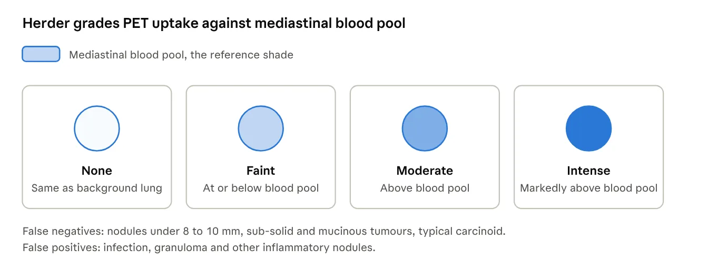
The grade is a visual comparison with blood pool, not an SUV threshold.
NELSON volumetric rules
| Finding | Negative | Indeterminate | Positive |
|---|---|---|---|
| Volume | Under 50 mm³ | 50–500 mm³ | Over 500 mm³ (about 9.8 mm) |
| Doubling time | Over 600 days | 400–600 days | Under 400 days |
| Lung cancer risk at 5.5 years | 1.0% | 5.7% | 48.3% |
Doubling time = (ln 2 × days between scans) ÷ ln (volume 2 ÷ volume 1). BTS thresholds (5 mm, 80 mm³) follow the same logic.
Biopsy, or straight to surgery
| Sample tissue | Operate without biopsy |
|---|---|
| Brock over 10% after CT; Herder 10–70% after PET | Herder over 70%, operable, PET-negative mediastinum |
| Solid nodule over 8 mm with a high-risk feature | Classic appearance: spiculated, FDG-avid, growing |
| Part-solid with solid component over 6 mm | Central lesion where biopsy risk is unacceptable |
| Growth, or new solid component in ground-glass | Part-solid with enlarging solid component over 15 mm |
| Moderate or intense FDG avidity; mediastinal nodes | Inconclusive or technically inadequate EBUS in clinical stage I–II |
Solid 5–7 mm with low Brock: observe. Solid 8–15 mm: PET-CT adds most. Solid over 15 mm or growing fast: treat as cancer and plan treatment.
Pure ground-glass: no immediate biopsy (yield is poor); long surveillance.
Central and peripheral lesions
| Central | Peripheral | |
|---|---|---|
| Definition | Inner third, endobronchial, or within 2 cm of the carina | Outer two-thirds |
| Tissue | Bronchoscopy with EBUS-TBNA of nodes; navigation if needed | CT-guided biopsy (about 90% yield over 2 cm) or VATS wedge |
| Mediastinum | EBUS first even if PET-negative: centrality raises occult N2 | Direct surgery allowed if 3 cm or less, outer third, PET-negative, no enlarged nodes |
| CT before surgery | Within 4 weeks | Within 4–6 weeks if stable |
| Operation | Sleeve or pneumonectomy more likely; frozen section of bronchial margin mandatory | VATS lobectomy or segmentectomy; frozen section for sublobar margins |
Biopsy the node before the primary when nodal stage would change management.
Hilar N1 on PET, or any enlarged or avid mediastinal node, needs tissue before a surgical pathway.
The peripheral lesion's error is an unnecessary biopsy; the central lesion's error is an under-staged mediastinum.
Staging procedures
| Procedure | Use | Performance on the slides |
|---|---|---|
| EBUS-TBNA | First-line: tumour over 3 cm, central, clinical N1–N3, PET-positive nodes, restaging. Stations 2, 4, 7, 10, 11 | Accuracy 93.9%, specificity 99%, negative predictive value 94.6% |
| Mediastinoscopy | Selective: negative EBUS with a CT- or PET-positive mediastinum. Stations 5 and 6 need an anterior mediastinotomy | MEDIASTrial: confirmatory mediastinoscopy after negative EBUS found 1.03% more disease, with 10 days' delay, 6.3% morbidity and 0.6% mortality |
| Navigation or robotic bronchoscopy | Peripheral lesions under 2 cm without a bronchus sign; fiducials before SABR | Yield about 70–80% |
| Frozen section | Bronchial margin, sublobar margin (2 cm or tumour diameter), unexpected node, undiagnosed nodule, N1 node to set extent |
Immunohistochemistry
| Marker | Adenocarcinoma | Squamous | Small cell | Mesothelioma |
|---|---|---|---|---|
| TTF-1 | Positive (65–94%) | Negative | Positive (85–90%) | Negative |
| Napsin-A | Positive (87%) | Negative | Negative | Negative |
| p40, p63, CK5/6 | Negative | Positive | Negative | Negative |
| Synaptophysin, chromogranin, CD56 | Negative | Negative | Positive | Negative |
| Calretinin, WT-1 | Negative | Negative | Negative | Positive |
TTF-1 with Napsin-A is 99.1% specific for lung adenocarcinoma; TTF-1 alone can be positive in colorectal, gastric, pancreatic and endometrial tumours.
p40 is more specific than p63 for squamous carcinoma. Small cell: Ki-67 over 70%, crush artefact.
Send every resectable tumour for PD-L1 and a sequencing panel (EGFR, ALK, ROS1, KRAS G12C, MET, BRAF, NTRK, RET, HER2).
Cyst or cavity
| Cyst | Cavity | |
|---|---|---|
| Definition (Fleischner) | Round, well-defined lucency with a thin wall | Gas-filled space within a nodule, mass or consolidation |
| Wall | Under 2 mm, smooth | Usually over 4 mm, often irregular |
| Surrounding lung | Normal | Abnormal |
| Mechanism | Developmental, check-valve, or tissue destruction | Necrosis draining into an airway |
Wall thickness and malignancy: 4 mm or less about 95% benign; 5–15 mm indeterminate; over 15 mm about 95% malignant. An irregular or nodular inner wall matters more than thickness.
Cavities: squamous carcinoma, metastases (squamous, sarcoma, colorectal), tuberculosis, abscess, fungal disease, septic emboli, granulomatosis with polyangiitis, rheumatoid nodules, infarct.
Cysts: bulla, pneumatocoele, bronchogenic cyst; multiple in lymphangioleiomyomatosis, Langerhans cell histiocytosis, Birt-Hogg-Dubé, lymphoid interstitial pneumonia, Pneumocystis.
Cancer in a cystic airspace: new wall thickening, a mural nodule or surrounding ground-glass in a cyst is suspicious. These are missed on screening and are often PET-negative.
A thick-walled cavity in a smoker is squamous carcinoma until proven otherwise; send samples for tuberculosis and fungi before resection.
Bronchoscopic routes to a lesion
| Conventional with EBUS | Electromagnetic navigation | Robotic (Ion) | |
|---|---|---|---|
| Steering | By hand; linear EBUS for nodes, radial probe for peripheral lesions | Sensor-tipped catheter tracked in an electromagnetic field against a CT map | Shape-sensing robotic catheter driven along a CT-planned path |
| Reach | Central airways and nodes | Peripheral lesions | Furthest; small peripheral and apical lesions |
| Stability at biopsy | Hand-held | Hand-held | Robot holds position |
| Yield for a peripheral nodule | About a third unguided under 2 cm; about 70% with radial EBUS | About 65–75% (NAVIGATE 73%) | About 75–90% in early series |
| Pneumothorax | 1–2% | 3–4% | 2–4% |
Yield depends on a bronchus sign, lesion size and density, and on correcting CT-to-body divergence with cone-beam CT or tomosynthesis.
CT-guided biopsy still has the highest yield for peripheral lesions (about 90% over 2 cm) with pneumothorax in 15–25%.
For the surgeon: one anaesthetic for biopsy and staging, fiducials for SABR, and dye marking of an impalpable nodule. A negative biopsy with a high Herder score does not exclude cancer.
Multiple lung lesions
| Pattern | Imaging | Staging |
|---|---|---|
| Second primary, synchronous or metachronous | Two solid lesions, may differ in appearance | Separate TNM for each |
| Separate tumour nodule (intrapulmonary metastasis) | Dominant solid tumour with solid satellites of the same histology | Same lobe T3, other ipsilateral lobe T4, contralateral M1a |
| Multifocal ground-glass or lepidic adenocarcinoma | Several ground-glass or part-solid nodules | Highest T with the number or (m); one N and M |
| Pneumonic-type adenocarcinoma | Consolidation or patchy ground-glass | One lobe T3, other ipsilateral lobe T4, contralateral M1a |
Separate primaries are favoured by different histological type or pattern, an in situ component in each, different driver mutations, no nodal or distant disease, and different growth rates.
Stage the mediastinum invasively before treating two lesions as two primaries.
Synchronous primaries: treat each with curative intent, lung-sparing where possible. Multifocal ground-glass disease: resect the dominant lesion and observe the rest.
The usual error is calling a second primary metastatic and denying surgery.
Tuberculosis and sarcoidosis
5 parts
Both produce PET-avid nodules and nodes that mimic lung cancer and its nodal spread, so neither a nodule nor an N2 station is called malignant on PET alone; tissue decides.
Telling them apart from cancer
| Feature | Tuberculosis | Sarcoidosis | Lung cancer |
|---|---|---|---|
| Nodes | Asymmetric, often unilateral right paratracheal and hilar; low-density centre with rim enhancement | Symmetric bilateral hilar and right paratracheal; may show eggshell or amorphous calcification | Follow the lobar drainage of the primary |
| Lung | Upper lobe and apical lower segment; cavity; tree-in-bud; tuberculoma with satellite nodules and calcification | Perilymphatic nodules along fissures and bronchovascular bundles, upper and mid zone; galaxy sign; fibrosis late | Solitary spiculated nodule or mass |
| PET | Avid when active; a tuberculoma can exceed SUV 10 | Avid, symmetric hilar and mediastinal uptake | Avid primary with nodes in the drainage path |
| Sample shows | Necrotising granulomas; acid-fast bacilli in a minority | Non-necrotising granulomas | Malignant cells |
Granulomas on a needle sample do not exclude cancer in the same patient: sarcoid-like reaction occurs in nodes draining a tumour and after immunotherapy.
A PET-avid node that would change the operation needs sampling whatever the suspected cause.
Sampling
Send every nodal and lung sample from a suspected granulomatous process for acid-fast smear, mycobacterial culture and PCR as well as cytology. A sample put only in formalin cannot be cultured.
GRANULOMA trial (JAMA 2013): in suspected stage I or II sarcoidosis, endosonographic node aspiration detected granulomas in 80% of patients, more than bronchoscopy with lung biopsy.
A later international trial found 70% granuloma detection with EBUS and 68% with oesophageal sampling through the same scope.
The BTS statement supports not biopsying when the clinical diagnosis is highly probable, such as Löfgren syndrome, with monitoring instead.
Surgical biopsy (mediastinoscopy or VATS) is for a non-diagnostic needle sample where lymphoma or cancer remains possible.
Tuberculosis: what the thoracic surgeon is asked to do
| Problem | Operation and points |
|---|---|
| Undiagnosed nodule that proves to be a tuberculoma | Wedge for diagnosis; frozen section shows necrotising granulomas; send fresh tissue for culture; treat medically afterwards |
| Multidrug-resistant disease, localised | WHO gives a conditional recommendation for elective lobectomy or wedge resection alongside a recommended regimen, only with experienced surgeons, good facilities and careful selection. The supporting analysis favoured partial resection over pneumonectomy (last point from memory) |
| Massive haemoptysis | Bronchial artery embolisation first; resection for failure or recurrence with localised disease |
| Aspergilloma in an old cavity | Resection for haemoptysis if fit; high risk in complex disease with pleural thickening |
| Destroyed lung | Pneumonectomy, often extrapleural; cover the stump with muscle |
| Tuberculous empyema, trapped lung | Drain, treat, then decortication if the lung will not expand; thoracoplasty or open window if the lung is destroyed |
| Bronchial stenosis | Dilatation or sleeve resection once disease is inactive |
| Constrictive pericarditis | Pericardiectomy |
Operate after sputum conversion where possible, usually after at least two to three months of effective treatment, and continue drugs afterwards.
Expect dense adhesions, obliterated fissures and calcified nodes fused to the pulmonary artery: get proximal arterial control first and consider intrapericardial dissection.
Stump: avoid devascularising it, check the margin is free of endobronchial disease, and buttress it.
Standard medical treatment of drug-sensitive disease is two months of four drugs and four months of two (NICE NG33). WHO recommended a six-month all-oral regimen (BPaLM) for multidrug-resistant disease in 2022, which has reduced the number referred for surgery.
Airborne precautions in theatre and notify the case.
Sarcoidosis: what the thoracic surgeon is asked to do
Scadding chest radiograph stages: I nodes only; II nodes and lung; III lung only; IV fibrosis.
Diagnosis when needles fail: mediastinoscopy for nodes, VATS biopsy for lung.
In a lung cancer patient with symmetric avid hilar and mediastinal nodes, sample by EBUS before deciding on stage; if benign on adequate sampling, treat the cancer on its true stage and sample nodes systematically at resection.
Treatment is medical. The BTS statement says many patients need no treatment; it is started for risk of death or disability from organ involvement, or for unacceptable loss of quality of life. Prednisolone is first line, with methotrexate as the usual second agent (drug choice from memory).
Before any operation in known sarcoidosis, screen for cardiac involvement (ECG, with MRI if abnormal or symptomatic), pulmonary hypertension and hypercalcaemia, and cover long-term steroids.
Late surgery: aspergilloma in fibrocavitary disease, and lung transplant for stage IV disease.
Sources and status
Confirmed today: BTS sarcoidosis statement; GRANULOMA trial; EBUS against oesophageal sampling trial; WHO recommendation on surgery and operational guidance; WHO 2022 drug-resistant TB update. From memory: the imaging table, operative points, NICE NG33 regimen, timing of surgery, and the sarcoid-like reaction and perioperative points.
Speaker notes from the original lung-nodule slides
7 parts
Added 18 November 2026. Extracted from the PowerPoint embedded in the interactive course pack ("From lung nodule to resection", 23 slides). Eleven slides carry notes; three of those (slides 14, 15 and one repeat on slide 4) only repeat another slide's note. Recorded as taught and not checked by me today. The slide content itself is already in these notes.
Why a systematic pathway matters (slides 2 and 4)
The question is no longer "fit or not fit". It is "what is the risk profile, and does the patient accept it?" (attributed to ERS/ESTS 2025).
Screening trials and why surgeons now see more nodules (slide 3)
| Trial | Design | Result | Consequence |
|---|---|---|---|
| NLST | US randomised trial, low-dose CT against chest radiograph | 20% relative reduction in lung cancer mortality | Validated CT screening; more small peripheral stage I lesions found |
| NELSON | Dutch-Belgian randomised trial using volumetry and volume doubling time | Mortality reduction with fewer false positives than earlier protocols | Made volumetry and growth central to work-up; supports more conservative surveillance of small nodules |
| MILD | Annual or biennial low-dose CT with long follow-up | Sustained mortality benefit with prolonged screening | Supports continued surveillance and recognition of indolent subsolid lesions |
Key shift: detection has moved from symptomatic central tumours to asymptomatic subcentimetre peripheral nodules.
Operational consequence: more MDT time goes on risk models, growth kinetics, and deciding whether not to biopsy is the best biopsy.
Guideline translation: BTS adopted the 5 mm or 80 mm³ threshold and volumetry, following NELSON.
Nodule classification (slide 5)
Cited: Fleischner 2017, BTS 2015, EACTS 2022.
Pure ground-glass and part-solid nodules are managed on a separate pathway from solid nodules.
A part-solid nodule carries a higher malignancy risk than a solid nodule of the same size; the solid component is the oncological driver.
A new solid component in a previously pure ground-glass nodule means immediate MDT referral, whatever the size.
BTS and NELSON logic for investigation (slide 8)
Risk-defining features:
Volume or mean diameter.
Volume doubling time, especially 400 to 600 days against under 400 days.
Subsolid morphology and an enlarging solid component.
Spiculation, upper lobe location, emphysema, family history, age, smoking burden.
Brock score for baseline risk; Herder model after PET-CT.
Practice consequences:
Most solid nodules under 5 mm or 80 mm³ do not merit prolonged follow-up.
Volumetry outperforms axial diameter for borderline lesions.
Subsolid nodules need longer observation than solid ones.
A high-risk nodule can go to treatment without preoperative histology if the MDT is confident and biopsy risk is high.
Takeaway on the slide: treat growth kinetics and morphology as biological markers. The judgement is not only the probability of cancer, but whether the lesion behaves like an operable cancer best served by surveillance, biopsy, resection or SABR.
Which nodules need tissue, and which need time (slide 9)
| Nodule | Investigate now | Observe first | Why |
|---|---|---|---|
| Solid 5 to 7 mm, low Brock score | Usually no | Short-interval CT or discharge, by volume | Low immediate yield; most are benign |
| Solid 8 to 15 mm | PET-CT often useful | Possible if intermediate risk and no growth | The size at which PET and risk models become informative |
| Solid over 15 mm, or rapid growth | Yes | Rarely | High pre-test probability; treatment planning takes priority |
| Part-solid with solid component 6 mm or more | Yes | No prolonged delay | Higher risk of invasive adenocarcinoma |
| Pure ground-glass | Usually no immediate biopsy | Long surveillance | Indolent biology; poor biopsy yield; surgery should be anatomy-conscious |
Central against peripheral lesions (slide 10)
| Peripheral primary | Central primary | |
|---|---|---|
| Diagnostic route (NICE) | Image-guided biopsy when it can guide treatment planning | Flexible bronchoscopy if nodal staging does not alter treatment |
| Nodes | If intrathoracic nodes are enlarged, biopsy the node before the primary when nodal stage changes management | Centrality raises the risk of occult N2 disease, so nodal staging usually does matter: EBUS or EUS sampling, often before any biopsy of the primary |
| Technique notes | CT-guided biopsy has a higher yield than radial EBUS with guide sheath for lesions under 2 cm, with more pneumothorax | Sputum cytology only when bronchoscopy is declined or not tolerated |
| Straight to surgery | Reasonable for a highly suspicious lesion when biopsy risk is unacceptable and resection is curative in intent | Not without staging |
Point made in the notes: peripheral lesions challenge diagnosis; central lesions challenge staging. The error to avoid in a peripheral lesion is an unnecessary invasive biopsy; in a central lesion it is an understaged mediastinum followed by surgery in the wrong sequence.
Can the mediastinum be left unsampled before surgery?
| Situation | Direct surgery | Reason given |
|---|---|---|
| Peripheral outer-third tumour 3 cm or less, PET-negative mediastinum, no enlarged nodes | Often yes | ESTS algorithm allows it in this low pre-test N2 setting |
| Central tumour, even with CT and PET negative mediastinum | Usually no | Centrality independently raises the probability of occult mediastinal disease |
| PET-positive hilar N1 disease | No | Higher risk of skip or associated N2 disease |
| CT-enlarged or PET-avid mediastinal nodes | No | Tissue confirmation is mandatory before a curative surgical pathway |
Immunohistochemistry caveat (slide 12)
TTF-1 is sensitive (94%) but not fully specific: positive in colorectal (5.2%), gastric (5.9%), pancreatic (7.3%) and endometrial carcinomas.
Use TTF-1 with napsin-A together to confirm pulmonary adenocarcinoma (99.1% specificity).
Large cell neuroendocrine carcinoma: large cells, neuroendocrine morphology, neuroendocrine markers and a high Ki-67.
Reading the staging CT
4 parts · 2 drawings
Read for T, N and M, then for resectability and the anatomy of the operation; CT signs of invasion are weak, so know which ones to trust.

Read the size first, then look for the highest structure touched; whichever gives the higher category is the T.
Tumour and invasion
| Question | Reliable signs | Unreliable signs | Next test |
|---|---|---|---|
| Chest wall (T3) | Rib destruction; soft tissue mass in the wall | Pleural contact over 3 cm, obtuse angle, lost fat plane, pleural thickening | Localised pain is more predictive than CT; ultrasound or dynamic imaging for sliding; MRI for the apex |
| Mediastinum (T4) | Encasement of vessels, airway or oesophagus; gross fat infiltration | Contact alone | Likely resectable if contact is under 3 cm, the aorta is touched over less than 90° and a fat plane is preserved |
| Superior sulcus | MRI. Brachial plexus involvement above T1, vertebral body over half involved, or N2 or N3 disease argue against resection | ||
| Diaphragm, phrenic nerve | Raised hemidiaphragm | Fluoroscopy or ultrasound sniff test | |
| Recurrent laryngeal nerve | Aortopulmonary window mass with hoarseness | Laryngoscopy | |
| Airway | Main bronchus is T2 whatever the distance from the carina; carina is T4 | Bronchoscopy decides sleeve or pneumonectomy | |
| Collapse beyond the tumour | CT cannot separate tumour from atelectasis | PET or MRI | |
| Pleura | Nodular or circumferential thickening | A small effusion | Cytology; an effusion is M1a only if malignant |
Size: measure on lung windows in the longest axis. For part-solid tumours the solid component sets T.
Separate nodules: same lobe T3, different ipsilateral lobe T4, contralateral M1a. Consider synchronous primaries when morphology differs.
T4 that can still be resected in selected patients: carina, SVC, left atrium, vertebral body, aorta. Not resectable: oesophagus, heart beyond the atrium, long tracheal involvement.
Nodes

Name the station, then ask which side of the trachea it is on relative to the tumour.
| Modality | Sensitivity | Specificity | Comment |
|---|---|---|---|
| CT, short axis ≥10 mm | About 55% | About 80% | Size alone misleads in both directions |
| PET-CT | About 80% | About 88% | Negative predictive value about 95% for a peripheral cT1 N0 tumour |
| EBUS, with or without EUS | About 90% | Near 100% | A negative result with high suspicion needs surgical staging |
Go to invasive staging despite a negative PET when the tumour is central, over 3 cm, or N1 is suspected.
Station landmarks: 4R and 4L divide at the left lateral border of the trachea; 4R becomes 10R at the lower border of the azygos vein; 4L becomes 10L at the upper rim of the left pulmonary artery; station 5 lies lateral to the ligamentum, station 6 anterior and lateral to the arch.
Station 1 (supraclavicular and low cervical) is N3.
Report the number of N2 stations (N2a or N2b), whether nodes are discrete or infiltrative, and the largest short axis. Discrete single-station disease is the group that may still be resected.
Metastases
Adrenal: under 10 HU on unenhanced CT is an adenoma; otherwise use washout, PET, and biopsy before a solitary lesion denies surgery.
A single brain or adrenal metastasis with a resectable primary can still be treated radically.
TNM 9: T1 N1 is now IIA; T1 N2a is IIB; T2 N2b is IIIB.
Surgical anatomy to report
Fissures: incomplete in about half of patients; plan fissureless dissection.
Arteries: number of truncus anterior branches; posterior ascending artery and whether it shares an origin with the superior segmental artery; lingular artery of mediastinal origin; tumour or nodes at the main artery (intrapericardial control).
Veins: common left trunk; middle lobe vein draining to the lower vein; a right upper lobe vein running behind the bronchus intermedius.
Bronchi: tracheal bronchus, accessory cardiac bronchus.
Other: azygos lobe, aberrant right subclavian (non-recurrent laryngeal nerve), left SVC, calcified hilar nodes welded to the artery.
Lung quality: emphysema distribution; interstitial lung disease, which carries a risk of acute exacerbation after resection and after radiotherapy.
For segmentectomy, use three-dimensional reconstruction to plan intersegmental veins and the margin.
Cystic lung tumours: wall changes and staging
6 parts · 1 drawing
A lung cancer can grow in or beside the wall of a thin-walled airspace. It is missed because it does not look like a nodule, PET is often negative, and its diameter says little about how much tumour there is. Watch the wall, not the size of the hole.

What it is
Lung cancer associated with cystic airspaces is tumour growing along or around a pre-existing or tumour-formed airspace: a bulla, a cyst, or a check-valve airspace made by the tumour narrowing a small airway. It is not a cavitating cancer, where a solid tumour has necrosed centrally.
Most are adenocarcinomas; squamous carcinoma is the minority. They account for a few per cent of screen-detected cancers and a disproportionate share of the cancers missed at screening. Typical patient: male, 60 to 70, smoker, peripheral lesion.
Classification
| System | Types |
|---|---|
| Mascalchi 2015, extended by Fintelmann 2017 | I nodule outside the cyst abutting the wall; II nodule inside the cyst arising from the wall; III wall thickening; IV multicystic with soft tissue or ground glass between the cysts |
| Shen 2019 | I thin wall under 2 mm; II thick wall, circumferential, 2 mm or more; III mural nodule, inside or outside; IV multicystic or mixed |
Mixed patterns are common and agreement between readers is modest.
How the wall changes over time
The usual sequence is a thin-walled airspace, then focal wall thickening, then thickening round more of the circumference, then a mural nodule. The wall also changes in density, from ground glass to part-solid to solid, in step with invasiveness.
The airspace itself is unreliable. It can enlarge, stay the same, shrink, or fill in as soft tissue replaces air. A cyst that is getting smaller while its wall thickens is progressing, not regressing; overall diameter can fall while the solid component rises.
Appearance of a solid mural nodule is the change most associated with invasive disease and worse outcome. Types II and III on the Shen system are more often poorly differentiated than types I and IV.
Mural regression: I found no description of spontaneous regression of a malignant mural nodule or wall. Wall thickening or a fluid level that resolves over weeks is infection or haemorrhage in a bulla. Shrinkage of proven multifocal cystic cancer has been reported on immune checkpoint inhibitors in one exploratory series. A wall change that has not resolved at 6 to 12 weeks should be treated as tumour.
Surveillance rules that exist
The BTS nodule guideline and the Fleischner recommendations do not cover cysts.
Lung-RADS 2022 does. From memory: a thin-walled unilocular cyst is not classified; a thick-walled or multilocular cyst is category 4A; a thick-walled cyst with growing wall thickness or nodularity, a growing multilocular cyst, or a multilocular cyst with new or increasing loculation or opacity is 4B. Measure wall thickness and any nodule; do not use the cyst diameter.
PET-CT has low sensitivity because there is little solid tissue. A negative scan does not exclude it.
Biopsy has a lower yield and a higher pneumothorax risk; tumour is focal within the wall. With a progressive wall on serial CT, resection without tissue is reasonable after MDT discussion.
Staging: what to measure
The ninth edition TNM gives no rule for cystic tumours. It does not say whether the T category uses the whole lesion including the air, or the solid component.
Whole-lesion diameter includes air and overstates tumour burden. In the illustrative cases of the 2026 review, CT diameters of 36 to 56 mm corresponded to pathological diameters of 20 to 42 mm, and one 55 mm lesion measured 25 mm.
Solid-component measurement follows the rule already used for part-solid nodules (clinical T from the solid part, pathological T from the invasive part) and is what most authors advocate. It fails in pure wall-thickening lesions that have no measurable nodule.
A workable convention for an MDT: record both the whole lesion and the largest solid component or maximum wall thickness; assign clinical T from the solid component where there is one; say that the pathological T will be set by invasive size; and stage the mediastinum as for a solid tumour of that solid size. In one reported case PET-CT staging was N0 and pathology showed N1.
Multiple cystic lesions: similar architecture and growth rate in several lesions suggests intrapulmonary metastasis rather than separate primaries; molecular profiling can separate them.
Surgery
There is no specific evidence. JCOG0802, JCOG0804, JCOG1211 and CALGB 140503 did not report cystic tumours as a subgroup, and the consolidation-to-tumour ratio that selects patients in the Japanese trials is undefined when the lesion contains air.
Practical reading: a thick-walled or nodular lesion (Shen II or III) should be treated as a solid tumour of its whole extent for the purpose of margin, which usually means lobectomy or a generous segmentectomy, because the wall is tumour all the way round. A thin-walled ground-glass lesion can be treated as a ground-glass tumour.
The whole cyst must be inside the specimen with a margin beyond its wall; a wedge that opens the cyst leaves tumour.
Status: the classification, the progression model, the absence of a TNM rule, the measurement discrepancies and the surgical questions are from a 2026 narrative review read on 17 November 2026 (Translational Lung Cancer Research 2026), which gives case examples and no cohort statistics; classification wording was checked against RadioGraphics 2018. The Lung-RADS categories, the epidemiology, the airspace behaviour and the surgical reading are from memory or are my own inference and are marked as such. The SSRN paper you sent (abstract 7138916) would not open, so nothing from it is included.
Interactive course pack, 18 November 2026: items from the archive slides not previously in these notes
4 parts · 1 drawing
I compared the 74-page "ST4 Interactive Course Pack" PDF with these notes page by page. Its teaching sections were already covered. The points below come from its archive of the original lung-nodule slides, which the pack itself labels "archival original: use the corrected teaching tabs for current wording". They are recorded as taught and were not checked by me against a source today. The programme and faculty pages were left out on purpose, because the app is public.
CT features that raise the probability of cancer (archive slide)
| Feature | Detail given |
|---|---|
| Spiculation | Described as the most powerful independent predictor (odds ratio 5.54) |
| Upper lobe location | Independent risk factor in the validated models |
| Size | Solid nodule over 8 mm warrants PET-CT and further investigation |
| Part-solid | Solid component over 6 mm: high probability |
| Growth | Volume doubling time under 400 days is the NELSON positivity threshold; under 100 days counts as rapid |
| Other | Lobulated or irregular margin, pleural tethering, air bronchogram in a solid component, new solid component in a ground-glass nodule, satellite nodules in the same lobe, nodes over 1 cm short axis, ipsilateral effusion, chest wall or mediastinal invasion |
Timing of the CT before surgery (archive slide): within 4 weeks for a spiculated solid nodule over 20 mm, a new solid component, rapid growth, a central or endobronchial lesion, lymphadenopathy, post-obstructive change or effusion; 4 to 6 weeks is acceptable for a stable peripheral lesion. The reason given is that anatomy can change quickly and alter the operation in central lesions.
Pathology and immunohistochemistry (archive slide)
| Tumour | Morphology | Markers |
|---|---|---|
| Adenocarcinoma | Acinar, papillary, micropapillary, lepidic or solid patterns; mucin; prominent nucleoli | TTF-1 positive (65 to 94%), napsin-A positive (87% sensitive, 98% specific), CK7 positive, CK20 negative |
| Squamous cell | Keratinisation, intercellular bridges | p40 and p63 positive (p40 the more specific), CK5/6 positive, TTF-1 negative |
| Small cell | Small cells, scant cytoplasm, "salt and pepper" chromatin, crush artefact | TTF-1 positive (about 85 to 90%), synaptophysin, chromogranin, CD56, Ki-67 over 70% |
| Mesothelioma | Calretinin and WT-1 positive |
TTF-1 with napsin-A together is given as 99.1% specific for adenocarcinoma. PD-L1 tumour proportion score decides immunotherapy eligibility.
Postoperative surveillance (archive slide)

| Time | Investigation | Purpose |
|---|---|---|
| 6 weeks | Clinical review and chest radiograph | Wound, early complications, effusion |
| 3 months | CT chest, non-contrast | New baseline |
| 6 months | CT chest | Early recurrence |
| 12 months | CT chest, PET if suspicious | First year has the highest recurrence risk |
| 2 years | CT chest | Ongoing |
| 3 to 5 years | CT chest each year | Late recurrence |
| Over 5 years | Annual CT or clinical review | Second primary |
Circulating tumour DNA: detection of minimal residual disease preceded radiological recurrence by a median of 4.7 months (cited on the slide as ADAURA, Nature Medicine 2025). It needs a tumour-informed assay, has low sensitivity in early-stage disease, and is for trials or specialist centres only.
Novel investigations (archive slide)
| Technique | Point made |
|---|---|
| Liquid biopsy, circulating tumour DNA | Residual disease detection and surveillance after resection; low sensitivity in early stage |
| Quantitative or dual-energy CT | Emphysema quantification, perfusion mapping without scintigraphy, predicted postoperative FEV1 from lobar volumes |
| SPECT/CT perfusion | Better than segment counting in heterogeneous emphysema; can move a borderline patient from unfit to fit |
| Next-generation sequencing | EGFR, ALK, ROS1, KRAS G12C, MET, BRAF, NTRK, RET, HER2; PD-L1; guides perioperative treatment |
| Robotic bronchoscopy | Two commercial platforms named; yield about 70 to 80% for peripheral lesions; fiducial placement before SABR |
| EBUS elastography | Helps separate malignant from benign nodes; adjunct to needle sampling |
| Functional MRI | Non-contrast perfusion as an alternative to scintigraphy |
| AI-assisted CT | Automated nodule detection, volumetry, less interobserver variation |
| Methylation-based blood test | Multi-cancer early detection; not yet standard |
| Breath analysis of volatile organic compounds | Validation ongoing |
NICE NG122: diagnosis and staging
5 parts
Contrast CT first, PET-CT for everyone who could have curative treatment, then tissue from the site that gives both diagnosis and stage; the 10 mm short-axis node is the pivot for endosonography. Read from the NICE chapter on 17 November 2026; the staging recommendations date from 2019.
Imaging
| Recommendation | Number |
|---|---|
| Contrast-enhanced CT of the chest, liver, adrenals and lower neck, before any biopsy | 1.2.2, 1.2.14 |
| CT alone may be unreliable for mediastinal and chest wall invasion: consider ultrasound, and surgical assessment if resection is possible | 1.2.3 |
| PET-CT before treatment for everyone who could have curative treatment | 1.2.4 |
| No routine MRI for T stage, except superior sulcus tumours when needed | 1.2.6, 1.2.7 |
| Sputum cytology only for central lesions in people who cannot have bronchoscopy or other invasive tests | 1.2.1 |
Tissue
| Situation | Test | Number |
|---|---|---|
| General rule | The test that gives the most diagnostic and staging information with the least risk; be wary of a test that gives pathology only when staging is also needed | 1.2.13 |
| Peripheral lesion, treatment depends on histology | Image-guided biopsy | 1.2.16 |
| Enlarged intrathoracic nodes (10 mm or more short axis) and nodal stage affects treatment | Biopsy the node in preference to the primary | 1.2.17 |
| Central lesion, nodal staging does not affect treatment | Flexible bronchoscopy | 1.2.18 |
| Paratracheal and peribronchial intraparenchymal lesions | EBUS-TBNA | 1.2.8 |
| Any sample | Adequate for diagnosis, subtyping and molecular markers | 1.2.11 |
Mediastinal staging
| Nodes on CT | Pathway | Number |
|---|---|---|
| Under 10 mm short axis | PET-CT as the first test after CT | 1.2.19 |
| 10 mm or more short axis | PET-CT if not done, then EBUS-TBNA, EUS-FNA or both | 1.2.20 |
| PET-positive or enlarged, and nodal status would change treatment | Systematic sampling by EBUS-TBNA, EUS-FNA or both | 1.2.21 |
| Negative endosonography but high clinical suspicion, and nodal status would change treatment | Consider surgical mediastinal staging | 1.2.22 |
Distant staging
| Clinical stage, curative treatment planned | Brain imaging | Number |
|---|---|---|
| Stage I, no neurological symptoms | None | 1.2.24 |
| Stage II | Contrast CT of the brain; contrast MRI if CT suggests metastases | 1.2.25 |
| Stage III | Contrast MRI of the brain | 1.2.26 |
| Any stage with features of intracranial disease | CT then MRI if normal, or MRI first | 1.2.27 |
Confirm an isolated distant metastasis or a synchronous tumour by biopsy or further imaging when curative treatment is an option (1.2.23).
Bone: X-ray first for localised symptoms, then scintigraphy or MRI; no bone scan when PET-CT shows no bone metastases (1.2.28, 1.2.29).
Every working diagnosis of lung cancer is discussed at an MDT, and treatment follows without undue delay (1.2.30, 1.2.32).
Where NICE and the surgical guidelines differ
NICE triggers endosonography on node size and PET avidity. The ESTS staging guideline also asks for invasive staging when the mediastinum is negative on CT and PET but the tumour is central, larger than 3 cm, or there is suspected N1 disease (from memory).
NICE has no brain imaging for stage I; many units image stage II and above with MRI directly.
The stage groups here predate the ninth edition of TNM; the logic by stage is unchanged.
Lung cancer overview, TNM 8th edition and perioperative evaluation (TSRA ch. 4)
Added 20 November 2026 from TSRA Review of Cardiothoracic Surgery 3rd ed., ch. 4 "Lung cancer overview and perioperative evaluation" (Brian Arnold and Mara Antonoff). Read in full (PDF pages 60 to 66). Figures are American (American Cancer Society, 2020 estimates). The chapter quotes no classes of recommendation or levels of evidence.
Epidemiology
- Leading cause of cancer death in men and women: 22% of cancer deaths, 13% of new cancer diagnoses.
- ACS 2020 estimate (USA): about 228,820 new cases and 135,720 deaths. More deaths than colon, breast and prostate cancer combined.
- Lifetime risk about 1 in 15 (men) and 1 in 17 (women).
Risk factors
| Factor | Detail |
|---|---|
| Tobacco smoking | Up to 85% of lung cancer deaths. Relative risk depends on histology and pack-years |
| Small cell | RR 1.94 (<19 pack-years) to 52.5 (>56 pack-years) |
| Squamous cell | RR 1.70 to 23.9 |
| Adenocarcinoma | RR 1.50 to 11.5 (more modest effect) |
| Cigars and pipes | Significant, but lower risk than cigarettes |
| Second-hand smoke | Two-fold risk |
| Smoking cessation | 30 to 50% fall in cancer mortality risk after 10 years |
| Environmental (asbestos, radon, tar, soot, arsenic, chromium, nickel, air pollution) | 10 to 15% of lung cancers in total; synergistic with smoking (smoking plus asbestos about 50-fold risk) |
| Family history | Higher risk and mortality in relatives; genes not defined |
- Since 2005, rates have fallen in all age groups except women aged 50 to 54 (slight rise, not explained by smoking trends).
- Women: younger at diagnosis, more often never-smokers, more adenocarcinoma, better stage-for-stage survival.
Screening (brief; see ch. 6 section)
- NLST (NEJM 2011): low-dose helical CT is effective for screening. The chapter states CT could reduce lung cancer deaths "up to 20-fold" versus chest X-ray; ch. 6 gives the NLST result as a 20% relative risk reduction, which is the figure to use.
Pathology
| Type | Share and features |
|---|---|
| NSCLC | 85% of primary lung cancers: adenocarcinoma, squamous, large cell |
| Adenocarcinoma | 38%; commonest subtype. Former "bronchoalveolar carcinoma" is now adenocarcinoma in situ (no pleural, stromal or vascular invasion) |
| Squamous cell | 20% |
| SCLC | About 14% (ch. 10 gives 15 to 20%). Central airways, advanced at presentation, poor prognosis; most aggressive neuroendocrine tumour |
| Large cell | Described here as intermediate-grade neuroendocrine, usually peripheral, cells at least three times the size of small cells, almost always heavy smokers (ch. 14 lists large-cell neuroendocrine carcinoma as high grade in the 2015 WHO scheme) |
| Carcinoid (typical and atypical) | 1 to 2% |
Clinical presentation
- Most present with symptoms unless found by screening or incidentally: cough, dyspnoea, haemoptysis.
- Post-obstructive pneumonia or abscess from a proximal tumour.
- Systemic: weight loss, anorexia, fatigue. Advanced disease: neurological symptoms (brain metastases), bone pain.
- Local invasion: pain, nerve dysfunction, fistula, venous obstruction, effusion. SVC syndrome from large proximal upper lobe tumours.
- Paraneoplastic syndromes in about 10%, mostly small cell and squamous. Commonest: hypercalcaemia (squamous) and SIADH (small cell).
Diagnosis
- History, examination and chest X-ray first; CT gives the most detailed imaging. Compare with previous imaging.
- Tissue by the easiest and safest method: sputum cytology, percutaneous transthoracic biopsy, bronchoscopic biopsy, EBUS-FNA, oesophageal ultrasound FNA.
- Endobronchial lesions: standard bronchoscopic biopsy.
- Lesions next to central airways: EBUS.
- Peripheral lesions: transthoracic biopsy.
- PET-CT is important for diagnosis and staging.
Staging principles
- Mediastinoscopy is still regarded as the gold standard; EBUS-TBNA has similar sensitivity and specificity.
- All patients with potentially resectable disease should have bronchoscopy in some form before resection.
- Brain MRI and PET-CT if distant disease is suspected, for central tumours, or for tumours larger than T1. Commonest metastatic sites: brain, bone, adrenals.
- Pathological stage is only known after resection.
Changes from 7th to 8th edition (adopted January 2018)
- T subdivided in 1 cm steps up to 5 cm.
- More than 5 cm up to 7 cm is now T3 (was T2); more than 7 cm is now T4 (was T3).
- Main bronchus involvement, atelectasis or obstructive pneumonitis: T2 regardless of distance from carina or extent of collapse.
- Diaphragm invasion: T4.
- Single extrathoracic metastasis (including non-regional node): M1b. Multiple extrathoracic metastases in one or several organs: M1c.
TNM descriptors (Table 4-1, after Detterbeck, JTCVS 2018)
| Category | Definition |
|---|---|
| Tx | Primary not assessable, or malignant cells in sputum or washings but not seen on imaging or bronchoscopy |
| T0 | No primary |
| Tis | Carcinoma in situ (squamous or adenocarcinoma, including pure lepidic adenocarcinoma 3 cm or less) |
| T1 | 3 cm or less, surrounded by lung or visceral pleura, not proximal to lobar bronchus |
| T1mi | Minimally invasive adenocarcinoma (3 cm or less, invasion 5 mm or less) |
| T1a / T1b / T1c | 1 cm or less / more than 1 to 2 cm / more than 2 to 3 cm |
| T2 | More than 3 to 5 cm, or main bronchus (not carina), visceral pleural invasion, atelectasis or obstructive pneumonitis extending to the hilum |
| T2a / T2b | More than 3 to 4 cm / more than 4 to 5 cm |
| T3 | More than 5 to 7 cm, or invasion of chest wall, phrenic nerve, parietal pleura, pericardium, or separate nodule(s) in the same lobe |
| T4 | More than 7 cm, or invasion of diaphragm, mediastinum, heart, great vessels, trachea, recurrent laryngeal nerve, oesophagus, vertebral body, carina, or separate nodule(s) in a different ipsilateral lobe |
| N0 / N1 | None / ipsilateral pulmonary or hilar |
| N2 | Ipsilateral mediastinal or subcarinal |
| N3 | Contralateral mediastinal or hilar; ipsilateral or contralateral scalene or supraclavicular |
| M1a | Separate nodule(s) in contralateral lobe; pleural or pericardial nodules; malignant pleural or pericardial effusion |
| M1b | Single extrathoracic metastasis |
| M1c | Multiple extrathoracic metastases (one or more organs) |
Stage groups (Table 4-1)
| T or M | N0 | N1 | N2 | N3 |
|---|---|---|---|---|
| T1a | IA1 | IIB | IIIA | IIIB |
| T1b | IA2 | IIB | IIIA | IIIB |
| T1c | IA3 | IIB | IIIA | IIIB |
| T2a | IB | IIB | IIIA | IIIB |
| T2b | IIA | IIB | IIIA | IIIB |
| T3 | IIB | IIIA | IIIB | IIIC |
| T4 | IIIA | IIIA | IIIB | IIIC |
| M1a | IVA | IVA | IVA | IVA |
| M1b | IVA | IVA | IVA | IVA |
| M1c | IVB | IVB | IVB | IVB |
Preoperative risk assessment
- Weigh the risk of untreated cancer against the risk of resection (comorbidity, tolerance of parenchymal loss).
- Spirometry is the commonest test (FEV1 and DLCO). DLCO correlates better with postoperative death than FEV1.
| Measure | Threshold | Meaning |
|---|---|---|
| ppoFEV1 and/or ppoDLCO | Less than 40% | Very high risk; consider non-operative treatment |
| VO2max (CPET) | More than 15 mL/kg/min | Not at increased risk of pulmonary complications or death |
| VO2max | Less than 10 mL/kg/min | Very high risk of postoperative complications |
| Stair climb | 22 m (about 6 to 7 flights) | Predicts VO2max more than 15 mL/kg/min |
- VO2max is the most specific predictor of postoperative pulmonary complications.
- When formal CPET is not available, stair climbing and the 6-minute walk test can estimate VO2max.
Mediastinal staging of lung cancer (TSRA ch. 5)
Added 20 November 2026 from TSRA Review of Cardiothoracic Surgery 3rd ed., ch. 5 "Mediastinal staging of lung cancer" (Jarred R. Mondoñedo and Andrew C. Chang). Read in full (PDF pages 68 to 73). Table 5-1 was garbled in the text extract and was read from the page layout. The NCCN guidance quoted is American, as cited by the chapter; no classes or levels of evidence are given.
Principles
- Choice of approach starts from contrast CT and/or PET-CT, which identify targets.
- Targets: nodes more than 1 cm in short axis and/or PET-avid (SUV more than 2.5).
- N1: ipsilateral hilar, peribronchial, intrapulmonary. N2: ipsilateral mediastinal and/or subcarinal. N3: contralateral mediastinal, hilar and/or supraclavicular.
- Invasive staging is mostly for suspected N2/N3 disease, where induction therapy or definitive radiotherapy may replace or add to surgery.
- Metastatic disease found at any point: no further mediastinal staging needed; proceed to systemic therapy.
- cT1aN0M0: nodal metastasis unlikely, so preoperative tissue biopsy is usually unnecessary; resection with intraoperative node sampling or dissection is enough.
- Sample the site that would confirm the highest suspected stage. Obtain enough tissue for molecular testing.
IASLC lymph node stations (Table 5-1)
| Zone | Stations | Notes |
|---|---|---|
| Supraclavicular | 1 low cervical, supraclavicular and sternal notch | Biopsy the node rather than the mediastinum |
| Superior mediastinum | 2L/R upper paratracheal; 3a prevascular; 3p retrotracheal; 4L/R lower paratracheal | Oncological midline is the left lateral border of the trachea. The azygos vein separates 4R from 10R |
| Aortic | 5 subaortic; 6 para-aortic | Important for suspected left upper lobe lesions |
| Inferior mediastinal | 7 subcarinal; 8 paraoesophageal; 9L/R inferior pulmonary ligament | Paraoesophageal and pulmonary ligament nodes can be reached by EUS |
| N1 | 10L/R hilar; 11L/R interlobar; 12L/R lobar; 13L/R segmental; 14L/R subsegmental | N1 stations are double digit. Station 10 lies along the main bronchi and hilar vessels; station 11 lies between the origins of the lobar bronchi |
Minimally invasive techniques
| Technique | Access and performance | Limitations and complications |
|---|---|---|
| EBUS-TBNA | Preferred first step for diagnosis and staging. Stations 2, 4, 7, 10, 11, 12. 2013 meta-analysis: sensitivity about 89%, NPV about 91%, comparable or better than cervical mediastinoscopy | Operator variability; cannot reach para-aortic, paraoesophageal or pulmonary ligament nodes; smaller specimens. Pneumothorax and haemorrhage less than 1.5% |
| EUS-FNA | Designed for gastric and oesophageal cancer; adds paraoesophageal and pulmonary ligament nodes. Combined EBUS plus EUS: sensitivity 92%, NPV 97%; fewer unnecessary thoracotomies (7% vs 14%) | Needs skilled, trained endoscopists |
| TTNA | High accuracy | Higher pneumothorax risk |
| Conventional bronchoscopy | Central tumours with endobronchial involvement or obstruction | Largely replaced by EBUS for nodes |
| Navigational bronchoscopy | Peripheral lesions | Select centres |
- Good apposition of balloon and probe at the EBUS tip is needed to see the node and nearby vessels. Multiple needle passes.
Surgical approaches
- No further staging if the first test confirms the highest suspected stage and there are no metastases.
- If non-diagnostic, or suspicion of nodal disease remains high, move to a more invasive test that yields more tissue.
Cervical mediastinoscopy - Historical gold standard: sensitivity 78%, NPV 91%. Direct vision, adequate specimen. - Steps: 3 cm suprasternal midline incision down to pretracheal fascia; finger dissection of a tunnel to the carina, staying directly on the trachea; introduce the scope with a slow rotating motion and use it for counter-traction; stations 2, 4, 7 and 10; dissect nodes free before grasping to limit bleeding. - Haemorrhage is the most feared complication: azygos vein and right pulmonary artery. Use cautery sparingly on the left to protect the recurrent laryngeal nerve.
VATS - Reaches nearly all stations on the operated side. Meta-analysis: sensitivity 99%, NPV 96%. - NCCN: sample three N2 stations and at least one N1 station. - Also assesses the primary and pleura; can be the primary diagnostic step for peripheral lesions suitable for wedge resection. - One side only, so contralateral disease can be missed; bilateral VATS not routine because of morbidity. - ACOSOG Z0030: mediastinal lymph node dissection did not improve survival in early-stage NSCLC with pathologically negative mediastinal and hilar nodes; it may still help higher-stage tumours.
Chamberlain procedure (left anterior mediastinotomy) - Parasternal incision, second or third left intercostal space. Largely replaced by VATS. - AP window masses and stations 5 and 6 (relevant for left upper lobe tumours). - Stay extrapleural; risks to the left internal mammary artery and phrenic nerve.
- Other techniques, not widely adopted: extended cervical mediastinoscopy, video-assisted mediastinal lymphadenectomy (VAMLA), transcervical extended mediastinal lymphadenectomy (TEMLA).
- Restaging after induction therapy: CT and/or PET-CT are adequate.
Nodal access by procedure (Table 5-2)
| Procedure | Stations |
|---|---|
| EBUS | 2, 4, 7, 10, 11, 12 |
| EUS | 2, 4, 7, 8, 9 |
| Cervical mediastinoscopy | 2, 4, 7, 10 |
| Chamberlain | 5, 6 |
| VATS right | 4, 7, 9, N1 |
| VATS left | 5, 6, 7, 8, 9, N1 |
- Station lists differ between chapters of the same book: ch. 8 gives EBUS 1, 2, 3, 4, 7, 10, 11, EUS 2R, 2L, 4L, 7, 8, 9 and mediastinoscopy 2, 4, 7; ch. 9 gives EBUS 2, 3, 4, 7, 10, 11 and mediastinoscopy 2, 4, 7.
Summary
- EBUS is the preferred initial staging test; mediastinoscopy and VATS are kept for non-diagnostic results or inadequate yield.
- Choice depends on suspected nodes, primary site, treatment options and local expertise. Shared decision-making: poor life expectancy, prohibitive risk or patient preference may favour a lower-risk, less sensitive test.
Lung cancer screening (TSRA ch. 6)
Added 20 November 2026 from TSRA Review of Cardiothoracic Surgery 3rd ed., ch. 6 "Lung cancer screening" (Anna Xue and David T. Cooke). Read in full (PDF pages 74 to 79). The recommendations quoted (NCCN, AATS, USPSTF) are American, as cited by the chapter; the only grading given is the USPSTF grade B.
Principles of a screening test
- Consider test safety, sensitivity and specificity, need for and risk of follow-up procedures, cost, disease frequency, severity and treatability, and whether early treatment improves cancer-specific survival.
- Lung cancer suits screening: high incidence and lethality, identifiable risk factors (age, smoking), strong link between stage and survival.
- Harms: follow-up and invasive procedures for benign nodules, cumulative radiation, overtreatment of indolent cancers, psychological effect of false positives.
- Only 4% of eligible Americans are screened each year.
Chest X-ray trials (no RCT has shown a survival benefit)
| Trial | Design | Result | Limitations |
|---|---|---|---|
| Mayo Lung Project | About 11,000 randomised; CXR plus sputum cytology every 4 months for 6 years vs usual care | More cancers found (206 vs 160) but no fall in advanced-stage disease or mortality | About half of controls had a screening CXR; 75% compliance in screened arm; baseline prevalence screen (91 cancers) so no truly unscreened group |
| PLCO | Nearly 155,000 randomised; baseline CXR then annual CXR for 3 years vs usual care | No difference in incidence, stage or survival | Not restricted to high risk; only half were smokers. No baseline screen, so a truly unscreened control |
NLST (low-dose CT vs CXR)
| Item | Detail |
|---|---|
| Population | 53,454 aged 55 to 74 with 30 pack-years; former smokers eligible if quit 15 years or less before |
| Design | Multicentre RCT, LDCT vs CXR; stopped early at median 6.5 years follow-up |
| Cancer incidence | 645 vs 572 per 100,000 person-years |
| Lung cancer mortality | 20% relative risk reduction; 62 fewer deaths per 100,000 person-years |
| All-cause mortality | 7% relative reduction (6.7% in the NELSON paragraph); 74 fewer deaths per 100,000 person-years |
| Stage shift | More stage I, significantly less stage IV |
| Number needed to screen | 320 to prevent one lung cancer death |
| Positive screens | About a quarter of CT arm vs 7% of CXR arm |
| False positives | More than 90% in both arms; complication rate of follow-up procedures 1 to 2% |
| Overdiagnosis | Up to a quarter of CT-detected cancers may never become clinically significant |
| Criticisms | Mainly major academic centres (generalisability); cost; predated Lung-RADS, which has since reduced false positives |
NELSON (Netherlands and Belgium)
- First large RCT of LDCT vs no screening. CT at years 0, 1, 3 and 5.5.
- Powered for high-risk men to detect at least 25% lung cancer mortality reduction at 10 years. 13,195 men (84%).
- At 10 years: 24% reduction in lung cancer mortality in men; 39 to 61% in women.
- Screened arm: 59% stage I vs 9% stage IV; the reverse in the unscreened arm.
- Benefit despite younger smokers with fewer pack-years.
- No difference in all-cause mortality.
Current recommendations (American, as quoted)
NCCN - Annual LDCT for high-risk patients: age 55 to 77 (CMS patients) or to 80 (privately insured); 30 pack-years or more with less than 15 years since quitting; or 20 pack-years or more with other risk factors. - No routine screening for low or intermediate risk. - At least three CT scans for screened patients. - Screening within a multidisciplinary system.
Other bodies - ACS, ACCP, ASCO, American Lung Association and AATS have similar guidance. - AATS: extend screening to age 55 to 79, and start at 50 for the highest-risk people. - USPSTF grade B: screening covered under the Affordable Care Act for age 55 to 80 with high-risk factors; stop after more than 15 years' abstinence or with conditions that severely limit life expectancy. Because of the grade B, private insurers must offer LDCT screening at no cost. - At the time of writing, USPSTF proposed widening eligibility to age 50 to 80 and 20 pack-years, to increase benefit and eligibility and reduce disparities (women and Black/African American people are often lighter smokers).
Disparities
- Black/African American patients have higher lung cancer mortality, appear at higher risk for any amount of tobacco exposure, are screened less, and have more positive findings when screened. Once detected on screening, the mortality difference narrows.
- May benefit from screening younger and at fewer pack-years (targeted marketing of menthol and more potent products).
Future directions
- Possible additions: FDG-PET, biomarkers, tumour growth patterns; sputum immunostaining and molecular analysis; genomic analysis of bronchoscopy samples.
- Personalised screening by expected volumetric nodule growth. Screening programmes must include effective smoking cessation.
Work-up of the solitary pulmonary nodule (TSRA ch. 7)
Added 20 November 2026 from TSRA Review of Cardiothoracic Surgery 3rd ed., ch. 7 "Work-up of the solitary pulmonary nodule" (Katherine D. Gray and Matthew Bott). Read in full (PDF pages 81 to 87). Table 7-1 checked against the page layout. No classes or levels of evidence are quoted; the Fleischner Society guidance is international (radiology).
Definition
- Solitary nodule 30 mm or less, fully surrounded by aerated lung, without atelectasis, adenopathy or effusion.
- NLST: nodules on nearly a quarter of screening scans; 95% were benign.
- Fleischner guidelines cover incidental nodules, separate solid and subsolid, and low and high-risk patients. They do not apply to patients with extrathoracic cancer at risk of lung metastases. Screen-detected nodules are managed differently.
Risk assessment
- Patient factors: age, family history, immunosuppression, smoking (more than 100 cigarettes in a lifetime counts as a risk factor).
- Compare with previous imaging: stability for more than 2 years means very low risk; growth raises suspicion.
- Mayo Clinic model is the most validated: age, smoking, previous extrathoracic cancer, nodule diameter, appearance and location. Models are imperfect; clinical judgement still needed.
- Symptoms (cough, haemoptysis, chest pain, weight loss) suggest malignancy. Incidental nodules in asymptomatic patients tend to be longer-standing, less invasive and have a better prognosis.
Nodule characteristics
Size (with growth, the most important determinant) | Size | Risk of malignancy | |---|---| | Less than 0.5 cm | 0 to 1% | | 0.5 to 1 cm | 6 to 28% | | More than 2 cm | 64 to 82% | | More than 3 cm | Most are malignant | - Less than 6 mm: under 1% risk; no routine follow-up in low-risk patients.
Location - Primary cancers favour the upper lobes; metastases favour the lower lobes (blood flow). - Multiple central nodules along the bronchovascular bundle: sarcoidosis, hypersensitivity pneumonitis, other bronchocentric processes. Irregular nodules randomly distributed: metastases.
Growth - The hallmark of malignancy. Mean doubling time of solid cancers 149 days; change may be seen in one month or take more than a year. - Very rapid growth over days or weeks suggests infection or inflammation. Slow-growing infections (mycobacteria, histoplasmosis) are in the differential; empirical treatment with continued imaging is reasonable. Growth during TB treatment generally excludes TB. - Ground-glass lesions need longer than 2 years of surveillance (may be adenocarcinoma in situ).
Number - Multiple nodules usually mean infection, scarring or metastases. Metastases are uniform in shape but vary in size.
Morphology and density - Calcification is the most reliable benign sign, especially if uniform. Eccentric calcification is less reliable (a cancer can engulf a calcified focus). - Hamartoma: commonest benign lung tumour; "popcorn" calcification; 1 to 3 cm, smooth, lobulated, fat plus soft tissue. Observe if stable. - Malignant: irregular, spiculated or lobulated borders. - Smooth lesion made mostly of vessels: arteriovenous malformation (confirm with CT angiography). - Air bronchogram (tubular lucency): airspace filling, more often benign, but seen in adenocarcinoma in situ. - Cavitation: benign or malignant. More than a quarter of squamous carcinomas cavitate; also TB, aspergillosis, vasculitis. - Ground-glass opacity (pure or part-solid): denser than lung but vessels and bronchi still visible. Non-specific (e.g. oedema) but may be in situ or minimally invasive adenocarcinoma. Investigate if growing, more than 3 cm, or a solid component develops.
Diagnostic tools
Serial imaging - For low malignancy risk, high procedural risk, or a patient who declines or cannot have procedures. First interval scan at 3 months to 1 year depending on risk.
PET-CT - For higher-risk lesions or uncertainty. Most cancers are FDG-avid. - False negatives: nodules less than 8 to 10 mm; minimally invasive or in situ adenocarcinoma, mucinous adenocarcinoma, carcinoid. - False positives: mostly infection or inflammation. A positive PET needs further work-up.
Non-surgical biopsy | Method | Points | |---|---| | CT or PET-CT guided percutaneous biopsy (FNA or core) | Best for peripheral lesions. Haemorrhage 1%, pneumothorax 15% (a third need a chest drain) | | Bronchoscopy | Shows extrinsic compression or endobronchial tumour; washings for cytology; forceps biopsy of mucosal lesions | | EBUS-TBNA | Mediastinal nodes and nodules close to the main airways; diagnosis and staging together. Rapid on-site cytology raises yield. Sensitivity and specificity over 90% in experienced hands. Limited to central lesions | | Navigational and robotic bronchoscopy | Ultrathin scopes reach up to 9th-generation airways, guided by high-resolution CT pathway; radial ultrasound confirms the target before TBNA. Robotic platform stabilises and allows catheter exchange. Yield not yet compared directly with traditional methods |
Surgical biopsy - For high suspicion or non-diagnostic needle or bronchoscopic biopsy. Usually VATS wedge; anatomical resection may be needed for very high-risk central nodules. - Frozen section; if cancer, proceed to anatomical resection under the same anaesthetic. - Localisation of small nodules: radiotracer, indocyanine green or methylene blue. Thoracotomy rarely needed.
Risk categories (summary)
| Category | Features |
|---|---|
| Low | Less than 6 mm, smooth; age less than 45; never smoked, no other cancer, no COPD or asbestos |
| Intermediate | 6 to 8 mm, lobular; age 45 to 60; smoke less than a pack a day or ex-smoker; COPD |
| High | More than 8 mm, spiculated; age more than 60; previous cancer; more than 1 pack a day; asbestos exposure |
| - Low and intermediate: serial imaging per guidelines. High risk or growth: further tests, biopsy or resection. |
2017 Fleischner Society guidelines (Table 7-1)
Solid nodule | Size | Low-risk patient | High-risk patient | |---|---|---| | Less than 6 mm | No routine follow-up | Optional CT at 12 months | | 6 to 8 mm | CT at 6 to 12 months, consider CT at 18 to 24 months | CT at 6 to 12 months, repeat CT at 18 to 24 months | | More than 8 mm | Consider CT at 3 months, PET-CT or tissue sampling | Consider CT at 3 months, PET-CT or tissue sampling |
Subsolid nodule | Size | Pure GGO | Part-solid | |---|---|---| | Less than 6 mm | No routine follow-up | No routine follow-up | | 6 mm or more | CT at 6 to 12 months, then CT every 2 years to 5 years | CT at 3 to 6 months, then annual CT for 5 years |
ESTS 2014 revised guidelines: preoperative mediastinal lymph node staging in NSCLC
Added 20 November 2026 from De Leyn P, Dooms C, Kuzdzal J, Lardinois D, Passlick B, Rami-Porta R, Turna A, Van Schil P, Venuta F, Waller D, Weder W, Zielinski M, "Revised ESTS guidelines for preoperative mediastinal lymph node staging for non-small-cell lung cancer", Eur J Cardiothorac Surg 2014 (published online 26 February 2014). Read in full (pages 1 to 12; reference list skipped). Algorithm (Fig. 2) read from the rendered page.
Background and grading
- Revises the 2007 ESTS algorithm (prospectively validated, NPV 0.94) because of the 2009 IASLC node map and new evidence.
- Grading adapted from IDSA-USPHS: levels I-V (I = large good-quality RCT or meta-analysis of such; II = small or biased RCTs; III = prospective cohort; IV = retrospective cohort or case-control; V = no control group, case reports, expert opinion). Grades A-E (A strongly recommended; B generally recommended; C optional; D generally not recommended; E never recommended). The paper writes them together, e.g. "Level IA".
- Acceptable rate of unforeseen pN2 after thorough staging: 10% (mostly single-station resectable disease).
IASLC 2009 node map: points that change staging
- Mediastinal oncological midline moved to the left lateral border of the trachea. Affects only 2R, 2L, 4R, 4L: pretracheal nodes and nodes left of the anatomical midline but right of the oncological midline are N2 for right tumours and N3 for left tumours.
- Lower border of 4R = lower margin of the azygos vein; lower border of 4L = upper rim of the left pulmonary artery. Nodes below these, reached at mediastinoscopy or endoscopy, are 10R and 10L.
- Nodal zones group stations; supraclavicular (station 1) and subcarinal (station 7) zones contain one station each, both wider than before. Zones matter for non-surgical patients; stations matter for surgical patients.
| Station | Boundaries (key points) |
|---|---|
| 1 Low cervical, supraclavicular, sternal notch | Cricoid to clavicles/manubrium; tracheal midline divides 1R/1L |
| 2R | Lung apex/manubrium to caudal margin of innominate vein crossing trachea; extends to left lateral tracheal border |
| 2L | Apex/manubrium to superior border of aortic arch |
| 3a prevascular / 3p retrotracheal | Apex to carina; 3a anterior to SVC (right) or left carotid (left) |
| 4R | Innominate vein crossing to lower border of azygos; includes pretracheal nodes to left lateral tracheal border |
| 4L | Left of left tracheal border, medial to ligamentum arteriosum; aortic arch upper margin to upper rim of left main PA |
| 5 Subaortic (AP window) | Lateral to ligamentum arteriosum; lower border of arch to upper rim of left main PA |
| 6 Para-aortic | Anterior and lateral to ascending aorta and arch |
| 7 Subcarinal | Carina to upper border of left lower lobe bronchus / lower border of bronchus intermedius |
| 8 Para-oesophageal | Below 7 to diaphragm |
| 9 Pulmonary ligament | Inferior pulmonary vein to diaphragm |
| 10 Hilar | Lower rim of azygos (right) or upper rim of PA (left) to interlobar region |
| 11 Interlobar | Between lobar bronchus origins (11s, 11i optional on the right) |
| 12-14 | Lobar, segmental, subsegmental |
Why stage: N2 heterogeneity
- IASLC data (resected, pathologically staged, no induction): 5-year survival pN1a 48%, pN1b 35%, pN2a 34%, pN2b 20% (single N1 zone, multiple N1 zones, single N2 zone, multiple N2 zones). These come from lymphadenectomy in a selected population and cannot be used to justify upfront surgery for clinical single-zone N2.
- Proven N2 with downstaging or major nodal response after induction chemotherapy or chemoradiotherapy: resection with systematic nodal dissection gives acceptable morbidity and mortality.
- Excluded from surgical multimodality treatment: extracapsular nodal disease (visible at mediastinoscopy) or bulky N2. Fit patients with these get definitive chemoradiotherapy.
- Bulky N2: mediastinal infiltration where discrete nodes cannot be distinguished (ACCP radiographic group A); the committee also counts nodes over 25 mm short axis as bulky (Level V).
Test performance
| Test | Performance in the guideline |
|---|---|
| CT | Sensitivity 55%, specificity 81%; cannot be relied on alone |
| PET-CT | Sensitivity 80-90%, specificity 85-95%; high NPV in peripheral tumours |
| PET-CT NPV by size | Meta-analysis: 94% for tumours 3 cm or less vs 89% for over 3 cm; Spanish prospective study: 92% vs 85% for peripheral tumours |
| PET/CT-negative clinical stage I | N2 in 2.9% of peripheral (outer third) vs 21.6% of central tumours |
| CT-N1 (short axis over 1 cm) | 30% of 143 patients had pN2-N3 |
| Diffusion-weighted MRI | Pooled sensitivity 0.95 vs 0.89 for PET-CT; too early to judge |
| Conventional TBNA | Used by 10-15% of pulmonologists; needs nodes over 15-20 mm; sensitivity 78%, false-negative rate 28% (prevalence 81%); useful if it proves N3 |
| EBUS/EUS (meta-analyses) | Pooled sensitivity 83-94%; specificity 97-100%; negative likelihood ratio 0.12-0.15 in Table 3 (text quotes 0.13-0.15) |
- Adenocarcinoma had more mediastinal nodal disease than other histologies (risk ratio 2.72); high FDG uptake in the primary predicts occult N2. No agreed SUV cut-off; SUV is not standardised between centres, so visual interpretation is preferred.
Endosonography technique
- Usually outpatient, local anaesthetic with moderate sedation (some centres use GA).
- EBUS reaches 2R/2L, 4R/4L, 7, and hilar 10, 11, even 12. EUS reaches 4L, 7, 8, 9; EUS complements EBUS and mediastinoscopy because 8 and 9 are not reachable by either. EUS of 5 or 6 not routinely recommended (limited data).
- Nodes over 5 mm short axis can be sampled; optimal 3 aspirations per station; usual yield 3-4 mediastinal stations per patient.
- 4R, 4L and 7 should always be sought and described; sample the largest node over 5 mm and any FDG-avid node in each; 10R/10L on indication.
- With a single needle, sample N3 first, then N2, then N1 to avoid contamination.
- ASTER RCT: endosonography then (if negative) mediastinoscopy found significantly more N2/N3 than mediastinoscopy alone and reduced the need for mediastinoscopy.
- A negative likelihood ratio of 0.13-0.15 means 13-15% residual chance of nodal disease after negative endosonography: not low enough to go straight to resection, so VAM is still recommended after negative endosonography. Exception from experienced centres: after a well-performed negative endosonography with aspiration of at least three mediastinal stations, in low (under 35%) prevalence, mediastinoscopy may not add sensitivity.
- Minor complications under 1%; reported moderate-severe events include pneumothorax needing drain, infected bronchogenic cyst, empyema, lung or mediastinal abscess, haemopneumomediastinum; one death reported.
Surgical staging
- Cervical mediastinoscopy (Carlens 1959; popularised by Pearson): general anaesthesia, can be day case, maps ipsilateral and contralateral superior mediastinal nodes. VAM recommended by ESTS: better view and teaching, recording, bimanual dissection allowing node removal (especially station 7, after which the oesophagus is seen).
- VAM vs conventional (only retrospective data): more nodes or stations sampled, same sensitivity and NPV, in some series fewer complications (mainly recurrent nerve palsy).
| Best evidence topic (1989-2011) | VAM (n = 956) | Conventional (n = 5156) |
|---|---|---|
| Mortality | 0 | 0 |
| Morbidity | 0.83-2.9% | 0-5.3% |
| Nodes biopsied | 6-8.5 | 5-7.13 |
| Stations sampled | 1.9-3.6 | 2.6-2.98 |
| Accuracy | 87.9-98.9% | 83.8-97.2% |
| NPV | 83.0-98.6% | 81.0-98.7% |
All differences not significant.
| Series (Table 4) | Type | n | Sensitivity | NPV | Accuracy |
|---|---|---|---|---|---|
| Rami-Porta and Call | CM / VAM | 148 / 137 | 0.78 / 0.86 | 0.85 / 0.90 | 0.90 / 0.94 |
| Venissac | VAM | 240 | 0.91 | NA | 0.98 |
| Lardinois | VAM after / without induction | 24 / 195 | 0.81 / 0.87 | NA | 0.91 / 0.95 |
| Leschber | CM / VAM | 52 / 119 | NA | 0.81 / 0.83 | 0.84 / 0.88 |
| Karfis | VAM | 87 | 0.8 | 0.59 | 0.85 |
| Anraku | CM / VAM | 505 / 140 | 0.92 / 0.95 | 0.95 / 0.98 | 0.97 / 0.98 |
| Cho | CM / VAM | 222 / 299 | 0.70 / 0.75 | 0.95 / 0.96 | 0.96 / 0.96 |
- Stations 5 and 6 cannot be reached by routine mediastinoscopy or E(B)US: use left VATS (needs double-lumen tube, limited by adhesions, ipsilateral only), left anterior mediastinotomy, or extended cervical mediastinoscopy (NPV 0.89-0.97 in experienced centres, via the same incision).
- VAMLA (all via videomediastinoscope) and TEMLA (5-8 cm collar incision, sternum elevated with a hook, open plus scope; also reaches prevascular, para-aortic, subaortic and para-oesophageal stations) remove all mediastinal nodes with fat. TEMLA NPV approaches 98.7%.
| Series | Procedure | n | NPV | Sensitivity | Side effects |
|---|---|---|---|---|---|
| Hürtgen | VAMLA | 46 | 100% | 100% | RLN palsy 2.2%; scarring affecting later resection 25% |
| Leschber | VAMLA | 23 | 100% | 100% | Blood loss over 100 ml 12% |
| Witte | VAMLA | 144 | NA | 100% | RLN palsy 3.4%; vascular injury 2.1%; mediastinitis 0.7%; marked scarring 19% |
| Zielinski | TEMLA | 256 | 97.4% | 94% | Mortality 0.3%; RLN palsy 2.5%; pneumothorax 0.7%; effusion 1.1% |
| Yoo | VAMLA | 108 | NA | NA | RLN palsy 3.4% |
- VAMLA and TEMLA: higher morbidity and mortality; not recommended outside clinical trials.
Minimal requirements for mediastinal staging
- Explore and biopsy at least 4R, 4L and 7; also 2R and 2L if present.
- 10R (below azygos) and 10L (below upper rim of left PA) when needed to decide treatment.
- Left-sided tumours: 5 and 6 if this changes strategy; same for 8 and 9; biopsy of these may be indicated if extracapsular (non-resectable) disease is expected on imaging.
Algorithm for primary staging (PET or PET-CT indicated for all)
| Scenario | Recommendation | Level |
|---|---|---|
| No suspicious node on CT or PET, tumour 3 cm or less, outer third of lung (all three) | Direct surgery with systematic nodal dissection | IIA |
| CT-enlarged or PET-positive mediastinal nodes | Tissue confirmation; endosonography (EBUS/EUS) with needle aspiration first choice where available | IA |
| Endosonography negative in that setting | Video-assisted mediastinoscopy (nodal dissection or biopsy) | IB |
| Left upper lobe tumour with enlarged or PET-positive AP window nodes | Surgical staging (anterior mediastinotomy, VATS or extended cervical mediastinoscopy) if result changes strategy | V |
| Central tumour or suspected N1 | Invasive staging (E(B)US or mediastinoscopy) | IIB |
| Tumour over 3 cm (mainly adenocarcinoma with high FDG uptake); NPV under 90% | Invasive staging may be considered | IIB |
| Choice between VAM and EBUS/EUS in the last three rows | Depends on local expertise meeting minimal requirements | V |
| Only CT available | Use the 2007 ESTS algorithm | - |
- Combined endoscopic plus surgical staging gives the highest accuracy.
- After negative VAM, proceed to surgery. After negative EBUS/EUS, proceed to surgery only if the number of stations explored and needle passes meet requirements; otherwise surgical exploration (VAM) first.
- Positive nodes at any step lead to multimodality treatment.
Restaging after induction therapy
- Mediastinal downstaging is an important prognostic factor; persistent N2 has a worse prognosis.
- Imaging alone is not accurate enough. PET predicts T better than N. Repeat PET-CT more accurate than CT (93 patients) but 20% false negatives and 25% false positives, so biopsy is still needed if residual nodal disease is suspected. Invasive restaging that gives histology is advised.
| Restaging technique | Results |
|---|---|
| EBUS (Herth, n = 124) | Sensitivity 0.76, NPV only 20% (ypN2 prevalence 94%) |
| EBUS (Szlubowski, n = 61) | Sensitivity 0.67, NPV 78% (prevalence 44%) |
| EBUS (Krasnik, n = 83) | Sensitivity 0.70, accuracy 0.75 |
| EUS (Stigt n = 25; von Bartheld n = 58) | Sensitivity 0.92 and 0.44 |
| Repeat mediastinoscopy (five series, n = 30-165) | Morbidity 0-4%, mortality 0-1%, sensitivity 0.29-0.74, NPV 0.52-0.86, accuracy 0.60-0.93 |
| TEMLA (n = 63) | Sensitivity 95.5%, specificity 100%, accuracy 98.3%; in 78 patients vs EBUS/EUS: sensitivity 97%, specificity 100%, NPV 99% |
| VATS (CALGB 39803) | Negative = at least three negative stations; sensitivity 67%, specificity 100%, NPV 73% |
| First mediastinoscopy at restaging after baseline endosonography | NPV 90% (ypN2 prevalence 46%) |
- A negative EBUS at restaging should be confirmed surgically.
- Re-mediastinoscopy is feasible but limited to experienced centres because of fibrosis; accuracy is lower than at primary staging.
- Do not attempt re-mediastinoscopy after VAMLA or TEMLA (severe fibrosis).
- VATS restaging needs one-lung ventilation and covers one hemithorax only.
- Strategy needing prospective validation: endosonography for baseline staging, keeping a first (easier, safer) mediastinoscopy for restaging.
Lung nodule to resection: teaching slide deck, part 1 (pathway, risk models, tissue and staging)
Added 20 November 2026 from "From lung nodule to resection", course teaching slide deck (lung_nodule.pptx, 23 slides, no author named; file dated May 2026; the same deck is rendered as pages 1047 to 1069 of the FRCS Atlas compilation). Read in full (slides 1 to 23, text, tables and speaker notes; slide 2 flowchart viewed as an image). This part covers slides 1 to 12; part 2 covers slides 13 to 23. These are teaching slides, not a guideline. Guideline names are given as the deck attributes them and were not checked against the guidelines here. An earlier tab section (above) already holds some of this deck; this section is the full read.
Overall pathway (slide 2 flowchart)
| CT finding | Deck's action |
|---|---|
| Perifissural, smooth, <6 mm | No follow-up |
| Solid <6 mm, low risk | No follow-up |
| Solid 6 to 8 mm | CT at 6 to 12 months |
| Solid >8 mm, or part-solid with >6 mm solid component | Calculate Brock score |
| Brock <10% / >10% | Surveillance / PET-CT |
| Herder <10% / 10 to 70% / >70% | Surveillance / biopsy / surgery |
| Biopsy route | Peripheral: CT-guided or VATS; central: EBUS or navigational bronchoscopy |
| Tissue diagnosis benign / malignant | Surveillance / MDT, then staging (PET-CT, EBUS, MRI brain) and operability assessment |
| Operable / borderline / inoperable | Surgery / high-risk pathway / SABR or ablation, or systemic therapy |
- Speaker note principle (attributed to ERS/ESTS 2025): the question is no longer "fit or not fit" but "what is the risk profile, and does the patient accept it?".
- Note: the flowchart uses 6 mm and 8 mm cut-offs, while the speaker notes say BTS adopted 5 mm / 80 mm³ thresholds and volumetry (NELSON-derived).
Trials listed in the deck (slide 3)
| Trial | Finding as stated | Deck's implication |
|---|---|---|
| NLST (2011) | LDCT cut lung cancer mortality 20% vs CXR (age 55 to 74, ≥30 pack-years) | LDCT screening for high-risk groups |
| NELSON (2020) | Volumetric CT screening cut mortality 24% (men), 33% (women) | Volumetric thresholds better than diameter |
| JCOG0802 (2022/2025) | Segmentectomy superior OS for ≤2 cm peripheral NSCLC (HR 0.864; 10-year OS 83.6% vs 79.8%) | Segmentectomy for ≤2 cm, CTR >0.5 |
| CALGB 140503 (2023) | Sublobar non-inferior to lobectomy, peripheral stage IA ≤2 cm | Parenchyma-sparing approach |
| CheckMate 816 (2022/2025) | Neoadjuvant nivolumab + chemo ×3: pCR 24% vs 2.2%; 5-year OS 65% vs 55% (HR 0.72) | Neoadjuvant chemoimmunotherapy, resectable IB to IIIA |
| ADAURA (2020/2023) | Osimertinib 3 years adjuvant, EGFR-mutated IB to IIIA: 5-year OS 88% vs 78% (HR 0.49, p<0.001) | Standard for resected EGFR-mutated NSCLC |
| LACE meta-analysis (2008) | Adjuvant cisplatin-based chemo: 5.4% OS benefit at 5 years | Standard adjuvant chemo, stage II to IIIA |
| MEDIASTrial (2023) | Confirmatory mediastinoscopy after negative EBUS adds 1.03% detection; 6.3% morbidity | Routine confirmatory mediastinoscopy not recommended |
| PACIFIC (2017/2020) | Durvalumab after CRT, stage III: OS HR 0.71 | Standard for unresectable stage III |
| STARS/ROSEL (2015) | SABR vs surgery, stage I: comparable OS and RFS | SABR alternative for operable stage I |
| ALINA (2023) | Alectinib 2 years adjuvant, ALK-rearranged IB to IIIA: DFS HR 0.24 | Standard adjuvant for ALK-rearranged |
| IMpower010 (2021) | Atezolizumab after chemo, stage II to IIIA PD-L1 ≥1%: DFS benefit | Adjuvant immunotherapy option |
Screening notes (speaker notes): MILD (annual or biennial LDCT) showed sustained benefit with prolonged screening. Detection has moved from symptomatic central tumours to asymptomatic subcentimetre peripheral nodules, so more MDT time goes on risk models and growth.
Epidemiology (slide 4)
- 1.8 million lung cancer deaths a year (Globocan 2022).
- Incidental nodules on 30 to 50% of CT scans in high-risk populations.
- 5-year survival: stage IA1 >90%; stage IV <10%.
- Only 21% of patients with advanced lung cancer receive fully guideline-concordant management.
Nodule types (slide 5; cites Fleischner 2017, BTS 2015, EACTS 2022)
| Type | CT appearance | Malignancy risk | Point |
|---|---|---|---|
| Solid | Solid, no GGO | Moderate | Size and spiculation drive risk |
| Part-solid | Solid + ground glass | Higher; solid part drives risk | Solid component >6 mm = high risk |
| Pure GGO | Ground glass only | Lower short-term; adenocarcinoma spectrum | Watch for new solid component |
| Perifissural | Smooth, triangular, on fissure | Usually benign (intrapulmonary node) | No follow-up |
| Calcified | Popcorn or central | Benign pattern (hamartoma, granuloma) | No follow-up |
| Cavitating | Wall >4 mm | High (squamous carcinoma) | Irregular inner wall suggests malignancy |
- Pure GGO and part-solid nodules follow a separate pathway from solid nodules (attributed to EACTS/ESTS 2022).
- A new solid component in a previously pure GGO means immediate MDT referral regardless of size.
High-risk CT features (slide 6)
- Spiculation: strongest independent predictor (OR 5.54).
- Upper lobe; solid >8 mm (warrants PET-CT); part-solid with solid part >6 mm; VDT <400 days (NELSON positive threshold).
- Lobulated or irregular margin, pleural tethering, air bronchograms in the solid part, satellite nodules in the same lobe.
- Nodes >1 cm short axis, ipsilateral effusion, chest wall or mediastinal invasion.
Preoperative CT interval
| CT within 4 weeks of surgery | CT within 4 to 6 weeks acceptable |
|---|---|
| Spiculated solid >20 mm; new solid part in a GGO; VDT <100 days; central or endobronchial lesion; nodes; post-obstructive change; effusion | Stable peripheral lesion |
Rationale given: rapid anatomical change, post-obstructive pneumonia, changed plan in central lesions.
Risk calculators (slides 7 and 8)
| Model | When | Variables | Performance | Thresholds |
|---|---|---|---|---|
| Brock (PanCan) | After CT, before PET | Age, sex, family history, emphysema, size, type, upper lobe, nodule count, spiculation | AUC >0.90 (McWilliams, NEJM 2013) | <10% surveillance CT; >10% PET-CT |
| Herder | After PET-CT | Age, smoking, extrathoracic cancer, size, upper lobe, spiculation, FDG avidity | AUC 0.92 (Herder, Chest 2005) | <10% surveillance; 10 to 70% biopsy; >70% surgery |
| Mayo Clinic | Solid nodule | Age, smoker, cancer history, diameter, spiculation, upper lobe | – | <5% low; 5 to 65% intermediate; >65% high, resect |
- Brock: P(malignancy) = e^logit / (1 + e^logit).
- Mayo logit = −6.8238 + 0.0391(age) + 0.7917(smoker) + 1.3388(cancer history) + 0.1274(diameter) + 1.0407(spiculation) + 0.7838(upper lobe).
- Herder PET grades: none (same as background); faint (≤ mediastinal blood pool); moderate (> blood pool); intense (markedly > blood pool).
- Sequence: CT, Brock; if >10%, PET-CT; then Herder; >70% surgery, 10 to 70% biopsy.
NELSON volumetric thresholds
| Measure | Negative | Indeterminate | Positive |
|---|---|---|---|
| Volume | <50 mm³ | 50 to 500 mm³ | >500 mm³ (about 9.8 mm) |
| VDT | >600 days | 400 to 600 days | <400 days |
| 5.5-year lung cancer risk at baseline | 1.0% | 5.7% | 48.3% |
- VDT (modified Schwartz) = (ln2 × T) / ln(V2/V1), T in days.
- Volume growth ≥25% prompts further investigation.
- Speaker notes: most solid nodules <5 mm / <80 mm³ do not need prolonged follow-up; volumetry beats axial diameter for borderline lesions; subsolid nodules need longer observation; high-risk nodules can go to treatment without histology if MDT confidence is high and biopsy risk high.
Which nodules need tissue (slide 9)
Indications for sampling: Brock >10%; Herder 10 to 70%; solid >8 mm with any high-risk feature; part-solid with solid part >6 mm; growth (VDT <400 days or ≥25% volume); new solid part in a GGO; moderate or intense FDG uptake; mediastinal nodes; clinical high risk (heavy smoker >50, family history, COPD); atypical cells on prior cytology.
Straight to surgery without biopsy: Herder >70%, operable, no mediastinal disease; classic radiology (spiculated, FDG-avid, growing); central lesion with unacceptable biopsy risk; PET-positive clinical stage I in a fit patient; patient preference after MDT.
Features that dictate surgery even if EBUS is inconclusive: spiculated solid >20 mm, FDG-avid, growing; part-solid with solid part enlarging >15 mm; pure GGO with new solid part; AIS/MIA on prior biopsy; atypical cells; EBUS inadequate or stations inaccessible; clinical stage I to II with PET-negative mediastinum.
| Nodule (speaker notes) | Investigate now? | Observe first? | Reason |
|---|---|---|---|
| Solid 5 to 7 mm, low Brock | Usually no | Short-interval CT or discharge by volume | Low yield; most benign |
| Solid 8 to 15 mm | PET-CT often useful | Possible if intermediate risk, no growth | PET and models become informative |
| Solid >15 mm or fast growth | Yes | Rarely | High pre-test probability |
| Part-solid, solid ≥6 mm | Yes | No long delay | Higher invasive adenocarcinoma risk |
| Pure GGN | Usually no biopsy | Long surveillance | Indolent; poor biopsy yield |
Central versus peripheral (slide 10)
| Feature | Central | Peripheral |
|---|---|---|
| Definition | Inner third, endobronchial, or within 2 cm of carina | Outer two-thirds |
| First biopsy | EBUS-TBNA + bronchoscopy + navigational bronchoscopy | CT-guided (preferred) or VATS wedge |
| Yield | EBUS 93.9% accuracy for mediastinal nodes | CT-guided 90% for lesions >2 cm |
| Mediastinal staging | EBUS first; EUS-B for posterior nodes; mediastinoscopy if EBUS negative but PET positive | PET-CT; EBUS if nodes >1 cm or PET positive |
| Preop CT | Within 4 weeks | 4 to 6 weeks if stable |
| Operation | Sleeve or pneumonectomy may be needed | VATS lobectomy or segmentectomy |
| Frozen section | Mandatory for bronchial margin | Recommended for sublobar margins |
| SABR | Not for ultra-central (within 2 cm of proximal bronchial tree) | Preferred site (3 to 5 fractions) |
Speaker notes (attributed to NICE and ESTS): - Peripheral: image-guided biopsy when it guides treatment; biopsy an enlarged node before the primary if nodal stage changes management; CT-guided biopsy has higher yield than radial EBUS for lesions <2 cm but more pneumothorax. - Central: flexible bronchoscopy if nodal staging will not change treatment; in practice centrality raises occult N2 risk, so EBUS-TBNA/EUS-FNA usually comes first. Sputum cytology only if bronchoscopy is declined or not tolerated. - "Peripheral lesions challenge diagnosis; central lesions challenge staging."
| Situation (speaker notes) | Direct surgery without invasive staging? | Reason |
|---|---|---|
| Peripheral outer third, ≤3 cm, PET-negative, no enlarged nodes | Often yes | ESTS algorithm allows it (low pre-test N2) |
| Central tumour, CT/PET-negative mediastinum | Usually no | Centrality raises occult N2 risk |
| PET-positive hilar N1 | No | Higher skip or associated N2 risk |
| CT-enlarged or PET-avid mediastinal nodes | No | Tissue mandatory before curative surgery |
EBUS, navigation, mediastinoscopy and frozen section (slide 11)
| Test | Indications and data as stated |
|---|---|
| EBUS-TBNA (first-line staging) | Tumour >3 cm, central, clinical N1 to N3, PET-positive nodes, restaging after neoadjuvant therapy. Stations 2R/L, 4R/L, 7, 10R/L, 11R/L. Accuracy 93.9%, specificity 99%, NPV 94.6% |
| Navigational or robotic bronchoscopy | Peripheral lesions <2 cm without bronchus sign; lesions out of reach of conventional bronchoscopy; fiducials before SABR. Yield about 70 to 80% |
| Mediastinoscopy (selective) | EBUS negative but PET/CT-positive mediastinum. Stations 5 and 6 need a Chamberlain procedure |
| MEDIASTrial 2023 | Confirmatory mediastinoscopy after negative EBUS: 1.03% extra detection, 10-day delay, 6.3% morbidity, 0.6% mortality; routine use not recommended |
| Frozen section | Bronchial margin (central, mandatory); sublobar margin (>2 cm or ≥ tumour diameter); unexpected node; undiagnosed nodule; N1 node to guide extent; visceral pleural involvement |
Pathology and immunohistochemistry (slide 12)
| Marker | Adeno | Squamous | SCLC | Mesothelioma | Note |
|---|---|---|---|---|---|
| TTF-1 | + (65 to 94%) | − | + (85 to 90%) | − | Also positive in thyroid |
| Napsin-A | + (87%) | − | − | − | With TTF-1: 99.1% specific |
| p40/p63 | – | + | − | − | p40 more specific for squamous |
| CK7 | + | ± | ± | + | Not discriminatory |
| CK20 | − | − | − | − | Colorectal marker |
| Synaptophysin, chromogranin | − | − | + | − | Neuroendocrine |
| Calretinin, WT-1 | − | − | − | + | Mesothelioma |
| PD-L1 (TPS) | Therapy | Therapy | Therapy | – | Immunotherapy eligibility |
- Adenocarcinoma: acinar, papillary, micropapillary, lepidic, solid patterns; mucin; TTF-1+, Napsin-A+ (87% sensitive, 98% specific), CK7+, CK20−.
- Squamous: keratinisation, intercellular bridges, p40/p63+, CK5/6+, TTF-1 negative.
- Small cell: scant cytoplasm, salt-and-pepper chromatin, crush artefact; TTF-1+ (85 to 90%), synaptophysin, chromogranin, CD56+, Ki-67 >70%.
- Speaker note: TTF-1 can be positive in colorectal (5.2%), gastric (5.9%), pancreatic (7.3%) and endometrial cancers; use TTF-1 plus Napsin-A. LCNEC: large cells, neuroendocrine morphology and markers, high Ki-67.
Lung nodule to resection: teaching slide deck, part 2 (fitness, operation choice, perioperative therapy, follow-up)
Added 20 November 2026 from "From lung nodule to resection", course teaching slide deck (lung_nodule.pptx, 23 slides, no author named). Read in full (slides 1 to 23); this part covers slides 13 to 23. Teaching slides, not a guideline; society names and trial numbers are as the deck states them. The speaker notes on slides 14 and 15 repeat the slide 12 TTF-1 note and add nothing.
Preoperative investigations and timing (slide 13)
| Test | Timing before surgery | Purpose | Attributed to |
|---|---|---|---|
| Contrast CT chest | <4 weeks central; <6 weeks peripheral stable | Staging, planning | NICE NG122, ESTS |
| PET-CT | <8 weeks | Nodes, metastases | NICE NG122, ESTS |
| MRI brain | <4 weeks (stage II to III) | CNS metastases | NICE NG122 |
| Spirometry; DLCO/TLCO | Within 3 months; DLCO mandatory for all | Lung function | ERS/ESTS 2025 |
| ECG | Within 3 months | Cardiac screen | NICE NG122 |
| Bloods | Within 4 weeks | Baseline | Standard |
| TTE | Cardiac risk or suspected pulmonary hypertension | Function, pressures | ERS/ESTS 2025 |
| CPET | ppoFEV1 or ppoDLCO <60% | VO2 max, VE/VCO2 | ERS/ESTS 2025 |
| V/Q SPECT | Heterogeneous emphysema, borderline ppoFEV1 | Corrected ppoFEV1 | ERS/ESTS 2025 |
| Stair climb or shuttle | Borderline PFTs, before CPET | Low-tech screen | ERS/ESTS 2025 |
| Bronchoscopy | Central lesion | Airway, biopsy, margin planning | Within 2 weeks of surgery |
| CTCA or stress echo | Suspected coronary disease | Cardiac risk | ESC/ACC |
| Right heart catheter | Suspected pulmonary hypertension | Confirm, operability | ERS/ESTS 2025 |
Predicted postoperative function (slide 14)
- ppoFEV1% = preop FEV1% × (1 − a/b); a = functioning segments to be removed (exclude obstructed ones), b = total unobstructed segments.
- Simplified: ppoFEV1 = FEV1 × (19 − segments resected) / 19.
- Segments: RUL 3, RML 2, RLL 5, LUL 3 plus lingula 2, LLL 4; right pneumonectomy 10, left 9.
- Prefer V/Q SPECT-corrected ppoFEV1 in heterogeneous emphysema: segment counting overestimates the loss.
| ppoDLCO | Risk | Action |
|---|---|---|
| >60% | Normal | Proceed; no further tests |
| 40 to 59% | Moderate | Stair climb or shuttle walk; MDT review |
| <40% | High | CPET mandatory + V/Q SPECT; explicit risk-stratified consent; consider sublobar or SABR |
| <30% | Very high | Not an absolute contraindication; CPET + MDT + explicit consent; consider SABR or ablation |
- ppoDLCO weighs more than ppoFEV1 in COPD.
- ppoFEV1 or ppoDLCO <30% does not exclude surgery; it triggers stratified consent.
- Calculate both and use the lower.
Exercise testing (slide 15)
| Test | Increased risk below | Note |
|---|---|---|
| Stair climb | <12 m height (3 to 4 storeys) | Correlates with VO2 max; no equipment |
| Incremental shuttle walk | <400 m | Standardised |
| 6-minute walk | <400 m | Distance-desaturation product adds value |
| VO2 max (mL/kg/min) | Risk | Implication | VE/VCO2 |
|---|---|---|---|
| >20 | Low | Any resection including pneumonectomy | Not needed |
| 15 to 20 | Low to intermediate | Lobectomy generally appropriate | <35 proceed; >35 caution |
| 10 to 15 | Intermediate | Sublobar preferred; lobectomy with caution (NICE band) | <35 intermediate-low; >35 intermediate-high |
| <10 | High | SABR or ablation; surgery only with MDT consensus and consent | >42 high (Kristenson 2024 three-tier model) |
- VE/VCO2 slope >35: intermediate-high risk, independent predictor of perioperative death.
- A satisfactory low-tech test (>12 m stairs or >400 m shuttle) allows surgery without CPET; an inadequate one requires CPET.
- Inconsistency in the slide: the footnote gives the high-risk VE/VCO2 cut-off as >41, the table as >42.
High-surgical-risk pathway (slide 16)
| Scenario | Strategy | Evidence cited |
|---|---|---|
| VO2 max <10 | SABR (peripheral stage I): 54 Gy in 3 fractions, or 5 fractions | NICE NG122; STARS/ROSEL |
| ppoFEV1 <30% and ppoDLCO <30% | SABR or thermal ablation (RFA, MWA, cryoablation) | NICE NG122 2024 |
| GOLD III/IV COPD with cancer in destroyed lobe | Combined resection + LVRS | ESTS; LVR evidence |
| IPF + lung cancer | Sublobar preferred; ILD MDT; acute exacerbation risk 10 to 30% after resection | ESTS; ILD MDT guidance |
| Cardiac comorbidity | Optimise, re-stratify; cardiology MDT | ESC/ACC; ERS/ESTS 2025 |
| Frailty | Prehabilitation 2 to 6 weeks, reassess; SABR if no better | NICE NG122; ESTS |
| Declines surgery | SABR (stage I to II); systemic therapy (III to IV) | NICE NG122; AATS 2023 |
SABR indications as listed: stage I (T1 to T2a N0 M0), medically inoperable or declines surgery; peripheral (>2 cm from central airways for 3 fractions); VO2 max <10 or ppoFEV1/ppoDLCO <30%; 54 Gy in 3 fractions peripheral, 5 fractions central or ultra-central; local control 90 to 95% at 3 years for T1.
Operation choice (slide 17)
| Operation | Indication | Points as stated |
|---|---|---|
| VATS/RATS lobectomy | Stage I to II, peripheral, adequate PFTs | Gold standard; lower morbidity, faster recovery |
| Anatomical segmentectomy | <2 cm peripheral, CTR >0.5, adequate PFTs | JCOG0802 superior OS; 10-year data AATS 2025 |
| Wedge | High risk, diagnostic, GGO-predominant | Higher local recurrence; acceptable for GGO-dominant (JCOG0804, CALGB 140503) |
| Sleeve lobectomy | Central tumour at lobar bronchus | Preserves function vs pneumonectomy |
| Pneumonectomy | Central, not suitable for sleeve | Mortality 5 to 8%; deck says ppoFEV1 >40% required; last resort |
| Open thoracotomy | Complex, failed VATS, chest wall resection | Higher morbidity |
| VATS pleurectomy/decortication | Mesothelioma, pleural disease | Palliative; MPM MDT; MARS2 |
The pneumonectomy row (ppoFEV1 >40% required) sits awkwardly with slide 14 (ppo <30% does not exclude surgery).
Segmentectomy versus lobectomy (slide 18)
| Feature | JCOG0802 | CALGB 140503 | LCSG 1995 |
|---|---|---|---|
| Design | Phase III RCT, Japan, n = 1106 | Phase III RCT, USA/Canada/Australia, n = 697 | Labelled in deck as retrospective, historical control |
| Population | Clinical IA, <2 cm, CTR >0.5 | Peripheral IA, <2 cm | Stage I, all sizes |
| Comparison | Anatomical segmentectomy vs lobectomy | Sublobar vs lobectomy | Sublobar vs lobectomy |
| Primary end point | OS (superiority) | DFS (non-inferiority) | OS |
| 5-year OS | 94.3% vs 91.1%; HR 0.864 | No significant difference | Lobectomy superior |
| 10-year OS | 83.6% vs 79.8% | Not reported | – |
| Local recurrence | Higher with segmentectomy (11.2% vs 5.8%) | Similar | Higher with sublobar |
- Anatomical segmentectomy preferred over wedge for <2 cm peripheral NSCLC with CTR >0.5; JCOG0802 used anatomical segmentectomy only.
- Lobectomy remains standard for >2 cm or CTR <0.5.
- CALGB 140503 confirms non-inferiority in a Western cohort.
Neoadjuvant therapy (slide 19)
| Item | Deck content |
|---|---|
| Indication | Resectable stage IB to IIIA (≥4 cm or node-positive), EGFR/ALK negative |
| Regimen | Nivolumab 360 mg + platinum doublet × 3 cycles, then surgery |
| CheckMate 816, 5-year update 2025 | pCR 24% vs 2.2% (p<0.0001); 5-year OS 65% vs 55% (HR 0.72, p=0.0485); EFS 59.6 vs 21.1 months (HR 0.68) |
| PD-L1 | ≥1%: HR 0.51; <1%: HR 0.89 |
| Claim | Only phase III neoadjuvant-only chemoimmunotherapy trial with significant OS benefit |
| Perioperative options | AEGEAN (durvalumab before and after surgery): EFS benefit. CheckMate 77T (nivolumab): EFS benefit |
| Neoadjuvant chemo alone | Traditional for IIIA (N2); LACE 5.4% OS benefit; downstaging |
| Not indicated | Stage I (<4 cm, N0); EGFR/ALK positive (adjuvant targeted therapy instead); unfit for chemo; urgent resection |
Adjuvant therapy (slide 20)
| Stage | Molecular status | Adjuvant | Evidence |
|---|---|---|---|
| IA | Any | Not recommended | LACE |
| IB | EGFR exon 19 del / L858R | Osimertinib 3 years (± chemo) | ADAURA OS HR 0.49 |
| IB | ALK | Alectinib 2 years | ALINA DFS HR 0.24 |
| IB | EGFR/ALK negative | Controversial; consider if >4 cm, VPI, vascular invasion, poorly differentiated | LACE (borderline) |
| II to IIIA | EGFR | Cisplatin doublet × 4, then osimertinib 3 years | ADAURA + LACE |
| II to IIIA | ALK | Cisplatin doublet × 4, then alectinib 2 years | ALINA + LACE |
| II to IIIA | EGFR/ALK negative, PD-L1 >1% | Cisplatin doublet × 4, then atezolizumab or pembrolizumab | IMpower010; PEARLS |
| II to IIIA | EGFR/ALK negative, PD-L1 <1% | Cisplatin doublet × 4 | LACE |
ADAURA points: 5-year OS 88% vs 78% (HR 0.49, p<0.001); benefit with or without prior chemo; TP53 co-mutation is poor prognosis but still benefits; ctDNA MRD precedes DFS events by a median 4.7 months (Nature Medicine 2025).
Postoperative surveillance (slide 21)
| Time | Test | Purpose |
|---|---|---|
| 6 weeks | Review + CXR | Wound, early complications, effusion |
| 3 months | Non-contrast CT | Post-resection baseline |
| 6 months | CT | Early recurrence |
| 12 months | CT ± PET if suspicious | First year has highest recurrence risk |
| 2 years | CT | Ongoing |
| 3 to 5 years | Annual CT | Late recurrence |
| >5 years | Annual CT or clinical review | Second primary |
Patients on adjuvant therapy follow the oncology protocol plus the CT schedule. ctDNA/MRD surveillance is emerging, not standard: tumour-informed panel (e.g. RaDaR), low sensitivity in early-stage disease, trials or specialist centres only.
Newer investigations (slide 22)
- Liquid biopsy / ctDNA: MRD precedes radiological recurrence by 4.7 months.
- Robotic bronchoscopy (Ion, Monarch): yield about 70 to 80%; fiducials before SABR.
- AI CT analysis: detection, volumetry, less interobserver variability, ppoFEV1 from quantitative CT.
- Quantitative or dual-energy CT: emphysema quantification for LVRS, perfusion mapping, lobar-volume ppoFEV1.
- SPECT/CT: better than segment counting in heterogeneous emphysema; corrected ppoFEV1 usually higher, can move borderline patients from unfit to fit.
- Functional MRI (non-contrast perfusion), methylation-based blood tests (Galleri), VOC breath tests (EXHALE trial): not yet standard.
- NGS: EGFR, ALK, ROS1, KRAS G12C, MET, BRAF, NTRK, RET, HER2; PD-L1 TPS; TMB.
- EBUS elastography: adjunct to separate benign from malignant nodes.
Guidelines the deck summarises (slide 23)
| Guideline | Contribution as stated |
|---|---|
| NICE NG122 (2024) | ppoFEV1/DLCO <30% not an exclusion; CPET thresholds; MDT |
| BTS pulmonary nodules (2015) | Brock and Herder; VDT thresholds; nodule pathway |
| ERS/ESTS fitness for surgery (2025) | ppoDLCO three tiers; VE/VCO2; risk-stratified consent; SPECT correction |
| ESTS mediastinal staging (2014) | EBUS first line; node map; mediastinoscopy indications |
| EACTS/ESTS GGO (2022) | Separate pathway for pure GGO and part-solid |
| AATS consensus (2023/2024) | Subsolid nodules; neoadjuvant therapy; perioperative immunotherapy |
| STS (2024/2025) | Oligometastatic NSCLC; drains; calculators; quality metrics |
| Fleischner (2017) | Solid nodule follow-up by size |
The deck itself warns that guidelines change and must be checked against current versions.
Course notes: NICE NG122 cases
Added 20 November 2026 from Tobin's own notes taken at the ST4 course NICE NG122 lung cancer case session (fc9e60e2-attachment.txt). Read in full (cases 1 to 9; case 10 has a heading only and no notes). These are personal course notes of teaching, not the guideline; figures are as noted on the day and were not checked against NICE NG122 here. Lightly tidied; spelling corrected.
Case 1: RLL tumour with a contralateral GGN
- Family history of TB. CT: PET-positive RLL tumour plus a GGN in the LUL. Staged T2N0M0 NSCLC.
- Question: synchronous or not. Two masses (as noted) make it T3.
- Reading CT: contrast versus non-contrast (vessels, phases); axial, coronal, sagittal planes; lung and bone windows. PET: avidity. Staging by measurement.
- Fitness guidance in sequence: Thorax 2001 guideline, updated 2010 (introduced tripartite assessment); NICE NG122 2019, updated 2024; ERS/ESTS 2025.
| Tripartite assessment (Thorax) | Tools noted |
|---|---|
| Risk of operative death | Thoracoscore (2012, 2013, 2021); STS calculator for pulmonary resection |
| Risk of perioperative cardiac event | NICE NG122 |
| Lung function | ppoFEV1 and ppoDLCO; surgery possible with ppo above 30% if the patient accepts the quality-of-life effect |
- Exercise tests: 6-minute walk (>400 m in 6 minutes; less suggests complications likely), incremental shuttle walk, stair climb, corridor walk.
- VO2 max: <12 mL/kg/min not safe; >15 acceptable; between is a grey area.
- Optimisation: inhalers, smoking cessation (whenever it happens), pulmonary rehabilitation.
- Left upper lobe tumour (noted under this case): the LIMA needs dissecting off.
Case 2: cavitating RUL squamous carcinoma after CABG
- Post-CABG, on rivaroxaban, 18 pack-years. FVC 72%, FEV1 69%, TLCO 52%.
- Cavitating RUL lesion, PET active, CT biopsy showed squamous carcinoma. Mass >3 cm; nodules are small.
- A 30 mm lesion without avidity still goes to staging EBUS.
- Benign resection rate about 5% across the UK.
BTS nodule pathway as taught
| Step | Action |
|---|---|
| Solid nodule with clear benign features, <5 mm, or patient unfit (hamartoma, perifissural) | Discharge |
| Otherwise | Check previous imaging, risk work-up |
| Brock (nodule size, count, type, location; patient factors) | <10% surveillance; >10% go to Herder |
| Herder | >70% surgery |
| Volume doubling time | <400 days likely malignant |
| Subsolid with PET suggesting tumour | Frozen section on table, biopsy, or SABR |
- Stage the entire abnormality. NICE: ideally tissue before surgery. Beware over-screening.
Case 3: LUL tumour with N3 nodes
- Current smoker, factory worker. Clear brain scan, N3 nodes, multiple PET-avid lesions.
- CT: spiculated "zigzag" edge. Mediastinal nodes biopsied (EBUS or ultrasound-guided).
TNM 9th edition as noted in the session
| Category | Notes as taken |
|---|---|
| T1 | <3 cm, surrounded by lung or visceral pleura, lobar or peripheral bronchus |
| T2 | >3 to 4 cm (notes say "<4"), or main bronchus without carina, or visceral pleural invasion |
| T3 | >5 to 7 cm, or parietal pleura, chest wall, pericardium, phrenic nerve, azygos vein |
| T4 | >7 cm, or mediastinum, thymus, trachea, carina, recurrent laryngeal nerve, vagus, oesophagus, diaphragm |
| N0 / N1 / N2 / N3 | None / ipsilateral (hilar) / ipsilateral mediastinal / contralateral |
| M1 | Distant metastases |
Nodal stations
| Point | As taught |
|---|---|
| Station 1 | Above the mediastinum, so N3 |
| Stations 2 to 9 | Mediastinal, N2 |
| Stations 10 to 14 | Hilar and beyond, N1 |
| 4R | Extends across the whole front of the trachea; pretracheal and precarinal nodes are likely 4R; 4R/10R boundary is the lower margin of the azygos |
| 4L | 4L/10L boundary is the upper border of the left PA |
| 2 | Above aortic arch, brachiocephalic vein |
| 4 | Above lower border of azygos |
| 6 | Para-aortic |
| 7 | At the carina |
| 10 vs 11 | 10 relates to the main (primary) trunk |
Which approach reaches which station
| Approach | Stations |
|---|---|
| Mediastinoscopy | 2L, 2R, 4L, 4R, 7, 10L, 10R |
| EBUS/EUS | 2L, 2R, 3P, 4L, 4R, 7, 8, 10L, 10R, 11L, 11R; adrenal and liver metastases |
| VATS left | 5, 6, 7, 8, 9, 10, 11 |
| VATS right | 2R, 4R, 7, 8, 9, 10, 11 |
| Image-guided | 1, supraclavicular (N3), axillary, metastatic sites |
| Thoracotomy right | 2, 4, 7, 8, 9, 10, 11, 12, 13, 14, 10L |
| Thoracotomy left | 5, 6, 7, 8, 9, 10, 11, 12, 13, 14 |
| PET | All, but not recommended alone |
EBUS and mediastinoscopy
- EBUS gives cytology, not histology: lymphoma needs architecture, so cytology may be inadequate; low cell numbers for EGFR and PD-L1 may need repeat EBUS, CT core or surgical biopsy.
- NPV: mediastinoscopy 0.85 to 0.9; EBUS 0.85 to 0.9; EBUS plus mediastinoscopy 94%.
- NICE: mediastinoscopy if EBUS is negative and the node is PET positive. Anthracosis (carbon pigment in lung and bronchial mucosa) can give a true negative.
- Chamberlain (left anterior mediastinotomy): stations 5 and 6 (AP window), through the 2nd or 3rd intercostal space; described as high risk and rarely done.
Case 4: 14 mm upper lobe nodule in a never-smoker
- PS 2, recent IV antibiotics. Not spiculated, faint uptake. Herder 13% (by app): 10 to 70% is uncertainty; <10% follow; >70% almost certainly cancer.
- Biopsy done; frozen section hard because the lesion was buried in the hilum near vessels. PET misregistration noted; pneumothorax after biopsy.
- Sagittal view best for the middle lobe.
- PET avidity graded none, faint, intense, judged against mediastinal blood pool.
- CT biopsy: pneumothorax 1 in 4; 1 in 20 need intervention. Traversing <10 mm normal lung versus >10 mm (the tumour itself gives a tamponade effect); seal the tract.
Case 5: middle lobe lesion near the heart
- 22 pack-years. Brock and Herder before CT biopsy; then navigational or robotic bronchoscopy, then frozen section.
| Type | Features noted |
|---|---|
| Adenocarcinoma | 40 to 50%, peripheral; glandular, mucin; acinar, papillary, lepidic, mucinous; TTF-1 and Napsin-A positive (TTF-1 helps separate lung from breast but can be negative in lung primaries); lepidic often better prognosis than acinar; test EGFR, ALK, ROS1 |
| Squamous | 20 to 25%, smoking, large central airways (consider sleeve); keratinisation, intercellular bridges; p40 and CK5/6 positive, p40 more specific than p63; paraneoplastic syndromes; metaplasia, dysplasia, CIS sequence |
| Small cell | 10%, smoking; little cytoplasm, nuclear moulding, high mitotic rate; synaptophysin, chromogranin, INSM1, CD56; high Ki-67 |
| Typical carcinoid | 1 to 2%, well differentiated, low grade; endobronchial; salt-and-pepper chromatin. Atypical carcinoid also noted |
- Ki-67 (proportion of dividing cells): <1% slow; >80% rapid turnover (small cell).
Case 6: 65 mm lesion, EBUS-negative N0
- Solid core with surrounding GGN; measure the whole nodule, not only the solid part. 65 mm = T3 (stage II); mediastinal invasion would be T4.
- Options discussed: chemoradiotherapy versus radical radiotherapy; SABR guidelines (up to about 6 cm as noted); neoadjuvant or perioperative therapy.
- CheckMate 816 (IB to IIIA): surgery performed 83.2% vs 75.4%. Target group noted: N2a, single-station N2 and >4 cm.
- KEYNOTE-671: perioperative pembrolizumab, stage II to IIIB.
- EGFR-positive: immunotherapy-resistant, so surgery then adjuvant osimertinib. EGFR-negative: neoadjuvant nivolumab plus chemo, then surgery.
- "Nodal disease is systemic disease": surgery alone gives no survival advantage.
Surgery after perioperative immunotherapy (English real-world series, as noted)
- Hilar inflammation and fibrosis make PA and bronchial dissection hard; dense nodal adhesions raise vascular injury risk.
- Radiological response may not predict ease of dissection.
- Immunotherapy pneumonitis reduces reserve; toxicity can delay or cancel surgery.
- pCR 31.4%, higher with PD-L1 >50%; 41.9% noted beside squamous histology. Lobectomy 85%. Conversion to thoracotomy 18.7%; R0 still required.
- Steroids given too early may negate immunotherapy; a hepatitis picture is common.
Case 7: two lesions, cystic and solid
- Heavy cannabis use. Cystic LUL lesion with a mural nodule, unchanged; solid RUL lesion growing quickly; neither PET avid. Herder 15%, so tissue: Ion bronchoscopy showed adenocarcinoma.
- Multifocal adenocarcinoma / synchronous primaries; a systematic review on surgical prognosis of synchronous multiple primaries was cited.
- If treated as metastatic: palliative or chemotherapy; life expectancy 12 to 18 months (doublet chemo 9 to 12 months as noted).
- If only two synchronous lesions: operate, or SABR one or both.
Case 8: gas transfer and KCO
- Single-breath test: rapid inhalation of oxygen, helium and CO, 10-second hold, exhale; dead space discarded, then sample. CO uptake change measures transfer.
- KCO = DLCO / alveolar volume; used where chest wall abnormality (scoliosis, obesity splinting) limits ventilation. Helium dilution underestimates TLC in obese patients; reserved for LVRS work-up.
| DLCO | KCO | Meaning |
|---|---|---|
| Normal | Normal | Normal transfer |
| Reduced | Preserved | Reduced ventilation, chest wall defect |
| Reduced | Reduced | Emphysema, ILD, pulmonary vascular disease |
| Normal | Reduced | Raised VA may mask impaired transfer |
- Low DLCO: emphysema, ILD, pulmonary vascular disease, anaemia, low alveolar volume. High DLCO: pulmonary haemorrhage, polycythaemia, raised pulmonary blood volume, exercise.
- ppoDLCO: >60% low risk; 40 to 59% intermediate; 30 to 40% high (NICE: risk and need for ITU).
Case 9: 11 mm RLL T1b, SABR or surgery
- 35 pack-years; segment 6 lesion, PET avid, Ion bronchoscopy. 11 mm = T1b (0 to 10 mm T1a); T1bN0 stage I.
- Louie, integration of SABR plus surgery for early-stage NSCLC: after SABR 40% still had cancer (pCR after SABR 60%). SABR ablates the tumour and rarely treats lymphatics.
SABR technique as taught
- High dose in few fractions; 3, 5 and 8 fractions standard (a 3/5/8 versus single fraction trial mentioned); e.g. 4 × 15 Gy. Thermoplastic mask.
- Organs at risk: heart, descending aorta, great vessels; the bronchial tree is the biggest risk (necrosis): not within 1 cm of the bronchial tree; 8 fractions possible at 1 to 2 cm.
- Dosing as noted: central 54 Gy in 3 fractions; peripheral near chest wall (rib fracture risk) 55 Gy in 5 fractions; near aorta 8 fractions. Not suitable if right next to the heart.
- Planning CT: tumour may move with breathing or be tethered; 10 CT scans in quick succession are reconstructed with extra margins, then a coarse CT.
| Study (as noted) | Finding |
|---|---|
| STARS and ROSEL pooled analysis (Lancet Oncology; Roth as noted) | 3-year survival 95% SABR vs 79% surgery |
| BMJ, elderly, SABR vs sublobar | Long-term survival better with surgery |
| JCO emulated trial | T1/T2 N0: SABR worse; 3-year mortality 30.3% SABR vs 21.6% surgery; over-80s OS difference 4% |
| Revised STARS (Chang) | Single-arm SABR compared with VATS lobectomy |
- Conclusion taught: SABR is a first-line option for T1/2 N0 M0.
FRCS Atlas teaching notes: nodules, bronchoscopy and mediastinal staging
Added 20 November 2026 from "FRCS Atlas: single-PDF study compilation" (19 November 2026), thoracic teaching notes, page 6 of the notes. Read in full (all 16 note pages). Short teaching notes reconstructed for private study, not a guideline; the compilation says they are not verbatim exports and not approved protocols.
Nodules and lung cancer staging
- Record morphology, growth and clinical risk; state the TNM edition and whether stage is clinical or pathological.
- A negative PET does not prove a small subsolid lesion benign.
- Take the tissue that resolves the most consequential uncertainty and allows the needed tests.
Bronchoscopy and mediastinal staging
- Map airway involvement and nodal stations; separate flexible diagnostic bronchoscopy from rigid airway intervention.
- A PET-avid station that was not sampled is not a negative station.
- NICE and the 2026 ERS/ESGE/ESTS guideline differ on add-on surgical staging; confirm sampling adequacy and pathway first.
Nodules and mediastinal staging: additions from the FRCS Atlas HTML builds
Added 20 November 2026 after comparing the FRCS Atlas HTML builds (53-chapter merger ch. 33, sections 1 and 3; 42-chapter merger ch. 25, sections 1 and 3; index_5 "Screen-detected nodules" and "Bronchoscopy and mediastinal nodal staging"; Consolidated ch. 26 to 27; Thoracic-and-Congenital "Bronchoscopy and mediastinal staging"; Coverage-and-Study "Lung cancer staging and resection"; index_4) with this tab. Only points not already in the ST4 course are listed; each says whether it was checked against a primary source.
New points
- STS screen-detected nodule consensus. It permits resection without a tissue diagnosis in carefully selected cases. It rejected pneumonectomy without a diagnosis. It was written for screening programmes and does not replace the UK (BTS) incidental nodule pathway. (FRCS Atlas draft; not checked against a primary source)
- Subsolid nodules, growth threshold. Growth of the solid component by 2 mm or more is taken as a sign of invasive adenocarcinoma and a trigger to intervene. The tab gives "growth" or "a new solid component" without a number. (FRCS Atlas draft; not checked against a primary source)
- After benign resection. Record a benign resection as an outcome, hand over surveillance responsibility explicitly, and state which growth, morphology or symptoms should bring the patient back to the MDT. (FRCS Atlas draft, index_5; not checked; a practice point, not a guideline statement)
Contradictions to avoid repeating in a viva
| Point | FRCS Atlas draft | Primary source |
|---|---|---|
| Solid nodule 5 to 7.9 mm (42-chapter build) | CT at 3 and 12 months for the whole band | BTS 2015, as confirmed in this tab: 5 to under 6 mm, CT at 1 year; 6 mm or more (under 8 mm), CT at 3 months |
| Primary tumour over 3 cm with a normal mediastinum (53-chapter build) | Invasive mediastinal staging is "mandatory" | Revised ESTS guidelines (De Leyn et al., Eur J Cardiothorac Surg 2014), advance-access PDF p. 9: negative predictive value is under 90%, and invasive staging "may be considered" (Level IIB). Central tumours and suspect N1 are the firm indications |
Thoracic 2: fitness and surgery
Fitness for resection and lung function, how much lung to remove, surgery after induction treatment, and carinal resection.
KCO
TLCO = KCO × VA. TLCO is total gas-transfer capacity; KCO is uptake per litre of ventilated lung; VA is the alveolar volume.
Low TLCO with low KCO: emphysema, pulmonary vascular disease, anaemia. Low TLCO with low VA and low or normal KCO: interstitial lung disease.
Low TLCO with high KCO and low VA: extrapulmonary restriction or previous resection, where the remaining lung is normal.
A normal KCO with a low VA is not reassuring; it should be high for that volume.
Use TLCO, corrected for haemoglobin, for predicted postoperative calculations and the 60% and 40% tiers. Repeat after induction treatment.
Flow-volume loops
5 parts · 2 drawings
A flow-volume loop plots flow against lung volume through one forced expiration and one forced inspiration; its shape separates small airway obstruction, restriction and the three kinds of central airway obstruction, which spirometry numbers alone do not.
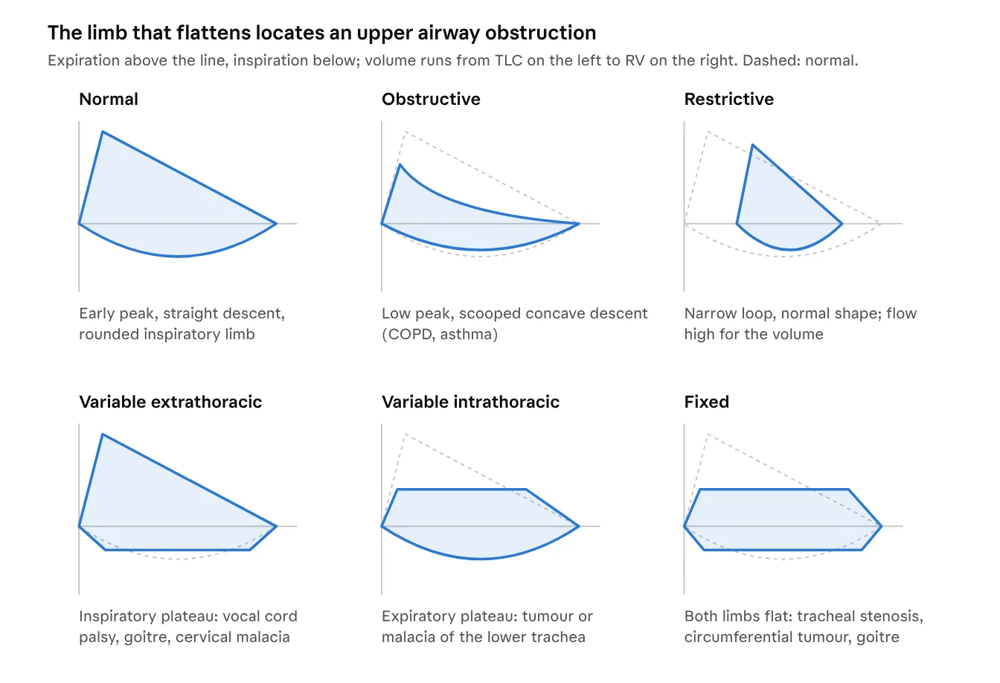
A flattened inspiratory limb puts the lesion outside the chest, a flattened expiratory limb puts it inside, and both flattened means it does not move with breathing.
Reading the loop
Expiration is drawn above the axis, starting at total lung capacity on the left and ending at residual volume on the right. Inspiration is the lower limb, running back.
The first quarter of expiration is effort-dependent and gives peak flow. The rest is effort-independent, limited by dynamic airway compression, so it reflects the small airways.
The whole inspiratory limb is effort-dependent.
Check quality before interpreting: a sharp early peak, no cough or hesitation, three reproducible loops. A rounded, low peak with a normal descending limb is poor effort.
Patterns
| Pattern | Shape | Ratio of mid-expiratory to mid-inspiratory flow | Causes |
|---|---|---|---|
| Normal | Early peak, near-linear descent, semicircular inspiration | About 1 or just under | |
| Obstructive | Reduced peak; concave, scooped descending limb | COPD, asthma. Emphysema: abrupt early fall then a long low tail from airway collapse | |
| Restrictive | Tall and narrow; volumes reduced, shape preserved, flows normal or high for the volume | Fibrosis, chest wall disease, pleural thickening, after resection. Neuromuscular weakness also lowers the peak and blunts both limbs | |
| Variable extrathoracic obstruction | Inspiratory plateau; expiration normal | Over 1, often over 2 | Vocal cord palsy or dysfunction, goitre, cervical tracheomalacia, laryngeal tumour |
| Variable intrathoracic obstruction | Expiratory plateau; inspiration normal | Well under 1 | Tumour or malacia of the lower trachea or carina |
| Fixed obstruction | Both limbs flattened into a box | About 1 | Post-intubation or post-tracheostomy stenosis, circumferential tumour, large goitre, bilateral cord fixation |
| One main bronchus obstructed | Biphasic expiratory limb: fast early emptying of the good lung, then a slow tail | Bronchial tumour, anastomotic stricture after sleeve resection or transplant | |
| Sawtooth | Regular oscillation on either limb | Upper airway instability: sleep apnoea, neuromuscular or extrapyramidal disease |
Why the limb differs
Outside the chest, the airway is surrounded by atmospheric pressure. On inspiration the pressure inside falls below atmospheric, so a floppy segment narrows; on forced expiration it is splinted open.
Inside the chest, the airway is surrounded by pleural pressure. On forced expiration pleural pressure exceeds the pressure inside the airway, so a floppy segment narrows; on inspiration negative pleural pressure pulls it open.
A rigid lesion does neither, and limits flow equally in both directions.
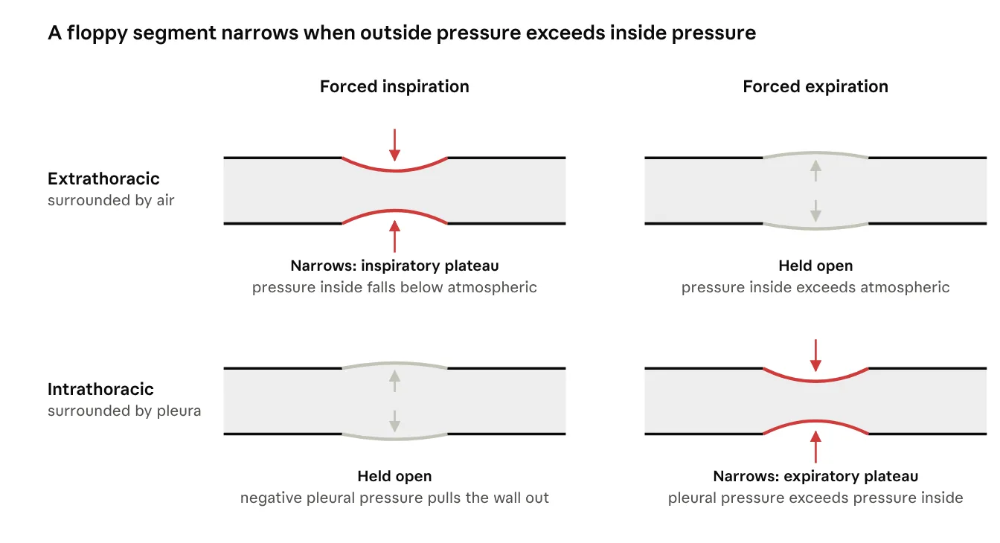
The same floppy segment gives opposite loops depending on which side of the thoracic inlet it lies.
Numbers that suggest central airway obstruction
FEV1 in mL divided by peak flow in L/min over 10 (Empey index).
Peak flow reduced out of proportion to FEV1.
Mid-expiratory to mid-inspiratory flow ratio as in the table.
The loop is insensitive: the trachea is usually narrowed to about 8 mm or less, around half its diameter or more, before a plateau appears. A normal loop does not exclude a stenosis; CT and bronchoscopy do.
Where it matters in thoracic surgery
Breathlessness or stridor after intubation or tracheostomy: a fixed pattern points to stenosis before CT or bronchoscopy, and the loop is a simple way to follow dilatation, stenting or resection.
Goitre and anterior mediastinal masses: an inspiratory or fixed plateau supports significant tracheal compression. Erect and supine loops were once used to predict airway collapse under anaesthesia; CT cross-sectional area and symptoms have largely replaced them.
Asthma or COPD that does not respond to treatment, with a preserved gas transfer: look at the loop for a tracheal tumour or stenosis.
After sleeve resection or lung transplant: a biphasic or newly flattened limb suggests an anastomotic stricture.
Before lung resection: the scooped loop of emphysema goes with the FEV1 and gas transfer findings covered under fitness; the loop adds the check that a low FEV1 is not partly central airway obstruction from the tumour itself.
This section is from memory and was not searched.
JCOG0802 and CALGB 140503 side by side
4 parts · 1 drawing
The two randomised trials that ended lobectomy as the only standard for peripheral tumours of 2 cm or less. They agree that sublobar resection is not worse for survival; they differ in operation, population and endpoint, and both show more local recurrence.
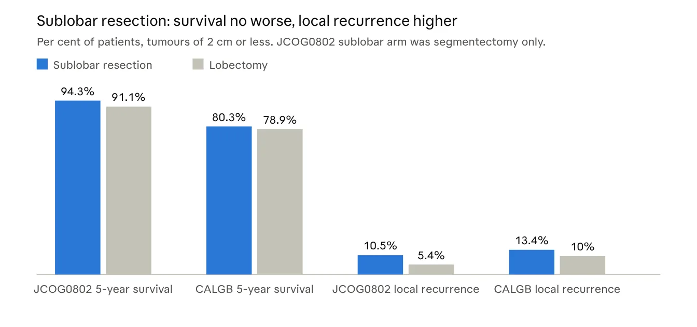
| JCOG0802 / WJOG4607L | CALGB 140503 (Alliance) | |
|---|---|---|
| Publication | Saji, Lancet 2022;399:1607 | Altorki, NEJM 2023;388:489 |
| Patients | 1,106 at 70 Japanese centres, 2009 to 2014 | 697 (340 sublobar, 357 lobar) in the US, Canada and Australia, 2007 to 2017 |
| Eligibility | Peripheral, 2 cm or less, consolidation-to-tumour ratio over 0.5, clinical stage IA | Peripheral, 2 cm or less, node negative confirmed at operation by frozen section of hilar and mediastinal nodes before randomisation |
| Operation | Anatomical segmentectomy against lobectomy; wedge not allowed | Sublobar (wedge in 59%, segmentectomy in 41%) against lobectomy |
| Primary endpoint | Overall survival, non-inferiority margin 1.54 | Disease-free survival, non-inferiority margin 1.306 |
| Primary result | Five-year survival 94.3% against 91.1%, HR 0.663 (0.474 to 0.927): non-inferior and superior | Five-year disease-free survival 63.6% against 64.1%, HR 1.01 (90% CI 0.83 to 1.24): non-inferior |
| Other survival | Five-year relapse-free survival 88.0% against 87.9% | Five-year overall survival 80.3% against 78.9%, HR 0.95 (0.72 to 1.26); lung cancer deaths 13.5% against about 15% |
| Local or locoregional recurrence | 10.5% against 5.4% | 13.4% against 10.0% |
| Lung function | FEV1 fall at one year 8.5% against 12.0%: a 3.5 point difference, short of the 10 points the trial set as meaningful | FEV1 difference about 2 percentage points at six months |
| Operative mortality | None at 30 or 90 days in either arm | 90-day mortality 1.2% against 1.1% |
| Histology | Over 90% adenocarcinoma; about 45% had a ground-glass component | More solid tumours, more smokers, median age 68 |
How to read them
JCOG0802's survival advantage is not a cancer advantage. Relapse-free survival was identical and local relapse doubled; the difference came from more deaths from other causes, including second cancers, after lobectomy. The usual explanation is that keeping more lung lets patients tolerate treatment for a second primary or for other disease. It is a hypothesis.
Segmentectomy patients who relapsed locally could be salvaged, often by completion lobectomy, which is part of why survival held.
CALGB's intraoperative nodal check matters. About 6% of registered patients were excluded for positive nodes or other findings before randomisation, so the result applies only to patients in whom hilar and mediastinal nodes have been sampled and are negative.
CALGB allowed wedge because that is what Western surgeons do; it was not powered to compare wedge with segmentectomy. Post-hoc analysis showed no clear difference. JCOG0802 says nothing about wedge.
Five-year survival was 91 to 94% in Japan and about 80% in North America for the same tumour size. The populations differ (ground-glass component, smoking, comorbidity), so do not pool the absolute figures.
Neither trial showed the lung function benefit that was the reason for doing less.
Margin is the technical point both depend on: at least 2 cm or at least the tumour diameter, with a margin-to-tumour ratio of 1 or more.
What changed in practice
For a peripheral, node-negative tumour of 2 cm or less, anatomical segmentectomy or an adequate wedge with nodal sampling is now a standard alternative to lobectomy; ESTS, NCCN and the 2023 EACTS/ESTS part-solid guidance reflect this.
Lobectomy remains the operation when the tumour is over 2 cm, central, pure solid with adverse features (spread through air spaces, high SUV, micropapillary or solid pattern on frozen section), when an adequate margin cannot be had, or when nodes are positive at operation.
For predominantly ground-glass tumours the relevant trials are JCOG0804 (wedge) and JCOG1211 (segmentectomy up to 3 cm), in the JCOG section above.
In the viva: state size, solid component, location, nodal status at operation and achievable margin, then name the operation.
The four sublobar trials in one table
Data from the summary table in the JCOG Lung Cancer Surgical Study Group review (Japanese Journal of Clinical Oncology 2024;54:1237; table). The table page could not be opened directly; the rows below are as returned by search, and the cells the search cut short (sex split, and numbers per operation for two trials) are filled from the trial reports or marked.
| JCOG0802 | CALGB 140503 | JCOG1211 | JCOG0804 | |
|---|---|---|---|---|
| Design | Randomised, segmentectomy against lobectomy | Randomised, sublobar against lobectomy | Single arm, segmentectomy | Single arm, sublobar (wedge first) |
| Patients | 1,106 | 697 | 357 | 333 |
| Eligibility | 2 cm or less, CTR over 0.5 | 2 cm or less | 3 cm or less, CTR 0.5 or less | 2 cm or less, CTR 0.25 or less |
| Median age | 67 | 67.9 | 67 | 62 |
| Median tumour size | 1.6 cm | Not reported | 1.9 cm | 1.2 cm |
| Operations | Lobectomy 554, segmentectomy 552 | Lobectomy 357, sublobar 340 | Segmentectomy | Wedge 264, segmentectomy 58, lobectomy 11 |
| 30-day mortality | 0 | 0.86% | 0 | 0 |
| 90-day mortality | 0 | 1.4% | 0 | Not reported |
| Median fall in FEV1 | Lobectomy 13.1% at 6 months, 12.0% at 12; segmentectomy 10.4% at 6 months, 8.5% at 12 | Lobectomy 6%, sublobar 4%, at 6 months | 7.9% at 6 months | 3.6% at 12 months |
| Follow-up | 7.3 years median | 7 years median | 47.2 months | 5.5 years |
| Local recurrence | Lobectomy 5.4%, segmentectomy 10.5% | Lobectomy 10.0%, sublobar 13.4% | 4% | 0 |
| Five-year overall survival | Lobectomy 91.1%, segmentectomy 94.3% | Lobectomy 78.9%, sublobar 80.3% | 98% | 99.4% |
CTR is the consolidation-to-tumour ratio on thin-section CT.
What the table shows at a glance:
Survival tracks the ground-glass component, not the operation: 99% and 98% in the two ground-glass-dominant single-arm trials, 91 to 94% in solid-dominant Japanese tumours, about 80% in the North American trial.
Local recurrence is the price of doing less in solid-dominant tumours (about double in JCOG0802, a third higher in CALGB) and is close to nil when the tumour is ground-glass dominant.
The lung function saved is small everywhere: 2 to 3.5 percentage points of FEV1 between arms in the randomised trials.
Operative mortality was zero in all three Japanese trials and about 1% in CALGB.
The selection rule that follows: CTR 0.25 or less and 2 cm or less, wedge; CTR 0.5 or less and up to 3 cm, segmentectomy; CTR over 0.5 and 2 cm or less, segmentectomy or lobectomy; anything larger or central, lobectomy.
Do they generalise? The JTCVS commentary
Tohmasi and Puri, Journal of Thoracic and Cardiovascular Surgery 2024;167:365, a commentary on a National Cancer Database analysis by Potter and colleagues.
Potter compared segmentectomy with lobectomy in clinical stage IA patients without comorbidity, 2004 to 2017, by propensity matching, and found no survival difference overall or by grade or histological subtype. The survival advantage of JCOG0802 was not reproduced in a US population.
The commentary's reasons: 47% of JCOG0802 tumours were well differentiated, US patients have more aggressive disease, and the database does not record recurrence, so the doubled local relapse cannot be tested.
Its position is that the two operations give similar survival in selected patients, that the small spirometry gain is unlikely to matter clinically, that adequate nodal assessment is required whatever the extent of resection, and that segmentectomy has a learning curve that training programmes should reflect.
For a viva this is the balanced line: equivalence, not superiority, outside Japan.
Status: JCOG0802 figures (1,106 patients, five-year survival, local relapse, FEV1) and the CALGB 140503 disease-free survival figures were confirmed on 17 November 2026 (Lancet abstract, trial comparison table, NEJM report). The CALGB patient numbers, margin and overall survival were then confirmed from the NEJM abstract and reports; the NEJM page itself would not open. Its locoregional recurrence, wedge proportion, 90-day mortality, FEV1 figure and the 6% intraoperative exclusion are from memory. I first wrote the CALGB margin as 1.24, which is the upper confidence limit; the margin was 1.306.
Surgery after chemo-immunotherapy: the real-world series
In routine English practice, more patients reached surgery than in CheckMate 816 and the response rate was at least as good, but operations were later, conversions commoner and 90-day mortality higher.
| England (Brunelli, Shackcloth and colleagues, Clinical Lung Cancer 2025) | Europe (EJCTS 2025) | CheckMate 816 | |
|---|---|---|---|
| Setting | 3 tertiary UK centres, March 2023 to May 2024, stage II–IIIB | 6 tertiary centres, March 2023 to December 2024, stage II–IIIB | Trial, stage IB–IIIA |
| Started neoadjuvant treatment | 130 | 340 | 179 |
| Reached surgery | 93.1% | 93.2% | 83% |
| Surgery more than 6 weeks after the last cycle | 62% | 47% | Protocol required within 6 weeks |
| Started minimally invasive | 75.2% | 66% | 30% |
| Conversion to open | 18.7% | 18% | 11% |
| Lobectomy | 85% | 86% | 77% |
| 30-day mortality | 3.3% | ||
| 90-day mortality | 5.8% | 2.5% | |
| Pathological complete response | 31.4%, no difference by stage | 30% (major response 52.7%) | 24% |
The CheckMate 816 column is from memory of the trial's surgical report; the two real-world columns were confirmed from the abstracts on 17 November 2026.
Surgical points to take from it
Timing slips in practice: most English patients were operated on beyond the 6-week window. Book the theatre date and restaging scan when neoadjuvant treatment starts.
Nearly one in five minimally invasive cases converted. Expect hilar and nodal fibrosis, have proximal arterial control planned, and count conversion as judgement, not failure.
A 90-day mortality of 5.8% is well above elective lobectomy benchmarks and above the European series. It belongs in the consent discussion and argues for careful selection in stage III and after immune toxicity.
A UK multicentre abstract reported more surgical complications than the trial (72% against 41% of any grade).
The higher surgery rate than in the trial reflects selection at the MDT: these were patients already judged resectable and fit.
Complete response in about three in ten, regardless of stage, supports offering the pathway to stage II as well as stage III.
These are retrospective series from specialist centres with short follow-up; they describe feasibility and early safety, not survival.
Carinal resection: cross-field ventilation and reconstruction
6 parts · 2 drawings
Once the airway is divided the surgeon ventilates the distal bronchus directly across the field, and the reconstruction is chosen by how much trachea has gone: the left main bronchus is tethered by the aortic arch, so it will not travel far.
Cross-field ventilation, step by step
Induction with a long single-lumen tube, which allows bronchoscopy and can be pushed into the left main bronchus. A double-lumen tube is too stiff and gets in the way at the carina.
Before dividing the airway, have a sterile armoured tube, connector and circuit on the table, passed off to the anaesthetist.
Place traction sutures in the distal bronchus, then divide it. The oral tube is pulled back into the proximal trachea; some tie a suture to its tip so it can be drawn back down later.
Intubate the left main bronchus across the field with the sterile tube and ventilate that lung. Clamp the right pulmonary artery if shunt through the unventilated right lung causes hypoxia.
Complete the resection and send margins for frozen section.
Place the anastomotic sutures around the cross-field tube, lifting it out for short periods of apnoea when it obstructs the far wall.
With the back wall tied, remove the cross-field tube, advance the oral tube across the anastomosis under vision, and tie the remaining sutures.
Test under saline, wrap, and aim to extubate in theatre.
Alternatives when the tube is in the way
| Method | Use | Drawback |
|---|---|---|
| High-frequency jet ventilation through a catheter | A thin catheter leaves the field clear and makes suture placement more accurate | Blood and debris are blown distally; carbon dioxide retention; barotrauma if outflow is obstructed |
| Intermittent apnoea | Short suture runs | Limited time |
| Veno-venous ECMO | Removes all tubes from the field; for complex reconstructions, a single lung, or poor reserve | Cannulation and flow management; anticoagulation, though it can be kept low |
| Cardiopulmonary bypass | Rare: tumour involving the heart or great vessels | Full heparinisation and lung injury |
Choosing the reconstruction
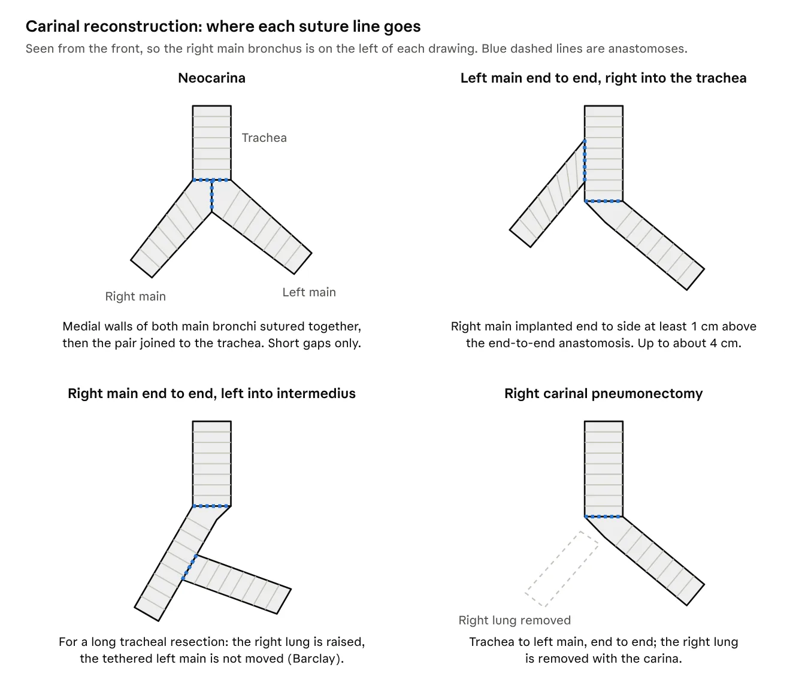
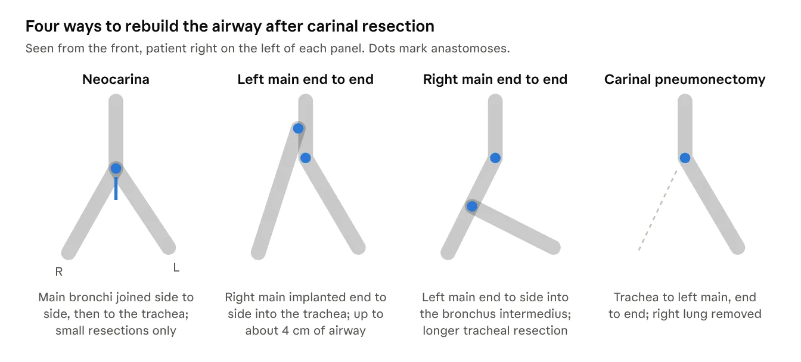
A neocarina suits only a short resection; beyond that one bronchus is joined end to end to the trachea and the other is implanted into the side of the airway.
Published figures of these reconstructions (open the link for the drawings and operative photographs):
Weder and Inci, Carinal resection and sleeve pneumonectomy, J Thorac Dis 2016: open access, with reconstruction diagrams.
Tapias and Lanuti, Carinal resections, Ann Cardiothorac Surg 2018: open access, with an operative video of a left carinal pneumonectomy.
CTSNet, Technical options in carinal resection and reconstruction: scheme of the three main reconstructions and photographs of cross-field and jet ventilation.
Mitchell and colleagues, Clinical experience with carinal resection, JTCVS 1999: the Massachusetts General series of 143 resections in 135 patients, with the original reconstruction drawings.
| Situation | Reconstruction | Why |
|---|---|---|
| Tumour confined to the carina, under about 1 cm of trachea | Neocarina: medial walls of the two main bronchi sutured together, then to the trachea | Simple, but the joined bronchi are held down by the arch and cannot rise, so it does not tolerate a longer gap |
| Up to about 4 cm between trachea and left main bronchus | Trachea to left main end to end; right main end to side into the lateral tracheal wall at least 1 cm above the first anastomosis | The right hilum mobilises more easily than the left |
| Longer tracheal resection | Trachea to right main end to end; left main end to side into the bronchus intermedius (Barclay) | The right lung is brought up after hilar release; the tethered left main stays where it is |
| Tumour extending into a main bronchus or the lung | Carinal (tracheal sleeve) pneumonectomy, usually right: trachea to left main end to end | Carinal lobectomy with reimplantation of the remaining lobe is the lung-sparing alternative |
Approach and release
Right posterolateral thoracotomy through the fourth or fifth space for most resections, including right carinal pneumonectomy.
Median sternotomy, opening the posterior pericardium between the superior vena cava and the aorta, for a resection confined to the carina or when both hila need release.
Left carinal pneumonectomy is the hardest because the arch covers the carina: sternotomy or clamshell, or a staged operation.
Release, in order: pretracheal plane dissected bluntly, preserving the lateral blood supply; neck flexion; division of the inferior pulmonary ligament; hilar release by a U-shaped pericardial incision below the inferior vein, completed around the hilum on the right. Laryngeal release adds little at the carina.
Do not dissect circumferentially more than 1–2 cm beyond the cut ends: the blood supply is segmental and enters laterally.
Anastomosis
Interrupted 4-0 absorbable sutures, knots outside, placed from the far side forward and tied at the end with the neck flexed.
No tension, and no size mismatch left uncorrected: telescope or plicate the membranous wall.
Cover with pedicled pericardial fat, pleura or an intercostal muscle flap, and keep the suture line away from the pulmonary artery. Omentum after radiotherapy.
Chin-to-chest guardian stitch for about a week; bronchoscopy before discharge.
Selection and results
N2 or N3 disease is generally a contraindication to carinal resection for lung cancer. Mediastinoscopy is done at the same sitting as the resection, so scarring does not fix the trachea beforehand.
High-dose radiotherapy and steroids both threaten healing.
Operative mortality for carinal pneumonectomy in experienced centres is about 7–15%, with post-pneumonectomy pulmonary oedema and anastomotic failure the main causes. Restrict fluid and avoid high airway pressures.
A single-centre series of 36 isolated carinal resections without lung resection (Shanghai, 2006–2020) used a right thoracotomy in 92% and cross-field intubation in 86%; complications occurred in 39%, mostly anastomotic stenosis (22%) and fistula (8%).
Status: the Shanghai figures, and the use of jet ventilation and veno-venous ECMO as alternatives, were confirmed on 17 November 2026 (series, CTSNet technique article, ECMO review). The steps, length thresholds, release manoeuvres and mortality range are from memory.
Pulmonary vein variants before lung resection
3 parts · 1 drawing
Variant pulmonary venous anatomy is the rule, not the exception, and the variant that matters most in VATS lobectomy, a common left trunk, is present in about a third of patients. Read the veins on the staging CT before every anatomical resection.

How common
Altinkaynak and Koktener, Wiener klinische Wochenschrift 2019: retrospective review of 550 contrast-enhanced chest CT scans on a 128-row scanner with three-dimensional reconstruction.
| Pattern | Patients |
|---|---|
| Typical: two veins each side | 239 (43.5%) |
| Any variant, on either or both sides | 311 (56.5%) |
| Left common vein | 177 (32.2%) |
| Accessory right middle lobe vein or veins | 112 (20.4%) |
| Variant on the right; on the left | 34%; 33.3% |
The pictorial review in the Congenital 2 tab gives different proportions (four veins in 60 to 70%, an accessory right middle lobe vein in up to 26%); the difference is definition and method, and the surgical message is the same.
What each variant does to the operation
| Variant | Risk | What to do |
|---|---|---|
| Left common trunk | Stapling the trunk during an upper or lower lobectomy takes the whole venous drainage of the left lung; the remaining lobe infarcts | Dissect to the bifurcation and see the vein of the lobe that stays before firing; divide the lobar branch, not the trunk |
| Right middle lobe vein draining to the inferior vein, or separately to the atrium | Divided unknowingly in a lower lobectomy, or left behind in a middle lobectomy | Trace the middle lobe vein on CT; it joins the superior vein in most, but not all |
| Right top or posterior segment vein running behind the bronchus intermedius to the inferior vein or atrium | Bleeding during subcarinal dissection or when opening the posterior fissure | Look for a vessel behind the bronchus intermedius on the axial CT |
| Lingular vein draining to the inferior vein | Divided in a lower lobectomy, with lingular congestion | Identify before dividing the inferior vein |
| Partial anomalous drainage of a lobe that will remain | After resection of the normally draining lung, all remaining venous return goes to the right heart: right heart failure | Count four veins entering the left atrium; if one is anomalous, resect that lobe, reimplant the vein, or reconsider |
| Early branching or a short intrapericardial trunk | Stapler does not fit; atrial tear | Open the pericardium and control inside it |
Checklist on the staging CT
Count the veins entering the left atrium on each side.
On the left, is there a common trunk, and how long is it before it divides?
Where does the middle lobe vein go?
Is there a vessel behind the bronchus intermedius?
Does any vein drain to the SVC, brachiocephalic vein, azygos or IVC?
Status: the frequencies are from the paper's abstract, read on 17 November 2026; the full text, its classification and its 13 figures were not available to me. The operative consequences and the checklist are from memory and general thoracic practice, not from the paper, which only states that preoperative CT may make VATS safer.
NICE NG122 checked against the PDF
1 drawing
Source, read from your PDF: NICE guideline NG122, Lung cancer: diagnosis and management. How I read it: the numbered recommendations on staging, fitness, surgery and multimodality treatment, pulled out by search; systemic therapy pathways and small-cell sections were not re-read. Numbers in brackets are NICE recommendation numbers.

| Topic | Recommendation |
|---|---|
| Nodes 10 mm or more on CT | PET-CT, then EBUS-TBNA or EUS-FNA or both, if curative treatment is possible (1.2.20) |
| Negative endosonography | Consider surgical mediastinal staging if suspicion is high and it would change treatment (1.2.22) |
| Chest wall or mediastinal invasion | CT alone may be unreliable; consider ultrasound; surgical assessment may be needed (1.2.3) |
| Smoking | Tell patients it raises pulmonary complications, but do not postpone surgery to allow stopping (1.3.1, 1.3.3) |
| Risk of death | Consider a global score such as Thoracoscore (1.4.1) |
| Heart | No surgery within 30 days of infarction. Two or fewer risk factors with good capacity: no further tests. Consider revascularisation first for stable angina with conventional indications (1.4.3, 1.4.4, 1.4.8) |
| Lung | Spirometry and transfer factor for all. Normal FEV1 and good exercise tolerance: offer surgery. Otherwise segment counting for predicted postoperative values (1.4.9 to 1.4.11) |
| Below 30% predicted postoperative | Still offer curative treatment if the patient accepts the risk (1.4.12) |
| Exercise testing | Shuttle walk over 400 m, or VO2 max over 15 mL/kg/min, marks good function (1.4.13, 1.4.14) |
| Operation | Lobectomy, open or thoracoscopic. More extensive resection only for clear margins. Hilar and mediastinal node sampling or en bloc resection in all. Chest wall T3: complete resection, extrapleural or en bloc (1.5.1 to 1.5.4) |
| If not lobectomy | Stage 1 to 2a who decline or cannot have lobectomy: SABR or sublobar resection; if no surgery at all, SABR (1.5.5, 1.5.8) |
| Stage 3a N2, operable | Consider chemoradiotherapy with surgery; operate 3 to 5 weeks after it finishes; assessed by both a thoracic oncologist and a thoracic surgeon (1.6.1, 1.6.3, 1.6.5) |
NICE NG122 predates CALGB 140503 on sublobar resection and the neoadjuvant immunotherapy trials; see tab 6.
From the slide deck: fitness, operation and after
8 parts
The deck's principle (ERS/ESTS 2025): the question is no longer fit or unfit, but what the risk profile is and whether the patient accepts it.
Investigations and their shelf life
| Investigation | Timing before surgery |
|---|---|
| Contrast CT chest | Within 4 weeks for central or endobronchial tumours, rapid growth, nodes, effusion or post-obstructive change; within 6 weeks for a stable peripheral lesion |
| PET-CT | Within 8 weeks |
| MRI brain | Within 4 weeks, stage II–III |
| Spirometry and transfer factor (both mandatory) | Within 3 months |
| ECG | Within 3 months |
| Bloods | Within 4 weeks |
| Bronchoscopy for central lesions | Within 2 weeks |
| Echo, coronary CT or stress test, right heart catheter | When cardiac disease or pulmonary hypertension is suspected |
Predicted postoperative function (ERS/ESTS 2025 tiers, per the slides)
| Predicted postoperative transfer factor | Risk | Action |
|---|---|---|
| Over 60% | Normal | Surgery, no further testing |
| 40–59% | Moderate | Stair climb or shuttle walk; MDT review |
| Under 40% | High | Cardiopulmonary exercise test and V/Q SPECT; explicit consent; consider sublobar resection or SABR |
| Under 30% | Very high | Not an absolute contraindication; exercise test, MDT, explicit consent, consider SABR or ablation |
Calculate both predicted FEV1 and transfer factor and stratify on the lower. Transfer factor discriminates better in COPD.
Segment method: preoperative value × (1 − functional segments resected ÷ unobstructed segments). Right pneumonectomy removes 10, left 9.
In heterogeneous emphysema, segment counting overestimates the loss; V/Q SPECT correction can move a patient from unfit to fit.
Exercise testing
| Test | Increased risk below |
|---|---|
| Stair climb | 12 m vertical (3–4 storeys) |
| Incremental shuttle walk | 400 m |
| Six-minute walk | 400 m |
| VO₂ max (mL/kg/min) | Risk | Implication | VE/VCO₂ slope |
|---|---|---|---|
| Over 20 | Low | Any resection including pneumonectomy | Not needed |
| 15–20 | Low to intermediate | Lobectomy generally appropriate | Over 35: caution |
| 10–15 | Intermediate | Sublobar preferred; lobectomy with caution | Over 35: intermediate-high |
| Under 10 | High | SABR or ablation; surgery only with MDT consensus and consent | Over 41–42: high (three-tier model, 2024) |
A satisfactory low-tech test allows surgery without a formal exercise test; an inadequate one requires it.
The high-risk patient
| Scenario | Strategy |
|---|---|
| VO₂ max under 10 | SABR for peripheral stage I |
| Predicted FEV1 and transfer factor both under 30% | SABR or thermal ablation |
| Severe COPD with the cancer in a destroyed lobe | Resection combined with lung volume reduction |
| Pulmonary fibrosis | Sublobar resection with the ILD team; acute exacerbation risk 10–30% after resection |
| Cardiac comorbidity | Optimise, then re-stratify |
| Frailty | Prehabilitation for 2–6 weeks, then reassess |
Operations
| Procedure | Indication | Note |
|---|---|---|
| VATS or robotic lobectomy | Stage I–II | Standard |
| Anatomical segmentectomy | 2 cm or less, peripheral, solid component over half | JCOG0802; wedge is not equivalent |
| Wedge | High-risk patient, diagnostic resection, ground-glass-dominant lesion | Higher local recurrence for solid tumours |
| Sleeve lobectomy | Central tumour at a lobar orifice | Preferred to pneumonectomy |
| Pneumonectomy | Central tumour not suitable for a sleeve | Mortality 5–8%; last resort |
| Open thoracotomy | Complex or chest wall resection, conversion |
| JCOG0802 | CALGB 140503 | |
|---|---|---|
| Patients | 1,106, Japan | 697, North America and Australia |
| Comparison | Segmentectomy against lobectomy | Sublobar (wedge or segment) against lobectomy |
| Primary endpoint | Overall survival | Disease-free survival, non-inferiority |
| Survival | Five-year 94.3% against 91.1%; ten-year 83.6% against 79.8% | Non-inferior |
| Local recurrence | 11.2% against 5.8% | Similar |
Lobectomy remains standard above 2 cm. The ten-year JCOG0802 survival difference (83.6% against 79.8%) was no longer statistically significant, and NICE still recommends lobectomy, so segmentectomy is an option to discuss, not a settled new standard.
Adjuvant therapy by stage
| Stage | Molecular status | Adjuvant treatment |
|---|---|---|
| IA | Any | None |
| IB | EGFR exon 19 deletion or L858R | Osimertinib for 3 years |
| IB | ALK rearranged | Alectinib for 2 years |
| IB | Neither | Consider chemotherapy only for high-risk features (over 4 cm, pleural or vascular invasion, poor differentiation) |
| II–IIIA | EGFR mutant | Cisplatin doublet × 4, then osimertinib for 3 years |
| II–IIIA | ALK rearranged | Cisplatin doublet × 4, then alectinib for 2 years (the slides; ALINA itself gave alectinib in place of chemotherapy) |
| II–IIIA | Neither, PD-L1 1% or more | Cisplatin doublet × 4, then atezolizumab or pembrolizumab |
| II–IIIA | Neither, PD-L1 under 1% | Cisplatin doublet × 4 |
No neoadjuvant treatment for stage I under 4 cm and node-negative, for EGFR or ALK tumours, or when the patient cannot have chemotherapy.
Surveillance after resection
| Time | Investigation |
|---|---|
| 6 weeks | Clinic and chest radiograph |
| 3 months | Baseline non-contrast CT |
| 6 and 12 months | CT; PET if suspicious |
| Years 2 to 5 | Annual CT |
| After 5 years | Annual CT or clinic, for second primaries |
Circulating tumour DNA detected recurrence a median of 4.7 months before imaging in ADAURA, but needs a tumour-informed assay, has low sensitivity in early disease, and is not yet standard.
Emerging tools on the slides
Robotic bronchoscopy for peripheral biopsy and fiducials.
AI nodule detection and volumetry; quantitative and dual-energy CT for perfusion and predicted postoperative function.
Non-contrast perfusion MRI as an alternative to V/Q.
EBUS elastography; blood methylation tests and breath analysis for early detection (not yet standard).
Interactive course pack, 18 November 2026: exercise testing bands from the archive slide
From the archive of the original slides in the "ST4 Interactive Course Pack" PDF, which the pack labels as archival; recorded as taught and not checked by me today. These bands differ from the ERS/ESTS figures noted earlier in this tab, and that difference is still unresolved.
| Test | Threshold for increased risk | Note |
|---|---|---|
| Stair climb | Under 12 m vertical (3 to 4 storeys) | Correlates with peak oxygen consumption; no equipment |
| Incremental shuttle walk | Under 400 m | Standardised |
| 6-minute walk | Under 400 m | Distance-desaturation product adds discrimination |
| Peak oxygen consumption (mL/kg/min) | Risk | Implication | VE/VCO2 slope |
|---|---|---|---|
| Over 20 | Low | Major resection including pneumonectomy | Not needed |
| 15 to 20 | Low to intermediate | Lobectomy generally appropriate | Under 35 proceed; over 35 caution |
| 10 to 15 | Intermediate | Sublobar preferred; lobectomy with caution | Under 35 intermediate-low; over 35 intermediate-high |
| Under 10 | High | SABR or ablation; surgery only with explicit MDT agreement and consent | Over 41 or 42 high (three-tier model, cited as Kristenson 2024; the slide gives both numbers) |
A satisfactory low-technology test (over 12 m of stairs or over 400 m shuttle) allows surgery without formal exercise testing (as taught).
JCOG trials
5 parts
The Japan Clinical Oncology Group trials define how much lung to remove for a small peripheral tumour according to its size and how solid it is on thin-section CT; they are the evidence behind matching wedge, segmentectomy or lobectomy to the consolidation-to-tumour ratio.
The measure they all use
Consolidation-to-tumour ratio (CTR): the maximum diameter of the solid part divided by the maximum diameter of the whole tumour, on thin-section CT in lung windows.
CTR 0 is pure ground glass; 1.0 is pure solid; 0.5 separates ground-glass-dominant from solid-dominant.
The lung resection series
| Trial | Tumour | Design | Result | Checked |
|---|---|---|---|---|
| JCOG0201 | Clinical stage IA adenocarcinoma | Prospective radiology and pathology correlation | Defined radiologically non-invasive cancer: 2 cm or less with CTR 0.25 or less. This definition seeded the later trials | From memory |
| JCOG0804 / WJOG4507L, JTCVS 2022 | 2 cm or less, CTR 0.25 or less | Single arm, 333 enrolled at 51 institutions; sublobar resection, wedge preferred. 314 analysed: 258 wide wedge, 56 segmentectomy; median margin 15 mm | Five-year relapse-free survival 99.7%, with no local relapse (the last point from memory) | Confirmed |
| JCOG0802 / WJOG4607L, Lancet 2022 | 2 cm or less, CTR over 0.5, peripheral | Randomised, 1,106 patients; segmentectomy against lobectomy | Five-year survival 94.3% against 91.1% (HR 0.663); local relapse about 10.5% against 5.4%; no clinically important difference in lung function. At ten years the survival difference was 3.8% and no longer significant (p=0.268) | Confirmed |
| JCOG1211, Lancet Respiratory Medicine 2023 | 3 cm or less, ground-glass-dominant (CTR 0.5 or less) | Single arm, 42 institutions; 396 registered, 357 had segmentectomy with hilar and interlobar node dissection | Five-year relapse-free survival 98.0% | Confirmed |
| JCOG1413 | Clinical stage I–II | Randomised; lobe-specific against systematic mediastinal node dissection; primary endpoint overall survival | Recruiting or in follow-up; no result found | Status confirmed |
| JCOG1909 (ANSWER) | High-risk patients with small tumours | Randomised; anatomical segmentectomy against wedge | Ongoing | From memory |
| JCOG1708 (SURPRISE) | Idiopathic pulmonary fibrosis with stage I cancer | Randomised; sublobar resection against lobectomy | Ongoing | From memory |
How they fit together
| Tumour on CT | Operation supported |
|---|---|
| 2 cm or less, CTR 0.25 or less | Wide wedge with a margin of at least the tumour diameter, or surveillance (JCOG0804) |
| 3 cm or less, CTR 0.5 or less | Segmentectomy (JCOG1211) |
| 2 cm or less, CTR over 0.5 | Segmentectomy or lobectomy (JCOG0802) |
| Over 2 cm and solid-dominant | Lobectomy |
Reading them critically
Two of the three practice-changing results are single-arm trials measured against a preset threshold; only JCOG0802 is randomised.
JCOG0802 was designed for non-inferiority. The survival advantage at five years came from fewer deaths from other causes and second cancers after segmentectomy, not from better cancer control, and it faded by ten years.
Local relapse was about twice as common after segmentectomy. A Lancet Respiratory Medicine commentary in 2026 concludes that JCOG0802 and CALGB 140503 now agree: no difference in survival or lung function loss, and an absolute 5% more local recurrence with sublobar resection.
Margin and nodes carry the result: JCOG0802 required intraoperative confirmation of node-negative disease and an adequate margin, with conversion to lobectomy otherwise.
Populations were Japanese, mostly adenocarcinoma, with many never-smokers and thin-section CT selection; pure-solid tumours in smokers behave worse.
JCOG0802 used segmentectomy only; CALGB 140503 allowed wedge resection in over half of its sublobar arm.
Other JCOG trials a thoracic surgeon is asked about
| Trial | Question | Result |
|---|---|---|
| JCOG0403 | SABR for T1 N0 disease, operable and inoperable cohorts | Three-year survival about 77% in operable and 60% in inoperable patients (from memory) |
| JCOG9502 | Left thoracoabdominal against transhiatal approach for junctional cancer | No benefit from the thoracic approach, more morbidity (from memory) |
| JCOG1205/1206 | Adjuvant irinotecan and cisplatin against etoposide and cisplatin for resected high-grade neuroendocrine carcinoma | No difference (from memory) |
Status: JCOG0804, JCOG1211, JCOG0802 and the JCOG1413 design were confirmed on 17 November 2026 (JCOG0804, JCOG1211, ten-year commentary, JCOG1413).
Lung function testing before resection (BJA Education 2019)
Source, read from your PDF: the BJA Education review of pulmonary function testing for thoracic surgery (BJA Educ 2019;19:206 onwards). Read by pulling out the sentences with thresholds only.
| Point | Detail |
|---|---|
| Segment method | Predicted postoperative FEV1 = preoperative FEV1 x (1 minus unobstructed segments to be removed over total unobstructed segments). Transfer factor or VO2 max can be put through the same equation |
| Perfusion method | Predicted postoperative FEV1 = preoperative FEV1 x (1 minus the fraction of perfusion going to the lung to be removed) |
| When to calculate | The American guideline calculates predicted values for everyone; the BTS/SCTS and ERS/ESTS only when preoperative FEV1 or transfer factor is abnormal |
| Risk | Perioperative risk rises to as much as 60% when predicted postoperative FEV1 is under 30% |
| Stairs | If stair climbing reaches less than 22 m, formal exercise testing is strongly advised |
| Volume reduction | NETT: FEV1 or transfer factor under 20% predicted carried unacceptable mortality |
Points for the MDT and viva
3 parts
Resectable or not in N2 disease
Likely resectable: single-station, discrete, non-bulky N2 (nodes under about 3 cm) with a tumour removable by lobectomy.
Usually not: multi-station bulky or infiltrative N2, N3, or disease needing pneumonectomy after induction. These go to chemoradiotherapy with durvalumab.
Intergroup 0139: adding surgery to chemoradiotherapy improved progression-free but not overall survival; pneumonectomy after chemoradiotherapy carried 26% mortality, and the lobectomy subset did better in an unplanned analysis.
EORTC 08941 and ESPATUE: surgery and definitive radiotherapy gave similar survival after induction in stage III.
TNM 9 separates N2a from N2b for this reason; record which at the MDT.
After chemo-immunotherapy, operate on the original plan. Nodal clearance on imaging does not make a pneumonectomy safer.
Sublobar resection
JCOG0802: segmentectomy for tumours 2 cm or less with a solid component over half. Better overall survival (94.3% against 91.1%) but twice the local recurrence (10.5% against 5.4%) and more air leak.
CALGB 140503: wedge or segment for tumours 2 cm or less after frozen-section confirmation of negative hilar and mediastinal nodes. Non-inferior disease-free survival.
Both required peripheral tumours and confirmed node-negative disease, so intraoperative nodal assessment is part of the operation.
Convert to lobectomy for positive nodes, an inadequate margin, or high-risk histology (spread through air spaces, micropapillary or solid pattern).
Unresolved questions
Does adjuvant immunotherapy help a patient who has had a complete response?
Neoadjuvant-only against perioperative treatment.
The size of benefit when PD-L1 is under 1%.
Whether circulating tumour DNA can direct escalation and de-escalation.
SABR against surgery in the operable patient.
Surgery after chemo-immunotherapy for disease first judged unresectable.
FRCS Atlas teaching notes: fitness, access and enhanced recovery
Added 20 November 2026 from "FRCS Atlas: single-PDF study compilation" (19 November 2026), thoracic teaching notes, page 6. Read in full (all 16 note pages). Short teaching notes reconstructed for private study, not a guideline; the compilation states they are not verbatim exports and not approved clinical protocols.
- FEV1 and DLCO answer different questions.
- Worked example: baseline DLCO 70% with 5 of 19 equally functioning segments removed predicts 51.6% (70 × 14/19). Non-uniform function changes the calculation.
- Combine exercise capacity, cardiac risk and frailty.
- Agree lung isolation, analgesia, conversion and mobilisation plans in advance.
Fitness for lung resection: additions from the FRCS Atlas HTML builds
Added 20 November 2026 after comparing the FRCS Atlas HTML builds (53-chapter merger ch. 32, section 3 and worked case; 42-chapter merger ch. 25, section 4; Thoracic-and-Congenital "Lung cancer fitness and parenchymal preservation"; index_5 "Lung resection fitness and prehabilitation"; Coverage-and-Study "Lung cancer staging and resection"; Consolidated ch. 28) with this tab. Only points not already in the ST4 course are listed; each says whether it was checked against a primary source.
Stair climb: 22 m or 12 m?
This tab notes that the slide archive's 12 m stair-climb band differs from the ERS/ESTS figures and calls the difference unresolved. - Both Atlas chapters give 22 m: a climb of 22 m or more (or a shuttle walk over 400 m) is low risk; below that, formal CPET. - TSRA Review 3rd ed., ch. 4 (PDF p. 64) agrees: - A patient who climbs 22 m of stairs (about 6 to 7 flights) has a VO2max over 15 mL/kg/min. - Over 15 mL/kg/min carries no increased risk of pulmonary complications or death; under 10 carries very high risk. - The ERS/ESTS algorithm reproduced in BJA Education 2019 (Thoracic 17) also uses 22 m: under 22 m, CPET is highly recommended. - So three sources use 22 m and only the slide archive uses 12 m. Checked: TSRA ch. 4, p. 64; BJA Education 2019;19:206-211, Fig. 1.
Further points from TSRA ch. 4 (PDF p. 64), not yet in this tab: - DLCO correlates better with postoperative death than FEV1. - Predicted postoperative FEV1 or DLCO under 40% is very high risk, and non-operative treatment should be considered. This matches the under-40% tier quoted from the ERS/ESTS 2025 slides.
Thoracic Revised Cardiac Risk Index (ThRCRI)
The 42-chapter build gives the weights (FRCS Atlas draft; not checked against a primary source: none of the available guidelines contains the index): | Factor | Points | |---|---| | Ischaemic heart disease | 1.5 | | Cerebrovascular disease | 1.5 | | Creatinine over 2 mg/dL | 1.0 | | Planned pneumonectomy | 1.5 | - A score of 2 or more warrants cardiology work-up, by the Atlas's statement. NICE NG122 instead uses "two or fewer risk factors with good functional capacity: no further tests", already in this tab.
How firm are the ERS/ESTS 2025 tiers?
- The Atlas (Thoracic-and-Congenital build) states that the recommendations to calculate predicted postoperative values are conditional. It also states that the 60%, 40-59% and under-40% bands are risk strata, not eligibility cut-offs, to be combined with exercise testing, frailty, cardiac risk and the change after induction treatment. (FRCS Atlas draft; not checked: the 2025 guideline is not among the available sources)
Worked case (Atlas 53-chapter build; arithmetic rechecked)
68-year-old smoker; 2.8 cm right upper lobe adenocarcinoma, cT1cN0M0; FEV1 65%, DLCO 52%. 1. Right upper lobectomy removes 3 of 19 segments, so multiply by 16/19 (0.842): ppoFEV1 54.7%, ppoDLCO 43.8%. 2. Under the ERS/ESTS 2025 tiers in this tab, ppoDLCO 43.8% is moderate risk (40-59%), so do a stair climb or shuttle walk. In the older 30-60% band (Thoracic 17) the step is the same. 3. CPET shows peak VO2 15.5 mL/kg/min. This tab's table places 15 to 20 mL/kg/min at low to intermediate risk, where lobectomy is generally appropriate. The Atlas's model answer is VATS or robotic right upper lobectomy with prehabilitation, smoking cessation and enhanced recovery.
Thoracic 3: SABR and chemoradiotherapy
Stereotactic radiotherapy, its dosing and its trials against surgery, and definitive chemoradiotherapy for unresectable stage III disease.
SABR
4 parts
SABR treats node-negative tumours up to 5 cm; the tumour's distance from the central airways and chest wall sets the fractionation, and no trial has settled SABR against surgery in operable patients.
Eligibility
Stage I to IIA (T1a to T2b, N0, M0), tumour 5 cm or less, in patients who are medically inoperable or decline surgery.
No lower limit of lung function. The patient must lie flat and still, and tumour motion should be manageable on 4D-CT.
Tissue diagnosis preferred. Without it, most MDTs want a growing, PET-avid lesion with a high Herder probability.
Interstitial lung disease is the main relative contraindication: severe or fatal pneumonitis is far commoner.
Dose by location (UK SABR Consortium schedules)
| Position | Schedule | Biologically effective dose (α/β 10) |
|---|---|---|
| Peripheral, standard | 54 Gy in 3 fractions | 151 Gy |
| Close to the chest wall, conservative | 55 Gy in 5 fractions | 116 Gy |
| Central, within 2 cm of the proximal bronchial tree | 60 Gy in 8 fractions | 105 Gy |
| Small peripheral tumour (≤2 cm, over 1 cm from chest wall, outside the no-fly zone) | 30–34 Gy in a single fraction, in experienced centres | |
| Ultracentral, abutting trachea, main bronchus or oesophagus | Usually not SABR; hypofractionated or conventional radiotherapy |
The dose target is a biologically effective dose of 100 Gy or more, the level associated with local control around 90%.
The no-fly zone comes from the Indiana phase II trial: severe toxicity at 2 years was 46% for central and 17% for peripheral tumours with three-fraction treatment.
Ultracentral treatment has caused fatal haemorrhage (HILUS trial), which is why it is avoided.
Outcomes and toxicity
Local control about 90% at 3 years (RTOG 0236: primary tumour control 98%, overall survival 56% in medically inoperable patients).
Failures are regional and distant: there is no pathological nodal staging, and occult N1 or N2 disease is present in roughly 10–15% of clinical stage I.
Toxicity: fatigue, pneumonitis (grade 2 or more about 10%), rib fracture and chest wall pain for peripheral tumours, airway stenosis and haemorrhage for central ones, brachial plexopathy at the apex.
Follow-up is hard to read: fibrosis evolves for 1–2 years. Enlargement after 12 months, a bulging margin or loss of air bronchograms suggests recurrence; PET helps after 6 months. Salvage surgery is feasible.
SABR against surgery
| Study | Finding | Limitation |
|---|---|---|
| STARS and ROSEL, pooled (2015) | Three-year survival 95% with SABR and 79% with surgery | 58 patients; both trials closed for poor accrual |
| Revised STARS (2021) | SABR arm matched against VATS lobectomy with nodal dissection: three-year survival 91% in both | Single-arm with a matched comparator |
| SABRTooth (UK) | Randomisation between surgery and SABR was not feasible | Feasibility study |
| Registry comparisons | Favour surgery | Confounded by fitness |
| VALOR, STABLE-MATES | Ongoing |
For oligometastases, SABR-COMET (phase II) reported five-year survival of 42% with SABR and 18% with standard care.
Position for the MDT: surgery remains the standard for fit patients because it stages the nodes and has mature long-term data; SABR is the standard for the unfit and a choice for the borderline patient.
Gray and fractions
Gray is absorbed dose: one joule per kilogram. A fraction is one treatment session.
Biologically effective dose for tumour = total dose × (1 + dose per fraction ÷ 10).
| Schedule | Dose per fraction | Biologically effective dose |
|---|---|---|
| 60 Gy in 30 (conventional) | 2 Gy | 72 Gy |
| 55 Gy in 20 | 2.75 Gy | 70 Gy |
| 60 Gy in 8 (central SABR) | 7.5 Gy | 105 Gy |
| 55 Gy in 5 | 11 Gy | 116 Gy |
| 54 Gy in 3 (peripheral SABR) | 18 Gy | 151 Gy |
SABR gives a lower total dose than conventional radiotherapy but about twice the biological effect; it is safe only because dose falls off steeply outside the target.
Planning uses 4D-CT, a margin of about 5 mm on the motion envelope, and alternate-day fractions with image guidance.
Dose-limiting structures: chest wall and ribs, proximal airways, oesophagus, heart and great vessels, brachial plexus, spinal cord, and lung volume receiving 20 Gy.
Single fraction or several
| Trial | Arms | Result |
|---|---|---|
| RTOG 0915 | 34 Gy in 1 against 48 Gy in 4; 94 patients, peripheral T1–T2 N0 | One-year tumour control 97.0% against 92.7%; five-year primary failure 10.6% against 6.8%; grade 3 or worse toxicity 2.6% against 11.1%; five-year survival 29.6% against 41.1% |
| Roswell Park and Cleveland Clinic | 30 Gy in 1 against 60 Gy in 3; 98 patients | Equivalent survival and toxicity |
| SAFRON II | 28 Gy in 1 against 48 Gy in 4; lung oligometastases | Similar toxicity and control (from memory) |
All were phase II with toxicity endpoints; none proves equivalent tumour control or survival.
No trial compares 3, 5 and 8 fractions. Each comes from single-arm studies for its tumour position: RTOG 0236 and 0618 (54 Gy in 3, peripheral), RTOG 0813 (5 fractions, central), LungTech (60 Gy in 8, central), HILUS (ultracentral; fatal bleeding about 15%).
Fraction number is a safety choice by location, not an efficacy choice.
MISSILE-NSCLC: SABR then surgery
Palma, Louie and colleagues, JAMA Oncology 2019: single-arm phase II, one centre, operable stage I disease, neoadjuvant SABR then resection at 10 weeks.
Forty enrolled, 35 evaluable: pathological complete response 60% (95% CI 44–76%), lower than hypothesised. No perioperative deaths.
Long-term report: complete and major response 60% and 63%; related grade 3 or worse events 16.7%.
Reading: imaging overstates sterilisation after SABR, so follow SABR patients closely; surgery after SABR is safe, which supports salvage resection.
Limits: small, single centre, one time point, standard staining may misjudge viability.
SABR or surgery: the summary
| Surgery | SABR | |
|---|---|---|
| Local control | Highest | About 90% on imaging; 40% residual tumour at 10 weeks in MISSILE |
| Nodes | Pathological staging; upstages 10–15% of clinical stage I | Not staged |
| Burden | Admission, 1–2% mortality for lobectomy | Outpatient, minimal early mortality |
| Late effects | Loss of lung function | Pneumonitis, rib fracture, airway toxicity if central |
| Adjuvant therapy | Guided by pathology and molecular testing | Limited by tissue |
Fit patient: surgery. Unfit or declines: SABR. Borderline: sublobar resection or SABR by tumour position, lung function, need for tissue and preference.
STARS and ROSEL pooled analysis
Chang and colleagues, Lancet Oncology 2015;16:630–7. Confirmed on 17 November 2026.
Two open-label phase III trials of SABR against lobectomy with nodal dissection or sampling in operable clinical T1–2a (under 4 cm) N0 M0 disease. Both closed early for slow accrual and were pooled.
58 patients: 31 SABR, 27 surgery. Median follow-up 40.2 and 35.4 months.
| Outcome | SABR | Surgery |
|---|---|---|
| Three-year overall survival | 95% (85–100) | 79% (64–97); HR 0.14 (0.017–1.190), log-rank p = 0.037 |
| Three-year recurrence-free survival | 86% | 80%; HR 0.69 (0.21–2.29), p = 0.54 |
| Deaths | 1 | 6 |
| Grade 3–4 treatment-related events | 10%, none grade 4 | 44% |
| Treatment-related death | 0 | 1 (4%) |
| Recurrence | 1 local, 4 regional nodal, 1 distant | 1 regional nodal, 2 distant |
Why it cannot settle the question: 58 patients against a planned total of well over 1,000; seven deaths in all; a hazard-ratio confidence interval that crosses 1 despite the log-rank p value.
The trials differed in protocol, and ROSEL allowed entry without pathological confirmation.
Surgery was mostly open, with 4% operative mortality and 44% major morbidity, worse than modern VATS series.
Nodal recurrence was four times as common after SABR, the expected cost of not staging the nodes.
Recurrence-free survival did not differ, so the survival gap reflects non-cancer and treatment-related deaths in a very small surgical arm.
It justified further trials, not a change in standard. The revised STARS study later matched SABR against VATS lobectomy and found similar three-year survival.
Revised STARS
1 drawing
Chang and colleagues, Lancet Oncology 2021;22:1448–57. Confirmed on 17 November 2026.
Single-arm prospective trial at MD Anderson: 80 operable patients with histologically confirmed NSCLC of 3 cm or less, N0 M0, re-accrued September 2015 to January 2017. None came from the earlier pooled analysis.
SABR: 54 Gy in 3 fractions for peripheral tumours; 50 Gy in 4 with a boost to 60 Gy for central tumours. Ultracentral tumours excluded. Mean tumour size 1.8 cm.
Protocol-specified comparison: propensity-matched 1:1 with 80 of 352 contemporary patients who had VATS lobectomy with mediastinal node dissection. Median follow-up 5.1 years.
| Outcome | SABR | VATS lobectomy with node dissection |
|---|---|---|
| Three-year overall survival | 91% (85–98) | 91% (85–98) |
| Five-year overall survival | 87% (79–95) | 84% (76–93); HR 0.86 (0.45–1.65), p = 0.65 |
| Five-year progression-free survival | 77% | 80%; HR 1.38 (0.70–2.73), p = 0.35 |
| Local recurrence at 5 years | 6.3% | 1.3% (p = 0.10) |
| Regional nodal recurrence at 5 years | 12.5% | 2.7% (p = 0.02) |
| Distant recurrence at 5 years | 8.8% | 4.0% (p = 0.19) |
| Any recurrence at 5 years | 17.6% | 8.0% (p = 0.051) |
| Serious toxicity | One grade 3 dyspnoea; no grade 4–5 | No 90-day mortality; occult nodal disease found in 10% |
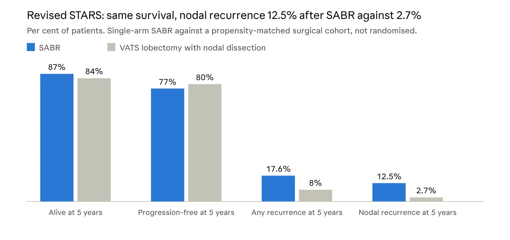
Non-inferiority for three-year survival was met (margin 12 percentage points).
The cost of SABR shows in recurrence: twice as many overall and nearly five times the nodal rate, matching the 10% occult nodal disease found at surgery.
Limits stated by the authors: not randomised; unmeasured confounding; different imaging follow-up; EBUS staging in over 90% of SABR patients against about 60% of surgical patients; one expert centre; not applicable above 3 cm or to ultracentral tumours.
It supports SABR as an option for a small, carefully staged tumour in a patient who prefers it, not as an equivalent standard.
Population studies: SABR against surgery
| Study | Data | Finding |
|---|---|---|
| Paul and colleagues, BMJ 2016 | US SEER-Medicare, age 66 and over, 2007–2012, mean age 76; propensity matched | Tumours 2 cm or less: SABR against thoracoscopic sublobar resection, no significant difference in cancer-specific survival (three-year 82.6% against 86.4%; 201 matched pairs). Tumours 5 cm or less: thoracoscopic resection better, SABR mortality HR 2.10 (1.52–2.89; 643 matched pairs) |
| SORT, Kagenaar and colleagues, Journal of Clinical Oncology 2026 | England: National Cancer Registry linked to hospital and radiotherapy data, T1–2 N0 M0 diagnosed 2015–2020; 2,299 SABR and 10,247 surgery; emulated target trial in patients eligible for either | Adjusted three-year all-cause mortality 30.3% after SABR against 21.6% after surgery; the gap narrowed in those aged 80 and over. Authors conclude surgery should remain the preferred option |
The BMJ paper is often quoted as "surgery better"; that holds for the larger-tumour analysis, while the primary small-tumour comparison with sublobar resection was not significantly different.
SORT is the first target-trial emulation of this question and uses English data, so it is the most relevant to UK practice. It reduces confounding by indication but cannot remove it: fitness and frailty are only partly captured in registry data.
Taken with revised STARS: survival after SABR can match surgery in selected, well-staged patients at an expert centre, but at population level surgery is associated with better survival, and nodal recurrence is consistently higher after SABR.
Definitive chemoradiotherapy for unresectable stage III NSCLC
7 parts · 1 drawing
For stage III disease that cannot be resected in a patient fit for combined treatment, the standard is radical thoracic radiotherapy with concurrent platinum-doublet chemotherapy, followed by a year of consolidation immunotherapy or, with an EGFR mutation, osimertinib.
As taught in the session
Who: unresectable stage III NSCLC, fit enough for concurrent treatment, not a surgical candidate.
What: thoracic radiotherapy with platinum-based chemotherapy given at the same time.
Why concurrent: the chemotherapy acts as a radiosensitiser.
Dose: 60–66 Gy in 30–33 fractions.
Chemotherapy: a platinum doublet, concurrent.
Duration: about 6 weeks.
Detail behind those points
| Point | Detail | Checked |
|---|---|---|
| Dose | 2 Gy per fraction, five days a week; 60 Gy takes 6 weeks and 66 Gy takes 6.5 | Arithmetic |
| Why not more | RTOG 0617 compared 74 Gy with 60 Gy with concurrent chemotherapy: the higher dose gave worse survival, so 60 Gy stayed the standard | From memory |
| Concurrent against sequential | Meta-analysis of individual patient data (Aupérin, 2010): concurrent treatment improved survival by about 4.5% at five years, at the cost of more severe oesophagitis (about 18% against 4%) | From memory |
| Doublets | Cisplatin with etoposide or vinorelbine; carboplatin with paclitaxel weekly; cisplatin with pemetrexed for non-squamous disease | From memory |
| If not fit for concurrent treatment | Sequential chemotherapy then radiotherapy, or radiotherapy alone; UK practice often uses 55 Gy in 20 fractions in that setting | From memory |
| Fitness | Performance status 0–1, adequate lung function, and a radiotherapy plan that meets lung, heart and oesophagus dose limits | From memory |
After chemoradiotherapy
| Trial | Design | Result |
|---|---|---|
| PACIFIC | 713 patients without progression after concurrent chemoradiotherapy, any PD-L1 status; durvalumab every 2 weeks for up to 12 months against placebo, randomised 2:1 | Five-year overall survival 42.9% against 33.4% (HR 0.68 at the primary analysis); five-year progression-free survival 33.1% against 19.0% |
| LAURA, NEJM 2024 | 216 patients with EGFR exon 19 deletion or L858R, no progression after chemoradiotherapy; osimertinib until progression against placebo | Median progression-free survival 39.1 against 5.6 months (HR 0.16); overall survival trend 58.8 against 54.0 months with crossover allowed |
Start durvalumab within 6 weeks of finishing radiotherapy, after a CT that shows no progression and no significant pneumonitis.
Durvalumab is not used for EGFR-mutant disease when osimertinib is available: the PACIFIC benefit in that subgroup was unclear.
NICE restricts durvalumab to PD-L1 of 1% or more after concurrent chemoradiotherapy (from memory; check the current technology appraisal).
PACIFIC in depth: the primary report
Antonia and colleagues, NEJM 2017. The journal page could not be opened on 17 November 2026; figures below are from contemporaneous reports of the paper.
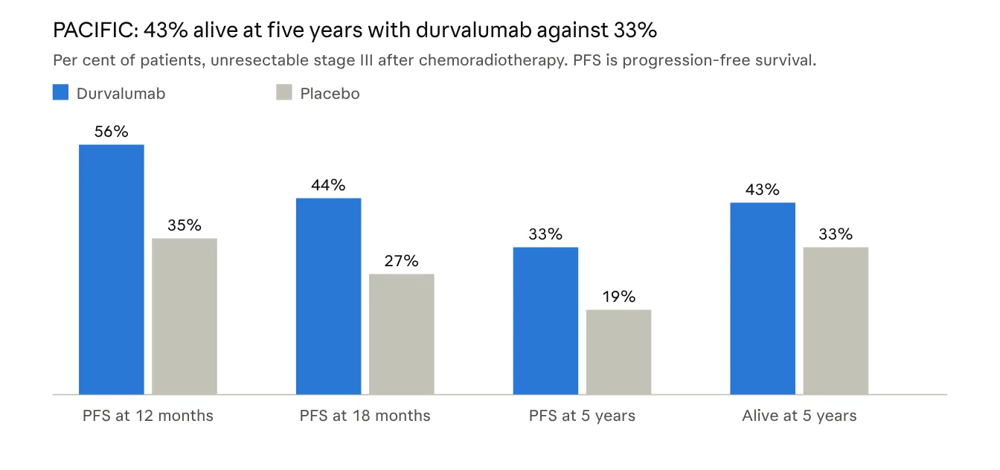
| Detail | |
|---|---|
| Design | Double-blind, placebo-controlled phase III; 235 centres in 26 countries; 713 randomised 2:1 (476 durvalumab, 237 placebo); stratified by age, sex and smoking history |
| Eligibility | Unresectable stage III NSCLC, no progression after at least two cycles of platinum-based chemotherapy concurrent with radiotherapy; any PD-L1 status |
| Treatment | Durvalumab 10 mg/kg every 2 weeks for up to 12 months, started 1 to 42 days after chemoradiotherapy |
| Co-primary endpoints | Progression-free survival by blinded central review, and overall survival |
| Progression-free survival | Median 16.8 against 5.6 months (HR 0.52, 0.42–0.65) at a median follow-up of 14.5 months; 55.9% against 35.3% at 12 months; 44.2% against 27.0% at 18 months |
| Response | 28.4% against 16.0% |
| Distant spread | Time to death or distant metastasis also longer with durvalumab |
| Later reports | Overall survival HR 0.68 (NEJM 2018); five-year survival 42.9% against 33.4% (JCO 2022) |
The benefit was seen across the prespecified subgroups in this first report.
What the trial does not tell you: it enrolled only patients who had completed concurrent treatment without progression and with good performance status, so it describes the fittest part of the stage III population.
Points usually raised in a viva, from memory: benefit looked larger when durvalumab started within 14 days of radiotherapy; a post hoc analysis requested by the European regulator showed no survival benefit with PD-L1 under 1%, which is why European and UK funding carries a PD-L1 condition; pneumonitis of any grade was about a third with durvalumab and a quarter with placebo, grade 3 or 4 in about 3–4% of both.
Durvalumab after sequential chemoradiotherapy: PACIFIC-6
PACIFIC enrolled only patients treated concurrently; PACIFIC-6 (Garassino and colleagues, ESMO Open 2025, final analysis) asks whether durvalumab is safe after sequential treatment, which is what older and frailer patients often receive.
| Detail | |
|---|---|
| Design | Single-arm, open-label phase II; 117 patients at 25 centres in six countries including the UK, enrolled 2019–2020 |
| Treatment | At least two cycles of platinum chemotherapy, then radiotherapy (60 Gy, plus or minus 10%) within 6 weeks; then durvalumab 1,500 mg every 4 weeks for up to 24 months |
| Patients | Median age 68; performance status 0 in 40%, 1 in 57%, 2 in 3%; comorbidity in 98%; stage IIIA 36%, IIIB 52%, IIIC 11% |
| Primary endpoint | Grade 3 or 4 adverse events possibly related to treatment: 6.0% (4.3% at 6 months) |
| Pneumonitis | Any grade, possibly related, 17.1%; grade 3 or 4 in 1.7%; one death |
| Stopping for adverse events | About 27%, mostly pneumonitis (15.4% in PACIFIC) |
| Survival | Median overall survival 39.0 months; three-year overall survival 56.5% |
| Progression-free survival | Median 13.1 months; two-year rate 35.3% |
| PD-L1 | Three-year survival 61.9% with PD-L1 of 1% or more against 47.8% below 1%; exploratory, small numbers |
Reading: tolerable after sequential treatment and survival looks encouraging, but there is no control arm, the reasons for choosing sequential treatment were not recorded, and frailty was not measured. The authors call it hypothesis-generating.
The randomised answer is expected from PACIFIC-5, which includes patients after either concurrent or sequential chemoradiotherapy.
Note the longer course here (up to 24 months, four-weekly fixed dose) against 12 months two-weekly in PACIFIC.
For the MDT: a patient not fit for concurrent treatment is not thereby excluded from consolidation immunotherapy, subject to what is funded.
Toxicity the surgeon sees
Oesophagitis in weeks 3–6; radiation pneumonitis at 1–6 months; later fibrosis, cardiac dose effects and, with durvalumab, immune pneumonitis that overlaps with radiation pneumonitis.
What makes stage III unresectable, and the surgical alternative
Unresectable in practice: bulky or multistation N2, N3, or T4 by invasion of structures that cannot be resected with clear margins. Single-station, non-bulky N2 found before treatment is the group in which surgery is discussed.
Resectable stage III is now treated with neoadjuvant or perioperative chemo-immunotherapy and surgery (CheckMate 816, KEYNOTE-671 and related trials, covered above). The decision between that and chemoradiotherapy with durvalumab is made at the MDT before any treatment starts, because the two pathways are not interchangeable once begun.
Salvage resection after definitive chemoradiotherapy is possible in selected patients with isolated local persistence or relapse; expect fibrosis, a higher bronchial stump risk and the need for stump coverage.
Status: PACIFIC and LAURA figures confirmed on 17 November 2026. The session points are as you recorded them and agree with standard practice; rows marked from memory were not searched.
Locally advanced (stage III) NSCLC: staging, resectability and multimodality treatment (TSRA ch. 9, part 1)
Added 20 November 2026 from TSRA Review of Cardiothoracic Surgery 3rd ed., ch. 9 "Locally advanced lung cancer" (Evan Rotar and Linda Martin). Read in full (PDF pages 94 to 103); this part covers pages 94 to 100; the operative sections (pages 100 to 103) are in Thoracic 9. Table 9-1 was checked against the page layout. Guidance quoted (NCCN, FDA, Commission on Cancer) is American, as cited by the chapter; no classes or levels of evidence are given. The chapter itself advises checking current NCCN guidance, as the field was changing fast.
Background
- Up to half of NSCLC presents as locally advanced (stage III). 5-year survival 12 to 41%.
- 8th edition splits stage III into A, B and C. Needs MDT planning: resectability, approach, fitness, neoadjuvant and adjuvant therapy.
Stage III groups (Table 9-1; all M0)
| Stage | T and N |
|---|---|
| IIIA | T1a-c N2; T2a-b N2; T3 N1; T4 N0 or N1 |
| IIIB | T1a-c N3; T2a-b N3; T3 N2; T4 N2 |
| IIIC | T3 N3; T4 N3 |
Preoperative staging
- PET-CT is the commonest imaging and stages more accurately. Look carefully at the adrenals.
- CT shows bone or muscle involvement; thoracic MRI helps for tumours near the spine, major vessels or brachial plexus.
- Pathological mediastinal staging is needed whenever nodal involvement is suspected; negative PET or normal-looking nodes on CT or MRI do not replace it.
- PET-positive nodes must be biopsied: inflammation, granulomatous disease and sarcoidosis cause false positives and overstaging.
Invasive staging (as given in this chapter)
| Modality | Use |
|---|---|
| EBUS-TBNA | Preferred for mediastinal and hilar staging; stations 2, 3, 4, 7, 10, 11 |
| Mediastinoscopy | Stations 2, 4, 7; larger samples when EBUS tissue is inadequate, or EBUS negative or non-diagnostic despite suspicion |
| Chamberlain (left anterior or parasternal) | Stations 5 (AP window) and 6 (para-aortic); consider for left upper lobe tumours, which tend to spread there |
| VATS | Whole hemithorax and nodes not reachable by EBUS or mediastinoscopy; needs fitness for surgery and one-lung ventilation |
| EUS | Mediastinal invasion with possible oesophageal involvement; best for stations 8 and 9; helps for deep station 7 |
N2 disease
- A spectrum from single-station microscopic disease to bulky multistation disease. Single-station N2 has better survival than multistation or bulky N2.
- Role of surgery not perfectly defined; varies with extent and institution.
Extrathoracic staging
- PET-CT and brain MRI (contrast brain CT if MRI contraindicated) to exclude stage IV.
Resectability
| Situation | Approach |
|---|---|
| T4 with N0 or N1 | Resection considered |
| Central PA, aorta or atrial involvement | Relative contraindication in most centres |
| T4N2 | NCCN: non-surgical (PACIFIC regimen) |
| N3 | Contraindication to resection |
| Unresectable | Chemoradiotherapy then immunotherapy (PACIFIC) |
| - R0 resection is essential for long-term survival; en bloc resections need careful planning in a specialised centre. |
Fitness for resection
- History and examination, PFTs, nutritional assessment, cardiac assessment where appropriate. Stop smoking immediately.
- Borderline or poor PFTs: pulmonary rehabilitation if possible.
- Chest wall or diaphragm resection worsens respiratory physiology beyond the lung resection alone; allow for it.
- With the survival and local control gains of PACIFIC, the added benefit of surgery must be clear for the individual.
Neoadjuvant treatment
Benefits: assess tumour response; downsize tumour and nodes (may make unresectable disease resectable); treat micrometastases; more patients complete all planned treatment. Greatest benefit with complete pathological response and nodal downstaging. Surgery is safe afterwards.
| Item | Detail |
|---|---|
| Who | N2 disease: refer for neoadjuvant chemotherapy or chemoradiotherapy before surgery. T3N1 and T4N0-1: upfront resection possible, neoadjuvant sometimes preferred; discuss at tumour board |
| Regimen | Platinum doublet for 2 to 4 cycles, or carboplatin/paclitaxel with radiotherapy |
| Radiotherapy dose | 45 to 66 Gy; no randomised dose comparison |
| Restaging | Imaging usually 4 to 6 weeks after chemotherapy or chemoradiotherapy, to exclude progression and confirm resectability |
Intergroup 0139 - Chemoradiotherapy then surgery vs definitive chemoradiotherapy: no overall survival benefit from surgery. - Subset with lobectomy: 5-year survival 36% vs 18% unresected. Driven by 25% pneumonectomy mortality after chemoradiotherapy. - Many surgeons offer resection if lobectomy is enough.
Immunotherapy and targeted therapy in the neoadjuvant setting - Not FDA approved in the neoadjuvant or adjuvant setting at the time of writing; under investigation. - 12 months of durvalumab (PD-L1 inhibitor) after chemoradiotherapy has greatly improved survival in unresectable stage III. - Neoadjuvant checkpoint inhibitors: early safety and efficacy, tumour downsizing, better pathological response, but more VATS-to-open conversions from hilar inflammation and fibrosis.
Adjuvant treatment
| Situation | Treatment |
|---|---|
| Resected stage IB to IIIA | Adjuvant chemotherapy: 5 to 15% overall survival gain, greatest in IIIA |
| Unexpected N2 (clinically N0) | Adjuvant chemotherapy is standard |
| Known N2 before surgery | Neoadjuvant therapy is standard (a Commission on Cancer quality measure) |
| 4 cycles given before surgery | No further chemotherapy needed |
| Positive margins (R1 or R2) | Adjuvant chemoradiotherapy |
| Persistent N2 after complete resection | Adjuvant radiotherapy has been used for disease-free survival; no overall survival benefit. LungART (preliminary, 2020) suggested PORT may be harmful |
| EGFR-mutant stage IB to IIIA | ADAURA: osimertinib greatly improved DFS (HR 0.20); OS not yet known; FDA approval expected at the time of writing |
| Other targets (ALK, ROS, RET, MET, NTRK, BRAF) | Under investigation (e.g. ALCHEMIST); not standard |
- Enhanced recovery protocols improve uptake of adjuvant chemotherapy in early-stage NSCLC; use them to help return to planned oncological treatment.
Inoperable stage III
- Definitive chemoradiotherapy remains standard. Many dose and fractionation schemes.
- Proton therapy being studied to reduce dose to normal tissue and allow higher target doses.
Thoracic 4: systemic therapy
Perioperative chemo-immunotherapy, targeted therapy for EGFR-mutant disease, treatment of advanced disease, and the NICE appraisals.
CheckMate 816 in depth
4 parts
Three cycles of neoadjuvant nivolumab with chemotherapy raised complete response from 2% to 24% and five-year survival from 55% to 65%, without making surgery harder.
Design
Phase III, open-label, 358 patients randomised 1:1 to nivolumab 360 mg with platinum doublet or platinum doublet alone, every 3 weeks for three cycles, then surgery within 6 weeks.
Stage IB (4 cm or more) to IIIA by the 7th edition; known EGFR and ALK alterations excluded. About two-thirds were stage IIIA.
A third arm, nivolumab with ipilimumab, closed early and is exploratory.
Stratified by stage, PD-L1 (under or over 1%) and sex.
Primary endpoints: pathological complete response and event-free survival, both by blinded review. Overall survival was a key secondary endpoint.
Adjuvant chemotherapy or radiotherapy was optional; no adjuvant immunotherapy.
Efficacy
| Endpoint | Nivolumab + chemotherapy | Chemotherapy | Effect |
|---|---|---|---|
| Pathological complete response | 24.0% | 2.2% | Odds ratio about 14 |
| Major pathological response | 36.9% | 8.9% | |
| Median residual viable tumour | 10% | 74% | |
| Event-free survival, first analysis | 31.6 months | 20.8 months | HR 0.63 |
| Event-free survival, 5 years | 49% | 34% | Median 59.6 against 21.1 months |
| Overall survival, 5 years | 65.4% | 55.0% | HR 0.72 (95% CI 0.523–0.998), P = 0.048 |
Complete responders had a five-year survival of about 95%.
Event-free survival by subgroup at the first analysis: stage IIIA HR 0.54, stage IB–II HR 0.87; PD-L1 1% or more HR 0.41, under 1% HR 0.85; non-squamous HR 0.50, squamous HR 0.77.
Clearance of circulating tumour DNA during treatment tracked complete response.
Surgery
| Measure | Nivolumab + chemotherapy | Chemotherapy |
|---|---|---|
| Reached definitive surgery | 83% | 75% |
| Surgery cancelled for progression | 7% | 10% |
| Minimally invasive approach | 30% | 22% |
| Conversion to open | 11% | 16% |
| Lobectomy | 77% | 61% |
| Pneumonectomy | 17% | 25% |
| Complete (R0) resection | 83% | 78% |
| Median operating time | 184 minutes | 217 minutes |
| Grade 3–4 treatment-related adverse events | 34% | 37% |
Critique
Open-label, though the pathological and event endpoints were reviewed blind.
Overall survival reached significance only at the final analysis, with a confidence interval that just excludes 1.
Staged by the 7th edition, with few stage IB patients: the evidence is for stage II–IIIA.
Benefit in PD-L1 under 1% and in stage IB–II is smaller and the intervals cross 1.
About one in six patients in the nivolumab arm did not have surgery.
Control patients had limited access to later immunotherapy in some regions, which can inflate a survival difference.
It cannot say whether adjuvant immunotherapy adds benefit.
The five-year figures were confirmed today; the first-analysis, subgroup and surgical figures are from memory of the 2022 paper.
KEYNOTE-671 in depth
4 parts
Perioperative pembrolizumab is the first perioperative regimen to show an overall survival benefit, in the only double-blind trial with survival as a primary endpoint.
Design
Phase III, double-blind, placebo-controlled, 797 patients, 189 centres.
Resectable stage II, IIIA or IIIB (N2), 8th edition.
Four cycles of neoadjuvant pembrolizumab 200 mg every 3 weeks with cisplatin-based chemotherapy, surgery, then up to 13 cycles of adjuvant pembrolizumab; placebo throughout in the control arm.
Dual primary endpoints: event-free survival and overall survival.
Results
| Endpoint | Pembrolizumab | Placebo |
|---|---|---|
| Pathological complete response | 18.1% | 4.0% |
| Major pathological response | 30% | 11% (from memory) |
| Reached surgery | 82.1% | 79.4% |
| Median event-free survival | 47.2 months | 18.3 months (HR 0.59) |
| 36-month overall survival | 71% | 64% (HR 0.72) |
| 5-year event-free survival (secondary report) | 49.9% | 26.5% (HR 0.58) |
| 5-year overall survival (secondary report) | 64.6% | 53.6% (HR 0.74) |
Treatment-related deaths were 1% in each arm.
Against CheckMate 816
Blinded with placebo, where 816 was open-label.
Includes stage IIIB (N2) and uses the 8th edition.
Cisplatin only and four cycles, where 816 used three cycles and allowed carboplatin.
Adds a year of adjuvant immunotherapy.
Critique
Cannot separate the contribution of the adjuvant phase from the neoadjuvant phase.
Cisplatin-only limits applicability to older patients and those with renal impairment.
A year of adjuvant treatment adds toxicity, visits and cost, and many do not complete it.
Continued benefit in complete responders at five years supports the adjuvant phase but is a subgroup observation.
EGFR-mutant NSCLC and osimertinib
3 parts
Osimertinib now has trial evidence at every stage of EGFR-mutant NSCLC: after resection, before resection, after chemoradiotherapy, and in metastatic disease. For the surgeon the consequence is that EGFR status must be known before the treatment plan is made, not after the operation.
The mutation and the drug
Sensitising EGFR mutations: exon 19 deletion and exon 21 L858R, about 10–15% of adenocarcinoma in European patients and up to half in East Asian patients; commoner in never-smokers and women.
Osimertinib is a third-generation, irreversible EGFR tyrosine kinase inhibitor, 80 mg once daily. It also inhibits the T790M resistance mutation and penetrates the brain.
Main toxicities: diarrhoea, rash, paronychia; rarely interstitial lung disease, QT prolongation and a fall in ejection fraction.
EGFR-mutant tumours respond poorly to immunotherapy, which is why they were excluded from or did badly in the chemo-immunotherapy trials.
Trials by stage
| Setting | Trial | Design | Result | Checked |
|---|---|---|---|---|
| Adjuvant, after resection | ADAURA, NEJM 2020 and 2023 | 682 patients, completely resected stage IB–IIIA (seventh edition), exon 19 deletion or L858R, with or without adjuvant chemotherapy; osimertinib for 3 years against placebo | Disease-free survival HR 0.17 at first report in stage II–IIIA (0.23 with longer follow-up). Five-year overall survival 85% against 73% in stage II–IIIA (HR 0.49) and 88% against 78% in stage IB–IIIA. Fewer brain relapses | Confirmed |
| Neoadjuvant | NeoADAURA, 2025 | Resectable stage II–IIIB; osimertinib with chemotherapy, osimertinib alone, or chemotherapy alone before surgery | Major pathological response about 26% and 25% with the osimertinib arms against 2% with chemotherapy; complete response 4%, 9% and 0%. Event-free survival immature | Confirmed, except the two response percentages, which are from memory |
| After chemoradiotherapy, unresectable stage III | LAURA, NEJM 2024 | 216 patients without progression; osimertinib until progression against placebo | Median progression-free survival 39.1 against 5.6 months (HR 0.16) | Confirmed earlier today |
| Metastatic, first line | FLAURA, NEJM 2018 and 2020 | Osimertinib against gefitinib or erlotinib | Progression-free survival 18.9 against 10.2 months; overall survival 38.6 against 31.8 months | From memory |
| Metastatic, first line | FLAURA2, NEJM 2023 and 2025 | 557 patients; osimertinib with platinum and pemetrexed against osimertinib alone | Median overall survival 47.5 against 37.6 months (HR 0.77); progression-free survival HR 0.62 | Confirmed |
| Metastatic, first line | MARIPOSA | Amivantamab with lazertinib against osimertinib | Longer progression-free and overall survival with the combination, at the cost of more skin, infusion and thrombotic toxicity | From memory |
| Metastatic, after earlier inhibitor with T790M | AURA3, NEJM 2017 | Osimertinib against platinum and pemetrexed | Progression-free survival 10.1 against 4.4 months | From memory |
What this means for surgery
Test before treating. A resectable EGFR-mutant tumour should not go down a neoadjuvant chemo-immunotherapy pathway; the options are surgery followed by osimertinib, or neoadjuvant osimertinib where available.
After complete resection of stage IB–IIIA disease: adjuvant chemotherapy where indicated, then osimertinib for three years. NICE TA761 covers this.
The ADAURA debates: the control arm had limited access to osimertinib at relapse, which inflates the survival difference; staging did not require PET-CT or brain MRI in everyone; the disease-free survival curves converge after the drug stops at three years, raising the question of whether it cures or delays. Longer treatment is being tested.
Stage IB benefit is smaller in absolute terms, and the definition of IB changed between staging editions.
A major pathological response rate of about a quarter with neoadjuvant osimertinib is far below what chemo-immunotherapy achieves in EGFR wild-type disease, so it is not yet a reason to delay a straightforward resection.
Stopping before surgery: osimertinib is usually held for a few days around an operation (from memory; follow local advice).
At relapse on osimertinib: re-biopsy or plasma testing for the resistance mechanism (MET amplification, C797S, small-cell transformation).
Status: ADAURA, FLAURA2, LAURA and the NeoADAURA design and complete response rates were confirmed on 17 November 2026 (ADAURA survival, FLAURA2 final survival, NeoADAURA).
Systemic anti-cancer therapy: overview for the surgeon
From general knowledge, not checked against sources on 17 November 2026; drug availability changes quickly.
| Class | Examples | Main toxicities |
|---|---|---|
| Cytotoxic chemotherapy | Platinum (cisplatin, carboplatin) with pemetrexed (non-squamous), vinorelbine, gemcitabine or paclitaxel; docetaxel second-line | Myelosuppression, nausea, renal and hearing damage (cisplatin), neuropathy |
| Immunotherapy | PD-1: nivolumab, pembrolizumab. PD-L1: atezolizumab, durvalumab. CTLA-4: ipilimumab | Immune-related: pneumonitis, colitis, hepatitis, thyroiditis, hypophysitis and adrenal insufficiency, rash, myocarditis |
| Targeted therapy | EGFR: osimertinib. ALK: alectinib, lorlatinib. ROS1: entrectinib. BRAF: dabrafenib with trametinib. MET exon 14: tepotinib. RET: selpercatinib. KRAS G12C: sotorasib, adagrasib | Rash, diarrhoea, interstitial lung disease, QT prolongation, liver enzyme rise |
| Antibody-drug conjugates | Trastuzumab deruxtecan (HER2) | Interstitial lung disease, myelosuppression |
| Stage | Systemic treatment |
|---|---|
| IA | None |
| IB | Adjuvant osimertinib (EGFR) or alectinib (ALK, 4 cm or more); otherwise chemotherapy only for high-risk features |
| II–III, resectable, no EGFR or ALK | Neoadjuvant or perioperative chemo-immunotherapy; or surgery then adjuvant chemotherapy with or without immunotherapy |
| II–III, resectable, EGFR or ALK | Surgery, then adjuvant osimertinib for 3 years or alectinib for 2 years |
| III, unresectable | Concurrent chemoradiotherapy, then durvalumab for 12 months; osimertinib after chemoradiotherapy if EGFR-mutant |
| IV, driver mutation | The matched targeted drug first |
| IV, no driver, PD-L1 50% or more | Pembrolizumab alone, or chemo-immunotherapy |
| IV, no driver, PD-L1 under 50% | Platinum doublet with immunotherapy |
| Small cell, limited stage | Concurrent chemoradiotherapy, then durvalumab |
| Small cell, extensive stage | Platinum and etoposide with atezolizumab or durvalumab |
What the surgeon needs to do
Get enough tissue at the first biopsy for PD-L1 and a sequencing panel; EBUS cytology is often insufficient.
Know the result before the MDT decides: EGFR and ALK tumours do not get immunotherapy.
Time surgery 4–6 weeks after the last neoadjuvant cycle, once counts have recovered.
Before operating after immunotherapy, check for pneumonitis (repeat transfer factor), thyroid and adrenal function, and liver tests; give steroid cover if the adrenal axis is suppressed.
Stop bevacizumab about 6 weeks before surgery; discuss holding a targeted drug around surgery with the oncologist.
Refer every resected stage IB–III patient to oncology for adjuvant discussion, with the molecular results.
Salvage surgery after a good response to targeted or immune therapy in initially unresectable or oligometastatic disease is a growing MDT question; operations are harder for the same fibrotic reasons.
Interactive course pack, 18 November 2026: "When is neoadjuvant indicated" (archive slide)
From the archive of the original slides in the interactive course pack, which labels it archival: recorded as taught, not checked by me today. Use the NICE map earlier in this tab for what is funded in England.
| Point | Detail given on the slide |
|---|---|
| Indication for neoadjuvant chemoimmunotherapy (CheckMate 816 model) | Resectable NSCLC stage IB to IIIA (tumour 4 cm or more, or node positive) with no EGFR or ALK alteration |
| Regimen | Nivolumab 360 mg with platinum doublet for 3 cycles, then surgery |
| CheckMate 816, 5-year update 2025 | Pathological complete response 24% against 2.2%; 5-year overall survival 65% against 55% (hazard ratio 0.72, p=0.0485); event-free survival 59.6 against 21.1 months (hazard ratio 0.68) |
| By PD-L1 | 1% or more: hazard ratio 0.51; under 1%: 0.89 |
| Claim on the slide | The only phase III neoadjuvant-only chemoimmunotherapy trial to show a significant overall survival benefit |
| Perioperative options | AEGEAN (durvalumab before and after surgery) and CheckMate 77T (nivolumab before and after): event-free survival benefit |
| Neoadjuvant chemotherapy alone | Traditional approach for stage IIIA (N2); the slide cites LACE for a 5.4% survival benefit with cisplatin-based treatment (LACE was an adjuvant meta-analysis: my comment) |
| When not to give neoadjuvant treatment | Stage I (under 4 cm, N0): surgery first. EGFR or ALK positive: surgery then adjuvant targeted therapy. Unfit for chemotherapy. Emergency or urgent resection needed |
| Algorithm | Stage IB to IIIA and EGFR/ALK negative: neoadjuvant nivolumab with chemotherapy. EGFR/ALK positive: surgery and adjuvant osimertinib or alectinib |
NICE pathways for advanced NSCLC
From the NICE interactive treatment pathways, dated February 2026, opened on 17 November 2026. The source is a flowchart; the line of therapy for some targeted drugs did not extract cleanly, so check the individual appraisal before quoting a line.
| Group | First line | Later lines |
|---|---|---|
| Squamous, no target, PD-L1 under 50% | Pembrolizumab with carboplatin and paclitaxel; or platinum doublet | Docetaxel; atezolizumab; nivolumab; pembrolizumab if PD-L1 over 1% |
| Squamous, no target, PD-L1 50% or more | Pembrolizumab or atezolizumab alone; chemo-immunotherapy only if urgent response is needed | As above |
| Non-squamous, no target, PD-L1 under 50% | Pembrolizumab with pemetrexed and platinum; or atezolizumab with bevacizumab, carboplatin and paclitaxel; or pemetrexed with platinum, then pemetrexed maintenance | Docetaxel with or without nintedanib; atezolizumab; pembrolizumab or nivolumab if PD-L1 over 1% |
| Non-squamous, no target, PD-L1 50% or more | Pembrolizumab or atezolizumab alone; or pembrolizumab with pemetrexed and platinum | As above |
| EGFR exon 19 deletion or exon 21 substitution | Osimertinib, alone or with pemetrexed and platinum; older options afatinib, dacomitinib, erlotinib, gefitinib | Osimertinib for T790M after an older drug; then platinum doublet, docetaxel |
| ALK | Alectinib, brigatinib or lorlatinib; older options crizotinib, ceritinib | Lorlatinib, brigatinib or ceritinib after a previous inhibitor |
| ROS1 | Entrectinib or crizotinib | Chemotherapy and immunotherapy as for no target |
| RET fusion | Selpercatinib | Selpercatinib through the Cancer Drugs Fund if not used first |
| KRAS G12C | Listed in the pathway: sotorasib | Chemo-immunotherapy and docetaxel branches |
| MET exon 14 skipping | Listed in the pathway: tepotinib | As above |
| BRAF V600 | Listed in the pathway: dabrafenib with trametinib | As above |
NICE's instruction on the pathway: base every choice on shared decision-making and consider a clinical trial at each step.
The targeted groups apply to squamous as well as non-squamous tumours where the alteration is found.
NTRK, HER2 and EGFR exon 20 pathways did not appear in the extracted content.
Why it matters to a surgeon: it shows what the patient is offered if resection is not possible or the disease recurs, and why the molecular panel must be complete at diagnosis.
NICE lung cancer products: the full list
7 parts
The NICE lung cancer products page returned 90 items on 17 November 2026: 79 published and 11 terminated appraisals. The newest item in the list as returned was dated May 2024, so later appraisals are missing from it; check the live page for perioperative pembrolizumab and durvalumab, adjuvant alectinib and osimertinib after chemoradiotherapy.
Guidelines and quality standards
| Reference | Title | Date |
|---|---|---|
| NG122 | Lung cancer: diagnosis and management | March 2019 |
| NG12 | Suspected cancer: recognition and referral | June 2015 |
| QS17 | Lung cancer in adults | March 2012 |
| QS124 | Suspected cancer | June 2016 |
Appraisals that change surgical practice
| Reference | Drug and setting | Date |
|---|---|---|
| TA876 | Nivolumab with chemotherapy, neoadjuvant, resectable NSCLC | March 2023 |
| TA823 | Atezolizumab, adjuvant, resected NSCLC | September 2022 |
| TA761 | Osimertinib, adjuvant, EGFR-mutant NSCLC after complete resection | January 2022 |
| TA798 | Durvalumab after platinum-based chemoradiation, unresectable NSCLC | June 2022 |
Diagnostics
| Reference | Subject | Date |
|---|---|---|
| DG55 | AI computer-aided detection software for finding and measuring nodules on CT | July 2023 |
| HTE12 | AI software for chest X-rays in suspected lung cancer referrals, early value assessment | September 2023 |
| DG46 | EarlyCDT Lung for risk in solid nodules | February 2022 |
| DG9 | EGFR mutation testing in locally advanced or metastatic NSCLC | August 2013 |
Interventional procedures
| Reference | Procedure | Date |
|---|---|---|
| IPG716 | Microwave ablation for primary or metastatic cancer in the lung | February 2022 |
| IPG372 | Percutaneous radiofrequency ablation for primary or secondary lung cancers | December 2010 |
| IPG441 | Irreversible electroporation for primary lung cancer and lung metastases | February 2013 |
| IPG337 | EBUS-guided transbronchial biopsy for peripheral lung lesions | March 2010 |
| IPG254 | EBUS-guided transbronchial needle aspiration for mediastinal masses | February 2008 |
| IPG142 | Cryotherapy for malignant endobronchial obstruction | November 2005 |
| IPG137 | Photodynamic therapy for localised inoperable endobronchial cancer | November 2005 |
| IPG87 | Photodynamic therapy for advanced bronchial carcinoma | August 2004 |
| IPG79 | Stent placement for vena caval obstruction | July 2004 |
| IPG170 | Living-donor lung transplantation | May 2006 |
Advice (medtech innovation briefings)
| Reference | Subject | Date |
|---|---|---|
| MIB307 | Signatera for molecular residual disease in solid tumours | October 2022 |
| MIB243 | AI for analysing chest CT images | January 2021 |
| MIB211 | Archimedes for biopsy of suspected lung cancer | June 2020 |
| MIB194 | superDimension navigation for peripheral lung lesions | October 2019 |
| MIB137 | Plasma EGFR mutation tests | January 2018 |
| MIB128 | HTG EdgeSeq ALKPlus assay for ALK status | November 2017 |
| MIB39 | ERBE flexible cryoprobes for bronchoscopic diagnosis and treatment | September 2015 |
Advanced disease, by target
| Target | Appraisals |
|---|---|
| EGFR | TA654 osimertinib first line; TA653 osimertinib for T790M; TA595 dacomitinib; TA310 afatinib; TA258 erlotinib; TA192 gefitinib; TA850 amivantamab for exon 20 insertion after platinum |
| ALK | TA909 lorlatinib first line; TA670 brigatinib; TA536 alectinib; TA500 ceritinib; TA406 crizotinib; after earlier treatment TA628 lorlatinib, TA571 brigatinib, TA422 crizotinib, TA395 ceritinib |
| ROS1 | TA643 entrectinib; TA529 crizotinib |
| RET | TA911 selpercatinib first line; TA760 selpercatinib previously treated; TA812 pralsetinib |
| BRAF V600 | TA898 dabrafenib with trametinib |
| MET | TA789 tepotinib |
| KRAS G12C | TA781 sotorasib, previously treated |
| NTRK | TA630 larotrectinib |
| No target, first line immunotherapy | TA531 pembrolizumab alone for PD-L1 positive; TA683 pembrolizumab with pemetrexed and platinum, non-squamous; TA770 pembrolizumab with carboplatin and paclitaxel, squamous; TA705 atezolizumab alone; TA584 atezolizumab combination, non-squamous; TA724 nivolumab with ipilimumab and chemotherapy |
| After chemotherapy | TA428 pembrolizumab; TA520 atezolizumab; TA655 nivolumab, squamous; TA713 nivolumab, non-squamous; TA347 nintedanib; TA403 ramucirumab; TA374 erlotinib and gefitinib |
| Chemotherapy and maintenance | TA181, TA124, TA190 and TA402 pemetrexed; TA227 erlotinib maintenance; TA411 necitumumab |
| Small-cell | TA638 atezolizumab with carboplatin and etoposide, extensive stage; TA184 topotecan at relapse |
| Supportive | TA265 denosumab for bone metastases |
Terminated appraisals
TA976 trastuzumab deruxtecan (HER2); TA884 capmatinib (MET); TA848 cemiplimab; TA662 durvalumab in extensive small-cell; TA635 ramucirumab with erlotinib; TA618 atezolizumab with nab-paclitaxel; TA444 afatinib squamous; TA438 alectinib previously treated; TA436 and TA148 bevacizumab; TA362 nab-paclitaxel. A terminated appraisal means the company made no submission, so there is no recommendation and the drug is not routinely funded for that use.
The list also held three shared-learning items on suspected cancer referral, not shown here.
NICE advice products for lung cancer
NICE advice (medtech innovation briefings) describes a technology and its evidence without making a recommendation. The NICE list page filtered to advice could not be opened on 17 November 2026; the full product list, including all seven briefings, is in the next section.
| Briefing | Published | Subject | Relevance |
|---|---|---|---|
| MIB137 | January 2018 | Plasma EGFR mutation tests in locally advanced or metastatic NSCLC (seven tests) | Alternative to tissue testing, or before it; most useful at resistance to an EGFR inhibitor |
| MIB194 | October 2019 | superDimension electromagnetic navigation for sampling peripheral lung lesions | Biopsy of small peripheral lesions without crossing the pleura; see the bronchoscopy platforms section above |
| MIB209 | March 2020 | EarlyCDT-Lung, a panel of seven autoantibodies for indeterminate nodules | Since replaced by NICE healthtech guidance 611 |
| MIB211 | June 2020 | Archimedes navigation for biopsy of suspected lung cancer | Navigation with transparenchymal access to lesions away from an airway |
NICE pathways: systemic therapy for advanced NSCLC (November 2026)
3 parts · 1 drawing
Added 18 November 2026 from the PDF you supplied: NICE, Systemic anti-cancer therapy for advanced non-small-cell lung cancer: treatment options (interactive PDF of all pathways, squamous and non-squamous), November 2026. Everything below is from that document. The PDF is a set of flowcharts; I read it as text, so the drug lists and appraisal numbers are reliable but the exact order of lines within a branch should be checked on the flowchart before quoting.

Squamous
| Group | First line | Later lines |
|---|---|---|
| No targetable alteration, PD-L1 under 50% | Pembrolizumab with carboplatin and paclitaxel (TA770); cemiplimab with platinum chemotherapy if PD-L1 1% or more (TA1165); platinum doublet | Pembrolizumab if PD-L1 1% or more (TA428); atezolizumab (TA520); nivolumab (TA655); docetaxel |
| No targetable alteration, PD-L1 50% or more | Pembrolizumab (TA531); atezolizumab (TA705); the chemo-immunotherapy combinations (TA770, TA1165) only when urgent clinical intervention is needed | Platinum doublet, then docetaxel |
| RET fusion | Selpercatinib (TA911 untreated; TA1042 previously treated) | |
| KRAS G12C | As for no alteration | Sotorasib (TA781) |
| MET exon 14 skipping | Tepotinib (TA789) | |
| BRAF V600 | Dabrafenib with trametinib (TA898); encorafenib with binimetinib (TA1150) |
Non-squamous
| Group | First line | Later lines |
|---|---|---|
| No targetable alteration, PD-L1 under 50% | Pembrolizumab with pemetrexed and platinum (TA683); atezolizumab with bevacizumab, carboplatin and paclitaxel (TA584); cemiplimab with platinum chemotherapy (TA1165); pemetrexed with cisplatin (TA181) or carboplatin; platinum doublet; pemetrexed maintenance (TA190, TA402) | Pembrolizumab (TA428); atezolizumab (TA520); nivolumab if PD-L1 1% or more (TA713); docetaxel, with or without nintedanib (TA347) |
| No targetable alteration, PD-L1 50% or more | Pembrolizumab (TA531); atezolizumab (TA705); pembrolizumab with pemetrexed and platinum (TA683); cemiplimab combination (TA1165) | Platinum doublet; docetaxel with or without nintedanib |
| EGFR mutation | Osimertinib (TA654); osimertinib with pemetrexed and platinum (TA1060); amivantamab with lazertinib (TA1122); afatinib (TA310); dacomitinib (TA595); erlotinib (TA258); gefitinib (TA192) | T790M after an earlier inhibitor: osimertinib (TA653) |
| EGFR exon 20 insertion | Amivantamab with carboplatin and pemetrexed (TA1158) | |
| ALK | Lorlatinib (TA1103); brigatinib (TA670); alectinib (TA536); ceritinib (TA500); crizotinib (TA406) | Brigatinib (TA571); ceritinib (TA395); crizotinib (TA422); lorlatinib (TA628) |
| ROS1 | Entrectinib (TA643); crizotinib (TA1021) | |
| RET, KRAS G12C, MET exon 14, BRAF V600 | As in the squamous table |
What a surgeon needs from this
Biomarker testing (PD-L1, EGFR, ALK, ROS1, RET, BRAF, MET exon 14, KRAS G12C) decides the pathway, so adequate tissue at biopsy or resection matters.
With PD-L1 50% or more and no driver, single-agent immunotherapy is the default; chemotherapy is added when a rapid response is needed.
With a driver alteration, a targeted drug comes first and immunotherapy is not the first choice.
This pathway is for advanced disease. Perioperative treatment for resectable disease is in the sections above in this tab.
Perioperative systemic therapy
5 parts · 1 drawing
For resectable stage II–III disease without EGFR or ALK alterations, chemo-immunotherapy before surgery is now standard; the open question is whether continuing it afterwards adds anything.

Chemo-immunotherapy trials
| Trial | Regimen | Population | Complete response | Event-free survival | Overall survival |
|---|---|---|---|---|---|
| CheckMate 816 | Neoadjuvant nivolumab with chemotherapy, 3 cycles; nothing mandated after | IB–IIIA (7th edition), n=358, open-label | 24% against 2% | Median 59.6 against 21.1 months; 5-year 49% against 34% | 5-year 65.4% against 55.0%, HR 0.72 |
| KEYNOTE-671 | Pembrolizumab with cisplatin doublet, 4 cycles, then up to 13 adjuvant cycles | II–IIIB (N2), n=797, double-blind | 18% against 4% | Median 47.2 against 18.3 months, HR 0.59; 5-year 49.9% against 26.5% | 36-month 71% against 64%, HR 0.72; 5-year 64.6% against 53.6% |
| AEGEAN | Durvalumab with platinum doublet, 4 cycles, then 12 adjuvant cycles | II–IIIB (N2), double-blind | 17% against 4% | HR about 0.68 | Not yet significant when last reported |
| CheckMate 77T | Nivolumab with chemotherapy, 4 cycles, then 1 year adjuvant | IIA–IIIB, n=461, double-blind | 25% against 5% | HR about 0.58 | Immature |
The CheckMate 816 and KEYNOTE-671 survival figures were confirmed today. The complete response and event-free survival figures for KEYNOTE-671, AEGEAN and CheckMate 77T were also confirmed on a second check the same day.
KEYNOTE-671 in brief
The only double-blind perioperative trial with overall survival as a primary endpoint, and the first perioperative regimen to show a survival benefit.
Cisplatin only, so it under-represents older patients and those with renal impairment.
The design cannot separate what the adjuvant year adds to the neoadjuvant phase.
Five-year data report continued benefit even in complete responders, which supports the adjuvant phase but is a subgroup observation.
Neoadjuvant-only or perioperative
No randomised comparison exists. Cross-trial comparisons are confounded by staging edition, blinding and stage mix.
Complete responders do very well with either strategy. Patients with residual tumour are the group most likely to gain from adjuvant treatment.
A year of adjuvant immunotherapy adds immune toxicity, cost and visits, and a substantial minority do not complete it.
Adjuvant and targeted therapy
| Trial | Treatment | Population | Result |
|---|---|---|---|
| IMpower010 | Atezolizumab for 1 year after chemotherapy | Resected IB–IIIA | Disease-free survival HR about 0.66 in stage II–IIIA with PD-L1 of 1% or more; largest effect at 50% or more |
| PEARLS (KEYNOTE-091) | Pembrolizumab for 1 year | Resected IB–IIIA | Disease-free survival HR about 0.76 overall |
| ADAURA | Osimertinib for 3 years | EGFR-mutant IB–IIIA | Disease-free survival HR about 0.2; five-year survival 88% against 78% |
| ALINA | Alectinib for 2 years, against chemotherapy | ALK-positive IB–IIIA | Disease-free survival HR about 0.24 |
| LACE meta-analysis | Adjuvant cisplatin doublet | Resected II–III | Absolute survival gain 5.4% at 5 years |
| Lung ART | Postoperative radiotherapy for pN2 | Completely resected N2 | No disease-free survival gain, more cardiopulmonary toxicity |
| PACIFIC | Durvalumab after chemoradiotherapy | Unresectable stage III | Five-year survival 43% against 33% |
Selection points
Know EGFR, ALK and PD-L1 from the diagnostic biopsy; EGFR and ALK tumours go down the targeted route, not immunotherapy.
Benefit is largest with PD-L1 of 1% or more and in stage III; it is smaller and less certain with PD-L1 under 1% and in stage IB.
Declare resectability, and the intended operation, at the first MDT. Roughly one in five patients starting neoadjuvant treatment does not reach surgery.
Screen for immune toxicity before surgery: pneumonitis, colitis, hepatitis, thyroid dysfunction, and hypophysitis or adrenal insufficiency, which needs steroid cover.
Your presentation: targeted therapy and immunotherapy trials
10 parts · 4 drawings
This section takes the 35-slide deck "Role of Targeted Therapy and Immunotherapy in Lung Cancer: Review of Important Trials" and adds what has been published since, with the points where the slides need correcting before they are shown again.
Drug classes on the slides
| Target | Drugs | Note |
|---|---|---|
| PD-1 | Nivolumab, pembrolizumab, cemiplimab | Pembrolizumab binds PD-1 only; slide 28 says PD-1 or PD-L1 |
| PD-L1 | Durvalumab, atezolizumab, avelumab | Slide 3 lists avelumab alone; the two used in lung cancer are durvalumab and atezolizumab |
| CTLA-4 | Ipilimumab | |
| EGFR | Osimertinib, third-generation, irreversible, CNS-active | Covers sensitising mutations and T790M |
ADAURA
Adjuvant osimertinib 80 mg daily for three years against placebo after complete resection of EGFR-mutant (exon 19 deletion or L858R) non-squamous NSCLC, stage IB to IIIA (seventh edition), with or without adjuvant chemotherapy; 682 patients, 339 and 343. The primary endpoint was disease-free survival in stage II to IIIA.

| Endpoint | Osimertinib | Placebo | Effect |
|---|---|---|---|
| DFS at 2 years, stage II to IIIA | 90% | 44% | HR 0.17 at the primary analysis; 0.23 with two more years |
| DFS at 4 years, stage II to IIIA | 70% | 29% | |
| DFS at 2 years, IB to IIIA | 89% | 52% | HR 0.20, then 0.27 |
| DFS at 4 years, IB to IIIA | 73% | 38% | |
| Median DFS, stage II to IIIA | 65.8 months | 21.9 months | |
| OS at 5 years, stage II to IIIA | 85% | 73% | HR 0.49 (0.33 to 0.73) |
| OS at 5 years, IB to IIIA | 88% | 78% | HR 0.49 (0.34 to 0.70) |
| OS at 8 years, stage II to IIIA | 74% | 58% | HR 0.53 (0.38 to 0.75) |
| OS at 8 years, IB to IIIA | 79% | 64% | HR 0.52 (0.39 to 0.71) |
Four-year DFS by stage, from your slide notes: IB 80% against 60%, II 75% against 43%, IIIA 66% against 16%. The absolute gain rises with stage.
CNS recurrence was lower with osimertinib; interstitial lung disease 3% against none.
The survival benefit held with and without adjuvant chemotherapy. Osimertinib is given after chemotherapy where chemotherapy is indicated, not instead of it.
The eight-year figures are new since the deck: an exploratory analysis with a data cut-off of 4 May 2026, presented at the 2026 World Conference on Lung Cancer and published in the Journal of Thoracic Oncology. Extended follow-up was obtained for about 77% of patients alive at the final analysis; 127 remained censored at their earlier date, and crossover to osimertinib in the placebo arm was not quantified.
Criticisms to have ready: the disease-free survival curves converge after the three years of treatment stop, which raises the question of delay against cure; staging did not require PET or brain MRI in every patient; and only a minority of placebo patients received osimertinib at relapse in the original analysis, which flatters the survival comparison.
Your scenario (lower lobectomy, T2N1M0, R0, EGFR-mutant): stage IIB, so adjuvant platinum doublet followed by three years of osimertinib fits the trial exactly.
ADAURA2
Phase 3, double-blind, osimertinib 80 mg daily for three years against placebo after complete resection (lobectomy, bilobectomy, segmentectomy or sleeve) of stage IA2 or IA3 (eighth edition) non-squamous NSCLC with exon 19 deletion or L858R, NCT05120349. Patients are stratified by pathological risk of recurrence (high or low), mutation type and race. The primary endpoint is disease-free survival in the high-risk stratum; planned size about 380 to 390. The trial is active and no longer recruiting. I found no results as of 17 November 2026. The question it answers is whether tumours of 1 to 3 cm, where five-year survival after resection is already high, gain enough to justify three years of a drug with a 3% interstitial lung disease rate.
Third-generation EGFR inhibitors in advanced disease: the 2026 meta-analysis
Lin and colleagues, Discover Oncology 2026 pooled nine randomised trials (about 1,880 patients) of osimertinib against chemotherapy or earlier inhibitors in advanced EGFR-mutant NSCLC.
| Outcome | Pooled result |
|---|---|
| Objective response | OR 2.99 (1.87 to 4.77), heterogeneity 75% |
| Disease control | OR 2.80 (1.38 to 5.67), heterogeneity 79% |
| Grade 3 or worse adverse events | OR 0.26 (0.14 to 0.47) |
| Diarrhoea | OR 1.97 (1.07 to 3.61) |
| Paronychia | OR 3.42 (1.12 to 10.42) |
| Nausea and vomiting | OR 0.27 (0.14 to 0.53) |
| Interstitial pneumonia | OR 1.23 (0.67 to 2.27), not significant |
| QT prolongation | OR 2.18 (0.81 to 5.84), not significant |
Read it with care. Seven of the nine trials are small Chinese studies, mostly second-line T790M disease; the reported progression-free survival estimate (3.12, interval 0.40 to 5.85) is not a coherent odds ratio; overall survival and CNS outcomes were not pooled; and the abstract's claim of more rash is not supported by its own table. For a viva, cite FLAURA, FLAURA2 and AURA3 directly (in the EGFR section above) and use this paper only for the toxicity pattern.
PACIFIC, as on the slides
The full account is in the tab Thoracic 3, under definitive chemoradiotherapy. Slide figures that agree with the publications: 709 patients randomised two to one (473 and 236 treated) within 42 days of chemoradiotherapy; median progression-free survival 16.8 against 5.6 months; response 28% against 16%; new lesions 20% against 32%; brain metastases 6% against 11%; five-year survival 43% against 33% and five-year progression-free survival 33% against 19%; median survival 47.5 against 29.1 months.
Correct the note on slide 11: eighteen-month progression-free survival was 44% with durvalumab, as slide 13 has it, not 35%.
Durvalumab was given at 10 mg/kg every two weeks for up to 12 months.
The post-hoc finding of no survival benefit when PD-L1 is under 1% is why the European licence, and NICE, restrict durvalumab to PD-L1 of 1% or more; the US label does not. Your scenario patient at over 25% qualifies everywhere.
CheckMate 816, as on the slides
The full account is higher in this tab. Slide figures that agree: 358 patients, stage IB to IIIA; median event-free survival 31.6 against 20.8 months; two-year event-free survival 64% against 45%; pathological complete response 24% against 2%; R0 83% against 78%; fewer pneumonectomies.
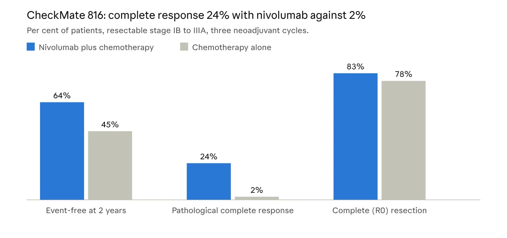
Correct slide 22: the benefit was larger when PD-L1 was 1% or more, not under 1%. It was also larger in stage IIIA and in non-squamous histology, as the slide says. From memory, the event-free survival hazard ratio was about 0.41 for PD-L1 of 1% or more and 0.85 for under 1%.
PD-L1 status was a stratification factor, not an entry requirement.
"Untestable" on slide 22 should read unresectable, and the trial does not speak to unresectable disease.
IMpower010
Adjuvant atezolizumab for 16 cycles (one year) against best supportive care after complete resection and platinum chemotherapy, stage IB (4 cm or more) to IIIA; 1,280 enrolled, 1,005 randomised.
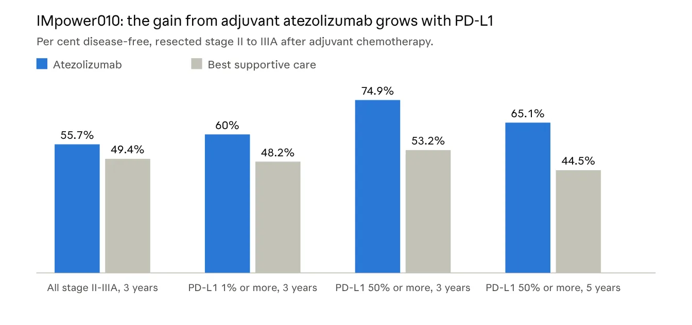
Disease-free survival in stage II to IIIA with PD-L1 of 1% or more: HR 0.66 (0.50 to 0.88), as in your notes.
All stage II to IIIA: HR 0.79. The intention-to-treat population including IB did not cross the boundary.
The benefit is concentrated in PD-L1 of 50% or more (HR about 0.43, with a survival benefit in that group), which is the group the European licence and NICE cover, excluding EGFR and ALK alterations.
PEARLS / KEYNOTE-091
Adjuvant pembrolizumab for up to 18 doses (one year) against placebo after complete resection, stage IB (4 cm or more) to IIIA, adjuvant chemotherapy recommended but not required; 1,177 patients.

Disease-free survival, all patients: median 53.6 against 42.0 months, HR 0.76.
PD-L1 of 50% or more: HR 0.82, not significant. This is the opposite of IMpower010 and has no agreed explanation; an unusually good placebo arm in that subgroup is the usual answer.
The benefit was seen in patients who had received adjuvant chemotherapy, and the licence is restricted to them.
KEYNOTE-671, update to the slides
Slide 31 says overall survival did not differ. That was the first interim analysis. The second interim analysis, published in the Lancet in 2024, showed a significant survival benefit (HR 0.72; 36-month survival 71% against 64%). The detail is in the KEYNOTE-671 section above.
Surgical perspective and Triple M
Failure to reach surgery because of progression in CheckMate 816: 5% for stage IB to II and 8% for stage III with nivolumab, against 2% and 14% with chemotherapy alone (your slide notes). Rates in AEGEAN and KEYNOTE-671 were similar, and no higher than with historical induction chemotherapy.
Operative difficulty comes from hilar and nodal fibrosis, loss of tissue planes and hypervascularity; conversion from VATS is the practical consequence. The real-world series are in the tab Thoracic 2.
Triple M: concurrent myocarditis, myositis and myasthenia after checkpoint inhibition, usually within the first one to two months and with high mortality. Test troponin, creatine kinase, transaminases and acetylcholine receptor antibodies; ECG, echo and cardiac MRI; EMG. Stop the drug, give high-dose methylprednisolone early, add immunoglobulin or plasma exchange for the myasthenic component, and escalate to mycophenolate, abatacept, tocilizumab or rituximab if there is no response. A patient with new ptosis, proximal weakness or a troponin rise after neoadjuvant chemo-immunotherapy should not go to theatre until this is excluded.
Status: the slide figures were checked against what I hold of the publications. The ADAURA five-year hazard ratios and the eight-year analysis were confirmed on 17 November 2026 (NEJM abstract, eight-year report); the journal page for the eight-year paper would not open, so its subgroup figures are not here. ADAURA2 design is from the trial report and registry. The IMpower010 disease-free survival rates in the chart and the KEYNOTE-091 medians were confirmed the same day; the CheckMate 816 PD-L1 hazard ratios and the Triple M management are from memory. PubMed record 36872181 would not open and I could not identify the paper, so nothing from it is included.
NHS England systemic therapy map (course pack, 18 November 2026)
3 parts
This replaces the earlier NICE list, which stopped at May 2024. Trial, licence and NICE populations are not interchangeable: record the staging edition, treatment timing, biomarkers and prior treatment, and use the live recommendation and local commissioning route. Appraisal titles and dates marked checked were confirmed today on the NICE lung cancer products page; eligibility wording is from the pack.
Resectable NSCLC
| Timing | Appraisal | Drug and population | Status |
|---|---|---|---|
| Neoadjuvant only | TA876 | Nivolumab with chemotherapy; resectable tumours 4 cm or more, or node-positive. Does not imply continuation after surgery | Pack; named as standard care in the TA1017 committee discussion |
| Perioperative | TA1017 | Pembrolizumab with platinum chemotherapy before surgery, then alone after; resectable disease at high risk of recurrence | Checked: published 20 November 2024 |
| Perioperative | TA1030 | Durvalumab with chemotherapy before surgery, then alone after; 4 cm or more or node-positive, no EGFR mutation or ALK rearrangement | Checked: published 15 January 2025 |
| Perioperative | TA1127 | Nivolumab, same population as TA1030 | Pack only; not found in my search |
| Adjuvant, ALK | TA1014 | Alectinib after complete resection, ALK-positive stage IB (4 cm or more) to IIIA, 7th edition staging. ALINA compared alectinib with platinum chemotherapy, not chemotherapy followed by alectinib | Pack; the appraisal is listed by NICE but I did not open it |
| Adjuvant, EGFR | TA1043 (replaces TA761) | Osimertinib after complete resection, stage IB to IIIA, exon 19 deletion or exon 21 L858R. The decision on adjuvant chemotherapy is separate | Checked: published 26 February 2025 |
| Adjuvant | TA1037 | Pembrolizumab after complete resection and platinum chemotherapy, high recurrence risk | Checked: published 5 February 2025 |
| Adjuvant | TA1071 (replaces TA823) | Atezolizumab after complete resection and platinum chemotherapy, PD-L1 on 50% or more of tumour cells, no EGFR or ALK alteration | Checked: published 19 June 2025 |
Do not carry one PD-L1 cut-off across TA1037 and TA1071.
LACE supports a discussion of postoperative cisplatin-based chemotherapy. It is not evidence for neoadjuvant chemotherapy.
After definitive chemoradiotherapy (not perioperative)
| Setting | Appraisal | Drug and population | Status |
|---|---|---|---|
| Unresectable stage III NSCLC | TA798 | Durvalumab; PD-L1 1% or more, no progression after concurrent platinum chemoradiotherapy | Pack |
| Unresectable stage III NSCLC, EGFR | TA1156 | Osimertinib; exon 19 deletion or L858R, no progression during or after platinum chemoradiotherapy | Checked: TA1156 recommendations, published 21 May 2026 |
| Limited-stage small-cell | TA1099 | Durvalumab; no progression after platinum chemoradiotherapy | Checked: published 1 October 2025 |
| Extensive-stage small-cell | TA638, TA1041 | First-line chemo-immunotherapy; a separate pathway | TA1041 (durvalumab with etoposide and platinum) checked: published 19 February 2025; TA638 from the pack |
How this changes the earlier notes in this tab
Where the notes above cite TA761 for adjuvant osimertinib or TA823 for adjuvant atezolizumab, read TA1043 and TA1071.
Perioperative pembrolizumab and durvalumab are now routine NICE options alongside neoadjuvant nivolumab; choose by the population each appraisal covers.
Consolidation osimertinib after chemoradiotherapy (LAURA) now has a NICE recommendation.
NICE treatment pathways: systemic anticancer therapy for advanced NSCLC (November 2026)
Added 20 November 2026 from National Institute for Health and Care Excellence. Systemic anticancer therapy for advanced non-small-cell lung cancer: treatment options (interactive PDF of all treatment pathways for squamous and non-squamous advanced NSCLC). NICE, November 2026. ISBN 978-1-4731-9805-0. Read in full (pages 1 to 24). The pages are flow diagrams; all 24 were rendered and read as images. The trees are distilled below into first-line options and typical sequences; for every branch see the source.
How the pathways work
- Every pathway starts: base all treatment choices on shared decision making; think about clinical trial enrolment at each step.
- Dark (grey) boxes = funded through Managed Access (Cancer Drugs Fund). Blue dotted arrows = sequences allowed by NHS England policy rather than by a technology appraisal (TA).
- NICE directs readers to the lung cancer guideline, individual TAs and the NHS England website for eligibility and patient access schemes.
- Index (page 1): squamous pathways for no targetable mutation, RET fusion, KRAS G12C, METex14 skipping and BRAF V600, each split by PD-L1 < 50% or ≥ 50% (pages 2 to 11). Non-squamous pathways for the same five groups split by PD-L1 (pages 12 to 21), plus ROS1 (page 22), EGFR-TK (page 23) and ALK (page 24), which are not split by PD-L1.
Building blocks that recur in every tree
| Block | Contents |
|---|---|
| Second-line immunotherapy after chemotherapy | Pembrolizumab if PD-L1 > 1% (TA428); atezolizumab any PD-L1 0 to 100% (TA520); nivolumab: squamous any PD-L1 (TA655), non-squamous PD-L1 > 1% (TA713) |
| Docetaxel | Before or after second-line immunotherapy, and after first-line chemo-immunotherapy |
| Docetaxel plus nintedanib (TA347) | Non-squamous only. Directly after first-line chemotherapy; after immunotherapy or chemo-immunotherapy it is reached by an NHSE policy arrow |
| Non-squamous chemotherapy | Platinum doublet then pemetrexed maintenance (TA190); pemetrexed plus cisplatin (TA181) then pemetrexed maintenance (TA402); pemetrexed plus carboplatin then pemetrexed maintenance (NHSE policy, no TA) |
| First-line chemo-immunotherapy, squamous | Pembrolizumab plus carboplatin and paclitaxel (TA770); cemiplimab plus platinum-based chemotherapy (PD-L1 > 1%, TA1165) |
| First-line chemo-immunotherapy, non-squamous | Pembrolizumab plus pemetrexed and platinum (TA683); cemiplimab plus platinum chemotherapy (TA1165); atezolizumab plus bevacizumab, carboplatin and paclitaxel (ABCP, TA584; PD-L1 < 50% trees, and after targeted therapy in oncogene trees) |
| First-line single-agent immunotherapy, PD-L1 ≥ 50% | Pembrolizumab (TA531); atezolizumab (TA705) |
No targetable mutation
| Histology, PD-L1 | First-line options | Usual next steps |
|---|---|---|
| Squamous, < 50% | Platinum doublet; pembrolizumab + carboplatin + paclitaxel (TA770); cemiplimab + platinum chemo if PD-L1 > 1% (TA1165) | After doublet: immunotherapy (TA428/TA520/TA655) then docetaxel, or docetaxel then immunotherapy. After chemo-IO: docetaxel |
| Squamous, ≥ 50% | Pembrolizumab (TA531) or atezolizumab (TA705). TA770 or TA1165 only if urgent clinical intervention is needed | After single-agent IO: platinum doublet then docetaxel. After chemo-IO: docetaxel |
| Non-squamous, < 50% | Platinum doublet, pemetrexed + cisplatin or pemetrexed + carboplatin (each with maintenance); ABCP (TA584); pembrolizumab + pemetrexed + platinum (TA683); cemiplimab + platinum chemo if PD-L1 > 1% (TA1165) | After chemo: pembrolizumab (TA428), atezolizumab (TA520), nivolumab PD-L1 > 1% (TA713), docetaxel, or docetaxel + nintedanib; then docetaxel or docetaxel + nintedanib. After chemo-IO: docetaxel or docetaxel + nintedanib |
| Non-squamous, ≥ 50% | Pembrolizumab + pemetrexed + platinum (TA683); cemiplimab + platinum chemo (TA1165); pembrolizumab (TA531); atezolizumab (TA705) | After single-agent IO: platinum doublet or pemetrexed + carboplatin (pemetrexed + cisplatin by NHSE policy), with maintenance, then docetaxel or docetaxel + nintedanib. After chemo-IO: docetaxel or docetaxel + nintedanib |
Oncogene-driven disease (squamous and non-squamous trees)
In each of these trees the chemotherapy and immunotherapy options above are still offered; the targeted drug is added either first-line or at a later line.
| Alteration | Targeted drug and position | Notes from the trees |
|---|---|---|
| RET fusion | Selpercatinib first-line (TA911); selpercatinib after prior therapy (TA1042) | After first-line selpercatinib: platinum doublet (NHSE policy) then immunotherapy or docetaxel (non-squamous also ABCP by NHSE policy). TA1042 can follow first-line chemo, chemo-IO or single-agent IO, or follow docetaxel (some routes by NHSE policy) |
| KRAS G12C | Sotorasib (TA781), Managed Access (CDF), only after prior therapy; no first-line targeted option | Sotorasib can follow platinum doublet, chemo-IO, single-agent IO, immunotherapy, or docetaxel (some routes by NHSE policy). PD-L1 ≥ 50%: after pembrolizumab or atezolizumab, either platinum doublet or sotorasib |
| METex14 skipping | Tepotinib (TA789) first-line and at later lines | After first-line tepotinib: platinum doublet (NHSE policy) then immunotherapy or docetaxel (non-squamous also ABCP by NHSE policy). Later-line tepotinib follows chemo, chemo-IO, IO or docetaxel |
| BRAF V600 | Dabrafenib + trametinib (TA898) or encorafenib + binimetinib (TA1150), first-line only | Then platinum doublet by NHSE policy (non-squamous: also pemetrexed-based chemo or ABCP by NHSE policy), then immunotherapy or docetaxel |
| ROS1 (non-squamous) | Crizotinib (TA1021) or entrectinib (TA643) first-line | Then platinum doublet or pemetrexed + carboplatin (pemetrexed + cisplatin and ABCP by NHSE policy), then immunotherapy (TA428/TA520/TA713), docetaxel or docetaxel + nintedanib |
| EGFR-TK (non-squamous) | See next table | |
| ALK (non-squamous) | See table below |
EGFR-TK mutation positive (non-squamous)
| First line | Then |
|---|---|
| Afatinib (TA310), dacomitinib (TA595), erlotinib (TA258) or gefitinib (TA192) | T790M positive: osimertinib (TA653); T790M negative: chemotherapy |
| Osimertinib (TA654) | Chemotherapy |
| Exon 19 deletion or exon 21 substitution: osimertinib with pemetrexed and platinum chemotherapy (TA1060), or amivantamab with lazertinib (TA1122) | Chemotherapy |
| Exon 20 mutation: amivantamab with carboplatin and pemetrexed (TA1158), Managed Access (CDF) | Chemotherapy |
| Platinum doublet | Afatinib (TA310) or erlotinib (TA374), then immunotherapy or docetaxel |
"Chemotherapy" after a TKI = platinum doublet or pemetrexed-based doublet with maintenance, or ABCP (TA584); then pembrolizumab (TA428), atezolizumab (TA520), nivolumab PD-L1 > 1% (TA713), docetaxel or docetaxel + nintedanib (TA347).
ALK positive (non-squamous)
| First line | Second line | Then |
|---|---|---|
| Lorlatinib (TA1103) | Chemotherapy | Immunotherapy or docetaxel |
| Alectinib (TA536) or ceritinib (TA500) | Lorlatinib (TA628) | Chemotherapy |
| Brigatinib (TA670) | Lorlatinib (TA628) by NHSE policy | Chemotherapy |
| Crizotinib (TA406) | Brigatinib (TA571) or ceritinib (TA395) | Lorlatinib (TA628), then chemotherapy |
| Platinum doublet | Crizotinib (TA422), then brigatinib (TA571) or ceritinib (TA395); or brigatinib (TA670) | Immunotherapy or docetaxel |
Points worth remembering
- PD-L1 50% splits first-line choice in squamous and non-squamous disease without a driver: single-agent pembrolizumab or atezolizumab is an option only at ≥ 50%; in squamous ≥ 50% disease chemo-immunotherapy is reserved for when urgent clinical intervention is needed.
- Second-line pembrolizumab (TA428) and cemiplimab with chemotherapy (TA1165) need PD-L1 > 1%; atezolizumab (TA520) is any PD-L1; nivolumab is any PD-L1 in squamous (TA655) but PD-L1 > 1% in non-squamous (TA713).
- Nintedanib with docetaxel and pemetrexed-based regimens appear only in non-squamous trees.
- Two Cancer Drugs Fund (Managed Access) entries: sotorasib (KRAS G12C) and amivantamab with carboplatin and pemetrexed (EGFR exon 20).
- Page 19 (non-squamous, METex14, PD-L1 ≥ 50%) shows a second "pembrolizumab and pemetrexed and platinum chemotherapy (TA683)" box below the first-line chemo-immunotherapy boxes, leading on to docetaxel, docetaxel + nintedanib or tepotinib; this looks like a drawing quirk and is reported as printed.
- Drugs appear under two TA numbers depending on line: selpercatinib TA911 (first-line) vs TA1042 (later); lorlatinib TA1103 (first-line) vs TA628 (after ALK TKI); brigatinib TA670 vs TA571; crizotinib TA406 vs TA422; erlotinib TA258 (first-line) vs TA374 (after chemotherapy); osimertinib TA654 (first-line) vs TA653 (T790M).
Targeted therapy and immunotherapy trials in NSCLC: teaching presentation
Added 20 November 2026 from "Role of Targeted Therapy and Immunotherapy in Lung Cancer: Review of Important Trials", teaching presentation by T. Mangel, ST2 cardiothoracic trainee (Thoracic_presentation__final.pptx, 35 slides). Read in full (slides 1 to 35, text and speaker notes; every picture slide viewed, including the Kaplan-Meier curves and forest plots, from which some figures below are taken). Teaching slides, not a guideline. The speaker notes on slides 23, 27 and 29 repeat the CheckMate 816 notes and are ignored there. The KEYNOTE-671 overall survival curve (slide 32) is cropped and its numbers could not be read. The 9th edition stage table on slide 2 is written up in Thoracic 16.
Background (slides 2 and 3)
- Speaker note: up to half of NSCLC presents as locally advanced or stage III; 5-year survival in that group ranges 12 to 41%.
- Histology figure: small cell about 10 to 15%; adenocarcinoma about 40% (includes MIA and AIS); squamous about 25 to 30% (proximal bronchi); large cell undifferentiated about 10 to 15%.
| Checkpoint target | Drugs named |
|---|---|
| PD-1 | Cemiplimab, nivolumab, pembrolizumab |
| CTLA-4 | Ipilimumab |
| PD-L1 | Avelumab (and atezolizumab, durvalumab later in the deck) |
Checkpoint inhibitors block inhibitory pathways that tumour cells exploit to evade the immune system.
Drugs (slides 5, 12, 19, 24, 28)
| Drug | Class as stated | Use in the deck |
|---|---|---|
| Osimertinib | Third-generation oral EGFR tyrosine kinase inhibitor; acts on Del19, T790M, L858R | Adjuvant (ADAURA); first line in advanced EGFR-positive NSCLC |
| Durvalumab | Human IgG1 anti-PD-L1; blocks PD-L1 binding to PD-1 and CD80 | IV every 2 weeks for 1 year after CRT (PACIFIC) |
| Nivolumab | Anti-PD-1; reactivates existing anti-tumour T cells | Neoadjuvant with chemo (CheckMate 816) |
| Atezolizumab | Anti-PD-L1 | Adjuvant after chemo (IMpower010) |
| Pembrolizumab | Anti-PD-1 | Adjuvant (PEARLS/KEYNOTE-091); perioperative (KEYNOTE-671) |
ADAURA: adjuvant osimertinib (slides 4 to 10)
| Item | Content |
|---|---|
| Design | RCT, completely resected EGFR-mutated non-squamous NSCLC, stage IB to IIIA; osimertinib vs placebo for 3 years, with or without prior adjuvant chemo |
| Numbers | 682 patients; 339 osimertinib vs 343 placebo (IB to IIIA population) |
| Primary end point | DFS in stage II to IIIA |
| Teaching scenario | Lower lobectomy for adenocarcinoma T2N1M0 R0; MDT plan adjuvant chemo plus osimertinib |
| Outcome | Stage II to IIIA | Stage IB to IIIA (all) |
|---|---|---|
| Recurrence or death at 2 years | 11% vs 55% | 11% vs 46% |
| DFS 2 years | 90% vs 44% | 89% vs 52% |
| DFS 4 years | 70% vs 29% | 73% vs 38% |
| 5-year OS | 85% (79 to 89) vs 73% (66 to 78) | 88% (83 to 91) vs 78% (73 to 82) |
| OS hazard ratio | 0.49 (95.03% CI 0.33 to 0.73), p<0.001 | 0.49 (95.03% CI 0.34 to 0.70), p<0.001 |
By stage (speaker notes for DFS; figures for OS)
| Stage | DFS 2 years | DFS 4 years | 5-year OS | OS HR (95% CI) |
|---|---|---|---|---|
| IB | about 88% vs 71% | 80% vs 60% | 94% vs 88% | 0.44 (0.17 to 1.02) |
| II | about 91% vs 56% | 75% vs 43% | 85% vs 78% | 0.63 (0.34 to 1.12) |
| IIIA | about 88% vs 32% | 66% vs 16% | 85% vs 67% | 0.37 (0.20 to 0.64) |
- OS with prior adjuvant chemo: 87% vs 77%, HR 0.49 (0.30 to 0.79). Without chemo: 88% vs 79%, HR 0.47 (0.25 to 0.83).
- Time to first subsequent treatment or death: not reached vs 34.7 months, HR 0.28 (0.22 to 0.35).
- Subgroup OS hazard ratios ranged 0.33 to 0.68; benefit seen regardless of stage, EGFR mutation type, race and adjuvant chemo.
- Median OS follow-up 60.4 months (osimertinib) and 59.4 months (placebo).
- Fewer locoregional and distant recurrences and less CNS recurrence or death with osimertinib.
- Interstitial lung disease 3% vs 0%.
- Benefit over placebo grew with stage.
PACIFIC: durvalumab after chemoradiotherapy (slides 11 to 17)
| Item | Content |
|---|---|
| Design | RCT, unresectable stage III NSCLC after ≥2 cycles platinum chemo with definitive radiotherapy; durvalumab vs placebo started within 42 days of the last radiotherapy dose |
| Numbers | Slide text: 473 vs 236; figures: 476 vs 237 |
| Inclusion | PD-L1 expression not required |
| Population notes | 53% non-squamous stage IIIA; 26% had induction chemo; re-treatment allowed after relapse following stable disease (7% re-treated; average time to second progression 4 years) |
| Teaching scenario | 60-year-old woman, stage III, good response to CRT, PD-L1 >25%; oncologist asks MDT to approve durvalumab |
Primary analysis
| Outcome | Durvalumab | Placebo | Effect |
|---|---|---|---|
| Median PFS | 16.8 months | 5.6 months | HR 0.52 (0.42 to 0.65), p<0.001 |
| 12-month PFS | 56% | 35% | – |
| 18-month PFS | 44% | 27% | (speaker notes say 35%; the slide and figure give 44.2%) |
| Median time to death or distant metastasis | 28.3 months (figure; slide text 23) | 16.2 months (slide text 15) | HR 0.53 (0.41 to 0.68) |
| 24-month OS | 66.3% | 55.6% | HR for death 0.68 (99.73% CI 0.47 to 0.997), p=0.0025 |
| New lesions | 20% | 32% | – |
| Brain metastases | 6% | 11% | – |
| Response | 28% | 16% | – |
| Progression | 17% | 28% | – |
- PFS benefit regardless of PD-L1; larger in non-smokers (HR 0.29), under 65 (0.43) and non-squamous (0.45); EGFR-positive subgroup HR 0.76 (0.35 to 1.64).
- More immune-mediated adverse events needing glucocorticoids with durvalumab.
5-year update
| Outcome | Durvalumab | Placebo |
|---|---|---|
| Median OS | 47.5 months | 29.1 months |
| 5-year OS | 42.9% | 33.4% |
| OS HR | 0.72 (0.59 to 0.89): 28% lower risk of death | – |
| Median PFS | 16.9 months | 5.6 months |
| 1-year / 5-year PFS | 55.7% / 33.1% | 34.5% / 19.0% |
| PFS HR | 0.55 (0.45 to 0.68): 45% lower risk of progression or death | – |
| Deaths | 56% (264/476) | 65% (155/237) |
- PD-L1 ≥25%: OS HR 0.52, 5-year OS 53.6% vs 35.3%; PFS HR 0.44. PD-L1 ≥1%: OS HR 0.61, 5-year OS 50.1% vs 36.9%; PFS HR 0.47.
- No OS benefit where PD-L1 <1% (speaker notes).
- About 40% lower risk of death or distant metastasis with durvalumab (speaker notes).
- Under 65 and non-squamous tumour were favourable prognostic factors for OS; non-squamous for PFS.
CheckMate 816: neoadjuvant nivolumab plus chemotherapy (slides 18 to 22)
| Item | Content |
|---|---|
| Design | RCT, resectable NSCLC stage IB to IIIA; neoadjuvant nivolumab + chemo vs chemo alone |
| Numbers | 358 (179 per arm in the figures) |
| Population | Mostly stage IIIA; squamous and non-squamous equal; PD-1 (as written) status required before surgery |
| Sequence | Surgery within 6 weeks, then adjuvant treatment if needed |
| Outcome | Nivolumab + chemo | Chemo alone |
|---|---|---|
| Median EFS | 31.6 months (slide text 32) | 20.8 months (slide text 21) |
| EFS HR | 0.63 (97.38% CI 0.43 to 0.91), p=0.005 | – |
| EFS 1 / 2 years | 76.1% / 63.8% | 63.4% / 45.3% |
| Alive without progression or recurrence at 2 years | 64% | 45% |
| pCR | 24% | 2% |
| OS (interim figure) | 1 year 90.3%, 2 years 82.7% | 90.1%, 70.6% |
| OS HR | 0.57 (99.67% CI 0.30 to 1.07), p=0.008 | – |
| R0 resection | about 83% | about 78% |
| Radiological downstaging | 31% | 24% |
- Fewer pneumonectomies with nivolumab + chemo.
- Slide 22 says benefit was greater with stage IIIA, PD-L1 <1%, non-squamous and carboplatin. (The nodule deck in Thoracic 1 gives the opposite PD-L1 pattern: HR 0.51 for ≥1%, 0.89 for <1%.)
- Approved in the USA as neoadjuvant treatment on the basis of this trial.
IMpower010: adjuvant atezolizumab (slides 23 to 26)
| Item | Content |
|---|---|
| Design | Randomised multicentre; atezolizumab vs best supportive care after adjuvant platinum chemo, completely resected stage IB (>4 cm) to IIIA |
| Primary end points | DFS in stage II to IIIA PD-L1 ≥1%; DFS in all stage II to IIIA |
| DFS | Improved in stage II to IIIA; most marked with PD-L1 ≥1%: HR 0.66 (0.50 to 0.88), p=0.004 |
| OS population (figures) | Atezolizumab vs BSC | HR (95% CI) |
|---|---|---|
| II to IIIA, PD-L1 ≥1% (248 vs 228) | 4-year OS 79.3% vs 70.9% | 0.71 (0.49 to 1.03), p=0.067 |
| II to IIIA, PD-L1 ≥50% incl. EGFR/ALK (115 vs 114) | 4-year OS 85.2% vs 70.9% | 0.43 (0.24 to 0.78), p=0.0045 |
| II to IIIA, PD-L1 ≥50% excl. EGFR/ALK (106 vs 103) | 4-year OS 84.8% vs 70.0% | 0.42 (0.23 to 0.78), p=0.005 |
- Surgery subgroup, PD-L1 ≥1%: lobectomy HR 0.63 (0.40 to 0.99); pneumonectomy HR 1.02 (0.52 to 1.97).
PEARLS/KEYNOTE-091: adjuvant pembrolizumab (slides 27 to 29)
- Randomised triple-blind; completely resected stage IB (>4 cm), II or IIIA, any histology or PD-L1.
- Primary end points: DFS in the overall population and in PD-L1 TPS ≥50%.
- Pembrolizumab significantly improved DFS vs placebo in the PD-L1-unselected population, with no new safety signals.
- Take-away: an option after complete resection (and adjuvant chemo when recommended) regardless of PD-L1.
KEYNOTE-671: perioperative pembrolizumab (slides 30 to 32)
| Item | Content |
|---|---|
| Design | Randomised double-blind phase 3; neoadjuvant pembrolizumab + cisplatin chemo, surgery, adjuvant pembrolizumab vs neoadjuvant chemo + placebo and surgery |
| Population | Resectable stage II, IIIA or IIIB (N2); 397 vs 400 |
| Dual primary end points | EFS (time to local progression precluding surgery, unresectable tumour, progression or recurrence, or death) and OS |
| Secondary | Major pathological response, pCR, safety |
| Result (figures) | Value |
|---|---|
| EFS HR, all | 0.58 (0.46 to 0.72) |
| PD-L1 <1% / 1 to 49% / ≥50% | 0.77 (0.55 to 1.07) / 0.51 (0.34 to 0.75) / 0.42 (0.28 to 0.65) |
| Stage II / III | 0.65 (0.42 to 1.01) / 0.54 (0.42 to 0.70) |
| EGFR mutation | 0.09 (0.01 to 0.74), 1/14 vs 10/19 events |
| Major pathological response | 120/397 vs 44/400 |
| pCR | 72/397 vs 16/400 |
| EFS with / without MPR | HR 0.54 (0.24 to 1.22) / 0.73 (0.58 to 0.92) |
| EFS with / without pCR | HR 0.33 (0.09 to 1.22) / 0.69 (0.55 to 0.85) |
- EFS, MPR and pCR improved; slide 31 says OS did not differ significantly.
- Neoadjuvant pembrolizumab did not reduce chemo exposure, change surgical approach, prevent surgery or increase surgical complications.
Surgical perspective on neoadjuvant chemoimmunotherapy (slide 33)
- Possible delay or failure to reach surgery through progression or toxicity.
- Treatment-induced inflammation, fibrosis and hypervascularity; conversion from VATS to open.
- No uniform definition of resectability, or of how to handle bulky tumours or those near vital structures.
- Speaker notes: historical progression during induction chemo or chemoradiotherapy did not exceed 10% in higher-stage resectable disease such as IIIA. In CheckMate 816, progression preventing surgery was 5% (IB to II) and 8% (III) with nivolumab + chemo vs 2% and 14% with chemo alone; AEGEAN and KEYNOTE-671 showed similar trends.
Triple M syndrome (slide 34)
| Item | Content |
|---|---|
| Definition | Concurrent myocarditis, myositis and myasthenia gravis after checkpoint inhibitors |
| Figure data | Early onset (median after 1 dose); incidence <0.1%; mortality 57% |
| Myasthenic features | Fatigable weakness, ophthalmoparesis and ptosis, bulbar involvement, respiratory failure |
| Myositis features | Myalgia without fatigability, limb-girdle proximal weakness |
| Tests | Troponin, transaminases, CK, AChR antibodies; echo, cardiac MRI, EMG/NCS |
| Treatment | Corticosteroids, IVIG, plasmapheresis, mycophenolate, targeted agents (rituximab, tocilizumab) |
Approved perioperative immunotherapy indications, EMA and FDA, January 2024 (slide 35)
| Drug | EMA (8th edition staging) | FDA (8th edition staging) |
|---|---|---|
| Adjuvant atezolizumab | IIB to IIIA, select IIIB; PD-L1 ≥50%; after platinum chemo; EGFR/ALK negative | IIB to IIIA, select IIIB; PD-L1 ≥1%; after platinum chemo |
| Adjuvant pembrolizumab | IIA to IIIA, select IIIB; any PD-L1; after platinum chemo (study did not mandate chemo) | Same |
| Adjuvant osimertinib | IB to IIIA, select IIIB; EGFR-mutation positive | After resection, EGFR-mutation positive |
| Neoadjuvant nivolumab | IIB to IIIA, select IIIB; PD-L1 ≥1% | ≥4 cm or node positive (II to III); any PD-L1 |
| Perioperative pembrolizumab | Not listed | ≥4 cm or node positive (II to III); any PD-L1 |
"Select IIIB" in the 8th edition means T3N2 and T4 (size) N2. The slide also gives 7th edition and proposed 9th edition columns; under the 7th edition, EMA adjuvant atezolizumab was II (≥5 cm) to IIIA and adjuvant osimertinib IB (≥3 cm) to IIIA.
FRCS Atlas teaching notes: perioperative and molecularly selected NSCLC therapy
Added 20 November 2026 from "FRCS Atlas: single-PDF study compilation" (19 November 2026), thoracic teaching notes, page 6. Read in full (all 16 note pages). Short teaching notes for private study, not a guideline.
Perioperative NSCLC therapy and recurrence
- CheckMate 816 final 5-year survival: 65.4% vs 55.0%, neoadjuvant nivolumab plus chemo vs chemo alone.
- It did not test adding postoperative treatment to the same neoadjuvant regimen.
- Pathological response in phase II NeoCOAST-2 is not a survival result.
- A later lesion may be relapse, a second primary or benign; reassess.
Resected NSCLC and molecular selection
- Separate completeness of resection, margins, biomarker and prior treatment.
- ADAURA showed an OS benefit in resected EGFR-mutated disease.
- ALINA (ALK-positive) established a DFS result, not a proven mortality benefit.
- Neither trial addresses a positive margin.
Perioperative systemic therapy for NSCLC: additions from the FRCS Atlas HTML builds
Added 20 November 2026 after comparing the FRCS Atlas HTML builds (index_5 "Perioperative NSCLC systemic therapy and recurrence"; 53-chapter merger ch. 34, section 2 and worked case; 42-chapter merger ch. 26, section 3; Consolidated ch. 33) with this tab. Only points not already in the ST4 course are listed; each says whether it was checked against a primary source.
CheckMate 816 (complete response, event-free and 5-year survival with HR 0.72), KEYNOTE-671, AEGEAN, CheckMate 77T, ADAURA, ALINA and NeoCOAST-2 are already covered. Three points are not.
| Point | Detail | Status |
|---|---|---|
| MDT-BRIDGE (phase II, Nature Medicine 2026) | 74.6% of the enrolled cohort, which included borderline resectable patients, went on to resection. The 96.2% R0 rate refers only to those who had surgery, not to all enrolled. Quote the denominator | FRCS Atlas draft; not checked against a primary source |
| 2024 JAMA Network Open systematic review of perioperative chemo-immunotherapy | Supports response and event-free survival signals across the trials, but cannot replace the missing head-to-head trial of neoadjuvant-only against neoadjuvant plus adjuvant immunotherapy | FRCS Atlas draft; not checked against a primary source |
| Why EGFR- or ALK-driven tumours skip neoadjuvant immunotherapy | The tab gives poor response. The Atlas adds a second reason: more toxicity, especially pneumonitis, when a tyrosine kinase inhibitor follows immunotherapy. Known EGFR and ALK alterations were excluded from CheckMate 816 | Exclusion checked: Forde et al., N Engl J Med 2022;386:1973-85, p. 1974. Toxicity reason: FRCS Atlas draft; not checked |
Viva use: when a phase II platform reports a high pathological complete response, the Atlas answer is to ask for an adequately controlled comparison, patient-important outcomes, toxicity and UK approval before calling it a new standard.
Thoracic 5: small-cell, mediastinum and endocrine
Small-cell lung cancer by stage, anterior mediastinal lesions, thymoma and myasthenia, and tumours that cause Cushing syndrome.
Small-cell lung cancer: treatment by stage
7 parts · 3 drawings
Surgery has a place only in T1–2 N0 disease after the mediastinum has been proved negative; everything else that is confined to the chest is treated with concurrent cisplatin and etoposide with radiotherapy, now followed by durvalumab.
As taught in the session
T1 and T2 disease: the group in which surgery is considered.
Systemic treatment: cisplatin and etoposide.
Durvalumab as consolidation.
By stage
| Stage | Treatment | Notes |
|---|---|---|
| T1–2 N0 M0 (about 5% of presentations) | Lobectomy with systematic node dissection, then four cycles of adjuvant platinum and etoposide | Only after PET-CT, brain MRI and invasive mediastinal staging are negative. Add mediastinal radiotherapy if nodes are positive at surgery. If unfit for or declining surgery: chemoradiotherapy, or SABR with chemotherapy |
| Limited stage, not resectable (T any, N any, M0, treatable in one radiotherapy field) | Four cycles of cisplatin and etoposide with concurrent thoracic radiotherapy starting with cycle 1 or 2; then durvalumab for up to 24 months if there is no progression | Carboplatin if cisplatin is not tolerated |
| Extensive stage | Carboplatin and etoposide with atezolizumab or durvalumab, then immunotherapy maintenance | NICE TA638 covers atezolizumab; durvalumab in this setting was a terminated appraisal (TA662) in the list above |
| Relapse | Re-challenge with platinum and etoposide if the interval is long; topotecan or other second-line agents if short | Newer agents from memory: lurbinectedin, tarlatamab |
ESMO guideline (Dingemans and colleagues, Annals of Oncology 2021)
As taught: brain imaging and staging of the mediastinum before surgery, on level IV evidence. Read from the guideline text on 17 November 2026; I read the first two-thirds of the page, which covered all the recommendations below. Each bracket gives the level of evidence, then the grade of recommendation.
| Topic | Recommendation | Level, grade |
|---|---|---|
| Before surgery | Pathological mediastinal staging is required in surgical candidates | IV, A |
| Brain imaging in localised disease, MRI preferred, CT if MRI is not available | III, A | |
| Contrast CT of the chest and abdomen | IV, A | |
| FDG PET-CT optional in limited-stage disease; confirm pathologically any PET finding that would change treatment | II, C | |
| Surgery | May be considered for cT1–2 N0 within multimodal treatment, after a multidisciplinary decision | III, B |
| Aim for complete (R0) resection | III, A | |
| Sublobar resection not recommended | V, E | |
| Systematic nodal dissection | IV, A | |
| After surgery | Adjuvant chemotherapy | IV, A |
| For R1–R2 resection or N2 nodes: chemotherapy with radiotherapy, preferably concurrent | IV, A | |
| Prophylactic cranial irradiation in stage I–II: role not well defined, shared decision | V, C | |
| Limited stage | Concurrent chemoradiotherapy for T1–4 N0–3 M0 with performance status 0–1 | I, A |
| Cisplatin with etoposide preferred; carboplatin if cisplatin is contraindicated | I, A; II, A | |
| 45 Gy twice daily in 30 fractions preferred; 66 Gy once daily in 33 fractions only if twice daily is not feasible | I, A | |
| Start radiotherapy with cycle 1 or 2 | II, A | |
| Prophylactic cranial irradiation, 25 Gy in 10 fractions, after a response at performance status 0–1 | I, A | |
| Extensive stage | Atezolizumab or durvalumab with four cycles of platinum and etoposide | I, A |
| Cranial irradiation may be omitted if MRI is clear and regular MRI follow-up is possible | II, B |
How to read the brackets (from memory of the ESMO scheme, not in the text I read): level I is randomised trial or meta-analysis evidence, IV is retrospective cohort or case-control data, V is case series or expert opinion; grade A is strongly recommended, E is never recommended.
So the surgical recommendations are strong in wording but rest on weak evidence: mediastinal staging, node dissection and adjuvant chemotherapy are all level IV, grade A, and surgery itself is only III, B.
The guideline predates ADRIATIC, so it does not include durvalumab after chemoradiotherapy in limited-stage disease.
The guideline text says nothing specific on postoperative radiotherapy for N1 disease.
Radiotherapy
CONVERT (Lancet Oncology 2017): 45 Gy in 30 twice-daily fractions over 19 days against 66 Gy in 33 once-daily fractions over 45 days, both starting on day 22 of cisplatin and etoposide. Median survival 30 against 25 months (HR 1.18, 0.95–1.45, not significant); two-year survival 56% against 51%. Once-daily was not shown to be superior, so twice-daily remains the standard, with once-daily acceptable where twice-daily cannot be delivered.
A secondary analysis of CONVERT found that stage I–II patients treated with chemoradiotherapy lived longer than stage III patients, which is the comparator for any claim that surgery is better in early disease.
Prophylactic cranial irradiation has been standard after a response in limited-stage disease; MRI surveillance is the alternative under study (from memory).

Prophylactic cranial irradiation or MRI surveillance: PRIMALung
PRIMALung, EORTC-1901 (Levy and colleagues, Lung Cancer, December 2024) is a trial design paper, not a result. It tests brain MRI surveillance with or without prophylactic cranial irradiation in small-cell lung cancer of all stages, aiming to show that survival without irradiation is non-inferior and that cognition is better, in the era of immunotherapy. The PubMed page could not be opened on 17 November 2026; this description is from its indexed summary.

| Background | Finding | Checked |
|---|---|---|
| Aupérin meta-analysis, NEJM 1999 | Prophylactic cranial irradiation after complete response improved three-year survival by about 5% and halved brain metastases | From memory |
| Slotman, NEJM 2007 | In extensive-stage disease responding to chemotherapy, irradiation reduced symptomatic brain metastases and improved one-year survival, but brain imaging was not required at entry | From memory |
| Takahashi, Lancet Oncology 2017 | Extensive-stage disease with a clear MRI and MRI surveillance in both arms: irradiation gave no survival benefit | From memory |
| Cost of irradiation | Measurable decline in memory and executive function in a substantial minority, worse over 60; hippocampal avoidance reduces it | From memory |
Why the question is open again: the older evidence predates routine brain MRI at staging and predates immunotherapy, and ADRIATIC stratified by irradiation because practice already varies.
Design points to confirm from the paper: sample size, the non-inferiority margin, MRI schedule and the cognitive endpoint. A parallel North American trial (MAVERICK) asks the same question (from memory).
For the resected stage I patient: brain MRI at staging and surveillance afterwards; irradiation is usually omitted in pathological stage I because the brain relapse rate is low (from memory).
Durvalumab after chemoradiotherapy: ADRIATIC
| Detail | |
|---|---|
| Design | Phase III, double-blind; limited-stage disease without progression after concurrent platinum chemoradiotherapy, performance status 0–1; 730 randomised to durvalumab, durvalumab with tremelimumab, or placebo; stratified by stage (I–II or III) and by prophylactic cranial irradiation |
| Treatment | Durvalumab 1,500 mg every 4 weeks for up to 24 months |
| Reported comparison | Durvalumab (264) against placebo (266) |
| Overall survival | Median 55.9 against 33.4 months (HR 0.73, 0.57–0.93); 57% alive at three years with durvalumab |
| Progression-free survival | Median 16.6 against 9.2 months; 46% against 34% progression-free at two years |
| Safety | Grade 3 or 4 adverse events 24.4% against 24.2%; grade 3 or 4 pneumonitis 3.1% against 2.6% |

Surgery in small-cell cancer: the evidence
The old randomised trials against surgery included few T1–2 N0 patients, and nearly half the operated patients in the 1969 trial had a pneumonectomy by open thoracotomy; they do not apply to peripheral stage I disease.
NCCN recommends surgery with adjuvant chemotherapy for stage I disease only, and names lobectomy as the preferred resection.
Support for surgery is from registry comparisons, not modern trials. Pathological upstaging of clinical stage I is common, which is why invasive mediastinal staging comes first and adjuvant chemotherapy is given to everyone.
The usual way a surgeon meets small-cell cancer is unexpectedly: a resected nodule that proves to be small-cell, or a mixed tumour. Complete the lobectomy and node dissection if not already done, then refer for adjuvant chemotherapy and brain imaging.
Status: ADRIATIC, CONVERT and the NCCN position were confirmed on 17 November 2026 (ADRIATIC, CONVERT, review of surgery in stage I). The extensive-stage and relapse rows, and UK funding of durvalumab in limited-stage disease, were not checked.
Anterior mediastinal lesions: the BTOG diagnostic pathway
5 parts · 1 drawing
The BTOG Thymic Malignancies Special Interest Group pathway (launched 2024, with a companion review in Clinical Radiology) sorts an incidental anterior mediastinal lesion by its imaging features into discharge, MRI surveillance, upfront thymectomy, or biopsy.

Benign-looking lesions are discharged or watched on MRI; a lesion that looks like a low-grade thymoma goes to surgery without a biopsy; one that looks high-grade gets PET-CT and a biopsy first.
Steps
Thymic remnant (younger patient, triangular, straight or concave margins): discharge, no further action.
Otherwise review all previous thoracic imaging.
If not already done, obtain a contrast-enhanced portal venous or delayed phase CT of the thorax and upper abdomen (65 second delay), or MRI of the thymus. Do not make the diagnosis from a low-dose CT or the arterial phase of a CT pulmonary angiogram alone.
Ask about myasthenia gravis. Send routine bloods, immunoglobulins and acetylcholine receptor antibody. Note any acute illness, cancer treatment or connective tissue disease, all of which are associated with thymic enlargement.
The four routes
| Impression | Features | Action |
|---|---|---|
| Thymic hyperplasia | Larger than a remnant; triangular with convex margins; drapes around the heart; fat nodularity; stays on the anterior junction line; prolonged stability | Discharge without follow-up. Thymectomy can be offered if myasthenia is present. If surveillance is thought appropriate, contrast CT or contrast MRI with chemical shift at 6–12 months, MRI preferred in women of child-bearing age |
| Thymic cyst | Low attenuation, fluid-filled, no solid component, non-enhancing | Contrast-enhanced MRI at 1 and 2 years; discharge at 2 years if stable. Contrast CT if MRI expertise or capacity is limited |
| Hyperplasia or cyst, not confident | Contrast MRI with chemical shift imaging; the lesion should be over 2 cm for adequate resolution | |
| Suspected low-grade thymoma | Round with loss of the triangular shape; smooth, well-defined margin; fat plane preserved; non-calcified; enhancing; solid, or cystic with a solid component | Offer minimally invasive thymectomy (VATS or robotic) without preoperative histology; discuss at the monthly thymoma MDT where there is one. If surgery is declined, contrast CT at 1, 2 and 4 years (MRI in women of child-bearing age) and discharge at 4 years if stable |
| Suspected high-grade malignancy | Irregular or blurred margin; loss of the fat plane; calcification; pleural nodules; B symptoms. Differential: lymphoma, thymic carcinoma, sarcoma, high-grade thymoma, germ cell tumour | PET-CT and biopsy, such as percutaneous image-guided biopsy; weekly thoracic oncology MDT |
Concern for thymoma or high-grade malignancy at any point moves the patient to that route.
Evidence behind it
Chemical shift MRI shows microscopic fat in hyperplasia as signal loss on the opposed-phase images; T2-weighted imaging confirms a cyst that looks solid on CT because of proteinaceous content.
A UK single-centre series of simple thymic cysts concluded that extended surveillance may not be needed once the cyst is properly characterised on MRI.
In a lung cancer screening cohort, 74% of lesions under 3 cm stayed stable over two annual rounds; of the 14 that grew, four were thymomas at surgery. Among all 16 resections the benign resection rate was 50%, which is the figure the pathway is trying to bring down.
Surgical points (from memory, not in the pathway text)
No biopsy for a resectable lesion that looks like thymoma: it adds nothing and risks seeding the pleura or the track.
Biopsy when lymphoma or a germ cell tumour is possible, or when the tumour is unresectable and induction treatment is planned. Use a core biopsy; needle cytology cannot type lymphoma.
In a young man with a mediastinal mass, send AFP, beta-hCG and LDH before anything else; a raised AFP or very high hCG makes the diagnosis of a non-seminomatous germ cell tumour without a biopsy.
Operation: complete thymectomy with the tumour, capsule intact, no-touch technique; inspect the pleura and pericardium; convert if the capsule is at risk.
Check acetylcholine receptor antibody before surgery even without symptoms, and optimise myasthenia first.
Status
Confirmed on 17 November 2026 from the BTOG pathway document. I read it through an automated text extraction, in which the headings on the two tumour routes were muddled; I have assigned the smooth, well-defined features to low-grade thymoma and the irregular, invasive features to high-grade malignancy, which is the only reading that fits the actions. Check those two rows against the pathway PDF before teaching from them. Evidence points are from the screening cohort and the thymic cyst series.
Myasthenia gravis and thymoma
7 parts
Every thymoma is resected whether or not the patient has myasthenia, and every patient with generalised antibody-positive myasthenia is considered for thymectomy whether or not there is a thymoma; the two questions overlap but are decided separately.
How the two relate
| Starting from | Proportion | Consequence |
|---|---|---|
| Myasthenia | About 10–15% have a thymoma; about 65% have thymic hyperplasia | Image the mediastinum in every new diagnosis |
| Thymoma | About 30–40% have myasthenia, most often with type B histology | Check acetylcholine receptor antibody before any thymectomy, symptoms or not |
| Thymoma with positive antibody but no symptoms | A minority develop myasthenia after surgery, sometimes years later | Warn the patient and the anaesthetist; follow up with neurology |
Proportions are from memory.
Thymoma-associated myasthenia is almost always acetylcholine receptor antibody positive; titin and ryanodine receptor antibodies in a younger patient point to a thymoma.
Other paraneoplastic conditions: pure red cell aplasia, hypogammaglobulinaemia (Good syndrome, hence immunoglobulins in the BTOG work-up), and less often limbic encephalitis or myositis.
Myasthenia does not worsen thymoma prognosis; it tends to bring earlier diagnosis. Resection improves the myasthenia less reliably than thymectomy does in non-thymomatous disease, and most patients still need immunosuppression.
New or worsening myasthenia after a previous thymoma resection: image for recurrence, including the pleura.
Who gets a thymectomy for myasthenia without a thymoma
| Group | Recommendation | Source |
|---|---|---|
| Generalised, acetylcholine receptor antibody positive, age 18–50 | Consider early, to improve outcome and reduce immunotherapy | International consensus, 2020 update |
| Same, but failing or intolerant of immunotherapy | Strongly consider | International consensus, 2020 update (confirmed) |
| Antibody positive, age 50–65 | Reasonable in selected patients; MGTX enrolled up to 65 | Trial entry criteria (confirmed) |
| Seronegative generalised disease failing immunotherapy | May be considered | International consensus (from memory) |
| MuSK, LRP4 or agrin antibody positive | Not recommended | International consensus (from memory) |
| Purely ocular, antibody positive, failing or unable to take treatment | May be considered | International consensus (from memory) |
MGTX
| Detail | |
|---|---|
| Design | Extended transsternal thymectomy plus prednisone against prednisone alone; 126 patients; rater-blinded |
| Entry | Acetylcholine receptor antibody positive, generalised (MGFA class 2–4), disease under 5 years, age 18–65, no thymoma |
| Three years (NEJM 2016) | Time-weighted Quantitative MG score lower by 2.85 points with surgery; alternate-day prednisone 32 mg against 54 mg (figures as presented by the investigators) |
| Five years (Lancet Neurology 2019) | Benefit persisted in the 68 who entered the extension; minimal manifestation status in 88% against 58% |
| Limits | Small; sternotomy only, so minimally invasive thymectomy is supported by observational data, not by this trial; no patients over 65 |
The operation
Aim: all thymic tissue and the anterior mediastinal fat from phrenic to phrenic and from the thyroid to the diaphragm, including both upper poles. Ectopic thymus lies in the aortopulmonary window, the cardiophrenic angles and behind the innominate vein.
Approach: VATS, robotic or subxiphoid in most; sternotomy for a large or invasive thymoma. The consensus accepts endoscopic and robotic approaches in experienced centres while noting that no randomised comparison exists.
With a thymoma: en bloc with the whole thymus, capsule unbreached; resect adherent pericardium, lung or one phrenic nerve as needed. Do not sacrifice both phrenic nerves, and think hard about even one in a patient with myasthenia.
Thymectomy for myasthenia is elective. It is never done to treat a crisis.
Perioperative myasthenia
Operate when the disease is controlled. Bulbar or respiratory weakness is treated first with immunoglobulin or plasma exchange.
Risk factors for postoperative ventilation and crisis: bulbar symptoms, vital capacity under about 2–2.9 L, previous crisis, long disease duration, high pyridostigmine dose (over about 750 mg a day), high antibody titre.
Continue pyridostigmine and steroids on the day; cover steroids.
Anaesthesia: avoid or greatly reduce non-depolarising relaxants and monitor the neuromuscular junction; sugammadex for reversal; remifentanil-based technique.
Drugs that worsen myasthenia: aminoglycosides, fluoroquinolones, macrolides, magnesium, beta-blockers, and new high-dose steroids.
Weakness after surgery: myasthenic crisis (too little drug, infection, surgical stress) or cholinergic crisis (too much pyridostigmine: salivation, sweating, small pupils, bradycardia, fasciculation). If in doubt, stop the anticholinesterase, support ventilation, and give immunoglobulin or plasma exchange.
Improvement after thymectomy takes months to years; tell the patient this before surgery.
After a thymoma resection
Stage by TNM (ninth edition) and classify by WHO histology; completeness of resection is the main prognostic factor.
Postoperative radiotherapy: not for completely resected stage I; discussed for stage II to III and for incomplete resection; routine for thymic carcinoma beyond stage I. Details vary by guideline and are from memory.
CT follow-up for at least 10 years because recurrence is late and often pleural.
Status
Confirmed on 17 November 2026: MGTX entry criteria, the three-year effect sizes and the five-year extension (investigator slides, five-year report); the 2020 international consensus statements on refractory disease and on endoscopic and robotic thymectomy (summary, paper). Everything else in this section is from memory.
Thoracic tumours that cause Cushing syndrome
5 parts
Ectopic ACTH from a thoracic neuroendocrine tumour accounts for most non-pituitary ACTH-dependent Cushing syndrome; the surgeon's part is to find and resect a small bronchial or thymic tumour after the cortisol has been controlled.
Which tumours
| Tumour | Typical picture | Surgical relevance |
|---|---|---|
| Bronchial carcinoid (typical or atypical) | The commonest neuroendocrine source. Often small (under 1–2 cm), perihilar or central, and occult on first imaging. Slow onset with the classic cushingoid appearance | Curable by resection. ACTH-secreting carcinoids have more nodal disease than other carcinoids of the same size, so do an anatomical resection with systematic node dissection, not a wedge |
| Small-cell lung cancer | Rapid onset over weeks: hypokalaemic alkalosis, hyperglycaemia, weakness, oedema, pigmentation, little weight gain. Very high ACTH and cortisol | Not surgical. Poor prognosis and high infection risk with chemotherapy unless cortisol is controlled first |
| Thymic neuroendocrine tumour (thymic carcinoid) | Anterior mediastinal mass; aggressive, often invasive or metastatic; associated with MEN1 | Radical thymectomy with en bloc resection of involved structures and nodes; recurrence is common, so long follow-up |
| Large-cell neuroendocrine carcinoma | Uncommon source | As for the lung cancer stage |
| Outside the chest | Pancreatic neuroendocrine tumour, medullary thyroid carcinoma, phaeochromocytoma | Considered when chest imaging is negative |
In the published series, ectopic secretion makes up roughly 10–20% of ACTH-dependent Cushing syndrome, and about half of sources are in the chest.
An Italian multicentre series of 110 neuroendocrine cases: bronchial carcinoid 40.9%, occult 22.7%, pancreatic 15.5%; curative surgery in 70% of the bronchial carcinoids.
A London series: bronchial carcinoid was the commonest cause (30%), first imaging found the source in 65%, and resection was curative in 10 of 12 bronchial carcinoids.
Working it up
Confirm hypercortisolism: 24-hour urinary free cortisol, late-night salivary cortisol, or failure to suppress on 1 mg overnight dexamethasone.
ACTH not suppressed, so ACTH-dependent.
Pituitary or ectopic: pituitary MRI; no suppression on high-dose dexamethasone and no response to CRH favour ectopic; inferior petrosal sinus sampling with a central-to-peripheral gradient under 2 (under 3 after CRH) confirms ectopic.
Find the source: thin-section CT of the chest, abdomen and pelvis first. If negative, somatostatin receptor PET-CT (gallium-68 DOTATATE), then FDG PET-CT. Repeat imaging at intervals if still occult.
A small nodule on CT is not automatically the source: confirm with functional imaging where possible, because incidental nodules are common.
Typical carcinoids may be FDG-negative and DOTATATE-positive; aggressive tumours the reverse.
Before operating
Control cortisol first with metyrapone, ketoconazole or osilodrostat; etomidate infusion in an emergency. Severe untreated hypercortisolism carries sepsis, thromboembolism, poor wound healing and psychosis.
Correct potassium and glucose; thromboprophylaxis is extended because the thrombotic risk is high; consider Pneumocystis prophylaxis when cortisol is very high.
Bilateral adrenalectomy is the fallback when the source cannot be found or resected and medical control fails.
After resection
A cure produces adrenal insufficiency: the normal axis has been suppressed. Give hydrocortisone cover from the time of resection and wean under endocrine guidance over months.
A low morning cortisol in the first days after surgery is the best early sign of cure.
Follow ACTH and cortisol long term; relapse of Cushing syndrome usually means recurrent or metastatic tumour.
Other hormone syndromes from thoracic tumours, for comparison
| Syndrome | Tumour |
|---|---|
| SIADH | Small-cell lung cancer |
| Hypercalcaemia from PTH-related peptide | Squamous cell carcinoma |
| Carcinoid syndrome | Bronchial carcinoid, usually only with liver metastases |
| Lambert-Eaton myasthenic syndrome | Small-cell lung cancer |
| Myasthenia gravis, red cell aplasia, hypogammaglobulinaemia | Thymoma |
| Hypoglycaemia (Doege-Potter) and clubbing | Solitary fibrous tumour of the pleura |
| Acromegaly from ectopic GHRH | Bronchial carcinoid, rare |
Status: the series figures were confirmed on 17 November 2026 (Italian multicentre series, London series, MD Anderson series). The work-up, perioperative points and comparison table are from memory.
Thymic tumours: ESMO 2015 checked against the PDF
Source, read from your PDF: Girard N et al. Thymic epithelial tumours: ESMO clinical practice guidelines. Ann Oncol 2015;26 Suppl 5:v40-v55. How I read it: the graded recommendation statements on work-up, surgery and adjuvant treatment, pulled out by search; pathology, staging tables and systemic regimens were not re-read. Evidence grade as printed. No new drawing for this section.
| Topic | Recommendation | Grade |
|---|---|---|
| Work-up | Full blood count with reticulocytes, protein electrophoresis, anti-acetylcholine receptor and anti-nuclear antibodies whenever a thymic tumour is suspected | V, A |
| Resectability | Judged mainly by the surgeon; discuss at a multidisciplinary board | V, B |
| Approach | Median sternotomy is standard | IV, A |
| Invasive tumours (stage III or IV) | En bloc removal of all involved structures: lung (usually limited resection), pericardium, great veins, nerves, pleural implants | IV, A |
| Minimally invasive surgery | Not recommended for stage III | IV, D |
| Radiotherapy after complete resection, thymoma | Not for stage II (may be considered for B2 or B3 histology or stage IIB); recommended for stage III or IVA | IV, C and IV, B |
| Radiotherapy after complete resection, thymic carcinoma | Optional stage I; consider stage II; recommended stage III or IVA | V, C; IV, B; IV, B |
| Incomplete resection | Radiotherapy: 50 to 54 Gy for R1 and 60 Gy for R2, with a 10 Gy boost to residual disease | IV, B |
| Chemotherapy after R0 or R1 thymoma | Not recommended | III, E |
| Not a surgical candidate | Definitive radiotherapy as part of sequential chemoradiotherapy | III, A |
| Technique | Conformal or intensity-modulated radiotherapy to the tumour bed; no low-dose whole-hemithorax radiotherapy | IV, A; IV, C |
This guideline uses the Masaoka-Koga stages and is from 2015; minimally invasive thymectomy for early-stage disease has moved on since, so use it for principles and check current practice elsewhere.
Mediastinum: compartments, staging procedures, approaches and masses
Added 19 November 2026 from the TSRA Review 3rd ed., ch. 42 (Chen, Godoy) and ch. 43 (Wang, Yang). The chapter uses the Masaoka staging system; the TNM system for thymic tumours and the ESMO guideline are not in this source and are still unread.
Compartments and what arises in each
| Compartment | Contents | Masses |
|---|---|---|
| Anterior | Thymus, nodes, internal mammary vessels | The four Ts make up 95%: thymoma (thymic lesions 40%), teratoma and other germ cell tumours (20%), lymphoma (25%), thyroid. Also parathyroid adenoma, Morgagni hernia |
| Middle (visceral) | Heart, great vessels, trachea, oesophagus, vagus and phrenic nerves | Lymphadenopathy (commonest), bronchogenic cyst, pericardial cyst, enteric cyst |
| Posterior (paravertebral) | Sympathetic chain, proximal intercostal bundles | Neurogenic tumours: nerve sheath, ganglion cell, paraganglionic |
Imaging by question. Contrast CT first. MRI for invasion and for posterior masses near the spine. PET for lymphoma. Technetium scan for thyroid. MIBG for phaeochromocytoma. Scrotal ultrasound with AFP, beta-hCG and LDH for suspected germ cell tumour. DOTATATE PET for thymic neuroendocrine tumours.
Resect without a biopsy when the mass is the only abnormality, lymphoma is unlikely (no B symptoms), and it is clearly resectable without invasion.
Node stations and how to reach them
| Stations | N category | Reached by |
|---|---|---|
| 2R, 2L, 4R, 4L, 7 | N2 or N3 | Cervical mediastinoscopy |
| 2, 3, 4, 7, 10, 11, 12 | EBUS | |
| 5, 6 | N2 | Left anterior mediastinotomy (Chamberlain) or left VATS |
| 4R, 7, 8, 9 | Right VATS | |
| 5 to 9 | Left VATS | |
| 10 to 14 | N1 |
Invasive staging is not needed for a peripheral tumour under 3 cm with a negative CT and PET. It is needed for tumours over 3 cm, central tumours, or nodes over 1 cm in short axis. Start with EBUS; if negative, consider mediastinoscopy.
Mediastinoscopy. Sensitivity 81%, specificity 100%. Major bleeding in 0.1 to 0.6%: station 4R is the commonest site (azygos vein); the right pulmonary artery and a bronchial artery are at risk at station 7. Pack and wait; sternotomy if that fails. Left recurrent nerve injury occurs at 4L and oesophageal injury at 7. Relative contraindications: innominate or arch aneurysm, previous sternotomy or neck radiotherapy.
Surgical approaches
| Approach | Use |
|---|---|
| Median sternotomy | Standard for anterior masses; retractor placed too high injures the brachial plexus |
| Transcervical | Goitre and thymic masses under 4 cm |
| Anterior cervicothoracic (Dartevelle) | Superior sulcus tumours invading the thoracic inlet |
| Trans-sternal (Masaoka) | Superior sulcus tumours with vascular involvement |
| Clamshell | Large masses with pleural extension; trauma; bilateral lung transplant. Divide the internal mammary vessels |
| Hemi-clamshell | Anterior Pancoast tumours, large lateral thymomas |
Thymoma
Commonest anterior mass in adults; third to fifth decade; equal sex ratio. Paraneoplastic syndromes in 30 to 50%: myasthenia gravis (30%), pure red cell aplasia (5 to 15%), hypogammaglobulinaemia (under 5%).
| Masaoka stage | Definition | 10-year or overall survival after resection |
|---|---|---|
| I | Completely encapsulated | 90% |
| IIA | Microscopic capsular invasion | 70% (stage II) |
| IIB | Macroscopic invasion of fat, or adherent to pleura or pericardium | |
| III | Invades pericardium, lung or great vessels | 55% |
| IVA | Pleural or pericardial deposits | 35% |
| IVB | Nodal or blood-borne metastasis |
Treatment. Stage I and II: complete excision. Stage III and IV: platinum-based chemotherapy, then resection. Screen for and treat myasthenia first. Resect the whole thymus with all pericardial fat and the pleura in front of the phrenic nerves, en bloc with any involved lung or pericardium. One involved phrenic nerve is taken; with both involved, one must be kept. Radiotherapy after resection with capsular invasion and after any R1 or R2 resection. Completeness of resection is the main prognostic factor. Recurrence: 3% for stage I, 26% for stage III, mostly pleural.
Germ cell tumours, lymphoma and thyroid
| Tumour | Markers | Treatment |
|---|---|---|
| Teratoma | Negative; mixed tissues on CT | Resection without biopsy |
| Seminoma | Beta-hCG slightly raised in 10%; AFP normal | Chemotherapy, with or without radiotherapy; resect a residual mass rarely |
| Non-seminomatous | AFP, beta-hCG and LDH raised. Any AFP rise with beta-hCG over 100 mIU/ml in a young man is diagnostic | Platinum chemotherapy; resect residual mass once markers normalise; salvage chemotherapy if they do not |
| Lymphoma | Core or excision biopsy needed for flow cytometry | Chemotherapy and radiotherapy |
| Retrosternal goitre | Technetium scan | 95% come out through a collar incision |
Cysts and neurogenic tumours
| Lesion | Features | Treatment |
|---|---|---|
| Bronchogenic cyst | 60% of mediastinal cysts; right paratracheal or subcarinal | Resect: infection and malignant change |
| Pericardial cyst | Right cardiophrenic angle; thin wall, water density | Resect only if symptomatic |
| Oesophageal duplication cyst | Attached to the oesophagus, two muscle layers | Resect |
| Nerve sheath tumours | 40 to 70% of neurogenic tumours; costovertebral sulcus; benign | Excise with the capsule intact |
| Ganglion cell tumours | Ganglioneuroma benign; neuroblastoma malignant, in children | Excise; spinal MRI for posterior masses |
| Paraganglioma | May secrete catecholamines | Excise |
Small cell lung cancer (TSRA ch. 10)
Added 20 November 2026 from TSRA Review of Cardiothoracic Surgery 3rd ed., ch. 10 "Small cell lung cancer" (Yogesh B. Patel and Chadrick E. Denlinger). Read in full (PDF pages 105 to 108). Figures are American; the chapter quotes no guideline classes or levels of evidence.
Epidemiology and natural history
- 15 to 20% of new lung cancers in the USA. Aggressive; usually systemically metastatic at presentation, so surgery has a limited role.
- Median survival: 2 to 4 months untreated; 18 to 36 months with treatment.
- Strongly linked to smoking; also second-hand smoke, asbestos, radon. More common in men and in white people.
Pathology
- Poorly differentiated neuroendocrine tumour. Subtypes: oat cell carcinoma and combined SCLC (mainly SCLC with some non-small cell component, e.g. squamous or adenocarcinoma).
- Small "blue" cells about twice the size of lymphocytes; extensive necrosis; high mitotic rate. WHO diagnosis is mainly by light microscopy.
- Epithelial origin; may express TTF-1 (distinguishes from extrapulmonary neuroendocrine tumours). Cytokeratin helps distinguish from lymphoma.
Presentation
- Typically a man over 70, current or ex-smoker, with cardiopulmonary comorbidity.
- Central airways; submucosal infiltration causing extrinsic compression or endobronchial invasion. Usually a large hilar mass with bulky mediastinal nodes.
- Cough, wheeze, weight loss, occasionally haemoptysis; rapid onset.
- About 70% have extensive metastatic disease at presentation. Sites: brain, liver, adrenals, bone, bone marrow.
- Paraneoplastic syndromes common and may be the first sign. In order of frequency: SIADH, ectopic Cushing's syndrome, Lambert-Eaton myasthenic syndrome.
Work-up
- CXR (central mass or lobar collapse), CT chest, whole-body PET-CT, routine brain MRI.
- Tissue by CT-guided or transbronchial biopsy.
Staging
| Stage | Definition |
|---|---|
| Limited | Confined to ipsilateral hemithorax and regional nodes that fit in a single tolerable radiotherapy port |
| Extensive | Beyond limited: metastases, malignant pericardial or pleural effusion, contralateral supraclavicular or hilar nodes |
| - AJCC TNM can be used but generally only for surgical candidates or research. |
Treatment of limited disease
| Situation | Treatment |
|---|---|
| Presumed stage I (T1-2 N0), no metastases | Mediastinal staging by EBUS or mediastinoscopy |
| Mediastinum negative and fit | Lobectomy with mediastinal lymph node dissection |
| Nodes negative after resection | Adjuvant chemotherapy: 4 cycles cisplatin-based plus etoposide |
| Mediastinal nodes positive after resection | Adjuvant chemoradiotherapy generally indicated |
| N1 disease | Not offered surgery; chemoradiotherapy |
| High surgical risk | SABR may be used |
| Complete or partial response to initial chemoradiotherapy | Prophylactic cranial irradiation (PCI): improves overall survival and reduces brain metastases |
Treatment of extensive disease
- Most patients; surgery limited.
- Historically 4 to 6 cycles of platinum-etoposide (chapter defines extensive here as presumed T3, T4 or node positive).
- Now preferred: induction chemoimmunotherapy then immunotherapy maintenance. Atezolizumab and durvalumab improve survival when added to platinum-etoposide.
Surveillance and relapse
- Stable disease or response after systemic therapy: review every 3 months for 2 years. Brain MRI every 3 to 4 months in year 1, every 6 months in year 2.
- Good systemic response but residual thoracic disease: consider thoracic radiotherapy. PCI considered after complete response or regression.
- Primary progression or relapse within 6 months: single-agent chemotherapy (e.g. lurbinectedin) or clinical trial.
Paraneoplastic syndromes in thoracic cancer (TSRA ch. 11)
Added 20 November 2026 from TSRA Review of Cardiothoracic Surgery 3rd ed., ch. 11 "Paraneoplastic syndromes" (Irbaz Hameed and Frank C. Detterbeck). Read in full (PDF pages 109 to 113). Table 11-1 was garbled in the text extract (two columns merged) and was read from the page layout. No guideline classes or levels of evidence are given.
Definition and mechanism
- Signs and symptoms not caused directly by the tumour or its metastases; may appear before the cancer is diagnosed.
- Caused by humoral mediators, cytokines, antibodies, or immune cross-reaction between tumour and normal tissue. Recognition allows earlier diagnosis.
Main syndromes
| Syndrome | Tumour | Features | Diagnosis | Treatment |
|---|---|---|---|---|
| Cushing's (ectopic ACTH) | SCLC, bronchial carcinoid | Classic habitus often absent (ACTH rises too fast). Oedema, weakness, hypertension, hyperglycaemia, hypokalaemia, osteoporosis, hirsutism, confusion | Dexamethasone suppression test: ectopic ACTH does not suppress | Inhibitors of steroid production or synthesis, blockers of antidiuretic hormone release (as stated), glucocorticoid receptor blockers |
| Dermatomyositis and polymyositis | Skin changes more with adenocarcinoma | Autoimmune inflammatory myopathy, muscle weakness. Dermatomyositis: scaly erythematous plaques on dorsum of hands, heliotrope rash, photosensitive poikiloderma, periungual telangiectasia | Immunosuppression and steroids (limited efficacy) | |
| Hypercalcaemia | Squamous cell (commonest association) | Uncommon; usually poorly treated cancer with extensive bone metastases, or ectopic PTH-related protein, calcitriol, cytokines, osteoclast-activating factors. Anorexia, nausea, nephrocalcinosis | IV fluids, bisphosphonates, loop diuretics | |
| Hypercoagulability | Advanced lung cancer | Trousseau's syndrome (migratory superficial thrombophlebitis), DVT and PE, DIC, non-thrombotic microangiopathy | May resist anticoagulation; may reverse with tumour treatment | |
| Clubbing | NSCLC, mostly squamous | |||
| Hypertrophic pulmonary osteoarthropathy | NSCLC, often adenocarcinoma | Periosteal proliferation of tubular bones; painful symmetrical arthropathy of ankles, wrists, knees, elbows, metacarpals, metatarsals, phalanges | X-ray: new periosteal bone. PET: symmetrical FDG uptake | Treat cancer; NSAIDs |
| Lambert-Eaton myasthenic syndrome | SCLC (50% of LEMS patients have SCLC; LEMS in 3% of SCLC) | Antibodies to voltage-gated calcium channels impair acetylcholine release. Proximal weakness, autonomic symptoms, reduced reflexes, abnormal repetitive nerve stimulation; severe cases cerebellar degeneration. Often precedes cancer by months or years | 3,4-diaminopyridine | |
| Neuropathy | Subacute sensory neuronopathy closely linked to SCLC | Often from neurological metastases; antibodies may contribute. Asymmetric stocking-glove numbness and pain. Sensory neuronopathy damages dorsal root ganglia | ||
| SIADH | SCLC (10 to 45%); more common in women | Hyponatraemia: anorexia, nausea, vomiting, confusion, amnesia, cerebral oedema, seizures | Hyponatraemia, low serum osmolality, inappropriately high urine osmolality | Fluid restriction; hypertonic saline, vasopressin receptor antagonists or demeclocycline in some |
| Carcinoid syndrome | Carcinoid; extremely rare in bronchopulmonary carcinoid, almost only with widespread metastases | Ectopic serotonin: secretory diarrhoea, bronchoconstriction, flushing (upper thorax). Carcinoid crisis can cause shock and death | 24-hour urine 5-HIAA or serum chromogranin A | Acute: octreotide. Bronchial carcinoid: surgical excision is the main treatment |
Paraneoplastic syndromes associated with thoracic cancers (Table 11-1)
| Group | Syndromes |
|---|---|
| Dermatological | Acrokeratosis paraneoplastica; dermatomyositis; acanthosis nigricans; tripe palms; erythema gyratum repens; cutaneous leucocytoclastic vasculitis; pityriasis rubra pilaris; rhinophyma; eosinophilic cellulitis; pemphigus herpetiformis; hypertrichosis lanuginosa acquisita; erythema elevatum diutinum |
| Endocrine | Hypercalcaemia; SIADH; Cushing's syndrome; hypoglycaemia; acromegaly; carcinoid syndrome; gynaecomastia; hyperthyroidism |
| Neurological | Encephalomyelitis; limbic encephalitis; brainstem encephalitis; subacute cerebellar degeneration; opsoclonus-myoclonus; optic neuritis; cancer-associated retinopathy; melanoma-associated retinopathy; stiff person syndrome; necrotising myelopathy; motor neurone disease; sensory neuropathy; mixed neuropathy; myasthenia gravis; Lambert-Eaton myasthenic syndrome; peripheral nerve hyperexcitability; peripheral nerve vasculitis |
| Rheumatological | Polymyositis/dermatomyositis; vasculitis; cutaneous leucocytoclastic vasculitis; Henoch-Schönlein purpura; hypertrophic pulmonary osteoarthropathy; remitting seronegative symmetrical synovitis with pitting oedema; polymyalgia rheumatica |
| Haematological | Granulocytosis; hypereosinophilia; thrombocytosis; paraneoplastic glomerulonephropathy; Trousseau's syndrome; DVT/thromboembolism; DIC; eosinophilia |
| Ophthalmological | Cancer-associated retinopathy; diffuse uveal melanocytic proliferation |
Points to remember (from ch. 4, 10 and 11)
- Commonest overall: hypercalcaemia with squamous cell, SIADH with small cell (ch. 4).
- Order of frequency in SCLC: SIADH, ectopic Cushing's, LEMS (ch. 10).
Pulmonary carcinoid and other primary endobronchial tumours (TSRA ch. 14)
Added 20 November 2026 from TSRA Review of Cardiothoracic Surgery 3rd ed., ch. 14 "Pulmonary carcinoid tumors and other primary endobronchial lung tumors" (Simran K. Randhawa and Shuddhadeb Ray). Read in full (PDF pages 126 to 131). No guideline classes or levels of evidence are given.
Classification (2015 WHO lung neuroendocrine tumours)
| Grade | Tumour |
|---|---|
| Low | Typical carcinoid (TC) |
| Intermediate | Atypical carcinoid (AC) |
| High | Large-cell neuroendocrine carcinoma, small-cell carcinoma |
| Feature | Typical carcinoid | Atypical carcinoid |
|---|---|---|
| Mitoses | Less than 2 per 2 mm² | 2 to 10 per 2 mm² |
| Necrosis | None | Necrosis or architectural disruption |
| Share of carcinoids | About 80% | Remainder |
| Behaviour | Earlier stage, better prognosis | More recurrence and metastasis |
| Age | 30 to 50 (median 45) | On average 10 years older |
| Nodal disease | Usually none | Ipsilateral mediastinal (N1, N2) in up to 50% |
- Lung is the second commonest site of NETs after the GI tract: 25% of NETs, 1 to 2% of lung cancers.
- More than two-thirds are women. Typical carcinoid is not associated with smoking. Association with MEN-1.
Presentation
- Mostly central and intraluminal: recurrent pneumonia, cough, haemoptysis, wheeze (may be mistaken for treatment-resistant asthma).
- About 50% asymptomatic and incidental.
- Carcinoid syndrome (flushing, diarrhoea, bronchoconstriction) in fewer than 3%. Ectopic ACTH, growth hormone, insulin or gastrin rarely.
Differential diagnosis
| Presentation | Differential |
|---|---|
| Endobronchial tumour | Hamartoma, endobronchial lipoma, salivary gland-type tumours, endobronchial metastases (melanoma, renal cell, breast, colon) |
| Solitary nodule | Lung cancer, metastasis, granuloma, hamartoma, AVM, pneumoconiosis, abscess, septic embolus, fungal infection |
Diagnosis
- CXR: non-specific; may show post-obstructive pneumonia.
- CT: the most important imaging. Smooth, round, homogeneous endobronchial nodule or mass with post-obstructive change. Rich blood supply gives strong contrast enhancement (benign round nodules enhance poorly).
- PET-CT unreliable for typical carcinoid (low FDG uptake). Gallium-68 DOTATATE PET-CT (somatostatin analogue tracer) is promising. Neither separates TC from AC, so histology is mandatory.
- Flexible bronchoscopy with biopsy is the most important test. Central tumours are broad-based and grow both into and outside the lumen ("iceberg" appearance). Peripheral lesions: navigational bronchoscopy or percutaneous biopsy.
- Serious bleeding at biopsy is rare (less than 1%). Control with cryotherapy, dilute adrenaline injection, or occasionally Nd:YAG laser.
- About 20% of successful biopsies do not give the correct diagnosis of carcinoid; TC vs AC can be hard to call.
Staging
- TNM, as for all lung cancers.
- Typical carcinoid: no further evaluation needed before resection (usually node negative).
- Atypical: nodes in up to 50%; N3 extremely rare. Distant metastases to liver and bone; if suspected, full metastatic staging including mediastinoscopy.
Surgical treatment (only curative option)
- Main goal: R0 margin (favourable prognosis).
| Tumour | Operation |
|---|---|
| Typical, peripheral, less than 2 cm, clinically node negative | Sublobar resection with frozen section confirming clear margins |
| Larger or central typical, any atypical, or clinically node positive | Lobectomy with lymph node assessment |
| Central tumours | Sleeve resection in preference to pneumonectomy whenever possible (spare lung) |
Endobronchial treatment
- For inoperable patients needing palliation (e.g. obstructive pneumonia), or those unable to tolerate formal resection; higher local recurrence.
- The chapter states that even rare endobronchial growth without extension through the cartilage should not be resected bronchoscopically.
- Cryotherapy added to endobronchial resection lowers recurrence.
- Tumourlets (less than 5 mm) on bronchoscopy or imaging: do not resect routinely; they should not change treatment of the primary.
Chemotherapy and radiotherapy
- Limited role. Disappointing results in typical carcinoid.
- Atypical carcinoid with nodal metastases: adjuvant platinum doublet shows some survival benefit.
- Unresectable or metastatic disease: chemotherapy, with poor response rates.
Prognosis and follow-up
| Group | Survival after complete resection |
|---|---|
| Typical carcinoid | 10-year survival more than 80% |
| Atypical, node negative | 5-year 80% |
| Atypical, node positive | 5-year 60% |
| - Prognosis depends on differentiation and nodal status. Recurrence can occur years later, so follow-up is long. | |
| - Typical: CT at 3 and 6 months, then annually. Atypical: CT at 3 and 6 months, then every 6 months. |
Pulmonary salivary gland-type tumours
- Less than 1% of lung tumours; unlike salivary gland primaries, most are malignant.
- Mucoepidermoid carcinoma (MEC) commonest, then adenoid cystic carcinoma (ACC); others very rare.
- Arise from submucosal bronchial glands: central endobronchial masses with obstructive symptoms (dyspnoea, cough, haemoptysis, chest pain, fever, pneumonia).
- No defining clinical or radiological features; bronchoscopy and biopsy are the main diagnostic step.
| Feature | MEC | ACC |
|---|---|---|
| Appearance | Well circumscribed, exophytic endobronchial | Less well circumscribed, extensive extraluminal infiltration; submucosal spread |
| Surgery | Complete resection | Complete resection; frozen section of margins is essential. Do not extend resection if a clear margin would compromise a tension-free airway anastomosis |
| Adjuvant | Radiotherapy if R0 not achievable (often radiosensitive) | |
| 10-year survival | 90% | About 40% |
Other rare primary lung malignancies
- Soft tissue sarcomas; pleomorphic, spindle-cell and giant-cell carcinomas; pulmonary blastoma; pulmonary lymphoma.
Thymic epithelial tumours: ESMO 2015 guideline, part 1 (diagnosis, staging, surgery)
Added 20 November 2026 from Girard N, Ruffini E, Marx A, Faivre-Finn C, Peters S, on behalf of the ESMO Guidelines Committee, "Thymic epithelial tumours: ESMO Clinical Practice Guidelines for diagnosis, treatment and follow-up", Ann Oncol 2015;26(Suppl 5):v40-v55. Read in full (pages v40 to v55; reference list skipped). Tables 1 and 3 read with layout extraction; treatment algorithms (Figs 1 and 2) read from the rendered pages.
Grading (Table 8, IDSA-USPHS): levels I-V (I large good RCT or meta-analysis; II small or biased RCT; III prospective cohort; IV retrospective cohort or case-control; V no control group, case reports, expert opinion); grades A-E (A strongly recommended; B generally recommended; C optional; D generally not recommended; E never recommended). Shown as [level, grade].
Epidemiology and classification
- Incidence 1.3 to 3.2 per million a year; thymic carcinoma 0.2 to 0.5 per million.
- WHO classification separates thymoma (types A, AB, B1, B2, B3 and rare others, by epithelial morphology, lymphocyte proportion falling from B1 to B3, and resemblance to normal thymus) from thymic carcinoma (commonest subtype squamous cell). Avoid the term "benign thymoma".
- Thymic neuroendocrine tumours are excluded; localised ones may benefit from resection but recur frequently.
- Mean age 50-60 years. Slight female preponderance for A, AB, B1; male predominance in carcinoma.
- MEN1 may predispose (familial cases); oncogenetic assessment for familial tumours, looking especially at MEN1.
- Thymoma patients have more extrathymic cancers (diffuse large B-cell lymphoma, leukaemia; stomach, pancreas, colon, thyroid), particularly afterwards.
| WHO type | Relative frequency | Myasthenia gravis | Masaoka I | II | III | IVA | IVB |
|---|---|---|---|---|---|---|---|
| A | 12% | 15% | 60% | 31% | 8% | <1% | <1% |
| AB | 28% | 20% | 67% | 26% | 6% | 1% | 1% |
| B1 | 18% | 40% | 50% | 37% | 9% | 3% | 1% |
| B2 | 26% | 50% | 32% | 29% | 28% | 8% | 3% |
| B3 | 16% | 50% | 19% | 36% | 27% | 15% | 3% |
| Carcinoma | 18% | <5% | 10% | 10% | 45% | 15% | 20% |
Autoimmune disease
- One-third of thymoma patients have an autoimmune disorder, mainly myasthenia gravis (commonest in AB, B1, B2; almost always anti-AChR positive). Pure red cell aplasia 5%; hypogammaglobulinaemia (Good syndrome) 5%.
- Other associations (Table 2): neuromuscular (myotonic dystrophy, limbic encephalitis, neuropathies, neuromyotonia, Morvan syndrome, stiff person syndrome, cerebellar degeneration, polymyositis with carcinoma); haematological (pernicious anaemia, erythrocytosis, pancytopenia, haemolytic anaemia, leukaemia, myeloma); SLE, rheumatoid arthritis, Sjögren's, scleroderma, interstitial pneumonitis; T-cell deficiency; MEN, Cushing's, thyroiditis; pemphigus, lichen planus, chronic mucosal candidiasis, alopecia areata; giant cell myocarditis, nephrotic syndrome, ulcerative colitis, hypertrophic osteoarthropathy.
- Autoimmune disease causes death in 25% of thymoma patients, especially early stage; depending on stage, 50-60% do not die of the tumour. Autoimmune course does not parallel the tumour.
Diagnosis
| Recommendation | Grade |
|---|---|
| Standard imaging: IV contrast CT thorax, apex to costophrenic recesses | [IV, A] |
| CT equal or superior to MRI for anterior mediastinal masses, except cystic lesions | [IV, B] |
| MRI (chemical-shift) to distinguish tumour from hyperplasia when CT is doubtful, or for cystic lesions | [IV, B] |
| Thymoma is the first diagnosis to consider with a mediastinal mass plus autoimmune disease; carcinoma usually has non-specific local symptoms | [IV, A] |
| Immunological work-up: FBC with reticulocytes, serum protein electrophoresis, anti-AChR and antinuclear antibodies | [V, A] |
| No intervention usually needed if lesion under 30 mm (low risk of progression or malignancy) | [III, D] |
| FDG-PET generally not recommended for thymic masses (optional for aggressive histology or advanced stage) | [IV, C] |
- Anterior mediastinal mass: thymic epithelial tumour 35%, lymphoma about 25%, germ cell tumour about 20%. Lymphoma suggested by rapid B symptoms, lymphadenopathy, raised LDH. Teratoma heterogeneous with fat and cysts. Seminoma may raise beta-hCG; non-seminomatous germ cell tumours raise AFP. Exclude lung carcinoma and NUT carcinoma.
- Thymic rebound hyperplasia after stress, injury, chemotherapy, radiotherapy, anti-hormonal therapy or steroids; lymphoid hyperplasia in myasthenia, hyperthyroidism, connective tissue disease. CT: low attenuation, symmetric, fatty, bipyramidal shape kept. Chemical-shift MRI shows signal drop on opposed-phase images (fat), not seen in thymoma.
Biopsy
| Recommendation | Grade |
|---|---|
| No pretreatment biopsy if thymic tumour highly probable and upfront resection achievable | [IV, E] |
| Biopsy in all other situations (core needle, or incisional via mediastinotomy or mini-thoracotomy; sensitivity 40-93%) | [IV, A] |
| Fine-needle aspiration not recommended | [IV, D] |
| WHO classification may be used on small biopsies | [V, A] |
| CD117/KIT and CD5 immunohistochemistry to show thymic origin of a mediastinal carcinoma (positive in about 80%) | [V, A] |
| Heterogeneous tumours: list each component in 10% increments, carcinoma component first | [V, C] |
- Deep, multiple biopsies preferred; respect the pleural spaces to avoid seeding.
- TdT-positive immature T cells usually in AB, B1, B2, B3; absent in carcinoma and type A. Cytokeratins and p63 mark epithelial cells. Second pathologist or panel for difficult cases.
Staging
- Masaoka-Koga is the routine system [III, A]; it is a surgical pathology system assessable only after resection, and correlates with OS. It should remain the standard pending AJCC/UICC approval of TNM [III, A]. IASLC/ITMIG TNM staging is optional [V, C].
| Masaoka-Koga stage | Definition (with ITMIG 2011 refinements) | 10-year OS | 10-year recurrence: thymoma / carcinoma |
|---|---|---|---|
| I | Completely encapsulated; invasion into but not through capsule, or no capsule and no invasion | 84% | - |
| IIA | Microscopic transcapsular invasion (under 3 mm) | 83% | 8% / 25% |
| IIB | Macroscopic invasion into thymus or perithymic fat, or grossly adherent to but not through mediastinal pleura or pericardium | (not printed separately) | - |
| III | Macroscopic invasion into neighbouring organ (pericardium, great vessel, lung); includes microscopic invasion of mediastinal pleura or pericardium, visceral pleura or lung, phrenic or vagus nerve, major vessels | 70% | 29% / 59% |
| IVA | Pleural or pericardial metastases (separate nodules) | 42% | 71% / 76% |
| IVB | Lymphogenous or haematogenous metastasis | 53% | 57% / 54% |
(Table 3 prints OS and recurrence figures on these rows only; IIA and IIB appear to share one row of figures.)
IASLC/ITMIG TNM (Table 4; based on more than 10,000 cases; for the 8th edition)
| Category | Definition |
|---|---|
| T1a | Encapsulated or unencapsulated, with or without extension into mediastinal fat |
| T1b | Extension into mediastinal pleura |
| T2 | Direct invasion of pericardium (partial or full thickness) |
| T3 | Lung, brachiocephalic vein, SVC, chest wall, phrenic nerve, hilar (extrapericardial) pulmonary vessels |
| T4 | Aorta, arch vessels, main PA, myocardium, trachea, oesophagus |
| N1 | Anterior (perithymic) nodes: IASLC levels 1, 3a, 6, supradiaphragmatic, inferior phrenic, pericardial |
| N2 | Deep intrathoracic or cervical nodes: IASLC levels 2, 4, 5, 7, 10, internal mammary |
| M1a | Separate pleural or pericardial nodules |
| M1b | Pulmonary intraparenchymal nodule or distant organ metastasis |
| TNM stage | Grouping | Masaoka-Koga equivalent |
|---|---|---|
| I | T1 N0 M0 | I, IIA, IIB, III |
| II | T2 N0 M0 | III |
| IIIA | T3 N0 M0 | III |
| IIIB | T4 N0 M0 | III |
| IVA | Any T, N0-1, M0-1a | IVA, IVB |
| IVB | Any T, N0-2, M0-1b | IVB |
- T1-T3 structures are resectable; T4 structures are unresectable, so TNM helps define resectability.
Resectability
- Resectability rests on surgeon's expertise; discuss in MDT [V, B]. No clinical staging system; strategy depends on whether upfront resection is possible [IV, A]. Complete resection is the most consistent prognostic factor for DFS and OS.
- CT features of invasiveness or incomplete resection: size over 5, 7 or 8 cm (by study), lobulated or irregular contour, calcification, fat infiltration, lung infiltration, great vessel invasion or encirclement.
- Resectable upfront: Masaoka I/II and some III (TNM I, II, IIIA/T3); surgery first [IV, A].
Surgical principles
| Recommendation | Grade |
|---|---|
| Median sternotomy is the standard approach | [IV, A] |
| Complete thymectomy (tumour, residual thymus, perithymic fat) preferred; local recurrence seen after partial thymectomy | [IV, B] |
| Thymomectomy alone is an option in stage I in non-myasthenic patients | [IV, C] |
| Stage III/IV: en bloc removal of all affected structures (lung, usually limited resection; pericardium; great vessels; nerves; pleural implants) | [IV, A] |
| Mark uncertain margins with clips for radiotherapy; also mark on the specimen | [IV, B] |
| Phrenic nerve preservation does not affect OS but raises local recurrence; balance against complete resection, especially in severe myasthenia | [IV, C] |
| Frozen section of margins not recommended (false negatives) | [V, D] |
| Minimally invasive surgery an option for presumed stage I (possibly II) by trained surgeons | [IV, C] |
| Minimally invasive approach must not compromise open principles; convert if needed for complete resection | [V, A] |
| Minimally invasive surgery not recommended for stage III (no long-term data) | [IV, D] |
| Routine removal of anterior mediastinal and anterior cervical nodes | [IV, A] |
| Systematic sampling of other intrathoracic nodes (paratracheal, AP window, subcarinal) in stage III/IV | [V, B] |
| Systematic lymphadenectomy (N1 + N2) strongly recommended in thymic carcinoma (nodal spread 20% vs 3% in thymoma) | [V, B] |
- Sternotomy allows assessment of capsular invasion, fat infiltration, pleural adhesions and adjacent structures. Venous resection (innominate vein, SVC) by partial resection and suture or complete resection with prosthetic reconstruction.
- Minimally invasive options: transcervical, extended transcervical, VATS, robotic (various unilateral, bilateral, cervical and subxiphoid combinations); robotic may give better visualisation than VATS.
- ITMIG nodal map: anterior region (N1) = prevascular, para-aortic, ascending aortic, superior and inferior phrenic, supradiaphragmatic, low anterior cervical; deep region (N2) = internal mammary, upper and lower paratracheal, subaortic, subcarinal, hilar, lower jugular, supraclavicular.
Surgical pathology
| Recommendation | Grade |
|---|---|
| Surgeon-pathologist communication required for accurate staging | [V, A] |
| Surgeon is responsible for orienting the specimen and marking involved structures and areas of likely residual disease (a mediastinal board may be used) | [V, B] |
| Enough sections regardless of size: at least five up to 5 cm, plus one block per extra cm; if margin under 1 mm, at least three more sections there | [V, B] |
| Distinguish cut or dissected tissue from surfaces bounded by a space (mediastinal pleura, pericardium, innominate vein endothelium); the latter are not positive margins | [V, A] |
Thymic epithelial tumours: ESMO 2015 guideline, part 2 (adjuvant therapy, advanced disease, follow-up)
Added 20 November 2026 from Girard N, Ruffini E, Marx A, Faivre-Finn C, Peters S, on behalf of the ESMO Guidelines Committee, "Thymic epithelial tumours: ESMO Clinical Practice Guidelines for diagnosis, treatment and follow-up", Ann Oncol 2015;26(Suppl 5):v40-v55. Read in full (pages v40 to v55; reference list skipped).
Stage-matched strategy (Table 5)
| Masaoka-Koga | Thymoma | Thymic carcinoma |
|---|---|---|
| I | Upfront surgery [IV, A]; no biopsy [IV, E]. R0: no PORT [II, E]. R1: PORT 50-54 Gy [IV, B] | Upfront surgery; no biopsy. R0: consider PORT 45-50 Gy [V, C]. R1: PORT 50-54 Gy [IV, B] |
| IIA | Surgery; no biopsy. R0: A-B2 no PORT [IV, C]; B3 consider PORT 45-50 Gy [IV, C]. R1: PORT 50-54 Gy [IV, B] | Surgery; no biopsy. R0: consider PORT 45-50 Gy [IV, B]. R1: PORT 50-54 Gy [IV, B], consider chemotherapy |
| IIB | Surgery; no biopsy. R0: A-B1 no PORT [IV, C]; B2-B3 consider PORT 45-50 Gy [IV, C]. R1: PORT 50-54 Gy [IV, B] | As IIA |
| III-IVA resectable (TNM T1-3) | Upfront surgery [IV, A]; PORT 45-50 Gy with boost to areas of concern [IV, B] | Upfront surgery; PORT 40-50 Gy with boost [IV, B]; consider chemotherapy |
| III-IVA unresectable (TNM T3-4, IVA) | Biopsy; primary chemotherapy, anthracycline-based preferred [III, A]; if resectable, surgery [III, A] then PORT 45-50 Gy with boost [IV, B]; if still unresectable or R2, definitive RT 60 Gy [IV, B], or concurrent chemoradiotherapy (platin-etoposide, 60 Gy) [III, B] | Same, plus consider postoperative chemotherapy after R0/R1 |
| IVB | Definitive chemotherapy [III, A]; if becomes resectable, consider surgery plus PORT, or definitive RT | Definitive chemotherapy [III, A] |
(Algorithm Fig. 1: postoperative chemotherapy is drawn only for thymic carcinoma after R1 in IIA-III and after R0 in stage III. Fig. 2: after induction and surgery, postoperative chemotherapy is drawn for carcinoma with any R and for thymoma with R2.)
Postoperative radiotherapy (PORT)
- Trend towards less PORT in thymoma, reserved for high risk. Large databases and pooled analyses show no survival benefit in stage I, or after R0/R1 resection of stage II-III thymoma; similar recurrence with or without PORT after complete thymoma resection; RFS and OS benefit after resection of thymic carcinoma.
- Stage and completeness of resection are the main decision criteria, then histology [IV, B]. Retrospective data are biased (PORT given to worse cases). More than 60% of recurrences are outside the mediastinum.
| Recommendation | Grade |
|---|---|
| Thymoma stage I, complete resection: PORT not indicated (one RCT, 29 patients, no difference) | [II, E] |
| Thymoma stage II, complete resection: PORT not recommended (10-year recurrence only 8%) | [IV, C] |
| Thymoma stage II: PORT may be considered for B2/B3 histology or extensive transcapsular invasion (IIB) | [IV, C] |
| Thymoma stage III/IVA, complete resection: PORT recommended | [IV, B] |
| Thymic carcinoma, complete resection: optional stage I | [V, C] |
| Thymic carcinoma, complete resection: consider stage II | [IV, B] |
| Thymic carcinoma, complete resection: recommended stage III/IVA | [IV, B] |
| R1 or R2 resection (any type): PORT to 50-54 Gy and 60 Gy respectively, 10 Gy boost to likely residual disease | [IV, B] |
| 3D conformal RT or IMRT to tumour bed | [IV, A] |
| CTV: whole thymic space, tumour and extensions, anterior, superior and middle mediastinum | [IV, A] |
| Dose 45-50 Gy after complete resection, 50-54 Gy after R1, boost to likely residual disease (clips help) | [IV, B] |
| Conventional fractionation 1.8-2 Gy daily over 4-6 weeks | [IV, A] |
| Field may include involved nodes | [IV, B] |
| Field may include site of resected pleural implant | [V, C] |
| No prophylactic supraclavicular irradiation | [V, E] |
| No low-dose whole hemithorax RT | [IV, C] |
| Start PORT within 3 months of surgery | [V, B] |
Postoperative chemotherapy
- Not recommended after R0-R1 resection of thymoma [III, E].
- Option in stage II/III/IV thymic carcinoma, especially if not given as induction (frequent early local and systemic recurrence).
Advanced disease
Primary (induction) chemotherapy
| Recommendation | Grade |
|---|---|
| Biopsy, then primary chemotherapy as standard for non-resectable advanced tumours, within a curative sequential strategy | [III, A] |
| Cisplatin-based combinations: cisplatin-doxorubicin-cyclophosphamide (CAP) or cisplatin-etoposide | [III, A] |
| Primary chemoradiotherapy with platin-etoposide an option, especially for carcinoma | [III, B] |
| Two to four cycles, then reimage for resectability | [III, A] |
| Surgery if complete resection now achievable (extended resection may be needed), then PORT | [III, A] |
| HITHOC or extrapleural pneumonectomy may be discussed for stage IVA | [IV, C] |
| Debulking (subtotal resection) an option in selected thymomas to aid definitive RT | [IV, C] |
| Debulking not recommended in thymic carcinoma | [V, D] |
| Postoperative chemoradiotherapy (cisplatin-etoposide, 60 Gy in 30 fractions) may be considered after debulking or R2 | [IV, B] |
Definitive radiotherapy: for non-surgical candidates (R0 not achievable or poor fitness) as part of sequential chemoradiotherapy [III, A]; concurrent cisplatin-etoposide with 60-66 Gy in 30-33 fractions may be considered [V, C].
Definitive chemotherapy (non-resectable, non-irradiable or stage IVB)
| Recommendation | Grade |
|---|---|
| Single-modality chemotherapy to relieve symptoms by shrinkage; survival gain uncertain | [III, A] |
| Cisplatin-based combination regimens | [III, A] |
| CAP preferred (multiagent and anthracycline regimens give higher response than etoposide-based) | [III, B] |
| Carboplatin-paclitaxel an option for thymic carcinoma | [III, B] |
| Surgery or RT in rare selected metastatic cases, no proven benefit | [IV, C] |
| RECIST 1.1 for response (pleural lesions: short axis, two sites at three levels) | [V, A] |
No randomised trials; standard regimen unknown.
| Regimen (Table 6, phase II) | Agents and doses |
|---|---|
| ADOC | Doxorubicin 40, cisplatin 50, vincristine 0.6, cyclophosphamide 700 mg/m2, 3-weekly |
| CAP | Cisplatin 50, doxorubicin 50, cyclophosphamide 500 mg/m2, 3-weekly |
| PE | Cisplatin 60 mg/m2; etoposide 120 mg/m2 x 3 days; 3-weekly |
| VIP | Etoposide 75 mg/m2, ifosfamide 1.2 g/m2, cisplatin 20 mg/m2, each x 4 days; 3-weekly |
| CODE | Cisplatin 25 weekly; vincristine 1, doxorubicin 40, etoposide 80 mg/m2 x 3 days, 2-weekly |
| Carbo-Px | Carboplatin AUC 5-6, paclitaxel 200-225 mg/m2, 3-weekly |
| CAP-GEM | Capecitabine 650 mg/m2 twice daily 14 days, gemcitabine 1000 mg/m2 x 2 days, 3-weekly |
Recurrence
- About 10-15% of resected tumours (all stages); average time to recurrence after complete resection 5 years (range 3-7).
- Manage as new tumours [IV, A]; complete resection of recurrent lesions is a major favourable predictor; resect when achievable. Histological switch towards more epithelial types can occur.
- Non-resectable recurrence: sequential chemotherapy lines; re-use a previously effective regimen [IV, B] (anthracyclines only if cumulative dose allows at least three more cycles; cardiac risk higher after mediastinal RT).
- Second line: carboplatin-paclitaxel or platin-etoposide [III, B]; capecitabine-gemcitabine an option [III, B]. Later lines: pemetrexed [III, B], oral etoposide. Octreoscan-positive thymoma unfit for chemotherapy: octreotide with or without prednisone [III, B].
Targeted agents (off-label)
- KIT overexpressed in 80% of thymic carcinomas but mutated in only 9%. KIT sequencing (exons 9-17) for refractory carcinoma if inhibitors accessible [IV, B]. No imatinib without a KIT-sensitising mutation [III, E].
- Sunitinib (phase II: carcinoma ORR 26%, DCR 91%; thymoma ORR 6%, DCR 81%) is an option second line in thymic carcinoma regardless of KIT [III, A].
- Everolimus (phase II: response 22%, DCR 93%) for refractory tumours [III, B]. No reliable data for aflibercept or bevacizumab.
Follow-up [V, C]
| Situation | Schedule |
|---|---|
| All | Baseline CT thorax 3-4 months after surgery |
| Completely resected stage I/II thymoma | CT yearly for 5 years, then every 2 years |
| Stage III/IV thymoma, thymic carcinoma, or after R1-2 | CT every 6 months for 2 years, then yearly |
| Duration | 10-15 years |
- Watch for second cancers and late new autoimmune disease. Patients with myasthenia, or even isolated anti-AChR antibodies, must be told about the risk of myasthenic crisis with stress or certain drugs [V, A].
FRCS Atlas teaching notes: limited-stage small-cell lung cancer, thymoma and mediastinal masses
Added 20 November 2026 from "FRCS Atlas: single-PDF study compilation" (19 November 2026), thoracic teaching notes, pages 7 and 8. Read in full (all 16 note pages). Short teaching notes reconstructed for private study, not a guideline; the compilation states they are not verbatim exports and not approved clinical protocols.
Limited-stage small-cell lung cancer
- Surgery for very early node-negative disease is a separate discussion from most limited-stage disease.
- ADRIATIC tested durvalumab after concurrent chemoradiotherapy without progression, not after surgery; median overall survival 55.9 versus 33.4 months.
Thymoma, myasthenia and mediastinal masses
- Define the compartment and relations to phrenic nerves, vessels and airway.
- Lymphoma or a germ-cell tumour changes first treatment, so biopsy decisions are not uniform.
- Assess bulbar or respiratory weakness in myasthenia.
- Report pathology, completeness of resection and the named staging system.
Mediastinal masses, thymoma and myasthenia gravis: additions from the FRCS Atlas HTML builds
Added 20 November 2026 after comparing the FRCS Atlas HTML builds (53-chapter merger ch. 41; 42-chapter merger ch. 30; Consolidated ch. 45; index_5 and Thoracic-and-Congenital mediastinal parts) with this tab. Only points not already in the ST4 course are listed; each says whether it was checked against a primary source.
This tab already holds TSRA ch. 42 and 43, the ESMO 2015 thymic guideline in full and a detailed myasthenia and MGTX section, so most of the Atlas text duplicates it. The remainder follows.
Where the Atlas drafts disagree with the primary source
| Topic | Primary source (already in this tab) | What the FRCS Atlas draft states |
|---|---|---|
| Staging system | ESMO 2015: Masaoka-Koga remains the routine system pending AJCC/UICC adoption of TNM; IASLC/ITMIG TNM optional [V, C] | 42-chapter build: IASLC/ITMIG TNM 9th edition has replaced Masaoka-Koga. (The course's myasthenia section also stages by TNM 9th edition; quote both systems and name the one you use) |
Myasthenia gravis
| Point | Detail | Provenance |
|---|---|---|
| Antibody frequencies | Anti-AChR in about 85%; anti-MuSK in about 5 to 8% (test MuSK if AChR negative) | FRCS Atlas draft; not checked |
| Overlap from the myasthenia side | 10 to 15% of patients with myasthenia have a thymoma (30 to 50% of thymoma patients have myasthenia, already in this tab) | FRCS Atlas draft; not checked |
| Postoperative respiratory failure | FVC under 15 mL/kg is the trigger for early intubation; hold pyridostigmine once ventilated; treat myasthenic crisis with IVIG or plasmapheresis | FVC threshold FRCS Atlas draft, not checked (course gives preoperative vital capacity under about 2 to 2.9 L as a risk factor) |
Thymectomy technique
| Point | Detail | Provenance |
|---|---|---|
| Size for minimally invasive resection | VATS or RATS for encapsulated thymomas up to about 4 to 5 cm without vascular invasion; sternotomy or hemiclamshell for larger tumours or innominate vein, SVC, pericardial or lung invasion | FRCS Atlas draft; ESMO 2015 frames this by stage (minimally invasive for presumed stage I, possibly II; not for stage III) |
| Unilateral phrenic sacrifice | If one phrenic nerve must be taken for R0 in a fit patient, consider plication of that hemidiaphragm at the same operation | FRCS Atlas draft; not checked |
Germ cell tumour
| Point | Detail | Provenance |
|---|---|---|
| Regimen | First-line chemotherapy for mediastinal non-seminomatous germ cell tumour is BEP (bleomycin, etoposide, cisplatin); resect residual masses once markers normalise, salvage resection for chemo-refractory disease | Platinum chemotherapy then resection checked (TSRA ch. 43); BEP name FRCS Atlas draft, not checked |
Worked cases from the drafts
- 26-year-old man, 9 to 10 cm prevascular mass, AFP 1,420 to 4,200 ng/mL, beta-hCG raised: non-seminomatous germ cell tumour; chemotherapy first, not sternotomy.
- 44 to 52-year-old woman, well-circumscribed 4 to 4.5 cm prevascular mass, normal markers, AChR antibody positive: no CT-guided biopsy; optimise myasthenia, then extended R0 thymectomy.
Thoracic 6: guidelines, evidence and sources
Where the slide deck and these notes differ, the guideline update, the research summary for 2021 to 2026, and sources.
Where the slides and these notes differ
| Topic | Slides | Notes in this doc | Comment |
|---|---|---|---|
| Stair climb threshold | 12 m | 22 m (Thoracic day tab) | Resolved: the Thoracic day tab now uses the slides' 12 m; 22 m was the older ERS/ESTS and ACCP threshold |
| Function tiers | Exercise test from 40–59%; formal testing under 40% | Exercise test from 30–60%; formal testing under 30% (Thoracic day tab) | Resolved: the Thoracic day table now follows the 2025 scheme from the slides |
| JCOG0802 local recurrence | 11.2% against 5.8% | 10.5% against 5.4% | The lower pair is the 2022 Lancet figure; the slides' pair may be the longer follow-up |
| JCOG0802 hazard ratio | 0.864 | Not stated | Confirmed: 0.663 (0.474–0.927) is the 2022 primary analysis. The slide's 0.864 goes with the ten-year data, where the difference was no longer significant, so "superior" and "new standard" overstate it |
| CheckMate 816 event-free survival | HR 0.68 at five years | HR 0.63 at first analysis | Different analyses |
| CheckMate 816 by PD-L1 | 1% or more HR 0.51; under 1% HR 0.89 | 0.41 and 0.85 (event-free survival, first analysis) | Different endpoints or analyses |
| SABR for central tumours | 5 fractions for central and ultracentral; ultracentral defined as within 2 cm of the airway | Central (within 2 cm) 60 Gy in 8 fractions; ultracentral means abutting the airway and is usually not SABR | UK Consortium practice matches the notes; worth raising with the faculty |
| SABR stage | T1–T2a | Up to T2b (5 cm) | NICE allows up to T2b |
| STARS and ROSEL | Comparable survival, SABR an alternative in operable patients | Underpowered, 58 patients | Same data, different emphasis |
| Negative EBUS | Routine confirmatory mediastinoscopy not recommended (MEDIASTrial) | "High suspicion needs surgical staging" | Compatible: routine confirmation no, selective for a still-suspicious mediastinum yes |
| Alectinib after resection | After four cycles of chemotherapy | ALINA compared alectinib against chemotherapy | Alectinib replaces chemotherapy in the trial |
Sources
Course slide deck "From lung nodule to resection" (23 slides, uploaded 17 November 2026): used for the two slide-deck sections and the comparison table; its figures were not independently checked. Confirmed today from search results (pages not opened in full):
BTS guidelines for pulmonary nodules, Thorax 2015 and the Radiopaedia summary of the algorithm
KEYNOTE-671, Lancet 2024 (PubMed) and a secondary report of the five-year data
CheckMate 816 final overall survival, ASCO Post and OncLive five-year summary
Reduced-fractionation lung radiotherapy guidance citing UK SABR Consortium schedules
Added in the guideline and research update: NICE NG122 management chapter (opened), CALGB 140503 in NEJM, JCOG0802 in the Lancet and the CTSNet report of its ten-year results, MEDIASTrial, and review tables for AEGEAN, CheckMate 77T, IMpower010 and PEARLS. Still from memory and not checked: imaging accuracy figures, CT invasion criteria, SABR outcome and toxicity rates, STARS, ROSEL and SABR-COMET figures, ADAURA and ALINA hazard ratios, CheckMate 816 subgroup and surgical figures, VIOLET, Lung ART, LAURA and Intergroup 0139.
Research, 2021 to 2026
3 parts
The trials that changed practice, with the journal and the figures confirmed today unless marked.
New England Journal of Medicine
| Trial, year | Question | Result |
|---|---|---|
| CheckMate 816, 2022; survival 2025 | Neoadjuvant nivolumab with chemotherapy | Complete response 24.0% against 2.2%; event-free survival HR 0.63 at first analysis; five-year survival 65.4% against 55.0%, HR 0.72 |
| KEYNOTE-671, 2023 (survival in Lancet 2024) | Perioperative pembrolizumab | Complete response 18.1% against 4.0%; event-free survival HR 0.59; 36-month survival 71% against 64%, HR 0.72 |
| AEGEAN, 2023 | Perioperative durvalumab, 802 patients | Complete response 17.2% against 4.3%; event-free survival HR 0.68 (0.53–0.88) |
| CheckMate 77T, 2024 | Perioperative nivolumab, 461 patients | Complete response 25.3% against 4.7%; event-free survival HR 0.58 (0.42–0.81); stage III HR 0.51, stage II HR 0.81 |
| NADIM II, 2023 | Neoadjuvant nivolumab with chemotherapy, stage III, phase II | Complete response 37% against 7% |
| CALGB 140503, 2023 | Sublobar against lobar resection, 697 patients, 2 cm or less, nodes negative on frozen section | Disease-free survival HR 1.01 (90% CI 0.83–1.24), non-inferior; five-year survival 80.3% against 78.9% |
| ADAURA, 2020; survival 2023 | Adjuvant osimertinib, EGFR-mutant | Five-year survival 88% against 78%, HR 0.49 (slides; not re-checked) |
| ALINA, 2024 | Adjuvant alectinib against chemotherapy, ALK-positive | Disease-free survival HR 0.24 (slides; not re-checked) |
| LAURA, 2024 | Osimertinib after chemoradiotherapy, unresectable stage III EGFR-mutant | Large progression-free survival gain (from memory) |
Other journals
| Trial, journal, year | Question | Result |
|---|---|---|
| JCOG0802, Lancet 2022 | Segmentectomy against lobectomy, 1,106 patients | Five-year survival 94.3% against 91.1%, HR 0.663 (0.474–0.927) |
| JCOG0802 ten-year results, presented 2025 | Same trial | The 3.8-point survival advantage persisted but was no longer statistically significant; the investigators' conclusion that lobectomy remains the standard has been strongly disputed |
| IMpower010, Lancet 2021 | Adjuvant atezolizumab | Disease-free survival HR 0.66 in stage II–IIIA with PD-L1 of 1% or more; survival HR 0.71 at 1% or more and 0.43 at 50% or more |
| PEARLS, Lancet Oncology 2022 | Adjuvant pembrolizumab | Disease-free survival HR 0.76 overall; HR 0.82 and not significant at PD-L1 of 50% or more |
| Neotorch, JAMA 2024 | Perioperative toripalimab | Complete response 24.8% against 1.0% |
| MEDIASTrial, Journal of Clinical Oncology 2023 | Omit confirmatory mediastinoscopy after negative endosonography | Unforeseen N2 8.8% against 7.7%, non-inferior; no difference in two-year survival |
| VIOLET, NEJM Evidence 2022 | VATS against open lobectomy | Better recovery, less pain, fewer complications (from memory) |
| Lung ART, Lancet Oncology 2022 | Postoperative radiotherapy for N2 | No disease-free survival gain (from memory) |
| Revised STARS, Lancet Oncology 2021 | SABR against matched VATS lobectomy | Three-year survival 91% in both (from memory) |
What the last five years add up to
About four in five patients reach surgery after chemo-immunotherapy in every trial (816: 83% against 75%; 671: 82% against 79%; AEGEAN: 81% in both; 77T: 78% against 77%).
Complete response rates cluster at 17–25% with immunotherapy and 2–5% without, whichever drug is used.
Benefit concentrates in stage III: in CheckMate 77T the hazard ratio was 0.51 for stage III and 0.81 for stage II.
Adjuvant-only immunotherapy has the weakest and least consistent signal; PEARLS did not show benefit in the highest PD-L1 group.
Segmentectomy for tumours of 2 cm or less is supported by two randomised trials at five to seven years, but the ten-year JCOG0802 data have reopened the argument. Present it at MDT as an option with long-term uncertainty, not as settled.
Guideline update
Checked on 17 November 2026. NICE still names lobectomy as the standard operation, while the trial evidence and the US consensus documents have moved towards sublobar resection for small tumours and chemo-immunotherapy before surgery.
| Body and document | What it says | Checked |
|---|---|---|
| NICE NG122, last updated March 2024 | Offer lobectomy to fit patients; more extensive surgery only to obtain clear margins. Stage I–IIA (T1a–T2b N0): if lobectomy is declined or contraindicated, offer SABR or sublobar resection | Opened |
| NICE NG122, fitness | Thoracoscore; spirometry and transfer factor for all; functional segment count; shuttle walk over 400 m and VO₂ max over 15 mL/kg/min as cut-offs for good function; offer curative treatment below 30% predicted postoperative function if the patient accepts the risk | Opened |
| NICE NG122, nodes and staging | Hilar and mediastinal sampling or en bloc resection in every curative operation; EBUS or EUS for staging; surgical staging when endosonography is negative but suspicion stays high | Opened |
| NICE NG122, stage IIIA N2 | Consider chemoradiotherapy with surgery in patients fit for multimodality treatment; operate 3–5 weeks after chemoradiotherapy | Opened |
| NICE technology appraisals | Neoadjuvant nivolumab with chemotherapy for tumours 4 cm or more or node-positive; perioperative pembrolizumab; perioperative durvalumab; adjuvant osimertinib for EGFR (stopped at 3 years); adjuvant alectinib for ALK, stage IB (4 cm or more) to IIIA | Opened |
| BTS pulmonary nodules, 2015 | No follow-up under 5 mm or 80 mm³; surveillance 5 to under 8 mm; Brock from 8 mm or 300 mm³, then Herder; volumetry preferred; doubling-time bands at 400 and 600 days | Search excerpt |
| ERS/ESTS fitness guideline, 2025 | Predicted postoperative transfer factor of 60% or more, 40–59% and under 40% define normal, moderate and high risk; re-measure after induction therapy; one field test (six-minute walk, shuttle, stair climb or BODE); VE/VCO₂ slope added to the exercise algorithm; frailty, nutrition and prehabilitation included | Categories confirmed; exact VO₂ and stair-climb cut-offs not confirmed |
| ESTS mediastinal staging, 2014 | Endosonography first; confirmatory mediastinoscopy after a negative result except where the mediastinum is normal on PET-CT. Now challenged by MEDIASTrial | Search excerpt |
| AATS early-stage NSCLC, 2023 | Lobectomy standard, anatomical sublobar resection acceptable for low nodal-risk tumours; at least three mediastinal and one hilar station; neoadjuvant chemo-immunotherapy preferred for operable stage II–III without EGFR or ALK; no routine radiotherapy for unexpected N2 | Opened |
| AATS sub-solid nodules, 2023 | Seventeen consensus statements on definitions, surveillance, surgery and multiple sub-solid nodules | Existence confirmed; statements not opened |
| STS oligometastatic NSCLC, 2025 | Supports resection of the primary tumour as local consolidative therapy in selected stage IV disease | Summary only |
| STS pulmonary metastasectomy, 2019 | Best with three or fewer metastases; minimally invasive preferred; pneumonectomy discouraged | Opened |
| EACTS | Empyema consensus (2015): VATS first for stage II–III. The "EACTS/ESTS 2022 ground-glass guideline" cited on the slides could not be found | Not confirmed |
| IASLC TNM 9, in force from January 2025 | N2a and N2b, M1c1 and M1c2; T1 N1 to IIA, T1 N2a to IIB, T2 N2b to IIIB | Search excerpt |
UK tension to know: NICE NG122 predates JCOG0802 and CALGB 140503 and has not adopted segmentectomy as standard.
NICE's VO₂ max cut-off for good function is 15 mL/kg/min, lower than the 20 used in the ERS/ESTS algorithm.
ESTS guidelines
1 drawing
The European Society of Thoracic Surgeons publishes few guidelines alone; most are joint with the European Respiratory Society, EACTS or others. This is the working list for a UK thoracic trainee, with what each says and where the topic sits in this doc. Three were checked on 17 November 2026; the rest are from memory and say so.
| Document | Year | Headline | Status |
|---|---|---|---|
| ERS/ESTS fitness for curative-intent treatment of lung cancer (Brunelli), Eur Respir J 66:2500156 and EJCTS | 2025 | Replaces the 2009 guideline. Four evidence-graded questions and seven narrative ones covering DLCO, predicted postoperative FEV1 and DLCO, field exercise tests, cardiopulmonary exercise testing, risk scores, frailty and nutrition, extent of resection, prehabilitation, age and comorbidity; a new algorithm | Publication and scope confirmed; I could not open the recommendations, so the thresholds in Thoracic 2 are not yet checked against it |
| ERS/ESGE/ESTS endosonography for diagnosis and staging of lung cancer, Eur Respir J 68:2600097 | 2026 | Endosonography recommended over mediastinoscopy for mediastinal tissue staging; systematic sampling suggested over targeted; combined EBUS and EUS preferred to EBUS alone. Tissue staging is indicated for suspicious nodes, or for tumours that are not FDG-avid, over 3 cm or central | Confirmed from the abstract; full recommendations not read |
| ERS/EACTS/ESTS spontaneous pneumothorax in adults, Eur Respir J 63:2300797 | 2024 | 24 recommendations. Conservative care for minimally symptomatic stable primary pneumothorax (conditional); needle aspiration over chest drain (strong); ambulatory management (conditional); early surgery for those who put recurrence prevention first (conditional); autologous blood patch for persistent air leak in secondary pneumothorax (conditional); no recommendation on endobronchial valves, suction, or type of surgical pleurodesis | Confirmed from the abstract |
| ESTS preoperative mediastinal nodal staging (De Leyn) | 2014 | The algorithm in the diagram below | From memory |
| ESTS intraoperative lymph node staging (Lardinois) | 2006 | Systematic nodal dissection for all resections: at least three mediastinal stations always including station 7, plus hilar and intrapulmonary nodes; lobe-specific dissection acceptable for peripheral squamous T1 with negative frozen section | From memory |
| ERAS Society and ESTS enhanced recovery after lung surgery (Batchelor) | 2019 | 45 items: prehabilitation, carbohydrate loading, no routine sedative premedication, VATS for early-stage disease, regional analgesia, single drain without routine suction, digital drainage, drain removal at up to 450 mL a day of serous fluid, early mobilisation, mechanical and pharmacological thromboprophylaxis | From memory |
| ESTS/AATS venous thromboembolism prophylaxis in thoracic surgery | 2022 | Pharmacological prophylaxis for cancer resections; extended prophylaxis to 28 to 35 days for patients at moderate or high risk | Named in the handbook; detail from memory |
| EACTS/ESTS ground-glass and part-solid nodules | 2023 | Surveillance and resection thresholds by solid component; sublobar resection for ground-glass-dominant tumours | Named in the handbook; not re-read |
| ERS/ESTS/EACTS/ESTRO malignant pleural mesothelioma | 2020 | Surgery only within trials or selected cases in specialist centres; extended pleurectomy decortication preferred to extrapleural pneumonectomy. Written before MARS 2, which showed harm from surgery | From memory |
| ERS/EACTS malignant pleural effusion statement | 2018 | Talc poudrage and slurry equivalent; indwelling catheter or talc as first line; catheter for trapped lung | From memory |
| ERS/ESTS pleural infection statement | 2023 | Early chest tube with fibrinolytic and DNase or early surgical referral; VATS over open; RAPID score for risk | From memory |
| ESTS/ERS chest wall, pectus and thymic documents; ESTS database quality standards | Various | Composite performance score and unit accreditation; minimum volume and specialist staffing | From memory |
| AATS/EACTS/ESTS/STS joint methodology manual | 2024 | Common standards for how the four societies write guidelines and consensus statements | Confirmed |

How the European documents differ from UK practice
Mediastinal staging: NICE NG122 and the ESTS algorithm agree on who needs tissue; NICE sends intermediate-probability patients to EBUS or EUS and no longer asks for confirmatory mediastinoscopy after a negative, adequate endosonography in most.
Pneumothorax: the 2024 European guideline and BTS 2023 agree on conservative and ambulatory care; the European document goes further in offering surgery at the first episode to patients who want to avoid recurrence.
Fitness: BTS 2010 uses a tripartite risk assessment (operative mortality by Thoracoscore, cardiac risk, postoperative dyspnoea); the ERS/ESTS documents use a physiological algorithm built on DLCO, predicted postoperative values and exercise testing. Quote both.
Mesothelioma: the European statement is out of date since MARS 2; UK practice follows the trial.
Status: the 2025 fitness guideline, the 2026 endosonography guideline, the 2024 pneumothorax guideline and the joint methodology manual were confirmed to exist with the headline content shown (fitness, endosonography, pneumothorax). The full text of the first two would not open. Every other row is from memory, including the years, and should be checked before it is quoted.
UK guidelines for soft tissue sarcoma (Hayes et al, 2024)
5 parts · 1 drawing
Added 18 November 2026 from the PDF you supplied: Hayes AJ et al, UK guidelines for the management of soft tissue sarcomas, Br J Cancer 2025;132:11-31 (published online 2024), doi 10.1038/s41416-024-02674-y. I extracted the points relevant to a thoracic surgeon; the gynaecological, retroperitoneal, breast and skin sections are not summarised. Everything below is from the paper. Relevance here: chest wall and intrathoracic sarcoma, pulmonary metastasectomy, and cardiac sarcoma on the Cardiac day.

Referral, imaging and biopsy
| Point | Recommendation |
|---|---|
| Who manages | Any suspected soft tissue sarcoma goes to a specialist regional sarcoma service and its multidisciplinary team, before surgery |
| Site-specific tumours | Formal link between the sarcoma team and the site team (for us: thoracic) |
| Imaging the primary | MRI for limb and trunk; CT preferred for retroperitoneal and intrathoracic sarcoma |
| Staging | CT chest before definitive treatment in most patients, and in all intermediate and high grade tumours |
| Biopsy | Percutaneous core needle biopsy is standard; a core can under-grade the tumour |
| Size at diagnosis | Median remains over 9 cm |
| Incidence | 4,295 new soft tissue sarcomas a year in England, 2017 to 2019 |
Surgery and margins
| Point | Detail |
|---|---|
| Standard treatment | Surgery by a trained sarcoma surgeon: en bloc excision with a margin of normal tissue |
| R classification | R0: no tumour at the margin. R1: microscopic tumour at the inked margin. R2: gross residual tumour |
| Planned close margin | A planned microscopic positive margin on a preserved critical structure, with radiotherapy, has low local recurrence and differs in prognosis from an unplanned multifocal R1 |
| Unplanned excision | Re-excise the bed if adequate margins are achievable with acceptable morbidity |
| Borderline resectable, large, high grade | Consider neoadjuvant radiotherapy or chemotherapy |
Radiotherapy
| Point | Detail |
|---|---|
| When | With surgery for most intermediate and high grade tumours; can be omitted for completely resected low grade tumours and small superficial high grade tumours with wide margins |
| Dose | Post-operative 60 to 66 Gy in 1.8 to 2 Gy fractions (pre-operative dose not captured in my extract: check the paper) |
| IMRT | In the UK IMRiS trial, soft tissue fibrosis at 2 years was 11.8% after IMRT against a historical 30% after conformal radiotherapy (check the paper's grade wording before quoting) |
Follow-up
| Grade | Schedule |
|---|---|
| Intermediate or high | Every 3 to 4 months for 2 to 3 years, twice a year to 5 years, then yearly to 8 to 10 years |
| Low | Every 6 months for 5 years, then yearly for at least 10 years |
| Content | Symptoms, examination for local recurrence, routine chest radiograph; CT chest to investigate an abnormal radiograph |
| Unfit for metastasectomy or systemic treatment | Surveillance for asymptomatic metastases has little purpose |
Lung metastases and advanced disease
| Point | Detail |
|---|---|
| Pattern of relapse | Local recurrence or pulmonary metastases |
| Metastasectomy decision | Disease-free interval, no other metastases, number of lesions per lung, tumour growth and evolution of the disease |
| Alternatives | Radiofrequency or microwave ablation; SABR |
| Evidence | Local treatment of oligometastases to be considered case by case; limited data on survival benefit (III, B) |
| First-line systemic treatment | Single-agent doxorubicin (I, A); doxorubicin with ifosfamide when a higher response rate is wanted; doxorubicin with dacarbazine an option in leiomyosarcoma |
For the viva: the guideline gives selection factors for metastasectomy, not proof of benefit.
Read from the PDFs you sent
3 parts · 1 drawing
How I read these: the three trials from their abstracts only (results as printed there); the staging guideline and the R classification by pulling out their recommendation statements and abstract, not the full text.
Three landmark trials
| Trial | Design | Result | What it means |
|---|---|---|---|
| CALGB 140503 (Altorki et al, N Engl J Med 2023;388:489) | 697 patients, peripheral NSCLC 2 cm or less, node-negative confirmed in theatre; sublobar resection (340) against lobectomy (357); non-inferiority, median follow-up 7 years | Disease-free survival hazard ratio 1.01 (90% CI 0.83 to 1.24). Five-year disease-free survival 63.6% against 64.1%; overall survival 80.3% against 78.9% (hazard ratio 0.95). No difference in locoregional or distant recurrence. FEV1 2 percentage points better after sublobar resection at 6 months | Sublobar resection is not inferior for small peripheral node-negative tumours; the lung function gain is small |
| CheckMate 816 (Forde et al, N Engl J Med 2022;386:1973) | Resectable stage IB to IIIA NSCLC; three cycles of nivolumab plus platinum chemotherapy against chemotherapy alone, then surgery | Median event-free survival 31.6 against 20.8 months (hazard ratio 0.63). Pathological complete response 24.0% against 2.2%. Surgery was reached by 83.2% against 75.4%. Grade 3 or 4 treatment-related events 33.5% against 36.9%. Overall survival not significant at first interim analysis (hazard ratio 0.57) | Neoadjuvant chemo-immunotherapy improves response and event-free survival without reducing the chance of getting to surgery |
| NETT (N Engl J Med 2003;348:2059) | 1218 patients with severe emphysema after rehabilitation; lung volume reduction surgery against medical treatment | Overall mortality the same (0.11 deaths per person-year each; risk ratio 1.01). Exercise capacity up by more than 10 W at 24 months in 15% against 3%. Upper-lobe disease with low exercise capacity: mortality lower with surgery (risk ratio 0.47). Non-upper-lobe disease with high exercise capacity: mortality higher with surgery (risk ratio 2.06). A high-risk subgroup of 140 was excluded after interim analysis | Select on distribution and exercise capacity: upper-lobe predominant with low exercise capacity benefits most |
The NETT abstract does not define the high-risk subgroup; the usual teaching is FEV1 20% predicted or less with either homogeneous emphysema or carbon monoxide transfer 20% or less (memory, not checked here).
Mediastinal staging: ESTS 2014
Source: De Leyn P et al. Revised ESTS guidelines for preoperative mediastinal lymph node staging for non-small-cell lung cancer. Eur J Cardiothorac Surg 2014;45:787-798.
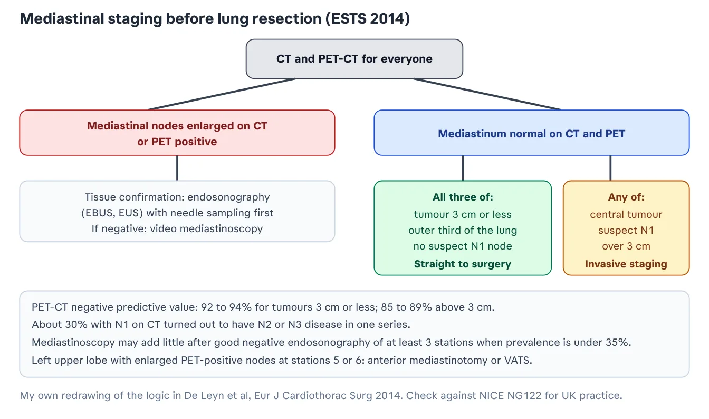
| Point | Detail |
|---|---|
| Imaging | PET or PET-CT is indicated for mediastinal and distant staging in all |
| Enlarged or PET-positive mediastinal nodes | Tissue confirmation is indicated: endosonography with needle sampling first; if negative, video-assisted mediastinoscopy |
| Direct surgery allowed | Only if all three hold: no suspect node on CT or PET; tumour 3 cm or less; outer third of the lung |
| Invasive staging despite a normal mediastinum | Central tumour or suspect N1 nodes (indicated); tumour over 3 cm, mainly adenocarcinoma with high uptake (may be considered) |
| Why | Negative predictive value of PET-CT 92 to 94% at 3 cm or less and 85 to 89% above; 30% of CT N1 had pathological N2 or N3 in one series |
| Endosonography alone | Mediastinoscopy may add nothing after a well-performed negative study of at least three stations when prevalence of nodal disease is under 35% |
| Stations 5 and 6 | Need a different approach when enlarged and PET positive (the sentence naming the procedure was cut in my extract; anterior mediastinotomy or VATS is the usual answer, from memory) |
Completeness of resection: IASLC 9th edition R classification
Source: Detterbeck FC et al. The proposed ninth edition TNM classification of lung cancer: review and clarification of the R classification. J Thorac Oncol 2024;19:1052-1072.
| Category | Meaning |
|---|---|
| R0 | Complete resection |
| R(un) | Uncertain: no evidence of residual tumour but the resection falls short of the criteria for complete, including insufficient node assessment and involvement of the highest node removed |
| R1 | Macroscopically complete with microscopic tumour at the margin |
| R2 | Gross tumour left behind, including involved nodes not resected |
The review found consistent separation of overall survival between complete, uncertain and incomplete resection, and recommends keeping all the descriptors with clarified wording. The detailed descriptor list was not read.
Early-stage non-small cell lung cancer (TSRA ch. 8)
Added 20 November 2026 from TSRA Review of Cardiothoracic Surgery 3rd ed., ch. 8 "Early-stage non-small cell lung cancer" (Kathleen D. Weiss and Matthew M. Rochefort). Read in full (PDF pages 89 to 92). Guidance quoted is American (NCCN, 2020 version), as cited by the chapter; no classes of recommendation or levels of evidence are given.
Background
- About 193,930 NSCLC diagnoses in the USA in 2019; about 16% stage I to II. Early-stage detection is rising with screening.
- Surgery is the mainstay. Many patients have smoking-related comorbidity, but all clinical stage I or II patients should be seen by a thoracic surgical oncologist or MDT.
Preoperative evaluation (NCCN, as quoted)
| Item | Recommendation |
|---|---|
| Imaging | Contrast CT chest and upper abdomen (through adrenals), then PET-CT |
| Abnormal mediastinal nodes | More than 1 cm short axis or PET SUVmax 2.5 or more: further evaluation |
| Pathological mediastinal staging optional | Solid tumours less than 1 cm and pure non-solid tumours less than 3 cm |
| Brain MRI | May be considered for clinical stage IB; required for stage II and above |
| Adrenal mass | May need work-up; biopsy if PET SUVmax raised and the lesion has above-normal density (higher likelihood of metastasis) |
| No tissue diagnosis | Wedge resection or core biopsy for diagnosis before anatomical lobectomy |
Staging access (as given in this chapter) | Modality | Stations | |---|---| | Mediastinoscopy | 2, 4, 7 | | EBUS-FNA | 1, 2, 3, 4, 7, 10, 11 | | EUS-FNA | 2R, 2L, 4L, 7, 8, 9 | - Mediastinoscopy and EBUS-FNA have comparable sensitivity, specificity and accuracy in experienced hands. (Ch. 5 and 9 give slightly different station lists.)
Extent of resection
| Evidence or situation | Detail |
|---|---|
| Lung Cancer Study Group RCT (1995) | Lobectomy vs sublobar resection for stage I: lobectomy improved survival and reduced local recurrence. Lobectomy is the gold standard |
| CALGB 140503 | Multicentre RCT of sublobar resection vs lobectomy for small early-stage cancers. Early results: no difference in perioperative morbidity or mortality; oncological results pending at the time of writing. Also studies surveillance as a secondary outcome |
| Not fit for lobectomy | Segmentectomy or wedge rather than no surgery; sublobar resection with margin at least equal to tumour size is reasonable |
| Clinical stage I unfit for any resection | SBRT |
| AIS and MIA | Excellent 5-year DFS; wedge resection may be appropriate. Multifocal AIS/MIA: several wedges if burden is limited |
Sleeve resection
- Preferred over pneumonectomy for central tumours when an R0 resection is possible.
- Anastomosis well apposed and tension-free.
- Wrap with vascularised tissue (intercostal muscle, latissimus dorsi, omentum or pericardium): improves healing, lowers risk of fistula or stump breakdown, particularly if adjuvant therapy is planned.
Lymph nodes
- Node sampling or dissection at resection is needed for pathological staging in clinical stage I/II.
- 2020 NCCN: sample N1 and N2 nodes; N2 from at least three separate stations.
Approach and complications
- Open thoracotomy, VATS or robotic. Meta-analyses: VATS lobectomy has lower morbidity, better quality of life and better survival than thoracotomy.
- Complications in about 30% of lung resections: arrhythmia, prolonged air leak, pneumonia, respiratory failure, wound infection, pain.
2011 IASLC/ATS/ERS adenocarcinoma classification
- Dropped the term bronchoalveolar carcinoma (BAC), which had covered at least five different histologies.
- Entities among tumours less than 3 cm: adenocarcinoma in situ (AIS), minimally invasive adenocarcinoma (MIA), lepidic-predominant adenocarcinoma, invasive mucinous adenocarcinoma.
| Entity | Definition or prognosis |
|---|---|
| AIS | Small solitary adenocarcinoma without invasion |
| MIA | Stromal invasion less than 5 mm in any one focus |
| Lepidic-predominant | Better prognosis than other invasive subtypes |
- All primary biopsy specimens: histological subtype plus molecular targets that may guide adjuvant therapy (PD-L1, ALK, ROS1, BRAF, MET, EGFR).
Adjuvant therapy (NCCN, as quoted)
| Situation | Recommendation |
|---|---|
| Stage IA, R0 | No adjuvant therapy |
| Stage I or II, R1 | Re-resection (preferred) or adjuvant radiotherapy |
| High-risk stage IB to II | Chemotherapy in selected patients; cisplatin-based first line; carboplatin plus paclitaxel if cisplatin not tolerated |
Inoperable patients
- Insufficient cardiopulmonary reserve: definitive SBRT. Multiple convergent beams on a discrete target, steep dose fall-off at the edge, sparing normal tissue.
- Radiofrequency ablation is an alternative.
Surveillance after resection
- History, examination and chest CT every 6 months for 2 to 3 years, then annually.
- PET is not for routine follow-up.
- Continue routine health maintenance.
Thoracic 7: perioperative care, pleura and emergencies
Thoracic topics taken from the society-integrated handbook and not covered elsewhere in these notes: N2 disease, approach and resection extent, MDT, metastasectomy, pleural infection, pneumothorax and air leak, trauma, tumours needing extended resection, and the emergency drill. The wording of evidence labels (Guideline, Consensus, Practical) is the handbook's; its 2026 sources were not checked by me.
N2-positive and locally advanced NSCLC
Consensus. The 2026 AATS document gives 13 statements on potentially resectable N2 disease; STS lists a 2025 consensus on locally advanced disease and resectability.
| Step | Framework |
|---|---|
| Confirm extent | Tissue-proven nodal disease when it changes treatment; stations, burden, invasion, distant disease |
| Two separate questions | Technical resectability is not the same as a favourable multimodality strategy |
| Assess the patient | Reserve for the planned resection and systemic therapy; frailty; goals |
| Choose the sequence | MDT with oncology, radiotherapy and molecular results; N2 is not one regimen |
| Restage | After induction, reassess both disease and patient |
| Before resection | Agree achievable clearance, likely extent, risk of pneumonectomy or reconstruction, postoperative therapy |
The handbook assigns no node-count rule, dose or class because only the abstract was verified.
Additions
| Trial | Finding |
|---|---|
| CALGB 140503, NEJM 2023 | Sublobar resection (wedge or segmentectomy) non-inferior for disease-free survival in peripheral tumours of 2 cm or less with nodes confirmed negative at operation |
| VIOLET, NEJM Evidence 2022 | VATS gave better early physical function and recovery than thoracotomy; says nothing about robotic superiority |
| MARS 2, Lancet Respiratory Medicine 2024 | Extended pleurectomy decortication with chemotherapy was worse than chemotherapy alone in mesothelioma |
Perioperative trials (CheckMate 816, ADAURA, ALINA) are not interchangeable regimens.
Open, VATS and robotic access
Practical. Choose the access that allows an oncologically adequate operation safely.
Open: direct exposure for complex reconstruction and control.
VATS: evidence-supported recovery benefit; adhesions and hilar disease limit it.
Robotic: docking and emergency undocking must be rehearsed; superiority cannot be inferred from the platform.
Conversion: agree the trigger, roles, compression and communication before the case. Conversion is a safety action, not a failure.
STS has a 2025 robotic training curriculum consensus; EACTS announced 2026 cardiac robotic programme standards.
MDT presentation template
Patient (symptoms, reserve, frailty, values); disease (histology or probability, full cTNM with edition, imaging dates); stage confidence (PET, brain imaging, nodal stations and adequacy); biology and sequence; operation (extent, access, margin, nodes, rescue); decision (alternatives, remaining tests, owner, review date).
Metastasectomy and oligometastatic disease
Consensus and research.
First decide whether the lesion is a metastasis, a new primary or benign.
Review control of the primary, disease-free interval, disease elsewhere, systemic options and achievable clearance.
Long survival in surgical series reflects selection, not proven benefit.
PulMiCC, a small randomised trial in colorectal metastases, did not show a clear survival advantage, and control patients did not have near-zero survival.
STS 2025 guidance on oligometastatic NSCLC is a different disease context from colorectal or sarcoma metastases. The STS metastasectomy consensus dates from 2019.
Consent should describe the uncertainty, not quote postoperative survival as the effect of surgery.
Pleural infection and empyema
Guideline (BTS).
| Finding | Action |
|---|---|
| Pleural fluid pH 7.2 or less | Drain accessible fluid |
| pH over 7.2 and under 7.4 | Look at LDH and the clinical picture; LDH over 900 IU/L with adverse features supports drainage |
| pH 7.4 or more | No indication to drain from pH alone |
| Initial drain | Small bore, 14 F or less |
| Residual infected collection | Combined tPA and DNase after a bleeding-risk review; neither drug alone |
| Failure | Recheck tube position and patency, loculation, antibiotics, abscess and fistula; early thoracic surgical input |
BTS does not recommend routine immediate surgery in place of drainage. The RAPID score predicts prognosis; it is not an indication to operate.
Pleural drains and prolonged air leak
Consensus (STS 2024, 13 statements, applies after lobectomy only).
| Question | Statement |
|---|---|
| Number and size | A single drain; 19–24 F after a standard lobectomy |
| Suction | Early move to water seal in place of routine prolonged suction |
| Fluid threshold | 450 mL or less in 24 hours of non-bloody, non-chylous fluid is reasonable for removal |
| Other conditions | Air leak, lung expansion, symptoms and the nature of the fluid |
| Digital systems | Use trends and local criteria; no universal flow cut-off |
| Imaging | By indication, not a daily chest radiograph by habit |
Persistent leak: separate parenchymal leak from bronchial disruption, follow the trend, assess the space and infection. Ambulatory drainage, pleurodesis, bronchoscopic valves or reoperation depend on the mechanism.
Thoracic VTE prevention
Guideline (ESTS and AATS 2022; mostly conditional recommendations on low-certainty evidence).
Parenteral pharmacological prophylaxis with mechanical methods, in preference to none.
Extended prophylaxis for 28–35 days is suggested at moderate or high thrombotic risk, not after every minor procedure.
Parenteral agents are favoured over DOACs, which are suggested only within trials.
Screening recommendations apply to pneumonectomy and oesophagectomy, not every lobectomy.
At discharge, document risk and bleeding assessment, agent, duration and who reviews complications.
Thoracic trauma and airway emergencies
Guideline.
Treat tension physiology and life-threatening bleeding without waiting for CT.
Drain output thresholds support the decision to operate but do not replace assessment; a blocked drain with low output does not exclude massive retained bleeding.
Persistent large air leak with non-expansion: check the system, then think of major bronchial injury and bronchoscope.
Retained haemothorax: reassess and clear in good time.
Agree the airway plan (oxygenation, lung isolation, bronchoscopy, surgical rescue) with senior anaesthetic and thoracic staff. No blind repeated airway instrumentation, and no clamps into an injury that cannot be seen.
Thoracic case prompts
Small peripheral tumour with a low DLCO: compare margin, nodes and functional cost of sublobar and lobar resection and non-surgical options.
Empyema not improving: reassess drainage, source control, microbiology, fistula and fitness for surgery.
Large leak with fever after resection: exclude bronchial disruption and pleural infection first.
Unexpected pleural deposits: get a diagnosis and stage, then reconsider the curative operation.
Discharge: drain plan, VTE plan, analgesia, mobilisation, warning symptoms, pathology and MDT follow-up, named contact.
Sarcoma for the thoracic surgeon
6 parts · 3 drawings
The thoracic surgeon meets sarcoma in three ways: lung metastases from a sarcoma elsewhere, a primary sarcoma of the chest wall, and the rare primary sarcoma inside the chest. All three belong to a specialist sarcoma MDT, and nothing should be biopsied or excised before that MDT has seen the imaging.
Rules that apply to all of it
Refer any suspected sarcoma to the regional sarcoma service before biopsy; this is the first recommendation of the UK soft tissue sarcoma guidelines (British Journal of Cancer 2025).
Biopsy is by image-guided core needle, with the track placed where it can be excised with the specimen. An unplanned excision (the "whoops" operation) contaminates planes and worsens local control.
Grade (FNCLCC or Trojani 1 to 3), size, depth and histological subtype drive behaviour more than TNM stage does.
Staging is CT chest for most confirmed sarcomas and all intermediate and high-grade tumours; a chest X-ray is enough for very low-risk subtypes such as atypical lipomatous tumour. Add abdomen and pelvis for myxoid liposarcoma, leiomyosarcoma and retroperitoneal primaries; regional nodes matter only for the subtypes that spread to them (synovial, clear cell, epithelioid, angiosarcoma, rhabdomyosarcoma).
Sarcoma spreads by blood to the lung first. Nodal dissection is not part of a sarcoma operation unless nodes are involved.
Pulmonary metastasectomy
There is no randomised trial in sarcoma. PulMiCC was colorectal and does not transfer directly, because sarcoma has weaker systemic options and lung-only relapse is the usual pattern. Practice rests on registries and case series.
| Factor | Favourable | Unfavourable |
|---|---|---|
| Resection | Complete (R0) | Incomplete: the strongest adverse factor |
| Disease-free interval | Over 12 months | Under 12 months |
| Number | One, or a few | Three or four and more |
| Largest lesion | 2 cm or less | Over 2 cm |
| Grade and histology | Low grade; osteosarcoma responding to chemotherapy | Grade 3; synchronous disease |
| Extrathoracic disease | None, primary controlled | Present |
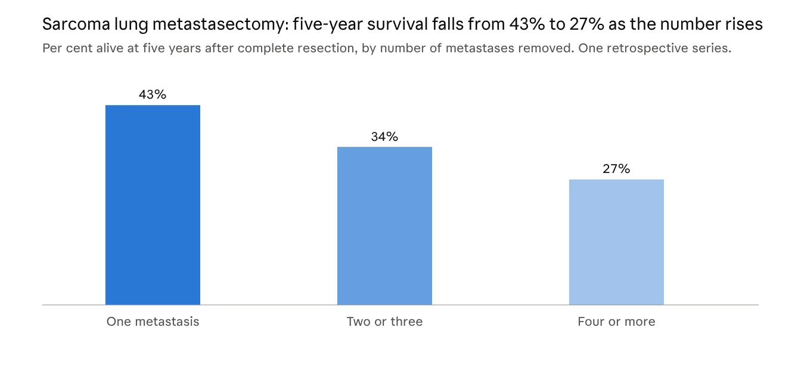
Selection criteria are still Thomford's: primary controlled, no extrathoracic disease that cannot be treated, all lung disease resectable, and enough lung left.
Five-year survival after complete resection is about 30 to 45% in modern series; the International Registry of Lung Metastases reported 32% for sarcoma. Survival falls with number: 43% for one metastasis, 34% for two or three, 27% for four or more in one large series.
Most patients relapse in the lung again. Repeat metastasectomy is reasonable when the interval is long and resection can again be complete; five-year survival after repeat surgery is 30 to 40%, and up to 60% in selected series.
Technique: parenchyma-sparing wedge or precision excision, because the patient is likely to need another operation. Lobectomy only for central lesions. Lymphadenectomy adds little.
Open or VATS: sarcoma metastases are often small, multiple and subpleural, and palpation finds nodules CT misses. Thin-slice CT within four weeks is mandatory. VATS is accepted for few, peripheral lesions; many sarcoma units still prefer open palpation for osteosarcoma and for multiple lesions. No trial shows that removing the extra palpable nodules improves survival.
Bilateral disease: staged thoracotomies or VATS, or clamshell or sternotomy in the young.
Osteosarcoma and Ewing sarcoma: metastasectomy is part of curative-intent treatment alongside chemotherapy, including for synchronous disease, and persistent nodules after chemotherapy should be resected.
Alternatives for small, few lesions in poor surgical candidates: SABR and thermal ablation, with local control over 85 to 90% in series; no comparison with surgery.
Presentation with spontaneous pneumothorax in a patient with sarcoma, especially osteosarcoma, angiosarcoma or synovial sarcoma, means cavitating subpleural metastases until shown otherwise.
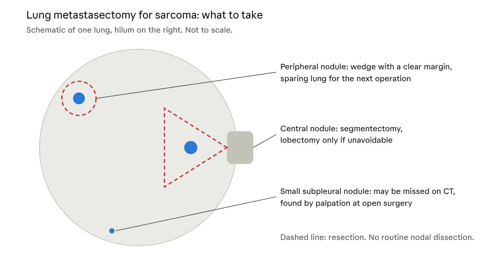
Indeterminate nodules at staging
Small nodules on the staging CT of a new sarcoma are common and most are benign. Features favouring metastasis are size over 5 mm, multiplicity, round shape, peripheral and lower-zone position, and calcification or ossification in osteosarcoma or chondrosarcoma. The usual plan is to treat the primary and repeat the CT at three months, not to delay limb surgery for a lung biopsy.
Primary chest wall sarcoma
| Tumour | Who and where | Treatment |
|---|---|---|
| Chondrosarcoma | The commonest primary malignant chest wall bone tumour; adults; costochondral junction and sternum | Surgery alone; resistant to chemotherapy and radiotherapy |
| Ewing sarcoma (Askin tumour) | Children and young adults; rib with soft-tissue mass and often effusion | Chemotherapy first, then surgery, radiotherapy or both |
| Osteosarcoma | Young, or older after radiotherapy or Paget disease | Chemotherapy, surgery, chemotherapy |
| Soft tissue sarcoma (undifferentiated pleomorphic, liposarcoma, synovial, MPNST) | Adults | Wide excision with radiotherapy before or after for high grade, deep or over 5 cm |
| Radiation-associated sarcoma, including angiosarcoma after breast radiotherapy | Years after treatment | Wide excision; poor prognosis |
| Desmoid fibromatosis | Not a sarcoma; locally aggressive, does not metastasise | Active surveillance first; surgery is no longer first line |

Never enucleate a cartilage tumour of a rib. Any cartilaginous rib lesion over 4 cm, or any in the sternum, is treated as chondrosarcoma, and core biopsy under-grades them.
Margin: the textbook figure is 4 cm for high-grade tumours, taken as 2 cm or more for low grade, with full-thickness en bloc resection including one uninvolved rib above and below, the whole rib for Ewing or osteosarcoma because of marrow spread, the biopsy track, and any adherent lung, pericardium or diaphragm. The evidence for 4 cm is one retrospective series; what the pathologist reports and what predicts recurrence is a clear (R0) margin, and sarcoma units now aim for wide R0 without a fixed number.
In chondrosarcoma, an intralesional or marginal excision gives local recurrence in most patients; wide excision at a specialist centre gives ten-year survival over 90% for grade 1.
Reconstruction: skeletal stabilisation for anterior or lateral defects over 5 cm or more than three ribs; posterior defects under the scapula up to 10 cm can be left, unless the scapular tip (below the fourth rib) would catch. Mesh (polypropylene, PTFE), methyl methacrylate sandwich, or titanium bars; biological mesh in contaminated or irradiated fields. Cover with muscle flap: latissimus dorsi, pectoralis major, serratus, rectus, or omentum with skin graft. Plan the flap with plastic surgery before the resection.
Complications to quote: respiratory in about a quarter, wound and prosthesis infection in about 5 to 10%, and prosthesis removal does not usually cause flail once the scar has set.
Primary sarcoma inside the chest
Pulmonary artery intimal sarcoma: mimics chronic thromboembolic disease. Suspect it when the filling defect expands the artery, enhances, is PET-avid, extends against flow into the valve or right ventricle, or does not respond to anticoagulation. Treated by pulmonary endarterectomy or pneumonectomy at a pulmonary hypertension surgical centre; median survival is about one to two years.
Primary pulmonary sarcoma (synovial, leiomyosarcoma, undifferentiated): rare; exclude a metastasis and sarcomatoid carcinoma first. Anatomical resection without routine systematic nodal dissection.
Cardiac sarcoma: angiosarcoma of the right atrium is the commonest; presents with tamponade or obstruction, usually metastatic at diagnosis.
Mediastinal sarcoma and malignant peripheral nerve sheath tumour in neurofibromatosis type 1: complete resection where possible.
Solitary fibrous tumour of the pleura: most are benign; resect with a clear margin and follow for years because late recurrence occurs; Doege-Potter hypoglycaemia is covered in the tab Thoracic 5.
Systemic treatment, in one paragraph
First-line treatment for advanced soft tissue sarcoma is doxorubicin, alone or with ifosfamide when response is needed for symptoms or to enable surgery. Later lines are chosen by subtype: trabectedin for leiomyosarcoma and liposarcoma, gemcitabine and docetaxel, pazopanib for non-adipocytic tumours, eribulin for liposarcoma. Checkpoint inhibitors have a limited role, mainly in undifferentiated pleomorphic sarcoma and alveolar soft part sarcoma. GIST is treated with imatinib and is managed separately. Perioperative chemotherapy for localised adult soft tissue sarcoma is not standard and is offered selectively to high-risk patients.
Status: the UK guideline (British Journal of Cancer 2025) was read on 17 November 2026 and is summarised in the next section; both halves of the paper were read. The UK bone sarcoma guideline was read the same day and follows it. Prognostic factors and survival figures for metastasectomy were confirmed against published series (review, single-centre series, repeat metastasectomy). The 4 cm margin is from a chest wall tumour review. Reconstruction thresholds, complication rates, the intrathoracic sarcoma section and systemic treatment are from memory.
UK soft tissue sarcoma guidelines 2025: what they say
4 parts
Hayes and colleagues, British Journal of Cancer 2025;132:11-31, the British Sarcoma Group consensus. It has no section on thoracic or chest wall sarcoma; the general recommendations apply. Evidence level and grade are given where the paper gives them.
| Area | Recommendation |
|---|---|
| Referral | Unexplained lump increasing in size: direct-access ultrasound within 2 weeks. Suspicious or uncertain ultrasound: suspected cancer pathway. All suspected sarcoma managed through a specialist sarcoma MDT |
| Imaging of the primary | MRI for limb, trunk and pelvis; CT for retroperitoneal and intrathoracic tumours |
| Biopsy | Percutaneous core, several cores, specialist pathology review. Fine needle aspiration not recommended. Excision biopsy only for subcutaneous lesions under 2 cm that are indeterminate on imaging |
| Chest staging | CT chest for most, and for all intermediate and high grade, before definitive treatment. Chest X-ray can suffice for very low-risk subtypes or frail patients |
| Other staging | CT abdomen and pelvis especially for myxoid liposarcoma, leiomyosarcoma and high-grade lower limb tumours. Nodal imaging for synovial, clear cell, epithelioid and angiosarcoma. Brain imaging considered for alveolar soft part and clear cell sarcoma. PET-CT not routine |
| Grade | FNCLCC, three grades; core biopsy can under-grade |
| Surgery | En bloc excision with tumour-free margins by a sarcoma surgeon (II, A). A close R0 margin may be adequate with radiotherapy. Planned marginal or R1 margin against a critical structure is acceptable with radiotherapy for intermediate and high grade (IV, B) |
| Unplanned excision | Stage fully, MRI the bed, re-excise if feasible |
| Radiotherapy | Standard for most intermediate and high-grade tumours (I, A). Pre-operative 50 Gy in 1.8 to 2 Gy fractions, surgery 4 to 8 weeks later; post-operative 60 to 66 Gy. Pre-operative gives better long-term function and more acute wound complications. Five-fraction pre-operative regimens (25 to 30 Gy) are emerging. A post-operative boost for a positive margin is not supported |
| Perioperative chemotherapy | Not routine (II, B). Consider in high-risk patients, using the Sarculator nomogram: predicted five-year survival under 60% is the group most likely to benefit. Three cycles of neoadjuvant doxorubicin and ifosfamide gave five-year survival 66% against 55% for histotype-tailored treatment |
| Advanced disease, first line | Single-agent doxorubicin (I, A). Adding ifosfamide raises response and progression-free survival but not overall survival (II, B); use it when response matters, which includes making metastases resectable. Doxorubicin with dacarbazine is an option for leiomyosarcoma |
| Later lines | Ifosfamide (I, B); trabectedin, gemcitabine with docetaxel or dacarbazine (II, B); pazopanib; paclitaxel or liposomal doxorubicin for angiosarcoma; NTRK inhibitors for fusion-positive tumours. Eribulin is not funded in England for sarcoma. Median survival in advanced disease is 12 to 18 months |
| Follow-up | Intermediate and high grade: every 3 to 4 months for 2 to 3 years, six-monthly to year 5, then yearly, 8 to 10 years in all. Low grade: six-monthly for 5 years then yearly. Examination and routine chest X-ray; CT chest to investigate an abnormality |
Lung metastases in the guideline
The decision rests on the disease-free interval, absence of other metastases, the number of lesions in each lung, growth rate and how the disease has evolved.
With no significant disease-free interval, repeat the CT (or PET-CT) at three months. If no new lesions have appeared and the disease is operable, surgery is usually recommended. This is the "test of time" and is the practical answer for synchronous or early metastases.
Ablation (radiofrequency or microwave) and SABR are accepted alternatives; for oligometastatic disease, surgery, radiotherapy or ablation are considered case by case (III, B).
Long-term survivors are 20 to 40% of those operated on; the guideline states that a survival benefit has not been shown prospectively.
The guideline gives no numerical limit on the number of metastases and no stance on open against VATS.
Points relevant to the chest
Radiation-induced sarcoma is most often undifferentiated pleomorphic sarcoma, angiosarcoma or leiomyosarcoma, and does worse than sporadic sarcoma matched for age, size and grade. After breast radiotherapy, wide clear margins matter more because further radiotherapy is difficult, and completion mastectomy may be needed.
Breast sarcoma and malignant phyllodes: no axillary staging; wide excision; adjuvant radiotherapy considered for tumours over 5 cm or close or positive margins.
Solitary fibrous tumour: complete resection with negative margins; radiotherapy and anti-angiogenic tyrosine kinase inhibitors have activity.
Desmoid fibromatosis: systemic options listed are sorafenib, pazopanib, nirogacestat and liposomal doxorubicin.
Retroperitoneal sarcoma is confined to high-volume centres (about 24 primary resections a year); pre-operative radiotherapy did not improve survival overall in the randomised trial (STRASS).
Where this changes the section above
Follow-up in the UK guideline is by chest X-ray, with CT for abnormalities; many thoracic units and some regional protocols use CT, so say which you mean.
The guideline's margin standard is tumour-free en bloc excision, with no fixed distance. The 4 cm figure in the chest wall section comes from the thoracic literature, not from this guideline.
Bone sarcomas (chondrosarcoma, osteosarcoma, Ewing) are outside this guideline and have their own British Sarcoma Group document, summarised below.
Rest of the soft tissue guideline
| Tumour | Recommendation |
|---|---|
| Radiation-induced angiosarcoma of the breast or chest wall | Aggressive, with high local and distant relapse. Experienced surgeon, resurfacing plastic procedures to reach wide margins; induction chemotherapy considered when surgery would be excessively morbid or futile (IV, C) |
| Large or high-grade breast sarcoma, malignant phyllodes | Conservation may not be possible; reconstruction delayed, not immediate; post-operative radiotherapy for large or high-grade tumours with close or positive margins (III, B). Sarcomatous change in a metaplastic carcinoma is managed as breast cancer |
| Dermatofibrosarcoma protuberans | Wide excision; Mohs at critical sites (IV, C); radiotherapy for involved margins that cannot be re-excised (IV, A); imatinib before surgery for borderline resectable disease or for palliation |
| Atypical fibroxanthoma and pleomorphic dermal sarcoma | Atypical fibroxanthoma is cured by excision and metastasises in under 1%. Pleomorphic dermal sarcoma metastasises in about 16%, mainly to lung and within three years; baseline chest X-ray |
| Lipoma and atypical lipomatous tumour | MRI cannot reliably tell them apart; core biopsy for MDM2 amplification if unsure (IV, B). Complete marginal excision without wide margins (IV, B) |
| Desmoid fibromatosis | Surveillance first (III, B). Test CTNNB1 and think of familial adenomatous polyposis. Systemic treatment for symptomatic progression (III, B): sorafenib, pazopanib, nirogacestat, liposomal doxorubicin, low-dose vinorelbine. Radiotherapy or ablation at critical sites (IV, C). Chest wall desmoids follow this, so resection is no longer the first move |
| Tenosynovial giant cell tumour | Surgery for localised disease; CSF-1 inhibitors for diffuse symptomatic disease (I, B) |
UK bone sarcoma guidelines 2025: what they say
10 parts · 1 drawing
Gerrand and colleagues, British Journal of Cancer 2025;132:32-48, the British Sarcoma Group consensus, which covers chondrosarcoma, osteosarcoma, Ewing sarcoma, chordoma and giant cell tumour. A thoracic surgeon, Kalkat, is among the authors, and it has short sections on chest wall surgery and pulmonary metastasectomy. The visible text gives no formal evidence grades.

Referral, imaging and biopsy
Bone pain at night or a palpable mass needs an X-ray in two planes; a normal X-ray does not exclude a bone sarcoma, and persistent pain needs MRI or referral.
Under 40 with a suspected primary bone tumour: urgent referral to a bone sarcoma centre. Over 40: work up for metastatic carcinoma and myeloma first (CT chest, abdomen and pelvis, whole-skeleton imaging, myeloma screen), but a proven solitary bone lesion is still referred.
Refer before biopsy. Biopsy is done at the bone sarcoma centre after cross-sectional imaging and with the operating surgeon, so the track can be excised; mark the track. Core biopsy is less accurate for grading cartilage tumours. Frozen section is unreliable.
Do not perform laminectomy or decompression for a suspected primary spinal tumour unless there is cord compression needing emergency surgery; intralesional surgery usually prevents later complete removal.
MRI of the whole bone and compartment. Staging chest CT for every confirmed case; indeterminate lung nodules usually get an interval scan. Whole-body MRI or PET-CT for osteosarcoma and Ewing sarcoma; bone marrow biopsy is no longer required in Ewing.
Chondrosarcoma
Now the commonest primary malignant bone tumour, presenting at 30 to 60 years.
Atypical cartilaginous tumour in a limb can be observed, or curetted if it progresses. This does not apply to the axial skeleton: all pelvic and axial chondrosarcomas, which includes ribs, sternum and spine, and all higher-grade tumours need wide-margin excision.
Dedifferentiated chondrosarcoma: complete excision if feasible; metastatic risk is high; osteosarcoma-type chemotherapy may be considered, with poor survival.
Radiotherapy is for unresectable disease, close or positive margins, or palliation.
Local recurrence: further wide excision. Oligometastatic lung disease: surgery or ablation may be considered.
Skeletal metastases are rare unless the tumour is dedifferentiated.
Osteosarcoma
Neoadjuvant chemotherapy, resection, adjuvant chemotherapy over six to nine months. Chemotherapy raised survival from 10 to 20% with surgery alone to about 60%.
MAP (high-dose methotrexate, doxorubicin, cisplatin) up to age 40; doxorubicin and cisplatin alone for older patients. Echo and audiogram before starting. Changing adjuvant treatment according to histological response is not recommended.
Mifamurtide may be offered under 30 with resected localised disease.
Metastatic at presentation: same chemotherapy, provided every site can be resected. About 30% of patients with primary metastatic disease, and over 40% of those reaching complete surgical remission, are long-term survivors.
Relapse: under a third survive long term. Resect if complete clearance is possible. Repeated thoracotomies are often warranted; over a third of those reaching a second surgical remission survive beyond five years. Inoperable metastases are usually fatal. Ifosfamide and etoposide have the highest response rates.
Ewing sarcoma
Under 10% survive five years with local treatment alone; with chemotherapy, almost 80% for localised disease and 20 to 40% for metastatic.
Interval-compressed VDC/IE (two-weekly) is first line and is superior to VIDE.
Local treatment must cover every structure in the pre-chemotherapy volume, by surgery, radiotherapy or both, and is decided through the National Ewing MDT.
Post-operative radiotherapy is indicated for R1 or R2 margins, incomplete removal of the pre-chemotherapy volume, 90% necrosis or less, and sites with harder local control, which the guideline lists as spine, pelvis, sacrum, and rib with malignant pleural effusion.
About 26% have metastases at presentation. Lung or pleural metastases do far better than bone or marrow (five-year relapse-free survival 55% against under 21%). Whole lung irradiation after VDC/IE is indicated if disease is not progressing; high-dose busulfan and melphalan adds nothing for lung metastases treated this way.
Indeterminate lung lesions do well and are treated with curative intent.
Relapse: median survival about a year; high-dose ifosfamide was the most effective regimen in rEECur.
Pulmonary metastasectomy in the bone guideline
Considered for oligometastatic disease, aiming to remove every lesion seen on high-resolution CT while preserving lung.
Thoracotomy has traditionally been preferred, but the guideline states there is no clear advantage over thoracoscopic resection.
Resection of suspicious lesions after primary treatment, once the primary is controlled, should be considered for diagnosis and prognosis as well as treatment.
Favourable features: longer disease-free interval, fewer lesions, favourable histology.
Giant cell tumour of bone: lung metastases are usually not resected. Chordoma: oligometastases may be treated by surgery, ablation or SABR in selected cases.
Chest wall surgery in the bone guideline
Resection may take ribs, sternum, vertebrae and overlying muscle and skin, and needs thoracic, spinal and plastic surgeons together.
Reconstruction with mesh, cement or titanium and soft tissue cover.
Prehabilitation, enhanced recovery and intensive post-operative physiotherapy are recommended.
No margin distance is given for the chest wall. The only figure in the guideline is for the pelvis, where a 2 mm margin is associated with lower local recurrence.
Other bone tumours
| Tumour | Recommendation |
|---|---|
| Chordoma | En bloc resection with a margin of 1 mm or more where feasible; high-dose radiotherapy, protons or carbon ions after close or positive margins or for high sacral tumours; no standard systemic treatment; MRI at 6 and 12 months then yearly to 10 years |
| Giant cell tumour of bone | Exclude a brown tumour with serum calcium. En bloc excision recurs less than curettage. Denosumab for unresectable disease or for up to six months before surgery; most recur about nine months after stopping; curettage after denosumab recurs more. No benefit in malignant giant cell tumour |
| Undifferentiated pleomorphic and spindle cell sarcoma of bone | Treat as osteosarcoma |
| Adamantinoma | Complete excision |
Radiotherapy and protons
Outside Ewing sarcoma, radiotherapy is used when surgery is not possible or for selected high-risk cases after surgery.
Proton or carbon ion therapy allows dose escalation near the cord and other critical structures and lowers late toxicity; the two NHS proton centres are The Christie and UCLH.
Follow-up
Standard follow-up is clinical review with chest X-ray and X-ray of the primary site: every 2 to 4 months for 3 years, six-monthly in years 4 and 5, then yearly.
Chest surveillance by grade: high grade three-monthly for 2 years, six-monthly to 5 years, yearly to 10; intermediate three-monthly for 2 years then yearly to 10; low grade yearly to 5.
A trial showed no benefit from more frequent cross-sectional imaging, which is the reason chest X-ray and not CT is the default.
Late effects clinic; secondary leukaemia appears 2 to 5 years after chemotherapy; Li-Fraumeni families need their own surveillance.
What the two guidelines change in the sarcoma section above
Open or VATS metastasectomy: the bone guideline says there is no clear advantage for thoracotomy. The preference for open palpation in osteosarcoma is custom, not guideline.
Rib and sternal cartilage tumours: the guideline's rule is that every axial chondrosarcoma gets wide excision; observation and curettage apply only to limb lesions.
Margin: neither guideline gives 4 cm. Quote it as the traditional thoracic figure and say that the sarcoma guidelines ask for a wide, tumour-free margin.
Ewing sarcoma of a rib with pleural effusion is singled out as needing post-operative radiotherapy.
Status: both guidelines were read from the journal pages on 17 November 2026. The soft tissue paper was read in two parts. The bone paper was read to about the end of its follow-up section; the remainder is likely tables and references, and Table 2 (regimen doses), radiotherapy doses and the whole lung irradiation dose were not seen.
Flail chest and pulmonary contusion: EAST guideline
4 parts · 1 drawing
Added 19 November 2026 from the PDF you attached, read directly (recommendations in full, scientific foundation in part): Simon B et al, Management of pulmonary contusion and flail chest: an Eastern Association for the Surgery of Trauma practice management guideline, J Trauma Acute Care Surg 2012;73(5 Suppl 4):S351. Rows are checked against it unless marked memory. It predates the rib fixation trials, so the fixation rows need a newer source.

Background
| Point | Detail | Status |
|---|---|---|
| Definition | Flail chest: three or more adjacent ribs each fractured in two or more places (or with costochondral separation), giving a segment that moves paradoxically | Memory |
| Burden | Thoracic injury accounts for up to 25% of deaths from blunt trauma; flail chest carries a mortality of 10 to 20% | Checked |
| What causes the respiratory failure | The underlying contusion and pain, not the paradoxical movement; ventilating to "splint" the chest until bony union is obsolete | Checked |
| Contusion course | Hypoxia worsens over the first 24 to 48 hours and usually clears within a week; CT is more sensitive than the film | Memory |
Recommendations
| Level | Recommendation |
|---|---|
| 1 | None |
| 2 | Do not fluid-restrict excessively: resuscitate with isotonic crystalloid or colloid to adequate perfusion, then meticulously avoid unnecessary fluid |
| 2 | A pulmonary artery catheter may help avoid overload during resuscitation |
| 2 | Avoid obligatory mechanical ventilation in the absence of respiratory failure solely to overcome chest wall instability |
| 2 | If ventilated: include PEEP or CPAP and separate from the ventilator as early as possible |
| 2 | Optimal analgesia and aggressive chest physiotherapy; epidural is the preferred route in severe flail chest |
| 2 | Steroids should not be used for pulmonary contusion |
| 3 | Trial of mask CPAP in alert, compliant patients with marginal respiratory status, with regional anaesthesia |
| 3 | Paravertebral block may be equivalent to epidural and may be considered when an epidural is contraindicated |
| 3 | Independent lung ventilation may be considered in severe unilateral contusion with uncorrectable shunt or crossover bleeding |
| 3 | High-frequency oscillation improves oxygenation in some patients failing conventional modes; no survival benefit shown |
| 3 | Diuretics for hydrostatic overload in stable patients or with known heart failure |
| 3 | Surgical fixation may be considered in severe flail chest failing to wean, or when thoracotomy is needed for another reason; who benefits from early fixation is not defined |
| 3 | No proprietary implant is recommended; plates or wrapping devices are probably better than intramedullary wires |
| 3 | Self-activating multidisciplinary chest wall injury protocols may improve outcome |
Rib fixation since 2012 (memory, to be checked against a newer source)
Later EAST guidance (2017) conditionally recommends fixation for flail chest to reduce ventilator days, pneumonia and length of stay.
UK practice follows NICE interventional procedure guidance on insertion of metal rib reinforcements for flail chest and BOAST standards; fixation is usually within 72 hours where indicated.
Typical indications quoted: flail chest with respiratory compromise or failure to wean, three or more displaced fractures with uncontrolled pain, chest wall deformity or lung herniation, and fixation "on the way out" after thoracotomy.
For the viva
Treat the patient as major trauma first: airway, tension pneumothorax, massive haemothorax, tamponade.
Then the three pillars: analgesia (regional), physiotherapy and humidified oxygen or non-invasive support, and careful fluids.
Ventilate for respiratory failure, not for the paradox.
Fixation is for failure to wean, severe deformity or pain, or when the chest is open anyway.
Spontaneous pneumothorax: BTS 2023
5 parts · 1 drawing
Added 19 November 2026 from the PDFs you attached, read directly: the guideline summary recommendations on pneumothorax and Appendix 1 pathway (Roberts ME et al, British Thoracic Society Guideline for pleural disease, Thorax 2023;78(Suppl 3):s1). The full guideline text (42 pages), the evidence appendix A1 and the effusion, infection and malignancy sections are not yet read. All rows checked unless marked.

What changed from 2010
| Point | Detail |
|---|---|
| Driver of treatment | Symptoms and high-risk characteristics, not size |
| Size | Only decides whether it is safe to intervene: usually 2 cm or more laterally or apically on the film, or any size on CT that can be reached safely with radiological support |
| Conservative care | Can be considered for minimally symptomatic or asymptomatic primary pneumothorax regardless of size (conditional, by consensus) |
| Ambulatory device | Should be considered for primary pneumothorax where there is expertise and follow-up (conditional) |
| Otherwise | Needle aspiration or tube drainage (conditional) |
High-risk characteristics (go to a chest drain)
Haemodynamic compromise (tension).
Significant hypoxia.
Bilateral pneumothorax.
Underlying lung disease (secondary pneumothorax).
Age 50 or over with a significant smoking history.
Haemopneumothorax.
Recurrence prevention and surgery
| Situation | Recommendation | Strength |
|---|---|---|
| Initial presentation where recurrence prevention is important (tension pneumothorax, high-risk occupation) | Thoracic surgery can be considered | Conditional |
| After a first episode in at-risk professionals (divers, pilots, military) or after tension | Elective surgery may be considered | Good practice point |
| Second ipsilateral or first contralateral pneumothorax | Elective surgery should be considered | Good practice point |
| Secondary pneumothorax in a patient who decompensated (for example severe COPD), even at the first episode | Chemical pleurodesis can be considered | Conditional |
| Chemical pleurodesis | Give adequate analgesia before and after | Good practice point |
| All patients | Discharge and activity advice | Good practice point |
Surgical points (memory)
Operation: VATS bullectomy (stapled apical wedge) with pleurectomy or mechanical abrasion; talc poudrage as an alternative or adjunct.
Persistent air leak or failure to re-expand after about 3 to 5 days of drainage is the usual trigger for surgical referral.
Recurrence after VATS pleurectomy is of the order of 1 to 5%; after drainage alone about 30% for a first primary episode.
Flying: not until radiological resolution, commonly a further week after that; diving is permanently barred unless bilateral pleurectomy has been done.
Other thoracic PDFs received today, not yet written up
IASLC 9th edition residual tumour (R) classification proposals (Detterbeck, JTO 2024); ESTS 2014 preoperative mediastinal staging; NICE NG122 full guideline (2024 update); ERAS/ESTS 2019 enhanced recovery; CALGB 140503 (NEJM 2023); CheckMate 816 (NEJM 2022); ESMO 2015 thymic tumours; NETT (NEJM 2003); BJA Education 2019 on pulmonary function tests; the rest of the BTS pleural guideline.
Pleural infection and malignant effusion: BTS 2023
1 drawing
Source, read from your PDF: Roberts ME et al. British Thoracic Society guideline for pleural disease (summary). Thorax 2023;78:1143-1156. How I read it: the recommendation and good-practice statements for these two sections, pulled out by search; the full guideline document and its appendices were not read beyond this and the pneumothorax pathway above.
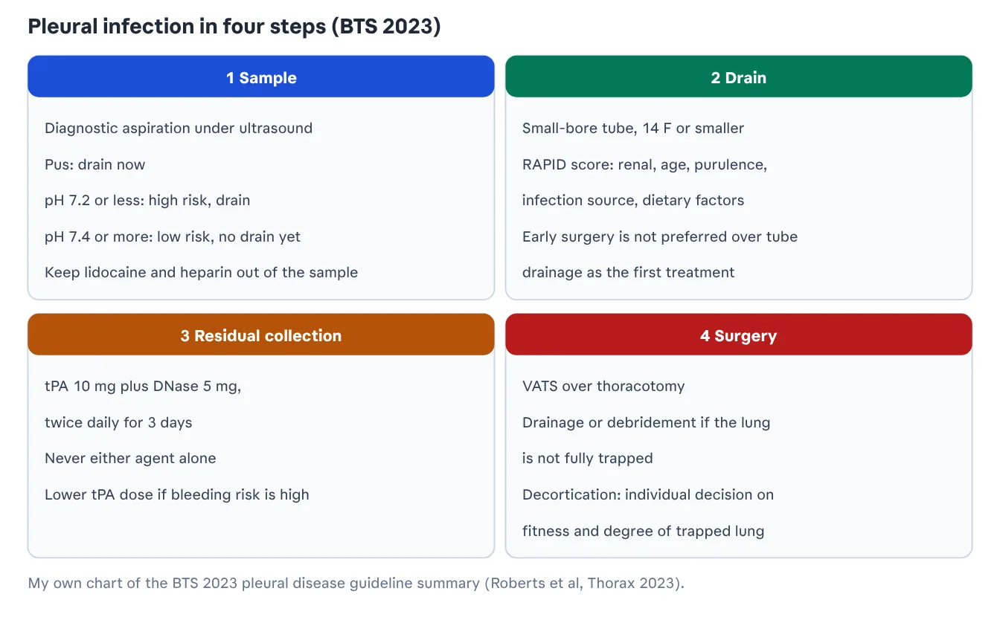
| Pleural infection | Statement |
|---|---|
| Sampling | Send fluid in a plain container and 5 to 10 mL in aerobic and anaerobic blood culture bottles. Do not contaminate the pH sample with local anaesthetic or heparin, which lower it |
| pH | 7.2 or less: high risk of complicated effusion or infection, insert a drain if safe. 7.4 or more: low risk, no immediate drain |
| Risk | RAPID score (renal, age, purulence, infection source, dietary factors) should be considered |
| First drain | Small-bore, 14 F or smaller |
| Surgery first? | Early VATS or thoracotomy should not be preferred over tube drainage as initial treatment |
| Intrapleural therapy | tPA plus DNase when drainage has stopped and a collection remains: 10 mg tPA and 5 mg DNase twice daily for 3 days. A 5 mg tPA regimen may be as effective. Never a single agent. Reduce tPA when bleeding risk is high |
| Operation | VATS over thoracotomy. Tailor extent to the patient and stage; decortication is an individual decision when the lung is trapped |
| Malignant effusion | Statement |
|---|---|
| Timing | Do not defer definitive pleural intervention until after systemic therapy |
| First line | With expandable lung, offer a choice of indwelling pleural catheter or talc pleurodesis; both in preference to repeated aspiration |
| Slurry or poudrage | Either may be offered. If thoracoscopy is being done for biopsy, give talc by poudrage at the same procedure |
| Surgery | In those fit enough, surgical talc pleurodesis or medical slurry can be considered. Decortication may help selected patients with non-expandable lung, weighed against a catheter |
| Catheter care | Daily drainage if removing the catheter is a priority; talc can be given through the catheter when the lung expands |
| Septated effusion | Intrapleural fibrinolytics only in highly selected symptomatic patients |
Enhanced recovery after lung surgery: ERAS/ESTS 2019
Source, read from your PDF: Batchelor TJP et al. Guidelines for enhanced recovery after lung surgery: recommendations of the ERAS Society and ESTS. Eur J Cardiothorac Surg 2019;55:91-115. How I read it: the summary-and-recommendation statements pulled out by search, not every section. No new drawing for this section yet.
| Phase | Recommendation |
|---|---|
| Before admission | Dedicated counselling. Screen nutrition and support those at risk. Stop smoking (memory; NICE says do not postpone surgery for it); avoid alcohol for at least 4 weeks in those who misuse it. Prehabilitation for borderline lung function or exercise capacity |
| Day of surgery | Oral carbohydrate loading routinely. Avoid routine sedative premedication. Antibiotics within 60 minutes before incision. Active warming |
| Anaesthesia | Regional plus general technique for early extubation; lung-protective one-lung ventilation; multimodal anti-emetic prophylaxis |
| Analgesia | Multimodal with regional block to spare opioids; paravertebral block is equivalent to epidural; regular paracetamol and NSAID; ketamine for those on long-term opioids |
| Fluids | Euvolaemia; avoid both very restrictive and liberal regimens; stop intravenous fluids early |
| Atrial fibrillation | Continue beta-blockers; magnesium is mentioned but the sentence was cut in my extract |
| Surgery | VATS for early-stage cancer. If open, muscle- and nerve-sparing thoracotomy and closure that spares the lower intercostal nerve |
| Drains | One tube, not two, after routine anatomical resection. No routine external suction. Digital drainage systems. Tubes can come out with serous output up to 450 mL in 24 hours |
| After | Early mobilisation; no routine urinary catheter for monitoring alone (these two from memory of the guideline, not seen in my extract) |
BTS 2023 clinical pathways (Appendix 1)
Source: BTS Guideline for Pleural Disease 2023, Appendix 1 (decision trees), your PDF, read 19 Nov 2026. I read the pneumothorax pathway and the first half of the unilateral effusion pathway (about the first third of the appendix); the interpretation tables and the later pathways are not read. No drawing yet.
| Step in the pneumothorax pathway | What the tree says | Status |
|---|---|---|
| First question | Is the patient symptomatic? If not, conservative care | checked |
| High-risk characteristics (any one sends you to a chest drain) | Haemodynamic compromise (tension), significant hypoxia, bilateral pneumothorax, underlying lung disease, age 50 or over with a significant smoking history, haemopneumothorax | checked |
| Safe to intervene? | Usually 2 cm or more laterally or apically on chest X-ray, or any size on CT that can be reached safely with radiology support. If not, CT and reassess | checked |
| No high-risk features: ask the patient's priority | Avoiding a procedure: conservative care. Rapid relief: ambulatory device if available locally, or needle aspiration or short-term drain | checked |
| Review intervals | Conservative primary pneumothorax: outpatient every 2 to 4 days. Ambulatory device: outpatient every 2 to 3 days. Secondary pneumothorax managed conservatively: inpatient. Chest drain: daily | checked |
| At review | Enlarging pneumothorax or symptoms: consider a chest drain and admission | checked |
| After resolution | Clinic at 2 to 4 weeks | checked |
| Pleurodesis at first episode | Talc can be considered in high-risk patients for whom a recurrence would be hazardous, for example severe COPD | checked |
| Step in the unilateral effusion pathway | What the tree says | Status |
|---|---|---|
| Start | History, examination, chest X-ray and thoracic ultrasound | checked |
| Malignancy suspected | Contrast CT of chest, abdomen and pelvis. Ultrasound-guided aspiration; if ultrasound shows a good target, cutting-needle pleural biopsy at the same sitting | checked |
| Asbestos exposure and mesothelioma suspected | Consider going straight to thoracoscopy | checked |
| Malignancy not suspected | Ultrasound-guided aspiration if safe. Send cytology, protein, LDH, glucose, pH and culture. Bloods: CRP, full blood count, renal and liver function, albumin | checked |
| Imaging | Unless pleural infection is the cause, contrast CT of the chest adds value in most cases and helps exclude dual pathology | checked |
PpoDLCO bands
Guideline. ppoDLCO 60% or more is the normal-risk band for that variable; 40–59% moderate; under 40% high. Predicted value = baseline × (1 − functioning segments removed ÷ total functioning segments). Example: DLCO 70% with 3 of 19 segments removed gives about 59%. A single low value is not an absolute exclusion, and CPET is not compulsory for every value under 60%.
Resection planning and intraoperative problems
Practical.
| Problem | Response |
|---|---|
| Vascular bleeding | Say so, controlled compression, senior help, timely conversion; no blind clamping |
| Air leak | Parenchymal or bronchial? Inspect expansion and the staple line; test under controlled conditions |
| Bronchial concern | Define injury, margin and viability with senior help; reconstruct in preference to unplanned escalation |
| Unexpected pleural or nodal disease | Get pathology and stage, then revisit the intent of the operation |
| After induction therapy | Reassess anatomy, reserve and toxicity; the pre-treatment plan may no longer hold |
Prompt: dense hilar node with an arterial injury. State who compresses, who opens, who gets control and who tells the anaesthetist.
MEDIASTrial
Research. Unforeseen N2 disease was 8.8% after immediate surgery and 7.7% after mediastinoscopy first; mediastinoscopy itself found disease in 8.0%. The patients had already had systematic endosonography, so the result does not apply after an inadequate EBUS. Ninth-edition reminders: N2a is single-station and N2b multistation; M1c1 is multiple metastases in one organ system and M1c2 in several.
Lung isolation and one-lung ventilation: additions from the FRCS Atlas HTML builds
Added 20 November 2026 after comparing the FRCS Atlas HTML builds (53-chapter merger ch. 32, section 2 and worked viva 3; Thoracic-and-Congenital "Thoracic access, lung isolation and conversion"; index_5 "Thoracic access, one-lung ventilation and analgesia"; Consolidated ch. 29) with this tab. Only points not already in the ST4 course are listed; each says whether it was checked against a primary source.
The tidal volume, PEEP, recruitment and 100% oxygen points are already in Thoracic 16 (ERAS/ESTS 2019). The points below are not.
Physiology
- One-lung ventilation in the lateral position creates a right-to-left shunt through the collapsed operative lung. Hypoxic pulmonary vasoconstriction diverts about 40 to 50% of that lung's blood flow to the ventilated dependent lung. (FRCS Atlas draft; not checked against a primary source)
- Anaesthetic agents and vasoconstriction. Checked: ERAS/ESTS 2019 (Batchelor et al., Eur J Cardiothorac Surg 2019;55:91-115), p. 100:
- Older volatiles (ether, halothane) strongly inhibit hypoxic pulmonary vasoconstriction and caused frequent hypoxaemia.
- Isoflurane, sevoflurane and desflurane are weak inhibitors; at 1 MAC or less, oxygenation does not differ meaningfully from total intravenous anaesthesia.
- The Atlas says agents above 1 MAC and vasodilators blunt the response, which is consistent.
- Volatile and intravenous techniques are equivalent choices (evidence low).
Lung isolation
Checked: ERAS/ESTS 2019, pp. 99 to 100. | Device | Point | |---|---| | Double-lumen tube | Used for most cases; more stable, so fewer repositionings and interruptions; more airway injury and sore throat | | Bronchial blocker | Useful in a difficult airway where a large double-lumen tube is a problem | | Either | Position with a fibreoptic bronchoscope to avoid accidental lobar obstruction |
Protective ventilation: what the evidence does and does not show
Checked: ERAS/ESTS 2019, p. 100. - Over three decades hypoxaemia during one-lung ventilation has become less common. The concern has moved to lung injury, both in the ventilated lung and in the collapsed lung. - Small tidal volumes without PEEP have not clearly reduced lung injury, and larger volumes tend to cause less hypoxaemia. With PEEP, small volumes give equivalent oxygenation. - Recruitment at the start improves oxygenation but can drop blood pressure briefly. - CPAP to the collapsed lung reduces its local inflammatory response. - Dexmedetomidine improves oxygenation, but has no outcome trials. - Non-intubated thoracic surgery shows promise but is not recommended for routine use (evidence low).
Desaturation during one-lung ventilation: the drill
This is the Atlas's model answer to a viva, SpO2 86% during right upper lobectomy. (FRCS Atlas draft; not checked against a primary source, except where stated) 1. FiO2 1.0. 2. Check the position of the double-lumen tube or blocker with a fibreoptic bronchoscope; suction secretions. 3. PEEP to the ventilated (dependent) lung. 4. CPAP about 5 cmH2O to the operative lung. 5. Tell the surgeon. If the resection is under way, clamping the pulmonary artery of the operated lung removes the shunt. The carinal resection section in Thoracic 2 uses the same manoeuvre, from a different source.
MDT cases and teaching points
From my notes taken during the thoracic day: the cases discussed and the faculty's points that are not elsewhere in this doc. Wording marked "as taught" is the faculty's; the last section lists where it differs from published sources.
Fitness for surgery: how the guidance evolved
3 parts
| Guideline | Contribution |
|---|---|
| BTS, Thorax 2001 | First UK fitness guidance |
| BTS and SCTS, Thorax 2010 | Tripartite assessment |
| NICE NG122, 2019, updated 2024 | Current UK standard |
| ERS/ESTS, 2025 | Transfer-factor tiers, VE/VCO₂ slope, risk-stratified consent |
The tripartite assessment
| Question | Tool |
|---|---|
| Risk of operative death | Thoracoscore; STS risk calculator for pulmonary resection |
| Risk of a perioperative cardiac event | Cardiac risk assessment as in NICE NG122 |
| Risk of postoperative breathlessness | Predicted postoperative FEV1 and transfer factor; surgery can still be offered below 30% if the patient accepts the effect on quality of life |
Exercise testing, as taught
- Low-tech: six-minute walk (over 400 m; below that, expect complications), incremental shuttle walk, stair climb, or simply walking the patient down the corridor.
- High-tech: VO₂ max. Below 12 mL/kg/min is not safe, above 15 is acceptable, and between is a grey area. Smartwatch estimates are now seen in clinic but are not a substitute for a formal test.
Optimisation before surgery
- Inhaler therapy.
- Smoking cessation, whenever the patient presents; do not delay surgery for it.
- Pulmonary rehabilitation or prehabilitation.
Case 1: right lower lobe tumour with a contralateral ground-glass nodule
- Family history of tuberculosis; PET-positive right lower lobe tumour, T2 N0 M0, with a ground-glass nodule in the left upper lobe.
- The question is synchronous primary or not: a ground-glass nodule in the other lung is far more likely a separate adenocarcinoma-spectrum lesion than a metastasis, and should not upstage the dominant tumour.
- Two solid tumour nodules in the same lobe would be T3.
- Treat the dominant lesion and keep the ground-glass nodule under surveillance.
Case 2: cavitating right upper lobe lesion after CABG
- Previous CABG, on rivaroxaban, 18 pack-years; FVC 72%, FEV1 69%, TLCO 52%.
- Cavitating right upper lobe lesion, PET-active; CT-guided biopsy showed squamous cell carcinoma.
- A 30 mm lesion goes to staging EBUS even without nodal avidity (size over 3 cm is itself an indication).
- Benign resection rate across the UK is about 5%.
- Left upper lobe tumours after CABG: a patent left internal mammary graft is often adherent to the lobe and has to be dissected off. Check its course on CT and plan for it.
- Anticoagulation needs a perioperative plan.
BTS nodule pathway as taught (there is a BTS app)
- Non-calcified nodule on CT. Clearly benign features (hamartoma, perifissural nodule), under 5 mm, or patient unfit for any treatment: discharge.
- Otherwise look for previous imaging and work up the risk.
- From 8 mm: Brock score. Under 10%: surveillance. Over 10%: PET-CT and Herder; over 70% goes to surgery.
- Volume doubling time under 400 days is likely malignant.
- Sub-solid nodule with PET in keeping with tumour: on-table frozen section, or biopsy; SABR is the alternative.
Brock uses nodule characteristics (size, count, type, location) and patient characteristics. Beware over-investigation from screening.
Case 3: left upper lobe tumour with N3 nodes
5 parts
- Current smoker, factory worker. Spiculated left upper lobe tumour, multiple PET-avid lesions, N3 nodes, clear brain scan.
- First question on the CT: are the high nodes above or below the clavicle? Station 1 is N3.
- Biopsy choice: EBUS or ultrasound-guided biopsy of a neck node. The neck node is quicker, safer and proves N3.
- BTS: the staging CT covers neck, thorax and abdomen.
- Reference shown: Radiology Assistant TNM classification.
TNM 9 descriptors as taught
| Category | Size | Invasion |
|---|---|---|
| T1 | 3 cm or less | Surrounded by lung or visceral pleura; lobar or more peripheral bronchus |
| T2 | Over 3 to 5 cm | Main bronchus without the carina; visceral pleura |
| T3 | Over 5 to 7 cm | Parietal pleura, chest wall, pericardium, phrenic nerve, azygos vein |
| T4 | Over 7 cm | Mediastinum, thymus, trachea, carina, recurrent laryngeal nerve, vagus nerve, oesophagus, diaphragm |
- N0 none; N1 ipsilateral hilar and intrapulmonary; N2 ipsilateral mediastinal; N3 contralateral or supraclavicular. M1 distant metastasis.
- An 11 mm tumour is T1b (10 mm or less is T1a). A 65 mm tumour is T3 and, node-negative, stage IIB.
Nodal map rules as taught
- Station 1: above the mediastinum, so N3.
- Stations 2 to 9: within the mediastinum, so N2 if ipsilateral.
- Stations 10 to 14: hilum and lung, so N1 if ipsilateral.
- Station 4R extends across the whole front of the trachea to its left border; pretracheal and precarinal nodes are 4R. For a right-sided tumour, 4L is therefore N3.
- 4R becomes 10R at the lower margin of the azygos vein; 4L becomes 10L at the upper border of the left pulmonary artery.
- Station 2 lies above the aortic arch and brachiocephalic vein; station 7 at the carinal division; station 6 is para-aortic.
- Station 10 against 11: station 10 lies on the main bronchus and primary trunk, station 11 beyond the first division.
- Describe bulky nodes as bulky; it changes resectability.
Which procedure reaches which station
| Procedure | Stations |
|---|---|
| Mediastinoscopy | 2R, 2L, 4R, 4L, 7, and the proximal 10R and 10L |
| EBUS with EUS | 2R, 2L, 3P, 4R, 4L, 7, 8, 10, 11; also the left adrenal and liver |
| VATS, left | 5, 6, 7, 8, 9, 10, 11 |
| VATS, right | 2R, 4R, 7, 8, 9, 10, 11 |
| Image-guided needle | Station 1, supraclavicular fossa, axilla, metastatic sites |
| Thoracotomy, right | 2, 4, 7, 8, 9, 10 to 14 |
| Thoracotomy, left | 5, 6, 7, 8, 9, 10 to 14 |
| PET | Shows all stations but is not tissue |
EBUS: what it cannot do
- It gives cytology, not histology. The needle is passed in and out of the node under suction.
- Lymphoma needs architecture, so cytology is inadequate.
- Cell numbers may be too low for EGFR and PD-L1 testing; then repeat EBUS, or get a CT-guided core or a surgical biopsy.
- Negative predictive value about 0.85–0.9 for EBUS and the same for mediastinoscopy; about 94% for the two combined.
- NICE: mediastinoscopy when EBUS is negative but the node is PET-positive.
- Anthracosis (carbon pigment in nodes and bronchial mucosa) makes nodes PET-avid and is a true negative.
Chamberlain procedure
- Anterior mediastinotomy through the second or third intercostal space, with excision of the costal cartilage; on the left it reaches stations 5 and 6 in the aortopulmonary window.
- Higher risk than mediastinoscopy and now rarely done; VATS has replaced it.
Case 4: 14 mm upper lobe nodule in a never-smoker
- Lifelong never-smoker, performance status 2, recent intravenous antibiotics. 14 mm right upper lobe nodule, not spiculated, faint PET uptake.
- Herder 13% (use the app): in the 10–70% band, so uncertain and needs tissue. Under 10% follow; over 70% treat as cancer.
- Biopsy was done and complicated by pneumothorax.
- Frozen section would have been difficult: the lesion was buried in the hilum near vessels.
- PET misregistration: respiratory motion can place uptake on the wrong structure, particularly near the diaphragm and hilum. Check the fused images against the CT.
CT-guided biopsy, as taught
- Pneumothorax in about 1 in 4; about 1 in 20 need intervention.
- Risk follows the depth of aerated lung crossed. With little lung in the path, or a larger tumour, the lesion tamponades the tract.
- The tract can be sealed on withdrawal.
Case 5: middle lobe lesion near the heart
- 22 pack-years; middle lobe tumour lying against the heart, a difficult percutaneous target.
- Sequence: Brock and Herder first, then CT-guided biopsy if feasible; otherwise navigational or robotic bronchoscopy; otherwise resection with frozen section.
Pathology as taught
| Type | Share | Features | Markers |
|---|---|---|---|
| Adenocarcinoma | 40–50% | Peripheral; glandular differentiation, mucin; acinar, papillary, lepidic, mucinous patterns. Lepidic carries a better prognosis than acinar | TTF-1 and Napsin-A positive. Test EGFR, ALK, ROS1 |
| Squamous cell carcinoma | 20–25% | Smoking, central large airways (think sleeve lobectomy); keratinisation, intercellular bridges; arises through metaplasia, dysplasia and carcinoma in situ; paraneoplastic syndromes | p40 and CK5/6 positive; p40 more specific than p63 |
| Small cell carcinoma | About 10% | Smoking; small cells, little cytoplasm, nuclear moulding, high mitotic rate | Synaptophysin, chromogranin, INSM1, CD56; high Ki-67 |
| Carcinoid | 1–2% | Typical: well differentiated, low grade, endobronchial, salt-and-pepper chromatin. Atypical: more mitoses or necrosis | Neuroendocrine markers |
- TTF-1 helps separate lung from breast and other primaries but can be negative in a lung primary.
- A squamous tumour in the lung raises the question of a head and neck primary.
- Mitotic rate counts cells in mitosis; Ki-67 is the proportion of cells cycling. Under 1% is slow-growing; over 80% is rapid turnover, as in small cell.
Case 6: 65 mm tumour, node-negative on EBUS
2 parts
- Found on CT for chest pain. Solid core with surrounding ground-glass, no nodes, EBUS negative: T3 N0, stage IIB. Invasion of mediastinal structures would make it T4.
- As taught: measure the whole lesion, not only the solid component.
- Options discussed: neoadjuvant or perioperative chemo-immunotherapy then surgery; chemoradiotherapy or radical radiotherapy if not resectable. Too large for SABR (the limit is 5 cm in guidance, about 6 cm in practice as taught).
Neoadjuvant pathway points
- CheckMate 816: stage IB–IIIA; surgery was performed in 83.2% against 75.4%.
- The target population as taught: tumours over 4 cm, or node-positive disease up to single-station N2 (N2a).
- KEYNOTE-671: stage II–IIIB, perioperative pembrolizumab.
- EGFR-positive tumours respond poorly to immunotherapy: surgery, then adjuvant osimertinib.
- EGFR-negative: neoadjuvant nivolumab with chemotherapy, then surgery.
- "Nodal disease is systemic disease": surgery alone removes it without giving the survival advantage, so systemic treatment has to be part of the plan.
Surgery after chemo-immunotherapy (Mike Shackcloth, England real-world series)
- Hilar inflammation and fibrosis make pulmonary artery and bronchial dissection difficult.
- Dense nodal adhesions raise the risk of vascular injury.
- Radiological response does not predict ease of dissection.
- Immunotherapy pneumonitis reduces pulmonary reserve and raises postoperative respiratory risk.
- Treatment toxicity can delay or cancel surgery. A hepatitis picture is common.
- Steroids given too early can blunt the effect of immunotherapy.
- Conversion to thoracotomy is acceptable: the aim is still a complete resection.
- Complete response 31.4%, higher with PD-L1 over 50% (41.9%) and in squamous histology; lobectomy in 85%; conversion 18.7%.
Case 7: cystic lesion with a mural nodule, and a second lesion
- Heavy cannabis use. Cystic lesion with a mural nodule in the left upper lobe, unchanged; solid right upper lobe lesion growing quickly; neither PET-avid.
- Herder 15%: tissue needed. Robotic (Ion) bronchoscopy gave adenocarcinoma.
- Differential: multifocal adenocarcinoma or synchronous primary lung cancers.
- Reference given: Nie and colleagues, systematic review of surgical prognosis in synchronous multiple primary lung cancer.
- If treated as metastatic: palliative systemic therapy, with a prognosis of the order of 12–18 months, 9–12 months with doublet chemotherapy as taught.
- If only two lesions and judged synchronous: resect both, or SABR to one or both. The point is that calling it metastatic removes a curative option.
Case 8: gas transfer and KCO
- KCO matters when the chest wall is abnormal, for example scoliosis, and in obesity splinting the chest wall.
- Positioning discussion: lateral decubitus, diseased side up or down.
How transfer factor is measured
- The patient exhales, inhales rapidly a mixture containing oxygen, helium and a trace of carbon monoxide, holds for 10 seconds, then exhales.
- The first part of the exhalate (dead space) is discarded and an alveolar sample is analysed.
- Carbon monoxide is taken up far more avidly than oxygen, so its fall measures transfer across the alveolar membrane; helium dilution gives the alveolar volume.
| Reduced transfer factor | Increased transfer factor |
|---|---|
| Emphysema | Pulmonary haemorrhage |
| Interstitial lung disease | Polycythaemia |
| Pulmonary vascular disease | Increased pulmonary blood volume |
| Anaemia | Exercise |
| Reduced alveolar volume |
| Transfer factor | KCO | Meaning |
|---|---|---|
| Normal | Normal | Normal gas transfer |
| Reduced | Preserved | Reduced ventilated volume: chest wall defect, restriction |
| Reduced | Reduced | Emphysema, interstitial disease, pulmonary vascular disease |
| Normal | Reduced | A large alveolar volume masking impaired transfer efficiency |
- Predicted postoperative transfer factor: over 60% low risk, 40–59% intermediate, 30–40% high risk. NICE: discuss the risk and the likely need for intensive care.
- Helium dilution underestimates total lung capacity when there is gas trapping or obesity; body plethysmography is reserved for lung volume reduction work-up.
Case 9: 11 mm lower lobe tumour, SABR or surgery
2 parts
- 35 pack-years; 11 mm PET-avid lesion in the right lower lobe, diagnosed by robotic bronchoscopy. T1b N0, stage IA2.
- MISSILE (Louie): 40% still had viable cancer after SABR.
- SABR ablates the tumour and does not treat the lymphatics.
SABR as taught by the oncologist
- Aim: as much dose in as few visits as possible. Gray is the dose; the fraction is the visit. Three, five or eight fractions are standard; a single fraction has been tested in trials.
- Location sets the number of fractions.
- The bronchial tree is the biggest risk: SABR causes necrosis, so nothing is treated within 1 cm of it; 8 fractions for tumours 1–2 cm from it.
- Tumours well clear of the chest wall and airways: 54 Gy in 3 fractions.
- Peripheral against the chest wall: 55 Gy in 5 fractions, because of rib fracture.
- Near the aorta: 8 fractions.
- Other organs at risk: heart, descending aorta, great vessels. A tumour sitting against the heart is not suitable.
- Planning: the tumour moves with breathing unless tethered, so a 4D planning CT acquires about ten phases across the breathing cycle; these are reconstructed into a motion envelope and a margin is added. A cone-beam CT is taken before each fraction. An immobilisation device is used.
Evidence as presented
- STARS and ROSEL pooled (Lancet Oncology): three-year survival 95% with SABR and 79% with surgery; conclusion drawn that SABR could be used for operable disease.
- BMJ, SABR against sublobar resection in the elderly: surgery better.
- Journal of Clinical Oncology emulated trial (England): three-year mortality 30.3% after SABR and 21.6% after surgery; in the over-80s the survival difference was only about 4%.
- Revised STARS (Chang): single-arm SABR compared with VATS lobectomy.
- Faculty conclusion: SABR is a good treatment and can be used first-line for T1–2 N0 M0 disease; for patients fit for either, surgery has the better survival data.
Case 10
Growing part-solid nodule (fictional teaching case from the course pack, not a faculty record). The solid component has grown from 3 to 6 mm and PET uptake is low.
- Do not discharge on low PET uptake: part-solid adenocarcinomas are often not avid.
- Check that the serial CTs are comparable (slice thickness, reconstruction, same measurement method) and that the growth is real.
- A solid component that has doubled in diameter is a new or enlarging solid component under the BTS pathway, which reopens biopsy, excision or surveillance.
- Say what a non-diagnostic biopsy would change. If the answer is nothing, go to excision or agree surveillance with the patient.
- Options to present: image-guided biopsy; diagnostic and therapeutic sublobar resection with frozen section if fit; short-interval CT if the patient prefers.
Further worked cases from the course pack
2 parts
Fictional cases. Run each as a one-minute presentation, a two-minute decision and a one-minute challenge; record what information would change the plan and who owns the next action.
Central tumour, inadequate 4R sample
A PET-avid station 4R node was incompletely sampled at EBUS.
- Do not call it N0. A technically inadequate negative is not a negative.
- Review the images and the list of stations sampled.
- Decide whether repeat endosonography, EUS(-B) or selective surgical staging would change treatment, and name who arranges it.
- The 2026 European guideline drops routine confirmatory mediastinoscopy after an adequate systematic negative; that does not apply to an inadequate sample.
Borderline reserve
Peripheral tumour 2 cm or less, predicted postoperative FEV1 62% and DLCO 38%.
- Use both numbers: the lower one (DLCO, high-risk band) drives the assessment.
- Add functional performance (shuttle or stair test, then formal exercise testing), cardiac risk and frailty.
- Compare the expected functional loss, margin and nodal assessment for lobectomy, segmentectomy and wedge, and compare with SABR.
- CALGB 140503 supports sublobar resection for this size if nodes are confirmed negative at operation.
- Neither number decides alone; present a risk and the patient's view.
Where my notes differ from published sources
| Point | As taught or noted | Published |
|---|---|---|
| VO₂ max cut-offs | Under 12 unsafe, over 15 acceptable | NICE: over 15 for good function. ERS/ESTS: under 10 high risk, over 20 low risk |
| T2 size | My note read "over 3 but under 4 cm" | T2 is over 3 to 5 cm (T2a to 4 cm, T2b to 5 cm); corrected in the table above |
| Part-solid tumour size | Measure the whole lesion | TNM assigns clinical T from the solid component and records total size as well. Worth clarifying with the faculty |
| Mediastinoscopy reach | Includes 10R and 10L | Only the proximal hilar nodes; not reliably |
| EBUS reach | Includes station 8 and the adrenal | Those are reached by EUS (or EUS-B through the oesophagus), not EBUS itself |
| EBUS negative predictive value | 0.85–0.9 | The slide deck quotes 94.6%; depends on prevalence |
| Benign resection rate | 5% in the UK | Elsewhere in this doc I wrote about 10% or less as acceptable |
| SABR size limit | About 6 cm in practice | NICE and the UK Consortium: T1a–T2b, 5 cm or less |
| Ultracentral definition | Within 1 cm of the bronchial tree | Matches the HILUS definition; replaces "abutting" used earlier in this doc |
| Immobilisation | I noted a thermoplastic mask | Lung SABR normally uses a vacuum bag or body frame; masks are for head and neck. Check |
| STARS and ROSEL author | I noted "Roth" | First author is Chang |
| Over-80s in the JCO study | Survival difference about 4% | Reports say the gap narrowed at 80 and over; the figure is not confirmed |
| Metastatic prognosis figures | 12–18 months; 9–12 with doublet chemotherapy | Not checked; highly dependent on histology, drivers and immunotherapy |
How to present a case
- CT: say whether it is contrast-enhanced and in which phase, then go through axial, coronal and sagittal planes on lung, mediastinal and bone windows. Sagittal is the best plane for the middle lobe and the fissures.
- PET: describe avidity against mediastinal blood pool (none, faint, moderate, intense).
- Stage: measure, then give T, N and M.
- Fitness: FVC, FEV1, the ratio and TLCO, then predicted postoperative values.
- A mass is 3 cm or more; a nodule is smaller.
- Stage the whole abnormality, and biopsy the site that proves the highest stage.
- NICE: obtain tissue before surgery where possible.
Thoracic 9: operative technique
How a lobectomy, a segmentectomy and a sleeve resection are done, with the steps an ST4 is expected to describe, the structures that are divided in each, and the errors that cause harm.
Lobectomy
4 parts · 2 drawings
A lobectomy is the division of one lobe's vein, arteries and bronchus and its fissures, with systematic nodal dissection. The order changes with approach; the principles do not.
Principles
Position: lateral decubitus, table broken at the level of the fifth space, double-lumen tube or blocker, lung isolated before the first port.
Explore first: pleura, fissures, the tumour and N1 and N2 stations. Unexpected pleural disease or bulky N2 changes the plan before anything is divided.
Identify before dividing: see the vein of the lobe that stays, see the artery to the lobe that stays, and reinflate before firing across a bronchus if there is any doubt about which bronchus it is.
Vessels: dissect in the perivascular (adventitial) plane; pass, do not push, around the artery; staple or ligate with no traction on the vessel.
Bronchus: divide close to its origin without narrowing the remaining airway, avoid stripping it, and test under water to 20 to 25 cmH2O.
Nodes: at least three mediastinal stations including station 7, with hilar and interlobar nodes, on the ESTS standard.
Finish: check haemostasis and aerostasis, divide the inferior pulmonary ligament for upper lobectomy if the lung will not fill the apex, one drain, intercostal block.
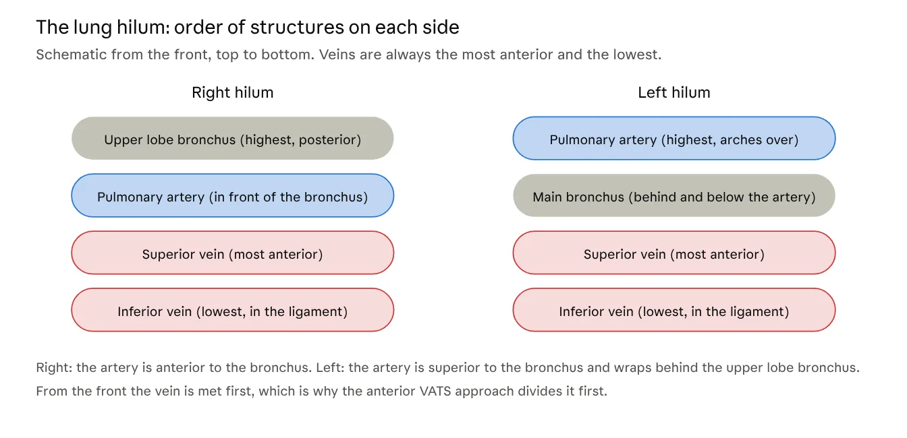
VATS anterior approach: order of division
| Lobe | Usual order | Structure to protect |
|---|---|---|
| Right upper | Superior vein (upper lobe branches only), truncus anterior, upper lobe bronchus, posterior ascending artery, fissures | Middle lobe vein, which joins the superior vein; the posterior ascending artery behind the bronchus |
| Middle | Middle lobe vein, bronchus, one or two middle lobe arteries, fissures | Upper lobe vein branches; the artery to the lower lobe |
| Right lower | Inferior ligament and vein, basal and superior segmental arteries in the fissure, bronchus | Middle lobe bronchus and artery, which arise opposite the superior segmental branches |
| Left upper | Superior vein, first arterial branches, upper lobe bronchus, remaining arteries (three to seven, variable), fissure | Main pulmonary artery, which runs behind the bronchus; the recurrent laryngeal nerve at station 5; a common venous trunk |
| Left lower | Inferior ligament and vein, arteries in the fissure, bronchus | Lingular artery and vein; a common venous trunk |
Fissure-last (fissureless) technique divides the hilar structures first and staples the fissure at the end; it reduces air leak when the fissure is fused.
Bleeding from the pulmonary artery
Do not clamp blindly. Compress with a sponge stick or the lung itself and wait several minutes.
Tell the anaesthetist and scrub team; get blood, a second sucker and vascular clamps.
Gain proximal control, opening the pericardium if needed, then distal control.
Repair with 5-0 polypropylene, or divide and oversew. Convert to thoracotomy without delay if control is not certain; conversion for bleeding is not a complication, delay is.

Open, VATS or robotic
VIOLET (in the Thoracic 2 tab) showed better recovery of physical function after VATS than open lobectomy with no oncological penalty. Robotic lobectomy gives similar outcomes to VATS with longer operating time and higher cost in most series. Conversion rates of 5 to 10% are expected; the common reasons are bleeding, adherent nodes and failure to progress.
Segmentectomy
3 parts · 2 drawings
An anatomical segmentectomy divides a segment's bronchus, artery and intrasegmental vein individually and separates the lung along the intersegmental plane, keeping the intersegmental vein as the landmark. It is not a large wedge.

Who
Intentional: peripheral tumour of 2 cm or less, node negative at operation, with an achievable margin (JCOG0802 and CALGB 140503, in the Thoracic 2 tab); ground-glass-dominant tumours up to 3 cm (JCOG1211).
Compromise: a patient who cannot tolerate lobectomy.
Also metastases and benign disease too deep for a wedge.
Steps
Plan on thin-slice CT, with three-dimensional reconstruction for anything other than a simple segment: which bronchus, which arteries, where the intersegmental veins run, and the distance from tumour to the planned plane.
Sample segmental (station 13), lobar and hilar nodes and send them for frozen section. A positive node converts the operation to lobectomy in a fit patient.
Divide the segmental artery or arteries and the segmental bronchus. Before stapling the bronchus, clamp and reinflate to confirm that the rest of the lobe ventilates.
Divide the intrasegmental vein; preserve the intersegmental vein.
Define the plane, by one of: inflation-deflation (reinflate the whole lung after the bronchus is divided, then deflate, so the target segment stays inflated), or intravenous indocyanine green with near-infrared imaging after the artery is divided (the target segment stays dark).
Divide the plane with staplers, or open it with energy along the vein for complex segments.
Check the margin on the specimen: at least 2 cm, or at least the tumour diameter (margin-to-tumour ratio of 1 or more). If it is short, take more or convert.

Pitfalls
Wrong bronchus or artery: the commonest serious error, prevented by the reinflation test and by the reconstruction.
Short margin from a tumour near the intersegmental plane: take the adjacent segment or do a lobectomy.
More air leak than lobectomy (6.5% against 3.8% in JCOG0802) and more local recurrence.
Kinking or torsion of the remaining segments, especially the lingula or the middle lobe after an adjacent resection.
Sleeve resection
5 parts · 2 drawings
A sleeve lobectomy removes a lobe with a cuff of the main airway and rejoins the airway end to end. It is the alternative to pneumonectomy for a tumour at a lobar orifice, and is preferred whenever a clear margin can be had.

Indications
Central tumour, usually squamous carcinoma or carcinoid, at or involving a lobar orifice, where lobectomy would leave a positive bronchial margin.
N1 nodes invading the lobar bronchus from outside.
Benign stricture and low-grade tumours of the main bronchus (sleeve resection of the bronchus without lung).
Right upper lobe is the commonest; then left upper, left lower and the right-sided extended sleeves (upper and middle, middle and lower).
Steps
Bronchoscopy yourself beforehand: the proximal and distal extent, and the length of normal airway on each side.
Complete the vascular part of the lobectomy and the nodal dissection first, so the airway is free.
Divide the bronchus proximally and distally with a knife, at right angles, through cartilage where possible. Send both margins for frozen section. Ventilate the other lung; cross-field or jet ventilation is rarely needed for a lobar sleeve.
Reduce tension: divide the inferior pulmonary ligament, and open the pericardium around the inferior vein if more length is needed.
Anastomose with 3-0 or 4-0 absorbable monofilament (polydioxanone), interrupted throughout or continuous for the back wall with interrupted sutures in front; knots outside. Correct size mismatch by spacing the sutures or telescoping the smaller distal end into the larger proximal end.
Test under water. Wrap with a pedicled flap (intercostal muscle, pericardial fat, pleura or pericardium), and always place the flap between the anastomosis and the pulmonary artery.
Bronchoscopy at the end of the operation to clear secretions and see the suture line.

Arterial and double sleeve
When the tumour also involves the pulmonary artery, the artery is clamped after 3,000 to 5,000 units of heparin, and repaired by tangential resection with a patch, sleeve resection with end-to-end anastomosis, or a conduit. The bronchial anastomosis is done first. A flap between the two suture lines prevents a bronchovascular fistula.
After the operation
Secretion retention is the main early problem: the reimplanted lobe has no cough reflex or lymphatic drainage for weeks. Physiotherapy, early mobilisation, mini-tracheostomy or repeated bronchoscopy as needed.
Bronchoscopy before discharge and again at about six weeks.
Anastomotic complications: dehiscence (early, often needing completion pneumonectomy), stricture (late; dilatation or stent), and bronchovascular fistula (sentinel haemoptysis; fatal if missed).
Induction chemotherapy or chemo-immunotherapy does not preclude a sleeve; high-dose radiotherapy increases anastomotic risk and is the stronger reason to wrap.
Sleeve or pneumonectomy
| Source | Finding |
|---|---|
| French national database (Epithor), 941 sleeve lobectomies and 5,318 pneumonectomies, 2005 to 2014 | Propensity-matched analysis favoured sleeve lobectomy for overall and disease-free survival, with more pulmonary complications but fewer fistulae and empyemas |
| Single-centre comparison | Thirty-day mortality 3.2% after sleeve lobectomy against 9.6% after pneumonectomy; five-year survival 63% against 39% |
| Meta-analysis of extended sleeve lobectomy, 431 patients | Better survival than pneumonectomy; fistula 4.6%, stricture 3.1%, operative mortality 1.2% |
There is no randomised trial. Patients selected for a sleeve have smaller, more favourable tumours, so the survival difference is partly selection. The consistent finding is lower operative mortality and preserved lung, which is enough to make sleeve resection the first choice when the margin is clear.
Tracheal resection: preventing and managing complications
3 parts · 2 drawings
Tapias and Mathisen, Annals of Cardiothoracic Surgery 2018;7:237, the Massachusetts General Hospital experience. Full text read on 17 November 2026. This is expert opinion built on one centre's series, the largest there is.
Principles that prevent complications
Tension on the anastomosis is the largest single cause of anastomotic complications.
Up to half of the adult trachea can be resected, but complications rise sharply beyond 4 cm. In children they rise beyond 30% of length.
Decide resectability before dividing anything. Use frozen section freely. A microscopically positive margin can be accepted in adenoid cystic carcinoma rather than risk tension.
Protect the lateral blood supply: dissect circumferentially only at the diseased segment, and no more than about 1 cm beyond each line of division.
Stay on the trachea. Do not look for the recurrent laryngeal nerves and keep out of the tracheo-oesophageal groove.
Anastomosis: interrupted 4-0 polyglactin sutures 2 to 3 mm apart, lateral full-thickness traction sutures to take the tension, knots tied outside the lumen after all sutures are placed.
Extubate at the end of the operation; positive pressure ventilation stresses the suture line.
Bronchoscopy at about one week picks up anastomotic problems before they declare themselves.
Release manoeuvres, in increasing order: neck flexion; pretracheal mobilisation (by mediastinoscope for distal resections, done at the same sitting to avoid scarring); suprahyoid laryngeal release for high resections; division of the inferior pulmonary ligament; inferior hilar release through a U-shaped pericardial incision below the inferior vein; complete hilar release. Suprahyoid release costs some swallowing function.
Who is at risk
Absolute contraindications: unfit for surgery, or not enough healthy trachea for a primary anastomosis.
Steroids: stop two to four weeks before surgery if possible. Preoperative steroids do not prevent airway oedema.
Previous radiotherapy: possible in selected patients, with a vascularised pedicled flap around the anastomosis. Do not irradiate a resectable tumour first.
A patient likely to need ventilation afterwards should not have a resection yet.
Granulomatosis with polyangiitis: bronchoscopic treatment first.

The series behind these figures: 901 resections over 28 years; post-intubation stenosis 65.4%, tumour 23.1%, idiopathic laryngotracheal stenosis 9.2%, tracheo-oesophageal fistula 2.3%. Mortality 1.2%, any complication 18.2%, anastomotic complication 9%. Mortality was 7.4% with an anastomotic complication against 0.6% without.
The complications
| Complication | Frequency | When and how it presents | Management |
|---|---|---|---|
| Anastomotic separation | 37 of 901 (4.1%) | First two weeks; stridor, cough, haemoptysis, surgical emphysema, wound infection; usually anterior | See the diagram below |
| Restenosis | 37 of 901 (4.1%) | Months later; obstructive symptoms; flexible bronchoscopy | Rigid or balloon dilatation. Consider re-resection if dilatation is needed more often than every three to six months, but wait six to twelve months from the first operation. Silicone stent or T-tube as a bridge or long term |
| Granulation tissue | 7 of 901 (0.7%) | Days to weeks; stridor | Bronchoscopic debridement; local triamcinolone; T-tube if recurrent. Rare since absorbable sutures |
| Tracheo-innominate fistula | 2 of 901 (0.2%) | Sentinel bleed then massive haemoptysis | Cuffed tube to tamponade; collar incision plus sternotomy; control and resect the involved artery, vein graft only if EEG changes on clamping; buttress the trachea. Prevent by not dissecting behind the artery and interposing tissue |
| Tracheo-oesophageal fistula | 3 of 901 (0.3%) | Late; cough on swallowing, aspiration pneumonia | Contrast swallow and endoscopy of both tubes. Antibiotics and drainage; T-tube or cuffed tracheostomy, venting gastrostomy, feeding jejunostomy; repair when inflammation has settled |
| Laryngeal oedema | Commoner after laryngotracheal resection | Hoarseness, sometimes stridor | Head up, voice rest, steroids for 24 to 48 hours, diuresis, nebulised adrenaline, heliox. Small uncuffed tube if severe; tracheostomy if it persists after a few days |
| Recurrent nerve palsy | 0.8% after laryngotracheal resection | Hoarse voice, weak cough, aspiration | Laryngoscopy. No permanent medialisation for six months; temporary injection if aspirating. Bilateral: tracheostomy |
| Swallowing dysfunction | Uncommon | After suprahyoid release, long resections, older patients | Nil by mouth early; speech and language assessment before diet |
Separation, restenosis and granulations add up to 81 of 901, which is the 9% anastomotic complication rate.

Points an examiner will want:
The first response to any anastomotic problem is to secure the airway, in theatre, with a bronchoscope. Not CT.
A failed anastomosis is managed with a T-tube or tracheostomy and time, not immediate re-anastomosis: the tissue is inflamed and the trachea is already shorter.
A sentinel bleed after tracheal surgery or tracheostomy is a tracheo-innominate fistula until shown otherwise.
The mortality figure to remember: an anastomotic complication raises it about twelvefold.
Not in the paper, from memory: the chin-to-chest guardian stitch is usually kept for about seven days. The 24 to 48 hour steroid course for oedema is from Mathisen's separate conference summary.
Pulmonary artery reconstruction
1 drawing
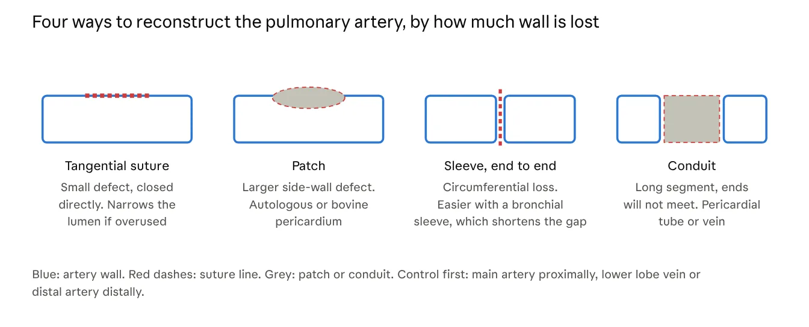
Reconstruction without heparin
Watanabe, Hattori, Suzuki and colleagues, JTCVS 2022;164:1200, Juntendo University, Tokyo. The page would not open; what follows is from the abstract as shown in search results, and the results paragraph was cut off.
Question: can the artery be clamped and reconstructed safely without systemic heparin?
130 of 3,537 lung cancer resections (3.7%) between 2008 and 2019 had the artery reconstructed to avoid pneumonectomy, none with intraoperative systemic heparin. Median follow-up 37 months. Stage III in 55.
Conclusion: very low risk of thrombosis and of perioperative bleeding.
Not seen: the split between tangential suture, patch and end-to-end repair, the complication counts, mortality and survival.
How this sits against usual practice:
Most Western units give a small dose of heparin before clamping, typically 1,500 to 3,000 units, and do not reverse it (the dose range is from memory; 1,500 units is the figure in the review below).
The argument against heparin is bleeding from an extensive nodal dissection after induction treatment. The Juntendo series says omission is safe in their hands. It is a single-centre retrospective series without a heparin comparison group.
Thrombosis is rare whatever is done. Venuta and colleagues had one thrombosis, needing completion pneumonectomy, in 105 reconstructions, with operative mortality 0.95% and five-year survival 44% (60% for stage I and II, 28% for stage III). Ma and colleagues had one in 118, no hospital deaths and five-year survival 50.2%.
A 2022 review notes that thrombosis is reported more often after tangential resection with direct suture than after patch or end-to-end repair. A narrowed lumen matters more than the anticoagulation.
Technical points, from memory of standard descriptions: proximal control of the main artery, intrapericardial if needed; distal control on the artery or by clamping the lower lobe vein; 5-0 or 6-0 polypropylene; do the bronchial anastomosis first in a double sleeve so the arterial suture line is not pulled on; put a flap between the two suture lines; flush and de-air before the last stitch.
Sleeve resection: complications and their management
1 drawing
Kahya and Yüksel, Turkish Journal of Thoracic and Cardiovascular Surgery 2023;31(Suppl 1):S54. Full text read on 17 November 2026. A narrative review; the rates are ranges across published series, not pooled estimates.
Headline figures: mortality after bronchial sleeve resection 1.5% to 11%, morbidity 11% to 51%. Early deaths are from pneumonia and respiratory failure; late deaths are almost all from the anastomosis.
Risk factors for anastomotic failure: long-term steroids, active smoking, active tuberculosis or pneumonia, diabetes, malnutrition and low albumin, anaemia, age over 60, poor lung function, induction or adjuvant treatment, expected ventilation after surgery, a positive bronchial margin and a devascularised bronchus.

| Complication | Timing | Rate after sleeve | Management |
|---|---|---|---|
| Atelectasis and sputum retention | Early, common | Physiotherapy, bronchoscopic toilet. The reimplanted lobe is denervated and has no cough reflex | |
| Anastomotic dehiscence or necrosis | Early | Surgery. Completion pneumonectomy; if the patient cannot tolerate it, repair wrapped in omentum or muscle | |
| Bronchopleural fistula | Early or late | 0 to 8.1% | Small: antibiotics, drainage, irrigation; many close. Otherwise debride, close with absorbable sutures and buttress; completion pneumonectomy if repair is impossible |
| Bronchovascular fistula | Usually within weeks | 0 to 2.5% | Sentinel bleed, then massive haemoptysis. Mortality near 100%. Immediate surgery; completion pneumonectomy |
| Pulmonary artery thrombosis or embolism | Early, sometimes late | 1.9% after bronchovascular procedures | CT and echocardiography. Can present as pulseless electrical activity arrest |
| Anastomotic stricture | Late | 0 to 15.1% | Debridement and repeated dilatation; stents have a limited role |
| Local recurrence | Late | Under 5 to 10% | Bronchoscopy twice a year; re-resection if caught early, radiotherapy otherwise |
The review's own anticoagulation regimen for vascular sleeves is 1,500 units of intravenous heparin during the resection, not reversed, then low molecular weight heparin daily for seven days. That is the opposite position to the Juntendo paper above, and an examiner may ask you to argue both.
Other points from the review:
Absorbable monofilament suture gives fewer airway complications than non-absorbable. No single suture technique is standard; a continuous technique has low complication rates in the series quoted.
Bronchoscopy before discharge to inspect the anastomosis.
Post-pneumonectomy pulmonary oedema, relevant to carinal and sleeve pneumonectomy: day two or three, 4% to 14% after carinal resection, treated as acute respiratory distress syndrome with fluid restriction, diuretics, ventilation and sometimes extracorporeal support.
Read with the margin section above: a positive bronchial margin appears in this review's list of risk factors for anastomotic failure, which is a separate reason to care about it besides recurrence.
Surgical access: open, VATS and robotic
5 parts · 7 drawings
VATS against open: VIOLET
Lim and colleagues, NEJM Evidence 2022. The UK trial, run from the Royal Brompton with Bristol; know it in detail.
Design: 503 patients in nine UK centres, July 2015 to February 2019, known or suspected lung cancer cT1 to 3, N0 to 1, M0, randomised to VATS (247) or open (256) lobectomy.
Primary outcome: self-reported physical function (EORTC QLQ-C30) at five weeks. 73 with VATS against 67 with open; mean difference 4.65 (95% CI 1.69 to 7.61), p = 0.002.
In hospital: complications 32.8% against 44.3%; median stay four against five days. Serious adverse events in hospital did not differ.
After discharge: serious adverse events 30.7% against 37.8%.
Oncology: no difference in progression-free survival at 52 weeks. Nodal upstaging and complete resection rates were similar (from memory).

VATS against open: survival
Harris, Lim and colleagues, Lancet 2026;407:1182. Individual patient data from the three randomised trials: Bendixen (Denmark), Long (China) and VIOLET (UK), with median follow-up of 9.5, 5.2 and 3.8 years.
1,185 patients: 586 VATS, 599 open.
Overall survival favoured VATS: hazard ratio 0.79 (95% CI 0.65 to 0.96).
Disease-free survival was similar: hazard ratio 0.91.
Reading: the survival gain without a recurrence gain suggests fewer non-cancer deaths, through less surgical trauma and better recovery, not better cancer clearance. This is now the strongest argument that minimal access is the standard for early-stage disease, and it postdates most guidelines.
Robotic against VATS
Five randomised trials, 712 patients, pooled by Ren and colleagues, Journal of Thoracic Disease 2026.
| Trial | Patients, robotic / VATS | Main findings |
|---|---|---|
| RVlob (Jin 2022, Niu 2024), single centre, China | 157 / 163 | Blood loss 100 against 150 mL; nodes 11 against 10; complications 14.6% against 18.4% (not significant); hospital cost 12,821 against 8,009 US dollars; three-year survival 94.6% against 91.5%, non-inferior |
| RAVAL (Patel 2023), Canada, United States, France; blinded | 81 / 83 | Blood loss 50 against 150 mL; nodes 10 against 8; conversion 7.4% against 15.6% (p = 0.10); health utility a little higher at 7 to 12 weeks; 14,926 dollars per quality-adjusted life year |
| ROMAN (Veronesi 2021), Italy | 38 / 39 | Stopped early for futility; complications 34% against 23% (not significant); nodes 7 against 4 |
| BRAVO (Terra 2022), Brazil | 37 / 39 | Readmission 2.7% against 20.5%; no quality of life difference |
| Catelli 2023 | 25 / 50 | VATS 20 minutes quicker; no survival difference |
Pooled: conversion relative risk 0.67 (0.37 to 1.21); complications 0.91 (0.68 to 1.21); 62 mL less blood loss; 2.6 more nodes; no difference in operating time, stay, drain time, upstaging, or three-year survival. The meta-analysis has internal inconsistencies (a confidence interval that does not contain its estimate, duplicated rows), so trust the individual trial figures over the pooled ones.
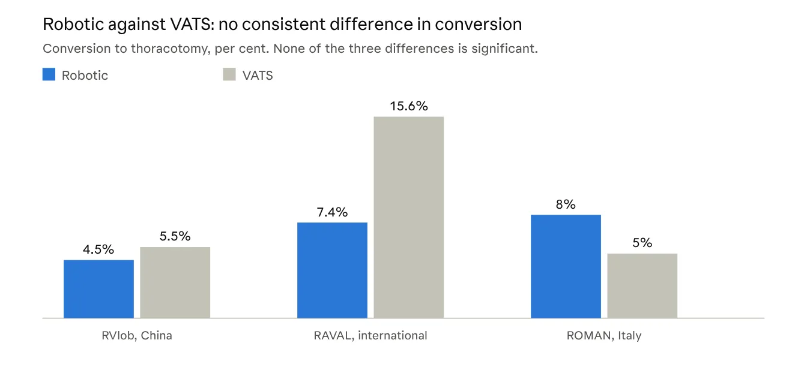
What to say: robotic lobectomy is a safe alternative with equivalent complications and three-year survival, a slightly higher node count that has not produced more upstaging, and higher cost driven by equipment. No randomised trial compares robotic with open. Claimed advantages (ergonomics, training, complex resections, lower conversion) rest on registry data.
NICE on robotic surgery
Robot-assisted surgery for soft tissue procedures: early value assessment (HTG742, formerly HTE21), published April 2025. The NICE pages would not open; this is from search extracts.
Five systems can be used in the NHS while evidence is generated: Da Vinci SP, Da Vinci X and Xi, Hugo, Senhance and Versius. Prostatectomy is excluded because it is established practice.
Conditional: use is allowed only if the evidence in the evidence generation plan is being collected, for three years, after which NICE reassesses for routine adoption.
Da Vinci X and Xi have the broadest indications; 13 of the 20 studies reviewed were of that system.
The committee judged robotic surgery generally comparable with standard minimal access surgery for clinical outcomes, with possible gains in access to minimal access surgery, length of stay and training.
Thoracic procedures fall within soft tissue procedures. I could not confirm any thoracic-specific wording.
Thoracotomy approaches
From memory of standard operative texts; not checked against a source today.
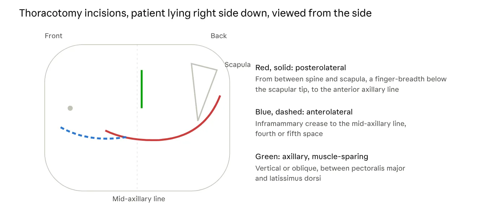

Surface landmarks

Other fixed points: the sternal angle marks the second costal cartilage, the level of T4 to T5, the carina and the start and end of the aortic arch. The lung's lower border lies at the sixth rib in the mid-clavicular line, the eighth in the mid-axillary line and the tenth at the back; the pleura reaches two ribs lower at each (eighth, tenth, twelfth).
Chest wall muscles

The intercostal space

| Incision | Position and space | Muscles | Use | Drawbacks |
|---|---|---|---|---|
| Posterolateral | Lateral decubitus; fifth space for lung resection | Latissimus dorsi divided; serratus anterior divided or spared; trapezius and rhomboids if extended back | The standard for lung resection, oesophagus, descending aorta, posterior mediastinum | Most pain and shoulder dysfunction; chronic pain in a substantial minority |
| Muscle-sparing lateral | Lateral decubitus; fourth or fifth space | Latissimus retracted back, serratus split along its fibres | Most open lobectomies; conversion from VATS | Smaller exposure; seroma under the flaps |
| Axillary | Lateral, arm abducted; third or fourth space | None divided; between pectoralis major and latissimus | Apical procedures, first rib, sympathectomy | Limited exposure; long thoracic and intercostobrachial nerves at risk |
| Anterolateral | Supine, side raised 30 to 45 degrees; fourth or fifth space | Pectoralis major and serratus split | Emergency and trauma thoracotomy, lung transplant, minimally invasive cardiac surgery, open lung biopsy | Poor access to posterior structures |
| Clamshell (bilateral anterior thoracosternotomy) | Supine; fourth or fifth space, sternum divided transversely | Pectorals; both internal mammary arteries ligated | Bilateral lung transplant, trauma, large anterior mediastinal or bilateral disease | Sternal override and non-union; pain |
| Hemi-clamshell | Supine; partial sternotomy plus anterior thoracotomy | Pectoralis | Anterior apical (Pancoast) tumours, thoracic inlet, proximal subclavian control | |
| Median sternotomy | Supine | None | Anterior mediastinum, bilateral metastasectomy, carina in some hands | Left lower lobe and posterior hilum poorly reached |
| Thoracoabdominal | Right lateral with hips rolled back; sixth to eighth space across the costal margin | Latissimus, serratus, external oblique, diaphragm | Thoracoabdominal aorta, oesophagogastric junction | Costal margin instability, diaphragm dysfunction |
Points for the viva:
Count ribs from inside or from the scapular tip; the fifth space lies on the oblique fissure and the hilum.
Enter on the upper border of the lower rib. The neurovascular bundle runs under the rib above in the order vein, artery, nerve.
Ways to reduce post-thoracotomy pain: muscle sparing, avoiding rib fracture by gradual spreading or cutting the rib neck or costotransverse ligament, intracostal or nerve-sparing closure sutures, and regional block (paravertebral or erector spinae).
The auscultatory triangle (trapezius, latissimus, medial scapular border) gives entry with little muscle division.
Emergency left anterolateral thoracotomy: fifth space, below the nipple, extend across the sternum to a clamshell if needed.
Status: the operative steps in all three sections are standard technique written from memory, not from a source read today, and the suture, heparin and pressure figures vary by unit. The sleeve against pneumonectomy figures were confirmed on 17 November 2026. The air leak figures are from JCOG0802 as reported in the Thoracic 2 tab.
Resection margin: the R classification and the positive bronchial margin
3 parts · 1 drawing
Three papers you sent, read on 17 November 2026 from their abstracts: the IASLC analysis that defines an uncertain resection, and two series asking whether a microscopically positive bronchial margin after a sleeve resection matters.
The R descriptors
| Category | Meaning |
|---|---|
| R0 | No residual tumour: clear margins, systematic or lobe-specific systematic nodal dissection, and the highest mediastinal node removed is negative |
| R(un), uncertain | Margins clear, but one of: nodal assessment less than the standard (fewer than three mediastinal stations, or no subcarinal station), the highest mediastinal node removed is positive, carcinoma in situ at the bronchial margin, or positive pleural lavage cytology |
| R1 | Microscopic residual tumour: positive margin, extracapsular extension at the margin of a resected node, or malignant pleural or pericardial effusion |
| R2 | Macroscopic residual tumour, in the chest or in nodes left behind |
The wording of the definitions is from memory of the IASLC proposal; the paper's abstract confirms the components tested.
IASLC analysis of margin status
Edwards and colleagues, Journal of Thoracic Oncology 2020;15:344, the IASLC Staging and Prognostic Factors Committee. John Edwards is a UK thoracic surgeon (Sheffield).
14,712 resected cases in the IASLC database. On the conventional definition 14,293 were R0, 263 R1 and 156 R2, with median survival not reached, 33 months and 29 months.
Three or more N2 stations had been explored in 63%, and lobe-specific nodal dissection done in 45%. The highest station was positive in 6.4%. Pleural lavage cytology was positive in 3.5% of the 1,705 tested.
Applying the uncertain category moved 56% of cases out of R0, almost all for inadequate nodal assessment: 6,070 R0, 8,185 R(un), 301 R1 and 156 R2.
In node-positive patients median survival was 70 months for R0, 50 for R(un) and 30 for R1. In node-negative patients R0 and R(un) did not differ.

What it means in practice: more than half of resections recorded as complete do not meet the nodal standard, and in node-positive disease that costs survival, either through under-staging or through disease left behind. Systematic nodal dissection with a named highest station is what makes an R0 an R0. In an MDT, an R(un) resection with positive nodes is a reason to discuss adjuvant treatment as for incompletely staged disease.
Positive bronchial margin after sleeve resection
| Study | Patients | Finding |
|---|---|---|
| Hong and colleagues, JTCVS 2021;161:267 (Samsung Medical Center) | 536 consecutive bronchial sleeve resections, 1995 to 2015; 40 (7.5%) had microscopic residual disease at the bronchial margin | Five-year survival 61.8% with R1 against 61.5% with R0 (p = 0.55); five-year recurrence-free survival 53.7% against 59.0% (p = 0.39); margin status not an independent predictor. The pathological extent of the residual disease helped predict recurrence |
| Ren and colleagues, Thoracic Cancer 2022;13:1664 (Shanghai Chest Hospital) | Sleeve lobectomies compared by margin status after propensity matching | No significant difference in overall survival (p = 0.053) or recurrence-free survival (p = 0.14) between R0 and R1. Among R1 patients, N stage and age predicted survival. R1 looked worse in patients who had more nodes examined. No difference between four histological types of margin involvement |
| Earlier series of all resections, for context: Lee and colleagues 2016, 1,800 patients | 60 with a positive bronchial margin: 18 carcinoma in situ, 42 extramucosal | Five-year stump recurrence 3.1% for R0, 5.6% for carcinoma in situ and 12.2% for extramucosal disease; survival worse with extramucosal disease in stage IB to II |
How to use this:
A microscopically positive bronchial margin after a sleeve does not by itself mandate completion pneumonectomy. In both sleeve series survival was not measurably worse, and the alternative carries the mortality of pneumonectomy.
The type of margin involvement matters more than its presence. Carcinoma in situ or mucosal disease behaves close to R0; extramucosal or peribronchial disease, which usually means lymphatic spread, carries stump recurrence several times higher and tracks nodal stage.
Both sleeve series are retrospective and small in the R1 arm (40 patients in the larger), so they cannot exclude a moderate harm. The p value of 0.053 for survival in the second is close to conventional significance.
At operation the rule does not change: send both margins for frozen section and resect further if length allows a tension-free anastomosis. These papers inform what to do when the final histology returns positive, or when further resection would mean pneumonectomy in a patient who cannot tolerate it.
After an R1 sleeve: bronchoscopic surveillance of the anastomosis, and MDT discussion of adjuvant radiotherapy to the stump for extramucosal disease, with chemotherapy by stage. Radiotherapy on a fresh anastomosis has its own risk.
Status: all three papers were read from abstracts or institutional summaries, because PubMed and PubMed Central would not open; the full texts, including the numbers of R0 and R1 patients in the Thoracic Cancer paper and its data source, were not seen.
Thoracic anatomy for the operating surgeon
Added 19 November 2026 from the TSRA Review 3rd ed., ch. 1 (Chen, Godoy), read in full.
Chest wall
- Ribs 1 to 7 true, 8 to 10 false, 11 and 12 floating. On the first rib the subclavian vein runs in front of scalenus anterior; the artery and brachial plexus behind it.
- Sternal angle: second space, aortic arch, carina, T4.
- Neurovascular bundle runs under each rib.
| Muscle | Nerve | Artery |
|---|---|---|
| Pectoralis major | Medial and lateral pectoral | Pectoral branch of the thoracoacromial trunk |
| Latissimus dorsi | Thoracodorsal (C6 to C8) | Thoracodorsal |
| Serratus anterior | Long thoracic (C5 to C7) | Lateral thoracic |
These three are the usual flaps. Auscultatory triangle (for a muscle-sparing thoracotomy): trapezius, latissimus, scapula.
Diaphragm
The periphery is supplied by intercostal nerves, so a circumferential incision spares the phrenic supply. The foramen of Morgagni is behind the sternum and transmits the superior epigastric vessels.
Pleura
The pleura reaches one space lower than the lung: lung to the 6th, 8th and 11th spaces (front, side, back); pleura to the 7th, 9th and 12th. The apex rises above the clavicle under Sibson's fascia. The endothoracic fascia gives an avascular extrapleural plane.
Segments
| Lobe | Segments |
|---|---|
| Right upper | Apical, anterior, posterior |
| Right middle | Medial, lateral |
| Right lower | Superior, anterior basal, posterior basal, medial basal, lateral basal |
| Left upper | Apicoposterior, anterior, superior lingular, inferior lingular |
| Left lower | Superior, anteromedial basal, posterior basal, lateral basal |
Ten on the right, eight on the left. Bronchi are the most constant; arteries run with them in the centre of the segment; veins run between segments.
Airway and hilum
- Trachea about 11 cm, 17 to 21 rings, divides at T4/5.
- Right upper lobe bronchus within 2.5 cm of the carina (rarely from the trachea). Left main bronchus 5 to 6 cm long.
- Right main bronchus is above its artery (eparterial); left is below (hyparterial).
- Right pulmonary artery: truncus anterior first; a posterior ascending branch may enter the upper lobe behind the superior vein.
- Left upper lobe: 2 to 7 arterial branches; the short anterior branches hidden by the superior vein are the ones torn.
- Superior veins are the most anterior hilar structures. A single common vein occurs in 25% on the left and 3% on the right.
- Bronchial arteries: usually two left, one right, from the aorta or an intercostal.
Nerves and duct
- Phrenic: 1.5 cm in front of the hilum. Vagus: behind it.
- Left recurrent laryngeal nerve, round the ligamentum, is at more risk than the right; avoid diathermy on the left of the airway at mediastinoscopy.
- Thoracic duct: through the aortic hiatus, up between aorta and azygos behind the oesophagus, crosses to the left at T4/5, ends at the left subclavian-jugular junction.
Node stations
| Station | Site |
|---|---|
| 1 | Above the innominate vein: low cervical, supraclavicular, sternal notch |
| 2 R/L | Upper paratracheal |
| 3a, 3p | Prevascular; retrotracheal |
| 4 R/L | Lower paratracheal, down to the carina |
| 5 | Aortopulmonary window, lateral to the ligamentum |
| 6 | Para-aortic |
| 7 | Subcarinal |
| 8 | Para-oesophageal, below the carina |
| 9 | Pulmonary ligament |
| 10 to 14 | Hilar, interlobar, lobar, segmental, subsegmental |
Stations 10 to 14 on the tumour side are N1; ipsilateral mediastinal N2; contralateral or supraclavicular N3.
Lung resection: technique and pitfalls
Added 19 November 2026 from the TSRA Review 3rd ed., ch. 12 (Bryan, Swanson), read in full.
| Operation | Place |
|---|---|
| Wedge | Diagnosis, metastases, or cancer in a patient unfit for anatomical resection; wide margins and node sampling |
| Segmentectomy | Follows the bronchus and lymphatics of the segment; small peripheral tumours, multiple tumours, limited reserve |
| Lobectomy | Standard; minimally invasive in most. Convert or go open if R0 resection or node dissection cannot be done safely |
| Sleeve lobectomy | Tumour at a lobar orifice, to avoid pneumonectomy |
| Pneumonectomy | Only when a sleeve will not do |
The chapter was written before the long-term results of JCOG0802 and CALGB 140503; those are in Thoracic 16. CALGB 140503 (Altorki, NEJM 2023, abstract read from the paper): sublobar resection was non-inferior for disease-free survival, hazard ratio 1.01, with similar overall survival.
Right side
- Upper lobectomy: find and keep the middle lobe vein, which shares the superior vein.
- Middle lobe torsion can follow upper lobectomy; check orientation on reinflation (some fix the lobe).
- The azygos vein crosses the right main bronchus; the upper lobe bronchus is just inferomedial.
- The superior segmental artery may arise from the middle or lower lobe artery.
Left side
- See the lower vein before dividing the upper: a common trunk exists.
- Avulsion of the apicoposterior branch is the classic injury. Consider proximal control of the main artery.
- Recurrent laryngeal nerve at risk during node dissection: assess any voice or swallowing change.
- The longer left main bronchus suits sleeve resection.
Sleeve
Absorbable suture for the bronchus, non-absorbable for the artery. If both are reconstructed, place a muscle flap between the suture lines to prevent a bronchovascular fistula. Bronchoscopy afterwards; a stricture can be dilated from 3 to 4 weeks.
Pneumonectomy
- Generally tolerated when predicted postoperative FEV1 and transfer factor are both over 60% (the chapter's figure; UK fitness thresholds are in Thoracic 17).
- Right is more dangerous than left: poorer bronchial blood supply and a larger lung removed.
- Stump: little diathermy at the carina, divide flush, cover with pleura, pericardial fat or muscle.
- Close any right pericardial defect, to prevent cardiac herniation and rotation. Herniation through a left defect is rare.
Locally advanced NSCLC: operative considerations for extended resections (TSRA ch. 9, part 2)
Added 20 November 2026 from TSRA Review of Cardiothoracic Surgery 3rd ed., ch. 9 "Locally advanced lung cancer" (Evan Rotar and Linda Martin). Read in full (PDF pages 94 to 103); this part covers the operative sections (pages 100 to 103). Staging, resectability and multimodality treatment are in Thoracic 3. No classes or levels of evidence are given.
General
- Surgery is the mainstay for stage I and II; stage III needs an individualised MDT decision. More than 50% present with inoperable disease.
- IASLC definition of R0: microscopically clear margins, systematic mediastinal lymph node dissection, and no extracapsular spread from involved nodes into surrounding structures.
Superior sulcus (Pancoast) tumours
- Arise at the apex of the right or left upper lobe; may invade upper ribs, brachial plexus, subclavian vessels or vertebral bodies. NSCLC is the main cause.
- Symptoms: pain, neuropathy, even SVC syndrome.
- Pancoast syndrome: shoulder pain, Horner's syndrome (ptosis, miosis, anhidrosis), wasting of the intrinsic hand muscles (C8 to T1 plexus invasion).
Thoracic inlet compartments | Compartment | Contents | |---|---| | Anterior | Platysma, sternocleidomastoid, subclavian vein | | Middle | Phrenic nerve, anterior scalene, subclavian artery, brachial plexus, middle and posterior scalenes | | Posterior | Sympathetic ganglia, long thoracic nerve, subscapular artery, external branch of spinal accessory nerve |
Treatment: induction chemoradiotherapy, then resection. | Approach | Use | |---|---| | Dartevelle (anterior) | Anterior inlet tumours, especially with vascular or brachial plexus involvement | | Shaw-Paulson (posterior) | Vertebral body invasion or posteriorly centred tumours |
- Remove all involved structures en bloc for R0. Incomplete resection and N2 disease both give much poorer survival.
- Avoid leaving disabling deficits:
| Structure | Guidance |
|---|---|
| T1 nerve root | Sacrifice well tolerated (mild intrinsic hand weakness) |
| C8 nerve root | Sacrifice causes Klumpke's paralysis (atrophic paralysis of hand and forearm muscles); poorly tolerated |
| Subclavian vein | May be resected and ligated |
| Subclavian artery | May be resected but must be reconstructed |
| Phrenic nerve | Preserve whenever possible |
| Spinal cord or extensive plexus involvement | Contraindication to resection |
Chest wall invasion
- Loss of lung plus loss of chest wall mechanics can cause major respiratory dysfunction: prolonged ventilation and more pulmonary complications.
- Three principles: adequate margins; restore structural integrity for respiratory mechanics; plan soft tissue or flap cover for large resections.
- Usually posterolateral thoracotomy, entering one rib space above or below the invasion; en bloc resection with margins ideally 2 cm; take involved skin en bloc.
| Defect | Reconstruction |
|---|---|
| Less than 5 cm, or posterior under the scapula | No skeletal reconstruction |
| Large anterior defects | Skeletal stabilisation: autologous (e.g. tensor fasciae latae) or synthetic (acellular dermal matrix or PTFE) |
| Soft tissue | Usually primary closure; flaps rarely needed. Defects not needing stabilisation may be covered with autologous tissue alone |
| Common muscle flaps | Latissimus dorsi, serratus anterior, rectus abdominis, pectoralis major |
Spinal involvement
- May need partial or complete vertebrectomy at one or more levels; tumour in the intervertebral foramen may need laminectomy and rib disarticulation to reach the nerve roots.
- Low mortality, but major morbidity in about a third; up to half of complications relate to the spinal part.
- 5-year survival 25% reported after R0 resection including vertebrectomy.
Diaphragm involvement
- Less than 0.5% of lung cancers; poor prognosis. Hard to assess on axial imaging; may not be evident before surgery.
- En bloc resection, aiming for 5 cm margins.
- If primary repair is not possible: prosthesis closest in pliability and thickness to diaphragm, i.e. 2 mm PTFE or acellular dermal matrix (e.g. SurgiMend).
Bronchial and carinal involvement
- Resectable with acceptable mortality in specialised centres.
- Proximal ipsilateral main bronchus involvement: sleeve lobectomy, or pneumonectomy if not possible.
- Sleeve lobectomy vs pneumonectomy (retrospective only, no RCTs): equivalent or better perioperative morbidity and mortality, no oncological disadvantage, some series show better 5-year survival.
Sleeve (carinal) pneumonectomy - Right: standard posterolateral thoracotomy. - Left: harder (aorta limits access to the carina). Approaches: left thoracotomy, bilateral thoracotomies, median sternotomy, clamshell. Cardiopulmonary bypass can improve exposure (decompresses the heart) and secure oxygenation during reconstruction.
Anastomotic principles - Confirm clear proximal and distal margins before reconstruction. - Tension-free anastomosis to prevent dehiscence. Release manoeuvres:
| Manoeuvre | Note |
|---|---|
| Hilar release (pericardial incision) | Complete release |
| Inferior pulmonary ligament release | |
| Preoperative mediastinoscopy | Frees the proximal trachea |
| Laryngeal release | Helps proximal airway resection; not helpful for distal trachea or carina |
- Wrap or buttress with pericardial, pleural or intercostal muscle flaps.
- Most feared complications: anastomotic dehiscence and bronchovascular fistula. Management may need further resection, muscle flap cover or an open window; long recovery and high mortality.
Separate tumour nodules in the same or another ipsilateral lobe
- Same lobe: lobectomy with the primary.
- Different ipsilateral lobe: surgery possible as part of multimodality treatment; check lung function (may need bilobectomy or pneumonectomy).
- Mediastinal nodal status is a strong prognostic factor: N0 survives better than N1 or N2.
Pulmonary metastasectomy (TSRA ch. 15)
Added 20 November 2026 from TSRA Review of Cardiothoracic Surgery 3rd ed., ch. 15 "Metastatic lung cancer" (K. Candis Jones-Ungerleider and Elliot Wakeam). Read in full (PDF pages 132 to 135). No guideline classes or levels of evidence are given; the chapter states no RCT exists for metastasectomy.
Background
- 25 to 30% of patients with cancer elsewhere develop lung metastases. The lung can be the only site, depending on primary site and histology.
- Commonest primaries resected: colorectal, breast, renal cell, head and neck, sarcoma, melanoma, non-seminomatous germ cell, some gynaecological tumours (including leiomyomas).
- Considered for any primary depending on pattern of recurrence, disease-free interval, growth rate and other factors.
- Alexander and Haight (1947): improved 3-year survival after resection of lung metastases.
- International Registry of Lung Metastases (IRLM), founded 1991; 1997 report of more than 5,200 metastasectomies. Strong prognostic factors: disease-free interval, number of metastases, histology of primary.
Selection criteria
- Primary controlled.
- Usually no extrathoracic metastases.
- Adequate surgical candidate; complete resection anticipated.
- Goals: longer disease-free and overall survival; palliation of pain, bleeding or infection.
Diagnosis and work-up
| Item | Detail |
|---|---|
| Presentation | Usually asymptomatic; found on surveillance imaging |
| CT | Gold standard. HRCT detects nodules down to 3 mm; CT and HRCT 100% sensitive for nodules 10 mm or more |
| Small nodules | A few nodules of several millimetres are usually watched; as they approach 1 cm, most oncologists refer for surgery if isolated and the primary is controlled |
| PET | Low sensitivity under 10 mm; depends on histology (less useful for sarcoma). Main value: excluding extrathoracic disease |
| PFTs | Confirm reserve. Chemotherapy, especially bleomycin, may reduce lung function |
| Biopsy | If a primary lung cancer or benign cause is possible |
Operative approach
- Aim: R0 resection with maximal preservation of normal lung.
- Usually VATS or robotic: less pain, shorter stay.
- Open approach allows palpation for occult nodules; thoracotomy finds more lesions in some series but has not improved survival. Modern imaging finds most lesions, some too small to palpate.
- Bilateral disease: one operation or staged. Median sternotomy (less pain) or clamshell (better exposure).
- Extent: usually non-anatomical wedge; lobectomy for central lesions; pneumonectomy rarely (morbidity).
- Stereotactic radiotherapy may help spare parenchyma and avoid resections larger than a segmentectomy.
- Assess regional, hilar and mediastinal nodes before and during surgery: nodal involvement means poorer survival.
Other local and regional treatment
| Treatment | Notes |
|---|---|
| Systemic chemotherapy | Often part of treatment |
| Isolated lung perfusion | Investigational. Extracorporeal circuit via pulmonary artery and vein delivers high-dose chemotherapy to the isolated lung, sparing systemic organs |
| Radiofrequency ablation | Unfit or refusing surgery; small lesions away from the mediastinum (thermal spread). Lesion size predicts survival and recurrence |
| SABR | Unfit or refusing surgery; best for small lesions; difficult with multiple lesions (cumulative toxicity) |
Outcomes
- Mostly single-centre retrospective data apart from IRLM. Survival varies widely by histology.
- IRLM 5-year survival: 36% after complete resection vs 13% after incomplete resection.
- More than one metastasis does not consistently predict worse survival across studies.
FRCS Atlas teaching notes: lobectomy, segmentectomy, sleeve and pneumonectomy
Added 20 November 2026 from "FRCS Atlas: single-PDF study compilation" (19 November 2026), thoracic teaching notes, page 6. Read in full (all 16 note pages). Short teaching notes reconstructed for private study, not a guideline; the compilation states they are not verbatim exports and not approved clinical protocols.
Lobectomy, segmentectomy and wedge
- CALGB 140503 randomised sublobar versus lobar resection after operative nodal confirmation; it did not compare wedge with segmentectomy.
- JCOG0802 compared anatomical segmentectomy with lobectomy: better 5-year overall survival with segmentectomy but more local relapse.
- Judge margins and nodes on their own merits, separate from the aim of preserving lung.
Sleeve resection
- Map bronchial and vascular relations first.
- The anastomosis needs viable blood supply, acceptable alignment and tension, and an oncologically adequate margin.
- A positive bronchial margin does not automatically justify pneumonectomy.
- New collapse or haemoptysis after sleeve resection calls for airway and vascular reassessment.
Pneumonectomy and bronchopleural fistula
- Fitness for lobectomy does not establish reserve for pneumonectomy; assess single-lung physiology separately.
- Plan bronchial stump viability.
- A changing fluid level in the space with sepsis may suggest a fistula.
- Drainage alone does not close the fistula or remove aspiration risk; follow the specialist postoperative pathway.
Superior sulcus tumours and chest wall invasion: additions from the FRCS Atlas HTML builds
Added 20 November 2026 after comparing the FRCS Atlas HTML builds (53-chapter merger ch. 34, section 3 and worked case; 42-chapter merger ch. 26; Consolidated ch. 30 to 31; Thoracic-and-Congenital "Sleeve resection" and "Thoracic access, lung isolation and conversion"; index_2 "Sleeve lobectomy") with this tab. Only points not already in the ST4 course are listed; each says whether it was checked against a primary source.
Sleeve, lobectomy, segmentectomy, conversion and post-induction hilar fibrosis are already covered here and in Thoracic 2. Nothing new was found on those.
Superior sulcus (Pancoast) tumours
- Evidence for the standard sequence: the Atlas names SWOG 9416 / Intergroup 0160 as the trial behind induction chemoradiotherapy followed by en bloc R0 resection. (FRCS Atlas draft; not checked against a primary source. The sequence itself is confirmed in TSRA ch. 9, PDF p. 100, already in this tab.)
- Third approach: the anterior transmanubrial approach (Grunenwald) is given as an alternative to Dartevelle's for tumours involving the subclavian vessels. Shaw-Paulson's posterior approach is for posterior, vertebral or T1-root disease. (FRCS Atlas draft; not checked against a primary source)
Chest wall invasion (T3)
| Point | FRCS Atlas draft | Primary source |
|---|---|---|
| Margin | En bloc lobectomy with chest wall, at least 1 rib above and 1 below, margin 3 to 4 cm | TSRA ch. 9, PDF p. 101: adequate margins, ideally 2 cm (already in this tab). Contradiction: use the TSRA figure. The rib-above-and-below rule belongs to primary chest wall tumours (Thoracic 7, chest wall sarcoma section) |
| Reconstruct when | Defect over 5 cm or 3 to 4 or more ribs, especially anterior or lateral, to prevent flail; posterior defects under the scapula excepted | TSRA ch. 9, p. 101: no skeletal reconstruction under 5 cm or posterior under the scapula (agrees). The "3 to 4 ribs" count is not checked |
11 Pleura
Syllabus topic 10. Pneumothorax and haemothorax are flagged critical; decortication for empyema and pneumothorax surgery are index procedures. Sources are named under each section. The TSRA Review is a 2021 North American text, so UK guidance is set beside it where I read it.
Pneumothorax
| Type | Cause and features |
|---|---|
| Primary spontaneous | Rupture of apical subpleural blebs; tall thin young men (6:1); under 10% bilateral; smoking raises risk about 20-fold |
| Secondary spontaneous | Underlying lung disease, most often COPD; more dangerous because reserve is already low |
| Traumatic and iatrogenic | Blunt or penetrating injury, or a procedure that breaches the pleura |
| Catamenial | Pleural endometriosis; within 24 hours before to 72 hours after the onset of menstruation; about 30% of operated pneumothoraces in women; inspect and repair the diaphragm |
| Tension | Clinical diagnosis: hypotension, distended neck veins, tracheal deviation. Decompress at once; do not wait for a film |
Size. An apex-to-cupola distance of 3 cm or more on an erect film is "large", roughly 35% collapse.
Treatment in the TSRA Review. Small primary and stable: observe with oxygen, repeat the film at 6 hours, discharge if no progression. Large primary: chest drain; a Heimlich valve allows discharge if the lung is up and there is no leak. Small secondary: admit and observe. Large secondary: always drain.
Indications for surgery.
- Air leak persisting 3 days or more
- Second ipsilateral pneumothorax
- First contralateral pneumothorax
- Spontaneous haemothorax
- High-risk occupation (divers, pilots)
- Living far from medical care
Principles of the operation. Resect the bleb or lesion, then obtain pleural symphysis: mechanical abrasion or apical parietal pleurectomy, with or without a chemical agent. Chemical pleurodesis only works if the pleural surfaces meet and the culprit lesion is dealt with.
UK position (BTS 2023). Conservative management is acceptable for a primary pneumothorax with minimal or no symptoms, whatever its size, and ambulatory devices are an option. Surgery is considered after a second ipsilateral or first contralateral episode and at the first episode in high-risk occupations. The detailed BTS pathway is in Thoracic 7.
Sources: TSRA Review 3rd ed., ch. 23 (Sarkeshik, Rezvani). BTS Guideline for pleural disease, Thorax 2023;78(suppl 3):s1 (summary of recommendations).
Fibrothorax and decortication
Undrained fluid (empyema, haemothorax, large effusion) organises into a collagenous peel that traps the lung. Exertional dyspnoea is the main symptom. CT shows the extent of trapping and loculation. Biopsy first if malignancy is possible, because fibrosis can mimic mesothelioma.
| Decide to decorticate when | Do not decorticate when |
|---|---|
| Symptoms are significant | The ipsilateral bronchus is obstructed |
| Drainage of fluid brings little or no improvement | There is pleural malignancy |
| Imaging shows 50% or more lung compression | Infection is uncontrolled |
| Six weeks of conservative management have failed | There is significant contralateral disease or prohibitive risk |
If a complete decortication is impossible, the peel can be incised in several places to allow partial re-expansion.
Source: TSRA Review ch. 23.
Empyema and pleural infection
Empyema is pus, a positive Gram stain or a positive culture in the pleural space. Causes: parapneumonic effusion (commonest), instrumentation, trauma; a bronchopleural fistula can cause it or follow it.
| Stage | Time from pneumonia | Findings | Intervention |
|---|---|---|---|
| I Exudative | 1 to 2 weeks | Free-flowing fluid, no bacterial growth | Chest drain |
| II Fibrinopurulent | 2 to 4 weeks | Fibrin, pus, loculations | Fibrinolytic therapy or VATS drainage |
| III Organising | 4 to 6 weeks | Pleural cast, trapped lung | Surgical decortication |
Principles: evacuate the infected fluid, re-expand the lung, give targeted antimicrobials. Patients often present in mixed stages. Thoracoplasty with rib resection is rarely needed and is kept for refractory spaces.
UK position (BTS 2023). A small-bore drain is the initial drain; tubes larger than 14F cause more pain. The RAPID score (renal, age, purulence, infection source, dietary factors) may be used to stratify risk. Combination intrapleural tissue plasminogen activator and DNase is supported, on the MIST-2 trial. CT follow-up is considered where symptoms persist, to exclude an occult cancer.
Sources: TSRA Review ch. 23. BTS 2023 as above; Updates on the BTS statement on pleural disease 2023 (PMC11037506). I have not read the full BTS pleural infection chapter.
Malignant pleural effusion
Causes: lung cancer 40%, breast 25%, lymphoma 10%, ovarian 5%, gastric 5%. Average survival after diagnosis is 4 to 10 months, so treatment is palliative and fitted to the patient.
| Option | When | Points |
|---|---|---|
| Thoracentesis | First step: diagnosis, relief, and a test of whether the lung re-expands | Ultrasound guided; complications under 1%; caution above 2 litres |
| Bedside chemical pleurodesis | Lung re-expands; patient unfit for or declines theatre | Talc, doxycycline or bleomycin; painful; rare ARDS after talc; less successful than VATS |
| VATS pleurodesis | Fit for general anaesthesia | Allows biopsy, adhesiolysis and even talc distribution; over 90% success; drains on suction up to 48 hours; avoid anti-inflammatory drugs |
| Indwelling tunnelled catheter | Lung fails to re-expand; or patient preference | TIME2 (JAMA 2012): fewer re-interventions than talc pleurodesis; many pleurodese spontaneously; risk of pleural space infection |
UK position (BTS 2023). Patients with a malignant effusion and non-expandable lung should be offered an indwelling catheter first line.
Sources: TSRA Review ch. 24 (Coster, Ripley). BTS 2023 malignant effusion update (Sivabalah, J Respir 2024;4:19).
Pleural mesothelioma
Asbestos accounts for 85% of cases, with a latency of 15 to 50 years. Median survival is about 12 months and 5-year survival about 10%. Chest pain suggests chest wall invasion and is a poor sign. Cytology has low yield; VATS pleural biopsy is preferred.
| Histology | Share | Prognosis |
|---|---|---|
| Epithelioid | 55% | Best |
| Biphasic | 24% | Intermediate |
| Sarcomatoid | 22% | Worst; least response to multimodality treatment |
T descriptor, 8th edition. T1 ipsilateral pleura only. T2 adds diaphragm muscle or lung parenchyma. T3 is locally advanced but potentially resectable: endothoracic fascia, mediastinal fat, a solitary resectable chest wall focus, or non-transmural pericardium. T4 is unresectable: diffuse chest wall, peritoneum, contralateral pleura, mediastinal organs, spine, or transmural pericardium or myocardium. N1 is ipsilateral intrathoracic nodes; N2 is contralateral or any supraclavicular nodes.
Operations. An R0 resection is not achievable; the aim is macroscopic complete resection.
| Operation | What is removed |
|---|---|
| Extended pleurectomy decortication | All parietal and visceral pleura, with diaphragm or pericardium when involved; lung kept |
| Extrapleural pneumonectomy | En bloc lung, pleura, hemidiaphragm and pericardium |
IASLC database median survival by stage I to IV: 23, 20, 19 and 15 months after pleurectomy decortication; 40, 23, 16 and 12 months after extrapleural pneumonectomy. First-line chemotherapy is pemetrexed and cisplatin.
MARS 2 changes the answer (Lim, Lancet Respir Med 2024;12:457). This UK trial randomised 335 patients at 26 hospitals to extended pleurectomy decortication plus chemotherapy or chemotherapy alone. Median survival was 19.3 months with surgery against 24.8 months without. The difference in restricted mean survival at 2 years was minus 1.9 months (95% CI minus 3.4 to minus 0.3; p=0.019). Serious adverse events were more frequent with surgery (incidence rate ratio 3.6, 95% CI 2.3 to 5.5), and quality of life was worse. The TSRA text predates this and still advises considering resection for stage I to IIIA.
Sources: TSRA Review ch. 24. MARS 2: PubMed 38740044 (abstract read; full paper not read).
Chylothorax
Anatomy. The thoracic duct runs from the cisterna chyli (anterior to L2), through the aortic hiatus at T12, up the right side between aorta and azygos vein, crosses to the left at T5 to T6 behind the oesophagus, and ends at the left jugulo-subclavian junction. Anatomy varies in up to half of patients. Flow is 700 to 1,200 ml a day, up to 2.4 litres.
Why the level of injury matters. Injury below T5 gives a right-sided chylothorax; above it, a left-sided one. Chyle is alkaline and bacteriostatic, so there are few adhesions, but persistent loss causes malnutrition and immunosuppression.
Causes. Surgical (oesophagectomy 0.5 to 3.4%; also aortic surgery, lung resection with node dissection, division of the inferior pulmonary ligament), trauma, tumour (lymphoma in up to 70% of malignant cases), congenital, and rare medical causes.
| Pleural fluid test | Result | Meaning |
|---|---|---|
| Triglyceride | 110 mg/dL or more (1.24 mmol/L) | 99% diagnostic |
| Triglyceride | 50 mg/dL or less (0.56 mmol/L) | Excludes with 95% probability |
| Triglyceride | Between the two | Look for chylomicrons |
| Cholesterol | Over 200 mg/dL (5.2 mmol/L) with crystals, no chylomicrons | Pseudochylothorax (rheumatoid, tuberculosis) |
The mmol/L values are my conversions.
Management.
- Drain the space and re-expand the lung.
- Stop enteral intake and give parenteral nutrition; a medium-chain triglyceride diet is the theoretical alternative. Somatostatin is of unproven benefit.
- Lymphangiography with percutaneous thoracic duct embolisation succeeds in 50 to 70%.
- Operate when a post-operative leak stays at 1 litre a day or more for 3 to 5 days despite enteral rest. Morbidity and mortality rise once a leak lasts beyond a week.
Operation. Right VATS or thoracotomy in the seventh space. Give cream or olive oil 2 to 3 hours beforehand to show the leak. Ligate or clip the duct low in the right chest; success exceeds 90%. If no leak is seen, mass-ligate the tissue between aorta, spine, oesophagus, azygos vein and pericardium just above the hiatus. Approach from the left if imaging or the index operation places the leak there. Surgical ligation carries 2.1% mortality and 38.8% morbidity. Prophylactic ligation at oesophagectomy is not advised.
Source: TSRA Review ch. 25 (Digesu, Wilson).
Viva points
- Indications for surgery after a pneumothorax: six, listed above.
- Empyema: name the stage, then the intervention that fits it.
- Trapped lung with a malignant effusion: indwelling catheter, not talc.
- Mesothelioma surgery: quote MARS 2 before any case series.
- Chylothorax: triglyceride thresholds, the 1 litre for 5 days rule, and mass ligation above the hiatus.
BTS pleural disease guideline 2023: grading, scope and spontaneous pneumothorax part 1 (acute management)
Added 20 November 2026 from Roberts ME, Rahman NM, Maskell NA, et al., on behalf of the BTS Pleural Guideline Development Group. British Thoracic Society Guideline for pleural disease. Thorax 2023 (full guideline, doi:10.1136/thorax-2022-219784); with the guideline summary (Thorax 2023;78:1143–1156, doi:10.1136/thorax-2023-220304, also issued as the BTS "Summary of Guideline" PDF), Appendix 1 (clinical pathways), Appendix 2 (GDG members), Appendix 3 (clinical questions) and Online Appendix A1 (pneumothorax best acute management evidence review). Read in full: full guideline pages 1 to 31 (references not read); summary 14 pages (both versions; text identical apart from page furniture); Appendix 1 pages 1 to 7 (flow diagrams rendered and viewed); Appendix 2 page 1; Appendix 3 pages 1 to 2; Online Appendix A1 pages 1 to 32 and 35 to 36 (references pages 33 to 34 skipped; forest plots and risk-of-bias summary on pages 15 to 21 viewed as images).
Scope and method
- Four areas: spontaneous pneumothorax (SP), undiagnosed unilateral pleural effusion, pleural infection, pleural malignancy. Adults, inpatient and ambulatory.
- Not covered: mesothelioma (BTS mesothelioma guideline 2018), benign non-infective non-pneumothorax pleural disease, rare pleural disease. Procedures are in the BTS Clinical Statement on Pleural Procedures (2023).
- GRADE methodology. GDG convened July 2018, first met November 2018, met 10 times; searches 2019–2020 with an update in May 2021. Co-chairs Roberts, Rahman, Maskell. The only thoracic surgeon on the GDG was Eric Lim (Royal Brompton) [Appendix 2]. Review due 5 years after publication.
- Previous BTS pleural guideline: 2010.
| Strength | Meaning | Implication |
|---|---|---|
| Strong ("offer") | Benefits clearly outweigh risks (or vice versa) for most | Most patients would want or should receive it |
| Conditional ("consider") | Risks and benefits closely balanced, or patient values uncertain | Shared decision based on patient values |
| "by consensus" | Strong or conditional agreed by informal consensus where evidence limited | |
| Good practice point (GPP, ✓) | Best practice from GDG clinical experience, no quality evidence | Not a graded recommendation |
Evidence quality labels: High, Moderate, Low, Very low, Ungraded (GRADE not possible but evidence judged important).
- Appendix 3 numbering differs from the main text: in Appendix 3, A4 = optimal operation and A5 = optimal approach (main text has the reverse), and C5 = method of surgery, C6 = surgical approach (main text reverses these). This note follows the main text.
Definitions and principles
- Pneumothorax: air in the pleural space; spontaneous = no trauma or causative intervention. Admissions rose from 9.1 to 14.1 per 100 000 over 50 years.
- Primary SP (PSP): no suspected lung disease (most still have emphysema-like change on CT). Secondary SP (SSP): established lung disease. Also class as SSP if >50 years with a smoking history (respond differently to needle aspiration (NA)).
- Main change from 2010: size is no longer an indication for invasive management; size only determines whether intervention is safe. Chest drains are mainly for high-risk patients. More personalised care and patient choice.
Recommendations: acute management of SP (question A1)
| Recommendation | Strength |
|---|---|
| Conservative management for minimally symptomatic (no significant pain or breathlessness, no physiological compromise) or asymptomatic PSP, regardless of size | Conditional, by consensus |
| Ambulatory management for initial treatment of PSP in patients with good support, in centres with expertise and follow-up | Conditional |
| If not suitable for conservative or ambulatory care: NA or tube drainage for initial PSP treatment | Conditional |
| Chemical pleurodesis to prevent recurrence of SSP (eg severe COPD that decompensated with the pneumothorax, even at first episode) | Conditional |
| Thoracic surgery at initial presentation if recurrence prevention is important (eg tension pneumothorax, high-risk occupations) | Conditional |
GPPs: plan ambulatory pathways jointly between ED, general medicine and respiratory medicine; give adequate analgesia before and after chemical pleurodesis; discuss all options with the patient to establish their main priority, favouring the least invasive.
Subgroup notes from the recommendation tables [Online Appendix A1]: ambulatory management should not be considered for SSP; not enough evidence to recommend NA or first-presentation surgery for SSP; chemical pleurodesis can be considered for SSP. All four GRADE judgement tables: certainty very low, balance "probably favours the intervention", conditional recommendation for.
Pneumothorax pathway (Appendix 1), step by step
- Symptomatic? No → conservative care.
- Yes → high-risk characteristics? (1) haemodynamic compromise (tension); (2) significant hypoxia; (3) bilateral pneumothorax; (4) underlying lung disease; (5) ≥50 years with significant smoking history; (6) haemopneumothorax.
- High risk → safe to intervene? Yes → chest drain. No → CT imaging and reassess → chest drain.
- Not high risk → safe to intervene? No → conservative care. Yes → patient's main priority? - Procedure avoidance → conservative care. - Rapid symptom relief, ambulatory (if a local ambulatory pathway exists) → ambulatory device. - Rapid symptom relief, short-term drainage → NA or chest drain, taking into account patient preference and local availability.
- Follow-up by arm:
| Arm | Review | Endpoint |
|---|---|---|
| Conservative, PSP | Outpatient every 2–4 days | If stable, OPD in 2–4 weeks |
| Conservative, SSP | Inpatient review | If stable, OPD in 2–4 weeks |
| Ambulatory device | Outpatient every 2–3 days; remove device when resolved | If stable, OPD in 2–4 weeks |
| Needle aspiration | Resolved? (success = symptom improvement and sustained CXR improvement). No → chest drain | Yes → discharge, OPD in 2–4 weeks |
| Chest drain | Inpatient, daily; remove when resolved | Discharge, OPD in 2–4 weeks |
- "Sufficient size" to intervene: usually ≥2 cm laterally or apically on CXR, or any size on CT that can be safely accessed with radiological support.
- At outpatient review, enlarging pneumothorax or symptoms → consider chest drain and admission.
- Talc pleurodesis can be considered at first episode in high-risk patients in whom recurrence would be hazardous (eg severe COPD).
Evidence summary, each strategy versus intercostal drain (ICD) [main text table 4 and Online Appendix A1]
| Strategy | Studies | Main results (per 1000 or days, 95% CI) | Grade |
|---|---|---|---|
| Conservative | 1 RCT + 3 retrospective (965 patients for recurrence) | Recurrence 111 (80–155) vs 179, RR 0.62 (0.45–0.87); shorter LOS (median 0.2 vs 3.0 days, Brown 2020; 0.6 vs 6.5, Chew 2014); fewer complications (8% vs 27%, Brown 2020); readmission 17% vs 27%; days off work median 3 vs 6 | Recurrence very low; LOS and complications ungraded |
| Needle aspiration (PSP) | 7 RCTs + 2 cohort | LOS 2.55 days shorter (2.24–2.87); recurrence no difference, RR 1.07 (0.72–1.58), 145 vs 136; further procedures 626 (544–719) vs 240, RR 2.61; overall complications no difference (102 vs 104); subcutaneous emphysema 9 (1–70) vs 92, RR 0.10; mean pain score 2.7 vs 6.7 of 9 (Harvey) | LOS low; recurrence and further procedures very low; emphysema low |
| NA in SSP | 1 study | LOS median 2.5 vs 5.5 days (p=0.049) | |
| Ambulatory | 4 RCTs (2 purpose-made devices, 2 Heimlich valves on drains) | LOS 3.47 days shorter (2.20–4.73); recurrence 212 vs 244 (RR 0.87, NS); readmission 141 vs 176 (NS); further procedures 294 vs 286 (NS); complications 354 vs 300 (RR 1.18, NS); no deaths | LOS moderate; others very low |
| Chemical pleurodesis via chest tube (tetracycline, talc, minocycline, gentamicin) | 3 RCTs + 3 cohort | LOS no difference; recurrence 179 (138–227) vs 320, RR 0.56 (0.43–0.71); PSP 189 vs 314; SSP 131 vs 345 (RR 0.38); opioid use 691 vs 297 (RR 2.33); tetracycline post-treatment mortality 192 (67–549) vs 34 (RR 5.57), at treatment no difference | Opioid moderate; LOS low; others very low |
| Thoracic surgery at first presentation (4 VATS, 3 thoracotomy studies) | 2 RCTs + 5 retrospective | LOS 1.99 days shorter overall, VATS 2.61 shorter (but Olesen RCT: no difference in initial stay, 4.1 vs 3.8 days, and longer accumulated stay once elective surgery counted, 7.1 days); recurrence 54 (36–80) vs 298, RR 0.18 (0.12–0.27); PSP 60 vs 317; SSP 124 vs 478; all complications 153 vs 39 (RR 3.95); pneumonia 19 vs 5; persistent air leak after open surgery 29% (7/24) in SSP and 3% in PSP (Tanaka 1993); mortality 0% in surgical arms | Complications low; others very low |
- Online Appendix A1 internal inconsistency: the NA recommendation table's justification says further procedures "may be reduced" after NA, whereas its own data and the main guideline show a greater need after NA (626 vs 240 per 1000). The main guideline wording matches the data.
- Research priorities [Online Appendix A1]: conservative vs ambulatory care (especially SSP); recurrence-risk stratification to target early surgery in PSP; NA vs chest drain in SSP.
BTS pleural disease guideline 2023: spontaneous pneumothorax part 2 (recurrence, persistent air leak, surgery, special groups)
Added 20 November 2026 from Roberts ME, Rahman NM, Maskell NA, et al. British Thoracic Society Guideline for pleural disease. Thorax 2023 (doi:10.1136/thorax-2022-219784), with the guideline summary (Thorax 2023;78:1143–1156). Read in full (full guideline pages 8 to 13; summary pages 2 to 3).
Recurrence risk
- Recurrence after a first PSP: 32%. After a first SSP: 13–39%.
- Usual UK practice: consider surgery after the second episode.
After resolution of a first episode (question A2)
No evidence found; no recommendation on early elective surgery.
| Good practice point |
|---|
| Elective surgery may be considered where recurrence prevention matters: at-risk professions (divers, airline pilots, military) or tension pneumothorax at first episode |
| Elective surgery should be considered after a second ipsilateral or first contralateral pneumothorax |
| Give discharge and activity advice to all patients |
Discharge, flying, diving, smoking
- Verbal and written advice to return to ED immediately if breathlessness recurs.
- Respiratory physician follow-up for all: confirm resolution, treat underlying lung disease, explain recurrence risk and possible surgery, smoking and air travel advice.
- After observation or NA: follow-up CXR at 2–4 weeks. Ambulatory device patients may need more frequent review.
- Flying: no commercial flights with a persistent closed pneumothorax (incompletely resolved on CXR) until complete radiological resolution (rare exception: carefully evaluated loculated or chronic localised air). After confirmed resolution, may fly 7 days after the CXR shows full resolution (to exclude early recurrence). See BTS clinical statement on air travel 2022.
- Scuba diving: discourage permanently unless a very secure definitive procedure such as surgical pleurectomy has been done (BTS diving guidance).
- Smoking raises recurrence risk; advise cessation.
Ongoing (persistent) air leak (question A3)
- Options listed: suction, larger-bore drain, blood patch or chemical pleurodesis, endobronchial valves, thoracic surgery. Postsurgical patients excluded.
- Evidence: autologous blood pleurodesis shortens LOS vs drainage alone (ungraded); no evidence that suction helps; limited evidence for endobronchial therapies (ungraded).
- No recommendation possible. GPP: if not fit for surgery, consider autologous blood pleurodesis or endobronchial therapies.
- Timing of surgery: no evidence. BTS 2010 advised a thoracic surgical opinion at 3–5 days. Assess each case individually; surgical opinion often forms an early part of the plan; patient choice weighs lower recurrence against chronic pain and paraesthesia.
Accepted indications for a thoracic surgical opinion
- First pneumothorax with tension; first SSP with significant physiological compromise.
- Second ipsilateral pneumothorax.
- First contralateral pneumothorax.
- Synchronous bilateral SP.
- Persistent air leak despite 5–7 days of chest tube drainage, or failure of lung re-expansion.
- Spontaneous haemothorax.
- Professions at risk (pilots, divers), even after a single episode.
- Pregnancy.
Surgical approach: VATS vs thoracotomy (question A4)
| Outcome | VATS vs thoracotomy (per 1000, 95% CI) |
|---|---|
| Length of stay | 3.66 days shorter with VATS (3.40–3.91) |
| Recurrence | Slightly higher with VATS: 31 (23–41) vs 15; low with both |
| Need for further treatment | 59 (37–94) vs 31 |
| Complications | Fewer with VATS: 99 (88–112) vs 138 |
| Analgesia | Less postoperative analgesia with VATS |
| Air leak duration, QoL | Not reported |
| Mortality | No difference |
All very low quality.
| Recommendation | Strength |
|---|---|
| VATS access can be considered for surgical pleurodesis in general pneumothorax management | Conditional |
| Thoracotomy access with surgical pleurodesis for the lowest recurrence risk required by specific (high-risk) occupations | Conditional |
Operation: bullectomy vs surgical pleurodesis (question A5)
- Two types: (i) resection of parenchyma: blebs usually <1–2 cm and subpleural, bullae usually >1–2 cm (terms used interchangeably); stapled wedge "bullectomy", ± sealant (glue, mesh); (ii) surgical pleurodesis: pleural abrasion, partial pleurectomy, talc poudrage.
- No difference in recurrence, LOS (inconsistent studies), further treatment, air leak duration, complications or mortality (all very low); not enough data on pain, breathlessness, QoL.
- Recommendation: surgical pleurodesis and/or bullectomy should be considered for SP (Conditional).
Special situations (not covered by graded questions)
- Pregnancy: observation if mother not dyspnoeic, no fetal distress and pneumothorax small (<2 cm); otherwise aspiration or chest drain. O2 consumption rises 50% in labour; Valsalva may enlarge pneumothorax. Spontaneous delivery and caesarean section both linked to higher recurrence; joint respiratory, obstetric and thoracic surgical care; consider elective assisted delivery at or near term under epidural. If caesarean unavoidable, spinal preferred to general anaesthesia.
- Catamenial: chest pain, dyspnoea, haemoptysis within 72 h before or after menstruation; up to 25% of women having surgery for recurrent pneumothorax; usually right-sided; pelvic endometriosis; diaphragmatic fenestrations and endometrial deposits at thoracoscopy. Multidisciplinary care with hormonal treatment or VATS; ovarian rest often advised postoperatively.
- Cystic fibrosis: 0.64% of patients per year, 3.4% overall; median survival 30 months after SSP; contralateral up to 40%. Small asymptomatic: observe or aspirate; larger: chest drain. Drainage alone recurs in 50%. Partial pleurectomy is the treatment of choice for recurrent unilateral or bilateral pneumothorax; chemical pleurodesis if unfit.
- Familial (about 10% have a family history): consider Birt-Hogg-Dubé, tuberous sclerosis, LAM, Marfan, Ehlers-Danlos; CT always part of work-up; specialist advice.
- Surgical emphysema: see BTS Clinical Statement on Pleural Procedures.
- Traumatic and iatrogenic pneumothorax: excluded from the evidence review; iatrogenic ones (post CT-guided biopsy, pacemaker) tend to resolve more easily and may not need intervention.
BTS pleural disease guideline 2023: investigation of the undiagnosed unilateral pleural effusion
Added 20 November 2026 from Roberts ME, Rahman NM, Maskell NA, et al. British Thoracic Society Guideline for pleural disease. Thorax 2023 (doi:10.1136/thorax-2022-219784), with the guideline summary (Thorax 2023;78:1143–1156) and Appendix 1 (unilateral pleural effusion diagnostic pathway and tables 1 to 6). Read in full (full guideline pages 1 to 3 and 13 to 18; Appendix 1 pages 2 to 4, flow diagram rendered and viewed).
Principles
-
60 causes. History and examination first; always record drug history (tyrosine kinase inhibitors are now the commonest drug cause of exudates; Pneumotox app) and occupational/asbestos history.
- Thoracic ultrasound (TUS) for every patient at first presentation and at every pleural procedure. Diaphragmatic or parietal pleural nodularity strongly suggests malignancy.
- If aspiration unsafe: CT. Malignancy suspected → CT chest, abdomen and pelvis; malignancy unlikely → CT thorax with pleural-phase (venous) contrast.
- No diagnosis: reconsider treatable causes (TB, PE, lymphoma, IgG4 disease, chronic heart failure); watchful waiting with interval CT is often appropriate, including effusions too small to sample.
Diagnostic pathway (Appendix 1), step by step
- History, examination, CXR and TUS.
- Pleural malignancy suspected? - Yes, aspiration safe → contrast CT thorax, abdomen and pelvis; US-guided aspiration for cytology, protein, LDH, glucose, pH and MC&S as appropriate; if US shows a good target, consider US-guided cutting-needle biopsy at the same time; if asbestos exposure and mesothelioma suspected, consider going straight to thoracoscopy. Aspiration not safe → staging CT. - No, aspiration safe → US-guided aspiration (cytology, protein, LDH, glucose, pH, MC&S, plus Box 1 tests); bloods: CRP, FBC, renal, liver function, albumin; unless infection is the cause, contrast CT thorax (adds value, excludes dual pathology). Aspiration not safe → CT and treat the cause.
- Cause found? Yes → treat. No → radiology-guided biopsy or thoracoscopy if not done; PET in selected cases; reconsider PE, TB, chronic heart failure, lymphoma; if benign cause likely but malignancy not excluded → interval CT.
Box 1, additional tests: chylothorax: pleural fluid (pf) cholesterol and triglyceride; haemothorax: pf haematocrit; empyema: pf centrifuge; rheumatoid: pf glucose and pH; pancreatitis: serum lipase; cardiac failure: serum NT-proBNP; lymphoma: pf lymphocyte subsets; autoimmune: serum autoimmune screen; IgG4 disease: pleural biopsy and serum IgG4; amyloid: Congo red staining.
Interpretation tables (Appendix 1)
Light's criteria: exudate if one or more of: pf protein/serum protein >0.5; pf LDH/serum LDH >0.6; pf LDH >2/3 upper limit of normal for serum LDH.
| Transudates, common | Transudates, less common | Exudates, common | Exudates, less common |
|---|---|---|---|
| Congestive cardiac failure, cirrhosis, hypoalbuminaemia, nephrotic syndrome | Nephrotic syndrome, mitral stenosis, peritoneal dialysis, chronic hypothyroidism, constrictive pericarditis | Malignancy, pleural infection, PE, autoimmune pleuritis | Drugs, lymphatic disorders, Meigs syndrome, post-CABG, benign asbestos-related effusion |
- Lymphocytic effusion: malignancy, TB, lymphoma, cardiac failure, post-CABG, rheumatoid arthritis, chylothorax, yellow nail syndrome.
- Bilateral effusions: cardiac failure, hypoalbuminaemia, renal failure, liver failure, SLE/autoimmune, widespread (including abdominopelvic) malignancy, bilateral PE.
| Chylothorax | Pseudochylothorax | |
|---|---|---|
| Triglycerides | High, >1.24 mmol/L (110 mg/dL) | Low |
| Cholesterol | Low | High, >5.18 mmol/L (200 mg/dL) |
| Cholesterol crystals | Absent | Often present |
| Chylomicrons | Usually present | Absent |
| Causes | Trauma (thoracic surgery, especially posterior mediastinum, eg oesophagectomy; thoracic injury); neoplasm (lymphoma, metastatic carcinoma); lymphatic disorders including LAM, TB, cirrhosis, central vein obstruction, chyloascites; idiopathic about 10% | TB, rheumatoid arthritis |
Radiology for benign causes (B1)
- CT features favouring infection (parapneumonic, empyema, TB) over malignancy: lentiform fluid, visceral pleural thickening ("split pleura"), extrapleural fat hypertrophy (>2 mm) and increased density, consolidation. Sensitivity of these only 0.20–0.48, so aspiration is still needed.
- Malignancy coexists with infection in about 5%; common practice is follow-up imaging for up to 2 years if symptoms or concerning features persist.
- TB can mimic malignancy (circumferential thickening >1 cm, mediastinal involvement, nodularity) but does not invade the chest wall; on US TB effusions are highly septated.
- Ancillary clues: calcified plaques (benign asbestos effusion); bilateral with cardiomegaly (cardiac); temporal link and usually left-sided (post cardiac surgery); rib fractures, high-density fluid (trauma); cirrhosis, adnexal mass (abdominopelvic).
- No recommendations. GPPs: interpret imaging with history and fluid results; consider CT follow-up after pleural infection to exclude occult malignancy if symptoms or concerning features persist; PET-CT should not be used in pleural infection.
Recommendations
| Topic | Recommendation | Strength |
|---|---|---|
| Image guidance (B2) | Image-guided thoracentesis should always be used | Strong, by consensus |
| Volume (B3) | Send 25–50 mL for cytology when MPE suspected | Strong, by consensus |
| Containers (B3) | Send fluid in plain and blood culture bottles when infection suspected | Strong, by consensus |
| Fluid biomarkers (B4) | Cytology as initial test for suspected secondary pleural malignancy; negative cytology → further investigation | Conditional |
| Pleural fluid biomarkers should not be used to diagnose secondary pleural malignancy | Conditional | |
| High TB prevalence: pf ADA and/or IFN-gamma can be considered to diagnose TB effusion | Conditional | |
| Low TB prevalence: pf ADA can be considered as an exclusion test | Conditional | |
| Tissue sampling for culture and sensitivity preferred for all suspected TB effusions | Strong, by consensus | |
| pf ANA to support a diagnosis of lupus pleuritis | Conditional | |
| Serum biomarkers (B5) | Serum NT-proBNP to support heart failure in unilateral effusion | Conditional |
| Pleural biopsy (B6) | Thoracoscopic or image-guided biopsy depending on indication and local availability (including need to control fluid) | Strong |
| Blind (non-image-guided) pleural biopsy should not be done | Strong, by consensus |
GPPs: - Cytology: at least 25 mL, ideally 50 mL (>50 mL adds nothing). If ≥25 mL not obtainable send less but accept lower sensitivity. If a <25 mL sample was non-diagnostic, send a larger volume, except where low cytology yield is expected (especially mesothelioma). Process by direct smear and cell block. - Microbiology: white-top container plus 5–10 mL into aerobic and anaerobic blood culture bottles; if volume is limited, prioritise 2–5 mL to blood culture bottles. - Cytology utility varies by tumour type; go direct to biopsy where yield is likely low. - pf NT-proBNP is no better than serum, so do not order routinely. - Serum biomarkers should not be used for pleural malignancy, infection or autoimmune pleuritis; not routinely for TB (may be considered in high prevalence); never in isolation, since conditions coexist.
Diagnostic accuracy data
| Test (pleural fluid unless stated) | Studies | Sensitivity | Specificity | Grade |
|---|---|---|---|---|
| Cytology, secondary malignancy | 7 | 0.46 (0.40–0.52) | 1.00 | |
| CEA | 8 | 0.54 | 1.00 | Biomarkers no better than cytology (low) |
| CYFRA21-1 | 3 | 0.58 | 0.88 | |
| CA19-9 / CA15-3 / CA72-4 | 3 / 6 / 3 | 0.22 / 0.44 / 0.38 | 1.00 / 0.99 / 0.99 | |
| ADA, TB | 24 | 0.91 (0.87–0.93) | 0.88 | Very low |
| IFN-gamma, TB | 6 | 0.95 | 0.96 | Very low |
| NT-proBNP, heart failure | 5 | 0.93 | 0.93 | Very low |
| ANA, lupus pleuritis | 4 | 0.94 | 0.87 | Low |
| Serum NT-proBNP, heart failure | 4 | 0.90 | 0.88 | Low |
| Serum T-spot, TB (1 study, prevalence 41%) | 1 | 0.93 | 0.69 | |
| Serum TB antibody (1 study, prevalence 68%) | 1 | 0.48 | 0.76 | |
| Serum CRP / CYFRA21-1 / CEA / CA15-3, malignancy (single studies) | 1 each | 0.71 / 0.71 / 0.57 / 0.49 | 0.56 / 0.93 / 0.93 / 0.93 |
- No valid studies of fluid or serum tests for diagnosing pleural infection (CPPE/empyema).
- Reference standard for CPPE/empyema: infection plus purulent fluid, positive culture or Gram stain, or pH <7.2.
Image-guided vs blind thoracentesis: fluid obtained 1000/1000 vs 782/1000; pneumothorax 38 vs 50 per 1000; bleeding about 3/1000 with both; no LOS difference (very low).
Pleural biopsy comparisons: medical (awake) vs surgical (VATS under GA) thoracoscopic biopsy: no difference (single study); rigid vs semi-rigid medical thoracoscopy: no difference (low); thoracoscopic > image-guided closed biopsy for definitive diagnosis and yield (p=0.04, low); thoracoscopic > blind closed (p=0.01 and 0.03); CT- vs US-guided closed biopsy: no difference (very low); Abrams needle > core needle (p=0.02, single study); image-guided > blind closed (p=0.01). Non-specific pleuritis counts as a genuine result if followed for at least 12 months.
BTS pleural disease guideline 2023: pleural infection and empyema
Added 20 November 2026 from Roberts ME, Rahman NM, Maskell NA, et al. British Thoracic Society Guideline for pleural disease. Thorax 2023 (doi:10.1136/thorax-2022-219784), with the guideline summary (Thorax 2023;78:1143–1156) and Appendix 1 (pleural infection decision tree and treatment pathway). Read in full (full guideline pages 2 to 3 and 18 to 23; Appendix 1 pages 5 to 6 and the summary's versions of both flow diagrams, rendered and viewed). The RAPID mortality figure is a bar chart; values below are read from it and are approximate.
Definitions and burden
- Pleural infection = bacterial entry and replication in the pleural space. "Complicated/uncomplicated PPE" avoided because pneumonia is not always present. Empyema = macroscopically purulent fluid, diagnostic of infection and always needs an ICD. "Pleural infection" here covers empyema and CPPE.
- UK incidence 11.2 per 100 000 per year; over 80 000 cases a year in USA and UK combined; rising, especially in the elderly.
- Up to 20% die within 12 months; about 15% need surgery.
- Cornerstones unchanged since 2010: early diagnosis, prompt antibiotics, nutrition, DVT prophylaxis, efficient drainage via chest tube, intrapleural agents, then surgery.
Recommendations
| Topic | Recommendation | Strength |
|---|---|---|
| Prognosis (C1) | RAPID score for risk stratification and to inform discussion of outcome | Conditional |
| Drain or not (C2) | If diagnostic aspiration is not frank pus, measure pH immediately | Strong, by consensus |
| pH ≤7.2: high risk of CPPE/infection → insert ICD if US shows a safe accessible volume | Strong, by consensus | |
| pH >7.2 and <7.4: intermediate risk → measure LDH; if >900 IU/L consider ICD, especially with ongoing fever, large volume, low glucose (≤4.0 mmol/L, 72 mg/dL), pleural contrast enhancement on CT or septation on US | Strong, by consensus | |
| pH ≥7.4: low risk, no indication for immediate drainage | Strong, by consensus | |
| No immediate pH available: initial glucose <3.3 mmol/L indicates high probability of CPPE and can inform ICD decision | Strong, by consensus | |
| Initial drainage (C3) | Small-bore chest tube, 14F or smaller | Conditional, by consensus |
| Intrapleural therapy (C4) | TPA plus DNase where initial drainage has stopped leaving a residual collection | Conditional, by consensus |
| Saline irrigation when TPA/DNase or surgery unsuitable | Conditional, by consensus | |
| Single-agent TPA or DNase should not be used | Conditional, by consensus | |
| Streptokinase should not be used | Conditional | |
| Surgical access (C5) | VATS over thoracotomy for surgical management | Conditional |
GPPs: - Low-pH loculated mimics: rheumatoid effusion, advanced malignancy or mesothelioma. - pH sample must not contain local anaesthetic or heparin (expel all heparin from an ABG syringe): both lower pH. Delay raises pH (the guideline's opening summary of recommendations also names residual air in the syringe as raising pH). - If no ICD at first aspiration, review regularly and consider repeat thoracentesis so CPPE is not missed. - Early VATS or thoracotomy drainage should not be preferred over chest tube drainage as initial treatment (lack of evidence). Medical thoracoscopy should not be initial treatment. - Consent for TPA/DNase (bleeding risk). Dose: TPA 10 mg twice daily + DNase 5 mg twice daily for 3 days (RCT data); TPA 5 mg twice daily + DNase 5 mg twice daily may be as effective (retrospective series) and can be used. Lower TPA doses where bleeding risk is higher (eg anticoagulation that cannot be stopped). - Surgical access must allow clearance of infected material and lung re-expansion where appropriate. - When the lung is not completely trapped, tailor extent of surgery (drainage vs debridement) to patient and empyema stage. Decortication for trapped lung is individualised on fitness and empyema stage.
RAPID score (table 18)
| Parameter | 0 | 1 | 2 |
|---|---|---|---|
| Renal: urea (mmol/L) | <5.0 | 5.0–8.0 | >8.0 |
| Age | <50 | 50–70 | >70 |
| Purulence of fluid | Purulent | Non-purulent | |
| Infection source | Community | Hospital | |
| Dietary: albumin (g/L) | >27 | <27 |
Risk: 0–2 low, 3–4 medium, 5–7 high. Approximate mortality per 1000 from figure 1: 3 months about 25 low, 110 medium, 300 high; 12 months about 80 low, 205 medium, 470 high (low-quality evidence for mortality).
Other prognostic findings (ungraded): organism does not predict mortality, LOS or surgery; hospital-acquired infection may raise mortality and LOS; septation on US linked to longer stay and more surgery; complex septated US linked to higher mortality and treatment failure; a CT PPE score ≥4 (pleural enhancement, microbubbles, extrapleural fat attenuation, volume >400 mL) may predict mortality/surgery; higher Charlson index linked to mortality.
Evidence for pH thresholds (C2, ungraded)
- pH >7.38 very low risk; pH ≤7.15 high risk; 7.16–7.38 falling risk with rising pH, especially >7.22. LDH and glucose less accurate than pH. Glucose 4.0 mmol/L (non-diabetic) indicates moderate-to-high likelihood. CT contrast enhancement may help.
Decision tree: suspected infection, fluid not frankly purulent (Appendix 1)
- Immediate pH.
- pH ≤7.20 → high risk → insert ICD (assuming US shows a safe accessible volume).
- pH 7.21–7.39 → intermediate → check LDH: - LDH <900 → no immediate ICD; monitor and reassess need for repeat aspiration if no improvement. - LDH ≥900 → consider ICD, especially with large volume, glucose ≤4.0 mmol/L, pleural enhancement on CT, or septation on US.
- pH ≥7.40 → very low risk → no immediate ICD; monitor, reassess. - Lack of improvement = ongoing temperature or persistently raised inflammatory markers. Septated effusions with pH >7.4 should also be considered for drainage.
Treatment pathway (Appendix 1), step by step
- Pleural infection needing ICD → calculate RAPID score.
- Insert small-bore chest tube (12–14F); start antibiotics (likely organisms, anaerobic cover throughout, adapt to cultures).
- Consider direct surgical referral if (1) clinically unstable or (2) profound pleural thickening or solid collection on imaging.
- Review clinical progress (the summary version of the diagram says at 48 hours; the Appendix 1 version gives no time).
- Good progress (resolving collection plus falling inflammatory markers) → continue; remove drain when little residual shadowing; switch to oral antibiotics when markers have fallen substantially.
- Poor progress (persistent shadowing plus static or rising markers) → thoracic CT → suitable surgical candidate? - Yes → refer for surgery, VATS as initial treatment (intrapleural treatment may be given first in liaison with surgeons). If surgery delayed >48 hours → consider intrapleural treatment meanwhile. - No → intrapleural treatment: TPA + DNase if available and suitable; intrapleural irrigation if high bleeding risk. If this succeeds → good-progress arm.
- Failed intrapleural therapy → reconsider surgery; otherwise consider changing empirical antibiotics, prolonged antibiotics, non-intubated surgical options (rib resection), or an indwelling pleural catheter.
Evidence summaries
- Tube size: no effect on mortality, surgery or LOS; >14F may increase pain (ungraded).
- Early surgical drainage (VATS or open) vs chest tube: fewer repeat interventions and shorter LOS (ungraded, data not poolable), but insufficient evidence on surgery need, complications and mortality, hence the GPP against early surgery.
| Intrapleural agent vs standard care | Main findings |
|---|---|
| Streptokinase | No effect on mortality, LOS, surgery or radiographic resolution; complications 114 vs 46 per 1000 (very low) |
| Urokinase | Surgery 230 (123–435) vs 512 per 1000 (low); LOS 3.9 days shorter (low); fever resolved 4.2 days sooner (very low) |
| TPA + DNase | Shorter LOS, fewer persistent fevers, better CXR opacification, less surgery; may increase complications (all ungraded) |
| TPA alone / DNase alone | No clinical benefit vs placebo (ungraded) |
| Saline irrigation (250 mL three times daily) | May reduce surgery; no effect on mortality, LOS or fever vs saline flushes (ungraded) |
| VATS vs thoracotomy for empyema (C5) | Result |
|---|---|
| LOS | 2.3 days shorter with VATS (1.2–3.4) (very low) |
| Repeat intervention | No difference, about 35/1000 both |
| Pain | Less with VATS (ungraded) |
| Complications | 152 (138–167) vs 197 per 1000 |
| Mortality | 35 (29–42) vs 47 per 1000; judged similar (very low) |
- Method of surgery (C6): very limited evidence that decortication gives longer postoperative stay and higher mortality than surgery without decortication, but less breathlessness (ungraded). No recommendation.
Microbiology and antibiotics (narrative)
- Plain-tube fluid culture sensitivity at best 50–60%; blood cultures <10%. Yield improved by blood-culture bottle inoculation and image-guided parietal pleural biopsy.
- Community-acquired: mainly Gram-positive aerobes (streptococci including anginosus group, S. aureus); anaerobes common; Gram-negatives less common. Hospital-acquired: resistant Gram-positives (MRSA) and Gram-negatives (E. coli, Enterobacter, Pseudomonas) with anaerobes. Polymicrobial common.
- Fungal infection <1%, mostly immunosuppressed, very high mortality; in the non-immunocompromised, look for oesophageal leak.
- Empirical: community-acquired, e.g. cefuroxime + metronidazole; hospital-acquired, e.g. vancomycin + meropenem. Narrow if culture positive (pneumococcus usually monomicrobial).
- Duration 2–6 weeks by response (shorter courses risk relapse; optimal length unknown). Usually IV in hospital then oral; home IV if oral not possible.
BTS pleural disease guideline 2023: pleural malignancy, malignant pleural effusion and indwelling pleural catheters
Added 20 November 2026 from Roberts ME, Rahman NM, Maskell NA, et al. British Thoracic Society Guideline for pleural disease. Thorax 2023 (doi:10.1136/thorax-2022-219784), with the guideline summary (Thorax 2023;78:1143–1156) and Appendix 1 (malignant pleural effusion pathway). Read in full (full guideline pages 3 to 5 and 23 to 31; Appendix 1 page 7, flow diagram rendered and viewed).
Background
- MPE global incidence about 70 per 100 000 per year. Commonest primaries: lung and breast; also lymphoma, GI, genitourinary. Mesothelioma excluded (BTS 2018 guideline) but fluid and pleurodesis principles similar.
- Up to a quarter are not breathless at presentation. Chest pain usually reflects chest wall infiltration.
- Diagnosis by imaging, US-guided aspiration, image-guided biopsy or medical thoracoscopy ("one-stop" diagnosis and treatment). Image-guided biopsy useful with bulky disease but little fluid.
- Options: ambulatory repeated aspiration, home IPC (± pleurodesis), inpatient chest tube with talc slurry. Usually no single "right" answer; patient preference central.
- Not covered: mesothelioma, chest tube size (recent data address this), tube patency and securing, patient rotation (no longer common), clamping and removal, tract seeding.
- Drainage rate (consensus, patient safety): in a closed system, maximum 1.5 L in the first hour, then 1 L per hour until complete. Faster drainage risks re-expansion pulmonary oedema (significant morbidity and mortality).
Recommendations
| Topic | Recommendation | Strength |
|---|---|---|
| Imaging (D1) | Ultrasound may support a diagnosis of pleural malignancy at presentation, particularly with effusion, given sonographic skills | Conditional |
| Positive CT findings may support a clinical diagnosis when biopsy is not an option | Conditional | |
| A negative CT does not exclude malignancy | Strong, by consensus | |
| PET-CT to support diagnosis with suspicious CT/clinical features and negative histology, or when invasive sampling is not possible | Conditional | |
| SACT (D2) | Do not defer definitive pleural intervention until after systemic anticancer therapy | Conditional, by consensus |
| Aspiration vs talc (D3) | Talc pleurodesis (or another method) preferred to repeated aspiration, especially with better prognosis; discuss risks and benefits | Conditional, by consensus |
| IPC vs talc (D4) | Patients without known non-expandable lung should be offered a choice of IPC or pleurodesis first line | Conditional |
| Poudrage vs slurry (D5) | Talc slurry or talc poudrage may be offered to control fluid and reduce repeat procedures | Conditional |
| Surgery vs slurry (D6) | In selected surgically fit patients, either surgical talc pleurodesis or medical talc slurry; discuss availability, risks and benefits | Conditional, by consensus |
| IPC drainage frequency (D9) | Where IPC removal is a priority, daily drainage for higher pleurodesis rates than symptom-guided or alternate-day | Conditional |
| Tell patients daily drainage is not needed for symptom control if they prefer a less intensive regime | Strong, by consensus | |
| Talc via IPC (D10) | Offer talc via IPC to patients with expandable lung when pleurodesis and IPC removal matter | Conditional, by consensus |
| Intrapleural chemotherapy (D11) | Should not be used routinely | Conditional, by consensus |
| Non-expandable lung (D7), septated MPE (D8), prognostic scores (D12) | No recommendations possible (GPPs only) |
Good practice points
- Imaging: interpret with clinical, histological and biochemical data; malignancy may not be visible at first, so follow up pleural thickening and unexplained unilateral effusion with imaging unless diagnosed by other means; MRI only in highly selected cases and research.
- Choice of treatment by patient preference; discuss inpatient vs ambulatory care and the risk of further procedures.
- IPC: consider psychological and body-image effects before insertion; refer all to community nursing at discharge (wound, symptoms, drainage support, suture removal); support patients and relatives to drain at home and keep a drainage diary; refer back to the pleural team for infection refractory to community care, suspected drain fracture, loculation, or blockage with persistent breathlessness.
- If biopsies are taken at thoracoscopy and talc pleurodesis is reasonable, give talc by poudrage at the same procedure.
- Discuss surgery versus ambulatory IPC in selected patients. Decortication may improve pleurodesis success in non-expandable lung; individualise by fitness for thoracic surgery.
- Drainage frequency: patient choice; explain effects on breathlessness and possible autopleurodesis; daily drainage costs more (modelling study).
- All patients of good performance status with metastatic disease should be considered for SACT per national guidance.
- A validated risk score may be used if it helps planning or discussion; multidisciplinary care with specialist palliative care referral where appropriate.
Non-expandable lung (NEL)
- Definition (GDG consensus): radiologically significant, >25% of the lung not apposed to the chest wall on CXR. Large interobserver variation. Preferred to "trapped lung" because it includes visceral pleural thickening and endobronchial obstruction. May indicate worse prognosis.
- Evidence (ungraded): IPC may improve QoL and breathlessness but often stays >100 days; small infection risk. Talc slurry may help QoL, symptoms and pleurodesis when NEL is <25%. No direct evidence for poudrage over IPC. Pleurodesis failure may rise if thoracoscopic decortication is not done.
- GPPs: tell patients the evidence is limited; IPCs are effective and should be considered, possibly after a trial aspiration to test symptomatic response; aspiration alone risks multiple procedures; NEL >25%: IPC rather than talc; NEL <25%: talc slurry may improve QoL, pain, breathlessness and pleurodesis; decortication may help selected fit patients.
Septated MPE (D8)
- Septated MPE drains poorly and carries a worse prognosis. No studies compared enzymes with surgery or examined surgery at all.
- Inpatients with a chest drain: intrapleural fibrinolytics may shorten stay (ungraded), reduce pleurodesis failure (very low) and breathlessness (very low). Breathlessness 278 (168–470) vs 480 per 1000; pleurodesis failure/re-intervention 287 vs 377 per 1000.
- Ambulant IPC patients: fibrinolytics may improve breathlessness but recurrent symptomatic loculation is common.
- GPPs: fibrinolytics in highly selected symptomatic patients; for a poorly draining septated IPC, use fibrinolytics if flushing with saline or heparinised saline fails; surgery for palliation in a minority with significantly septated symptomatic MPE, good prognosis and performance status.
Evidence tables
| Comparison | Findings |
|---|---|
| Aspiration vs talc slurry (D3, ungraded) | Talc: longer stay, fewer re-interventions and complications; after aspiration about one-third need another procedure within 2 weeks |
| IPC vs talc slurry (D4) | Both improve dyspnoea and QoL equally (ungraded); IPC shorter initial stay and fewer inpatient days; re-intervention 77 (42–138) with IPC vs 251 per 1000 with talc (moderate); complications similar, about 20–25% with either (very low) |
| Poudrage vs slurry (D5) | No difference in LOS, QoL, pain, breathlessness; re-intervention 138 (103–189) vs 206 per 1000; pleurodesis failure may be lower with poudrage (low); more complications per patient with poudrage (ungraded) |
| Surgery vs slurry (D6, ungraded, highly selected non-randomised) | Both improve QoL and breathlessness; surgery longer stay; VATS talc may reduce early re-intervention; decortication may reduce pleurodesis failure in NEL |
| Daily vs symptom-based IPC drainage (D9) | Pleurodesis 431 vs 190 (125–293) per 1000 with daily (low); symptoms, complications, LOS no different; QoL may be better with daily than symptom-based, no evidence vs alternate-day; original TIME2 and AMPLE trials used alternate-day drainage |
| Talc via IPC (D10, one paper, ungraded) | In expandable lung (>75% of hemithorax): better pleurodesis, QoL, pain and breathlessness; complications unchanged |
| Systemic therapy (D2) | No evidence SACT avoids definitive pleural procedures; anti-angiogenic agents may improve effusion control in NSCLC |
| Intrapleural chemotherapy (D11) | No direct comparison with SACT; combination intrapleural chemotherapy with VEGF/angiogenesis inhibitors may improve control, QoL and survival vs chemotherapy alone |
| Imaging for pleural malignancy (D1) | Pooled sensitivity | Pooled specificity | Studies | Grade |
|---|---|---|---|---|
| Thoracic ultrasound | 0.80 | 0.90 | 2 | Moderate |
| CT | 0.80 | 0.81 | 6 | Low |
| PET-CT | 0.89 | 0.92 | 2 | Low |
| MRI (3 different techniques) | Morphology 0.98 / 0.92; diffusion "pointillism" 0.93 / 0.79; dynamic contrast 0.92 / 0.78 | 3 | Ungraded |
MRI detected subtle chest wall and diaphragm invasion better than CT; malignancy hyperintense on T2 and gadolinium T1.
Prognostic scores (D12)
- LENT: pleural fluid LDH, ECOG performance status, serum neutrophil-to-lymphocyte ratio, tumour type → low, moderate or high mortality risk.
- PROMISE: haemoglobin, CRP, white cell count, ECOG, cancer type, pleural fluid TIMP1, previous chemotherapy or radiotherapy → absolute risk of death at 3 months.
- Both externally validated for survival; neither shown to improve outcomes (ungraded).
MPE pathway (Appendix 1), step by step
- Confirmed MPE → patient likely to benefit from intervention? No → best supportive care.
- Yes → fluid amenable to intervention? No → watchful waiting (loop back to reassess).
- Yes → lung considered re-expandable? (review imaging; possible trial aspiration before final decision). - No → IPC or therapeutic aspiration. - Yes → either ambulatory, extended pleurodesis strategy: IPC ± talc; or inpatient, early pleurodesis strategy: chest tube and slurry, or thoracoscopy and poudrage.
- Non-draining septated effusion → consider fibrinolytics.
FRCS Atlas teaching notes: pneumothorax, pleural infection, malignant effusion, chylothorax and haemothorax
Added 20 November 2026 from "FRCS Atlas: single-PDF study compilation" (19 November 2026), thoracic teaching notes, page 7. Read in full (all 16 note pages). Short teaching notes reconstructed for private study, not a guideline; the compilation states they are not verbatim exports and not approved clinical protocols.
Pneumothorax and persistent air leak
- Separate primary from secondary disease, and assess physiological compromise, symptoms and reserve.
- Clinical tension is an emergency, not a size threshold.
- Stable patients: observation, ambulatory care, aspiration or drainage are all possible pathways.
- Recurrence, travel and follow-up are separate decisions to discuss.
Pleural infection and decortication
- Interpret pleural pH with symptoms, imaging and whether fluid is accessible.
- BTS pH ≤7.2 marks high risk in the stated population; it is not an instruction to drain without a safe target.
- A quiet drain may be blocked or may leave a locule undrained.
- Consider combined intrapleural therapy or surgery in selected patients.
- RAPID is a prognostic score, not an indication for surgery.
Malignant effusion and mesothelioma
- Keep tissue diagnosis, palliation and radical treatment as separate questions.
- An indwelling pleural catheter and pleurodesis are not equivalent when the lung cannot expand.
- MARS 2: extended pleurectomy/decortication plus chemotherapy versus chemotherapy alone; median survival worse with surgery in the population studied. It did not test diagnostic or symptom-directed procedures.
Chylothorax, retained haemothorax and trauma
- Clear fluid when fasting does not exclude chyle; consider fluid testing, ongoing losses and nutrition.
- Separate retained clot after bleeding is controlled from ongoing haemorrhage; look for associated injuries.
- A drain-output threshold alone does not replace assessment of deterioration.
Pleura: additions from the FRCS Atlas HTML builds
Added 20 November 2026 after comparing the FRCS Atlas HTML builds (53-chapter merger ch. 37 and 38; 42-chapter merger ch. 27, 28 and 32; Consolidated ch. 35 to 38; Coverage-and-Study "Pleural infection and complex drainage"; index_5, index_2 and Thoracic-and-Congenital pleural parts) with this tab. Only points not already in the ST4 course are listed; each says whether it was checked against a primary source.
This tab already holds the BTS 2023 guideline in detail, so most of the Atlas pleural text duplicates it. What follows is the remainder, plus places where the drafts disagree with the primary sources (worth knowing so you do not quote the draft figure).
Where the Atlas drafts disagree with the primary sources
| Topic | Primary source (already in this tab) | What the FRCS Atlas draft states |
|---|---|---|
| Recurrence after surgery for pneumothorax | BTS 2023 evidence review: 31 per 1000 after VATS against 15 per 1000 after thoracotomy (full guideline, PDF p. 11) | About 3 to 5% VATS against about 1% open pleurectomy (53-chapter build); 2 to 4% against under 1% (42-chapter build) |
| Persistent air leak: when to seek a surgical opinion | BTS 2023 accepted indications: leak despite 5 to 7 days of drainage; BTS 2010 advised an opinion at 3 to 5 days (PDF p. 11) | "Typically more than 3 to 5 days" as the indication for surgery |
| Mesothelioma histology shares | TSRA ch. 24: epithelioid 55%, biphasic 24%, sarcomatoid 22% | Epithelioid 60 to 70%, biphasic 20 to 30%, sarcomatoid 10 to 15% |
| Mesothelioma latency | TSRA ch. 24: 15 to 50 years | 20 to 50 years |
| Chylothorax: when to operate | TSRA ch. 25: leak of 1 litre a day or more for 3 to 5 days despite enteral rest | Over 1,000 mL a day or over 10 mL/kg a day, or failure of conservative treatment after 5 to 7 days (53-chapter build); over 1,000 mL a day or 10 mL/kg a day for more than 3 to 5 days (42-chapter build) |
Pneumothorax
| Point | Detail | Provenance |
|---|---|---|
| Catamenial pneumothorax: operation | Inspect the central tendon of the right hemidiaphragm for fenestrations and endometrial deposits; resect or plicate the affected diaphragm, reinforce with mesh, add pleurectomy, and give postoperative hormonal suppression (GnRH analogue) | Diaphragm inspection and repair checked (TSRA ch. 23; BTS 2023 PDF p. 12: hormonal treatment or VATS); mesh and GnRH analogue specifics are FRCS Atlas draft, not checked |
Pleural infection
| Point | Detail | Provenance |
|---|---|---|
| Blood culture bottles | The draft says inoculating blood culture bottles raises microbiological yield by about 20% | BTS 2023 (PDF p. 23) confirms improved yield but gives no percentage; the 20% is FRCS Atlas draft, not checked |
| Bleeding with tPA/DNase | The draft gives a bleeding risk of about 4 to 5% | BTS 2023 (PDF p. 22) asks for consent because of bleeding risk but gives no figure; FRCS Atlas draft, not checked |
| Chronic empyema in an unfit patient | Open-window thoracostomy (Eloesser flap) gives permanent drainage | FRCS Atlas draft; not checked (BTS 2023 lists non-intubated rib resection, already in this tab) |
| Viva trap | Do not apply the BTS parapneumonic pH algorithm to blood or chyle in the pleural space | FRCS Atlas draft (Thoracic-and-Congenital); not checked |
Malignant effusion
| Point | Detail | Provenance |
|---|---|---|
| TAPPS trial | Named in the draft as showing equivalent pleurodesis rates for thoracoscopic poudrage and talc slurry. BTS 2023 pools the poudrage-against-slurry trials: fewer re-interventions with poudrage (138 against 206 per 1000), pleurodesis failure possibly lower (low certainty) | Trial name and result: FRCS Atlas draft, not checked. BTS pooled figures already in this tab |
| IPC-PLUS | The draft names the trial behind talc through an indwelling catheter in expandable lung as IPC-PLUS (BTS 2023 cites "one paper") | FRCS Atlas draft; not checked |
Mesothelioma
| Point | Detail | Provenance |
|---|---|---|
| Staging before any surgery | CT chest, abdomen and pelvis and FDG-PET; cardiopulmonary testing; if imaging suggests resectable disease, invasive staging by mediastinoscopy and diagnostic laparoscopy; VATS biopsy if the diagnosis or subtype is not yet confirmed | Checked: TSRA ch. 24 (treatment section) |
| Biopsy technique | Full-thickness pleural biopsy reaching the extrapleural fat, to prove stromal invasion | FRCS Atlas draft; not checked |
| Immunohistochemistry | Positive: calretinin, WT-1, D2-40, CK5/6. Negative (positive in lung adenocarcinoma): TTF-1, CEA, Ber-EP4. Loss of BAP1 or MTAP (CDKN2A deletion) supports malignancy over reactive mesothelium | Calretinin and WT-1 already in the course; the rest FRCS Atlas draft, not checked |
| Sarcomatoid histology | Not an operative candidate (worst prognosis, no benefit from radical surgery) | FRCS Atlas draft; not checked (TSRA ch. 24 says sarcomatoid responds least to multimodality treatment) |
| MARS (MARS 1) | Extrapleural pneumonectomy had higher morbidity and mortality and worse survival than no EPP; EPP is now largely abandoned | FRCS Atlas draft; not checked |
| MARS 2: extra figures | Hazard ratio for death 1.28 over the first 42 months with extended pleurectomy decortication | FRCS Atlas draft; not checked (median survival, restricted mean survival and serious adverse event ratio already in this tab from the abstract) |
| First-line systemic therapy | CheckMate 743: nivolumab plus ipilimumab, with the larger gain in non-epithelioid disease; platinum-pemetrexed with or without bevacizumab or pembrolizumab remain options | FRCS Atlas draft; not checked (TSRA ch. 24 mentions nivolumab only as second line) |
| ASCO 2025 guideline | Cytoreductive surgery considered only in highly selected, favourable patients with full staging and expert multimodality care | FRCS Atlas draft (Thoracic-and-Congenital); not checked |
Chylothorax
| Point | Detail | Provenance |
|---|---|---|
| Low-output leak | Conservative trial (nil by mouth and TPN, or a medium-chain triglyceride diet, with octreotide) if output is under 500 mL a day | FRCS Atlas draft; not checked (TSRA ch. 25 calls somatostatin of unproven benefit) |
Worked case from the drafts
Day 3 after Ivor Lewis oesophagectomy: milky right effusion, 1,400 mL a day, triglyceride 4.8 mmol/L, cholesterol 1.9 mmol/L. Answer: high-output chylothorax (triglyceride over 1.24 mmol/L, BTS 2023 Appendix 1 p. 4); start TPN, and proceed early to right-sided supradiaphragmatic duct ligation or lymphangiography with embolisation rather than a prolonged failing conservative trial.
12 Airway
Syllabus topic 16. Stridor is one of the nine critical conditions, and "recognition, diagnosis and assessment of airway obstruction" is flagged critical. Source for everything here is the TSRA Review 3rd ed., ch. 40 and 41 (Dhamija, Toker), unless a row says otherwise. I found no ERS/ESTS statement on tracheal resection to set beside it.
Anatomy that decides the operation
| Fact | Figure | Why it matters |
|---|---|---|
| Length | 10 to 13 cm, 18 to 22 rings, about 2 rings per cm | Up to half (about 6 cm) can be resected in expert centres with every release manoeuvre |
| Internal diameter | About 2.3 cm | Symptoms appear late, at a lumen of about 5 mm |
| Blood supply | Inferior thyroid arteries above, bronchial arteries below; enters laterally and is segmental | Limit circumferential dissection to 1 to 1.5 cm at the stricture; avoid lateral dissection |
| Cricoid | The only complete ring | Subglottic resection must keep the posterior cricoid plate |
| Recurrent laryngeal nerves | In the tracheo-oesophageal groove; the left runs along most of the trachea | Stay on the tracheal wall; little diathermy on the left at mediastinoscopy |
| Mobility | Half the trachea rises into the neck with extension | A collar incision reaches most benign strictures |
Stridor and airway obstruction: assessment
Presentation. Exertional dyspnoea progressing to dyspnoea at rest, noisy breathing, wheeze or stridor; often mislabelled adult-onset asthma. A changed voice or stridor points to glottic or subglottic disease. Hoarseness with a tumour suggests nerve or nodal involvement.
Investigation.
- CT with coronal and sagittal reconstructions: where the lesion starts and ends, and how much subglottic space remains. Inspiratory and expiratory scans show malacia.
- Flexible bronchoscopy for diameter, extent, distance from the cords and mucosal inflammation.
- Rigid bronchoscopy at the same sitting: dilates or cores out, and secures the distal airway. Be ready for an emergency tracheostomy, because the scope can occlude a critical stenosis.
- Flow-volume loop shows fixed obstruction but adds little.
Buying time. Steroids, nebulised adrenaline and heliox reduce oedema and work of breathing. Benign obstruction is rarely a true emergency.
Causes of tracheal stenosis
| Cause | Features |
|---|---|
| Post-intubation (commonest) | Cuff pressure above mucosal perfusion pressure, high stoma, prolonged or traumatic intubation, steroids, age, previous radiotherapy |
| Idiopathic laryngotracheal | Circumferential scar in the subglottis and upper trachea, 2 to 3 cm long, lumen often 5 to 7 mm; a diagnosis of exclusion (check ANCA for granulomatosis with polyangiitis) |
| Congenital | Subcricoid web, funnel narrowing or complete rings; linked to a tracheal right upper lobe bronchus and vascular rings |
| Infective | Tuberculosis (long distal submucosal fibrosis); histoplasmosis (mediastinal fibrosis) |
Post-intubation injuries
| Lesion | Mechanism | Shape and timing |
|---|---|---|
| Stomal stricture | Oversized stoma, leverage on the tube, infection | Anterior and lateral walls fall in: A-shaped |
| Cuff stenosis | Circumferential pressure necrosis of all layers | Tight circumferential (O-shaped) scar, 3 to 6 weeks after extubation |
| Tracheomalacia | Segment between stoma and cuff; cartilage thinned | Dynamic collapse |
| Tracheo-innominate fistula | Low tracheostomy; tube tip or cuff erodes the artery | Sentinel bleed |
| Tracheo-oesophageal fistula | Cuff in front, feeding tube behind | Rising secretions; gastric distension on the ventilator |
Tracheo-innominate fistula: the sequence.
- Treat any sentinel bleed as this until bronchoscopy shows otherwise.
- Overinflate the tracheostomy cuff.
- If that fails, put a finger through the stoma and press the artery forward against the sternum.
- Intubate from above or with a smaller tube through the stoma.
- Theatre: resect the artery and reconstruct, anatomic or extra-anatomic, with healthy tissue over the suture lines.
Tracheo-oesophageal fistula. Site a longer tube with its cuff below the fistula, add a draining gastrostomy and a feeding jejunostomy, and wean from the ventilator first. Then a single-stage repair: tracheal resection, oesophageal closure and a muscle flap between the two.
Tracheal resection and reconstruction
When not to operate yet. Acute airway inflammation, pneumonia, or prednisolone above 10 mg a day. If a tracheostomy is unavoidable, place it through the stenosis so that no extra trachea is lost.
Steps.
- Bronchoscopy on the table to confirm length and position.
- Inhalational anaesthesia without muscle relaxant; intubate directly.
- Low collar incision (upper sternal split for more access; right thoracotomy for the lower third and carina).
- Anterior dissection on the tracheal wall; circumferential dissection only at the stricture.
- Traction sutures in the distal trachea; divide it and ventilate across the field.
- Lift the proximal segment off the oesophagus and resect.
- End-to-end, tension-free, single-layer PDS anastomosis; cover with strap muscle.
- Extubate in theatre with the neck flexed (chin-to-sternum stitch).
Release manoeuvres, in order.
- Pretracheal dissection
- Neck flexion to 30 degrees with a chin stitch
- Suprahyoid laryngeal release (preferred to infrahyoid, which gives more dysphagia and aspiration)
- Division of the inferior pulmonary ligament
- Right hilar release by opening the pericardium
Subglottic stenosis. Keep the posterior cricoid plate to protect the recurrent nerves where they enter the larynx.
After surgery. If glottic oedema develops, re-intubate with a small uncuffed tube, give steroids and restrict fluid, and try extubation again in theatre after a few days. If that fails, tracheostomy two rings below the anastomosis.
Anastomotic dehiscence. The most serious complication, days to weeks later: wound infection, surgical emphysema, voice change, stridor. Secure the airway with a tracheostomy, drain, cover the defect with muscle, and reconstruct later.
Tracheal tumours
Rare: 2.6 per million. Most tumours in the trachea are direct extension from thyroid, larynx, lung or oesophagus.
| Squamous cell carcinoma | Adenoid cystic carcinoma | |
|---|---|---|
| Patient | Smokers, 60 to 70 years, men | Non-smokers, 40 to 50 years, equal sex ratio |
| Spread | Nodes and mediastinum | Slow, submucosal and perineural; nodes uncommon |
| Staging | PET-CT to exclude metastases | Biopsy above and below the visible tumour to map it |
| Outlook | Worse | Better |
Principles. Histology and an R0 margin are the main prognostic factors. If the margin is positive and more length would put the anastomosis under tension, accept the margin and give radiotherapy. Involved recurrent nerve may have to be sacrificed. Cross-field ventilation is usual; ECMO is used in complex cases.
Palliation. Rigid bronchoscopic core-out and dilatation; laser for distal or bleeding tumour; cryotherapy, photodynamic therapy and brachytherapy; stents for extrinsic compression in the trachea and main bronchi only, with mucolytics, because they migrate and block.
Malignant aerodigestive fistula. Always incurable. Death is from pulmonary sepsis. Stop soiling with a nasogastric tube and a cuff below the fistula, then stent. Stenting both airway and oesophagus can enlarge the fistula by pressure necrosis.
Viva points
- Stridor: CT, then flexible and rigid bronchoscopy together, with a tracheostomy set open.
- Resectable length: half the trachea, with five release manoeuvres in a fixed order.
- A-shaped is stomal, O-shaped is cuff.
- Sentinel bleed from a tracheostomy: cuff, finger, tube, theatre.
Bronchoscopy, airway intervention and mediastinal staging procedures
Added 19 November 2026 from the TSRA Review 3rd ed., ch. 3 (Hameed, Detterbeck), read in full.
Flexible against rigid bronchoscopy
| Flexible | Rigid | |
|---|---|---|
| Reach | Subsegmental airways (3rd to 5th generation; ultrathin scopes of 3 mm or less reach the 9th to 12th) | Trachea and proximal bronchi |
| Strength | Versatile; sedation only | Secures the airway and ventilates during intervention; large suction and instruments |
| Main uses | Diagnosis, toilet, tube placement, fistula, most interventions | Massive haemoptysis, obstruction, foreign body, tumour debulking, silicone stents, children |
| Contraindications | Absolute: refractory hypoxaemia. Relative: coagulopathy, recent infarction, asthma attack, raised intracranial pressure | Relative: coagulopathy, high ventilatory demand |
- Benzocaine spray can cause methaemoglobinaemia: treat with methylene blue.
- Rigid technique: enter vertically, lift the epiglottis with the tip, turn the scope 90 degrees to pass the cords, then turn back. For the left airways, place the scope at the right corner of the mouth and turn the head to the right. Adult scopes 6 to 9 mm.
- Ventilation: intermittent or continuous insufflation, jet, or spontaneous.
Opening an obstructed airway
| Tool | Points |
|---|---|
| Nd:YAG laser | Most used; penetrates up to 10 mm. Keep inspired oxygen under 30% to prevent airway fire |
| Electrocautery | Snare, forceps or knife; resects with haemostasis |
| Argon plasma | Non-contact; coagulates vascular lesions; risk of gas embolism |
| Microdebrider | Rigid scope only; no fire risk; not beyond the bronchus intermedius |
| Balloon | Hold 30 seconds to 2 minutes; usually an adjunct |
| Cryotherapy | No fire or perforation risk; needs repeated cycles over weeks |
| Photodynamic therapy | Sensitiser 24 to 48 hours before; severe sunburn risk; not with fistula or vessel invasion |
| Brachytherapy | Delayed effect; not first line |
Delayed methods are contraindicated in an emergency.
Stents
| Type | For | Against |
|---|---|---|
| Silicone | Cheap, durable, removable, little granulation | Needs rigid bronchoscopy; migrates; narrower lumen plugs with mucus |
| Self-expanding metal | Flexible placement; strong radial force; wide lumen; rarely migrates. Suits tight, distorted stenoses and fistulae | Granulation, perforation, hard to remove |
| Hybrid (covered) | Easier to reposition; little ingrowth | Dearest; external covering migrates more |
Indications: extrinsic compression, inoperable malignant obstruction, benign stricture when surgery is not possible or is delayed, malacia, tracheo-oesophageal fistula, anastomotic complications after transplant.
Navigational bronchoscopy
A CT-derived airway map and an electromagnetic field guide a steerable catheter to a peripheral lesion for biopsy, marking before resection, or fiducials for radiotherapy. Low pneumothorax risk; yield depends on operator and lesion.
Staging the mediastinum
| Cervical mediastinoscopy | EBUS | |
|---|---|---|
| Nodes | Pretracheal, paratracheal, anterior subcarinal | 2, 4, 7, 10, 11; through the oesophagus also para-oesophageal and coeliac |
| Setting | General anaesthetic, theatre, surgeon able to open the chest | Sedation or general anaesthetic; day case |
| Performance | Video-assisted accuracy about 95%, false negative under 1.5% | More false negatives and less tissue than mediastinoscopy |
| Risk | Morbidity 1.5 to 3%, mortality under 0.1%: bleeding, air embolism, nerve injury | 22 G needle |
Cervical mediastinoscopy. Neck extended. 3 cm incision 2 cm above the notch. Open the pretracheal fascia and develop the plane on the front of the trachea by blunt dissection, behind the great vessels. Avoid diathermy on the left, where the recurrent laryngeal nerve lies. Anterior mediastinotomy (Chamberlain): 1.5 to 2 cm incision over the second to fourth space for aortopulmonary nodes; the internal thoracic artery is often divided.
Before biopsy of a large anterior mass, upright and supine flow-volume loops show whether airway obstruction is fixed or variable.
FRCS Atlas teaching notes: airway reconstruction
Added 20 November 2026 from "FRCS Atlas: single-PDF study compilation" (19 November 2026), thoracic teaching notes, page 8. Read in full (all 16 note pages). Short teaching notes reconstructed for private study, not a guideline; the compilation states they are not verbatim exports and not approved clinical protocols.
- Map stenosis length, level and the distal airway.
- Distinguish fixed narrowing, malacia and extrinsic compression.
- Plan ventilation jointly with anaesthesia.
- Viable tissue and acceptable tension are central to reconstruction.
- Postoperative stridor may reflect anastomotic change or disease in another segment.
Airway surgery, tracheal stenosis and tracheal tumours: additions from the FRCS Atlas HTML builds
Added 20 November 2026 after comparing the FRCS Atlas HTML builds (53-chapter merger ch. 40; 42-chapter merger ch. 31; Consolidated ch. 46; index_5 and Thoracic-and-Congenital airway parts) with this tab. Only points not already in the ST4 course are listed; each says whether it was checked against a primary source.
Primary sources for checking: TSRA Review ch. 40 and 41 (the basis of this tab). Neither gives most of the extra figures below.
Where the Atlas drafts disagree with the primary source
| Topic | Primary source (already in this tab) | What the FRCS Atlas draft states |
|---|---|---|
| Tracheo-innominate fistula: definitive operation | TSRA ch. 40: resection and reconstruction of the artery, anatomic or extra-anatomic, with healthy tissue around the suture lines | 53-chapter build: median sternotomy, divide or resect the innominate artery and oversew both stumps with muscle interposition; no synthetic graft in the infected field. 42-chapter build: division or interposition with strap muscle buttress |
| Circumferential dissection limit | This tab: 1 to 1.5 cm at the stricture | No more than 1 to 2 cm beyond the planned resection margins |
| Cuff pressure causing stenosis | TSRA ch. 40: cuff pressure above mucosal perfusion pressure (no number) | 53-chapter build: over 25 to 30 cmH2O; 42-chapter build: over 25 to 30 mmHg (the builds disagree on the unit) |
Anatomy and assessment
| Point | Detail | Provenance |
|---|---|---|
| Levels | Cricoid at C6 to carina at T4 to T5 | FRCS Atlas draft; not checked |
| Recurrent laryngeal nerve entry | Enters the larynx posteriorly at the cricothyroid joint, which is why the posterior cricoid plate is kept | Entry point FRCS Atlas draft, not checked; posterior plate rule already in this tab |
| Stridor threshold | Stridor at rest means a lumen under 5 to 6 mm, roughly over 70% obstruction | FRCS Atlas draft; not checked (this tab gives about 5 mm) |
| Idiopathic subglottic stenosis | Predominantly middle-aged women | FRCS Atlas draft; not checked |
| Post-tracheostomy stomal stenosis | Also called A-frame deformity | Shape already in this tab; the term is the addition |
Do not stent an operable benign stenosis
- A permanent self-expanding metal stent in a benign, operable stenosis causes granulation and erosion of healthy rings, and can turn a resectable 2 to 3 cm stricture into an unresectable long one.
- Use rigid dilatation, laser or cryotherapy, or a temporary silicone stent, only as a bridge to resection or in truly inoperable disease.
- Provenance: FRCS Atlas draft (both mergers); not checked. TSRA ch. 3 (already in this tab) lists benign stricture as a stent indication only when surgery is not possible or is delayed, which is consistent.
Resection technique
| Point | Detail | Provenance |
|---|---|---|
| Length gained by releases | Suprahyoid laryngeal release about 1.5 to 2 cm (upper and mid trachea); right hilar and pericardial release about 1.5 to 2 cm (distal trachea and carina) | FRCS Atlas draft; not checked (order of releases already in this tab from TSRA ch. 41) |
| Hilar release detail | Divide the inferior pulmonary ligament and incise the pericardium in a U around the inferior pulmonary vein | FRCS Atlas draft; not checked |
| Guardian (chin) stitch | Kept 5 to 7 days (53-chapter build) or 7 days (42-chapter build); avoid neck hyperextension | FRCS Atlas draft; not checked |
| Suture | 42-chapter build: interrupted 4-0 absorbable sutures, knots outside the lumen. TSRA ch. 40 (already in this tab): single layer of PDS | Suture size and interrupted technique: FRCS Atlas draft, not checked |
| Distal approach | Right posterolateral thoracotomy through the 4th space for distal trachea and carina | Space number FRCS Atlas draft, not checked |
| Expected result | Single-stage resection of a 2.5 cm benign post-intubation stenosis succeeds in over 90% | FRCS Atlas draft; not checked |
Complications
| Point | Detail | Provenance |
|---|---|---|
| Anastomotic dehiscence: timing | Usually days 5 to 10 | FRCS Atlas draft; not checked (TSRA: days to weeks) |
| Dehiscence: graded response | Minor separation: conservative care, stent or tracheostomy through or below the anastomosis. Major dehiscence: urgent re-operation with muscle flap buttress or a T-tube | FRCS Atlas draft; not checked |
| Tracheo-innominate fistula: timing | Sentinel bleed typically 1 to 3 weeks after a low tracheostomy | FRCS Atlas draft; not checked |
| Digital compression | The finger-through-the-stoma manoeuvre is called the Utley manoeuvre. If the cuff fails: intubate orally past the stoma, remove the tracheostomy tube, then compress | Name FRCS Atlas draft, not checked; sequence consistent with TSRA ch. 40 |
Tracheal tumours
| Point | Detail | Provenance |
|---|---|---|
| Proportions | About 80% of primary tracheal tumours in adults are malignant; squamous cell carcinoma about 50%, adenoid cystic carcinoma about 35% | FRCS Atlas draft; not checked (TSRA ch. 41 names the two commonest without percentages) |
| Adenoid cystic carcinoma after R1 resection | With postoperative radiotherapy, 5-year survival over 70% | FRCS Atlas draft; not checked |
| Squamous carcinoma | R0 resection plus adjuvant radiotherapy | FRCS Atlas draft; not checked |
13 Chest wall and diaphragm
Syllabus topics 11 and 12. Source: TSRA Review 3rd ed., ch. 26 (Jamal, Sarkeshik, Rahm), ch. 27 (Schumer, Blackmon) and ch. 29 (Leiva-Juarez, Ginsburg). Rib fixation for flail chest is in Thoracic 7 and Thoracic 15.
Pectus excavatum
Commonest chest wall deformity; 4:1 male; overgrowth of costal cartilage is the likely cause. The lower sternum is depressed and often rotated to the right; the manubrium and first two ribs are spared. It worsens at puberty. Half have scoliosis or kyphosis. Associated with Marfan and Noonan syndromes. Body image is the commonest reason for seeking repair.
| Assessment | Finding |
|---|---|
| Haller index (CT) | Transverse internal chest diameter divided by the shortest sternum-to-vertebra distance. Normal 2.5 or less; 3.25 or more is significant |
| Lung function | Mild to moderate restriction; reduced FVC with normal or high FEV1/FVC |
| Echocardiography | Right ventricular compression and reduced filling; more mitral prolapse and arrhythmia |
| Operation | Method | Points |
|---|---|---|
| Nuss (minimally invasive) | Thoracoscopic retrosternal tunnel; convex bar passed and rotated 180 degrees; fixed laterally | Bar stays 2 years; a second bar in older patients; best before about 14 years |
| Modified Ravitch (open) | Subperichondrial resection of deformed cartilages, sternal wedge osteotomy, retrosternal bar | Better for a rotated sternum and for mixed excavatum and carinatum |
Pectus carinatum and other deformities
| Condition | Key facts |
|---|---|
| Pectus carinatum type 1 | 10% of deformities; 4:1 male; lower sternum protrudes, often asymmetric. Bracing first; Ravitch-type repair without a bar if bracing fails |
| Type 2 (Currarino-Silverman, pouter pigeon) | Premature sterno-manubrial fusion, short sternum; linked to congenital heart disease and coarctation |
| Poland syndrome | Unilateral absence of pectoral muscles with or without ribs, breast, syndactyly; 1 in 30,000; subclavian vascular disruption. Repair is mostly cosmetic; rib aplasia may need reconstruction to stop lung herniation |
| Cleft sternum | Failed midline fusion; over 70% have other anomalies; repair in the first months of life |
| Ectopia cordis | Heart outside the chest, with intracardiac defects; staged repair |
| Pentalogy of Cantrell | Lower sternal defect, anterior diaphragm defect, pericardial defect, supra-umbilical wall defect, intracardiac anomaly |
| Jeune syndrome | Narrow bell-shaped chest, short horizontal ribs: thoracic insufficiency |
| Jarcho-Levin syndrome | Short vertebral bodies, crowded ribs, crab-like chest |
Chest wall tumours
Under 1% of thoracic tumours. Pain and rapid growth suggest malignancy; mean age for malignant tumours is about 40.
Work-up. CT or MRI for extent; PET-CT for sarcoma staging; bloods including alkaline phosphatase. Biopsy at the most PET-avid site by core needle or incision, placed so that the tract can be excised with the tumour. Repeat a negative core biopsy.
| Malignant tumour | Features | Treatment |
|---|---|---|
| Chondrosarcoma | Commonest primary malignancy (35%); 80% from ribs, 20% sternum; lobulated medullary mass with cortical destruction; biopsy cannot reliably separate it from chondroma | Wide excision: 2 cm margin low grade, 4 cm high grade; chemotherapy for high grade |
| Osteosarcoma | Peaks at 10 to 25 and over 40; raised alkaline phosphatase; sunburst pattern and Codman triangle; follows radiotherapy after about 10 years | Neoadjuvant chemotherapy then resection; radiotherapy ineffective |
| Ewing sarcoma | Age 5 to 30; fever, raised ESR; onion-peel periosteal reaction; needs bone marrow aspirate | Neoadjuvant chemotherapy, then wide excision of the whole rib with the rib above and below, and or radiotherapy |
| Plasmacytoma | 3%; older men; lytic lesion; marrow biopsy and urine for Bence Jones protein | Radiotherapy; surgery only if refractory |
| Lymphoma | Diffuse large B-cell; immunosuppressed | Chemotherapy and radiotherapy; surgery for diagnosis only |
| Soft tissue sarcoma | Pleomorphic, rhabdomyosarcoma, dermatofibrosarcoma, angiosarcoma; previous radiotherapy, neurofibromatosis | Wide excision with the biopsy site; radiotherapy for positive margins or tumours over 5 cm |
| Benign tumour | Features | Treatment |
|---|---|---|
| Chondroma | Commonest benign; anterior costochondral junction | Wide excision with 2 cm margin, because it cannot be told from chondrosarcoma |
| Fibrous dysplasia | Young adults, posterior ribs | Simple excision |
| Desmoid | Women, fourth to fifth decade; Gardner syndrome and familial polyposis; locally aggressive along fascia | 2 to 4 cm margins; recurs in 25 to 50%; radiotherapy for positive margins |
| Osteochondroma | Young; metaphysis | Resection |
Reconstruction.
- No skeletal reconstruction: defect under 5 cm, or under the scapula.
- Reconstruct: defect over 5 cm, four or more ribs, or sternum.
- Material: synthetic mesh on heavy non-absorbable sutures, with metal struts if needed; avoid synthetic material in a contaminated field.
- Cover: latissimus dorsi, pectoralis major or rectus abdominis flap, most useful in irradiated tissue.
- In more than 1,000 resections at MD Anderson, rigid and flexible reconstruction had the same pulmonary complication rate; the rate rose with each additional rib resected.
Diaphragm: anatomy
| Structure | Level or detail |
|---|---|
| Caval opening | T8 |
| Oesophageal hiatus | T10 |
| Aortic hiatus | T12, also carries the azygos vein and thoracic duct |
| Motor and sensory supply | Phrenic nerves, C3 to C5 |
| Blood supply | Inferior phrenic arteries on the abdominal surface, so at risk in thoracic approaches |
| Crura | Right from L1 to L4, left from L1 to L2; most of the inspiratory work and the external oesophageal sphincter |
Diaphragmatic hernia and rupture
| Lesion | Site and frequency | Management |
|---|---|---|
| Bochdalek | Posterolateral; 90% of congenital hernias; over 90% left; lung hypoplasia and pulmonary hypertension | Decompress the gut, support ventilation, avoid non-invasive positive pressure; repair through the abdomen after stabilisation, primary or patch |
| Morgagni (right) and Larrey (left) | Retrosternal, under 4%; usually silent | Repair when found, to prevent strangulation: reduce, excise sac, mesh |
| Blunt rupture | 1 to 8% of blunt trauma admissions; 75% left; posterolateral, extending radially; stomach herniates most often | CT has limited sensitivity; repair to prevent strangulation, primary or patch |
| Penetrating, left thoraco-abdominal | High suspicion | Laparoscopy |
| Chronic post-traumatic hernia | Found years later | Laparoscopic or thoracoscopic reduction and tension-free repair |
A fetal lung-to-head ratio below 1.4 at 22 to 27 weeks predicts poor survival in congenital hernia.
Paralysis, eventration and plication
Causes of paralysis. Trauma and traction; iatrogenic (cardiac surgery, atrial ablation); compression by tumour or aneurysm; neurological disease; neuralgic amyotrophy; often idiopathic when unilateral.
Presentation. Half of unilateral cases are asymptomatic. Bilateral paralysis gives orthopnoea and is often mistaken for heart failure.
| Test | Result |
|---|---|
| Sniff test (fluoroscopy or ultrasound) | Paradoxical upward movement on the affected side |
| Supine spirometry | Vital capacity falls by more than 10% lying down |
| Phrenic nerve EMG | Most specific; detects bilateral disease |
Management. Observe 1 to 2 years for recovery if symptoms allow. For symptomatic unilateral paralysis, thoracoscopic plication of the central tendon with pledgeted non-absorbable sutures. Plication raises resting lung volume and compliance; it also helps ventilator weaning in bilateral disease. Eventration (congenital thin, non-contractile diaphragm) is investigated and plicated in the same way.
Pacing. Needs intact phrenic nerves and working muscle; test with percutaneous cervical stimulation. Indications: central alveolar hypoventilation and high cervical cord injury.
Diaphragm tumours and reconstruction
Primary tumours are rare; most are benign cysts, and lipoma is the commonest solid tumour. Rhabdomyosarcoma is the commonest primary malignancy. Excise all tumours with a wide margin. Close small defects with pledgeted horizontal mattress sutures; reconstruct large ones with PTFE or a muscle flap, keeping the left crus to anchor the patch.
Porous diaphragm. Pores in the tendinous part pass fluid or air into the chest (Meigs syndrome; tension pneumothorax during laparoscopy; catamenial pneumothorax). Close them when found.
Viva points
- Haller index: 3.25.
- Chondrosarcoma margins: 2 cm low grade, 4 cm high grade.
- Reconstruct at 5 cm or four ribs.
- Openings: T8, T10, T12.
- Paralysis: sniff test, supine vital capacity, plication.
Soft tissue sarcoma: UK guidelines 2024, part 1 (general principles, diagnosis, localised disease)
Added 20 November 2026 from Hayes AJ, Nixon IF, Strauss DC, Seddon BM, Desai A, Benson C, Judson IR, Dangoor A. UK guidelines for the management of soft tissue sarcomas. Br J Cancer 2025;132:11–31 (published online 11 May 2024; British Sarcoma Group consensus). Read in full (pages 1 to 21; reference list on pages 15 to 21 not abstracted). The guideline has no dedicated chest wall or thoracic section; thoracic-relevant points are gathered here and in part 2, with general principles kept brief.
Grading used
| Level of evidence | Meaning |
|---|---|
| I | At least one large good-quality RCT, or meta-analysis of good RCTs without heterogeneity |
| II | Small RCTs, large RCTs with suspected bias, or meta-analyses of these or with heterogeneity |
| III | Prospective cohort studies |
| IV | Retrospective cohort or case-control studies |
| V | No control group, case reports, expert opinion |
Grades: A strong evidence, substantial benefit, strongly recommended; B strong or moderate evidence, limited benefit, generally recommended; C insufficient evidence or benefit does not outweigh risk, optional; D moderate evidence against, generally not recommended; E strong evidence against, never recommended.
Scope and service
- Applies mainly to STS of limbs and trunk. Excludes Ewing sarcoma (managed as Ewing of bone) and rhabdomyosarcoma (trial protocols such as FaR-RMS). Bone sarcoma and GIST have separate BSG guidelines.
- Any suspected STS goes to a specialist regional sarcoma service and MDT (radiology, surgery, medical and clinical oncology, pathology, specialist nurses, coordinator; at least two dedicated sarcoma surgeons; weekly meeting). Site-specific MDTs work under a formal link with the sarcoma MDT.
Epidemiology and aetiology
- About 80 entities in WHO 2020. UK: about 5300 sarcomas a year (STS, bone, GIST), 1.4% of all cancers. England: 4295 STS a year (2017 to 2019); 554 bone sarcomas a year (2016 to 2018).
- STS are 7% to 10% of childhood cancers. Five-year overall survival for all sarcomas together: 55%. Median size at diagnosis still over 9 cm.
- Predisposition: NF1 (10% lifetime risk of MPNST), hereditary retinoblastoma (RB), Li-Fraumeni (TP53); polygenic influence (International Sarcoma Kindred study).
- Therapeutic irradiation is the most important environmental cause, often many years later: angiosarcoma after breast irradiation; also UPS, angiosarcoma and leiomyosarcoma. Radiation-induced sarcomas do worse than sporadic sarcomas matched for age, size and grade.
- Chronic lymphoedema: cutaneous angiosarcoma (Stewart-Treves). UV: cutaneous angiosarcoma, AFX/pleomorphic dermal sarcoma.
Presentation, imaging and staging
- Usual presentation: painless enlarging mass. Old NICE referral criteria (enlarging, > 5 cm, deep, painful) did not discriminate well from lipomas and cysts. NICE 2015: urgent direct-access ultrasound within 2 weeks for an unexplained enlarging lump; suspected cancer referral if ultrasound suggests sarcoma or is uncertain with persisting concern.
- Local imaging: ultrasound for triage; MRI if uncertain and for extremity, trunk and pelvic tumours (planning surgery and radiotherapy); plain film for bone involvement or calcification. For intrathoracic and retroperitoneal sarcomas, CT is preferred (diagnosis and staging on one scan).
- Metastases go predominantly to the lungs. CT chest before definitive treatment for most confirmed STS and all intermediate- and high-grade tumours. Chest X-ray alone may do for very low metastatic risk (ALT, classic DFSP, small AFX/PDS) or frail patients.
- Extra staging by subtype: nodal imaging for synovial, clear cell, epithelioid sarcoma and angiosarcoma; CT abdomen and pelvis routinely for myxoid liposarcoma (or whole-body MRI), and usually for leiomyosarcoma and high-grade lower-limb tumours; brain MRI (or CT) for alveolar soft part sarcoma and clear cell sarcoma. PET-CT not routine; may be considered before radical surgery such as amputation, and in NF1 to look for MPNST.
Biopsy and pathology
- Percutaneous core needle biopsy, multiple cores, usually image guided; plan the tract so it can be excised at definitive surgery. Tract seeding risk is very small and should not deter pre-treatment core biopsy.
- Incision biopsy only exceptionally and after sarcoma-unit discussion. Excision biopsy acceptable for indeterminate subcutaneous lesions < 2 cm. FNA not for primary diagnosis (may confirm recurrence or nodal disease).
- Extra cores may be snap-frozen in England for NHS whole genome sequencing; germline blood testing with consent.
- Specialist pathology review: discordance with non-specialist diagnosis 8% to 11% major, 16% to 35% minor.
- FNCLCC grade (differentiation, necrosis, mitotic rate; three grades). Core biopsy may under-grade. Myxoid liposarcoma uses type-specific rules. Molecular tests (FISH, RT-PCR, increasingly NGS); for example NTRK fusion (usually ETV6-NTRK3) allows a TRK inhibitor.
- AJCC 8th edition: size, FNCLCC grade, nodes, metastases. Stages I to III localised; stage IV metastatic. Changes: four T size groups (previously two), nodal disease now stage IV, site-specific detail. Nomograms (for example Sarculator) add age, completeness of resection, site and subtype.
Key recommendations: presentation, referral and assessment (no grades given)
- Unexplained enlarging lump: consider direct-access ultrasound within 2 weeks.
- Suspected cancer referral if ultrasound suggests sarcoma, or is uncertain with ongoing concern.
- Retroperitoneal or intra-abdominal mass suggestive of sarcoma: refer to specialist MDT before biopsy or surgery.
- All suspected STS managed by a specialist sarcoma MDT.
- Pre-treatment diagnosis by percutaneous core biopsy, with specialist pathology review and molecular/genomic analysis.
- Cross-sectional imaging of the primary (usually MRI) before definitive surgery.
- CT thorax for lung metastases before radical treatment; further staging by subtype and site.
Surgery for localised disease
- Standard treatment; by a sarcoma-trained surgeon after MDT assessment of resectability. Aim: en bloc excision with a margin of normal tissue, preserving function.
- Minimum adequate margin depends on subtype, pre- or postoperative therapy and resistant anatomical barriers (muscle fascia, vascular adventitia, periosteum, epineurium).
- A planned close or microscopically positive margin off a critical structure plus radiotherapy gives excellent local control even for high-grade tumours. Compartmental resection or amputation only when size, biology and anatomy demand it.
- Margins: AJCC R0 (no tumour), R1 (microscopic tumour at inked margin), R2 (gross). Some define < 1 mm as microscopically positive. A planned R1 at a preserved critical structure differs prognostically from a multifocal R1 on a muscle surface. RCPath dataset records closest clearance in mm, tissue type at the margin, infiltrative or pushing edge, vascular invasion.
- Plastic reconstruction is integral in a proportion; plan jointly with oncology because it affects radiotherapy timing.
- Unplanned ("inadvertent") excision: full staging and MRI of the bed; re-excise if adequate margins are achievable with acceptable morbidity; otherwise observation or radiotherapy.
- Borderline resectable, large high-grade tumours: consider neoadjuvant radiotherapy and/or chemotherapy. Radiosensitive types (myxoid liposarcoma) shrink; in less radiosensitive types weigh downsizing against progression during treatment.
- Isolated limb perfusion (high-dose chemotherapy, TNF-alpha, hyperthermia) for difficult extremity tumours, post-radiotherapy recurrence or palliation; extremity angiosarcoma responds very well.
- Resection of the primary in metastatic disease is a palliative option only.
Radiotherapy
- Adding radiotherapy to function-preserving surgery gives local control and survival similar to radical resection, and less local recurrence than surgery alone. UK uses preoperative radiotherapy more often.
- Local control equal pre- vs postoperatively. Preoperative: more acute wound complications. Postoperative: more late toxicity (fibrosis, function).
- Doses: postoperative 60 to 66 Gy; preoperative 50 to 50.4 Gy; both in 1.8 to 2 Gy fractions. Surgery about 4 to 8 weeks after radiotherapy. No postoperative boost for positive margins. Hypofractionated preoperative 25 to 30 Gy in 5 fractions appears to give equivalent control without more toxicity.
- Preoperative suits: priority to reduce late toxicity, borderline operability, radiosensitive tumours. Postoperative suits: rapidly growing painful tumours, or where wound healing is likely to be a problem.
- IMRT should be considered. IMRiS (UK phase II, limb): grade 2 or worse fibrosis at 2 years 11.8% vs 30% historical with 3D conformal. VORTEX (smaller postoperative volume): no difference in function, local recurrence or survival, but underpowered for non-inferiority, so no change in practice.
- Definitive radiotherapy for unresectable disease: 66 Gy in 33 fractions over 6.5 weeks. Palliative schedules from 8 Gy single fraction to 40 Gy in 15 fractions. Proton therapy (Christie and UCLH) for spinal/paraspinal tumours in adults and broader indications in the young.
Chemotherapy for localised disease
- Consider for higher-risk tumours and chemo-sensitive types (myxoid round cell liposarcoma, synovial sarcoma, uterine leiomyosarcoma, DSRCT), and where local relapse would be untreatable or adequate radiotherapy is impossible because of adjacent structures such as the heart or spinal cord.
- 1997 meta-analysis: better local control and PFS, non-significant overall survival trend. EORTC 62931 (largest adjuvant trial): no benefit (criticised for low ifosfamide dose and inclusion of intermediate-grade patients). Re-analysis with Sarculator: extremity or trunk wall sarcoma with predicted 10-year OS < 51% benefited (HR 0.46 for recurrence or death).
- Neoadjuvant trial (high-risk extremity or trunk wall): histotype-tailored chemotherapy no better than anthracycline plus ifosfamide (AI). In high-risk patients (Sarculator predicted 5-year OS < 60%) 3 cycles of AI gave 5-year OS 0.66 vs 0.55 for tailored therapy (predicted 0.58). No RCT has tested neoadjuvant chemotherapy against immediate surgery.
- AI can be given concurrently with radiotherapy at 44 to 50 Gy; sequential AI then radiotherapy (with ifosfamide) is also used.
Key recommendations: localised disease
| # | Recommendation | Level, grade |
|---|---|---|
| 1 | Surgery is standard for most localised STS | IV, A |
| 2 | Wide excision through normal tissue; with adjuvant radiotherapy a close but R0 margin may be adequate | II, A |
| 3 | If wide excision impossible, planned marginal or microscopically positive margin against a critical structure plus radiotherapy (intermediate/high grade); occasionally amputation | IV, B |
| 4 | Borderline resectable: consider preoperative chemotherapy and/or radiotherapy by histology | IV, A |
| 5 | Pre- or postoperative radiotherapy for most intermediate- and high-grade tumours and selected large or marginally excised low-grade tumours | I, A |
| 6 | Postoperative 60 to 66 Gy; preoperative 50 Gy. Preoperative gives better long-term function, equal control, more acute wound complications | I, A |
| 7 | Neoadjuvant or adjuvant chemotherapy not routine; consider when local control is likely compromised or prognosis poor, especially chemo-sensitive types; Sarculator 5-year predicted survival < 60% most likely to benefit | II, B |
Soft tissue sarcoma: UK guidelines 2024, part 2 (follow-up, advanced disease, lung metastases, chest wall and site-specific tumours)
Added 20 November 2026 from Hayes AJ, Nixon IF, Strauss DC, Seddon BM, Desai A, Benson C, Judson IR, Dangoor A. UK guidelines for the management of soft tissue sarcomas. Br J Cancer 2025;132:11–31. Read in full (pages 1 to 21; reference list not abstracted). Table 2 lists "EWSR1-NR3A3" for extraskeletal myxoid chondrosarcoma; reproduced as printed.
Follow-up after primary treatment
- Local recurrence relates to grade, margins and radiotherapy; metastatic risk to age, size, grade and subtype. Most events within 5 years; late relapse in retroperitoneal or very large tumours.
- More intensive follow-up showed no outcome difference in a trial; most local recurrences are found clinically, questioning routine surveillance MRI.
- Standard: history, examination for local recurrence (MRI or CT if suspicious or the site is hard to examine, for example deep to a flap), chest X-ray with CT for abnormalities, late-effects monitoring. Omit chest imaging if the patient is unfit for metastasectomy or systemic therapy.
| Recommendation | Level, grade |
|---|---|
| Intermediate/high grade: every 3 to 4 months for 2 to 3 years, then 6-monthly to 5 years, then yearly to a total of 8 to 10 years | Not graded |
| Low grade: 6-monthly for 5 years, then yearly; some suitable for patient-initiated follow-up (PIFU) | Not graded |
| Review symptoms, examine for local recurrence, imaging if suspicious, routine chest X-ray, monitor late effects | Not graded |
- Late effects: second malignancy and accelerated atherosclerosis in radiotherapy fields; renal and cardiac toxicity and reduced fertility after chemotherapy.
Advanced disease and systemic therapy
- About 50% of high-grade sarcomas metastasise. Median survival from metastasis about 12 months historically, around 18 months in recent data. Treatment is palliative; survival correlates with absence of progression rather than degree of response.
- First line: doxorubicin, or doxorubicin plus ifosfamide (more response and PFS, no survival gain, more toxicity). Doxorubicin plus dacarbazine an option for leiomyosarcoma.
- Second line: ifosfamide 9 to 10 g/m2 (response about 8% unselected; higher with > 12 g/m2 or continuous infusion; renal toxicity, neurotoxicity with low albumin); gemcitabine plus docetaxel (GeDDiS first-line: non-inferior to doxorubicin but more toxic); gemcitabine plus dacarbazine; trabectedin (NICE approved; watch for rhabdomyolysis and hepatotoxicity).
- Others: liposomal doxorubicin at any line for vascular intimal sarcomas, angiosarcomas, cardiac sarcomas, previous anthracycline or impaired cardiac function; paclitaxel for angiosarcoma; oral cyclophosphamide with prednisolone (elderly); eribulin (liposarcoma; not funded in England); pazopanib (not liposarcoma; PFS gain about 3 months); imatinib (DFSP, tenosynovial giant cell tumour); NTRK inhibitors (fusions < 1% of sarcomas); tazemetostat (epithelioid sarcoma); checkpoint inhibitors (ASPS, angiosarcoma, UPS, pleomorphic dermal sarcoma).
- Chemo-insensitive types: alveolar soft part sarcoma, extraskeletal myxoid chondrosarcoma, solitary fibrous tumour; occasional responses only in clear cell sarcoma. More sensitive: synovial sarcoma, leiomyosarcoma, myxoid liposarcoma.
| Table 2 subtype (poorly chemo-responsive) | Suggested targeted therapy |
|---|---|
| Extraskeletal myxoid chondrosarcoma | Pazopanib, sunitinib |
| Solitary fibrous tumour (typical) | Anti-angiogenic TKI |
| Desmoid fibromatosis | Sorafenib, pazopanib, nirogacestat |
| Alveolar soft part sarcoma | Anti-angiogenic TKI, atezolizumab, or TKI plus checkpoint inhibitor |
| Epithelioid haemangioendothelioma | mTOR inhibitors (sirolimus), TKIs |
| Inflammatory myofibroblastic tumour | ALK inhibitor |
| Epithelioid sarcoma | Tazemetostat |
| PEComa | Sirolimus, nab-sirolimus |
| UPS; radiation-associated angiosarcoma | Checkpoint inhibitor |
| Key recommendation: systemic therapy | Level, grade |
|---|---|
| Not curative; median survival 12 to 18 months; response rates 10% to 50% | I, B |
| Choice guided by performance status, extent, rate of progression, likely sensitivity | I, A |
| Standard first line: single-agent doxorubicin | I, A |
| Ifosfamide first line if anthracyclines contraindicated; standard second line | I, B |
| Doxorubicin plus ifosfamide when response would relieve symptoms or enable other treatment | II, B |
| Other second line: trabectedin, gemcitabine/docetaxel, gemcitabine/dacarbazine | II, B |
| Chemo-resistant subtypes (for example ASPS): targeted therapy first line if available | III, A |
| Resect local recurrence where feasible; surgery, radiotherapy or ablation (RFA, SABR, cryotherapy, microwave, electrochemotherapy) for oligometastases, limited survival data | III, B |
Local recurrence and lung metastases (thoracic surgery)
- Local recurrence: stage fully (often accompanied by metastases); if no metastases, aim for local control with further surgery and radiotherapy if not given before; amputation in selected cases.
- Pulmonary metastasectomy selection: disease-free interval after primary surgery, absence of other metastases, number of lesions per lung, tumour growth and disease evolution.
- If the disease-free interval is short, repeat CT (or PET-CT) at 3 months; if no new lesions and still operable, surgery is usually recommended. Rationale: immediate surgery risks rapid appearance of further metastases, making the operation pointless and delaying systemic therapy.
- Alternatives: radiofrequency or microwave ablation, SABR.
- Survival benefit of metastasectomy is unproven (few prospective data), but 20% to 40% of patients undergoing lung surgery are long-term survivors in selected series.
- Extrapulmonary oligometastases: usually systemic therapy; selected cases surgery, RFA, cryotherapy or radiotherapy; electrochemotherapy for refractory dermal or subcutaneous deposits (for example angiosarcoma).
Breast and chest wall sarcomas, including radiation-induced angiosarcoma
- Three groups: primary breast sarcoma, malignant phyllodes, radiation-induced breast sarcoma. Metaplastic carcinoma with sarcomatous differentiation is treated as epithelial (often triple-negative) breast cancer.
- No sentinel node biopsy; no routine neoadjuvant or adjuvant chemotherapy. Refer borderline and malignant phyllodes and breast sarcomas to a sarcoma centre.
- Wide excision with clear margins by breast conservation or mastectomy. Large high-grade tumours are likely to need postoperative chest wall radiotherapy and have a high early local recurrence risk, so delayed reconstruction should be considered.
- Adjuvant radiotherapy improves local control but not survival; no role for neoadjuvant radiotherapy at this site. Malignant phyllodes: consider adjuvant radiotherapy for > 5 cm, close (< 5 mm) or positive margins, multifocal or recurrent disease; re-excision preferred over radiotherapy for close margins; test TP53 before radiotherapy (especially in the young). High-grade primary breast sarcoma: radiotherapy for > 5 cm, close/positive margins or recurrence. Dose 50 to 66 Gy in 1.8 to 2 Gy fractions.
- Radiation-induced sarcoma (usually after breast-conserving surgery and radiotherapy): widely clear margins are especially important because further radiotherapy is rarely possible. Completion mastectomy, including the underlying pectoralis major if the tumour abuts it.
- Cutaneous radiation-induced angiosarcoma: aggressive, high local relapse even with negative margins, high metastatic risk. Experienced surgeon; plan resurfacing reconstruction to gain margins; induction chemotherapy for locally advanced disease where surgery would be morbid or futile.
| Key recommendation: breast sarcomas | Level, grade |
|---|---|
| Joint breast and sarcoma MDT care; metaplastic carcinoma managed as epithelial cancer | Not graded |
| Large aggressive primary breast sarcoma or malignant phyllodes: conservation may be impossible; delayed rather than synchronous reconstruction; postoperative radiotherapy for large and/or high-grade tumours with close or positive margins | III, B |
| Radiation-induced angiosarcoma: preoperative MDT communication, experienced surgeon, resurfacing procedures for wide margins, induction chemotherapy if surgery would be excessively morbid or futile | IV, C |
Borderline tumours often seen on the trunk
- Atypical lipomatous tumour (ALT, synonymous with well-differentiated liposarcoma): MRI separates deep lipoma from ALT in up to 69% only; diagnosis by MDM2 amplification on FISH (can be done on core biopsy). Complete en bloc marginal resection preserving neurovascular structures gives long-term control even if R1; surveillance if surgery would be morbid; discharge after wound care. Recommendations: ALT indolent with little metastatic capacity (IV); core biopsy for MDM2 if MRI uncertain (IV, B); en bloc resection without seeking wide margins (IV, B).
- Desmoid fibromatosis: benign clonal, locally aggressive. Sporadic cases usually CTNNB1-mutated; consider FAP/Gardner (APC) with young age, male sex, abdominal site, family history of bowel cancer or absent CTNNB1 mutation; test CTNNB1 routinely. First step active surveillance with MRI. Progression: medical therapy stepwise (sorafenib, pegylated liposomal doxorubicin, pazopanib, low-dose chemotherapy such as oral vinorelbine, nirogacestat), except abdominal wall disease where surgical relapse rates are low. Radiotherapy or cryoablation for unresectable disease at critical sites. Recommendations: consider FAP/Gardner, surveillance first (III, B); systemic therapy for symptomatic progression (III, B); radiotherapy or ablation at critical sites (IV, C).
- DFSP: t(17;22) with PDGF-beta overexpression; wide excision (re-excision with primary closure after inadvertent enucleation; Mohs at critical sites) (IV, C); adjuvant radiotherapy if margins involved and re-excision impossible (IV, A); imatinib for borderline resectable or unresectable disease.
- AFX / pleomorphic dermal sarcoma: AFX cured by excision (metastases < 1%); PDS metastasises in about 16%, mainly to lung within 3 years (baseline chest X-ray); core or punch biopsy before planned surgery (IV, B).
Other sites (brief)
- Retroperitoneal sarcoma: liposarcoma 70%, leiomyosarcoma 15%. Specialist units resect on average 24 new primary cases a year. Core biopsy (multiple 14 or 16 gauge) unless imaging is pathognomonic of liposarcoma and no preoperative therapy planned; avoid open or laparoscopic biopsy. En bloc macroscopically complete resection at first presentation; extended (compartmental) resection for liposarcoma, organ-preserving for leiomyosarcoma. Preoperative radiotherapy did not improve abdominal recurrence-free survival overall; benefit in low-intermediate grade liposarcoma. Recommendations (III, A): pre-treatment core biopsy; subtype-tailored plan; en bloc resection at primary presentation in high-volume centres.
- Gynaecological sarcomas: total abdominal hysterectomy, no routine lymphadenectomy (III, B); no morcellation; ESS: hysterectomy with oophorectomy, no HRT (III, B); adjuvant pelvic radiotherapy not routine in FIGO I to II (IV, C); advanced leiomyosarcoma treated as other STS (III, B), ifosfamide possibly less effective (III, C); ESS responds to aromatase inhibitors or progestogens, not tamoxifen (III, C).
- Tenosynovial giant cell tumour: surgery for localised disease, radiotherapy not standard (IV, C); CSF1-targeted systemic therapy for diffuse symptomatic disease (I, B).
FRCS Atlas teaching notes: chest-wall tumours, pectus and the diaphragm
Added 20 November 2026 from "FRCS Atlas: single-PDF study compilation" (19 November 2026), thoracic teaching notes, page 7. Read in full (all 16 note pages). Short teaching notes reconstructed for private study, not a guideline; the compilation states they are not verbatim exports and not approved clinical protocols.
Chest-wall tumours, reconstruction and pectus
- Plan the tumour biopsy with the team that will do the definitive resection.
- Keep oncological margins, skeletal stability and soft-tissue cover as separate goals.
- In pectus, anatomical indices alone do not establish functional impact or candidacy; follow pain, function, recurrence and implant problems.
Diaphragm and plication
- Distinguish paresis, eventration, herniation and adjacent volume loss.
- Plication changes mechanics, not nerve function; show symptoms and functional impact attributable to the diaphragm first.
- A traumatic structural defect needs a different plan, with attention to associated injuries.
Chest wall, pectus and diaphragm: additions from the FRCS Atlas HTML builds
Added 20 November 2026 after comparing the FRCS Atlas HTML builds (53-chapter merger ch. 39; 42-chapter merger ch. 33; Consolidated ch. 40 to 42; index_5 and Thoracic-and-Congenital chest wall and diaphragm parts) with this tab. Only points not already in the ST4 course are listed; each says whether it was checked against a primary source.
Thoracic outlet syndrome from the same chapters is in Thoracic 19 beside the TSRA ch. 28 notes. Traumatic diaphragmatic rupture is in Thoracic 15.
Where the Atlas drafts disagree with the primary source
| Topic | Primary source (already in this tab) | What the FRCS Atlas draft states |
|---|---|---|
| Chondrosarcoma and chemotherapy | TSRA ch. 27: "High grade chondrosarcoma should be treated with adjuvant chemotherapy" | Chondrosarcoma is chemo- and radio-resistant; wide R0 excision is the only curative treatment (both mergers and the worked case) |
| Chondrosarcoma margin | TSRA ch. 27: 2 cm for low grade, 4 cm for high grade | 4 cm with one normal rib above and below (53-chapter build); 4 cm typically, 2 cm for low-grade or metastatic lesions (42-chapter build) |
| How common | TSRA ch. 27: primary chest wall neoplasms are under 1% of all thoracic tumours | About 5% of thoracic neoplasms (42-chapter build) |
| Chondrosarcoma site | TSRA ch. 27: 80% from the ribs, 20% from the sternum | "Anterior costochondral junction and sternum" |
| Reconstruction threshold | TSRA ch. 27: defect over 5 cm, four or more ribs, or sternum | Over 5 cm or three to four or more ribs |
| Bochdalek side | TSRA ch. 29 (this tab): over 90% left | 85% left |
| Nuss bar duration | TSRA ch. 26: 2 years | 2 to 3 years |
Pectus
| Point | Detail | Provenance |
|---|---|---|
| Share of deformities | Pectus excavatum is about 90% of congenital chest wall deformities | FRCS Atlas draft; not checked (TSRA ch. 26: "most common") |
| Haller index technique | Measured on CT (or MRI) at the deepest point of the depression, end-expiration | FRCS Atlas draft; not checked |
| Cardiac effects | RV outflow and tricuspid indentation; reduced stroke volume on exercise | FRCS Atlas draft; not checked (TSRA: RV compression, reduced filling) |
| Nuss safety | Thoracoscopy from the right; sternal elevation (crane) in severe cases before tunnelling, to avoid cardiac or pericardial perforation. Watch for bar displacement | FRCS Atlas draft; not checked |
| Nuss analgesia | Intercostal nerve cryoablation cuts opioid use and length of stay | FRCS Atlas draft; not checked |
| Ravitch indications | Severe asymmetric deformity, older rigid adult chest, mixed excavatum-carinatum, failed Nuss | Mixed deformity and rotated sternum already in this tab; older rigid chest and failed Nuss are FRCS Atlas draft, not checked |
| Carinatum bracing | Dynamic compressive bracing in flexible adolescents succeeds in over 80%; Ravitch or Abramson repair if rigid or brace-refractory | Bracing first checked (TSRA ch. 26); success rate and Abramson option FRCS Atlas draft, not checked |
Chest wall tumours
| Point | Detail | Provenance |
|---|---|---|
| Imaging | Contrast CT plus MRI to show marrow, neurovascular and pleural invasion | FRCS Atlas draft; not checked |
| Biopsy | Core or incisional biopsy placed along the future incision so the tract is excised en bloc; avoid excisional biopsy of lesions over 3 to 5 cm | Tract excision checked (TSRA ch. 27); size limit FRCS Atlas draft, not checked |
| No reconstruction under the scapula | But beware scapular tip entrapment when ribs 5 to 6 are resected posteriorly | Scapula rule checked (TSRA ch. 27, which also lists "avoid scapular entrapment" as a reason to reconstruct); ribs 5 to 6 detail FRCS Atlas draft, not checked |
| Materials | Rigid: titanium rib plates or bars, methylmethacrylate sandwich (anterior, lateral, sternal stability). Non-rigid: PTFE, polypropylene, Vicryl or biological mesh. Cover: latissimus dorsi, pectoralis major, VRAM or omentum, essential in irradiated or infected fields | Mesh, struts and flaps checked (TSRA ch. 27); named rigid systems and omentum FRCS Atlas draft, not checked |
Diaphragm
| Point | Detail | Provenance |
|---|---|---|
| Plication after phrenic sacrifice | If one phrenic nerve must be resected for R0 thymoma resection in a fit patient, consider plication at the same operation | FRCS Atlas draft; not checked |
Worked case from the drafts
54-year-old, 6 cm hard calcified mass on the anterior 4th to 6th costochondral junctions, core biopsy grade 2 chondrosarcoma, no metastases. The draft's answer: no neoadjuvant therapy; wide en bloc resection (ribs 3 to 7), then rigid reconstruction (titanium plates or bars plus mesh) and muscle flap cover for a 12 x 10 cm defect. Check the adjuvant chemotherapy point against TSRA ch. 27 above before quoting.
14 Emphysema and lung transplantation
Syllabus topics 13 and 17 (lung part). Source: TSRA Review 3rd ed., ch. 17 (Mondoñedo, De Cardenas, Reddy) and ch. 21 (Morgan, Stringham). The NETT abstract is already written up in Thoracic 2. I have not read NICE NG115 or the full ISHLT 2021 candidate document; where the ISHLT abstract adds a point it is marked.
Why volume reduction works
Emphysema destroys alveoli and elastic recoil. The useless lung hyperinflates, crowds better lung, raises auto-PEEP and flattens the diaphragm, which loses its mechanical advantage. Removing 20 to 35% of the worst lung at each apex restores recoil and lets the diaphragm dome again. It is palliative: it does not alter the disease.
Selection for lung volume reduction surgery
Up to 80% of patients referred are unsuitable.
| Indications | Contraindications | |
|---|---|---|
| General | Acceptable cardiac and medical risk; completes rehabilitation; stopped smoking more than 6 months | Major comorbidity; morbid obesity or underweight; chest wall deformity, previous pleurodesis or thoracotomy |
| Distribution | Upper lobe predominant, heterogeneous | Non-upper-lobe or homogeneous |
| Lung function | FEV1 under 45% predicted; residual volume over 150%; total lung capacity over 100% | FEV1 or DLCO under 20% predicted; FEV1 under 15% if over 70 years |
| Gases | PaCO2 under 55 mmHg (7.3 kPa); PaO2 over 45 mmHg (6.0 kPa) | PaCO2 over 55 mmHg; exercise oxygen need over 6 L/min |
| Cardiovascular | No significant coronary disease or pulmonary hypertension; walks over 500 feet (about 150 m) in 6 minutes after rehabilitation | Low ejection fraction; mean pulmonary artery pressure over 35 or systolic over 45 mmHg |
The kPa and metre values are my conversions.
NETT subgroups (as summarised in the TSRA Review).
| Emphysema | Exercise capacity after rehabilitation | Effect of surgery against medical therapy |
|---|---|---|
| Upper lobe predominant | Low | Survival advantage |
| Non-upper lobe | High | Higher risk of death |
| Other combinations | No survival difference; function may improve |
The operation and its results
- Bilateral VATS (now commonest) or median sternotomy; outcomes are the same, VATS with slightly shorter stay.
- Inspect the whole lung; keep the areas that deflate fastest.
- Wedge out the target areas with a buttressed stapler (PTFE or bovine pericardium). Do not over-resect, or a space problem follows.
- Sealants, a pleural tent or pleurodesis help with leaks.
- Two apical drains; re-inflate gently.
- Extubate on the table; drains to water seal; early bronchoscopy for secretions; physiotherapy; avoid steroids.
| Outcome | Figure |
|---|---|
| FEV1 | Rises about 51% at 6 months |
| Durability | Best in the first year; back to baseline by 5 years, though patients still report benefit |
| Air leak | Most patients; over 7 days in more than half |
| Cardiac complications | Up to 20% |
| Perioperative mortality | 5 to 15% in some series |
Bronchoscopic lung volume reduction
| Technique | How it works | Selection and evidence |
|---|---|---|
| Endobronchial valve | One-way valve collapses the target lobe | Needs an intact fissure and no collateral ventilation: quantitative CT, then Chartis balloon measurement. LIBERATE: gains in FEV1, 6-minute walk and quality of life to 12 months |
| Nitinol coils | Mechanically re-tension the lung; 10 to 14 per lobe | Not limited by collateral ventilation. RENEW (n=315): modest gain in walk distance |
| Foam sealant and thermal vapour | Biological scarring | Limited by pneumothorax, infection and exacerbations |
| Targeted lung denervation | Radiofrequency ablation of vagal fibres along the main bronchi | Under trial (AIRFLOW-3) |
Valve candidates in the TSRA table: age 75 or under, BMI under 35, stopped smoking over 4 months, prednisolone 20 mg or less, fewer than four admissions for exacerbation in a year and none in 6 weeks, rehabilitation completed, no previous lobectomy, volume reduction, pleurodesis or transplant, and no pulmonary hypertension.
Lung transplantation: who is listed
General rule: predicted survival under 2 years without a transplant, and a good chance of long survival with one.
| Absolute contraindications (TSRA, 2021) | Relative contraindications |
|---|---|
| Cancer within 2 years (ideally 5 years free) | Age over 65 |
| Failure of another major organ | Poor functional status |
| Coronary disease that cannot be revascularised | BMI over 30 |
| Active hepatitis B, C or HIV | Severe osteoporosis or malnutrition |
| Smoking, drug or alcohol use within 6 months | Previous pleurodesis |
| No social support; high-dose steroids | Burkholderia cenocepacia, Mycobacterium abscessus |
The ISHLT 2021 consensus (Leard, J Heart Lung Transplant 2021;40:1349) states that far fewer contraindications are now absolute and that risk factors are weighed in combination (abstract and introduction read only).
| Disease | Criteria in the TSRA Review |
|---|---|
| COPD | BODE index 7 to 10 with one of: hospital admission with PaCO2 over 50 mmHg; pulmonary hypertension or cor pulmonale on oxygen; FEV1 under 20% with DLCO under 20% or homogeneous disease |
| Pulmonary fibrosis | Refer at diagnosis of usual interstitial pneumonia, whatever the lung function. Severity markers: DLCO under 39%, FVC fall of 10% in 6 months, desaturation under 88% on a walk test, honeycombing. Worst waiting-list survival |
| Cystic fibrosis | Discuss at FEV1 under 50%. Refer at FEV1 under 30%; or under 40% with a walk under 400 m, hypoxaemia, hypercapnia, pulmonary hypertension, BMI under 18 or massive haemoptysis; or a rapid fall. Always bilateral |
| Pulmonary arterial hypertension | Class III or IV on maximal therapy including intravenous prostacyclin; walk about 350 m or falling; cardiac index under 2; right atrial pressure over 15 mmHg |
| Sarcoidosis | Class III or IV with resting hypoxaemia, pulmonary hypertension or right atrial pressure over 15 mmHg |
Allocation. The United States uses the Lung Allocation Score: risk of death on the list set against expected survival after transplant. UK allocation is different and is not covered in this source.
Donor, operation and aftercare
| Item | Detail |
|---|---|
| Traditional donor criteria | ABO compatible, under 55 years, PaO2 over 300 mmHg on 100% oxygen with PEEP 5, clear film, normal bronchoscopy |
| Extended in practice | Age under 65, over 20 pack-years with a clear CT, sensitive organisms, even a unilateral infiltrate |
| Size matching | Height is the key measure |
| Bridge | Veno-venous or veno-arterial ECMO; results match non-bridged patients, best when awake and not ventilated |
| Incisions | Single: anterolateral or posterolateral thoracotomy. Bilateral: bilateral anterolateral or clamshell |
| Support | Bypass or ECMO; ECMO may continue afterwards for a failing right ventricle in pulmonary hypertension |
| Immunosuppression | Induction in about half of centres (basiliximab or anti-thymocyte globulin). Maintenance: steroid, tacrolimus, mycophenolate |
| Prophylaxis | Co-trimoxazole, an antifungal and valganciclovir |
| Complication | Timing and frequency | Notes |
|---|---|---|
| Primary graft dysfunction | First 72 hours; about 30% | Ischaemia-reperfusion; leading cause of early death |
| Airway ischaemia, dehiscence, stenosis, malacia | Weeks to months | The donor bronchus has no bronchial arterial supply; cut it short. Dilate in month one; stent from month two |
| Acute rejection | Up to 50%, usually within 3 months | Fever, dyspnoea, FEV1 fall of 10% or more, infiltrates |
| Infection | Bacterial early; CMV is the leading cause overall | |
| Bronchiolitis obliterans syndrome | Late | Irreversible fall in FEV1; chronic rejection |
Survival. Median 6 years. Bilateral against single: 82 against 78% at 1 year, 59 against 48% at 5 years, 41 against 23% at 10 years. Cystic fibrosis does best.
Viva points
- Volume reduction: upper lobe disease with low exercise capacity gains; FEV1 or DLCO under 20% is a contraindication.
- Valves need an intact fissure.
- Fibrosis is referred at diagnosis.
- The bronchial anastomosis is ischaemic by design.
Lung procurement and recipient preparation (TSRA ch. 20)
Added 20 November 2026 from TSRA Review of Cardiothoracic Surgery 3rd ed., ch. 20 (Fatima G. Wilder and Errol L. Bush). Read in full (PDF pages 169 to 172). All text readable. Implantation is covered in the following chapter of the book (not read here).
Three phases
- Donor organ recovery, recipient preparation, implantation. Standardising recovery improves outcomes.
- Before recovery: review donor blood group, history and imaging.
On arrival at the donor
- Bronchoscopy: anatomy, anomalies (bronchus suis / tracheal bronchus, traumatic mainstem transection), clear secretions and note if they reaccumulate.
- Ventilate on FiO2 1.0 with PEEP 5 cmH2O.
- After at least 5 minutes, send an ABG.
Assessment through the sternotomy
- Median sternotomy, often with the abdominal team's laparotomy. Inspect for trauma, masses, blebs, infarction, atelectasis, oedema or bogginess.
- Keep the pericardium closed if possible during assessment: better lung view and a more stable heart during manual examination.
- Compliance: disconnect the ventilator briefly; compliant lungs collapse at once.
- Atelectasis: recruitment with peak pressures 20 to 30 cmH2O.
| Criterion | Value |
|---|---|
| Ideal PaO2/FiO2 | >300 on PEEP 5 cmH2O with normal CO2 |
| If <300 | Repeat bronchoscopy and recruitment, then reassess |
| Lobar assessment | Individual pulmonary vein gases |
Dissection and flush (after acceptance)
- Open pericardium, stay sutures. Encircle SVC caudal to the azygos. Free right PA from behind SVC and ascending aorta. Expose trachea circumferentially by hand.
- When all teams are ready: heparin 250 to 300 units/kg.
- Purse-string in mid main PA; cannula pointed retrograde towards the pulmonary valve for even distribution.
- Prostaglandin E1 500 µg into the main PA less than 1 minute before aortic cross-clamp.
- If the heart is also retrieved: decompress by ligating SVC then dividing IVC (avoid coronary sinus); cross-clamp aorta; left atrial appendage can be divided to help decompression.
- Cool with iced saline into both chests. 3 to 4 L cold Perfadex antegrade under gravity, lungs ventilated throughout for even distribution.
Cardiectomy
- Mobilise IVC to the level of the right inferior pulmonary vein.
- Lift heart; incise left atrium halfway between left and right inferior pulmonary veins.
- Extend superiorly with Metzenbaum scissors, keeping the vein orifices in view.
- Divide left atrium, then SVC distal to the ligature, ascending aorta proximal to the head vessels, main PA at the cannulation site.
Retrograde flush and explant
- 500 mL Perfadex retrograde into each vein orifice (Foley or self-inflating retrograde catheter) until the effluent is free of clot.
- Divide both inferior pulmonary ligaments. Herniate and rotate each lung towards the opposite chest; start in the left chest.
- Develop the anterior para-oesophageal plane bluntly then sharply; divide mediastinal pleura just anterior to the oesophagus through into the right chest, lungs retracted upwards; continue cephalad until only the trachea is attached.
- Anaesthetist withdraws the ETT. Gentle Valsalva as final recruitment; release as the proximal trachea is clamped (lungs inflated).
- Three staple lines: two on the explanted trachea, one on the tracheal stump; keep the stump clamped to limit pleural contamination.
- If lungs are to be split: staple the proximal left main bronchus first (keeps inflation), then divide left atrium and PA in the midline.
- Bag in cold preservation solution; transport on ice.
Recipient preparation
- Epidural before surgery (once lungs accepted) or after, by local preference.
- Cardiac anaesthesia preferred: heart manipulation and possible ECMO or CPB.
- Double-lumen tube (isolation and suction); central venous and arterial lines.
- Prep widely including groins for femoral cannulation.
- Bilateral transplant: supine, arms tucked (varies). Single lung: lateral position for posterolateral thoracotomy possible.
Back-table preparation
- Free the left atrial cuff and proximal PAs.
- Further retrograde cold Perfadex into superior and inferior pulmonary veins with the lung inflated.
- Divide the mainstem bronchus about 2 cartilaginous rings from the upper lobe bronchus orifice.
FRCS Atlas teaching notes: emphysema, bullae, lung volume reduction and lung transplantation
Added 20 November 2026 from "FRCS Atlas: single-PDF study compilation" (19 November 2026), thoracic teaching notes, page 7, and shared teaching notes, page 12. Read in full (all 16 note pages). Short teaching notes reconstructed for private study, not a guideline; the compilation states they are not verbatim exports and not approved clinical protocols.
Emphysema, bullae and lung volume reduction
- Separate a giant bulla compressing useful lung from heterogeneous or diffuse emphysema.
- Compare surgery, endobronchial valves in selected patients and other options by distribution, collateral ventilation, reserve and patient goals.
- Review functional benefit and procedure-specific complications.
Lung transplantation and procurement
- Assess disease trajectory, the benefit and risk of transplantation, donor suitability and preservation as separate questions.
- Bridging support and intraoperative support are distinct.
- Early hypoxaemia or later FEV1 decline has several causes; do not diagnose graft dysfunction without considering structural, cardiac, infective and rejection causes.
Emphysema, bullae and lung transplantation: additions from the FRCS Atlas HTML builds
Added 20 November 2026 after comparing the FRCS Atlas HTML builds (53-chapter merger ch. 36; 42-chapter merger ch. 27 and 34; Consolidated ch. 25 and 43; index_5 and Thoracic-and-Congenital lung transplant and emphysema parts) with this tab. Only points not already in the ST4 course are listed; each says whether it was checked against a primary source.
The TSRA chapters in this tab (ch. 17, 20, 21) and the NETT paper do not cover most of the transplant detail below, so most rows could not be checked. Treat unchecked rows as draft teaching to verify before quoting.
Emphysema and bullae
| Point | Detail | Provenance |
|---|---|---|
| Giant bulla | Defined as a bulla occupying more than one third of the hemithorax and compressing adjacent lung. Bullectomy (VATS, staple-line buttressing) improves FEV1 and breathlessness when the compressed lung is useful (the draft gives FEV1 over 40 to 50% and a normal DLCO as favourable) | FRCS Atlas draft; not checked against a primary source |
| NETT high-risk group: 30-day figure | The draft quotes 30-day mortality of 16% for FEV1 20% or less with homogeneous emphysema or DLCO 20% or less. The 2003 NETT paper (NEJM 2003;348:2059, read in full for this course) gives 90-day mortality of 28.6% against 0% in this group and does not print a 30-day figure for it; the 16% figure comes from the earlier high-risk report, which is not among the sources here | NETT 2003 checked for the 90-day figure; 30-day figure is FRCS Atlas draft, not checked |
| CELEB trial (UK) | Randomised unilateral VATS LVRS against endobronchial valves in patients suitable for both. Change in iBODE score at 12 months was similar. The 42-chapter draft adds fewer pneumothoraces after LVRS (4.5%) than after valves (30.4%), with no excess mortality, and presents the two as complementary MDT options | FRCS Atlas draft; not checked against a primary source |
Lung transplantation: candidates
| Point | Detail | Provenance |
|---|---|---|
| Leading indication | ILD/IPF is now the commonest indication worldwide | FRCS Atlas draft; not checked |
| Cystic fibrosis | Referrals are falling because of CFTR modulators (elexacaftor/tezacaftor/ivacaftor) | FRCS Atlas draft; not checked |
| Single against bilateral | Bilateral is mandatory for septic lung disease (CF, bronchiectasis) and for PAH; increasingly preferred for COPD and ILD for long-term survival; single lung kept for older, frailer ILD or COPD recipients to make better use of donors | FRCS Atlas draft; not checked (TSRA ch. 21 gives the survival figures already in this tab) |
Donor, preservation and operation
| Point | Detail | Provenance |
|---|---|---|
| DCD donors | Controlled donation after circulatory death (Maastricht category III) gives outcomes similar to brain-dead donors in selected cases | FRCS Atlas draft; not checked |
| Ex vivo lung perfusion | Normothermic perfusion of retrieved lungs for 4 to 6 hours to reassess function, clear oedema and recruit marginal or DCD lungs; the draft says it expands usable donors by 15 to 20% with similar survival | FRCS Atlas draft; not checked |
| Viva trap | Static storage and ex vivo perfusion are preservation methods, not donor selection criteria | FRCS Atlas draft (Consolidated ch. 25); not checked |
| Intraoperative support | Central VA-ECMO has largely replaced full bypass: lower heparin (ACT about 180 to 220 s), less bleeding, transfusion and primary graft dysfunction, and it can be continued after surgery if PGD is severe | FRCS Atlas draft; not checked |
| Incision choice | Bilateral anterior thoracotomies are used where feasible because sparing the sternum reduces sternal wound complications | FRCS Atlas draft; not checked |
| Order of anastomoses | Posterior to anterior: bronchus first (minimal peribronchial stripping to keep collateral flow), then pulmonary artery (avoid kinking), then left atrial cuff (everting suture line to prevent thrombosis) | FRCS Atlas draft; not checked |
Early and late complications
| Point | Detail | Provenance |
|---|---|---|
| PGD grading | ISHLT grades 0 to 3 at 0, 24, 48 and 72 hours from PaO2/FiO2 and diffuse infiltrates on the film. Grade 3 = PaO2/FiO2 under 200, or ECMO for hypoxaemia. Grade 3 is the main cause of early death and a risk factor for CLAD | FRCS Atlas draft; not checked (TSRA ch. 21 gives only "about 30%, first 72 hours") |
| PGD treatment | Lung-protective ventilation at 6 mL/kg of donor ideal body weight, conservative fluids, inhaled nitric oxide or epoprostenol, then early VV-ECMO (VA-ECMO if the RV is failing). Exclude cardiogenic oedema, pulmonary venous anastomotic obstruction (TOE), infection and hyperacute rejection first | FRCS Atlas draft; not checked |
| Airway complications | 5 to 15% (53-chapter draft: 5 to 10%). Prevent by keeping the donor bronchus short (1 to 2 rings) and wrapping it with peribronchial tissue; treat with bronchoscopic debridement, balloon dilatation and temporary silicone or biodegradable stents | FRCS Atlas draft; not checked (TSRA ch. 20 cuts the bronchus about 2 rings from the upper lobe orifice, already in this tab) |
| Acute cellular rejection | Graded A0 to A4 on transbronchial biopsy; A2 or higher treated with pulsed IV methylprednisolone | FRCS Atlas draft; not checked |
| Antibody-mediated rejection | Donor-specific antibodies with C4d staining; plasmapheresis, IVIG, rituximab | FRCS Atlas draft; not checked |
| CLAD definition | Persistent fall in FEV1 of 20% or more from the post-transplant baseline; about 50% by 5 years | FRCS Atlas draft; not checked |
| CLAD phenotypes | BOS about 70%: obstructive, air trapping. RAS about 30%: restrictive (TLC fall of 10% or more), persistent pleuroparenchymal opacities on CT, worse prognosis | FRCS Atlas draft; not checked |
| CLAD prevention and treatment | Azithromycin slows BOS progression; control reflux and infection; retransplantation only in highly selected patients | FRCS Atlas draft; not checked |
Worked case from the drafts
36 hours after bilateral transplant for IPF: PaO2/FiO2 135 mmHg on PEEP 10 and inhaled nitric oxide, diffuse infiltrates, normal LV and unobstructed pulmonary veins on TOE. Answer: PGD grade 3; next step early VV-ECMO (VA if the RV fails) to rest the graft.
15 Cardiothoracic trauma
Syllabus topic 20. Four trauma rows are flagged critical: immediately life-threatening injuries, potentially life-threatening injuries, penetrating injuries, and the widened mediastinum. Source: TSRA Review 3rd ed., ch. 115 (Farmer, Wall) and ch. 114 (Luc, Skarsgard), which quote the EAST, AAST and Western Trauma Association guidelines with their levels of evidence. NICE NG39 and the ATLS manual were not available to me and are not compared here. Flail chest and the EAST 2012 paper are in Thoracic 7.
Immediately life-threatening injuries
| Injury | Recognition | First action |
|---|---|---|
| Obstructed airway | Stridor, cannot ventilate after intubation | Bronchoscopic intubation past the injury; surgical airway |
| Tension pneumothorax | Distended neck veins, absent breath sounds, tracheal shift, distress | Chest drain at once; needle first only if a drain is not to hand |
| Massive haemothorax | Shock, dull chest, white-out | Drain; theatre by the volumes below |
| Open chest wound | Sucking wound | Cover, drain through a separate site |
| Flail chest | Three or more adjacent ribs broken in two places; paradox | Analgesia, physiotherapy, careful fluids; the contusion beneath does the damage |
| Cardiac tamponade | Shock with a wound in the cardiac box; FAST positive | Theatre or resuscitative thoracotomy; not pericardiocentesis |
Haemothorax and pneumothorax in trauma
| Situation | Recommendation | Evidence level in the chapter |
|---|---|---|
| Drain output | Explore for more than 1,500 ml at once, more than 250 ml an hour for 2 to 4 hours, or more than 1,500 ml in 24 hours. Physiology overrides the numbers | II |
| Retained haemothorax | VATS washout, with decortication if needed, in preference to another drain | I |
| Timing | VATS within 72 hours; empyema follows retained blood in up to 25% | II |
| Subacute retained blood (7 to 14 days) in a high-risk patient | Intrapleural thrombolysis is acceptable | III |
| Air leak beyond 3 days | VATS; shortens stay and drain time | II |
| Occult pneumothorax (CT only), stable and asymptomatic | Observe 24 to 48 hours with serial films | |
| Occult pneumothorax on a ventilator | No consensus; up to 20% progress to tension |
Ch. 114 gives 200 ml an hour for 2 to 4 hours; the two chapters differ.
After the drain. A lung that will not re-expand, a large continuous leak or stridor means tracheobronchial injury until bronchoscopy shows otherwise.
Lung and hilum
| Injury | Management |
|---|---|
| Contusion | Worsens over days. Analgesia, physiotherapy, restrained fluids. Double-lumen tube and differential ventilation for massive unilateral contusion |
| Haematoma | Mass-like on CT at 24 to 48 hours; resorbs; watch for abscess |
| Laceration with bleeding or leak | Haemostasis, aerostasis, debridement. Suture if superficial; stapled wedge if peripheral; tractotomy for a deep through-and-through track |
| Hilar injury | Survival 6 to 15%. Finger compression, then a hilar clamp, or deflate and twist the lung 180 degrees. Vein tears usually need lobectomy |
| Trauma pneumonectomy | Last resort; mortality over 50%, mostly acute right heart failure |
| Air embolism | Penetrating hilar wounds; arrhythmia, arrest, seizures |
Airway and oesophagus
Tracheobronchial injury. Blunt tears lie above the thoracic inlet or within 2 cm of the carina. Secure the airway bronchoscopically into the distal trachea or opposite bronchus. A divided cervical trachea is retrieved through a neck incision and intubated directly. Lower injuries: right thoracotomy or clamshell, divide the azygos, intubate across the field. Repair: debride, keep the lateral blood supply, interrupted absorbable sutures without tension, cover with a vascularised flap, bronchoscopy at one week.
Oesophageal injury. Over 80% of thoracic cases have another chest injury. Contrast swallow followed at once by contrast CT is first line. Endoscopy has a 100% negative but only 33% positive predictive value in this chapter. Repair in two layers over a debrided edge and cover with a flap. If found late or through the wrong incision: wide drainage, then delayed repair or exclusion with a cervical oesophagostomy. Stents are not advised in trauma.
Which incision reaches what
| Incision | Reaches well | Reaches poorly |
|---|---|---|
| Median sternotomy | Heart, ascending aorta and arch, innominate and proximal carotids, main pulmonary vessels, cavae; extend to the neck or above the clavicle | Oesophagus, descending aorta, posterior structures, left subclavian |
| Right thoracotomy | Trachea, carina, right main bronchus, most of the oesophagus, right hilum, azygos | |
| Left thoracotomy | Descending aorta, left hilum, proximal left subclavian (third space), distal oesophagus (sixth or seventh space) | Right-sided structures |
| Clamshell | Both pleural spaces, both hila, heart | |
| Neck or supraclavicular | Cervical trachea and oesophagus, carotid, distal subclavian |
The widened mediastinum and blunt aortic injury
Film signs. Wide mediastinum, lost aortic knuckle, tracheal or tube shift, depressed left main bronchus, apical cap, first rib fracture, large left haemothorax. The film can be normal. Contrast CT has sensitivity over 96% and specificity over 98% (level I).
- Sites: the isthmus at the ligamentum arteriosum, then the origin of the innominate artery.
- Arterial line and anti-impulse therapy at once.
- Baseline neurology and CT head, because brain injury is common.
- Distal arch and descending aorta: endovascular stent graft, delayed until planning imaging is done (level II). Mortality and paraplegia are lower than with open repair; device complications about 2%.
- The left subclavian is covered in over half of cases and is usually tolerated; carotid-subclavian bypass if not.
- An intimal flap under 1 cm with a normal outer contour can be watched.
- Ascending injuries are managed like a type A dissection.
Penetrating descending aorta. Left thoracotomy; clamp and sew, or left heart bypass; primary repair or interposition graft.
Subclavian injury. The commonest intrathoracic vessel injured by penetrating trauma. Dividing the innominate vein is safe and improves exposure. Left subclavian: third-space anterior thoracotomy with a supraclavicular incision, or a trap-door.
Cardiac injury
The cardiac box. Right midclavicular line to left midaxillary line, clavicles to epigastrium. Any wound inside it is a cardiac injury until disproved.
| Blunt | Penetrating | |
|---|---|---|
| Mechanism | Compression between sternum and spine, deceleration, CPR | Stab or missile |
| Commonest lesion | Contusion | Chamber wound: right ventricle, then left ventricle, right atrium, left atrium |
| Valve injury order | Aortic, mitral, tricuspid, pulmonary | |
| Screening | ECG and troponin; echo if abnormal. Right bundle branch block or any heart block after chest trauma needs assessment | FAST: sensitivity about 100%, specificity 97.3% for pericardial fluid |
| Treatment | Contusion is supportive | Operate |
Sternal fracture should prompt a search for blunt cardiac injury. Leave an impaled object until the chest is open.
Resuscitative thoracotomy (as listed in ch. 114; the list is partly garbled in my copy, so check it against the EAST guideline). Lost signs of life in transit or unresponsive to resuscitation, with: blunt trauma and under 10 minutes of CPR; penetrating chest trauma and under 15 minutes; penetrating neck or limb trauma and under 5 minutes; or signs of life with systolic pressure under 60 mmHg.
Steps.
- Supine, left side bumped; fourth or fifth space from sternum past the posterior axillary line.
- Enter over the top of the rib; Finochietto retractor with the handle to the axilla.
- Open the pericardium 1 cm in front of and parallel to the phrenic nerve.
- Control the wound; internal massage; adrenaline 1 mg every 3 to 5 minutes; internal defibrillation at 30 J.
- Cross-clamp the descending aorta below the left hilum, tolerated for about 30 minutes.
- If extended to a clamshell, ligate both internal mammary arteries once perfusion returns.
Repairs. Small lacerations: pledgeted 4-0 polypropylene mattress sutures; a stapler works on the right heart. Wounds beside a coronary: mattress suture passed under the vessel. Small branches can be tied; a major coronary injury is closed and bypassed with vein. Large wounds: pressure or a side-biting clamp until bypass is running. Pericardial tears are closed or patched to prevent herniation.
Diaphragm
About 5% of thoraco-abdominal trauma; two thirds penetrating; left more often. Left-sided stab wound in a stable patient: diagnostic laparoscopy. Acute injury: abdominal approach, because up to 53% have an abdominal injury needing repair; pledgeted polypropylene, mesh for a large clean defect. Chronic hernia: either approach; the chest avoids adhesions. More in Thoracic 13.
Viva points
- Theatre thresholds: 1,500 ml, 250 ml an hour, 1,500 ml in 24 hours.
- Retained haemothorax: VATS within 72 hours.
- First or second rib fracture means high energy: look for great vessel and head injury.
- Blunt aortic injury: blood pressure control, then delayed stent graft.
- Cardiac box wound with a positive FAST goes to theatre.
Oesophageal perforation, corrosive injury and foreign bodies
Added 19 November 2026 from the TSRA Review 3rd ed., ch. 36 (Wang). Oesophageal injury is on the syllabus under trauma.
Perforation
Mortality is 14% when treated within 24 hours and 27% after that. Iatrogenic injury is the commonest cause. Boerhaave rupture is a longitudinal tear of the left posterolateral wall 2 to 6 cm above the diaphragm.
| Site | Presentation |
|---|---|
| Cervical | Neck pain, dysphagia, crepitus; usually contained |
| Thoracic | Surgical emphysema, effusion on either side, tachycardia, sepsis |
| Abdominal | Peritonitis |
Investigation. Water-soluble contrast swallow first; it misses 10 to 20%, so repeat with thin barium if suspicion remains. CT with oral contrast is over 95% sensitive and shows mediastinitis. Endoscopy in theatre is mandatory before any repair, to exclude a distal obstruction; a missed obstruction dooms the repair.
Principles. Control the leak, debride, drain widely, relieve distal obstruction, broad antibiotics with antifungal cover, and enteral access.
| Level | Approach | Operation |
|---|---|---|
| Cervical | Incision along the anterior border of sternocleidomastoid, on the side of the leak or the left | Drain the retrovisceral space; close the hole if seen |
| Upper and middle thoracic | Right thoracotomy | Open the muscle to show the full mucosal tear; two-layer repair; cover with intercostal muscle, pleura, pericardium, diaphragm or omentum |
| Lower thoracic | Left thoracotomy | As above; feeding tube |
When repair is not possible. T-tube drainage, exclusion and diversion, resection with delayed reconstruction, or a stent with drainage. Late presentation alone is no longer a reason to avoid primary repair.
| Special case | Management |
|---|---|
| After pneumatic dilatation for achalasia | Repair, with a myotomy on the opposite wall |
| With a benign stricture | Dilate and repair |
| With reflux | Add a fundoplication |
| Perforated cancer or undilatable stricture | Oesophagectomy, immediate or delayed reconstruction |
| Unresectable cancer | Stent and drain |
| Contained leak draining back into the lumen, no sepsis, no obstruction or cancer | Nil by mouth, antibiotics, observation |
Corrosive injury
Alkali causes liquefactive necrosis and deep injury; acid causes coagulative necrosis that is usually superficial. Injury is worst at the cricopharyngeus, aortic arch and lower sphincter.
- Secure the airway.
- Endoscopy within 24 hours grades the injury: first degree mucosal; second degree into muscle; third degree full thickness.
- No perforation: nil by mouth, antibiotics, proton pump inhibitor; watch for delayed perforation at 48 to 72 hours.
- Operate for perforation or transmural necrosis: resect dead tissue (the stomach may need to go), cervical oesophagostomy, feeding tube, delayed reconstruction.
- Late: strictures in up to 50% (dilate over a wire under screening); squamous carcinoma in up to 13%, so long-term surveillance.
Foreign bodies
Most lodge at the cricopharyngeus. Over 80% of adults with a food bolus have an underlying lesion or motility disorder, including eosinophilic oesophagitis. Endoscopic removal succeeds in over 99%; do not push the bolus on. Button batteries come out as an emergency. Sharp objects are withdrawn point trailing. Of retained objects, 9% lacerate and 4% perforate.
Pulmonary contusion and flail chest: EAST practice management guideline (2012)
Added 20 November 2026 from Simon B, Ebert J, Bokhari F, Capella J, Emhoff T, Hayward T III, Rodriguez A, Smith L. Management of pulmonary contusion and flail chest: an Eastern Association for the Surgery of Trauma practice management guideline. J Trauma Acute Care Surg 2012;73(5 Suppl 4):S351–S361. Read in full (pages 1 to 11, S351 to S361; reference list on pages 8 to 11 checked but not abstracted). Figures 1 to 4 are images (FRC curves, operative photograph, fixation devices) and are covered here only through the text that describes them.
Scale of the problem
- Thoracic injury and its complications cause up to 25% of blunt trauma deaths.
- Pulmonary contusion (PC) is the commonest injury in blunt thoracic trauma: 30% to 75% of cases.
- Flail chest (FC) is the most severe blunt chest wall injury; mortality 10% to 20%; usually accompanied by significant PC.
- 85% of severe contusions needing ventilatory support (in some series) are associated with severe bony chest wall injury.
- Elderly patients are about 10% of cases but use 30% of clinical resources.
- Mortality and short-term morbidity of combined PC-FC have not improved over three decades; imaging and critical care advances have not changed outcome.
Guideline method
- Search 1966 to June 2005 (130 articles, 92 graded), updated July 2005 to June 2011 (85 identified, 37 graded). Overall 215 identified, 129 included.
- Workgroup of eight trauma surgeons, three also certified thoracic surgeons. Each study graded by two members; Grade I studies also scored on the Jadad scale.
- Result: no Level 1 recommendations; six Level 2 and eight Level 3.
Recommendations
| Level | Topic | Recommendation |
|---|---|---|
| 2 | Fluids | Do not excessively fluid-restrict. Resuscitate with isotonic crystalloid or colloid to maintain signs of adequate tissue perfusion; once resuscitated, meticulously avoid unnecessary fluid |
| 2 | Monitoring | A pulmonary artery catheter may help avoid fluid overload during resuscitation |
| 2 | Ventilation | Avoid obligatory mechanical ventilation, in the absence of respiratory failure, solely to overcome chest wall instability |
| 2 | Ventilation | If ventilated: mode by institutional and physician preference; wean at the earliest possible time; include PEEP/CPAP |
| 2 | Analgesia and physio | Optimal analgesia and aggressive chest physiotherapy to minimise respiratory failure. Epidural is the preferred analgesia in severe FC (see EAST guideline on analgesia in blunt thoracic trauma) |
| 2 | Steroids | Do not use steroids for PC |
| 3 | Non-invasive | Consider a trial of mask CPAP in alert, compliant patients with marginal respiratory status, combined with optimal regional anaesthesia |
| 3 | Analgesia | Insufficient evidence for paravertebral analgesia in trauma, but it may be equivalent to epidural and may be considered when epidural is contraindicated |
| 3 | Independent lung ventilation (ILV) | May be considered in severe unilateral PC when shunt cannot otherwise be corrected because of maldistribution of ventilation, or when crossover bleeding is a problem |
| 3 | HFOV | Has not improved survival in blunt chest trauma with PC but has improved oxygenation when other modes failed. Consider for patients failing conventional ventilation; triggers not defined |
| 3 | Diuretics | May be used for hydrostatic fluid overload (raised pulmonary capillary wedge pressure) in haemodynamically stable patients, or with known congestive heart failure |
| 3 | Surgical fixation | No outcome improvement definitively shown, but fixation may be considered in severe FC failing to wean from the ventilator, or when thoracotomy is needed for another reason. The subgroup that benefits from early "prophylactic" fixation is not identified |
| 3 | Implants | Insufficient clinical evidence for any proprietary implant. In vitro, plating or wrapping devices are likely superior to intramedullary wires and should be the preferred device |
| 3 | Pathways | Self-activating multidisciplinary chest wall injury protocols may improve outcome; consider where feasible |
Pathophysiology
- Historical view: paradoxical movement ("Pendelluft") of the flail segment was thought to shunt deoxygenated air between lungs, so treatment aimed to stabilise the wall (external fixation, surgery, or positive-pressure "internal pneumatic stabilisation"); patients were sometimes ventilated until bony union.
- Reid and Baird first proposed that the parenchymal contusion, not the bony injury, drives respiratory compromise. Current view: the underlying contusion is the main cause of respiratory failure; the chest wall injury causes pain and splinting.
- Local effects of contusion (Table 1): lung laceration, haemorrhage-filled alveoli, reduced compliance and ventilation, increased shunt with falling PO2 and rising A-a gradient, raised pulmonary vascular resistance with reduced flow to the contused lung.
- Injured and uninjured lung (ipsilateral and contralateral, animal data): thickened alveolar septa, reduced alveolar diameter, vacuolation, delayed capillary leak with raised lavage protein, neutrophil influx.
- Systemic effects: raised terminal complement complex, reduced complement, raised TNF-alpha and IL-6, suppressed macrophage and splenocyte function, higher mortality after a septic challenge. A large enough contusion therefore has global pulmonary and systemic effects.
- Progressive fall in PO2 over 24 hours in contused dog lung (Fulton).
Outcomes
| Study | Finding |
|---|---|
| Clark; Stellin (n = 144; n = 203) | CNS injury the commonest associated injury; few deaths from pulmonary failure itself, mostly brain injury and shock |
| Relihan and Litwin (Class III, n = 85) | Brain injury the commonest cause of death in FC, but pulmonary complications contributed in at least half |
| Kollmorgen (100 deaths with PC) | 70% of deaths attributed primarily to lung injury or pulmonary failure |
| Flagel | Length of stay and mortality correlate with number of rib fractures; deaths mainly from other injuries |
- Ventilator dependence and its duration correlate with contusion volume (% of lung), number of rib fractures, ISS, age and A-a gradient.
- Long term after FC (Landercasper, n = 32): 46% abnormal chest wall expansion, 24% obstructive and 20% restrictive spirometry, vital capacity normal in only 57%, 70% long-term dyspnoea, 49% persistent chest wall pain. Beal and Oreskovich (n = 20): chest wall pain, deformity and exertional dyspnoea most common.
- Kishikawa (blinded Class I, n = 18, 6 months): without PC, lung function recovered within 6 months even with severe chest wall deformity; with PC, reduced FRC and supine PaO2 persisted for years.
- Kishikawa (second study): fibrosis on CT in 58% (14 of 24) of contused lungs 1 to 6 years after injury; spirometry 76% of normal versus 98% in controls.
- Conclusion: the flail component causes short-term respiratory dysfunction; the contusion causes long-term dyspnoea, low FRC and low PO2, through loss of parenchyma by fibrosis. Lung function continues to improve for up to 4 years after PC.
Fluid management evidence
- Trinkle (1973, animal): crystalloid produced larger contusions than colloid; diuresis shrank all lesions; not significant after correction for lobe weight.
- Fulton (dog): fluid increased contused lung water ("congestive atelectasis").
- Richardson (randomised blinded canine, Class I, n = 34): lactated Ringer's caused falling PO2 and more lung water than plasma (p < 0.05).
- Human data do not confirm harm from crystalloid: Bongard and Lewis (n = 109) found no correlation between plasma oncotic pressure and PaO2/FiO2; Richardson (n = 86) found mortality correlated with admission PaO2/FiO2 < 300 but not with fluid volume.
- No credible human evidence that fluid restriction improves outcome (it improves oxygenation in animal models).
Ventilation: when
| Study | Design | Result |
|---|---|---|
| Trinkle (n = 30) | Retrospective, matched | Obligatory ventilation vs selective: stay 22.6 vs 9.3 days (p < 0.005), mortality 21% vs 0% (p < 0.01), complications 23% vs 2% (p < 0.01). Selective group averaged 0.6 ventilator days |
| Richardson (135 PC, 292 PC-FC) | Unmatched | Intubation avoided in 80% of PC and 50% of PC-FC |
| Shackford | Case-control (Class II) | Worse survival in ventilated group from ventilator complications. Ventilate to correct gas exchange, not chest wall instability |
| Shackford (n = 36) | Prospective vs historical controls | Ventilation only when clinically indicated: ventilation rate 74% to 38%, mortality 14% to 8% (both p < 0.01) |
- Older practice (Christensson): mandatory tracheostomy and 2 to 3 weeks of positive-pressure ventilation; no non-ventilated controls.
Ventilation: how
- PEEP: reduced experimental contusion size (McGee and Trinkle 1972). Sladen (n = 9, own controls): PEEP 10 or 15 cmH2O improved PO2 in all, dead space unchanged (attributed to alveolar recruitment or raised FRC).
- Mode: IMV (n = 144) vs historical continuous mandatory ventilation (Pinella): no difference in ventilator duration, PEEP, FiO2 or outcome. No mode proven superior.
- CPAP: in pigs, 10 to 15 cm CPAP beat IMV alone for alveolar closure, shunt and compliance, more so in PC-FC than isolated FC.
- Non-invasive CPAP (Tanaka, n = 59 FC, Class II, historical controls): atelectasis 47% vs 95%, pneumonia 27% vs 70% (p < 0.01), fewer patients ventilated.
- Gunduz RCT (25 per arm), CPAP with patient-controlled analgesia vs intubation in FC: the paper states survival and nosocomial infection rates were "significantly lower in the CPAP group" (p < 0.001) (wording as printed).
- HFOV (Funk, n = 17, retrospective): started by protocol when peak airway pressure > 30 cm and FiO2 > 60%; improved PaO2/FiO2; mortality below APACHE and TRISS prediction; no comparison with aggressive conventional ventilation.
- ILV: rationale is asymmetric compliance diverting ventilation to normal lung and overdistending it. Hurst (n = 8, unilateral PC failing conventional support, Class II, no controls): PaO2 72 to 153 mmHg, shunt 28% to 12.6% (p < 0.005); cardiac output unchanged; 7 of 8 survived.
Surgical stabilisation of flail chest
| Study | Design | Result |
|---|---|---|
| Tanaka (n = 37 as reported) | RCT (Class I): fixation vs obligatory internal pneumatic stabilisation | Pneumonia 22% vs 90%; shorter ventilation and ICU stay; better lung volumes, less pain and dyspnoea, more return to work at 1 year (all p < 0.05). Fixation may be preferable in severe FC when prolonged ventilation is expected |
| Balci (n = 64) | Retrospective, not randomised | Mortality 11% vs 21%; ventilator days 3 vs 6.6; less narcotic use |
| Voggenreiter | Retrospective, small | Pure FC: ventilation 6.5 vs 30 days (p < 0.02). PC-FC: 27 vs 30 days (no benefit). FC with respiratory insufficiency without PC is an indication; with PC, primary fixation gives no benefit but secondary stabilisation during weaning may |
| Nirula (n = 30) | Prospective, strut fixation vs matched historical controls | LOS and ICU LOS the same; ventilator days after fixation 2.9 vs 9.4 total in conservative group (total ventilator days not significantly different) |
| Marasco | Small, historical controls | Mortality 0 of 13 fixed vs 22 of 106 controls |
- No RCT compares fixation with modern conservative care (epidural plus physiotherapy). In a survey, 90% of trauma surgeons would not adopt rib fixation until RCT data exist.
- Approach: historically large chest wall flaps or open thoracotomy; now smaller multiple incisions guided by CT reconstructions or thoracoscopic monitoring.
- Devices: generic (intramedullary wires or nails, Judet struts, compression plates) and rib-specific (MatrixRIB splints, Inion mesh wrap, Ribloc U-plate). Tested in vitro against traditional plates and intramedullary devices, not against each other. External plates or splints tolerate more load and are less prone to catastrophic loss of fixation than intramedullary wires. Ideal device not identified.
Other therapies
- Steroids: methylprednisolone reduced contused lung weight and injury volume in dogs (survival not assessed); one small non-randomised human study claimed lower mortality. Not recommended (Level 2).
- Self-activating multidisciplinary pathway (Todd; prospective, Level II, 150 per arm vs historical controls): entry age > 45 years with 4 or more rib fractures. Triggers for aggressive nursing, pain service and respiratory therapy input: pain score > 6, incentive spirometry < 15 mL/kg, weak cough. Result: shorter ICU and hospital stay (p < 0.02), less pneumonia (p < 0.001), trend to lower mortality.
- Lidocaine 5% patch: well-powered RCT (Ingalls) showed no narcotic sparing versus placebo.
- Arginine vasopressin: pig PC-haemorrhage models suggested less fluid requirement and lower mortality in controlled haemorrhage; animal data only.
Research gaps listed
Hypertonic saline resuscitation; newer regional analgesia; anti-cytokine therapy; ventilatory modes; non-invasive support; indications and technique of surgical fixation; long-term outcomes.
AAST heart injury scale and retained foreign bodies
Added 20 November 2026 from TSRA Review of Cardiothoracic Surgery 3rd ed., ch. 114 (Table 114-1, PDF p. 862, read from the page layout; foreign bodies p. 867). These two points were missing from this tab.
| Grade | Blunt | Penetrating |
|---|---|---|
| 1 | Minor ECG abnormality (non-specific ST change, atrial or ventricular ectopics, persistent sinus tachycardia) | Pericardial wound without cardiac injury, tamponade or herniation |
| 2 | Heart block or ischaemic changes without heart failure | Tangential wound up to but not through the endocardium, without tamponade |
| 3 | Sustained or multifocal ventricular arrhythmia; myocardial injury with heart failure; structural injury (septal rupture, pulmonary or tricuspid valve dysfunction, papillary muscle dysfunction, distal coronary occlusion, cardiac herniation) without heart failure | Tangential wound up to but not through the endocardium, with tamponade |
| 4 | The same structural injuries with heart failure; aortic or mitral valve dysfunction | Right ventricular, right or left atrial rupture; proximal coronary occlusion |
| 5 | Left ventricular rupture; stellate injury with under 50% tissue loss of the right ventricle or an atrium | |
| 6 | Avulsion of the heart | Over 50% tissue loss of a chamber |
Advance one grade for multiple penetrating wounds to one chamber or for injury to more than one chamber. The printed table runs the blunt and penetrating columns together from grade 3 downwards; the allocation above follows the layout of the page.
Retained foreign bodies: remove them at the index operation, because of the risks of embolisation, infection and erosion.
Thoracic trauma, rib fixation, airway and diaphragmatic injury: additions from the FRCS Atlas HTML builds
Added 20 November 2026 after comparing the FRCS Atlas HTML builds (53-chapter merger ch. 43; 42-chapter merger ch. 29; 42-chapter merger ch. 32 and 53-chapter ch. 42 for oesophageal perforation; Consolidated ch. 39 and 48; index_5 and Thoracic-and-Congenital trauma and perforation parts) with this tab. Only points not already in the ST4 course are listed; each says whether it was checked against a primary source.
Primary sources for checking: TSRA Review ch. 115 and ch. 36, and the EAST 2012 flail chest guideline (all already in this tab or Thoracic 7). None of them contains the extra figures below, so nearly all rows are unchecked. Penetrating cardiac trauma in the Atlas builds (31-chapter updater ch. 30) belongs with the cardiac tabs and is not repeated here.
Where the Atlas drafts disagree with the primary source
| Topic | Primary source (already in this tab) | What the FRCS Atlas draft states |
|---|---|---|
| Ongoing drain loss sending a patient to theatre | TSRA ch. 115: over 250 mL an hour for 2 to 4 hours (ch. 114: 200 mL an hour) | 200 mL an hour for 2 to 4 hours; over 150 mL an hour in elderly or frail patients; or immediate output over 20 mL/kg as an alternative to 1,500 mL |
| Retained haemothorax: timing of VATS | TSRA ch. 115: VATS within 72 hours (level II) | Early VATS within 3 to 5 days; defined as over 300 to 500 mL of clotted blood on CT after drainage |
| Tracheobronchial injury: distance from carina | TSRA ch. 115: within 2 cm of the carina | Over 80% within 2.5 cm of the carina |
| Trauma pneumonectomy mortality | TSRA ch. 115: over 50% | Over 50 to 70%, mostly acute RV failure |
| Blunt diaphragmatic rupture: approach for chronic hernia | TSRA ch. 115: either approach; chest avoids adhesions | Thoracotomy (safe adhesiolysis from lung and pericardium); laparotomy for acute injury (consistent) |
Primary and secondary survey
| Point | Detail | Provenance |
|---|---|---|
| Hidden six | Potentially lethal injuries sought in the secondary survey. The 42-chapter draft lists blunt aortic injury, tracheobronchial disruption, blunt cardiac injury, oesophageal rupture, diaphragmatic rupture and simple haemo- or pneumothorax (other versions of this list include pulmonary contusion instead) | FRCS Atlas draft; not checked |
| Most chest trauma is managed without thoracotomy | Over 85% of blunt and penetrating chest injuries need only airway care, analgesia and a chest drain | FRCS Atlas draft; not checked |
| Drain for massive haemothorax | Large-bore 28 to 32F in the 5th space between anterior and mid-axillary lines, with cell salvage or autotransfusion ready | FRCS Atlas draft; not checked |
| Resuscitative thoracotomy in blunt arrest | Survival without signs of life under 1 to 2% | FRCS Atlas draft; not checked (TSRA ch. 114 indication times already in this tab) |
Tracheobronchial injury
| Point | Detail | Provenance |
|---|---|---|
| Side | Right main bronchus injured more often than left | FRCS Atlas draft; not checked |
| Fallen lung sign | With complete main bronchus transection the collapsed lung drops inferiorly and laterally away from the hilum on CXR or CT | FRCS Atlas draft; not checked |
| Who can be managed without repair | Small (under 2 cm) membranous tears with little air leak, an expanded lung and no oesophageal injury | FRCS Atlas draft; not checked |
| Who needs repair | Over one third of the circumference, full-thickness cartilaginous rupture, unexpanded lung, or oesophageal injury. Right posterolateral thoracotomy for trachea, carina and right bronchus; left thoracotomy for distal left main bronchus; interrupted absorbable sutures with intercostal muscle or pericardial fat buttress | Approaches and suture technique consistent with TSRA ch. 115; size thresholds FRCS Atlas draft, not checked |
Rib fixation (SSRF) in current teaching
This tab and Thoracic 7 hold EAST 2012, which predates the fixation trials; the course marks later fixation guidance as memory. The Atlas drafts give the following, attributed to Chest Wall Injury Society and EAST guidance. None of it could be checked against a primary source here. | Point | Detail | |---|---| | Timing | Early, ideally within 48 to 72 hours, before callus and sepsis | | Implant | Pre-contoured titanium locking plates | | Indication: flail | Clinical or radiographic flail chest; in ventilated flail patients, fewer ventilator days, less ICU time, pneumonia and tracheostomy, and lower mortality | | Indication: non-flail | Three or more bicortically displaced fractures with refractory pain, failing incentive spirometry, respiratory deterioration, deformity or impaling fragments, or failure to wean | | On the way out | Fixation at a thoracotomy done for another reason | | Not indicated | Severe contusion without mechanical instability; severe unrecovered head injury that will prevent extubation; mild undisplaced fractures controlled with analgesia | | Ribs rarely plated | 1 to 2 and 11 to 12 | | Combine | VATS evacuation of retained haemothorax at the same operation |
Diaphragm
| Point | Detail | Provenance |
|---|---|---|
| Side | Blunt rupture 75 to 80% left, because the liver protects the right | Left predominance checked (TSRA ch. 29: 75% left, in Thoracic 13); mechanism FRCS Atlas draft, not checked |
| Sign | Nasogastric tube curling into the left hemithorax | FRCS Atlas draft; not checked |
Oesophageal perforation
| Point | Detail | Provenance |
|---|---|---|
| Mackler triad | Vomiting, lower chest pain, subcutaneous emphysema; present in under half | FRCS Atlas draft; not checked |
| Boerhaave site | 2 to 3 cm above the gastro-oesophageal junction | FRCS Atlas draft; not checked (TSRA ch. 36 in this tab: 2 to 6 cm above the diaphragm) |
| Contrast | Never barium first: it causes severe mediastinitis | FRCS Atlas draft; not checked (TSRA ch. 36: water-soluble first, thin barium if suspicion remains) |
| Antifungal choice | Fluconazole or caspofungin | FRCS Atlas draft; not checked |
| Pittsburgh Perforation Severity Score | Used to stratify; a contained perforation in a stable non-septic patient with a score of 2 or less can be treated non-operatively or endoscopically | FRCS Atlas draft; not checked |
| Endoscopic options | Covered stent or endoscopic vacuum therapy (EndoVAC, Eso-SPONGE) for contained, non-septic perforations | FRCS Atlas draft; not checked (TSRA ch. 37 stent role in Thoracic 18) |
| Repair detail | Myotomy to expose the full mucosal tear because the mucosa always tears further than the muscle; two-layer repair over a bougie; buttress with intercostal muscle, pericardial fat, omentum or a Thal fundic patch; jejunostomy | Bougie and flap buttress checked (TSRA ch. 36); "mucosa tears further" rationale and Thal patch FRCS Atlas draft, not checked |
Penetrating and blunt cardiac injury: additions from the FRCS Atlas HTML builds
Added 20 November 2026 after comparing the FRCS Atlas HTML builds (31-chapter updater ch. 30, part 3, worked case and SBA; resuscitative thoracotomy paragraphs in the 42-chapter merger ch. 29 and 53-chapter merger ch. 43; all other builds searched for penetrating, tamponade, cardiac injury and resuscitative thoracotomy) with this tab. Only points not already in the ST4 course are listed; each says whether it was checked against a primary source.
Primary source for checking: TSRA Review 3rd ed., ch. 114 (Luc, Skarsgard), already summarised in "Cardiac injury" above. General chest trauma from the Atlas (drain thresholds, hidden six, blunt arrest survival, airway and diaphragm) is in the section added earlier today and is not repeated.
Where the Atlas draft disagrees with the primary source
| Topic | Primary source (already in this tab) | What the FRCS Atlas draft states |
|---|---|---|
| Borders of the cardiac box | Right midclavicular line to left midaxillary line, clavicles to epigastrium (TSRA ch. 114, PDF p. 864) | Clavicles above, costal margin below, midclavicular lines on each side |
| Suture for a small ventricular laceration | Pledgeted 4-0 polypropylene; horizontal mattress, purse-string or running; pledgets of PTFE, felt or autologous pericardium (TSRA ch. 114, PDF p. 866) | Horizontal mattress 3-0 polypropylene on Teflon felt |
Additions
| Point | Detail | Provenance |
|---|---|---|
| How often each chamber is hit | Right ventricle about 40 to 50% (it forms most of the front of the heart), left ventricle about 30 to 40%, then right atrium and left atrium | Order checked: TSRA ch. 114, PDF p. 864 (RV > LV > RA > LA, already here). Percentages FRCS Atlas draft, not checked |
| Two ways to present | Tamponade (Beck's triad) or haemorrhage into the pleura. Tamponade buys time by limiting exsanguination | Two presentations checked: TSRA ch. 114, PDF p. 864 (most arrive in extremis from tamponade or haemorrhage). "Buys time" FRCS Atlas draft, not checked |
| FAST pitfall | A false-negative eFAST for haemopericardium when pericardial blood drains into a lacerated left pleura | FRCS Atlas draft; not checked (TSRA gives sensitivity about 100% with trained examiners, already here) |
| Temporary control at resuscitative thoracotomy | Digital pressure, or a Foley balloon catheter in the wound, taking care not to enlarge the tear | Pressure checked: TSRA ch. 114, PDF p. 867 (pressure or atraumatic clamps until bypass). Foley balloon FRCS Atlas draft, not checked |
| Coronary injury in blunt trauma | Laceration, thrombosis or dissection. Acute coronary syndrome after blunt cardiac injury: consider catheterisation with stenting, or bypass, ideally as a multidisciplinary decision | Checked: TSRA ch. 114, PDF pp. 863 and 867 |
| Blunt chamber rupture | Most often the right atrial appendage or right ventricle; also valve rupture | Valve rupture checked: TSRA ch. 114, PDF p. 863 (aortic > mitral > tricuspid > pulmonary, already here). TSRA lists right ventricle and either atrium among ruptured chambers (AAST scale, PDF p. 862) but gives no ranking; "right atrial appendage first" FRCS Atlas draft, not checked |
| Ruling out blunt cardiac injury | Normal ECG plus normal troponin effectively excludes significant blunt cardiac injury | FRCS Atlas draft; not checked (TSRA refers to the EAST screening algorithm but does not reproduce it) |
| Before discharge after repair | Transthoracic echo to exclude a missed traumatic VSD, valve injury or pericardial effusion | Septal and valve injury as penetrating lesions checked: TSRA ch. 114, PDF p. 864. Routine echo before discharge FRCS Atlas draft, not checked |
| Major coronary laceration | Do not attempt definitive repair without bypass if distal myocardium is threatened; small distal branches can be tied | Consistent with TSRA ch. 114, PDF p. 867 (close and graft with vein; tie small branches), already here |
Worked case (from the Atlas; answers checked against TSRA ch. 114 where stated)
A 29-year-old man arrives 12 minutes after one stab wound in the left 4th space beside the sternum. BP 68/40 mmHg, HR 138, distended neck veins, large haemopericardium on eFAST. He goes straight to theatre. - Incision if he is still alive in theatre? Median sternotomy: all four chambers, the great vessels and bypass if needed. Open the pericardium vertically in the midline (in front of the phrenic nerve if a left anterolateral thoracotomy was used). Checked: TSRA ch. 114, PDF p. 866 (sternotomy gives reliable cardiac, aortic and hilar exposure; at thoracotomy the pericardium is opened 1 cm medial to and parallel to the phrenic nerve). Midline opening at sternotomy FRCS Atlas draft, not checked. - 2 cm right ventricular laceration 4 mm from the mid LAD? Pledgeted polypropylene mattress sutures passed under the LAD so it is neither encircled nor kinked. Checked: TSRA ch. 114, PDF p. 867. - Test before discharge? Transthoracic echo for a missed VSD, valve injury or effusion (FRCS Atlas draft; not checked). - SBA: chamber most often injured by an anterior stab? Right ventricle (order checked, TSRA ch. 114, PDF p. 864).
16 Trials and staging update
Trial and staging papers from the unread list, 19 November 2026. I read abstracts and summary pages, not the full papers; each row names what was read. CALGB 140503, CheckMate 816 and NETT are in Thoracic 2, 4 and 6.
TNM 9th edition for lung cancer (in use from 1 January 2025)
| Descriptor | 8th edition | 9th edition |
|---|---|---|
| T | No change | |
| N2 | One category | N2a: one ipsilateral mediastinal or subcarinal station. N2b: more than one station |
| M1c | Multiple extrathoracic metastases | M1c1: multiple metastases in one organ system. M1c2: metastases in more than one organ system |
| Stage group moves reported | New group |
|---|---|
| T1 N2a | IIB |
| T2 N2a | IIIA |
| T2 N2b | IIIB |
| M1c1 and M1c2 | Both remain IVB |
The classification also applies to small-cell cancer and carcinoid. Sources read: Radiopaedia summary of the IASLC 9th edition; Chest Physician interview with H. Asamura; abstract of the IASLC stage group paper (J Thorac Oncol 2024). The T, N and M descriptor papers themselves were not read.
Surgical trials
| Trial | Design | Result | What I read |
|---|---|---|---|
| JCOG0802/WJOG4607L (Saji, Lancet 2022;399:1607) | 1,106 patients, stage IA, tumour 2 cm or less, consolidation ratio over 0.5; segmentectomy or lobectomy; non-inferiority margin 1.54 | 5-year survival 94.3% against 91.1%; hazard ratio 0.663 (95% CI 0.474 to 0.927): non-inferior and superior. Relapse-free survival no different. Median follow-up 7.3 years | PubMed abstract 35461558 and the ASCO Post summary |
| VIOLET (Lim, NEJM Evidence 2022) | 503 patients, 9 UK centres, cT1-3 N0-1; VATS or open lobectomy | In-hospital complications 32.8% against 44.3%; stay one day shorter; R0 98.8% against 97.4%; nodal upstaging the same; better physical function at 5 weeks | Conference abstracts and the IASLC news report |
| MARS 2 (Lim, Lancet Respir Med 2024;12:457) | 335 patients with resectable mesothelioma; pleurectomy decortication plus chemotherapy or chemotherapy alone | Median survival 19.3 against 24.8 months; more serious adverse events with surgery (rate ratio 3.6) | PubMed abstract 38740044. Detail in Thoracic 11 |
Perioperative immunotherapy
| Trial | Design | Result | What I read |
|---|---|---|---|
| KEYNOTE-671 (Wakelee, NEJM 2023) | 797 patients, resectable stage II to IIIB; pembrolizumab with neoadjuvant chemotherapy then adjuvant pembrolizumab, against placebo | 24-month event-free survival 62.4% against 40.6%; hazard ratio 0.58 | NEJM abstract |
| KEYNOTE-671, 5-year report (Annals of Oncology, August 2026) | Median follow-up 60.4 months | Event-free survival 49.9% against 26.5%, hazard ratio 0.58 (0.48 to 0.69). Overall survival 64.6% against 53.6%, hazard ratio 0.74 (0.59 to 0.92) | Two news summaries only; check the paper |
| CheckMate 77T (Cascone, NEJM 2024) | 461 patients; nivolumab with neoadjuvant chemotherapy then adjuvant nivolumab, against placebo | 18-month event-free survival 70.2% against 50.0%; hazard ratio 0.58 (97.36% CI 0.42 to 0.81) | ASCO Post summary |
Still unread
ADAURA, the MGTX thymectomy trial, the ESMO thymic guideline, NICE NG39, NG115 and NG122 full text, the BTS/SCTS 2010 and ERS/ESTS 2009 fitness guidelines, and ERAS/ESTS 2019. These need the PDFs.
Source papers read from the atlas compilation
Added 19 November 2026 from the PDFs inside the attached "FRCS Atlas" compilation. For each, what was read is stated. This replaces earlier entries that relied on abstracts found on the web or on memory.
CALGB 140503: lobar against sublobar resection
Altorki et al., N Engl J Med 2023;388:489-98. Whole paper read; further detail is in the section "CALGB 140503: detail from the full paper" below.
| Item | Detail |
|---|---|
| Patients | 697 with peripheral T1aN0 tumours of 2 cm or less; hilar and mediastinal nodes confirmed negative at operation before randomisation |
| Arms | Sublobar resection (340) or lobectomy (357) |
| Disease-free survival | Sublobar non-inferior: hazard ratio 1.01 (90% CI 0.83 to 1.24); 63.6% against 64.1% at 5 years |
| Overall survival | Hazard ratio 0.95 (95% CI 0.72 to 1.26); 80.3% against 78.9% at 5 years |
| Recurrence | No substantial difference, locoregional or distant |
| Lung function | FEV1 2 percentage points better after sublobar resection at 6 months |
Median follow-up 7 years. The node check before randomisation is the point to stress in a viva: the result applies to node-negative disease proved at operation.
CheckMate 816: neoadjuvant nivolumab with chemotherapy
Forde et al., N Engl J Med 2022;386:1973-85. Whole paper read; further detail is in the section "CheckMate 816: detail from the full paper" below.
| Item | Nivolumab plus chemotherapy | Chemotherapy alone |
|---|---|---|
| Median event-free survival | 31.6 months | 20.8 months (hazard ratio 0.63; P=0.005) |
| Pathological complete response | 24.0% | 2.2% |
| Reached surgery | 83.2% | 75.4% |
| Grade 3 or 4 treatment-related events | 33.5% | 36.9% |
Stage IB to IIIA resectable disease. At the first interim analysis the hazard ratio for death was 0.57 and had not met significance.
NETT: lung volume reduction surgery
N Engl J Med 2003;348:2059-73. Whole paper read; further detail is in the section "NETT: detail from the full paper" below.
| Group | Result |
|---|---|
| All 1218 patients | No difference in mortality (0.11 deaths per person-year in both arms) |
| Exercise capacity at 24 months | Improved by more than 10 W in 15% after surgery against 3% |
| Upper-lobe emphysema with low exercise capacity | Lower mortality with surgery: risk ratio 0.47 |
| Non-upper-lobe emphysema with high exercise capacity | Higher mortality with surgery: risk ratio 2.06 |
| High-risk subgroup of 140 | Identified at interim analysis and excluded |
Residual tumour classification for TNM 9
Detterbeck et al., J Thorac Oncol 2024;19:1052-72. Abstract and definitions section read.
| Category | Meaning |
|---|---|
| R0 | Complete resection |
| R0(un) | Complete, but node assessment was limited, or the highest node removed was involved |
| R1(is) | Carcinoma in situ at the bronchial margin |
| R1(cy+) | Positive pleural lavage cytology |
| R1 | Microscopic tumour at the margin |
| R2 | Gross tumour left behind |
- Survival of the uncertain group falls between R0 and R1/R2 in the validation studies.
- Minimum node assessment recommended by IASLC: six nodes or stations, including the subcarinal station and at least two other mediastinal ones, with three from the hilum or other N1 sites.
- The ninth edition keeps the framework with tighter definitions.
NICE NG122: staging, fitness and surgery
Whole guideline read (version last updated 8 March 2024, with minor changes to November 2026); the rest is in the section "NICE NG122: remaining recommendations" below.
| Step | Recommendation |
|---|---|
| Nodes under 10 mm on CT | PET-CT as the first test after CT |
| Nodes 10 mm or more | PET-CT, then EBUS or EUS needle sampling, or both |
| Negative needle sampling with high suspicion | Consider surgical mediastinal staging |
| Brain imaging | None for stage 1 without symptoms; contrast CT for stage 2; contrast MRI for stage 3 |
| Smoking | Advise stopping at once; do not postpone surgery for it |
| Risk of death | Consider a global score such as Thoracoscore |
| Cardiac | No surgery within 30 days of infarction; cardiology review for an active cardiac condition, 3 or more risk factors or poor functional capacity |
| Lung function | Spirometry and transfer factor in all; functional segment count |
| Predicted postoperative FEV1 or TLCO under 30% | Surgery can still be offered if the patient accepts the risk of breathlessness |
| Exercise testing | Shuttle walk over 400 m, or VO2 max over 15 ml/kg/min, indicates good function |
| Operation | Lobectomy, open or thoracoscopic; more extensive resection only to clear margins; hilar and mediastinal node sampling or dissection in all |
| Chest wall T3 | Complete resection, extrapleural or en bloc |
| Lobectomy declined or contraindicated, stage 1 to 2a | SABR or sublobar resection |
| Radical radiotherapy | 55 Gy in 20 fractions, or 60 to 66 Gy in 30 to 33 fractions |
The NICE lobectomy recommendation is dated 2019, before CALGB 140503 and JCOG0802 reported.
ERAS Society and ESTS: enhanced recovery after lung surgery
Batchelor et al., Eur J Cardiothorac Surg 2019;55:91-115. Whole guideline read apart from the reference list; evidence levels, grades and the reasoning are in the section "ERAS/ESTS 2019: detail from the full guideline" below.
| Phase | Recommendations |
|---|---|
| Before admission | Counselling; nutritional screening with supplements if malnourished; stop smoking and harmful drinking 4 weeks before; correct anaemia; prehabilitation for borderline function |
| Admission | Clear fluids to 2 hours and solids to 6 hours before induction; carbohydrate loading; no routine sedative premedication |
| In theatre | Drug and mechanical thromboprophylaxis (up to 4 weeks of heparin if high risk); antibiotic within 60 minutes before incision; chlorhexidine-alcohol; active warming; lung-protective one-lung ventilation; regional with general anaesthesia |
| Pain | Paravertebral block is equivalent to epidural; regular paracetamol and NSAID; ketamine for chronic pain; dexamethasone |
| Fluids | Euvolaemia; balanced crystalloid; stop intravenous fluid early |
| Atrial fibrillation | Continue beta-blockers; magnesium if depleted; diltiazem before or amiodarone after for those at risk |
| Surgery | Thoracoscopic approach for early cancer; if open, muscle-, intercostal- and nerve-sparing |
| Drains | No routine suction; digital systems; remove with serous output up to 450 ml in 24 hours; one drain, not two |
| After | No routine urinary catheter (reasonable with an epidural); mobilise within 24 hours |
NICE says not to delay surgery for smoking cessation; ERAS says ideally stop 4 weeks before. Know both.
CALGB 140503: detail from the full paper
Added 19 November 2026 after reading the whole paper (Altorki et al., N Engl J Med 2023;388:489-98).
| Design point | Detail |
|---|---|
| Eligibility | Peripheral nodule, solid component 2 cm or less, centre in the outer third of the lung, suitable for either operation; performance status 0 to 2. Pure ground-glass lesions excluded |
| Node check before randomisation | Frozen section: stations 4, 7 and 10 on the right; 5 or 6, 7 and 10 on the left |
| Registered against randomised | 1080 registered, 697 randomised. Reasons for not randomising: benign disease in half, higher stage found at operation in 22.6%, other malignancy in 7.7% |
| Occult nodal disease | 6.4% of clinically node-negative patients had positive hilar or mediastinal nodes |
| Type of sublobar resection | Wedge in 59.1%, segmentectomy in 37.9%; surgeon's choice |
| Approach | 80% minimally invasive in both arms |
| Non-inferiority margin | Hazard ratio 1.306; one-sided P=0.02 |
| Outcome | Sublobar | Lobectomy |
|---|---|---|
| Any recurrence | 30.4% | 29.3% |
| Locoregional recurrence | 13.4% | 10.0% |
| Regional (mediastinal) only | 1.8% | 2.6% |
| Distant recurrence | 15.2% | 16.8% |
| New primary lung cancer | 17.9% | 14.8% |
| Five-year recurrence-free survival | 70.2% | 71.2% |
| 30-day and 90-day mortality (earlier report) | 0.6% and 1.2% | 1.1% and 1.7% |
| Fall in FEV1 at 6 months, percentage points of predicted | 4.0 | 6.0 |
Against JCOG0802, as the authors put it. JCOG0802 allowed only segmentectomy; over 90% were adenocarcinoma and 45% had a ground-glass component; five-year survival exceeded 90% and distant recurrence was under 5%. In CALGB 140503 wedge resection was allowed and distant recurrence was 16%. The two trials agree despite this.
Limits the authors state. The result applies only to peripheral tumours of 2 cm or less with nodes proved negative. The lung function difference of 2 points is of doubtful clinical meaning in patients with normal baseline function.
NICE NG122: remaining recommendations
Added 19 November 2026 after reading the whole guideline. NICE developed it on the 7th edition staging system.
Diagnosis and staging
| Topic | Recommendation |
|---|---|
| First imaging | Contrast CT of chest, liver, adrenals and lower neck, before any biopsy |
| PET-CT | For everyone who could have curative treatment |
| MRI | Not routinely for T stage; use for superior sulcus tumours |
| Choice of test | Prefer the test that gives diagnosis and stage together; biopsy an enlarged node (10 mm or more) or other lesion in preference to the primary if nodal stage affects treatment |
| Peripheral lesion | Image-guided biopsy |
| Central lesion | Flexible bronchoscopy if nodal staging does not affect treatment |
| Chest wall or mediastinal invasion | CT alone may be unreliable; consider ultrasound; surgical assessment may be needed |
| Bone | X-ray first for localised symptoms; no bone scan if PET-CT is clear |
| Not recommended for nodal staging | Transthoracic needle biopsy, plain bronchoscopy, blind needle aspiration |
Brain metastases are found in about 4% of clinical stage 1 disease, which is why imaging is not advised there.
Stage 3a N2 and Pancoast tumours
- Everyone suitable for multimodality treatment is assessed by a thoracic oncologist and a thoracic surgeon.
- Operable stage 3a N2, fit patient: consider chemoradiotherapy with surgery. It improves progression-free survival and may improve overall survival.
- Operate 3 to 5 weeks after chemoradiotherapy ends.
- Pancoast tumours: treat as other lung cancer, multimodality by resectability, stage and performance status.
- Resection centres validate their data for the National Lung Cancer Audit.
Drugs around surgery
| Setting | Recommendation (technology appraisal) |
|---|---|
| Neoadjuvant, tumour 4 cm or more or node positive | Nivolumab with chemotherapy (TA876, 2023) |
| Neoadjuvant then adjuvant, no EGFR or ALK alteration | Nivolumab (TA1127, 2026), durvalumab (TA1030, 2025), pembrolizumab (TA1017, 2024) |
| Adjuvant chemotherapy | Offer for N1 to N2 with performance status 0 or 1; consider for node-negative tumours over 4 cm; platinum combination |
| Adjuvant, EGFR exon 19 deletion or L858R, stage 1b to 3a | Osimertinib for up to 3 years (TA1043, 2025) |
| Adjuvant, ALK positive, stage 1b (4 cm or more) to 3a | Alectinib (TA1014, 2024) |
| Adjuvant after chemotherapy, high risk | Atezolizumab if PD-L1 is 50% or more (TA1071, 2025); pembrolizumab (TA1037, 2025) |
| Unresectable stage 3 after chemoradiotherapy | Durvalumab if PD-L1 is 1% or more (TA798, 2022); osimertinib if EGFR mutated (TA1156, 2026) |
Small-cell lung cancer
| Stage | Recommendation |
|---|---|
| T1 to 2a N0 M0 | Consider surgery |
| Limited stage | 4 to 6 cycles of cisplatin combination; twice-daily radiotherapy concurrently if performance status 0 or 1; prophylactic cranial irradiation, 25 Gy in 10 fractions, if no progression; durvalumab afterwards (TA1099, 2025) |
| Extensive stage | Platinum combination, up to 6 cycles, with immunotherapy options; consider thoracic radiotherapy and cranial irradiation after a response |
Palliation and follow-up
- Impending airway obstruction: external beam radiotherapy, debulking or stenting; each cancer alliance needs rapid access to an interventional team.
- Effusion: aspirate or drain; talc pleurodesis for lasting benefit.
- Superior vena cava obstruction: chemotherapy and radiotherapy by stage; stent for immediate relief of severe symptoms.
- Hoarseness from recurrent laryngeal nerve palsy: refer to ENT.
- Symptomatic brain metastases: dexamethasone at the lowest effective dose.
- Painful bone metastasis: single-fraction radiotherapy.
- Follow-up: specialist appointment within 6 weeks of finishing treatment, then regular review; nurse-led protocol follow-up is an option.
NICE states that lobectomy gives better survival than SABR, and that more trials of SABR against surgery are needed.
CheckMate 816: detail from the full paper
Added 19 November 2026 after reading the whole paper (Forde et al., N Engl J Med 2022;386:1973-85).
| Design point | Detail |
|---|---|
| Patients | 358; stage IB (4 cm or more) to IIIA on the 7th edition; performance status 0 or 1; known EGFR mutation or ALK translocation excluded. 64% were stage IIIA |
| Treatment | Nivolumab 360 mg with platinum doublet, or doublet alone, every 3 weeks for three cycles; surgery within 6 weeks; adjuvant chemotherapy or radiotherapy optional |
| Primary end points | Event-free survival and pathological complete response (no viable tumour in lung and nodes), both by blinded review |
| Follow-up | Minimum 21 months, median 29.5 months |
| Outcome | Nivolumab plus chemotherapy | Chemotherapy alone |
|---|---|---|
| Event-free at 1 year and 2 years | 76.1% and 63.8% | 63.4% and 45.3% |
| Major pathological response (10% or less viable tumour) | 36.9% | 8.9% |
| Radiographic downstaging | 30.7% | 23.5% |
| Completed neoadjuvant treatment | 93.8% | 84.7% |
| Surgery cancelled | 15.6% (progression 6.7%) | 20.7% (progression 9.5%) |
| R0 resection | 83.2% | 77.8% |
| Surgical complications, any grade | 41.6% | 46.7% |
| Grade 3 or 4 surgery-related events | 11.4% | 14.8% |
| Adjuvant chemotherapy given | 11.9% | 22.2% |
| Treatment-related deaths | 0 | 3 |
- Operations were shorter, more often minimally invasive, and less often pneumonectomy in the nivolumab arm, most clearly in stage IIIA.
- Benefit was larger in stage IIIA (hazard ratio 0.54) than IB to II (0.87), in PD-L1 of 1% or more (0.41) than under 1% (0.85), and in non-squamous (0.50) than squamous tumours (0.77). These subgroup analyses were exploratory.
- Patients with a complete response had longer event-free survival in both arms.
- Overall survival at this interim analysis: hazard ratio 0.57, P=0.008, short of the boundary of 0.0033.
- Immune-mediated events were mostly grade 1 or 2; rash was the commonest (8.5%); pneumonitis in 1.1%.
NETT: detail from the full paper
Added 19 November 2026 after reading the whole paper (N Engl J Med 2003;348:2059-73).
| Design point | Detail |
|---|---|
| Patients | 3777 evaluated, 1218 randomised at 17 centres after 6 to 10 weeks of pulmonary rehabilitation. Mean FEV1 27% predicted, residual volume about 220%, transfer factor 28% |
| Operation | Bilateral stapled wedge resection of 20 to 35% of each lung, targeting the worst areas; sternotomy in 70%, thoracoscopic in 30% |
| Primary outcomes | Mortality and maximal exercise capacity at 2 years; mean follow-up 29.2 months |
| Improvement defined as | More than 10 W on cycle ergometry; more than 8 points on the St George's questionnaire. Death or missing counted as no improvement |
| Low exercise capacity | 25 W or less in women, 40 W or less in men, after rehabilitation |
| High-risk group, excluded from May 2001 | FEV1 20% or less with either homogeneous emphysema or transfer factor 20% or less |
| Group | 90-day mortality, surgery against medical | Risk ratio for death | Exercise improved at 24 months | Quality of life improved |
|---|---|---|---|---|
| All 1218 | 7.9% against 1.3% | 1.01 | 15% against 3% | 33% against 9% |
| High risk (140) | 28.6% against 0% | 1.82 | 7% against 2% | 10% against 0% |
| Not high risk (1078) | 5.2% against 1.5% | 0.89 | 16% against 3% | 37% against 10% |
| Upper lobe, low exercise (290) | 2.9% against 3.3% | 0.47 | 30% against 0% | 48% against 10% |
| Upper lobe, high exercise (419) | 2.9% against 0.9% | 0.98 | 15% against 3% | 41% against 11% |
| Non-upper lobe, low exercise (149) | 8.3% against 0% | 0.81 | 12% against 7% | 37% against 7% |
| Non-upper lobe, high exercise (220) | 10.1% against 0.9% | 2.06 | 3% against 3% | 15% against 12% |
- 90-day mortality did not differ between thoracoscopic surgery (6.1%) and sternotomy (8.6%).
- One month after randomisation, 28.1% of the surgical group were still in hospital or a care facility, against 2.2%; the gap had closed by eight months.
- In survivors, function after surgery had returned to about baseline by two years, while the medical group had fallen below baseline.
- The only baseline factors that changed the effect of surgery on mortality were the distribution of emphysema and exercise capacity.
- The survival benefit in the upper-lobe, low-exercise group came mainly from the very high mortality of those patients on medical treatment.
ERAS/ESTS 2019: detail from the full guideline
Added 19 November 2026 after reading the whole guideline (Batchelor et al., Eur J Cardiothorac Surg 2019;55:91-115). 45 items; evidence graded by GRADE. A strong grade can rest on low evidence when benefit clearly outweighs harm.
Recommendations with evidence level and grade
| Item | Evidence | Grade |
|---|---|---|
| Preoperative counselling | Low | Strong |
| Nutritional screening | High | Strong |
| Oral supplements if malnourished | Moderate | Strong |
| Immune-enhancing nutrition (postoperative only) | Low | Weak |
| Stop smoking 4 weeks before | High | Strong |
| Stop alcohol misuse 4 weeks before | Moderate | Strong |
| Find and correct anaemia | High | Strong |
| Prehabilitation for borderline function | Low | Strong |
| Clear fluids to 2 h, solids to 6 h | High | Strong |
| Carbohydrate loading | Low | Strong |
| No routine sedative premedication | Moderate | Strong |
| Mechanical and drug thromboprophylaxis | Moderate | Strong |
| Extended heparin to 4 weeks if high risk | Low | Weak |
| Antibiotic within 60 min before incision; clipping; chlorhexidine-alcohol | High | Strong |
| Active warming and continuous core temperature | High | Strong |
| Lung-protective one-lung ventilation | Moderate | Strong |
| Non-intubated surgery | Low | Not recommended |
| Combined regional and general anaesthesia | Low | Strong |
| Nausea: non-drug measures for all | High | Strong |
| Nausea: multimodal drugs if moderate or high risk | Moderate | Strong |
| Regional anaesthesia to spare opioid | High | Strong |
| Regular paracetamol with NSAID | High | Strong |
| Ketamine for those on long-term opioids | Moderate | Strong |
| Dexamethasone | Low | Strong |
| Euvolaemia | Moderate | Strong |
| Balanced crystalloid | High | Strong |
| Continue beta-blockers | High | Strong |
| Magnesium if depleted | Low | Weak |
| Diltiazem or amiodarone if high risk | Moderate | Weak |
| Muscle-sparing thoracotomy, intercostal muscle flap, nerve-sparing closure | Moderate | Strong |
| VATS for early lung cancer | High | Strong |
| No routine suction | Low | Strong |
| Digital drain | Low | Strong |
| Remove drain at up to 450 ml in 24 h | Moderate | Strong |
| Single drain | Moderate | Strong |
| No catheter just to measure urine | Moderate | Strong |
| Catheter with thoracic epidural | Low | Strong |
| Mobilise within 24 h | Low | Strong |
| Prophylactic minitracheostomy in high-risk patients | Low | Weak |
Figures worth knowing
| Topic | Figure from the guideline |
|---|---|
| Nutrition | Delay surgery for feeding if weight loss exceeds 10 to 15% in 6 months, BMI is under 18.5, or albumin is under 30 g/l; 5 to 7 days of supplements if at risk. About 70% of lung cancer patients have COPD |
| Anaemia | Iron first; avoid transfusion and erythropoietin, both linked to worse cancer outcomes |
| Prehabilitation | Median programme 4 weeks, 5 sessions a week; reduces stay and pulmonary complications, mainly in those with poor lung function |
| Thromboembolism | Cancer at least doubles the risk; postoperative thromboembolism raises 30-day mortality from 1.2% to 8.0%; a third of events occur after discharge; peak at 6 to 7 days after pneumonectomy. No epidural catheter insertion or removal within 12 h of heparin |
| Infection | 7 to 14% after lung resection; a single pre-incision dose equals 48 h of cover; repeat in long cases or blood loss over 1500 ml; raise the dose if BMI is over 35. Cephalosporin standard. Chlorhexidine-alcohol cuts wound infection by 40% against povidone-iodine |
| Temperature | Hypothermia (under 36°C) in 35 to 50% of thoracic cases; measure at the nasopharynx; forced-air warming before and during surgery |
| One-lung ventilation | Tidal volume 4 to 6 ml/kg with PEEP 5 to 10 cmH2O; recruitment at the start; 100% oxygen just before collapse speeds collapse |
| Nausea | Risk by the Apfel score; dexamethasone 8 mg before surgery; two drug classes if moderate or high risk |
| Analgesia | Paravertebral block: equal pain relief to epidural after the first hours, fewer respiratory complications, less hypotension, retention, itch and nausea. Paracetamol cuts morphine use by 20%. Gabapentin not recommended. Cryoanalgesia not recommended (chronic pain) |
| Fluids | Maintenance 1 to 2 ml/kg/h was traditional, with balance under 1500 ml; 2 to 3 ml/kg/h does not cause kidney injury; treat hypotension with vasopressor before fluid. Goal-directed therapy not shown to help |
| Atrial fibrillation | About 12% after lung resection; more after pneumonectomy; digoxin does not prevent it |
| Thoracotomy | Intercostal muscle flap kept out of the retractor protects the nerve; intracostal sutures through drilled holes in the lower rib avoid nerve compression |
| VATS | 206-patient trial against anterolateral thoracotomy: less pain to 52 weeks, shorter stay, same complications. ESTS database of 28,771: fewer complications. Uniportal no better than multiport in one trial. Robotic: no data to support routine use |
| Drains | Removing a drain lowers pain scores by about 40% and raises lung function by 13%. Threshold of 450 ml a day gave 0.55% readmission for effusion; 500 ml after VATS gave 2.8% needing drainage. Digital drains cut drain time by 1.1 days and stay by 1 day in one multicentre trial; later trials showed no difference |
| Urinary retention | 26% with thoracic epidural; 11.6% without |
| Adjuncts | Incentive spirometry and non-invasive ventilation: no proven benefit |
Where the guideline makes no recommendation
Volatile against intravenous anaesthesia; type of VATS approach; robotic surgery; timing of catheter removal with an epidural.
Residual tumour (R) classification for TNM 9: IASLC proposals
Added 20 November 2026 from Detterbeck FC, Ostrowski M, Hoffmann H, Rami-Porta R, Osarogiagbon RU, et al., "The IASLC Lung Cancer Staging Project: proposals for revision of the classification of residual tumor after resection for the forthcoming (ninth) edition of the TNM classification of lung cancer", J Thorac Oncol 2024;19:1052-1072. Read in full (pages 1052 to 1066 of text; appendix list of committee members and reference list skipped). Table 4 (pleural lavage studies) prints with misaligned columns; only its overall pattern is given below.
Principles
- R status describes how completely a resection removed the cancer. It is separate from TNM, which describes anatomical extent independent of treatment.
- The R classification is not a prognostic model; outcomes were used only to judge whether a descriptor matters enough to include.
- Overall framework and descriptors for TNM 9 are unchanged from TNM 8; the changes are sharper definitions.
- Evidence reviewed: studies published 2000 to 2023, at least 100 patients (at least 500 for the lavage and R1-margin tables), with some adjustment for confounders.
Proposed TNM 9 R classification (Table 7)
| Symbol | Name | Descriptor | Evidence basis |
|---|---|---|---|
| R0 | No residual | No identifiable tumour, negative margins, adequate node assessment, and highest node station assessed negative | Reference |
| R0(un) | Uncertain residual | Limited node assessment | Moderate (justified overall but not defined across tumour subgroups) |
| R0(un) | Uncertain residual | Highest station assessed is positive | Conflicting |
| R1(un) | Uncertain residual | R1(is): carcinoma in situ at the bronchial margin | Conflicting |
| R1(un) | Uncertain residual | R1(cy+): pleural lavage performed with malignant cytology | Strong |
| R1 | Microscopic residual | Microscopically positive margin, no visible tumour remaining | Good |
| R1 | Microscopic residual | Extranodal extension of an involved hilar or mediastinal node | Conflicting |
| R1 | Microscopic residual | Malignant pleural or pericardial nodules or effusion (resection otherwise meeting R0 criteria) | Moderate |
| R2 | Gross residual | Gross (visible or palpable) tumour remaining | Intuitive |
| R2 | Gross residual | Involved nodes not resected | Intuitive |
| RX | Unknown | Margin cannot be assessed | Intuitive |
- R(un) is the collective term for the four uncertain descriptors (two R0(un), two R1(un)).
- Margin descriptors apply at any site resected: primary, involved nodes, resected pleural implants, resected extrathoracic metastasis.
- When several descriptors apply, the overall R is the highest one.
Adequate node assessment (what makes R0 rather than R0(un))
- 6 node stations, including station 7 and at least two other mediastinal stations (the rest from hilar/N1 stations). TNM 9 clarifies this means stations, not individual nodes; this is how it has been interpreted worldwide.
- Stations assessed invasively before surgery (EBUS, mediastinoscopy) and at operation count together.
- A station dissected and documented as containing no nodes (e.g. L2) counts if clearly recorded in the operation note; likewise N1 stations dissected by the pathologist if recorded in the pathology report.
- EBUS: documenting no nodes, or only nodes under 5 mm, within a station counts as assessment.
- Tissue without nodal material, or non-diagnostic aspirate, counts as a negative assessment of that station (clinicians should consider re-sampling if a false negative is suspected).
- Surgeon must label nodes by station (e.g. #10, #11), whether sent separately or en bloc.
- Limited assessment with no involved nodes = N0; no nodes assessed at all = NX. Both are R0(un) if otherwise R0.
- Lobe-specific dissection (ESTS) is dropped as an alternative definition: it still needs 6 stations; one study (n = 1119, 2009-2019) found identical OS for R0 by either definition; another (n = 1779) found N2 involvement in stations outside the lobe-specific set in a substantial minority. The general 6-station rule is easier; surgeons are expected to include the stations most likely to be involved.
- The 6-station rule is a staging requirement, not a quality metric.
- JCOG randomised trial of systematic versus selective node dissection for cI-II NSCLC has finished accrual (n = 1500); results expected 2027.
Validation of R categories (Table 1, adjusted HR for OS)
- OS of R(un) consistently lies between R0 and R1/R2, after multivariate adjustment, across regions and eras. Limited node assessment was the reason for R(un) in most patients in most series.
| Study | n | Cohort | % limited N among R(un) | HR R0 vs R(un) | HR R(un) vs R1,2 |
|---|---|---|---|---|---|
| Ren (China 2009-13) | 5293 | All | 85% | 1.41 | 1.23 |
| Osarogiagbon (MSQSR 2009-19) | 3361 | All | 98% | 1.36 | 2.18 |
| Gagliasso (Torino 1998-2007) | 1277 | All | 58% | 1.69 | 1.70 |
| Edwards (IASLC 1999-2010) | 8839 | pI | 96% | 1.22 | - |
| Ren | 3733 | N0 | 85% | 1.76 | 2.38 |
| Osarogiagbon | 2453 | N0 | 98% | 1.31 | 1.81 |
| Edwards | 3494 | N+ | 96% | 1.27 | 1.36 (R1 only) |
| Ren | 1556 | N+ | 85% | 1.14 | 1.61 |
| Osarogiagbon | 682 | N+ | 98% | 1.24 | 2.15 |
| Kadomatsu (Japan 2014-15) | 119 | N+ | 34% | 2.66 | - |
| Yun (Korea 2004-18) | 1039 | N2 | 10% | 1.06 | 1.40 |
- A multivariate analysis of 910 stage III-N2 patients given neoadjuvant therapy also found OS and RFS differences by R category.
- Only two studies found no significant R0 vs R(un) difference (ordering preserved): an unadjusted 1993-97 cohort, and the Yun study, where 90% of R(un) were highest-station positive and significance disappeared after adjustment for N2 subgroups.
- R1 vs R2: few comparisons; no difference in two studies; inconsistent by stage in a third. R2 cohorts are small (imaging makes unexpected unresectable tumour unusual).
Descriptor by descriptor
Limited node assessment, R0(un) - MSQSR (n = 3357): stepwise worse OS from fully compliant (R0) to partially compliant (at least one mediastinal station; HR 1.28) to NX (HR 1.74) to R1/2; N1-only sampling fell between partially compliant and NX (not significant). - Korean series (n = 4765): no adjusted difference (HR 1.07 partial, 0.99 NX), with a trend to better survival with less node assessment; cohorts with less assessment had more cI and lepidic tumours. Among pIA3 tumours, fully compliant assessment gave better OS. No difference for AIS, MIA, pIA1, pIA2. - Conclusion: the rule holds generally but probably not for small and ground-glass tumours.
Highest station positive, R0(un) - Defined as the highest (most cephalad, lowest-numbered) station assessed, not the single highest node. - N2 data conflict (Table 3: HR R0 vs highest-station-positive 1.00 to 1.58 across seven studies). One study using "most distant" node (e.g. station 9) found no difference either. Laterality study used R2 and L4 as highest stations and found similar significant differences on both sides. - Retained as R0(un) despite conflicting data.
Carcinoma in situ at the bronchial margin, R1(is) - Rare: incidence 0.9% in a 2011 SPFC review of 136 cases; 13 cases in the IASLC 1999-2010 database. - Stump recurrence after R1(is) about 6% at 5 years (contemporary study: 18 R1(is) vs 42 invasive R1 bronchial margins). - 5-year OS about 70%; no clear difference from similar-stage R0, or from invasive bronchial-margin R1, on multivariate analysis (small numbers). - Natural history of CIS: sustained regression in 63% of severe dysplasia foci; 31% of CIS regressed at 3 months, sustained in 71%; 10-year progression to invasive cancer at the CIS/severe dysplasia site 11%. Most invasive cancers in CIS patients arise elsewhere. - Adjuvant radiotherapy often given; some studies report more deaths from radiation toxicity than from recurrence.
Positive pleural lavage cytology, R1(cy+) - Positive in about 5%; 2016 meta-analysis: 28 studies, over 20,000 patients. - Independently associated with worse OS and RFS in large adjusted (mostly Japanese) series; adjusted HRs for OS printed in Table 4 range from 1.07 to 3.42. - Lavage usually done immediately on entering the chest before lung handling; about half of pre-resection positives are negative after resection and vice versa; prognosis correlates better with post-resection lavage. - 5-year OS, negative vs positive cytology: pI 77% vs 54%; pII 50% vs 29%; pIII 35% vs 21% (5th/6th edition TNM). - Outcomes lie between R0 and resected pleural dissemination; resection is not futile. - Recurrence roughly doubled overall and for distant sites, about fivefold for pleural; pleural recurrence 15-20% vs 2-3% after R0; pleura involved in about 30% of recurrences after R1(cy+). - Intrapleural chemotherapy: small series (n = 17) suggested benefit; RCT (n = 49, closed early) showed no OS difference but far fewer pleural recurrences. - If no lavage is done, the descriptor does not apply.
Microscopically positive margin, R1 - 5-year OS about 35% for R1 vs about 60% for R0 in large databases. - Bronchial margin commonest; hilar, vascular and parenchymal margins make up a substantial minority. Some data suggest worse outcome with extrabronchial than bronchial/peribronchial positive margins (possibly node-related, unadjusted). - Adjusted HR R0 vs R1: 2.08 (MSQSR); 2.21 for pI-II and 1.05 for pIII bronchial margins (Korea).
Extranodal extension, R1 (retained) - Definition for TNM 9: tumour extending beyond the capsule of a hilar or mediastinal node into perinodal tissue, including discontinuous deposits in perinodal lymphatics or fat. Applies however the nodes were removed (intact, in fragments, or en bloc packet) provided no gross tumour remains; not dependent on a margin around the node. Does not apply to intraparenchymal nodes. Excludes direct invasion of a node by the primary. - Isolated tumour cells (under 0.2 mm) do not count; micrometastases (0.2-2 mm) in perinodal tissue do count as extranodal extension. - Data mixed (Table 6): largest study HR 3.03 vs R0, outcome similar to R1/2; incidence varies widely between studies (printed as ".6%" in the largest study, up to 63%). - Kept as R1 rather than moved to R(un) because the SPFC avoids change without strong evidence.
Malignant pleural or pericardial effusion or nodules, R1 - Resection that otherwise meets R0 in the presence of pleural dissemination is R1: microscopic residual is a concern even with no visible tumour. - 7th edition data: 5-year OS 31% if N0 R0 (22 patients), 24% if N0 any R (87 patients). About two-thirds of resected pleural M1a disease were nodules; outcomes may be better after macroscopic clearance of nodules than with effusion.
R2 - Defined simply as gross residual tumour; TNM 9 drops the specific mention of extranodal extension or pleural nodules. - Includes involved nodes not resected (14 such patients had survival similar to R1/R2).
Scope rules
- R applies only to surgical resection, not to response after radiotherapy, SABR, immunotherapy or targeted therapy.
- Applies to resection at any site, including oligometastases; record the site, e.g. R0 (thorax), R0 (adrenal).
- In staged multimodality treatment, R describes the specific operation; tumour to be treated elsewhere later is not counted, but must be recorded (e.g. R0 (thorax) plus the M1 category).
- STAS is a histological descriptor, not part of T or R. Whether AIS at a parenchymal margin should count, and whether circulating tumour DNA has any role, remain open.
- Surgeon-pathologist communication is needed to decide whether an exposed tumour surface is a true surgical margin.
TNM 9th edition stage groups: teaching presentation table
Added 20 November 2026 from "Role of Targeted Therapy and Immunotherapy in Lung Cancer: Review of Important Trials", teaching presentation by T. Mangel, ST2 cardiothoracic trainee (Thoracic_presentation__final.pptx), slide 2 (stage table image, viewed at high resolution). Read in full (slides 1 to 35; the rest is in Thoracic 4). Teaching slide reproducing a staging table, not the official IASLC/UICC publication; check against the source edition before use.
Stage group by T and N (9th edition, as shown on the slide)
| T | Description | N0 | N1 | N2a | N2b | N3 |
|---|---|---|---|---|---|---|
| T1a | ≤1 cm | IA1 | IIA | IIB | IIIA | IIIB |
| T1b | >1 to 2 cm | IA2 | IIA | IIB | IIIA | IIIB |
| T1c | >2 to 3 cm | IA3 | IIA | IIB | IIIA | IIIB |
| T2a | >3 to 4 cm | IB | IIB | IIIA | IIIB | IIIB |
| T2b | >4 to 5 cm | IIA | IIB | IIIA | IIIB | IIIB |
| T3 | >5 to 7 cm | IIB | IIIA | IIIA | IIIB | IIIC |
| T3 | Invasive / nodules | IIB | IIIA | IIIA | IIIB | IIIC |
| T4 | >7 cm | IIIA | IIIA | IIIB | IIIB | IIIC |
| T4 | Invasive / nodules | IIIA | IIIA | IIIB | IIIB | IIIC |
- The slide does not show M categories.
- Points visible in the table: T1 N1 is IIA; T1 N2a is IIB; T2 N2a is IIIA; T1 N2b is IIIA.
TNM 9 and R status: worked viva from the FRCS Atlas HTML builds
Added 20 November 2026 after comparing the FRCS Atlas HTML builds (53-chapter merger ch. 33, worked case and SBA; 42-chapter merger ch. 25, worked case and SBA) with this tab. Only points not already in the ST4 course are listed; each says whether it was checked against a primary source.
The TNM 9 descriptors and the R classification are already covered here from the IASLC papers. One integrated worked case pulls them together. Answers were checked as marked.
Case. A 64-year-old woman has a 3.6 cm central left upper lobe adenocarcinoma (cT2a). PET-CT shows an FDG-avid station 10L node; mediastinal nodes are normal-sized and not avid.
| Question | Answer | Check |
|---|---|---|
| Straight to lobectomy, since the mediastinum is PET-negative? | No. A central tumour with suspect N1 needs invasive mediastinal staging first, with EBUS-TBNA, with or without EUS | Revised ESTS 2014, PDF p. 9 (Level IIB). Occult N2 in PET-negative central tumours is about 21.6% (Thoracic 1) |
| EBUS shows a single positive station, 4L. N category? | cN2a: a single ipsilateral mediastinal station | IASLC TNM 9 table, this tab |
| After induction therapy, margins are clear but only 3 node stations were assessed. R status? | R0(un): limited node assessment, fewer than 6 stations | Detterbeck et al., J Thorac Oncol 2024;19:1052, Table 7, p. 1063 |
| What counts as adequate node assessment for R0? | 6 stations, including station 7 and at least two other mediastinal stations. The eighth-edition wording quoted in the paper makes the rest three from the hilum or other N1 locations, with the highest station negative | Same paper, pp. 1053 to 1054 and Table 7 footnote |
SBA distractors the Atlas uses, all false: - Tumours over 5 cm are now T4. - Pleural lavage cytology is M1a. It is R1(cy+), an uncertain resection. - STAS upstages T1 to T3. It is a histological descriptor, not part of T or R.
Trials from the Atlas evidence lists: additions from the FRCS Atlas HTML builds
Added 20 November 2026 after comparing the FRCS Atlas HTML builds (index.html app data, index_5 evidence register, Consolidated trial notes, Final Master Merger 42 and 53 reference lists) with this tab. Only points not already in the ST4 course are listed; each says whether it was checked against a primary source.
| Trial | Design | Result | Status |
|---|---|---|---|
| JCOG0802/WJOG4607L, original 2022 report | Segmentectomy against lobectomy, 2 cm or less, consolidation ratio over 0.5 | Five-year relapse-free survival 88.0% against 87.9% (adds the figures to "no different" above) | FRCS Atlas draft; not checked against a primary source |
| ESOPEC (Hoeppner et al., N Engl J Med 2025) | Resectable oesophageal adenocarcinoma; perioperative FLOT against preoperative CROSS-type chemoradiotherapy | Three-year overall survival 57.4% against 50.7%, favouring FLOT. Not a squamous-cell trial and not a trial of surgical technique | FRCS Atlas draft; not checked |
| MDT-BRIDGE (phase II, Nature Medicine 2026) | Perioperative systemic therapy cohort in NSCLC, including borderline resectable disease; regimen not stated in the Atlas | Resection in 74.6% of the phase II cohort; R0 96.2% of those operated on, not of all enrolled | FRCS Atlas draft; not checked |
| 2024 JAMA Network Open systematic review | Neoadjuvant chemo-immunotherapy trials pooled | Supports response and event-free survival signals across trials; cannot replace a head-to-head randomisation of neoadjuvant-only against perioperative treatment | FRCS Atlas draft; not checked |
Viva point from the Atlas: when quoting MDT-BRIDGE-type phase II data, give the denominator. A high R0 rate among operated patients says nothing about the patients who never reached surgery.
17 Lung function, complications of resection, infection and haemoptysis
Syllabus topics 8 and 9. Respiratory failure after thoracic surgery is a critical condition, and "uncomplicated and complicated recovery from thoracic operations" is flagged critical. Source: TSRA Review 3rd ed., ch. 2 (Arnold, Antonoff), ch. 13 (Watkins, Servais) and ch. 22 (Gedeon, Swanson). The fitness thresholds are the 2013 ACCP ones the chapter quotes; BTS/SCTS 2010 and ERS/ESTS 2009 are still unread, so compare with Thoracic 2. ARDS management is in Cardiac 17.
Physiology in brief
| Concept | Point |
|---|---|
| Gas exchange | Depends on matching of ventilation and perfusion; the ratio is highest at the apex |
| Perfusion-limited | Normal state: equilibrium within the first third of the capillary |
| Elastic recoil | The lung recoils inward and the chest wall outward; they balance at end-expiration (functional residual capacity) |
| Compliance falls with | Fibrosis and ARDS (lung); obesity, kyphoscoliosis, muscle weakness (chest wall) |
| Volume or capacity | Definition |
|---|---|
| Residual volume | Left after maximal expiration; 25 to 35% of total lung capacity |
| Functional residual capacity | Residual plus expiratory reserve volume |
| Vital capacity | Expiratory reserve plus tidal plus inspiratory reserve |
| Total lung capacity | All four volumes |
| Test | Obstruction | Restriction |
|---|---|---|
| FEV1 | Down markedly | Down |
| FVC | Down | Down |
| FEV1/FVC | Down | Normal or up |
DLCO falls with fibrosis, emphysema, pulmonary hypertension and anaemia, and rises with polycythaemia. Reversibility is a rise in FEV1 or FVC of 12% and 200 ml.
Fitness for lung resection
Pulmonary complications follow about 7.6% of lung resections. General anaesthesia lowers lung volumes by 10 to 30% for up to 2 weeks. Stop smoking 4 to 6 weeks or more before surgery.
Predicted postoperative value = preoperative value × segments remaining ÷ 19, leaving out obstructed segments. Right upper lobectomy: FEV1 × 16/19. Use a quantitative perfusion scan before pneumonectomy.
| Finding | Meaning |
|---|---|
| Both predicted values over 60% | Low risk |
| Either 30 to 60% | Stair climb or 6-minute walk; a pass is intermediate risk |
| Either under 30%, or failed exercise test | High risk: measure VO2 max |
| VO2 max 10 to 15 ml/kg/min | High risk; resection may proceed |
| VO2 max under 10 | Do not resect |
| Cannot climb one flight, resting saturation under 90%, or desaturation over 4% on exercise | High risk at the bedside |
| PaCO2 over 45 mmHg | Traditional risk marker, not an independent predictor |
In a 2019 survey nearly two thirds of thoracic surgeons used 40% rather than 30% as the high-risk cut-off.
After pneumonectomy
30-day mortality 2 to 12%; complications in 15 to 75%. The right side is worse because the stump has less cover; the left stump retracts under the aorta.
| Complication | Frequency and timing | Features | Management |
|---|---|---|---|
| Post-pneumonectomy pulmonary oedema | 2 to 5%; within 72 hours; mortality 60 to 90% | ARDS of the remaining lung; a diagnosis of exclusion; worse on the right and with excess fluid | Restrict fluid, early diuretics, low-pressure ventilation |
| Empyema | 2 to 13% | Fever, sepsis; a fistula is present in 80% | Drain, bronchoscopy, antibiotics; open window if a fistula; later obliterate the space |
| Bronchopleural fistula | 1 to 5% for cancer, up to 10% for infection; mortality 30 to 50% | Early (under 2 weeks): technical. Late: stump breakdown, with a falling fluid level on the film | Below |
| Cardiac herniation | Rare; within 72 hours; mortality 50% | After intrapericardial pneumonectomy, often on turning; sudden collapse | Lie operated side up, straight to theatre, reduce and patch |
| Post-pneumonectomy syndrome | 0.1 to 0.2%; late | Mediastinal shift compresses the main bronchus; commoner after right pneumonectomy and in the young | Reposition the mediastinum with a saline prosthesis; stent as a temporary measure |
Bronchopleural fistula: the drill.
- Lie the patient operated side down, head up, to protect the remaining lung.
- Chest drain in that position; cultures; broad antibiotics.
- Bronchoscopy to confirm.
- Early fistula: re-thoracotomy, debride, re-close the stump and cover it with serratus, intercostal muscle, pericardium or omentum.
- Late fistula: do not re-dissect the scarred hilum. Open window thoracostomy (Eloesser or Clagett). A trans-sternal transpericardial approach reaches the stump through fresh planes.
- When clean: obliterate the space with muscle, omentum or thoracoplasty.
Risk factors: right side, completion pneumonectomy, radiotherapy, ventilation, residual tumour, a long or devascularised stump, no tissue cover.
Cardiac herniation by side. Left: the ventricle strangulates through the defect. Right: the heart twists and the cavae obstruct. Close a right pericardial defect; on the left either close it or enlarge it widely.
Tuberculosis and other mycobacteria
| Term | Resistance |
|---|---|
| Multidrug resistant | Isoniazid and rifampicin |
| Extensively drug resistant | Those two, a fluoroquinolone, and an injectable agent |
Surgery for tuberculosis. Resistant disease that is localised, with adequate reserve, and: sputum still positive after 6 months of treatment; extensively resistant disease unlikely to be cured by drugs; or a complication (bronchopleural fistula, life-threatening haemoptysis). Operate after culture conversion where possible. Results are better with lobectomy than pneumonectomy. Complete the drug course afterwards.
Non-tuberculous mycobacteria. Consider resection for failure to convert at 6 months, macrolide resistance, or localised cavitary disease. Raise albumin above 3 g/dL first. Expect dense adhesions and an extrapleural dissection; cover the stump. Fistula rates are high.
Lung abscess and fungal disease
Abscess. Aspiration is the usual cause; mixed anaerobes. Treat with a beta-lactam and beta-lactamase inhibitor or a carbapenem. Most drain through the bronchus. Bronchoscopy if there is no response, to exclude obstruction. Predictors of failure: over 6 cm, an obstructed bronchus, resistant organisms. Try image-guided drainage before resection. Resect for suspected cancer, haemorrhage or true failure.
| Fungus | Setting | Surgical role |
|---|---|---|
| Histoplasma | Bird and bat droppings; resolves in 99% | Nodule that may be cancer; mediastinal granuloma obstructing airway, oesophagus or vessels |
| Coccidioides | South-west United States; peripheral cavities that rupture | Pneumothorax, empyema, fistula; nodule diagnosis |
| Aspergilloma | Fungus ball in an old cavity; air crescent (Monod sign) | Leave if silent. Haemoptysis: embolise, but over half re-bleed, so resect if fit |
| Invasive aspergillosis | Immunosuppressed; mortality 60% | Failure of drugs, enlarging mass, haemoptysis, proximity to great vessels |
| Mucormycosis | Diabetic ketoacidosis, steroids, neutropenia | Amphotericin and urgent aggressive resection |
| Cryptococcus | Mass mimicking cancer | Check the cerebrospinal fluid |
Life-threatening haemoptysis
About 150 ml in 24 hours or over 100 ml an hour, but the threshold matters less than the risk of asphyxia. Causes seen by surgeons: lung cancer, bronchiectasis, tuberculosis, abscess, aspergilloma.
- Lie the patient bleeding side down.
- Intubate with a large single-lumen tube that will take a bronchoscope; isolate the lung with a blocker or double-lumen tube if bleeding continues.
- Resuscitate and reverse anticoagulants or antiplatelet effect.
- Early flexible bronchoscopy to find the side; rigid bronchoscopy for suction and clot removal. Clot does not always mark the source.
- Temporary measures: iced saline, topical adrenaline, balloon blockade for 24 to 48 hours, argon plasma or laser.
- CT when stable, without and then with contrast.
- Bronchial artery embolisation without delay: the most effective first treatment, even when the source is not seen.
- Planned resection, usually lobectomy, after control, because re-bleeding is common.
Mortality is about 34% for emergency surgery during bleeding and 4% for planned surgery after control. Operate during bleeding only for trauma, pulmonary artery rupture or a tracheo-innominate fistula.
Viva points
- Predicted postoperative FEV1: count segments out of 19.
- VO2 max under 10: no resection.
- Falling fluid level after pneumonectomy: fistula; operated side down.
- Collapse on turning after intrapericardial pneumonectomy: cardiac herniation.
- Massive haemoptysis: 90% bronchial; embolise first, resect later.
Pulmonary function tests: interpretation and use before lung resection (BJA Education 2019)
Added 20 November 2026 from Ntima NO, Lumb AB, "Pulmonary function tests in anaesthetic practice", BJA Education 2019;19(7):206-211, with the erratum in BJA Education 2019;19(11):377. Read in full (pages 206 to 211 and the erratum; reference list skipped). Algorithm (Fig. 1) read from the rendered page.
Normal values and how results are reported
- Lung function varies with sex, age, height and ethnicity more than most blood tests, so results must be compared with predicted values from a matched reference population.
- Global Lung Initiative (GLI, an ERS task force) 2012: spirometry reference values from 74,187 healthy non-smokers (57% female), aged 3-95, worldwide. GLI 2017: all-age TLCO reference values for Caucasians.
- Each test is usually done three times and the highest accepted; repeat after bronchodilator to test reversibility.
| Expression | Meaning and value |
|---|---|
| Absolute volume (BTPS) | Rarely useful; too dependent on height. "FEV1 over a litre is fine" is no longer tenable |
| Percent predicted | Measurement as % of reference mean; used for diagnosis and grading |
| Lower limit of normal (LLN) | Lower 5th percentile of the reference population; recommended threshold for a clinically important abnormal result |
| Z-score | Number of SDs from the reference mean (e.g. z = -1.72 is 1.72 SD below); better measure of abnormality than percent predicted. z = -1.64 equals the LLN |
Diagnosis and grading of lung disease
- Asthma: clinical diagnosis; reversibility or rapid change in FEV1/FVC confirms; challenge tests (methacholine, histamine, mannitol, exercise) more sensitive; community PEF variability over 20% strongly suggests asthma. None predicts perioperative bronchospasm; asthma symptoms in the previous 30 days predict it better.
- COPD (GOLD): post-bronchodilator FEV1/FVC under 70% confirms airflow limitation; may overdiagnose in the elderly, hence suggestion to use below LLN (z under -1.64). Severity by FEV1 % predicted:
| Severity level | FEV1 % predicted |
|---|---|
| (i) | 80% or more |
| (ii) | 50% to under 80% |
| (iii) | 30% to under 50% |
| (iv) | Under 30% |
- RV and FRC show hyperinflation in COPD as a cause of dyspnoea.
- TLCO reflects parenchymal function: severely reduced in interstitial lung disease and fibrosis, also reduced in emphysema (less surface area). An unexpectedly low TLCO before surgery should always be investigated.
- Neuromuscular disease (myasthenia, Guillain-Barré): falling SpO2 and hypercapnia are very late signs, especially on oxygen. Repeated FVC is a better early warning; FVC under 20 ml/kg, or a 30% fall in FVC or in maximal inspiratory or expiratory pressure, is associated with a need for ventilation.
- Bedside tests worth using: respiratory rate, cough strength, SpO2, arterial gases, point-of-care volumes.
Preoperative testing outside thoracic surgery
- PFTs are poor predictors of postoperative pulmonary complications (PPCs). One small study found airflow limitation one of seven independent predictors; larger, better validated studies favour clinical factors (recent respiratory infection, low SpO2).
- NICE does not recommend routine preoperative spirometry for any group; ASA 3-4 patients with respiratory disease having intermediate or major surgery should be tested only after senior anaesthetic advice. Spirometry may help to diagnose, quantify, or detect a recent infection affecting timing.
- CPET measures peak VO2, anaerobic threshold and VE/VCO2. ERS/ESTS and ACCP: peak VO2 under 10 ml/kg/min or under 35% predicted = high risk of perioperative death and cardiopulmonary complications. In aortic aneurysm repair, low AT predicted cardiac complications and high VE/VCO2 predicted PPCs.
Assessment for lung resection
- Three domains: respiratory mechanics, parenchymal function, cardiopulmonary reserve.
- Historical "match test": blowing out a lit match held 6 inches from the open mouth (some used arm's length to correct for height) as a crude measure of FEV1 or maximum breathing capacity.
| Domain | Test | Evidence quoted |
|---|---|---|
| Mechanics | FEV1 | Preoperative FEV1 under 60% predicted associated with significant complications; perioperative risk up to 60% when ppo FEV1 is under 30% |
| Parenchyma | TLCO | TLCO and % ppo TLCO are independent predictors of long-term survival after curative surgery |
| Cardiopulmonary reserve | Stair climb, shuttle walk, CPET | Most predict complications; VO2max 10-15 ml/kg/min carries high risk of complications and death compared with peak VO2 over 20 ml/kg/min |
- BTS/SCTS, ERS/ESTS and ACCP guidelines all start with cardiac risk assessment (e.g. Revised Cardiac Risk Index) to find active cardiac conditions; then spirometry and TLCO stratify into low risk (no more tests) or moderate-high risk (exercise testing).
- ACCP: calculate ppo FEV1 and TLCO in all resection candidates. BTS/SCTS and ERS/ESTS: only when preoperative FEV1 and TLCO do not clearly place the patient at low risk.
ERS/ESTS algorithm (Fig. 1, as reproduced in the article)
| Step | Result | Action |
|---|---|---|
| Cardiac assessment | Low risk or treated | Measure FEV1 and DLCO |
| FEV1 and DLCO | Both over 80% | Resection up to pneumonectomy |
| FEV1 and DLCO | Either under 80% | Exercise test (peak VO2) |
| Peak VO2 | Under 35% or under 10 ml/kg/min | Lobectomy or pneumonectomy usually not recommended; consider other options |
| Peak VO2 | Over 75% or over 20 ml/kg/min (printed as "<75% or <20" in the figure; the middle band is 35-75%) | Resection up to pneumonectomy |
| Peak VO2 | 35-75% or 10-20 ml/kg/min | Split function: ppo FEV1 and ppo DLCO |
| ppo FEV1 and ppo DLCO | Both over 30% | Resection up to calculated extent |
| ppo FEV1 and ppo DLCO | At least one under 30% | Calculate ppo peak VO2 |
| ppo peak VO2 | Over 35% or over 10 ml/kg/min | Resection up to calculated extent |
| ppo peak VO2 | Under 35% or under 10 ml/kg/min | Lobectomy or pneumonectomy usually not recommended |
- If peak VO2 is unavailable, stair climbing can replace CPET, but if height reached is under 22 m, CPET with peak VO2 is highly recommended.
Calculating predicted postoperative (ppo) values
- Four methods: anatomical (segment counting), ventilation/perfusion scintigraphy, quantitative CT, dynamic perfusion MRI.
- Anatomical method (best for lobectomy), as corrected by the erratum: ppo FEV1 = preoperative FEV1 x (1 - number of unobstructed segments to be resected / total number of unobstructed segments). TLCO or VO2max can be substituted for FEV1.
- 19 segments in total: 10 right, 9 left. Obstructed segments (identified on CT or bronchoscopy) do not contribute to the preoperative value and must be excluded.
- Perfusion method (usually for possible pneumonectomy): ppo FEV1 = preoperative FEV1 x (1 - fraction of total perfusion to the lung to be resected). Needs an extra test but accounts better for non-functioning lung (emphysema, tumour-obstructed segments).
- Quantitative CT and dynamic perfusion MRI: rarely used; helpful in severely diseased lungs or complex or multiple tumours.
- Express ppo values as % predicted or z-scores to predict exercise capacity and infection risk.
- These methods mostly underestimate true ppo values, so a result above threshold supports resection.
Lung volume reduction surgery
- Palliative operation for severe emphysema, usually VATS wedge excision. Mechanism: better elastic recoil, less hyperinflation and better respiratory muscle efficiency, lower intrathoracic pressure improving ventricular filling.
- NETT: no overall survival benefit over maximal medical therapy, but better quality of life, dyspnoea and exercise tolerance in some. Most benefit: low baseline exercise capacity with heterogeneous, upper-lobe-predominant emphysema. FEV1 or TLCO under 20% predicted gave unacceptably high perioperative mortality.
- NICE selection: severe COPD on maximal medical therapy with marked limitation of daily activities, and FEV1 and TLCO both over 20% predicted, PaCO2 under 7.3 kPa, upper-lobe-predominant emphysema on HRCT.
- Homogeneous emphysema is less likely to benefit. HRCT confirms emphysema and its distribution; if heterogeneity is unclear, quantitative perfusion scanning identifies unperfused (removable) lung.
Pneumonectomy, the postoperative space and bronchopleural fistula: additions from the FRCS Atlas HTML builds
Added 20 November 2026 after comparing the FRCS Atlas HTML builds (53-chapter merger ch. 35; 42-chapter merger ch. 26; Consolidated ch. 32; Thoracic-and-Congenital "Pneumonectomy and bronchopleural fistula"; index_2 "Pneumonectomy and the postoperative space"; index_5 "Bronchopleural fistula and infected residual space") with this tab. Only points not already in the ST4 course are listed; each says whether it was checked against a primary source.
Early care of the pneumonectomy space
- Drain: balanced or clamped drainage only, never standard wall suction (about -20 cmH2O), because suction pulls the mediastinum across; remove the drain at about 24 hours. (FRCS Atlas draft; not checked against a primary source)
- Expected film: the empty hemithorax fills gradually with serosanguinous fluid over weeks to months, with gentle shift of the mediastinum towards the operated side. (FRCS Atlas draft; not checked against a primary source)
- Signs of a fistula on the film: a lower air-fluid level or mediastinal shift. Checked: TSRA Review 3rd ed., ch. 13, PDF p. 121. The Atlas gives a threshold of a fall of more than 1.5 to 2 cm, or new air, in the space (FRCS Atlas draft; not checked; TSRA says only "a drop").
- Risk factors for any complication after pneumonectomy: older age, induction therapy, immunosuppression, completion pneumonectomy, resection for inflammatory or infective disease, extended operations (carinal pneumonectomy, chest wall resection) and extrapleural pneumonectomy. Checked: TSRA ch. 13, PDF p. 120.
Post-pneumonectomy empyema
Checked: TSRA ch. 13, PDF pp. 121 to 122. | Point | Detail | |---|---| | Early (within 90 days) | Fever, raised white count, sepsis, breathlessness, position-dependent cough, failure to progress | | Late | Milder: fatigue, malaise, failure to thrive | | Without a fistula | Chest drain; VATS or open decortication if loculated; systemic antibiotics. Keep a high suspicion of an occult fistula | | With a stump fistula and a large infected space | Open drainage (modified Clagett or Eloesser), repeated debridement and washouts |
Bronchopleural fistula: points not yet in the tab
Checked: TSRA ch. 13, PDF pp. 122 to 123, unless marked. - Early fistula presents as a persistent or continuous air leak, progressive surgical emphysema, productive cough or respiratory insufficiency. - After early re-thoracotomy, debridement, stump revision and flap cover, the chest is usually left open as an open window (Eloesser flap or modified Clagett window). When the fistula has healed and the wound is clean, the space is obliterated with a serratus, trapezius or rectus flap, with or without antibiotic instillation and thoracoplasty. - Small fistulae in patients too ill for re-exploration: chest drain plus bronchoscopic fibrin glue, coils or stents have been described, with high failure rates. The Atlas also lists an endobronchial stent or occluder for the unfit (consistent). - Deaths (mortality 30 to 50%, already in the tab) are mostly from sepsis, respiratory failure and malnutrition, rarely from a bronchovascular fistula. - "Accelerated Clagett": debridement, antibiotic irrigation and muscle or omental transposition once the space is sterile, as one planned sequence. (FRCS Atlas draft; not checked against a primary source)
Post-pneumonectomy pulmonary oedema: mechanism and risk factors
Checked: TSRA ch. 13, PDF pp. 120 to 121. - Mechanism: more flow and higher pulmonary artery pressure through the remaining lung, smaller capillary volume, interrupted lymphatic drainage and hyperinflation. - Risk factors: excess fluid, division of major lymphatics to the remaining lung, immunological reaction to blood products, long operating time, extensive resection (for example carinal pneumonectomy) and hyperinflation. - Diagnosis of exclusion: rule out aspiration, infective pneumonitis, sepsis, bronchopleural fistula, pulmonary embolism and cardiogenic shock. - Intraoperative steroids are controversial (possible harm to stump healing, no good randomised data); small retrospective series suggest a lower incidence. - Contradiction: the Atlas gives onset at days 2 to 4 and mortality of about 30 to 50% (53-chapter build) or over 50% (42-chapter build). TSRA ch. 13 (PDF p. 120) gives onset within 72 hours and mortality 60 to 90%, as already in the tab. - Atlas extras for refractory cases: inhaled nitric oxide and veno-venous ECMO. (FRCS Atlas draft; not checked against a primary source)
Post-pneumonectomy syndrome: mechanism
Checked: TSRA ch. 13, PDF pp. 123 to 124. - After right pneumonectomy the heart and airway rotate counter-clockwise, stretching the left main bronchus and compressing it between the pulmonary artery and the aortic arch, or between the pulmonary artery and the spine. - Breathlessness and stridor come from bronchial narrowing, hyperinflation of the remaining lung or recurrent pneumonia; dysphagia from oesophageal compression is described. - Unlike cardiac herniation, venous return is not impaired. - Diagnosis by chest film, CT and bronchoscopy. Operation: free the bronchial stump and main bronchus from the spine and posterior mediastinum, re-centre the mediastinum, then fill the space with a saline prosthesis. - Atlas timing: classically more than 6 months after right pneumonectomy. (FRCS Atlas draft; not checked against a primary source)
Cardiac herniation: extra points
- Occasionally follows extended lobectomy as well as pneumonectomy. Signs: cyanosis, raised central venous pressure, hypotension, tachycardia, chest pain and a displaced apex beat. On the left, the strangulated ventricle impairs diastole, systole and coronary perfusion. If the patient arrests, consider reopening the thoracotomy and repositioning the heart before reaching theatre. Checked: TSRA ch. 13, PDF p. 124.
- Contradiction: the Atlas (53-chapter build) says herniation usually occurs within 24 hours; TSRA ch. 13 says early, under 72 hours, as in the tab.
- Atlas extras: stop any suction on the drain; close the pericardial defect with a fenestrated patch. (FRCS Atlas draft; not checked against a primary source)
Worked viva (from the Atlas, answers checked against TSRA ch. 13)
Day 8 after right pneumonectomy, a man coughs up 300 mL of brownish-pink fluid and becomes hypoxic; the right air-fluid level has fallen 4 cm since yesterday. 1. Diagnosis: early bronchopleural fistula. 2. First minute: right (operated) side down and head up, high-flow oxygen, right chest drain in that position, cultures and broad-spectrum antibiotics, then bronchoscopy. 3. Definitive: at under 2 weeks this is usually technical failure, so re-thoracotomy, debridement, re-closure of the stump and a vascularised flap.
Massive haemoptysis and aspergilloma: additions from the FRCS Atlas HTML builds
Added 20 November 2026 after comparing the FRCS Atlas HTML builds (53-chapter merger ch. 36, part 2 and viva 2; all other builds searched for haemoptysis, aspergilloma, bronchiectasis, tuberculosis and lung abscess, with no further teaching on these topics) with this tab. Only points not already in the ST4 course are listed; each says whether it was checked against a primary source.
Primary source for checking: TSRA Review 3rd ed., ch. 22 (Gedeon, Swanson), already summarised above. The Atlas adds little; most of its haemoptysis text is already here.
Where the Atlas draft disagrees with the primary source
| Topic | Primary source (already in this tab) | What the FRCS Atlas draft states |
|---|---|---|
| Definition of life-threatening haemoptysis | About 150 mL in 24 hours or over 100 mL an hour; the threshold matters less than the risk of asphyxia (TSRA ch. 22, PDF p. 189) | Over 100 to 600 mL in 24 hours, or any volume that threatens asphyxia |
Additions
| Point | Detail | Provenance |
|---|---|---|
| Where aspergillomas form | In an old cavity from tuberculosis or bronchiectasis | Tuberculous cavities checked: TSRA ch. 22, PDF p. 183 (bleeding from tuberculosis predisposes to aspergilloma in cavitary lung); bronchiectasis FRCS Atlas draft, not checked |
| Aspergilloma in a patient unfit for lobectomy | Cavernostomy with thoracoplasty or myoplasty, reserved for unfit patients with dense, obliterated pleura; lobectomy is the operation for fit patients with symptomatic or recurrent bleeding | FRCS Atlas draft; not checked. TSRA ch. 22 (PDF p. 192) lists active tuberculosis and severe underlying lung disease as relative contraindications to surgery for haemoptysis, and bronchopleural fistula and empyema as the common complications |
| How well embolisation works | Bronchial artery embolisation controls over 80 to 90% of bleeding | FRCS Atlas draft; not checked. TSRA ch. 22 (PDF p. 191) says only that it is the most effective first treatment |
| Imaging before embolisation | CT bronchial angiography after bronchoscopy, before embolisation | FRCS Atlas draft; not checked (TSRA ch. 22: CT without, then with, contrast, as in this tab) |
| Pulmonary artery source | Emergency resection is reserved for bleeding that fails or recurs after embolisation, or for a pulmonary artery source such as a Rasmussen aneurysm | Partly checked: TSRA ch. 22 (PDF p. 191) gives a pulmonary artery source in 5% and lists pulmonary artery rupture as one of three reasons to operate during active bleeding. The term Rasmussen aneurysm is FRCS Atlas draft, not checked |
Why fistula is commoner after right pneumonectomy: gap filled from the Atlas audit
Added 21 November 2026 after auditing all 54 FRCS Atlas chapters against this site: only points the site lacked. Each line says what it was checked against.
- Blood supply: the right main bronchus usually has one bronchial artery and the left two (the anatomy is in Thoracic 17: "usually two left, one right"), so the right stump is less well perfused.
- Cover: the left stump retracts under the aortic arch into the mediastinum and is covered by surrounding tissue; the right stump is longer and lies exposed in the empty pleural space.
- Consequences: keep the right stump short and cover it with vascularised tissue (intercostal muscle, pericardial fat pad, pleura, serratus or latissimus, omentum), especially after induction chemoradiotherapy, in completion pneumonectomy, or with a positive bronchial margin. Checked: standard anatomy and operative teaching (TSRA pneumonectomy and BPF chapters already cited in this tab).
Thoracic 18: Oesophagus
Created 20 November 2026. Each section names its source and how much of it was read.
Oesophageal anatomy and physiology (TSRA ch. 30)
Added 20 November 2026 from TSRA Review of Cardiothoracic Surgery 3rd ed., ch. 30 (Darren S. Bryan and Jon O. Wee). Read in full (PDF pages 239 to 244). All text readable.
Course and dimensions
- Muscular tube from pharynx to stomach: about 25 cm (men), 23 cm (women). Fixed to the cricoid above and the diaphragm below. Posterior mediastinum; sigmoid course: left of midline, then right, then left before the hiatus. Follows the spine on lateral view except at the hiatus, where it runs anteriorly.
| Segment | Length | Boundaries and relations |
|---|---|---|
| Cervical | About 5 cm | Hypopharynx to thoracic inlet (lower border of cricoid to suprasternal notch). UES at its top. Anterior: membranous trachea. Lateral: carotid sheaths, RLN, posterior thyroid. Posterior: buccopharyngeal fascia. Retropharyngeal and para-oesophageal spaces carry infection to the mediastinum |
| Thoracic | About 20 cm | Thoracic inlet to diaphragm. Behind trachea to the angle of Louis, then behind left main bronchus and carina, descends right of the aorta; at the inferior pulmonary vein returns left and passes anterior to the aorta through the hiatus. The supradiaphragmatic segment lacks support and is prone to injury |
| Abdominal | About 3 cm | Hiatus to GOJ; lies in a groove on the back of the left liver |
- Surgical access to the cervical oesophagus: left neck, medial to the anterior border of sternocleidomastoid, retracting SCM and carotid sheath laterally; the RLN lies in the tracheo-oesophageal groove.
Hiatus, crura and phrenoesophageal membrane
- Phrenoesophageal membrane: fibroelastic continuation of transversalis fascia; envelops the oesophagus through the hiatus and onto the stomach; lets the two move independently. Weakness contributes to GORD and hiatus hernia.
- Crura arise from the upper lumbar vertebrae and fuse at the hiatus. The right crus is larger, splitting into a superficial limb (right of hiatus) and a deep limb (left of hiatus, lateral to left crus). Left crus on the left only. They join below as the median arcuate ligament above the coeliac artery.
Sphincters and narrowings
| Feature | Details |
|---|---|
| UES | 1 to 2 cm high-pressure zone; narrowest point; commonest site of iatrogenic perforation (usually at endoscopy). Anterior wall: posterior cricoid; posterior wall: cricopharyngeus (blends with inferior constrictor above and circular muscle below) |
| LES | Not anatomically distinct; thickened circular fibres; about 40 cm from incisors; 2 to 3 cm long; tonically contracted smooth muscle. With crura, phrenoesophageal ligament, intra-abdominal oesophagus and angle of His gives resting pressure 14 to 34 mmHg. Neurohormonally regulated (unlike UES) |
| Narrowings | UES; aorta and left main bronchus (average diameter 16 mm); hiatus |
- Other GORD factors: intra-abdominal oesophageal length, level of phrenoesophageal insertion, raised intra-abdominal pressure.
Wall
- Four layers: mucosa (squamous epithelium, lamina propria, muscularis mucosae), submucosa, muscularis propria (inner circular, outer longitudinal), adventitia.
- No serosa (only part of the GI tract without one).
- Submucosa is the strength layer (vessels, nerves, lymphatics): every suture bite must include it.
- Muscle: striated upper third, mixed middle, smooth distal third. Inner circular layer is stronger and does most of the propulsion; transverse at the ends, oblique in the body.
- Weak areas around cricopharyngeus: Killian's triangle (between inferior constrictor and cricopharyngeus; Zenker's) and Laimer-Hackermann's triangle (between cricopharyngeus and longitudinal muscle).
Blood supply, drainage and nerves
| Segment | Arteries | Veins |
|---|---|---|
| Cervical | Inferior thyroid (plus small accessory branches) | Inferior thyroid veins |
| Thoracic | Right and left bronchial arteries, direct aortic branches | Bronchial veins, azygos system |
| Abdominal | Left gastric, inferior phrenic | Gastric and coronary veins (portosystemic link, varices) |
- Arteries join a longitudinal submucosal network, so the oesophagus can be mobilised over much of its length without devascularisation and allows blunt dissection at oesophagectomy.
- Nerves: vagal afferents (distension, luminal stimuli, to nucleus solitarius); somatic afferents (pain, to spinal cord); vagal efferents (motor, secretion); sympathetic efferents (vasoconstriction, UES contraction, smooth muscle relaxation, modulation of peristalsis).
- Vagi form anterior and posterior plexuses at the hila, reforming as left (anterior) and right (posterior) vagi about 3 cm above the diaphragm, each with fibres from both sides.
- Intrinsic plexuses: Auerbach's (myenteric, in muscularis propria; contraction) and Meissner's (submucosa; secretion and peristalsis).
- Lymphatics: mucosal arcade plus a larger submucosal network along the full length; tumours reaching submucosa spread widely and quickly, to pharyngeal, mediastinal or abdominal nodes.
Physiology of swallowing
- Phases: oral (voluntary), pharyngeal, oesophageal (involuntary).
- Pharyngeal constrictor contraction triggers UES relaxation; after the bolus passes, UES pressure rises to twice resting then settles.
- Oesophageal body is not tonically contracted. LES relaxes for about 5 seconds as the bolus enters the stomach (permits physiological reflux).
- LES relaxed by secretin, CCK, glucagon, GIP, VIP, neurotensin; gastrin contracts the LES.
| Wave | Features |
|---|---|
| Primary peristalsis | Started by swallowing (mylohyoid contraction marks onset); whole reflex including UES and LES relaxation; coordinated by Auerbach's plexus; 3 to 6 cm/s; lasts 10 to 15 s |
| Secondary peristalsis | Triggered by distension; oesophageal only (no pharyngeal phase or UES relaxation); propagating and coordinated; clears residue |
| "Tertiary" waves | Non-propagating, uncoordinated; not normal; more frequent in disease |
- Deglutitive inhibition: during rapid repeated swallows, an inhibitory wave keeps the oesophagus relaxed and open until the last swallow (a single primary contraction lasts 8 to 10 s).
Oesophageal cancer part 1: epidemiology, risk factors and staging (TSRA ch. 31)
Added 20 November 2026 from TSRA Review of Cardiothoracic Surgery 3rd ed., ch. 31 (Meghan Halub and Stephen Yang). Read in full (PDF pages 245 to 259, to the end of the chapter's reference list). Staging tables were checked against rendered page images.
Epidemiology (US data as given)
- 2020 estimate: 18,440 new cases, 16,170 deaths. Lifetime risk 1 in 125 (men), 1 in 417 (women). 1% of US cancers; 20th commonest, 11th cause of cancer death.
- Worldwide: 7th commonest cancer, 6th cause of cancer death. Highest incidence in the "oesophageal cancer belt" (northern Iran, Central Asia, northern China).
- Adenocarcinoma commonest in white patients; SCC commonest in African American patients.
Risk factors and presentation
| SCC | Adenocarcinoma | |
|---|---|---|
| Frequency | Commonest worldwide; <30% in the US and West | Commonest in the West |
| Site | Upper and middle oesophagus | Not stated |
| Behaviour | Earlier lymphatic spread, worse prognosis | |
| Risk factors | Tobacco, alcohol, low socioeconomic status, nitrosamines, achalasia (cancer 15 to 20 years after onset), tylosis, Bloom syndrome, Fanconi anaemia, Plummer-Vinson, HIV, EBV | Barrett's (30 to 60 times risk) via metaplasia-dysplasia-carcinoma sequence; obesity, male sex, hiatus hernia, TP53 mutation, familial Barrett's, chronic inflammation, age (<15% under 55), tobacco (moderate), alcohol |
- Classic symptom: dysphagia to solids (gradual or sudden) and weight loss; SCC may add odynophagia, haemoptysis, hoarseness.
- Survey GORD and Barrett's patients; exclude cancer in anyone >40 with dysphagia.
Staging investigations
- AJCC TNM (8th ed., 2017): clinical (cTNM), pathological (pTNM, surgery first) and post-neoadjuvant (ypTNM). NCCN: survival correlates best with pathological stage, with or without preoperative therapy.
- GOJ tumours (AJCC 8): tumours located >2 cm into the proximal stomach (old Siewert III) staged as gastric even if the GOJ is involved; ≤2 cm (old Siewert I and II) staged and treated as oesophageal.
| Test | Role |
|---|---|
| Endoscopy and biopsy | First test. Biopsy discolouration, mass or stricture; record distance from incisors, length and relation to GOJ |
| Barium swallow | Reasonable non-invasive start; course, TOF, perforation |
| EUS | Best T-stage accuracy; only test showing wall layers; FNA of nodes >1 cm short axis from thoracic inlet to coeliac axis |
| CT chest and abdomen (oral and IV contrast) | Primary and relations, distant nodes (supraclavicular, axillary, retroperitoneal), metastases |
| FDG-PET/CT (skull to mid-thigh) | Mainly distant metastases |
| Bronchoscopy | Invasion of membranous trachea or left main bronchus |
| MRI | Suspicious adrenal, brain or bone lesions |
| Fitness | PFTs, cardiac work-up, Karnofsky or ECOG |
- Locoregional staging: CT plus EUS. Distant: PET/CT.
TNM (AJCC 8th edition)
| Category | Definition |
|---|---|
| Tis | High-grade dysplasia (malignant cells confined to epithelium by basement membrane) |
| T1a | Lamina propria or muscularis mucosae |
| T1b | Submucosa |
| T2 | Muscularis propria |
| T3 | Adventitia |
| T4a | Pleura, pericardium, azygos, diaphragm or peritoneum |
| T4b | Other structures: aorta, vertebral body, airway |
| N1 / N2 / N3 | 1 to 2 / 3 to 6 / ≥7 regional nodes |
| M1 | Distant metastasis |
| G1 / G2 / G3 | Well / moderately / poorly or undifferentiated |
SCC stage groups: clinical (cTNM)
| Stage | cTNM |
|---|---|
| 0 | Tis N0 |
| I | T1 N0-1 |
| II | T2 N0-1; T3 N0 |
| III | T3 N1; T1-3 N2 |
| IVA | T4 N0-2; any T N3 |
| IVB | Any T any N M1 |
SCC stage groups: pathological (pTNM, with grade and location)
| Stage | pTNM |
|---|---|
| 0 | Tis N0 |
| IA | T1a N0 G1 or GX |
| IB | T1a N0 G2-3; T1b N0 G1-3 or GX |
| IIA | T2 N0 G2-3 or GX; T3 N0 lower G1-3; T3 N0 upper/middle G1 |
| IIB | T3 N0 upper/middle G2-3; T3 N0 GX any location; T3 N0 location X; T1 N1 |
| IIIA | T1 N2; T2 N1 |
| IIIB | T2 N2; T3 N1-2; T4a N0-1 |
| IVA | T4a N2; T4b N0-2; any T N3 |
| IVB | Any T any N M1 |
(The book's table does not list a T2 N0 G1 row.)
Adenocarcinoma stage groups: clinical (cTNM)
| Stage | cTNM |
|---|---|
| 0 | Tis N0 |
| I | T1 N0 |
| IIA | T1 N1 |
| IIB | T2 N0 |
| III | T2 N1; T3 N0-1; T4a N0-1 |
| IVA | T1-4a N2; T4b N0-2; any T N3 |
| IVB | Any T any N M1 |
Adenocarcinoma stage groups: pathological (pTNM, with grade)
| Stage | pTNM |
|---|---|
| 0 | Tis N0 |
| IA | T1a N0 G1 or GX |
| IB | T1a N0 G2; T1b N0 G1-2 or GX |
| IC | T1 N0 G3; T2 N0 G1-2 |
| IIA | T2 N0 G3 or GX |
| IIB | T1 N1; T3 N0 |
| IIIA | T1 N2; T2 N1 |
| IIIB | T2 N2; T3 N1-2; T4a N0-1 |
| IVA | T4a N2; T4b N0-2; any T N3 |
| IVB | Any T any N (printed as M0 in the book table, which looks like a typo; every other IVB row is M1) |
Post-neoadjuvant (ypTNM), same for SCC and adenocarcinoma
| Stage | ypTNM |
|---|---|
| I | T0-2 N0 |
| II | T3 N0 |
| IIIA | T0-2 N1 |
| IIIB | T3 N1; T0-3 N2; T4a N0 |
| IVA | T4a N1-2; T4a NX; T4b N0-2; any T N3 |
| IVB | M1 |
Oesophageal cancer part 2: treatment, oesophagectomy and outcomes (TSRA ch. 31)
Added 20 November 2026 from TSRA Review of Cardiothoracic Surgery 3rd ed., ch. 31 (Meghan Halub and Stephen Yang). Read in full (PDF pages 245 to 259). Recommendations below are the chapter's summary of NCCN guidance (version 4, 2020); no classes or levels of evidence are given in the chapter.
General
- MDT (surgery, oncology, GI, radiotherapy, radiology, pathology) plus dietetics. Most tumours: trimodality (chemotherapy, radiotherapy, surgery).
- Groups: locoregional (stage I to III) vs metastatic (IV); locoregional split into fit and unfit for surgery.
- Severe dysphagia or unable to manage secretions: preoperative enteral feeding, jejunostomy preferred. Avoid PEG: may not pass the tumour and may spoil the stomach as conduit.
Medically fit: SCC
| Stage | Recommendation |
|---|---|
| pTis, pT1a | Endoscopic resection with or without ablation preferred |
| Extensive pTis/pT1a with nodular disease not controlled by ER and ablation | Oesophagectomy |
| pT1b N0; cT1b-T2 N0 low risk (<3 cm, well differentiated) | Oesophagectomy |
| Non-cervical: cT2 N0 high risk (LVI, ≥3 cm, poorly differentiated); cT1b-T2 N+; cT3-T4a any N | Preoperative chemoradiation, then restaging FDG-PET/CT |
| Cervical oesophagus, same stages | Definitive chemoradiation |
| cT4b (unresectable) | Definitive chemoradiation |
Medically fit: adenocarcinoma
| Stage | Recommendation |
|---|---|
| pTis, pT1a, superficial pT1b | ER then ablation |
| cT1b-T2 N0 low risk (<3 cm, well differentiated) | Oesophagectomy |
| cT2 N0 high risk; cT1b-T2 N+; cT3-T4a any N | Preoperative chemoradiation, preoperative chemotherapy, definitive chemoradiation (if surgery declined) or adjuvant therapy |
| cT4b | Definitive chemoradiation |
Not fit for surgery
- pTis, pT1a or pT1b N0 (SCC or adenocarcinoma): endoscopic therapy with or without ablation.
- cT1b-T4b any N, tolerates chemoradiation: definitive chemoradiation.
- Cannot tolerate chemoradiation: palliative radiotherapy or best supportive care.
Chemoradiation
- Induction: platinum-based chemotherapy with concurrent 40 to 50 Gy.
- Adjuvant chemotherapy for node-positive patients who had no induction therapy. Adjuvant chemotherapy or immunotherapy for residual disease after neoadjuvant chemoradiation and surgery is investigational.
Approaches to oesophagectomy
| Approach | Use | For | Against |
|---|---|---|---|
| Transhiatal (laparotomy or lap/robotic abdomen plus left neck) | 25% of surgeons, distal third; adequate nodes for GOJ tumours; less for upper/mid | No thoracotomy; cervical anastomosis, leak easier to manage | Less thorough thoracic lymphadenectomy; higher leak rate; more RLN injury; blind blunt mediastinal dissection |
| Ivor Lewis (laparotomy plus right thoracotomy, or MIS equivalents; rarely left) | Commonest worldwide (60%); lower and middle third. Described 1946 | Better abdominal and thoracic lymphadenectomy than transhiatal; lower leak rate | Thoracotomy, more pulmonary complications; intrathoracic leak harder to control, more morbidity and mortality |
| McKeown three-hole (abdomen, chest, neck) | High thoracic and low cervical tumours | Most complete lymphadenectomy; accessible cervical anastomosis | Higher leak rate; pulmonary complications; RLN injury |
| Minimally invasive / hybrid | Laparoscopic, thoracoscopic, robotic versions of any of the above |
Conduits and routes
- Route: posterior mediastinum (shortest); retrosternal if posterior route blocked (adhesions, tumour); subcutaneous if anterior route also unavailable.
- Stomach: commonest. Supplied by the right gastroepiploic (plus right gastric if kept); tip most vulnerable to ischaemia, especially under tension. Many add pyloromyotomy, pyloroplasty or botulinum toxin (vagotomy). Previous gastrostomy: CT angiogram to confirm right gastroepiploic patency.
- Colon: backup; left colon preferred (smaller calibre, longer, consistent vessels).
- Jejunum: Roux-en-Y after gastrectomy; pedicled interposition after distal oesophagectomy; free flap in the neck; "supercharged" conduit can reach the neck.
Complications
| Complication | Numbers and management |
|---|---|
| Mortality | Inversely related to surgeon and hospital volume. 30-day 3 to 11%; STS benchmark 3.45%. STS 2017: 24% major morbidity or death; discharge mortality 11% with major morbidity, zero without |
| Cardiac | Tachyarrhythmia 13%, MI 1%; median onset about 72 h |
| VTE | DVT up to one third; PE up to 2% |
| Anastomotic leak | Intrathoracic 11% ± 6% vs cervical 19% ± 15%; intrathoracic leak mortality three times higher. Source control, nutrition, sometimes stent or reoperation |
| Stricture | 5 to 44%; more after leak; late strictures suggest recurrence or reflux |
| Chyle leak | 0.4 to 2.7%; triglyceride >110 mg/dL gives 99% likelihood. Careful ligation of lymphatics; TPN, low-fat diet for weeks; lymphangiography and embolisation; duct ligation |
| Airway thermal injury | Membranous trachea or bronchus, usually left main, during oesophageal and subcarinal dissection; repair immediately |
| RLN palsy | Mainly transhiatal (neck); hoarseness, cricopharyngeal dysfunction, aspiration, pneumonia |
| Pulmonary | Commonest: atelectasis, pneumonia, aspiration, especially transthoracic |
Outcomes
- Prognosis: stage, response to induction, completeness of resection; worse with African American race, older age, distal tumours, more involved nodes.
| Stage | 5-year overall survival |
|---|---|
| I | 70 to 80% |
| II | 45% |
| III | 20% |
| IV | <5% |
- Palliation: gastric or jejunal feeding, stents for dysphagia, perforation or TOF.
Other oesophageal tumours (TSRA ch. 32)
Added 20 November 2026 from TSRA Review of Cardiothoracic Surgery 3rd ed., ch. 32 (Elan Sherazee and Luis Godoy). Read in full (PDF pages 260 to 265). All text readable.
Rare malignant tumours
- Non-adenocarcinoma, non-SCC histologies: 2% of oesophageal malignancies; no randomised data.
| Tumour | Points |
|---|---|
| Small cell | About 1% of oesophageal malignancy; oesophagus is the commonest extrapulmonary site; median age 60; solitary fungating distal or GOJ mass. About 50% metastatic at presentation; <10% survive a year. Extensive: palliative chemoradiation. Local: no consensus; multimodality beats single modality; evidence supports neoadjuvant chemoradiation then surgery |
| Carcinosarcoma | Carcinoma plus sarcoma (spindle cells); bulky polypoid intraluminal, lower two thirds; half metastatic. Treat as high-risk carcinoma: chemoradiation plus oesophagectomy with extended lymphadenectomy |
| Primary melanoma | 0.1 to 0.3%; 80% lower two thirds; median age 60, M:F 2:1; aggressive early lymphatic and blood spread; pigmented polypoid friable masses with satellites. Median survival about 13 months, 5-year about 4%; nodal status the main prognostic factor (nodes positive in about 50% at surgery). Surgery and chemotherapy; checkpoint inhibitor role undetermined |
| Leiomyosarcoma | 0.1 to 0.5%; slow, anywhere, exophytic. Radical oesophagectomy is standard; adjuvant therapy controversial. 5-year survival 35 to 80%; better if polypoid, intramural, early; worse if infiltrating or locally advanced |
| GIST | From interstitial cells of Cajal; c-KIT mutation. Oesophageal GIST exceedingly rare (<2%, as printed); >80% distal. Hard to distinguish from leiomyoma or leiomyosarcoma; FNA usually avoided (scarring). Size and mitotic rate predict behaviour. R0 resection without routine lymphadenectomy; enucleation possible for <5 cm; do not breach the capsule. Adjuvant imatinib for intermediate or high risk (any size with >5 mitoses/50 HPF, or >5 cm with ≤5/50 HPF); neoadjuvant imatinib for bulky resectable disease |
Benign tumours: general
- Incidence 0.2 to 0.5%; mostly mesenchymal; classified by histology and layer (mucosal/intraluminal, submucosal, intramural). Men; usually 4th decade; symptoms once 4 to 5 cm; intraluminal lesions present earlier (dysphagia, obstruction, aspiration).
- Work-up: barium swallow, endoscopy and EUS with biopsy, but do not biopsy intramural tumours endoscopically (full-thickness perforation; scarring hampers enucleation).
- Operate if symptomatic, enlarging or diagnosis uncertain; frozen section to confirm benign.
| Tumour | Points |
|---|---|
| Leiomyoma | Commonest benign (>70%); intramural, from inner circular muscle; middle and lower thirds; distal ones linked to GORD. Barium: smooth filling defect. Whorled spindle cells. Excise if >4 cm, irregular margin, mixed echo pattern or regional nodes. Myotomy and enucleation, usually right-sided (side by tumour site). Asymptomatic, typical: EUS surveillance |
| Oesophageal cysts | About 20% of benign tumours. Criteria: attached to oesophagus; GI-type epithelium; two muscle layers. Acquired (obstructed glands) or congenital (simple or foregut duplication cysts with two smooth muscle layers). Mostly right lateral; 60% lower (dysphagia), 40% upper/mid (chest pain, cough, stridor, wheeze). Duplication cysts linked to vertebral and cord anomalies; 80% found in childhood; can cause life-threatening airway compression. Treat all, even asymptomatic: enucleate simple cysts, excise duplication cysts |
| Fibrovascular polyp | 5% of benign lesions but commonest intraluminal benign tumour; upper oesophagus; dysphagia, respiratory symptoms; regurgitation into hypopharynx and aspiration. Resect (airway risk): endoscopic if <2 to 3 cm, otherwise oesophagotomy |
| Squamous papilloma | <0.01%; small sessile, distal, older patients; HPV and GORD. Resect if obstruction, atypia or cannot exclude SCC; usually endoscopic; no follow-up if asymptomatic |
| Granular cell tumour | Submucosal, lower third, Schwann cell origin; yellow firm nodule; rarely needs treatment; endoscopic submucosal resection emerging for <3 cm; positive margins recur in 20% |
| Haemangioma | Submucosal blue nodule, lower third; may mimic varices; Osler-Weber-Rendu; rarely bleeds. Biopsy contraindicated. CT or radionuclide angiography. Observe if incidental; excision, fulguration or radiotherapy |
| Inflammatory pseudotumour | Very rare; lower third; inflammatory cells and myofibroblastic spindle cells; HHV-8, EBV, trauma, GORD; usually diagnosed after resection; may need multiple biopsies |
| Adenoma | Columnar epithelium of distal oesophagus, usually Barrett's; biopsy to exclude dysplasia, then observe |
Congenital diseases of the oesophagus (TSRA ch. 33)
Added 20 November 2026 from TSRA Review of Cardiothoracic Surgery 3rd ed., ch. 33 (John Kuckelman and M. Blair Marshall). Read in full (PDF pages 266 to 271). All text readable. [See also ch. 16, Congenital lung disease, in tab Thoracic 19, which gives slightly different EA-TEF figures.]
Embryology
- Foregut from the yolk sac; from week 4 a common oesophagotracheal tube elongates rapidly in weeks 6 and 7 and separates. Wnt5a-Ror2 drives elongation; Sonic hedgehog (Shh) regulates separation and septum formation. Disruption explains the anomalies.
Oesophageal atresia (EA) and tracheo-oesophageal fistula (TEF)
- Up to about 1 in 4000 births; EA with TEF in 85%. H-type fistula usually in the neck. Fistula usually just above the carina.
| Type | Frequency |
|---|---|
| EA with distal TEF | 85% |
| Pure EA, no TEF | 8% |
| H-type TEF, no EA | 4% |
| Proximal TEF | About 1% |
| Proximal and distal TEF | About 1.4% |
- Clues: polyhydramnios; newborn respiratory distress or pneumonia. Babygram: pneumonia, no abdominal bowel gas, or excess bowel gas when a distal TEF is present. Failure to pass a catheter is diagnostic of EA (do under fluoroscopy); air or a little contrast shows a proximal TEF.
- About 50% have other anomalies (CHARGE, VACTERL); treat life-threatening anomalies first.
Repair
- Right thoracotomy, muscle-sparing, 4th interspace; extrapleural where possible (contains a leak). Mobilise or divide azygos; find distal oesophagus and vagi.
- Ligate the fistula flush with the posterior trachea (otherwise diverticulum risk).
- Distal oesophagus is thin and friable; proximal pouch tougher but adherent to trachea.
- Single-layer tension-free anastomosis, back wall first; mediastinal drain lateral to it.
- Cervical H-fistula: neck incision. Stamm gastrostomy often needed.
- GORD after repair 25% (mainly dysmotility); may need surgery.
Long-gap atresia
- Gap >3 cm (or two vertebral bodies); usually proximal TEF; no distal TEF; higher morbidity.
- Staged: gastrostomy (feeding and distal access), ligate TEF; elongation over 4 to 6 weeks; colon interposition if ends cannot meet.
Other anomalies
| Anomaly | Points |
|---|---|
| Tracheo-oesophageal cleft | Shared oesophageal and membranous tracheal wall; congenital or after traumatic intubation; feeding difficulty with respiratory distress; endoscopy diagnostic (raised mucosal ridge on posterior larynx). Lateral neck approach; leave a cuff of oesophagus on the trachea (avoid stenosis); strap muscle between suture lines |
| Short oesophagus / congenital hiatus hernia | Failed elongation in weeks 6 and 7. Medical therapy first; surgery for failure to thrive or recurrent aspiration without delay; untreated reflux can cause stricture needing replacement |
| Vascular ring obstruction | Barium swallow and plain films usually diagnostic; CT or angiography rarely helpful. Usually left thoracotomy; divide anomalous vessel, reconstruct if needed; sometimes simple ligation of the ligamentum arteriosum alone |
| Congenital stenosis | 1 in 25,000; associated GI, cardiac or skeletal anomalies in 30%. Types: membranous web (rarest, middle third), fibromuscular hypertrophy (middle third), tracheobronchial remnants (distal third). Endoscopy diagnoses and dilates; segmental resection if refractory |
| Achalasia | 5% present under 15 years; youngest cases congenital. Management as for adults |
| Duplication cysts | Up to 20% of GI duplications; intramural (no luminal communication) or enteric (tubular; suspect with vertebral defect); thoracic mostly; may contain gastric mucosa (bleeding, perforation). Do not biopsy. Barium swallow and CT. Excise in children (complications, malignancy); small asymptomatic cysts in adults can be followed with low-dose CT |
Surgical treatment of gastro-oesophageal reflux disease and Barrett's oesophagus (TSRA ch. 34)
Added 20 November 2026 from TSRA Review of Cardiothoracic Surgery 3rd ed., ch. 34 (Jenalee N. Coster and Shawn S. Groth). Read in full (PDF pages 272 to 279). All text readable.
Pathophysiology
- Prevalence 14 to 20% in the West. Pathological if quality of life is affected or tissue is damaged (oesophagus, pharynx, lungs).
- Imbalance between refluxate exposure and mucosal resistance; factors: motility, thoraco-abdominal pressure gradient, LES, gastric emptying, acid vs non-acid reflux. Gastric distension (fatty meal) thins out the LES and weakens its barrier; delayed emptying and obesity raise intra-abdominal pressure.
| LES measure | Normal |
|---|---|
| Resting pressure | 8 to 25 mmHg (10 to 30 mmHg above gastric pressure; <2.5% of people have <6 mmHg) |
| Total length | 2.6 to 5.4 cm |
| Intra-abdominal length | 1 to 4 cm |
- LES must be intra-abdominal to work with the crura; hiatus hernia breaks this.
| Hiatus hernia type | Description |
|---|---|
| I (sliding) | LES in chest; 95% of hiatus hernias; about 20% of population, mostly asymptomatic |
| II (paraoesophageal) | LES fixed at hiatus, stomach herniates |
| III | Sliding plus paraoesophageal |
| IV | Stomach plus other organs |
| "Giant" | Loosely, at least one third to one half of stomach in chest |
Barrett's oesophagus (BE)
- Columnar metaplasia of squamous epithelium; premalignant; cancer risk 30 to 60 times normal.
| BE grade | Annual cancer incidence | Management |
|---|---|---|
| Non-dysplastic | 0.1 to 0.3% | Endoscopy every 3 to 5 years |
| Low-grade dysplasia | 0.5% | Repeat endoscopy after PPI twice daily for 8 to 12 weeks; consider ablation; then 6 months, then yearly |
| High-grade dysplasia | 6 to 12% | Ablation; resect nodules by EMR or ESD |
- Describe by Prague classification (CxMx); white light and chromoendoscopy; Seattle protocol biopsies (4 quadrants every 1 to 2 cm).
- EMR: visible lesions and HGD; diagnostic and therapeutic; short non-circumferential lesions; commonest complication stricture (depends on proportion of circumference resected).
- RFA: commonest ablation; circumferential disease; 0.5 mm burn depth; re-scope at 2 months; repeat every 2 to 3 months until clear.
- Cryoablation: nitrogen or CO2 at -197 °C (as printed); 3 to 4 sessions 6 to 8 weeks apart; cryoballoon available.
- No definite evidence that surgery reverses BE; BE alone is not an indication for surgery.
Symptoms
- Typical: heartburn, regurgitation, dysphagia. Atypical: cough, voice change, wheeze, chest pain, odynophagia, hoarseness, choking, fullness, nocturnal aspiration. Often mistaken for cardiac, biliary, pulmonary disease or achalasia.
Preoperative evaluation
| Test | Points |
|---|---|
| Barium swallow | Anatomy: hernia, stricture, diverticulum, short oesophagus. Not specific (up to a quarter without symptoms show reflux); insensitive (reflux seen in only 60% of patients with severe symptoms) |
| OGD | Routine before surgery. Oesophagitis in only 40 to 60% of GORD; LA grade C or D is highly specific. Biopsy; assess length and other disease |
| Ambulatory pH | Gold standard and most sensitive. Stop PPIs and H2 blockers 7 days, antacids 48 to 72 h before. Impedance-pH catheter (tip 5 cm above LES, 24 h, acid and non-acid) or wireless Bravo capsule (48 h, acid only). Six variables: total episodes; % time pH <4 overall, supine, upright; longest episode; episodes >5 min. DeMeester >14.7 = pathological |
| Manometry | Plans the operation; excludes achalasia, absent peristalsis, jackhammer. Poor motility may make a complete wrap cause dysphagia (trial data conflicting). Mandatory if dysphagia |
Medical therapy
- Mainstay. Avoid fatty food, alcohol, citrus, fizzy drinks; stop smoking, lose weight, no meals within 3 h of bed, raise bed head. PPIs stronger than H2 blockers; lowest effective dose.
Indications for surgery (both required)
- Failure of medical therapy (breakthrough symptoms, intolerance or dissatisfaction).
- Objective evidence of pathological GORD.
Operative principles
- GOJ 3 to 4 cm below the hiatus without tension. Full mediastinal dissection; angle of His restored in the abdomen.
- Identify and preserve both vagi (injury: delayed emptying, bloating, dysphagia, diarrhoea).
- Circumferential mobilisation to the inferior pulmonary veins usually gives length; go higher if needed; if still short, Collis gastroplasty (e.g. wedge fundectomy over a 48 Fr bougie with linear staplers).
- Close crura with non-absorbable sutures without obstruction.
- Fundoplication: Nissen 360 degree posterior or Toupet 270 degree posterior partial. Magnetic sphincter augmentation is a newer alternative. Left thoracotomy sometimes for very large type III or IV hernias.
Results and complications
- Typical symptoms: 80 to 90% success; atypical: about 50%. Oesophagitis healing similar with surgery and medicine. Best results in patients with incomplete medical response.
- Bloating, inability to belch, dysphagia (Nissen); diet changes; dilation for scar-related dysphagia; reoperation for recurrent hernia or strictures failing dilation.
Oesophageal motility disorders (TSRA ch. 35)
Added 20 November 2026 from TSRA Review of Cardiothoracic Surgery 3rd ed., ch. 35 (John Kuckelman and M. Blair Marshall). Read in full (PDF pages 280 to 286). All text readable.
Principles
- Primary (idiopathic) or secondary (uncontrolled GORD, diabetes, neurological disease, connective tissue disease, Chagas). Dysphagia and odynophagia; chest pressure and spasm. Primary disease is a diagnosis of exclusion: rule out GORD, cancer, diverticulum, stricture, web.
- High-resolution manometry (HRM) is the gold standard, usually by gastroenterology.
Manometric thresholds
| Disorder | HRM criteria (as given) |
|---|---|
| Achalasia | High resting LES pressure (>15 mmHg), failure of LES relaxation, aperistalsis |
| Hypertensive LES | Resting LES >45 mmHg, with or without failed relaxation |
| Diffuse oesophageal spasm | Simultaneous contractions >30 mmHg in ≥20% of swallows, with or without raised LES pressure or failed relaxation in 30 to 40% |
| Nutcracker | Distal pressure >180 mmHg with coordinated peristalsis, contractile front velocity <8 cm/s in >90% of swallows, distal contractile integral >5000 mmHg/s/cm (as printed) |
| Ineffective motility | Distal amplitude <30 mmHg, failed distal peristalsis 30% of the time |
| Connective tissue disease | Aperistalsis, absent LES pressure |
Achalasia
- 1 in 100,000. Failure of LES relaxation; probable autoimmune loss of myenteric plexus (also viral, inflammatory); secondary in Chagas (Trypanosoma cruzi).
| Subtype | Features |
|---|---|
| I (classic) | LES >15 mmHg, aperistalsis |
| II | As I plus panoesophageal pressurisation; best response to treatment |
| III | Very high LES pressure, spastic or premature contractions; hardest to treat; ganglion cells preserved (I and II show aganglionosis) |
- Often misdiagnosed as GORD (PPI failure). Dysphagia to solids and liquids; regurgitation worse lying flat; post-prandial manoeuvres; aspiration.
- HRM diagnoses and subtypes. OGD and/or contrast to exclude cancer and pseudoachalasia (from GOJ cancer). Barium: bird's beak; shows dilatation and sigmoid oesophagus.
| Treatment | Results and notes |
|---|---|
| Nitrates, calcium channel blockers | Limited role |
| Pneumatic dilation (to 3 cm) | >50% success, often repeated; perforation 1 to 2% (less concern with covered stents); durable if relief lasts beyond 3 months |
| Botulinum toxin | Similar success; median relief 6 months |
| Laparoscopic or robotic Heller myotomy | Definitive. 5 to 6 cm on oesophagus, 3 cm on stomach. Clear fluids 48 h before; OGD at start to clear retained food; preserve the left vagus. Adding partial fundoplication cuts left vagal injury risk from 40% to about 15% (as printed). Relief >80% (93% type II). Robotic may have fewer mucosal perforations |
| POEM | Submucosal tunnel from 10 cm above GOJ (CO2), myotomy to 2 cm onto stomach, clip closure. Success about 90%, similar to Heller; GORD in 44% |
| Oesophagectomy | Massive sigmoid oesophagus, end-stage disease, failed myotomy with objective non-function |
- Dilation and botulinum toxin scar the GOJ, making myotomy harder and mucosal perforation more likely.
Hypertensive LES
- LES >45 mmHg; dysphagia, distal high-amplitude contractions, chest pain. Same spectrum as achalasia; same work-up. Medical therapy may help; achalasia-type surgical or endoscopic therapy may give sustained relief.
Diffuse oesophageal spasm (DES)
- <10% of primary dysmotility; simultaneous non-peristaltic contractions; low local nitric oxide. High-amplitude form (chest pain, normal transit) and low-amplitude form (discordant peristalsis, slow transit).
- Dysphagia and chest pain; corkscrew or rosary bead oesophagus on barium.
- Treatment: nitrites (as printed) and phosphodiesterase inhibitors first; calcium channel blockers; SSRIs, tricyclics; PPI if reflux. Botulinum toxin (relief <1 year). POEM with long myotomy: >80% success (retrospective). Historically open left thoracic long myotomy to the azygos with Belsey partial fundoplication for refractory cases; right VATS awkward; robotic approach more feasible.
Nutcracker oesophagus
- High-amplitude distal contractions with preserved peristalsis; women; irritable bowel. Commonest cause of non-cardiac chest pain; pain may not match contractions.
- Radiology and endoscopy usually non-diagnostic. Medical treatment as for DES; botulinum toxin inconsistent. Surgery generally not indicated; myotomy may help dysphagia but not chest pain.
Secondary disorders
- Connective tissue disease (scleroderma, SLE, MCTD): progressive dysphagia and GORD; short oesophagus possible. Partial fundoplication with or without Collis, or Roux-en-Y gastric bypass; dysphagia persists in 30 to 70%, increasing with time; oesophagectomy for erosive oesophagitis, progressing Barrett's, refractory regurgitation.
- Ineffective motility (untreated GORD, poorly controlled diabetes): partial fundoplication if GORD; Roux-en-Y if gastroparesis; avoid 360 degree wrap (worse dysphagia).
Oesophageal stenting (TSRA ch. 37)
Added 20 November 2026 from TSRA Review of Cardiothoracic Surgery 3rd ed., ch. 37 (Ian C. Bostock and Wayne L. Hofstetter). Read in full (PDF pages 296 to 298). All text readable.
Indications and stent types
- Malignant obstruction (palliate dysphagia, regurgitation, weight loss, malnutrition); recalcitrant benign stricture (better than repeated dilation; may remodel lumen); perforation and fistula.
- SEMS usually nitinol; choose length and covering. Partly or fully covered: less ingrowth, removable or repositionable, suit temporary use (perforation, fistula, stricture), but migrate more. SEMS 6 to 15 cm long, 10 to 23 mm wide.
Technique
- Endoscopic, with or without fluoroscopy. Dilate stricture to at least 6 mm first.
- Measure accurately; stent should extend 2 to 4 cm above and below the lesion.
- Landing zone: external fluoroscopic markers, or a mucosal mark at the proximal landing site and direct endoscopic view.
- Flared ends hold covered stents; endoscopic sutures or clips reduce migration.
- Proximal lesions: stent must not cross the UES (about 15 cm from incisors).
- Across the GOJ: limit gastric length (contact with opposite wall causes obstruction or ulcer).
- Mid-oesophagus: risk of tracheal compression; be ready to intubate and remove the stent if stridor develops.
Outcomes
| Outcome | Figure |
|---|---|
| Tolerate at least liquids | >90% |
| TOF control | About 70% |
| Reintervention | Up to 50% (ingrowth, migration) |
| Periprocedural death | 0.5 to 2% (aspiration, perforation, malposition) |
| Chest pain | 12.2% |
| Tumour ingrowth | 11.3% |
| Migration | 6.8% |
| Perforation | 0.6% |
| Bleeding | 0.6% |
| Misplacement | 0.3% |
- Oversizing causes post-placement symptoms.
Stents for perforation
- Used for contained perforation diagnosed early (usually within 24 h), without sepsis or haemodynamic compromise, with drainage of pleural or mediastinal collections.
- Leave 4 to 6 weeks; repeat endoscopy often needed.
- Selective conservative series: technical success >90%, clinical success about 80%, mortality 13%, stay 8 to 51 days, most stents left at least 4 weeks.
Oesophageal diverticula (TSRA ch. 38)
Added 20 November 2026 from TSRA Review of Cardiothoracic Surgery 3rd ed., ch. 38 (Kyle C. Purrman and Michal J. Lada). Read in full (PDF pages 299 to 303). All text readable.
Classification
| Type | Mechanism | Wall | Examples |
|---|---|---|---|
| Pulsion | Raised luminal pressure pushes mucosa and submucosa through a muscle weakness | False (not all layers) | Zenker's (pharyngo-oesophageal), epiphrenic |
| Traction | External inflammation pulls the wall | True (all layers) | Mid-oesophageal (granulomatous disease, lymphadenitis) |
Pathophysiology
- Zenker's: commonest; 5th to 8th decades; prevalence <1%. Hypertonic cricopharyngeus causes outpouching through Killian's triangle (cricopharyngeus below, oblique inferior constrictor fibres above).
- Killian-Jamieson: less common; lateral wall just below cricopharyngeus; not to be confused with Zenker's.
- Mid-thoracic: posterior mediastinal inflammation (TB, histoplasmosis, lymphadenitis); oesophagitis, sinus tracts, fistula to airway or great vessels.
- Epiphrenic: distal; associated with motility disorders (achalasia, DES, hypertensive LES) causing functional obstruction.
Presentation
- Progressive; dysphagia at the level of the diverticulum in 80%.
- Zenker's: halitosis, noisy swallowing, regurgitation of undigested food; aspiration, recurrent pneumonia.
- Mid-oesophageal: rarely symptomatic. Epiphrenic: symptoms mostly from the underlying dysmotility.
Diagnosis
- Barium swallow confirms; also shows motility disorder, cancer, stricture, hiatus hernia.
- Endoscopy not required but helps planning and mucosal assessment; care at the UES in Zenker's (proximal perforation). Mid-thoracic: oesophagoscopy and bronchoscopy for fistula. Epiphrenic: manometry for motility disorder.
Treatment
| Diverticulum | Management |
|---|---|
| Zenker's | All should be considered for surgery (no medical therapy). Adequate cricopharyngeal myotomy is the principle. Open: left oblique cervical incision anterior to SCM; myotomy at least 3 cm distal to the diverticulum; then diverticulectomy (histology) or diverticulopexy (no staple line to leak); open gives the best chance of complete myotomy. Endoscopic transoral stapling: high-risk patients, sometimes day case; needs neck extension; usually for diverticula >3 cm; Weerda laryngoscope, traction suture on septum, stapler anvil in the sac divides the common wall (myotomy plus common cavity) |
| Killian-Jamieson | Open cervical approach, diverticulectomy or pexy, then distal myotomy; protect the RLN |
| Mid-thoracic | Observe if asymptomatic or mild; operate if symptomatic. Right thoracoscopy or thoracotomy; excise diverticulum and inflammatory tissue, layered closure, myotomy on the opposite wall |
| Epiphrenic | Observe if asymptomatic or mild; operate if symptomatic. <5 cm from hiatus: laparoscopic; >5 cm: left thoracoscopy or thoracotomy. Diverticulectomy with oversewn staple line plus long oesophagomyotomy; add anti-reflux procedure if myotomy crosses the LES |
Paraoesophageal hernia (TSRA ch. 39)
Added 20 November 2026 from TSRA Review of Cardiothoracic Surgery 3rd ed., ch. 39 (Ian C. Bostock and Wayne L. Hofstetter). Read in full (PDF pages 304 to 308). All text readable.
Classification
| Type | Description |
|---|---|
| I (sliding) | Not a true PEH; 95% of hiatus hernias; enlarged hiatus and lengthened phrenoesophageal ligament put the GOJ in the chest |
| II | GOJ in normal position, fundus herniates; least common PEH |
| III | I plus II: GOJ in chest with at least 30% of stomach above the diaphragm |
| IV | Other organs (colon, pancreas, omentum) herniate |
(Ch. 34 defines "giant" as at least one third to one half of the stomach in the chest.)
Epidemiology and presentation
- Risk: age, female sex (75%), raised intra-abdominal pressure (COPD, obesity, pregnancy, ascites, constipation), loss of abdominal wall elasticity.
- Chronic: dysphagia commonest; reflux, regurgitation, dyspnoea, chest or abdominal pain; chronic anaemia (venous engorgement, Cameron ulcer, Barrett's with oesophagitis).
- Acute: severe pain and vomiting suggest gastric volvulus (rotation >180 degrees): emergency surgery; delay risks necrosis needing subtotal gastrectomy.
Work-up
- Contrast swallow first: almost always diagnostic; GOJ position, stomach position, volvulus.
- Endoscopy if incarceration or strangulation suspected; electively for Barrett's or tumour.
- Manometry and pH limited (probe placement difficult); video swallow estimates motility.
- CT for planning (especially type IV), rarely needed for diagnosis, not cost-effective routinely.
- Redo repair: gastric emptying study (previous vagal injury).
Elective repair
- Surgery is the standard of care. Weight loss beforehand; BMI >35: consider bariatric surgery.
- Goals: GOJ back in the abdomen; close the hiatus.
Steps: 1. Reduce the hernia. 2. Excise the sac. 3. Mobilise the distal oesophagus to give at least 2 to 4 cm of tension-free intra-abdominal oesophagus; Collis gastroplasty if not achievable. 4. Close the hiatus, with or without absorbable mesh. 5. Anti-reflux procedure (Nissen, Toupet or Dor).
- Bail-out (age >70, friable tissue, severe dysmotility): gastropexy without anti-reflux procedure.
- Usually laparoscopic, even for large type IV; robotic, open abdominal or thoracic also possible. Recurrence similar for all (<15% in most studies); laparoscopy shortens stay and reduces pain.
- Tension-free intra-abdominal length is the most important step. Mediastinal mobilisation almost always achieves it (some doubt a true short oesophagus exists).
- Mesh: may reduce early recurrence; one RCT showed no benefit for late recurrence, morbidity, revision or quality of life.
Emergency repair
- Endoscopy first (mucosa; NG tube placement may decompress and allow resuscitation). Ischaemia on endoscopy: do not delay surgery.
| Finding | Action |
|---|---|
| Gross ischaemia or necrosis | Subtotal gastrectomy; if unstable, leave in discontinuity with naso-oesophageal or NG tube, ICU, second look and reconstruction at 24 to 48 h. Authors prefer subtotal or total gastrectomy with Roux-en-Y |
| No ischaemia, stable | Definitive repair as above |
| No ischaemia, unstable (low urine output, pressors, high lactate) | Reduce and gastropexy; definitive repair later if needed |
Complications
- Most feared: leak or injury, recurrence, delayed gastric emptying.
- >2 cm tension-free intra-abdominal oesophagus is the most important step against recurrence. Reoperate for symptomatic recurrence or slipped wrap.
- Protect the vagi (pyloric denervation, delayed emptying).
- Crural failure: careful dissection keeping the crural peritoneum intact; absorbable mesh may help early recurrence in thin crura.
- Some do a day-1 contrast swallow (leak, emptying, reflux, tight wrap). Dysphagia from a tight wrap often settles in a couple of weeks; otherwise dilation, perhaps steroid injection.
FRCS Atlas teaching notes: oesophageal function, perforation and adenocarcinoma
Added 20 November 2026 from "FRCS Atlas: single-PDF study compilation" (19 November 2026), thoracic teaching notes, page 8. Read in full (all 16 note pages). Short teaching notes reconstructed for private study, not a guideline; the compilation states they are not verbatim exports and not approved clinical protocols.
Oesophageal function, perforation and fistula
- Endoscopy, contrast studies and manometry answer different questions.
- Exclude an obstructive cause of an achalasia-like pattern.
- In perforation or aerodigestive fistula, assess contamination, the defect, tissue quality and physiology.
- Bridging a defect does not establish source control in a patient who stays septic.
Oesophageal adenocarcinoma and oesophagectomy
- Stage, and plan nutrition, oncological clearance and reconstruction.
- ESOPEC compared perioperative FLOT with preoperative CROSS-style chemoradiotherapy in resectable adenocarcinoma; it is not a squamous cancer trial.
- New postoperative sepsis may signal anastomotic leak or conduit compromise.
Oesophageal cancer, oesophagectomy and benign oesophageal disease: additions from the FRCS Atlas HTML builds
Added 20 November 2026 after comparing the FRCS Atlas HTML builds (53-chapter merger ch. 42; 42-chapter merger ch. 32; Consolidated ch. 47 to 49; index_5 and Thoracic-and-Congenital oesophageal parts; index_appdata oesophageal curriculum note) with this tab. Only points not already in the ST4 course are listed; each says whether it was checked against a primary source.
This tab rests on TSRA ch. 30 to 39, which summarise NCCN 2020 guidance and predate ESOPEC and CheckMate 577. No trial paper for either is among the sources here, so the trial figures below are unchecked. Oesophageal perforation additions are in Thoracic 15 beside the TSRA ch. 36 notes.
Multimodal treatment: trials the TSRA text predates
| Point | Detail | Provenance |
|---|---|---|
| ESOPEC (NEJM 2024) | 438 patients with resectable oesophageal or GOJ adenocarcinoma: perioperative FLOT (5-FU, leucovorin, oxaliplatin, docetaxel) against neoadjuvant CROSS chemoradiotherapy. 3-year overall survival 57.4% against 50.7%, hazard ratio 0.70; median survival 66 against 37 months. Perioperative FLOT is now the first-line standard for fit patients with locally advanced adenocarcinoma | 3-year figures appear in two builds; FRCS Atlas draft, not checked against the trial paper |
| CROSS regimen | Weekly carboplatin and paclitaxel with 41.4 Gy, then surgery; remains standard for squamous carcinoma (high pathological complete response) | FRCS Atlas draft; not checked (TSRA ch. 31 gives platinum-based chemotherapy with 40 to 50 Gy) |
| CheckMate 577 | Adjuvant nivolumab improves disease-free survival in patients with residual pathological disease after neoadjuvant chemoradiotherapy and R0 resection | FRCS Atlas draft; not checked (TSRA ch. 31 calls adjuvant immunotherapy for residual disease investigational) |
Staging
| Point | Detail | Provenance |
|---|---|---|
| Staging laparoscopy | For GOJ and distal adenocarcinoma; finds occult peritoneal metastases in 15 to 20% | FRCS Atlas draft; not checked |
| T1b nodal risk | Submucosal (T1b) invasion carries about 20% nodal risk, hence oesophagectomy rather than endoscopic resection | FRCS Atlas draft; not checked (TSRA ch. 31: pT1b N0 to oesophagectomy, superficial pT1b adenocarcinoma may have endoscopic resection) |
Operation
| Point | Detail | Provenance |
|---|---|---|
| Ivor Lewis anastomosis level | Intrathoracic anastomosis above the azygos arch; lower recurrent laryngeal nerve injury and stricture rates than a neck anastomosis | FRCS Atlas draft; not checked (TSRA ch. 31 comparisons already in this tab) |
| McKeown | Required for mid and upper thoracic tumours; a neck leak drains locally and carries lower mortality, at the cost of more RLN palsy and stricture | Consistent with TSRA ch. 31 except the stricture point; FRCS Atlas draft for that |
| Lymphadenectomy and conduit | Two-field (abdominal plus mediastinal) lymphadenectomy; narrow gastric tube on the right gastroepiploic artery | Two-field and narrow tube FRCS Atlas draft, not checked; right gastroepiploic already in this tab |
Anastomotic leak and conduit failure
| Point | Detail | Provenance |
|---|---|---|
| Incidence | 5 to 12% (53-chapter build) or 8 to 15% (42-chapter build) | FRCS Atlas draft; TSRA ch. 31 gives 11% intrathoracic against 19% cervical, already in this tab |
| When to suspect | Days 4 to 8: tachycardia, new AF, fever, rising CRP, turbid drain fluid | FRCS Atlas draft; not checked (TSRA: tachyarrhythmia 13%, median onset about 72 hours) |
| Investigation | CT with oral contrast plus endoscopy; endoscopy is needed to judge conduit viability | FRCS Atlas draft; not checked |
| Contained leak, viable conduit | Endoscopic vacuum therapy or covered stent, percutaneous drainage, antibiotics, jejunal feeding | FRCS Atlas draft; not checked |
| Conduit necrosis or uncontrolled sepsis | Emergency re-operation: take down the conduit, cervical oesophagostomy, gastrostomy and jejunostomy | FRCS Atlas draft; not checked |
Chylothorax after oesophagectomy
| Point | Detail | Provenance |
|---|---|---|
| Incidence | 1 to 4% | FRCS Atlas draft; TSRA gives 0.4 to 2.7% (ch. 31) and 0.5 to 3.4% (ch. 25), already in the course |
| Thresholds | Conservative trial if under 500 mL a day; over 1,000 mL a day or over 10 mL/kg a day for more than 3 to 5 days warrants early duct ligation just above the hiatus (right chest, between aorta and azygos) or lymphangiography and embolisation | 1 litre for 3 to 5 days checked (TSRA ch. 25, in Thoracic 11); 500 mL and 10 mL/kg figures FRCS Atlas draft, not checked |
Benign disease
| Point | Detail | Provenance |
|---|---|---|
| Achalasia classification | The manometric subtypes I to III are the Chicago classification | Subtypes already in this tab; the name is the addition |
| POEM in type III | POEM is preferred in spastic type III achalasia (a long myotomy can be tailored), with more post-procedure reflux | FRCS Atlas draft; not checked (TSRA ch. 35: type III hardest to treat; POEM reflux 44%) |
Thoracic 19: Benign and other thoracic conditions
Created 20 November 2026. Each section names its source and how much of it was read.
Congenital lung disease (TSRA ch. 16)
Added 20 November 2026 from TSRA Review of Cardiothoracic Surgery 3rd ed., ch. 16 (Jennifer Perri and David Jablons). Read in full (PDF pages 136 to 142). All text readable.
Lung development: five phases
| Phase | Timing | Events |
|---|---|---|
| Embryonic | <5 weeks | Respiratory diverticulum from ventral foregut endoderm (weeks 3 to 4); two lung buds by week 4; oesophagotracheal ridges separate trachea from oesophagus; mainstem bronchi by week 5; PAs begin from 6th pharyngeal arch |
| Pseudoglandular | 5 to 16 weeks | Branching of bronchial tree; cilia by week 13; epithelium produces amniotic fluid; PAs fully formed by week 16; no alveoli, no respiration possible |
| Canalicular | 16 to 25 weeks | Alveoli and capillaries begin; type I pneumocytes by 20 weeks; pulmonary veins by week 26; some type II pneumocytes make surfactant (L:S ratio measurable) |
| Terminal sac | 26 weeks to birth | More, better vascularised terminal sacs; surfactant rises |
| Alveolar | Birth to 8 years | Adult alveolar geometry 5 weeks after birth; alveolar number rises to age 8, size to age 21 |
Oesophageal atresia and tracheo-oesophageal fistula (EA-TEF)
- 1 in 3500 live births (ch. 33 of the same book gives about 1 in 4000).
- Associations: VACTERL (vertebral, anorectal, cardiac, TEF, renal, limb), CHARGE (coloboma, heart defects, choanal atresia, developmental retardation, genital hypoplasia, ear deformities), Down syndrome, DiGeorge, polysplenia, Pierre Robin, Feingold, Fanconi.
- Antenatal US: small or absent stomach, polyhydramnios; most diagnosed after birth. Drooling, choking or cyanosis with first feed; NG tube will not pass; abdominal distension if distal fistula.
| Gross type | Description | Frequency |
|---|---|---|
| A | EA without fistula | 8% |
| B | EA with proximal fistula | 1% |
| C | EA with distal TEF | 85% |
| D | EA with proximal and distal fistulas | 2% |
| E | H-type TEF without atresia | 4% |
- Repair: right thoracotomy, extrapleural dissection, primary anastomosis (cervical and thoracoscopic repairs described). Preoperative echo to look for right-sided aortic arch.
- Long-gap or isolated atresia: gastrostomy plus proximal pouch decompression, with or without dilation.
- Long-term respiratory problems: tracheomalacia, GORD, reactive airway disease.
Bronchopulmonary sequestration (BPS)
- Non-functioning lung with no connection to the tracheobronchial tree; systemic arterial supply, most often directly off the aorta; from below the diaphragm in 20%.
- Antenatal US: well-defined, homogeneous, echogenic mass with systemic artery.
- Symptomatic lesions: excise (VATS or thoracotomy); segment alone sometimes, lobectomy in most. Identify and control the systemic artery early to avoid bleeding.
| Feature | Intralobar (75%) | Extralobar (25%) |
|---|---|---|
| Pleura | Shares visceral pleura with normal lung | Own visceral pleura, physically separate |
| Site | Medial and posterior left lower lobe | Up to 15% within or below diaphragm; left suprarenal area commonest intra-abdominal site |
| Venous drainage | Mostly pulmonary veins | Usually systemic; only 20% pulmonary |
| Other anomalies | Uncommon; 10% connect to oesophagus | 40% (vertebral and chest wall deformity, hindgut duplication, cystic lung lesions, CDH, cardiac) |
| Infection | Up to 91% in childhood: recurrent infection, abscess, haemoptysis | Not stated |
| Management | Resection generally recommended (infection risk) | Resect if symptomatic |
Congenital cystic adenomatoid malformation (CCAM, also CPAM)
- Commonest congenital cystic lesion. Abnormal alveolar development, bronchial hyperproliferation; connects to airway so air trapping can develop; no useful gas exchange.
- Left and lower lobe more common; bilateral rare. Associated anomalies (renal agenesis, pectus, cardiac) in 18%.
| Stocker type | Frequency | Features |
|---|---|---|
| 0 | 1 to 3% | Small solid lungs, incompatible with life |
| I | 60 to 70% (commonest) | Large cysts >2 cm within one lobe |
| II | 15 to 20% | Multiple cysts <2 cm |
| III | 5 to 10% | Large lesion, microcysts <0.5 cm, grossly solid |
| IV | 10 to 15% | Large cysts with flattened epithelium in loose mesenchyme; strongly associated with malignancy |
- Antenatal prognosis depends on size: large lesions compress fetal oesophagus (polyhydramnios) or shift mediastinum (hydrops). Fetal lobectomy if hydrops risk.
- Symptomatic: urgent resection. Asymptomatic: elective resection at about 3 to 12 months; usually lobectomy. Infection rate rises after 7 months; malignant transformation risk 2 to 4%. Long-term outcome excellent.
Bronchogenic cyst
- Abnormal budding of the tracheal diverticulum; thin-walled, ciliated columnar lining, fluid or mucus filled; mediastinal (two thirds) or parenchymal; usually no airway communication.
- Present with airway compromise (infants) or recurrent infection, or incidental (mass or air-fluid level). CT and MRI delineate.
- Remove all: infection, expansion, airway compromise, rare malignancy. Fulgurate residual epithelium if complete excision is impossible.
Congenital lobar emphysema (CLE)
- Hyperinflation of normal alveoli from lobar bronchial obstruction (ball-valve air trapping). Intrinsic: dysplastic cartilage (bronchomalacia, bronchial atresia), endobronchial obstruction. Extrinsic: bronchogenic cyst, mediastinal mass, nodes, vascular anomalies (tetralogy of Fallot, pulmonary stenosis). Half have no cause. Upper lobes more often.
- Diagnosed at birth in 25%, by 1 month in 50%. Can progress fast. Reduced breath sounds on one side. Bronchoscopy and CT most useful. Echo: congenital heart disease in 14%.
- Asymptomatic CLE can regress; resect all symptomatic lesions, usually lobectomy. Consider selective intubation or endoscopic decompression; avoid positive pressure ventilation if possible (air trapping, cardiorespiratory collapse). Excellent long-term function.
- Acquired lobar emphysema: preterm infants with barotrauma and bronchopulmonary dysplasia; right lower lobe involvement distinguishes it from CLE.
Congenital tracheal stenosis
- Complete cartilaginous rings; associated vascular anomaly (pulmonary artery sling) in 24%.
- Cantrell and Guild: type 1 long-segment with generalised hypoplasia (22%); type 2 funnel-like (37%); type 3 segmental (41%).
- Exertional wheeze or biphasic stridor; endoscopy diagnostic.
- Up to 50% of tracheal length: segmental resection and primary anastomosis (good outcome with growth). Long segment: anterior tracheoplasty (pericardium or costal cartilage), slide tracheoplasty, cadaveric tracheal homograft. Non-surgical palliation: balloon dilation, stent, steroid injection, electroresection, cryotherapy.
Other anomalies
| Anomaly | Points |
|---|---|
| Congenital bronchial atresia | Interrupted segmental bronchus, distal hyperinflation; possibly late vascular insult; LUL commonest; males; incidental in young adults |
| Congenital pulmonary lymphangiectasia | Dilated lymphatics, pulmonary hypoplasia, congenital chylothorax; "soap bubble" CXR; poor prognosis; in-utero thoraco-amniotic shunt described; mainly supportive (ventilation, chest drainage, MCT diet, octreotide) |
| Pulmonary capillary haemangiomatosis | Capillary proliferation, pulmonary hypertension, consumptive coagulopathy; patchy; mostly familial; PDGF implicated, possible role for imatinib |
| Congenital laryngeal atresia and webs | Linked with velocardiofacial syndrome / 22q11.2 deletion; respiratory distress, weak cry or aphonia; intubation may rupture a thin web; emergency surgical airway may be needed |
| Laryngeal and laryngotracheo-oesophageal clefts | 6% of EA-TEF patients also have a laryngeal cleft; consider in persistent aspiration after EA-TEF repair |
Benign tumours of the lung and the solitary pulmonary nodule (TSRA ch. 18)
Added 20 November 2026 from TSRA Review of Cardiothoracic Surgery 3rd ed., ch. 18 (Ala Z. Jamal, Amir A. Sarkeshik and David T. Cooke). Read in full (PDF pages 151 to 158). All text readable; two numbers split across lines in the extracted text (18 to 24 months; Lung-RADS 3 risk 1 to 3%) were checked against the PDF layout.
Solitary pulmonary nodule (SPN)
- Definition: rounded intraparenchymal lesion <3 cm found incidentally. Features used to separate benign from malignant: size, morphology, margins, location, doubling time.
- Benign calcification is organised (central, laminar, popcorn); punctate or eccentric calcification suggests malignancy. Upper lobe location is an independent risk factor for malignancy. Doubling time <10 days suggests infection.
- Fleischner and ACCP guidance is for incidental nodules, not screening-detected nodules. Screening high-risk group (as stated): ≥30 pack-years (former smokers quit within 15 years), aged 55 to 80. NCCN screening guidance and Lung-RADS are used for screen-detected nodules; Lung-RADS has markedly improved specificity.
Fleischner 2017 (incidental nodules)
| Size | Action |
|---|---|
| <6 mm (<100 mm3) | Low risk: no follow-up. High risk: optional CT at 12 months |
| 6 to 8 mm (100 to 250 mm3) | CT at 6 to 12 months, then at 18 to 24 months |
| >8 mm (>250 mm3) | Consider CT, PET-CT or sampling at 3 months |
ACCP, SPN 8 to 30 mm, low to moderate surgical risk
| Pretest probability of malignancy | Action |
|---|---|
| Low (<5%) | Serial LDCT |
| Moderate (5 to 65%) | PET. Moderate to intense uptake: non-surgical biopsy or resection. Otherwise serial LDCT or non-surgical biopsy |
| High (>65%) | Standard staging with or without PET; if no metastasis, resection. N2 or N3: biopsy then chemotherapy or chemoradiation |
NCCN 2020 (screen-detected)
| Size | Action |
|---|---|
| ≤5 mm | Annual LDCT |
| 6 to 7 mm | LDCT at 6 months |
| 8 to 14 mm | LDCT or PET-CT at 3 months, or consider PET-CT |
| ≥15 mm | CT chest with or without contrast and/or PET-CT |
Lung-RADS 1.1 (2019)
| Category | Nodule | Follow-up | Malignancy risk |
|---|---|---|---|
| 1 | Benign-looking | Annual LDCT | <1% |
| 2 | New solid <4 mm (baseline <6 mm) | Annual LDCT | <1% |
| 3 | New solid 4 to <6 mm (baseline 6 to <8 mm) | LDCT at 6 months | 1 to 3% |
| 4A | New solid 6 to <8 mm (baseline 8 to <15 mm) | LDCT at 3 months or PET-CT (if ≥8 mm) | 5 to 15% |
| 4B | New solid ≥8 mm (baseline ≥15 mm) | CT chest with or without contrast and/or PET-CT | >15% |
| 4X | Category 3 or 4 with suspicious features | As 4B | >15% |
Imaging performance
- NLST: LDCT reduces lung cancer mortality by 15 to 20% compared with chest radiograph; main drawback is low specificity. 3D segmentation and semi-automated volumetry improve specificity, more so for nodules <10 mm.
- FDG-PET/CT: 92% accurate for benign vs malignant; sensitivity 95%, specificity 82%; reduces non-therapeutic resections by 20%.
- Positive FDG: SUV >2.5. Carcinoid: low SUV. Squamous, large cell neuroendocrine and small cell: high SUV.
- Other advances: non-FDG tracers (FLT, FDOPA, somatostatin analogues); dual time-point imaging (falling SUV on delayed image favours benign); non-attenuation-corrected images and respiratory gating.
Benign lung tumours: overview
- <5% of primary lung tumours. Classified by location and cell of origin.
Mesenchymal tumours
| Tumour | Points |
|---|---|
| Hamartoma | Commonest benign lung tumour (75% of benign tumours). Mixed mature mesenchymal tissue; grows 3 to 5 mm/year; men, 6th decade; peripheral, lower zones; 1 to 3 cm, lobulated, well circumscribed. CT: fat plus soft tissue; fat highly suggestive but present in only 50%; popcorn calcification in 30%. Two or more mesenchymal tissue types (lipoma, leiomyoma, chondroma have one). Observe small stable lesions; resect larger or growing lesions (rare malignant change) |
| Intrapulmonary fibrous tumour | Arises from visceral pleura; large, asymptomatic; obtuse angle with chest wall; not asbestos-related, not related to mesothelioma; 3 to 4% have symptomatic glucose disturbance from insulin-like substances released by the tumour (printed as "hyperglycemia"); other paraneoplastic syndromes can coexist |
| Cavernous haemangioma | Solitary, endobronchial or parenchymal; multiple lesions: think hereditary haemorrhagic telangiectasia (Osler-Weber-Rendu) |
| Chondroma | Raises suspicion of Carney's triad (pulmonary chondroma, gastric smooth muscle tumour, extra-adrenal paraganglioma), mostly females |
| Leiomyoma | Endobronchial or parenchymal equally; 2% of benign lung lesions; females, young adults. With uterine leiomyomas = "benign metastasising leiomyoma": surgery, hormonal manipulation, chemotherapy (uncommon) |
| Others | Lipoma, nerve sheath tumour, granular cell tumour (myoblastoma); clear cell "sugar" tumour (glycogen-rich, asymptomatic peripheral nodule) |
Endobronchial mesenchymal: benign endobronchial histiocytoma. Intraparenchymal: hamartoma, fibrous tumour, haemangioma, chondroma. Leiomyoma: either.
Epithelial tumours
| Tumour | Points |
|---|---|
| Papilloma | Mostly central, endobronchial. Adults: solitary, men in 6th to 7th decades. Children: multiple, with vocal cord or tracheal involvement. Squamous commonest (HPV 16, 18, 31, 33, 35; more dysplasia and invasion); glandular rarest, resembles well-differentiated adenocarcinoma. Treat by laser ablation or endoscopic removal (malignant potential), then regular bronchoscopic biopsy; sleeve resection for invasive malignant cases. Fibroepithelial polyp mimics it but has ciliated lining |
| Salivary gland-type | Mucous gland adenoma (central, mucin-filled glands, no squamous cells); pleomorphic adenoma (central, biphasic, less cartilage than salivary type) |
| Peripheral | Type II pneumocyte papilloma (solitary, about 1.5 cm); mucinous cystadenoma (mucin-filled cystic nodule); alveolar adenoma (multicystic, cuboidal lining) |
| Sclerosing haemangioma | Not a true vascular tumour; solitary well-circumscribed nodule; women, 5th decade; 3 to 5 cm; from type II pneumocytes (cuboidal epithelium); may show haemorrhage and haemosiderin |
Tumour-like conditions
| Condition | Points |
|---|---|
| Inflammatory pseudotumour | Reactive, non-neoplastic (organising pneumonia, lymphoplasmacytic, fibrohistiocytic types); <5 cm; mostly parenchymal; 25% follow a respiratory infection; plasma cells, giant macrophages, fibroblasts |
| Pulmonary hyalinising granuloma | Single or multiple sterile nodules with collagen core; adults 40 to 50s; chest pain, dyspnoea; linked with sclerosing mediastinitis |
| Apical cap | Subpleural triangular apical fibroelastosis, incidental |
| Rounded atelectasis | Peripheral lung folded into visceral pleural adhesion; usually asbestos with pleural plaques, but can occur without |
| Nodular amyloidosis | Spectrum from tracheobronchial to diffuse interstitial; lower lobes; localised (idiopathic, post-inflammatory, Sjögren, myeloma) or systemic; apple-green birefringence; long-term follow-up (macroglobulinaemia, lymphoma) |
| Primary pulmonary thymoma | Ectopic intrapulmonary thymic tissue from abnormal embryological descent; very rare |
Interstitial lung disease (TSRA ch. 19)
Added 20 November 2026 from TSRA Review of Cardiothoracic Surgery 3rd ed., ch. 19 (Ashley Morgan and John Stringham). Read in full (PDF pages 159 to 168). All text readable.
Definitions and the surgeon's role
- ILD: about 100 parenchymal diseases with cellular proliferation, interstitial inflammation and/or fibrosis of the alveolar wall, not due to infection or cancer.
- Commonest subtypes: hypersensitivity pneumonitis, sarcoidosis, autoimmune disease. Once excluded, with typical history and imaging: idiopathic interstitial pneumonia (IIP).
- Surgeon's role: diagnostic surgical lung biopsy (SLB), managing pneumothorax and effusions, lung transplantation.
Work-up and biopsy
- Exertional dyspnoea and dry cough over weeks to years; often misdiagnosed as COPD or heart failure.
- History: connective tissue disease, drugs, occupation and environment (coal dust, birds, mould). Tests: ABG, PFTs (may be normal early), chemistry, HRCT. Stop smoking.
- Biopsy if history and imaging discordant or unclear.
| Biopsy | Diagnostic yield |
|---|---|
| Surgical lung biopsy | About 95% |
| Transbronchial cryobiopsy | 80 to 90% in recent series |
- SLB principles: representative diseased lung, CT-directed, at least two separate sites.
- Avoid SLB in acute exacerbation with respiratory failure: mortality 20 to 70%, highest if ventilated.
- IIP pathogenesis: repeated epithelial injury with telomere mutations (accelerated epithelial ageing), aberrant repair, myofibroblast fibrosis.
Idiopathic pulmonary fibrosis (IPF) / usual interstitial pneumonia (UIP)
- Chronic progressive fibrosing IIP confined to lungs, mostly over 50. Incidence 10 to 60 per 100,000; rising (roughly doubled in a decade in US adults >65).
- Mediators: microbiome (more streptococci and staphylococci in BAL), genetics (short telomeres, cell adhesion, MUC5B overexpression), environment (smoking, pollution). Risk: age, male sex, GORD, sleep apnoea.
- Histology: patchy, heterogeneous (normal, inflamed and fibrotic lung together), chronic.
- HRCT UIP pattern: heterogeneous paraseptal fibrosis with distortion; bilateral peripheral, basal reticulation and honeycombing; traction bronchiectasis.
- Typical history over age 50 plus UIP on HRCT is enough to diagnose IPF without biopsy.
- Median survival 3.8 years.
- Non-drug: oxygen if resting or exertional saturation <88%; pulmonary rehabilitation; refer for transplant at diagnosis (ISHLT: IPF has the worst waiting-list survival).
- Antifibrotics nintedanib and pirfenidone: each slows FVC decline by about 50% over one year; pooled data suggest mortality benefit.
- Strong recommendation against steroids: prednisone increased mortality vs placebo.
Other idiopathic interstitial pneumonias
| Entity | Patients | Histology / imaging | Treatment and outcome |
|---|---|---|---|
| NSIP (second commonest) | Subacute cough, dyspnoea; fever in one third; slight female predominance; connective tissue disease; drugs | Uniform inflammation or fibrosis of alveolar walls; fibrosing 80%, cellular 20%. Biopsy essential to exclude UIP | Steroids, then rituximab or cyclophosphamide; 5-year survival about 80%; cellular subtype protective |
| DIP | Smokers (>90%), 40 to 50 years | Bilateral linear ground glass, no reticulation; diffuse uniform macrophage filling of distal alveoli | Stop smoking, steroids; 10-year survival 70 to 88% |
| COP (formerly BOOP) | Non-smokers, 50 to 60, M=F; flu-like illness, dyspnoea | Patchy distribution, uniform histology: intra-alveolar granulation buds (three stages: inflammatory clusters with fibrin, fibro-inflammatory buds, mature fibrotic buds). Bilateral airspace disease, ground glass, normal volumes | Transbronchial biopsy often enough; VATS wedge if atypical or non-diagnostic; BAL to exclude infection, lymphoma, bronchoalveolar carcinoma. Steroids 4 to 6 weeks then taper; one quarter to one half relapse on taper |
| LIP | Women 40 to 80; children with HIV (AIDS-defining <13 years); immunocompromised; Sjögren, SLE, myasthenia, chronic active hepatitis; dysgammaglobulinaemia in up to 80% | Polyclonal lymphocyte and plasma cell infiltrate without alveolar damage; ground glass, ill-defined nodules, perivascular cysts, mediastinal nodes. Polyclonality distinguishes from lymphoma. No biopsy needed in HIV children with typical CT | Treat underlying disease; steroids help 50 to 60%; 5-year mortality 33 to 50% |
Sarcoidosis
- Non-caseating granulomas in multiple organs; genetic plus environmental (firefighters, metal workers, military). Incidence 10 to 20 per 100,000; more common and severe in women and people of African ancestry; highest in Northern Europe; rare in Asians; age 20 to 40.
- Incidental CXR finding in 50%. Löfgren syndrome (arthritis, erythema nodosum, bilateral hilar nodes) in 9 to 34%.
- Lung involvement about 65%; spirometry normal again in 80% within 2 years. Pulmonary hypertension in about 20% at rest, 40% on exertion (fibrosis plus arteriolar granulomas).
- Extrapulmonary: eyes and skin commonest; liver, spleen, joints, CNS, larynx, salivary glands. Cardiac granulomas in about 25% at autopsy, 5% symptomatic (cardiomyopathy, arrhythmia, syncope, death); cardiac MRI with gadolinium.
- Diagnosis: clinical and radiology plus non-caseating granulomas on biopsy; stain for AFB and fungi. Nodal tissue via EBUS, cryobiopsy, mediastinoscopy or VATS; PET to find a target. Serum ACE raised in about 60% but non-specific, not diagnostic.
| Radiographic stage | Frequency | Pattern |
|---|---|---|
| 0 | 8% | Normal |
| 1 | 50% | Bilateral hilar lymphadenopathy |
| 2 | 30% | Nodes plus upper-zone infiltrates |
| 3 | 12% | Infiltrates alone |
| 4 | Rare | Fibrosis, bullae, hilar retraction, bronchiectasis, diaphragmatic tenting |
- Stages are patterns only; they do not indicate progression or match lung function.
- Often self-limiting. Treat only for disabling symptoms or organ dysfunction: steroids; also methotrexate, ciclosporin, chlorambucil, antimalarials. Transplant for progressive fibrosis or cardiac disease. 5-year mortality 4%, mostly pulmonary.
Hypersensitivity pneumonitis (extrinsic allergic alveolitis)
| Antigen group | Examples (source) |
|---|---|
| Bacteria | Saccharopolyspora, Thermoactinomyces (mouldy hay, grain) |
| Fungi | Aspergillus, Trichosporon, Penicillium, Alternaria (hay, grain, compost, house mould) |
| Mycobacteria | M. avium-intracellulare (baths, pools, showers) |
| Animal proteins | Bird droppings and feathers, silkworm |
| Chemicals | Diisocyanates, trimellitic anhydride (foams, spray paint, dyes, glues) |
- Acute: immune-complex deposition, high IgG, neutrophil damage. Subacute and chronic: T-cell mediated lymphocytic alveolitis. Smoking may be protective.
- Flu-like symptoms within hours of exposure.
- Diagnosis: exposure history; serum IgG to antigens; HRCT (ground glass, numerous ill-defined nodules <5 mm, areas of low attenuation); BAL (high cell count, lymphocytes >20% and often >50%, mast cells, plasma cells, foamy macrophages).
- Remove antigen (often full recovery); steroids relieve symptoms but do not change outcome. Worse survival: long exposure, fibrosis or UIP pattern, clubbing, older age. No antigen identified: median survival <5 years.
Thoracic outlet syndrome (TSRA ch. 28)
Added 20 November 2026 from TSRA Review of Cardiothoracic Surgery 3rd ed., ch. 28 (Sue X. Wang and Michael T. Jaklitsch). Read in full (PDF pages 228 to 230). All text readable.
Types
| Type | Share | Features |
|---|---|---|
| Neurogenic | >95% | Brachial plexus compression; pain, numbness, paraesthesia |
| Venous | 3% | May progress to Paget-Schroetter syndrome (effort thrombosis of axillo-subclavian vein) with repetitive arm use (pitchers, swimmers); arm swelling if thrombus |
| Arterial | 1% | Distal embolism, acute thrombosis, aneurysm, arm claudication; acute or chronic limb ischaemia |
Causes
- Anterior scalene hypertrophy (plexus or subclavian artery), costoclavicular narrowing (subclavius or scalene hypertrophy), cervical rib, repetitive movement (venous), trauma with chronic inflammation.
- Age 20 to 40; four times commoner in women.
Examination manoeuvres
| Test | Method | Comment |
|---|---|---|
| Costoclavicular | Shoulders held down and back | Narrows costoclavicular space |
| Elvey (brachial plexus tension) | Arms out, wrists dorsiflexed; head tilt | Symptoms on the contralateral side |
| Roos (elevated arm stress) | Arms at 90 degrees abduction and external rotation, shoulders back; open and close hands for 3 minutes | |
| Adson | Neck extended and turned to the side, deep breath; radial pulse with arm extended and abducted 30 degrees; fall in pulse is positive | False positives common; unreliable |
| Wright | Hyperabduction and external rotation | Low sensitivity and specificity |
- Examination is often unreliable; diagnosis rests on history, examination and supportive tests.
Investigations
- Electrophysiology if neurogenic TOS suspected: specific when positive, poor sensitivity. EMG separates TOS from other entrapments.
- Interscalene block: diagnostic and predicts benefit from decompression.
- Cervical spine and chest X-ray: cervical rib or anomalies.
- Ultrasound is the first test for vascular TOS. CT or MRI with contrast in neutral and arms-up positions. Angiography and venography not routine; useful with swelling or ischaemia.
Treatment
- First line: physiotherapy (scalene stretching, shoulder girdle strengthening, posture).
- Surgery: vascular symptoms, or neurogenic TOS failing conservative care.
- Decompression: first rib resection plus scalenectomy, transaxillary or supraclavicular.
- Venous TOS: may need supraclavicular plus infraclavicular incisions. With thrombosis: thrombolysis first, then first rib resection, scalenectomy, and venous angioplasty or reconstruction.
- Arterial TOS: arterial reconstruction plus first rib resection and anterior scalenectomy.
Outcomes
- Neurogenic: 90% initial success, falling somewhat over time.
- Arterial and venous: >90 to 95% success after decompression.
Thoracic sympathectomy (TSRA ch. 44)
Added 20 November 2026 from TSRA Review of Cardiothoracic Surgery 3rd ed., ch. 44 (Amir A. Sarkeshik and Luis Godoy). Read in full (PDF pages 337 to 341; chapter has no Suggested Reading list). The target-level table was checked against the PDF layout.
Primary hyperhidrosis (PH)
- Sweating beyond thermoregulatory need from sympathetic overactivity to eccrine glands. Primary: bilateral, symmetric, focal (palms, soles, axillae, craniofacial); 1 to 3% of population.
- Secondary: generalised, from disease or drugs; late onset needs work-up. Commonest causes excess heat and obesity; exclude thyroid and neuroendocrine disease; also alcohol, heart failure, gustatory, psychiatric, substance misuse, diabetes.
Non-operative management (stepwise)
| Treatment | Points |
|---|---|
| Topical antiperspirant | 20% aluminium chloride in ethanol (Drysol) or 6.25% aluminium tetrachloride (Xerac); continuous use, dyspigmentation, contact dermatitis |
| Tap water iontophoresis | Palmoplantar only; 85% success in series; laborious, costly, irritation, pain |
| Botulinum toxin | Axillary; blocks presynaptic ACh release; repeat every 3 to 4 months; pain, transient hand weakness |
| Systemic anticholinergics | Glycopyrrolate, propantheline, oxybutynin; dry mouth, blurred vision, urinary retention |
| Beta-blockers, benzodiazepines | Emotional triggers; short-term only (rebound hyperhidrosis) |
| Microneedle radio-ablation, microwave thermolysis | Investigational |
- Endoscopic thoracic sympathectomy (ETS) is the treatment of choice for PH.
ETS target levels (rib-oriented nomenclature, as printed)
| Region | Target |
|---|---|
| Facial blushing | R2 |
| Craniofacial | R3 |
| Palmar | R3 |
| Axillary | R4 + R5 |
| Palmar + axillary | R4 + R5 |
| Palmar + axillary + plantar | R4 + R5 |
- "Rx" = chain divided over (at the top of) rib x.
Patient selection
- Ideal: early-onset PH (≤25 years at surgery), no nocturnal sweating, BMI <28.
- Discuss failure and compensatory hyperhidrosis (CH) beforehand. Isolated palmar or palmar-axillary patients are most satisfied.
Technique
- Thoracoscopic, double-lumen tube, semi-Fowler position (lung falls away from posterior chest wall).
- Ganglia lie over the rib necks, upper posterior chest wall.
- Transection, resection, ablation or clipping: no method clearly better if the gap prevents regrowth.
- Divide the whole chain at the level, including the nerve of Kuntz (accessory parallel chain), and confirm separation.
- Isolated palmar (largest group): R3, keeping away from the stellate ganglion to avoid Horner syndrome.
Complications
- CH (trunk, thighs, legs) is the commonest. Risk factors: multilevel sympathectomy, axillary hyperhidrosis, BMI >28 kg/m2, age ≥25. Division at or above R2: CH in >40%.
- Others: Horner syndrome, bradycardia, chylothorax, excessive hand dryness.
Complex regional pain syndrome (CRPS)
| Type I | Type II | |
|---|---|---|
| Cause | Soft tissue or bone injury | Nerve injury (causalgia) |
| Distribution | Not dermatomal or nerve-confined | Starts in nerve territory, may spread |
| Cardinal signs | Spontaneous pain, swelling, skin temperature difference | Burning, allodynia, hyperalgesia |
| Bone atrophy | Yes | No |
- Burning or aching pain beyond expected healing time; oedema, stiffness, discolouration, tenderness, atrophy, contractures.
- Multimodal treatment: drugs, physiotherapy, sympathetic block, neuraxial infusion, neuromodulation. Sympathectomy for refractory cases. Severe cases: first rib resection, transaxillary preferred; posterior thoracoplasty-type incision for recurrence. Prognosis unpredictable; may spread.
Thoracic outlet syndrome: additions from the FRCS Atlas HTML builds
Added 20 November 2026 after comparing the FRCS Atlas HTML builds (53-chapter merger ch. 39; 42-chapter merger ch. 33) with this tab. Only points not already in the ST4 course are listed; each says whether it was checked against a primary source.
Primary source for checking: TSRA Review ch. 28 (already summarised above). It does not contain the extra detail below.
Where the Atlas drafts disagree with the primary source
| Topic | TSRA ch. 28 (already in this tab) | What the FRCS Atlas draft states |
|---|---|---|
| Shares of the three types | Neurogenic over 95%, venous 3%, arterial 1% | Neurogenic over 90%, venous about 5%, arterial under 2% |
Additions
| Point | Detail | Provenance |
|---|---|---|
| Three sites of compression | Scalene (interscalene) triangle between anterior and middle scalene and the first rib; costoclavicular space; subcoracoid (pectoralis minor) space | FRCS Atlas draft; not checked (TSRA names scalene and costoclavicular narrowing only) |
| Neurogenic TOS | Lower plexus (C8 to T1): medial forearm and ulnar hand paraesthesia, hand weakness, positive Roos test. Structured TOS physiotherapy for 3 to 6 months before surgery | Physiotherapy first checked (TSRA ch. 28); root level, distribution and duration FRCS Atlas draft, not checked |
| Venous TOS (Paget-Schroetter) | Prompt anticoagulation; catheter-directed thrombolysis within 14 days of onset; then early first rib resection, anterior scalenectomy and venolysis to prevent re-thrombosis and post-thrombotic syndrome | Thrombolysis then decompression checked (TSRA ch. 28); 14-day window and rationale FRCS Atlas draft, not checked |
| Arterial TOS | Almost always with a cervical rib or anomalous first rib: subclavian stenosis, post-stenotic aneurysm, digital emboli. Urgent cervical and first rib resection with arterial reconstruction | Reconstruction plus decompression checked (TSRA ch. 28); cervical rib association FRCS Atlas draft, not checked |
| Choice of approach | Transaxillary: better cosmesis, suits venous and neurogenic TOS. Supraclavicular: preferred for arterial TOS, cervical rib and plexus neurolysis, and allows vascular reconstruction | FRCS Atlas draft; not checked (TSRA gives both approaches without this split) |
| Nerves at risk in supraclavicular decompression | Phrenic nerve on the front of anterior scalene, running lateral to medial: identify before scalenectomy. Long thoracic nerve pierces middle scalene: injury gives a winged scapula | FRCS Atlas draft; not checked |
Thoracic 10: TSRA Primer, thoracic
All 19 thoracic chapters of the AATS TSRA Primer (aats.org/tsra-primer-thoracic). Source for every row: the named chapter, read through the web reader's short notes of the page. An American trainee primer, so fitness thresholds differ from NICE and the BTS (tab 2). Lung chapters come first, then the oesophagus and diaphragm.
Reading thoracic imaging
Fong A.
| Point | Detail |
|---|---|
| Chest film | Systematic: airway, bones, cardiac outline, diaphragm, effusions, lung fields, mediastinum, lines and drains. Lesions hide behind the heart, great vessels and spine |
| CT | Size and site; solid or ground-glass; smooth or spiculated; other nodules; effusion; liver and adrenals. Usually without contrast unless vessels or soft tissue are in question. MRI for superior sulcus tumours |
| Nodes | Mediastinal nodes over 1 cm short axis usually justify sampling before resection |
| PET-CT | Mediastinal and distant disease; fewer futile operations |
| Resectability | Relation of the lesion to bronchus and pulmonary artery decides lobectomy, sleeve, bilobectomy or pneumonectomy for a clear margin |
Bronchoscopy
Daughtry B.
| Point | Detail |
|---|---|
| Rigid, when | Foreign body, obstructing tumour, massive haemoptysis, stenting, dilating a stricture: it secures the airway |
| Right side | Upper lobe orifice high on the lateral wall; then bronchus intermedius; middle lobe anteromedially with the superior segment of the lower lobe just beyond it posteriorly |
| Left side | Longer and more oblique; divides into upper lobe (with lingula) and lower lobe; superior segment first, basal segments beyond |
| Lavage | 30 to 50 mL saline wedged at subsegmental level, preferably lingula or middle lobe |
| Rigid technique | Lift the epiglottis with the bevel, rotate through the cords, turn the head towards the side examined; inspired oxygen 40% or less during laser or diathermy |
| EBUS | Linear probe for real-time needle sampling. Order 11R, 10R, 7, 4R, 2R, then 11L, 10L, 4L, 2L, with a fresh needle when changing sides. About 10 passes a station |
| Complications | Flexible: hypoxia, pneumothorax. Rigid: teeth, larynx, perforation, pneumomediastinum, airway fire |
Cervical mediastinoscopy
Kanyongo R. See the ESTS staging algorithm in tab 6.
| Point | Detail |
|---|---|
| Yield | Sensitivity about 80%, specificity 100% for staging |
| Contraindications | Previous tracheostomy (absolute). Caution after previous mediastinoscopy, and with severe arch atheroma and prior stroke. Previous sternotomy is usually no bar |
| Reach | Stations 2R, 2L, 4R, 4L, 3 and 7. Not 5 and 6 |
| Steps | Transverse incision above the notch; split the straps; open the pretracheal fascia; finger dissection down the trachea; identify carina and main bronchi; sample at least three stations, usually 4R first; confirm it is a node before biting |
| At risk | Innominate artery, azygos vein, SVC, right pulmonary artery, oesophagus below station 7, left recurrent nerve at 4L |
| Bleeding | Pack and wait; no blind diathermy. Arterial bleeding from the innominate: finger pressure and sternotomy. Pulmonary artery: pack and emergency sternotomy with bypass available. Azygos: right thoracotomy |
VATS lobectomy
1 drawing
Dolan DP (revising Wei B).
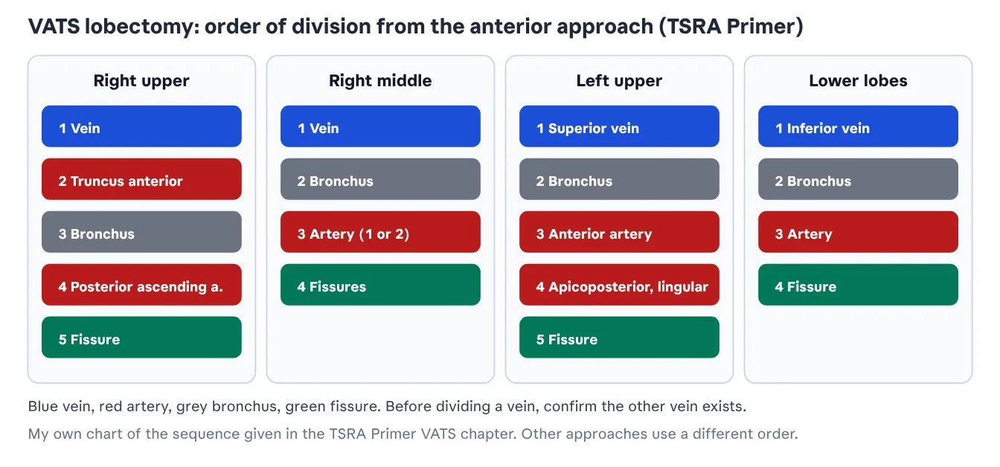
| Point | Detail |
|---|---|
| Before | CT with contrast if vessels are involved; bronchoscopy for endobronchial extent; if reserve is doubtful, exercise testing, and consider segmentectomy |
| Set-up | Double-lumen tube or blocker; ventilated-lung tidal volume about 300 mL; lateral position; drape for a thoracotomy |
| Ports | Camera in the 8th space; utility incision in the 5th space at the anterior axillary line |
| Right upper | Vein, truncus anterior, bronchus, posterior ascending artery, fissure |
| Right middle | Vein, bronchus, artery, fissures |
| Left upper | Confirm the inferior vein exists; superior vein, bronchus, anterior then apicoposterior and lingular arteries, fissure |
| Lower lobes | Confirm the superior vein; inferior vein, bronchus, artery (protect the lingular or middle lobe branch), fissure |
| After | Mediastinal node dissection for cancer; check the middle lobe for torsion after right upper lobectomy |
| Convert | Rapid bleeding: tamponade with a sponge stick while opening |
| Pitfalls | Traction on arterial branches; a common pulmonary vein mistaken for one lobe's vein; missing the superior segmental artery; diathermy near the left recurrent nerve in the aortopulmonary window |
Pneumonectomy
Haney J.
| Point | Detail |
|---|---|
| When | Central or multilobar tumour where a sleeve or lesser resection cannot give a clear margin |
| Fitness (as this chapter gives it) | FEV1 over 2 L predicts tolerance; predicted postoperative FEV1 under 40% or under 800 mL precludes it; quantitative perfusion scan; stress echo for ischaemia and pulmonary hypertension. NICE NG122 uses 30% and accepts higher risk with consent (tab 2) |
| Steps | Posterolateral thoracotomy; inferior ligament; keep the phrenic nerve; veins, then artery, then bronchus flush with the carina with frozen section |
| Right | Azygos may be divided; shorter bronchus; higher fistula risk, so cover the stump |
| Left | Artery tethered by the ligamentum with the recurrent nerve beside it; close a pericardial defect to prevent herniation |
| Stump cover | Intercostal muscle, pericardial fat or azygos |
| After | No suction on the drain; fluids about 10 mL/kg in theatre and 1.5 L in the first 24 hours |
| Complications | Bronchopleural fistula, typically days 8 to 12: early cases are reoperated with vascularised cover. Post-pneumonectomy pulmonary oedema, commoner on the right. Late post-pneumonectomy syndrome from mediastinal shift |
Thoracic trauma
Yilmaz O. Flail chest and the EAST guideline are in tab 7.
| Point | Detail |
|---|---|
| Operate for bleeding | 1000 to 1500 mL on inserting the drain; over 200 mL an hour for 2 to 4 hours; continuing transfusion need |
| Cardiac injury | Pericardial fluid on ultrasound after penetrating chest or upper abdominal injury |
| Left thoracotomy | Lung, hilum, diaphragm, distal oesophagus, descending aorta, distal left subclavian |
| Right thoracotomy | Proximal oesophagus, intrathoracic trachea, SVC, azygos |
| Sternotomy | Heart, ascending aorta, arch and great vessels; poor access elsewhere, so be sure the injury is confined |
| Supraclavicular | Proximal left subclavian |
| Emergency department thoracotomy | For the patient in extremis: anterior incision extendable to clamshell; open the pericardium, control a cardiac wound, internal massage, clamp the hilum for major lung bleeding or air embolism, clamp the descending aorta |
| Drains | Not below the 5th space; confirm you are in the pleura; large tube for blood |
| Haemoptysis | Secure the airway, bleeding side down, consider bronchial artery embolisation |
Lung transplantation
Chen L, Barron J.
| Point | Detail |
|---|---|
| Referral | FEV1 under 25% predicted; fibrosis with FVC under 80%; class III or IV symptoms; rapid progression; BODE over 5 in COPD |
| Donor lung | PaO2 over 300 on 100% oxygen; ventilate at 6 to 8 mL/kg; CVP under 10; ischaemic time about 6 to 8 hours; heparin 300 units/kg and Perfadex 60 mL/kg at procurement |
| Double | Cystic fibrosis, bronchiectasis, pulmonary hypertension; COPD under 60 |
| Single | COPD or fibrosis over 60 without pulmonary hypertension; transplant the worse side on the perfusion scan |
| Incision | Single: anterolateral thoracotomy in the 4th space. Double: sequential thoracotomies or clamshell; sternotomy with a cardiac procedure |
| Anastomoses | Bronchus, then pulmonary artery, then left atrial cuff |
| Support | ECMO increasingly preferred over bypass; needed with mean pulmonary pressure over 35 mmHg or poor tolerance of single-lung ventilation |
| Reperfusion | De-air through the atrial suture line before tying; release the arterial clamp slowly over minutes |
| Complications | Primary graft dysfunction in 10 to 30% within 72 hours; rejection; infection; bronchial ischaemia; chronic allograft dysfunction |
Thoracotomy
Klapper J.
| Point | Detail |
|---|---|
| Position | Lateral, hips at the break of the table, table flexed to open the spaces; pad the axilla and arms, protect the ulnar nerve; confirm the correct side is up |
| Landmarks | Scapular tip, spine; count ribs from inside if unsure |
| Space | 4th or 5th for lung; 5th or 6th for oesophagogastrectomy; lower for work at the hiatus |
| Muscles | Divide latissimus dorsi; spare serratus anterior |
| Entry | Confirm the lung is down; harvest any intercostal flap before spreading; cut along the top of the lower rib; open the retractor slowly; shingle a rib for more room |
| Closure | Two or three pericostal sutures avoiding the bundle; reinflate under vision; close in layers |
| Pitfalls | Wrong side, brachial plexus or ulnar injury, rib fracture, chronic pain from a trapped intercostal nerve |
Lung procurement
Miller CL (revising Whitson B).
| Point | Detail |
|---|---|
| Donor | Under 55 years; under 20 pack-years; PaO2 to FiO2 ratio over 400 on 100% oxygen with PEEP 5 to 8; clear imaging and bronchoscopy; ventilate at 6 to 8 mL/kg; CVP under 10 mmHg |
| Steps | Bronchoscopy; sternotomy; open both pleurae and recruit at 30 cmH2O; isolate cavae, aorta and trachea; heparin 400 units/kg; pulmonary artery cannula; prostaglandin E1 500 micrograms; vent the left heart; clamp; antegrade flush (about 3 L, or 50 to 70 mL/kg) with ice slush |
| After the heart is out | Retrograde flush, about 250 mL down each pulmonary vein |
| Trachea | Inflate to 12 to 15 cmH2O, double staple, divide |
| Packing | Each lung in cold preservation fluid, air out, triple-bagged on ice |
| Pitfalls | Injury to the right inferior pulmonary vein or right pulmonary artery; cannula slipping into one branch, so one lung is poorly flushed |
Oesophagectomy: chest and neck stages
Dolan DP.
| Stage | Detail |
|---|---|
| Right chest | Divide the inferior ligament; open the pleura along the oesophagus; take the subcarinal nodes en bloc with little energy near the airway; divide the azygos vein; divide the vagus close to the oesophagus to protect the recurrent nerve; clip aortic branches and lymphatics; keep the thoracic duct unless doing a radical node dissection; divide the oesophagus above the azygos; frozen section of both margins |
| Conduit in the chest | Straight, staple line facing the patient's right, no twist, no tension; drain beside the anastomosis |
| Left neck | Incision along the front of sternocleidomastoid; retract the straps; divide the middle thyroid vein and omohyoid if needed; dissect behind the oesophagus onto the spine; sling it. No metal retractor against the trachea and no diathermy near the left recurrent nerve |
Complications of oesophagectomy
Pillai S.
| Problem | Recognition and treatment |
|---|---|
| Leak | Neck: redness, swelling, discharge: open and pack the wound. Chest: bile in the drain, effusion, fever: drain and wash out, with repair or endoscopic treatment for a small defect. Confirm by endoscopy or contrast |
| Conduit necrosis | Foul drainage, pain, sepsis: urgent endoscopy; take down the conduit, cervical oesophagostomy and feeding access; reconstruct at 3 to 6 months |
| Chyle leak | Milky drainage rising with feeds; triglyceride over 110 mg/dL (about 1.2 mmol/L). Medium-chain feeds or parenteral nutrition, octreotide. Ligate the duct if over 1 L a day for 5 days, or over 1.5 L a day; under 20% close without surgery |
| Recurrent nerve palsy | Hoarseness and aspiration; about ten times the pulmonary complications; medialise the cord |
| Airway injury | Repair at the time; a late fistula to the conduit shows as coughing on swallowing |
| Stricture | Dilate; a late stricture needs recurrence excluded |
| Delayed emptying | 10 to 50%; prokinetics, pyloric dilatation or botulinum toxin |
Oesophageal perforation
Kanyongo R.
| Point | Detail |
|---|---|
| Causes | Mostly instrumentation; Boerhaave rupture; foreign body; trauma. Cervical tears lie just above cricopharyngeus |
| Diagnosis | Chest film, then water-soluble swallow, then thin barium if negative and suspicion remains (fluoroscopy misses at least 20%); CT and endoscopy to localise |
| Cervical | Drain the retro-oesophageal space; repair is optional; most heal |
| Thoracic | Source control is the rule. Non-operative care only for a contained leak draining back into the oesophagus in a stable patient with no distal obstruction, re-imaged every 48 to 72 hours |
| Which side | Right chest for upper and middle thirds, left for the lower third |
| Repair | Debride; extend the muscle tear to show the whole mucosal tear; close in two layers; buttress with vascularised tissue (intercostal muscle, pleura, fundus); decorticate; wide drainage; nasogastric tube and jejunostomy |
| Timing | Repair can still succeed at 24 to 48 hours if tissue and patient allow |
| Stent | An adjunct to drainage, not a replacement |
Fundoplication
Ramji S.
| Point | Detail |
|---|---|
| Work-up | Endoscopy, pH study, manometry and barium swallow in everyone |
| Steps | Open the gastrohepatic ligament (look for an aberrant left hepatic artery); dissect both crura keeping the vagi; retro-oesophageal window; divide the upper short gastrics; 2 to 3 cm of oesophagus in the abdomen; close the crura; wrap over a bougie |
| Nissen | 360 degrees, about 2 cm long, loose, over a 54 to 60 Fr bougie |
| Toupet | 270 degrees posterior: for poor motility |
| Dor | 180 degrees anterior: usually with a myotomy |
| Belsey | Transthoracic 240-degree wrap |
| After | Dysphagia is the commonest problem; investigate if it lasts beyond 12 weeks. Gas bloat, slipped or herniated wrap |
Diaphragmatic and hiatal hernias
Lassaletta A, Odell D.
| Type | Detail |
|---|---|
| Morgagni | Anterior, usually right, often incidental; repair through the abdomen |
| Bochdalek | Posterolateral, usually left; neonatal respiratory failure from lung hypoplasia; stabilise first, repair later; about 20% mortality |
| Hiatal I | Sliding: repair only for symptoms |
| Hiatal II to IV | Para-oesophageal: repair electively; type IV contains other organs |
| Repair | Reduce and excise the sac; mobilise until at least 2.5 cm of oesophagus lies in the abdomen without tension; Collis gastroplasty if short; close the crura; fundoplication |
| Mesh | Controversial because of erosion |
| Emergency | Gastric volvulus: pain, retching without vomiting, and a tube that will not pass |
| Results | About 90% symptom relief; radiological recurrence about 16%; reoperation under 5% |
Contrast swallow and care after oesophagectomy
Hasan I.
| Point | Detail |
|---|---|
| Contrast | Barium is standard. Water-soluble contrast first for a suspected leak, but it misses 25 to 30%, so follow with thin barium. Low-osmolar contrast if aspiration is a risk |
| Normal | Peristalsis travels at 2 to 4 cm/s; a bolus clears in 6 to 8 seconds |
| After oesophagectomy | Head up over 30 degrees; avoid vasopressors on the conduit; jejunal feeding from day 1; antibiotics stop at 24 hours; chest drain out when under 100 to 150 mL a day; contrast study before oral intake by local protocol |
Upper endoscopy and endoscopic ultrasound
Holt K; Petrov R.
| Point | Detail |
|---|---|
| Landmarks | Squamocolumnar junction at about 35 to 40 cm from the incisors; the gastro-oesophageal junction is the top of the gastric folds; the gap between it and the crural pinch is the size of a hiatus hernia |
| Perforation sites | Cricopharyngeus, lower sphincter, pylorus. Never pass the scope blind with a pouch or a fresh anastomosis |
| Ultrasound layers | Five alternating bright and dark layers; mucosa, submucosa, muscle |
| Accuracy | T stage about 80 to 90%; N stage about 85% |
| Malignant node | Over 1 cm, round, dark, sharply outlined |
| Reach | Stations 2, 4, 7, 8 and 9, coeliac nodes, left adrenal and left liver; 8 and 9 only by this route |
| Limits | Operator dependent; a tight tumour may not be passable, and dilating it to pass risks perforation |
Oesophageal function tests
Ajabshir N.
| Test | Numbers |
|---|---|
| Manometry | Integrated relaxation pressure over 15 mmHg is abnormal; distal contractile integral 500 to 5000 is normal; contractions under 30 mmHg are ineffective |
| pH study | Reflux disease if pH is under 4 for more than 4.3% of the time, or the DeMeester score is 14.72 or more |
| Impedance | Detects non-acid reflux; symptom index over 50% is significant |
| Preparation | Stop proton pump inhibitors for 7 days and H2 blockers for 2 days |
Oesophagectomy: choosing the operation and the abdominal stage
Ramji S.
| Point | Detail |
|---|---|
| Work-up | Endoscopy, endoscopic ultrasound, CT and PET, nutrition; on the day, endoscopy to mark tumour extent, bronchoscopy for upper and mid squamous tumours, laparoscopy if resectability is in doubt |
| Ivor Lewis | Laparotomy then right thoracotomy with an intrathoracic anastomosis: mid and lower tumours; better node harvest; fewer nerve injuries |
| McKeown | Right chest, abdomen and neck with a cervical anastomosis: tumours at any level |
| Transhiatal | Abdomen and neck with blunt mediastinal dissection: benign disease and low tumours; not bulky mid or upper tumours |
| Left thoracoabdominal | Locally advanced distal tumours |
| Conduit | Gastric tube 4 to 5 cm wide based on the right gastroepiploic artery |
| Abdominal steps | Exclude metastases; divide gastrohepatic ligament and short gastrics; protect the gastroepiploic arcade and right gastric; divide the left gastric with its nodes; Kocher manoeuvre for length; pyloric procedure if wanted; fashion the tube; feeding jejunostomy 30 cm beyond the duodenojejunal flexure |
| Anastomosis | No tension, good perfusion; buttress with omentum or intercostal muscle, especially after neoadjuvant treatment. A chest leak is more dangerous than a neck leak but less frequent |
Archive: Lung cancer advanced
Thoracic: advanced notes
17 November 2026
Consultant-level detail on nodules, CT reading, SABR and perioperative systemic therapy, expanding the Thoracic day tab.
Contents
Sections were added in the order the questions came up during the course; use these links to go by topic.
Diagnosis and staging
- Pulmonary nodules
- Reading the staging CT: T, N and M, with diagrams
- Slide deck: nodule to diagnosis, PET and biopsy
- NICE NG122: diagnosis and staging
- Cyst or cavity
- Bronchoscopy platforms
- Multiple lung lesions
- Tuberculosis and sarcoidosis
Fitness and physiology
- Slide deck: fitness, operation and after
- KCO
- Flow-volume loops
Surgery
- Points for MDT and viva: resectability and sublobar resection
- Surgery after chemo-immunotherapy: real-world series
-
Carinal resection, cross-field ventilation and reconstruction
-
JCOG trials: wedge, segmentectomy or lobectomy by CT appearance
SABR
- SABR: eligibility, dose and outcomes
- Gray and fractions
- Single against multiple fractions
- MISSILE
- SABR or surgery: summary
- STARS and ROSEL
- Revised STARS
- Population studies
Systemic and multimodality treatment
- Perioperative systemic therapy
- CheckMate 816 in depth
- KEYNOTE-671 in depth
- Definitive chemoradiotherapy for unresectable stage III, PACIFIC and PACIFIC-6
- Systemic anti-cancer therapy overview
- NICE pathways for advanced NSCLC
- NICE lung cancer products: full list
-
NICE advice briefings
-
EGFR-mutant NSCLC and osimertinib: trials by stage
Small-cell lung cancer
- Treatment by stage, ESMO guideline, ADRIATIC, PRIMALung
Mediastinum and endocrine
- Anterior mediastinal lesions: BTOG pathway
- Myasthenia gravis and thymoma
- Thoracic tumours that cause Cushing syndrome
Guidelines and evidence
- Where the slides and these notes differ
- Guideline update
- Research 2021–2026
- Sources
Pulmonary nodules
The BTS pathway sorts solid nodules by size, then by risk model, then by growth; the surgeon's questions are when to resect without tissue and how to find the nodule.
Solid nodules (BTS 2015, thresholds confirmed today)
| Baseline | Action | Then |
|---|---|---|
| <5 mm or <80 mm³ | Discharge | |
| 5 to <6 mm | CT at 1 year | Stable by volumetry: discharge. Stable by diameter only: CT at 2 years |
| ≥6 mm or ≥80 mm³ (below 8 mm or 300 mm³) | CT at 3 months | Doubling time ≤400 days: work up. Otherwise CT at 1 year as above |
| ≥8 mm or ≥300 mm³ | Brock model | <10%: CT surveillance. ≥10%: PET-CT and Herder |
| Herder <10% | CT surveillance | |
| Herder 10–70% | Image-guided biopsy; excision or surveillance by preference | |
| Herder >70% | Excision or non-surgical treatment, with or without prior biopsy |
| Volume doubling time | Meaning | Action |
|---|---|---|
| ≤400 days | Typical of solid cancers | Further work-up and definitive management |
| 400–600 days | Indeterminate | Biopsy or further surveillance by preference |
| >600 days | Very low risk | Discharge or surveillance by preference |
What the models contain and where they fail
- Brock (PanCan): age, sex, family history, emphysema, nodule size, type, upper lobe location, nodule count, spiculation. It was derived in a screening cohort, so it is best calibrated for smokers aged 50 and over.
- Herder: adds PET avidity (none, faint, moderate, intense) to age, smoking, previous cancer, diameter, spiculation and upper lobe location.
- PET false negatives: nodules under 8–10 mm, sub-solid and lepidic adenocarcinoma, mucinous tumours, typical carcinoid. A low Herder in these does not reassure.
- PET false positives: infection, granuloma, rheumatoid and other inflammatory nodules.
- Multiple nodules: manage by the largest or most suspicious. Perifissural nodules under 10 mm with typical morphology need no follow-up.
Sub-solid nodules
- Under 5 mm: discharge. 5 mm or more: repeat CT at 3 months, because many are inflammatory and resolve.
- Persistent: risk-assess with Brock and morphology. Low risk: CT at 1, 2 and 4 years. Higher risk, a solid component of 6 mm or more, growth, or a new solid component: discuss biopsy or resection.
- The solid component, not the whole lesion, sets the T category and predicts the invasive size.
- Pure ground-glass lesions under 3 cm are mostly adenocarcinoma in situ or minimally invasive, with near-100% disease-specific survival after resection.
- JCOG0804: wide wedge for ground-glass-dominant tumours 2 cm or less gave five-year relapse-free survival of about 99.7%. JCOG1211 extended this to segmentectomy up to 3 cm.
- These lesions grow slowly (doubling times over 800 days), so a 2-year rule for stability does not apply.
Tissue or straight to theatre
- CT-guided biopsy: sensitivity about 90%, pneumothorax 15–25%, drain needed in about 5%. A non-diagnostic or non-specific benign result does not exclude cancer.
- Herder above 70% in a fit patient: proceed to resection with frozen section, then completion anatomical resection at the same sitting.
- An acceptable benign resection rate is around 10% or less; much lower suggests under-treatment, much higher over-treatment.
- Localisation is needed for nodules under 10 mm, sub-solid lesions, or anything more than about 10 mm deep to the pleura: hook wire, coil, dye or indocyanine green, radiotracer, or navigation bronchoscopy in a hybrid theatre.
- For sublobar resection aim for a margin of at least 2 cm or at least the tumour diameter.
Reading the staging CT
Read for T, N and M, then for resectability and the anatomy of the operation; CT signs of invasion are weak, so know which ones to trust.
[Diagram in the doc, not reproduced here: T categories · size scale and invasion]
Read the size first, then look for the highest structure touched; whichever gives the higher category is the T.
Tumour and invasion
| Question | Reliable signs | Unreliable signs | Next test |
|---|---|---|---|
| Chest wall (T3) | Rib destruction; soft tissue mass in the wall | Pleural contact over 3 cm, obtuse angle, lost fat plane, pleural thickening | Localised pain is more predictive than CT; ultrasound or dynamic imaging for sliding; MRI for the apex |
| Mediastinum (T4) | Encasement of vessels, airway or oesophagus; gross fat infiltration | Contact alone | Likely resectable if contact is under 3 cm, the aorta is touched over less than 90° and a fat plane is preserved |
| Superior sulcus | MRI. Brachial plexus involvement above T1, vertebral body over half involved, or N2 or N3 disease argue against resection | ||
| Diaphragm, phrenic nerve | Raised hemidiaphragm | Fluoroscopy or ultrasound sniff test | |
| Recurrent laryngeal nerve | Aortopulmonary window mass with hoarseness | Laryngoscopy | |
| Airway | Main bronchus is T2 whatever the distance from the carina; carina is T4 | Bronchoscopy decides sleeve or pneumonectomy | |
| Collapse beyond the tumour | CT cannot separate tumour from atelectasis | PET or MRI | |
| Pleura | Nodular or circumferential thickening | A small effusion | Cytology; an effusion is M1a only if malignant |
- Size: measure on lung windows in the longest axis. For part-solid tumours the solid component sets T.
- Separate nodules: same lobe T3, different ipsilateral lobe T4, contralateral M1a. Consider synchronous primaries when morphology differs.
- T4 that can still be resected in selected patients: carina, SVC, left atrium, vertebral body, aorta. Not resectable: oesophagus, heart beyond the atrium, long tracheal involvement.
Nodes
[Diagram in the doc, not reproduced here: Nodal stations · N1, N2 and N3 for a right-sided tumour]
Name the station, then ask which side of the trachea it is on relative to the tumour.
| Modality | Sensitivity | Specificity | Comment |
|---|---|---|---|
| CT, short axis ≥10 mm | About 55% | About 80% | Size alone misleads in both directions |
| PET-CT | About 80% | About 88% | Negative predictive value about 95% for a peripheral cT1 N0 tumour |
| EBUS, with or without EUS | About 90% | Near 100% | A negative result with high suspicion needs surgical staging |
- Go to invasive staging despite a negative PET when the tumour is central, over 3 cm, or N1 is suspected.
- Station landmarks: 4R and 4L divide at the left lateral border of the trachea; 4R becomes 10R at the lower border of the azygos vein; 4L becomes 10L at the upper rim of the left pulmonary artery; station 5 lies lateral to the ligamentum, station 6 anterior and lateral to the arch.
- Station 1 (supraclavicular and low cervical) is N3.
- Report the number of N2 stations (N2a or N2b), whether nodes are discrete or infiltrative, and the largest short axis. Discrete single-station disease is the group that may still be resected.
Metastases
- Adrenal: under 10 HU on unenhanced CT is an adenoma; otherwise use washout, PET, and biopsy before a solitary lesion denies surgery.
- A single brain or adrenal metastasis with a resectable primary can still be treated radically.
- TNM 9: T1 N1 is now IIA; T1 N2a is IIB; T2 N2b is IIIB.
Surgical anatomy to report
- Fissures: incomplete in about half of patients; plan fissureless dissection.
- Arteries: number of truncus anterior branches; posterior ascending artery and whether it shares an origin with the superior segmental artery; lingular artery of mediastinal origin; tumour or nodes at the main artery (intrapericardial control).
- Veins: common left trunk; middle lobe vein draining to the lower vein; a right upper lobe vein running behind the bronchus intermedius.
- Bronchi: tracheal bronchus, accessory cardiac bronchus.
- Other: azygos lobe, aberrant right subclavian (non-recurrent laryngeal nerve), left SVC, calcified hilar nodes welded to the artery.
- Lung quality: emphysema distribution; interstitial lung disease, which carries a risk of acute exacerbation after resection and after radiotherapy.
- For segmentectomy, use three-dimensional reconstruction to plan intersegmental veins and the margin.
SABR
SABR treats node-negative tumours up to 5 cm; the tumour's distance from the central airways and chest wall sets the fractionation, and no trial has settled SABR against surgery in operable patients.
Eligibility
- Stage I to IIA (T1a to T2b, N0, M0), tumour 5 cm or less, in patients who are medically inoperable or decline surgery.
- No lower limit of lung function. The patient must lie flat and still, and tumour motion should be manageable on 4D-CT.
- Tissue diagnosis preferred. Without it, most MDTs want a growing, PET-avid lesion with a high Herder probability.
- Interstitial lung disease is the main relative contraindication: severe or fatal pneumonitis is far commoner.
Dose by location (UK SABR Consortium schedules)
| Position | Schedule | Biologically effective dose (α/β 10) |
|---|---|---|
| Peripheral, standard | 54 Gy in 3 fractions | 151 Gy |
| Close to the chest wall, conservative | 55 Gy in 5 fractions | 116 Gy |
| Central, within 2 cm of the proximal bronchial tree | 60 Gy in 8 fractions | 105 Gy |
| Small peripheral tumour (≤2 cm, over 1 cm from chest wall, outside the no-fly zone) | 30–34 Gy in a single fraction, in experienced centres | |
| Ultracentral, abutting trachea, main bronchus or oesophagus | Usually not SABR; hypofractionated or conventional radiotherapy |
- The dose target is a biologically effective dose of 100 Gy or more, the level associated with local control around 90%.
- The no-fly zone comes from the Indiana phase II trial: severe toxicity at 2 years was 46% for central and 17% for peripheral tumours with three-fraction treatment.
- Ultracentral treatment has caused fatal haemorrhage (HILUS trial), which is why it is avoided.
Outcomes and toxicity
- Local control about 90% at 3 years (RTOG 0236: primary tumour control 98%, overall survival 56% in medically inoperable patients).
- Failures are regional and distant: there is no pathological nodal staging, and occult N1 or N2 disease is present in roughly 10–15% of clinical stage I.
- Toxicity: fatigue, pneumonitis (grade 2 or more about 10%), rib fracture and chest wall pain for peripheral tumours, airway stenosis and haemorrhage for central ones, brachial plexopathy at the apex.
- Follow-up is hard to read: fibrosis evolves for 1–2 years. Enlargement after 12 months, a bulging margin or loss of air bronchograms suggests recurrence; PET helps after 6 months. Salvage surgery is feasible.
SABR against surgery
| Study | Finding | Limitation |
|---|---|---|
| STARS and ROSEL, pooled (2015) | Three-year survival 95% with SABR and 79% with surgery | 58 patients; both trials closed for poor accrual |
| Revised STARS (2021) | SABR arm matched against VATS lobectomy with nodal dissection: three-year survival 91% in both | Single-arm with a matched comparator |
| SABRTooth (UK) | Randomisation between surgery and SABR was not feasible | Feasibility study |
| Registry comparisons | Favour surgery | Confounded by fitness |
| VALOR, STABLE-MATES | Ongoing |
- For oligometastases, SABR-COMET (phase II) reported five-year survival of 42% with SABR and 18% with standard care.
- Position for the MDT: surgery remains the standard for fit patients because it stages the nodes and has mature long-term data; SABR is the standard for the unfit and a choice for the borderline patient.
Perioperative systemic therapy
For resectable stage II–III disease without EGFR or ALK alterations, chemo-immunotherapy before surgery is now standard; the open question is whether continuing it afterwards adds anything.
Chemo-immunotherapy trials
| Trial | Regimen | Population | Complete response | Event-free survival | Overall survival |
|---|---|---|---|---|---|
| CheckMate 816 | Neoadjuvant nivolumab with chemotherapy, 3 cycles; nothing mandated after | IB–IIIA (7th edition), n=358, open-label | 24% against 2% | Median 59.6 against 21.1 months; 5-year 49% against 34% | 5-year 65.4% against 55.0%, HR 0.72 |
| KEYNOTE-671 | Pembrolizumab with cisplatin doublet, 4 cycles, then up to 13 adjuvant cycles | II–IIIB (N2), n=797, double-blind | 18% against 4% | Median 47.2 against 18.3 months, HR 0.59; 5-year 49.9% against 26.5% | 36-month 71% against 64%, HR 0.72; 5-year 64.6% against 53.6% |
| AEGEAN | Durvalumab with platinum doublet, 4 cycles, then 12 adjuvant cycles | II–IIIB (N2), double-blind | 17% against 4% | HR about 0.68 | Not yet significant when last reported |
| CheckMate 77T | Nivolumab with chemotherapy, 4 cycles, then 1 year adjuvant | IIA–IIIB, n=461, double-blind | 25% against 5% | HR about 0.58 | Immature |
The CheckMate 816 and KEYNOTE-671 survival figures were confirmed today. The complete response and event-free survival figures for KEYNOTE-671, AEGEAN and CheckMate 77T were also confirmed on a second check the same day.
KEYNOTE-671 in brief
- The only double-blind perioperative trial with overall survival as a primary endpoint, and the first perioperative regimen to show a survival benefit.
- Cisplatin only, so it under-represents older patients and those with renal impairment.
- The design cannot separate what the adjuvant year adds to the neoadjuvant phase.
- Five-year data report continued benefit even in complete responders, which supports the adjuvant phase but is a subgroup observation.
Neoadjuvant-only or perioperative
- No randomised comparison exists. Cross-trial comparisons are confounded by staging edition, blinding and stage mix.
- Complete responders do very well with either strategy. Patients with residual tumour are the group most likely to gain from adjuvant treatment.
- A year of adjuvant immunotherapy adds immune toxicity, cost and visits, and a substantial minority do not complete it.
Adjuvant and targeted therapy
| Trial | Treatment | Population | Result |
|---|---|---|---|
| IMpower010 | Atezolizumab for 1 year after chemotherapy | Resected IB–IIIA | Disease-free survival HR about 0.66 in stage II–IIIA with PD-L1 of 1% or more; largest effect at 50% or more |
| PEARLS (KEYNOTE-091) | Pembrolizumab for 1 year | Resected IB–IIIA | Disease-free survival HR about 0.76 overall |
| ADAURA | Osimertinib for 3 years | EGFR-mutant IB–IIIA | Disease-free survival HR about 0.2; five-year survival 88% against 78% |
| ALINA | Alectinib for 2 years, against chemotherapy | ALK-positive IB–IIIA | Disease-free survival HR about 0.24 |
| LACE meta-analysis | Adjuvant cisplatin doublet | Resected II–III | Absolute survival gain 5.4% at 5 years |
| Lung ART | Postoperative radiotherapy for pN2 | Completely resected N2 | No disease-free survival gain, more cardiopulmonary toxicity |
| PACIFIC | Durvalumab after chemoradiotherapy | Unresectable stage III | Five-year survival 43% against 33% |
Selection points
- Know EGFR, ALK and PD-L1 from the diagnostic biopsy; EGFR and ALK tumours go down the targeted route, not immunotherapy.
- Benefit is largest with PD-L1 of 1% or more and in stage III; it is smaller and less certain with PD-L1 under 1% and in stage IB.
- Declare resectability, and the intended operation, at the first MDT. Roughly one in five patients starting neoadjuvant treatment does not reach surgery.
- Screen for immune toxicity before surgery: pneumonitis, colitis, hepatitis, thyroid dysfunction, and hypophysitis or adrenal insufficiency, which needs steroid cover.
CheckMate 816 in depth
Three cycles of neoadjuvant nivolumab with chemotherapy raised complete response from 2% to 24% and five-year survival from 55% to 65%, without making surgery harder.
Design
- Phase III, open-label, 358 patients randomised 1:1 to nivolumab 360 mg with platinum doublet or platinum doublet alone, every 3 weeks for three cycles, then surgery within 6 weeks.
- Stage IB (4 cm or more) to IIIA by the 7th edition; known EGFR and ALK alterations excluded. About two-thirds were stage IIIA.
- A third arm, nivolumab with ipilimumab, closed early and is exploratory.
- Stratified by stage, PD-L1 (under or over 1%) and sex.
- Primary endpoints: pathological complete response and event-free survival, both by blinded review. Overall survival was a key secondary endpoint.
- Adjuvant chemotherapy or radiotherapy was optional; no adjuvant immunotherapy.
Efficacy
| Endpoint | Nivolumab + chemotherapy | Chemotherapy | Effect |
|---|---|---|---|
| Pathological complete response | 24.0% | 2.2% | Odds ratio about 14 |
| Major pathological response | 36.9% | 8.9% | |
| Median residual viable tumour | 10% | 74% | |
| Event-free survival, first analysis | 31.6 months | 20.8 months | HR 0.63 |
| Event-free survival, 5 years | 49% | 34% | Median 59.6 against 21.1 months |
| Overall survival, 5 years | 65.4% | 55.0% | HR 0.72 (95% CI 0.523–0.998), P = 0.048 |
- Complete responders had a five-year survival of about 95%.
- Event-free survival by subgroup at the first analysis: stage IIIA HR 0.54, stage IB–II HR 0.87; PD-L1 1% or more HR 0.41, under 1% HR 0.85; non-squamous HR 0.50, squamous HR 0.77.
- Clearance of circulating tumour DNA during treatment tracked complete response.
Surgery
| Measure | Nivolumab + chemotherapy | Chemotherapy |
|---|---|---|
| Reached definitive surgery | 83% | 75% |
| Surgery cancelled for progression | 7% | 10% |
| Minimally invasive approach | 30% | 22% |
| Conversion to open | 11% | 16% |
| Lobectomy | 77% | 61% |
| Pneumonectomy | 17% | 25% |
| Complete (R0) resection | 83% | 78% |
| Median operating time | 184 minutes | 217 minutes |
| Grade 3–4 treatment-related adverse events | 34% | 37% |
Critique
- Open-label, though the pathological and event endpoints were reviewed blind.
- Overall survival reached significance only at the final analysis, with a confidence interval that just excludes 1.
- Staged by the 7th edition, with few stage IB patients: the evidence is for stage II–IIIA.
- Benefit in PD-L1 under 1% and in stage IB–II is smaller and the intervals cross 1.
- About one in six patients in the nivolumab arm did not have surgery.
- Control patients had limited access to later immunotherapy in some regions, which can inflate a survival difference.
- It cannot say whether adjuvant immunotherapy adds benefit.
The five-year figures were confirmed today; the first-analysis, subgroup and surgical figures are from memory of the 2022 paper.
KEYNOTE-671 in depth
Perioperative pembrolizumab is the first perioperative regimen to show an overall survival benefit, in the only double-blind trial with survival as a primary endpoint.
Design
- Phase III, double-blind, placebo-controlled, 797 patients, 189 centres.
- Resectable stage II, IIIA or IIIB (N2), 8th edition.
- Four cycles of neoadjuvant pembrolizumab 200 mg every 3 weeks with cisplatin-based chemotherapy, surgery, then up to 13 cycles of adjuvant pembrolizumab; placebo throughout in the control arm.
- Dual primary endpoints: event-free survival and overall survival.
Results
| Endpoint | Pembrolizumab | Placebo |
|---|---|---|
| Pathological complete response | 18.1% | 4.0% |
| Major pathological response | 30% | 11% (from memory) |
| Reached surgery | 82.1% | 79.4% |
| Median event-free survival | 47.2 months | 18.3 months (HR 0.59) |
| 36-month overall survival | 71% | 64% (HR 0.72) |
| 5-year event-free survival (secondary report) | 49.9% | 26.5% (HR 0.58) |
| 5-year overall survival (secondary report) | 64.6% | 53.6% (HR 0.74) |
Treatment-related deaths were 1% in each arm.
Against CheckMate 816
- Blinded with placebo, where 816 was open-label.
- Includes stage IIIB (N2) and uses the 8th edition.
- Cisplatin only and four cycles, where 816 used three cycles and allowed carboplatin.
- Adds a year of adjuvant immunotherapy.
Critique
- Cannot separate the contribution of the adjuvant phase from the neoadjuvant phase.
- Cisplatin-only limits applicability to older patients and those with renal impairment.
- A year of adjuvant treatment adds toxicity, visits and cost, and many do not complete it.
- Continued benefit in complete responders at five years supports the adjuvant phase but is a subgroup observation.
Points for the MDT and viva
Resectable or not in N2 disease
- Likely resectable: single-station, discrete, non-bulky N2 (nodes under about 3 cm) with a tumour removable by lobectomy.
- Usually not: multi-station bulky or infiltrative N2, N3, or disease needing pneumonectomy after induction. These go to chemoradiotherapy with durvalumab.
- Intergroup 0139: adding surgery to chemoradiotherapy improved progression-free but not overall survival; pneumonectomy after chemoradiotherapy carried 26% mortality, and the lobectomy subset did better in an unplanned analysis.
- EORTC 08941 and ESPATUE: surgery and definitive radiotherapy gave similar survival after induction in stage III.
- TNM 9 separates N2a from N2b for this reason; record which at the MDT.
- After chemo-immunotherapy, operate on the original plan. Nodal clearance on imaging does not make a pneumonectomy safer.
Sublobar resection
- JCOG0802: segmentectomy for tumours 2 cm or less with a solid component over half. Better overall survival (94.3% against 91.1%) but twice the local recurrence (10.5% against 5.4%) and more air leak.
- CALGB 140503: wedge or segment for tumours 2 cm or less after frozen-section confirmation of negative hilar and mediastinal nodes. Non-inferior disease-free survival.
- Both required peripheral tumours and confirmed node-negative disease, so intraoperative nodal assessment is part of the operation.
- Convert to lobectomy for positive nodes, an inadequate margin, or high-risk histology (spread through air spaces, micropapillary or solid pattern).
Unresolved questions
- Does adjuvant immunotherapy help a patient who has had a complete response?
- Neoadjuvant-only against perioperative treatment.
- The size of benefit when PD-L1 is under 1%.
- Whether circulating tumour DNA can direct escalation and de-escalation.
- SABR against surgery in the operable patient.
- Surgery after chemo-immunotherapy for disease first judged unresectable.
From the slide deck: nodule to diagnosis
These sections add what the deck "From lung nodule to resection" covers beyond the notes above. Figures are as given on the slides and were not checked independently.
Nodule types
| Type | CT appearance | Risk | Key point |
|---|---|---|---|
| Solid | No ground-glass | Moderate | Size and spiculation drive risk |
| Part-solid | Solid and ground-glass | Higher than solid of the same size | Solid component over 6 mm is high risk |
| Pure ground-glass | No solid part | Low short-term; adenocarcinoma spectrum | Watch for a new solid component: refer to MDT whatever the size |
| Perifissural | Smooth, triangular, on a fissure | Usually benign | Intrapulmonary node; no follow-up |
| Calcified | Popcorn or central | Benign | Hamartoma or granuloma; no follow-up |
| Cavitating | Wall over 4 mm, irregular inner wall | High | Squamous carcinoma |
Sub-solid nodules follow a separate pathway from solid ones (EACTS/ESTS 2022).
High-risk CT features
- Spiculation is the strongest single predictor (odds ratio 5.54); upper lobe location is independent in every validated model.
- Also: lobulated or irregular margin, pleural tethering, air bronchograms in the solid part, satellite nodules, nodes over 1 cm, effusion, invasion.
- Growth: doubling time under 400 days, or volume increase of 25% or more.
Risk models
| Model | When | Variables | Thresholds |
|---|---|---|---|
| Brock (PanCan) | After CT, before PET | Age, sex, family history, emphysema, size, type, upper lobe, count, spiculation | Under 10% surveillance; over 10% PET-CT. AUC over 0.90 |
| Herder | After PET-CT | Age, smoking, extrathoracic cancer, size, upper lobe, spiculation, PET avidity | Under 10% surveillance; 10–70% biopsy; over 70% surgery. AUC 0.92 |
| Mayo | Solid nodules, no PET | Age, smoking, cancer history, diameter, spiculation, upper lobe | Under 5% low; 5–65% intermediate; over 65% resect |
- PET avidity grades: none (same as background), faint (at or below mediastinal blood pool), moderate (above blood pool), intense (markedly above).
- Mayo logit: −6.8238 + 0.0391 × age + 0.7917 × smoker + 1.3388 × cancer history + 0.1274 × diameter + 1.0407 × spiculation + 0.7838 × upper lobe.
[Diagram in the doc, not reproduced here: PET avidity · four Herder grades]
The grade is a visual comparison with blood pool, not an SUV threshold.
NELSON volumetric rules
| Finding | Negative | Indeterminate | Positive |
|---|---|---|---|
| Volume | Under 50 mm³ | 50–500 mm³ | Over 500 mm³ (about 9.8 mm) |
| Doubling time | Over 600 days | 400–600 days | Under 400 days |
| Lung cancer risk at 5.5 years | 1.0% | 5.7% | 48.3% |
Doubling time = (ln 2 × days between scans) ÷ ln (volume 2 ÷ volume 1). BTS thresholds (5 mm, 80 mm³) follow the same logic.
Biopsy, or straight to surgery
| Sample tissue | Operate without biopsy |
|---|---|
| Brock over 10% after CT; Herder 10–70% after PET | Herder over 70%, operable, PET-negative mediastinum |
| Solid nodule over 8 mm with a high-risk feature | Classic appearance: spiculated, FDG-avid, growing |
| Part-solid with solid component over 6 mm | Central lesion where biopsy risk is unacceptable |
| Growth, or new solid component in ground-glass | Part-solid with enlarging solid component over 15 mm |
| Moderate or intense FDG avidity; mediastinal nodes | Inconclusive or technically inadequate EBUS in clinical stage I–II |
- Solid 5–7 mm with low Brock: observe. Solid 8–15 mm: PET-CT adds most. Solid over 15 mm or growing fast: treat as cancer and plan treatment.
- Pure ground-glass: no immediate biopsy (yield is poor); long surveillance.
Central and peripheral lesions
| Central | Peripheral | |
|---|---|---|
| Definition | Inner third, endobronchial, or within 2 cm of the carina | Outer two-thirds |
| Tissue | Bronchoscopy with EBUS-TBNA of nodes; navigation if needed | CT-guided biopsy (about 90% yield over 2 cm) or VATS wedge |
| Mediastinum | EBUS first even if PET-negative: centrality raises occult N2 | Direct surgery allowed if 3 cm or less, outer third, PET-negative, no enlarged nodes |
| CT before surgery | Within 4 weeks | Within 4–6 weeks if stable |
| Operation | Sleeve or pneumonectomy more likely; frozen section of bronchial margin mandatory | VATS lobectomy or segmentectomy; frozen section for sublobar margins |
- Biopsy the node before the primary when nodal stage would change management.
- Hilar N1 on PET, or any enlarged or avid mediastinal node, needs tissue before a surgical pathway.
- The peripheral lesion's error is an unnecessary biopsy; the central lesion's error is an under-staged mediastinum.
Staging procedures
| Procedure | Use | Performance on the slides |
|---|---|---|
| EBUS-TBNA | First-line: tumour over 3 cm, central, clinical N1–N3, PET-positive nodes, restaging. Stations 2, 4, 7, 10, 11 | Accuracy 93.9%, specificity 99%, negative predictive value 94.6% |
| Mediastinoscopy | Selective: negative EBUS with a CT- or PET-positive mediastinum. Stations 5 and 6 need an anterior mediastinotomy | MEDIASTrial: confirmatory mediastinoscopy after negative EBUS found 1.03% more disease, with 10 days' delay, 6.3% morbidity and 0.6% mortality |
| Navigation or robotic bronchoscopy | Peripheral lesions under 2 cm without a bronchus sign; fiducials before SABR | Yield about 70–80% |
| Frozen section | Bronchial margin, sublobar margin (2 cm or tumour diameter), unexpected node, undiagnosed nodule, N1 node to set extent |
Immunohistochemistry
| Marker | Adenocarcinoma | Squamous | Small cell | Mesothelioma |
|---|---|---|---|---|
| TTF-1 | Positive (65–94%) | Negative | Positive (85–90%) | Negative |
| Napsin-A | Positive (87%) | Negative | Negative | Negative |
| p40, p63, CK5/6 | Negative | Positive | Negative | Negative |
| Synaptophysin, chromogranin, CD56 | Negative | Negative | Positive | Negative |
| Calretinin, WT-1 | Negative | Negative | Negative | Positive |
- TTF-1 with Napsin-A is 99.1% specific for lung adenocarcinoma; TTF-1 alone can be positive in colorectal, gastric, pancreatic and endometrial tumours.
- p40 is more specific than p63 for squamous carcinoma. Small cell: Ki-67 over 70%, crush artefact.
- Send every resectable tumour for PD-L1 and a sequencing panel (EGFR, ALK, ROS1, KRAS G12C, MET, BRAF, NTRK, RET, HER2).
From the slide deck: fitness, operation and after
The deck's principle (ERS/ESTS 2025): the question is no longer fit or unfit, but what the risk profile is and whether the patient accepts it.
Investigations and their shelf life
| Investigation | Timing before surgery |
|---|---|
| Contrast CT chest | Within 4 weeks for central or endobronchial tumours, rapid growth, nodes, effusion or post-obstructive change; within 6 weeks for a stable peripheral lesion |
| PET-CT | Within 8 weeks |
| MRI brain | Within 4 weeks, stage II–III |
| Spirometry and transfer factor (both mandatory) | Within 3 months |
| ECG | Within 3 months |
| Bloods | Within 4 weeks |
| Bronchoscopy for central lesions | Within 2 weeks |
| Echo, coronary CT or stress test, right heart catheter | When cardiac disease or pulmonary hypertension is suspected |
Predicted postoperative function (ERS/ESTS 2025 tiers, per the slides)
| Predicted postoperative transfer factor | Risk | Action |
|---|---|---|
| Over 60% | Normal | Surgery, no further testing |
| 40–59% | Moderate | Stair climb or shuttle walk; MDT review |
| Under 40% | High | Cardiopulmonary exercise test and V/Q SPECT; explicit consent; consider sublobar resection or SABR |
| Under 30% | Very high | Not an absolute contraindication; exercise test, MDT, explicit consent, consider SABR or ablation |
- Calculate both predicted FEV1 and transfer factor and stratify on the lower. Transfer factor discriminates better in COPD.
- Segment method: preoperative value × (1 − functional segments resected ÷ unobstructed segments). Right pneumonectomy removes 10, left 9.
- In heterogeneous emphysema, segment counting overestimates the loss; V/Q SPECT correction can move a patient from unfit to fit.
Exercise testing
| Test | Increased risk below |
|---|---|
| Stair climb | 12 m vertical (3–4 storeys) |
| Incremental shuttle walk | 400 m |
| Six-minute walk | 400 m |
| VO₂ max (mL/kg/min) | Risk | Implication | VE/VCO₂ slope |
|---|---|---|---|
| Over 20 | Low | Any resection including pneumonectomy | Not needed |
| 15–20 | Low to intermediate | Lobectomy generally appropriate | Over 35: caution |
| 10–15 | Intermediate | Sublobar preferred; lobectomy with caution | Over 35: intermediate-high |
| Under 10 | High | SABR or ablation; surgery only with MDT consensus and consent | Over 41–42: high (three-tier model, 2024) |
A satisfactory low-tech test allows surgery without a formal exercise test; an inadequate one requires it.
The high-risk patient
| Scenario | Strategy |
|---|---|
| VO₂ max under 10 | SABR for peripheral stage I |
| Predicted FEV1 and transfer factor both under 30% | SABR or thermal ablation |
| Severe COPD with the cancer in a destroyed lobe | Resection combined with lung volume reduction |
| Pulmonary fibrosis | Sublobar resection with the ILD team; acute exacerbation risk 10–30% after resection |
| Cardiac comorbidity | Optimise, then re-stratify |
| Frailty | Prehabilitation for 2–6 weeks, then reassess |
Operations
| Procedure | Indication | Note |
|---|---|---|
| VATS or robotic lobectomy | Stage I–II | Standard |
| Anatomical segmentectomy | 2 cm or less, peripheral, solid component over half | JCOG0802; wedge is not equivalent |
| Wedge | High-risk patient, diagnostic resection, ground-glass-dominant lesion | Higher local recurrence for solid tumours |
| Sleeve lobectomy | Central tumour at a lobar orifice | Preferred to pneumonectomy |
| Pneumonectomy | Central tumour not suitable for a sleeve | Mortality 5–8%; last resort |
| Open thoracotomy | Complex or chest wall resection, conversion |
| JCOG0802 | CALGB 140503 | |
|---|---|---|
| Patients | 1,106, Japan | 697, North America and Australia |
| Comparison | Segmentectomy against lobectomy | Sublobar (wedge or segment) against lobectomy |
| Primary endpoint | Overall survival | Disease-free survival, non-inferiority |
| Survival | Five-year 94.3% against 91.1%; ten-year 83.6% against 79.8% | Non-inferior |
| Local recurrence | 11.2% against 5.8% | Similar |
Lobectomy remains standard above 2 cm. The ten-year JCOG0802 survival difference (83.6% against 79.8%) was no longer statistically significant, and NICE still recommends lobectomy, so segmentectomy is an option to discuss, not a settled new standard.
Adjuvant therapy by stage
| Stage | Molecular status | Adjuvant treatment |
|---|---|---|
| IA | Any | None |
| IB | EGFR exon 19 deletion or L858R | Osimertinib for 3 years |
| IB | ALK rearranged | Alectinib for 2 years |
| IB | Neither | Consider chemotherapy only for high-risk features (over 4 cm, pleural or vascular invasion, poor differentiation) |
| II–IIIA | EGFR mutant | Cisplatin doublet × 4, then osimertinib for 3 years |
| II–IIIA | ALK rearranged | Cisplatin doublet × 4, then alectinib for 2 years (the slides; ALINA itself gave alectinib in place of chemotherapy) |
| II–IIIA | Neither, PD-L1 1% or more | Cisplatin doublet × 4, then atezolizumab or pembrolizumab |
| II–IIIA | Neither, PD-L1 under 1% | Cisplatin doublet × 4 |
No neoadjuvant treatment for stage I under 4 cm and node-negative, for EGFR or ALK tumours, or when the patient cannot have chemotherapy.
Surveillance after resection
| Time | Investigation |
|---|---|
| 6 weeks | Clinic and chest radiograph |
| 3 months | Baseline non-contrast CT |
| 6 and 12 months | CT; PET if suspicious |
| Years 2 to 5 | Annual CT |
| After 5 years | Annual CT or clinic, for second primaries |
Circulating tumour DNA detected recurrence a median of 4.7 months before imaging in ADAURA, but needs a tumour-informed assay, has low sensitivity in early disease, and is not yet standard.
Emerging tools on the slides
- Robotic bronchoscopy for peripheral biopsy and fiducials.
- AI nodule detection and volumetry; quantitative and dual-energy CT for perfusion and predicted postoperative function.
- Non-contrast perfusion MRI as an alternative to V/Q.
- EBUS elastography; blood methylation tests and breath analysis for early detection (not yet standard).
Where the slides and these notes differ
| Topic | Slides | Notes in this doc | Comment |
|---|---|---|---|
| Stair climb threshold | 12 m | 22 m (Thoracic day tab) | Resolved: the Thoracic day tab now uses the slides' 12 m; 22 m was the older ERS/ESTS and ACCP threshold |
| Function tiers | Exercise test from 40–59%; formal testing under 40% | Exercise test from 30–60%; formal testing under 30% (Thoracic day tab) | Resolved: the Thoracic day table now follows the 2025 scheme from the slides |
| JCOG0802 local recurrence | 11.2% against 5.8% | 10.5% against 5.4% | The lower pair is the 2022 Lancet figure; the slides' pair may be the longer follow-up |
| JCOG0802 hazard ratio | 0.864 | Not stated | Confirmed: 0.663 (0.474–0.927) is the 2022 primary analysis. The slide's 0.864 goes with the ten-year data, where the difference was no longer significant, so "superior" and "new standard" overstate it |
| CheckMate 816 event-free survival | HR 0.68 at five years | HR 0.63 at first analysis | Different analyses |
| CheckMate 816 by PD-L1 | 1% or more HR 0.51; under 1% HR 0.89 | 0.41 and 0.85 (event-free survival, first analysis) | Different endpoints or analyses |
| SABR for central tumours | 5 fractions for central and ultracentral; ultracentral defined as within 2 cm of the airway | Central (within 2 cm) 60 Gy in 8 fractions; ultracentral means abutting the airway and is usually not SABR | UK Consortium practice matches the notes; worth raising with the faculty |
| SABR stage | T1–T2a | Up to T2b (5 cm) | NICE allows up to T2b |
| STARS and ROSEL | Comparable survival, SABR an alternative in operable patients | Underpowered, 58 patients | Same data, different emphasis |
| Negative EBUS | Routine confirmatory mediastinoscopy not recommended (MEDIASTrial) | "High suspicion needs surgical staging" | Compatible: routine confirmation no, selective for a still-suspicious mediastinum yes |
| Alectinib after resection | After four cycles of chemotherapy | ALINA compared alectinib against chemotherapy | Alectinib replaces chemotherapy in the trial |
Guideline update
Checked on 17 November 2026. NICE still names lobectomy as the standard operation, while the trial evidence and the US consensus documents have moved towards sublobar resection for small tumours and chemo-immunotherapy before surgery.
| Body and document | What it says | Checked |
|---|---|---|
| NICE NG122, last updated March 2024 | Offer lobectomy to fit patients; more extensive surgery only to obtain clear margins. Stage I–IIA (T1a–T2b N0): if lobectomy is declined or contraindicated, offer SABR or sublobar resection | Opened |
| NICE NG122, fitness | Thoracoscore; spirometry and transfer factor for all; functional segment count; shuttle walk over 400 m and VO₂ max over 15 mL/kg/min as cut-offs for good function; offer curative treatment below 30% predicted postoperative function if the patient accepts the risk | Opened |
| NICE NG122, nodes and staging | Hilar and mediastinal sampling or en bloc resection in every curative operation; EBUS or EUS for staging; surgical staging when endosonography is negative but suspicion stays high | Opened |
| NICE NG122, stage IIIA N2 | Consider chemoradiotherapy with surgery in patients fit for multimodality treatment; operate 3–5 weeks after chemoradiotherapy | Opened |
| NICE technology appraisals | Neoadjuvant nivolumab with chemotherapy for tumours 4 cm or more or node-positive; perioperative pembrolizumab; perioperative durvalumab; adjuvant osimertinib for EGFR (stopped at 3 years); adjuvant alectinib for ALK, stage IB (4 cm or more) to IIIA | Opened |
| BTS pulmonary nodules, 2015 | No follow-up under 5 mm or 80 mm³; surveillance 5 to under 8 mm; Brock from 8 mm or 300 mm³, then Herder; volumetry preferred; doubling-time bands at 400 and 600 days | Search excerpt |
| ERS/ESTS fitness guideline, 2025 | Predicted postoperative transfer factor of 60% or more, 40–59% and under 40% define normal, moderate and high risk; re-measure after induction therapy; one field test (six-minute walk, shuttle, stair climb or BODE); VE/VCO₂ slope added to the exercise algorithm; frailty, nutrition and prehabilitation included | Categories confirmed; exact VO₂ and stair-climb cut-offs not confirmed |
| ESTS mediastinal staging, 2014 | Endosonography first; confirmatory mediastinoscopy after a negative result except where the mediastinum is normal on PET-CT. Now challenged by MEDIASTrial | Search excerpt |
| AATS early-stage NSCLC, 2023 | Lobectomy standard, anatomical sublobar resection acceptable for low nodal-risk tumours; at least three mediastinal and one hilar station; neoadjuvant chemo-immunotherapy preferred for operable stage II–III without EGFR or ALK; no routine radiotherapy for unexpected N2 | Opened |
| AATS sub-solid nodules, 2023 | Seventeen consensus statements on definitions, surveillance, surgery and multiple sub-solid nodules | Existence confirmed; statements not opened |
| STS oligometastatic NSCLC, 2025 | Supports resection of the primary tumour as local consolidative therapy in selected stage IV disease | Summary only |
| STS pulmonary metastasectomy, 2019 | Best with three or fewer metastases; minimally invasive preferred; pneumonectomy discouraged | Opened |
| EACTS | Empyema consensus (2015): VATS first for stage II–III. The "EACTS/ESTS 2022 ground-glass guideline" cited on the slides could not be found | Not confirmed |
| IASLC TNM 9, in force from January 2025 | N2a and N2b, M1c1 and M1c2; T1 N1 to IIA, T1 N2a to IIB, T2 N2b to IIIB | Search excerpt |
- UK tension to know: NICE NG122 predates JCOG0802 and CALGB 140503 and has not adopted segmentectomy as standard.
- NICE's VO₂ max cut-off for good function is 15 mL/kg/min, lower than the 20 used in the ERS/ESTS algorithm.
Research, 2021 to 2026
The trials that changed practice, with the journal and the figures confirmed today unless marked.
New England Journal of Medicine
| Trial, year | Question | Result |
|---|---|---|
| CheckMate 816, 2022; survival 2025 | Neoadjuvant nivolumab with chemotherapy | Complete response 24.0% against 2.2%; event-free survival HR 0.63 at first analysis; five-year survival 65.4% against 55.0%, HR 0.72 |
| KEYNOTE-671, 2023 (survival in Lancet 2024) | Perioperative pembrolizumab | Complete response 18.1% against 4.0%; event-free survival HR 0.59; 36-month survival 71% against 64%, HR 0.72 |
| AEGEAN, 2023 | Perioperative durvalumab, 802 patients | Complete response 17.2% against 4.3%; event-free survival HR 0.68 (0.53–0.88) |
| CheckMate 77T, 2024 | Perioperative nivolumab, 461 patients | Complete response 25.3% against 4.7%; event-free survival HR 0.58 (0.42–0.81); stage III HR 0.51, stage II HR 0.81 |
| NADIM II, 2023 | Neoadjuvant nivolumab with chemotherapy, stage III, phase II | Complete response 37% against 7% |
| CALGB 140503, 2023 | Sublobar against lobar resection, 697 patients, 2 cm or less, nodes negative on frozen section | Disease-free survival HR 1.01 (90% CI 0.83–1.24), non-inferior; five-year survival 80.3% against 78.9% |
| ADAURA, 2020; survival 2023 | Adjuvant osimertinib, EGFR-mutant | Five-year survival 88% against 78%, HR 0.49 (slides; not re-checked) |
| ALINA, 2024 | Adjuvant alectinib against chemotherapy, ALK-positive | Disease-free survival HR 0.24 (slides; not re-checked) |
| LAURA, 2024 | Osimertinib after chemoradiotherapy, unresectable stage III EGFR-mutant | Large progression-free survival gain (from memory) |
Other journals
| Trial, journal, year | Question | Result |
|---|---|---|
| JCOG0802, Lancet 2022 | Segmentectomy against lobectomy, 1,106 patients | Five-year survival 94.3% against 91.1%, HR 0.663 (0.474–0.927) |
| JCOG0802 ten-year results, presented 2025 | Same trial | The 3.8-point survival advantage persisted but was no longer statistically significant; the investigators' conclusion that lobectomy remains the standard has been strongly disputed |
| IMpower010, Lancet 2021 | Adjuvant atezolizumab | Disease-free survival HR 0.66 in stage II–IIIA with PD-L1 of 1% or more; survival HR 0.71 at 1% or more and 0.43 at 50% or more |
| PEARLS, Lancet Oncology 2022 | Adjuvant pembrolizumab | Disease-free survival HR 0.76 overall; HR 0.82 and not significant at PD-L1 of 50% or more |
| Neotorch, JAMA 2024 | Perioperative toripalimab | Complete response 24.8% against 1.0% |
| MEDIASTrial, Journal of Clinical Oncology 2023 | Omit confirmatory mediastinoscopy after negative endosonography | Unforeseen N2 8.8% against 7.7%, non-inferior; no difference in two-year survival |
| VIOLET, NEJM Evidence 2022 | VATS against open lobectomy | Better recovery, less pain, fewer complications (from memory) |
| Lung ART, Lancet Oncology 2022 | Postoperative radiotherapy for N2 | No disease-free survival gain (from memory) |
| Revised STARS, Lancet Oncology 2021 | SABR against matched VATS lobectomy | Three-year survival 91% in both (from memory) |
What the last five years add up to
- About four in five patients reach surgery after chemo-immunotherapy in every trial (816: 83% against 75%; 671: 82% against 79%; AEGEAN: 81% in both; 77T: 78% against 77%).
- Complete response rates cluster at 17–25% with immunotherapy and 2–5% without, whichever drug is used.
- Benefit concentrates in stage III: in CheckMate 77T the hazard ratio was 0.51 for stage III and 0.81 for stage II.
- Adjuvant-only immunotherapy has the weakest and least consistent signal; PEARLS did not show benefit in the highest PD-L1 group.
- Segmentectomy for tumours of 2 cm or less is supported by two randomised trials at five to seven years, but the ten-year JCOG0802 data have reopened the argument. Present it at MDT as an option with long-term uncertainty, not as settled.
Surgery after chemo-immunotherapy: the real-world series
In routine English practice, more patients reached surgery than in CheckMate 816 and the response rate was at least as good, but operations were later, conversions commoner and 90-day mortality higher.
| England (Brunelli, Shackcloth and colleagues, Clinical Lung Cancer 2025) | Europe (EJCTS 2025) | CheckMate 816 | |
|---|---|---|---|
| Setting | 3 tertiary UK centres, March 2023 to May 2024, stage II–IIIB | 6 tertiary centres, March 2023 to December 2024, stage II–IIIB | Trial, stage IB–IIIA |
| Started neoadjuvant treatment | 130 | 340 | 179 |
| Reached surgery | 93.1% | 93.2% | 83% |
| Surgery more than 6 weeks after the last cycle | 62% | 47% | Protocol required within 6 weeks |
| Started minimally invasive | 75.2% | 66% | 30% |
| Conversion to open | 18.7% | 18% | 11% |
| Lobectomy | 85% | 86% | 77% |
| 30-day mortality | 3.3% | ||
| 90-day mortality | 5.8% | 2.5% | |
| Pathological complete response | 31.4%, no difference by stage | 30% (major response 52.7%) | 24% |
The CheckMate 816 column is from memory of the trial's surgical report; the two real-world columns were confirmed from the abstracts on 17 November 2026.
Surgical points to take from it
- Timing slips in practice: most English patients were operated on beyond the 6-week window. Book the theatre date and restaging scan when neoadjuvant treatment starts.
- Nearly one in five minimally invasive cases converted. Expect hilar and nodal fibrosis, have proximal arterial control planned, and count conversion as judgement, not failure.
- A 90-day mortality of 5.8% is well above elective lobectomy benchmarks and above the European series. It belongs in the consent discussion and argues for careful selection in stage III and after immune toxicity.
- A UK multicentre abstract reported more surgical complications than the trial (72% against 41% of any grade).
- The higher surgery rate than in the trial reflects selection at the MDT: these were patients already judged resectable and fit.
- Complete response in about three in ten, regardless of stage, supports offering the pathway to stage II as well as stage III.
- These are retrospective series from specialist centres with short follow-up; they describe feasibility and early safety, not survival.
Questions from the session
Short answers to points raised during the teaching on 17 November 2026. From standard teaching unless a source is given.
Cyst or cavity
| Cyst | Cavity | |
|---|---|---|
| Definition (Fleischner) | Round, well-defined lucency with a thin wall | Gas-filled space within a nodule, mass or consolidation |
| Wall | Under 2 mm, smooth | Usually over 4 mm, often irregular |
| Surrounding lung | Normal | Abnormal |
| Mechanism | Developmental, check-valve, or tissue destruction | Necrosis draining into an airway |
- Wall thickness and malignancy: 4 mm or less about 95% benign; 5–15 mm indeterminate; over 15 mm about 95% malignant. An irregular or nodular inner wall matters more than thickness.
- Cavities: squamous carcinoma, metastases (squamous, sarcoma, colorectal), tuberculosis, abscess, fungal disease, septic emboli, granulomatosis with polyangiitis, rheumatoid nodules, infarct.
- Cysts: bulla, pneumatocoele, bronchogenic cyst; multiple in lymphangioleiomyomatosis, Langerhans cell histiocytosis, Birt-Hogg-Dubé, lymphoid interstitial pneumonia, Pneumocystis.
- Cancer in a cystic airspace: new wall thickening, a mural nodule or surrounding ground-glass in a cyst is suspicious. These are missed on screening and are often PET-negative.
- A thick-walled cavity in a smoker is squamous carcinoma until proven otherwise; send samples for tuberculosis and fungi before resection.
Bronchoscopic routes to a lesion
| Conventional with EBUS | Electromagnetic navigation | Robotic (Ion) | |
|---|---|---|---|
| Steering | By hand; linear EBUS for nodes, radial probe for peripheral lesions | Sensor-tipped catheter tracked in an electromagnetic field against a CT map | Shape-sensing robotic catheter driven along a CT-planned path |
| Reach | Central airways and nodes | Peripheral lesions | Furthest; small peripheral and apical lesions |
| Stability at biopsy | Hand-held | Hand-held | Robot holds position |
| Yield for a peripheral nodule | About a third unguided under 2 cm; about 70% with radial EBUS | About 65–75% (NAVIGATE 73%) | About 75–90% in early series |
| Pneumothorax | 1–2% | 3–4% | 2–4% |
- Yield depends on a bronchus sign, lesion size and density, and on correcting CT-to-body divergence with cone-beam CT or tomosynthesis.
- CT-guided biopsy still has the highest yield for peripheral lesions (about 90% over 2 cm) with pneumothorax in 15–25%.
- For the surgeon: one anaesthetic for biopsy and staging, fiducials for SABR, and dye marking of an impalpable nodule. A negative biopsy with a high Herder score does not exclude cancer.
Multiple lung lesions
| Pattern | Imaging | Staging |
|---|---|---|
| Second primary, synchronous or metachronous | Two solid lesions, may differ in appearance | Separate TNM for each |
| Separate tumour nodule (intrapulmonary metastasis) | Dominant solid tumour with solid satellites of the same histology | Same lobe T3, other ipsilateral lobe T4, contralateral M1a |
| Multifocal ground-glass or lepidic adenocarcinoma | Several ground-glass or part-solid nodules | Highest T with the number or (m); one N and M |
| Pneumonic-type adenocarcinoma | Consolidation or patchy ground-glass | One lobe T3, other ipsilateral lobe T4, contralateral M1a |
- Separate primaries are favoured by different histological type or pattern, an in situ component in each, different driver mutations, no nodal or distant disease, and different growth rates.
- Stage the mediastinum invasively before treating two lesions as two primaries.
- Synchronous primaries: treat each with curative intent, lung-sparing where possible. Multifocal ground-glass disease: resect the dominant lesion and observe the rest.
- The usual error is calling a second primary metastatic and denying surgery.
KCO
- TLCO = KCO × VA. TLCO is total gas-transfer capacity; KCO is uptake per litre of ventilated lung; VA is the alveolar volume.
- Low TLCO with low KCO: emphysema, pulmonary vascular disease, anaemia. Low TLCO with low VA and low or normal KCO: interstitial lung disease.
- Low TLCO with high KCO and low VA: extrapulmonary restriction or previous resection, where the remaining lung is normal.
- A normal KCO with a low VA is not reassuring; it should be high for that volume.
- Use TLCO, corrected for haemoglobin, for predicted postoperative calculations and the 60% and 40% tiers. Repeat after induction treatment.
Gray and fractions
- Gray is absorbed dose: one joule per kilogram. A fraction is one treatment session.
- Biologically effective dose for tumour = total dose × (1 + dose per fraction ÷ 10).
| Schedule | Dose per fraction | Biologically effective dose |
|---|---|---|
| 60 Gy in 30 (conventional) | 2 Gy | 72 Gy |
| 55 Gy in 20 | 2.75 Gy | 70 Gy |
| 60 Gy in 8 (central SABR) | 7.5 Gy | 105 Gy |
| 55 Gy in 5 | 11 Gy | 116 Gy |
| 54 Gy in 3 (peripheral SABR) | 18 Gy | 151 Gy |
- SABR gives a lower total dose than conventional radiotherapy but about twice the biological effect; it is safe only because dose falls off steeply outside the target.
- Planning uses 4D-CT, a margin of about 5 mm on the motion envelope, and alternate-day fractions with image guidance.
- Dose-limiting structures: chest wall and ribs, proximal airways, oesophagus, heart and great vessels, brachial plexus, spinal cord, and lung volume receiving 20 Gy.
Single fraction or several
| Trial | Arms | Result |
|---|---|---|
| RTOG 0915 | 34 Gy in 1 against 48 Gy in 4; 94 patients, peripheral T1–T2 N0 | One-year tumour control 97.0% against 92.7%; five-year primary failure 10.6% against 6.8%; grade 3 or worse toxicity 2.6% against 11.1%; five-year survival 29.6% against 41.1% |
| Roswell Park and Cleveland Clinic | 30 Gy in 1 against 60 Gy in 3; 98 patients | Equivalent survival and toxicity |
| SAFRON II | 28 Gy in 1 against 48 Gy in 4; lung oligometastases | Similar toxicity and control (from memory) |
- All were phase II with toxicity endpoints; none proves equivalent tumour control or survival.
- No trial compares 3, 5 and 8 fractions. Each comes from single-arm studies for its tumour position: RTOG 0236 and 0618 (54 Gy in 3, peripheral), RTOG 0813 (5 fractions, central), LungTech (60 Gy in 8, central), HILUS (ultracentral; fatal bleeding about 15%).
- Fraction number is a safety choice by location, not an efficacy choice.
MISSILE-NSCLC: SABR then surgery
- Palma, Louie and colleagues, JAMA Oncology 2019: single-arm phase II, one centre, operable stage I disease, neoadjuvant SABR then resection at 10 weeks.
- Forty enrolled, 35 evaluable: pathological complete response 60% (95% CI 44–76%), lower than hypothesised. No perioperative deaths.
- Long-term report: complete and major response 60% and 63%; related grade 3 or worse events 16.7%.
- Reading: imaging overstates sterilisation after SABR, so follow SABR patients closely; surgery after SABR is safe, which supports salvage resection.
- Limits: small, single centre, one time point, standard staining may misjudge viability.
SABR or surgery: the summary
| Surgery | SABR | |
|---|---|---|
| Local control | Highest | About 90% on imaging; 40% residual tumour at 10 weeks in MISSILE |
| Nodes | Pathological staging; upstages 10–15% of clinical stage I | Not staged |
| Burden | Admission, 1–2% mortality for lobectomy | Outpatient, minimal early mortality |
| Late effects | Loss of lung function | Pneumonitis, rib fracture, airway toxicity if central |
| Adjuvant therapy | Guided by pathology and molecular testing | Limited by tissue |
Fit patient: surgery. Unfit or declines: SABR. Borderline: sublobar resection or SABR by tumour position, lung function, need for tissue and preference.
STARS and ROSEL pooled analysis
Chang and colleagues, Lancet Oncology 2015;16:630–7. Confirmed on 17 November 2026.
- Two open-label phase III trials of SABR against lobectomy with nodal dissection or sampling in operable clinical T1–2a (under 4 cm) N0 M0 disease. Both closed early for slow accrual and were pooled.
- 58 patients: 31 SABR, 27 surgery. Median follow-up 40.2 and 35.4 months.
| Outcome | SABR | Surgery |
|---|---|---|
| Three-year overall survival | 95% (85–100) | 79% (64–97); HR 0.14 (0.017–1.190), log-rank p = 0.037 |
| Three-year recurrence-free survival | 86% | 80%; HR 0.69 (0.21–2.29), p = 0.54 |
| Deaths | 1 | 6 |
| Grade 3–4 treatment-related events | 10%, none grade 4 | 44% |
| Treatment-related death | 0 | 1 (4%) |
| Recurrence | 1 local, 4 regional nodal, 1 distant | 1 regional nodal, 2 distant |
- Why it cannot settle the question: 58 patients against a planned total of well over 1,000; seven deaths in all; a hazard-ratio confidence interval that crosses 1 despite the log-rank p value.
- The trials differed in protocol, and ROSEL allowed entry without pathological confirmation.
- Surgery was mostly open, with 4% operative mortality and 44% major morbidity, worse than modern VATS series.
- Nodal recurrence was four times as common after SABR, the expected cost of not staging the nodes.
- Recurrence-free survival did not differ, so the survival gap reflects non-cancer and treatment-related deaths in a very small surgical arm.
- It justified further trials, not a change in standard. The revised STARS study later matched SABR against VATS lobectomy and found similar three-year survival.
Revised STARS
Chang and colleagues, Lancet Oncology 2021;22:1448–57. Confirmed on 17 November 2026.
- Single-arm prospective trial at MD Anderson: 80 operable patients with histologically confirmed NSCLC of 3 cm or less, N0 M0, re-accrued September 2015 to January 2017. None came from the earlier pooled analysis.
- SABR: 54 Gy in 3 fractions for peripheral tumours; 50 Gy in 4 with a boost to 60 Gy for central tumours. Ultracentral tumours excluded. Mean tumour size 1.8 cm.
- Protocol-specified comparison: propensity-matched 1:1 with 80 of 352 contemporary patients who had VATS lobectomy with mediastinal node dissection. Median follow-up 5.1 years.
| Outcome | SABR | VATS lobectomy with node dissection |
|---|---|---|
| Three-year overall survival | 91% (85–98) | 91% (85–98) |
| Five-year overall survival | 87% (79–95) | 84% (76–93); HR 0.86 (0.45–1.65), p = 0.65 |
| Five-year progression-free survival | 77% | 80%; HR 1.38 (0.70–2.73), p = 0.35 |
| Local recurrence at 5 years | 6.3% | 1.3% (p = 0.10) |
| Regional nodal recurrence at 5 years | 12.5% | 2.7% (p = 0.02) |
| Distant recurrence at 5 years | 8.8% | 4.0% (p = 0.19) |
| Any recurrence at 5 years | 17.6% | 8.0% (p = 0.051) |
| Serious toxicity | One grade 3 dyspnoea; no grade 4–5 | No 90-day mortality; occult nodal disease found in 10% |
- Non-inferiority for three-year survival was met (margin 12 percentage points).
- The cost of SABR shows in recurrence: twice as many overall and nearly five times the nodal rate, matching the 10% occult nodal disease found at surgery.
- Limits stated by the authors: not randomised; unmeasured confounding; different imaging follow-up; EBUS staging in over 90% of SABR patients against about 60% of surgical patients; one expert centre; not applicable above 3 cm or to ultracentral tumours.
- It supports SABR as an option for a small, carefully staged tumour in a patient who prefers it, not as an equivalent standard.
Population studies: SABR against surgery
| Study | Data | Finding |
|---|---|---|
| Paul and colleagues, BMJ 2016 | US SEER-Medicare, age 66 and over, 2007–2012, mean age 76; propensity matched | Tumours 2 cm or less: SABR against thoracoscopic sublobar resection, no significant difference in cancer-specific survival (three-year 82.6% against 86.4%; 201 matched pairs). Tumours 5 cm or less: thoracoscopic resection better, SABR mortality HR 2.10 (1.52–2.89; 643 matched pairs) |
| SORT, Kagenaar and colleagues, Journal of Clinical Oncology 2026 | England: National Cancer Registry linked to hospital and radiotherapy data, T1–2 N0 M0 diagnosed 2015–2020; 2,299 SABR and 10,247 surgery; emulated target trial in patients eligible for either | Adjusted three-year all-cause mortality 30.3% after SABR against 21.6% after surgery; the gap narrowed in those aged 80 and over. Authors conclude surgery should remain the preferred option |
- The BMJ paper is often quoted as "surgery better"; that holds for the larger-tumour analysis, while the primary small-tumour comparison with sublobar resection was not significantly different.
- SORT is the first target-trial emulation of this question and uses English data, so it is the most relevant to UK practice. It reduces confounding by indication but cannot remove it: fitness and frailty are only partly captured in registry data.
- Taken with revised STARS: survival after SABR can match surgery in selected, well-staged patients at an expert centre, but at population level surgery is associated with better survival, and nodal recurrence is consistently higher after SABR.
Systemic anti-cancer therapy: overview for the surgeon
From general knowledge, not checked against sources on 17 November 2026; drug availability changes quickly.
| Class | Examples | Main toxicities |
|---|---|---|
| Cytotoxic chemotherapy | Platinum (cisplatin, carboplatin) with pemetrexed (non-squamous), vinorelbine, gemcitabine or paclitaxel; docetaxel second-line | Myelosuppression, nausea, renal and hearing damage (cisplatin), neuropathy |
| Immunotherapy | PD-1: nivolumab, pembrolizumab. PD-L1: atezolizumab, durvalumab. CTLA-4: ipilimumab | Immune-related: pneumonitis, colitis, hepatitis, thyroiditis, hypophysitis and adrenal insufficiency, rash, myocarditis |
| Targeted therapy | EGFR: osimertinib. ALK: alectinib, lorlatinib. ROS1: entrectinib. BRAF: dabrafenib with trametinib. MET exon 14: tepotinib. RET: selpercatinib. KRAS G12C: sotorasib, adagrasib | Rash, diarrhoea, interstitial lung disease, QT prolongation, liver enzyme rise |
| Antibody-drug conjugates | Trastuzumab deruxtecan (HER2) | Interstitial lung disease, myelosuppression |
| Stage | Systemic treatment |
|---|---|
| IA | None |
| IB | Adjuvant osimertinib (EGFR) or alectinib (ALK, 4 cm or more); otherwise chemotherapy only for high-risk features |
| II–III, resectable, no EGFR or ALK | Neoadjuvant or perioperative chemo-immunotherapy; or surgery then adjuvant chemotherapy with or without immunotherapy |
| II–III, resectable, EGFR or ALK | Surgery, then adjuvant osimertinib for 3 years or alectinib for 2 years |
| III, unresectable | Concurrent chemoradiotherapy, then durvalumab for 12 months; osimertinib after chemoradiotherapy if EGFR-mutant |
| IV, driver mutation | The matched targeted drug first |
| IV, no driver, PD-L1 50% or more | Pembrolizumab alone, or chemo-immunotherapy |
| IV, no driver, PD-L1 under 50% | Platinum doublet with immunotherapy |
| Small cell, limited stage | Concurrent chemoradiotherapy, then durvalumab |
| Small cell, extensive stage | Platinum and etoposide with atezolizumab or durvalumab |
What the surgeon needs to do
- Get enough tissue at the first biopsy for PD-L1 and a sequencing panel; EBUS cytology is often insufficient.
- Know the result before the MDT decides: EGFR and ALK tumours do not get immunotherapy.
- Time surgery 4–6 weeks after the last neoadjuvant cycle, once counts have recovered.
- Before operating after immunotherapy, check for pneumonitis (repeat transfer factor), thyroid and adrenal function, and liver tests; give steroid cover if the adrenal axis is suppressed.
- Stop bevacizumab about 6 weeks before surgery; discuss holding a targeted drug around surgery with the oncologist.
- Refer every resected stage IB–III patient to oncology for adjuvant discussion, with the molecular results.
- Salvage surgery after a good response to targeted or immune therapy in initially unresectable or oligometastatic disease is a growing MDT question; operations are harder for the same fibrotic reasons.
NICE pathways for advanced NSCLC
From the NICE interactive treatment pathways, dated February 2026, opened on 17 November 2026. The source is a flowchart; the line of therapy for some targeted drugs did not extract cleanly, so check the individual appraisal before quoting a line.
| Group | First line | Later lines |
|---|---|---|
| Squamous, no target, PD-L1 under 50% | Pembrolizumab with carboplatin and paclitaxel; or platinum doublet | Docetaxel; atezolizumab; nivolumab; pembrolizumab if PD-L1 over 1% |
| Squamous, no target, PD-L1 50% or more | Pembrolizumab or atezolizumab alone; chemo-immunotherapy only if urgent response is needed | As above |
| Non-squamous, no target, PD-L1 under 50% | Pembrolizumab with pemetrexed and platinum; or atezolizumab with bevacizumab, carboplatin and paclitaxel; or pemetrexed with platinum, then pemetrexed maintenance | Docetaxel with or without nintedanib; atezolizumab; pembrolizumab or nivolumab if PD-L1 over 1% |
| Non-squamous, no target, PD-L1 50% or more | Pembrolizumab or atezolizumab alone; or pembrolizumab with pemetrexed and platinum | As above |
| EGFR exon 19 deletion or exon 21 substitution | Osimertinib, alone or with pemetrexed and platinum; older options afatinib, dacomitinib, erlotinib, gefitinib | Osimertinib for T790M after an older drug; then platinum doublet, docetaxel |
| ALK | Alectinib, brigatinib or lorlatinib; older options crizotinib, ceritinib | Lorlatinib, brigatinib or ceritinib after a previous inhibitor |
| ROS1 | Entrectinib or crizotinib | Chemotherapy and immunotherapy as for no target |
| RET fusion | Selpercatinib | Selpercatinib through the Cancer Drugs Fund if not used first |
| KRAS G12C | Listed in the pathway: sotorasib | Chemo-immunotherapy and docetaxel branches |
| MET exon 14 skipping | Listed in the pathway: tepotinib | As above |
| BRAF V600 | Listed in the pathway: dabrafenib with trametinib | As above |
- NICE's instruction on the pathway: base every choice on shared decision-making and consider a clinical trial at each step.
- The targeted groups apply to squamous as well as non-squamous tumours where the alteration is found.
- NTRK, HER2 and EGFR exon 20 pathways did not appear in the extracted content.
- Why it matters to a surgeon: it shows what the patient is offered if resection is not possible or the disease recurs, and why the molecular panel must be complete at diagnosis.
Tuberculosis and sarcoidosis
Both produce PET-avid nodules and nodes that mimic lung cancer and its nodal spread, so neither a nodule nor an N2 station is called malignant on PET alone; tissue decides.
Telling them apart from cancer
| Feature | Tuberculosis | Sarcoidosis | Lung cancer |
|---|---|---|---|
| Nodes | Asymmetric, often unilateral right paratracheal and hilar; low-density centre with rim enhancement | Symmetric bilateral hilar and right paratracheal; may show eggshell or amorphous calcification | Follow the lobar drainage of the primary |
| Lung | Upper lobe and apical lower segment; cavity; tree-in-bud; tuberculoma with satellite nodules and calcification | Perilymphatic nodules along fissures and bronchovascular bundles, upper and mid zone; galaxy sign; fibrosis late | Solitary spiculated nodule or mass |
| PET | Avid when active; a tuberculoma can exceed SUV 10 | Avid, symmetric hilar and mediastinal uptake | Avid primary with nodes in the drainage path |
| Sample shows | Necrotising granulomas; acid-fast bacilli in a minority | Non-necrotising granulomas | Malignant cells |
- Granulomas on a needle sample do not exclude cancer in the same patient: sarcoid-like reaction occurs in nodes draining a tumour and after immunotherapy.
- A PET-avid node that would change the operation needs sampling whatever the suspected cause.
Sampling
- Send every nodal and lung sample from a suspected granulomatous process for acid-fast smear, mycobacterial culture and PCR as well as cytology. A sample put only in formalin cannot be cultured.
- GRANULOMA trial (JAMA 2013): in suspected stage I or II sarcoidosis, endosonographic node aspiration detected granulomas in 80% of patients, more than bronchoscopy with lung biopsy.
- A later international trial found 70% granuloma detection with EBUS and 68% with oesophageal sampling through the same scope.
- The BTS statement supports not biopsying when the clinical diagnosis is highly probable, such as Löfgren syndrome, with monitoring instead.
- Surgical biopsy (mediastinoscopy or VATS) is for a non-diagnostic needle sample where lymphoma or cancer remains possible.
Tuberculosis: what the thoracic surgeon is asked to do
| Problem | Operation and points |
|---|---|
| Undiagnosed nodule that proves to be a tuberculoma | Wedge for diagnosis; frozen section shows necrotising granulomas; send fresh tissue for culture; treat medically afterwards |
| Multidrug-resistant disease, localised | WHO gives a conditional recommendation for elective lobectomy or wedge resection alongside a recommended regimen, only with experienced surgeons, good facilities and careful selection. The supporting analysis favoured partial resection over pneumonectomy (last point from memory) |
| Massive haemoptysis | Bronchial artery embolisation first; resection for failure or recurrence with localised disease |
| Aspergilloma in an old cavity | Resection for haemoptysis if fit; high risk in complex disease with pleural thickening |
| Destroyed lung | Pneumonectomy, often extrapleural; cover the stump with muscle |
| Tuberculous empyema, trapped lung | Drain, treat, then decortication if the lung will not expand; thoracoplasty or open window if the lung is destroyed |
| Bronchial stenosis | Dilatation or sleeve resection once disease is inactive |
| Constrictive pericarditis | Pericardiectomy |
- Operate after sputum conversion where possible, usually after at least two to three months of effective treatment, and continue drugs afterwards.
- Expect dense adhesions, obliterated fissures and calcified nodes fused to the pulmonary artery: get proximal arterial control first and consider intrapericardial dissection.
- Stump: avoid devascularising it, check the margin is free of endobronchial disease, and buttress it.
- Standard medical treatment of drug-sensitive disease is two months of four drugs and four months of two (NICE NG33). WHO recommended a six-month all-oral regimen (BPaLM) for multidrug-resistant disease in 2022, which has reduced the number referred for surgery.
- Airborne precautions in theatre and notify the case.
Sarcoidosis: what the thoracic surgeon is asked to do
- Scadding chest radiograph stages: I nodes only; II nodes and lung; III lung only; IV fibrosis.
- Diagnosis when needles fail: mediastinoscopy for nodes, VATS biopsy for lung.
- In a lung cancer patient with symmetric avid hilar and mediastinal nodes, sample by EBUS before deciding on stage; if benign on adequate sampling, treat the cancer on its true stage and sample nodes systematically at resection.
- Treatment is medical. The BTS statement says many patients need no treatment; it is started for risk of death or disability from organ involvement, or for unacceptable loss of quality of life. Prednisolone is first line, with methotrexate as the usual second agent (drug choice from memory).
- Before any operation in known sarcoidosis, screen for cardiac involvement (ECG, with MRI if abnormal or symptomatic), pulmonary hypertension and hypercalcaemia, and cover long-term steroids.
- Late surgery: aspergilloma in fibrocavitary disease, and lung transplant for stage IV disease.
Sources and status
Confirmed today: BTS sarcoidosis statement; GRANULOMA trial; EBUS against oesophageal sampling trial; WHO recommendation on surgery and operational guidance; WHO 2022 drug-resistant TB update. From memory: the imaging table, operative points, NICE NG33 regimen, timing of surgery, and the sarcoid-like reaction and perioperative points.
Anterior mediastinal lesions: the BTOG diagnostic pathway
The BTOG Thymic Malignancies Special Interest Group pathway (launched 2024, with a companion review in Clinical Radiology) sorts an incidental anterior mediastinal lesion by its imaging features into discharge, MRI surveillance, upfront thymectomy, or biopsy.
[Diagram in the doc, not reproduced here: BTOG anterior mediastinal pathway · work-up and four routes]
Benign-looking lesions are discharged or watched on MRI; a lesion that looks like a low-grade thymoma goes to surgery without a biopsy; one that looks high-grade gets PET-CT and a biopsy first.
Steps
- Thymic remnant (younger patient, triangular, straight or concave margins): discharge, no further action.
- Otherwise review all previous thoracic imaging.
- If not already done, obtain a contrast-enhanced portal venous or delayed phase CT of the thorax and upper abdomen (65 second delay), or MRI of the thymus. Do not make the diagnosis from a low-dose CT or the arterial phase of a CT pulmonary angiogram alone.
- Ask about myasthenia gravis. Send routine bloods, immunoglobulins and acetylcholine receptor antibody. Note any acute illness, cancer treatment or connective tissue disease, all of which are associated with thymic enlargement.
The four routes
| Impression | Features | Action |
|---|---|---|
| Thymic hyperplasia | Larger than a remnant; triangular with convex margins; drapes around the heart; fat nodularity; stays on the anterior junction line; prolonged stability | Discharge without follow-up. Thymectomy can be offered if myasthenia is present. If surveillance is thought appropriate, contrast CT or contrast MRI with chemical shift at 6–12 months, MRI preferred in women of child-bearing age |
| Thymic cyst | Low attenuation, fluid-filled, no solid component, non-enhancing | Contrast-enhanced MRI at 1 and 2 years; discharge at 2 years if stable. Contrast CT if MRI expertise or capacity is limited |
| Hyperplasia or cyst, not confident | Contrast MRI with chemical shift imaging; the lesion should be over 2 cm for adequate resolution | |
| Suspected low-grade thymoma | Round with loss of the triangular shape; smooth, well-defined margin; fat plane preserved; non-calcified; enhancing; solid, or cystic with a solid component | Offer minimally invasive thymectomy (VATS or robotic) without preoperative histology; discuss at the monthly thymoma MDT where there is one. If surgery is declined, contrast CT at 1, 2 and 4 years (MRI in women of child-bearing age) and discharge at 4 years if stable |
| Suspected high-grade malignancy | Irregular or blurred margin; loss of the fat plane; calcification; pleural nodules; B symptoms. Differential: lymphoma, thymic carcinoma, sarcoma, high-grade thymoma, germ cell tumour | PET-CT and biopsy, such as percutaneous image-guided biopsy; weekly thoracic oncology MDT |
Concern for thymoma or high-grade malignancy at any point moves the patient to that route.
Evidence behind it
- Chemical shift MRI shows microscopic fat in hyperplasia as signal loss on the opposed-phase images; T2-weighted imaging confirms a cyst that looks solid on CT because of proteinaceous content.
- A UK single-centre series of simple thymic cysts concluded that extended surveillance may not be needed once the cyst is properly characterised on MRI.
- In a lung cancer screening cohort, 74% of lesions under 3 cm stayed stable over two annual rounds; of the 14 that grew, four were thymomas at surgery. Among all 16 resections the benign resection rate was 50%, which is the figure the pathway is trying to bring down.
Surgical points (from memory, not in the pathway text)
- No biopsy for a resectable lesion that looks like thymoma: it adds nothing and risks seeding the pleura or the track.
- Biopsy when lymphoma or a germ cell tumour is possible, or when the tumour is unresectable and induction treatment is planned. Use a core biopsy; needle cytology cannot type lymphoma.
- In a young man with a mediastinal mass, send AFP, beta-hCG and LDH before anything else; a raised AFP or very high hCG makes the diagnosis of a non-seminomatous germ cell tumour without a biopsy.
- Operation: complete thymectomy with the tumour, capsule intact, no-touch technique; inspect the pleura and pericardium; convert if the capsule is at risk.
- Check acetylcholine receptor antibody before surgery even without symptoms, and optimise myasthenia first.
Status
Confirmed on 17 November 2026 from the BTOG pathway document. I read it through an automated text extraction, in which the headings on the two tumour routes were muddled; I have assigned the smooth, well-defined features to low-grade thymoma and the irregular, invasive features to high-grade malignancy, which is the only reading that fits the actions. Check those two rows against the pathway PDF before teaching from them. Evidence points are from the screening cohort and the thymic cyst series.
Myasthenia gravis and thymoma
Every thymoma is resected whether or not the patient has myasthenia, and every patient with generalised antibody-positive myasthenia is considered for thymectomy whether or not there is a thymoma; the two questions overlap but are decided separately.
How the two relate
| Starting from | Proportion | Consequence |
|---|---|---|
| Myasthenia | About 10–15% have a thymoma; about 65% have thymic hyperplasia | Image the mediastinum in every new diagnosis |
| Thymoma | About 30–40% have myasthenia, most often with type B histology | Check acetylcholine receptor antibody before any thymectomy, symptoms or not |
| Thymoma with positive antibody but no symptoms | A minority develop myasthenia after surgery, sometimes years later | Warn the patient and the anaesthetist; follow up with neurology |
Proportions are from memory.
- Thymoma-associated myasthenia is almost always acetylcholine receptor antibody positive; titin and ryanodine receptor antibodies in a younger patient point to a thymoma.
- Other paraneoplastic conditions: pure red cell aplasia, hypogammaglobulinaemia (Good syndrome, hence immunoglobulins in the BTOG work-up), and less often limbic encephalitis or myositis.
- Myasthenia does not worsen thymoma prognosis; it tends to bring earlier diagnosis. Resection improves the myasthenia less reliably than thymectomy does in non-thymomatous disease, and most patients still need immunosuppression.
- New or worsening myasthenia after a previous thymoma resection: image for recurrence, including the pleura.
Who gets a thymectomy for myasthenia without a thymoma
| Group | Recommendation | Source |
|---|---|---|
| Generalised, acetylcholine receptor antibody positive, age 18–50 | Consider early, to improve outcome and reduce immunotherapy | International consensus, 2020 update |
| Same, but failing or intolerant of immunotherapy | Strongly consider | International consensus, 2020 update (confirmed) |
| Antibody positive, age 50–65 | Reasonable in selected patients; MGTX enrolled up to 65 | Trial entry criteria (confirmed) |
| Seronegative generalised disease failing immunotherapy | May be considered | International consensus (from memory) |
| MuSK, LRP4 or agrin antibody positive | Not recommended | International consensus (from memory) |
| Purely ocular, antibody positive, failing or unable to take treatment | May be considered | International consensus (from memory) |
MGTX
| Detail | |
|---|---|
| Design | Extended transsternal thymectomy plus prednisone against prednisone alone; 126 patients; rater-blinded |
| Entry | Acetylcholine receptor antibody positive, generalised (MGFA class 2–4), disease under 5 years, age 18–65, no thymoma |
| Three years (NEJM 2016) | Time-weighted Quantitative MG score lower by 2.85 points with surgery; alternate-day prednisone 32 mg against 54 mg (figures as presented by the investigators) |
| Five years (Lancet Neurology 2019) | Benefit persisted in the 68 who entered the extension; minimal manifestation status in 88% against 58% |
| Limits | Small; sternotomy only, so minimally invasive thymectomy is supported by observational data, not by this trial; no patients over 65 |
The operation
- Aim: all thymic tissue and the anterior mediastinal fat from phrenic to phrenic and from the thyroid to the diaphragm, including both upper poles. Ectopic thymus lies in the aortopulmonary window, the cardiophrenic angles and behind the innominate vein.
- Approach: VATS, robotic or subxiphoid in most; sternotomy for a large or invasive thymoma. The consensus accepts endoscopic and robotic approaches in experienced centres while noting that no randomised comparison exists.
- With a thymoma: en bloc with the whole thymus, capsule unbreached; resect adherent pericardium, lung or one phrenic nerve as needed. Do not sacrifice both phrenic nerves, and think hard about even one in a patient with myasthenia.
- Thymectomy for myasthenia is elective. It is never done to treat a crisis.
Perioperative myasthenia
- Operate when the disease is controlled. Bulbar or respiratory weakness is treated first with immunoglobulin or plasma exchange.
- Risk factors for postoperative ventilation and crisis: bulbar symptoms, vital capacity under about 2–2.9 L, previous crisis, long disease duration, high pyridostigmine dose (over about 750 mg a day), high antibody titre.
- Continue pyridostigmine and steroids on the day; cover steroids.
- Anaesthesia: avoid or greatly reduce non-depolarising relaxants and monitor the neuromuscular junction; sugammadex for reversal; remifentanil-based technique.
- Drugs that worsen myasthenia: aminoglycosides, fluoroquinolones, macrolides, magnesium, beta-blockers, and new high-dose steroids.
- Weakness after surgery: myasthenic crisis (too little drug, infection, surgical stress) or cholinergic crisis (too much pyridostigmine: salivation, sweating, small pupils, bradycardia, fasciculation). If in doubt, stop the anticholinesterase, support ventilation, and give immunoglobulin or plasma exchange.
- Improvement after thymectomy takes months to years; tell the patient this before surgery.
After a thymoma resection
- Stage by TNM (ninth edition) and classify by WHO histology; completeness of resection is the main prognostic factor.
- Postoperative radiotherapy: not for completely resected stage I; discussed for stage II to III and for incomplete resection; routine for thymic carcinoma beyond stage I. Details vary by guideline and are from memory.
- CT follow-up for at least 10 years because recurrence is late and often pleural.
Status
Confirmed on 17 November 2026: MGTX entry criteria, the three-year effect sizes and the five-year extension (investigator slides, five-year report); the 2020 international consensus statements on refractory disease and on endoscopic and robotic thymectomy (summary, paper). Everything else in this section is from memory.
Flow-volume loops
A flow-volume loop plots flow against lung volume through one forced expiration and one forced inspiration; its shape separates small airway obstruction, restriction and the three kinds of central airway obstruction, which spirometry numbers alone do not.
[Diagram in the doc, not reproduced here: flow-volume loops · six patterns]
A flattened inspiratory limb puts the lesion outside the chest, a flattened expiratory limb puts it inside, and both flattened means it does not move with breathing.
Reading the loop
- Expiration is drawn above the axis, starting at total lung capacity on the left and ending at residual volume on the right. Inspiration is the lower limb, running back.
- The first quarter of expiration is effort-dependent and gives peak flow. The rest is effort-independent, limited by dynamic airway compression, so it reflects the small airways.
- The whole inspiratory limb is effort-dependent.
- Check quality before interpreting: a sharp early peak, no cough or hesitation, three reproducible loops. A rounded, low peak with a normal descending limb is poor effort.
Patterns
| Pattern | Shape | Ratio of mid-expiratory to mid-inspiratory flow | Causes |
|---|---|---|---|
| Normal | Early peak, near-linear descent, semicircular inspiration | About 1 or just under | |
| Obstructive | Reduced peak; concave, scooped descending limb | COPD, asthma. Emphysema: abrupt early fall then a long low tail from airway collapse | |
| Restrictive | Tall and narrow; volumes reduced, shape preserved, flows normal or high for the volume | Fibrosis, chest wall disease, pleural thickening, after resection. Neuromuscular weakness also lowers the peak and blunts both limbs | |
| Variable extrathoracic obstruction | Inspiratory plateau; expiration normal | Over 1, often over 2 | Vocal cord palsy or dysfunction, goitre, cervical tracheomalacia, laryngeal tumour |
| Variable intrathoracic obstruction | Expiratory plateau; inspiration normal | Well under 1 | Tumour or malacia of the lower trachea or carina |
| Fixed obstruction | Both limbs flattened into a box | About 1 | Post-intubation or post-tracheostomy stenosis, circumferential tumour, large goitre, bilateral cord fixation |
| One main bronchus obstructed | Biphasic expiratory limb: fast early emptying of the good lung, then a slow tail | Bronchial tumour, anastomotic stricture after sleeve resection or transplant | |
| Sawtooth | Regular oscillation on either limb | Upper airway instability: sleep apnoea, neuromuscular or extrapyramidal disease |
Why the limb differs
- Outside the chest, the airway is surrounded by atmospheric pressure. On inspiration the pressure inside falls below atmospheric, so a floppy segment narrows; on forced expiration it is splinted open.
- Inside the chest, the airway is surrounded by pleural pressure. On forced expiration pleural pressure exceeds the pressure inside the airway, so a floppy segment narrows; on inspiration negative pleural pressure pulls it open.
- A rigid lesion does neither, and limits flow equally in both directions.
[Diagram in the doc, not reproduced here: variable airway obstruction · site against phase of breathing]
The same floppy segment gives opposite loops depending on which side of the thoracic inlet it lies.
Numbers that suggest central airway obstruction
- FEV1 in mL divided by peak flow in L/min over 10 (Empey index).
- Peak flow reduced out of proportion to FEV1.
- Mid-expiratory to mid-inspiratory flow ratio as in the table.
- The loop is insensitive: the trachea is usually narrowed to about 8 mm or less, around half its diameter or more, before a plateau appears. A normal loop does not exclude a stenosis; CT and bronchoscopy do.
Where it matters in thoracic surgery
- Breathlessness or stridor after intubation or tracheostomy: a fixed pattern points to stenosis before CT or bronchoscopy, and the loop is a simple way to follow dilatation, stenting or resection.
- Goitre and anterior mediastinal masses: an inspiratory or fixed plateau supports significant tracheal compression. Erect and supine loops were once used to predict airway collapse under anaesthesia; CT cross-sectional area and symptoms have largely replaced them.
- Asthma or COPD that does not respond to treatment, with a preserved gas transfer: look at the loop for a tracheal tumour or stenosis.
- After sleeve resection or lung transplant: a biphasic or newly flattened limb suggests an anastomotic stricture.
- Before lung resection: the scooped loop of emphysema goes with the FEV1 and gas transfer findings covered under fitness; the loop adds the check that a low FEV1 is not partly central airway obstruction from the tumour itself.
This section is from memory and was not searched.
Carinal resection: cross-field ventilation and reconstruction
Once the airway is divided the surgeon ventilates the distal bronchus directly across the field, and the reconstruction is chosen by how much trachea has gone: the left main bronchus is tethered by the aortic arch, so it will not travel far.
Cross-field ventilation, step by step
- Induction with a long single-lumen tube, which allows bronchoscopy and can be pushed into the left main bronchus. A double-lumen tube is too stiff and gets in the way at the carina.
- Before dividing the airway, have a sterile armoured tube, connector and circuit on the table, passed off to the anaesthetist.
- Place traction sutures in the distal bronchus, then divide it. The oral tube is pulled back into the proximal trachea; some tie a suture to its tip so it can be drawn back down later.
- Intubate the left main bronchus across the field with the sterile tube and ventilate that lung. Clamp the right pulmonary artery if shunt through the unventilated right lung causes hypoxia.
- Complete the resection and send margins for frozen section.
- Place the anastomotic sutures around the cross-field tube, lifting it out for short periods of apnoea when it obstructs the far wall.
- With the back wall tied, remove the cross-field tube, advance the oral tube across the anastomosis under vision, and tie the remaining sutures.
- Test under saline, wrap, and aim to extubate in theatre.
Alternatives when the tube is in the way
| Method | Use | Drawback |
|---|---|---|
| High-frequency jet ventilation through a catheter | A thin catheter leaves the field clear and makes suture placement more accurate | Blood and debris are blown distally; carbon dioxide retention; barotrauma if outflow is obstructed |
| Intermittent apnoea | Short suture runs | Limited time |
| Veno-venous ECMO | Removes all tubes from the field; for complex reconstructions, a single lung, or poor reserve | Cannulation and flow management; anticoagulation, though it can be kept low |
| Cardiopulmonary bypass | Rare: tumour involving the heart or great vessels | Full heparinisation and lung injury |
Choosing the reconstruction
[Diagram in the doc, not reproduced here: carinal reconstruction · four drawings with suture lines]
[Diagram in the doc, not reproduced here: carinal reconstruction · four configurations]
A neocarina suits only a short resection; beyond that one bronchus is joined end to end to the trachea and the other is implanted into the side of the airway.
Published figures of these reconstructions (open the link for the drawings and operative photographs):
- Weder and Inci, Carinal resection and sleeve pneumonectomy, J Thorac Dis 2016: open access, with reconstruction diagrams.
- Tapias and Lanuti, Carinal resections, Ann Cardiothorac Surg 2018: open access, with an operative video of a left carinal pneumonectomy.
- CTSNet, Technical options in carinal resection and reconstruction: scheme of the three main reconstructions and photographs of cross-field and jet ventilation.
- Mitchell and colleagues, Clinical experience with carinal resection, JTCVS 1999: the Massachusetts General series of 143 resections in 135 patients, with the original reconstruction drawings.
| Situation | Reconstruction | Why |
|---|---|---|
| Tumour confined to the carina, under about 1 cm of trachea | Neocarina: medial walls of the two main bronchi sutured together, then to the trachea | Simple, but the joined bronchi are held down by the arch and cannot rise, so it does not tolerate a longer gap |
| Up to about 4 cm between trachea and left main bronchus | Trachea to left main end to end; right main end to side into the lateral tracheal wall at least 1 cm above the first anastomosis | The right hilum mobilises more easily than the left |
| Longer tracheal resection | Trachea to right main end to end; left main end to side into the bronchus intermedius (Barclay) | The right lung is brought up after hilar release; the tethered left main stays where it is |
| Tumour extending into a main bronchus or the lung | Carinal (tracheal sleeve) pneumonectomy, usually right: trachea to left main end to end | Carinal lobectomy with reimplantation of the remaining lobe is the lung-sparing alternative |
Approach and release
- Right posterolateral thoracotomy through the fourth or fifth space for most resections, including right carinal pneumonectomy.
- Median sternotomy, opening the posterior pericardium between the superior vena cava and the aorta, for a resection confined to the carina or when both hila need release.
- Left carinal pneumonectomy is the hardest because the arch covers the carina: sternotomy or clamshell, or a staged operation.
- Release, in order: pretracheal plane dissected bluntly, preserving the lateral blood supply; neck flexion; division of the inferior pulmonary ligament; hilar release by a U-shaped pericardial incision below the inferior vein, completed around the hilum on the right. Laryngeal release adds little at the carina.
- Do not dissect circumferentially more than 1–2 cm beyond the cut ends: the blood supply is segmental and enters laterally.
Anastomosis
- Interrupted 4-0 absorbable sutures, knots outside, placed from the far side forward and tied at the end with the neck flexed.
- No tension, and no size mismatch left uncorrected: telescope or plicate the membranous wall.
- Cover with pedicled pericardial fat, pleura or an intercostal muscle flap, and keep the suture line away from the pulmonary artery. Omentum after radiotherapy.
- Chin-to-chest guardian stitch for about a week; bronchoscopy before discharge.
Selection and results
- N2 or N3 disease is generally a contraindication to carinal resection for lung cancer. Mediastinoscopy is done at the same sitting as the resection, so scarring does not fix the trachea beforehand.
- High-dose radiotherapy and steroids both threaten healing.
- Operative mortality for carinal pneumonectomy in experienced centres is about 7–15%, with post-pneumonectomy pulmonary oedema and anastomotic failure the main causes. Restrict fluid and avoid high airway pressures.
- A single-centre series of 36 isolated carinal resections without lung resection (Shanghai, 2006–2020) used a right thoracotomy in 92% and cross-field intubation in 86%; complications occurred in 39%, mostly anastomotic stenosis (22%) and fistula (8%).
Status: the Shanghai figures, and the use of jet ventilation and veno-venous ECMO as alternatives, were confirmed on 17 November 2026 (series, CTSNet technique article, ECMO review). The steps, length thresholds, release manoeuvres and mortality range are from memory.
NICE NG122: diagnosis and staging
Contrast CT first, PET-CT for everyone who could have curative treatment, then tissue from the site that gives both diagnosis and stage; the 10 mm short-axis node is the pivot for endosonography. Read from the NICE chapter on 17 November 2026; the staging recommendations date from 2019.
Imaging
| Recommendation | Number |
|---|---|
| Contrast-enhanced CT of the chest, liver, adrenals and lower neck, before any biopsy | 1.2.2, 1.2.14 |
| CT alone may be unreliable for mediastinal and chest wall invasion: consider ultrasound, and surgical assessment if resection is possible | 1.2.3 |
| PET-CT before treatment for everyone who could have curative treatment | 1.2.4 |
| No routine MRI for T stage, except superior sulcus tumours when needed | 1.2.6, 1.2.7 |
| Sputum cytology only for central lesions in people who cannot have bronchoscopy or other invasive tests | 1.2.1 |
Tissue
| Situation | Test | Number |
|---|---|---|
| General rule | The test that gives the most diagnostic and staging information with the least risk; be wary of a test that gives pathology only when staging is also needed | 1.2.13 |
| Peripheral lesion, treatment depends on histology | Image-guided biopsy | 1.2.16 |
| Enlarged intrathoracic nodes (10 mm or more short axis) and nodal stage affects treatment | Biopsy the node in preference to the primary | 1.2.17 |
| Central lesion, nodal staging does not affect treatment | Flexible bronchoscopy | 1.2.18 |
| Paratracheal and peribronchial intraparenchymal lesions | EBUS-TBNA | 1.2.8 |
| Any sample | Adequate for diagnosis, subtyping and molecular markers | 1.2.11 |
Mediastinal staging
| Nodes on CT | Pathway | Number |
|---|---|---|
| Under 10 mm short axis | PET-CT as the first test after CT | 1.2.19 |
| 10 mm or more short axis | PET-CT if not done, then EBUS-TBNA, EUS-FNA or both | 1.2.20 |
| PET-positive or enlarged, and nodal status would change treatment | Systematic sampling by EBUS-TBNA, EUS-FNA or both | 1.2.21 |
| Negative endosonography but high clinical suspicion, and nodal status would change treatment | Consider surgical mediastinal staging | 1.2.22 |
Distant staging
| Clinical stage, curative treatment planned | Brain imaging | Number |
|---|---|---|
| Stage I, no neurological symptoms | None | 1.2.24 |
| Stage II | Contrast CT of the brain; contrast MRI if CT suggests metastases | 1.2.25 |
| Stage III | Contrast MRI of the brain | 1.2.26 |
| Any stage with features of intracranial disease | CT then MRI if normal, or MRI first | 1.2.27 |
- Confirm an isolated distant metastasis or a synchronous tumour by biopsy or further imaging when curative treatment is an option (1.2.23).
- Bone: X-ray first for localised symptoms, then scintigraphy or MRI; no bone scan when PET-CT shows no bone metastases (1.2.28, 1.2.29).
- Every working diagnosis of lung cancer is discussed at an MDT, and treatment follows without undue delay (1.2.30, 1.2.32).
Where NICE and the surgical guidelines differ
- NICE triggers endosonography on node size and PET avidity. The ESTS staging guideline also asks for invasive staging when the mediastinum is negative on CT and PET but the tumour is central, larger than 3 cm, or there is suspected N1 disease (from memory).
- NICE has no brain imaging for stage I; many units image stage II and above with MRI directly.
- The stage groups here predate the ninth edition of TNM; the logic by stage is unchanged.
Definitive chemoradiotherapy for unresectable stage III NSCLC
For stage III disease that cannot be resected in a patient fit for combined treatment, the standard is radical thoracic radiotherapy with concurrent platinum-doublet chemotherapy, followed by a year of consolidation immunotherapy or, with an EGFR mutation, osimertinib.
As taught in the session
- Who: unresectable stage III NSCLC, fit enough for concurrent treatment, not a surgical candidate.
- What: thoracic radiotherapy with platinum-based chemotherapy given at the same time.
- Why concurrent: the chemotherapy acts as a radiosensitiser.
- Dose: 60–66 Gy in 30–33 fractions.
- Chemotherapy: a platinum doublet, concurrent.
- Duration: about 6 weeks.
Detail behind those points
| Point | Detail | Checked |
|---|---|---|
| Dose | 2 Gy per fraction, five days a week; 60 Gy takes 6 weeks and 66 Gy takes 6.5 | Arithmetic |
| Why not more | RTOG 0617 compared 74 Gy with 60 Gy with concurrent chemotherapy: the higher dose gave worse survival, so 60 Gy stayed the standard | From memory |
| Concurrent against sequential | Meta-analysis of individual patient data (Aupérin, 2010): concurrent treatment improved survival by about 4.5% at five years, at the cost of more severe oesophagitis (about 18% against 4%) | From memory |
| Doublets | Cisplatin with etoposide or vinorelbine; carboplatin with paclitaxel weekly; cisplatin with pemetrexed for non-squamous disease | From memory |
| If not fit for concurrent treatment | Sequential chemotherapy then radiotherapy, or radiotherapy alone; UK practice often uses 55 Gy in 20 fractions in that setting | From memory |
| Fitness | Performance status 0–1, adequate lung function, and a radiotherapy plan that meets lung, heart and oesophagus dose limits | From memory |
After chemoradiotherapy
| Trial | Design | Result |
|---|---|---|
| PACIFIC | 713 patients without progression after concurrent chemoradiotherapy, any PD-L1 status; durvalumab every 2 weeks for up to 12 months against placebo, randomised 2:1 | Five-year overall survival 42.9% against 33.4% (HR 0.68 at the primary analysis); five-year progression-free survival 33.1% against 19.0% |
| LAURA, NEJM 2024 | 216 patients with EGFR exon 19 deletion or L858R, no progression after chemoradiotherapy; osimertinib until progression against placebo | Median progression-free survival 39.1 against 5.6 months (HR 0.16); overall survival trend 58.8 against 54.0 months with crossover allowed |
- Start durvalumab within 6 weeks of finishing radiotherapy, after a CT that shows no progression and no significant pneumonitis.
- Durvalumab is not used for EGFR-mutant disease when osimertinib is available: the PACIFIC benefit in that subgroup was unclear.
- NICE restricts durvalumab to PD-L1 of 1% or more after concurrent chemoradiotherapy (from memory; check the current technology appraisal).
PACIFIC in depth: the primary report
Antonia and colleagues, NEJM 2017. The journal page could not be opened on 17 November 2026; figures below are from contemporaneous reports of the paper.
| Detail | |
|---|---|
| Design | Double-blind, placebo-controlled phase III; 235 centres in 26 countries; 713 randomised 2:1 (476 durvalumab, 237 placebo); stratified by age, sex and smoking history |
| Eligibility | Unresectable stage III NSCLC, no progression after at least two cycles of platinum-based chemotherapy concurrent with radiotherapy; any PD-L1 status |
| Treatment | Durvalumab 10 mg/kg every 2 weeks for up to 12 months, started 1 to 42 days after chemoradiotherapy |
| Co-primary endpoints | Progression-free survival by blinded central review, and overall survival |
| Progression-free survival | Median 16.8 against 5.6 months (HR 0.52, 0.42–0.65) at a median follow-up of 14.5 months; 55.9% against 35.3% at 12 months; 44.2% against 27.0% at 18 months |
| Response | 28.4% against 16.0% |
| Distant spread | Time to death or distant metastasis also longer with durvalumab |
| Later reports | Overall survival HR 0.68 (NEJM 2018); five-year survival 42.9% against 33.4% (JCO 2022) |
- The benefit was seen across the prespecified subgroups in this first report.
- What the trial does not tell you: it enrolled only patients who had completed concurrent treatment without progression and with good performance status, so it describes the fittest part of the stage III population.
- Points usually raised in a viva, from memory: benefit looked larger when durvalumab started within 14 days of radiotherapy; a post hoc analysis requested by the European regulator showed no survival benefit with PD-L1 under 1%, which is why European and UK funding carries a PD-L1 condition; pneumonitis of any grade was about a third with durvalumab and a quarter with placebo, grade 3 or 4 in about 3–4% of both.
Durvalumab after sequential chemoradiotherapy: PACIFIC-6
PACIFIC enrolled only patients treated concurrently; PACIFIC-6 (Garassino and colleagues, ESMO Open 2025, final analysis) asks whether durvalumab is safe after sequential treatment, which is what older and frailer patients often receive.
| Detail | |
|---|---|
| Design | Single-arm, open-label phase II; 117 patients at 25 centres in six countries including the UK, enrolled 2019–2020 |
| Treatment | At least two cycles of platinum chemotherapy, then radiotherapy (60 Gy, plus or minus 10%) within 6 weeks; then durvalumab 1,500 mg every 4 weeks for up to 24 months |
| Patients | Median age 68; performance status 0 in 40%, 1 in 57%, 2 in 3%; comorbidity in 98%; stage IIIA 36%, IIIB 52%, IIIC 11% |
| Primary endpoint | Grade 3 or 4 adverse events possibly related to treatment: 6.0% (4.3% at 6 months) |
| Pneumonitis | Any grade, possibly related, 17.1%; grade 3 or 4 in 1.7%; one death |
| Stopping for adverse events | About 27%, mostly pneumonitis (15.4% in PACIFIC) |
| Survival | Median overall survival 39.0 months; three-year overall survival 56.5% |
| Progression-free survival | Median 13.1 months; two-year rate 35.3% |
| PD-L1 | Three-year survival 61.9% with PD-L1 of 1% or more against 47.8% below 1%; exploratory, small numbers |
- Reading: tolerable after sequential treatment and survival looks encouraging, but there is no control arm, the reasons for choosing sequential treatment were not recorded, and frailty was not measured. The authors call it hypothesis-generating.
- The randomised answer is expected from PACIFIC-5, which includes patients after either concurrent or sequential chemoradiotherapy.
- Note the longer course here (up to 24 months, four-weekly fixed dose) against 12 months two-weekly in PACIFIC.
- For the MDT: a patient not fit for concurrent treatment is not thereby excluded from consolidation immunotherapy, subject to what is funded.
Toxicity the surgeon sees
- Oesophagitis in weeks 3–6; radiation pneumonitis at 1–6 months; later fibrosis, cardiac dose effects and, with durvalumab, immune pneumonitis that overlaps with radiation pneumonitis.
What makes stage III unresectable, and the surgical alternative
- Unresectable in practice: bulky or multistation N2, N3, or T4 by invasion of structures that cannot be resected with clear margins. Single-station, non-bulky N2 found before treatment is the group in which surgery is discussed.
- Resectable stage III is now treated with neoadjuvant or perioperative chemo-immunotherapy and surgery (CheckMate 816, KEYNOTE-671 and related trials, covered above). The decision between that and chemoradiotherapy with durvalumab is made at the MDT before any treatment starts, because the two pathways are not interchangeable once begun.
- Salvage resection after definitive chemoradiotherapy is possible in selected patients with isolated local persistence or relapse; expect fibrosis, a higher bronchial stump risk and the need for stump coverage.
Status: PACIFIC and LAURA figures confirmed on 17 November 2026. The session points are as you recorded them and agree with standard practice; rows marked from memory were not searched.
NICE advice products for lung cancer
NICE advice (medtech innovation briefings) describes a technology and its evidence without making a recommendation. The NICE list page filtered to advice could not be opened on 17 November 2026; the full product list, including all seven briefings, is in the next section.
| Briefing | Published | Subject | Relevance |
|---|---|---|---|
| MIB137 | January 2018 | Plasma EGFR mutation tests in locally advanced or metastatic NSCLC (seven tests) | Alternative to tissue testing, or before it; most useful at resistance to an EGFR inhibitor |
| MIB194 | October 2019 | superDimension electromagnetic navigation for sampling peripheral lung lesions | Biopsy of small peripheral lesions without crossing the pleura; see the bronchoscopy platforms section above |
| MIB209 | March 2020 | EarlyCDT-Lung, a panel of seven autoantibodies for indeterminate nodules | Since replaced by NICE healthtech guidance 611 |
| MIB211 | June 2020 | Archimedes navigation for biopsy of suspected lung cancer | Navigation with transparenchymal access to lesions away from an airway |
NICE lung cancer products: the full list
The NICE lung cancer products page returned 90 items on 17 November 2026: 79 published and 11 terminated appraisals. The newest item in the list as returned was dated May 2024, so later appraisals are missing from it; check the live page for perioperative pembrolizumab and durvalumab, adjuvant alectinib and osimertinib after chemoradiotherapy.
Guidelines and quality standards
| Reference | Title | Date |
|---|---|---|
| NG122 | Lung cancer: diagnosis and management | March 2019 |
| NG12 | Suspected cancer: recognition and referral | June 2015 |
| QS17 | Lung cancer in adults | March 2012 |
| QS124 | Suspected cancer | June 2016 |
Appraisals that change surgical practice
| Reference | Drug and setting | Date |
|---|---|---|
| TA876 | Nivolumab with chemotherapy, neoadjuvant, resectable NSCLC | March 2023 |
| TA823 | Atezolizumab, adjuvant, resected NSCLC | September 2022 |
| TA761 | Osimertinib, adjuvant, EGFR-mutant NSCLC after complete resection | January 2022 |
| TA798 | Durvalumab after platinum-based chemoradiation, unresectable NSCLC | June 2022 |
Diagnostics
| Reference | Subject | Date |
|---|---|---|
| DG55 | AI computer-aided detection software for finding and measuring nodules on CT | July 2023 |
| HTE12 | AI software for chest X-rays in suspected lung cancer referrals, early value assessment | September 2023 |
| DG46 | EarlyCDT Lung for risk in solid nodules | February 2022 |
| DG9 | EGFR mutation testing in locally advanced or metastatic NSCLC | August 2013 |
Interventional procedures
| Reference | Procedure | Date |
|---|---|---|
| IPG716 | Microwave ablation for primary or metastatic cancer in the lung | February 2022 |
| IPG372 | Percutaneous radiofrequency ablation for primary or secondary lung cancers | December 2010 |
| IPG441 | Irreversible electroporation for primary lung cancer and lung metastases | February 2013 |
| IPG337 | EBUS-guided transbronchial biopsy for peripheral lung lesions | March 2010 |
| IPG254 | EBUS-guided transbronchial needle aspiration for mediastinal masses | February 2008 |
| IPG142 | Cryotherapy for malignant endobronchial obstruction | November 2005 |
| IPG137 | Photodynamic therapy for localised inoperable endobronchial cancer | November 2005 |
| IPG87 | Photodynamic therapy for advanced bronchial carcinoma | August 2004 |
| IPG79 | Stent placement for vena caval obstruction | July 2004 |
| IPG170 | Living-donor lung transplantation | May 2006 |
Advice (medtech innovation briefings)
| Reference | Subject | Date |
|---|---|---|
| MIB307 | Signatera for molecular residual disease in solid tumours | October 2022 |
| MIB243 | AI for analysing chest CT images | January 2021 |
| MIB211 | Archimedes for biopsy of suspected lung cancer | June 2020 |
| MIB194 | superDimension navigation for peripheral lung lesions | October 2019 |
| MIB137 | Plasma EGFR mutation tests | January 2018 |
| MIB128 | HTG EdgeSeq ALKPlus assay for ALK status | November 2017 |
| MIB39 | ERBE flexible cryoprobes for bronchoscopic diagnosis and treatment | September 2015 |
Advanced disease, by target
| Target | Appraisals |
|---|---|
| EGFR | TA654 osimertinib first line; TA653 osimertinib for T790M; TA595 dacomitinib; TA310 afatinib; TA258 erlotinib; TA192 gefitinib; TA850 amivantamab for exon 20 insertion after platinum |
| ALK | TA909 lorlatinib first line; TA670 brigatinib; TA536 alectinib; TA500 ceritinib; TA406 crizotinib; after earlier treatment TA628 lorlatinib, TA571 brigatinib, TA422 crizotinib, TA395 ceritinib |
| ROS1 | TA643 entrectinib; TA529 crizotinib |
| RET | TA911 selpercatinib first line; TA760 selpercatinib previously treated; TA812 pralsetinib |
| BRAF V600 | TA898 dabrafenib with trametinib |
| MET | TA789 tepotinib |
| KRAS G12C | TA781 sotorasib, previously treated |
| NTRK | TA630 larotrectinib |
| No target, first line immunotherapy | TA531 pembrolizumab alone for PD-L1 positive; TA683 pembrolizumab with pemetrexed and platinum, non-squamous; TA770 pembrolizumab with carboplatin and paclitaxel, squamous; TA705 atezolizumab alone; TA584 atezolizumab combination, non-squamous; TA724 nivolumab with ipilimumab and chemotherapy |
| After chemotherapy | TA428 pembrolizumab; TA520 atezolizumab; TA655 nivolumab, squamous; TA713 nivolumab, non-squamous; TA347 nintedanib; TA403 ramucirumab; TA374 erlotinib and gefitinib |
| Chemotherapy and maintenance | TA181, TA124, TA190 and TA402 pemetrexed; TA227 erlotinib maintenance; TA411 necitumumab |
| Small-cell | TA638 atezolizumab with carboplatin and etoposide, extensive stage; TA184 topotecan at relapse |
| Supportive | TA265 denosumab for bone metastases |
Terminated appraisals
TA976 trastuzumab deruxtecan (HER2); TA884 capmatinib (MET); TA848 cemiplimab; TA662 durvalumab in extensive small-cell; TA635 ramucirumab with erlotinib; TA618 atezolizumab with nab-paclitaxel; TA444 afatinib squamous; TA438 alectinib previously treated; TA436 and TA148 bevacizumab; TA362 nab-paclitaxel. A terminated appraisal means the company made no submission, so there is no recommendation and the drug is not routinely funded for that use.
The list also held three shared-learning items on suspected cancer referral, not shown here.
Thoracic tumours that cause Cushing syndrome
Ectopic ACTH from a thoracic neuroendocrine tumour accounts for most non-pituitary ACTH-dependent Cushing syndrome; the surgeon's part is to find and resect a small bronchial or thymic tumour after the cortisol has been controlled.
Which tumours
| Tumour | Typical picture | Surgical relevance |
|---|---|---|
| Bronchial carcinoid (typical or atypical) | The commonest neuroendocrine source. Often small (under 1–2 cm), perihilar or central, and occult on first imaging. Slow onset with the classic cushingoid appearance | Curable by resection. ACTH-secreting carcinoids have more nodal disease than other carcinoids of the same size, so do an anatomical resection with systematic node dissection, not a wedge |
| Small-cell lung cancer | Rapid onset over weeks: hypokalaemic alkalosis, hyperglycaemia, weakness, oedema, pigmentation, little weight gain. Very high ACTH and cortisol | Not surgical. Poor prognosis and high infection risk with chemotherapy unless cortisol is controlled first |
| Thymic neuroendocrine tumour (thymic carcinoid) | Anterior mediastinal mass; aggressive, often invasive or metastatic; associated with MEN1 | Radical thymectomy with en bloc resection of involved structures and nodes; recurrence is common, so long follow-up |
| Large-cell neuroendocrine carcinoma | Uncommon source | As for the lung cancer stage |
| Outside the chest | Pancreatic neuroendocrine tumour, medullary thyroid carcinoma, phaeochromocytoma | Considered when chest imaging is negative |
- In the published series, ectopic secretion makes up roughly 10–20% of ACTH-dependent Cushing syndrome, and about half of sources are in the chest.
- An Italian multicentre series of 110 neuroendocrine cases: bronchial carcinoid 40.9%, occult 22.7%, pancreatic 15.5%; curative surgery in 70% of the bronchial carcinoids.
- A London series: bronchial carcinoid was the commonest cause (30%), first imaging found the source in 65%, and resection was curative in 10 of 12 bronchial carcinoids.
Working it up
- Confirm hypercortisolism: 24-hour urinary free cortisol, late-night salivary cortisol, or failure to suppress on 1 mg overnight dexamethasone.
- ACTH not suppressed, so ACTH-dependent.
- Pituitary or ectopic: pituitary MRI; no suppression on high-dose dexamethasone and no response to CRH favour ectopic; inferior petrosal sinus sampling with a central-to-peripheral gradient under 2 (under 3 after CRH) confirms ectopic.
- Find the source: thin-section CT of the chest, abdomen and pelvis first. If negative, somatostatin receptor PET-CT (gallium-68 DOTATATE), then FDG PET-CT. Repeat imaging at intervals if still occult.
- A small nodule on CT is not automatically the source: confirm with functional imaging where possible, because incidental nodules are common.
- Typical carcinoids may be FDG-negative and DOTATATE-positive; aggressive tumours the reverse.
Before operating
- Control cortisol first with metyrapone, ketoconazole or osilodrostat; etomidate infusion in an emergency. Severe untreated hypercortisolism carries sepsis, thromboembolism, poor wound healing and psychosis.
- Correct potassium and glucose; thromboprophylaxis is extended because the thrombotic risk is high; consider Pneumocystis prophylaxis when cortisol is very high.
- Bilateral adrenalectomy is the fallback when the source cannot be found or resected and medical control fails.
After resection
- A cure produces adrenal insufficiency: the normal axis has been suppressed. Give hydrocortisone cover from the time of resection and wean under endocrine guidance over months.
- A low morning cortisol in the first days after surgery is the best early sign of cure.
- Follow ACTH and cortisol long term; relapse of Cushing syndrome usually means recurrent or metastatic tumour.
Other hormone syndromes from thoracic tumours, for comparison
| Syndrome | Tumour |
|---|---|
| SIADH | Small-cell lung cancer |
| Hypercalcaemia from PTH-related peptide | Squamous cell carcinoma |
| Carcinoid syndrome | Bronchial carcinoid, usually only with liver metastases |
| Lambert-Eaton myasthenic syndrome | Small-cell lung cancer |
| Myasthenia gravis, red cell aplasia, hypogammaglobulinaemia | Thymoma |
| Hypoglycaemia (Doege-Potter) and clubbing | Solitary fibrous tumour of the pleura |
| Acromegaly from ectopic GHRH | Bronchial carcinoid, rare |
Status: the series figures were confirmed on 17 November 2026 (Italian multicentre series, London series, MD Anderson series). The work-up, perioperative points and comparison table are from memory.
Small-cell lung cancer: treatment by stage
Surgery has a place only in T1–2 N0 disease after the mediastinum has been proved negative; everything else that is confined to the chest is treated with concurrent cisplatin and etoposide with radiotherapy, now followed by durvalumab.
As taught in the session
- T1 and T2 disease: the group in which surgery is considered.
- Systemic treatment: cisplatin and etoposide.
- Durvalumab as consolidation.
By stage
| Stage | Treatment | Notes |
|---|---|---|
| T1–2 N0 M0 (about 5% of presentations) | Lobectomy with systematic node dissection, then four cycles of adjuvant platinum and etoposide | Only after PET-CT, brain MRI and invasive mediastinal staging are negative. Add mediastinal radiotherapy if nodes are positive at surgery. If unfit for or declining surgery: chemoradiotherapy, or SABR with chemotherapy |
| Limited stage, not resectable (T any, N any, M0, treatable in one radiotherapy field) | Four cycles of cisplatin and etoposide with concurrent thoracic radiotherapy starting with cycle 1 or 2; then durvalumab for up to 24 months if there is no progression | Carboplatin if cisplatin is not tolerated |
| Extensive stage | Carboplatin and etoposide with atezolizumab or durvalumab, then immunotherapy maintenance | NICE TA638 covers atezolizumab; durvalumab in this setting was a terminated appraisal (TA662) in the list above |
| Relapse | Re-challenge with platinum and etoposide if the interval is long; topotecan or other second-line agents if short | Newer agents from memory: lurbinectedin, tarlatamab |
ESMO guideline (Dingemans and colleagues, Annals of Oncology 2021)
As taught: brain imaging and staging of the mediastinum before surgery, on level IV evidence. Read from the guideline text on 17 November 2026; I read the first two-thirds of the page, which covered all the recommendations below. Each bracket gives the level of evidence, then the grade of recommendation.
| Topic | Recommendation | Level, grade |
|---|---|---|
| Before surgery | Pathological mediastinal staging is required in surgical candidates | IV, A |
| Brain imaging in localised disease, MRI preferred, CT if MRI is not available | III, A | |
| Contrast CT of the chest and abdomen | IV, A | |
| FDG PET-CT optional in limited-stage disease; confirm pathologically any PET finding that would change treatment | II, C | |
| Surgery | May be considered for cT1–2 N0 within multimodal treatment, after a multidisciplinary decision | III, B |
| Aim for complete (R0) resection | III, A | |
| Sublobar resection not recommended | V, E | |
| Systematic nodal dissection | IV, A | |
| After surgery | Adjuvant chemotherapy | IV, A |
| For R1–R2 resection or N2 nodes: chemotherapy with radiotherapy, preferably concurrent | IV, A | |
| Prophylactic cranial irradiation in stage I–II: role not well defined, shared decision | V, C | |
| Limited stage | Concurrent chemoradiotherapy for T1–4 N0–3 M0 with performance status 0–1 | I, A |
| Cisplatin with etoposide preferred; carboplatin if cisplatin is contraindicated | I, A; II, A | |
| 45 Gy twice daily in 30 fractions preferred; 66 Gy once daily in 33 fractions only if twice daily is not feasible | I, A | |
| Start radiotherapy with cycle 1 or 2 | II, A | |
| Prophylactic cranial irradiation, 25 Gy in 10 fractions, after a response at performance status 0–1 | I, A | |
| Extensive stage | Atezolizumab or durvalumab with four cycles of platinum and etoposide | I, A |
| Cranial irradiation may be omitted if MRI is clear and regular MRI follow-up is possible | II, B |
- How to read the brackets (from memory of the ESMO scheme, not in the text I read): level I is randomised trial or meta-analysis evidence, IV is retrospective cohort or case-control data, V is case series or expert opinion; grade A is strongly recommended, E is never recommended.
- So the surgical recommendations are strong in wording but rest on weak evidence: mediastinal staging, node dissection and adjuvant chemotherapy are all level IV, grade A, and surgery itself is only III, B.
- The guideline predates ADRIATIC, so it does not include durvalumab after chemoradiotherapy in limited-stage disease.
- The guideline text says nothing specific on postoperative radiotherapy for N1 disease.
Radiotherapy
- CONVERT (Lancet Oncology 2017): 45 Gy in 30 twice-daily fractions over 19 days against 66 Gy in 33 once-daily fractions over 45 days, both starting on day 22 of cisplatin and etoposide. Median survival 30 against 25 months (HR 1.18, 0.95–1.45, not significant); two-year survival 56% against 51%. Once-daily was not shown to be superior, so twice-daily remains the standard, with once-daily acceptable where twice-daily cannot be delivered.
- A secondary analysis of CONVERT found that stage I–II patients treated with chemoradiotherapy lived longer than stage III patients, which is the comparator for any claim that surgery is better in early disease.
- Prophylactic cranial irradiation has been standard after a response in limited-stage disease; MRI surveillance is the alternative under study (from memory).
Prophylactic cranial irradiation or MRI surveillance: PRIMALung
PRIMALung, EORTC-1901 (Levy and colleagues, Lung Cancer, December 2024) is a trial design paper, not a result. It tests brain MRI surveillance with or without prophylactic cranial irradiation in small-cell lung cancer of all stages, aiming to show that survival without irradiation is non-inferior and that cognition is better, in the era of immunotherapy. The PubMed page could not be opened on 17 November 2026; this description is from its indexed summary.
| Background | Finding | Checked |
|---|---|---|
| Aupérin meta-analysis, NEJM 1999 | Prophylactic cranial irradiation after complete response improved three-year survival by about 5% and halved brain metastases | From memory |
| Slotman, NEJM 2007 | In extensive-stage disease responding to chemotherapy, irradiation reduced symptomatic brain metastases and improved one-year survival, but brain imaging was not required at entry | From memory |
| Takahashi, Lancet Oncology 2017 | Extensive-stage disease with a clear MRI and MRI surveillance in both arms: irradiation gave no survival benefit | From memory |
| Cost of irradiation | Measurable decline in memory and executive function in a substantial minority, worse over 60; hippocampal avoidance reduces it | From memory |
- Why the question is open again: the older evidence predates routine brain MRI at staging and predates immunotherapy, and ADRIATIC stratified by irradiation because practice already varies.
- Design points to confirm from the paper: sample size, the non-inferiority margin, MRI schedule and the cognitive endpoint. A parallel North American trial (MAVERICK) asks the same question (from memory).
- For the resected stage I patient: brain MRI at staging and surveillance afterwards; irradiation is usually omitted in pathological stage I because the brain relapse rate is low (from memory).
Durvalumab after chemoradiotherapy: ADRIATIC
| Detail | |
|---|---|
| Design | Phase III, double-blind; limited-stage disease without progression after concurrent platinum chemoradiotherapy, performance status 0–1; 730 randomised to durvalumab, durvalumab with tremelimumab, or placebo; stratified by stage (I–II or III) and by prophylactic cranial irradiation |
| Treatment | Durvalumab 1,500 mg every 4 weeks for up to 24 months |
| Reported comparison | Durvalumab (264) against placebo (266) |
| Overall survival | Median 55.9 against 33.4 months (HR 0.73, 0.57–0.93); 57% alive at three years with durvalumab |
| Progression-free survival | Median 16.6 against 9.2 months; 46% against 34% progression-free at two years |
| Safety | Grade 3 or 4 adverse events 24.4% against 24.2%; grade 3 or 4 pneumonitis 3.1% against 2.6% |
Surgery in small-cell cancer: the evidence
- The old randomised trials against surgery included few T1–2 N0 patients, and nearly half the operated patients in the 1969 trial had a pneumonectomy by open thoracotomy; they do not apply to peripheral stage I disease.
- NCCN recommends surgery with adjuvant chemotherapy for stage I disease only, and names lobectomy as the preferred resection.
- Support for surgery is from registry comparisons, not modern trials. Pathological upstaging of clinical stage I is common, which is why invasive mediastinal staging comes first and adjuvant chemotherapy is given to everyone.
- The usual way a surgeon meets small-cell cancer is unexpectedly: a resected nodule that proves to be small-cell, or a mixed tumour. Complete the lobectomy and node dissection if not already done, then refer for adjuvant chemotherapy and brain imaging.
Status: ADRIATIC, CONVERT and the NCCN position were confirmed on 17 November 2026 (ADRIATIC, CONVERT, review of surgery in stage I). The extensive-stage and relapse rows, and UK funding of durvalumab in limited-stage disease, were not checked.
JCOG trials
The Japan Clinical Oncology Group trials define how much lung to remove for a small peripheral tumour according to its size and how solid it is on thin-section CT; they are the evidence behind matching wedge, segmentectomy or lobectomy to the consolidation-to-tumour ratio.
The measure they all use
- Consolidation-to-tumour ratio (CTR): the maximum diameter of the solid part divided by the maximum diameter of the whole tumour, on thin-section CT in lung windows.
- CTR 0 is pure ground glass; 1.0 is pure solid; 0.5 separates ground-glass-dominant from solid-dominant.
The lung resection series
| Trial | Tumour | Design | Result | Checked |
|---|---|---|---|---|
| JCOG0201 | Clinical stage IA adenocarcinoma | Prospective radiology and pathology correlation | Defined radiologically non-invasive cancer: 2 cm or less with CTR 0.25 or less. This definition seeded the later trials | From memory |
| JCOG0804 / WJOG4507L, JTCVS 2022 | 2 cm or less, CTR 0.25 or less | Single arm, 333 enrolled at 51 institutions; sublobar resection, wedge preferred. 314 analysed: 258 wide wedge, 56 segmentectomy; median margin 15 mm | Five-year relapse-free survival 99.7%, with no local relapse (the last point from memory) | Confirmed |
| JCOG0802 / WJOG4607L, Lancet 2022 | 2 cm or less, CTR over 0.5, peripheral | Randomised, 1,106 patients; segmentectomy against lobectomy | Five-year survival 94.3% against 91.1% (HR 0.663); local relapse about 10.5% against 5.4%; no clinically important difference in lung function. At ten years the survival difference was 3.8% and no longer significant (p=0.268) | Confirmed |
| JCOG1211, Lancet Respiratory Medicine 2023 | 3 cm or less, ground-glass-dominant (CTR 0.5 or less) | Single arm, 42 institutions; 396 registered, 357 had segmentectomy with hilar and interlobar node dissection | Five-year relapse-free survival 98.0% | Confirmed |
| JCOG1413 | Clinical stage I–II | Randomised; lobe-specific against systematic mediastinal node dissection; primary endpoint overall survival | Recruiting or in follow-up; no result found | Status confirmed |
| JCOG1909 (ANSWER) | High-risk patients with small tumours | Randomised; anatomical segmentectomy against wedge | Ongoing | From memory |
| JCOG1708 (SURPRISE) | Idiopathic pulmonary fibrosis with stage I cancer | Randomised; sublobar resection against lobectomy | Ongoing | From memory |
How they fit together
| Tumour on CT | Operation supported |
|---|---|
| 2 cm or less, CTR 0.25 or less | Wide wedge with a margin of at least the tumour diameter, or surveillance (JCOG0804) |
| 3 cm or less, CTR 0.5 or less | Segmentectomy (JCOG1211) |
| 2 cm or less, CTR over 0.5 | Segmentectomy or lobectomy (JCOG0802) |
| Over 2 cm and solid-dominant | Lobectomy |
Reading them critically
- Two of the three practice-changing results are single-arm trials measured against a preset threshold; only JCOG0802 is randomised.
- JCOG0802 was designed for non-inferiority. The survival advantage at five years came from fewer deaths from other causes and second cancers after segmentectomy, not from better cancer control, and it faded by ten years.
- Local relapse was about twice as common after segmentectomy. A Lancet Respiratory Medicine commentary in 2026 concludes that JCOG0802 and CALGB 140503 now agree: no difference in survival or lung function loss, and an absolute 5% more local recurrence with sublobar resection.
- Margin and nodes carry the result: JCOG0802 required intraoperative confirmation of node-negative disease and an adequate margin, with conversion to lobectomy otherwise.
- Populations were Japanese, mostly adenocarcinoma, with many never-smokers and thin-section CT selection; pure-solid tumours in smokers behave worse.
- JCOG0802 used segmentectomy only; CALGB 140503 allowed wedge resection in over half of its sublobar arm.
Other JCOG trials a thoracic surgeon is asked about
| Trial | Question | Result |
|---|---|---|
| JCOG0403 | SABR for T1 N0 disease, operable and inoperable cohorts | Three-year survival about 77% in operable and 60% in inoperable patients (from memory) |
| JCOG9502 | Left thoracoabdominal against transhiatal approach for junctional cancer | No benefit from the thoracic approach, more morbidity (from memory) |
| JCOG1205/1206 | Adjuvant irinotecan and cisplatin against etoposide and cisplatin for resected high-grade neuroendocrine carcinoma | No difference (from memory) |
Status: JCOG0804, JCOG1211, JCOG0802 and the JCOG1413 design were confirmed on 17 November 2026 (JCOG0804, JCOG1211, ten-year commentary, JCOG1413).
EGFR-mutant NSCLC and osimertinib
Osimertinib now has trial evidence at every stage of EGFR-mutant NSCLC: after resection, before resection, after chemoradiotherapy, and in metastatic disease. For the surgeon the consequence is that EGFR status must be known before the treatment plan is made, not after the operation.
The mutation and the drug
- Sensitising EGFR mutations: exon 19 deletion and exon 21 L858R, about 10–15% of adenocarcinoma in European patients and up to half in East Asian patients; commoner in never-smokers and women.
- Osimertinib is a third-generation, irreversible EGFR tyrosine kinase inhibitor, 80 mg once daily. It also inhibits the T790M resistance mutation and penetrates the brain.
- Main toxicities: diarrhoea, rash, paronychia; rarely interstitial lung disease, QT prolongation and a fall in ejection fraction.
- EGFR-mutant tumours respond poorly to immunotherapy, which is why they were excluded from or did badly in the chemo-immunotherapy trials.
Trials by stage
| Setting | Trial | Design | Result | Checked |
|---|---|---|---|---|
| Adjuvant, after resection | ADAURA, NEJM 2020 and 2023 | 682 patients, completely resected stage IB–IIIA (seventh edition), exon 19 deletion or L858R, with or without adjuvant chemotherapy; osimertinib for 3 years against placebo | Disease-free survival HR 0.17 at first report in stage II–IIIA (0.23 with longer follow-up). Five-year overall survival 85% against 73% in stage II–IIIA (HR 0.49) and 88% against 78% in stage IB–IIIA. Fewer brain relapses | Confirmed |
| Neoadjuvant | NeoADAURA, 2025 | Resectable stage II–IIIB; osimertinib with chemotherapy, osimertinib alone, or chemotherapy alone before surgery | Major pathological response about 26% and 25% with the osimertinib arms against 2% with chemotherapy; complete response 4%, 9% and 0%. Event-free survival immature | Confirmed, except the two response percentages, which are from memory |
| After chemoradiotherapy, unresectable stage III | LAURA, NEJM 2024 | 216 patients without progression; osimertinib until progression against placebo | Median progression-free survival 39.1 against 5.6 months (HR 0.16) | Confirmed earlier today |
| Metastatic, first line | FLAURA, NEJM 2018 and 2020 | Osimertinib against gefitinib or erlotinib | Progression-free survival 18.9 against 10.2 months; overall survival 38.6 against 31.8 months | From memory |
| Metastatic, first line | FLAURA2, NEJM 2023 and 2025 | 557 patients; osimertinib with platinum and pemetrexed against osimertinib alone | Median overall survival 47.5 against 37.6 months (HR 0.77); progression-free survival HR 0.62 | Confirmed |
| Metastatic, first line | MARIPOSA | Amivantamab with lazertinib against osimertinib | Longer progression-free and overall survival with the combination, at the cost of more skin, infusion and thrombotic toxicity | From memory |
| Metastatic, after earlier inhibitor with T790M | AURA3, NEJM 2017 | Osimertinib against platinum and pemetrexed | Progression-free survival 10.1 against 4.4 months | From memory |
What this means for surgery
- Test before treating. A resectable EGFR-mutant tumour should not go down a neoadjuvant chemo-immunotherapy pathway; the options are surgery followed by osimertinib, or neoadjuvant osimertinib where available.
- After complete resection of stage IB–IIIA disease: adjuvant chemotherapy where indicated, then osimertinib for three years. NICE TA761 covers this.
- The ADAURA debates: the control arm had limited access to osimertinib at relapse, which inflates the survival difference; staging did not require PET-CT or brain MRI in everyone; the disease-free survival curves converge after the drug stops at three years, raising the question of whether it cures or delays. Longer treatment is being tested.
- Stage IB benefit is smaller in absolute terms, and the definition of IB changed between staging editions.
- A major pathological response rate of about a quarter with neoadjuvant osimertinib is far below what chemo-immunotherapy achieves in EGFR wild-type disease, so it is not yet a reason to delay a straightforward resection.
- Stopping before surgery: osimertinib is usually held for a few days around an operation (from memory; follow local advice).
- At relapse on osimertinib: re-biopsy or plasma testing for the resistance mechanism (MET amplification, C797S, small-cell transformation).
Status: ADAURA, FLAURA2, LAURA and the NeoADAURA design and complete response rates were confirmed on 17 November 2026 (ADAURA survival, FLAURA2 final survival, NeoADAURA).
Sources
Course slide deck "From lung nodule to resection" (23 slides, uploaded 17 November 2026): used for the two slide-deck sections and the comparison table; its figures were not independently checked. Confirmed today from search results (pages not opened in full):
- BTS guidelines for pulmonary nodules, Thorax 2015 and the Radiopaedia summary of the algorithm
- IASLC 9th edition staging, Radiopaedia
- KEYNOTE-671, Lancet 2024 (PubMed) and a secondary report of the five-year data
- CheckMate 816 final overall survival, ASCO Post and OncLive five-year summary
- Reduced-fractionation lung radiotherapy guidance citing UK SABR Consortium schedules
- AATS 2023 early-stage NSCLC consensus, Guideline Central
Added in the guideline and research update: NICE NG122 management chapter (opened), CALGB 140503 in NEJM, JCOG0802 in the Lancet and the CTSNet report of its ten-year results, MEDIASTrial, and review tables for AEGEAN, CheckMate 77T, IMpower010 and PEARLS. Still from memory and not checked: imaging accuracy figures, CT invasion criteria, SABR outcome and toxicity rates, STARS, ROSEL and SABR-COMET figures, ADAURA and ALINA hazard ratios, CheckMate 816 subgroup and surgical figures, VIOLET, Lung ART, LAURA and Intergroup 0139.
Thoracic day
Tuesday 17 November 2026, SCTS ST4 Core Cardiothoracic Surgery Course. Key numbers and decision points for each session, written from standard references before the teaching; add the faculty's points as they come.
Radiology and the solitary pulmonary nodule
BTS nodule pathway: size decides whether to discharge, watch or risk-score; Brock then Herder decide between surveillance, biopsy and resection.
| Solid nodule | Action |
|---|---|
| <5 mm or <80 mm³ | Discharge |
| 5 to <6 mm | CT at 1 year |
| ≥6 mm or ≥80 mm³, up to <8 mm or <300 mm³ | CT at 3 months, then 1 year; calculate volume doubling time |
| ≥8 mm or ≥300 mm³ | Brock score |
| Brock <10% | CT surveillance |
| Brock ≥10% | PET-CT, then Herder score |
| Herder <10% | CT surveillance |
| Herder 10–70% | Image-guided biopsy; excision or surveillance by patient preference |
| Herder >70% | Excision or non-surgical treatment |
| Growth on surveillance | Action |
|---|---|
| Volume doubling time <400 days | Work up for biopsy or resection |
| 400–600 days | Biopsy or continued surveillance by preference |
| >600 days, or stable volume at 1 year | Discharge (2 years if measured by diameter only) |
- Sub-solid nodules: <5 mm discharge; ≥5 mm repeat CT at 3 months; if persistent and lower risk, CT at years 1, 2 and 4. A new or enlarging solid component reopens the discussion of biopsy or resection; low PET uptake does not exclude malignancy.
- Benign features: perifissural lentiform shape, fat, and diffuse, central, laminated or popcorn calcification.
- What the surgeon reads on the CT: fissure completeness, arterial and venous variants, relation to hilum and chest wall, emphysema distribution, nodes ≥10 mm short axis, adrenal and liver.
- PET-positive mediastinal nodes need tissue before they deny a patient surgery.
- Brain imaging before radical treatment: contrast CT for stage II, MRI for stage III (NICE).
Pulmonary metastasectomy
Selection rests on four conditions; the only randomised trial (PulMiCC, colorectal) was too small to show a survival benefit.
- Selection (Thomford): primary controlled, no uncontrolled extrathoracic disease, all lung disease resectable, adequate reserve after resection.
- Favourable features (International Registry, 1997): complete resection, disease-free interval >36 months, single metastasis. Five-year survival 36% after complete and 13% after incomplete resection.
- PulMiCC: 93 patients randomised before early closure; estimated five-year survival 36.4% with metastasectomy and 29.6% with active monitoring (hazard ratio 0.93, 95% CI 0.56 to 1.56), which neither establishes nor excludes a benefit. Controls lived far longer than the historical assumption of near zero.
- Technique: lung-sparing wedge or segment with clear margin; lobectomy only for central lesions. Nodal sampling is prognostic. Avoid pneumonectomy. STS 2019 consensus: selection is best with three or fewer metastases, minimally invasive resection is preferred when it achieves a complete, lung-sparing resection, and SABR or ablation is reasonable for high-risk patients.
- Alternatives to discuss at MDT: SABR and thermal ablation, especially for small, deep or multiple lesions.
Pleuro-pulmonary sepsis and empyema
Drain pleural infection early; escalate to surgery when sepsis or a residual collection persists despite drainage and antibiotics; 5 to 7 days is a common review point, not a mandatory wait.
| Finding | Threshold | Action |
|---|---|---|
| Pus, or organisms on Gram stain or culture | Any | Drain |
| Pleural fluid pH | ≤7.2 | Drain |
| Pleural fluid pH | >7.2 to <7.4 with LDH >900 IU/L | Consider drain |
| Pleural fluid glucose (if pH unavailable) | ≤3.3 mmol/L | Drain |
| Loculation or septation on ultrasound | Any, with infection | Drain; predicts failure of simple drainage |
| RAPID score (urea, age, purulence, infection source, albumin) | Three-month mortality |
|---|---|
| 0–2 | About 2% |
| 3–4 | About 10% |
| 5–7 | About 30% |
- Stages: exudative, fibrinopurulent, organising. The stage decides between drain, VATS debridement and decortication.
- MIST-2: intrapleural tPA 10 mg with DNase 5 mg twice daily for 3 days improved drainage and reduced surgical referral and hospital stay. Streptokinase alone (MIST-1) did not help.
- Small-bore drains (≤14 Fr) with regular flushes are adequate; AATS makes routine flushing Class I. AATS 2017 differs from UK practice: it drains at pH <7.2 (I) and at LDH >1,000 IU/L or glucose <2.2 mmol/L (IIa), advises against routine fibrinolytics, and makes VATS first-line for stage II empyema (IIa). The thresholds in the table above are the BTS ones.
- Surgery: VATS debridement for fibrinopurulent disease; decortication (often open) for trapped lung; rib resection or open-window drainage for the unfit.
- Post-pneumonectomy empyema: assume a bronchopleural fistula until bronchoscopy excludes it. Nurse sitting up with the operated side down, and drain.
Thoracic trauma and airway emergencies
Most chest trauma needs only a drain; operate for 1,500 mL on insertion, ongoing loss above 200 mL per hour, tamponade, or a major airway or oesophageal injury.
| Finding | Threshold | Action |
|---|---|---|
| Haemothorax, initial drain output | >1,500 mL | Thoracotomy |
| Haemothorax, ongoing output | >200 mL/hour for 2–4 hours | Thoracotomy |
| Retained haemothorax | Persisting after drainage | VATS evacuation, ideally within 3–7 days |
| Penetrating injury, witnessed arrest | CPR <15 minutes | Resuscitative thoracotomy |
| Blunt injury, witnessed arrest | CPR <10 minutes | Resuscitative thoracotomy; poor outcome |
| Flail chest or ≥3 displaced rib fractures with respiratory failure or failure to wean | Rib fixation, ideally within 72 hours | |
| Massive air leak, pneumomediastinum, lung that fails to expand | Bronchoscopy for tracheobronchial injury; most lie within 2.5 cm of the carina | |
| Blunt aortic injury with pseudoaneurysm or rupture | Endovascular repair; blood pressure control for intimal tears |
- Massive haemoptysis: bleeding side down, isolate the lung with a double-lumen tube or blocker, rigid bronchoscopy, then bronchial artery embolisation. Surgery is for failed embolisation or a localised surgical cause.
- Tracheo-innominate fistula: over-inflate the tracheostomy cuff, then digital compression of the artery against the sternum through the stoma, then sternotomy.
- Anterior mediastinal mass with airway compression: keep spontaneous ventilation, avoid muscle relaxants, have rigid bronchoscopy and the option of bypass ready.
- Central airway obstruction: rigid bronchoscopy to core out, dilate or stent.
Mediastinal disease and thymoma
A well-defined, resectable anterior mass that looks like thymoma is resected without biopsy; biopsy first when lymphoma or germ cell tumour is possible, or when the mass is unresectable.
- Compartments (ITMIG): prevascular, visceral, paravertebral. Prevascular masses: thymic tumours, lymphoma, germ cell tumours, thyroid.
- Before any surgery: AFP, beta-hCG and LDH in young men; acetylcholine receptor antibodies in every suspected thymoma.
- About a third to a half of thymoma patients have myasthenia; 10–15% of myasthenia patients have a thymoma. Optimise myasthenia before operating.
| Masaoka-Koga stage | Definition |
|---|---|
| I | Fully encapsulated |
| IIa | Microscopic transcapsular invasion |
| IIb | Macroscopic invasion into thymic or surrounding fat |
| III | Invasion of neighbouring organs: pericardium, lung, great vessels |
| IVa | Pleural or pericardial dissemination |
| IVb | Lymphatic or haematogenous metastasis |
- WHO types A, AB, B1, B2, B3 and thymic carcinoma, in rising order of aggressiveness.
- Complete resection is the main prognostic factor. Take the whole thymus and perithymic fat en bloc with any invaded structure.
- Preserve at least one phrenic nerve; bilateral sacrifice is not acceptable in a myasthenic patient.
- Induction chemotherapy for locally advanced disease; postoperative radiotherapy for stage III or an incomplete resection.
- Minimally invasive thymectomy is reasonable for tumours under about 5 cm without invasion.
- MGTX trial: thymectomy for non-thymomatous, antibody-positive generalised myasthenia (age 18–65) improved symptoms and reduced steroid requirement.
Staging of NSCLC and patient selection
2 parts
TNM 9 keeps the T categories of TNM 8 and splits N2 into single-station (N2a) and multi-station (N2b), and M1c into one organ system (M1c1) or several (M1c2).
| Category | Definition |
|---|---|
| T1a, T1b, T1c | ≤1 cm, >1–2 cm, >2–3 cm |
| T2a, T2b | >3–4 cm, >4–5 cm; or main bronchus, visceral pleura, atelectasis to hilum |
| T3 | >5–7 cm; chest wall, parietal pericardium, phrenic nerve; separate nodule in the same lobe |
| T4 | >7 cm; mediastinum, diaphragm, heart, great vessels, trachea, carina, recurrent laryngeal nerve, oesophagus, vertebra; nodule in a different ipsilateral lobe |
| N1 | Ipsilateral hilar or intrapulmonary |
| N2a, N2b | Ipsilateral mediastinal or subcarinal: one station, more than one station |
| N3 | Contralateral or supraclavicular |
| M1a | Pleural or pericardial effusion or nodules; contralateral lung nodule |
| M1b | Single extrathoracic metastasis |
| M1c1, M1c2 | Multiple metastases in one organ system, in several organ systems |
| Stage (TNM 9) | Groups |
|---|---|
| IA, IB | T1 N0; T2a N0 |
| IIA | T2b N0; T1 N1 |
| IIB | T3 N0; T2 N1; T1 N2a |
| IIIA | T4 N0; T3–4 N1; T2–3 N2a; T1 N2b |
| IIIB | T4 N2a; T2–4 N2b; T1–2 N3 |
| IIIC | T3–4 N3 |
Invasive mediastinal staging
EBUS or EUS first when nodes are ≥10 mm or PET-positive, the tumour is central, >3 cm, or N1 is suspected. Peripheral tumours ≤3 cm with a PET-negative mediastinum can go straight to surgery.
Fitness for resection
| Test | Threshold | Meaning |
|---|---|---|
| Predicted postoperative FEV1 and transfer factor (use the lower) | Over 60% | Normal risk; surgery without further testing |
| Predicted postoperative value | 40–59% | Moderate risk; stair climb or shuttle walk, MDT review |
| Predicted postoperative value | Under 40% | High risk; cardiopulmonary exercise test and V/Q SPECT, explicit consent, consider sublobar resection or SABR |
| Predicted postoperative value | Under 30% | Very high risk but not an absolute contraindication; exercise test, MDT and explicit consent |
| Stair climb | Under 12 m vertical (3–4 storeys) | Increased risk; formal exercise test needed |
| Shuttle walk or six-minute walk | Under 400 m | Increased risk; formal exercise test needed |
| VO₂ max | Over 20 mL/kg/min | Low risk, up to pneumonectomy |
| VO₂ max | 15–20 mL/kg/min | Low to intermediate; lobectomy generally appropriate |
| VO₂ max | 10–15 mL/kg/min | Intermediate; sublobar resection preferred, lobectomy with caution |
| VO₂ max | Under 10 mL/kg/min | High risk; SABR or ablation, surgery only with MDT consensus and consent |
| VE/VCO₂ slope | Over 35 (over 41 high) | Moves a patient up a risk band within VO₂ max 10–20 |
| Revised Cardiac Risk Index | 3 or more, or new cardiac symptoms | Cardiology review first |
- These are the ERS/ESTS 2025 tiers as given on the course slides; they replace the older scheme (exercise testing from 30–60%, stair climb 22 m).
- Predicted postoperative value = preoperative value × (1 − functional segments removed ÷ unobstructed segments). Segments: right upper 3, middle 2, right lower 5, left upper 5, left lower 4, 19 in total.
- Transfer factor discriminates better than FEV1 in COPD.
- In heterogeneous emphysema, segment counting overestimates the loss; V/Q SPECT correction can move a borderline patient into an operable band. Use perfusion imaging for pneumonectomy or obstructed segments.
- The question is the risk profile and whether the patient accepts it, not fit or unfit.
Handbook and guideline cross-check: thoracic
12 parts
Moved here from the former Society handbook and Guideline check tabs (17 November 2026). Handbook content is reproduced as the handbook states it and was not re-verified. Tab names in the "In this doc" column are the names used when the map was written.
How to read the status notes
- "Confirmed" with a date means I checked that item against a source on that day; the source is linked beside it.
- "From memory" means it was not checked. Treat it as a prompt to look up before quoting.
- "As taught" means it is your note from the session, recorded as you gave it.
- Handbook content is reproduced as the handbook states it and was not re-verified.
Handbook coverage map
| Handbook section | In this doc | Status |
|---|---|---|
| T1 Thoracic radiology | Lung cancer: advanced (reading the staging CT) | Covered in more detail here |
| T2 Nodules and subsolid lesions | Lung cancer: advanced (pulmonary nodules) | Covered; date correction in Part 2 |
| T3 NSCLC staging and tissue | Lung cancer: advanced (NICE NG122 section, TNM diagrams) | Covered; MEDIASTrial added in Part 3 |
| T4 N2-positive NSCLC | Lung cancer: advanced (perioperative therapy, chemoradiotherapy) | Framework added in Part 3 |
| T5 Fitness and ppo function | Thoracic day; Lung cancer: advanced (fitness) | Covered; ppoDLCO bands added in Part 3 |
| T6 Resection evidence | Lung cancer: advanced (research, CheckMate 816, KEYNOTE-671) | Covered; VIOLET, CALGB 140503 and MARS 2 added in Part 3 |
| T7 Open, VATS, robotic | Thoracic day | Added in Part 3 |
| T8 Lung MDT simulation | MDT cases and teaching points | Covered; template added in Part 3 |
| T9 Metastasectomy | Thoracic day | Added in Part 3 |
| T10 Pleural infection | Thoracic day | Added in Part 3 |
| T11 Drains and air leak | Not present before | Added in Part 3 |
| T12 Thoracic VTE | Not present before | Added in Part 3 |
| T13 Trauma and airway | Thoracic day | Added in Part 3 |
| T14 Mediastinum and thymoma | Lung cancer: advanced (BTOG pathway, myasthenia and thymoma) | Covered in more detail here |
| T15 Resection planning and intraoperative problems | Not present as a section | Added in Part 3 |
| T16 Thoracic cases | MDT cases and teaching points | Added in Part 3 |
Where the handbook and these notes disagree
| Topic | Handbook | This doc | Action |
|---|---|---|---|
| EACTS/ESTS ground-glass guideline | A 2023 publication; the slides' 2022 label is wrong | Guideline check said a 2022 guideline could not be found | Consistent: look for the 2023 document |
| JCOG0802 | HR 0.663; local relapse 10.5% against 5.4% | HR 0.663, with the ten-year caveat | Agree |
Checked against society documents
| Topic | Document | Result | Change made |
|---|---|---|---|
| Empyema | AATS 2017 empyema guideline | Difference flagged | AATS uses LDH >1,000 and glucose <2.2 mmol/L, advises against routine fibrinolytics and puts VATS first for stage II; the sheet's table follows BTS and MIST-2 |
| Early-stage lung cancer | AATS 2023 expert consensus, Guideline Central | Corrected | Nodal standard is three mediastinal stations and one hilar station; neoadjuvant chemo-immunotherapy preferred for operable stage II–III; no routine radiotherapy for unexpected N2 |
| Pulmonary metastasectomy | STS 2019 expert consensus | Agreed, detail added | Best with three or fewer metastases; minimally invasive preferred; pneumonectomy discouraged |
Could not be checked
- No SCTS clinical guideline was found for these topics. SCTS aligns its courses to the ISCP curriculum, so the curriculum was used as the SCTS benchmark.
- Still from standard references only: nodule pathway (BTS), TNM 9 stage groups, fitness thresholds, thymoma, trauma triggers, mitral and tricuspid technique notes, most of the congenital tab, and the echo grading tables in the main tab.
Curriculum critical conditions
| Critical condition | Covered | Where, or what is missing |
|---|---|---|
| Stridor | Partly | Thoracic day: airway emergencies |
| Secondary or tension pneumothorax | No | Missing |
| Acute haemothorax | Yes | Thoracic day: trauma thresholds |
| Respiratory failure after thoracic surgery | No | Missing |
Curriculum index procedures
| Index procedure | Covered |
|---|---|
| Anatomical lung resection | Thoracic day |
| Decortication or washout of empyema | Thoracic day |
| Pneumothorax surgery | No |
| Resection of mediastinal lesion | Thoracic day |
The index procedure list comes from the curriculum search results, not from an opened document.
Document identifiers from the handbook
| Document | Identifier |
|---|---|
| STS pleural drains | 10.1016/j.athoracsur.2024.04.016 |
| ESTS/AATS thoracic VTE | 10.1093/ejcts/ezac488 |
| AATS N2 disease | 10.1016/j.jtcvs.2026.03.622 |
MARS 2
Extended pleurectomy decortication with chemotherapy against chemotherapy alone for resectable pleural mesothelioma (Lim and colleagues, Lancet Respiratory Medicine 2024), 335 patients in UK centres. Surgery gave worse survival (median about 19 against 25 months), more serious adverse events and worse quality of life, at higher cost. With MARS before it, there is now no randomised support for radical surgery in mesothelioma; first-line treatment is ipilimumab with nivolumab or platinum and pemetrexed, and surgery is confined to diagnosis and palliation of effusion. Figures are from memory.
Training, consent and quality (handbook A4)
An author-written template, not an SCTS rule.
- Before a case: learning goal, anatomy, risk, the steps you will do, named supervisor.
- Consent: material patient-specific risks, alternatives, uncertainty and the rescue plan.
- After: feedback, reflection, outcome and the next supervised goal.
- Audit ideas: accuracy of stopping and restarting medication, bypass checklist completion, drain practice, documentation of extended VTE prophylaxis.
- Outcomes: read risk-adjusted figures in context; a risk score is not a consent discussion.
Open items
- BTOG thymic pathway: the labels on the two tumour routes need checking against the pathway PDF.
- NICE list: updated to May 2026 from the course pack and the NICE lung cancer products page; see 4 Systemic therapy. TA1127 and TA1014 were not individually opened.
- MDT case 10 is now recorded (growing part-solid nodule, from the course pack).
iPad app
A snapshot of every tab is published as a web app: tm2525.github.io/Claude-apps/st4. Source: github.com/tm2525/Claude-apps, folder st4. In Safari, tap Share, then Add to Home Screen. The app is public and does not update when this doc changes; ask for a rebuild after adding notes.
Evidence for lung cancer surgery and surgical approaches
Lobectomy with systematic nodal dissection remains the standard; for peripheral node-negative tumours ≤2 cm, two randomised trials now support sublobar resection.
| Trial | Question | Result |
|---|---|---|
| LCSG 821 (1995) | Limited resection or lobectomy, T1 N0 | More local recurrence after limited resection; set lobectomy as standard |
| JCOG0802 (2022) | Segmentectomy or lobectomy, ≤2 cm, solid-dominant | Five-year survival 94.3% against 91.1%, favouring segmentectomy; local recurrence 10.5% against 5.4% |
| CALGB 140503 (2023) | Sublobar (wedge or segment) or lobectomy, ≤2 cm, nodes confirmed negative | Non-inferior disease-free survival |
| JCOG1211 | Segmentectomy for ground-glass-dominant tumours ≤3 cm | Five-year relapse-free survival about 98% |
| VIOLET (2022) | VATS or open lobectomy | Better physical function at 5 weeks, less pain, fewer complications, shorter stay, same oncological quality |
| ACOSOG Z0030 | Nodal dissection or sampling after negative systematic sampling | No survival difference |
| CheckMate 816 | Neoadjuvant nivolumab with chemotherapy, stage IB–IIIA | Pathological complete response 24% against 2%; longer event-free survival |
| ADAURA | Adjuvant osimertinib, EGFR-mutant IB–IIIA | Longer disease-free and overall survival |
| IMpower010, PEARLS | Adjuvant immunotherapy after chemotherapy | Longer disease-free survival, mainly PD-L1 positive |
| NLST, NELSON | Low-dose CT screening | Lung cancer mortality down about 20–24% |
| STARS and ROSEL (pooled) | SABR or surgery, operable stage I | Underpowered; no reliable answer |
- Nodal standard: at least three mediastinal stations and one hilar station (AATS 2023, Class I); European practice always includes station 7.
- Test for EGFR, ALK and PD-L1 before neoadjuvant decisions; AATS 2023 prefers neoadjuvant platinum doublet with immunotherapy for operable stage II–III disease without EGFR or ALK alterations, whatever the PD-L1 level (Class I), and advises against routine postoperative radiotherapy for unexpected N2 disease (Class I).
- Approach: VATS (multiport or uniportal), robotic or open achieve the same resection. Choose by tumour size, hilar involvement, chest wall or sleeve need, and experience. Plan the conversion before you need it.
Operative planning and intraoperative problems
4 parts
Plan the hilum from the CT before scrubbing, and decide in advance what you will do when the pulmonary artery bleeds.
Planning a lung resection
- Read the CT for fissure completeness, pulmonary artery branching, venous variants (a common left vein trunk; a middle lobe vein joining the lower vein) and bronchial variants.
- Decide the sequence of vein, artery and bronchus, and where a fissureless approach will avoid an air leak.
- Agree lung isolation, position, port placement, the conversion incision and blood availability at the brief.
- Before dividing any bronchus, clamp and ventilate to confirm the remaining lobes inflate.
Air leak
- Prevention: fissureless dissection, stapling across parenchyma, buttressing or sealant in emphysema, pleural tent after upper lobectomy, freeing the inferior pulmonary ligament.
- Prolonged air leak is one lasting more than 5 days; it follows about 10% of lobectomies. Risk factors: low FEV1, emphysema, upper lobectomy, adhesions, steroids.
- Management: water seal over suction once the lung is up, digital drainage to trend the leak, discharge with an ambulatory valve, then blood patch, endobronchial valves or reoperation.
Bleeding
- Pulmonary artery injury: it is a low-pressure vessel, so press with a mounted swab and stop. Tell the anaesthetist, call for help and blood, then decide.
- Do not grab blindly with clips or energy. Convert if exposure is poor, get proximal control (intrapericardial if needed), then repair with 4-0 or 5-0 polypropylene.
- Keep a sponge stick on the table for every VATS hilar dissection.
Bronchial problems
- Test the stump under water to 20–30 cmH₂O.
- Bronchopleural fistula risks: right pneumonectomy, long or devascularised stump, induction radiotherapy, residual tumour at the margin, diabetes, steroids, postoperative ventilation.
- Cover high-risk stumps with intercostal muscle, pericardial fat or pleura.
- Suspect a fistula when the fluid level falls or the patient coughs up thin pink fluid. Sit up, operated side down, drain, bronchoscopy.
- After right upper lobectomy, fix the middle lobe to the lower lobe if the fissure is complete, to prevent torsion.
Course pack corrections, 18 November 2026
7 parts
The "ST4 Consolidated Course Pack" (73 pages) has seven pages of corrected teaching, followed by the programme and archival copies of earlier versions of these notes. Its corrections take precedence over the older lines below; where an older line was wrong it has been changed in place. Each item is marked as checked by me today, or as taken from the pack without an independent check.
Nodules
| Point | Corrected wording | Status |
|---|---|---|
| Scope | The BTS pathway is for incidental nodules; screening-detected nodules follow the screening protocol | Pack ([BTS nodules]) |
| Surveillance bands | No routine follow-up under 5 mm or 80 mm³; CT at 1 year for 5 to under 6 mm; 3 months then 1 year for 6 mm or 80 mm³ and above | Pack; agrees with the table below |
| Risk models | Brock at 8 mm or 300 mm³ and above; PET-CT if risk over 10% and the nodule is above the local PET size threshold; Herder under 10% surveillance, 10 to 70% biopsy, excision or surveillance, over 70% definitive treatment. A Brock score alone is not a reason to biopsy | Pack |
| Growth | Significant growth is a volume increase of 25% or more. Doubling time under 400 days: investigate; 400 to 600 days: surveillance or biopsy; over 600 days: discharge or continue surveillance. Stability by volume (1 year) and by diameter (2 years) are different rules | Pack |
| Subsolid | 5 mm or more: thin-section CT at 3 months; if persistent and lower risk, CT at years 1, 2 and 4. Do not apply one 2 mm rule to both a new solid component and measured growth. Low PET uptake does not exclude malignancy | Pack; the bullet below has been corrected |
Staging
| Point | Corrected wording | Status |
|---|---|---|
| Endosonography first | Endosonography is recommended over mediastinoscopy for mediastinal staging; systematic rather than targeted sampling is the minimum; combine EBUS with EUS(-B) where feasible | Checked: ERS/ESGE/ESTS 2026, Eur Respir J 68:2600097 |
| Confirmatory mediastinoscopy | Not recommended as an add-on after a negative systematic endosonography. NICE NG122 still says to consider surgical staging if suspicion stays high and the result would change treatment | Checked for the European guideline (same source); NICE wording from the pack |
| MEDIASTrial | Unforeseen N2 at resection 8.8% without and 7.7% with mediastinoscopy; mediastinoscopy itself found nodal disease in 8.0% | Pack |
| Reporting | Record the stations assessed and sampled, specimen adequacy, and suspicious stations not reached. A technically inadequate negative is not N0 | Pack |
| Restaging after induction | Endosonography is suggested over mediastinoscopy | Checked (ERS/ESGE/ESTS 2026 summary) |
| Brain imaging before curative treatment | Stage I asymptomatic: none routinely. Stage II: contrast CT, then MRI if suspicious. Stage III: contrast MRI. Neurological symptoms follow a separate pathway | Pack ([NICE NG122]) |
| TNM 9 additions | N3 includes contralateral mediastinal or hilar and any scalene or supraclavicular node. With N0 M0, T1a, T1b and T1c are stage IA1, IA2 and IA3. M1a and M1b are IVA; M1c1 and M1c2 are IVB. Always state which edition a stage refers to | Pack ([IASLC TNM 9]) |
Fitness
| Point | Corrected wording | Status |
|---|---|---|
| Bands | Report both predicted postoperative FEV1 and DLCO: 60% or more normal risk, 40 to under 60% moderate, under 40% high. Present a risk, not eligibility by one number | Pack ([ERS/ESTS fitness]); agrees with the table below |
| Worked example | Baseline DLCO 70%, right lower lobectomy removes 5 of 19 working segments: 70 × 14 ÷ 19 = about 52% | Pack; arithmetic checked |
| Exercise testing | Poor stair or walk performance leads to a formal exercise test. Peak oxygen uptake under 12 mL/kg/min or a VE/VCO₂ slope over 40 suggests high risk; neither number dictates the operation | Pack |
| Older bands | The oxygen uptake bands in the table below (20, 15 and 10 mL/kg/min; slope 35 and 41) are the bands taught on the slides. Keep them labelled as the taught version; the pack gives 12 and 40 as the ERS/ESTS figures | Not resolved: I have not opened the ERS/ESTS 2025 document to settle which is printed |
| Split function | Consider perfusion-based split function for heterogeneous emphysema or extensive resection, not at one fixed threshold | Pack |
| Reassess | Repeat the assessment after induction treatment; include frailty, cardiac risk, symptoms and preference | Pack |
Resection trials and alternatives
| Trial | Corrected wording | Status |
|---|---|---|
| JCOG0802 | Peripheral NSCLC 2 cm or less with consolidation-to-tumour ratio over 0.5. Five-year survival 94.3% against 91.1% (HR 0.663); local relapse 10.5% against 5.4% | Pack; agrees with the table below |
| JCOG0802 at ten years | Presented at AATS: survival 83.6% against 79.8%, HR 0.864 (95% CI 0.668 to 1.119), so the difference is no longer significant. Keep the two analyses separate | Partly checked: a CTSNet commentary confirms a ten-year update with a persisting but non-significant 3.8% difference; the exact figures are from the pack |
| CALGB 140503 | Non-inferior disease-free survival for sublobar resection, 2 cm or less, after intraoperative confirmation of negative nodes. It did not randomise wedge against segmentectomy | Pack |
| LCSG 821 | A prospective randomised trial of peripheral T1 N0, not a retrospective comparison | Pack |
| SABR | Separate peripheral, central and ultra-central targets; no blanket five-fraction rule and no blanket exclusion. Pooled STARS and ROSEL was underpowered and does not show equivalence in operable patients | Pack ([RCR radiotherapy]) |
| PulMiCC | 93 randomised; five-year survival 36.4% against 29.6%, HR 0.93 (0.56 to 1.56). The line below has been corrected from 38% against 29%, which were the figures from the earlier 65-patient report | Pack; the explanation of the older figures is from memory |
| Registry data | The International Registry figures are from selected patients and are not comparative evidence | Pack |
| Follow-up | Record who owns surveillance, the imaging schedule and when to escalate. Circulating tumour DNA is investigational, not routine surveillance | Pack |
In a viva, describe the achievable margin, the nodal assessment, the approach, the conversion plan and the functional cost of a larger resection. A trial inclusion criterion is not a rule for every patient.
Pleural infection, pneumothorax and mediastinal mass
- Frank pus: pleural infection, drain.
- No pus: measure pH at once. At 7.2 or below, drain if there is a safely accessible pocket.
- pH above 7.2 and below 7.4: check LDH; consider drainage above 900 IU/L in the clinical and imaging context.
- pH 7.4 or above: no immediate drainage on pH grounds.
- pH not available: glucose below 3.3 mmol/L supports drainage in context.
- Start with a small-bore drain (14 Fr or less). Reassess position, patency and residual collection.
- Consider combined tPA and DNase when drainage has stopped and a collection remains, after reviewing bleeding risk.
- Escalate ongoing sepsis or failed source control without a mandatory 5 to 7 day wait. The lead sentence of the empyema section below has been corrected.
- RAPID bands (0 to 2, 3 to 4, 5 to 7) are prognostic. They are not a rule for surgery.
- Pneumothorax: separate primary from secondary and assess physiological compromise; cover recurrence prevention, persistent leak, safety-netting and referral. BTS guidance is not a single size trigger.
- Anterior mediastinal mass: review old scans and symptoms. Separate benign or indeterminate thymic findings, suspected localised thymoma and suspected aggressive malignancy. MRI helps characterise an indeterminate lesion. The thymic MDT decides whether tissue would change treatment and whether the lesion is resectable. Teach TNM 9 alongside Masaoka-Koga; they are not interchangeable.
All of this block is from the pack ([BTS pleural disease], [BTOG thymic pathway]); I did not reopen the BTS 2023 guideline today.
Postoperative escalation
- Unexpected deterioration: call the responsible surgical and critical care teams, reassess, use the local emergency pathway.
- Hand over by index operation, time since surgery, physiological trend, drain findings and the help needed.
- Persistent air leak: separate a patient leak from a drainage-system leak, and review lung expansion.
- Suspected bronchopleural fistula or lobar torsion needs urgent specialist review.
- The trauma, haemoptysis, tracheostomy and post-pneumonectomy boxes below are teaching summaries. The pack asks for a named clinical owner, an agreed escalation route and simulation review before any of them is used as a local procedure.
What the pack leaves open
- The BTOG thymic diagram labels still need comparing with the official pathway.
- Thresholds for the aorta, devices and congenital disease in the echo and CT sections were not revalidated in full by the pack.
- Faculty approval and local ownership are needed before any of this is used outside teaching.
- The pack was written without the advanced tabs, so it does not comment on tabs 1 to 9 beneath this one.
Cardiac 1: mitral valve
Indications, trials and wet-lab technique points for mitral surgery. The tricuspid valve has its own tab (2).
Mitral valve
4 parts · 1 drawing
Primary MR is a surgical disease with repair as the goal; secondary MR is a ventricular disease in which replacement is more durable than repair and transcatheter repair now matches surgery at one year.
Indications (2025 ESC/EACTS)
| Situation | Recommendation | Class |
|---|---|---|
| Severe primary MR, symptomatic, operable | Surgery, repair preferred | I |
| Severe primary MR, asymptomatic, LVEF 60% or less, LVESD 40 mm or more, or LVESDi 20 mm/m² or more | Surgery | I |
| Severe primary MR, asymptomatic, no LV dysfunction, low risk, durable repair likely, with three of: AF, SPAP over 50 mmHg, LA volume index 60 mL/m² or more (or diameter 55 mm), TR at least moderate | Repair | I |
| Severe primary MR, symptomatic, high surgical risk, suitable anatomy | Transcatheter edge-to-edge repair | IIa |
| Ventricular secondary MR, symptomatic on optimal therapy, LVEF under 50%, meeting criteria | Transcatheter edge-to-edge repair | I |
| Severe secondary MR with CABG planned | Concomitant mitral surgery | I |
| Atrial secondary MR, symptomatic | Mitral surgery with AF ablation and appendage occlusion | IIa |
Trials
| Trial | Question | Result |
|---|---|---|
| CTSN severe ischaemic MR, NEJM 2014 and 2016 | Restrictive annuloplasty against chord-sparing replacement, 251 patients | Two-year mortality 19.0% against 23.2% (not significant); no difference in LV end-systolic volume index; recurrent moderate or severe MR 58.8% after repair against 3.8% after replacement; more heart failure events and readmissions after repair |
| CTSN moderate ischaemic MR, NEJM 2014 and 2016 | CABG with or without mitral repair | No difference in LV remodelling or survival; less residual MR but longer operations and more neurological events with repair (from memory) |
| UK Mini Mitral, JAMA 2023 | Minithoracotomy against sternotomy for degenerative MR, 330 patients, 10 UK centres, expert surgeons | No difference in physical function at 12 weeks (difference in score 0.68, 95% CI −1.89 to 3.26); safety events at one year 5.4% against 6.1%; shorter stay with minithoracotomy; repair quality equal |
| MATTERHORN, NEJM 2024 | Transcatheter edge-to-edge repair against surgery for secondary MR, 210 patients | Composite of death, heart failure admission, reintervention, assist device or stroke at one year 16.7% against 22.5%, non-inferior; fewer early safety events with the transcatheter route; 72% of surgical patients had repair |
| COAPT, NEJM 2018 and 2023 | Edge-to-edge repair against medical therapy, severe secondary MR | Fewer heart failure admissions and deaths, sustained at five years (figures from memory) |
| MITRA-FR, NEJM 2018 | Same question, more dilated ventricles and less severe MR | No benefit |
| RESHAPE-HF2, NEJM 2024 | Edge-to-edge repair against medical therapy, 505 patients, LVEF 20–50%, moderate to severe MR | Fewer heart failure events and better health status |
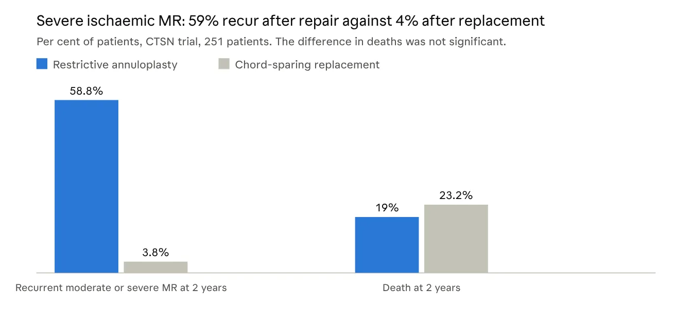
Reading the evidence
For ischaemic MR with marked tethering, replace: repair recurs in over half by two years and recurrence carries heart failure admissions.
Adding repair to CABG for moderate ischaemic MR does not improve the ventricle; revascularise and reassess.
The COAPT and MITRA-FR difference is the concept of proportionate MR: benefit when the regurgitation is severe relative to a ventricle that is not yet end-stage.
MATTERHORN is one-year data from a largely single-country trial; it does not show durability, and surgery still allows concomitant ablation, tricuspid repair and revascularisation.
UK Mini Mitral supports offering either approach in expert hands; the minimally invasive route is a recovery and patient-preference decision, not a quality one.
Technique points for the wet lab
Valve analysis: use P1 as the reference point and compare every other segment against it with nerve hooks; then decide annulus, leaflets, chords, papillary muscles.
Posterior leaflet: resect when there is excess tissue and height; otherwise respect it with PTFE neochordae. Reduce posterior height to about 15 mm or less to avoid systolic anterior motion.
Anterior leaflet: neochordae or chordal transfer; never resect more than a small triangle.
Ring: size to the anterior leaflet surface and intertrigonal distance; true-size for degenerative disease, undersize only for ischaemic annular dilatation.
Test with saline, look for a symmetrical line of closure in the posterior third of the orifice, then confirm on TOE: no more than mild MR, coaptation length 5–8 mm, mean gradient under 5 mmHg.
Annular sutures: stay shallow at the anterolateral commissure and P1 (circumflex) and at the posteromedial commissure (conduction tissue).
COAPT and RESHAPE-HF2 figures
2 drawings
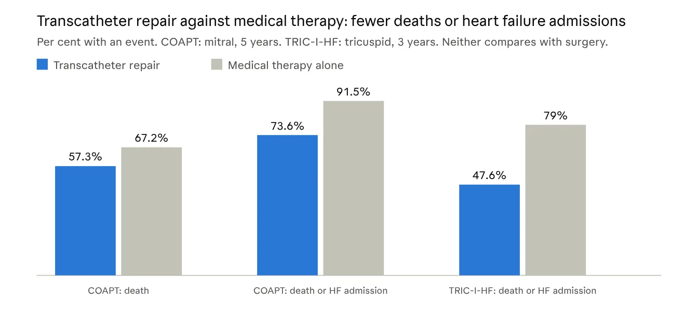
COAPT and RESHAPE-HF2 figures, confirmed 17 November 2026: in COAPT at five years, death 57.3% against 67.2% (HR 0.72), death or heart failure admission 73.6% against 91.5%, and heart failure admissions 33.1% against 57.2% a year (HR 0.53). In RESHAPE-HF2 at 24 months, heart failure admission or cardiovascular death occurred at 37.0 against 58.9 events per 100 patient-years (rate ratio 0.64, 0.48 to 0.85).
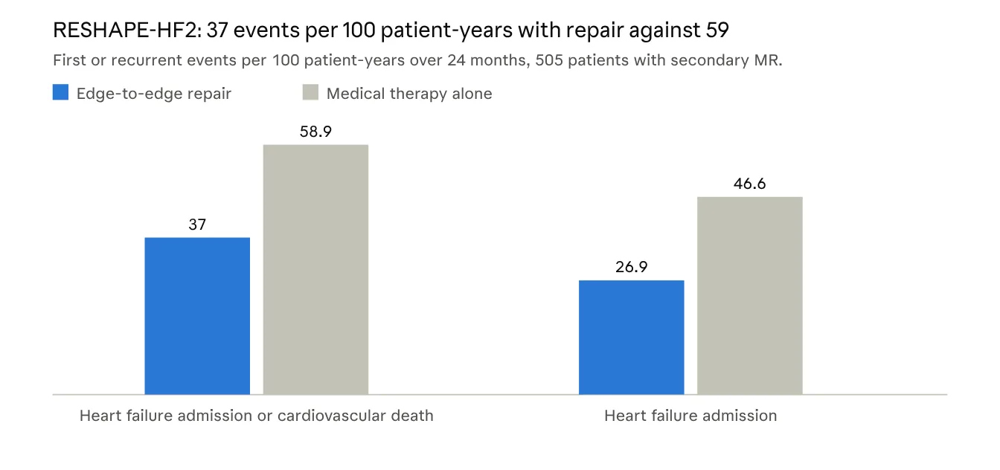
Prolapse and flail
1 drawing
Both are Carpentier type II (excess leaflet motion). The difference is where the free edge is and which way the tip points.

| Billowing | Prolapse | Flail | |
|---|---|---|---|
| What moves above the annular plane | Leaflet body only | Free edge, by 2 mm or more in a long-axis view | Free edge, completely |
| Tip direction in systole | Towards the ventricle | Towards the ventricle | Towards the atrium (everted) |
| Coaptation | Preserved, at or below the plane | Edge of one leaflet overrides the other | None at that segment |
| Chordae | Intact, long | Elongated, intact | Ruptured primary chordae, or a ruptured papillary muscle head |
| What you see | Domed, thick, redundant leaflets | The edge slips behind its partner; no free-moving strands | A whip-like tip with chordal strands moving in the atrium |
| Regurgitation | None to mild | Any grade; often late systolic | Almost always severe |
| Onset | Chronic | Chronic, progressive | Can be sudden: chordal rupture, endocarditis, infarction |
Working rules:
Measure prolapse in a long-axis view (parasternal or mid-oesophageal long-axis). The annulus is saddle-shaped, so the four-chamber view over-calls it. The 2 mm threshold is confirmed; the saddle-shape caution is from memory.
The jet runs away from the abnormal leaflet. A posterior leaflet lesion throws the jet anteriorly along the atrial septum and behind the aortic root; an anterior leaflet lesion throws it posteriorly along the lateral atrial wall. A restricted leaflet (type IIIb) does the opposite: the jet runs towards the tethered leaflet.
Eccentric wall-hugging jets look smaller on colour than they are. Use vena contracta, the proximal convergence zone and pulmonary vein systolic flow reversal.
Name the scallop. P2 is the commonest; use the commissural and long-axis views or a 3D en face view from the atrium.
Why the distinction matters to the surgeon:
A flail leaflet is a marker of severe regurgitation by itself and carries a worse natural history under medical treatment (excess mortality and heart failure in the Mayo Clinic and MIDA registry series; from memory). Guidelines accept surgery in asymptomatic patients when a durable repair is likely, and a flail P2 is the most repairable lesion there is.
Repair technique follows the lesion: a flail or prolapsing posterior scallop gets triangular or quadrangular resection or artificial chordae, with an annuloplasty ring; anterior leaflet prolapse gets artificial chordae or chordal transfer; billowing bileaflet (Barlow) valves need a height-reducing strategy and attention to systolic anterior motion afterwards.
Fibroelastic deficiency typically gives a single flail scallop on thin leaflets in an older patient; Barlow disease gives thick, billowing, multi-segment prolapse with a large annulus in a younger one.
A new flail leaflet with fever is endocarditis until shown otherwise; with chest pain and shock it is papillary muscle rupture (the posteromedial muscle, single blood supply).
Mitral annular calcification
6 parts · 1 drawing
Added 18 November 2026. The guideline is the AATS 2025 expert consensus document, J Thorac Cardiovasc Surg 2025;170:502-522 (El-Eshmawi and colleagues; 33 recommendations in 5 topics). I could read its abstract and a published commentary that reproduces its grading table, not the full text, so most classes of recommendation are missing below and are marked as such.
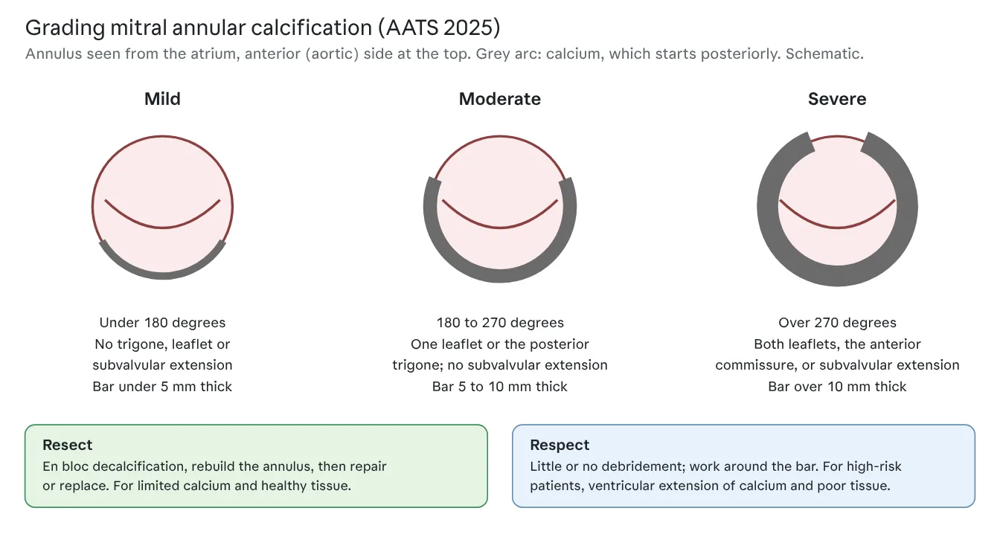
What it is
| Point | Detail | Source |
|---|---|---|
| Definition | Chronic, progressive calcium deposition in the fibrous mitral annulus, usually starting posteriorly | Ascione and Denti, Front Cardiovasc Med 2022 |
| Prevalence | 8 to 15%, rising with age; commoner in women | Ascione 2022; Ann Cardiothorac Surg 2025 review |
| Risk factors | Age, female sex, hypertension, hyperlipidaemia, diabetes, chronic kidney disease | Ann Cardiothorac Surg 2025 systematic review; Cardiac Interventions Today 2024 |
| Associations | Coronary disease and higher cardiovascular mortality; conduction disease | Ascione 2022; Cardiac Interventions Today 2024 |
| Caseous calcification | 1 to 3% of cases: a soft periannular mass with a lucent centre on echo; can seed endocarditis and embolise | Cardiac Interventions Today 2024 |
| Effect on the valve | Stenosis (a tubular inflow, no commissural fusion), regurgitation, or both | See the causes table above |
| Treatment of the calcium itself | None. Surgery is only for the associated regurgitation or stenosis; no drug slows progression | Medscape; Cardiac Interventions Today 2024 |
| Untreated with significant valve disease | Poor outcome, which intervention may improve | Ascione 2022 |
Imaging and grading
| Stage | Circumferential extent | Leaflet, trigone or subvalvular involvement | Thickness of the bar |
|---|---|---|---|
| Mild | Under 180° | None | Under 5 mm |
| Moderate | 180 to 270° | One leaflet or the posterior trigone; no subvalvular extension | 5 to 10 mm |
| Severe | Over 270° | Both leaflets, the anterior commissure, or subvalvular extension | Over 10 mm |
Grading table: AATS 2025 as reproduced in the commentary.
CT should be done in every patient, in addition to echo, to map the extent and distribution of calcium (AATS 2025, class not seen). CT is the reference test for detection and classification (Ascione 2022).
What to read from the CT: anterior, posterior, circumferential and trigonal involvement, depth, leaflet involvement, annular size, calcium density and distance to the circumflex (Cleveland Clinic experience, Ann Cardiothorac Surg 2025).
The Guerrero score was built from 87 CT scans to predict anchoring of a transcatheter valve in calcium; it and the Agatston score were not designed for surgical planning (Ascione 2022; Cleveland Clinic 2025).
Check for calcium extending into the aortic-mitral curtain: it changes the operation (commentary on AATS 2025).
3D TOE completes the surgical plan; moderate or severe disease in a high-risk patient goes to a multispecialty valve team (commentary on AATS 2025).
Why it is dangerous to operate on
Atrioventricular groove rupture, circumflex injury and embolism of debris are the three classic risks (Ascione 2022).
Conduction block and paravalvular leak are also commoner (Cardiac Interventions Today 2024 for conduction; leak from memory).
Standard risk scores do not capture the added risk (commentary on AATS 2025).
Surgical strategy
| Strategy | What is done | Best for | Source |
|---|---|---|---|
| Resect | En bloc decalcification of the bar, reconstruction of the annulus, then repair or replacement | Limited calcium with healthy surrounding tissue | AATS 2025 abstract: both strategies are reasonable in selected patients; selection from the commentary |
| Respect | Little or no debridement; sutures placed around or through the bar, or the prosthesis seated above it | High-risk patients, calcium extending into the ventricle, poor tissue | Same |
| Rebuilding the annulus after resection | A felt strip the width of the groove for a narrow defect; a pericardial patch sewn to ventricular and atrial muscle when the defect is wide or groove fat is visible, with pledgets on the ventricular side | After any en bloc resection | Cleveland Clinic 2025 |
| Ultrasonic debridement | An adjunct to help place sutures and seat the prosthesis | Either strategy | AATS 2025: Class IIb, level C-LD (the only class I could confirm) |
| Repair | Possible when leaflets are pliable, calcium is limited and resectable and there is spare tissue, typically prolapse with posterior calcium. Always with a ring: repair failure in these patients was linked to omitting annuloplasty | Degenerative disease with calcification | Commentary; Cleveland Clinic 2025 |
| Replacement | Preferred over a non-durable repair, and for extensive disease, an infected bar, or when stenosis is the main lesion. Keep the chordae to limit mid-ventricular tears; buttress the cuff with felt | Most severe cases | Commentary |
| Sizing | Consider body surface area and ventricular cavity size to avoid patient-prosthesis mismatch | All replacements | Cleveland Clinic 2025 |
| Calcium in the aortic-mitral curtain | May need aortic valve or root replacement with reconstruction of the intervalvular fibrosa (Commando operation) | Identified on CT beforehand | Commentary |
| Hybrid transatrial valve-in-calcium | Open left atrium on bypass; resect the anterior leaflet, add septal myectomy if needed, place anchoring sutures, and deploy a balloon-expandable transcatheter valve with a felt cuff (off-label) | Anatomy otherwise inoperable; planned in advance | Commentary |
| Transcatheter valve-in-calcium | Transseptal or transapical balloon-expandable valve | No surgical option | AATS 2025 topic 4; details not seen |
Outflow obstruction and other limits
A valve placed inside the calcium pushes the anterior leaflet towards the septum. Predict the neo-LVOT on CT; prevent obstruction by resecting the anterior leaflet or by septal myectomy (commentary). Alcohol septal ablation and leaflet laceration are also used before transcatheter implants (from memory; not in the sources opened).
Transcatheter series in calcified annuli report high rates of embolisation, mortality and outflow obstruction (Ascione 2022).
One-year survival after hybrid valve-in-calcium is poor, reflecting the patients selected (commentary; no figure given).
Evidence for the durability of repair is limited, and there are no devices designed for this anatomy (commentary).
Care should be concentrated in experienced valve centres (commentary on AATS 2025).
Practical rules (from memory, not sourced)
Remove only the calcium that stops a suture or the prosthesis from seating; every extra millimetre of debridement moves you towards the groove.
Irrigate and suction after any debridement, with a swab in the ventricle, to catch debris.
Do not lift the heart after the valve is in.
Expect a smaller prosthesis than the ventricle would suggest and plan for it.
The AATS document is listed with its identifier in the handbook cross-check on the Cardiac day tab; this is the first time its content has been checked here, and only through the abstract and the commentary.
Segmental leaflet analysis
4 parts · 1 drawing
Added 18 November 2026. Purpose: to say exactly where the lesion is (segment) and what it is (Carpentier type), first on the pre-bypass echo and then with nerve hooks in the arrested heart.

Nomenclature
| Point | Detail | Source |
|---|---|---|
| Eight segments | Three true posterior scallops (P1, P2, P3) separated by two indentations, the three facing areas of the anterior leaflet (A1, A2, A3), and two commissures | Berrebi, Ann Cardiothorac Surg 2015 |
| P1 | Next to the anterolateral commissure and the left atrial appendage; anterior, lateral, superior | Intraoperative TOE roadmap, Ann Cardiothorac Surg |
| P3 | Next to the posteromedial commissure; posterior, medial, inferior | Same |
| P2 | The middle scallop, and the one most often diseased in fibroelastic deficiency | Same |
| Alternative (Duran) nomenclature | Splits by chordal origin into anterolateral and posteromedial halves | From memory |
At operation (Carpentier's method)
| Step | What is done | Source |
|---|---|---|
| 1. Expose and inspect | Jet lesions on the atrial wall, annular dilatation or calcium, excess tissue, perforation, ruptured chordae or papillary muscle | Mitral Valve Surgery chapter, Springer for the inspection list; jet lesions from memory |
| 2. Choose a reference point | P1 is usually free of prolapse, so it is the reference | Loulmet, Ann Cardiothorac Surg 2013 |
| 3. Compare free edges with nerve hooks | A1 against P1, then A2, P2, A3 and P3 | Same |
| 4. Classify each segment | Edge above the reference is prolapse (type II); edge that cannot be lifted to the plane is restriction (type III); normal motion with a leak is type I | Springer chapter for prolapse or restriction; the type mapping is in the Carpentier picture above |
| 5. Commissures and subvalvular apparatus | Check both commissures, chordal length, thickening or fusion, and the papillary muscles | From memory |
| 6. Saline test | Fill the ventricle: look for a symmetrical closure line parallel to the posterior annulus, with the posterior leaflet taking a third or less of the orifice | From memory |
P1 can itself be abnormal (Barlow disease, commissural prolapse); then use the commissure or the annular plane as the reference (Springer chapter mentions the commissures as an alternative reference).
On echo
| View | Segments | Source |
|---|---|---|
| TOE mid-oesophageal 0° (four-chamber) | A2 and P2 at the tips; with the aortic valve in view, A1 and P1 | Cardiovascular Ultrasound 2014 |
| TOE commissural, about 60° | P1 laterally, A2 in the middle, P3 medially | Same |
| TOE two-chamber, about 90° | P3 and the anterior leaflet | From memory |
| TOE long axis, about 135° | A2 and P2 | Same source as the first row |
| TOE 3D en face | The surgeon's view: all segments at once | Same |
| TTE parasternal long axis | A2 and P2 | Echo evaluation of MR, figure 4 |
| TTE parasternal short axis | All six segments | Same |
| TTE apical four-chamber | A3, A2, P1 | Same |
| TTE apical two-chamber | P3, A2, P1 | Same |
Carpentier's rule, as reported by his echocardiographer: the first step of a successful repair is to look at the pre-bypass echo together and agree the valve analysis (Berrebi 2015).
Reporting it
State type and segment together, for example "type II, P2 flail with ruptured chordae, annulus dilated". That sentence fixes the plan: which segment to treat, and that a ring is needed.
Mitral annular calcification: regurgitation or stenosis?
Added 18 November 2026. Both. It can cause either, or mixed disease, and in population studies regurgitation is the commoner of the two.
| Point | Detail | Source |
|---|---|---|
| Either lesion | Annular calcification alters annular and leaflet mechanics and can cause stenosis, regurgitation or mixed dysfunction | 2025 review |
| How often | Two population studies: related stenosis in 2.2% and 6.6%; significant related regurgitation in 11.9% and 9.5% | Museedi and Le Jemtel, J Clin Med 2024 |
| Mechanism of stenosis | The calcium stops the annulus dilating in diastole and restricts the leaflets from their base; the orifice is narrowed at the annulus while the leaflet tips stay free | Tendyne MAC protocol; JACC 2020 review on calcific stenosis |
| Contrast with rheumatic stenosis | Rheumatic: commissural fusion and tip restriction, funnel shape. Calcific: no commissural fusion, so balloon valvotomy does not help | From memory |
| Mechanism of regurgitation | Loss of the annular sphincter in systole, a stiff or shortened posterior leaflet, and chordal traction as the calcium lifts the leaflet base | From memory |
| Progression | About a third progress within 18 to 36 months, by gradient and by arc of calcium | Museedi and Le Jemtel |
| Assessment trap | Pressure half-time is unreliable with a stiff ventricle; use mean gradient at a stated heart rate and planimetry on 3D or CT | Gradient point from the JACC 2020 review; the half-time point from memory |
Viva line: annular calcification is a marker more than a lesion; when it does cause valve disease it is more often regurgitation or mixed disease than pure stenosis, and the stenosis it causes is at the annulus, not the commissures.
Mitral annular calcification
Source: AATS 2025 consensus as summarised in the society-integrated handbook; the consensus itself was not opened by me. Moved here from Cardiac 10 on 19 Nov 2026.
| Step | Content |
|---|---|
| Map the calcium | CT distribution, depth and circumference; extension into myocardium and leaflets; LVOT |
| Define the lesion | Stenosis, regurgitation or both, with haemodynamics and symptoms attributed |
| Surgical questions | Can a repair last? Can a prosthesis be anchored safely? What debridement and reconstruction, and what backup? |
| Complications | AV groove disruption, circumflex injury, embolisation, paravalvular leak, LVOT obstruction |
| Alternatives | Conventional surgery, hybrid transatrial implantation, transcatheter options in selected anatomy |
| Simulation | Model the neo-LVOT with the actual device and position |
Thresholds: Mitral regurgitation
4 parts
In severe primary MR, operate for symptoms or for LVEF ≤60%, LVESD ≥40 mm or LVESDi ≥20 mm/m²; the 2025 guideline also makes early repair Class I when three of four atrial and right-sided markers are present.
Echo criteria for severe MR
| Parameter | Severe |
|---|---|
| Vena contracta | ≥7 mm (biplane >8 mm) |
| EROA (PISA) | ≥40 mm² |
| Regurgitant volume | ≥60 mL per beat |
| Regurgitant fraction | ≥50% |
| Pulmonary veins | Systolic flow reversal |
| Mitral inflow | E wave dominant, >1.2 m/s |
| Morphology | Flail leaflet, ruptured papillary muscle, large coaptation defect |
| Secondary MR, low flow or elliptical orifice | EROA ≥30 mm² or regurgitant volume ≥45 mL may already be severe |
Primary MR: thresholds for surgery
| Situation | Threshold | Class |
|---|---|---|
| Symptomatic severe primary MR, operable | Any | I |
| Asymptomatic, LV dysfunction | LVEF ≤60%, or LVESD ≥40 mm, or LVESDi ≥20 mm/m² | I |
| Asymptomatic, no LV dysfunction, low risk, durable repair likely | At least three of: AF; resting SPAP >50 mmHg; LA volume index ≥60 mL/m² or LA diameter ≥55 mm; secondary TR at least moderate | I |
| Symptomatic, high surgical risk, suitable anatomy | Transcatheter edge-to-edge repair | IIa |
| Severe MR, surgery planned on another valve | Concomitant mitral surgery | I |
ACC/AHA 2020 differs: early repair in asymptomatic patients with normal LV is IIa when repair likelihood is >95% and expected mortality <1%.
Secondary MR
| Situation | Threshold | Class |
|---|---|---|
| Ventricular secondary MR, symptomatic despite guideline-directed therapy and CRT | LVEF <50%, anatomy and haemodynamics meeting trial criteria: edge-to-edge repair | I |
| Trial-style eligibility (COAPT) | LVEF 20–50%, LVESD ≤70 mm, SPAP ≤70 mmHg, no severe RV dysfunction | Selection criteria |
| Severe secondary MR, CABG planned | Concomitant mitral surgery | I |
| Moderate secondary MR, CABG planned | Concomitant mitral surgery | IIb |
| Atrial secondary MR, symptomatic on optimal therapy | Mitral surgery with AF ablation and LA appendage occlusion | IIa |
| Atrial secondary MR, not a surgical candidate | Edge-to-edge repair | IIb |
Anatomy that changes the operation
| Finding | Threshold | Implication |
|---|---|---|
| Coaptation depth (tenting height) | ≥10 mm | Annuloplasty alone likely to fail in secondary MR |
| Tenting area | >2.5 cm² | As above |
| Posterior leaflet angle | >45° | As above |
| LV end-diastolic diameter | >65 mm | As above; consider replacement |
| Posterior leaflet height | >15 mm | Risk of systolic anterior motion after repair |
| Anterior to posterior leaflet length ratio | <1.3 | Risk of systolic anterior motion |
| Coaptation point to septum distance | <25 mm | Risk of systolic anterior motion |
| Basal septal thickness | ≥15 mm | Risk of systolic anterior motion |
| Mitral annular calcification on CT | Circumferential or extending into the myocardium | Changes debridement and replacement strategy; see CT section |
Thresholds: Mitral stenosis
2 parts
Clinically significant rheumatic MS is a valve area ≤1.5 cm²; surgery is for patients whose anatomy rules out balloon commissurotomy or who need other cardiac surgery.
| Parameter | Threshold | Meaning |
|---|---|---|
| Mitral valve area (planimetry preferred) | ≤1.5 cm² | Severe |
| Mitral valve area | ≤1.0 cm² | Very severe |
| Pressure half-time | ≥150 ms | Supports severe (≥220 ms very severe) |
| Mean gradient at 60–80 bpm | >10 mmHg | Supports severe; rate and flow dependent |
| Resting SPAP | >50 mmHg | Haemodynamic consequence; trigger in the asymptomatic patient |
| Exercise mean gradient | >15 mmHg | Haemodynamically significant when resting values are equivocal |
Thresholds for intervention
| Situation | Action | Class |
|---|---|---|
| Symptomatic, area ≤1.5 cm², favourable anatomy | Percutaneous mitral commissurotomy | I |
| Symptomatic, area ≤1.5 cm², unsuitable for commissurotomy | Mitral surgery | I |
| Asymptomatic, area ≤1.5 cm², with new AF, prior embolism, dense spontaneous contrast, SPAP >50 mmHg, planned pregnancy or major non-cardiac surgery | Commissurotomy if anatomy favourable | IIa |
| Degenerative MS with extensive annular calcification, symptomatic, experienced centre | Transcatheter mitral valve implantation | IIb |
Findings that favour surgery over balloon commissurotomy
Wilkins score >8, or Cormier group 3 (calcification of any extent on fluoroscopy).
Left atrial thrombus persisting after anticoagulation.
More than mild mitral regurgitation.
Severe or bicommissural calcification, or no commissural fusion.
Concomitant severe aortic or tricuspid disease, or coronary disease needing CABG.
Mitral valve anatomy: aortic-mitral continuity and the bundle of His
5 parts · 2 drawings
Added 18 November 2026. Each statement is tied to a published anatomy source; the pictures are my own schematics drawn from those descriptions, not copies of published figures.

The annulus and the fibrous skeleton
| Structure | Anatomy | Source |
|---|---|---|
| Annulus | D-shaped and saddle-shaped, changing through the cardiac cycle; "annulus" is a misnomer because there is no complete fibrous ring | EuroIntervention 2014; Anatomy of the mitral valvular complex |
| Aortic-mitral curtain | The anterior (aortic) leaflet is in fibrous continuity with the non-coronary and left coronary leaflets of the aortic valve; there is no muscle between the two valves | Anatomy of the mitral valvular complex; Ho, Heart 2002 |
| Fibrous trigones | Dense fibrous expansions at each end of the curtain. The left (anterolateral) trigone adjoins the left coronary cusp; the right (posteromedial) trigone adjoins the non-coronary cusp and the membranous septum | EuroIntervention 2014; Front Cardiovasc Med 2018 |
| Central fibrous body | The right fibrous trigone together with the membranous septum | Ho, Heart 2002 |
| Posterior annulus | Loosely anchored, with no fibrous support; this is why dilatation and calcification occur mostly in the posterior segment | EuroIntervention 2014 |
| Leaflets | The anterior leaflet takes about one third of the circumference but has the larger area; the posterior leaflet takes about two thirds and has three scallops (P1 lateral, P2 middle, P3 medial) | Cardioserv anatomy summary (secondary source) |

Why the continuity matters to the surgeon
| Situation | Consequence | Source |
|---|---|---|
| Double valve replacement and aortic root enlargement | The curtain is the tissue you divide and patch in a Nicks or Manouguian enlargement, and the tissue shared by both prostheses | ACC TAVR handbook, surgical anatomy chapter |
| Sutures in the anterior mitral annulus | The non-coronary and left coronary cusps lie against the base of the anterior leaflet, with a safety zone of 6 to 10 mm; a deep stitch here can catch or distort an aortic cusp and cause aortic regurgitation | Front Cardiovasc Med 2018 |
| Echo | The posterior aortic wall runs straight into the anterior mitral leaflet, and the septum into the anterior aortic wall; loss of this line is a sign of abnormal connection | ACC TAVR handbook chapter |
| Endocarditis | Infection spreads along the curtain between the valves (abscess of the intervalvular fibrosa); repair may need reconstruction of the curtain (Commando operation) | From memory; not in the sources opened today |
| Systolic anterior motion and neo-LVOT | The anterior leaflet forms the posterior wall of the outflow tract, so it can obstruct after repair or after a mitral prosthesis is placed | From memory |
The conduction axis
| Point | Detail | Source |
|---|---|---|
| AV node | Lies in the right atrium next to the septal tricuspid attachment, between the coronary sinus and the interatrial septum (triangle of Koch) | ACC TAVR handbook chapter |
| Bundle of His | Leaves the node and pierces the central fibrous body at the membranous septum, then divides into the bundle branches | ACC TAVR handbook chapter |
| Relation to the mitral valve | The bundle lies near the right fibrous trigone, at the posteromedial (medial) commissure | Front Cardiovasc Med 2018 |
| Relation to the aortic valve | The membranous septum lies below the interleaflet triangle between the right and non-coronary cusps, which is part of the central fibrous body | ACC TAVR handbook chapter |
| Why it is the only crossing | The fibrous skeleton insulates atria from ventricles; the penetrating bundle is the one muscular connection through it | Teaching summary (secondary source) |
The four structures at risk around the annulus
| Structure | Where | Injury |
|---|---|---|
| Circumflex artery | Runs posteriorly in the AV groove; at risk during annuloplasty | Occlusion or kinking: new lateral wall motion abnormality or ST change coming off bypass |
| Coronary sinus | Skirts the attachment of the posterior leaflet | Laceration or suture through the sinus |
| Bundle of His | Near the right trigone at the medial commissure | Complete heart block |
| Non-coronary and left coronary cusps | Against the base of the anterior leaflet, 6 to 10 mm safety zone | Aortic regurgitation |
The list of structures and their sites is from Front Cardiovasc Med 2018. The injury column is standard surgical teaching and not from that paper. The circumflex is closest to the annulus in the P1 and anterolateral commissure region, more so with left dominance; that detail is from memory.
In theatre
Take shallow, annular bites from the posteromedial commissure across the right trigone, and avoid deep bites into the base of the anterior leaflet.
Place the trigone sutures of an annuloplasty ring first: they mark the ends of the curtain and set the ring size against the anterior leaflet.
After any mitral procedure check the aortic valve on TOE for new regurgitation, the lateral wall for circumflex injury, and the rhythm for heart block.
These three points are surgical teaching from memory, consistent with the anatomy above but not taken from the cited sources.
Mitral valve disease: causes, classification, physiology and surgical pitfalls
5 parts · 1 drawing
Added 18 November 2026. Each line carries its source; lines without one are marked from memory. Thresholds for intervention are in the "Thresholds:" sections earlier in this tab and are not repeated.
Causes
| Lesion | Cause | Notes | Source |
|---|---|---|---|
| Primary MR (the valve is diseased) | Degenerative: myxomatous (Barlow) disease or fibroelastic deficiency | The commonest cause; gives billowing, prolapse or flail | ESC e-journal, primary MR; review, PMC6516795 |
| Primary MR | Rheumatic | Affects the mitral valve in up to half of rheumatic heart disease; regurgitation predominates in the young, stenosis with age | ESC e-journal, causes of mitral incompetence |
| Primary MR | Endocarditis, connective tissue disease, anorectic drugs, radiation, congenital cleft, trauma, mitral annular calcification | Less common | Same ESC article; Merck Manual |
| Secondary MR (the valve is normal) | Ventricular: ischaemic or dilated cardiomyopathy | A disease of the left ventricle: remodelling or regional wall motion abnormality tethers the leaflets | PMC6516795 |
| Secondary MR | Atrial: left atrial dilatation, usually long-standing AF | Annular dilatation with normal leaflet motion | Healio review |
| Acute MR | Papillary muscle rupture after infarction, chordal rupture, endocarditis with perforation, trauma | No time for compensation | Echo text chapter; Healio review |
| Mitral stenosis | Rheumatic | The usual cause: commissural fusion, thickened immobile leaflets, shortened matted chordae. Up to half give no history of rheumatic fever | Merck Manual, mitral stenosis; Healio, mitral stenosis |
| Mitral stenosis | Calcific (mitral annular calcification extending into the leaflets) | Elderly; a tubular stenosis without commissural fusion; much commoner than rheumatic disease but less often severe | ASE tutorial summary (secondary source) |
| Mitral stenosis | Congenital, radiation, lupus, rheumatoid disease, carcinoid, prosthetic dysfunction | Rare | Healio, mitral stenosis |
| Mimics of mitral stenosis | Left atrial myxoma, ball thrombus, large vegetation, cor triatriatum, pulmonary vein stenosis after AF ablation | Obstruct inflow without valve disease | Healio, mitral stenosis |
Classification
Mitral regurgitation
| System | Classes | Source |
|---|---|---|
| By cause | Primary (organic) or secondary (functional); secondary is ventricular or atrial | ESC e-journal; Healio |
| By time course | Acute, chronic compensated, chronic decompensated | Summary of the three phases (secondary source) |
| By leaflet motion (Carpentier) | I normal motion; II excess motion; IIIa restricted in systole and diastole; IIIb restricted in systole | See the picture and table earlier in this tab; classification not re-sourced today |
| By severity | Mild, moderate, severe on integrated echo criteria | See "Thresholds: Mitral regurgitation" above |
Mitral stenosis
| Grade | Valve area | Pressure half-time | Mean gradient | Pulmonary artery systolic pressure |
|---|---|---|---|---|
| Progressive | Over 1.5 cm² | Under 150 ms | Normal | |
| Severe | 1.5 cm² or less | 150 ms or more | Usually 5 to 10 mmHg | Often over 50 mmHg |
| Very severe | 1.0 cm² or less | 220 ms or more | Usually over 10 mmHg |
Sources: areas and half-times from the ACC/AHA 2020 staging as reproduced in the Korean Society of Echocardiography 2023 position paper and the ASE tutorial summary. The gradient column is heart-rate dependent and differs between tables (McMaster table gives under 5, 5 to 10 and over 10 mmHg), so quote the gradient with the heart rate.
Normal valve area is 4 to 6 cm² (summary).
Valve area by pressure half-time is 220 divided by the half-time in milliseconds; planimetry is the reference method in rheumatic disease (Silbiger, J Am Soc Echocardiogr 2021).
Wilkins score: four features each scored 1 to 4 (leaflet mobility, leaflet thickening, calcification, subvalvular thickening), total 4 to 16. A score of 8 or less favours balloon commissurotomy; 12 or more favours surgery (exam summary, secondary source; the four components are from memory).
ACC/AHA stages for both lesions: A at risk, B progressive, C asymptomatic severe, D symptomatic severe (Korean position paper table).
Physiology
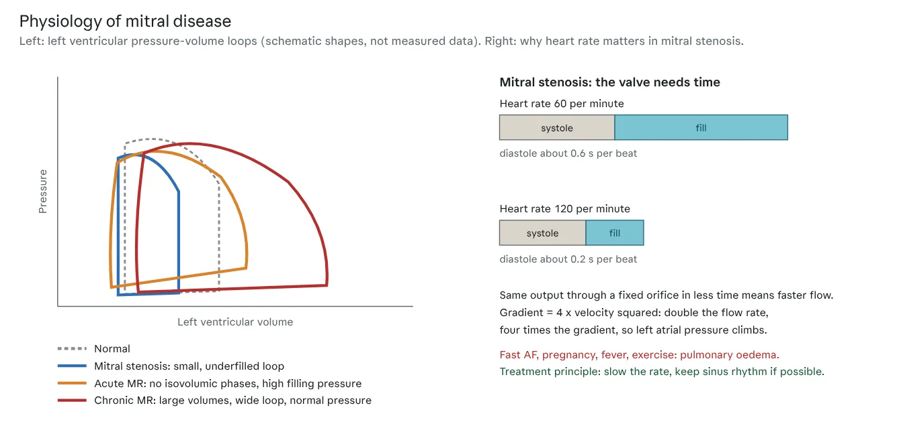
Mitral regurgitation
| Phase | What happens | Source |
|---|---|---|
| Acute | The regurgitant volume enters a normal-sized, non-compliant left atrium, so left atrial and pulmonary pressures rise abruptly: pulmonary oedema. The ventricle empties more completely, so end-systolic volume falls and ejection fraction is above normal, yet forward output is low | Echo text chapter; AMBOSS |
| Chronic compensated | Eccentric hypertrophy enlarges the ventricle; a large compliant atrium absorbs the volume at normal pressure; total stroke volume is high and ejection fraction stays normal | AMBOSS; pulsenotes (secondary) |
| Chronic decompensated | Contractility falls; end-systolic and end-diastolic volumes rise; stroke volume falls; left atrial pressure rises with pulmonary hypertension | AMBOSS |
Regurgitant fraction is regurgitant volume divided by total stroke volume (Healio).
Severity is dynamic: it depends on afterload, the left ventricle to left atrium pressure gradient, atrial compliance and the systolic orifice size (Healio). This is why the jet looks smaller under anaesthesia.
Ejection fraction overestimates function because part of the stroke volume is ejected into a low-pressure atrium. An ejection fraction of 60% or less therefore already means dysfunction, and it falls after the valve is made competent. That reasoning is from memory; the 60% threshold is in the thresholds section above.
On the pressure-volume loop there is no true isovolumic contraction or relaxation, because the ventricle ejects into the atrium as soon as pressure rises (from memory).
Mitral stenosis
A diastolic gradient develops between left atrium and ventricle; the raised left atrial pressure is transmitted to the pulmonary veins and the right heart (Healio).
Gradient = 4 × velocity squared, so doubling the flow velocity quadruples the gradient (Healio).
Tachycardia shortens diastolic filling time, so left atrial pressure rises and pulmonary congestion follows (summary).
Atrial contraction supplies about 20% of filling; losing it in AF, together with the fast rate, causes abrupt deterioration (Healio; Voka summary).
Worked figure: with a left ventricular diastolic pressure of 5 mmHg, a 20 mmHg gradient gives a left atrial pressure of about 25 mmHg (summary).
Pulmonary hypertension is at first passive; later, obliterative changes in the pulmonary vessels give a fixed component, the "second stenosis", followed by right ventricular failure and functional tricuspid regurgitation (Silbiger 2021).
The left ventricle is underfilled and usually small with preserved contractility (from memory). Pregnancy unmasks stenosis because of the rise in blood volume (Silbiger 2021).
Gorlin formula: valve area = flow across the valve during diastole divided by a constant times the square root of the mean gradient (from memory; not opened today).
Surgical considerations and pitfalls
| Stage | Consideration or pitfall | Source |
|---|---|---|
| Before | Exclude significant aortic regurgitation (it defeats antegrade cardioplegia and distends the ventricle); assess annular calcification, left atrial size and appendage thrombus | Czesla, Ann Cardiothorac Surg 2013 |
| Before | Predict systolic anterior motion from the pre-bypass TOE: coaptation-to-septum distance under 25 mm, posterior leaflet over 15 mm, basal septum 15 mm or more, aorto-mitral angle under 120° | Eur J Cardiothorac Surg |
| Before | Grade regurgitation awake: general anaesthesia lowers afterload and under-calls it | From memory |
| Annular sutures | Four structures: circumflex (0.3 to 1.8% injury), coronary sinus, bundle of His, aortic cusps | Dumps 2023; see the anatomy section above |
| Repair | Residual regurgitation more than mild, mean gradient over 5 mmHg, short coaptation or systolic anterior motion on the post-bypass TOE: go back on | Earlier in this tab ("Checks after repair"); not re-sourced today |
| Repair | Systolic anterior motion: volume, stop inotropes, raise afterload, beta-blockade; revise if it persists | Eur J Cardiothorac Surg 2012 |
| Replacement | Left ventricular rupture: rare and often fatal. Type 1 at the atrioventricular groove, type 2 at the mid-ventricular wall (linked to papillary muscle resection). Risk factors: older age, rheumatic stenosis, annular calcification | David, JTCVS Open 2020, after Treasure 1974 |
| Replacement | More likely in women and small ventricles; most die if it presents after closure | Teaching summary (secondary source) |
| Replacement | Prevention: keep the posterior leaflet and chordae, which protects against rupture and preserves geometry; do not over-debride calcium; do not oversize; do not lift the heart once the prosthesis is in | Sersar, Clin Med Cardiol 2009 for chordal preservation; the other three from memory |
| Replacement | If the ventricle ruptures: back on bypass, arrest, explant the valve and patch from inside with pericardium, then reimplant | David 2020 |
| Annular calcification | Decalcify only as far as needed to seat sutures; options are to suture through or around the bar, or a valve-in-calcium approach in selected cases | From memory; the AATS 2025 consensus is listed in this doc but not opened today |
| De-airing | Left-sided air embolises to the right coronary: inferior ST change and right ventricular dysfunction. Treatment on bypass: vents on, raise perfusion pressure | Robotic mitral complications table for management; the coronary pattern from memory |
| Exposure | Retractor tears of the left atrium; injury to the pulmonary artery or appendage from the cross-clamp in minimally invasive surgery | Czesla 2013; robotic complications table |
| After | New lateral wall motion abnormality means circumflex injury until proven otherwise; new complete heart block; paravalvular leak; haemolysis; left ventricular dysfunction unmasked by a competent valve | Dumps 2023 for the first two; the rest from memory |
| Mitral stenosis | Search the appendage for thrombus and exclude or ligate it; expect pulmonary hypertension and a struggling right ventricle coming off bypass; the small ventricle is preload-dependent and intolerant of tachycardia | From memory |
What to say in a viva
Name the cause and whether the regurgitation is primary or secondary.
Name the Carpentier type and the segment.
Give severity and what the ventricle and pulmonary pressures have done.
State the indication, then repair or replace and why.
Name the four structures at risk and how you will check each before leaving theatre.
Types of mitral regurgitation, with recent literature
4 parts · 1 drawing
Added 18 November 2026. The pictures are my own schematics. The Carpentier leaflet-motion picture is earlier in this tab; this section classifies by mechanism and cause, which is how the 2024 to 2026 literature is organised.

The types
| Type | Description | Leaflet motion | Typical jet | Source |
|---|---|---|---|---|
| Primary, degenerative: fibroelastic deficiency | Thin, translucent leaflets; usually one segment (most often P2) prolapses or flails on a ruptured chord; older patient, short history | Carpentier II | Eccentric, directed away from the prolapsing leaflet | ESC e-journal for the two forms; the features are from memory |
| Primary, degenerative: Barlow disease | Thick, redundant, billowing leaflets in many segments, elongated chordae, large annulus, often annular disjunction; younger patient, long history of a murmur | Carpentier II, often bileaflet | Late-systolic, often central or multiple | Same; features from memory |
| Primary, rheumatic | Thickened leaflets, fused commissures and chordae; mixed stenosis and regurgitation | IIIa | Central or posterior | ESC e-journal, causes |
| Primary, endocarditis | Perforation or chordal destruction, vegetations | I or II | Through the leaflet body if perforated | Same |
| Primary, other | Cleft, radiation, connective tissue disease, drugs, annular calcification | Varies | Varies | Merck Manual |
| Secondary, ventricular | Normal leaflets tethered by a dilated or infarcted ventricle and displaced papillary muscles. Asymmetric (inferior infarct, posterior leaflet tethered, posterior jet) or symmetric (global dilatation, central jet) | IIIb | Central or posterior | Pagnesi, ESC Heart Fail 2025 for tethering; the symmetric and asymmetric patterns are from memory |
| Secondary, atrial | Left atrial and annular dilatation with preserved ventricular size and function; the leaflets are normal but too small for the orifice, leaving a central gap. Seen in chronic AF and heart failure with preserved ejection fraction | I | Central | Clin Res Cardiol 2025; Pagnesi 2025 |
| Secondary, atrial with tethering | With further atrial enlargement the posterior annulus is displaced onto the crest of the ventricular wall; the posterior leaflet is bent and tethered ("hamstringing") and the anterior leaflet overrides it | I with IIIb | Eccentric, posteriorly directed | Pagnesi 2025; Nappi, J Thorac Dis 2024 |
| Acute | Papillary muscle or chordal rupture, perforation; normal-sized atrium, pulmonary oedema, short soft murmur | II or I | Often eccentric | See the physiology section above |
| Mixed | Two mechanisms together, for example prolapse in a dilated ventricle | Combination | From memory |
Recent literature
| Topic | Finding | Source |
|---|---|---|
| Atrial functional regurgitation: definition | Now recognised as a distinct entity: regurgitation from left atrial dilatation and annular remodelling without significant left ventricular disease | AATS expert consensus on atrial functional MR, summary |
| Two definitions in use | The 2022 JACC expert consensus definition is broader and includes atriogenic tethering; the 2025 ESC/EACTS guideline definition is narrower and may exclude it | J Cardiothorac Vasc Anesth 2026 review |
| Atrial functional: mechanism | 3D echo shows an increased angle between annulus and posterior leaflet tip; AF also removes annular contraction | Pagnesi 2025; Cardiovascular Science 2026 review |
| Atrial functional: treatment | Because the leaflets are structurally normal and the problem is annular dilatation, isolated ring annuloplasty is effective and durable; transcatheter edge-to-edge repair may be considered in high-risk patients with suitable anatomy after rhythm control and medical optimisation | Cardiovascular Science 2026; AATS consensus summary |
| Leaflet adaptation | Leaflet area grows in response to annular dilatation or tethering; an insufficient leaflet-to-annulus area ratio predicts residual regurgitation after edge-to-edge repair | Mechanisms of MR, 3D echo review |
| MATTERHORN (N Engl J Med 2024) | Edge-to-edge repair against surgery in heart failure with secondary regurgitation: composite of death, heart failure admission, stroke, reintervention or assist device at 1 year 16.7% against 22.5%, non-inferior; major safety events 14.9% against 54.8% | PubMed abstract |
| MATTERHORN: detail | Regurgitation grade 2+ or less in 96% against 99%; grade 0 or 1 in about 75% against 87%; 72% of the surgical arm had repair. Criticised for a wide non-inferiority margin and no medical arm | Eur Heart J journal scan; TCTMD |
| RESHAPE-HF2 (2024) | Edge-to-edge repair with medical therapy in moderate-to-severe secondary regurgitation: results align with COAPT more than MITRA-FR, mostly through fewer heart failure admissions; patients had less severe regurgitation than in COAPT, which questions the current orifice-area threshold | Eur Heart J Open 2024 |
| Proportionate and disproportionate regurgitation | Offered to explain COAPT (benefit; more regurgitation relative to ventricular size) against MITRA-FR (no benefit). A MITRA-FR post hoc analysis found no benefit even in the "disproportionate" subgroup, and RESHAPE-HF2 patients do not fit the framework cleanly | EuroIntervention 2025 review |
| Ischaemic regurgitation: subvalvular repair | Papillary muscle approximation added to a restrictive ring improved remodelling at 5 years in a 96-patient randomised trial | See the sources table above |
| Primary regurgitation: earlier surgery | The 2025 ESC/EACTS guideline makes repair Class I in low-risk asymptomatic patients without ventricular dysfunction when three of four atrial and right-sided criteria are met and a durable repair is likely | Summary of new recommendations; thresholds are in "Thresholds: Mitral regurgitation" above |
| Mitral annular calcification | AATS 2025 consensus: grading by CT, resect or respect | See the section above |
What each type means for the operation
| Type | Operation | Status |
|---|---|---|
| Fibroelastic deficiency | Repair nearly always possible: limited resection or neochordae, with a ring | From memory |
| Barlow | Repair in experienced hands: reduce posterior height, multiple neochordae, large ring; watch for systolic anterior motion | From memory; predictors of systolic anterior motion are sourced above |
| Rheumatic | Usually replacement; repair in selected pliable valves | From memory |
| Endocarditis | Repair if tissue allows (patch, neochordae); replacement if destruction is extensive | From memory |
| Ventricular secondary | Treat the ventricle first (medical therapy, resynchronisation, revascularisation). Then edge-to-edge repair or surgery by Heart Team; at surgery an undersized ring with or without a subvalvular step, or chord-sparing replacement | Trials above |
| Atrial secondary | Ring annuloplasty with AF ablation and appendage closure | Cardiovascular Science 2026 for the ring; the ablation and appendage part follows the AF section in tab 2 |
| Atrial with tethering | A ring alone may leave a leak: consider posterior leaflet augmentation or a different ring strategy | From memory; I found no trial |
| Acute papillary muscle rupture | Emergency replacement | Sourced above |
Points for a viva
Classify twice: by cause (primary or secondary, and which secondary) and by leaflet motion (Carpentier type and segment).
Jet direction tells the mechanism: away from a prolapsing leaflet, towards a restricted one, central with pure annular dilatation.
Atrial functional regurgitation is the new category: normal ventricle, big atrium, AF, and it does well with a ring.
In ventricular secondary regurgitation the valve is the consequence; MATTERHORN makes edge-to-edge repair an accepted alternative to surgery, with the caveats above.
Mitral valve repair and replacement: session notes, 18 November 2026
6 parts · 3 drawings
Your notes from the cardiac day session, recorded as taught, each checked against a published source where I could find one. The two schematics in the anatomy section above show these relations.
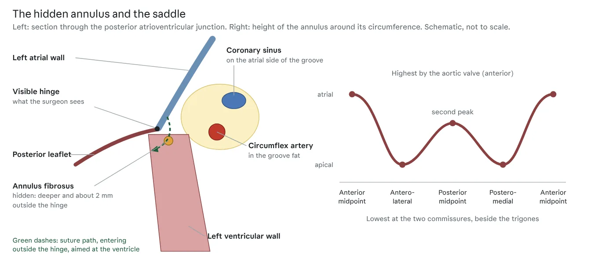
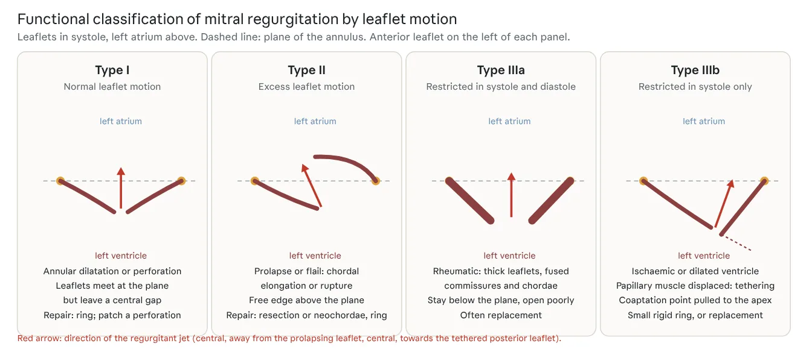
These two pictures are my own schematics of the anatomy and of Carpentier's functional classification. They are not copies of the illustrations in Carpentier's Reconstructive Valve Surgery, which I cannot reproduce; use the book for the original plates.
Anatomy as taught
| As taught | Check | Source |
|---|---|---|
| The left atrioventricular valve; named because it looks like a bishop's mitre | Not checked; standard etymology | None opened |
| Mitro-aortic continuity lies near the bundle of His | Agrees: the right end of the curtain is the right fibrous trigone, where the bundle lies | Front Cardiovasc Med 2018 |
| The annulus fibrosus is not visible from the atrium; it lies deeper, 2 mm external to the visible hinge of the leaflets | Agrees: the fibrous band is not visible from the left atrial side and, when present, lies 2 to 3 mm external to the hinge line. What the surgeon sees is the atrio-valvular junction | Faletra, Atlas of mitral valve imaging, chapter 1 |
| It is a discontinuous band of connective tissue present only along the attachment of the posterior leaflet | Agrees: a thin, discontinuous fibrous string along the posterior attachment; anteriorly the leaflet runs into the aortic-mitral curtain with no discrete ring | IMAIOS anatomy entry; Faletra, Eur Heart J Cardiovasc Imaging 2019 |
| Non-coronary and left coronary aortic cusps are at risk from mitral replacement stitches | Agrees: they lie against the base of the anterior leaflet with a 6 to 10 mm safety zone | Front Cardiovasc Med 2018 |
| The annulus is a three-dimensional saddle whose shape changes through the cardiac cycle | Agrees | EuroIntervention 2014 |
| Two lowest points at the fibrous trigones; two highest points at the midpoints of the anterior and posterior annulus | Agrees in outline. Published wording: the lowest points are at the commissures, which sit beside the trigones, and the anterior part is higher than the posterior, the anterior horn by the aorta being the highest point of all | Ann Cardiothorac Surg 2026; EuroIntervention 2015 |
Surrounding structures as taught
| Structure | As taught | Check | Source |
|---|---|---|---|
| Circumflex artery | Runs between the base of the left atrial appendage and the anterior commissure, 3 to 4 mm from the leaflet attachment, then moves away from the posterior annulus | Site agrees (posterior annulus, at risk during annuloplasty). The 3 to 4 mm figure is not confirmed in anything I opened; I read your "304mm" as 3 to 4 mm. The distance is shorter with a left-dominant circulation (from memory) | Front Cardiovasc Med 2018 for the site |
| Coronary sinus | Close to the posterior leaflet attachment, 5 mm superior to the annulus | Site agrees: it skirts the posterior attachment and often lies in a more atrial position than the AV groove. The 5 mm figure is not confirmed; the distance varies and increases with annular dilatation | Faletra atlas chapter 1; EuroIntervention 2014 |
| Bundle of His | Near the posteromedial trigone | Agrees | Front Cardiovasc Med 2018 |
| Non-coronary and left coronary cusps | Close to the base of the anterior leaflet | Agrees | Front Cardiovasc Med 2018 |
What follows for technique
Because the true annulus is deeper and outside the visible hinge, annuloplasty and valve sutures are passed from the atrial side about 2 mm outside the hinge and aimed towards the ventricle, so that they take the fibrous tissue and not leaflet or atrial wall alone. This is the reasoning usually given with the 2 mm figure; it is from memory and not in the sources above.
Bites are kept shallow in three places: at the anterolateral commissure and P1 (circumflex), along the posterior annulus (coronary sinus), and at the posteromedial commissure and right trigone (bundle of His).
Along the anterior annulus, keep sutures in the hinge and out of the curtain to protect the aortic cusps.
A saddle-shaped annulus lowers leaflet stress (Ann Cardiothorac Surg 2026), which is the argument for saddle-shaped annuloplasty rings.
The figures of 3 to 4 mm and 5 mm, and the "2 mm external" rule, are the ones given in Carpentier's Reconstructive Valve Surgery; I recall them from that text but could not open it today, so they stand as taught.
Papillary muscles and the suspension system
Added 18 November 2026. "Suspension system" is Carpentier's term for the papillary muscles and chordae that hold the leaflets against ventricular pressure. Each line is tied to a source; the picture is my own schematic.

| Component | Anatomy | Source |
|---|---|---|
| Papillary muscles | Two, named for the commissure each lies beneath; the base attaches to the apical third of the ventricle | Adv Clin Exp Med 2021 |
| Anterolateral muscle | Usually a single head, with a dual blood supply from the LAD and circumflex | Adv Clin Exp Med 2021; EuroIntervention 2015 |
| Posteromedial muscle | Usually two heads, with a single supply from the right coronary or the circumflex, which makes it the one vulnerable to ischaemia | Adv Clin Exp Med 2021; EuroIntervention 2015 |
| Territory | The anterolateral muscle serves A1, P1 and the adjoining half of A2 and P2; the posteromedial serves A3, P3 and the other half. Each muscle therefore sends chordae to both leaflets | e-echocardiography anatomy course (secondary source) |
| Marginal (primary) chordae | Insert on the free edge; they prevent prolapse and keep the edges together. Rupture or elongation gives flail or prolapse | Dal-Bianco and Levine, Cardiol Clin 2013; Cardioserv summary (secondary) |
| Secondary chordae, including the two strut chordae | Insert on the ventricular surface near the rough zone; thicker and longer; cutting one does not cause regurgitation. The two thick strut chordae to the anterior leaflet carry most of the load between valve and ventricle | Dal-Bianco and Levine 2013 for insertion; Cardioserv for the rest; the load-bearing point is from memory |
| Basal (tertiary) chordae | Arise directly from the ventricular wall and insert on the base of the posterior leaflet only | Teaching flashcards (secondary source) |
| Commissural chordae | A fan to each commissure, with extra commissural leaflet tissue between A1 and P1 and between A3 and P3 | Dal-Bianco and Levine 2013 for the commissural tissue; the fan description is from memory |
| Function | The chordae resist the tension generated by the papillary muscles in systole | J Clin Med 2020 review |
As taught in the session: the posteromedial papillary muscle is vascularised only from the posterior descending artery; the anterolateral has a double supply. This agrees with the sources in the table: the published wording is a single supply from the right coronary or the circumflex, and the posterior descending artery is the branch concerned, arising from whichever of those two is dominant (EuroIntervention 2015). The link to dominance is from memory. Clinical consequence: an inferior infarct can rupture or tether the posteromedial muscle, while the anterolateral muscle is protected unless both the LAD (diagonal) and circumflex (marginal) territories are lost.
What goes wrong, and what the surgeon does
| Lesion | Mechanism | Operation |
|---|---|---|
| Chordal rupture or elongation | Type II: free edge rises above the annular plane | PTFE neochordae from the papillary muscle head to the free edge, chordal transfer, or resection of the unsupported segment |
| Papillary muscle rupture after infarction | Usually the posteromedial muscle because of its single supply; one head or the whole muscle; torrential regurgitation and shock | Emergency surgery; usually replacement with preservation of what remains, sometimes reimplantation of a single head |
| Papillary muscle displacement | Type IIIb: an infarcted or dilated ventricle pulls the muscles apically and laterally and tethers the leaflets | Undersized ring; add a subvalvular step (papillary muscle approximation or relocation, or cutting secondary chordae) or replace with chordal sparing when tethering is marked |
| Fused, shortened chordae | Type IIIa, rheumatic | Fenestration, splitting of the papillary muscle, or replacement |
| Systolic anterior motion after repair | Excess leaflet height brings the anterior leaflet and its chordae into the outflow tract | Reduce posterior leaflet height, shorter neochordae, larger ring |
The statement that the posteromedial muscle is more exposed to ischaemia is sourced above. The rest of this table is surgical teaching from memory and is not individually sourced.
At replacement, keep the chordae of at least the posterior leaflet: valve-ventricular continuity preserves ventricular geometry and function. This is stated earlier in this tab under replacement; the trial evidence is not re-checked here.
Neochordae are anchored in the fibrous tip of the papillary muscle head, not the muscle belly, and are sized against a reference point such as the annular plane or an adjacent normal segment (from memory).
Sources for the mitral anatomy and suspension-system statements
Checked 18 November 2026. This table replaces the "from memory" and "secondary source" labels in the three sections above. Where a source changed or sharpened a statement, the correction is given.
| Statement | Source | Result |
|---|---|---|
| Kinds of chordae | Lam, Ranganathan, Wigle and Silver, Circulation 1970;41:449, 50 normal valves | The original classification has four kinds by insertion: commissural, rough zone, cleft and basal. "Primary, secondary, tertiary" is the later simplification |
| Commissural chordae | Lam 1970; J Clin Diagn Res 2015 | Confirmed: they insert into and define the commissures, and are branched and fan-shaped |
| Rough zone chordae | Lam 1970 | Insert on the ventricular side of the rough zone, typically splitting into three cords |
| Strut chordae | Lam 1970; Natl J Clin Anat 2020 | Confirmed: two thicker rough-zone chordae to the anterior leaflet, at the 4 and 8 o'clock positions; two were present in every heart in the 2020 series |
| Cleft chordae | Lam 1970 | Added: they insert into and define the clefts between the posterior scallops |
| Basal chordae | Lam 1970 | Confirmed: single strands to the posterior leaflet only |
| Posterior leaflet scallops | Ranganathan, Circulation 1970, companion paper | Three scallops in 46 of 50 hearts, with a large middle scallop in 42 |
| Posteromedial muscle supplied by the posterior descending artery, usually from the right coronary, less often the circumflex | Cardiol J 2022 meta-analysis; Ann Cardiothorac Surg, operative strategies | Confirmed; this is the wording you were taught |
| Anterolateral muscle: LAD and circumflex (obtuse marginal) | Same two sources | Confirmed |
| Posteromedial rupture more frequent | Same two sources; StatPearls | Confirmed: 6 to 12 times more frequent than anterolateral |
| Papillary muscle rupture: timing and frequency | StatPearls | Usually 2 to 7 days after infarction; 0.07 to 0.26% of infarcts; about half have single-vessel disease; partial rupture can present up to 3 months later |
| Papillary muscle rupture: operation | Ann Cardiothorac Surg operative strategies | Confirmed: replacement in the great majority, with CABG in almost half |
| Circumflex distance from the annulus | Dumps, Front Cardiovasc Med 2023 | Supports the taught 3 to 4 mm: mean 4.1 mm (range 3 to 6.5 mm) in left-dominant hearts, closest at P1 |
| Circumflex beside the appendage, then moving away | Thorac Cardiovasc Surg 2020 anatomical study | Supports the taught course: closest in the region of the left auricle (2.02 mm, range 1 to 3.1 mm), then loops away from the annulus |
| Circumflex: other measurements | EuroIntervention 2019 CT study; Bonn CT series 2025 | CT gives larger distances: about 6 to 7 mm in normal hearts; median 5.3 mm in a surgical series, under 4 mm in 23.6% |
| Circumflex: dissenting study | Surgical anatomy of the mitral valve, cadaveric | Mean distances about 7 to 8 mm, closest at P2, and no difference by dominance. So the site of greatest risk is not agreed |
| Circumflex injury | Bonn series 2025; Dumps 2023 | 0.3 to 1.8% of mitral operations; mechanisms are annular sutures distorting or occluding the artery |
| Injuries around the annulus: heart block, aortic cusp distortion, circumflex occlusion | Dumps 2023 | Confirmed as recognised complications of annular sutures |
| Ischaemic regurgitation: subvalvular repair added to a restrictive ring | Nappi, J Am Coll Cardiol 2016, ACC summary | Randomised, 96 patients: papillary muscle approximation improved ventricular remodelling at 5 years (end-diastolic diameter fell 5.8 mm against 0.2 mm); mortality 22.9% against 29.2%, not significant |
| Same, pooled | Nappi, J Thorac Cardiovasc Surg 2022 meta-analysis | Subvalvular procedures gave fewer adverse events; replacement had higher hospital mortality (OR 1.91) but fewer reoperations and readmissions than repair |
| Systolic anterior motion: frequency | Circulation 1993 | 1 to 2% of repairs develop outflow obstruction |
| Systolic anterior motion: predictors | Eur J Cardiothorac Surg, predicting SAM; J Thorac Cardiovasc Surg 2021 | Coaptation-to-septum distance under 25 mm (OR 5.09), posterior leaflet height over 15 mm (OR 3.80), basal septum 15 mm or more (OR 3.63), aorto-mitral angle under 120° (OR 2.74); also a low anterior-to-posterior height ratio, small ventricle and bileaflet prolapse |
| Systolic anterior motion: management | Eur J Cardiothorac Surg 2012; review 2020 | Confirmed: stepwise, with volume loading and beta-blockade first; persistent or severe cases need a second pump run to revise the repair |
Still without a source I could open
The exact Carpentier figures as printed: annulus 2 mm outside the hinge and coronary sinus 5 mm above the annulus. The atlas I cited gives 2 to 3 mm for the first; I found nothing for the second.
The territory of each papillary muscle by scallop, which rests on an echo teaching site.
Strut chordae as the main load path between valve and ventricle, and the evidence that chordal preservation at replacement protects ventricular function. The severe ischaemic regurgitation trial used chordal-sparing replacement, but I did not open a trial of sparing against excision.
Technique points: where sutures are placed relative to the hinge, how neochordae are anchored and sized, and trigone sutures first.
Spread of endocarditis along the aortic-mitral curtain and its reconstruction.
Mitral valve trials and the surgical approach
4 parts · 1 drawing
Added 18 November 2026. Each row is tied to a source I opened in search results, or marked "from memory".
Access: how to get to the valve
| Access | What it is | Evidence | Status |
|---|---|---|---|
| Median sternotomy | Standard; any pathology, any concomitant procedure | Comparator arm in UK Mini Mitral | Sourced below |
| Right minithoracotomy, thoracoscopic | 4th intercostal space, femoral bypass, transthoracic clamp or endoballoon, long-shafted instruments | UK Mini Mitral: the only multicentre randomised trial | Trial sourced; technique from memory |
| Robotic | Same route with robotic arms through ports | No randomised trial that I know of; observational series only | From memory |
| Lower hemisternotomy, right anterolateral thoracotomy (redo, beating or fibrillating heart) | Alternatives for redo surgery and a hostile sternum | No trial | From memory |
UK Mini Mitral (Akowuah, JAMA 2023;329:1957). 330 adults with degenerative regurgitation in 10 UK centres, randomised to minithoracotomy or sternotomy repair by an expert in that approach. Primary outcome, change in SF-36 physical function at 12 weeks: difference 0.68 (95% CI −1.89 to 3.26), so mini was not superior. Repair rate 95% mini against 97% sternotomy; safety and repair quality at 1 year similar; hospital stay shorter with mini. Sources: PubMed, ACC summary, Healio. Viva line: the choice of access is the patient's and surgeon's preference, not a difference in outcome, provided the surgeon is expert in it.
Exposure: which atrial incision

| Incision | Use | Drawback | Source |
|---|---|---|---|
| Left atriotomy through the interatrial (Sondergaard) groove | Default. Anterior to the right pulmonary veins, posterior to the groove | Poor view with a small atrium, deep chest or acute pathology | Texas Heart Inst J 2024 |
| Transseptal through the right atrium | Small left atrium, redo, concomitant tricuspid surgery | Two suture lines; needs bicaval cannulation | Heart Asia |
| Superior septal (extended vertical transseptal, Guiraudon) | Widest exposure | Divides the sinus node artery in many patients: junctional rhythm, pacing | Rows below |
| Dome of the left atrium | Occasional, with aortic root work | Awkward closure, bleeding behind the aorta | From memory |
Evidence on the incision:
| Study | Finding | Source |
|---|---|---|
| Randomised, 91 patients: superior septal against left atriotomy | Permanent pacemaker 10.6% against 4.5%; no difference in mortality; rhythm change from baseline significant only in the superior septal group | Aydin, Rev Bras Cir Cardiovasc 2014 |
| Retrospective, 241 patients, three incisions | Temporary pacing 49.2% superior septal, 30.5% transseptal, 25.5% left atriotomy (p=0.013); permanent pacemaker in one patient only | Turk J Thorac Cardiovasc Surg |
| Retrospective, 207 patients, three incisions | No difference in pacemaker, complications or mortality; direct left atriotomy had the shortest clamp and bypass times; the superior septal incision was used mostly for acute pathology | Texas Heart Inst J 2024 |
Tips for exposure (from memory): develop the groove well, table tilted left and head up, snare or retract the cavae, keep the aortic root empty, and extend the incision behind the inferior cava rather than upward.
Trials that decide what is done to the valve
| Question | Trial | Result | Source |
|---|---|---|---|
| Severe ischaemic regurgitation: restrictive ring or chord-sparing replacement | CTSN, 251 patients | 2-year mortality 19.0% against 23.2% (no difference); ventricular volume no different; recurrent moderate or severe regurgitation 58.8% after repair against 3.8% after replacement; more heart failure events after repair | N Engl J Med 2016;374:344 |
| Moderate ischaemic regurgitation: add a ring to CABG | CTSN, 301 patients | No difference in ventricular volume or death at 2 years; residual moderate or severe regurgitation 32.3% with CABG alone against 11.2% with the ring; more neurological events and supraventricular arrhythmia with the ring | N Engl J Med 2016;374:1932 |
| Tricuspid ring during degenerative mitral surgery (moderate regurgitation, or less with a dilated annulus) | CTSN, 401 patients | 2-year composite 3.9% against 10.2%, driven by less progression of tricuspid regurgitation; mortality no different; permanent pacemaker 14.1% against 2.5% | N Engl J Med 2022; pacemaker figures |
| Papillary muscle approximation with a ring | Nappi, 96 patients | Better remodelling at 5 years | In the sources table above |
| Edge-to-edge repair against surgery, secondary regurgitation | MATTERHORN | Non-inferior at 1 year | In the regurgitation types section above |
| Edge-to-edge repair against surgical repair, primary regurgitation | REPAIR MR (moderate-risk or older patients; first patient July 2020) and PRIMARY (450 patients aged 60 or over; recruiting, completion listed as 2030) | No results yet | REPAIR MR design; PRIMARY registry entry |
| AF ablation during mitral surgery | CTSN, N Engl J Med 2015 | More freedom from AF at 1 year, more pacemakers | From memory; not re-checked today |
| Early surgery against watchful waiting in asymptomatic severe primary regurgitation | No completed randomised trial; observational data only | Guideline thresholds are in "Thresholds: Mitral regurgitation" above | From memory |
Points for a viva
Access: mini is equivalent, not better, on recovery at 12 weeks (UK Mini Mitral).
Incision: groove first; transseptal for a small atrium or tricuspid work; superior septal buys exposure at the cost of rhythm disturbance.
Severe ischaemic regurgitation: replace with chordal sparing if a repair is unlikely to last. Moderate: revascularise, and a ring trades less regurgitation for more early events.
Tricuspid ring for moderate regurgitation or a dilated annulus prevents progression but costs pacemakers.
Mitral repair techniques in detail
12 parts · 6 drawings
Added 18 November 2026. Operative steps are from memory unless a source is given; the principles and the trial data are sourced.

Operative drawings, step by step
These are my own schematics, not copies of an atlas, and the steps drawn are from memory. Check them against an operative atlas (Carpentier's Reconstructive Valve Surgery, or the Khonsari atlas) before relying on them.


Sliding plasty in detail
| Point | Detail | Source |
|---|---|---|
| What it is for | Excess posterior leaflet height, usually Barlow disease or a tall P2, where a simple resection would leave a tall leaflet and a risk of systolic anterior motion | Eur Cardiol Rev |
| Target | Posterior leaflet height under 15 mm so that coaptation moves posteriorly | Same |
| Step 1 | Quadrangular resection of the prolapsing P2 down to the annulus | Same |
| Step 2 | Detach the P1 and P3 remnants from the annulus for 1 to 2 cm each side, keeping their chordae | Detachment: same source; distance from memory |
| Step 3 | Trim the base of each remnant obliquely if still tall (this is where height is actually lost) | From memory |
| Step 4 | Compression (plication) stitches on the bare posterior annulus to narrow the gap | From memory |
| Step 5 | Re-attach the remnants to the annulus with running 4-0 or 5-0 polypropylene, advancing them towards the middle | From memory |
| Step 6 | Close the leaflets to each other, edge to edge, then ring | From memory |
| Pitfalls | Circumflex kinking from deep compression stitches; dehiscence at the annular suture line; too much height removed leaves a restricted posterior leaflet | From memory |
| Alternative | Folding plasty: same aim without detaching the leaflet | Eur Cardiol Rev |
Neochordae in detail
| Point | Detail | Source |
|---|---|---|
| Anchor | The fibrous tip of the papillary muscle head, not the muscular body, with a pledgeted mattress or figure-of-eight stitch | From memory |
| Which head | Anterolateral muscle for A1, P1 and the lateral halves of A2 and P2; posteromedial for A3, P3 and the medial halves. Never cross the midline | From memory |
| Leaflet bite | Through the free edge from ventricular to atrial side, twice, 4 to 5 mm apart for each pair | From memory |
| Length: reference method | Level with a normal neighbouring segment or P1, or with the annular plane, with the ventricle filled with saline | From memory |
| Length: loop technique | Measure with a calliper, then fix premeasured ePTFE loops to the papillary muscle and stitch each loop to the edge | Seeburger, Ann Cardiothorac Surg 2013 |
| Length: adjust after testing | Chords placed, saline test done, then slid down as needed and tied with a knot pusher | CTSNet step-by-step video |
| Sizing matters most | Across all techniques, chordal sizing is the main determinant of success | Di Bacco 2020 |
| Knots | ePTFE slips: tie against a clip or instrument at the chosen length, with many throws | From memory |
| Errors | Too long: residual prolapse. Too short: restriction and a leak. Posterior chords set too long with a tall leaflet: systolic anterior motion | From memory |
Notes on the other drawn techniques
| Technique | Key points | Source |
|---|---|---|
| Folding plasty | Remnant free-edge corners folded down to the annulus mid-gap; lowers height without detachment | Eur Cardiol Rev for the indication; steps from memory |
| Edge-to-edge | A2 to P2 at the jet origin; always with a ring; check the mean gradient afterwards | From memory |
| Commissural stitch | A1 to P1 or A3 to P3; reduces orifice area slightly | From memory |
| Chordal transfer | A chord-bearing piece of the facing posterior leaflet, or a secondary chord of the anterior leaflet, moved to the anterior free edge | Dreyfus, Ann Cardiothorac Surg |
| Papillary muscle repositioning | The posterior papillary muscle usually has three heads, so repositioning one shortens all its chordae at once; suits A2, A1 or A3 and posterior commissural prolapse | Same |
Principles
| Principle | Detail | Source |
|---|---|---|
| Carpentier's aims | Restore full leaflet motion, create a large surface of coaptation, remodel and stabilise the annulus | From memory |
| Sequence | Expose, analyse by segment, place annular sutures early to improve exposure, re-survey, fix the leaflets, choose the ring, blend techniques to the lesions found | Complex MR repair, J Vis Surg |
| Evolution | From wide resection (quadrangular) through limited resection (triangular) to no resection (chordal replacement) | Seeburger, Ann Cardiothorac Surg 2013 |
| Resect or respect | CAMRA CardioLink-2: 104 patients with posterior prolapse in 7 Canadian centres, resection (54) against preservation with neochordae (50). Mean gradient at peak exercise at 12 months was no different; moderate regurgitation in 3 against 2 | Circulation 2020;142:1342 |
Triangular resection
| Point | Detail | Source |
|---|---|---|
| Indication | Prolapse or flail of a limited part of one posterior scallop, usually P2, with enough tissue either side; typical of fibroelastic deficiency | From memory |
| Why it replaced quadrangular resection | The resection is much smaller, so annular plication or sliding plasty is largely unnecessary | Seeburger 2013 |
| What it corrects | Leaflet height, leaflet volume, or both, depending on how the wedge is cut | J Vis Surg review |
| Steps | 1. Stay sutures on normal chordae either side of the flail segment. 2. Cut a triangle with its base on the free edge and its apex towards, not into, the annulus. 3. Close the leaflet with interrupted or running 5-0 polypropylene, edges level. 4. Check the remaining edges are supported; add a neochord if not. 5. Ring. 6. Saline test | From memory |
| Limits | Base wider than about a third of the scallop puts tension on the suture line and curtains the leaflet: use quadrangular resection with sliding plasty, or neochordae. Tall posterior leaflet (over 15 mm) needs height reduction as well | Width rule from memory; the 15 mm height from the systolic anterior motion rows below |
| Complications | Suture-line dehiscence, residual prolapse beside the repair, restricted posterior leaflet if too much is taken | From memory |
Quadrangular resection, sliding and folding plasty
| Point | Detail | Source |
|---|---|---|
| Classic use | Isolated P2 prolapse: Carpentier's quadrangular resection of the scallop | Repair options, Eur Cardiol Rev |
| Closing the gap | Originally annular plication; now usually avoided in favour of sliding or folding plasty when the tissue is redundant | Same |
| Sliding plasty | After the resection, P1 and P3 are detached from the annulus, advanced towards each other and re-attached. This lowers posterior leaflet height and moves coaptation posteriorly | Same |
| Folding plasty | The remnant edges are folded down to the annulus instead of being detached | Same; detail from memory |
| Risk of plication | Kinking of the circumflex artery | From memory |
Neochordae
| Point | Detail | Source |
|---|---|---|
| Material and principle | ePTFE (4-0 or 5-0) from the fibrous tip of a papillary muscle to the free edge; no tissue is removed | Seeburger 2013 for the principle; suture size from memory |
| Loop technique | Premeasured ePTFE loops fixed to the papillary muscle, each loop then attached to the free edge | Seeburger 2013 |
| The key variable | Chordal length: every technique aims to standardise sizing | Di Bacco, Innovations 2020 |
| How to size | Against a normal neighbouring chord or P1, with callipers, or tied with the ventricle filled; anterior and posterior papillary muscles each supply their own half of both leaflets, so do not cross the midline | From memory |
| Anterior leaflet | Neochordae are the usual choice; chordal transfer from the posterior leaflet or of a secondary chord, and papillary muscle repositioning, are Carpentier's alternatives | Dreyfus, Ann Cardiothorac Surg |
Ring annuloplasty
| Point | Detail | Source |
|---|---|---|
| Why | Stabilises the annulus and lowers long-term failure | Heart Surg Forum 2026 review |
| Sizing | By anterior leaflet height and area and the intertrigonal (intercommissural) distance. True size in degenerative disease; undersize in ventricular secondary disease | From memory |
| Type | Complete or band; rigid, semi-rigid or flexible. Barlow valves usually need 36 mm or larger | Ring size in Barlow: J Thorac Dis 2014; the rest from memory |
| Sutures | Horizontal mattress 2-0, wide on the annulus and narrow on the ring posteriorly; atrial to ventricular, emerging at the hinge. Structures at risk are in the anatomy section above | From memory |
Edge-to-edge and commissural techniques
| Technique | Use | Source |
|---|---|---|
| Edge-to-edge (Alfieri) | Bail-out for residual leak, anterior or bileaflet prolapse, or to treat or prevent systolic anterior motion. Used in 6.4% of repairs in one expert series | McCarthy, Ann Cardiothorac Surg for the frequency; indications from memory |
| Commissural ("magic") stitch | Closes a prolapsing commissure by joining A1 to P1 or A3 to P3 | From memory |
| Cleft closure | Deep indentations are closed, partly, by free-edge remodelling | J Vis Surg review |
Avoiding systolic anterior motion
| Point | Detail | Source |
|---|---|---|
| Cause | Mismatch between annular size and the amount of leaflet tissue | Clin Res Cardiol 2021 abstract |
| Predictors | End-diastolic diameter under 45 mm, aorto-mitral angle under 120°, coaptation-to-septum distance under 25 mm, posterior leaflet height over 15 mm | Varghese, Eur J Cardiothorac Surg |
| Other markers | Anterior-to-posterior leaflet ratio under 1.3; basal septum over 15 mm; a small ring | Popa 2013; Clin Res Cardiol 2021 |
| Prevention | Bring posterior leaflet height under 15 mm (sliding or folding plasty, or short neochordae) so coaptation moves posteriorly; do not undersize the ring | Eur Cardiol Rev for the height; ring from memory |
| If it happens coming off bypass | Fill, stop inotropes, raise afterload, slow the heart. If it persists: go back for height reduction, a larger ring or an edge-to-edge stitch | From memory |
Judging the result
| Check | Target | Source |
|---|---|---|
| Saline test | Symmetrical closure line, no leak, posterior leaflet a third or less of the orifice | From memory |
| Post-bypass echo | No more than trivial regurgitation; coaptation height between A2 and P2 at least 8 mm | Dreyfus (Carpentier's rule) |
| Also | No systolic anterior motion, mean gradient under about 5 mmHg, no new lateral wall abnormality | From memory |
Minimally invasive mitral repair and replacement: operative technique and femoral cannulation
6 parts · 1 drawing
Added 18 November 2026. The sequence follows two published step-by-step videos and two technique papers; anything else is marked from memory. The trial evidence (UK Mini Mitral) is in the trials section above.

Selection and work-up
| Point | Detail | Source |
|---|---|---|
| CT angiography of chest, abdomen and pelvis | Strongly encouraged before any minimally invasive mitral operation | Pearls and pitfalls of peripheral cannulation, J Vis Surg |
| What the CT is for | Significant atheroma, or an aneurysm with mural thrombus, in the descending aorta raises the risk of stroke with retrograde perfusion and may rule out femoral cannulation | Same |
| Femoral artery size | Exposed first and must be over 6.5 mm to support femoral arterial perfusion | Ann Cardiothorac Surg 2013 technique paper |
| Venous anatomy | An interrupted inferior vena cava with azygos continuation has been reported as a cause of failed femoral venous cannulation: look at the cava on the CT | Eur Heart J Case Rep 2021 |
| Relative contraindications | Previous right thoracotomy or expected right chest adhesions; significant lung disease | Review |
| Others | More than mild aortic regurgitation (cardioplegia delivery), severe annular calcification, chest wall deformity, very poor ventricle | From memory |
| Learning curve | 75 to 125 cases | Ann Cardiothorac Surg 2013 |
Femoral cannulation
| Step | Detail | Source |
|---|---|---|
| Exposure | Oblique incision in the right groin, 3 to 4 cm, below the inguinal ligament; expose only the anterior surface of artery and vein | CTSNet step-by-step; CTSNet 360 tutorial; limited dissection from memory |
| Purse strings | 5-0 polypropylene on both vessels | CTSNet figshare transcript |
| Vein first | Seldinger technique; the wire is followed on the bicaval echo view up into the superior vena cava before the cannula is passed | CTSNet |
| Venous cannula position | Long multi-stage cannula with its tip in the superior vena cava; fixed and snared so it can be adjusted | CTSNet transcript; tip position from memory |
| Artery | Same technique; the wire must be seen in the descending thoracic aorta before the cannula goes in | CTSNet step-by-step |
| Arterial cannula size | 16 to 20 Fr for cut-down; 17 to 21 Fr for percutaneous | Vienna approach, J Vis Surg |
| Extra venous drainage | Add a percutaneous right internal jugular cannula if drainage is poor or the right atrium is to be opened; vacuum-assisted drainage | From memory |
| Percutaneous or cut-down | Meta-analysis: cut-down had more access-site, wound and lymphatic complications and took longer; no difference in mortality, stroke or stay | Innovations 2024 meta-analysis |
| Risks of femoral perfusion | Retrograde dissection, embolisation and limb ischaemia on the cannulated side | Thesis review citing the cannulation literature |
| If the line pressure is high or the wire will not pass | Stop: do not force. Consider the other groin, the axillary artery (antegrade flow) or conversion | Axillary option from the same review; the rest from memory |
| Leg protection | Near-infrared monitoring of both calves; distal perfusion line for long runs or a small artery | From memory |
| Decannulation | Tie the purse strings, check for a narrowed artery, palpate or Doppler the distal pulse; lymphatics ligated, layered closure | From memory |
The chest
| Step | Detail | Source |
|---|---|---|
| Incision | 4 to 5 cm, just anterior to the anterior axillary line, usually in the 4th intercostal space; soft tissue retractor, little or no rib spreading | CTSNet step-by-step (the published text says "left axillary line", which I take to be an error for the right side); the space is from memory |
| Camera | 10 mm port one space above the incision, 0° scope; carbon dioxide through the same port | CTSNet 360 tutorial |
| Diaphragm | Retraction stitch in the tendinous part, pulled caudally | CTSNet step-by-step |
| Pericardium | Opened 2 to 3 cm anterior to the phrenic nerve, stay sutures brought out through the chest wall | From memory |
| Clamp | Dissect between the right pulmonary artery and the aorta, towards the left shoulder, so the clamp sits high. Flow down, aorta retracted, clamp on | CTSNet transcript and step-by-step |
| Clamp options | Transthoracic (Chitwood) clamp through a separate stab, or an endoaortic balloon | Vienna approach |
| Cardioplegia | Long root needle; single-dose solutions are popular. Watch the left atrial appendage and the pulmonary artery with the clamp tip | From memory |
| Atriotomy | Interatrial groove, then an atrial lift retractor | CTSNet |
On the valve
| Step | Repair | Replacement |
|---|---|---|
| Analysis | Segmental analysis as at sternotomy | Same; confirm the valve cannot be repaired |
| Leaflets | Neochordae are favoured through a small incision: placed, saline-tested, slid to length and tied with a knot pusher (CTSNet) | Anterior leaflet excised or split and reattached to the annulus; posterior leaflet and its chordae kept (from memory) |
| Sutures | Ring sutures; a flexible ring or band sewn with 3-0 polypropylene in the video (CTSNet); many use interrupted 2-0 braided sutures with an automated knot fastener (from memory) | Pledgeted 2-0 mattress sutures, everting with pledgets on the atrial side or non-everting with pledgets on the ventricular side (from memory) |
| Seating | Ring lowered, tied | Valve lowered; check that the struts or leaflets do not catch on retained chordae and that the outflow tract is clear (from memory) |
| Test | Saline test with the suction irrigator (CTSNet) | Check leaflet movement and that no suture is looped round a strut (from memory) |
Finishing
| Step | Detail | Source |
|---|---|---|
| Atriotomy | 4-0 polypropylene from both ends, tied in the middle | CTSNet transcript |
| Pacing wire | Placed on the right ventricle before the clamp comes off, while the heart is still and exposure is good | CTSNet |
| De-airing | Root vent on suction, lungs inflated, carbon dioxide field, echo check | From memory |
| Drain and closure | Chest drain through the camera port; intercostal block; layered closure | Drain: CTSNet transcript; the rest from memory |
Complications particular to this approach
| Complication | Note | Source |
|---|---|---|
| Stroke and retrograde dissection | From retrograde perfusion through a diseased aorta | J Vis Surg pearls and pitfalls |
| Limb ischaemia, groin lymphocele, wound infection | Fewer wound problems with percutaneous access | Innovations 2024 |
| Unilateral pulmonary oedema of the right lung | Linked to long bypass and single-lung ventilation | From memory |
| Phrenic nerve injury, chest wall bleeding, lung hernia | Check port sites before closing | From memory |
| Conversion to sternotomy | Bleeding, dissection, poor exposure, adhesions | From memory |
Mitral valve re-repair (Moore, Gillinov, Burns, Pettersson, Wierup)
6 parts · 1 drawing
Added 18 November 2026 from the PDF you supplied: Moore RA et al, Techniques for Mitral Valve Re-repair, Oper Tech Thorac Cardiovasc Surg 2021;26:42-65 (Cleveland Clinic), doi 10.1053/j.optechstcvs.2020.09.004. I read the text; the figures are the authors' illustrations and are described, not copied. Everything below is from the paper.

How often repairs fail
| Point | Detail |
|---|---|
| Degenerative disease | Linearised failure rate 0.5 to 1.5% per year |
| Including non-degenerative causes | 1 to 4% per year |
| Re-repair | Recent studies show it is safe, feasible and durable |
Why repairs fail
| Group | Mechanism | Detail |
|---|---|---|
| Procedure-related (usually early) | Suture dehiscence | Most often the annuloplasty sutures, leaving part of the annulus unsupported; also the resection line, or a neochord at the leaflet or papillary muscle. The authors prefer 4-0 ePTFE |
| Haemolysis | High-velocity jet through a small orifice or striking the band or suture material; the regurgitation need not be severe | |
| Chordal pseudo-elongation | Neochordae sized for a dilated ventricle become too long once the ventricle remodels | |
| Systolic anterior motion | Early, or after a few months when the ventricle has shrunk and coaptation has moved towards the septum | |
| Incomplete repair | Leaving theatre with residual prolapse, more than 1+ regurgitation, restriction or systolic anterior motion; or stenosis from a restrictive ring or extensive leaflet suturing | |
| Functional mitral stenosis | Excessive resection leaves a stiff posterior shelf; or the annuloplasty is too small, especially a complete ring. Edge-to-edge always causes some | |
| Valve-related (usually late) | Disease progression | New prolapse in previously healthy segments |
| Progressive ventricular dilatation | Leaflet restriction and secondary regurgitation | |
| Fibrosis and scarring | Around suture lines, mostly after excessive resection: progressive stenosis | |
| Endocarditis | Tissue destruction or annular invasion |
Will a second repair work?
| More likely | Less likely |
|---|---|
| Suture or annuloplasty dehiscence | Severe annular calcification |
| Haemolysis as the indication | Severe leaflet calcification |
| Systolic anterior motion | Extensive leaflet fibrosis or scarring |
| Disease progression | Rheumatic disease; radiation heart disease |
| Some congenital lesions (partly reopened anterior cleft after AV canal repair) | Endocarditis |
| Preserved leaflet size (previous neochordal repair) | Severe congenital tethering; advanced age; low ejection fraction |
Techniques by mechanism
| Problem | Re-repair |
|---|---|
| New prolapse from disease progression | Add neochordae to the new area; avoid a repeat resection (stenosis and fibrosis). The old annuloplasty often stays; a smaller one if the ventricle has dilated and restricted other segments |
| Chordal pseudo-elongation | New, shorter neochordae so that coaptation sits well posteriorly |
| Systolic anterior motion | Remove the undersized band; new neochordae anchored to the posteriorly placed sub-heads of each papillary muscle and made deliberately very short; a slightly oversized band. The authors avoid edge-to-edge here because of stenosis |
| Removing an old band safely | Incise the scar over the band to expose the old sutures; grasp, cut and remove each suture with the band left in place; then lift the band out of its capsule with a blunt dissector |
| Annuloplasty dehiscence | Usually within months, from weak annulus or low-grade infection. Do not just reattach: remove the whole band, send it for endocarditis examination, irrigate, change instruments, sew in a new one. The dehisced annulus has usually fibrosed and now holds sutures |
| Functional stenosis from a scarred posterior leaflet | Resect most of the scarred leaflet, rebuild it with autologous pericardium, support the free edge with neochordae, use a larger band. Durability unknown, so consider replacement; reserve for selected patients such as a young woman of child-bearing age |
Prevention at the first operation (their practice)
Posterior neochordae relatively short and anchored to the most posterior sub-heads, to move coaptation posteriorly.
Size the band to the height of the anterior leaflet; a partial flexible band, upsized when systolic anterior motion is a worry.
Non-resection neochordal repair keeps gradients low.
Do not leave theatre with more than trace regurgitation; go back on bypass if needed. Even mild residual regurgitation predicts late failure.
Always use a prosthetic annuloplasty. For restriction from ventricular dilatation a complete, rigid, slightly undersized ring may be needed, and replacement should be considered.
Their results
| Item | Figure |
|---|---|
| Re-repairs in 5 years (index operation for degenerative prolapse) | 36 |
| Failure within 1 year of the index operation | 9; beyond 1 year: 27 |
| Approach | Sternotomy in all; they do not use alternative approaches for redo mitral surgery |
| Concomitant procedures | Nearly 40% |
| Late failures of the re-repair | 2, both going on to replacement |
This ties to the earlier sections in this tab: the 15 mm posterior leaflet height and the predictors of systolic anterior motion, and the repair techniques in detail.
Mitral regurgitation and stenosis: textbook account with American classes
Added 19 November 2026 from the TSRA Review 3rd ed., ch. 59 (Brescia, Jabagi, Bolling), ch. 60 (Mozer, McCarthy) and ch. 61 (Bergquist, Romano). The classes are the 2020 ACC/AHA guideline as the chapters quote it; the ESC/EACTS 2025 thresholds earlier in this tab are the ones examined in the UK.
Carpentier classification
| Type | Leaflet motion | Causes |
|---|---|---|
| I | Normal | Annular dilatation; perforation |
| II | Excessive (prolapse or flail) | Chordal elongation or rupture; papillary muscle rupture |
| IIIa | Restricted in systole and diastole | Rheumatic; calcification |
| IIIb | Restricted in systole | Ischaemic tethering; dilated ventricle |
Severity
| Measure | Primary (degenerative) severe | Secondary severe, as given in ch. 59 |
|---|---|---|
| Vena contracta | 0.7 cm or more | |
| Effective regurgitant orifice | 0.4 cm² or more | Over 0.2 cm² |
| Regurgitant volume | 60 ml or more | Over 30 ml |
| Regurgitant fraction | 50% or more | 50% or more |
| Jet area | Over 40% of the left atrium |
Ejection fraction overstates ventricular function in mitral regurgitation, because part of the stroke volume empties into the atrium. Outcomes after surgery are worse once it is below 60%.
Degenerative regurgitation
60 to 70% of regurgitation in developed countries; fibroelastic deficiency or Barlow disease. P2 flail is the commonest lesion.
| Class (ACC/AHA 2020, as quoted) | Indication |
|---|---|
| I | Symptoms with ejection fraction over 30% |
| I | No symptoms, with ejection fraction 30 to 60% or end-systolic diameter 40 mm or more |
| I | Repair in preference to replacement when the lesion is posterior, or anterior or bileaflet if a durable repair is achievable |
| IIa | No symptoms, preserved ventricle, when repair likelihood exceeds 95% with mortality under 1% at a centre of excellence |
| IIa | No symptoms, with new atrial fibrillation or pulmonary artery systolic pressure over 50 mmHg |
| IIb | Symptoms with ejection fraction 30% or less |
| III | Do not replace the valve for disease of less than half the posterior leaflet unless repair has been tried and failed |
Goals of repair. Keep leaflet mobility; restore 5 to 10 mm of coaptation without systolic anterior motion; stabilise the annulus with a ring in every repair.
| Leaflet | Techniques |
|---|---|
| Posterior | Neochords, triangular or quadrangular resection, sliding plasty, cleft closure |
| Anterior | Neochords, chordal transfer, edge-to-edge (Alfieri), commissuroplasty |
Transcatheter edge-to-edge repair suits prohibitive-risk patients with a grasping zone of 10 mm or more, flail width under 15 mm, flail gap under 10 mm, and a single central segment.
Ischaemic and other secondary regurgitation
Ischaemic regurgitation is 20% of all mitral regurgitation. The papillary muscles are displaced apically and laterally, tethering the leaflets (type IIIb), most at the posteromedial scallop, and the annulus dilates and flattens.
| Class (ACC/AHA 2020, as quoted) | Recommendation |
|---|---|
| I | Guideline-directed medical therapy, and resynchronisation where indicated, led by a heart failure cardiologist |
| IIa | Transcatheter edge-to-edge repair for persistent symptoms on full therapy with ejection fraction 20 to 50%, end-systolic diameter 70 mm or less, and pulmonary artery systolic pressure 70 mmHg or less |
| IIa | Mitral surgery when coronary surgery is being done for ischaemia |
| IIb | Mitral surgery for severe symptoms on full therapy |
| IIb | Chordal-sparing replacement may be chosen over a downsized ring |
| Trial | Finding as given in the chapter |
|---|---|
| CTSN severe ischaemic regurgitation (Acker; two-year report Goldstein, NEJM 2016) | Repair or chordal-sparing replacement: no difference in ventricular volume or survival; moderate or worse recurrence at 2 years in 59% after repair against 4% after replacement |
| CTSN moderate ischaemic regurgitation (Michler, NEJM 2016; n=301) | Adding repair to bypass grafting: no better remodelling or survival, more adverse events, less residual regurgitation |
| RIME (n=73) | Grafting plus repair improved regurgitation, remodelling and class; not powered for survival |
| COAPT | Basis of the 2019 approval of the clip for secondary regurgitation |
Neither repair nor replacement has been shown to prolong life in severe functional regurgitation. If repairing, the chapter's authors use a restrictive ring, one to two sizes below the measured size. If replacing, keep the whole subvalvar apparatus.
Structures at risk and two complications
Circumflex artery near the anterolateral commissure (A1/P1); coronary sinus behind P2/P3; atrioventricular node and bundle; aortic valve through the aortomitral curtain.
| Atrioventricular disruption | Site | Cause |
|---|---|---|
| Type 1 (commonest) | Atrioventricular groove | Over-decalcification, oversized prosthesis, deep sutures, lifting the heart after implantation |
| Type 2 | Posterior wall at the papillary muscle base | Over-resection of the posterior leaflet and subvalvar apparatus |
| Type 3 | Between the two |
Treatment: back on bypass, arrest, remove the prosthesis, repair from inside with a pericardial patch, implant a smaller low-profile valve. Prevention: limit decalcification, do distal coronary anastomoses first, keep the posterior leaflet.
Systolic anterior motion. The anterior leaflet is drawn into the outflow tract, with a posteriorly directed jet. Predictors: posterior leaflet height over 1.5 cm, anterior to posterior height ratio under 1.4, coaptation-to-septum distance under 2.5 cm, aortomitral angle under 120 degrees (under 100 in ch. 60), septal hypertrophy, an undersized ring. Manage first by stopping inotropes, filling the ventricle, raising afterload and slowing the heart with a beta-blocker. If it persists: larger ring, shorten the posterior leaflet to 1.5 cm or less by sliding plasty, neochords, or replacement.
Mitral stenosis
Almost always rheumatic: commissural fusion. Annular calcification is degenerative, starts at the posterior annulus and does not fuse the commissures, so balloon commissurotomy does not help.
| Stage | Definition |
|---|---|
| A | Diastolic doming, normal flow |
| B | Commissural fusion; valve area over 1.5 cm² |
| C | Severe, no symptoms: area under 1.5 cm², pressure half-time over 150 ms, pulmonary artery systolic pressure over 30 mmHg |
| D | Severe with symptoms |
| Treatment (ACC/AHA 2020, as quoted) | Class |
|---|---|
| Balloon commissurotomy for symptomatic severe stenosis with favourable anatomy, less than moderate regurgitation and no atrial thrombus | I |
| Balloon commissurotomy without symptoms if pulmonary artery systolic pressure is over 50 mmHg | IIa |
| Surgery for class III to IV symptoms when anatomy is unfavourable, the balloon has failed, or other cardiac surgery is needed | I |
The Wilkins score grades leaflet mobility, thickening, subvalvar thickening and calcification. Valve-in-calcified-annulus procedures with aortic transcatheter valves have had poor registry results.
Mitral regurgitation and stenosis: changes and early evaluation (2025 ESC/EACTS)
Added 20 November 2026 from Praz F, Borger MA, et al. 2025 ESC/EACTS Guidelines for the management of valvular heart disease. Eur Heart J 2025;46:4635–4736 (Tables 3 and 4, Tables 5 and 6, sections 3.1.2, 6.2 and 9 to 9.1.2.3; journal pp. 4643–4672). Read in full (PDF pages 1 to 38). Figure 10 read from the rendered page. The full mitral recommendation tables (Recommendation Tables 6 to 8, journal pp. 4674–4682) lie beyond these pages; the class and level of each new or changed mitral recommendation below is taken from Tables 3 and 4.
Definitions and aetiology
- Primary MR (PMR): lesion of one or more of leaflets, chordae or papillary muscles (annulus not included). 55% of patients with MR needing treatment.
- Secondary MR: from LV or LA dilatation and dysfunction (ventricular vs atrial SMR; distinction has prognostic and management implications).
- Acute MR: endocarditis, chordal rupture, papillary muscle rupture after MI.
- Degenerative PMR: fibroelastic deficiency or myxomatous disease (most severe form Barlow disease) in high-income countries; rheumatic disease elsewhere.
- Arrhythmic MVP: in a small subgroup, ventricular arrhythmias and occasional sudden death, especially Barlow disease. Burden independent of MR severity; linked to mitral annular disjunction (atrial displacement of the posterior leaflet hinge point → excess mobility, papillary and posterobasal traction, fibrosis).
Echo criteria (Figure 10)
| Type | Severe MR |
|---|---|
| Qualitative | Flail leaflet, large coaptation defect, severe tenting; large central jet; large holosystolic convergence zone |
| Semi-quantitative | Vena contracta ≥7 mm (≥8 mm biplane); pulmonary vein systolic flow reversal; E-wave dominant (>1.2 m/s); VTI mitral/VTI LVOT >1.4 |
| Quantitative | EROA ≥40 mm² (≥30 mm² if elliptical orifice); RVol ≥60 mL (≥45 mL in low flow); RF ≥50% |
Criteria for intervention shown in Figure 10
| Group | Left ventricle | Left atrium | Right heart |
|---|---|---|---|
| PMR | LVESD ≥40 mm; LVEF ≤60% | Diameter ≥55 mm; LAVI ≥60 mL/m²; AF | SPAP >50 mmHg; secondary TR ≥ moderate |
| Ventricular SMR | Clinical and echo criteria (Table 7); LVESD ≤70 mm; LVEF 20–50% | ||
| Atrial SMR | (diagnostic criteria in Figure 12) |
- In asymptomatic severe PMR, larger LV or LA, SPAP >50 mmHg at rest, ≥ moderate secondary TR and AF mark worse prognosis and inform timing.
Other evaluation (section 9.1.2)
- TOE: method of choice for anatomy, leaflet quality, motion, coaptation, confirming severity; 3D TOE systematically when planning and performing surgical or transcatheter repair.
- Exercise echo when symptoms and resting severity disagree.
- RHC: confirm PA pressures if echo and symptoms disagree or with lung disease.
- Biomarkers: NT-proBNP correlates with NYHA class. Registry of >1300 PMR patients: raised BNP independently predicted long-term mortality on medical treatment, but pre-operative BNP did not affect long-term mortality after surgery.
- CMR: RVol and RF when echo inconclusive; gold standard for volumes; fibrosis in Barlow/MAD linked to arrhythmia and sudden death.
- CCT: MV apparatus anatomy; arterial access and MV calcification for minimally invasive surgery; TMVI feasibility (annulus size, LVOT obstruction risk).
New mitral recommendations (Table 3)
| Recommendation | Class | Level |
|---|---|---|
| Surgical MV repair in low-risk asymptomatic severe PMR without LV dysfunction (LVESD <40 mm, LVESDi <20 mm/m², LVEF >60%) when durable result likely, if at least three of: AF; SPAP at rest >50 mmHg; LA dilatation (LAVI ≥60 mL/m² or LA diameter ≥55 mm); concomitant secondary TR ≥ moderate | I | B |
| Minimally invasive MV surgery may be considered at experienced centres to reduce length of stay and accelerate recovery | IIb | B |
| MV surgery, surgical AF ablation if indicated, and LAAO in symptomatic severe atrial SMR under optimal medical therapy | IIa | B |
| TEER may be considered in symptomatic severe atrial SMR not eligible for surgery after optimised medical therapy including rhythm control when appropriate | IIb | B |
| MV surgery may be considered in moderate SMR undergoing CABG | IIb | B |
| TMVI may be considered in symptomatic extensive MAC with severe MV dysfunction at experienced Heart Valve Centres with expertise in complex MV surgery and transcatheter intervention | IIb | C |
| MV surgery in severe MR undergoing surgery for another valve | I | C |
Revised mitral recommendations (Table 4: 2021 → 2025)
| 2025 recommendation | 2021 | 2025 |
|---|---|---|
| MV surgery in asymptomatic severe PMR without LV dysfunction (LVESD <40 mm, LVESDi <20 mm/m², LVEF >60%) with PH (SPAP at rest >50 mmHg) or AF secondary to MR (LVESDi criterion added) | IIa B | IIa B |
| Surgical MV repair in low-risk asymptomatic severe PMR without LV dysfunction with significant LA dilatation (LAVI ≥60 mL/m² or diameter ≥55 mm), in a Heart Valve Centre with durable repair likely | IIa B | IIa B |
| TEER in symptomatic severe PMR, anatomically suitable, high surgical risk per Heart Team (2021: inoperable or high risk, not futile) | IIb B | IIa B |
| PCI followed by TEER after re-evaluation of MR may be considered in symptomatic chronic severe ventricular SMR with non-complex CAD (2021: PCI and/or TAVI possibly followed by TEER) | IIa C | IIb C |
| TEER to reduce HF hospitalisation and improve quality of life in haemodynamically stable symptomatic patients with LVEF <50% and persistent severe ventricular SMR despite optimised GDMT and CRT (if indicated), fulfilling specific clinical and echo criteria | IIa B | I A |
| TEER may be considered for symptom improvement in selected symptomatic severe ventricular SMR not meeting those criteria, after careful evaluation for LVAD or HTx | IIb C | IIb B |
| MV surgery may be considered in symptomatic severe ventricular SMR without advanced HF who are not suitable for TEER | IIb C | IIb C |
| Invasive coronary angiography in evaluation of CAD in severe ventricular SMR | I C | I C |
| DOACs not recommended in AF with rheumatic MS and MVA ≤2.0 cm² (2021: moderate-to-severe MS) | III C | III B |
| Concomitant surgical ablation in MV surgery with AF suitable for rhythm control, by experienced electrophysiologists and arrhythmia surgeons (2021: should be considered for all valve surgery) | IIa A | I A |
Volume, centre and complexity (sections 3.1.2, Table 6)
- Annual operator volume of about 25 surgical mitral procedures, and cumulative experience of about 50 M-TEER procedures per operator or centre, are associated with better outcomes.
- Complex procedures for the most experienced centres: complex MV repair (Barlow disease; anterior or bileaflet prolapse; high risk of SAM; severe MAC); minimally invasive and robotic valve surgery; complex and redo M-TEER; mitral valve-in-ring, valve-in-valve, valve-in-MAC; TMVI; leaflet modification (LAMPOON).
Associated topics in these pages
- Ischaemic ventricular SMR: surgical revascularisation linked to MR reduction in observational data; PCI improves SMR in about one-third, so may be considered before MV intervention.
- Acute PMR rarely causes shock except papillary muscle rupture; best treated by surgical repair or replacement. M-TEER increasingly supported in acute ventricular SMR after MI (lower mortality than surgery or medical therapy in propensity-matched analyses) and may help weaning from mechanical support.
- Radiation-induced MV disease: M-TEER often limited by thick, restricted leaflets and risk of iatrogenic stenosis.
ESC/EACTS 2025 valvular heart disease guidelines: mitral regurgitation part 1 (primary MR)
Added 20 November 2026 from Praz F, Borger MA, Lanz J, Marin-Cuartas M, et al. 2025 ESC/EACTS Guidelines for the management of valvular heart disease. Eur Heart J 2025;46:4635-4736. Read in full (PDF pages 37 to 41, journal pages 4671 to 4675; section 9 begins on PDF page 37, so reading started there). Figures 10 and 11 and Recommendation Table 6 were read from rendered page images.
Definitions and aetiology
- Primary MR (PMR): anatomical lesion of one or more of leaflets, chordae or papillary muscles (annulus not counted). 55% of patients with MR needing treatment have PMR.
- Commonest causes: degenerative (fibroelastic deficiency, myxomatous; most severe form Barlow's disease) in higher-income countries; rheumatic heart disease elsewhere. Endocarditis is a separate entity (endocarditis guidelines).
- Arrhythmic MV prolapse: small subgroup with ventricular arrhythmias and occasional sudden death, especially Barlow's. Burden is independent of MR severity and linked to mitral annular disjunction (atrial displacement of the posterior leaflet hinge point; papillary muscle and posterobasal traction, local fibrosis). CMR fibrosis in Barlow's with disjunction is associated with ventricular arrhythmias and sudden death. Ring annuloplasty stabilises the posterior annulus, reduces subvalvular traction and may lower arrhythmia risk.
- Acute MR: endocarditis, chordal rupture, papillary muscle rupture after MI.
- Secondary MR (SMR): grossly normal valve; incompetence from LV/LA geometry change, dyssynchrony, and imbalance of closing and tethering forces. Severe SMR in chronic HF about 10% (25% with reduced vs 4% with preserved LVEF).
- Ventricular SMR: commoner, worse prognosis; dilated or ischaemic cardiomyopathy; leaflet tethering, restricted motion plus annular dilatation.
- Atrial SMR: pure annular dilatation in long-standing AF and/or HFpEF; annular enlargement and flattening with planar coaptation. Predisposing: age ≥65, female sex, LA dilatation, diastolic dysfunction. Previously under-recognised and sometimes misclassified as PMR (pseudo-prolapse).
Echocardiographic criteria for severe MR (Figure 10)
| Type | Criteria |
|---|---|
| Qualitative | Flail leaflet, large coaptation defect, severe tenting; large central jet; large holosystolic convergence zone |
| Semi-quantitative | Vena contracta ≥7 mm (≥8 mm biplane); pulmonary vein systolic flow reversal; E-wave dominant (>1.2 m/s); VTI mitral/VTI LVOT >1.4 |
| Quantitative | EROA ≥40 mm² (≥30 mm² if elliptical orifice); RVol ≥60 mL (≥45 mL in low flow); RF ≥50% |
Criteria for intervention by mechanism (Figure 10):
| Mechanism | Left ventricle | Left atrium | Right heart |
|---|---|---|---|
| PMR | LVESD ≥40 mm; LVEF ≤60% | Diameter ≥55 mm; LAVI ≥60 mL/m²; AF | SPAP >50 mmHg; secondary TR ≥ moderate |
| Ventricular SMR | Table 7 criteria; LVESD ≤70 mm; LVEF 20% to 50% | ||
| Atrial SMR | (no specific LV criteria shown) |
Imaging and work-up in PMR
- TTE first: morphology (prolapse/flail location, calcification, annular disjunction), integrative grading, LV and LA size and function, RV function. EROA is prognostic; volumetric RVol and RF add information. Correct colour settings avoid overestimation.
- TOE is the method of choice for anatomy, leaflet quality, motion and coaptation, and to confirm severity. 3D TOE should be used systematically when planning and performing surgical or transcatheter repair.
- Exercise echo: discordant symptoms vs resting severity.
- Markers of worse prognosis in asymptomatic severe PMR: LV or LA enlargement, SPAP >50 mmHg at rest, ≥ moderate secondary TR, AF.
- Right heart catheterisation: confirm PA pressures when echo severity and symptoms are discordant, or with lung disease.
- Biomarkers: NT-proBNP tracks NYHA class. Registry >1300 PMR patients: raised BNP independently predicted long-term mortality on medical treatment, but pre-operative BNP did not affect mortality after surgery.
- CMR: alternative to quantify RVol/RF when inconclusive; gold standard for chamber volumes.
- Cardiac CT: MV apparatus anatomy; arterial access for bypass and MV calcification before minimally invasive surgery; TMVI feasibility (annulus size, LVOT obstruction risk); instrumental for procedural planning with MAC.
- Genetics: 14 loci from six GWAS (genes LMCD1, SPTBN1, LTBP2, TGFB2, NMB, ALPK3). Routine genetic testing not recommended.
Medical therapy in PMR
- Acute severe PMR: sodium nitroprusside afterload reduction (if not hypotensive) as bridge; inotropes and diuretics; IABP in exceptional cases.
- Chronic PMR without LV dysfunction: no evidence for prophylactic afterload reduction. Impaired LV function: GDMT per HF guidelines.
Intervention in PMR: principles
- Acute severe PMR: urgent surgery or transcatheter treatment. Papillary muscle rupture and endocarditis generally need replacement; acute degenerative chordal rupture can be repaired surgically, or TEER if high risk.
- Repair including annuloplasty is the treatment of choice when durable result expected. Contemporary mortality 1.2% in selected patients. Repair vs replacement: lower peri-operative mortality, better long-term survival and function.
- Complex repair (annular or leaflet calcification, rheumatic) should be attempted in experienced Heart Valve Centres. If repair not feasible: replacement with preservation of the subvalvular apparatus.
- M-TEER for high-risk and elderly; residual MR and mean transmitral gradient relate to outcome. TEER vs surgery trials ongoing: high-risk (NCT03271762), intermediate-risk (NCT04198870), all-risk >60 years (NCT05051033).
- TMVI: very effective in selected high-risk patients with anatomy complex for TEER; drawbacks: limited availability, high screening failure, LVOT obstruction, valve thrombosis, little PMR and durability data.
- Women have higher long-term mortality after repair than men even at lower dilatation and dysfunction, suggesting sex-specific indexed thresholds.
- Minimally invasive right mini-thoracotomy: RCT showed similar safety and efficacy to sternotomy; shorter stay and better physical activity in the first 6 weeks, difference gone at 12 weeks. National registry benefits less clear.
Recommendation Table 6: intervention in severe PMR
| Recommendation | Class | Level |
|---|---|---|
| MV repair is the recommended surgical technique when the result is expected to be durable | I | B |
| MV surgery in symptomatic severe PMR considered operable by the Heart Team | I | B |
| MV surgery in asymptomatic severe PMR with LV dysfunction (LVESD ≥40 mm or LVESDi ≥20 mm/m² or LVEF ≤60%) | I | B |
| Surgical MV repair in low-risk asymptomatic severe PMR without LV dysfunction (LVESD <40 mm, LVESDi <20 mm/m², LVEF >60%), durable result likely, if at least three of: AF; SPAP at rest >50 mmHg; LA dilatation (LAVI ≥60 mL/m² or diameter ≥55 mm); concomitant secondary TR ≥ moderate | I | B |
| MV surgery should be considered in asymptomatic severe PMR without LV dysfunction with PH (SPAP at rest >50 mmHg) or AF secondary to MR | IIa | B |
| Surgical MV repair should be considered in low-risk asymptomatic severe PMR without LV dysfunction with significant LA dilatation (LAVI ≥60 mL/m² or diameter ≥55 mm), in a Heart Valve Centre, when durable repair likely | IIa | B |
| TEER should be considered in symptomatic severe PMR, anatomically suitable, at high surgical risk per Heart Team | IIa | B |
| Minimally invasive MV surgery may be considered at experienced centres to reduce length of stay and accelerate recovery | IIb | B |
Figure 11 algorithm (asymptomatic): LV dysfunction → MV surgery, preferably repair (I); else ≥3 of AF/SPAP >50/LA dilatation/TR ≥ moderate → surgery (I); else AF or SPAP >50 → surgery, preferably repair (IIa); else significant LA dilatation with high likelihood of durable repair → surgical repair (IIa); otherwise watchful waiting. Symptomatic: not high risk → surgery (I); high risk and TEER-suitable → TEER (IIa); high risk and not TEER-suitable → TMVI if feasible, high-risk surgery in selected patients, or medical treatment.
Follow-up in PMR
- Asymptomatic severe MR not meeting criteria, preserved exercise capacity: clinical and echo twice per year (watchful waiting), ideally in a Heart Valve Clinic; may add BNP, ECG/Holter, exercise echo, CMR.
- Asymptomatic moderate MR, preserved LV: yearly review, echo every 1 to 2 years.
- Repair durability at experienced centres: freedom from moderate or severe MR 87.5% at 20 years. After repair without pre-op LV dysfunction or arrhythmia: every 2 to 3 years.
- Recurrent MR after ring annuloplasty: usually redo surgery (usually replacement); transcatheter options only for selected high-risk (gradient with M-TEER; PVL and LVOT obstruction with valve-in-ring).
- After MV replacement and after TEER: yearly. Surgery after failed TEER carries higher mortality and low repair rates.
ESC/EACTS 2025 valvular heart disease guidelines: mitral regurgitation part 2 (secondary MR)
Added 20 November 2026 from Praz F, Borger MA, Lanz J, Marin-Cuartas M, et al. 2025 ESC/EACTS Guidelines for the management of valvular heart disease. Eur Heart J 2025;46:4635-4736. Read in full (PDF pages 41 to 45, journal pages 4675 to 4679). Figures 12 and 13 and Recommendation Table 7 were read from rendered page images. Definitions of atrial and ventricular SMR and the Figure 10 severity criteria are in part 1.
Secondary MR: evaluation
- Assess after GDMT optimisation, euvolaemic and normotensive.
- Lower thresholds: EROA ≥30 mm² and/or RVol ≥45 mL have outcome impact. CMR confirms severity; fibrosis extent is prognostic. Exercise echo if resting values inconclusive.
Atrial SMR defining criteria (Figure 12; all required):
| Criterion | Atrial SMR | Ventricular SMR |
|---|---|---|
| LVEF and wall motion | ≥50%, no regional abnormalities | <50%, with or without regional abnormalities |
| LV size and leaflets | No or mild dilatation, no tethering (LVEDD <56 mm women, <63 mm men; LVEDVi <71 mL/m² women, <79 mL/m² men) | Restricted motion with tethering |
| Annulus | Dilated (AP diameter >35 mm) | Normal leaflet morphology |
| LA | Enlarged (LAVI >34 mL/m²) | Central or eccentric jet |
| Additional echo | Normal leaflet motion and morphology, usually central jet | Dilated LV, LA and annulus |
| Clinical | AF, HFpEF | Ischaemic heart disease, dilated cardiomyopathy |
Additional echo criteria may no longer be met in advanced atrial SMR (overlap from late LV damage).
Ventricular SMR: medical and device therapy
- GDMT before any MV intervention: ACE-I/ARB or ARNI, beta-blocker, MRA, SGLT2i at maximum tolerated doses. Up-titration should be rapid (within 6 weeks) with close follow-up.
- About 40% improve SMR severity after 1 to 3 months of GDMT.
- CRT per HF criteria (LVEF ≤35% and wide QRS) before MV intervention; SMR falls by at least one grade in 40% to 60%.
Ventricular SMR: trials
| Trial | Result |
|---|---|
| COAPT | M-TEER safe; reduced recurrent HF hospitalisation and all-cause mortality at 2 and 5 years vs GDMT (no relevant CAD). 5-year death or HF hospitalisation 73.6% in device arm |
| MITRA-FR | No difference in all-cause death or HF hospitalisation at 1 and 2 years |
| RESHAPE-HF-2 | 36% reduction in HF hospitalisation or CV death at 2 years, driven by HF hospitalisation; CV death alone not reduced; KCCQ +10.9 points (95% CI 6.8 to 15.0; P <0.001) |
| Meta-analysis of the three | HF rehospitalisation at 24 months HR 0.63 (0.50 to 0.80); death plus all-cause hospitalisation HR 0.72 (0.51 to 0.999); no difference in all-cause or CV death |
| MATTERHORN (84% ventricular SMR) | TEER non-inferior to surgical repair or replacement for death, HF hospitalisation, MV reintervention, assist device or stroke at 1 year; better safety |
| Coronary sinus indirect annuloplasty (small sham RCT) | Mitral RVol fell 22.4%; no QoL effect; registries show symptom gain and remodelling at 1 year |
Explanations for COAPT vs MITRA-FR divergence: effect size, design, selection, follow-up, echo grading, GDMT use, technical factors.
Ventricular SMR: surgical points
- Without relevant CAD: isolated MV surgery indications restrictive (risk, no proven mortality benefit).
- With CAD needing revascularisation: MV surgery at CABG recommended unless high surgical risk and/or anatomy suits PCI.
- Isolated undersized annuloplasty: high recurrence in an RCT; limited reverse remodelling, especially with tenting area >1.35 cm²/m² BSA, where replacement is usually needed. Subvalvular modification may help; unproven durability.
- Moderate ischaemic SMR at CABG: meta-analyses of four RCTs show less recurrent MR but no mortality or clinical benefit; weigh added risk vs progression.
- HTx or LVAD should be considered in selected severe ventricular SMR with advanced HF.
Table 7: criteria predicting outcome improvement with M-TEER in ventricular SMR - Anatomy suitable for M-TEER - NYHA ≥II - LVEF 20% to 50% - LVESD ≤70 mm - At least one HF hospitalisation in the previous year or raised natriuretic peptides (BNP ≥300 pg/mL or NT-proBNP ≥1000 pg/mL) - SPAP ≤70 mmHg - No severe RV dysfunction; no stage D or advanced HF; no CAD requiring revascularisation; no severe AV and/or TV disease; no hypertrophic, restrictive or infiltrative cardiomyopathy
Atrial SMR: management
- Treat cause; HFpEF and AF per guidelines; SGLT2i encouraged in HFpEF. Rhythm control may reduce atrial SMR and LA size.
- Surgery associated with fewer HF hospitalisations and lower mortality than GDMT in a matched cohort. Surgical annuloplasty effective and durable as it counters the main mechanism. Combining with Maze and LAAO may add benefit; concomitant TR can be treated at the same operation.
- TEER: high safety and success in observational data and a small MATTERHORN subgroup (n = 34); watch for gradient rise (planar coaptation, large jet, limited MVA).
Recommendation Table 7: intervention in SMR
| Recommendation | Class | Level |
|---|---|---|
| Severe atrial SMR: MV surgery, surgical AF ablation if indicated, and LAAO should be considered in symptomatic patients on optimal medical therapy | IIa | B |
| TEER may be considered in symptomatic severe atrial SMR not eligible for surgery after medical optimisation including rhythm control when appropriate | IIb | B |
| Ventricular SMR with CAD: MV surgery recommended in severe ventricular SMR undergoing CABG | I | B |
| MV surgery may be considered in moderate SMR undergoing CABG | IIb | B |
| PCI followed by TEER after re-evaluation of MR may be considered in symptomatic chronic severe ventricular SMR and non-complex CAD | IIb | C |
| Ventricular SMR without CAD: TEER recommended to reduce HF hospitalisation and improve QoL in haemodynamically stable symptomatic patients with LVEF <50% and persistent severe ventricular SMR despite optimised GDMT and CRT (if indicated), meeting Table 7 criteria | I | A |
| TEER may be considered for symptom improvement in selected symptomatic severe ventricular SMR not meeting Table 7 criteria, after careful evaluation for LVAD or HTx | IIb | B |
| MV surgery may be considered in symptomatic severe ventricular SMR without advanced HF not suitable for TEER | IIb | C |
Figure 13 (no CAD): ventricular SMR persisting after GDMT/CRT → Table 7 criteria met → TEER (I); not met → advanced HF: LVAD/HTx, or TEER if contraindicated or waiting (IIb); not advanced HF: TEER (IIb) or MV surgery if not TEER-suitable (IIb). Atrial SMR persisting after medical and rhythm/rate optimisation → not high risk: MV surgery (IIa); high risk: TEER (IIb).
Follow-up in SMR
- Ventricular SMR after intervention: HF specialist; clinical, laboratory and echo every 3 or 6 months by HF stage. Do not stop GDMT after intervention.
- Asymptomatic, moderate or dynamic ventricular SMR: at least twice yearly.
- Atrial SMR after intervention: yearly. Asymptomatic severe atrial SMR not meeting criteria: at least yearly.
ESC/EACTS 2025 valvular heart disease guidelines: mitral stenosis
Added 20 November 2026 from Praz F, Borger MA, Lanz J, Marin-Cuartas M, et al. 2025 ESC/EACTS Guidelines for the management of valvular heart disease. Eur Heart J 2025;46:4635-4736. Read in full (PDF pages 45 to 48, journal pages 4679 to 4682). Figure 14 and Table 8 read from rendered page images.
Aetiology
- Mostly rheumatic or degenerative; rarely drug-induced, inflammatory or carcinoid. Rheumatic fever is the commonest cause of MS and of VHD death worldwide. Degenerative MS with MAC is a distinct age-dependent disease. Both commoner in females.
Rheumatic MS: evaluation
- Echo is the screening and grading tool; look for other valves, especially secondary TR. 2D planimetry is the usual MVA measure; 3D TTE and TOE add value.
- Clinically severe MS: MVA ≤1.5 cm² with clinical factors (symptoms, high thromboembolic risk, haemodynamic decompensation). Mean gradient and PA pressures are prognostic.
- Pathology: leaflet thickening and fibrosis, commissural fusion, subvalvular shortening; calcification extent drives treatment choice. PMC suitability scores in Supplementary Table S3.
- Exercise testing in asymptomatic or equivocal symptoms; exercise echo preferred over DSE.
- TOE systematically in PMC candidates (exclude LA thrombus) and after embolism; used for procedural guidance.
Rheumatic MS: medical therapy
- Diuretics, beta-blockers, digoxin, non-dihydropyridine CCB, ivabradine for symptoms.
- AF: VKA, target INR 2 to 3. Avoid DOACs if MVA ≤2.0 cm².
- Cardioversion or PVI unlikely to succeed with untreated severe MS. Recent AF with moderately enlarged LA: cardioversion soon after successful intervention, or in moderate MS with amiodarone.
- Sinus rhythm: OAC after systemic embolism or LA thrombus; should be considered with dense spontaneous contrast on TOE or enlarged LA (M-mode diameter >50 mm or LA volume >60 mL/m²).
Rheumatic MS: intervention principles
- Intervene in clinically severe MS (MVA <1.5 cm²) where PMC will change outcome. In higher-income countries restrict PMC to expert operators in specialised centres.
- PMC may be considered with MVA >1.5 cm² if symptoms have no other cause and anatomy is favourable.
- PMC first-line for suitable anatomy with mild-to-moderate calcification and no severe subvalvular impairment; selected unfavourable patients still benefit, especially if high surgical risk.
- Restenosis after commissurotomy or PMC: usually surgical replacement; redo PMC in selected patients if commissural refusion predominates.
- PMC contraindicated: surgical repair or (more often) replacement; repair harder than in PMR, at experienced centres.
- Severe MS with severe AV disease: surgery preferred unless high risk. Severe MS with moderate AV disease: PMC can postpone surgery on both valves.
- Severe MS with severe TR: PMC may be considered in high-risk selected patients (sinus rhythm, moderate atrial enlargement, TR from post-capillary PH); otherwise surgery on both valves.
- Low-gradient severe MS (MVA <1.5 cm², mean gradient <10 mmHg): difficult; usually older with unfavourable anatomy.
Table 8: contraindications to PMC
- MVA >1.5 cm² (but PMC may be considered if unexplained symptoms and favourable anatomy)
- LA thrombus (if in the LAA, PMC may be considered in patients with surgical contraindication or no urgency, after 1 to 3 months of OAC with repeat TOE confirming resolution)
- More than mild MR
- Severe or bi-commissural calcification
- Absence of commissural fusion
- Severe concomitant AV disease, or severe combined TS and TR requiring surgery
- Concomitant CAD requiring bypass surgery
Unfavourable characteristics for PMC: clinical (old age, previous commissurotomy, NYHA IV, permanent AF, severe PH); anatomical (echo score >8, Cormier score group 3 = MV calcification of any extent on fluoroscopy, severe TR).
Recommendation Table 8: PMC, surgery and transcatheter intervention in clinically severe MS
| Recommendation | Class | Level |
|---|---|---|
| PMC in symptomatic patients without unfavourable characteristics for PMC | I | B |
| PMC in any symptomatic patient with contraindication to or high risk for surgery | I | C |
| MV surgery in symptomatic patients not suitable for PMC | I | C |
| PMC should be considered as initial treatment in symptomatic patients with suboptimal anatomy but no unfavourable clinical characteristics | IIa | C |
| PMC should be considered in asymptomatic patients without unfavourable clinical and anatomical characteristics and high thromboembolic risk (systemic embolism, dense LA contrast, new-onset or paroxysmal AF) and/or high risk of haemodynamic decompensation (SPAP >50 mmHg at rest, major NCS, pregnancy or desire for pregnancy) | IIa | C |
| TMVI may be considered in symptomatic extensive MAC with severe MV dysfunction at experienced centres with complex MV surgical and transcatheter expertise | IIb | C |
Figure 14 (MVA ≤1.5 cm²): asymptomatic → high embolic or decompensation risk → PMC unless contraindicated/unfavourable (then surgery if operative risk low); otherwise exercise test, follow-up if still asymptomatic. Symptomatic → PMC contraindicated → surgery; not contraindicated → favourable anatomy → PMC; else favourable clinical features → PMC; else contraindication/high surgical risk → PMC; otherwise surgery.
Rheumatic MS: follow-up
- Asymptomatic clinically severe MS without intervention: yearly TTE; moderate: every 2 to 3 years. Post-PMC MVA and mean gradient predict outcome; follow for asymptomatic restenosis and other-valve rheumatic progression.
Degenerative MS with MAC
- Elderly, comorbid; MAC marks CV disease severity and raises AF, stroke and death risk. Most MAC has no significant valve dysfunction; MS arises from calcium extending into leaflets or subvalvular apparatus, sometimes with MR. No RCT evidence.
- Echo limited by shadowing; planimetry less reliable; use TOE liberally. Mean transmitral gradient linked to mortality regardless of MR. ECG-gated CT is necessary to map calcium before intervention; calcium usually more posterior.
- Intervene in symptomatic patients unresponsive to medical therapy, weighing risk.
- Surgery: repair or replacement with extensive decalcification and annular patch reconstruction in selected patients at experienced centres (e.g. young post-chest radiation); mortality <5% reported.
- Not amenable to PMC (no commissural fusion).
- TAVI prosthesis in mitral position: feasible but LVOT obstruction, embolisation, stroke, PVL haemolysis. Open transatrial implantation of a TAVI device allows complete anterior leaflet removal but mortality remains high. Dedicated TMVI devices encouraged (appear safer).
- Avoid futility: mortality 10% to 30% within 1 year even after successful treatment.
Mitral valve re-repair: mechanisms of repair failure and techniques (Moore, Cleveland Clinic, Oper Tech 2020)
Added 20 November 2026 from Moore RA, Gillinov AM, Burns DJP, Pettersson GB, Wierup P. Techniques for mitral valve re-repair. Operative Techniques in Thoracic and Cardiovascular Surgery 2020;26:42-65. Read in full (all 24 PDF pages, references skimmed); operative figures 1A to 6B viewed.
Failure rates after repair
- Degenerative disease: linearised failure 0.5% to 1.5% per year (Flameng).
- Including nondegenerative aetiologies: 1% to 4% per year (Castillo).
- Re-repair is now shown to be safe, feasible and durable.
Mechanisms of repair failure
Procedure-related failures tend to occur early; valve-related failures later.
| Category | Mechanism | Notes |
|---|---|---|
| Procedure-related | Suture dehiscence | Commonest: annuloplasty suture dehiscence leaving part of the annulus unsupported (seen with hand-tied and Cor-Knot); less often leaflet resection suture line; artificial chordae detaching from leaflet or papillary muscle. Authors prefer 4-0 Gore-Tex (no proven difference vs 5-0) |
| Haemolysis | High-velocity jet through a small orifice or hitting the annuloplasty band/ring or old suture; MR need not be severe | |
| Chordal pseudo-elongation | LV remodels and shrinks after repair of a dilated LV with artificial chordae, so chords become relatively too long and posterior leaflet prolapses again. Prevention: make posterior chords relatively short and anchor to the most posterior papillary muscle subheads | |
| SAM | Early, or months later once the LV shrinks and the coaptation zone moves towards the septum | |
| Incomplete repair | Leaving theatre with residual prolapse, >1+ MR, leaflet restriction or SAM; or stenosis from restrictive annuloplasty or excessive leaflet suturing (large single resection with tension, or multiple resections; fibrotic stiff tissue). Edge-to-edge always causes some functional stenosis; none seen after unilateral commissuroplasty with adequate band size | |
| Functional mitral stenosis | Stiff posterior leaflet shelf after excessive resection; excessive downsizing (especially complete ring). Authors size band to anterior leaflet height; small anterior leaflet means small band and more risk. Gore-Tex nonresectional repair keeps gradient low | |
| Valve-related | Disease progression | New chordal elongation or rupture in previously normal segments |
| Progressive LV dilatation | Leaflet restriction, secondary MR | |
| Fibrosis/scarring | Along suture lines, mostly after excessive resection; progressive stenosis | |
| Endocarditis | Bacterial or fungal; tissue destruction and/or annular invasion |
Predicting re-repair
Review preoperative echo and the likely mechanism; confirm intraoperatively. Historically early procedure-related failures were re-repaired and late valve-related failures replaced; exception in their practice is disease progression, which they now often re-repair.
| Favours successful re-repair | Against re-repair |
|---|---|
| Suture or annuloplasty dehiscence | Severe mitral annular calcification |
| Haemolysis as indication | Severe leaflet calcification |
| SAM | Extensive leaflet fibrosis/scarring |
| Disease progression | Rheumatic disease |
| Certain congenital anomalies (partly reopened anterior cleft after AV canal repair) | Endocarditis |
| Preserved leaflet size (e.g. previous Gore-Tex repair) | Radiation heart disease |
| Certain congenital anomalies (severe tethering) | |
| Advanced age (thinner, less redundant, more calcified leaflets) | |
| Low ejection fraction (large functional component) |
Re-repair techniques (Figures 1 to 6)
| Problem | Technique |
|---|---|
| Disease progression (new prolapse of P1, P3 or anterior leaflet after previous posterior repair) | Avoid repeat resection (stenosis, fibrosis). Add Gore-Tex chords to the new prolapsing segment. Existing annuloplasty often kept; use a smaller annuloplasty if LV dilatation has caused restriction elsewhere |
| Chordal pseudo-elongation | Add new, shorter Gore-Tex chords to suit the remodelled LV and move coaptation well posteriorly |
| SAM (coaptation too near septum, LVOT obstruction, posteriorly directed MR jet; often after a small restrictive band) | Remove undersized band. New Gore-Tex chords anchored to the posterior subheads of each papillary muscle, tied very short on the posterior leaflet to move coaptation posteriorly. Implant a slightly oversized annuloplasty. Finished repair: posterior leaflet barely visible |
| Safe band removal | Incise scar over the band to expose old sutures; grasp each suture with a tonsil clamp, cut and remove, leaving the band in place; then grasp the band and elevate it from its fibrous capsule with a blunt dissector. Aim: no damage to leaflets |
| Annuloplasty dehiscence (usually within months; weak annulus or low-grade infection; asymmetric posterior leaflet displacement; may cause haemolysis) | Do not simply reattach. Remove the whole old band and send for endocarditis work-up; irrigate, change instruments, implant new annuloplasty. Previously dehisced areas become fibrotic and hold sutures better |
| Functional MS from leaflet scarring (after excessive posterior resection/plication) | Resect most of the scarred posterior leaflet; reconstruct with autologous pericardium; support free edge with artificial chordae; use a relatively larger band. Durability unknown, so consider replacement; reserve for selected cases (e.g. young woman of child-bearing age) |
Cleveland Clinic results (last 5 years)
- 36 re-repairs after index repair for degenerative prolapse: 9 failed within 1 year, 27 after 1 year.
- Sternotomy in 100%; concomitant procedures in nearly 40%.
- Mechanisms: fibrosis/scar 27%, disease progression 22%, chordal pseudo-elongation 19%, suture dehiscence 8%, annuloplasty dehiscence 6%, endocarditis 6%, mitral mass 6%, SAM 3%, haemolysis 3%.
- Two late re-repair failures, both ending in replacement: one with disease progression 2 years after re-repair (index repair 20 years earlier); one with progressive posterior leaflet fibrosis and 4+ MR 3 years after re-repair.
Pearls and pitfalls
- Approach: resternotomy preferred (shorter operation, higher re-repair rate, safer if unexpected findings, best exposure, antegrade/retrograde cardioplegia and topical cooling). Left atriotomy usually; transseptal if small LA or dense adhesions around right pulmonary veins (easier via sternotomy than mini-access). Robotic rarely used for redo.
- Avoid SAM: TOE predicts risk. Move coaptation posteriorly. Causes: small ring, excess leaflet tissue with inadequate posterior leaflet height reduction. Fixes: upsize the band (partial rings may prevent SAM better than complete); resection and sliding plasty, or new very short Gore-Tex chords. Authors avoid edge-to-edge for SAM because of stenosis. Partial flexible band sized to anterior leaflet height, upsized if SAM risk.
- Always use a prosthetic annuloplasty (usually flexible band). If restriction from progressive LV dilatation, a full rigid slightly undersized ring may be needed, but consider replacement.
- Avoid incomplete repair: eliminate MR ≥1+ before leaving theatre; even mild residual MR predicts late failure. Go back on bypass for correctable residual MR.
- After congenital cleft closure: a partly reopened cleft re-repairs well by direct approximation of the cleft free edges plus annuloplasty. Do not imbricate as in small children: it shortens the anterior leaflet free edge relative to the base, causing reversed doming and inflow obstruction (raised gradients) despite a valve that looks adequate; the authors usually avoid adding an annuloplasty ring in these circumstances. Resect abnormal chordae from the cleft to the septum (they may also cause LVOT obstruction) and close the cleft.
FRCS Atlas teaching notes: mitral and tricuspid decisions
Added 20 November 2026 from "FRCS Atlas: single-PDF study compilation" (19 November 2026), cardiac teaching notes, page 4. Read in full (all 16 note pages). Short teaching notes reconstructed for private study, not a guideline; the compilation states they are not verbatim exports and not approved clinical protocols.
- Distinguish primary mitral disease, ventricular tethering and atrial secondary MR; evaluate the RV and any pacing lead interaction.
- An annular threshold for mild secondary TR is not a prerequisite for discussing moderate TR at left-sided surgery.
- The degenerative MR trial (the compilation's evidence list names "CTSN tricuspid repair") showed less TR progression with concomitant tricuspid repair but more permanent pacing; no survival benefit was shown.
Mitral regurgitation and stenosis: additions from the FRCS Atlas HTML builds
Added 20 November 2026 after comparing the FRCS Atlas HTML builds (Master Updater 24 Chapters, chapters 16 and 17; Consolidated chapter 17; Coverage-and-Study and index_4 "Mitral and tricuspid" modules; Master Updater 31 Chapters, chapter 30) with this tab. Only points not already in the ST4 course are listed; each says whether it was checked against a primary source.
The Atlas mitral chapters add almost nothing this tab does not already hold, checked against the 2025 ESC/EACTS guideline. Already here: Carpentier classes, fibroelastic deficiency against Barlow disease, severity criteria for primary and secondary MR, surgical triggers, the three-of-four rule, COAPT, MITRA-FR, RESHAPE-HF2, MATTERHORN, both CTSN ischaemic MR trials, SAM predictors and rescue, post-repair TOE criteria, Wilkins score, PMC contraindications and the MAC hazards. The remainder:
New point
- Basal LV aneurysm or dyskinesia joins the existing predictors that restrictive annuloplasty will fail in ventricular secondary MR (the tab lists coaptation depth 10 mm or more, tenting area over 2.5 cm², posterior leaflet angle over 45°, LVEDD over 65 mm). With these features, chordal-sparing replacement is preferred. (FRCS Atlas draft; not checked against a primary source. The TSRA ischaemic MR chapter (ch. 59) does not list it.)
Where the Atlas draft contradicts the 2025 ESC/EACTS guideline
| Topic | Atlas draft says | 2025 ESC/EACTS guideline says (already in this tab) |
|---|---|---|
| Early repair in asymptomatic severe primary MR with preserved LV | Early repair is "recommended" when any one extra marker is present: new AF, SPAP over 50 mmHg, or LAVI 60 mL/m² or more (LA diameter 55 mm or more) | Class I B only when at least three of four are present: AF, SPAP at rest over 50 mmHg, LA dilatation (LAVI 60 mL/m² or more, or diameter 55 mm or more), secondary TR at least moderate (Recommendation Table 6, p. 4675). AF or PH alone: surgery should be considered (IIa B). LA dilatation alone, at a Heart Valve Centre with a durable repair likely: repair should be considered (IIa B) (Table 4, p. 4646) |
Worked cases (from the Atlas, answers corrected where needed)
Case 1: asymptomatic P2 flail. Man aged 58, isolated P2 flail, LVEF 64%, LVESD 37 mm, LAVI 66 mL/m², SPAP 38 mmHg, sinus rhythm, no TR stated, EuroSCORE II 0.8%.
- Operate now or wait for LVESD to reach 40 mm? The Atlas calls early repair "indicated". By the 2025 guideline he has only one of the four markers (LA dilatation), so the Class I three-of-four recommendation does not apply. Early repair at a Heart Valve Centre should be considered (IIa B) on LA dilatation with a durable repair likely. In a viva, give the class correctly. Checked: 2025 ESC/EACTS pp. 4646 and 4675.
- After bypass the TOE shows moderate MR, a peak LVOT gradient of 65 mmHg and the anterior leaflet in the outflow tract: SAM. Give volume, stop inotropes, add phenylephrine and a short-acting beta-blocker. If it persists, go back on bypass to lower the posterior leaflet height, upsize the ring or add an edge-to-edge stitch. The tab already has this.
- Role of M-TEER? None: a low-risk surgical patient with a repairable valve. TEER for primary MR is IIa B and only at high surgical risk.
Case 2: secondary MR in dilated cardiomyopathy. Man aged 68, non-ischaemic, LVEF 32%, LVESD 58 mm, normal coronaries, narrow QRS. NYHA III after 6 months of quadruple therapy. Severe central ventricular SMR (EROA 0.44 cm², regurgitant volume 64 mL), preserved RV.
- Intervention? M-TEER, Class I A in the 2025 guideline for symptomatic ventricular SMR without CAD that persists despite optimised therapy (and CRT if indicated), when the Table 7 criteria are met (LVEF 20 to 50%, LVESD 70 mm or less, no severe RV failure or PH). Checked: this tab's guideline table and Table 7.
- If instead he needed CABG for three-vessel disease and had severe ischaemic MR with 12-mm tenting? Chordal-sparing replacement with the grafts rather than restrictive annuloplasty: deep tenting predicts recurrence after a ring. The CTSN severe ischaemic MR trial (already in this tab) showed much less recurrence after replacement with no survival difference.
- Main lethal hazard of replacement in heavy MAC? AV groove rupture and circumflex injury.
SBA (Atlas): contraindication to PMC. Of Wilkins score 6, LA appendage thrombus on TOE, SPAP 52 mmHg, valve area 1.1 cm² and sinus rhythm, only the thrombus is a contraindication; the others are compatible with, or indications for, PMC.
Cardiac 2: tricuspid valve
Anatomy, classification, grading, guidelines, trials and operative technique for the tricuspid valve. Split from the mitral tab on 18 November 2026. Rows are marked [checked] (confirmed against a source that day) or [memory].
Overview
5 parts · 2 drawings
Repair severe TR at left-sided surgery, and moderate TR as well; for mild TR with a dilated annulus repair is now only a may-consider, at the cost of a higher pacemaker rate. Isolated surgery works when it is done before the right ventricle fails.
Trials
| Trial | Question | Result |
|---|---|---|
| CTSN concomitant tricuspid repair, NEJM 2022 | Annuloplasty or not at mitral surgery for degenerative MR, 401 patients with moderate TR, or less than moderate TR with annulus 40 mm or 21 mm/m² | Two-year composite of death, reoperation or TR progression 3.9% against 10.2% (relative risk 0.37), driven entirely by TR progression; severe TR 0.6% against 5.6%; permanent pacemaker 14.1% against 2.5%; bypass 34 minutes longer |
| TRILUMINATE Pivotal, NEJM 2023 | Tricuspid edge-to-edge repair against medical therapy, 350 patients | Hierarchical endpoint favoured the device (win ratio 1.48), driven by quality of life; no difference in death or heart failure admission at one year |
| TRISCEND II, NEJM 2024 | Transcatheter tricuspid valve replacement against medical therapy, 400 patients | Better outcomes at one year, again mainly quality of life |
| TRIC-I-HF, NEJM 2026 | Transcatheter repair with medical therapy against medical therapy alone, 360 high-risk patients | First trial to reduce death and heart failure admission: see below |

Reading the evidence
The CTSN trial shows annuloplasty prevents TR progression but has not yet shown a clinical benefit; the price is a fivefold pacemaker rate. Most surgeons now repair moderate TR and are more selective for annular dilatation alone.
The pacemaker excess is a technical message: use an incomplete ring, keep sutures out of the septal segment near the anteroseptal commissure.
Transcatheter tricuspid therapy improved symptoms without reducing death or admission in TRILUMINATE and TRISCEND II; it is for patients at high surgical risk.
Isolated tricuspid surgery has carried a mortality near 8–10% because of late referral. TRI-SCORE (from memory) weights age 70 or more, NYHA III–IV, right heart failure signs, high-dose diuretic, renal and liver dysfunction, LVEF under 60% and RV dysfunction; 6 or more is high risk.
Technique points for the wet lab
Identify the three commissures and the triangle of Koch before placing a suture.
Start the annuloplasty at the anteroseptal commissure and run clockwise around the anterior and posterior annulus to the middle of the septal leaflet; leave the gap over the conduction tissue.
Bites are shallow along the anterior and posterior annulus, where the right coronary artery runs.
Ring size follows the septal leaflet length and anterior leaflet area.
If tethering height exceeds 8 mm, a ring alone will fail: augment the anterior leaflet or replace.
For replacement, keep the leaflets, place septal sutures through leaflet tissue, and leave permanent epicardial pacing leads.
TRIC-I-HF, 2026
TRIC-I-HF (ESC Congress and NEJM, August 2026) is the first randomised trial in which a transcatheter tricuspid intervention reduced death and heart failure admission, not only symptoms.

360 patients at 29 German centres, randomised two to one to transcatheter repair with medical therapy (237) or medical therapy alone (123); mean age 80; 98% of interventions were edge-to-edge repair.
Entry required severe TR with right heart failure and a marker of higher risk: a heart failure admission in the past year, cardiorenal syndrome or cardiohepatic syndrome. This is a sicker group than TRILUMINATE or TRISCEND II.
The hierarchical primary endpoint (death, heart failure admission, quality of life at one year) favoured intervention, with lower mortality and fewer heart failure admissions as separate components. The win ratio was 2.42 (1.76 to 3.33). Freedom from death or heart failure admission at three years was 52.4% against 21.0% (HR 0.40, 0.29 to 0.55), a number needed to treat of four at one year.
Open label and investigator-initiated. Subgroup results were consistent except in the small group with torrential TR.
For the surgeon: this strengthens the transcatheter option for the elderly patient with isolated secondary TR who would be high risk for surgery. It says nothing about concomitant repair at left-sided surgery, where the CTSN trial and the 2025 guideline still apply.
Echo findings that change the tricuspid plan
| Finding | Threshold | Implication |
|---|---|---|
| Tenting height | >8 mm | Annuloplasty alone likely to fail; consider replacement or leaflet augmentation |
| Tenting area | >1.6 cm² | As above |
| TAPSE | <17 mm | RV dysfunction |
| Tricuspid annular S′ | <9.5 cm/s | RV dysfunction |
| RV fractional area change | <35% | RV dysfunction |
| RV basal diameter | >41 mm | RV dilatation |
| TAPSE ÷ SPAP | <0.31 mm/mmHg | RV to pulmonary artery uncoupling; high risk for isolated surgery |
| Annulus (2D echo, four-chamber, end-diastole) | ≥40 mm or >21 mm/m² | Dilated; IIb for repair with mild TR at left-sided surgery |
TRI-SCORE calculator
1 drawing
Added 18 November 2026 at your request. TRI-SCORE predicts in-hospital mortality after isolated tricuspid valve surgery (Dreyfus J et al, Eur Heart J 2022;43:654-662). The official calculator is at https://www.tri-score.com/. This one is for learning the score; use the official one for a clinical decision.
| Item | Points | Basis |
|---|---|---|
| Age 70 years or more | 1 | checked |
| NYHA class III or IV | 1 | checked |
| Signs of right-sided heart failure | 2 | checked |
| Daily furosemide 125 mg or more | 2 | checked |
| Glomerular filtration rate under 30 mL/min | 2 | checked |
| Total bilirubin above the upper limit of normal | 2 | checked |
| Left ventricular ejection fraction under 60% | 1 | checked |
| Moderate or severe right ventricular dysfunction | 1 | checked |
| Total | 0 to 12 | checked |
| Score | 0 | 1 | 2 | 3 | 4 | 5 | 6 | 7 | 8 | 9 or more |
|---|---|---|---|---|---|---|---|---|---|---|
| Predicted in-hospital mortality | 1% | 2% | 3% | 5% | 8% | 14% | 22% | 34% | 48% | 65% |
The range (1% at 0 points to 65% at 9 or more) is checked against the paper's abstract; the values for scores 1 to 8 are from memory. Observed mortality in the derivation cohort ran from 0% to 60% across the same range [checked].
| How it is used | Detail | Basis |
|---|---|---|
| Bands | Low 0 to 3, intermediate 4 to 5, high 6 or more | ESC/EACTS 2025 text uses up to 5 and over 6; band labels memory |
| What the items mean | Six of the twelve points come from the consequences of right heart failure (signs, diuretic dose, kidney, liver): the score measures how late the patient has been referred | memory |
| Does surgery help? | Surgery improved mid-term survival with a low or intermediate score (up to 5); a high score (over 6) gained nothing over conservative treatment. At 10 years, isolated surgery improved survival with a score under 3, and with 4 to 5 only after successful repair | checked (ESC/EACTS 2025) |
| Mechanism | Regurgitation mechanism was not an independent predictor | checked |
| Transcatheter patients | Also predicts 30-day and one-year mortality after tricuspid edge-to-edge repair, better than EuroSCORE II or the STS score in one series of 180 | checked |
| Alternative | STS isolated tricuspid surgery calculator | checked (ESC/EACTS 2025) |
Sources for this tab
Praz F, Borger MA, et al. 2025 ESC/EACTS Guidelines for the management of valvular heart disease. Eur J Cardiothorac Surg 2025;67(8):ezaf276 (PDF supplied).
Gammie JS et al. N Engl J Med 2022;386:327-39 (PDF supplied).
McCarthy PM. Oper Tech Thorac Cardiovasc Surg 2011;16:97-111 (PDF supplied).
Belluschi I et al. Surgical techniques for tricuspid valve disease. Front Cardiovasc Med 2018;5:118 (PDF supplied; https://www.frontiersin.org/articles/10.3389/fcvm.2018.00118/full).
Hahn RT et al. Proposal for a standard echocardiographic tricuspid valve nomenclature. JACC Cardiovasc Imaging 2021 (https://www.pubmed.gov/33744134/).
Hahn RT et al. Eur Heart J Cardiovasc Imaging 2022; and Front Cardiovasc Med 2023;10:1080101 (cause classification).
Go YY et al. The conundrum of tricuspid regurgitation grading. Front Cardiovasc Med 2018 (https://www.ncbi.nlm.nih.gov/pmc/articles/PMC6237828/).
Khorsandi M et al. Ring or De Vega? Interact Cardiovasc Thorac Surg 2012 (https://pmc.ncbi.nlm.nih.gov/articles/PMC3380971).
Luc JGY et al, Ann Cardiothorac Surg 2019; de Waha S et al, Ann Cardiothorac Surg 2026; Baddour LM et al, Circulation 2022 (PDFs supplied; detail in Cardiac tab 2).
Triangle of Koch
1 drawing
From the picture and link you sent. Source read: Atlas of Human Cardiac Anatomy, University of Minnesota, Triangle of Koch (through the page reader). The picture you attached (IVC, coronary sinus, septal leaflet, Eustachian ridge) is redrawn below as my own figure, not copied. An earlier drawing of the tendon of Todaro is higher up in this tab.
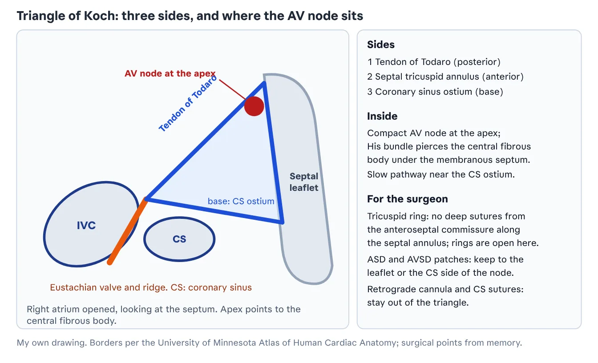
| Point | Detail | Status |
|---|---|---|
| Where | In the floor of the right atrium, on the septal side | Checked (Atlas) |
| Posterior side | Tendon of Todaro, running from the valve of the inferior vena cava (Eustachian valve) to the central fibrous body | Checked (Atlas) |
| Anterior side | The tricuspid annulus at the septal leaflet. The Atlas text names the commissure between anterior and septal leaflets as the anterior limit, and its summary line says the anterior part of the tricuspid annulus: the two wordings differ slightly | Checked (Atlas) |
| Base | The opening of the coronary sinus | Checked (Atlas) |
| What it marks | The landmark for the atrioventricular node; used by electrophysiologists for pacing and ablation | Checked (Atlas) |
| Apex | Points to the central fibrous body and membranous septum; the compact node lies at the apex and the His bundle penetrates there | Memory |
| Eustachian ridge | The muscular ridge between the IVC and the coronary sinus that carries the Eustachian valve; the tendon of Todaro continues from it. It also bounds the cavotricuspid isthmus, the target for flutter ablation | Memory |
| Slow pathway | Runs in the lower triangle between the coronary sinus ostium and the tricuspid annulus: ablated there for AV nodal re-entry | Memory |
| Size | Variable between hearts; smaller in children, so the node is nearer the coronary sinus | Memory (the Atlas gives no measurements) |
Why the surgeon needs it (memory)
| Operation | Rule |
|---|---|
| Tricuspid annuloplasty | No deep bites from the anteroseptal commissure along the septal annulus towards the coronary sinus; rings and bands are open over this segment; place sutures in leaflet tissue if they must be placed there |
| Tricuspid replacement | Septal sutures through the leaflet base, not the annulus; leave the leaflet in place |
| Secundum and sinus venosus ASD | The node is safe if sutures stay on the rim of the fossa; watch the inferior rim near the coronary sinus |
| Primum ASD and AVSD | The node is displaced posteriorly and inferiorly, between the coronary sinus and the crest (nodal triangle); the patch is sewn to the leaflet base and either around the coronary sinus leaving it to drain left, or superficially on its right side |
| Perimembranous VSD | The bundle runs on the postero-inferior rim: superficial bites on the right ventricular side, or through the septal leaflet base |
| Mitral and aortic surgery | The same node lies behind the right fibrous trigone: deep sutures at the posteromedial commissure of the mitral valve, or beneath the commissure between non-coronary and right coronary cusps, can cause block |
| Coronary sinus | Retrograde cardioplegia cannula and any purse-string stay outside the triangle |
| Maze lesions | The cavotricuspid isthmus line runs from the IVC to the tricuspid annulus below the triangle; cryo at the annulus |
ESC/EACTS 2025 guideline: tricuspid valve disease
3 parts · 1 drawing
From the PDF you supplied: Praz F, Borger MA, et al. 2025 ESC/EACTS Guidelines for the management of valvular heart disease. Eur J Cardiothorac Surg 2025;67(8):ezaf276, doi 10.1093/ejcts/ezaf276 (109 pages). I searched the text for the tricuspid recommendations and read those passages; I have not read the whole guideline. Everything in this section is from the guideline.

Regurgitation at the time of left-sided valve surgery
| Situation | Recommendation | Class, level |
|---|---|---|
| Severe primary or secondary regurgitation | Concomitant tricuspid surgery is recommended | I B |
| Moderate primary or secondary regurgitation | Concomitant repair should be considered, to avoid progression and right ventricular remodelling | IIa B |
| Mild secondary regurgitation with annular dilatation (over 40 mm or over 21 mm/m2) | Concomitant repair may be considered in selected patients | IIb B |
The text explains the change: uncorrected mild regurgitation with a dilated annulus, or moderate regurgitation, progresses in about a quarter of patients; two randomised trials showed less progression and better right ventricular remodelling with annuloplasty, but no effect on mortality, heart failure events or reoperation. So annular dilatation alone with mild regurgitation is now only a IIb indication. This fits the Gammie trial below.
Isolated severe regurgitation
| Situation | Recommendation | Class, level |
|---|---|---|
| Symptomatic severe primary regurgitation, no severe right ventricular dysfunction or severe pulmonary hypertension | Surgery is recommended | I C |
| Asymptomatic severe primary regurgitation with right ventricular dilatation or deteriorating function | Surgery should be considered | IIa C |
| Severe secondary regurgitation, symptomatic or with right ventricular dilatation or deteriorating function, without severe ventricular dysfunction or pulmonary hypertension | Surgery should be considered | IIa B |
| High-risk patient, symptomatic severe regurgitation despite optimal medical therapy, no severe right ventricular dysfunction or pre-capillary pulmonary hypertension | Transcatheter treatment should be considered, to improve quality of life and right ventricular remodelling | IIa A |
| Supporting statement | Detail |
|---|---|
| Timing | In isolated severe regurgitation without severe right ventricular dysfunction, operate early in patients at low operative risk |
| Risk scores | TRI-SCORE and the STS isolated tricuspid calculator are encouraged; both include right ventricular dysfunction and liver and kidney impairment. Surgery improved survival with a low or intermediate TRI-SCORE (up to 5) and gave no benefit over conservative treatment with a high score (over 6) |
| Repair or replace | Repair preferred; replacement may be needed in advanced disease with marked annular dilatation and tethering |
| Lead-related regurgitation | Decide whether the lead is the cause (CIED-related) or incidental (CIED-associated). Freeing an entrapped leaflet, and possibly lead extraction with an epicardial system, improves valve function |
| Classification used | Primary; secondary (atrial and ventricular phenotypes); lead-related |
| Transcatheter data | Regurgitation reduced to moderate or less in over 80% when anatomy is suitable. Transcatheter replacement (TRISCEND II): symptom benefit, with major bleeding about 15% and a new pacemaker in about a quarter of pacemaker-free patients at 12 months |
| Failed repair | Usually needs reoperation for replacement; valve-in-ring is off-label and awkward because surgical rings are open and non-circular; valve-in-valve has satisfactory results |
| Sex | Regurgitation is more prevalent in women, with faster progression |
Tricuspid stenosis
| Point | Statement | Class, level |
|---|---|---|
| Frequency and cause | Very rare in high-income countries; rheumatic disease, carcinoid, or enzymatic disorders such as Fabry and Whipple disease | |
| Diagnosis | Echo: leaflet thickening and commissural fusion are pathognomonic of rheumatic disease. A mean diastolic gradient over 5 mmHg at a normal heart rate indicates severe stenosis | |
| Symptomatic severe stenosis | Surgery recommended (usually replacement) | I C |
| Severe stenosis at left-sided valve intervention | Surgery recommended | I C |
| Open questions | Role of transcatheter replacement; best way to pace the ventricle after tricuspid replacement |
Tricuspid valve: anatomy, classification of disease and operative techniques
6 parts · 5 drawings
Anatomy

| Structure | Detail | Basis |
|---|---|---|
| Leaflets | Anterior (largest, most mobile), posterior (smallest, often scalloped), septal (least mobile, short chords direct to the septum) | memory |
| Commissures | Anteroseptal, anteroposterior, posteroseptal: the surgical landmarks | checked |
| Papillary muscles | Anterior (largest, receives the moderator band; marks the anterior-posterior boundary), posterior (often multiple), septal (small or absent) | memory; boundary role checked |
| Annulus | Largest of the four valve orifices; D-shaped and saddle-shaped, not flat; thin, with little fibrous skeleton except at the septum | memory |
| How it dilates | Along the free wall (anterior and posterior segments); the septal segment is relatively fixed. The annulus becomes rounder and flatter | memory |
| Right coronary artery | Runs in the atrioventricular groove outside the anterior and posterior annulus: at risk from deep annular sutures | memory |
| Aortic root | The non-coronary sinus lies behind the anteroseptal commissure; avoid deep bites there | checked (aortic root to be avoided at septal and anterior level) |
| Conduction tissue | AV node at the apex of the triangle of Koch; the bundle of His passes under the anteroseptal commissure and membranous septum | memory; checked that the septal side must be protected |
How many leaflets?

| Type | Morphology | Frequency | Basis |
|---|---|---|---|
| I | Three leaflets | 54% | checked |
| II | Two leaflets | 4.5% | checked |
| IIIA | Four, two anterior | 2.6% | checked |
| IIIB | Four, two posterior | 32.1% | checked |
| IIIC | Four, two septal | 3.8% | checked |
| IV | More than four | 2.4% | checked |
Hahn et al, 579 patients at four centres, transoesophageal echo (transgastric short axis or 3D). The point for surgery and for edge-to-edge devices: only about half of valves are truly three-leaflet.
Tendon of Todaro and the triangle of Koch

| Point | Detail | Basis |
|---|---|---|
| What the tendon is | A fibrous cord beneath the endocardium, the continuation of the commissure of the Eustachian and Thebesian valves, running in the sinus septum to the central fibrous body | memory |
| Triangle of Koch | Borders: tendon of Todaro (upper, posterior), annulus of the septal leaflet (lower, anterior), coronary sinus ostium (base) | memory; confirmed by McCarthy 2011 below |
| What it contains | Compact AV node at the apex; the bundle of His penetrates the central fibrous body there. Slow-pathway input runs along the septal annulus near the coronary sinus | memory |
| Finding it | Not visible; traction on the Eustachian valve tents the tendon up as a ridge | memory |
| Why the surgeon cares | Tricuspid ring: open ring with the gap over the node. Tricuspid replacement: sutures through leaflet tissue on the septal side. Atrioventricular septal defect and ostium primum repair: suture line kept away from the apex, or the coronary sinus left on the left side. Perimembranous ventricular septal defect: the His bundle runs on the postero-inferior rim. Right atrial maze lesions and coronary sinus cannulation are planned around it | memory |
Classification of tricuspid disease

| Class | Mechanism | Examples | Basis |
|---|---|---|---|
| Primary | Abnormal leaflets | Prolapse or flail, congenital (Ebstein), and acquired leaflet disease such as endocarditis, rheumatic, carcinoid, trauma | checked (categories); examples partly memory |
| Secondary, ventricular | Normal leaflets tethered by a dilated right ventricle | Left heart disease, pulmonary hypertension, right ventricular disease | checked |
| Secondary, atrial | Normal leaflets, dilated annulus and right atrium | Atrial fibrillation, heart failure with preserved ejection fraction | checked |
| Device lead-related | Lead impinges on, adheres to or perforates a leaflet; may be an incidental bystander | Pacemaker and defibrillator leads. No longer counted as primary | checked |
| Carpentier functional type | I: normal motion (annular dilatation, perforation). II: excess motion (prolapse, flail). IIIa: restricted in diastole and systole (rheumatic, carcinoid). IIIb: restricted in systole (tethering) | memory |
Grading the severity of regurgitation
| Measure | Mild | Moderate | Severe | Massive | Torrential | Basis |
|---|---|---|---|---|---|---|
| Vena contracta width (mm) | Under 3 | 3 to 6.9 | 7 to 13 | 14 to 20 | 21 or more | checked |
| Effective regurgitant orifice area by PISA (mm2) | Under 20 | 20 to 39 | 40 to 59 | 60 to 79 | 80 or more | checked |
| Regurgitant volume (ml) | Under 30 | 30 to 44 | 45 to 59 | 60 to 74 | 75 or more | checked |
| 3D vena contracta area (mm2) | 75 to 94 | 95 to 114 | 115 or more | checked | ||
| PISA radius (mm) | 5 or less | 6 to 8 | 9 or more | checked | ||
| Regurgitant fraction | Under 30% | 30 to 49% | 50% or more | checked | ||
| Supporting signs of severe | Systolic flow reversal in the hepatic veins; dense triangular continuous-wave signal; dilated right heart and inferior vena cava | memory |
The two grades beyond severe (Hahn and Zamorano) were added because patients in transcatheter trials were up to two grades above the old severe thresholds. Grading is load-dependent: assess when the patient is off the ventilator and not volume-depleted [memory].
Regurgitation against stenosis

| Feature | Regurgitation | Stenosis | Basis |
|---|---|---|---|
| Frequency | Common; moderate or worse in at least 6 to 8% of echo studies | Rare, almost always with rheumatic mitral disease | regurgitation checked; stenosis confirmed by ESC/EACTS 2025 below |
| Causes | Mostly secondary | Rheumatic; carcinoid; congenital; endocarditis with bulky vegetation; lead fibrosis; prosthetic degeneration | memory |
| Haemodynamics | Volume load on right atrium and ventricle | Diastolic gradient; high right atrial pressure with a small ventricle and low output | memory |
| Signs | Systolic v wave, pulsatile liver, pansystolic murmur louder on inspiration | Giant a wave, slow y descent, mid-diastolic murmur louder on inspiration | memory |
| Severe on echo | See the grading table | Mean gradient over 5 mmHg at a normal heart rate (ESC/EACTS 2025, checked). Also quoted: inflow time-velocity integral over 60 cm; pressure half-time 190 ms or more; area 1 cm2 or less | gradient checked; rest memory |
| Treatment | Diuretics; repair with a ring; replacement when repair is not possible; transcatheter repair or replacement in high-risk patients | Surgery for symptomatic severe stenosis or at left-sided surgery, usually replacement because the valve also leaks; commissurotomy or balloon valvotomy only without significant regurgitation | memory; surgery indication checked |
Resection, repair or replacement
1 drawing
Added 18 November 2026 in answer to your question. The three options side by side; each is expanded in the technique sections below.

| Resection (valvectomy) | Repair | Replacement | Basis | |
|---|---|---|---|---|
| What it is | Leaflets and chords excised, no prosthesis | Annulus reduced with a ring or suture, with leaflet or chordal work if needed | Prosthesis sewn in, septal leaflet retained | memory; checked for repair and replacement |
| When | Tricuspid endocarditis with a destroyed valve in a patient whose continued injecting makes prosthetic reinfection likely. A first stage; replacement later if abstinent | Secondary regurgitation and most primary lesions: first choice | Carcinoid, rheumatic stenosis, radiation, destroyed valve, extreme annular dilatation with tethering, failed repair | checked (de Waha 2026, Belluschi 2018, ESC/EACTS 2025) |
| Why it can work | The pulmonary circulation is low-pressure, so free regurgitation is tolerated for a time if pulmonary vascular resistance is normal | Restores coaptation while keeping the native valve | Reliable competence whatever the leaflet state | memory |
| Steps | Bicaval bypass, right atriotomy; excise vegetations, leaflets and chords to a clean annulus, staying superficial on the septal side; culture the tissue; close | See ring annuloplasty below | See replacement below | memory; repair and replacement checked |
| Main problems | Right heart failure, prolonged ventilation, later reoperation | Residual or recurrent regurgitation; heart block | Heart block; prosthetic thrombosis or degeneration; a later transvenous ventricular lead is undesirable | checked |
| Figures | Luc meta-analysis (752 patients): 30-day mortality 13% against 7% with replacement; right heart failure 27% against 11%; reoperation 56% against 14%; recurrent endocarditis 7% against 19% | Early failure 8 to 15% at one month; pacemaker 14.1% against 2.5% when added to mitral surgery (Gammie) | Operative mortality up to 18% in some series | checked |
| Guidelines | AHA 2022: not a recommended treatment. Leipzig review 2026: may be considered in selected patients | ESC/EACTS 2025: repair preferred | ESC/EACTS 2025: when repair is not possible; usual operation for stenosis | checked |
Partial resection is a different thing: excising a vegetation or a small prolapsing or destroyed segment (triangular resection, under about one-tenth of the leaflet area) and closing or patching the defect is part of repair, and is finished with a ring or a bicuspidisation [checked, Belluschi 2018]. The valvectomy data are in Cardiac tab 2 (endocarditis in people who inject drugs).
Operative techniques: overview
1 drawing

| Technique | Steps | Notes | Basis |
|---|---|---|---|
| Ring annuloplasty | Size from the anteroseptal to the posteroseptal commissure (roughly the anterior leaflet area). Eight to ten 2-0 braided sutures, starting at the mid-point of the septal leaflet and running round the free wall; last stitch above the anteroseptal commissure. Parachute the ring and tie | Rigid or semi-rigid rings fix the annulus in its systolic shape; flexible bands reduce size without restoring 3D shape. Open rings leave a gap over the conduction tissue | checked |
| De Vega suture annuloplasty | Two parallel running sutures (5 to 6 mm bites) from the posteroseptal commissure round to the anteroseptal commissure, second line 1 to 2 mm outside the first, tied over a sizer. Pledgets between bites if the tissue is fragile (Antunes) | Quick and cheap; can cut through | checked |
| Kay bicuspidisation | Sutures across the posterior annulus, commissure to commissure, exclude the posterior leaflet | Useful for dilatation confined to the posterior segment; modern modification uses pledgeted mattress sutures | checked |
| Anterior leaflet augmentation (Dreyfus) | Detach the anterior leaflet from the annulus; autologous pericardial patch as long as the leaflet's attachment and as high as the gap; 5-0 polypropylene; then a ring | For severe tethering, where a ring alone fails | checked |
| Clover (Alfieri) | Stitch the mid-points of the three free edges together with 5-0 polypropylene, no pledgets; add a ring | First used for traumatic regurgitation; also prolapse and tethering | checked |
| Primary leaflet disease | Triangular resection for a small prolapsing segment; neochordae measured against a normal chord; chordal transposition; commissurotomy with a blade for rheumatic fusion; in endocarditis, vegetectomy with patch and annular plication | Always finished with a ring | checked |
| Replacement | Leave a 2 to 3 mm fringe of leaflet, and leave the septal leaflet in place. Everting pledgeted sutures from atrium to ventricle, through leaflet tissue on the septal side. Posts at 12, 4 and 8 o'clock. Tie the septal sutures first | No gold standard between mechanical and biological; a mechanical valve prevents a later transvenous ventricular lead | checked |
Steps marked [checked] in this tab's technique sections are from Belluschi et al, Front Cardiovasc Med 2018;5:118.
Operative technique step by step
5 parts · 2 drawings
Set-up and exposure
| Step | Detail | Basis |
|---|---|---|
| Monitoring | Transoesophageal echo before bypass, under normal loading: grade the leak, measure the annulus, look at tethering and right ventricular function. General anaesthesia under-estimates the leak | memory |
| Cannulation | Aortic and bicaval, with the cavae snared for a dry right atrium. Superior vena cava cannulated directly or via the appendage, well away from the atriotomy | memory |
| Order | After the left-sided valve work. Clamp on and arrested, or clamp off on a beating heart (lets you see heart block appear as you place a septal suture and remove it) | memory; beating-heart option checked |
| Atriotomy | Oblique incision from the appendage towards the inferior vena cava, parallel to and 1 to 2 cm from the atrioventricular groove; stay sutures; a sump in the coronary sinus | memory |
| Inspect | Leaflets, commissures, any pacing lead, annulus; inject saline into the ventricle to see where the valve leaks | memory |
| Minimal access | Right mini-thoracotomy with peripheral cannulation is an alternative, particularly for redo isolated tricuspid surgery | memory |
Ring annuloplasty

| Step | Detail | Basis |
|---|---|---|
| Size | Sizer matched to the distance from the anteroseptal to the posteroseptal commissure, which approximates the anterior leaflet area. In secondary regurgitation most adults take a 26 to 30 mm ring; the Gammie trial specified undersized rigid rings of 26, 28 or 30 mm | checked |
| Sutures | Eight to ten 2-0 braided mattress sutures. Start at the mid-point of the septal leaflet annulus, proceed round the posterior and anterior annulus, and finish above the anteroseptal commissure | checked |
| Bites | In the annulus (the hinge, 1 to 2 mm from the leaflet), not the leaflet and not deep into the atrial wall. Wider bites on the annulus than on the ring along the free wall give the plication | memory |
| Avoid | No sutures from the anteroseptal commissure to the mid-septal annulus (AV node and His bundle). Shallow bites near the anteroseptal commissure (aortic root) and along the anterior annulus (right coronary artery) | checked for conduction tissue and aortic root; coronary artery memory |
| Ring | Rigid or semi-rigid, incomplete, three-dimensional. Parachute it down, check each leaflet moves, tie | checked |
| Test | Saline into the ventricle with the pulmonary artery compressed; then echo off bypass. Accept mild or less. New heart block: suspect a septal suture | memory |
| Suture alternatives | De Vega or Kay when a ring is not wanted (children, active infection, short operation) | memory |
When a ring alone is not enough
| Finding | Addition | Basis |
|---|---|---|
| Severe tethering (tenting height over about 8 mm or tenting area over about 1.6 cm2) | Anterior leaflet augmentation with a pericardial patch, or replacement | technique checked; thresholds memory |
| Prolapse or flail | Neochordae, or clover stitch, with a ring | checked |
| Pacing lead trapped in a leaflet | Free the lead; consider removing it and placing an epicardial lead; otherwise seat it in a commissure | ESC 2025 checked; commissural placement memory |
| Endocarditis | Vegetectomy, patch repair, bicuspidisation; avoid prosthetic material where possible | see Cardiac tab 2 |
Replacement

| Step | Detail | Basis |
|---|---|---|
| Leaflets | Excise the anterior and posterior leaflets leaving a 2 to 3 mm fringe, or fold all leaflets into the suture line to preserve the subvalvar apparatus. Keep the septal leaflet. Divide chords deep in the ventricle | checked; folding option memory |
| Sutures | Everting pledgeted 2-0 or 3-0 mattress sutures from atrium to ventricle, starting at the anterior leaflet. On the septal side the sutures go through the retained leaflet tissue. A quicker alternative: pledgeted sutures on the septal side only, with two running sutures for the rest | checked |
| Prosthesis | Size to avoid obstruction and septal injury. Stent posts at 12, 4 and 8 o'clock, clear of the right ventricular outflow tract. Tie the septal sutures first | checked |
| Pacing | Epicardial ventricular leads placed and buried at the time of surgery, because heart block is common and a transvenous lead across the prosthesis is undesirable (impossible with a mechanical valve) | checked in ESC 2023 endocarditis section; rest memory |
| Valve choice | No gold standard. Bioprosthesis in most adults; mechanical considered under about 40 or if already anticoagulated | checked |
| Risk | Operative mortality up to 18% in some series, driven by late referral with right ventricular failure, liver and kidney dysfunction. Use TRI-SCORE | checked |
After the operation [memory]
Right ventricular support: avoid high airway pressures, hypoxia and acidosis; inotrope or inhaled pulmonary vasodilator if the ventricle struggles against a now-competent valve.
Atrial and ventricular pacing wires in every patient.
Diuretics continued; the liver and kidneys improve over weeks.
Echo before discharge as the baseline.
Tricuspid valve repair technique (McCarthy 2011)
1 drawing
From the PDF you supplied: McCarthy PM. Tricuspid Valve Repair Technique. Oper Tech Thorac Cardiovasc Surg 2011;16:97-111, doi 10.1053/j.optechstcvs.2011.07.001 (Northwestern). A technique atlas for functional regurgitation; I read all of the text, and the figures are the author's illustrations, described and not copied. Everything in this section is from the paper. Disclosure in the paper: the author invented the MC3 ring and receives royalties.

| Step | His technique |
|---|---|
| Scope | Functional regurgitation: dilated annulus, no prolapse, no lead damage, no structural leaflet disease |
| Timing in the operation | Mitral or coronary work with the clamp on; then clamp off and the tricuspid repair on a beating heart |
| Safety check | Make sure there is no patent foramen ovale or other route for right-to-left shunting before opening the right heart on a beating heart |
| Atriotomy | In the mid right atrium, leaving plenty of atrial wall under the retractor blades |
| Retractor | Three blades: one inferior (posterior leaflet), one up and to the left (anterior leaflet), one between |
| Landmarks | Triangle of Koch: septal leaflet, tendon of Todaro, coronary sinus at the base; AV node at the apex, next to the anteroseptal commissure. With the clamp off, the aortic root bulges near the anterior leaflet just above that commissure |
| Assess | Commissure-to-commissure dilatation (anteroseptal to anteroposterior) averaged 45 mm (SD 8) in his patients. Compress the pulmonary artery with a sponge stick to show the regurgitant jet |
| Ring size | 95% of his patients receive a rigid 26 or 28 mm ring: routine downsizing, without causing stenosis. Classic sizing uses the septal commissure-to-commissure distance or the anterior leaflet area |
| First suture | 2-0 braided, on the anterior annulus just above the anteroseptal commissure, about 1 cm from the AV node, over the non-coronary sinus: not too deep, or the aortic wall bleeds |
| Sequence | Clockwise. First three forehand, next three or four backhand, then forehand along the septal leaflet. Tension on the leaflet with forceps shows the annulus, which is less distinct than the mitral annulus; do not catch leaflet |
| Marker suture | The mid-posterior suture is tagged with a different clamp, to align the widest part of the ring with the middle of the posterior leaflet |
| Last suture | Just to the left of the coronary sinus, ending at the mid-septal leaflet. Total 10 to 12 sutures |
| Heart block | Seen at once on a beating heart if a suture is too close to the node: remove that suture immediately |
| Seating | Annulus about 44 mm, ring about 28 mm: parachute gently, gathering the annulus to the ring, to avoid dehiscence |
| Tying | Three septal sutures first, with an assistant holding that part of the ring down (the septal annulus is the most solid). Then the anteroseptal suture, then the rest clockwise. The gap in the ring lies over the AV node |
| Test | Pulmonary trunk compressed again and the right ventricle filled with saline |
| Closure | Atriotomy in two layers while ventilation resumes; echo in every case. The clamp has been off about 20 minutes, so the patient is ready to wean |
| Pitfalls | Few, if you remember the conduction system and the adjacent aortic sinus. Results are less good with marked tethering or pacing leads across or through a leaflet |
Direction of suturing differs between sources: McCarthy starts at the anteroseptal commissure and finishes mid-septal; the Belluschi review starts mid-septal and finishes above the anteroseptal commissure. The sutured arc and the gap are the same.
Evidence to quote
| Question | Evidence | Basis |
|---|---|---|
| Ring or suture? | A best-evidence review found seven studies favouring a ring, five neutral and two favouring De Vega. Rings gave better event-free survival to 15 years in one series; other series found no difference at 10 years | checked |
| Early failure | Residual or recurrent regurgitation in 8 to 15% at one month. Risk factors: worse pre-operative regurgitation, pacemaker lead, pulmonary hypertension, left ventricular dysfunction, severe tethering, suture rather than ring | checked |
| Repair a moderate leak at mitral surgery? | Gammie trial, below | checked |
| Message | Repair severe regurgitation; for moderate or annular dilatation alone, weigh a durable valve against a five-fold pacemaker risk | checked |
Gammie trial (CTSN, NEJM 2022)
1 drawing
From the paper you supplied: Gammie JS, Chu MWA, Falk V, et al, for the Cardiothoracic Surgical Trials Network. Concomitant tricuspid repair in patients with degenerative mitral regurgitation. N Engl J Med 2022;386:327-39, doi 10.1056/NEJMoa2115961. I read the abstract, methods, primary results and discussion; the adverse-event table came out scrambled in extraction, so only the pacemaker figure is taken from it. Everything in this section is from the paper.

| Item | Detail |
|---|---|
| Population | 401 patients having surgery for degenerative mitral regurgitation, with moderate tricuspid regurgitation, or less than moderate with annular dilatation |
| Intervention | Mitral surgery with or without tricuspid annuloplasty, using a rigid, incomplete, non-planar, undersized ring (26, 28 or 30 mm) |
| Primary end point at 2 years | Reoperation for tricuspid regurgitation, progression by two grades or to severe, or death: 3.9% with annuloplasty against 10.2% without (relative risk 0.37, 0.16 to 0.86, p 0.02) |
| Death | 3.2% against 4.5% (relative risk 0.69, 0.25 to 1.88) |
| Tricuspid reoperation | None in either group |
| Progression | 0.6% against 6.1% (relative risk 0.09, 0.01 to 0.69). Severe regurgitation at 2 years in 1 of 179 against 10 of 179 |
| Post hoc | Progression occurred almost only in patients with moderate regurgitation at baseline, not in those with lesser regurgitation and a dilated annulus. The authors say this calls into question annular diameter as a trigger |
| Pacemaker | 14.1% against 2.5% (rate ratio 5.75, 2.27 to 14.60) |
| Other outcomes | Major adverse events, functional class, quality of life and readmission similar |
| Limits | Two-year follow-up (five-year follow-up continuing); not powered for subgroups; confidence intervals for secondary end points not adjusted for multiplicity |
How the 2025 guideline used it: moderate regurgitation is IIa for concomitant repair; mild regurgitation with annular dilatation fell to IIb.
Tricuspid regurgitation: textbook account with American classes
Added 19 November 2026 from the TSRA Review 3rd ed., ch. 65 (Kwon, Katz). The classes are the 2020 ACC/AHA guideline as quoted; the ESC/EACTS 2025 recommendations and the trial data are earlier in this tab.
Causes
| Type | Share | Mechanism |
|---|---|---|
| Functional (secondary) | Up to 80% | Left heart disease or pulmonary hypertension dilates the right ventricle; the anterior and posterior annulus stretch (the septal part is fixed) and the leaflets tether |
| Primary | The rest | Endocarditis (commonest), rheumatic, myxomatous, Ebstein anomaly, carcinoid, pacing or defibrillator leads, biopsy after transplant |
A third of patients having surgery for degenerative mitral regurgitation, and a third with severe mitral stenosis, have moderate or severe tricuspid regurgitation. Reoperation for isolated regurgitation after left-sided surgery carries 10 to 25% mortality.
Severe regurgitation. Central jet area over 10 cm², vena contracta over 0.7 cm, dense triangular early-peaking Doppler signal, systolic flow reversal in the hepatic veins.
Indications (ACC/AHA 2020, as quoted)
| Class | Indication |
|---|---|
| I | Severe regurgitation at the time of left-sided valve surgery |
| IIa | Mild or moderate functional regurgitation at left-sided surgery with annular dilatation (over 40 mm, or over 21 mm/m², on echo; over 70 mm measured at operation) or previous right heart failure |
| IIa | Symptomatic severe primary regurgitation, before right ventricular dysfunction develops |
| IIa | Symptomatic severe isolated secondary regurgitation from annular dilatation, without pulmonary hypertension or left-sided disease |
| IIb | Asymptomatic severe primary regurgitation with progressive right ventricular dilatation |
| IIb | Reoperation for symptomatic severe regurgitation after left-sided surgery, without severe right ventricular dysfunction or pulmonary hypertension |
Operation
- Bicaval cannulation with snares.
- Do the left-sided valve first; the tricuspid can be done beating during rewarming, which shows conduction block at once.
- Oblique right atriotomy from the appendage toward the inferior vena cava.
- Size the ring from the septal leaflet, which does not dilate.
- Test by filling the ventricle with saline with the pulmonary artery occluded.
| Technique | Description |
|---|---|
| De Vega | Double continuous suture plicating the anterior and posterior annulus from the anteroseptal to the posteroseptal commissure, tied over a sizer |
| Kay | Mattress sutures obliterate the posterior leaflet, leaving a bicuspid valve |
| Ring | Incomplete at the anteroseptal commissure to spare the atrioventricular node; flat semi-rigid or three-dimensional |
| Replacement | For uncorrectable primary disease; leave the native leaflets in place; no survival difference between mechanical and tissue valves |
Endocarditis in people who inject drugs
Better tolerated than left-sided infection; treat medically where possible and avoid a prosthesis. Surgery (2015 AHA) for: refractory right heart failure; fungal or resistant organisms; no response to antimicrobials; vegetation over 20 mm; recurrent pulmonary emboli. A staged plan is valvectomy first, if pulmonary pressures are not severely raised, then a prosthesis once drug use is controlled.
Results
| Outcome | Figure |
|---|---|
| Regurgitation abolished after repair at mitral surgery | 85% at 6 years |
| Early repair failure | 10 to 15% within a year |
| Repair failure with a lead left across the valve | 42% at 5 years |
| Complete heart block after mitral and tricuspid prostheses | Up to 25% at 10 years; pace epicardially |
| Hospital mortality of reoperative tricuspid surgery | 37% |
Failure is more likely with pulmonary hypertension, suture rather than ring annuloplasty, left ventricular dysfunction and retained leads.
Tricuspid stenosis (TSRA)
Added 20 November 2026 from TSRA Review of Cardiothoracic Surgery 3rd ed., ch. 66 (Yogesh B. Patel and Lawrence S. Lee). Read in full (pages 519 to 523).
Aetiology
- True isolated TS is very rare; usually with TR or other valve disease (often mitral).
- Mostly organic. TS is only 2.4% of organic tricuspid pathology; commonest in young women.
- Rheumatic disease is the commonest cause worldwide, usually with mitral stenosis.
- Other primary causes: carcinoid, SLE, antiphospholipid syndrome.
- Functional (secondary) obstruction: tumours (atrial myxoma, IVC extension of renal or ovarian tumours).
- Iatrogenic: fibrosis from pacemaker or defibrillator leads; chest radiotherapy.
Pathology
- Rheumatic: diffuse fibrous leaflet thickening, chordal fusion and shortening, commissural fusion. Unlike the mitral valve, calcium is usually absent. Anteroseptal commissure most often involved.
- Carcinoid: cardiac involvement in up to 50% of carcinoid syndrome; the first presentation in 20%. Usually some TR as well. Fibrous plaque on the endocardium of valve tissue; white, thick leaflets and papillary muscles, fused or short chordae. Right-sided because the lungs inactivate the humoral substances.
Carpentier classification of tricuspid disease
| Type | Leaflet motion |
|---|---|
| I | Normal, with annular dilatation |
| II | Increased (prolapse from chordal rupture or elongation) |
| III | Reduced (thickening, commissural fusion, tethering) |
TS is a Type III lesion.
Thresholds
| Measure | Normal | Stenosis / severe |
|---|---|---|
| Valve circumference | 12–14 cm | <10–11 cm = TS |
| Valve area | 4 cm² | <1 cm² = severe (≤1 cm² on echo criteria) |
| Peak inflow velocity on inspiration | >1 m/s = severe | |
| Inflow velocity-time integral | >60 cm = severe | |
| Mean gradient (normal heart rate) | ≥5 mmHg seen with TS | |
| Pressure half-time (CW Doppler) | ≥190 ms = severe |
Clinical features
- Right heart failure: fatigue, reduced exercise capacity, exertional syncope; severe TS causes hepatomegaly, leg oedema, ascites, abnormal LFTs, then cachexia and jaundice.
- Low-frequency diastolic murmur, lower left sternal border, 4th ICS. Lungs usually clear in isolated TS.
- JVP: prominent presystolic a wave, slow y descent (delayed RA emptying).
- CXR: RA enlargement. ECG (sinus rhythm): tall peaked P waves in II, III, aVF.
- Echo is the gold standard; TTE sees the tricuspid valve better than TEE. High-velocity turbulent diastolic flow, dilated IVC, large RA.
- Catheter: diastolic mean gradient. MRI: RV size and function.
Treatment
| Scenario | Treatment |
|---|---|
| Isolated symptomatic severe TS, mild or less TR, high surgical risk | Balloon valvotomy |
| Isolated symptomatic severe TS, low-to-moderate surgical risk | Surgery |
| Severe TS at left-sided valve surgery | Surgery |
| Isolated symptomatic severe TS, moderate or greater TR, high surgical risk | Individualised: surgery vs medical therapy |
Operative technique
- Sternotomy, right thoracotomy or robotic; set-up as for TR.
- Bicaval cannulation with caval snares to isolate the RA.
- Tricuspid alone: can be done on a beating heart on CPB with mild hypothermia. If cross-clamped, antegrade cardioplegia. Retrograde not routine; if used, purse-string around the coronary sinus to stop cardioplegia escaping into the RA.
- Right atriotomy from near the appendage towards the posterior atrium between the right inferior pulmonary vein and the IVC. Mitral access, if needed, transseptal.
- Repair is limited: commissurotomy if leaflets are fused. Start 4–5 mm from the annulus, extend apically into the papillary muscle for at least 1 cm; each edge must be supported by chordae. Balloon valvotomy has largely replaced surgical commissurotomy.
- Replacement is usually needed. Mechanical vs biological individualised. Preserve the subvalvular apparatus. Avoid the conduction system near the septal leaflet close to the anteroseptal commissure.
Tricuspid valve: changes and general points (2025 ESC/EACTS)
Added 20 November 2026 from Praz F, Borger MA, et al. 2025 ESC/EACTS Guidelines for the management of valvular heart disease. Eur Heart J 2025;46:4635–4736 (Tables 3 and 4, sections 2.1, 3.1.2, 5.2, 5.5.2, 6.2 and Table 6; journal pp. 4642–4657). Read in full (PDF pages 1 to 38). The tricuspid chapter itself (sections 11 and 12, Recommendation Tables 9 and 10, journal pp. 4683–4688) lies beyond these pages; classes and levels below are taken from Tables 3 and 4.
What is new (section 2.1)
- New randomised data support concomitant TV repair during left-sided valve surgery.
- Transcatheter repair and replacement reduce TR, promote reverse RV remodelling and improve quality of life versus medical treatment.
New tricuspid recommendation (Table 3)
| Recommendation | Class | Level |
|---|---|---|
| In severe TR before intervention, careful Heart Team evaluation of TR aetiology, stage of disease (TR severity, RV and LV dysfunction, PH), operative risk and likelihood of recovery | I | C |
Revised tricuspid recommendations (Table 4: 2021 → 2025)
| 2025 recommendation | 2021 | 2025 |
|---|---|---|
| Concomitant TV surgery in severe primary or secondary TR (with left-sided valve surgery). 2021 had separate rows: severe primary TR I C; severe secondary TR I B | I C / I B | I B |
| Concomitant TV repair should be considered in moderate primary or secondary TR, to avoid TR progression and RV remodelling (2021: moderate primary TR only) | IIa C | IIa B |
| Concomitant TV repair may be considered in selected patients with mild secondary TR and annulus dilatation (≥40 mm or >21 mm/m²) to avoid TR progression and RV remodelling (2021: mild or moderate secondary TR with dilated annulus, IIa B) | IIa B | IIb B |
| Transcatheter TV treatment should be considered to improve quality of life and RV remodelling in high-risk patients with symptomatic severe TR despite optimal medical therapy, without severe RV dysfunction or pre-capillary PH (2021: inoperable patients with symptomatic secondary severe TR at a Heart Valve Centre) | IIb C | IIa A |
| Transcatheter transvenous mitral or tricuspid valve-in-valve in significant valve dysfunction at intermediate or high surgical risk, if anatomy suitable (2021: selected patients at high risk) | IIb B | IIa B |
| Low-dose ASA (75–100 mg/day) may be considered after surgical MV or TV repair in preference to OAC if no clear OAC indication and high bleeding risk (new) | — | IIb B |
| OAC (VKA or DOAC) should be considered for the first 3 months after surgical MV or TV repair (2021: VKA) | IIa C | IIa B |
Risk, investigation and pathophysiology
- TRI-SCORE: calibrated and validated for first-time and repeat isolated TV surgery; its use is encouraged as an alternative to the more complex STS isolated TV surgery score.
- RHC is recommended for all candidates for treatment of severe TR. Signs of relevant TR: high RA v-wave, ventricularisation of the RA trace, often raised RV end-diastolic pressure with RV dysfunction. Calculate PVR in severe TR, because echo may miss pulmonary vascular disease when RV function is poor or TR leads to underestimation of PA pressure.
- AF is the main trigger of atrial secondary TR (and MR). Cohort data: 8% of people with AF developed moderate or severe TR within 3 years versus 2% in sinus rhythm. Mechanism (annular dynamics) unclear.
- Exercise echo can show exercise-induced increase in TR, especially secondary.
Volume and centre
- Site volume of more than 20 T-TEER procedures per year is associated with better outcomes.
- All tricuspid procedures, and tricuspid valve-in-ring or valve-in-valve, are listed among procedures ideally performed in the most experienced Heart Valve Centres (Table 6).
ESC/EACTS 2025 valvular heart disease guidelines: tricuspid regurgitation and stenosis
Added 20 November 2026 from Praz F, Borger MA, Lanz J, Marin-Cuartas M, et al. 2025 ESC/EACTS Guidelines for the management of valvular heart disease. Eur Heart J 2025;46:4635-4736. Read in full (PDF pages 48 to 54, journal pages 4682 to 4688). Figures 15 to 17 and Recommendation Table 9 read from rendered page images.
Prevalence and aetiology of TR
- Significant TR (≥ moderate): age- and sex-adjusted prevalence 0.55% (4% at age ≥75). Commoner in women and older people. Severe TR independently increases death and HF risk.
- Primary TR only 8% to 10%: endocarditis, rheumatic, carcinoid, congenital (e.g. Ebstein's), chest radiation, myxomatous, trauma, iatrogenic (e.g. endomyocardial biopsy).
- CIED-related TR (lead causes TR) is a separate entity from CIED-associated TR (incidental lead).
- Secondary TR phenotypes:
- Atrial: mainly AF; no significant tethering; marked RA and annular dilatation; preserved RV size and function, PA pressure and LV function.
- Ventricular: annular dilatation plus tethering from left-sided disease (post-capillary PH), pre-capillary PH, or primary RV cardiomyopathy/ischaemia (including after left-sided valve surgery).
- Phenotypes merge in advanced disease; recommendations still mainly separate primary vs secondary TR.
Evaluation of TR
- Echo: severity, aetiology (left heart disease, CIED lead position and interaction), RV and RA size and function, IVC and pulmonary pressures. TTE sufficient in most; TOE when TV visualisation needed; strain and 3D in intervention candidates.
- Grade in euvolaemia with optimised pressures, using an integrative approach. Five-grade scale (adding 'massive' and 'torrential') used in transcatheter studies, but intervene without delay once TR is severe, aiming for TR moderate or less.
- RV: CMR when accurate size, function and volumes are needed. RV function is overestimated in severe TR, so conservative thresholds are given.
- Right heart catheterisation recommended in all intervention candidates (echo underestimates PA pressure in severe TR): RA ventricularisation, RV end-diastolic pressure, volume overload, PVR to exclude masked severe pre-capillary PH.
- RV-PA coupling: TAPSE/SPAP; low ratio (uncoupling) predicts poor prognosis; not yet prospectively validated.
- ECG-gated CT with right-heart contrast protocol: RA, RV, caval anatomy, RCA course; device suitability and sizing.
Figure 15: echo criteria for severe TR
| Type | Criteria |
|---|---|
| Qualitative | Flail, large coaptation defect, severe tenting; large central jet; large holosystolic convergence zone; dense triangular CW Doppler jet with early peaking |
| Semi-quantitative | PISA radius ≥9 mm (Nyquist 20 to 30 cm/s); vena contracta ≥7 mm; hepatic vein systolic flow reversal |
| Quantitative | EROA ≥40 mm²; RVol ≥45 mL/beat; RF ≥50%; 3D vena contracta area ≥75 mm² |
Figure 15: RV and pulmonary thresholds (RV apical focused view)
| RV dilatation | Value |
|---|---|
| RV basal diameter index | >24 mm/m² |
| RV mid-diameter index | >21 mm/m² |
| Tricuspid annulus index | >21 mm/m² |
| RV end-diastolic volume index | >95 mL/m² |
| RV end-systolic volume index | >37 mL/m² |
| Parameter | RV dysfunction | Severe RV dysfunction |
|---|---|---|
| TAPSE | <17 mm | <10 mm |
| RV TDI s' | <10 cm/s | <6 cm/s |
| RV free wall strain | <23% | <11% |
| RV GLS | <21% | <9% |
| 3D RVEF | <50% | <35% |
| FAC | ≤35% | ≤22% |
| Pulmonary haemodynamics | mPAP | PAWP | PVR |
|---|---|---|---|
| Pre-capillary PH | >20 mmHg | ≤15 mmHg | >2 WU |
| Post-capillary PH | >20 mmHg | >15 mmHg | ≤2 WU |
| Severe PH | >35 mmHg | >5 WU |
Severe RV dysfunction cut-offs flag high-risk or possibly futile interventions.
Risk stratification
- Figure 16 stepwise evaluation: history and symptoms → severity → aetiology/mechanism → RV function → right heart catheterisation → anatomical suitability → TRI-SCORE, comorbidities, risk → Heart Team recommendation (Class I).
- TRI-SCORE and STS isolated TV risk calculator incorporate RV dysfunction and hepatic/renal impairment; improve peri-procedural risk estimates and help avoid futility.
- Registry (n = 2413): early TV intervention (transcatheter repair or surgery) improved mid-term survival with TRI-SCORE ≤5; TRI-SCORE ≥6 no benefit over conservative care.
- Isolated TV surgery improved 10-year survival with TRI-SCORE ≤3; with 4 to 5, benefit only after successful repair.
- Moderate or severe TR: clinical and echo follow-up at least every 6 months.
Medical therapy
- Treat cause: HF therapy, pulmonary vasodilators for PH, rhythm control for AF. Diuretics stepwise: loop, then aldosterone antagonist, thiazide and/or SGLT2i.
- Medical therapy has very limited effect on TR progression and must not delay referral to an expert centre.
Surgery
- Late referral common; isolated TV surgery in-hospital mortality 8% to 10% in several reports; better with earlier referral and better techniques.
- Ring annuloplasty repair preferred over replacement when feasible, especially low-risk with suitable anatomy. Replacement may be needed with marked annular dilatation and tethering.
- CIED-related TR: freeing an entrapped leaflet, possibly lead extraction with epicardial system, improves TV function.
- No left-sided surgery needed: surgery recommended in operable symptomatic primary TR; should be considered in symptomatic secondary TR, or asymptomatic primary or secondary TR with RV dilatation or deteriorating RV function. Severe LV/RV dysfunction or PH excludes (high operative risk).
- With left-sided valve surgery: severe TR unlikely to improve after left-sided surgery alone and redo for TR has high mortality, so treat at the index operation.
- Mild TR with significant annular dilatation, or moderate TR, left uncorrected progresses in about one quarter and worsens outcome.
- Moderate TR: repair annuloplasty at MV surgery should be considered (large retrospective studies and two RCTs show less TR progression and better RV remodelling) but no effect on mortality, HF events or reoperation.
- Concomitant TV repair raises pacemaker need (up to 14%); pacemaker after surgery led to more HF hospitalisation, endocarditis and mortality.
- Mild TR with annular dilatation (≥40 mm or >21 mm/m²): observational benefit for progression, RV function and a survival trend, but an RCT subanalysis found no difference at 2 years. Weigh risk factors for progression (AF, RA size, PA pressures) against pacemaker risk (Supplementary Table S5).
Transcatheter therapy
- Options: TEER, direct annuloplasty, orthotopic and heterotopic TV replacement. Registries, single-arm trials and two RCTs (intermediate and high risk) show safety and TR reduction to moderate or less in >80% when anatomy suitable.
| Trial | Design and result |
|---|---|
| TRILUMINATE Pivotal | Tricuspid TEER vs medical therapy: better composite (death or TV surgery, HF hospitalisation, QoL), driven solely by KCCQ +11.7 points (95% CI 6.8 to 16.6; P <0.001). At 2 years fewer HF hospitalisations despite 59% crossover |
| Tri.Fr | TEER plus GDMT vs GDMT: benefit in composite score driven by PROMs |
| TRISCEND II | Transcatheter TV replacement (EVOQUE) vs optimised medical therapy: win ratio favoured TTVR, mainly symptoms and QoL. Major bleeding 15%; pacemaker in about one quarter of pacemaker-naive patients by 12 months |
- Reverse RV remodelling seen in these studies.
- CIED lead repositioning or extraction before tricuspid intervention may improve TR or avoid lead jailing; efficacy uncertain and risk of TV damage.
- Recurrent TR after annuloplasty usually needs redo surgical replacement. Transcatheter valve-in-ring is off-label (non-circular, open rings are a challenge); valve-in-valve gives satisfactory results.
- Transcatheter TV procedures at experienced Heart Valve Centres with TV expertise. Figure 17 eligibility: jet location, coaptation gap, tethering, pacing lead interference.
Recommendation Table 9: intervention in TR
| Recommendation | Class | Level |
|---|---|---|
| Careful Heart Team evaluation of aetiology, stage (TR severity, RV and LV dysfunction, PH), operative risk and likelihood of recovery before intervention in severe TR | I | C |
| With left-sided valve surgery: concomitant TV surgery (repair whenever possible) in severe primary or secondary TR | I | B |
| Concomitant TV repair should be considered in moderate primary or secondary TR to avoid TR progression and RV remodelling | IIa | B |
| Concomitant TV repair may be considered in selected mild secondary TR with annulus dilatation (≥40 mm or >21 mm/m²) | IIb | B |
| Without left-sided surgery: TV surgery in symptomatic severe primary TR without severe RV dysfunction or severe PH | I | C |
| TV surgery should be considered in asymptomatic severe primary TR with RV dilatation/deteriorating RV function, without severe LV/RV dysfunction or severe PH | IIa | C |
| TV surgery should be considered in severe secondary TR that is symptomatic or has RV dilatation/deteriorating RV function, without severe LV/RV dysfunction or PH | IIa | B |
| Transcatheter TV treatment should be considered to improve QoL and RV remodelling in high-risk symptomatic severe TR despite optimal medical therapy, without severe RV dysfunction or pre-capillary PH | IIa | A |
Figure 17: no left-sided surgery and severe TR → severe RV/LV dysfunction or severe pre-capillary PH → medical therapy; otherwise symptomatic, or RV dilatation/deterioration → surgery if appropriate per Heart Team, else transcatheter therapy; neither → medical therapy. Left-sided surgery → moderate or severe TR → TV surgery; mild secondary TR with annulus ≥40 mm or >21 mm/m² → TV surgery; otherwise no concomitant TV surgery. Repair whenever possible, particularly for moderate TR or mild TR with annular dilatation.
Tricuspid stenosis
- Rare. Causes: congenital, enzymatic (Whipple's, Fabry's), rheumatic (isolated or with aortic/mitral disease), carcinoid (serotonin-driven fibroblast and matrix deposition on leaflets and subvalvular apparatus), drugs (fenfluramine, methysergide), CIED-associated thrombus or large vegetations.
- Echo: leaflet thickening with or without calcification and commissural fusion are pathognomonic of rheumatic disease. Mean diastolic gradient >5 mmHg at normal heart rate = severe TS.
- Medical therapy (salt restriction, diuretics) is a bridge to intervention.
- Repair preferred in younger patients but replacement often needed. Biological valves preferred over mechanical (high thrombogenicity in the low-pressure system). Bioprosthetic degeneration: valve-in-valve is a good alternative to redo. Transcatheter TV implantation for TS: limited experience.
- Carcinoid: stable oncological status is a prerequisite for valve intervention.
- Balloon valvuloplasty: option in selected TS without relevant TR, or with combined mitral and tricuspid rheumatic disease; rheumatic tricuspid disease is more often mixed stenosis and regurgitation, limiting it.
Recommendation Table 10: intervention in TS
| Recommendation | Class | Level |
|---|---|---|
| Surgery (usually TV replacement) in symptomatic severe TS (balloon valvuloplasty can be tried first if TS is isolated) | I | C |
| Surgery (usually TV replacement) in severe TS undergoing left-sided valve intervention (balloon valvuloplasty can be tried if PMC can be done on the MV) | I | C |
Tricuspid valve endocarditis: surgery and percutaneous aspiration (American Heart Association statements)
Added 20 November 2026 from Baddour LM, Weimer MB, Wurcel AG, McElhinney DB, Marks LR, Fanucchi LC, Esquer Garrigos Z, Pettersson GB, DeSimone DC. Management of infective endocarditis in people who inject drugs: a scientific statement from the American Heart Association (American). Circulation 2022;146:e187–e201; and DeSimone DC, Marks L, Dayer MJ, et al. Infective endocarditis: diagnosis, antibiotic therapy, and management: a scientific statement from the American Heart Association (American). Circulation 2026;154:e593–e619. Both read in full (e187 to e201 and e593 to e619; reference lists not read). Scientific statements: no classes or levels of their own. Wider endocarditis notes from these sources are in Cardiac 8 Endocarditis.
Who gets tricuspid IE and who is operated on
- Right-sided IE is more common in PWID than in non-PWID. S aureus causes about 85% of right-sided IE in PWID [2022].
- Practice varies widely: only 5–40% of non-complex right-sided IE is treated surgically [2022].
- Medical treatment is preferred when appropriate [2022].
Indications for surgery in right-sided IE
| Source | Indications |
|---|---|
| AHA 2022 (PWID) | Less clear than for left-sided IE. Large bulky vegetations causing septic pulmonary emboli; less often, severe tricuspid regurgitation |
| AHA 2026 | Persistent bacteraemia; ongoing septic pulmonary embolisation; pulmonary abscess after 7 days of antibiotics; right-sided vegetation >2 cm |
Operative principles
- Repair the valve and avoid prosthetic material where possible (both statements).
- Valvectomy is not recommended: it can cause significant morbidity [2022].
- If the valve is regurgitant, repair it as well as removing vegetations; a competent valve may lower peri-operative morbidity [2022].
- All infected tissue must be debrided. After debridement the valve may not be repairable, leaving replacement as the only option [2022].
- Mortality and recurrent IE are higher after replacement than repair, but early results of replacement in drug-related right-sided IE are similar to those in non-drug-related IE [2022].
- No evidence that extensive repair with large patches beats replacement, so replacement is reasonable when repair is not possible [2022].
- Recurrent prosthetic valve IE, with considerable mortality, is a particular concern in PWID [2022].
- A CIED in the setting of valvular IE needs complete extraction [2022; 2026].
Percutaneous aspiration (AngioVac and similar systems)
- Percutaneous debulking may be an alternative to open surgery to prevent further septic pulmonary emboli [2022].
- Technique: aspiration vegectomy with veno-venous bypass and filtration (AngioVac, AngioDynamics, or other systems) [2022].
- Used mostly in high surgical risk patients; also in lower-risk patients with vegetations and no significant tricuspid regurgitation when debulking is judged appropriate [2022].
- Removes vegetations and thrombus from right-sided valves and CIED leads, but does not treat valve dysfunction and may unmask or worsen tricuspid regurgitation [2022].
- Valve repair is expected in significant regurgitation meeting surgical criteria; aspiration may be a temporising step towards stabilisation and later surgery [2022].
- AHA 2026: indicated for recurrent pulmonary emboli, sepsis or persistent bacteraemia despite antibiotics; patients are mostly PWID or CIED lead infection, mostly S aureus; tricuspid or lead vegetations >2 cm have a poorer prognosis and are potential candidates; no RCT data; being studied in left-sided IE.
- ESC 2023, as cited by AHA 2026: Class IIb, Level C, aspiration may be considered in selected patients with right intra-atrial septic masses and high surgical risk.
- More studies and longer follow-up are needed to define selection criteria [2022; 2026].
Repeat tricuspid surgery in PWID
- Discuss risk and prognosis fully with the patient and team; a further operation needs an addiction treatment plan supported by addiction-trained clinicians and is a team decision [2022].
AngioVac debulking of tricuspid vegetations: three-case series
Added 20 November 2026 from Poliwoda SD, Durbach JR, Castro A, Herman J, Caltagirone C, Kurup A, Rosen G, Tuda C, La Pietra A. AngioVac system for infective endocarditis: a new treatment for an old disease. Annals of Cardiac Anaesthesia 2023;26:105–9 (Mount Sinai Medical Center, Miami Beach, USA). Read in full (all 4 PDF pages; reference list not read). Low-level evidence: three consecutive cases, the first at that institution.
Cases
| Case 1 | Case 2 | Case 3 | |
|---|---|---|---|
| Patient | 37-year-old man, frequent IV drug use | 43-year-old man, IV drug use, previous spinal abscess | 26-year-old woman, IV drug use |
| Presentation | Fever, rigors, left pleuritic pain, dyspnoea; 4/6 systolic murmur louder on inspiration; WCC 37,000/µL | Fever, cough, left knee pain; WCC 14,000/µL; raised CRP and ESR | Fever 102.2 °F, rigors; WCC 18,290/µL; lactate 3.2 mmol/L |
| Chest CT | Multiple peripheral nodules, some cavitating (septic emboli) | Multifocal ground-glass and cavitating nodules | Cavitating nodules and consolidation; loculated right pleural effusion (chest drain) |
| TOE | 1 × 0.9 cm mobile tricuspid vegetation | 1.5 × 1.1 cm vegetation; moderate-to-severe TR (TTE had been unremarkable) | 1 × 1.5 cm vegetation; moderate TR |
| Organism | MSSA, oxacillin | MSSA (blood and knee), cefazolin | MRSA; vancomycin, then ceftaroline for persistent fever and subtherapeutic vancomycin levels |
| Trigger for intervention | Persistent fever and leucocytosis after >3 days of correct antibiotics | Persistent leucocytosis | Fluctuating fever and persistent leucocytosis |
| Outcome | Fever and leucocytosis resolved; 4 weeks IV oxacillin; discharged | AngioVac plus knee washout; marked improvement; 6 weeks cefazolin; discharged | Fever and leucocytosis resolved; 6 weeks ceftaroline; discharged |
- Open tricuspid repair or replacement was avoided because the patients were unwell and because a new valve in a person who injects drugs risks reinfection.
Procedure (as described)
- Operating theatre, general anaesthesia; two 18G peripheral cannulae; left radial arterial line; standard ASA monitoring with 5-lead ECG.
- Intubation, then TOE to assess the tricuspid valve and right atrium and to image the vegetation before and after; fluoroscopy throughout.
- Modified Seldinger access to the right internal jugular vein and common femoral vein. Drainage cannula in the right internal jugular vein; reinfusion cannula in the femoral vein (the text says right common femoral vein for access but left common femoral vein for the reinfusion cannula).
- Both cannulas connected to a veno-venous ECMO circuit; the AngioVac system de-aired and connected to it.
- Heparin to ACT >300 s.
- Suction cannula passed through the drainage cannula to sit close to the tricuspid valve; position confirmed on fluoroscopy and TOE.
- Suction applied; vegetation trapped in the AngioVac filter. TOE confirmed no residual vegetation in all three.
Background figures quoted by the authors
- Among patients who inject drugs and present with fever, 13% have echo evidence of IE; 41% if bacteraemic. Mostly young men in their 20s and 30s; S aureus in 70%.
- Indications for surgery in right-sided IE (AHA/IDSA 2015, as cited): (1) right ventricular or atrial failure from severe TR; (2) no response to appropriate antibiotics; (3) vegetation >2 cm; (4) recurrent or worsening septic emboli despite antibiotics. The authors state each patient met at least two. [All three reported vegetations measured under 2 cm.]
- AngioVac has had FDA approval since 2014 for removal of intravascular material such as iliocaval, pulmonary and upper limb thrombus; it has more recently been used for right-sided IE.
Complications and comparative data cited
| Study (as cited) | Finding |
|---|---|
| Worku et al, 56 AngioVac procedures | Success removing right heart thrombus no more than 82%; complications 12% (haematoma, retroperitoneal bleed) |
| George et al, 33 tricuspid vegetation cases | 3 had worsening tricuspid regurgitation that needed tricuspid valve replacement |
| George et al, retrospective, 100 isolated tricuspid IE (AngioVac vs tricuspid surgery) | Hospital stay 35 vs 45 days (P=0.028); transfusion 56.8% vs 79.4% (P=0.016); "days for therapy" 6 vs 15 (P<0.001; meaning not defined in the text) |
Authors' conclusions
- Claimed advantages: less theatre time, faster recovery, suits poor surgical candidates, less invasive, avoids a prosthetic valve in a person who injects drugs.
- Comparative studies are needed before AngioVac can be judged against tricuspid surgery.
Tricuspid endocarditis in IVDU: valvectomy versus replacement, meta-analysis (Luc et al. 2019)
Added 20 November 2026 from Luc JGY, Choi JH, Kodia K, Weber MP, Horan DP, Maynes EJ, Carlson LA, Massey HT, Entwistle JW, Morris RJ, Tchantchaleishvili V. Valvectomy versus replacement for the surgical treatment of infective tricuspid valve endocarditis: a systematic review and meta-analysis. Ann Cardiothorac Surg 2019;8(6):610-620. Read in full (pages 610 to 620 and supplementary Table S1; reference list skimmed). Forest and funnel plots read for their summary values.
Context
- IVDU-associated tricuspid IE in the USA roughly 1.5 to 3.3 cases per 1,000 person-years.
- Medical therapy is the mainstay; surgery for complications, haemodynamic instability, failed medical therapy, persistent embolisation or large vegetations.
- IVDU patients have about a tenfold higher risk of death or reoperation after IE surgery (HR 9.8, 95% CI 2.7 to 35.3).
- Repair is preferred, but extensive destruction often precludes it. Valvectomy = removal of leaflets and chordae without replacement.
- Three principles of IE surgery quoted: aggressive debridement of vegetations; correction of defects; repair with homologous or autologous pericardium where possible, avoiding artificial material.
Design
- Searched to September 2018 (Ovid Medline, Embase, Cochrane, Web of Science, Scopus, CINAHL). Included studies with at least four IVDU patients undergoing valvectomy or replacement for isolated tricuspid IE; concurrent valve disease excluded.
- 16 observational studies (Newcastle-Ottawa score 5 to 8, none poor quality), 752 patients: valvectomy 106 (14%), replacement 646 (86%). Mean follow-up 4.2 years.
- Meta-analysis of proportions (logit), random effects.
Baseline
| Variable | Valvectomy | Replacement | P |
|---|---|---|---|
| Age (overall mean 36 y) | 29 y | 37 y | 0.44 |
| Male | 48% | 62% | 0.07 |
| Hypertension | 20% | 35% | 0.02 |
| Indication: persistent sepsis | 47% | 62% | 0.45 |
| Indication: septic pulmonary embolism | 74% | 38% | 0.18 |
| S. aureus | 93% | 49% | <0.01 |
| Streptococcus | 3% | 33% | 0.01 |
| Enterococcus | 3% | 25% | 0.04 |
| Fungal | 7% | 60% | 0.03 |
Outcomes
| Outcome | Valvectomy | Replacement | P |
|---|---|---|---|
| 30-day mortality | 13% (5 to 30) | 7% (5 to 10) | 0.21 |
| Prolonged ventilation | 40% (30 to 51) | 26% (23 to 30) | <0.01 |
| Major bleeding | 8% | 9% | 0.83 |
| Stroke | 4% | 3% | 0.85 |
| Postoperative right heart failure | 27% (10 to 53) | 11% (5 to 25) | 0.17 |
| Recurrent endocarditis | 7% (2 to 23) | 19% (12 to 28) | 0.81 |
| Perioperative all-cause reoperation | 8% | 15% | 0.30 |
| Delayed reoperation with TVR (after valvectomy) vs re-replacement | 56% (15 to 90) | 14% (7 to 27) | 0.06 |
| Readmission | 13% | 22% | 0.72 |
| Survival 6 months | 77% | 83% | 0.69 |
| Survival 1 year | 77% | 82% | 0.70 |
| Follow-up | 21 months | 53 months | 0.50 |
Freedom from tricuspid reoperation (Table 3)
| Time | Replacement | Valvectomy | P |
|---|---|---|---|
| 30 days | 88% | 96% | 0.23 |
| 3 months | 89% | 96% | 0.30 |
| 6 months | 89% | 97% | 0.30 |
| 9 months | 89% | 97% | 0.30 |
| 1 year | 89% | 46% | 0.06 |
- Fall in freedom from reoperation between 9 and 12 months after valvectomy reflects either elective TVR after drug rehabilitation or heart failure needing TVR.
Physiology and trade-offs of valvectomy
- Causes massive TR and ventricularisation of right atrial pressure (large V wave); significant right heart failure can follow.
- Advantages: no foreign material, no anticoagulation, lower risk of heart block needing a pacemaker; removes the infected focus and prevents recurrence on the valve.
- Replacement exposes the patient to valve-related complications, heart block and recurrent IE.
- Long-term survival without a tricuspid valve reported up to 22 years when pulmonary artery pressure and PVR are normal.
- Candidates: active IVDU, normal pulmonary pressure, normal biventricular function, severe valve destruction, high risk of reoperation, recidivism and reinfection.
- Staged strategy: valvectomy first; patients "self-select" for later TVR by showing follow-up, detoxification, rehabilitation and abstinence.
Conflicting evidence quoted
- Protos et al. (single centre): no difference in 30-day mortality, reoperation for bleeding, major stroke, ventilation time or length of stay; valvectomy had lower unplanned readmission at one year.
- STS database analysis (Slaughter, AATS 2019 abstract): valvectomy was an independent predictor of operative mortality.
Decision-making and adjuncts
- Social (abstinence, compliance, income, housing, rehabilitation), clinical (vegetation size, abscess extension, HIV, hepatitis C) and ethical (life expectancy, recurrence, cost, resource allocation) factors.
- IVDU is an independent predictor of death in IE.
- Multidisciplinary team including addiction services, psychiatry, social work and ethics; signed abstinence agreements; medication-assisted treatment, harm reduction, naloxone.
- AngioVac (suction filtration on veno-venous bypass) percutaneous debulking reported as promising.
Limitations
- Could not stratify by septic emboli, pulmonary hypertension, PVR or ventricular function; no data on post-operative abstinence; small numbers, likely underpowered; publication bias.
Conclusion
- Valvectomy is an acceptable initial therapy for IVDU tricuspid IE, as a bridge to staged replacement in those who self-select.
Tricuspid valve endocarditis in people who inject drugs: reducing mortality and reinfection (de Waha et al. 2026)
Added 20 November 2026 from de Waha S, Noack T, Kister T, Desch S, Marín-Cuartas M, Kiefer P, Borger MA. Tricuspid valve endocarditis in people who inject drugs: strategies to reduce mortality and recurrent infection. Ann Cardiothorac Surg 2026;15(3):35. Read in full (pages 1 to 8; reference list skimmed).
Epidemiology and presentation
- IVDU-associated TV-IE is about one third of TV-IE in the USA. Patients are young with few comorbidities but high reinfection and late mortality; more HIV and viral hepatitis.
- PWID is a predisposing minor criterion in the 2023 ESC modified diagnostic criteria.
- Left-sided involvement in half of PWID with IE; about one third isolated left-sided.
- Presentation: fever, chills, pleuritic pain, cough, dyspnoea, haemoptysis from septic pulmonary emboli. Murmur may be soft or absent. Right heart failure from severe TR or pulmonary hypertension after repeated emboli. Often misdiagnosed as primary lung disease.
- Examine injection sites, look for cirrhosis, poor dentition, withdrawal. Additional foci need source control (persistent foci cause relapse).
- Organisms: S. aureus predominant with rising MRSA; polymicrobial and Candida not uncommon.
Investigations
- Multiple blood culture sets and echo.
- TTE often diagnostic (anterior valve, large vegetations). TOE if TTE poor or equivocal, and to exclude left-sided or pulmonary valve IE, abscess, shunt or fistula; keep a low threshold.
- CT is the imaging modality of choice for pulmonary complications (septic emboli, infarcts, abscess).
Antibiotics
- About 90% of right-sided TV-IE, including PWID, managed medically.
- Empirical: cover S. aureus (penicillinase-resistant penicillin, vancomycin or daptomycin; gentamicin considered per European guidance). Pentazocine use: cover Pseudomonas. "Brown heroin" dissolved in lemon juice plus large vegetations: suspect non-albicans Candida; early antifungals.
- Two-week oxacillin or cloxacillin without gentamicin may suffice for uncomplicated MSSA (RCT) if: good clinical and microbiological response, vegetation ≤20 mm, no metastatic infection, empyema, extracardiac complication, prosthetic material or left-sided involvement. Otherwise 4 to 6 weeks.
- Oral ciprofloxacin plus rifampicin may be considered for susceptible, uncomplicated S. aureus TV-IE when IV therapy is impractical, with monitored adherence.
- OPAT: ESC does not recommend routine OPAT in PWID; individualised partial-oral or OPAT plans may help given frequent patient-directed discharge. Dalbavancin (weekly or fortnightly IV) may help completion.
Surgery
- Consensus: reasonable to avoid surgery when possible. Surgery improves short-term mortality; long-term benefit debated.
- Registry: long-term mortality higher in PWID after surgery (HR 1.80, 95% CI 0.95 to 3.30); about 55% of deaths from relapse or recurrent IE. Continued IVDU up to 70% after surgery (Norway data).
Indications for surgery in right-sided IE (as listed from the 2023 ESC guideline):
| # | Indication |
|---|---|
| I | RV dysfunction from acute severe TR not responding to diuretics |
| II | Persistent vegetation with respiratory failure needing ventilation after recurrent septic pulmonary emboli |
| III | Large residual vegetation (>20 mm) after recurrent septic pulmonary emboli |
| IV | Persistent bacteraemia or sepsis after ≥7 days of appropriate antibiotics |
| V | Simultaneous left-heart involvement |
(Classes and levels are not given in this source.)
- Indications are the same as for non-IVDU patients; in practice surgery is often limited to failed medical therapy, decided by the Endocarditis Team including addiction-trained clinicians. Achieve full infection control (metastatic infection common).
- Repair preferred when feasible: lower reinfection, no prosthetic material; but destruction often precludes it.
- Prosthesis: mechanical valves problematic (anticoagulation adherence, follow-up), so bioprostheses often chosen despite young age. IVDU predicts worse survival, recurrence and reoperation, but among PWID no difference in reinfection or long-term outcome between mechanical and bioprosthetic valves.
- Pacing: European IE guidelines recommend a prophylactic epicardial pacing lead at TVR, tunnelled and stored in a subcutaneous pocket, avoiding transvalvular leads that could damage the prosthesis or raise reinfection risk.
- Valvectomy without replacement for selected patients where ongoing IVDU makes prosthetic reinfection likely; a stabilising first stage before staged TVR after abstinence [see Luc et al. 2019 above].
- Percutaneous debulking of intra-atrial septic masses: adjunct for large vegetations, recurrent septic emboli or instability in poor surgical candidates; evidence limited.
Addiction treatment
- AHA/ACC statement: treating IE without treating substance use disorder fails to treat the cause.
- Early Endocarditis Team review including addiction medicine.
- Opioid withdrawal: MOUD (buprenorphine or methadone) relieves symptoms and reduces patient-directed discharge. Start MOUD in hospital.
- Counselling alone is significantly worse than MOUD; CBT or contingency management add nothing on top of MOUD. Offer low-barrier MOUD to all; psychosocial support optional.
Outcomes and follow-up
- Index in-hospital mortality lower than non-IVDU IE (more right-sided, younger, fewer comorbidities), but long-term outcome poor.
- Readmission 22 to 49% by three months; about one third have relapsed into IVDU at readmission.
- Overall survival under 50% at 10 years in PWID with left- or right-sided IE.
- Follow-up: cardiology, infectious diseases, behavioural health, social work; social determinants (housing, access to treatment); long-acting or oral step-down antibiotics; screen for HIV, hepatitis B and C; vaccinate against tetanus, hepatitis A and B.
- Harm reduction if abstinence not achievable: sterile supplies, supervised consumption sites, safer injection education.
- Endocarditis team model (Figure 1): cardiology and cardiac surgery, infectious diseases, addiction treatment, harm reduction, with nephrology, neurology, radiology, critical care, dentistry and anaesthesia as adjuncts. Acute specialties dominate in hospital; addiction care determines long-term outcome.
CTSN trial: concomitant tricuspid annuloplasty during surgery for degenerative mitral regurgitation (Gammie, NEJM 2022)
Added 20 November 2026 from Gammie JS, Chu MWA, Falk V, et al., for the CTSN Investigators. Concomitant tricuspid repair in patients with degenerative mitral regurgitation. N Engl J Med 2022;386:327-39. Read in full (pages 327 to 339, references skimmed). Table 3 (serious adverse events) is printed rotated; its second half was read from the rendered page image.
Background (as stated by the authors)
- Severe TR may not improve predictably after left-sided surgery and should be dealt with at the index operation; late reoperation for severe TR with right heart failure carries high perioperative mortality.
- Mild or moderate TR left alone at left-sided surgery may progress in about 25% of patients, with poorer late survival and function.
- Risk factors for TR progression: annular dilatation ≥40 mm (or 21 mm/m²) on preoperative TTE, degree of RV dysfunction, leaflet tethering, pulmonary hypertension, AF, transvalvular pacing or ICD leads.
- Concerns against routine repair: pacemaker risk from conduction disturbance, longer bypass time, small chance of needing tricuspid replacement, and TR does not progress in everyone.
- Rate of tricuspid repair at the time of mitral surgery varies from 5% to 75%.
Design
| Item | Detail |
|---|---|
| Design | Multicentre RCT, 39 centres (USA, Canada, Germany); 1:1, stratified by TR severity and centre |
| Population | Adults having mitral surgery for degenerative MR with either moderate TR or less-than-moderate TR (none, trace, mild) with annulus ≥40 mm or ≥21 mm/m² (TTE, core lab verified) |
| Exclusions | Secondary MR, primary tricuspid disease, suboptimal volume management |
| Arms | Mitral surgery alone (n = 203) vs mitral surgery + tricuspid annuloplasty (TA) (n = 198); total 401 |
| Access | Sternotomy or right minithoracotomy |
| TA device | Protocol required an approved rigid, incomplete, nonplanar, undersized (26, 28 or 30 mm) ring |
| Primary end point (2 years) | Composite: reoperation for TR, progression of TR by 2 grades from baseline or presence of severe TR, or death (missing data imputed) |
| Secondary | Death, MACCE (death, stroke, serious heart-failure events), permanent pacemaker, length of stay, residual TR, RV size/function, NYHA, diuretics, 6MWT, gait speed, QoL (SF-12, KCCQ, EQ-5D), SAEs, readmission, cost-effectiveness |
| Power | 90% power to detect 52% relative reduction; assumed failure 25% (alone) vs 12% (TA) |
| Follow-up | 30 days, 6, 12, 18, 24 months; survival annually to 60 months |
Patients and operations
- Screened 5208; eligible 885; randomised 401 (2016 to 2018).
- Core lab confirmed moderate TR in 149/399 (37.3%); RV function normal in 360/398 (90.5%); NYHA III/IV 121/400 (30.3%).
- Mitral repair 360 (89.8%); mitral replacement 41 (10.2%).
- Mean ring size: 29.0 ± 1.9 mm (men), 27.8 ± 1.6 mm (women).
- Bypass time longer with TA by 33.5 min (95% CI 20.9 to 46.1): 166.1 ± 69.3 vs 132.6 ± 58.8 min.
- 4 crossovers. Over 50% had concomitant procedures (CABG about 11%, maze 24% vs 28%, LAA closure 25% vs 29%, PFO closure 12% vs 15%).
- Baseline mean age 68.2 vs 66.6 years; male about 75%; mean TV annulus 42.2 vs 42.0 mm (apical four-chamber).
Results at 2 years
| Outcome | MV surgery alone | MV surgery + TA | Effect (95% CI) |
|---|---|---|---|
| Primary end point (imputed) | 10.2% | 3.9% | RR 0.37 (0.16 to 0.86); P = 0.02 |
| Primary end point (observed) | 20/188 (10.6%) | 7/185 (3.8%) | RR 0.35 (0.15 to 0.81) |
| Reoperation for TR | 0 | 0 | — |
| Progression of TR | 11/179 (6.1%) | 1/179 (0.6%) | RR 0.09 (0.01 to 0.69) |
| Severe TR at 2 years | 10/179 (5.6%) | 1/179 (0.6%) | RR 0.10 (0.01 to 0.77) |
| Death | 9/199 (4.5%) | 6/190 (3.2%) | RR 0.69 (0.25 to 1.88); HR 0.69 (0.24 to 1.93) |
| 30-day mortality | 1/203 (0.5%) | 2/197 (1.0%) | — |
| MACCE | — | — | HR 0.89 (0.49 to 1.63) |
| Moderate or severe TR at 2 years | 45/179 (25.1%) | 6/179 (3.4%) | — |
| Median peak diastolic transtricuspid gradient | 1 mm Hg (IQR 1 to 2) | 3 mm Hg (IQR 2 to 4) | — |
| Normal RV systolic function | 91.6% | 91.0% | — |
| Moderate or severe MR at 2 years | 10.1% | 8.4% | — |
| Permanent pacemaker | 5 (2.5%) | 28 (14.1%) | Rate ratio 5.75 (2.27 to 14.60) |
| AV block (SAE) | 1 (0.5%) | 15 (7.6%) | Rate ratio 15.41 (2.05 to 115.52) |
| Sustained SVT needing drugs or cardioversion | 45 (22.2%) | 30 (15.2%) | Rate ratio 0.70 (0.43 to 1.12) |
| Heart-failure events (per 24 patient-months) | 0.11 | 0.07 | Rate ratio 0.68 (0.25 to 1.85) |
| All SAEs | 109 (53.7%) | 109 (55.1%) | Rate ratio 0.86 (0.61 to 1.20) |
| Readmission (per 24 patient-months) | 0.65 | 0.56 | Rate ratio 0.86 (0.58 to 1.27) |
| NYHA III/IV at 2 years (baseline) | 2.8% (33.5%) | 1.1% (26.9%) | — |
| Diuretic use at 24 months | 29.7% | 22.5% | — |
- Pacemakers: about 80% implanted before discharge (4/5 alone; 22/28 TA). Commonest indication: complete or high-grade AV block (19/33, 57.6%). AF surgery rates were similar in both arms (potential confounder).
- Length of stay: 2 days longer with TA in the USA (8 vs 6 days) and Canada (9 vs 7 days); similar in Germany (12 vs 11.5 days).
- QoL and function similar; KCCQ improved "large to very large" in both arms.
- Post hoc: benefit seen when moderate TR was present at baseline, not when TR was less than moderate with annular dilatation. Progression occurred almost exclusively in moderate-TR patients. This questions annular diameter alone as a trigger for repair in less-than-moderate TR (hypothesis-generating; trial not powered for subgroups).
Conclusions and limitations
- TA reduced the primary end point, driven by less progression to severe TR, at the cost of more pacemakers (factor into shared decision-making). No difference in MACCE, QoL, function, readmission or death at 2 years.
- Limitations: composite end point mixes echo and clinical outcomes; underpowered for each TR subgroup; 2 years may be too short; under-representation of Black and Hispanic patients. Five-year follow-up ongoing.
Surgical techniques for tricuspid valve disease (Belluschi, Front Cardiovasc Med 2018)
Added 20 November 2026 from Belluschi I, Del Forno B, Lapenna E, Nisi T, Iaci G, Ferrara D, Castiglioni A, Alfieri O, De Bonis M. Surgical techniques for tricuspid valve disease. Front Cardiovasc Med 2018;5:118. Read in full (pages 1 to 6); operative figures 1 to 5 viewed.
Principles
- TV disease usually presents as regurgitation. Functional (secondary) TR is the most repairable; primary (organic) disease is less likely to be repairable.
- Repair is superior to replacement, particularly when annuloplasty is added.
- Aim of repair: reduce RV afterload and annular diameter.
- Indications quoted (2017 ESC/EACTS, as summarised by the authors): treat severe functional TR when left-sided surgery is planned; if TR is less than severe, operate if the septal-anterior (annular) diameter is ≥40 mm or ≥21 mm/m²; after previous left-sided surgery, reintervene for TR if there is progressive RV dilatation or dysfunction, even when asymptomatic (in the absence of severe LV or RV dysfunction or pulmonary hypertension).
Repair techniques for functional TR
| Technique | Year and originator | Steps (from text and figures) |
|---|---|---|
| Kay (suture bicuspidisation) | Kay 1965 | 1-0 silk placed through the posterior leaflet (annulus) and the commissures; posterior leaflet excluded, producing a functional bicuspid valve. Reinforce with further stitches; pledgets optional. Figure 1A: plicating sutures across the posterior annulus |
| De Vega | 1972 | Two parallel running sutures (2-0 Ticron or 4-0 polypropylene, 5 to 6 mm bites) from the posteroseptal commissure, through endocardium, counterclockwise around the anterior and posterior annulus to the anteroseptal commissure; second line 1 to 2 mm outside the first; the two are tied together to cinch the annulus (Figure 1B shows a pledget at each end). Antunes and Girdwood (1983): pledgets between bites when endothelium is fragile to prevent cutting through |
| Ring annuloplasty | Carpentier 1971 | Rigid or semi-rigid rings fix the annulus in systole and restore 3D geometry; flexible rings reduce dilatation but do not restore 3D shape. Size by distance from anteroseptal to posteroseptal commissure (anterior leaflet surface). 8 to 10 2-0 Ticron stitches, starting posteriorly at the midpoint of the septal leaflet and proceeding counterclockwise; last stitch above the anteroseptal commissure; parachute and tie (Figure 2: open ring with gap at the septal/AV-node region) |
| Anterior leaflet augmentation | Dreyfus 2008 | For severe tethering. Detach anterior leaflet; autologous pericardial patch, length = distance between anteroseptal and anteroposterior commissures, height = greatest distance between detached leaflet and annulus; sew with 5-0 polypropylene; add semi-rigid ring |
| Clover technique | Alfieri 2003 | Stitch together the midpoints of the free edges of the three leaflets (5-0 polypropylene, no pledgets) plus a semi-rigid ring; valve becomes clover-shaped (Figure 3). First used for post-traumatic TR, later for complex primary and secondary TR |
Danger areas during annular suturing: conduction system (septal leaflet region) and aortic root (anterior leaflet region).
Results of annuloplasty
- Failure rate of suture or ring annuloplasty at 1 month: 8% to 15%.
- Risk factors for failure: severity of preoperative TR, pacemaker leads, pulmonary hypertension, LV dysfunction, increased LV remodelling, severe leaflet tethering, suture rather than ring annuloplasty.
- Ring gives more durable repair than suture annuloplasty, especially with severe annular dilatation or pulmonary hypertension, and better long-term and event-free survival up to 15 years.
- Severe tethering plus annular dilatation: annuloplasty alone unlikely to be durable; add leaflet augmentation or clover (long-term data still needed).
Repair for primary TR
- Causes: degenerative disease and endocarditis (Western countries); rheumatic disease in developing countries.
- Lesions: excess tissue, thickening, perforation, tear; chordae and papillary muscles fused (rheumatic), elongated or damaged. All techniques followed by ring annuloplasty.
| Target | Technique |
|---|---|
| Leaflet | Triangular resection if the prolapsing segment is less than one-tenth of the leaflet area and chordal rupture is small; close with 5-0 polypropylene running or interrupted. Endocarditis: resect infected tissue, annular plication and/or autologous pericardial patch (Figure 4A to C) |
| Chordae | Chordal transposition (resect small segment of adjacent non-prolapsing leaflet with its chords and implant on prolapsing segment with 5-0 polypropylene running) or artificial chordae (length taken from native chords of a non-prolapsing segment; anchor to papillary muscle then free edge) |
| Papillary muscle | Sliding papillary muscle plasty: lower the elongated papillary muscle (or the one under elongated chords) and fix to the adjacent muscle with 5-0 polypropylene interrupted stitches |
| Commissures | Rheumatic fusion: commissurotomy and division of fused chordae with an 11 blade under direct vision |
Tricuspid valve replacement
- Indications: grossly destroyed valve (endocarditis, carcinoid, radiation), and extreme dilatation in functional TR. Arrested or beating heart per surgeon and patient risk.
- Technique: resect native leaflets (or fenestrate after TVR if RVOT obstruction) leaving a 2 to 3 mm rim; divide chordae deep in the RV; keep the septal leaflet in situ. Everting pledgeted 2-0 or 3-0 Ticron from atrial to ventricular side, starting at the anterior leaflet and proceeding clockwise. Quicker alternative: pledgeted sutures only along the septal leaflet, two continuous 2-0 Ticron for the rest. Size accurately to avoid obstruction and septal injury. Orient bioprosthetic stent posts at 12, 4 and 8 o'clock to avoid RVOT obstruction. Tie starting at the septal leaflet (Figure 5).
- Prosthesis choice: no gold standard; tailor to patient.
- Mechanical: low-pressure right heart and lower prostacyclin raise thrombosis risk; a mechanical valve may be prohibitive if a pacemaker is later needed. Mechanical thrombosis rarely fatal, often treated with more anticoagulation or thrombolysis. Prefer mechanical in small sizes, patients already on anticoagulation, and young patients (<40 years).
- Biological: reoperation rate in tricuspid position seems lower than in mitral position (lower pressure, limited life expectancy); other studies report similar survival.
- Results: some studies report operative mortality of 18%. Predictors of operative mortality: NYHA class, female sex, bilirubin, preoperative diuretic dose, preoperative haemoglobin. Late referral with dilated, failing RV drives poor results. Beating-heart TVR without cross-clamp (often redo) has acceptable mortality, particularly without ascites, significant RV dysfunction or pulmonary hypertension. Pulmonary hypertension, age and redo status affect late survival.
Tricuspid valve repair for functional TR: ring annuloplasty step by step (McCarthy, Oper Tech 2011)
Added 20 November 2026 from McCarthy PM. Tricuspid valve repair technique. Operative Techniques in Thoracic and Cardiovascular Surgery 2011 (pages 97 to 111; doi:10.1053/j.optechstcvs.2011.07.001). Read in full (all 15 PDF pages); all 14 operative figures viewed.
Context
- Pulmonary hypertension and TR often do not resolve after mitral surgery; annular dilatation even with mild TR may lead to late significant TR if left untreated.
- Technique is for functional TR: dilated annulus, no prolapse, no pacing-lead damage, no endocarditic, rheumatic or carcinoid leaflet disease (those need more complex repair).
- The author discloses he invented and receives royalties for the MC3 device.
Operative steps
| Step | Detail (text and figure) |
|---|---|
| 1. Sequence and cannulation | Usually after mitral and/or CABG with cross-clamp on; then remove cross-clamp and repair the TV on the beating heart. Bicaval cannulation (SVC and IVC snared). Exclude PFO or any right-to-left shunt before beating-heart right-sided surgery |
| 2. Atriotomy | Mid right atrium, leaving plenty of atrial wall under the retractor blades (Fig 1: oblique line between SVC and IVC cannulae) |
| 3. Exposure | Three self-retaining retractor blades: inferior (exposes posterior leaflet), up and to the left (anterior leaflet), one between |
| 4. Anatomy | Triangle of Koch: bounded by septal leaflet and tendon of Todaro, base at coronary sinus, AV node at apex, adjacent to the anteroseptal commissure. With cross-clamp off, the aortic root may bulge near the anterior leaflet just above the commissure |
| 5. Assessment | Commissure-to-commissure (anteroseptal to anteroposterior) dilatation averages 45 ± 8 mm in his experience. Test by compressing the PA with a sponge stick and filling the RV with a bulb syringe to show the jet (noncoapting leaflets); inspect leaflets |
| 6. Sizing | Classically anteroseptal-to-posteroseptal distance and/or anterior leaflet area. At Northwestern 95% receive a 26 or 28 mm rigid ring: routine downsizing without tricuspid stenosis |
| 7. First suture | 2-0 Ticron along the anterior annulus just superior to the anteroseptal commissure, about 1 cm from the AV node. First suture lies along the noncoronary sinus: not too deep (aortic bleeding). Annulus less distinct than mitral; avoid leaflet bites |
| 8. Clockwise sutures | First 3 forehand, next 3 to 4 backhand, then forehand along the septal leaflet. Tension on the leaflet with forceps defines the annulus |
| 9. Posterior marker | Mark the suture at mid-posterior leaflet with a different clamp to align the widest part of the ring |
| 10. Last suture | Just left of the coronary sinus, ending at mid septal leaflet |
| 11. Ring | 10 to 12 sutures total, passed through the sewing ring in matching order. On the beating heart, heart block signals a suture too close to the AV node: remove it immediately |
| 12. Parachute | Annulus typically 44 mm vs ring 28 mm, so marked tension: parachute gently, gathering annular tissue to avoid dehiscence |
| 13. Tying | Tie the 3 septal sutures first (most solid tissue) while an assistant holds the ring down; then the anteroseptal suture, then the rest clockwise. The ring gap lies at the AV node |
| 14. Test | Compress the pulmonary trunk, fill RV with saline, confirm competence |
| 15. Closure | Atriotomy in 2 layers while ventilation resumes. TOE in every case. Cross-clamp has been off about 20 min, so wean as soon as the atrium is closed; confirm no residual TR on TOE |
Pitfalls
- Few: keep in mind the conduction system (septal side, apex of Koch's triangle) and the adjacent aortic (noncoronary) sinus.
- Good results expected for dilated annulus without extensive leaflet tethering or pacing leads crossing or through the leaflets.
Tricuspid regurgitation and right-sided valve surgery: additions from the FRCS Atlas HTML builds
Added 20 November 2026 after comparing the FRCS Atlas HTML builds (Master Updater 24 Chapters, chapter 18; Consolidated chapter 17; Coverage-and-Study and index_4 "Mitral and tricuspid" modules) with this tab. Only points not already in the ST4 course are listed; each says whether it was checked against a primary source.
This tab already covers nearly all of the Atlas tricuspid chapter, checked against the 2025 ESC/EACTS guideline: mechanisms, the five-grade scale, annular thresholds, TRI-SCORE, right heart catheterisation, the concomitant-repair recommendations (including that the moderate-TR recommendation does not depend on a 40-mm annulus), the CTSN figures, TRILUMINATE, TRISCEND II, ring against suture annuloplasty, prosthesis choice, lead handling and conduction risk. The remainder:
New points
| Point | Provenance |
|---|---|
| Why right heart catheterisation matters physiologically. With severe pre-capillary PH, the regurgitant tricuspid valve acts as a "pop-off" for the RV. Abolishing it can precipitate acute, sometimes fatal, RV failure. The tab already states the guideline rule (catheterise every intervention candidate to exclude masked severe pre-capillary PH); this is the reasoning to give in a viva. | Rule checked: 2025 ESC/EACTS p. 4683. "Pop-off" reasoning: FRCS Atlas draft; not checked |
| RV afterload mismatch after correcting severe TR. Once the leak is abolished, the RV ejects only into the pulmonary circulation and meets its true afterload. Support it with cautious preload (avoid overdistension), an inodilator (milrinone), inhaled nitric oxide or epoprostenol if PVR is raised, sinus rhythm, and early, aggressive diuresis. Watch for complete heart block. | FRCS Atlas draft; not checked against a primary source. Not in the TSRA tricuspid chapter (ch. 65) |
Where the Atlas draft contradicts the primary source
| Topic | Atlas draft says | Primary source says |
|---|---|---|
| TRISCEND II (EVOQUE replacement) safety | Higher bleeding and pacemaker rates "~15–17%" | Major bleeding 15%; new pacemaker in about one quarter of pacemaker-naive patients at 12 months (2025 ESC/EACTS p. 4687; already in this tab) |
| Isolated TR case with TRI-SCORE 6 | Labelled "intermediate-high" risk, and transcatheter or surgical intervention offered | In a registry of 2,413 patients, early intervention improved mid-term survival only with TRI-SCORE up to 5; patients scoring 6 or more had no benefit over conservative care. After isolated surgery, 10-year survival improved with scores of 3 or less, and at 4 to 5 only after successful repair (2025 ESC/EACTS p. 4683; the tab already marks 6 or more as high risk) |
Worked case (from the Atlas, answer corrected)
Woman aged 74, chronic AF, symptomatic massive atrial secondary TR despite high-dose loop diuretic. LVEF 60%, mild RV dilatation, TAPSE 19 mm, annulus 44 mm. Catheter: PVR 1.6 WU, SPAP 38 mmHg. Mild frailty, TRI-SCORE 6.
- Why catheterise? To exclude severe pre-capillary PH, in which removing the TR can precipitate RV failure (see above).
- Options? Transcatheter tricuspid treatment (should be considered, IIa A, in high-risk symptomatic severe TR despite optimal medical therapy, without severe RV dysfunction or pre-capillary PH) or isolated surgery. However, a TRI-SCORE of 6 is the band in which intervention showed no survival benefit in the registry. The Heart Team should weigh futility explicitly and aim for symptom benefit, not quote "intermediate risk". Checked: 2025 ESC/EACTS pp. 4683 and 4687.
- Why an incomplete ring? The gap sits at the anteroseptal commissure, over the AV node and His bundle in the triangle of Koch.
SBA (Atlas): strongest contraindication to isolated intervention for secondary TR. Severe pre-capillary PH (PVR 7.5 WU) with advanced RV failure. AF with a 45-mm annulus, torrential TR in NYHA III on diuretics, a well-functioning mitral prosthesis, and moderate hepatic congestion with preserved synthetic function are not contraindications.
Cardiac 3: pulmonary valve
Split out on 18 November 2026. At present this holds only the intervention thresholds; pulmonary valve replacement after Fallot repair and the Ross operation are in the Congenital tabs. Syllabus items still to write: pulmonary stenosis and regurgitation in the adult, choice of pulmonary prosthesis, transcatheter pulmonary valves, and the pulmonary autograft.
Thresholds
| Lesion | Threshold | Action |
|---|---|---|
| Pulmonary stenosis | Peak velocity >4 m/s, peak gradient >64 mmHg | Severe; balloon valvuloplasty first, surgery for dysplastic valves or associated lesions |
| Pulmonary regurgitation after Fallot repair, symptomatic | Severe PR or RV outflow obstruction | Valve replacement (I) |
| Pulmonary regurgitation, asymptomatic | CMR RVEDVi ≥160 mL/m² or RVESVi ≥80 mL/m², progressive RV dysfunction or TR, RV systolic pressure >80 mmHg | Valve replacement (IIa) |
These figures were carried over from the earlier thresholds section and have not been re-checked against the 2025 guideline.
Pulmonary valve: additions from the FRCS Atlas HTML builds
Added 20 November 2026 after comparing the FRCS Atlas HTML builds (FINAL MASTER MERGER 53 Chapters, chapter 48 section 3; FINAL Master Merger 42 Chapters, chapter 38 section 4; index_5 adult congenital module) with this tab. Only points not already in the ST4 course are listed; each says whether it was checked against a primary source.
This tab's threshold table says its figures "have not been re-checked against the 2025 guideline". They are close to the ESC 2020 criteria quoted in the Congenital 1 tab (RVESVi 80 or RVEDVi 160 mL/m², TR progressing to moderate). The 53-chapter Atlas build uses the newer US guideline, which changes the asymptomatic criteria. Checked against the guideline text below.
Pulmonary valve replacement after Fallot repair: 2025 ACC/AHA/HRS/ISACHD/SCAI adult congenital guideline
Source: Gurvitz et al., Circulation 2026;153:e115–e251, section 4.3.5, recommendations for tetralogy of Fallot, p. e182. Checked.
| Situation | Recommendation | Class, level |
|---|---|---|
| Definition used throughout | "Pulmonary valve dysfunction" = moderate PR (CMR regurgitant fraction 25% or more; the guideline prints both ">25%" and "≥25%") or RVSP over two-thirds systemic from RVOT obstruction | — |
| Symptomatic, at least moderate valve dysfunction | Pulmonary valve replacement (surgical or transcatheter) recommended for symptom relief | 1, B-NR |
| Asymptomatic, at least moderate valve dysfunction, and at least two of: RVESVi over 80 mL/m²; RVEDV 2 or more times LVEDV; RVEF 46% or less; LVEF 50% or less; progressive fall in exercise capacity | Replacement is reasonable, to lower the risk of ventricular arrhythmia and death | 2a, B-NR |
| At least moderate valve dysfunction with progressive ventricular systolic dysfunction | Replacement reasonable to preserve ventricular function | 2a, C-LD |
| At least moderate valve dysfunction with progressive functional TR (moderate or worse) and RV dilatation | Pulmonary valve intervention may be reasonable | 2b, C-LD |
| Before conduit stenting or balloon-expandable transcatheter valve | Assess the risk of coronary artery compression | 1, B-NR |
| Native RVOT being considered for a transcatheter valve | Cardiac CT for anatomical suitability | 1, B-NR |
| Any planned valve replacement | Pre-procedural EP study with programmed stimulation and 3D mapping may be considered, to find and treat latent monomorphic VT substrate | 2b, C-LD |
How this differs from the tab's table:
- RVEDVi 160 mL/m² is no longer a stand-alone trigger. The US guideline uses RVESVi, the RV:LV volume ratio and biventricular function, and needs two criteria.
- The RV pressure criterion is relative (over two-thirds systemic), not an absolute 80 mmHg.
- These are US recommendations. The ESC 2020 adult congenital guideline (Congenital 1 tab) still lists RVESVi 80 or RVEDVi 160 mL/m². In a viva, say which guideline you are quoting.
Teaching points from the Atlas (not checked against a primary source)
- The reason to ablate before implanting: slow-conducting RVOT VT isthmuses lie under the future valve frame or ring. Once the valve is in, it blocks catheter access, so map and ablate (catheter or intraoperative cryoablation) first. (FRCS Atlas draft; the guideline gives the class above but not this reasoning)
- A wide, distensible native transannular-patch RVOT often has no rigid landing zone for a balloon-expandable valve. Self-expanding platforms (Harmony, Venus-P) have widened candidacy. Surgical replacement still allows tricuspid annuloplasty, RVOT plication and cryoablation at the same operation. (FRCS Atlas draft)
- Sudden death after Fallot repair is about 1.5 per 1,000 patient-years; QRS 180 ms or more and fragmented QRS mark arrhythmic risk. (FRCS Atlas draft; not checked)
Worked case (Atlas, checked against the table above): man aged 27, transannular patch at 6 months, asymptomatic. CMR: PR fraction 42%, RVESVi 88 mL/m², RVEDV:LVEDV 2.3, RVEF 44%, LVEF 56%, QRS 184 ms, fragmented. He meets three criteria (RVESVi, volume ratio, RVEF), so replacement is reasonable (2a). Before the procedure: map the coronary course (exclude an LAD crossing the RVOT; compression testing before a balloon-expandable valve), and consider EP study with ablation of any VT isthmus.
Cardiac 4: aortic valve
TAVI against surgery and early intervention, coronary surgery evidence and conduits, and aortic dissection.
Coronary surgery now has its own tab (5) and aortic surgery with the root and ascending aorta thresholds has its own tab (6).
Aortic valve: surgery, TAVI and timing
3 parts · 1 drawing
TAVI matches surgery to five years in low-risk patients aged around 73, and early intervention in asymptomatic severe stenosis reduces events; durability beyond ten years and the under-70s remain surgical territory.
Guideline position (2025 ESC/EACTS)
TAVI for tricuspid valves at age 70 or over with suitable anatomy; SAVR under 70 at low surgical risk.
Intervention in asymptomatic severe high-gradient stenosis with LVEF 50% or more is now Class IIa as an alternative to surveillance.
Thresholds, low-flow assessment and CT planning are in the Echo and CT thresholds tab.
Trials
| Trial | Design | Result |
|---|---|---|
| PARTNER 3 five-year, NEJM 2023 | 1,000 low-risk patients, mean age 73; balloon-expandable TAVI against surgery | Death, stroke or rehospitalisation 22.8% against 27.2%; mortality 10.0% against 8.2% (HR 1.23, 0.79–1.90). The early TAVI advantage attenuated and the mortality curves crossed at about 3 years |
| Evolut Low Risk five-year, 2025 | Self-expanding TAVI against surgery, low risk | Death or disabling stroke 15.5% against 16.4% |
| DEDICATE-DZHK6, NEJM 2024 | 1,414 patients aged 65–85 at low or intermediate risk, 38 German centres, operator's choice of device | Death or stroke at one year 5.4% against 10.0% (HR 0.53); death 2.6% against 6.2%; new AF 12.4% against 30.8%. Bicuspid valves excluded |
| EARLY TAVR, NEJM 2024 | 901 asymptomatic patients with severe high-gradient stenosis; early TAVI against surveillance | Death, stroke or unplanned cardiovascular hospitalisation 26.8% against 45.3% at a median of 3.8 years |
| EVOLVED, JAMA 2024 | 224 asymptomatic patients with myocardial fibrosis on MRI; early valve replacement against conservative care | Death or unplanned stenosis-related admission 18% against 23% (HR 0.79, not significant) |
| AVATAR, 2022 with extended follow-up | 157 asymptomatic patients; early surgery against conservative care | Fewer events with early surgery |
| RECOVERY, NEJM 2020 | Very severe asymptomatic stenosis; early surgery against conservative care | Lower cardiovascular mortality with early surgery (from memory) |
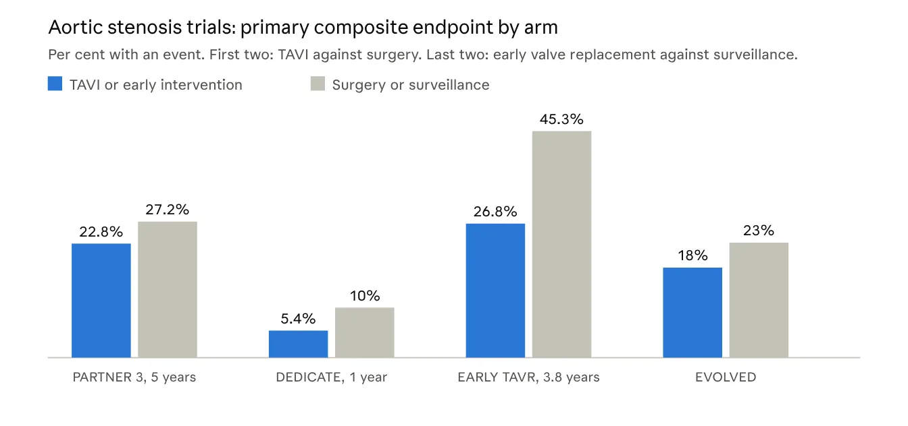
Reading the evidence
The low-risk trials enrolled patients in their seventies with tricuspid valves and transfemoral access. They do not cover bicuspid valves, small or heavily calcified roots, concomitant disease, or patients under 65.
PARTNER 3 at five years shows equivalence, not superiority; the direction of the mortality curves after year three is why ten-year data matter.
In DEDICATE the surgical arm's one-year mortality was higher than registry benchmarks, which limits how far the result generalises.
Early-intervention trials were positive largely through hospitalisation and conversion to valve replacement in the surveillance arm, where most patients needed intervention within two years.
Lifetime management is the surgical argument: first valve choice, root enlargement to allow a later valve-in-valve, coronary access after TAVI, pacemaker rate and paravalvular leak.
What is confirmed, and sources
Confirmed on 17 November 2026 from abstracts, trial summaries and guideline summaries:
2025 ESC/EACTS valve guideline classes (summary table); STS 2023 AF guideline; ESC 2023 endocarditis key points; AATS 2016 endocarditis; STS/AATS type B dissection; multisociety endorsement of the 2024 ESC coronary guideline.
Mitral: CTSN severe ischaemic MR; UK Mini Mitral; MATTERHORN.
Tricuspid: CTSN concomitant repair; TRILUMINATE and TRISCEND II.
AF: LAAOS III.
Endocarditis: EASE.
Aortic valve: PARTNER 3 five-year; Evolut Low Risk five-year; DEDICATE; EARLY TAVR and EVOLVED.
Coronary: FAME 3 five-year.
From memory and not checked: COAPT, MITRA-FR and CTSN moderate ischaemic MR figures; the CTSN ablation trial; POET; TRI-SCORE; RECOVERY; REVIVED, STICH, ISCHEMIA, ART and the radial analysis; INSTEAD-XL; the type A operative principles and type B high-risk features; all technique points. The ESC 2024 coronary recommendations were seen only in summary, and no SCTS clinical guideline was found for these topics.
Prosthesis choice: mechanical or bioprosthesis
7 parts · 1 drawing
Added 18 November 2026 in answer to your question. Rows are marked [checked] (confirmed against a source today, listed at the end) or [memory].

ESC/EACTS 2021 recommendations
| Favouring a mechanical valve | Class | Basis |
|---|---|---|
| Age under 60 in the aortic position, under 65 in the mitral position | IIa B | checked |
| Already anticoagulated for a mechanical valve in another position | IIa C | checked |
| Reasonable life expectancy and a high-risk future redo operation or transcatheter procedure | IIa C | checked |
| Already on long-term anticoagulation for high thromboembolic risk | IIb C | checked |
| Informed patient's wish, no contraindication to anticoagulation; risk of accelerated structural deterioration (young age, hyperparathyroidism, haemodialysis) | I C | memory |
| Favouring a bioprosthesis | Class | Basis |
|---|---|---|
| Informed patient's wish | I C | checked |
| Good anticoagulation unlikely (adherence, access) or contraindicated (bleeding risk, comorbidity, lifestyle, occupation); life expectancy shorter than the valve's expected durability | I C | checked |
| Reoperation for mechanical valve thrombosis despite good anticoagulant control | I C | checked |
| Age over 65 aortic, over 70 mitral | IIa C | memory |
| Young woman contemplating pregnancy | IIa C | memory |
The 2025 ESC/EACTS guideline: I could not confirm today whether these thresholds changed. Its headline aortic change is transcatheter implantation from age 70 with suitable tricuspid anatomy [checked from summaries]. Check the 2025 prosthesis table before quoting class and level.
ACC/AHA 2020 [memory]
| Position | Mechanical reasonable | Individualise | Bioprosthesis reasonable |
|---|---|---|---|
| Aortic | Under 50 | 50 to 65 | Over 65 |
| Mitral | Under 65 | Over 65 |
Shared decision-making is class I. The earlier 2017 version used 50 and 70 without separating the positions [checked].
The evidence
| Study | Design | Finding | Basis |
|---|---|---|---|
| Goldstone, N Engl J Med 2017;377:1847 | California 1996 to 2013; 9,942 aortic and 15,503 mitral replacements; weighted cohorts | Aortic, age 45 to 54: 15-year mortality 30.6% bioprosthesis against 26.4% mechanical (HR 1.23, 1.02 to 1.48). Age 55 to 64: no significant difference | checked |
| Goldstone, mitral | Age 40 to 49: 44.1% against 27.1% (HR 1.88, 1.35 to 2.63). Age 50 to 69: 50.0% against 45.3% (HR 1.16, 1.04 to 1.30) | checked | |
| Goldstone, other outcomes | More reoperation with bioprostheses; more bleeding, and in some age groups stroke, with mechanical valves | checked | |
| Goldstone, trend | Bioprosthesis share rose from 11.5% to 51.6% for aortic and 16.8% to 53.7% for mitral replacement | checked | |
| Bowdish, J Am Coll Cardiol 2025 (STS database) | 109,842 isolated aortic replacements, age 40 to 75, 2008 to 2019; 14% mechanical | Mechanical valve associated with lower all-cause mortality at age 60 or under. Mechanical use fell from 20% to 10% over the period | checked |
| Korean national cohort (JAMA Netw Open 2023) | Survival benefit of mechanical valves maintained up to 65 aortic and 70 mitral | checked (summary only) | |
| Swedish registry (Glaser 2016), randomised trials (Veterans Affairs, Edinburgh, Stassano) | Older data pointing the same way for the aortic valve in 50 to 69 year olds; trials used obsolete valves | memory |
All of the modern data are observational. Residual confounding is likely: patients given a bioprosthesis are usually older and sicker.
Factors beyond age
| Factor | Pushes towards | Basis |
|---|---|---|
| Atrial fibrillation needing anticoagulation anyway | Weakens the case for a bioprosthesis, but a direct oral anticoagulant is possible with a bioprosthesis and not with a mechanical valve | memory |
| Pregnancy planned | Bioprosthesis, or Ross in an expert centre; warfarin embryopathy and valve thrombosis on heparin are the problem | memory |
| Dialysis | Historically mechanical (calcification); limited life expectancy now often favours a bioprosthesis | memory |
| Endocarditis | No valve type shown better (Flynn meta-analysis in Cardiac tab 2); bioprosthesis for most people who inject drugs | checked in tab 2 |
| Small aortic root | Avoid mismatch: root enlargement, sutureless or stentless valve, or a mechanical valve | memory |
| Lifetime plan | A bioprosthesis at 55 implies one or two further procedures; choose a size and type that allows valve-in-valve, and check coronary heights | memory |
| Occupation and lifestyle | Contact sport, remote work, poor INR access: bioprosthesis | memory |
Anticoagulation that follows the choice [memory]
| Valve | Regimen |
|---|---|
| Mechanical aortic, bileaflet, no risk factors | Warfarin INR 2.5 (ESC median target by valve thrombogenicity and patient risk factors) |
| Mechanical mitral, or aortic with risk factors (atrial fibrillation, low ejection fraction, previous thromboembolism) | INR 3.0 |
| On-X aortic after 3 months | INR 1.5 to 2.0 with aspirin (see the section above) |
| Surgical bioprosthesis | Three months of warfarin or aspirin, then nothing unless another indication |
| Direct oral anticoagulants | Not for mechanical valves (RE-ALIGN, PROACT Xa) |
How to answer in a viva
Patient's informed preference first.
Age and position: mechanical under 60 aortic and under 65 mitral in Europe; the American aortic threshold is 50.
Anything that forbids warfarin or shortens life expectancy moves to a bioprosthesis; anything that speeds degeneration or makes a redo dangerous moves to mechanical.
Quote Goldstone and Bowdish: survival advantage for mechanical up to about 55 to 60 aortic and about 70 mitral, observational.
State the lifetime plan.
Sources checked today
ESC/EACTS 2021 prosthesis recommendations table (Vahanian et al; https://pmc.ncbi.nlm.nih.gov/articles/PMC9725093/table/T19).
Goldstone AB et al. N Engl J Med 2017;377:1847-57 (abstract and summaries).
Bowdish ME et al. J Am Coll Cardiol 2025, doi 10.1016/j.jacc.2025.01.013 (ACC journal scan and STS release).
ACC 2018 expert analysis for the 2017 thresholds.
Korean cohort summary: https://www.ncbi.nlm.nih.gov/pmc/articles/PMC10203891/
Freestyle stentless aortic root bioprosthesis
6 parts · 1 drawing
Added 18 November 2026 in answer to your question. Rows are marked [checked] (confirmed against a source today, listed at the end) or [memory].

What it is
| Point | Detail | Basis |
|---|---|---|
| Device | A complete porcine aortic root (Medtronic Freestyle), glutaraldehyde-fixed, with no stent or sewing ring; a thin polyester cover over the porcine septal muscle at the inflow; porcine coronaries ligated | memory |
| Why stentless | No stent or sewing ring in the outflow, so a larger effective orifice for a given annulus; a full root can be upsized by one to two sizes, which helps the small root | checked (upsizing); rest memory |
| Anticoagulation | As any bioprosthesis | memory |
Three implantation techniques
| Technique | What is done | When | Trade-off | Basis |
|---|---|---|---|---|
| Subcoronary | Porcine sinuses scalloped away; valve sewn inside the native root with a proximal line at the annulus and a distal line below the coronary ostia | Normal-sized, symmetric native root | Geometry depends on the native root: distortion gives regurgitation; smaller valve sizes go in | checked (smaller sizes); rest memory |
| Root inclusion | Whole porcine root inside the native root, with openings cut opposite the native coronary ostia | Normal root where the surgeon wants to keep porcine geometry | Space between the two walls can bleed or collect | memory |
| Full root | Native root excised; porcine root sewn to the annulus; coronary buttons reimplanted; distal anastomosis to the aorta | Root aneurysm, small root, endocarditis with root destruction, redo root | Longer operation, coronary buttons, more bleeding risk; lowest gradients | checked (gradients); rest memory |
Results
| Study | Finding | Basis |
|---|---|---|
| North American multicentre series (700 patients, 93% over 60; 500 subcoronary) | At 8 years, freedom from structural deterioration 98.6% in the subcoronary group; full root gave slightly lower gradients, larger orifice area and less regurgitation | checked |
| Same multicentre study, 5-year comparison (500 subcoronary, 162 full root) | Operative death higher with full root (odds ratio 3.97); no difference in late death or reoperation. The authors argued against full root replacement when the root is healthy | checked |
| Ennker (1,014 patients, 148 propensity-matched pairs) | Operative mortality 2.7% subcoronary and 4.7% full root, not significantly different after adjustment; lower gradients per size with full root | checked |
| Leiden (604 patients, 1993 to 2014; 403 full root; median age 64) | 20-year experience; full root became the standard technique after 2005 | checked (design only; I did not capture the 15-year figures) |
| Michigan (1,947 patients, 1992 to 2015) | Satisfactory durability as a root conduit; 10- and 15-year survival 53% and 29%; to be used judiciously under 60 because of more reoperation for structural deterioration | checked |
Where it fits now
| Use | Comment | Basis |
|---|---|---|
| Bioprosthetic root replacement | An off-the-shelf biological root for the patient who wants no warfarin; alternative to a stented valve sewn into a tube graft (bio-Bentall) | memory |
| Endocarditis with root abscess | A stentless root is an alternative when a homograft is not available (Sidik 2025 review in Cardiac tab 2) | checked in tab 2 |
| Small aortic root | Alternative to root enlargement or a sutureless valve | memory |
| Against it | Technically harder than a stented valve; the calcified porcine root is a difficult redo; valve-in-valve is possible but risks coronary obstruction because there are no stent posts and the coronaries sit close; structural failure is often leaflet tear with acute regurgitation | memory |
For the viva
Freestyle is a root, not just a valve: say which of the three techniques you mean.
Subcoronary is quicker and safer but depends on native root geometry; full root gives the best haemodynamics at the cost of a root operation.
Durability is good in the over-60s and less good in younger patients.
Sources checked today
Bach DS et al, North American multicentre Freestyle series: 8-year results (https://read.qxmd.com/read/15173720) and the 5-year subcoronary against full root comparison (abstract).
Ennker J et al. Ten-year experience with stentless aortic valves: full-root versus subcoronary implantation. Ann Thorac Surg 2008 (abstract).
Schneider AW. Twenty-year experience with the Freestyle stentless bioprosthesis. Leiden thesis chapter, 2021.
Yang B et al, Michigan series (https://pmc.ncbi.nlm.nih.gov/articles/PMC7308200).
Sci Rep 2019 series on full root upsizing (https://www.nature.com/articles/s41598-019-40772-7).
Aortic root surgery and root enlargement: course notes
3 parts
Written for the ST4 course session from standard references; moved here from the congenital section. Choose the root operation by what is diseased (cusps, sinuses or annulus); enlarge the root when the valve that fits would leave a predicted indexed orifice area of 0.85 cm2/m2 or less.
Root operations
| Operation | What it does | Best for |
|---|---|---|
| Bentall (button technique) | Composite valved graft with coronary reimplantation | Diseased cusps with a dilated root; mechanical or biological |
| David reimplantation | Native valve reimplanted inside a graft; fixes the annulus | Root aneurysm with good cusps, annular dilatation, heritable disease |
| Yacoub remodelling | Sinuses replaced with a scalloped graft; add an external annuloplasty | Root aneurysm with a normal annulus |
| Ross | Pulmonary autograft to the aortic root, homograft to the RV outflow tract | Children and young adults; growth and no anticoagulation; autograft dilatation is the late risk |
| Homograft root | Cryopreserved human root | Root abscess |
| Cabrol or interposition graft | Graft to the coronary ostia | Buttons that cannot be mobilised (redo, calcified, low ostia) |
Root enlargement techniques
| Technique | Incision | Gain | Watch for |
|---|---|---|---|
| Nicks | Through the middle of the non-coronary sinus, across the annulus into the aorto-mitral curtain, stopping short of the anterior mitral leaflet | About one valve size | Limited gain |
| Manouguian | Through the commissure between left and non-coronary sinuses, across the curtain into the anterior mitral leaflet and left atrial roof | One to two sizes | Mitral regurgitation, patch bleeding, left atrial closure |
| Y-incision (Yang) | Through the left/non-coronary commissure into the curtain, then extended as a Y beneath both annuli towards each trigone, without entering the mitral valve or left atrium; rectangular patch | Three to four sizes | Patch tailoring; roof-shaped aortotomy closure |
| Konno-Rastan (anterior) | Through the right coronary sinus to the left of the right coronary ostium, across the annulus into the ventricular septum and RV outflow tract; two patches | Two to four sizes; relieves tunnel subaortic obstruction | Heart block, septal perforator injury, residual VSD |
| Ross-Konno | Autograft root with septal incision | Children with multilevel obstruction | As for both operations |
When to enlarge
Small annulus: surgical sizer 21 mm or less, or CT annulus area about 430 mm2 or less.
Predicted indexed orifice area 0.85 cm2/m2 or less (moderate mismatch) or 0.65 or less (severe); lower cut-offs apply when BMI is 30 or more.
Younger patients: aim for a bioprosthesis of 23 mm or larger so a later valve-in-valve is feasible.
Alternatives: supra-annular or stentless prostheses, sutureless valves, full root replacement, TAVI.
Contemporary series report no added mortality from posterior enlargement in experienced hands; clamp time is longer.
Prosthetic valve deterioration: haemodynamic grades
Source: society-integrated handbook, as taught. Moved here from Cardiac 10 on 19 Nov 2026.
| Grade | Criteria |
|---|---|
| Possible haemodynamic deterioration | Mean gradient rise of 10 mmHg or more to 20 mmHg or more, with effective orifice area down by 0.3 cm² or 25%, or Doppler velocity index down by 0.1 or 20% |
| Significant deterioration | Gradient rise of 20 mmHg or more to 30 mmHg or more, with orifice area down by 0.6 cm² or 50%, or velocity index down by 0.2 or 40% |
Keep haemodynamic deterioration separate from proven structural degeneration; exclude mismatch, high flow, thrombosis and measurement error.
Thresholds: Aortic stenosis
6 parts
Severe AS is Vmax ≥4.0 m/s, mean gradient ≥40 mmHg and AVA ≤1.0 cm²; when these disagree, flow and CT calcium score decide.
Echo grading
| Parameter | Mild | Moderate | Severe | Very severe |
|---|---|---|---|---|
| Peak velocity (m/s) | 2.6–2.9 | 3.0–3.9 | ≥4.0 | >5.0 |
| Mean gradient (mmHg) | <20 | 20–39 | ≥40 | ≥60 |
| AVA (cm²) | >1.5 | 1.0–1.5 | ≤1.0 | |
| Indexed AVA (cm²/m²) | >0.85 | 0.60–0.85 | ≤0.6 | |
| Dimensionless index (LVOT VTI ÷ AV VTI) | >0.50 | 0.25–0.50 | <0.25 |
Discordant grading (AVA ≤1.0 cm² but Vmax <4 m/s, gradient <40 mmHg)
| Finding | Threshold | Meaning |
|---|---|---|
| Stroke volume index | ≤35 mL/m² | Low flow |
| Dobutamine stress echo (LVEF <50%) | Vmax ≥4 m/s or gradient ≥40 mmHg with AVA ≤1.0 cm² at any flow | True severe |
| Dobutamine stress echo | AVA rises above 1.0 cm² | Pseudo-severe: treat the ventricle |
| Flow reserve | Stroke volume rise ≥20% | Absent reserve raises operative risk but does not rule out benefit |
| CT calcium score, women (Agatston units) | <800 unlikely, >1,200 likely, >1,600 highly likely | Severe AS |
| CT calcium score, men (Agatston units) | <1,600 unlikely, >2,000 likely, >3,000 highly likely | Severe AS |
| Normal flow, low gradient | After re-measurement | Usually moderate |
Thresholds for intervention
| Situation | Threshold | Class |
|---|---|---|
| Symptomatic severe high-gradient AS | Vmax ≥4.0 m/s or gradient ≥40 mmHg | I |
| Symptomatic low-flow, low-gradient, LVEF <50% | Severity confirmed by stress echo or CT calcium | I |
| Asymptomatic, LV dysfunction | LVEF <50% with no other cause | I |
| Asymptomatic, symptoms on exercise test | Any | I |
| Asymptomatic, LVEF ≥50%, low procedural risk | Any one of: Vmax >5 m/s or gradient ≥60 mmHg; severe calcification with Vmax rise ≥0.3 m/s per year; BNP or NT-proBNP >3× age- and sex-corrected normal; LVEF <55% with no other cause | IIa |
| Asymptomatic, exercise test | Sustained fall in systolic BP >20 mmHg | IIa |
| Asymptomatic severe high-gradient AS, LVEF ≥50%, low risk | Intervention as an alternative to surveillance, normal exercise test if feasible | IIa |
| Severe AS, other cardiac surgery planned (CABG, aorta, another valve) | Concomitant AVR | I |
| Moderate AS, other cardiac surgery planned | Concomitant AVR after Heart Team discussion | IIa |
| Mixed moderate AS and moderate AR, symptomatic | Gradient ≥40 mmHg or Vmax ≥4.0 m/s | I |
| Mixed moderate AS and moderate AR, asymptomatic | Vmax ≥4.0 m/s with LVEF <50% | I |
Course pack correction, 18 November 2026 (2025 ESC/EACTS, Recommendation Table 4): low flow is a stroke volume index of 35 mL/m² or less. With a valve area of 1.0 cm² or less and a mean gradient under 40 mmHg, separate reduced LVEF (under 50%) from preserved LVEF (50% or more), recheck the measurements and confirm severity with another modality (dobutamine echo, CT calcium score). In symptomatic, confirmed severe low-flow, low-gradient stenosis, intervention is recommended with reduced LVEF (Class I) and should be considered with preserved LVEF (Class IIa). Checked today against a 2026 summary of the guideline, which gives the same split; the table number is from the pack.
Surgery or TAVI
ESC/EACTS 2025: TAVI for tricuspid valves at age ≥70 with suitable anatomy; SAVR under 70 at low surgical risk.
ACC/AHA 2020: SAVR under 65, either from 65 to 80, TAVI over 80.
ACC/AHA 2020 also lists LVEF <60% on three serial studies (IIb) for asymptomatic severe AS.
Findings that push towards surgery are in the CT planning section below.
Which number matters most
Peak velocity is the strongest single predictor of outcome and the most reproducible measurement. Its only technical error (beam misalignment) underestimates it.
Its weakness is flow dependence: it under-calls severity with a low stroke volume (poor LV, small cavity, AF, significant MR) and over-calls it in high-flow states (AR, anaemia, sepsis).
Valve area is less flow dependent but the most error-prone: the continuity equation squares the LVOT diameter and assumes a circular outflow tract. An area under 1.0 cm² alone over-calls severe AS.
The dimensionless index avoids the LVOT diameter error and is a useful cross-check.
Once stenosis is severe, symptoms and LV function decide timing more than either number.
New symptoms in known severe AS
Angina occurs in severe AS with normal coronaries, from hypertrophy, raised wall stress and reduced coronary flow reserve. Radiation to the jaw does not separate it from coronary disease.
Dyspnoea at rest suggests raised filling pressures or early LV failure and is the worst prognostic symptom of the classic triad.
AS typically progresses about 0.3 m/s per year, so new symptoms usually mean decompensation of an already severe valve, not sudden progression.
A normal angiogram within the previous year makes new flow-limiting disease unlikely, but plaque rupture on non-obstructive plaque is still possible. Troponin is often chronically raised in severe AS; the trend and ECG matter more than one value.
Exclude new AF, falling LV function (a lower gradient on repeat echo is then not reassuring), endocarditis, new MR, pulmonary embolism, anaemia or infection, and dissection if the valve is bicuspid.
Rest symptoms need same-day assessment and admission: ECG, serial troponin, BNP, chest radiograph, repeat echo. Take care with nitrates, vasodilators and over-diuresis.
Symptomatic severe AS is a Class I indication; with rest symptoms the work-up for SAVR or TAVI should be as an inpatient.
Thresholds: Aortic regurgitation
6 parts · 1 drawing
In severe AR the operative triggers are symptoms, LVEF ≤50%, LVESD >50 mm or indexed LVESD >25 mm/m²; the 2025 guideline adds earlier optional triggers for low-risk patients.
Echo criteria for severe AR
| Parameter | Severe |
|---|---|
| Vena contracta | >6 mm |
| Jet width ÷ LVOT diameter | ≥65% |
| EROA (PISA) | ≥30 mm² |
| Regurgitant volume | ≥60 mL per beat |
| Regurgitant fraction | ≥50% |
| Pressure half-time | <200 ms |
| Descending aorta | Holodiastolic flow reversal, end-diastolic velocity >20 cm/s |
| Left ventricle | Dilated (chronic AR) |
Echo features of severe AR in detail
The table above was from memory; the cut-offs are now checked against ESC/EACTS 2021 Table 5, the British Society of Echocardiography 2024 guideline and a 2023 review table comparing ACC/AHA with EACVI/ESC. They agree. The 2025 ESC/EACTS guideline keeps the integrative approach and puts its numbers in Figure 4, which is an image I could not read as text; its section 7.2 wording is quoted in the last table.

| Feature | Mild | Moderate | Severe | Status |
|---|---|---|---|---|
| Valve morphology | Normal or mildly abnormal | Flail cusp, large coaptation defect | Checked (ESC 2021) | |
| Colour jet | Small central jet | Large if central; variable if eccentric | Checked | |
| Flow convergence | None or very small | Large | Checked (BSE) | |
| CW signal density | Faint or incomplete | Dense | Dense | Checked (BSE) |
| Vena contracta width | <3 mm | 3 to 6 mm | >6 mm | Checked |
| Jet width ÷ LVOT diameter | <25% | 25 to 64% | ≥65% | Checked (BSE, ACC/AHA) |
| Pressure half-time | >500 ms | 200 to 500 ms | <200 ms | Checked |
| Descending aorta diastolic flow reversal | Brief, early diastolic | Intermediate | Holodiastolic, end-diastolic velocity ≥20 cm/s | Checked |
| EROA | <10 mm² | 10 to 29 mm² | ≥30 mm² | Checked |
| Regurgitant volume | <30 mL | 30 to 59 mL | ≥60 mL per beat | Checked |
| Regurgitant fraction | <30% | 30 to 49% | ≥50% | Checked |
| Left ventricle | Normal | Dilated in chronic AR | Checked (ESC 2021) |
Pitfalls
| Sign | What misleads | Status |
|---|---|---|
| Pressure half-time | Shortens with raised LV diastolic pressure and vasodilators, and lengthens in a chronically dilated compliant ventricle; BSE notes <300 ms is more sensitive | Checked (ESC 2021 footnote; BJC module) |
| Jet width and jet area | Unreliable in eccentric jets; jet length does not grade severity | Checked |
| Vena contracta | Valid for eccentric jets; not valid for multiple jets | First half checked; second from memory |
| PISA | Underestimates in eccentric jets and is hard to align from the apex | Memory |
| Flow reversal | Also seen with a stiff aorta in the elderly and with a patent duct; reversal in the abdominal aorta is more specific | Memory |
| Blood pressure | High pressure at the time of the scan overestimates regurgitant volume | Checked (ESC/EACTS 2025 section 7.2) |
| Acute severe AR | Ventricle not dilated, short half-time, early mitral valve closure and diastolic mitral regurgitation, tachycardia makes colour look small | Memory |
What the 2025 ESC/EACTS guideline says about evaluation
| Point | Detail | Status |
|---|---|---|
| Approach | Integrative: qualitative, semi-quantitative and quantitative parameters together; it "remains challenging" | Checked (PDF, section 7.2) |
| What to report | Severity, mechanism and aetiology; effect on LV size, function and pulmonary pressure; the ascending aorta | Checked |
| Other imaging | Echo first; CMR and cardiac CT are more accurate for specific parameters. CMR LVESVi ≥43 mL/m² is proposed for asymptomatic patients | Checked |
| CMR severity | Regurgitant fraction above about 33% and regurgitant volume above about 45 mL predict outcome | Memory |
| TOE in theatre | Mechanism by the El Khoury classes (I normal cusps with root or annular dilatation or perforation, II prolapse, III restriction), cusp height and annulus for repair | Memory |
For the viva: name three specific signs first (vena contracta over 6 mm, holodiastolic flow reversal in the descending aorta, EROA 30 mm² or more with regurgitant volume 60 mL or more), then the supportive ones (half-time under 200 ms, jet width 65% or more, dilated ventricle), then say which you would distrust in that patient and why.
Thresholds for surgery
| Situation | Threshold | Class |
|---|---|---|
| Symptomatic severe AR | Any LV function, unless risk is prohibitive | I |
| Asymptomatic severe AR | LVEF ≤50%, or LVESD >50 mm, or LVESDi >25 mm/m² (use the index when BSA <1.68 m²) | I |
| Asymptomatic severe AR, low surgical risk | LVESDi >22 mm/m², or LVESVi >45 mL/m², or LVEF ≤55% | IIb |
| Asymptomatic, selected low-risk patients | LVEDD >65 mm with progressive dilatation or falling LVEF | Mentioned in text, no formal class |
| Severe AR, other cardiac surgery planned (CABG, aorta, another valve) | Concomitant surgery | I |
| Symptomatic severe AR, not a surgical candidate, suitable anatomy | TAVI | IIb |
| CMR volumes | LVESVi ≥43 mL/m² proposed as the volumetric cut-off | No formal class |
ACC/AHA 2020 differs: LVEF ≤55% is Class I, LVESD >50 mm or >25 mm/m² is IIa, and LVEDD >65 mm at low risk is IIb.
Findings that favour repair or valve-sparing surgery
Pliable, non-calcified tricuspid or bicuspid cusps with root or annular dilatation (type I) or cusp prolapse (type II).
Geometric cusp height ≥16 mm in tricuspid valves and ≥19 mm in bicuspid valves; below this, cusp retraction makes durable repair unlikely.
Target effective height after repair is 9–10 mm.
Basal ring diameter above about 27 mm predicts recurrence unless an annuloplasty is added.
A dilated root or ascending aorta sets the operation regardless of AR grade: see the aorta section.
Types of aortic valve prosthesis: On-X, Perceval and the rest
7 parts · 2 drawings
Added 18 November 2026 in answer to your question. Each row is marked: [checked] means I confirmed it against a source today (listed at the end); [memory] means it is from memory and should be checked against the manufacturer's instructions or the trial paper before you quote it.

The families
| Family | Examples | For | Against | Basis |
|---|---|---|---|---|
| Mechanical bileaflet | On-X, St Jude Regent, Carbomedics, Medtronic Open Pivot | Durable for life; good haemodynamics in small roots | Warfarin for life; bleeding and thromboembolism; click; no direct oral anticoagulants | memory |
| Stented bioprosthesis, bovine pericardial | Inspiris Resilia, Perimount Magna Ease, Avalus | Standard implant; no long-term warfarin in sinus rhythm; platform for later valve-in-valve | Structural deterioration, faster in the young; patient-prosthesis mismatch in small sizes | memory |
| Stented bioprosthesis, porcine | Epic, Hancock II, Mosaic | Long track record | Higher gradients than pericardial in small sizes | memory |
| Stentless and root substitutes | Freestyle porcine root, homograft, Ross pulmonary autograft | Largest orifice; homograft or autograft in endocarditis; Ross for the young adult | Longer, harder operation; calcified homograft is a difficult redo | memory |
| Sutureless | Perceval | Short cross-clamp; suits minimal access, small or calcified roots, redo and combined operations | More pacemakers; thrombocytopenia; needs correct sizing and annular geometry | checked for pacing; rest memory |
| Rapid deployment | Edwards Intuity Elite | Magna Ease-type valve with a balloon-expanded subannular skirt and three guiding sutures | More pacemakers than a sewn valve | memory |
| Transcatheter | Sapien 3 (balloon-expandable), Evolut (self-expanding, supra-annular), Navitor | No sternotomy | Pacemaker, paravalvular leak, coronary access; durability data shorter | memory |
On-X (mechanical)
| Point | Detail | Basis |
|---|---|---|
| Design | Pure pyrolytic carbon without silicon; long flared inlet; leaflets open to near 90 degrees; leaflet guards against pannus | memory |
| Lower anticoagulation target | PROACT: target INR 1.5 to 2.0 with low-dose aspirin was non-inferior to standard anticoagulation and was the basis of the lowered-INR labelling. The interim high-risk report showed bleeding cut by more than half without more thromboembolism | checked (commentary on Puskas; AATS interim report) |
| When the lower target starts | After the first 3 months at INR 2.0 to 3.0; aortic position only (mitral stays higher) | memory |
| Direct oral anticoagulant | PROACT Xa: apixaban 5 mg twice daily against warfarin INR 2 to 3 at least 3 months after implant. Stopped after 863 patients for excess thromboembolism on apixaban. Valve thrombosis 0.6% per patient-year against 0; valve-related thromboembolism 3.5% against 1.3% per patient-year; major bleeding 3.6% against 4.5% per patient-year | checked |
| Message | Any mechanical valve, including On-X, needs a vitamin K antagonist | checked |
Perceval (sutureless)
| Point | Detail | Basis |
|---|---|---|
| Design | Bovine pericardial leaflets on a self-anchoring nitinol frame; no fixing sutures | checked (trial registry description) |
| Implant | Full decalcification; three guiding sutures at the nadirs; valve collapsed, parachuted, released, then balloon post-dilatation with warm saline; higher transverse aortotomy | memory |
| Sizes | S, M, L, XL | memory |
| PERSIST-AVR | 914 enrolled, 910 randomised, 47 sites: sutureless against stented bioprosthesis. Non-inferior for major adverse cardiac and cerebrovascular events at 1 year | checked |
| Operating times | Shorter cross-clamp and bypass with sutureless, in both full and mini-sternotomy | checked |
| Pacemaker | Early permanent pacemaker 10.4% against 3.1% | checked |
| Isolated valve, mini-sternotomy subgroup at 1 year | Major adverse events 5.2% against 10.8%; stroke 1.0% against 5.4%; pacemaker 11% against 1.6% | checked (sub-analysis: hypothesis-generating) |
| Haemodynamics | Comparable to stented valves at 1 year on core-lab echo | checked |
| Cautions | Bicuspid valve without symmetrical annulus, dilated root or sinotubular junction, annulus outside the size range; transient fall in platelets | memory |
Bioprostheses worth naming
| Valve | Point | Basis |
|---|---|---|
| Inspiris Resilia | Bovine pericardium with Resilia anti-calcification treatment, stored dry. COMMENCE (689 patients, single arm, mean age about 65 to 67): 99.3% free of structural deterioration and 97.2% free of reoperation at 7 years; 85.4% survival | checked |
| Inspiris Resilia | Expandable band intended to ease later valve-in-valve | memory |
| Perimount Magna Ease | The reference stented pericardial valve; the comparator in most series | memory |
| Trifecta | Externally mounted leaflets and low gradients, but early structural failure; withdrawn from the market in 2023 | memory |
| Mitroflow | Early deterioration in small sizes | memory |
| Freestyle | Stentless porcine root; subcoronary, inclusion or full root | memory |

Choosing: age thresholds
| Guideline | Mechanical | Bioprosthesis | Basis |
|---|---|---|---|
| ESC/EACTS 2021 | Under 60 in the aortic position | Over 65 in the aortic position; either in between | memory |
| ACC/AHA 2020 | Under 50 | Over 65; individualise from 50 to 65 | memory |
| ESC/EACTS 2025 | Not checked today for the prosthesis-type thresholds | The headline change is transcatheter implantation from 70 years with suitable tricuspid anatomy | checked for the 70-year threshold only |
Other factors [memory]: patient preference decides; bioprosthesis if anticoagulation is unsafe or pregnancy is planned; mechanical if already on warfarin for another mechanical valve; in the small root consider root enlargement, a stentless or sutureless valve, or a valve with good small-size haemodynamics; plan for the second procedure (valve-in-valve needs a large enough first valve).
One-line contrasts for the viva
On-X against other mechanical valves: same class of valve, with a trial-backed lower INR target in the aortic position after 3 months. It did not earn freedom from warfarin.
Perceval against a stented valve: the same clinical outcome at 1 year, bought with a shorter clamp time and paid for with about three times the early pacemaker rate.
Perceval against Intuity: sutureless self-expanding frame against a sewn-ring valve with a balloon-expanded skirt and three sutures [memory].
Inspiris against older pericardial valves: early durability data are good, but they are single-arm and stop at 7 to 8 years.
Sources checked today
PROACT Xa: ACC trial summary and journal scan, 2023 (https://www.acc.org/Latest-in-Cardiology/Clinical-Trials/2023/08/23/14/44/proact-xa); ClinicalTrials.gov NCT04142658 (terminated for safety).
PROACT: commentary on the Puskas long-term report (https://pmc.ncbi.nlm.nih.gov/articles/PMC6291569); AATS interim report.
PERSIST-AVR: ClinicalTrials.gov NCT02673697; Lorusso et al, pacemaker analysis, Eur J Cardiothorac Surg 2022; mini-sternotomy sub-analysis, Int J Cardiol 2022; core-lab haemodynamics, Front Cardiovasc Med 2022.
COMMENCE: Bavaria et al, Ann Thorac Surg 2023;115:1429-36 (5-year); Edwards 7-year release, AATS 2023.
ESC/EACTS 2025 valvular guideline: summaries only (Praz et al, Eur Heart J 2025, doi 10.1093/eurheartj/ehaf194).
ESC/EACTS 2025 guideline: prosthetic valve selection
Added 18 November 2026 from the PDF you supplied: Praz F, Borger MA, et al. 2025 ESC/EACTS Guidelines for the management of valvular heart disease. Eur J Cardiothorac Surg 2025;67(8):ezaf276, doi 10.1093/ejcts/ezaf276. I read the prosthesis selection table (section 14.1) and the related text; not the whole guideline. This replaces the "not checked" note in the prosthesis choice section above: the age thresholds are unchanged from 2021.
| Mechanical valve | Class, level |
|---|---|
| Recommended according to the desire of the informed patient, if there is no contraindication to long-term anticoagulation | I C |
| Should be considered with an estimated long life expectancy and no contraindication to long-term anticoagulation | IIa B |
| Should be considered under 60 years in the aortic position and under 65 years in the mitral position | IIa C |
| Should be considered with a mechanical valve already in another position | IIa C |
| May be considered with a clear indication for long-term anticoagulation | IIb C |
| Bioprosthesis | Class, level |
|---|---|
| Recommended according to the desire of the informed patient | I C |
| Recommended when good-quality anticoagulation is unlikely, bleeding risk is high, or life expectancy is short | I C |
| Should be considered over 65 years in the aortic position or over 70 years in the mitral position | IIa C |
| Should be considered in women contemplating pregnancy | IIa C |
| Related statements | Detail |
|---|---|
| Life expectancy | Estimated from age, sex, comorbidities and country-specific figures |
| Anticoagulation | A vitamin K antagonist is recommended lifelong for every mechanical valve; INR self-management is supported; the INR range is set by valve type, position and the patient's thrombotic risk |
| Before non-cardiac surgery | Minor procedures need no interruption; for major elective surgery, bridging may be omitted when thromboembolic risk is low (new-generation aortic mechanical valve, no other risk factor) |
| Direct oral anticoagulant after a bioprosthesis | A pre-existing direct oral anticoagulant may be continued and restarted when surgically safe, usually within 2 to 3 days |
| Transcatheter or surgical | Transcatheter implantation from 70 years with suitable tricuspid aortic anatomy; the choice also weighs lifetime management and repeat-procedure options |
Difference from my earlier table: the 2025 wording for the age threshold carries level C (I had quoted the 2021 level B), and "long life expectancy" is now its own IIa B recommendation. The ages confirm what I had listed from memory (over 65 aortic, over 70 mitral for a bioprosthesis; pregnancy IIa C).
ESC/EACTS 2025 valve guideline: all intervention recommendations in one place
Source, read from your PDF: 2025 ESC/EACTS Guidelines for the management of valvular heart disease. Eur Heart J 2025;46:4635 onwards. How I read it: the intervention recommendations for every valve, pulled out by search from the recommendation tables and the what-to-do list; class is from the wording (recommended, should be considered, may be considered). Imaging, follow-up, pregnancy and anticoagulation tables were not re-read here. It sits in this tab for convenience and covers the mitral, tricuspid and prosthetic valves too. The thresholds drawings in tabs 1, 2 and 4 apply; no new drawing.
| Lesion | Recommended | Should or may be considered |
|---|---|---|
| Aortic stenosis, symptomatic | Severe high-gradient; and low-flow (stroke volume index 35 mL/m2 or less), low-gradient (under 40 mmHg) with ejection fraction under 50% and flow reserve | Low-flow, low-gradient with normal ejection fraction once severity is confirmed |
| Aortic stenosis, asymptomatic | Ejection fraction under 50% without another cause | Ejection fraction under 55%. With ejection fraction 50% or more and a normal exercise test, as an alternative to close surveillance if procedural risk is low; features favouring it include mean gradient 60 mmHg or more or peak velocity over 5.0 m/s, severe calcification, and velocity progression of 0.3 m/s per year or more |
| TAVI or surgery | TAVI at 70 years or older with a tricuspid valve and suitable anatomy. Surgery under 70 if surgical risk is low. Either for the rest, by Heart Team | Non-transfemoral TAVI if unsuitable for surgery and for femoral access. TAVI for bicuspid stenosis at increased surgical risk (may). Balloon valvotomy as a bridge in the unstable (may) |
| Aortic regurgitation | Symptomatic severe regurgitation regardless of ventricular function. Asymptomatic with end-systolic diameter over 50 mm or over 25 mm/m2, or ejection fraction 50% or less | Asymptomatic with indexed end-systolic diameter over 22 mm/m2 or ejection fraction 55% or less if surgical risk is low (may). Repair at experienced centres when durable. TAVI if ineligible for surgery with suitable anatomy (may). Replace the ascending aorta at 45 mm or more when operating on the valve |
| Mixed moderate stenosis and regurgitation | Symptomatic with mean gradient 40 mmHg or more or peak velocity 4.0 m/s or more; asymptomatic with that velocity and ejection fraction under 50% | |
| Primary mitral regurgitation | Repair is the technique of choice when durable. Surgery if symptomatic and operable. Asymptomatic with ventricular dysfunction: end-systolic diameter 40 mm or more, or 20 mm/m2 or more, or ejection fraction 60% or less | Asymptomatic with preserved ventricle and atrial fibrillation or pulmonary pressure over 50 mmHg. Low-risk asymptomatic with left atrial volume index 60 mL/m2 or more or diameter 55 mm or more, at a Heart Valve Centre when durable repair is likely. Edge-to-edge repair if inoperable or high risk |
| Secondary mitral regurgitation | Surgery for severe regurgitation when having CABG. Edge-to-edge repair to reduce heart failure admissions in stable symptomatic patients with ejection fraction under 50% and persistent severe ventricular regurgitation despite optimal therapy | Surgery for moderate regurgitation at CABG (may) |
| Mitral stenosis | Balloon commissurotomy if symptomatic without unfavourable features, or with high surgical risk. Surgery if unsuitable for it | Transcatheter valve for extensive annular calcification at expert centres (may) |
| Tricuspid regurgitation | Heart Team assessment of cause, stage and risk. With left-sided surgery: operate on severe primary or secondary regurgitation. Isolated: symptomatic severe primary regurgitation without severe right ventricular dysfunction or pulmonary hypertension | With left-sided surgery: moderate primary; mild or moderate secondary with annulus 40 mm or more or over 21 mm/m2. Asymptomatic severe primary with a dilating right ventricle. Transcatheter treatment in high-risk or inoperable patients |
| Tricuspid stenosis | Surgery if symptomatic and severe, or severe at left-sided surgery | |
| Coronary disease at valve surgery | CABG for stenosis 70% or more (50% for left main) | CT coronary angiography instead of invasive angiography when probability is low |
| Atrial fibrillation at valve surgery | Appendage occlusion with CHA2DS2-VASc 2 or more; ablation at mitral surgery | |
| Failing bioprosthesis | Reoperation if symptomatic with a significant gradient rise (thrombosis excluded) or severe regurgitation | Reoperation if asymptomatic and low risk. Transfemoral valve-in-valve in the aortic position; transvenous mitral or tricuspid valve-in-valve at intermediate or high surgical risk |
| Paravalvular leak | Reoperate if due to endocarditis, or causing haemolysis needing repeated transfusion or heart failure | Transcatheter closure for suitable leaks |
| Mechanical valve thrombosis | Heart Team decision between repeat replacement and low-dose slow-infusion fibrinolysis; urgent replacement for obstructive thrombosis in the critically ill | Surgery for thrombus over 10 mm with embolism |
The headline change from 2021 is the TAVI age threshold of 70 with tricuspid anatomy and the wider door to treating asymptomatic severe aortic stenosis. Check the exact wording of any row you plan to quote, because the two-column layout of the PDF made some rows extract in fragments.
Aortic valve repair and valve-sparing root replacement
Source: EACTS consensus (October 2026) as summarised in the society-integrated handbook; the consensus itself was not opened by me. Moved here from Cardiac 10 on 19 Nov 2026.
Three separate decisions: whether to operate, whether the valve is repairable, whether the root or annulus needs reconstruction.
Assess cusp quality, restriction or prolapse, commissures, annulus and root. No single cusp-height figure decides.
Root: reimplantation or remodelling with annular stabilisation, in experienced centres.
Endpoint: coaptation above the virtual basal ring, a competent valve with a low gradient.
More than mild residual regurgitation means going back to re-repair or replace; a lower threshold for an eccentric mild jet.
Record a post-repair imaging baseline and follow valve and root long term.
Trials from 2026: moderate aortic stenosis and coronary disease at TAVI
1 drawing
Both were named in your master reference and checked on 17 November 2026.

| Trial | Design | Result |
|---|---|---|
| PROGRESS, NEJM, November 2026 | 744 patients with moderate AS and at least one at-risk feature (symptoms, cardiac damage or dysfunction), 373 to transfemoral balloon-expandable TAVI and 371 to surveillance, open label | Death or heart failure event at two years 16.7% against 23.9%; heart failure events 10.8% against 19.0%; heart failure admission 7.4% against 14.9%; all-cause mortality similar; no deaths or disabling strokes at 30 days; 57% of the surveillance arm had a valve replacement within two years |
| PRO-TAVI, Lancet, April 2026 | 466 patients, median age 81, severe AS and at least one 70 to 99% coronary stenosis, PCI before TAVI against TAVI first with PCI only if needed | Death, MI, stroke or major bleeding at one year 24% against 26%, non-inferior; major bleeding 6% against 15%; about one in ten in the deferral arm later had PCI |
PROGRESS does not make TAVI the treatment for moderate AS. The patients were symptomatic or had ventricular damage, the benefit was in heart failure events and not survival, the trial was open label with a soft component in the endpoint, and more than half the control arm reached valve replacement anyway. The accompanying editorial makes the same point. For a surgeon, the cost is starting the durability clock earlier in a patient who will need a second valve.
It adds to EARLY TAVR and EVOLVED above: the direction of all three is earlier intervention once the ventricle shows strain, whatever the valve area says.
PRO-TAVI and NOTION-3 point in different directions on PCI at TAVI. NOTION-3 found fewer events with PCI; PRO-TAVI found that deferring it is safe and bleeds less. Neither applies to a surgical candidate with multivessel disease, where surgical AVR with CABG remains the Class I answer.
TCW, also cited in your master, compared FFR-guided PCI with TAVI against surgical AVR with CABG; I have not re-checked its figures today.
Root enlargement and the Ross: evidence notes
1 drawing
Ross in adults under 50: fifteen-year survival of 93% matching the general population, with the trade of more reoperation for less stroke and bleeding. The benefit is reported from expert centres and does not transfer to occasional operators.
Favourable Ross candidate: young adult, aortic stenosis more than regurgitation, annulus under about 27 mm, no connective tissue disease. Support the autograft at the annulus and sinotubular junction to limit dilatation (selection and technique from memory).
Root enlargement at aortic valve replacement has not added operative mortality in large contemporary series and reduces prosthesis-patient mismatch; the Y-incision gives the largest gain. From memory and the reference list of the chapter in progress, not searched.
Choose the enlargement by need: Nicks or Manougian for one size, Y-incision for three or more, Konno for subvalvar tunnel obstruction.

Further valve trials flagged by the handbook
Source: society-integrated handbook, as taught; none of these was opened by me. Moved here from Cardiac 10 on 19 Nov 2026.
| Trial | Reading |
|---|---|
| PROGRESS, November 2026 | Selected moderate aortic stenosis with at-risk features: positive for a composite of death and heart failure. It does not make all moderate stenosis an indication |
| TRIC-I-HF | A tricuspid strategy trial with a composite clinical outcome; a positive composite is not a mortality effect |
| TCW and PRO-TAVI | Strategies for aortic stenosis with coronary disease; neither shows that every lesion needs PCI nor that complex cases should avoid CABG |
Aortic stenosis and regurgitation: grading, American indications and the operation
Added 19 November 2026 from the TSRA Review 3rd ed., ch. 55 (Heid, Jessen) and ch. 56 (Ejiofor, Sabe). The classes below are the 2020 ACC/AHA guideline as the chapters quote it. Set them beside the ESC/EACTS 2025 material earlier in this tab; where they differ, the European guideline is the one examined in the UK. I read ch. 55 to the start of its postoperative section and ch. 56 to its outcomes section.
Aortic stenosis: grading
Untreated survival averages 3 to 5 years after angina or syncope and 1 to 2 years after heart failure.
| Grade | Valve area (cm²) | Mean gradient (mmHg) | Peak velocity (m/s) |
|---|---|---|---|
| Mild | 1.6 to 2.5 | Under 20 | 2.0 to 2.9 |
| Moderate | 1.1 to 1.5 | 20 to 39 | 3.0 to 3.9 |
| Severe | 1.0 or less | 40 or more | 4.0 or more |
| Low-gradient pattern | Test | Reading |
|---|---|---|
| Low flow, low gradient, reduced ejection fraction | Low-dose dobutamine | True severe stenosis: area stays small as flow rises. Pseudo-severe: area opens up; little benefit from intervention |
| Paradoxical low flow, normal ejection fraction | CT calcium score | Over 1,650 units suggests anatomically severe disease; these patients benefit from replacement |
Stages: A at risk; B progressive; C1 asymptomatic severe; C2 asymptomatic severe with ejection fraction under 50%; D1 symptomatic high gradient; D2 symptomatic low flow, low gradient, reduced ejection fraction; D3 symptomatic low gradient, normal ejection fraction.
Indications for valve replacement in stenosis (ACC/AHA 2020, as quoted)
| Class | Indication |
|---|---|
| I | Symptomatic severe high-gradient stenosis (D1) |
| I | Asymptomatic severe with ejection fraction under 50% (C2) |
| I | Asymptomatic severe when having other cardiac surgery |
| I | Symptomatic low-flow, low-gradient with reduced ejection fraction (D2), and with normal ejection fraction if stenosis is the likely cause (D3) |
| IIa | Asymptomatic, low surgical risk, with: abnormal exercise test or pressure fall of 10 mmHg or more; velocity 5 m/s or more; BNP over 3 times normal; or velocity rising by 0.3 m/s a year or more |
| IIb | Asymptomatic with ejection fraction falling to under 60% on three studies; moderate stenosis at other cardiac surgery |
| Choice | American guidance in the chapter |
|---|---|
| Surgical replacement | Under 65 years or life expectancy over 20 years; anatomy unsuitable for transfemoral access; asymptomatic class IIa indications |
| Transfemoral TAVI | Over 80 years or life expectancy under 10 years; high or prohibitive risk at any age if survival over 12 months is expected |
| Either, by shared decision | Age 65 to 80 |
| Mechanical valve | Reasonable under 50 years; individualise at 50 to 65; biological over 65 |
| Ross procedure | Under 50 with suitable anatomy, in experienced centres |
Trials named: PARTNER (2010, inoperable patients: TAVI better than medical therapy); PARTNER 2 (2016, intermediate risk: similar death or disabling stroke); PARTNER 3 (2019, low risk: fewer deaths, strokes or readmissions with TAVI). Ten-year freedom from structural degeneration of surgical bioprostheses is 85 to 99%. A survival advantage for mechanical valves appears at about 12.5 years.
Bicuspid valve. 1 to 2% of people. Sievers type 0 has no raphe, type 1 one raphe (right-left fusion commonest), type 2 two. Image the aorta for life once it reaches 4.0 cm. Replace the aorta at over 5.5 cm; at 5.0 to 5.5 cm with a risk factor (family history of dissection, growth over 0.5 cm a year, coarctation); or at 4.5 cm when the valve is being replaced.
Aortic valve replacement: steps
- Sternotomy, or upper hemi-sternotomy, or right mini-thoracotomy. Heparin 400 units/kg, ACT over 420 seconds.
- Aortic cannula at the proximal arch; two-stage venous cannula; vent through the right superior pulmonary vein; antegrade and retrograde cardioplegia. Cool to 32°C.
- Transverse aortotomy 1 to 2 cm above the coronary ostia (oblique if the root may need enlarging).
- Excise the leaflets and debride the annulus; wash out the ventricle.
- Size the annulus and avoid prosthesis-patient mismatch.
- Pledgeted horizontal mattress sutures from the ventricular side, valve seated supra-annular.
- Two-layer aortotomy closure, de-air, clamp off.
Two structures to respect. The anterior mitral leaflet lies below the left to non-coronary commissure. The conduction tissue lies below the non-coronary to right commissure: deep sutures here cause heart block.
| Root enlargement | Incision |
|---|---|
| Nicks | Through the middle of the non-coronary sinus |
| Manouguian | Through the left to non-coronary commissure |
| Konno | Through the right sinus, left of the right coronary ostium, into the outflow tract and septum |
| Y incision | Through the left to non-coronary commissure, then a Y under the annulus toward both trigones; gains 2 to 3 sizes |
After surgery the hypertrophied ventricle is stiff and depends on preload: a venous pressure of 15 to 18 mmHg is often needed.
Aortic regurgitation
| Severe regurgitation | Threshold |
|---|---|
| Jet width | Over 65% of the outflow tract |
| Vena contracta | Over 0.6 cm |
| Regurgitant volume | 60 ml or more |
| Regurgitant fraction | 50% or more |
| Effective orifice area | 0.30 cm² or more |
| Pressure half-time | Under 300 ms |
| El Khoury class | Mechanism |
|---|---|
| Ia | Normal cusps; dilated sinotubular junction |
| Ib | Normal cusps; dilated sinuses and sinotubular junction |
| Ic | Normal cusps; dilated ventriculo-aortic junction |
| Id | Cusp perforation |
| II | Cusp prolapse (excess tissue or commissural disruption) |
| III | Cusp restriction (bicuspid, degenerative, rheumatic) |
Repair techniques in the chapter. Perforation: autologous pericardial patch. Prolapse: free-margin plication or resuspension, judged against the normal cusps. Restriction: shaving, decalcification, patch extension or commissurotomy. Root aneurysm: valve-sparing reimplantation, which also stabilises the annulus. Add subcommissural or ring annuloplasty to a cusp repair.
Indications (as quoted). Class I: severe regurgitation with symptoms, or with ejection fraction 55% or less. Class IIa: asymptomatic with end-systolic diameter over 50 mm. Class IIb: end-diastolic diameter over 65 mm. Acute severe regurgitation (endocarditis, dissection, trauma) needs early surgery; vasodilators and inotropes are a bridge. TAVI is not approved for pure regurgitation. Repairs last longer when the annulus is stabilised as well as the cusp.
Combined aortic and mitral valve disease (TSRA)
Added 20 November 2026 from TSRA Review of Cardiothoracic Surgery 3rd ed., ch. 64 (Melissa P. Taylor and Abe DeAnda Jr). Read in full (pages 503 to 511). In Tables 64-1 to 64-3 and the indication lists, one symbol is not printed in the PDF (it appears as an empty box); it is shown below as "≥ (symbol missing in source)" where context implies greater-than-or-equal. In Table 64-2 the Stage C1 and C2 rows are empty in the source and the "Grade" column is cut off. Guideline classes are American as quoted by the chapter.
Background
- Multivalve surgery is usually for rheumatic, degenerative or endocarditic disease.
- Combined valve procedures: 15–20% of valve operations; 80% of these are aortic + mitral.
- All patients should be seen by a multidisciplinary heart valve team.
Pathophysiology
- AS with secondary MR: LVOT obstruction → concentric LVH → reduced compliance → LV dilatation. Causes of AS: degenerative calcification, congenital cusp abnormality, rheumatic. Rheumatic AS does not occur without mitral involvement.
- Secondary MR leaflets look thin and mobile; may improve after AVR alone if the mitral valve is structurally normal, but at advanced stages needs annuloplasty, repair or replacement. Secondary MR with LV dysfunction usually improves with heart failure GDMT and correction of the aortic valve.
- Thick leaflets, short chordae and poor mobility point to primary mitral disease.
- Double regurgitation: myxomatous degeneration is the commonest single cause of AR and of MR; combined AR + MR should prompt a search for connective tissue disease (Marfan, Ehlers–Danlos) and aortic pathology. Postmortem: 54% of Marfan patients with aortic aneurysm had MR.
- Without annuloaortic ectasia and with normal cusps, both may be repairable; commissural plication works well for central AI. Combined mitral + aortic repair: good survival but 35% reoperation at 10 years.
- Rheumatic double regurgitation: establish ventricular function, as symptoms may reflect irreversible heart failure. Timing is critical in AR; LV function and dilatation may not recover.
- Endocarditis: the aortic valve is the commonest site (predisposed by rheumatic disease, bicuspid valve, calcific AS). Mitral involvement by fistula, abscess, or prolapsing infected aortic cusp ("kissing" lesions), seen as anterior mitral leaflet pseudoaneurysm or perforation ("windsock" lesions).
Indications: general rules
- Combined disease presents earlier than single-valve disease. Timing follows the main problem valve; add the second valve if the benefit (including better ventricular function) outweighs the extra risk.
- Mixed disease: follow guidelines for the predominant lesion. Ambiguous symptoms: biomarkers or invasive haemodynamics at rest or exercise.
- Mixed moderate AS/AR with LVEF <50%: SAVR indicated (Class I).
Table 64-1: aortic stenosis severity
| Grade | AVA | Mean gradient | Peak velocity | Qualifier |
|---|---|---|---|---|
| Mild | >1.5 cm² | <25 mmHg | <3.0 m/s | |
| Moderate | 1.0–1.5 cm² | 25–40 mmHg | 3.0–4.0 m/s | |
| Severe | <1.0 cm² | >40 mmHg | >4.0 m/s | |
| Stage D1 | <1.0 cm² | >40 mmHg | >4.0 m/s | Symptomatic |
| Stage D2 | <1.0 cm² | >40 mmHg | >4.0 m/s | LVEF <50% |
| Stage D3 | <1.0 cm² | >40 mmHg | >4.0 m/s | LVEF ≥50% (symbol missing in source), SVI <35 mL/m² |
| Very severe | <0.6 cm² | >40 mmHg | ≥5.0 m/s (symbol missing in source) |
Table 64-2: aortic regurgitation severity
| Grade | Jet width | Vena contracta | Regurgitant volume / fraction | Regurgitant orifice area |
|---|---|---|---|---|
| Mild | <25% LVOT | <0.3 cm | <30 mL / <30% | <0.10 cm² |
| Moderate | 25–65% LVOT | 0.3–0.6 cm | 30–59 mL / 30–49% | 0.10–0.29 cm² |
| Severe | >65% LVOT | >0.6 cm | ≥60 mL / ≥50% (symbols missing) | ≥0.3 cm² (symbol missing) |
Table 64-3: mitral regurgitation severity
| Grade | Vena contracta | Regurgitant volume / fraction | EROA | Angiographic grade |
|---|---|---|---|---|
| Mild | <0.3 cm | <30 mL | <0.2 cm² | — |
| Moderate | 0.3–0.7 cm | 30–60 mL / <50% | 0.2–0.4 cm² | 1–2+ |
| Severe | ≥0.7 cm (symbol missing) | >60 mL / ≥50% (symbol missing) | ≥0.4 cm² (symbol missing) | 3–4+ |
Indications listed (no classes given except where stated)
AVR in primary aortic disease - Severe AS with any of: symptoms; EF <50%; velocity rising by at least 0.3 m/s per year; peak velocity ≥5.0 m/s (symbol missing); low surgical risk with falling exercise tolerance or exercise fall in systolic BP ≥10 mmHg (symbol missing); BNP >3× normal; progressive fall in LVEF to <60% on ≥3 (symbol missing) serial studies; women considering pregnancy. - Severe AR with any of: symptoms; Stage C2 (reduced EF without other cause, or severe or progressive LV dilatation); women considering pregnancy.
Mitral surgery when the main problem is aortic - Chronic moderate primary or secondary MR in a patient having cardiac surgery for another indication.
Mitral surgery in primary mitral disease - Chronic severe primary MR with: LVEF <60% and symptoms; LVEF 30–60% and/or LVESD ≥40 mm (symbol missing); preserved LVEF if durable repair likely and/or low mortality, new AF or pulmonary hypertension; women considering pregnancy.
AVR when the main problem is mitral - Moderate AS, or moderate AR, in a patient having cardiac surgery for another indication.
Preoperative evaluation
- History and examination; catheterisation if risk factors (exclude ischaemia); right heart catheter for pulmonary hypertension; ECG (arrhythmia, baseline).
- TEE gives the best view of the AV valves; Doppler defines severity.
- Progressive combined disease often brings TR (pulmonary hypertension, RV dilatation); rheumatic disease may affect right and left valves.
Technique
- Rheumatic valves scar and fibrose, so repairs are less durable. Degenerative MR with severe bicuspid or calcific AS can be repaired with good long-term results.
- TEE helps plan repair (leaflet size, coaptation).
- Prosthesis choice: usually the same type for both positions (anticoagulation, durability). Surgical AVR preferred in patients <65 or life expectancy >20 years, and asymptomatic patients with an indication and no prohibitive risk.
- Preserve the fibrous skeleton and central fibrous body (mechanics and conduction). Oversized mechanical valves distort the aortomitral curtain; a compromised curtain may need reconstruction.
- Cannulation: median sternotomy; distal ascending aortic cannula. Venous strategy follows mitral access: interatrial groove may be difficult in a large hypertrophied heart; transseptal via RA often gives good exposure. Two-stage RA cannula or bicaval accordingly.
- Cardioplegia: antegrade for AS; with AI, retrograde or direct ostial. Extra volume for severe LVH.
Sequence
- Arrest; aortotomy; inspect aortic valve (calcified usually means replacement); debride and size. Plan annular enlargement now (BSA and annulus): it is not possible once the mitral prosthesis is in. The aortic annulus often sizes smaller after mitral surgery.
- Mitral repair or replacement before the aortic valve, because of the risk of atrioventricular dissociation. Minimise lifting the heart afterwards.
- Test mitral; close septum (patch) or left atriotomy (running Prolene). Consider LAA occlusion if preoperative AF.
- Re-size aortic annulus; implant aortic prosthesis; close aortotomy; de-air; wean; TEE assessment.
Outcomes
- Historically mortality almost double single-valve surgery; now operative mortality about 6%; actuarial survival up to 88% at 5 years and 81% at 10 years.
- Risk factors: advanced NYHA class, age, CAD, pulmonary hypertension, diabetes, aortic stenosis. Concomitant CABG increases mortality.
- Bioprostheses fail earlier in the mitral than the aortic position; multiple replacements deteriorate at similar rates.
- Surveillance TTE at 5 and 10 years, then annually; earlier if symptoms or echo change.
- Two or more mechanical vs two or more biological valves: similar thromboembolism. Mechanical: more anticoagulant bleeding, but higher freedom from reoperation.
Aortic regurgitation: 2025 ESC/EACTS valvular heart disease guidelines
Added 20 November 2026 from Praz F, Borger MA, et al. 2025 ESC/EACTS Guidelines for the management of valvular heart disease. Eur Heart J 2025;46:4635–4736 (section 7, journal pp. 4658–4662). Read in full (PDF pages 1 to 38, of which this section is PDF pages 24 to 28). Figure 4 read from the rendered page.
Aetiology
- Chronic AR: intrinsic cusp disease and/or dilatation of the aortic root or ascending aorta. Degenerative disease leads in high-income countries; rheumatic disease in middle- and low-income countries.
- Acute AR: usually infective endocarditis or aortic dissection extending into the root.
- Chronic pure severe AR is more common in men and is associated with BAV and aortic dilatation in more than half of cases.
Evaluation
- Address: severity, mechanism and aetiology; effect on LV and pulmonary pressure; ascending aorta. Echo first line; CMR and CCT more accurate for specific measurements.
- High blood pressure can lead to overestimation of regurgitant volume: interpret in the light of BP.
- Intervention cut-offs are mostly from 2D echo; 3D echo and CMR measure LV volumes and LVEF more accurately and help in borderline cases. Strain, contractile reserve on stress echo, BNP and CMR fibrosis should be integrated, though not fully validated.
- Measure the aorta at annulus, sinuses of Valsalva, sinotubular junction and ascending aorta. The largest diameter defines the phenotype (root, ascending, extended/mixed). Mechanism and diameters determine suitability for valve-sparing or repair.
- BAV: pure AR with normal aortic diameters is uncommon. Symmetry of the BAV predicts reparability; more symmetric phenotypes have better long-term repair results.
Criteria for severe AR (Figure 4)
| Type | Criteria |
|---|---|
| Qualitative | Abnormal valve morphology; flail cusp; large coaptation defect |
| Semi-quantitative | Vena contracta >6 mm; pressure half-time <200 ms; large central jet ≥65% of LVOT diameter; holodiastolic flow reversal in descending aorta (end-diastolic velocity ≥20 cm/s) |
| Quantitative (echo) | EROA ≥30 mm²; RVol ≥60 mL/beat; RF >50% |
| Quantitative (CMR) | RF >40% |
| Mechanism | Cusp prolapse, retraction or perforation; aortic dilatation with cusp malcoaptation (CCT, CMR) |
| LV damage | LVEF, LVESDi, LVESVi (cut-offs in recommendation table below) |
Medical therapy
- ACE inhibitors or dihydropyridine calcium-channel blockers may improve symptoms in chronic severe AR when surgery is not feasible or contraindicated.
- They have not been shown to delay surgery in asymptomatic moderate or severe AR and are not recommended for that purpose.
- Beta-blockers lengthen diastole and increase RVol: use with caution. After surgery they can be combined with ACE inhibitors or ARBs if indicated (systolic HF, rate control).
Indications for intervention: text points
- Acute severe AR usually needs immediate surgery, depending on cause (endocarditis, dissection).
- Associated aortic dilatation dictates surgery irrespective of AR severity.
- Symptomatic severe AR: surgery unless risk prohibitive.
- Asymptomatic severe AR (Class I): LVEF ≤50%, LVESD >50 mm or LVESDi >25 mm/m², especially with small BSA (<1.68 m²) and in elderly patients with low ventricular compliance.
- Low-risk asymptomatic patients: observational echo data suggest benefit from earlier surgery when LVEF ≤55%, LVESDi >22 mm/m² and/or LVESVi >45 mL/m². A CMR cut-off of LVESVi ≥43 mL/m² has been proposed and appears more predictive than diameter.
- Surgery may also be discussed in selected low-risk asymptomatic patients with LVEDD >65 mm and progressive LV enlargement or falling LVEF.
- Exercise testing should be done, when feasible, in severe AR without symptoms and without surgical criteria.
- AVR remains the standard operation. VSARR and AV repair increasingly performed in expert centres.
- Root enlargement with good tissue quality (pliable cusps, normal motion): valve-sparing is superior to a composite valve graft (Bentall) for long-term mortality and morbidity (thromboembolism, endocarditis), with similar reoperation rates; favour it in experienced centres, especially with long life expectancy.
- BAV: valve preservation or repair should be considered according to age, anatomy and centre experience.
- Ross operation: a good alternative to prosthetic AVR in well-selected young patients by experienced surgeons.
- TAVI for AR: off-label with non-dedicated valves; higher risk of malpositioning and residual AR; second valve in about 10%, or surgical conversion. Dedicated devices reduce migration and residual AR but have a high new permanent pacemaker rate (24%).
Aortic dilatation thresholds (text, referring to 2024 ESC aortic guidelines)
| Situation | Threshold for surgery |
|---|---|
| All patients, aortic root or ascending aneurysm | ≥55 mm |
| Additional risk factors, selected low-risk patients at experienced centres | 50 mm may be considered |
| Established indication for AV surgery (AR or AS): concomitant root/ascending surgery | ≥45 mm (clearest evidence in BAV; consider height and intraoperative wall shape/thickness) |
- Root dilatation (typical of Marfan and connective tissue disease) carries a worse prognosis than isolated ascending dilatation and needs closer surveillance.
Recommendation Table 3: intervention in severe AR
| Recommendation | Class | Level |
|---|---|---|
| AV surgery in symptomatic severe AR regardless of LV function | I | B |
| AV surgery in asymptomatic severe AR with LVESD >50 mm or LVESDi >25 mm/m² (especially small body size, BSA <1.68 m²) or resting LVEF ≤50% | I | B |
| AV surgery in symptomatic and asymptomatic severe AR undergoing CABG or ascending aortic surgery | I | C |
| AV repair in selected severe AR at experienced centres when durable results are expected | IIa | B |
| AV surgery may be considered in asymptomatic severe AR with LVESDi >22 mm/m² or LVESVi >45 mL/m² (echo or CMR) (especially BSA <1.68 m²), or resting LVEF ≤55%, if surgical risk is low | IIb | B |
| TAVI may be considered in symptomatic severe AR ineligible for surgery per Heart Team, if anatomy suitable (new) | IIb | B |
| Concomitant surgery of the ascending aorta | ||
| VSARR in young patients with root dilatation at experienced centres when durable results are expected | I | B |
| When AV surgery is indicated and surgical risk is low, replace root or ascending aorta if maximal diameter ≥45 mm (consider age, BSA, aetiology, BAV, intraoperative shape and thickness of the aorta) | IIa | C |
Changes from 2021 (Table 4): AV repair upgraded IIb C to IIa B; the low-risk asymptomatic indication changed from LVESDi >20 mm/m² (IIb C) to LVESDi >22 mm/m² or LVESVi >45 mL/m² (IIb B).
Figure 5 management algorithm (summary)
- Significant root enlargement: VSARR and AV repair if good tissue quality, team expertise, young patient; otherwise Bentall.
- Severe AR, eligible for surgery: symptoms, or LVEF ≤50% or LVESD >50 mm or LVESDi >25 mm/m² → AV surgery (Class I). LVEF ≤55% or LVESDi >22 mm/m² or LVESVi >45 mL/m² → AV surgery (Class IIb). Otherwise follow-up.
- Surgery: AV repair (Class IIa) if good tissue, expertise, young; otherwise SAVR. Not eligible for surgery: TAVI (Class IIb).
- Concomitant root/ascending replacement if maximal diameter ≥45 mm and risk low.
Follow-up
| Group | Interval |
|---|---|
| Asymptomatic severe AR | Yearly |
| Approaching thresholds, progressive LV dilatation or falling LVEF | 3–6 months (CMR useful) |
| Moderate AR | Clinical review yearly, echo every 2 years |
| Dilated ascending aorta at first TTE | ECG-gated CT or CMR to confirm maximal diameter, exclude single-sinus dilatation, give baseline |
| Baseline aortic diameter >45 mm | Repeat TTE at 6 months, then yearly |
| Any increase >3 mm | Validate with CT angiography or CMR against baseline |
| After ascending repair in Marfan or connective tissue disease | Lifelong multidisciplinary follow-up at an expert centre |
Special populations
- Moderate AR with indication for CABG or MV surgery: Heart Team decision (aetiology, life expectancy, operative risk); progression of moderate AR may be very slow.
- Sport: restrictive advice, especially isometric exercise, in connective tissue disease; more liberal otherwise.
- Connective tissue disease: imaging and genetic screening of first-degree relatives. BAV: aortic dilatation in about 10% of first-degree relatives; echo screening encouraged.
Aortic stenosis part 1: evaluation and indications (2025 ESC/EACTS)
Added 20 November 2026 from Praz F, Borger MA, et al. 2025 ESC/EACTS Guidelines for the management of valvular heart disease. Eur Heart J 2025;46:4635–4736 (section 8, journal pp. 4662–4666). Read in full (PDF pages 1 to 38, of which this section is PDF pages 28 to 32). Figures 6 and 7 read from rendered pages.
Aetiology
- AS is the commonest primary valve lesion referred for intervention in Europe and North America; still underdiagnosed and undertreated.
- Degenerative calcific disease dominates in developed countries. BAV (rarely unicuspid) degenerates earlier, dominates in younger patients needing AVR and is often associated with root or ascending dilatation. Rheumatic AS is common in low- and middle-income countries, usually with rheumatic MV disease.
Echo grading
- Mean gradient is the most reliable parameter; also Vmax and AVA (AVA theoretically ideal but technically limited).
- Flow state by SVi: 35 mL/m² separates low from normal flow (sex-specific thresholds proposed).
| Category | Mean gradient | AVA | SVi | LVEF |
|---|---|---|---|---|
| High-gradient AS (concordant, severe irrespective of LV function and flow) | ≥40 mmHg, Vmax ≥4.0 m/s | ≤1 cm² (≤0.6 cm²/m²) | any | any |
| Low-flow, low-gradient, reduced LVEF | <40 mmHg | ≤1 cm² | ≤35 mL/m² | <50% |
| Low-flow, low-gradient, preserved LVEF | <40 mmHg | ≤1 cm² | ≤35 mL/m² | ≥50% |
| Normal-flow, low-gradient, preserved LVEF | <40 mmHg | ≤1 cm² | >35 mL/m² | ≥50% |
| Discordant high-gradient | ≥40 mmHg | >1 cm² |
- Normal-flow low-gradient AS is usually moderate. Discordant high-gradient AS is severe unless due to reversible high flow (anaemia, hyperthyroidism, arteriovenous fistula). Upper limit of normal flow on pulsed Doppler: cardiac index 4.3 L/min/m², SVi 58 mL/m².
- Exclude measurement error first (LVOT diameter, multiwindow Doppler). In normal-flow low-gradient AS check for bradycardia or uncontrolled hypertension.
Low-flow low-gradient AS with reduced LVEF
- Dobutamine stress echo: flow reserve = ≥20% rise in stroke volume. True severe if flow reserve and AVA stays ≤1 cm²; pseudo-severe if AVA rises >1 cm². If stroke volume rises 10–20%, calculate projected AVA.
- CCT calcium score and DSE are complementary; if one is inconclusive use the other; if equivocal, integrated assessment (typical symptoms, valve morphology, LVH without hypertension, TTE/TOE, invasive data, CT or MRI planimetry cut-off 1.2 cm²).
CT aortic valve calcium score
| Interpretation | Men | Women |
|---|---|---|
| Severe AS likely (sensitivity and specificity about 85%) | >2000 AU | >1200 AU |
| Very specific for severe AS | >3000 AU | >1600 AU |
| Severe AS unlikely | <1600 AU | <800 AU |
- Interpret with caution where severe AS can occur without heavy calcification: BAV, amyloidosis, fibrotic stenosis (post-rheumatic, radiation, inflammatory).
Other diagnostic and prognostic parameters
- Dimensionless index (LVOT/AV VTI) <0.25: severe AS highly likely; no LVOT area needed.
- GLS: threshold −15% may identify asymptomatic severe AS at higher risk.
- Valvuloarterial impedance predicts adverse outcome before and after AVR.
- TOE: morphology, AVA planimetry, subvalvular obstruction, concomitant valve disease.
- Natriuretic peptides help attribute symptoms and identify high-risk asymptomatic patients.
- Exercise testing is recommended for risk stratification in asymptomatic severe AS: unmasks symptoms and haemodynamic intolerance (fall in BP >20 mmHg). Exercise echo adds gradient rise and LV function change. CPET separates cardiac from pulmonary limitation or deconditioning.
- CMR: remodelling, scar and diffuse fibrosis predict adverse events.
- Transthyretin amyloid may coexist: exclude monoclonal protein (immunofixation, free light chains) and confirm with diphosphonate scintigraphy. Patients with both usually benefit from valve intervention.
- LV catheterisation is not recommended unless symptoms and signs of severe AS with inconclusive non-invasive tests.
Procedural planning
- CCT is the preferred tool for TAVI suitability: annulus size, root and ascending dimensions, extent and distribution of valve and LVOT calcium, coronary ostial height, fluoroscopic projections, vascular access.
- TOE or CMR when CCT is hard to interpret or relatively contraindicated (e.g. renal failure).
Medical therapy
- No drug alters natural history (statins and anti-calcification agents ineffective).
- Treat hypertension, preferably with renin–angiotensin blockers, titrated carefully.
- In symptomatic severe AS with HF, medical therapy must not delay intervention. In persistent HF or reduced LVEF, start before and up-titrate after intervention.
Symptomatic severe AS
- Early intervention strongly recommended if life expectancy exceeds 1 year.
- Low-flow low-gradient, reduced LVEF: LV function usually improves if afterload is the cause, not if due to infarct fibrosis or cardiomyopathy. Intervene when severity is confirmed by CT calcium score or stress echo; pseudo-severe AS gets GDMT. Lack of flow reserve raises surgical and late mortality, but both TAVI and SAVR improved LVEF and outcomes in observational data.
- Low-flow low-gradient, preserved LVEF: intervention (TAVI or SAVR) improves outcome versus medical therapy.
- Normal-flow low-gradient, preserved LVEF: prognosis like moderate AS; surveillance unless multimodality work-up clearly shows severe AS.
Asymptomatic severe AS
- Up to 40% have no symptoms at diagnosis; exercise testing uncovers symptoms in about one-third, who should be treated as symptomatic.
- Adverse features strengthening the case for early intervention: very high Vmax, raised natriuretic peptides, severe calcification, rapid Vmax progression, LVEF <55%. Limited resources or long waiting lists also favour early intervention.
| Trial | Design | Result |
|---|---|---|
| EARLY TAVR | 901 patients, early TAVI vs surveillance | 50% reduction in composite of death, stroke or unplanned CV hospitalisation; driven by 26.2% of surveillance group converting to TAVI within 6 months; no significant difference in stroke or death over 5 years |
| EVoLVeD | 224 asymptomatic severe AS with CMR late gadolinium enhancement; early SAVR or TAVI vs surveillance | No reduction in death or unplanned AS hospitalisation; underpowered, median 5 months to intervention |
| RECOVERY | 145 patients, early SAVR vs conventional | Lower all-cause mortality, mean follow-up 6.2 years |
| AVATAR | 157 patients, early SAVR vs conservative | Lower primary composite at mean 2.5 years; fewer HF hospitalisations and deaths long term |
| Meta-analysis of the four RCTs | Fewer unplanned CV/HF hospitalisations and strokes; no reduction in all-cause or CV mortality |
- RECOVERY and AVATAR: small, young low-risk populations (mean age 64 and 67 years), mostly very severe AS.
Moderate AS
- Surgery for moderate AS only at the time of CABG, ascending aortic surgery or other valve surgery.
- Moderate AS is associated with worse outcomes with or without HFrEF; causality unknown. A trial of 178 patients with moderate AS and HFrEF (TAVI vs surveillance, stopped early) found no difference in hard endpoints; KCCQ improved more with TAVI (12.8 ± 21.9 vs 3.2 ± 22.8 points; P = 0.018).
Figure 7 algorithm (summary)
- Symptoms (absence confirmed by a normal exercise test, if feasible), or LVEF <50% without another cause → Heart Team evaluation (Class I).
- Asymptomatic, LVEF ≥50%, with one or more of: high-gradient AS; severe calcification (AVCS >2000 men, >1200 women) and Vmax progression ≥0.3 m/s/year; BNP/NT-proBNP >3× age- and sex-corrected normal attributable to AS; LVEF <55% attributable to AS; sustained BP fall >20 mmHg on exercise → if low procedural risk, intervention (Class IIa); otherwise close active surveillance.
- Close active surveillance: educate patient, reassess at least every 6 months or promptly if symptoms.
- Heart Team then chooses: <70 years and low surgical risk → SAVR (I); ≥70 years with tricuspid AV and suitable anatomy → TAVI (I); all remaining bioprosthesis candidates → SAVR or TAVI (I).
Aortic stenosis part 2: recommendations, mode of intervention and follow-up (2025 ESC/EACTS)
Added 20 November 2026 from Praz F, Borger MA, et al. 2025 ESC/EACTS Guidelines for the management of valvular heart disease. Eur Heart J 2025;46:4635–4736 (section 8, journal pp. 4667–4671). Read in full (PDF pages 1 to 38, of which this section is PDF pages 33 to 37). Figures 8 and 9 read from rendered pages.
Recommendation Table 4: intervention in severe AS and mode of intervention
| Recommendation | Class | Level |
|---|---|---|
| Symptomatic | ||
| Symptomatic severe high-gradient AS (mean ≥40 mmHg, Vmax ≥4.0 m/s, AVA ≤1.0 cm² or ≤0.6 cm²/m²) | I | B |
| Symptomatic low-flow (SVi ≤35 mL/m²), low-gradient (<40 mmHg) AS with reduced LVEF (<50%) after careful confirmation that AS is severe | I | B |
| Symptomatic low-flow (SVi ≤35 mL/m²), low-gradient (<40 mmHg) AS with normal LVEF (≥50%) after careful confirmation that AS is severe (exclude measurement error, uncontrolled BP, low stroke volume states) | IIa | B |
| Asymptomatic | ||
| Asymptomatic severe AS with LVEF <50% without another cause | I | B |
| Asymptomatic (normal exercise test, if feasible) severe high-gradient AS with LVEF ≥50% as an alternative to close active surveillance, if procedural risk low (new) | IIa | A |
| Asymptomatic severe AS, LVEF ≥50%, low procedural risk and one of: very severe AS (mean ≥60 mmHg or Vmax >5.0 m/s); severe calcification (ideally CCT) and Vmax progression ≥0.3 m/s/year; BNP/NT-proBNP >3× age- and sex-corrected normal confirmed on repeat without other explanation; LVEF <55% without another cause | IIa | B |
| Asymptomatic severe AS with sustained fall in BP (>20 mmHg) on exercise testing | IIa | C |
| Mode of intervention | ||
| AV interventions in Heart Valve Centres that report expertise and outcomes, with on-site interventional cardiology and cardiac surgery and a structured Heart Team | I | C |
| Mode of intervention based on Heart Team assessment of clinical, anatomical and procedural factors, including lifetime management and life expectancy | I | C |
| TAVI in patients ≥70 years with tricuspid AV stenosis, if anatomy suitable (transfemoral access, annulus size, landing-zone calcification, coronary obstruction risk) | I | A |
| SAVR in patients <70 years if surgical risk low (STS-PROM and EuroSCORE II <4% and Heart Team assessment) | I | B |
| SAVR or TAVI for all remaining candidates for an aortic BHV per Heart Team | I | B |
| Non-transfemoral TAVI in patients unsuitable for surgery and transfemoral access | IIa | B |
| TAVI may be considered for severe BAV stenosis at increased surgical risk, if anatomy suitable (new) | IIb | B |
| Balloon aortic valvotomy as bridge to SAVR or TAVI in haemodynamically unstable patients and (if feasible) severe AS needing urgent high-risk non-cardiac surgery | IIb | C |
Changes from 2021 (Table 4): TAVI age threshold changed from ≥75 years or STS-PROM/EuroSCORE II >8% to ≥70 years with tricuspid AV; SAVR from <75 years and risk <4% to <70 years and low risk; non-transfemoral TAVI upgraded IIb C to IIa B; low-flow low-gradient reduced-LVEF recommendation no longer requires flow reserve; LFLG preserved-LVEF upgraded IIa C to IIa B; asymptomatic LVEF threshold for Class I now <50% (2021 IIa for <55%), with LVEF <55% moved into the IIa list.
Recommendation Table 5: concomitant AVR at CABG or ascending aortic surgery
| Recommendation | Class | Level |
|---|---|---|
| SAVR in symptomatic and asymptomatic severe AS undergoing CABG or ascending aortic surgery | I | C |
| SAVR should be considered in symptomatic and asymptomatic moderate AS (AVA 1.0–1.5 cm² or mean gradient 25–40 mmHg in normal flow) undergoing CABG or ascending aortic surgery | IIa | C |
Prosthesis choice and other options (Figure 8)
- MHV generally preferred <60 years and BHV >65 years in aortic position. Figure 8 bands: Ross (young; limitation technical complexity), mechanical valve (up to about 60; limitation OAC embolic and bleeding risk), bioprosthesis SAVR or TAVI (from about 70; limitation durability).
- BHV durability varies by device and falls with younger age.
- Ross: excellent long-term survival in selected patients at expert centres; option for the young with long life expectancy where OAC undesirable; reintervention in about 15% within 15 years.
- Balloon aortic valvuloplasty: rarely, as bridge in decompensated AS or before urgent high-risk non-cardiac surgery; significant acute risks.
TAVI versus SAVR evidence
- Inoperable: TAVI superior to medical therapy, NNT 5 to prevent one death at 1 year.
- High, intermediate and low risk: TAVI non-inferior to SAVR, with comparable outcomes at 4 to 10 years. Trial patients mostly male; low-flow low-gradient AS, BAV and complex CAD excluded.
- Meta-analyses: in low-risk patients TAVI reduces all-cause death and disabling stroke at 1 year, no difference later or at intermediate/high risk.
- DEDICATE (investigator-initiated, low risk): death or stroke at 1 year 5.4% TAVI vs 10.0% SAVR (HR 0.53, 95% CI 0.35–0.79); all-cause death 2.6% vs 6.2% (HR 0.43, 95% CI 0.24–0.73).
- More after TAVI: vascular complications, PVL, new pacemaker (especially self-expanding). More after SAVR: severe bleeding, AKI, new-onset AF. TAVI: faster recovery, shorter stay, quicker quality-of-life gain.
- Durability: comparable SVD-related BHV failure up to 10 years, with caveats (definitions, follow-up, attrition, competing death, mixed surgical valves).
- Concomitant CAD: non-complex CAD by CABG or PCI; complex CAD favours CABG. TCW trial: FFR-guided PCI plus TAVI gave fewer deaths and major bleeds than SAVR plus CABG at 12 months, but stopped early, small, low prevalence of complex CAD.
Age and life expectancy
- Age is a pragmatic surrogate for life expectancy and matches trial entry criteria. Trials enrolled mainly 70–85 years; few <70.
- Younger AS patients have reduced life expectancy despite AVR; in older cohorts it almost normalises.
Factors favouring SAVR or TAVI (Figure 9)
| Domain | Favours SAVR | Favours TAVI |
|---|---|---|
| Age | <70 years | ≥70 years |
| Anatomy | Hostile annulus or LVOT calcification; BAV; annulus outside TAVI sizing; coronary obstruction risk (cusp height above coronary height with shallow sinuses or heavy cusp calcium) | Transfemoral access suitable; porcelain aorta; intact coronary grafts; severe chest deformity or scoliosis |
| Concomitant conditions | Other primary VHD; complex CAD; root or ascending aneurysm; septal hypertrophy needing myectomy | Comorbidities raising surgical risk; frailty; sequelae of chest radiation |
| Lifetime management | Redo SAVR: redo surgery risk. SAVR after TAVI: THV explant risk. Valve-in-valve TAVI: coronary obstruction, impaired coronary access, PPM |
- LV thrombus and infective endocarditis are relative contraindications to TAVI.
- TAVI advantages in trials are largely confined to transfemoral access. If iliofemoral disease precludes it, SAVR is preferred; non-transfemoral routes (transaxillary, transcarotid, transcaval, transinnominate, transapical) are an option for patients unsuitable for surgery.
- Minimally invasive SAVR: right anterior thoracotomy or upper hemisternotomy, increasingly used.
Bicuspid AS
- Earlier severe AS than tricuspid, often with aortopathy; prevalence rises in younger patients. Asymmetric calcification, elliptical annulus, no standard sizing.
- Excluded from almost all landmark TAVI vs SAVR trials. NOTION-2 BAV subgroup (100 patients): composite of death, stroke or valve/HF rehospitalisation 7 vs 2 events at 1 year (HR 3.8, 95% CI 0.8–18.5; P = 0.07).
- Heavy cusp calcification, especially calcified raphe, raises root injury, PVL and mortality after TAVI. Data on two-sinus (Sievers type 0) BAV are scarce.
- SAVR remains primary treatment, especially in the young, with aortopathy or unfavourable morphology.
Small annulus
- Higher risk of PPM. Annular enlargement allows a larger SAVR prosthesis but is complex and may raise operative mortality: experienced centres. Supra-annular TAVI designs reduce PPM; outcome data pending.
Lifetime management
- Surgical THV explantation then SAVR: <1% of TAVIs but rising in absolute numbers; early mortality 12–17%; mostly high-risk, urgent, non-SVD indications (often endocarditis) within 2 years of TAVI.
- TAV-in-SAV and TAV-in-TAV: lower procedural risk than redo SAVR, but valve-in-valve (especially TAV-in-SAV) raises risk of severe PPM. The failed leaflets are pinned open as a neo-skirt: direct coronary obstruction with shallow sinuses, or sinus sequestration if the aorta is narrow and the neo-skirt reaches the STJ.
- Coronary obstruction risk is highest with stentless SAVs or stented SAVs with externally mounted leaflets. Sinus sequestration at TAV-in-TAV is highest with supra-annular valves with a high neo-skirt. Coronary access may be difficult or impossible, especially after TAV-in-TAV.
- If reintervention carries high risk of severe PPM or coronary obstruction, redo SAVR may be preferable despite higher risk. Surgical valve fracture and leaflet modification only in selected high-risk patients at experienced centres.
- Measures to consider when life expectancy exceeds expected valve durability (meticulous CT analysis at index procedure):
- Use valves with proven long-term durability.
- Small annulus at risk of severe PPM (predicted EOA): SAVR with root enlargement, or supra-annular TAVI.
- Avoid stentless or externally mounted leaflet prostheses if at risk of coronary obstruction at future TAV-in-SAV.
- Plan future TAV-in-TAV at index TAVI: device choice, neo-skirt height, commissural alignment, implantation depth.
- SAVR remains preferred <70 years if surgical risk is low; TAVI is primary treatment ≥70 years with tricuspid AV, suitable anatomy and feasible transfemoral access.
Follow-up
| Group | Interval |
|---|---|
| Asymptomatic severe AS | At least every 6 months (exercise test if symptoms unclear); serial natriuretic peptides help timing |
| Moderate AS (especially with significant calcification) | At least yearly |
| Young, mild AS, no significant calcification | Every 2–3 years |
| After AVR | Early echo within the first weeks to document baseline prosthetic function |
| Bioprosthesis | Clinical and echo review yearly and whenever symptoms or signs change |
- Cardiac rehabilitation after AV intervention improves daily activities and 6-minute walk distance.
ESC/EACTS 2025 valvular heart disease guidelines: multiple and mixed valve disease
Added 20 November 2026 from Praz F, Borger MA, Lanz J, Marin-Cuartas M, et al. 2025 ESC/EACTS Guidelines for the management of valvular heart disease. Eur Heart J 2025;46:4635-4736. Read in full (PDF pages 54 to 56, journal pages 4688 to 4690). Table 9 and Recommendation Tables 11 and 12 read from rendered page images.
Definitions and causes
- Multiple VHD (MVHD): disease of more than one native valve. Mixed VHD: stenosis and regurgitation of the same valve.
- Causes: degeneration (high-income countries), rheumatic (low- and middle-income), secondary AV-valve regurgitation from cardiomyopathy or long-standing primary disease, late radiation effects. Late referral and undertreatment are common.
Evaluation and pitfalls
- Heart Team at a Heart Valve Centre with integrative multimodality imaging. Evidence mostly extrapolated from single lesions.
- Low-flow states frequent. Continuity equation is wrong when transvalvular flows are unequal; pressure half-time (PHT) methods are inaccurate when ventricular compliance or filling is altered. TOE gives flow-independent anatomical information.
- CPET reflects functional impact; NT-proBNP adds prognostic value in mixed aortic disease and MVHD. AV calcium score confirms true severe AS in low flow. CMR quantifies regurgitation volumetrically or by direct flow.
- Thermodilution and estimated-Fick cardiac output are inaccurate in low flow or severe TR.
Table 9: main pitfalls (lesion assessed vs concomitant lesion)
| Lesion assessed | Pitfalls from concomitant lesions | Most reliable measures | Alternative imaging |
|---|---|---|---|
| AS | With AR: simplified Bernoulli overestimates gradient if LVOT velocity high. With MS: low-flow low-gradient possible. With MR: low-flow low-gradient; MR jet confused with AS. With TR: low-flow low-gradient possible | AVA (continuity), DVI. In mixed AR and AS, Vmax and mean gradient reflect combined burden | CT AV calcium score |
| AR | With AS: PHT unreliable; less LV dilatation (hypertrophy). With MS: less LV dilatation (reduced preload). With MR: PHT unreliable; Doppler volumetric method using net mitral forward flow invalid | EROA (PISA), vena contracta | CMR regurgitant volume and fraction |
| MS | With AS: PHT unreliable; low gradient from low flow. With AR: PHT unreliable; continuity MVA using aortic forward flow unreliable. With MR: PHT unreliable; continuity unreliable (increased transmitral flow). With TR: low gradient possible; PHT less reliable | Planimetry and 3D MVA (TOE). In mixed MR and MS, mean gradient reflects combined burden | None listed |
| MR | With AS: RVol and jet area increased (afterload). With AR: Doppler volumetric method using net aortic forward flow invalid; mitral-to-aortic VTI ratio unreliable. With MS: mitral-to-aortic VTI ratio unreliable; calcification may shadow jet. With TR: RVol may fall in SMR (reduced preload) | EROA (PISA), vena contracta | CMR regurgitant volume and fraction |
Intervention principles
- Treat any lesion meeting single-lesion criteria accordingly. Otherwise assess symptoms, functional status and cardiac damage (may be masked or precede symptoms).
- Primary multi-valve disease usually needs surgical treatment of all relevant lesions. Treat concomitant severe lesions simultaneously; consider treating concomitant moderate AS or moderate TR.
- Transcatheter options are established for severe AS (TAVI), rheumatic MS (PMC), primary MR and TR (TEER or replacement) in high-risk MVHD with suitable anatomy.
- Staged transcatheter strategy, downstream lesion first (aortic, then mitral, then tricuspid), to avoid haemodynamic deterioration.
- Severe secondary regurgitation of both AV valves: HFrEF (ventricular SMR plus secondary TR) or atrial dilatation (atrial MR and TR, often TR > MR). Surgery addresses all lesions at once; stepwise transcatheter approach lets the upstream valve be reassessed under new loading, usually 3 months after the first procedure. Simultaneous transcatheter treatment only in very selected cases (limited observational evidence).
Recommendation Table 11: surgery for concomitant left-sided disease (TV recommendations are in the TR and TS sections)
| Recommendation | Class | Level |
|---|---|---|
| SAVR in severe AS undergoing surgery for another valve | I | C |
| SAVR should be considered in moderate AS (AVA 1.0 to 1.5 cm² or mean gradient 25 to 40 mmHg in normal flow) undergoing surgery for another valve | IIa | C |
| AV surgery in severe AR undergoing surgery for another valve | I | C |
| MV surgery in severe MR undergoing surgery for another valve | I | C |
Mixed aortic valve disease
- Severity often underestimated. Balanced moderate AR and AS has event rates comparable to severe isolated AS.
- Doppler gradients reflect combined burden and predict outcome; high gradients justify intervention even with moderate regurgitation and AVA >1 cm².
- Below thresholds: multimodality work-up for cardiac damage; GLS and natriuretic peptides add prognostic value with preserved LVEF.
Recommendation Table 12: mixed moderate AS (AVA >1 cm²) and moderate AR
| Recommendation | Class | Level |
|---|---|---|
| Intervention in symptomatic patients with mean gradient ≥40 mmHg or Vmax ≥4.0 m/s | I | B |
| Intervention in asymptomatic patients with Vmax ≥4.0 m/s and LVEF <50% not due to other cardiac disease | I | C |
Mixed mitral valve disease
- Usually rheumatic or MAC. If MVA ≤1.5 cm², follow isolated MS recommendations. MVA >1.5 cm² with moderate MR: consider replacement based on symptoms, anatomy, transmitral gradient and cardiac damage (LA dilatation, AF, PH).
Follow-up
- Progression and cardiac damage can be faster than in single-valve disease; individualise intervals.
ESC/EACTS 2025 valvular heart disease guidelines: 'Key messages', 'What to do' table and evidence gaps
Added 20 November 2026 from Praz F, Borger MA, Lanz J, Marin-Cuartas M, et al. 2025 ESC/EACTS Guidelines for the management of valvular heart disease. Eur Heart J 2025;46:4635-4736. Read in full (PDF pages 70 to 76, journal pages 4704 to 4710: 'Key messages', gaps in evidence, Table 13 'What to do and what not to do'). Table 13 classes checked against rendered page images. Items repeated in the mitral, tricuspid and prosthetic valve sections are listed here briefly; aortic, CAD and AF items here come only from this summary table (the full aortic sections are earlier in the guideline).
Table 13: Class I and Class III recommendations across the guideline
| Topic | Recommendation | Class | Level |
|---|---|---|---|
| CAD | CCTA before valve intervention if pre-test likelihood of obstructive CAD ≤50% | I | B |
| CAD | Invasive coronary angiography before valve intervention if pre-test likelihood >50% | I | C |
| CAD | Invasive coronary angiography to evaluate CAD in severe ventricular SMR | I | C |
| CAD | CABG with primary indication for valve surgery and coronary diameter stenosis ≥70% | I | C |
| AF | DOACs over VKA for stroke prevention in AF with AS, AR or MR eligible for OAC | I | A |
| AF | Concomitant surgical ablation in MV surgery with AF suitable for rhythm control (experienced EP and arrhythmia surgery team) | I | A |
| AF | Surgical LAA closure as adjunct to OAC in AF undergoing valve surgery | I | B |
| AF | DOACs in AF with rheumatic MS and MVA ≤2.0 cm² | III | B |
| AR | AV surgery in symptomatic severe AR regardless of LV function | I | B |
| AR | AV surgery in asymptomatic severe AR with LVESD >50 mm or LVESDi >25 mm/m² (especially BSA <1.68 m²) or resting LVEF ≤50% | I | B |
| AR | Valve-sparing root replacement in young patients with root dilatation at experienced centres when durable result expected | I | B |
| AR | AV surgery in severe AR undergoing CABG or ascending aortic surgery | I | C |
| AS | Intervention in symptomatic severe high-gradient AS (mean ≥40 mmHg, Vmax ≥4.0 m/s, AVA ≤1.0 cm² or ≤0.6 cm²/m²) | I | B |
| AS | Intervention in symptomatic low-flow (SVi ≤35 mL/m²) low-gradient (<40 mmHg) AS with LVEF <50% after confirming severity | I | B |
| AS | Intervention in asymptomatic severe AS with LVEF <50% without other cause | I | B |
| AS | AV interventions in Heart Valve Centres reporting expertise and outcomes, with on-site interventional cardiology, cardiac surgery and structured Heart Team | I | C |
| AS | Mode of intervention by Heart Team incorporating lifetime management and life expectancy | I | C |
| AS | TAVI at age ≥70 with tricuspid AV stenosis if anatomy suitable | I | A |
| AS | SAVR at age <70 if surgical risk low | I | B |
| AS | SAVR or TAVI for all remaining BHV candidates by Heart Team | I | B |
| AS | SAVR in severe AS undergoing CABG or ascending aortic surgery | I | C |
| PMR | Repair as the technique when durable; surgery if symptomatic and operable; surgery if asymptomatic with LV dysfunction; repair in low-risk asymptomatic with ≥3 of AF, SPAP >50, LA dilatation, TR ≥ moderate | I | B (each) |
| SMR | MV surgery in severe ventricular SMR undergoing CABG | I | B |
| SMR | TEER in symptomatic ventricular SMR, LVEF <50%, despite GDMT/CRT, meeting criteria | I | A |
| MS | PMC (symptomatic, no unfavourable features) I B; PMC (symptomatic, surgical contraindication or high risk) I C; surgery if unsuitable for PMC I C | I | B/C |
| TR | Heart Team evaluation before intervention I C; concomitant TV surgery for severe TR I B; isolated surgery for symptomatic severe primary TR without severe RV dysfunction or PH I C | I | as stated |
| TS | Surgery in symptomatic severe TS; surgery in severe TS at left-sided intervention | I | C |
| Multi-valve | SAVR for severe AS, AV surgery for severe AR, MV surgery for severe MR when operating on another valve | I | C |
| Mixed AV | Symptomatic, mean ≥40 mmHg or Vmax ≥4.0 m/s I B; asymptomatic, Vmax ≥4.0 m/s and LVEF <50% I C | I | B/C |
| Prosthesis | MHV or BHV by informed wish; BHV if VKA quality unlikely, high bleeding risk or short life expectancy | I | C |
| MHV | Lifelong VKA; self-monitoring; INR by type and position; education (all I A); bridging plus VKA within 24 h (I B); DOAC/DAPT (III A) | ||
| MHV NCS | Continue VKA for minor procedures I A; stop ≥4 days before major NCS, INR <1.5, resume within 24 h I B | ||
| BHV | ASA 12 months after TAVI I A; DAPT after TAVI III A (summary table; III B in Recommendation Table 16); routine OAC after TAVI III A; continue OAC with surgical BHV I B; OAC after TAVI with OAC indication I B | ||
| Dysfunction | PVL Heart Team decision I C; reoperation for PVL with endocarditis or haemolysis I C; reoperation/reintervention for symptomatic MHV or BHV dysfunction I C; TOE and/or 4D-CT for suspected thrombosis I C; Heart Team for obstructive MHV thrombosis with NYHA III-IV I B; VKA for BHV thrombosis I B |
Note: DAPT after TAVI is listed as III A in the summary Table 13 but III B in Recommendation Table 16.
'Key messages' section (selected surgical points)
- Heart Valve Network: Heart Valve Clinics plus specialist Heart Valve Centres; complex procedures concentrated in upper-quartile volume centres.
- AR: measure the root at annulus, sinuses and STJ; surgery indication on symptoms, LV volumes, LVEF and aortic diameters; AV repair or valve-sparing increasingly used in experienced centres; transcatheter options only for surgical ineligibility.
- AS: diagnosis integrates gradients (most reliable), AVA, flow, calcification, LV function; mode of intervention includes access, anatomy, surgical risk and lifetime management.
- MR: surgical repair preferred in severe PMR; TEER if inoperable or high risk; repair in asymptomatic PMR with cardiac damage including TR ≥ moderate; GDMT and CRT first in ventricular SMR.
- TR: concomitant TV repair preferred for moderate or severe TR at left-sided surgery; use risk scores for RV and organ dysfunction in isolated TR; early surgery in isolated severe TR at low risk without severe RV dysfunction.
- Multi-valve: transcatheter sequential approach treats downstream lesion first.
- MHV: minor NCS needs no VKA interruption; bridging may be omitted when thromboembolic risk is low.
- NCS: symptomatic severe AS needing urgent high-risk NCS → BAV or TAVI first; elective NCS → AV intervention first.
Gaps in evidence (surgically relevant)
- Volume-outcome thresholds for operators and institutions.
- CAD: value of functional assessment of moderate stenosis; timing of PCI with TAVI; benefit of complete revascularisation with CABG in VHD.
- AF: which persistent AF patients suit rhythm control; whether OAC is still needed after surgical or transcatheter LAAO.
- Cardiogenic shock and acute HF in VHD: optimal strategy unknown.
- AR: long-term results of AV repair; dedicated transcatheter devices.
- AS: revascularisation for asymptomatic CAD with severe AS; TAVI durability vs surgical BHV in the young; TAVI in BAV and age <70; lifetime management.
- MR: arrhythmic MR and effect of intervention; TEER in advanced HF; post-TEER gradients; surgery vs TEER in non-high-risk PMR; TMVR mid- and long-term data; atrial SMR treatment.
- TR: concomitant TV surgery for less than moderate TR with annular dilatation; intervention in asymptomatic severe TR with RV dysfunction; surgery vs transcatheter; best ventricular pacing route after TV replacement.
- Prosthetic valves: UFH vs LMWH bridging (timing, dose); post-operative bridging after major NCS; pharmacogenomics (VKORC1, CYP2C9, CYP4F2); slow thrombolysis for valve thrombosis.
- Pregnancy: anticoagulation in women with MHVs (no prospective comparisons). Sex-adjusted risk tools and sex-specific cut-offs.
Commando procedure for calcific aortic and mitral disease in a radiated chest (Perri and Johnston, JTCVS Techniques 2022)
Added 20 November 2026 from Perri JL, Johnston DR. Commando procedure in a radiated chest. JTCVS Techniques 2022;15:54-7. Read in full (pages 54 to 57); Figure 1 (intraoperative photographs) and Figure 2 (illustrations) viewed.
Concept
- Commando = combined aortic and mitral replacement with resection and patch reconstruction of the aortomitral curtain (intervalvular fibrous body).
- After mantle radiation, patients develop calcific valve disease; calcium at the aortomitral curtain and mitral annulus makes double valve replacement difficult. Commando avoids passing annular sutures through calcium and allows larger valves (also useful in redo operations to implant larger prostheses).
- Previous Cleveland Clinic descriptions were for endocarditis; this report addresses calcific disease.
The 15 steps
| Step | Action |
|---|---|
| 1 | Bicaval cannulation; antegrade and retrograde Buckberg cardioplegia; retrograde cannula (8F) placed under direct vision through an opened right atrium |
| 2 | Cross-clamp; aortotomy extended towards the noncoronary cusp |
| 3 | Circumferential dissection of ascending aorta; isolate aorta, SVC and left pulmonary artery |
| 4 | Debride aortic valve and annulus |
| 5 | Extend aortotomy across the annulus towards the midline of the anterior mitral leaflet, between the anterior chords, and on to the dome of the left atrium (Fig 1: 5a divide anterior leaflet; 5b small incision into LA dome) |
| 6 | Debride mitral valve, preserving anterior and posterior chordae |
| 7 | Pledgeted sutures in the posterior mitral annulus trigone to trigone. Size the mitral valve assuming sutures cover three-quarters of the annulus; measure the open (anterior) gap with a ruler = later patch width. Mark trigone suture positions on the valve cuff so struts do not obstruct the LVOT |
| 8 | Seat the mitral valve |
| 9 | Cut a bovine pericardial patch with a triangle at one end; fold over (Fig 1: triangle closes LA dome; mid portion lies between valves; rectangle closes root/aorta) |
| 10 | Sew patch (smooth side to the valve) with running suture starting at the anterolateral (left) trigone; use the triangular end to reconstruct the LA dome |
| 11 | Run the patch from the trigones up to the ascending aorta, reconstructing the outflow tract |
| 12 | Aortic sutures in native annulus; in the noncoronary area sutures go through the patch, outside to in. Leave 1 to 1.5 cm of patch between the valves |
| 13 | Seat the aortic valve |
| 14 | Close the ascending aorta with the remaining patch |
| 15 | De-air through LA dome and aorta; tie both suture lines; remove cross-clamp |
Technical advice
- In about 90% of Commando operations, extending into the LA dome gives enough exposure: the SVC is not divided and no extended transseptal incision is needed (Figure 2A to D: aortotomy on to LA dome; continuity of LA, LV and aorta; one-quarter of mitral annulus left open and sewn to patch; triangular end closes LA dome defect).
- Size the mitral valve so that at most one-quarter of its circumference is completed by patch; an oversized valve distorts the outflow tract.
- Allow 1 to 1.5 cm between the two valves; use 2 layers of suture to recreate the intervalvular fibrous body, since bleeding here is hard to control off pump. Some patch laxity and motion may occur.
Case and outcomes
- 59-year-old man, mantle radiation 20 years earlier: severe AS, moderate MS and MR, heavily calcified aortomitral curtain, severe posterior MAC. 29 mm Inspiris (aortic), 32 mm Biocor (mitral); cross-clamp 89 min; home day 6.
- Meta-analysis of 540 patients: mortality 7% to 28%. Toronto series (158 of 182 noninfective): in-hospital mortality 13%. Endocarditis: 24% to 28%.
- Cross-clamp time about 80 to 90 min for calcific disease vs 184 to 202 min for endocarditis.
- Authors' view: lower mortality and technically less complex than for invasive endocarditis; more data needed.
Prosthesis-patient mismatch, paravalvular leak and pacemaker after TAVR: lifetime consequences (Sá and Gallegos, JAHA editorial 2026)
Added 20 November 2026 from Sá MP, Gallegos R. Beyond technical success: the lifetime consequences of prosthesis-patient mismatch, paravalvular leak, and permanent pacemaker implantation after transcatheter aortic valve replacement. J Am Heart Assoc 2026;15:e054322 (editorial on Giacobbe et al., VARC-3 meta-analysis). Read in full (pages 1 to 4); Figures 1 and 2 (summary graphics) viewed. Editorial: opinion with cited associations, no new data.
Main argument
- As TAVR moves to younger, lower-risk patients, technical success and low procedural mortality are not enough; the index strategy should preserve haemodynamics, ventricular function, conduction, coronary access and future reintervention options over a lifetime.
- Ten-year randomised durability data are reassuring but uncertain when extrapolated to younger patients. VARC-3 standardises definitions but cannot remove heterogeneity across valve generations and eras.
The three complications
| Complication | Evidence quoted | Implications |
|---|---|---|
| PPM | Worse long-term outcomes after both SAVR and TAVR. Higher PPM with valve-in-valve TAVR than redo SAVR; observational differences in late survival at 5 and 8 years (causation not proven). Associated with smaller EOA/EOAi | Treat the index operation as stage one of a lifetime valve plan. In selected patients, annular or root enlargement with a larger prosthesis may cut immediate PPM and determine whether later valve-in-valve TAVR is feasible and haemodynamically acceptable |
| PVL | Moderate or severe PVL consistently associated with increased mortality; even mild PVL may matter with long exposure | Acute regurgitation volume-loads a hypertrophied, pressure-adapted LV and may precipitate early heart failure. Prevent with preprocedural imaging, device selection, sizing, implantation technique and intraprocedural assessment |
| PPI | Associated with increased long-term all-cause mortality and HF hospitalisation (not proven causal; confounded by baseline conduction disease, platform, depth, pacing burden) | Chronic RV pacing gives a plausible mechanism: dyssynchrony, impaired ventricular recovery after afterload relief, progressive deterioration |
Reducing pacemaker risk with self-expanding valves
- Cusp-overlap view (COV) associated with lower PPI rates than the coplanar view; allows controlled, shallower implantation, limits parallax and relates valve depth to the membranous septum.
- COV advantages: isolates the noncoronary cusp (accurate annular nadir); obtained in right anterior oblique and caudal projections, aligning annulus and delivery system in one plane and minimising marker-band parallax; better view of LVOT and root, less foreshortening.
- Implantation depth: mean distance from the native annular plane (measured at the noncoronary or right coronary cusp and the left coronary cusp) to the most proximal (deepest LV) edge of the valve. Higher implantation means fewer conduction disturbances and pacemakers; too high risks pop-out, migration, embolisation and PVL.
- CT membranous septum length: a short membranous septum, and a small difference between membranous septum length and implantation depth, predict conduction injury.
- Integrate COV, membranous septum length, depth, platform and baseline conduction risk; no single manoeuvre.
Proposed outcome measures
Registries should capture late gradients, PVL, pacing burden, HF hospitalisation, reintervention and survival, not only technical success and early mortality. "Technical success is an important end point. It is not the final measure of success."
FRCS Atlas teaching notes: aortic stenosis and regurgitation
Added 20 November 2026 from "FRCS Atlas: single-PDF study compilation" (19 November 2026), cardiac teaching notes, page 4. Read in full (all 16 note pages). Short teaching notes reconstructed for private study, not a guideline; the compilation states they are not verbatim exports and not approved clinical protocols.
Aortic stenosis and timing of intervention
- Confirm flow and Doppler agreement before choosing an intervention.
- EARLY TAVR: reduced a composite that included unplanned cardiovascular hospitalisation in severe asymptomatic AS.
- EVOLVED used different selection and end points.
- PROGRESS studied selected moderate AS with at-risk features, not all moderate AS; its composite was driven by heart-failure events, not a shown mortality improvement.
Aortic regurgitation
- Acute severe AR may cause shock before the LV dilates.
- Chronic AR: serial LV size and function, symptoms, mechanism and aortic dimensions.
- Repairability depends on tissue quality and geometry; establish a postoperative baseline.
Aortic stenosis and aortic regurgitation: additions from the FRCS Atlas HTML builds
Added 20 November 2026 after comparing the FRCS Atlas HTML builds (Master Updater 14 Chapters, chapter 14; Master Updater 24 Chapters, chapter 15 and references; Consolidated chapters 15 and 16; Valve Manuscript; Master Updater 31 Chapters, chapter 30) with this tab. Only points not already in the ST4 course are listed; each says whether it was checked against a primary source.
Almost everything in these Atlas chapters is already in this tab, mostly in more detail and checked against the 2025 ESC/EACTS guideline: the discordant-AS work-up and calcium thresholds, the 70-year rule, DEDICATE, NOTION-2, EARLY TAVR, EVOLVED, AVATAR, RECOVERY, PROGRESS, root enlargement, neo-skirt and lifetime planning, El Khoury classes, AR severity criteria and surgical triggers, and cardioplegia in AR. What follows is the small remainder.
New points
| Point | Provenance |
|---|---|
| Exercise testing unmasks symptoms in apparently asymptomatic severe AS but is contraindicated once the patient is symptomatic. | FRCS Atlas draft; not checked against a primary source |
| Red flags for coexisting transthyretin amyloid in AS: low-flow phenotype, hypertrophy out of proportion to the valve, a history of carpal tunnel syndrome, low ECG voltage. The tab already has the confirmatory tests and that these patients usually still benefit from valve intervention. | The 2025 ESC/EACTS guideline (p. 4653, section 4.2) says only that red flags for cardiomyopathy such as amyloid should prompt further tests; the specific list is FRCS Atlas draft, not checked |
| Surgical explantation of a failed TAVI: 30-day mortality 11.9 to 13.6% in the EXPLANT-TAVR and EXPLANTORREDO-TAVR registries, against 1.5 to 6.2% when redo-TAVI (TAV-in-TAV) is anatomically feasible. The tab already gives 12 to 17% early mortality for explant from the guideline; the redo-TAVI comparison is the new part. | FRCS Atlas draft (cites a 2026 registry summary); not checked against a primary source |
| Aortic valve repair targets: effective height at least 8 to 9 mm and coaptation height at least 4 mm. The tab gives 9 to 10 mm for effective height; the coaptation-height target is new. | FRCS Atlas draft; not checked against a primary source |
Where the Atlas draft contradicts the 2025 ESC/EACTS guideline
If you revise from the Atlas, correct these:
| Topic | Atlas draft says | 2025 ESC/EACTS guideline says (already in this tab) |
|---|---|---|
| Earlier surgery in low-risk asymptomatic severe AR | LVESDi above 20 to 22 mm/m² or LVEF 55% or less, "Class IIb/IIa" | IIb B: LVESDi above 22 mm/m², or LVESVi above 45 mL/m², or LVEF 55% or less, if surgical risk is low. LVESDi above 20 mm/m² (IIb C) was the 2021 threshold (Table 4, pp. 4645 to 4646) |
| SAVR Class I B | "In patients under 70 at low surgical risk, or in operable patients unsuitable for transfemoral TAVI" | The clause about operable patients unsuitable for transfemoral TAVI was in the 2021 wording. 2025: SAVR under 70 years if surgical risk is low (I B); non-transfemoral TAVI should be considered when the patient is unsuitable for both surgery and transfemoral access (IIa B) (Table 4, pp. 4645 to 4646) |
Worked cases (from the Atlas, answers checked against the guideline)
Case 1: bicuspid AS at 67 with a small annulus. Active woman, BSA 1.85 m², EuroSCORE II 1.4%, exertional breathlessness. Valve area 0.72 cm², mean gradient 52 mmHg, LVEF 62%. CT: Sievers type 1 with heavy asymmetric calcium running into the outflow tract, annulus 19 to 20 mm, left main height 9 mm, tubular ascending aorta 46 mm, normal coronaries.
- Is TAVI the Class I option? No. The Class I TAVI recommendation is for patients 70 or older with a tricuspid valve and suitable anatomy. She is under 70 at low risk (SAVR I B), and the bicuspid valve, outflow calcium and low coronary height all argue against TAVI. Checked: 2025 ESC/EACTS, Table 4 and section 8.5.
- What about the aorta? At 46 mm, replacing the ascending aorta at the same operation should be considered when AV surgery is indicated and risk is low (IIa C, 45 mm or more). Checked: this tab's guideline table.
- How do you avoid mismatch in a 19-mm annulus? Root enlargement, to allow a larger prosthesis and a better platform for a later valve-in-valve. The tab already notes the Y-incision gives the largest gain. The Atlas's "2 to 3 sizes" figure is FRCS Atlas draft, not checked.
- Why does a 9-mm left main height matter for lifetime planning? It raises the risk of coronary occlusion at TAVI and makes coronary access after a later TAV-in-TAV difficult (the tab gives under 10 mm, some use under 12 mm, as the risk threshold).
Case 2: asymptomatic AR in a small woman. Aged 41, BSA 1.60 m², chronic severe AR from a tricuspid valve with pliable cusps and a central jet. LVEF 56%, LVESD 43 mm, annulus 28 mm, sinuses 38 mm, STJ 33 mm.
- Does she meet a Class I indication with a normal LVEF and LVESD under 50 mm? Yes: LVESDi is 43/1.60 = 26.9 mm/m², above 25 mm/m² (I B). The guideline singles out patients with BSA under 1.68 m². Checked: 2025 ESC/EACTS AR recommendations.
- Mechanism and operation? El Khoury type Ic (dilated ventriculo-aortic junction, normal cusps). Repair with annular stabilisation at an experienced centre avoids anticoagulation. The tab already notes that a basal ring above about 27 mm predicts recurrence without an annuloplasty.
- Cardioplegia? Direct ostial and/or retrograde, with an LV vent, because root cardioplegia runs back into the ventricle.
- SBA distractors from the Atlas worth knowing: LVESD 44 mm with BSA 2.1 m² (LVESDi 21) and LVESD 46 mm with BSA 2.0 m² (LVESDi 23) do not meet Class I. The second would meet the IIb low-risk threshold (above 22 mm/m²).
When not to intervene in aortic stenosis: gap filled from the Atlas audit
Added 21 November 2026 after auditing all 54 FRCS Atlas chapters against this site: only points the site lacked. Each line says what it was checked against.
- The Class I recommendation to intervene in symptomatic severe AS assumes the intervention can improve quality of life or prolong survival. The ESC/EACTS guideline makes intervention not recommended (Class III) in patients with severe comorbidities when it is unlikely to improve quality of life or to prolong survival beyond 1 year; the American guideline likewise frames AVR around an expected survival of more than 1 year with acceptable quality of life. Checked: 2021 ESC/EACTS wording as recalled (Class III C); not re-read against the 2025 text.
- In the Heart Team discussion: frailty, cognitive impairment, severe lung or liver disease and cancer with limited prognosis point to palliative care rather than TAVI or SAVR.
Cardiac 5: coronary surgery
Split out on 18 November 2026. Syllabus topic: ischaemic heart disease. Still to write (see the FRCS syllabus map): coronary anatomy and anomalies, conduit harvest, the conduct of first-time bypass grafting (an index procedure), off-pump and redo surgery, complications of coronary surgery (a critical item), and the mechanical complications of infarction.
Coronary surgery
CABG remains the survival operation for left main and three-vessel disease, particularly with diabetes or a poor ventricle; the 2021 US guideline downgrade was rejected by the surgical societies, and the 2024 ESC guideline restored the position.
Guidelines
| Guideline | Position |
|---|---|
| 2021 ACC/AHA/SCAI revascularisation | Downgraded CABG for three-vessel disease with normal LV function and no left main disease. AATS and STS declined to endorse it |
| 2024 ESC chronic coronary syndromes | Endorsed by EACTS and then by the surgical societies collectively. Revascularisation indications largely as in 2018: symptoms despite medical therapy, significant left main, proximal LAD or multivessel disease; choose the modality by anatomy, LV function and patient factors (Class I) |
| ACC/AHA 2021, conduits | Radial artery in preference to saphenous vein for the second most important target (Class 1) |
| STS arterial conduits, 2016 | Internal thoracic artery to the LAD (I); a second arterial graft, right internal thoracic or radial, in appropriate patients (IIa) |
Trials
| Trial | Design | Result |
|---|---|---|
| FAME 3 five-year, Lancet 2025 | 1,500 patients with three-vessel disease, no left main; FFR-guided PCI with current stents against CABG | Death, stroke or MI 16% against 14% (HR 1.16, 0.89–1.52); MI higher with PCI (HR 1.57); repeat revascularisation 16% against 8%. PCI had missed non-inferiority at one year |
| REVIVED-BCIS2, NEJM 2022 | PCI against medical therapy in ischaemic LV dysfunction | No benefit from PCI (from memory) |
| STICH ten-year, NEJM 2016 | CABG against medical therapy, LVEF 35% or less | Lower mortality with CABG (from memory) |
| ISCHEMIA, NEJM 2020 | Invasive against conservative strategy in stable disease with ischaemia | No difference in the primary outcome; mostly PCI, left main excluded (from memory) |
| ART ten-year, NEJM 2019 | Bilateral against single internal thoracic artery | No difference by intention to treat; heavy crossover and radial use in the single arm (from memory) |
| RADIAL pooled analysis, JAMA 2020 | Radial artery against saphenous vein | Fewer cardiac events with the radial (from memory) |
| ROMA | Multiple against single arterial grafting | Enrolment complete; results awaited when last checked |

STICH and ART figures, confirmed 17 November 2026: in STICH at a median of 9.8 years, death 58.9% against 66.1% (HR 0.84, 0.73 to 0.97), number needed to treat 14. In ART at ten years, death 20.3% with bilateral against 21.2% with single internal thoracic artery grafts (HR 0.96, 0.82 to 1.12); 13.9% of the bilateral arm received a single graft and 21.8% of the single arm also received a radial artery.
Practice points
FAME 3 is the modern comparison: no significant difference in hard events at five years, but more infarction and twice the repeat procedures with PCI. Diabetes and higher anatomical complexity still favour CABG.
REVIVED and STICH together mean that in ischaemic cardiomyopathy the evidence for prognostic revascularisation belongs to surgery.
ISCHEMIA cannot be used to compare CABG with medical therapy; that was the surgical societies' objection to the 2021 guideline.
Conduits: internal thoracic artery to the LAD always; a radial to a tightly stenosed (over 70%, ideally 90%) non-LAD target is the best-supported second arterial graft; bilateral internal thoracic arteries skeletonised and avoided in obese, diabetic or COPD patients at sternal risk.
Dual antiplatelet therapy after CABG for acute coronary syndrome, and consider it for vein graft patency after off-pump surgery.
Revascularisation in chronic coronary syndrome: ESC 2024
Source, read from your PDF: Vrints C et al. 2024 ESC Guidelines for the management of chronic coronary syndromes. Eur Heart J 2024;45:3415-3537. How I read it: the revascularisation recommendations only (Recommendation Tables 22 to 24 and the post-CABG antithrombotic rows), pulled out by search; the diagnostic, drug and special-population sections were not read. Class is taken from the wording. All apply after an insufficient response to medical therapy unless survival is the stated aim.
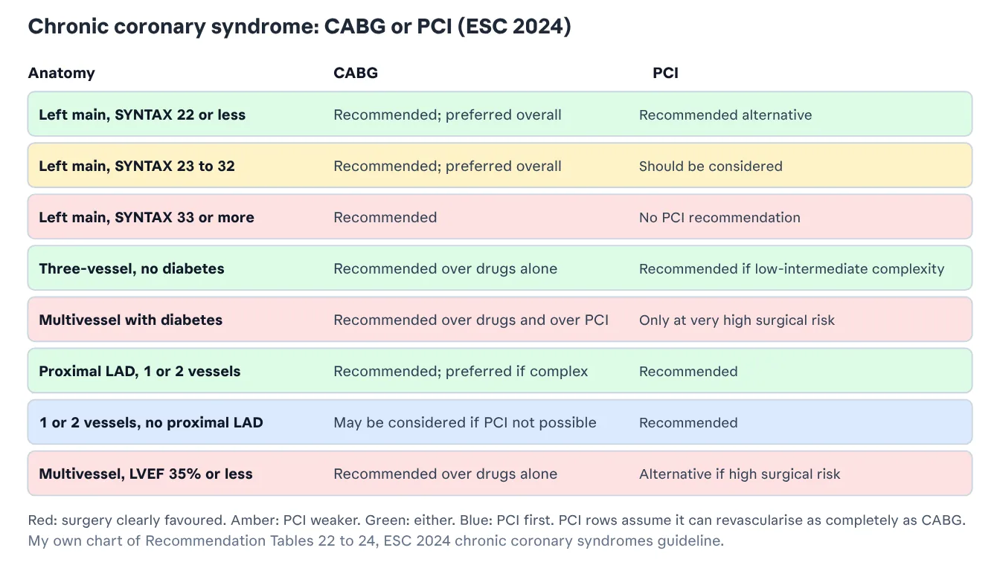
| Situation | Recommendation |
|---|---|
| Deciding | Heart Team protocols; decision centred on the patient; assess procedural risk; calculate the STS score for CABG (all recommended) |
| Left main, any | Revascularise for survival when ejection fraction is over 35% (recommended). At low surgical risk CABG is recommended over medical therapy and is the overall preferred mode over PCI, for fewer spontaneous infarcts and repeat procedures |
| Left main, SYNTAX 22 or less | PCI recommended as an alternative if it can revascularise as completely |
| Left main, SYNTAX 23 to 32 | PCI should be considered on the same condition |
| Three-vessel, no diabetes | CABG recommended over medical therapy for symptoms and survival; PCI recommended if low to intermediate complexity and equally complete |
| Multivessel with diabetes | CABG recommended over medical therapy and over PCI; PCI should be considered over medical therapy only at very high surgical risk |
| Proximal LAD, one or two vessels | CABG or PCI recommended over medical therapy; CABG recommended over PCI if complex and less suited to PCI |
| No proximal LAD | PCI recommended; CABG may be considered if PCI is not possible |
| Ejection fraction 35% or less | Choose between revascularisation and medical therapy after Heart Team review. In surgically eligible multivessel disease CABG is recommended over medical therapy for long-term survival. PCI may be considered at high surgical risk |
| Lesion assessment | Pressure wire for intermediate non-left-main lesions: FFR 0.80 or less, iFR 0.89 or less (recommended) |
| After CABG | Aspirin 75 to 100 mg lifelong, started as soon as bleeding allows (recommended). Dual antiplatelet therapy may be considered for those at higher risk of graft occlusion and low bleeding risk |
Not found in this guideline: conduit choice and operative technique. Those sit in the ESC/EACTS 2018 revascularisation guideline, which you have not sent.
Coronary surgery: indications, conduits, complications and the mechanical complications of infarction
Added 19 November 2026 from the TSRA Review 3rd ed., ch. 50 (Halub, Aziz) and ch. 51 (Luc, Abel). The indications below are the 2011 ACCF/AHA classes the chapter quotes. I have not read ESC/EACTS 2018 or ACC/AHA/SCAI 2021 as full text, so set these against the ESC 2024 revascularisation tables earlier in this tab before quoting a class.
What counts as significant, and three kinds of dysfunction
Significant stenosis is 70% diameter narrowing, or 50% for the left main stem.
| Left ventricular dysfunction | Mechanism | Reversible |
|---|---|---|
| Infarction | Muscle loss | No |
| Hibernation | Resting wall motion abnormality from chronic underperfusion | Yes, with revascularisation |
| Stunning | Transient dysfunction after reperfusion | Yes, with time |
Indications for bypass surgery (2011 ACCF/AHA, as quoted)
| Class I | Class IIa |
|---|---|
| Left main 50% or more, or left main equivalent | Two-vessel disease without proximal LAD, with extensive ischaemia |
| Three-vessel disease | Multivessel or proximal LAD disease with ejection fraction 35 to 50% |
| Disabling angina despite medical treatment | Proximal LAD with extensive ischaemia where the left internal mammary can be used |
| Ongoing ischaemia in non-ST elevation infarction despite treatment | Complex three-vessel disease (SYNTAX score over 22) |
| Survivors of sudden death with ischaemic ventricular tachycardia | Multivessel disease with diabetes |
| Failed or unsuitable PCI | Disabling angina when medical therapy is not tolerated |
Trials named in the chapter
| Trial | Question | Result as the chapter gives it |
|---|---|---|
| SYNTAX | PCI or surgery for three-vessel or left main disease | More adverse events with PCI at 12 months, driven by repeat revascularisation; death and infarction similar; stroke higher with surgery |
| STICH | Surgery added to medical therapy, ejection fraction under 35% | Lower cardiovascular death, and lower death or cardiovascular hospitalisation, with surgery |
| EXCEL | PCI or surgery for left main disease of low or intermediate complexity | No significant difference in death, stroke or infarction at 5 years |
| ISCHEMIA | Initial invasive or conservative strategy in stable disease with moderate or severe ischaemia | No reduction in ischaemic events or death over 3.2 years |
| ROOBY | On-pump or off-pump | Lower graft patency off-pump at 1 year; 28% higher risk of death at 5 years off-pump |
| GOPCABE | On-pump or off-pump, age 75 or over | No difference at 30 days or 1 year |
Conduits
| Conduit | Patency | Why |
|---|---|---|
| Left internal mammary artery | Over 95% at 5 years, about 90% at 10 | Non-fenestrated internal elastic lamina, high nitric oxide and prostacyclin output, no constriction to noradrenaline; survival benefit |
| Right internal mammary artery | Similar at 5 years | Bilateral pedicled harvest raises sternal wound risk |
| Radial artery | 83 to 95% at 5 years | Fenestrated lamina, thicker wall, prone to spasm; patency depends on competitive flow; Allen test first; avoid after intervention through it, and in diabetes with vascular disease |
| Long saphenous vein | About 50% at 10 years; up to 10% fail in 30 days | Early failure is technical or thrombotic; then intimal hyperplasia; then graft atheroma |
Off-pump surgery
Instability comes from right ventricular compression when the lateral wall is exposed, pressure from the stabiliser, and ischaemia. Counter it with head-down tilt, a short-acting alpha agonist, the mammary to LAD graft first, deep pericardial sutures and opening the right pleura. Off-pump surgery needs less blood and gives less early renal and cognitive dysfunction; on-pump surgery achieves more grafts, better circumflex grafting and possibly better patency.
Complications of coronary surgery (flagged critical in the syllabus)
| Complication | Frequency | Points |
|---|---|---|
| Bleeding | Severe in 3 to 5% | Re-explore for over 400 ml in 1 hour, over 300 ml an hour for 2 hours, over 200 ml an hour for 4 hours, or suspected tamponade. Stop clopidogrel 5 to 7 days before |
| Perioperative infarction | 2% | |
| Low cardiac output | 5 to 10% | Inotrope or mechanical support for over 30 minutes; act on a cardiac index under 2.0 once rate, rhythm, preload and afterload are corrected and tamponade excluded |
| Atrial fibrillation | 20 to 40% | Age, long clamp time, COPD, beta-blocker withdrawal; prevent with beta-blocker or amiodarone |
| Stroke | Type 1 deficit 1 to 3%; type 2 about 3% | Age over 70, previous stroke, carotid disease |
| Acute kidney injury | About 30%; dialysis in 1 to 5% | |
| Deep sternal wound infection | 1 to 3%; mortality 15% | Diabetes, obesity, smoking, bilateral pedicled mammary harvest, hyperglycaemia |
| Early vein graft occlusion | 5 to 10% | Technical; aspirin early |
| Death | 1 to 3% |
Redo coronary surgery
Mortality 3 to 8%, mostly perioperative infarction. Work-up: angiography including the mammary arteries, the old operation note, viability, conduit mapping, CT for retrosternal anatomy. In theatre: do not handle old vein grafts (embolism); clamp a patent mammary graft during cardioplegia; leave an old vein graft in place beside a new arterial graft if its stenosis is over 50%; place new distal anastomoses on native vessel. Redo sternotomy technique is in Cardiac 11.
Mechanical complications of myocardial infarction
All are class I indications for emergency surgery with grafting. Before theatre: reduce afterload, balloon pump, ECMO if needed. Suture only through non-infarcted muscle. Use vein if the patient is too unstable for a mammary harvest; add retrograde cardioplegia.
| Free wall rupture | Ventricular septal rupture | Papillary muscle rupture | |
|---|---|---|---|
| Incidence | 0.5 to 1.5% | About 0.2% now (1 to 2% before reperfusion) | About 0.25% |
| Timing | Within 14 days | About day 5 | Median 13 hours; diagnosed at 2 to 7 days |
| Site | Anterior or lateral wall; LAD 42%, circumflex 40%, right 18% | Anterior-apical with LAD occlusion (two thirds); inferobasal with right coronary occlusion (one third) | Posteromedial in 75% (single supply from the posterior descending artery); anterolateral 25% (dual supply) |
| Presentation | Tamponade, electromechanical dissociation; or subacute pericarditic pain with persistent ST elevation | Shock, harsh pansystolic murmur at the left sternal edge | Pulmonary oedema, shock; murmur may be soft |
| Diagnosis | Echo: tamponade | Echo; shunt ratio over 2; oxygen step-up over 9% from right atrium to pulmonary artery | Echo: flail leaflet; large V wave. Regurgitation is underestimated under anaesthesia |
| Without surgery | 63% dead at 90 days | 24% dead at 24 hours, 46% at 1 month, 80% at 2 months | 70 to 80% hospital mortality |
| With surgery | Operative mortality 12 to 30% | 30-day mortality 41%; anterior 30%, inferior 73% | Operative mortality 27%; 5-year survival 79%; grafting improves 15-year survival (64 against 23%) |
| Operation | Pledgeted mattress sutures in healthy muscle, or patch and glue | Left ventriculotomy through the infarct; patch closure after debridement, or infarct exclusion with a large patch sewn to healthy endocardium; graft first | Mitral replacement with chordal sparing; repair rarely |
Free wall rupture types: I, an abrupt tear without thinning; II, erosion covered by thrombus; III, perforation of a thinned aneurysm. A pseudoaneurysm is a contained rupture and is repaired; a true aneurysm rarely ruptures.
Time spent in cardiogenic shock before repair is the strongest predictor of death after septal rupture. Percutaneous device closure is for the highest-risk patients, late presenters and residual defects.
Catheter laboratory: testing, pressure-wire assessment and PCI complications
Added 19 November 2026 from the TSRA Review 3rd ed., ch. 52 (Dufendach, Kliner, Sultan). The syllabus asks for interpretation of coronary angiography including FFR.
Non-invasive tests
| Test | Use |
|---|---|
| Resting ECG | All patients with chest pain and no obvious non-cardiac cause |
| Exercise stress test (ECG, echo or nuclear) | Intermediate or high pre-test probability and able to exercise |
| Pharmacological stress (echo, nuclear or MRI) | Unable to exercise |
| CT coronary angiography | Intermediate or high risk when stress testing is contraindicated; some use it first |
Which lesion matters
| Measure | Significant |
|---|---|
| Angiographic narrowing | 50% left main; 70% other major arteries |
| Fractional flow reserve, under adenosine hyperaemia | 0.80 or less |
| Instantaneous wave-free ratio, no drug needed | 0.89 or less |
The wave-free ratio can assess serial lesions and is more comfortable. Revascularisation guided by either reduces urgent revascularisation compared with angiography alone. COURAGE (2007): PCI added to medical therapy in stable disease did not reduce death or infarction over 4.6 years.
By presentation
| Presentation | Pathway |
|---|---|
| ST elevation infarction | Immediate angiography; PCI is the primary treatment. Surgery if PCI cannot be done, if disease burden warrants it and theatre is immediate, or for a PCI complication |
| Non-ST elevation infarction | Admit, serial troponin, heparin, angiography; immediately if pain or enzymes worsen |
| Unstable angina | Angiography, timing by severity |
| Stable disease | Decide by anatomy, SYNTAX score and pressure-wire result, in a heart team; especially for unprotected left main or complex multivessel disease involving the LAD |
PCI in outline
Radial access with a 6 Fr sheath (less bleeding; outcomes similar to femoral). Heparin and a vasodilator. Angiography, then a 0.014 inch pressure wire across the lesion. Pre-dilate, deploy a drug-eluting stent, post-dilate with a non-compliant balloon. Intravascular ultrasound checks expansion and edge injury. Dual antiplatelet therapy for 12 months after an acute coronary syndrome and at least 6 months after stable disease.
Complications a surgeon is called for
| Complication | Frequency | Action |
|---|---|---|
| Coronary perforation or dissection | Theatre: graft beyond the injury and any other significant lesions | |
| Septal or free wall rupture after infarction | Days later | Emergency repair on bypass |
| Major bleeding within 30 days | 2 to 3% | |
| Periprocedural infarction | About 6% | Not a predictor of later death |
| Spontaneous infarction after 24 hours | Strong predictor of death | |
| Stroke within 30 days | Under 1% | |
| Stent thrombosis | Early | Back to the catheter laboratory |
| In-stent restenosis (50% or more within the stent or 5 mm of its edge) | 5 to 10% over 5 years | Repeat PCI or surgery |
Combined carotid and coronary artery surgery (TSRA)
Added 20 November 2026 from TSRA Review of Cardiothoracic Surgery 3rd ed., ch. 53 (Amir A. Sarkeshik and Victor Rodriguez). Read in full (pages 424 to 428). The screening criteria box and the four management diagrams are images in the PDF; read from the images. Guideline references are American (ACC/AHA, STS) as quoted by the chapter.
Epidemiology
- Stroke after isolated CABG: about 1.3% (STS Database, >1.5 million patients); perioperative mortality in those with stroke close to 20%.
- Major risk factors: age ≥65, prior stroke, renal failure, diabetes, hypertension, female sex.
- Cause: cardioembolic events from aortic manipulation and instrumentation about 75%; carotid stenosis roughly 5%.
- About 8% of CABG patients have severe extracranial carotid artery stenosis (ECAS, ≥70%), an independent risk factor for perioperative stroke. Whether carotid disease is the source or a surrogate marker remains debated.
| CAD severity | Prevalence of ECAS ≥70% |
|---|---|
| 1-vessel | 5% |
| 2-vessel | 13% |
| 3-vessel | 25% |
| Left main | 40% |
| ECAS severity | Stroke risk (men >65) |
|---|---|
| Stenosis <50% | 1.5% |
| Unilateral 50–99% | 3% |
| Bilateral 50–99% | 5% |
| Occluded carotid | 11% |
Left main disease is the main pointer to concomitant ECAS.
Who to screen (pre-CABG carotid duplex)
ACC/AHA features; having ≥1 corresponds with significant carotid disease and justifies a pre-CABG carotid duplex:
| Age ≥65 | Symptomatic peripheral arterial disease |
| Left main coronary stenosis | Hypertension |
| Prior stroke or TIA | Diabetes mellitus |
| Smoking history | Carotid bruit (+/−) |
- An isolated carotid bruit without other risk factors should not prompt duplex. Northern Manhattan Stroke Study: auscultation has low positive predictive value and sensitivity.
- STS (Choosing Wisely) recommends against screening low-risk, neurologically asymptomatic patients with a bruit.
Screening modality
- Carotid duplex ultrasound depends on flow velocity, so it can over-estimate stenosis; for example, contralateral occlusion falsely raises ipsilateral velocities.
- When needed, CTA or MRA gives a more accurate picture.
Decision to treat
- No randomised trial; guidelines rest on retrospective institutional series.
- Symptomatic ECAS is a universally accepted major risk factor.
- Over 90% of patients having combined CABG + CEA are asymptomatic from their carotid disease; justified by the late protective benefit of carotid revascularisation in severe asymptomatic disease.
- Ascher et al.: uncorrected severe asymptomatic carotid disease at CABG had a tenfold higher stroke rate (10% at 48 months) than those with concomitant CEA. Cumulative benefit of carotid revascularisation about 1% risk reduction per year.
- Asymptomatic unilateral ECAS: stroke risk with CABG alone about 2%; stroke rate of CEA for asymptomatic unilateral ECAS about 2.5%. Supports the idea that carotid disease is a surrogate for early neurological events, so treatment rests on longer-term protection.
Indications for combined CEA + CABG (Level of Evidence C, per chapter figure):
| Group | Criteria |
|---|---|
| Symptomatic (prior stroke or TIA) | Carotid stenosis ≥50% in men, ≥70% in women |
| Asymptomatic | Bilateral stenosis ≥50%, or unilateral ≥50% with contralateral occlusion (figure specifies men) |
Timing and type of revascularisation
- Sequence is driven by the most severe disease.
- Unstable angina with asymptomatic carotid disease: coronary revascularisation first.
- Stable CAD with symptomatic carotid stenosis, or asymptomatic bilateral ≥50% or unilateral ≥50% with contralateral occlusion: consider concomitant revascularisation.
| Surgical strategies | Definition |
|---|---|
| Staged CEA–CABG | CEA then CABG within <6 months |
| Reverse staged | CABG then CEA within <6 months |
| Concomitant CEA–CABG | CEA then CABG under the same anaesthetic |
| Stenting strategies | Definition |
|---|---|
| Staged CAS–CABG | Carotid stent then CABG weeks later |
| Same-day hybrid | Carotid stent then CABG the same day |
| Concomitant (true hybrid) | Carotid stent then CABG in the same theatre |
- Carotid stenting (CAS) gained ground after the SAFFIRE (as printed) and CREST trials showed non-inferiority to CEA with comparable adverse events. No randomised comparison in CABG patients; choice depends on patient, operator and institution.
- CAS needs dual antiplatelet therapy for a period: fourfold increase in bleeding risk if urgent CABG is needed. So in concomitant therapy, CEA is generally preferred; CAS can be considered for elective reverse-staged cases.
Suggested management (no consensus; approximate agreement)
| Carotid status | Coronary presentation | Strategy |
|---|---|---|
| Symptomatic carotid disease + ECAS ≥50% | ACS | Concomitant CEA–CABG |
| Symptomatic carotid disease + ECAS ≥50% | Stable angina | Concomitant or staged CEA–CABG |
| Asymptomatic, high-risk profile (bilateral ECAS ≥50%, or unilateral ECAS + contralateral occlusion) | ACS or stable angina | Concomitant CEA–CABG |
| Asymptomatic, low-risk profile | ACS or stable angina | CABG ± elective CEA or CAS, case by case |
Combined valve and coronary artery bypass grafting (TSRA)
Added 20 November 2026 from TSRA Review of Cardiothoracic Surgery 3rd ed., ch. 54 (Amir A. Sarkeshik and Victor Rodriguez). Read in full (pages 430 to 435).
Work-up
- Combined disease means longer, more complex operations with higher early and late mortality than either alone.
- Coronary revascularisation patients: echocardiogram to assess the valves.
- Valve patients who are >40 years, post-menopausal, or moderate-to-high risk for CAD on risk calculators: diagnostic coronary angiography.
- Identify the root cause of any myocardial dysfunction (ischaemic vs valvular).
- Current combinations: CABG + AVR; CABG + MV replacement or repair; CABG + AVR + MVR.
Aortic valve and CAD: physiology
- AS (usually degenerative calcific, mostly >60 years): raised afterload, concentric LVH, reduced diastolic compliance, reduced coronary flow reserve; coexisting CAD reduces it further. Relief is often immediate, dramatic and durable.
- AI (less common >60 years; causes: annuloaortic ectasia, rheumatic, bicuspid, endocarditis, connective tissue disorders): raised diastolic volume, LV dilatation and wall stress, higher O2 demand, reduced coronary flow reserve.
- AI + CAD presentations: (1) symptomatic CAD with incidental AI; (2) asymptomatic AI and CAD found from a diastolic murmur; (3) heart failure from AI volume overload, ischaemic cardiomyopathy, or both.
Indications
| Setting | Indication |
|---|---|
| Concomitant AVR at CABG | Moderate–severe AS or AI |
| Mild AS + rapid rise in transvalvular gradient (15–20 mmHg/year) | |
| Mild AS + rapid fall in valve area (0.3 cm²; time unit not printed) | |
| Concomitant CABG at AVR (or MV surgery) | Lesions with ≥70% luminal diameter reduction in major coronaries |
| Consider lesions ≥50% with reasonable targets (and clinical benefit) | |
| Concomitant MV surgery at CABG | Severe ischaemic MR not likely to resolve with revascularisation alone |
| Moderate ischaemic MR not likely to resolve with revascularisation alone | |
| Mild MR with heart failure symptoms | |
| Moderate-to-severe MS | |
| MVR at AVR + CABG | AS + CAD with moderate-to-severe MR |
Repair the mitral valve when possible; replace only non-repairable valves or those with severe organic dysfunction.
Operative sequence: CABG + AVR
- TEE.
- Aortic and dual-stage venous cannulation.
- Cross-clamp; antegrade + retrograde cardioplegia. With AI, antegrade is given via the coronary ostia after aortotomy. Retrograde for tight proximal coronaries, marked LVH, or AI.
- LV vent.
- Distal vein graft anastomoses.
- Cardioplegia down the vein grafts.
- Oblique aortotomy into the non-coronary sinus.
- AVR; close aortotomy.
- Distal mammary anastomosis.
- Proximal anastomoses.
Severe AS with a hypertrophied LV: keep the LV filled when weaning to avoid LVOT obstruction in systole and maintain preload.
Mitral valve and CAD
- Ischaemic MR: acute (papillary muscle rupture) or chronic (annular dilatation, LV remodelling, subvalvular distortion). Optimal therapy remains controversial.
- Organic MR causes: myxomatous, rheumatic, trauma, iatrogenic, endocarditis.
- MS (mostly rheumatic) and CAD are not interdependent, which makes management simpler.
Operative sequence: CABG + MV repair or replacement
- TEE. 2. CPB. 3. Cross-clamp; antegrade + retrograde cardioplegia. 4. LV vent. 5. Distal vein grafts. 6. Left atriotomy after dissecting the interatrial groove. 7. AF ablation ± LAA ligation if AF. 8. MV repair or replacement. 9. Close atriotomy. 10. Distal mammary anastomosis. 11. Proximal anastomoses.
Aortic + mitral + CAD
- Combined aortic and mitral disease presents earlier than isolated valve disease. Double regurgitation is usually rheumatic; AI symptoms may dominate, with MR secondary to CAD or AI.
- Work-up: history and examination focused on heart failure, echo, angiography. Irreversible severe ventricular dysfunction may make surgery prohibitive.
Operative sequence: 1. TEE. 2. CPB. 3. Cross-clamp; antegrade + retrograde cardioplegia. 4. LV vent. 5. Distal vein grafts. 6. Oblique aortotomy. 7. Excise the aortic valve but do not replace yet. 8. Left atriotomy via interatrial groove. 9. Any AF procedure. 10. MV repair or replacement. 11. Close atriotomy. 12. AVR. 13. Close aortotomy. 14. Distal mammary anastomosis. 15. Proximal anastomoses.
Postoperative points
- Strongest risk factors for 1-year mortality: advanced age, cardiogenic shock, heart failure.
- Patients often get worse before they improve: correcting AR can reduce preload; repairing MR causes an immediate rise in afterload. A dilated or ischaemic ventricle may lack reserve, and recruitment of hibernating myocardium takes time.
- Manage with close attention to biventricular function, cardiopulmonary physiology and systemic perfusion.
Carotid and subclavian disease in patients having coronary surgery (2024 ESC PAAD guidelines, front sections)
Added 20 November 2026 from Mazzolai L, Teixido-Tura G, Lanzi S, et al. 2024 ESC Guidelines for the management of peripheral arterial and aortic diseases. Eur Heart J 2024;45:3538–3700 (sections 3, 4, 5.1, 6.1.2 and 7, journal pp. 3550–3574). Read in full (PDF pages 1 to 42; this section from pages 13 to 37). The full carotid chapter (guideline section 8.2) lies beyond page 42; only the summary-table entries and screening content are given here.
Why it matters
- Ischaemic cerebral disease (prevalence 77.19 million, up 95% from 1990 to 2019) is mainly linked to carotid stenosis (65% of cases).
- A carotid bruit doubles the risk of MI and CV death.
- A difference in brachial SBP of more than 15 mmHg between arms raises CV death risk by 50%, so BP is measured in both arms.
Carotid screening
- Prevalence of asymptomatic ≥70% carotid stenosis in the general population is 0% to 3.1%, so population screening is not recommended (no stroke reduction, risk of anxiety and unnecessary procedures).
- Selective screening may be cost-effective where prevalence is ≥20%. Its aim is to prevent CV events, not to find candidates for intervention.
- Asymptomatic stenosis ≥70% carries a 5-year ipsilateral stroke risk of 14.6%, where revascularisation may help.
Table 6: high-risk populations for carotid stenosis
| Population | Prevalence of carotid stenosis |
|---|---|
| Age >60 with CV risk factors (hypertension, CAD, current smoking, first-degree family history of stroke) | Two risk factors 14%; three 16%; four 67% |
| Hypertension plus cardiac disease | 22% |
| Haemodialysis | High prevalence, with high peri-operative and long-term stroke or death rates; carotid stenosis predicts death in long-term dialysis patients aged ≥70 at surgery; lower risk after renal transplant |
| PAD | 23.2% |
| Severe CAD (before CABG) | Almost 20%; carotid bruit plus T2DM increases predictive value; carotid stenosis is a risk factor for peri-operative stroke |
| Carotid bruit | 31% |
| Previous neck irradiation | 21.7% (70% to 99% stenosis) |
Recommendations relevant to the cardiac surgical patient
| Recommendation | Class | Level | Status |
|---|---|---|---|
| Stable patients scheduled for CABG with TIA/stroke in the past 6 months and no carotid revascularisation: carotid duplex should be considered (2017: duplex in CABG patients with TIA/stroke <6 months, I B) | IIa | B | Revised |
| Two or more CV risk factors: screening for asymptomatic carotid stenosis may be considered | IIb | C | New |
| Duplex as first-line imaging to diagnose ICA stenosis (2017: duplex, CTA and/or MRA, I B) | I | C | Revised |
| Grade ICA stenosis by the NASCET method or its non-invasive equivalent | I | B | New |
| Do not use the ECST method for ICA stenosis | III | C | New |
| Bilateral arm BP measurement in all patients with PAAD | I | B | New |
| Subclavian stenosis needing treatment: endovascular revascularisation may be considered over surgery (similar long-term outcomes, fewer complications) | IIb | B | New |
| Routine revascularisation of atherosclerotic subclavian disease is not recommended | III | C | New |
| When managing PAAD, address the entire arterial circulation | I | B | New |
Polyvascular disease (new 2024)
| Recommendation | Class | Level |
|---|---|---|
| Polyvascular disease: LDL-C reduction ≥50% from baseline and goal <1.4 mmol/L (<55 mg/dL) | I | A |
| Stable polyvascular disease, symptomatic in at least one territory, not at high bleeding risk: rivaroxaban 2.5 mg b.i.d. plus aspirin 100 mg o.d. | IIa | A |
- Multisite artery disease means atherosclerosis in two or more vascular beds. It worsens outcomes, but screening for asymptomatic disease in additional beds has not been shown to improve them; coronary calcium scoring and carotid/femoral plaque screening can reclassify presumed moderate-risk patients upwards.
Medical therapy points for carotid disease
- Statin pre-treatment lowers recurrent stroke risk after TIA.
- GLP-1 receptor agonists reduced all strokes in a meta-analysis of eight trials in T2DM (HR 0.84, 95% CI 0.75–0.93) and recurrent MACE after MI or non-fatal stroke (HR 0.86, 95% CI 0.80–0.92). SGLT2 inhibitors do not appear to reduce stroke in T2DM.
ESC 2024 guideline: subclavian artery stenosis and the internal mammary artery graft
Added 20 November 2026 from Mazzolai L, Teixido-Tura G, Lanzi S, et al. 2024 ESC Guidelines for the management of peripheral arterial and aortic diseases. Eur Heart J 2024;45:3538–3700 (section 8.3.1). Read in full (PDF pages 59 to 60; journal pages 3596 to 3597).
Presentation and diagnosis
- Atherosclerotic upper-limb arterial disease is most often in the subclavian artery. Digital ischaemia is usually non-atherosclerotic (thrombo-embolism, systemic sclerosis, idiopathic, thromboangiitis obliterans, iatrogenic, cancer).
- Isolated subclavian stenosis is often silent; suspect it when the inter-arm systolic BP difference is >10 to 15 mmHg. A difference >25 mmHg doubles the prevalence and independently predicts mortality.
- MESA: asymptomatic subclavian stenosis in about 4.5% of adults (men 5.1%, women 3.9%), 11.4% in PAD.
- Subclavian steal: visual disturbance, syncope, ataxia, vertigo, dysphasia, dysarthria or facial sensory loss during arm use, correlating with the inter-arm BP difference. Brachiocephalic disease can also cause carotid or vertebral territory stroke or TIA, arm fatigue, pain and claudication, and in severe distal disease rest pain and digital necrosis.
Duplex criteria for subclavian stenosis
| Stenosis | Peak systolic velocity | PSV ratio |
|---|---|---|
| 50% | ≥230 cm/s | ≥2.2 |
| 70% | ≥340 cm/s | ≥3.0 |
- Monophasic post-stenotic waveforms are also a sign. Over 90% with ≥50% proximal stenosis have intermittent or continuous vertebral flow reversal, though not all are symptomatic. If steal is suspected, test vertebral flow reversal with hyperaemia and transcranial Doppler if available.
- Severe right brachiocephalic trunk disease lowers velocities in the ipsilateral subclavian and common carotid arteries.
- Abnormal or doubtful DUS: CTA or MRA. CTA is excellent for supra-aortic lesions and shows extravascular structures (useful if thoracic outlet syndrome is in the differential). MRA distinguishes antegrade from retrograde flow. DSA only if endovascular treatment is planned. PET is for arteritis, not atherosclerosis.
Treatment
- OMT for all symptomatic patients.
- Revascularisation is indicated for symptomatic disease: TIA or stroke, coronary-subclavian steal, ipsilateral haemodialysis access dysfunction, or impaired quality of life.
- Revascularisation should be considered in asymptomatic patients planned for CABG using the internal mammary artery, with ipsilateral dialysis access, or with significant bilateral stenosis or occlusion (to allow reliable BP measurement).
- No RCTs of endovascular vs open repair. The Danish Vascular Registry shows similar long-term symptom relief but more complications and longer stay after open surgery. Post-procedural stroke 1.3% after endovascular treatment and 0.9% to 2.4% after open surgery.
- Stenting vs balloon angioplasty alone: no conclusive difference (also for the innominate artery). Balloon-expandable stents give more radial force than nitinol in calcified ostial lesions. Endovascular is usually the default.
- Open options in selected low-risk patients, occlusions or failed endovascular treatment:
| Operation | Result |
|---|---|
| Subclavian-carotid transposition | Safe; 5-year patency 96% |
| Carotid-subclavian bypass with prosthetic graft | Low operative mortality and morbidity; 5-year patency 97% (especially extensive disease or re-occlusion after stenting) |
| Extrathoracic extra-anatomic bypass (axillo-axillary, carotid-axillary, carotid-carotid) | Axillo-axillary grafts occlude at 1 year in 14% |
| Transthoracic approach | For multivessel disease involving the arch and several supra-aortic vessels |
- Critical hand ischaemia from below-elbow disease is uncommon; interventions succeed often and major amputation is rare. If endovascular and open options are contraindicated: prostanoid infusion or thoracic sympathectomy may be considered.
- Follow-up: closer review of symptomatic patients, as many symptoms resolve spontaneously; after revascularisation, watch for late failure.
Recommendation Table 29: subclavian artery stenosis
| Recommendation | Class | Level |
|---|---|---|
| Bilateral arm BP measurement in all patients with peripheral arterial and aortic disease | I | B |
| Symptomatic atherosclerotic subclavian disease (TIA or stroke, coronary-subclavian steal, ipsilateral dialysis access dysfunction, severe ischaemia): consider both endovascular (± stent) and surgical options case by case in a vascular team | IIa | B |
| Endovascular over surgical revascularisation (similar long-term results, fewer complications) | IIb | B |
| Revascularise proximal stenosis in patients having CABG with the ipsilateral internal mammary artery | IIa | C |
| Revascularise proximal stenosis when the ipsilateral internal mammary artery is already grafted and there is evidence of myocardial ischaemia | IIa | C |
| Revascularise with ipsilateral haemodialysis arteriovenous access | IIa | C |
| Routine revascularisation of atherosclerotic subclavian disease | III | C |
2024 ESC chronic coronary syndromes guideline, part 1: definitions and the 2024 revascularisation recommendations
Added 20 November 2026 from Vrints C, Andreotti F, Koskinas KC, Rossello X, et al. 2024 ESC Guidelines for the management of chronic coronary syndromes, endorsed by EACTS. European Heart Journal 2024;45:3415–3537. Read in full (PDF pages 1 to 46, journal pages 3415 to 3460: front matter, sections 1 to 4.3.1.1.2). The full revascularisation chapter (section 4.4, Recommendation Tables 22 and 23, Table 9 on left main trials) lies on later pages read by another reader; the recommendations below are taken from the guideline's own summary tables of new (Table 3) and revised (Table 4) recommendations, which sit inside pages 12 to 19.
Status of the document
- Updates and replaces the 2019 ESC CCS guideline and partly replaces the 2018 ESC/EACTS myocardial revascularisation guideline.
- Endorsed by EACTS, which had representatives on the task force.
- Every recommendation needed at least 75% agreement among voting members.
Classes and levels
| Class | Meaning | Wording |
|---|---|---|
| I | Evidence and/or agreement that it is beneficial, useful, effective | Is recommended / is indicated |
| IIa | Weight of evidence or opinion in favour | Should be considered |
| IIb | Usefulness less well established | May be considered |
| III | Not useful or effective, may be harmful | Is not recommended |
| Level | Source |
|---|---|
| A | Multiple RCTs or meta-analyses |
| B | Single RCT or large non-randomised studies |
| C | Expert consensus and/or small, retrospective studies, registries |
Definitions
- CAD: atherosclerotic plaque accumulation in the epicardial arteries, obstructive or non-obstructive.
- CCS (new 2024 definition): a range of clinical presentations arising from structural and/or functional alterations of the coronary arteries and/or microcirculation, causing transient, reversible demand–supply mismatch (ischaemia), usually provoked by exertion, emotion or stress; may present as angina, other chest discomfort, dyspnoea, or be silent. Often progressive; can destabilise into ACS at any time.
- "Disease" = the coronary pathology; "syndrome" = the clinical presentation.
Mechanisms of ischaemia (Figure 1)
| Compartment | Structural | Functional |
|---|---|---|
| Epicardial | Focal or diffuse atherosclerosis; stabilised intramural haematoma; myocardial bridge; coronary aneurysm | Epicardial vasospasm (endothelial dysfunction, vascular smooth muscle hyperreactivity, autonomic dysregulation) |
| Microvascular | Inward arteriolar remodelling; capillary rarefaction; intravascular plugging; perivascular fibrosis or infiltration; extramural compression (hypertrophy, raised LVEDP) | Impaired vasodilation; increased vasoconstriction |
- Diffuse disease without a focal stenosis, bridging and congenital anomalies can cause ischaemia. Systemic contributors: anaemia, tachycardia, BP change, hypertrophy, fibrosis.
Five clinical presentations of CCS
- Stress-induced angina or ischaemia with obstructive epicardial CAD.
- ANOCA/INOCA (vasomotor or microvascular disease without obstructive CAD).
- Stabilised phase after ACS, PCI or CABG.
- LV dysfunction or heart failure of ischaemic or cardiometabolic origin.
- Asymptomatic people with CAD found on imaging (risk assessment, screening, incidental).
Context for revascularisation
- Modern medical therapy has improved survival with conservative care, making the benefit of early invasive therapy harder to show.
- Revascularisation still benefits obstructive CAD at high risk: symptom relief, prevention of spontaneous MI and cardiac death, and in some groups better overall survival.
- PCI has recently been shown to give more angina relief than a placebo procedure in stable angina with ischaemia on minimal or no antianginal therapy.
Heart team and shared decision (new 2024)
| Recommendation | Class | Level |
|---|---|---|
| For complex cases, especially when CABG and PCI carry the same class, Heart Team discussion (interventional cardiology, cardiac surgery, non-interventional cardiology, others as needed) to choose the treatment that best improves outcomes and quality of life | I | C |
| Decision on revascularisation and its modality should be patient-centred: preferences, health literacy, cultural circumstances, social support | I | C |
| Physicians should select the revascularisation modality on patient profile, coronary anatomy, procedural factors, LVEF, patient preferences and outcome expectations | I | C |
Revascularisation to improve outcomes: LVEF ≤35%
| Recommendation | Class | Level |
|---|---|---|
| LVEF ≤35%: choose between revascularisation and medical therapy alone after careful evaluation, preferably by the Heart Team, of anatomy, correlation between CAD and LV dysfunction, comorbidity, life expectancy, risk–benefit and patient view (new) | I | C |
| Selected CCS patients with functionally significant MVD and LVEF ≤35% at high surgical risk or inoperable: PCI may be considered as an alternative to CABG (revised) | IIb | B |
| HF with LVEF ≤35% and suspected obstructive CAD: ICA recommended with a view to improving prognosis by CABG, weighing procedural risk–benefit (new) | I | B |
| Selected HFrEF patients having high-risk PCI for complex CAD: microaxial flow pump may be considered in experienced centres (new) | IIb | C |
- 2018 wording replaced: PCI as alternative to CABG in 1–2-vessel disease with LVEF ≤35% when complete revascularisation achievable (IIa C); PCI in 3-vessel disease with LVEF ≤35% on Heart Team assessment of anatomy, completeness, diabetes and comorbidity (IIa C).
Left main disease (new and revised 2024)
| Recommendation | Class | Level |
|---|---|---|
| Low surgical risk, significant LM stenosis: CABG recommended over medical therapy alone to improve survival | I | A |
| Low surgical risk, significant LM stenosis: CABG recommended as the overall preferred mode over PCI, given lower risk of spontaneous MI and repeat revascularisation | I | A |
| LM stenosis of low complexity (SYNTAX ≤22) where PCI can give completeness of revascularisation equivalent to CABG: PCI recommended as an alternative to CABG (lower invasiveness, non-inferior survival) | I | A |
| LM stenosis of intermediate complexity (SYNTAX 23–32) where PCI can give equivalent completeness: PCI should be considered (lower invasiveness, non-inferior survival) | IIa | A |
| Listed under left main with multivessel disease: in patients at high surgical risk, PCI may be considered over medical therapy alone | IIb | B |
- 2018 equivalents: LM PCI with SYNTAX 0–22, I A; SYNTAX 23–32, IIa A; LM PCI with SYNTAX ≥33, III B. The 2024 table no longer carries a class III for high-SYNTAX LM PCI; it is replaced by the high-surgical-risk IIb B statement.
Multivessel disease and diabetes (revised)
| 2018 recommendation | Class/level | 2024 replacement | Class/level |
|---|---|---|---|
| Diabetes, 3-vessel disease, SYNTAX 0–22: PCI | IIb A | Very high surgical risk: PCI should be considered over medical therapy alone to reduce symptoms and adverse outcomes | IIa B |
| Diabetes, 3-vessel disease, SYNTAX >22: PCI | III A | (as above) | IIa B |
- The full multivessel and diabetes CABG-versus-PCI recommendations (Recommendation Table 23) are on pages outside this reading; see the companion section from the second reader.
Single- or double-vessel disease (revised)
| Recommendation (2024) | Class | Level |
|---|---|---|
| Significant 1- or 2-vessel disease involving the proximal LAD with insufficient response to GDMT: CABG or PCI recommended over medical therapy alone to improve symptoms and outcomes | I | A |
| Complex 1- or 2-vessel disease involving the proximal LAD, less amenable to PCI, insufficient response to GDMT: CABG recommended over PCI to improve symptoms and reduce repeat revascularisation | I | B |
| Symptomatic 1- or 2-vessel disease not involving the proximal LAD, insufficient response to GDMT: PCI recommended to improve symptoms | I | B |
| Same, not amenable to PCI: CABG may be considered to improve symptoms | IIb | C |
- 2018 equivalents: proximal LAD 1–2-vessel disease, CABG or PCI I A; non-proximal-LAD 1–2-vessel disease, PCI I C and CABG IIb C.
PCI procedural recommendations relevant to Heart Team discussion (new)
| Recommendation | Class | Level |
|---|---|---|
| IVUS or OCT guidance for PCI of anatomically complex lesions, especially left main stem, true bifurcations and long lesions | I | A |
| FFR, iFR or QFR to guide lesion selection in multivessel PCI | I | A |
| Same measurement at the end of PCI to identify patients at high risk of persistent angina and events | IIa | B |
| Same measurement at the end of PCI to find lesions amenable to further PCI | IIb | B |
Antithrombotic therapy after CABG and in CCS (new and revised)
| Recommendation | Class | Level |
|---|---|---|
| After CABG, aspirin 75–100 mg daily lifelong (new) | I | A |
| Prior MI or remote PCI: aspirin 75–100 mg daily lifelong after an initial period of DAPT | I | A |
| Prior MI or PCI: clopidogrel 75 mg daily is a safe and effective alternative to aspirin monotherapy | I | A |
| No prior MI or revascularisation but significant obstructive CAD: aspirin 75–100 mg daily lifelong (upgraded from IIb C) | I | B |
| Default after CCS PCI with no OAC indication: aspirin plus clopidogrel for up to 6 months | I | A |
| High bleeding risk, not high ischaemic risk: stop DAPT 1–3 months after PCI and continue SAPT | I | A |
| Neither high bleeding nor high ischaemic risk: stopping DAPT at 1–3 months may be considered | IIb | B |
| Long-term OAC indication: AF-dose VKA alone or, preferably, DOAC alone lifelong | I | A |
| PCI with OAC indication: aspirin stopped ≤1 week, then OAC plus clopidogrel up to 6 months (not high ischaemic risk) or 12 months (high ischaemic risk), then OAC alone | I | A |
| Aspirin up to 1 month after PCI on top of OAC and clopidogrel if high thrombotic risk or anatomy outweighs bleeding risk | IIa | B |
| Bleeding risk assessed with PRECISE-DAPT, ARC-HBR or another validated method | I | B |
2024 ESC chronic coronary syndromes guideline, part 2: invasive angiography, physiology and event risk before revascularisation
Added 20 November 2026 from Vrints C, Andreotti F, Koskinas KC, Rossello X, et al. 2024 ESC Guidelines for the management of chronic coronary syndromes, endorsed by EACTS. European Heart Journal 2024;45:3415–3537. Read in full (PDF pages 1 to 46; this section draws on pages 31 to 40, sections 3.3.3 to 3.3.5).
When to go straight to ICA (with pressure assessment available)
- Very high (>85%) clinical likelihood of obstructive CAD, especially severe symptoms refractory to antianginals, angina or dyspnoea at a low level of exercise, or LV dysfunction suggesting extensive CAD.
- Non-invasive tests suggest high event risk: CCTA with ≥50% left main stenosis, ≥70% proximal LAD stenosis with 1- or 2-vessel CAD, or ≥70% proximal 3-vessel CAD; or any stress test with moderate–severe inducible ischaemia; or symptoms highly suggestive of obstructive CAD.
- Uncertain non-invasive results.
- In very high likelihood patients going directly to ICA, stenoses <90% should be judged by pressure assessment before revascularisation.
- After first-line confirmation, ISCHEMIA showed no short-term survival benefit from early invasive strategy in patients without left main disease or reduced LVEF who had moderate–severe ischaemia; most such patients start with optimised GDMT. Referral to ICA if CCTA shows ≥50% LM, 3-vessel or 2-vessel disease including proximal LAD with ≥70% stenosis, or extensive moderate–severe ischaemia.
- Refractory symptoms: two or more antianginals can be optimised over about 6 weeks in almost all patients; wait for this before referral. ORBITA: PCI gave no short-term advantage over GDMT for angina frequency or physical limitation. CLARIFY: angina often resolved over time without revascularisation.
- Combined anatomical and functional imaging before ICA lets pressure assessment and ICFT be done in one session.
Recommendation Table 11: invasive coronary angiography
| Recommendation | Class | Level |
|---|---|---|
| Radial access preferred when ICA is indicated | I | A |
| Coronary pressure assessment available and used to assess intermediate non-LM stenoses before revascularisation | I | A |
| ICA to diagnose obstructive CAD with very high (>85%) likelihood, severe symptoms refractory to GDMT, angina at low exercise and/or high event risk | I | C |
| De novo symptoms highly suggestive of obstructive CAD at a low level of exercise: ICA with a view to revascularisation as first test after cardiologist assessment | I | C |
| FFR/iFR should be considered for intermediate left main stenoses before revascularisation | IIa | A |
| IVUS should be considered to assess intermediate left main stenoses before revascularisation | IIa | B |
- Intermediate = typically 40–90% diameter stenosis for non-LM vessels and 40–70% for the left main by visual estimate.
- Complications: femoral diagnostic catheterisation 0.5–2.0% major complications (mainly bleeding needing transfusion); radial access reduces mortality and major bleeding; radial composite death, MI or stroke about 0.1–0.2%.
Physiology: thresholds and evidence
| Index | Significant if | Notes |
|---|---|---|
| FFR (hyperaemic) | ≤0.80 | FAME 1, FAME 2, R3F, RIPCORD |
| iFR (resting) | ≤0.89 | DEFINE-FLAIR, iFR-SWEDEHEART |
| QFR (angiography-derived, wireless) | ≤0.8 | FAVOR III China: better outcomes than angiography guidance (fewer MI and ischaemia-driven revascularisation) |
| IMR | ≥25 U = microvascular dysfunction | Distal pressure at hyperaemia × hyperaemic mean transit time |
| Global FFR | Normal 3 (1+1+1) | Borderline FFR with global FFR <2.72 had higher risk |
- Visual severity correlates poorly with physiology (FAME, PRIME-FFR): 31% of 40–49% stenoses were significant; only 35% of 50–70% stenoses were significant; 20% of 71–90% were not. Only >90% stenosis predicted significance accurately (96% correct).
- LM and proximal LAD lesions supply more myocardium and are more often FFR-positive: optimal angiographic cut-off for a non-significant stenosis is 43% for the left main and 55% for small vessels; functional assessment threshold for large arteries should be 40% diameter stenosis.
- FFR added to ICA reclassified treatment in 30–50% (R3F, POST-IT, RIPCORD, DEFINE-REAL), without changing the number recommended for revascularisation.
- 5-year pooled DEFINE-FLAIR and iFR-SWEDEHEART: 2% absolute increase in all-cause death with iFR, without more unplanned revascularisation or non-fatal MI; deferral 50% (iFR) vs 45% (FFR); iFR-based deferral safe to 5 years.
- Routine pressure wire in all vessels (RIPCORD2, FUTURE) did not improve outcomes: measure intermediate lesions only.
- Pullback pattern (focal vs diffuse) helps select patients likely to benefit from PCI.
- FFR–CFR concordant normal: excellent prognosis. Abnormal FFR with normal CFR: good outcome to 5 years untreated. HSR (gradient divided by flow) is a strong diagnostic and prognostic index. CFC and MRR (continuous thermodilution) are newer indices.
- IVUS and OCT predict FFR well, especially in the left main; LM plaque burden predicted long-term death in unrevascularised patients.
- Thresholds must be weighed with symptoms and non-invasive results.
Recommendation Table 12: functional assessment during ICA
| Recommendation | Class | Level |
|---|---|---|
| Selective assessment of intermediate stenoses to guide revascularisation by FFR/iFR (≤0.8 / ≤0.89) | I | A |
| ...or by QFR (≤0.8) | I | B |
| CFR, HSR or CFC as complementary investigation | IIa | B |
| Resting Pd/Pa, dPR, RFR or angiography-derived vessel FFR as alternatives | IIb | C |
| Routine wire-based pressure assessment of all vessels | III | A |
Event-risk categories
- High event risk = cardiac mortality >3% per year; intermediate ≥1% to ≤3%; low <1%.
- LV function is the strongest predictor of long-term survival; LVEF <50% already confers high risk.
- Prognosis is driven mainly by the number of vessels with >70% stenosis or a left main stenosis >50% (CASS, ISCHEMIA). SCOT-HEART and CCTA registries: plaque burden and adverse plaque, especially low-attenuation plaque, are the strongest predictors of MI.
- Registries link extent of ischaemia to prognosis, but in COURAGE and ISCHEMIA only CAD severity (not ischaemia severity) independently predicted death and MI.
- PROMISE: CCTA, mainly by detecting non-obstructive CAD, outperformed functional testing for prognosis; adding the Framingham score removed the difference.
- Lower FFR/iFR means proportionally higher risk; for a given FFR, a more proximal lesion carries more risk.
Recommendation Table 14: definition of high risk
| Recommendation | Class | Level |
|---|---|---|
| Initial risk stratification on clinical assessment (age, ECG, anginal threshold, diabetes, CKD, LVEF) | I | B |
| High risk if one or more of the test results below | I | B |
| High-risk patients (regardless of symptoms): ICA, with FFR/iFR when appropriate, to refine risk and improve symptoms and outcomes by revascularisation | I | A |
| Test | High-risk result |
|---|---|
| Exercise ECG | Duke Treadmill Score < −10 |
| Stress SPECT or PET | Ischaemia ≥10% of LV myocardium |
| Stress echo | ≥3 of 16 segments with stress hypokinesia or akinesia |
| Stress CMR | ≥2 of 16 segments with perfusion defects, or ≥3 dobutamine-induced dysfunctional segments |
| CCTA | LM ≥50%; 3-vessel ≥70%; 2-vessel ≥70% including proximal LAD; or 1-vessel proximal LAD ≥70% with FFR-CT ≤0.8 |
- Exercise ECG markers of high cardiac mortality: ST depression at low workload with symptoms, low exercise capacity, complex ventricular ectopy or arrhythmia, abnormal BP response.
2024 ESC chronic coronary syndromes guideline, part 3: other new recommendations, lifestyle and antianginal therapy
Added 20 November 2026 from Vrints C, Andreotti F, Koskinas KC, Rossello X, et al. 2024 ESC Guidelines for the management of chronic coronary syndromes, endorsed by EACTS. European Heart Journal 2024;45:3415–3537. Read in full (PDF pages 1 to 46; this section draws on pages 13 to 18 and 40 to 46). Figure 9 (antianginal combinations) was read from a rendered image.
Secondary prevention: new and revised recommendations (Table 3/4)
| Recommendation | Class | Level |
|---|---|---|
| LDL-C goal <1.4 mmol/L (55 mg/dL) and ≥50% reduction from baseline | I | A |
| High-intensity statin up to highest tolerated dose for all CCS patients (revised) | I | A |
| Statin intolerant and not at goal on ezetimibe: add bempedoic acid | I | B |
| Not at goal on maximum statin plus ezetimibe: add bempedoic acid | IIa | C |
| SGLT2 inhibitor with proven CV benefit in T2DM with CCS, regardless of HbA1c or other glucose-lowering drugs | I | A |
| Semaglutide in CCS without diabetes, BMI ≥27 kg/m², to reduce CV death, MI or stroke | IIa | B |
| Low-dose colchicine 0.5 mg daily in atherosclerotic CAD to reduce MI, stroke and revascularisation | IIa | A |
| CCS with HF: multidisciplinary HF programme | I | A |
| Sacubitril/valsartan to replace ACE-I or ARB in HFrEF | I | B |
| HF with LVEF >35% and low–moderate (>5–50%) likelihood: CCTA or functional imaging | I | C |
| HFpEF with angina and non-obstructive arteries: PET or CMR perfusion, or invasive testing, for microvascular dysfunction | IIa | B |
| Mobile health interventions for adherence | I | A |
| Behavioural interventions; simplified regimens (fixed-dose combinations) | I | B |
| Multiprofessional and family involvement | I | C |
| Refractory angina with suspected ANOCA/INOCA: invasive coronary functional testing to define endotype | I | B |
| ANOCA/INOCA therapy guided by functional test results | IIa | A |
| Isolated vasospastic angina: CCBs | I | A |
| Vasospastic angina: nitrates to prevent recurrence | IIa | B |
| Endothelial dysfunction: ACE-I; microvascular angina with low flow reserve: beta-blockers | IIa | B |
| Overlapping endotypes: nitrate, CCB and other vasodilator combination | IIb | B |
| Same preventive therapy in women and men | I | C |
| HIV: watch antiretroviral–statin interactions | I | B |
| Asymptomatic: use CAC on previous chest CT for risk stratification | IIa | C |
| Asymptomatic: CACS to refine risk near treatment thresholds | IIb | C |
| Opportunistic screening with SCORE2/SCORE2-OP (revised) | I | C |
| New or worsening symptoms: risk stratification preferably by stress imaging (revised, now I C) | I | C |
Lifestyle targets (Table 7)
| Topic | Target |
|---|---|
| Lipids | LDL-C <1.4 mmol/L and ≥50% reduction |
| Diabetes | HbA1c <7.0% (53 mmol/mol) |
| Blood pressure | SBP 120–129 mmHg if tolerated |
| Weight | BMI 18.5–25 kg/m²; drugs or surgery in selected patients |
| Alcohol | <100 g/week (15 g/day) |
| Diet | Mediterranean; saturated fat <10% of energy |
| Activity | 30–60 min moderate activity >5 days/week; less sedentary time |
| Other | Influenza, pneumococcal, COVID-19 vaccination; treat sleep apnoea; PDE-5 inhibitors safe but never with nitrates; avoid e-cigarettes and passive smoking |
- Smoking cessation: 36% lower risk of premature death. NRT, bupropion, varenicline effective and not linked to more MACE.
- Weight: SELECT (semaglutide, CVD, overweight/obese, no diabetes) HR 0.80 for CV death, MI or stroke. STEP8: semaglutide −15.8% weight, liraglutide −6.4%. SURMOUNT-1: tirzepatide up to −20.9%. Bariatric surgery appears safe and effective in severe obesity.
- Exercise: aerobic ≥3 days/week (preferably 6–7) at moderate or moderate–high intensity; resistance 1–3 sets of 8–12 repetitions, ≥2 days/week, 8–10 exercises. Contraindicated with refractory or unstable angina, high-grade arrhythmia, decompensated HF, severe aortic dilatation, active thromboembolism.
Recommendation Table 15: risk reduction and exercise
| Recommendation | Class | Level |
|---|---|---|
| Informed discussion on CVD risk and treatment benefit | I | C |
| Multidisciplinary behavioural approaches plus drugs | I | A |
| Multidisciplinary exercise-based programme | I | A |
| 150–300 min/week moderate or 75–150 min/week vigorous aerobic activity, less sedentary time | I | B |
| Home-based cardiac rehabilitation and mobile health | IIa | B |
Antianginal therapy
- No drug is clearly better than another for symptoms; none improves long-term outcome except beta-blockers within 1 year after MI.
- Beta-blocker target resting heart rate 55–60 bpm. No large RCT supports beta-blockers after uncomplicated ACS with LVEF >40%; trials of withdrawal are ongoing.
- Beta-blocker plus DHP-CCB suits most patients needing combination.
- Cautions: beta-blockers not in sick sinus syndrome or AV conduction disease, caution in PAD and COPD; CCBs caution in HFrEF; ivabradine never with verapamil or diltiazem; ranolazine and trimetazidine suit low heart rate or BP.
| Recommendation (Rec Table 16) | Class | Level |
|---|---|---|
| Tailor drugs to patient, comorbidities, interactions, tolerability, mechanism, cost | I | C |
| Short-acting nitrates for immediate relief | I | B |
| Beta-blocker and/or CCB first for most patients | I | B |
| Beta-blocker plus DHP-CCB if monotherapy fails | IIa | B |
| Long-acting nitrates or ranolazine as add-on, or initial therapy in selected patients | IIa | B |
| Nitrate-free or low-nitrate interval with long-acting nitrates | IIa | B |
| Ivabradine add-on with LVEF <40% and poor control, or initial in selected patients | IIa | B |
| Nicorandil or trimetazidine as add-on, or initial in selected patients | IIb | B |
| Ivabradine add-on with LVEF >40% and no clinical HF | III | B |
| Ivabradine with non-DHP CCB or strong CYP3A4 inhibitors | III | B |
| Nitrates in HCM or with phosphodiesterase inhibitors | III | B |
| Drug (Figure 9) | Indicated | Contraindicated |
|---|---|---|
| Beta-blocker | Obstructive CAD, microvascular dysfunction, hypertension, AF, HFrEF (selected use in COPD, PAD, type 1 DM) | Sick sinus syndrome |
| DHP-CCB | Obstructive CAD, vasospasm, hypertension (selected use in HFrEF) | – |
| Diltiazem/verapamil | Obstructive CAD, vasospasm, AF | Sick sinus syndrome, HFrEF |
| Nitrates/nicorandil | Obstructive CAD, vasospasm (selected use in HFrEF) | HCM |
| Ivabradine | Selected use in HFrEF | Sick sinus syndrome |
| Ranolazine, trimetazidine | Obstructive CAD, microvascular dysfunction | – |
- Not recommended combination: diltiazem/verapamil with ivabradine.
Antiplatelet evidence (pages 46 onwards continue with the second reader)
- Standard therapy is SAPT, usually aspirin; DAPT 12 months after ACS and 6 months after CCS PCI.
- Aspirin vs none (secondary prevention meta-analysis): serious vascular events 8.2% to 6.7% per year; 15 fewer events per 1000 treated per year; major GI and extracranial bleeding 0.07% to 0.10% per year. 75–100 mg as effective as higher doses.
- CAPRIE (19 185 patients): clopidogrel 75 mg vs aspirin 325 mg, 8.7% relative reduction in ischaemic events.
- HOST-EXAM (5530, after 6–18 months of DAPT post-PCI): clopidogrel reduced the composite from 7.7% to 5.7% at 2 years.
- Meta-analysis of 7 trials (24 325, including post-CABG): P2Y12 monotherapy reduced CV death, MI and stroke versus aspirin, mainly MI; similar major bleeding, less GI bleeding and haemorrhagic stroke.
- GLOBAL LEADERS (15 968): ticagrelor monotherapy after 1 month of DAPT was not superior for death or new Q-wave MI.
ESC 2024 chronic coronary syndromes: antithrombotic therapy, including around CABG
Added 20 November 2026 from Vrints C, Andreotti F, Koskinas KC, Rossello X, et al. 2024 ESC Guidelines for the management of chronic coronary syndromes, endorsed by EACTS. Eur Heart J 2024;45:3415–3537. Read in full (PDF pages 46 to 92, journal pages 3460 to 3506; this section covers section 4.3.1, pages 46 to 52). Figure 11 and Table 8 were checked against the rendered pages.
Principles
- Standard therapy in epicardial atherosclerotic CAD: single antiplatelet therapy (SAPT), usually aspirin.
- DAPT (aspirin plus an oral P2Y12 inhibitor): 12 months after ACS (with or without PCI); 6 months after PCI for CCS. SAPT afterwards.
- High ischaemic risk with low bleeding risk: extended intensified antithrombotic therapy should be considered.
- Choice and duration depend on each patient's balance of ischaemic and bleeding risk.
Aspirin and P2Y12 monotherapy: evidence
| Evidence | Finding |
|---|---|
| Aspirin, IPD meta-analysis of secondary prevention (43 000 patient-years) | Non-fatal MI, non-fatal ischaemic stroke or vascular death 8.2% to 6.7% per year (RRR 31%, 22%, 9%); 15 fewer serious vascular events per 1000 treated for 1 year. Major GI/extracranial bleeding 0.07% to 0.10% per year. Total stroke 2.54% to 2.08% per year; coronary events 5.3% to 4.3% per year |
| Aspirin dose | 75–100 mg daily as effective as higher doses long term; no sex difference |
| CAPRIE (19 185; MI within 35 days, stroke within 6 months, or PAD; mean 1.9 years) | Clopidogrel 75 mg vs aspirin 325 mg: RRR 8.7% in ischaemic events |
| HOST-EXAM (5530; after 6–18 months of uneventful DAPT post-PCI; 72% ACS) | Clopidogrel vs aspirin: composite (death, MI, ACS readmission, stroke, BARC ≥3 bleeding) 7.7% to 5.7% at 2 years; held at 5.8 years (post hoc) |
| IPD meta-analysis, 7 trials, 24 325 (ACS, post-CABG, CCS) | P2Y12 monotherapy (clopidogrel 62%, ticagrelor 38%) reduced CV death/MI/stroke vs aspirin, mainly MI. Major bleeding similar; less GI bleeding and haemorrhagic stroke |
| GLOBAL LEADERS (15 968; 53% CCS) | Ticagrelor + aspirin 1 month then ticagrelor for 23 months: not superior for death or new Q-wave MI. Post hoc 1–2-year landmark: fewer ischaemic events but more BARC 3/5 bleeding than aspirin |
| TWILIGHT (7119; 35% CCS; high-risk PCI) | After 3 months of ticagrelor DAPT, ticagrelor 90 mg bd alone for 12 months reduced clinically relevant bleeding; death/MI/stroke 3.9% in both arms |
- TWILIGHT high-risk PCI = multivessel, stent length >30 mm, thrombotic lesion, two-stent bifurcation, left main, proximal LAD, or atherectomy-treated calcification.
- Ticagrelor monotherapy: evidence weaker; longest tested 23 months; only 90 mg bd tested; not approved for this use by the EMA when the guideline was written. Prasugrel monotherapy data: one single-arm study with 3 months of follow-up.
DAPT after PCI for CCS
- Aspirin plus clopidogrel. ALPHEUS (1883, 30 days): ticagrelor did not reduce PCI-related MI or major myocardial injury and increased minor bleeding.
- THEMIS (19 220 CCS, age ≥50, type 2 diabetes, no prior MI or stroke; median 40 months): ticagrelor plus aspirin marginally reduced ischaemic events but increased major bleeding, including intracranial haemorrhage.
- Default duration 6 months. MASTER-DAPT (4579 HBR, about 50% CCS): stopping DAPT after 1 month was non-inferior for ischaemic events and reduced major/clinically relevant bleeding (335 days).
- Meta-analysis of 11 RCTs, 9006 HBR patients (PRECISE-DAPT >25 or ARC-HBR): 1–3 months of DAPT reduced major bleeding, ischaemic events and CV mortality at 12 months.
Figure 11: antithrombotic therapy after PCI for CCS without an indication for OAC
| Pathway | Early phase | Long term |
|---|---|---|
| Not HBR, default | Aspirin + clopidogrel 6 months (I) | Aspirin or clopidogrel (I) |
| Not HBR, not high ischaemic risk | Aspirin + clopidogrel 1–3 months (IIb) | Aspirin or clopidogrel (I) |
| Not HBR, high ischaemic risk | Aspirin + clopidogrel 6 months (I); or aspirin + ticagrelor or prasugrel 1–6 months (IIb) | Aspirin + clopidogrel, aspirin + ticagrelor 60 mg bd, aspirin + rivaroxaban 2.5 mg bd, or aspirin + prasugrel (IIa); or ticagrelor 90 mg bd alone (IIb) |
| HBR | Aspirin + clopidogrel 1–3 months (I) | Aspirin or clopidogrel (I) |
- Doses: aspirin 100 mg od; clopidogrel 75 mg od; prasugrel 10 mg od (5 mg if age ≥75 or weight <60 kg).
- Prasugrel/ticagrelor instead of clopidogrel in high-thrombotic-risk stenting: complex left main, two-stent bifurcation, suboptimal result, prior stent thrombosis, known CYP2C19 2/3.
- Genotype or platelet-function testing: not routine in CCS. In high-risk PCI in a known CYP2C19 loss-of-function carrier, switching to ticagrelor or prasugrel is reasonable.
Extended intensified therapy (Table 8)
| Drug (added to aspirin) | Trial | Setting | NNT | NNH |
|---|---|---|---|---|
| Rivaroxaban 2.5 mg bd | COMPASS vs placebo | CAD or symptomatic PAD at high ischaemic risk | 77 | 84 (modified-ISTH major) |
| Clopidogrel 75 mg | DAPT trial (6505/9961) | Post-MI, tolerated DAPT 1 year (25% ACS, 22% prior MI) | 63 | 105 (moderate/severe GUSTO or BARC 2, 3, 5) |
| Prasugrel 10 mg (5 mg if <60 kg or ≥75 years) | DAPT trial (3456/9961) | Post-PCI for MI, tolerated DAPT 1 year | 63 | 105 |
| Ticagrelor 60/90 mg bd | PEGASUS-TIMI 54 | Post-MI, tolerated DAPT 1 year | 84 | 81 (TIMI major) |
DAPT trial NNT/NNH are pooled for clopidogrel and prasugrel.
- DAPT Study: 18 more months of DAPT 1 year after PCI reduced ischaemic events; more bleeding; all-cause death tended to rise; first-generation DES used.
- PEGASUS-TIMI 54: MI 1–3 years earlier plus at least one of age >65, diabetes, second MI, multivessel CAD or CKD. Ticagrelor reduced ischaemic events at 3 years; more TIMI major (not fatal) bleeding. 60 mg safer and approved. Greater benefit with diabetes, multivessel CAD, PAD.
- COMPASS: aspirin + rivaroxaban 2.5 mg bd (not rivaroxaban 5 mg bd alone) reduced ischaemic events; more major bleeding; no difference in intracranial or fatal bleeding; lower death rate. Greater benefit with diabetes, PAD, mild CKD, current smoking.
- Re-evaluate bleeding and ischaemic risk at regular intervals. No randomised data beyond trial follow-up.
Oral anticoagulation
- OAC monotherapy without a long-term OAC indication: not recommended. Old VKA trials (INR about 3.0–4.0) matched aspirin but with more major bleeding. COMPASS: rivaroxaban 5 mg bd alone no better than aspirin, more major bleeding. OAC may be considered if antiplatelets are not tolerated and bleeding risk is not high.
- About one in five AF patients need PCI. Five RCTs: double (OAC + P2Y12 inhibitor, mostly clopidogrel) vs triple therapy reduced bleeding without significantly more ischaemic events.
- AUGUSTUS: apixaban caused less bleeding than VKA in double or triple regimens. Aspirin reduced stent thrombosis, mainly within 30 days, at the cost of more bleeding.
- Standard for AF-PCI: DOAC + clopidogrel for up to 12 months; aspirin only during PCI up to a maximum of 30 days if high ischaemic risk. Highest bleeding risk: stopping clopidogrel at 6 (or 3) months and continuing OAC alone may be considered (IIb, C, in the text).
- Ticagrelor or prasugrel generally not in triple therapy. Ticagrelor (and possibly prasugrel) may be considered in double therapy when stent thrombosis risk is very high and bleeding risk low.
- After 6–12 months: OAC alone. A Japanese RCT (2236 AF patients; PCI or CABG >1 year earlier, or CAD not needing revascularisation; median 23 months): rivaroxaban alone vs rivaroxaban + SAPT gave less ISTH major bleeding and fewer deaths; MACE similar.
- Non-AF OAC indications (mechanical valves, where DOACs are not indicated, or VTE): evidence limited. In VTE with CCS, resume full-dose rivaroxaban/apixaban rather than the reduced extended doses.
CABG and antithrombotic therapy
- Low-dose aspirin lifelong. Continue up to the day of surgery; restart when bleeding is no longer a concern, possibly within 24 h.
- Preoperative stopping intervals:
| Drug | Stop before CABG |
|---|---|
| Prasugrel | ≥7 days |
| Clopidogrel | ≥5 days |
| Ticagrelor | ≥3 days |
| Rivaroxaban, apixaban, edoxaban, dabigatran | 1–2 days (drug and renal function) |
- DAPT and graft patency: meta-analysis of 4 RCTs (1316 patients, 3079 grafts, 3–12 months). Ticagrelor-based DAPT improved vein graft patency over aspirin alone. BARC 2–5 bleeding increased (BARC 3–5 not). No difference in CV death, CV death/MI/stroke, or death/MI/stroke/revascularisation. DAPT is therefore not routine after CABG for CCS. Consider it if graft occlusion risk is higher and bleeding risk is not high. Examples: endarterectomy, "stentectomy", poor vein graft quality.
- AF after CABG: about one-third of patients, at days 2–3. Higher stroke risk, but lower than AF unrelated to surgery. Early OAC: Danish cohort fewer thrombo-embolic events; Swedish cohort no reduction and more major bleeding. Longer and later-onset AF carry higher risk. Refer to 2024 ESC AF guidelines. Unknown whether aspirin added to OAC helps after CABG.
Proton pump inhibitors
- GI bleeding risk factors: older age, previous GI bleeding or peptic disease, high alcohol intake, chronic steroid or NSAID use, combined antithrombotics.
- Omeprazole and esomeprazole inhibit CYP2C19, which lowers clopidogrel's active metabolite. Use with clopidogrel is discouraged, but no clear effect on ischaemic events or stent thrombosis has been shown. PPIs do not increase MACE.
Recommendation Table 17: antithrombotic therapy
| Recommendation | Class | Level |
|---|---|---|
| Long term, no OAC indication. Prior MI or remote PCI: aspirin 75–100 mg lifelong after initial DAPT | I | A |
| Prior MI or remote PCI: clopidogrel 75 mg as a safe, effective alternative to aspirin | I | A |
| After CABG: aspirin 75–100 mg lifelong | I | A |
| No prior MI or revascularisation but significant obstructive CAD: aspirin 75–100 mg lifelong | I | B |
| Add a second antithrombotic agent to aspirin long term if ischaemic risk is enhanced and bleeding risk is not high | IIa | A |
| After PCI on ticagrelor-based DAPT, still high ischaemic risk, not HBR: ticagrelor 90 mg bd alone may be considered | IIb | C |
| After PCI, no OAC indication. Aspirin + clopidogrel for up to 6 months is the default after stenting | I | A |
| HBR but not high ischaemic risk: stop DAPT at 1–3 months, continue SAPT | I | A |
| Neither HBR nor high ischaemic risk: stopping DAPT at 1–3 months may be considered | IIb | B |
| High-thrombotic-risk stenting: prasugrel or ticagrelor instead of clopidogrel for the first month, up to 3–6 months | IIb | C |
| Long-term OAC indication. AF-dose VKA alone or, preferably, DOAC alone lifelong | I | B |
| PCI with OAC indication. Initial low-dose aspirin (loading if not on it) plus OAC and clopidogrel | I | C |
| DOAC in preference to VKA if eligible | I | A |
| Uncomplicated PCI: stop aspirin early (≤1 week), then OAC + clopidogrel up to 6 months (not high ischaemic risk) or 12 months (high ischaemic risk), then OAC alone | I | A |
| Aspirin up to 1 month with OAC + clopidogrel if high ischaemic risk or anatomical/procedural factors outweigh bleeding risk | IIa | B |
| Bleeding concerns prevail: rivaroxaban 15 mg rather than 20 mg during antiplatelet co-therapy | IIa | B |
| Bleeding concerns prevail: dabigatran 110 mg bd rather than 150 mg bd during antiplatelet co-therapy | IIa | B |
| VKA with antiplatelet therapy: aim for the lower part of the INR range and time in therapeutic range >70% | IIa | B |
| Ticagrelor or prasugrel as part of triple therapy | III | C |
| After CABG. Start aspirin as soon as there is no concern over bleeding | I | B |
| DAPT after CABG in selected patients at greater risk of graft occlusion and low bleeding risk | IIb | B |
| PPI. For the duration of combined antithrombotic therapy if GI bleeding risk is increased | I | A |
| PPI with a single antithrombotic, depending on individual GI bleeding risk | IIa | A |
- Enhanced thrombotic risk (also applicable to CABG): stenting of left main, proximal LAD or last patent artery; suboptimal stent deployment; stent length >60 mm; diabetes; CKD; two-stent bifurcation; CTO treatment; prior stent thrombosis on adequate therapy.
- Bleeding risk: PRECISE-DAPT or ARC-HBR.
ESC 2024 chronic coronary syndromes: lipid-lowering, RAAS, SGLT2/GLP-1 and anti-inflammatory therapy
Added 20 November 2026 from Vrints C, Andreotti F, Koskinas KC, Rossello X, et al. 2024 ESC Guidelines for the management of chronic coronary syndromes, endorsed by EACTS. Eur Heart J 2024;45:3415–3537. Read in full (PDF pages 46 to 92; this section covers sections 4.3.2 to 4.3.5, pages 53 to 55).
Lipid-lowering
- CCS counts as very high risk. Goal: LDL-C <1.4 mmol/L (<55 mg/dL) and ≥50% reduction from baseline. Second vascular event within 2 years on maximum tolerated statin: goal <1.0 mmol/L (40 mg/dL) may be considered.
- Statins: major vascular events fall 22%, all-cause mortality 10% and CHD mortality 20% per 1.0 mmol/L LDL-C reduction. High intensity (atorvastatin ≥40 mg or rosuvastatin ≥20 mg) lowers LDL-C by 45–50%. Avoid when pregnancy is planned, in pregnancy and in breastfeeding.
- Ezetimibe: a further 20–25% LDL-C reduction; modest event reduction after ACS (RRR 6.4%, ARR 2.0%). Second line, or first line if intolerant of all statins.
- PCSK9 inhibitors (alirocumab, evolocumab; subcutaneous every 2 or 4 weeks): LDL-C down 60% on top of a statin. Fewer non-fatal CV events, no effect on CV mortality. Safe over a median of 5 years. Cost limits use.
- Bempedoic acid: LDL-C down about 18% alone, 38% with ezetimibe. Reduced MACE in statin-intolerant patients.
- Inclisiran (siRNA, every 3–6 months): LDL-C down about 50%; outcome trial under way.
- High-dose statin pre-treatment or loading before elective PCI reduces periprocedural events; can be considered.
| Recommendation (Table 18) | Class | Level |
|---|---|---|
| LDL-C goal <1.4 mmol/L and ≥50% reduction from baseline | I | A |
| High-intensity statin up to highest tolerated dose for all CCS | I | A |
| Goal not met on maximum statin: add ezetimibe | I | B |
| Statin intolerant and goal not met on ezetimibe: add bempedoic acid | I | B |
| Goal not met on statin + ezetimibe: add PCSK9 inhibitor | I | A |
| Goal not met on statin + ezetimibe: add bempedoic acid | IIa | C |
| Recurrent atherothrombotic event on maximum statin: LDL-C goal <1.0 mmol/L (<40 mg/dL) | IIb | B |
ACE inhibitors, ARBs, ARNI
- ACE-Is reduce mortality, MI, stroke and HF in LV dysfunction, previous vascular disease and high-risk diabetes. Recommended (ARB if intolerant) with hypertension, LVEF ≤40%, diabetes or CKD unless contraindicated.
- Meta-analysis (24 trials, 61 961 patients) without HF: RAAS inhibitors reduced events and death only against placebo, not against active control. So not generally recommended without HF or high CV risk, unless needed for BP. An observational study found ACE-I/ARB survival benefit after PCI for STEMI/NSTEMI, whatever the LV function.
- Sacubitril/valsartan (LVEF ≤35%, 60% ischaemic): less HF hospitalisation and CV death than ACE-I; coronary events also lower on post hoc analysis.
| Recommendation (Table 21) | Class | Level |
|---|---|---|
| ACE-I (or ARB) with comorbidities such as hypertension, diabetes or HF | I | A |
| ACE-I in CCS at very high CV risk | IIa | A |
SGLT2 inhibitors and GLP-1 receptor agonists
- First-line in type 2 diabetes with ASCVD, whatever the glycaemic plan. SGLT2 benefit may come more from cardiorenal haemodynamic effects than from atherosclerosis. Dapagliflozin and empagliflozin reduce worsening HF or CV death in HFrEF and HFpEF, with or without diabetes.
- SELECT (17 604; established CVD, BMI ≥27, no diabetes): semaglutide 2.4 mg weekly; weight loss 9.4% vs 0.88% over 2 years; CV death, non-fatal MI or non-fatal stroke HR 0.80 (95% CI 0.72–0.90).
| Recommendation (Table 19) | Class | Level |
|---|---|---|
| T2DM + CCS: SGLT2 inhibitor with proven CV benefit (canagliflozin, dapagliflozin, empagliflozin, sotagliflozin), regardless of HbA1c or other glucose-lowering drugs | I | A |
| T2DM + CCS: GLP-1 RA with proven CV benefit (dulaglutide, efpeglenatide, liraglutide, semaglutide), regardless of HbA1c | I | A |
| No diabetes, BMI ≥27 or obese: semaglutide to reduce CV mortality, MI or stroke | IIa | B |
Anti-inflammatory agents
| Trial | Design | Result |
|---|---|---|
| CANTOS | Canakinumab vs placebo; >10 000 post-MI, CRP ≥2 mg/L | 300 mg every 3 months: CV death/MI/stroke 3.90 vs 4.50 per 100 person-years (HR 0.86; 95% CI 0.75–0.99). Not developed further: fatal infections, cost |
| Low-dose methotrexate trial | 15–20 mg weekly; 4786 with prior MI or multivessel CAD plus diabetes or metabolic syndrome | No benefit; stopped early for futility (median 2.3 years) |
| COLCOT | Colchicine 0.5 mg daily; 4745, MI <30 days | Composite 5.5% vs 7.1% (HR 0.77; 0.61–0.96). Pneumonia 0.9% vs 0.4%. All-cause death 43 vs 44 events |
| LODOCO2 | Colchicine 0.5 mg daily; 5500 stable CAD ≥6 months; median 2.4 years | Primary 6.8% vs 9.6% (HR 0.69; 0.57–0.83); CV death/MI/stroke 4.2% vs 5.7% (HR 0.72). Non-CV death 0.7 vs 0.5 per 100 person-years (HR 1.51; 0.99–2.31) |
| Meta-analysis (>12 000) | Colchicine vs placebo | MI RR 0.76; stroke RR 0.48; UA-driven revascularisation RR 0.61. CV death, all-cause death and GI events (dose ≤0.5 mg) not significantly different |
| Recommendation (Table 20) | Class | Level |
|---|---|---|
| Atherosclerotic CAD: low-dose colchicine 0.5 mg daily to reduce MI, stroke and revascularisation | IIa | A |
ESC 2024 chronic coronary syndromes: revascularisation part 1 (indications, ISCHEMIA, ischaemic cardiomyopathy, completeness, risk scores)
Added 20 November 2026 from Vrints C, Andreotti F, Koskinas KC, Rossello X, et al. 2024 ESC Guidelines for the management of chronic coronary syndromes, endorsed by EACTS. Eur Heart J 2024;45:3415–3537. Read in full (PDF pages 46 to 92; this section covers sections 4.4 to 4.4.4, pages 55 to 58).
General principles
- CABG and PCI both increase coronary flow capacity and prevent ischaemia under stress. Neither heals atherosclerosis. Both improve angina-related health status.
- Randomised and meta-analytic evidence shows a survival benefit of CABG over medical therapy in left main disease and three-vessel disease, particularly with LV dysfunction. Most of it predates ACE-Is/ARBs and statins.
- Meta-analyses suggest PCI may also improve CV survival. As with CABG, this seems to work through MI prevention.
- In surgically eligible patients with multivessel disease, CABG is superior to PCI and to medical therapy, particularly with diabetes and higher coronary complexity.
- Current controversies: routine early revascularisation vs optimal medical therapy; PCI vs CABG for complex CAD; the value of ischaemia testing for decisions.
Revascularisation vs medical therapy: evidence (section 4.4.1)
| Trial or analysis | Finding |
|---|---|
| ISCHEMIA (moderate/severe inducible ischaemia; no left main disease; LVEF not <35%; up to 5 years) | No significant benefit of initial invasive over conservative strategy for ischaemic CV events or all-cause death. Invasive arm: fewer spontaneous MIs, better angina-related health status |
| CLARIFY registry | Angina often resolves over time without treatment change or revascularisation; good outcomes |
| ORBITA 2 (stable angina, minimal or no antianginals, objective ischaemia) | PCI lowered angina symptom score vs placebo procedure |
| Post-ISCHEMIA meta-analyses | Similar overall survival. More procedural MI, but fewer spontaneous MIs, less unstable angina and less angina after revascularisation |
| Meta-analysis with longest follow-up | Revascularisation + GDMT reduced cardiac mortality vs GDMT alone. Benefit grew with follow-up and tracked lower spontaneous MI |
| ISCHEMIA, 5 years | Conservative arm had more spontaneous MIs, which were linked to later CV death |
| ISCHEMIA-EXTEND (7 years) | CV mortality 2.2% lower in absolute terms with invasive strategy (adjusted HR 0.78; 95% CI 0.63–0.96). Greatest in multivessel CAD (≥70% on CCTA; HR 0.68; 0.48–0.97). Offset by 1.2% more non-cardiac death. All-cause mortality not different (−0.7%) |
| Meta-analysis of 18 trials | Non-cardiac mortality not different between strategies (preserved or slightly reduced LVEF) |
| ISCHEMIA post hoc | Greater CAD severity linked to death, MI and the primary endpoint, especially multivessel disease and/or proximal LAD stenosis ≥70% on CCTA |
- Initial conservative management is generally preferred, but persistent symptoms despite antianginals justify revascularisation.
Reduced LV function: viability, revascularisation and modality (section 4.4.2)
- Ischaemic cardiomyopathy is the leading cause of HFrEF. Viable but dysfunctional myocardium may be stunned (repeated ischaemia) or hibernating (chronic hypoperfusion).
- Periprocedural risk is higher with LVEF ≤35%. Meta-analysis of 26 observational studies (4119 patients, mean EF 24.7%): CABG operative mortality 5.4% (95% CI 4.5–6.4%); 5-year actuarial survival 75%.
| Trial | Design | Result |
|---|---|---|
| PARR-2 | 430 suspected ischaemic cardiomyopathy; FDG-PET-assisted vs standard care | Non-significant trend at 1 year; no reduction in cardiac events at 5 years. Benefit when PET advice was followed (25% protocol violations excluded) |
| STICH | 1212 CAD, no left main disease, CABG-eligible, LVEF ≤35%; CABG + GDMT vs GDMT | Median 4 years: all-cause mortality not significantly reduced (HR 0.86; 0.72–1.04; P = .12). Median 9.8 years: all-cause mortality 66.1% to 58.9% (HR 0.84; 0.73–0.97); CV mortality 49.3% to 40.5% (HR 0.79; 0.66–0.93) |
| STICH subgroups | CV mortality benefit larger with three-vessel disease. All-cause benefit larger in younger patients (interaction P = .004) | |
| STICH viability substudy | Viability by SPECT and/or dobutamine echo in 50% (298 CABG, 303 GDMT) | No interaction between viability and LV function improvement or CABG survival benefit |
| REVIVED-BCIS2 | 700; EF ≤35%; extensive CAD suitable for PCI; viability in ≥4 dysfunctional segments; PCI + GDMT vs GDMT | 3.4 years: death or HF rehospitalisation not reduced (HR 0.99; 0.78–1.27; P = .96). Slight, temporary symptom gain; no LV function gain |
| REVIVED secondary analysis (87%) | Viability by CMR or dobutamine echo | Extent of viability did not predict benefit. More non-viable myocardium predicted worse outcome whether or not PCI was done, so viability may help risk stratification |
STICH vs REVIVED-BCIS2:
| Feature | REVIVED-BCIS2 | STICH |
|---|---|---|
| Age | About 10 years older | |
| Prior MI | 50% | 78% |
| Angina-free at baseline | 67% | 36% |
| Three-vessel disease | 38% | 60% |
| ICD / CRT | 21% / 53% | 2% / 19% |
| Follow-up | Shorter | Longer |
- CABG vs PCI in ischaemic HF: no direct RCT. Meta-analysis of 21 studies (mostly observational, 1983–2016): both improved survival over GDMT. CABG gave better survival and less MI and repeat revascularisation than PCI, with slightly more stroke.
- Two large registries show rising PCI use. They suggest lower mortality and MACE with CABG at LVEF ≤35%, but baseline differences (age, prior MI, CAD severity, completeness) mean caution. RCTs NCT05427370 and NCT05329285 are awaited.
- Viability definition remains unsettled (metabolism, contractile reserve or scar; dichotomous vs continuous). Aims should include preventing new ischaemic events and arrhythmias. Management should be integrated across imaging, HF, arrhythmia and revascularisation specialists.
Complete vs partial revascularisation (section 4.4.3)
- Complete revascularisation of all ischaemia-causing vessels and lesions is preferable. It may be limited by clinical setting, comorbidity, anatomy, age or frailty.
- SYNTAX PCI arm: higher residual SYNTAX score linked to higher mortality. Anatomically incomplete but functionally complete PCI did better than anatomically complete PCI.
- Unintended incomplete revascularisation is a marker of complexity and comorbidity. CTO is a major predictor of anatomical incompleteness. CTO PCI trials improved angina and QoL but not death or MI.
- Incomplete anatomical revascularisation in high-risk multivessel CAD: 32–56% after PCI vs 30–37% after CABG. Caveats: no uniform definition; staged PCI; 20–40% asymptomatic graft failure on CCTA within the first year after CABG. Choice of modality should not rest on completeness alone.
Risk and complexity scores (section 4.4.4)
| Tool | Points from the guideline |
|---|---|
| STS-PROM | Better than EuroSCORE II for perioperative mortality and complications after CABG, owing to continuous calibration. Bands for 30-day mortality: low <4%, intermediate 4–8%, high >8%. Can also assess PCI risk in multivessel disease. In EXCEL (left main), STS models predicted CABG but not PCI mortality and renal failure; STS stroke model predicted PCI better than CABG |
| Frailty, liver cirrhosis | Raise postoperative mortality; include in decisions |
| SYNTAX score | Angiographic complexity score for left main/multivessel CAD. Limitations: time-consuming; inter-observer variability (poor core-lab vs operator agreement); anatomy only, not plaque burden; no physiology or clinical variables. Machine learning may help |
| SYNTAX II | Adds clinical variables. Overestimated 4-year all-cause mortality in EXCEL |
| SYNTAX II 2020 | Built on SYNTAXES, validated in FREEDOM, BEST, PRECOMBAT. 5-year MACE c-index 0.62 (PCI) and 0.67 (CABG). Acceptable for 10-year mortality. No prospective external validation |
| BCIS-JS (myocardial jeopardy score) | Predicts mortality after PCI and assesses completeness; less used |
ESC 2024 chronic coronary syndromes: revascularisation part 2 (CABG vs PCI by anatomy, left main, diabetes, physiology, imaging, hybrid, Heart Team)
Added 20 November 2026 from Vrints C, Andreotti F, Koskinas KC, Rossello X, et al. 2024 ESC Guidelines for the management of chronic coronary syndromes, endorsed by EACTS. Eur Heart J 2024;45:3415–3537. Read in full (PDF pages 46 to 92; this section covers sections 4.4.5 to 4.4.7, pages 58 to 61). Table 9 (printed rotated) was read from the rendered page.
Single- or two-vessel disease
- PCI and CABG perform similarly for death, stroke or MI, with or without proximal LAD involvement.
- Complex LAD lesions: more late repeat revascularisation after PCI. CABG is more invasive, with longer stay and recovery.
Unprotected left main disease
- Trials enrolled patients eligible for both CABG and PCI, with anatomy allowing complete revascularisation either way. Only 6–40% of screened patients were enrolled; mean age <66 years; few comorbidities.
- Meta-analyses: death similar up to 5–10 years, even with high SYNTAX scores. Stroke higher with CABG; spontaneous MI higher with PCI.
IPD meta-analysis of four RCTs (4394 patients, 2005–2015):
| Outcome | PCI | CABG | HR (95% CI) |
|---|---|---|---|
| 5-year mortality | 11.2% | 10.2% | 1.10 (0.91–1.32); P = .33; ARD 0.9% |
| 10-year mortality | 22.4% | 20.4% | 1.10 (0.93–1.29); P = .25; ARD 2.0% |
| Spontaneous MI | 6.2% | 2.6% | 2.35 (1.71–3.23); P < .0001; ARD 3.5% |
| Stroke, overall | 2.7% | 3.1% | 0.84 (0.59–1.21); P = .36 |
| Stroke, first 12 months | 0.6% | 1.6% | 0.37 (0.19–0.69); P = .002 |
- Periprocedural MI depended on definition (protocol vs universal, the latter available in two studies only).
- Mortality: no difference with SYNTAX ≤32 or left main plus 0/1-vessel disease. Trend to higher mortality with PCI if SYNTAX >32 (HR 1.30; 0.92–1.84) and/or left main plus 2/3-vessel disease (HR 1.25; 0.97–1.60).
- Distal bifurcation involved in 75%; absence of bifurcation did not affect mortality. True bifurcation (Medina 1,1,1 or 0,1,1, both branches >50% narrowed, reference ≥2.75 mm) often needs two stents and has worse outcomes. 13% have residual ischaemia despite good angiography after left main bifurcation stenting, linked to higher CV mortality. Intracoronary imaging may improve results.
- Operator volume matters. A Chinese single-centre study found better outcomes above 15 cases a year. BCIS national data (6724 unprotected left main PCIs, 2012–2014): high-volume operators treated sicker, more complex patients yet had lower 12-month mortality (OR 0.54; 0.39–0.73).
- 2022 joint ESC/EACTS task force: both options are reasonable for stable left main disease, depending on patient preference, expertise and local volume. It proposed CABG class I, level A and PCI class IIa, level A.
- The 2024 guideline: CABG is the overall preferred mode when both are suitable (less spontaneous MI and repeat revascularisation). PCI is recommended as an alternative for low complexity (SYNTAX ≤22) where it can match CABG's completeness, given lower invasiveness and non-inferior survival.
Table 9: left main trials, PCI vs CABG
| Trial | Population | Primary endpoint | Follow-up | Result (PCI vs CABG) |
|---|---|---|---|---|
| PRECOMBAT (non-inferiority) | 600 new left main; stable or unstable angina, silent ischaemia, NSTEMI | Death, MI, stroke or ischaemia-driven TVR | 2 years | 1 year: 8.7% vs 6.7%; ARD 2% (−1.6 to 5.6); P = .01 for non-inferiority. 2 years: 12.2% vs 8.1%; HR 1.50 (0.90–2.52); P = .12 |
| PRECOMBAT extended | 5 years | 17.5% vs 14.3%; HR 1.27 (0.84–1.90); P = .26 | ||
| PRECOMBAT extended | 11.3 years (median) | 29.8% vs 24.7%; HR 1.25 (0.93–1.69) | ||
| SYNTAX | 1800 de novo three-vessel (1095) or left main (795) | Death, stroke, MI, repeat revascularisation | 1 year | Left main group: 15.8% vs 13.7%; P = .44 |
| SYNTAX | 3 years | Left main: 26.8% vs 22.3%; P = .20 | ||
| SYNTAX | 5 years | Left main: 36.9% vs 31.0%; HR 1.25 (0.93–1.69); P = .12 | ||
| SYNTAX extended (SYNTAXES) | All-cause death | 10 years | Left main: 27% vs 28%; HR 0.92 (0.69–1.22) | |
| NOBLE (non-inferiority) | 1201 left main; stable or unstable angina or NSTEMI | Death, non-procedural MI, repeat revascularisation, stroke | 3.1 years (mean) | 28% vs 18%; HR 1.51 (1.13–2.00); P = .004 for superiority |
| NOBLE extended | 4.9 years (median) | 28% vs 19%; HR 1.58 (1.24–2.01); P < .001 | ||
| EXCEL (non-inferiority) | 1905 left main, SYNTAX ≤32 | Death, stroke or MI | 3 years (median) | 15.4% vs 14.7%; ARD 0.7% (upper 97.5% limit 4%); P = .02 non-inferiority; HR 1.00 (0.79–1.26) |
| EXCEL extended | 5 years | 22.0% vs 19.2%; ARD 2.8% (−0.9 to 6.5); P = .13; OR 1.19 (0.95–1.50) |
Multivessel disease and diabetes
- SYNTAXES (10 years): all-cause death similar overall, but higher with PCI if SYNTAX ≥33 (HR 1.41; 1.05–1.89).
- Complex multivessel CAD with diabetes: 5-year mortality 15.7% after PCI vs 10.7% after CABG (HR 1.44; 1.20–1.77; P = .0001).
- FREEDOM: 1900 diabetics with multivessel disease, no left main, first-generation DES. Median 3.8 years (IQR 2.5–4.9): all-cause mortality 24.3% PCI vs 18.3% CABG (P = .01).
- FREEDOM extended follow-up: only 25 centres, 49.6% of patients followed to 8 years. Mortality 23.7% vs 18.7% (HR 1.32; 0.97–1.79; P = .076). Age interaction (median age 63.3 years): ≤63.3 years, 20.7% PCI vs 10.2% CABG; >63.3 years, 26.3% vs 27.6% (interaction P = .01).
Pressure-guided PCI in multivessel disease: FAME 3
- Repeat revascularisation is consistently higher after PCI, though falling with modern DES. FFR guidance reduces revascularisation and stent use compared with angiography-guided PCI.
- FAME 3: 1500 three-vessel CAD without left main; FFR-guided PCI with durable-polymer zotarolimus DES vs CABG.
| Outcome | FFR-guided PCI | CABG | Statistic |
|---|---|---|---|
| MACCE, 1 year | 10.6% | 6.9% | HR 1.5 (1.1–2.2); non-inferiority not met (P = .35) |
| MACCE, 3 years | 18.6% | 12.5% | HR 1.5 (1.2–2.0); P = .002 |
| Death, MI or stroke, 3 years | 12.0% | 9.2% | HR 1.3 (0.98–1.83); P = .07 |
| Death | 4.1% | 3.9% | HR 1.0; P = .88 |
| Stroke | 1.6% | 2.0% | HR 0.8; P = .56 |
| MI | 7.0% | 4.2% | HR 1.7 (1.1–2.7); P = .02 |
| Repeat revascularisation | 11.1% | 5.9% | HR 1.9 (1.3–2.7); P = .001 |
- Event rates in both arms were about half those of the SYNTAX three-vessel cohort for mortality. The MI gap was narrower. With SYNTAX ≤22, PCI outcomes were as good as CABG.
Post-PCI physiology and "virtual PCI"
- A quarter have residual ischaemia (FFR <0.80 or iFR ≤0.89) after angiographically successful PCI; about 80% from focal lesions missed on angiography.
- Further intervention can improve post-PCI iFR/FFR, but it stays ≤0.80 in 18%.
- iFR pullback or QFR mapping on angiography predicts post-PCI pressure and changes the plan in about 30%. AQVA (n = 300): post-PCI QFR ≥0.90 in 93.4% vs 84.9% (P = .009). DEFINE GPS and P4 are ongoing.
- FFR-CT/CCTA virtual PCI: non-invasive and shows plaque. Predicts post-PCI FFR; changed the plan in 31% of lesions and 45% of patients.
Intracoronary imaging in complex PCI
| Trial | Population | Result (imaging vs angiography guidance) |
|---|---|---|
| RENOVATE-COMPLEX PCI (74% IVUS, 26% OCT) | True bifurcation, long lesions, CTO | Cardiac death, TV-MI or TVR at 2 years 7.7% vs 12.3% (HR 0.64; 0.45–0.89) |
| OCTOBER (OCT) | True bifurcation | Cardiac death, TL-MI or TLR at 2 years 10.1% vs 14.1% (HR 0.70; 0.50–0.98) |
| ILUMIEN IV (OCT) | Diabetes, STEMI/NSTEMI and/or complex lesions | Target-vessel failure 7.4% vs 8.2% (HR 0.90; 0.67–1.19; P = .45). Definite/probable stent thrombosis 0.5% vs 1.4% (HR 0.36; 0.14–0.91) |
Hybrid revascularisation and conduits
- LIMA to the LAD system and multiple arterial grafting reduce graft occlusion and extend the durability of CABG.
- Hybrid = MIDCAB LIMA–LAD plus PCI to the other vessels. Off-pump hybrid may suit moderate-to-high surgical risk by avoiding cardiopulmonary bypass.
- About 0.1% of surgical revascularisations. Large registries: more bleeding, renal failure, MI and HF than PCI alone. One very small RCT: similar long-term outcomes. The NHLBI Hybrid Trial (NCT03089398) stopped early for slow enrolment (200 patients in 5 years).
- The guideline makes no conduit recommendations for primary CABG beyond these statements. For redo CABG see "revascularisation failure" below.
Shared decision-making and the Heart Team
- Elements: full explanation of the disease; options; risks, benefits and QoL impact of each; patient preferences and goals; the post-procedure course. Poor shared decision-making is linked to worse physical and mental outcomes, lower adherence and more emergency visits.
- Discuss in lay language: short-term procedural risk and long-term outcomes (survival, angina relief, QoL, late reintervention, prevention, uncertainty). PROMs are of growing interest.
- The patient may decline the Heart Team recommendation. Record the refusal in writing after full information. The team may then offer an alternative.
- Heart Team: clinical or non-invasive cardiologists, cardiac surgeons, interventional cardiologists, plus anaesthetists or others as needed. It may work on site or across hub-and-spoke centres.
- Discuss complex cases (high anatomical complexity, significant comorbidity, frailty) in the Heart Team. Heart Team/guideline discordance is common in older patients, complex disease and centres without on-site surgery, and these patients have higher mid-term mortality.
- Document the rationale and consensus in the notes. Decisions are driven mainly by long-term survival, but patient preferences must be respected.
- Institutional protocols (section 4.4.7): agreed by the Heart Team in line with guidelines. They set anatomical and functional complexity criteria and the clinical risk subsets that may or may not be treated ad hoc. Regular meetings audit indications, safety and effectiveness. Without on-site surgery, collaborative protocols and remote Heart Team meetings are needed.
ESC 2024 chronic coronary syndromes: revascularisation part 3 (recommendation tables)
Added 20 November 2026 from Vrints C, Andreotti F, Koskinas KC, Rossello X, et al. 2024 ESC Guidelines for the management of chronic coronary syndromes, endorsed by EACTS. Eur Heart J 2024;45:3415–3537. Read in full (PDF pages 46 to 92; this section covers Recommendation Tables 22 and 23, pages 62 to 63, checked with layout extraction).
Recommendation Table 22: revascularisation in CCS
| Recommendation | Class | Level |
|---|---|---|
| Informed and shared decisions. Give patients complete information on benefits, risks, consequences and alternatives as part of shared decision-making | I | C |
| Complex cases, especially when CABG and PCI have the same level of recommendation: Heart Team discussion (interventional cardiology, cardiac surgery, non-interventional cardiology, others as needed) | I | C |
| Communicate the Heart Team proposal in a balanced way, in language the patient understands | I | C |
| Decision patient-centred: preferences, health literacy, culture, social support | I | C |
| Heart Team (on site or with a partner institution) to develop institutional protocols in line with guidelines | I | C |
| Outcomes, LVEF >35%. Revascularisation + GDMT for functionally significant left main stenosis, to improve survival | I | A |
| Revascularisation + GDMT for functionally significant three-vessel disease, to improve long-term survival and reduce CV mortality and spontaneous MI | I | A |
| Revascularisation + GDMT for functionally significant one- or two-vessel disease involving the proximal LAD, to reduce CV mortality and spontaneous MI | I | B |
| Outcomes, LVEF ≤35%. Choose revascularisation or medical therapy after careful evaluation, preferably by the Heart Team: anatomy, link between CAD and LV dysfunction, comorbidity, life expectancy, risk–benefit, patient view | I | C |
| Surgically eligible, multivessel CAD, LVEF ≤35%: CABG over medical therapy to improve long-term survival | I | B |
| Selected patients with functionally significant multivessel disease, LVEF ≤35%, high surgical risk or inoperable: PCI may be considered as an alternative to CABG | IIb | B |
| Symptoms. Persistent angina or equivalent despite GDMT: revascularise functionally significant obstructive CAD | I | A |
| Risk assessment. Complex CAD: assess procedural risk and post-procedural outcomes to guide shared decisions | I | C |
| STS score to estimate in-hospital morbidity and 30-day mortality after CABG | I | B |
| SYNTAX score in multivessel obstructive CAD to assess anatomical complexity | I | B |
| IVUS or OCT guidance for PCI of anatomically complex lesions, especially left main, true bifurcations and long lesions | I | A |
| FFR/iFR or QFR to guide lesion selection in multivessel disease | I | A |
| FFR/iFR/QFR at the end of PCI to identify patients at high risk of persistent angina and events | IIa | B |
| FFR/iFR/QFR at the end of PCI to identify lesions for further PCI | IIb | B |
| Choice of modality. Choose by patient profile (age, frailty, cognition, diabetes, comorbidity), anatomy (multivessel with or without left main, complexity, likely completeness), procedural factors (local expertise and outcomes, surgical and interventional risk), LVEF, preferences and expected outcomes | I | C |
Recommendation Table 23: mode of revascularisation
| Anatomy | Recommendation | Class | Level |
|---|---|---|---|
| Left main | Low surgical risk: CABG over medical therapy to improve survival | I | A |
| Left main | Low surgical risk: CABG as the overall preferred mode over PCI (less spontaneous MI and repeat revascularisation) | I | A |
| Left main, low complexity (SYNTAX ≤22) | PCI as an alternative to CABG if it can match CABG's completeness (less invasive, non-inferior survival) | I | A |
| Left main, intermediate complexity (SYNTAX 23–32) | PCI should be considered if it can match CABG's completeness | IIa | A |
| Left main with multivessel disease | Low surgical risk, suitable anatomy: CABG over medical therapy to improve survival | I | A |
| Left main with multivessel disease | High surgical risk: PCI may be considered over medical therapy | IIb | B |
| Multivessel disease and diabetes | Insufficient response to GDMT: CABG over medical therapy and over PCI to improve symptoms and outcomes | I | A |
| Multivessel disease and diabetes | Very high surgical risk: PCI over medical therapy to reduce symptoms and adverse outcomes | IIa | B |
| Three-vessel disease, no diabetes | Preserved LVEF, insufficient response to GDMT: CABG over medical therapy to improve symptoms, survival and other outcomes | I | A |
| Three-vessel disease, no diabetes | Preserved LVEF, low-to-intermediate complexity, PCI can match CABG's completeness: PCI recommended (less invasive, generally non-inferior survival) | I | A |
| One or two vessels, proximal LAD | Insufficient response to GDMT: CABG or PCI over medical therapy to improve symptoms and outcomes | I | A |
| One or two vessels, proximal LAD, complex | Less amenable to PCI, insufficient response to GDMT: CABG to improve symptoms and reduce revascularisation | I | B |
| One or two vessels, not proximal LAD | Symptomatic, insufficient response to GDMT: PCI to improve symptoms | I | B |
| One or two vessels, not proximal LAD | Not amenable to PCI: CABG may be considered to improve symptoms | IIb | C |
- Low surgical risk means, for example, no previous cardiac surgery and no severe comorbidity, frailty or immobility precluding CABG.
- Multivessel disease means involvement of at least two main coronary arteries.
- Wording difference: Table 10 ("What to do") words the complex proximal LAD recommendation as "CABG is recommended over PCI", while Table 23 says only "CABG is recommended". Class I, level B in both.
Exam summary from section 7 of the guideline
- Functionally significant multivessel CAD: revascularisation beats GDMT alone for symptoms, spontaneous MI and CV mortality at long follow-up.
- Normal LV function without significant left main or proximal LAD disease: revascularisation does not prolong overall survival.
- Ischaemic cardiomyopathy: CABG prolongs overall survival over GDMT at very long follow-up.
- Complex multivessel CAD without left main disease, especially with diabetes, suitable for both: longer survival after CABG than PCI.
- Suitable for both: more repeat revascularisation after PCI, whatever the anatomical severity.
ESC 2024 chronic coronary syndromes: angina/ischaemia with non-obstructive coronary arteries (ANOCA/INOCA)
Added 20 November 2026 from Vrints C, Andreotti F, Koskinas KC, Rossello X, et al. 2024 ESC Guidelines for the management of chronic coronary syndromes, endorsed by EACTS. Eur Heart J 2024;45:3415–3537. Read in full (PDF pages 46 to 92; this section covers section 5.2, pages 65 to 71).
Definition and prevalence
- ANOCA: angina without obstructive epicardial disease. INOCA: ischaemia is shown. Demonstrable ischaemia in 10–30%, depending on the test.
- Non-obstructive arteries at angiography: about 50–70% of women vs 30–50% of men.
- ILIAS registry: ANOCA in up to 70% of patients having angiography and functional testing; 25% of these have documented ischaemia. Of those tested with acetylcholine (ACh): endothelial dysfunction 80%, positive ACh test (vasospasm) 60%, impaired CFR (≤2.5) and/or high microvascular resistance 50%. So test all ANOCA, not only INOCA.
- Endotypes on invasive testing with ACh and adenosine: endothelial dysfunction; impaired vasodilation (low CFR and/or high microvascular resistance); epicardial vasospasm; microvascular vasospasm; combinations; equivocal.
Endotypes
- Microvascular angina (MVA): structural or functional microvascular change (low CFR, reduced conductance) and/or arteriolar vasoconstriction. Prevalence 26% with transthoracic Doppler CFVR <2; 39–54% with invasive or PET assessment.
- CMD threshold: CFR <2.0–2.5. Thermodilution CFR <2.0 is insensitive; using <2.5, as for Doppler, gives reasonable accuracy.
- Associations: smoking, age, diabetes, hypertension, dyslipidaemia, SLE, rheumatoid arthritis, post-menopausal inflammatory disease, psychosocial stress.
- Vasospastic angina (VSA): dynamic epicardial obstruction. Coexisting MVA worsens prognosis. Multiple spasm (≥2 arteries): Japanese 24.3%, Taiwanese 19.3%, Caucasians 7.5%.
Prognosis
- Poor QoL, disability, readmissions, repeat angiograms, mortality.
- Death and MI are higher with non-obstructive atherosclerosis than with normal arteries.
- MVA by PET or echo: 2–4 times the risk of adverse CV outcomes. Epicardial endothelial dysfunction: twice the risk.
- VSA: sudden death, acute MI, syncope.
- Adding intracoronary physiology to non-invasive tests separates subgroups with up to four-fold differences in long-term events.
Diagnosis
- Diagnosis rests on invasive functional evaluation; nothing images the microcirculation directly. Non-invasive CFR tests (stress echo, PET, perfusion CCTA, CMR) have excellent negative predictive value, but obstructive CAD must be excluded first.
Invasive thresholds:
| Measure | Abnormal |
|---|---|
| CFR (Doppler or thermodilution) | <2.5 |
| IMR | ≥25 (Figure 13 shows >25) |
| HMR (Doppler) | >2.5 mmHg/cm/s |
| MRR | <2.7 |
- Continuous thermodilution is less variable than bolus thermodilution.
- ACh protocol (Figure 14): stop CCBs and nitrates ≥24 h before. Give intracoronary boluses over 60 s of 2 µg, 20 µg (endothelial function), then 100 µg and 200 µg (spasm). Angiogram after each dose. Stop escalating once spasm occurs. Then nitroglycerine 200 µg ic, then adenosine 200 µg ic (or iv) for CFR and resistance. Monitor ECG, symptoms and, if possible, Doppler flow throughout.
- Target vessel: usually the LAD. The circumflex is included if ACh is given into the left main. Test the RCA if initial tests are negative and suspicion is high.
- Bradycardia from ACh (especially RCA or dominant circumflex): selective LAD infusion, prophylactic pacing, lower dose; atropine reverses it. ACh acts briefly, unlike ergonovine.
- Epicardial spasm: symptoms, ischaemic ECG changes and ≥90% lumen reduction. Microvascular spasm: symptoms and ECG changes with <90% reduction.
- Papaverine if adenosine is contraindicated; risk of polymorphic VT.
- Consent should mention unlicensed parenteral ACh. An experienced interventional cardiologist should perform the test.
Management (Figure 15)
- Lifestyle and risk-factor control for all.
- Endothelial dysfunction or coexisting atherosclerosis: statins and ACE-I.
- Microvascular, impaired vasodilation: beta-blocker, CCB, ranolazine, trimetazidine, ivabradine. Amlodipine or ranolazine improved exercise time.
- Microvascular vasoconstriction: CCB, second CCB, nitrates. Epicardial spasm: CCB, nitrates, nicorandil.
- Severe VSA: high-dose diltiazem (2 × 200 mg daily or more, up to 960 mg) or a non-dihydropyridine plus dihydropyridine CCB. Diltiazem up to 360 mg/day did not improve CMD symptoms over 6 weeks but did reduce epicardial spasm.
- Spinal cord stimulation for refractory cases. Ongoing trials: WARRIOR (intensive statin + ACE-I/ARB in women), PRIZE (zibotentan).
Recommendation Table 25
| Recommendation | Class | Level |
|---|---|---|
| Persistent symptoms despite treatment, suspected ANOCA/INOCA (normal or non-obstructive arteries, or intermediate stenoses with normal FFR/iFR) and poor QoL: invasive coronary functional testing to find treatable endotypes | I | B |
| Transthoracic Doppler of LAD, stress echo, CMR or PET for non-invasive coronary/myocardial flow reserve | IIb | B |
| Suspected VSA: resting 12-lead ECG during angina | I | C |
| Suspected VSA with repeated rest angina and ST changes that resolve with nitrates and/or CCBs: invasive functional testing to confirm and assess atherosclerosis | I | C |
| Suspected VSA with frequent symptoms: ambulatory ST monitoring | IIa | B |
| Medical therapy based on functional test results | IIa | A |
| Endothelial dysfunction: ACE-I for symptoms | IIa | B |
| MVA with reduced flow reserve: antianginals aimed at preventing demand ischaemia | IIa | B |
| Isolated VSA: CCBs to control symptoms and prevent ischaemia and fatal complications | I | A |
| Isolated VSA: nitrates to prevent recurrence | IIa | B |
| Overlapping endotypes: nitrates, CCBs and other vasodilators combined | IIb | B |
ESC 2024 chronic coronary syndromes: specific groups, screening, follow-up, revascularisation failure and refractory angina
Added 20 November 2026 from Vrints C, Andreotti F, Koskinas KC, Rossello X, et al. 2024 ESC Guidelines for the management of chronic coronary syndromes, endorsed by EACTS. Eur Heart J 2024;45:3415–3537. Read in full (PDF pages 46 to 92; this section covers sections 5.3, 5.4, 6.1 to 6.5, pages 71 to 82).
Specific groups (section 5.3)
- Older adults (≥75 years): often present atypically; frailty, comorbidity, cognition and QoL guide care. Under-represented in RCTs. More vulnerable to bleeding, renal failure and neurological injury with either strategy. DES with short DAPT beats bare-metal stents. Frailty is of utmost importance.
- Sex: women are under-represented and under-treated. Female-specific risk factors include premature menopause, hypertensive disorders of pregnancy, pre-term delivery, gestational diabetes, small-for-gestational-age delivery, placental abruption and pregnancy loss. Women have shorter survival after PCI and CABG. After PCI, women had higher 5-year MACE and TLR, mainly explained by more risk factors. Death or Q-wave MI at 2 years was similar, but women had more bleeding and haemorrhagic stroke. HRT does not reduce ischaemic heart disease.
- High bleeding risk: ARC-HBR = at least one major or two minor criteria. Short DAPT (1–3 months) with DES is beneficial.
- Inflammatory rheumatic disease: 2–3 times more asymptomatic ASCVD; carotid plaque may be sought; standard prevention.
- Hypertension: target systolic 120–129 mmHg if tolerated. If systolic is on target but diastolic ≥80, aim for diastolic 70–79. More lenient (e.g. 140/90) at ≥85 years or with symptomatic orthostatic hypotension. After MI: beta-blockers and RAS blockers first line.
- AF: amiodarone or dronedarone for rhythm control as an alternative to ablation; sotalol may be considered. Surgical AF ablation during isolated CABG appears safe and improves long-term outcomes. Concomitant surgical left atrial appendage closure is recommended with OAC in AF patients having cardiac surgery such as CABG, to prevent stroke (see 2024 ESC AF guidelines).
- Valvular heart disease: ICA or CCTA when valve surgery is needed or the approach is undecided and CAD is possible. ICA in secondary MR (often ischaemic). Routine stress testing in severe symptomatic VHD is not recommended. FFR/iFR are unreliable, especially in aortic stenosis. Use beta-blockers cautiously in aortic valve disease. CABG is recommended with a primary indication for aortic, mitral or tricuspid surgery and significant coronary stenosis. PCI should be considered before TAVI or transcatheter mitral intervention if proximal stenosis is >70%.
- CKD: prevent AKI with the lowest dose of low- or iso-osmolar contrast and pre- and post-hydration. ISCHEMIA-CKD (eGFR <30 or dialysis): invasive strategy not superior for death or MI. Propensity-matched (5920; 2960 pairs): second-generation DES PCI had less death, stroke and repeat revascularisation at 30 days than CABG, but more late repeat revascularisation. Dialysis patients: findings favour CABG. Meta-analysis of 11 registries (eGFR <60): less death, MI and repeat revascularisation with CABG. No large RCTs.
- Cancer: management as without cancer. Revascularisation decided by a multidisciplinary team (life expectancy, thrombocytopaenia, thrombosis and bleeding risk, drug interactions). Spontaneous bleeding may herald a cancer diagnosis.
- HIV: twice the CVD risk. Simvastatin and lovastatin are contraindicated with protease inhibitors. Atorvastatin has less CYP3A4 interaction. Pravastatin, fluvastatin, pitavastatin and rosuvastatin are minimally metabolised by CYP3A4. Ezetimibe has no interaction.
- Socioeconomic and ethnic groups: low socioeconomic status costs 2.1 years of life expectancy (ages 40–85). South Asians have more diffuse multivessel disease and more CYP2C19 loss-of-function alleles (poor metabolisers 13% vs 2.4%), which reduces clopidogrel efficacy.
| Recommendation (Table 26) | Class | Level |
|---|---|---|
| Age ≥75: attention to side effects, intolerance, interactions, overdosing, procedural complications | I | C |
| Older adults: diagnostic and revascularisation decisions on symptoms, ischaemia, frailty, life expectancy, comorbidity, preferences | I | C |
| Same preventive therapy in women and men | I | C |
| Systemic post-menopausal hormone therapy in women with CCS | III | A |
| Bleeding risk assessed with PRECISE-DAPT, ARC-HBR or another validated method | I | B |
| HIV: attention to antiretroviral–statin interactions | I | B |
| Targeted efforts to deliver care to lower socioeconomic groups and include under-represented groups in trials | I | C |
Screening asymptomatic people (section 5.4)
- Swedish Cardiopulmonary Bioimage Study (25 182 without known CAD; random CCTA): plaque in 42%, obstructive stenosis in 5%. Men 50–54 vs 60–64 years: 41% vs 69%; women 19% vs 40%. PESA: 63% of asymptomatic middle-aged people had subclinical atherosclerosis.
- Systematic risk-factor screening did not affect outcomes; opportunistic screening is recommended. CAC on non-gated chest CT done for other reasons should be reported visually (none, mild, moderate, severe). Calcified plaque alone does not justify further imaging.
| Recommendation (Table 27) | Class | Level |
|---|---|---|
| Opportunistic screening with SCORE2/SCORE-OP | I | C |
| Use CAC findings from previous chest CT to refine risk and guide risk-factor treatment | IIa | C |
| CACS to improve risk classification near treatment thresholds | IIb | C |
| Carotid ultrasound when CACS unavailable or not feasible | IIb | B |
Patient voice, adherence and follow-up (sections 6.1 to 6.3)
- Depression affects 15–20% of patients with CVD. SSRIs or non-drug measures first line.
- Poor physician communication: patients 19% more likely to be non-adherent. Polypill (SECURE: aspirin, ramipril, atorvastatin 6 months after MI) lowered MACE and improved adherence. About 28% of ISCHEMIA patients were non-adherent at baseline.
| Recommendation (Table 28) | Class | Level |
|---|---|---|
| Mobile health (texts, apps, wearables) to improve adherence | I | A |
| Behavioural interventions | I | B |
| Simplified regimens (fixed-dose combinations) | I | B |
| Multiprofessional and family involvement plus education | I | C |
- Angina resolves in 40% at 1 year, often without changing treatment. Persistent angina carries higher risk, but only in patients with prior MI.
- Stepwise follow-up: (1) annual review with ECG and bloods; (2) new symptoms: echo, exercise ECG if it changes management (routine testing after PCI in asymptomatic patients not recommended); (3) persistent symptoms or falling LVEF: CCTA for non-obstructive disease, functional imaging for obstructive disease or prior revascularisation, direct ICA for severe angina with high-risk findings; (4) intensify GDMT before re-intervention. Prior CABG with frequent angina despite GDMT: ICA or CCTA to guide treatment.
| Recommendation (Table 29) | Class | Level |
|---|---|---|
| Periodic (e.g. annual) review whatever the symptoms | I | C |
| Reassess CAD if LV function deteriorates without a reversible cause | I | C |
| Risk stratification for new or worse symptoms, preferably stress imaging | I | C |
| Refractory symptoms or high risk: ICA (with FFR/iFR as needed) | I | C |
| Refractory symptoms after previous revascularisation: CCTA for graft or stent patency (stents ≥3 mm) | IIa | B |
Revascularisation failure (section 6.4)
- One in five revascularised patients needs repeat revascularisation within 5 years; risk higher after PCI than CABG.
- Stent thrombosis usually presents as ACS: urgent ICA, then intracoronary imaging. Repeat DES for fracture, collapse or edge dissection; high-pressure non-compliant balloon for under-expansion or malapposition.
- In-stent restenosis: up to 10% of DES within 10 years. Presents as CCS (20% ACS). Prepare the lesion (ultra-high-pressure balloon, lithotripsy, rotational atherectomy), then drug-coated balloon or DES. Everolimus DES did better than drug-coated balloons long term.
- Graft failure after CABG: causes are technical (graft quality, surgical precision) and pathophysiological (competitive flow, coagulation, disease progression). Technical factors and competitive flow drive early failure; progression and degeneration drive late failure. Most occlusions are silent. Acute failure (<1 month) affects about 12% of grafts, mostly technical. Vein graft occlusion reaches 27% within 1 year and up to 50% by 10 years. Symptoms prompt ECG, biomarkers and possibly angiography.
- Treatment is individual (conservative, redo CABG, native-vessel PCI or graft PCI), based on haemodynamics, cause and whether native disease can be treated. PCI is first choice over redo CABG for late graft failure, and native-vessel PCI is preferred over graft PCI.
- Redo surgery carries higher risk (acute ischaemia, adhesions, patent grafts). A patent LITA–LAD provides most of CABG's prognostic benefit. Redo CABG is mainly for patients with a CABG indication and an occluded LITA, or where the LITA was not used.
| Recommendation (Table 30) | Class | Level |
|---|---|---|
| DES over drug-coated balloon for in-DES restenosis | I | A |
| LIMA as the conduit of choice for redo CABG if not used before | I | B |
| Redo CABG for patients without a patent LIMA to the LAD | IIa | B |
| PCI of the bypassed native artery over PCI of the graft | IIa | B |
Refractory angina (section 6.5)
- Daily or weekly angina in 2–24% despite treatment. Refractory angina means symptoms >3 months from reversible ischaemia that cannot be controlled by more antianginals, CABG or PCI (including CTO PCI), or from ANOCA/INOCA once endotypes are treated.
- Options: enhanced external counterpulsation, coronary sinus reducer (stainless-steel device narrowing the coronary sinus to raise its pressure and improve LAD-territory perfusion). Meta-analysis (8 registries + 1 RCT, 846): ≥1 CCS class improvement in 76%, ≥2 classes in 40%. ORBITA-COSMIC: better angina than placebo, no perfusion gain. Angiogenic and CD34+ cell therapies remain experimental.
| Recommendation (Table 31) | Class | Level |
|---|---|---|
| Refractory angina with suspected ANOCA/INOCA: invasive functional testing | I | B |
| Debilitating angina, obstructive CAD refractory to medical and revascularisation therapy: coronary sinus reducer in experienced centres | IIb | B |
ESC 2024 chronic coronary syndromes: gaps in evidence and "What to do / not to do" (diagnosis and antianginal items)
Added 20 November 2026 from Vrints C, Andreotti F, Koskinas KC, Rossello X, et al. 2024 ESC Guidelines for the management of chronic coronary syndromes, endorsed by EACTS. Eur Heart J 2024;45:3415–3537. Read in full (PDF pages 46 to 92; this section covers sections 8 and 9, pages 84 to 91). Table 10 lists every class I and III recommendation. Items from sections 4.3 to 6 appear in the sections above. The items below come from sections 3 to 4.2, which are covered in detail elsewhere (PDF pages 1 to 46, other reader). Classes and levels were checked with layout extraction.
Gaps in evidence relevant to surgeons
- Need for RCTs of contemporary GDMT vs early revascularisation in subsets at higher risk of death or MI (ISCHEMIA post hoc showed graded risk with CCTA severity).
- Some meta-analyses show lower cardiac but not all-cause mortality; the effect on non-cardiovascular death needs clarifying.
- Value and timing of staged PCI for multivessel disease.
- CABG vs PCI in ischaemic cardiomyopathy with HFrEF in the modern HF-treatment era.
- Clinical value of viability testing (low-dose DSE, CMR, PET/CT) in RCTs with strict protocols.
- Whether post-PCI FFR/iFR is a modifiable risk factor.
- Hybrid revascularisation in off-pump candidates with complex multivessel disease without left main disease; optimal interval between MIDCAB LIMA and PCI.
- Whether Heart Team decision-making improves outcomes over standard practice.
- Optimal DAPT type and duration in some subsets; long-term beta-blockers after MI without reduced EF; colchicine responders; antithrombotics in ANOCA/INOCA.
- Refractory angina: neuromodulation, spinal cord stimulation, angiogenesis, coronary sinus occlusion.
Table 10: diagnosis (sections 3.1 to 3.3)
| Recommendation | Class | Level |
|---|---|---|
| Detailed assessment of risk factors, history and symptom characteristics | I | C |
| ACS suspected: immediate ED referral and/or repeat high-sensitivity troponin | I | B |
| Resting 12-lead ECG in all with chest pain, especially during or just after an episode | I | C |
| ST deviation during SVT (especially AV re-entry) taken as reliable evidence of obstructive CAD | III | B |
| Bloods: lipid profile including LDL-C | I | A |
| Bloods: full blood count; creatinine/eGFR; HbA1c and/or fasting glucose | I | B |
| Thyroid function at least once | I | B |
| Pre-test likelihood by the Risk Factor-weighted Clinical Likelihood model | I | B |
| Adjust it with additional clinical data (peripheral arteries, ECG, echo, vascular calcification) | I | C |
| Resting TTE (LVEF, volumes, diastolic function, RWMA, non-coronary disease, RV function, PA pressure) | I | B |
| Exercise ECG in selected patients for tolerance, symptoms, arrhythmia, BP response, risk | I | C |
| Exercise ECG for diagnosis with ≥0.1 mV resting ST depression, LBBB or digitalis | III | C |
| Exercise ECG to rule out CAD at >5–50% likelihood when CCTA or functional imaging is available | III | C |
| Ambulatory ECG for chest pain with suspected arrhythmia | I | C |
| CCTA at >5–50% likelihood to diagnose obstructive CAD and estimate MACE risk | I | A |
| CCTA at >5–50% likelihood if another non-invasive test is non-diagnostic | I | B |
| CCTA with eGFR <30, decompensated HF, extensive calcification, fast irregular rhythm, severe obesity, inability to breath-hold | III | C |
| Stress echo at >15–85% likelihood | I | B |
| Echo contrast if ≥2 contiguous segments not seen; contrast perfusion to refine accuracy and risk | I | B |
| Stress SPECT or, preferably, PET at >15–85% likelihood (ischaemia/scar, MACE risk, MBF by PET) | I | B |
| CACS from attenuation-correction CT during PET/SPECT | I | B |
| CMR perfusion at >15–85% likelihood | I | B |
| Radial access for ICA | I | A |
| Pressure assessment available at ICA for intermediate non-left main stenoses before revascularisation | I | A |
| ICA for very high (>85%) likelihood, severe refractory symptoms, angina at low workload and/or high event risk | I | C |
| De novo symptoms at low workload: ICA with a view to revascularisation as the first test | I | C |
| FFR/iFR for intermediate stenoses (significant ≤0.8 / ≤0.89) | I | A |
| QFR (significant ≤0.8) | I | B |
| Routine wire-based pressure assessment of all vessels | III | A |
| Select the first test by likelihood, patient factors, local expertise | I | C |
| Likelihood >5%: CCTA or functional imaging first | I | B |
| Rule out CAD at >5–50%: CCTA preferred | I | B |
| CCTA if functional imaging non-diagnostic; functional imaging if CCTA uncertain | I | B |
| ICA with functional assessment if the non-invasive diagnosis is uncertain | I | B |
Table 10: high event risk (section 3.3.5)
| Recommendation | Class | Level |
|---|---|---|
| Initial risk stratification on clinical assessment (age, ECG, anginal threshold, diabetes, CKD, LVEF) | I | B |
| High-risk test results (any one) | I | B |
| High risk regardless of symptoms: ICA with FFR/iFR when appropriate, aiming to revascularise | I | A |
High-risk test thresholds:
| Test | High-risk result |
|---|---|
| Exercise ECG | Duke Treadmill Score < −10 |
| Stress SPECT or PET | Ischaemia ≥10% of LV myocardium |
| Stress echo | ≥3 of 16 segments hypokinetic or akinetic |
| Stress CMR | ≥2 of 16 segments with perfusion defects, or ≥3 dobutamine-induced dysfunctional segments |
| CCTA | Left main ≥50%; three-vessel ≥70%; two-vessel ≥70% including proximal LAD; or one-vessel proximal LAD ≥70% with FFR-CT ≤0.8 |
Table 10: lifestyle and antianginal drugs (sections 4.1 and 4.2)
| Recommendation | Class | Level |
|---|---|---|
| Informed discussion of CVD risk and treatment benefit | I | C |
| Multidisciplinary behavioural approaches | I | A |
| Multidisciplinary exercise-based programme | I | A |
| Aerobic activity 150–300 min/week moderate or 75–150 min/week vigorous; less sitting | I | B |
| Tailor antianginals to patient, comorbidity, co-medication, tolerability, mechanism, cost | I | C |
| Short-acting nitrates for immediate relief | I | B |
| Initial beta-blockers and/or CCBs for most | I | B |
| Ivabradine add-on with LVEF >40% and no clinical HF | III | B |
| Ivabradine with non-DHP CCB or strong CYP3A4 inhibitors | III | B |
| Nitrates in HCM or with phosphodiesterase inhibitors | III | B |
FRCS Atlas teaching notes: coronary surgery and mechanical complications of infarction
Added 20 November 2026 from "FRCS Atlas: single-PDF study compilation" (19 November 2026), cardiac teaching notes, page 4. Read in full (all 16 note pages). Short teaching notes reconstructed for private study, not a guideline; the compilation states they are not verbatim exports and not approved clinical protocols.
Coronary assessment, CABG and redo planning
- Read anatomy, physiology and graftability separately; match targets, territories and conduits.
- Consider competitive flow and prior radial artery access.
- Redo imaging maps patent grafts near the sternum.
- New regional dysfunction after bypass needs assessment of graft and native coronary causes.
- FAME 3: no statistically significant difference in the 5-year composite of death, stroke or MI; PCI had more MI and repeat revascularisation; left main disease was excluded.
Mechanical complications after infarction
- Distinguish papillary muscle rupture, septal rupture and free-wall rupture.
- Acute MR can cause pulmonary oedema without prior left atrial enlargement.
- Timing balances instability, tissue friability and whether a bridge is feasible; early versus late observational comparisons are biased by survival to treatment.
Coronary surgery: additions from the FRCS Atlas HTML builds
Added 20 November 2026 after comparing the FRCS Atlas HTML builds (Master Updater 24, chapters 21 and 22; Master Updater 31, chapter 30; Consolidated sections 14 and 20; index_2 "Mechanical complications after infarction"; Coverage-and-Study "Coronary assessment and CABG"; index_4 "CABG") with this tab. Only points not already in the ST4 course are listed; each says whether it was checked against a primary source.
Correction: left main PCI at high SYNTAX
The Atlas draft says the 2024 ESC chronic coronary syndromes guideline makes PCI for left main disease with SYNTAX ≥33 Class III. The guideline's "What is new" table (Vrints et al., Eur Heart J 2024;45:3415, PDF p. 18) shows that Class III B was the 2018 recommendation. In 2024 it was replaced by "in CCS patients at high surgical risk, PCI may be considered over medical therapy alone" (IIb B). This tab already gives the 2024 version; do not learn the Atlas wording.
Graft assessment and conduits
| Point | Source and status |
|---|---|
| Transit-time flowmetry on each graft before leaving theatre. Satisfactory: mean flow over 15 to 20 mL/min, pulsatility index under 3 to 5, diastolic filling over 50 to 70% in left-sided grafts. Revise a graft with low flow and a high index at once | FRCS Atlas draft; not checked against a primary source |
| Worked case: radial graft to OM1 with mean flow 6 mL/min and pulsatility index 8.2. Look for kink, twist, spasm or anastomotic stenosis; give papaverine or verapamil; revise the anastomosis. Coverage-and-Study adds: read the flow with the systemic pressure and the anatomy, because a low number alone does not give the mechanism | FRCS Atlas draft; not checked against a primary source |
| Radial artery: give a calcium-channel blocker or other vasodilator against spasm; assess the ulnar collateral supply by modified Allen test or Doppler | FRCS Atlas draft; not checked against a primary source |
| Bilateral internal mammary grafting: also avoid after previous chest radiotherapy (in addition to poorly controlled diabetes, morbid obesity and severe COPD) | FRCS Atlas draft; not checked against a primary source |
| Saphenous vein: 10-year patency about 50 to 60%. "No-touch" harvest (vein taken with its surrounding fat) improves patency at the cost of slightly more leg wound morbidity | FRCS Atlas draft; not checked against a primary source. (The "no touch" in TSRA ch. 50 is a different point: not handling old vein grafts at redo) |
| ROMA (multiple against single arterial grafting) enrolled about 4,300 patients | FRCS Atlas draft; not checked against a primary source |
| Off-pump: the Atlas adds the CORONARY trial to ROOBY and GOPCABE (similar mid- to long-term mortality in experienced hands), and warns of more incomplete revascularisation and slightly lower patency in less experienced hands | FRCS Atlas draft; not checked against a primary source |
| Porcelain ascending aorta: anaortic (no-touch aorta) off-pump CABG with in situ bilateral mammary arteries or composite Y-grafts, to avoid stroke | FRCS Atlas draft; not checked against a primary source |
| Why CABG prevents more spontaneous infarcts than PCI: a graft to the mid-vessel protects the myocardium beyond any future proximal plaque rupture ("surgical collateralisation"); PCI treats the focal lesion only | FRCS Atlas draft; not checked against a primary source |
Mechanical complications of infarction
| Point | Source and status |
|---|---|
| Inferior (posterior) septal rupture carries higher mortality after closure than anterior (73% against 30%) because RV function is often impaired and papillary muscle infarction adds MR. The Atlas adds complex serpiginous tracts | Reason checked: TSRA Review ch. 51, PDF p. 412. Serpiginous tracts: FRCS Atlas draft; not checked against a primary source |
| Timing of septal rupture repair. TSRA: cardiogenic shock with a post-infarct VSD is an indication for operation; a patient already in multi-organ failure, unlikely to survive emergency surgery, can be bridged by mechanical support or catheter closure to a more stable state | Checked: TSRA Review ch. 51, PDF p. 413 |
| The Atlas adds figures: repair in fresh necrotic muscle carries 45 to 60% mortality (sutures cut out, residual shunt); after a delay of over 7 to 14 days about 15 to 20%, with survivor bias. Stable, or stabilised on IABP or VA-ECMO without worsening organ function: the Heart Team may delay 7 to 14 days. Refractory shock or worsening organ function despite support: operate now | FRCS Atlas draft; not checked against a primary source |
| VA-ECMO for post-infarct shock usually needs an LV vent (IABP, Impella or left atrial vent) | FRCS Atlas draft; not checked against a primary source |
| Acute papillary muscle rupture: delay gives no healing benefit; emergency mitral replacement. The Atlas quotes over 75% mortality at 24 hours with medical treatment alone | FRCS Atlas draft; not checked against a primary source (TSRA, already in this tab: 70 to 80% hospital mortality without surgery) |
| Free wall rupture: about 10 to 15% of post-infarct deaths. Avoid large fluid or blood pressure surges, which can dislodge the sealing clot; pericardiocentesis only as a bridge in arrest | FRCS Atlas draft; not checked against a primary source |
| Named septal repairs: David infarct exclusion (bovine pericardial patch sewn to healthy endocardium around the whole infarct) and Daggett direct patch repair; ventriculotomy closed between two felt strips | FRCS Atlas draft; not checked against a primary source |
| Timing: the Atlas describes two peaks, under 24 hours (elderly or unreperfused patients) and days 3 to 5 (necrotic softening) | FRCS Atlas draft; not checked against a primary source |
| Contradiction: the Atlas says posteromedial papillary rupture is 6 to 12 times commoner than anterolateral. TSRA gives 75% against 25%, as this tab does | TSRA Review ch. 51, PDF p. 415 (the FRCS Atlas draft states 6 to 12 times) |
Carotid disease and CABG
| Point | Source and status |
|---|---|
| The Atlas names the CABACS trial: routine prophylactic carotid endarterectomy before CABG for asymptomatic unilateral 70 to 99% stenosis did not reduce stroke. Proceed to CABG with epiaortic scanning and a mean pressure of 70 to 80 mmHg on bypass | FRCS Atlas draft; not checked against a primary source. The 2024 EACTS bypass guideline (Cardiac 14) recommends 50 to 80 mmHg on bypass (I A) and advises against vasopressors to exceed 80 (III B) |
Cardiac 6: aorta
Split out on 18 November 2026. Syllabus topic: aorta vascular disease. Acute aortic syndromes are a critical condition.
Acute aortic syndromes
12 parts · 3 drawings
Added 18 November 2026. Syllabus: "aortic dissection" is the critical item in the aortic topic; the syllabus also lists intramural haematoma, penetrating ulcer and traumatic injury. "Checked" rows are from the EACTS/STS 2024 guideline (Czerny et al, Eur J Cardiothorac Surg 2024;65:ezad426 and Ann Thorac Surg 2024), sections on imaging, acute aortic diseases, organ protection and therapeutic options. I read it through the page reader's extract of the full open-access PDF, not page by page, so check a class against the PDF before quoting it in an exam. "Memory" rows are not checked.

Definitions and classification
| Item | Detail | Status |
|---|---|---|
| Acute aortic syndromes | Dissection, intramural haematoma (IMH) and penetrating atherosclerotic ulcer (PAU); traumatic injury is handled alongside | Checked |
| Phases | Hyperacute under 24 hours, acute 1 to 14 days, subacute 15 to 90 days, chronic over 90 days | Memory |
| Stanford | A: ascending aorta involved. B: confined to the aorta distal to the left subclavian | Memory |
| DeBakey | I ascending and beyond; II ascending only; IIIa descending thoracic; IIIb extending below the diaphragm | Memory |
| Non-A non-B | Arch involved without the ascending aorta: either a descending entry with retrograde arch extension or an arch entry | Checked (definition detail from memory) |
| TEM | T type by extent; E0 entry not visible, E1 ascending, E2 arch, E3 descending; M0 no malperfusion, M1 coronary, M2 supra-aortic, M3 visceral, renal or limb; plus sign for clinical malperfusion, minus for imaging only. Recommended for any acute aortic syndrome (IIa, C) | Checked |
| Ishimaru zones | Zones 0 to 11 to report extent and landing zones (I, C) | Checked |
| Penn classes | Aa no ischaemia (about 5% mortality), Ab branch malperfusion, Ac circulatory collapse, Abc both. Odds of death against class A: 2.4, 3.4 and 13.1 | Checked |
| GERAADA score | Web calculator for 30-day mortality after type A repair: low under 15%, intermediate 15 to 30%, high over 30%. Inputs: age, sex, resuscitation, previous cardiac surgery, intubation, catecholamines, aortic regurgitation grade, organ malperfusion, hemiparesis, extent, tear site (IIa, C) | Checked |
Presentation and diagnosis
| Item | Detail | Status |
|---|---|---|
| Risk factors | Hypertension, heritable aortic disease (Marfan, Loeys-Dietz, vascular Ehlers-Danlos), bicuspid valve, known aneurysm, previous cardiac surgery or catheterisation, cocaine, pregnancy | Memory |
| Symptoms | Abrupt severe chest or back pain, syncope, stroke, limb or abdominal pain; painless in a minority | Memory |
| Signs | Pulse or blood pressure differential, new aortic regurgitation, tamponade, focal neurology, ischaemic limb | Memory |
| ADD risk score | One point each for a high-risk condition, high-risk pain and high-risk examination finding. Score 0 or 1 with a negative D-dimer makes dissection unlikely; score 2 or 3 goes straight to CT | Memory (ADvISED study) |
| D-dimer | Threshold 500 ng/mL; a negative result argues against dissection but the test is not specific. It can be negative in IMH and thrombosed false lumen | Checked (last sentence memory) |
| CT | ECG-gated where possible. Non-contrast series first (shows IMH), arterial phase, then portal venous phase for organ malperfusion; whole aorta and iliofemorals | Checked (gating and extent from memory) |
| Echo | TOE in theatre and for patients too unstable to move; transthoracic for effusion, regurgitation and ventricular function | Checked |
| ECG and troponin | Can mimic acute coronary syndrome: right coronary malperfusion gives inferior ST elevation. Do not give thrombolysis or dual antiplatelets until the aorta is imaged if the story fits | Memory |
Initial management (all types)
| Item | Detail | Status |
|---|---|---|
| Targets | Systolic 100 to 120 mmHg and heart rate 60 to 80 per minute | Checked |
| Drugs | Intravenous beta-blocker first (labetalol or esmolol), then a vasodilator if pressure is still high; opiate analgesia | Checked (drug names memory) |
| Monitoring | Arterial line in an intermediate or intensive care bed | Checked |
| Tamponade | Do not drain unless the patient is arresting; then remove only enough to restore output on the way to theatre | Memory |
| Transfer | Type A goes directly to a cardiac surgical centre; do not delay for further tests once CT confirms it | Memory |
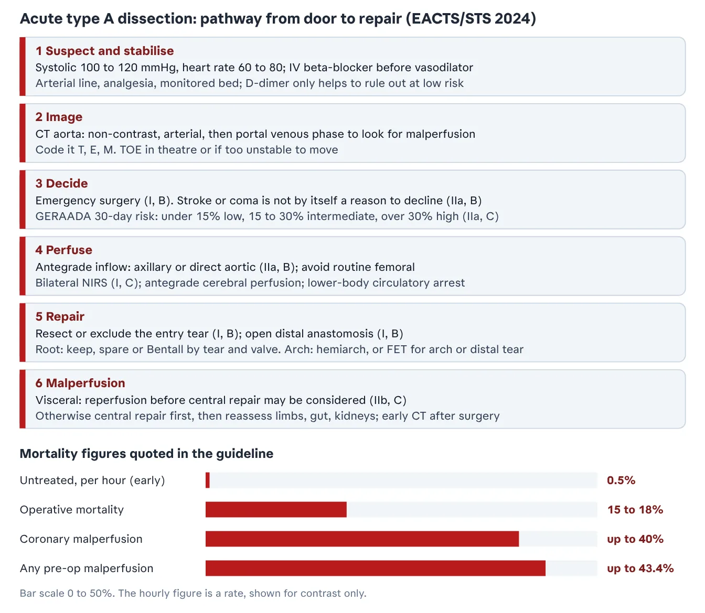
Acute type A dissection: recommendations
| Recommendation | Class, level | Status |
|---|---|---|
| Emergency surgery | I, B | Checked |
| Tear-oriented repair: resect or exclude the primary entry in the ascending aorta and arch | I, B | Checked |
| Operate despite preoperative neurological dysfunction or non-haemorrhagic stroke | IIa, B | Checked |
| Visceral malperfusion: revascularisation before aortic repair | IIb, C | Checked |
| Antegrade systemic perfusion by axillary or direct aortic cannulation, in preference to retrograde femoral | IIa, B | Checked |
| Open distal anastomosis under lower-body hypothermic circulatory arrest | I, B | Checked |
| Bilateral near-infrared cerebral oximetry with a set response to desaturation | I, C | Checked |
| High-moderate hypothermia for lower-body arrest with cerebral perfusion for hemiarch | I, C | Checked |
| Selective antegrade cerebral perfusion for complex arch work | IIa, B | Checked |
| Perfuse the left subclavian as well (trilateral) if the circle of Willis is incomplete | IIa, C | Checked |
| Choose the arrest temperature by extent of repair, expected arrest time and malperfusion | IIa, C | Checked |
| Rewarm with arterial outlet temperature under 37°C | I, C | Checked |
| Ascending or hemiarch repair should be extensive; avoid a short graft | I, C | Checked |
| Frozen elephant trunk for one-stage arch treatment (entry in the distal arch or proximal descending aorta) | IIa, B | Checked |
| Inspect or cover communications in the proximal descending aorta in specialised centres | IIb, C | Checked |
Acute type A dissection: the operation
These steps are the standard sequence from memory; unit practice varies and none of it is from the guideline text unless marked.
| Step | What is done | Points for the viva |
|---|---|---|
| 1 Before incision | Bilateral radial lines (or right radial and femoral), NIRS, TOE, external defibrillator pads, cell salvage, blood products ready | TOE confirms the flap, regurgitation mechanism, effusion and regional wall motion |
| 2 Arterial access | Right axillary artery through an 8 mm side graft, or direct true-lumen aortic cannulation over a wire with TOE; femoral if neither is possible | Guideline prefers antegrade inflow (checked). After going on bypass, check both radial pressures, NIRS and TOE for true-lumen flow: malperfusion on starting bypass means change the cannulation site |
| 3 Venous and vent | Right atrial two-stage cannula, left ventricular vent through the right superior pulmonary vein, retrograde cardioplegia cannula | The ventricle distends quickly with aortic regurgitation once it fibrillates on cooling |
| 4 Cool | To the chosen temperature (commonly 24 to 28°C nasopharyngeal with antegrade cerebral perfusion) | Deeper if a long arrest or no cerebral perfusion is planned |
| 5 Clamp or not | Many clamp the mid ascending aorta during cooling to work on the root; others avoid a clamp to prevent false-lumen pressurisation | State what your unit does and why |
| 6 Root | Transect above the sinotubular junction, give ostial cardioplegia, inspect the root. Intact sinuses: resuspend the commissures and reunite the layers (felt or glue sandwich). Tear in the sinuses, root over about 45 mm, or heritable disease: root replacement, valve-sparing only in a stable patient and expert hands | Guideline: Bentall for a structurally diseased valve (I, B); valve-sparing for a normal tricuspid valve (IIa, B) |
| 7 Arrest and open distal | Stop the pump, head down, remove the clamp, inspect the arch from inside for the tear. Antegrade cerebral perfusion through the axillary line with the innominate clamped, plus a left carotid cannula | Open distal anastomosis is Class I (checked) |
| 8 Distal repair | No arch tear: bevelled hemiarch anastomosis to the reunited aortic layers. Arch or distal tear, arch aneurysm or distal malperfusion: total arch with frozen elephant trunk | Hemiarch is the default for most patients; the extent beyond that is the main open research question in the guideline |
| 9 Reperfuse | Cannulate the graft side arm, de-air, restart lower-body flow antegradely, rewarm slowly | Outlet temperature under 37°C (checked) |
| 10 Proximal anastomosis and wean | Graft-to-graft or graft-to-root, de-air, wean. TOE: valve, ventricular function, flow in the true lumen of the descending aorta | Coagulopathy is expected: fibrinogen, platelets, prothrombin complex guided by viscoelastic tests |
| 11 After | Early CT if malperfusion was present or lactate rises; lifelong blood pressure control and imaging surveillance of the residual dissected aorta | Checked: postoperative CT after malperfusion |
Malperfusion
| Bed | Presentation | Management | Status |
|---|---|---|---|
| Coronary (M1) | ST elevation, usually right coronary; ventricular dysfunction | Immediate central repair; bypass graft if the ostium cannot be repaired. Mortality up to 40% | Checked figure; management memory |
| Cerebral (M2) | Stroke, coma | Surgery should still be considered (IIa, B); rapid antegrade cerebral reperfusion | Checked |
| Visceral (M3) | Abdominal pain, rising lactate, bloody diarrhoea | Nearly fivefold perioperative risk of death. Reperfusion first (fenestration or branch stenting) may be considered (IIb, C), particularly when ischaemia is established | Checked |
| Renal and limb (M3) | Anuria; pulseless, painful limb | Most resolve with central repair; reassess at the end of the operation and treat persisting ischaemia (femoro-femoral crossover, stent); watch for compartment syndrome | Memory |
| Spinal | Paraplegia | Raise perfusion pressure; CSF drainage may be considered for symptomatic cord injury (IIb, C) | Checked |
| Dynamic against static | Dynamic: the flap prolapses over the branch origin and resolves with true-lumen reperfusion. Static: the dissection extends into the branch and usually needs a stent | Memory |
Non-A non-B dissection
| Item | Detail | Status |
|---|---|---|
| Complicated, entry in the arch | Frozen elephant trunk should be considered (IIa, C) | Checked |
| Entry coverable by a stent graft | Endovascular repair may be considered (IIb, C) | Checked |
| Registry outcomes | Open arch replacement in 19% (mortality 31%), endovascular in 25% (14.3%), the rest medical (13.9%); stroke the commonest complication | Checked |
Type B dissection
| Item | Detail | Status |
|---|---|---|
| Complicated (rupture, malperfusion) | TEVAR with suitable anatomy (I, B); frozen elephant trunk if not suitable (IIa, B) | Checked |
| High-risk features | TEVAR in the subacute phase should be considered (IIa, C) | Checked |
| No high-risk features | Medical therapy with close monitoring and imaging follow-up (I, B) | Checked |
| High-risk features listed | Entry over 10 mm, on the inner curve, or under 20 mm from the left subclavian; false lumen over 22 mm; descending aorta over 40 mm; adverse false-lumen flow on MRI; persistent pain or uncontrolled hypertension | Checked |
| Stent graft sizing | Proximal oversizing under 10% in acute or subacute dissection (I, C); landing zone at least 25 mm (IIa, C) and no wider than 38 mm (IIa, B) | Checked |
| True lumen still collapsed after TEVAR | Distal bare stent (PETTICOAT) should be considered (IIa, B); STABILISE only in studies (IIb, C) | Checked |
| Figures | Type B is 30 to 38% of dissections; in-hospital mortality 14.1% | Checked |
Intramural haematoma and penetrating ulcer
| Lesion | Recommendation | Status |
|---|---|---|
| Type A IMH with complications or high-risk features | Emergency surgery (I, B) | Checked |
| Type A IMH without high-risk features | Medical therapy with serial imaging may be considered (IIb, C). It progresses to dissection in 33 to 40% and ruptures in up to 18% | Checked |
| Type B IMH, complicated | Urgent repair (I, B); TEVAR for high-risk features if anatomy allows (IIa, C); otherwise medical therapy with serial imaging (I, B) | Checked |
| IMH high-risk features | Age over 70, diameter over 45 mm, growth 5 mm a year or more, wall thickness 10 mm or more, haemorrhagic pleural effusion, ulcer or ulcer-like projection | Checked |
| PAU in the ascending aorta with IMH or rupture | Urgent repair (I, B) | Checked |
| High-risk PAU in the distal arch or descending aorta | TEVAR (IIa, B); open repair if unsuitable (IIa, B) | Checked |
| PAU high-risk features | Depth over 10 mm and width over 20 mm, or rapid growth; associated IMH; haemorrhagic effusion; persistent pain | Checked |
For the viva
Give the definition, then classify three ways: time, Stanford with non-A non-B, and TEM.
State the blood pressure and heart rate targets and that a beta-blocker goes in before a vasodilator.
Type A is an emergency operation; stroke or coma alone does not rule it out. Quote GERAADA for risk and consent.
Describe your cannulation and what you do if pressures or NIRS fall on starting bypass.
Aims of the operation in order: save life (prevent rupture and tamponade), resect the entry tear, restore true-lumen flow, restore valve competence and coronary flow.
Root and arch are each decided by where the tear is and whether the tissue is diseased; hemiarch with an open distal anastomosis is the default.
Mesenteric malperfusion is the exception where reperfusion may come before central repair.
Type B: complicated means TEVAR; uncomplicated with high-risk features means TEVAR in the subacute window; the rest is medical therapy and surveillance.
Four documents compared (added 19 November 2026, read from the PDFs you attached)
Read directly: the eight recommendation tables of the AATS 2021 consensus (Malaisrie et al, J Thorac Cardiovasc Surg 2021;162:735), the acute type A sections of ACC/AHA 2022 (Isselbacher et al, Circulation 2022;146:e334), ESC 2024 recommendation tables 45 to 48 (Eur Heart J 2024;45:3538) and EACTS/STS 2024 table 5 (ezad426). EACTS/STS table 5 matches what I wrote above from the reader extract. In the ACC/AHA and ESC PDFs the class column does not extract next to its recommendation, so I took the class from the wording ("is recommended", "is reasonable" or "should be considered", "may be"), which is each body's fixed convention; AATS and EACTS/STS classes were read as printed.

| Question | AATS 2021 | ACC/AHA 2022 | ESC 2024 | EACTS/STS 2024 |
|---|---|---|---|---|
| First drug | Beta-blocker unless severe AR (I, B); calcium channel blocker as alternative (IIa, B); vasodilator after rate control (IIa, C) | Heart rate 60 to 80 | IV beta-blocker first line, then IV vasodilator; arterial line, ECG, intensive care | Systolic 100 to 120, heart rate 60 to 80; beta-blocker before vasodilator |
| Hypotension | Volume to a systolic of 90 mmHg (IIa, C) | |||
| Transfer | To a comprehensive aortic centre if surgery is not immediately available (IIa, B) | Low- to high-volume centre if stable enough (2a) | ||
| Emergency surgery | I, B | Class 1: immediate surgical intervention | Recommended | I, B |
| Stroke or brain malperfusion | Surgery can be effective (IIa, B) | Surgery reasonable over medical therapy for non-haemorrhagic stroke (2a) | Immediate surgery should be considered | Open repair should be considered (IIa, B) |
| Type A intramural haematoma | Surgery with one or more high-risk features (I, C); expectant management if major comorbidity and no high-risk features (IIb, C) | Emergency surgery with complications or high-risk features (I, B) | ||
| Catheter-induced dissection limited to the root | Non-operative management reasonable (IIa, B) | |||
| Retrograde type A from a descending entry | Descending TEVAR alone in selected patients (IIb, C) | |||
| Arterial inflow | Right axillary in stable patients (IIa, B); direct aortic with imaging guidance (IIa, B); femoral may be reasonable (IIb, B) | Axillary reasonable over femoral to reduce stroke and retrograde malperfusion (2a) | Antegrade by axillary or direct aortic (IIa, B) | |
| Cerebral protection | Antegrade or retrograde cerebral perfusion during arrest (IIa, B); antegrade with moderate or deep hypothermia for extended arch (IIa, C) | Bilateral NIRS (I, C); antegrade perfusion for complex arch (IIa, B) | ||
| Root | Resuspension for most patients (I, B); root replacement for root aneurysm or entry tear in the root (I, B), reasonable in heritable disease (IIa, C); valve-sparing in selected patients (IIb, C) | Resuspension over replacement when cusps are normal (1); root replacement for root destruction, aneurysm or genetic disorder (1); valve-sparing in stable selected patients (2b) | Same wording as ACC/AHA | Root table: Bentall for a diseased valve (I, B); valve-sparing for a normal tricuspid valve (IIa, B) |
| Coronary malperfusion persisting after repair | Expeditious bypass grafting (I, C) | |||
| Distal anastomosis | Open, under circulatory arrest (I, B); resect the whole ascending aorta and the entry tear (I, C) | Open distal anastomosis (1) | Recommended | Open distal (I, B); tear-oriented resection (I, B) |
| Arch | Extended arch reasonable for an entry tear in the arch or proximal descending aorta, brain or peripheral malperfusion, or arch or descending aneurysm or rupture (IIa, B); with frozen elephant trunk for remodelling (IIb, B); in young patients with heritable disease (IIb, C) | Hemiarch over more extensive replacement when there is no arch tear or aneurysm (1); extended repair with antegrade stenting may be considered (2b) | Hemiarch recommended; extended repair with frozen elephant trunk may be considered | Frozen elephant trunk for one-stage arch treatment (IIa, B) |
| Mesenteric malperfusion | Reasonable to delay proximal repair until after definitive treatment (IIa, B) by TEVAR, fenestration or branch stenting (IIa, C) | Renal, mesenteric or limb malperfusion: immediate ascending repair (1); clinically significant mesenteric malperfusion: either immediate repair or revascularisation first (2a) | Immediate surgery recommended; angiographic assessment for percutaneous repair before or straight after surgery should be considered in expert centres | Revascularisation before repair may be considered (IIb, C) |
| Ischaemic leg with sensory or motor deficit | Revascularisation before proximal repair may be reasonable (IIb, C) |
Figures from ACC/AHA 2022: in IRAD from 1995 to 2013 surgical mortality fell from 25% to 18% while medical mortality stayed at 57%; malperfusion on imaging in up to 25%; malperfusion syndrome carries a mortality of 30.5% against 6.2% without.
The point to make in a viva: the four agree on everything except mesenteric malperfusion, where the two American documents are more willing to reperfuse first (IIa, 2a) than EACTS/STS (IIb), and the extent of arch repair, where EACTS/STS is the most favourable to the frozen elephant trunk.
Not yet covered or checked
AATS 2021 and ACC/AHA 2022: acute type A tables now read (comparison above). Their sections on type B dissection, traumatic injury and long-term surveillance are not yet read.
ESC 2024 tables 45 to 48 now read; tables 49 and 50 (type B) not yet.
Blunt traumatic aortic injury: to be written with thoracic trauma, which is also a critical condition.
Aortic surgery
3 parts
Acute type A dissection is an immediate operation; complicated type B dissection is treated by endovascular repair; the evidence is registry-based with almost no randomised trials.
Guidelines
| Guideline | Key points |
|---|---|
| EACTS/STS 2024 | Introduces the TEM classification (type, entry site, malperfusion) and the GERAADA risk score; endovascular repair is first-line for almost all distal arch and descending pathology; strongly recommended for complicated acute type B dissection and those with high-risk features; distal bare-metal stent extension (PETTICOAT) IIa when malperfusion persists |
| STS/AATS type B dissection, 2022 | Endovascular repair for complicated hyperacute, acute or subacute type B dissection with rupture or malperfusion and suitable anatomy (I); open repair if anatomy is unsuitable (IIa); CSF drainage for paraparesis or paraplegia (IIa) |
| ESC 2024 and ACC/AHA 2022 | Elective diameter thresholds, below |
Acute type A dissection: operative principles
Emergency surgery; mortality without it rises by roughly 1–2% per hour early on.
Aim: resect the primary entry tear, restore true-lumen flow, and deal with the valve and coronaries.
Root: resuspend the valve if the sinuses are intact; replace the root for a tear in the sinuses, root aneurysm or heritable disease.
Arch: hemiarch as standard; total arch with frozen elephant trunk for an arch tear, arch aneurysm or distal malperfusion, in experienced hands.
Cannulation: axillary or direct true-lumen; antegrade cerebral perfusion with moderate hypothermia is now usual.
Malperfusion: mesenteric malperfusion carries the worst outcome and may justify reperfusion before central repair in selected patients.
Non-A non-B dissection (arch involvement without the ascending aorta) is recognised in TEM and has a higher complication rate than type B.
Type B dissection
Uncomplicated: blood pressure and heart rate control, with imaging surveillance.
High-risk features that favour early endovascular repair: aortic diameter over 40 mm, false lumen over 22 mm, entry tear over 10 mm on the lesser curve, refractory pain or hypertension, bloody effusion.
Timing of elective endovascular repair: the subacute phase (after 2 weeks, before 3 months) balances remodelling against retrograde dissection.
INSTEAD-XL: endovascular repair of uncomplicated type B dissection improved aorta-specific survival at five years (from memory).
Thresholds: aortic root and ascending aorta
6 parts
The default threshold is 55 mm; it falls to 50–52 mm for root phenotype or low-risk patients, to 45–50 mm in heritable disease, and to 45 mm when the chest is already open for the aortic valve.
Sporadic aneurysm, tricuspid or bicuspid valve
| Situation | Diameter | Class |
|---|---|---|
| Root or ascending, any valve | ≥55 mm | I |
| Bicuspid valve, root phenotype (sinuses larger than tubular aorta) | ≥50 mm | I |
| Tricuspid valve, root phenotype, low surgical risk | ≥50 mm | IIa (EACTS/STS) |
| Ascending phenotype, tricuspid or bicuspid, low surgical risk | >52 mm | IIa |
| Bicuspid, ascending phenotype, low risk, with a risk factor | ≥50 mm | IIa |
| Tricuspid, ascending phenotype, low risk, with a risk factor | ≥50 mm | IIb (EACTS/STS) |
| Symptomatic aneurysm | Almost regardless of size | IIa |
Risk factors (EACTS/STS 2024): age <50, height <1.69 m, ascending length >11 cm, growth >3 mm per year, family history of acute aortic syndrome, coarctation, refractory hypertension, patient preference after shared decision.
Concomitant replacement
| Primary operation | Aortic diameter | Class |
|---|---|---|
| Aortic valve surgery, low predicted risk | Root or ascending ≥45 mm | IIa |
| Aortic valve surgery, higher risk | ≥50 mm | IIa |
| Non-aortic-valve cardiac surgery | Root or ascending ≥50 mm | IIa |
| Ascending replacement | Root ≥45 mm: replace the root as well | IIa |
| Ascending surgery | Proximal arch >45 mm: hemiarch or more | IIb |
Heritable thoracic aortic disease
| Condition | Diameter | Class |
|---|---|---|
| Marfan | ≥50 mm | I |
| Marfan with high-risk features | ≥45 mm | IIa |
| Marfan, no high-risk features, very low risk, valve-sparing likely, expert team | ≥45 mm | IIb |
| Marfan, pregnancy planned | >45 mm | I (ESC 2024) |
| Loeys-Dietz, TGFBR1 or TGFBR2 | ≥45 mm | I (EACTS/STS); IIa (ESC 2024) |
| Loeys-Dietz, TGFBR2 with high-risk features | ≥40 mm | IIa |
| Loeys-Dietz, TGFBR1 with high-risk features | ≥40 mm | IIb |
| SMAD3 | ≥45 mm | IIa |
| SMAD2 or TGFB2 | ≥45 mm | IIb |
| TGFB3 | ≥50 mm | IIb |
| ACTA2 | ≥45 mm (≥42 mm with high-risk features, IIb) | IIa |
| PRKG1 | ≥42 mm (≥40 mm with high-risk features) | IIb |
| MYLK or MYH11 | ≥45 mm | IIb |
| Turner, age ≥15, with risk factors or planned pregnancy | Aortic size index >23 mm/m², height index >23 mm/m, or z-score >3.5 | IIa |
| Turner, no risk factors | Aortic size index >25 mm/m², height index >25 mm/m, or z-score >4 | IIb |
High-risk features in heritable disease: family history of dissection at a small diameter, growth >3 mm per year, severe aortic or mitral regurgitation, resistant hypertension, planned pregnancy, marked tortuosity.
Arch, descending and dissected aorta
| Segment | Diameter | Class |
|---|---|---|
| Isolated arch aneurysm, asymptomatic | ≥55 mm | IIa |
| Descending thoracic aneurysm | ≥55 mm | I |
| Thoracoabdominal aneurysm | ≥55 mm (ESC uses ≥60 mm for open repair) | I |
| Chronic dissection, descending aorta | ≥60 mm (I) or ≥55 mm at low risk (IIa) in ESC 2024; ≥55 mm in EACTS/STS (I) | I to IIa |
| Marfan: arch, descending or abdominal aorta | ≥50 mm | IIa |
ACC/AHA 2022 differences
≥50 mm is reasonable for sporadic aneurysms when operated by experienced surgeons in a multidisciplinary aortic team (IIa).
Growth ≥3 mm per year in two consecutive years, or ≥5 mm in one year, is a Class I indication below 55 mm.
Cross-sectional area ÷ height ≥10 cm²/m is reasonable in patients well above or below average height (IIa).
Aortic size index ≥3.08 cm/m² or aortic height index ≥3.21 cm/m may be reasonable (IIb).
Measuring it
Echo: sinus-to-sinus for the root, leading edge to leading edge at end-diastole, perpendicular to the long axis.
CT: ECG-gated, double-oblique plane perpendicular to the centreline. ESC 2024 measures inner edge to inner edge at end-diastole; EACTS/STS measures outer wall to outer wall. State which was used.
Root: report the largest sinus-to-sinus diameter. For an oval aorta, report the longest diameter and its perpendicular.
Inter-study variability is 2–3 mm. Compare like with like (same modality, same method, same landmark) before calling growth.
Ascending length is the centreline distance from annulus to innominate origin; >11 cm counts as a risk factor.
Thresholds added from the handbook
Source: society-integrated handbook, as taught. Moved here from Cardiac 10 on 19 Nov 2026.
Concomitant aortic valve surgery: consider root or ascending replacement at 45 mm or more.
TEVAR landing zone: EACTS/STS consider 25 mm or more proximally and distally.
Do not merge EACTS/STS thresholds with ESC or American ones without saying which is being used.
EACTS/STS 2024: the remaining recommendation tables
1 drawing
Source: Czerny, Grabenwöger and colleagues, EACTS/STS guidelines for the aortic organ, Eur J Cardiothorac Surg 2024;65:ezad426, your PDF, read 19 Nov 2026. I read Recommendation Tables 11, 19 to 21, 30 to 32, 35 and 36 from the extracted text. The class column did not extract reliably, so the strength shown is taken from the wording (recommended, should be considered, may be considered). Tables 22 to 29 (root, arch, descending, thoracoabdominal and endoleak techniques) came out scrambled and are not written up.

| Topic | Recommendation | Strength |
|---|---|---|
| Thoracoabdominal aneurysm | Repair when asymptomatic at 55 mm or more | Recommended |
| Repair below 55 mm with high-risk features | Should be considered | |
| Abdominal aneurysm | Ruptured, or symptomatic at any size: emergency repair | Recommended |
| Asymptomatic: repair above 55 mm; in women above 50 mm (should be considered); growth above 10 mm a year (should be considered) | Recommended | |
| Arch surgery: inflow | Antegrade arterial inflow in preference to retrograde, with the axillary artery as the site | Should be considered |
| Arch surgery: temperature | Measure nasopharyngeal and core temperature. Core temperature defines the level of lower body arrest | Recommended |
| Choose the target from the extent of repair, expected arrest time and any malperfusion | Should be considered | |
| Hemiarch: high-moderate lower body arrest with cerebral perfusion | Recommended | |
| Blunt aortic injury | Grade I: no operation, close imaging follow-up | Recommended |
| Grade II: stent graft if high-risk imaging features (should be considered); otherwise observation may be considered | See text | |
| Grades III and IV with suitable anatomy: stent graft | Recommended | |
| Graft infection | Fit for surgery: open repair, with removal of the prosthetic material, debridement and preferably in-line reconstruction | Recommended |
| New false aneurysm or bleeding: emergency operation | Recommended | |
| Bleeding into airway or gut: endovascular treatment as a bridge | May be considered | |
| Managed by a multidisciplinary team | Should be considered | |
| Kommerell diverticulum | Symptomatic: image with CT or MRI and treat | Recommended |
| Asymptomatic: treat when the diverticulum orifice is 30 mm or more, or diverticulum plus adjacent aorta is 50 mm or more, or the aberrant artery is 30 mm or more | May be considered | |
| Young and fit: open repair by thoracotomy with carotid to subclavian bypass. Emergency or unfit: hybrid repair | Recommended | |
| Coarctation in adults | Clinically significant, primary or recurrent: treat | Recommended |
| Resting gradient above 20 mmHg, or arm to leg systolic difference above 10 mmHg with heart failure or upper body hypertension: repair, open or endovascular | Should be considered | |
| Hypertension with more than 50% narrowing relative to the aorta at the diaphragm, whatever the gradient | Should be considered | |
| Suitable anatomy: endovascular repair as the alternative to open surgery | Should be considered | |
| Re-repair with another cardiac operation: ascending to descending bypass | May be considered | |
| After aortic surgery | Enhanced recovery in stable patients; normothermia; lactate as the marker of malperfusion | Recommended |
| Femoral arterial line; point-of-care coagulation testing | Should be considered | |
| Follow-up | Imaging before discharge after every aortic procedure. Echo after root surgery | Recommended |
| After dissection or intramural haematoma, and after any endovascular repair: CT at 6 and 12 months, then yearly for 5 years if stable | Recommended | |
| Exercise | 30 to 60 minutes of mild to moderate dynamic exercise 3 to 4 days a week if blood pressure is controlled | Recommended |
| Heavy static exercise and collision sports | Not recommended |
The coarctation and Kommerell rows overlap with Congenital 6 (arch anomalies) and Congenital 3.
ESC 2024 and ACC/AHA 2022: further recommendations
Sources: ESC 2024 guideline on peripheral arterial and aortic diseases (Eur Heart J 2024;45:3538) and the 2022 ACC/AHA aortic guideline (Circulation 2022;146:e334), your PDFs, read 19 Nov 2026 by script extraction of the recommendation tables. Only rows that came out as whole sentences are listed. Strength is from the wording, because the class column did not extract reliably. Rows already in the threshold tables above are not repeated.
| Topic | ESC 2024 | ACC/AHA 2022 |
|---|---|---|
| Arch aneurysm | Low or intermediate risk with recurrent chest pain not explained otherwise: open arch replacement recommended | Not extracted |
| Descending thoracic aneurysm | Repair recommended at 55 mm or more (no heritable disease). Stent graft recommended over open repair when anatomy suits. With high-risk features repair may be considered below 55 mm | Repair recommended at 5.5 cm or more. Below that with rupture risk factors: may be considered |
| Abdominal aneurysm | Repair recommended at 55 mm in men, 50 mm in women | Not extracted |
| Bicuspid aortopathy | Root phenotype: surgery recommended at 50 mm or more. Ascending phenotype at low surgical risk: should be considered above 52 mm. CT or MRI of the whole thoracic aorta at diagnosis and above 45 mm. Echo screening of first-degree relatives should be considered | In the threshold table above |
| Turner syndrome | Age 15 or over with indexed ascending size above 23 mm/m2 (or height index above 23 mm/m, or z-score above 3.5) and risk factors or planned pregnancy: surgery should be considered | Age 15 or over with indexed size 2.5 cm/m2 or more plus risk factors: surgery is reasonable. Imaging every 5 years in children and 10 in adults without risk factors; yearly above 2.3 cm/m2 |
| ACTA2-related disease | Echo yearly, CT or MRI every 3 to 5 years. Root surgery should be considered at 45 mm, or lower with risk factors | Not extracted |
| Marfan after root replacement | Not extracted | MRI or CT of the remaining thoracic aorta, yearly at first. Abdominal imaging every 3 to 5 years is reasonable |
| Type A dissection, root | In the acute section above | Partly dissected root with normal leaflets: resuspend the valve in preference to replacing it |
| Type B intramural haematoma | In the acute section above | Uncomplicated: medical therapy first. Needs repair but anatomy unsuitable for a stent graft: open repair is reasonable |
| Penetrating ulcer of arch or descending aorta with haematoma | In the acute section above | Urgent repair is reasonable |
| Blunt aortic injury | Not extracted | When repair is indicated and anatomy suits: stent graft over open repair |
Pregnancy with aortic disease (ACC/AHA 2022)
| Situation | Recommendation | Strength |
|---|---|---|
| Any aneurysm or dissection risk | Managed by a multidisciplinary team with maternal-fetal medicine. Treat hypertension. Beta blocker through pregnancy and after delivery in heritable disease | Recommended |
| Non-syndromic heritable disease, aorta 4.5 cm or more | Operate before pregnancy | Recommended |
| Aorta under 4.0 cm | Vaginal delivery | Recommended |
| Aorta 4.0 to 4.5 cm | Vaginal delivery with regional anaesthesia and an assisted, short second stage. Caesarean may be considered in heritable disease | May be reasonable |
| Aorta 4.5 cm or more | Caesarean delivery | Reasonable |
| Chronic dissection | Caesarean delivery | Recommended |
| Type B dissection during pregnancy | Medical therapy unless complications need intervention | Recommended |
| Progressive dilatation during pregnancy | Prophylactic surgery | May be considered |
Not written up from these two guidelines: the ESC tables on Marfan and Loeys-Dietz surgery and Marfan pregnancy (the text extracted as a scrambled figure), and any ACC/AHA recommendation my script did not capture (it found 91).
Type B dissection, root, ascending, arch and thoracoabdominal aneurysms: textbook account
Added 19 November 2026 from the TSRA Review 3rd ed., ch. 76 (Chen, Smith), ch. 77 (Clark, Kern), ch. 78 (Bloom, Jassar), ch. 79 (Chen, Smith), ch. 80 (Taylor, DeAnda) and ch. 81 (Umana-Pizano, Vargo, Roselli). The size thresholds are the American ones the chapters quote, which predate the ACC/AHA 2022, ESC 2024 and EACTS/STS 2024 guidelines earlier in this tab. Use the earlier sections for a current threshold and this one for anatomy, technique and reasoning. Ch. 75 (type A dissection) was not read, because type A is already written here from the 2021 to 2024 guidelines.
Type B dissection
Acute is 14 days or less, subacute 15 to 90 days, chronic over 90 days.
| Presentation | Definition | Treatment |
|---|---|---|
| Uncomplicated acute | Pain only | Anti-impulse therapy with a beta-blocker and analgesia; CT or MR before discharge, at 3, 6 and 12 months, then yearly |
| Complicated acute | Persistent pain despite treatment, malperfusion, or impending rupture | TEVAR over the entry tear: fewer early complications than open repair, similar late survival |
| Chronic | Often silent | Blood pressure control and imaging for life; no agreed best operation |
| Malperfusion | Mechanism | Fix |
|---|---|---|
| Dynamic (commonest) | The false lumen compresses the true lumen across the branch origin | Cover the entry tear |
| Static | The flap extends into the branch | Stent the branch |
Indications to operate on a chronic type B dissection. Growth over 1 cm in a year (the commonest); malperfusion; recurrence; diameter increase over 5 mm in 6 months; total diameter over 60 mm. TEVAR works less well in chronic dissection because the thick flap does not remodel. Open repair is preferred for connective tissue disorders.
Covering the left subclavian artery (Society for Vascular Surgery 2010). Revascularise first in elective cases. It is mandatory when the artery supplies something vital: a patent left internal mammary graft; a dominant left or absent right vertebral artery; a left arm dialysis fistula; planned coverage over 20 cm; previous infrarenal aortic surgery; occluded hypogastric arteries. In an emergency, decide case by case.
The aortic root
The root runs from the aortoventricular junction to the sinotubular junction: annulus, cusps, sinuses, sinotubular junction. 45% of its circumference attaches to ventricular muscle and 55% to the fibrous skeleton. Each cusp base is 1.5 times its free margin. The sinotubular junction is 10 to 20% narrower than the annulus in the young. Dilatation starts in the sinuses and pulls the commissures apart, causing regurgitation. Histology is cystic medial degeneration.
| Operation | What is done | When |
|---|---|---|
| Valve-sparing reimplantation (David) | Sinuses excised to an 8 mm rim, coronary buttons mobilised, the valve re-suspended inside a Dacron tube anchored below the annulus | Normal or repairable cusps; the most used; fewer reinterventions than remodelling |
| Valve-sparing remodelling (Yacoub) | Graft recreates the sinuses; the annulus is not supported | Normal annulus |
| Composite valve graft (button Bentall) | Valve and root replaced with a valved conduit, mechanical or biological; coronary buttons reimplanted | Diseased or calcified valve |
| Ross, or stentless root | Autograft or porcine root | Selected patients |
David graft sizing in the chapter. Size the outflow tract with a Hegar dilator, then add 5 mm and 6 mm; the graft is usually 32 to 38 mm. Tie the three subcommissural sutures first, with the dilator across the annulus. Cardioplegia is retrograde and direct ostial. Right axillary cannulation through an 8 mm graft when the arch is involved.
Size thresholds (American guidelines as quoted)
| Setting | Threshold |
|---|---|
| Symptoms from the aneurysm | Operate at any size |
| Degenerative | 5.5 cm; or growth over 0.5 cm a year |
| Bicuspid valve | 5.5 cm; 5.0 cm with a risk factor (root phenotype, regurgitation, uncontrolled hypertension, family history, growth over 3 mm a year) |
| Marfan syndrome and other connective tissue disease | 5.0 cm; 4.5 cm with a family history of dissection or other high-risk features |
| Loeys-Dietz syndrome | 4.2 cm in ch. 78; 4.0 cm in ch. 77 and 79 |
| At other cardiac surgery | 4.5 cm |
| Short stature | Diameter over 2.75 cm per m² of body surface area; or area in cm² over height in metres above 10 |
| Planned pregnancy with Marfan syndrome | 4.1 to 4.5 cm |
| Arch | No arch-specific thresholds; the ascending ones are used |
| Cause | Typical growth |
|---|---|
| Degenerative | 0.1 cm a year |
| Familial | 0.2 cm a year |
| Marfan | Up to 0.3 cm a year |
| Loeys-Dietz | Up to 1.0 cm a year |
| Syndrome | Gene or defect | Notes |
|---|---|---|
| Marfan | Fibrillin-1 | Isolated root aneurysm |
| Loeys-Dietz | TGF-beta receptors 1 and 2 | Hypertelorism, bifid uvula, arterial tortuosity; dissects at small size |
| Vascular Ehlers-Danlos | Type III procollagen | Thin fragile arteries |
| Turner | 45,X | Bicuspid valve 10 to 25%, coarctation 8%, dilatation 33% |
| Bicuspid aortopathy | Familial | Type I: ascending with mild root dilatation, right-left fusion. Type II: ascending only, right-non fusion. Type III: root only |
Wall tension follows Laplace: it rises with pressure and radius and falls with wall thickness. The ascending aorta derives from neural crest and is rich in elastin; the descending aorta derives from mesoderm. Pregnant women with an aneurysm should deliver where cardiac surgery is available. Image first-degree relatives.
The arch
Symptoms come from compression: hoarseness (left recurrent nerve), stridor, dysphagia, superior vena cava obstruction.
| Cerebral protection | Detail |
|---|---|
| Deep hypothermic circulatory arrest | 18 to 22°C |
| With selective antegrade cerebral perfusion | Added to arrest |
| With retrograde cerebral perfusion | Added to arrest |
No strategy has been shown to be better than the others.
| Arch operation | Description |
|---|---|
| Total arch replacement | All three branches re-attached as an island, a peninsula, or to a branched graft |
| Elephant trunk (two stages) | Arch replaced with a length of graft left free in the descending aorta; later joined to a descending replacement through the left chest, or extended by TEVAR |
| Frozen elephant trunk (one stage) | A stent graft is deployed antegrade into the descending aorta under arrest and sewn to the arch graft, so there is no proximal endoleak. Paraplegia is the complication to remember |
| Hybrid | Debranch the arch vessels to create a landing zone, then TEVAR |
| Total endovascular | Branched or fenestrated devices; for those unfit for open surgery; stroke and early reintervention |
EACTS/ESVS 2018, as quoted: do not deploy a stent graft with a landing zone under 25 mm or a diameter over 38 mm, and avoid zone 0 to 2 TEVAR landing in native aorta in connective tissue disease.
Thoracoabdominal aneurysm
| Extent | From | To |
|---|---|---|
| I | Proximal descending | Above the renal arteries |
| II | Proximal descending | Aortic bifurcation (most extensive) |
| III | Distal descending (T6) | Bifurcation |
| IV | Abdominal aorta | Bifurcation |
| V | Distal descending (T6) | Above the renal arteries |
Natural history. Descending aneurysms grow about 0.19 cm a year and ascending ones 0.07. At 7 cm the yearly rates are rupture 3.6%, dissection 3.7% and death 10.8%. Nearly 80% of ruptures are in women.
Indications. Over 6 cm; growth over 1 cm a year; 5.0 cm in connective tissue disease; any symptoms.
| Spinal cord and organ protection | Detail |
|---|---|
| Cerebrospinal fluid drain | Before and after surgery |
| Evoked potential monitoring | No muscle relaxant |
| Left heart bypass | Left atrium to femoral artery, for distal perfusion |
| Mild hypothermia | 32 to 34°C |
| Clamping and perfusion | Sequential clamping; selective visceral and renal perfusion |
| Reattach segmental arteries | Between T8 and L1 |
Results. Operative mortality 3 to 21%; permanent paraplegia 1.5 to 5%; five-year survival about 65%. Cardiac disease causes 49% of early deaths, so revascularise first where indicated. Position: right lateral with the hips rolled back for femoral access; divide the diaphragm.
TEVAR: rules and complications
| Rule | Figure |
|---|---|
| Landing zone | 20 mm of healthy aorta at each end |
| Oversizing for aneurysm | 10 to 20% |
| Oversizing for dissection | No more than 10% |
| Retrograde type A dissection | 1.7%; mortality 33.6%; risk rises 14% for each 1% of oversizing beyond 9%; commonest after TEVAR for acute type B |
| Spinal cord ischaemia | 1 to 10%, in proportion to the length covered |
Lower the cord risk with a spinal drain, a higher blood pressure target, a patent left subclavian artery, no anaemia, and staging of long coverage. Intravascular ultrasound confirms the wire is in the true lumen. Zone 0 is subdivided: 0A annulus to the coronaries, 0B to the right pulmonary artery, 0C to the innominate; 0A carries the highest mortality.
Type A dissection: textbook account
Added 19 November 2026 from the TSRA Review 3rd ed., ch. 75 (Jabagi, Brescia, Yang), read in full. The guideline recommendations for type A dissection are earlier in this tab; this section adds natural history, imaging, operative strategy and the delayed-repair pathway for malperfusion.
Definitions and natural history
Acute aortic syndromes are dissection, intramural haematoma and penetrating ulcer. Stanford A involves the ascending aorta; B does not. DeBakey I involves ascending, arch and descending aorta; II the ascending only; III the descending only (IIIa above the diaphragm, IIIb below).
| Untreated type A | Mortality |
|---|---|
| Per hour, early | 1 to 3% |
| 24 hours | Over 33% |
| 48 hours | 50% |
| 2 weeks | 75 to 90% |
| With surgery | 30-day survival 80 to 90%; 10-year survival 30 to 60% |
Mean age 63; 3:1 male; hypertension in over 75%. The tear usually starts on the right anterior wall of the proximal ascending aorta along the greater curve and spirals to the left posterior descending aorta. About half of patients die suddenly from rupture, coronary involvement or acute aortic regurgitation; 30% are first given another diagnosis. Stroke in 5%. Aortic regurgitation complicates up to 75%, from loss of commissural support.
Diagnosis
| Test | Points |
|---|---|
| Chest film | Abnormal in 60 to 90%: wide mediastinum; calcium sign (intimal calcium over 10 mm inside the outer wall); can be normal |
| ECG | Often normal; ST change follows the coronary involved |
| D-dimer | Under 500 µg/L has a negative predictive value of 95% in the first 24 hours, in low-probability patients |
| CT angiography | First choice; whole aorta, branch involvement, planning. No valve information |
| TOE | Bedside; valve, coronaries, pericardium, ventricle. Blind spot of 2 to 5 cm at the distal ascending aorta and proximal arch |
| MRI | Accurate but slow to obtain |
| Coronary angiography | Avoid: delays surgery without benefit |
All three imaging tests exceed 95% sensitivity and specificity.
Intramural haematoma. Crescentic or circular wall thickening of 7 mm or more with no flap and no flow. Higher risk with ascending involvement, diameter over 5 cm, or thickness over 10 mm. Penetrating ulcer. Over 90% are in the descending aorta, in elderly hypertensive patients; mushroom-like outpouching. When either involves the ascending aorta, treat as a type A dissection.
Before theatre
- Beta-blocker first (esmolol), then nitroprusside or nicardipine; systolic pressure under 110 mmHg.
- Analgesia, crossmatch, urinary catheter.
- Hypotension means rupture, tamponade or mesenteric malperfusion until proved otherwise. Use vasopressors only if organ perfusion fails. If pericardial drainage is used as a bridge, release slowly: a pressure surge can rupture the aorta.
- Medical treatment alone carries 60 to 80% mortality.
Operative strategy
| Distal extent | Criteria in the chapter |
|---|---|
| Ascending graft with hemiarch | No tear in the arch, arch under 4 cm, no malperfusion of the innominate or left carotid artery |
| Total arch replacement | Tear in the arch, or arch over 4 cm; reimplant or graft malperfused branches individually |
| Frozen elephant trunk | More false lumen obliteration and true lumen expansion; paraplegia rises from under 1% to 5 to 10% (up to 15%) |
| Proximal extent | Criteria in the chapter |
|---|---|
| Root repair: resuspend the commissures with pledgeted sutures, rebuild the sinotubular junction | No tear in the root, no connective tissue disease, root under 4.5 cm |
| Valve-sparing root replacement | Root involved, valve preservable; reimplantation preferred in connective tissue disease |
| Composite valve graft | Valve not preservable |
Cannulation.
| Site | For | Against |
|---|---|---|
| Femoral artery | Fastest. Choose the non-dissected side on CT; without CT, the side with the weaker pulse | Retrograde flow: atheroembolism, false lumen perfusion |
| Right axillary, with an 8 to 10 mm side graft | Antegrade flow and selective cerebral perfusion by clamping the innominate | Takes time; not with an aberrant right subclavian artery (under 2%), dissected or diseased artery, or morbid obesity |
| Direct ascending aorta, Seldinger technique under TOE | Antegrade | Needs confirmation of the true lumen |
Sequence. Sternotomy, right atrial cannulation (femoral vein if unstable), start cooling at once. Do proximal work while cooling. At target temperature, arrest the circulation, start antegrade cerebral perfusion, and complete the open distal anastomosis quickly. Re-perfuse the body, rewarm, finish the root.
Cerebral protection. Traditional deep hypothermia at 18°C gives 30 to 40 minutes of safe arrest but lengthens bypass and adds coagulopathy and organ dysfunction. With antegrade perfusion, warmer arrest is increasingly used, with lower morbidity. Retrograde perfusion through the superior vena cava adds nothing to deep hypothermia alone in this chapter.
Late reoperation
Risk factors: Marfan or Loeys-Dietz syndrome, isthmus over 4 cm, persistent hypertension, false lumen growth, residual arch tears. Reoperation carries more risk than the first operation. There is no prospective trial of extended against limited distal repair.
Malperfusion syndrome and delayed repair
Malperfusion is reduced flow to an organ; malperfusion syndrome is the resulting necrosis and organ failure (abdominal pain and tenderness, rising lactate and liver or pancreatic enzymes, falling urine output, pulseless or weak limb, neurological deficit). Central repair in the presence of malperfusion carries 60 to 70% mortality.
In specialist centres, a stable patient with severe malperfusion syndrome and no rupture or tamponade is treated in stages:
- Endovascular fenestration or stenting to reperfuse the gut, kidneys or limbs. This corrects both dynamic and static obstruction; central repair corrects only dynamic obstruction.
- Recovery of organ failure.
- Open type A repair.
This also avoids a futile open operation in patients who will not recover.
EACTS/STS 2024 aortic guideline (1): grading, the aortic organ, epidemiology, nomenclature and risk scores
Added 20 November 2026 from Czerny M, Grabenwöger M, Berger T, Aboyans V, Della Corte A, Chen EP, et al. EACTS/STS Guidelines for diagnosing and treating acute and chronic syndromes of the aortic organ. Eur J Cardiothorac Surg 2024;65(2):ezad426 (co-published in Ann Thorac Surg). Read in full (PDF pages 1 to 37, plus the end of Recommendation Table 17 on page 38); this section covers pages 1 to 14. Figures 3, 5 and 6 are images; Figure 3 was read from a rendered page.
Grading used in this guideline
| Class | Meaning | Wording |
|---|---|---|
| I | Evidence and/or general agreement that it is beneficial, useful, effective | Is recommended / is indicated |
| IIa | Weight of evidence/opinion in favour | Should be considered |
| IIb | Usefulness less well established | May be considered |
| III | Not useful/effective, may be harmful | Is not recommended |
| Level | Source |
|---|---|
| A | Multiple RCTs or meta-analyses |
| B | Single RCT or large non-randomised studies |
| C | Expert consensus and/or small, retrospective studies, registries |
- Anonymous online vote on every recommendation; consensus threshold 75%, average consensus achieved 96%. No cost analyses.
Recommendation Table 1: the aortic organ
| Recommendation | Class | Level |
|---|---|---|
| View, interpret and treat the aorta as an organ (diagnosis, treatment and surveillance approached in that way) | I | C |
Development and mechanisms
- Root: secondary heart field. Ascending aorta and part of arch: neural crest. More distal aorta: mesenchymal (mesoderm).
- Elastic fibre content falls from proximal to distal.
- Six paired arches connect the aortic sac with the dorsal aorta; most great-vessel anomalies come from persistence of segments that should regress, or the reverse.
- Vascular smooth muscle cells interact with extracellular matrix; aortic disease involves loss of contractile phenotype, more matrix metalloproteinases. Ageing and aortic disease: loss of distensibility, more glycosaminoglycans and collagen, less elastin.
- Fibrillin-1 transduces mechanical stress between matrix and smooth muscle. TGF-beta pathway variants underlie Marfan and Loeys-Dietz; TGF-beta antibodies prevented aneurysm in a Marfan mouse model.
Definitions and epidemiology
| Item | Value |
|---|---|
| Aneurysm, descending and abdominal | 1.5 times normal diameter |
| Aneurysm, root and ascending | >45 mm |
| Dilatation, root and ascending | 40 to 45 mm |
| AAA (ultrasound) | >30 mm (see Cardiac 9) |
| TAA incidence, Canada | 3.5 rising to 7.6 per 100,000 (2002 to 2014) |
| Sweden, per 100,000 patient-years | Dissection 15, AAA 27, TAA 9 |
| TAA incidence, review of 11 studies | 5 to 10 per 100,000 person-years |
| Iran | Ascending >36 mm in 12%; >45 mm in 1.2% |
| Dissection at autopsy | 0.2 to 0.8% |
| Dissection incidence, population series | 0.61 to 7.2 per 100,000 |
| USA 2010 to 2015, per 100,000 person-years | Dissection 4.4, IMH 1.2, PAU 2.1 |
| Japan (CT of all unexplained out-of-hospital deaths) | 17.6 per 100,000; probably more accurate |
| 30-day mortality of dissection | <11% to almost 75% |
| AAA prevalence in men | 4 to 5% historically; Denmark 3.3%; Sweden (men >65) 1.5%; Gloucestershire 5% to 1.3% over 25 years; UK national programme (first 700,000 men, 2009 to 2013) 1.3% |
- Fall in AAA prevalence plausibly from less smoking and better risk-factor control.
- Global burden: aortic deaths projected to rise 42% to 2030; high systolic blood pressure has overtaken smoking as the leading risk factor. Aortic procedures rising about 5% a year; patients older with more comorbidity. One-year healthcare cost after thoracic aortic disease about 50% higher than matched controls, mostly after discharge (rehabilitation, long-term care, reinterventions).
Recommendation Table 2: nomenclature and risk stratification
| Recommendation | Class | Level |
|---|---|---|
| Ishimaru zones as the reporting standard for extent of disease in aortic dissection | I | C |
| TEM classification in any acute aortic syndrome to determine type and initial strategy | IIa | C |
| GERAADA score in acute type A dissection undergoing surgery to estimate 30-day mortality | IIa | C |
Common language
- Drop "multiple entries" and "re-entries". Use: primary entry tear, proximal tear, communications between lumina, most distal tear.
- Describe arch surgery by zones 0 to 4; avoid vague terms such as "distal arch aneurysm".
- Hemiarch: ascending replacement with an open distal anastomosis, ranging up to resection of the whole arch concavity towards the proximal descending aorta.
- Total arch replacement (TAR): replacing (or excluding, as with FET) the whole arch from the innominate artery to beyond the LSA, i.e. zones 0 to 2 or beyond. Method of supra-aortic reimplantation is not part of the definition. Anything less is partial arch replacement.
- "Residual dissection after type A repair": chronic dissected state distal to the proximal repair.
- "Parallel grafts": chimneys, snorkels, periscopes. "Hybrid approach": open plus endovascular, same sitting or staged.
- Timing: acute up to 14 days; subacute 15 to 90 days; chronic 91 days onwards.
Classification of dissection
- Type A involves the ascending aorta and needs open surgery in almost all; type B spares it and is often managed medically plus endovascular.
- Non-A non-B: arch dissected, ascending spared; entry often between brachiocephalic and left subclavian. Distinguish from arch entry with retrograde extension into the ascending aorta, which is a type A.
- Share of acute aortic syndromes: type A 59 to 67%; type B about 31%; non-A non-B 3 to 10%.
- SVS/STS classification: defined by entry site. Entry in the arch or descending aorta with retrograde extension to the valve is still type B; type A only if entry is in the ascending aorta or proximal arch. TBAD = entry in zone 1 or more distally.
- TEM classification (European update of Stanford): Type by extent (A, B, non-A non-B).
| Entry (E) | Malperfusion (M) |
|---|---|
| E0 entry not visible | M0 none |
| E1 ascending | M1 coronary |
| E2 arch | M2 supra-aortic vessels |
| E3 descending | M3 visceral/renal and/or lower limb |
- Add "+" if malperfusion is clinical, "-" if only radiological.
- DeBakey and binary Stanford cannot separate subgroups with different outcomes; use TEM or Ishimaru description (e.g. entry in zone 0 extending to zone 6).
Ishimaru zones (Figure 3) and arch types (Figure 4)
| Zone | Segment (from figure) |
|---|---|
| 0 | Ascending aorta (sinotubular junction to innominate) |
| 1, 2 | Arch, between supra-aortic origins |
| 3 | First 2 cm beyond the LSA |
| 4 | Descending to T6 |
| 5 | T6 to diaphragm |
| 6 to 8 | Visceral and renal segment (suprarenal, pararenal) |
| 9 | Infrarenal |
| 10, 11 | Iliac arteries |
- 12 zones (0 to 11) for reporting treatment extent, disease extent and location of communications between lumina.
- Arch type I: all branch origins at the same horizontal level. Type II: innominate arises between the planes of the outer and inner curvature. Type III: innominate arises below the inner curvature plane; abnormal helical flow and high prevalence in TBAD.
Risk scores in acute type A dissection
- Mortality of type A repair still reported >20% depending on presentation and operator. STS score and EuroSCORE II are not calibrated for ATAAD.
- GERAADA (web calculator): low <15%, intermediate 15 to 30%, high >30% predicted 30-day mortality. Inputs: sex, age, preoperative resuscitation, previous cardiac surgery, intubation, catecholamines at referral, grade of aortic regurgitation, organ malperfusion, hemiparesis, extent of dissection, location of primary tear. Validated; may overestimate risk in some populations.
- Penn classification:
| Penn class | Ischaemia | Mortality / OR |
|---|---|---|
| A | None | Baseline 5% |
| B | Localised/regional | OR 2.4 (95% CI 1.4 to 4.3) |
| C | Global or shock | OR 3.4 (1.9 to 6.0) |
| BC | Both | OR 13.1 (7.9 to 22.2) |
- Older IRAD models for type A and type B lack an online calculator.
Bicuspid aortopathy phenotypes
- Valve: "fused", "2-sinus" or "partial-fusion" type.
- Aortopathy: root phenotype 15 to 20% (dilatation mainly at sinuses); ascending phenotype 70 to 75% (tubular); extended phenotypes 5 to 10% (root extending into tubular aorta, or tubular extending into proximal arch).
- Root phenotype: faster ascending growth, more dilatation in relatives, more acute aortic events after AVR, more dissection, possible gene variants. Needs stricter surveillance and earlier operation.
- Ascending phenotype: wall changes at maximal wall shear stress (outer curvature); growth after AVR very slow.
- Extended patterns: stenotic right-noncoronary fusion with ascending dilatation (extends into arch); regurgitant BAV with root dilatation and effaced sinotubular junction (extends into ascending).
EACTS/STS 2024 aortic guideline (2): reporting standards, quality, aortic teams and preoperative assessment
Added 20 November 2026 from Czerny M, Grabenwöger M, Berger T, et al. EACTS/STS Guidelines for diagnosing and treating acute and chronic syndromes of the aortic organ. Eur J Cardiothorac Surg 2024;65(2):ezad426. Read in full (PDF pages 1 to 37); this section covers pages 14 to 19. Recommendation Table 4 and imaging are in Cardiac 9.
Reporting standards
- SVS/STS TBAD reporting standards add entry location and proximal/distal extent to Stanford; harmonise acute, chronic, complicated, high risk and malperfusion types.
- During open surgery report separately: (i) CPB time, (ii) selective antegrade cerebral perfusion time (right/left/double/triple), (iii) cross-clamp time, (iv) lower body HCA time, (v) HCA time, (vi) myocardial perfusion or arrest time. Report neuromonitoring (NIRS, cerebral perfusion pressure) if used.
- 30-day and in-hospital deaths = early dissection-related deaths.
- Stroke: modified Rankin scale (VARC-3 combines NIHSS and mRS). Spinal cord injury: modified Tarlov score, with timing, severity and recovery.
- Report endovascular results by both SVS/STS standards and VARC-3. VARC-3 does not address SCI or combined open-endovascular procedures (FET, hybrid arch).
- Follow-up must cover the treated segment (pseudoaneurysm, endoleak, stent-induced new entry, antegrade/retrograde dissection) and the native aorta.
Quality indicators and risk models
- EuroSCORE II: built with only 1636 thoracic aortic procedures, non-specific, in-hospital mortality only; EuroSCORE III in progress.
- STS: aneurysm procedures 5.5 to 7% of the Adult Cardiac Surgery Database; aortic variables from version 2.9 (July 2017), version 4.20 (July 2020). Model for elective proximal aortic surgery (ascending with root or valve) in development; arch beyond hemiarch excluded.
- JapanSCORE reliable for open aortic mortality; endovascular needs a separate score.
- Maximum diameter alone does not predict rupture; a machine-learning shape model predicted ascending rupture with >95% accuracy (still in development).
- Volume-outcome relationships shown for elective proximal aortic surgery and for ATAAD.
Recommendation Table 3: aortic teams
| Recommendation | Class | Level |
|---|---|---|
| Shared decision-making by a multidisciplinary aortic team | I | C |
| Multisegmental disease treated in aortic centres with open and endovascular cardiac and vascular surgery on site | I | C |
| Transfer to an aortic centre for complex pathology | IIa | B |
| Hybrid operating room with integrated imaging for endovascular aortic procedures | I | C |
- Benefit of aortic teams on outcomes not yet proven.
- Core members: cardiovascular surgeons, cardiologists, radiologists. Also anaesthetists, perfusionists, intensivists, geneticists and counsellors, neurologists, respiratory and renal physicians, specialist nurses, social workers. Available 24/7. Genetic screening is part of the model.
- Local standard operating procedures, regular meetings, regional network around an aortic centre; digital image transfer.
- Aortic centre features: (1) cardiac, vascular and endovascular expertise with high volume; (2) CT, MRI and echo expertise; (3) anaesthesia for acute disease; (4) experienced ICU; (5) outpatient pre- and postoperative care; (6) all experts on site 24/7 with digital imaging and transfer. Associated with better emergency and elective outcomes.
- Training: proctoring, low- and high-fidelity simulation.
Clinical risk assessment
- No standard objective definition of surgical unfitness; scores cannot determine futility. Experienced surgeon and aortic team review avoids arbitrary denial of surgery.
- Assess general health, life expectancy and frailty: grip strength, gait speed, age, BMI, anaemia, hypoalbuminaemia, daily activities, weight loss, psoas sarcopenia on CT. Baseline neurological and cognitive assessment; prior stroke adds to frailty.
- Pulmonary function tests may help; renal and liver bloods necessary before elective aortic surgery. Note peripheral vascular disease, previous intervention and radiotherapy.
- Invasive coronary angiography recommended with known coronary disease; cardiac CT may suffice in selected patients without coronary symptoms.
Imaging to reduce neurological and spinal cord complications
- Image the whole aorta and supra-aortic vessels down to the femoral bifurcation; image the circle of Willis before arch procedures.
- Arch variants (bicarotid trunk, aberrant right subclavian, isolated left vertebral) increase postoperative neurological deficit. A hypoplastic unilateral vertebral may alone supply an isolated territory.
- 50% of patients with aortic disease have arch anomalies; in 9% of these, unilateral selective antegrade cerebral perfusion could have caused hypoperfusion; left posterior communicating artery aplastic or hypoplastic in 35.6%.
- Meta-analysis of 4 cerebral protection strategies: unilateral perfusion in moderate hypothermia best for in-hospital mortality and stroke (only 40% were total arch). High-moderate hypothermia with selective antegrade cerebral perfusion seems safest for total arch replacement.
- Spinal cord supply:
- Four-territory concept: left subclavian, intercostal, lumbar, internal iliac arteries. Losing 1 territory has minimal impact; losing 2 is highly relevant, especially with intraoperative hypotension.
- Intraspinal/paraspinal collateral network; anterior radiculomedullary arteries: total number and spacing matter more than any single artery (more and closer = lowest SCI risk).
- Preserve LSA and internal iliacs in open and endovascular work, and large segmental arteries in open thoraco-abdominal repair. Option of priming by staged segmental artery coiling.
EACTS/STS 2024 aortic guideline (3): acute aortic syndromes, type A and non-A non-B dissection
Added 20 November 2026 from Czerny M, Grabenwöger M, Berger T, et al. EACTS/STS Guidelines for diagnosing and treating acute and chronic syndromes of the aortic organ. Eur J Cardiothorac Surg 2024;65(2):ezad426. Read in full (PDF pages 1 to 37); this section covers pages 23 to 27. Flow charts (Figures 11 and 12) read from rendered pages.
Medical therapy for all acute aortic syndromes
- Dissection, IMH and PAU all need prompt diagnosis and immediate optimal medical therapy.
- Targets: systolic 100 to 120 mmHg, heart rate 60 to 80 bpm, plus analgesia.
- IV beta-blocker before IV vasodilator (sodium nitroprusside, clevidipine). Invasive monitoring in HDU or ICU.
Recommendation Table 5: acute type A dissection
| Recommendation | Class | Level |
|---|---|---|
| Emergency surgery | I | B |
| Tear-oriented approach: exclusion or resection of the primary entry tear in the ascending aorta and arch | I | B |
| Inspection and coverage of communications between lumina in the proximal descending aorta, in specialised centres, for prognostic reasons | IIb | C |
| Open repair despite preoperative neurological dysfunction or non-haemorrhagic stroke | IIa | B |
| Visceral malperfusion (clinical and imaging): revascularisation before aortic repair | IIb | C |
| Antegrade systemic perfusion via axillary or direct aortic cannulation | IIa | B |
| Open distal anastomosis during lower body hypothermic circulatory arrest | I | B |
Diagnosis and natural history
- "Great Masquerader". Negative D-dimer rules out dissection (sensitive, not specific); >500 ng/ml helps identify suspected cases.
- Untreated ATAAD: early mortality 0.5% per hour. Postoperative mortality now 15 to 18%.
- Endovascular repair only in compassionate inoperable cases; the root (valve leaflets, coronary ostia) remains unsuited.
Malperfusion
- Static (false lumen haematoma/thrombosis obstructing branch true lumen) or dynamic obstruction.
- Malperfusion syndrome: perioperative mortality up to 43.4%, rising with number of organs.
- Clinical signs matter: pulse deficit, neurological deficit, abdominal pain, raised lactate, oliguria. Palpable femoral pulses mean flow down the whole aorta even if the CT true lumen is tiny.
- Mesenteric: almost 5-fold perioperative death. Revascularisation-first (endovascular fenestration or stenting) has lower in-hospital mortality but risks intrapericardial rupture meanwhile. No right answer; endovascular-first justified in haemodynamically stable patients.
- Coronary: mortality up to 40%. Neri classification A to C (2001), modified to add coronary orifice intimal tear. Circumferential detachment or avulsion: CABG.
- Cerebral: emergency repair favoured with preoperative neurological injury except haemorrhagic stroke. Completed or haemorrhagic stroke (longer since onset): immediate surgery may be unwise.
- Paraplegia from spinal ischaemia: consider CSF drainage while preparing for ascending replacement.
- Tamponade: in a centre without cardiac surgery, opening the pericardium or draining before transfer is justified only if critically compromised and it does not delay transport. Resuscitation for presumed tamponade without improvement after pericardial opening carries very poor outcome.
Surgical management
- Extent ranges from supracoronary graft and valve-sparing root replacement to arch replacement (partial with debranching, or TAR with FET). No solid comparative data; individualised strategy, ideally in high-volume centres.
- Three concepts that improve true lumen perfusion, promote false lumen thrombosis and reduce late events and reoperation: 1. Axillary artery inflow. 2. Lower body HCA with antegrade cerebral perfusion and open distal anastomosis. 3. Evaluate and treat the descending aorta: inspect the proximal descending aorta during HCA; entry in distal arch or proximal descending aorta: FET may be considered; alternative is post-surgical TEVAR.
Figure 11: extent of repair in type A dissection (TEM)
| Entry | Question | Operation |
|---|---|---|
| E0 (not visible) | - | Emergent ascending and hemiarch |
| E1 (ascending) | - | Emergent ascending and hemiarch |
| E2 (arch) | Entry at outer curvature? | Yes: emergent FET. No: ascending and hemiarch |
| E3 (descending) | Entry within 10 cm distal to LSA? | Yes: emergent FET. No: ascending and hemiarch |
Recommendation Table 6: non-A non-B dissection
| Recommendation | Class | Level |
|---|---|---|
| Complicated, with arch entry tear: FET repair | IIa | C |
| Anatomy allows coverage of primary entry tear: stent graft | IIb | C |
Non-A non-B: evidence
- Early conservative series: high mortality from malperfusion and rupture, hence surgery or endovascular therapy within 14 days. Medically managed patients tend to enlarge, rupture or need late extensive surgery.
- Largest registry: open arch replacement in 19% (mortality 31%); endovascular in 25% (14.3%); medical in >50% (13.9%). Stroke was the commonest complication with any management.
- 39 patients over 20 years: hybrid approach 27% overall mortality; FET in selected younger patients.
- China, 79 patients, open arch and FET over 10 years: operative mortality 5.1%, stroke/paraplegia 6.3%, 1-year survival 82.3%.
- Suture sealing of entry and/or scalloped antegrade stent graft via sternotomy (28 patients): no intraoperative deaths.
- No consensus; simpler hybrid approaches may have an edge. Mid-term, FET appears superior to endovascular treatment for survival and reintervention.
Figure 12: non-A non-B algorithm
| TEM | Situation | Management |
|---|---|---|
| E0 | - | OMT and imaging follow-up |
| E2 | High-risk features | OMT and urgent FET (within 48 h) |
| E2 | Complicated | OMT and emergent FET |
| E3 | No high-risk features | OMT and imaging follow-up |
| E3 | Complicated, ascending <4.5 cm, anatomy suitable for TEVAR | OMT and emergent TEVAR |
| E3 | Complicated, ascending ≥4.5 cm or anatomy unsuitable | OMT and emergent FET |
- Complicated = malperfusion of spinal cord, gut, kidneys or limbs; bloody pleural effusion; contained or free rupture; persistent pain; uncontrollable hypertension.
- Suitable for TEVAR = landing zone >20 mm between start of landing zone and entry; TEVAR in zone 2 with carotid-subclavian bypass, or zone 3.
EACTS/STS 2024 aortic guideline (4): type B dissection, intramural haematoma, PAU and blunt aortic injury
Added 20 November 2026 from Czerny M, Grabenwöger M, Berger T, et al. EACTS/STS Guidelines for diagnosing and treating acute and chronic syndromes of the aortic organ. Eur J Cardiothorac Surg 2024;65(2):ezad426. Read in full (PDF pages 1 to 37); this section covers pages 27 to 31. Figure 13 read from rendered page.
Recommendation Table 7: acute type B dissection
| Recommendation | Class | Level |
|---|---|---|
| Complicated, suitable anatomy: TEVAR | I | B |
| Complicated, anatomy unsuitable for TEVAR: FET repair | IIa | B |
| High-risk features: TEVAR in the subacute phase | IIa | C |
| No high-risk features: optimal medical therapy, close monitoring and follow-up for emerging high-risk features | I | B |
Table 3: high-risk features in acute TBAD
| Morphological | Clinical |
|---|---|
| Primary entry >10 mm | Persistent pain |
| Primary entry at inner curvature | Uncontrollable hypertension |
| Primary entry <20 mm from LSA | |
| False lumen diameter >22 mm | |
| Descending aortic diameter >40 mm | |
| High systolic antegrade false lumen flow with significant diastolic retrograde flow (MRI) |
- Inner curvature or LSA-proximal entry favours malperfusion or retrograde dissection; entry ≥10 mm and the MRI flow pattern predict rapid growth or rupture; descending >40 mm and false lumen >22 mm predict growth and aneurysm.
TBAD evidence
- 30 to 38% of dissections. IRAD 2010 to 2013 in-hospital mortality 14.1%; unchanged over 2 decades.
- Rupture, malperfusion or high-risk features: candidates for immediate endovascular treatment. Otherwise medical management with close monitoring.
- ADSORB (RCT, 61 patients): no difference in early mortality, BMT vs BMT plus TEVAR; crossovers for progression; better remodelling with TEVAR.
- Larger subacute cohort: early TEVAR lower 30-day mortality, no difference at 5 years.
- INSTEAD-XL: TEVAR plus BMT improved 5-year aorta-specific survival and delayed progression.
- ROADMAP registry will validate risk prediction. TEVAR might be considered without high-risk features if anatomy suitable.
- Complicated TBAD: TEVAR better than medical therapy and open repair; covers entry, controls rupture, restores true lumen flow. Static branch obstruction may need branch stenting. Small risk of neurological events and distal stent graft-induced new entry (dSINE). GREAT registry: low 30-day mortality with early TEVAR.
- FET instead of TEVAR: large ascending aorta or arch, retrograde extension, no adequate landing zone, connective tissue disorder. Open FET or open descending replacement in highly experienced centres.
Figure 13: TBAD algorithm
| Group | Ascending <4.5 cm and suitable for TEVAR | Ascending ≥4.5 cm or unsuitable |
|---|---|---|
| No high-risk features | OMT and imaging follow-up | - |
| High-risk features | OMT and TEVAR within 3 months | OMT and FET within 3 months |
| Complicated | OMT and emergent TEVAR | OMT and emergent FET |
- Suitable = landing zone >20 mm from start of landing zone to entry; zone 2 TEVAR with carotid-subclavian bypass or zone 3 TEVAR.
Intramural haematoma
- Localised haemorrhage within the wall >5 mm, with or without intimal disruption. Causes: vasa vasorum rupture, PAU, trauma.
- Ulcer-like projection (ULP): focal contrast enhancement within the IMH communicating with the lumen, without atherosclerosis or calcification. Whether ULP causes IMH or results from it is debated.
- Site: descending 60 to 70% (type B); ascending 30% (type A); arch 10%.
Recommendation Table 8: type A IMH
| Recommendation | Class | Level |
|---|---|---|
| Complications or high-risk features: emergency surgery | I | B |
| No high-risk features: optimal medical therapy and serial imaging | IIb | C |
| Selected, no high-risk features but a tear in the descending aorta: TEVAR plus OMT in specialised centres | IIb | C |
- Events common in the first 7 days. Progresses to type A dissection in 33 to 40%; rupture in up to 18% at admission.
- Without high-risk features: OMT and mandatory close imaging; 30 to 40% later need surgery or intervention. Progression to dissection, increasing diameter or haematoma thickness: swift surgery.
- TEVAR for type A IMH with a descending tear: with ascending <50 mm and IMH thickness <10 mm, 5-year survival 98% (small series; controversial).
Table 4: high-risk features in IMH
- Age >70 years
- Initial aortic diameter >45 mm
- Mean growth ≥5 mm/year
- Wall thickness of involved segment ≥10 mm
- Pleural effusion (by Hounsfield units)
- Aortic ulcer or ulcer-like projection
Recommendation Table 9: type B IMH
| Recommendation | Class | Level |
|---|---|---|
| Acute complicated: urgent aortic repair | I | B |
| High-risk features, anatomically suitable: TEVAR | IIa | C |
| No high-risk features: OMT and serial imaging | I | B |
| No high-risk features: OMT, close monitoring and follow-up | I | C |
(The last two rows are printed as two separate recommendations.) - More benign than type A IMH. TEVAR has replaced open repair in most (lower mortality and morbidity) but needs healthy landing zones, LSA perfusion, access and correct sizing; unsuitable anatomy: open surgery. - Adverse events mostly within 1 month of starting medical therapy. - Meta-analysis (37 months): TEVAR, used more in complicated cases, gave fewer dissections or ruptures but no fewer aortic deaths and no more haematoma regression. - Delayed TEVAR (median 5.5 days) associated with fewer aortic events and deaths. - Open descending replacement is an alternative, especially in vasa vasorum rupture, where pain relief after TEVAR is debatable.
Penetrating atherosclerotic ulcer
- Atherosclerotic lesion starting in the intima and penetrating into the media. Elderly, high atherosclerotic burden, comorbid: weigh risk against frailty and life expectancy.
- Mostly asymptomatic, incidental, in the descending aorta.
- Ascending PAU carries high risk of dissection or rupture: symptomatic or high-risk ascending PAU needs urgent surgery.
- Distal to zone 0: management depends on complications (rupture, IMH, dissection, persistent pain, pleural effusion) and high-risk features.
Recommendation Table 10: PAU
| Recommendation | Class | Level |
|---|---|---|
| Ascending PAU with IMH or rupture: urgent repair | I | B |
| High-risk PAU in distal arch or descending aorta: TEVAR if anatomically suitable | IIa | B |
| High-risk PAU in distal arch or descending, unsuitable for TEVAR: open repair after careful risk assessment | IIa | B |
Table 5: high-risk features in PAU
- Pleural effusion (Hounsfield units)
- IMH present
- Large initial depth (>10 mm) and diameter (>20 mm), or rapid growth
-
Persistent pain despite medical therapy
-
TEVAR first line for descending PAU. Arch PAU unsuitable for TEVAR: FET. Scalloped TEVAR safe in small series; total endovascular arch repair for zone 1 or 2 PAU has high technical success (limited data).
Recommendation Table 11: blunt traumatic aortic injury (BTAI)
| Recommendation | Class | Level |
|---|---|---|
| Grade I: nonoperative management with close imaging follow-up | I | C |
| Grade II with high-risk imaging features: TEVAR | IIa | C |
| Grade II without high-risk imaging features: nonoperative management and close imaging | IIb | C |
| Grades III to IV, suitable anatomy: TEVAR | I | C |
BTAI details
- Deceleration injury, usually at the isthmus; young men; high prehospital mortality. Ascending or arch injury is rare: individual aortic team decision.
- Grades: I intimal tear; II intramural haematoma; III pseudoaneurysm; IV free rupture.
- ATLS assessment. Signs: active bleeding, pulsatile or expanding haematoma, bruit or thrill, absent distal pulses, limb ischaemia. Confirm with contrast CTA.
- Stable patients may be better transferred to a high-volume trauma centre. TEVAR is first choice when treatment is indicated and anatomy suitable.
- Grade I nonoperative: systolic <100 mmHg, heart rate <100 bpm, close imaging.
- High-risk imaging features (grade II): posterior mediastinal haematoma >10 mm; lesion-to-normal aortic diameter ratio >1.4; mediastinal haematoma with mass effect; pseudocoarctation; left haemothorax; involvement of ascending aorta, arch or great vessels; arch haematoma.
EACTS/STS 2024 aortic guideline (5): chronic root, ascending and arch aneurysm thresholds
Added 20 November 2026 from Czerny M, Grabenwöger M, Berger T, et al. EACTS/STS Guidelines for diagnosing and treating acute and chronic syndromes of the aortic organ. Eur J Cardiothorac Surg 2024;65(2):ezad426. Read in full (PDF pages 1 to 37); this section covers pages 32 to 35. The "greater than or equal" signs in Recommendation Table 12 drop out of the text layer and were checked against the rendered page; Figures 16 and 17 read from the rendered page.
Recommendation Table 12: root and ascending aorta
| Recommendation | Class | Level |
|---|---|---|
| Aneurysm of root or tubular ascending, TAV or BAV: surgery at ≥55 mm | I | B |
| BAV aortopathy, root phenotype: surgery at ≥50 mm | I | B |
| TAV aneurysm, root phenotype, low surgical risk: surgery at ≥50 mm | IIa | B |
| Low surgical risk, ascending phenotype, TAV or BAV: surgery at >52 mm | IIa | C |
| Low risk, BAV ascending phenotype: surgery at ≥50 mm if any of: age <50; height <1.69 m; ascending length >11 cm; growth >3 mm/year; family history of acute aortic syndrome; coarctation; refractory hypertension; shared decision with patient; concomitant non-aortic-valve cardiac surgery | IIa | C |
| Non-syndromic TAV ascending phenotype, low risk: surgery at ≥50 mm if any of: age <50; height <1.69 m; ascending length >11 cm; growth >3 mm/year; refractory hypertension; shared decision | IIb | C |
| TAV patient having non-aortic-valve cardiac surgery: replace root or ascending at ≥50 mm | IIa | C |
| Patient having aortic valve surgery: replace root or ascending at ≥45 mm | IIa | C |
| Patient having ascending aneurysm surgery: replace root at ≥45 mm | IIa | C |
| Young age, family history of ATAAD or known HTAD, having ascending replacement: lower threshold than 45 mm for concomitant root replacement, individually | IIb | C |
Footnotes to Table 12: - Low surgical risk depends on the patient's comorbidity and the centre's experience. - The 52.5 to 53 mm threshold matches a rise in acute aortic event risk from <1% to 4 to 5%; a predicted perioperative mortality <3% justifies surgery. - Short stature: at 1.50 m, 50 mm equals a cross-sectional area-to-height ratio of 13 cm²/m, linked to higher event risk; at 1.69 m, 13 cm²/m equals 53 mm. - Ascending length: centreline from annular plane to brachiocephalic trunk on CTA. - Shared decision: lifestyle, occupation, adherence to medication and surveillance, psychological factors.
Figure 17: thresholds summary
| Ascending phenotype | Root phenotype | |
|---|---|---|
| TAV | ≥55 (I); >52 (IIa); ≥50 low risk with risk factors (IIb); ≥45 with AV surgery (IIa) | ≥55 (I); ≥50 low risk (IIa); ≥45 with AV surgery (IIa) |
| BAV | ≥55 (I); >52 (IIa); ≥50 low risk with risk factors (IIa); ≥45 with AV surgery (IIa) | ≥50 (I); ≥45 with AV surgery (IIa) |
- Risk factors in the figure: ascending length ≥11 cm, growth >3 mm/year, height <1.69 m, age <50, arterial hypertension.
Natural history and rationale
- Root and/or ascending aneurysms are about 60% of thoracic aneurysms.
- Mean growth: 0.1 to 0.3 mm/year (TAV, non-syndromic); 0.2 to 0.6 mm/year (BAV). Severe events (ATAAD, rupture) 1 to 3 per 10,000 patient-years.
- Diameter-risk curve has two hinge points: 5.25 cm and 5.75 cm (Figure 16; text: first at 52.5 mm).
- Pre-dissection tubular diameters are 18 to 32% smaller than measured after dissection; old thresholds came from dissected aortas.
- Root phenotype (root diameter > ascending): faster growth, higher ATAAD risk. Hinge point (1% to 4 to 5% risk) at 50 mm for root and 52 to 53 mm for tubular aorta in two large series. Root phenotype plus short stature independently predicted ATAAD, rupture or aortic death. In TAV aortopathy, root-phenotype patients (younger, more often male) dissected at smaller diameters.
- Earlier root surgery improves the chance of valve-sparing repair in experienced centres.
- Isolated proximal aortic surgery mortality fell from about 3% to <1.5% (as low as 0.25% in high-volume centres), supporting earlier surgery in higher-risk patients.
- True rapid growth is rare: exclude measurement error before operating on growth alone.
- Centreline length annulus to brachiocephalic origin >11.5 cm associated with more events; root segment elongation may matter most.
Recommendation Table 13: maximum diameter and length
| Recommendation | Class | Level |
|---|---|---|
| Symptomatic ascending aneurysm: surgery almost regardless of size, once non-aortic causes excluded | IIa | C |
| Small body size: use height nomograms | IIa | B |
| Ascending length >110 mm is a risk factor when planning elective surgery | IIa | B |
| Weigh benefits and risks of surgery against nonoperative management case by case | IIa | C |
| Other non-diameter criteria may be considered | IIb | C |
- Laplace: wall tension is proportional to pressure times diameter divided by wall thickness.
- Most acute dissections occur at <55 mm: Laplace probably governs rupture, not dissection (transmural rupture vs intimal delamination).
- Indexing moved from BSA to height alone (weight fluctuates); most useful at extremes of height.
- Length: centreline from annulus to leading edge of innominate artery (Figure 18). For predicting dissection, diameter has good specificity but sensitivity about 4%; length sensitivity 28%. Length also has two hinge points (Figure 19); 11 cm cut-off suggested.
- Intimal tears are usually perpendicular to the axis, implying longitudinal stress. An elongating ascending aorta becomes C-shaped; root-segment elongation over-angulates the distal ascending aorta (narrower ascending-arch angle), uniquely associated with ATAAD.
- Decide on diameter in context: length, angulation, age, sex, family history, genetic variants, and aortic pain (chest pain in aortopathy with no other cause).
Recommendation Table 14: aortic arch
| Recommendation | Class | Level |
|---|---|---|
| Symptomatic arch pathology: arch repair irrespective of diameter | I | C |
| Asymptomatic isolated arch aneurysm ≥55 mm: repair | IIa | B |
| Arch pathology with diseased segments distal to zone 2: FET repair | IIa | B |
| Indication for repair but unsuitable for open surgery: hybrid or endovascular repair | IIb | C |
| Hybrid or endovascular repair in experienced centres with adequate open and endovascular volume | I | C |
- Arch symptoms: pain, pressure, dyspnoea (tracheal compression or displacement), dysphagia (oesophageal compression, or Kommerell diverticulum with aberrant subclavian), recurrent laryngeal nerve palsy (Ortner's syndrome, 5% of arch aneurysms).
- Only 10% of thoracic aneurysms are confined to the arch; arch disease more often follows residual chronic dissection after type A repair.
EACTS/STS 2024 aortic guideline (6): chronic dissection and heritable thoracic aortic disease
Added 20 November 2026 from Czerny M, Grabenwöger M, Berger T, et al. EACTS/STS Guidelines for diagnosing and treating acute and chronic syndromes of the aortic organ. Eur J Cardiothorac Surg 2024;65(2):ezad426. Read in full (PDF pages 1 to 37); this section covers pages 36 to 37 and the end of Recommendation Table 17 on page 38 (the rest of page 38 onwards is covered separately). "Greater than or equal" signs checked against rendered pages.
Recommendation Table 15: chronic aortic dissection
| Recommendation | Class | Level |
|---|---|---|
| Intervention at maximum diameter ≥55 mm without ascending involvement | I | B |
| HTAD with chronic dissection: intervention <55 mm by aortic team decision (genotype, growth, family history, other factors) | IIa | C |
| dSINE: treat to prevent diameter progression | I | C |
| Intervention at >50 mm if treatment is multistep, e.g. arch replacement with FET then TEVAR | IIa | C |
Chronic dissection: points
- Open replacement of arch or descending aneurysm from chronic dissection has acceptable, established outcomes. More extensive proximal repair at the time of ATAAD means fewer reoperations.
- TEVAR is first line for acute and subacute TBAD, but results in chronic TBAD with aneurysm are mixed: stiff flap limits true lumen expansion; persistent false lumen flow (retrograde from abdominal aorta, or antegrade from arch branches after type A repair).
- Remodelling better when dissection is limited to the descending aorta than when it extends further distally (mortality and morbidity similar).
- FET at the time of type A (and some type B) repair removes antegrade false lumen flow from arch branches; later aneurysmal degeneration can be treated by completion TEVAR to the coeliac artery.
- Retrograde false lumen flow: aortic septotomy, Knickerbocker technique, Candy-Plug, coil or plug embolisation of the false lumen.
- Distal landing: with current devices the distal descending aorta should be ≤40 mm to allow 10 to 20% oversizing. Watch total diameter at the coeliac artery, which may reach ≥40 mm before the maximum reaches 55 mm. Staged endovascular strategies (FET, then TEVAR with or without distal landing zone adjuncts, then false lumen coil/plug) may justify intervention at a lower threshold because periprocedural risk is low.
Recommendation Table 16: heritable thoracic aortic disease (HTAD)
| Recommendation | Class | Level |
|---|---|---|
| Genetic testing: thoracic aortic disease at <60 years, family history, aneurysms elsewhere, syndromic features | I | B |
| Test family members by Sanger sequencing of only the suspect area | I | C |
| Marfan: root/ascending surgery at ≥50 mm | I | B |
| Marfan with high-risk features: root/ascending at ≥45 mm | IIa | B |
| Marfan without high-risk features, high likelihood of valve-sparing root replacement, very low risk, experienced team: root/ascending at ≥45 mm | IIb | C |
| Marfan: arch, descending or abdominal surgery at ≥50 mm of that segment | IIa | C |
| Loeys-Dietz: indication based on variant, diameter, growth, family history, prior aortic events, age, other factors, discussed by aortic team | I | C |
| LDS TGFBR1 or TGFBR2: root/ascending at ≥45 mm | I | C |
| LDS TGFBR1 with high-risk features: root/ascending at ≥40 mm | IIb | C |
| LDS TGFBR2 with high-risk features: root/ascending at ≥40 mm | IIa | C |
| LDS TGFB3: root/ascending at ≥50 mm | IIb | C |
| LDS SMAD3: root/ascending at ≥45 mm | IIa | C |
| LDS TGFBR1, TGFBR2 or SMAD3: replace intact arch, descending or abdominal aorta at ≥45 mm | IIb | C |
| LDS SMAD2 or TGFB2: root/ascending at ≥45 mm | IIb | C |
High-risk features (footnotes): - Marfan: family history of dissection; growth >0.3 cm/year; diffuse root and ascending dilatation; marked vertebral arterial tortuosity. - Loeys-Dietz: specific variants (R528H/C in TGFBR2); women with TGFBR2 and small body size; severe extra-aortic features (craniosynostosis, cleft palate, hypertelorism, bifid uvula, marked arterial tortuosity, widened scars, translucent skin); family history of dissection, especially young or at diameter <4.5 cm; growth >0.3 cm/year. - (As printed, the TGFBR1 row carries the Marfan footnote marker and the TGFBR2 row the Loeys-Dietz marker.)
HTAD: background
- 11 genes officially "disease causing" (as printed: American Association of Medical Genetics); 67 genes linked with thoracic aortic disease. "Connective tissue disorder" largely replaced by HTAD.
- Most relevant: Marfan (FBN1), Loeys-Dietz (TGFBR1, TGFBR2, SMAD2, SMAD3, TGFB2, TGFB3), vascular Ehlers-Danlos (COL3A1), Turner syndrome. Phenotypes differ by gene, hence different thresholds.
- Almost all genetically triggered thoracic aneurysms are autosomal dominant; one base change can suffice.
- Guideline recommends widespread screening by whole exome sequencing, then Sanger sequencing of the specific variant in relatives.
Recommendation Table 17: non-syndromic HTAD
| Recommendation | Class | Level |
|---|---|---|
| ACTA2: root/ascending surgery at ≥45 mm (printed as "should be performed") | IIa | C |
| ACTA2 with high-risk features: root/ascending at ≥42 mm | IIb | C |
| PRKG1: root/ascending at ≥42 mm | IIb | C |
| PRKG1 with high-risk features: root/ascending at ≥40 mm | IIb | C |
| MYLK or MYH11: root/ascending at ≥45 mm | IIb | C |
- High-risk features (footnote): family history of type A dissection with no or minimal dilatation; growth >0.3 cm/year.
- The table ends on page 38; the surrounding text on page 38 onwards (genotype vs phenotype, congenital heart disease, descending aorta) is not covered here.
EACTS/STS 2024 aortic guideline part 1: heritable aortic disease and thresholds for descending, thoraco-abdominal and abdominal aorta
Added 20 November 2026 from Czerny M, Grabenwöger M, Berger T, et al. EACTS/STS Guidelines for diagnosing and treating acute and chronic syndromes of the aortic organ. Eur J Cardiothorac Surg 2024;65(2):ezad426. Read in full (pages 36 to 41; pages 36 to 37 read back because page 38 opens mid-way through the heritable thoracic aortic disease tables).
Heritable thoracic aortic disease (HTAD): genetics
- 11 genes are officially "disease causing" (American Association of Medical Genetics); 67 genes are associated with thoracic aortic disease with varying evidence. "HTAD" has largely replaced "connective tissue disorder".
- Clinically most relevant HTADs: Marfan (FBN-1), Loeys–Dietz (6 genes: TGFBR1, TGFBR2, SMAD2, SMAD3, TGFB2, TGFB3), vascular Ehlers-Danlos (COL3A1) and Turner syndrome. Phenotypes differ between Loeys–Dietz variants, so thresholds differ.
- Almost all genetically triggered thoracic aortic aneurysms (TAA) are autosomal dominant; a single base change can cause disease on its own.
- Guideline recommends widespread screening by whole exome sequencing; relatives of a positive patient are tested by cheaper Sanger sequencing of the variant region only.
- Variant of unknown significance (VUS) is the commonest result. Pathogenicity criteria: rarity in the population (<1/10 000), preservation in phylogeny, in silico prediction. Final proof can take generations; a zebrafish gene-editing model is investigational.
- "Sporadic" may be misleading: 1 in 3 first-degree relatives of patients without a pathogenic variant also have thoracic aortic disease. Practical approach: separate patients with a pathogenic variant found from those without. The non-syndromic thresholds apply to bicuspid and tricuspid valves.
Recommendation Table 16: HTAD (general and Marfan)
| Recommendation | Class | Level |
|---|---|---|
| Genetic testing in thoracic aortic disease if age <60 years, family history of TAD, arterial aneurysms in other segments, or syndromic features | I | B |
| Test family members by Sanger sequencing of only the suspect genetic area | I | C |
| Marfan: root or ascending surgery at ≥50 mm | I | B |
| Marfan with high-risk features: root or ascending surgery at ≥45 mm* | IIa | B |
| Marfan without high-risk features, high likelihood of valve-sparing root replacement, very low surgical risk, experienced aortic team: surgery at ≥45 mm | IIb | C |
| Marfan: arch, descending thoracic or abdominal aorta surgery at ≥50 mm of that segment | IIa | C |
*Marfan high-risk features: family history of aortic dissection; aortic growth >0.3 cm/year; diffuse aortic root and ascending dilatation; marked vertebral arterial tortuosity.
Recommendation Table 16 (continued): Loeys–Dietz syndrome (LDS)
| Recommendation | Class | Level |
|---|---|---|
| Indication based on specific variant, diameter, growth rate, family history, history of aortic events, age and other factors, discussed by multidisciplinary aortic team | I | C |
| TGFBR1 or TGFBR2: root or ascending surgery at ≥45 mm | I | C |
| TGFBR1 with high-risk features#: ≥40 mm | IIb | C |
| TGFBR2 with high-risk features#: ≥40 mm | IIa | C |
| TGFB3: ≥50 mm | IIb | C |
| SMAD3: ≥45 mm | IIa | C |
| TGFBR1, TGFBR2 or SMAD3: replace intact arch, descending or abdominal aorta at ≥45 mm | IIb | C |
| SMAD2 or TGFB2: root or ascending surgery at ≥45 mm | IIb | C |
Recommendation Table 17: non-syndromic HTAD
| Gene | Root or ascending threshold | Class | Level |
|---|---|---|---|
| ACTA2 | ≥45 mm ("should be performed") | IIa | C |
| ACTA2 with high-risk features* | ≥42 mm | IIb | C |
| PRKG1 | ≥42 mm | IIb | C |
| PRKG1 with high-risk features* | ≥40 mm | IIb | C |
| MYLK or MYH11 | ≥45 mm | IIb | C |
*High-risk features (non-syndromic): family history of type A dissection with no or minimal aortic dilatation; growth >0.3 cm/year.
Aortic aneurysm in adults with congenital heart disease
- Conotruncal defects (tetralogy of Fallot, truncus arteriosus, transposition) are associated with aortic aneurysm, but the risk of aortic adverse events is considerably lower than in HTAD.
- Study of 2261 conotruncal patients: 52% had an aneurysm; only 2.5% had surgery; mean diameter at surgery 58 ± 5 mm (ascending) and 58 ± 3 mm (root). No dissection in 7984 patient-years, including 184 patients with known aneurysm before pregnancy. Growth slowed with age; no significant growth after 40 years.
- Timing depends on the underlying disease (most have had several operations); individual decision by multidisciplinary aortic team. No numerical recommendation.
Recommendation Table 18: descending aorta (chronic)
| Recommendation | Class | Level |
|---|---|---|
| Asymptomatic descending aneurysm ≥55 mm: repair | I | C |
| Asymptomatic descending aneurysm with high-risk features: repair should be considered at <55 mm | IIa | C |
Why the descending aorta has its own rules: - Different embryology: ascending smooth muscle cells derive from neural crest, descending from mesoderm. - Ascending aneurysms: smooth, non-calcified, not atherosclerotic, free of clot. Descending: irregular, calcified, atherosclerotic, full of clot. - Ascending aorta generally does not rupture without prior dissection; descending often ruptures (through atherosclerosis) without dissecting. - Descending dissection occurs as a "scatter plot" against diameter, even below 40 mm, so no diameter criterion can prevent it. Under anti-impulse therapy descending dissections rupture infrequently (<10%); ascending dissections rupture almost uniformly. - Rupture without dissection is predictable, usually above 60 mm; hence 55–60 mm is the general criterion for descending intervention. Lower thresholds are reasonable if endovascular treatment is likely to succeed in the presence of high-risk features.
Recommendation Table 19: thoraco-abdominal aorta (chronic)
| Recommendation | Class | Level |
|---|---|---|
| Asymptomatic thoraco-abdominal aneurysm ≥55 mm: repair | I | C |
| Asymptomatic with high-risk features: repair should be considered at <55 mm | IIa | C |
Natural history (descending and thoraco-abdominal): - Mean growth 0.19 ± 0.07 cm/year (figure 20: rate rises with initial size, about 0.15 cm/year at 3 cm to about 0.42 cm/year at 8 cm). - Traditional tipping point was about 7 cm. Newer data: smaller diameters dissect, larger ones rupture; exponential rise in rupture risk at 60 mm. Figure 21 hinge points for fatal complications (rupture or aortic death): 6.00 cm and 6.50 cm. - Acute dissection involving the descending aorta causes an acute 23% diameter increase in the proximal thoracic aorta and an increase in length (no length increase in the ascending aorta). - Most acute type B dissections occurred at diameters <50 mm (figure 22). - Nomograms exist for yearly death/rupture risk (excluding dissection). Mechanism (degenerative versus post-dissection aneurysm) does not change rupture risk at a given diameter.
Recommendation Table 20: abdominal aorta
| Recommendation | Class | Level |
|---|---|---|
| Ruptured AAA: emergency surgical or endovascular treatment | I | C |
| Symptomatic unruptured AAA: emergency repair irrespective of diameter | I | B |
| Asymptomatic AAA: repair when it exceeds 55 mm | I | A |
| Women with asymptomatic AAA: repair should be considered when it exceeds 50 mm | IIa | C |
| Repair should be considered if growth exceeds 10 mm/year | IIa | C |
| High-risk features: earlier intervention at lower diameters | IIb | C |
| Below threshold: lifestyle modification, optimal medical therapy and continuous surveillance | I | C |
| Elective AAA repair: preoperative cardiac evaluation | I | C |
| Elective AAA repair: preoperative echocardiography and/or CAD screening (coronary angiography or coronary CTA) | IIb | C |
- AAA definition: at least 50% increase in local diameter or >30 mm absolute. Usually fusiform; up to 4 times commoner in men.
- ADAM, UKSAT, CAESAR and PIVOTAL (surveillance versus repair): rupture risk in men 0.3–0.8%/year; surveillance of AAA <55 mm supported. In women rupture risk may be up to 4 times higher and operative mortality higher, justifying 50 mm.
- Immediate repair at <42.5 mm for presumed rapid growth not always justified (linear growth commonest in small AAA).
- Lifestyle (smoking cessation, moderate activity) is the cornerstone; medical therapy for normotension and reduced contractility.
- Atherosclerotic aneurysm is a coronary disease equivalent (>20% cardiac events in 10 years).
Chronic infrarenal obliterative arteriopathy (Leriche syndrome)
- Claudication with cramps (hips, thighs, buttocks) and absent femoral pulses; critical limb ischaemia rare because of collaterals; coronary disease common, so full cardiovascular work-up.
- Aorto-bifemoral Y graft gives excellent results and should be first choice for extensive disease (TASC C and D).
- "Coral reef" aorta can involve renal and visceral ostia (renal failure, refractory hypertension); descending bifemoral bypass with or without visceral and renal revascularisation gives durable results. No standard recommendation.
EACTS/STS 2024 aortic guideline part 2: end-organ monitoring and protection (perfusion, hypothermia, heart, lungs, brain, spinal cord, viscera, kidneys, limbs)
Added 20 November 2026 from Czerny M, Grabenwöger M, Berger T, et al. EACTS/STS Guidelines for diagnosing and treating acute and chronic syndromes of the aortic organ. Eur J Cardiothorac Surg 2024;65(2):ezad426. Read in full (pages 41 to 47).
Recommendation Table 21: perfusion and temperature
| Recommendation | Class | Level |
|---|---|---|
| Arch surgery: prefer antegrade over retrograde arterial inflow cannulation | IIa | B |
| Arch surgery: axillary artery as antegrade inflow site | IIa | B |
| Arch and/or thoraco-abdominal repair: multiple arterial lines (upper and lower body); femoral line for lower-body perfusion pressure | I | C |
| Arch surgery with lower-body HCA: measure nasopharyngeal and core (rectal/bladder) temperature | I | C |
| Core (rectal/bladder) temperature is the reference for the level of lower-body HCA | I | C |
| Target HCA temperature set by extent of repair, expected HCA duration and preoperative malperfusion | IIa | C |
| Term "mild hypothermia" for core >28°C | I | C |
| "High moderate hypothermia" for 24.1–28°C | I | C |
| "Low moderate hypothermia" for 20.1–24°C | I | C |
| "Deep hypothermia" for ≤20°C | I | C |
| Hemiarch: high-moderate lower-body HCA plus cerebral perfusion | I | C |
| Complex arch: high-moderate lower-body HCA plus selective antegrade cerebral perfusion | IIa | B |
| Target HCA temperature and cerebral protection method set by extent, expected HCA time and malperfusion | IIa | C |
| Hypothermic perfusion at target core temperature before lower-body circulatory arrest (even thermal distribution) | IIa | C |
| Hypothermic perfusion before starting rewarming (less end-organ injury) | IIa | C |
| Arterial CPB outlet temperature <37°C during rewarming | I | C |
Writing committee 2023 hypothermia classification (Table 6, core rectal/bladder temperature)
| Category | Core temperature |
|---|---|
| Deep | ≤20°C |
| Low-moderate | 20.1–24°C |
| High-moderate | 24.1–28°C |
| Mild | >28°C |
- Older 2013 consensus used nasopharyngeal temperature: profound ≤14°C, deep 14.1–20°C, moderate 20.1–28°C, mild 28.1–34°C. Other schemes: deep <20, moderate 20.1–25, mild ≥25.1°C; Preventza: deep 14.1–20, low-moderate 20.1–23.9, high-moderate 24–28°C.
- Nasopharyngeal (and oesophageal) temperature best reflects brain temperature; rectal is more invasive but more accurate core; bladder affected by volume and catheter position.
- Arrest times: complex arch about 60 min; hemiarch 20–30 min.
- History: Griepp 1975 first DHCA arch series; Kazui and Bachet introduced antegrade cerebral perfusion and more moderate hypothermia.
- DHCA protects brain and organs up to about 30 min; beyond that neurological injury and death rise. DHCA causes coagulopathy, inflammation, organ dysfunction and neuronal apoptosis.
- Manoly meta-analysis (5869 patients): moderate hypothermia plus antegrade cerebral perfusion had lower mortality and stroke than deep. Meta-analysis of 12 370 patients: moderate-to-mild plus antegrade perfusion had lower operative mortality and stroke. Preventza: with antegrade perfusion >30 min, moderate hypothermia gave fewer strokes and re-explorations and better long-term survival. Seese: nadir 27°C with antegrade perfusion gave best early survival.
Recommendation Table 21: heart, brain, spinal cord, viscera and kidneys
| Recommendation | Class | Level |
|---|---|---|
| Retrograde cardioplegia to allow repeated doses without interrupting the procedure | IIa | C |
| Non-cardioplegic myocardial perfusion during extended arch repair to cut ischaemic time | IIb | C |
| Arch repair: bilateral NIRS cerebral oximetry with an algorithm for desaturation | I | C |
| Incomplete circle of Willis on preoperative cerebral CTA: trilateral antegrade perfusion via left subclavian cannulation or intubation | IIa | C |
| CSF drainage in open TAAA replacement | I | B |
| CSF drainage in total arch replacement if at risk of SCI | IIa | C |
| CSF drainage in type A dissection with preoperative symptomatic SCI | IIb | C |
| Routine CSF drainage in FET when coverage of "ICAs" is limited by the strategy (table legend expands ICA as internal carotid artery; context is intercostal coverage) | III | C |
| Prophylactic CSF drainage for endovascular thoracic or thoraco-abdominal repair at increased SCI risk | IIa | C |
| Use the 4-territory concept in planning to minimise loss of antegrade cord supply | IIa | C |
| Appraise thoracic and lumbar segmental artery contribution before surgery to decide on reimplantation | IIa | C |
| Prevent steal, especially from segmental arteries | I | C |
| Arch surgery: early reinstitution of distal aortic perfusion | IIa | B |
| Open TAAA: selective visceral and renal perfusion | I | B |
| TAAA surgery: maintain lower-limb perfusion to avoid rhabdomyolysis and AKI | I | C |
| Open thoraco-abdominal repair: deep HCA based on surgical and institutional experience | IIa | C |
Cannulation
- Ascending and root surgery can be done at normothermia with cardioplegic arrest. Open distal anastomosis with or without hemiarch needs a short HCA with selective cerebral perfusion.
- Antegrade sites: ascending aorta, arch, innominate, subclavian/axillary, carotid. Retrograde: femoral.
- Femoral cannulation is quick in shock but risks retrograde malperfusion in dissection and retrograde embolisation (stroke, higher early mortality).
- Right axillary/subclavian is the preferred site; allows unilateral antegrade cerebral perfusion by clamping the innominate. Side graft is superior to direct Seldinger cannulation.
- Carotid inflow used in cerebral malperfusion and type A dissection (needs partial clamping). Innominate cannulation is safe. TOE-guided Seldinger true-lumen cannulation of ascending aorta or arch in type A dissection is quick and safe, an option if subclavian or innominate is dissected.
- Descending surgery without arch involvement: with or without ECC; trend favours ECC (left heart bypass) and/or selective organ perfusion.
Heart
- HTK (Custodiol) or cold blood (Buckberg) commonest; microplegia used; retrograde repeat dosing avoids interruption. Del Nido allows up to 90 min ischaemia with a single dose. No cardioplegia proven superior in aortic surgery.
- Non-cardioplegic myocardial perfusion revived for complex arch; normothermic version gives more stable sinus rhythm; adequate LV venting needed.
- Left chest repair under HCA: a potassium chloride bolus just before HCA may help if cardioplegia cannot be given.
Lungs
- Pulmonary complications exceed 50%.
- Lung-protective ventilation (general anaesthesia data): FiO2 ≤80%, recruitment manoeuvres, tidal volume 6–8 ml/kg ideal body weight, PEEP 2–5 cmH2O.
- RCT of no ventilation versus low-FiO2 (30%) low-volume (2–4 ml/kg, 10–12/min, PEEP 5–8, 2 L/min) versus same with FiO2 80% during CPB: no strategy superior; 2012 meta-analysis likewise.
Brain
- Antegrade cerebral perfusion gives better long-term survival and neurological function. Unilateral or bilateral.
- Hemiarch: retrograde SVC perfusion results similar to antegrade (HCA about 30 min, mostly deep hypothermia). Takagi meta-analysis: no difference in stroke or death, trend to less transient deficit with antegrade.
- Arrest <40 min: unilateral or bilateral both reasonable. >40 min: bilateral from the start. NIRS can guide switch from unilateral to bilateral. Retrograde flushing may clear carotid debris.
Spinal cord
- Collateral network (CN) concept challenges routine segmental artery reimplantation (unproven, promotes steal, prolongs clamp time). It led to staging, MIS2ACE (minimally invasive staged segmental artery coil embolisation) and the PAPAartis RCT; supports distal aortic perfusion, serial clamping, and avoiding large-bore sheaths.
- Emerging: paraspinous NIRS monitoring; CN priming by MIS2ACE.
- MEP and SSEP monitoring encouraged in open TAAA and TEVAR.
- CSF drainage not routine in total arch replacement (low SCI risk) but considered if high risk: previous TEVAR/TAR, occluded LSA or internal iliac arteries.
Viscera and kidneys
- Sensitivity to ischaemia: kidneys > liver > bowel. Injury if ischaemia >90 min; at 30°C safe time may be only 60 min. Monitor liver enzymes, bilirubin, lactate.
- Arch surgery: expeditious repair, early distal perfusion, hypothermia. Controlled rewarming keeping core–perfusate gradient at 10°C.
- TAAA: bowel ischaemia <1% of 1267 repairs. Left heart bypass; perfuse coeliac and SMA with isothermic blood at 400–500 ml/min; ostial endarterectomy or stenting. Renal/visceral endarterectomy, bypass or stenting needed in 9.6% (extent I), 47.8% (II), 54.1% (III), 60.5% (IV) of 3309 repairs.
- AKI: about 30% after cardiovascular surgery, up to 5% need RRT; RRT 7–15% after open TAAA or type A repair.
- Lower temperature (18°C) linked to less dialysis but longer CPB; 16.8°C versus 22.9°C (about 40 min arrest) no difference. No randomised data for best HCA temperature for kidneys.
- Rewarming: arterial–venous difference ≤3°C; rate no faster than 1°C per 5 min; AKI rises with every 10 min of arterial inflow >37°C.
- Open TAAA: cold crystalloid renal perfusion beats isothermic or cold blood; RCT: HTK (Custodiol) gave less AKI than Ringer's.
Lower limbs
- Monitoring: baseline duplex and CTA; pulses, pallor, temperature, capillary refill; posterior leg muscle rigidity; MEP/SSEP can detect unilateral limb ischaemia; lactate, lactate/pyruvate ratio; postoperative CK.
- Prevention: mean BP 90–100 mmHg, euvolaemia, permissive mild hypothermia 33–34°C in complicated open repair, target ACT, early sheath removal or downsizing, iliofemoral conduits, antegrade SFA reperfusion sheaths; left heart bypass with femoral outflow cannula (side graft) perfuses the leg.
EACTS/STS 2024 aortic guideline part 3: therapeutic options for root, ascending aorta, arch and descending aorta
Added 20 November 2026 from Czerny M, Grabenwöger M, Berger T, et al. EACTS/STS Guidelines for diagnosing and treating acute and chronic syndromes of the aortic organ. Eur J Cardiothorac Surg 2024;65(2):ezad426. Read in full (pages 47 to 52).
Recommendation Table 22: aortic root
| Recommendation | Class | Level |
|---|---|---|
| Root aneurysm with structurally diseased valve: modified Bentall (valve and sinus replacement with direct coronary reimplantation) | I | B |
| Valve-sparing root replacement for non-diseased tricuspid valve and dilated root, especially young patients, by experienced surgeons | IIa | B |
| Valve-sparing root replacement for non-diseased bicuspid valve and dilated root, by surgeons with specific valve-repair expertise | IIb | B |
- Principle: resect diseased tissue to prevent dissection and rupture; root and valve are one functional unit. In type A dissection, resect the segment with the entry tear; replace the root if it contains tears or is significantly dilated.
- "Root phenotype" dilatation (typical of HTAD) is increasingly seen as more malignant, also in the general population.
- Elective Bentall–De Bono: in-hospital mortality 1–2%; 10-year survival 78–93%; late hazards depend on mechanical versus biological valve.
- Type A dissection without root tear and long operation expected: Teflon felt reinforcement or reconstruction with valve resuspension or replacement may be preferred; root growth very slow but freedom from reoperation lower than Bentall. No evidence on which root dimensions mandate concomitant root replacement in dissection without sinus tear.
- Valve-sparing (David reimplantation, Yacoub remodelling with annuloplasty) by experts: elective in-hospital mortality 0.3–1.5%, fewer valve-related complications than Bentall, good durability for BAV and TAV. Valve must be free of gross degeneration and calcification.
- In HTAD, remodelling without annuloplasty should not be preferred (late annular dilatation and AR).
- "Ascending phenotype": a non-dilated or mildly dilated root (≤45 mm) should not be replaced unless young age, family history of type A dissection or known HTAD. Unreplaced roots grow 0.4–0.8 mm/year (slower in BAV) and rarely need reoperation. Proximal extension to root does not significantly raise mortality (unlike distal extension into the arch). A single dilated sinus (e.g. non-coronary in right–left fused BAV) can be replaced selectively by tailoring the graft.
Recommendation Table 23: ascending aorta with or without proximal arch
| Recommendation | Class | Level |
|---|---|---|
| Supracommissural isolated ascending replacement when root and arch are not dilated | I | B |
| Ascending/hemiarch replacement must be extensive; avoid short ascending grafts (prevent progression, allow future endovascular extension) | I | C |
| Proximal arch >45 mm at ascending surgery: hemiarch or more extensive arch replacement | IIb | B |
- Hemiarch used when cross-clamping is not possible; adding hemiarch without arch aneurysm may raise short-term mortality.
- Graft for future endovascular extension: straight implantation and length ≥7 cm.
- Hemiarch technique: under circulatory arrest, bevelled transection from greater curve just proximal to the innominate towards the lesser curve at the level of the LSA; pre-shaped "flute beak" polyester graft sewn with continuous monofilament.
- Partial arch alternative: reimplant 1 or more epiaortic trunks (quadrifurcated graft), distal anastomosis in zone 1 or 2.
Recommendation Table 24: aortic arch
| Recommendation | Class | Level |
|---|---|---|
| Intended one-stage arch treatment: FET | IIa | B |
| Multisegmental thoracic aneurysm: arch replacement creating a sufficient landing zone for downstream repair | I | C |
| Frozen and conventional elephant trunk: distal anastomosis in zone 2 | IIa | C |
| Elephant trunk polyester component should be accessible in zone 4 | IIa | C |
| Hybrid procedures for arch repair | IIb | C |
| Any TEVAR involving zone 2: LSA revascularisation (reduce stroke and SCI) | I | B |
- Isolated arch disease is rare; ascending and proximal descending usually involved.
- Total arch replacement (TAR) is among the most invasive operations in surgery. FET is now the technique of choice for complex arch aneurysm with distal extension; its role in dissection still debated; TAR with or without FET controversial in older patients. No standard role for conventional elephant trunk in acute type A dissection.
- Hybrid arch (debranching then stent graft in zones 0–2) avoids clamping, CPB and HCA in high-risk patients but carries increased death and stroke. Transposition options: subclavian transposition, carotid–subclavian bypass, double transposition (figure 24).
- Branched endovascular arch repair: proof of concept as alternative to TAR in high-risk or inoperable patients; "endovascular Bentall" under study.
Recommendation Table 25: descending aorta
| Recommendation | Class | Level |
|---|---|---|
| Suitable femoral anatomy: ultrasound-guided percutaneous access | I | B |
| TEVAR first choice for acute complicated descending aortic syndromes | I | B |
| LSA–LCCA bypass/transposition or double transposition cannot create a landing zone: FET | IIa | C |
| Concomitant valve or coronary disease needing treatment with arch pathology: FET | IIa | B |
| Oversizing <15–20% of proximal and distal landing zones for degenerative/atherosclerotic aneurysm or PAU (printed as class I with "should be considered" wording) | I | C |
| Oversizing <10% of proximal landing zone for acute dissection/IMH (printed as class I) | I | C |
| Landing zone diameter not exceeding 38 mm | IIa | B |
| Proximal landing zone length at least 25 mm | IIa | C |
| Distal landing zone length at least 25 mm | IIa | C |
| TEVAR for type B dissection: distal tapering according to true-lumen diameter to prevent dSINE | IIa | C |
| PETTICOAT as distal adjunct in acute dissection if TEVAR alone does not decompress the true lumen | IIa | B |
| STABILISE in particular scenarios, preferably in studies | IIb | C |
TEVAR principles: - Goal: exclude aneurysm, PAU, false lumen or traumatic rupture and induce thrombosis. In type B dissection, covering the entry tear depressurises the false lumen and expands the true lumen (positive remodelling); remodelling reduced aortic mortality in INSTEAD XL. - Sealing zones: healthy proximal sealing zone >25 mm (measured on the inner curve); distal sealing zone 25 mm in native aorta and 50 mm in a previous prosthesis. - Type III arches with small radii risk bird-beak; may need debranching or FET to create a proximal zone. - Sealing zone quality: no connective tissue disease; proximal landing zone <38 mm; no thrombus or calcification; no IMH or dissection. Zones >38 mm may degenerate further; type I endoleak linked to thrombus or calcification. IMH in zones 1–3 is frequent in type B dissection and may increase retrograde type A dissection (RTAD). - Chronic disease (PAU, TAA, chronic type B): oversize 15–20%. Acute and subacute dissection or type B IMH: <10%, low radial force, no proximal bare struts. - Distal oversizing is the main risk factor for dSINE (membrane tear at distal end, false lumen reperfusion, growth, usually needs reintervention); tapered grafts reduce it. - PETTICOAT (Provisional Extension To Induce Complete Attachment): one multicentre trial showed better remodelling; a single-centre study showed no long-term benefit with many reinterventions. STABILISE: balloon disruption of the membrane within a bare stent to abolish dual-lumen flow; small studies only. - Open repair: if the proximal sealing zone is unfavourable, FET is first line to create one, even without arch disease. Isolated open descending repair has higher mortality and SCI than TEVAR but remains for failed TEVAR, unsuitable anatomy, unsuitable connective tissue disease, infectious aortitis, aorto-bronchial or aorto-oesophageal fistula and graft infection.
EACTS/STS 2024 aortic guideline part 4: thoraco-abdominal repair, infrarenal aorta, iliac aneurysms and endoleaks
Added 20 November 2026 from Czerny M, Grabenwöger M, Berger T, et al. EACTS/STS Guidelines for diagnosing and treating acute and chronic syndromes of the aortic organ. Eur J Cardiothorac Surg 2024;65(2):ezad426. Read in full (pages 52 to 59; figures 27 to 32 viewed).
Recommendation Table 26: thoraco-abdominal aorta
| Recommendation | Class | Level |
|---|---|---|
| Low-to-moderate risk: open or endovascular repair of pararenal aneurysm and TAAA | IIa | C |
| Unfit for open repair: B/FEVAR first line | IIa | B |
| Unfit for open and anatomically unsuitable for B/FEVAR: hybrid approach | IIb | C |
| "Distal-shifting" strategy in any TAAA to minimise left lung manipulation | IIb | C |
| High SCI risk, endovascular repair of type I, II, III or V TAAA: staged TEVAR then B/FEVAR | IIa | C |
| Open TAAA: proximal clamping before full CPB to avoid retrograde embolisation of mural thrombus | IIa | C |
| Open descending or TAAA: intercostal cryoablation (temporary nerve block) for pain | IIb | C |
| Open TAAA: left heart bypass or partial femoro-femoral bypass based on experience | IIa | C |
Open TAAA technique (as described)
- ECC: partial CPB or left heart bypass; DHCA is an alternative if the aorta cannot be clamped.
- Mural thrombus: clamp the most proximal site at the start of ECC to prevent retrograde embolisation and stroke.
- Distal shifting: previous FET and/or TEVAR gives a proximal "full fix" and minimises left lung handling ("non-touch" lung). Changing from right anterior semi-supine to more antero-posterior position may help RV and left lung function.
- Sequential clamping recommended. Avoid HCA for the proximal anastomosis (HCA plus lung manipulation plus major surgery is risky).
- Elephant trunk/FET "fishing" sequence: clamp at zone 4/5 transition, anti-Trendelenburg, rapid pacing to cut output, open the aorta (and membrane), find and clamp the trunk, stop pacing. Avoids distal arch dissection and lowers left recurrent laryngeal nerve injury risk. Extreme caution in Moya-Moya disease (brief hypotension can cause coronary spasm).
- Control back bleeding from thoracic segmental arteries (steal is a major cause of SCI); small Fogarty catheters; MEP/SSEP guide which to reimplant.
- Next clamp usually infrarenal (keeps bilateral hypogastric flow, a major cord collateral source). Then selective visceral and renal perfusion; segmental arteries can be perfused.
- Reimplantation order: right renal, SMA, coeliac trunk, then left renal.
- Without ECC (usually extent IV): oblique patch to coeliac, SMA and right renal; left renal directly or via separate graft; cold saline or Bretschneider renal protection.
Branched and fenestrated repair (B/FEVAR)
- First-line for most thoraco-abdominal pathology. Bridging stent grafts (BSGs) seal by oversizing in the target vessel.
- BEVAR: long bridging distances, more stable BSG. FEVAR: transfer distance ≥5 mm associated with BSG instability (endoleak, fracture, poor patency); allows more distal landing, preserving more intercostals and possibly less paraplegia; suited to pararenal disease with landing just above or below the coeliac.
- Compared with open repair: lower mortality and morbidity, shorter stay; higher long-term reintervention (BSG failure). BSG thrombosis risk: renal BSGs, long trajectory, target vessels <4 mm. Balloon- versus self-expanding BSGs similar. Transfemoral BSG delivery associated with less stroke and paraplegia than upper-limb access. Staging reduces paraplegia; intentional sac perfusion under study.
Recommendation Table 27: infrarenal aorta
| Recommendation | Class | Level |
|---|---|---|
| Complicated PAU, dissection or IMH, mycotic aneurysm and pseudoaneurysm of abdominal aorta: repair | I | C |
| Complicated PAU, dissection, IMH or pseudoaneurysm with suitable anatomy: endovascular first | IIa | C |
| Intact AAA suitable for open or EVAR: shared decision including life expectancy | I | C |
| Long life expectancy: open repair preferred | IIa | B |
| Suitable anatomy and reasonable life expectancy: EVAR preferred | IIa | B |
| Ruptured AAA treated endovascularly: bifurcated device preferred over aorto-uni-iliac if suitable | IIa | C |
| Tubular EVAR without iliac bifurcation | III | C |
- Open AAA (neck >10 mm): mortality about 5%. Transperitoneal or retroperitoneal per experience (5 trials: no difference except more reintubation retroperitoneal). Left renal vein ligation does not affect long-term renal function. Iliac involvement: distal anastomosis to external iliac with reimplantation of at least one internal iliac (IIA). IMA reimplantation debated (selected: poor back bleeding, colon ischaemia, large IMA, IIA disease).
- EVAR: operative mortality about 3%; IFU violations up to 40% (more complications). Percutaneous and cut-down similar (fewer seroma/lymphorrhoea percutaneous). Oversize 10–25%. Accessory renal coverage seems harmless; large (>4 mm) may be managed with F/BEVAR. Sac or IMA coiling may prevent type II endoleak.
- EVAR-1, DREAM, OVER, ACE: early EVAR survival advantage lost by 3 years (aneurysm-related deaths); EVAR-1 worse long-term survival after EVAR, DREAM and OVER similar; more reinterventions after EVAR. Supports open repair if life expectancy long (e.g. >10 years). EVAR-2: EVAR protects frail patients from aneurysm death but not overall life expectancy.
- Short neck (5–10 mm): open comparable to infrarenal if clamp site adequate. Juxtarenal (<5 mm): mortality 2.9–3.4%; suprarenal clamp. Complex AAA open mortality about 4%; retroperitoneal access lower morbidity. Proximal anastomosis as close as possible to lowest renal. FEVAR: less morbidity, similar or lower mortality, more mid-term reinterventions; endoanchors may reduce type Ia endoleak.
- Ruptured AAA: 4 trials show no short-term difference if anatomy suits both; observational data favour EVAR (ICU, blood loss, stay, possibly women; age >80); hostile anatomy may need open.
- Mycotic AAA: antibiotics plus repair irrespective of size; EVAR lower short-term mortality but concerns on reinfection. Saccular AAA: lower threshold justified. Isolated abdominal dissection: rare; EVAR seems to reduce mortality.
Recommendation Table 28: first branch vessels (iliac)
| Recommendation | Class | Level |
|---|---|---|
| Iliac involvement: preserve flow to at least 1 hypogastric artery | I | B |
| Isolated iliac aneurysm: elective treatment at ≥35 mm | IIa | B |
| Isolated iliac aneurysm: endovascular repair | IIb | B |
- IIA preservation reduces buttock claudication, colonic ischaemia, pelvic necrosis, erectile dysfunction and paraplegia.
- Iliac side branch devices: fewer buttock claudication than IIA embolisation. If embolising one IIA, preserve the other and coil the proximal trunk rather than branches. Concomitant AAA and iliac aneurysm or ectasia in about 40%. Sandwich technique off-label (gutter endoleak risk).
Recommendation Table 29: endoleaks
| Recommendation | Class | Level |
|---|---|---|
| Type I and III are treatment failures: reintervene | I | C |
| Type II with growth ≥10 mm: treat (thoracic and abdominal) | IIa | C |
| Type V (endotension): treat (thoracic and abdominal) | IIa | C |
| Type | Definition |
|---|---|
| Ia / Ib / Ic | Proximal / distal seal failure; Ic only after F/BEVAR (distal seal loss in target artery, risk of BSG pull-out). High rupture risk; treat at diagnosis |
| II | Retrograde branch flow; alone not a reason to intervene; pre-emptive branch coiling not supported |
| IIIa / IIIb / IIIc | Aorto-iliac component separation / fabric tear or fracture / BSG detachment from main graft. IIIa and secondary BSG leaks repaired promptly; early IIIc may be observed |
| IV | Graft porosity; practically absent with new devices |
| V | Sac growth ≥10 mm without visible leak; open conversion is treatment of choice |
- Primary leaks exist at the procedure; secondary appear in follow-up.
- In dissection, retrograde false lumen flow from branches or distal tears is not an endoleak; distal membrane rupture is dSINE.
EACTS/STS 2024 aortic guideline part 5: graft infection, Kommerell diverticulum, coarctation and aortitis
Added 20 November 2026 from Czerny M, Grabenwöger M, Berger T, et al. EACTS/STS Guidelines for diagnosing and treating acute and chronic syndromes of the aortic organ. Eur J Cardiothorac Surg 2024;65(2):ezad426. Read in full (pages 59 to 67).
Recommendation Table 30: vascular graft infection
| Recommendation | Class | Level |
|---|---|---|
| Manage in a multidisciplinary team (cardiovascular and vascular surgery, imaging, infectious diseases, microbiology) with emergency access | IIa | C |
| Prosthetic graft with positive blood cultures and no clear source: multimodality imaging (CTA, 18F-FDG PET/CT) | I | B |
| Fit for surgery: open surgical repair | I | C |
| New pseudoaneurysm or ongoing bleeding: emergency operation | I | C |
| Active bleeding into airway or GI tract: endovascular treatment as a bridge | IIb | C |
| Haemodynamically stable, no vascular discontinuity: scheduled open surgery | IIa | C |
| Surgery: excise prosthetic material, debride locally, preferably orthotopic reconstruction | I | C |
| Open repair: multiple samples for culture, 16S RNA genomic analysis and histology | I | C |
| Liberal adjuncts (delayed closure, flaps, continuous irrigation) per patient and local expertise | IIb | C |
| Culture-positive explant: antimicrobials for at least 6 weeks | I | C |
| Intraoperative pus, MRSA, multidrug-resistant organism or Candida: 6 months; life-long in selected patients | I | C |
| Fastidious intracellular organisms (Coxiella, Mycobacterium, Mycoplasma, Bartonella): extend beyond 6 weeks | IIb | C |
| 18F-PET/CT to decide duration of prolonged antimicrobials, especially with retained graft | IIa | C |
| Low-virulence organism with favourable clinical/imaging features: medical management and close follow-up | IIb | C |
- Incidence 1–6% of implants, any time after surgery; surgical mortality frequently >20% even in high-volume centres. No RCTs.
- CTA first-line but limited sensitivity/specificity: late perigraft fluid, gas and anastomotic leak are diagnostic criteria. 18F-FDG PET (alone or with CTA): uptake pattern, SUVmax, tissue-to-background ratio; postoperative physiological uptake causes false positives; no agreed cut-offs. MAGIC (Management of Aortic Graft Infection Collaboration) major and minor criteria; overdiagnosis risk. Proof requires organisms from explanted graft, aspirated perigraft fluid or post-mortem samples.
- Antibiotics alone unlikely to cure with large collections, vascular discontinuity, airway or digestive defects, or aggressive organisms (e.g. S. aureus). New vascular discontinuity or impending rupture is an emergency.
- Organisms identified in up to 98% with multiple techniques.
- In situ reconstruction: preserves continuity; endocarditis experience shows low relapse in culture-positive fields. Grafts: cryopreserved allograft (low reinfection, pliable; limited availability, rupture, calcific/aneurysmal degeneration); polyester, rifampicin-bonded or silver-coated (reinfection >10%; coating not proven to prevent infection); self-made bovine pericardial tubes (available immediately; good intermediate results; calcification possible).
- Extra-anatomic: separates graft from infected field; risks aortic stump blowout and limb ischaemia; survival similar to anatomical repair for aorto-enteric fistula.
- Aorto-enteric or aorto-bronchial fistula: uniformly fatal without open surgery. Stent graft or organ stenting can temporarily seal; TEVAR must not be the sole treatment. Most successful scheme: graft excision with radical oesophagectomy, cervical oesophagostomy, pyloromyotomy and feeding gastrostomy; oesophagocoloplasty months later (transverso-splenic colon, usually retrosternal). Bronchial or lung involvement: radical lung resection with graft removal and reconstruction.
- Adjuncts: percutaneous drainage of large abscess pre-operatively (if no recent haemorrhage or anastomotic pseudoaneurysm); omentum, intercostal or latissimus dorsi muscle, pleuropericardial fat flaps; negative pressure (−100 mmHg) for several days; mediastinal antibiotic irrigation; delayed closure with omental filling.
- Partial resection (e.g. after root, arch and FET) reserved for selected cases. Graft preservation with prolonged antibiotics may be non-inferior in patients unfit for surgery. Repeat PET/CT helps monitoring but sterile inflammation can mislead. Life-long suppression not always necessary.
Recommendation Table 31: Kommerell diverticulum (KD)
| Recommendation | Class | Level |
|---|---|---|
| Symptomatic (dysphagia) with suspected aberrant subclavian and/or KD: CTA or MRI | I | C |
| Multiple measurements of KD and adjacent aorta for surveillance and decisions | I | C |
| Symptomatic aberrant subclavian and/or KD: treat | I | C |
| Treatment may be considered when orifice ≥30 mm and/or diverticulum plus adjacent aorta (DAW) ≥50 mm and/or aberrant artery ≥30 mm | IIb | C |
| Symptomatic aberrant subclavian: divide the vascular ring and transpose or bypass | I | C |
| Young patients without significant comorbidity: open repair (thoracotomy and carotid–subclavian bypass) | I | C |
| Emergency presentation or unfit for open surgery: hybrid (closed-chest) repair | I | C |
| Open resection or endovascular repair with subclavian debranching depending on anatomy, age and status | IIb | C |
- Aberrant subclavian artery with or without KD is the commonest arch anomaly; prevalence 0.5–1%. KD is a remnant of the fourth primitive dorsal arch; 20–60% of aberrant subclavian arteries have a KD; occurs with left or right arch; commoner in women.
- Course: behind the oesophagus 80%, between oesophagus and trachea 15%, anterior to trachea 5%.
- Dysphagia commonest; also cough, chest pain, aspiration, recurrent infection. Symptoms in about 5%. Rupture rare.
- Measurements (figure 33): orifice of the subclavian artery; combined diameter of diverticulum and adjacent aorta (DAW, distance to the opposite aortic wall); aberrant artery diameter 1 cm distal to the ostium.
- Previous thresholds: EACTS/ESVS subclavian >30 mm and KD >55 mm; ACC/AHA and 2020 SVS orifice >3.0 cm and/or diverticulum >50 mm. Bath registry (285 patients): worse outcomes if symptomatic, rupture risk if untreated, low intervention risk, so a lower threshold is proposed. Observation of asymptomatic KD generally appropriate.
- Registry: open 36% versus endovascular 64%. Commonest open: ligation/resection with subclavian transposition or bypass via thoracotomy. Direct repair via thoracotomy on CPB with or without HCA plus carotid–subclavian bypass gives excellent exposure. TAR with FET if arch dilated. Commonest endovascular: TEVAR plus carotid–subclavian bypass. More reinterventions after endovascular treatment; open preferred in the young.
Recommendation Table 32: coarctation of the aorta (CoA)
| Recommendation | Class | Level |
|---|---|---|
| Clinically significant primary or recurrent CoA: treat | I | C |
| Asymptomatic with resting gradient >20 mmHg and/or SBP difference >10 mmHg plus coarctation-related HF and/or proximal hypertension: open or endovascular repair | IIa | C |
| Hypertension with >50% narrowing relative to diaphragmatic aortic diameter (MRI, CT or angiography), regardless of gradient | IIa | C |
| Adults with CoA: refer to a specialised aortic centre | IIa | C |
| Native or previously repaired CoA with suitable anatomy: endovascular repair as alternative to open | IIa | C |
| Re-repair: extra-anatomic ascending-to-descending bypass at concomitant cardiac surgery | IIb | C |
- About 1 in 2900 live births; male:female 4:1; seventh commonest congenital defect. Associations: BAV, arch hypoplasia, mitral anomalies, Shone complex, PDA, ASD/VSD. Preductal (early) and postductal (older children, young adults; upper-limb hypertension; arm–leg difference often >20 mmHg).
- Without treatment mean age at death 34 years. Gross and Crafoord first repairs in 1944; balloon angioplasty 1982.
- Children, infants, neonates: open repair (end-to-end, patch aortoplasty, interposition graft); stenting usually not an option.
- Endovascular: balloon-expandable stents preferred (overcome recoil). Bare stent fracture up to 24% (COAST II). Covered stents spread radial force and protect against injury. Success: residual stenosis <30% (anatomical) and gradient <10 mmHg (haemodynamic). Antihypertensives often still needed.
- Open: end-to-end, patch aortoplasty, LSA-to-descending bypass, or (redo) ascending-to-descending or abdominal bypass. High success, low mortality, but reinterventions common; long-term survival below matched population.
Inflammatory disease of the aorta
- Includes Takayasu arteritis (TA), giant cell arteritis (GCA), Behçet disease and IgG4-related aortitis. Yield in surgical series about 3–5% (histology about 4%). Complications: aneurysm, dissection, PAU, IMH, rupture. CT and 18F-FDG PET for diagnosis and follow-up. Steroids do not appear to worsen surgical outcomes.
- Takayasu: panarteritis, mainly women; Japan, Asia, South America, Mexico. Ishikawa criteria; Numano classification (6 angiographic types). Active inflammation in specimens raises risk of late valve detachment after AVR or root replacement. Open bypass has better latency and fewer complications than endovascular for supra-aortic and multilevel obstruction. Medical: steroids; DMARDs (methotrexate, azathioprine, mycophenolate) with low-dose steroid.
- GCA: over 50s, women, familial clustering; prevalence 1% at post-mortem (1–3 per 10 000 over 50 in a small cohort). Aortic dissection is the first presentation in about 40%. Temporal artery biopsy gold standard. Surgery: resect ascending and arch as indicated; "cobblestone" external appearance. Imaging follow-up recommended for all GCA patients. Elective surgical outcomes excellent.
- Infectious aortitis (replacing "mycotic"): septic embolisation, haematogenous or contiguous spread. Organisms: S. aureus, Streptococcus, Salmonella (cover gram-positive cocci and gram-negative rods empirically). Diagnosis: CT, MRI, TOE; 18F-FDG PET/CT more accurate than contrast CT but false positives. Treatment: antibiotics, debridement and in situ reconstruction; open surgery is standard; endovascular or antibiotics alone only if unfit. Endovascular for infected AAA: better short-term survival in one review; another meta-analysis: similar operative and 1-year survival but more recurrent infection, so life-long surveillance.
EACTS/STS 2024 aortic guideline part 6: pregnancy, radiation protection, ICU care and living with aortic disease
Added 20 November 2026 from Czerny M, Grabenwöger M, Berger T, et al. EACTS/STS Guidelines for diagnosing and treating acute and chronic syndromes of the aortic organ. Eur J Cardiothorac Surg 2024;65(2):ezad426. Read in full (pages 67 to 74).
Recommendation Table 33: pregnancy and post partum
| Recommendation | Class | Level |
|---|---|---|
| History of aortic dissection: caesarean section | I | C |
| Aortic diameter <40 mm: vaginal delivery | I | C |
| Root or ascending ≥45 mm: caesarean section should be considered | IIa | C |
| Marfan with root ≥45 mm: aortic repair before pregnancy | I | C |
| Root 40–45 mm with risk factors (family history or growth >3 mm/year): repair before pregnancy | IIb | C |
| Acute type A dissection in first 2 trimesters: urgent repair with foetal monitoring | I | C |
| Acute type A dissection in third trimester: urgent caesarean then immediate aortic surgery | I | C |
| Acute type B dissection in pregnancy: optimal medical therapy unless complicated | I | C |
- Aortic disease in women: DANCANVAS screening (14 989, age 60–74): abdominal aneurysm 3.7% men versus 0.4% women. GERAADA (3380): women half as affected, older, less abdominal extension and malperfusion, similar 30-day outcome. Using >1.5 times suprarenal diameter rather than 30 mm narrows the sex gap. Female abdominal aorta 2–3 mm smaller; rupture risk 3–4 times higher at a given diameter; mean rupture diameter about 50 mm (10 mm less than men).
- Dissection incidence 1.45/100 000 in pregnancy versus 0.12/100 000; maternal mortality up to 30%, foetal up to 50%. Peak third trimester to 3 months post partum; risk up to 1 year.
- Marfan: dissection risk about 1% if root ≤40 mm; rises above 45 mm. 40–45 mm is a grey zone (WHO class III); >45 mm is WHO class IV, avoid pregnancy and consider pre-emptive repair. Type B dissection in pregnancy: 20–40% in Marfan, can occur without dilatation.
- Non-syndromic HTAD (ACTA2, MYH11, MYLK, PRKG1): first event may be dissection, up to 20% related to pregnancy. Distal dissection risk persists after prophylactic root surgery, highest with TGFBR1/TGFBR2 Loeys–Dietz.
- Pre-pregnancy counselling, genetic counselling, baseline imaging (echo, MRI or CT); ultrasound surveillance through pregnancy and weeks after.
- Surgery during pregnancy: first trimester risks foetal defects; second trimester lowest combined risk for semi-elective surgery. Type A in first 26 weeks: emergency surgery accepting foetal loss risk; after 28 weeks: caesarean then aortic repair.
Recommendation Table 34: radiation protection
| Recommendation | Class | Level |
|---|---|---|
| Patient: image intensifier close to patient, DSA acquisitions and lateral angulations, minimise exposure time | I | C |
| Staff: maximum distance from source, personal lead (apron, thyroid, shins, goggles), mobile lead shields | I | C |
- Deterministic effects from 0.1 Gy (skin erythema, lens opacity); stochastic effects (cancer, hereditary) probability rises with dose. 100 mSv adds about 1% lifetime cancer death risk at age 40. Coronary CTA (64-detector) 9–21 mSv; complex fenestrated repair up to 180 mSv. Use MRI or ultrasound for small aneurysm follow-up; image fusion reduces dose; real-time dosimetry raises awareness.
Recommendation Table 35: ICU management after aortic surgery
| Recommendation | Class | Level |
|---|---|---|
| Enhanced recovery after surgery in stable patients | I | C |
| Normothermia early postoperatively | I | C |
| Femoral artery preferred for postoperative arterial pressure monitoring | IIa | C |
| Close lactate monitoring as surrogate for malperfusion | I | C |
| Point-of-care coagulation monitoring in addition to laboratory tests after open repair | IIa | B |
| Rescue protocol for postoperative SCI after arch surgery: CSF drainage and BP elevation | I | C |
| New paraplegia after TEVAR or open TAAA: immediate CSF drainage | I | C |
| Intraluminal thrombus (ILT) after FET: therapeutic anticoagulation | I | C |
| ILT after FET: early TEVAR extension | IIb | C |
- Central or femoral-to-radial gradient in 45% and 34% of cardiac surgical patients, so radial lines can underestimate central pressure. Keep upper and lower body lines for the first 12–48 h after arch surgery.
- Pulmonary artery catheter or arterial waveform cardiac output monitoring first line if hypoperfusion. TOE recommended during open repair.
- Reassess urine, lactate and coagulation at 3 and 6 h after ICU admission; SOFA rescoring every 24 h. Serial lactate until postoperative day 4.
- Liberal fibrinogen if low with microvascular bleeding; platelet trigger below 50 × 10^9/l for bleeding patients on antiplatelets.
- Arch surgery stroke 5–15% procedural, up to 20% including preoperative; 14% of these intracranial bleeds.
- SCI after FET: predictors are FET length, HCA temperature, HCA time and postoperative hypotension; short FET, possibly in zone 2. Drain weaned from day 2 or 3; in SCI drain at least 5 days; patient lying flat (subdural haematoma risk). Prophylactic drains now mostly limited to high risk.
- ILT after FET: commoner in women, degenerative aneurysm, anticipated type Ib endoleak, large graft relative to height; conservative management of major bleeding raises risk; high embolic risk; predicted early mortality in one study.
- After TEVAR or open descending repair: MAP 80–90 mmHg and haemoglobin "10 mg/dl" (as printed) may be considered until neurological deficit excluded. In paraplegia, raise BP and insert CSF drain immediately after correcting coagulopathy. Beta-blockers first line, then calcium channel blockers and/or renin–angiotensin inhibitors.
- Iliofemoral complications up to 12% after TEVAR. RTAD after TEVAR 1.4–3.17%: echocardiography then CTA for chest pain, haemodynamic compromise or stroke.
Recommendation Table 36: living with aortic disease
| Recommendation | Class | Level |
|---|---|---|
| Education on individual risks and benefits of exercise | I | C |
| Controlled BP: 30–60 min mild-to-moderate dynamic exercise at least 3–4 days/week | I | C |
| Intense static exercise (heavy weightlifting, Valsalva) and collision sports | III | C |
| Supervised individual cardiac rehabilitation after invasive treatment | I | C |
| Individual surveillance programme in a specialised aortic centre outpatient clinic | I | C |
| Imaging quality control before discharge after every open or endovascular procedure | I | C |
| TTE after any root surgery | I | C |
| After acute dissection or IMH (any treatment): CTA at 6 and 12 months, then annually for 5 years if stable | I | C |
| After endovascular treatment (any disease): CTA at 6 and 12 months, then annually for 5 years if stable | I | C |
| After open surgery for non-dissection, non-IMH disease: imaging at 12 and 24 months, then extended if stable | I | C |
| Stable after 5 years: extend intervals per individual protocol | IIa | C |
| Inoperable, no option, or informed refusal: stop surveillance | I | C |
- Static exercise can push systolic pressure above 500 mmHg; dynamic exercise rarely exceeds 210 mmHg. Low weights, stop well before fatigue. Moderate sexual activity is safe.
- Return to work: only a quarter back at 12 months after type A repair; most can return at 4–12 weeks if BP controlled and pain controlled without opioids.
- Growth after type A repair with residual dissection 1.5 mm/year; after arch replacement without dissection 0.56 mm/year. More untreated segments mean more frequent follow-up; risk gradient from dissection with endovascular or medical treatment (high) to aneurysm after open repair (low). Use MRI or longer intervals to limit radiation; screen for mental health problems.
- Evidence mostly level C. Research gaps include dissection biomarkers, standard follow-up, reporting of temperatures and their site, extent of repair in type A dissection, endovascular repair in HTAD, and automated aortic measurement.
American guideline: ACC/AHA 2022 aortic disease, part 1 (headline messages, definitions, classification, aortic teams)
Added 20 November 2026 from Isselbacher EM, Preventza O, Black JH 3rd, et al. 2022 ACC/AHA Guideline for the Diagnosis and Management of Aortic Disease: a report of the AHA/ACC Joint Committee on Clinical Practice Guidelines. Circulation 2022;146:e334–e482. Read in full (PDF pages 1 to 37, journal pages e334 to e370; page 38 read to finish the Turner syndrome table). This is the American (ACC/AHA) guideline, endorsed by AATS, STS and SVS among others. Anatomical figures (Figures 1, 3, 7, 8) are drawings; their content below is taken from the figure legends and text.
Class of recommendation (COR) and level of evidence (LOE), ACC/AHA system
- COR 1 = strong, benefit >>> risk ("is recommended"); 2a = moderate, benefit >> risk ("is reasonable"); 2b = weak, benefit ≥ risk ("may be considered"); 3: No benefit (benefit = risk); 3: Harm (risk > benefit).
- LOE A (high quality, >1 RCT or meta-analyses of high-quality RCTs); B-R (moderate quality, randomised); B-NR (moderate quality, non-randomised or registry); C-LD (limited data); C-EO (expert opinion). COR and LOE are set independently (Table 2, May 2019 update).
Top 10 take-home messages (surgically relevant points)
| No. | Message |
|---|---|
| 1 | Outcomes are better at higher-volume programmes with experienced practitioners; Multidisciplinary Aortic Team care is considered when deciding the timing of intervention |
| 2 | Shared decision-making with patient and team; especially important in pregnancy (cardiovascular risk, diameter thresholds for prophylactic surgery, mode of delivery) |
| 3 | CT, MRI and echo should follow set rules for acquisition, measurement, reporting and surveillance intervals |
| 4 | At centres with Multidisciplinary Aortic Teams and experienced surgeons, the surgical threshold for sporadic root and ascending aneurysm is lowered from 5.5 cm to 5.0 cm in selected patients, and lower still in some heritable cases |
| 5 | In patients much smaller or taller than average, thresholds may use diameter indexed to BSA or height, or cross-sectional area indexed to height |
| 6 | Rapid growth (an indication for intervention): sporadic aneurysm ≥0.5 cm in 1 year or ≥0.3 cm/year in 2 consecutive years; HTAD or BAV ≥0.3 cm in 1 year |
| 7 | Valve-sparing root replacement is reasonable if the valve is suitable for repair and the surgeon is experienced, within a Multidisciplinary Aortic Team |
| 8 | Stable acute type A dissection should be considered for transfer to a high-volume aortic centre. Repair should include at least an open distal anastomosis, not just a simple supracoronary interposition graft |
| 9 | Increasing role for TEVAR in uncomplicated type B dissection; endograft trials in TAAA suggest endovascular repair is an option with suitable anatomy |
| 10 | Screen first-degree relatives with aortic imaging in root or ascending aneurysm, or aortic dissection |
Normal anatomy
- Five segments: root (annulus to sinotubular junction), ascending (STJ to innominate), arch (innominate to left subclavian), descending thoracic (left subclavian to diaphragm), abdominal (diaphragm to bifurcation).
- Wall: thin intima (endothelium in connective tissue matrix); media (smooth muscle, elastic fibres, collagen, polysaccharides in >50 elastic lamellae; gives strength and distensibility); adventitia (connective tissue, fibroblasts, nerves, vasa vasorum, which perfuse the outer wall and much of the media).
Aortic landing zones (11 zones, Figure 3, from Czerny et al)
| Zone | Extent |
|---|---|
| 0 | Ascending aorta to distal end of the innominate origin |
| 1 | Between innominate and left common carotid (involves left carotid origin) |
| 2 | Between left carotid and left subclavian (involves left subclavian origin) |
| 3 | Proximal descending aorta to T4; first 2 cm distal to left subclavian |
| 4 | End of zone 3 to mid-descending aorta (T6) |
| 5 | Mid-descending aorta to coeliac |
| 6 | Coeliac origin; coeliac to SMA |
| 7 | SMA origin; SMA to renals |
| 8 | Renal origins; renals to infrarenal aorta |
| 9 | Infrarenal aorta to bifurcation |
| 10 | Common iliac |
| 11 | External iliac origins |
- Roselli modification of zone 0: 0A annulus to distal margin of highest coronary; 0B above coronary to distal margin of right pulmonary artery; 0C right pulmonary artery to distal end of innominate origin.
- The proximal sealing zone governs success of thoracic endovascular procedures.
Definitions: dilation and aneurysm of the root and ascending aorta
- Classical aneurysm: ≥1.5 times expected diameter. Works for abdominal and descending aorta, fails for root and ascending (a man in his 40s with expected root 3.5 cm would need 5.25 cm).
- Dilated: 4.0 to 4.4 cm. Aneurysm: ≥4.5 cm. (ESC 2014 also defined dilation as >4.0 cm.)
- Evidence:
- Borger et al: 201 BAV patients after AVR (no concomitant aortic replacement), 10 to 15 years follow-up; baseline 4.5 to 4.9 cm had significantly more aneurysm, dissection or sudden death (P<0.001) than <4.5 cm.
- Paruchuri et al (MESA): relative to ≤3.4 cm, dissection risk was 89-fold at 4.0 to 4.4 cm and 6000-fold at ≥4.5 cm (relative, not absolute, risks). In MESA only 2.6% would be "dilated" and 0.2% "aneurysmal".
- Use "dilation" rather than "ectasia" (ectasia is used inconsistently: mild enlargement, abnormal shape, or even 4.5 to 5.4 cm).
- The 4.0 and 4.5 cm values (and the surgical thresholds) apply to adults within 1 to 2 SD of mean height or BSA; adjust down or up for very short or tall patients.
Indexing aortic size to body size
| Method | Definition | Notes |
|---|---|---|
| Z-score | Diameter against BSA nomogram | Routine in children; limited in adults (several BSA formulae and calculators; outcome data mostly diameter-based) |
| Aortic size index (ASI) | Diameter (cm) / BSA (m²) | Davies 2006: better predictor of adverse events than diameter; nomogram into low, medium, high risk. Weight changes should not change aortic size, a weakness |
| Aortic height index (AHI) | Diameter (cm) / height (m) | Zafar: at least as good as ASI, simpler |
| Cross-sectional area to height ratio | Area (cm²) / height (m) | Svensson 2002: >10 cm²/m threshold for intervention; later reports use ≥10 cm²/m |
Acute aortic syndromes (AAS): definitions
- AAS = breach of aortic wall integrity: aortic dissection, intramural haematoma (IMH), penetrating atherosclerotic ulcer (PAU); all can rupture.
- Dissection: intimal tear lets blood into the media, creating a flap between true and false lumens; antegrade or retrograde propagation. Complications: acute AR, myocardial ischaemia, tamponade, stroke, malperfusion. Re-entry tear if blood re-enters the true lumen; rupture if it breaks through media and adventitia.
- Incidence 5 to 30 per million per year; men more often; most aged 50 to 70 (younger in Marfan, BAV, Loeys-Dietz, vascular Ehlers-Danlos).
Dissection chronicity
| System | Hyperacute | Acute | Subacute | Chronic |
|---|---|---|---|---|
| Traditional | – | ≤2 weeks | – | >2 weeks |
| IRAD | <24 h | 2–7 d | 8–30 d | >30 d |
| SVS/STS 2020 (Table 3) | <24 h | 1–14 d | 15–90 d | >90 d |
Mortality
- Untreated symptomatic acute ascending dissection: early mortality 1% to 2% per hour; higher with tamponade (with or without shock), myocardial ischaemia or infarction, stroke, or malperfusion.
- Uncomplicated acute type B: 30-day mortality 10%. Complicated (malperfusion, rupture): 20% by day 2, 25% by day 30.
Anatomical classification
DeBakey - Type I: tear in ascending aorta, extends to arch and usually descending aorta. - Type II: confined to ascending aorta. - Type III: tear in descending aorta, usually propagates distally. IIIa confined to descending thoracic aorta; IIIb extends below diaphragm.
Stanford - Type A: any dissection involving the ascending aorta, wherever the tear. - Type B: does not involve the ascending aorta (includes arch involvement sparing the ascending aorta).
Non-A non-B (EACTS/ESVS 2019 consensus): proximal flap begins in the arch.
SVS/STS 2020 reporting standard (entry tear site plus proximal and distal extent by landing zone) | Label | Meaning | Example | |---|---|---| | A with subscript D | Entry tear in zone 0; D = distal zone reached | A9 | | B with subscripts P and D | Entry tear in zone 1 or beyond; P = proximal, D = distal zone | B with subscripts 3 and 9 (printed "B39") | | I with subscript D | Dissection involves zone 0 but entry tear not identified ("indeterminate") | I9 |
Malperfusion
- End-organ ischaemia from inadequate branch perfusion. True lumen collapses (loss of transmural pressure, elastic recoil); false lumen expands. Can affect several beds at once.
- Dynamic obstruction: the flap prolapses across the branch ostium (usually in systole), or a pressurised false lumen pushes the flap against it; ostium itself undamaged.
- Static obstruction: the dissection extends into the branch, causing stenosis or thrombosis.
- Both can coexist in one branch.
Intramural haematoma
- Blood in the media without an overt intimal tear or patent false lumen; from vasa vasorum rupture or small undetected intimal tears.
- Diagnosis (CTA, MRI, echo): circular or crescentic wall thickening >5 mm without detectable flow.
- 5% to 25% of suspected AAS (30% to 40% in Asian series).
- Fewer than 10% resolve spontaneously; 16% to 47% progress to dissection.
Penetrating atherosclerotic ulcer
- Ulceration of atherosclerotic plaque with focal intimal disruption into the media, often with IMH.
- Most often mid or distal descending aorta; less often arch and abdominal; rarely ascending. Often multiple.
- 2% to 7% of AAS. Patients older (>70), diffuse atherosclerosis (aorta and coronaries), hypertension, smoking, COPD, renal insufficiency; men more often. In younger patients, often a connective tissue disorder.
- May stay stable, enlarge, or progress to IMH, dissection, pseudoaneurysm or rupture; rupture risk reported up to 40%. Management individualised.
Thoracoabdominal aneurysm (Crawford, modified by Safi)
| Extent | Description |
|---|---|
| I | Below left subclavian to above coeliac, or opposite SMA and above renals |
| II | Below left subclavian to infrarenal aorta at the bifurcation |
| III | Below T6 (6th intercostal space) to infrarenal aorta / iliac bifurcation |
| IV | Below T12 to above iliac bifurcation |
| V (Safi) | Below T6 to just above the renal arteries |
- Extent predicts morbidity and mortality of repair.
Endoleaks (Figure 11)
| Type | Mechanism |
|---|---|
| Ia | Proximal attachment site |
| Ib | Distal attachment site |
| II | Back-filling of sac through aortic branches |
| III | Graft defect or component misalignment |
| IV | Leak through graft wall (porosity) |
| V | "Endotension": pressure transmitted to sac without visible leak |
- Endografts need lifelong surveillance imaging.
Multidisciplinary Aortic Teams (section 4)
| COR | LOE | Recommendation |
|---|---|---|
| 1 | C-EO | Acute aortic disease needing urgent repair: a multidisciplinary team should choose the intervention |
| 2a | C-LD | Asymptomatic extensive disease, candidates for complex open or endovascular repair, or multiple comorbidities: referral to a high-volume centre (at least 30 to 40 aortic procedures a year) with experienced surgeons in a Multidisciplinary Aortic Team is reasonable |
- Team features: cardiac surgery, vascular surgery and endovascular specialists with high aortic volume; aortic imaging experts (CT, MRI, echo); anaesthetists experienced in acute aortic disease and CSF drainage; ICU experienced in acute aortic disease.
- Volume and outcome evidence:
- Andersen et al: type A repair mortality fell sharply after a multidisciplinary programme; benefit persisted at 5 years (P=0.002). England: hospitals with such programmes had lower mortality.
- Medicare, 230,736 AAA repairs (2001 to 2006): adjusted mortality fell with each volume quintile, especially open repair.
- Hughes et al: >13,000 elective root and AV-ascending procedures, 741 North American hospitals (2004 to 2007): mortality odds rose with lower volume, especially below 30 to 40 cases a year.
- Mori et al: >53,000 proximal thoracic aortic operations (US, 2011 to 2016): risk fell above 20 to 25 cases a year (only 116 US centres >20) and further above 50 (only 24 centres).
- UK single centre, 232 urgent type A repairs: 30-day mortality 10% with aortic specialist vs 26% non-specialist (P=0.02); specialists did root procedures more often (43.0% vs 17.3%) with shorter cross-clamp times.
- Umana-Pizano et al: type A repair mortality 14% (high-volume surgeons) vs 24% (low-volume).
- Lower mortality with expert surgeons may justify earlier repair at borderline diameters.
Shared decision-making (section 5)
| COR | LOE | Recommendation |
|---|---|---|
| 1 | C-LD | Use shared decision-making for intervention thresholds, type of repair, open vs endovascular, medical management and surveillance |
| 1 | C-EO | In pregnancy or planned pregnancy: shared decision-making on cardiovascular risk, diameter thresholds for prophylactic surgery, and mode of delivery |
- Equipoise examples given: borderline diameter; valve-sparing vs valved-conduit root replacement; TEVAR for uncomplicated type B at higher risk of complications; open vs endovascular AAA repair.
American guideline: ACC/AHA 2022 aortic disease, part 2 (causes of TAA, heritable disease, genetic testing, familial aneurysm without a known gene)
Added 20 November 2026 from Isselbacher EM, Preventza O, Black JH 3rd, et al. 2022 ACC/AHA Guideline for the Diagnosis and Management of Aortic Disease. Circulation 2022;146:e334–e482. Read in full (PDF pages 1 to 37; this section from pages 25 to 31, journal e358 to e364). Table 7, Figure 16 and Figure 17 are images and were read from rendered pages.
Thoracic aortic aneurysm (TAA): epidemiology and causes
- Incidence 5 to 10 per 100,000 person-years.
- Site: root and/or ascending ~60%, descending ~30%, arch <10%.
- Risk factors: hypertension, smoking, hypercholesterolaemia, heritable variants. TAA carries a modestly higher incidence of AAA and cerebral aneurysm.
- Root and ascending aneurysms: heritable influence, younger, often with BAV. Descending: degenerative, older.
- Sporadic root/ascending vs descending: mean age 64 vs 72 (all-comers 60 vs 72); atherosclerotic risk factors less common; aortic calcification or atheroma 8% to 9% vs 80% to 88%.
Table 6. Causes of TAA | Group | Examples | |---|---| | Syndromic HTAD | Marfan, Loeys-Dietz, vascular Ehlers-Danlos, smooth muscle dysfunction syndrome; others (FLNA, BGN, LOX) | | Nonsyndromic HTAD | ACTA2, MYH11, PRKG1, MYLK and others; familial TAA with no identified gene | | Congenital | BAV, Turner syndrome, coarctation, complex congenital heart disease (tetralogy, transposition, truncus) | | Acquired | Hypertension, atherosclerosis, degenerative, previous dissection, previous traumatic injury | | Inflammatory aortitis | Giant cell arteritis, Takayasu, Behçet, IgG4-related, ANCA-related, sarcoidosis | | Infectious aortitis | Bacterial, fungal, syphilitic |
Figure 16. Root/ascending aneurysm pathways in the guideline - No family history, no syndrome or variant → sporadic (sections 6.4 and 6.5). - Family history but no syndrome or variant → nsHTAD (6.1.2.1, 6.1.2.1.1). - Syndromic HTAD, or nsHTAD with a known variant → 6.1.2.2 to 6.1.2.6. - BAV → 6.1.3.
Heritable thoracic aortic disease (HTAD)
- About 20% of TAA are genetic or heritable. Up to 20% of TAA or dissection patients have an affected first-degree relative. Familial cases have higher risk of TAA and dissection than sporadic ones.
- Usually autosomal dominant with reduced penetrance, especially in women. Patients with a family history present younger (average 57 years); 13% to 20% of TAD patients without Marfan or Loeys-Dietz features have an affected first-degree relative.
- Families vary in age of onset, dissection at <5.0 cm, type B risk, and root vs tubular ascending involvement.
Table 7. Heritable causes of TAA (abridged) | Condition | Gene | Main features | |---|---|---| | Marfan | FBN1 | Root aneurysm, dissection, MVP, ectopia lentis, tall stature, pectus, scoliosis, pneumothorax, dural ectasia | | Loeys-Dietz | TGFBR1, TGFBR2, SMAD3, TGFB2, TGFB3 | Branch aneurysms, dissection, arterial tortuosity, craniosynostosis, hypertelorism, bifid or broad uvula, translucent skin, club feet; SMAD3: early osteoarthritis | | Vascular Ehlers-Danlos | COL3A1 | TAA, AAA, arterial rupture, dissection, bowel and uterine rupture, pneumothorax, easy bruising, carotid-cavernous fistula | | Arterial tortuosity syndrome | SLC2A10 | Tortuous large and medium arteries, aortic dilation | | Shprintzen-Goldberg | SKI | Craniosynostosis, aortic dilation | | EDS with periventricular nodular heterotopia | FLNA | X-linked; TAA, BAV, PDA, VSD, seizures | | Meester-Loeys | BGN | X-linked; TAA, dissection | | LOX-related TAA | LOX | TAA, BAV, dissection | | Smooth muscle dysfunction syndrome | ACTA2 | TAA, moyamoya-like disease, pulmonary hypertension, congenital mydriasis | | Familial TAA (nonsyndromic) | ACTA2 | Dissection, premature CAD, moyamoya-like disease, livedo reticularis, iris flocculi | | | MYH11 | TAA, dissection, PDA | | | MYLK | Dissection at relatively small size | | | PRKG1 | Dissection at young age and small size | | | MAT2A, MFAP5, FOXE3, THSD4 | TAA, dissection (MAT2A also BAV) | | Familial BAV/AS and TAA | NOTCH1 | Aortic stenosis, TAA | | BAV with TAA | TGFBR2, MAT2A, GATA5, SMAD6, LOX, ROBO4, TBX20 | Higher BAV frequency | | Turner syndrome | XO, Xp | BAV, coarctation, TAA, dissection, short stature |
Table 8. Risk factors for familial TAD (trigger genetic testing) - TAD with syndromic features of Marfan, Loeys-Dietz or vascular Ehlers-Danlos. - TAD presenting at age <60. - Family history of TAD or peripheral or intracranial aneurysm in a first- or second-degree relative. - Unexplained sudden death at a relatively young age in a first- or second-degree relative.
Genetic testing and family screening (section 6.1.2.1)
| COR | LOE | Recommendation |
|---|---|---|
| 1 | B-NR | Root/ascending aneurysm or dissection: take a multigenerational family history of TAD, unexplained sudden death, peripheral and intracranial aneurysms |
| 1 | B-NR | Root/ascending aneurysm or dissection plus HTAD risk factors (Table 8): genetic testing for pathogenic or likely pathogenic variants |
| 1 | B-NR | Pathogenic or likely pathogenic variant: genetic counselling, and management guided by the specific gene and variant |
| 1 | B-NR | Cascade genetic testing of at-risk relatives; carriers get aortic imaging (TTE if root and ascending well seen, otherwise CT or MRI) |
| 1 | B-NR | Family with root/ascending aneurysm or dissection but no variant found: screening aortic imaging of at-risk relatives |
| 1 | C-LD | No family history and no variant: screening aortic imaging of first-degree relatives |
| 1 | C-EO | Acute type A dissection: record root and ascending diameters in the operative note and record, to guide management of relatives |
- Use a multigene panel. At the time of writing, 11 genes confer highly penetrant TAD risk: FBN1, LOX, COL3A1, TGFBR1, TGFBR2, SMAD3, TGFB2, ACTA2, MYH11, MYLK, PRKG1.
- Only pathogenic or likely pathogenic variants are used for cascade testing; variants of unknown significance must not guide family risk or management.
- Marfan criteria met without ectopia lentis: genetic testing is reasonable to exclude Loeys-Dietz.
- FBN1, TGFBR1, TGFBR2, SMAD3, TGFB2 variants are found in about 6% to 8% of HTAD families without syndromic features.
- Gene predicts phenotype: TGFBR2 → intracranial and other arterial aneurysms; ACTA2 → occlusive disease, early stroke and CAD.
- In a type A dissection the root is usually not distorted, but the ascending aorta may enlarge acutely.
- If relative's screening is negative: repeat at about 5 years (younger) or 10 years (older). No upper age excludes a genetic cause.
Nonsyndromic HTAD (nsHTAD) with no identified genetic cause: surgery
| COR | LOE | Recommendation |
|---|---|---|
| 1 | C-LD | Asymptomatic root/ascending aneurysm: timing by shared decision, informed by relatives' diameters at dissection or repair |
| 1 | C-LD | No information on relatives' diameters and no high-risk features (Table 9): repair at ≥5.0 cm |
| 2a | C-LD | ≥4.5 cm with high-risk features (Table 9), or undergoing cardiac surgery for another reason: repair is reasonable by experienced surgeons in a Multidisciplinary Aortic Team |
Table 9. High-risk features in heritable TAA with no identified gene - Family history of dissection at diameter <5.0 cm. - Family history of unexplained sudden death at age <50. - Rapid growth (0.5 cm in 1 year, or 0.3 cm/year in 2 consecutive years). Note: Table 9 uses the sporadic definition, while take-home message 6 gives ≥0.3 cm in 1 year for HTAD.
- HTAD diagnosis: ≥2 family members with TAD, a pathogenic variant in a family member, or a clinical syndrome (eg Marfan) in a family member.
- nsHTAD may account for up to 20% of TAD; a variant is found in up to 20% of these ("familial thoracic aortic aneurysm and dissection" when none found). More penetrant and earlier in men; diagnosed earlier and grows faster than sporadic disease. First presentation is often dissection.
- GenTAC: higher dissection risk, most below size criteria for prophylactic surgery (many below 5.5 cm).
- Elective surgery before dissection gives better long-term survival with fewer reinterventions.
American guideline: ACC/AHA 2022 aortic disease, part 3 (Marfan, Loeys-Dietz, vascular Ehlers-Danlos, Turner)
Added 20 November 2026 from Isselbacher EM, Preventza O, Black JH 3rd, et al. 2022 ACC/AHA Guideline for the Diagnosis and Management of Aortic Disease. Circulation 2022;146:e334–e482. Read in full (PDF pages 1 to 37; this section from pages 31 to 38, journal e364 to e371; the remaining Turner supportive text and BAV aortopathy continue in the next reader's section).
Marfan syndrome: background
- Autosomal dominant, FBN1, about 1 in 5,000. Modified Ghent criteria: genetic testing, systemic score, ectopia lentis, family history.
- Root (sinuses) aneurysm, often with effacement of the STJ and proximal ascending dilation. Descending and abdominal aneurysms less common.
- Type B dissection is the first aortic event in about 10%, can occur after root replacement, often without much descending dilation, and is linked with prior root replacement, previous dissection elsewhere, or pregnancy.
- In beta-blocker vs ARB trials, mean root growth 1 to 1.5 mm over 3 years and 4 to 5 mm over 5 years; growth faster in larger roots.
- Prophylactic root replacement prevents type A dissection and improves survival (1995 landmark report).
Marfan syndrome: imaging
| COR | LOE | Recommendation |
|---|---|---|
| 1 | C-EO | TTE at diagnosis, again at 6 months (growth rate), then annually if stable. If root/ascending not well seen: CT or MRI |
| 2a | C-EO | Adults: after first TTE, CT or MRI of the thoracic aorta to confirm diameters and see the rest of the aorta |
| 1 | C-LD | After root replacement: MRI (or CT) of thoracic aorta for distal disease, annually, then every other year if normal and unchanged after 2 years |
| 2a | C-LD | After root replacement: imaging for AAA every 3 to 5 years |
- More frequent imaging with rapid growth, approaching threshold, or diameter >4.5 cm. Pectus and lung disease may limit TTE; TOE is an alternative.
- Late problems after root replacement: graft infection, pseudoaneurysm, distal aneurysm, distal dissection.
Marfan syndrome: medical therapy
| COR | LOE | Recommendation |
|---|---|---|
| 1 | A | Beta blocker or ARB at maximum tolerated dose to slow aortic dilation |
| 2a | C-LD | Both beta blocker and ARB at maximum tolerated doses |
- Propranolol (open-label, >10 years): slower root growth, fewer events. RCTs of ARB vs beta blocker: no difference in root growth or clinical events. Adding ARB to beta blocker slowed root growth over 3 to 5 years in 2 studies; meta-analysis agreed.
Marfan syndrome: root replacement
| COR | LOE | Recommendation |
|---|---|---|
| 1 | B-NR | Root ≥5.0 cm: replace root and ascending aorta |
| 2a | B-NR | Root ≥4.5 cm with high-risk features (Table 10): reasonable, experienced surgeons in a Multidisciplinary Aortic Team |
| 2a | C-LD | Maximal root cross-sectional area (cm²) / height (m) ≥10: reasonable, experienced surgeons in a Multidisciplinary Aortic Team |
| 2b | C-LD | Approaching threshold, VSRR candidate, very low surgical risk: may be reasonable, experienced surgeons in a Multidisciplinary Aortic Team |
Table 10. Higher-risk features in Marfan syndrome - Family history of aortic dissection. - Rapid growth (0.3 cm/year). - Diffuse root and ascending dilation. - Marked vertebral artery tortuosity.
- Other reasons given for earlier surgery: desire for pregnancy, severe valve regurgitation, patient preference. About 20% in large series had elective surgery below 5.0 cm. On optimal medical therapy, dissection risk is low below 5.0 cm and rises above 5.0 cm.
- Replace both root and ascending aorta. Some centres add hemiarch at elective root replacement, but supporting data are lacking.
- Operations: composite valved graft (modified Bentall: usually mechanical, sometimes biological valve, coronary reimplantation) or VSRR (David reimplantation: native valve reimplanted into graft sewn to LVOT proximally and ascending aorta distally). VSRR avoids prosthetic valve risks, but durability is a concern: in 239 Marfan VSRR patients, 7% had at least moderate AR at 1 year.
Marfan syndrome: arch, descending and abdominal aneurysm
| COR | LOE | Recommendation |
|---|---|---|
| 2a | C-EO | Non-dissected arch, descending or abdominal aneurysm ≥5.0 cm: replacement is reasonable |
- No large datasets; threshold borrowed from the root. Distal dilation is more common after root replacement or previous dissection.
Loeys-Dietz syndrome (LDS): background
- TGF-β vasculopathy; 5 genes: TGFBR1, TGFBR2, SMAD3, TGFB2, TGFB3. Aortic and branch aneurysms and dissection, arterial tortuosity, Marfan-like skeleton, craniofacial and skin features. BAV more common.
- TGFBR1/2 variants: earlier onset; dissection at younger age and smaller root diameter than Marfan. SMAD3: early osteoarthritis, later onset TAD, dissection at variable diameters. TGFB2 and TGFB3: limited data, possibly less aggressive.
- 90 TGFBR1/2 patients: aneurysm of ascending aorta 78%, arch 10%, descending 10%, abdominal aorta and branches 17%, thoracic branches 21%, head and neck arteries 10%.
- Cerebral aneurysms in 10% to 18%.
Loeys-Dietz syndrome: imaging
| COR | LOE | Recommendation |
|---|---|---|
| 1 | C-EO | Baseline TTE, repeat at 6 months, then annual TTE if stable |
| 1 | C-EO | Dilated or dissected aorta or branches at baseline: annual MRI or CT of affected segments |
| 1 | C-LD | Baseline MRI or CT head to pelvis (aneurysm, dissection, tortuosity) |
| 2a | C-EO | No distal aortic or branch disease: MRI (or CT) chest to pelvis every 2 years (more often if family history warrants) |
| 2a | C-EO | No cerebral aneurysm at first screen: MRI or CT for cerebral aneurysm every 2 to 3 years |
Loeys-Dietz syndrome: medical therapy
| COR | LOE | Recommendation |
|---|---|---|
| 2a | C-EO | Beta blocker or ARB, or both, at maximum tolerated doses (no RCTs; extrapolated from Marfan and mouse models) |
Loeys-Dietz syndrome: surgery
| COR | LOE | Recommendation |
|---|---|---|
| 1 | C-LD | Prophylactic root and ascending replacement threshold informed by gene variant, diameter, growth rate, extra-aortic features, family history, age, sex, and physician and patient preference (Table 11) |
| 2b | C-EO | TGFBR1, TGFBR2 or SMAD3: replacement of intact arch, descending or abdominal aorta at ≥4.5 cm may be considered |
Table 11. Root and ascending thresholds in LDS by gene | Gene | High-risk features | Diameter (cm) | COR | LOE | |---|---|---|---|---| | TGFBR1 | No | 4.5 | 1 | C-LD | | TGFBR2 | No | 4.5 | 1 | C-LD | | TGFBR1 | Yes | 4.0 | 2b | C-EO | | TGFBR2 | Yes | 4.0 | 2a | C-LD | | SMAD3 | – | 4.5 | 2a | C-EO | | TGFB2 (not TGFBR2) | – | 4.5 | 2b | C-EO | | TGFB3 | – | 5.0 | 2b | C-EO |
- High-risk features (TGFBR1/2): certain specific variants; women with TGFBR2 and small body size; severe extra-aortic features (craniosynostosis, cleft palate, hypertelorism, bifid uvula, marked arterial tortuosity, widened scars, translucent skin); family history of dissection (especially young or at small diameter); growth >0.3 cm/year. For SMAD3, TGFB2, TGFB3, family history, age and growth also inform the threshold.
- History: previously surgery at root >4.0 cm; the 2010 ACC/AHA thoracic guideline advised 4.2 to 4.6 cm depending on modality.
- At root replacement, replace the entire ascending aorta (distal ascending aneurysm and dissection occur after isolated root replacement).
- After dissection, progressive dilation is common and often needs several further operations.
Vascular Ehlers-Danlos syndrome (narrative, no numbered recommendations)
- COL3A1; 1 in 50,000 to 100,000. Spontaneous arterial dissection, aneurysm and rupture at young age; can rupture or dissect without significant dilation.
- Imaging: baseline MRI or CT head to pelvis; annual imaging of dilated or dissected segments; every 2 years if initial imaging normal (frequency uncertain).
- Medical: education, lifestyle, avoid invasive procedures. Celiprolol (vasodilating beta blocker) suggested benefit but not FDA approved; other beta blockers often used. No evidence for ARBs.
- Surgery: higher risk from vascular fragility and bleeding. No diameter thresholds; rapid growth or dissection are indications. Decisions by a Multidisciplinary Aortic Team with shared decision-making. Open surgery needs meticulous technique; embolisation or endovascular therapy may be used.
- Pregnancy: 38 women, 82 deliveries, only 13% knew the diagnosis beforehand; most known cases deliver by caesarean section.
Turner syndrome
- 1 in 2,500 liveborn girls; loss of all or part of the second X chromosome. About 50% have cardiovascular defects: BAV 15% to 30%, coarctation 7% to 18%, ascending dilation 33%.
- Dissection: 85% ascending, 15% descending; can occur at small absolute diameters because of short stature, so index to BSA.
- ASI >2.0 cm/m² abnormal; ≥2.5 cm/m² increased dissection risk. Under 15 years, use a Turner-specific z-score.
Table 12. Risk factors for dissection in Turner syndrome: coarctation, aortic dilation, BAV, hypertension.
| COR | LOE | Recommendation |
|---|---|---|
| 1 | B-NR | At diagnosis: TTE and cardiac MRI (BAV, root and ascending dilation, coarctation, other defects) |
| 1 | B-NR | Age ≥15: use ASI (diameter cm / BSA m²) to grade dilation and dissection risk |
| 1 | C-LD | No risk factors: TTE or MRI every 5 years (children) and 10 years (adults), and before planned pregnancy |
| 1 | C-EO | ASI >2.3 cm/m²: imaging at least annually |
| 1 | C-EO | With risk factors: interval by diameter, ASI and growth (Figure 18) |
| 2a | C-LD | Age ≥15, ASI ≥2.5 cm/m² plus risk factors: replacement of root and/or ascending aorta is reasonable |
| 2b | C-EO | ASI ≥2.5 cm/m² without risk factors: surgery may be considered |
- With risk factors and stable ASI ≤2.3 cm/m² (age ≥15): TTE or MRI every 2 to 3 years.
American guideline (2022 ACC/AHA): Turner syndrome and nonsyndromic HTAD gene variants
Added 20 November 2026 from Isselbacher EM, Preventza O, Hamilton Black J III, et al. 2022 ACC/AHA Guideline for the Diagnosis and Management of Aortic Disease. Circulation 2022;146:e334–e482 (sections 6.1.2.5 and 6.1.2.6). Read in full (PDF pages 37 to 40, journal pages e370 to e373). Figure 18 read from the rendered page.
Turner syndrome: background
- 1 in 2,500 liveborn girls; complete or partial loss of the second X chromosome.
- About 50% have cardiovascular defects: BAV 15 to 30%, coarctation 7 to 18%, ascending aortic dilation 33%.
- Dissection: 85% ascending, 15% descending.
- Short stature means type A dissection can occur at small absolute diameters, so the aortic diameter is indexed to body size.
- Aortic size index (ASI) = maximal aortic diameter (cm) / BSA (m²). ASI >2.0 cm/m² is abnormal; ASI ≥2.5 cm/m² carries increased dissection risk.
- Under 15 years, use a Turner-specific z-score rather than ASI.
- In short but obese patients, or those with low weight for height, aged ≥15, an absolute diameter >4.0 cm may predict dissection better than ASI.
Table 12. Risk factors for dissection in Turner syndrome: aortic coarctation, aortic dilation, BAV, hypertension.
Turner syndrome: recommendations
| COR | LOE | Recommendation |
|---|---|---|
| 1 | B-NR | TTE and cardiac MRI at diagnosis to look for BAV, root and ascending dilation, coarctation and other congenital defects |
| 1 | B-NR | Age ≥15: use ASI (cm/m²) to define dilation and dissection risk |
| 1 | C-LD | No risk factors: TTE or MRI surveillance every 5 years in children, every 10 years in adults, and before planning pregnancy |
| 1 | C-EO | ASI >2.3 cm/m²: aortic imaging at least annually |
| 1 | C-EO | Risk factors present: interval set by diameter, ASI and growth rate (Figure 18) |
| 2a | C-LD | Age ≥15, ASI ≥2.5 cm/m² plus risk factors: surgery to replace the root, ascending aorta or both is reasonable |
| 2b | C-EO | ASI ≥2.5 cm/m² without risk factors: surgery may be considered |
Figure 18. Monitoring for Turner syndrome aged ≥15 (cardiology review, TTE, cardiac MRI)
| Group | ASI | Risk | Repeat imaging (all COR 1) |
|---|---|---|---|
| No coarctation, BAV or hypertension | <2.0 cm/m² | Low | TTE or MRI every 5 to 10 years |
| No coarctation, BAV or hypertension | 2.0 to 2.3 cm/m² | Moderate | TTE or MRI every 3 to 5 years |
| No coarctation, BAV or hypertension | >2.3 cm/m² | Moderate | TTE or MRI every year |
| Coarctation, BAV and/or hypertension | ≤2.3 cm/m² | Moderate | TTE or MRI every 2 to 3 years* |
| Coarctation, BAV and/or hypertension | >2.3 cm/m² | High | MRI every 6 to 12 months* |
*Frequency varies with disease severity (valve dysfunction, coarctation severity, hypertension, LV hypertrophy).
- Few data exist on the degree of dilation that warrants surgery in Turner patients without additional risk factors.
Nonsyndromic HTAD: ACTA2, PRKG1, MYH11, MYLK, LOX
- Highly penetrant, autosomal dominant risk of thoracic aortic disease.
- Baseline TTE (CT or MRI if the ascending aorta is not seen well), then annual imaging if stable. Image the arch and descending aorta too if they dilate. Less frequent imaging may be considered if the aorta is normal, depending on gene, age and family history.
- Beta-blocker to lessen haemodynamic stress on the aorta.
| Gene | Features given in the guideline |
|---|---|
| ACTA2 | Type A or B dissection; root and ascending aneurysm; some variants predispose to occlusive vascular disease (screen for coronary and cerebrovascular disease for specific variants); type A dissection can occur below 4.5 cm |
| PRKG1 | Type A or B dissection in the late teens without previous enlargement |
| MYH11 | Type A or B dissection (type A may occur below 5.0 cm); root and ascending aneurysm; may have peripheral arterial disease |
| MYLK | Type A dissection after age 40 with little previous enlargement (median diameter 4.25 cm) |
| LOX | Root aneurysm, fusiform root and ascending dilation that can extend into the arch, or type A dissection; may have mild Marfan-like features |
Table 13. Thresholds for prophylactic root and ascending replacement in nsHTAD
| COR | LOE | Gene | Risk factors* | Diameter |
|---|---|---|---|---|
| 2a | C-LD | ACTA2 | No | ≥4.5 cm |
| 2b | C-EO | ACTA2 | Yes† | ≥4.2 cm |
| 2b | C-LD | PRKG1 | No | ≥4.2 cm |
| 2b | C-EO | PRKG1 | Yes† | ≥4.0 cm† |
*Risk factors: family history of type A dissection with minimal aortic enlargement, growth ≥0.3 cm/y, or significant valve disease needing surgery. †Earlier surgery may be considered with a family history of type A dissection with no or minimal dilation, growth ≥0.3 cm/y, or at the patient's request.
- Timing of repair in nsHTAD is based on diameter, age, family history and additional risk factors.
American guideline (2022 ACC/AHA): bicuspid aortic valve aortopathy
Added 20 November 2026 from Isselbacher EM, Preventza O, Hamilton Black J III, et al. 2022 ACC/AHA Guideline for the Diagnosis and Management of Aortic Disease. Circulation 2022;146:e334–e482 (section 6.1.3). Read in full (PDF pages 40 to 43, journal pages e373 to e376).
Background
- BAV affects about 1% of the population; male to female 2 to 3:1. Mostly sporadic; may be autosomal dominant with variable penetrance.
- Dilation affects the root, ascending aorta or both; the ascending aorta is most often involved, sometimes extending into the arch. Prevalence of dilation 20 to 84% depending on population and definition.
- Unexplained root or ascending dilation on TTE should prompt suspicion of BAV; if TTE is inconclusive, cardiac MRI, cardiac CTA or TEE can define the valve.
- BAV is present in about 10% of Loeys-Dietz syndrome; NOTCH1, ACTA2, MAT2A, SMAD6 and LOX HTAD also have more BAV. Most BAV patients with aneurysm who are tested have no pathogenic variant, even when familial.
- BAV prevalence in relatives of a BAV patient: 9 to 20%. TTE screening of first-degree relatives is cost-effective.
- Lifelong aortic surveillance is needed, even after AVR.
Diagnosis and family screening
| COR | LOE | Recommendation |
|---|---|---|
| 1 | B-NR | TTE to assess valve morphology and function, root and ascending diameters, coarctation and other defects |
| 1 | C-LD | CT or MRI of the thoracic aorta when TTE cannot assess root or ascending aorta accurately or completely |
| 1 | C-LD | BAV with HTAD or Loeys-Dietz features: medical genetics evaluation |
| 1 | C-LD | BAV with dilated root or ascending aorta: TTE screening of all first-degree relatives; gated CT or MRI if TTE inadequate |
| 2a | B-NR | Any BAV: TTE screening of all first-degree relatives is reasonable |
Follow-up (section 6.1.3.1)
| COR | LOE | Recommendation |
|---|---|---|
| 1 | B-NR | After previous aortic valve repair or replacement, root or ascending ≥4.0 cm: lifelong TTE, CT or MRI surveillance, interval by diameter and growth |
| 1 | C-LD | BAV with root or ascending ≥4.0 cm: lifelong surveillance, interval by diameter and growth |
Evidence quoted: - 1,286 patients with isolated AVR for BAV (1960 to 1995): 15-year freedom from aortic events (dissection, aneurysm >5.0 cm or aneurysm surgery) 89%; 85% with baseline dilation vs 93% with normal diameter (P=0.001). - AVR for aortic stenosis with mild to moderate dilation: low aortic risk at 15 years. AVR for predominant AR, or "root phenotype", carries higher risk. Of 56 patients with AVR for AR and root 4.0 to 5.0 cm, 34% had adverse aortic events. - 90 adults with BAV: mean ascending growth 0.47 mm/y (range 0.2 to 2.3) over 4.8 years. - BAV with baseline diameter <4.5 cm: 13% developed aneurysm at 14±6 years; 25-year risk of aneurysm 26%. - For many adults a root or ascending diameter ≥4.0 cm is considered dilated.
Replacement of the aorta in BAV (section 6.1.3.2)
| COR | LOE | Recommendation |
|---|---|---|
| 1 | B-NR | Root or ascending ≥5.5 cm: replace root, ascending aorta or both |
| 2a | B-NR | Cross-sectional area (cm²) / height (m) ≥10 cm²/m: surgery reasonable (experienced surgeons, Multidisciplinary Aortic Team) |
| 2a | B-NR | 5.0 to 5.4 cm plus an additional risk factor (Table 14): surgery reasonable (experienced surgeons, team) |
| 2a | B-NR | Having aortic valve repair or replacement and root or ascending ≥4.5 cm: concomitant root or ascending replacement reasonable (experienced surgeons, team) |
| 2b | B-NR | 5.0 to 5.4 cm, no risk factors, low surgical risk: surgery may be reasonable (experienced surgeons, team) |
Table 14. Risk factors for dissection: family history of dissection; growth ≥0.3 cm/y (same technique); coarctation; "root phenotype".
Supporting points: - Dissection risk rises with diameter, with "hinge points" at 5.25 to 5.75 cm. - Survival was better with elective repair than without in patients with area/height ratio ≥10. - Coarctation: in 499 BAV patients (24% with coarctation) adverse aortic events did not differ. - Root phenotype is 10 to 20% of BAV aortopathy; faster growth and more complications. Root replacement (and VSRR) is more complex than ascending replacement, so shared decision-making is used below 5.5 cm. - At AVR: long life expectancy, low risk, root phenotype or predominant AR favour concomitant aortic repair; higher-risk patients with aortic stenosis and only moderate dilation may not warrant it.
American guideline (2022 ACC/AHA): AAA screening, aneurysm growth and medical therapy
Added 20 November 2026 from Isselbacher EM, Preventza O, Hamilton Black J III, et al. 2022 ACC/AHA Guideline for the Diagnosis and Management of Aortic Disease. Circulation 2022;146:e334–e482 (sections 6.2 to 6.4.2). Read in full (PDF pages 43 to 49, journal pages e376 to e382). Figure 19 read from the rendered page. Surveillance imaging (6.4.3) is in Cardiac 9.
AAA cause and risk factors
- Medial degeneration, histologically distinct from atherosclerosis; most contain intraluminal thrombus that drives wall degradation.
- Lifetime risk 8.2% in men, 10.5% in current smokers. 10 to 25% have an affected family member. Mean growth 2.6 mm/y for AAA <5.0 cm; faster with smoking or family history.
Table 15. AAA risk factors. Strong: smoking history (≥100 cigarettes lifetime), older age, male sex, family history of AAA. Additional: hypertension, hyperlipidaemia, White race, inherited connective tissue disorder, atherosclerotic disease.
Screening (Figure 19)
| COR | LOE | Recommendation |
|---|---|---|
| 1 | B-R | Men ≥65 who have ever smoked: ultrasound screening |
| 1 | C-LD | Men or women ≥65 who are first-degree relatives of AAA patients: screening |
| 2a | C-EO | Women ≥65 who have ever smoked: screening reasonable |
| 2b | C-LD | Under 65 with multiple risk factors or a first-degree relative: screening may be considered |
| 3: No benefit | B-NR | Asymptomatic, >75, previous negative screen: repeat screening not recommended |
- Screening men ≥65 (meta-analysis, about 125,000): AAA mortality OR 0.65 (0.57 to 0.74), rupture OR 0.62 (0.55 to 0.70) over 12 to 15 years.
- Relatives: new AAA in 10 to 20%; 25% in brothers; lifetime prevalence 32% in brothers.
- Smoking: relative risk 15.0 in women vs 7.3 in men.
- 24% of ruptured AAA (10,603 of 25,777) were in patients under 65.
Growth rates (section 6.3)
| Segment or cause | Mean growth |
|---|---|
| Marfan root | 0.26 cm/y (0.13 to 0.35); 0.46 cm/y if >6.0 cm |
| BAV, root phenotype | 0.06 cm/y |
| BAV, ascending phenotype | 0.03 cm/y |
| Tricuspid valve, sporadic ascending | as low as 0.01 cm/y |
| Arch | 0.25 cm/y |
| Descending and TAAA | 0.19 cm/y, faster with larger diameter |
| AAA | 0.26 cm/y; up to 0.5 cm/y when large |
Medical therapy for sporadic TAA (section 6.4.1)
| COR | LOE | Recommendation |
|---|---|---|
| 1 | B-NR | Average SBP ≥130 or DBP ≥80 mm Hg: antihypertensives to reduce cardiovascular events |
| 2a | C-LD | Beta-blockers to reach target BP, any cause, unless contraindicated |
| 2a | C-EO | ARB as an adjunct to beta-blocker to reach target BP |
| 2a | C-LD | TAA with atherosclerosis: moderate or high intensity statin |
| 2b | C-LD | TAA without atherosclerosis: statin may be considered |
| 1 | C-LD | Smokers: smoking cessation |
| 2a | C-EO | Atherosclerotic TAA with atheroma or PAU: low-dose aspirin unless contraindicated |
- Targets: SBP ≤130 and DBP ≤80 mm Hg; SBP <120 mm Hg if tolerated may help selected patients not having surgery (SPRINT: 25% fewer cardiovascular events, 27% lower mortality vs target <140 over 3.3 years, non-diabetics).
- Beta-blocker is first-line for hypertension with thoracic aortic disease (2017 hypertension guideline). Propranolol slowed Marfan root growth; in 155 children with Marfan, beta-blockers cut root growth by 0.16 mm/y.
- ARB meta-analysis (1,510 Marfan patients): slower root growth than placebo; equal to beta-blocker; combination slower than beta-blocker alone. The Jikei Heart Study was retracted, so ARB LOE was downgraded from B to C.
- Statin: TEVAR cohort of 2,267, preoperative statin linked with fewer complications and lower 5-year mortality.
- Aspirin dose for atherosclerotic aortic disease: 75 to 162 mg/day. E-cigarette safety in TAA is unknown.
Medical therapy for AAA (section 6.4.2)
| COR | LOE | Recommendation |
|---|---|---|
| 1 | B-NR | Average SBP ≥130 or DBP ≥80 mm Hg: antihypertensives |
| 1 | B-NR | AAA with aortic atherosclerosis: moderate or high intensity statin |
| 2b | C-LD | AAA without atherosclerosis: statin may be considered |
| 1 | C-LD | Smokers: smoking cessation |
| 2b | C-LD | AAA with atheroma or PAU: low-dose aspirin may be considered |
- No drug has been proven to slow AAA growth in prospective human trials.
- Statin users: EUROSTAR 5-year survival 81% vs 77%; Danish study, ruptured AAA mortality 46.1% vs 59.3%.
- Danish registry: preadmission aspirin linked with higher case-fatality in ruptured AAA (66% vs 57%), no link with rupture risk.
American guideline (2022 ACC/AHA): surgery for root, ascending and arch aneurysms
Added 20 November 2026 from Isselbacher EM, Preventza O, Hamilton Black J III, et al. 2022 ACC/AHA Guideline for the Diagnosis and Management of Aortic Disease. Circulation 2022;146:e334–e482 (sections 6.5 to 6.5.2). Read in full (PDF pages 51 to 55, journal pages e384 to e388).
General principles
- Aim of repair: prevent dissection, rupture and aortic death in mostly asymptomatic patients, weighing future aortic risk against procedural risk.
- FDA-approved stent grafts exist for descending thoracic, juxtarenal and infrarenal segments only; ascending, arch and thoracoabdominal devices are investigational in the USA. Use outside pivotal-trial anatomy increases sac enlargement.
Sporadic root and ascending aneurysm: when to operate (6.5.1)
| COR | LOE | Recommendation |
|---|---|---|
| 1 | C-LD | Symptoms attributable to the aneurysm: surgery |
| 1 | B-NR | Asymptomatic, maximum diameter ≥5.5 cm: surgery |
| 1 | C-LD | <5.5 cm with growth on tomographic imaging ≥0.3 cm/y in 2 consecutive years, or ≥0.5 cm in 1 year: surgery |
| 2a | B-NR | Asymptomatic, ≥5.0 cm: surgery reasonable by experienced surgeons in a Multidisciplinary Aortic Team |
| 2a | B-NR | Repair or replacement of a tricuspid aortic valve, ascending ≥4.5 cm: ascending replacement reasonable (experienced surgeons, team) |
| 2a | B-NR | Repair or replacement of a tricuspid aortic valve, ascending ≥5.0 cm: ascending replacement reasonable |
| 2b | C-LD | Other cardiac surgery (not aortic valve), ascending ≥5.0 cm: replacement may be reasonable |
| 2a | C-LD | Height >1 SD above or below mean, area/height ≥10 cm²/m: surgery reasonable (experienced surgeons, team) |
| 2b | C-LD | ASI ≥3.08 cm/m² or aortic height index (AHI) ≥3.21 cm/m: surgery may be reasonable (experienced surgeons, team) |
Supporting points: - 5.5 cm came from natural history hinge points (diameter without centreline analysis) and assumed operative mortality <5%. Same threshold for tricuspid and bicuspid valves. - Sporadic ascending growth with tricuspid valve is often <0.5 mm/y. Growth of 1 to 2 mm/y is hard to document because of measurement error; growth is best measured on gated CT or MRI with centreline technique. - Paruchuri et al: vs diameter ≤3.4 cm, 4.0 to 4.4 cm carried 89-fold and ≥4.5 cm 6,300-fold dissection risk. An RCT of early surgery vs surveillance for 5.0 to 5.4 cm is ongoing. - About 60% of IRAD type A dissections had diameters <5.5 cm, so diameter alone predicts poorly. Other proposed indices (diameter/height or BSA, area/height, ascending length from annulus to innominate, stiffness, wall stress) are not prospectively validated. - Height-indexed thresholds may be useful in women. - Concomitant replacement at other cardiac surgery gives a margin of safety because cardiac surgery is itself a risk factor for later dissection. Root replacement at valve surgery is individualised (valve repair or VSRR vs replacement, mechanical vs biological root, age, comorbidity).
Surgical approach (6.5.1.1)
| COR | LOE | Recommendation |
|---|---|---|
| 1 | B-NR | Aneurysm isolated to the ascending aorta: resection and interposition graft |
| 1 | B-NR | Aortic valve repair or replacement with ascending aneurysm: separate valve procedure plus ascending graft |
| 1 | B-NR | Root replacement with a valve unsuitable for sparing or repair: mechanical or biological valved conduit |
| 2a | B-NR | Root replacement with a valve suitable for sparing or repair: VSRR reasonable (experienced surgeons, team) |
Numbers and reasoning: - STS: proximal aortic surgery mortality 2.2% elective vs 17.2% emergency. Nationwide Inpatient Sample 2.5%. - Adding ascending repair to AVR does not raise mortality in experienced centres; may not apply in low-volume centres. - Root-sparing AVR with ascending repair is acceptable because the root dilates more slowly than the ascending aorta. - Valve unsuitable for sparing: large fenestrations, calcification. Long-term outcomes similar for mechanical vs biological valved conduits, even under 70. - VSRR: reimplantation and remodelling give comparable survival and valve durability in non-genetic root aneurysm.
Arch aneurysm (6.5.2)
| COR | LOE | Recommendation |
|---|---|---|
| 1 | C-EO | Symptomatic arch aneurysm, low or intermediate risk: open replacement |
| 2a | B-NR | Isolated asymptomatic arch aneurysm, low risk: open replacement at ≥5.5 cm |
| 2a | C-LD | Ascending repair with disease extending into the proximal arch: extend with hemiarch |
| 2b | C-LD | Arch repair with disease extending into the proximal descending aorta: elephant trunk may be considered |
| 2b | C-EO | Asymptomatic but meets criteria, high open risk: hybrid or endovascular approach may be reasonable |
- <10% of aneurysms involve the arch alone. Previous dissection is the commonest cause: only 28.3% of arch interventions were for de novo aneurysm.
- Symptoms from mass effect: Ortner's syndrome (hoarseness from left recurrent laryngeal nerve), dysphagia aortica, dyspnoea from tracheal compression, SVC syndrome; also chest, neck, jaw or back pain.
- Open arch needs bypass, hypothermia and cerebral protection. Trials of cannulation (axillary, femoral, innominate), hypothermia level and cerebral perfusion (antegrade, selective antegrade, retrograde) show no superior technique.
- Hemiarch adds bypass time and blood loss but not risk. This noninferiority is lost when the proximal arch is normal, except in aortopathy where a normal arch will predictably enlarge or dissect.
- Elephant trunk: classic (graft with free distal end in the proximal descending aorta) or frozen (arch graft with stent-graft extension via sternotomy). Debranching can move the distal anastomosis to zone 2 or 3. Whether a distal seal will be achieved decides frozen vs classic.
- Hybrid and endovascular: Next-gen fenestrated TEVAR trial, mostly zone 0 or 1; landing zone <15 mm increased type I endoleak. 5-year survival 71%, aneurysm-related event-free survival 77%; commonest reoperation type Ia endoleak (5%). Open vs hybrid comparisons show no significant difference.
American guideline (2022 ACC/AHA): descending thoracic aortic aneurysm and TEVAR
Added 20 November 2026 from Isselbacher EM, Preventza O, Hamilton Black J III, et al. 2022 ACC/AHA Guideline for the Diagnosis and Management of Aortic Disease. Circulation 2022;146:e334–e482 (section 6.5.3). Read in full (PDF pages 55 to 59, journal pages e388 to e392).
Size thresholds (6.5.3.1)
| COR | LOE | Recommendation |
|---|---|---|
| 1 | B-NR | Intact descending TAA ≥5.5 cm: repair |
| 2b | B-NR | Risk factors for rupture (Table 17): repair may be considered <5.5 cm |
| 2b | B-NR | Increased perioperative risk (Table 18): may raise the size threshold |
Table 16. Adverse aortic events at 1 year by baseline descending diameter (Kim et al)
| Diameter | Definite event (dissection or rupture) | Probable event (includes sudden unexplained death) |
|---|---|---|
| 5.0 cm | 5.5% | 8.0% |
| 5.5 cm | 7.2% | 11.2% |
| 6.0 cm | 9.3% | 15.6% |
| 7.0 cm | 15.4% | 28.1% |
Table 17. Rupture risk factors: growth ≥0.5 cm/y; symptoms; Marfan, Loeys-Dietz, vascular Ehlers-Danlos or HTAD; saccular aneurysm; female sex; infectious aneurysm.
Table 18. Factors for worse perioperative outcome
| Open repair | Endovascular repair |
|---|---|
| Age 65 to 74 (OR 1.8) and ≥75 (OR 2.6) | Functional dependence |
| CKD stage 3 or worse, or haemodialysis | Thoracoabdominal extent |
| COPD with FEV1 ≤50% predicted | Pulmonary disease |
| Previous stroke | Need for iliac access |
| Zone 1 or 2 landing |
- Diameter >6 cm is linked with more aortic events, justifying repair at ≥5.5 cm. Without ideal TEVAR anatomy or with high open risk, close monitoring to a higher threshold is justified.
TEVAR vs open repair (6.5.3.2)
| COR | LOE | Recommendation |
|---|---|---|
| 1 | B-NR | No Marfan, Loeys-Dietz or vascular Ehlers-Danlos, meets criteria, suitable anatomy: TEVAR over open surgery |
| 1 | B-NR | Small or diseased access vessels: consider alternative access |
| 2a | B-NR | Anatomy unsuitable for TEVAR, no significant comorbidity, life expectancy ≥10 years: open repair reasonable |
Trial and registry data (no RCTs): - Makaroun 2008 (140 TEVAR vs 94 open, 5 years): aneurysm-related mortality 2.8% vs 11.7%; major adverse events 57.9% vs 78.7%; major reintervention 3.6% vs 2.1%. - Matsumura: 30-day survival 98.1% vs 94.3% (noninferior); lower severe morbidity index with TEVAR. - Fairman (195 vs 189): 30-day mortality 2% vs 8%; major adverse events 41% vs 84%; 1-year aneurysm-related mortality 3.1% vs 11.6%. - Medicare claims: TEVAR advantage gone by 1 year; 5-year survival 79% TEVAR vs 89% open (P<0.0001). - Propensity match of 278 pairs (descending and TAAA): 10-year survival 52% open vs 33% endovascular. - MEDPAR: open mortality 11% at high-volume vs 15% at low-volume centres. - TEVAR reintervention is substantial. Non-femoral access needed in 9.4 to 21.1% in device trials. GREAT registry: access complications 2.8%; women 4.7% vs men 1.8%.
Left subclavian artery (6.5.3.3)
| COR | LOE | Recommendation |
|---|---|---|
| 1 | B-NR | Planned LSCA coverage: revascularise before TEVAR to prevent spinal cord injury, potentially reduce stroke and prevent other ischaemia |
| 2b | C-LD | SCI after TEVAR with LSCA coverage unresponsive to raised BP or CSF drain: LSCA revascularisation may be considered |
- LSCA coverage needed in up to 40% of TEVAR for descending TAA.
- Revascularise in particular with dominant left vertebral, patent LIMA-LAD graft, or left arm dialysis access or graft. Branched LSCA devices are in trials.
Coeliac artery (6.5.3.4)
| COR | LOE | Recommendation |
|---|---|---|
| 2a | B-NR | Coeliac coverage considered: first confirm adequate collaterals |
- Coeliac coverage needed in about 15%. Visceral ischaemia 3.2% in the largest series, sometimes fatal, despite CTA or angiography. Late distal graft migration can narrow the SMA.
Ruptured descending TAA (6.5.3.5)
| COR | LOE | Recommendation |
|---|---|---|
| 1 | B-NR | Anatomically suitable: TEVAR over open repair (lower perioperative death and morbidity) |
| 2b | B-NR | Intentional LSCA and/or coeliac coverage may be considered to lengthen the landing zone |
- Medicare data: TEVAR survival advantage lost after 1.5 years. Coverage may be needed to obtain the 2 cm seal zone.
Access for TEVAR (6.5.3.6)
| COR | LOE | Recommendation |
|---|---|---|
| 1 | B-NR | Review preoperative CTA of iliofemoral vessels |
| 1 | B-NR | Marginal or inadequate iliac access: alternative conduits |
| 2a | B-NR | Suitable anatomy: total percutaneous femoral access is a reasonable alternative to cutdown |
- Iliac access marginal in up to 21%; options are surgical bypass or conduit, direct aortic or iliac exposure, or endovascular treatment of stenosis. Percutaneous technical success 94.4 to 98.9%, fewer complications and shorter stay.
American guideline (2022 ACC/AHA): thoracoabdominal aortic aneurysm
Added 20 November 2026 from Isselbacher EM, Preventza O, Hamilton Black J III, et al. 2022 ACC/AHA Guideline for the Diagnosis and Management of Aortic Disease. Circulation 2022;146:e334–e482 (section 6.5.4). Read in full (PDF pages 59 to 63, journal pages e392 to e396).
Size thresholds for open repair (6.5.4.1)
| COR | LOE | Recommendation |
|---|---|---|
| 1 | B-NR | Intact degenerative TAAA ≥6.0 cm: repair |
| 2a | B-NR | ≥5.5 cm: repair reasonable by experienced surgeons in a Multidisciplinary Aortic Team |
| 2a | B-NR | Rupture risk features (Table 19): repair reasonable <5.5 cm |
Table 19. TAAA rupture risk features: confirmed growth ≥0.5 cm/y; symptoms; significant change in appearance; saccular aneurysm or PAU.
- Above 6.0 cm adverse aortic event risk is 9.3 to 19%, 2 to 4 times median open operative mortality. With heavy comorbidity (COPD, age, renal or LV dysfunction) observation beyond 6.0 cm or endovascular referral may be appropriate.
- In expert centres LVEF <40% did not raise operative death (OR 0.28) and selected octogenarians had similar mortality to those under 80 (5.2% vs 5.7%).
Open vs endovascular repair (6.5.4.2)
| COR | LOE | Recommendation |
|---|---|---|
| 1 | B-NR | Ruptured TAAA: open repair |
| 2b | C-LD | Ruptured but haemodynamically stable: endovascular repair may be reasonable in expert centres with suitable grafts |
| 1 | C-LD | Marfan, Loeys-Dietz or vascular Ehlers-Danlos, intact TAAA: open over endovascular |
| 2b | B-NR | Intact degenerative TAAA, suitable anatomy: fenestrated and/or branched stent grafts may be considered in expert centres |
Data: - No RCTs; no FDA-approved TAAA device as of November 2022. Open repair remains preferred. - Largest open series: 3,309 patients, operative mortality 7.5% (over 1,000 extent II). Another centre: 783 patients, mortality 5.6%, SCI 2.0%, dialysis 5.2%. Centre using deep hypothermic circulatory arrest: mortality 6.8%, SCI <3%, dialysis 2.2%. - Ruptured TAAA, open (100 patients): mortality 14%, SCI 5%; only shock on arrival stayed significant; 5-year survival 47.5%. - National registry of 140 ruptured descending aneurysms (cited in the context of complex endovascular repair): mortality 10%, stroke 14.7%, SCI 9.6%, 30-day reintervention 19.7%; 5-year survival 31.9%. Custom grafts take weeks to make, limiting use in rupture. - Kolbel: multibranch endovascular mortality 15% symptomatic, 30% ruptured. - Connective tissue disease: lower open mortality and complications than the general TAAA population; FEVAR series of 17 had no deaths. Endovascular may be reasonable after failed open repair with synthetic landing zones, or as a bridge in instability. - Fenestrated or branched in experts: technical success 92 to 99.6%; 1-year branch patency 96 to 98%; 3-year freedom from aortic death 91%, survival 57%.
Spinal cord protection (6.5.4.3)
| COR | LOE | Recommendation |
|---|---|---|
| 1 | A | Open TAAA repair at high SCI risk: CSF drainage to reduce temporary and permanent SCI |
| 1 | B-NR | Delayed spinal cord dysfunction after open or endovascular repair: prompt measures to improve cord perfusion and lower intrathecal pressure (Table 20) |
Table 20. Measures to optimise cord and end-organ perfusion: cardioversion of tachyarrhythmia; insert CSF drain; mean arterial pressure >100 mm Hg; transfuse to haemoglobin >10 g/dL; volume resuscitation.
- SCI incidence 2 to 15%, depending on extent, cause, comorbidity, urgency and experience.
- An earlier RCT showed no benefit; a later RCT in extent I and II showed significant SCI reduction with CSF drainage. CSF drainage is the only technique proven to reduce perioperative SCI. Endovascular repair with extensive coverage or previous infrarenal repair also benefits (nonrandomised).
- Intraoperative strategies (deep hypothermic arrest, left heart bypass, clamp-and-sew), neuromonitoring and intrathecal papaverine all have institutional support.
- Delayed paraplegia: up to 2 weeks after surgery; nearly 60% of deficits after open repair; incidence about 5%. Usually follows a haemodynamic insult (AF, hypovolaemia, bleeding, infection).
- Spinal cord perfusion pressure = MAP minus CSF pressure.
- Late deficits: 57% improve, 17% resolve completely. Operative mortality 38% with persistent SCI vs 13% with recovery; 5-year survival 28% vs 75%.
Renal and visceral protection (6.5.4.4)
| COR | LOE | Recommendation |
|---|---|---|
| 1 | A | Open repair involving renal arteries: cold blood or cold crystalloid renal perfusion |
| 1 | B-NR | End-organ ischaemia or significant visceral or renal stenosis: additional revascularisation |
- Renal dysfunction = doubling of creatinine or need for dialysis; worsens survival and raises respiratory failure, SCI and cardiac complications.
- RCT: cold crystalloid vs normothermic blood from the left heart bypass circuit gave a 3-fold reduction in renal dysfunction. A second RCT: cold blood equal to cold crystalloid.
- Revascularisation options: bypass, endarterectomy, or balloon angioplasty and stent.
American guideline (2022 ACC/AHA): abdominal aortic aneurysm repair
Added 20 November 2026 from Isselbacher EM, Preventza O, Hamilton Black J III, et al. 2022 ACC/AHA Guideline for the Diagnosis and Management of Aortic Disease. Circulation 2022;146:e334–e482 (sections 6.5.5.1 to 6.5.5.5). Read in full (PDF pages 63 to 68, journal pages e396 to e401). Mainly vascular surgery; kept short.
Recommendations
| Topic | COR | LOE | Recommendation |
|---|---|---|---|
| EVAR access | 1 | B-R | Suitable common femoral anatomy: ultrasound-guided percutaneous access and closure over cutdown |
| Ruptured AAA | 1 | B-R | Haemodynamically stable: CT to assess suitability for EVAR |
| Ruptured AAA | 1 | B-R | Suitable anatomy: EVAR over open repair |
| Ruptured AAA | 2a | B-NR | EVAR under local rather than general anaesthesia |
| Ruptured AAA | 2a | C-LD | Permissive hypotension |
| Threshold | 1 | A | Unruptured AAA ≥5.5 cm in men, ≥5.0 cm in women: repair |
| Threshold | 1 | B-NR | Symptomatic unruptured AAA: repair |
| Threshold | 2b | C-LD | Saccular AAA: intervention may be reasonable |
| Threshold | 2b | C-LD | Growth ≥0.5 cm in 6 months: repair may be reasonable |
| Open vs EVAR | 1 | A | Low to moderate risk, anatomy suits both: shared decision-making |
| Open vs EVAR | 1 | B-NR | Elective EVAR: follow manufacturer's instructions for use |
| Open vs EVAR | 2a | B-NR | High perioperative risk: EVAR reasonable |
| Open vs EVAR | 2a | B-NR | Moderate to high risk, anatomy suitable for FDA-approved fenestrated device: endovascular over open |
| Iliac | 1 | C-LD | Small asymptomatic AAA with common iliac aneurysm ≥3.5 cm: repair both |
| Iliac | 1 | B-NR | Preserve at least 1 hypogastric artery if feasible |
Supporting numbers
- Ruptured AAA mortality 80 to 90% overall; historical open repair about 50%; as low as 18.5% with an endovascular-first protocol.
- IMPROVE: CT before repair did not raise death; 90 days to 3 years, rEVAR survival better (HR 0.57). VQI: 30-day mortality 21% rEVAR vs 34% open. Local anaesthesia: adjusted OR for mortality 0.27. Permissive hypotension: SBP 60 to 90 mm Hg, enough to maintain mentation.
- Rupture risk by size (historical): 0.5 to 5% <5 cm; 3 to 15% at 5 to 6.9 cm; ≥30% at ≥8 cm. UKSAT, ADAM, CAESAR and PIVOTAL: no survival benefit from early repair at 4.0 to 5.4 cm. Mean diameter at rupture 5.0 cm in women vs 6.0 cm in men.
- Symptomatic unruptured AAA (6 to 22%): ICU, BP control, repair ideally within 24 to 48 hours.
- Saccular AAA 6.1% of 7,659; 25% of acute saccular presentations were <5.5 cm.
- Rapid growth: ≥0.5 cm in 6 months or ≥1 cm in 1 year. Growth 1.5 to 2 mm/y at 3.0 to 3.9 cm; 3.3 to 5.7 mm/y at 4.0 to 5.9 cm.
- EVAR vs open (7 RCTs): perioperative mortality OR 0.36; equal after 6 months; after 8 years EVAR has more aneurysm-related death (HR 5.12), reintervention (HR 2.1) and rupture (OR 5).
- Off instructions for use: graft-related adverse events HR 1.8; mortality HR 1.2.
- EVAR-2: no early survival benefit; over a decade later lower aneurysm-related mortality (HR 0.55). Perioperative death 9% in EVAR-2 vs 1.9% in the ACS registry.
- FEVAR vs complex open: VQI mortality 4.7% vs 3.3% (NS); ACS OR 4.9 for 30-day death with open. FEVAR has more late reintervention and persistent renal impairment.
- Iliac: common iliac aneurysm with AAA 20 to 40%; rupture <4 cm rare; growth 2.9 mm/y. Internal iliac exclusion: buttock claudication 27% unilateral, 36% bilateral; erectile dysfunction 10%. Common iliac ≥18 mm: more type Ib endoleak after EVAR (7.2% vs 3.2%) and dilation after open tube grafting, so consider bifurcated graft.
American guideline (2022 ACC/AHA): acute aortic syndromes, medical management and initial type A surgery
Added 20 November 2026 from Isselbacher EM, Preventza O, Hamilton Black J III, et al. 2022 ACC/AHA Guideline for the Diagnosis and Management of Aortic Disease. Circulation 2022;146:e334–e482 (sections 7.1, 7.3, 7.4 and 7.4.1.1). Read in full (PDF pages 70 to 74, plus the first lines of page 75 to finish section 7.4.1.1; journal pages e403 to e408). Figure 21 read from the rendered page. Diagnostic imaging (7.2) is in Cardiac 9.
Presentation (7.1)
- Mortality up to 1 to 2% per hour if not recognised and treated.
- Pain more often "sharp" or "stabbing" than "tearing", abrupt, maximal at onset, chest or back (sometimes abdomen).
- Measure BP in both arms and both legs; listen for aortic stenosis (possible BAV) and AR. Take a family history of aneurysm, aortopathy, dissection or sudden death.
Table 22. Signs and causes (selected)
| Sign | Cause |
|---|---|
| BP difference >20 mm Hg between limbs | Branch artery compromise |
| Myocardial ischaemia or infarction | Coronary involvement or compression |
| New AR murmur | Leaflet tethering by dilated aorta or cusp prolapse from root dissection |
| Paraplegia | Intercostal (spinal) malperfusion |
| Stroke or syncope | Carotid or vertebral involvement; tamponade |
| Shock | Tamponade, haemothorax, rupture, acute severe AR, severe ischaemia |
| Oliguria or haematuria | Renal malperfusion |
| Bowel ischaemia or GI bleed | Coeliac or SMA malperfusion |
| Hoarseness; Horner's; dysphagia; SVC syndrome | Compression of recurrent laryngeal nerve, sympathetic chain, oesophagus, SVC |
| Haemoptysis | Rupture into lung |
| Limb ischaemia | Iliac malperfusion |
Acute medical management (7.3.1)
| COR | LOE | Recommendation |
|---|---|---|
| 1 | B-NR | Prompt anti-impulse therapy with arterial line in ICU |
| 1 | C-LD | SBP <120 mm Hg (or lowest BP keeping end-organ perfusion) and heart rate 60 to 80 bpm |
| 1 | B-NR | IV beta-blocker first unless contraindicated |
| 2a | B-NR | Beta-blocker contraindicated or not tolerated: IV non-dihydropyridine calcium channel blocker for rate control |
| 1 | C-LD | Add IV vasodilator if BP uncontrolled after beta-blocker |
| 1 | C-EO | Pain control as needed |
- Beta-blockers: esmolol, metoprolol, labetalol. Vasodilators: nicardipine, clevidipine, nitroprusside. Do not start a vasodilator before rate control (reflex tachycardia).
- Beta-blocker caution: acute AR, heart block, bradycardia. Alternatives: verapamil, diltiazem.
- IV opiates work well; ketorolac may raise BP and harm the kidneys.
Subsequent medical management (7.3.2)
| COR | LOE | Recommendation |
|---|---|---|
| 1 | B-NR | Long-term beta-blocker unless contraindicated; add ARB or ACE inhibitor as needed for BP |
- Long-term calcium channel blockers may be harmful in Marfan (GenTAC and mouse data); avoid unless needed for BP.
Aims of intervention (7.4)
- Prevent or treat rupture, prevent retrograde extension into the root, prevent antegrade propagation, relieve malperfusion. Management is "complication specific".
Figure 21. Malperfusion options (as drawn)
| Dissection | Problem | Pathway |
|---|---|---|
| Type A | Rupture or tamponade; stroke | Immediate ascending or arch surgery |
| Type A | Mesenteric or renal malperfusion | Endovascular fenestration then ascending or arch surgery, or ascending or arch surgery ± antegrade TEVAR |
| Type A | Leg ischaemia | Ascending or arch surgery ± antegrade TEVAR |
| Type B | Rupture or tamponade | TEVAR ± false lumen embolisation |
| Type B | Mesenteric or renal malperfusion | Endovascular fenestration or TEVAR |
| Type B | Leg ischaemia | TEVAR or extra-anatomic bypass |
| Either | Ischaemia persists | Target vessel stenting or extra-anatomic bypass |
Acute type A dissection: initial surgical considerations (7.4.1.1)
| COR | LOE | Recommendation |
|---|---|---|
| 1 | B-NR | Suspected or confirmed type A: emergency surgical consultation and immediate surgery |
| 2a | B-NR | Stable enough for transfer: move from a low- to a high-volume aortic centre |
| 2a | B-NR | Nonhaemorrhagic stroke complicating type A: surgery over medical therapy |
- Medical mortality is 2 to 3 times surgical. IRAD 1995 to 2013: surgical mortality fell from 25% to 18%; medical stayed at 57%.
- Unoperated type A mortality 1% per hour; highest mortality with surgery 8 to 12 hours after diagnosis.
- Surgical risk factors: shock and tamponade, neurological or visceral malperfusion, preoperative myocardial ischaemia. Elderly patients still benefit; circulatory collapse is the main predictor of long-term survival. Frailty or major contraindications may favour medical care.
- High-volume centre: ≥7 aortic root, ascending or arch dissection repairs per year. Night-time surgery data conflict; weekend surgery makes no difference.
- Stroke: mortality 25 to 27% with surgery vs 76% medical. Estrera: operative mortality 7%, no neurological worsening. Time cut-offs of about 5 to 10 hours have been proposed, but Fischbein found no link between time to surgery and recovery. IRAD: stroke and coma resolved in 84% and 79% despite mean times to surgery of 12.3 and 13.8 hours.
- In 11 patients with complete internal carotid occlusion, all died of cerebral oedema regardless of treatment; this subset may not benefit.
American guideline (ACC/AHA 2022): acute type A aortic dissection surgery
Added 20 November 2026 from Isselbacher EM, Preventza O, Black JH 3rd, et al. 2022 ACC/AHA Guideline for the Diagnosis and Management of Aortic Disease: a report of the American Heart Association/American College of Cardiology Joint Committee on Clinical Practice Guidelines. Circulation 2022;146:e334–e482. Read in full (PDF pages 73 to 77, e406 to e410; section 7.4 and 7.4.1). Figure 21 (malperfusion treatment options) sits in the preceding reader's range and is not transcribed here.
COR = class of recommendation; LOE = level of evidence.
Goals of repair (section 7.4)
- Prevent or treat rupture; prevent retrograde extension into the aortic root; prevent antegrade propagation into undissected aorta; relieve malperfusion.
- Management is "complication specific": guided by symptoms and signs, presence or absence of complications, and the patient's aortic and branch-vessel anatomy.
Initial surgical considerations (7.4.1.1)
| COR | LOE | Recommendation |
|---|---|---|
| 1 | B-NR | Suspected or confirmed acute type A dissection: emergency surgical consultation and evaluation, and immediate surgical intervention |
| 2a | B-NR | Type A dissection, stable enough for transfer: transfer from a low- to a high-volume aortic centre is reasonable to improve survival |
| 2a | B-NR | Non-haemorrhagic stroke complicating type A dissection: surgery is reasonable over medical therapy to reduce mortality and improve neurological outcome |
Supporting numbers: - Mortality of medical management alone is 2 to 3 times that of surgery. IRAD 1995 to 2013: surgical mortality fell from 25% to 18%; medical mortality unchanged at 57%. - Unoperated type A mortality about 1% per hour. Highest mortality in those operated 8 to 12 hours after diagnosis. - Risk factors for surgical death: shock and tamponade, neurological or visceral malperfusion, preoperative myocardial ischaemia. Age is a risk factor, but elderly patients still do better with surgery than with medical therapy; circulatory collapse is the main predictor of long-term survival. In major contraindications (including frailty) judgement may favour medical management. - Night-time surgery: conflicting data. Weekend surgery: no difference in any study. - High-volume hospital = at least 7 aortic root, ascending aorta or transverse arch dissection repairs per year. Transfer improves outcome despite the delay. - Stroke: mortality surgical 25% to 27% vs medical 76%. Estrera et al: operative mortality 7% with no neurological worsening. Some series suggest a window of about 5 to 10 hours; Fischbein et al found no link between time to surgery and neurological recovery. IRAD: stroke and coma resolved in 84% and 79% despite mean times to surgery of 12.3 and 13.8 hours. - Exception: in one report of 11 patients with complete internal carotid occlusion, all died of cerebral oedema and herniation regardless of treatment; this subset may not benefit.
Malperfusion (7.4.1.2)
| COR | LOE | Recommendation |
|---|---|---|
| 1 | B-NR | Type A dissection with renal, mesenteric or lower-limb malperfusion: proceed to immediate operative repair of the ascending aorta |
| 2a | C-LD | Type A dissection with clinically significant mesenteric (coeliac, SMA) malperfusion: either immediate ascending aortic repair, or immediate mesenteric revascularisation (endovascular or open, by those with this expertise) before ascending repair, is reasonable |
- Imaging evidence of malperfusion in up to 25%; distinguish from clinical end-organ ischaemia ("malperfusion syndrome").
- Malperfusion syndrome mortality 30.5% vs 6.2% without. Mortality rises with the number of branch vessels and organs involved. Pulse deficit plus hypotension should prompt early reperfusion.
- Central repair first: reasonable results with renal, limb or uncomplicated mesenteric malperfusion; also deals with rupture risk, coronary malperfusion, AR and tamponade. Reassess residual malperfusion afterwards for secondary intervention.
- Mesenteric malperfusion mortality 63.2%. IRAD: nearly one third of mesenteric ischaemia patients had no intervention; in-hospital mortality 95%. Surgical and hybrid strategy appeared better than medical or endovascular therapy alone.
- Endovascular-first series: aortic repair operative mortality 2.1%, but only 58% reached open repair; 24% died of organ failure and 13% of rupture. Needs expertise in fenestration (dynamic obstruction) and branch stenting (static obstruction). Hybrid theatre if available.
Table 26. Malperfusion syndrome (clinical evidence) | Organ | Findings | |---|---| | Cardiac | ECG ischaemia or infarction, troponin rise, myocardial dysfunction | | Cerebral | Stroke, neurological deficit, coma, altered mental state | | Spinal | Paraplegia | | Mesenteric | Abdominal pain, bowel ischaemia, lactic acidosis, raised liver tests | | Renal | Acute kidney injury, oliguria | | Extremity | Loss of pulses in one limb, sensory or motor dysfunction |
Surgical repair strategies (7.4.1.3)
| COR | LOE | Recommendation |
|---|---|---|
| Aortic repair | ||
| 1 | B-NR | Partially dissected root, no significant leaflet pathology: aortic valve resuspension recommended over valve replacement |
| 1 | B-NR | Extensive root destruction, root aneurysm or known genetic aortic disorder: root replacement with a mechanical or biological valved conduit |
| 2b | C-LD | Selected stable patients: valve-sparing root repair may be reasonable by experienced surgeons in a Multidisciplinary Aortic Team |
| 1 | B-NR | Open distal anastomosis recommended to improve survival and increase false-lumen thrombosis |
| 1 | B-NR | No intimal tear in the arch and no significant arch aneurysm: hemiarch repair recommended over more extensive arch replacement |
| 2b | C-LD | Flap extending through the arch into the descending aorta: extended repair with antegrade stenting of the proximal descending aorta may be considered to treat malperfusion and reduce late distal complications |
| Perfusion and cannulation | ||
| 2a | B-NR | Axillary cannulation, when feasible, reasonable over femoral to reduce stroke or retrograde malperfusion |
| 2a | B-NR | If circulatory arrest needed, cerebral perfusion is reasonable to improve neurological outcome |
| 2a | B-NR | Direct aortic or innominate artery cannulation with imaging guidance reasonable as an alternative to femoral or axillary |
Principles: resect the tear site, any aneurysmal aorta and the proximal-most extent of the dissection. A non-resected primary tear is a risk factor for reoperation. More extensive root or arch replacement adds complexity, ischaemic and arrest time but may reduce later dilation, AR or redissection. Younger patients more often have root involvement and longer exposure to late complications. VSRR outcomes excellent but long-term reoperation is a concern.
Evidence behind each recommendation: - Resuspension vs root replacement: most studies and IRAD show no survival difference. A structured algorithm favouring resuspension: mortality 8.1% vs 23.1% with root replacement. Two meta-analyses: reoperation 1.4% to 2.1% per patient-year; thromboembolism and bleeding 1.4% per patient-year. - Root replacement: root diameter >4.5 cm is a risk factor for late reintervention. VSRR may be reasonable in younger patients with good leaflets, AR mainly from sinus dilation, and an experienced surgeon. - Open distal anastomosis: right hemiarch replacement was an independent predictor of good outcome in the IRAD risk score. NORCAAD: open distal better short- and midterm survival than clamp-on, but more cerebrovascular complications. Lawton et al: best survival with all three of no cross-clamp, deep hypothermic circulatory arrest, and antegrade perfusion only after aortic perfusion. Higher complete false-lumen thrombosis. - Hemiarch vs total arch (TAR): GERAADA 18.7% vs 25.7% (P=0.07); more bleeding and rethoracotomy with TAR; without preoperative neurological deficit 14.1% vs 24% (P=0.02). STS database (12 years): operative death 16% vs 27% (P<0.001). Two meta-analyses: lower mortality with partial arch. Three meta-analyses: TAR not clearly better for freedom from reoperation. - Antegrade descending stenting: non-comparative meta-analyses mortality about 8% to 12%, stroke 5% to 7%, SCI 2% to 3.5%. In 19 DeBakey I patients with malperfusion, 16 (84.2%) resolved. Frozen elephant trunk has more adverse events in acute than elective repair; stent length <15 cm and coverage should not reach T8 (to avoid SCI). - Femoral vs axillary: femoral carries more stroke and short-term mortality (STS, two meta-analyses). Femoral remains first choice when instability demands immediate cannulation or anatomy precludes axillary; then recannulate centrally after the distal anastomosis to restore true-lumen flow. - Cerebral perfusion: antegrade or retrograde improves neurological outcome vs DHCA alone; antegrade linked to lower long-term mortality and neurological dysfunction. Unilateral and bilateral ACP similar, except with arrest >30 to 50 minutes, when bilateral may be better. - Direct aortic cannulation (TEE-guided Seldinger): fast bypass with true-lumen flow, but stroke up to 20% in some series; Rosinski et al OR for stroke 2.3 (95% CI 1.05–5.1) after adjustment. Needs another form of cerebral perfusion for long arrest. Innominate cannulation gives access for ACP and appears safe.
American guideline (ACC/AHA 2022): acute type B dissection, intramural haematoma and penetrating ulcer
Added 20 November 2026 from Isselbacher EM, Preventza O, Black JH 3rd, et al. 2022 ACC/AHA Guideline for the Diagnosis and Management of Aortic Disease. Circulation 2022;146:e334–e482. Read in full (PDF pages 78 to 83, e411 to e416; sections 7.4.2, 7.5 and 7.6). Figure 22 (PAU dimensions) read from its caption.
Acute type B dissection (7.4.2)
| COR | LOE | Recommendation |
|---|---|---|
| 1 | B-NR | All uncomplicated acute type B: medical therapy as initial strategy |
| 1 | C-LD | Rupture or other complications (Table 27): intervention recommended |
| 1 | C-EO | Rupture with suitable anatomy: endovascular stent graft rather than open repair |
| 2a | C-LD | Other complications with suitable anatomy: endovascular rather than open repair is reasonable |
| 2b | B-R | Uncomplicated type B with high-risk anatomical features (Table 28): endovascular management may be considered |
Table 27. Complicated acute type B dissection | Feature | Comment | |---|---| | Rupture | Free or contained (haemothorax, enlarging periaortic or mediastinal haematoma); treat promptly | | Branch occlusion and malperfusion | Complete or partial occlusion of a major branch (visceral, renal, peripheral), with or without clinical ischaemia | | Extension of dissection | Distal or proximal (retrograde type A) | | Aortic enlargement | Progressive enlargement of true and/or false lumen in the acute phase | | Intractable pain | | | Uncontrolled hypertension | |
Table 28. High-risk features in uncomplicated acute type B dissection | Imaging | Clinical | |---|---| | Maximal aortic diameter >40 mm | Refractory hypertension despite >3 classes of antihypertensive at maximal doses | | False-lumen diameter >20 to 22 mm | Refractory pain >12 h despite maximal analgesia | | Entry tear >10 mm | Need for readmission | | Entry tear on the lesser curve | | | Total aortic diameter increase >5 mm between serial scans | | | Bloody pleural effusion | | | Imaging-only malperfusion | |
Evidence: - Optimal medical therapy: 30-day mortality 10%, midterm about 30%. No large RCT of open vs endovascular repair. - IRAD: in-hospital mortality 13% overall; open repair 32.1% vs medical 9.6% vs percutaneous 6.5% (P<0.0001). Early death predictors without intervention: shock, malperfusion, age. - TEVAR: 1-year survival 79% (Cambria, vs historic controls); single-arm 30-day mortality 8%, 1-year survival 88%. VIRTUE: benefit of early intervention but reintervention 20% to 39%; RESTORE similar. Fenestration or visceral/renal stenting may be needed if TEVAR alone fails to correct malperfusion. In emergencies TEVAR has lower morbidity and in-hospital mortality than open, most so in older patients. - Rupture: rapid coverage can save life and does not preclude later endovascular or open repair (relevant in Marfan and Loeys-Dietz). - ADSORB (OMT vs OMT plus TEVAR): no early deaths; one death at 1 year (TEVAR arm). TEVAR better for false-lumen thrombosis, aortic dilation and rupture; clinical benefit unknown. - INSTEAD-XL: prophylactic TEVAR plus OMT improved 5-year aorta-specific survival and delayed progression. Optimal timing of TEVAR unknown.
Intramural haematoma (7.5)
| COR | LOE | Recommendation |
|---|---|---|
| 1 | B-NR | Complicated (Table 29) acute type A or B IMH: urgent repair |
| 1 | B-NR | Uncomplicated acute type A IMH: prompt open surgical repair |
| 2b | C-LD | Selected uncomplicated type A IMH at increased operative risk and without high-risk imaging features (Table 30): initial or expectant medical management may be considered |
| 1 | B-NR | Uncomplicated acute type B IMH: medical therapy as initial strategy |
| 2a | C-LD | Type B IMH needing repair of distal arch or descending aorta (zones 2 to 5), favourable anatomy: endovascular repair reasonable by surgeons with endovascular expertise |
| 2a | C-LD | Same, unfavourable anatomy: open repair reasonable |
| 2b | C-LD | Uncomplicated type B IMH with high-risk imaging features: intervention may be reasonable |
- Definition: haemorrhage within the media, with or without intimal disruption; high-attenuation crescentic or circumferential wall thickening on non-contrast imaging, no false-lumen flow on contrast. Classified as for dissection.
- Site: descending 60%, ascending 30%, arch 10%. Proportion of AAS: 6% to 23% in North America and Europe vs 26% to 44% in Asia. Patients older, more hypertension and atherosclerosis; malperfusion less frequent than in dissection.
- Table 29 (complicated IMH): malperfusion; periaortic haematoma; pericardial effusion with tamponade; persistent, refractory or recurrent pain; rupture.
- Table 30 (high-risk imaging): type A: maximum diameter >45 to 50 mm, haematoma thickness ≥10 mm, focal intimal disruption with ulcer-like projection in ascending aorta or arch, pericardial effusion on admission. Type B: maximum diameter >47 to 50 mm, haematoma thickness ≥13 mm, focal intimal disruption with ulcer-like projection in the descending aorta if it develops in the acute phase, increasing or recurrent pleural effusion. Both: progression to dissection, increasing diameter, increasing haematoma thickness.
Evidence: - Type A IMH: rupture at presentation in 18%, with 100% mortality without surgery. Non-operative mortality up to 40% (IRAD). Progression to dissection, rupture or other events in 14% to 37%, mostly acute or subacute. Operative in-hospital mortality 1% to 27%, comparable to or better than type A dissection. - Timing: low mortality with repair within 24 h, and with slight delay (24 to 72 h) when feasible; delay allows haematoma organisation, better tissue, work-up and clearance of novel oral anticoagulants. Delay only in stable patients. - Medical management of type A IMH: data mainly from Japan, Korea and China, may not generalise. Meta-analysis: in-hospital mortality 7%, 30-day 15%. Another meta-analysis: no short-term survival difference between upfront surgery and initial medical therapy with "timely" surgery, but an operative approach overall beat medical therapy alone. Counsel for 2 to 3 weeks in hospital, at least 3 days ICU bedrest, perhaps at least 5 CTAs. - Type B IMH medical: in-hospital mortality 4% to 6%, 9% at 1 year. Fewer dissections and ruptures with TEVAR, but aortic outcomes may or may not improve. - TEVAR for IMH: perioperative mortality 0% to 29%. Lesion-guided coverage for PAU or ulcer-like projection; multiple projections may need longer coverage. Ideal landing zones are normal aorta at both ends (at least proximally) to avoid stent-induced new entry tear. Oversizing usually not more than 10%; avoid balloon moulding at landing zones. Check access vessels. - IRAD type B IMH: open 5%, endovascular 7%, hybrid 1%, no outcome difference. Open preferable if IMH reaches the proximal landing zone, diameters exceed available grafts, haematoma or aneurysm extends into the arch (circulatory arrest helps resection), or access inadequate. - Focal intimal disruption (FID): communicating orifice >3 mm; tiny intimal disruption ≤3 mm (benign). FID in 32% of type B IMH and predicts aorta-related death and events, especially if it develops in the acute phase. 40% develop FID absent on the first scan; early surveillance helps.
Penetrating atherosclerotic ulcer (7.6)
Definition: atherosclerotic ulcer penetrating the internal elastic lamina, allowing medial haematoma. Isolated PAU = without IMH, dissection or saccular aneurysm.
| COR | LOE | Recommendation |
|---|---|---|
| PAU with IMH, rupture or both (7.6.1) | ||
| 1 | B-NR | PAU with rupture: urgent repair |
| 1 | B-NR | Ascending aortic PAU with IMH: urgent repair |
| 2a | C-LD | Arch or descending PAU with IMH: urgent repair reasonable |
| 2b | C-LD | Abdominal PAU with IMH: urgent repair may be considered |
| Isolated PAU (7.6.2) | ||
| 1 | B-NR | Symptomatic with persistent pain clinically correlated with imaging: repair |
| 2b | C-LD | Asymptomatic with high-risk imaging features (Table 31): elective repair may be considered |
| Open vs endovascular (7.6.3) | ||
| 1 | C-LD | Ascending aorta or proximal arch (zones 0 to 1): open repair |
| 2a | C-LD | Distal arch (zones 2 to 3), descending or abdominal aorta: open or endovascular, by anatomy and comorbidity |
Table 31. High-risk PAU features: maximum PAU diameter ≥13 to 20 mm; maximum depth ≥10 mm; significant growth in diameter or depth; associated saccular aneurysm; increasing pleural effusion.
Figure 22 dimensions: (A) maximal aortic diameter at the ulcer site; (B) depth of intramural blood pool; (C) length of intimal defect; (D) width of intramural blood pool.
Evidence: - Ruptured PAU without repair: 0 of 5 survived (of 17 presenting with rupture); most repaired patients survived to discharge. - Ascending PAU with IMH: rupture 33% to 75%. - PAU with type B IMH: conservative 3 of 17 (17.6%) died of rupture at mean 9.3 days vs 1 of 14 (7.1%) after repair (8 open, 6 endovascular). - Abdominal PAU review (298 cases): endovascular 62.0%, open 35.4%, conservative 2.6%. - Isolated PAU: radiographic progression in up to 30%. Symptomatic PAU managed medically (25 patients): 30% progressed by mean 18 months (expansion and new IMH 20%, dissection 10%); all needed repair. Asymptomatic low-risk incidental PAU: progression 3.6% at 5 years and 6.5% at 10 years. - Endovascular repair: lower procedural and in-hospital death (small, biased studies); midterm endoleak 4% to 8%, new PAU 5%; 1-year mortality similar to open. No FDA-approved device for ascending aorta or proximal arch; open repair remains the standard there.
American guideline (ACC/AHA 2022): blunt traumatic aortic injury and long-term management after acute aortic syndrome
Added 20 November 2026 from Isselbacher EM, Preventza O, Black JH 3rd, et al. 2022 ACC/AHA Guideline for the Diagnosis and Management of Aortic Disease. Circulation 2022;146:e334–e482. Read in full (PDF pages 83 to 90, e416 to e423; sections 7.7 and 7.8). Surveillance imaging intervals are in Cardiac 9 (TOE and CT).
BTTAI: emergency department (7.7.1.1)
| COR | LOE | Recommendation |
|---|---|---|
| 1 | C-EO | Manage at a trauma centre with facilities and expertise for aortic pathology |
| 1 | C-LD | Anti-impulse therapy to reduce extension and rupture, except in hypotension or hypovolaemic shock |
- Rare but second most common cause of death in trauma; from high deceleration. Diagnosis rose 196.8% from 2003 to 2013 (more sensitive imaging). ED mortality about 19%.
- SVS 2011 suggested urgent repair (<24 h) in stable patients. National Trauma Data Bank: early (<24 h) repair raised odds of death (adjusted OR 2.39, 95% CI 1.01–5.67, P=0.047); multicentre study adjusted OR 7.78 (95% CI 1.69–35.70). Optimal timing unclear.
- Rupture awaiting repair without medical therapy about 12%; 0% in small beta-blocker-first protocols. Agents: IV beta blocker with or without IV vasodilator (nicardipine, clevidipine, nitroprusside). Permissive hypotension may make these unnecessary; other injuries may need higher pressures.
BTTAI grading and approach (7.7.1.2)
Grades (Figure 23, Azizzadeh/SVS): 1 intimal tear and/or flap; 2 intramural haematoma; 3 wall disruption with pseudoaneurysm; 4 wall disruption with free rupture.
| COR | LOE | Recommendation |
|---|---|---|
| 1 | C-LD | Grade 1: non-operative management and follow-up imaging |
| 1 | C-LD | Grade 3 to 4 with non-prohibitive comorbidity or injuries: aortic intervention |
| 2a | C-LD | Grade 2 with high-risk imaging features (Table 32): intervention reasonable |
| 2b | C-LD | Grade 2 without high-risk features: non-operative management and surveillance may be reasonable |
Table 32. High-risk BTTAI imaging: posterior mediastinal haematoma >10 mm; lesion to normal aortic diameter ratio >1.4; mediastinal haematoma with mass effect; pseudocoarctation; large left haemothorax; ascending, arch or great-vessel involvement; aortic arch haematoma.
- Site: isthmus most common; also ascending (8% to 27%), arch (8% to 18%), distal descending (11% to 21%).
- Estrera grade 1: all managed medically, 0% mortality. SVS: expectant management of grade 1, repair of all others.
- 32% of BTTAI managed non-operatively, mortality 25%. Overall mortality non-operative 35.0% vs operative 11.2% (P<0.001); aortic-related 9.8% vs 5.0% (P=0.119).
- Grade 3: non-operative management independently predicted all-cause death (OR 29.65; CI printed as 5.62–15.649); imaging did not predict aortic death. Grades 1 and 2: similar outcomes with non-operative management and TEVAR.
- Aortic arch haematoma >15 mm thick predicted death.
TEVAR vs open for BTTAI (7.7.1.3)
| COR | LOE | Recommendation |
|---|---|---|
| 1 | B-NR | Meets indications for repair with appropriate anatomy: TEVAR over open repair |
- 2007 to 2015: open repair fell 7.5% to 1.9%; TEVAR rose 12.1% to 25.7%. No RCT.
- Meta-analysis of 17 studies: TEVAR OR 0.31 for procedural and 0.44 for 30-day mortality; paraplegia OR 0.32. Murad et al (139 studies, 7768 patients): mortality RR 0.61, SCI RR 0.34. Also shorter ICU and hospital stay, less AKI and ARDS.
- Heparin: balance against bleeding; small grade 3 study showed no difference in bleeding, thromboembolism or mortality with full, low-dose or no heparin.
Blunt abdominal aortic injury, BAAI (7.7.2)
Table 33 (Starnes grades): 1 minor intimal tear, defect or thrombus (≤10 mm); 2 large intimal flap, defect or thrombus (≥10 mm length or width); 3 pseudoaneurysm; 4 rupture.
| COR | LOE | Recommendation |
|---|---|---|
| 1 | C-LD | Grade 1 to 2 without malperfusion: anti-impulse therapy if tolerated and repeat imaging within 24 to 48 h |
| 1 | C-LD | Grade 4: repair |
| 2a | C-LD | Grade 2 with malperfusion: consider repair |
| 2a | C-LD | Endovascular or open repair, by injury, anatomy and clinical state |
| 2b | C-LD | Grade 3: repair may be reasonable to reduce progression |
| 3: Harm | B-NR | Routine REBOA for haemorrhage control: usefulness unclear and may cause harm |
- BAAI occurs in <1% of blunt trauma. Grade 1: antihypertensive, beta blocker and antiplatelet if not contraindicated, rescan at 24 to 48 h. Grade 4: refractory hypotension; control may need ED anterolateral thoracotomy and aortic cross-clamp.
- Shalhub et al (12 centres, 113 patients): most grade 1 and 2 managed non-operatively without progression. Grade 2 (38 patients): 45% non-operative, 34% open, 21% endovascular. Pseudoaneurysms: 30% non-operative, 3 failures.
- Grade 4: single centre, all 8 arrested and all died within days; multicentre mortality 83%, mostly within 24 h. Highest mortality in zone 2 grade 4 injuries. The guideline states both that some zone 2 and 3 injuries were managed endovascularly and that no zone 2 injuries were (as printed; inconsistent).
- No FDA-approved device for abdominal aortic trauma.
- REBOA: propensity studies show higher mortality, AKI and amputation. Contraindicated in pericardial tamponade and major thoracic haemorrhage; relative contraindications are cardiac arrest or shock from penetrating chest trauma.
Long-term after BTAI (7.7.3)
| COR | LOE | Recommendation |
|---|---|---|
| 2a | C-LD | After repair: surveillance at intervals suited to approach and location |
| 2b | C-LD | Unrepaired: CT at 1, 6 and 12 months, then intervals by injury type if stable |
- In-hospital endograft malposition 3%, endoleak 2%; low endoleak, migration and reintervention at mean 52 to 60 months. SVS: post-TEVAR imaging could drop to every 2 to 5 years if normal.
- Non-operative: progression 7.6%, healing or improvement 34% (1 day to 118 months); progression or intervention 0.68% in grade 1 to 2.
Long-term management after dissection, IMH and PAU (7.8)
| COR | LOE | Recommendation |
|---|---|---|
| 1 | B-NR | Previous acute dissection or IMH (medical or interventional), chronic residual dissection with aneurysm, total diameter ≥5.5 cm: elective thoracic aortic repair |
- After type A repair: 10-year survival about 60% to 65%; root reoperation about 15% at 15 years; distal aortic growth about 1 mm/year; distal reoperation 10% to 16% at 10 years. Reoperation indications: thoracic aneurysm, anastomotic pseudoaneurysm, progressive AR, graft infection. Elective reoperation mortality <10%.
- Type B: TEVAR reintervention 27% to 39% at midterm; 15% to 26% at 5 years, depending on extent. False-lumen thrombosis after TEVAR 62% (extent 3B) and 91% (extent 3A). Medically managed uncomplicated type B: delayed expansion in 20% to 50% over 4 years. After TEVAR: early endoleak up to 35%, late 13%.
- PAU after repair: clinical failure at 1 year 8.6% (endovascular) and 8.7% (open); freedom from complications and interventions 86%, 79%, 71% at 12, 24, 36 months; new PAU about 5% after 18 months.
- PAU managed medically: progression >15% (symptomatic and asymptomatic); of those progressing, 73% keep worsening and 46% progress to dissection at mean 12 months. Acute PAU (109 patients): 28% aortic event by 30 days. Abdominal PAU: 23% progression by 8 months (43% symptomatic vs 17% asymptomatic).
American guideline (ACC/AHA 2022): pregnancy and aortopathy
Added 20 November 2026 from Isselbacher EM, Preventza O, Black JH 3rd, et al. 2022 ACC/AHA Guideline for the Diagnosis and Management of Aortic Disease. Circulation 2022;146:e334–e482. Read in full (PDF pages 90 to 95, e423 to e428; section 8).
Counselling and management (8.1)
| COR | LOE | Recommendation |
|---|---|---|
| 1 | C-LD | Syndromic (Marfan, Loeys-Dietz, vascular Ehlers-Danlos) and nsHTAD contemplating pregnancy: genetic counselling first |
| 1 | C-LD | Syndromic and nsHTAD, Turner, BAV with aortic dilation, other aortopathy: aortic imaging (TTE, MRI or CT) before pregnancy |
| 1 | C-LD | Same groups: counselling on pregnancy-related dissection risk |
| 2a (as printed) | C-EO | Aneurysm or increased dissection risk: multidisciplinary team including maternal-fetal medicine and cardiology; deliver where emergency aortic repair is available (wording says "recommended" but printed COR is 2a) |
| 1 | C-LD | Pregnant with aortopathy: guideline-directed treatment of hypertension |
| 1 | C-EO | Syndromic and nsHTAD: beta blocker during pregnancy and postpartum unless contraindicated |
| 1 | C-LD | Aortopathy or dilated root/ascending aorta: TTE each trimester and several weeks postpartum (more often depending on diameter, growth, condition) |
| 1 | C-LD | Imaging of arch, descending or abdominal aorta: MRI without gadolinium over CT |
- Most dissections occur in the third trimester or up to 12 weeks postpartum. Type A relates to dilation; type B can occur without dilation.
- HTAD conditions are autosomal dominant (50% inheritance). Marfan: type A risk very low <4.0 cm, much higher >4.5 cm. TGFBR1/2: dissection in 0% to 19% of pregnancies. Vascular Ehlers-Danlos: maternal mortality 4% to 25%; 283 women, 616 deliveries, 30 deaths, pregnancy-related death 4.9%.
- Labetalol is the suggested beta blocker. ACE inhibitors and ARBs contraindicated (teratogenic). Calcium channel blockers generally avoided in Marfan. ROPAC: no significant birth-weight difference with beta blockers (2960 g vs 3270 g, P=0.25). Continue beta blocker at least several weeks postpartum.
- TEE can image the descending aorta in pregnancy if needed.
Delivery (8.2)
| COR | LOE | Recommendation |
|---|---|---|
| 1 | C-EO | History of chronic aortic dissection: caesarean delivery |
| 1 | C-EO | Aortopathy with diameter <4.0 cm: vaginal delivery when otherwise appropriate |
| 2a | C-EO | Root and/or ascending ≥4.5 cm: caesarean reasonable |
| 2b | C-EO | 4.0 to 4.5 cm: vaginal delivery with regional anaesthesia, expedited second stage and assisted delivery may be reasonable |
| 2b | C-EO | Syndromic and nsHTAD with 4.0 to 4.5 cm: caesarean may be considered |
- Marfan: dissection risk about 1% below 4.0 cm. Modified WHO class III for Marfan with 4.0 to 4.5 cm, class IV above 4.5 cm; pregnancy avoided when root >4.5 cm.
- Type B causes 20% to 40% of pregnancy-related dissections in Marfan, often without dilation, and can follow previous root replacement (Marfan and Loeys-Dietz).
- Dural ectasia or spine disease may complicate epidural. One series: caesarean rate 23.8% (<4.0 cm) and 16.7% (4.0 to 4.5 cm).
Prophylactic surgery before pregnancy (8.3, Table 34)
| COR | LOE | Condition and threshold for surgery before pregnancy |
|---|---|---|
| 1 | C-LD | Marfan, root >4.5 cm |
| 2b | C-LD | Marfan, root 4.0 to 4.5 cm, especially with growth ≥0.3 cm/year or family history of dissection |
| 2a | C-EO | Loeys-Dietz (TGFB2 or TGFB3), ≥4.5 cm |
| 2b | C-EO | Loeys-Dietz (TGFBR1, TGFBR2 or SMAD3), ≥4.0 cm |
| 1 | C-EO | nsHTAD, ≥4.5 cm |
| 2b | C-EO | nsHTAD, 4.0 to 4.4 cm, depending on gene, family history, growth |
| 1 | C-LD | Turner syndrome, aortic size index ≥2.5 cm/m² |
| 1 | C-EO | BAV (without Turner or HTAD), ≥5.0 cm |
| 1 | C-EO | Sporadic root and/or ascending aneurysm, ≥5.0 cm |
- Shared decision-making for all; smaller thresholds possible by gene, age, body size, growth, phenotype and family history. ACTA2 and MYLK: pregnancy dissections at small diameters; 20% of ACTA2 dissections pregnancy-related.
- Prophylactic surgery prevents proximal dissection but distal dissection risk remains, possibly higher with TGFBR1/2.
- Turner: ASI >2.0 cm/m² is dilated; dissection risk greatest at ≥2.5 cm/m²; almost 90% of dissections have a risk factor (dilation, coarctation, BAV, hypertension).
- BAV: 88 women without dilation, 186 deliveries, no dissection; 49 with moderate dilation (median 42 mm), no dissection. BAV >5.0 cm = modified WHO class IV.
- Root or ascending >4.0 cm in a woman of child-bearing age should prompt genetic evaluation; testing finds a variant in only about 20% to 25% of familial TAA.
Dissection and surgery during pregnancy (8.4)
| COR | LOE | Recommendation |
|---|---|---|
| 1 | C-LD | Acute type A in first or second trimester: urgent aortic surgery with fetal monitoring |
| 1 | C-LD | Acute type A in third trimester: urgent caesarean immediately followed by aortic surgery |
| 1 | C-EO | Acute type B: medical therapy unless endovascular or surgical therapy needed for complications |
| 2b | C-EO | Progressive dilation during pregnancy: prophylactic surgery may be considered |
- First trimester surgery risks fetal developmental defects; third trimester risks fetal circulation and maternal haemodynamics; second trimester has the lowest combined risk for semi-elective surgery. Early severe risk may warrant termination.
- Type A in the first 26 weeks: emergency cardiac surgery, accepting fetal loss. Between 24 and 28 weeks: balance caesarean then surgery vs surgery with fetal surveillance. After 28 weeks: caesarean then repair gives the best chance for both. Series of 20: 19 repaired; delivery first at >28 weeks gave good fetal outcomes.
- Type B in pregnancy: 20% develop complications needing intervention; endovascular preferred when feasible.
American guideline (ACC/AHA 2022): aortitis, infection and prosthetic graft infection
Added 20 November 2026 from Isselbacher EM, Preventza O, Black JH 3rd, et al. 2022 ACC/AHA Guideline for the Diagnosis and Management of Aortic Disease. Circulation 2022;146:e334–e482. Read in full (PDF pages 95 to 102, e428 to e435; sections 9.1 and 9.2). Figures 25 and 26 (EULAR treatment algorithms) viewed as images.
Takayasu arteritis and giant cell arteritis (9.1)
| COR | LOE | Recommendation |
|---|---|---|
| 1 | C-LD | Large vessel vasculitis (LVV): prompt imaging of whole aorta and branches with MRI or CT, with or without FDG-PET |
| 1 | B-NR | Active GCA or Takayasu: initial high-dose glucocorticoids |
| 1 | B-R | GCA with active aortitis: tocilizumab as adjunct, methotrexate as alternative |
| 1 | C-LD | All Takayasu: non-biological DMARD with glucocorticoids |
| 1 | C-LD | Active disease: assess efficacy by CRP and ESR, imaging (CT, MRI, FDG-PET) and symptoms |
| 2a | C-LD | In remission: elective endovascular or open intervention reasonable for aortic and branch complications |
| 2a | C-EO | In remission with aortic involvement: annual surveillance CT, MRI or FDG-PET |
Table 35. Diagnostic criteria (diagnosis with ≥3 criteria) | Takayasu (sensitivity 90.5%, specificity 97.8%) | GCA (sensitivity >90%, specificity >90%) | |---|---| | Onset age <40 years | Age >50 years | | Intermittent claudication | Recent localised headache | | Diminished brachial pulse | Temporal artery tenderness or reduced pulse | | Subclavian or aortic bruit | ESR >50 mm/h | | Systolic BP difference >10 mmHg between arms | Biopsy shows necrotising vasculitis | | Angiographic aortic or branch stenosis | |
- Other causes: IgG4 disease (mainly abdominal aorta), ANCA vasculitis, sarcoid, Behçet's, relapsing polychondritis, granulomatosis with polyangiitis; many idiopathic. Complications: aneurysm, dissection, IMH, PAU, rupture, atherosclerosis, thrombosis.
- Prednisone 40 to 60 mg/day; taper to 15 to 20 mg/day within 2 to 3 months, then ≤5 mg/day (GCA) or ≤10 mg/day (Takayasu) after 1 year. IV methylprednisolone (0.25 to 1 g/day for 3 days in Figure 25) only for severe GCA with visual risk. Tocilizumab with glucocorticoid taper to 0 at 6 months (Figure 25).
- GCA RCT (251 patients): 26-week prednisone taper plus tocilizumab beat placebo arms for steroid-free remission at 1 year.
- Takayasu relapse up to 70%; biologics (tocilizumab, TNF inhibitors) second line.
- No routine antithrombotic prophylaxis in GCA; individualise.
- Intervene in remission (lowest risk), with FDG-PET-CT beforehand to gauge activity; MDT decision.
Infection of the native aorta (9.2.1)
| COR | LOE | Recommendation |
|---|---|---|
| 1 | C-EO | Infectious aortitis with aneurysm or dissection: open surgical repair |
| 2b | C-LD | Selected patients: endovascular repair may be considered |
| 2a | C-EO | Rupture: open or endovascular repair, by patient status and expertise |
| 2b | C-EO | IV antimicrobials for at least 6 weeks; lifelong suppression in selected cases not amenable to repair or with recurrence |
- "Infectious aortitis" replaces "mycotic aneurysm". Organisms: Staphylococcus aureus, Pneumococcus, E. coli, Salmonella. Syphilitic aortitis 10 to 25 years after infection, now rare. Fungal and tuberculous aortitis in immunocompromised.
- AHA 2016 statement: antimicrobials 6 weeks to 6 months. Debride all infected tissue. Options: in situ reconstruction, or resection with extra-anatomic bypass (axillobifemoral or femorofemoral).
- Swedish cohort (132 patients, 38% ruptured): 5-year survival open 60% vs EVAR 58%; EVAR better short-term survival without more infection complications or late reoperation. Endovascular best as a bridge in instability or for patients unfit for open surgery.
- Single-centre 18-year series (2520 patients): 24% ruptured at presentation, 61% penetrated periaortic tissue. Antibiotics alone carry high mortality.
Table 36. Mycotic aneurysm options | Procedure | Indications | Advantages | Disadvantages | |---|---|---|---| | Extra-anatomic | Infrarenal with gross pus, psoas or retroperitoneal abscess, vertebral osteomyelitis, poor antibiotic response, selected aorto-enteric fistula | No foreign body in infected field | Not feasible for thoracic, suprarenal, visceral or emergency use; long operation; low patency; stump blowout; limb ischaemia; higher reinfection than in situ; ischaemic colitis | | In situ | Thoracic, suprarenal, infrarenal or visceral; selected aorto-enteric fistula | Fewer long-term complications, better patency, lower reinfection, shorter operation; polyester grafts (rifampicin-soaked or silver) available for emergencies | Theoretical infection of foreign material | | Endovascular | Bridge: instability, uncontrolled bleeding, (impending) rupture, selected fistula, unfit for open | Emergency stabilisation; low early morbidity and mortality; no cross-clamp | Persistent and device infection; higher long-term morbidity and mortality if retained; needs later explant and reconstruction |
Prosthetic aortic graft infection (9.2.2)
| COR | LOE | Recommendation |
|---|---|---|
| 2a | B-NR | Graft with unexplained infection or GI bleeding: cross-sectional imaging |
| 2a | B-NR | Stable with suitable anatomy: open surgery with in situ reconstruction or extra-anatomic bypass |
| 2a | B-NR | Unstable: open surgery with explant or in situ reconstruction |
| 2a | C-LD | Endovascular therapy as bridge in instability or long-term if unfit for open surgery |
| 1 | C-LD | After treatment: targeted IV antimicrobials at least 6 weeks, prolonged oral suppression in selected cases, infectious disease input |
| 2b | C-LD | Extensive perigraft abscess, MRSA, Pseudomonas or multidrug-resistant organism, or in situ reconstruction: lifelong oral suppression may be considered |
- Applies to open and endovascular grafts, allografts and autografts. Incidence 0.3% to 3%. EVAR-1 and Medicare: equal infection rates for EVAR and open.
- Early infection (≤3 months): fever and back pain. Late (>3 months): insidious. CT signs: perigraft air, abscess, inflammation, pseudoaneurysm, haemorrhage.
- Tenets: remove all infected tissue and graft; restore distal flow (in situ or extra-anatomic); cover the field with omentum, muscle or pleura. Extra-anatomic bypass then explant 24 to 48 h later was the abdominal gold standard, usually not appropriate in the chest.
- Conduits: extra-anatomic (low reinfection, more amputation and occlusion, stump blowout); in situ vein (lowest reinfection, long operation, size mismatch, leg venous morbidity); cryopreserved allograft (low reinfection, degeneration, limited availability); rifampicin- or silver-impregnated graft (quick, available, more reinfection). None clearly superior. With resistant organisms or extensive abscess, extra-anatomic or in situ vein or allograft may reduce reinfection.
- Unstable: proximal control by clamp or balloon and rapid in-line reconstruction with allograft or impregnated graft. Endovascular may improve survival in aorto-enteric fistula as a bridge.
- Oral therapy 3 to 6 months may follow the IV course. Long-term axial imaging to detect reinfection.
American guideline (ACC/AHA 2022): atherosclerosis, coarctation, arch anomalies, tumours and activity
Added 20 November 2026 from Isselbacher EM, Preventza O, Black JH 3rd, et al. 2022 ACC/AHA Guideline for the Diagnosis and Management of Aortic Disease. Circulation 2022;146:e334–e482. Read in full (PDF pages 102 to 111, e435 to e444; sections 9.3 to 12). Figures 27 and 28 read from captions.
Atherosclerotic disease (9.3)
| COR | LOE | Recommendation |
|---|---|---|
| 1 | C-LD | Aortic atherosclerosis with CAD and/or PAD: antiplatelet and/or anticoagulant by clinical setting |
| 2a | C-LD | Aortic atherosclerosis with risk factors for confirmed CAD: moderate- or high-intensity statin |
| 2b | C-LD | Aortic atheroma ≥4 mm thick: statin may be reasonable |
- Atheroma ≥4 mm: stroke OR 9.1 (95% CI 3.3–25.2). Statins protective in 519 patients with severe plaque (P=0.0001). Common grading defines severe atheroma as >5 mm. No evidence for prophylactic anticoagulation.
- Aortic thrombus (9.3.1): secondary (mural, on aneurysm, aortitis, atheroma, dissection or graft; mainly descending and abdominal) vs primary (normal aorta, often pedunculated; idiopathic or hypercoagulable: malignancy, HIT, antiphospholipid). Diagnosis by CTA or TEE. Asymptomatic secondary thrombus: conservative. Primary or embolic: anticoagulation, endovascular or open surgery. Long-term anticoagulation mainly for ascending and arch thrombus.
- Aortic occlusion (9.3.2): usually infrarenal. Acute: surgery (embolectomy, aorto-iliac and femoral reconstruction). Chronic: claudication, buttock claudication, impotence; options endovascular, aortobifemoral, axillofemoral, hybrid. Open reconstruction has better long-term patency but more perioperative complications.
- Porcelain aorta (9.3.3): circumferential or near-circumferential calcification of ascending aorta or arch. Best seen on non-contrast CT; thin calcification may need epiaortic ultrasound or palpation. Prevents central cannulation, proximal grafts, aortotomy and clamping (embolic stroke or exsanguination). Strategies: alternative cannulation sites, off-pump or beating-heart grafting, balloon occlusion, circulatory arrest with ascending replacement.
Coarctation (9.4.1)
| COR | LOE | Recommendation |
|---|---|---|
| 1 | B-NR | MRI or CT for initial, surveillance and post-intervention imaging |
| 1 | C-EO | BP in both arms and one leg |
| 1 | B-NR | Significant native or recurrent CoA (Table 37) with hypertension: stenting or open repair |
| 1 | C-EO | Guideline-directed treatment of hypertension |
| 2b | B-NR | Adults: screening for intracranial aneurysm by MRI or CT may be reasonable |
Table 37. Significant CoA: upper-limb hypertension (rest, ambulatory or exercise) or LVH, plus one of: non-invasive arm-leg BP difference >20 mmHg; catheter peak-to-peak gradient >20 mmHg (or >10 mmHg with reduced LV function or significant collaterals); Doppler mean gradient >20 mmHg (or >10 mmHg with reduced LV function or significant collaterals).
- BAV in at least 50%. Recoarctation about 10% after surgery and about 8% after balloon dilation. Stable surveillance often every 3 to 5 years.
- Stenting usual for suitable anatomy. Open options: subclavian flap aortoplasty, resection and end-to-end anastomosis, interposition graft, bypass graft. After previous open repair, endovascular treatment of recoarctation or (pseudo)aneurysm avoids reoperation if iliofemoral access is adequate and supra-aortic trunks are spared.
- Intracranial aneurysm prevalence about 10% in adult CoA vs 2% in general population.
Arch anomalies (9.4.2)
| COR | LOE | Recommendation |
|---|---|---|
| 2a | C-LD | Aberrant subclavian artery found without thoracic imaging: dedicated imaging for TAA |
| 2b | C-LD | Kommerell's diverticulum: repair may be reasonable if orifice >3.0 cm and/or diverticulum plus adjacent descending aorta >5.0 cm |
| 2a | C-EO | Aberrant left vertebral origin from the aorta needing coverage or reconstruction: revascularise the vertebral artery |
| 2b | C-LD | Bovine arch: imaging for TAA may be reasonable |
- Right aberrant subclavian with left arch about 1%; left aberrant with right arch rarer (may form a ring). Can cause dysphagia, dyspnoea, recurrent laryngeal palsy. Kommerell's in 20% to 60%; rupture or dissection reported up to 50% in case series, at 4.0 to 10 cm (mean 5.0 cm). Thresholds match SVS 2020.
- Right arch: 33% have TAA; left arch with aberrant right subclavian: 2% to 8%.
- Left vertebral from arch in 6% of adults. Revascularisation particularly for dominant left vertebral or incomplete circle of Willis; preoperative left subclavian revascularisation before TEVAR coverage reduces stroke and SCI. Nine patients with vertebral revascularisation before arch replacement: no neurological complications.
- Arch types: type I (about 70%); bovine type II-A (left carotid from innominate, 9%); type II-B (common origin, 13%). Bovine arch in type A dissection: predicts arch tear (OR 5.9) and stroke (OR 2.69). TAD prevalence 26.3% vs 16.4%; TAA growth 0.29 vs 0.09 cm/year; meta-analysis TAD 41.5% vs 34.0%.
Tumours (9.5)
- Usually secondary (lung, oesophagus). Primary tumours are sarcomas, often intraluminal, embolising and aggressive; mistaken for atheroma or aneurysm (PET may help). Best survival with resection and reconstruction plus chemoradiotherapy, but poor prognosis.
Physical activity and quality of life (10)
| COR | LOE | Recommendation |
|---|---|---|
| 1 | C-EO | Advise avoiding intense isometric exercise (heavy lifting, Valsalva), burst exertion and collision sports |
| 1 | C-EO | Cardiac rehabilitation after aneurysm or dissection surgery |
| 2a | C-LD | Controlled BP: 30 to 60 min mild-to-moderate aerobic activity at least 3 to 4 days a week |
| 2a | C-LD | Screen for anxiety, depression and PTSD; provide education and support |
- Heavy lifting with Valsalva can raise systolic BP above 300 mmHg. Rehabilitation at 3 to 5 METs. Type A dissection rehabilitation RCT: better peak VO2, workload and quality of life. Quality of life falls at 3 months after surgery and recovers by 6 to 12 months.
Cost and evidence gaps (11 to 12)
- AAA screening in men ≥65 years is cost-effective. EVAR cheaper initially but surveillance and reintervention erode this after 2 to 5 years; similar for TEVAR vs open descending repair.
- Gaps: biomarkers; genetics (fluoroquinolones linked to aneurysm and dissection); biomechanics (diameter alone insufficient); sex and ethnicity; quality of life; endovascular devices; exercise; equitable access.
Aortic imaging, measurement conventions and normal values (2024 ESC PAAD guidelines)
Added 20 November 2026 from Mazzolai L, Teixido-Tura G, Lanzi S, et al. 2024 ESC Guidelines for the management of peripheral arterial and aortic diseases. Eur Heart J 2024;45:3538–3700 (section 5.4, journal pp. 3562–3567). Read in full (PDF pages 1 to 42; this section from pages 25 to 30). All text readable; Figure 5 values checked against the rendered page.
Context
- The 2024 document replaces the 2017 ESC peripheral arterial disease and 2014 ESC aortic disease guidelines. Endorsed by EACTS.
- Aortic disease (aneurysm and dissection) prevalence about 1% to 3% of the general population, up to 10% in older age groups. Aortic aneurysm-related deaths worldwide in 2019: 172 000 (82.1% rise since 1990).
- Risk factors: hypertension and male sex are major risk factors for AAA; diabetes lowers AAA incidence by 25%. TAA and dissection share atherosclerotic risk factors, plus monogenic or polygenic disease (e.g. Marfan) in younger patients.
- Guideline stresses multidisciplinary care in expert, high-volume aortic centres with 24/7 service and digital imaging.
Anatomy and upper normal values (Figure 5)
Regions for reporting, proximal to distal: aortic root, ascending aorta, arch, descending thoracic aorta (DTA), abdominal aorta, infrarenal aorta, iliac arteries. Figure 5 numbers the segments by the SVS/STS scheme for surgical and endovascular planning (0 at the ascending aorta, 1 to 3 across the arch, 4 and 5 in the DTA, 6 to 8 at the visceral segment, 9 infrarenal, 10 and 11 iliac).
| Segment | Upper normal, men | Upper normal, women |
|---|---|---|
| Sinus of Valsalva (also <22 mm/m²) | 40 mm | 34 mm |
| Sinotubular junction | 38 mm | 33 mm |
| Ascending aorta | 40 mm | 36 mm |
| Proximal arch | 37 mm | 34 mm |
| Mid arch | 34 mm | 31 mm |
| Proximal descending aorta | 29 mm | 26 mm |
| Distal descending aorta | 23 mm | 20 mm |
| Abdominal aorta | 23 mm | 19 mm |
- Z-scores can be calculated for the root and ascending aorta.
- Normal ageing: aortic growth about 0.9 mm per 10 years in men and 0.7 mm per 10 years in women (influenced by BP, physical activity, genetics).
Indexing aortic size
| Method | Threshold given in the guideline |
|---|---|
| Diameter indexed to BSA | Ascending aorta >22 mm/m² or DTA >16 mm/m² = dilatation |
| Aortic height index (diameter / height) | >32.1 mm/m associated with 12% yearly risk of aortic adverse events |
| Cross-sectional area / height | ≥10 cm²/m implies reduced long-term survival |
| Ascending aortic length (annulus to innominate artery) | >11 cm considered a threshold for surgery |
- BSA is the most used method but is unreliable at extremes of body weight; height-based indices are then preferred.
- Nomograms and z-scores matter most in heritable thoracic aortic disease (HTAD). Limits: mostly white reference populations; over- or underweight distorts them.
Measurement conventions
| Modality / site | Convention |
|---|---|
| Echocardiography (all segments) | Leading-to-leading edge, end-diastole (systole adds about 2 mm). Most studies supporting prophylactic surgery used this method |
| CCT / CMR | Inner-to-inner edge, end-diastole, double-oblique reconstruction (not axial images); report AP and perpendicular diameters |
| Thickened wall (atheroma, thrombus, IMH, aortitis) or dissection | Also report outer-to-outer diameter |
| Abdominal aorta by duplex | Outer-to-outer AP diameter in cross-section, beam perpendicular to the aortic axis; if tortuous or dilated use the mean ellipse diameter or a longitudinal view with a perpendicular diameter |
| Aortic root by TTE | Parasternal long axis (short axis underestimates because of plane obliquity) |
| Aortic root by CCT / CMR | Cusp-to-cusp diameter correlates best with echo; cusp-to-commissure is an alternative convention |
| Ascending aorta by TTE | Parasternal long axis, transducer moved up 1 to 2 intercostal spaces, end-diastole |
- Root asymmetry: a difference >5 mm between root diameters within the same modality indicates asymmetry (common in BAV and genetic aortopathy) and causes underestimation. 3D echo is a possible surveillance option but lacks validation.
- Report each diameter by segment against anatomical landmarks, and relate the largest diameter to a nearby structure.
- Change in diameter on echo needs an increase of ≥3 mm, confirmed by CCT or CMR against baseline. Use the same technique, centre and method, with side-by-side comparison.
Individual modalities
- Chest X-ray: sensitivity 64%, specificity 86% for aortic disease. A normal film does not exclude AAS; it can show other causes of chest pain (effusion, pneumothorax).
- ECG: excludes other causes (MI) or AAS complications (coronary occlusion or dissection); not diagnostic of AAS.
- TTE: first-line technique. Gives anatomy of ascending aorta, arch and abdominal aorta but not exact arch or DTA diameters (need CCT/CMR). Blind spot: distal ascending aorta and proximal arch, hidden by the left main bronchus. Sensitivity for AAS 78% to 100% for type A, 31% to 55% for type B; contrast improves it. Detects complications (AR, tamponade, wall motion abnormality).
- TOE: sensitivity up to 99%, specificity 89% for AAS. Contraindications: oesophageal disease, bleeding, recent gastro-oesophageal surgery, respiratory distress. Suited to bedside and intra-operative use, not long-term surveillance.
- CCT: primary imaging for diagnosis, prognosis and planning; sensitivity 100%, specificity 98% for AAS. "Double or triple rule-out" protocols cover aorta, pulmonary and coronary arteries. ECG triggering prevents motion artefact at the root and ascending aorta (which can distort diameters or mimic a flap). Standard protocol: non-contrast (calcium, IMH, surgical material), contrast angiography, late phase (leak, wall enhancement from inflammation or infection). Risks: contrast allergy, post-contrast AKI (use non-contrast CCT for diameters), radiation (particularly young women under surveillance).
- CMR: shape, diameter, wall tissue (inflammation, infection, atheroma, bleeding), side branches, thrombus, ventricular and valve function, flow; 4D flow for complex flow, wall shear stress, pulse wave velocity. No radiation or iodinated contrast, so suited to the young, women and pregnancy. Caution with non-macrocyclic gadolinium if eGFR <30 mL/min/1.73 m². Usable with pacemakers/ICDs with monitoring; not with cochlear implants or intracranial clips. Limited in the acute setting.
- PET: mostly used in vasculitis. 18F-sodium fluoride PET-CT uptake correlates with AAA growth and CV events; PET-CT detects graft and infective aortic disease. Limits: radiation, cost, availability.
- IVUS: distinguishes true and false lumen, guides stent placement, appears to give better measurements in AAS; operator-dependent and costly.
- DSA: replaced by non-invasive imaging for diagnosis; used when non-invasive findings are ambiguous and during TEVAR/EVAR and branch interventions.
Table 5: main aortic imaging techniques
| Feature | TTE/DUS | TOE | CCT | CMR |
|---|---|---|---|---|
| Availability | ++++ | +++ | ++ | + |
| Cost | + | ++ | +++ | ++++ |
| Time | + | +++ | +++ | ++++ |
| Radiation | 0 | 0 | +++ | 0 |
| Spatial resolution | 1 mm | 1 mm | 0.6 mm | 1–2 mm |
| Temporal resolution | 20 ms | 20 ms | 80 ms | 30 ms |
| Nephrotoxicity | 0 | 0 | +++ | + |
| Accuracy | ++ | ++++ | ++++ | ++++ |
| Serial examination | ++++ | ++ | ++ | ++++ |
| Aortic wall | ++ | +++ | ++++ | ++++ |
| Aortic valve function | +++ | ++++ | + | ++++ |
| RV/LV function | +++ | +++ | +++ (retrospective gating only) | ++++ |
| Root | +++ | +++ | ++++ | ++++ |
| Arch | ++ | +++ | ++++ | ++++ |
| Thoracic aorta | + | ++ | ++++ | ++++ |
| Abdominal aorta | +++ | – | ++++ | ++++ |
Recommendation Table 3: imaging of the aorta
| Recommendation | Class | Level |
|---|---|---|
| Measure diameters at pre-specified anatomical landmarks, largest diameter perpendicular to the longitudinal axis | I | C |
| For serial imaging use the same modality and the same measurement method | I | C |
| Choose modality considering renal function, pregnancy, age and contrast allergy to minimise radiation and iatrogenic risk (except emergencies) | I | C |
| Index diameters to BSA, with nomograms, z-scores or other indexing, especially for small body size | IIa | B |
Recommendation Table 4: thoracic aortic measurements
| Recommendation | Class | Level |
|---|---|---|
| TTE is the first-line technique for thoracic aortic disease | I | B |
| Echo diameters: leading-to-leading edge, end-diastole | I | C |
| CCT/CMR diameters: inner-to-inner edge, end-diastole | I | C |
| CCT/CMR diameters from double-oblique images, not axial images | I | C |
| ECG-triggered CCT for diagnosis, follow-up and pre-intervention assessment of the entire aorta, especially root and ascending aorta | I | C |
| CMR for diagnosis and follow-up of thoracic aortic disease, especially for chronic follow-up | I | C |
| Measure the root cusp-to-cusp and report asymmetry (>5 mm) | IIa | C |
| If TTE shows growth ≥3 mm per year, confirm with CCT/CMR | IIa | C |
| Chest X-ray may be considered when clinical probability of AAS is low, but a negative film must not delay dedicated aortic imaging in high-risk patients | IIb | C |
Aortic aneurysm screening and medical therapy relevant to the aorta (2024 ESC PAAD guidelines)
Added 20 November 2026 from Mazzolai L, Teixido-Tura G, Lanzi S, et al. 2024 ESC Guidelines for the management of peripheral arterial and aortic diseases. Eur Heart J 2024;45:3538–3700 (sections 4, 6.2 and 7, journal pp. 3558–3574). Read in full (PDF pages 1 to 42; this section from pages 21 to 37). All text readable.
Epidemiology of AAA
- European screening programmes now find AAA in 1.3% to 3.3% of screened men >65 years, against 5% in screened US male smokers.
Recommendation Table 6: AAA screening
| Recommendation | Class | Level |
|---|---|---|
| Duplex screening for AAA in men aged ≥65 years with a history of smoking, to reduce death from rupture | I | A |
| Duplex screening may be considered in men aged ≥75 years (any smoking history) or women aged ≥75 years who are current smokers, hypertensive or both | IIb | C |
| Family screening by duplex for first-degree relatives of AAA patients aged ≥50, unless an acquired cause is clearly identified | I | C |
| Opportunistic duplex screening in symptomatic or asymptomatic PAD patients | IIa | B |
| Opportunistic duplex screening in men ≥65 and women ≥75 years during TTE | IIa | B |
Smoking is defined as lifetime smoking of >100 cigarettes or equivalent.
Related (Recommendation Table 5): in patients with AAA, femoro-popliteal aneurysm screening by duplex should be considered (IIa C). Popliteal aneurysm is common with AAA and subaneurysmal aortic dilatation and correlates with iliac and femoral diameters.
Evidence behind the screening recommendations
- Duplex screening reduces rupture-related mortality where prevalence is high (male smokers ≥65). No effect in one large study of a low-prevalence population (current or former smoking women aged 65 to 74, or women with CAD).
- Non-contrast CT screening of men aged 65 to 74 (Danish trial) was not effective over 5 years; no recommendation on CT screening because of radiation and pending longer follow-up.
- Women >75 years with ruptured AAA in a contemporary population study were almost all smokers or hypertensive, hence the targeted IIb recommendation.
- First-degree relatives (especially siblings) are at increased risk after age 50; relative risk about 2. Repeat screening periodically if the first scan is normal and was done young.
- Opportunistic screening during TTE found AAA in about 2%. Cumulative AAA incidence of 12% in symptomatic PAD.
- Screening for thoracic aortic aneurysm is covered in guideline sections 10.1 and 10.2 (heritable disease and BAV).
Medical therapy aspects specific to aortic disease
| Recommendation | Class | Level |
|---|---|---|
| Statins for reduction of AAA growth and rupture should be considered (new 2024) | IIa | B |
| Statins for reduction of TAA growth and rupture may be considered (new 2024) | IIb | B |
| Smoking cessation and abstinence in PAAD to reduce risk of aortic dissection, MI, death and limb ischaemia | I | A |
| Physical exercise and sport in aortic disease should be considered after risk stratification (aneurysm extent, dissection risk, BP control) | IIa | C |
| PAAD with hypertension: SBP target towards 120–129 mmHg if tolerated | I | A |
| PAAD with hypertension: ACEI or ARB as first-line antihypertensive | IIa | B |
Supporting points: - Statins were associated with lower mean AAA growth and lower rupture risk; some evidence of reduced TAA growth and rupture. Pre-operative statin use is linked to higher 5-year survival after TEVAR. Most AAA/TAA patients have other CV risk factors, so liberal lipid-lowering is advised with shared decision-making. - Fenofibrate showed no benefit on AAA or TAA growth. - PCSK9 inhibitors in TAA/AAA and bempedoic acid in aortic disease remain unproven research areas. - Metformin may reduce AAA growth (detailed in guideline section 9.2.4). - Regular physical activity lowers resting heart rate and BP and so the risk of aortic complications; Figure 7 advises limiting isometric exercise in aortic disease and avoiding cocaine and stimulant drugs. - Diabetes reduces the risk of TAA, AAA and dissection, but patients with T2DM and PAAD remain at very high risk of stroke, MI and CV death. - Mediterranean diet adherence (17.5-year cohort) was associated with lower AAA risk in current and ex-smokers.
What is new in 2024 for the aorta, part 1: aneurysm thresholds, surgery and follow-up (ESC PAAD guidelines)
Added 20 November 2026 from Mazzolai L, Teixido-Tura G, Lanzi S, et al. 2024 ESC Guidelines for the management of peripheral arterial and aortic diseases. Eur Heart J 2024;45:3538–3700 (section 3, Tables 3 and 4, journal pp. 3550–3558). Read in full (PDF pages 1 to 42; this section from pages 13 to 21). These are the guideline's summary tables of new and revised recommendations; the full recommendation tables with their supporting text are in guideline sections 9 and 10.
New recommendations: root, ascending aorta and arch (tricuspid aortic valve)
| Recommendation (new 2024) | Class | Level |
|---|---|---|
| Tubular ascending aorta dilatation, low predicted surgical risk: ascending replacement at maximum diameter >52 mm | IIa | B |
| Surgery for tricuspid aortic valve disease with dilated root or tubular ascending aorta, low surgical risk: replace ascending aorta or root at ≥45 mm, otherwise ≥50 mm | IIa | B |
| SAPT with aspirin 75–100 mg/day for the first 3 months after valve-sparing aortic surgery when there is no other indication for OAC | IIa | C |
| Non-aortic-valve cardiac surgery with ascending aorta or root ≥50 mm: concomitant aortic surgery | IIa | C |
| Low or intermediate operative risk, arch aneurysm and recurrent chest pain not due to other causes: open arch replacement | I | C |
| Open arch aneurysm repair with disease extending into the proximal DTA: elephant trunk or frozen elephant trunk | IIa | C |
Revised recommendations: root, ascending aorta and arch
| 2014 recommendation | Class/Level | 2024 recommendation | Class/Level |
|---|---|---|---|
| Surgery for isolated arch aneurysm ≥55 mm | IIa C | Surgery for root or ascending aorta dilatation with tricuspid valve, maximum diameter ≥55 mm | I B |
| Valve repair by reimplantation or remodelling with annuloplasty in young patients with root dilatation and tricuspid valve | I C | Valve-sparing root replacement for root dilatation, if done in experienced centres and durable results are expected | I B |
| Lower thresholds by BSA for small stature, rapid progression, AR, planned pregnancy, patient preference | IIb C | Ascending or root replacement at ≥50 mm, low predicted risk, with any of: growth ≥3 mm/year; resistant hypertension; short stature (<1.69 m); root phenotype; aortic length >11 cm; age <50 years; desire for pregnancy; coarctation | IIb B |
| Arch repair if adjacent ascending or descending aneurysm already needs surgery | IIb C | Open ascending aneurysm repair: concomitant hemi-arch replacement if dilatation extends into the proximal arch (>50 mm) | IIa C |
Follow-up after aneurysm repair
| Recommendation | Class | Level | Status |
|---|---|---|---|
| After open TAA repair: CCT within 1 month, then yearly for 2 years, then every 5 years if stable | I | B | New |
| After TEVAR: imaging at 1 and 12 months, then yearly to year 5 if no abnormality (2014: 1, 6 and 12 months then yearly, I C) | I | B | Revised |
| After 5 complication-free years, TEVAR follow-up by CCT every 5 years | IIa | B | New |
| Growth of excluded aneurysm without type I or III endoleak: repeat CCT every 6–12 months according to growth rate | IIa | C | New |
| After open AAA repair: first imaging within 1 year, then every 5 years if stable (2014: 5-yearly duplex or CCT, IIb C) | I | A | Revised |
| After EVAR: CCT (or CMR) and duplex/CEUS at 1 and 12 months, then duplex/CEUS yearly with CCT or CMR every 5 years (2014: IIa C) | I | A | Revised |
| Low-risk patients from 1 year after EVAR: duplex/CEUS every 2 years | IIa | B | New |
| Any abnormality on duplex/CEUS: confirm with CCT or CMR | IIa | B | New |
Revised AAA surveillance
| 2014 | Class/Level | 2024 | Class/Level |
|---|---|---|---|
| Small AAA (30–55 mm): every 3 years for 30–39 mm, every 2 years for 40–44 mm, yearly for >45 mm | IIa B | Annual duplex in women with AAA 40–45 mm and men with AAA 40–49 mm | IIa B |
Revised AAA screening (detail in the screening section above)
| 2014 | Class/Level | 2024 | Class/Level |
|---|---|---|---|
| Duplex screening in all men >65 | I A | Men ≥65 with a smoking history | I A |
| Women >65 with current/past smoking may be considered; not in female non-smokers without family history | IIb C; III C | Men ≥75 (any smoking history) or women ≥75 who smoke, are hypertensive or both | IIb C |
| Targeted screening of first-degree siblings | IIa B | First-degree relatives aged ≥50 unless acquired cause | I C |
| (none) | – | Opportunistic screening in men ≥65 and women ≥75 during TTE | IIa B |
What is new in 2024 for the aorta, part 2: acute aortic syndromes, heritable disease, BAV and coarctation (ESC PAAD guidelines)
Added 20 November 2026 from Mazzolai L, Teixido-Tura G, Lanzi S, et al. 2024 ESC Guidelines for the management of peripheral arterial and aortic diseases. Eur Heart J 2024;45:3538–3700 (section 3, Tables 3 and 4, journal pp. 3552–3558). Read in full (PDF pages 1 to 42; this section from pages 15 to 21). Summary tables only; full recommendation tables are in guideline sections 9.3 and 10.
Acute aortic syndrome: diagnosis and medical treatment
| Recommendation | Class | Level | Status |
|---|---|---|---|
| CCT from neck to pelvis as first-line imaging for suspected AAS (entry tear, extent, malperfusion, dilatation, rupture) | I | C | New |
| TOE to guide peri-operative management and detect complications (2014: IIa C) | I | C | Revised |
| Focused TTE, with contrast if feasible, during initial evaluation | I | C | Revised wording |
| CMR as an alternative if CCT is not available (2014: MRI I C) | IIa | C | Revised |
| Arterial line, continuous three-lead ECG and ICU admission (2014: pain relief and BP control I C) | I | B | Revised |
| Conservatively managed AAS at haemodynamic targets on i.v. anti-impulse therapy: switch to oral beta-blocker after 24 h (and up-titrate other agents) if gut transit preserved | I | B | New |
| Beta-blocker contraindicated: non-dihydropyridine calcium channel blocker | IIa | B | New |
Type A aortic dissection
| Recommendation (new 2024) | Class | Level |
|---|---|---|
| Extensive root destruction, root aneurysm or known genetic aortic disorder: root replacement with mechanical or biological valved conduit | I | B |
| Transfer from a low- to a high-volume aortic centre with an MDT, if no significant delay to surgery | IIa | B |
| Valve-sparing root repair in selected patients by experienced surgeons | IIb | B |
| Partially dissected root without significant leaflet pathology: valve resuspension over replacement | I | B |
| Open distal anastomosis, to improve survival and false lumen thrombosis | I | B |
| No arch intimal tear or significant arch aneurysm: hemi-arch over more extensive arch replacement | I | B |
| Secondary intimal tear in the arch or proximal DTA: extended repair with stenting of proximal DTA (e.g. frozen elephant trunk) to reduce late distal complications | IIb | C |
| Malperfusion (cerebral, mesenteric, lower limb or renal): immediate aortic surgery | I | B |
| Cerebral malperfusion or non-haemorrhagic stroke: immediate aortic surgery to improve neurological outcome and reduce mortality | IIa | B |
| Clinically significant mesenteric malperfusion: immediate invasive angiography to evaluate percutaneous malperfusion repair before or directly after aortic surgery, in expert centres | IIa | C |
Type B dissection, IMH, PAU and traumatic injury
| Recommendation | Class | Level | Status |
|---|---|---|---|
| Uncomplicated acute TBAD with high-risk features: TEVAR in the subacute phase (14 to 90 days) in selected patients | IIa | B | New |
| Complicated acute TBAD: emergency intervention | I | B | Revised (2014 I C) |
| Complicated acute TBAD: TEVAR first-line | I | B | Revised |
| Chronic TBAD, DTA ≥60 mm, reasonable surgical risk: treatment | I | B | New |
| Chronic TBAD, DTA ≥55 mm, low procedural risk: intervention should be considered | IIa | C | New |
| Chronic post-dissection thoracoabdominal aneurysm needing treatment: fenestrated/branched stent grafts | IIb | C | New |
| Complicated type B IMH: TEVAR (2014 IIa C) | I | C | Revised |
| Type A PAU: surgery (2014 IIa C) | I | C | Revised |
| Complicated type B PAU: endovascular treatment (2014 IIa C) | I | C | Revised |
| Uncomplicated type B PAU with high-risk imaging features: endovascular treatment | IIa | C | New |
| Traumatic aortic injury grade 4 (severe): immediate repair | I | A | New |
| Minimal injury (grade 1 or 2): initial medical therapy with close clinical and imaging surveillance | IIa | C | New |
| Progressing IMH (grade 2): semi-elective repair within 24–72 h | IIa | C | New |
| TAI with suitable anatomy needing intervention: TEVAR over open surgery (2014 IIa C) | I | A | Revised |
Follow-up after acute aortic syndrome (new 2024)
| Recommendation | Class | Level |
|---|---|---|
| Medically treated type B AAS or IMH: imaging at 1, 3, 6 and 12 months, then yearly if stable | I | C |
| Medically treated PAU: imaging at 1 month, then every 6 months if stable | I | C |
| After open surgery for AAS: CCT and TTE within 6 months, CCT at 12 months, then yearly if stable | IIa | B |
| No complications in first 5 years: CCT every 2 years | IIa | B |
| No residual patent false lumen for 3 years: CCT every 2–3 years | IIa | C |
| Medically treated PAU stable for 2 years: longer intervals in low-risk patients | IIa | C |
Heritable thoracic aortic disease
| Recommendation | Class | Level | Status |
|---|---|---|---|
| Individualised medical management by shared decision-making | I | C | New |
| Known or suspected syndromic or non-syndromic HTAD evaluated in an experienced centre | I | C | New |
| Management guided by the underlying gene/variant when known | IIa | B | New |
| Imaging screening of relatives of TAD patients with HTAD risk factors but no (likely) pathogenic variant: start at age 25 or 10 years below the youngest case (whichever younger); if normal, every 5 years to age 60 (2014: investigate FDRs of TAAD, I C) | IIa | C | Revised |
Turner syndrome (women ≥15 years)
| Recommendation (new 2024) | Class | Level |
|---|---|---|
| Use ascending ASI (mm/m²), AHI (mm/m) or z-score to define dilatation and dissection risk | I | C |
| Set surveillance intervals by dissection risk from ASI and associated lesions | I | C |
| Elective root/ascending surgery if ASI >23 mm/m², AHI >23 mm/m, z-score >3.5, with risk factors for dissection or planning pregnancy | IIa | C |
| Elective root/ascending surgery if ASI >25 mm/m², AHI >25 mm/m, z-score >4, without risk factors | IIb | C |
Vascular Ehlers–Danlos, Marfan, Loeys–Dietz, ACTA2 (new 2024)
| Recommendation | Class | Level |
|---|---|---|
| vEDS: regular surveillance of aorta and peripheral arteries by duplex, CCT or CMR | I | C |
| vEDS: celiprolol | IIa | B |
| Marfan: TTE at least yearly if root <45 mm without risk factors; at least 6-monthly if <45 mm with risk factors; at least every 6–12 months if ≥45 mm without risk factors | I | C |
| Marfan without previous aortic surgery: full peripheral and thoracoabdominal imaging (CMR or CCT plus duplex) at first evaluation, then every 3–5 years if stable | I | C |
| Marfan: beta-blocker or ARB at maximally tolerated dose to slow dilatation | I | A |
| Marfan: both beta-blocker and ARB | IIa | A |
| Marfan pregnancy: pre-conception evaluation and follow-up in a centre with a pregnancy heart and vessel team; genetic counselling for couples; whole-aorta CMR/CCT before pregnancy; follow-up frequency by diameter and growth; beta-blockers during pregnancy | I | C |
| Marfan, desiring pregnancy: prophylactic root surgery if aortic diameter >45 mm | I | C |
| Marfan, desiring pregnancy: prophylactic root surgery may be considered at 40–45 mm | IIb | C |
| Marfan exercise: individualise by diameter, family history of dissection and fitness; regular moderate aerobic exercise for most | I | C |
| After dissection or aortic surgery: cardiac rehabilitation for physical and mental health | IIa | B |
| Loeys–Dietz: TTE at baseline then every 6–12 months; baseline head-to-pelvis CMR or CCT, then CMR, CCT or duplex every 1–3 years | I | C |
| ACTA2: annual TTE of root/ascending aorta; CMR/CCT every 3–5 years | I | C |
| ACTA2: prophylactic root surgery at ≥45 mm, or lower with other risk factors | IIa | C |
Bicuspid aortopathy
| Recommendation | Class | Level | Status |
|---|---|---|---|
| Root phenotype: surgery at maximum diameter ≥50 mm | I | B | New |
| TTE screening of first-degree relatives of BAV patients with root phenotype and/or isolated AR | I | C | New |
| Ascending phenotype, low surgical risk: surgery at >52 mm | IIa | B | New |
| CCT or CMR of the whole thoracic aorta at first diagnosis, when TTE measurements disagree, or when diameter exceeds 45 mm | I | C | Revised |
| Serial TTE if maximum diameter >40 mm (no surgical indication, or after isolated valve surgery): at 1 year, then every 2–3 years if stable | I | C | Revised |
| Ascending phenotype, low surgical risk: surgery at ≥50 mm with any of: age <50; short stature; ascending length ≥11 cm; growth >3 mm/year; family history of AAS; coarctation; resistant hypertension; concomitant non-aortic-valve cardiac surgery; desire for pregnancy (2014: >50 mm with risk factors, I C) | IIa | C | Revised |
| Undergoing aortic valve surgery: aortic surgery at root or ascending diameter ≥45 mm (2014: >45 mm at SAVR, I C) | IIa | C | Revised |
Coarctation
| Recommendation (new 2024) | Class | Level |
|---|---|---|
| Native or repaired coarctation: lifelong follow-up with CCT/CMR of the aorta every 3–5 years, adapted to clinical status | I | B |
ESC 2024 aortic guideline: aortic atheroma, aneurysm definitions, natural history and surveillance
Added 20 November 2026 from Mazzolai L, Teixido-Tura G, Lanzi S, et al. 2024 ESC Guidelines for the management of peripheral arterial and aortic diseases. Eur Heart J 2024;45:3538–3700 (sections 9.1 to 9.2.4). Read in full (PDF pages 65 to 72; journal pages 3602 to 3609). Figures 21, 22, 23 and 24 were read from the rendered page images.
Atheromatous disease of the aorta (section 9.1)
- Estimated incidence 40% to 51.3%; complicated in 7.6%. Plaque inflammation is present in 48% of asymptomatic people.
- Arch or ascending plaques of 4 mm or more carry an odds ratio of 4 to 9.1 for cerebrovascular events. Annual stroke recurrence stays as high as 16% despite antiplatelet or anticoagulant therapy.
- Floating aortic thrombi and complex mobile plaques are rare. The evidence (case reports, observational data) favours anticoagulation, particularly when symptomatic.
- After an embolic event the early benefit of antiplatelet therapy is mainly within 7 days. Prolonged DAPT adds bleeding without extra benefit.
Table 14: grading of aortic atheroma (by thickness)
| Grade | Severity | Description |
|---|---|---|
| 1 | Normal | Intimal thickness <2 mm |
| 2 | Mild | Intimal thickening 2 to <3 mm |
| 3 | Moderate | Atheroma ≥3 to <4 mm, no mobile or ulcerated parts |
| 4 | Severe | Atheroma ≥4 mm, no mobile or ulcerated parts |
| 5 | Complex | Grade 2, 3 or 4 plus mobile or ulcerated parts |
Recommendation Table 33: aortic atheromatous plaque
| Recommendation | Class | Level |
|---|---|---|
| Severe or complex plaque (primary prevention): statins to slow progression and reduce CV events | IIa | C |
| Severe or complex plaque: SAPT with clopidogrel or low-dose aspirin | IIa | C |
| Anticoagulation or DAPT for aortic plaque (no benefit, more bleeding) | III | C |
| Embolic event with arch atheroma: intensive lipid lowering to LDL-C <1.4 mmol/L (<55 mg/dL) | I | A |
| Embolic event with arch atheroma: SAPT to prevent recurrence | I | C |
Definitions (section 9.2.1)
- Aortic dilatation: diameter >2 SD above the predicted mean for age, sex and body size (z-score >2).
- In practice, suspect root dilatation in adult men at >40 mm and in women at >36 mm, or an aortic size index (diameter/BSA) >22 mm/m². Use z-scores at extremes of BSA and age.
- Aneurysm: diameter >1.5 times (>50% larger than) predicted.
- Indexing to BSA underestimates in overweight patients, so the aortic height index (AHI) is gaining use. Both ASI and AHI improve risk stratification for acute aortic events (AAE).
- The task force prefers "significant aortic dilatation" with the stated diameter (or indexed diameter) over the word "aneurysm", because surgery is often indicated before the aneurysm definition is met.
- Fusiform aneurysms: degenerative and connective tissue disease. Saccular: infection, penetrating atherosclerotic ulcer (PAU), trauma, inflammatory disease; considered more malignant for AAE.
- TAA is four times more common in men (4:1) but grows faster in women (0.96 ± 1.00 mm/year vs 0.45 ± 0.58 mm/year).
- 20% to 30% of patients with AAA also have a TAA (tandem lesions).
- Cerebral aneurysms are more common in women and in HTAD and warrant screening, particularly if symptomatic.
Recommendation Table 34: initial evaluation of TAA and AAA
| Recommendation | Class | Level |
|---|---|---|
| Aneurysm found at any site: assess the entire aorta at baseline and during follow-up | I | C |
| TAA found: assess the aortic valve (especially for BAV) | I | C |
| AAA found: look for femoro-popliteal aneurysm | IIa | C |
| Aneurysm patients: general CV prevention | IIa | C |
Thoracic aortic aneurysm: aetiology and natural history (section 9.2.2)
- Incidence 5 to 10 per 100 000 person-years. Distribution: root and/or ascending about 60%, arch about 10%, descending about 30%.
- Hypertension is the main risk factor (80%); genetic factors in 20%. Genetic referral depends on age, family history and syndromic features (section 10, not in this reading).
| Type | Features |
|---|---|
| Root aneurysm (sinuses; annuloaortic ectasia) | Idiopathic, HTAD (syndromic or not), or in 20% to 30% of BAV patients; age 30 to 50; aortic regurgitation; sex ratio 1:1 |
| Supra-coronary (above sinuses) | Atherosclerosis with hypertension in older patients (59 to 69 years, male 3:1), or medial degeneration (isolated or with aortic valve disease including BAV). Bacterial infection or syphilis uncommon; Takayasu and giant cell arteritis rare causes |
| Arch | Often with adjacent ascending or descending aneurysm; usually atherosclerotic; cystic medial degeneration mainly in arch aneurysms related to the ascending aorta; deceleration injury or coarctation can extend into the arch |
| Descending and thoracoabdominal (without dissection) | Mostly degenerative with calcification; also trauma, infection, inflammation, genetic. Mean age 59 to 69, male 2 to 4:1. HTAD patients rarely develop them without dissection |
- Most TAA are asymptomatic and incidental. Symptoms: chest pain, aortic regurgitation, compression. Root involvement (as in HTAD) carries more AAE.
- Degenerative TAA grow faster in women and carry a threefold higher AAE risk.
- At a diameter of 57.5 mm, yearly rates are: rupture 3.6%, dissection 3.7%, death 10.8%.
- DTA and TAAA growth 1.9 to 3.4 mm/year, increasing notably above 50 mm or after proximal aortic surgery in Marfan syndrome.
- Untreated DTA aneurysm: 5-year survival about 54%; rupture is the leading cause of death. Rupture risk factors: HTAD, diameter >50 mm, hypertension, smoking, COPD, symptoms, chronic dissection, age. AAE risk rises sharply at 60 mm. Dissection can occur in smaller aortas but the individual risk is low.
Classification (Figure 22, read from the diagram) - Thoracoabdominal aneurysm: five types (modified TAAA scheme). As drawn: Type I from just beyond the left subclavian to the visceral segment above the renal arteries; Type II from just beyond the left subclavian to the infrarenal aorta; Type III from the mid or lower descending aorta to the infrarenal aorta; Type IV from the diaphragm to the infrarenal aorta; Type V from the lower descending aorta to the visceral segment above the renals. - AAA by relation to the renal arteries: suprarenal, pararenal, juxtarenal, infrarenal.
Imaging by site (Figure 21)
| Screening | Diagnosis | |
|---|---|---|
| TAA | TTE | TTE or TOE plus CCT or CMR |
| AAA | Duplex ultrasound | DUS or contrast-enhanced ultrasound, CCT or CMR |
High-risk features for rupture beyond diameter (Figure 23)
| Segment | Features |
|---|---|
| Root and ascending | Diameter relative to height; upper normal limit for age; uncontrolled resistant hypertension; aortic length; yearly growth; root (vs ascending) phenotype |
| Descending thoracic | Saccular aneurysm with PAU; uncontrolled resistant hypertension; COPD |
| Thoracoabdominal and general | Growth: ascending and arch ≥3 mm/year; DTA ≥10 mm/year (or ≥5 mm in 6 months); AAA ≥10 mm/year (or ≥5 mm in 6 months). Genetic predisposition. Symptoms |
CT signs of AAA rupture (Figure 23): retroperitoneal haematoma, contrast extravasation, high crescent sign, para-aortic fat stranding, tangential calcification, calcification discontinuity, thrombus fissuration, draped aorta sign.
Surveillance of non-heritable TAA (section 9.2.2.4)
- Root and ascending: TTE, CCT or CMR. Distal ascending, arch and DTA: CMR or CCT.
- Same technique and same centre each time. For moderate, stable aneurysms prefer CMR to limit radiation.
- After TTE diagnosis of root or proximal ascending dilatation, confirm baseline diameter by CMR or CCT. If they agree, follow with TTE; if they differ by ≥3 mm, follow with CMR or CCT.
- Re-image at 6 to 12 months to establish stability, then yearly if stable. Image every 6 months if growth ≥3 mm/year or the diameter nears the intervention threshold. Intervals can be lengthened if stable over years, especially in non-genetic aneurysms <45 mm.
- Arch and DTA: TTE is not accurate enough. 40 to 49 mm: follow Figure 24 criteria. 50 to 55 mm: re-image every 6 months until the intervention threshold.
Recommendation Table 35: surveillance of TAA (non-HTAD)
| Recommendation | Class | Level |
|---|---|---|
| TTE at diagnosis for valve anatomy and function, root and ascending diameters, plus global evaluation in all views | I | C |
| CMR or CCT for surveillance of distal ascending, arch, DTA or TAAA aneurysms | I | C |
| CCT or CMR to confirm TTE measurements, exclude asymmetry and set baseline | I | C |
| Annual imaging (TTE, CCT or CMR by site) if no growth, or tailored to baseline diameter and cause | IIa | C |
| TTE for surveillance of distal ascending, arch or DTA aneurysms | III | C |
Figure 24 algorithm: root or ascending dilatation with tricuspid or bicuspid valve and normal valve function (read from the figure)
| Diameter | Action |
|---|---|
| 40 to 44 mm (36 to 44 mm in women) | Baseline CCT or CMR; TTE at 1 year. Growth <3 mm/year: TTE every 2 to 3 years. Growth ≥3 mm/year: manage as 45 to 49 mm |
| 45 to 49 mm | Confirm by CCT or CMR; TTE yearly (every 6 months if growth ≥3 mm/year) |
| 50 to 52 mm, ascending phenotype | Confirm by CCT or CMR. High-risk features present: surgery if low operative risk (IIb). Absent: CCT or CMR at 6 months; if growth ≥3 mm/year, surgery if low risk (IIb); if <3 mm/year, TTE yearly |
| 50 to 54 mm, root phenotype | Tricuspid valve: arrow leads to "surgery if low operative risk (IIb)". Bicuspid valve: surgery (Class I) |
| 53 to 54 mm, ascending phenotype | Surgery if low operative risk (IIa) |
| ≥55 mm | Confirm by CCT or CMR; surgery (Class I) |
| Not operated | Re-image every 6 months |
High-risk features (footnote): for tricuspid and bicuspid valves, age <50, height <1.69 m, ascending length >11 cm, uncontrolled hypertension; for BAV also coarctation and family history of acute aortic events.
Abdominal aortic aneurysm: natural history and surveillance (section 9.2.3)
- Definition: focal dilatation ≥1.5 times normal, generally ≥30 mm. Mostly fusiform, often with laminated thrombus. Male:female 4:1.
- Extends to the common iliacs in 25%; femoral and/or popliteal aneurysm in up to 20%.
- Risk factors: smoking, age, male sex, family history. Diabetes lowers risk and slows growth. Inflammatory AAA 5% to 10%.
- Mean growth about 3 mm/year (1 to 6 mm). Rupture risk rises exponentially with diameter and is higher in women (similar growth, fourfold rupture risk).
- Two thirds are asymptomatic; rupture is the main symptomatic presentation. Contained rupture may give atypical low flank or abdominal pain.
- Five-year mortality is higher even after repair (four times in women, twice in men), mostly from CV disease elsewhere.
- Diameter <25 mm: low 10-year risk of large AAA. 25 to 29 mm: reassess after 4 years.
- DUS is the standard; CCT is better for branches and planning; CMR in selected young women to avoid radiation.
- Meta-analysis intervals in men (<1% rupture risk): 3 years for 30 to 39 mm, 1 year for 40 to 44 mm, 6 months for 45 to 54 mm.
Figure 24: AAA surveillance intervals
| Size | Women | Men |
|---|---|---|
| 25 to 29 mm | Every 4 years | Every 4 years |
| 30 to 39 mm | Every 3 years | Every 3 years |
| 40 to 44 mm | Every 12 months | Every 12 months |
| 45 to 49 mm | Every 6 months | Every 12 months |
| 50 to 54 mm | Consider intervention (I) | Every 6 months |
| ≥55 mm | Consider intervention (I) | Consider intervention (I) |
Recommendation Table 36: AAA surveillance
| Recommendation | Class | Level |
|---|---|---|
| DUS every 6 months: men 50 to 55 mm, women 45 to 50 mm | I | B |
| CCT or CMR if DUS cannot measure the diameter adequately | I | B |
| DUS for AAA surveillance | I | C |
| DUS every 3 years for AAA 30 to <40 mm | IIa | B |
| DUS yearly: women 40 to <45 mm, men 40 to <50 mm | IIa | B |
| DUS every 4 years for diameter ≥25 to <30 mm with life expectancy >2 years | IIa | C |
Medical treatment of aortic aneurysm (section 9.2.4)
- 10-year CV event mortality is 15 times the AAE risk, even after repair. In AAA, applying risk-management guidance would cut 10-year MACE from 43% to 14% (SMART score).
- Antithrombotics: role uncertain. CAD is common with complicated plaque (OR 2.99), so SAPT should be considered there. Low-dose aspirin does not raise AAA rupture risk but may worsen outcome if rupture occurs. Ticagrelor did not slow growth of 35 to 44 mm AAA (RCT).
- Possible effect of ACE inhibitors (not ARBs) on rupture in one meta-analysis; no effect on growth in another. Statins reduce AAA growth; metformin may (RCTs ongoing).
- BP: below 140/90 mmHg, target 120/80 mmHg if tolerated. Beta-blockers and/or ARBs are reasonable first-line in TAA and AAA (data mostly from Marfan syndrome).
- Statins: moderate or high intensity in TAA, except low-CV-risk non-atherosclerotic (HTAD) patients. In AAA, statins reduce growth, rupture and peri-operative mortality.
- Fluoroquinolones: association with aneurysm progression and dissection is inconsistent. Do not withhold when clinically needed; infection itself raises risk.
Recommendation Table 37: medical treatment of TAA and AAA
| Recommendation | Class | Level |
|---|---|---|
| Optimal CV risk management and medical treatment to reduce MACE | I | C |
| Fluoroquinolones may be used if there is a compelling indication and no reasonable alternative | IIb | B |
ESC 2024 aortic guideline: surgical thresholds for root, ascending aorta, arch, descending and thoracoabdominal aorta
Added 20 November 2026 from Mazzolai L, Teixido-Tura G, Lanzi S, et al. 2024 ESC Guidelines for the management of peripheral arterial and aortic diseases. Eur Heart J 2024;45:3538–3700 (sections 9.2.5.1 to 9.2.5.4). Read in full (PDF pages 72 to 76; journal pages 3609 to 3613). Figure 25 was read from the rendered page image. Thresholds for HTAD and BAV aortopathy are in section 10 (not part of this reading).
Root and ascending aorta: operation choice (section 9.2.5.1)
- Isolated supra-coronary dilatation: supra-commissural tube graft, distal anastomosis just before the arch.
- Disease below the sinotubular junction (STJ) involving the sinuses: choice depends on the annulus and valve. Pliable cusps: valve-sparing root replacement in experienced centres (David reimplantation or Yacoub remodelling). Otherwise Bentall composite root and valve replacement.
Figure 25: lesion-to-operation mapping and peri-operative imaging
| Lesion | Operation |
|---|---|
| STJ dilatation (Ia) | Supra-commissural tube graft |
| STJ and root dilatation (Ib) | Valve sparing |
| Annulus dilatation (Ic) | Annuloplasty |
| Aortic valve disease | Bentall |
| Time | Imaging |
|---|---|
| Pre-surgery | TTE and TOE for the valve; CCT or CMR for annulus, root and ascending aorta |
| Before discharge | TTE for early cardiac complications (e.g. pericardial effusion); CCT or CMR to exclude aortic complications |
| 1 month | TTE: valve function and gradients, root and proximal ascending aorta |
| From 1 year | Bioprosthesis: TTE yearly. Mechanical or native valve: TTE guided by gradients, symptoms or residual AR. CCT or CMR: aorta fully repaired, scan at 2 years then every 5 years; not fully repaired, follow the aneurysm algorithm |
Antithrombotic therapy after root surgery - Valve-sparing (conservative) surgery: aspirin 75 to 100 mg/day for the first 3 months if no indication for OAC. - Bentall with mechanical valve: lifelong VKA. - Bentall with bioprosthesis and no baseline OAC indication: aspirin 75 to 100 mg/day or VKA for the first 3 months.
Why the thresholds sit where they do
- Diameter is still the main determinant of complications and death, despite other described factors (elongation, angulation, biomechanics).
- Experienced centres report <1% mortality for elective root and ascending surgery.
- Most acute type A dissections occur below 55 mm. Risk exceeds 1% at 50 to 54 mm, with a critical point at 52 to 53 mm.
- The tubular diameter before dissection is 25% to 30% smaller than after.
- Over 60% of acute type A patients without Marfan syndrome or BAV had a non-dilated ascending aorta before dissection.
- Root phenotype progresses faster and carries more AAE than ascending phenotype.
- Ascending aortic length (AAL) ≥13 cm carries nearly five times the yearly AAE rate of AAL <9 cm; >11 cm is the risk threshold.
- Indexed diameters (to BSA or height) or indexed cross-sectional area share the limits of absolute diameter in the general population but help in small patients.
Recommendation Table 38: root and ascending dilatation with tricuspid aortic valve
| Recommendation | Class | Level |
|---|---|---|
| Surgery for root or ascending dilatation with maximum diameter ≥55 mm | I | B |
| Valve-sparing root replacement for root dilatation in experienced centres when durable results are expected | I | B |
| Lifelong VKA after Bentall with mechanical valve | I | B |
| Tubular ascending dilatation with low predicted risk (individual risk <3%): replace at >52 mm | IIa | B |
| Surgery for tricuspid aortic valve disease with root or ascending dilatation and low predicted risk: replace at ≥45 mm, otherwise at ≥50 mm | IIa | B |
| Aspirin 75 to 100 mg/day for 3 months after valve-sparing surgery if no other OAC indication | IIa | C |
| Non-aortic-valve cardiac surgery with concomitant root or ascending diameter ≥50 mm: concomitant aortic surgery | IIa | C |
| Root or ascending replacement may be considered at ≥50 mm in low-risk patients with any of: growth ≥3 mm/year; resistant hypertension (uncontrolled on three or more agents prescribed by a hypertension expert); height <1.69 m; root phenotype; aortic length >11 cm (centreline distance from ventriculo-aortic junction to innominate origin); age <50; desire for pregnancy; coarctation | IIb | B |
Arch aneurysm (section 9.2.5.2)
- Higher mortality and stroke rates because of hypothermic circulatory arrest and the need for cerebral protection.
- Isolated arch surgery: asymptomatic degenerative arch aneurysm ≥55 mm, or symptoms or signs of compression.
- Hemi-arch or total arch replacement is often needed when an adjacent ascending aneurysm is operated on.
- Off-pump supra-aortic debranching then arch TEVAR is an alternative, particularly to avoid circulatory arrest.
- Frozen elephant trunk (FET) is a good option when the proximal descending aorta is involved or future descending treatment is expected.
- Assess patency and morphology of the circle of Willis before arch treatment.
Recommendation Table 39: arch aneurysm
| Recommendation | Class | Level |
|---|---|---|
| Low or intermediate operative risk, arch aneurysm and recurrent chest pain not explained by other causes: open arch replacement | I | C |
| Isolated asymptomatic arch aneurysm, low operative risk: open replacement at ≥55 mm | IIa | B |
| Open ascending repair: concomitant hemi-arch if dilatation extends into the proximal arch (>50 mm) | IIa | C |
| Open arch repair: elephant trunk or FET if disease extends into the proximal descending aorta | IIa | C |
| Open ascending repair: hemi-arch or arch replacement in experienced centres if dilatation extends into the arch (>45 mm) | IIb | C |
| Arch aneurysm meeting intervention criteria but high surgical risk: hybrid or endovascular approach | IIb | C |
Descending thoracic aorta (section 9.2.5.3)
- At 60 mm, annual rupture risk is about 10%, which justifies intervention at ≥55 mm.
- Below 55 mm, intervention may only add survival benefit in women, connective tissue disease, or rapid growth (≥10 mm/year or ≥5 mm in 6 months). The threshold may be raised in high-risk patients. Centralise complex cases.
- TEVAR is first choice. Open repair is for anatomy unsuitable for TEVAR or connective tissue disease.
- TEVAR's early mortality benefit fades after 1 year; 10-year survival appears better with open repair. Open repair suits young, fit patients with unsuitable anatomy and long life expectancy, particularly with rupture or compression symptoms.
- Open repair needs full pre-operative assessment (cardiac, pulmonary, renal, carotid, peripheral arterial). Risks: stroke, mesenteric and renal ischaemia (clamp time), paraplegia (related to extent). Outside experienced centres: mortality around 10%, spinal cord ischaemia 11% to 15%.
- TEVAR: lower mortality (6%) and morbidity, spinal cord injury 3%, but more re-interventions.
- Left subclavian coverage is needed for proximal seal in up to 50%. It raises the risk of stroke, spinal cord ischaemia and arm ischaemia, so revascularise the LSA electively (surgical beforehand, or concomitant branched or fenestrated graft).
- Coeliac coverage for a short distal seal with good collaterals has been proposed; results are controversial.
Thoracoabdominal aorta (section 9.2.5.4)
- AAE increases above 60 mm and TAAA repair is technically harder, so repair at ≥60 mm in low-to-moderate risk patients. Consider ≥55 mm with high-risk features, or at very low risk with experienced surgeons in a multidisciplinary aortic team.
- Faster growth (closer follow-up): HTAD, distal location, chronic dissection, BAV.
- Open TAAA repair: mortality rises with LV dysfunction, renal impairment and age. Distal perfusion (extracorporeal circulation) is mandatory to reduce complications, especially spinal cord ischaemia (2.5% to 15%). Mortality 6% to 8% in high-volume centres vs 30% in less experienced ones: perform only in specialist centres.
- Fenestrated and branched endografts: low post-operative mortality (<10%) in high-risk patients; spinal cord ischaemia about 5%, similar to open. Durable at mid-term; re-intervention is the main drawback. No direct comparison trials with open repair.
Recommendation Table 40: descending thoracic and thoracoabdominal aneurysm
| Recommendation | Class | Level |
|---|---|---|
| Unruptured DTA aneurysm without HTAD: elective repair at ≥55 mm | I | B |
| Without HTAD, repair indicated and anatomy suitable: TEVAR over open repair | I | B |
| TEVAR with planned LSA coverage: revascularise the LSA before TEVAR to reduce spinal cord ischaemia and stroke | I | B |
| Unruptured degenerative TAAA: elective repair at ≥60 mm | I | B |
| No significant comorbidity, repair indicated, anatomy unsuitable for TEVAR: open repair if life expectancy >2 years | IIa | B |
| TAAA: surgical repair at ≥55 mm with high-risk features, very low risk, experienced surgeons in a multidisciplinary aortic team | IIa | B |
| Unruptured degenerative TAAA, suitable anatomy: fenestrated and/or branched endograft in experienced centres | IIa | B |
| Unruptured DTA aneurysm without HTAD, with high-risk features (Figure 23): elective repair below 55 mm | IIb | B |
Table 15: factors favouring open vs endovascular TAAA repair
| Factor | Favours open | Favours endovascular |
|---|---|---|
| Age and life expectancy | Younger; long life expectancy with good quality of life | Older; limited life expectancy |
| Anatomy | Aortic and branch anatomy precludes endovascular repair; poor vascular access | Suitable proximal and distal landing zones; favourable visceral and renal anatomy; access obtainable |
| Pathology | Chronic dissection | Acute dissection |
| Cause | Hereditary aortic disease | Degenerative disease |
| Cardiopulmonary | Good reserve | Poor reserve |
| Fitness | No significant comorbidity; rehabilitation likely | Severe organ impairment; obesity; limited mobility, unlikely to rehabilitate |
| Urgency | Elective; emergency with no endovascular option | Elective; emergency with time for a custom graft or suitable for standard grafts |
ESC 2024 aortic guideline: AAA repair, endoleaks and follow-up after aortic repair
Added 20 November 2026 from Mazzolai L, Teixido-Tura G, Lanzi S, et al. 2024 ESC Guidelines for the management of peripheral arterial and aortic diseases. Eur Heart J 2024;45:3538–3700 (sections 9.2.5.5 to 9.2.7). Read in full (PDF pages 76 to 81; journal pages 3613 to 3618). Figures 26 and 27 were read from the page text and checked against the layout.
AAA repair: indications and work-up (section 9.2.5.5)
- UK Small Aneurysm Trial, ADAM and other studies: no benefit from open or endovascular repair of asymptomatic AAA <55 mm in men and <50 mm in women. Women rupture more often under surveillance and at smaller diameters, hence the 50 mm threshold.
- CAD is the leading cause of early death after AAA repair; peri-operative death, MI or stroke 5% to 10%. EVAR mortality <1%.
- Routine coronary revascularisation before elective aortic surgery in stable patients does not improve outcomes or reduce 30-day MI.
- Image the whole aorta (ascending, arch, descending). CCT is the optimal pre-operative test by consensus; CMR if CCT is contraindicated (calcium harder to assess).
- Elective repair is not recommended in frail patients or with life expectancy <2 years.
- EVAR has a short-term survival advantage but similar long-term outcomes to open repair (up to 15 years), also in women. The early benefit is lost through late complications after 8 years, especially late rupture (older-generation devices).
Figure 26: AAA decision pathway 1. Fusiform AAA ≥55 mm (men) or ≥50 mm (women), or saccular ≥45 mm? If no: surveillance. 2. Life expectancy ≥2 years? If no: optimal medical treatment; elective repair Class III. 3. Operative risk low or medium: open repair (Class I), or EVAR if anatomy suitable (IIa). High risk with suitable anatomy: EVAR (IIa). Prohibitive: medical treatment.
Open repair: midline laparotomy, Dacron graft, clamp time <30 min; mortality 2% to 5%. Open repair of rupture has a complication rate of about 48%. Incisional hernia risk; consider prophylactic mesh in high-risk (e.g. obese) patients.
EVAR: peri-operative mortality <1% but more late re-intervention. Newer devices suit 60% to 70% of infrarenal AAA. Juxta- or pararenal AAA: open or endovascular in high-volume centres with similar results; consider fenestrated or branched grafts for complex anatomy. Percutaneous (ultrasound-guided) femoral access lowers access complications. Lifelong surveillance is mandatory.
Recommendation Table 41: AAA
| Recommendation | Class | Level |
|---|---|---|
| Elective repair at ≥55 mm in men or ≥50 mm in women | I | A |
| Ruptured AAA with suitable anatomy: endovascular over open repair | I | B |
| DUS of the femoro-popliteal segment before AAA repair | IIa | B |
| Suitable anatomy and life expectancy >2 years: EVAR as preferred therapy, by shared decision | IIa | B |
| Growth ≥5 mm in 6 months or ≥10 mm/year: repair | IIb | C |
| Saccular aneurysm ≥45 mm: elective repair | IIb | C |
| Life expectancy <2 years: elective repair | III | B |
| Routine coronary angiography and systematic revascularisation in chronic coronary syndrome before AAA repair | III | C |
Endoleaks (section 9.2.6)
- Flow outside the graft but inside the sac. The most common complication: up to a third of procedures, early or late (after 1 year). Chronic anticoagulation is a risk factor for re-intervention, late conversion and death.
| Type | Definition | Management |
|---|---|---|
| Ia | Proximal attachment site | Re-intervene to seal |
| Ib | Distal attachment site | Re-intervene to seal |
| II | Back-filling of the sac from aortic branches; about 25% of patients, about half seal spontaneously; risk factors patent collaterals, accessory arteries, anticoagulation | Sac growth ≥10 mm: re-intervene, preferably vessel or sac embolisation |
| III | Graft defect or component separation | Re-intervene, mainly endovascular |
| IV | Graft wall porosity; rare with modern devices | No intervention |
| V | Endotension: sac growth with no visible leak | Sac growth ≥10 mm: relining or explant with open repair |
- Imaging: within 30 days to confirm success. TEVAR: contrast CCT preferred (DUS/CEUS cannot assess the thoracic aorta); in renal impairment, non-contrast CCT plus DUS. EVAR: CCT and DUS/CEUS at 1 month, then DUS and/or CEUS by risk.
Figure 27: surveillance after TEVAR/EVAR - CCT and DUS/CEUS at 1 month and 1 year. - No new endoleak: annual CCT or DUS/CEUS for 5 years, then CCT (or non-contrast CCT with DUS/CEUS) every 5 years. - Type II at 1 month: CCT at 6 to 12 months. Sac growing ≥10 mm: consider embolisation (IIa) or open surgery. Sac stable (<10 mm) or shrinking: CCT or DUS/CEUS every 6 months for 24 months. - Type I or III: consider re-intervention (Class I).
Recommendation Table 42: endoleaks
| Recommendation | Class | Level |
|---|---|---|
| 30-day imaging after TEVAR/EVAR with CCT and DUS/CEUS | I | B |
| Re-intervene to seal type I endoleak | I | B |
| Re-intervene, mainly endovascular, to seal type III endoleak | I | B |
| Type II or V with sac growth ≥10 mm or shrinking proximal or distal seal: re-intervention (endovascular or embolisation) | IIa | C |
Late complications and follow-up after repair (section 9.2.7)
- Open surgery has higher operative risk but more durable results.
- After ascending graft replacement: pseudo-aneurysm in about 5% (mostly in the first 2 years; linked to dissection surgery, HTAD and surgical glues); CMR studies of peri-anastomotic haematoma report 15%. Graft infection 0.5% to 6%, high morbidity and mortality; treat with surgery and antibiotics.
- After TEVAR for DTA aneurysm: late complications up to 38%, re-operation 24%. Over 80% arise in the first years.
- FET stent-graft complications: stent-induced intimal tear 2%, endoleak 3%, additional TEVAR 7%.
- After open TAA repair: CCT at discharge or 1 month, again in the first year (6, 9 or 12 months), at 2 years, then every 5 years.
- After TEVAR: imaging at 1 month, then yearly for at least 5 years.
- After open AAA repair: anastomotic or para-anastomotic complications 2% to 4%. After EVAR: 16% to 30%; survival advantage lost after 8 years with higher aneurysm-related mortality. Most failures appear early.
- A meta-analysis found poor surveillance compliance with no difference in mortality or re-intervention, which supports risk-stratified surveillance.
- Statins after AAA repair (open or EVAR) are associated with lower short- and long-term mortality.
Recommendation Table 43: follow-up after aneurysm treatment
| Recommendation | Class | Level |
|---|---|---|
| TAA | ||
| After open TAA repair: CCT within 1 month, yearly for the first 2 years, then every 5 years if stable (treated segment and residual native aorta) | I | B |
| After TEVAR: imaging at 1 and 12 months, then yearly to year 5 if no abnormality (endoleak, sac growth, migration, separation or fracture) | I | B |
| After 5 complication-free years: CCT every 5 years after TEVAR | IIa | B |
| Excluded aneurysm growing without type I or III endoleak: CCT every 6 to 12 months by growth rate | IIa | C |
| When frequent imaging is needed: CMR instead of CCT after the first year | IIa | C |
| AAA | ||
| After open AAA repair: first imaging within 1 year, then every 5 years if stable | I | A |
| After EVAR: CCT (or CMR) and DUS/CEUS at 1 and 12 months; then DUS/CEUS yearly with CCT or CMR every 5 years | I | A |
| Higher risk (poor seal or type II endoleak on first CCT): more frequent DUS/CEUS (e.g. 6-monthly in year 1, then every 2 to 3 years) | IIa | B |
| Low risk (early sac shrinkage >10 mm, age <70, seal >10 mm proximally and distally, no endoleak): DUS/CEUS every 2 years from year 1 | IIa | B |
| Abnormal DUS/CEUS: confirm with CCT or CMR | IIa | B |
| Medical treatment and surveillance of other arterial segments for aneurysm | IIa | C |
ESC 2024 aortic guideline: acute aortic syndromes, classification and epidemiology
Added 20 November 2026 from Mazzolai L, Teixido-Tura G, Lanzi S, et al. 2024 ESC Guidelines for the management of peripheral arterial and aortic diseases. Eur Heart J 2024;45:3538–3700 (sections 9.3.1 to 9.3.1.1.3). Read in full (PDF pages 81 to 84; journal pages 3618 to 3621). Figures 28, 29 and 30 were read from the rendered page images. The diagnostic text, treatment and recommendations for acute aortic syndromes start on PDF page 85 (another reader).
Definitions and classification
- Acute aortic syndromes (AAS): classic acute aortic dissection (AAD), intramural haematoma (IMH), PAU, pseudo-aneurysm and traumatic aortic injury. They can be iatrogenic (open, endovascular or percutaneous procedures, cardiac surgery).
- Stanford: type A involves the ascending aorta (DeBakey I and II); type B does not (DeBakey IIIa and IIIb), whatever the site of the entry tear. DeBakey type II patients will probably be left without structural aortic wall disease after surgery.
- Frequency (Figure 28): DeBakey I 60%, DeBakey II 10% to 15%, DeBakey III 25% to 30%.
- Timing: hyperacute <24 hours; acute 1 to 14 days; subacute 15 to 90 days; chronic >90 days.
- SVS/STS 2020 reporting standards (Figure 29): type plus subscripts for proximal (P) and distal (D) extent by aortic zones 0 to 12. A_D: entry tear in zone 0. B_PD: entry tear in zone 1 or beyond. I_D: unidentified entry tear involving zone 0. This guides decisions on sealing the entry tear.
- Non-A non-B: dissection confined to the arch, or retrograde from the descending aorta into the arch, stopping short of the ascending aorta.
- TEM classification (European update of Stanford; recommended by EACTS): Type (A, B, non-A non-B), Entry site (E0 to E3, shown in the figure), Malperfusion: M0 none, M1 coronary, M2 supra-aortic, M3 spinal, visceral or iliac; each marked (−) without or (+) with clinical symptoms. Gives more prognostic information.
Epidemiology and risk factors
- Classic AAD is 80% to 90% of AAS; incidence 2.6 to 3.5 per 100 000 person-years.
- About 65% male; mean age about 63.
- Hypertension is the most common risk factor (wall stress); medial disease includes syndromic and non-syndromic genetic disease.
- Under 40: HTAD, BAV, previous aortic surgery and larger aortas are more frequent.
- Iatrogenic dissection: cardiac catheterisation about 0.01% to 0.02%; cardiac surgery 0.06% to 0.23%, with favourable in-hospital and long-term prognosis.
- Sex differences (type A): women are older, with lower BMI, BSA and creatinine; less smoking, BAV and previous cardiac surgery; more diabetes. In-hospital surgical mortality is similar; 10-year survival appears better in men. Medically treated type A in-hospital mortality is very high in both sexes (men 58.6%, women 53.8%).
- Pregnancy: risk highest in the third trimester (50%) and post-partum (33%).
- Chronobiology: peaks between 8 am and 9 am and in winter (January in the northern hemisphere).
Outcomes
| Group | Mortality |
|---|---|
| Acute type A, in hospital | Fell from 31% to 22% with better surgical results |
| Acute type B, in hospital | Stable at 14% |
| All AAD at 30 days, including pre-hospital deaths (Western Europe) | 23% to 55.8% |
Diagnostic pathway (Figure 30)
Aortic dissection detection risk score (ADD-RS): up to 3 points, 1 for any feature in each column.
| High-risk condition | High-risk pain | High-risk examination |
|---|---|---|
| Marfan syndrome; family history of aortic disease; known aortic valve disease; recent aortic manipulation; known aortic aneurysm | Chest, back or abdominal pain that is abrupt, severe, or ripping or tearing | Haemodynamic instability (hypotension or shock); perfusion deficit (pulse deficit, differential systolic BP); focal neurological deficit; new AR murmur |
- ADD-RS ≥2 (high risk): CCT from neck to pelvis without delay and/or focused TTE plus ECG.
- ADD-RS <2 (low risk): ECG to exclude STEMI, then chest X-ray, laboratory tests and point-of-care ultrasound (POCUS) if available. A positive POCUS, chest X-ray or D-dimer leads to CCT (positive: AAS confirmed; negative: AAS excluded). Negative D-dimer and chest X-ray: consider an alternative diagnosis.
- Haemodynamically unstable: consider TTE and/or TOE as first-line imaging, depending on local expertise.
ESC 2024 aortic guidelines: acute aortic syndromes part 1 (presentation, diagnosis, medical therapy, type A dissection, malperfusion)
Added 20 November 2026 from Mazzolai L, Teixido-Tura G, Lanzi S, et al. 2024 ESC Guidelines for the management of peripheral arterial and aortic diseases. European Heart Journal 2024;45:3538–3700 (sections 9.3.1.1 to 9.3.1.4.2). Read in full (PDF pages 84 to 91, journal pp. 3621–3628; page 84 read for context because section 9.3.1 starts before page 85). Garbled recommendation tables re-read in layout mode; Figures 32 and 33 rendered and read as images.
Epidemiology and outcomes
- Pregnancy raises AAS risk, mostly in the last trimester (50%) or post-partum (33%).
- Chronobiology: more acute dissections in the morning (peak 8 to 9 am) and in winter (January peak in the Northern Hemisphere).
- In-hospital mortality: acute TAAD has fallen from 31% to 22% with better surgery; acute TBAD stable at 14%. Counting deaths before admission, 30-day AAD mortality in Western Europe is 23% to 55.8%.
- Sex: in-hospital surgical mortality does not differ; 10-year survival appears higher in men. Medically treated acute TAAD: in-hospital mortality men 58.6%, women 53.8%.
- Non-A non-B dissection: younger (median 59 years), lower mortality than TAAD; 30-day mortality about 14% medically treated, 4.4% after successful surgery.
Clinical presentation
- Sudden, severe chest or back pain ("sharp"), often with hypertension; about 6.4% have no pain.
- Hypotension and shock are frequent. Features specific to acute TAAD: pericardial effusion, aortic regurgitation, coronary involvement causing ACS (particularly the right coronary artery). Stroke if supra-aortic branches involved.
- Other complications: paraplegia (spinal ischaemia), AKI, intestinal ischaemia, limb ischaemia.
- Isolated abdominal aortic dissection: about 1.3% of acute TBAD (flap originates at or below the renal arteries).
- Examination must include neurology, auscultation (diastolic murmur, pericardial rub), abdominal palpation, all pulses, limb power and sensation, and inter-limb SBP differences (pulse deficit).
Diagnostic work-up: ADD-RS algorithm (Figure 30)
| ADD-RS category (1 point if any feature present) | Features |
|---|---|
| High-risk condition | Marfan syndrome; family history of aortic disease; known aortic valve disease; recent aortic manipulation; known aortic aneurysm |
| High-risk pain | Chest, back or abdominal pain that is abrupt in onset, severe, or ripping/tearing |
| High-risk examination | Haemodynamic instability (hypotension/shock); perfusion deficit (pulse deficit, differential SBP); focal neurological deficit; new AR murmur |
- ECG for everyone to exclude STEMI.
- ADD-RS ≥2 (high risk): CCT neck to pelvis without delay and/or focused TTE.
- ADD-RS <2 (low risk): chest X-ray, laboratory tests, POCUS if available; D-dimer. Positive findings lead to CCT; if all negative, AAS is excluded and an alternative diagnosis is considered.
- Haemodynamically unstable: consider TTE and/or TOE as first-line imaging, depending on local expertise.
- D-dimer below 500 ng/mL: AAD unlikely. D-dimer also rises in PE and infection.
- CXR and ECG exclude other causes but normal findings must not delay imaging. Do not wait for blood results if probability of AAD is high.
- Focused TTE in ED: pericardial effusion, wall motion, AR, aortic diameters; flap sometimes seen (contrast helps).
- ECG-gated CCT neck to pelvis: sensitivity 100%, specificity 98%. Shows entry tear, extent (A vs B) and malperfusion.
- Triple rule-out ECG-gated CCT (if ACS or PE still possible) avoids motion artefact mimicking TAAD, but uses more contrast and radiation, may be less accurate for AAS, and does not reduce further imaging.
- TOE: when CCT unavailable or patient unstable; especially useful pre-, intra- and post-operatively. CMR: valid alternative but less available, longer, needs cooperation.
Recommendation Table 44: diagnostic work-up of AAS
| Recommendation | Class | Level |
|---|---|---|
| Unstable patients who cannot be transferred to CCT: TOE for diagnosis and assessment of coeliac trunk and mesenteric artery | I | B |
| Multiparametric algorithm using ADD-RS to rule AAS in or out | I | B |
| ECG-gated CCT neck to pelvis as first-line imaging for suspected AAS | I | C |
| Focused TTE (with contrast if feasible) in initial evaluation | I | C |
| TOE to guide peri-operative management and detect complications | I | C |
| CMR as alternative if CCT unavailable | IIa | C |
Initial medical treatment (anti-impulse therapy)
- AAS care should be centralised in experienced centres with aorta teams.
- Targets: SBP below 120 mmHg and heart rate ≤60 b.p.m. Aim is to cut wall stress and prevent extension, rupture or malperfusion.
- Step 1, rate and pressure: i.v. labetalol first choice (alpha and beta blockade) or esmolol (ultra-short acting, easy to titrate). If beta-blockers contraindicated: i.v. non-dihydropyridine CCB (diltiazem or verapamil).
- Step 2, pressure: if SBP still ≥120 mmHg, add i.v. vasodilator (nitrates, nitroprusside, dihydropyridine CCB such as nicardipine, or ACE inhibitor) only after rate control, to avoid reflex tachycardia. Goal is the lowest BP that maintains organ perfusion.
- Step 3, pain: i.v. opiates (morphine titrated cautiously).
- With malperfusion, higher BP may be tolerated to perfuse the threatened territory. With spinal ischaemia or brain injury, keep MAP higher.
- Early arterial line is mandatory; ICU admission with ECG and urine output monitoring.
- Switch to oral therapy once targets are met and gut transit is normal.
- In-hospital mortality reaches 60%, depending on type, location, comorbidity and treatment; higher with tamponade, coronary involvement or malperfusion.
In-hospital mortality by complication (Figure 32)
| Presenting complication | In-hospital mortality |
|---|---|
| Hypotension/shock (tamponade with pulsus paradoxus, AR, coronary occlusion by compression or flap; or hypovolaemic shock from rupture) | 56% |
| Branch vessel involvement without shock (bowel ischaemia, lactic acidosis, raised LFTs, hemiplegia/paraplegia, stroke/coma/altered mental state, AKI/oliguria) | 28.6% |
| Peri-aortic haematoma without the above | 10.5% |
| None of these | 4.4% |
Recommendation Table 45: medical treatment in AAS
| Recommendation | Class | Level |
|---|---|---|
| Immediate anti-impulse treatment to SBP <120 mmHg and HR ≤60 b.p.m.; higher MAP if spinal ischaemia or brain injury | I | B |
| i.v. beta-blockers (labetalol or esmolol) first line; add i.v. vasodilators (dihydropyridine CCB or nitrates) if needed | I | B |
| Arterial line, continuous three-lead ECG, ICU admission | I | B |
| If managed conservatively and targets met on i.v. therapy: switch to oral beta-blocker (and up-titrate other agents) after 24 h if gut transit preserved | I | B |
| Adequate pain control to reach haemodynamic targets | I | C |
| Beta-blocker contraindicated: non-dihydropyridine CCB | IIa | B |
Type A dissection: case for surgery
- Medical management only: about 50% mortality within 48 h, 1% to 2% per hour.
- Peri-operative mortality still 17% to 25%; neurological complications 18%.
- IRAD (recent): medically managed 23.7% mortality (0.5% per hour) vs 4.4% (0.09% per hour) with surgery. Comparing before and after July 2007: no change in 48-h medical mortality; surgical mortality fell from 5.5% to 3.9%.
- GERAADA score should be considered to estimate 30-day mortality in patients going to surgery.
- Surgery beats conservative therapy in long-term follow-up, even in difficult cases: all acute TAAD should be operated on.
- Major predictors of post-operative death: cardiogenic shock from tamponade; malperfusion of coronaries, mesentery, legs, kidneys or brain; coma.
- Octogenarians: in-hospital mortality 37.9% surgery vs 55.2% conservative (not significant, small sample). Some report more neurological complications. Age alone is not an exclusion criterion.
Type A dissection: operative strategy
- Aortic valve: in most TAAD with AR, the valve is essentially normal and can be preserved. Replace if there is pre-existing structural valve disease.
- Root replacement decision rests on: tears in the sinuses, extensive dissection of sinuses or coronary ostia, or significant root dilatation. If the sinuses are spared, consider the risk of late sinus dilatation.
- Distal extent: ascending or hemi-arch replacement is easier and closes the entry tear but leaves much diseased aorta. With visceral or renal malperfusion, the primary entry is often in the descending aorta: consider extended repair such as FET (complete repair, low late re-intervention, more complex).
- Arrest from tamponade: consider emergency pericardial puncture as a temporary life-saving step before transfer to theatre.
- Frozen elephant trunk: treats complex aortic and arch disease in one operation and creates a landing zone for later intervention. "Proximalisation" (FET in zone 0 or 1) treats proximal arch disease and improves the landing zone; it surpasses the standard elephant trunk.
Recommendation Table 46: intervention in acute TAAD
| Recommendation | Class | Level |
|---|---|---|
| Emergency surgical consultation, evaluation and immediate surgery | I | B |
| Extensive root destruction, root aneurysm or known genetic aortic disorder: root replacement with mechanical or biological valved conduit | I | B |
| Transfer from low- to high-volume aortic centre with MDT, if achievable without significant delay | IIa | B |
| Selected patients: valve-sparing root repair by experienced surgeons | IIb | B |
Recommendation Table 47: aortic repair strategy in acute TAAD
| Recommendation | Class | Level |
|---|---|---|
| Partially dissected root, no significant leaflet pathology: aortic valve resuspension over replacement | I | B |
| Open distal anastomosis (improves survival and false-lumen thrombosis) | I | B |
| No intimal tear in the arch and no significant arch aneurysm: hemi-arch repair over more extensive arch replacement | I | B |
| Secondary intimal tear in the arch or proximal DTA: extended repair with stenting of proximal DTA (e.g. FET) to reduce late distal complications | IIb | C |
Malperfusion in type A dissection
- About 30% develop malperfusion syndrome. Operative mortality rises with the number of organs affected.
- Mechanisms: dynamic (high false-lumen pressure from large proximal inflow and poor distal outflow), static (flap extends into the branch, "stenosis-like"), usually combined, so surgical and hybrid treatment are often both needed.
- Mesenteric malperfusion: mortality 65% to 95%. Some centres reperfuse first, others do central repair first. IRAD: surgical and hybrid approaches beat medical or endovascular therapy alone. Central repair restores perfusion well for renal, limb, uncomplicated mesenteric malperfusion or combinations.
- Cerebral malperfusion: surgery reduces mortality to 25% to 27% vs 76% with medical management alone.
Malperfusion algorithm (Figure 34), acute TAAD: check for tamponade, cerebral malperfusion/stroke, mesenteric and lower-limb malperfusion. Tamponade: consider pericardial drainage. Mesenteric/limb: invasive diagnostics and/or percutaneous malperfusion repair or TEVAR/EVAR (IIa). Direct admission to hybrid theatre with on-site aortic team, anaesthetic monitoring, intra-operative TOE if feasible. Immediate aortic surgery: ascending, and consider arch or FET depending on extent (I). If malperfusion persists after surgery: angiographic control and/or percutaneous repair, TEVAR or EVAR (IIa).
Recommendation Table 48: malperfusion in acute aortic dissection
| Recommendation | Class | Level |
|---|---|---|
| Acute TAAD with malperfusion (cerebral, mesenteric, lower limb or renal): immediate aortic surgery | I | B |
| Acute TAAD with cerebral malperfusion or non-haemorrhagic stroke: immediate aortic surgery to improve neurological outcome and survival | IIa | B |
| Acute TAAD with clinically significant mesenteric malperfusion: immediate invasive angiography to assess percutaneous repair before or directly after aortic surgery, in expert centres | IIa | C |
Endovascular TAAD and non-A non-B dissection
- Endovascular therapy alone for TAAD only in highly selected cases; a single endovascular valve-carrying conduit has been proposed but is not validated.
- Non-A non-B: conservative management has high mortality (malperfusion, rupture), so surgery or endovascular therapy is favoured within 14 days of onset. Complicated non-A non-B with an arch tear: consider FET; stent-graft coverage of the primary tear is an alternative if feasible.
ESC 2024 aortic guidelines: acute aortic syndromes part 2 (acute and chronic type B dissection, pregnancy)
Added 20 November 2026 from Mazzolai L, Teixido-Tura G, Lanzi S, et al. 2024 ESC Guidelines for the management of peripheral arterial and aortic diseases. European Heart Journal 2024;45:3538–3700 (sections 9.3.1.4.3 to 9.3.1.4.5). Read in full (PDF pages 89 to 93, journal pp. 3626–3630). Figure 33 rendered and read as an image.
Acute type B dissection: definitions and natural history
- About 50% of acute TBAD is uncomplicated at presentation.
- Complicated acute TBAD: aortic rupture, malperfusion, rapid aortic expansion, paraplegia/paraparesis, aortic haematoma, refractory pain, hypertension despite optimal therapy. Conservative treatment carries about 50% mortality.
- Open surgery used to be the only option for complicated TBAD, with 25% to 50% mortality.
- Medical management is standard for uncomplicated TBAD (beta-blockers to lower SBP and HR). Adherence to long-term medical treatment is below 50%; it improves with previous aortic surgery, more severe hypertension and better understanding of the disease.
Acute type B dissection: intervention
- TEVAR is first line for complicated acute TBAD if anatomy is favourable. Open surgery for unsuitable anatomy; fenestration only as a last resort. Correcting side-branch compression before proximal sealing may be considered in selected cases.
- ADSORB and INSTEAD-XL: early intervention for uncomplicated acute and subacute TBAD was beneficial compared with medical management; debate continues.
- "Early" intervention = within 90 days of symptom onset; may be safer in the subacute phase (>14 days), data scarce.
- STS/AATS 2022: prophylactic TEVAR may be considered in suitable anatomy with high-risk features.
- IMPROVE-AD trial (ongoing): subacute (48 h to 6 weeks) uncomplicated TBAD, upfront TEVAR plus medical therapy vs medical therapy with surveillance.
- Endovascular treatment in the chronic phase has limited remodelling potential.
- Independent predictors of a complicated course: primary entry tear >10 mm at the inner curvature; initial aortic diameter >40 mm; initial false-lumen diameter >20 mm; number and size of fenestrations; stent-graft-induced new entry tear; partial false-lumen thrombosis.
- DISSECT classification: Duration from onset, Intimal tear location, Size of the aorta (maximum trans-aortic diameter), Segmental Extent, Clinical complications, Thrombosis of the false lumen.
- Meta-analysis: TEVAR superior to best medical therapy in uncomplicated acute TBAD; similar early outcomes, fewer long-term events, better remodelling. So in stable TBAD with suitable anatomy and high-risk features, pre-emptive TEVAR should be considered.
- Sizing: aortic diameter fluctuates with haemorrhagic shock and resuscitation; admission CCT may be imprecise even with centreline measurement. Real-time imaging, especially IVUS, improves accuracy (particularly in hypovolaemia). Role of IVUS, TOE and 3D CCT in sizing still to be defined.
Treatment algorithm (Figure 33)
| Step | Content |
|---|---|
| Type A AAD | Open cardiac surgery (I) |
| Type B: complicated if any of | Contained or free rupture; organ malperfusion; extension of dissection (serial imaging during admission); progressive aortic enlargement (serial imaging); refractory hypertension (ongoing despite more than three classes of antihypertensive); refractory pain >12 h |
| Complicated type B | Favourable TEVAR anatomy: endovascular repair (I). Unfavourable: open surgical repair (I) |
| Uncomplicated type B: high-risk imaging features (CCT or CMR) | Aortic diameter >40 mm; false-lumen diameter >20–22 mm; entry tear >10 mm; entry tear at lesser curvature; increase in total aortic diameter >5 mm (serial imaging); haemorrhagic pleural effusion; evidence of malperfusion |
| Uncomplicated type B: high-risk clinical features | Need for readmission; reappearance of pain or symptoms |
| Uncomplicated with any high-risk feature | Favourable TEVAR anatomy and life expectancy >5 years: endovascular repair in the subacute phase, 14 to 90 days (IIa). Otherwise OMT with more frequent surveillance |
| Uncomplicated, no high-risk feature | OMT and surveillance |
Favourable TEVAR anatomy = adequate proximal and distal landing zones and adequate iliac/femoral access.
Recommendation Table 49: acute TBAD
| Recommendation | Class | Level |
|---|---|---|
| Medical therapy with pain relief and BP control in all acute TBAD | I | B |
| Complicated acute TBAD: emergency intervention | I | B |
| Complicated acute TBAD: TEVAR first line (except known or suspected HTAD) | I | B |
| Beta-blockers as first-line medical therapy | IIa | B |
| Uncomplicated acute TBAD with high-risk features: TEVAR in the subacute phase (14 to 90 days) in selected patients | IIa | B |
Malperfusion in acute TBAD (Figure 34): check for rupture/tamponade and cerebral malperfusion (these arise only with retrograde type A extension), mesenteric and limb malperfusion. Treatment: TEVAR or EVAR and/or percutaneous malperfusion repair; with retrograde dissection, immediate aortic surgery (ascending, arch or FET depending on extent) (I). If malperfusion persists: angiographic control and/or percutaneous repair, TEVAR or EVAR; consider extra-anatomic bypass for persistent leg malperfusion.
Chronic type B dissection
- Chronic = more than 3 months after onset; includes residual type B dissection after TAAD repair.
- Aneurysmal degeneration in up to 50%. Indications for treatment: new aortic symptoms, rapid expansion, malperfusion, rupture.
- Asymptomatic patients: diameter is the main rupture risk factor. Rupture risk reaches 20% above 55 mm; 15.3% at 50–55 mm and 18.8% at 54–56 mm, suggesting 50–55 mm as the elective threshold. Use smaller diameters in HTAD.
- Chronic-phase mortality 40% to 70%, mainly from comorbidity (heart disease, stroke).
Open repair - No trials comparing open repair with TEVAR in chronic TBAD. Open surgery remains first line in low-risk patients and in HTAD. STS/AATS: open repair should be considered when intervention is indicated unless comorbidity is prohibitive or anatomy unsuitable for TEVAR. - Technique as for degenerative aneurysm but more complex because of the flap. - Surgical mortality 6% to 11%; spinal cord ischaemia 3% to 11%. Low-volume centres up to 20% mortality: centralise.
Endovascular repair - TEVAR preferred for eligible chronic TBAD: early mortality <5%, stroke and SCI below 3%; suitable for high-risk patients unfit for open repair. - Aims: close entry tear, induce false-lumen thrombosis, promote remodelling. - Systematic review: 90% immediate technical success, 86% complete false-lumen thrombosis; but thrombosis usually only above the coeliac trunk, so lifelong distal false-lumen surveillance is needed. - LSA coverage often necessary and should be combined with revascularisation. - Meta-analysis TEVAR vs open in chronic TBAD: TEVAR lower early mortality, stroke, SCI and respiratory complications, but more re-interventions; long-term survival similar; open repair more durable. - Distal sealing is difficult (dissection into iliacs, re-entries giving retrograde flow). With abdominal aortic enlargement, inadequate distal landing or large re-entry tears, TEVAR alone is discouraged: repair visceral, infrarenal and iliac segments (custom or improvised fenestrated/branched grafts, careful selection, MDT in experienced centres).
Recommendation Table 50: chronic TBAD
| Recommendation | Class | Level |
|---|---|---|
| Antihypertensive therapy in all chronic TBAD | I | B |
| Acute symptoms of malperfusion, rupture or disease progression: emergency intervention | I | C |
| Descending thoracic aortic diameter ≥60 mm: treatment if reasonable surgical risk | I | B |
| Descending thoracic aortic diameter ≥55 mm: intervention should be considered if low procedural risk | IIa | C |
| Chronic post-dissection TAAA needing treatment: fenestrated/branched stent grafts may be considered | IIb | C |
Aortic dissection in pregnancy
- Multidisciplinary team in a specialised centre; drugs with the lowest teratogenic effect.
- Type A: if the foetus is viable, caesarean delivery before aortic repair; if not viable, aortic surgery with the foetus in place.
- Uncomplicated type B: strict maternal and foetal monitoring with conservative medical management. TEVAR has been successful in selected complicated TBAD.
- Further detail: 2018 ESC pregnancy guidelines.
ESC 2024 aortic guidelines: acute aortic syndromes part 3 (intramural haematoma, penetrating ulcer, pseudo-aneurysm, trauma, iatrogenic injury, follow-up)
Added 20 November 2026 from Mazzolai L, Teixido-Tura G, Lanzi S, et al. 2024 ESC Guidelines for the management of peripheral arterial and aortic diseases. European Heart Journal 2024;45:3538–3700 (sections 9.3.2 to 9.3.7). Read in full (PDF pages 93 to 100, journal pp. 3630–3637). Figures 35 to 38 read from text; Figure 38 rendered and read as an image.
Intramural haematoma (IMH)
- 5% to 25% of AAS. Haemorrhage from the vasa vasorum within the media, with or without intimal disruption (ID).
- Site: DTA 60% to 70%, ascending about 30%, arch about 10%.
- Older patients than AAD; similar risk factors and symptoms. AR, malperfusion and pulse deficits are less frequent in type A IMH than in TAAD.
- Diagnosis: CCT and CMR (then TOE) lead. Unenhanced then contrast-enhanced CCT is the usual acute tool (wall is hyperintense before contrast). Hallmark: crescentic or circular wall thickening without an intimal flap and without enhancement after contrast. CMR detects small IMH and separates IMH from atheroma, thrombus or thrombosed dissection. TTE sensitivity <40% (IMH cut-off 5 mm).
- Evolution: to AAD 12%, saccular aneurysm 8%, fusiform aneurysm 22%, ID 54%; partial or total regression 34%.
- In-hospital mortality: type A IMH 26.6% (surgical 24.1%, medical 40.0%), higher if the aortic valvular complex is involved; type B IMH 4.4% (surgical 20.0% vs medical 3.8%).
- Geography: IMH is 28.9% of AAD in South Korea and Japan vs 5.7% in IRAD. In the East, 80.8% of type A IMH were treated medically with in-hospital mortality 6.6% (medical 5.9%, surgical 9.4%), possibly from earlier detection of milder cases.
Table 16: high-risk features of IMH (types A and B) - Ascending aorta involvement - Difficult BP control; persistent or recurrent pain despite aggressive BP control - Maximum aortic diameter: type A >45–50 mm; type B >47–50 mm - Progression to aortic dissection - Focal intimal disruption with ulcer-like projection - Haematoma thickness >10 mm (type A) or >13 mm (type B); enlarging thickness; enlarging aortic diameter - Pericardial effusion at admission (type A); recurrent pleural effusion - Organ malperfusion
Management - First step for all: pain and BP control as for AAD. - Type A IMH: surgery, emergency or urgent depending on status. In selected high operative risk patients with uncomplicated type A IMH and no high-risk features, "wait and see" in a reference centre may be reasonable. - Type B IMH: medical treatment with close clinical and imaging monitoring. High-risk imaging features: MDT should consider endovascular repair. Complicated: consider TEVAR; open surgery if anatomy unfavourable. - Intimal disruption in 54% of type B IMH: about 28% are tiny (≤3 mm) and not linked to aortic events; 14% become focal intimal disruptions (FID, >3 mm) with prognostic weight. All ID needs close imaging follow-up. Acute FID has high rupture risk and should be treated early and invasively, especially large FID (≥10 mm length and ≥5 mm depth). Chronic FID usually dilates slowly and can be managed medically with close surveillance.
Recommendation Table 51: IMH
| Recommendation | Class | Level |
|---|---|---|
| Medical therapy with pain relief and BP control in all IMH | I | C |
| Type A IMH: urgent surgery | I | C |
| Type B IMH: initial medical therapy under careful surveillance | I | C |
| Uncomplicated type B IMH: repeated imaging (CCT or CMR) | I | C |
| Complicated type B IMH: TEVAR | I | C |
| Uncomplicated type B IMH with high-risk imaging features: TEVAR | IIa | C |
| Complicated type B IMH, anatomy unfavourable for TEVAR: surgery | IIb | C |
| Selected high operative risk, uncomplicated type A IMH without high-risk features: "wait and see" | IIb | C |
Complicated IMH = recurrent pain, IMH expansion, peri-aortic haematoma or intimal disruption.
Penetrating atherosclerotic ulcer (PAU)
- 2% to 7% of AAS. Ulceration of an atherosclerotic plaque through the internal elastic lamina into the media; often with IMH and diffuse atherosclerosis.
- Often multiple; 5 to 25 mm diameter, 4 to 30 mm deep. Mostly mid and lower DTA; arch and abdominal aorta less often; ascending rarely, but then (especially with IMH) rupture risk is 33% to 75% and progression to dissection carries high mortality.
- Typical patient: older male smoker, >65 years, hypertension, CAD, COPD, renal impairment, concurrent AAA.
- Often incidental after a long silent phase. New symptoms may mean expansion into the adventitia: urgent CCT or CMR and treatment to prevent rupture.
- Diagnosis: CCT technique of choice; TOE and CMR alternatives. 18FDG-PET-CT can show metabolic activity and inflammation linked to adverse events.
- Treatment: medical as for AD. Isolated, asymptomatic, small PAU can be followed conservatively. Type A PAU: surgery (wait-and-see only in highly selected high-risk patients without high-risk features). Uncomplicated type B: medical with surveillance.
- When intervention is needed, endovascular is preferred: early and 3-year aortic mortality 7.2% and 10.4% (endovascular) vs 15.9% and 25.0% (open).
- Abdominal aortic PAU: stenting 62%, open repair 35%, conservative 3% in a review.
Figure 35: type B PAU management
| Situation | Features | Action |
|---|---|---|
| Acute or symptomatic PAU | Any of: haemodynamic instability; rupture, contained or impending rupture; refractory pain; aortic diameter ≥55 mm at the PAU; large pseudo-aneurysm; IMH or high-risk features | Endovascular treatment (I); if none, follow-up |
| Chronic or asymptomatic PAU | Any of: PAU width or depth growth >5 mm/year; aortic diameter ≥55 mm; high-risk imaging features | Endovascular treatment (IIa); if none, OMT (I) |
High-risk imaging features of PAU: maximum width ≥13–20 mm; maximum depth ≥10 mm; growth in width or depth >5 mm/year; associated saccular aneurysm; increasing pleural effusion.
Recommendation Table 52: PAU
| Recommendation | Class | Level |
|---|---|---|
| Medical therapy with pain relief and BP control in all PAU | I | C |
| Type A PAU: surgery | I | C |
| Type B PAU: initial medical therapy under careful surveillance | I | C |
| Uncomplicated type B PAU: repeated imaging (CMR, CCT or TOE) | I | C |
| Complicated type B PAU: TEVAR | I | C |
| Uncomplicated type B PAU with high-risk imaging features: endovascular treatment | IIa | C |
| Selected high operative risk, uncomplicated type A PAU without high-risk features: "wait and see" | IIb | C |
| Complicated type B PAU: surgery, depending on anatomy and comorbidity | IIb | C |
| Isolated, asymptomatic, small PAU without high-risk features: conservative management with surveillance and medical therapy | IIb | C |
Aortic pseudo-aneurysm
- Wall disruption from trauma, surgery or infection; often silent and found on post-procedure imaging. May cause pain or compression and can rupture fatally.
- Repair seems always indicated regardless of size or site; in some cases close monitoring (CCT, CMR or TOE) is acceptable, with intervention if it grows, causes symptoms or compresses structures.
- Open surgery or endovascular (occluders, stent grafts, coils). No randomised comparison; choice by anatomy, presentation and comorbidity, by MDT in specialised centres.
Traumatic aortic injury (TAI)
- High-speed road accidents or falls; deceleration causes torsion and shear at fixed segments: isthmus 90%, aortic root 5%, diaphragmatic hiatus 5%.
- Crash Injury Study: 130/613 deaths (21%) associated with TAI; mortality with rupture 91%, at-scene survival 9%.
- CCT (accuracy close to 100%) is the "one-stop shop". TOE an alternative (availability, expertise, polytrauma limit it).
- Avoid aggressive fluids (worsens bleeding, coagulopathy, hypertension). Mean BP should not exceed 80 mmHg.
- TEVAR preferred to open repair: in-hospital mortality 7.9% vs 20%; 1-year mortality 8.7% vs 17%.
- In semi-elective repair needing LSA coverage, revascularise the LSA before TEVAR to reduce paraplegia risk.
| Grade (Figure 36) | Lesion | Management |
|---|---|---|
| I | Intimal tear | Medical (IIa) |
| II | Intramural haematoma | Medical or TEVAR (IIa); semi-elective repair within 24–72 h if IMH progresses |
| III | Pseudo-aneurysm | TEVAR or open repair (I); semi-elective within 24–72 h to allow stabilisation, urgent in some |
| IV | Rupture | Emergency TEVAR or open repair (I) |
Recommendation Table 53: TAI
| Recommendation | Class | Level |
|---|---|---|
| Severe injury (grade 4): immediate repair | I | A |
| Suitable anatomy requiring intervention: TEVAR over open surgery | I | A |
| All TAI: medical therapy with pain relief, BP and HR control | I | C |
| Suspected TAI: CCT | I | C |
| Moderate injury (grade 3): repair | I | C |
| CCT not available: TOE | IIa | C |
| Minimal injury (grades 1 or 2): initial medical therapy with careful clinical and imaging surveillance | IIa | C |
| Progressing IMH (grade 2): semi-elective repair within 24–72 h | IIa | C |
Long-term surveillance after TAI: CCT is the choice; cumulative radiation and contrast are the main drawback in the young, especially women. Chest X-ray plus CMR (if no graft artefact) is a valid alternative.
Iatrogenic aortic injury
- From cardiac surgery (mostly type A dissection) or coronary angiography (type A and B similar). Risk factors: older age, cardiovascular risk factors, atherosclerosis, aortic aneurysm, PAD. Often painless.
- GERAADA: mortality now similar to spontaneous dissection.
- Conservative management can work in iatrogenic type A dissection if coronary flow is preserved and the dissection is small.
- Dunning classification: type 1 = limited to the sinuses of Valsalva; type 2 = ascending aorta beyond the sinuses but <40 mm from the annulus; type 3 = >40 mm from the annulus. Conservative approach for types 1 and 2, surgery for type 3. Coronary involvement: stent to seal the flap may be proposed.
Long-term follow-up after AAS
- TEVAR for descending AAS: 27% to 49% need a second intervention, more than after surgery. Re-intervention affects survival in TAAD but not TBAD.
- After surgery: look for false-lumen persistence, anastomotic dehiscence, dilatation of residual native aorta, graft infection. Dissected aorta grows about 1 mm/year; about 10% develop complications needing re-operation. Reasonable schedule: every 6 months in year 1 (with echo within 1 month for valve function), yearly to year 3, then every 2–3 years if no complications. CMR to limit radiation when scans are frequent.
- After TEVAR: imaging at 1, 6, 12, 24, 36, 48 and 60 months if normal (shorter in high risk), then every 2–3 years. The 1-month scan excludes silent TEVAR-induced retrograde type A dissection (70% occur within 30 days).
- Clinical follow-up: strict BP control, risk factor control, lifestyle and sport advice. Statins may improve survival in medically treated AAS; beta-blockers in surgically treated patients.
- Medically treated TBAD, IMH, PAU: about 70% of TBAD survive the hyperacute phase. Chronic dilatation to 55 mm is the main reason for intervention (about 40%). Imaging at least at 1, 6 and 12 months after discharge then yearly; an extra scan within 3 months can catch subacute changes while early TEVAR is still possible. IMH follows the TBAD schedule; PAU every 6 months; after 2 years of stability without high-risk features, every 1–2 years.
Recommendation Table 54: follow-up after AAS
| Recommendation | Class | Level |
|---|---|---|
| After TEVAR for AAS: imaging at 1, 6 and 12 months, then yearly to year 5 if no abnormality | I | B |
| Medically treated type B AAS or IMH: imaging at 1, 3, 6 and 12 months after onset, then yearly if stable | I | C |
| Medically treated PAU: imaging at 1 month, then every 6 months if stable | I | C |
| After open surgery for AAS: CCT and TTE within 6 months, CCT at 12 months, then yearly if stable | IIa | B |
| No complications in the first 5 years: CCT every 2 years thereafter | IIa | B |
| No residual patent false lumen for 3 post-operative years: CCT every 2–3 years | IIa | C |
| Abnormality at any time after TEVAR for AAS: CCT every 3–6 months | IIa | C |
| Frequent controls needed after open or endovascular repair: CMR instead of CCT after the first year | IIa | C |
| Medically treated PAU stable for 2 years, low risk: longer intervals | IIa | C |
Abnormalities/complications = pseudo-aneurysm, graft infection, any endoleak, enlargement of the excluded aneurysm, stent-graft migration, separation or fracture.
ESC 2024 aortic guidelines: heritable thoracic aortic disease part 1 (HTAD, genetic testing, Turner syndrome, vascular Ehlers–Danlos)
Added 20 November 2026 from Mazzolai L, Teixido-Tura G, Lanzi S, et al. 2024 ESC Guidelines for the management of peripheral arterial and aortic diseases. European Heart Journal 2024;45:3538–3700 (sections 10 to 10.1.2). Read in full (PDF pages 100 to 104, journal pp. 3637–3641). Figures 39 and 40 rendered and read as an image (its column headings are scrambled in the text layer).
HTAD: definitions and principles
- Root and ascending disease is usually congenital or hereditary; descending, especially abdominal, disease is usually atherosclerotic. Recommendations here are for adults unless stated.
- HTAD = heterogeneous disorders sharing thoracic aortic aneurysm or dissection: familial forms (TAD in ≥2 members of one family), confirmed genetic entities (familial or sporadic), and syndromes conferring TAD risk.
- Evidence for thresholds, technique, open vs endovascular and pregnancy is thin: individualised MDT approach.
- Syndromic or non-syndromic; mostly autosomal dominant. Extra-aortic (skeletal, ocular) features help diagnosis and risk stratification.
- Three molecular groups: (1) extracellular matrix; (2) TGF-beta signalling; (3) smooth-muscle contractile apparatus.
- Arterial disease beyond the aorta: aneurysms/dissections in Marfan, Loeys–Dietz and vEDS; occlusive disease with some ACTA2 variants.
- Wide variability within families with the same variant; incomplete penetrance ("skipped generation").
- All HTAD show cystic medial degeneration, so pathology cannot make the diagnosis.
- Diagnosis uses genetic testing plus imaging (mainly TTE; CMR or CCT if root/ascending not well seen). If no variant is found but suspicion is high, re-evaluate genetics after 3–5 years. Testing always with counselling; offer HRQoL assessment and psychological support.
- Isolated AAA is rarely genetic, but high-risk features (syndromic features, early onset, no CV risk factors, family history of TAD or AAA) warrant assessment in an HTAD centre.
Recommendation Table 55: HTAD management
| Recommendation | Class | Level |
|---|---|---|
| Individualised medical management with shared decision-making | I | C |
| Known or suspected syndromic or non-syndromic HTAD evaluated in an experienced centre | I | C |
Genetic and imaging screening (Figure 39)
| Patient with TAD | Path to referral to an experienced centre (I) |
|---|---|
| ≤60 years with aortic dissection | Refer |
| ≤60 years with aortic dilatation, no hypertension | Refer |
| ≤60 years with dilatation and hypertension | Refer only if root/ascending z-score ≥3 or any additional risk feature; otherwise no further HTAD work-up |
| >60 years with root/ascending z-score ≥3 or dissection, no hypertension | Refer |
| >60 years with the same and hypertension | Refer only if any additional risk feature; otherwise no further HTAD work-up |
- Additional risk features: syndromic features of Marfan, Loeys–Dietz or vEDS; family history of TAD, peripheral/intracranial aneurysm, or unexplained sudden death <60 years.
- After referral: genetic testing (I) and aortic imaging screening of FDRs (I; mainly TTE, CMR/CCT if root/ascending poorly seen).
- Positive test: cascade screening of relatives (I) and gene-based management (IIa).
- Negative or VUS: re-evaluate testing in the proband after 3–5 years; re-image FDRs after 5 years (IIa).
Recommendation Table 56: genetic testing and aortic screening
| Recommendation | Class | Level |
|---|---|---|
| Root/ascending aneurysm or thoracic dissection: family history over at least three generations (TAD, unexplained sudden death, peripheral and intracranial aneurysm) | I | B |
| Root/ascending aneurysm or thoracic dissection with HTAD risk factors: genetic counselling at an expert centre and testing if indicated | I | B |
| HTAD with pathogenic/likely pathogenic variant: cascade testing of at-risk relatives, irrespective of age | I | C |
| HTAD: guide management by the underlying gene/variant when known | IIa | B |
| TAD with HTAD risk factors, negative family history, no (likely) pathogenic variant: TTE screening of FDRs (parents, siblings, children); CMR/CCT if root/ascending not adequately seen | I | B |
| Family members of TAD patients with HTAD risk factors and no variant: imaging screening from age 25 or 10 years below the youngest case (whichever younger); if normal, every 5 years until 60 | IIa | C |
Turner syndrome (TS)
- Partial or complete X monosomy; 1 in 2500 live-born females.
- About 50% have CV problems: ascending dilatation, BAV, coarctation, elongated arch, partial anomalous pulmonary venous return. All have generalised arteriopathy; TS is an independent risk factor for thoracic aortic dilatation.
- Dissection: type A 85%, type B 15%; risk may be lower with guideline-based care. Risk factors: aortic dilatation, BAV, coarctation, hypertension.
- Dilatation must be indexed to body size. General population z-scores are equivalent to Turner-specific z-scores.
- New diagnosis: baseline TTE and CMR (congenital defects, aortic anatomy and diameters).
- From age 15: use ASI (diameter mm / BSA m²), AHI (diameter mm / height m) or z-score.
- Medical: no trials; beta-blockers and/or ARBs as in Marfan may be considered; treat hypertension per general guidelines. Growth hormone, sex and thyroid hormones decided with paediatrician and endocrinologist.
Figure 40: surveillance in women ≥15 years with TS
| Group | ASI | AHI | z-score | Risk | Action |
|---|---|---|---|---|---|
| No CoA, BAV or HTN | <20 mm/m² | <20 mm/m | – | Low | Cardiology review and TTE every 5–10 years |
| No CoA, BAV or HTN | ≥20 to <23 mm/m² | ≥20 to <23 mm/m | – | Moderate | Every 3–5 years |
| No CoA, BAV or HTN | ≥23–25 mm/m² | ≥23–25 mm/m | 3.5–4 | Moderate | Every year |
| No CoA, BAV or HTN | >25 mm/m² | >25 mm/m | >4 | High | Consider surgery (IIb) |
| CoA, BAV, HTN or growth ≥3 mm/year | ≤23 mm/m² | ≤23 mm/m | – | Moderate | Every 2–3 years |
| CoA, BAV, HTN or growth ≥3 mm/year | >23 mm/m² | >23 mm/m | >3.5 | High | Consider surgery (IIa) |
HTN here = uncontrolled despite more than three antihypertensive classes. Imaging: CMR preferred (or CCT) if TTE does not show the ascending aorta.
Recommendation Table 57: imaging in TS
| Recommendation | Class | Level |
|---|---|---|
| Women ≥15 years: use ascending ASI, AHI or z-score to grade dilatation and dissection risk | I | C |
| Set imaging and clinical intervals by estimated dissection risk (ASI and concomitant lesions: hypertension, coarctation, BAV) | I | C |
Surgery in TS: individualised; consider BAV, coarctation, uncontrolled hypertension (despite >3 classes), rapid growth (≥3 mm/year) and planned pregnancy as well as indexed diameter.
Recommendation Table 58: aortic surgery in TS
| Recommendation | Class | Level |
|---|---|---|
| Age ≥15, ascending ASI >23 mm/m², AHI >23 mm/m, z-score >3.5, with dissection risk factors or planning pregnancy: elective root/ascending surgery | IIa | C |
| Age ≥15, ascending ASI >25 mm/m², AHI >25 mm/m, z-score >4, without dissection risk factors: elective root/ascending surgery | IIb | C |
Risk factors: BAV, elongated transverse arch, coarctation, uncontrolled hypertension (despite more than three antihypertensive classes).
- Pregnancy: assisted reproduction has raised pregnancy rates; pregnancy raises dissection risk, especially with extra risk factors. Prophylactic root surgery before pregnancy is recommended when ASI reaches 25 mm/m² (shared decision, expert team).
- Exercise benefits CV risk and HRQoL; sport level guided by structural defects and ASI/AHI/z-score.
Vascular Ehlers–Danlos syndrome (vEDS)
- Prevalence 1/50 000 to 1/200 000; autosomal dominant; COL3A1 variants (type III procollagen). Loss of strength in arteries and hollow organs (bowel, uterus). A causal COL3A1 variant is required for diagnosis.
- Most severe form of EDS. Complications start in adolescence: dissection, aneurysm, rupture and AV fistula of medium-sized arteries. Aortic dissection (A and B) in up to 10%.
- Null variants have a better prognosis. Recurrence 1.6 events per 5 years. Average life expectancy 51 years.
- Care: lifestyle to minimise injury, named care team, individual emergency plan, normal BP, aggressive hypertension treatment, annual vascular surveillance (DUS, low-radiation CCT or CMR); frequency individualised.
- Medical: BP control; celiprolol (beta-blocker with vasodilator properties) reduced vascular morbidity in two retrospective studies and one randomised open-label trial. Start age not agreed; many experts start after 10 years.
- Surgery: acute unexplained pain needs urgent imaging to exclude rupture. Acute arterial complications are mostly managed conservatively in hospital; vascular or intestinal procedures only for vital risk. Avoid procedures needing organ inflation, or use extreme caution. No diameter thresholds: case by case.
- Pregnancy risks fatal arterial and uterine complications but does not seem to change overall mortality vs nulliparous vEDS women; shared decision by vascular status and variant.
Recommendation Table 59: vEDS
| Recommendation | Class | Level |
|---|---|---|
| Regular vascular surveillance of aorta and peripheral arteries (DUS, CCT or CMR) | I | C |
| Celiprolol | IIa | B |
ESC 2024 aortic guidelines: heritable thoracic aortic disease part 2 (Marfan, Loeys–Dietz, ACTA2)
Added 20 November 2026 from Mazzolai L, Teixido-Tura G, Lanzi S, et al. 2024 ESC Guidelines for the management of peripheral arterial and aortic diseases. European Heart Journal 2024;45:3538–3700 (sections 10.1.3 to 10.1.4.2). Read in full (PDF pages 104 to 108, journal pp. 3641–3645). Figures 41 and 42 rendered and read as images.
Marfan syndrome (MFS): background
- Most common syndromic HTAD; prevalence 1/5000 to 1/10 000; FBN1 variants. Eyes and skeleton also affected. Diagnosis by revised Ghent nosology, which includes genetic testing.
- Hallmark: root aneurysm and dissection. Descending and abdominal aorta less often involved.
- With longer survival, type B dissection now exceeds type A in recent reports, often below surgical thresholds. Associated with previous root replacement, mitral surgery and longer life span.
- Other CV features: mitral prolapse, extra-aortic arterial disease, myocardial dysfunction, arrhythmia. Life expectancy now approaches the general population with surveillance, medical treatment and timely prophylactic surgery.
- Main determinant of TAAD is root diameter; rupture risk rises above 50 mm. Other risk factors: family history of AAS at small diameter; root growth ≥3 mm/year in adults; pregnancy; resistant hypertension (≥3 drugs prescribed by an experienced physician). Variant-based differences in risk may be considered.
MFS: imaging
- TTE for initial evaluation and follow-up of the root in most; also shows distal segments in many, and mitral/aortic regurgitation, mitral prolapse with or without annular disjunction, LV dysfunction.
- Poor windows (especially pectus deformity): CMR (preferred) or CCT.
- Whole aorta and peripheral arteries by CMR/CCT and DUS every 3–5 years (higher incidence of peripheral aneurysms, linked to more aggressive disease). CMR preferred over CCT to avoid radiation; CMR also gives biomechanical/haemodynamic data. CCT for pre-operative planning and measurement inconsistency.
- Intracerebral imaging if symptoms or signs of aneurysm/rupture.
Recommendation Table 60: vascular imaging in MFS
| Recommendation | Class | Level |
|---|---|---|
| TTE at least annually if root <45 mm without risk factors; at least every 6 months if root <45 mm with risk factors; at least every 6–12 months if root ≥45 mm without risk factors | I | C |
| No previous aortic surgery: CMR or CCT of the thoracoabdominal aorta plus DUS of peripheral vessels at first evaluation, then every 3–5 years if stable | I | C |
| After root replacement: CMR (or CCT) of the thoracic aorta at least every 3 years | I | C |
Risk factors (Table 60): root >40 to ≤45 mm and family history of dissection at <50 mm; resistant hypertension (≥3 drugs); growth ≥3 mm/year in adults.
MFS: medical treatment
- Caution with calcium-channel blockers: increased aortic risk in a mouse model and retrospective case-control studies; prefer alternatives for hypertension.
Recommendation Table 61: medical treatment in MFS
| Recommendation | Class | Level |
|---|---|---|
| Beta-blocker or ARB at maximally tolerated dose to reduce aortic dilatation | I | A |
| Beta-blocker and ARB at maximally tolerated doses | IIa | A |
MFS: aortic surgery
- Open surgery preferred over endovascular in MFS. Endovascular procedures may be considered in emergencies and/or in highly expert centres.
- Thresholds must account for additional risk factors and team expertise.
Recommendation Table 62: aortic surgery in MFS
| Recommendation | Class | Level |
|---|---|---|
| Maximal sinus diameter ≥50 mm: surgery | I | B |
| Valve-sparing root and ascending replacement in MFS or related HTAD with root dilatation when valve anatomy allows and the surgeon has specific expertise | I | B |
| Sinus diameter ≥45 mm with additional risk factors: surgery | IIa | C |
| Aneurysm of ascending, arch, descending or abdominal aorta ≥50 mm: replacement of the segment by an expert surgeon | IIa | C |
Risk factors (Table 62): family history of dissection at <50 mm; resistant hypertension (≥3 drugs); growth ≥3 mm/year in adults.
MFS: pregnancy and exercise
- Pregnancy raises dissection risk up to eight-fold. TAAD risk tracks diameter, but type B dissection is even more common and can occur without prior dilatation; risk persists after root replacement. Women unaware of the diagnosis are at highest risk.
- ROPAC: guideline-managed women are at low risk; no major effect of beta-blockers on foetal growth shown, but monitor.
Recommendation Table 63: pregnancy in MFS
| Recommendation | Class | Level |
|---|---|---|
| All women: pre-conception evaluation and follow-up in a centre with a pregnancy heart and vessel team | I | C |
| Couples where a partner has or is at risk of HTAD: pre-conception genetic counselling | I | C |
| Whole-aorta imaging (CMR/CCT) before pregnancy | I | C |
| Follow-up during pregnancy at a frequency set by diameter and growth | I | C |
| Beta-blockers during pregnancy | I | C |
| Prophylactic root surgery if diameter >45 mm in women wanting pregnancy | I | C |
| Prophylactic root surgery at 40–45 mm in women wanting pregnancy | IIb | C |
| ARBs during pregnancy | III | B |
- Exercise: may increase dilatation and dissection risk. Competitive sport is contraindicated; moderate aerobic exercise recommended, intensity by diameter. Mouse data: mild–moderate dynamic exercise improved wall structure and slowed growth. Children and young adults walking 10 000 steps a day had slower root growth.
Recommendation Table 64: exercise in MFS
| Recommendation | Class | Level |
|---|---|---|
| Individualise activity by aortic diameter, family history of dissection and fitness | I | C |
| Regular moderate aerobic exercise, intensity by diameter, in most | I | C |
| After dissection and/or aortic surgery: cardiac rehabilitation for physical and mental health | IIa | B |
Imaging surveillance across HTAD (Figure 41)
| Gene group | Routine imaging | Surgical threshold (root/ascending) |
|---|---|---|
| Marfan / FBN1 | Baseline CMR/CCT; TTE yearly; CMR/CCT every 3–5 years; TTE every 6–12 months from 45 mm | 45 mm: pre-surgical CCT, surgery if risk factors (IIa). 50 mm: surgery (I) |
| Loeys–Dietz / TGF-beta genes | Baseline CMR/CCT; TTE yearly; CMR/CCT head to pelvis every 1–3 years; TTE every 6–12 months from 42 mm | 42 mm: surgery if risk factors (IIb). 45 mm: surgery (IIa) |
| ACTA2 / smooth-muscle genes | Baseline CMR/CCT; TTE yearly; CMR/CCT every 3–5 years | 45 mm: surgery (IIa) |
Other syndromic and non-syndromic HTAD
- Loeys–Dietz is the commonest other syndromic and ACTA2 the commonest non-syndromic entity. Recommendations largely adopted from MFS.
Loeys–Dietz syndrome (LDS)
- Wide spectrum; some meet MFS criteria; bifid uvula and hypertelorism are very specific.
- Dissection and rupture at smaller diameters than similar conditions.
- Six genes, all TGF-beta pathway: TGFBR1, TGFBR2, TGFB2, TGFB3, SMAD2, SMAD3. Gene and extra-aortic severity modify risk and thresholds.
- Threshold: 45 mm should be considered (≥40 mm with high-risk features).
Recommendation Table 65: imaging in LDS
| Recommendation | Class | Level |
|---|---|---|
| TTE at baseline then every 6–12 months by diameter and growth (more often if root/ascending >42 mm and growth ≥3 mm/year) | I | C |
| Baseline head-to-pelvis CMR or CCT, then CMR, CCT or DUS every 1–3 years | I | C |
Recommendation Table 66: aortic root surgery in LDS
| Recommendation | Class | Level |
|---|---|---|
| Root replacement if root diameter exceeds 45 mm | IIa | C |
| Adjust threshold by gene, taking high-risk features into account | IIb | C |
High-risk features: specific high-risk variants (R528H/C in TGFBR2); women with TGFBR2 variants and small body size; severe extra-aortic features; family history of dissection (especially young age or small diameter); growth ≥3 mm/year.
Gene-specific thresholds (Figure 42)
| Gene | 40 mm | 45 mm | 50 mm |
|---|---|---|---|
| TGFBR2, TGFBR1 | Root surgery if high-risk features | Root surgery | – |
| SMAD3, TGFB2 | – | Consider root surgery | – |
| TGFB3 | – | – | Consider root surgery |
ACTA2-related HTAD
- ACTA2 encodes smooth-muscle alpha-actin (contractile apparatus); non-syndromic aneurysm and dissection. Present with type A or B dissection and root/ascending aneurysm. Some variants predispose to occlusive vascular disease.
- TAAD may occur below 45 mm; surgery below 45 mm guided by extra clinical and genetic risk factors.
- Genetic and imaging cascade screening of FDRs is essential; missed disease in relatives can be fatal.
Recommendation Table 67: ACTA2
| Recommendation | Class | Level |
|---|---|---|
| Annual TTE of root/ascending aorta | I | C |
| CMR/CCT of the aorta every 3–5 years | I | C |
| Prophylactic root surgery at ≥45 mm, or lower with other risk factors | IIa | C |
Risk factors: family history of dissection with no or minimal dilatation or at young age; growth ≥3 mm/year.
ESC 2024 aortic guidelines: bicuspid aortopathy, coarctation, arch variants and Kommerell's diverticulum
Added 20 November 2026 from Mazzolai L, Teixido-Tura G, Lanzi S, et al. 2024 ESC Guidelines for the management of peripheral arterial and aortic diseases. European Heart Journal 2024;45:3538–3700 (sections 10.2 to 10.3.3). Read in full (PDF pages 109 to 113, journal pp. 3646–3650). Figure 44 rendered and read as an image.
Bicuspid aortic valve (BAV): background
- Commonest congenital heart defect (0.5% to 2% of live births). Causes valve disease and a heterogeneous aortopathy ("bicuspid valvulo-aortopathy").
- Highly heritable; autosomal dominant transmission only in a minority; no single-gene model. Each implicated gene explains <5% of cases.
- Genetic testing not indicated for isolated BAV; reserve for syndromic features, family history of aortic disease, or aneurysm/dissection of other medium-sized arteries; may be considered in the root phenotype.
- New international consensus nomenclature recommended (Figure 43).
BAV nomenclature (Figure 43)
| Valve type | Share of BAV | Subtypes |
|---|---|---|
| Fused BAV | 90%–95% | Right–left cusp fusion 70%–80%; right–non 20%–30%; left–non 3%–6% |
| 2-sinus BAV | 5%–7% | Laterolateral; anteroposterior |
| Partial-fusion BAV | – | Short fusion of one commissure |
| Aortic phenotype | Share | Definition |
|---|---|---|
| Ascending | 70%–75% | Tubular (supracoronary) diameter > sinus diameter |
| Root | 15%–20% | Sinus diameter > tubular diameter |
| Extended | 5%–10% | Equal sinus and tubular dilatation, or ascending dilatation into the proximal arch |
BAV aortopathy: natural history
- Aneurysm prevalence up to 40% in clinical series; 0.85 per 100 patient-years in population studies. Aortic events rare but 8 to 10 times more frequent than in the general population.
- Longest follow-up: lifetime morbidity up to 86%, mostly valve-related (stenosis, endocarditis, heart failure).
- First BAV diagnosis: study the whole thoracic aorta. Every ascending dilatation: define valve morphology. TTE-detected dilatation: CCT or CMR to confirm, exclude coarctation and set baselines.
- Surveillance by TTE once maximum diameter exceeds 40 mm. Mixed TAV/BAV series: aortic events 2/10 000 patient-years above 40 mm (vs 0.1–0.3/10 000 general population).
- Growth 0.2–0.6 mm/year; once fast growth excluded, follow-up every 2–3 years.
- 5% to 15% have at least one FDR with BAV or ascending dilatation; root phenotype and AR in the proband predict dilatation in FDRs. FDR screening is cost-effective; optimal age not defined.
BAV aortopathy: thresholds and their basis
- >55 mm at any level mandates surgery.
- An ascending diameter of about 52 mm already raises event risk from about 1% to 4%–5% (mixed and pure BAV series). Elective proximal aortic surgery mortality now 0.25% to 2%. So surgery at >52 mm in low surgical risk (<3%) carries less risk than natural history.
- Root phenotype: "hinge point" at 50 mm; faster growth, more events after isolated AVR, worse survival without surgery, higher TAAD risk.
- Surgery at ≥50 mm in selected ascending-phenotype patients with risk factors (family history of aortic events, poorly controlled hypertension, coarctation, growth ≥3 mm/year). Surgery at >50 mm may also be considered by shared decision (lifestyle, psychological factors): 50 mm corresponds to about a 10-fold rise in event risk.
- Data: with diameter ≥40 mm, 5-year event risk 1% at 50 mm vs 0.1% at 40 mm (not exclusively BAV). In BAV only: 0.4% per patient-year above 50 mm vs 0.03% in the general BAV population.
- Indexing by height: previous guidelines used CSA/height >10 cm²/m; the ascending threshold in BAV has been suggested as 13 cm²/m. For average European height (men 1.8 m, women 1.67 m), 10 cm²/m ≈ 48 mm or 46 mm; 13 cm²/m ≈ 54 mm or 53 mm. Use 13 cm²/m especially in people ≤1.69 m (where it corresponds to ≤52 mm).
- Length: curvilinear ascending length >11.5 cm on the centreline raises yearly event risk.
- Age: at 50 years, 40 mm is the upper normal limit for large body size; the same diameter at older age implies lower risk.
Recommendation Table 68: BAV aortopathy
| Recommendation | Class | Level |
|---|---|---|
| New BAV: TTE of aortic diameters at several levels | I | B |
| Maximum diameter ≥55 mm: surgery | I | B |
| Root phenotype, maximum diameter ≥50 mm: surgery | I | B |
| CCT or CMR of the whole thoracic aorta at first diagnosis, when TTE measurements disagree, or when diameter exceeds 45 mm | I | C |
| TTE screening of FDRs of patients with root phenotype and/or isolated AR | I | C |
| TTE surveillance if maximum diameter >40 mm (no surgical indication, or after isolated valve surgery): at 1 year, then every 2–3 years if stable | I | C |
| TTE screening of FDRs of all BAV patients | IIa | B |
| Low surgical risk, ascending phenotype, maximum diameter >52 mm: surgery | IIa | B |
| Low surgical risk, ascending phenotype, ≥50 mm plus any of: age <50; shorter stature (1.50–1.69 m, CSA/h >13 cm²/m); ascending length ≥11 cm (ventriculo-aortic junction to innominate origin on centreline); growth ≥3 mm/year (confirmed side by side, same modality and technique); family history of AAS; coarctation; resistant hypertension (≥3 drugs including a diuretic); concomitant non-aortic-valve cardiac surgery; desire for pregnancy | IIa | C |
| Undergoing aortic valve surgery: replace root or ascending aorta at ≥45 mm | IIa | C |
Coarctation of the aorta (CoA)
- Detailed in ESC 2020 ACHD guidelines. Discrete stenosis or hypoplastic segment, usually at the ductal insertion; more distal lesions = mid-aortic syndrome.
- Associations: BAV (up to 50%–85%), intracerebral aneurysm (10%), ascending aneurysm. Up to 12.6% of females with CoA have Turner syndrome; CoA in 7%–18% of TS.
- Symptoms of upper-body hypertension (headache, epistaxis) and lower-body hypoperfusion (abdominal angina, claudication). Natural history driven by hypertension: heart failure, intracranial haemorrhage, premature coronary/cerebral disease, rupture or dissection. No evidence for screening asymptomatic patients for intracerebral aneurysm.
- Significant CoA: upper–lower limb systolic non-invasive gradient, abnormal ABI, or invasive peak-to-peak gradient ≥20 mmHg. Collaterals or poor LV function cause underestimation. Diastolic tail in DTA or abdominal antegrade diastolic flow suggests significant narrowing. LV hypertrophy is a marker. CMR and CCT preferred for anatomy.
- Treatment: covered stenting is first choice for native CoA and re-coarctation; interposition tube graft is the preferred surgical option if stenting is less suitable.
- Hypertension persists after successful repair, more so if repaired in adulthood; right-arm 24-h ambulatory BP or exercise testing detects it better.
- Lifelong follow-up; CMR/CCT every 3–5 years for re-coarctation and other complications. Patch repairs are at particular risk of para-anastomotic aneurysm or pseudo-aneurysm; pseudo-aneurysm can also follow interposition grafts.
Suspected significant (re)coarctation (Figure 44): any of - Non-invasive right arm-to-leg BP gradient >20 mmHg - >50% narrowing on any imaging - Abdominal antegrade diastolic flow on DUS - Diastolic run-off in the DTA on DUS - Mean gradient >20 mmHg across the CoA on DUS (figure panel also shows >35 mmHg peak) - Collateral flow >30% on phase-contrast CMR
Then catheterisation: - ≥20 mmHg: hypertension present → intervention (I); no hypertension → intervention (IIa). - <20 mmHg: hypertension and ≥50% narrowing → intervention (IIa); otherwise surveillance with yearly TTE and CMR or CCT every 3–5 years. - Hypertension may need ambulatory confirmation; consider exercise-induced hypertension and LVH on TTE.
Recommendation Table 69: coarctation
| Recommendation | Class | Level |
|---|---|---|
| Native or repaired CoA: lifelong follow-up with CCT/CMR every 3–5 years | I | B |
| Hypertension with raised non-invasive gradient (low ABI) confirmed invasively (peak-to-peak >20 mmHg): repair (surgical or endovascular), stenting preferred if feasible | I | C |
| BP in both arms and one leg | I | C |
| Treat hypertension per ESC hypertension guidelines | I | C |
| Hypertension with >50% narrowing relative to the aorta at the diaphragm, even if peak-to-peak <20 mmHg: endovascular treatment if feasible | IIa | C |
| Normotensive with raised non-invasive gradient confirmed invasively (>20 mmHg): endovascular treatment if feasible | IIa | C |
Aortic arch anatomical variants
- Type I arch (three great vessels arise directly): about 70%.
- Type II ("bovine") is the commonest variant: II-A (9%) left common carotid arises from the innominate; II-B (13%) innominate and left common carotid share a common origin. Limited data link bovine arch with more dilatation and aortic events. Report variants because they affect procedures and interpretation.
Aberrant subclavian artery and Kommerell's diverticulum
- Commonest: aberrant right subclavian artery, last arch branch (usually after the LSA), often retro-oesophageal; can cause dysphagia lusoria, respiratory symptoms or recurrent laryngeal nerve palsy.
- Aberrant left subclavian artery: usually with congenital defects such as right aortic arch. In adults, both are often incidental.
- Kommerell's diverticulum: remnant of the fourth dorsal arch from incomplete regression; in 20% to 60% of those with an aberrant subclavian artery.
- Surgery advised for diverticulum orifice >30 mm, or combined diverticulum and adjacent descending aorta >50 mm, or both. Open, endovascular or hybrid repair by anatomy, comorbidity and expertise.
ESC 2024 aortic guidelines: key messages and "what to do / what not to do" (aortic Class I and III list)
Added 20 November 2026 from Mazzolai L, Teixido-Tura G, Lanzi S, et al. 2024 ESC Guidelines for the management of peripheral arterial and aortic diseases. European Heart Journal 2024;45:3538–3700 (sections 12 to 15, Table 18). Read in full (PDF pages 115 to 125, journal pp. 3652–3662; pages 124 to 125 beyond Table 18 are evidence-table pointer, author affiliations and appendix only). Table 18 re-read in layout mode to pair each recommendation with its class and level. Only aortic and cardiac-relevant entries are listed here; Class I and III items for AAS, HTAD, BAV and coarctation repeat the tables in the preceding sections and are not repeated.
Key messages: aorta (section 12)
- Aneurysms are managed by size, location and growth rate; small ones are monitored, larger ones repaired.
- Root aneurysm: replacement may be considered at >52 mm in low-risk patients in experienced centres.
- Diameter is the main risk factor, but indexing (especially at extreme BSA), aortic length (>11 cm), AHI (>32.1 mm/m), growth (≥3 mm/year for ascending aorta and arch, or >5 mm per 6 months in the thoracoabdominal aorta), and age/sex all contribute to risk assessment.
- Hybrid theatres and stent technology have increased hybrid and endovascular treatment of thoracoabdominal disease.
- AAS: medical treatment in critical care and selective intervention by location and complications. The main problem remains delay in diagnosis or transfer. Surgical/endovascular treatment in the subacute phase is advised for high-risk type B syndromes.
- Suspected genetic disease: assess patient and FDRs in experienced centres; think of it with family history, syndromic features, age <60 and no CV risk factors. Evaluate the whole aorta and other vascular beds in HTAD.
Gaps in evidence relevant to aortic surgery (section 13)
- Best method of aortic measurement.
- Individualised risk markers beyond established ones; safety of fluoroquinolones in aortic aneurysm.
- AAS: pregnancy-related AAS; biomarkers other than D-dimer; management of uncomplicated TBAD and IMH.
- HTAD: risk estimation for dissection, especially type B; no proven drug reduces dissection risk.
- Sex differences; best indexed parameter to guide intervention in women.
Table 18 extract: aortic imaging and measurement
| Recommendation | Class | Level |
|---|---|---|
| Measure diameters at prespecified landmarks, perpendicular to the long axis | I | C |
| Serial imaging: same modality and same measurement method | I | C |
| Choose modality by renal function, pregnancy, age and contrast allergy to minimise radiation and risk (except emergencies) | I | C |
| TTE first-line for thoracic aortic disease | I | B |
| Echo: leading-edge to leading-edge, end-diastole | I | C |
| CCT/CMR: inner-edge to inner-edge, end-diastole | I | C |
| CCT/CMR: report from double-oblique images, not axial | I | C |
| ECG-triggered CCT for diagnosis, follow-up and pre-intervention assessment of the whole aorta, especially root and ascending | I | C |
| CMR for diagnosis and follow-up of thoracic aortic disease, especially long-term | I | C |
| AAA screening in men ≥65 years with a smoking history | I | A |
| AAA screening in FDRs of AAA patients aged ≥50, unless acquired cause clear | I | C |
Table 18 extract: aortic atheroma, evaluation and surveillance
| Recommendation | Class | Level |
|---|---|---|
| Aortic plaques: anticoagulation or DAPT not recommended (no benefit, more bleeding) | III | C |
| Embolic event with arch atheroma: intensive lipid lowering to LDL-C <1.4 mmol/L (<55 mg/dL) | I | A |
| Embolic event with arch atheroma: SAPT | I | C |
| Aneurysm at any site: assess the entire aorta at baseline and during follow-up | I | C |
| TAA: assess the aortic valve (especially for BAV) | I | C |
| Thoracic dilatation: TTE at diagnosis for valve, root and ascending diameters, plus global aortic assessment from all views | I | C |
| CMR or CCT for surveillance of distal ascending, arch, DTA or TAAA aneurysm | I | C |
| Thoracic dilatation: CCT or CMR to confirm TTE, exclude asymmetry and set baselines | I | C |
| TTE for surveillance of distal ascending, arch or DTA aneurysm | III | C |
| DUS surveillance every 6 months: men with AAA 50–55 mm, women with AAA 45–50 mm | I | B |
| DUS for AAA surveillance | I | C |
| CCT or CMR if DUS cannot measure AAA adequately | I | B |
| TAA and/or AAA: optimal CV risk management and medical treatment to reduce MACE | I | C |
Table 18 extract: aneurysm surgery thresholds and technique
| Recommendation | Class | Level |
|---|---|---|
| Tricuspid valve, root or ascending dilatation ≥55 mm: surgery | I | B |
| Valve-sparing root replacement for root dilatation in experienced centres when durable results are expected | I | B |
| Lifelong VKA after Bentall with a mechanical valve | I | B |
| Arch aneurysm with recurrent chest pain not from other causes, low or intermediate risk: open arch replacement | I | C |
| Unruptured DTA aneurysm without HTAD ≥55 mm: elective repair | I | B |
| DTA aneurysm without HTAD, repair indicated and anatomy suitable: TEVAR over open repair | I | B |
| TEVAR with planned LSA coverage: revascularise LSA before TEVAR (reduces SCI and stroke) | I | B |
| Unruptured degenerative TAAA ≥60 mm: elective repair | I | B |
| AAA ≥55 mm in men or ≥50 mm in women: elective repair | I | A |
| Ruptured AAA with suitable anatomy: endovascular over open repair | I | B |
| AAA with life expectancy <2 years: elective repair | III | B |
| Before AAA repair: routine coronary angiography and systematic revascularisation in chronic coronary syndromes | III | C |
Table 18 extract: endoleak and post-repair follow-up
| Recommendation | Class | Level |
|---|---|---|
| 30-day imaging after TEVAR/EVAR by CCT plus DUS/CEUS | I | B |
| Type I endoleak after TEVAR/EVAR: re-intervene to achieve seal | I | B |
| Type III endoleak: re-intervene, mainly endovascular, to achieve seal | I | B |
| After open TAA repair: CCT within 1 month, yearly for 2 years, then every 5 years if stable | I | B |
| After TEVAR (aneurysm): imaging at 1 and 12 months, then yearly to year 5 if normal | I | B |
| After open AAA repair: first imaging within 1 year, then every 5 years if stable | I | A |
| After EVAR: CCT (or CMR) plus DUS/CEUS at 1 and 12 months; then yearly DUS/CEUS, with CCT or CMR every 5 years | I | A |
Note: after TEVAR for AAS (rather than aneurysm) the schedule is 1, 6 and 12 months then yearly to year 5 (Recommendation Table 54).
AATS 2021 expert consensus: acute type A aortic dissection, part 1 (definitions, medical therapy, transfer, triage)
Added 20 November 2026 from Malaisrie SC, Szeto WY, Halas M, Girardi LN, Coselli JS, Sundt TM III, Chen EP, Fischbein MP, Gleason TG, Okita Y, Ouzounian M, Patel HJ, Roselli EE, Shrestha ML, Svensson LG, Moon MR; AATS Clinical Practice Standards Committee: Adult Cardiac Surgery. 2021 The American Association for Thoracic Surgery expert consensus document: Surgical treatment of acute type A aortic dissection. J Thorac Cardiovasc Surg 2021;162:735-58. Read in full (PDF pages 1 to 26; reference lists pages 18 to 24 and the literature-search appendix pages 25 to 26 skimmed). All tables read cleanly.
Definitions and scope
- Aortic dissection (AD): disruption of the intima letting blood into the media; can propagate along the whole aorta and into branches. Part of the acute aortic syndromes with penetrating aortic ulcer and intramural haematoma (IMH).
- Type A: involves the ascending aorta (proximal to the brachiocephalic artery) regardless of entry tear site (Stanford); DeBakey I or II by distal extent.
- Classification conflict: entry tear in the proximal descending aorta with retrograde extension into the ascending aorta = type A (Stanford, EACTS/ESC) but type B under STS/SVS reporting standards.
- Acute = diagnosed <14 days from symptom onset. In this document any ascending involvement within 14 days counts as ATAAD whatever the entry site. Subacute and chronic AD are outside its scope.
- Ascending aorta involved in about two-thirds of AD. Death risk 1% to 2% per hour; non-operative mortality nearly 60%. Open repair remains standard of care.
- Method: 15 AATS cardiac surgeons; MEDLINE since 2000 (11,428 publications screened over 35 searches); approval required 75% consensus with 80% participation (Delphi); 10 external reviewers; ACC/AHA class and level.
Section 1: initial medical therapy
| Recommendation | COR | LOE |
|---|---|---|
| Beta-blockers in initial management of ATAAD without severe AR | I | B |
| Calcium channel blockers are a potential alternative | IIa | B |
| When several agents are needed, start vasodilators after initial rate control | IIa | C |
| Hypotension: volume resuscitation to systolic 90 mm Hg is reasonable | IIa | C |
| Pain relief | I | C |
- Targets: systolic 100 to 120 mm Hg, heart rate <60 bpm (anti-impulse therapy reduces shear stress and false lumen propagation).
- IV agents: propranolol, esmolol (very short half-life), labetalol (rate and pressure control, may avoid extra agents), metoprolol.
- Beta-blocker contraindications: asthma, COPD, AV block. Alternatives: verapamil or diltiazem, used cautiously in severe AR (reflex tachycardia).
- Second line: vasodilators only after chronotropic control. IV nicardipine lowers pressure without reflex tachycardia; nitroprusside effective but cyanide toxicity with prolonged use; ACE inhibitors/ARBs reasonable but harder to titrate.
- Hypotension (from acute AR, tamponade, MI) raises in-hospital mortality and neurological events; all need surgery. Fluids first; permissive hypotension to systolic 90 mm Hg (mortality rises below this). Vasopressors may propagate the false lumen.
- Pericardiocentesis is controversial and must not delay surgery; acceptable for haemopericardium with imminent arrest to restore perfusion.
- Early IV opioids: pain drives catecholamines and undermines anti-impulse therapy.
Section 2: interhospital transfer
| Recommendation | COR | LOE |
|---|---|---|
| When cardiac surgery is not immediately available, transfer to a comprehensive aortic centre (CAC) is reasonable | IIa | B |
| Transfer of complicated ATAAD to a CAC may be reasonable | IIb | C |
- Median hospital volume 3 ATAAD repairs per year; only about 10% of hospitals do >10.
- Operative mortality in large datasets 17% to 20%; high-volume aortic centres consistently <10%.
- National Inpatient Sample (>5000): volume quartiles <3, >3-8, >8-13, >13 per year; low vs high volume mortality 27% vs 16% (P < .001).
- Focused aortic programme (more volume, standardised care, fewer surgeons): mortality fell from 33.9% to 2.8%.
- Medicare 1999-2014 (16,886): 40% transferred; high-volume (top decile, >105 open thoracic aortic cases per year) gave 7.2% absolute reduction in operative mortality (95% CI 4.1%-10.3%) despite median 50 extra miles; 4.4% of patients would have to die in transit to cancel the benefit.
- Regional systems: Ohio, 359 patients from 84 hospitals, median 66 km, no transfer deaths. Minnesota, 101 patients across 32 hospitals: time to diagnosis down 43% (279 to 160 min; P = .014) and time to surgery down 55%.
- Shock from tamponade, acute AR or MI may be too unstable to move. Comorbidity, previous cardiac surgery and distal malperfusion favour escalation to a CAC.
Section 3: surgical triage
| Recommendation | COR | LOE |
|---|---|---|
| Emergency surgery for ATAAD | I | B |
| Surgery for type A IMH with one or more high-risk features* | I | C |
| Expectant management may be reasonable for type A IMH with significant comorbidity and no high-risk features* | IIb | C |
| Surgery can be effective in ATAAD with brain malperfusion | IIa | B |
| Non-operative management reasonable for catheter-induced ATAAD limited to the aortic root | IIa | B |
| Descending TEVAR alone may be reasonable in selected retrograde ATAAD | IIb | C |
High-risk IMH features: aortic diameter >50 mm, haematoma thickness >11 mm*, pericardial effusion, AR, ulcer-like projection.
- Imaging (CTA, MRA or TOE) must define: AD or IMH; primary entry tear site; proximal and distal false lumen extent; signs of malperfusion or rupture.
- Historic contrast: 30-day mortality 60% medical (Masuda) vs 26% surgical (Fann).
- IMH: can regress, but medical management has 37% complications and 29% to 46% conversion to surgery; two meta-analyses favour immediate surgery. Expectant care needs close inpatient monitoring and serial imaging.
- Brain malperfusion: IRAD incidence 15%; ranges from silent to coma. Surgery can give mortality comparable to ATAAD without stroke, and deficits (even coma) can reverse; but 37% to 50% have persistent deficit. Internal carotid occlusion was associated with cerebral oedema and herniation in all patients (Michigan). Extent of repair (including carotid replacement) and early carotid reperfusion proposed. Proximal repair reasonable in most.
- Catheter-induced: medical management if confined to the root around the coronary ostium, with BP control, unless ischaemia occurs; often heal after PCI stops. Extension beyond the root: immediate surgery.
- Retrograde ATAAD (entry distal to left subclavian): TEVAR covering the descending entry tear in selected patients; needs adequate proximal landing zone, often with left subclavian coverage and revascularisation.
- Iatrogenic retrograde ATAAD after TEVAR: stent injury to the lesser curve; risks are bird-beaking, HTAD and ascending aorta >4 cm. Treat by immediate proximal repair unless TEVAR can be extended proximally into the arch.
- Previous CABG: coronary imaging (angiography or CT coronary angiography) may help; the diagnostic CTA may already show graft patency. Adhesions do not remove the risk of rupture or tamponade.
AATS 2021 expert consensus: acute type A aortic dissection, part 2 (operative decisions and follow-up)
Added 20 November 2026 from Malaisrie SC, Szeto WY, Halas M, et al; AATS Clinical Practice Standards Committee: Adult Cardiac Surgery. 2021 The American Association for Thoracic Surgery expert consensus document: Surgical treatment of acute type A aortic dissection. J Thorac Cardiovasc Surg 2021;162:735-58. Read in full (PDF pages 1 to 26; references and search appendix skimmed).
Section 4: cannulation and perfusion
| Recommendation | COR | LOE |
|---|---|---|
| Right axillary cannulation reasonable in stable patients | IIa | B |
| Direct aortic cannulation with imaging guidance reasonable | IIa | B |
| Femoral cannulation may be reasonable | IIb | B |
| Adding ACP or RCP during circulatory arrest is reasonable | IIa | B |
| Circulatory arrest with ACP and moderate or deep hypothermia reasonable for extended arch reconstruction | IIa | C |
- Principles: antegrade systemic perfusion where possible; relieve malperfusion by restoring true lumen flow. Flow patterns can change, sometimes requiring a change of cannulation site during the operation.
- Axillary use: >50% in Europe, 36% in North America. No RCT. Lower stroke and mortality in retrospective data (Rosinski 775 patients; STS 7353 patients lowest stroke; Benedetto meta-analysis 8 studies, 793 patients: lower in-hospital mortality and permanent neurological deficit than femoral). Reconsider if the axillary artery is dissected.
- Direct aortic: Seldinger entry into the true lumen confirmed by epiaortic ultrasound or TOE; similar stroke and mortality to axillary/femoral (Kreibich 584; Jormalainen 309).
- Femoral: retrograde flow can worsen malperfusion, especially cerebral; highest stroke risk (Helder 25,462; STS). Selection bias possible. Remains rapid and effective, especially in unstable patients.
- Brain protection: isolated DHCA has given way to RCP or ACP (unilateral or bilateral). One RCT in elective arch surgery: no difference in stroke, MRI or neurocognition between ACP and RCP. STS (O'Hara, 6387 ATAAD): ACP or RCP associated with lower death and stroke than circulatory arrest without cerebral perfusion.
- With ACP, moderate hypothermia appears as safe as deep. No proven advantage of bilateral over unilateral ACP.
Section 5: aortic root
| Recommendation | COR | LOE |
|---|---|---|
| Aortic valve resuspension for most patients | I | B |
| Root replacement with root aneurysm or primary entry tear in the root | I | B |
| Root replacement reasonable in Marfan syndrome or other HTAD | IIa | C |
| VSARR may be reasonable in selected patients | IIb | C |
| Expeditious CABG for persistent coronary malperfusion after repair | I | C |
- Goals: a working aortic valve, obliterated root false lumen, relief of coronary malperfusion; balance long-term benefit against early risk; surgeon experience matters.
- Mechanism of AR: flap below the STJ detaches and prolapses one or more commissures.
- Resuspension technique: resuspend all three commissures with transmural pledgeted (horizontal mattress) sutures at the very tips, leaving no tubular aorta below the proximal suture line. Obliterate the false lumen (often non-coronary and part of right coronary sinus) by neomedia (felt, pericardium, graft), sparing use of adhesive, or fine monofilament direct repair.
- Adhesive cautions: tissue necrosis, late pseudoaneurysm, neurotoxic heart block.
- Sinuses minimally dissected and not enlarged but cusps diseased: AVR + supracoronary graft.
- Root replacement indications in studies (needed in about 30% to 35%): intimal tear in the root, root >45 mm, HTAD, unrepairable valve. Tear confined to the non-coronary sinus: single-sinus replacement may be considered. Extensive dissection of all three sinuses may force replacement.
- Calcified or diseased cusps: composite biological or mechanical valved graft by age. Good cusps: VSARR (reimplantation or remodelling) in experienced centres only; offered mainly to young, otherwise well patients.
- Root-preserving repair: some series show equal outcomes, others more late AR, root dilatation and reoperation. Normal cusps without root aneurysm: resuspension and STJ tailoring can correct even severe AR.
- Marfan/HTAD: supracoronary graft alone carries >40% later reintervention.
- Bicuspid valve: if functioning, or AR due only to the dissection without extensive root disease, resuspension may suffice. Present younger and get root replacement more often; early and late results not affected by valve morphology.
- Coronary malperfusion (static or dynamic; diagnosed by ECG, wall motion abnormality, CT, or seeing a disrupted coronary): neomedia obliteration at resuspension, reinforcing coronary buttons at root replacement, direct coronary repair, or bypass. CABG for persisting malperfusion must be done before leaving theatre.
Section 6: ascending aorta and distal anastomosis
| Recommendation | COR | LOE |
|---|---|---|
| Circulatory arrest with open distal anastomosis preferred | I | B |
| Resect the entire ascending aorta and the primary entry tear | I | C |
- Ascending aorta is the most likely segment to rupture. Objectives: resect vulnerable aorta including the primary tear; restore true lumen flow.
- Open distal anastomosis allows complete resection, inspection of the arch for more tears, and a bevelled hemiarch when the tear extends into the lesser curve.
- Distal preparation (simple suture, felt layers, pericardial gasket, folded adventitia) matters less than suture-line quality; avoid new intimal tears.
- Open vs clamped: Lawton, no early difference but long-term survival benefit with open; Malvindi, better downstream remodelling with open. Nordic consortium: >13% clamped; higher mortality but not an independent predictor. Clamped anastomosis acceptable in selected cases, such as cardiogenic shock at lower-volume hospitals.
- Hemiarch vs ascending-only (Moon): freedom from reoperation at 10 years 97% vs 76%, no survival difference. New entry tears at the distal anastomosis in 20% (Tamura) despite felt and arrest. DeBakey II: complete proximal resection can cure. Full ascending resection also gives a long, kink-free landing zone for future TEVAR.
- Ascending TEVAR: up to 20% of ATAAD do not have surgery; first-generation devices 0% to 13% operative mortality; no approved devices; investigational.
Section 7: aortic arch
| Recommendation | COR | LOE |
|---|---|---|
| Extended arch replacement reasonable with: entry tear in the arch or proximal descending aorta; brain or peripheral malperfusion; arch or descending aneurysm or rupture | IIa | B |
| Extended arch replacement with FET may be reasonable to promote favourable remodelling | IIb | B |
| Extended arch replacement may be considered in young Marfan/HTAD patients | IIb | C |
- Most patients: open distal anastomosis with ascending and hemiarch resection. Extended arch options: arch with branch reconstruction, classical elephant trunk, FET, hybrid.
- Entry tear in arch or proximal descending: 13% to 32%. Brain malperfusion in IRAD: 6% to 15%. Arch aneurysm about 6%. Static branch occlusion may need branch reconstruction. Arch rupture may preclude a safe hemiarch.
- Extended repair has not been shown to reduce downstream surgery, but FET promotes remodelling and eases later completion.
- FET: false lumen thrombosis up to 85%; avoids migration and type Ia endoleak. Spinal cord injury avoided by keeping the distal end at or above the 6th intercostal arteries (landmark: level of the native aortic valve ≈ T6). 10 cm stent grafts had significantly less SCI than longer ones (meta-analysis >3000 patients).
- HTAD: half need further aortic surgery; >40% eventually need the whole aorta replaced. Arch + elephant trunk then elective thoracoabdominal repair may reduce total risk.
Section 8: malperfusion
| Recommendation | COR | LOE |
|---|---|---|
| Reasonable to delay proximal repair until mesenteric malperfusion is definitively treated | IIa | B |
| Descending TEVAR, aortic fenestration and branch stenting are reasonable for mesenteric malperfusion | IIa | C |
| Revascularisation of leg ischaemia with sensory/motor deficit before proximal repair may be reasonable | IIb | C |
- Incidence 15% to 40%; spinal cord 2% to 5%, mesenteric 4% to 6%, renal 6% to 9%.
- Static obstruction (false lumen compresses and the branch thromboses) may not resolve with proximal repair; dynamic (flap covers the ostium) usually does.
- Mesenteric: operative mortality 41% to 100% with proximal repair first; only 60% have abdominal pain; no test confirms or excludes it. IRAD: 68 of 1809 (4%), mortality 63%.
- Combined open and endovascular (same setting): 25% to 42% mortality.
- Deeb (20 patients, fenestration/stenting then delayed repair): 75% vs 11% survival vs historical controls; 1 rupture on day 12. Yang (82 patients, 20 years): in-hospital mortality 39%; 11 (13%) ruptured before repair (all in first decade); operative mortality of later aortic repair 2%.
- Leshnower "TEVAR-first": mortality 30% vs 66% with proximal repair first.
- Leg ischaemia: static obstruction usually needs adjunctive revascularisation; restoring limb flow first may reduce renal failure and early mortality.
Postoperative care
- Beta-blockade long term: Chen 396 matched pairs, mortality 16% vs 27% (P < .001); IRAD also showed survival benefit (P = .006); no association with ACE inhibitor use.
- Avoid fluoroquinolones (FDA warning: rupture/dissection risk in aneurysm or at-risk patients).
- Imaging: CT or MRI before discharge (renal function permitting), at 6 months and 1 year, then usually annually; multiphase (non-contrast, arterial, delayed venous). Patent distal false lumen with proximal tears carries most risk of growth. Echo for valve and ventricular function.
- Family: TTE for all first-degree relatives, repeated every 5 to 10 years if normal. Offer genetic testing if syndromic features, family history, or age <50, or 50 to 60 without hypertension; cascade testing if a pathogenic variant is found.
Summary of operative decisions
| Decision | Default | Escalate when |
|---|---|---|
| Timing | Emergency surgery | Delay for mesenteric malperfusion; expectant for low-risk IMH, root-only catheter dissection; TEVAR for selected retrograde |
| Arterial cannulation | Axillary (stable) or image-guided aortic | Femoral if unstable |
| Distal | Open anastomosis under arrest with ACP/RCP, full ascending + entry tear resection, hemiarch | Extended arch/FET for arch or descending tear, malperfusion, aneurysm, rupture, young HTAD |
| Root | Resuspend all 3 commissures, obliterate false lumen, supracoronary graft | Root replacement for root tear, root aneurysm (>45 mm in studies), HTAD, bad cusps; VSARR in experienced hands |
| Coronaries | Repair at root reconstruction | CABG before leaving theatre if malperfusion persists |
FRCS Atlas teaching notes: aorta
Added 20 November 2026 from "FRCS Atlas: single-PDF study compilation" (19 November 2026), aortic teaching notes, pages 2 and 3. Read in full (all 16 note pages). Short teaching notes reconstructed for private study, not a guideline; the compilation states they are not verbatim exports and not approved clinical protocols.
| Topic | Teaching points |
|---|---|
| Root aneurysm and valve-sparing root replacement | Separate cusp disease from root geometry and central regurgitation. Compare gated orthogonal imaging, cusp quality and durability before choosing reimplantation or a composite graft. Both need coronary reimplantation; new regional dysfunction can signal impaired coronary flow. Follow the valve and the untreated aorta |
| Ascending aneurysm and bicuspid aortopathy | Describe root versus tubular phenotype, coarctation, valve function and growth with consistent measurements. The threshold for adding an ascending graft during valve surgery differs from a standalone indication. An oblique axial measurement can mimic growth |
| Acute type A dissection | Any ascending involvement makes it type A. Map entry tear, coronary and arch involvement, tamponade and branch perfusion. Emergency; choose proximal and distal extent by anatomy and physiological risk. Rising lactate after proximal repair calls for reassessment of distal perfusion |
| Arch replacement and cerebral protection | Describe arch zone, branch variants, tear and downstream landing zones. Compare hemiarch, total arch and staged or frozen elephant trunk by what each treats. Plan cerebral protection and monitoring; weigh the spinal risk of extra distal coverage; review remodelling |
| Acute type B dissection and malperfusion | Separate uncomplicated disease from rupture, malperfusion and other complications. Dynamic true-lumen compression and fixed branch obstruction can coexist; covering the entry can relieve dynamic but not fixed obstruction. Reassess the organ, not just the scan |
| Intramural haematoma and penetrating ulcer | An acute aortic syndrome does not need a classic flap. Define haematoma or ulcer, site, progression, extramural blood and physiology. Diameter rules for stable fusiform aneurysm do not answer acute wall-lesion decisions |
| Descending aneurysm and TEVAR | Characterise degenerative, dissected, genetic or infected disease; review landing zones, access and collaterals. Left subclavian coverage can affect arm, cerebral, spinal and coronary graft flow. Follow device, seal, distal disease and neurology |
| Thoracoabdominal aneurysm and spinal protection | Map visceral and renal origins and prior coverage. Compare open with branched or fenestrated repair by anatomy, durability and organ risk. Delayed leg weakness after an apparently normal recovery may mean spinal hypoperfusion and needs urgent specialist assessment |
| Chronic dissection and residual false lumen | Define growth, symptoms, patent re-entries and branch dependence. A proximal seal does not exclude distal false-lumen pressurisation. Decide whether reintervention targets rupture, malperfusion or staged completion; lifelong surveillance |
| Heritable aortopathy and family screening | Genotype, segment, family events, pregnancy and measured growth shape counselling and repair. Absence of a syndromic appearance does not exclude inherited disease. Plan family evaluation and surveillance of unrepaired segments |
| Endoleak, infected graft and aortic trauma | Seal-zone leak and component failure differ from retrograde branch filling. Infection needs a separate source-control plan even after technical exclusion. Timing of repair for blunt aortic injury depends on grade, stability and associated injuries, not the image alone |
Aortic root, ascending aneurysm and bicuspid aortopathy: additions from the FRCS Atlas HTML builds
Added 20 November 2026 after comparing the FRCS Atlas HTML builds (FRCS-Atlas-Main-App-Update root chapter; FRCS-Atlas-Ascending-Aorta-and-Arch chapter 1; short root and ascending sections in FRCS-Atlas-Consolidated and index_5) with this tab. Only points not already in the ST4 course are listed; each says whether it was checked against a primary source.
Trial name for the early surgery versus surveillance question - ACC/AHA 2022 §6.5.1 (Circulation 2022;146, p. e385) confirms an ongoing prospective multicentre RCT of ascending aneurysms of 5.0 to 5.4 cm comparing early elective surgery with medical surveillance. Checked. - The Atlas names this trial TITAN:SvS and says: only the protocol and registry entry exist, with no outcome result; it does not apply to known or suspected genetic aortopathy; it is not a randomised comparison of composite root versus valve-sparing repair, of concomitant replacement at valve surgery, or of one graft extent against another. (FRCS Atlas draft; not checked against a primary source.) - Appraisal point from the Atlas: in retrospective series of combined valve and aortic repair, check whether the combined-repair patients were younger, fitter or had a different phenotype before crediting the graft with any survival difference.
Referral checklist for a root or ascending aneurysm (Atlas teaching framework, not a guideline) 1. Which segment is abnormal, and how was it measured (sinus, tubular, or an oblique cut through both)? 2. Is growth verified on comparable images? 3. What does the valve do, and why? 4. What is the LV response? 5. Does family history, genotype, body size or pregnancy planning change risk? 6. Which concomitant cardiac operation, if any, is independently indicated?
Valve-sparing plan: agree the fallback before theatre (FRCS Atlas draft; not checked against a primary source) - Keep three decisions separate: is prophylactic repair indicated, how much aorta is replaced, and can the valve be kept. Favourable valve-sparing anatomy does not justify operating on a small low-risk root. - Consent for the fallback (composite valved conduit, mechanical or tissue) and state in advance which finding converts the plan: cusp restriction, calcification or too little cusp tissue for a durable repair. Reassess repairable prolapse after the root geometry is restored. - After separation, judge the valve result under interpretable loading; an underfilled ventricle can flatter the result.
Worked case 1: root phenotype with a family history (Atlas case; thresholds as already in this tab)
| Finding | Teaching point |
|---|---|
| Age 46; sinuses 49 mm on gated CT; tubular ascending 39 mm; moderate AR, mobile cusps | This is a root phenotype, not "a 49-mm ascending aneurysm" |
| Old non-gated report 46 mm | Growth is unproven until the old images are re-measured in the same plane and convention |
| Father died at 50 during an emergency aortic operation | Obtain the family diagnosis; offer genetic assessment; discuss timing with the aortic team |
| Viva: why not a tubular graft? | It leaves the diseased sinuses and the AR mechanism untreated |
| Viva: new regional wall-motion abnormality after reimplantation with trivial AR | Think coronary button distortion or compromised inflow; a competent valve does not clear the coronary reconstruction |
Worked case 2: bicuspid stenosis with a 47-mm tubular aorta (Atlas case; the recommendation it applies is ACC/AHA 2022 §6.1.3.2, already in this tab: concomitant root or ascending replacement reasonable at ≥4.5 cm during aortic valve surgery, 2a B-NR. Checked.) - Age 57, severe symptomatic bicuspid AS, independent indication for SAVR. Gated CT: tubular ascending 47 mm, sinuses 38 mm, no arch disease. Earlier non-gated CT reported 45 mm. - The question is whether to add ascending replacement to the valve operation, not whether a standalone threshold is met. A normal-sized root is not automatically replaced. - Viva: the apparent 2-mm growth is not proven (different technique). A supracoronary graft leaves the root and coronary origins, which still need follow-up. A family history of dissection at a small size sends you back to phenotype and genetics rather than the sporadic pathway. - SBA (Atlas): best statement? A 47 mm mandates root replacement; B 47 mm is irrelevant because it is below 55 mm; C consider adding ascending replacement to the independently indicated valve operation; D 2-mm growth alone mandates surgery; E AVR treats the tubular aneurysm. Answer C.
Arch replacement, cerebral protection and acute type A dissection: additions from the FRCS Atlas HTML builds
Added 20 November 2026 after comparing the FRCS Atlas HTML builds (FRCS-Atlas-Ascending-Aorta-and-Arch chapter 2; FRCS-Atlas-Aortic-Dissection-Chapters chapter 1; short sections in FRCS-Atlas-Consolidated and index_5) with this tab. Only points not already in the ST4 course are listed; each says whether it was checked against a primary source.
Cerebral oximetry falls during unilateral antegrade perfusion: what to check EACTS/STS 2024 (organ protection, brain, p. 42) recommends bilateral NIRS "combined with an algorithmic approach to intervention for cortical Hb-desaturation" (I, C), already in this tab. Checked; the guideline does not list the steps. The Atlas's sequence (FRCS Atlas draft; not checked against a primary source): 1. Say so out loud; do not ignore the trend or declare a stroke. 2. Sensor position and signal quality. 3. Perfusion line and cannula: kink, malposition, flow. 4. Perfusion pressure and head position. 5. Oxygen content (haemoglobin, oxygenation). 6. Inadequate contralateral delivery: a falling left-sided reading during right-sided unilateral perfusion suggests poor cross-filling; add left carotid perfusion (bilateral). - A satisfactory frontal trace says nothing about spinal, visceral or posterior-circulation perfusion. Agree how long the lower body is without flow and when distal perfusion resumes.
Viva pitfalls (Atlas teaching) - Retrograde arterial inflow (femoral cannulation) and retrograde cerebral perfusion (via the SVC) are different things; do not conflate them. - A dissected or heavily diseased axillary or innominate artery may not be a reliable route for antegrade delivery. - Hand over at discharge: zones replaced or covered, how each branch was reconstructed, left subclavian status, distal graft extent, residual disease, and whether a second stage is already indicated or depends on reassessment.
Frozen elephant trunk for acute type A: a 2026 observational series (FRCS Atlas draft; not checked against a primary source) - Ma et al, 2026, multicentre series: operative mortality 8.4% (71/850); 16.9% with malperfusion at presentation versus 6.7% without. - Selected patients in experienced centres. The root-procedure subgroup comparison was not a randomisation of hemiarch versus total arch, so it cannot show that adding FET improves survival for all type A patients. Use it for feasibility and selection, not to override the tear-oriented approach.
Type A worked case and viva (Atlas) - Age 58, abrupt chest pain and syncope; CTA: ascending tear, haemopericardium, dissection into the SMA, which enhances. Pressure falls and echo shows pericardial blood. The immediate threat is tamponade or rupture; send the images and go, rather than completing a mesenteric work-up. An enhancing dissected SMA is not proof of bowel injury. - Viva: cusps look intact but TOE shows severe eccentric AR. Inspect commissural support and root geometry; AR severity alone does not tell you whether a valve-sparing proximal strategy is feasible. - Viva: new ventricular dysfunction on separation is not automatically "poor protection". Look for coronary compromise, residual AR, loading and a technical cause. - Viva: the patient asks whether the dissection is "gone". Explain repair of the dangerous segment versus residual distal disease, which segments need imaging and who arranges it. - SBA: adequate proximal repair, then rising acidosis, new abdominal tenderness and a previously dissected SMA. Best next priority? A wait for the scheduled scan; B assume vasoplegia; C urgent multidisciplinary assessment for residual visceral malperfusion and bowel injury; D diagnose necrosis from lactate alone; E exclude ischaemia because the SMA enhanced before surgery. Answer C. Central repair can relieve dynamic obstruction but does not guarantee tissue perfusion.
Heritable thoracic aortic disease and pregnancy: additions from the FRCS Atlas HTML builds
Added 20 November 2026 after comparing the FRCS Atlas HTML builds (FRCS-Atlas-Master-Updater-14-Chapters, chapter "Heritable thoracic aortic disease and pregnancy"; short section in FRCS-Atlas-Consolidated) with this tab. Only points not already in the ST4 course are listed; each says whether it was checked against a primary source.
Contradictions with primary sources - Marfan high-risk features (EACTS/STS 2024, Recommendation Table 16 footnote, p. 37): family history of aortic dissection; growth >0.3 cm/year; diffuse root and ascending dilatation; marked vertebral arterial tortuosity. Checked. (The FRCS Atlas draft attributes to EACTS/STS a list of family history of dissection at low diameter, growth ≥3 mm/year, severe aortic or mitral regurgitation and desire for pregnancy; severe regurgitation and pregnancy are not in the EACTS/STS footnote.) - Pedigree: ESC 2024 Recommendation Table 56 (p. 3638) asks for family history over at least three generations covering TAD, unexplained sudden deaths, and peripheral and intracranial aneurysms (I, B). Checked. The additional risk feature in ESC Figure 39, as recorded in this tab, is unexplained sudden death under 60. (The FRCS Atlas draft says sudden unexplained deaths under 50.)
New points (FRCS Atlas draft; not checked against a primary source) - Beta-blocker in pregnancy: avoid atenolol where fetal growth restriction is a concern; labetalol or metoprolol are commonly preferred, per local cardio-obstetric guidance. (Labetalol as the suggested agent is already in this tab from ACC/AHA 2022.) - TEVAR in HTAD: reserve for life-threatening emergencies as a bridge to open surgery, or for repairs where both proximal and distal landing zones lie within previous surgical Dacron grafts. Chronic radial force on native HTAD wall is linked to retrograde type A dissection, stent-graft-induced new entry and late dilatation.
Worked case (Atlas) - Woman of 28, FBN1 Marfan, wants pregnancy. Gated MRA: root 46 mm, tubular ascending 34 mm, pliable tricuspid cusps, trivial AR, normal descending aorta. On losartan 50 mg. Brother had type A dissection at 32. - Viva 1: not pregnancy with surveillance; prophylactic root replacement first (root ≥45 mm, I C, as already in this tab), and change losartan to a beta-blocker before conception. - Viva 2: why reimplantation rather than remodelling without annuloplasty, or a mechanical Bentall? Reimplantation stabilises the basal ring in Marfan tissue and keeps her own cusps, so she avoids warfarin in pregnancy. - Viva 3: root replacement does not remove pregnancy aortic risk; the native distal aorta can still dissect (type B), so cardio-obstetric surveillance continues. - SBA answer: pre-pregnancy prophylactic root replacement, valve-sparing reimplantation if the cusps are suitable, and ARB changed to beta-blocker. Distractors: continue losartan (teratogenic); supracoronary graft (leaves Marfan sinuses); wait for 55 mm (sporadic threshold); elective TEVAR before conception (avoided in native Marfan aorta).
Blunt thoracic aortic injury: additions from the FRCS Atlas HTML builds
Added 20 November 2026 after comparing the FRCS Atlas HTML builds (FRCS-Atlas-Master-Updater-14-Chapters, chapter "Blunt thoracic aortic injury (BTAI)"; trauma chapters in the 42- and 53-chapter mergers; short section in FRCS-Atlas-Consolidated) with this tab. Only points not already in the ST4 course are listed; each says whether it was checked against a primary source.
The 2026 SVS focused update, as the Atlas reports it (DuBose et al; described as updating the 2011 SVS guideline with 13 recommendations). FRCS Atlas draft; not checked against a primary source: the SVS document is not among the sources available here.
| Grade | SVS 2026 per the Atlas | Primary sources already in this tab (checked) |
|---|---|---|
| I (intimal tear) | Definitive non-operative management; no routine follow-up imaging | EACTS/STS 2024 Table 11 (p. 31): non-operative with close imaging follow-up (I, C). ACC/AHA 2022 §7.7.1.2: non-operative with follow-up imaging (1, C-LD) |
| II (intramural haematoma) | Definitive non-operative management; one follow-up CTA | EACTS/STS: TEVAR if high-risk imaging features (IIa, C), otherwise non-operative with close imaging (IIb, C). ESC 2024: semi-elective repair within 24 to 72 h if the IMH progresses (IIa, C) |
| III (pseudoaneurysm) | Stable: delayed TEVAR after 24 h (grade 2C). Urgent (under 24 h) or emergent if unstable from the aortic injury or with high-risk features (large or enlarging pseudoaneurysm, progressive periaortic haematoma) | ESC 2024: semi-elective within 24 to 72 h, urgent in some. ACC/AHA: early (<24 h) repair associated with higher mortality in registry data |
| IV (free rupture) | Emergent repair | Consistent with all three |
The grade I and II rows conflict with EACTS/STS, ACC/AHA and ESC, which all keep imaging surveillance for grade I and allow repair of high-risk or progressing grade II. Quote the European and American recommendations in the exam; mention the SVS update only as reported.
Anti-impulse therapy with traumatic brain injury (FRCS Atlas draft; not checked against a primary source) - Per the Atlas, SVS 2026 advises against anti-impulse therapy in grade I or II injury with concomitant TBI; blood pressure targets follow cerebral perfusion pressure, not the minimal aortic injury. - Grade III with TBI or solid-organ injury: timing, pressure targets and heparin dose (reduced-dose or heparin-free TEVAR with severe intracranial haemorrhage) are agreed jointly by trauma, neurosurgery and the aortic team.
TEVAR technique in young trauma patients (FRCS Atlas draft; not checked against a primary source unless stated) - Steep narrow "gothic" arch: risk of proximal bird-beak and stent-graft collapse. Oversize about 10 to 20% over the resuscitated diameter; avoid excessive oversizing in a small healthy aorta. - Stent-graft collapse presents as upper-body hypertension with absent femoral pulses (pseudocoarctation). - Small iliofemoral arteries: check the sheath-to-vessel ratio to avoid iliac avulsion. - Spinal cord ischaemia is rare (under 1 to 2%) because coverage is short (10 to 15 cm); routine prophylactic CSF drainage is not indicated. - Left subclavian: TSRA Review ch. 115 (Thoracic trauma, Blunt aortic injury) says the left subclavian is covered in over half of cases and is usually tolerated. Checked. (The FRCS Atlas draft says coverage is needed in up to 30 to 40% of isthmus injuries.) - Left subclavian revascularisation: ESC 2024 §9.3.5.1 (p. 3633): in semi-elective repair needing left subclavian coverage, prior revascularisation is suggested to reduce paraplegia risk. Checked. (The FRCS Atlas draft says routine pre-emptive revascularisation is not needed in emergency BTAI unless there is a patent LIMA graft, a dominant left vertebral artery with an incomplete circle of Willis, or a left-arm dialysis fistula; it advises watching for arm ischaemia and posterior-circulation symptoms and revascularising selectively. The two refer to different urgencies.) - Site: ESC 2024 §9.3.5 (p. 3633): isthmus 90%, root 5%, diaphragmatic hiatus 5%, as already in this tab. Checked. (The FRCS Atlas draft says over 80% of injuries reaching hospital alive are at the isthmus.)
Worked case (Atlas) - Motorcyclist of 26, GCS 11, small subdural haematoma (neurosurgery want SBP over 110 mmHg), grade III splenic laceration managed non-operatively, 14-mm isthmus pseudoaneurysm (grade III) with a small contained mediastinal haematoma. BP 118/70, HR 92 after resuscitation. - Viva 1: do not push SBP below 100 with esmolol and take him straight for fully heparinised TEVAR. Stable grade III with TBI and solid-organ injury: delayed TEVAR, with pressure and heparin agreed with neurosurgery and trauma. - Viva 2: the admission CTA may underestimate the aortic diameter because of hypovolaemic vasoconstriction; re-measure after resuscitation to avoid undersizing (type Ia endoleak, collapse). See Cardiac 9. - Viva 3: if it were a grade II IMH: non-operative management without anti-impulse hypotension because of the TBI (as the Atlas reports SVS 2026; contrast EACTS/STS above).
Acute type B dissection and malperfusion: additions from the FRCS Atlas HTML builds
Added 20 November 2026 after comparing the FRCS Atlas HTML builds (FRCS-Atlas-Aortic-Dissection-Chapters, chapter 2 "Acute type B aortic dissection"; short versions in FRCS-Atlas-Consolidated_2 and index_5) with this tab. Only points not already in the ST4 course are listed; each says whether it was checked against a primary source.
Trial numbers and trials in progress
| Trial | What the Atlas adds | Provenance |
|---|---|---|
| INSTEAD-XL | Five-year aorta-specific mortality 6.9% with TEVAR against 19.3% with medical therapy alone. Aorta-specific, not all-cause, mortality; patients were stable survivors randomised after the earliest acute phase | FRCS Atlas draft; not checked against a primary source. ACC/AHA 2022 (PDF p79), EACTS/STS 2024 (p27) and ESC 2024 (p91) confirm only "improved 5-year aorta-specific survival and delayed progression", without figures |
| IMPROVE-AD | Rationale and design paper (2026): planned 1,100-patient pragmatic randomised trial; upfront TEVAR against medical therapy with selective TEVAR; primary endpoint at four years is all-cause mortality plus major aortic complications | FRCS Atlas draft; not checked against a primary source |
| EARNEST | UK randomised trial: early TEVAR plus best medical therapy and surveillance against best medical therapy and surveillance; five-year composite endpoint (different from IMPROVE-AD) | FRCS Atlas draft; not checked against a primary source |
| SUNDAY | A further randomised programme on uncomplicated type B, discussed by investigators at an ESVS roundtable (October 2026) | FRCS Atlas draft; not checked against a primary source |
- None of IMPROVE-AD, EARNEST or SUNDAY has reported outcomes. For the viva: a rationale paper, registry entry or roundtable is not an outcome result. (FRCS Atlas draft; not checked against a primary source.)
Viva pitfalls on malperfusion (FRCS Atlas draft; reasoning points, not checked against a primary source) - A branch arising from the false lumen can be normally perfused. A branch off the false lumen is not by itself malperfusion syndrome. - A branch that enhances on one scan does not exclude evolving ischaemia. Contrast in a renal or mesenteric artery does not prove the tissue is perfused. - A normal first lactate does not exclude evolving mesenteric ischaemia. A single lactate also does not diagnose bowel necrosis. - Reclassify on events, not labels. A patient with uncomplicated disease can become complicated within hours. Do not wait for the subacute window once pain, uncontrolled pressure or new organ dysfunction appear.
Worked case (FRCS Atlas draft; teaching case) - A 63-year-old has acute type B dissection starting just beyond the left subclavian. At first the pain settles, the true lumen is narrowed, the branches enhance and examination is reassuring. Six hours later he has worsening abdominal pain and tenderness, a rising lactate, and the CT suggests SMA compromise. - He has moved from monitored medical treatment to suspected visceral malperfusion. Call the aortic and visceral teams now; do not wait for the subacute phase. - From the old and new CTA decide: is the obstruction dynamic, static or mixed; where are the entry and the candidate seal; is there tissue injury or rupture. - If TEVAR re-expands the true lumen but the pain continues, consider fixed SMA obstruction, bowel that is already ischaemic, or a second cause. A good deployment image does not show that the gut is viable. - SBA answer: after TEVAR the true lumen expands but the SMA stays occluded. The cause is static obstruction at or within the SMA, which persists after relief of dynamic aortic compression. False-lumen thrombosis is remodelling; it does not mean the bowel is perfused. - A stable patient with high-risk anatomy asks for a stent today. Discuss the anatomical concern, the short-term procedural risk (retrograde type A, stroke, spinal cord injury) and the possible long-term benefit. Explain why selective subacute TEVAR (IIa, C) is offered rather than an emergency stent: the recommendation is intermediate-grade and based on surrogate outcomes.
Descending thoracic aneurysm, TEVAR and thoracoabdominal aneurysm: additions from the FRCS Atlas HTML builds
Added 20 November 2026 after comparing the FRCS Atlas HTML builds (FRCS-Atlas-Descending-and-Thoracoabdominal-Aorta, both chapters; short versions in FRCS-Atlas-Consolidated_2 and index_5) with this tab. Only points not already in the ST4 course are listed; each says whether it was checked against a primary source.
Thresholds from the 2026 European vascular documents - The Atlas cites the 2026 CIRSE standards of practice, which quote the 2026 ESVS descending and thoracoabdominal guideline as using ≥60 mm as the diameter criterion for an intact descending thoracic aneurysm. Symptoms and rupture are considered alongside it. This differs from ≥55 mm in ACC/AHA 2022 (6.5.3.1, Class 1) and EACTS/STS 2024, both already in this tab. (FRCS Atlas draft; not checked against a primary source. The ESVS 2026 and CIRSE 2026 documents are not in the source folder.) - For the viva, a stable asymptomatic 57-mm degenerative descending aneurysm needs specialist review. Do not claim that every guideline requires immediate TEVAR at that size; name the guideline you are quoting. (FRCS Atlas draft.)
Fenestrated and branched repair (FB-EVAR): long-term outcomes
| Study | Population | Results | Provenance |
|---|---|---|---|
| Oderich et al., Circulation 2024 | 1,109 selected patients, elective repair of asymptomatic intact TAAA, 8 prospective non-randomised investigational device studies | Early mortality 2.7%; early major adverse events 20.4%. At 5 years: late aortic rupture 2.7%, all-cause mortality 45.7%, secondary intervention 40.3% | FRCS Atlas draft; not checked against a primary source |
| 2026 observational cohort, long-term FB-EVAR outcomes | 916 analysed; elective and urgent cases | Technical success 93.6% | FRCS Atlas draft; not checked against a primary source |
- For consent: 40.3% secondary intervention is not 40.3% rupture or failure at discharge. Exclusion protects against rupture but leaves a large competing mortality and a large follow-up burden. The Oderich series was not randomised against open repair, surveillance or another device, and does not apply to rupture. The two series used different populations and definitions, so do not compare them head to head. (FRCS Atlas draft.)
- Technical success means every renal and visceral target is still perfused, not just that the main body was deployed. (FRCS Atlas draft.)
Planning pitfalls (FRCS Atlas draft; not checked against a primary source) - Post-dissection TAAA: a target vessel may arise from the lumen that the endograft will exclude, such as a renal artery from the false lumen. A renal artery that enhances before the operation is still a target at risk. A narrow true lumen, dissection extending into a target, and distal re-entry can each make the planned repair unworkable. - Staging limits how much collateral supply is lost at one time, but the patient can rupture, or never complete treatment, between stages. Record what the first stage protects, what stays pressurised, the planned interval and what new symptoms would change the plan. Comparisons that leave out patients who ruptured or never completed treatment overstate the benefit of staging. - Separate three decisions before consent: whether to repair at all, how to seal while keeping critical subclavian inflow (for example a patent LITA graft), and whether the device can be delivered (for example small calcified iliac arteries). An example report: "58-mm fusiform descending aneurysm; short proximal neck unless the left subclavian is covered; distal seal above the coeliac; small calcified iliacs; patent LITA graft." Merging these into one decision risks consent for an operation that cannot be delivered safely. - New weakness after a CSF drain: include a neuraxial (spinal) haematoma in the differential alongside cord ischaemia, limb ischaemia and stroke. Do not open or insert a drain without checking safety and following the protocol. - Kidney injury after TAAA repair can come from haemodynamics, intrinsic injury or a compromised renal reconstruction. Do not blame contrast without checking the reconstruction.
Endoleak and late endovascular complications (RTAD, dSINE, open conversion): additions from the FRCS Atlas HTML builds
Added 20 November 2026 after comparing the FRCS Atlas HTML builds (FRCS-Atlas-Master-Updater-14-Chapters, chapter "Endoleak and late endovascular complications"; short versions in FRCS-Atlas-Consolidated_2) with this tab. Only points not already in the ST4 course are listed; each says whether it was checked against a primary source.
Where the Atlas differs from the guidelines
| Point | Primary source | Atlas version |
|---|---|---|
| Sac growth that triggers treatment of a type II (or type V) endoleak | ≥10 mm: EACTS/STS 2024 Recommendation Table 29 (IIa, C; p58); ESC 2024 Recommendation Table 42 (IIa, C; p80). ESC also treats early shrinkage of more than 10 mm as low risk (p81) | The FRCS Atlas draft states that expansion of ≥5 mm justifies embolisation, that ≥5 mm always needs a cause found, and that shrinkage of more than 5 mm is reassuring |
| Type Ic | Occurs only after fenestrated or branched repair: loss of the distal seal in a target artery, with risk of bridging stent pull-out (EACTS/STS p58) | The FRCS Atlas draft states that it is the seal at an iliac or branch occluder or bridging stent. Note that the imaging tab (Cardiac 9) also lists "Ic: iliac occluder" |
| Retrograde type A dissection after TEVAR | 1.7%, commonest after TEVAR for acute type B. Risk rises 14% for each percentage point of oversizing above 9%; in dissection, oversize by no more than 10% (TSRA Review ch. 81) | The FRCS Atlas draft gives "typically 1–4%" and names "excessive oversizing >20%" as the risk factor |
Mechanism and risk points - Bird-beak: the endograft does not sit flat along the inner curve of the proximal seal zone. It is expected in type III arches with a small radius, and may need debranching or a frozen elephant trunk to move the seal proximally (EACTS/STS 2024 p51; checked). The Atlas adds that the wedge-shaped gap predisposes to type Ia endoleak and to collapse of the stent graft. (FRCS Atlas draft; not checked against a primary source.) - More RTAD risk factors: proximal landing in zones 0 to 2, and balloon moulding of the seal in a dissected aorta. RTAD can present during the procedure, early, or months later with chest pain, tamponade or acute AR. (FRCS Atlas draft; not checked against a primary source.) - Late presentations: haemoptysis or haematemesis means aorto-bronchial or aorto-oesophageal fistula until proven otherwise; fever means graft infection; acute limb or visceral ischaemia suggests graft collapse, thrombosis or branch occlusion. (FRCS Atlas draft; not checked against a primary source.) - 2025 cohort of TEVAR for type B dissection: complications 30% with a zone 2 proximal landing against 6.5% with zone 3. In zone 2, endoleak was 15% and RTAD 5%. (FRCS Atlas draft; not checked against a primary source.)
Reintervention detail (FRCS Atlas draft; not checked against a primary source) - Type Ia rescue options: proximal cuff extension, which often needs arch debranching, carotid–subclavian bypass or a scalloped, fenestrated or branched arch device; chimney or parallel grafts in urgent high-risk cases; EndoAnchors in selected necks; or open arch replacement with explantation when no durable endovascular seal exists. - Do not balloon a proximal seal hard in a dissected aorta: it can cause RTAD. Ballooning a bird-beak in a steep arch rarely gives a durable seal. (Contrast the general endoleak table in Cardiac 9, which lists "balloon the seal" for type I.) - Type V (endotension) with continued sac growth: look for low-grade graft infection before relining or open conversion. If the sac grows with no leak on arterial-phase CT, get a delayed phase or angiography to exclude an occult type I, II or III leak. - dSINE: in chronic dissection, extend distally with a tapered graft sized to the true lumen with minimal oversizing. Plan a staged thoracoabdominal repair if the distal aorta is aneurysmal. - RTAD repair: as for spontaneous type A. Replace the ascending aorta and arch, often with a frozen elephant trunk, or sew directly to the intact stent graft downstream where feasible. - Open conversion and explantation: barbs, bare springs and periaortic inflammation bind the device into the aortic wall. Plan proximal control by zone (hypothermic circulatory arrest or left heart bypass). In a non-infected case, consider partial explantation: leave a well-incorporated distal segment and sew the Dacron graft to it. An infected graft or a fistula needs complete explantation. Protect the brain, kidneys and spinal cord. - Any new endoleak, migration, progression of a bird-beak or sac growth resets the surveillance interval and calls for aortic MDT review.
Worked case (FRCS Atlas draft; teaching case) - Four years after zone 2 TEVAR for a descending aneurysm, the sac has grown from 58 to 66 mm. Arterial-phase CT shows contrast pooling on the inner curve of the proximal seal next to a 12-mm bird-beak. The distal seal and overlap zones are intact. - This is a type Ia endoleak from bird-beak malapposition; the sac is at systemic pressure, so it needs prompt MDT treatment. The answer is proximal extension into healthy aorta (branched or fenestrated arch device, hybrid debranching, or open arch replacement with explantation), not balloon moulding. - SBA: the most urgent finding in an asymptomatic patient is a new type Ia endoleak with sac growth, not a stable sac with a small intercostal type II or a type IV blush seen under heparin.
Aortic infection and infected grafts: additions from the FRCS Atlas HTML builds
Added 20 November 2026 after comparing the FRCS Atlas HTML builds (FRCS-Atlas-Master-Updater-14-Chapters, chapter "Aortic infection and infected vascular grafts", which cites the 2026 ESVS graft and endograft infection guideline; short versions in FRCS-Atlas-Consolidated_2) with this tab. Only points not already in the ST4 course are listed; each says whether it was checked against a primary source.
Definitions and timing - The Atlas uses the ESVS terms: infected native aortic aneurysm (INAA, formerly "mycotic") and vascular graft or endograft infection (VGEI). Keep the two apart, and report a secondary fistula (aorto-enteric, aorto-oesophageal or aorto-bronchial) separately because it carries a far worse prognosis. (FRCS Atlas draft; not checked against a primary source.) - Early and late graft infection: ACC/AHA 2022 defines early as ≤3 months (PDF p101; checked). The FRCS Atlas draft puts the cut-off at 4 months. - Organisms by timing: early infection is often virulent (S. aureus, Gram-negative bacilli). Late infection includes coagulase-negative staphylococci, streptococci, enterococci, anaerobes and fungi. (FRCS Atlas draft; not checked against a primary source.) - INAA: Salmonella is notably aggressive, with rapid growth and rupture. Up to 20–30% of cases are culture-negative, especially if antibiotics started before sampling. (FRCS Atlas draft; not checked against a primary source. EACTS/STS 2024 p66 confirms only that S. aureus, streptococci and Salmonella are the commonest organisms, which is why empirical cover must include Gram-positive cocci and Gram-negative rods.)
MAGIC criteria in detail (FRCS Atlas draft; not checked against a primary source. EACTS/STS 2024 p60 confirms only that MAGIC defines major and minor criteria.) - Three categories: clinical or surgical, radiological, and laboratory. Each has major and minor criteria. - Diagnosed: one major criterion plus any criterion from a different category. Suspected: one major criterion alone, or two minor criteria from different categories. - Examples of major criteria: pus or exposed graft at operation, or a fistula (clinical); perigraft fluid ≥3 months or perigraft gas ≥7 weeks after implantation, or increasing perigraft gas (radiological); organisms from an explanted graft or a percutaneous aspirate (laboratory).
ESVS 2026 graft infection guideline as quoted by the Atlas (FRCS Atlas draft; not checked against a primary source. The ESVS 2026 document is not in the source folder.) - Refer every suspected or confirmed intracavitary graft infection to a tertiary centre with an MDT. Add GI or thoracic surgeons, or urologists, when there is a bowel, airway or urinary fistula. - Multiphase CTA is the first-line test. If CTA is equivocal in a stable patient, FDG PET/CT or labelled white-cell scintigraphy improves accuracy. - Sonication of explanted graft material may be considered, to break up biofilm and improve culture yield. - For fit patients, complete explantation followed by in situ reconstruction is the first-line curative strategy, based on meta-analyses showing lower mortality, complication and reinfection rates than extra-anatomic bypass. - Self-made bovine pericardial tubes are quick to make and suit thoracic, arch and thoracoabdominal infection. The autologous femoral vein system (NAIS, neo-aortoiliac system) gives the best resistance to reinfection in abdominal disease.
Practical points (FRCS Atlas draft; not checked against a primary source unless stated) - Treat even a small self-limiting GI bleed or haemoptysis in a patient with an aortic graft or endograft as a fistula until proven otherwise; it may be a sentinel bleed. - Endoscopy can show graft erosion or another bleeding source, but a normal endoscopy does not exclude a fistula. ACC/AHA 2022 (p101; checked) says only that endoscopy may rule out other causes and may temporise bleeding. - Take at least two sets of blood cultures before antimicrobials whenever it is safe to do so. - Empirical intravenous cover: staphylococci (including MRSA where there is a risk), Gram-negative bacilli and anaerobes. Add antifungal cover in selected enteric or oesophageal fistulae. Narrow the cover when sensitivities are known. - Antimicrobial duration: the guidelines say at least 6 weeks after treatment (EACTS/STS p60, I C; ACC/AHA p101, Class 1), already in this tab. The FRCS Atlas draft states "at least 4–6 weeks intravenous, then oral step-down". Use the guideline figure. - Repeat CTA at 1 to 3 months after treatment, then periodically, to confirm the periaortic inflammation has resolved and the conduit is intact. - Endovascular bridging plus lifelong suppression in a frail patient is palliation, and must be consented as such.
Worked case (FRCS Atlas draft; teaching case) - 18 months after TEVAR, a 67-year-old has a low-grade fever, CRP 145 mg/L and one 200-mL haematemesis; he is stable. CTA shows new perigraft gas, periaortic thickening and loss of the fat plane between the endograft and the oesophagus. - This meets MAGIC criteria (major radiological criterion: perigraft gas more than 7 weeks after implantation) and suggests a secondary aorto-oesophageal fistula. Escalate to the tertiary MDT (aortic, upper GI or thoracic surgery, microbiology). Cross-match, take blood cultures, start broad intravenous antimicrobials with antifungal cover, keep him nil by mouth and monitor closely. - If he has a massive bleed, emergency relining TEVAR controls the haemorrhage as a bridge. - The curative operation is complete explantation, debridement, in situ biological reconstruction, oesophageal resection or diversion with a vascularised flap, and prolonged targeted antimicrobials.
Aortic syndrome imaging and open repair of blunt aortic injury: gaps filled from the Atlas audit
Added 21 November 2026 after auditing all 54 FRCS Atlas chapters against this site: only points the site lacked. Each line says what it was checked against.
Echo does not exclude type A dissection
- Transthoracic echo is the first bedside test: it can show a flap, aortic regurgitation, pericardial effusion or tamponade, and LV function. A normal or non-diagnostic TTE does not exclude an acute aortic syndrome; go to CT angiography (TOE if the patient is too unstable to move, often in theatre). Checked: principle as in the ESC aortic guidelines; the often-quoted TTE figures for proximal dissection (sensitivity about 77 to 80%, specificity 93 to 96%) are from the 2014 ESC guideline as recalled, not re-read.
Open repair of blunt thoracic aortic injury
- Stent graft repair is preferred where the anatomy suits (already in this tab). Open repair is chosen when the injury reaches the ascending aorta or proximal arch, when there is no adequate seal zone or the arch is too tightly curved (young patients), when iliofemoral access is unusable, or when another injury needs a thoracotomy anyway.
- Approach: left posterolateral thoracotomy through the 4th space; proximal control between the left carotid and left subclavian arteries, distal control below the injury; interposition graft (occasionally primary repair).
- Distal aortic perfusion protects the cord: left heart bypass (left atrium or inferior pulmonary vein to femoral artery or distal aorta, centrifugal pump, low-dose heparin, useful with head or solid-organ injury) or full bypass. Clamp-and-sew is quicker but paraplegia rises with clamp time over about 30 minutes. The AAST multicentre study (Fabian et al., J Trauma 1997) reported paraplegia of about 16% with clamp-and-sew against about 5% with distal perfusion (figures as recalled; not checked against the paper).
Cardiac 7: AF surgery
Split out on 18 November 2026. Surgical ablation and left atrial appendage occlusion. Endocarditis now has its own tab (8).
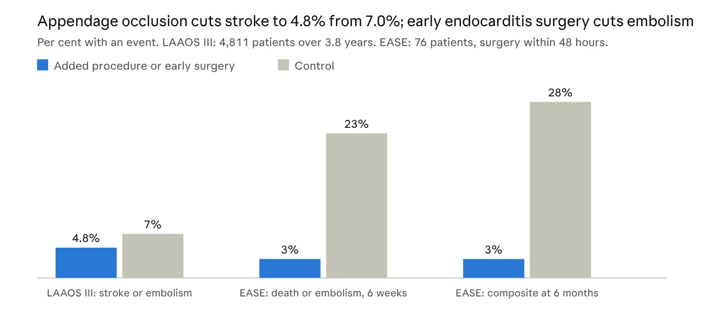
AF surgery: 2024 ESC/EACTS guideline and 2024 EHRA/HRS/APHRS/LAHRS consensus
11 parts · 4 drawings
Added 18 November 2026, from the session slides and the two documents. "As taught" means from the slides and not checked by me in the source text. Sources: ESC/EACTS 2024 guideline, Eur Heart J 2024;45:3314; EHRA/HRS/APHRS/LAHRS 2024 consensus, Europace 2024;26:euae043. I read the consensus advice tables for sections 4, 9 and 12; for the ESC guideline I saw the recommendation wording in search extracts and two summaries, not the full tables, so levels of evidence are given only where I saw them.
As taught (slides)
| Point | Detail |
|---|---|
| AF is a surgical risk factor | The ESC/EACTS 2024 guideline identifies AF as a significant risk factor for early mortality, late mortality and stroke in patients referred for cardiac surgery |
| The operation is the opportunity | Second slide only partly visible: with the chest open and the patient on bypass, ablation and appendage management can be added |
| Lesion sets differ in extent | More complete sets suit more advanced substrate |
| Full biatrial Cox-Maze IV | Pulmonary vein box, mitral and appendage lines, plus right atrial lines including the cavotricuspid isthmus. Typical fit: open left atrial surgery, persistent AF |
| Left-sided maze | Pulmonary vein box, mitral isthmus and appendage lines; no right atrial lesions. Typical fit: open left atrial cases where the biatrial set is not feasible |
| Pulmonary vein isolation with or without box | Bilateral vein encirclement, ideally with roof and floor lines. Typical fit: paroxysmal AF; CABG or AVR |
| Hybrid or thoracoscopic (convergent) | Epicardial box and appendage clip, then endocardial touch-up. Typical fit: stand-alone refractory persistent AF |
| Pulmonary vein isolation | Left and right vein pairs are encircled separately with bipolar radiofrequency |
| Box lesion | Roof and floor lines join the two circles and isolate the posterior wall |
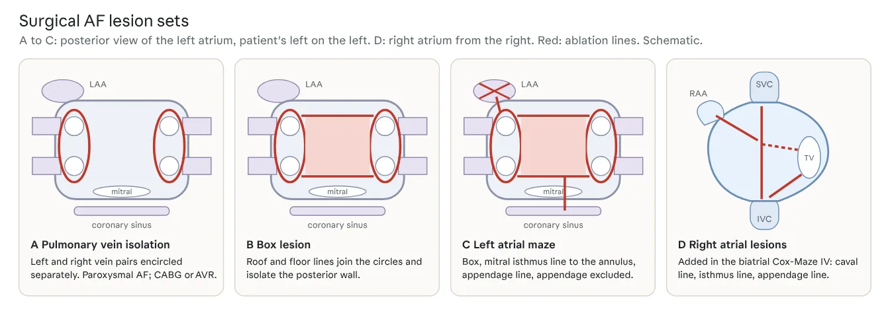
Cox-Maze IV in detail (as taught, slides 18 November 2026)
Cox-Maze IV combines the box with mitral, appendage and right atrial lines.
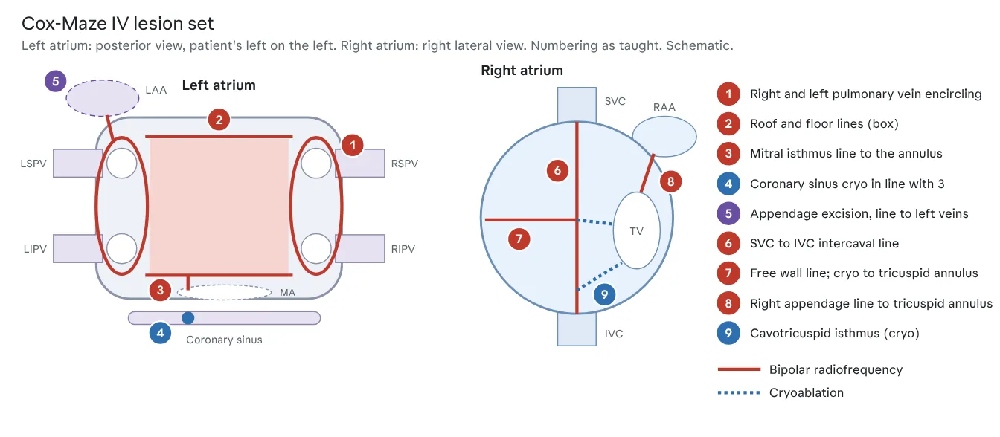
| No. | Lesion | Energy |
|---|---|---|
| 1 | Right and left pulmonary vein encircling | Bipolar radiofrequency |
| 2 | Roof and floor lines, completing the box | Bipolar radiofrequency |
| 3 | Mitral isthmus line to the annulus | Bipolar radiofrequency |
| 4 | Coronary sinus lesion in line with 3 | Cryo |
| 5 | Left atrial appendage excision, with a line to the left pulmonary veins | Bipolar radiofrequency |
| 6 | Superior to inferior vena cava intercaval line | Bipolar radiofrequency |
| 7 | Right atrial free wall line, finished to the tricuspid annulus | Radiofrequency, then cryo at the annulus |
| 8 | Right atrial appendage line to the tricuspid annulus | Bipolar radiofrequency |
| 9 | Cavotricuspid isthmus | Cryo |
The lesion set has three components that must each be transmural (as taught):
| Component | Lesions | Key pitfalls |
|---|---|---|
| Left atrium | Pulmonary vein box, mitral isthmus with coronary sinus cryo, appendage line and amputation | Gaps in the box or mitral line (may lead to atrial flutter); circumflex injury |
| Right atrium | Superior to inferior caval line, free wall, cavotricuspid isthmus, right atrial appendage | Sinus node and phrenic nerve injury |
| Energy and testing | Bipolar radiofrequency clamp for lines; cryoprobe at the annuli | Unconfirmed block; failed posterior isolation |
Slide sources given: EHRA/HRS/APHRS/LAHRS 2024 consensus and ESC/EACTS 2024 guideline. The consensus text I read supports testing for block and the importance of posterior wall isolation (see its section 12 table below); I did not find the nine-lesion numbering in it, so treat the numbering as the faculty's teaching scheme.
A slide headed "LAAOS III: LAA closure now ... AF patients having surgery" ("The trial", "The result") was shown; its body was not legible in the photo. The trial is written up from the published sources at the end of this tab.
How well does it work? (as taught, slides 18 November 2026)
Complete lesion sets restore sinus rhythm best; an appendage clip alone rarely does. The figures and citations below are copied from the slide and were not re-checked by me, apart from the CTSN trial, whose design I know from memory.

| Strategy | Freedom from AF or sinus rhythm | Evidence (as cited on the slide) |
|---|---|---|
| Biatrial Cox-Maze IV | 92% at 1 year, 84% at 5 years, 77% at 10 years (61% off antiarrhythmic drugs at 10 years) | Single-centre series, n=853; stand-alone results equal to concomitant. Khiabani, JTCVS 2022 |
| Box lesion against no box | 78% against 45% free of AF at 5 years | Cox-Maze IV cohort, n=576; posterior wall isolation matters. Henn, JTCVS 2015 |
| Biatrial against left-sided maze | 77.8% against 71.1% at 12 months; gap not sustained after 1 year | Meta-analysis, 10 studies, n=2,225. Phan, Europace 2015 |
| Pulmonary vein isolation against biatrial maze, with mitral surgery | 61% against 66% (P=0.60); any ablation 63% against 29% with none | CTSN randomised trial, n=260, persistent AF; more pacemakers with ablation. N Engl J Med 2015 |
| Appendage clip or closure alone, no ablation | Sinus rhythm 21% at 3 months, 16% at 12 months; only 15% in sinus rhythm at every visit | Epicardial clip trial, n=76; no clip-only rhythm series found. Perclip trial, J Cardiothorac Surg 2026 |
Reading it: within the CTSN trial the lesion set did not matter but ablating did; across the cohort data the posterior wall (box) is what separates good from poor results. A clip treats stroke risk, not rhythm.
Left atrial appendage techniques (as taught)
Close the appendage at its base and confirm on TOE.
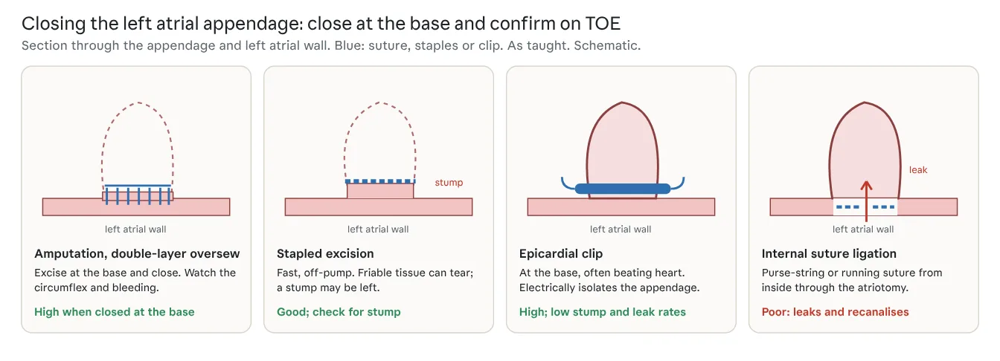
| Technique | Notes | Reliability |
|---|---|---|
| Amputation and double-layer oversew | Excise at the base and close; standard in Cox-Maze; watch the circumflex and bleeding | High when closed at the base |
| Stapled excision | Fast, off-pump; risk of tearing friable tissue and of a residual stump | Good; check for stump |
| Epicardial clip (for example AtriClip) | Placed at the base, often on the beating heart; electrically isolates the appendage | High; low stump and leak rates |
| Internal suture ligation | Purse-string or running suture from inside through the atriotomy | Poor: frequent incomplete closure or recanalisation |
Slide sources: ACC/AHA/ACCP/HRS 2023 guideline; EHRA/HRS/APHRS/LAHRS 2024 consensus; ICVTS 2025 on internal suture closure. This agrees with LAAOS III, which did not allow purse-string closure alone (from memory).
Guideline comparison for concomitant ablation (as taught)
All major guidelines support concomitant ablation, most strongly in mitral surgery.
| Scenario | ESC/EACTS 2024 | ACC/AHA 2023 | STS 2023 |
|---|---|---|---|
| Mitral valve surgery | Class I, level A | 2a, B-R (all cardiac surgery) | Class I, level A |
| Non-mitral surgery, for example CABG or AVR | IIa, level B | 2a, B-R (all cardiac surgery) | Class I, level B-NR |
| Anticoagulation afterwards | Continue by stroke risk | 2a: at least 3 months | Heart-team follow-up, Class I |
| Stand-alone or hybrid, persistent AF | IIa, level A | 2b, B-R (hybrid) | IIa, level B-R (stand-alone) |
The ESC classes match what I found in the guideline extracts; the slide supplies the levels (A and B) that I had only from memory. The ACC/AHA 2a B-R wording for concomitant ablation matches a published summary I saw in search results; the STS entries I have not checked.
ESC/EACTS 2024: the framework
| Point | Detail | Source |
|---|---|---|
| AF-CARE | C comorbidity and risk factor management; A avoid stroke and thromboembolism; R reduce symptoms by rate and rhythm control; E evaluation and dynamic reassessment | ESC press release |
| Stroke risk score | CHA2DS2-VA (sex removed). Anticoagulation Class I at a score of 2 or more, Class IIa at 1 | ESC 2024 congress report |
| Regardless of score | Anticoagulate all patients with AF and hypertrophic cardiomyopathy or cardiac amyloidosis | ACC key points |
| Cardioversion | The duration threshold for early cardioversion is cut from 48 to 24 hours; wait-and-see for spontaneous conversion is advised | Europace spotlight |
| Catheter ablation | Class I as a first-line option in paroxysmal AF, and after failed drug therapy in paroxysmal and persistent AF | Congress report |
| After ablation | Anticoagulation for at least 2 months in all patients | ACC key points |
| Risk factors | Weight loss target of 10% or more; tailored exercise; treat hypertension, heart failure, diabetes, sleep apnoea, alcohol | ACC key points |
ESC/EACTS 2024: the surgical recommendations
| Recommendation | Class | Source |
|---|---|---|
| Concomitant surgical ablation is recommended in patients having mitral valve surgery with AF suitable for rhythm control | I | Level A (checked 21 November 2026: ESC 2024 class I confirmed in the ESC Essential Messages; level A from a published summary of the guideline; the STS 2017 guideline also gives I A) |
| Concomitant surgical ablation should be considered in non-mitral cardiac surgery with AF suitable for rhythm control, with shared decision-making | IIa | Level B (checked 21 November 2026 from a published summary of the guideline; class IIa confirmed in the ESC Essential Messages) |
| Endoscopic and hybrid ablation should be considered in symptomatic persistent AF refractory to antiarrhythmic drugs, within a team of electrophysiologists and surgeons | IIa | Guideline extracts |
| Surgical closure of the left atrial appendage is recommended as an adjunct to anticoagulation in patients with AF having cardiac surgery | I, level B | Guideline; official slide set |
| Surgical appendage closure should be considered as an adjunct to anticoagulation during endoscopic or hybrid ablation | IIa, level C | Same |
| Stand-alone endoscopic appendage closure may be considered in AF with a contraindication to long-term anticoagulation | IIb | Guideline extracts |
The appendage recommendation rests on LAAOS III; note the wording "adjunct to": closure does not replace anticoagulation.
EHRA/HRS/APHRS/LAHRS 2024: surgical and hybrid ablation (section 12)
This document grades advice as "to do", "may be appropriate", "area of uncertainty" or "not to do", with evidence types META, RAND, OBS or OPN.
| Advice | Category | Evidence |
|---|---|---|
| Concomitant ablation in paroxysmal or persistent AF during surgery that opens the left atrium, whether or not drugs have failed | To do | META |
| Concomitant ablation in drug-refractory or intolerant AF during closed (left atrium not opened) cardiac surgery | To do | META |
| Concomitant ablation before any antiarrhythmic drug has been tried, during closed cardiac surgery | May be appropriate | META |
| Lesion set when the left atrium is open: biatrial Cox maze, or at least pulmonary vein isolation with posterior wall isolation | To do | RAND |
| Document exit or entrance block across the veins and completeness of lines | To do | OPN |
| Left atrial appendage exclusion with any surgical ablation, stand-alone or concomitant | To do | RAND |
| Stand-alone surgical or hybrid ablation for symptomatic persistent AF after failed catheter ablation or drugs, if the patient prefers it | May be appropriate | META |
| Stand-alone surgical or hybrid ablation for symptomatic paroxysmal AF after failed catheter ablation | Area of uncertainty | RAND |
Supporting figures quoted in section 12:
| Point | Figure |
|---|---|
| Concomitant ablation | Meta-analysis of 23 randomised trials: more freedom from AF at 12 months |
| Not isolating the whole posterior left atrium | 33% against 66% freedom from AF off drugs at 5 years; in mitral surgery, 6.7 times the recurrence risk |
| Pulmonary vein isolation alone | 37.8% single-procedure success at 5 years in one minimally invasive series |
| Stand-alone Cox maze | 89% freedom from atrial tachyarrhythmia at 5 years, 77% at 10 years, no 30-day deaths |
| Pacemaker | Sinus node dysfunction needing a pacemaker in up to 10% of non-paroxysmal patients after Cox maze; a large European valve registry found no excess |
EHRA/HRS/APHRS/LAHRS 2024: catheter ablation indications (section 4)
| Advice | Category | Evidence |
|---|---|---|
| Symptomatic recurrent paroxysmal or persistent AF resistant to or intolerant of one Class I or III drug | To do | META |
| First-line in symptomatic recurrent paroxysmal AF | To do | META |
| First-line in symptomatic persistent AF | Area of uncertainty | OPN |
| AF with left ventricular dysfunction thought to be arrhythmia-mediated | To do | META |
| Selected patients with AF and heart failure with reduced ejection fraction, to reduce admissions and prolong survival | May be appropriate | META |
| Anticoagulation for at least 2 months after ablation | To do | OPN |
How the two documents line up for the surgeon
| Situation | ESC/EACTS 2024 | Consensus 2024 | Lesion set (as taught) |
|---|---|---|---|
| Mitral surgery with AF | Ablate: Class I | To do | Biatrial Cox-Maze IV; left-sided maze if not feasible |
| CABG or AVR with AF | Should be considered: IIa | To do if drugs have failed; may be appropriate otherwise | Pulmonary vein isolation, ideally with a box |
| Any cardiac surgery with AF | Close the appendage: Class I | Exclude the appendage with any surgical ablation | Clip, or excision and suture |
| Stand-alone refractory persistent AF | Endoscopic or hybrid: IIa | May be appropriate | Epicardial box and clip, then endocardial touch-up |
Technique points (from memory, not checked)
| Point | Detail |
|---|---|
| Energy | Bipolar radiofrequency clamp for the vein pairs and box; cryoprobe for the mitral isthmus and annular ends, where a clamp cannot reach |
| Mitral isthmus line | Must reach the annulus and be matched by a coronary sinus lesion; an incomplete line causes left atrial flutter |
| Circumflex | The dominant circumflex lies under the isthmus line: choose the site on the angiogram |
| Right side | Intercaval line, line to the tricuspid annulus, appendage line; keep away from the sinus node at the superior cavoatrial junction |
| Appendage | Clip at the base or excise and oversew; avoid a residual stump over 1 cm; check with TOE |
| Afterwards | Pacing wires, amiodarone for 2 to 3 months, anticoagulation continued by stroke risk and not by rhythm, rhythm monitoring at 6 and 12 months |
| Key trials | CTSN mitral ablation trial (N Engl J Med 2015): more freedom from AF, more pacemakers. LAAOS III (N Engl J Med 2021): appendage occlusion at surgery reduced stroke or embolism, 4.8% against 7.0% |
STS 2023 guideline: the recommendation table
Source, read from your PDF: Wyler von Ballmoos MC et al. The Society of Thoracic Surgeons 2023 clinical practice guidelines for the surgical treatment of atrial fibrillation. Ann Thorac Surg 2024;118:291-310. How I read it: Table 1 in full, with class and level as printed; not the supporting text. The lesion-set drawings already in this tab apply.
| Setting | Recommendation | Class, level |
|---|---|---|
| With mitral surgery | Surgical ablation for any first-time, non-emergency mitral operation | I, A |
| With any other cardiac operation | Surgical ablation for any first-time, non-emergency non-mitral operation | I, B-NR |
| Stand-alone | Reasonable for symptomatic AF without structural heart disease that has failed class I or III drugs, catheter ablation or both | IIa, B-NR |
| Stand-alone, persistent or long-standing persistent | Reasonable, with the Cox maze III or IV lesion set preferred | IIa, B-NR |
| Pulmonary vein isolation alone | Not recommended when the left atrium is 4.5 cm or more, or mitral regurgitation is more than moderate | III, C |
| Left atrial appendage | Obliteration recommended in all first-time, non-emergency cardiac surgery in patients with AF, with or without ablation | I, A |
| Appendage alone | May be considered in long-standing persistent AF with high stroke risk when anticoagulation is contraindicated or has failed | IIb, B-NR |
| When a transcatheter valve is being considered | At low to intermediate surgical risk, surgical valve treatment with ablation and appendage occlusion is reasonable over an isolated transcatheter valve | IIa, B-NR |
| Everyone | Heart Team planning and long-term rhythm follow-up with periodic continuous ECG monitoring | I, C |
Surgical treatment of atrial fibrillation
3 parts
Every patient with AF having a first-time elective cardiac operation should have the appendage occluded and should be considered for ablation; the randomised evidence is strongest for the appendage.
Guideline positions
| Recommendation | STS 2023 | ESC 2024 (with EACTS) | ACC/AHA 2023 |
|---|---|---|---|
| Ablation at mitral surgery | I, level A | I | 2a for any cardiac surgery |
| Ablation at non-mitral surgery (AVR, CABG) | I, level B | IIa | 2a |
| Appendage occlusion at cardiac surgery | I, level A | I, as an adjunct to anticoagulation | 1 |
| Stand-alone surgical or hybrid ablation after failed drugs or catheter ablation | IIa | IIa for endoscopic or hybrid ablation in persistent AF | 2b |
| Pulmonary vein isolation alone when the left atrium is 4.5 cm or more, or MR is more than moderate | Not recommended |
STS and ESC classes were confirmed on 17 November 2026; the ACC/AHA column is from a secondary summary and memory.
Trials
| Trial | Design | Result |
|---|---|---|
| LAAOS III, NEJM 2021 | 4,811 patients with AF and CHA₂DS₂-VASc 2 or more having cardiac surgery, 105 centres; appendage occlusion or not, both continuing anticoagulation | Ischaemic stroke or systemic embolism 4.8% against 7.0% (HR 0.67, 0.53–0.85) over a mean of 3.8 years; benefit mainly after 30 days; no excess bleeding, heart failure or death |
| CTSN surgical ablation, NEJM 2015 | Ablation or not at mitral surgery, persistent AF | Freedom from AF at one year 63% against 29%; more permanent pacemakers (STS 2023 AF guideline, which gives no figures; the FRCS Atlas draft gives 21.5 against 8.1 per 100 patient-years, not checked against the trial paper) |
Practice points
LAAOS III tested occlusion in addition to anticoagulation, not instead of it. Do not stop anticoagulation because the appendage is closed.
Technique in the trial: amputation and closure in over half, stapler or double-layer internal suture in the rest. Purse-string or simple ligation alone was not allowed, because incomplete closure is common.
Confirm closure on TOE: no flow and a stump under 1 cm.
Lesion sets: pulmonary vein isolation for paroxysmal AF only; a left atrial or biatrial Cox-Maze set for persistent AF, with every line transmural and anchored to an annulus or another line.
Bipolar radiofrequency clamps for the vein and box lesions; cryoablation for lines ending on the mitral or tricuspid annulus.
Biatrial lesions give the best rhythm results and the highest pacemaker rate.
After surgery: anticoagulate, antiarrhythmic for 2–3 months, and document rhythm on a monitor at 6–12 months.
LAAOS III: left atrial appendage occlusion during cardiac surgery
2 parts · 1 drawing
Added 18 November 2026. Whitlock RP et al, N Engl J Med 2021;384:2081 (doi 10.1056/NEJMoa2101897). I read the abstract, the investigators' ACC 2021 slides and two conference reports, not the full paper.
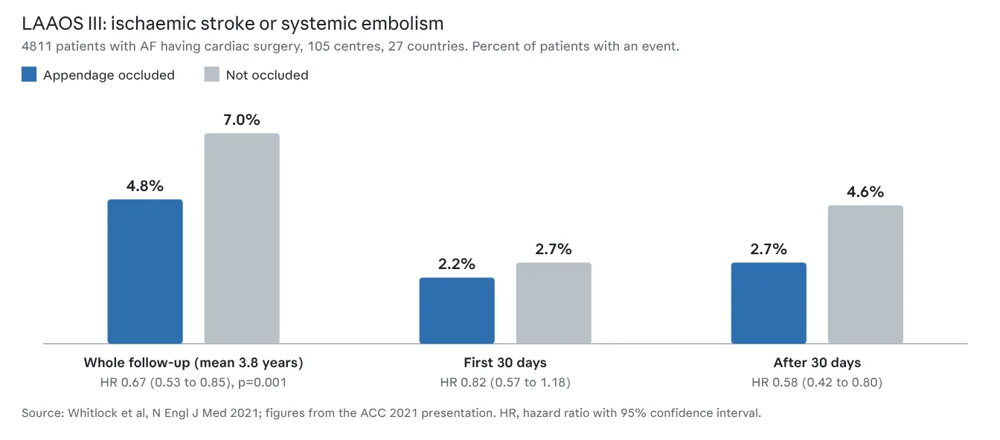
| Item | Detail | Source |
|---|---|---|
| Question | Does occluding the appendage at cardiac surgery prevent stroke in patients with AF who are also anticoagulated? | Abstract |
| Design | Multicentre randomised trial; surgery with or without appendage occlusion; usual care including oral anticoagulation in both arms | Same |
| Patients | 4811 with AF and CHA2DS2-VASc of 2 or more, having cardiac surgery for another reason; 105 centres in 27 countries | ACC 2021 slides; Healio |
| Case mix | About two-thirds had a valve procedure, a fifth isolated CABG, a third concomitant ablation | Healio |
| Permitted techniques | Amputation and suture closure, stapler, epicardial device, or suture closure of the stump | ACC slides |
| Not permitted | Purse-string alone and percutaneous devices | From memory |
| Follow-up | Mean 3.8 years; stopped early for efficacy on the monitoring board's advice after the second interim analysis | Healio; NEJM report summary |
| Primary outcome | Ischaemic stroke or systemic embolism: 114 patients (4.8%) against 168 (7.0%); hazard ratio 0.67, 95% CI 0.53 to 0.85, p=0.001 | Same |
| Timing of benefit | First 30 days 2.2% against 2.7% (0.82, 0.57 to 1.18); after 30 days 2.7% against 4.6% (0.58, 0.42 to 0.80) | ACC slides; Healio |
| Anticoagulation during follow-up | About three-quarters in both arms were still anticoagulated at 2 and 3 years | ACC slides |
| Cost in theatre | Bypass 119 against 113 minutes; clamp 86 against 82 minutes | Healio |
| Safety | No increase in chest drain output, re-operation for bleeding, heart failure admission or 30-day mortality | Healio |
| Number needed to treat | About 45 over 3.8 years (my arithmetic: 1 divided by the 2.2-point absolute difference) | Calculated |
How to read it
It tests occlusion added to anticoagulation, not instead of it. That is why the guideline wording is "as an adjunct to oral anticoagulation".
It applies to patients already having cardiac surgery. It says nothing about percutaneous devices or about stand-alone closure.
The benefit appears after the first month, so it is a long-term gain for a few minutes of clamp time.
The old worry that removing the appendage causes heart failure (loss of natriuretic peptide and reservoir function) was not borne out.
Guideline effect: the 2024 ESC/EACTS guideline makes surgical closure Class I, level B, in patients with AF having cardiac surgery (see the section above).
Open questions (from memory)
| Question | Note |
|---|---|
| Patients without AF | Ongoing trials (LeAAPS, LAACS-2) are testing prophylactic closure at surgery in patients at risk but not in AF |
| Which technique | The trial was not powered to compare them; incomplete closure with a residual stump or leak may raise risk, so confirm closure on TOE |
| Can anticoagulation be stopped afterwards | Not tested; continue by stroke risk |
Ongoing trials in patients without AF: LeAAPS and BoxX-NoAF
3 parts · 1 drawing
Added 18 November 2026. Checked against the trial registry listings, the LeAAPS design paper and the sponsor's announcements. Both trials are sponsored by AtriCure, which makes the devices being tested; neither has reported.

LeAAPS
| Item | Detail | Source |
|---|---|---|
| Name | Left Atrial Appendage Exclusion for Prophylactic Stroke Reduction, NCT05478304 | Design paper, Am Heart J 2025;284:94 |
| Question | Does excluding the appendage with a clip at cardiac surgery prevent ischaemic stroke or systemic embolism in patients who do not have AF but are at risk of it? | Same |
| Design | International, prospective, randomised 1:1, blinded (patient and carers outside theatre), superiority | Design abstract |
| Patients | Age 18 or over, no pre-existing AF, at increased risk of AF and stroke by age, CHA2DS2-VASc, left atrial size or natriuretic peptide | Same |
| Size | 6,500 enrolled at 137 centres (planned at up to 250 sites); the registry lists 6,573 | Sponsor announcement, 15 July 2025; registry mirror |
| Primary endpoint | First ischaemic stroke or systemic arterial embolism (the abstract I saw is cut off after this) | Design abstract |
| Status | Started January 2023; enrolment complete July 2025; active, not recruiting; 5 years of follow-up | Sponsor announcement; registry mirror |
| Lead | Same McMaster group as LAAOS III (Whitlock) | Design paper author list |
BoxX-NoAF
| Item | Detail | Source |
|---|---|---|
| Name | EnCompass Clamp and AtriClip in Box Lesion and Left Atrial Appendage Exclusion for the Prevention of New Onset of Atrial Fibrillation, NCT06989775 | Registry mirror |
| Question | Does a prophylactic box lesion with appendage exclusion at cardiac surgery reduce post-operative AF and later clinical AF in patients not yet in AF? | CenterWatch listing |
| Patients | Age 65 or over with CHA2DS2-VASc of 3 or more, no history of AF, having surgery on bypass with the pericardium opened | Same |
| Size | Up to 960 patients at up to 75 sites | Medical Economics report |
| Status | Started October 2025; recruiting | Registry mirror |
| Why it matters | Post-operative AF is the commonest complication of cardiac surgery, exceeding 50% in some groups | Registry mirror |
How to use these in a viva
Evidence today: appendage closure is proven only in patients with known AF (LAAOS III). Closing it in patients without AF is not yet supported.
LeAAPS will answer the stroke question in patients without AF; LAACS-2 is a second trial of the same idea (from memory).
BoxX-NoAF asks a different question, rhythm not stroke, and adds an ablation to patients who have never had AF; the harms to watch are added time, bleeding and pacemaker need (my comment).
Both are industry-sponsored device trials: say so.
The Cox-Maze operation: rationale, lesion sets and aftercare
Added 19 November 2026 from the TSRA Review 3rd ed., ch. 84 (Mozer, Cox). The indications are the STS 2017 classes the chapter quotes; the STS 2023 update is already in this tab.
Why operate
Atrial fibrillation carries a stroke risk of about 5% a year, five times baseline, and about 20% of all strokes are attributed to it. Up to 90% of thrombi form in the left atrial appendage. Drugs restore sinus rhythm in about 50% and keep it in about 30%.
| Type | Definition in the chapter | Implication |
|---|---|---|
| Paroxysmal | Self-terminating, recurrent | Triggers in the pulmonary veins; little remodelling |
| Persistent | Over 7 days; can be cardioverted | Substrate beyond the veins |
| Permanent | At least 6 months despite cardioversion | Established substrate |
Lesion sets
| Set | Lesions | Notes |
|---|---|---|
| Pulmonary vein isolation | Box around all four veins | 70 to 80% effective alone in intermittent fibrillation; 56% or less in persistent; 10 to 15% develop peri-mitral flutter |
| Left atrial set | Box plus lines to the mitral isthmus, coronary sinus (endocardial and epicardial) and the appendage orifice; appendage clipped or ligated | Completes the left side |
| Right atrial set | Superior to inferior vena cava line, with a line to the right atrial appendage | Can be done after the clamp is off |
Cox-Maze III is cut-and-sew. Cox-Maze IV reproduces the lines with bipolar radiofrequency and cryoablation, adding little or no clamp time.
| Energy | For | Against |
|---|---|---|
| Bipolar radiofrequency | Shielded from the blood pool; fast | Several applications per line; gaps and char |
| Cryoablation | Most used; safe; spares the fibrous skeleton | Up to 3 minutes per lesion; blood flow warms the tissue on a beating heart |
Indications (STS 2017, as quoted)
| Setting | Class, level |
|---|---|
| With mitral valve surgery | I, A |
| With aortic valve replacement, coronary surgery or both | I, B |
| Stand-alone, for symptomatic fibrillation refractory to drugs or catheter ablation | IIa, B |
| Stand-alone Cox-Maze III or IV for persistent or long-standing persistent fibrillation | IIa, B |
| Left atrial appendage treatment, with or without ablation | IIa, C |
| Pulmonary vein isolation alone with a left atrium over 4.5 cm or more than moderate mitral regurgitation | III, C: not recommended |
Aftercare
- Structures at risk: the oesophagus and the circumflex coronary artery.
- Early atrial fibrillation is common and does not mean failure.
- Amiodarone loading and anticoagulation for 3 months; then ECG and ambulatory monitoring, and stop the antiarrhythmic if in sinus rhythm.
- The lesions reduce atrial natriuretic peptide release: add spironolactone to the loop diuretic early on.
- With atrioventricular block, wait 4 to 5 days for recovery before a permanent pacemaker.
EACTS 2024 perioperative medication guideline: postoperative AF prophylaxis and management
Added 20 November 2026 from Jeppsson A, Rocca B, Hansson EC, Gudbjartsson T, James S, Kaski JC et al. 2024 EACTS Guidelines on perioperative medication in adult cardiac surgery. Eur J Cardiothorac Surg 2025;67(1):ezae355 (doi:10.1093/ejcts/ezae355). Read in full (pages 1 to 41; this section from sections 3.2 and 5, pages 8 to 9 and 22 to 24). The rest of the guideline is in Cardiac 10.
Epidemiology and consequences
- POAF: new-onset AF early after surgery without previous AF. Incidence 15 to 50% (up to 50% after open-heart surgery), depending on operation, age, sex and comorbidity. About 90% occur within 6 days.
- Mechanisms: direct atrial injury, inflammation, ischaemia and reperfusion injury, sympathetic activation.
- Associated with longer stay, perioperative death, stroke, MI and AKI, and long-term death, stroke, HF readmission and recurrent AF. Meta-analysis (over 150,000): 10-year mortality 29% vs 23% (OR 1.51) and stroke 4% vs 1% (OR 4.09). Recurrence of AF eightfold higher over a median 6 years. A causal link is unproven.
- Early AF recurrence after discharge predicts HF admission but not all-cause mortality.
Prophylaxis (section 3.2)
- Beta-blockers: reduce new POAF across procedures; continue before and after surgery in those already taking them.
- Starting BBs just before surgery: US National Quality Forum since 2007 uses BB at least 24 h before isolated CABG as a quality metric, but evidence of benefit is lacking. If started in BB-naive patients: short-acting drugs, gradual titration to BP and heart rate, starting several days before surgery.
- Amiodarone: more effective than BBs but more acute and long-term complications; option if BB-intolerant.
- Magnesium, fish oil, omega-3: conflicting RCTs, no recommendation.
- TIGHT K (non-inferiority, open-label, 1,690 post-CABG patients in sinus rhythm without kidney disease): potassium supplementation below 4.5 mEq/L vs below 3.6 mEq/L made no difference to new POAF, flutter or tachyarrhythmia up to 120 h or discharge.
- No large RCT support for steroids or statins to prevent POAF (SIRS/DECS pooled analysis: steroids did not reduce new AF; STICS: rosuvastatin did not reduce POAF).
| Recommendation (prophylaxis) | Class | Level |
|---|---|---|
| Continue BBs throughout the perioperative period to prevent postoperative arrhythmias | I | A |
| Short-term, low-dose BBs may be considered in BB-naive patients to prevent arrhythmias after open-heart surgery | IIb | B |
| Amiodarone may be considered to prevent POAF in open-heart surgery | IIb | A |
| Starting steroids or statins early before open-heart surgery to prevent POAF is not recommended | III | A |
Rate vs rhythm control (section 5.1)
- Haemodynamically unstable: emergency cardioversion and restoration of sinus rhythm.
- Stable: rhythm control has been standard, supported by historical and non-cardiac surgery data. RCT of 523 patients: no benefit of rhythm control (even with amiodarone) in asymptomatic or minimally symptomatic patients, but 25% crossed over each way. The guideline concludes rhythm control (drugs and cardioversion) should be preferred, with rate control also an option.
Choice of drug (section 5.2)
| Aim | Preserved LVEF | Reduced LVEF |
|---|---|---|
| Rate control | BB, or diltiazem/verapamil if BB contraindicated | BB |
| Either | Digoxin (concern about higher mortality, mainly in non-surgical AF) | Digoxin |
| Rhythm control | Amiodarone | Amiodarone |
Anticoagulation for POAF (section 5.3)
- Danish CABG cohort: OAC associated with less stroke (adjusted HR 0.55, 0.32 to 0.95). Swedish registry (over 24,000 CABG, median 4.5 years): POAF raised ischaemic stroke (HR 1.18), but early OAC did not reduce stroke or thromboembolism and raised major bleeding (HR 1.40). STS database (almost 39,000 isolated CABG with POAF): OAC at discharge linked to higher mortality (HR 1.16), no difference in stroke, more bleeding. SAVR ± CABG cohort: POAF raised death (HR 1.21), stroke and HF admission; OAC before or within 30 days of discharge did not help.
- Decision is individual, weighing bleeding and thromboembolic risk.
- Persistent POAF: therapeutic UFH or (more often) LMWH within 24 h of onset, continued until sinus rhythm or OAC established. OAC (VKA or DOAC) from 48 h after onset, for at least 4 weeks by individual risk.
- Mechanical valve or moderate-to-severe mitral stenosis: VKA. Non-valvular POAF: DOACs reasonable; meta-analysis vs VKA showed less stroke (RR 0.63) and bleeding (RR 0.74), same mortality (RR 1.02).
- CHA2DS2-VASc predicts stroke as well as in non-surgical AF, but its use for selecting OAC and the threshold are unclear; bleeding risk estimation in POAF is unresolved.
| Recommendation (POAF management) | Class | Level |
|---|---|---|
| Haemodynamically stable POAF: rhythm control | I | B |
| Haemodynamically stable and asymptomatic POAF: rate control should be considered | IIa | B |
| Haemodynamically unstable POAF: antiarrhythmic drugs and, if needed, cardioversion to restore sinus rhythm | I | B |
| Therapeutic UFH or LMWH within 24 h of POAF onset, balancing embolic and surgical bleeding risk | IIa | C |
| POAF persisting at discharge: OAC for at least 4 weeks, then re-evaluate | I | B |
| POAF in sinus rhythm at discharge: OAC for at least 4 weeks may be considered, weighing bleeding and thromboembolic risk | IIb | B |
Evidence gaps named by the guideline
- How to assess thromboembolic and bleeding risk in POAF, which patients need OAC, and the optimal OAC duration. Prospective studies of starting BBs shortly before surgery.
STS 2023 guideline: surgical treatment of atrial fibrillation, part 1 (recommendations, uptake, lesion sets)
Added 20 November 2026 from Wyler von Ballmoos MC, Hui DS, Mehaffey JH, Malaisrie SC, Vardas PN, Gillinov AM, Sundt TM, Badhwar V. The Society of Thoracic Surgeons 2023 Clinical Practice Guidelines for the Surgical Treatment of Atrial Fibrillation. Ann Thorac Surg 2024;118:291-311. Read in full (PDF pages 1 to 20; reference list pages 14 to 20 skimmed). Figure 1 read from the rendered page.
What changed from 2017
- Surgical ablation (SA) now recommended for any first-time, non-emergent concomitant operation (2017: named isolated AVR, isolated CABG and AVR + CABG only).
- Left atrial appendage (LAA) obliteration upgraded to class I, level A for all first-time non-emergent cardiac surgery in AF, with or without SA (2017: IIa, C).
- New: isolated surgical LAA obliteration (IIb, B-NR); surgery + SA + LAA occlusion preferred over transcatheter valve therapy alone in low to intermediate risk (IIa, B-NR).
- MDT assessment and long-term rhythm follow-up kept as class I.
| 2017 recommendation | COR/LOE | 2023 recommendation | COR/LOE |
|---|---|---|---|
| SA at concomitant mitral operations to restore sinus rhythm | I / A | SA for first-time non-emergent concomitant mitral operations, to restore sinus rhythm and improve long-term outcomes | I / A |
| SA at concomitant isolated AVR, isolated CABG, AVR + CABG | I / B-NR | SA for any first-time non-emergent concomitant non-mitral operation | I / B-NR |
| LAA excision or exclusion with SA is reasonable | IIa / C | LAA obliteration for all first-time non-emergent cardiac surgery in AF, with or without SA | I / A |
| At concomitant operations in AF, reasonable to manage LAA surgically | IIa / C | (superseded by the above) | — |
| — | — | Isolated surgical LAA obliteration | IIb / B-NR |
| — | — | Surgery + SA + LAA occlusion over transcatheter valve therapy alone | IIa / B-NR |
All 2023 recommendations (Table 1)
| Topic | Recommendation | COR | LOE |
|---|---|---|---|
| Mitral operations | SA for first-time non-emergent concomitant mitral operations, to restore sinus rhythm and improve long-term outcomes | I | A |
| Non-mitral operations | SA for any first-time non-emergent concomitant non-mitral operation, to restore sinus rhythm and improve long-term outcomes | I | B-NR |
| Stand-alone SA | Symptomatic AF, no structural heart disease, refractory to class I/III antiarrhythmics, catheter therapy or both: SA reasonable as a primary stand-alone procedure | IIa | B-NR |
| Stand-alone SA | Symptomatic persistent or longstanding persistent AF, no structural heart disease: stand-alone SA reasonable, with the Cox maze III/IV lesion set preferred | IIa | B-NR |
| Stand-alone SA | PVI alone is not recommended when LA is enlarged (≥4.5 cm) or MR is more than moderate | III | C |
| Concomitant LAA | LAA obliteration for all first-time non-emergent cardiac surgery in AF, with or without SA, to reduce thromboembolic morbidity | I | A |
| Stand-alone LAA | Isolated surgical LAA obliteration may be considered in longstanding persistent AF with high stroke risk and contraindication to, or failure of, long-term oral anticoagulation | IIb | B-NR |
| Transcatheter candidates | Symptomatic valve disease + AF at low to intermediate surgical risk: surgical repair or replacement with concomitant SA and LAA occlusion reasonable over transcatheter repair or replacement alone | IIa | B-NR |
| All AF patients | Multidisciplinary heart team assessment, treatment planning and long-term follow-up with periodic continuous ECG monitoring | I | C |
Grading: ACC/AHA system. Writing group 2022; MEDLINE and Embase, 1 January 2017 to 1 January 2023; more than 1143 results, 35 new articles analysed; Newcastle-Ottawa appraisal of observational studies; modified Delphi with anonymous voting. Operations grouped as primary open atrial (mitral repair or replacement), primary closed atrial (AVR, CABG, AVR + CABG) and stand-alone.
Background and uptake
- 30% to 50% of SAVR or TAVR patients have AF; associated with worse procedural outcomes, bleeding and mortality at 2 years.
- AF at presentation for mitral surgery: 20% to 42%.
- US concomitant SA at mitral repair rose from 52% to 61.5% over the last decade.
- STS Adult Cardiac Surgery Database 2022: only 43% of patients with documented AF having first-time non-emergent surgery got SA + LAA occlusion; 30% got neither.
- Complete treatment (SA + LAA occlusion) in 2022 by operation (Figure 1):
| Operation | SA + LAAO, 2022 |
|---|---|
| Isolated mitral repair | 72% |
| Mitral repair + CABG | 61% |
| Isolated mitral replacement | 56% |
| Mitral replacement + CABG | 51% |
| AVR + CABG | 33% |
| Isolated AVR | 31% |
| Isolated CABG | 31% |
- Reasons given for not ablating: high baseline risk, reoperation, worry about longer ischaemic time. Worse risk profile is not a contraindication; current techniques are safe in open LA procedures even in high-risk patients.
- Stand-alone SA (STS database 2011 to 2017): 7% annual growth; 4% annual increase in centres.
Lesion sets and technique
- Gold standard: Cox maze. Cox maze III = "cut-and-sew". Cox maze IV (Damiano) = radiofrequency plus cryoablation replacing several cut-and-sew lesions. Safety and effectiveness shown regardless of energy source or access.
- Lower conversion to sinus rhythm: large LA, older age, cumulative AF burden, less extensive ablation, especially omitted or incomplete left posterior wall isolation and the coronary sinus lesion.
- PVI alone gives about 50% to 80% rhythm success in CABG/AVR cohorts vs >90% with full open biatrial maze.
- Incomplete lesion sets can be proarrhythmic (atypical macro-re-entrant atrial flutter).
- Ganglionic plexus ablation: minimal efficacy, no longer recommended as an add-on; in an RCT it did not improve success but increased major morbidity, bleeding, sinus node dysfunction and pacemaker need.
- Cox maze is only complete with LAA occlusion/obliteration.
STS 2023 guideline: surgical treatment of atrial fibrillation, part 2 (evidence, LAA, transcatheter, follow-up)
Added 20 November 2026 from Wyler von Ballmoos MC, Hui DS, Mehaffey JH, Malaisrie SC, Vardas PN, Gillinov AM, Sundt TM, Badhwar V. The Society of Thoracic Surgeons 2023 Clinical Practice Guidelines for the Surgical Treatment of Atrial Fibrillation. Ann Thorac Surg 2024;118:291-311. Read in full (PDF pages 1 to 20; references skimmed). Confidence intervals marked "(sic)" are printed incorrectly in the source.
Evidence: concomitant mitral surgery
- RCTs: SA cuts early postoperative AF prevalence by more than 50%; reduced AF burden at 1 year.
- CTSN RCT: 260 patients with persistent or longstanding persistent AF at mitral surgery (PVI or biatrial maze vs no ablation): freedom from AF at 12 months 63% vs 29%; more permanent pacemakers; mortality 6.8% vs 8.7% (not significant).
- Results as good in rheumatic disease; learning curve exists.
- Polish registry, 3568 mitral patients, median 5 years: all-cause mortality HR 0.82 (95% CI 0.7-0.96). Rheumatic series (Kim, 1229 patients, >5 years) also showed survival benefit.
- Successful sinus rhythm: better LV recovery, smaller LA, better quality of life, possibly fewer strokes (low residual stroke risk persists).
- STS database: no increase in major morbidity or mortality; possible association with renal dysfunction. Institutional AKI OR 1.89 (95% CI 1.12-3.18; P = .017), independent of bypass time, but no increase in permanent dialysis and no loss of survival benefit. Causal link not established.
- Pacemaker: STS 7.8% vs 5.9% (adjusted OR 1.33, 95% CI 1.24-1.43); mitral series 2- to 3-fold higher; early pacemaker rate ranges 1.6% to 14%, partly practice-driven (for example proactive assessment for sick sinus syndrome).
Evidence: concomitant non-mitral (closed atrial) surgery
- Early Cox maze III in CABG patients: 98% sinus rhythm at 5 years.
- RCT, 35 patients with paroxysmal AF: CABG + PVI vs CABG alone, AF-free at 18 months 89% vs 47%.
- Meta-analysis of 16 RCTs: more sinus rhythm at 1 year after AVR and CABG with SA; no difference in mortality, pacemaker or neurological events.
- Network meta-analysis (2031 patients): LA or biatrial maze more effective than PVI; biatrial added nothing over LA maze; LA maze not riskier than PVI; adding RA maze suggested higher mortality (but in higher-risk, more complex patients).
- National registries (Taiwan about 7000 patients; Korea; Poland; Medicare/US multi-institution): lower mortality at 2 to 6.7 years. Medicare analysis of 100,000: SA lowered 3-year mortality and stroke compared with LAA occlusion alone.
- Pooled beyond 2 years (8 studies, median follow-up 2.6 to 6.7 years): mortality HR 0.77 (0.69-0.86); stroke HR 0.69 (0.64-0.75); thromboembolism HR 0.68 (0.63-0.74).
- Price: permanent pacemaker HR 1.38 (1.22-1.57) (3 studies, ≥2 years follow-up).
Stand-alone surgical ablation
- Accepted indication: symptomatic AF refractory to at least one class I or III drug; most have also failed at least one catheter ablation.
- Cox maze IV equivalent to Cox maze III when done meticulously. Most stand-alone series are minimally invasive (direct vision, thoracoscopic, robotic).
- Thoracoscopic off-pump RF PVI + LAA amputation: 60% to 80% reach the rhythm endpoint and come off antiarrhythmics and anticoagulants. Paroxysmal AF converts better than persistent.
- Surgery generally beats catheter ablation for sinus rhythm, at higher periprocedural morbidity. Exception: 52 patients with paroxysmal AF randomised, freedom from AF at 2 years 56% catheter vs 29% thoracoscopic PVI + LAA occlusion (not significant; small, fragile).
- Isolated PVI underperforms minimally invasive full on-pump endocardial maze.
- Hybrid (epicardial non-sternotomy, off-pump, plus percutaneous endocardial) vs catheter alone:
| Trial | Hybrid | Catheter | Note |
|---|---|---|---|
| CEASE-AF (persistent AF) | 71% | 39% | No difference in major complications at 30 days |
| HARTCAP-AF | 89% at 12 months | 41% | Comparable adverse events |
| CONVERGE | 65% at 12 months | 37% | Comparable adverse events |
- Minimally invasive cryo maze (thoracoscopic or robotic) at high-volume centres: >90% AF-free at 1 year, 80% at 5 years, including many longstanding persistent cases (not always continuous ECG monitoring).
- Biatrial Cox maze III/IV through a minimally invasive approach may give the greatest benefit. Epicardial ablation with atypical lesions is exploratory. LA reduction remains controversial.
- Safety: Krul 2013 review (23 studies, 752 patients) mortality 0.4%, complications 3.2%. STS database stand-alone: mortality 0.74%, complications 16.43%, stroke 0.72%, renal failure 2.45%, bleeding 0.99%, pacemaker 1.03%.
Left atrial appendage management
- Observational: >50% fall in thromboembolic morbidity, modest survival benefit.
- Medicare, 10,524 elective cardiac surgery patients with AF: mortality HR 0.88 (95% CI printed as 0.79-0.55, sic); thromboembolism HR 0.67 (0.56-0.81), median 2.6 years. Similar in 4210 isolated CABG patients.
- Medicare, 8590 CABG/valve patients with and without AF: mortality RR 0.71 (0.6-0.84), stroke RR 0.73 (0.56-0.96). In patients without AF: no benefit and more AF-related readmissions.
- Largest meta-analysis (40,107 patients): stroke RR 0.68 (0.57-0.82); thromboembolism RR 0.63 (0.53-0.76).
- Techniques: resection, epicardial stapling, clip, endoatrial double-layer longitudinal suture. Stapling alone performs poorly (residual stump, recanalisation, thrombogenic). Complications are rare: bleeding from handling, clip malposition leaving a stump or impinging the circumflex artery.
- LAACS RCT (n = 186; 87% no AF history): stroke RR 0.62 (0.27-1.43), mortality RR 0.78 (0.44-1.39) at 6 years, both not significant.
- LAAOS III RCT: 4770 AF patients at concomitant surgery, mean 3.8 years, routine postoperative anticoagulation. Methods: amputation and closure (preferred), stapler, double-layer closure from inside the atrium at minithoracotomy (TOE confirmation required), epicardial clip. About a third also had SA; 92% got allocated LAA treatment; 77% on anticoagulation at 3 years. Reduced ischaemic stroke or systemic embolism, driven by stroke (RR 0.66, 0.52-0.84); no reduction in all-cause mortality; benefit independent of anticoagulation use.
Stand-alone LAA occlusion
- Epicardial clip: 95% complete occlusion on CT; safe and reproducible. Thoracoscopic, off-pump series show reasonable short- and long-term outcomes.
- Small surgical vs percutaneous comparison: similar complications, stay, completeness and neurological events, although surgical patients had higher CHA2DS2-VASc and HAS-BLED and no anticoagulation (percutaneous group: DAPT 3 months then single antiplatelet). Other studies: more bleeding with percutaneous, longer stay with surgical.
- Percutaneous leaks (48 studies): peridevice leak 26.1% on TOE, 57.3% on CT; leak associated with thromboembolism (OR 2.04, 95% CI printed as 1.03-1.22, sic).
- Surgical occlusion meta-analysis (6 studies): low complications, mortality and 1-year stroke; no clear difference from percutaneous (not randomised). SALAMANDER registry (400 patients, NCT05144958) ongoing. No RCTs vs percutaneous occlusion or vs oral anticoagulants.
Patients considered for transcatheter valve therapy
- TAVR landmark trials: one-third to one-half had AF; low-risk trials 15% to 18%, mostly untreated.
- Atrial functional MR/TR: persistent AF causes a type I dilated annulus; AF may be the cause, not a bystander.
- AF after TAVR independently predicts late bleeding, cardiovascular events and death beyond 1 year.
- Medicare, AS + AF, SAVR + SA vs TAVR alone: mortality HR 0.65 (0.53-0.79); pacemaker HR 0.62 (0.44-0.87); bleeding HR 0.63 (95% CI printed as 0.039-1.00, sic); heart failure readmission HR 0.49 (0.36-0.65).
- No data on AF prevalence or outcomes in TEER. Surgery + SA + LAA occlusion should be discussed at every heart team meeting for AF with structural disease.
After surgery
- Class I or III antiarrhythmic (for example amiodarone) perioperatively, often 2 to 3 months; most in stable sinus rhythm stop all antiarrhythmics.
- At least periodic 24-hour Holter should be routine. Recurrence: consider catheter assessment and ablation.
- Anticoagulation often started early because ablation damages endothelium. Some centres use single antiplatelet without anticoagulation after SA + LAA occlusion (stroke <1%). Decide on documented freedom from AF, completeness of LAA occlusion, bleeding risk and CHA2DS2-VASc. No firm data.
- Follow by the surgeon of the heart team for at least 1 year. Success = freedom from AF and from antiarrhythmics at 1 year. Surveillance up to 5 years suggested for late recurrence and conduction disease.
AF surgery: additions from the FRCS Atlas HTML builds
Added 20 November 2026 after comparing the FRCS Atlas HTML builds (Master Updater 31, chapter 26; the index.html app data lesson "AF ablation: reading the CTSN trial" and its questions) with this tab. Only points not already in the ST4 course are listed; each says whether it was checked against a primary source.
| Point | Source and status |
|---|---|
| CTSN mitral ablation trial (Gillinov): 260 patients with persistent or long-standing persistent AF needing mitral surgery, ablation or none; every patient had left atrial appendage closure | 260 patients and mitral population checked: STS 2023 AF guideline, PDF p. 6. Appendage closure in all: FRCS Atlas draft; not checked against a primary source |
| Primary endpoint: freedom from AF at both 6 and 12 months on 3-day Holter, 63.2% against 29.4%. It is not continuous freedom from AF over a year | 63% against 29% checked: STS 2023 AF guideline, PDF p. 6. Decimals and Holter definition: FRCS Atlas draft; not checked against a primary source |
| Pacemakers: 21.5 against 8.1 per 100 patient-years, incidence rates and not percentages. This tab's "21% against 8%" (from memory) should be read in these units | FRCS Atlas draft; not checked against a primary source (STS 2023 confirms only "more permanent pacemakers") |
| One-year mortality hazard ratio 0.76 (95% CI 0.32 to 1.84), not significant: this neither shows equivalence nor permits stopping anticoagulation after successful ablation | FRCS Atlas draft; not checked against a primary source |
| Appendage closure technique. The Atlas says internal suture closure leaves a stump or recanalises in 30 to 40% and that an epicardial clip gives over 95% complete exclusion. The STS 2023 guideline names stapling alone as the technique with poor results (residual stump, recanalisation) and lists endoatrial double-layer suture among the studied methods, as this tab does | STS 2023 AF guideline, PDF p. 11 (the FRCS Atlas draft states that internal suture closure fails in 30 to 40%) |
Cardiac 8: endocarditis
Indications, timing and operative strategy for endocarditis surgery. AF surgery and appendage occlusion now have their own tab (7).

Timing of surgery at a glance
1 drawing
One-picture summary of the ESC 2023 indications, re-checked against the guideline PDF on 19 November 2026 (Recommendation Table 12, the neurological recommendations and Table 21). The full tables are at the top of this tab; they agree with the PDF.
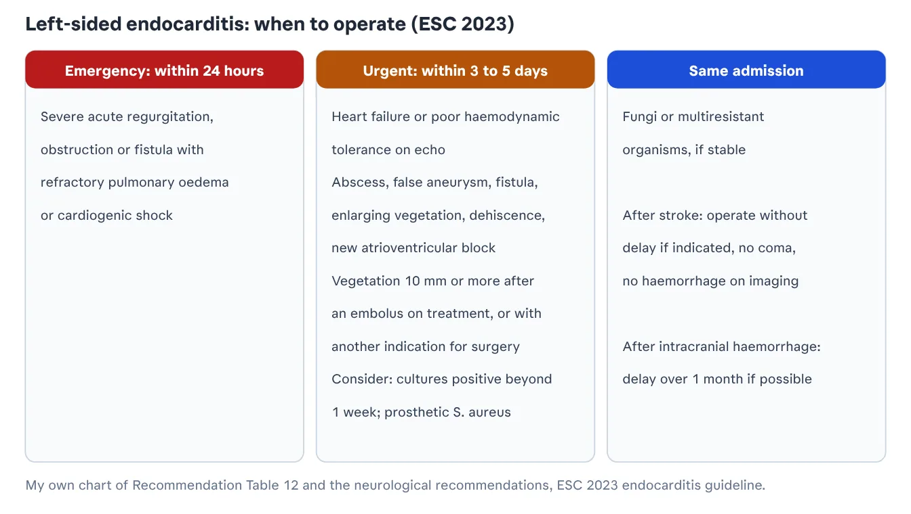
AngioVac and percutaneous mechanical aspiration in endocarditis
7 parts · 2 drawings
Added 18 November 2026 in answer to your question. Sources, each marked in the tables:
[A] El Sabbagh A, Landolfo K, Yucel E, Hamid N, Baddour LM, Sethi SS. Percutaneous mechanical aspiration in tricuspid valve infective endocarditis. Ann Cardiothorac Surg 2026, doi 10.21037/acs-2025-aw-41-tvd (read online today: https://www.annalscts.com/article/view/17484/html).
[B] STS summary of the AngioVac system for right-sided endocarditis, quoting the Mhanna meta-analysis (read online today: https://www.sts.org/node/8223).
[C] Poliwoda SD et al. AngioVac system for infective endocarditis: a new treatment for an old disease. Ann Card Anaesth 2023;26:105-9, doi 10.4103/aca.aca_156_21 (the PDF you supplied; three cases).
[D] de Waha et al 2026 and ESC 2023, already in the section above.
I could not open the American Heart Association 2026 science advisory on this topic (J Am Heart Assoc 2026;15:e050115); only its headline points were visible in search results.

What it is
| Point | Detail | Source |
|---|---|---|
| Device | Large-bore aspiration cannula with a funnel tip, a centrifugal pump, a filter and a return cannula: a veno-venous extracorporeal circuit that sucks blood and debris from the right atrium, filters it and returns it | A, B |
| Licence | Approved in the United States in 2014 for removing undesirable intravascular material (thrombus, embolus); use in endocarditis is off-label | A, B, C |
| Sizes | 22 Fr system (25 Fr outer cannula, 20 or 180 degree tip) or 18 Fr system (22 Fr outer cannula, 85 degree bend); return cannula 16 to 18 Fr | A |
| Other devices | Penumbra Lightning 12 Fr (no reinfusion); Inari FlowTriever 20 or 24 Fr (syringe suction, filtered reinfusion); AlphaVac (no reinfusion) | A |
Guideline position
| Body | Position | Source |
|---|---|---|
| ESC 2023 | Class IIb: may be considered in selected high-risk patients with right-sided intra-atrial septic masses | A, D |
| AHA 2022 statement on people who inject drugs | Recognised as a consideration | A |
| AHA 2026 science advisory | Exists; not read | search result only |
| Evidence base | No randomised trial; registries, case series and administrative data | A |
Who is considered
| Indication | Detail | Source |
|---|---|---|
| Vegetation over 20 mm, recurrent septic pulmonary emboli, or persistent sepsis on correct antibiotics | In a patient at high surgical risk or in whom a prosthesis is undesirable | A, B |
| People who inject drugs | As definitive treatment for refractory infection, or as a bridge to surgery while addiction is treated | A |
| Device lead infection | To debulk before lead extraction, especially vegetation 20 mm or more, or 10 mm or more with a patent foramen ovale | A |
| Diagnostic uncertainty | To obtain tissue | A |
| Favourable anatomy | Large, friable, mobile vegetation on the atrial side of the valve. Ventricular, subvalvular or dense chronic vegetations do badly | A |
| Unlikely to help | Refractory septic shock; severe hypoxaemia from emboli already delivered | A |
| Timing | Usually after 5 to 7 days of intravenous antibiotics; earlier in aggressive S. aureus infection | A |
| Before the procedure | Transoesophageal echo; screen every patient for a patent foramen ovale and consider cerebral protection if there is right-to-left shunting | A |
How it is done
| Step | Detail | Source |
|---|---|---|
| Setting | General anaesthesia, transoesophageal echo, fluoroscopy, perfusionist | A, C |
| Access | Two veins: femoral-femoral or jugular-femoral, under ultrasound; pre-closure with figure-of-eight sutures. Poliwoda used right internal jugular drainage and left femoral return | A, C |
| Heparin | Activated clotting time above 250 seconds (A); Poliwoda ran above 300 seconds (C) | A, C |
| Circuit | Primed and connected wet-to-wet to exclude air | A |
| Positioning | Funnel opened at a safe distance, then aligned coaxially with the vegetation | A |
| Aspiration | Start at low flow, then increase; aspirate from a proximal position or by direct contact. The article prints the flows in metres per second, which looks like a misprint, so I have not quoted them | A |
| Hazards during the run | Suck-down on the atrial wall (thump, arrhythmia, flow drop); no heater in the circuit, so runs are kept short | A |
| End | Stop flow, withdraw, return the circuit blood slowly (more slowly with a poor ventricle), tie the sutures | A |
| Afterwards | About six weeks of intravenous antibiotics, serial cultures, CT chest for new respiratory symptoms | A |
| Success | Commonly defined as 70% or more reduction in vegetation size, or a residual of about 1 cm (A); the meta-analysis used residual under 50% without serious complication (B) | A, B |

Results
| Study | Patients | Result | Source |
|---|---|---|---|
| Mhanna meta-analysis | 301, from 44 studies | Procedural success 89.2%; clinical success 79.1%; bacteraemia cleared 82.5%; conversion to open surgery 11%; survival 89.7% | A, B |
| CLEAR-IE registry (El Sabbagh) | 256 | Success 89.4%; cultures cleared in 93.6% at a median of one day; in-hospital mortality 9.8%; composite of death, new pulmonary embolism or emergency surgery 18% | A |
| RAPID registry (Moriarty) | 59 in the table | Success 75%; in-hospital death 1.3%; distal embolisation 3%; major bleeding 2.6% | A |
| Reddy | 177 | Mortality 1.1%; worsening tricuspid regurgitation 21.4% | A |
| Against surgery (Kim, 431) | Similar procedural, 30-day and 1-year mortality; shorter stay, lower cost | A | |
| Against surgery (Suruagy-Motta, 974) | Similar in-hospital and 1-year mortality; higher 30-day mortality with aspiration; shorter stay | A | |
| Poliwoda | 3 | All three improved; echo showed no residual vegetation; no complications reported | C |
Complications
| Complication | Rate | Source |
|---|---|---|
| Worsening tricuspid regurgitation | 14 to 21% in registries; 43.5% progression in one series. Possibly an unmasked perforation or chordal injury. Not linked to excess mortality in CLEAR-IE | A |
| Pulmonary embolism | 8.3% in CLEAR-IE; distal embolisation 1 to 3% in other registries | A |
| Paradoxical embolism | Through a patent foramen ovale; stroke 2.5% in CLEAR-IE | A |
| Tamponade or perforation | 0.5 to 2.5% | A |
| Bleeding and access | Major bleeding 2.6 to 3%; transfusion 28 to 50% in case series; access-site bleeding 12% in one series (Worku) | A, B, C |
| Later tricuspid surgery | 3 to 16% across series | A |
For the viva
It is debulking for source control, not a valve operation: the regurgitation is left, and may be worse.
It suits the patient who meets a surgical indication for right-sided disease but is a poor candidate for a prosthesis. This is the same patient group as valvectomy in the section above.
The evidence is observational, the ESC class is IIb, and the endocarditis team decides.
Endocarditis in congenital heart disease
Highest risk: prosthetic valves and conduits (bovine jugular vein conduits in particular), residual shunts next to prosthetic material, and cyanotic disease.
The 2025 ACC/AHA guideline asks that endocarditis is considered in any acute or subacute failure of a bioprosthetic pulmonary valve.
Transthoracic echo often misses conduit vegetations; use PET-CT and intracardiac or transoesophageal echo.
Indications and timing follow the adult rules above; replace infected conduits with a homograft where possible, and discuss in a combined congenital and endocarditis team.
The endocarditis team meeting (MDT): course notes
3 parts
Written for the ST4 course session from standard references; moved here from the congenital section. The Endocarditis Team confirms the diagnosis, sets the antibiotic plan, decides whether and when to operate, and plans imaging for complications.
Who: cardiologist, cardiac surgeon, infection specialist, imaging, with neurology, congenital and device teams as needed. Complicated cases belong in a Heart Valve Centre.
Diagnosis: blood cultures before antibiotics; TTE then TOE; repeat TOE in 5 to 7 days if negative and suspicion stays high. Cardiac CT for perivalvular extension; PET-CT for prosthetic valves and conduits.
Look for emboli: brain and whole-body imaging change both timing and risk.
How to present a case
Organism, source, and days of effective antibiotics; are cultures now negative?
Valve involved, native or prosthetic, and severity of dysfunction.
Haemodynamic state: heart failure, shock.
Local extension: abscess, pseudoaneurysm, fistula, new AV block.
Vegetation size and mobility; embolic events so far.
Neurological status and brain imaging.
Operative risk, frailty, and (if relevant) plan for injecting drug use.
Proposal: surgery and its timing, or medical therapy with a review date.
Prophylaxis in congenital heart disease
Antibiotic prophylaxis for dental procedures: prosthetic valves or repair material, previous endocarditis, unrepaired cyanotic disease, and repairs with prosthetic material for 6 months, or lifelong with a residual shunt.
Worked case: persistent bacteraemia with prosthetic material
Fictional teaching case from the course pack: persistent positive blood cultures, prosthetic material in place, and an equivocal first echo.
Model answer: coordinate microbiology, advanced imaging where appropriate, assessment for complications and possible source control, with congenital surgery and the Endocarditis Team. Assign follow-up and the prevention handover.
Think about: TOE, then PET-CT or cardiac CT for prosthetic valves and conduits where echo is limited; embolic screening; conduit and percutaneous pulmonary valve infection, which is common and often echo-negative.
Prevention handover: dental care, antibiotic prophylaxis for the high-risk group, skin and piercing advice, and a named contact.
Thresholds: Endocarditis and prosthetic valves
4 parts
In endocarditis the imaging findings that mandate surgery are severe valve dysfunction with heart failure, local extension, and vegetations ≥10 mm that have embolised.
Infective endocarditis (ESC 2023)
| Finding on echo or CT | Timing | Class |
|---|---|---|
| Severe acute regurgitation, obstruction or fistula with refractory pulmonary oedema or shock | Emergency (within 24 hours) | I |
| Severe regurgitation or obstruction with heart failure symptoms or poor haemodynamic tolerance | Urgent (3–5 days) | I |
| Abscess, pseudoaneurysm, fistula, enlarging vegetation, prosthetic dehiscence, new AV block | Urgent | I |
| Vegetation ≥10 mm after one or more embolic episodes despite appropriate antibiotics | Urgent | I |
| Vegetation ≥10 mm with another indication for surgery | Urgent | I |
| Vegetation ≥10 mm, aortic or mitral, no severe valve dysfunction or embolism, low risk | Urgent | IIb |
| Right-sided, three separate indications (course pack correction, ESC 2023): persistent bacteraemia despite appropriate antibiotics; RV dysfunction from acute severe TR not responding to treatment; residual tricuspid vegetation over 20 mm after recurrent septic pulmonary emboli. Any one is enough; they are not a combined criterion | Surgery | I to IIa |
| Early prosthetic valve endocarditis (within 6 months) | Valve replacement with complete debridement | I |
Cardiac CT is the test for perivalvular extension when echo is inconclusive, and gives coronary anatomy without catheter manipulation of an aortic vegetation.
Prosthetic valve dysfunction
| Finding | Threshold | Meaning |
|---|---|---|
| Aortic prosthesis, peak velocity | >4 m/s | Possible obstruction |
| Aortic prosthesis, mean gradient | ≥35 mmHg, or rise ≥20 mmHg from baseline | Possible obstruction |
| Aortic prosthesis, dimensionless index | <0.25 | Possible obstruction |
| Aortic prosthesis, acceleration time | >100 ms (ratio to ejection time >0.37) | Obstruction rather than high flow or mismatch |
| Mitral prosthesis, peak E velocity | ≥2.5 m/s | Possible obstruction |
| Mitral prosthesis, mean gradient | >10 mmHg | Possible obstruction |
| Mitral prosthesis, pressure half-time | >200 ms | Possible obstruction |
| Mitral prosthesis, VTI ratio (prosthesis ÷ LVOT) | >2.5 | Obstruction or significant regurgitation |
| Bioprosthetic structural deterioration, moderate | Gradient rise ≥10 mmHg to ≥20 mmHg with area fall ≥0.3 cm² or ≥25% | VARC-3 stage 2 |
| Bioprosthetic structural deterioration, severe | Gradient rise ≥20 mmHg to ≥30 mmHg with area fall ≥0.6 cm² or ≥50%, or new severe regurgitation | VARC-3 stage 3 |
| CT attenuation of a subprosthetic mass | <145 HU thrombus, ≥145 HU pannus; an adjunct to haemodynamics and leaflet motion, not a treatment rule | Thrombus may lyse or anticoagulate; pannus needs surgery |
Patient-prosthesis mismatch (indexed effective orifice area, cm²/m²)
| Position | Moderate | Severe | If BMI ≥30 |
|---|---|---|---|
| Aortic | ≤0.85 | ≤0.65 | ≤0.70 and ≤0.55 |
| Mitral | ≤1.2 | ≤0.9 | ≤1.0 and ≤0.75 |
Thresholds for reoperation
| Situation | Class |
|---|---|
| Symptomatic patient with a significant rise in gradient or severe regurgitation | I |
| Paravalvular leak with endocarditis, haemolysis needing repeated transfusion, or severe symptoms | I |
| Obstructive mechanical valve thrombosis in a critically ill patient | I |
| Non-obstructive thrombus >10 mm with embolism, or persisting despite optimal anticoagulation | IIa |
| Asymptomatic severe bioprosthetic dysfunction at low reoperative risk | IIa |
3D transoesophageal echo in endocarditis (Baltodano-Arellano et al, 2024)
3 parts · 1 drawing
Added 18 November 2026 from the PDF you supplied: Baltodano-Arellano R et al, Role of 3D transoesophageal echocardiography in the study of infective endocarditis, Eur Heart J Imaging Methods Pract 2024;2:qyae085, doi 10.1093/ehjimp/qyae085. A review with a case collection. Everything below is from the paper; its echo images are not reproduced. This links to the echo material in Cardiac tab 4.

What 3D adds for the surgeon
| Tool | Use |
|---|---|
| Multiplanar reconstruction | Unlimited cut planes: finds more vegetations, gives the true maximum length, localises the lesion to a scallop or cusp. Use this for measurement |
| Volume rendering | En face surgical view and the relation between lesions; good for planning. Lower spatial resolution, so do not measure on it |
| Simultaneous biplane | Follows device leads through the tricuspid valve in two planes |
Lesion by lesion
| Lesion | Points |
|---|---|
| Vegetation | Over 10 mm with an embolic event or valve dysfunction: urgent surgery. Over 30 mm: high neurological risk. Best cut-off for embolism in one study 17 mm on 3D against 15 mm on 2D, accuracy 78% against 65%; 3D lengths applied to current thresholds would send more patients to surgery |
| Perivalvular abscess | Sensitivity and specificity 28% and 98% for transthoracic, 87% and 95% for 2D transoesophageal. In one surgical series of 15 abscesses multiplanar reconstruction found all and 2D found one |
| Pseudoaneurysm | Echo-free perivalvular cavity communicating with the bloodstream, expanding in systole and collapsing in diastole; usually the progression of a root abscess; can rupture into left atrium, aorta, left ventricle or pericardium. 3D shows the rupture site and the relation to the coronary origins |
| Fistula | Turbulent colour flow between chambers is the indirect sign; volume rendering clarifies the tract |
| Leaflet perforation | Transoesophageal against transthoracic: sensitivity 95% against 45%, specificity 98% against 95%. En face 3D views found perforations missed on 2D |
| Prosthetic dehiscence | Gap between annulus and sewing ring; rocking when severe, and severe regurgitation when dehiscence exceeds 40% of the annulus. Aortic prostheses more often than mitral, usually at the non-coronary sinus; mitral defects mostly posterior and lateral |
| Non-bacterial thrombotic endocarditis | Small (under 1 cm) verrucous nodules or diffuse thickening |
Limits
Needs regular rhythm and a still probe; 2D artefacts carry into 3D, and prosthetic shadowing lowers sensitivity.
The authors advise a multimodal approach in these situations, with CT for perivalvular extension.
Endocarditis: 2023 ESC guideline
7 parts · 1 drawing
Added 18 November 2026. Delgado V et al, 2023 ESC Guidelines for the management of endocarditis, Eur Heart J 2023;44:3948-4042. As far as I know this is issue 39 of 14 October 2023, not 38; I did not open the journal page to confirm the issue number. Content below is from the ACC key-points summary of the guideline, which does not give classes or levels; one class is added from a published comparison table. Compare with the endocarditis thresholds already in this tab.

Surgery
| Point | Detail |
|---|---|
| Three indications | Heart failure, uncontrolled infection, prevention of septic emboli |
| Emergency, within 24 hours | Aortic or mitral native or prosthetic endocarditis with severe regurgitation, obstruction or fistula causing refractory pulmonary oedema or cardiogenic shock |
| Urgent, within 3 to 5 days | Heart failure; locally uncontrolled infection (abscess, false aneurysm, fistula, enlarging vegetation, prosthetic dehiscence, new AV block); persistent vegetation of 10 mm or more after one or more emboli despite antibiotics (Class I, level B); vegetation of 10 mm or more with another indication |
| Urgent or non-urgent | Fungal or multiresistant organisms, by haemodynamics |
| Early prosthetic valve endocarditis (within 6 months) | Complete debridement and valve replacement |
| Change from 2015 | A clear set of timing definitions; embolic risk can be an indication on its own in a stable patient (commentary) |
Stroke and surgery
| Situation | Advice |
|---|---|
| TIA or non-haemorrhagic stroke, with heart failure, uncontrolled infection, abscess or persistent high embolic risk | Do not delay surgery |
| Significant haemorrhagic stroke | Consider delaying at least 4 weeks |
| Haemorrhagic stroke in an unstable patient | Consider urgent or emergency surgery, weighing the chance of a meaningful neurological outcome |
Right-sided and device infection
| Point | Detail |
|---|---|
| Right-sided: operate for | Acute severe tricuspid regurgitation with right ventricular dysfunction; recurrent pulmonary emboli needing ventilatory support; residual tricuspid vegetation over 20 mm; left-sided involvement |
| Technique | Tricuspid repair preferred to replacement where possible |
| Device infection | Complete system extraction without delay, under initial empirical antibiotics |
At operation
| Point | Detail |
|---|---|
| Coronary assessment | Angiography if there is no aortic vegetation; CT coronary angiography if there is. For men over 40, postmenopausal women, known coronary disease or one or more risk factors |
| Heart block | Consider epicardial pacemaker implantation at the valve operation for complete AV block with a predictor of persistence: preoperative conduction abnormality, Staphylococcus aureus, aortic root abscess, tricuspid involvement or previous valve surgery |
Diagnosis and imaging
| Point | Detail |
|---|---|
| First line | Transthoracic echo |
| Transoesophageal echo | When transthoracic is negative with suspicion, in prosthetic valves, and before switching to oral antibiotics |
| Repeat echo | Within 5 to 7 days if suspicion stays high after a negative or inconclusive study |
| Cardiac CT | For possible native or prosthetic valve endocarditis when echo is inconclusive, and for paravalvular complications |
| FDG PET/CT | Recommended in possible prosthetic valve endocarditis; may be considered for device infection |
| Brain and whole-body imaging | Recommended in symptomatic patients; may be considered as screening |
Antibiotics
| Point | Detail |
|---|---|
| Duration | 2 to 6 weeks for native valves; at least 6 weeks for prosthetic valves |
| Two phases | First 2 weeks in hospital intravenously, during which surgery and source control happen; then outpatient oral or parenteral therapy in selected patients |
| Before stepping down | Transoesophageal echo must show no local progression or complication |
| Drugs | No aminoglycoside for staphylococcal native valve infection; rifampicin only with foreign material; daptomycin at 10 mg/kg daily |
Prevention and the team
| Point | Detail |
|---|---|
| High risk | Previous endocarditis; surgical, transcatheter or repaired valves; uncorrected cyanotic or prosthetically repaired congenital disease; ventricular assist devices |
| Prophylaxis | Recommended for high-risk patients having oral or dental procedures; should be considered after transcatheter mitral or tricuspid repair |
| Endocarditis Team | Cardiology, imaging, cardiac surgery, infectious diseases, microbiology and outpatient antibiotic therapy. Complicated cases go to a Heart Valve Centre with immediate surgical capability |
| Follow-up | Blood cultures after treatment ends; relapse means the same organism, reinfection a different one, usually after 6 months; addiction treatment for people who inject drugs |
AHA scientific statement: endocarditis in people who inject drugs (Baddour et al, 2022)
4 parts · 1 drawing
Added 18 November 2026 from the PDF you supplied: Baddour LM, Weimer MB, Wurcel AG, McElhinney DB, Marks LR, Fanucchi LC, Esquer Garrigos Z, Pettersson GB, DeSimone DC. Management of infective endocarditis in people who inject drugs: a scientific statement from the American Heart Association. Circulation 2022;146:e187-e201, doi 10.1161/CIR.0000000000001090. A scientific statement, so it carries no graded recommendations. I read the surgery, antibiotic and addiction sections in full and the rest in part. Everything below is from the statement.

Surgery
| Point | Statement |
|---|---|
| Indications | The same as in patients who do not inject |
| Early surgery (index admission, before antibiotics are complete) is reasonable for | Heart failure; heart block; bacteraemia persisting 5 to 7 days on effective antibiotics; annular or aortic abscess; destructive penetrating lesions; recurrent emboli with persistent vegetation; mobile vegetation over 10 mm; left-sided S. aureus; multidrug-resistant or fungal organisms |
| Planning | Early involvement of anaesthesia, addiction medicine and intensive care for pain and withdrawal |
| Right-sided disease | Only 5 to 40% of non-complex right-sided cases come to surgery; medical treatment preferred |
| Tricuspid indications | Less clear than left-sided: large bulky vegetations causing septic pulmonary emboli and, less often, severe regurgitation |
| Tricuspid operation | Repair and avoid prosthetic material. Repair the regurgitant valve as well as removing vegetations |
| Valvectomy | Not a recommended treatment; can lead to significant morbidity |
| Replacement | Mortality and recurrence are higher than with repair, but there is no evidence that extensive patch repair beats replacement, so replacement is reasonable when repair is not possible. All infected tissue must be debrided |
| Device | A cardiac implantable device with valve endocarditis needs complete extraction |
| Left-sided disease | Often more destroyed because of delay and S. aureus. Bioprosthesis for most (anticoagulation barriers). Allograft preferred for the destroyed aortic root, with significant mortality |
| Percutaneous aspiration (AngioVac or other) | An option to prevent further septic emboli, mostly in high surgical risk; also used in lower-risk patients with vegetations and no significant regurgitation |
| Repeat valve operation | A team decision after detailed discussion; requires a plan for addiction treatment |
Antibiotics
| Point | Statement |
|---|---|
| Two-week course for uncomplicated right-sided methicillin-sensitive S. aureus | Listed as an option in the 2015 statement; this writing group does not advocate routine use |
| Partial intravenous then oral | A possible option to complete 6 weeks, informed by the POET trial |
| Long-acting lipoglycopeptides | Dalbavancin or oritavancin can complete 6 weeks |
| Unplanned discharge | Step-down to oral antibiotics is better than incomplete intravenous treatment, with fewer readmissions |
| Planned oral switch | Only after cultures clear, metastatic foci are drained and systemic features settle |
Addiction treatment
| Drug | Notes |
|---|---|
| Methadone | Full agonist; treats pain, withdrawal and craving; QT prolongation and interactions; first dose 10 to 30 mg, no more than 40 mg on day one; reduces all-cause mortality |
| Buprenorphine | Partial agonist; treats pain, withdrawal and craving; few interactions; start 2 to 4 mg; reduces all-cause mortality |
| Extended-release naltrexone | Antagonist; does not treat pain or withdrawal; 380 mg intramuscular monthly after 7 to 10 days opioid-free; often not preferred in hospital because of acute pain |
Addiction-trained clinicians are as important as the traditional members of the endocarditis team.
Patients cured of a first episode remain at very high risk of another, whether or not injecting continues.
Where this differs from the European sources in this tab
| Issue | AHA 2022 | ESC 2023, de Waha 2026, Luc 2019 |
|---|---|---|
| Valvectomy | Not recommended | May be considered in selected patients as a first stage |
| Two-week regimen | Not advocated for routine use | Accepted for uncomplicated cases meeting the criteria |
In a viva, state both positions and say which guideline you are following.
AHA scientific statement on infective endocarditis (DeSimone et al, 2026)
5 parts · 1 drawing
Added 18 November 2026 from the PDF you supplied: DeSimone DC, Marks L, Dayer MJ, Esquer Garrigos Z, Messika-Zeitoun D, O'Gara PT, Pettersson GB, Bucholz EM, Andrews LS, Fowler VG, Miro JM, Baddour LM. Infective endocarditis: diagnosis, antibiotic therapy, and management: a scientific statement from the American Heart Association. Circulation 2026;154:e593-e619, doi 10.1161/CIR.0000000000001466. It updates the 2015 statement. I read the surgery, stroke, post-operative antibiotic sections in full and the key take-home points of the remaining sections; I did not read the antibiotic regimen tables. Everything below is from the statement.
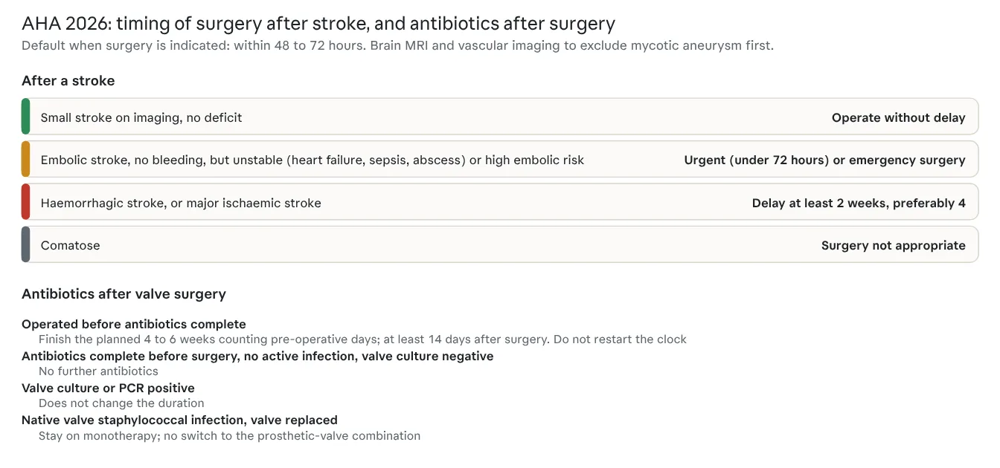
Surgery: why, how and when
| Point | Statement |
|---|---|
| Indications | Heart failure from valve damage; invasive infection (abscess, perforation, fistula); organisms that are hard to eradicate; failure of antibiotics; prosthetic valve endocarditis; vegetations over 1 cm threatening embolism |
| Timing | Once indicated in the active phase, early surgery within 48 to 72 hours is favoured, unless there has been a major stroke or cerebral haemorrhage |
| Antibiotics first? | Completing antibiotics before surgery is not required (EASE trial: early surgery reduced emboli) |
| How often in the active phase | About 50 to 60% of operated patients at dedicated programmes |
| Who decides | The endocarditis team agrees indication, timing and operability; the final decision to operate rests with the surgeon |
| Mortality | Perioperative and early mortality 7 to 20% across institutions |
| What matters most | Eradicating infection and restoring valve function matter more than the choice of valve substitute or conduit |
| Intraoperative echo | Essential; be prepared for more advanced disease than was diagnosed |
| Right-sided | Persistent bloodstream infection, continuing septic emboli, lung abscess after 7 days of antibiotics, or vegetation over 2 cm. Repair preferred to replacement |
| Cardiac device | Generator and leads removed at surgery; complete extraction is preferred in valvular endocarditis even without lead vegetations |
| After transcatheter valve | Managed like other prosthetic valve endocarditis; explant is complex and risks root injury |
| Percutaneous aspiration | Used in selected tricuspid or lead infection at high surgical risk when medical treatment has failed, in experienced centres; efficacy and safety need more study |
After a stroke
| Situation | Statement |
|---|---|
| Imaging | Brain MRI is better than CT; reasonable before cardiac surgery even without symptoms. CT or MR angiography to exclude mycotic aneurysm |
| Small stroke, no deficit | Proceed without delay |
| Embolic stroke without bleeding, patient unstable or at high risk of recurrence | Urgent (under 72 hours) or emergency surgery. High risk: mobile vegetation over 10 mm, mitral (especially anterior leaflet), staphylococci |
| Haemorrhagic or major ischaemic stroke | Delay at least 2 weeks, preferably 4 |
| Coma | Surgery not appropriate |
| Thrombolysis | Associated with a 20% increase in mortality from haemorrhage in one study; mechanical thrombectomy needs more data |
Antibiotics after valve surgery
| Point | Statement |
|---|---|
| Operated before the course is complete | Finish the planned 4 to 6 weeks, counting pre-operative days, with at least 14 days after surgery. Do not restart the clock |
| Course complete before surgery, no active infection, negative valve culture | No further antibiotics |
| Positive valve culture or molecular test | Does not change the duration |
| Supporting data | Kim: no difference in relapse or 1-year mortality with more or less than 2 weeks post-operatively (216 patients). Rao: median 23.5 days, relapse 1.1%, 1-year mortality 9.9% (182 patients) |
| Staphylococcal native valve infection after valve surgery | Continue monotherapy; combination (gentamicin with or without rifampicin) was associated with more relapse, mortality and adverse events |
Other points worth knowing
Diagnosis uses the 2023 Duke-ISCVID criteria; molecular tests and FDG PET-CT (valuable in prosthetic valve infection) raise sensitivity.
Cardiac CT finds paravalvular complications and can assess the coronaries before surgery in selected patients.
Partial oral treatment (POET) is an option for selected patients after the acute phase.
Dalbavancin and oritavancin are alternatives in selected patients; possible higher relapse in unoperated prosthetic valve Enterococcus faecalis infection.
Gentamicin: risk outweighs benefit in staphylococcal prosthetic valve endocarditis. Combination treatment is supported for E. faecalis.
Colonoscopy is reasonable after Streptococcus gallolyticus or E. faecalis endocarditis.
How this sits with the other sources in this tab
| Issue | AHA 2026 | Others |
|---|---|---|
| Antibiotics after surgery | At least 14 days post-operatively within the planned total | Sidik 2025 review says six weeks after surgery |
| Surgery after major or haemorrhagic stroke | At least 2 weeks, preferably 4 | Sidik 2025: at least four weeks. ESC 2023: see the guideline section above |
| Right-sided vegetation size | Over 2 cm | Same threshold in ESC 2023 and de Waha 2026 |
Preventing endocarditis after valve surgery: the guidelines
7 parts · 1 drawing
Added 18 November 2026 in answer to your question. Rows are marked [checked] (confirmed against a source today, listed at the end) or [memory].

Where the guidelines stand
| Body | Position | Basis |
|---|---|---|
| ESC 2023 | Antibiotic prophylaxis before at-risk dental procedures is recommended (class I, upgraded from IIa) for high-risk patients. Prophylaxis for invasive non-dental procedures (respiratory, gastrointestinal, genitourinary, skin, musculoskeletal) was reintroduced as an option for high-risk patients | checked |
| AHA 2021 | Aligned: prophylaxis before invasive dental procedures for those at highest risk | checked (summary) |
| NICE CG64 | Prophylaxis is not recommended routinely for dental procedures, nor for gastrointestinal, genitourinary or respiratory procedures. The word routinely was added in 2016. For the groups needing special consideration it refers to the SDCEP advice. Recommendations still dated 2015; a 2024 surveillance review proposed updating the dental recommendation for high-risk people | checked |
| SDCEP (Scottish Dental Clinical Effectiveness Programme) | The current implementation advice adopts the ESC 2023 high-risk list and recommends prophylaxis for those patients. The first version (2018) asked the dentist to consult the cardiac team about special-consideration patients | checked |
Practical point for a UK surgeon: a patient with a valve replacement or repair is in the group for whom the dentist will give, or ask you about, prophylaxis. Say so in the discharge letter.
Who is high risk (ESC 2023, as listed by SDCEP)
| Group | Recommendation | Basis |
|---|---|---|
| Previous endocarditis | Recommended (class I, level B) | checked |
| Surgically implanted prosthetic valve, or any material used for surgical valve repair | Recommended (class I, level C) | checked |
| Transcatheter aortic or pulmonary valve | Recommended (class I, level C) | checked |
| Untreated cyanotic congenital heart disease; palliative shunts, conduits or other prostheses. After complete repair with no residual defect: first 6 months only | Recommended (class I) | checked |
| Ventricular assist device | Recommended | checked |
| Transcatheter mitral or tricuspid repair | Should be considered (class IIa, level C) | checked |
| Septal or appendage closure devices, vascular grafts, vena cava filters, ventriculo-atrial shunts | Should be considered in the first 6 months | checked |
| Heart transplant | May be considered | checked |
| Moderate risk: rheumatic or degenerative valve disease, bicuspid valve, implanted electronic device, hypertrophic cardiomyopathy | Not recommended unless the cardiac team specifies it | checked |
Which procedures
| Procedure | Advice | Basis |
|---|---|---|
| Extractions and oral surgery | Offer prophylaxis to high-risk patients | checked |
| Procedures manipulating the gingival or periapical region | Consider, after shared decision-making and assessment of oral health | checked |
| Chlorhexidine mouthwash | Not to be offered as prophylaxis | checked (NICE) |
| Non-dental invasive procedures | ESC 2023: may be considered in high-risk patients. NICE: not routinely. If antibiotics are being given anyway for a gastrointestinal or genitourinary procedure at an infected site, choose one that covers endocarditis organisms | checked |
Regimen (single dose)
| Route | Adult | Child | Basis |
|---|---|---|---|
| Oral, 30 to 60 minutes before | Amoxicillin 2 g (or 3 g sachet) | 50 mg/kg, maximum 2 g | checked |
| Oral, penicillin allergy | Clarithromycin 500 mg or azithromycin 500 mg | 15 mg/kg, maximum 500 mg | checked |
| Intravenous, just before or at induction | Amoxicillin 2 g | 50 mg/kg, maximum 2 g | checked |
| Intravenous, penicillin allergy | Cefazolin 1 g, ceftriaxone 1 g, or clarithromycin 500 mg | 50 mg/kg (maximum 1 g) for the cephalosporins | checked |
| Clindamycin | No longer in the regimen (dropped by ESC 2023 and AHA 2021 because of adverse effects) | SDCEP page lists none [checked]; reason [memory] |
Around the valve operation itself [memory]
| Measure | Detail |
|---|---|
| Dental clearance | Dental assessment and elimination of dental sepsis before elective valve surgery, ideally at least 2 weeks ahead |
| Staphylococcus aureus | Pre-operative nasal screening and decolonisation of carriers before elective cardiac surgery |
| Perioperative antibiotics | Started before incision and stopped within 48 hours |
| Lines | Remove central lines and catheters as early as possible; strict asepsis |
These are ESC 2023 recommendations as I remember them; check class and level before quoting.
What every valve patient is told [checked, NICE and SDCEP]
Keep good oral health, with regular dental review.
Know the symptoms of endocarditis and when to seek advice (fever, sweats, weight loss).
Invasive non-medical procedures such as piercing and tattooing carry risk.
Infections are investigated and treated promptly.
Why antibiotic prophylaxis is or is not being offered.
After a first episode the risk stays high: the AHA 2022 statement above notes that patients cured of endocarditis remain at very high risk of another, and previous endocarditis is the highest-risk group in ESC 2023.
Sources checked today
SDCEP, Antibiotic prophylaxis implementation advice (https://www.antibioticprophylaxis.sdcep.org.uk/implementation-advice/executive-summary/) and its table of ESC 2023 recommendations.
NICE CG64, recommendations (https://nice.org.uk/guidance/cg64/chapter/1-guidance) and the 2024 exceptional surveillance proposal.
ESC 2023 endocarditis guideline: ACC key points; Imazio review of the 2023 novelties.
Thornhill et al commentary on ESC 2023, AHA 2021 and NICE (https://pmc.ncbi.nlm.nih.gov/articles/PMC10933542).
Overview: AATS 2016, trials and operative strategy
3 parts
Operate for heart failure, uncontrolled infection or embolic risk. The ESC 2023 indications, classes and timing are in the chart above and in the ESC 2023 section below; this section keeps what the American guidance and the trials add.
One row of the table removed from this section on 19 Nov 2026 is not stated in the ESC 2023 section below, so it is kept here: complicated endocarditis should be managed in a referral centre with an Endocarditis Team (ESC 2023, Class I; from memory). The other eight rows (emergency within 24 hours, urgent within 3 to 5 days, uncontrolled infection, the three vegetation rows, and the two stroke rows) were each found in the sections below before the table was removed.
AATS 2016 differs mainly on timing: once an indication is established, operate within days (Class I), and delay 3 weeks or more after intracranial haemorrhage (IIa). It also lists recurrent emboli with persistent vegetations despite appropriate antibiotics as an indication (IIa).
Trials
| Trial | Design | Result |
|---|---|---|
| EASE, NEJM 2012 | 76 patients with left-sided native valve endocarditis, severe valve disease and large vegetations; surgery within 48 hours or conventional care | In-hospital death or embolism at 6 weeks 3% against 23%; no embolic events after early surgery against eight with conventional care; composite at 6 months 3% against 28% |
| POET, NEJM 2019 | Stable left-sided endocarditis after initial intravenous treatment; switch to oral or continue intravenous | Oral step-down non-inferior for death, unplanned surgery, embolism or relapse (figures from memory) |
Diagnosis (2023 Duke-ISCVID)
Cardiac CT and PET-CT findings now count as imaging criteria.
Intraoperative inspection is a major criterion.
Molecular microbiology (PCR, including on valve tissue) and Bartonella serology are added; blood culture timing rules are relaxed.
Operative strategy
Radical debridement, then reconstruction; send tissue for culture and 16S PCR.
Repair native mitral disease limited to the leaflets whenever possible (AATS, Class I).
Root abscess with destruction beyond the annulus: allograft or biological root preferred to a prosthetic conduit (AATS, IIa).
Infection across the intervalvular fibrous body: double valve replacement with fibrous body reconstruction.
Prosthesis type by the usual criteria; avoid mechanical valves after intracranial bleeding or major stroke (AATS, IIa).
Image the brain before surgery in left-sided disease, and the coronaries by CT when there is an aortic vegetation.
EASE was small, single-country, young patients and mostly streptococcal: it supports early surgery for large vegetations with severe valve disease, not for every vegetation over 10 mm.
Endocarditis: surgical approach and operative strategy
11 parts · 8 drawings
Added 18 November 2026. Main source: the 2016 AATS consensus on surgical treatment of infective endocarditis (Pettersson, J Thorac Cardiovasc Surg 2017;153:1241), read through the ACC key-points summary and the authors' 2019 review. Timing and indications by the 2023 ESC guideline are in the section above. Rows marked "from memory" were not checked today.

Operative drawings
These are my own schematics. The operations shown follow the AATS 2016 consensus and the technique papers cited in the tables below; the drawn steps are from memory. In the valve-substitute picture, the statement that no substitute has been shown to resist reinfection better once debridement is complete is from memory, and matches the consensus position that valve type follows the usual criteria.


Leaflets and vegetations
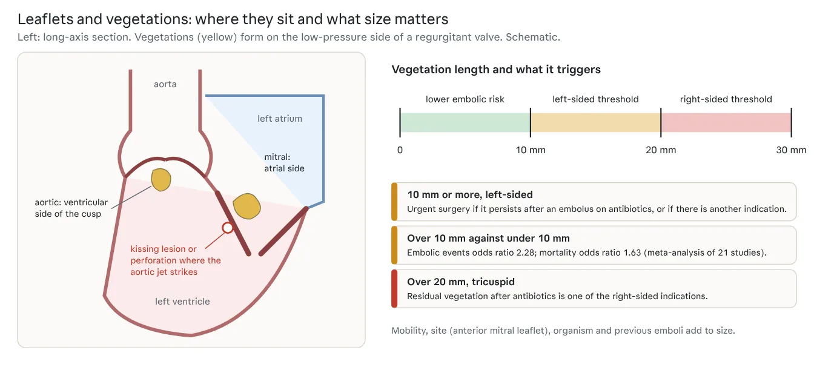
| Point | Detail | Source |
|---|---|---|
| Where vegetations form | On the low-pressure side of the valve: atrial surface of the mitral and tricuspid leaflets, ventricular surface of the aortic cusps | From memory |
| Secondary lesions | Leaflet perforation, chordal rupture, and a "kissing" lesion or perforation of the anterior mitral leaflet where an aortic regurgitant jet strikes it | From memory |
| Size and embolism | Vegetation over 10 mm against under 10 mm: embolic events odds ratio 2.28 (1.71 to 3.05); mortality odds ratio 1.63 (1.13 to 2.35), in a meta-analysis of 21 studies | Open Heart 2025 |
| Left-sided threshold | 10 mm or more: urgent surgery if it persists after an embolus on antibiotics, or if there is another indication | ESC 2023 above |
| Right-sided threshold | Residual tricuspid vegetation over 20 mm | ESC 2023 above |
| Other predictors | Mobility, anterior mitral leaflet site, Staphylococcus aureus, previous embolus, first two weeks of treatment | From memory |
Repair or replace
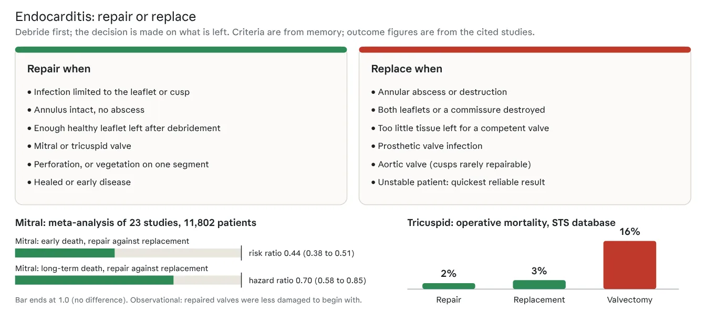
| Point | Detail | Source |
|---|---|---|
| Rule | Native valve infection limited to leaflets or cusps should be repaired whenever possible (Class I), particularly mitral and tricuspid | AATS 2016 |
| Criteria for repair and for replacement | As listed in the chart | From memory |
| Mitral, pooled data | 23 studies, 11,802 patients: repair had lower early mortality (risk ratio 0.44, 0.38 to 0.51) and lower long-term mortality (hazard ratio 0.70, 0.58 to 0.85) | Awad, J Cardiothorac Surg 2024 |
| Mitral, earlier review | 24 studies: in-hospital mortality 2.3% against 14.4%; late recurrent endocarditis 1.8% against 7.3% | Feringa, Ann Thorac Surg 2007 |
| How often repair is done | About 36 to 39% of operated mitral endocarditis in the pooled series | Feringa 2007; Am J Cardiol meta-analysis report |
| Caveat | All observational: valves that could be repaired were less destroyed and the patients less sick, so the difference overstates the effect of the technique | My comment |
| Tricuspid, STS database | 1,613 isolated operations in people who inject drugs: valvectomy 7%, repair 33%, replacement 60%; operative mortality 16%, 2% and 3% | Slaughter, J Thorac Cardiovasc Surg 2021 |
| Tricuspid, single centre 2016 to 2021 | 283 patients (90.8% injecting drugs): low operative mortality; repair preferred when feasible | JTCVS Open 2024 |
| Valvectomy against replacement | Meta-analysis of 752 patients: no significant difference in 30-day mortality (13% against 7%), right heart failure (27% against 11%) or recurrent endocarditis (7% against 19%) | Ann Cardiothorac Surg 2019 |
The full Commando operation

| Step | Detail | Status |
|---|---|---|
| Indication | Infection destroying the intervalvular fibrosa with both aortic and mitral valves involved, native or prosthetic | Navia, JTCVS Techniques 2023 |
| Set-up | Bicaval cannulation, cold cardioplegia given antegrade into the ostia and retrograde | From memory |
| Incision | Aortotomy carried down through the non-coronary and left commissure region into the curtain and the roof of the left atrium, opening both valves as one field | From memory |
| Debridement | Both valves, the curtain and all abscess removed back to healthy tissue | AATS 2016 principle |
| Mitral prosthesis | Sewn to the posterior two-thirds of the annulus | From memory |
| Patch | Pericardial patch (bovine or autologous), triangular or folded, sewn to the anterior part of the mitral sewing ring to make a new curtain; one part closes the left atrial roof | From memory |
| Aortic prosthesis | Sewn to the remaining annulus and to the patch | From memory |
| Closure | The other part of the patch closes or enlarges the aortotomy | From memory |
| Hemi-Commando alternative | Root homograft with its attached anterior mitral leaflet rebuilds the curtain; native mitral valve kept | Navia 2023 |
| Risks | Bleeding from long suture lines, heart block, patch dehiscence and pseudoaneurysm, long ischaemic time | From memory |
| Results | Hemi-Commando series: hospital death 8% in 37 patients. In a series of destructive endocarditis, survival after Commando-type operations was no worse than after abscess surgery with the curtain preserved | Elgharably 2018 and Medicina 2026, cited above |
Tricuspid valve endocarditis
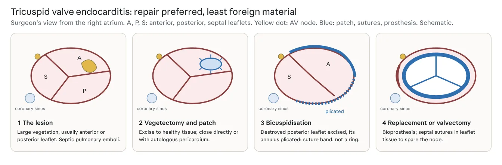
| Point | Detail | Source |
|---|---|---|
| When to operate | Severe regurgitation with right ventricular dysfunction, recurrent emboli needing ventilatory support, residual vegetation over 20 mm, or left-sided involvement | ESC 2023 above |
| Aim | Radical debridement by vegetectomy or valvectomy, by extent of infection | Review, Innovations 2024 |
| Repair | After vegetectomy the defect is closed directly or with a pericardial patch; keep foreign material to a minimum | Same |
| Bicuspidisation and annuloplasty | Posterior leaflet excised and its annulus plicated; suture annuloplasty or a pericardial strip in place of a prosthetic ring | From memory |
| Replacement | Bioprosthesis; in the septal region take sutures through leaflet tissue to avoid the conduction system | From memory |
| Valvectomy | Leaflets and chordae removed without replacement; a staged option when relapse into drug use is likely. Needs low pulmonary vascular resistance; right heart failure later | Meta-analysis for the definition; physiology from memory |
| Choice | Repair when anatomically possible, to avoid reinfection and prosthetic degeneration | Slaughter 2021 |
| Catheter aspiration | Percutaneous vegetation debulking is an emerging alternative in high-risk patients; surgery remains first line beyond antibiotics | JTCVS Open 2024 |
| Addiction treatment | Part of management | AATS 2016; ESC 2023 |
Before the operation
| Point | Detail | Source |
|---|---|---|
| Team and place | Centre with cardiology, infectious diseases and cardiac surgery; surgeon experienced in valve reconstruction | AATS 2016 |
| Antibiotics | Patient should be on appropriate antibiotics at surgery (Class I); once on them, further delay is unlikely to help (IIa) | AATS 2016 |
| Brain | Imaging for any neurological symptom (I); screening before left-sided surgery is reasonable (IIa); mycotic aneurysm managed with neurology and neurosurgery (I) | AATS 2016 |
| After intracranial haemorrhage | Delay of 3 weeks or more is reasonable (IIa); ESC 2023 says consider at least 4 weeks | AATS 2016; ESC 2023 above |
| Imaging to plan the operation | TOE for every valve and for abscess, fistula, dehiscence; CT for the root, coronaries and emboli; PET in prosthetic infection | ESC 2023 above |
| Coronaries | CT coronary angiography if there is an aortic vegetation, to avoid a catheter across it | ESC 2023 above |
| Other sources | Dental, spleen, spine, lines and devices dealt with or planned | From memory |
Principles in theatre
| Principle | Detail | Source |
|---|---|---|
| Approach | Median sternotomy, with few exceptions (Class I) | AATS 2016 |
| Intraoperative TOE | Mandatory (Class I) | AATS 2016 |
| Cannulation | Bicaval if the mitral or tricuspid valve, right atrium or curtain may need work | Quintana, Ann Cardiothorac Surg 2019; general point from memory |
| Handle the heart gently | Minimal manipulation before the clamp is on, to avoid embolising vegetation | From memory |
| Debridement | Radical removal of all infected and necrotic tissue and all foreign material (Class I). Resect anything suspicious first and judge the reconstruction afterwards | AATS 2016; Quintana 2019 |
| After debridement | Irrigate, change gloves, instruments and suction; send valve and abscess wall for culture, PCR and histology | From memory |
| Inspect everything | All four valves, the curtain, the membranous septum; look for kissing lesions on the anterior mitral leaflet from an aortic jet | From memory |
| Reconstruction | Chosen by the valve involved, the severity of destruction and the options available (Class I) | AATS 2016 |
| Antibiotic-soaked grafts | The consensus found no evidence to support soaking a graft in antimicrobial | Report of the consensus |
Valve by valve
| Situation | Strategy | Source |
|---|---|---|
| Native valve infection limited to leaflets or cusps | Repair whenever possible (Class I), particularly mitral and tricuspid | AATS 2016 |
| Mitral repair methods | Vegetation excision, leaflet resection, pericardial patch for a perforation, neochordae, ring or band | From memory |
| Simple replacement | Mechanical or tissue chosen by the usual criteria (Class I) | AATS 2016 |
| Stroke or intracranial bleeding | Avoiding a mechanical valve is reasonable (IIa) | AATS 2016 |
| Prosthetic aortic infection, root and annulus intact after debridement | New prosthesis, tissue or mechanical, is reasonable (IIa) | AATS 2016 |
| Annulus destroyed, infection beyond the root | Root reconstruction with an allograft or biological root, preferred to a prosthetic valved conduit (IIa) | AATS 2016 |
| Root homograft: technique | First choice when the annulus cannot hold a sewn valve; mobilise the coronaries widely so the tissue beneath them can be debrided; align the homograft trigone to trigone | Quintana 2019 |
| Prosthetic mitral infection with annular destruction | Reconstruct the annulus; anchor the new valve to ventricular muscle or to the patch, to prevent leak and pseudoaneurysm (IIa) | AATS 2016 |
| Double-valve infection, annuli preserved | Two prostheses by the usual criteria (IIa) | AATS 2016 |
| Double-valve infection with destruction of the intervalvular fibrosa | Commando: debride, rebuild the curtain and left atrial roof with a patch, replace both valves. Hemi-Commando: root homograft with its attached mitral leaflet rebuilds the curtain and the native mitral valve is kept | Navia, JTCVS Techniques 2023; Commando steps from memory |
| Hemi-Commando results | 37 patients, 2010 to 2017, 73% prosthetic infection; hospital death 8% | Elgharably, Eur J Cardiothorac Surg 2018 |
| Destruction of the cardiac skeleton, one series | 19 Commando or hemi-Commando operations among 97 patients; survival no different from abscess with the curtain preserved | Medicina 2026 |
| Tricuspid | Repair preferred to replacement; operate for severe regurgitation with right ventricular dysfunction, recurrent emboli needing ventilation, or residual vegetation over 20 mm | ESC 2023 above |
| Tricuspid in people who inject drugs | Vegetectomy and repair; bioprosthesis if replacement is unavoidable; valvectomy as a staged option | From memory |
| Devices | Remove the whole system when device infection is likely (Class I); reasonable in Staphylococcus aureus or fungal infection even without proof (IIa) | AATS 2016 |
| Pacing | Consider epicardial leads at the valve operation for complete heart block with predictors of persistence | ESC 2023 above |
Particular patients
| Group | Advice | Source |
|---|---|---|
| People who inject drugs | Normal surgical indications; addiction treatment is part of management (IIa) | AATS 2016 |
| Dialysis | Normal indications; shorter durability of bioprostheses and allografts may affect valve choice (IIa) | AATS 2016 |
Coming off bypass and afterwards
| Point | Detail | Source |
|---|---|---|
| Expect | Vasoplegia, coagulopathy, heart block, right ventricular dysfunction; give time on bypass and have pacing wires on both chambers | From memory |
| TOE before leaving | Paravalvular leak, residual shunt or fistula, patch integrity, other valves | From memory |
| Antibiotics afterwards | Complete the course; restart the clock for a full course if the valve culture is positive | From memory |
| Follow-up | Tell the patient about the risk of recurrence and the need for prophylaxis (Class I) | AATS 2016 |
Points for a viva
The operation has two halves: debridement, which is never compromised, and reconstruction, which is sized to what is left.
Repair mitral and tricuspid valves when infection is limited to the leaflets.
Valve type follows the usual rules, except that a mechanical valve is best avoided after a major stroke or bleed.
A destroyed annulus means a root replacement, with a homograft or biological root preferred.
A destroyed curtain means a Commando or hemi-Commando: say what each one replaces.
Commando operation step by step (Perri and Johnston, Cleveland Clinic)
4 parts · 1 drawing
Added 18 November 2026 from the PDF you supplied: Perri JL, Johnston DR, Commando procedure in a radiated chest, JTCVS Techniques 2022;15:54-7, doi 10.1016/j.xjtc.2022.07.006. A technique paper with one case. Everything below is from the paper. It describes the operation for calcific disease; the authors say it is technically simpler here than for invasive endocarditis, but the steps are the same framework as the full Commando drawing earlier in this tab.

Why it is used in a radiated chest
Mantle radiation causes calcific valve disease; calcium in the aorto-mitral curtain and mitral annulus makes ordinary double valve replacement difficult.
The Commando avoids annular sutures through calcium and allows larger valves.
The 15 steps
| Step | Action |
|---|---|
| 1 | Bicaval cannulation; antegrade and retrograde cardioplegia, the retrograde line placed under direct vision through the right atrium |
| 2 | Cross-clamp; aortotomy extended towards the non-coronary cusp |
| 3 | Circumferential dissection of the ascending aorta; aorta, superior vena cava and left pulmonary artery isolated |
| 4 | Debride the aortic valve and annulus |
| 5 | Extend the aortotomy across the annulus to the midline of the anterior mitral leaflet, between the anterior chords, and on to the dome of the left atrium |
| 6 | Debride the mitral valve, keeping anterior and posterior chordae |
| 7 | Pledgeted sutures in the posterior mitral annulus from trigone to trigone. Size the valve so the sutures cover three-quarters of its circumference. Measure the open gap: this is the patch width. Mark the trigone sutures on the cuff so the struts stay out of the outflow tract |
| 8 | Seat the mitral valve |
| 9 | Cut a bovine pericardial patch with a triangle at one end, and fold it |
| 10 | Sew the patch, smooth side to the valve, with a running suture starting at the anterolateral (left) trigone; the triangular end rebuilds the dome of the left atrium |
| 11 | Run the patch from the trigones up to the ascending aorta, rebuilding the outflow tract |
| 12 | Aortic valve sutures in the native annulus; in the non-coronary area they go through the patch, outside to in. Leave 1 to 1.5 cm of patch between the valves |
| 13 | Seat the aortic valve |
| 14 | Use the remaining patch to close the ascending aorta |
| 15 | De-air through the atrial dome and aorta; tie both suture lines; remove the clamp |
Their advice
| Point | Detail |
|---|---|
| Exposure | In about 90% the incision into the dome of the left atrium is enough; dividing the superior vena cava or an extended transseptal incision is rarely needed |
| Mitral sizing | At most one-quarter of the circumference completed by the patch; an oversized valve distorts the outflow tract |
| Patch | 1 to 1.5 cm between the valves; two layers of suture to recreate the intervalvular fibrous body, because bleeding here is hard to deal with once off bypass |
| Their case | Man of 59, mantle radiation 20 years earlier; 29 mm aortic and 32 mm mitral bioprostheses; cross-clamp 89 minutes; home on day 6 |
Outcome by indication (as quoted in the paper)
| Indication | Mortality | Cross-clamp time |
|---|---|---|
| All, meta-analysis of 540 patients | 7 to 28% | |
| Toronto series, 158 of 182 non-infective | 13% in hospital | |
| Calcific disease (their experience) | 80 to 90 minutes | |
| Endocarditis | 24 to 28% | 184 to 202 minutes |
Surgery for aortic valve endocarditis: technique (Ikonomidis 2011)
3 parts · 1 drawing
Added 18 November 2026 from the PDF you supplied: Ikonomidis JS. Surgery for Aortic Valve Endocarditis. Oper Tech Thorac Cardiovasc Surg 2011;16:226-241, doi 10.1053/j.optechstcvs.2011.09.003. A technique atlas; I read all of the text, and the figures are the author's illustrations, described and not copied. Everything below is from the paper. Read with the endocarditis operative drawings earlier in this tab.

The ladder
| Finding | Operation | Detail |
|---|---|---|
| Vegetations or perforation on the cusps; annulus intact, no abscess | Standard valve replacement (rarely repair) | No published difference in prosthetic infection between bioprosthetic and mechanical valves after native valve endocarditis |
| Abscess cavity found after removing the cusps | Debride all necrotic tissue, then close the cavity and replace the valve | Option A: non-pledgeted sutures round the intact annulus and pledgeted sandwich sutures to obliterate the abscess, then through the sewing ring. Option B: a small bovine pericardial patch sewn to healthy myocardium and aorta with polypropylene, valve sutures placed through the patch |
| More than one-third of the annulus involved, adjacent structures involved; usual in prosthetic valve endocarditis | Homograft aortic root replacement | See steps below |
| Intractable posterior bleeding after root reconstruction | Bovine pericardial baffle to the right atrium | See below |
Homograft root replacement: his steps
| Step | Detail |
|---|---|
| Debride | All infected and necrotic material; coronary arteries mobilised on small buttons of uninfected aorta |
| Proximal sutures | 28 to 30 single, simple, non-pledgeted 3-0 polypropylene sutures along the bottom of the cavity, with deep bites because the tissue is friable. No pledgets, to limit foreign material |
| Size | From the echo annulus or with valve sizers; he errs slightly large so the homograft is "stuffed" into the outflow tract to reduce bleeding |
| Trim | Homograft muscle trimmed to 5 to 7 mm below the annulus, continued across its anterior mitral leaflet. The homograft's mitral leaflet can rebuild an infected anterior mitral leaflet |
| Homograft sutures | In one plane, 1 to 2 mm from the homograft annulus; orthotopic orientation so the coronaries reach |
| Seat and tie | Gently, to avoid tearing |
| Coronaries | Homograft coronary stumps divided flush and the holes enlarged with a punch; buttons sewn with 5-0 or 6-0 polypropylene |
| Distal | Running 3-0 polypropylene to the native ascending aorta |
The baffle for bleeding that cannot be reached
| Step | Detail |
|---|---|
| Problem | Bleeding after homograft root replacement, from technique or from friable, oedematous tissue; posterior points (for example under the left coronary) cannot be reached without tearing the anastomoses |
| Close the transverse sinus | Already obliterated in a redo; otherwise close directly or with pericardium |
| Right atrium | 4-0 polypropylene purse-string on the atrial wall facing the aorta, snared; a large cross-hatch incision inside the purse-string |
| Patch | Bovine pericardium sewn over the homograft: along the main pulmonary artery, innominate vein, superior vena cava and the free margin of the right ventricle, back to the pulmonary artery |
| Release | Snare released and the purse-string removed: arterial bleeding drains into the right atrium, a left-to-right shunt at right atrial pressure. The patch suture line rarely bleeds |
| Outcome | Most shunts close spontaneously; residual pseudoaneurysm is rare |
Endocarditis in people who inject drugs: tricuspid strategy and redo risk
6 parts · 2 drawings
Added 18 November 2026 from three PDFs you supplied. Everything below is from the papers.
de Waha S, Noack T, Kister T, Desch S, Marin-Cuartas M, Kiefer P, Borger MA. Tricuspid valve endocarditis in people who inject drugs: strategies to reduce mortality and recurrent infection. Ann Cardiothorac Surg 2026;15(3):35, doi 10.21037/acs-2026-1-0008-tvd (Leipzig; keynote review).
Luc JGY et al. Valvectomy versus replacement for the surgical treatment of infective tricuspid valve endocarditis: a systematic review and meta-analysis. Ann Cardiothorac Surg 2019;8(6):610-620, doi 10.21037/acs.2019.11.06.
Mori M et al. Risk of reoperative valve surgery for endocarditis associated with drug use. J Thorac Cardiovasc Surg 2020;159(4):1262-1268, doi 10.1016/j.jtcvs.2019.06.055.
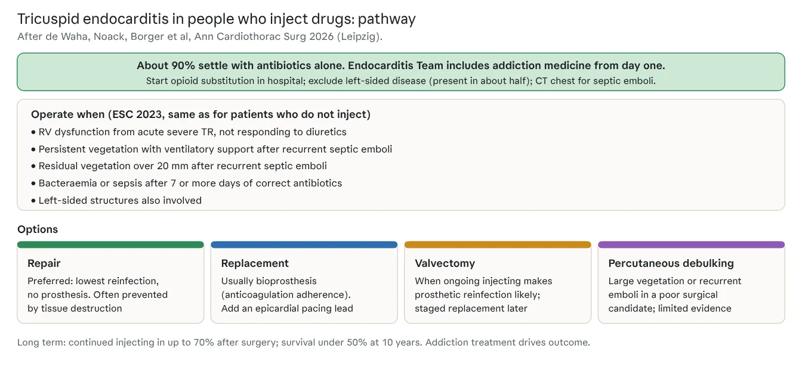
Presentation and work-up (de Waha 2026)
| Point | Detail |
|---|---|
| Patient | Young, few comorbidities other than substance use; more HIV and viral hepatitis |
| Presentation | Fever with pleuritic pain, cough, breathlessness or haemoptysis from septic pulmonary emboli; murmur often faint. Often mistaken for primary lung disease |
| Left-sided disease | Half have left-sided involvement and about one-third have isolated left-sided disease: low threshold for transoesophageal echo |
| Imaging | Transthoracic echo is often diagnostic (anterior valve, large vegetations); CT for emboli, infarcts and lung abscess |
| Organisms | Staphylococcus aureus dominant, increasingly methicillin-resistant; polymicrobial and Candida not rare. Pentazocine: think Pseudomonas. Brown heroin in lemon juice with large vegetations: think non-albicans Candida |
Antibiotics (de Waha 2026)
| Point | Detail |
|---|---|
| Medical treatment alone | Succeeds in about 90% of right-sided cases |
| Two-week course | Oxacillin or cloxacillin without gentamicin is enough for uncomplicated methicillin-sensitive S. aureus if response is good, vegetation 20 mm or less, and no metastatic infection, empyema, prosthetic material or left-sided disease |
| Otherwise | 4 to 6 weeks |
| Oral option | Ciprofloxacin with rifampicin in selected uncomplicated, susceptible, supervised cases |
| Outpatient intravenous therapy | Not routinely recommended by ESC in this group; partial oral regimens or long-acting dalbavancin can help complete treatment |
When to operate and what to do (de Waha 2026)
| Point | Detail |
|---|---|
| General stance | Avoid surgery when possible. Surgery improves short-term mortality; long-term benefit is debated (registry hazard ratio for long-term mortality after surgery 1.80, 0.95 to 3.30; about 55% of deaths from relapse or recurrence) |
| Indications (ESC 2023) | Right ventricular dysfunction from acute severe regurgitation not responding to diuretics; persistent vegetation with respiratory failure needing ventilation after recurrent septic emboli; residual vegetation over 20 mm after recurrent emboli; bacteraemia or sepsis after 7 days or more of appropriate antibiotics; left-sided involvement |
| Before surgery | Control every other focus of infection |
| Repair | Preferred: lower reinfection, no prosthesis. Tissue destruction often prevents it |
| Replacement | Bioprosthesis usually chosen because of anticoagulation adherence; no clear difference in recurrence or long-term outcome between mechanical and bioprosthetic in this group |
| Pacing | Place a prophylactic epicardial lead at tricuspid replacement, tunnelled to a subcutaneous pocket, to avoid a later lead across the prosthesis |
| Valvectomy | For selected patients in whom continued injecting makes prosthetic reinfection likely; a stabilising first stage, with replacement later for those who achieve abstinence |
| Percutaneous debulking | Adjunct for large vegetations, recurrent emboli or instability in poor surgical candidates; evidence limited |
Addiction treatment and long-term outcome (de Waha 2026)
Treating the infection without treating the substance use disorder fails to treat the cause (AHA/ACC statement).
Start buprenorphine or methadone during the admission; counselling alone performs worse.
Continued injecting is reported in up to 70% after surgery.
Readmission by 3 months: 22 to 49%. Survival under 50% at 10 years.
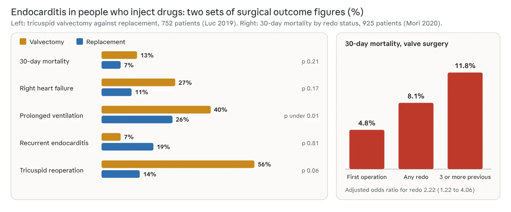
Valvectomy against replacement (Luc 2019)
16 studies, 752 patients with tricuspid endocarditis and intravenous drug use; 14% valvectomy, 86% replacement; mean follow-up 4.2 years.
| Outcome | Valvectomy | Replacement | p |
|---|---|---|---|
| Commonest indication | Septic pulmonary embolism (74%) | Persistent sepsis (62%) | |
| 30-day mortality | 13% | 7% | 0.21 |
| Right heart failure | 27% | 11% | 0.17 |
| Prolonged ventilation | 40% | 26% | under 0.01 |
| Stroke | 4% | 3% | 0.85 |
| Recurrent endocarditis | 7% | 19% | 0.81 |
| Tricuspid reoperation | 56% | 14% | 0.06 |
Authors' conclusion: valvectomy is an acceptable first operation and a bridge to staged replacement. Caution: observational studies, small valvectomy group, wide confidence intervals; repair was not part of this comparison.
Redo valve surgery (Mori 2020)
Eight US centres, 2011 to 2017; 925 patients with drug-associated endocarditis having valve surgery (652 first-time, 273 redo).
| Point | Figure |
|---|---|
| Annual cases | 108 in 2012 rising to 229 in 2017 |
| Proportion that were redo | 19% in 2012 rising to 28% in 2017 |
| 30-day mortality | 4.8% first-time; 8.1% redo (p 0.049); 11.8% after three or more previous operations |
| Adjusted risk of 30-day death for redo | Odds ratio 2.22 (1.22 to 4.06) |
For the viva: the redo patient is young and looks fit, but carries about twice the operative mortality.
Surgical management of endocarditis: 2025 review (Sidik et al)
6 parts · 1 drawing
Added 18 November 2026 from the PDF you supplied: Sidik AI et al, Surgical Management of Infective Endocarditis: Indications, Techniques, and Outcomes, Cureus 2025;17(9):e91381, doi 10.7759/cureus.91381. A narrative review (46 studies, 2015 to 2025). Everything below is from the paper. Caution: its indication table uses ESC 2015 and AATS 2016; the ESC 2023 section above in this tab is the current guideline and takes precedence where they differ (notably timing after stroke).
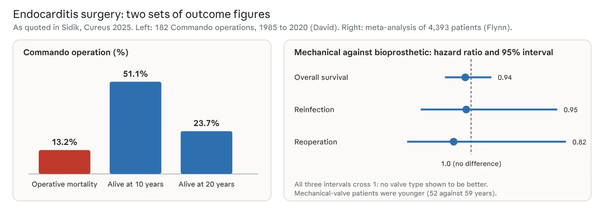
Scale and indications
| Point | Figure |
|---|---|
| Incidence | 3 to 10 per 100,000 per year |
| Proportion needing surgery | Up to 50% |
| Prosthetic valve endocarditis | 20 to 30% of cases; in-hospital mortality 18%, six-month mortality 30% |
| In-hospital mortality after surgery | 10 to 20%, highest over 75 years |
| Vegetation thresholds | 10 mm or more: raised embolic risk. Over 30 mm: very high neurological risk. Right-sided over 20 mm with recurrent pulmonary emboli: operate |
| Right-sided, 20 mm or less, responding, no complications | Conservative treatment, shorter two-week antibiotic course possible |
| Silent emboli on whole-body CT or PET-CT | 20 to 50% of patients |
| FDG PET-CT in prosthetic valve endocarditis | Sensitivity 86%, specificity 84% |
Neurological complications and timing (as the review states it)
| Point | Detail |
|---|---|
| After major ischaemic stroke or any intracranial haemorrhage | Review says delay at least four weeks, on limited data. ESC 2023 is less restrictive for ischaemic stroke without haemorrhage: see the guideline section above |
| Life-threatening heart failure or uncontrolled infection despite recent stroke | Surgery within 72 hours may be considered |
| Haemorrhagic transformation after surgery | 2 to 7% of patients with a previous stroke |
| If surgery is postponed | Repeat brain imaging at 1 to 2 weeks, or sooner on deterioration |
Operative points
| Step | Detail |
|---|---|
| Before | Transoesophageal echo, CT, PET-CT where needed; coronary assessment over 40 years; look for extracardiac foci |
| Specimens | Tissue to pathology, microbiology and molecular testing |
| Aortic valve | Usually replaced |
| Mitral valve | Patch repair for a perforation with intact free margin and chordae; repair preferred for localised infection |
| Limited periannular disease | Standard aortic valve replacement |
| Root abscess | Root replacement; allograft or stentless root; Ross in selected patients |
| Abscess cavities | Patch repair of aortic root abscess cavities is generally avoided (recurrence, leak, pseudoaneurysm): cavities are debrided, excluded and drained into the pericardium. This differs from the patch reconstruction described earlier in this tab, which applies when the annulus must be rebuilt to seat a valve |
| Tricuspid | Operate for persistent sepsis, vegetation over 20 mm, recurrent pulmonary emboli; repair preferred |
Valve choice
| Comparison | Result |
|---|---|
| Mechanical (2,336) against bioprosthetic (2,057), Flynn meta-analysis | Survival HR 0.94 (0.73 to 1.21); reinfection HR 0.95 (0.48 to 1.89); reoperation HR 0.82 (0.34 to 1.98). No significant difference. Mechanical patients were younger (52.1 against 59.2 years) |
| Homograft or autograft | Reinfection 0.2 to 5.5%; limited by structural degeneration and availability |
| Repair | Preferred for localised infection |
Commando operation (aortic and mitral replacement with reconstruction of the intervalvular fibrous body)
| Series | Result |
|---|---|
| Origin | Described by David in 1979 |
| One-year mortality across series | 20 to 30% |
| David, 182 patients, 1985 to 2020 | Operative mortality 13.2%; survival 51.1% at 10 years and 23.7% at 20 years |
| Forteza, 40 patients (26 endocarditis) | Freedom from reoperation 84.6% at 5 years, 76.9% at 10 years; survival 57.7% and 50% |
| Variant | Essen-Commando using a stentless root |
After the operation
Antibiotics for six weeks after surgery, adjusted to operative cultures.
Transthoracic echo at six weeks.
Relapse (same organism, early) is distinguished from reinfection (new organism, later).
Reoperation is commoner with continued drug use, immunosuppression and prosthetic complications; addiction, social work and psychiatric services are part of follow-up.
Infective endocarditis (TSRA)
Added 20 November 2026 from TSRA Review of Cardiothoracic Surgery 3rd ed., ch. 67 (Eric J. Charles and Kenan W. Yount). Read in full (pages 524 to 532). Guideline classes are American as quoted by the chapter; antibiotic names as printed (American usage).
Epidemiology
- USA: 10,000–15,000 new cases per year; hospitalisation 12.7 per 100,000. Similar elsewhere.
- Mean age 60.8 (2009); >50% older than 50. Male:female 3:1. No racial predilection.
- About three-quarters have a pre-existing structural abnormality. Nosocomial IE is increasing.
- Drivers of change: opioid epidemic and injection drug use, more cardiac devices, haemodialysis, chronic liver disease, diabetes, immunosuppression.
- PVE in 1–4% of valve recipients in the first year. Valve involvement: mitral ~40%, aortic ~36%, then multivalve; pulmonary rare.
- PVE risk in first year: about 1% after SAVR; 0.6–3.4% after TAVR.
- Overall 1-year mortality about 30% despite optimal care.
Pathophysiology
- Endothelial injury exposes collagen and matrix → platelet–fibrin sterile vegetation → seeded during bacteraemia. S. aureus can infect normal valves.
- Valve changes: leaflet thickening, commissural fusion, chordal shortening and thickening.
- Aortic: bicuspid valve the commonest predisposition, then VSD, acquired AS, rheumatic disease. Prosthetic aortic infection: root abscess, fistula, dehiscence.
- Mitral: untreated IE universally fatal. MVP now the commonest predisposition in young adults. Destruction starts at the base of the atrial surface of the leaflets; annular or subannular invasion can separate the AV junction; AV groove abscess. Infected aortic valve can seed the anterior mitral leaflet ("drop lesion"; direct contact or infected jet lesion).
- IVDU: no underlying valve abnormality in 75%; 50% involve the tricuspid valve.
- PVE risk factors: heart failure, persistent bacteraemia, renal failure, early period (<60 days) after implantation.
Microbiology
| Setting | Organisms |
|---|---|
| Worldwide | S. aureus most prominent |
| Native valve | Streptococci (viridans, S. gallolyticus/bovis group, enterococci) 70%; staphylococci 25% (more aggressive) |
| Prosthetic valve | Coagulase-negative staphylococci commonest |
| IVDU | S. aureus commonest |
| Pacemakers | IE in about 0.5%; 75% staphylococcal (coagulase-negative and positive) |
| Others | Corynebacterium, non-enterococcal streptococci, fungi (Candida, Aspergillus), Legionella, HACEK (subacute, hard to culture) |
HACEK: Haemophilus aphrophilus, Actinobacillus actinomycetemcomitans, Cardiobacterium hominis, Eikenella corrodens, Kingella kingae.
Presentation and diagnosis
- Acute: fever (90%), murmur (75%). Subacute: insidious fatigue, malaise, dyspnoea, weight loss.
- Signs: petechiae, splinter haemorrhages, Osler nodes (tender, finger pads), Janeway lesions (non-tender, palms and soles), Roth spots.
- Blood cultures: 3 sets over 30 minutes from separate venepunctures. Also ECG, CXR, V/Q (right-sided), echo.
- TEE for prosthetic valves, at least "possible IE", or complicated IE (paravalvular abscess).
- Culture-negative IE 2–7%: fungi, fastidious bacteria, prior antibiotics, poor technique.
- Non-infective vegetations: antiphospholipid syndrome, acute rheumatic fever, myxoma, NBTE (marantic, Libman–Sacks), vasculitis, cholesterol emboli, mural thrombus.
Modified Duke criteria
Definite IE: 2 major, or 1 major + 3 minor, or 5 minor.
Major 1. Microbiological: - Typical organisms in two separate cultures: viridans streptococci, S. gallolyticus, HACEK, S. aureus; or community-acquired enterococci without a primary focus. - Persistently positive cultures with other organisms: ≥2 positive drawn >12 h apart; or all 3, or a majority of 4, with first and last ≥1 h apart. - Single positive culture for Coxiella burnetii or anti-phase I IgG titre >1:800. 2. Endocardial involvement: oscillating intracardiac mass (valve, supporting structures, regurgitant jet path, implanted material) without other explanation; abscess; new partial prosthetic dehiscence; new valvular regurgitation (change in an existing murmur is not enough).
Minor 1. Predisposition (heart condition or IVDU). 2. Fever >38°C. 3. Vascular: major arterial emboli, septic pulmonary infarcts, mycotic aneurysm, intracranial haemorrhage, conjunctival haemorrhage, Janeway lesions. 4. Immunological: glomerulonephritis, Osler nodes, Roth spots, rheumatoid factor. 5. Microbiological: positive culture not meeting a major criterion, or serology of active infection.
Antibiotics
| Organism | Regimen |
|---|---|
| Streptococci, native valve | Penicillin G (ceftriaxone if allergic) + gentamicin (synergy) |
| MSSA | Nafcillin (or cefazolin), no gentamicin |
| MRSA | Vancomycin or daptomycin |
| PVE with MRSA or CoNS | Vancomycin + gentamicin + rifampin (penetrates biofilm) |
| Vancomycin intolerance or resistance | Linezolid or daptomycin |
| HACEK | Ceftriaxone or ampicillin + gentamicin |
| Fungal | Only proven cure: valve excision + amphotericin B |
Imaging and medical recommendations
| Recommendation | Class |
|---|---|
| Heart valve team including infectious diseases (and neurology after neurological events) | — |
| Initial TTE in suspected IE | I |
| TEE if TTE non-diagnostic, complications suspected, or device leads present | I |
| TEE in S. aureus bacteraemia without known source, and prosthetic valve with persistent fever without bacteraemia | IIa |
| 18F-FDG PET/CT as adjunct in "possible IE" (Modified Duke), especially poorly seen prosthetic valves | IIa |
| Repeat TEE 1–3 days before completing antibiotics | IIb |
- Stable left-sided IE (streptococcus, E. faecalis, S. aureus or CoNS) without paravalvular infection on TEE: can switch to oral antibiotics after initial IV therapy.
Surgical indications (guideline statements as quoted)
Early surgery (during the first admission, before completing antibiotics) recommended for: - heart failure symptoms; - left-sided IE from S. aureus, fungi or other highly resistant organisms; - persistent bacteraemia or fever >5 days; - recurrent emboli with persistent vegetation; - native left-sided IE with mobile vegetation >10 mm. - PVE with relapse after a completed antibiotic course: surgery recommended (Class I; the class is printed at the end of this paragraph only).
Stroke: without intracranial haemorrhage, surgery without delay may be considered. With extensive neurological damage or intracranial haemorrhage, wait ≥4 weeks (Class IIb).
Three broad indications: heart failure; uncontrolled infection (abscess, paravalvular extension with heart block, persistent bacteraemia, fungi, resistant bacteria); prevention of cerebral embolism.
| Urgency | Indications |
|---|---|
| Emergency | Severe acute AI with early mitral closure; rupture into pericardium or a cardiac chamber |
| Urgent | Progressive heart failure with severe regurgitation; aortic root or perivalvular abscess or aneurysm on TEE; valve obstruction; conduction disturbance or heart block; sepsis persisting 72 h after appropriate antibiotics; unstable prosthesis; septal perforation |
| Early (within 48–72 h) | Left-sided vegetation >10 mm (higher stroke risk) |
| Elective | Heart failure refractory to medical therapy; recurrent septic emboli; fungal IE (except Histoplasma capsulatum) |
Surgical principles
- Good exposure, radical debridement of all infected tissue, best reconstruction (repair or replacement), 6 weeks of postoperative antibiotics.
- Mechanical vs biological valve is debated (young patients vs uncertain longevity and risk factors).
| Site | Technique |
|---|---|
| Mitral | Bicaval cannulation; left atriotomy via Waterston's groove (transseptal if no long-standing MR, i.e. small LA). Resect all necrotic tissue and vegetation. Repair possible for isolated leaflet perforation; replacement often needed if chordae or annulus involved |
| Aortic | Transverse aortotomy. Cusps only: excise and replace valve. Annular dehiscence or root abscess involving up to one-third of the annulus: bovine patch repair of annulus or sinus. More extensive: root replacement with homograft or biological Bentall |
| Aortomitral curtain (double valve) | Commando: bicaval drainage, SVC transected; transverse aortotomy extended through the non-coronary sinus, annulus and anterior mitral leaflet onto the LA dome; replace both valves; bovine pericardium to rebuild the curtain and close the LA dome |
| Tricuspid | Avoid replacement: De Vega annuloplasty and leaflet patching. Sometimes ring or tissue valve. Some centres excise and replace later, accepting severe TR for a period |
Outcomes
- Operative mortality 3–20%; highest with extension beyond the valve (annular abscess) and PVE.
- 10-year survival after surgery 50–60%. Recurrence about 10% (5–12%).
ESC/EACTS 2025 valvular heart disease guidelines: endocarditis-related points in the mitral, tricuspid and prosthetic valve chapters
Added 20 November 2026 from Praz F, Borger MA, Lanz J, Marin-Cuartas M, et al. 2025 ESC/EACTS Guidelines for the management of valvular heart disease. Eur Heart J 2025;46:4635-4736. Read in full (PDF pages 37 to 76, journal pages 4671 to 4710). The guideline refers to the 2023 ESC endocarditis guidelines for detail; only the points it states itself are listed here.
Native valves
- MV endocarditis is a separate entity of primary MR, managed per the endocarditis guidelines.
- Acute severe MR from endocarditis or papillary muscle rupture generally needs surgical valve replacement; acute degenerative chordal rupture can be repaired (or TEER if high risk).
- Endocarditis is a cause of primary TR; large vegetations (and CIED-associated thrombus) can cause tricuspid inflow obstruction.
- Rheumatic MS: endocarditis prophylaxis as appropriate.
- Men have endocarditis of any valve more often than women.
Prosthetic valves
- Antibiotic prophylaxis recommended in all patients with a prosthetic valve (including transcatheter prostheses), after repair using prosthetic material, and after previous endocarditis; should be considered after transcatheter MV or TV repair.
- Indication: dental extractions, oral surgery, or procedures manipulating the gingival or peri-apical region.
- Attention to dental and skin hygiene and strict asepsis in all invasive procedures.
- Suspected prosthetic endocarditis: TOE recommended; add cardiac CT and PET-CT if the diagnosis is unclear and to find primary or secondary foci.
- Endocarditis is a separate entity from SVD but can result in SVD; it is one of the causes of haemodynamic deterioration to exclude (Table 12).
- PVL: intervention needed if secondary to valve endocarditis. Reoperation recommended if a PVL is related to endocarditis (I C).
- Pacemaker after concomitant TV surgery was followed by more HF hospitalisation, endocarditis and mortality.
Endocarditis: ESC 2023 guideline, new and revised recommendations
Added 20 November 2026 from Delgado V, Ajmone Marsan N, de Waha S, Borger MA, et al. 2023 ESC Guidelines for the management of endocarditis. Eur Heart J 2023;44:3948–4042. Read in full (PDF pages 1 to 11, journal pp. 3948–3958: front matter, introduction, Tables 3 and 4). The full surgical indication tables (Recommendation Tables 12 to 22) sit later in the guideline (journal p. 3987 onwards) and are covered in the second half of this guideline's notes; this section lists only what the "what is new" tables say.
Background
- 2019 global incidence 13.8 per 100 000 per year; 66 300 deaths worldwide.
- Reasons for the update: a larger at-risk population, rising resistance of oral streptococci (resistance to azithromycin and clarithromycin is higher than to penicillin), wider use of CT and nuclear imaging (more definite cases in prosthetic valves and devices), EUCAST breakpoints, and the POET trial (partial oral treatment).
- Every recommendation needed at least 75% agreement of voting members.
Classes and levels (ESC)
| Class | Meaning | Wording |
|---|---|---|
| I | Evidence or agreement that it is beneficial | Is recommended / is indicated |
| IIa | Weight of evidence in favour | Should be considered |
| IIb | Usefulness less well established | May be considered |
| III | Not useful, may be harmful | Is not recommended |
Level A: multiple RCTs or meta-analyses. Level B: single RCT or large non-randomised studies. Level C: expert consensus, small or retrospective studies, registries.
New recommendations in 2023 (Table 3), surgically relevant first
| Topic | Recommendation | Class | Level |
|---|---|---|---|
| Early PVE | Surgery for early PVE (within 6 months of valve surgery) with new valve replacement and complete debridement | I | C |
| Neuro | ICH with unstable state from HF, uncontrolled infection or persistent high embolic risk: urgent or emergency surgery, weighing the chance of a meaningful neurological outcome | IIa | C |
| Neuro | Embolic stroke: mechanical thrombectomy if expertise available in a timely manner | IIb | C |
| Neuro | Thrombolysis in embolic stroke due to IE | III | C |
| Heart block | Immediate epicardial pacemaker at surgery for valvular IE with complete AVB if any predictor of persistent AVB: pre-operative conduction abnormality, S. aureus, aortic root abscess, tricuspid involvement, previous valve surgery | IIa | C |
| Coronaries | Stable patient, aortic valve vegetations, high CAD risk: high-resolution multislice coronary CTA | I | B |
| Coronaries | High CAD risk, no aortic vegetations: invasive coronary angiography | I | C |
| Coronaries | Emergency: valve surgery without pre-operative coronary assessment, whatever the CAD risk | IIa | C |
| Coronaries | Invasive angiography despite aortic vegetations in selected patients with known CAD or high risk of significant obstructive CAD | IIb | C |
| Right-sided | Tricuspid repair rather than replacement when possible | IIa | B |
| Right-sided | Surgery for persistent bacteraemia/sepsis after at least 1 week of appropriate antibiotics | IIa | C |
| Right-sided | Prophylactic epicardial pacing lead at tricuspid valve surgery | IIa | C |
| Right-sided | Debulking right intra-atrial septic masses by aspiration in selected high surgical risk patients | IIb | C |
| CIED | Complete system extraction without delay in definite CIED-related IE on initial empirical antibiotics | I | B |
| CIED | Extend antibiotics to (4–)6 weeks after extraction if septic emboli or prosthetic valves | IIa | C |
| CIED | Antibiotic envelope in selected high-risk patients at reimplantation | IIb | B |
| CIED | Non-S. aureus CIED IE, no valve or lead vegetations, negative follow-up cultures, no septic emboli: 2 weeks of antibiotics after extraction | IIb | C |
| CIED | Removing a CIED after a single positive blood culture with no other evidence of infection | III | C |
| Prevention | General prevention measures in high and intermediate risk | I | C |
| Prevention | Prophylaxis in ventricular assist devices | I | C |
| Prevention | Prophylaxis in heart transplant recipients | IIb | C |
| Prevention | Systemic prophylaxis in high-risk patients having invasive respiratory, GI, GU, skin or musculoskeletal procedures | IIb | C |
| Prevention | Optimal pre-procedural aseptic preparation of the CIED site | I | B |
| Prevention | Surgical standard asepsis for catheters in the cath lab | I | C |
| Prevention | Prophylaxis covering skin flora including Enterococcus spp. and S. aureus before TAVI and other transcatheter valve procedures | IIa | C |
| Echo | TOE when stable before switching from i.v. to oral antibiotics | I | B |
| Imaging | Cardiac CTA in possible NVE | I | B |
| Imaging | [18F]FDG-PET/CT(A) and cardiac CTA in possible PVE | I | B |
| Imaging | Cardiac CTA for paravalvular/periprosthetic complications if echo inconclusive (NVE and PVE) | I | B |
| Imaging | Brain and whole-body imaging in symptomatic NVE/PVE | I | B |
| Imaging | WBC SPECT/CT in suspected PVE with negative/inconclusive echo when PET/CT unavailable | IIa | C |
| Imaging | [18F]FDG-PET/CT(A) in possible CIED-related IE | IIb | B |
| Imaging | Brain and whole-body imaging to screen asymptomatic NVE/PVE | IIb | B |
| OPAT | OPAT in left-sided IE (Streptococcus spp., E. faecalis, S. aureus, CoNS) after at least 10 days of appropriate i.v. therapy (or at least 7 days after surgery), clinically stable, no abscess or valve abnormality needing surgery on TOE | IIa | A |
| OPAT | OPAT not recommended: highly difficult-to-treat organisms, Child–Pugh B or C cirrhosis, severe CNS emboli, untreated large extracardiac abscesses, valve complications or other conditions needing surgery, severe post-surgical complications, PWID-related IE | III | C |
| Bone/joint | MRI or PET/CT for suspected spondylodiscitis and vertebral osteomyelitis | I | C |
| Bone/joint | TTE/TOE to rule out IE in spondylodiscitis or septic arthritis with positive cultures for typical organisms | I | C |
| Bone/joint | More than 6 weeks of antibiotics for osteoarticular lesions with difficult organisms (S. aureus, Candida) or severe vertebral destruction/abscess | IIa | C |
| Follow-up | Patient education on recurrence and prevention, with emphasis on dental health | I | C |
| Follow-up | Addiction treatment after PWID-related IE | I | C |
| Follow-up | Cardiac rehabilitation with exercise training in stable patients | IIa | C |
| Follow-up | Psychosocial support, screening for anxiety and depression | IIb | C |
Revised recommendations, 2015 to 2023 (Table 4)
| Topic | 2015 | 2023 |
|---|---|---|
| Surgery for vegetation size | Aortic/mitral NVE, vegetation >10 mm with severe stenosis or regurgitation and low operative risk: urgent surgery should be considered (IIa B) | Urgent surgery is recommended in IE with vegetation ≥10 mm and other indications for surgery (I C) |
| Isolated large vegetation | Aortic/mitral NVE or PVE, isolated vegetation >15 mm, no other indication: urgent surgery may be considered (IIb C) | Urgent surgery may be considered in aortic or mitral IE with vegetation ≥10 mm, without severe valve dysfunction or clinical embolism, and low surgical risk (IIb B) |
| Right-sided surgery | Should be considered (IIa C) for: hard-to-eradicate organisms or bacteraemia >7 days; persistent tricuspid vegetation >20 mm after recurrent PE ± right HF; right HF from severe TR with poor diuretic response | Surgery is recommended on appropriate antibiotics for: RV dysfunction from acute severe TR not responding to diuretics (I B); persistent vegetation with respiratory failure needing ventilation after recurrent PE (I B); residual tricuspid vegetation >20 mm after recurrent septic PE (I C); simultaneous left-heart involvement (I C) |
| Endocarditis Team | Complicated IE at a reference centre (IIa B); communication from non-reference centres (IIa B) | Complicated IE managed early in a Heart Valve Centre with immediate surgery and an Endocarditis Team (I B); early, regular communication from Referring Centres (I B) |
| TOE with positive TTE | IIa C | I C (except isolated right-sided NVE with good-quality, unequivocal TTE) |
| Cerebral aneurysm | Look for aneurysm; CT or MRA should be considered (IIa B) | Brain CT or MRA recommended if infective cerebral aneurysm suspected (I B); invasive angiography if non-invasive tests negative and suspicion remains (IIa B) |
| Prophylaxis | Highest-risk groups, IIa C | Previous IE I B; surgical prosthetic valve or any surgical repair material I C; transcatheter aortic and pulmonary valves I C; transcatheter mitral/tricuspid repair IIa C; CHD (untreated cyanotic, palliative shunts, conduits, prostheses) I C, and after complete surgical repair with no residual defect only for the first 6 months |
| CIED prophylaxis | Routine prophylaxis I B | Prophylaxis covering S. aureus I A |
| CIED imaging | TOE I C | TTE and TOE both recommended I B |
| CIED with valve IE | Extraction may be considered (IIb C) | Complete extraction should be considered even without definite lead involvement, depending on pathogen and need for valve surgery (IIa C) |
| Occult bacteraemia | Removal on basis of occult infection (IIa C) | Possible CIED IE or occult Gram-positive bacteraemia/fungaemia: remove if persisting after a course (IIa C); occult Gram-negative: may remove if persistent or relapsing (IIb C) |
| CIED reimplantation | Postpone a few days or weeks (IIa C) | At a site distant from the old generator, as late as possible, once infection has settled and cultures negative ≥72 h (no vegetations) or ≥2 weeks (vegetations seen) (I C) |
| Antithrombotics | Stop antiplatelets with major bleeding (I B) | Stop antiplatelet or anticoagulant therapy with major bleeding, including ICH (I C) |
Endocarditis: prevention and the Endocarditis Team (ESC 2023)
Added 20 November 2026 from Delgado V, et al. 2023 ESC Guidelines for the management of endocarditis. Eur Heart J 2023;44:3948–4042. Read in full (PDF pages 12 to 18, journal pp. 3959–3965: Sections 3 and 4, Recommendation Tables 1 to 4, Tables 5 to 7, Figures 2 and 3).
Rationale
- IE needs a colonisable surface, bacteraemia and host immune failure. Incidence 280 per 100 000 per year with moderate-risk and 497 per 100 000 with high-risk predisposing conditions (Thornhill).
- Portals: skin, mouth, GI or GU infection; direct inoculation (PWID, unsafe puncture); healthcare procedures.
- No RCT of prophylaxis exists or is likely. Meta-analysis of 36 studies: prophylaxis reduces post-dental bacteraemia but showed no significant protection against IE in case-control studies. Restricting prophylaxis was not associated with more streptococcal IE in North America; a European review showed a 4% per year rise in IE. Recent data show prophylaxis in high-risk patients reduces IE after invasive dental work (especially extractions and oral surgery).
Risk categories
High risk (prophylaxis recommended or to be considered): - Previous IE: highest risk, poor prognosis; recurrent IE is more often prosthetic, PWID or staphylococcal. - Surgical or transcatheter prosthetic valves and any valve repair material. PVE has twice the in-hospital mortality of NVE. Bioprostheses may carry more risk than mechanical valves. Septal occluders, LAA occluders, vascular grafts, IVC filters and ventriculo-atrial shunts count as high risk for the first 6 months. - CHD (not isolated congenital valve abnormalities): adult CHD IE rate is 27–44 times the general population (1.33 per 1000 person-years); children 0.41 per 1000 person-years. Highest in untreated cyanotic CHD and repairs with prosthetic material (valved conduits, systemic-to-pulmonary shunts). - Ventricular assist devices as destination therapy.
Intermediate risk (prophylaxis not routine, individual decision; general prevention strongly encouraged): rheumatic heart disease, non-rheumatic degenerative valve disease, congenital valve abnormalities including bicuspid aortic valve, CIEDs, hypertrophic cardiomyopathy.
Heart transplant: IE mostly nosocomial, often in year 1; S. aureus then Aspergillus fumigatus; oral streptococci rare; very high mortality, especially fungal.
Recommendation Table 1: prophylaxis for oro-dental procedures
| Recommendation | Class | Level |
|---|---|---|
| General prevention measures in high and intermediate risk | I | C |
| Prophylaxis in previous IE | I | B |
| Prophylaxis with surgically implanted prosthetic valves and any surgical valve repair material | I | C |
| Prophylaxis with transcatheter aortic and pulmonary valves | I | C |
| Prophylaxis in untreated cyanotic CHD and after surgery/transcatheter procedures with palliative shunts, conduits or other prostheses; after surgical repair with no residual defect or valve prosthesis, only for the first 6 months | I | C |
| Prophylaxis with ventricular assist devices | I | C |
| Prophylaxis after transcatheter mitral and tricuspid repair | IIa | C |
| Prophylaxis in heart transplant recipients | IIb | C |
| Prophylaxis in other low-risk patients | III | C |
Table 5: general prevention (high and intermediate risk)
- Tooth cleaning twice daily; professional cleaning and review at least twice yearly (high risk) or yearly (others).
- Strict skin hygiene and treatment of chronic skin disease; disinfect wounds.
- Curative antibiotics for any bacterial focus; no self-medication with antibiotics.
- Strict infection control for at-risk procedures; limit infusion catheters and invasive procedures; strict cannula care bundles.
- Discourage piercing and tattooing.
At-risk dental procedures
- Extractions; oral surgery (periodontal surgery, implant surgery, oral biopsy); procedures manipulating the gingival or periapical region (including scaling and root canal work).
- Dental implants are not contraindicated in all at-risk patients (individual decision); implant placement and invasive work on established implants need cover in high-risk patients; hygiene review at least twice yearly under cover when indicated.
- Target organism: oral streptococci. Clindamycin is not recommended (high rate of adverse events, mainly C. difficile).
Table 6: prophylactic regimen, single dose 30–60 min before the procedure
| Situation | Drug | Adult | Child |
|---|---|---|---|
| No penicillin allergy | Amoxicillin | 2 g oral | 50 mg/kg oral, max 2 g |
| Ampicillin | 2 g i.m./i.v. | 50 mg/kg i.m./i.v., max 2 g | |
| Cefazolin or ceftriaxone | 1 g i.m./i.v. | 50 mg/kg i.v./i.m., max 1 g | |
| Penicillin allergy | Cephalexin (or other 1st/2nd-generation oral cephalosporin) | 2 g oral | 50 mg/kg oral, max 2 g |
| Azithromycin or clarithromycin | 500 mg oral | 15 mg/kg oral, max 500 mg | |
| Doxycycline | 100 mg oral | <45 kg 2.2 mg/kg; >45 kg 100 mg | |
| Cefazolin or ceftriaxone | 1 g i.m./i.v. | 50 mg/kg, max 1 g |
Cephalosporins must not be used after anaphylaxis, angioedema or urticaria with penicillin or ampicillin.
Recommendation Table 2: high-risk patients
| Recommendation | Class | Level |
|---|---|---|
| Prophylaxis for dental extractions, oral surgery, and procedures manipulating gingival or periapical tissue | I | B |
| Systemic prophylaxis for high-risk (not intermediate-risk) patients having invasive respiratory, GI, GU, skin or musculoskeletal procedures | IIb | C |
The Task Force dropped the former class III for non-dental procedures because of observational links (cardiovascular interventions, skin procedures, wound care, transfusion, dialysis, bone marrow puncture, endoscopy) and an older, more comorbid at-risk population.
Recommendation Table 3: cardiac procedures
| Recommendation | Class | Level |
|---|---|---|
| Pre-operative screening for nasal S. aureus before elective cardiac surgery or transcatheter valve implantation, to treat carriers (local mupirocin and chlorhexidine) | I | A |
| Peri-operative antibiotic prophylaxis before CIED placement | I | A |
| Optimal pre-procedural aseptic preparation of the CIED site | I | B |
| Periprocedural prophylaxis for surgical or transcatheter prosthetic valve, intravascular prosthesis or other foreign material | I | B |
| Surgical standard asepsis for catheter insertion and handling in the cath lab | I | C |
| Eliminate sources of sepsis (including dental) ≥2 weeks before implanting a prosthetic valve or other intracardiac/intravascular material, except urgent cases | IIa | C |
| Prophylaxis covering skin flora including Enterococcus spp. and S. aureus before TAVI and other transcatheter valve procedures | IIa | C |
| Systematic skin or nasal decolonisation without S. aureus screening | III | C |
- Early surgical PVE (within 1 year) is mostly CoNS and S. aureus. Rapid gene-amplification screening avoids delaying urgent surgery.
Patient education (Figure 2 card)
Floss daily, brush morning and evening, regular dental check-ups; skin hygiene, watch lesions for infection; avoid tattoos and piercings; report unexplained fever and say you are at risk (clinicians should consider screening for IE before starting antibiotics); never self-prescribe antibiotics; show the card before any intervention. National societies are encouraged to produce IE cards.
The Endocarditis Team
Team working improves diagnostic accuracy, uniformity of antibiotics and timing of surgery (observational data).
Table 7, Heart Valve Centre members - Core: cardiologists, cardiac imaging experts, cardiovascular surgeons, infectious disease specialist (or internist with ID expertise), microbiologist, OPAT specialist. - Adjunct: radiology and nuclear medicine, pharmacology, neurology and neurosurgery, nephrology, anaesthesia, critical care, addiction medicine team, geriatrics, social work, nursing, pathology. Also CIED extraction, HF and CHD experts, interventional cardiology; legal counsel may be needed. - Meet frequently with standard operating procedures; a weekly meeting is suggested. - Referring Centre (no cardiac surgery): treating physician consults ID and microbiology, plus a cardiologist with valve and imaging expertise. Isolated strains (usually kept 7–15 days) should be sent to the Heart Valve Centre on request.
Recommendation Table 4 | Recommendation | Class | Level | |---|---|---| | Complicated IE diagnosed and managed early in a Heart Valve Centre with immediate surgical facilities and an Endocarditis Team | I | B | | Uncomplicated IE in a Referring Centre: early, regular communication between local and Heart Valve Centre teams | I | B |
Figure 3, triggers for transfer from a Referring Centre to a Heart Valve Centre (complicated course): - Haemodynamic instability on drug and/or respiratory support. - Severe valvular regurgitation (clinical and echo). - PVE with or without prosthetic dysfunction. - Stroke (ischaemic or haemorrhagic) with definite or possible IE. - Extravalvular complications (abscess, fistula). - Positive blood cultures >7 days on appropriate antibiotics. - Embolism. - CIED-related IE. - Aggressive or difficult organisms (S. aureus, Gram-negative bacilli, fungi).
If none applies, the patient continues locally with input from the OPAT team. At the Heart Valve Centre the team sets the indication and timing of surgery (Figure 1: emergency, urgent or non-urgent).
Endocarditis: clinical features, laboratory and microbiological diagnosis (ESC 2023)
Added 20 November 2026 from Delgado V, et al. 2023 ESC Guidelines for the management of endocarditis. Eur Heart J 2023;44:3948–4042. Read in full (PDF pages 18 to 21, journal pp. 3965–3968: Sections 5.1 to 5.3, Tables 8 and 9, Figure 4).
Clinical features
- Consider IE in any sepsis or fever of unknown origin with risk factors. May be acute and rapidly progressive, or subacute/chronic with low-grade or no fever; can mimic rheumatological, neurological, autoimmune disease or malignancy.
- EURO-ENDO: fever 77.7%, murmur 64.5%, congestive HF 27.2%; embolic complications 25.3%; conduction abnormalities 11.5%.
- Peripheral stigmata are less common but still seen with S. aureus and subacute (mainly streptococcal) IE; splinter haemorrhages, Roth spots and glomerulonephritis remain common.
- Atypical presentation is common in the elderly and immunocompromised; absence of signs does not exclude IE.
Table 8, risk factors | Cardiac | Non-cardiac | |---|---| | Previous IE; valvular heart disease; prosthetic valve; central venous or arterial catheter; transvenous CIED; CHD | Central venous catheter; PWID; immunosuppression; recent dental or surgical procedure; recent hospitalisation; haemodialysis |
Laboratory findings
- Anaemia, leucocytosis/leucopenia, immature white cells, CRP, procalcitonin, ESR, lactate, creatinine, bilirubin, thrombocytopenia, troponin and natriuretic peptides estimate sepsis severity; none is diagnostic of IE. Main role: initial risk stratification and monitoring response.
Microbiology: blood culture-positive IE
- ICE-PCS (2009): S. aureus 31%, oral streptococci 17%, CoNS 11%; EURO-ENDO similar. E. faecalis and CoNS are rising, especially in the elderly.
- At least three sets at 30-minute intervals before antibiotics, 10 mL each, aerobic and anaerobic bottles, from a peripheral vein (not a central line), with strict asepsis. No need to time with fever: bacteraemia is almost constant. Treat a single positive culture with caution.
- Gram stain gives presumptive identification; MALDI-TOF MS gives full identification the same or next day. MIC determination remains the gold standard for susceptibility.
Blood culture-negative IE (BCNIE)
- Usually due to prior antibiotics. In stable subacute patients with no complications and a very short antibiotic course, stopping antibiotics and repeating cultures may be needed.
- Also caused by fungi and fastidious or intracellular bacteria.
- If cultures negative at 48 h, consult microbiology.
- Serology (by local epidemiology): Coxiella burnetii, Bartonella, Aspergillus, Mycoplasma pneumoniae, Brucella, Legionella pneumophila; then PCR for Tropheryma whipplei, Bartonella and fungi from blood and tissue.
- 16S and 18S rRNA sequencing of tissue is routine; in prosthetic BCNIE, FISH plus 16S PCR improved diagnosis in 30%. Cell-free DNA sequencing may help in future.
- All negative: consider non-bacterial endocarditis; test antinuclear antibodies, antiphospholipid antibodies (anticardiolipin IgG, anti-β2-glycoprotein 1 IgG and IgM), rheumatoid factor, anti-pork antibodies.
Table 9, rare causes of BCNIE | Pathogen | Diagnosis | |---|---| | Brucella | Serology, blood and tissue culture, immunohistology, 16S rRNA | | C. burnetii | Serology (phase I IgG >1:800), tissue culture, immunohistology, 16S rRNA | | Bartonella | Serology (IgG >1:800), blood and tissue culture, immunohistology, 16S rRNA | | T. whipplei | Histology, 16S rRNA of tissue | | Mycoplasma | Serology, tissue culture, immunohistology, 16S rRNA | | Legionella | Serology, blood and tissue culture, immunohistology, 16S rRNA | | Fungi | Serology, blood cultures, 18S rRNA of tissue | | Mycobacteria (including M. chimaera) | Specific blood cultures, 16S rRNA of tissue |
Surgical specimens (relevant to theatre)
- Pathology of resected tissue or embolic fragments is the gold standard for diagnosis.
- Send all excised valve tissue in a sterile container without fixative or culture medium, to both pathology and microbiology: culture, histology, and 16S/18S rRNA sequencing.
- Histology can also reveal non-infective causes (neoplastic, autoimmune).
Figure 4 algorithm (summary)
Suspected IE → blood cultures. Positive: MALDI-TOF identification → susceptibility testing. Negative: serology (C. burnetii, Bartonella, Aspergillus, L. pneumophila, Brucella, M. pneumoniae); if positive, specific PCR; if negative, blood and vegetation PCR (qualified lab) for Gram-positive and Gram-negative bacteria, fungi and mycobacteria; if still negative, antinuclear, antiphospholipid and anti-pork antibodies (immunology lab).
Endocarditis: imaging (echo, CT, MRI, nuclear) in ESC 2023
Added 20 November 2026 from Delgado V, et al. 2023 ESC Guidelines for the management of endocarditis. Eur Heart J 2023;44:3948–4042. Read in full (PDF pages 20 to 23, journal pp. 3967–3970: Section 5.4, Recommendation Tables 5 and 6). Kept in the endocarditis tab because every recommendation is IE-specific.
Echocardiography
- TTE and TOE are first-line. 3D TOE and intracardiac echo also useful (ICE availability limited).
- Main findings: vegetation (size and features), perivalvular complications (abscess, pseudoaneurysm, new partial prosthetic dehiscence), intracardiac fistula, leaflet perforation.
- Vegetation size = maximal length; it guides surgical indication.
- TTE has low sensitivity but good specificity versus TOE. TOE is needed for perivalvular complications, small vegetations, PVE and CIED vegetations.
- Delay to first echo is linked with more valve damage, more emboli and more surgery.
- Repeat at 5–7 days after a normal or inconclusive study if suspicion stays high, and in diagnosed IE at high risk of complications (aggressive organisms, prosthetic valves).
- Bacteraemia: microbiological factors (organism, number of positive bottles) plus cardiac risk factors (native valve disease, previous IE, prosthesis, device) help select who needs TTE+TOE; three S. aureus scores exist (cut-offs in supplementary data).
Recommendation Table 5 | Recommendation | Class | Level | |---|---|---| | A. Diagnosis | | | | TTE first-line in suspected IE | I | B | | TOE in clinical suspicion with negative or non-diagnostic TTE | I | B | | TOE in suspected IE with a prosthetic valve or intracardiac device | I | B | | Repeat TTE/TOE within 5–7 days if initially negative or inconclusive and suspicion remains high | I | C | | TOE even with positive TTE, except isolated right-sided NVE with good-quality TTE and unequivocal findings | I | C | | Echo should be considered in S. aureus, E. faecalis and some Streptococcus spp. bacteraemia | IIa | B | | B. Follow-up on medical therapy | | | | Repeat TTE/TOE as soon as a new complication is suspected (new murmur, embolism, persisting fever and bacteraemia, HF, abscess, AVB) | I | B | | TOE when stable before switching from i.v. to oral antibiotics | I | B | | Repeat TTE/TOE in uncomplicated IE to detect silent complications; timing by initial findings, organism and response | IIa | B | | C. Intra-operative | | | | Intra-operative echocardiography in all IE requiring surgery | I | C | | D. After therapy | | | | TTE and/or TOE at completion of antibiotics in patients who did not have valve surgery | I | C |
Cardiac and whole-body CT
- More accurate than TOE for perivalvular and periprosthetic complications (abscess, pseudoaneurysm, fistula); recommended in NVE and PVE if TOE inconclusive or not feasible; can change surgical decisions.
- Echo remains better for valve lesions, especially small vegetations (<10 mm, under-diagnosed by CT), leaflet perforation and fistulae.
- Whole-body and brain CT: septic emboli and distant lesions (adds a minor criterion); CTA detects mycotic aneurysms almost anywhere, including CNS. For neurological complications CT has sensitivity 90% and specificity 86% for ischaemic and haemorrhagic lesions; MRI is better but CT is acceptable in emergencies.
- CT can find the extracardiac source, including early neoplasms, ideally dealt with before valve surgery (but does not replace e.g. colonoscopy).
- Cardiac CT is a non-invasive alternative for pre-operative CAD assessment.
- Where IE is ruled out or doubtful, whole-body CT can suggest an alternative diagnosis, though [18F]FDG-PET/CT is preferred.
MRI
- Limited for cardiac lesions (lower spatial resolution than CT, prosthetic artefact).
- Brain: CNS lesions in 60–80% of IE, mostly small ischaemic lesions (50–80%) that do not change management; haemorrhage, abscess or mycotic aneurysm in <10%. Systematic brain MRI can add a minor criterion and reclassifies 25% of initially inconclusive cases.
- Cerebral microbleeds (50–60% of IE, on T2 gradient echo) are not* a minor criterion.
- Spine: modality of choice for spondylodiscitis and vertebral osteomyelitis (accuracy 89–94%); too-early scans give false negatives.
Nuclear imaging
- [18F]FDG-PET/CT and WBC SPECT/CT are recommended in suspected PVE with inconclusive echo. Latest meta-analysis: FDG-PET/CT in PVE sensitivity 86%, specificity 84%.
- WBC SPECT/CT is the alternative when PET/CT is unavailable or the centre is inexperienced: sensitivity 64–90%, specificity 36–100%, better with periprosthetic abscess. 99mTc-HMPAO SPECT/CT cut "possible IE" misclassification by modified Duke criteria by 27%.
- NVE: sensitivity of PET/CT and SPECT/CT is low (about 31%), specificity about 98%; a negative scan does not exclude NVE (vegetations cause less inflammation than paravalvular disease). ECG-gated PET may help.
- PET/CTA combines metabolic and anatomical data in one study; helpful in CHD and aortic grafts.
- Whole-body PET/CT finds distant lesions, mycotic aneurysms and the portal of entry (spleen, lungs in right-sided IE, kidneys, spine, muscles, joints, liver); poor for brain lesions (high physiological uptake).
- Can monitor response in patients with a surgical indication who are inoperable and on long-term suppressive antibiotics.
Recommendation Table 6 | Recommendation | Class | Level | |---|---|---| | Cardiac CTA in possible NVE to detect valve lesions and confirm IE | I | B | | [18F]FDG-PET/CT(A) and cardiac CTA in possible PVE to detect valve lesions and confirm IE | I | B | | Cardiac CTA in NVE and PVE for paravalvular or periprosthetic complications if echo inconclusive | I | B | | Brain and whole-body imaging (CT, FDG-PET/CT and/or MRI) in symptomatic NVE/PVE (symptoms suggesting septic emboli) to detect peripheral lesions or add minor criteria | I | B | | WBC SPECT/CT in high suspicion of PVE with negative or inconclusive echo when PET/CT unavailable | IIa | C | | [18F]FDG-PET/CT(A) in possible CIED-related IE | IIb | B | | Brain and whole-body imaging to screen asymptomatic NVE/PVE | IIb | B |
Endocarditis: 2023 ESC diagnostic criteria, algorithms and prognosis
Added 20 November 2026 from Delgado V, et al. 2023 ESC Guidelines for the management of endocarditis. Eur Heart J 2023;44:3948–4042. Read in full (PDF pages 24 to 28, journal pp. 3971–3975: Sections 5.5 and 6, Table 10, Figures 5 to 7).
Why the criteria changed
- Modified Duke criteria: overall sensitivity 80%; echo normal or inconclusive in up to 30% when prosthetic material is present (PVE, aortic grafts, devices, CHD).
- 2023 changes: new major and minor criteria (Table 10); imaging algorithms for NVE, PVE and CIED (Figures 5 to 7); CIED-related IE treated as right-sided IE for diagnosis (in line with the EHRA consensus).
- E. faecalis is now a typical organism whatever the place of acquisition or source. Modified Duke missed 30% of definite E. faecalis IE; in 344 patients with E. faecalis bacteraemia, calling it typical raised sensitivity for definite IE from 70% to 96% (Dahl).
- Abnormal prosthetic/periprosthetic uptake (intense focal or heterogeneous) on FDG-PET/CT or WBC SPECT/CT is a major criterion for PVE irrespective of time since surgery; post-operative inflammation can persist beyond 3 months but can be distinguished from infection, so the old waiting interval is questionable. Correct interpretation criteria are mandatory.
- Spondylodiscitis is the most frequent osteoarticular complication.
- 16S/18S rRNA PCR of tissue or emboli: sensitivity 41–96%, specificity 90–100%.
- The new criteria still need prospective validation.
Table 10: 2023 ESC modified diagnostic criteria
Major criteria 1. Blood cultures positive for IE: - (a) Typical organisms from two separate cultures: oral streptococci, Streptococcus gallolyticus (formerly S. bovis), HACEK group, S. aureus, E. faecalis. - (b) Organisms consistent with IE from continuously positive cultures: ≥2 positive cultures drawn >12 h apart, or all of 3 or a majority of ≥4 separate cultures (first and last ≥1 h apart). - (c) Single positive blood culture for C. burnetii or phase I IgG titre >1:800. 2. Imaging positive for IE: valvular, perivalvular/periprosthetic and foreign-material anatomical and metabolic lesions characteristic of IE on echo (TTE and TOE), cardiac CT, [18F]FDG-PET/CT(A) or WBC SPECT/CT.
Minor criteria 1. Predisposing condition (high or intermediate risk heart condition, or PWID). 2. Fever >38°C. 3. Embolic vascular dissemination, including asymptomatic lesions seen only on imaging: major systemic and pulmonary emboli/infarcts and abscesses; haematogenous osteoarticular septic complications (spondylodiscitis); mycotic aneurysms; intracranial ischaemic or haemorrhagic lesions; conjunctival haemorrhages; Janeway lesions. 4. Immunological phenomena: glomerulonephritis, Osler nodes, Roth spots, rheumatoid factor. 5. Microbiological evidence: positive culture not meeting a major criterion, or serological evidence of active infection with an organism consistent with IE.
Classification (at admission and during follow-up, applied by the Endocarditis Team using all clinical, microbiological, imaging and surgical data) | Category | Combination | |---|---| | Definite | 2 major; or 1 major + ≥3 minor; or 5 minor | | Possible | 1 major + 1 or 2 minor; or 3–4 minor | | Rejected | Does not meet definite or possible at admission, with or without a firm alternative diagnosis |
Diagnostic algorithms (Figures 5 to 7)
| Step | Native valve (Fig 5) | Prosthetic valve (Fig 6) | CIED (Fig 7) |
|---|---|---|---|
| Baseline (Class I) | Clinical + blood cultures + TTE + TOE (TOE in all unless right-sided NVE with good, conclusive TTE) | Same | Same |
| If possible or rejected with ongoing suspicion | Repeat cultures if negative or doubtful; repeat TTE/TOE within 5–7 days | Same | Same |
| Cardiac lesion imaging | Cardiac CTA (Class I) | Cardiac CTA or [18F]FDG-PET/CT(A) (Class I); WBC SPECT | PET/CT(A) for pocket infection ± pulmonary embolism (Class I) |
| Add minor criteria | Brain or whole-body imaging (MRI, CT, PET/CT, WBC SPECT) for distant lesions (Class IIa) | Same (Class IIa) | Thoracic CT for septic pulmonary emboli/infarcts (Class IIa); PET/CT(A) for lead infection (Class IIb) |
| Suspected paravalvular complication, TOE inconclusive | Cardiac CTA (Class I) | Cardiac CTA (Class I) | — |
| Symptoms of extracardiac complication | Brain and whole-body imaging (Class I) | Same | — |
| No such symptoms | Brain and whole-body imaging (Class IIb) | Same | — |
Prognostic assessment at admission (Section 6)
- In-hospital mortality has stayed at 15–30% for two decades. Rapid identification of the highest-risk patients allows urgent or emergency surgery. (Predictors are listed in the online supplement, Table S7, not in the main text.)
Endocarditis: antimicrobial therapy part 1, principles and streptococci (ESC 2023)
Added 20 November 2026 from Delgado V, et al. 2023 ESC Guidelines for the management of endocarditis. Eur Heart J 2023;44:3948–4042. Read in full (PDF pages 28 to 32, journal pp. 3975–3979: Sections 7.1 to 7.5, Recommendation Table 7, Figure 8).
General principles
- Cure needs microbial eradication; surgery removes infected material. Bactericidal regimens beat bacteriostatic ones.
- Aminoglycosides synergise with cell-wall agents but are nephrotoxic. Ampicillin + ceftriaxone treats E. faecalis irrespective of HLAR with less nephrotoxicity.
- Tolerance (not resistance) of dormant bacteria in vegetations and biofilm explains the need for prolonged therapy; bactericidal combinations preferred.
- Duration: PVE ≥6 weeks; NVE 2–6 weeks.
- Staphylococcal PVE: include rifampin if the strain is susceptible (despite recent data showing no outcome difference).
- NVE replaced by a prosthesis during treatment: continue the NVE regimen, not a PVE regimen.
- Duration counts from the first day of effective therapy (first negative culture), not from the day of surgery. Start a new full course only if valve cultures are positive.
- Evidence for comparing regimens is limited and low quality. Breakpoints follow EUCAST 2022: susceptible (standard dosing), susceptible with increased exposure, resistant.
Phases of treatment (Figure 8, POET)
- POET: after initial i.v. treatment, up to 20% of patients could finish orally; 5-year POET data confirm continued effectiveness.
- Early critical phase (up to 2 weeks): inpatient i.v. rapidly bactericidal combinations; cardiac surgery if indicated; remove infected devices; drain cardiac and extracardiac abscesses.
- Continuation phase (to 4–6 weeks): from day 10 of treatment and/or 7 days after surgery, consider OPAT or oral therapy in stable patients; complicated cases stay on inpatient i.v. treatment.
- TOE before the switch (Class I).
Specific drug points
- Aminoglycosides not recommended in staphylococcal NVE (no benefit, more nephrotoxicity); when used (e.g. resistant oral streptococci) limit to ≤2 weeks.
- Rifampin only for foreign-body infection (e.g. PVE), started after 3–5 days of effective therapy once bacteraemia has cleared (antagonism against replicating bacteria; synergy against biofilm; prevents resistance).
- Daptomycin: high dose 10 mg/kg once daily, always with a second agent (beta-lactam, or fosfomycin if beta-lactam allergic). Fosfomycin: sodium load can cause acute HF and renal failure. Daptomycin: eosinophilic syndromes in up to 15%.
- Long-term suppression in non-operated patients: limited data; dalbavancin 500 mg weekly or 1000 mg every 2 weeks effective in small series; relapse is not infrequent.
Streptococci
- Oral streptococci: mitis, sanguinis, anginosus, salivarius, downei and mutans groups; others are S. gallolyticus (formerly bovis) or pyogenic groups. Expected cure >95%.
- Uncomplicated NVE: 2-week penicillin or ceftriaxone plus gentamicin (or netilmicin) possible; once-daily aminoglycoside with normal renal function. Ceftriaxone ± gentamicin once daily suits outpatient treatment.
- Penicillin allergy: desensitisation recommended; otherwise cephalosporins (non-anaphylactic) or vancomycin (beta-lactams are superior to glycopeptides). Teicoplanin alternative: loading 6 mg/kg every 12 h for 3 days, then 6–10 mg/kg/day (≥98% protein bound).
- Resistant strains rising: >30% of S. mitis and S. oralis resistant. Aminoglycoside for ≥2 weeks; short-course regimens not recommended.
- After 10–14 days, consider OPAT or oral therapy if stable.
Recommendation Table 7 (adult doses) | Situation | Regimen | Class | Level | |---|---|---|---| | Penicillin-susceptible, standard | Penicillin G 12–18 million U/day i.v. (4–6 doses or continuous) or amoxicillin 12 g/day i.v. (4–6 doses) or ceftriaxone 2 g/day i.v. once: 4 weeks NVE, 6 weeks PVE | I | B | | Penicillin-susceptible, 2-week course (not PVE) | Same beta-lactam + gentamicin 3 mg/kg/day once, only for non-complicated NVE with normal renal function | I | B | | Beta-lactam allergy | Vancomycin 30 mg/kg/day i.v. in 2 doses: 4 weeks NVE, 6 weeks PVE | I | C | | Increased exposure or penicillin-resistant, NVE | Penicillin G 24 million U/day or amoxicillin 12 g/day or ceftriaxone 2 g/day for 4 weeks + gentamicin 2 weeks | I | B | | Increased exposure or resistant, PVE | Same beta-lactam for 6 weeks + gentamicin 2 weeks | I | B | | Resistant, NVE, beta-lactam allergy | Vancomycin 4 weeks | I | C | | Resistant, PVE, beta-lactam allergy | Vancomycin 6 weeks + gentamicin 2 weeks | I | C |
Paediatric: penicillin G 200 000 U/kg/day; amoxicillin 200–300 mg/kg/day (max 12 g); ceftriaxone 100 mg/kg/day; gentamicin 3 mg/kg/day; vancomycin 30 mg/kg/day.
Drug monitoring (footnotes, apply throughout) - Gentamicin: max 240 mg/day; weekly renal function and levels; once-daily trough <1 mg/L, peak (1 h) about 10–12 mg/L. - Vancomycin: trough 10–15 mg/L (some experts 45–60 mg/kg/day for trough 15–20 mg/L as in staphylococcal IE); do not exceed 2 g/day unless levels monitored; peak 30–45 μg/mL 1 h after infusion. - Starting penicillin doses are the lower end, scalable upwards.
Other streptococci
- S. pneumoniae: rare; meningitis and pneumonia in up to 30%. Treat like oral streptococci but 2-week courses not validated. With meningitis avoid penicillin (poor CSF penetration): ceftriaxone or cefotaxime ± vancomycin.
- Groups A, B, C, G and S. anginosus group: group A uniformly beta-lactam susceptible. Groups B, C, G and S. anginosus cause abscesses needing adjunctive surgery. Group B PVE mortality very high; cardiac surgery is recommended. No 2-week regimen; gentamicin for 2 weeks.
- Granulicatella and Abiotrophia: prolonged course, large vegetations (>10 mm), complications and valve replacement in around 50%. Penicillin G, ceftriaxone or vancomycin for 6 weeks, with an aminoglycoside for at least the first 2 weeks in PVE.
Endocarditis: antimicrobial therapy part 2, staphylococci, enterococci, Gram-negatives, BCNIE, fungi and empirical therapy (ESC 2023)
Added 20 November 2026 from Delgado V, et al. 2023 ESC Guidelines for the management of endocarditis. Eur Heart J 2023;44:3948–4042. Read in full (PDF pages 32 to 37, journal pp. 3979–3984: Sections 7.6 to 7.12, Recommendation Tables 8 and 9, Table 11); Recommendation Table 10 finished from PDF page 38 (journal p. 3985).
Staphylococci
- S. aureus causes acute destructive IE; CoNS more protracted infection.
- No aminoglycoside in staphylococcal NVE (nephrotoxic, no benefit).
- Short (2-week) and oral regimens apply only to uncomplicated right-sided native MSSA IE, never left-sided.
- Penicillin-allergic MSSA: desensitise if stable or use cefazolin (vancomycin is inferior to beta-lactams); if no beta-lactam possible, daptomycin plus a second anti-staphylococcal agent. S. lugdunensis is mostly methicillin-susceptible (cloxacillin).
- S. aureus PVE mortality >45%; often needs early valve replacement. Rifampin added after 3–5 days of effective therapy once bacteraemia clears; adding aminoglycoside to vancomycin or cloxacillin plus rifampicin in S. aureus PVE did not improve outcome in a recent study.
- MRSA: low-affinity PBPs give cross-resistance to most beta-lactams; options vancomycin, daptomycin, ceftaroline, dalbavancin. MRSA with increased-exposure or resistant vancomycin susceptibility: 19–34%; population MIC ≥4 mg/L linked to failure (bacteraemia ≥7 days or death). Vancomycin target AUC/MIC 400–600 mg·h/L (assuming MIC 1 mg/L), reached within 48 h; if MIC >1 mg/L change therapy.
- Daptomycin at least as effective as vancomycin in cohorts; better outcomes when vancomycin MIC >1 mg/L. Give 10 mg/kg with a beta-lactam or fosfomycin (NVE), or gentamicin and rifampin (PVE). An RCT of 352 MRSA bacteraemia patients (target 440) found no benefit from adding flucloxacillin, cloxacillin or cefazolin and stopped early for more acute kidney injury.
- Other options (very small evidence; manage with ID): fosfomycin plus imipenem, ceftaroline, quinupristin–dalfopristin, beta-lactam plus linezolid or vancomycin, high-dose co-trimoxazole plus clindamycin.
Recommendation Table 8 (adult doses) | Situation | Regimen | Class | Level | |---|---|---|---| | MSSA NVE | (Flu)cloxacillin 12 g/day i.v. (4–6 doses) or cefazolin 6 g/day i.v. (3 doses), 4–6 weeks | I | B | | MSSA PVE | (Flu)cloxacillin or cefazolin + rifampin 900 mg/day (3 doses) for ≥6 weeks + gentamicin 3 mg/kg/day (1 dose preferred, or 2) for 2 weeks | I | B | | MSSA NVE, penicillin allergy | Cefazolin 4–6 weeks | I | B | | MSSA PVE, penicillin allergy | Cefazolin + rifampin ≥6 weeks + gentamicin 2 weeks | I | B | | MSSA NVE, penicillin allergy | Daptomycin 10 mg/kg/day + ceftaroline 1800 mg/day (3 doses) or fosfomycin 8–12 g/day (4 doses) | IIb | C | | MSSA PVE, penicillin allergy | Daptomycin + ceftaroline or fosfomycin, with rifampin ≥6 weeks + gentamicin 2 weeks | IIb | C | | MRSA NVE | Vancomycin 30–60 mg/kg/day i.v. (2–3 doses), 4–6 weeks | I | B | | MRSA PVE | Vancomycin + rifampin 900–1200 mg/day (2–3 doses) for ≥6 weeks + gentamicin 2 weeks | I | B | | MRSA NVE alternative | Daptomycin 10 mg/kg/day + cloxacillin 12 g/day (6 doses) or ceftaroline or fosfomycin | IIb | C |
Footnotes: cloxacillin not for penicillin allergy; cefazolin or ceftaroline replace cloxacillin only for non-immediate hypersensitivity; high-dose ceftaroline risks leucopenia after 2 weeks; fosfomycin sodium load can precipitate acute HF.
Enterococci
- E. faecalis 90%, E. faecium 5%. Need up to 6 weeks of synergistic bactericidal therapy: ampicillin + ceftriaxone (complementary PBPs) or a cell-wall agent + aminoglycoside. Ampicillin/amoxicillin preferred over penicillin G (MIC 2–4 times lower).
- Gentamicin resistance up to 75%; HLAR = aminoglycoside MIC >128 mg/L: do not use aminoglycosides.
- Ampicillin + ceftriaxone is as effective as ampicillin + gentamicin for non-HLAR E. faecalis and non-nephrotoxic; it is the combination of choice for HLAR E. faecalis NVE and PVE. It does not work against E. faecium.
- Gentamicin can be given once daily and shortened from 4–6 to 2 weeks in non-HLAR E. faecalis.
- Beta-lactam or vancomycin resistance mainly in E. faecium; dual resistance rare. Multidrug or vancomycin resistance: daptomycin 10–12 mg/kg/day always with ampicillin, ertapenem, ceftaroline or fosfomycin.
Recommendation Table 9 (adult doses) | Situation | Regimen | Class | Level | |---|---|---|---| | Non-HLAR NVE | Ampicillin or amoxicillin 12 g/day (4–6 doses) + ceftriaxone 4 g/day (2 doses) for 6 weeks, or + gentamicin 3 mg/kg/day once for 2 weeks | I | B | | PVE, complicated NVE, or >3 months of symptoms (non-HLAR) | Same: ampicillin/amoxicillin + ceftriaxone 6 weeks or + gentamicin 2 weeks | I | B | | HLAR, NVE or PVE | Ampicillin or amoxicillin + ceftriaxone 4 g/day for 6 weeks | I | B | | Beta-lactam-resistant (E. faecium) | Vancomycin 30 mg/kg/day (2 doses) for 6 weeks + gentamicin 2 weeks | I | C | | Vancomycin-resistant | Daptomycin 10–12 mg/kg/day + ampicillin 12 g/day, ertapenem 2 g/day, ceftaroline 1800 mg/day or fosfomycin 12 g/day | I | C |
Footnotes: HLAR but streptomycin-susceptible, use streptomycin 15 mg/kg/day in 2 doses instead of gentamicin. Beta-lactamase producer: ampicillin–sulbactam or amoxicillin–clavulanate; PBP5 alteration: vancomycin-based. Triple resistance: daptomycin combinations, linezolid 600 mg twice daily for ≥8 weeks (watch blood counts), or quinupristin–dalfopristin 7.5 mg/kg three times daily for ≥8 weeks (not active against E. faecalis). High-dose ertapenem can cause seizures.
Gram-negative bacteria
- HACEK: some produce beta-lactamase, so ampicillin is no longer first line. Standard: ceftriaxone 2 g/day, 4 weeks NVE, 6 weeks PVE. Non-beta-lactamase producers: ampicillin 12 g/day for 4–6 weeks + gentamicin 3 mg/kg/day (2–3 doses) for 2 weeks. Ciprofloxacin (400 mg every 8–12 h i.v. or 750 mg every 12 h orally) is less validated.
- Non-HACEK Gram-negatives: 49 of 2761 (1.8%) in the ICE cohort. Recommended treatment is early surgery plus 6 weeks of bactericidal beta-lactam + aminoglycoside, sometimes with a quinolone or co-trimoxazole. Discuss in the Endocarditis Team.
Table 11: treatment of BCNIE (consult ID; durations from case reports)
| Pathogen | Therapy | Outcome / success definition |
|---|---|---|
| Brucella | Doxycycline 200 mg/day + co-trimoxazole 960 mg twice daily + rifampin 300–600 mg/day orally, ≥3–6 months (streptomycin first weeks optional) | Antibody titre <1:60; some add gentamicin for first 3 weeks |
| C. burnetii (Q fever) | Doxycycline 200 mg/day + hydroxychloroquine 200–600 mg/day orally, >18 months (superior to doxycycline alone; monitor levels) | Phase I IgG <1:400, IgA and IgM <1:50 |
| Bartonella | Doxycycline 100 mg twice daily orally 4 weeks + gentamicin i.v. 2 weeks | Success ≥90% |
| Legionella | Levofloxacin 500 mg twice daily ≥6 weeks, or clarithromycin 500 mg twice daily (i.v. 2 weeks, then oral 4 weeks) + rifampin | Optimal treatment unknown |
| Mycoplasma | Levofloxacin 500 mg twice daily ≥6 months | Optimal treatment unknown |
| T. whipplei | Doxycycline 200 mg/day + hydroxychloroquine 200–600 mg/day ≥18 months; add sulfadiazine 1.5 g every 6 h if CNS involved; alternative ceftriaxone or penicillin G + streptomycin for 2–4 weeks then co-trimoxazole (trimethoprim inactive) | Long-term; successes with >1 year |
Fungi
- Mostly PVE, PWID and immunocompromised; Candida and Aspergillus (Aspergillus gives BCNIE). Mortality >50%; combined antifungals and a low threshold for surgery.
- Candida: high-dose echinocandin or liposomal amphotericin B ± flucytosine. Aspergillus: voriconazole, some add an echinocandin or amphotericin B.
- Long-term oral azole suppression (fluconazole, voriconazole), sometimes lifelong. Involve ID.
Empirical therapy
- Start promptly after three sets of blood cultures at 30-minute intervals.
- Choice depends on prior antibiotics; native vs prosthetic (early vs late PVE); community, nosocomial or non-nosocomial healthcare-associated acquisition; local resistance.
- Cloxacillin/cefazolin give lower mortality than other beta-lactams or vancomycin for MSSA; amoxicillin–clavulanate or ampicillin–sulbactam may be acceptable if de-escalated within 96 h.
- NVE and late PVE: cover staphylococci, streptococci, enterococci. CoNS covered in PVE, not NVE. Early PVE or healthcare-associated: cover MRSA, enterococci and ideally non-HACEK Gram-negatives. Switch to targeted therapy once the organism is known (usually 24–48 h).
Recommendation Table 10 (adult doses) | Situation | Regimen | Class | Level | |---|---|---|---| | Community-acquired NVE or late PVE (≥12 months after surgery) | Ampicillin 12 g/day + ceftriaxone 4 g/day, or ampicillin + (flu)cloxacillin 12 g/day + gentamicin 3 mg/kg/day | IIa | C | | Early PVE (<12 months after surgery) or healthcare-associated IE | Vancomycin 30 mg/kg/day or daptomycin 10 mg/kg/day + gentamicin 3 mg/kg/day + rifampin 900–1200 mg/day | IIb | C | | Community NVE or late PVE, penicillin allergy | Cefazolin 6 g/day or vancomycin 30 mg/kg/day + gentamicin | IIb | C |
If cultures are negative and there is no clinical response, consider BCNIE causes and widen cover; if surgery is indicated, molecular diagnosis can be performed on tissue.
ESC 2023 endocarditis: empirical antibiotics and outpatient (OPAT / oral step-down) therapy
Added 20 November 2026 from Delgado V, Ajmone Marsan N, de Waha S, et al. 2023 ESC Guidelines for the management of endocarditis. European Heart Journal 2023;44:3948–4042 (sections 7.12–7.13). Read in full (PDF pages 37 to 40; journal pages 3984–3987). Page 37 read from the start of section 7.12 because PDF page 38 opens inside Recommendation Table 10.
Empirical therapy: principles (section 7.12)
- Start treatment promptly. Draw three sets of blood cultures at 30-minute intervals before antibiotics.
- The empirical choice depends on: previous antibiotic therapy; native valve or prosthesis (and early vs late PVE); where the infection was acquired (community, nosocomial, non-nosocomial healthcare-associated) and local resistance patterns.
- For MSSA bacteraemia/endocarditis, cloxacillin or cefazolin carry lower mortality than other beta-lactams (amoxicillin/clavulanate, ampicillin/sulbactam) and than vancomycin. Amoxicillin/clavulanate or ampicillin/sulbactam may be effective empirically if de-escalated to cloxacillin or cefazolin within 96 h of the index blood culture.
- NVE and late PVE: cover staphylococci, streptococci and enterococci. If already on antibiotics, use different agents. Cover CoNS in PVE but not in NVE.
- Early PVE or healthcare-associated IE: cover methicillin-resistant staphylococci, enterococci and, ideally, non-HACEK Gram-negatives.
- The pathogen is usually identified within 24 h; switch from empirical to targeted therapy once identified (within 24–48 h).
Recommendation Table 10: initial empirical regimens (before pathogen identification)
| Recommendation | Adult regimen | Class | Level |
|---|---|---|---|
| Community-acquired NVE or late PVE (≥12 months after surgery): ampicillin + ceftriaxone, or ampicillin + (flu)cloxacillin + gentamicin should be considered | Ampicillin 12 g/day i.v. in 4–6 doses; ceftriaxone 4 g/day i.v. or i.m. in 2 doses; (flu)cloxacillin 12 g/day i.v. in 4–6 doses; gentamicin 3 mg/kg/day i.v. or i.m. in 1 dose | IIa | C |
| Early PVE (<12 months after surgery) or nosocomial / non-nosocomial healthcare-associated IE: vancomycin or daptomycin + gentamicin + rifampin may be considered | Vancomycin 30 mg/kg/day i.v. in 2 doses; daptomycin 10 mg/kg/day i.v. in 1 dose; gentamicin 3 mg/kg/day in 1 dose; rifampin 900–1200 mg i.v. or orally in 2 or 3 doses | IIb | C |
| Beta-lactam allergy, community-acquired NVE or late PVE: cefazolin or vancomycin + gentamicin may be considered | Cefazolin 6 g/day i.v. in 3 doses; vancomycin 30 mg/kg/day i.v. in 2 doses; gentamicin 3 mg/kg/day in 1 dose | IIb | C |
Paediatric doses are given in the source table (e.g. ampicillin 200–300 mg/kg/day up to 12 g/day; vancomycin 40 mg/kg/day in 2–3 doses; gentamicin 3 mg/kg/day in 3 divided doses; rifampin 20 mg/kg/day up to 900 mg/day).
Footnotes to the table: - Gentamicin: maximum 240 mg/day; high doses increase nephrotoxicity. Monitor renal function and levels weekly. Single daily dose: trough <1 mg/L, peak (1 h) about 10–12 mg/L. - Vancomycin: trough 10–15 mg/L; some experts use 45–60 mg/kg/day to reach trough 15–20 mg/L as in staphylococcal IE. Do not exceed 2 g/day unless levels are monitored (target peak 30–45 μg/mL 1 h after infusion). - If initial cultures are negative and there is no clinical response, consider blood culture-negative IE and widen cover; if surgery is indicated, molecular diagnosis can be done on tissue.
Outpatient parenteral (OPAT) or oral step-down therapy (section 7.13)
- Used to consolidate treatment once critical complications (perivalvular abscess, acute HF, septic emboli, stroke) are controlled and the patient is clinically stable. Same antibiotic combinations as in the acute phase where possible.
- POET trial 5-year outcomes: oral therapy remained as effective as i.v. therapy in selected patients.
- Two phases:
- Critical phase: at least 10 days of i.v. treatment; OPAT has a restricted indication.
- Continuation phase: beyond 10 days of therapy and 7 days after surgery; OPAT or oral step-down may be feasible.
- Stability criteria (Figure 9, based on POET): definite IE with S. aureus, streptococci, CoNS or E. faecalis; treated with appropriate i.v. antibiotics ≥10 days and ≥7 days after valve surgery; satisfactory response (no fever for >2 days, CRP <25% of peak or <20 mg/L, leucocytes <15 × 10⁹/L); infection controlled; no other reason for i.v. therapy, BMI ≤40 and normal gastrointestinal absorption; and TOE showing no new surgical indication. If all are met, switch to oral (two-drug strategy); otherwise continue i.v.
- Practicalities: assess home environment, self-care and adherence. Educate patient and carer (daily temperature, warning signs). Nurse review once a day, responsible physician 1–3 times a week; regular i.v. catheter care. Without self-monitoring ability or carers, home treatment needs careful thought.
- Oral step-down uses set combinations of two oral antibiotics (Supplementary Table S9).
- Dalbavancin (weekly glycopeptide): 1.5 g loading dose, then 0.5–1 g weekly to complete 6 weeks.
- Staphylococcal IE alternative (weak evidence): i.v. cotrimoxazole (sulfamethoxazole 4800 mg/day + trimethoprim 960 mg/day in 4–6 doses) plus i.v. clindamycin 1800 mg/day in 3 doses for the first week, then oral cotrimoxazole alone for 5 weeks.
Recommendation Table 11: outpatient antibiotic treatment
| Recommendation | Class | Level |
|---|---|---|
| Outpatient parenteral or oral antibiotic treatment should be considered in left-sided IE due to Streptococcus spp., E. faecalis, S. aureus or CoNS after ≥10 days of appropriate i.v. therapy (or ≥7 days after cardiac surgery), if clinically stable and TOE shows no abscess or valve abnormality needing surgery | IIa | A |
| OPAT is not recommended in IE due to highly difficult-to-treat organisms, liver cirrhosis (Child–Pugh B or C), severe CNS emboli, untreated large extracardiac abscesses, heart valve complications or other severe conditions needing surgery, severe post-surgical complications, or PWID-related IE | III | C |
"Highly difficult-to-treat" organisms: those needing i.v. combinations unsuitable for OPAT or strict drug-level monitoring, e.g. MRSA or VRE also resistant to daptomycin and linezolid, multidrug- or extensively drug-resistant Gram-negative rods, highly penicillin-resistant oral streptococci, fungi other than Candida.
ESC 2023 endocarditis: indications and timing of surgery (heart failure, uncontrolled infection, embolism)
Added 20 November 2026 from Delgado V, Ajmone Marsan N, de Waha S, et al. 2023 ESC Guidelines for the management of endocarditis. European Heart Journal 2023;44:3948–4042 (section 8, Figure 10, Recommendation Table 12). Read in full (PDF pages 40 to 44; journal pages 3987–3991). Figure 10 checked against the rendered page.
Why and when to operate
- Surgery may give a survival advantage of up to 20% in the first year.
- Three main reasons for surgery in active IE: heart failure, uncontrolled infection, prevention of septic embolism (especially to the CNS).
- Timing definitions (Task Force):
| Category | Definition |
|---|---|
| Emergency | Within 24 h, irrespective of how long antibiotics have been given |
| Urgent | Within 3–5 days (avoid unnecessary delay once indicated) |
| Non-urgent | Within the same hospital admission |
- If the infection is cured by antibiotics alone, timing and indications for treating residual valve dysfunction follow the conventional valve guidelines.
- Note: Figure 11 (surgery after stroke) defines urgent as within 48–72 h, not 3–5 days.
Pre-operative risk assessment (8.1)
- Risk depends on co-morbidity and organ function but the decision should not be limited by one factor alone (e.g. age or liver function). The Endocarditis Team decides, weighing urgency, peri-operative risk, chance of recovering from infection and long-term prognosis.
- IE-specific scores: AEPEI, STS IE score, PALSUSE (Prosthetic valve, Age ≥70, Large intracardiac destruction, Staphylococcus spp., Urgent surgery, Sex [female], EuroSCORE ≥10), de Feo score, ANCLA (Anaemia, NYHA IV, Critical state, Large intracardiac destruction, surgery of thoracic Aorta). All retrospective, variable performance, none in routine use; better prospective scores are needed, particularly for futility.
- Patients with a clear indication who are not operated have the worst prognosis. High-risk but salvageable patients (especially the elderly) are under-offered surgery. A decision not to operate should be made by the Endocarditis Team with experienced surgical input, considering the patient's and family's wishes.
Heart failure (8.2)
- Most frequent complication and the main indication for urgent and emergency surgery. Prevalence in left-sided IE 19–73%.
- Risk factors: older age, aortic NVE, high co-morbidity.
- Mechanisms: leaflet perforation or rupture, mitral chordal rupture (new or worsened severe regurgitation); less often intracardiac fistula, vegetation interfering with leaflet motion, coronary embolism causing MI.
- Cardiogenic shock is the first presentation in up to 5%; half of these develop shock within 72 h of admission.
- Imaging associations: lower LVEF, larger vegetations, abscess, pseudoaneurysm, regurgitation from perforation/rupture.
- HF is independently associated with poor in-hospital and 1-year survival; surgery is the only treatment shown to improve survival. Benefit of surgery over medical therapy is greatest in NYHA III–IV.
- On TTE, new elevated filling pressures, pulmonary hypertension or pericardial effusion may prompt urgent or emergency surgery. BNP and troponin predict poor outcome.
- After discharge, HF is more likely if valvular regurgitation remains, particularly mitral.
Timing in HF (8.2.2): - Emergency: new NYHA IV, pulmonary oedema and/or cardiogenic shock, irrespective of infection status or antibiotic duration, if not futile. Team discussion must not delay emergency surgery. - Urgent: milder HF (NYHA II–III) with severe regurgitation or echo signs of haemodynamic compromise (raised LVEDP, high LA pressure, moderate–severe pulmonary hypertension), or large vegetations. - No haemodynamic compromise: i.v. antibiotics with close clinical and echo surveillance; surgery can be temporarily delayed, but early surgery is a good option if surgical risk is low.
Uncontrolled infection (8.3)
- Second most frequent indication for surgery. Present when there is (i) persistent infection or sepsis despite antibiotics, (ii) local infection not responding, or (iii) resistant or very virulent organisms.
- Septic shock: vasopressor needed to keep MAP ≥65 mmHg and lactate >2 mmol/L without hypovolaemia; occurs in about 5–10%. Risk factors: S. aureus, Gram-negatives, persistent bacteraemia, nosocomial acquisition, acute renal failure, diabetes, CNS emboli, large vegetations. Surgery significantly reduces early and 1-year mortality, so urgent surgery is recommended for persistent sepsis or septic shock despite adequate antibiotics when not futile.
- Persistent infection: fever and positive cultures after 7 days of appropriate treatment. Positive cultures at 48–72 h independently predict hospital mortality. Before operating, exclude extracardiac abscesses (splenic, vertebral, cerebral, renal), infected lines and embolic foci; consider drug fever.
- Locally uncontrolled infection: increasing vegetation size, abscess, pseudoaneurysm, fistula, new AV block.
- Perivalvular extension: 10–30% of NVE, higher in PVE; commoner in aortic than mitral IE, possibly commoner in bicuspid than tricuspid aortic valves.
- Aortic IE extends most often into the mitral–aortic intervalvular fibrosa; mitral abscesses are usually posterior or lateral.
- Clues: persistent fever, new AV block, chest pain, new murmur, recurrent embolism, HF.
- TOE is more sensitive and specific than TTE; mitral annular calcification can hide posterior mitral extension. Cardiac CT is an accurate alternative; PET/CT is helpful in PVE.
- Surgery for uncontrolled infection may improve 1-year survival by 15–20%. Not operating for persistent infection significantly increases mortality.
- Locally uncontrolled infection: operate urgently (3–5 days). Rarely, small abscesses or pseudoaneurysms can be managed conservatively if there is no other indication and fever is easily controlled.
- Resistant or virulent organisms: fungi, multiresistant bacteria (MRSA, VRE), rarely non-HACEK Gram-negatives; S. aureus also belongs here because of rapid tissue destruction, especially if early response is poor. Discuss in the Endocarditis Team and operate urgently.
Embolism (8.4)
- Brain and spleen are the commonest sites in left-sided IE; pulmonary emboli in right-sided and pacing-lead IE. Up to 50% of emboli are clinically silent.
- Whole-body CT rarely changes management; cerebral CT may change decisions when surgery is considered.
- Embolic events affect 20–50%. Risk is highest around diagnosis: highest the day after starting antibiotics, and 10–20 times higher on the day before and after starting antibiotics than 2 weeks before/after; it falls steadily over the first 2 weeks. Benefit of surgery to prevent embolism is therefore greatest early.
- Predictors: vegetation size and mobility (most important), mitral location, change in size on treatment, organism (S. aureus, S. gallolyticus, Candida), previous embolism, multivalvular IE, biomarkers. One study found size predicted outcome only alongside another surgical indication. Neurological risk is particularly high with vegetations >30 mm.
- Embolic risk calculator variables: S. aureus, previous embolism, vegetation length, age, diabetes, atrial fibrillation.
- Surgery for large mobile vegetations should be considered urgently (3–5 days). An RCT of early surgery in young, low-risk patients with large vegetations and streptococcal IE showed no difference in 6-month all-cause mortality but significantly fewer emboli. Observational data in higher-risk patients also favour early surgery; however, early surgery in S. aureus IE has been associated with prosthetic dehiscence.
Figure 10: proposed surgical timing in left-sided IE
| Pathway | Step | Yes | If no |
|---|---|---|---|
| Heart failure | Cardiogenic shock or pulmonary oedema | Emergency (I) | next step |
| Poor haemodynamic tolerance | Urgent (I) | Non-urgent (I) | |
| Uncontrolled infection | Local complication (abscess, false aneurysm, fistula, enlarging vegetation) | Urgent (I) | next step |
| Persistent positive blood cultures (>1 week despite appropriate antibiotics and control of septic foci) | Urgent (IIa) | next step | |
| Resistant bacteria (S. aureus MR or MS, VRE, non-HACEK Gram-negatives) or fungi | Urgent for S. aureus, non-urgent for others (I) | next step | |
| PVE due to S. aureus or non-HACEK Gram-negative bacilli | Urgent (IIa) | Non-urgent (I) | |
| Embolism | Vegetation ≥10 mm and emboli despite appropriate antibiotics | Urgent (I) | next step |
| Vegetation ≥10 mm and another reason for surgery (e.g. significant valve dysfunction) | Urgent (I) | next step | |
| Vegetation ≥10 mm, no embolus | Urgent (IIb) | Antibiotics and observation |
Recommendation Table 12: main indications for surgery (NVE and PVE; right-sided IE is covered separately)
| Recommendation | Class | Level |
|---|---|---|
| (i) Heart failure | ||
| Emergency surgery in aortic or mitral NVE or PVE with severe acute regurgitation, obstruction or fistula causing refractory pulmonary oedema or cardiogenic shock | I | B |
| Urgent surgery in aortic or mitral NVE or PVE with severe acute regurgitation or obstruction causing HF symptoms or echo signs of poor haemodynamic tolerance | I | B |
| (ii) Uncontrolled infection | ||
| Urgent surgery for locally uncontrolled infection (abscess, false aneurysm, fistula, enlarging vegetation, prosthetic dehiscence, new AVB) | I | B |
| Urgent or non-urgent surgery for IE due to fungi or multiresistant organisms, according to haemodynamic state | I | C |
| Urgent surgery should be considered for persistently positive blood cultures >1 week or persistent sepsis despite appropriate antibiotics and adequate control of metastatic foci | IIa | B |
| Urgent surgery should be considered in PVE due to S. aureus or non-HACEK Gram-negative bacteria | IIa | C |
| (iii) Prevention of embolism | ||
| Urgent surgery in aortic or mitral NVE or PVE with persistent vegetations ≥10 mm after one or more embolic episodes despite appropriate antibiotics | I | B |
| Urgent surgery in IE with vegetation ≥10 mm and other indications for surgery | I | C |
| Urgent surgery may be considered in aortic or mitral IE with vegetation ≥10 mm without severe valve dysfunction or clinical embolism and with low surgical risk | IIb | B |
ESC 2023 endocarditis: neurological and other complications (aneurysms, spleen, heart block, spine, kidney)
Added 20 November 2026 from Delgado V, Ajmone Marsan N, de Waha S, et al. 2023 ESC Guidelines for the management of endocarditis. European Heart Journal 2023;44:3948–4042 (section 9, Recommendation Tables 13–15). Read in full (PDF pages 44 to 47; journal pages 3991–3994). Tables 13–15 checked against rendered pages.
Neurological complications (9.1)
- Consider IE in anyone with stroke, meningitis or brain abscess. Unexplained fever with stroke in a patient with valve disease: take blood cultures before empirical antibiotics.
- Symptomatic cerebrovascular complications in up to 35%; silent lesions (ischaemia, microhaemorrhage) in up to 80%.
- Commonest presentations: ischaemic stroke and TIA. Others: intracerebral or subarachnoid haemorrhage, meningitis, brain abscess, encephalopathy, infective aneurysm. Focal symptoms in about 40%; non-focal in about one-third.
- S. aureus IE carries more neurological complications; vegetation size and mobility correlate with embolic risk.
- Prevention rests on prompt diagnosis and early antibiotics, and early surgery in high-risk patients. Antithrombotic and thrombolytic therapy are not beneficial.
- Mechanical thrombectomy may be considered within time limits in selected cases; send retrieved material for pathology and microbiology.
- Anticoagulation in left-sided IE does not appear to change stroke, cerebral haemorrhage or 10-week mortality, so continue anticoagulation if there is a pre-existing indication and no contraindication. Switching from oral anticoagulant to heparin is generally preferred if there is cerebral bleeding or early surgery is indicated.
- Most data show the risk of haemorrhagic conversion of uncomplicated ischaemic lesions is lower than the risk of recurrent embolism on antibiotics, which supports early surgery (see section 10.4 notes).
Cerebral imaging (9.1.1)
- Cerebral imaging is mandatory if neurological complications are suspected: MRI with and without gadolinium, or CT with and without contrast if MRI is not possible.
- Vascular imaging is not routine; CTA or MRA is probably sufficient to screen for suspected infective aneurysm.
- Catheter angiography: if CTA/MRA shows an aneurysm, in acute brain haemorrhage, if suspicion persists despite negative non-invasive imaging, and if thrombectomy is considered.
- Microbleeds on MRI in asymptomatic patients are not linked to parenchymal haemorrhage or post-operative neurological complications and should not postpone surgery.
Infective (mycotic) aneurysms (9.2)
- May be silent or cause headache, seizures, focal signs, or rupture (subarachnoid, intracerebral, intracranial haemorrhage), particularly on anticoagulation.
- Incidence: 9% in one cerebral angiography series (IE or infected LVAD); up to 32% of left-sided IE in a CTA series.
- DSA is the gold standard. Sensitivity for aneurysms <5 mm: CTA 57%, MRA 35%; for ≥5 mm: CTA 94%, MRA 86%.
- Management is tailored by the Endocarditis Team. Unruptured aneurysms: antibiotics may give similar outcomes to intervention. Intervene for rupture or failure to respond to antibiotics.
- Endovascular therapy is highly successful with low morbidity compared with microsurgery and medical treatment. A systematic review of 499 patients reported a 36% rupture rate; 85% of those having valve surgery had it after aneurysm treatment.
- Sequencing: clipping needs craniotomy and often at least a 2-week delay before cardiac surgery; cardiac surgery can be done the same day as endovascular treatment. Endovascular treatment before valve surgery may be considered even without rupture.
Recommendation Table 13: neurological complications
| Recommendation | Class | Level |
|---|---|---|
| Brain CT or MRA is recommended in IE with suspected infective cerebral aneurysm | I | B |
| Neurosurgery or endovascular therapy is recommended for large aneurysms, aneurysms growing despite optimal antibiotics, and ruptured intracranial infective aneurysms | I | C |
| If non-invasive imaging is negative and suspicion of infective aneurysm remains, invasive angiography should be considered | IIa | B |
| In embolic stroke, mechanical thrombectomy may be considered if expertise is available in a timely manner | IIb | C |
| Thrombolysis is not recommended in embolic stroke due to IE | III | C |
Splenic complications (9.3)
- Range from silent infarction to abscess, rupture and collapse. Splenic infarcts in about 20% (EURO-ENDO), often silent; up to 5% progress to abscess.
- Suspect with persistent or recurrent fever, abdominal pain, persistent bacteraemia. Image with ultrasound, CT, MRI or PET/CT.
- Infarction and antibiotic-responsive abscess: antibiotics (penetration may be poor). Large abscess: splenectomy may be considered.
- Splenectomy and valve surgery are seldom done together; splenectomy is usually done before valve surgery (concern about seeding the new valve), although one series found splenectomy after valve repair safe. Percutaneous drainage or laparoscopic surgery are alternatives in high-risk patients.
- After splenectomy, vaccinate against encapsulated organisms (S. pneumoniae, N. meningitidis, Haemophilus).
Myocarditis and pericarditis (9.4)
- Myocarditis: prevalence unknown; presents as acute HF and/or ventricular arrhythmia; assess with echo and cardiac MRI.
- Pericarditis: 19% in one series of 95 aortic IE patients (usually with ring abscess); 12% with mitral IE. Mechanisms: extension from aortic root aneurysm or ring abscess, embolus to an epicardial coronary, aneurysm rupture.
- Pericardial effusion in 7.8% of a large NVE series: more in-hospital HF, but no excess surgery or in-hospital/1-year mortality after adjustment.
Conduction disturbance (9.5)
- AV node and His bundle lie close to the septal tricuspid leaflet insertion, the aortic root (below the non-coronary and right coronary cusps) and the mitral annulus. New AV conduction abnormality suggests paravalvular extension, especially aortic.
- EURO-ENDO: conduction abnormality at diagnosis 11.5% (first-degree 8.1%, second-degree 0.6%, third-degree 2.8%).
- New AV block from local extension (abscess) is an indication for urgent surgery.
- After surgery for IE, 12.8% of 444 survivors needed a pacemaker. Independent predictors: prolonged pre-operative PR and QRS, S. aureus, aortic root abscess, tricuspid involvement, prior valve surgery.
Recommendation Table 14: pacing in complete AV block
| Recommendation | Class | Level |
|---|---|---|
| Immediate epicardial pacemaker implantation should be considered in patients having surgery for valvular IE with complete AVB if one or more predictors of persistent AVB are present: pre-operative conduction abnormality, S. aureus infection, aortic root abscess, tricuspid involvement, or previous valve surgery | IIa | C |
Musculoskeletal manifestations (9.6)
- Osteoarticular infection in 6–8% of IE. Spondylodiscitis in 2–10% of IE; conversely, 20–30% of spontaneous spondylodiscitis series have co-existing IE (IE about 10 times commoner with spondylodiscitis).
- Organisms: S. aureus, then streptococci, CoNS, enterococci. Only 4% of IE patients with back pain have spondylodiscitis.
- MRI is the diagnostic test; CT shows indirect signs; FDG-PET/CT also detects it (often incidentally during PVE work-up). Imaging can guide biopsy in culture-negative cases.
- 4–6 weeks of IE treatment usually suffices; longer for S. aureus, Candida, or epidural/perivertebral abscess. Consider spinal surgery for neurological deficit or severe instability. These lesions do not contraindicate urgent cardiac surgery. Spondylodiscitis does not worsen prognosis, but delayed IE diagnosis does.
- Rheumatological features (myalgia and back pain 12–15%, arthralgia about 10%, sacroiliitis 1%, polymyalgia-like 0.9%, leucocytoclastic vasculitis 3.6%) resolve with antibiotics and do not affect prognosis.
Recommendation Table 15: musculoskeletal manifestations
| Recommendation | Class | Level |
|---|---|---|
| MRI or PET/CT is recommended for suspected spondylodiscitis and vertebral osteomyelitis complicating IE | I | C |
| TTE/TOE is recommended to rule out IE in spondylodiscitis and/or septic arthritis with positive blood cultures for typical IE organisms | I | C |
| Antibiotic therapy for more than 6 weeks should be considered for osteoarticular lesions due to difficult-to-treat organisms (S. aureus, Candida) and/or with severe vertebral destruction or abscess | IIa | C |
Acute renal failure (9.7)
- Second commonest complication in EURO-ENDO (almost 18%); any degree in 40–69% with standard criteria. Dialysis in 6%, with about 40% mortality. Renal failure independently predicts poor outcome after cardiac surgery, but should not delay cardiac surgery.
- Causes: immune-complex/vasculitic glomerulonephritis, septic renal infarction, haemodynamic impairment, drug toxicity (aminoglycosides, vancomycin, nafcillin, amoxicillin, oxacillin, NSAIDs, high-dose loop diuretics), contrast nephropathy.
- Avoid nephrotoxins where possible; monitor aminoglycoside and vancomycin levels and creatinine; use loop diuretics cautiously; minimise contrast. With reduced GFR, contrast-enhanced ultrasound or MRI can diagnose renal emboli.
ESC 2023 endocarditis: surgical principles, technique, valve choice and surgery after stroke
Added 20 November 2026 from Delgado V, Ajmone Marsan N, de Waha S, et al. 2023 ESC Guidelines for the management of endocarditis. European Heart Journal 2023;44:3948–4042 (section 10, Figure 11, Table 12, Recommendation Tables 16–17). Read in full (PDF pages 47 to 51; journal pages 3994–3998). Tables 12, 16, 17 and Figure 11 checked against rendered pages.
Pre-operative assessment
Coronary anatomy (10.1.1) - Classically, pre-operative coronary angiography for men >40, post-menopausal women, and anyone with one or more cardiovascular risk factors or known CAD. - Aortic vegetations may preclude invasive angiography (risk of embolisation), although several studies show it can be safe, particularly without very large mobile vegetations. Coronary CTA is the alternative. - Emergencies may proceed without coronary imaging. One study suggested grafting non-critical lesions at IE surgery may worsen peri-operative outcome.
| Recommendation Table 16: coronary assessment | Class | Level |
|---|---|---|
| Haemodynamically stable, aortic valve vegetations, needs surgery and high CAD risk: high-resolution multislice coronary CTA is recommended | I | B |
| Invasive coronary angiography is recommended in patients needing surgery at high CAD risk without aortic valve vegetations | I | C |
| In emergencies, valve surgery without pre-operative coronary assessment, regardless of CAD risk, should be considered | IIa | C |
| Invasive angiography may be considered despite aortic vegetations in selected patients with known CAD or high risk of obstructive CAD | IIb | C |
Extracardiac infection (10.1.2): foci may be treated before, during or after valve surgery depending on urgency, but must be eradicated before antibiotics finish to avoid reinfecting the valve.
Intra-operative TOE (10.1.3): assesses extent of infection, stability of vegetations, other valves and biventricular function. Post-repair intra-operative TOE is mandatory to judge the result and provide a baseline.
Other intra-operative points (10.2)
- Continue pre-operative antibiotics intra-operatively; repeat doses for long operations or major bleeding. CPB alters pharmacokinetics but dose changes are rarely needed. IE antibiotics usually cover surgical prophylaxis; add conventional prophylaxis if they do not.
- Expect marked coagulopathy, especially with ongoing sepsis.
- Vasoplegia worsens on CPB in septic shock: noradrenaline first line, then vasopressin or terlipressin; methylene blue as rescue (high mortality in non-responders).
- Haemoadsorption: retrospective data suggested benefit, but a recent RCT in IE surgery showed no benefit for adverse events or organ function.
Surgical approach and technique (10.3)
- Aim: remove infected tissue, then restore anatomy and haemodynamics. Send labelled tissue for pathology, microbiology and molecular testing.
- Aortic valve: replacement is usually required. Repair is very uncommon acutely but possible for isolated AR after healed IE.
- Mitral valve: leaflet perforation with intact free margin and chordae can be patch-repaired, particularly in subacute or healed IE. Repair of complex disease (annulus, free edge, chordae) is feasible but durability evidence is scarce. A large repair-vs-replacement registry was confounded (more staphylococcal IE in the replacement group), so repair cannot be called superior. Attempt valve preservation only if a durable repair and complete eradication of infected tissue are expected. Repair may be necessary in children, who have fewer replacement options.
- Aortic root abscess:
- Shallow annular defects (very limited abscess, small pseudoaneurysm) can still take conventional valve replacement.
- Extensive root abscess or periannular destruction usually needs aortic root replacement.
- Allografts are preferred in experienced centres: conform to irregular surfaces, haemostatic, good haemodynamics, low thrombo-embolic risk, and can repair the anterior mitral leaflet. Allografts and stentless bioprostheses help in small roots and have low reinfection rates. No clear evidence that any substitute is superior (single-centre series).
- Ross operation may be considered for aortic root IE in very selected patients, particularly children.
- Patching abscess cavities to avoid radical resection is discouraged in aortic root IE (recurrence, periprosthetic leak, pseudoaneurysm). After exclusion from the circulation, abscess and pseudoaneurysm cavities are left to drain into the pericardium.
- Extension into the intervalvular fibrosa needs complex reconstruction, often the only route to survival; pooled peri-operative survival 84%. More extensive repairs (intervalvular fibrosa, central fibrous body, mitral valve, with or without fistula to right chambers) need a surgeon very experienced in IE, not available in every unit.
- Heart transplantation has exceptionally been used in carefully selected patients with no other option.
Choice of prosthesis (10.3.1, Table 12)
- Published comparisons are heavily biased. Beyond usual non-IE factors, choice is influenced by recent stroke, bleeding risk, expected complexity of the post-operative course and the patient's ability to take part in decisions (especially in emergencies). Without a specific contraindication, patient preference decides.
Table 12: features favouring a non-mechanical valve in surgery for acute IE - Early surgery after recent ischaemic stroke - Evidence of intracranial bleeding - Woman of childbearing age - High likelihood of prolonged mechanical circulatory support - Advanced age or frailty - Poor or unknown compliance - Expected complicated and prolonged post-operative course - Patient preference
Timing of surgery after ischaemic and haemorrhagic stroke (10.4)
- No RCTs; evidence is observational. Neurological deterioration can occur during or after surgery; peri-operative measures to limit it are in Supplementary Table S10.
- With haemodynamic disturbance, operate without delay.
- Commoner scenario: surgery to prevent recurrent embolism after stroke because of large vegetations (>10 mm).
- TIA: low risk; operate without delay.
- Ischaemic stroke: observational data support non-delayed (urgent) surgery unless neurological status is poor (coma, or extensive damage with poor functional prognosis). Involve neurology/neurosurgery.
- Post-operative haemorrhagic conversion after pre-operative stroke: 2–7%. Can also occur after silent emboli, at similar frequency; not predictable. When it happens, mortality about 40%; may need neurointervention or decompressive craniectomy.
- Haemorrhagic stroke: several retrospective studies show benefit of early surgery (within 2 weeks) without worse neurological outcome. Decide case by case with a neurologist, using mechanism, haemorrhage volume and NIHSS. If surgery is delayed, repeat CT or MRI 1–2 weeks after the haemorrhage (sooner if deteriorating). Timing after intracranial haemorrhage remains controversial.
Figure 11: surgery for IE after stroke (emergency <24 h; urgent 48–72 h; non-urgent same admission) 1. Neurology/neurosurgery assessment and Endocarditis Team discussion (Class I). 2. Severely reduced consciousness (GCS ≤4 or NIHSS >18) → conservative or palliative care. 3. Meaningful recovery with acceptable quality of life not possible → conservative or palliative care. 4. Cardiogenic shock → emergency surgery (I). 5. No uncontrolled infection, HF or high risk of recurrent embolism → continued non-surgical management. 6. Ischaemic stroke → urgent surgery (I). 7. Haemorrhagic stroke with favourable features (haemorrhage volume <30 mL or NIHSS <12) → urgent surgery (I); otherwise frequent reassessment and delay surgery 4 weeks if possible.
Recommendation Table 17: cardiac surgery after neurological complications in active IE
| Recommendation | Class | Level |
|---|---|---|
| After TIA, cardiac surgery, if indicated, is recommended without delay | I | B |
| After stroke, surgery is recommended without delay if HF, uncontrolled infection, abscess or persistent high embolic risk, provided coma is absent and cerebral haemorrhage has been excluded by CT or MRI | I | B |
| After intracranial haemorrhage, delaying surgery >1 month if possible, with frequent clinical and imaging reassessment, should be considered | IIa | C |
| With intracranial haemorrhage and instability due to HF, uncontrolled infection or persistent high embolic risk, urgent or emergency surgery should be considered, weighing the likelihood of a meaningful neurological outcome | IIa | C |
Post-operative complications (10.5)
- In-hospital mortality after IE surgery remains 10–20%, higher over 75 years.
- Commonest serious complications: coagulopathy needing extensive blood products and factors; re-exploration for bleeding or tamponade; haemodialysis; stroke or haemorrhagic transformation of earlier lesions; low cardiac output; respiratory complications and tracheostomy; prolonged stay; permanent pacemaker.
- Post-mortem examination is encouraged (cause of death, teaching, quality control).
Antithrombotic therapy after surgery (10.6)
- May differ from non-IE practice because of the raised risk of intracranial haemorrhage after cerebral embolism. Restrictive, tailored antiplatelet and anticoagulant use is advised; this is easier after bioprosthetic replacement or repair than after mechanical replacement.
ESC 2023 endocarditis: follow-up, recurrence, prosthetic valve, elderly and transcatheter valve endocarditis
Added 20 November 2026 from Delgado V, Ajmone Marsan N, de Waha S, et al. 2023 ESC Guidelines for the management of endocarditis. European Heart Journal 2023;44:3948–4042 (sections 11–12.3, Tables 13, Recommendation Tables 18–19). Read in full (PDF pages 51 to 55; journal pages 3998–4002).
Relapse and reinfection (11.1)
- Recurrence after IE: 2–9% in contemporary series. Reinfection has a worse outcome than relapse.
- Relapse: same organism; treatment failure (too short, wrong drug, or persistent focus). Treat with i.v. antibiotics for a further 4–6 weeks and consider cardiac surgery; resistance may have developed.
- Reinfection: different organism, usually >6 months after the first episode. A long interval suggests reinfection even with the same strain.
- Figure 12 algorithm: store isolates. New episode with the same species: if <6 months, relapse; if later, use strain typing (same strain = relapse, different = reinfection). Different species = reinfection.
- Recurrence after surgery for NVE: no difference between repair and replacement. Most studies show no difference by valve type, but the latest Danish registry found higher recurrence with biological than mechanical prostheses.
- Partial oral vs i.v. treatment, and OPAT vs in-hospital treatment, do not increase recurrence. Residual vegetation after treatment was not associated with recurrence (interpret with caution).
Table 13: factors associated with relapse - Inadequate antibiotic treatment (agent, dose, duration) - Resistant organisms (Brucella, Legionella, Chlamydia, Mycoplasma, Mycobacterium, Bartonella, C. burnetii, fungi) - S. aureus and Enterococcus IE - Polymicrobial infection in PWID - Periannular extension - Prosthetic valve endocarditis - Persistent metastatic foci (abscesses) - Resistance to conventional regimens - Positive valve culture - Fever persisting at the 7th post-operative day - Chronic kidney disease, especially dialysis - High-risk behaviour, poor adherence - Poor oral hygiene
First-year follow-up and long-term prognosis (11.2–11.3)
- Clinical review and baseline TTE at the end of antibiotics, repeated if the clinical picture changes. Review one or more times in the first year, then yearly by risk.
- Late valve surgery needed in 3–11%.
- Check inflammatory markers (WBC, CRP, procalcitonin) early after finishing treatment; blood cultures are encouraged in the first week after finishing because of relapse risk with virulent organisms.
- Cardiac rehabilitation is safe and feasible in stable patients at least 2 weeks after surgery for left-sided IE; start early, using lower-limb training after sternotomy.
- Educate on recurrence: new fever or chills need immediate assessment with blood cultures before antibiotics; contact the Heart Valve Centre. Dental and skin hygiene (including tattoos and piercing) are mandatory topics at every visit.
- PWID: addiction treatment strategy, involvement of addiction specialists before discharge, possibly medication for opioid-use disorder.
- Survival after completing treatment: about 85–90% at 1 year, 70–80% at 5 years. Predictors of late death: age, co-morbidity, PWID, double-valve infection, recurrence, and HF (especially when surgery cannot be done). Excess mortality is concentrated in the first few years.
| Recommendation Table 18: post-discharge follow-up | Class | Level |
|---|---|---|
| Patient education on recurrence risk and prevention, emphasising dental health, based on individual risk | I | C |
| Addiction treatment after PWID-related IE | I | C |
| Cardiac rehabilitation with exercise training should be considered in clinically stable patients after individual assessment | IIa | C |
| Psychosocial support (screening for anxiety and depression, referral) may be considered | IIb | C |
Prosthetic valve endocarditis (12.1)
- Most severe form of IE. Occurs in 1–6% of prosthesis recipients; 0.3–1.2% per patient-year; 20–30% of all IE (31% in EURO-ENDO). May be commoner after biological than mechanical valves.
- Early vs late PVE differ in microbiology; the link to the peri-operative period matters more than the time cut-off. Peri-operative PVE: S. aureus, S. epidermidis, nosocomial organisms (Gram-negatives, fungi). Late PVE resembles NVE (streptococci, staphylococci). S. aureus commoner with mechanical valves; alpha-haemolytic streptococci, enterococci and CoNS commoner with bioprostheses.
- Mycobacterium chimaera: from contaminated CPB heater-cooler units; presents many months after surgery; high mortality.
- Diagnosis is harder: fever and inflammation are common early post-operatively; persistent fever should raise suspicion. Echo and blood cultures each have only about 60% sensitivity. TOE is mandatory but less accurate than in NVE. A new periprosthetic leak is a major criterion and needs further imaging. FDG-PET/CT improves sensitivity; combining CT, nuclear imaging and TOE improves accuracy. Intracardiac echo may be considered if other tests are non-diagnostic.
- Prognosis: in-hospital mortality 20–40%. Poor prognosis with older age, diabetes, healthcare-associated infection, early PVE, staphylococcal or fungal infection, haemodynamic instability, multivalvular involvement and aorto-mitral fibrosa involvement. Enterococcal PVE has similar mortality but more recurrence. The most important risk factor for recurrence and death is withholding surgery despite a clear indication.
- In EURO-ENDO only 73% of PVE patients with a clear indication had surgery. Early surgery strongly predicted early and 1-year survival in one 523-patient series; in a large international cohort it did not after adjustment, except in those with the strongest indications (regurgitation, vegetation, dehiscence, abscess/fistula).
- Surgical strategy is recommended for high-risk PVE: HF, severe prosthetic dysfunction, abscess, or persistent fever. Uncomplicated non-staphylococcal late PVE can be managed conservatively, with close follow-up for late events, relapse and valve dysfunction.
- Technique: general principles as NVE, but reoperation and more periprosthetic destruction add complexity. Radical debridement of all infected material, including the original prosthesis, sutures and pledgets. Valve choice as for NVE.
- Early PVE is a separate high-mortality entity where antibiotics alone rarely cure; repeat surgery should be performed. Usual organisms: staphylococci, Cutibacterium and similar.
| Recommendation Table 19: PVE | Class | Level |
|---|---|---|
| Surgery is recommended for early PVE (within 6 months of valve surgery) with new valve replacement and complete debridement | I | C |
Endocarditis in the elderly (12.2)
- Commoner organisms: enterococci and S. aureus; more devices and healthcare-associated IE; lower embolic risk.
- Surgery is under-used. EURO-ENDO (>80 vs <80 years): indication recognised less often (51% vs 57%), surgery done far less often when indicated (35% vs 68%), yet surgical mortality after matching was similar (19.7% vs 20.0%) and age was not an independent predictor. A Swedish analysis found higher 1-year mortality in elderly patients not operated.
- Functional and nutritional status predict outcome; geriatric assessment before surgery; early discharge home to aid recovery.
Endocarditis after TAVI (12.3.1)
- Incidence 0.3–1.9 per 100 patient-years, similar to SAVR (one study lower). Highest in the first year, especially the first 3 months; slowly falling. Similar across valve types. Risk factors: younger age, male sex, renal dysfunction, significant residual AR.
- Atypical presentation; no fever in 13–20%. Commonest organisms: enterococci and S. aureus, then streptococci and CoNS.
- TOE: no vegetation in 38–60%; vegetation on the stent frame in 12% (up to 19% with long-frame self-expanding valves); vegetation outside the TAVI (mainly mitral) in about one-third. FDG-PET/CT and/or CTA changed the final diagnosis in 33%. Intracardiac echo helps if TOE is negative.
- About two-thirds have at least one complication (AKI and HF commonest). In-hospital/30-day mortality 16–36%, rising to 41–59% at 1 year. Risk factors: higher risk profile, S. aureus, complications.
- Antibiotics as for PVE. Surgery is the best option for complications (severe prosthetic failure, HF) but is done in only about 20% (3.8–31.3%), because of age, risk and difficult explantation (long frames adherent to the ascending aorta after a few months).
- All studies but one failed to show surgical benefit; the exception showed benefit with local extension (abscess or fistula), where surgery may be recommended if risk is not prohibitive. Decide individually.
- Healed IE with prosthesis dysfunction: valve-in-valve in selected patients, at least 1–3 months after the healed episode and after a negative follow-up TOE.
Endocarditis after TPVI (12.3.2)
- Incidence 1.6–4.0 per 100 patient-years, apparently higher than after surgical pulmonary valve procedures. Bovine jugular vein valves possibly higher risk (not confirmed in a recent multicentre study). Risk factors: younger age, previous IE, higher residual gradient.
- Intracardiac echo and FDG-PET/CT help if TTE/TOE are negative. Commonest organisms: S. aureus and oral streptococci.
- New moderate or severe prosthetic stenosis in one-third to one-half (much commoner than in aortic PVE). Surgical valve replacement in 26–56%. Valve-in-valve for healed IE, or balloon dilatation for severe stenosis urgently; delay valve-in-valve at least 1–3 months after antibiotic treatment.
- IE-related mortality 0–11%, lower than after TAVI (younger, fewer co-morbidities).
ESC 2023 endocarditis: cardiac device (CIED) infection and IE in intensive care
Added 20 November 2026 from Delgado V, Ajmone Marsan N, de Waha S, et al. 2023 ESC Guidelines for the management of endocarditis. European Heart Journal 2023;44:3948–4042 (sections 12.4–12.5, Figure 13, Recommendation Table 20). Read in full (PDF pages 55 to 58; journal pages 4002–4005). Table 20 checked against rendered pages.
Definitions (12.4.1, EHRA consensus)
- Localised infection: superficial incisional infection (no pocket or hardware involvement) or isolated pocket infection (hardware in pocket only); acute or chronic.
- Systemic CIED infection: with or without pocket infection, with or without vegetations on tricuspid or pulmonary valves or leads.
- CIED-related IE: CIED infection with pocket signs and/or imaging findings (lead vegetations, positive FDG-PET on generator/leads) meeting valvular IE criteria.
Pathophysiology, organisms and risk (12.4.2–12.4.3)
- Mostly local contamination by skin flora at the time of incision; haematogenous seeding less common.
- CoNS cause most chronic pocket infection; S. aureus and CoNS cause most bacteraemic CIED infection. Others: enterococci, beta-haemolytic and oral streptococci, Cutibacterium acnes, Corynebacterium; rarely Gram-negatives (P. aeruginosa, Serratia), polymicrobial; fungi exceptional.
- PADIT (19 603 patients): incremental antibiotic regimens did not reduce 1-year hospitalisation for device infection vs pre-procedural cefazolin. It produced a validated risk score (Previous procedure on same pocket, Age, Depressed renal function, Immunocompromise, Type of procedure).
Prevention at implantation (12.4.4)
- Prophylaxis before dental, respiratory, GI or GU procedures is not warranted for CIED patients.
- Postpone if fever or infection; avoid temporary pacing. Systemic antibiotic within 1 h of incision (flucloxacillin 1–2 g i.v. or cefazolin 1–2 g i.v.; vancomycin 1–2 g over 60–90 min if cephalosporin-allergic; teicoplanin or clindamycin alternatives). MRSA cover according to local prevalence.
- Haematoma and pocket re-opening are major risk factors.
- Do not wash the pocket with antibiotics or give post-operative antibiotics (PADIT).
- Antibiotic envelope (minocycline + rifampin, released ≥7 days, absorbed in about 9 weeks): WRAP-IT showed fewer CIED infections in higher-risk patients (pocket revision, generator change, upgrade, CRT-D). NNT 200 overall; about 50 for CRT reoperations in an observational study.
Diagnosis (12.4.5)
- Presentation like valvular IE (fever, chills, emboli); pocket signs may be absent.
- Suspicion should be high with S. aureus bacteraemia; lower with Gram-negative bacteraemia (the pocket usually looks infected then).
- TTE and TOE both recommended; intracardiac echo if TOE not possible. No vegetation does not exclude IE (extracardiac lead segments are not seen). Repeat TTE/TOE within 5–7 days if suspicion remains. Fibrinous lead masses in asymptomatic patients do not predict IE.
- FDG-PET/CT has good sensitivity and specificity, especially for possible CIED-IE without pocket signs; interpret cautiously if implanted <6 weeks ago. WBC SPECT/CT is an option with limited availability. Chest X-ray or CT in all, for pulmonary complications.
Figure 13: management pathway
- Suspected CIED-IE: blood cultures, TTE and TOE (or ICE), FDG-PET/CT (or WBC SPECT) if no pocket signs and negative TOE (Class I); apply 2023 ESC criteria.
- Definite IE: antibiotics covering MRSA and Gram-negatives (I).
- Definite CIED involvement → CIED extraction (I).
- Probable isolated valve IE → extraction (IIa), considering pathogen, procedural risk and need for valve surgery.
- Possible IE / bacteraemia without other source: persistent or relapsing Gram-positive bacteraemia or fungaemia → extraction (IIa); Gram-negative → extraction (IIb). No IE: repeat tests within 7 days.
- Antibiotic duration after extraction: no vegetations and non-S. aureus → 2 weeks (IIb); vegetations and/or S. aureus → 4 weeks (IIa); septic emboli or prosthetic valve → 6 weeks (IIa).
- Reimplantation (I): distant site, postponed as long as possible: until infection has resolved and blood cultures negative >72 h with no vegetations or "ghosts", otherwise after >2 weeks of negative cultures.
Antimicrobial therapy and extraction (12.4.6–12.4.7)
- Early, complete removal of all hardware plus empirical cover for MRSA and Gram-negatives. If removal is impossible: 4–6 weeks i.v. then close follow-up, or long-term suppressive oral therapy.
- Complete removal for all confirmed lead infection; conservative treatment increases mortality. With left-sided prosthetic valves, complete removal plus (4–)6 weeks of antibiotics may prevent valve infection.
- Consider extraction in valvular IE without definite lead involvement (staphylococci more prone to seed leads), and in persistent/relapsing Gram-positive bacteraemia or fungaemia without vegetations or other source.
- Weigh lead dwell time, pacing dependency, frailty and co-morbidity (shared decision).
- Extract without delay (within the first days of admission); improves outcome.
- Percutaneous extraction preferred, in expert centres with on-site surgical back-up (risk of tamponade and vein laceration).
- Large vegetations may be aspirated percutaneously before extraction. Surgical extraction should be considered for large vegetations (e.g. >20 mm) if aspiration is unavailable or fails, and is preferred if valve surgery is indicated.
- Culture retrieved hardware, especially the lead tip; sonication increases yield.
Reimplantation (12.4.8)
- Re-evaluate the indication; never reimplant any part of the old system. Evidence on timing is poor.
- Distant site; delay until infection resolved and cultures negative ≥72 h after extraction without vegetations or ghosts (fibrous remnants linked to death and reinfection), or after 2 weeks of negative cultures if vegetations were seen.
- Bridging: wearable defibrillator for high sudden-death risk. Pacing-dependent: active-fixation lead via the internal jugular vein to an external pacemaker for up to 4–6 weeks (keeps the contralateral side free); or epicardial pacemaker before extraction (more re-interventions). Leadless pacemaker or subcutaneous ICD in selected high-risk patients.
Recommendation Table 20: CIED-related IE
| Recommendation | Class | Level |
|---|---|---|
| Antibiotic prophylaxis covering S. aureus is recommended for CIED implantation | I | A |
| TTE and TOE are both recommended in suspected CIED-related IE to identify vegetations | I | B |
| Complete system extraction without delay is recommended in definite CIED-related IE under initial empirical antibiotics | I | B |
| At least three sets of blood cultures before prompt empirical antibiotics covering methicillin-resistant staphylococci and Gram-negatives | I | C |
| If reimplantation is indicated: distant site, as late as possible, once infection has abated and cultures negative ≥72 h without vegetations, or ≥2 weeks if vegetations were seen | I | C |
| Complete extraction should be considered in valvular IE even without definite lead involvement, considering pathogen and need for valve surgery | IIa | C |
| Possible CIED-IE with occult Gram-positive bacteraemia or fungaemia: complete removal should be considered if it persists after a course of antimicrobials | IIa | C |
| Extending antibiotics to 4–6 weeks after extraction should be considered with septic emboli or prosthetic valves | IIa | C |
| Antibiotic envelope may be considered in selected high-risk patients undergoing reimplantation | IIb | B |
| Possible CIED-IE with occult Gram-negative bacteraemia: complete removal may be considered for persistent or relapsing bacteraemia after a course of antimicrobials | IIb | C |
| Non-S. aureus CIED-IE without valve involvement or lead vegetations, with negative follow-up cultures and no septic emboli: 2 weeks of antibiotics after extraction may be considered | IIb | C |
| Removing a CIED after a single positive blood culture with no other evidence of infection is not recommended | III | C |
IE in intensive care (12.5)
- ICU admission usually for septic shock, acute HF or cardiogenic shock with multiorgan failure; rising healthcare-associated staphylococcal IE in older co-morbid patients. Any IE patient needing ICU should be discussed urgently by the Endocarditis Team.
- French 18-year series: in-hospital mortality 32%; worse with age, SAPS II, organ failure, stroke, staphylococci; better with cardiac surgery, CIED, male sex, streptococci. Another series: 42% mortality; predictors SAPS II >35, SOFA >8, MRSA, native valve IE. Right-sided IE (<10% of cases) also carries high mortality when ICU care is needed.
- Organisms: staphylococci dominate (S. aureus up to 56%). If cultures are negative, consider serology or PCR.
- Diagnosis may be masked by alternative sources of fever or by confusion or delirium; same criteria apply; TOE has a prominent role.
- Surgery improves early and late outcome and is the treatment of choice in about half, but procedures are more complex with higher mortality and more circulatory and respiratory support. Predictors of post-operative advanced circulatory support: male sex, longer surgery, eGFR <60, pre-operative HF, low platelets. ECMO after surgery is occasionally needed but has poor outcomes. Pre-operative haemodynamic optimisation and goal-directed therapy (vasoactive drugs, mechanical support) may be considered.
ESC 2023 endocarditis: right-sided IE, people who inject drugs, and other special groups
Added 20 November 2026 from Delgado V, Ajmone Marsan N, de Waha S, et al. 2023 ESC Guidelines for the management of endocarditis. European Heart Journal 2023;44:3948–4042 (sections 12.6–12.13, Recommendation Tables 21–22). Read in full (PDF pages 58 to 63; journal pages 4005–4010). Tables 21 and 22 checked against rendered pages.
Right-sided IE: epidemiology and diagnosis (12.6, 12.6.1)
- About 5–10% of IE, possibly increasing. Risk factors: CHD, indwelling catheters, CIED, immunocompromise, PWID (increasingly common). Indwelling vascular catheters carry the worst prognosis.
- S. aureus causes the majority. Tricuspid far commoner than pulmonary; may involve the Eustachian valve. Right-to-left spread is rare; left-to-right spread is not uncommon.
- Presentation: fever, bacteraemia, pulmonary symptoms (cough, chest pain, haemoptysis); right HF from TR, PR or pulmonary hypertension due to multiple septic emboli.
- TTE often adequate for the tricuspid valve (anterior, large vegetations). TOE needed for the pulmonary valve, indwelling catheters or devices; ICE in selected cases; FDG-PET helps with pulmonary prostheses.
- Perivalvular abscess is rare unless secondary to left-sided IE. CT identifies pulmonary infarcts and abscesses.
People who inject drugs (12.6.2)
- Increasing worldwide. Injected particles reach the tricuspid valve; left-sided involvement carries a worse prognosis. Higher rates of HIV and hepatitis.
- Most right-sided IE in PWID is cured with antibiotics. Mortality relatively low even with surgery (young age), but recurrence is markedly increased, particularly in the first 6 months after surgery.
Prognosis and antibiotics (12.6.3)
- Right-sided IE is more benign than left-sided: about 90% managed medically; surgery for failure of medical therapy. CIED-related right-sided IE does worse; fungal IE in the immunocompromised does very poorly.
- Organisms: S. aureus predominates in PWID; CoNS commoner with indwelling devices. MRSA rising, especially in PWID. Streptococci unusual (alcoholics, diabetics); Gram-negatives rare; C. albicans mostly in immunocompromised.
- Always cover S. aureus empirically: penicillinase-resistant penicillin, vancomycin or daptomycin (by local MRSA prevalence) plus gentamicin. Pentazocine users: add anti-pseudomonal cover. Very large vegetations and brown heroin dissolved in lemon juice suggest non-albicans Candida: add antifungal.
- 2-week oxacillin (or cloxacillin) without gentamicin is effective when: MSSA; good clinical and microbiological response (>96 h); vegetation ≤20 mm; no metastatic infection or empyema, no cardiac or extracardiac complications, no prosthetic or left-sided valve infection, no severe immunosuppression. Do not use glycopeptides for 2-week courses. Otherwise use the standard 4–6-week regimen.
- If i.v. therapy is impossible: oral ciprofloxacin 750 mg twice daily plus rifampin 300 mg twice daily for susceptible, uncomplicated S. aureus right-sided IE in PWID with monitored adherence. Partial oral treatment may also help PWID.
Surgery for right-sided IE (12.6.3.2)
- Indications (patients on appropriate antibiotics): persistent bacteraemia after ≥1 week; RV dysfunction from acute severe TR unresponsive to diuretics; respiratory failure needing ventilation after recurrent pulmonary emboli; left-sided involvement; large residual tricuspid vegetations (>20 mm) after recurrent pulmonary emboli.
- An isolated vegetation is not an indication for surgery. Assess individually in the Endocarditis Team.
- Options: repair, replacement, and less often valvectomy. Repair is performed more often and may give better short- and long-term results (less reinfection and reoperation), though destruction may preclude it.
- If replacement is needed, bioprostheses are usually preferred (anticoagulation problems, especially in PWID; thrombo-embolic risk of right-sided mechanical valves).
- Place permanent epicardial leads at tricuspid surgery, particularly with heart block in theatre, to avoid later transvenous leads damaging the new valve and to reduce reinfection.
- Percutaneous aspiration of large vegetations with extracorporeal circuits aims to debulk septic masses, reduce infectious load and stabilise the patient.
Recommendation Table 21: surgery for right-sided IE
| Recommendation | Class | Level |
|---|---|---|
| Surgery is recommended in right-sided IE on appropriate antibiotics for: | ||
| – RV dysfunction from acute severe TR unresponsive to diuretics | I | B |
| – Persistent vegetation with respiratory insufficiency needing ventilation after recurrent pulmonary emboli | I | B |
| – Large residual tricuspid vegetations (>20 mm) after recurrent septic pulmonary emboli | I | C |
| – Simultaneous involvement of left-heart structures | I | C |
| Tricuspid repair should be considered instead of replacement, when possible | IIa | B |
| Surgery should be considered for persistent bacteraemia/sepsis after at least 1 week of appropriate antibiotics | IIa | C |
| Prophylactic epicardial pacing lead should be considered at tricuspid valve surgery | IIa | C |
| Debulking right atrial septic masses by aspiration may be considered in selected patients at high surgical risk | IIb | C |
Congenital heart disease (12.7)
- CHD, even repaired, is a lifelong substrate (turbulent flow, foreign material, cyanosis, repeated procedures). Low risk: secundum ASD, PDA, pulmonary stenosis; bicuspid aortic valve somewhat higher; complex or multiple lesions highest.
- High-risk: prosthetic (including transcatheter) valves, prosthetic ring repair, previous IE, unrepaired cyanotic CHD, any CHD repaired with prosthetic material for 6 months (lifelong if residual shunt or regurgitation). Particular awareness after TPVI.
- Organisms as acquired disease (streptococci, staphylococci). Right-sided IE commoner than in acquired disease. TOE may be no better than TTE for anterior structures (RVOT, branch PA stents); FDG-PET/CT and PET/CTA help with prosthetic material.
- Care in specialist CHD centres. Surgical indications are the same as for acquired IE. Mortality 6–15%.
Rheumatic heart disease (12.8)
- REMEDY registry: 2.4% had prior IE; incident IE 0.7% (3.65 per 1000 patient-years) over 27 months; young (median 28 years), 66% women, over 30% children.
- Over 40 million with RHD, mostly in low- and middle-income countries with very limited surgical access. IE increases death risk with isolated mitral replacement in RHD (OR 5.22). Pregnancy is a high-risk period.
Pregnancy (12.9)
- About 1 in 100 000 pregnancies. Maternal mortality about 18% (HF, embolism); preterm birth 55.7%; fetal mortality 29%; post-partum recurrent infective complications up to 27%.
- Include gynaecologists, obstetricians and neonatologists in the Endocarditis Team. Urgent surgery, when indicated, should not be delayed despite fetal risk on CPB.
Immunocompromised patients (12.10)
- Solid organ transplant: IE in 1–2%; kidney 72%, liver 17%, pancreas 8%. More mural IE. S. aureus 34%, enterococci 17%, streptococci 11%. Surgery less often performed, yet outcomes similar to non-SOT IE; worse if IE develops during the transplant admission. Heart transplant recipients (10% of SOT IE): S. aureus 26%, A. fumigatus 19%, E. faecalis 12%; median 8 years after transplant; mitral commonest; mortality 45% (worse if fungal); surgery in 35%.
- HIV: incidence falling (Spain: 18.2 to 2.9 per 100 000 patient-years); mortality falling; surgical indications as for others.
- Neutropenia: rare in IE; diagnosis harder. Treat as non-neutropenic; cloxacillin and ceftaroline may worsen neutropenia.
Antithrombotic therapy (12.11)
- IE itself is not an indication for antithrombotics. Thrombolysis is not recommended; thrombectomy may be considered for large vessel occlusion. Evidence is low; discuss in the Endocarditis Team.
- Consider bridging from oral anticoagulants to LMWH/UFH early, especially if surgery is indicated. No data support starting antithrombotics to treat or prevent stroke in IE.
| Recommendation Table 22: antithrombotic therapy | Class | Level |
|---|---|---|
| Interrupt antiplatelet or anticoagulant therapy in major bleeding (including intracranial haemorrhage) | I | C |
| Intracranial haemorrhage with a mechanical valve: restart UFH as soon as possible after multidisciplinary discussion | IIa | C |
| Without stroke, replace oral anticoagulation with closely monitored UFH when surgery is likely (e.g. S. aureus IE) | IIa | C |
| Thrombolytic therapy is not recommended in IE | III | C |
Non-bacterial thrombotic endocarditis (12.12)
- Autopsy incidence 1.1–1.6%. Associated with SLE and antiphospholipid syndrome (Libman–Sacks), cancer (marantic; lung adenocarcinoma, breast, pancreas), DIC, chronic disease. Registry: cancer 41%, SLE 33%, APLS 36%.
- Stroke at presentation 60%, HF 21%, ACS 7%. Mitral 62%, aortic 24%. TTE diagnosed 45%; vs TOE, TTE sensitivity 63%, specificity 58%. 3D TOE adds detail.
- Libman–Sacks vegetations lie near the coaptation edge, rarely cause dysfunction and never cause perforation (distinguishes from bacterial IE).
- Treat the cause; consider anticoagulation in all (LMWH, VKA or UFH; no data for DOACs; rivaroxaban worse than warfarin in thrombotic APLS). Surgery is controversial but should be considered for severe valve dysfunction or large vegetations.
Malignancy (12.13)
- Active malignancy in 17.6% (Japanese cohort); history of cancer in 11.6% (EURO-ENDO). Similar surgical indications but less surgery; higher mortality (predictors: creatinine >2 mg/dL, congestive HF, surgery not done when indicated). Include cardio-oncology and the treating oncologist in surgical decisions.
ESC 2023 endocarditis: summary messages, evidence gaps and "what to do / not to do"
Added 20 November 2026 from Delgado V, Ajmone Marsan N, de Waha S, et al. 2023 ESC Guidelines for the management of endocarditis. European Heart Journal 2023;44:3948–4042 (sections 13–17, Table 14). Read in full (PDF pages 63 to 73; journal pages 4010–4020). Table 14 class and level columns checked against rendered pages. Class I and III items from sections 8–12 already appear in the preceding sections and are not repeated here.
Patient-centred care and sex differences (13–14)
- Shared decision-making and a recovery plan made with the patient and carers, reviewed shortly after discharge. Quality of life is often impaired (anxiety, depression, PTSD). Exercise based on individual assessment; palliative approach where relevant. The role of outpatient therapy should be decided jointly.
- Women make up about one-third of IE cases (equal proportions in a Scottish 25-year study). Women: older, more mitral involvement, S. aureus, neurological symptoms, haemodialysis. Men: more prior prosthetic valves, periannular complications, CAD, cirrhosis.
- Women were 43% less likely to have valve replacement (US National Inpatient Sample, 81 942 patients). Female sex is a risk factor in some surgical prediction models, but a 4300-patient surgical registry did not find it an independent predictor.
Summary messages relevant to surgery (section 15)
- Uncomplicated IE can be managed in a Referring Centre in regular contact with the Heart Valve Centre; complicated IE belongs in the Heart Valve Centre with on-site cardiac surgery.
- PVE needs longer antibiotics (≥6 weeks) than NVE (2–6 weeks). Duration counts from the first day of effective therapy (first negative culture if initially positive), not from the day of surgery.
- Phase 1: 2 weeks of in-hospital i.v. therapy, during which indicated surgery, removal of infected foreign bodies and drainage of abscesses should be done. Phase 2: selected patients complete up to 6 weeks as outpatients.
- Aminoglycosides are not recommended in staphylococcal NVE; where used, give once daily.
- Rifampin only for foreign-material IE (e.g. PVE), after 3–5 days of effective therapy.
- Daptomycin at high dose (10 mg/kg once daily) combined with a second agent (beta-lactam, or fosfomycin if allergic).
- OPAT only after TOE shows no local progression or complication.
- Surgery should not be delayed after non-haemorrhagic stroke with clear indications; after significant haemorrhagic stroke a delay of ≥4 weeks is generally recommended.
- Relapse mandates a search for a persistent focus and evaluation for surgery. Take blood cultures once antibiotics are complete.
- Pacing-dependent patients after extraction: active-fixation lead to an external pacemaker for up to 6 weeks.
Evidence gaps relevant to surgeons (section 16)
- Most level B recommendations rest on observational studies. Surgical indications rely mainly on expert opinion.
- RCTs needed on indication and timing in: increased surgical risk, large vegetations without other indications, cerebral emboli or bleeding, uncontrolled infection.
- Needed: data on coronary angiography before IE surgery; sequencing with multiple septic foci; vegetation extraction systems in right-sided IE; futility scores; anticoagulation in PVE with haemorrhagic stroke; surgery after transcatheter valve IE; timing of CIED reimplantation; whether to remove CIEDs routinely in left-sided IE; RCTs of surgery in right-sided IE; mechanical thrombectomy in IE stroke; timing of splenectomy relative to valve surgery; standardised vegetation size measurement.
Table 14: Class I and III items from the earlier sections of the guideline
Prevention (oro-dental procedures)
| Recommendation | Class | Level |
|---|---|---|
| Prophylaxis in patients with previous IE | I | B |
| General prevention measures in high and intermediate risk | I | C |
| Prophylaxis with surgical prosthetic valves and any material used for valve repair | I | C |
| Prophylaxis with transcatheter aortic and pulmonary valves | I | C |
| Prophylaxis in untreated cyanotic CHD and CHD treated with palliative shunts, conduits or prostheses; after repair without residual defect or valve prosthesis, only for the first 6 months | I | C |
| Prophylaxis with ventricular assist devices | I | C |
| Prophylaxis not recommended in other low-risk patients | III | C |
| In high-risk patients, prophylaxis for dental extraction, oral surgery and procedures manipulating the gingival or periapical region | I | B |
Prevention in cardiac procedures
| Recommendation | Class | Level |
|---|---|---|
| Pre-operative screening for nasal S. aureus before elective cardiac surgery or transcatheter valve implantation, to treat carriers | I | A |
| Peri-operative prophylaxis before CIED placement | I | A |
| Optimal pre-procedural asepsis of the CIED site | I | B |
| Periprocedural prophylaxis for surgical or transcatheter implantation of a prosthetic valve, intravascular prosthesis or other foreign material | I | B |
| Surgical standard asepsis for catheter insertion and manipulation in the catheter laboratory | I | C |
| Systematic skin or nasal decolonisation without screening is not recommended | III | C |
Endocarditis Team
| Recommendation | Class | Level |
|---|---|---|
| Complicated IE managed early in a Heart Valve Centre with immediate surgical facilities and an Endocarditis Team | I | B |
| Uncomplicated IE in a Referring Centre: early, regular communication with the Heart Valve Centre team | I | B |
Echocardiography
| Recommendation | Class | Level |
|---|---|---|
| TTE first line in suspected IE | I | B |
| TOE if clinical suspicion and negative or non-diagnostic TTE | I | B |
| TOE if suspected IE with a prosthetic valve or intracardiac device | I | B |
| Repeat TTE/TOE within 5–7 days if initially negative or inconclusive and suspicion remains high | I | C |
| TOE even with positive TTE, except isolated right-sided native IE with good-quality, unequivocal TTE | I | C |
| Repeat TTE/TOE as soon as a new complication is suspected (new murmur, embolism, persistent fever and bacteraemia, HF, abscess, AVB) | I | B |
| TOE when stable, before switching from i.v. to oral antibiotics | I | B |
| Intra-operative echocardiography in all IE surgery | I | C |
| TTE/TOE at completion of antibiotics in patients who did not have valve surgery | I | C |
CT, nuclear imaging and MRI
| Recommendation | Class | Level |
|---|---|---|
| Cardiac CTA in possible NVE to detect valve lesions and confirm IE | I | B |
| FDG-PET/CT(A) and cardiac CTA in possible PVE | I | B |
| Cardiac CTA in NVE and PVE for paravalvular or periprosthetic complications if echo is inconclusive | I | B |
| Brain and whole-body imaging (CT, FDG-PET/CT and/or MRI) in symptomatic NVE and PVE to detect peripheral lesions or add minor criteria | I | B |
Targeted antibiotic regimens (all Class I; adult doses in the source)
| Organism and setting | Regimen | Level |
|---|---|---|
| Penicillin-susceptible oral streptococci / S. gallolyticus | Penicillin G, amoxicillin or ceftriaxone: 4 weeks NVE, 6 weeks PVE | B |
| Same, uncomplicated NVE with normal renal function | 2 weeks of the above plus gentamicin (not for PVE) | B |
| Same, beta-lactam allergy | Vancomycin 4 weeks NVE, 6 weeks PVE | C |
| Streptococci with increased exposure or penicillin resistance, NVE | Penicillin G (24 million U/day), amoxicillin or ceftriaxone 4 weeks plus gentamicin 2 weeks | B |
| Same, PVE | As above for 6 weeks plus gentamicin 2 weeks | B |
| Same, allergic, NVE / PVE | Vancomycin 4 weeks (NVE); vancomycin 6 weeks plus gentamicin 2 weeks (PVE) | C |
| MSSA NVE | (Flu)cloxacillin or cefazolin 4–6 weeks | B |
| MSSA PVE | (Flu)cloxacillin or cefazolin plus rifampin ≥6 weeks, plus gentamicin 2 weeks | B |
| MSSA, penicillin allergy | Cefazolin 4–6 weeks (NVE); cefazolin plus rifampin ≥6 weeks and gentamicin 2 weeks (PVE) | B |
| MRSA NVE | Vancomycin 4–6 weeks (30–60 mg/kg/day) | B |
| MRSA PVE | Vancomycin plus rifampin ≥6 weeks, plus gentamicin 2 weeks | B |
| Non-HLAR enterococci, NVE | Ampicillin or amoxicillin plus ceftriaxone 6 weeks, or plus gentamicin 2 weeks | B |
| Non-HLAR enterococci, PVE, complicated NVE or symptoms >3 months | Same combinations (6 weeks with ceftriaxone, or gentamicin 2 weeks) | B |
| HLAR enterococci, NVE or PVE | Ampicillin or amoxicillin plus ceftriaxone 6 weeks | B |
| Beta-lactam-resistant E. faecium | Vancomycin 6 weeks plus gentamicin 2 weeks | C |
| Vancomycin-resistant enterococci | Daptomycin (10–12 mg/kg/day) plus a beta-lactam (ampicillin, ertapenem or ceftaroline) or fosfomycin | C |
Infective endocarditis: American Heart Association 2026 statement, part 1 (team, diagnosis, imaging)
Added 20 November 2026 from DeSimone DC, Marks L, Dayer MJ, Esquer Garrigos Z, Messika-Zeitoun D, O'Gara PT, Pettersson GB, Bucholz EM, Andrews LS, Fowler VG Jr, Miro JM, Baddour LM. Infective endocarditis: diagnosis, antibiotic therapy, and management: a scientific statement from the American Heart Association (American). Circulation 2026;154:e593–e619. Read in full (pages e593 to e619; reference list not read). Endorsed by ISCVID and the Canadian Cardiovascular Society. The supplemental tables (full Duke–ISCVID criteria, PET accuracy data) are online only and were not in the PDF.
Status of the document
- A scientific statement, not a guideline: there are no classes of recommendation or levels of evidence. It gives "take-home points"; some are marked "consensus was reached".
- 12-member international writing group; Embase and Medline search 27 June 2025.
- Only one adequately sized antimicrobial RCT exists in IE: POET (2019, partial oral therapy).
- Rising incidence driven by injection drug use (especially in the US), an older comorbid population, indwelling cardiovascular devices and bioprosthetic material.
- Companion American documents: IE prevention (2021), IE in people who inject drugs (PWID, 2022), CIED infection (2024), blood culture-negative IE (2025), ACC/AHA valve guideline (2020), science advisories on non-dental procedures (2023), non-valvular device infection (2026) and percutaneous mechanical aspiration in right-sided IE (2026).
Endocarditis team
- Members: cardiology with imaging expertise, cardiovascular surgery, infectious diseases, clinical microbiology, neurology, primary care, radiology, dentistry, pharmacy, nursing. Addiction medicine is essential for PWID.
- Meta-analysis: dedicated teams were associated with lower short-term mortality, shorter time to surgery and a higher surgery rate. Supports a hub-and-spoke model for community hospitals.
Diagnostic criteria: 2023 Duke–ISCVID versus 2023 ESC
| Feature | 2023 Duke–ISCVID | 2023 ESC |
|---|---|---|
| Molecular diagnostics (pathogen-specific, multiplex and broad-range PCR, metagenomic sequencing) | Added to pathological criteria for definite IE | — |
| Typical organisms | E faecalis added (no longer needs "community-acquired, no primary focus"); "typical" organisms for prosthetic material; "atypical" organisms count if in ≥3 separate cultures | E faecalis added |
| Blood culture rules | Timing and separate venepuncture sites no longer required (validated in a French study) | Unchanged |
| Imaging major criteria | Cardiac CT and 18F-FDG-PET/CT | Cardiac CT, 18F-FDG-PET/CT, plus WBC SPECT/CT for early post-operative PVE |
| Echo minor criteria | Removed | — |
| Other additions | New major surgical criterion: operative inspection of the infected valve | Valve thickening as an echo feature; haematogenous osteoarticular complications as vascular phenomena |
- Duke–ISCVID is more sensitive than the 2000 modified Duke criteria, with comparable or modestly lower specificity.
- Against ESC 2023: similar sensitivity, higher specificity for Duke–ISCVID overall. In enterococcal bacteraemia, Duke–ISCVID sensitivity 79% vs 74% (ESC), specificity 55% vs 69%.
Echocardiography
- First-line imaging. Duke–ISCVID echo major criteria: vegetation; valve lesion (perforation, new significant regurgitation); perivalvar or periprosthetic complication (abscess, pseudoaneurysm, fistula, dehiscence).
- Delay to echo is associated with more valve destruction, more emboli and more need for surgery.
| Modality comparison | Figures |
|---|---|
| TTE | Specificity >90%; sensitivity 40–66%; sensitivity for perivalvular complications 20–46% |
| TOE | Sensitivity and specificity >90% |
| TOE vs cardiac CT (sensitivity) | Vegetations 94% vs 64%; perforation 81% vs 41%; paravalvular leak 69% vs 44%; pseudoaneurysm or abscess 69% vs 78% (CT better) |
- Acoustic shadowing, especially at the anterior aortic root, limits TTE and TOE.
- TOE for all prosthetic valves and CIEDs even if TTE is negative or inconclusive.
- Native valves: TTE may be enough if pretest probability is low and images are good; TOE if post-test probability is intermediate or high (previous IE, injection drug use, congenital heart disease; fever, emboli, new murmur; persistent bacteraemia, especially S aureus). Low threshold favoured.
- Repeat TTE or TOE within 1 week if the first study is normal or inconclusive and suspicion stays high.
- Bacteraemia: echo is not needed in every case; organism-specific risk scores (S aureus, enterococci, streptococci) exist.
- TOE at the time of switch to partial oral therapy in left-sided IE (as in POET).
- Repeat echo for any change in clinical state. TTE at the end of therapy sets a new baseline; vegetations may thicken, shrink, become echogenic or persist, and residual thickening alone does not prove healing.
- After any valve surgery: routine TTE at 6 to 12 weeks; TOE at 3 months could be considered after complex surgery.
Transcatheter valve endocarditis
TAVR IE - Incidence 0.3–1.9 per 100 patient-years, similar to surgical AVR, but risk factors, timing, microbiology and outcomes differ. - Enterococci are the leading cause (unlike NVE and other PVE). Almost two-thirds occur within 1 year of implant. - Symptoms may be blunted. Sustained Gram-positive coccal bacteraemia without another source after TAVR needs prompt work-up. Stent frame artefact lowers TTE and TOE sensitivity; consider CT angiography, 18F-FDG-PET/CT or WBC SPECT/CT. - TAVR explant (75–80% for structural deterioration, the rest for IE) is the fastest-growing area of cardiac surgery. It is technically complex with a learning curve (bleeding, stroke, long stay, early and late mortality) and risk of aortic root injury. It can be done safely at experienced centres with selection and optimisation. - Observational series have not shown a convincing survival benefit of explant over conservative treatment (high risk of bias). Manage as other PVE at experienced centres.
Transcatheter pulmonary valve (TPVR) IE - Mostly femoral access in children and young adults with congenital heart disease, often after ≥1 previous open operation. - Median time to IE 2.7 years. Risk factors: previous IE, younger age, raised residual gradient. Enterococci are uncommon despite femoral access. - Echo sensitivity is low (RVOT and pulmonary valve hard to see even on TOE). Multimodality imaging: intracardiac echo with or without PET/CT, cardiac CT, cardiac MRI (perivalvular inflammation, conduit wall thickening, RVOT obstruction). Congenital echo expertise favoured. - Transcatheter mitral and tricuspid devices are not covered.
Molecular diagnostics
- Store a pre-antibiotic plasma sample for metagenomic sequencing in case blood cultures are negative at 72 h.
- Blood and valve cultures both positive for a typical organism (eg MSSA): molecular testing can be deferred.
- Atypical organism in blood with valve cultures negative at 72 h: reasonable to run molecular tests on the valve.
- Blood culture-negative IE: molecular tests on valve tissue early, alongside culture and histology.
- Cost and limited access are the main barriers.
18F-FDG-PET/CT
- Second-line test for suspected PVE when echo is negative or inconclusive and suspicion stays high (this statement and ESC 2023). Gives a major criterion (cardiac uptake) or a minor criterion (vascular dissemination).
- PVE sensitivity >80–90% with similar specificity; similar for biological and mechanical valves. Low sensitivity in NVE, so generally not recommended there.
- Uses: confirm or refute diagnosis, extent (eg graft involvement), metastatic foci (septic emboli, vertebral osteomyelitis, splenic abscess), portal of entry, non-urgent surgical planning, treatment response, alternative source of sepsis. Poor for cerebral emboli and mycotic aneurysms (brain uptake).
- Preparation: high-fat, low-carbohydrate ketogenic diet for 24 h; can be scanned without it if urgent.
- Infection pattern: high-intensity, focal or multifocal, or diffuse but heterogeneous, persisting on non-attenuation-corrected images. Non-specific pattern: low-intensity, diffuse, homogeneous. No standard uptake threshold.
- False positives: recent surgery, sterile inflammation, AtriClip, BioGlue, some prostheses (Medtronic Mosaic gives intense diffuse homogeneous uptake). False negatives: low-grade infection, prior antibiotics, poor myocardial suppression.
- First 3 months after surgery traditionally difficult; newer data suggest post-operative change can be distinguished.
- More sensitive for CIED pocket than lead infection.
WBC SPECT/CT
- Autologous leucocytes labelled with 99mTc-HMPAO or 111In-oxine; more specific for infection (FDG shows inflammation). Best for pyogenic prosthetic infection: PVE, CIED, VAD, vascular grafts, early post-operative infection.
- Weak for foci or vegetations <1 cm, non-pyogenic or chronic infection (Coxiella burnetii, Tropheryma whipplei, fungi) and NVE; takes up to 24 h.
- ESC 2023: use in high-suspicion PVE when echo is negative or inconclusive and PET is unavailable. Not a Duke–ISCVID criterion.
Cardiac CT and CMR
- Major criterion in both 2023 systems. Main use: periprosthetic complications in PVE and perivalvular extension in NVE.
- PVE: CT specificity higher than TOE in some studies (94% vs 74%). Fistula specificity 98% for both; CT pooled sensitivity 79–98%. Dehiscence needs multiphase imaging to show rocking.
- Surgical planning: excludes significant proximal coronary disease in low- and intermediate-risk patients instead of invasive angiography; shows graft patency and course after CABG. Limits: tachycardia, AF, instability, contrast in septic renal dysfunction.
- CMR has a limited role.
Brain and body imaging
- MRI beats CT for ischaemic stroke, haemorrhage, abscess (ring-enhancing), mycotic aneurysm (with MRA) and microbleeds (T2*). Diffusion-weighted imaging shows silent emboli, which count as a minor criterion. Microbleeds occur in up to 50–60% and are not a criterion.
- Brain MRI is needed if there are neurological symptoms and is reasonable before surgery in asymptomatic patients. Silent emboli are not a reason to delay surgery (not linked to worse outcomes).
- AATS (cited): routine pre-operative brain CT is justified even without symptoms.
- CT chest, abdomen and pelvis: septic emboli, abscesses, mycotic aneurysms (CTA), splenic infarcts, spondylodiscitis; also aortic and femoral access, and valve, annulus, root and ascending aorta morphology and calcification.
- Routine abdominal CT in left-sided IE found embolic lesions (spleen, liver, kidney) in about one-third, with no change in management or outcome. Reserve for symptomatic patients.
Infective endocarditis: American Heart Association 2026 statement, part 2 (antimicrobial regimens, oral and long-acting therapy)
Added 20 November 2026 from DeSimone DC, et al. Infective endocarditis: diagnosis, antibiotic therapy, and management: a scientific statement from the American Heart Association (American). Circulation 2026;154:e593–e619. Read in full (pages e593 to e619; reference list not read). Tables 1 to 5 were checked against the layout text.
Phases of treatment
- IV therapy for the initial phase. Continuation: IV, partial oral therapy (POT) or long-acting lipoglycopeptides.
- Duration is counted as pathogen-directed therapy after blood cultures clear. One lipoglycopeptide dose counts as about 2 weeks; a 2-dose series as 6 weeks.
POET trial and partial oral therapy
- 400 patients with left-sided IE (streptococci, E faecalis, staphylococci excluding MRSA). After initial IV therapy, randomised to continued IV or oral. 6-month composite (death, unplanned cardiac surgery, embolism, relapse of bacteraemia) was less frequent with oral therapy; non-inferiority met.
- Limits: 80% of screened patients were ineligible; 26% had PVE; only 5 were PWID.
- ESC 2023 (cited): oral switch from day 10 of IV therapy or 10 days after surgery, with negative cultures and TOE excluding severe regurgitation or prosthetic dysfunction, for any organism except highly difficult-to-treat ones.
- ENDO-ORAL (retrospective, propensity): no difference in treatment failure; 26% received amoxicillin monotherapy.
- Writing group: POT is an option for selected stable patients after the acute phase, not second-line. Majority favoured two active agents as in POET; no consensus on dual vs monotherapy. Reasonable when a PICC is not feasible. Infectious diseases input essential.
Table 5 criteria | | Partial oral therapy | Long-acting injectables | |---|---|---| | Organisms | Streptococci, E faecalis, MSSA, coagulase-negative staphylococci | Streptococci, enterococci, staphylococci | | Prior therapy | ≥10 days appropriate IV and ≥7 days after valve surgery; clinically stable | Initial clinical response to IV therapy | | Response | Afebrile ≥3 days; CRP <25% of peak or <20 mg/L; leucocytes <15 × 10⁹/L | As for oral | | Imaging | TOE within 2 days of switch: no progression, abscess or new surgical indication; record vegetation size | — | | Other | — | Cannot have standard OPAT (no IV access, unstable housing, active or recent injection drug use) | | Exclusions | BMI >40; poor GI absorption; other infection needing IV therapy | Cost; availability | | Cautions | Drug interactions, allergy, poor adherence; few PVE cases in POET | Drug monitoring expected in future |
Long-acting lipoglycopeptides
- Dalbavancin and oritavancin; half-life >200 h. Systematic review of dalbavancin: clinical failure <10% in most studies. One centre: 61 older comorbid patients, 1090 hospital days saved, cure 86.9%.
- Dalbavancin: 1500 mg day 1 and day 8 (DOTS trial, complicated S aureus bacteraemia including right-sided IE), or 1500 mg day 0 and day 15. Off-label for IE; costly (prices falling).
- Concerns: emergence of dalbavancin-, vancomycin- and daptomycin-non-susceptible S aureus; higher relapse especially in non-operated prosthetic E faecalis IE (E faecalis relapse 8%, 15% in PVE).
- Oritavancin: 1200 mg weekly for 2 to 6 doses (review of 16 studies, 301 patients with bone and soft tissue infection: cure 85%). Active against VanA VRE; dalbavancin is not.
- Oritavancin falsely prolongs clotting tests: aPTT up to 120 h, PT/INR up to 12 h, ACT up to 24 h. IV unfractionated heparin is contraindicated for 120 h after a dose.
- Linezolid with rifampicin lowers linezolid levels; linezolid trough target 2–8 mg/L if monitored.
OPAT
- GAMES study expanded OPAT criteria for IE (validated, adopted by ESC 2023). Needs endocarditis team members in the outpatient setting.
Staphylococci (Table 1)
| Organism and valve | 2026 initial IV therapy | Long-acting option | Oral options (after >10 days IV) |
|---|---|---|---|
| MSSA, native | Nafcillin/oxacillin 12 g/24 h in 6 doses OR cefazolin 6 g/24 h in 3 doses | Dalbavancin 1500 mg day 1 and 8 (or day 1 and 15) OR oritavancin 1200 mg day 1 and 8 | Dicloxacillin 1 g QDS + rifampicin 600 mg BD; dicloxacillin + fusidic acid 750 mg BD; linezolid 600 mg BD + rifampicin 600 mg BD; linezolid + fusidic acid |
| MSSA, prosthetic | Nafcillin/oxacillin OR cefazolin, PLUS rifampicin 900 mg/24 h in 3 doses | No data | POET did not separate native and prosthetic |
| MRSA, native | Vancomycin 30 mg/kg/24 h in 2 doses OR daptomycin 8–12 mg/kg daily OR ceftaroline 600 mg 8-hourly OR linezolid 600 mg 12-hourly | Dalbavancin as above | Linezolid + rifampicin; linezolid + fusidic acid (no MRSA in POET) |
| MRSA, prosthetic | Vancomycin OR daptomycin OR ceftaroline OR linezolid, PLUS rifampicin | No data | As above |
| Duration | 6 weeks native and prosthetic |
- Change from 2015: gentamicin (2 weeks) removed from prosthetic regimens; cefazolin now an equal first choice for MSSA; MRSA alternatives added.
- Start rifampicin only after bacteraemia clears and after 5–7 days of antibiotics; weigh toxicity and interactions.
- Some members add a β-lactam or IV fosfomycin to daptomycin until cultures clear.
Viridans streptococci and S gallolyticus (Table 2)
| Strain | 2026 initial IV therapy | Continuation options |
|---|---|---|
| Penicillin-susceptible (MIC ≤0.12 mg/L) | Benzylpenicillin 24 million U/24 h (continuous or 4–6 doses) OR ceftriaxone 2 g daily | Dalbavancin or oritavancin; oral amoxicillin 1 g QDS + rifampicin, linezolid + rifampicin, or linezolid + moxifloxacin 400 mg daily |
| Cannot take β-lactams | Vancomycin 30 mg/kg/24 h in 2 doses OR linezolid 600 mg 12-hourly | Oral linezolid + rifampicin, moxifloxacin + rifampicin, or moxifloxacin + clindamycin 600 mg TDS |
| Penicillin-intermediate (MIC >0.25–2 mg/L; ceftriaxone MIC ≤0.5 mg/L) | Ceftriaxone 2 g daily alone (2015 added gentamicin) | — |
| Penicillin-resistant (MIC ≥4 mg/L) | Ceftriaxone + gentamicin 3 mg/kg once daily for the first 2 weeks OR vancomycin | — |
| Duration | Native 4 weeks; prosthetic 6 weeks |
Enterococci (Table 3)
| Organism | 2026 initial IV therapy | Continuation options |
|---|---|---|
| E faecalis | Ampicillin 2 g 4-hourly + ceftriaxone 2 g BD | Dalbavancin or oritavancin; oral amoxicillin 1 g QDS + rifampicin or + moxifloxacin; linezolid + rifampicin or + moxifloxacin |
| β-lactam intolerance, penicillin resistance, β-lactamase producer | Vancomycin OR linezolid 600 mg BD OR daptomycin 10–12 mg/kg daily | Oral linezolid + moxifloxacin or + rifampicin |
| E faecium (vancomycin-resistant) | Linezolid 600 mg BD OR daptomycin 10–12 mg/kg daily with a β-lactam (ampicillin, ceftaroline or ertapenem; IV fosfomycin if β-lactam contraindicated) | Lipoglycopeptides not advised; not in POET |
| Duration | 6 weeks native and prosthetic (2015 allowed 4 weeks if symptoms <3 months) |
Gram-negative bacteria and fungi (Table 4)
| Organism | 2026 initial therapy | Oral continuation | Duration |
|---|---|---|---|
| HACEK | Ceftriaxone 2 g daily (preferred if susceptible) OR ampicillin 2 g 4-hourly OR ciprofloxacin 400 mg IV BD | Levofloxacin 750 mg daily (or moxifloxacin) in stable patients; no RCT data | Native 4 weeks (no data comparing 4 vs 6); prosthetic 6 weeks |
| Pseudomonas aeruginosa | Cefepime 2 g TDS OR piperacillin-tazobactam 4.5 g QDS OR meropenem 1 g TDS, PLUS tobramycin 8 mg/kg daily (peak 15–20 µg/mL, trough ≤2 µg/mL) or a fluoroquinolone | Levofloxacin 750 mg daily | 6 weeks |
| Candida | Lipid amphotericin B 3–5 mg/kg daily + flucytosine 25 mg/kg 6-hourly OR micafungin 150 mg daily | Oral azole after clearance, improvement and surgical source control; long-term suppression if not operable | 6 weeks |
| Aspergillus | Voriconazole 6 mg/kg BD for 2 doses then 4 mg/kg BD OR lipid amphotericin B 3–5 mg/kg daily | Oral azole active against Aspergillus | 6 weeks |
- Gentamicin is no longer suggested for P aeruginosa (revised CLSI breakpoints; wild-type isolates not treatable). Combined medical and surgical treatment is central in fungal IE.
Infective endocarditis: American Heart Association 2026 statement, part 3 (antibiotic controversies, duration after surgery)
Added 20 November 2026 from DeSimone DC, et al. Infective endocarditis: diagnosis, antibiotic therapy, and management: a scientific statement from the American Heart Association (American). Circulation 2026;154:e593–e619. Read in full (pages e593 to e619; reference list not read).
Gentamicin and rifampicin in staphylococcal PVE
- Historical basis: in vitro and animal data and 1980s S epidermidis PVE cohorts. Gentamicin is synergistic and penetrates vegetations; rifampicin is active in biofilm.
- Kitano and Yoshida: rifampicin without gentamicin had lower 1-year mortality than gentamicin without rifampicin in S aureus PVE.
- GAMES (334 staphylococcal PVE): no mortality difference with or without gentamicin (only 17 did not receive it). 180 patients: no harm in the 79 without rifampicin. US Veterans study (373): 56% died or relapsed within 1 year; neither drug helped.
- Meta-analysis (343 patients, 44.9% S aureus): clinical failure not reduced by gentamicin (OR 0.98, 95% CI 0.39–2.46) or rifampicin (OR 1.29, 0.71–2.33). Nephrotoxicity, hepatotoxicity and interactions; rifampicin stopped in about one-third.
- Consensus: gentamicin risk outweighs benefit in staphylococcal PVE. No consensus on rifampicin; discuss with the team.
Penicillin-intermediate streptococci
- No RCT data. 2015 AHA and ESC 2023: β-lactam for 4–6 weeks plus gentamicin for 2 weeks (MIC 0.25–2 mg/L).
- GAMES: 914 VGS or S gallolyticus IE; 226 (25%) intermediate. Monotherapy in 415 (45%; cephalosporin in 331), combination in 499. In intermediate strains, β-lactam monotherapy (80% ceftriaxone) did not raise in-hospital mortality (OR 1.01, 0.26–3.96; P=0.982) but 1-year mortality was higher (2.96, 1.12–7.83; P=0.028).
- French 2025 position statement: third-generation cephalosporin MIC ≤0.5 mg/L, ceftriaxone without gentamicin; MIC >0.5 mg/L, amoxicillin or ampicillin 4–6 weeks plus gentamicin for the first 2 weeks.
- Consensus: ceftriaxone monotherapy for intermediate strains; ceftriaxone plus 2 weeks of gentamicin for fully resistant strains.
E faecalis combination therapy
- Ampicillin (or amoxicillin) plus ceftriaxone favoured over ampicillin plus gentamicin.
- French study (14 hospitals, 279 patients): relapse 46.2% with monotherapy vs 4.3–14.7% with combinations.
- Consensus: combination therapy.
- Colonoscopy is reasonable in S gallolyticus or E faecalis IE (consensus): both are linked with benign or malignant colonic disease.
Antibiotic duration after valve surgery
- EASE RCT: early surgery (48–72 h) reduced embolic events in complicated left-sided IE, so more patients are operated on before completing antibiotics.
- 2015 AHA approach: full course (4–6 weeks) after surgery if valve culture positive or abscess found; otherwise planned course minus pre-operative days.
- Newer data: Johansson, positive valve culture not linked to 1-year mortality or relapse. Kim (216 valve replacements), >2 vs <2 weeks post-operative therapy: no difference in relapse, 1-year recurrence or mortality. Rao (182 operated patients): median post-operative course 23.5 days; relapse 1.1%; 1-year post-operative death 9.9%; duration did not affect relapse or survival.
- Surgery gives major source control. The statement says 2 weeks after valve replacement would be reasonable to consider regardless of valve culture.
| Scenario | Post-operative antibiotics |
|---|---|
| Operated before completing therapy | Complete the planned 4–6 week course counting pre-operative days, with at least 14 days after surgery; do not "restart the clock" (consensus) |
| Completed therapy before surgery, no active infection, valve cultures negative | No further antibiotics (consensus) |
| Valve culture or molecular test positive | Does not change duration (DNA does not mean viable organisms) |
| Metastatic foci or selected cases | Longer course per team |
- Completing antibiotics before valve surgery is not required.
Staphylococcal NVE that goes to surgery
- 2015: no consensus on switching to a prosthetic valve regimen.
- Katragadda (retrospective, propensity weighted, S aureus NVE operated within 6 weeks): combination (prosthetic) regimen had more 6-month relapse, 1-year mortality and adverse events than monotherapy.
- Consensus: continue native valve monotherapy after valve surgery for staphylococcal NVE.
Infective endocarditis: American Heart Association 2026 statement, part 4 (surgery, stroke timing, devices, aspiration, suppression)
Added 20 November 2026 from DeSimone DC, et al. Infective endocarditis: diagnosis, antibiotic therapy, and management: a scientific statement from the American Heart Association (American). Circulation 2026;154:e593–e619. Read in full (pages e593 to e619; reference list not read).
Indications and aims of surgery
- Indications: valve damage causing heart failure; invasive infection (abscess, perforation, fistula); difficult-to-eradicate organisms; failure of antimicrobial therapy; PVE; large (>1 cm) vegetations threatening embolism. International guidelines are directionally consistent.
- About 50–60% of operated patients are operated on in the active phase at dedicated centres (lower in registries).
- Decision by the team (infectious diseases, cardiology, surgery; neurology if CNS complications). The final decision to operate rests with the surgeon.
- Once active-phase surgery is indicated, operate early, within 48–72 h, unless there has been a major stroke or cerebral haemorrhage.
- Aims: remove embolic sources, drain abscesses, remove infected foreign material and necrotic tissue, restore cardiac integrity and valve function. Intraoperative TOE is essential to assess extent and adequacy.
- Expect more advanced disease at operation than on imaging, in NVE and PVE. Peri-operative mortality varies from 7% to 20% between institutions.
- Technical choices (valve substitute, conduit, eg allograft root) matter less than eradicating infection and restoring valve function.
- If a CIED is present, remove generator and leads; place an epicardial system at operation or a new device later.
- Post-TAVR IE: older, comorbid patients; enterococci, S aureus, coagulase-negative staphylococci. Explant adds complexity and risk of root injury; assess and operate as for other PVE when risk is acceptable.
Right-sided IE
- Indications: persistent bacteraemia, ongoing septic pulmonary emboli, pulmonary abscess after 7 days of antibiotics, right-sided vegetation >2 cm.
- Repair preferred over replacement. Percutaneous aspiration may be considered in high surgical risk at experienced centres. (Detail in Cardiac 2 Tricuspid valve.)
Timing of surgery after stroke
- Stroke is the second commonest complication of left-sided IE and, with heart failure, a leading cause of death. Sentinel neurological events cluster in the first 2 weeks of IV antibiotics. Embolic risk depends on vegetation size, site and mobility and on duration of therapy.
- Neurology input and brain MRI for all with neurological symptoms. The main concern is haemorrhagic conversion with bypass anticoagulation. No large prospective studies.
| Brain finding | Timing |
|---|---|
| Small infarct, no neurological deficit | Operate without delay |
| Haemorrhagic stroke or intraparenchymal bleed (with or without deficit) | Usually delay at least 2 weeks, preferably 4 |
| Major ischaemic stroke | Usually delay at least 2 weeks, preferably 4 |
| Embolic stroke without haemorrhage, plus instability (acute heart failure, uncontrolled sepsis, abscess) or high re-embolism risk | Urgent (<72 h) or emergency surgery should be considered |
| Embolic stroke with intracranial haemorrhage | Early surgery in selected cases with high re-embolism risk, instability, sepsis or abscess; otherwise defer 3–4 weeks |
| Coma | Cardiac surgery not appropriate |
- High re-embolism risk: large or mobile vegetation >10 mm, mitral involvement (especially anterior leaflet), staphylococcal IE.
- Exclude mycotic aneurysm (CT/CTA or MRI/MRA) before cardiac surgery.
- Team decision with neurology and neurosurgery.
- Mechanical thrombectomy: IV thrombolysis in IE stroke raised mortality by 20% through haemorrhage. Thrombectomy does not appear to cause haemorrhage but can cause vasospasm and endothelial damage; a review found similar neurological outcome and mortality to thrombolysis. Feasible for large vessel occlusion; more data needed.
CIED in valvular IE
- A CIED is a minor Duke–ISCVID criterion. CIED IE needs complete extraction (AHA 2024): relapse is high if the device is retained or partly removed.
- Danish nationwide study of non-surgically treated IE: CIED removal linked to lower 6-month IE readmission, recurrent bacteraemia and mortality.
- In valvular IE even without lead vegetation or pocket signs, complete device extraction is preferred.
Percutaneous mechanical aspiration (PMA)
- Imaging-guided catheter debulking of vegetations for source control, usually for recurrent pulmonary emboli, sepsis or persistent bacteraemia despite antibiotics.
- Used in right-sided IE in non-surgical candidates, mostly PWID or CIED lead infection, mostly S aureus. Being evaluated in left-sided IE.
- Tricuspid or lead vegetations >2 cm carry a poorer prognosis and are potential PMA candidates. No RCT data.
- ESC 2023 (cited): Class IIb, Level C, PMA may be considered in selected patients with right intra-atrial septic masses and high surgical risk.
- Expertise required and not widely available; efficacy and safety need further study.
Suppressive antimicrobial therapy (SAT)
- Indications: high relapse risk, surgical indication but not operated, unremoved foreign material, limited life expectancy, patient choice. Oral pathogen-directed agent preferred; no data on dose or duration.
- With an unmet surgical indication, relapse on SAT is still 7–12.5%. Dalbavancin 500 mg weekly or 1000 mg every 2 weeks has been used for Gram-positive cocci.
- Retained or abandoned leads with valvular IE: no data on residual risk; PET/CT may help decide on SAT.
- Fungal PVE: mortality >50%, relapse up to 36%; oral azole suppression, sometimes lifelong. Mycobacterial IE: consider lifelong SAT without source control.
- SAT is not a substitute for surgery when there is no contraindication. Bacteraemia lasting 1–2 days after surgical source control is not an indication.
- Reasonable for PVE or CIED IE with a surgical indication but prohibitive risk (age, frailty, comorbidity).
Future directions
- Calls for an international IE trials platform and registry or emulated-trial data on POT, lipoglycopeptides and PMA. Screen PWID for HIV, hepatitis B and C and sexually transmitted infections. Artificial intelligence outputs need specialist review.
Infective endocarditis in people who inject drugs: American Heart Association 2022 statement
Added 20 November 2026 from Baddour LM, Weimer MB, Wurcel AG, McElhinney DB, Marks LR, Fanucchi LC, Esquer Garrigos Z, Pettersson GB, DeSimone DC. Management of infective endocarditis in people who inject drugs: a scientific statement from the American Heart Association (American). Circulation 2022;146:e187–e201. Read in full (pages e187 to e201; reference list not read). Figure 2 (algorithm) was read from the rendered page. Some content is US-specific (prescribing law, insurance).
Status
- Scientific statement: no formal recommendations, only proposals. Embase search 19 November 2021 (1345 articles). Antibiotic section limited to S aureus. Does not cover mycotic aneurysm or splenic abscess.
- Addiction consultation is as important as the traditional team members. PWID cured of IE remain at very high risk of further episodes whether or not they keep injecting.
Addiction care
- Hospital admission is a "reachable moment". Treating IE without treating the substance use disorder fails to treat the cause.
- DSM-5 substance use disorder: 11 criteria; 2–3 mild, 4–5 moderate, ≥6 severe.
- Assess: substances, quantity, routes, withdrawal risk, past treatment, overdoses, injection complications (IE, skin and soft tissue, musculoskeletal infection, hepatitis C, HIV). Examine injection sites, signs of cirrhosis, oral health, withdrawal (Clinical Opiate Withdrawal Score).
- Opioid withdrawal: mydriasis, rhinorrhoea, sweating, myalgia, GI upset, yawning, anxiety, irritability. Stimulant withdrawal: hypersomnia ("crashing"), anxiety, irritability, anhedonia, poor attention, craving.
- Use non-stigmatising, people-first language; urine testing non-punitively.
- Offer buprenorphine or methadone as soon as possible: they treat withdrawal and craving, cut all-cause mortality by >50%, help acute pain, preserve opioid tolerance (less overdose risk) and reduce patient-directed discharge.
| Methadone | Buprenorphine | Extended-release naltrexone | |
|---|---|---|---|
| Mechanism | Full agonist | Partial agonist | Antagonist |
| Treats pain / withdrawal | Yes / yes | Yes / yes | No / no |
| Reduces craving | Yes | Yes | Maybe |
| Interactions | Significant (CYP450) | Not significant | Opioids |
| QTc prolongation | Yes | No | No |
| Starting dose | 10–30 mg, ≤40 mg on day 1 | 2–4 mg | 380 mg IM monthly after 7–10 opioid-free days |
| Reduces all-cause mortality | Yes | Yes | Insufficient data |
- Naltrexone is often unsuitable in hospital because opioid analgesia is needed.
- Safer injection advice: do not lick needle or site; sterile water; single-use sterile needles; alcohol skin prep; safest sites hands, arms, then feet or legs; do not use alone; carry naloxone. Offer naloxone, HIV, viral hepatitis and STI testing, and hepatitis A and B, SARS-CoV-2 and tetanus vaccination.
- In-hospital drug use is common when pain and withdrawal are undertreated. Restrictive policies cause conflict and patient-directed discharge, which carries higher morbidity and mortality. Use non-punitive boundaries and a safety plan.
- Return to use: offer re-entry to treatment; patients who stay engaged do best.
- Without an addiction service, any clinician can start buprenorphine; methadone can be started in hospital. The health system must find addiction services as it would any specialty.
Antimicrobial therapy (S aureus)
- About 1 in 10 invasive staphylococcal infections in the US are from injection drug use. S aureus causes about 85% of right-sided and about 46% of left-sided IE in PWID.
- Offer 6 weeks of IV antibiotics to all. Partial IV then oral to complete 6 weeks is an option.
- The 2-week regimen for uncomplicated right-sided MSSA IE (2015) is not advocated for routine use.
- OPAT can be safe in selected PWID (one small RCT, retrospective series), especially with stable housing and medication for opioid use disorder. PWID do not necessarily use the PICC to inject, and do not report more craving. Contracts demanding abstinence, or promising not to tamper with the PICC, have no evidence.
- OPAT selection (Table 3): patient preference; feasibility (insurance, home health, residential treatment or respite accepting PICCs, social work); engaged in opioid use disorder treatment with post-discharge care; informed consent and ability to self-administer; safe housing, ideally sober support; transport to clinic.
- If 6 weeks IV cannot be completed, offer oral therapy or a long-acting lipoglycopeptide to complete 6 weeks. Step-down to oral is better than incomplete IV therapy (fewer readmissions).
- Planned switch only after clinical improvement: blood cultures cleared, metastatic foci debrided, systemic features resolved. Plan for unplanned discharge on admission, document it, and supply antibiotics at discharge. Infectious diseases follow-up within 1 week.
Figure 2 algorithm: team approach; offer 6 weeks IV; limit unplanned discharge; is 6 weeks IV achievable? Yes: consider enhanced OPAT, or supervised IV if not suitable. No: if source control and improvement achieved and no contraindication to oral drugs, choose an oral regimen (Table 4); if oral drugs contraindicated, continue IV or use dalbavancin or oritavancin; if source control not achieved, address barriers and set expectations, with Table 4 options ready for unplanned discharge. All get addiction and infectious diseases follow-up.
Oral and long-acting options (Table 4) | Regimen | Dose | Notes | |---|---|---| | Dicloxacillin + rifampicin (MSSA) | 1 g 6-hourly + 600 mg 12-hourly | POET regimen. Rifampicin lowers methadone levels; do not prioritise rifampicin over methadone | | Ciprofloxacin + rifampicin (MSSA) | 750 mg 12-hourly + 300 mg 8-hourly | Small cohort; QT prolongation and torsades with methadone; baseline and serial ECG | | Linezolid + rifampicin (MRSA or penicillin allergy) | 600 mg 12-hourly each | POET regimen; linezolid alone if on methadone; monitor if >2 weeks; serotonin syndrome risk with opioids, tramadol, SSRIs, MAOIs. Fusidic acid 750 mg 12-hourly can replace rifampicin | | Co-trimoxazole | 160/800 mg, 6 tablets a day divided, or 2 tablets BD | Retrospective cohort only (oral from day 7); renal function, hyperkalaemia | | Doxycycline | 100 mg 12-hourly | No RCT data; photosensitivity | | Dalbavancin | 1000 mg IV then 500 mg weekly, or 1500 mg then 1000 mg every 2 weeks | Needs outpatient IV access; adjust if CrCl <30 mL/min. Review of 19 IE cases: 95% clinical success | | Oritavancin | 1200 mg IV weekly | No renal adjustment; scant IE data |
- No oral regimen is proven superior; members were split on one vs two agents.
- POET used TOE at switch and at end of therapy; the 2020 ACC/AHA guideline gives these a Class IIb recommendation. This statement suggests TTE at switch (TOE if the team wishes); end-of-therapy echo likely not needed unless symptomatic.
- Dental prophylaxis: reasonable for all PWID with previous IE; recommended for PWID with a prosthetic valve or repair with prosthetic material. Amoxicillin 2 g orally 30–60 min before; if allergic, azithromycin, clarithromycin or doxycycline. Over 90% of penicillin allergy labels are not tested, so screening is reasonable.
Cardiac surgery in PWID
- STS database 2017: 41.1% of IE valve operations were in PWID; 16.1% of PWID had a repeat valve operation.
- AATS 2016 (cited): drug-related IE has higher 1-year mortality after surgery; the substance use disorder must be weighed and treated. ACC/AHA 2020: addiction consultation before repeat valve surgery.
- Risk models (STS) do not capture hepatic dysfunction, abscess and fistula, or mental health risk such as suicide, which may make surgeons risk-averse. Consider referral of advanced invasive disease to centres of excellence.
- Early survival after a first operation is high (young, few comorbidities), but recurrent IE and late death are common, especially with untreated addiction. Reoperation outcomes were worse than in non-PWID in some studies.
- Surgeons cite post-operative pain, adherence, antibiotic completion and personal emotional burden. Involve anaesthesia, addiction medicine and intensive care early to plan analgesia and treat withdrawal.
- Indications are the same as for non-PWID. Early surgery (during the first admission, before a full course) is reasonable for: heart failure symptoms, heart block, persistent bacteraemia 5–7 days after effective antibiotics, annular or aortic abscess, destructive penetrating lesions, recurrent emboli with persistent vegetation despite antibiotics, mobile vegetation >10 mm, left-sided S aureus IE, multidrug-resistant or fungal organisms.
- Left-sided IE: delay and S aureus lead to more destruction and invasion. A bioprosthesis is chosen for most because anticoagulation is hard to sustain. For a destroyed aortic root an allograft is preferred but may carry significant mortality.
- Tricuspid surgery and percutaneous aspiration: see Cardiac 2 Tricuspid valve.
- Repeat operation: detailed discussion of risk and prognosis; needs an addiction treatment plan supported by addiction-trained clinicians; team decision.
Surgical management of infective endocarditis, part 1: indications, timing and imaging (Sidik et al. 2025)
Added 20 November 2026 from Sidik AI, Khavandeev ML, Dontsov VV, Esion GA, Hossain ML, Njoya Mbombo EJ, Karpenko I, Ahlam D. Surgical management of infective endocarditis: indications, techniques, and outcomes. Cureus 2025;17(9):e91381. Read in full (pages 1 to 17; reference list skimmed). Narrative review of 46 articles (PubMed, Scopus, Web of Science, January 2015 to January 2025). Note: its guideline table quotes ESC 2015 and AATS 2016, not ESC 2023.
Epidemiology
- Incidence 3 to 10 per 100,000 per year; average age over 70 years in developed countries.
- High-income countries: more healthcare-related IE (prosthetic valves, CIEDs, degenerative valves); rising Enterococcus faecalis and coagulase-negative staphylococci in the elderly.
- Low- and middle-income countries: over 40 million people with rheumatic heart disease; children over 30% of cases.
- Prosthetic valve endocarditis (PVE): 20 to 30% of cases; mortality 18% in hospital and 30% at six months.
- Surgery needed in up to 50% of IE, mostly for heart failure, uncontrolled infection or embolic risk.
Surgical indications: ESC 2015 versus AATS 2016 (review Table 1)
| Indication | ESC 2015 (timing, class, level) | AATS 2016 (class, level) |
|---|---|---|
| Heart failure | Aortic or mitral NVE or PVE with severe acute regurgitation, obstruction or fistula causing cardiogenic shock: emergency, I, B. Same lesions with compromised haemodynamics: urgent, I, B | Valve dysfunction causing heart failure symptoms: I, B |
| Uncontrolled infection | Locally uncontrolled infection: urgent, I, B. Fungi or highly resistant organisms: urgent/elective, I, C. Persistent positive cultures despite adequate antibiotics and control of septic foci: urgent, IIa, B. PVE with staphylococci or non-HACEK Gram-negatives: urgent/elective, IIa, C | Left-sided IE with S. aureus, fungi or highly resistant organisms: I, B. Destructive penetrating lesions: I, B. Bacteraemia or fever beyond 5 to 7 days despite appropriate antibiotics: I, B. PVE and recurrent infection: IIa, C |
| Prevention of embolism | NVE or PVE, vegetation >10 mm after one or more emboli despite antibiotics: urgent, I, B. Vegetation with severe stenosis or regurgitation: urgent, I, B. Isolated very large vegetation >30 mm: urgent, IIa, B. Aortic or mitral vegetation >15 mm and no other indication: urgent, IIb, C | Recurrent emboli with persistent vegetation despite antibiotics: IIa, B. Mobile vegetation >10 mm with emboli after suitable antibiotics: immediate or urgent surgery, IIb, B |
| Right-sided IE | Organisms hard to eradicate or bacteraemia >7 days despite antibiotics; tricuspid vegetation >20 mm with recurrent pulmonary emboli with or without right heart failure: IIa, C | Symptomatic valve dysfunction, large vegetations, or persistent bacteraemia or fever for 5 to 7 days despite therapy; septic pulmonary embolism: IIb, B |
Imaging and surgical decisions
- TTE and TOE are first line; TOE recommended in suspected IE even if TTE negative. Intracardiac echo helps in PVE, TAVI or TPVI IE and CIED IE when TTE/TOE is non-diagnostic.
- 18F-FDG-PET/CT and WBC SPECT/CT: in PVE, sensitivity 86% and specificity 84%; echo may miss up to 30% of PVE or CIED IE. PET/CT recommended in possible PVE; can reclassify "possible" to "definite" IE and find extracardiac foci (spondylodiscitis, septic emboli).
- Cardiac CT angiography shows paravalvular extension, pseudoaneurysm and abscess; it changed surgical planning in 33% of TAVI IE.
- Silent emboli (splenic, cerebral) occur in 20 to 50% and affect urgency.
- Osteoarticular infection was found in 68% of cases in the cited data; treat extracardiac foci before surgery to cut recurrence.
- Intraoperative TOE guides debridement and prosthesis choice.
Timing categories (review Table 2)
| Category | Definition | Typical indications |
|---|---|---|
| Emergency | Within hours | Cardiogenic shock; severe acute valve regurgitation; rapid haemodynamic deterioration |
| Urgent | Within days | Uncontrolled infection; high embolic risk; moderate heart failure |
| Elective | After medical stabilisation | Persistent vegetations; indications not immediately life-threatening |
- Urgency depends on: degree of valve destruction, heart failure, embolic risk, intracardiac abscess, organism virulence.
Heart failure
- Commonest indication for surgery in IE. Causes: leaflet perforation, chordal rupture, prosthetic dehiscence; aortic and mitral valves most often.
- Operate when valve dysfunction causes severe heart failure, especially with flail leaflet, large vegetation, annular disruption or perforation (example: "windsock" anterior mitral leaflet perforation from S. aureus).
- Early surgery improves survival; do not wait to complete antibiotics.
Uncontrolled infection
- Markers: persistent bacteraemia, rising inflammatory markers, sepsis.
- Annular abscess, pseudoaneurysm and fistula strongly predict need for surgery; they rarely respond to antibiotics and may extend, rupture or recur. Aorto-mitral continuity involvement may need a commando operation.
- Virulent or resistant organisms (MRSA, Candida, multidrug-resistant Gram-negatives) also indicate surgery.
Embolic risk and vegetation thresholds
- Emboli in 20 to 50% (brain, spleen, lungs); highest in the first two weeks of antibiotics; rates fall after antibiotics start.
- Size = maximal length on echo.
| Finding | Implication (as stated by the review) |
|---|---|
| ≥10 mm persisting after one or more emboli despite antibiotics (aortic or mitral NVE or PVE) | Urgent surgery, within 3 to 5 days |
| ≥10 mm with heart failure or uncontrolled infection | Supports urgent surgery |
| Isolated ≥10 mm, no severe dysfunction or embolism, low surgical risk | Urgent surgery may be considered (weaker) |
| >30 mm | High rate of neurological complications |
| Growth on treatment | Uncontrolled infection; supports urgent surgery |
| Right-sided ≤20 mm with good response, no metastatic sites or complications | Two-week antibiotics or conservative care may suffice |
- Other risk factors: mobility (whatever the size), mitral (especially anterior leaflet) more than aortic, S. aureus, Streptococcus gallolyticus, Candida, previous embolism, multivalve disease, AF, diabetes, raised D-dimer.
- Size alone, without another indication, may not improve outcome.
Neurological events and timing
- Evidence is observational (level C).
| Situation | Approach in the review |
|---|---|
| Haemodynamic instability | Do not delay surgery |
| TIA | Prompt surgery usually tolerated |
| Ischaemic stroke | Proceed urgently unless coma or extensive damage with poor prognosis; urgent surgery within 72 hours may be considered for life-threatening heart failure or uncontrolled infection |
| Major ischaemic stroke or any intracranial haemorrhage | Suggested delay of at least four weeks (limited data) |
| Haemorrhagic stroke, selected cases | Surgery within two weeks possible without neurological worsening, with imaging and NIHSS assessment |
| Surgery postponed | Repeat neuroimaging at 1 to 2 weeks, or earlier if worse |
- Haemorrhagic transformation after surgery: 2 to 7% of patients with previous stroke, also seen with silent emboli; unpredictable, high mortality, may need neurosurgery.
Surgical management of infective endocarditis, part 2: operative strategy, valve choice and outcomes (Sidik et al. 2025)
Added 20 November 2026 from Sidik AI et al. Surgical management of infective endocarditis: indications, techniques, and outcomes. Cureus 2025;17(9):e91381. Read in full (pages 1 to 17). Table 3 text was scrambled on extraction and was read from the rendered page.
Preoperative work-up
- TOE is the main modality; add CT, FDG-PET/CT or WBC-SPECT/CT if inconclusive (especially PVE or device IE).
- Coronary assessment in patients with atherosclerotic risk factors or over 40: CT coronary angiography or invasive angiography depending on urgency.
- Look for extracardiac foci: spinal osteomyelitis, splenic abscess, line infection.
Intraoperative principles
- Aims: remove all infected tissue, restore anatomy and function. Send excised tissue for histology, microbiology and molecular tests.
- Aortic valve: replacement usually required; repair rarely possible acutely (occasionally for isolated AR after healed infection).
- Mitral valve: repair possible, particularly perforation with intact free margin and chordae (patch repair, often subacute or healed IE). Annular, free-edge or chordal disease may be repairable in expert hands; long-term data limited. Repair acutely only if durable result and full eradication expected. Repair favoured in children.
- Aortic annulus: shallow abscess or small pseudoaneurysm → standard AVR. Root abscess or major periannular destruction → root replacement. Allografts adapt to irregular tissue, have good haemodynamics, low thromboembolic risk and allow anterior mitral leaflet reconstruction. Stentless bioprostheses similar, useful in small roots, low reinfection (weak evidence). Ross an option in selected (especially paediatric) cases.
- Abscess cavities: patch closure generally avoided (higher recurrence, paravalvular leak, pseudoaneurysm); cavities are excluded from the circulation and left to drain to the pericardium. [Contrast Ikonomidis 2011, below, who uses pledgeted obliteration or a pericardial patch for limited abscess.]
- Extension into intervalvular fibrosa or central fibrous body → complex reconstruction. Heart transplantation reported as last resort.
- Tricuspid: surgery less often needed; indications: persistent sepsis, vegetation >20 mm, recurrent pulmonary emboli. Repair preferred to limit prosthetic material; repair lowers reinfection. Example: vegetation resection, pericardial patch to anterior leaflet, neochordae, incomplete annuloplasty ring.
Valve choice
- Bioprosthesis: older patients, anticoagulation contraindicated, poor follow-up likely. Mechanical: younger patients who can manage anticoagulation.
- High reinfection risk (IVDU, immunosuppression, previous IE): balance early structural failure against behaviour and comorbidity.
- Repair preferred for localised infection but higher reoperation than replacement.
- No valve type is universally superior.
Flynn et al. meta-analysis (as reported in the review): 4,393 patients (mechanical 2,336, bioprosthetic 2,057).
| Outcome | HR (95% CI), P | Detail |
|---|---|---|
| Survival | 0.94 (0.73 to 1.21), 0.62 | Bio vs mech: 71.8 vs 73.2% at 1 y; 57.3 vs 56.8% at 3 y; 49.2 vs 49.3% at 5 y; 37.5 vs 34.0% at 10 y |
| Reinfection | 0.95 (0.48 to 1.89), 0.89; I² 5% | Freedom bio vs mech: 97.0 vs 97.1% at 1 y; 91.4 vs 93.8% at 3 y; 88.3 vs 92.3% at 5 y; 79.0 vs 86.6% at 10 y |
| Reoperation | 0.82 (0.34 to 1.98), 0.66 | 10-year reoperation bio 43.1% vs mech 24.4% |
- Mechanical patients were younger (52.1 vs 59.2 years, P<0.001). The review gives differing denominators for sub-analyses (652 for reinfection, 3,884 for survival).
- Reinfection risk is driven by patient factors (drug use, immunosuppression), not prosthesis type.
Comparison of strategies (review Table 3; class and level as given by the review, guideline not specified)
| Strategy | Use | For | Against | Outcomes | Class |
|---|---|---|---|---|---|
| Repair (vegetectomy, patch, Ozaki, autologous pericardium) | Localised leaflet infection, intact annulus; preferred for tricuspid and mitral | Native tissue, no anticoagulation | High reoperation; expert only; not for extensive destruction | Reoperation up to 20 to 30% at 10 y | I, B |
| Mechanical | Preserved annulus; younger (<50 to 69 y), compliant | Durable, low SVD | Anticoagulation (bleeding 13% at 15 y); avoid after stroke or haemorrhage | Survival 62.1% at 15 y; reinfection 2.1 to 2.3% at 5 y; reoperation 6.9% at 15 y | IIa, B (IIa, C re intracranial bleeding) |
| Stented bioprosthesis | Older (>60 to 69 y); no anticoagulation | Easier; future valve-in-valve | SVD from 8 to 10 y; 45 to 48.5% freedom at 20 y in the young | Survival 60.6% at 15 y; reinfection 1.4 to 2.3% at 20 y; reoperation 12.1% at 15 y | IIa, B |
| Stentless bioprosthesis | Small roots, haemodynamic need | Lower gradients | Less durable than stented (SVD 5.2 vs 0% at 6 y) | Reoperation 9.1 vs 1.3% at 6 y | IIa, B |
| Homograft | Periannular abscess, root destruction, aorto-mitral discontinuity, aggressive organisms, PVE | Adapts to tissue; low reinfection | Early SVD (59.3% freedom at 14 y); difficult reoperation (24.8% at 15 y); availability; use fell to 5.6% in 2011 | Survival 47 to 88% at 10 y; reinfection 0.2 to 5.5%; reoperation for reinfection 2.2 to 3.84% at 14 y | IIa, B |
| Ross | Young adults (life expectancy >15 y), pregnancy wish | Haemodynamics, growth, no prosthesis | Complex; dual-valve failure; threefold operative mortality; <200 IE cases | Survival 86.1% at 20 y; reinfection 0.4% | IIa, B (selected, expert centres) |
| Valved conduits, Bioroots, sutureless | Extensive destruction, short operation needed, no homograft | Shorter cross-clamp | Higher reinfection than homograft; sutureless contraindicated in TAVR IE | Survival similar to homograft in non-complex cases | IIa, B |
Commando procedure
- Replacement or repair of aortic and mitral valves with reconstruction of the intervalvular fibrous body (aorto-mitral continuity), using bovine pericardium, Dacron or autologous pericardium; roof of LA or root reconstructed as needed. Introduced by David and colleagues in 1979.
- One-year mortality 20 to 30%.
- Forteza (1997 to 2013): 40 patients, 26 with IE. IE group: freedom from reoperation 84.6% at 5 y and 76.9% at 10 y; survival 57.7% and 50%. Late dehiscence needs surveillance.
- David (1985 to 2020): 182 patients; operative mortality 13.2%; survival 51.1% at 10 y and 23.7% at 20 y.
- Reoperation approaches 50% within five years across series.
- Essen-Commando: uses a Medtronic Freestyle stentless root; flexibility said to aid haemostasis and haemodynamics.
Postoperative care and outcomes
- Antibiotics for six weeks after surgery, guided by operative cultures. TTE at six weeks.
- In-hospital mortality 10 to 20%, highest over 75 years.
- Complications: coagulopathy, re-exploration for bleeding or tamponade, AKI needing dialysis, stroke or haemorrhagic transformation, low cardiac output, prolonged ventilation or tracheostomy, permanent pacemaker.
- Post-mortem helps when cause of death is unclear.
| Feature | Relapse | Reinfection |
|---|---|---|
| Organism | Same | Different |
| Timing | Usually within 6 months of finishing treatment | After 6 months |
| Cause | Incomplete eradication (inadequate antibiotics, incomplete debridement) | New exposure (dental, ongoing IV drug use, devices) |
| Management | Prolonged antibiotics, possible reoperation | Full re-evaluation and new regimen |
- Follow-up: multidisciplinary; dental and skin hygiene, early reporting of infection, cardiac rehabilitation, screening for depression, cognitive decline and substance use; addiction services for PWID.
- Late deaths: heart failure, recurrent infection, malignancy, overdose.
3D transoesophageal echocardiography in infective endocarditis (Baltodano-Arellano et al. 2024)
Added 20 November 2026 from Baltodano-Arellano R, Huaman-Carrasco D, Cupe-Chacalcaje K, et al. Role of 3D transoesophageal echocardiography in the study of infective endocarditis. Demonstration in a case collection. European Heart Journal – Imaging Methods and Practice 2024;2:qyae085. Read in full (pages 1 to 14; reference list skimmed). Figures are echo images; their captions were read and the findings are summarised below.
Background figures
- Incidence up to 10 per 100,000 per year; mortality about 30% in developed countries. Devices and transcatheter interventions account for 25 to 30% of cases.
2D TTE versus 2D TOE
| Lesion | TTE | TOE |
|---|---|---|
| Native valve IE | Sensitivity 55 to 90%, specificity 90% | Sensitivity 90 to 100%, specificity >90% |
| Prosthetic valve IE | Sensitivity 36 to 69% | Sensitivity and specificity >85% |
| Perivalvular abscess | Sensitivity 28%, specificity 98% | Sensitivity 87%, specificity 95% |
| Leaflet perforation | Sensitivity 45%, specificity 95% | Sensitivity 95%, specificity 98% |
| Valve aneurysm | Sensitivity 42% | Needed to complement TTE |
- TOE should follow TTE in all suspected or confirmed IE unless clinical suspicion is low. TOE detects masses down to 1 mm.
- 2D TOE limits: restricted planes, tends to underestimate vegetation size, operator-dependent (non-experts measure with more variance), poor for surgical planning.
- 3D TTE characterises lesions better than 2D TTE but does not increase detection.
3D TOE tools
- Acquisition in one beat or several sub-volumes (more beats = better resolution; needs regular rhythm and controlled breathing).
- Multiplanar reconstruction (MPR): unlimited 2D planes; best for detection and measurement; vena contracta area for regurgitation severity.
- Volume rendering: realistic 3D views (transillumination, transparency) showing spatial relationships; useful for surgical planning. Lower spatial resolution: sensitivity for vegetations 63% versus 94% for 2D, so do not measure on volume-rendered images.
- Simultaneous biplane imaging in real time.
Lesions and what 3D TOE adds
| Lesion | Points from the source | 3D TOE contribution |
|---|---|---|
| Vegetation | Mitral: atrial side, prolapses into LA in systole. Aortic: ventricular side, into LVOT in diastole | MPR improves detection, characterisation and length measurement; better on prostheses |
| Device lead IE | Under 1% of cases; TTE poor; do not confuse with bland thrombus | Biplane follows lead through tricuspid valve; wide volumes show long lead segments |
| Perivalvular abscess | Found at autopsy in 37%; commonest on prosthetic aortic valves extending to mitro-aortic fibrosa; mitral abscesses posterior or lateral annulus; cause conduction block, fistula, pericardial disease, ischaemia | MPR detected all lesions in 15 surgical abscess patients versus one by 2D. Cardiac CT outperformed 2D TOE for abscess in one study |
| Fistula | From ruptured abscess or pseudoaneurysm; colour turbulence | Volume rendering shows the tract |
| Pseudoaneurysm of mitral-aortic intervalvular fibrosa | Echo-free cavity communicating with blood, expands in systole, collapses in diastole; natural progression of root abscess; may rupture into LA, aorta, LV or pericardium (tamponade) | Better detection and relation to coronary ostia; localises rupture site |
| Leaflet perforation | Eccentric jet away from coaptation or multiple jets; mitral more than aortic; one third due to mitral aneurysm | 3D found four perforations missed by 2D in one series; en-face views for planning |
| Valve aneurysm | Sac-like bulge; mainly left-sided; mitral aneurysm usually with aortic IE and AR; often perforates | Volume rendering gives best anatomy |
| Prosthetic dehiscence | Gap between annulus and sewing ring; rocking if severe. Aortic more often (non-coronary sinus commonest); mitral defects posterior and lateral | >40% of the annulus dehisced → rocking, severe regurgitation, heart failure. MPR with colour localises leak |
| Libman-Sacks | Small (<1 cm) broad-based verrucous nodules, usually posterior mitral leaflet, or diffuse thickening; reversible with immunosuppression | More vegetations detected, especially in cardioembolic stroke |
| Congenital heart disease | Right-sided IE commoner; complex or multiple defects higher risk; TTE detection low after corrective surgery | MPR and volume rendering for complex anatomy |
Vegetation size thresholds
- Vegetation >10 mm with embolism or valve dysfunction: urgent surgery recommended; >30 mm: high risk of neurological events [both as cited from ESC 2023 guidelines].
- Best embolic cut-off in one study: 17 mm on 3D TOE versus ≥15 mm on 2D TOE; accuracy 78% versus 65%. Using 3D sizes in guidelines could increase surgery rates.
- Tricuspid vegetation >16.4 mm on 3D strongly predicts septic pulmonary embolism.
Limitations
- Needs equal-length beats and a still probe and patient; 2D artefacts (metal shadowing, reverberation) carry into 3D.
- Use CT for periprosthetic complications and PET/CT for PVE when echo is limited.
- Equipment cost limits availability.
Operative technique: surgery for aortic valve endocarditis and root abscess (Ikonomidis 2011)
Added 20 November 2026 from Ikonomidis JS. Surgery for aortic valve endocarditis. Operative Techniques in Thoracic and Cardiovascular Surgery 2011:226 to 241 (doi 10.1053/j.optechstcvs.2011.09.003). Read in full (pages 226 to 241, 16 pages); all 15 operative illustrations viewed.
Spectrum of disease
- Simple: vegetations on cusp free margins or fenestrations, with or without cusp perforation; no annular extension or abscess. Treat by excision and AVR (rarely repair).
- Progressive: annular abscess, then deeper myocardium, fibrous skeleton, conduction tissue, and perforation into other chambers.
- Prosthetic AV endocarditis often presents with extensive aorto-ventricular damage needing complex reconstruction.
Graded operative approach
| Stage | Findings | Technique |
|---|---|---|
| 1. Cusp disease only | Sessile or pedunculated vegetations, perforations; annulus intact | Excise cusps; standard AVR. No published difference in prosthetic infection between bioprosthetic and mechanical valves for native valve IE |
| 2. Limited annular abscess | Abscess cavity seen once cusps removed | Debride all necrotic and infected tissue. Non-pledgeted sutures around intact annulus; pledgeted "sandwich" sutures obliterate the abscess, then pass through the sewing ring |
| 2 (alternative) | Annular defect | Small bovine pericardial patch sewn to healthy myocardium and aorta with polypropylene; non-pledgeted valve sutures through the patch; then routine AVR |
| 3. Extensive abscess | More than one third of annulus, often adjacent structures; whole annulus may be destroyed (typical of prosthetic IE) | Homograft aortic root replacement often needed |
Homograft root replacement: steps
- Radical debridement of all infected and necrotic tissue. Mobilise right and left coronary ostia on small buttons of non-infected aorta.
- Proximal suture line: 28 to 30 single simple non-pledgeted 3-0 polypropylene sutures along the base of the debrided abscess cavity. Take deep bites (tissue friable and oedematous). No pledgets, to limit prosthetic material that could become reinfected.
- Sizing: from TOE annulus estimate before surgery or with bioprosthetic sizers intraoperatively. The author slightly oversizes so the homograft is "stuffed" into the LVOT, which he believes reduces bleeding.
- Homograft arrives with coronaries tied off and a portion of the anterior mitral leaflet. Trim LVOT muscle to 5 to 7 mm from the homograft annulus, extending the line across the anterior mitral leaflet. If the patient's anterior mitral leaflet is infected, excise and reconstruct with the homograft mitral leaflet.
- Pass sutures through the homograft 1 to 2 mm from its annulus, in a planar fashion, for strength. Orient the homograft orthotopically so the coronaries can be reimplanted without obstruction.
- Seat the homograft carefully to avoid tearing; tie and cut sutures.
- Divide the homograft coronaries at their origin and enlarge the holes with an aortic punch.
- Coronary button anastomoses with 5-0 or 6-0 polypropylene.
- Distal homograft to native ascending aorta with running 3-0 polypropylene.
Bleeding after homograft root: bovine pericardial baffle with shunt to the right atrium
- In the author's view, bleeding is the main problem after homograft root for IE: from technique, and because the fibrous skeleton is destroyed and the remaining myocardium is friable. Posterior bleeding (for example under the left coronary) may be inaccessible without damaging the anastomoses.
- Steps: 1. Close the transverse sinus to stop posterior bleeding (usually obliterated at redo; at first operation close primarily or with a small piece of native or bovine pericardium). 2. Place a 4-0 polypropylene purse-string on the right atrial surface facing the aorta; apply a Rummel tourniquet; make a large cross-hatch incision inside it; snare. 3. Sew a trimmed bovine pericardial patch over the homograft: suture line along the main pulmonary artery, across the innominate vein, SVC and the free margin of the right ventricle, back to the pulmonary artery. 4. Release the tourniquet and remove the purse-string, opening the baffle into the right atrium.
- Effect: a left-to-right shunt decompresses arterial bleeding into the venous system; pressure in the baffle falls to RA pressure, so suture lines rarely bleed and haemostasis follows. Close as usual.
- Follow-up imaging: most shunts close spontaneously; residual pseudoaneurysm rare.
- The source cites a perigraft-to-right-atrial shunt first described for bleeding in acute type A dissection.
FRCS Atlas teaching notes: infective endocarditis
Added 20 November 2026 from "FRCS Atlas: single-PDF study compilation" (19 November 2026), cardiac teaching notes, page 5. Read in full (all 16 note pages). Short teaching notes reconstructed for private study, not a guideline; the compilation states they are not verbatim exports and not approved clinical protocols.
- Use cultures and imaging together.
- New conduction disease can signal perivalvular extension.
- Timing of surgery reflects heart failure, uncontrolled infection and, in selected patients, embolic risk.
- Neurological findings need a mechanism-specific discussion.
- Coordinate pathology, microbiology and ownership of antimicrobial therapy.
Infective endocarditis: additions from the FRCS Atlas HTML builds
Added 20 November 2026 after comparing the FRCS Atlas HTML builds (Master Updater 24 Chapters, chapter 20; Consolidated chapter 19; index_5 "Infective endocarditis and surgical timing") with this tab. Only points not already in the ST4 course are listed; each says whether it was checked against a primary source.
The Atlas endocarditis chapter adds no facts this tab lacks: microbiology, diagnostic imaging, the three surgical indications with ESC 2023 timing, neurological timing, Commando reconstruction, homograft against prosthesis, right-sided indications, and when antibiotic duration restarts are all here, checked against the 2023 ESC guideline. What it adds is three errors to correct if you revise from it, and one worked case.
Where the Atlas draft contradicts the 2023 ESC guideline
| Topic | Atlas draft says | 2023 ESC guideline says (already in this tab) |
|---|---|---|
| PET-CT in prosthetic valve endocarditis | Major criterion "especially more than 3 months after implantation" | Abnormal periprosthetic uptake on FDG-PET/CT or WBC SPECT/CT is a major criterion irrespective of the interval from surgery. Postoperative inflammation can persist beyond 3 months but can be told apart from infection, so the old waiting period is "questionable" (p. 3974) |
| Fungi or multiresistant organisms | Urgent surgery (3 to 5 days) | Urgent or non-urgent, according to the haemodynamic condition (I C) (Recommendation Table, p. 3991) |
| Persistent bacteraemia | Urgent surgery (3 to 5 days), listed with Class I indications | Urgent surgery should be considered (IIa B) when blood cultures stay positive for more than 1 week despite appropriate antibiotics and control of septic foci (p. 3991) |
Worked case (from the Atlas, checked)
Man aged 62, mechanical aortic valve for 4 years, fever, S. aureus bacteraemia. TOE and CT: 14-mm mobile vegetation, rocking dehiscence, 16-mm posterior root abscess, new first-degree AV block (PR 240 ms). MRI brain: small non-haemorrhagic left frontal infarct, mild right-hand weakness (NIHSS 3).
- Indications and timing: locally uncontrolled infection (abscess, dehiscence, new AV block), so urgent surgery (I B; ESC 2023 p. 3991). He also has S. aureus PVE and a vegetation of 10 mm or more. Operate as an emergency if he becomes unstable.
- Delay for the stroke? No. After a stroke or TIA, surgery for heart failure, uncontrolled infection, abscess or persistent high embolic risk should not be delayed if coma is absent and haemorrhage has been excluded (I B, ESC 2023 p. 3997). Waiting risks root rupture, complete heart block and further emboli.
- Coronary assessment: CT coronary angiography, not a catheter across a large aortic vegetation.
- Operation: radical debridement of the abscess, then root replacement (homograft or valved conduit). The tab covers the reconstruction choices.
SBA (Atlas): which finding warrants delaying indicated surgery for about 4 weeks? Significant intracranial haemorrhage. ESC 2023: delay over 1 month with frequent reassessment should be considered (IIa C). If heart failure, uncontrolled infection or high embolic risk makes the patient unstable, urgent or emergency surgery should be considered (IIa C), weighing the likely neurological outcome (p. 3997). A minor ischaemic stroke, a splenic infarct, a root abscess with new AV block, and persistent bacteraemia do not justify delay.
Cardiac 4: TOE and CT
What the surgeon needs from intraoperative TOE and from cardiac CT, with diagrams.
TOE and CT for cardiac surgery
2 parts · 2 drawings
TOE answers what to do to the valve and whether it worked before the chest is closed; CT answers how to get in safely, where to cannulate, and whether a transcatheter option fits.
Intraoperative TOE: what the surgeon needs from it
| Operation | Before bypass | After bypass |
|---|---|---|
| Every case | LV and RV function; aortic regurgitation (affects cardioplegia and venting); atheroma in the ascending aorta and arch; patent foramen ovale; appendage thrombus; position of the coronary sinus cannula, venous cannula or wire, and balloon pump tip | De-airing; new regional wall motion abnormality; ventricular filling and function; cannulation site and descending aorta for dissection |
| Mitral repair | Mechanism by Carpentier type; which segment; annulus size and calcification; predictors of systolic anterior motion | Residual regurgitation no more than mild; coaptation length; mean gradient; systolic anterior motion; new lateral wall hypokinesia (circumflex); new aortic regurgitation (stitch through the non-coronary or left cusp) |
| Aortic valve replacement | Annulus, LVOT, root and sinotubular junction; cusp number; septal bulge | Paravalvular leak and its site; leaflet motion; gradients; flow in both coronary ostia |
| Aortic valve repair and valve-sparing root | Mechanism of regurgitation, cusp prolapse, annulus and root dimensions | Effective height about 9 mm or more; coaptation length about 5 mm or more, above the annular plane; no more than mild central regurgitation; any eccentric jet means residual prolapse |
| CABG | Baseline wall motion; ischaemic mitral regurgitation; aortic atheroma before clamping | New wall motion abnormality in a grafted territory |
| Type A dissection | Entry tear, true and false lumen, mechanism of aortic regurgitation, effusion, coronary ostia, wall motion | Guidewire and cannula in the true lumen; valve competence after resuspension; residual false lumen flow |
| Septal myectomy | Septal thickness and where contact occurs; mitral and subvalvar anatomy; gradient | Residual gradient and systolic anterior motion; iatrogenic VSD; aortic regurgitation |
| Endocarditis | Vegetation, perforation, abscess, fistula, involvement of the intervalvular fibrous body and other valves | Residual shunt or leak; competence of the reconstruction |

The surgical and 3D en face views match: aortic valve at the top, appendage on the left, so A1 and P1 are on the left and A3 and P3 on the right. The long-axis plane cuts A2 and P2; the commissural plane cuts P3, A2 and P1.
Predictors of systolic anterior motion after repair: anterior to posterior leaflet length ratio 1.3 or less, coaptation point to septum under 2.5 cm, posterior leaflet over 1.5 cm, basal septum over 1.5 cm, small hyperdynamic ventricle, narrow aorto-mitral angle.
If it appears: fill, slow the heart, stop inotropes and raise afterload before going back on bypass.
Functional mitral regurgitation is underestimated under anaesthesia; rely on the preoperative awake study for the decision.
Atheroma that is mobile or over 4–5 mm thick in the ascending aorta changes the cannulation and clamp strategy; epiaortic scanning sees the distal ascending aorta that TOE cannot.
Contraindications: oesophageal stricture, tumour, recent oesophageal or gastric surgery, perforation; caution with varices.
Standard: the ASE and SCA comprehensive examination of 28 views (2013).
Cardiac CT: what the surgeon needs from it
| Question | What to look for | Consequence |
|---|---|---|
| Is re-entry safe? | Distance from the sternum to the right ventricle, aorta, innominate vein and any conduit; course of a patent internal thoracic graft across the midline; a retrosternal conduit or aneurysm | Peripheral cannulation or bypass before sternotomy; oscillating saw; alternative incision |
| Can I clamp and cannulate the aorta? | Calcification and atheroma of the ascending aorta and arch; porcelain aorta | No-touch or off-pump strategy, axillary or femoral cannulation, circulatory arrest, or transcatheter treatment |
| Is minimally invasive surgery suitable? | Aorto-iliac atheroma and tortuosity; femoral vessel size; chest wall shape; mitral annular calcification | Retrograde perfusion is avoided with significant atheroma; choose sternotomy or antegrade perfusion |
| Does a transcatheter valve fit? | Annulus area and perimeter; calcium in the LVOT; coronary heights; sinus width; sinotubular junction; bicuspid morphology; ilio-femoral lumen of about 5–5.5 mm or more | Valve type and size; coronary protection; access route; or surgery |
| How severe is the stenosis when echo is discordant? | Valve calcium score | Severe is likely at about 2,000 units in men and 1,200 in women |
| Is there coronary disease? | Coronary CT angiography | Can replace invasive angiography before valve surgery when the probability is low; also for a vegetation on the aortic valve |
| How big is the aorta? | Gated root; double-oblique diameters at the annulus, sinuses, sinotubular junction, ascending, arch and descending; compare like with like over time | Thresholds in the Echo and CT thresholds tab |
| Dissection | Entry tear, extent, branch vessel and coronary involvement, malperfusion, effusion, false lumen at the cannulation site | Extent of repair and cannulation |
| Endocarditis | Abscess, false aneurysm, fistula, prosthetic dehiscence; splenic, renal and cerebral emboli | Extent of reconstruction; timing |
| Mitral annular calcification or transcatheter mitral valve | Extent and circumferential spread of calcium; predicted neo-LVOT area | Risk of AV groove disruption; LVOT obstruction |

The annulus is measured in systole on a gated scan, as area and perimeter; the other levels describe coronary risk and whether the frame will seat.
Acquisition: ECG-gated, with the root reconstructed in systole (30–40% of the R-R interval) for annular sizing; a non-gated run to the femoral heads for access.
Measure the aorta perpendicular to the centreline. Axial diameters overestimate a tortuous aorta.
A delayed phase separates appendage thrombus from slow flow.
Request the redo-sternotomy scan with contrast if grafts are present, so their course is seen.
Sources and status: the ASE and SCA comprehensive TOE guideline and the existence and scope of the SCCT 2019 consensus on CT before TAVI were confirmed on 17 November 2026. The checklists and every number in this section are from memory.
TOE orientation: four-chamber and two-chamber views
4 parts · 2 drawings
Reference: ASE and SCA guidelines for a comprehensive TOE examination, 2013. The wall names are confirmed against a published description of the examination; the rest is from memory of the guideline.
Three rules that work for every view
The top of the sector is the probe. Whatever is nearest the oesophagus is at the top, so the left atrium is at the top of every mid-oesophageal view and the apex is at the bottom.
At 0 degrees the plane is transverse and the screen is read like a CT from the feet: screen left is the patient's right.
Turning the angle forward rotates the plane anticlockwise as seen from the probe. By 90 degrees the plane is vertical: screen left is inferior (towards the feet) and screen right is anterior (towards the head).
Four-chamber view

How to get it: mid-oesophagus, about 30 to 35 cm, 0 to 10 degrees, slight retroflexion so the apex is not foreshortened and the outflow tract drops out of view.
Walls: inferoseptal on the left of the ventricle, anterolateral on the right. Basal and mid segments are seen well; the true apex is often cut short.
Mitral scallops: sources disagree, because the cut depends on depth and flexion. Withdrawing or anteflexing to the five-chamber view cuts A1 and P1; the standard view cuts the middle of the valve (A2 and P2, or A3 and P1 in the guideline's table); advancing or retroflexing cuts A3 and P3. Say which way you moved the probe, not a fixed label.
Use it for: chamber size, biventricular function, mitral and tricuspid regurgitation jets, atrial septum, pericardial effusion.
Two-chamber view
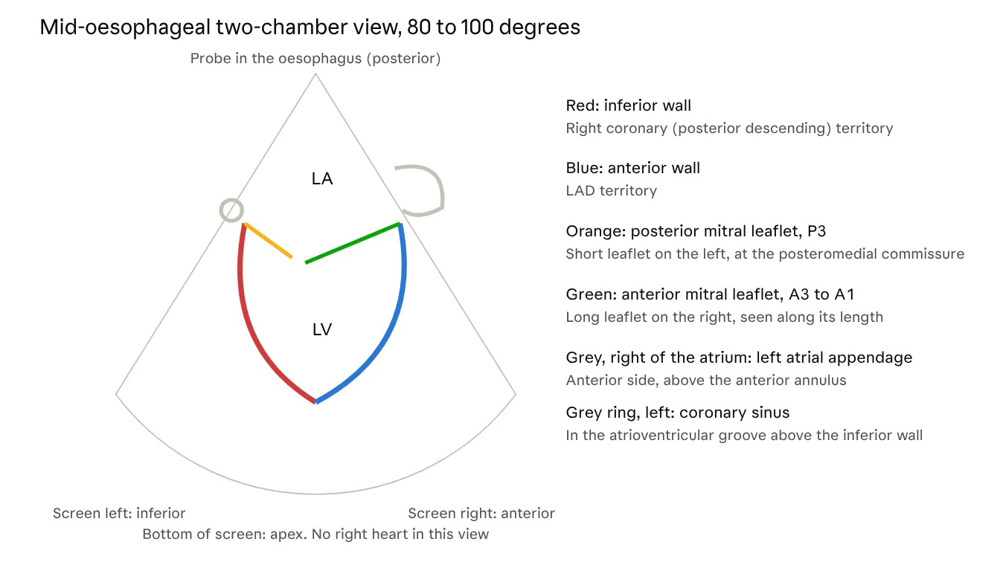
How to get it: from the four-chamber view keep the mitral valve central and turn the angle to 80 to 100 degrees until the right heart disappears.
Walls: inferior on the left, anterior on the right. This is the view that shows the true apex best.
Mitral scallops: P3 on the left, then the anterior leaflet A3, A2, A1 running to the right.
Use it for: anterior and inferior wall motion, apical thrombus, left atrial appendage (turn slightly anticlockwise and withdraw), and the coronary sinus when placing a retrograde cardioplegia cannula.
The four mid-oesophageal views in sequence
| View | Angle | Screen left | Screen right | Mitral, left to right |
|---|---|---|---|---|
| Four-chamber | 0 to 10 | Inferoseptal wall | Anterolateral wall | Anterior leaflet, posterior leaflet |
| Commissural | 50 to 70 | Inferior wall, towards inferolateral | Anterior wall, towards anterolateral | P3, A2, P1 |
| Two-chamber | 80 to 100 | Inferior wall | Anterior wall | P3, A3 A2 A1 |
| Long-axis | 120 to 140 | Inferolateral wall | Anteroseptal wall, with the outflow tract and aortic valve | P2, A2 |
A way to remember the walls: going from 0 to 135 degrees the left side of the screen runs inferoseptal, inferior, inferolateral, and the right side is always the wall opposite.
All 28 standard TOE views
6 parts · 5 drawings
The 2013 ASE and SCA guideline lists 28 views; the names below follow it. Angles, what each shows and its use are from memory of the guideline and standard TOE texts, not read from the document today. Angles vary between patients by 10 to 20 degrees.
Four probe movements: advance or withdraw; turn the shaft right (clockwise) or left; anteflex or retroflex with the big wheel; rotate the imaging angle 0 to 180 degrees with the button.
Mid-oesophageal: left heart
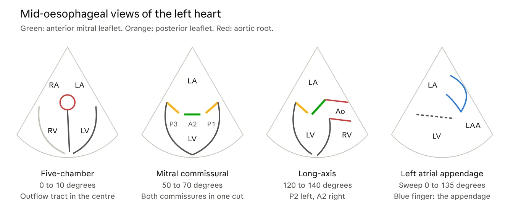
| View | Angle | What you see | Use |
|---|---|---|---|
| Five-chamber | 0 to 10 | Four chambers plus outflow tract and aortic valve | Outflow obstruction, systolic anterior motion, A1 and P1 |
| Four-chamber | 0 to 10 | Both atria and ventricles; inferoseptal and anterolateral walls | Global function, mitral and tricuspid valves, septa |
| Mitral commissural | 50 to 70 | P3, A2, P1 from left to right; both papillary muscles | Localising a prolapse or flail scallop; annulus width |
| Two-chamber | 80 to 100 | Inferior and anterior walls; appendage; coronary sinus | Wall motion, apex, appendage |
| Long-axis | 120 to 140 | Inferolateral and anteroseptal walls; P2 and A2; outflow tract, aortic valve | Mitral mechanism, annulus and outflow tract diameters |
| Left atrial appendage | 0 to 135 sweep | Appendage beside the left upper pulmonary vein, separated by the ridge | Thrombus before cardioversion or cannulation; closure check |
| Pulmonary veins, left and right | 0 to 110 | Left upper vein beside the appendage; right veins by turning right from the bicaval view | Pulmonary vein flow for mitral regurgitation grading; anomalous drainage |
Mid-oesophageal: aortic valve and ascending aorta
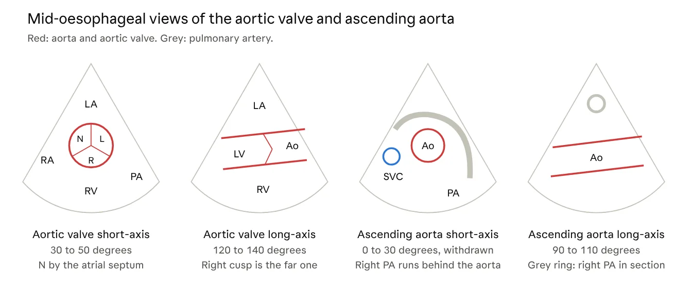
| View | Angle | What you see | Use |
|---|---|---|---|
| Aortic valve short-axis | 30 to 50 | Three cusps: non-coronary next to the atrial septum, right coronary anterior (far field), left coronary on the right of screen | Cusp number and fusion, planimetry, origin of regurgitation, coronary ostia |
| Aortic valve long-axis | 120 to 140 | Outflow tract, valve, sinuses, sinotubular junction, proximal ascending aorta | Annulus, sinus and junction diameters; vena contracta; type A dissection flap |
| Ascending aorta short-axis | 0 to 30 | Aorta in section with SVC and the pulmonary trunk dividing; right pulmonary artery behind the aorta | Dissection, pulmonary embolus in the proximal arteries, pulmonary artery catheter |
| Ascending aorta long-axis | 90 to 110 | Mid ascending aorta in length, right pulmonary artery in section above it | Atheroma and dissection before cannulation |
The distal ascending aorta and proximal arch are hidden behind the trachea and left main bronchus. Use epiaortic scanning if cannulation site atheroma matters.
Mid-oesophageal: right heart and atria
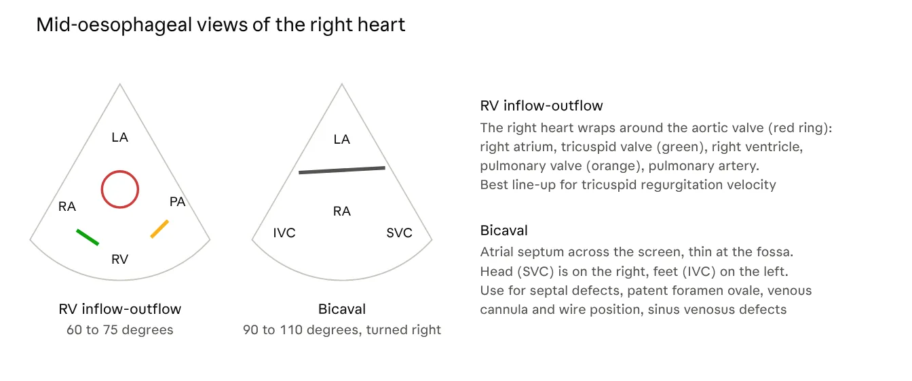
| View | Angle | What you see | Use |
|---|---|---|---|
| RV inflow-outflow | 60 to 75 | Right atrium, tricuspid valve, right ventricle, pulmonary valve and trunk around the aortic valve | Tricuspid regurgitation velocity, pulmonary valve, outflow tract |
| Bicaval | 90 to 110 | Both atria, the atrial septum, SVC on the right, IVC on the left, right atrial appendage | Septal defects, foramen ovale, cannulas, pacing leads |
| Modified bicaval tricuspid | 50 to 70 | Bicaval view turned to bring the tricuspid valve in | A second line-up for tricuspid regurgitation |
Transgastric

| View | Angle | What you see | Use |
|---|---|---|---|
| Basal short-axis | 0 to 20 | Mitral valve en face: anterior leaflet on the left, posterior on the right; posteromedial commissure nearest the probe | Site of a regurgitant jet; basal wall motion |
| Mid-papillary short-axis | 0 to 20 | Six mid segments: inferior at top, anterior at bottom, septum left, lateral right; posteromedial papillary muscle nearer the probe | Filling, global function and regional ischaemia; the monitoring view |
| Apical short-axis | 0 to 20 | Four apical segments | Apical wall motion |
| RV basal | 0 to 20 | Turn right from the basal view: tricuspid valve en face | Tricuspid leaflets |
| RV inflow-outflow | 0 to 20 | Right-sided anteflexion: inflow and outflow together | Pulmonary valve Doppler |
| Deep transgastric five-chamber | 0 to 20 | Apex at the top, outflow tract and aortic valve in line with the beam at the bottom | Aortic valve and outflow tract gradients |
| Two-chamber | 90 to 110 | Inferior wall at top, anterior at bottom, apex to the left; chordae and papillary muscles in length | Subvalvar apparatus |
| RV inflow | 90 to 110 | Turn right from the two-chamber view: tricuspid valve and its chordae | Tricuspid subvalvar apparatus |
| Long-axis | 120 to 140 | Outflow tract and aortic valve on the right of screen | Alternative alignment for aortic gradients |
Coronary territories in the mid-papillary short-axis view: LAD supplies the anterior wall and anterior septum; circumflex the lateral walls; right coronary the inferior wall and inferior septum (in a right-dominant heart).
Aorta

| View | Angle | What you see | Use |
|---|---|---|---|
| Descending aorta short-axis | 0 | Circular aorta at the top of the screen | Atheroma, dissection, balloon pump tip, left pleural effusion behind it |
| Descending aorta long-axis | 90 | Aorta as a tube | The same; flow reversal in aortic regurgitation |
| Arch long-axis | 0, upper oesophagus | Arch in length; proximal arch on the right of screen | Arch atheroma and dissection |
| Arch short-axis | 70 to 90 | Arch in section with the left subclavian origin; pulmonary trunk and pulmonary valve below | Pulmonary valve Doppler; position of a balloon pump (tip just beyond the left subclavian) |
A sequence that covers everything
Four-chamber, then turn the angle through commissural, two-chamber and long-axis without moving the probe. Withdraw slightly for the aortic valve short and long axis. Turn right for RV inflow-outflow and bicaval. Withdraw for the ascending aorta. Advance to the stomach and anteflex for the short-axis views, then two-chamber and long-axis, then deep transgastric. Come back up, turn left to the descending aorta and follow it up to the arch.
A focused intra-operative examination uses 11 of these: four-chamber, two-chamber, long-axis, ascending aorta short and long axis, aortic valve short-axis, RV inflow-outflow, bicaval, transgastric mid-papillary short-axis, and descending aorta short and long axis.
Prosthetic valves: washing jets and paravalvular leak
5 parts · 1 drawing
Sources: ASE 2009 prosthetic valve recommendations, ASE 2024 prosthetic valve guideline, EACVI 2016 recommendations and an ESC council summary. Read from search extracts on 18 November 2026.

Normal regurgitation through a mechanical valve
Two components, both inside the sewing ring:
Closing volume: blood displaced backwards as the occluder shuts. Brief, at the start of closure.
Leakage (washing) jets: true trivial regurgitation through the built-in gaps at the hinges, designed to stop thrombus forming at points of stasis.
| Valve type | Normal pattern | Normal volume per beat |
|---|---|---|
| Bileaflet (St Jude, On-X, Carbomedics) | Jets from each pivot point, two per pivot, sometimes splitting into two or three plumes; symmetrical and converging | 5 to 10 mL |
| Single tilting disc | Small jets just inside the ring where the disc meets the housing; Medtronic Hall adds one larger central jet through the hole in the disc | 5 to 9 mL |
| Caged ball | Closing volume only | 2 to 6 mL |
| Bioprosthesis | Little or none; a small central closing jet in some |
Telling them apart
| Washing jets | Paravalvular leak | |
|---|---|---|
| Origin | Inside the sewing ring, at the hinges | Outside the sewing ring, between ring and annulus |
| Number and shape | Multiple, in the pattern expected for that valve, symmetrical | Usually single, eccentric, often crescent-shaped at its neck |
| Colour | Narrow, short (commonly 2 to 3 cm), low momentum, uniform colour with aliasing only at the base | Turbulent mosaic, wall-hugging, with a proximal convergence zone on the far side of the valve |
| Timing | Brief | Throughout systole (mitral) or diastole (aortic) |
| Associated signs | None | Rocking of the prosthesis if dehiscence exceeds roughly 40% of the ring; haemolysis; vegetation or abscess if infective |
Jet length, the dehiscence figure and the haemolysis point are from memory.
Finding and describing a leak
Mitral prostheses shadow the left atrium on transthoracic imaging, so TOE is needed; aortic prostheses shadow the anterior ring on TOE, so use transthoracic and deep transgastric views as well.
Sweep the whole ring through 180 degrees; use 3D en face colour from the atrial side for mitral leaks.
Report position on a clock face in the surgeon's view. Mitral: aortic valve at 12 o'clock, appendage at about 9, atrial septum at about 3. The clock-face landmarks are from memory.
Report size as the proportion of the ring circumference occupied by the jet neck. For aortic prostheses: under 10% mild, 10 to 29% moderate, 30% or more severe. Transcatheter valve criteria use under 10, 10 to 19 and 20 or more in some trial protocols, so say which scheme you are using.
Circumferential extent over-calls multiple small jets and under-calls a single wide one. Add vena contracta width and area, diastolic flow reversal in the descending aorta (aortic), pulmonary vein systolic reversal (mitral), and ventricular size.
In theatre, coming off bypass
Small leaks inside the ring in the expected pattern: normal. Tell the surgeon which valve type you expect to see.
Tiny paravalvular jets are common before protamine and many disappear once heparin is reversed and the sewing ring seals.
Go back on bypass for: more than a mild paravalvular leak, any rocking, a leaflet that does not move (trapped by retained subvalvar tissue or a suture), or a high gradient that does not fit the valve size.
The threshold for re-clamping is a judgement about the leak against a second cross-clamp. This paragraph is practice-based and from memory, not from a guideline.
Later
A new paravalvular leak is endocarditis until shown otherwise.
Indications to close: heart failure symptoms or haemolysis needing transfusion. Surgery is first line for large or infective leaks; transcatheter plug closure in high-risk patients with a suitable defect and no infection (guideline class from memory; check against ESC 2025).
Ultrasound and Doppler physics
4 parts · 4 drawings
Standard physics, written from memory; not checked against a source today.
Waves
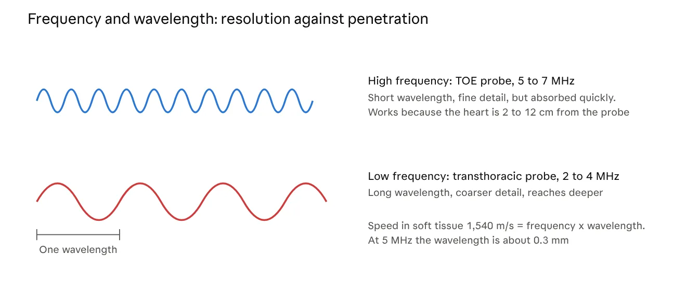
Ultrasound is sound above 20 kHz; echo uses 2 to 10 MHz. A crystal that changes shape when a voltage is applied (the piezoelectric effect) sends a short pulse and then listens.
Depth comes from time: the machine assumes 1,540 m/s, so an echo returning after 130 microseconds came from 10 cm.
Echoes arise where acoustic impedance (density times speed) changes. Tissue to air or to metal reflects almost everything, which is why lung and mechanical valves cast shadows.
Axial resolution (along the beam) is about half the pulse length, so it improves with frequency. Lateral resolution depends on beam width and is best at the focus. Measure along the beam when you can.
Attenuation is about 0.5 dB per cm per MHz, so doubling the frequency halves the usable depth.
Frame rate falls as depth and sector width increase. Narrow the sector to study a fast-moving leaflet.
Artefacts to recognise: acoustic shadowing behind calcium and prostheses; reverberation (equally spaced repeats behind a strong reflector, including the linear artefact in the ascending aorta that mimics a dissection flap); mirror image (a second aorta behind the descending aorta); side lobes (a faint arc at the same depth as a bright structure).
Doppler

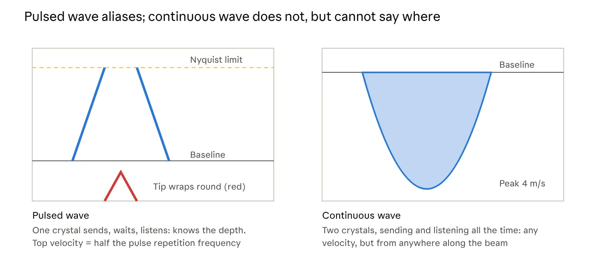
| Mode | What it does well | Limit |
|---|---|---|
| Pulsed wave | Velocity at a chosen depth: outflow tract, mitral inflow, pulmonary veins | Aliases above the Nyquist limit, roughly 1 to 1.5 m/s at depth |
| Continuous wave | Any velocity: stenotic and regurgitant jets, gradients | No depth information; picks up the highest velocity on the line |
| Colour | A map of pulsed-wave mean velocities; shows where and which way | Aliases at 50 to 70 cm/s; depends on gain, scale and frame rate |
Aliasing is used on purpose in the convergence method: lower the colour baseline to 30 to 40 cm/s and the first colour change marks a shell of known velocity.
From velocity to haemodynamics
Simplified Bernoulli: pressure drop in mmHg is 4 times the velocity squared. A tricuspid jet of 3 m/s means 36 mmHg between ventricle and atrium. It fails when the upstream velocity is high (subtract it), in long tunnel-like narrowings, and with very viscous or very thin blood.
Continuity: flow in equals flow out, so area times velocity integral is the same at the outflow tract and at the valve. Aortic valve area = outflow tract area times its velocity integral, divided by the valve velocity integral. The outflow tract diameter is squared, so a 2 mm error changes the area by about 20%.
Stroke volume = cross-sectional area times velocity integral at the same site.
Convergence method: flow rate = 2 times 3.14 times radius squared times aliasing velocity; orifice area = flow rate divided by peak jet velocity; regurgitant volume = orifice area times the jet velocity integral. The radius is squared, and the method assumes a round orifice and a hemispherical shell, so it under-reads slit-like secondary mitral regurgitation and wall-constrained jets.
Pressure half-time

ECG gating
1 drawing
Standard CT physics from memory, apart from the guideline line, which is confirmed.
Why: the root and ascending aorta move several millimetres with each beat and the coronaries more. A scanner takes a fraction of a second per rotation, so an ungated scan blurs them. In the ascending aorta the blur produces a double contour that looks like a dissection flap, and it makes root diameters unreliable. Gating ties the acquisition to the ECG so every slice comes from the same part of the cycle.
The EACTS/STS aortic guideline recommends ECG-triggered or fast acquisition for the root and ascending aorta. The arch and descending aorta move little and do not need it.

| Prospective triggering | Retrospective gating | |
|---|---|---|
| How | The scanner waits for the R wave, then switches the beam on only for a chosen window (step and shoot, or a single high-pitch spiral) | The beam stays on through the whole cycle; images are sorted by phase afterwards |
| Dose | Low, typically 1 to 5 mSv | Higher, typically 8 to 15 mSv, reduced by turning the current down outside the window |
| Gives | One phase | Any phase: cine of valve leaflets, ventricular function, the best phase chosen afterwards |
| Needs | A slow regular rhythm, ideally under 65 a minute | Tolerates higher rates and ectopics; beats can be edited out |
| Use | Coronary angiography, root and ascending aorta, bypass grafts | Transcatheter valve planning in many centres, prosthetic valve leaflet motion, atrial fibrillation |
Which phase:
Coronaries: mid-diastole (70 to 80%), when they are stillest, at slow rates. Above about 70 a minute end-systole (35 to 45%) is better because diastole shortens.
Aortic annulus for a transcatheter valve: systole (30 to 40%), when the annulus is at its largest and roundest. Sizing in diastole under-sizes the valve.
Root and ascending aorta for surveillance: one consistent phase every time, usually diastole, measured perpendicular to the centreline.
Mechanical or bioprosthetic leaflet motion: all phases, so retrospective.
Practical points:
Rate control with a beta-blocker or ivabradine before coronary CT; sublingual nitrate to dilate the coronaries. Do not give either blindly in severe aortic stenosis.
Atrial fibrillation and frequent ectopics degrade prospective scans. Options: systolic triggering with an absolute delay in milliseconds after the R wave, retrospective gating, or a wide-detector scanner that covers the heart in one beat.
A gated scan covers only the heart and proximal aorta. For dissection or transcatheter access planning the usual protocol is a gated thoracic acquisition followed by an ungated run to the femoral arteries on the same contrast injection.
In suspected acute dissection do not delay for gating if it is not immediately available: an ungated scan with a clear flap elsewhere is diagnostic, and a doubtful ascending aorta can be settled by a gated repeat or TOE.
Stair-step and banding artefacts on reconstructions mean the rhythm changed during the scan.
Non-contrast or contrast CT around cardiac surgery
3 parts · 1 drawing
Practice-based and from memory, except the kidney guidance, which is from the ACR and National Kidney Foundation consensus statement, 2020 (read from extracts on 18 November 2026). I did not find a cardiac surgical society guideline that sets this out.

Before the operation
| Question | Scan | Why |
|---|---|---|
| Is the ascending aorta safe to clamp and cannulate? | Non-contrast | Calcium is seen best without contrast; it changes cannulation site, clamp strategy, or the choice of transcatheter valve or off-pump surgery |
| Redo sternotomy | Contrast, gated | Shows patent grafts (especially a mammary graft crossing the midline), right ventricle and aorta against the sternum. Non-contrast gives distances and wires only |
| Aortic stenosis with discordant echo | Non-contrast calcium score | See the CT section above |
| Transcatheter valve or minimal access planning | Contrast, gated chest plus aorta to femorals | Annulus, coronary heights, access vessels |
| Coronaries before valve surgery in a lower-risk patient | Contrast, gated | ESC/EACTS 2025 allows CT in place of invasive angiography |
| Aneurysm or dissection | Contrast, with a non-contrast phase first | The non-contrast phase shows intramural haematoma as a bright crescent |
After the operation
| Problem | Scan | What to look for |
|---|---|---|
| Falling haemoglobin, rising drain output, or tamponade with no echo window | Non-contrast, then arterial and delayed phases if stable enough | High-density collection; contrast blush that enlarges on the delayed phase is active bleeding. Do not delay re-exploration for a scan in an unstable patient |
| Late tamponade or loculated effusion | Either; contrast helps separate fluid from atelectatic lung and shows a compressed chamber | Posterior collections missed by transthoracic echo |
| Suspected deep sternal wound infection | Contrast | Rim-enhancing retrosternal collection, bone destruction, dehiscence. Gas and fluid are normal for two to three weeks, so early scans are hard to read; the diagnosis is clinical first |
| Breathless, hypoxic | CT pulmonary angiogram | Embolism against collapse, effusion, phrenic palsy |
| Chest pain or ischaemia after coronary surgery | Invasive angiography if unstable; gated contrast CT if stable | Graft occlusion or kink |
| After aortic surgery | Contrast, with non-contrast phase | Baseline before discharge; anastomotic pseudoaneurysm; residual false lumen. Felt strips and pledgets are bright on the non-contrast phase and mimic a leak if that phase is omitted |
| Raised gradient across a prosthesis | Contrast, gated, all phases | Leaflet thickening and reduced motion (thrombus) against pannus |
| New neurological deficit | Non-contrast head, then CT angiogram of arch to vertex | Haemorrhage excludes thrombolysis anyway after surgery; a large vessel occlusion can still have thrombectomy |
| Abdominal pain, rising lactate | Contrast, arterial and portal phases | Mesenteric ischaemia; do not withhold contrast for a creatinine |
The kidney
The consensus statement's position is that the risk from modern intravenous contrast has been overstated, because older studies could not separate injury caused by contrast from injury that merely followed it.
Higher-risk groups: acute kidney injury, or an estimated filtration rate under 30. The older KDIGO threshold was 45.
Saline prophylaxis is indicated in those groups if they are not on dialysis and can tolerate the volume; heart failure is the stated reason not to.
Do not withhold a contrast scan on kidney grounds when there is no suitable alternative and the result will change management.
Particular to cardiac surgery (memory): acute kidney injury is common after bypass from other causes, so a creatinine rise after a scan is not proof of harm from it. Where possible avoid elective contrast in the 24 to 48 hours before surgery if the angiogram has just been done, and space contrast loads. Patients on dialysis with residual urine output still count as at risk.
Metformin: withhold after contrast when the filtration rate is under 30 or in acute kidney injury (memory).
Allergy: previous severe reaction needs a discussion with radiology about a different agent and premedication; shellfish and iodine skin preparations are not predictors (memory).
CT angiography of the aorta: protocols, how and where to measure, and what the numbers mean
4 parts · 3 drawings
Sources read from extracts on 18 November 2026: ACC/AHA 2022 aortic guideline (with AATS and STS), EACTS/STS 2024 aortic guideline and the ESC 2024 aortic guideline key points. Protocol details are from memory of usual radiology practice.
Protocols

| Indication | Protocol | Points |
|---|---|---|
| Suspected acute aortic syndrome | Non-contrast, then arterial from above the arch to the femoral arteries; gate the chest if it does not delay the scan | EACTS/STS: CT angiography from the common carotid to the common femoral arteries is the first-line test (class I). Delayed phase if malperfusion or slow false-lumen filling is in question |
| Aneurysm surveillance | Gated arterial phase of the thoracic aorta | Same modality and method each time. EACTS/STS: non-contrast CT can follow diameter accurately when contrast is not possible or wanted. MRI for young patients needing lifelong follow-up |
| Before transcatheter valve | Gated contrast of the root (systole) plus aorta to femorals | Annulus, coronary heights, access |
| Before redo sternotomy or minimal access surgery | Gated contrast chest; add iliofemorals for peripheral cannulation | Grafts, retrosternal structures, atheroma |
| After endovascular repair | Non-contrast, arterial, delayed | The delayed phase finds endoleak; the non-contrast phase stops calcium being mistaken for it |
| After open aortic repair | Non-contrast and arterial | Baseline before discharge |
How to measure

Confirmed from ACC/AHA 2022:
CT and MRI: root and ascending diameters inner edge to inner edge, on an ECG-synchronised scan (class I).
If the wall is abnormal (atheroma or discrete wall thickening, commoner distally), report outer edge to outer edge.
Root: record the maximum sinus-to-sinus diameter. Sinus to commissure is also used but reads smaller; whichever is used must stay the same between scans. If the root is asymmetric, take several measurements.
Echo: leading edge to leading edge, perpendicular to flow (class IIa). This agrees well with inner-to-inner on CT.
This reversed the 2010 advice (outer diameter on CT, inner to inner on echo). In a Marfan cohort the change cut the echo against CT difference at the sinuses from 2.7 mm to 0.3 mm. Old and new reports are therefore not directly comparable.
Confirmed from EACTS/STS 2024: measure at reproducible anatomical landmarks and at the maximum diameter, perpendicular to the long axis; in the root, sinus to sinus.
Where to measure

What the numbers mean
| Finding | Significance |
|---|---|
| Normal ascending aorta (memory) | About 30 to 37 mm in adults, larger with age, male sex and body size; the descending aorta is about 25 mm |
| Aneurysm (memory) | More than 1.5 times the expected diameter; in practice an ascending aorta over 40 to 45 mm is followed |
| 45 mm | Refer for CT or MRI and specialist follow-up (ESC 2024). Operate at this size during aortic valve surgery, and in Loeys-Dietz with a SMAD3 variant |
| 50 mm | Root phenotype, bicuspid valve with risk factors, Marfan, or low-risk patients in experienced centres |
| Over 52 mm | Ascending phenotype in low-risk patients in experienced centres (EACTS/STS) |
| 55 mm | Everyone |
| Size against body | Cross-sectional area over height of 10 cm2 per metre or more (American). EACTS/STS note that at 1.50 m a 50 mm aorta is already 13 cm2 per metre |
| Length | Annulus to innominate origin along the centreline over 11 cm is a risk marker (EACTS/STS) |
| Growth | 5 mm in a year, or 3 mm a year for two years (American); over 3 mm a year in the EACTS/STS risk list |
| Measurement error (memory) | About 2 mm between observers and scans. A change under 3 mm is not growth unless confirmed on the same modality and method, side by side with the old images |
Surveillance intervals, EACTS/STS 2024 unless stated:
Imaging before discharge after every open or endovascular aortic procedure.
Echo is the test after root surgery.
After treatment for acute dissection or intramural haematoma, whatever the treatment: CT angiography at 6 and 12 months, then yearly for five years if stable.
Medically treated type B syndromes (ESC 2024): 1, 3, 6 and 12 months, then yearly.
Bicuspid valve with an aorta over 40 mm (ESC 2024): echo at one year, then every two to three years if stable.
What a surgeon wants in the report: gated or not and which phase; edge convention; each landmark diameter and the maximum with its location; length; root symmetry and valve morphology; arch anatomy (bovine arch, aberrant subclavian, vertebral dominance); for dissection, entry tear, extent, branch vessel supply from true or false lumen, coronary and pericardial involvement; calcium at clamp and cannulation sites; access vessel calibre and tortuosity.
Endoleaks
1 drawing
The one with retrograde flow is type II.

| Type | Mechanism | Pressure | What to do |
|---|---|---|---|
| Ia, Ib, Ic (Ic: leak at a target artery after fenestrated or branched repair, EACTS/STS 2024 p58) | Blood passes the proximal or distal seal | Systemic | Treat promptly: extend the graft or convert (balloon moulding of the seal: the FRCS Atlas draft warns against it in a dissected aorta; not checked against a primary source). The commonest type after thoracic stent grafting |
| II (IIa one vessel, IIb two or more) | Retrograde filling of the sac through side branches | Low | The commonest type after abdominal repair. Many seal spontaneously. Watch; embolise if the sac enlarges or the leak persists with growth |
| IIIa, IIIb | Modular components separate, or the fabric tears or fractures (sources differ on which letter is which) | Systemic | Treat: reline or bridge with another graft |
| IV | Blood weeps through porous fabric | Low | Seen at the end of the procedure under heparin; resolves; rare with current grafts |
| V, endotension | Sac enlarges with no leak shown | Look harder for an occult type I, II or III; reline or convert if it keeps growing |
Type II in detail:
Sources after abdominal repair: lumbar arteries, inferior mesenteric artery, internal iliac, accessory renal.
Sources after thoracic repair: intercostal and bronchial arteries, and the left subclavian artery when the graft covers its origin. Blood runs backwards down the subclavian from the vertebral and into the sac. That one is treated by plugging or coiling the subclavian origin proximal to the vertebral, usually with a carotid to subclavian bypass.
Rupture risk is lower than with types I and III (about 0.5% against 3.4% in one review).
On CT: contrast in the sac at its edge, next to a branch vessel, away from the graft ends, often seen only on the delayed phase. A leak next to a graft end or a junction is type I or III until shown otherwise.
A type II leak that does not go away, with a growing sac, is sometimes a missed type I or III.
Why the three-phase scan: the non-contrast phase shows calcium and old embolic material that would otherwise be read as a leak, the arterial phase shows high-flow type I and III leaks, and the delayed phase shows slow type II leaks. Follow-up after endovascular repair tracks sac diameter as well as leaks.
Early complications on CT after aortic valve and root surgery
3 parts · 1 drawing
Sources read from extracts on 18 November 2026: RadioGraphics reviews of imaging the aortic root and of CT after thoracic aortic surgery, mimics of complications in the postsurgical aorta, postoperative imaging of the aorta and a Bentall complications pictorial review. Timings and management points are from memory.
Scan: gated, non-contrast then arterial, with a delayed phase if bleeding is the question. Without the non-contrast phase the normal surgical material below cannot be told from a leak.

Complications
| Complication | CT appearance | What it means |
|---|---|---|
| Mediastinal or pericardial haematoma, tamponade | High-density collection on the non-contrast phase; compressed right heart or left atrium; contrast blush enlarging on the delayed phase if still bleeding | Re-explore on clinical grounds; CT finds the posterior or loculated collection echo misses |
| Anastomotic leak and pseudoaneurysm | Contrast outside the graft lumen in the perigraft space, usually at a coronary button, the proximal suture line or the distal suture line | The coronary buttons are the weak point of the modified Bentall operation. Small contained leaks are sometimes watched; enlarging or infected ones are re-operated |
| Coronary button problem | Kinked, stretched or narrowed ostium; non-opacified proximal coronary; regional wall thinning or poor enhancement | Presents as ischaemia, ventricular arrhythmia or failure to wean. Go to angiography if unstable |
| Valve dehiscence and paravalvular leak | Gap between the sewing ring and annulus, rocking on cine phases, contrast-filled space beside the ring | Early: technical or tissue failure. Later: endocarditis |
| Root abscess and graft infection | Rim-enhancing perigraft collection, gas persisting or appearing after the first weeks, fistula to a neighbouring structure | Abnormally large low-density perigraft collections, extravasation, gas and fistulas are the four signs listed in the review |
| Prosthetic leaflet thrombosis | Low-density leaflet thickening and reduced opening on a gated all-phase scan | Bioprostheses: subclinical thrombosis. Mechanical: a stuck leaflet, thrombus or pannus |
| Residual or new dissection | Flap beyond the distal anastomosis, at the clamp site or cannulation site | Iatrogenic, or residual after type A repair, where a patent distal false lumen is expected |
| Sternal and chest complications | Dehiscence, retrosternal collection, pleural effusion, collapse, pulmonary embolism | As for any sternotomy |
| After valve-sparing or Ross operations (memory) | Residual regurgitation is an echo question; CT shows the pulmonary homograft, autograft dilatation and coronary buttons |
Normal findings that look like complications
Felt pledgets, strips and rings are bright and sit exactly where leaks occur: at the valve ring, the buttons, the suture lines and the cannulation sites. Their shape and density make them look like a small outpouching of contrast. They are equally bright on the non-contrast phase; a leak is not.
The reimplanted coronary button has a widened, trumpet-shaped origin. That is normal and is not a pseudoaneurysm.
Graft folds and kinks, and side branches of a branched graft, can look like a flap or an outpouching.
A small amount of uniform low-density perigraft fluid, and a little perigraft air, are normal early. Size, growth, density and timing separate them from haematoma and infection.
When the native aorta or a pericardial patch has been wrapped around the graft, the space between is a normal potential space. Flow of contrast into it is not.
Haemostatic agents left in the field contain gas bubbles and mimic an abscess in the first weeks (memory).
A frozen or conventional elephant trunk lying in the descending aorta looks like a dissection flap (memory).
A Cabrol coronary conduit can be mistaken for a dissection; gating helps tell a button from a pseudoaneurysm.
Rules of thumb
Get a baseline scan before discharge after root or aortic surgery (EACTS/STS). Later scans are read against it.
Compare every bright focus with the non-contrast phase before calling a leak.
Know the operation: button or Cabrol, inclusion wrap or not, felt or not, valved conduit or valve-sparing. Tell the radiologist.
Grading aortic regurgitation, mitral regurgitation and mitral stenosis on TOE, and when to operate
3 parts · 3 drawings
Sources: ASE 2017 native valve regurgitation guideline, EACVI and ASE criteria as tabulated in the 2021 ESC/EACTS guideline, and the 2025 ESC/EACTS valvular guideline. The regurgitation criteria and the 2025 indications were read from extracts on 18 November 2026. The mitral stenosis grading and its recommendations are from memory, apart from the 1.5 cm2 definition.


A warning that applies to all three: general anaesthesia lowers preload and afterload, so intra-operative TOE under-grades regurgitation, often by a full grade. Grade on the pre-operative awake study; in theatre, restore the blood pressure with a vasoconstrictor and fluid before deciding a borderline lesion can be left.
Aortic regurgitation
| Measure | Mild | Moderate | Severe | Where on TOE |
|---|---|---|---|---|
| Vena contracta width | Under 3 mm | 3 to 6 mm | Over 6 mm | Aortic valve long-axis, zoomed |
| Jet width as a share of the outflow tract (central jets only) | Under 25% | 25 to 64% | 65% or more | Aortic valve long-axis |
| Pressure half-time | Over 500 ms | 200 to 500 ms | Under 200 ms | Deep transgastric or transgastric long-axis, continuous wave |
| Diastolic flow reversal in the descending aorta | Brief, early | Intermediate | Holodiastolic, end-diastolic velocity over 20 cm/s | Descending aorta long-axis, pulsed wave |
| Effective regurgitant orifice | Under 0.10 cm2 | 0.10 to 0.29 | 0.30 cm2 or more | Proximal convergence, deep transgastric |
| Regurgitant volume and fraction | Under 30 mL, under 30% | 30 to 59 mL, 30 to 49% | 60 mL or more, 50% or more |
Also report the mechanism, because it decides repair against replacement: cusp prolapse, perforation or restriction, and the annulus, sinus and sinotubular junction diameters. Half-time shortens with a stiff ventricle and in acute regurgitation, so do not use it alone.
Indications, ESC/EACTS 2025:
Symptomatic severe regurgitation: surgery whatever the ejection fraction (class I).
Severe regurgitation in a patient having coronary, ascending aortic or other valve surgery (class I).
Asymptomatic: ejection fraction 50% or less, or end-systolic diameter over 50 mm, or indexed over 25 mm/m2, especially in small patients (class I).
Asymptomatic and low surgical risk: may be considered at indexed end-systolic diameter over 22 mm/m2, indexed end-systolic volume over 45 mL/m2, or ejection fraction 55% or less (class IIb, new thresholds in 2025).
Aortic valve repair should be considered in selected patients in experienced centres when a durable result is expected (class IIa, upgraded in 2025).
Transcatheter implantation may be considered for symptomatic severe regurgitation in patients ineligible for surgery with suitable anatomy (class IIb, new in 2025).
A dilated root or ascending aorta sets its own indication regardless of the regurgitation grade.
The American guideline differs: it recommends surgery at an ejection fraction of 55% or less.
Primary mitral regurgitation
| Measure | Mild | Moderate | Severe | Where on TOE |
|---|---|---|---|---|
| Vena contracta width | Under 3 mm | 3 to 6.9 mm | 7 mm or more | Long-axis view; not the commissural view |
| Effective regurgitant orifice | Under 0.20 cm2 | 0.20 to 0.39 | 0.40 cm2 or more | Proximal convergence, baseline shifted to 30 to 40 cm/s |
| Regurgitant volume and fraction | Under 30 mL, under 30% | 30 to 59 mL, 30 to 49% | 60 mL or more, 50% or more | |
| Pulmonary vein flow | Systolic dominant | Systolic blunting | Systolic reversal | Left upper pulmonary vein, pulsed wave |
| Mitral inflow | A wave dominant | E wave over 1.2 m/s | ||
| Supportive | Flail leaflet; large convergence zone; dense triangular continuous wave signal |
In secondary regurgitation the orifice is elliptical, so severe may be 0.30 cm2 or more and 45 mL or more in low-flow states.
Indications, ESC/EACTS 2025:
Symptomatic severe primary regurgitation, operable and not high risk: surgery (class I). Repair is preferred to replacement when the result is expected to be durable.
Asymptomatic with ventricular dysfunction: ejection fraction 60% or less, end-systolic diameter 40 mm or more, or indexed 20 mm/m2 or more (class I).
New in 2025, class I: repair in low-risk asymptomatic patients with a normal ventricle when durable repair is likely and at least three of four are present: atrial fibrillation; resting systolic pulmonary artery pressure over 50 mmHg; left atrial volume index 60 mL/m2 or more, or diameter 55 mm or more; at least moderate secondary tricuspid regurgitation.
Asymptomatic with a normal ventricle and atrial fibrillation from the regurgitation or pulmonary hypertension over 50 mmHg: surgery should be considered (class IIa).
Transcatheter edge-to-edge repair should be considered in symptomatic patients at high surgical risk with suitable anatomy (class IIa, upgraded).
Severe regurgitation in a patient having other valve surgery: operate on it (class I).
Secondary regurgitation in brief: ventricular type, edge-to-edge repair is class I in stable symptomatic patients with ejection fraction under 50% who remain severe on optimal treatment and meet the criteria; surgery class IIb unless another operation is needed. Atrial type, surgery with atrial fibrillation ablation and appendage closure should be considered (class IIa, new). Moderate secondary regurgitation at the time of coronary surgery: mitral surgery may be considered (class IIb).
Mitral stenosis
| Measure | Mild | Moderate | Severe | Where on TOE |
|---|---|---|---|---|
| Valve area | Over 1.5 cm2 | 1.0 to 1.5 cm2 | Under 1.0 cm2 | Planimetry at the leaflet tips: transgastric basal short-axis or 3D |
| Mean gradient at 60 to 80 beats per minute | Under 5 mmHg | 5 to 10 mmHg | Over 10 mmHg | Four-chamber or long-axis, continuous wave |
| Pulmonary artery systolic pressure | Under 30 mmHg | 30 to 50 mmHg | Over 50 mmHg |
This three-grade table is the 2009 European and American echo scheme. Current guidelines intervene on a different line: clinically significant stenosis is an area of 1.5 cm2 or less (the ESC 2025 flowchart uses this), and the American staging calls 1.5 or less severe and 1.0 or less very severe, with a half-time of 150 ms or more and 220 ms or more.
Area by half-time is 220 divided by the half-time. It is unreliable just after balloon valvotomy, with significant aortic regurgitation, and with a stiff ventricle.
The gradient depends on heart rate and flow. Always quote the rate.
TOE's particular jobs: exclude left atrial and appendage thrombus before balloon valvotomy, grade the regurgitation, and assess commissural fusion and calcium.
Wilkins score: mobility, thickening, calcification and subvalvar thickening, each 1 to 4. Eight or less favours balloon valvotomy.
Indications (from memory of ESC/EACTS 2021, which I believe 2025 keeps; not re-read):
Symptomatic, area 1.5 cm2 or less, favourable anatomy: percutaneous mitral commissurotomy (class I).
Symptomatic and unsuitable for commissurotomy: surgery, almost always replacement (class I).
Asymptomatic with high embolic risk (previous embolism, dense spontaneous contrast, new atrial fibrillation) or high risk of decompensation (pulmonary pressure over 50 mmHg, need for major non-cardiac surgery, planned pregnancy): commissurotomy should be considered if anatomy is favourable (class IIa).
Contraindications to commissurotomy: area over 1.5 cm2, left atrial thrombus, more than mild mitral regurgitation, severe or bicommissural calcification, no commissural fusion, severe aortic or combined tricuspid disease needing surgery, coronary disease needing bypass.
Confirmed from 2025: direct oral anticoagulants are not recommended in atrial fibrillation with rheumatic stenosis and an area of 2.0 cm2 or less (class III); transcatheter mitral implantation may be considered for severe disease with extensive annular calcification in experienced centres (class IIb, new).
Thresholds: CT measurements for procedural planning
4 parts
Gated CT decides the access and the operation more often than the indication: annulus size, coronary heights, calcium distribution and what lies behind the sternum.
Aortic valve and root
| Measurement | Threshold | Implication |
|---|---|---|
| Annulus (systole, 30–40% of R-R, double-oblique) | Area and perimeter | Sizes TAVI; predicts surgical prosthesis size |
| Small annulus | Area ≤430 mm², or surgical sizer ≤21 mm | Mismatch risk: plan root enlargement, a stentless or sutureless valve, or a supra-annular TAVI |
| Predicted indexed orifice area | ≤0.85 cm²/m² (≤0.65 severe) | Enlarge the root or change prosthesis |
| Balloon-expandable TAVI range | Annulus area about 273–683 mm² | Outside range favours surgery |
| Self-expanding TAVI range | Perimeter-derived diameter about 18–30 mm | Outside range favours surgery |
| Coronary ostial height | <10 mm (some use <12 mm) | Coronary obstruction risk with TAVI, higher if sinus width <30 mm |
| Valve-in-valve: virtual transcatheter valve to coronary distance | <4 mm | High risk of coronary obstruction; favours redo surgery or leaflet modification |
| LVOT calcification | Moderate or severe, especially below the non-coronary cusp | Annular rupture and paravalvular leak with TAVI |
| Bicuspid morphology | Heavily calcified raphe, marked asymmetry, aortopathy | Favours surgery |
| Ascending aorta | ≥45 mm with a valve indication | Favours surgery with concomitant replacement |
| Porcelain aorta | Circumferential calcification of the ascending aorta | Cannulation and clamping unsafe; favours TAVI |
| Calcium score | Sex-specific thresholds in the AS section | Confirms severity |
Access and re-entry
| Measurement | Threshold | Implication |
|---|---|---|
| Iliofemoral minimal lumen diameter | ≥5.0–5.5 mm for 14 Fr sheaths | Below this, alternative TAVI access or surgery |
| Sternum to RV, aorta or graft | <10 mm, or structure adherent to the sternum | High-risk re-entry: expose or cannulate peripherally before sternotomy |
| Patent LIMA or vein graft crossing the midline | Any | As above; consider non-sternotomy approach |
| Aorto-iliac atheroma or tortuosity | Mobile or protruding atheroma | Avoid retrograde femoral perfusion in minimally invasive surgery |
| Coronary CT angiography | Good-quality study with no significant disease | Can replace invasive angiography before valve intervention in low to intermediate pre-test probability |
Mitral and tricuspid
| Measurement | Threshold | Implication |
|---|---|---|
| Mitral annular calcification | Circumferential extent, thickness, myocardial extension | Risk of atrioventricular groove rupture; plan debridement, alternative suturing, or transcatheter valve |
| Predicted neo-LVOT area (transcatheter mitral) | <170–190 mm² | LVOT obstruction risk |
| Left atrial appendage on delayed phase | Persistent filling defect | Thrombus; relevant to commissurotomy, ablation and cannulation |
| Tricuspid annulus and right coronary artery course | Distance from RCA to annulus | Risk to the RCA with annuloplasty or transcatheter devices |
| Pacing lead position | Lead impinging on or adherent to a leaflet | Lead-related TR; plan extraction or repositioning |
Thoracic aorta
| Measurement | Threshold | Implication |
|---|---|---|
| Diameters at fixed landmarks | Annulus, sinuses, sinotubular junction, mid-ascending, proximal arch, mid-arch, isthmus, mid-descending, diaphragm | Reproducible surveillance and extent of resection |
| Root phenotype | Sinus diameter greater than tubular diameter | Lower threshold; root replacement, not supracoronary graft |
| Proximal arch | >45 mm | Add hemiarch |
| Landing zone for endovascular repair | ≥20 mm of healthy aorta in device instructions and the 2012 EACTS statement; your master reference cites ≥25 mm from EACTS/STS 2024, which I could not confirm from the source | Shorter zones need debranching or branched devices |
| Arch anatomy | Bovine trunk, aberrant subclavian, dominant vertebral | Changes cannulation and cerebral perfusion plan |
Thresholds: Ventricular and pulmonary values at a glance
Each lesion has its own LV trigger: the ejection fraction that counts as abnormal rises from 50% in AS to 60% in primary MR.
| Lesion | Class I trigger in the asymptomatic patient | Earlier optional trigger |
|---|---|---|
| Aortic stenosis | LVEF <50% | LVEF <55%; Vmax >5 m/s; BNP >3× normal (IIa) |
| Aortic regurgitation | LVEF ≤50%; LVESD >50 mm; LVESDi >25 mm/m² | LVEF ≤55%; LVESDi >22 mm/m²; LVESVi >45 mL/m² (IIb) |
| Primary mitral regurgitation | LVEF ≤60%; LVESD ≥40 mm; LVESDi ≥20 mm/m² | Three of: AF, SPAP >50 mmHg, LA volume index ≥60 mL/m², TR at least moderate (I) |
| Mitral stenosis | None on LV; area ≤1.5 cm² with symptoms | SPAP >50 mmHg; new AF (IIa) |
| Tricuspid regurgitation | None; operate before RV failure | RV dilating or function falling (IIa) |
| Cross-cutting value | Threshold | Why it matters |
|---|---|---|
| Stroke volume index | <35 mL/m² | Low flow: gradients under-call stenosis |
| Resting SPAP | >50 mmHg | Trigger in MR and MS |
| TR peak velocity | >3.4 m/s | High echo probability of pulmonary hypertension |
| TAPSE | <17 mm | RV dysfunction; raises risk of any valve operation, most of all isolated tricuspid surgery |
| RV fractional area change | <35% | RV dysfunction |
| LA volume index | ≥60 mL/m² | Trigger in primary MR; marker of chronicity |
| Exercise systolic BP | Fall >20 mmHg | Trigger in asymptomatic AS |
| BSA | <1.68 m² | Use indexed LV and aortic dimensions |
CT measurement convention
Source: society-integrated handbook, as taught; its sources were not checked by me. Moved here from Cardiac 10 on 19 Nov 2026.
Report method, cardiac phase and edge convention. EACTS/STS outer-edge measurements and another framework's inner-edge measurements cannot be mixed to infer growth. A prosthetic mass near the 145 HU discriminator between thrombus and pannus is supportive, not decisive.
CT in aortic and mitral disease: what EACTS, STS and AATS say
4 parts · 1 drawing
Read from extracts on 18 November 2026: the 2025 ESC/EACTS valvular guideline, the 2024 EACTS/STS aortic guideline and summaries of the 2022 ACC/AHA aortic guideline, which AATS and STS co-developed and endorsed. Items marked (memory) were not confirmed today.
Which document belongs to whom
| Society | Valve document | Aortic document |
|---|---|---|
| EACTS | 2025 ESC/EACTS valvular heart disease | 2024 EACTS/STS aortic organ |
| STS | Represented on the ACC/AHA valve guideline (2020) | 2024 EACTS/STS aortic organ; 2022 ACC/AHA aortic disease; 2022 STS/AATS type B dissection |
| AATS | Represented on the ACC/AHA valve guideline (2020) | 2022 ACC/AHA aortic disease; 2021 AATS consensus on type A dissection; 2018 AATS consensus on bicuspid aortopathy (memory) |
Aortic valve
Severity when echo is discordant: CT calcium scoring of the valve is the adjunct for low-flow, low-gradient stenosis. It tracks haemodynamic severity, progression and outcome, and the 2025 algorithm uses sex-specific thresholds. Severe stenosis is likely at about 2,000 Agatston units in men and 1,200 in women, and very likely above 3,000 and 1,600 (thresholds from memory of the 2021 guideline; the doc's echo tab uses the same).
Planning a transcatheter valve: CT is the preferred tool. It gives annulus size, root and ascending dimensions, the amount and distribution of valve and outflow tract calcium, coronary ostial height, the implant projection and vascular access.
Coronaries before valve intervention, changed in 2025: CT coronary angiography is recommended when the pre-test likelihood of obstructive disease is moderate or lower (50% or less); invasive angiography is kept for high likelihood and for severe ventricular secondary mitral regurgitation. In transcatheter candidates, invasive angiography may be omitted if the planning CT is good enough to exclude significant disease (class IIa).
Surgical planning (memory): CT before redo sternotomy for the distance from sternum to right ventricle, aorta and patent grafts; before minimally invasive valve surgery for the aortic position relative to the sternum and for peripheral cannulation; for porcelain aorta.
After implantation (memory): CT is the test for leaflet thickening and reduced motion from subclinical thrombosis, and for pannus against thrombus when a prosthetic gradient rises.
Thoracic aorta
How to image, both guidelines:
ECG-triggered or fast acquisition is recommended for the root and ascending aorta, to remove pulsation artefact. Ungated CT can show a false flap in the ascending aorta.
Use the same modality and the same measuring method for every follow-up scan, ideally in the same laboratory.
Measure perpendicular to the centreline (double-oblique), and report the root sinus to sinus (memory).
Significantly small or tall patients: index the diameter to height or body surface area, or use cross-sectional area over height; 10 cm2 per metre or more is the American trigger.
Rapid growth, American definition: 0.5 cm in one year, or 0.3 cm a year in two consecutive years; 0.3 cm in one year for heritable disease or a bicuspid valve.
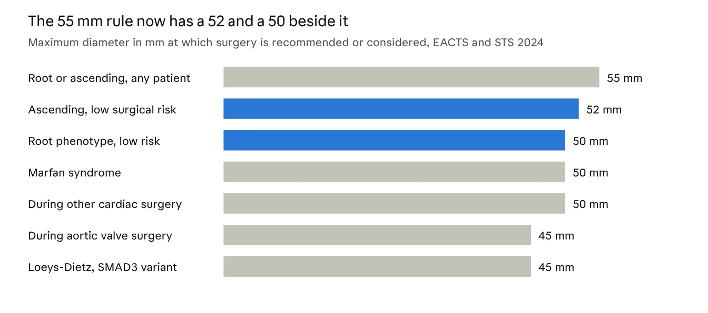
When to operate, EACTS/STS 2024:
Root or tubular ascending aneurysm, tricuspid or bicuspid valve: 55 mm or more (recommended).
Low surgical risk in an experienced centre: more than 52 mm for the ascending aorta and 50 mm or more for the root phenotype.
Bicuspid with root phenotype: 50 mm or more (recommended).
Bicuspid with ascending phenotype and low risk: 50 mm or more if age under 50, height under 1.69 m, ascending length over 11 cm, growth over 3 mm a year, or a family history of acute aortic syndrome.
At the time of aortic valve surgery: 45 mm or more. At other cardiac surgery with a tricuspid valve: 50 mm or more. Replace the root as well if it reaches 45 mm when the ascending aorta is being replaced.
Marfan: 50 mm or more. Loeys-Dietz with a SMAD3 variant: 45 mm or more.
American (ACC/AHA 2022, with AATS and STS): 5.5 cm recommended; 5.0 to 5.4 cm reasonable with an experienced surgeon and aortic team, or with a risk factor; 4.5 cm with high-risk features in heritable disease.
Acute aortic syndrome (memory): CT angiography of the whole aorta, chest to femoral arteries, is the first-line test in both guidelines, with a non-contrast phase to show intramural haematoma. The scan must answer: entry tear site, extent, true and false lumen, branch vessel and coronary involvement, pericardial effusion, and access vessels.
Mitral valve
The 2025 valve guideline gives CT a smaller formal role here than for the aortic valve; I found no class-rated CT recommendation specific to mitral surgery in the extracts. What the guidelines and consensus documents use it for (memory unless stated):
Mitral annular calcification: extent, circumferential distribution and whether it reaches the myocardium, before deciding between surgery, a transcatheter valve in the calcified annulus, or no intervention. The 2025 guideline adds that transcatheter mitral implantation may be considered for severe disease with extensive annular calcification in experienced centres (class IIb, confirmed).
Transcatheter mitral replacement and valve-in-valve or valve-in-ring: annulus sizing, and the predicted new outflow tract area after the device displaces the anterior leaflet. A small predicted area signals a risk of outflow obstruction.
Coronaries: the same 2025 rule as above. CT angiography replaces invasive angiography before mitral surgery when the likelihood of coronary disease is moderate or lower.
Minimally invasive and robotic mitral surgery: CT of the aorta and iliofemoral vessels before retrograde perfusion, because atheroma raises stroke risk; and of the chest for access. The 2025 guideline gives minimally invasive mitral surgery a class IIb in experienced centres (confirmed), without a CT rule attached.
Redo mitral surgery: sternal re-entry planning, as for the aortic valve.
Circumflex artery and coronary sinus position relative to the annulus, for annuloplasty devices.
Echocardiography: views and grading tables from the textbook
Added 19 November 2026 from the TSRA Review 3rd ed., ch. 48 (Ziazadeh, Louis, Hicks), read in full. Several tables were scrambled in the PDF text; only rows that could be read without doubt are given. Where a figure differs from the ESC/EACTS thresholds earlier in this tab, use the guideline.
Transthoracic views
| View | Shows |
|---|---|
| Parasternal long axis | Left atrium, mitral leaflets, outflow tract, aortic valve, septum; effusions at greater depth |
| Parasternal short axis | Aortic valve level; mitral level; mid-papillary level for regional wall motion; apex |
| Apical four chamber | All chambers; right ventricular focus for annulus and TAPSE |
| Apical five chamber | Outflow tract and aortic valve |
| Apical two and three chamber | Left ventricle walls; aortic and mitral valves |
| Subxiphoid | Pericardium, right ventricular free wall, septa; vena cava and its collapse |
| Suprasternal | Arch and head vessels |
Transoesophageal views a surgeon should know
| View | Use |
|---|---|
| Mid-oesophageal four chamber | Both atrioventricular valves, septa, inferoseptal and anterolateral walls |
| Five chamber | Outflow tract, aortomitral curtain |
| Two chamber and mitral commissural | Cuts both commissures; scan P3-P2-P1 and A3-A2-A1; appendage |
| Long axis | Outflow tract, aortic valve, root, ascending aorta. The far-field cusp is the right coronary |
| Aortic valve short axis | Cusps: left at 2 o'clock, right at 6 o'clock, non-coronary at 10 o'clock; coronary ostia |
| Bicaval | Both cavae and the atrial septum: wire and cannula position for peripheral or ECMO cannulation |
| Transgastric short axis | Ventricular size and regional wall motion |
| Deep transgastric | Gradients across an aortic prosthesis; paravalvar leak; septal defects |
| Upper oesophageal | Arch; aortic dissection; pulmonary artery |
Contraindications. Absolute: oesophageal stricture, tumour, diverticulum, perforation or fistula; active upper gastrointestinal bleeding. Relative: recent upper gastrointestinal surgery, varices, coagulopathy, cervical spine disease, large hiatus hernia.
Right heart
- Pulmonary artery systolic pressure = 4 × (tricuspid jet velocity)² + right atrial pressure. Unreliable in severe tricuspid regurgitation.
Aortic valve
| Stenosis | Area | Mean gradient | Velocity |
|---|---|---|---|
| Mild | Over 1.5 cm² | Under 25 mmHg | Under 3 m/s |
| Moderate | 1.0 to 1.5 | 25 to 40 | 3 to 4 |
| Severe | Under 1.0 (indexed under 0.6) | Over 40 | Over 4 |
Low-flow, low-gradient stenosis with ejection fraction under 50%. Low-dose dobutamine: in true severe stenosis the gradient rises and the area stays fixed; in pseudo-stenosis the gradient rises little and the area increases. With ejection fraction over 50% (paradoxical), think of a small hypertrophied ventricle, severe mitral or tricuspid regurgitation, or high afterload.
| Regurgitation | Orifice | Volume | Fraction | Vena contracta | Jet width, share of outflow tract | Descending aortic flow reversal |
|---|---|---|---|---|---|---|
| Mild | Under 0.1 cm² | Under 30 ml | Under 30% | Under 3 mm | Under 25% | Brief |
| Moderate | 0.1 to 0.29 | 30 to 59 | 30 to 49 | 3 to 6 | 25 to 64% | Intermediate |
| Severe | 0.3 or more | 60 or more | 50 or more | Over 6 | 65% or more | Holodiastolic |
Mitral valve
| Stenosis | Area | Mean gradient | Pressure half-time |
|---|---|---|---|
| Progressive | Over 1.5 cm² | Under 5 mmHg | Under 150 ms |
| Severe | 1.0 to 1.5 | 5 to 10 | Over 150 |
| Very severe | Under 1.0 | Over 10 | Over 220 |
| Cause of stenosis | Appearance |
|---|---|
| Rheumatic | Thickened tips, hockey-stick anterior leaflet |
| Calcific | Thickening at the base and annulus |
| Radiation | Calcification of the aortic valve and aortomitral curtain |
Balloon valvotomy does well with a Wilkins score under 8 and no commissural calcium; contraindicated by regurgitation of 2+ or more or atrial thrombus; needs a transoesophageal study first. Pressure half-time is unreliable straight after valvotomy.
| Regurgitation (non-ischaemic) | Orifice | Volume | Fraction |
|---|---|---|---|
| Mild | Under 0.2 cm² | Under 30 ml | Under 30% |
| Moderate | 0.20 to 0.39 | 30 to 59 | 30 to 50 |
| Severe | 0.40 or more | 60 or more | 50 or more |
Severe also: vena contracta over 0.7 cm, jet over 40% of the atrium, systolic flow reversal in the pulmonary veins. Ischaemic regurgitation uses lower cut-offs (0.2 cm², 30 ml). Prolapse: over 2 mm of systolic displacement beyond the annular plane in the long-axis view; the jet points away from a flail leaflet and toward a tethered one.
Patient-prosthesis mismatch (indexed effective orifice area)
| Aortic | Mitral | |
|---|---|---|
| None | Over 0.85 cm²/m² | Over 1.2 |
| Moderate | 0.66 to 0.85 | 0.91 to 1.2 |
| Severe | 0.65 or less | 0.9 or less |
Hypertrophic cardiomyopathy and constriction
- Hypertrophic cardiomyopathy: wall over 15 mm with no other cause. Obstruction is dynamic and is not required for diagnosis. Worse with less preload, less afterload or more contractility; better with handgrip or leg raising.
- Athlete's heart: wall rarely 13 mm or more, uniform, normal tissue velocity, regresses with detraining, cavity over 55 mm.
- Constriction against restriction: both have restrictive filling. Tissue velocity is reduced in restriction (6 cm/s or less); over 8 cm/s in heart failure points to constriction.
Imaging and invasive assessment in valvular heart disease (2025 ESC/EACTS)
Added 20 November 2026 from Praz F, Borger MA, et al. 2025 ESC/EACTS Guidelines for the management of valvular heart disease. Eur Heart J 2025;46:4635–4736 (sections 4, 5.4, 5.5, 6.1 and imaging parts of 7.2, 8.2 and 9.1.2, journal pp. 4652–4672). Read in full (PDF pages 1 to 38). Figures 2, 4, 6 and 10 read from rendered pages. Valve-specific severity tables are also in the aortic (c4) and mitral (c1) tabs.
Roles of each modality (Figure 2)
| Modality | Role |
|---|---|
| TTE | First line: diagnosis and quantification of valve dysfunction, aetiology, mechanism, chamber anatomy and function, cardiac damage and remodelling, follow-up |
| TOE | Higher-resolution anatomy, mechanism, 3D visualisation, guiding interventions. Central role in thrombosis, prosthetic dysfunction, endocarditis, MS, MV and TV anatomy |
| CCT | Cardiac anatomy and access, calcification, exclusion of CAD |
| CMR | Chamber volumes and function, regurgitant fraction, myocardial fibrosis; especially valuable in regurgitant lesions, particularly AR |
Principles
- TTE by properly trained imagers. Aim for quantitative analysis in all relevant VHD, complemented by qualitative and semi-quantitative measures; grade severity by integrating all criteria and checking consistency.
- Poor or inconclusive TTE → TOE and/or other modalities (e.g. CT calcium score and valve anatomy).
- Associated conditions to look for: LV systolic or diastolic dysfunction, RV dysfunction, cardiomyopathy red flags (amyloid, HCM), aortopathy. Tools: CCT for aorta, SPECT for ischaemia or necrosis, PET for inflammation, nuclear scintigraphy for amyloid, CMR for tissue characterisation.
- Serial imaging detects change over time and the effect of loading or drug titration; the dynamic pattern carries prognostic value.
- Exercise echo: cause of dyspnoea, unmasking symptoms, dynamic change in severity; refines indication especially in AS and MR. Also LV global and segmental function, PA pressure, aortic and mitral gradients, exercise-induced rise in MR and TR (especially secondary). Prognostic value shown mainly for AS and MR; safe in most asymptomatic patients but underused.
- Extravalvular damage (LVH, LA dilatation, LV or RV dysfunction or remodelling, fibrosis, PH) carries prognostic weight and may change timing and type of treatment; TTE with GLS and CMR useful.
- Eligibility and guidance: TOE, preferably 3D, is the preferred tool for suitability for aortic, mitral and TV repair, and the modality of choice for guiding atrioventricular transcatheter interventions (by trained interventional echocardiographers).
- CCT: relation of the valve to coronaries and LVOT, extent of calcification (e.g. MAC), prosthesis sizing. CT angiography: surgical, arterial and venous access, cardiac or extracardiac complications (bleeding, embolism). CCTA increasingly used for CAD.
CCTA and coronary assessment
- Coronary assessment is recommended whenever valve surgery or intervention is planned, and should be available at the Heart Team meeting.
- CCTA (pre-test likelihood of obstructive CAD ≤50%): Class I, level B. Invasive angiography if >50% (I C) and in severe ventricular SMR (I C).
- Pre-TAVI CT angiography: sensitivity for obstructive CAD 95–97%, specificity 68–73% (limited by coronary calcium and AF). If quality sufficient to exclude relevant CAD, omission of invasive angiography should be considered (IIa B).
- Coronary flow and FFR are altered by VHD; functional assessment not well established. Interpret functional measurements with caution in severe AS.
Right and left heart catheterisation
- RHC: equivocal echo, particularly MV disease; all candidates for treatment of severe TR; ideally in euvolaemia. Gives volume state, cardiac output, vascular resistance, pre- vs post-capillary PH.
- Rarely, in unclear AS severity, combine with transaortic gradients to estimate AVA.
- PCWP v-wave suggests MR severity but is neither sensitive nor specific; also raised with poor LA compliance or LV diastolic dysfunction (MS, chronic HF).
- RA v-wave height and ventricularisation of the RA trace indicate relevant TR, often with raised RV end-diastolic pressure if RV dysfunction.
- Severe TR: calculate PVR to unmask pulmonary vascular disease that echo may miss (RV dysfunction or TR-related underestimation).
- LV catheterisation in AS: not recommended unless symptoms and signs of severe AS with inconclusive non-invasive tests.
- PMR: RHC confirms PA pressures when echo severity and symptoms disagree, or with lung disease.
Aortic regurgitation imaging thresholds (Figure 4)
| Type | Severe AR |
|---|---|
| Semi-quantitative | Vena contracta >6 mm; PHT <200 ms; central jet ≥65% LVOT diameter; holodiastolic descending aortic flow reversal, EDV ≥20 cm/s |
| Quantitative echo | EROA ≥30 mm²; RVol ≥60 mL/beat; RF >50% |
| CMR | RF >40%; LVESVi ≥43 mL/m² proposed as surgical cut-off (better than diameter) |
- Aortic diameters at annulus, sinuses, STJ and ascending aorta; dilated ascending aorta on TTE → ECG-gated CT or CMR baseline; increase >3 mm verified by CT or CMR.
Aortic stenosis imaging thresholds
| Parameter | Value |
|---|---|
| Severe high-gradient | Mean gradient ≥40 mmHg, Vmax ≥4.0 m/s, AVA ≤1 cm² (≤0.6 cm²/m²) |
| Low flow | SVi ≤35 mL/m² |
| Upper limit of normal flow | Cardiac index 4.3 L/min/m², SVi 58 mL/m² |
| DSE flow reserve | ≥20% rise in stroke volume (10–20%: calculate projected AVA) |
| CT calcium score, severe likely | Men >2000 AU, women >1200 AU (sensitivity and specificity about 85%) |
| CT calcium score, very specific | Men >3000 AU, women >1600 AU |
| CT calcium score, severe unlikely | Men <1600 AU, women <800 AU |
| CT or MRI planimetry cut-off | 1.2 cm² |
| Dimensionless index | <0.25 suggests severe AS highly likely |
| GLS | −15% threshold for higher risk in asymptomatic severe AS |
| Exercise test | Fall in BP >20 mmHg = haemodynamic intolerance |
- Calcium score unreliable in BAV, amyloid and fibrotic (rheumatic, radiation, inflammatory) stenosis.
- TAVI planning CT: annulus, root and ascending dimensions, valve and LVOT calcium, coronary ostial height, fluoroscopic projections, access. TOE or CMR if CT difficult or relatively contraindicated (renal failure). TOE is more operator-dependent and cannot assess coronary or peripheral vessels.
- Suspected transthyretin amyloid: exclude monoclonal protein (immunofixation, free light chains), confirm with diphosphonate scintigraphy.
Mitral regurgitation imaging (Figure 10, section 9.1.2)
| Type | Severe MR |
|---|---|
| Qualitative | Flail leaflet, large coaptation defect, severe tenting; large central jet; large holosystolic convergence zone |
| Semi-quantitative | Vena contracta ≥7 mm (≥8 mm biplane); pulmonary vein systolic flow reversal; E-wave dominant (>1.2 m/s); VTI mitral/VTI LVOT >1.4 |
| Quantitative | EROA ≥40 mm² (≥30 mm² if elliptical orifice); RVol ≥60 mL (≥45 mL if low flow); RF ≥50% |
- TTE: morphology (prolapse or flail location, calcification, mitral annular disjunction), integrative grading, LV and LA size and function, RV function. Accurate colour settings to avoid overestimation.
- TOE: method of choice for anatomy, leaflet quality, motion, coaptation and confirming severity; 3D TOE should be used systematically when planning and performing surgical or transcatheter repair.
- Exercise echo: dynamic jet and PA pressure change when symptoms and resting severity disagree.
- CMR: alternative for RVol and RF when echo inconclusive or discordant; gold standard for chamber dimensions and volumes (planimetry plus phase-contrast MV inflow). In Barlow disease with mitral annular disjunction, CMR fibrosis is linked to ventricular arrhythmia and sudden death.
- CCT: whole MV apparatus; arterial access for bypass and MV calcification in minimally invasive surgery; TMVI feasibility (annulus size, LVOT obstruction risk).
EACTS/STS 2024 aortic guideline: diagnostic work-up and aortic imaging
Added 20 November 2026 from Czerny M, Grabenwöger M, Berger T, Aboyans V, Della Corte A, Chen EP, et al. EACTS/STS Guidelines for diagnosing and treating acute and chronic syndromes of the aortic organ. Eur J Cardiothorac Surg 2024;65(2):ezad426. Read in full (PDF pages 1 to 37); this section covers pages 17 to 23. Figures 8 to 10 are images; Figure 9 has no labelled measurement points. Thresholds and recommendations for treatment are in Cardiac 6.
Recommendation Table 4: diagnostic work-up and imaging
| Recommendation | Class | Level |
|---|---|---|
| Preoperative risk assessment | I | B |
| TTE as part of preoperative work-up | I | B |
| Coronary evaluation to rule out coronary artery disease | IIa | B |
| First-line imaging: CTA from common carotid to common femoral arteries | I | C |
| Repeat imaging with the same modality and a similar measurement method | I | C |
| Assess patency and morphology of the circle of Willis before total arch replacement | IIa | C |
| Measure diameters at reproducible landmarks (and the maximum), perpendicular to the axis of flow | I | C |
| Asymmetric or oval contour: report longest diameter and its perpendicular | IIa | C |
| CT or MRI: measure outer edge to outer edge if the wall is visible | IIa | C |
| Measure the root sinus to sinus; use the largest as reference | IIa | C |
| Assess radiation risk, especially in younger adults and with repeated imaging | I | C |
| CT or MRI of the whole aorta: minimise ascending motion artefact; acquire the entire aorta in one data set | I | C |
Work-up of suspected acute aortic syndrome
- Aortic Dissection Detection Risk Score: predisposing factors (e.g. Marfan), pain features (chest, back, abdominal), high-risk examination (perfusion deficit, new aortic regurgitation murmur).
- First-line tests: ECG, chest X-ray, TTE, biomarkers; exclude alternatives (MI, pericarditis).
- TTE signs: intimal flap, wall thickening and/or dilatation, major aortic regurgitation with or without cusp prolapse, pericardial effusion. If inconclusive, scan the abdominal aorta for a flap.
- CT of the whole aorta is the mainstay, except in the highly unstable intubated patient.
- TOE: alternative in sedated ICU patients if TTE inconclusive; in theatre for type A to complete TTE plus CT.
- D-dimer negative rules out dissection; >500 ng/ml helps identify suspected cases (from the type A section).
Choice of modality
- Based on stability, availability, expertise, contrast allergy, renal function, tolerance. CT predominates (high resolution, 3D, fast, widely available, falling dose).
- Avoid cumulative radiation in the young: use radiation-free modalities. Use the same technique for repeats (inter-scanner and especially inter-modality variability).
- Invasive coronary angiography can be done safely in chronic aortic disease.
Computed tomography
- Photon-counting dual-source CT: isotropic 0.2 mm spatial resolution, 66 ms temporal resolution, 2 m coverage in <3 s. Minimum standard: isotropic 1 mm.
- ECG-triggered and/or fast acquisition for root and ascending aorta (pulsation artefact).
- Iodinated IV contrast for most aortic imaging; non-contrast CT is accurate for diameter follow-up.
- Dual-energy and photon-counting CT can reduce contrast volume (low-keV virtual monoenergetic images) if spatial/temporal resolution and gating are not compromised.
- Very high sensitivity and specificity for acute aortic syndromes (dissection, IMH, PAU), trauma, aneurysm. Shows coronary, branch and pericardial involvement, entry tears, alternative diagnoses. Cardiac CT is a non-invasive alternative to invasive coronary angiography.
- Protocol:
- Arterial phase from thoracic inlet to femoral arteries in most cases; extend to the circle of Willis if selective cerebral perfusion is planned and cerebral anatomy unknown.
- Suspected acute aortic syndrome: non-contrast series first (distinguishes IMH from other wall thickening); portal venous phase for abdominal malperfusion.
- First postoperative scan: native series first to separate foreign material from contrast.
- Venous phase: false lumen flow after type A repair or in type B with a small entry; endoleak after TEVAR.
- Aortic and intracranial aneurysms are associated, but evidence does not support screening for intracranial aneurysm.
Magnetic resonance imaging
- Only other modality with 3D coverage and adequate resolution for enlargement and wall changes. Best soft-tissue contrast: preferred for aortic wall inflammation. Also gives ventricular and valve function and flow.
- ECG-triggering for root and ascending aorta. No ionising radiation: often first choice for congenital malformations, recommended for serial imaging in the young and when radiation must be avoided (pregnancy).
- Limits: artefact from stents and metal, long acquisition, lower spatial resolution than CT, poor access to unstable patients, so rarely used in acute aortic syndrome.
- Gadolinium: risk of nephrogenic systemic fibrosis with renal impairment, varying by agent. With the lowest-risk (macrocyclic) agents, checking renal function first is not mandatory; patients should not refuse a well-indicated enhanced scan.
- Non-contrast MRA: native 3D TrueFISP; magnetisation-prepared 3D non-balanced dual-echo Dixon. Figure 8: ECG- and breathing-gated contrast-free 3D MRA, isotropic 1.2 mm in 3 to 6 min.
Transthoracic echo
- Commonest initial test for the thoracic aorta; good for root, ascending aorta and aortic valve.
- Upper intercostal spaces for mid-distal ascending; right parasternal view for distal ascending. Can often see arch branches and proximal descending aorta; helps diagnose coarctation and patent ductus.
- Bedside; assesses aortic regurgitation, LV dysfunction, tamponade; longitudinal monitoring of root and ascending if well seen; valve and ventricular information before endovascular treatment.
Transoesophageal echo
- High-resolution images of most of the thoracic aorta except a short distal ascending segment (tracheal shadow).
- Aortic valve anatomy and function. Intraoperative guidance in acute aortic syndrome (surgical and endovascular); true and false lumen before and after repair. Useful in intubated unstable ICU patients.
Intravascular ultrasound
- Guides complex thoraco-abdominal endovascular work: landing zone, size, tortuosity, plaque, calcification, branches, filling defects (thrombus, entrapment). Distinguishes true from false lumen. Little used (alternatives, cost).
Abdominal aortic ultrasound
- Recommended for AAA screening and monitoring. AAA = >30 mm, using mainly the anterior-posterior diameter, outer edge to outer edge.
- Limits: interobserver variability, obesity, bowel gas. Also detects plaque, mural thrombus, rupture, fistula (then CT or MRI). Monitors EVAR; contrast improves endoleak detection.
Measurement conventions
- Measure perpendicular to the long axis at set segments, usually 8 thoracic measurements (Figure 9), plus at the abnormality and the maximum. Easy on 3D CT/MRI data; harder with TTE, which tends to overestimate and vary.
- Outer-to-outer edge includes the wall, preferred because wall changes (atheroma, IMH, aortitis) are common. If the wall is not visible, outer-to-outer equals inner-to-inner.
- Root: TTE leading edge to leading edge (anterior to posterior wall). CT/MRI commissure to opposite sinus, or sinus to sinus (slightly larger). Either is acceptable; be consistent.
- Diameter varies over the cardiac cycle; state this in reports.
- Figure 10 (dissection): maximum total aortic diameter, maximum true lumen diameter, minimum true lumen diameter, minimum total aortic diameter.
- Diameter is a good risk factor for dissection and rupture; area, volume, and height or BSA indexing are discussed.
Emerging imaging
- Automated measurement: accurate even without contrast; reduces interobserver variability; should be added to clinical workflow where possible, including non-aortic scans, to avoid missed aneurysms.
- Centreline: parallel to flow, in the middle of the true lumen, perpendicular to cross-sections; gives segment lengths for planning.
- Ascending aortic length: annulus to innominate artery origin; should appear in imaging reports (risk use in Cardiac 6).
- 4D flow MRI: BAV (95 patients vs 47 controls) shows right-handed helical flow in the ascending aorta, increasing rotational wall shear stress. Chronic dissection: false lumen ejection fraction (diastolic retrograde flow at the dominant entry divided by systolic antegrade flow) independently predicts growth; high-volume turbulent false lumen flow signals late complications. Grafts show altered flow (non-compliance, kinking). Not yet standardised.
- Extended reality: image overlay in endovascular aortic work improves technical success and reduces contrast, radiation and time; registration accuracy is a concern (breathing, manipulation, stiff devices). 3D printing used for planning and training.
- Photon-counting CT: energy-resolving detectors; very high spatial resolution, no electronic noise, better contrast, lower dose, fewer metal artefacts, less contrast, possible multi-contrast imaging.
Aortic imaging in the EACTS/STS 2024 aortic guideline: graft infection, Kommerell, coarctation, aortitis, TEVAR sizing, surveillance and radiation
Added 20 November 2026 from Czerny M, Grabenwöger M, Berger T, et al. EACTS/STS Guidelines for diagnosing and treating acute and chronic syndromes of the aortic organ. Eur J Cardiothorac Surg 2024;65(2):ezad426. Read in full (pages 36 to 74; this section gathers the imaging content of those pages. Full clinical notes are in Cardiac 6 Aorta).
Imaging recommendations (class and level)
| Recommendation | Class | Level |
|---|---|---|
| Prosthetic graft with positive blood cultures and no clear source: multimodality imaging (CTA, 18F-FDG PET/CT) for graft infection | I | B |
| 18F-PET/CT to decide duration of prolonged antimicrobials for graft infection, especially with retained graft | IIa | C |
| Symptomatic (dysphagia) with suspected aberrant subclavian artery and/or Kommerell diverticulum: CTA or MRI | I | C |
| Multiple measurements of Kommerell diverticulum and adjacent aorta | I | C |
| Incomplete circle of Willis on preoperative cerebral CTA: trilateral antegrade cerebral perfusion in arch surgery | IIa | C |
| Arch surgery: bilateral NIRS cerebral oximetry with algorithm for desaturation | I | C |
| Imaging quality control before discharge after every open or endovascular aortic procedure | I | C |
| TTE after any root surgery | I | C |
| After acute dissection or IMH (any treatment): CTA at 6 and 12 months, then yearly for 5 years if stable | I | C |
| After endovascular treatment (any disease): CTA at 6 and 12 months, then yearly for 5 years if stable | I | C |
| After open surgery for non-dissection, non-IMH disease: imaging at 12 and 24 months, then extended if stable | I | C |
| Stable after 5 years: longer intervals per individual protocol | IIa | C |
| Radiation dose reduction for patient (intensifier close, DSA and lateral angulations, minimal exposure) and staff (distance, personal and mobile lead) | I | C |
Vascular graft infection
- CTA is the primary tool but sensitivity and specificity are limited. Diagnostic CT criteria: late-appearing perigraft fluid, gas, anastomotic leak.
- 18F-FDG PET alone or with CTA: uptake pattern, SUVmax and tissue-to-background ratio help, together with clinical and laboratory data. Postoperative physiological uptake over months causes false positives; no agreed cut-offs.
- MAGIC (Management of Aortic Graft Infection Collaboration) major and minor criteria aid case definition but can overdiagnose.
- Follow-up PET/CT helps monitor treatment, but sterile inflammation can falsely suggest persisting infection and prolong antibiotics.
Kommerell diverticulum measurements (figure 33)
- A: subclavian artery diameter at its orifice.
- B: combined diameter of diverticulum and adjacent aorta (DAW, distance to the opposite aortic wall).
- C: aberrant artery cross-sectional diameter 1 cm distal to its ostium.
- Treatment may be considered (IIb C) at orifice ≥30 mm, DAW ≥50 mm, or aberrant artery ≥30 mm.
Coarctation of the aorta
- TTE for initial assessment (site, extent, LV function and hypertrophy, associated lesions); suprasternal view best shows the isthmus. Colour Doppler: turbulence, raised peak systolic velocity with prolonged diastolic extension.
- 2018 AHA/ACC: significant CoA if arm–leg resting peak-to-peak gradient >20 mmHg, or >10 mmHg plus reduced LV function, AR or collateral flow. 2020 ESC: Doppler gradients not useful for quantifying extent; with extensive collaterals gradients are underestimated.
- Poor acoustic windows: cardiac MRI. CTA preferred for preoperative planning (thin-section, MPR, MIP, volume rendering: site, degree, great vessel relationships, collaterals) and valid for follow-up.
- Head CTA to exclude intracranial aneurysm (account for 5% of CoA deaths).
- Life-long imaging whether repaired or not; MRI can replace CTA to limit radiation; 4D flow MR shows abnormal haemodynamics.
- Guideline treatment trigger by imaging: >50% luminal narrowing relative to the aortic diameter at the diaphragm (MRI, CT or angiography) in hypertensive patients (IIa C).
Inflammatory and infectious aortitis
- CT and 18F-FDG PET for diagnosis of suspected inflammatory aortic disease and for monitoring therapy.
- Infectious aortitis: CT and MRI define wall thickening, aneurysm size and contained rupture; TOE helps plan thoracic surgery. Multimodal imaging improves accuracy. PET/CT accuracy is higher than contrast CT, with excellent sensitivity but false positives; greater impact at baseline than at follow-up.
TEVAR and endovascular planning measurements
- Proximal sealing zone length measured on the inner curvature; healthy zone >25 mm; distal zone 25 mm (native aorta) or 50 mm (previous prosthesis).
- Sealing zone quality: proximal landing zone diameter <38 mm, no thrombus or calcification, no IMH or dissection, no connective tissue disease.
- Type III arch with small radius: anticipate bird-beak.
- Distal sizing in dissection: consider chronicity, ultrasound-based membrane elasticity, circumference-derived true-lumen diameter and the acute diameter increase after onset.
- EVAR: meticulous assessment of landing zone length, diameter, angulation and tortuosity; most risk factors for later events are visible on the first post-treatment CTA.
- Endoleak definitions (contrast between graft and intima): type I (Ia proximal, Ib distal, Ic target vessel after F/BEVAR), II (branch backflow), III (IIIa component separation, IIIb fabric tear, IIIc bridging stent detachment), IV (porosity), V (sac growth ≥10 mm without visible leak). In dissection, false lumen backflow is not an endoleak; distal membrane rupture is dSINE.
Perioperative and ICU imaging
- Lower-limb baseline: duplex ultrasound and CTA before aortic procedures; intraoperative duplex for real-time flow.
- TOE recommended during open repair to monitor heart function and assess valve results.
- Suspected retrograde type A dissection after TEVAR (risk 1.4–3.17%): echocardiography for flap and pericardial effusion, then CTA. Acute complicated type B: contrast CT or angiography in a hybrid theatre to confirm malperfusion.
- NIRS is used in arch surgery and may be continued in the early ICU phase; large or fast changes from baseline should prompt work-up.
Pregnancy
- Women at risk of aortopathy planning pregnancy: imaging with echocardiography, MRI or CT of the whole aorta. Ultrasound surveillance through pregnancy and for several weeks post partum.
Radiation
- Deterministic effects from 0.1 Gy (skin erythema, lens opacity); stochastic risk rises with dose. 100 mSv adds about 1% lifetime cancer death risk at age 40. Coronary CTA (64-detector) 9–21 mSv; complex fenestrated repair up to 180 mSv.
- Perform CTA only when other modalities will not suffice; small aneurysms can usually be followed with MRI and ultrasound. Image fusion of CTA with fluoroscopy reduces dose; real-time personal dosimetry raises awareness. Extending intervals or switching to MRI after several unremarkable scans limits cumulative dose, especially in the young.
American guideline: ACC/AHA 2022 aortic disease, aortic imaging and measurement conventions
Added 20 November 2026 from Isselbacher EM, Preventza O, Black JH 3rd, et al. 2022 ACC/AHA Guideline for the Diagnosis and Management of Aortic Disease: a report of the AHA/ACC Joint Committee on Clinical Practice Guidelines. Circulation 2022;146:e334–e482. Read in full (PDF pages 1 to 37; this section from section 3, pages 16 to 22, journal e349 to e355). This is the American (ACC/AHA) guideline. Figures 12 and 13 are drawings; their content is taken from the legends. TEE in the guideline = TOE.
Recommendations: aortic imaging technique
| COR | LOE | Recommendation |
|---|---|---|
| 1 | B-NR | Measure diameters at reproducible landmarks perpendicular to the axis of blood flow; report consistently. If asymmetric or oval, report the longest diameter and its perpendicular |
| 1 | C-LD | Keep episodic and cumulative ionising radiation as low as feasible while keeping diagnostic quality |
| 1 | C-EO | CT or MRI: measure root and ascending diameters inner edge to inner edge, with ECG-synchronised imaging. If the wall is abnormal (atherosclerosis, discrete thickening, commoner distally), report outer edge to outer edge (Table 4) |
| 1 | C-EO | Record root diameter as maximum sinus-to-sinus. If asymmetric, report several measurements and obtain short- and long-axis images to avoid underestimation |
| 2a | C-LD | Index a dilated root or ascending aorta to height or BSA in the report |
| 2a | C-EO | Echo: measure leading edge to leading edge, perpendicular to flow |
| 2b | C-EO | Echo: inner edge to inner edge may also be considered, especially on short-axis views |
Supporting points
- With a 3D data set, build multiplanar reformats orthogonal to the flow axis at each level; oblique cuts overestimate diameter where the aorta is curved or tortuous.
- CT cancer risk is greatest early in life and falls with age; reduce dose by questioning the indication, optimising tube settings, or using MRI.
- Root on CT/MRI: sinus-to-commissure or sinus-to-sinus (sinus-to-sinus gives larger values). Either may be used, but be consistent on serial scans. Sinus-to-sinus inner-edge on CT/MRI correlates well with TTE and has lower observer variability. Root area can also be measured (Figure 13).
- Root asymmetry (min vs max diameter) can be large, particularly with BAV; report each sinus-to-sinus diameter or both short- and long-axis diameters.
- Grafts or stent-grafts may be measured inner edge to inner edge (functional lumen, planning extensions).
- Abnormal wall segments (atherosclerosis, mural thrombus, aortitis, IMH): measure outer margins.
- TTE root: end-diastole, leading edge of anterior wall to leading edge of posterior wall, largest diameter; the source of historical normal values by age, sex and body size; correlates well with CT/MRI inner-edge values.
- Echo measurement points (Figure 12A): sinuses of Valsalva, sinotubular junction, proximal tubular ascending aorta.
- Diameter is a known risk factor, but most dissections occur below the surgical threshold. Ascending area indexed to height is linked with dissection; excessive elongation of the ascending aorta may predict dissection. Male sex, age, height, weight and cardiovascular risk factors correlate with larger aortic size.
- AAA volume may increase despite a stable diameter.
Table 4. Essential elements of a CT or MRI aortic report
- Maximum diameter at each dilated level, perpendicular to flow; longest and perpendicular diameter if oval; standard levels may be included even when normal.
- Wall changes: atherosclerosis, diffuse thickening (aortitis), mural thrombus.
- Luminal stenosis or occlusion: site, severity, length.
- AAS findings (dissection, IMH, PAU, focal intimal tear): proximal and distal extent, suspected entry tear, complications (contrast extravasation, rupture, contained rupture, periaortic haemorrhage, pericardial and pleural fluid, mediastinal stranding).
- Extension into branches, end-organ injury, suspected malperfusion.
- Direct comparison with previous imaging.
- Presence and extent of previous repair (interposition graft, stent-graft) and complications.
- Impression: classification (AAS, aneurysm or pseudoaneurysm, stenosis, atherosclerotic disease).
- Method: ECG gating and phase; axial vs double-oblique; inner vs outer edge.
Table 5. Performance of aortic imaging modalities (+++ excellent, ++ good, + fair, – not available)
| Parameter | CT | MRI | TTE | TOE | Abdominal US |
|---|---|---|---|---|---|
| Availability | +++ | ++ | +++ | ++ | +++ |
| Portability | – | – | +++ | +++ | +++ |
| Speed of acquisition | +++ | + | ++ | ++ | ++ |
| Spatial resolution | +++ | ++ | ++ | +++ | ++ |
| Temporal resolution | + | ++ | +++ | +++ | +++ |
| 3D data set | +++ | ++ | + | + | + |
| Arch branch vessels | +++ | +++ | ++ | + | NA |
| Valve and ventricular function | + | ++ | +++ | +++ | NA |
- Choice depends on haemodynamic stability, contrast allergy, renal function, tolerance (MRI time and confinement, sometimes sedation), local availability and expertise. CT has largely replaced diagnostic catheter angiography.
CT
- Whole aorta and branches, high spatial resolution, fast. ECG gating reduces motion artefact at root and ascending aorta.
- Non-contrast CT gives accurate diameters for surveillance in those who cannot have MRI (wall edge at the root can be hard to define).
- Contrast-induced kidney injury has probably been overestimated (ACR and National Kidney Foundation consensus).
- Very high sensitivity and specificity for AAS and traumatic injury; shows coronary and branch involvement, haemopericardium, entry tears, and other causes of chest pain.
- Suspected AAS protocol: non-contrast series first (to detect IMH), then arterial-phase thin-slice CTA from the thoracic inlet to the femoral arteries.
MRI
- Whole aorta and branches; wall inflammation and AAS; ventricular and valve function and flow; no ionising radiation; often no contrast needed. Primary option for congenital aortic disease and serial imaging in young patients. ECG gating improves root measurement.
- Limits: lower spatial resolution than CT; artefact from metal; less available; longer scans; poor for unstable patients, so less used in acute disease.
- Gadolinium: very small risk of nephrogenic systemic fibrosis in kidney disease, especially low with group II agents. Non-contrast sequences: cine gradient-echo bright blood, spin-echo dark blood.
Echocardiography
- TTE: commonest first test for non-emergency thoracic aorta; best for root, ascending aorta and aortic valve. Arch less well seen, but often shows arch branches and proximal descending aorta, and can help diagnose coarctation and PDA. Bedside; in AAS detects AR, LV dysfunction and tamponade. Useful for root and ascending surveillance if well seen.
- TOE: high-resolution views of most of the thoracic aorta except a short segment of distal ascending aorta just proximal to the innominate artery (tracheal shadowing). Detailed valve assessment. Particularly useful intraoperatively in AAS to guide open and endovascular repair and assess true and false lumen flow before and after repair.
Intravascular ultrasound (IVUS)
- Shows size, tortuosity, plaque, calcification, branch ostia, thrombus and flap; assesses landing zones; identifies patients in whom endovascular repair is high risk or contraindicated.
- Particularly useful in dissection to distinguish true and false lumens; guides stent deployment and reduces contrast volume. Needs an experienced operator.
Abdominal ultrasound
- Recommended tool for AAA screening and surveillance. AAA criterion: diameter >3.0 cm, mainly outer edge to outer edge, anteroposterior or transverse view. Sensitivity approaches 100%; limited by obesity, bowel gas and observer variability.
- B-mode, colour Doppler and spectral analysis also detect plaque, mobile atheroma, stenosis, mural thrombus, inflammation, dissection, pseudoaneurysm, contained rupture and aortocaval fistula.
- After EVAR: detects sac expansion suggesting endoleak (usually confirmed by CT). Contrast-enhanced duplex improves endoleak detection but needs further study.
American guideline (2022 ACC/AHA): aortic surveillance imaging before and after repair
Added 20 November 2026 from Isselbacher EM, Preventza O, Hamilton Black J III, et al. 2022 ACC/AHA Guideline for the Diagnosis and Management of Aortic Disease. Circulation 2022;146:e334–e482 (sections 6.4.3 and 6.5.6). Read in full (PDF pages 49 to 50 and 68 to 70, journal pages e382 to e383 and e401 to e403). Figure 20 read from the rendered page. Turner and BAV imaging are in Cardiac 6.
Thoracic aortic dilation before repair (6.4.3.1)
| COR | LOE | Recommendation |
|---|---|---|
| 1 | C-LD | TTE at diagnosis to assess aortic valve anatomy and function and thoracic diameters |
| 2a | C-LD | CT or MRI at diagnosis to assess thoracic anatomy and diameters |
| 2a | C-LD | Repeat imaging (TTE, CT or MRI) at 6 to 12 months to establish growth rate; if stable, every 6 to 24 months depending on diameter |
- TTE shows root and ascending aorta well, is safe and reproducible; TEE is an alternative with poor windows.
- CT or MRI is the gold standard for all thoracic segments including arch branches; ECG gating minimises motion artefact for root and ascending measurement.
- Interval is individualised by cause, diameter, previous growth, closeness to surgical threshold and age. Non-genetic causes grow slowly, so intervals may lengthen.
AAA before repair (6.4.3.2, Figure 20)
| COR | LOE | Diameter or situation | Imaging |
|---|---|---|---|
| 1 | B-NR | 3.0 to 3.9 cm | Ultrasound every 3 years |
| 1 | B-NR | Men 4.0 to 4.9 cm; women 4.0 to 4.4 cm | Ultrasound every 12 months |
| 1 | B-NR | Men ≥5.0 cm; women ≥4.5 cm | Ultrasound every 6 months |
| 1 | C-EO | Poorly defined by ultrasound | CT |
| 2a | C-LD | CT contraindicated or to limit radiation | MRI |
| 1 | C-EO | Meets criteria for repair | CT for planning |
- Rupture risk rises above 5.5 cm in men and 5.0 cm in women. Shorter intervals are often used in smokers and diabetics. Non-contrast MRI can define AAA.
After thoracic aneurysm repair (6.5.6.1)
| COR | LOE | Recommendation |
|---|---|---|
| 1 | B-NR | After TEVAR: CT at 1 month and 12 months, then annually if stable |
| 2a | B-NR | After TEVAR: MRI is a reasonable alternative to CT to cut radiation or avoid iodinated contrast |
| 2a | B-NR | After open repair without residual aortopathy: CT or MRI within 1 year, then every 5 years |
| 2a | C-EO | After open repair with residual aortopathy or abnormal findings: annual imaging |
- TEVAR reintervention 7 to 23%. Gore TAG: endoleak 11% at 30 days, 6% at 1 year, 9% at 2 years. A 6-month scan may detect delayed retrograde type A dissection.
- TEVAR complications: endoleak, retrograde type A dissection, migration, fracture or collapse, aortic enlargement. Open repair complications seen on imaging: graft infection, anastomotic pseudoaneurysm. Both: progression in adjacent or remote segments.
- MRI drawbacks: cost, longer scans, lower resolution, poor view of metal stent components. Useful in younger patients facing lifelong surveillance.
- Open thoracic repair is durable: reintervention 1 to 7% at 10 years. Reintervention is commoner with HTAD.
After AAA repair (6.5.6.2)
| COR | LOE | Recommendation |
|---|---|---|
| 1 | B-NR | After EVAR: CT at 1 month; if no endoleak or sac growth, duplex at 12 months then annually |
| 2a | C-LD | EVAR with annual duplex: add CT or MRI every 5 years |
| 2a | C-LD | EVAR with abnormal duplex findings (Table 21): CT or MRI |
| 2a | C-LD | Complex EVAR: combine cross-sectional imaging with duplex of target vessels |
| 2a | C-LD | After open AAA repair: CT or MRI within 1 year, then every 5 years |
Table 21. Duplex findings after EVAR that prompt more imaging: sac enlargement, any endoleak, stent graft fracture, migration or separation.
- The 6-month scan can be dropped if the 1-month scan is clear. Endoleak present in 10 to 17% at 30 days; late rupture after EVAR >5% by 8 years. Fracture and migration 3 to 4% by 4 years.
- Duplex: 95% accurate for sac diameter, 100% specific for type I and III endoleak, poor for type II endoleak, migration, fracture and noncontiguous aneurysm. MRI needs a plain abdominal film to check stent struts.
- Para-anastomotic aneurysm after open repair: 1% at 5 years, 6% at 10 years, 27 to 35% at 15 years. Noncontiguous aneurysm in 45% at a mean of 7 years.
American guideline (2022 ACC/AHA): diagnostic imaging in acute aortic syndrome
Added 20 November 2026 from Isselbacher EM, Preventza O, Hamilton Black J III, et al. 2022 ACC/AHA Guideline for the Diagnosis and Management of Aortic Disease. Circulation 2022;146:e334–e482 (section 7.2). Read in full (PDF pages 71 to 72, journal pages e404 to e405).
Recommendations
| COR | LOE | Recommendation |
|---|---|---|
| 1 | C-LD | Suspected AAS: CT as the first imaging test (available, accurate, fast, anatomic detail) |
| 2a | C-LD | TEE and MRI are reasonable alternatives for initial imaging |
Modality points
- CT, TEE and MRI are all highly accurate. CT shows extent, sometimes the entry tear, branch involvement and mechanism, malperfusion, haemopericardium, mediastinal haematoma and pleural effusion; IMH extent and thickness; PAU and pseudoaneurysm size. Use ECG-synchronised CT to show the proximal aorta and coronary ostia.
- CT may not suit patients with contrast reaction or those too unstable to travel.
- TTE is bedside and shows AR, effusion and tamponade; TEE is preferred to TTE (more sensitive, better resolution) and can be done in the emergency department or theatre.
- MRI is usually third choice (availability, expertise, scan time, hard to look after unstable patients); mainly for follow-up or diagnostic uncertainty, but may be first choice in a stable patient who cannot have iodinated contrast.
- Aortography is rarely used (invasive, less sensitive).
Table 23. Chest x-ray signs suggesting dissection
- Mediastinal widening.
- Loss of the normal aortic knob contour.
- "Calcium sign": intimal calcification separated from the aortic wall by >5 mm.
- Double density within the aorta.
- Tracheal deviation to the right; nasogastric tube deviated to the right.
- Chest x-ray is neither sensitive nor specific enough to diagnose AAS.
Table 24. Aortic Dissection Detection Risk Score (ADD-RS)
One point per category if ≥1 feature present (range 0 to 3): 0 low, 1 moderate, 2 to 3 high risk.
| High-risk conditions | High-risk pain | High-risk examination |
|---|---|---|
| Marfan or other connective tissue disease; family history of aortic disease; known aortic valve disease; recent aortic manipulation; known TAA | Chest, back or abdominal pain that is abrupt, severe, or ripping or tearing | Pulse deficit or SBP difference; focal neurological deficit with pain; new AR murmur with pain; hypotension or shock |
Table 25. Aorta Simplified Score (AORTAs)
Hypotension or shock 2; aneurysm 1; pulse deficit 1; neurological deficit 1; severe pain 1; sudden-onset pain 1. Total 0 to 1 low probability; ≥2 high probability.
Biomarkers
- No biomarker is diagnostic. With low pretest probability, D-dimer <500 ng/mL makes AAS unlikely; a low risk score plus low D-dimer may help exclude AAS. Risk scores are not uniformly adopted.
American guideline (ACC/AHA 2022): aortic imaging in acute aortic syndromes, trauma, surveillance and other aortic conditions
Added 20 November 2026 from Isselbacher EM, Preventza O, Black JH 3rd, et al. 2022 ACC/AHA Guideline for the Diagnosis and Management of Aortic Disease: a report of the American Heart Association/American College of Cardiology Joint Committee on Clinical Practice Guidelines. Circulation 2022;146:e334–e482. Read in full (PDF pages 74 to 111, e407 to e444); this section gathers the imaging content of sections 7.4 to 9.4. Management recommendations are in Cardiac 6 (Aorta). Figures 22, 23, 27 and 28 read from their captions.
COR = class of recommendation; LOE = level of evidence.
Surveillance imaging recommendations
| COR | LOE | Setting | Imaging schedule |
|---|---|---|---|
| 1 | B-NR | Acute dissection or IMH treated by open or endovascular repair, with residual aortic disease | CT (or MRI) at 1, 6 and 12 months, then annually if stable |
| 1 | B-NR | Acute dissection or IMH managed medically | CT (or MRI) at 1, 6 and 12 months, then annually if stable |
| 2a | C-LD | PAU after repair | Intervals suited to approach and location (as for aneurysm repair, section 6.5.6) |
| 2a | C-LD | PAU managed medically | CT at 1 month, then every 6 months for 2 years if stable, then by age and PAU features |
| 2a | C-LD | Blunt traumatic aortic injury after repair | Intervals suited to approach and location |
| 2b | C-LD | Blunt traumatic aortic injury, unrepaired | CT at 1, 6 and 12 months, then by injury type if stable |
| 2a | C-EO | GCA or Takayasu in remission with aortic involvement | Annual CT, MRI or FDG-PET |
| 1 | B-NR | Coarctation, including after surgery or stenting | MRI or CT for initial, surveillance and follow-up imaging |
Why surveillance matters: - After type A repair: distal aorta grows about 1 mm/year; distal reoperation 10% to 16% at 10 years; root reoperation about 15% at 15 years. Unrepaired dissected and non-dissected segments both enlarge. - Medically managed uncomplicated type B: delayed expansion in 20% to 50% over 4 years. - After TEVAR for type B: patent false lumen may enlarge; early endoleak up to 35%, late 13%; reintervention 27% to 39% at midterm. - TTE is useful to follow root anatomy and aortic valve function; cross-sectional imaging for the rest of the aorta. - After TEVAR for trauma, SVS suggests imaging could drop to every 2 to 5 years if no migration or endoleak. In-hospital malposition 3%, endoleak 2%. - Coarctation: once stable after repair, imaging often every 3 to 5 years. Arch and descending complications (recoarctation, aneurysm, pseudoaneurysm, dissection, endoleak) are seen better on MRI or CT than TTE; TTE gives the gradient.
High-risk imaging features that change management
| Condition | High-risk imaging features |
|---|---|
| Uncomplicated acute type B dissection (Table 28) | Maximal aortic diameter >40 mm; false-lumen diameter >20 to 22 mm; entry tear >10 mm; entry tear on lesser curve; total diameter increase >5 mm between scans; bloody pleural effusion; imaging-only malperfusion |
| Type A IMH (Table 30) | Maximum diameter >45 to 50 mm; haematoma thickness ≥10 mm; focal intimal disruption with ulcer-like projection in ascending aorta or arch; pericardial effusion on admission |
| Type B IMH (Table 30) | Maximum diameter >47 to 50 mm; haematoma thickness ≥13 mm; focal intimal disruption with ulcer-like projection in descending aorta arising in the acute phase; increasing or recurrent pleural effusion |
| Any IMH | Progression to dissection; increasing diameter; increasing haematoma thickness |
| PAU (Table 31) | Maximum PAU diameter ≥13 to 20 mm; depth ≥10 mm; significant growth; associated saccular aneurysm; increasing pleural effusion |
| Blunt thoracic aortic injury (Table 32) | Posterior mediastinal haematoma >10 mm; lesion to normal aortic diameter ratio >1.4; mediastinal haematoma with mass effect; pseudocoarctation; large left haemothorax; ascending, arch or great-vessel involvement; arch haematoma (>15 mm thickness predicted death) |
IMH and PAU on imaging
- IMH: high-attenuation crescentic or circumferential wall thickening on non-contrast imaging, with no false-lumen flow on contrast imaging.
- Focal intimal disruption (FID) vs tiny intimal disruption: both are focal outpouchings of contrast from the lumen in IMH without atheroma. FID orifice >3 mm; tiny intimal disruption ≤3 mm (benign). FID in 32% of type B IMH, predicts aorta-related death and events, more so when it arises in the acute phase. 40% develop FID not seen on the first scan, so early repeat imaging helps.
- Medical management of type A IMH may need at least 5 CTAs during a 2 to 3 week admission.
- PAU measurements (Figure 22): (A) maximal aortic diameter at the ulcer site, from ulcer to opposite wall; (B) depth of intramural blood pool; (C) length of intimal defect; (D) width of intramural blood pool.
Blunt aortic injury grading
- Thoracic (Figure 23, Azizzadeh): grade 1 intimal tear or flap; 2 intramural haematoma; 3 pseudoaneurysm; 4 free rupture. Rising diagnosis rate (196.8% increase 2003 to 2013) attributed to more sensitive imaging.
- Abdominal (Table 33, Starnes): grade 1 intimal tear, defect or thrombus ≤10 mm; 2 the same ≥10 mm in length or width; 3 pseudoaneurysm; 4 rupture. Repeat imaging within 24 to 48 h for grade 1 to 2 without malperfusion (COR 1, C-LD).
- Secondary signs of injury, and multiple signs, are more common in higher grades and support operative intervention.
Pregnancy
| COR | LOE | Recommendation |
|---|---|---|
| 1 | C-LD | Before pregnancy in syndromic and nsHTAD, Turner, BAV with dilation and other aortopathy: TTE, MRI or CT as appropriate to define diameters |
| 1 | C-LD | During pregnancy with aortopathy or dilated root or ascending aorta: TTE each trimester and several weeks postpartum, more often by diameter, growth and condition |
| 1 | C-LD | Imaging of arch, descending or abdominal aorta in pregnancy: MRI without gadolinium over CT |
- TEE can be used in pregnancy to assess the descending aorta.
Inflammatory aortitis
- LVV: prompt MRI or CT of whole aorta and branches, with or without FDG-PET (COR 1, C-LD).
- Sensitivity falls with duration of glucocorticoid treatment, so image early. FDG-PET specificity for GCA aortitis up to 100%, CTA about 85%. CT wall thickening can be mistaken for atheroma, but CT shows occlusion, intimal injury, ulcerated plaque and aneurysm, so is often combined with PET. MRI favoured in Takayasu (younger, lifelong surveillance). Echo to assess the valve if the proximal aorta is involved.
- FDG-PET-CT before elective intervention gauges residual inflammation. In GCA, PET activity fell by 3 months, then did not change at 6 months; most in clinical remission still had positive PET.
Infection
- Native infection: CT and MRI size the aneurysm, detect complications and plan intervention; TEE is especially useful for root involvement.
- Prosthetic graft infection: cross-sectional imaging for unexplained infection or GI bleeding (COR 2a, B-NR). CT signs: perigraft air, abscess, inflammatory change, pseudoaneurysm, haemorrhage. CTA sensitivity 94% and specificity 85% to 100% in advanced infection, but sensitivity only 64% in low-grade infection. PET-CT raises sensitivity from 77% to 93% and specificity from 70% to 89% for low-grade infection. MRI and tagged white-cell scans may help. Endoscopy for bleeding. Long-term axial imaging after treatment to detect reinfection.
Atherosclerosis, arch anomalies and other findings
- Aortic atheroma ≥4 mm: stroke OR 9.1; common grading calls >5 mm severe.
- Aortic thrombus: confirmed by CTA or TEE.
- Aortic occlusion: CTA identifies occlusion, cause and extent.
- Porcelain aorta: best seen on non-contrast CT; very thin calcification may only be found by epiaortic ultrasound or palpation.
- Aberrant subclavian artery found without thoracic aortic imaging: dedicated CT or MRI for TAA (COR 2a, C-LD). Right arch: 33% have TAA; left arch with aberrant right subclavian: 2% to 8%.
- Kommerell's diverticulum (Figure 27): measure two diameters on cross-sectional imaging: the orifice (radially and longitudinally at the aortic wall) and the combined diameter of diverticulum plus adjacent descending aorta (from diverticulum apex to opposite wall). Repair may be reasonable if orifice >3.0 cm and/or combined diameter >5.0 cm (COR 2b, C-LD).
- Bovine arch: imaging for TAA may be reasonable (COR 2b, C-LD). Type I arch about 70%; type II-A (left carotid from innominate) 9%; type II-B (common origin) 13%.
- Coarctation: TTE for gradient and coexisting BAV (at least 50%); MRI or CT for narrowing, dilation, collaterals and arch. Significant CoA includes catheter peak-to-peak gradient >20 mmHg or Doppler mean gradient >20 mmHg (>10 mmHg with reduced LV function or significant collaterals). Adult CoA: MRI or CT screening for intracranial aneurysm may be reasonable (COR 2b, B-NR); prevalence about 10% vs 2%.
- Aortic tumours: often mistaken for atheroma or aneurysm; PET may show metabolic activity.
2024 ESC chronic coronary syndromes guideline: diagnosis, likelihood estimation and non-invasive imaging
Added 20 November 2026 from Vrints C, Andreotti F, Koskinas KC, Rossello X, et al. 2024 ESC Guidelines for the management of chronic coronary syndromes, endorsed by EACTS. European Heart Journal 2024;45:3415–3537. Read in full (PDF pages 1 to 46; this section draws on pages 19 to 40, sections 3.1 to 3.3.4). Invasive angiography, physiology and high-risk definitions are in the Cardiac 5 section "part 2".
Four-step approach (Figure 2)
- General clinical evaluation: symptoms and signs, exclude non-cardiac causes and ACS; 12-lead ECG, bloods; chest X-ray and lung function in selected patients.
- Further evaluation: resting echo (LV function, valves), then estimate clinical likelihood of obstructive CAD to guide deferral or testing.
- Confirm diagnosis and estimate event risk: CCTA (low–moderate likelihood) or functional imaging (moderate–high); ICA if very high likelihood, suspected high-risk CAD or severe ischaemia.
- Treatment: lifestyle, disease-modifying and antianginal drugs; revascularisation if high event risk or symptoms not relieved by GDMT. If obstructive CAD excluded and symptoms persist, consider microvascular disease and vasospasm.
Symptoms
- Only 10–25% of patients with suspected CCS have classic angina; 57–78% have less characteristic symptoms; 10–15% have exertional dyspnoea.
- "Typical/atypical/non-anginal" should be replaced by a detailed symptom description; PRECISE showed similar 1-year outcomes for "typical" and "atypical".
- Features raising likelihood: constricting, squeezing, heavy; retrosternal, radiating to left arm, jaw or interscapular; fist-sized; up to 5–10 min with exertion or emotion; worse in cold, wind or after meals; relieved within 1–5 min of rest or faster with sublingual nitrate. Lowering likelihood: sharp, pleuritic, tearing, right-sided, shifting, pinpoint, at rest, on inspiration or coughing, reproduced by pressure, relieved by antacids.
| CCS angina grade | Threshold |
|---|---|
| I | Strenuous, rapid or prolonged exertion only |
| II | Moderate exertion; slight limitation (rapid walking, after meals, cold, wind, stress, uphill, more than one flight) |
| III | Mild exertion; difficulty walking one or two blocks or one flight at normal pace |
| IV | At rest |
Recommendation Table 1: history and resting ECG
| Recommendation | Class | Level |
|---|---|---|
| Detailed assessment of risk factors, history and symptom characteristics | I | C |
| Chest pain with emotional stress, exertional dyspnoea or dizziness, arm/jaw/neck/upper back pain or fatigue as possible angina equivalents | IIa | B |
| If ACS suspected: immediate ED referral and/or repeat high-sensitivity troponin | I | B |
| Resting 12-lead ECG in all with chest pain unless clearly non-cardiac | I | C |
| ST deviation during supraventricular tachycardia as evidence of obstructive CAD | III | B |
Recommendation Table 2: biochemistry
| Recommendation | Class | Level |
|---|---|---|
| Lipid profile including LDL-C | I | A |
| Full blood count; creatinine and renal function; HbA1c and/or fasting glucose | I | B |
| Thyroid function at least once | I | B |
| hs-CRP and/or fibrinogen | IIa | B |
- Lipoprotein(a): one measurement is enough (genetically fixed). NT-proBNP to confirm or exclude HF.
Clinical likelihood: the RF-CL model (Figure 4)
- Symptom score 0–3: chest pain gets 1 point each for constricting retrosternal or neck/jaw/shoulder/arm discomfort, provocation by physical or emotional stress, relief by rest or nitrate within 5 min; exertional dyspnoea scores 2.
- Risk factors 0–5: family history (first-degree relative, men <55, women <65), smoking (current or past), dyslipidaemia, hypertension, diabetes.
- Categories: very low ≤5%, low >5–15%, moderate >15–50%, high >50–85%, very high >85%.
- RF-CL places 38% in the very low group vs 12% with the old ESC-PTP; annual MI and death 0.5%, 1.1% and 2.1% for very low, low and moderate.
- Highest values (men aged 70–80, symptom score 3) are only 44–45%.
- Adjust upwards for familial hypercholesterolaemia, severe CKD, inflammatory disease, PAD, resting ECG changes, abnormal exercise ECG, LV dysfunction, ventricular arrhythmia, coronary calcification on prior CT.
- CACS: zero calcium has >95% negative predictive value; but 58% of patients <40 years with obstructive CAD have CACS 0 vs 9% at 60–69 years. CACS-CL classes 54% as very low vs 38% with RF-CL, and predicts MI and death better.
- Very low and low (≤15%) likelihood = about 85% of people with new symptoms.
Recommendation Table 3: likelihood
| Recommendation | Class | Level |
|---|---|---|
| Estimate pre-test likelihood with RF-CL | I | B |
| Adjust with clinical data (pulses, ECG, echo, vascular calcification on previous imaging) | I | C |
| Very low (≤5%): defer further testing | IIa | B |
| Low (>5–15%): CACS to reclassify to very low | IIa | B |
| Low: exercise ECG and non-coronary atherosclerosis imaging to adjust | IIb | C |
Resting echo, CMR, chest X-ray, ambulatory ECG
| Recommendation | Class | Level |
|---|---|---|
| Resting TTE for LVEF, volumes, diastolic function, regional wall motion, non-coronary disease, RV function and PA pressure | I | B |
| CMR if echo inconclusive | IIb | C |
| Chest X-ray if HF signs, suspected acute lung disease, or aortic or other thoracic cause | IIa | C |
| Ambulatory ECG with chest pain and suspected arrhythmia | I | C |
| Ambulatory ECG with suspected vasospastic angina | IIa | B |
- Systolic LV function is the strongest predictor of long-term survival.
Exercise ECG
- Sensitivity 58%, specificity 62%: mainly for risk stratification. Stopping criteria include 85% of maximum predicted heart rate. >10 METs with low-risk Duke score = good prognosis. Uninterpretable with LBBB, pacing, WPW, ≥0.1 mV resting ST depression, digitalis.
- WOMEN trial: exercise ECG as effective as exercise perfusion scintigraphy in low-risk women, cheaper.
| Recommendation (Rec Table 5) | Class | Level |
|---|---|---|
| Selected patients, for exercise tolerance, symptoms, arrhythmia, BP response, event risk | I | C |
| Alternative to rule in/out CAD when imaging unavailable | IIb | B |
| To refine risk stratification and treatment | IIb | B |
| Low likelihood: to identify patients in whom testing can be deferred | IIb | C |
| Diagnosis with ≥0.1 mV resting ST depression, LBBB or digitalis | III | C |
| To rule out CAD at >5–50% likelihood when CCTA or functional imaging available | III | C |
CCTA
- Obstructive stenosis usually ≥50% or ≥70%; many 50–69% lesions are not flow-limiting.
- SCOT-HEART: CCTA added to standard care cut CV death or non-fatal MI from 3.9% to 2.3% at 5 years. High-risk plaque: low attenuation, positive remodelling, spotty calcification, napkin-ring sign.
- Meta-analysis: less MI than functional testing, absolute difference 0.4%.
- Requirements: slow regular heart rate (beta-blocker or ivabradine), nitrate, breath-hold, ≥64-slice scanner, trained team. Heavy calcification in older patients favours functional testing.
- FFR-CT agrees well with invasive FFR, reduces unnecessary ICA, less useful in severe disease. CT perfusion is not yet standardised.
| Recommendation (Rec Table 8) | Class | Level |
|---|---|---|
| Low–moderate (>5–50%) likelihood: CCTA to diagnose obstructive CAD and estimate MACE risk | I | A |
| Same group: CCTA if another non-invasive test is non-diagnostic | I | B |
| Not with eGFR <30, decompensated HF, extensive calcification, fast irregular rhythm, severe obesity, inability to breath-hold | III | C |
Stress echocardiography
- Ischaemia starts subendocardially (>50% of wall thickening). May miss ischaemia <10% of myocardium and microvascular disease.
- Contrast needed if segments not seen at baseline; perfusion adds sensitivity; LAD Doppler CFVR and B-lines add prognosis.
| Recommendation (Rec Table 9) | Class | Level |
|---|---|---|
| Moderate–high (>15–85%) likelihood: stress echo to diagnose ischaemia and estimate MACE risk | I | B |
| Contrast when ≥2 contiguous segments not seen | I | B |
| Contrast myocardial perfusion to improve accuracy and risk stratification | I | B |
| LAD Doppler flow reserve | IIb | B |
SPECT, PET, CMR
- SPECT: Tc-99m tracers preferred (avoid thallium-201, higher dose); CZT cameras cut dose and allow flow quantification; relative perfusion limits detection of balanced multivessel disease. TID and reduced post-stress EF signal severe CAD.
- PET (13N-ammonia, 15O-water, 82Rb): absolute myocardial blood flow and flow reserve; best for obese, young, multivessel or microvascular disease. Low PET flow reserve predicted death and identified survival benefit from early PCI or CABG. MFR <2.0 (2.5 in non-obstructive CAD) often abnormal.
- CMR: high resolution, no radiation; multiparametric with LGE; limits are devices, claustrophobia, gadolinium with renal failure; no calcium information.
| Recommendation (Rec Table 10) | Class | Level |
|---|---|---|
| Moderate–high likelihood: SPECT or, preferably, PET to quantify ischaemia/scar, estimate MACE risk, quantify flow (PET) | I | B |
| Measure CACS from the attenuation-correction CT | I | B |
| Moderate–high likelihood: stress CMR perfusion | I | B |
Test selection (Figures 6 to 8, Rec Table 13)
| Likelihood | First-line test |
|---|---|
| ≤5% | Defer testing |
| >5–15% | Adjust (CACS), then CCTA or functional imaging |
| >15–50% | CCTA or functional imaging |
| >50–85% | Functional imaging |
| >85% | ICA |
| Recommendation | Class | Level |
|---|---|---|
| Choose test by likelihood, patient factors, local expertise | I | C |
| Likelihood >5%: CCTA or functional imaging as first test | I | B |
| >5–50%: CCTA preferred to rule out obstructive CAD | I | B |
| >5–50%: CCTA if functional imaging non-diagnostic | I | B |
| Functional imaging if CCTA shows CAD of uncertain significance or is non-diagnostic | I | B |
| Known intermediate (40–90%) proximal or mid stenosis on CCTA: FFR-CT | IIb | B |
| Uncertain non-invasive result: ICA with invasive functional assessment to confirm or exclude obstructive CAD or ANOCA/INOCA | I | B |
- Sequential testing examples (Figure 8): pre-test 27% with positive CCTA gives 40%, then positive DSE gives 82%; pre-test 60% with negative DSE leaves 32%, which CCTA can reduce to <5%.
- Microvascular angina 41% and vasospastic angina 40% prevalence in selected patients without obstructive CAD; both commoner in women.
Aortic measurement and trauma CT: additions from the FRCS Atlas HTML builds
Added 20 November 2026 after comparing the FRCS Atlas HTML builds (FRCS-Atlas-Ascending-Aorta-and-Arch chapter 1; FRCS-Atlas-Master-Updater-14-Chapters, chapter "Blunt thoracic aortic injury (BTAI)") with this tab. Only points not already in the ST4 course are listed; each says whether it was checked against a primary source.
Worked cross-sectional area to height ratio - Diameter 5.0 cm, treated as a circle: area = π × 2.5² ≈ 19.6 cm². Height 1.75 m: 19.6 ÷ 1.75 ≈ 11.2 cm²/m, above the ACC/AHA trigger of 10 cm²/m already in this tab. Arithmetic checked here; the worked example is from the Atlas. - The circle is an approximation: an eccentric section or a different reporting convention changes the figure. The index is not evidence of growth and does not on its own make an indication.
Sizing a stent graft for blunt aortic injury from the admission CT - ESC 2024 (§9.3.1.4.3, type B intervention, p. 3628): aortic diameter fluctuates with haemorrhagic shock and resuscitation; admission CT may be imprecise even with correct centreline measurement; IVUS improves accuracy, especially in hypovolaemia. Checked. - The Atlas puts a figure on it: hypovolaemic vasoconstriction in young trauma patients can make the aorta measure 10 to 20% smaller than its true size, which risks undersizing (type Ia endoleak, graft collapse); re-measure after resuscitation. (FRCS Atlas draft; not checked against a primary source.)
Chest film - The Atlas gives a threshold for a widened mediastinum on a supine film: over 8 cm. (FRCS Atlas draft; not checked against a primary source. TSRA Review ch. 115, already reflected in Thoracic 15, lists mediastinal widening without a number and says the film can be normal.)
Aortic imaging after TEVAR and in graft infection: additions from the FRCS Atlas HTML builds
Added 20 November 2026 after comparing the FRCS Atlas HTML builds (FRCS-Atlas-Master-Updater-14-Chapters, endoleak and aortic infection chapters; FRCS-Atlas-Aortic-Dissection-Chapters, type B chapter) with this tab. Only points not already in the ST4 course are listed; each says whether it was checked against a primary source.
Endoleak imaging - If triphasic CTA cannot tell a type I or III leak from a type II, the next tests are time-resolved (dynamic) MRA, contrast-enhanced ultrasound (abdominal segments only) or diagnostic catheter angiography. (FRCS Atlas draft; not checked against a primary source. ESC 2024 p80, already in Cardiac 6, confirms that ultrasound cannot assess the thoracic aorta.) - Sac size thresholds: the guidelines use 10 mm. Growth of ≥10 mm triggers treatment of a type II or V endoleak (EACTS/STS 2024 Table 29, p58; ESC 2024 Table 42, p80), and early shrinkage of more than 10 mm counts as low risk (ESC 2024 p81). The FRCS Atlas draft uses 5 mm for both growth and reassuring shrinkage. - MRA surveillance after TEVAR can be considered in younger patients with non-ferromagnetic grafts to reduce radiation, provided artefact does not hide the seal zones. (FRCS Atlas draft; not checked against a primary source.) - Bird-beak: incomplete apposition of the graft along the inner curve of the proximal seal zone, expected in type III arches with a small radius (EACTS/STS 2024 p51; checked). Measure the proximal seal zone along the inner curve. Report the bird-beak length; the Atlas worked case uses 12 mm next to a type Ia leak (FRCS Atlas draft).
Graft and native aortic infection on imaging (FRCS Atlas draft; not checked against a primary source unless stated) - MAGIC radiological major criteria: perigraft fluid ≥3 months or perigraft gas ≥7 weeks after implantation, or increasing perigraft gas. Earlier fluid and gas can be normal after surgery, as this tab already notes. - Graft infection: loss of the fat plane between the aorta and the oesophagus or duodenum suggests a secondary fistula. Other signs are an anastomotic pseudoaneurysm and contrast leaking into bowel or airway. - Infected native aneurysm: a rapidly enlarging lobulated saccular aneurysm, periaortic stranding, fluid or gas, and erosion of the adjacent vertebral body. - FDG PET/CT: focal intense uptake suggests infection. Diffuse low-grade linear uptake is the chronic pattern around uninfected synthetic grafts. EACTS/STS 2024 (p60; already in this tab) confirms only that uptake pattern, SUVmax and tissue-to-background ratio help and that there are no agreed cut-offs. - Labelled white-cell scintigraphy is an alternative to FDG PET/CT when CTA is equivocal in a stable patient (ESVS 2026, as quoted by the Atlas).
Acute type B dissection: additions to the report checklist (FRCS Atlas draft; reporting checklist) - The existing checklist covers entry tear, extent and which lumen supplies each branch. For type B, also report: - the distance from the entry tear to the left subclavian; - contained or free rupture; - whether the organs (kidneys, bowel) enhance, not just whether the arteries fill; - candidate landing zones. - A branch that enhances on one scan does not prove that the organ is perfused.
Cardiac 10: perioperative care and safety
Care around the operation: kidney injury, myocardial injury, rescue in theatre, enhanced recovery and fast track, arrest after cardiac surgery, bypass, blood management, drugs before and after surgery, and mechanical support. Each topic has one section; where the society-integrated handbook also covered it, its points sit at the end of that section as a handbook summary. Handbook labels (Guideline, Consensus, Practical) are the handbook's and its 2026 sources were not checked by me. Valve, aortic and CT items that used to sit here are now in Cardiac 1, 4, 6 and 9; cardiac tumours are on the Cardiac course-day page.
Acute kidney injury after cardiac surgery
Guideline (STS, SCA and AmSECT, Annals of Thoracic Surgery 2023).
Supports goal-directed oxygen delivery on bypass, avoiding hyperthermic perfusion, and a KDIGO-based bundle in high-risk adults.
Before: baseline function and trend, haemodynamics, diabetes, nephrotoxins, contrast, complexity.
After: volume and perfusion, avoid nephrotoxins, creatinine and hourly urine output, glucose control.
Oliguria: check the catheter, congestion, hypovolaemia, low output and intrinsic injury; not every patient needs fluid.
Dopamine, mannitol and furosemide are not renal prophylaxis.
Renal replacement is started for complications, not for one creatinine value.
Fast tracking and same-day extubation
5 parts · 1 drawing
Fast tracking shortens ventilation and intensive care stay in low-to-moderate-risk patients without a measurable rise in death, reintubation or readmission; it has not been shown to shorten hospital stay in randomised trials. Confirmed 18 November 2026 against the paper and the Cochrane review; the practical criteria at the end are from memory.
MacLeod 2022: is fast tracking safe?
MacLeod JB et al, J Cardiothorac Surg 2022;17:69. Saint John, New Brunswick.
| Item | Detail |
|---|---|
| Design | Retrospective, single centre, 2010 to 2017 |
| Patients | First-time, on-pump, non-emergency CABG, valve, or CABG with valve; 3,252 in total |
| Excluded | Age over 75, minimally invasive surgery, first intensive care stay of 2 days or more, death before leaving intensive care |
| Fast track definition | Extubated and moved from intensive care to a step-down unit on the day of surgery |
| Who was fast tracked | 245 (7.5%). The surgeon decided on arrival in intensive care, with no written protocol: case complexity, haemodynamic stability, bleeding, and a free step-down bed |
| Comparison | 3,007 not fast tracked |

| Outcome | Fast track | Usual care | p |
|---|---|---|---|
| Time to extubation (median) | 4.3 h | 5.6 h | <0.0001 |
| First intensive care stay (median) | 7.8 h | 20.4 h | <0.0001 |
| Postoperative stay over 5 days | 29.4% | 40.1% | 0.001 |
| 30-day composite (death, stroke, renal failure, infection, AF, readmission) | 42.4% | 51.5% | 0.008 |
| Death | 0% | 0.9% | 0.26 |
| Atrial fibrillation | 28.6% | 38.9% | 0.002 |
| Renal failure | 2.4% | 5.2% | 0.08 |
| Hospital readmission | 5.3% | 10.2% | 0.02 |
| Return to intensive care | 0% | 1.3% | 0.07 |
| Reintubation | 0% | 0.2% | 1.00 |
Adjusted: fast tracking predicted a better composite, odds ratio 0.75 (95% CI 0.57 to 0.98). After propensity matching (245 pairs) there was no difference: 42.4% against 44.5%, p = 0.72.
Fast-tracked patients were a selected group: less COPD (4.5% against 9.9%), less cerebrovascular disease, fewer with ejection fraction under 40% (4.1% against 10.1%), more isolated CABG (89.8% against 79.0%), shorter bypass (79 against 92 minutes) and fewer inotropes.
How to quote it: safe in selected patients, and the matched result is the honest one (no difference). It does not show that fast tracking improves outcome.
Weaknesses: retrospective, one centre, surgeon selection with no protocol, and patients who were suitable but had no step-down bed sit in the control group.
Randomised evidence: Cochrane 2016
Wong et al, Cochrane CD003587: 28 trials, 4,438 adults, mostly first-time elective CABG or valve surgery at low to moderate risk. Fast-track care there means low-dose opioid anaesthesia or a time-directed protocol aiming at extubation within 8 hours.
| Outcome | Low-dose opioid | Time-directed extubation protocol |
|---|---|---|
| Death in the first year | OR 0.53 (0.25 to 1.12) | OR 0.80 (0.45 to 1.45) |
| Myocardial infarction | RR 0.98 (0.48 to 1.99) | RR 0.59 (0.27 to 1.31) |
| Stroke | RR 1.17 (0.36 to 3.78) | RR 0.85 (0.33 to 2.16) |
| Reintubation | RR 1.77 (0.38 to 8.27) | RR 1.34 (0.74 to 2.41) |
| Time to extubation | 4.3 to 10.5 h shorter | 3.7 to 8.8 h shorter |
| Intensive care stay | 0.4 to 7.0 h shorter | 3.9 to 10.5 h shorter |
| Hospital stay | No reduction | No reduction |
None of the safety differences was significant and the evidence was graded low quality; only 2 trials were at low risk of bias.
Guideline position
ERAS Cardiac Society 2019 (Engelman): strategies to ensure extubation within 6 hours of surgery, Class IIa, level B non-randomised. See the enhanced recovery section above.
A 2024 Italian cardiac anaesthesia consensus (Silvetti, Minerva Anestesiol 2024) lists interventions that help achieve it, including parasternal and erector spinae plane blocks. Seen in a search summary only; the full list was not read.
Three levels of early extubation
| Level | Meaning | Evidence |
|---|---|---|
| Early extubation | Within 6 hours of arrival in intensive care | Guideline standard; STS quality measure |
| Fast track | Extubated and out of intensive care the same day | MacLeod 2022; Cochrane for the extubation component |
| On-table (theatre) extubation | Extubated before leaving theatre | Observational and matched series only, mostly minimally invasive surgery |
Practical points (from memory; check before quoting)
What makes it possible: short-acting agents (propofol, remifentanil or low-dose fentanyl, volatile), opioid-sparing analgesia with paracetamol and a chest wall block, dexmedetomidine instead of benzodiazepines, normothermia, and a nurse-led extubation protocol.
Ready for extubation: awake and obeying commands, warm (36 °C or more), not bleeding (drains under about 100 mL/hour), stable on little or no inotrope, no significant arrhythmia, adequate gas exchange on FiO2 0.4 or less with low PEEP, and reversed neuromuscular block.
Predictors of failure: age, poor ventricular function, renal impairment, COPD, redo or combined surgery, long bypass time, emergency surgery, balloon pump, transfusion and re-exploration.
Failure is defined as reintubation, return to intensive care, or a stay beyond the planned time; it should be audited as a balancing measure.
A fast-track pathway needs a step-down or recovery unit that can manage pacing, drains and vasoactive drugs. MacLeod's low fast-track rate (7.5%) reflected bed availability as much as patient fitness.
Cardiac arrest after cardiac surgery
8 parts · 1 drawing
Added 19 November 2026 from the two PDFs you attached, read directly: the STS expert consensus (Dunning et al, Ann Thorac Surg 2017;103:1005; every graded statement) and a 2026 mini review (Responding to a cardiac arrest in the postoperative cardiac surgery patient, Ann Thorac Surg Short Reports 2026, doi 10.1016/j.atssr.2026.04.008; main text). All rows are checked against those unless marked memory. The UK CALS course teaches the same protocol.

Why it differs from standard life support
| Point | Detail |
|---|---|
| Causes | Tamponade and bleeding are common, and external massage is ineffective for both; so resternotomy within 5 minutes is the centre of the protocol |
| Monitoring | The patient is already monitored and usually ventilated, so the rhythm and the pressure traces are known at once |
| Risk of standard drugs | A full dose of adrenaline can cause extreme hypertension and disrupt suture lines if a reversible cause is corrected |
| Outcome | Survival 30 to 80% when the protocol with rapid resternotomy is used (2026 review) |
Recognising arrest
| Statement | Class, level |
|---|---|
| VF or asystole on the ECG: call the arrest at once | I, C |
| ECG compatible with output: look at the arterial, central venous, pulmonary artery and end-tidal CO2 traces; if pulseless, call the arrest | I, C |
| Feel for a central pulse only if there is real doubt | Graded; class not legible in my extract |
By rhythm
| Rhythm | Action | Class, level |
|---|---|---|
| VF or pulseless VT | Three sequential shocks without massage between them | I, B |
| VF or pulseless VT | Massage may be delayed up to 1 minute to give the shocks | IIa, B |
| VF or pulseless VT | After three failed shocks: resternotomy, with external massage as a bridge to internal massage | I, B |
| VF or pulseless VT | After three failed shocks: amiodarone 300 mg by central line | IIa, A |
| Asystole or severe bradycardia | Connect epicardial wires, DDD at 80 to 100 a minute at maximum atrial and ventricular outputs; use the emergency button if the box has one | I, C |
| Asystole | Massage may be delayed up to 1 minute to maximise pacing output | IIa, C |
| Asystole or severe bradycardia | Atropine is not part of the routine protocol | III (no benefit), C |
| Pulseless electrical activity with a pacemaker running | Turn the pacemaker off briefly to exclude underlying VF | IIa, C |
| Any non-shockable arrest not resolved by pacing and exclusion of reversible causes | Resternotomy within 5 minutes | I, C |
Massage, airway and drugs
| Statement | Class, level |
|---|---|
| External massage should produce a systolic of more than 60 mmHg on the arterial line; if it cannot, tamponade or extreme hypovolaemia is likely and the chest should be reopened | I, C |
| Increase inspired oxygen to 100% | I, C |
| Disconnect the ventilator and use a bag; listen to both sides for pneumothorax or haemothorax; confirm end-tidal CO2 | I, C |
| Suspected tension pneumothorax: large-bore needle in the second space, mid-clavicular line, then a drain or open the pleura at resternotomy | I, C |
| Tube blocked or displaced: remove it and use a bag, mask and airway adjuncts | Text |
| Remove PEEP during the arrest | IIa, C |
| No adrenaline or vasopressin unless directed by a clinician experienced in their use | III (harm), C |
| Stop all infusions running before the arrest; sedation may continue if awareness is a concern; restart others on senior advice | IIa, C |
| Balloon pump to pressure trigger; internal trigger at 100 a minute if there is a period without massage | IIa, C |
| No automated external defibrillator in the cardiac ICU when a manual one is available | III (harm), C |
| No automated external compression devices | III (harm), C |
Emergency resternotomy
| Statement | Class, level |
|---|---|
| Six roles allocated and rehearsed: external massage, airway and breathing, defibrillation, team leader, drugs and syringe drivers, ICU co-ordinator | Text and Figure 2 |
| Two or three staff gown and glove as soon as the arrest is called and prepare the set | IIa, C |
| Hand-washing is not needed before closed-sleeve gloving | IIa, C |
| Every cardiac ICU keeps a small resternotomy set, separate from the full sternotomy set, clearly marked and checked regularly | I, C |
| Internal massage is superior to external; reopen if resuscitation is likely to last more than 5 minutes | IIa, C |
| Resternotomy is part of the protocol until the 10th postoperative day; after that a senior clinician decides | IIa, C |
| If going back on bypass: 10,000 units of heparin into the reservoir | IIa, C |
| Antiseptic wash-out and further antibiotics afterwards, particularly if asepsis was incomplete | IIa, B |
| Minimal-access cases (mini-sternotomy, mini-thoracotomy, port access): follow the protocol, then full sternotomy by someone trained to do it; ECMO is an acceptable alternative | Graded; class not legible in my extract |
| Left ventricular assist device: separate protocol in the paper; if ECMO is started the device must be switched off | Text |
| Outside the ICU: standard life support guidelines apply, with local arrangements for experienced staff and resternotomy | Text |
How to do the resternotomy (memory, as taught on CALS)
Remove the dressing, cut the skin suture with a knife down to the wires.
Cut all the wires with the wire cutter and pull them out with the heavy needle holder.
Suction; insert the sternal retractor; this alone may relieve tamponade.
Internal massage with two hands: right hand flat behind the heart, left hand on the front, squeeze from apex to base at 100 to 120 a minute, checking the grafts first and keeping fingers flat. The consensus warns against lifting the apex with the right hand (checked).
Internal defibrillation at 20 J if needed.
Find and control bleeding; call the surgeon and theatre team.
What the 2026 review adds
| Point | Detail |
|---|---|
| Timing of shocks | Defibrillation within 1 to 2 minutes is associated with better survival |
| Refractory VF | Dual sequential external defibrillation may help; randomised in-hospital data are lacking |
| Drugs | Routine calcium, magnesium and bicarbonate are not recommended (except hyperkalaemia and torsades); esmolol and lidocaine are not routinely recommended |
| Suspected tamponade | Keep compressions going while the lowest part of the wound is opened to decompress, since removing the wires takes time |
| ECMO | May be used in selected patients; no agreed indications; central and peripheral cannulation have similar mortality |
| Outside the ICU | A witnessed arrest may be taken straight to theatre |
| Pacing failure | Check connections, wire integrity, output and battery; then transcutaneous or transvenous pacing |
For the viva
Say at once that this is not standard life support, and why: tamponade and bleeding, monitored patient, danger of adrenaline.
Rhythm first: shock three times, or pace, before massage if it can be done within a minute.
If output is not back, the chest is open within 5 minutes; name who is gowning while you run the algorithm.
Massage is judged by the arterial line: under 60 mmHg systolic means reopen.
Know the exceptions: after day 10, minimal-access incisions, assist devices, arrest on the ward.
Rescue in theatre and recent consensus documents
Practical.
Failure to wean from bypass: review rhythm, loading, oxygenation, temperature, protection and mechanical lesions before adding inotropes.
Systolic anterior motion: fill, reduce inotropes, control rate; revise a persistent mechanical problem.
New regional dysfunction: think graft, button or coronary injury and decide early on imaging or revascularisation.
2026 documents the handbook flags without detailed extraction: EACTS consensus on iatrogenic aortic dissection; ESC/EACTS statement on post-infarction free-wall rupture, pseudoaneurysm and papillary muscle rupture; EACTS minimum standards for robotic programmes; documents on lung volume reduction and on flying after cardiothoracic procedures.
Enhanced recovery after cardiac surgery: the 2019 guideline and the 2024 consensus
4 parts · 1 drawing
Two documents, both read on 18 November 2026:
Engelman and colleagues, JAMA Surgery 2019;154:755: the first ERAS Cardiac Society guideline. Graded by class and level of evidence. Daniel Engelman is first author.
Grant, Crisafi and colleagues, Annals of Thoracic Surgery 2024: joint consensus statement of the ERAS Cardiac Society, ERAS International Society and STS; Engelman is senior author. Graded by quality of evidence (low, moderate, high), not by class. Read from a full-text copy; the last quarter of the file was not reached.

2019 guideline, by class
| Class | Recommendations |
|---|---|
| I | Tranexamic acid or aminocaproic acid for on-pump surgery (level A; total tranexamic dose no more than 100 mg/kg). Surgical site infection bundle. Perioperative glucose control. Multimodal opioid-sparing analgesia. Delirium screening at least once a shift. Avoid persistent hypothermia after surgery (keep above 36 C). Keep chest drains patent without breaking the sterile field. Goal-directed fluid therapy. Stop smoking and hazardous drinking four weeks before elective surgery |
| IIa | Measure HbA1c and albumin for risk. Correct nutritional deficiency (7 to 10 days of nutrition if albumin under 30 g/L). Prehabilitation for the deconditioned. Patient engagement tools. Insulin infusion for glucose over 8.9 to 10 mmol/L (160 to 180 mg/dL). Rigid sternal plate fixation, especially with obesity, chest radiation, severe lung disease or steroids. Kidney stress biomarkers to trigger early intervention. Thromboprophylaxis: mechanical for all, chemical from day one once haemostasis is secure. Extubation within six hours |
| IIb | Clear fluids until two to four hours before anaesthesia. Carbohydrate drink two hours before. Chlorhexidine-alcohol skin preparation |
| III | Hyperthermia above 37.9 C while rewarming on bypass (harm). Stripping or milking chest drains, or breaking the sterile field to clear clot (no benefit) |
Analgesia detail: paracetamol 1 g every six hours as the base; tramadol, dexmedetomidine, pregabalin or gabapentin as adjuncts; avoid non-steroidal drugs and COX-2 inhibitors for kidney and thrombotic risk.
Infection bundle: nasal decolonisation; cephalosporin 30 to 60 minutes before incision and again if surgery passes four hours; clip, do not shave; dressing off after 48 hours.
2024 consensus, by quality of evidence
| Quality | Statements |
|---|---|
| High | Lung-protective ventilation: tidal volume 6 to 8 mL/kg predicted weight, driving pressure under 16, PEEP 5 or more. Delirium screening every shift with a validated tool, non-drug measures first, no routine prophylactic antipsychotics. Infection bundle: decolonisation, chlorhexidine-alcohol, clipping, antibiotics within 60 minutes and redosed, insulin infusion with glucose under 7.8 to 10 mmol/L, normothermia |
| Moderate | Multidisciplinary team with a coordinator. Audit of compliance and outcomes. Risk assessment: STS score and EuroSCORE II plus frailty, delirium risk, HbA1c, albumin, sleep apnoea screen, opioid tolerance. TOE in moderate or high-risk patients. No benefit from pulmonary artery catheters in low-risk patients. Cerebral oximetry may warn early but the response to it is unproven. Nausea prophylaxis scaled to the number of risk factors. Extubation within six hours by protocol. Kidney bundle (serial creatinine, urine output, volume by algorithm, haemodynamic targets, no nephrotoxins). Walking and arm exercise within 24 hours in place of restrictive sternal precautions. Goal-directed therapy using dynamic measures. Multimodal analgesia. Regional analgesia with chest wall blocks. Patient blood management: treat anaemia and iron deficiency, cut blood loss, restrictive transfusion (no benefit above about 75 g/L in a patient who is not bleeding). Atrial fibrillation prevention: beta-blocker and amiodarone, posterior pericardiotomy, avoiding retained pericardial blood; routine magnesium not supported |
| Low | Shared decision-making. Multicomponent prehabilitation. Clear fluids up to two hours in selected low-risk patients. Goal-directed perfusion on bypass (oxygen delivery about 280 mL/min/m2). Extubation in theatre or within an hour, only for selected patients in specialised programmes |
| Ungraded | Daily review and early removal of lines and drains. Protocol screening for heparin-induced thrombocytopenia. Screening for vocal cord injury in high-risk patients |
What changed between them
New in 2024: team and audit, TOE, lung-protective ventilation, pulmonary artery catheter and cerebral oximetry statements, nausea prophylaxis, regional blocks, patient blood management as a three-part programme, atrial fibrillation prevention with posterior pericardiotomy, early arm exercise.
In 2019 but not carried into the 2024 statement as separate topics: carbohydrate loading, smoking and alcohol, hyperthermia on rewarming, rigid sternal fixation, tranexamic acid, postoperative hypothermia, chest drain management, chemical thromboprophylaxis. Several are folded into other statements; none was withdrawn.
The 2024 authors themselves rate only three statements as high-quality evidence. An accompanying editorial makes the same point.
Points to quote:
Posterior pericardiotomy: about 58% fewer cases of postoperative atrial fibrillation and 90% fewer tamponades in the systematic review cited (this is the PALACS trial effect; trial name from memory).
Acute kidney injury follows 20 to 40% of operations; delirium 20 to 50%; atrial fibrillation 15 to 40%.
One figure in my extract looks like a unit error: albumin flagged at under 4.0 g/L, which should be 4.0 g/dL (40 g/L). Check the paper.
Handbook summary: enhanced recovery and blood management
From the society-integrated handbook (its labels: consensus and guideline), as taught.
Before: optimise anaemia, nutrition, frailty, diabetes and medication without harmful delay; prehabilitation; antithrombotic plan.
During: perfusion, temperature, myocardial protection, blood conservation, multimodal analgesia.
After: early extubation where suitable, never through shock, bleeding or respiratory failure; delirium prevention, mobilisation, nutrition.
Bleeding: separate a surgical source from coagulopathy; viscoelastic testing must not delay an indicated re-exploration.
Transfusion is not decided on haemoglobin alone.
Cardiopulmonary bypass: the 2024 guideline
1 drawing
Source, read from your PDF: Wahba A, Kunst G, De Somer F et al. 2024 EACTS/EACTAIC/EBCP guidelines on cardiopulmonary bypass in adult cardiac surgery. Eur J Cardiothorac Surg 2025;67:ezae354. How I read it: all 57 recommendation tables, every row; not the supporting text between them. Class is given as printed (I recommended, IIa should be considered, IIb may be considered, III not recommended). It is an adult guideline, so it does not settle the two paediatric queries in the congenital tab (cerebral perfusion flow in neonates, the modified ultrafiltration circuit).
| Area | Recommendation (class) |
|---|---|
| People and systems | Accredited perfusionist training and certification (I). Written procedures for bypass (I). Simulation (IIa). A checklist at set-up, before starting, before weaning, and acknowledged at the time-out (I). A primed circuit available at all times; keep the circuit usable until the chest is closed; ECLS available at all times (I) |
| Console safety | Arterial line pressure before and after the oxygenator and on the cardioplegia line; bubble detector on every line to the patient; level sensor on a hard-shell reservoir; backup machine (all I). Centrifugal arterial pump (IIa), and for long runs (IIa) |
| Gas and CO2 | Piped gases checked and monitored with cylinder backup (I). CO2 flush of the circuit before priming (I). CO2 field insufflation (IIb), with gas flow adjusted to avoid hypercapnic acidosis (I) |
| Heater-cooler | Protocols for Mycobacterium chimaera (I); unit outside the theatre where possible (I) |
| Cannulae and suction | Surgeon and perfusionist agree cannula size and type beforehand (I). Epiaortic ultrasound for atheroma (IIa). Limit cardiotomy suction and air entrainment (IIa). Separate cardiotomy reservoir (IIa) |
| Oxygenator and filters | Microporous membrane oxygenator is standard (I). Polymethylpentene oxygenators not with volatile agents (III). Arterial line filter (IIb). Routine leucocyte-depleting filters (III). Biocompatible coating (IIa) |
| Monitoring | Ultrasonic arterial flow; oxygenator outlet temperature; continuous SvO2 and haematocrit; regular or continuous blood gases; temperature at several sites (all I). NIRS-guided algorithms (IIa). Processed EEG (IIa). TOE in all unless contraindicated (I). Pulmonary artery catheter in selected cases (IIa) |
| Before bypass | Do not start a statin shortly before surgery, because of kidney injury (III); continue an existing statin (IIa). Continue beta-blockers (I). Remote ischaemic preconditioning with volatile anaesthesia (IIa) |
| Circuit and prime | Minimised, MiECC-like circuits to cut haemodilution and blood loss (I); MiECC over conventional to reduce new atrial fibrillation after CABG (IIa). Small prime and retrograde or antegrade autologous priming (I). No starches (III). No routine mannitol (III). Normal pH 7.35 to 7.45, avoid hyperchloraemic acidosis (IIa) |
| Anticoagulation | ACT at regular intervals (I). Individualised heparin and protamine dosing (IIa). Protamine to heparin ratio under 1.0 (I). Stop cardiotomy suction when protamine starts (IIa). Acute HIT: bivalirudin first (IIa); argatroban if significant renal dysfunction (IIb). Antithrombin concentrate for antithrombin deficiency (I), FFP only if unavailable (IIa); no prophylactic FFP (III) |
| Pressure | MAP 50 to 80 mmHg (I). Not above 80 with vasopressors (III). Individualised to cerebral autoregulation where the skills exist (IIa). Vasoplegia: alpha-1 agonist and/or vasopressin (I); refractory: methylene blue or terlipressin (IIa); hydroxocobalamin or angiotensin II (IIb) |
| Flow | Set from body surface area and temperature (I). Adequacy judged from SvO2, oxygen extraction, cerebral saturation, CO2 production and lactate (IIa). Minimum oxygen delivery 280 mL/min/m2 to reduce stage 1 kidney injury (I). Goal-directed perfusion (I), with 280 to 300 in normothermia (IIa). Lean body mass in obesity (IIb). Pulsatile flow for the kidney (IIa) |
| Venous drainage | Approved reservoir and monitored negative pressure for assisted drainage (I); excessive negative pressure (III) |
| Transfusion on bypass | Haematocrit under 18% (haemoglobin 6 g/dL): transfuse (I). 18 to 24%: only if tissue oxygenation is inadequate (IIb). Over 24% with acceptable delivery: do not (III) |
| Ultrafiltration | Modified, or conventional plus modified, in high-risk or anaemic patients to reduce bleeding and transfusion (I) |
| Myocardium | Tailor protection to the patient and operation, not a fixed house solution (I). Blood cardioplegia in selected patients (IIa). TOE assessment of both ventricles before and after bypass (I); review function and enzymes in the first 24 hours (I) |
| Brain | Limit oxygenator arterial outlet temperature to 37 C (I). Normothermic bypass when oxygen delivery can be maintained (IIa). Alpha-stat in adults with moderate hypothermia (IIa) |
| Kidney | Routinely targeting a high MAP with vasoconstrictors (III). Amino acid infusion (IIa). N-acetylcysteine in chronic kidney disease (IIb) |
| Lung | Ventilation or CPAP during cross-clamp (III). Routine steroids (III). Selective pulmonary artery perfusion (IIb) |
| Anaesthesia | Volatile agents may maintain anaesthesia on bypass (IIb), with approved delivery equipment (I). No nitrous oxide immediately before or after (III) |
| Arch surgery | Antegrade arterial inflow preferred, including axillary cannulation (IIa). Moderate hypothermic arrest (20.1 to 28 C) with antegrade cerebral perfusion (IIa). Nasopharyngeal and core temperature (I). Bilateral NIRS (I). Transcranial Doppler, thiopental, steroids (IIb) |
| Low output and weaning | Inotropes and/or vasopressors first line (I). Levosimendan to reduce low output with low ejection fraction in isolated CABG (IIa). Difficult weaning: multidisciplinary (I); short-term mechanical support (IIa); forcing the wean with high-dose drugs (III) |
| Blood at the end | Retransfuse the residual circuit volume (I), processed (IIa). Discard or process shed mediastinal blood (IIa) |
| Other | Routine haemoadsorption (III); may be considered in endocarditis (IIb). Magnesium for arrhythmia prophylaxis (IIb) |
Handbook summary: bypass safety and troubleshooting
From the society-integrated handbook, which cites the EACTS/EACTAIC/EBCP 2024 adult guideline and the UK safety standard (SCPS, ACTACC and SCTS, 2023), as taught.
Briefing before bypass: operation and cannulation, myocardial protection, temperature and flow targets, anticoagulation, rescue resources.
Before starting: anticoagulation confirmed by a validated test, never assumed; circuit, gas, monitors, alarms, cannula function.
During: flow, pressure, haematocrit, oxygen delivery, gas exchange, temperature, venous drainage and end-organ signs together.
Low venous return or delivery: find the cause in patient and circuit; do not answer every problem with flow or fluid.
Air, gas, power or oxygenator failure: announce it and run the rehearsed emergency protocol.
Separation: ventilation, temperature, rhythm, TOE and preload coordinated; closed-loop confirmation before protamine and decannulation.
The oxygen delivery index target of about 280 mL/min/m² is an evidence anchor for goal-directed perfusion, not a guarantee of renal safety.
Patient blood management: the 2024 guideline
1 drawing
Source, read from your PDF: Casselman FPA, Lance MD et al. 2024 EACTS/EACTAIC guidelines on patient blood management in adult cardiac surgery. Eur J Cardiothorac Surg 2025;67:ezae352. How I read it: the recommendation rows, extracted from the tables; the class column does not line up reliably in my extract, so class below is taken from the wording (recommended, should be considered, may be considered, not recommended) and levels are left out. A few rows came out without their text and are not listed.

| Area | Recommendation |
|---|---|
| Predicting bleeding | Risk scores and fibrinogen level may be considered. Routine viscoelastic or platelet function testing to predict bleeding is not recommended. Platelet function testing may guide timing after recent P2Y12 inhibitors |
| Antiplatelets | Stop aspirin at least 4 days before only if bleeding risk is high or transfusion is refused (should be considered). Restart aspirin within 24 hours after CABG (recommended). Stop ticagrelor 3, clopidogrel 5, prasugrel 7 days before (recommended). Cangrelor bridging in high ischaemic risk may be considered. Eptifibatide and tirofiban off at least 4 hours, abciximab 12 hours (recommended) |
| Anticoagulants | DOACs off at least 48 hours, longer with poor clearance (recommended). Postpone until INR under 1.5 on a vitamin K antagonist (should be considered). Last therapeutic LMWH 12 to 24 hours before (recommended). Idarucizumab for dabigatran in emergencies (should be considered). Andexanet before bypass is not recommended; after bypass, andexanet or PCC may be considered for refractory bleeding |
| Anaemia | Investigate new anaemia (recommended). Oral iron if time allows, intravenous iron if not, with erythropoietin added (should be considered). Anaemia defined as under 120 g/L in women and 130 g/L in men. Preoperative red cell or platelet transfusion not routinely recommended |
| Surgery | Team discussion of strategy (recommended). Off-pump or minimally invasive surgery may be considered. Routine topical sealants not recommended; may be considered for local bleeding |
| Bypass | Reduce haemodilution (recommended); autologous priming (recommended); modified ultrafiltration (should be considered). Normothermia and normal pH (should be considered); if cooling, stay above 28 C (recommended). Protamine to heparin ratio under 1 (recommended). Antithrombin for deficiency (recommended) but not routinely |
| Antifibrinolytic | Recommended to reduce bleeding, transfusion and re-operation |
| Procoagulants | PCC over FFP for vitamin K antagonist reversal and for factor deficiency bleeding (should be considered). Fibrinogen if under 1.5 g/L and bleeding (should be considered); not prophylactically. Desmopressin not prophylactically; consider with platelet dysfunction. Recombinant factor VIIa only for refractory non-surgical bleeding (may be considered) |
| Transfusion | Restrictive trigger (75 g/L) over liberal (90 g/L) if the patient allows (recommended). Red cell age does not matter (recommended to use all ages). Viscoelastic point-of-care algorithms for the bleeding patient (recommended). Platelets if under 50 and bleeding, or on antiplatelets and bleeding (should be considered) |
| After surgery | Re-explore for instability or tamponade (recommended); consider it for a rising drain rate without coagulopathy; early over delayed re-exploration (should be considered). Correct temperature, acid-base, clotting and ionised calcium promptly (recommended) |
| HIT | Use the HIT Expert Probability or Lillo-Le Louet score over the 4Ts (recommended); confirm with an IgG immunoassay; stop heparin. If surgery cannot wait: bivalirudin over argatroban (should be considered) |
| Temporary mechanical support | Haemoglobin 70 to 90 g/L; platelets over 100 if bleeding and over 50 if not; fibrinogen over 1.5 g/L. No routine therapeutic anticoagulation for a balloon pump. On post-cardiotomy ECLS, delay heparin until haemostasis is satisfactory; monitor with aPTT or anti-Xa |
Perioperative medication: the 2024 guideline
Source, read from your PDF: Jeppsson A, Rocca B et al. 2024 EACTS guidelines on perioperative medication in adult cardiac surgery. Eur J Cardiothorac Surg 2025;67:ezae355. Read the same way as the blood management guideline, with class taken from the wording.
| Area | Recommendation |
|---|---|
| Blood pressure drugs | Continue calcium channel blockers and diuretics to surgery (recommended). Continuing ACE inhibitors and ARBs should be considered. Continue beta-blockers (recommended) |
| Atrial fibrillation prophylaxis | Low-dose beta-blocker in naive patients, or amiodarone, may be considered. Do not start steroids or statins for this (not recommended) |
| Stomach | Gastroprotection, preferably a proton pump inhibitor (recommended) |
| Stopping anticoagulants | Vitamin K antagonist at least 4 days before. DOAC 48 to 96 hours by drug and renal function, no routine bridging. Bridge only for high thrombotic risk: mechanical valve, rheumatic AF, thrombosis in the last 12 weeks, thrombophilia, left ventricular thrombus. Unfractionated heparin off 2 to 4 hours before |
| Restarting | Vitamin K antagonist with heparin bridge on day 1 or when safe (recommended). DOAC at 2 to 3 days (should be considered) |
| Mechanical valve | Lifelong vitamin K antagonist (recommended); DOACs not recommended; add low-dose aspirin with atherosclerotic disease or after an embolic event despite adequate INR (should be considered); self-monitoring if trained (recommended) |
| Bioprosthesis | Aortic: aspirin or vitamin K antagonist for 3 months (recommended). Mitral or tricuspid: vitamin K antagonist for 3 months (recommended). Then long-term aspirin may or should be considered. A DOAC may replace warfarin after 3 months if there is another indication |
| Repair and TAVI | Aspirin for 3 months after mitral repair (should be considered; EACTS 2024 perioperative medication guideline). The 2025 ESC/EACTS valve guideline differs: oral anticoagulation (VKA or DOAC) for 3 months after mitral or tricuspid repair (IIa B), or aspirin for 3 months if bleeding risk is high (IIb). After TAVI: aspirin for 12 months (recommended); anticoagulation or dual therapy without another indication is not recommended |
| After CABG | Aspirin, lipid lowering and an ACE inhibitor or ARB at discharge (recommended); dual antiplatelet therapy after recent ACS or stent (recommended), and may be considered in chronic disease to protect grafts. LDL target under 1.4 mmol/L with high-intensity statin, then ezetimibe, then a PCSK9 inhibitor (recommended) |
| Postoperative AF | Rhythm control if stable (recommended), rate control if asymptomatic (should be considered); cardiovert if unstable. Heparin within 24 hours should be considered. Anticoagulate at least 4 weeks if still in AF at discharge (recommended), and may be considered if back in sinus rhythm |
| Heart failure | Restart ACE inhibitor or ARB, beta-blocker, MRA and SGLT2 inhibitor; sacubitril-valsartan if still symptomatic with ejection fraction 40% or less (recommended) |
| Antibiotics | Cefazolin or cefuroxime first line; vancomycin or clindamycin for beta-lactam allergy; vancomycin for MRSA carriers. 24 hours, no longer than 48. Redose for long operations or blood loss (all should be considered) |
| Glucose | Stop SGLT2 inhibitors at least 72 hours before, for ketoacidosis (should be considered). Glucose under 10 mmol/L with intravenous insulin during surgery in diabetes (recommended); 6.7 to 10 in the 24 hours before |
| Antidepressants | Continue SSRIs (should be considered) with gastroprotection; no NSAIDs with them; stop tricyclics with psychiatric advice |
Handbook summary: perioperative medication
From the society-integrated handbook, which cites the EACTS 2024 guideline (published January 2025; non-emergency adult surgery), as taught. Where a row differs from the table above, the table above was read from the guideline itself.
| Drug | Recommendation |
|---|---|
| Aspirin before CABG | Generally continue low dose; restart early when haemostasis allows |
| P2Y12 inhibitors | Stop at least 3 days before for ticagrelor, 5 for clopidogrel, 7 for prasugrel, weighed against recent stent or acute coronary syndrome |
| SGLT2 inhibitors | Consider stopping 72 hours or more before, for the risk of euglycaemic ketoacidosis |
| Beta-blockers | Continue established therapy |
| ACE inhibitors and ARBs | No blanket rule; individualise by haemodynamics and indication |
| Warfarin and DOACs | Interrupt and bridge by indication, thrombotic risk, renal function and urgency; no routine bridging |
After surgery, document the indication and restart date for each antithrombotic, the plan for postoperative AF, and secondary prevention. The May 2025 corrigendum does not change the intervals.
Durable mechanical support: ISHLT 2023
Source, read from your PDF: Saeed D, Feldman D et al. The 2023 ISHLT guidelines for mechanical circulatory support: a 10-year update. J Heart Lung Transplant 2023;42:e1-e222. How I read it: a small sample only. The document runs to over 200 pages; I pulled out recommendation sentences on a handful of surgical topics by search. Treat this as a pointer list, not a summary of the guideline. No drawing.
| Topic | Statement (level of evidence as printed) |
|---|---|
| Selection | Record the INTERMACS profile in everyone assessed (C). Profiles 1 to 3 gain survival from a left ventricular assist device (A); profile 4 may (B) |
| Before implant | Treat a raised INR not due to warfarin; optimise nutrition and right-sided filling pressures (C) |
| Right ventricle | The pulmonary artery pulsatility index predicts right ventricular failure after implant (B). Classify failure as early acute, early post-implant or late, using the Academic Research Consortium definition (C) |
| Aortic regurgitation | More than mild regurgitation should prompt a bioprosthetic valve replacement at implant (C) |
| Driveline | Tunnel within the rectus sheath with all the velour below the skin; fix it externally while it heals (C) |
| Early targets | Mean arterial pressure 75 to 90 mmHg, which also reduces stroke in hospital (B, C) |
| Antithrombotic | Start anticoagulant and antiplatelet treatment in intensive care to programme targets; bridge with heparin until the INR is in range (B, C) |
| Complications | CT shows the inflow cannula, outflow graft and driveline, and should cover the whole system when deep infection is suspected (B, C). Recurrent pump thrombosis: exchange to a HeartMate 3 may be reasonable (C) |
Perioperative myocardial injury and ischaemia
Consensus (EACTS 2024 statement).
Separate biomarker-defined injury, suspected ongoing ischaemia and formally defined infarction.
Signals: unexpected low output, new regional wall motion abnormality, ECG change, ventricular arrhythmia, a large biomarker rise.
Causes: graft or coronary obstruction, coronary button problem, circumflex or right coronary injury, spasm, embolism, inadequate protection.
If ongoing ischaemia is plausible: urgent joint decision on angiography, re-exploration or revascularisation, and support.
Do not wait for a troponin peak before acting on collapse with new focal dysfunction. One post-CABG biomarker threshold does not apply to valve or aortic surgery.
TAVI and lifetime management: JAHA 2026 editorial
Source, read from your PDF: Sa MP, Gallegos R. Beyond technical success: the lifetime consequences of prosthesis-patient mismatch, paravalvular leak, and permanent pacemaker implantation after transcatheter aortic valve replacement. J Am Heart Assoc 2026;15:e054322. Read: the opening page; an opinion piece, not evidence.
Its argument: as TAVI moves into younger, lower-risk patients, technical success and low procedural mortality are not enough. Mismatch, paravalvular leak and a new pacemaker look acceptable at discharge but may have a cumulative effect over a decade or more, so the valve strategy chosen first should be judged on whether it preserves haemodynamics, ventricular function and future options. Pooled figures across device generations should not be read as a current benchmark. This is the surgical side of the lifetime-management point behind the 2025 guideline's age threshold (see tab 4).
Ethics in cardiothoracic surgery (TSRA ch. 125)
Added 20 November 2026 from TSRA Review of Cardiothoracic Surgery 3rd ed., ch. 125 (Jason J. Han, Jessica G.Y. Luc, David Blitzer, Garrett N. Coyan and Robert M. Sade). Read in full (pages 965 to 972). Table 125-1 (page 967) is an image only and was read from the rendered page. The chapter is US-focused (FDA, IRBs, US case law).
Ethical theories
| Approach | Core idea |
|---|---|
| Teleological (goal-oriented) | Consequentialism: outcomes guide choices. Utilitarianism: greatest good for the greatest number |
| Deontological | Duty is central; some acts are wrong whatever the consequences |
| Virtue-based | Decisions guided by virtues of good character (honesty, intellectual competence, compassion), not abstract principles |
The four principles
- Autonomy: freedom to make one's own choices.
- Beneficence: providing benefit.
- Non-maleficence: not inflicting gratuitous harm or imposing risk.
- Justice: equity and fairness.
- Applying them needs: evaluation against the individual case, balancing conflicting principles, and assimilating the circumstances.
Jonsen four-box model (Table 125-1, "Four Topics Chart")
| Box | Principles | Questions |
|---|---|---|
| Medical indications | Beneficence, non-maleficence | What is the problem (acute, chronic, critical, reversible, emergent, terminal)? Goals of treatment? Probability of success of options, and when is treatment not indicated? How can the patient benefit and harm be avoided? |
| Patient preferences | Respect for autonomy | Informed of benefits and risks, understood, consented? Capacity? If capable, what are the preferences? If incapacitated, prior wishes? Appropriate surrogate and standard for their decisions? Unwilling or unable to cooperate, and why? |
| Quality of life | Beneficence, non-maleficence, autonomy | Prospects of return to normal life with or without treatment, and likely deficits? Who may judge another's quality of life undesirable? Provider bias? Issues in improving quality of life? Do assessments suggest changing the plan (e.g. forgoing life-sustaining treatment)? Plans for comfort after withdrawal? Assisted dying and suicide: ethical and legal status? |
| Contextual features | Justice and fairness | Professional, business or financial conflicts of interest? Other parties with legitimate interest (family)? Limits on confidentiality from third-party interests? Resource allocation? Religious factors? Legal issues? Research and education? Public health and safety? Institutional conflicts of interest? |
Training and professional conduct
- Graded autonomy matters more in cardiothoracic surgery because of risk and complexity.
- STS and AATS codes of ethics: technical excellence; act fairly, in good faith, honestly, with compassion and respect for dignity and rights.
- Tell the patient before operation who will take part, including trainees' level.
- Disclose technical and non-technical errors honestly: ethical, and shown to significantly reduce subsequent litigation.
- Report colleagues whose competence or conduct endangers patients (including conflicting financial or academic interests and substance misuse) to the appropriate legal, regulatory or peer body.
Patient selection and consent
- Paternalism: up to 88% of physicians withheld major information (e.g. cancer diagnosis) as late as the early 1960s.
- Transparency is now central. Frailty, comorbidity and ongoing high-risk behaviour may contraindicate surgery.
- Risk aversion: surgeons may consciously or not refuse high-risk cases to avoid personal or programme liability.
- Public reporting of risk-adjusted outcomes is ethically justified: transparency, quality, protection from substandard care.
- Consent: understanding of benefits and material risks of the specific procedure.
- Lacking capacity (age or cognitive disability): legal guardian, health care proxy (appointed by the patient) or surrogate (set by state law).
- Emergency: life-saving treatment in the patient's best interests when consent cannot be obtained and no substitute decision-maker is found in reasonable time.
- Consent may be waived by legal and ethical bodies when minimal or no foreseeable harm is expected.
Devices, innovation and the learning curve
- Industry partnership creates conflicts of interest in testing and later use. FDA Good Clinical Practice guidelines govern device trials.
- To develop a device: start with the institutional technology transfer office (patents, IP), then license to industry for preclinical and clinical testing.
- New techniques: STS and AATS guidance on industry-sponsored training; extended proctoring by an experienced physician; tell patients when a new procedure or device is used; transparency with colleagues and institution; join national post-market registries.
Life-sustaining technology
- VADs and ECMO can sustain life and cause life-altering or lethal harm. Consent must portray recovery accurately and manage expectations about quantity and quality of life. Made harder by urgency, resource allocation and shared end-of-life decisions.
Conflicts of interest
| Type | Definition |
|---|---|
| Financial | Well scrutinised |
| Commitment | Time and effort on activities that overlap core clinical duties |
| Conscience | Asked to provide treatment conflicting with personal beliefs |
- STS, AATS and AMA codes require disclosure of perceived and actual conflicts to institutions, societies and patients. Disclose to the patient when researching, implanting an investigational device or prescribing something in which you have a financial interest; consider offering a non-conflicted colleague.
Research ethics: milestones
| Item | Point |
|---|---|
| Nuremberg Code, Declaration of Helsinki, Common Rule | Codes standardising human research |
| Tuskegee, Willowbrook | Unethical experiments showing harm to uninformed, exploited subjects |
| Salgo v. Leland Stanford Jr. University (1957), Natanson v. Kline (1960) | Defined necessity of disclosure and right to self-determination |
| Belmont Report (1979) | National Commission; first US government document endorsing a position on informed consent. Principles autonomy, beneficence, justice; sufficient comprehensible information to a voluntary, capable participant free of control; freedom to withdraw |
| 21st Century Cures Act (2016) | Allows waiver of consent for minimal-risk studies with safeguards |
| Common Rule (1991) | Established IRBs for federally funded research; members include clinicians, scientists, officials and lay people; IRB approval needed for nearly all academic human research in the US |
- Researchers must show tested treatments have a reasonable chance of benefit.
- Authorship: significant intellectual contribution to idea or design, data acquisition or analysis, or writing and revision.
- Reporting standards: STROBE (observational), CONSORT (trials). Appropriate statistics; involve a statistician.
2025 ESC/EACTS valvular heart disease guidelines: framework, Heart Team and patient evaluation
Added 20 November 2026 from Praz F, Borger MA, et al. 2025 ESC/EACTS Guidelines for the management of valvular heart disease. Eur Heart J 2025;46:4635–4736 (sections 1 to 5, journal pp. 4640–4655). Read in full (PDF pages 1 to 38; author lists skipped). Tables 1 and 2 and Figures 1 to 3 read from rendered pages.
Classes and levels (Tables 1 and 2)
| Class | Definition | Wording |
|---|---|---|
| I | Evidence and/or general agreement that treatment is beneficial, useful, effective | Is recommended / is indicated |
| IIa | Weight of evidence/opinion in favour | Should be considered |
| IIb | Usefulness less well established | May be considered |
| III | Not useful or effective, may be harmful | Is not recommended |
| Level | Source |
|---|---|
| A | Multiple RCTs or meta-analyses |
| B | Single RCT or large non-randomised studies |
| C | Expert consensus and/or small, retrospective studies, registries |
- Each recommendation needs at least 75% Task Force agreement. Replaces the 2021 ESC/EACTS guideline. Infective endocarditis, chronic coronary syndrome, AF, aortic and congenital disease are covered in separate ESC guidelines.
Main themes that are new in 2025 (section 2.1)
- Complex patients and procedures concentrated in high-volume centres within regional networks.
- 3D echo, CCT and CMR central to screening and evaluation.
- Cause and mechanism of every lesion; atrial vs ventricular SMR distinction.
- Intervention for severe AS irrespective of symptoms, LVEF and flow reserve.
- TAVI vs SAVR decided by Heart Team on age, procedural risk, anatomy, life expectancy and lifetime management; more mid-term low-risk TAVI data.
- TAVI in BAV stenosis or severe AR at high surgical risk discussed.
- PMR: refined criteria for asymptomatic patients; minimally invasive MV surgery shortens stay and speeds recovery; large-scale data supporting TEER in high-risk patients.
- Ventricular SMR: longer follow-up and two new RCTs.
- TV disease: randomised data supporting concomitant TV repair at left-sided surgery; transcatheter repair and replacement.
- Multiple and mixed VHD guidance; unified definitions of SVD; updated DOAC recommendations with emphasis on education and self-monitoring; new section on sex-specific considerations.
Heart Valve Network (Figure 1)
- Heart Valve Clinics (outpatient diagnosis and surveillance, "watchful waiting", GDMT, timely referral, post-procedure follow-up) linked to Heart Valve Centres (advanced imaging, surgery, transcatheter intervention), plus rehabilitation.
- Heart Valve Centres report volumes and outcomes, monitor quality, train staff; expertise in CAD and vascular surgery and in managing complications must be available; new techniques taught with mentors and simulators.
Heart Team
- Core: treating cardiologist (presents the case and advocates for the patient), imaging specialist, cardiac surgeon, interventional cardiologist. Specialist nurses co-ordinate and educate.
- Extended: HF cardiologist, electrophysiologist, geriatrician, cardiovascular anaesthetist, intensivist, others (vascular surgery, infectious diseases, neurology, radiology).
- Regular meetings with standard minimum datasets and administrative support. Local protocols allowed for defined cohorts (e.g. elderly TAVI candidates, young BAV patients). Ad hoc decisions remain appropriate in emergencies.
- Patient preference is central, but the recommendation rests on objective risk and benefit.
Table 5: requirements for a Heart Valve Centre
- On-site interventional cardiology and cardiac surgery with 24/7 services.
- Core Heart Team (imaging cardiologist, interventional cardiologist, cardiac surgeon) plus extended team as required; regular meetings with SOPs and clinical governance.
- Hybrid catheter laboratory desirable.
- High volume for hospital and individual operators.
- Multimodality imaging (advanced echo, CCT, CMR, nuclear) and peri-procedural imaging guidance.
- Heart Valve Clinic for outpatients.
- Continuous data review: volumes, quality indicators, outcomes, PROMs; local and external audit.
- Education programmes for primary care, referrers, operators and imagers.
Volume and outcome (section 3.1.2)
| Procedure | Volume associated with better outcomes |
|---|---|
| Surgical MV procedures | About 25 per operator per year |
| TAVI | About 50 per operator per year (about 100 per centre) |
| M-TEER | Cumulative about 50 per operator or centre |
| T-TEER | More than 20 per site per year |
- Volume–outcome relationships also shown for SAVR and surgical MV repair. Higher surgical volume: fewer complications, better management and infrastructure. No exact national numbers set; complex procedures concentrated in highest-volume centres (e.g. by national quartile).
Table 6: surgical procedures ideally in the most experienced centres
- High-risk procedures (especially LV and/or RV impairment); redo procedures; minimally invasive and robotic valve surgery; complex MV repair (Barlow disease, anterior or bileaflet prolapse, high SAM risk, severe MAC); AV repair; Ross procedure; valve surgery combined with complex aortic surgery; endocarditis surgery. (Transcatheter list in tab c20.)
Clinical evaluation and risk stratification (section 5)
- History, examination, signs of HF, systematic frailty assessment, comorbidities, recent change in symptoms.
- EuroSCORE II and STS-PROM are the main surgical scores, both calibrated. STS-PROM is updated for changing risk profiles and procedures. Logistic EuroSCORE I systematically overestimated mortality.
- Surgical scores overestimate risk in TAVI candidates; TAVI-specific and M-TEER-specific scores are rarely used. TRI-SCORE recommended for isolated TV surgery.
- Not captured well by scores: CAD, multiple valve and aortic disease, RV dysfunction, CKD. Porcelain aorta, mobile aortic atheroma and previous mediastinal radiotherapy raise surgical risk and may favour transcatheter options.
- Frailty and nutrition predict outcome: Fried Frailty Index, Hospital Frailty Risk Score.
- PROMs encouraged: Quality of Recovery 15-item, KCCQ.
- Biomarkers: BNP (wall stress), troponin (damage). Natriuretic peptide ratio (measured BNP or NT-proBNP over upper limit of normal for age, sex, assay) is a strong independent predictor of mortality. Multiple raised biomarkers before AVR predict higher mortality and rehospitalisation.
- Exercise testing: patients limit activity and deny symptoms; once AS symptoms occur, sudden death risk rises sharply. CPET prognostic in intermediate VHD, especially asymptomatic AR.
Shared decision-making (section 5.6)
- Clear point of contact; present symptomatic and prognostic benefit, mortality, reintervention, complications (including long term), recovery, rehabilitation, OAC and monitoring, MHV noise, centre experience and volume. Address misconceptions (e.g. overestimating surgical risk) and lifestyle factors. Patient and relatives given time; final decision shared.
2025 ESC/EACTS VHD guidelines: coronary disease, AF and associated conditions
Added 20 November 2026 from Praz F, Borger MA, et al. 2025 ESC/EACTS Guidelines for the management of valvular heart disease. Eur Heart J 2025;46:4635–4736 (section 6, journal pp. 4655–4658). Read in full (PDF pages 1 to 38, of which this section is PDF pages 21 to 24).
Recommendation Table 1: chronic coronary syndrome in VHD
| Recommendation | Class | Level |
|---|---|---|
| Diagnosis | ||
| CCTA before valve intervention if pre-test likelihood of obstructive CAD moderate or lower (≤50%) (2021 IIa C) | I | B |
| Invasive coronary angiography before valve intervention if pre-test likelihood high or very high (>50%) | I | C |
| Invasive coronary angiography to evaluate CAD in severe ventricular SMR | I | C |
| Omission of invasive angiography in TAVI candidates if planning CT angiography is good enough to exclude significant CAD (new) | IIa | B |
| Revascularisation | ||
| CABG with primary indication for valve surgery and coronary stenosis ≥70% (≥50% can be considered for left main) | I | C |
| CABG should be considered with primary indication for valve surgery and stenosis ≥50–70% | IIa | C |
| PCI with primary indication for TAVI and ≥90% stenosis in segments with reference diameter ≥2.5 mm (new) | IIa | B |
| PCI may be considered with primary indication for transcatheter valve intervention and ≥70% stenosis in proximal segments of main vessels (2021 IIa C) | IIb | B |
Evidence behind Table 1
- CCTA has high sensitivity to rule out CAD. In elderly TAVI candidates: sensitivity 95–97%, specificity 68–73% (coronary calcium, AF).
- CABG with valve surgery: mostly observational data. Subendocardial flow improves early after SAVR. CAD predicts early and late events after SAVR; combined SAVR and CABG gave better long-term survival than SAVR alone in CAD despite longer cross-clamp times.
- NOTION-3 (455 patients, stenosis ≥90% or FFR ≤0.80 in ≥2.5 mm segment): routine PCI reduced death, MI or urgent revascularisation at median 2 years, driven by ≥90% lesions, with more bleeding. ACTIVATION: PCI of ≥70% lesions failed non-inferiority, more bleeding. Meta-analyses: no mortality benefit of PCI before TAVI.
- Ischaemic ventricular SMR: surgical revascularisation linked to MR reduction; PCI improves SMR in about one-third.
- ACS with VHD: follow ESC ACS guidelines; in NSTE-ACS troponin may come from decompensated VHD, so Heart Team decides.
Recommendation Table 2: AF in native VHD
| Recommendation | Class | Level |
|---|---|---|
| Anticoagulation | ||
| DOACs in preference to VKAs for stroke prevention in AF with AS, AR or MR, if eligible for OAC | I | A |
| DOACs not recommended in AF with rheumatic MS and MVA ≤2.0 cm² (2021 III C, "moderate-to-severe MS") | III | B |
| Surgical interventions | ||
| Concomitant surgical ablation in MV surgery with AF suitable for rhythm control, by experienced electrophysiologists and arrhythmia surgeons (2021 IIa A) | I | A |
| Surgical LA appendage closure as an adjunct to OAC in AF undergoing valve surgery, to prevent stroke and systemic embolism (2021 IIa B, CHA2DS2-VASc ≥2) | I | B |
| Concomitant surgical ablation should be considered in non-MV surgery with AF suitable for rhythm control | IIa | B |
Evidence behind Table 2
- Almost one-third of AF patients have VHD; AF is the main trigger of atrial secondary MR and TR (8% vs 2% developed moderate or severe TR within 3 years in AF vs sinus rhythm).
- DOACs (apixaban, dabigatran, edoxaban, rivaroxaban, supported by RCT subgroup analyses) recommended in VHD with AF except MHV or MS with valve area ≤2.0 cm².
- LAAOS III: surgical LAAO in AF with CHA2DS2-VASc ≥2 at cardiac surgery reduced stroke or systemic embolism by 33% at mean 3.8 years; confirmed by meta-analysis of four RCTs; benefit consistent with VKA, DOAC or no OAC (no OAC only 10% of patients).
- TAVI plus transcatheter LAAO in AS with AF: non-inferior to medical therapy for death, stroke and major bleeding at 2 years; similar bleeding, more arterial or venous thromboembolism.
Cancer and radiotherapy (section 6.3)
- Radiation-induced VHD (Hodgkin and non-Hodgkin lymphoma, breast and other thoracic cancers) appears decades later. Screen with TTE 10 years after radiation, then every 5 years.
- Radiotherapy also causes aortic and valve calcification, proximal CAD, restrictive cardiomyopathy, pericardial adhesions and constriction, restrictive lung disease, chest wall scarring and poor wound healing (especially older techniques, >20 years ago). Traditional scores underestimate operative risk.
- TAVI proposed for radiation-induced AS (2022 ESC cardio-oncology guideline), limited data. M-TEER limited by thick restricted leaflets and iatrogenic stenosis risk.
- Active or stable cancer with severe AS: TAVI or SAVR by life expectancy, age, prognosis and disability; Heart Team should include the oncologist.
Rheumatic fever prophylaxis (section 6.4)
- RHD is the commonest cause of death from VHD worldwide. Primary prevention: diagnose and treat group A streptococcal throat or skin infection early. Screening plus prophylaxis in children and adolescents with latent RHD reduces progression.
- Established RHD: benzathine benzyl penicillin 1.2 million IU every 3–4 weeks for 10 years, especially in children and adolescents; continue into adulthood in high-risk patients.
Cardiogenic shock and acute HF (section 6.5)
- Acute decompensated AS in up to 25% of AS admissions; shock in 1.6–3.2%. Intervene early. TAVI has largely replaced balloon valvuloplasty; device success similar with low LVEF; 30-day mortality 13–19%.
- Acute AR: surgery preferred; temporary fast pacing shortens diastole as a bridge.
- Acute PMR rarely causes shock except papillary muscle rupture; surgical repair or replacement. M-TEER supported in acute ventricular SMR after MI.
Palliative care (section 6.6)
- For advanced VHD not suitable for intervention, mechanical support or HTx: early multidisciplinary palliative care with HF specialists reduces admissions and improves quality of life, dyspnoea, pain and anxiety.
2025 ESC/EACTS VHD guidelines: new and revised recommendations on prosthetic valves and antithrombotic therapy
Added 20 November 2026 from Praz F, Borger MA, et al. 2025 ESC/EACTS Guidelines for the management of valvular heart disease. Eur Heart J 2025;46:4635–4736 (Table 3 New recommendations and Table 4 Revised recommendations, journal pp. 4643–4649). Read in full (PDF pages 1 to 38). These are the change summaries; the full recommendation tables of section 14 (journal pp. 4690–4700) lie beyond these pages.
Prosthetic valve selection
| 2025 recommendation | 2021 | 2025 |
|---|---|---|
| An MHV should be considered with an estimated long life expectancy, if no contraindication to long-term OAC (new) | — | IIa B |
| An MHV may be considered with a clear indication for long-term OAC | IIb C | IIb C |
- Text (section 8.5): MHV generally preferred <60 years and BHV >65 years in the aortic position.
Mechanical valves: anticoagulation
| 2025 recommendation | 2021 | 2025 |
|---|---|---|
| Lifelong OAC with a VKA for all MHVs to prevent thromboembolism | I B | I A |
| INR targets based on MHV type and position, patient risk factors and comorbidities (new) | — | I A |
| Patient education to improve OAC quality (new) | — | I A |
| INR self-monitoring and self-management over standard monitoring in selected, trained patients | I B | I A |
| After MHV implantation, start UFH or LMWH bridging and VKA within 24 h or as soon as safe (2021: VKA on day 1, I C; UFH/LMWH 12–24 h after surgery, I C) | I C | I B |
| Add low-dose ASA (75–100 mg/day) to VKA with concomitant symptomatic atherosclerotic disease, considering bleeding risk | IIb C | IIa B |
| Increase INR target or add low-dose ASA after a major thromboembolic event despite documented adequate INR | IIa C | IIa C |
| DOACs and/or DAPT not recommended to prevent thrombosis with an MHV (2021: DOACs only) | III B | III A |
Mechanical valves: elective non-cardiac surgery or invasive procedures
| 2025 recommendation | 2021 | 2025 |
|---|---|---|
| Continue VKA for minor or minimally invasive procedures with no or minimal bleeding (new) | — | I A |
| Stop VKA at least 4 days before major elective non-cardiac surgery aiming for INR <1.5, resume within 24 h or as soon as safe (2021: stop to INR <1.5, I C; restart day 1, I C) | I C | I B |
| VKA interruption and resumption with bridging in MHV with thromboembolic risk factors undergoing major non-cardiac surgery (2021: therapeutic UFH or LMWH bridging, I B; bridging for MHV, AF with significant MS, AF with CHA2DS2-VASc ≥3 women or ≥2 men, acute thrombotic event within 4 weeks, high acute thromboembolic risk, I C) | I B / I C | IIa B |
| Interruption 3–4 days before surgery and resumption without bridging may be considered in new-generation aortic MHV with no other thromboembolic risk factors (new) | — | IIb B |
Biological valves, TAVI and repair
| 2025 recommendation | 2021 | 2025 |
|---|---|---|
| Lifelong low-dose ASA (75–100 mg/day) may be considered from 3 months after surgical aortic or mitral BHV without clear OAC indication (new) | — | IIb C |
| Low-dose ASA (75–100 mg/day) for 12 months after TAVI without OAC indication (2021: lifelong SAPT) | I A | I A |
| Long-term low-dose ASA after the first 12 months after TAVI without clear OAC indication | — | IIa C |
| DAPT not recommended after TAVI to prevent thrombosis unless clear indication (new) | — | III B |
| OAC for TAVI patients with other indications for OAC | I B | I B |
| Routine OAC after TAVI without baseline indication not recommended | III B | III A |
| OAC (VKA or DOAC) for first 3 months after surgical MV or TV repair (2021: VKA) | IIa C | IIa B |
| Low-dose ASA after surgical MV or TV repair in preference to OAC if no clear OAC indication and high bleeding risk (new) | — | IIb B |
| OAC continuation with a clear OAC indication at surgical BHV implantation (new) | — | I B |
| DOAC continuation may be considered after surgical BHV implantation with an indication for DOAC (new) | — | IIb B |
| Continue OAC or antiplatelet therapy after surgical repair with a clear indication for antithrombotic therapy (new) | — | IIa B |
Prosthetic dysfunction, PVL and thrombosis
| 2025 recommendation | 2021 | 2025 |
|---|---|---|
| Heart Team decides between transcatheter and surgical closure of clinically significant PVL (risk, leak morphology, local expertise) | IIa C | I C |
| Transcatheter closure for suitable PVLs with significant regurgitation and/or haemolysis (no longer limited to high or prohibitive risk) | IIa B | IIa B |
| Reoperation in symptomatic significant MHV dysfunction not due to thrombosis (new) | — | I C |
| Reintervention in symptomatic significant BHV dysfunction not due to thrombosis | I C | I C |
| Transfemoral aortic valve-in-valve for significant dysfunction at intermediate or high surgical risk with suitable anatomy and prosthesis (2021: high risk or inoperable) | IIa B | IIa B |
| Transvenous mitral or tricuspid valve-in-valve at intermediate or high surgical risk, anatomy suitable | IIb B | IIa B |
| TOE and/or 4D-CT to confirm suspected valve thrombosis (new) | — | I C |
| Heart Team evaluation in acute HF (NYHA III or IV) from obstructive MHV thrombosis to choose repeat valve replacement or low-dose slow-infusion fibrinolysis. 2021: urgent replacement in critically ill without serious comorbidity, I B; fibrinolysis (rtPA 10 mg bolus + 90 mg over 90 min with UFH, or streptokinase 1 500 000 U over 60 min without UFH) if surgery unavailable or very high risk, or right-sided prosthesis, IIa B | I B / IIa B | I B |
| OAC with VKA for BHV thrombosis before considering reintervention (2021: VKA and/or UFH) | I C | I B |
Other new or revised items in Tables 3 and 4
- Mixed moderate AS and moderate AR (new): intervention in symptomatic patients with mean gradient ≥40 mmHg or Vmax ≥4.0 m/s (I B); in asymptomatic patients with Vmax ≥4.0 m/s and LVEF <50% not due to other cardiac disease (I C).
- MV surgery in severe MR undergoing surgery for another valve (new, I C).
ESC/EACTS 2025 valvular heart disease guidelines: prosthetic valves part 1 (choice, follow-up, mechanical valve anticoagulation)
Added 20 November 2026 from Praz F, Borger MA, Lanz J, Marin-Cuartas M, et al. 2025 ESC/EACTS Guidelines for the management of valvular heart disease. Eur Heart J 2025;46:4635-4736. Read in full (PDF pages 56 to 61, journal pages 4690 to 4695). Recommendation Tables 13 to 15, Tables 10 and 11 and Figure 18 checked against rendered page images.
Choosing mechanical (MHV) vs biological (BHV)
- Consider age, life expectancy (estimated from age, sex, comorbidities, ethnicity, geography), lifestyle, bleeding and thromboembolic risk, possible pregnancy, patient preference.
- MHV: younger, long life expectancy, pre-existing indication for long-term OAC. BHV: shorter life expectancy, high bleeding risk (frailty, comorbidity), women contemplating pregnancy, unlikely stable INR or adequate time in range.
- BHV performance varies considerably between models. Effect of native aetiology on choice unknown.
- Age 50 to 70 data: some studies show lower mortality with MHV in aortic <60 years and mitral <65 years; others show no difference. Mostly observational; adequately powered RCTs needed.
- Ross procedure is an alternative to MHV in young patients, at experienced centres by operators with dedicated expertise.
Recommendation Table 13: prosthetic valve selection
| Recommendation | Class | Level |
|---|---|---|
| MHV according to the informed patient's wish if no contraindication to long-term anticoagulation | I | C |
| MHV should be considered with estimated long life expectancy if no contraindication to long-term OAC | IIa | B |
| MHV should be considered at age <60 years aortic and <65 years mitral | IIa | C |
| MHV should be considered with a pre-existing MHV in another position | IIa | C |
| MHV may be considered with a clear indication for long-term OAC | IIb | C |
| BHV according to the informed patient's wish | I | C |
| BHV when good-quality VKA anticoagulation is unlikely, high bleeding risk, or short life expectancy | I | C |
| BHV should be considered at age >65 years aortic or >70 years mitral | IIa | C |
| BHV should be considered in women contemplating pregnancy | IIa | C |
Follow-up of prosthetic valves
- Lifelong clinical and echo follow-up for all.
- BHV: TTE (gradients, EOA, leaflet motion and morphology) within 3 months, at 1 year, then annually, or sooner with symptoms.
- TOE in all suspected prosthetic dysfunction or endocarditis; in endocarditis add CT and PET-CT if diagnosis unclear and to find foci.
- Cinefluoroscopy (MHV) and CT if thrombus or pannus suspected. Repeat imaging after thrombolytic or antithrombotic treatment of MHV thrombosis, even if gradients normalise.
Mechanical valves: post-operative anticoagulation
- Lifelong INR-guided VKA. Start UFH or LMWH bridging plus VKA within 24 h of implantation or when safe; stop heparin when INR is in range on 2 consecutive days. UFH bridging may bleed slightly less than LMWH (two meta-analyses, one prospective study); no RCTs.
- Without anticoagulation, cardioembolic or valve thrombosis rates are 12% per year (aortic) and 22% per year (mitral) for first-generation MHVs.
- Major thromboembolism despite adequate INR and TTR (usually >60%): raise INR target and range by 0.5 or add low-dose ASA 75 to 100 mg/day.
- DOACs and DAPT are contraindicated for thromboprophylaxis with an MHV.
- Patient education improves anticoagulation quality and adherence. INR self-monitoring/self-management improves efficacy but not safety.
- MHV plus symptomatic atherosclerotic disease needing SAPT, low bleeding risk: add low-dose ASA (lowers MACE). Antiplatelet plus VKA raises bleeding: meta-analysis clopidogrel OR 3.55 (2.78 to 4.54), ASA OR 1.50 (1.29 to 1.74); CYP2C19 and 3A4 interactions. ACS management per ACS guidelines.
Table 10: INR targets (VKA)
| MHV type and position | Extra prothrombotic factors | INR target (range) |
|---|---|---|
| Ball-in-cage or tilting disc in any position; any MHV in mitral or tricuspid position | No | 3 (2.5 to 3.5) |
| Same | Yes | 3.5 (3 to 4); low-dose ASA may be added instead if very high thrombotic risk |
| Bileaflet current-generation or single-tilting aortic MHV | No | 2.5 (2 to 3); 2 (1.5 to 2.5) may be kept if high bleeding risk |
| Same | Yes | 3 (2.5 to 3.5) |
Prothrombotic factors: inherited or acquired hypercoagulable state, LVEF <35%, AF with significant MS, major thrombotic event within 12 months (cardioembolic stroke, DVT, PE).
Recommendation Table 14: antithrombotic therapy with an MHV
| Recommendation | Class | Level |
|---|---|---|
| Start UFH or LMWH bridging and VKA within 24 h after MHV implantation, or when safe | I | B |
| Lifelong VKA for all MHVs | I | A |
| INR self-monitoring and self-management over standard monitoring in selected trained patients | I | A |
| INR targets based on MHV type and position, patient risk factors and comorbidities | I | A |
| Patient education to improve OAC quality | I | A |
| Add low-dose ASA (75 to 100 mg/day) in selected MHV patients with symptomatic atherosclerotic disease, considering bleeding risk | IIa | B |
| Raise INR target or add low-dose ASA after major thromboembolism despite documented adequate INR | IIa | C |
| DOACs and/or DAPT to prevent MHV thrombosis | III | A |
Bleeding prevention and management
- PPIs cut upper GI bleeding by about 40% on VKA; prescribe, especially with extra risk (elderly, antiplatelets, chronic NSAIDs, high INR, alcohol).
- Non-bleeding INR 4.5 to 10.0: oral vitamin K1 adds no benefit to withholding VKA (trend to harm). Non-bleeding INR >10.0: oral vitamin K1 2.0 to 3.0 mg, avoiding overcorrection.
- Life-threatening or major bleeding: stop VKA; reverse with non-activated four-factor PCC in preference to FFP; reduced starting dose 12.5 IU/kg instead of 25 IU/kg may be considered with more thrombogenic MHVs; give vitamin K1 (IV corrects INR about 4 h faster than oral; same at 24 h). Restart VKA once bleeding controlled.
Mechanical valves and non-cardiac procedures
- Do not interrupt VKA for minor procedures: skin, minor eye surgery including cataract under topical anaesthesia, dental cleaning, caries treatment and extractions, pacemaker or device implantation, diagnostic catheterisation, low-bleeding-risk endoscopic and genitourinary procedures. Topical antifibrinolytic or haemostatic agents may help.
- High thromboembolic risk, major elective high-bleeding-risk procedures: stop VKA at least 4 days before, start LMWH when INR subtherapeutic, INR <1.5 on the day of surgery. Anti-Xa peak and trough monitoring of LMWH in severe obesity or underweight. Urgent major surgery: four-factor PCC to correct INR.
- Low risk (new-generation aortic MHV, no other risk factors): stop VKA 3 to 4 days before and resume within 24 h without bridging (less bleeding, no more thrombosis).
- Thromboembolic risk factors for this purpose: MHV in mitral or tricuspid position, older-generation MHV in any position, hypercoagulable state, LVEF <35%, AF with significant MS, major thrombotic event within 12 months.
Recommendation Table 15: MHV and elective non-cardiac surgery or procedures
| Recommendation | Class | Level |
|---|---|---|
| Continue VKA for minor or minimally invasive interventions with no or minimal bleeding | I | A |
| Stop VKA at least 4 days before major elective NCS aiming for INR <1.5; resume within 24 h or when safe | I | B |
| VKA interruption and resumption with bridging (start when INR subtherapeutic and on the first post-operative day or when safe) should be considered with thromboembolic risk factors undergoing major NCS | IIa | B |
| Interruption (3 to 4 days before) and resumption without bridging may be considered in new-generation aortic MHVs without other risk factors undergoing major NCS or invasive procedures | IIb | B |
Table 11: peri-operative plan for major NCS (minimally invasive procedures: no interruption of VKA in either group)
| Low risk (new-generation aortic MHV, no risk factors) | Moderate-to-high risk (mitral or tricuspid MHV or other risk factors) | |
|---|---|---|
| Before | Stop VKA at least 3 to 4 days before; INR <1.5 on the day | Stop VKA at least 4 days before; INR <1.5 on the day |
| Bridging | No bridging may be considered | LMWH (UFH if CKD stage IV or V), starting when INR falls below range |
| After | Resume VKA within 24 h; no bridging unless OAC cannot be given; VTE prophylaxis if indicated | Resume VKA within 24 h; UFH or LMWH bridging within 24 h; VTE prophylaxis |
Figure 18: MHV → bridging plus VKA within 24 h (I) → lifelong VKA with individual INR, education and self-monitoring training (I). Elective NCS: minor → continue VKA (I); major with risk factors → stop at least 4 days, resume within 24 h (I), heparin bridging (IIa); major without risk factors → stop 3 to 4 days, resume within 24 h, no bridging (IIb). Cardioembolic event with adequate INR → raise INR or add ASA (IIa). Symptomatic atherosclerosis → add ASA by bleeding profile (IIa).
ESC/EACTS 2025 valvular heart disease guidelines: prosthetic valves part 2 (biological valves, repair, dysfunction, thrombosis)
Added 20 November 2026 from Praz F, Borger MA, Lanz J, Marin-Cuartas M, et al. 2025 ESC/EACTS Guidelines for the management of valvular heart disease. Eur Heart J 2025;46:4635-4736. Read in full (PDF pages 61 to 66, journal pages 4695 to 4700). Figures 19 and 20, Recommendation Tables 16 and 17 and Table 12 checked against rendered page images.
Surgical BHV without OAC indication
- Aortic BHV: observational data favour short-term VKA; small RCT and meta-analysis: 3 months VKA increased major bleeding vs low-dose ASA without reducing death or thromboembolism (low power). OAC or ASA both reasonable for 3 months. No DOAC data.
- Mitral or tricuspid BHV: OAC for at least 3 months (AF and thromboembolic risk).
TAVI without OAC indication
- Lifelong low-dose ASA. POPular TAVI cohort A: ASA alone reduced bleeding and bleeding-or-thromboembolism vs DAPT at 1 year.
- GALILEO: rivaroxaban 10 mg plus ASA (vs DAPT with clopidogrel for 3 months) stopped early for more death or thromboembolism and more bleeding. Routine DOAC after TAVI without indication not recommended.
- Transcatheter mitral or tricuspid BHV: VKA for ≥3 months common; DOACs an alternative (earlier discharge, less short-term bleeding; median follow-up 4.7 months). Without baseline OAC, OAC usually for at least 6 months or indefinitely (especially tricuspid). TEER: usually long-term single antiplatelet (ASA).
BHV with OAC indication
- Surgical BHV: lifelong OAC; DOACs preferred over VKA in AF, even early post-operatively. Restart pre-existing DOAC when surgically safe, usually within 2 to 3 days.
- TAVI with OAC indication: POPular TAVI cohort B: OAC alone bled less than OAC plus clopidogrel at 1 month and 1 year; non-inferior for ischaemic events (wide margin). ENVISAGE-TAVI-AF: edoxaban non-inferior to VKA for the composite but more major bleeding. ATLANTIS: apixaban not superior to VKA with pre-existing OAC indication; signal of higher non-CV mortality. No definitive VKA vs DOAC recommendation after TAVI.
- Transcatheter MV/TV implantation: empirical; about 50% of MR and 80% to 90% of TR candidates already anticoagulated for AF; usually continue existing regimen; mind bleeding risk.
Figure 19 summary (no OAC indication): MVR/TVR → OAC 3 months (IIa); SAVR → ASA or OAC 3 months (IIa); both then ASA long term by bleeding risk (IIb). TAVI → ASA 12 months (I), then ASA long term (IIa). MV/TV repair → OAC 3 months (IIa), or ASA 3 months if high bleeding risk (IIb). Aortic repair → ASA 3 months (IIa). Any procedure with OAC indication → OAC long term (I).
Recommendation Table 16: antithrombotic therapy with BHV or repair
| Recommendation | Class | Level |
|---|---|---|
| Surgical BHV, no OAC indication: low-dose ASA (75 to 100 mg/day) or VKA should be considered for the first 3 months after aortic BHV | IIa | B |
| VKA should be considered for the first 3 months after mitral or tricuspid BHV | IIa | B |
| Lifelong low-dose ASA may be considered 3 months after aortic or mitral BHV | IIb | C |
| TAVI, no OAC indication: low-dose ASA for 12 months | I | A |
| Long-term low-dose ASA after the first 12 months should be considered | IIa | C |
| DAPT to prevent thrombosis after TAVI unless clear indication | III | B |
| Routine OAC after TAVI without baseline indication | III | A |
| Surgical repair, no OAC indication: OAC (VKA or DOAC) should be considered for the first 3 months after MV or TV repair | IIa | B |
| Low-dose ASA should be considered for the first 3 months after surgical AV repair | IIa | C |
| Low-dose ASA may be considered after MV or TV repair in preference to OAC at high bleeding risk | IIb | B |
| Surgical BHV with OAC indication: continue OAC | I | B |
| DOACs should be considered over VKA after 3 months following surgical BHV in AF | IIa | B |
| DOAC continuation may be considered after surgical BHV in patients with a DOAC indication | IIb | B |
| TAVI with OAC indication: OAC recommended | I | B |
| Repair with OAC and/or antiplatelet indication: continue OAC or antiplatelet therapy | IIa | B |
Structural valve deterioration (SVD)
- Prosthetic dysfunction: SVD (intrinsic permanent change: wear, leaflet disruption, fibrosis, calcification, stent or strut fracture or deformation) vs non-structural dysfunction. Thrombosis and endocarditis are separate entities but can cause SVD.
- SVD commoner in BHV (surgical or transcatheter) than MHV; underestimated if only deaths and reinterventions counted. Compare with TTE at discharge or 1 to 3 months post-implantation.
- Moderate or severe haemodynamic deterioration → Heart Valve Centre; exclude PVL, PPM, thrombosis, endocarditis with TOE, CT and/or PET-CT. SVD plus clinical criteria (symptoms, LV or RV dilatation/dysfunction, PH) = BHV failure.
- Redo surgery vs valve-in-valve: Heart Team, reoperation risk, anatomy, coronary obstruction risk, prosthesis type and size. Aortic valve-in-valve in small valves risks PPM.
- Mitral and tricuspid BHVs are larger, so transfemoral/transseptal valve-in-valve is attractive; exclude LVOT obstruction risk in mitral valve-in-valve, especially small hypertrophied ventricles.
Table 12: haemodynamic valve deterioration (compared with echo at 1 to 3 months)
| Moderate | Severe | |
|---|---|---|
| Aortic BHV | Mean gradient rise ≥10 mmHg to ≥20 mmHg AND EOA fall ≥0.3 cm² or ≥25% and/or DVI fall ≥0.1 or ≥20%; OR new or ≥1 grade rise in intraprosthetic AR to ≥ moderate | Mean gradient rise ≥20 mmHg to ≥30 mmHg AND EOA fall ≥0.6 cm² or ≥50% and/or DVI fall ≥0.2 or ≥40%; OR new or ≥2 grade rise to ≥ moderate-to-severe AR |
| Mitral BHV | DVI rise ≥0.4 or ≥20% to DVI ≥2.2, or EOA fall ≥0.5 cm² or ≥25% to EOA <1.5 cm², usually with gradient rise ≥5 mmHg; OR new or ≥1 grade rise in intraprosthetic MR to ≥ moderate | DVI rise ≥0.8 or ≥40% to DVI ≥2.7, or EOA fall ≥1.0 cm² or ≥50% to EOA <1 cm², usually with gradient rise ≥10 mmHg; OR new or ≥2 grade rise to ≥ moderate-to-severe MR |
Applies to SVD, non-structural dysfunction other than PVL or PPM (aortic: pannus obstruction, root dilatation after stentless BHV, AV-sparing operations; mitral: leaflet entrapment by pannus, chordae or suture), thrombosis or endocarditis.
Prosthesis-patient mismatch (PPM)
- Prevent where possible. Severe aortic PPM: worse QoL, more rehospitalisation and reintervention, possibly lower survival (inconsistent). Moderate PPM commoner, limited impact. Projected indexed EOA can be predicted (concept challenged). Mitral and tricuspid PPM poorly defined.
- Reoperation should be considered for symptomatic severe PPM, particularly if low risk.
Paravalvular leak (PVL) and haemolysis
- PVL diagnosis needs systematic TOE. Haemolysis: LDH and haptoglobin; rarely symptomatic.
- Intervene if haemolysis needs transfusion, symptoms, or PVL from endocarditis. Transcatheter closure is valid if size and location suitable (avoid MHV leaflet interference); results inconsistent with recurrence.
- If intervention contraindicated: iron and erythropoietin; beta-blockers to reduce haemolysis.
Endocarditis prophylaxis
- Antibiotic prophylaxis recommended with any prosthetic valve (including transcatheter), repair with prosthetic material, or previous endocarditis; should be considered after transcatheter MV or TV repair. For dental extractions, oral surgery, procedures manipulating gingiva or peri-apical region. Dental and skin hygiene, strict asepsis.
Valve thrombosis
- Mostly MHV, also BHV. BHV spectrum: incidental CT HALT with or without reduced leaflet motion (normal gradients) to obstruction or embolism.
- HALT on CT in 10% to 30% of aortic BHVs; significance uncertain; routine CT screening not indicated. With raised gradients plus confirmed HALT and restricted motion: DOAC or VKA should be considered.
- Suspect obstructive thrombosis with new dyspnoea or HF, embolism, or unexpected gradient rise. Confirm with TOE and/or CT (thrombus vs pannus vs degeneration); cinefluoroscopy shows MHV leaflet motion and opening angles.
- MHV thrombosis with subtherapeutic INR: restore anticoagulation promptly. Surgery is first-line in critically ill but emergency redo carries high risk; fibrinolysis raises bleeding and embolism; slow low-dose infusion lowers complications with preserved success. Heart Team decides.
- Non-obstructive, or obstructive without marked HF: depends on embolism and thrombus size. Surgery should be considered for large (>10 mm) thrombus with embolism or persisting despite optimal OAC.
- BHV thrombosis: VKA first-line unless urgent reintervention or fibrinolysis for progressive HF or instability. Indefinite anticoagulation may be considered after a confirmed episode (recurrence, degeneration) vs bleeding.
Figure 20 (left-sided MHV thrombosis): TTE plus TOE and/or CT or fluoroscopy (I) → large thrombus (≥10 mm in figure) with embolism → surgery (IIa). Acute HF NYHA III or IV from obstruction → Heart Team (I): surgery favoured with recurrent event, possible pannus, cardiogenic shock, large thrombus, thromboembolism, contraindication to fibrinolysis; low-dose slow fibrinolysis favoured with high surgical risk or right-sided prosthesis. Otherwise inadequate OAC → bridge to target INR and correct cause; adequate OAC → increase VKA intensity or add low-dose ASA (IIa); continue VKA ± ASA with closer monitoring and repeat imaging; persistent obstructive thrombus or embolism → Heart Team.
Recommendation Table 17: prosthetic valve dysfunction
| Recommendation | Class | Level |
|---|---|---|
| Transcatheter vs surgical closure of significant PVL decided by Heart Team (risk, leak morphology, local expertise) | I | C |
| Reoperation if PVL due to endocarditis, or haemolysis needing repeated transfusion or causing HF symptoms | I | C |
| Transcatheter closure should be considered for suitable PVLs with significant regurgitation and/or haemolysis | IIa | B |
| MHV failure: reoperation in symptomatic significant dysfunction not due to thrombosis | I | C |
| BHV failure: reintervention in symptomatic significant dysfunction not due to thrombosis | I | C |
| Transfemoral aortic valve-in-valve should be considered at intermediate or high surgical risk with suitable anatomy and prosthesis | IIa | B |
| Transvenous mitral or tricuspid valve-in-valve should be considered at intermediate or high surgical risk with suitable anatomy | IIa | B |
| Reoperation should be considered in asymptomatic significant prosthetic dysfunction if surgical risk low | IIa | C |
| Thrombosis: TOE and/or 4D-CT to confirm suspected valve thrombosis | I | C |
| Heart Team evaluation for acute HF (NYHA III or IV) from obstructive MHV thrombosis (redo replacement vs low-dose slow fibrinolysis) | I | B |
| Surgery should be considered for large (>10 mm) prosthetic thrombus complicated by embolism | IIa | C |
| VKA in BHV thrombosis before considering reintervention | I | B |
| OAC should be considered with leaflet thickening and reduced motion causing raised gradients, at least until resolution | IIa | B |
ESC/EACTS 2025 valvular heart disease guidelines: non-cardiac surgery, pregnancy and sex-specific points
Added 20 November 2026 from Praz F, Borger MA, Lanz J, Marin-Cuartas M, et al. 2025 ESC/EACTS Guidelines for the management of valvular heart disease. Eur Heart J 2025;46:4635-4736. Read in full (PDF pages 66 to 70, journal pages 4700 to 4704). Figures 21 and 22 read from rendered page images. These sections carry no numbered recommendation tables of their own; class and level are given only where the guideline states them (see the 'What to do' summary in the Cardiac 4 tab).
Non-cardiac surgery (NCS): general
- Peri-operative risk depends on urgency, surgical risk category (low, intermediate, high) and patient factors (VHD type and severity, LV function). Details in the 2022 ESC NCS guidelines.
- Echo in all VHD patients needing NCS. Assess functional capacity (daily activities or exercise test); screen for frailty; multidisciplinary plan (cardiology, surgery, cardiac anaesthesia, NCS team). OAC managed as for prosthetic valves.
NCS by lesion
| Lesion | Management |
|---|---|
| Severe symptomatic AS, life-saving time-critical NCS | Proceed with careful haemodynamic monitoring, avoid rapid volume shifts, treat arrhythmia promptly |
| Severe AS, urgent high-risk NCS | Consider TAVI or balloon aortic valvuloplasty first in critical AS (beware severe acute AR after valvuloplasty) |
| Severe AS, urgent low- or intermediate-risk NCS | Can be done relatively safely |
| Severe AS, deferrable NCS | Pre-operative Heart Team: SAVR or TAVI; TAVI may be preferred for faster recovery, especially elderly before complex or high-risk NCS. Asymptomatic: individualise |
| MS | Control heart rate and fluid balance (avoid pulmonary oedema); avoid arterial vasodilators. Safe if MVA >1.5 cm², or asymptomatic with MVA ≤1.5 cm² and SPAP <50 mmHg. Symptomatic or SPAP >50 mmHg: PMC or other intervention before high-risk NCS if possible. Asymptomatic MVA ≤1.5 cm²: low-to-moderate-risk NCS with careful monitoring, especially if PMC unsuitable |
| Severe MR or AR, asymptomatic, preserved LV | NCS usually safe. Urgent NCS: strict haemodynamic monitoring regardless of symptoms |
| Severe ventricular SMR, elective NCS | Optimise medical therapy; if symptoms persist and NCS intermediate or high risk, consider TEER after Heart Team discussion |
| AR meeting intervention criteria | Treat valve before elective intermediate- or high-risk NCS |
Figure 21 (severe AS needing NCS): urgent NCS → high-risk NCS: consider TAVI or balloon valvuloplasty before NCS if doable, otherwise NCS under strict monitoring; low-moderate risk: NCS. Elective NCS → no symptoms or LV dysfunction and low-moderate-risk NCS: NCS; symptoms or LV dysfunction, or high-risk NCS → patient risk for AV procedure high: NCS under strict monitoring; low: Heart Team decides SAVR or TAVI.
Peri-operative monitoring: rate control (especially MS), careful fluids (especially AS and MR with reduced LVEF); specialist cardiac anaesthetists in complex cases (TOE monitoring may be considered); PA catheter not routinely used.
Pregnancy: before conception
- Pregnancy with VHD is high risk; managed by a cardiologist and multidisciplinary Pregnancy Heart Team (obstetrics, primary care, cardiology, anaesthesia, midwives and nursing); shared decision-making. See 2025 ESC pregnancy guidelines.
- Pre-pregnancy screening by GP; TTE by cardiologist if suspicion. Counselling mandatory; discourage unplanned pregnancy; contraception advice. Maternal risk: modified WHO class, CARPREG (II) or DEVI score (Supplementary Table S7).
- Correct before pregnancy:
- MS with MVA <1.5 cm², even if asymptomatic.
- Severe AS with symptoms, abnormal exercise test, or LV systolic dysfunction.
- Heritable aortic disease: prophylactic aortic repair recommended in Marfan with aorta >45 mm; may be considered at 40 to 45 mm with dissection risk factors; BAV aneurysm ≥50 mm should be corrected. Beta-blockers in pregnancy and post-partum unless contraindicated (strong evidence only in Marfan).
- Regurgitant lesions well tolerated; no prophylactic intervention without class I or IIa indication.
- MS: PMC first. If prosthesis needed, BHV recommended (early SVD a concern); avoid MHV (VKA teratogenicity, bleeding). Ross may be considered at expert centres.
Pregnancy: native valve disease
- Rising cardiac output raises stenotic gradients by about 50%, mainly between first and second trimesters. Regurgitation causes problems only in high-risk cases (LV systolic dysfunction, PH, prior cardiac events).
- MS: HF in one third with MVA <1.5 cm² and one half with MVA <1.0 cm², mostly second trimester. PMC should be considered if symptoms or SPAP >50 mmHg persist despite diuretics and beta-1-selective blockers, preferably after week 20.
- AS: usually tolerated if prior exercise tolerance normal, even if severe; HF in up to 25% of symptomatic patients. Symptomatic despite diuretics: TAVI preferred in very selected patients (little evidence); balloon valvuloplasty alternative; experienced centre.
- Surgery on bypass carries high fetal loss: only for maternal life-threatening conditions when transcatheter treatment is impossible or failed.
- Delivery: vaginal first choice. Caesarean for obstetric indication, severe MS or AS, ascending aorta >45 mm, severe PH, or labour starting on OAC (the guideline's 'Key messages' also list acute intractable HF and aggressive aortic pathology).
Pregnancy: prosthetic valves
- MHV pregnancies in expert centres. Cohort of 212 women with MHVs: valve thrombosis in 10 (4.7%), haemorrhage in 49 (23.1%).
- VKA more effective than LMWH but more fetal risk. Warfarin ≤5 mg/day: continue warfarin throughout, switch to UFH before delivery. Higher doses: dose-adjusted LMWH at least twice daily with strict anti-Xa monitoring in the first trimester.
- BHV and planned pregnancy: lifetime management; valve-in-valve may bridge to later MHV.
Sex-specific points
- Women: more MV prolapse, rheumatic disease and TR. Men: more AS and AR (especially BAV) and endocarditis. Female sex raises mortality in several VHDs and is in STS and EuroSCORE, but scores derive mainly from men; women are undertreated or treated late.
- AS in women: more breathlessness (men more angina); less calcium, more fibrosis; concentric hypertrophy, smaller cavity and stroke volume, higher LVEF; paradoxical low-flow low-gradient common. Suggested flow thresholds: SVi <40 mL/m² men, <32 mL/m² women; CT calcium score when echo discordant. Women referred less and receive SAVR less often; SAVR has higher in-hospital and long-term mortality in women (hypertrophy, small annulus, PPM).
- RHEIA: TAVI vs SAVR in 443 women (mean age 73): TAVI superior for death, stroke or rehospitalisation at 1 year, driven by fewer rehospitalisations. Elderly women may have lower mortality after TAVI despite more vascular complications and bleeding.
- AR: indexed cut-offs partly account for sex; women may have events at lower thresholds (needs study).
- MR in women: suggested lower women-specific thresholds LVESD 36 mm, LVESDi 1.8 cm/m²; LVEF threshold similar to men (58%) but mortality higher. Prolapse with annular abnormalities and papillary/inferobasal fibrosis may cause sudden death even without severe MR. Atrial SMR affects more women (58% vs 42%). Women 68% of a large TMVR-in-MAC registry; faster MAC progression.
- TR: commoner and faster progression in women (HFpEF, AF), diagnosed older, usually secondary; no sex difference in adverse events after surgery or transcatheter TV intervention.
Secondary prevention in peripheral arterial and aortic disease: optimal medical therapy (2024 ESC PAAD guidelines)
Added 20 November 2026 from Mazzolai L, Teixido-Tura G, Lanzi S, et al. 2024 ESC Guidelines for the management of peripheral arterial and aortic diseases. Eur Heart J 2024;45:3538–3700 (sections 5.1, 5.2 and 7, journal pp. 3560–3574). Read in full (PDF pages 1 to 42; this section from pages 23 to 37). All text readable. Aorta-specific medical points (statins for AAA/TAA, exercise in aortic disease) are also in Cardiac 6.
Clinical and laboratory assessment
- Vascular examination: pulse palpation, femoral, carotid and abdominal bruits, heart auscultation, inspection of legs and feet.
- Laboratory work-up: lipid profile (lipoprotein(a) at least once in a lifetime), fasting glucose, HbA1c, renal function, blood count, coagulation, liver function, electrolytes, CRP and ESR; thyroid function as needed.
- Function and quality of life: SF-36 (most used generic tool), Edinburgh Claudication Questionnaire (sensitivity 91%, specificity 99%), WIQ, WELCH, VascuQoL. Graded treadmill testing is the gold standard for walking performance (pain-free and maximal walking distance); add the 6-minute walk test; SPPB or isokinetic dynamometry for strength. After acute dissection or aortic valve/thoracic aortic surgery, depression and anxiety are common (SF-36 or HADS).
| Recommendation Table 1 | Class | Level |
|---|---|---|
| Comprehensive approach addressing the entire arterial circulation | I | B |
| Thorough clinical, vascular and CV risk factor laboratory evaluation | I | C |
| Objective functional performance testing in symptomatic and asymptomatic chronic PAD | IIa | B |
| Questionnaire assessment of physical and mental/social HRQoL in PAAD | IIa | B |
Targets (Figure 7)
| Domain | Target |
|---|---|
| Systolic BP | 120–129 mmHg |
| Diastolic BP | 70–79 mmHg |
| LDL-C | <1.4 mmol/L (<55 mg/dL) |
| HbA1c | <7% |
| BMI | 20–25 kg/m² |
| Waist | <94 cm men, <80 cm women |
| Lifestyle | Stop smoking; avoid excess alcohol; limit isometric exercise in aortic disease; avoid cocaine and stimulants; low-to-moderate exercise and supervised exercise training |
Lifestyle (Recommendation Table 7)
| Recommendation | Class | Level |
|---|---|---|
| Stop and abstain from smoking of any kind, to reduce aortic dissection, MI, death and limb ischaemia | I | A |
| Mediterranean-type diet (legumes, fibre, nuts, fruit, vegetables, high flavonoid) | I | A |
| PAD: low- to moderate-intensity (or high if tolerated) aerobic activity to increase overall and pain-free walking distance | I | A |
| Behavioural counselling on diet, smoking and activity | I | B |
| Patient and carer education and empowerment | I | C |
| Avoid second-hand smoke and air pollution | IIa | C |
| Exercise and sport in aortic disease after risk stratification (aneurysm extent, dissection risk, BP control) | IIa | C |
| Web- or app-based secondary prevention risk calculators (e.g. SMART, REACH) in shared decisions | IIa | C |
| E-cigarettes may aid quitting, but limit use and avoid dual use with cigarettes | IIb | C |
- Intensity definitions: low 57%–63% of maximum heart rate (Borg 9–11); moderate 64%–76% (Borg 12–13); vigorous 77%–95% (Borg 14–17).
- Smoking-cessation support: nicotine replacement, varenicline, bupropion, alone or combined. Cannabis is linked to premature ASCVD.
Antithrombotic principle
- Without another indication for long-term OAC, single antiplatelet therapy is the main long-term treatment in symptomatic PAAD. Adding a second antiplatelet or low-dose anticoagulant depends on ischaemic and bleeding risk and on procedures such as endovascular therapy (OAC3 PAD score for bleeding risk). Territory-specific regimens are in later guideline sections.
Blood pressure (Recommendation Table 8)
| Recommendation | Class | Level |
|---|---|---|
| PAAD with hypertension: SBP towards 120–129 mmHg if tolerated | I | A |
| Unilateral renal artery stenosis: include ACEI/ARB | I | B |
| PAAD with hypertension: ACEI or ARB first-line | IIa | B |
| Renovascular hypertension: ACEI/ARB with diuretic and/or calcium channel blocker | IIa | B |
| More lenient goal (e.g. <140/90 mmHg) should be considered: age ≥85, residential care, symptomatic orthostatic hypotension | IIa | C |
| More lenient goal may be considered: clinically severe frailty, life expectancy <3 years | IIb | C |
| Bilateral renal artery stenosis: ACEI/ARB if renal function closely monitored | IIb | B |
| All PAD patients: ACEI/ARB regardless of BP, unless contraindicated | IIb | B |
| SBP at target but DBP ≥80 mmHg: intensify towards DBP 70–79 mmHg | IIb | C |
- Hypertension with PAAD implies target organ damage and high CV risk. If 120–129 mmHg is not tolerated, aim "as low as reasonably achievable". Do not combine ACEI with ARB.
- Beta-blockers do not worsen walking capacity or limb events in claudication; avoid excessive bradycardia in CLTI.
Lipids (Recommendation Table 9)
| Recommendation | Class | Level |
|---|---|---|
| Lipid-lowering therapy in atherosclerotic PAAD | I | A |
| LDL-C goal <1.4 mmol/L (55 mg/dL) and >50% reduction from baseline | I | A |
| Statins in all PAD patients | I | A |
| Not at target on maximal statin plus ezetimibe: add PCSK9 inhibitor | I | A |
| Not at target: statin plus ezetimibe | I | B |
| Statin-intolerant, high risk, not at target on ezetimibe: add bempedoic acid alone or with PCSK9 inhibitor | I | B |
| Statins to reduce AAA growth and rupture | IIa | B |
| Statins to reduce TAA growth and rupture | IIb | B |
| High risk with triglycerides >1.5 mmol/L despite lifestyle and statin: icosapent ethyl 2 g b.i.d. | IIb | B |
| Fibrates for cholesterol lowering | III | B |
- PCSK9 inhibitors reduce events in symptomatic atherosclerosis with LDL-C ≥1.8 mmol/L. Inclisiran: 26% MACE reduction in pooled phase III data, role in PAAD unproven. Bempedoic acid lowers cholesterol by 17%–28%.
- Previous (2017) LDL target was <1.8 mmol/L or >50% reduction (I C); now <1.4 mmol/L and >50% (I A).
Diabetes (Recommendation Table 10)
| Recommendation | Class | Level |
|---|---|---|
| Tight glycaemic control, HbA1c <53 mmol/mol (7%), to reduce microvascular complications | I | A |
| SGLT2 inhibitor with proven CV benefit in T2DM with PAAD, independent of HbA1c | I | A |
| GLP-1 receptor agonist with proven CV benefit in T2DM with PAAD, independent of HbA1c | I | A |
| Avoid hypoglycaemia | I | B |
| Individualise HbA1c target by comorbidity, duration and life expectancy | I | C |
| Prefer agents with proven CV benefit, then proven CV safety | I | C |
| Metformin if further control needed | IIa | B |
- Higher HbA1c target (<69 mmol/mol, 8.5%) for limited life expectancy. Diabetes is present in 30% of claudicants and 50%–70% of CLTI; PAD prevalence in diabetes 20%–30%, half asymptomatic because of neuropathy.
- Trials: EMPA-REG OUTCOME PAD subgroup (20.8%), empagliflozin cut CV death (HR 0.57) and all-cause death (HR 0.62); amputation 5.5% vs 6.3% (not significant). CANVAS showed more amputations with canagliflozin, not confirmed in CREDENCE. LEADER and SUSTAIN-6 PAD subgroups showed non-significant MACE trends (HR 0.77 and 0.61).
- Anti-inflammatory therapy: canakinumab (CANTOS) and colchicine 0.5 mg/day reduce MACE in coronary disease; benefit in PAAD unproven.
Lower-limb peripheral arterial disease for the cardiothoracic surgeon (2024 ESC PAAD guidelines)
Added 20 November 2026 from Mazzolai L, Teixido-Tura G, Lanzi S, et al. 2024 ESC Guidelines for the management of peripheral arterial and aortic diseases. Eur Heart J 2024;45:3538–3700 (sections 3, 4.1, 5.3, 6.1 and 8.1.1, journal pp. 3550–3579). Read in full (PDF pages 1 to 42; this section from pages 13 to 42). WIfI table checked in layout mode. Treatment chapters after journal p. 3579 are given only as summary-table entries.
Epidemiology
- PAD affects 113 million people aged ≥40; global prevalence 1.52%, rising to 14.91% at age 80–84. Prevalence rose 72% from 1990 to 2019. Diabetes and smoking each raise PAD risk 2 to 4 times.
Haemodynamic tests
| Test | Threshold |
|---|---|
| Ankle–brachial index (ABI) | ≤0.90 confirms PAD; >1.40 = non-compressible arteries (diabetes, severe renal failure, old age) and predicts higher CV events and mortality |
| Resting ABI accuracy | Sensitivity 68%–84%, specificity 84%–99% |
| Toe–brachial index (TBI) | ≤0.70 pathological; used when ABI >1.40 |
| Post-exercise ABI | Measured 1 min after treadmill exercise; a fall >20% may be diagnostic, but many false positives in healthy people; alternative criterion is a fall in ankle pressure >30 mmHg |
| TcPO2 | >30 mmHg favours wound healing; <10 mmHg poor prognosis for healing and amputation |
| CLTI criteria | Ankle pressure <50 mmHg, toe pressure <30 mmHg or TcPO2 <30 mmHg |
| Duplex | Sensitivity 88%, specificity 95% for >50% stenosis |
- CTA has better spatial resolution and calcium visualisation than MRA but can overestimate stenosis (blooming). DSA is mostly limited to revascularisation procedures.
Classification (Table 7)
| Presentation | Rutherford | Fontaine |
|---|---|---|
| Asymptomatic | 0 | I |
| Mild claudication | 1 | IIa (non-disabling) |
| Moderate claudication | 2 | IIb (disabling) |
| Severe claudication | 3 | IIb |
| Ischaemic rest pain (CLTI) | 4 | III |
| Minor tissue loss (CLTI) | 5 | IV (ulceration or gangrene) |
| Major tissue loss (CLTI) | 6 | IV |
- "Masked PAD": no provoked leg pain because walking is limited for other reasons or pain sensation is reduced.
- CLTI: critical haemodynamics plus rest pain, non-healing ulcer >2 weeks, or gangrene.
- Natural history: 5-year progression asymptomatic to claudication 7%, claudication to CLTI 21%. 5-year CV mortality 9% asymptomatic, 13% symptomatic. CLTI vs symptomatic PAD: all-cause death RR 2.26, MACE RR 1.73. Major amputation 9% in CLTI, 1% in claudication. A major adverse limb event brings a three-fold rise in death and a 200-fold rise in later amputation. PAD carries 4 to 5 times the CV event risk of patients without PAD.
WIfI amputation risk (Table 8)
| Grade | Wound | Ischaemia: ABI / ankle pressure / toe pressure or TcPO2 | Foot infection |
|---|---|---|---|
| 0 | No ulcer (rest pain) | ≥0.80 / >100 / ≥60 mmHg | None |
| 1 | Small shallow ulcer, no gangrene | 0.60–0.79 / 70–100 / 40–59 | Skin and subcutaneous only |
| 2 | Deeper ulcer exposing bone, joint or tendon ± toe gangrene | 0.40–0.59 / 50–70 / 30–39 | Deeper than subcutaneous |
| 3 | Extensive deep ulcer, full-thickness heel ± calcaneus ± extensive gangrene | <0.40 / <50 / <30 | Systemic inflammatory response |
Combined scores give very low, low, moderate or high amputation risk (clinical stages 1 to 4).
Diagnostic and screening recommendations
| Recommendation | Class | Level |
|---|---|---|
| ABI as first-line test for screening and diagnosis, ABI ≤0.90 diagnostic | I | B |
| Non-compressible arteries or ABI >1.40: toe pressure, TBI or Doppler waveform analysis | I | B |
| Toe pressure or TBI in diabetes or renal failure if resting ABI normal | I | C |
| Chronic wounds: WIfI to estimate amputation risk | IIa | C |
| Duplex first-line imaging to confirm PAD lesions | I | C |
| Aorto-iliac or multisegment disease: CTA and/or MRA to plan revascularisation | I | C |
| Interpret imaging with symptoms and haemodynamics before intervention | I | C |
| Diabetes or CKD with normal ABI: TBI should be considered | IIa | B |
| Age ≥65 with CV risk factors: screen by ABI or TBI | IIa | C |
| AAA: femoro-popliteal aneurysm screening by duplex | IIa | C |
| Age ≥65 without risk factors: ABI/TBI screening may be considered | IIb | C |
| Needing intervention with transfemoral access: screening for iliofemoral disease may be considered | IIb | C |
New 2024 PAD treatment recommendations (summary tables; full text in later guideline sections)
| Recommendation | Class | Level |
|---|---|---|
| Symptomatic PAD: supervised exercise training (SET) | I | A |
| SET as adjunct after endovascular revascularisation | I | A |
| If SET unavailable: structured, monitored home-based exercise | IIa | A |
| SET at least 3 times a week, at least 30 min, for at least 12 weeks | IIa | B |
| Rivaroxaban 2.5 mg b.i.d. plus aspirin 100 mg o.d.: PAD with high ischaemic and non-high bleeding risk | IIa | A |
| Same combination after lower-limb revascularisation, non-high bleeding risk | IIa | B |
| Aspirin 75–100 mg for primary prevention in asymptomatic PAD with diabetes | IIb | A |
| Assess PAD-related QoL after 3 months of OMT and exercise | I | B |
| Revascularisation may be considered if QoL still impaired after 3 months of OMT and exercise | IIb | B |
| Revascularisation solely to prevent progression to CLTI | III | B |
| Revascularisation in asymptomatic PAD | III | C |
| Femoro-popliteal: drug-eluting treatment first choice | IIa | A |
| Femoro-popliteal: open surgery if autologous vein (e.g. GSV) available and low surgical risk | IIa | C |
| Follow-up at least yearly | I | C |
| CLTI: early recognition and referral to the vascular team; management by a vascular team | I | C |
| CLTI: revascularise as soon as possible | I | B |
| CLTI with ulcers: offload mechanical tissue stress | I | C |
| CLTI: autologous vein as preferred conduit for infra-inguinal bypass | I | B |
| Multilevel disease: treat inflow first | I | C |
| CLTI with good vein and low risk (<5% peri-operative mortality, >50% 2-year survival): infra-inguinal bypass | IIb | B |
| CLTI: endovascular first-line, especially with high surgical risk or poor vein | IIb | B |
| Lower-limb exercise in CLTI with wounds | III | C |
Other territories (new or revised 2024, summary tables)
| Recommendation | Class | Level |
|---|---|---|
| Suspected renal artery stenosis: duplex first-line | I | B |
| Atherosclerotic unilateral >70% RAS with high-risk features and viable kidney: revascularise after OMT | IIa | B |
| Bilateral >70% RAS or solitary kidney, high-risk features, viable kidney: revascularise | IIa | B |
| Fibromuscular dysplasia with hypertension or renal dysfunction: balloon angioplasty, bail-out stenting | IIa | B |
| Complex anatomy or failed endovascular: open renal revascularisation | IIa | B |
| Routine revascularisation of unilateral atherosclerotic RAS | III | A |
| Acute or chronic mesenteric ischaemia: vascular team assessment | I | C |
| Acute SMA occlusion: endovascular revascularisation (2017: endovascular or open, IIa B) | I | B |
| Revascularisation of asymptomatic visceral artery stenosis | III | C |
ESC 2024 guideline: extracranial carotid and vertebral artery disease (for the cardiac surgeon)
Added 20 November 2026 from Mazzolai L, Teixido-Tura G, Lanzi S, et al. 2024 ESC Guidelines for the management of peripheral arterial and aortic diseases. Eur Heart J 2024;45:3538–3700 (section 8.2). Read in full (PDF pages 53 to 59; journal pages 3590 to 3596). Table 11 and Figures 17 and 18 were read from the rendered page images. Carotid screening before cardiac surgery is not covered in these pages (screening is section 6, another reader).
Diagnosis
- Atherosclerotic carotid stenosis (CS) causes about 20% of acute ischaemic strokes. It may present as a bruit, TIA or stroke.
- Carotid plaque (Mannheim consensus): focal structure encroaching into the lumen by ≥0.5 mm or ≥50% of the surrounding wall thickness. ASE definition adds diffuse wall disease with carotid intima-media thickness ≥1.5 mm.
- Carotid stenosis: ≥50% narrowing of the extracranial internal carotid artery (ICA), measured by the NASCET method or its ultrasound equivalent. ECST and area methods overestimate stenosis.
- Duplex ultrasound (DUS) by a skilled operator is first-line for screening, diagnosis and surveillance. Check vertebral and subclavian arteries too. Heavy calcification reduces accuracy.
NASCET vs ECST equivalents (Figure 17): NASCET = (B − A)/B, where B is the distal normal ICA diameter; ECST = (C − A)/C, where C is the estimated original bulb diameter; A is the residual lumen.
| NASCET % | 50 | 60 | 70 | 80 | 90 |
|---|---|---|---|---|---|
| ECST % | 75 | 80 | 85 | 91 | 97 |
Table 10: peak systolic velocity (PSV) criteria for ICA stenosis
| Source | 50% to 69% | ≥70% |
|---|---|---|
| Society of Radiologists in Ultrasound | PSV 125 to 230 cm/s | PSV >230 cm/s |
| Gornik et al. | Overestimation with SRU criteria; no consensus | PSV ≥180 cm/s, or PSV ≥125 cm/s with ICA/CCA PSV ratio ≥2 |
Recommendation Table 23: assessment of carotid stenosis
| Recommendation | Class | Level |
|---|---|---|
| Use NASCET (or its non-invasive equivalent) to grade ICA stenosis | I | B |
| DUS as first-line imaging for ICA stenosis | I | C |
| ECST method for ICA stenosis | III | C |
Asymptomatic carotid stenosis
Antithrombotic therapy - Benefit unproven. Asymptomatic Cervical Bruit study (188 per arm): aspirin no better than placebo. Observational data favour SAPT; DAPT no better than SAPT. COMPASS (aspirin plus rivaroxaban 2.5 mg twice daily) showed a non-significant MACE reduction; asymptomatic CS data not reported. - These patients have twice the MI risk, so lifelong low-dose aspirin is advised if CV risk is raised (e.g. diabetes) and bleeding risk is low.
Recommendation Table 24: antithrombotic therapy in carotid stenosis
| Recommendation | Class | Level |
|---|---|---|
| Symptomatic CS not undergoing CEA or stenting: aspirin plus clopidogrel 75 mg for the first 21 days or longer, then clopidogrel 75 mg or long-term aspirin | I | A |
| Asymptomatic CS >50%: long-term antiplatelet therapy (usually low-dose aspirin) if bleeding risk is low | IIa | C |
Trials of intervention vs medical therapy (asymptomatic 60% to 99%)
| Trial | Result |
|---|---|
| ACAS | 5-year ipsilateral stroke or death 5.1% (CEA) vs 11.0% (medical) |
| ACST-1 | 5-year any stroke 6.4% vs 11.8%. At 10 years women benefit as much as men (ARR 5.8% vs 5.5%). ARR only 4.6% at 10 years, so about 95% had an unnecessary operation. No benefit if aged >75 at baseline |
| SPACE-2 (≥70% by ECST; underpowered) | Primary endpoint 2.5% CEA plus OMT, 4.4% CAS plus OMT, 3.1% OMT alone |
| CREST-2 | Awaited |
- Annual stroke rates on medical treatment fell by 60% to 70% between 1995 and 2010 (better drugs, less smoking).
- In ACAS and ACST-1 neither stenosis severity nor contralateral occlusion raised late stroke risk. In a recent meta-analysis, stenosis severity predicted stroke only with other high-risk features.
CEA vs carotid stenting (CAS) in asymptomatic patients - Meta-analysis of 7092 patients: CAS had more 30-day any stroke and death or any stroke; CEA had more 30-day MI. No difference in death, disabling stroke, or the combined death, stroke or MI. - ACST-2: death and major stroke 1.0% in both arms. Five-year non-procedural fatal or disabling stroke 2.5% in each arm; any stroke 5.3% (CAS) vs 4.5% (CEA). No difference in 5- and 10-year stroke. - SAPPHIRE (high surgical risk, 71% asymptomatic): 30-day death or stroke 5.8% CAS vs 6.1% CEA, both above the 3% standard, so most high-risk asymptomatic patients would do better medically. - Transcarotid artery revascularisation (TCAR): registry data only; technical success 99.7%, 30-day stroke or death <3%, MI <1%. One-year stroke or death: TCAR 6.4%, CEA 5.2%, transfemoral CAS 9.7%.
Table 11: features that raise stroke risk in asymptomatic ICA stenosis on medical treatment
| Category | Features |
|---|---|
| Clinical | Contralateral TIA or stroke (age is not a predictor) |
| Brain imaging | Ipsilateral silent infarction |
| Ultrasound or CT | Stenosis progression (>20%); spontaneous embolisation on transcranial Doppler (HITS); impaired cerebrovascular reserve; large plaques; echolucent plaques; increased juxta-luminal black (hypoechoic) area |
| MRA | Intraplaque haemorrhage; lipid-rich necrotic core |
The footnote ">40 mm² on digital analysis" is printed against the MRA row in the source table.
Recommendation Table 25: intervention for asymptomatic carotid stenosis
| Recommendation | Class | Level |
|---|---|---|
| If revascularisation is considered: documented peri-operative stroke or death <3% and life expectancy >5 years, after vascular team review | IIa | B |
| "Average surgical risk", age over 75 (as printed; note the text says ACST-1 found no stroke reduction when aged >75 at baseline), CS 60% to 99% with high-risk features: CEA plus OMT | IIa | B |
| "High surgical risk", CS 60% to 99% with high-risk features: CAS plus OMT | IIb | B |
| "Average surgical risk", CS 60% to 99% with high-risk features: CAS plus OMT as an alternative to CEA | IIb | B |
| No high-risk features and life expectancy <5 years: routine revascularisation | III | A |
Symptomatic carotid stenosis
Antithrombotic therapy - High early recurrence risk. Aspirin plus clopidogrel for all symptomatic CS for at least 3 months. After CEA, clopidogrel can stop; after stenting, continue DAPT for 4 weeks. - Aspirin beat VKA for stroke from extracranial arterial disease. THALES: ticagrelor plus aspirin cut death or stroke by 17% after minor stroke or high-risk TIA, with more bleeding. COMPASS excluded symptomatic CS.
Recommendation Table 26: evaluation and medical treatment of symptomatic CS
| Recommendation | Class | Level |
|---|---|---|
| DAPT in the early phase of minor stroke with ICA stenosis, if not revascularised, for at least 21 days, weighing bleeding risk | I | A |
| Assessment by a vascular team that includes a neurologist | I | C |
| Long-term SAPT after ICA revascularisation | IIa | C |
| DAPT for up to 90 days in early minor stroke with ICA stenosis, weighing bleeding risk | IIb | B |
Open surgery - No benefit from CEA for recently symptomatic <50% stenosis. Benefit in 50% to 69% and 70% to 99%, rising with severity, except near-occlusion (95% to 99% with distal ICA collapse or "trickle flow"). - Higher stroke risk on medical treatment (50% to 99%): age >75, symptoms within 14 days, male sex, hemispheric (vs retinal) symptoms, cortical (vs lacunar) stroke, comorbidity, irregular stenosis, severity, contralateral occlusion, tandem intracranial stenosis, poor intracranial collaterals. - CEA can be done safely within 7 days of TIA or minor stroke. Surgery within 48 hours is debated (haemorrhagic transformation). Higher risk: acute carotid occlusion, persisting major deficit, middle cerebral infarct over one third of the territory, pre-existing parenchymal haemorrhage, impaired consciousness.
Table 12: high-risk peri-operative features for CEA
| Clinical | Anatomical |
|---|---|
| Heart failure NYHA III/IV | Lesion at or above C2, or below the clavicle |
| Unstable angina CCS III/IV | Ipsilateral neck irradiation |
| CAD with left main or >1 vessel with 70% stenosis | Immobile cervical spine |
| MI within 30 days | Contralateral carotid occlusion |
| Open heart surgery planned within 30 days | Contralateral laryngeal palsy |
| LVEF <30% | Tracheostomy |
| Severe lung disease; severe renal disease |
CAS vs CEA in symptomatic patients - Contemporary RCTs: more 30-day any stroke and death or stroke after CAS, mainly minor non-disabling strokes that resolved within 6 months. But any peri-operative stroke triples long-term mortality, as does peri-procedural MI (more frequent after CEA). - CAS risk rises above 60 years; over 80, procedural stroke or death is four times more likely. The age effect appears at 60 to 65; CEA is better than CAS over 70. CAS has less MI, transient cranial nerve injury and haematoma. - Beyond 30 days, outcomes are similar, so the predicted 30-day risk largely decides. - CEA benefit is greatest within 2 weeks of the event. Carotid Stenosis Trialists' Collaboration: within 1 week, stroke or death 8.3% after CAS vs 1.3% after CEA, supporting early CEA. - Conclusion: CEA remains first choice. CAS may be preferred if the multidisciplinary team judges surgical risk high, the patient suits CAS, and complications do not exceed 6%. TCAR has lower in-hospital stroke or death than transfemoral CAS in registries; outcomes similar if done >48 hours after the event; no RCTs.
Vertebral arteries: surgery (transposition to the CCA, trans-subclavian endarterectomy, distal vein bypass) has low stroke and death rates in experienced centres but is mostly replaced by endovascular treatment. Pooled VIST, VAST and SAMMPRIS: no clear benefit from extracranial vertebral stenting. Surgical techniques have not been tested in RCTs.
Recommendation Table 27: intervention for symptomatic carotid stenosis
| Recommendation | Class | Level |
|---|---|---|
| CEA for symptomatic 70% to 99% ICA stenosis if documented 30-day death or stroke <6% | I | A |
| If indicated, CEA within 14 days | I | B |
| OMT for all symptomatic ICA stenosis | I | A |
| CEA for symptomatic 50% to 69% stenosis if documented 30-day death or stroke <6% | IIa | A |
| High CEA risk with 70% to 99% stenosis: CAS if documented 30-day death or stroke <6% | IIa | B |
| Age <70 with 70% to 99% stenosis: CAS if documented 30-day death or stroke <6% | IIb | A |
| Revascularisation for ICA lesions <50% | III | A |
Peri-procedural care and follow-up
- Post-operative hypertension raises the risk of stroke, TIA, wound bleeding and intracranial haemorrhage; treat BP swings promptly.
- Intensive lipid lowering: >50% LDL-C reduction and LDL-C <1.4 mmol/L (55 mg/dL).
- Low-dose aspirin reduces peri-procedural and late events after CEA. After CAS, DAPT for at least 30 days. Ticagrelor in DAPT after CAS or TCAR bleeds more than clopidogrel.
- DUS is first-line after CEA or CAS (CTA or MRA as alternatives): baseline within 3 months, then yearly until two consecutive annual scans show no restenosis; then, for example, every 2 years depending on contralateral disease, risk profile and life expectancy. With multiple risk factors, DUS every 6 months until stable. Early scanning (1 to 3 months) matters most when there was no completion imaging (e.g. after CEA).
Recommendation Table 28: follow-up of carotid stenosis
| Recommendation | Class | Level |
|---|---|---|
| Yearly review of risk factors and adherence | I | A |
| After ICA stenting: aspirin plus clopidogrel for at least 1 month | I | A |
| After ICA revascularisation: long-term aspirin or clopidogrel | I | B |
| At least yearly assessment of neurological symptoms, risk factors and adherence | I | C |
| DUS within the first month after ICA revascularisation | I | C |
Figure 18 algorithm (summary)
| Presentation | Stenosis | Management |
|---|---|---|
| Asymptomatic | <60% | OMT (I); revascularisation III |
| Asymptomatic | 60% to 99% | OMT (I); vascular team and neurologist; individual risk assessment (Tables 11 and 12). Average-to-high surgical risk: routine revascularisation III; otherwise revascularisation IIb |
| Asymptomatic | Occlusion | OMT (I); revascularisation III |
| Symptomatic | <50% | OMT (I); routine revascularisation III |
| Symptomatic | 50% to 69% | OMT (I); revascularisation IIa |
| Symptomatic | 70% to 99% | OMT (I); revascularisation I |
| Symptomatic | Occlusion | OMT (I); revascularisation III |
In all cases, CTA and/or MRA including the aortic arch; CEA vs CAS or TCAR is a vascular team decision for the individual patient.
ESC 2024 guideline: peripheral arterial disease relevant to cardiothoracic practice (antithrombotic therapy, acute limb and mesenteric ischaemia)
Added 20 November 2026 from Mazzolai L, Teixido-Tura G, Lanzi S, et al. 2024 ESC Guidelines for the management of peripheral arterial and aortic diseases. Eur Heart J 2024;45:3538–3700 (sections 8.1.1.2 to 8.1.3 and 8.3.2 to 8.3.3). Read in full (PDF pages 41 to 53 and 61 to 65; journal pages 3578 to 3590 and 3598 to 3602). Only content relevant to a cardiothoracic surgeon is given here. Exercise therapy, revascularisation of claudication and chronic limb-threatening ischaemia (CLTI), and renal artery disease were read but are only summarised briefly. Table 9 was checked against the layout and Figure 16.
Antithrombotic therapy in symptomatic PAD (polyvascular patients)
- Clopidogrel may have a modest edge over aspirin. EUCLID: ticagrelor SAPT no better than clopidogrel.
- Aspirin plus rivaroxaban 2.5 mg twice daily reduces MACE, major adverse limb events and acute limb ischaemia vs aspirin alone, with more major bleeding. Greatest benefit with high-risk limb presentation (CLTI, previous amputation or revascularisation) or high-risk comorbidity (heart failure, diabetes, polyvascular disease).
- After endovascular treatment: DAPT for 1 to 3 months improves patency without more bleeding. Aspirin plus rivaroxaban started after revascularisation lowers limb and CV events (more ISTH major bleeding, especially if clopidogrel given for >1 month).
- If there is another indication for OAC (AF, mechanical valve), anticoagulate; keep any added SAPT after endovascular treatment brief.
- Bypass conduits: DAPT not better than aspirin for below-knee vein grafts; DAPT may help prosthetic conduits. VKA (INR 3 to 4.5) slightly helps vein grafts but raises major bleeding 1.9-fold and fatal bleeding 1.3-fold.
Recommendation Table 14: antithrombotic therapy in PAD
| Recommendation | Class | Level |
|---|---|---|
| Aspirin alone (75 to 160 mg daily) or clopidogrel alone (75 mg daily) to reduce MACE in symptomatic PAD | I | A |
| Rivaroxaban 2.5 mg twice daily plus aspirin 100 mg daily: PAD with high ischaemic risk and non-high bleeding risk | IIa | A |
| Rivaroxaban 2.5 mg twice daily plus aspirin 100 mg daily after lower-limb revascularisation, non-high bleeding risk | IIa | B |
| Clopidogrel over aspirin to reduce MI, stroke and vascular death | IIb | B |
| Aspirin 75 to 100 mg for primary prevention in asymptomatic PAD with diabetes | IIb | A |
| DAPT for at least 1 month after revascularisation to reduce limb events | IIb | B |
| Long-term DAPT in PAD | III | A |
| OAC monotherapy for PAD alone | III | A |
| Routine ticagrelor in PAD | III | A |
| Antiplatelets for asymptomatic PAD without clinically relevant ASCVD | III | B |
- High ischaemic risk: previous amputation, CLTI, previous revascularisation, heart failure, diabetes, disease in two or more vascular beds, eGFR <60 mL/min/1.73 m².
- High bleeding risk: dialysis or GFR <15 mL/min/1.73 m², ACS within 30 days, previous intracranial haemorrhage, stroke or TIA, active or clinically significant bleeding.
Brief points on claudication and CLTI
- Supervised exercise for symptomatic PAD (I A), at least three sessions a week of at least 30 minutes for at least 12 weeks (IIa B).
- Revascularisation is not recommended only to prevent progression to CLTI, nor for asymptomatic PAD (both III).
- CLTI: rest pain, a lower-limb wound not healing for ≥2 weeks, or gangrene. Supporting haemodynamics: ankle pressure <50 mmHg, toe pressure <30 mmHg, TcPO2 <30 mmHg.
- CLTI peri-procedural risk: average (mortality <5% and 2-year survival >50%) or high (mortality ≥5% and 2-year survival ≤50%). Major amputation has 30-day mortality of up to 22%.
- Autologous vein is the preferred conduit for infra-inguinal bypass (I B). BEST-CLI: lower MALE or death with bypass when a single-segment great saphenous vein was available. BASIL-2 (infra-popliteal): better amputation-free survival with endovascular treatment, mainly fewer deaths.
- Vein graft stenosis in 20% in the first year; surveillance with DUS at 4 to 6 weeks and then 3, 6, 12 and 24 months.
Acute limb ischaemia (ALI)
- Causes include PAD progression, cardiac or aortic embolism, aortic dissection, graft or aneurysm thrombosis, popliteal entrapment, trauma, phlegmasia cerulea dolens, ergotism, hypercoagulable states and iatrogenic complications of vascular procedures.
- Muscle and nerve tolerate ischaemia for about 4 to 6 hours.
Table 9: clinical categories of ALI
| Grade | Category | Sensory loss | Motor deficit | Arterial Doppler | Venous Doppler | Prognosis |
|---|---|---|---|---|---|---|
| I | Viable | None | None | Audible | Audible | No immediate threat |
| IIA | Marginally threatened | None or minimal (toes) | None | Inaudible | Audible | Salvageable if treated promptly |
| IIB | Immediately threatened | More than toes, rest pain | Mild to moderate | Inaudible | Audible | Salvageable if revascularised promptly |
| III | Irreversible | Profound, anaesthetic | Profound paralysis (rigor) | Inaudible | Inaudible | Major tissue loss or permanent nerve damage inevitable; muscle biomarkers massively raised |
Figure 16: capillary refill intact in I, slow but intact in IIA, slow to absent in IIB, absent in III. Grade IIA: urgent revascularisation and anticoagulation; IIB: emergency revascularisation and anticoagulation; III: primary amputation or palliative care. Imaging (DUS, CTA, DSA, MRA) should not delay treatment.
Treatment - On diagnosis: analgesia, anticoagulation and IV fluids; correct acidosis and hyperkalaemia. Unfractionated heparin bolus 5000 IU or 70 to 100 IU/kg then infusion titrated to ACT or APTT, or enoxaparin 1 mg/kg twice daily. - CK and myoglobin indicate rhabdomyolysis and predict amputation, renal failure and death (may be lower in acute-on-chronic disease). - Options: catheter-directed thrombolysis, percutaneous mechanical thrombectomy or aspiration, surgical thrombectomy, bypass or arterial repair, alone or combined. Endovascular-first is often preferred in comorbid patients. - Neurological deficit: thrombus extraction, aspiration or surgical thrombectomy. No deficit: catheter-directed thrombolysis is more appropriate. Systemic thrombolysis has no role. - Catheter-directed thrombolysis and surgery give similar limb salvage; recent analyses favour endovascular for mortality. Percutaneous thrombectomy vs ultrasound-accelerated thrombolysis: 30-day primary patency 82% vs 71%, no difference in amputation or bleeding. Modern catheter-based thrombectomy: 12-month amputation <10% in Rutherford IIB. - Treat underlying lesions after clot removal, ideally in a hybrid room with completion angiography and local lysis available. - Four-compartment fasciotomy after prolonged ischaemia to prevent reperfusion compartment syndrome. - Follow-up: find the embolic source (Holter ECG, echocardiography, aortic imaging) to guide anticoagulation; consider antiphospholipid syndrome and vasculitis.
Recommendation Table 22: acute limb ischaemia
| Recommendation | Class | Level |
|---|---|---|
| Urgent assessment by an experienced vascular clinician | I | C |
| Neurological deficit: urgent revascularisation; imaging to guide treatment only if it does not delay it, or if primary amputation is clearly needed | I | C |
| No severe neurological deficit: revascularisation within hours of initial imaging, case by case | I | C |
| Analgesia as soon as possible | I | C |
| Monitor for and treat compartment syndrome (fasciotomy) after revascularisation | I | C |
| Assess clinical and haemodynamic success after revascularisation | I | C |
| Full history and search for the cause of thrombosis or embolism | I | C |
| After revascularisation, if not otherwise anticoagulated: DAPT or rivaroxaban 2.5 mg twice daily plus aspirin 100 mg daily | IIa | C |
| Heparin once ALI is confirmed | IIb | C |
Acute mesenteric ischaemia (AMI)
- Causes: arterial embolism, in-situ thrombosis, non-occlusive mesenteric ischaemia (NOMI, usually superior mesenteric artery (SMA) vasoconstriction) and venous thrombosis. Embolism has fallen from 46% to 35% of cases and arterial thrombosis has risen from 20% to 35%.
- Thrombo-embolic occlusion usually affects the SMA; extensive collaterals mean it infrequently causes infarction.
- Embolic AMI: sudden severe abdominal pain with few signs, bowel emptying (vomiting, diarrhoea) and an embolic source (mainly AF). Thrombotic AMI: less dramatic, on pre-existing atherosclerosis, often with previous chronic mesenteric ischaemia symptoms.
- Blood tests are unreliable (lactate, white cell count and D-dimer may be raised). CTA is the gold standard. A plain abdominal X-ray lacks specificity and a normal film does not exclude AMI.
- Most need immediate revascularisation. Two meta-analyses favour endovascular over surgical treatment for in-hospital mortality and bowel resection. Open surgery suits centres without endovascular access and patients with peritonitis. Retrograde open mesenteric stenting (SMA punctured in the open abdomen) shortens operating time.
- Most need lifelong antithrombotic therapy. CTA or DUS within 6 months after revascularisation; recurrent AMI causes 6% to 8% of late deaths. SVS suggests DUS at 1, 6 and 12 months, then yearly.
- Chronic mesenteric ischaemia: usually atherosclerotic, 65% to 72% women, needs at least two vessels involved; asymptomatic coeliac or SMA stenosis in 3% under 65 and 18% over 65. Endovascular repair has fewer early complications; open repair has better long-term patency.
Recommendation Table 32: visceral artery stenosis
| Recommendation | Class | Level |
|---|---|---|
| AMI from acute SMA occlusion: endovascular revascularisation | I | B |
| Suspected acute or chronic mesenteric ischaemia: CTA | I | C |
| Acute or chronic mesenteric ischaemia: vascular team assessment | I | C |
| Revascularisation of asymptomatic atherosclerotic visceral artery stenosis | III | C |
Renal artery stenosis (brief)
- Over 90% atherosclerotic, usually ostial. Clinical clues include flash pulmonary oedema, resistant hypertension and worsening renal function after RAAS blockade.
- DUS first-line (I B): renal PSV >200 cm/s indicates >50% stenosis (sensitivity 95%, specificity 90%); renal-aortic velocity ratio >3.5 indicates ≥60%.
- Routine revascularisation of unilateral atherosclerotic stenosis is not recommended (III A). Revascularisation should be considered for >70% stenosis with high-risk features (rapidly progressive resistant hypertension, rapidly falling renal function, flash pulmonary oedema, solitary kidney) and a viable kidney (IIa B). DAPT for at least 1 month after renal stenting is suggested.
ESC 2024 peripheral arterial guidelines: polyvascular disease and PAD in cardiac surgical patients (carotid screening before CABG, PAD before TAVI)
Added 20 November 2026 from Mazzolai L, Teixido-Tura G, Lanzi S, et al. 2024 ESC Guidelines for the management of peripheral arterial and aortic diseases. European Heart Journal 2024;45:3538–3700 (section 11). Read in full (PDF pages 113 to 115, journal pp. 3650–3652). Recommendation Table 70 re-read in layout mode.
Polyvascular disease (PVD): definition and prognosis
- PVD = clinically relevant obstructive atherosclerosis in at least two major arterial territories.
- About 1 in 4 to 6 patients with atherosclerosis have PVD. REACH: PAD patients were the most likely to have PVD at baseline and to develop it.
- PVD roughly doubles major CV event risk compared with single-bed disease; events rise with the number of beds involved.
- Screening: history, examination, ABI; then DUS, then CTA/MRA if needed.
- Concomitant disease (Figure 45, adapted from 2017 ESC PAD guidelines): for example, 5% to 9% of CAD patients have carotid stenosis >70%.
Which territories to assess (Table 17)
| Leading disease | Look for | When |
|---|---|---|
| PAD | CAD | May help optimise medical treatment; consider before open vascular surgery with poor functional capacity, significant risk factors or symptoms |
| Carotid stenosis | CAD | Consider before carotid endarterectomy with suspected CAD |
| CAD | PAD | Potential benefit in identifying high-risk patients and guiding treatment |
| CAD | Carotid stenosis | Useful before elective CABG |
Screening in specific combinations
- CAD in symptomatic PAD: CAD event rates are high; screening (stress test or CCT) may optimise medical treatment, not to increase coronary intervention. No evidence that systematic screening in stable PAD improves outcome. Coronary angiography less suitable (invasive). Before lower-limb revascularisation, follow the 2022 ESC non-cardiac surgery guidelines.
- PAD in CAD: systematic multisite screening (ABI, DUS of carotid, leg and renal arteries) in three-vessel disease or recent ACS did not improve outcome. COMPASS subgroup suggests benefit of vascular-dose rivaroxaban plus aspirin in stable CAD with PAD.
- CABG and PAD: concomitant PAD carries a three-fold risk of CV events after CABG. Spare the great saphenous vein whenever possible: success of complex peripheral revascularisation depends on available autologous vein.
- CAD before carotid endarterectomy: high CAD prevalence; pre-operative screening including coronary angiography may be considered if suspected. Generally revascularise the coronaries first, except recently symptomatic patients with unstable neurological symptoms, in whom carotid revascularisation takes priority.
- Carotid stenosis before CABG: screening may be useful. Post-CABG stroke is multifactorial but relates partly to carotid disease. Limiting DUS to patients with at least one risk factor (age >65, previous cerebrovascular disease, carotid bruit, multivessel CAD or PAD) finds most significant (≥70%) stenoses. Adding CEA to CABG is unlikely to reduce stroke significantly: in CAD patients with >80% stenosis having staged or synchronous carotid procedures (two-thirds neurologically asymptomatic, 73% unilateral asymptomatic stenosis), in-hospital stroke and 30-day mortality were similar with CABG plus CEA and with isolated CABG. Selective DUS before CABG should be considered with previous neurological events or PAD.
Management of PVD
- Control all modifiable risk factors (lifestyle and drugs). Intensified antithrombotic therapy shows benefit without more bleeding. Intensive lipid lowering benefits PVD as much as single-territory disease, independent of baseline LDL-C.
- Revascularise only symptomatic territories, least invasive strategy, multidisciplinary vascular team.
PAD with heart failure, AF and aortic stenosis
- Heart failure: LV dysfunction in 20% to 30% of PAD patients, mostly from CAD. Aortic stiffness raises afterload and impairs coronary flow (hypertension, LVH, diastolic dysfunction, HF). PAD with HF: 30% higher MACE and 40% higher all-cause mortality. Assess LV function, especially before intermediate- or high-risk vascular intervention.
- AF: prevalence about 12% in PAD. AF with PAD vs AF alone: all-cause mortality 40%, CV mortality over 60%, MACE over 70% higher. Vascular disease is part of CHA2DS2-VASc.
- Aortic stenosis: PAD in 20% to 30% of symptomatic AS, especially patients ineligible for SAVR. Pre-procedural CCT/CTA or CMR of the aorta and major peripheral arteries is mandatory to assess TAVI access and plan closure. PAD raises all-cause mortality and vascular complications after TAVI.
Recommendation Table 70: PVD and PAD with cardiac disease
| Recommendation | Class | Level |
|---|---|---|
| PVD: LDL-C reduction ≥50% from baseline and goal <1.4 mmol/L (<55 mg/dL) | I | A |
| PAD with newly diagnosed AF and CHA2DS2-VASc ≥2: full oral anticoagulation | I | C |
| Screen for ilio-femoral PAD before TAVI | I | B |
| Stable patients for CABG with TIA/stroke in the past 6 months and no carotid revascularisation: carotid DUS | IIa | B |
| Stable PVD symptomatic in at least one territory, without high bleeding risk: rivaroxaban 2.5 mg twice daily plus aspirin 100 mg once daily | IIa | A |
| Stable patients for CABG without TIA/stroke in the past 6 months: carotid DUS | IIb | C |
High bleeding risk (for rivaroxaban plus aspirin): previous intracerebral haemorrhage or ischaemic stroke, other intracranial pathology, recent GI bleeding or anaemia from possible GI loss, other GI pathology with bleeding risk, liver failure, bleeding diathesis or coagulopathy, extreme old age or frailty, dialysis or eGFR <15 mL/min/1.73 m².
Patient blood management 2024 (EACTS/EACTAIC/EBCP), part 1: preoperative bleeding risk and antithrombotic drugs
Added 20 November 2026 from Casselman FPA, Lance MD, Ahmed A, et al. 2024 EACTS/EACTAIC Guidelines on patient blood management in adult cardiac surgery in collaboration with EBCP. Eur J Cardiothorac Surg 2025;67(5):ezae352. Read in full (pages 1 to 41; this section draws on pages 1 to 13, including Figures 1 and 2, read from rendered page images).
About the guideline
- Update of the 2017 EACTS/EACTAIC PBM guideline; first edition with the European Board of Cardiovascular Perfusion (EBCP). Paediatric PBM is in a separate parallel document.
- New: a postoperative section (chest drains, re-exploration, transfusion triggers, restarting antithrombotics, VTE prophylaxis, Jehovah's Witnesses, haemophilia), a section on temporary and durable mechanical circulatory support, and a section on running an institutional PBM programme.
- Literature: MEDLINE, EMBASE, Cochrane from January 2016, searched September to December 2023 (PICOT questions). Recommendations needed an 80% response rate and at least 75% agreement.
| Level | Meaning |
|---|---|
| A | Multiple RCTs or meta-analyses |
| B | Single RCT or large non-randomised studies |
| C | Expert consensus, small or retrospective studies, registries |
| Class | Meaning | Wording |
|---|---|---|
| I | Beneficial, useful, effective | Is recommended / is indicated |
| IIa | Weight of evidence in favour | Should be considered |
| IIb | Less well established | May be considered |
| III | Not useful, may be harmful | Is not recommended |
Preoperative assessment of bleeding risk
- Basis: physical examination, bleeding history and medication review.
- Preoperative PT and aPTT are not associated with perioperative bleeding or transfusion.
- Low fibrinogen is the commonest laboratory risk factor for postoperative bleeding and re-exploration, but its positive predictive value is poor: for bleeding >1000 ml/12 h it is only 19% at fibrinogen <2.5 g/L. The relationship is U-shaped: high fibrinogen does not protect and may itself be a risk factor.
- Low platelet count is associated with massive PRBC transfusion; patients who bleed most have the lowest counts.
- No clinical thrombin-generation assay is available (calibrated automated thrombogram is research only and cannot run on whole blood).
- Preoperative viscoelastic testing (ROTEM, TEG) has only a limited association with postoperative bleeding.
- Abnormal platelet function testing is associated with bleeding in patients on, or recently off, DAPT. A platelet-function-guided timing strategy in clopidogrel-treated patients gave a 50% shorter wait for CABG with no extra bleeding. No adequately powered RCT compares time-based with test-based timing. The association applies only to DAPT, not single antiplatelet therapy.
Meta-analyses of TEG/ROTEM-guided bleeding algorithms (all show fewer PRBC, FFP and platelet transfusions):
| Meta-analysis | Mortality | Kidney outcome |
|---|---|---|
| Santos (21 RCTs, 8900 patients) | 7.3% vs 12.1%, RR 0.64 (0.43–0.96) | AKI 10.5% vs 17.6%, RR 0.53 (significant only in ROTEM subgroup) |
| Wikkelsø, Cochrane 2016 (17 studies, 1493) | 3.9% vs 7.4%, RR 0.52 (0.28–0.95) | Dialysis-dependent AKI 15.5% vs 30.9%, RR 0.46 (ROTEM only) |
| Serraino 2017 (7 studies) | Reduced, similar effect size | Severe AKI RR 0.42 (0.20–0.86) |
| Li (5 RCTs) | 8.9% to 4.4%, RR 0.50 | – |
Bleeding risk scores - WILL BLEED and SHOULD NOT BLEED are CABG-specific; both AUC 0.72. - WILL BLEED, ACTION, CRUSADE, Papworth, TRUST and TRACK identify high-risk patients; SHOULD-NOT-BLEED identifies low-risk patients (cheap, high negative predictive value).
| Recommendation (Table 1) | Class | Level |
|---|---|---|
| Bleeding history, medication review and physical examination to identify patients at increased bleeding risk | I | C |
| Risk scores for initial screening for increased bleeding risk | IIb | B |
| Preoperative fibrinogen level to stratify bleeding risk | IIb | B |
| Platelet function testing to guide timing of surgery after recent P2Y12 inhibitors | IIb | B |
| Routine viscoelastic or platelet function testing to predict bleeding | III | C |
Aspirin (ASA)
- Meta-analysis, 13 RCTs (n = 2399) of continuing ASA up to CABG: fewer perioperative MIs (OR 0.56, 0.33–0.96), no mortality difference (OR 1.16); more blood loss (mean +168 ml), more PRBC (+141 ml) and more re-exploration (OR 1.85, 1.15–2.96).
- Do not start ASA preoperatively in a patient not taking it. ATACAS: ASA 100 mg 1–2 h before CABG gave no difference in death/thrombotic events or bleeding (only patients not on ASA or off it >4 days). Another RCT: ASA 300 mg preoperatively increased blood loss and transfusion with no MACE benefit.
- Stopping ASA increases ischaemic events, especially with high-risk coronary disease or recent ACS. Stop ≥4 days before only in high bleeding risk (redo, severe kidney disease, haematological disease), non-coronary surgery, or transfusion refusal; COX-dependent platelet function recovers in this time.
- Restart after CABG as soon as safe, within 24 h; continue lifelong. ASA reduces vein graft occlusion (17 RCTs, 1443 patients: OR 0.60); 75–325 mg daily started within 6 h of CABG was most effective without extra bleeding.
Dual antiplatelet therapy and P2Y12 inhibitors
- Stop the P2Y12 inhibitor before elective surgery and continue ASA, or postpone surgery until the DAPT course is complete.
| Drug | Stop before elective surgery | Evidence |
|---|---|---|
| Ticagrelor | ≥3 days | Observational: 3–4 days off no more bleeding than 5 days |
| Clopidogrel | ≥5 days | CURE CABG substudy: >5 days off, major bleeding RR 0.83 (0.46–1.48) |
| Prasugrel | ≥7 days | Longer offset; high bleeding in TRITON-TIMI 38 CABG substudy |
| Eptifibatide, tirofiban | ≥4 h | Platelet function recovers 4–8 h |
| Abciximab | ≥12 h | Platelet function recovers within 48 h; EPILOG/EPISTENT pooled 82 urgent CABG: no bleeding difference when stopped <6 h before (61% of cases) |
- Very high ischaemic risk (e.g. recent stent): bridge with cangrelor (reversible IV P2Y12 inhibitor, ultrashort half-life). RCT, 210 patients off thienopyridine: platelet inhibition maintained, bleeding RR 1.1 (0.5–2.5). GPIIb/IIIa bridging with tirofiban or eptifibatide also appeared safe (meta-analysis, 10 studies, 382 patients).
- After CABG for recent ACS or PCI, restart the P2Y12 inhibitor for the intended duration as soon as bleeding allows.
- Haemadsorption to remove ticagrelor in emergencies: still investigational.
Figure 1 (antiplatelet algorithm for CABG) - ASA: emergency surgery, proceed. Urgent or elective: high bleeding risk (complex/redo, severe renal insufficiency, congenital or acquired bleeding disorder, anaemia) or transfusion refusal, stop ASA ≥4 days; normal/low risk, continue ASA. - DAPT: emergency, proceed. Urgent, stop P2Y12 before surgery (platelet function testing may optimise timing) at the intervals above, continue ASA, and consider cangrelor or GPIIb/IIIa bridging if thromboembolic risk is high (recent stent, recent thromboembolism, alarming angiogram). Elective, delay surgery and stop P2Y12, continue ASA.
Heparins, fondaparinux and bridging
- LMWH and UFH peak 2–4 h after subcutaneous dosing; LMWH half-life about 5 h with normal renal function. LMWH is monitored by anti-Xa; protamine only partly reverses LMWH.
- Fondaparinux: synthetic Xa inhibitor, half-life about 20 h (17–21 h), no antidote. Stop ≥24 h before major surgery; restart after 48 h. Not for bridging except with a history of HIT.
- BRIDGE (1884 AF patients off warfarin, dalteparin vs placebo): thromboembolism 0.3% vs 0.4%; major bleeding 3.2% vs 1.3%. Excluded mechanical valves and stroke/TIA within 12 weeks.
- Bridge only high thrombotic risk: mechanical valve, AF with rheumatic valve disease, acute thrombotic event within 12 weeks, acquired or congenital prothrombotic defect, LV apical thrombus.
- Start bridging when the INR or DOAC level falls below the therapeutic range. Stop IV UFH 2–4 h before surgery; stop LMWH ≥12 h before (last twice-daily dose about 14 h before can still leave high anti-Xa activity).
- Mechanical valves after surgery: start VKA with therapeutic UFH or LMWH bridging once bleeding is minimal, usually within the first 24 h of ICU admission; stop bridging when the INR is in range on 2 consecutive tests. Use postoperative heparin cautiously after major aortic surgery.
Vitamin K antagonists
- Stop 4–5 days before surgery to reach INR <1.5 if no bridging is needed. Check INR preoperatively; if INR stays raised (usually >1.8) give low-dose oral vitamin K 1–2.5 mg.
- Urgent or emergency: reverse with PCC first line, FFP second line, plus IV or oral vitamin K to prevent rebound. PCC lowers INR faster: infusion to operation 3.6 h vs 8.5 h with FFP. Weigh PCC against thrombosis and AKI after CPB.
DOACs and reversal
- Stop ≥48 h before elective surgery if eGFR >80 ml/min.
- Dabigatran (renally cleared): text gives 72 h for eGFR 50–80 and an extra 24 h for eGFR 30–50; contraindicated below 30. Figure 2 footnote instead gives >48 h (eGFR 50–80) and ≥96 h (eGFR <50) for dabigatran, and for the Xa inhibitors ≥72 h (eGFR 30–50) and >96 h (eGFR 15–30). The two parts of the source differ.
- Residual activity: normal PT suggests minimal anti-Xa drug; normal aPTT suggests minimal dabigatran; diluted thrombin time normal <21 s; calibrated anti-Xa level <30 ng/ml not significant for bleeding.
- Emergency surgery, non-bleeding patient with high anti-Xa DOAC levels: off-label 4-factor PCC 50 U/kg. Dabigatran: activated PCC or rFVIIa possible (thrombosis risk).
- Idarucizumab 5 g IV (RE-VERSE AD): complete reversal in >98%; levels can rise again at 12–24 h in renal impairment; dabigatran can restart 24 h later if stable.
- Andexanet alfa: ANNEXA-4 excluded surgical patients. Given before CPB it causes heparin resistance and circuit clotting; the EMA advises against preoperative use. May be considered where heparin resistance is unlikely (after transcatheter procedures, massive bleeding after CPB weaning). If already given: AT concentrate and much higher heparin doses, or bivalirudin/argatroban.
Figure 2 timeline (patients needing bridging or postoperative anticoagulation)
| Day | DOAC | VKA |
|---|---|---|
| −5 | – | Stop VKA |
| −3 | – | Check INR, start UFH or LMWH bridging |
| −2 | Stop DOAC | – |
| −1 | Consider DOAC-specific test if renal impairment | Stop LMWH; stop UFH 2–4 h before |
| +1 | Start UFH/LMWH if indicated | (Re)start VKA; restart UFH/LMWH bridging within 24 h |
| +3 | Restart DOAC if safe; stop UFH/LMWH | – |
| +4 | – | Stop UFH/LMWH once INR >2.0 (aortic) or >2.5 (mitral) |
Recommendations: antithrombotic drugs (Table 2)
| Recommendation | Class | Level |
|---|---|---|
| Continue ASA perioperatively in CABG patients already taking it | I | B |
| Stop ASA ≥4 days before in high bleeding/transfusion risk or transfusion refusal | IIa | C |
| (Re)start ASA within 24 h after CABG | I | B |
| Elective surgery on DAPT: stop ticagrelor ≥3 days, clopidogrel ≥5 days, prasugrel ≥7 days | I | B |
| Residual platelet function testing if P2Y12 inhibitor taken <7 days before, to time surgery | IIb | B |
| Low-dose cangrelor bridging when myocardial ischaemic risk is high | IIb | C |
| Stop eptifibatide/tirofiban ≥4 h and abciximab ≥12 h before CABG | I | C |
| Recent ACS/PCI, not high bleeding risk: restart DAPT as soon as safe | IIa | B |
| Last therapeutic LMWH bridging dose 12–24 h before surgery | I | B |
| Bridge OAC with UFH or LMWH when indicated | I | B |
| Postpone elective surgery until INR <1.5 on VKA | IIa | C |
| Stop DOAC ≥48 h before elective surgery (longer if impaired clearance) | I | B |
| Andexanet before emergency surgery on CPB in anti-Xa DOAC patients | III | C |
| Andexanet or PCC for refractory bleeding after CPB weaning on anti-Xa DOAC | IIb | C |
| Idarucizumab to reverse dabigatran for emergency open-heart surgery | IIa | B |
| Monitor dabigatran level after idarucizumab reversal | I | B |
Patient blood management 2024 (EACTS/EACTAIC/EBCP), part 2: preoperative anaemia, thrombocytopenia and autologous donation
Added 20 November 2026 from Casselman FPA, Lance MD, Ahmed A, et al. 2024 EACTS/EACTAIC Guidelines on patient blood management in adult cardiac surgery in collaboration with EBCP. Eur J Cardiothorac Surg 2025;67(5):ezae352. Read in full (pages 1 to 41; this section draws on pages 14 to 17).
Preoperative anaemia
- WHO definition: Hb <120 g/L in women, <130 g/L in men. Up to 40% of elective cardiac surgical patients.
- Even mild anaemia is linked to more transfusion, AKI, mortality, ICU and hospital stay; transfusion harms anaemic patients most. Risk rises with severity (intraoperative transfusion, 120-day mortality).
- Meta-analysis, 35 studies, 159,025 patients: anaemia associated with mortality OR 2.5 (2.2–2.9).
- The best Hb target is unknown and may be above WHO cut-offs; red cell mass may predict better and may explain higher transfusion rates in women. Knowledge-gaps section: male and female thresholds may be unified.
Iron
- Iron deficiency anaemia: up to 40% of elective cardiac patients; iron deficiency without anaemia: up to 70% (linked to mortality and morbidity).
- If surgery can wait: oral iron for 1–3 months. If surgery is within 2–4 weeks or absorption is impaired: IV iron.
- Oral: lower doses on alternate days absorb as well or better with fewer GI side effects (EHA). Newer forms: ferric maltol, sucrosomial iron, iron hydroxide adipate tartrate, ferric citrate. RCT in patients able to wait ≥30 days: oral sucrosomial iron raised Hb and cut PRBC transfusion (more benefit in women and severe anaemia).
- IV: very small risk of life-threatening allergy; test doses no longer recommended (unreliable). Iron sucrose plus ESA in on-pump CABG and ferric carboxymaltose in off-pump CABG both reduced transfusion.
- No strong evidence favours one oral formulation.
Erythropoietin
- Most cardiac surgical patients have depressed endogenous EPO (off-pump CABG study).
- Small RCT: EPO 500 IU/kg given 1–3 days preoperatively reduced postoperative transfusion.
- RCT of 253 anaemic patients and 252 with isolated iron deficiency (ferritin <100 mcg/L): IV iron + subcutaneous EPO alfa + vitamin B12 + oral folic acid reduced allogeneic transfusion.
- Barrier: no cost-effectiveness data.
Preoperative transfusion
- Last resort only. RCT: 2 prophylactic PRBC units in anaemic patients reduced intraoperative transfusion (median 0 vs 2 units) but not AKI. Transferrin saturation >80% after transfusion was associated with AKI (5/5 vs 8/30), suggesting iron overload.
- Reasonable in emergencies or life-threatening anaemia.
| Recommendation (Table 3) | Class | Level |
|---|---|---|
| Investigate newly diagnosed anaemia for cause and start causal treatment | I | B |
| Oral iron for iron-deficient anaemia (Hb <120 g/L women, <130 g/L men) if time allows | IIa | B |
| IV iron for iron-depleted anaemia when time does not allow oral iron | IIa | A |
| EPO in addition to iron when a rapid Hb rise is needed | IIa | A |
| Routine preoperative red cell transfusion for anaemia | III | B |
Preoperative thrombocytopenia
- Definition: platelets <150,000/µL. >100,000/µL is generally safe for major non-cardiac surgery.
- In cardiac surgery, risk rises stepwise: mild (100,000–150,000/µL) is already linked to severe bleeding, death and major adverse events after CABG; moderate 50,000–100,000/µL; severe <50,000/µL.
- Non-emergency: delaying surgery may be safer; involve a haematologist. Pregnancy: obstetric medicine specialist. Emergency: platelets may be needed after CPB weaning.
| Recommendation (Table 4) | Class | Level |
|---|---|---|
| Routine preoperative platelet transfusion in thrombocytopenia, whatever the count | III | C |
Preoperative autologous blood donation (PABD)
- Matched-pair analysis, 432 patients: PRBC transfusion 55% to 32%; FFP and platelets halved. Nested case-control: 18.3% fewer PRBC transfusions in valve surgery. No added benefit in elective minimally invasive surgery (low transfusion probability).
- Candidates: elective surgery, >10% risk of transfusion, Hb >110 g/L, and no severe aortic stenosis, left main disease, CCS class 3–4 angina, or ACS within 4 weeks.
| Recommendation (Table 5) | Class | Level |
|---|---|---|
| PABD in patients with Hb >110 g/L to reduce postoperative transfusion | IIb | B |
Patient blood management 2024 (EACTS/EACTAIC/EBCP), part 3: institutional programme, summary messages and knowledge gaps
Added 20 November 2026 from Casselman FPA, Lance MD, Ahmed A, et al. 2024 EACTS/EACTAIC Guidelines on patient blood management in adult cardiac surgery in collaboration with EBCP. Eur J Cardiothorac Surg 2025;67(5):ezae352. Read in full (pages 1 to 41; this section draws on pages 2 and 39 to 41, including the Central Illustration and Figure 3, read from rendered page images).
Institutional PBM programme
- Structured programmes reduce empirical transfusion, cost and transfusion-related adverse events; evidence on how to set them up is mostly descriptive.
- Steps: leadership and stakeholder support, a PBM coordinator, multidisciplinary collaboration, education and data management, guideline-based local protocols and standard operating procedures, compliance monitoring, quality assurance and governance feedback.
- Start with manageable interventions. End points: length of stay, mortality, transfusion reactions; electronic records help audit. Monitoring transfusion rate as a quality metric reduced blood use without raising mortality.
| Recommendation (Table 18) | Class | Level |
|---|---|---|
| PBM coordinator leading a multidisciplinary team | I | B |
| Progressive introduction of evidence-based protocols tailored to the institution | I | B |
| Quality assurance measuring PBM components, with quality improvement programmes | I | B |
Central Illustration: four phases
- Before admission: examination, bleeding history, medication review; risk scores, full blood count and coagulation tests; find and treat anaemia.
- Preoperative: identify high bleeding risk; guideline-directed antithrombotic management; platelet function testing on DAPT; fibrinogen level.
- Intraoperative: haemostasis and minimal blood loss; limit haemodilution (optimised CPB, autologous priming, ultrafiltration); normothermia and normal pH; heparin and protamine dosing; prevent fibrinolysis; cell salvage.
- Postoperative: POC-guided bleeding algorithms; fibrinogen if <1.5 g/L and bleeding; PCC or FFP for factor deficiency; platelets if <50 × 10⁹/L and/or DDAVP for bleeding on antiplatelets; PRBC of any age with restrictive triggers; early re-exploration.
Figure 3: summary messages
| Recommended | Should be considered | Not recommended |
|---|---|---|
| Institutional PBM programme | Oral or IV iron and/or EPO depending on anaemia type | Routine POC testing to predict bleeding |
| Preoperative bleeding risk evaluation | PCC over FFP for rapid VKA reversal and coagulopathic bleeding | Preoperative PRBC transfusion for anaemia |
| Causal, timely treatment of anaemia | Cell salvage and modified ultrafiltration | Preoperative platelet transfusion for thrombocytopenia |
| Limiting haemodilution | Normothermia and normal pH | Preoperative andexanet in anti-Xa DOAC patients |
| Optimised CPB priming volume | Fibrinogen if bleeding and fibrinogen <1.5 g/L | Routine topical sealants |
| Protamine:heparin ratio <1:1 | DDAVP for bleeding with platelet dysfunction | Colloids in priming and non-priming fluids |
| Routine antifibrinolytics | Platelets if bleeding and count <50 × 10⁹/L | Prophylactic FFP, fibrinogen, DDAVP, rFVIIa |
| Restrictive triggers, PRBC of any age | Early re-exploration for bleeding | – |
| Multidisciplinary bleeding protocol | – | – |
Knowledge gaps named by the task force
- Definition of anaemia (single threshold for both sexes), anaemia beyond Hb alone, cost-effectiveness of iron and EPO.
- Age-tailored transfusion thresholds (TITRe2, TRICS III); prophylactic platelet transfusion thresholds before planned and emergency surgery.
- Choice of cardioplegia (RCTs have not favoured blood over crystalloid, possibly because of ultrafiltration); which patients are harmed by low HCT; a CPB haemodilution threshold that mandates transfusion; role of albumin.
- Safe effective TXA dosing; place of aprotinin; significance of low FXIII; new cell-salvage devices preserving platelets and fibrinogen; anticoagulation for HIT.
- Evidence-based chest drain and re-exploration algorithms; anticoagulation protocols for MCS; AI decision support.
- Much haemovigilance data is non-European, so applicability to European blood products is uncertain.
EACTS 2024 perioperative medication guideline, part 1: scope, preoperative antihypertensives and stress ulcer prophylaxis
Added 20 November 2026 from Jeppsson A, Rocca B, Hansson EC, Gudbjartsson T, James S, Kaski JC et al. 2024 EACTS Guidelines on perioperative medication in adult cardiac surgery. Eur J Cardiothorac Surg 2025;67(1):ezae355 (doi:10.1093/ejcts/ezae355). Read in full (pages 1 to 41; reference list not read). Figures 1 to 6 were read from rendered page images.
Scope and method
- Update of the 2017 EACTS perioperative medication guideline. Multidisciplinary task force; PICOT-based systematic search (MEDLINE, EMBASE, Cochrane; January 2016 onwards, searched September to December 2023, later studies added).
- Consensus needed at least 75% agreement at meetings, then an anonymous vote with 80% response rate and at least 75% agreement for each recommendation, class and level.
- Not covered: drugs for procedure-related complications (graft vasospasm, vasoplegia, low cardiac output syndrome, perioperative ischaemia/MI, AKI, neurological complications, pneumonia, wound infection), patient blood management, supplements, anaesthetic and analgesic drugs (to have a separate document).
- Timing definitions used throughout: emergency = within 24 h; urgent = during the same admission; elective = planned and deferrable.
| Level | Meaning |
|---|---|
| A | Multiple RCTs or meta-analyses |
| B | Single RCT or large non-randomised studies |
| C | Expert consensus and/or small, retrospective studies, registries |
| Class | Meaning | Wording |
|---|---|---|
| I | Beneficial, useful, effective | Is recommended / is indicated |
| IIa | Weight of evidence in favour | Should be considered |
| IIb | Usefulness less well established | May be considered |
| III | Not useful, may be harmful | Is not recommended |
General preoperative points
- Up to 80% of elective cardiac surgical patients take a drug needing specific preoperative attention; 70 to 90% of drugs that should be interrupted are not managed correctly.
- A medication review 7 to 14 days before elective surgery, using institutional checklists and action plans, is "highly advised".
- Obesity WHO class 2 or higher carries the highest risk; weight management is outside scope, multidisciplinary approach encouraged.
Preoperative hypertension
- Hypertension in about 75% of CABG and over 80% of SAVR patients; associated with longer ICU stay and more perioperative deaths.
- Postpone elective surgery generally if BP is over 180 mmHg systolic and 110 mmHg diastolic, weighing cardiovascular risk against harm of delay. Anaesthetist and surgeon must both know of new-onset hypertension.
- Peak plasma level within hours, but clinical onset of antihypertensive action can take weeks.
| Drug class | Guidance in text |
|---|---|
| Beta-blockers | Continue for elective and emergency surgery (less mortality, fewer dysrhythmias, marked reduction in POAF). Continuing to the day of surgery may blunt catecholamines and cause early bradycardia and hypotension (no longer stay); consider switching long-acting to short-acting agents. |
| ACEI/ARB | May cause low SVR, hypotension, vasodilatory shock, longer ventilation and ICU stay; recent RCTs and large observational studies show continuation does not worsen outcome and may improve early survival. If interrupted: long-acting stop 24 h before, short-acting stop on the day of surgery; long-acting may be switched to short-acting. Reintroduce carefully, guided by haemodynamics. |
| Calcium channel blockers | Abrupt cessation linked (older data) to vasospasm; continuing short-acting diltiazem gave more stable haemodynamics and lower mortality without excess bleeding. Continuation generally safe; switch long- to short-acting if poor control. Caution with CCB plus BB on the morning of surgery (additive negative inotropy and chronotropy). Cardioprotection and antispasm benefit unproven, relevant to multiple arterial grafting. |
| Alpha-2 agonists | Maintain on the day of surgery (abrupt withdrawal: severe hypertension, ischaemia). Cochrane: clonidine, dexmedetomidine, mivazerol did not reduce death or MI and doubled clinically significant bradycardia, so do not start prophylactically in patients not already on clonidine. |
| Diuretics | Chronic thiazide/loop use: 22% relative increase in AKI (VA database, over 22,000 patients). Spironolactone RCT: no AKI protection (OR 1.48, 95% CI 0.82 to 2.66). Task force consensus: continue to the day of surgery, parenteral postoperatively if needed. MRA continuation not linked to dialysis, death or major morbidity in observational data, but more LCOS reported. |
Table 3 (selected pharmacokinetics): ramipril half-life 13 to 17 h; lisinopril 12 h; candesartan 9 h; bisoprolol 9 to 12 h; metoprolol (extended release) 3 to 4 h; amlodipine 30 to 50 h; diltiazem (ER) 3 to 4.5 h; furosemide 1 to 1.5 h.
| Recommendation (preoperative hypertension drugs) | Class | Level |
|---|---|---|
| Continue BBs until open-heart surgery | I | A |
| Continuing ACEIs and ARBs until open-heart surgery should be considered, taking into account half-life and the individual patient | IIa | B |
| Continue CCBs and diuretics until open-heart surgery | I | C |
Stress ulcer prophylaxis
- Upper GI bleeding after cardiac surgery 0.5 to 1%, mortality up to 30 to 40%.
- PPI over H2 blocker: RCT of 210 patients, active ulcer 4.3% rabeprazole vs 21.4% ranitidine vs 28.6% teprenone. PEPTIC secondary analysis: no difference, but 20% crossover. PPIs possibly linked to AKI needing dialysis and ICU pneumonia (confounded).
| Recommendation | Class | Level |
|---|---|---|
| Perioperative gastroprotection, preferably a PPI rather than an H2 blocker, to prevent GI bleeding in open-heart surgery | I | B |
EACTS 2024 perioperative medication guideline, part 2: antiplatelet drugs
Added 20 November 2026 from Jeppsson A, Rocca B, Hansson EC et al. 2024 EACTS Guidelines on perioperative medication in adult cardiac surgery. Eur J Cardiothorac Surg 2025;67(1):ezae355. Read in full (pages 1 to 41; this section from pages 10 to 13 and Figure 1).
Aspirin (ASA) before surgery
- Meta-analysis of 13 RCTs (2,399 patients): continuing ASA to CABG reduced perioperative MI (OR 0.56, 95% CI 0.33 to 0.96) with no difference in operative mortality (OR 1.16, 0.42 to 3.22). More blood loss and transfusion, but not more re-exploration. Bleeding dose-dependent: higher with ASA over 100 mg/day.
- Starting ASA before CABG in naive patients: no clear benefit. ATACAS: 100 mg 1 to 2 h before CABG, no difference in 30-day death/thrombosis or bleeding. 300 mg preoperatively: more bleeding and transfusion, no fewer major cardiovascular events.
- Consider stopping ASA when bleeding risk is high (redo surgery, CKD stage 4 or 5, haemostatic disorders, or refusal of transfusion per Fig. 1).
- Non-coronary surgery with an ASA indication: ASA may be stopped 3 days before (recovery of COX-dependent platelet function). Restart as soon as safe.
Aspirin after surgery
- Early ASA after CABG reduces death and ischaemic events; continue indefinitely if no contraindication.
- Meta-analysis of 17 RCTs (1,443 patients): ASA reduced graft occlusion (OR 0.60, 0.51 to 0.71). 100 to 325 mg daily started within 6 h of CABG improved patency without more bleeding; higher doses raise GI bleeding in larger trials.
| Recommendation (ASA) | Class | Level |
|---|---|---|
| CABG patients on low-dose ASA: continue throughout the perioperative period to reduce ischaemic events | I | B |
| CABG: (re)start low-dose ASA within 24 h (ideally under 6 h) postoperatively to reduce ischaemic events and graft occlusion | I | B |
P2Y12 inhibitors
- DAPT (ASA plus clopidogrel, ticagrelor or prasugrel) is standard after PCI and ACS. Ticagrelor and prasugrel preferred over clopidogrel (fewer vascular events, more bleeding); clopidogrel only for high bleeding risk.
- Continuing DAPT to the day of surgery increases bleeding, transfusion and re-exploration (RCTs, observational, meta-analyses). Elective surgery may be postponed until the DAPT course is complete.
- Stopping intervals (keep ASA going): ticagrelor at least 3 days (reversible binding), clopidogrel at least 5 days, prasugrel 7 days (greater inhibition, more CABG bleeding).
- Very high thrombotic risk: emergency or urgent surgery may go ahead without stopping. Cangrelor (reversible IV P2Y12 inhibitor, ultrashort half-life) may be used for bridging.
- Platelet function testing: large inter-individual variability. ADP-induced aggregation predicts CABG bleeding with clopidogrel and ticagrelor. Testing-guided timing in clopidogrel-treated patients gave a 50% shorter wait than fixed-interval stopping. Validated cut-offs are not known; the rationale is haemostatic plausibility, not outcome trials.
- After surgery: DAPT reduces graft failure and, after ACS, mortality and ischaemic events; benefit clearer in ACS than chronic coronary syndrome, and with ticagrelor than clopidogrel. No data on restart timing; trials often restart at 48 h.
Figure 1 (antiplatelet algorithm)
| Situation | ASA | DAPT |
|---|---|---|
| Emergency | Proceed to surgery | Proceed to surgery |
| Urgent | High bleeding risk or refusing transfusion: stop at least 3 days before; otherwise continue | Stop P2Y12 inhibitor (ticagrelor 3, clopidogrel 5, prasugrel 7 days) if clinical state allows; platelet function testing may refine timing; continue ASA; consider cangrelor bridging if high thromboembolic risk (recent stent, recent thromboembolic event, worrying angiography) |
| Elective | As for urgent | Stop P2Y12 inhibitor at the same intervals; continue ASA |
| Recommendation (P2Y12 inhibitors) | Class | Level |
|---|---|---|
| On DAPT needing non-emergency open-heart surgery: postpone at least 3 days after stopping ticagrelor, 5 days after clopidogrel, 7 days after prasugrel | IIa | B |
| Residual platelet function testing may be considered if an oral P2Y12 inhibitor was taken under 7 days before surgery, to guide timing | IIb | B |
| Bridging with reduced-dose IV cangrelor until surgery may be considered at high thromboembolic risk | IIb | C |
| Recent ACS or PCI: resume or start DAPT after surgery for the indicated duration as soon as safe | I | B |
| Chronic coronary syndrome undergoing CABG: DAPT after surgery may be considered to reduce graft failure | IIb | B |
Glycoprotein IIb/IIIa inhibitors
- Use has fallen with potent P2Y12 inhibitors. Platelet function recovers about 4 h after stopping eptifibatide or tirofiban; stop earlier in CKD stage 4 or 5.
| Recommendation | Class | Level |
|---|---|---|
| CABG: stop eptifibatide or tirofiban at least 4 h before surgery | I | C |
EACTS 2024 perioperative medication guideline, part 3: preoperative anticoagulation, bridging and reversal
Added 20 November 2026 from Jeppsson A, Rocca B, Hansson EC et al. 2024 EACTS Guidelines on perioperative medication in adult cardiac surgery. Eur J Cardiothorac Surg 2025;67(1):ezae355. Read in full (pages 1 to 41; this section from pages 13 to 18, Tables 4 to 6 and Figure 2). Table 5 was read with the layout option.
VKA, elective surgery
- Stop VKA at least 4 days before; check INR daily. Target INR under 1.5 (text) measured at least twice including the day of surgery (recommendation table says INR ≤1.5).
- INR over 1.8 the day before: low-dose vitamin K 1 to 2.5 mg IV or oral. IV corrects INR about 4 h faster than oral; no difference at 24 h.
- 4-factor PCC (weight- and INR-adjusted), alone or with vitamin K, for fast complete reversal given 6 to 8 h preoperatively, low starting dose 12.5 IU/kg because of high thrombotic risk.
DOACs, elective surgery
- No bridging needed (reversible pharmacodynamics). Stopping time depends on drug, half-life, dose, indication, liver and renal function (CrCl, Cockcroft-Gault). Dabigatran is almost entirely renally cleared and contraindicated at CrCl under 30 ml/min.
- Text: stop 36 to 48 h before with CrCl over 80 ml/min; dabigatran 48 h at CrCl 50 to 80; add 24 h (about 2 half-lives) at CrCl 30 to 50. Urgent cases: ideally delay 48 h.
- Which number to quote (checked 21 November 2026): the recommendation table (Table 7) says discontinue DOACs between 48 and 96 h before elective open-heart surgery, depending on the drug's half-life and renal function, with no routine bridging (I B). The 36 to 48 h figure is from the body text for normal renal function only. The 2024 patient blood management guideline (Cardiac 10, earlier) gives at least 48 h with eGFR over 80. In the exam, quote the recommendation: 48 to 96 h.
- Normal PT suggests minimal anti-FXa effect; normal calibrated aPTT suggests minimal dabigatran. Diluted thrombin time is linear with dabigatran (safe under 21 s). Calibrated anti-FXa under 30 ng/ml is considered safe for major surgery; delay by 12 h for 30 to 200 ng/ml and 24 h for 200 to 400 ng/ml.
Table 5 (DOACs) | | Apixaban | Edoxaban | Rivaroxaban | Dabigatran | |---|---|---|---|---| | Target | FXa | FXa | FXa | FIIa | | AF dose | 5 (2.5) mg bd | 60 (30) mg od | 20 (15) mg od | 150 (110) mg bd | | Half-life (h) | 8 to 14 | 10 to 14 | 7 to 11 | 12 to 17 | | Renal clearance | 27 to 30% | 50% | 60% | 85 to 90% | | Stop before surgery | CrCl over 50: 48 h; 30 to 50: 72 h; 15 to 30: 96 h (consider level); under 15 not recommended | Same as apixaban | Same as apixaban | CrCl 50 or more: 48 h; 30 to 49: 96 h (consider level); under 30 contraindicated | | Bleeding-risk threshold | anti-FXa 30 ng/ml or more | same | same | dTT over 21 s | | Specific antidote | Andexanet alfa | Andexanet alfa (not approved) | Andexanet alfa | Idarucizumab | | Non-specific | 4F-PCC | 4F-PCC | 4F-PCC | (Activated) PCC, rFVIIa, haemodialysis, ultrafiltration |
Table 4 (VKAs): warfarin half-life S-enantiomer about 31 h, R-enantiomer 48 h (CYP2C9 for the S form); acenocoumarol 8 to 11 h; phenprocoumon 110 to 130 h; phenindione 5 to 10 h.
Bridging VKA
- BRIDGE (1,884 AF patients on warfarin): dalteparin vs placebo, thromboembolism 0.3% vs 0.4%, major bleeding 3.2% vs 1.3% (P = 0.005); excluded mechanical valves, stroke within 12 weeks, valvular AF. Meta-analysis of 6 RCTs and 12 observational studies: same thromboembolism, more major bleeding with bridging.
- Bridge only high thrombotic risk: mechanical valve; AF with rheumatic valve disease; acute thrombotic event within 12 weeks (ischaemic stroke, PE); acquired or congenital severe prothrombotic defect (antithrombin, protein C or S deficiency, factor V Leiden, antiphospholipid syndrome); LV apical thrombus.
- DOACs: bridging generally not applicable; at very high thrombotic risk heparin may be given on the day before surgery (no data).
- UFH vs LMWH: mixed data. LMWH easier (no infusion or monitoring) but affected by weight and renal function, not fully reversed by protamine, optimal dose unknown. Fondaparinux not recommended for bridging (half-life 17 to 21 h, no antidote).
- Stop IV UFH 2 to 4 h before surgery and check aPTT. Stop LMWH at least 12 h before (type and dose dependent). Twice-daily enoxaparin with last dose about 14 h before can leave high anti-Xa activity; longer interval may be needed, especially with renal impairment.
Figure 2 (timeline)
| Day | VKA | DOAC |
|---|---|---|
| −5 to −4 | Stop VKA | Stop dabigatran (around day −4 onwards, by renal function) |
| −3 to −1 | Check INR; start heparin bridging in selected high-risk patients | Stop FXa inhibitors (around day −3 to −2, by renal function); day −1 consider heparin only in selected high-risk patients |
| Day 0 | Consider DOAC-specific testing in acute or chronic renal failure | |
| +1 | (Re)start heparin bridging if indicated; (re)start VKA | |
| +2 | (Re)start DOAC if safe, dosed by renal function | |
| +3 to +6 | Check INR; stop heparin once INR in range on 2 consecutive tests; continue VKA |
Emergency surgery on anticoagulants
- VKA: 4F-PCC (fixed or weight-adjusted, by INR) first line, plus IV or oral vitamin K.
- Anti-FXa DOAC, non-bleeding: use drug-specific tests; if level high and surgery cannot wait, off-label 4F-PCC typically 50 U/kg.
- Dabigatran: activated PCC or rFVIIa possible but raise arterial thrombosis risk. Idarucizumab 5 g IV (two 2.5 g doses within 5 to 10 min). RE-VERSE AD: complete dTT reversal in over 98%. In cardiac surgery: no heparin problems on CPB (antidote binds drug, not FIIa), but 7.5% re-explored and 66% transfused. Dabigatran may restart 24 h after idarucizumab if stable with adequate haemostasis.
- Andexanet alfa: not tested in emergency cardiac surgery (ANNEXA-4), no approval for non-bleeding procedures. Preoperative use linked to transient heparin resistance and circuit clotting on CPB; EMA cautions against preoperative use. Possible role only where heparin resistance matters little (tamponade after transcatheter intervention, bleeding after weaning from CPB) with detectable DOAC levels. If given before heparinisation: antithrombin concentrate and higher heparin doses, or bivalirudin or argatroban.
- Table 6 andexanet dosing: low dose 400 mg bolus then 4 mg/min for 2 h; high dose 800 mg bolus then 8 mg/min for 2 h. High dose if last dose under 8 h ago and rivaroxaban over 10 mg, apixaban over 5 mg or edoxaban 30 mg or more; otherwise low dose. Onset within minutes, half-life 5 to 7 h. Idarucizumab half-life 45 min initial, 4 to 8 h terminal.
- Haemadsorption for anti-FXa DOACs or ticagrelor: data too limited for a recommendation.
| Recommendation (preoperative anticoagulation) | Class | Level |
|---|---|---|
| Stop VKA at least 4 days before elective open-heart surgery, aiming for INR ≤1.5 on the day | I | B |
| Stop DOAC 48 to 96 h before elective open-heart surgery by half-life and renal function, no routine heparin bridging | I | B |
| Emergency open-heart surgery: idarucizumab should be considered to reverse dabigatran if needed | IIa | B |
| Emergency surgery on CPB: andexanet alfa not recommended in patients on FXa-inhibiting DOACs before weaning from CPB | III | C |
| Bridge VKA in high thrombotic risk (mechanical valve, AF with rheumatic valve disease, thrombotic event within 12 weeks, prothrombotic defects, LV apex thrombus) | I | C |
| Bridge VKA with UFH or LMWH if indicated | I | B |
| Preoperative UFH: stop 2 to 4 h before surgery and measure aPTT | I | C |
| Preoperative LMWH bridging: last dose 12 to 24 h before surgery, by type | I | B |
EACTS 2024 perioperative medication guideline, part 4: postoperative anticoagulation, valve prostheses, repair, TAVI and VTE prophylaxis
Added 20 November 2026 from Jeppsson A, Rocca B, Hansson EC et al. 2024 EACTS Guidelines on perioperative medication in adult cardiac surgery. Eur J Cardiothorac Surg 2025;67(1):ezae355. Read in full (pages 1 to 41; this section from pages 17 to 23 and Figures 3 and 4).
Mechanical valves
- Lifelong VKA with INR monitoring. Start VKA, possibly on day 1, with heparin bridging (therapeutic UFH or LMWH) once bleeding is minimal, usually within the first 24 h in ICU. Bridging lowers thromboembolism vs no bridging; UFH and LMWH appear similar. Stop bridging when INR is in range on 2 consecutive tests.
- Thromboembolic risk peaks about 1 month and stays raised for 6 months.
- Higher INR (target 3, range 2.5 to 3.5) for severe hypercoagulable states, LVEF under 35%, mitral and tricuspid prostheses. TTR 70% or more indicates good control; low TTR predicts adverse outcome. Lower INR ranges possible for some newer aortic mechanical valves without risk factors and with high bleeding risk, never for mitral.
- Self-monitoring safer than none in trained, motivated patients.
- DOACs contraindicated: RE-ALIGN (dabigatran, aortic or mitral) stopped for more thromboembolism and bleeding; PROACT Xa (apixaban, On-X aortic) stopped for more thromboembolism.
- Adding ASA 75 to 100 mg reduces thromboembolism but increases major bleeding; reserve for symptomatic atherosclerosis or recurrent embolism despite adequate INR. Mechanical valve with definite DAPT need (recent stent or ACS): triple therapy VKA plus ASA plus clopidogrel up to 1 month, then drop one. Ticagrelor and prasugrel not recommended in triple therapy.
- Figure 3: start heparin bridging and VKA 12 to 48 h after implantation or when safe (Class I). For a major non-cardiac procedure: stop VKA from day 4 or more before; bridge high-risk patients when INR subtherapeutic; restart bridging and VKA within 24 h or when safe.
Bioprosthetic valves without another OAC indication
- Subclinical leaflet thrombosis in 15 to 40% of surgical aortic bioprostheses (hypoattenuated leaflet thickening, reduced leaflet motion on CT or MRI); clinical meaning unclear.
- STS database: ASA vs VKA for 3 months after bioprosthetic SAVR, similar death, embolism and bleeding; combined ASA plus VKA reduced death and embolism but increased bleeding. Danish registry: stopping warfarin within 3 months raised thromboembolism and CV death. RCT of 370 SAVR: 3 months warfarin vs ASA, more major bleeding, no fewer deaths or emboli. No RCT on ASA beyond 3 months.
- Mitral or tricuspid bioprostheses: 3 months VKA preferred (more dysrhythmia and thromboembolism).
Bioprosthetic valves with another OAC indication
- Long-term OAC. RIVER (1,005, AF with bioprosthetic MVR): rivaroxaban non-inferior to warfarin at 12 months; only 20% started DOAC before month 3. ENAVLE (220): edoxaban non-inferior to warfarin in the first 3 months after bioprosthetic aortic or mitral replacement or repair.
Valve repair
- Mitral repair without OAC indication (2,216 patients): VKA did not reduce cerebral embolism but increased major bleeding. Low-dose ASA preferred over VKA for the first 3 months; similar approach for valve-sparing root and tricuspid repair.
TAVI
- DAPT vs ASA: more major or life-threatening bleeding at 30 days, no thrombotic benefit. POPular TAVI cohort A: ASA alone reduced bleeding and bleeding-or-thromboembolism at 1 year vs 3 months DAPT. GALILEO: rivaroxaban plus ASA increased death, thromboembolism and bleeding vs DAPT.
- With OAC indication: POPular TAVI cohort B: OAC alone, fewer major bleeds than OAC plus clopidogrel. ENVISAGE-TAVI AF (1,426): edoxaban non-inferior to VKA, but more major (mostly GI) bleeding, 5.4 vs 2.7 per 100 person-years, HR 2.03. ATLANTIS: apixaban not superior; more non-CV death without OAC indication.
- No data on ASA beyond 12 months; transcatheter mitral/tricuspid valves: 3 months VKA commonly used without RCT data.
Figure 4 summary
| Procedure | No other OAC indication | Other OAC indication |
|---|---|---|
| Bioprosthetic MVR/TVR | VKA 3 months (I), then low-dose ASA (IIa) | Continue OAC (I) |
| Bioprosthetic SAVR | ASA or VKA by bleeding risk 3 months (I), then low-dose ASA (IIb) | Continue OAC (I) |
| TAVI | No DAPT, no DOAC (III); low-dose ASA 12 months (I), then ASA long term (IIb) | Continue OAC (I) |
| Aortic, mitral, tricuspid repair | Low-dose ASA 3 months (IIa) | Continue OAC (I) |
Restarting OAC for other indications and VTE prophylaxis
- Resume the same VKA or DOAC as soon as safe; high-risk VKA patients continue postoperative bridging as for mechanical valves. VKA can start straight after surgery (delayed effect); DOACs usually from 48 h (immediate effect, bleeding risk).
- VTE after CABG 1.3% (nearly 400,000 patients), doubling adjusted mortality. Risk factors: age, previous VTE, obesity, HF, COPD, immobility, central lines, coagulation defects. Meta-analysis (16 RCTs, 49 observational): early prophylaxis reduces symptomatic PE and VTE without much more bleeding.
- LMWH favoured (no monitoring; adjust to renal function, anti-Xa in severe renal impairment); UFH preferred when bleeding risk is higher (protamine). Consider HIT, especially on re-exposure.
| Recommendation (postoperative antithrombotics) | Class | Level |
|---|---|---|
| OAC indication with high thromboembolic risk: start UFH or LMWH after surgery as soon as safe | I | B |
| Restart VKA with bridging heparin on day 1 or as soon as safe | I | C |
| DOACs, when indicated, (re)started 2 to 3 days after surgery when safe | IIa | B |
| Mechanical valve: lifelong VKA, intensity by valve type, position and patient | I | A |
| DOACs not recommended with a mechanical valve | III | A |
| Add ASA 75 to 100 mg to VKA with significant atherosclerotic disease | IIa | B |
| Mechanical valve with major thromboembolism despite adequate INR: raise INR target or add low-dose ASA | IIa | C |
| INR self-monitoring and self-management in trained patients | I | A |
| Surgical aortic bioprosthesis, no OAC indication: ASA 75 to 100 mg or VKA (by bleeding risk) for the first 3 months | I | C |
| Surgical aortic bioprosthesis, no OAC indication: long-term ASA after 3 months may be considered | IIb | C |
| Mitral or tricuspid bioprosthesis, no OAC indication: VKA for the first 3 months | I | B |
| Mitral or tricuspid bioprosthesis, no OAC indication: long-term ASA after 3 months | IIa | C |
| Surgical or transcatheter bioprosthesis with OAC indication: long-term OAC | I | C |
| DOAC may be considered instead of VKA 3 months after surgical bioprosthesis with another OAC indication | IIb | B |
| ASA 75 to 100 mg for 3 months after valve-sparing aortic surgery and tricuspid repair, no OAC indication | IIa | C |
| ASA 75 to 100 mg for 3 months after mitral repair | IIa | B |
| OAC after valve repair if another OAC indication | I | C |
| TAVI, no OAC indication: low-dose ASA for 12 months | I | A |
| TAVI, no OAC indication: long-term low-dose ASA may be considered | IIb | C |
| TAVI: OAC or DAPT not recommended without an indication for them | III | B |
| TAVI with other OAC indication: long-term OAC | I | B |
| TAVI with OAC indication: DOAC may be considered rather than VKA | IIb | B |
| LMWH VTE prophylaxis after open-heart surgery as soon as safe | IIa | B |
EACTS 2024 perioperative medication guideline, part 5: RAAS inhibitors, MRA, SGLT2 inhibitors, beta-blockers, lipid-lowering drugs and steroids
Added 20 November 2026 from Jeppsson A, Rocca B, Hansson EC et al. 2024 EACTS Guidelines on perioperative medication in adult cardiac surgery. Eur J Cardiothorac Surg 2025;67(1):ezae355. Read in full (pages 1 to 41; this section from pages 25 to 29).
RAAS inhibitors and MRA after surgery
- Postoperative BP target by expert consensus: 110 to 140 mmHg systolic, 60 to 90 mmHg diastolic.
- RAAS inhibitors improve remodelling and LVEF; observational data show better long-term survival after cardiac surgery regardless of LV function. Start at low dose, slow up-titration (hypotension, renal impairment).
- ARB if ACEI not tolerated; never ACEI plus ARB together (hypotension, hyperkalaemia, renal impairment).
- MRAs (spironolactone, eplerenone) reduce mortality and HF admissions in HFrEF; eplerenone has a more favourable side-effect profile.
- Sacubitril/valsartan: PARADIGM-HF (LVEF under 40%, BNP over 150 pg/ml or NT-proBNP over 600 pg/ml) fewer HF readmissions vs enalapril; PARAGON-HF benefit in LVEF 40 to 55% subgroup. Small Chinese postoperative studies improved LVEF; start low (early hypotension), then up-titrate quickly under monitoring.
- Table 7 contraindications: ACEI (angioedema, bilateral renal artery stenosis, with ARB, pregnancy); MRA (hyperkalaemia, eGFR under 30); ARNI (angioedema, bilateral renal artery stenosis, pregnancy, eGFR under 30).
SGLT2 inhibitors
- EMPA-REG OUTCOME, DECLARE-TIMI, DAPA-HF, EMPEROR-Reduced: fewer CV deaths and HF admissions with and without diabetes. No cardiac surgery-specific trials, but recommended for HF regardless of LVEF. Risks: euglycaemic ketoacidosis, urinary and genital infection (perioperative handling in the glucose section).
| Recommendation (RAAS, MRA, SGLT2) | Class | Level |
|---|---|---|
| HF: (re)start short-acting, low-dose ACEI or ARB as soon as safe after surgery, by haemodynamics and renal function | IIa | C |
| Long-term optimal-dose ACEI or ARB after cardiac surgery with HF and/or hypertension | I | B |
| ACEI-intolerant with LVEF ≤40%: ARB | I | A |
| Sacubitril/valsartan to replace ACEI in ambulatory LVEF ≤40% still symptomatic on ACEI, BB, MRA and SGLT2 inhibitor | I | B |
| Long-term MRA with BB and ACEI after surgery: HF, LVEF ≤35%, eGFR over 30, no hyperkalaemia | I | A |
| SGLT2 inhibitors for HF | I | A |
| Long-term optimal-dose RAAS inhibition may be considered after CABG and/or SAVR and TAVI | IIb | B |
Beta-blockers after surgery
- Reduce POAF and supraventricular and ventricular arrhythmias, shorten stay; beta-1 selective agents (bisoprolol, carvedilol, metoprolol, nebivolol) reduce mortality after MI with LVEF under 35%.
- No long-term mortality benefit after CABG or SAVR in SWEDEHEART, none after 1 year in another CABG study; the only CABG RCT showed no advantage.
| Recommendation | Class | Level |
|---|---|---|
| Long-term cardioselective BBs for HF and for recent MI with reduced LVEF | I | A |
Lipid-lowering drugs
- STICS (1,922 elective patients): rosuvastatin 20 mg/day started preoperatively did not reduce myocardial damage or POAF and increased AKI. High-dose atorvastatin from the day before surgery increased AKI in CKD; trial stopped for futility. Patients already on statins usually continue (no new data).
- Target LDL-C under 1.4 mmol/L (55 mg/dl) and over 50% reduction. TNT (over 4,000, previous CABG): atorvastatin 80 mg (mean LDL 2.05 mmol/L) vs 10 mg (2.61 mmol/L) cut major CV events by 27% and repeat revascularisation by 30%. Registry: statins after CABG HR 0.56 for mortality, benefit rising with exposure.
- Ezetimibe if target not met (IMPROVE-IT post hoc, prior CABG benefit). PCSK9 inhibitor if still not met (ODYSSEY OUTCOMES CABG substudy: alirocumab reduced MACE and deaths). Bempedoic acid for statin intolerance. Fibrates: fewer coronary events, no mortality effect, no extra benefit on top of statins. Hypertriglyceridaemia: statin first, then add icosapent ethyl (REDUCE-IT benefit after CABG).
- Statins after AVR (stenosis or regurgitation) linked to less death, MI and stroke in observational data.
| Recommendation (lipids) | Class | Level |
|---|---|---|
| Do not start statins shortly before elective cardiac surgery (acute renal failure risk) | III | A |
| Continue statin at the preoperative dose perioperatively | IIa | B |
| LDL-C as the primary target | I | A |
| After CABG: intense or maximally tolerated statin to LDL-C under 1.4 mmol/L, or over 50% reduction if baseline 1.4 to 2.8 mmol/L | I | A |
| Target not reached on statin after CABG: add ezetimibe | I | B |
| Bempedoic acid, with or without ezetimibe, if statin-intolerant | I | B |
| PCSK9 inhibitor if target not reached on maximal statin plus ezetimibe | I | A |
| High adherence and persistence with statins after CABG | I | B |
| Long-term statin may be considered after SAVR or TAVI | IIb | B |
Steroids
- 2008 meta-analysis (44 RCTs, 3,205): less AF, bleeding and ICU stay, no mortality effect. Cochrane (72 RCTs): little or no effect on mortality, GI bleeding, renal failure.
- SIRS (7,507, EuroSCORE 6 or more, methylprednisolone vs placebo): no difference in 30-day mortality or composite; more myocardial injury. DECS (about 4,500, dexamethasone): no benefit. Pooled SIRS/DECS individual patient data: no reduction in death, MI, stroke, renal failure, new AF or transfusion; more myocardial injury; less respiratory failure and infection, shorter ICU and hospital stay.
- Possible benefit under 65 years (DECS subgroup); needs study. Patients on long-term steroids continue their usual dose including the day of surgery.
| Recommendation | Class | Level |
|---|---|---|
| Routine prophylactic steroids in open-heart surgery not recommended | III | A |
EACTS 2024 perioperative medication guideline, part 6: antibiotic prophylaxis
Added 20 November 2026 from Jeppsson A, Rocca B, Hansson EC et al. 2024 EACTS Guidelines on perioperative medication in adult cardiac surgery. Eur J Cardiothorac Surg 2025;67(1):ezae355. Read in full (pages 1 to 41; this section from pages 30 to 33 and Table 8). Table 8 was read with the layout option.
Background
- Infection after open-heart surgery in up to 20%. SSI risk factors: obesity, hypoalbuminaemia, hyperglycaemia, smoking, nasal S. aureus.
- DSWI (reoperation within 90 days) 1.3% in over 114,000 patients; 2.1% after combined valve plus CABG. Mortality with vs without DSWI: 90 days 7.9% vs 3.0%, 1 year 12.8% vs 4.5%.
- Prophylaxis reduces SSI almost fivefold. Main organisms: S. aureus and coagulase-negative staphylococci; Gram-negatives, anaerobes, fungi less common.
Screening and decolonisation
- S. aureus carriers: adjusted HR 4.4 for SSI or bloodstream infection (5,000 screened patients, 33 European centres).
- RCT: intranasal mupirocin twice daily for 5 days in carriers reduced SSI by nearly 60% (3.4% vs 7.7%, RR 0.42). Colonisation 19% in that trial vs 67% in a recent EU registry. Benefit of universal screening untested.
Choice of agent
- Choose by local resistance patterns and patient factors. Over 90% of sternal skin isolates were cefazolin-sensitive (MIC under 8 mg/L). No SSI difference between cefazolin and cefuroxime (1,029 patients, non-randomised).
- First line: cefazolin or cefuroxime. MRSA colonisation: vancomycin.
- Beta-lactam allergy: clindamycin or vancomycin. Up to 15% self-report penicillin allergy, but 90 to 99% are not confirmed on testing; allergy testing protocols avoid unnecessary vancomycin, clindamycin and quinolones (VRE, MRSA, C. difficile).
Dosing and timing
- Fixed doses usually. CPB raises volume of distribution by up to 58% and alters clearance by up to 20%; low probability of cefazolin target attainment. Options: extra dose shortly after starting CPB, or double cefazolin dose before incision and after CPB (no more adverse effects); not generalisable to other drugs.
- Redose if procedure exceeds 2 half-lives, or with major blood loss or haemodilution. Do not routinely exceed standard cephalosporin dose in obesity. Adjust to renal function, especially eGFR under 50 ml/min.
- Cefuroxime: lowest SSI when given 0 to 30 min before incision (vs 30 to 60 and 60 to 120 min). Always give before incision; higher serum levels at start of CPB and at the end of surgery mean fewer infections.
Table 8 (selected half-lives) | Drug | Half-life (h) | Renal excretion | |---|---|---| | Cefazolin | 1.5 | 80 to 100% unchanged | | Cefuroxime | 1 to 2 | 85 to 90% | | Vancomycin | 4 to 6 | 80 to 90% | | Clindamycin | 2.5 to 3 | 10 to 20% (CYP3A4/5) | | Gentamicin | 2 to 3 | over 90% (avoid with loop diuretics: ototoxicity) | | Ceftriaxone | 7 to 8 | 50 to 60% | | Piperacillin/tazobactam | 0.7 to 1.2 | 68/80% |
Duration
- RCT of 838: single dose cefazolin had more SSI than 24 h dosing. Meta-analysis of 12 RCTs (7,893): prophylaxis over 24 h vs under 24 h reduced SSI by 38% and DSWI by 68%. No benefit beyond 48 h, and more resistance. Optimal 24 h, not over 48 h. Continuous infusion may reduce infection (unclear).
Topical agents
- Gentamicin-collagen sponge: about 40% relative reduction in sternal wound infection. Topical vancomycin (over 40,000 patients, 7 RCTs): about 70% reduction (RR 0.31, 0.23 to 0.43). Heterogeneous studies.
| Recommendation (antibiotics) | Class | Level |
|---|---|---|
| S. aureus carriers: intranasal mupirocin twice daily starting 4 days before surgery | I | B |
| Antibiotic prophylaxis to prevent infective complications | I | A |
| Complete first dose infusion within 30 to 60 min before skin incision | I | B |
| Individualise dose to underweight, obesity and renal function | I | C |
| Prophylaxis for 24 h and no longer than 48 h | IIa | A |
| Intraoperative redosing by patient factors, haemodilution or blood loss, or if surgery exceeds 2 half-lives | IIa | B |
| Agent and dose chosen by local resistance and patient characteristics | I | C |
| Cefazolin or cefuroxime first line in non-allergic patients | IIa | A |
| Vancomycin or clindamycin with documented beta-lactam allergy | IIa | B |
| Vancomycin with documented MRSA colonisation | IIa | B |
| Topical vancomycin or gentamicin-collagen sponge as adjuncts | IIb | B |
Note: the text gives 5 days of mupirocin and an optimal cefuroxime window of 0 to 30 min, whereas the recommendation table says mupirocin from 4 days before surgery and first dose within 30 to 60 min.
EACTS 2024 perioperative medication guideline, part 7: antidepressants, delirium, postoperative medical optimisation and evidence gaps
Added 20 November 2026 from Jeppsson A, Rocca B, Hansson EC et al. 2024 EACTS Guidelines on perioperative medication in adult cardiac surgery. Eur J Cardiothorac Surg 2025;67(1):ezae355. Read in full (pages 1 to 41; this section from pages 35 to 41 and Figure 6).
Antidepressants
- Depression after open-heart surgery up to 60%; risk factors: previous depression, older age, female sex. SSRIs (escitalopram, citalopram, fluoxetine, paroxetine, sertraline) and SNRIs are effective and safe peri- and postoperatively.
- SSRIs weakly inhibit platelets, but large case-control studies showed no more bleeding or 30-day CV events after CABG or other cardiac surgery; meta-analysis of 437 patients: no more major bleeding or death.
- Interactions: some SSRIs inhibit CYP2D6, raising levels of benzodiazepines, barbiturates, BBs, flecainide, mexiletine, propafenone, and reducing activation of tramadol, codeine and oxycodone. Caution with vasospastic angina. Avoid citalopram and escitalopram with QT prolongation or QT-prolonging drugs. SSRI plus methylene blue: serotonin syndrome. SSRI plus NSAID: more GI bleeding.
- Tricyclics: cardiotoxic; avoid or stop with psychiatric input.
Delirium
- 10 to 50% after open-heart surgery, usually in the first days; linked to age, depression, cognitive impairment; causes longer stay, readmission, cognitive decline and death.
- Minimise or avoid benzodiazepines in the elderly before and after surgery. B-Free RCT: restrictive benzodiazepine use did not reduce delirium within 72 h.
| Recommendation (antidepressants) | Class | Level |
|---|---|---|
| Continue SSRIs perioperatively if already taking them, considering interactions | IIa | B |
| Gastroprotection in patients on SSRIs | I | B |
| NSAIDs not recommended in patients on SSRIs (GI bleeding) | III | B |
| Stop tricyclic antidepressants before open-heart surgery, with psychiatric advice | I | C |
| SSRIs not recommended with QT prolongation or vasospastic angina | III | B |
Postoperative optimisation (GDMT)
- After CABG: lifelong low-dose ASA and lipid-lowering drug for all, temporary DAPT after recent ACS or PCI, ACEI or ARB for all (effect consistent across hypertension, diabetes, CKD, low LVEF). BBs if angina not fully relieved, previous MI, reduced LVEF or rhythm disorders. ASA sometimes omitted with OAC without supporting data.
- Swedish CABG cohort (nearly 30,000): statins dispensed 94% at 6 months, 77% at 8 years; BBs 91% and 76%; ACEI/ARB 73% and 66%; antiplatelets 93% and 80%. Persistence with statins, RAS inhibitors and antiplatelets each independently linked to lower mortality.
- Meta-analysis of 5 CABG vs PCI trials: at 1 year only 67% of CABG patients on antiplatelet plus statin plus BB, 53% at 5 years, 40% if ACEI included; poor adherence linked to more MI at 5 years.
- After SAVR (Swedish, 10,000): statins 49% at 6 months and 10 years; continued statin and RAS inhibitor use linked to lower mortality, BBs not. ACEI/ARB after SAVR: 13% less death/stroke/MI, 21% less all-cause death. TAVI: RAAS inhibitors at discharge reduce mortality and HF readmission; statins linked to lower 2-year mortality (PARTNER).
- GDMT uptake after revascularisation and valve surgery often under 60% and falls over time. Polypharmacy (5 or more drugs) increases interactions. Polypill, education, quality indicators, remote monitoring suggested.
| Recommendation (postoperative optimisation) | Class | Level |
|---|---|---|
| After CABG at discharge: long-term ASA 75 to 100 mg, lipid-lowering therapy and ACEI or ARB | I | B |
| Recent ACS or PCI: DAPT for the indicated duration then ASA 75 to 100 mg, plus lipid-lowering and ACEI or ARB after CABG | I | C |
| HF with LVEF under 40% after CABG: ASA, lipid-lowering, RAS inhibitor, MRA, SGLT2 inhibitor and BB | I | C |
| After SAVR and TAVI: indicated antithrombotic, lipid-lowering and ACEI or ARB may be considered | IIb | B |
| HF with LVEF ≤40% after valve surgery: full GDMT may be considered | IIb | C |
| Regular review and strict adherence to GDMT | I | A |
| Quality assurance measuring GDMT adherence plus improvement programmes | I | C |
If a drug is contraindicated, substitute a similar drug from the same or a similar class.
Evidence gaps (selected)
- Timing of stopping and restarting RAAS inhibitors; starting BBs shortly before surgery.
- Continuing vs stopping ASA before surgery; starting ASA in naive CABG patients; P2Y12 inhibitor vs ASA as long-term monotherapy; DAPT vs SAPT in chronic coronary syndrome.
- DOAC antidotes (andexanet), PCC and haemadsorption in cardiac surgery; ASA vs VKA or DOAC for 3 months after bioprosthetic SAVR and repair; ASA beyond 12 months after bioprosthetic AVR or TAVI; DOAC vs VKA after TAVI.
- Which POAF patients need OAC and for how long.
- Steroids under 65 years; routine screening and topical antibiotics; extra intraoperative antibiotic doses; dosing at weight extremes.
- HbA1c as a risk factor; lower glucose threshold; SGLT2 and GLP-1RA stopping intervals; benzodiazepines; SNRIs.
Summary messages (Fig. 6)
- Recommended: continue BB, CCB and diuretics and give gastroprotection preoperatively; continue ASA perioperatively; bridge VKA with UFH or LMWH at high thrombotic risk; mupirocin for S. aureus carriers from 4 days before; antibiotic infusion 30 to 60 min before incision; restart DAPT after recent ACS or PCI; lifelong VKA with self-monitoring after mechanical valve; VKA 3 months after mitral or tricuspid bioprosthesis; OAC at least 4 weeks for POAF persisting at discharge then re-evaluate; RAAS inhibition in HF and/or hypertension; cardioselective BB and SGLT2 inhibitor in HF with reduced LVEF; GDMT adherence and quality programmes.
- Should be considered: stop ticagrelor 3, clopidogrel 5, prasugrel 7 days before; idarucizumab for dabigatran in emergencies; continue statin; stop SGLT2 inhibitors at least 72 h before; glucose 6.7 to 10 mmol/L in diabetics (preoperative 24 h); continue SSRIs; cefazolin or cefuroxime for 24 h, not over 48 h; restart RAAS inhibitors when safe; ASA for 3 months after valve repair.
- Not recommended: preoperative prophylactic steroids or newly started statins; andexanet alfa preoperatively on anti-Xa DOACs; DOACs with mechanical valves; OAC or DAPT after TAVI without an indication; thiazolidinediones in diabetes with HF; NSAIDs with SSRIs; SSRIs with QT prolongation or vasospastic angina.
Risk scores: additions from the FRCS Atlas HTML builds
Added 20 November 2026 after comparing the FRCS Atlas HTML builds (Master Updater 31, chapter 25, section 3) with this tab. Only points not already in the ST4 course are listed; each says whether it was checked against a primary source.
| Point | Source and status |
|---|---|
| What EuroSCORE II and STS-PROM leave out, beyond the items this tab already lists from the 2025 valve guideline (porcelain aorta, mobile atheroma, mediastinal radiotherapy, RV dysfunction, kidney disease): biological frailty, liver cirrhosis graded by Child-Pugh or MELD, a hostile mediastinum, severe pulmonary hypertension, and poor distal coronary targets. Never quote a score alone; combine it with frailty, anatomy and the patient's goals in the Heart Team | FRCS Atlas draft; not checked against a primary source |
Mechanical support evidence: additions from the FRCS Atlas HTML builds
Added 20 November 2026 after comparing the FRCS Atlas HTML builds (Consolidated trial notes, section 22 "Postcardiotomy deterioration and temporary support") with this tab. Only points not already in the ST4 course are listed; each says whether it was checked against a primary source.
- ECLS-SHOCK: infarct-related cardiogenic shock with planned early revascularisation; routine early extracorporeal life support against usual care. 30-day mortality 47.8% against 49.0%, no benefit (FRCS Atlas draft; not checked against a primary source). The course already notes that this is not a trial of rescue after cardiac surgery (Cardiac 15); do not quote it for or against postcardiotomy ECMO.
Cardiac 11: redo cardiac surgery
Planning and safe re-entry for a repeat sternotomy. Everything here is from memory of standard teaching unless a row says otherwise; no guideline or paper was checked for this tab yet, so treat the numbers as prompts to verify. Send a source (for example the STS or EACTS reoperation papers) and I will check each row.

Why a redo is different
| Hazard | Why it matters |
|---|---|
| Structures stuck to the sternum | Right ventricle, aorta or an aortic graft, innominate vein, a conduit, and patent bypass grafts can all lie directly behind the bone |
| Patent left internal mammary graft | Crossing the midline behind the sternum, it is the injury that kills; ischaemia and arrest follow at once |
| Adhesions | Longer dissection, more bleeding, and harder myocardial protection |
| Old grafts | Atheromatous vein grafts embolise when handled; leave them untouched until the clamp is on |
| Patient | Older, worse ventricle, more comorbidity than at the first operation |
Before theatre
| Step | Detail |
|---|---|
| CT | Contrast CT of the chest in every redo: distance from sternum to right ventricle, aorta and grafts; course of the mammary graft relative to the midline; aortic calcification; femoral and axillary vessels for cannulation |
| Old operation note | Which grafts, which conduit, whether the pericardium was closed, and what was placed behind the sternum |
| Coronary and graft angiography | Graft patency and targets |
| Plan by risk | Low risk (nothing adherent): standard re-entry. High risk (aorta, graft or ventricle on the sternum): expose or cannulate peripheral vessels first, and consider going on bypass before the saw |
| Blood and equipment | Cross-matched blood in theatre, external defibrillator pads on, oscillating saw, cell salvage, perfusionist primed |
If it goes wrong
| Injury | Response |
|---|---|
| Right ventricle or aorta entered | Do not spread the retractor. Pack and compress, heparinise, go on bypass peripherally, cool, then open and repair with the heart decompressed |
| Mammary graft divided | Bypass at once; perfuse the graft or its territory if possible; regraft |
| Air | Head down, carbon dioxide in the field, vent the aorta |
Myocardial protection with patent grafts
| Point | Detail |
|---|---|
| Patent mammary graft | Dissect and clamp it during cardioplegic arrest, or leave it open and use systemic cooling so its flow does not rewarm and wash out the cardioplegia |
| Diseased vein grafts | No-touch; antegrade then retrograde cardioplegia; divide and replace old vein grafts where they are diseased |
| Retrograde cardioplegia | Useful when native vessels are occluded and grafts are diseased |
Alternatives to full resternotomy
| Option | When |
|---|---|
| Right mini-thoracotomy | Redo mitral or tricuspid surgery with patent grafts, on fibrillating or beating heart |
| Transcatheter valve-in-valve | Failed bioprosthesis at high surgical risk (see tab 4 for the 2025 guideline wording) |
| Left thoracotomy, off-pump | Isolated circumflex regrafting |
Redo in congenital patients
Expect a conduit, a dilated right ventricle or the aorta directly behind the sternum, particularly after an arterial switch with the Lecompte manoeuvre.
CT before every reoperation, peripheral cannulation ready, and a plan for controlled entry.
Checked against published sources
Added 19 Nov 2026. The tables above were written from memory and course teaching. These rows are what three published sources say, each read through a web reader's notes of the page, not the page text. Nothing in them contradicts the notes above; the one number in the notes (under 10 mm behind the sternum is high risk) matches source 1, which gives it for the aorta.
Sources: (1) Slisatkorn et al, Tips and tricks in redo aortic surgery, Indian J Thorac Cardiovasc Surg 2022;38(Suppl 1):163. (2) Cleveland Clinic summary of Bakaeen, Svensson et al, JTCVS 2021, a news summary; the paper itself was not opened. (3) Two-stage sternotomy case series, J Clin Med 2025;14(4):1251, introduction only, from the search result.
| Point | What the source says | Source |
|---|---|---|
| Imaging | CT angiography of the whole aorta is routine. It shows what lies under the sternum: right atrium, right ventricle, innominate artery, aneurysm, false aneurysm, grafts | 1 |
| High-risk distance | Aorta to sternum under 10 mm calls for bypass before sternotomy. No figure is given for the right ventricle or grafts | 1 |
| Coronary angiography | Over 40 years, known coronary disease or previous CABG | 1 |
| Bypass before sternotomy: who | Structures stuck to the sternum on CT, aneurysm against the sternum, functional tricuspid regurgitation, instability, ejection fraction under 25%, previous mediastinitis | 1 |
| Its cost | Early heparin and longer bypass, so more bleeding. Bypass can be suspended once the chest is safely open | 1 |
| Severe aortic regurgitation | Bypass before sternotomy risks distension: vent the left ventricle through the apex by a small left anterior thoracotomy | 1 |
| Arterial cannulation | Axillary with an 8 mm side graft is first choice when the arch or arrest is planned. Femoral for the young, a clean descending aorta or an emergency. Avoid retrograde femoral flow with thrombus or atheroma in the descending aorta. Prepare both groins | 1 |
| Venous cannulation | Right femoral vein, tip in the mid right atrium on TOE. Add a superior caval cannula for mitral or tricuspid work or when drainage is poor | 1 |
| Opening | Oscillating saw. Leave the wires in while sawing if the risk is high. Sharp dissection from below the xiphoid. Give heparin only after the dissection is finished, when bypass has not been started first | 1 |
| Patent internal mammary graft | Either find and control it before cardioplegia (better protection, risk of injuring it), or leave it, cool the patient and give cardioplegia often | 1 |
| Myocardial protection | Systemic cooling and regular cardioplegia. Retrograde cardioplegia for aortic regurgitation, previous CABG or an aorta that cannot be controlled | 1 |
| Aorta entered by the saw | Pack tightly and compress, full heparin, femoral artery and vein, bypass, cool to 25 °C and lower the flow before opening the sternum | 1 |
| Aneurysm entered | Cool to 20 to 22 °C, circulatory arrest with brain perfusion, then open the whole sternum | 1 |
| Right atrium or ventricle entered | Local suture control. If that fails, clamp and arrest | 1 |
| Circulatory arrest limits | Stroke rises after 40 minutes of deep hypothermic arrest alone. Antegrade cerebral perfusion at about 15 mL/kg/min, 20 to 25 °C, reported safe beyond 90 minutes. The circle of Willis is incomplete in 20 to 30% | 1 |
| How often re-entry injury happens | 2.7% (Hamid) to 9.0% (Park) in the series quoted | 3 |
| What injury costs | Mortality 26% against 9% (Hamid) and 18.6% against 6.5% (Park). Up to nearly 50% with exsanguinating bleeding | 3, 1 |
| Risk factors for injury | More previous operations, previous chest radiotherapy. CT before surgery is associated with fewer injuries | 3 |
| Large single-centre series | 6,627 redo operations with CT, 2008 to 2017: 563 high risk on CT, 6,064 low risk. Bypass before sternotomy in 755. Major re-entry or dissection injury 2.8%. Operative mortality 3.5% overall, 4.1% with early bypass and 3.5% with late, not significantly different | 2 |
| Their advice | Early bypass or an endovascular adjunct for high-risk imaging and for isolated aortic valve or aortic surgery. Late bypass for CABG and mitral surgery at low risk | 2 |
| Redo aortic surgery mortality | 1.2 to 16.4% across the series tabulated | 1 |
Still from memory in the tables above: the wire-by-wire steps of the saw technique, the order of dissection, and the management of a conduit under the sternum in congenital redo.
Re-entry
| Step | Detail |
|---|---|
| Peripheral access first | Femoral or axillary artery and femoral vein exposed, or wires in place, before the skin incision in a high-risk chest |
| Wires | Cut but leave the old sternal wires in as a depth guard for the saw, removing them after the anterior table is divided |
| Saw | Oscillating saw through the anterior table, then the posterior table under vision with the sternal edges lifted; ventilation held as the posterior table is divided |
| If very high risk | Bypass with cooling and the heart decompressed before the posterior table is divided |
| Dissection | Start at the diaphragm and work up the right side: right atrium and aorta first for cannulation; leave the left side and the grafts until on bypass |
Course notes: redo cardiac surgery (ST4 course, 19 November 2026)
4 parts
Written for the course session from standard references; moved here from the congenital section.
The risk in a redo is concentrated in the re-entry; the CT and a plan for how to go on bypass before the saw are what make it safe.
Planning
Read the previous operation notes: grafts, cannulation sites, whether the pericardium was closed.
Gated CT: what lies behind the sternum (right ventricle, aorta, innominate vein, conduit, grafts) and how close. Under 10 mm, or adherent, is high risk.
Coronary and graft angiography: a patent internal mammary graft changes everything.
Decide the alternative before theatre: right thoracotomy for mitral or tricuspid, valve-in-valve for a failed bioprosthesis.
Re-entry
External defibrillator pads on, blood in theatre, femoral or axillary vessels exposed or wired.
High risk: cannulate peripherally and go on bypass to decompress the heart before sternotomy; cool if the aorta is at risk.
Remove wires, oscillating saw through the anterior table, lift the sternum and divide the posterior table under vision with the lungs down.
Dissect only what the operation needs: aorta, right atrium, then the target. Stay off patent vein grafts (atheroembolism).
Patent mammary graft: find and control it, or cool with systemic hyperkalaemia if it cannot be clamped.
When it goes wrong
Structures injured on re-entry: right ventricle (commonest), innominate vein, aorta, grafts, conduits.
Catastrophic bleeding: stop, push the sternal edges back together, pressure, peripheral bypass, cool, then re-enter under control.
Protection: retrograde cardioplegia helps when grafts are diseased or the root cannot be clamped cleanly.
At the first operation: closing the pericardium or leaving a membrane makes the next surgeon's day easier.
Worked case: conduit behind the sternum with a small root
Fictional teaching case from the course pack.
Model answer: retrieve the previous operation notes and cross-sectional imaging, identify the structures at risk, explain the trade-off between prosthesis size and operative complexity, agree an access and rescue plan, and document lifelong follow-up.
Think about: CT distance from sternum to conduit, right ventricle, aorta and any patent grafts; peripheral cannulation and going on bypass before re-entry; an oscillating saw; external defibrillator pads; blood in theatre.
Root options: posterior enlargement (Nicks, Manouguian), anterior enlargement (Konno), Y-incision, or the Ross or Ross-Konno in the young (Cardiac 4).
For the viva
Say CT first, then name the structures at risk and where the mammary graft lies.
Say what you would have ready before the saw: peripheral access, blood, pads, perfusionist.
Say what you do if you enter the heart: do not spread, compress, bypass, cool, repair decompressed.
Reoperative aortic valve surgery (TSRA)
Added 20 November 2026 from TSRA Review of Cardiothoracic Surgery 3rd ed., ch. 57 (Bogdan Kindzelski and Douglas Johnston). Read in full (pages 453 to 459). Guideline classes are American (2020 AHA/ACC) as quoted by the chapter.
Why reoperation is rising
- Indications for redo SAVR: structural valve deterioration (SVD), prosthetic endocarditis, prosthetic thrombosis, severe patient–prosthesis mismatch (PPM), paravalvular leak.
- Bioprostheses and TAVR are replacing mechanical valves, including in younger patients, giving more SVD over time. Reasons: no lifelong anticoagulation, better durability of newer bioprostheses, availability of transcatheter valve-in-valve (TViV).
2020 AHA/ACC recommendations for prosthetic valve reintervention
| Recommendation | Class |
|---|---|
| Repeat surgery for symptomatic severe stenosis of a bioprosthetic or mechanical valve, unless surgical risk is high or prohibitive | I |
| Surgery for intractable haemolysis or heart failure due to prosthetic transvalvular or paravalvular leak, unless surgical risk is high or prohibitive | I |
| Surgery in asymptomatic severe prosthetic regurgitation with low operative risk | IIa |
| Percutaneous paravalvular leak repair if intractable haemolysis or NYHA III–IV, high or prohibitive surgical risk, and suitable anatomy, at a Comprehensive Valve Center | IIa |
| TViV for severely symptomatic bioprosthetic AS at high or prohibitive surgical risk, at a Comprehensive Valve Center | IIa |
| TViV for severe heart failure from bioprosthetic regurgitation at high to prohibitive surgical risk, at a Comprehensive Valve Center | IIa |
Risk
- Harder than primary surgery: more complex pathology and comorbidity, structures close to the posterior sternal table, injury risk at re-entry and dissection.
- Outcomes worsen with each step up in preoperative NYHA class. Concomitant CAD and pulmonary hypertension are strong independent risk factors. Refer before significant myocardial depression or worsening pulmonary hypertension.
- Risk-adjusted redo SAVR outcomes approach those of primary AVR.
Work-up
- Heart team.
- Echo: prosthetic haemodynamics, chamber sizes, LV and RV function. LV global longitudinal strain independently predicts longer-term adverse events.
- Severe prosthetic AS (AHA): valve area <0.8 cm², mean gradient ≥40 mmHg, or dimensionless index <0.25.
- Echo checklist for a prosthesis: effective orifice area and PPM; obstruction (thrombus, pannus, leaflet thickening, calcium); endocarditis (vegetation, abscess); regurgitation (paravalvular leak, vegetation, leaflet tear); dehiscence with ring rocking; mechanical failure (e.g. strut failure).
- CT: proximity of structures to the posterior sternum. High-risk re-entry (grafts crossing midline adherent to sternum, ascending aorta adherent to sternum, pseudoaneurysm near the sternum) or calcified/porcelain aorta: plan alternative cannulation; image the femoral vessels and right axillary artery.
- CT also gives coronary location and height (coronary occlusion risk, especially with TViV), annular size (need for root enlargement to avoid PPM), and associated aortopathy.
- Coronary angiography in every patient: need for CABG; location, mobility and stenosis of previous grafts.
- Decide on CPB before or after sternotomy. Adjuncts in high-risk cases: endovascular aortic balloon occlusion, percutaneous cardioplegic arrest before re-sternotomy.
Redo SAVR technique
- Before incision: external defibrillator pads, blood available, pump primed, bail-out plan agreed.
- Hemi-sternotomy to the 4th intercostal space is an option; the authors prefer full redo sternotomy for exposure and flexibility.
- Myocardial protection: frequent redosing and retrograde cardioplegia, especially with AI or previous CABG.
- Patent LITA: either dissect, identify and clamp it, or leave it unclamped (no-dissection technique) with deep hypothermic cardioplegic arrest.
- Aortotomy, basket vent through the valve, sharp excision of the old prosthesis, remove pledgets to maximise annular area, debride calcium. Repair annular injury with pledgeted interrupted sutures, or bovine pericardial patch if extensive.
- Sutureless valves and previous TAVR are hard to remove (neo-endothelialisation to the aorta); may need aortic endarterectomy or replacement. SAVR after TAVR has longer operating times and higher morbidity and mortality.
- Previous homograft (heavily calcified): replace with another homograft, Bentall (biological or mechanical conduit), or open valve-in-homograft (excise degenerated or infected leaflets and seat a new valve in the homograft annulus).
- Size for the largest valve. Consider root enlargement if the valve that fits would give an EOA/BSA below 0.85 cm²/m².
- Close the aortotomy; inotropes as needed; meticulous haemostasis (more raw-surface bleeding).
Endocarditis: root replacement and Commando
- Prosthetic endocarditis with root abscess: root and valve replacement, usually with a homograft. If complete heart block, place permanent pacing wires at surgery.
- Infection of the intervalvular fibrosa (IVF) involves both valves: radical debridement and IVF reconstruction.
- Commando: double valve replacement with IVF reconstruction using a pericardial patch.
- Hemi-Commando: AVR + mitral repair + IVF reconstruction, usually using the anterior mitral leaflet extension of the aortic allograft.
- Exposure for both: incise the left atrial roof into the aortic root.
Valve-in-valve TAVR (TViV)
- Possible in stented or stentless bioprostheses. Access transfemoral or transaxillary; rarely transapical.
- Planning: CT and echo; previous operation notes with valve type and size; true internal diameter, radiopaque markers, leaflet configuration, strut height, rigidity. Measure carefully to avoid malposition, migration and coronary obstruction.
- Internal diameter <20 mm: high gradients and worse outcomes after TViV; consider redo SAVR ± root enlargement.
- Coronary obstruction: the old leaflet is pushed towards the sinus, blocking diastolic coronary filling; left coronary more often. Risk factors: low coronary height above the annulus, narrow sinuses, narrow or low sinotubular junction, tall bulky leaflets, externally mounted leaflets or stentless valves. High-risk patients may be better with redo SAVR; if TViV, wire the coronaries before deployment.
- SAVR vs TViV: similar major morbidity and mortality. TViV: more paravalvular leak. Redo SAVR: longer ICU and hospital stay, more AF.
Reoperative mitral valve surgery (TSRA)
Added 20 November 2026 from TSRA Review of Cardiothoracic Surgery 3rd ed., ch. 62 (Gardner Yost and Steven Bolling). Read in full (pages 489 to 492).
Indications
| Indication | Details |
|---|---|
| Recurrent MR after repair | Often wrong ring size or no ring, giving progressive annular dilatation. Reoperation after primary repair 0.5–1.5% |
| Structural valve degeneration (bioprosthesis) | MR from leaflet tear or calcification in 60% at 15 years. Replace if new murmur with congestion and documented dysfunction |
| Prosthetic valve thrombosis | 0.3–1.3% per patient-year, presents with heart failure. Thrombus <3 mm: anticoagulation ± thrombolysis. Larger: thrombectomy or replacement |
| Periprosthetic leak | About 1% of operations. Competent valve: direct repair. Significant dehiscence or valve dysfunction: excise and reconstruct |
| Endocarditis (prosthetic or native) | Severe MR ± heart failure; refractory sepsis; resistant organism; S. aureus, Gram-negative or fungal; mitral annular abscess; new conduction abnormality; vegetation >1 cm; embolism |
Re-entry risk
- Sternotomy injury is more frequent after previous CABG or radiotherapy; previous mitral surgery itself does not specifically raise this risk.
- Axial imaging identifies structures at risk; peripheral cannulation and CPB before sternotomy help.
- Patent LIMA injury carries mortality near 50%.
Outcomes
- Re-repair, when feasible, is safe with outcomes similar to replacement.
- Commonest scenario: technical failure of the first repair (inadequate resection, or annuloplasty sutures not in the true annulus).
Diagnosis
- Heart failure symptoms: dyspnoea, fluid overload, pulmonary hypertension, AF.
- Echo for aetiology and planning; CT for structures behind the sternum.
Approaches
| Approach | Points |
|---|---|
| Redo sternotomy | Adequate access; approach of choice when concomitant procedures are needed. Risks: graft injury, sternal dehiscence, cardiac injury (cardiomegaly, thin atria) |
| Right thoracotomy | Good access to mitral and tricuspid valves. Bicaval cannulation; central or peripheral arterial (femoral if re-entry high risk). LA via Sundergaard's groove (as printed) or via RA and atrial septum. Compared with redo sternotomy: shorter CPB, fewer transfusions, less LIMA injury |
| Mini-thoracotomy | Reduced mortality and transfusion compared with redo sternotomy or thoracotomy |
| Left thoracotomy | When the right chest is unsuitable (radiation, pleurodesis) |
Transcatheter mitral replacement
- For native MR, valve-in-valve (degenerated bioprosthesis) and valve-in-ring.
- Sizing is simpler inside a previous prosthesis; harder with an annuloplasty ring or calcification, where intra-procedural 3D echo is used.
- Delivery: transapical or transvenous transseptal. Data on valve design, patient selection and anticoagulation are lacking.
Complications
- As for primary surgery: circumflex or conduction injury from deep annular sutures, systolic anterior motion, aortic valve injury.
- Specific to redo: preserve the annulus (over-debridement causes atrioventricular disruption) and the subvalvular apparatus (damage reduces contractility and competence).
Postoperative care
- As for primary repair; diuresis according to MR chronicity and fluid overload.
- Restored competence may unmask LV dysfunction: inotropes and volume reduction.
- RV dysfunction (pulmonary hypertension, poor protection): volume optimisation, inotropes, pulmonary vasodilators.
Reoperative valve surgery for drug-use-associated infective endocarditis (Mori, J Thorac Cardiovasc Surg 2020)
Added 20 November 2026 from Mori M, Bin Mahmood SU, Schranz AJ, et al., Geirsson A. Risk of reoperative valve surgery for endocarditis associated with drug use. J Thorac Cardiovasc Surg 2020;159(4):1262-1268.e2 (author manuscript, PMC). Read in full (pages 1 to 18, references skimmed); Figures 1 and 2 read from rendered images. Internal inconsistencies noted below.
Background
- US opioid epidemic has increased IE in young people with few cardiovascular comorbidities.
- Reinfection of a prosthesis with continued drug use is the main concern; operating on infected prostheses in people who use drugs is debated.
- In-hospital mortality for prosthetic valve endocarditis reported up to 23%.
Design
| Item | Detail |
|---|---|
| Data | Multicenter Surgical Endocarditis Collaborative: STS Adult Cardiac Surgery Database records from 8 US academic centres, 2011 to 2017 |
| Population | History of drug use (any route; STS definition excludes rare historical use and prescribed cannabis) and valve surgery for active or treated IE (CDC definition, close to Duke criteria) |
| Groups | First-time valve surgery (FVS) vs reoperative valve surgery (RVS: at least one prior valve operation and at least one prosthesis explanted) |
| Primary outcome | 30-day mortality |
| Secondary | STS morbidity: reintubation, prolonged ventilation, permanent stroke, renal failure (creatinine >3 × baseline, ≥4 mg/dL, or new dialysis), dialysis, pacemaker, reoperation for bleeding; composite adverse event |
| Analysis | Multivariable logistic regression; Poisson regression for temporal trends (2012 to 2017) |
Patients
- 925 patients: 273 RVS; FVS given as 652 in the abstract and tables (625 in the results text; 925 − 273 = 652).
- Median age 37 years (IQR 29 to 49); RVS 38 vs FVS 37 (P = 0.086).
- Recent drug use (<30 days, later data versions): 78% of FVS, 56% of RVS.
- RVS had lower eGFR and more hypertension, PVD, prior MI and heart failure; less active endocarditis (72.9% vs 83.3%) and less shock (4.0% vs 7.8%); less preoperative dialysis (4.8% vs 9.7%).
| Organism | FVS | RVS |
|---|---|---|
| Staphylococcus aureus | 42.8% | 19.8% |
| Streptococcus | 22.4% | 26.4% |
| Enterococcus | 13.0% | 9.5% |
| Fungal | 3.4% | 11.0% |
| Coagulase-negative staphylococci | 1.7% | 4.0% |
| Other/multi-organism | 10.4% | 23.1% |
| Culture negative | 4.9% | 6.2% |
Operations
| Item | FVS | RVS |
|---|---|---|
| Aortic valve surgery | 45.7% | 64.1% (P < 0.001) |
| Mitral valve surgery | 44.8% | 41.8% |
| Tricuspid valve surgery | 37.6% | 28.2% |
| Tricuspid valvectomy | 2 | 1 |
| Urgent / emergent status | 73.2% / 9.4% | 74.7% / 6.6% |
| Median CPB time | 112 min | 172.5 min (P < 0.001) |
- Tricuspid valvectomy was used in only 3 of 319 tricuspid operations.
Outcomes
| Outcome | FVS | RVS | P |
|---|---|---|---|
| 30-day mortality | 4.8% | 8.1% | 0.049 |
| Composite adverse event | 39.0% | 38.5% | 0.94 |
| Reoperation for bleeding | 5.4% | 4.8% | 0.70 |
| Stroke | 2.1% | 2.9% | 0.48 |
| Prolonged ventilation | 25.0% | 25.6% | 0.84 |
| Renal failure | 8.6% | 9.2% | 0.86 |
| Dialysis | 4.6% | 7.7% | 0.062 |
| Postoperative pacemaker | 12.1% | 16.1% | 0.10 |
| Reintubation | 8.9% | 7.3% | 0.43 |
- Overall 30-day mortality 5.7%.
- Mortality by number of prior cardiac operations (Figure 2A): 0 = 31/640 (4.8%); 1 = 16/213 (7.5%); 2 = 4/55 (7.3%); ≥3 = 2/17 (11.8%). Composite adverse events similar regardless of number (Figure 2B: 206/640, 66/213, 18/55, 5/17); no significance testing because of low event numbers.
- Volume rose from 108 cases (2012) to 229 (2017) (P < 0.001); RVS proportion rose from 19% to 28%.
Multivariable predictors of 30-day mortality (C-statistic 0.777)
| Variable | OR (95% CI) | P |
|---|---|---|
| Redo surgery | 2.22 (1.22 to 4.06) | 0.010 |
| Active IE (vs treated) | 6.72 (1.59 to 28.50) | 0.010 |
| Preoperative dialysis | 2.91 (1.30 to 6.55) | 0.010 |
| Shock | 5.04 (2.45 to 10.37) | <0.001 |
| Number of valves operated (per valve) | 1.96 (1.26 to 3.05) | 0.003 |
- First reoperation vs no prior surgery: OR 2.12 (1.10 to 4.11), P = 0.03.
- Redo was not a predictor of composite adverse events: Table 5 gives OR 1.06 (0.76 to 1.48), P = 0.74 (the text prints 0.76). Composite predictors: shock OR 6.09, dialysis 2.30, active IE 2.06, heart failure 2.02, emergent status 2.11, number of valves 1.66, age 1.02 per year.
- Organism type did not predict mortality; results unchanged when restricted to active IE.
Interpretation
- Redo valve surgery in this young population doubles 30-day mortality, but 8.1% is still lower than the >20% reported for conventional prosthetic valve endocarditis (young age, few comorbidities).
- Approach redo surgery carefully after multidisciplinary review. Treat substance use disorder before discharge (methadone, buprenorphine, naltrexone).
- Tricuspid valvectomy avoids implanting a prosthesis but has unclear long-term consequences.
- Limitations: academic centres only; drug-use timing could not be used consistently; a patient could appear in both cohorts; surgical cohort only; no long-term data. A single-centre Ohio study cited found HR for death or reoperation for drug-associated vs other IE rose to 9.8 (95% CI 2.7 to 35.3) at 90 to 180 days.
FRCS Atlas teaching notes: prosthetic dysfunction and redo valve surgery
Added 20 November 2026 from "FRCS Atlas: single-PDF study compilation" (19 November 2026), cardiac teaching notes, page 4. Read in full (all 16 note pages). Short teaching notes reconstructed for private study, not a guideline; the compilation states they are not verbatim exports and not approved clinical protocols.
- Compare Doppler with the original prosthesis and its haemodynamic baseline.
- Pannus, thrombus, structural degeneration, infection, paravalvular leak and patient-prosthesis mismatch are different problems.
- Assess redo access, bypass grafts, and the residual orifice and coronary obstruction risk of valve-in-valve.
Prosthetic valve dysfunction and redo valve surgery: additions from the FRCS Atlas HTML builds
Added 20 November 2026 after comparing the FRCS Atlas HTML builds (Master Updater 24 Chapters, chapter 19; Consolidated chapter 18; Valve Manuscript, prosthetic section) with this tab. Only points not already in the ST4 course are listed; each says whether it was checked against a primary source.
The Atlas chapter mostly repeats what the course already holds. In this tab: re-entry planning and CT. Elsewhere: haemodynamic valve deterioration (Table 12), mismatch thresholds, HALT, the paravalvular leak recommendations and the Sá and Gallegos editorial (Perioperative and Aortic valve tabs); the 145 HU discriminator and virtual valve-to-coronary distance under 4 mm (TOE and CT tab). The remainder:
New points (not checked against a primary source)
Telling thrombus from pannus when a mechanical valve gradient rises (FRCS Atlas draft). The TOE and CT tab already says the 145 HU cut-off supports the distinction but does not decide it.
| Feature | Thrombus | Pannus |
|---|---|---|
| Onset | Acute or subacute, often with a subtherapeutic INR | Gradual rise, usually more than 1 to 2 years after implantation |
| Site | Inflow (atrial or aortic) surface of the leaflets or occluder; may be mobile | Fibrous ring at the sewing ring, often subvalvular |
| CT attenuation | Low (under about 145 HU) | High (about 145 HU or more) |
| Response to anticoagulation | Shrinks or resolves | None; needs surgery |
Paravalvular leak: which route. Transcatheter plug closure suits a focal, crescent-shaped leak covering less than about one-third of the circumference, with no rocking. Redo surgery for rocking dehiscence, large or circumferential leaks, or endocarditis. (FRCS Atlas draft. The guideline wording in the course is only "suitable" size and location, with surgery for leaks caused by endocarditis.)
Where the Atlas draft contradicts the 2025 ESC/EACTS guideline
| Topic | Atlas draft says | 2025 ESC/EACTS guideline says (already in the Perioperative tab) |
|---|---|---|
| Obstructive mechanical valve thrombosis with acute heart failure | Emergency surgery for critically ill patients without high surgical risk; fibrinolysis reserved for high-risk or inoperable patients or right-sided valves | Heart Team evaluation is recommended (I B) to choose between redo replacement and low-dose, slow-infusion fibrinolysis. Surgery is favoured with a recurrent event, possible pannus, cardiogenic shock or a large thrombus. The Atlas wording is the 2021 recommendation (p. 4699) |
Worked case (from the Atlas, checked)
Man aged 69, 21-mm stented aortic bioprosthesis 8 years ago, now NYHA III. Mean gradient 48 mmHg (14 mmHg on the baseline echo), calcified leaflets, moderate central regurgitation. Gated CT: true internal diameter 18.5 mm, virtual valve-to-coronary distance 2.8 mm to the left main. EuroSCORE II 3.2%.
- Degeneration or mismatch? Degeneration. Mismatch is present from the first postoperative echo and stays stable; here the gradient has risen by 34 mmHg from baseline with calcified leaflets. That meets the guideline's severe haemodynamic deterioration criterion (rise of 20 mmHg or more to 30 mmHg or more, compared with the echo at 1 to 3 months; Table 12, p. 4697). The Atlas uses the VARC-3 term "stage 3 SVD".
- Why not valve-in-valve? A virtual valve-to-coronary distance under 4 mm means a high risk of left main obstruction. A transcatheter valve inside an 18.5-mm internal diameter risks severe residual mismatch; the guideline warns that valve-in-valve in small valves creates mismatch (p. 4697). Redo SAVR with root enlargement is favoured in a fit 69-year-old.
- Mandatory scan before re-entry: contrast CT of the chest and aorta (retrosternal structures, grafts, peripheral cannulation sites), as this tab already sets out.
SBA (Atlas): pannus or thrombus? The feature that points to pannus is a high-attenuation (about 145 HU or more) chronic subvalvular ring years after implantation. Acute onset after a subtherapeutic INR, low-attenuation mobile masses and resolution on heparin all point to thrombus. D-dimer alone does not distinguish them.
14 Bypass and myocardial protection
Syllabus topics 1 and 2. Source: TSRA Review 3rd ed., ch. 49 (Phillip, London). The EACTS/EACTAIC/EBCP 2024 bypass recommendations and the TSRA Primer chapters on bypass are already in Cardiac 10 and Cardiac 12; this tab adds the principles, the troubleshooting and the drawings. The chapter says little on cardioplegia composition, so that part of syllabus topic 2 is still thin.
The circuit
Components: venous cannula, reservoir, pump, oxygenator with heat exchanger, arterial line and cannula. Blood meeting the non-endothelial surface activates both coagulation pathways (contact factors XI, XII, prekallikrein, kininogen) and complement; the oxygenator membrane is the largest contributor. Cold agglutinins can precipitate during cooling.
| Stage | Figure or rule |
|---|---|
| Flow | 2 to 2.5 L/min/m² |
| Mean arterial pressure | About 60 mmHg in adults |
| Venous drainage | Passive siphon: depends on venous pressure, table height and cannula resistance; vacuum assistance for femoral cannulation |
| Hypothermia | Q10 rule: metabolic rate halves for each 10°C fall |
Cannulation
| Options | Complications | |
|---|---|---|
| Venous | Bicaval (two single-stage cannulae); two- or three-stage right atrial cannula; femoral for redo, emergency or minimal-access surgery | Poor drainage, atrial arrhythmia, atrial or caval tear, air entrainment, caval obstruction by snares |
| Arterial | Distal ascending aorta, bevel toward the arch, two purse-strings; alternatives by pathology | Malposition (read the line pressure before going on), sand-blasting jet causing dissection or embolism |
| Peripheral arterial | Femoral or axillary | Limb ischaemia, compartment syndrome, retrograde dissection |
Epiaortic ultrasound is the best way to choose a clean site; a porcelain aorta is found in 1 to 4%.
Iatrogenic aortic dissection (about 0.1% of aortic cannulations).
- Signs: blue discolouration under the adventitia, rising line pressure, falling venous return; later ECG ischaemia and a flap on TOE.
- Stop bypass.
- Move the arterial cannula to a peripheral artery or uninvolved aorta, in the true lumen.
- Cool, then patch, suture or replace the aorta.
- Survival is about 85% if recognised in theatre and about 50% if found afterwards.
Myocardial protection
Aims: rapid diastolic arrest, electrical silence, a decompressed heart, and cooling.
| Route | Use it when | Limits |
|---|---|---|
| Antegrade, aortic root | Standard | Fails with aortic regurgitation; poor distribution beyond tight left main or right coronary lesions |
| Antegrade, direct ostial | Root open, aortic regurgitation | Ostial injury |
| Retrograde, coronary sinus | Aortic regurgitation, severe proximal disease, to flush air and debris | Slower arrest; protects the right ventricle less well; does not work with a persistent left superior vena cava |
Cardioplegia is a high-potassium solution with buffers, crystalloid or blood based.
Venting. A distended left ventricle is not perfused by cardioplegia and becomes ischaemic. Blood reaches it from incomplete right heart drainage, aortic regurgitation, Thebesian veins, bronchial arteries, collaterals, or a patent foramen or duct. Vent sites: aortic root, right superior pulmonary vein, main pulmonary artery, or direct left atrium or ventricle.
Coming off bypass
Check four things: bleeding (suture lines and cannulation sites dry), beating (rhythm, contractility, pacing wires capturing), breathing (ventilation confirmed aloud), temperature (about 36°C). Then reduce venous drainage and arterial flow together so the heart fills and ejects.
Troubleshooting
| Problem | Recognition | Action |
|---|---|---|
| Venous airlock | Drainage stops; air in the line | Lift and refill the line, reseat the cannula, repair any caval tear |
| Arterial air embolism | Air in the arterial line or root | Stop the pump and clamp both lines; steep head-down; 100% oxygen; vent the root; retrograde cerebral perfusion via the superior vena cava; de-air and refill the circuit; restart. Steroids, mannitol and hyperbaric oxygen are advocated by some |
| Protamine reaction type I | Hypotension from fast injection (histamine) | Stop, support |
| Type II | Anaphylaxis (IgE); risk after protamine insulin or vasectomy | Stop, steroids, antihistamine |
| Type III | Pulmonary vasoconstriction and right ventricular failure (complement, thromboxane) | Stop, re-heparinise fully, return to bypass if needed |
| Persistent left superior vena cava (0.5%) | Small innominate vein with a large coronary sinus | Retrograde cardioplegia will not work. Snare it only if the innominate vein is adequate (30%); otherwise cannulate it directly or through the coronary sinus. About 20% have no right superior vena cava |
Protamine neutralises heparin 1:1.
Viva points
- Dissection on cannulation: stop, re-cannulate elsewhere, cool, repair.
- Massive air embolism: the sequence above, in order.
- Type III protamine reaction is treated with heparin.
- Big coronary sinus: think left superior vena cava before placing a retrograde cannula.
CPB guideline 2024 part 1: scope, training, heart-lung machine and safety
Added 20 November 2026 from Wahba A, Kunst G, De Somer F, Agerup Kildahl H, Milne B, Kjellberg G et al. 2024 EACTS/EACTAIC/EBCP Guidelines on cardiopulmonary bypass in adult cardiac surgery. Eur J Cardiothorac Surg 2025;67(2):ezae354 (co-published in Br J Anaesth and ICVTS). Read in full (pages 1 to 32, plus the end of section 7.8.2 and Recommendation Table 31 on page 33). Pages 33 to 64 are covered separately. Figure 1 (heart cross-section) is an image and is described from its legend only.
Scope and method
- Revision of the 2019 EACTS/EACTA/EBCP CPB guideline. Adult only; paediatric CPB not included.
- New in 2024: section 5.8 tubing and plasticisers; section 6 neuromonitoring and haemodynamic monitoring; section 7 organ protection; 9.10 blood purification; section 10 CPB for aortic and arch surgery (including DHCA); section 12 adverse events during CPB.
- Systematic literature review May to September 2023 (MEDLINE, EMBASE, Cochrane), later papers added. Consensus: at least 75% agreement at meetings, then anonymous vote needing 80% response and at least 75% yes.
| Class | Meaning | Wording |
|---|---|---|
| I | Evidence/general agreement that it is beneficial | Is recommended / is indicated |
| IIa | Weight of evidence in favour | Should be considered |
| IIb | Usefulness less well established | May be considered |
| III | Not useful, may be harmful | Is not recommended |
| Level | Basis |
|---|---|
| A | Multiple RCTs or meta-analyses |
| B | Single RCT or large non-randomised studies |
| C | Expert consensus and/or small, retrospective studies, registries |
Training, education and service delivery (section 3)
- EBCP (since 1991) is the designated European body; perfusion is a self-regulated profession.
- Syllabus about 60 ECTS credits; minimum European Qualifications Framework level 6 (bachelor's).
- Clinical training 1 to 4 years in an accredited centre; at least 100 supervised perfusions logged.
- European Certificate in Cardiovascular Perfusion valid 3 years; recertification needs minimum annual caseload and CPD.
- Staffing: certified perfusionists on duty = n + 1, where n = simultaneous CPB theatres (3 theatres = 4 perfusionists). If not possible (e.g. out of hours), risk assess and mitigate.
- Closed-loop communication: sender gives message, receiver repeats it.
| Recommendation (Table 1) | Class | Level |
|---|---|---|
| Formal training in an EBCP- and/or nationally accredited programme | I | C |
| Certification by examination of skills and knowledge; maintained by CPD, minimum caseload, professional standards | I | C |
| Future perfusionists to have at least EQF level 6 bachelor's degree | I | C |
| Simulation in perfusion to improve quality and safety | IIa | B |
| Department structured around an institution-approved quality management framework | I | C |
| Written standard operating procedures for conduct of CPB | I | C |
| Department adequately staffed, equipped and resourced | I | C |
| Verbal communication in theatre standardised and always acknowledged | I | C |
| Record and submit activity and outcomes to a regional database or registry, use for quality improvement | IIa | B |
| Report and systematically analyse errors/untoward events and share outcomes | I | C |
Console, pumps and holders (4.1)
- Designs: conventional modular stationary consoles, and compact miniaturised systems (MiECC, ECMO).
- Agreed safety features: pressure controllers, air detectors, low-level alarms, electrical safety, protection against pump reversal or "runaway", hand cranks, light source, batteries for power failure. Sensors on arterial and cardioplegia lines (pressure, bubble) and reservoir level should alarm and servo-regulate or stop the pump.
- Centrifugal heads limited arterial air embolism in a paediatric ex vivo model and are believed better for blood handling (conflicting evidence). Roller heads are used if pulsatile flow is wanted; centrifugal heads are typical in MiECC.
| Recommendation (Table 2) | Class | Level |
|---|---|---|
| Pressure monitoring on arterial line (pre- and post-oxygenator) and cardioplegia delivery system | I | C |
| Bubble detector on all lines going to the patient | I | C |
| Level sensor on the (hardshell) reservoir | I | C |
| Backups for vital systems or a complete spare heart-lung machine always available | I | C |
| Maintenance plan for CPB equipment | I | C |
| Centrifugal arterial pumps for better haemocompatibility and safety | IIa | C |
Safety (4.2)
- Death from CPB incidents fell to 1 in 4446 to 4864; severe injury or death 1 in 1453 to 3220 (2000s). Non-fatal incidents as frequent as 1 in 58.
- Failure Mode and Effects Analysis (6 circuit types): highest risks were defoamer embolisation, air embolism, spallation, SIRS and overpressurisation.
- Surveys: main CPB risks are coagulopathy/heparinisation, arterial dissection, allergic/anaphylactic reaction and arterial air embolism.
- A 134-RCT meta-analysis favoured MiECC or off-pump over conventional CPB, but large multicentre RCTs and 10-year follow-up challenge this.
| Recommendation (Table 3) | Class | Level |
|---|---|---|
| Electronically record, report, adjudicate and analyse serious CPB adverse events promptly | I | C |
| Establish a hospital safety culture to minimise CPB adverse events | I | C |
Gas supply and volatile agents (4.3)
- Oxygen and air to oxygenator constantly; CO2 for circuit flushing and for pH-stat if needed. Backup cylinders.
- Scavenging at oxygenator outlet when volatiles are used. Excess negative pressure can rupture the membrane. ANSI Z79.11: scavengers should not exceed +10 cmH2O (7.4 mmHg) or -0.5 cmH2O (0.37 mmHg).
- Nitric oxide in the sweep gas: some adult studies show less SIRS and AKI, but no agreed dose or safety guidance; not yet recommended.
| Recommendation (Table 4) | Class | Level |
|---|---|---|
| Piped O2, air and CO2 checked before and monitored during CPB, backup cylinders available | I | C |
| Monitor all incoming and outgoing gases | IIa | C |
| Scavenging at oxygenator outlet when volatile agents are supplied | I | C |
Carbon dioxide flushing and insufflation (4.4)
- CO2 is more soluble than nitrogen, so CO2 microemboli dissipate faster; denser gas displaces air from cardiac chambers.
- Circuit flush: about 5 min gives 97 to 98% CO2 in the oxygenator; longer adds little. Fewer emboli and faster clearance after flushing the arterial line filter.
- Field insufflation: 3 meta-analyses showed no neurocognitive or S100 benefit, but fewer gaseous microemboli (risk difference -0.94). One single-centre RCT showed better neurocognitive outcome (RR 0.30). De-airing technique matters.
- Risk: hypercapnic acidosis, which may reduce heparin effect and promote circuit thrombus; an extra venous reservoir may mitigate it.
| Recommendation (Table 5) | Class | Level |
|---|---|---|
| CO2 flush of the CPB circuit before priming as standard of care to reduce gaseous microemboli | I | B |
| CO2 insufflation of the operative field to reduce emboli | IIb | B |
| If field CO2 used, adapt gas flow to avoid hypercapnic acidosis | I | C |
Heater-cooler units and Mycobacterium chimaera (4.5)
- M. chimaera (non-tuberculous mycobacterium): predicted mortality 40 to 65%; latency usually more than 6 years after surgery. Granulomatous hepatitis, nephritis, pneumonitis, chorioretinitis, myocarditis, osteomyelitis, encephalitis, myositis, plus prosthetic endocarditis. Malaise, fever, weight loss; blood cultures may be inconclusive. Examine the eyes in all suspected cases.
- 2023: 180 cases worldwide, overall fatality 45.5%. Italian national study: 251 contaminated HCUs, 40 clinical cases over 12 years. Initially linked to LivaNova 3T, later almost all makes. Tap water thought to be the main source.
- PMA-PCR: 85% agreement with culture (cycle threshold < 43); result in 1 to 2 days vs 8 weeks.
- Manufacturer disinfection reduced all pathogens except NTM. Best result with 0.2% chloramine-T plus 0.2 μm water filters. Biofilm makes NTM resistant; aerosols from the fan can carry organisms at up to 10,000-fold the water concentration.
- Only effective strategy: separate HCU exhaust from theatre air (HCU outside theatre or airtight housing venting out).
| Recommendation (Table 6) | Class | Level |
|---|---|---|
| Protocols to detect HCU-associated M. chimaera per institutional policy following ECDC standards | I | B |
| PCR plus standard cultures to improve diagnosis of HCU NTM contamination | IIb | C |
| Sampling, cleaning, disinfection per manufacturer or validated protocol, at least yearly | I | C |
| HCUs outside theatre whenever possible | I | C |
| Enclosures venting HCU exhaust out of theatre, at least 2 m from patient, or vacuum exhaust clearance | IIb | C |
Data management and quality improvement (4.6)
- ANZ perfusion database predictors of 30-day mortality: CPB time, PRBC transfusion, MAP < 50 mmHg, minimum DO2 and cardiac index < 1.6 L/min/m2.
- AI decision-support algorithms proposed for VAVD, oxygenation, MAP, goal-directed perfusion, thermal exchange and haemoglobin.
| Recommendation (Table 7) | Class | Level |
|---|---|---|
| Electronic automated recording of perfusion parameters | I | B |
| Perfusionist collects data via registry/database and takes part in quality programmes | I | B |
| AI support in data collection and analysis | IIb | C |
CPB guideline 2024 part 2: the disposables (cannulas, suction, reservoirs, oxygenators, pumps, filters, coatings, tubing)
Added 20 November 2026 from Wahba A, Kunst G, De Somer F et al. 2024 EACTS/EACTAIC/EBCP Guidelines on cardiopulmonary bypass in adult cardiac surgery. Eur J Cardiothorac Surg 2025;67(2):ezae354. Read in full (pages 13 to 19 for this section).
Cannulas (5.1)
- Preferred arterial site: distal ascending aorta. Keep systolic ABP below 100 mmHg during cannulation to lower dissection risk.
- Epiaortic ultrasound or CT angiography to visualise plaque in elderly or calcified aortas (no difference in cerebral embolic load shown).
- Femoral artery: favoured when immediate access is needed (arrest, dissection, acute bleeding) and in minimally invasive surgery.
- Axillary-subclavian: increasingly used, especially in dissection: antegrade arch flow, less atheroma, good arm collaterals. An 8-mm side graft (rather than direct cannulation) allows right radial monitoring of cerebral perfusion pressure during selective ACP via the axillary artery.
- Less common: innominate, iliac, LV apex.
- Redo surgery: peripheral cannulation recommended in the text; reduces procedure-related injury and PRBC transfusion without changing 1-year survival, complications or mortality versus central cannulation.
- Arterial tips: pressure-dispersion tips give higher flow at lower cannula pressure and are preferred. Minimally invasive femoral cannulation: percutaneous ultrasound guidance and closure devices reduce vascular complications; bi-flow femoral cannulas improve distal limb perfusion.
- Venous: bicaval, single atrial or cavo-atrial (two-stage); wire-reinforced against kinking. Femoral venous drainage can be augmented by roller or centrifugal pump or regulated vacuum on a hardshell reservoir. VAVD compensates for long narrow femoral cannulas, but excessive negative pressure introduces gaseous microemboli. Multistage, swirled multihole or self-expanding cannulas drain well at low negative pressure.
| Recommendation (Table 8) | Class | Level |
|---|---|---|
| Preoperative perfusionist-surgeon agreement on size and type of venous and arterial cannulas | I | C |
| Epiaortic ultrasound to assess ascending aortic plaque and reduce cerebral injury | IIa | B |
Venting and suction (5.2)
- Shed pleuropericardial blood is activated (negative pressure, blood-air mixing, foreign surfaces); vented blood is less activated. Less blood-air interface means less haemostatic activation.
- Returning pleuropericardial blood (vs cell salvage) raised thrombin-antithrombin complexes and D-dimers; cell salvage gave higher postoperative Hb. Completely blocked suction tips generate more free Hb than intermittently blocked tips; smart suction controlling negative pressure reduces free Hb.
| Recommendation (Table 9) | Class | Level |
|---|---|---|
| Limit cardiotomy suction and avoid air entrainment in cardiotomy reservoir and vent lines | IIa | B |
Reservoirs (5.3)
- Cardiotomy reservoir collects shed mediastinal blood (SMB) and vent blood (defoamer and filters). Venous reservoir can be open (hardshell, pressure relief valve; safer and easier) or closed (soft bag; better biocompatibility and blood conservation in theory). Neither clearly superior; studies methodologically weak.
- Use a separate cardiotomy reservoir for SMB with closed venous reservoirs. Reinfusing unprocessed SMB may negate any benefit.
- Closed reservoirs reduced PRBC transfusion in patients with preoperative HCT < 35%, probably because of lower prime (760 vs 1180 ml).
- Plasticisers: PVC with TOTM appears least toxic. Variable pressure relief valve opening pressures can pressurise hardshell reservoirs during VAVD.
| Recommendation (Table 10) | Class | Level |
|---|---|---|
| Separate cardiotomy reservoir to reduce deleterious effect of SMB | IIa | B |
| Closed venous reservoir, combined with other measures, to reduce inflammation and improve biocompatibility | IIb | B |
Oxygenators (5.4)
- Membrane oxygenators are universal; bubble oxygenators are no longer made.
- Haemocompatible coating (vs none) reduced oxygenator failure 0.03% vs 4.3%. Radial vs axial flow: no mortality difference; radial had less humoral inflammation in one RCT.
- Polymethylpentene membranes have low permeability to volatile agents: agent given via the lungs accumulates (deeper anaesthesia); agent added to sweep gas risks awareness. Microporous polypropylene is unaffected by volatiles.
| Recommendation (Table 11) | Class | Level |
|---|---|---|
| Microporous membrane oxygenators as standard | I | B |
| Polymethylpentene oxygenators when volatile agents are used during CPB | III | B |
Pumps (5.5)
- Centrifugal: non-occlusive, preload-dependent, afterload-sensitive; always use with a flow probe. No tubing wear; suits long procedures.
- Roller: occlusion set per case. Over-occlusion causes spallation, tubing rupture, haemolysis; under-occlusion gives false flow readings. Still standard for suction, venting and cardioplegia.
- Meta-analysis: no difference in transfusion, blood loss, ICU/hospital stay or death. One large single-centre RCT favoured centrifugal for chest drainage and massive transfusion (> 5 units). Review of 33 RCTs: more free Hb and less haptoglobin with roller pumps (heterogeneous).
| Recommendation (Table 12) | Class | Level |
|---|---|---|
| Centrifugal pump for expected longer CPB times | IIa | C |
Arterial line filter (5.6)
- Removal efficiency inversely related to pore size. Integrated ALF reduces prime by 100 to 250 mL with equal efficiency. MiECC without venous reservoir: combine venous filter or bubble trap with an ALF.
- Leucodepletion filters: no clinical benefit; one valve RCT found more AKI with leucodepletion.
| Recommendation (Table 13) | Class | Level |
|---|---|---|
| ALF to reduce microemboli | IIb | C |
| Routine leucodepletion filters with membrane oxygenators | III | B |
Biocompatible surfaces (5.7)
- Types: biomimetic/bioactive (heparin, NO, direct thrombin inhibitors); biopassive (phosphorylcholine, albumin, PMEA); endothelialisation (experimental).
- Meta-analysis of 36 RCTs (4360 patients): shorter ICU stay (5 ± 2 h), less AF (OR 0.66), no mortality effect; 78% of trials heparin-bonded only.
- Heparin-bonded circuits: less re-exploration for bleeding (OR 0.6), shorter ICU stay (-9.3 h) and hospital stay (-0.5 days). Neurological deviations after CABG 3.9% vs 9.4% (heparin-coated vs uncoated).
- Coatings allow lower ACT: heparin-albumin RCT (ACT about 356 vs 560 s) had less bleeding (529 vs 661 ml). No extra thrombin generation at ACT 300 s. Øvrum cohort of 5954 patients with target ACT 250 s without excess deaths.
| Recommendation (Table 14) | Class | Level |
|---|---|---|
| Any biocompatible surface treatment to reduce complications | IIa | B |
| Biocompatible circuit modifications to protect lungs from inflammation and oxidative stress | IIa | B |
Tubing and plasticisers (5.8)
- PVC tubing in roller pumps generates triboelectric charge that can damage electronics and shock staff; silicone in the pump segment or a centrifugal pump avoids it.
- DEHP leaches from PVC into lipid-containing fluids; no proven link to inflammation. DEHP leaching is more than 350-fold that of TOTM, which is also less toxic. Longer-stored PVC products leach less.
| Recommendation (Table 15) | Class | Level |
|---|---|---|
| Silicone tubing in pump segments, or centrifugal pump, to prevent triboelectric charge | IIa | C |
| TOTM rather than DEHP as plasticiser | IIa | C |
CPB guideline 2024 part 3: monitoring during CPB
Added 20 November 2026 from Wahba A, Kunst G, De Somer F et al. 2024 EACTS/EACTAIC/EBCP Guidelines on cardiopulmonary bypass in adult cardiac surgery. Eur J Cardiothorac Surg 2025;67(2):ezae354. Read in full (pages 19 to 22 for this section).
Mandatory equipment for safe perfusion (6.1)
- DO2 measurement suggested as a standard for judging arterial flow; only 38% of survey respondents monitored it regularly.
- Calibrate arterial pump flow and pressure transducers. Radial pressure may be inaccurate on CPB: some use femoral or brachial lines or check against aortic root pressure.
- Measure arterial flow close to the patient: roller pump calculated flow, or flow measured upstream of open shunts, overestimates delivered flow and corrupts DO2 calculation. Venous line flow helps judge circulatory status.
| Recommendation (Table 16) | Class | Level |
|---|---|---|
| Ultrasonic measurement of arterial line flow to patient | I | C |
| Pressure monitoring on arterial line (pre- and post-oxygenator) and cardioplegia system | I | C |
| Continuous oxygenator arterial outlet temperature | I | C |
| Continuous SvO2 and HCT monitoring | I | B |
| Blood gases at regular intervals or continuously | I | C |
| Blood and tissue temperature measured simultaneously at several sites to avoid regional hyperthermia | I | C |
Cerebral oximetry (NIRS) (6.2.1)
- Measures cortical rScO2 in anterior and middle cerebral artery territories.
- Warning values in the text: low baseline (e.g. rScO2 below 50%) and intraoperative decrements (given as "below 15% of baseline").
- Responses: optimise head position, perfusion pressure, HCT and PaCO2.
- Outcome evidence mixed: meta-analyses show no proof of effect on death or persistent deficits, but meta-analyses of 7 and 14 RCTs showed less delirium/cognitive dysfunction with NIRS algorithms. Single-centre RCT: keeping ABP above the NIRS/AI-derived lower limit of autoregulation reduced delirium and improved memory at 1 month.
| Recommendation (Table 17) | Class | Level |
|---|---|---|
| NIRS-guided algorithms to detect cerebral hypoperfusion of any cause | IIa | B |
Depth of anaesthesia (6.2.2)
- Awareness more common in cardiac anaesthesia; NAP5 incidence 0.02%. Particularly relevant with TIVA.
- 12-RCT meta-analysis: EEG-guided lighter anaesthesia did not reduce mortality. Multicentre RCT in major surgery: light anaesthesia reduced delirium and improved cognition at 1 year.
- Hypothermia lowers BIS by about 1.2 units per °C; SedLine PSI falls 0.84 per °C on cooling and rises 0.7 per °C on rewarming.
| Recommendation (Table 18) | Class | Level |
|---|---|---|
| Processed EEG to reduce awareness and excessive depth of anaesthesia | IIa | B |
Transcranial Doppler (6.2.3)
- Middle cerebral artery velocity and emboli (high-intensity transient signals). Not a standard technique: needs equipment, expertise and an acoustic window, and links to outcome are unproven.
| Recommendation (Table 19) | Class | Level |
|---|---|---|
| TCD to assess cerebral blood flow during selective cerebral perfusion | IIb | C |
Haemodynamic monitoring (6.3)
- PAC: use fell from 35 to 40% to 9 to 28% of cases. No mortality difference, but shorter length of stay; high-use hospitals had fewer stays > 7 days. Early PAC before mechanical support in cardiogenic shock (1414 patients) associated with better survival. Complications: PA rupture 0.03 to 0.2%, knotting 0.03%, dislodgement. Routine use discouraged.
- Pulse contour CO: percentage error 41 to 49% versus accepted 30% or less; agreement better at higher CO. Routine use not recommended.
- TOE: STS data (> 1 million CABG) use rose from 40% (2011) to 62% (2019); associated with lower mortality in isolated CABG (especially high risk), AVR and proximal aortic surgery, and more unplanned valve procedures. Oesophageal perforation 0.01%. UK audit: morbidity 0.08%, mortality 0.03%; operators should be experienced and certified.
- TOE roles in CPB: anatomy affecting CPB, cannula position, LV decompression, iatrogenic dissection, residual air and de-airing, operative result in valve surgery.
- Absolute contraindications to TOE: oesophageal stricture, tracheo-oesophageal fistula, oesophageal trauma, oesophageal surgery or oesophagectomy.
| Recommendation (Table 20) | Class | Level |
|---|---|---|
| PAC in selected cases to reduce hospital length of stay | IIa | B |
| Pulse contour CO in selected patients | IIb | B |
| TOE in cardiac surgery unless absolutely contraindicated | I | B |
CPB guideline 2024 part 4: organ protection (RIPC, statins, beta-blockers, ultrafiltration)
Added 20 November 2026 from Wahba A, Kunst G, De Somer F et al. 2024 EACTS/EACTAIC/EBCP Guidelines on cardiopulmonary bypass in adult cardiac surgery. Eur J Cardiothorac Surg 2025;67(2):ezae354. Read in full (pages 23 to 25 for this section).
Remote ischaemic preconditioning (7.1)
- Intermittent limb ischaemia to increase tolerance of later ischaemia elsewhere. Two large multicentre RCTs negative, but most patients had propofol.
- Meta-analysis: myocardial biomarker AUC reduced (SMD -0.37), more so without propofol. Without propofol: composite of AKI, RRT, MI and death reduced (OR 0.53) and AKI reduced (OR 0.57). Nitrates and sulfonylureas also blunt RIPC.
- Brain: lower S100 and NSE, one study showed less delirium. No accepted mechanism.
| Recommendation (Table 21) | Class | Level |
|---|---|---|
| RIPC to improve outcomes and reduce myocardial and kidney injury in patients anaesthetised with volatile agents | IIa | A |
Statins (7.2)
- STICS (1922 elective patients): rosuvastatin 20 mg/day started before surgery did not reduce myocardial damage or new AF and increased AKI.
- High-dose atorvastatin started the day before surgery (615 patients) increased AKI in CKD; stopped for futility.
- StaRT-CABG (2635 patients on statins for at least 30 days): extra loading dose 2 to 12 h before CABG did not reduce 30-day MACCE, AF or stay; well tolerated.
- Continuing statins is by consensus and supports long-term adherence.
| Recommendation (Table 22) | Class | Level |
|---|---|---|
| Starting a statin shortly before elective cardiac surgery with CPB (risk of AKI) | III | A |
| Continue statin at the current dose | IIa | B |
Beta-blockers (7.3)
- Continuing beta-blockers improves early survival, mainly by reducing major arrhythmias and new AF.
- Long-acting agents may blunt vasopressors and cause bradycardia and hypotension; switching to short-acting forms may help.
- Beta-blocker within 24 h before isolated CABG has been a US National Quality Forum measure since 2007, mainly to reduce AF. Benefit on MI and mortality seems limited to recent MI; inconclusive with low LVEF.
- If started preoperatively: short-acting agent, up-titrated over several days by BP and heart rate.
| Recommendation (Table 23) | Class | Level |
|---|---|---|
| Chronic users continue beta-blockers perioperatively to prevent arrhythmias | I | A |
| Short-term low-dose oral beta-blocker in naive patients to prevent arrhythmias | IIb | B |
Ultrafiltration (7.4)
- CUF (during CPB, pumped or shunted across a pressure gradient), ZBUF (during CPB, volume replaced), MUF (after weaning: blood from aortic cannula through the filter back to the right atrium; can follow CUF).
- CUF: meta-analysis of 12 RCTs showed less LCOS, shorter ventilation, less pneumonia. Any form of UF not associated with AKI. But CUF removal of > 32 mL/kg increased AKI and did not reduce transfusion; PSM of 40,650 patients showed no transfusion benefit.
- ZBUF: no effect on LCOS or ventilation in meta-analysis; registry of 73,783 patients showed lower diuresis and more extra CUF. ZBUF increases bivalirudin elimination.
- MUF: meta-analysis of 13 RCTs (1236 patients) showed fewer transfusions, higher HCT, less chest drain loss; ICU stay shorter by only 0.13 days (3.1 h). Better platelet preservation, less complement activation and lactate. Lowers vancomycin levels but not below inhibitory levels for S. aureus and S. epidermidis. In liver disease (valve surgery): less bleeding and transfusion, better liver function, shorter stay.
| Recommendation (Table 24) | Class | Level |
|---|---|---|
| MUF, or CUF combined with MUF, in high-risk or anaemic patients to reduce chest drain bleeding and transfusion | I | A |
CPB guideline 2024 part 5: myocardial protection and cardioplegia
Added 20 November 2026 from Wahba A, Kunst G, De Somer F et al. 2024 EACTS/EACTAIC/EBCP Guidelines on cardiopulmonary bypass in adult cardiac surgery. Eur J Cardiothorac Surg 2025;67(2):ezae354. Read in full (pages 26 to 29 for this section). Figure 1 is an image; described from its legend.
Principles and solutions (7.5.1)
- Aim: protect against ischaemia-reperfusion injury during cross-clamp and give a still, bloodless field, by hypothermia and asystole (blocking the fast sodium current or calcium activation of myofilaments).
- Variables: crystalloid vs blood; potassium, glucose, buffer; degree of haemodilution; temperature (cold, tepid, warm); single, multidose or continuous; antegrade, retrograde or combined.
| Solution | Type | Notes from the guideline |
|---|---|---|
| HTK (Bretschneider, Custodiol) | Intracellular crystalloid, single dose, hyperpolarising | Almost sodium-free; causes iso-osmotic hyponatraemia that should not be corrected (risk of hyperosmolarity) |
| St Thomas No. 2 (Plegisol) | Extracellular crystalloid, multidose | Most used extracellular crystalloid |
| Buckberg blood cardioplegia | Blood:crystalloid 4:1 | Integrated ante- and retrograde strategy: cold induction, cold multidose, warm terminal reperfusion; usable in all adult cases including acute occlusion, long or second clamp, energy-depleted hearts, low LVEF |
| del Nido | Blood:crystalloid 1:4 | Single dose for up to 90 min ischaemia; shorter CPB, clamp and operating times; open questions on long clamp, poor RV, low LVEF, second clamp, haemodilution |
| Other blood mixes | 1:1 to 5:1, microplegia, warm/tepid/cold | Many variants untested |
Blood vs crystalloid evidence
- Largest RCTs: no difference in outcomes (1140 CABG; 345 AVR).
- Meta-analysis of 34 RCTs (5044 patients): no difference in MI or death; less LCOS on reperfusion with blood.
- Meta-analysis of 36 RCTs: death RR 0.96, MI RR 0.79, LCOS difference no longer significant (RR 0.69, CI 0.48 to 1.04).
- RCT of 100 patients: crystalloid caused more haemodilution, blood loss and PRBC transfusion. Limiting haemodilution is class I B in the 2017 EACTS/EACTA patient blood management guideline.
- Blood cardioplegia preferred with anaemia, low BSA, CKD or complex procedures.
Delivery targets
| Route | Target | Notes |
|---|---|---|
| Antegrade aortic root | 60 to 100 mmHg | Or directly into coronary ostia with pressure monitoring; arrest in 30 to 60 s |
| Retrograde coronary sinus | Flow 200 to 400 mL/min, CS pressure 30 to 50 mmHg | Higher pressures injure coronary veins; arrest slower (2 to 4 min); experimentally, RV microvascular flow is inadequate, so RV protection may be incomplete; catheter advanced too far misses proximal veins draining the RV |
| Combined ante- and retrograde | For long clamp, severe coronary disease with poor collaterals, aortic regurgitation; the only way to perfuse all myocardium when the antegrade path is impaired | |
| Repeat dosing | Cold, intermittent every 20 to 30 min | Single shot (crystalloid intracellular or del Nido) acceptable in low-risk short-clamp cases; insufficient evidence in high-risk operations |
- del Nido meta-analysis (9 studies, n = 1501): no difference in death (RD 0.0), enzymes or stay; reports of less reperfusion VF, enzyme release and kidney injury.
- Warm induction of blood cardioplegia developed for acute MI, followed by cold maintenance and warm terminal reperfusion. Continuous warm antegrade (Calafiore) exists.
- Warm vs cold meta-analysis (41 RCTs, 5879 patients): no difference in death, stay, stroke, AF or IABP; warm gave better cardiac index and less enzyme release. Large CABG study: mortality no different (OR 1.45, CI 0.95 to 2.22) but cold blood had more MI (OR 1.86). Warm cardioplegia must be continuous and homogeneous or warm ischaemia results.
- Terminal warm blood reperfusion ("hot shot"), often retrograde, improves metabolic derangement in small RCTs.
| Recommendation (Table 25) | Class | Level |
|---|---|---|
| Myocardial protection tailored to clinical and pathoanatomical factors and complexity, not a fixed institutional solution | I | C |
| Blood cardioplegia in selected patients (anaemia, low BSA, CKD, complex procedures) to reduce haemodilution, bleeding and transfusion | IIa | B |
Ventricular failure after poor protection (7.5.2)
- LV plus septum is about 80% of myocardial mass, so LV failure is immediate after poor protection. Other causes (technique, stenosed or occluded graft) must be excluded.
- RV failure: inadequate delivery to the RV (stenosed/occluded RCA, or antegrade only with aortic regurgitation); retrograde added to antegrade is preferred. Also from poor LV/septal protection: RV free wall has transverse fibres (work only at low pressure), while the septum's oblique (double helix) fibres do about 80% of RV work by longitudinal shortening (TAPSE). Septal injury can impair RV function for up to 1 year.
| Recommendation (Table 26) | Class | Level |
|---|---|---|
| TOE assessment of LV and RV function pre- and post-CPB in all cardiac surgery for immediate quality control of protection, unless contraindicated | I | B |
Stunning, hibernation, necrosis, endothelial injury (7.5.3)
| State | Features |
|---|---|
| Stunning | After brief ischaemia; minutes to days; normal flow, depressed function (perfusion-contraction mismatch); responds to inotropes; reperfusion injury (free radicals, calcium influx) |
| Hibernation | Chronic, potentially reversible; flow and function both low (matched) |
| Necrosis | Irreversible; ATP depletion; may end in contracture ("stone heart") |
| Endothelial damage | Swelling, raised coronary resistance, endocardial no-reflow, impaired microcirculation |
Judging quality of protection (7.5.4)
- Poor markers (not protection-specific): ICU/hospital stay, arrhythmias, inotropes, mechanical support, 30-day mortality.
- Best markers: CK-MB or troponin and postoperative septal motion; both correlate with early and late mortality. Large biomarker rises matter even without other signs of ischaemia.
- Septum: endocardial (vulnerable), 50% of LV mass, main driver of RV contraction. Septal dysfunction is rare after off-pump CABG.
| Recommendation (Table 27) | Class | Level |
|---|---|---|
| Routinely review RV and LV function (especially septal motion) and cardiac enzymes within 24 h postoperatively | I | C |
CPB guideline 2024 part 6: brain temperature, kidney and lung protection
Added 20 November 2026 from Wahba A, Kunst G, De Somer F et al. 2024 EACTS/EACTAIC/EBCP Guidelines on cardiopulmonary bypass in adult cardiac surgery. Eur J Cardiothorac Surg 2025;67(2):ezae354. Read in full (pages 29 to 33 for this section; steroids, section 7.8.3, onwards are covered separately).
Temperature and the brain (7.6)
- Hypothermia: core temperature below 35°C. Hyperthermia: above 37°C, a risk during rewarming.
- Slow rewarming lowered POCD in 4 RCTs.
- Meta-analysis (58 studies, 9609 patients): delirium 48%; no difference normothermic vs hypothermic (RCTs: 0.55 vs 0.58). POCD 31% early, 32% late; no difference. Subgroup: less delirium and POCD with normothermic CPB targeted to MAP > 70 mmHg.
- Meta-analysis (26 RCTs, 5653 patients): brain injury RR 0.87, POCD RR 0.99 (low certainty). Low-bias sensitivity analysis: higher mortality with hypothermia (OR 1.70), hypothesis-generating only.
| Recommendation (Table 28) | Class | Level |
|---|---|---|
| Normothermic CPB to reduce postoperative neurocognitive dysfunction where adequate DO2 can be maintained | IIa | B |
| Avoid systemic hyperthermia: oxygenator arterial outlet temperature maximum 37°C | I | A |
Kidney protection (7.7)
- CSA-AKI incidence 5 to 40% (KDIGO, within 1 week). Longer stay, cost, death and later CKD.
- Blood pressure: MAP < 65 mmHg for 10 min or more after CPB associated with new RRT (OR 1.12); hypotension before or during CPB was not. Another study: composite of stroke, AKI or death rose per 10 min of MAP < 65 mmHg (OR 1.05 overall, 1.06 outside CPB). Renal autoregulation normally 75 to 160 mmHg.
| MAP trial | Arms | Result |
|---|---|---|
| RCT, 300 patients at AKI risk | 75 to 85 mmHg (norepinephrine) vs 50 to 60 mmHg; achieved 79 vs 60 | AKI 17% vs 17%; no difference in stay or death at 28 days or 6 months |
| RCT, 90 combined procedures | > 60 mmHg vs no target; achieved 61 vs 47 | AKI 46% vs 38% (NS); no CKD difference at 4 months |
| Meta-analysis, 2 RCTs, 487 patients | High vs standard | AKI RR 1.30 (low certainty) |
| Vedel et al. | 70 to 80 vs 40 to 50 mmHg | More KDIGO stage II AKI with high target |
- Guideline view: target DO2, optimise pump flow and watch NIRS and SvcO2 rather than raise pressure with vasopressors (see goal-directed perfusion, section 9.7).
- Amino acids: multicentre RCT, IV amino acids perioperatively including during CPB reduced AKI 31.7% to 26.9% (RR 0.85) and stage 3 AKI 3.0% to 1.6% (RR 0.56).
- N-acetylcysteine: 10-RCT meta-analysis no effect (OR 0.84); only high-dose trial positive (OR 0.30). 24-RCT meta-analysis no effect overall (RR 0.91) but IV NAC subgroup RR 0.84; oral no effect. CKD-only meta-analysis (5 RCTs, 678): AKI RR 0.77, fewer cardiac events, longer ICU stay.
| Recommendation (Table 29) | Class | Level |
|---|---|---|
| Routinely targeting high MAP with vasoconstrictors during CPB to reduce AKI | III | A |
| IV balanced amino acid infusion perioperatively, including during CPB, to reduce AKI | IIa | B |
| Perioperative IV NAC in CKD to reduce AKI | IIb | B |
Lung protection (7.8)
- Respiratory failure after cardiac surgery about 9%, with sixfold mortality.
- Pulmonary artery perfusion: oxygenated blood or HTK during CPB lowers lung inflammation and improves oxygenation without clinical benefit. Latest RCT kept pulmonary flow at 10% of systemic flow during cross-clamp: better oxygenation for 24 h. Cochrane: mortality Peto OR 1.78, serious adverse events RR 1.12, PaO2/FiO2 improved, all very low quality.
| Recommendation (Table 30) | Class | Level |
|---|---|---|
| Selective pulmonary artery perfusion to improve respiratory function, especially at high risk of lung complications | IIb | B |
- Ventilation or CPAP during CPB: early meta-analyses showed better early oxygenation, no clinical benefit.
| Trial | Design | Result |
|---|---|---|
| MECANO (single centre, 1501) | Low tidal volume 3 mL/kg, 5 breaths/min, PEEP 5 cmH2O vs no ventilation | Composite (death, early respiratory failure, support beyond day 2, reintubation) 15% vs 18%, OR 0.80, NS. Post hoc isolated CABG (725): 12.5% vs 20.4%, OR 0.56 |
| PROVECS (multicentre, 488) | Ventilation with recruitment and PEEP 8 cmH2O vs no ventilation with CPAP < 2 cmH2O | Pulmonary complications at 7 days 54.7% vs 59.2%, NS |
| Zhang et al. | No ventilation vs FiO2 30% vs FiO2 80% | No overall difference; low-FiO2 ventilation had fewer moderate/severe complications than none (23% vs 44%) |
| RCT, 1364 | Volume vs pressure vs pressure-regulated volume-guaranteed ventilation | No difference |
| Fiorentino et al. (RCT, 37 biopsies) | Low-frequency ventilation vs collapsed lung | No difference in inflammation; some cytokines may rise |
| Recommendation (Table 31) | Class | Level |
|---|---|---|
| Continuing ventilation or CPAP during aortic cross-clamp | III | A |
CPB guideline 2024 (EACTS/EACTAIC/EBCP), sections 7.8 to 9.2: lung protection, mesenteric ischaemia, preparation, circuit and priming
Added 20 November 2026 from Wahba A, Kunst G, De Somer F, et al. 2024 EACTS/EACTAIC/EBCP Guidelines on cardiopulmonary bypass in adult cardiac surgery. Eur J Cardiothorac Surg 2025;67(2):ezae354. Read in full (pages 32 to 64; this section covers sections 7.8 to 9.2, pages 32 to 38). Pages 1 to 31 (sections up to 7.7) are covered by a separate entry.
Lung protection (7.8)
- Lung injury/respiratory failure after cardiac surgery: incidence 9%, with a sixfold rise in mortality.
- Causes: CPB-driven inflammation and oxidative stress (pulmonary ischaemia-reperfusion injury), plus positive pressure ventilation, transfusion, surgical trauma and pain.
- Options reviewed: MUF (section 7.4), biocompatible circuits/MiECC, selective pulmonary artery perfusion, CPAP or ventilation on CPB, steroids.
Pulmonary artery perfusion - 2 single-centre RCTs (2012): selective pulsatile pulmonary perfusion with oxygenated blood reduced lung inflammation and improved oxygenation, but no effect on major end points. - COPD RCT (standard CPB vs pulmonary perfusion with oxygenated blood vs HTK): inflammatory lung damage in all 3 arms; better oxygenation index only with oxygenated blood; HTK showed subtle protective metabolic signals on BAL. - Most recent RCT (CABG): pulmonary flow kept at 10% of systemic flow during cross-clamp; better oxygenation up to 24 h; better alveolar basal membrane preservation on biopsy. Small trial. - Cochrane: mortality effect uncertain (Peto OR 1.78, 95% CI 0.43–7.40); serious adverse events RR 1.12 (0.66–1.89); very low-quality evidence of better PaO2/FiO2.
Ventilation during CPB - Older meta-analyses: CPAP or vital capacity manoeuvres improve early oxygenation only; no effect on clinical outcomes.
| Trial | Design | Result |
|---|---|---|
| MECANO (single centre, n = 1501) | Low tidal volume ventilation on CPB (3 mL/kg, 5/min, PEEP 5 cmH2O) vs none | Composite (death, early respiratory failure, ventilation beyond day 2, reintubation) 15% vs 18%, OR 0.80 (0.61–1.05), NS. Post hoc isolated CABG subgroup (n = 725): 12.5% vs 20.4%, OR 0.56 |
| PROVECS (multicentre, n = 488) | No ventilation plus CPAP <2 cmH2O vs ventilation plus recruitment and PEEP 8 cmH2O | Pulmonary complications at 7 days 54.7% (ventilated) vs 59.2%, NS |
| Zhang et al. (single centre) | None (n = 138) vs ventilation FiO2 30% (n = 138) vs FiO2 80% (n = 137) | No overall difference; subanalysis: moderate/severe complications 23% (low FiO2) vs 44% (none) |
| RCT, n = 1364 | Volume-controlled vs pressure-controlled vs pressure-controlled volume-guaranteed | No difference in 7-day pulmonary complications |
| Fiorentino (n = 37) | Low-frequency ventilation vs collapsed lung | No difference in lung inflammation; ventilation may raise some cytokines |
- Conclusion: no conclusive evidence that routine CPAP or ventilation on CPB reduces pulmonary complications.
Steroids
| Trial | Regimen | Result |
|---|---|---|
| SIRS (n = 7507, high risk) | Methylprednisolone 250 mg at induction + 250 mg at start of CPB vs placebo | Death or major morbidity at 30 days 24% in both (RR 1.03, 0.95–1.11). Respiratory failure 9% vs 10%. More myocardial injury with steroid (13% vs 11%, P = 0.002) |
| DECS (n = 4494) | Dexamethasone 1 mg/kg single dose before CPB vs placebo | Composite 7.0% vs 8.5% (RR 0.83, 0.67–1.01), NS. Less prolonged ventilation and pneumonia |
| SIRS + DECS meta-analysis (n = 11 989) | No reduction in death, MI, stroke, renal failure, new AF or transfusion; more myocardial injury; less respiratory failure and infection; shorter ICU and hospital stay |
- Cochrane: corticosteroids may reduce pulmonary but increase cardiac complications.
- DECS secondary analysis (n = 813): dexamethasone's anti-inflammatory effect rose with predicted inflammation risk (preoperative CRP the strongest predictor); a high-risk subgroup may benefit.
| Recommendation | Class | Level |
|---|---|---|
| Selective pulmonary artery perfusion may be considered to improve respiratory function, especially in patients at high risk of lung complications | IIb | B |
| Continuing ventilation or CPAP during aortic cross-clamp is not recommended | III | A |
| Routine steroids for lung protection in CPB are not recommended | III | A |
Mesenteric ischaemia (7.9)
- Prevalence below 1% (0.06–0.72%); high mortality.
- Patient risk factors: age, kidney disease, aortic dissection, re-exploration for bleeding.
- CPB-related: prolonged CPB and cross-clamp times, vasopressors and inotropes, IABP; non-obstructive ischaemia from low flow or vasospasm; cytokines; non-pulsatile perfusion. Rectal lactate rises even in routine coronary surgery.
- Features: distension, pain, reduced bowel sounds, persistent metabolic acidosis, raised lactate. Biomarkers have limited sensitivity and specificity.
- Management: high index of suspicion and early direct exploration remain the best choices.
- No recommendation table for this section.
Preparation for CPB: checklists and assessment (8)
- Evidence for pre-CPB checklists is weak (case reports, simulation studies); a Dutch survey found no link between written checklist use and incident rate, but its authors still advise one. Some EU states legally require operators to check devices before use.
- EBCP and AmSECT publish adaptable pre-bypass checklists. Completion should be acknowledged at team time out.
- Preoperative assessment: preoperative anaemia is an independent risk factor for morbidity, mortality and cognitive impairment, and transfusion during CPB does not remove that risk. Reduced renal (and liver) function raises risk. Also consider diabetes, stroke, neurocognitive disorders, allergies, HIT, cold agglutinins, sickle-cell disease. A standardised written or electronic form is proposed (Supplementary Appendix).
| Recommendation | Class | Level |
|---|---|---|
| Use an institution-approved CPB checklist during set-up and before initiating CPB | I | C |
| Acknowledge completion of the perfusion checklist during the surgical safety checklist "team time out" | I | C |
| Use a perioperative CPB checklist including items for CPB-related incidents | I | C |
| Preoperative assessment of the patient with the surgical-anaesthesiological team in preparation for CPB | I | C |
Optimising the circuit: conventional CPB vs MiECC (9.1)
Definitions - Conventional CPB (CECC; European early-2000s form): arterial roller pump, uncoated open hard-shell reservoir, at least 1500 mL prime, no dedicated suction blood management. - Optimised CPB: one or more techniques to improve haemodynamics, biocompatibility and reduce haemodilution. - MiECC: small prime, tip-to-tip coating, closed system, centrifugal arterial pump (mandatory). No venous reservoir, so a venous bubble trap or venous air-removal device is needed. Cell salvage replaces cardiotomy suction. Modular (type IV) MiECC integrates vents and venous reservoirs, extending use to all procedures (endorsed 2023). A reduced anticoagulation (low ACT) strategy can be considered with closed coated circuits; RCTs showed less heparin and protamine without thromboembolic events.
Evidence - 2021 meta-analysis (42 RCTs): no benefit of MiECC for mortality, stroke, MI or renal failure individually; composite of death, MI, stroke and renal failure favoured MiECC; less arrhythmia in CABG subgroup. - New AF at discharge 9.4% (CECC) vs 3.0% (MiECC) in a retrospective study of 763, persisting after matching. - Less thrombin generation, less chest drain loss and fewer PRBC transfusions with MiECC; one larger study (252 vs 248) showed fewer re-operations for bleeding. - COMICS RCT: stopped at 1071 of 3500 planned (COVID-19); 25% relative risk reduction in a composite of 12 serious adverse events at 30 days, but underpowered, so benefit uncertain.
| Recommendation | Class | Level |
|---|---|---|
| Optimise CPB systems following an MiECC-like approach to reduce blood loss and haemodilution and increase haemocompatibility | I | B |
| MiECC should be considered over standard conventional CPB to reduce new-onset AF after CABG | IIa | B |
Priming: composition, volume, autologous priming (9.2)
- Crystalloids are the preferred prime in Europe (exclusive in Australia).
- Hydroxyethyl starch: no benefit in colloid osmotic pressure, HCT or transfusion vs crystalloid; possible kidney harm, so not recommended. Albumin did not reduce adverse events in a large RCT. Dextran 40 preserves colloid oncotic pressure but may affect haemostatic variables; beware allergy to colloids.
- Mannitol in the prime: no longer supported.
- Normal saline or unbalanced colloid may cause hyperchloraemic acidosis; acidosis may increase bleeding.
- PlasmaLyte (balanced, lower chloride, no lactate) gave less metabolic acidosis than Ringer's lactate in 2 small RCTs. Check calcium content of the prime (risk of hypocalcaemia).
- Autologous priming (antegrade or retrograde displacement of prime into an external reservoir): fewer PRBC transfusions (SMD −0.38 units, 95% CI −0.72 to −0.04); no effect on kidney injury or stroke. Standardisation increases the effect.
| Recommendation | Class | Level |
|---|---|---|
| Low-molecular-weight starches in priming solutions are not recommended | III | C |
| Minimise priming volumes and use autologous priming (retrograde and antegrade) as part of blood conservation to reduce transfusions | I | A |
| Routine mannitol in the prime is not recommended | III | B |
| Maintain normal pH (7.35–7.45) and avoid hyperchloraemic acidosis to reduce postoperative complications | IIa | B |
| Individualise drugs added to the prime and discuss within the clinical team | I | C |
CPB guideline 2024 (EACTS/EACTAIC/EBCP), sections 9.3 to 9.7: anticoagulation, blood pressure, pump flow, pulsatility and goal-directed perfusion
Added 20 November 2026 from Wahba A, Kunst G, De Somer F, et al. 2024 EACTS/EACTAIC/EBCP Guidelines on cardiopulmonary bypass in adult cardiac surgery. Eur J Cardiothorac Surg 2025;67(2):ezae354. Read in full (pages 32 to 64; this section covers sections 9.3 to 9.7, pages 38 to 46).
Heparin (9.3.1)
- Unfractionated heparin (UFH) binds antithrombin (AT), accelerating inactivation of thrombin and factor Xa up to 1000-fold; effect depends on adequate AT.
- ACT is a point-of-care whole-blood test of the intrinsic pathway, affected by temperature, haemodilution, AT level and platelets.
- ACT target: >480 s is the accepted threshold, particularly with uncoated equipment and cardiotomy suction. Australian survey: pre-CPB target 480 s (range 400–500). Circuit and assay differences can justify other targets to avoid heparin overdose.
- Individualised management (e.g. Hepcon HMS: heparin dose-response, heparin concentration titration, residual heparin check): RCTs in CABG showed no difference in blood loss, total heparin or transfusion; in valve surgery Hepcon raised heparin dose and fewer patients bled >450 mL at 24 h.
- High (450 IU/kg) vs low (300 IU/kg) heparin dose vs HMS-guided (n = 269): no difference in bleeding. 600 vs 300 IU/kg (n = 31): higher anti-Xa (9.38 vs 5.04 U/mL) with no advantage.
- Heparin resistance: if adequate ACT cannot be reached despite further heparin, AT concentrate or plasma, consider operating off pump or with MiECC.
| Recommendation | Class | Level |
|---|---|---|
| Individualised heparin and protamine management should be considered to reduce postoperative coagulation abnormalities and bleeding | IIa | B |
| ACT checks at regular intervals per institutional protocol, with heparin dosed accordingly, especially without individual heparin dosing services | I | C |
Protamine (9.3.2)
- Basic protein from salmon sperm; the only clinical reversal agent for UFH. Half-life about 5 min.
- Own anticoagulant effects (reduced platelet activity and aggregation, reduced thrombin generation, enhanced fibrinolysis), worse with overdose.
- Haemodynamic effects: anaphylactoid response with pulmonary vasoconstriction, bradycardia, systemic hypotension; slower infusion lessens them.
- Extra protamine for oozing may worsen coagulopathy; prolonged ACT after CPB may reflect hypothermia, platelets, factor deficiency or AT rather than residual heparin.
- Protamine-to-heparin ratio below 1.0. Higher ratios lengthen clot formation time, lower platelets and raise platelet factor 4.
- Hepcon vs ACT dosing: protamine 14 190 vs 24 777 IU, blood loss 804 vs 1416 mL (both P < 0.001).
- Davidsson model (BSA, heparin dose and clearance, time since first heparin bolus, platelet count): about 40% less protamine than 1:1 with shorter intrinsic clotting time.
- Stepwise titration RCT (n = 138): ratio 0.81 vs 1.30, without clear reduction in bleeding.
- Stop cardiotomy suction when protamine starts, to avoid clotting the circuit and an urgent return to CPB.
| Recommendation | Class | Level |
|---|---|---|
| Protamine-to-heparin ratio <1.0 to avoid protamine overdose | I | B |
| Individualised heparin-protamine management should be considered to reduce coagulation abnormalities and bleeding | IIa | B |
| Discontinue cardiotomy suction at the start of protamine administration | IIa | C |
Alternatives to heparin: HIT (9.3.3)
- HIT is an immune-mediated inflammatory process with thrombosis and platelet consumption, not just PF4 antibodies.
- Timing: defer surgery until functional assays are negative, typically after 100 days (expert opinion). If urgent: direct thrombin inhibitor, primarily bivalirudin; argatroban if renal impairment.
| Bivalirudin | Argatroban | |
|---|---|---|
| Elimination | Mainly renal (clearance falls 20% at eGFR 30–59, 60% at 10–29, 80% on dialysis; same bolus, lower infusion) | Mainly hepatic; negligible removal by haemofiltration or haemoadsorption |
| Bolus | 1 mg/kg IV | 0.1 mg/kg IV |
| Infusion | 2.5 mg/kg/h | 5–25 µg/kg/min, up to 40 µg/kg/min |
| Prime | 50 mg | 4 mg |
| Target | Plasma 12–15 µg/mL (not measurable clinically); ecarin clotting time preferred; usually ACT 2.5 × baseline, typically >300 s | Ecarin clotting time preferred; ACT >450–500 s reported |
| Problems | No reversal agent; does not prevent clotting in stagnant blood, so recirculate closed shunts every 15–20 min; may need separate cardiotomy suction or processing of stagnant reservoir blood | More bleeding and blood product use after CPB |
- ACT correlates with bivalirudin concentration only at low levels (<5 µg/mL).
- Other options (less used): plasmapheresis/therapeutic plasma exchange before heparin re-exposure (24 patients), heparin with platelet antagonists, cangrelor plus heparin (3-patient series).
| Recommendation | Class | Level |
|---|---|---|
| Bivalirudin should be considered first-line anticoagulation in acute HIT type 2 requiring cardiac surgery | IIa | B |
| Argatroban may be considered in acute HIT type 2 requiring cardiac surgery with CPB and significant renal dysfunction | IIb | C |
Mean arterial pressure on CPB (9.4)
- Vasoplegia causes: cytokines, anaesthetic drugs, active endocarditis, SIRS, preoperative ACE inhibitors and calcium channel blockers. Hypertension: light anaesthesia/analgesia, catecholamines, hypothermic vasoconstriction.
| Trial | Arms | Result |
|---|---|---|
| RCT, n = 197 | 70–80 vs 40–50 mmHg (same flow; more noradrenaline in high arm) | No difference in cerebral injury; trend to more stroke (7.0% vs 1.1%, P = 0.06) and death (4.1% vs 0%, P = 0.06) in high arm; post hoc: impaired cerebral metabolism with higher MAP |
| CCABOT | 80–100 vs 50–60 mmHg | Major cardiac/neurological complications 4.8% vs 12.9% (low); but high arm only reached 69 ± 7 mmHg |
| Other RCTs | 80–90 vs 60–70; 70–80 vs 50–60; target >60 | Less cognitive dysfunction/delirium; lower lactate and shorter ventilation/ICU stay; no AKI reduction respectively |
| Meta-analysis (8 RCTs, n = 1116) | High vs low | No difference in delirium, cognitive decline, stroke, AKI or mortality; higher pressure may raise transfusion need |
- MAP targeted to individual cerebral autoregulation (measured before CPB) reduced delirium in an RCT (n = 199), confirmed in a larger RCT.
- Vasoplegic syndrome: low pressure, normal/high CO, low SVR; 5–25% of cardiac surgery. Methylene blue and vasopressin effective vs saline in ACE-inhibitor patients. Hydroxocobalamin as rescue (greater vasopressor reduction than methylene blue in a retrospective series of 120). Angiotensin II raises pressure without major adverse effects.
- High MAP: check depth of anaesthesia first, then vasodilators; evidence insufficient to choose among vasodilators.
| Recommendation | Class | Level |
|---|---|---|
| Maintain MAP between 50 and 80 mmHg, using vasoconstrictors and vasodilators if required, after ensuring adequate depth of anaesthesia and pump flow | I | A |
| Vasopressors to raise MAP above 80 mmHg on CPB are not recommended | III | B |
| Target MAP within individualised cerebral autoregulation limits (measured normocapnic, before CPB) when skills and technology are available | IIa | A |
| Treat vasoplegic syndrome on CPB with α1-agonists and/or vasopressin | I | C |
| Refractory vasoplegia: methylene blue or terlipressin, alone or combined | IIa | B |
| Hydroxocobalamin or angiotensin II may be considered for vasoplegia on CPB | IIb | C |
Pump flow (9.5)
- Usual flow at moderate hypothermia to normothermia: 2.2–2.8 L/min/m² (BSA-based). BSA overestimates needs in obesity; lean body mass may underestimate; combine both and consider sex.
- DO2 = pump flow × arterial oxygen content (Hb and SaO2). Other adequacy markers: SvO2, O2ER, VCO2, VCO2/VO2, regional cerebral oxygenation, lactate (delayed marker).
- No RCTs of flow rate vs outcome. Low SvO2, DO2 and NIRS and high O2ER and lactate mark inadequate perfusion. Keeping SvO2 >75% lowered stage 1 AKI in a large retrospective study.
| Recommendation | Class | Level |
|---|---|---|
| Determine estimated pump flow before CPB from BSA and planned hypothermia | I | C |
| Judge adequacy of flow on oxygenation and metabolic parameters (SvO2, O2ER, rcSO2, VCO2, VCO2/VO2, lactate); no validated threshold. VCO2 measures need no CO2 flooding of the field | IIa | B |
| Use a minimum DO2 of 280 mL/min/m² to reduce risk of AKI stage 1 | I | A |
| Flow based on lean body mass may be considered as a lower value in obesity | IIb | B |
Pulsatile vs non-pulsatile flow (9.6)
- No agreed definition or measurement of pulsatility; most components are not approved for pulsatile flow (higher peak pressures, microemboli, shear stress).
- AVR RCT (n = 52, centrifugal): energy equivalent pressure 25% above MAP at cannula tip but only 7.3% at radial artery; surplus haemodynamic energy 5150 ± 2291 ergs/cm³; lower SVRI/PVRI; transient better renal function only.
- Sublingual microcirculation: 17% fewer normally perfused vessels with non-pulsatile flow at 90 min.
- Cohort of about 2500: no difference in AKI, stroke, mortality or length of stay.
- IABP-generated pulsatility: marginal renal and pulmonary benefit; pig study warns of hypoperfusion distal to the balloon. Pulsatile perfusion is non-inferior.
| Recommendation | Class | Level |
|---|---|---|
| Pulsatile perfusion should be considered to improve renal perfusion and reduce renal injury, especially in high-risk patients | IIa | B |
| Patients on a preoperative IABP: maintain pulsation intraoperatively, provided MAP below the IABP can be measured | IIa | B |
Goal-directed perfusion (9.7)
- GDP maintains DO2 on CPB above a critical value by adjusting pump flow (and Hb). Published minimum DO2 values range 250–300 mL/min/m².
| Study | Finding |
|---|---|
| First RCT (2018) | Stage 1 AKI RR 0.45 (0.25–0.83) |
| Mukaida RCT (n = 300), DO2 >300 | Any AKI RR 0.48 (0.30–0.77); stage 1 yes, stage 2 underpowered |
| Meta-analysis (2 RCTs + PSM) | Any AKI RR 0.52 (0.38–0.70); significant for stage 1 only |
| Australasian registry (>19 000) | 7% rise in AKI likelihood per 10 mL/min/m² fall in DO2; optimal threshold 270 |
| North American registry (>800) | Area under DO2 280 associated with ventilation >72 h and AKI; Hb <12.5 g/dL especially vulnerable |
| Single-centre | AKI linked to time/frequency below 300, not nadir; DO2 <300 for >15 min with CPB >121 min: AKI 50% |
| Single-centre | Largest single episode below 300 predicted AKI (OR 4.9) better than cumulative area |
| Single-centre (>3900) | Critical DO2 231 for any AKI, 103 for stage 2–3 |
| Retrospective (n = 1064, DO2 >280) | Each 10 mL/min/m² rise cut AKI odds by 4%; relation strongest with high pulse pressure (arterial stiffness) |
| Individualised GDP RCT | Targets: rScO2 fall <20%, MAP fall <20%, BIS 45–60 before/after CPB and 40–45 on CPB; benefit only in those reaching targets |
- Reduced DO2 linked to delirium and stroke (10 studies, 21 875 patients), low-quality evidence.
| Recommendation | Class | Level |
|---|---|---|
| GDP to reduce early stages of AKI | I | A |
| GDP should aim to limit the DO2 nadir and the time on CPB with low DO2 | I | B |
| Individualised DO2 targets from preoperative risk, peripheral oxygenation and pulse pressure may be considered | IIb | B |
| Maintain GDP with a lower DO2 threshold of 280–300 mL/min/m² during normothermic CPB | IIa | B |
CPB guideline 2024 (EACTS/EACTAIC/EBCP), sections 9.8 to 9.13: drainage, transfusion, haemoadsorption, drugs on bypass, shed blood, emergency CPB
Added 20 November 2026 from Wahba A, Kunst G, De Somer F, et al. 2024 EACTS/EACTAIC/EBCP Guidelines on cardiopulmonary bypass in adult cardiac surgery. Eur J Cardiothorac Surg 2025;67(2):ezae354. Read in full (pages 32 to 64; this section covers sections 9.8 to 9.13, pages 46 to 55).
Assisted venous drainage (9.8)
- Vacuum-assisted (VAVD: vacuum controller on hard-shell reservoir lid) or kinetic-assisted (KAVD: centrifugal pump between venous cannula and reservoir).
- Benefits: smaller cannulas (minimally invasive surgery), reservoir closer to the patient so smaller prime, less haemodilution and transfusion. PSM study: AKI 41% vs 30% and RRT 2.5% vs 0.5% (less venous congestion with VAVD).
- Risks: pressurised reservoir, air entry through the oxygenator, device failure, gaseous microemboli, clinical air embolism, haemolysis. Haemolysis rose at −80 mmHg vs −40 mmHg or gravity; −40 and −60 mmHg showed no rise, so VAVD up to −60 mmHg appears safe.
| Recommendation | Class | Level |
|---|---|---|
| Use an approved venous reservoir for assisted venous drainage | I | C |
| Monitor negative pressure in the venous line during assisted drainage | I | C |
| Excessive negative pressures are not recommended (haemolysis) | III | B |
Transfusion on CPB (9.9)
- Usually no role for platelets or cryoprecipitate during CPB. Trigger should be individualised to DO2, SvO2 and O2ER; low Hb can be offset by higher pump flow.
- PRBC transfusion during CPB independently linked to AKI and mortality in 2 studies, supporting a restrictive approach.
- Large multicentre RCT (n = 5243): restrictive (Hb <7.5 g/dL intra- or postoperatively) non-inferior to liberal (<9.5 g/dL in theatre/ICU, <8.5 g/dL on ward) at 1 and 6 months.
- Transfusion on CPB effective when SvO2 <68% and/or O2ER >39% (retrospective).
- HCT >25% vs 21–25% RCT: moderate haemodilution group had worse neurological outcome.
- Other guidelines: transfuse if Hb <6.0 g/dL; HCT 21–24% acceptable if DO2 >273 mL/min/m². Use leucodepleted PRBCs where possible.
- FFP on CPB: only to supply AT in heparin resistance, but AT concentrate is more effective and avoids volume overload. Prophylactic FFP is ineffective.
| Recommendation | Class | Level |
|---|---|---|
| Transfuse PRBCs on CPB if HCT <18% (Hb 6.0 g/dL) | I | C |
| HCT 18–24%: PRBCs may be considered based on adequacy of tissue oxygenation (DO2 kept >273 mL/min/m² and cerebral oximetry satisfactory) | IIb | B |
| PRBCs not recommended on CPB if HCT >24% and DO2 and extraction acceptable | III | C |
| AT concentrate as primary treatment of AT deficiency to improve heparin sensitivity | I | B |
| FFP if AT concentrate unavailable | IIa | C |
| No prophylactic FFP on CPB to reduce blood loss | III | B |
Haemoadsorption (9.10)
- Single-use adsorber cartridge in the circuit; removes pro- and anti-inflammatory substances; maximum 24 h use.
- Routine CPB: cytokine reductions small and brief; methylprednisolone reduced IL-6, IL-8 and TNF more than HA; HA raised some SIRS markers. Lowered heparan sulphate after CPB >90 min. Dual-cartridge HA reduced plasma-free Hb, most in valve replacement. Meta-analysis (15 studies): no benefit in routine CPB; mortality RR 0.90 (0.64–1.29). One study found more re-operations with HA.
- Endocarditis: multicentre RCT (n = 288) showed no difference in ICU stay, ventilation, vasopressors, 30-day mortality or day-9 SOFA (safe but no benefit). Retrospective and PSM data (n = 59; n = 202) suggest less postoperative sepsis and sepsis-related death. Meta-analysis: shorter ICU stay and lower 30-day mortality in non-elective/emergency surgery. Some studies showed more vasopressor and volume need.
- Effects on anticoagulant drugs are left to the patient blood management guideline.
| Recommendation | Class | Level |
|---|---|---|
| Routine haemoadsorption during CPB is not recommended | III | B |
| Haemoadsorption may be considered during CPB for infective endocarditis | IIb | B |
Anaesthetic drugs on CPB (9.11.1 to 9.11.4)
- CPB alters pharmacokinetics: haemodilution, lower protein binding, hypothermia, circuit sequestration, lung isolation.
- Volatiles: rewarming increases wash-in and depth. Volatiles cross polypropylene hollow-fibre oxygenators; exhaust concentration correlates with arterial level and with BIS at near-normothermia, not at hypothermia. Nitrous oxide enlarges air bubbles and causes regional wall motion abnormalities.
- Volatile vs TIVA mortality: large RCT in elective CABG (n = 5400, 36 centres): 1-year death 2.8% vs 3.0% (P = 0.71), with propofol co-administered in 59%. Meta-analysis of 42 on-pump RCTs (n = 8197): 1-year mortality 5.5% vs 6.8% (OR 0.76), less MI (OR 0.60). Another meta-analysis (64 studies, including off pump): no benefit. Propofol in critically ill/cardiac patients: RR death 1.46. Overall equipoise.
- Propofol: total level falls 50–78% (hypothermic) and 59–70% (normothermic CPB) but free fraction rises; levels recover within 20 min; 28% higher at 34°C than 37°C. Schnider TCI model underestimates during hypothermic CPB. Normothermic CPB: ≥5 mg/kg/h gives the equivalent of Marsh effect-site 3 µg/mL; 4 mg/kg/h lets levels fall. Use processed EEG.
- Opioids: fentanyl bolus falls 30–60% on CPB (infusion about 30%); sequestered in lungs and released at separation. Alfentanil falls about 50%. Remifentanil infusion: less hyperglycaemia and stress markers than fentanyl boluses. Remifentanil (Hofmann elimination) can be cut about 30% per 5°C fall; start at once if cooled to 27°C, after 20 min at 32°C.
- Muscle relaxants: NAP5 showed high awareness risk in cardiac anaesthesia, linked to neuromuscular blockers, favouring short-acting agents (induction only in fast-track). Hypothermia reduces requirements; residual block risk; adductor pollicis monitoring unreliable when cold. NAP6: atracurium anaphylaxis 4.2/100 000 administrations; relative risk rocuronium 1.42, mivacurium 0.78 (atracurium = 1). Avoiding non-depolarising agents by using depolarising agents is not recommended.
| Recommendation | Class | Level |
|---|---|---|
| Monitor oxygenator exhaust concentration of volatile agents during CPB | IIa | B |
| Use approved equipment to deliver volatiles on CPB | I | C |
| Nitrous oxide immediately before and after CPB is not recommended | III | B |
| Volatile agents may be considered for maintenance during CPB | IIb | B |
| Give IV anaesthetics and opioids (except remifentanil) during CPB at doses at least as high as before CPB | IIa | B |
| Fentanyl by intermittent bolus or infusion may be considered | IIb | C |
| Remifentanil: reduce by 30% after 20–30 min at 32°C, and immediately by 60% below 28°C | IIb | B |
| Minto model for remifentanil in normothermia or mild hypothermia, expecting it to underestimate levels | IIb | B |
| Short-acting non-depolarising relaxants before CPB, particularly for fast-track/enhanced recovery | IIa | B |
| Protocolised reversal at extubation guided by quantitative neuromuscular monitoring, particularly for fast-track | IIa | B |
Vasodilators (9.11.5)
- Hypothermia raises adrenaline up to 10 times and noradrenaline up to 4 times pre-CPB levels; also raised angiotensin II, vasopressin, endothelin-1; SVRI rises.
- Dihydropyridine CCBs (nicardipine, amlodipine, clevidipine) act mainly on arteries, limiting preload fall. GTN develops tolerance; one RCT: high-dose GTN improved erythrocyte deformability.
- No evidence supports routine vasodilator use on CPB; no recommendation made.
Inotropes, vasopressors and LCOS (9.11.6)
- LCOS defined (arbitrarily) as cardiac index of 2.4 L/min/m² (as printed) with end-organ dysfunction. Causes: myocardial dysfunction, ischaemia despite cardioplegia, reperfusion injury, inflammation and coagulation activation, unaddressed pre-existing disease.
- Prophylaxis may be used if at risk (incomplete revascularisation, long cross-clamp). Pre-emptive milrinone reduced need for more inotropes (n = 49). Milrinone and dobutamine equally effective for LCOS.
- Levosimendan: CHEETAH (postoperative), LEVO-CTS (preoperative, LVEF ≤35%) and LICORN (LVEF ≤40%, CABG, n = 333) showed no mortality benefit. Levin RCT (started 24 h before CABG, poor LVEF): 30-day mortality 3.8% vs 12.4%. CABG meta-analysis 4.9% vs 11.4%. Pooled 2 RCTs (n = 1084): no 90-day difference overall, lower in isolated CABG. Preoperative levosimendan meta-analysis (6 RCTs, n = 1225, isolated CABG, severe LV dysfunction): less mortality, LCOS, AKI, AF and mechanical support.
- Calcium chloride 5–15 mg/kg: transient rise in ABP, SVR, CI, SV and coronary perfusion pressure. Risks: "stone heart", pancreatic injury, reduced mammary graft flow, blunted catecholamine response.
- Side effects: tachycardia, arrhythmias, higher myocardial O2 demand. Vasopressin does not raise PVR; adrenaline and dobutamine worsen diastolic function, milrinone and levosimendan may help it.
| Recommendation | Class | Level |
|---|---|---|
| Positive inotropes and/or vasopressors as first-line medical treatment of LCOS during cardiac surgery | I | A |
| Levosimendan may be considered to improve survival in poor LV function with perioperative LCOS | IIb | B |
| Levosimendan should be considered to reduce LCOS in reduced LVEF undergoing isolated CABG | IIa | A |
Shed mediastinal blood (9.12)
- Shed blood is activated (thrombin, coagulation, fibrinolysis, inflammation), contains fat and free Hb, and is linked to neurological injury, cognitive decline and lung injury. Aspirate early; activation increases with time in the chest.
- Evidence conflicts: processing/discarding lowers activation markers and blood loss in some studies; others show more bleeding and transfusion.
- Practical: small volumes discard, medium volumes process, large volumes usually return (large cell-salvaged volumes deplete plasma and impair coagulation). Collect separately (dual-chamber cardiotomy reservoir, bag or cell-salvage reservoir). Cell salvage infection risk is offset by fewer allogeneic transfusions.
| Recommendation | Class | Level |
|---|---|---|
| Discarding shed mediastinal blood should be considered | IIa | B |
| Processing and secondary filtration of red cells (e.g. cell salvage) should be considered to reduce harm of reinfused shed blood | IIa | B |
Emergency (re)institution of CPB (9.13)
- No evidence; consensus. Keep a sterile set-up ready, primed or dry. After weaning, keep the circuit operable with sterile tubing on the table until the sternum is closed. Give adequate heparin as soon as the decision to reopen is made.
- Storage (task force consensus): primed circuits 72 h, dry circuits 30 days, as institutional policy.
| Recommendation | Class | Level |
|---|---|---|
| A set-up CPB circuit available at all times for emergencies | I | C |
| After weaning, keep the CPB circuit functional until the chest is closed | I | C |
| ECLS available at all times | I | C |
CPB guideline 2024 (EACTS/EACTAIC/EBCP), section 10: arch surgery perfusion, circulatory arrest, acid-base and brain protection
Added 20 November 2026 from Wahba A, Kunst G, De Somer F, et al. 2024 EACTS/EACTAIC/EBCP Guidelines on cardiopulmonary bypass in adult cardiac surgery. Eur J Cardiothorac Surg 2025;67(2):ezae354. Read in full (pages 32 to 64; this section covers section 10, pages 55 to 59).
Cerebral perfusion strategies for arch surgery (10.1)
- Antegrade cerebral perfusion (ACP) improved outcomes. Meta-analysis (n = 2632): ACP with warmer arrest (mean 26.5°C) vs DHCA reduced permanent neurological deficit (OR 1.65, 1.06–2.55), dialysis, ventilation time and ICU stay.
- Unilateral ACP (uACP): via axillary, innominate or a common carotid artery. Bilateral (bACP): add a balloon-tipped catheter in the contralateral carotid, usually with an occlusion balloon in the left subclavian to prevent steal. Possibly better with incomplete circle of Willis.
- Safe duration: bACP 86 to more than 164 min vs uACP 30–50 min (meta-analysis, n = 3548). For arrest >40 min, bACP may give better quality of life (SF-36 95.1 vs 87.6, P = 0.070). Retrospective meta-analysis (n = 5100): no difference in mortality (8.6% vs 9.2%), permanent (6.1% vs 6.5%) or transient (7.1% vs 8.8%) neurological dysfunction. Some advocate CT or MR angiography of the circle of Willis before total arch replacement.
- Retrograde cerebral perfusion (RCP): oxygenated blood via the SVC cannula after arrest; may flush debris, but uneven flow; only 3–5% returns via arch vessels.
- ACP vs RCP: no difference in mortality or major neurological complications; trend to less transient dysfunction with ACP (OR 0.85, 0.69–1.04). Both better than DHCA alone for stroke and operative mortality (ACP OR 0.62 and 0.63; RCP OR 0.66 and 0.57). Meta-analysis >7000: DHCA + ACP better than DHCA + RCP for transient dysfunction; similar permanent dysfunction (RR 0.99), early mortality (RR 1.18) and stroke (RR 1.39).
Perfusion parameters
| Parameter | Target |
|---|---|
| ACP flow | 10–15 mL/kg/min |
| ACP pressure | Right radial 40–80 mmHg |
| RCP | Internal jugular venous pressure 20 mmHg; flow 100–500 mL/min (separate cannula above the jugular valves) |
Cannulation - Right axillary: brain perfusion without handling epiaortic vessels. Innominate: via sternotomy, non-inferior to axillary for neurological complications. Carotid: fast, larger and less fragile. - European practice: right subclavian-axillary preferred (54% acute, 48% chronic). International aortic dissection registry: axillary use rose from 18.0% (1996–2003) to 55.7% (2011–2016). - Axillary plus graft vs direct aortic: permanent neurological deficit 4% vs 6.7%; in-hospital death 7% vs 11% (P = 0.020 in matched pairs). Axillary vs peripheral cannulation: death RR 0.59 (0.48–0.70), permanent deficit RR 0.71 (0.55–0.90).
Hypothermic circulatory arrest (10.2)
Table 3: categories of hypothermia (core, rectal/bladder temperature)
| Category | Temperature |
|---|---|
| Deep | 14.1–20°C |
| Low-moderate | 20.1–24°C |
| High-moderate | 24.1–28°C |
| Mild | 28.1–34°C |
- Isolated deep hypothermic arrest: safe duration should not exceed 30–40 min.
- Cerebral metabolic rate falls 6–7% per °C. Cerebral O2 consumption 50–60% of baseline at 25–28°C; further cooling gives less gain.
- Start cooling only after CPB is established; gradient between heat exchanger and arterial inflow must not exceed 10°C. Nasopharyngeal temperature correlates with brain temperature. Even mild hyperthermia worsens ischaemic brain injury.
- Rewarm after arch work is complete; avoid fast rewarming and hyperthermia. Emboli are more frequent during rewarming, especially at or just after cross-clamp removal.
- Pacini et al.: 30-day mortality 12.7% (>25°C) vs 13.8% (<25°C), P = 0.86; no difference in permanent or transient neurological deficit.
- MHCA vs DHCA (type A dissection, uACP via right axillary): mortality 9.2% vs 14.6%, stroke 8.3% vs 8.5%, NS. DHCA associated with coagulopathy, inflammation and organ dysfunction.
- Meta-analysis (n = 1215; mean 20.3°C vs 26.5°C): higher mortality when cold (OR 1.39, 1.04–1.86).
- Arch registry: MHCA + ACP vs DHCA alone: neurological 7.8% vs 8.0%, in-hospital death 11.6% vs 13.7%, NS.
- Meta-analysis (24 studies, n = 12 370): DHCA more stroke than MHCA (OR 1.46) and mild HCA (OR 1.50). DHCA (≤20°C) and MHCA (20.1–25°C) higher operative mortality than mild HCA (≥25.1°C) (OR 1.71 and 1.50).
- Meta-analysis (15 studies), MHCA + ACP vs DHCA: lower mortality (OR 0.64) and stroke (OR 0.62).
- Less renal failure with MHCA when arrest <30 min.
- Practice: DHCA in only 6% acute and 2% elective European cases; nearly 60% in North America.
- During arch surgery keep Hb >7.5 g/dL and HCT >22%.
Neuromonitoring (10.2.1)
- NIRS (rScO2), BIS and dual-channel EEG most used. Falling NIRS saturation linked to neurological injury; NIRS, EEG or BIS can reveal poor contralateral perfusion with uACP (incomplete circle of Willis).
- Transcranial Doppler: confirms cerebral flow during ACP, detects microemboli, defines autoregulation limits. Type A dissection series: transient neurological dysfunction 14.8% vs 51.8% with TCD (P < 0.01); no difference in mortality or stroke.
| Recommendation | Class | Level |
|---|---|---|
| Arch involvement: antegrade arterial inflow cannulation should be preferred over retrograde | IIa | B |
| Nasopharyngeal and core (rectal/bladder) temperature monitoring in arch surgery with HCA | I | C |
| Circulatory arrest under moderate hypothermia (20.1–28°C) with ACP for arch reconstruction | IIa | B |
| Antegrade systemic perfusion via axillary cannulation | IIa | B |
| ACP in complex arch procedures | IIa | B |
| Bilateral NIRS neuromonitoring in arch surgery/DHCA | I | C |
| Transcranial Doppler may be considered for individualised cerebral perfusion and embolus detection | IIb | C |
Acid-base and electrolytes (10.3)
- Saline or unbalanced colloid can cause hyperchloraemic acidosis (chloride >154 mmol/L). Standard adult approach with hypothermia: alpha-stat (uncorrected values).
- Moderate acidosis (pH 7.35 as printed) with lactate >4.0 mmol/L: more 12-h chest drainage (576 vs 406 mL). TRACS subgroup: lactate >3 mmol/L at 6 h, OR 3.28 for major complications.
- Three 1990s RCTs: alpha-stat gave better neurological and neuropsychological outcomes than pH-stat (temperature-corrected) in mild to moderate hypothermia.
- Calcium: hypocalcaemia from haemodilution and citrated products; treat promptly if bleeding, arrhythmia or hypotension.
- Potassium: raised after cardioplegia; if >6.5–7 mmol/L consider MUF, calcium or insulin. Zero-balance ultrafiltration (Z-BUF) also alters electrolytes.
- GIK: meta-analysis (18 RCTs, n = 2131): less MI, AF, ICU stay and inotrope need; RCT (n = 930): fewer serious adverse events.
- Magnesium: meta-analysis (20 RCTs, n = 3696): fewer supraventricular arrhythmias, lost in higher-quality studies; no effect on death or morbidity. RCT (n = 389): no reduction in AF. Benefit with amiodarone, or in ventricular hypertrophy. Neurological benefit not confirmed.
| Recommendation | Class | Level |
|---|---|---|
| Alpha-stat in adults with high-moderate hypothermia (better neurological/neurocognitive outcome) | IIa | B |
| Magnesium sulphate may be considered for arrhythmia prophylaxis and cardiac protection/tissue oxygenation | IIb | B |
| Magnesium sulphate may be considered for postoperative neurocognitive dysfunction | IIb | B |
| Perioperative GIK may be considered to prevent LCOS | IIb | B |
Drugs for brain protection during DHCA (10.4)
- Sodium thiopental: lowers cerebral metabolism, O2 use and ICP; isoelectric EEG. Cohort data show safety but no controls. Valve RCT (n = 89) showed fewer neuropsychiatric complications; CABG RCT (n = 300) did not. Side effects: prolonged sedation, more inotropes.
- Steroids: reduce lipid peroxidation and brain swelling. SIRS and DECS excluded arch/DHCA patients. German Registry for Acute Aortic Dissection Type A (n = 2100): steroids reduced mortality-corrected permanent neurological dysfunction (10.6% vs 7.1%, adjusted OR 0.50); mannitol and barbiturates did not. No drug protected during prolonged (≥30 min) cerebral ischaemia.
- Mannitol: osmotic diuresis, free-radical scavenging; non-significant trend to lower 30-day mortality.
| Recommendation | Class | Level |
|---|---|---|
| Sodium thiopental may be considered for brain protection in arch surgery and DHCA | IIb | B |
| Steroids may be considered for brain protection in arch surgery and DHCA | IIb | C |
CPB guideline 2024 (EACTS/EACTAIC/EBCP), sections 11 to 13: separation from bypass, residual blood, adverse events and knowledge gaps
Added 20 November 2026 from Wahba A, Kunst G, De Somer F, et al. 2024 EACTS/EACTAIC/EBCP Guidelines on cardiopulmonary bypass in adult cardiac surgery. Eur J Cardiothorac Surg 2025;67(2):ezae354. Read in full (pages 32 to 64; this section covers sections 11 to 14, pages 59 to 64). Figure 2 (weaning algorithm) read from the rendered page.
Weaning checklist (11.1)
- No study of perfusionist weaning checklists. Simulation: anaesthetists using a checklist completed 5 of 9 tasks significantly better. Published 4-item and 7-item checklists; Delphi-derived lists; high-fidelity simulation improves performance and adherence. An electronic alarm for ventilator not restarted before coming off bypass has been described.
- A weaning checklist is proposed in the Supplementary Appendix, adaptable locally.
| Recommendation | Class | Level |
|---|---|---|
| Use a checklist before CPB weaning to improve team performance and safety | I | C |
Difficult weaning (11.2)
- Definition: increasing doses of vasoactive or inotropic support needed, failure of the first attempt, or need for a mechanical device to separate.
- Predictors: reduced LVEF; mitral, aortic or tricuspid regurgitation; urgent or emergency surgery; long CPB (Denault). Female sex, diastolic dysfunction, total CPB time (Bernard).
- Technical errors correlate with teamwork and communication failures during weaning.
- Temporary mechanical support options: IABP, microaxial flow pumps, ECMO and other ECLS (2020 EACTS/ELSO/STS/AATS post-cardiotomy ECLS consensus). Variable use of "multiple inotropes" as the trigger for ECLS.
Figure 2: algorithm for difficult weaning
| Step | Action |
|---|---|
| 1 | Assess preload and afterload to optimise cardiac output and MAP (TOE or RV inspection); optimise heart rate and rhythm |
| 2 | If still unable to wean: evaluate dynamic and structural abnormalities. Structural (intracardiac shunt, valvular regurgitation, paraprosthetic leak, occluded graft): surgical revision if indicated. Dynamic (LV dysfunction, RV dysfunction, diastolic dysfunction): pharmacological treatment per guidelines or local protocols |
| 3 | If still unable to wean despite optimised preload, afterload, rate, rhythm and contractility: consider mechanical circulatory support |
| Recommendation | Class | Level |
|---|---|---|
| Multidisciplinary approach in difficult weaning | I | B |
| Forcing weaning with high-dose inotropes and vasoconstrictors is not recommended | III | B |
| Short-term mechanical circulatory support should be considered in difficult weaning | IIa | B |
Haemostasis and temporary MCS (11.3, 11.4)
- Not covered here: readers referred to the EACTS/EACTAIC/EBCP patient blood management guideline and to the 2020 post-cardiotomy ECLS consensus pending joint temporary MCS guidelines.
Residual circuit blood (11.5)
- Options: unprocessed return (bag, or Ringer's acetate chase through the arterial cannula), cell salvage (red cells only; plasma discarded), or ultrafiltration (removes water-soluble components only).
- Ringer's chase vs bag (RCT): better platelet function, less haemolysis, better haemostasis; same blood loss.
- Cell salvage of residual volume: higher Hb but more thrombin generation and fibrinolysis, lower platelets, longer clot formation; reduces transfusion by avoiding discard.
- Ultrafiltration vs unprocessed (RCT n = 200): no difference; other RCTs: lower early morbidity and transfusion, less chest drainage, higher Hb.
- Three-way RCT: no difference in Hb, platelets, ACT, aPTT or drainage. Small trial (n = 51): cell salvage better for Hb gain and free Hb washout.
- Washing with balanced bicarbonate-buffered solution gives better osmolality and electrolytes than saline (in vitro).
| Recommendation | Class | Level |
|---|---|---|
| Return the residual CPB volume at the end of the procedure as part of blood management, to minimise allogeneic transfusion | I | C |
| Return of the processed residual volume should be considered to minimise allogeneic transfusion risks | IIa | B |
Adverse events during CPB (12)
- Reported incidence: 1 per 138 perfusions (USA), 1 per 198 (France), 1 per 15 (Netherlands); definitions vary. Serious events causing injury or death: 1:2500, 1:1453, 1:1236.
- Most frequent: inadequate ACT, allergic reactions, aortic dissection at the cannulation site, heat-exchange problems, circuit clot. Also oxygenator failure, cardiotomy filter obstruction, electrical failure, tubing disconnection, pump failure.
- High-pressure excursions (oxygenator): 1.14% and 1.8% (37 of 2024). Associated with large BSA, high HCT on CPB, previous stroke, emergency surgery. Proposed algorithm: heparin, AT, epoprostenol and haemodilution to lower oxygenator inlet pressure and avoid oxygenator change. Monitoring oxygenator exhaust gases detects failure early.
- Iatrogenic aortic dissection: incidence 0.06–0.6 (unit not stated in source), usually at the arterial cannula or cross-clamp site; mortality about 30% if found early, higher if missed. Echocardiography central to diagnosis.
- Air embolism: from circuit, field or vascular access; VAVD adds risk (reservoir overpressure), so monitor reservoir inlet and negative pressures. TOE confirms. Treatment: drugs, optimised oxygenation, hypothermia, RCP; hyperbaric oxygen if available.
- Human factors: fatigue, long hours, communication failures (10% of 908 potentially preventable deaths in an Australian study). Perfusionist stress peaks at start and end of bypass. Critical-event checklists shorten time to decision and improve accuracy.
| Recommendation | Class | Level |
|---|---|---|
| Checklists, SOPs, simulation training and multidisciplinary review for handling adverse events | I | B |
| Establish adverse event reporting systems per clinical and national regulations | I | C |
Gaps in knowledge (13)
- Optimised circuits and MiECC: benefits still not clarified.
- Myocardial protection: insufficient evidence to choose blood, crystalloid or del Nido cardioplegia for specific patients.
- Arch surgery: cannulation, perfusion, neuromonitoring, individual autoregulation thresholds and temperature.
- Difficult weaning: almost no clear evidence.
- New hardware, monitoring software and artificial intelligence need evaluation.
Patient blood management 2024 (EACTS/EACTAIC/EBCP): surgical technique and CPB circuit
Added 20 November 2026 from Casselman FPA, Lance MD, Ahmed A, et al. 2024 EACTS/EACTAIC Guidelines on patient blood management in adult cardiac surgery in collaboration with EBCP. Eur J Cardiothorac Surg 2025;67(5):ezae352. Read in full (pages 1 to 41; this section draws on pages 17 to 22).
Principles
- Intraoperative haemostasis depends on surgical technique plus limiting haemodilution, normothermia, correct anticoagulation and haemostatic monitoring.
- Distinguish "minimally invasive" perfusion (off-pump, MiECC) from minimally invasive access (hemisternotomy, thoracotomy, endoscopic, robotic). Combining them can lengthen CPB and cancel the benefit. Recommendations apply to centres with enough experience and caseload.
- For high-risk subgroups (e.g. anaemia), cardiologists, surgeons, anaesthetists and perfusionists should agree the strategy together.
Off-pump CABG
- Fewer than 10% of CABG performed off-pump (US Veterans Affairs data).
- No RCT has bleeding or transfusion as primary end point. Secondary analyses: CORONARY transfusion 50.7% vs 63.3%; GOPCABE 56.3% vs 62.7% (both P <0.001), but unblinded with no prespecified transfusion protocol.
- Meta-analyses: fewer transfusions off-pump, no difference in re-exploration for bleeding.
- Selected patients for whom off-pump may be considered: dialysis-dependent, operated on DAPT, anaemic with low BSA.
Minimally invasive access
- Mitral, right mini-thoracotomy vs sternotomy: systematic review (45 studies, 3 RCTs) showed less chest drainage and lower transfusion risk. Akowuah RCT (mini-thoracotomy vs sternotomy repair): similar safety and repair rate at 1 year, similar transfusion, but more reoperation for bleeding after sternotomy. Latest meta-analysis in degenerative MR favours minimally invasive surgery for transfusion.
- AVR: pooled 3 RCTs, no significant transfusion difference (RR 0.77, 0.58–1.03). Vukovic RCT (upper hemisternotomy): shorter stay, faster recovery, trend to less transfusion. Hancock RCT (mini-sternotomy): no reduction in PRBC within 7 days.
- Other: minimally invasive CABG needed fewer PRBC and platelets (Teman); mini-Bentall had less reoperation for bleeding and shorter ventilation (Shah); median sternotomy for ascending aorta/root more often needed reoperation for bleeding (Rayner meta-analysis).
- Less experienced centres may lose the benefit through longer CPB.
Topical haemostatic agents
- Types: active (contain clotting components), non-active, flowable (both); also sealants and topical antifibrinolytics (aprotinin, TXA, EACA).
- Cochrane fibrin sealants: −161 ml blood loss in major surgery, but only 1 cardiac study (23 patients). Tavilla RCT after CABG: not cost-effective.
- Topical antifibrinolytics reduced drainage and PRBC (heterogeneous). RCT of 3242 patients: topical TXA did not reduce seizures vs IV TXA and increased transfusion by 8.3%; stopped early for safety.
- Use sealants selectively: persistent local bleeding not controlled by mechanical means, without coagulopathy.
| Recommendation (Table 6) | Class | Level |
|---|---|---|
| Multidisciplinary team (surgeons, cardiologists, anaesthetists, perfusionists) agrees surgical strategy | I | C |
| Off-pump CABG in selected patients to reduce transfusion | IIb | B |
| Minimally invasive surgery to reduce bleeding and transfusion | IIb | B |
| Routine topical sealants | III | B |
| Topical sealants when conventional measures fail and bleeding is local rather than generalised | IIb | C |
Priming volume and haemodilution
- Haemodilution comes from prime, cardioplegia, surgical field and anaesthetic fluids; it impairs coagulation, increases bleeding and transfusion, and worsens outcome.
- Adding colloids to crystalloid prime gives no benefit. Dextran increases bleeding and transfusion and possibly AKI.
- Net prime volume correlates directly with transfusion; reducing prime (MiECC, autologous priming) reduces transfusion and bleeding.
Optimising the circuit
- Tip-to-tip biocompatible coating has limited benefit alone; with coated MiECC, effective anticoagulation at a lower ACT range reduced drainage, PRBC and stay.
- Smaller circuit surface and separating shed blood reduce inflammation and coagulopathy; avoid direct reinfusion of shed blood into the circuit (Bauer RCT).
Minimally invasive extracorporeal circulation (MiECC)
- Components: closed circuit with reduced, biologically inert contact surface, centrifugal pump, membrane oxygenator, heat exchanger, venous bubble trap/air removal, cardioplegia system, shed-blood management device. Avoids blood–air contact.
- Drawbacks: venous air removal, inadequate pump function with low preload, embolisation risk; needs training.
- Evidence: retrospective 5164 patients, MiECC prime 600 ml vs conventional 1200 ml: smaller Hb fall but clinically equivalent. Several studies show less PRBC after valve surgery; meta-analysis shows less blood loss, arrhythmia and stay; Bayesian meta-analysis: chest drainage comparable to off-pump CABG. Some RCTs and the multicentre COMICS trial did not show the expected benefit. Use for selected patients by experienced teams.
Cell salvage
- Centrifuge-and-wash (Latham bowl) recovers red cells; processing large volumes causes coagulopathy. Processing residual circuit blood through cell salvage rather than direct reinfusion gives a better inflammatory profile.
- Cochrane (25 RCTs, elective CPB surgery): PRBC transfusion RR 0.81 (0.73–0.89), no increase in blood loss. Network meta-analysis: RR 0.59; with restrictive triggers plus POC testing, RR 0.22.
- Endocarditis and cancer surgery: controversial (gram-positive contamination reported) but many consider the benefit outweighs infection risk.
- Caution when returning >1000 ml salvaged blood, especially if BSA <1.5 m².
- Filtration-based devices that keep platelets and fibrinogen: insufficient evidence.
Autologous priming and ultrafiltration
- Retrograde (RAP) or antegrade autologous priming displaces clear prime with the patient's blood; modified ultrafiltration (MUF) is also effective. Conflicting data on ultrafiltration and AKI.
- Effect size varies: one retrospective RAP study showed no benefit; NNT to save 1 PRBC unit >7 (Hofmann). Standardised haematic antegrade repriming reduces prime-related haemodilution to 300 ml, with fewer blood components and shorter ICU stay (PSM study).
Coagulation-friendly environment
- Contributors to coagulopathy: temperature <32 °C, metabolic acidosis, aPTT >40 s after CPB, hypocalcaemia, high CRP:albumin ratio. Acidosis, hypoalbuminaemia and hypocalcaemia predict severe bleeding.
- Normothermia reduces blood loss. 34–36 °C preserves coagulation better than lower temperatures. Severe hypothermia (<26 °C) reduces protamine reversal.
- Aortic arch surgery: mild hypothermia (28 °C, or >28 °C with selective cerebral perfusion) gives organ protection similar to deeper cooling with less bleeding, stroke and death.
- Rewarm progressively; rapid rewarming causes coagulopathy (consistent with EACTS/STS aortic guideline). Aim for pH near 7.4.
- Nitric oxide via the oxygenator: unproven in adults. Avoid severe anaemia (low HCT linked to bleeding; high HCT to thrombosis).
| Recommendation (Table 7) | Class | Level |
|---|---|---|
| Multiple institutional measures to reduce CPB haemodilution | I | B |
| Colloids added to prime to reduce transfusion | III | A |
| Coated, reduced-surface circuits and no direct reinfusion of shed blood | I | B |
| MiECC over conventional CPB to reduce transfusion and bleeding | IIa | B |
| Cell salvage to prevent transfusion | IIa | B |
| Modified ultrafiltration as part of blood conservation | IIa | A |
| Retrograde or antegrade autologous priming | I | A |
| Normothermia throughout surgery | IIa | B |
| Normal pH throughout surgery | IIa | B |
| If hypothermia needed, mild (>28 °C) rather than lower targets | I | B |
Patient blood management 2024 (EACTS/EACTAIC/EBCP): heparin, protamine, HIT and fluid management on bypass
Added 20 November 2026 from Casselman FPA, Lance MD, Ahmed A, et al. 2024 EACTS/EACTAIC Guidelines on patient blood management in adult cardiac surgery in collaboration with EBCP. Eur J Cardiothorac Surg 2025;67(5):ezae352. Read in full (pages 1 to 41; this section draws on pages 22 to 26).
Heparin and monitoring
- Heparin binds antithrombin (AT) and increases inactivation of thrombin and FXa up to a thousand-fold.
- Dose 300–600 IU/kg; target ACT 300–600 s (depends on method and dosing strategy). Redose if ACT falls. Pitfalls: heparin resistance and postoperative heparin rebound.
- Heparin-level-guided management may reduce heparin dose, but several RCTs show no difference in bleeding or transfusion vs ACT-guided. Kaolin- or celite-activated ACT and heparin-level methods are both used.
Protamine
- Dose relative to the initial heparin dose. Underdosing leaves heparin; overdosing impairs platelets, weakens the clot and activates fibrinolysis.
- Adverse reactions: hypotension, bradycardia, pulmonary vasoconstriction, allergy. Give slowly; ASA or antihistamine prophylaxis possible.
- Protamine:heparin ratio about 0.6:1 reduced blood loss and transfusion vs ≥1:1; RCT of 0.8:1 showed less thrombin-generation suppression, less bleeding and fewer products. Titration models and individualised heparin monitoring reduce protamine dose and drainage.
Heparin resistance
- Definition: ACT <400 s after 300 IU/kg heparin.
- Causes: low or dysfunctional AT (hereditary or acquired), hypoalbuminaemia, active endocarditis, high fibrinogen, thrombocytosis, smoking, chronic aortic dissection, high paraprotein, previous COVID-19. Preoperative LMWH gives 1–5 times higher risk.
- Recombinant AT restores heparin sensitivity, even with normal preoperative AT; AT was associated with lower mortality than FFP. But an RCT of 425 patients (AT to raise activity by 20%) showed no reduction in morbidity or mortality, and a meta-analysis suggested possible excess hospital deaths and AKI. Purpose of AT is effective anticoagulation, not less bleeding. FFP is an alternative.
HIT during surgery
- Options: direct thrombin inhibitors (bivalirudin, argatroban), plasma exchange, IV immunoglobulin, heparin with potent antiplatelet agents (tirofiban, cangrelor). IVIG and plasma exchange increase major bleeding; cangrelor data are case reports.
- Anti-PF4 antibodies may disappear over time; if negative, heparin can be used alone.
- Bivalirudin is preferred on CPB (shorter metabolism, fewer adverse events), with no antidote; in non-HIT patients its safety was comparable to heparin-protamine.
| Recommendation (Table 8) | Class | Level |
|---|---|---|
| Manage heparin by ACT-guided or heparin-level-guided measurement | I | A |
| Protamine:heparin ratio <1.0 (based on initial heparin dose) | I | B |
| Individualised heparin and protamine management | IIa | B |
| AT supplementation at start of surgery in AT deficiency to improve heparin sensitivity | I | A |
| Routine perioperative AT to reduce bleeding after CPB | III | B |
| HIT antibodies, surgery cannot wait: bivalirudin rather than argatroban on CPB | IIa | B |
Goal-directed haemodynamic therapy (GDT)
- Uses heart rate, BP, cardiac output and cerebral oximetry to guide fluids, vasopressors and inotropes.
- RCT plus meta-analysis (EuroSCORE >6 and/or MI within 14 days): GDT gave more fluid (1000 vs 500 ml) but no difference in PRBC. RCT of 146 high-risk patients: no 30-day mortality difference. Another RCT: transfusion 2.1 vs 1.8 units (P = 0.47) despite more vasopressor. Insufficient evidence for PBM benefit.
Crystalloids and colloids
- Priming: 6% HES 130/0.4 did not change blood loss or transfusion; different HES solutions showed no difference in blood loss.
- Volume therapy: PSM study, HES ≥1000 ml raised odds of FFP, platelet and cryoprecipitate use. 6% HES vs 5% albumin in off-pump CABG: 12-h drainage 732 vs 563 ml. HES 130/0.4 vs 3.5% gelatine: 19.4 vs 19.2 ml/kg. Three-arm RCT: 24-h loss albumin 835, Ringer's lactate 670, HES 700 ml (NS); PRBC transfusion albumin 58%, HES 61%, Ringer's lactate 24%; HES highest creatinine.
- HES is linked to AKI and mortality; modern low-molecular-weight starches are not recommended.
Haemodilution and cardioplegia
- Lower HCT is linked to morbidity, in-hospital death and transfusion. RCT, mild (restricted) vs moderate haemodilution: neurocognitive dysfunction 18.7% vs 32.2%. RCT of reduced haemodilution (ANH, autologous priming, smaller oxygenator): fewer PRBC, earlier extubation, less drainage, shorter stay.
- Cardioplegia: RCT (100 patients) crystalloid vs blood, more haemodilution, blood loss and PRBC with crystalloid; a large registry showed no association; blood cardioplegia had higher transfusion than del Nido in one study. High-volume crystalloid (Custodiol/HTK, del Nido) is usually combined with haemofiltration. If haemofiltration is not possible, use cardioplegia with limited crystalloid content in anaemia, low BSA, CKD or complex procedures.
Acute normovolaemic haemodilution (ANH)
- Blood taken just before surgery, replaced with equal volume, returned after CPB (lower HCT during surgery).
- Meta-analysis of 29 RCTs (21 with transfusion end point): −0.79 PRBC units (−1.25 to −0.34); bleeding 388 vs 450 ml (clinically irrelevant). Large benefits were mostly in studies before 2001; only half of later studies showed benefit.
- PSM 168 patients, large-volume (median 1100 ml) vs small (400 ml) ANH: RR 0.58 for red cells, 0.63 for other components.
- RCT of combined haemodilution reduction (ANH + RAP + smaller oxygenator; net prime 400 vs 1500 ml): PRBC 0.0 vs 1.4 units, so the ANH effect cannot be isolated.
| Recommendation (Table 9) | Class | Level |
|---|---|---|
| Limit haemodilution as part of blood conservation | I | A |
| ANH to reduce postoperative transfusion | IIb | A |
| Modern low-molecular-weight starches in priming or non-priming fluids | III | B |
FRCS Atlas teaching notes: adult bypass and myocardial protection
Added 20 November 2026 from "FRCS Atlas: single-PDF study compilation" (19 November 2026), cardiac teaching notes, page 4. Read in full (all 16 note pages). Short teaching notes reconstructed for private study, not a guideline; the compilation states they are not verbatim exports and not approved clinical protocols.
Adult bypass and goal-directed perfusion
- Track drainage, pump flow, gas exchange, oxygen delivery and organ perfusion as separate functions.
- Oxygen delivery can fall with haemodilution while saturation stays stable.
- Goal-directed perfusion evidence is stronger for mild AKI than for mortality or severe AKI.
- Adult evidence does not set neonatal targets.
Myocardial protection
- Relate cardioplegia delivery to valve competence, coronary anatomy, prior grafts and expected ischaemic burden.
- Severe aortic regurgitation can divert root cardioplegia into the LV.
- Retrograde delivery may not protect all regions equally; investigate new regional dysfunction after separation from bypass.
Bypass and myocardial protection: additions from the FRCS Atlas HTML builds
Added 20 November 2026 after comparing the FRCS Atlas HTML builds (Master Updater 24, chapter 23, sections 1 to 3; index_2 "Adult cardiopulmonary bypass" and "Myocardial protection"; index_5 "Adult bypass, oxygen delivery and AKI"; Consolidated section 21) with this tab. Only points not already in the ST4 course are listed; each says whether it was checked against a primary source.
Where the Atlas disagrees with the 2024 bypass guideline
| Point | Source and status |
|---|---|
| Protamine dose: the Atlas gives 1 mg per 100 IU of heparin (1:1, as TSRA ch. 49 also says). The 2024 guideline recommends a protamine-to-heparin ratio below 1.0 to avoid overdose (I B), as this tab already states | EACTS/EACTAIC/EBCP 2024 bypass guideline (ezae354), section 9.3.2, PDF p. 40 (the FRCS Atlas draft states 1 mg per 100 IU) |
| Goal-directed perfusion: index_5 describes the meta-analysis as "three trials and 777 adults". The guideline describes it as 2 RCTs plus a propensity-matched study, any-stage AKI RR 0.52 (0.38 to 0.70), significant for stage 1 only | EACTS/EACTAIC/EBCP 2024 bypass guideline, section 9.7, PDF p. 45 (the FRCS Atlas draft states three trials) |
Points the course does not yet have
| Point | Source and status |
|---|---|
| Heparin 300 to 400 IU/kg before cannulation, ACT 480 s or more, rechecked every 30 minutes. Heparin resistance often follows antithrombin depletion from a preoperative heparin infusion | FRCS Atlas draft; not checked against a primary source (the guideline's 300 and 450 IU/kg trial is already in this tab) |
| del Nido cardioplegia: 1 part blood to 4 parts crystalloid, containing lidocaine, magnesium and mannitol; one dose arrests for 60 to 90 minutes | Composition: FRCS Atlas draft; not checked against a primary source (1:4 and up to 90 min are already in this tab from the guideline) |
| HTK (Custodiol): one dose protects for up to 120 to 180 minutes | FRCS Atlas draft; not checked against a primary source |
| Vasoplegia in figures: mean pressure under 60 to 65 mmHg, cardiac index over 2.2 L/min/m², SVR under 800 dyn·s·cm⁻⁵, not corrected by filling. Further risk factors: long bypass, low ejection fraction, LVAD implantation | FRCS Atlas draft; not checked against a primary source |
| Methylene blue: avoid in G6PD deficiency (the SSRI interaction is already in the course, Cardiac 10) | FRCS Atlas draft; not checked against a primary source |
| Retrograde cardioplegia may under-perfuse the posterior septum as well as the RV free wall | FRCS Atlas draft; not checked against a primary source |
15 Circulatory support and heart transplantation
Syllabus topics 3 and 17. Source: TSRA Review 3rd ed., ch. 71 (Strobel, Teman), ch. 72 (Kreso, D'Alessandro) and ch. 74 (Wisniewski, Yarboro). Allocation rules in these chapters are American; UK allocation is not in this source. The ISHLT 2023 mechanical support guideline is only sampled so far (see the syllabus map), and I did not find the ISHLT heart listing criteria in a readable form. The TSRA Primer chapters on the balloon pump and heart transplantation are in Cardiac 12 and 13.
Intra-aortic balloon pump
| Item | Detail |
|---|---|
| Device | 8 to 9.5 Fr catheter, 25 to 50 ml balloon sized by height, driven by helium (low density; absorbed if the balloon ruptures) |
| Position | Tip just beyond the left subclavian artery. Too low loses effect and blocks visceral branches |
| Inflation | Onset of diastole: the dicrotic notch on the arterial trace, or mid T wave on ECG |
| Deflation | End-diastole, just before systole: the R wave on ECG |
| Effect of inflation | Raises aortic root diastolic pressure and coronary perfusion |
| Effect of deflation | Lowers afterload and myocardial work |
| Absolute contraindications | Aortic regurgitation, aortic aneurysm, aortic dissection, aortic stent |
| Relative contraindications | Severe aorto-iliac disease, tachyarrhythmia |
| Weaning | Step the ratio down (1:1, 1:2, 1:4) over about 12 hours. Never leave it static in the patient: thrombus forms |
ECMO: veno-venous or veno-arterial
| Veno-venous | Veno-arterial | |
|---|---|---|
| Supports | Lungs only | Heart and lungs |
| Indications | Hypoxic failure with predicted mortality 80% or more (PaO2/FiO2 under 100, oxygenation index over 40, Murray score); hypercapnia with plateau pressure over 30 cmH2O; severe air leak; bridge to lung transplant; sudden collapse (embolism, airway obstruction) | Cardiogenic shock, post-cardiotomy shock, bridge to device or transplant |
| Contraindications | None absolute. Relative: ventilated 7 days or more, immunosuppression, intracranial bleed, irreversible disease, age | Absolute: unrecoverable heart with no exit to transplant or device; aortic regurgitation; cannot anticoagulate |
| Access | Femoral-femoral (recirculation, 3 to 6 L/min); femoral-jugular (up to 7 L/min); dual-lumen jugular (one site, mobile, about 5 L/min, needs imaging) | Central (right atrium to aorta) or peripheral (femoral-femoral, jugular-axillary); add a distal limb perfusion cannula |
| Targets | SpO2 over 80 to 85%, PaO2 over 50 to 55 mmHg, flow 50 to 80 ml/kg/min, lung-rest ventilation | Cardiac index over 2.2; trend lactate, urine output and echo |
| Anticoagulation | Heparin 50 to 100 units/kg at cannulation; can be held for bleeding | High threshold to stop: systemic embolism |
| Survival to discharge (ELSO) | 60% | 41% in cardiogenic shock |
Cannula rules. Shortest and widest drainage cannula. Drainage tip in the intrahepatic vena cava, return at the cavo-atrial junction, 8 cm apart to limit recirculation.
Circuit pressures. Pre-pump no more negative than minus 100 mmHg. Post-oxygenator under 300 mmHg. A rising pre-oxygenator pressure means the oxygenator is clotting. Haemolysis: plasma free haemoglobin over 50 mg/dL or LDH over 2,000 units/L.
| Problem on veno-venous ECMO | Response |
|---|---|
| Low PaO2 | More flow; transfuse; fix recirculation (separate the cannulae, add drainage, dual-lumen cannula); lower oxygen consumption (treat sepsis, fever, seizures, agitation); change the oxygenator |
| High CO2 | Increase sweep gas |
| Low flow with line "chatter" | Inadequate drainage: reposition, lower revolutions, give volume |
| Low flow without chatter | Pump or afterload: clot, kink, tension pneumothorax, abdominal compartment syndrome |
| Problem on veno-arterial ECMO | Response |
|---|---|
| Left ventricular distension | Unload with a balloon pump or Impella; vent through the atrial septum or surgically |
| Differential hypoxia (north-south syndrome): the heart ejects desaturated blood to the upper body | Optimise the ventilator; add venous drainage; return some oxygenated blood to the superior vena cava (V-AV) |
| Limb ischaemia | Distal perfusion cannula in the superficial femoral artery |
Weaning. Veno-venous: turn down sweep and oxygen, not flow; cap the gas, then decannulate. Veno-arterial: when pulsatility returns, reduce flow to 50%, 25%, then 1 L/min under echo.
Trials. CESAR (2009, n=180): survival without severe disability 63% against 47% (p=0.03) for referral to an ECMO centre, but only 75% of those referred received ECMO. EOLIA (2018, n=249): 60-day mortality 35% against 46% (p=0.09), with heavy crossover.
Temporary ventricular assist devices
| Device | Route | Flow | Notes |
|---|---|---|---|
| Impella 2.5 and CP | Percutaneous femoral, across the aortic valve | 2.5 and 4.3 L/min | Micro-axial. Contraindicated with moderate or worse aortic stenosis or regurgitation, left ventricular thrombus, severe peripheral disease |
| Impella 5.0 | Surgical cut-down, axillary or femoral | 5 L/min | |
| Impella RP | Right heart | ||
| TandemHeart | Trans-septal left atrial drainage to femoral artery | 4 L/min | Not with a ventricular septal defect or aortic regurgitation |
| CentriMag | Surgical, extracorporeal centrifugal | Up to 10 L/min | Left, right or both ventricles |
Durable ventricular assist devices
Strategies. Bridge to transplant, destination therapy, bridge to decision, bridge to recovery (a minority).
Referral (ACCF/AHA 2013, as quoted). Ejection fraction under 25% and class III to IV symptoms on full medical therapy, with high predicted 1 to 2 year mortality or dependence on inotropes. A peak oxygen consumption under 14 ml/kg/min or a ventilation to carbon dioxide slope over 36 marks poor reserve.
| Generation | Mechanism | Devices and evidence |
|---|---|---|
| First | Pulsatile displacement | HeartMate I: REMATCH, the basis for destination therapy |
| Second | Continuous axial flow | HeartMate II: survival 80% at 1 year and 69% at 2 years (INTERMACS); pump thrombosis about 10% |
| Third | Continuous centrifugal | HeartMate 3, magnetically levitated: MOMENTUM 3 showed fewer strokes, 14.6% absolute reduction in pump thrombosis and 15.4% fewer reoperations against HeartMate II. HeartWare HVAD: ADVANCE and ENDURANCE trials |
Memory, not from this source: the HeartWare HVAD was withdrawn from sale in 2021. Check before quoting it as a current option.
At implantation. Correct aortic regurgitation (it creates a loop through the pump). Close any septal defect. TOE afterwards: inflow cannula unobstructed and the septum in the midline. Keep mean pressure above 65 mmHg; low pressure invites suck-down and right ventricular failure.
| Complication | Detail |
|---|---|
| Bleeding | Commonest |
| Right heart failure | About 20%: high venous pressure, marginal flows, falling urine output. Inotropes, diuresis, sometimes a right-sided device |
| Gastrointestinal bleeding | Loss of pulsatility with arteriovenous malformations, and acquired von Willebrand syndrome |
| Haemolysis and pump thrombosis | LDH over 2.5 times normal or new heart failure: review power spikes, echo, anticoagulation; exchange in a minority |
| Infection and stroke | Driveline; persistent risk |
Heart transplantation
Indications. End-stage heart failure in class III to IV despite full treatment; refractory angina with no revascularisation option; refractory life-threatening arrhythmia. Peak oxygen consumption 14 ml/kg/min or less (without beta-blocker) supports listing.
Contraindications. Active infection; systemic disease with end-organ damage; malignancy within 2 to 5 years; irreversible liver or kidney disease; fixed pulmonary hypertension (pulmonary artery systolic pressure over 50 mmHg, transpulmonary gradient over 15 mmHg, or pulmonary vascular resistance over 5 to 6 Wood units); poor adherence. Age over 70, amyloid and HIV are no longer absolute.
Donor. Echo; coronary angiography for men over 45, women over 50, or risk factors. Target ischaemic time under 4 hours with cold storage. Match on ABO and predicted heart mass. Panel reactive antibody over 50% means a sensitised recipient (pregnancy, transfusion, a ventricular assist device); a virtual crossmatch replaces the direct one.
Bicaval implantation.
- Aortic and bicaval cannulation; vent through the right superior pulmonary vein. Clamp any device outflow graft before bypass.
- Excise the heart, leaving a left atrial cuff and both cavae.
- Anastomoses: left atrium, inferior vena cava, aorta (clamp off), pulmonary artery, superior vena cava. With a long ischaemic time, do the aorta second.
- Bicaval keeps atrial shape, with better tricuspid function and fewer arrhythmias, at the cost of time and a risk of caval stenosis.
The denervated heart. Sinus rate 90 to 110. Responds to circulating catecholamines only. No angina. The right ventricle is not conditioned to the recipient's pulmonary pressures: milrinone, nitric oxide, mechanical support if needed.
| Complication | Timing | Detail |
|---|---|---|
| Primary graft dysfunction | Immediate | Leading cause of early death; inotropes, then balloon pump or ECMO |
| Hyperacute rejection | Minutes to hours | Preformed antibody; rare with crossmatching |
| Acute cellular rejection | 40% show some in month one; 5% are haemodynamically significant | Right ventricular biopsy every 7 to 10 days early on. Grade 1 mild, watch; 2 moderate; 3 severe. With compromise: methylprednisolone 1 g daily for 3 days; anti-thymocyte globulin if severe |
| Antibody-mediated rejection | First 6 months | Endothelial injury, microvascular thrombosis |
| Infection | 40 to 50% | Bacterial in month one, then viral; CMV commonest; valganciclovir for 3 months |
| Allograft vasculopathy | About 10% a year, 50% at 5 years | Concentric and diffuse; silent; commonest cause of late death and of re-transplantation; statin from week two; intravascular ultrasound is more sensitive than angiography |
| Malignancy | Late | Skin, lymphoma, lung; lymphoproliferative disorder is EBV driven |
Immunosuppression. Induction with basiliximab or anti-thymocyte globulin. Maintenance with tacrolimus, mycophenolate and a tapering steroid.
Outcomes. 30-day mortality 5 to 10%. One-year survival 90%. Median survival over 12 years, and over 15 years for those alive at one year.
Widening the donor pool. Hepatitis C positive donors, ex-vivo warm perfusion, and donation after circulatory death.
Viva points
- Balloon: inflate at the dicrotic notch, deflate before systole; never with aortic regurgitation.
- Blue head on femoral veno-arterial ECMO: differential hypoxia; measure gases from the right arm.
- Device candidate with aortic regurgitation: fix the valve.
- Fixed pulmonary vascular resistance over 5 to 6 Wood units rules out an isolated heart transplant.
- Transplanted heart with a new low output years later: vasculopathy, without angina.
Cardiac procurement (TSRA)
Added 20 November 2026 from TSRA Review of Cardiothoracic Surgery 3rd ed., ch. 73 (Evan Rotar and Leora Yarboro). Read in full (pages 571 to 576). Terminology (UNOS, DCD) is American as in the chapter.
Conduct
- Respect for the donor and family; professionalism with all teams.
- Communicate openly with the recipient hospital, other surgical teams, donor anaesthetists, coordinators and pilots. Expect the unexpected; have back-up plans. Be smooth and deliberate.
- On arrival, review: identifiers, ABO compatibility, local brain death definition (if not DCD), consents, history and hospital course, CT, vital sign trends, ventilator settings, vasopressor requirement, CVP, cardiac output, EF, latest labs. Report anything new to the recipient team.
- Review echo and coronary angiography. Donor coronary lesions ≥50% are significant.
- Check instruments: not every donor hospital has a sternal saw; know the Lebsche knife.
- Stay with the donor. Brain-dead donor optimisation: filling pressures, perfusion pressure, protective ventilation, metabolic homeostasis. Agree acceptable haemodynamic ranges and drug doses with donor anaesthetists. If function seems depressed, get TEE promptly.
- Arrhythmias occur in up to 20–30% of donors; take every measure to prevent them.
Operative steps
- Prepare and drape chin to knees.
- Midline incision continuous with laparotomy if needed; mind the liver.
- Median sternotomy; pericardial well; retractor crossbar out of the shared field.
- Inspect and palpate the heart; report findings (including normal) to the recipient team.
- Divide adventitia between aorta and PA.
- Mobilise SVC to the innominate vein (off the right PA); free IVC from the pericardial reflection.
- Purse-strings in aorta and PA (if lungs also taken). Heparin 400 U/kg (timing coordinated with all teams); cardioplegia cannula.
- Ligate SVC at the innominate vein (bicaval implant) or 2–3 cm from the RA (standard RA cuff technique). Ligating distal to the azygos avoids SA node injury. Divide IVC above the diaphragm (coordinate with liver team); pool-tip sucker in IVC to keep blood and abdominal perfusate off the heart. Vent LA via appendage, LA wall anterior to left inferior pulmonary vein, or Waterston's groove (clear field for the interatrial incision before clamping; dissection there can trigger arrhythmia).
- Cross-clamp; cold cardioplegia; topical ice slush only once good-pressure perfusate flow is confirmed. Watch root pressure; prevent LV distension.
- Divide aorta at the arch, PA at the bifurcation.
- Lift the heart; divide pulmonary veins at the pericardial reflection. With lung procurement, divide the LA on the left midway between coronary sinus and pulmonary veins; minimum LA cuff on the heart 1.5 cm; cutting to the pulmonary vein bifurcation risks pulmonary venous obstruction. Divide LA wall under direct vision with Metzenbaum scissors.
- Inspect: PFO, ASD/VSD, valve abnormality, vascular injury, cuff length, endocarditis, masses.
- Pack: sterile bag with 1,000 mL of 4°C solution, then a second bag with another 1,000 mL (protects against contact hypothermic injury).
Cardiac protection
- Principles: hypothermic metabolic arrest, a physical and biochemical environment that keeps tissue viable, limiting reperfusion injury.
- Safe ischaemic time 4–6 hours, depending on preservation quality.
- Avoid ventricular distension at all costs.
- Root pressure 60–70 mmHg during preservation flush; higher pressures risk coronary injury. Palpate the root to judge pressure if no monitoring.
- Commonest method: static cold crystalloid flush. At 4°C metabolic rate is about 10–12% of normal.
- No solution has proven superior. Typically hyperkalaemic (depolarised arrest), with oncotic agents (oedema), buffers (acidosis), Krebs cycle intermediates, and free radical scavengers.
Ex vivo perfusion
- Proposed benefits: better donor–recipient matching, continuous oxygenated blood flow and metabolite washout, no hypothermia, possible rehabilitation of marginal hearts.
- PROCEED II (Organ Care System): non-inferior to cold storage for all primary and secondary end points; longer mean preservation time and shorter cold ischaemic time.
- Organ Care System also used by selected centres for DCD hearts.
Extracorporeal CPR (eCPR) (TSRA ch. 120)
Added 20 November 2026 from TSRA Review of Cardiothoracic Surgery 3rd ed., ch. 120 (J. Mark Erfe and Amit Pawale). Read in full (pages 923 to 928).
Definition and background
- eCPR: VA ECMO used as rescue in adults with cardiopulmonary collapse refractory to conventional CPR.
- First used in cardiac arrest in 1976. ELSO founded 1989 to keep a registry.
- eCPR numbers rose from under 100 a year (late 1990s) to over 1300 a year (2015). Overall survival to discharge about 25-30%, unchanged despite growth.
- Multidisciplinary shock team (heart failure cardiologists, cardiac surgeons, interventional cardiologists, intensivists): an "activation call" to individualise medical therapy, PCI, IABP or Impella, or eCPR. Associated with higher 30-day in-hospital survival.
Guidelines
- AHA 2019: no RCTs, so inadequate data to recommend routine eCPR for cardiac arrest. ECMO can be used effectively in adults and children when conventional CPR fails, by a highly trained multidisciplinary team. Candidacy is team- and institution-dependent.
Selection
- Inclusion: adult with witnessed arrest, failed high-quality CPR for at least 15 minutes, likely reversible cause. Response to resuscitation falls as ischaemic time rises.
Common exclusions (vary by centre):
| Exclusion | Threshold |
|---|---|
| Age | >75 years |
| Morbid obesity | BMI >40 |
| Collapse to CPR | >20 minutes; prolonged unwitnessed arrest |
| CPR by medical staff before activation call | >30 minutes |
| Bleeding | Severe diathesis or irreversible coagulopathy with clinical bleeding (e.g. DIC) |
| Brain | Severe intracranial pathology or coma cause (head injury, stroke, status epilepticus) |
| Premorbid state | Poor (immobility, incurable terminal illness) |
| End-organ ischaemia | Lactate >10 mmol/L, pH <7.0 |
| Heart | Known unrecoverable dysfunction and not a candidate for mid- to long-term MCS or transplant |
Outcomes and prognostic factors
- Large observational studies: eCPR improves survival as an adjunct to conventional CPR.
- Reported overall survival: IHCA 15-17%, OHCA 8-10%. Post-eCPR survival ranges up to 60%; survival to discharge up to 40% in some series.
- Meta-analysis survival correlates: shockable initial rhythm; CPR (malperfusion) <30 minutes; lactate <8.1 mmol/L; creatinine <1.04 mg/dL; lower SOFA score. Age >70: very low survival.
- IHCA with CPR >10 minutes: better neurological outcome with eCPR than continued conventional CPR; retrospective survival benefit at discharge persisting to 3-6 months.
- OHCA: better neurology and survival at 3-6 months with eCPR, but not at discharge.
- Favourable neurological outcome: witnessed arrest without asystole, few eCPR complications, therapeutic hypothermia.
- SAVE score (Survival After VA ECMO): aetiology of shock, age, weight, pre-ECMO organ failure, intubation time before ECMO, peak inspiratory pressure, cardiac arrest, hypotension, metabolic acidosis. Five classes: survival about 75% (class I) to about 18% (class V).
Peripheral cannulation (usual for eCPR)
- Femoral artery and vein, during ongoing CPR. One operator (one or both groins) or two operators on opposite groins simultaneously.
- Percutaneous Seldinger under ultrasound is quick with few vascular injuries in experienced hands (cutdown was historical).
- "Go bag" of kits, wires, connectors, sterile kit and trays, taken with a primed circuit.
- Size cannulas by BSA for full support (2.4 L/m²/min).
| Cannula | Size |
|---|---|
| Femoral arterial | 15-18 Fr, short (15 cm effective length) |
| Femoral venous | 21-28 Fr, long (55-60 cm effective length) |
| Distal perfusion (SFA) | 6-8 Fr wire-reinforced, antegrade, 100-200 mL/min |
| Staged access sheaths (peri-arrest) | 5-7 Fr, later wire-exchanged |
- Flow is limited more by the venous (circuit inflow) cannula than the arterial cannula. Balance size against occlusive limb ischaemia.
- Steps: heparin 5000 U IV once decision made; sterile field; perfusionist passes lines; needle and 0.038 guidewire; skin incision; serial dilation; cannulas positioned, back-bled, clamped; wet-to-wet saline connection to avoid air; secure with braided sutures at several points down the thigh; plain film for venous cannula position once stable.
- Staged technique for peri-arrest patients: 5-7 Fr sheaths placed first, then wire-exchanged for MCS, PCI or ECMO.
- Limb perfusion: once flow established, SFA cannula as above, or posterior tibial artery by cutdown.
Central cannulation
- Usually post-cardiotomy: re-sternotomy, CPB-type configuration and cannula sizes. Open-ended arterial cannulas may thrombose less than closed-tip (side-hole) cannulas.
- Advantages: direct LV decompression (right superior pulmonary vein or LV apex), higher flows, no limb ischaemia, no differential cyanosis (antegrade aortic flow).
- Risks: mediastinal bleeding and infection with prolonged open chest.
LV decompression
- Severe LV dysfunction after eCPR needs an LV vent to prevent pulmonary oedema and aid recovery. Peripheral patients: Impella via femoral artery in the cath lab, or in theatre via axillary cutdown and graft, or mini-thoracotomy and apical vent.
Decannulation
- Arterial: primary repair by cutdown, or Perclose after cannulation up to 16 Fr.
- Venous: withdraw with manual pressure, helped by a large Prolene purse-string.
- Central: as for routine separation from CPB.
Complications
| Complication | Notes |
|---|---|
| Cannulation site bleeding (most common) | Therapeutic anticoagulation. Pressure, topical haemostats (e.g. Surgicel); refractory: exploration, vascular repair, re-siting |
| Intracranial and GI bleeding | Systemic anticoagulation |
| Vascular injury | Dissection, retroperitoneal haematoma (rushed cannulation) |
| Limb ischaemia, acute kidney injury | Common |
| Intraventricular stasis | Low-flow strategies: thrombus and embolism |
| LV distension and pulmonary oedema | Retrograde flow and high afterload with stunned LV: raised LVEDP, wall stress, reduced coronary flow, hypoxaemia. Monitor PA diastolic pressure and serial chest films |
| Neurological (stroke, intracranial bleed) | Most devastating; raises mortality on ECMO several-fold. Careful anticoagulation and cerebral perfusion pressure |
- Titrate flow to clear lactate and correct metabolic acidosis.
Mechanical circulatory support in the ICU: IABP, Impella, TandemHeart, CentriMag (TSRA ch. 121)
Added 20 November 2026 from TSRA Review of Cardiothoracic Surgery 3rd ed., ch. 121 (Sandeep N. Bharadwaj and Duc Thinh Pham). Read in full (pages 931 to 939). On page 935 two comparison symbols in the Impella indications are missing from the printed PDF itself (shown as an empty box); they are given below as printed with the gap marked.
General
- All MCS patients should be anticoagulated as tolerated; no generalisable consensus guideline on anticoagulation targets: follow institutional practice.
IABP: principle
- Most used form of MCS. Counterpulsation: balloon in proximal descending aorta inflates with helium after aortic valve closure (raises aortic diastolic pressure, coronary flow and O2 delivery) and deflates in systole (lowers afterload, vacuum effect aids forward flow). Lowers LVEDP.
- No strict limit on duration; generally recommended for support over several days.
IABP: indications and contraindications
| Indication | Class (ACC/AHA) |
|---|---|
| Acute MI with cardiogenic shock | IIa |
| Elective adjunct to high-risk PCI (up to 34% reduction in long-term all-cause mortality in studies) | IIb |
| Acute MI without shock | Conflicting evidence; guidelines silent |
| Other uses: preoperative stabilisation, weaning from CPB, bridge to transplant or VAD | - |
- Contraindications: aortic regurgitation (worse AR, more LV wall stress), aortic dissection, aortic aneurysm, septic shock, severe PVD, aortic stents or grafts.
IABP: placement and timing
- Usually femoral; also axillary, brachial, radial, or direct aortic.
- Tip 2-3 cm distal to the left subclavian origin, proximal to the mesenteric and renal arteries. Too high: subclavian and vertebral occlusion. Too low: mesenteric and renal occlusion.
- Outer lumen for helium; inner lumen to transducer. Arterial trace shows peaks in diastole, troughs in systole.
- Ratios: 1:1, 1:2, 1:3. 1:3 or lower gives little or no support.
- Triggers: ECG, arterial pressure, internal rate (usually 80 bpm), pacing, AF mode.
- ECG: deflate at the R wave peak (just before aortic valve opening); inflate after a set interval (sinus rhythm) or mid T wave.
- AF mode: senses height and slope of QRS, deflates after the R wave; filters artefact and pacing spikes.
- Pressure: inflate at the dicrotic notch, deflate just before systolic upstroke.
- Check trace: pressure should rise at the dicrotic notch; avoid deflation too early in diastole or too late into systole.
IABP: daily care
- ICU, hourly observations, daily metabolic panel and lactate, head of bed no more than 30°, daily chest film for position, frequent limb checks, abdominal examination and stool for mesenteric ischaemia, daily check for blood in the tubing (balloon rupture).
| Alarm | Action |
|---|---|
| No trigger | Check ECG leads and pressure tubing; change trigger |
| Rapid gas loss | Pause; check balloon and tubing for leaks. Blood in tubing = balloon rupture: replace IABP |
| Check IABP catheter | Kinks; sheath withdrawn enough; balloon not fully unfolded: manual inflate/deflate, full augmentation |
| Low helium | Fewer than 24 fills left: check for leaks, change cylinder |
| IABP failure | Electrical fault |
| Augmentation below limit | Check stability and balloon position; consider lower alarm limits |
IABP: weaning and removal
- Reduce ratio 1:1 to 1:2, 1:3, 1:4 over several hours. Avoid long periods at low augmentation (catheter thrombosis risk rises). Systolic BP rises as afterload reduction falls.
- Removal: standby, confirm stability, pull in one smooth motion. Press proximal and distal to the site; release distal to back-bleed thrombus then reapply; repeat proximally. Hold pressure 45 minutes; lie flat 6 hours. Check pedal pulses. Poor pressure: haematoma, pseudoaneurysm, retroperitoneal bleed.
VAD types
- Extracorporeal (pulsatile VADs, CentriMag, Rotaflow), percutaneous (TandemHeart, Impella), implantable (HVAD, HeartMate II, HeartMate 3). Selection covered in chs. 71 and 72.
Impella (Abiomed): models
| Model | Flow | Insertion | Approved duration |
|---|---|---|---|
| 2.5 | up to 2.5 L/min | Percutaneous | [symbol missing in source] 4 days |
| CP | up to 3.0 L/min | Percutaneous | [symbol missing] 4 days |
| 5.0 and LD | 5.0 L/min | Surgical, under fluoroscopy: direct aortic, axillary or femoral cutdown | up to 14 days |
| 5.5 | peak 6 L/min | Surgical, as above | up to 14 days |
| RP | up to 4 L/min (RV support) | Percutaneous femoral vein, across pulmonary valve | - |
- Micro-axial pump: inflow in LV, impeller, outflow in aortic root.
- Indications: cardiogenic shock (unload ventricle, aid recovery); 2.5 and CP also to reduce instability during high-risk elective or urgent PCI.
- Contraindications: LV thrombus, mechanical aortic valve, AS or aortic calcification with EOA [symbol missing] 0.6 cm², AR 2+ or more, severe PAD, RV failure, LV rupture, VSD, tamponade.
Impella: position and signals
- 2.5 and CP: radiopaque marker at the aortic annulus; placement signal shows aortic or ventricular pressure depending on sensor position.
- 5.0 and LD: differential pressure sensor. Inlet 3.5-4.0 cm below the valve: pulsatile placement signal (high in diastole, near zero in systole). Flat signal = not across the outflow tract.
- Motor current: pulsatile when straddling the valve; flat if entirely in LV or entirely in aorta.
- 5.5: measured aortic waveform plus calculated LV waveform at P-4 or higher; LV pulse pressure estimates native CO/CI; trends of aortic pressure, LVEDP, native and total CO, Impella flow.
- Inlet angled towards the apex, away from papillary muscles; outlet well above the valve. Malposition: mitral dysfunction, haemolysis, suction, less support. Confirm with echo.
Impella: settings
- P-0 (stopped) to P-8 (2.5, CP) or P-9 (5.0, LD). Retrograde flow across the aortic valve at P-0, possibly P-1.
- "Auto" mode: highest P-level without suction events for 3 hours. Use the lowest P-level that gives needed flow.
- Purge: usually 5% dextrose with heparin, keeps blood out of the motor. Flow 2-30 mL/h, pressure 300-1000 mmHg.
- Care: ICU, head of bed <30°, frequent pedal pulses; watch CVP, PA pressures and LFTs for right heart failure.
| Alarm | Action |
|---|---|
| Purge pressure low | Check for leaks; higher % dextrose purge; change cassette |
| Purge pressure high / blocked | Check; drop purge back to 5% dextrose; change cassette; consider replacement if high motor current |
| Purge system open | Purge pressure <100 mmHg: leaks, change cassette |
| Air detected | Disconnect the yellow Luer lock; controller de-airs automatically |
| Position wrong | Echo or fluoroscopy. 2.5/CP fully in LV: drop to P-2, pull back until aortic waveform, then a further 4 cm. Fully out of LV: do not reposition without a guidewire. If correct: pinch white flush valve |
| Position unknown | Usually low native pulsatility: optimise cardiac function |
| Outflow blocked | Too deep: P-2 and pull back 2 cm |
| Impella stopped | Restart at P-8, then P-2; if it fails, remove (avoid AR) |
| Suction / flow reduced | Lower P-level, check position, rotate or adjust, assess for RV failure |
| Battery low | Plug in |
- Weaning: drop 1-2 P-levels at a time, reassess. Do not go below P-2 (retrograde flow). Stable at P-2: pull into aorta, reassess, P-0, remove through introducer. Introducer out when ACT <150; hold 40 minutes.
TandemHeart
- 21 Fr transseptal inflow (femoral vein to LA), extracorporeal centrifugal pump, 15-17 Fr outflow (femoral artery to distal descending aorta). Up to 5.0 L/min at 7500 rpm. Cath lab device.
- Reduces ventricular work, PCWP, myocardial O2 demand; raises CO and MAP. Pump flow adds to native output, but native LV output falls as preload drops.
- Convertible to ECMO by adding an oxygenator. RV support (RA to PA) possible but not FDA approved.
- Limitations: long insertion, transseptal skill, complex management, septal patch closure needed after removal. Haemolysis, limb ischaemia, bleeding.
- Contraindications: intracardiac thrombus, severe AR, severe PAD, coagulopathy, VSD.
- Watch for: hypoxia from inflow cannula migrating back into the RA (right-to-left shunt); tamponade from LA perforation; stroke from thrombus or air at insertion. Inflow depends on LA volume, so poor RV may need drug or mechanical RV support. Keep ACT >300 (as printed), avoid dislodging moves, optimise speed and afterload.
- Support level between Impella 2.5 and 5.0. Better haemodynamics than IABP in cardiogenic shock but more complications (severe bleeding, limb ischaemia).
CentriMag (Abbott)
- Surgically inserted, for refractory cardiogenic shock. Left (LV inflow, aortic outflow) or right (femoral vein or RA inflow, main PA outflow) support.
- Magnetically levitated centrifugal pump, less haemolysis, up to 10 L/min. Convertible to ECMO with an oxygenator. Bridge to transplant.
- Approved 30 days (EU), 4 weeks (FDA). Bleeding, stroke, infection. Anticoagulate: manufacturer INR 1.3-1.6 times normal.
VA ECMO management (TSRA ch. 122)
Added 20 November 2026 from TSRA Review of Cardiothoracic Surgery 3rd ed., ch. 122 (Azad Karim and Duc Thinh Pham). Read in full (pages 941 to 949). One "greater than or equal to" symbol missing from the text layer (MAP target, page 946) was confirmed on the page image.
Background
- Gibbon: first extracorporeal circuit 1953. Bartlett: ECMO for neonatal respiratory distress 1975.
- ECMO centres up more than 5-fold in 20 years; outcomes have not improved in proportion.
Indications and contraindications (ELSO)
- ECMO supports organs; it does not correct the disease. Bridge to decision, recovery, or transplant/VAD.
- Indication: cardiogenic shock with low CO despite volume, inotropes and vasoconstrictors.
- Absolute contraindications: not a candidate for recovery or transplant/VAD; irreversible severe chronic or acute organ failure; prolonged CPR without adequate tissue perfusion. (Relative contraindications: see eCPR section, ch. 120.)
Circuit physiology
- Rotary pump plus membrane oxygenator. Venous drainage cannula = circuit inflow; arterial return cannula = circuit outflow.
- Goal: O2 delivery = O2 content x CO, meeting and exceeding VO2. O2 content = (SpO2 x Hb x 1.34) + (PaO2 x 0.003).
- Total CO = native CO + ECMO flow.
- Initial flow for full support: CI >2 and SvO2 >60%, about 50-70 mL/kg/min (4.0-5.6 L/min at 80 kg).
- Flow depends on preload and afterload; pump rpm stands in for contractility. Circuit preload depends mainly on venous cannula size; on full support the circuit takes about 80% of venous return, greatly reducing RVEDV.
- Low preload: bleeding, hypovolaemia, transient suction (Valsalva, position).
- Return flow raises MAP and LV afterload: more ECMO flow means less LV stroke volume, shorter aortic valve opening and narrower arterial pulse pressure. A competent aortic valve is essential to avoid LV distension.
Gas exchange
- Arterial gases reflect circuit plus native lung contributions.
- Sweep gas (100% O2) removes CO2. CO2 removal depends on membrane surface area and the CO2 gradient. CO2 clears more easily than O2 is added (higher solubility), so sweep changes PaCO2, not O2 content. Clot and fibrin on the membrane impair both.
- DO2:VO2 of at least 2:1 fully supports metabolism; below that, anaerobic metabolism and lactate.
- VO2 raised by catecholamines, sepsis, fever, seizures, drugs, hormones; lowered by sleep, paralysis, cooling.
LV distension
- Wall tension is the main determinant of myocardial O2 demand: avoid distension.
- Three sources of LV filling not handled: venous return bypassing the cannula; bronchial and Thebesian return; retrograde flow through an incompetent aortic valve.
- LV pressure >20-25 mmHg: less myocardial O2 supply, dysfunction, less forward flow, "flash" pulmonary oedema, LV thrombus despite anticoagulation.
- Unload early if: little or no LV function; moderate-severe AR; PADP >25 mmHg; LVEDD >50 mm; worsening pulmonary oedema.
- Methods: lower ECMO flow and add inotropes to keep pulsatility 10-20 mmHg; Impella; Protek Duo for complete venous drainage; surgical (atrial septostomy, or vent via right superior pulmonary vein, LA, PA or LV apex).
Pumps
- Centrifugal pumps adapted for long use are most common. Newer designs reduce shear haemolysis and stasis thrombosis.
- CentriMag and Cardiohelp are the commonest centrifugal pumps; the source describes Rotaflow as "the roller pump of choice" (as printed).
- All have flow and power alarms. Rotaflow and Cardiohelp have hand cranks; CentriMag does not. No difference in haemolysis between CentriMag and Rotaflow.
Cannulation and configurations
- Poiseuille: resistance rises with cannula length and with the inverse fourth power of the radius.
- Central cannulation often in theatre for post-cardiotomy shock: usually RA to aorta; occasionally LV apex to aorta, axillary artery or transseptal.
- Meta-analysis, post-cardiotomy shock: peripheral cannulation had lower in-hospital mortality, re-operation for bleeding and transfusion than central.
| Configuration | Use |
|---|---|
| VVA | LV distension or poor drainage with femoral venous cannula: add right IJ venous cannula Y-connected to drainage. Or Protek Duo (dual lumen, distal lumen in main or right PA) for total venous drainage |
| VAV | LV recovering but lungs still failing, causing differential cyanosis: right IJ cannula (single or dual lumen) Y-connected to the arterial (return) side, sending oxygenated blood to the ejecting LV |
| VV | LV recovered, ongoing lung failure. If RV support still needed, single-cannula VV via Protek Duo bypasses the RV |
Circuit checks
- At least daily: flow, rpm, sweep, FdO2. In VA ECMO FdO2 100% and sweep >1 (avoid a diffusion gradient for right-to-left shunting).
- Inspect tubing, cannulas and sites for cracks, clots, malposition, bleeding; gas lines, O2 supply, oxygenator performance (pre- and post-membrane gases), fibrin and thrombus on the membrane.
Patient management
| System | Points |
|---|---|
| Neurology | Up to 4% have neurological compromise; ischaemic embolism more common than haemorrhage. Risks: previous cerebrovascular or carotid disease, cannulation or CPR emboli, anticoagulation, instability. Daily sedation hold and full examination; continuous cerebral NIRS. Induced hypothermia (33 °C) may reduce neurological complications after IHCA on VA ECMO (data conflicting) |
| Rhythm | Causes: ischaemia, LV distension, electrolytes, drugs. AF or VF: electrical or drug cardioversion. Rarely caused by drainage cannula suction in the RA: lower pump speed. Bradycardia: pacing or chronotropes |
| Haemodynamics | Right radial arterial line in all. MAP at least 65 mmHg (more flow or vasopressors). Reduce flow to allow pulse pressure 10-20 mmHg. CVP unreliable (continuous drainage). PA catheter: PADP >25 mmHg = unload LV; trends guide weaning or reconfiguration |
| Laboratory | FBC, U&E/LFT, lactate, LDH, ABG, clotting, pre- and post-oxygenator gases. Falling Hb: bleeding or haemolysis. Lactic acidosis despite adequate DO2: look for hepatic congestion or visceral embolic or low-flow ischaemia. RRT if renal failure |
| Anticoagulation | Heparin or bivalirudin: aPTT 60-90 s or anti-Xa 0.3-0.7. Oxygenator inefficiency from thrombus or fibrin: change oxygenator or whole circuit (ELSO practice) |
Weaning and decannulation
- No validated standard protocol. Treat the cause first and allow time for unloading and recovery; optimise volume, inotropes, vasopressors, ventilation.
- VA ECMO is weaned by reducing flow (VV ECMO by reducing sweep and FdO2).
- Turndown echo at minimal flow: LV and RV function, distension, valves.
- Decannulation usually in theatre with TEE: flow down to 1 L/min; if haemodynamics hold on reasonable drug doses, give modest heparin, clamp cannulas, recirculate circuit, observe 30 minutes. LV recovered but RV or lungs not: reconfigure to VV. Circuit blood may be returned via cell saver. Vessel closure as in ch. 120.
Complications
| Complication | Points |
|---|---|
| Limb ischaemia | 10-70% with peripheral cannulation; causes include PVD, shock, vasopressors, retrograde arterial flow. Doubles in-hospital mortality. Diagnose by pulses, ABPI, tissue oximetry, rising creatinine, lactate, CK. ELSO: distal perfusion cannula at cannulation, or within 4 hours if other work is ongoing |
| Differential cyanosis (North-South, Harlequin) | Mixing of retrograde oxygenated ECMO flow with antegrade deoxygenated LV output in ascending aorta or arch: hypoxic coronaries, upper limbs, brain. If mixing point is proximal to the innominate, left and right radial gases agree but both are poor. Changing flow only moves the mixing point. Fix: improve lungs (diuresis, ventilator), add a second venous cannula, or convert to VAV |
| Low or no flow | Assess volume (CVP, PAWP, pulse pressure variation, passive leg raise). Low-flow alarms or "chugging" of the venous line = hypovolaemia; look for over-diuresis or bleeding; 250 mL 5% albumin bolus often enough; lower speed if tolerated. If circuit failure cannot be fixed and there is no hand crank: clamp the cannulas to prevent reverse flow |
VV ECMO management (TSRA ch. 123)
Added 20 November 2026 from TSRA Review of Cardiothoracic Surgery 3rd ed., ch. 123 (Christopher A. Heid and Amy E. Hackmann). Read in full (pages 950 to 954). One "greater than or equal to" symbol missing from the text layer (ventilation duration, page 952) was confirmed on the page image.
Principle
- For respiratory failure when ventilation cannot deliver O2, remove CO2, or both. Venous drainage, oxygenator, return to venous system via the RA.
- No haemodynamic support: needs intact cardiac function. Combined heart and lung failure needs VA ECMO.
Trials
| Trial | Design | Result | Criticism |
|---|---|---|---|
| NIH trial (mid-1970s) | PaO2 <50 mmHg on 100% O2 for 2 h or more, or persistent hypoxia after 48 h on 60% or more (printed as "PaO2 of 60%") | Survival 11% ECMO vs 13% control | Other studies of that era also inconclusive; ICU care, pumps and oxygenators have improved since |
| CESAR (UK, >100 hospitals, early 2000s) | Severe reversible ARDS: ECMO vs conventional | 6-month survival 63% vs 47% | Only 75% of ECMO arm received ECMO; medical arm helped by transfer to an ECMO centre |
| EOLIA (2018, international RCT) | Similar to CESAR | 60-day mortality 35% vs 46%, not significant | 35 of 125 controls crossed over to ECMO, analysed intention-to-treat |
Indications
- ELSO registry (January 2020): adult VV ECMO survival to discharge 60%.
- Uses: ARDS, bridge to lung transplant, COPD exacerbation, status asthmaticus, bacterial and viral pneumonia, primary graft failure after lung transplant, TRALI, drowning, haemoptysis, trauma, massive air leak, other reversible lung injury. Also intraoperative support in lung transplantation instead of full CPB. Indications are institution-dependent.
ELSO criteria for starting VV ECMO
| Criterion | Threshold |
|---|---|
| Hypoxic respiratory failure: consider ECLS | Mortality risk 50% or more = PaO2:FiO2 <150 on FiO2 >90% |
| Hypoxic respiratory failure: indicated | Mortality risk 80% or more = PaO2:FiO2 <100 on FiO2 >90% |
| Scoring | Murray, AOI or APSS scores can estimate mortality |
| CO2 retention | Despite Pplat >30 cmH2O, with pH <7.2 |
| Others | Severe air leak syndromes; need for intubation in a patient listed for lung transplant; immediate cardiac or respiratory collapse (PE, blocked airway) unresponsive to optimal care |
Contraindications
- ELSO: no absolute contraindications; judge case by case.
- Relative (poor outcome): high-setting ventilation (FiO2 >90%, Pplat >30) for 7 days or more; major immunosuppression (ANC <400/mm³); recent or worsening CNS haemorrhage; non-recoverable comorbidity (major CNS damage, terminal malignancy); advanced age.
Cannulation
- Circuit: pump, membrane oxygenator, tubing, cannulas, optional heater, monitors, alarms.
| Strategy | Detail |
|---|---|
| Two-cannula, femoral-IJ (typical) | Large multistage drainage cannula in common femoral vein, tip at IVC-RA junction; return cannula via internal jugular to RA |
| Femoro-femoral | Return via contralateral single-stage femoral cannula, tip cephalad to the drainage cannula |
| Single-site dual-lumen (e.g. Protek Duo) | Usually right IJ. Allows mobilisation and walking. Must be placed under fluoroscopy and echo |
- Recirculation: return blood drained straight back when cannulas are close, giving persistent hypoxia.
- Ultrasound-guided percutaneous access routinely; open cutdown remains an option (more bleeding) for less experienced operators.
- Most centres give heparin 50-100 units/kg at cannulation (some evidence supports no systemic anticoagulation).
- Confirm position with TTE or fluoroscopy; post-procedure chest and pelvic films.
Management targets
| Parameter | Target |
|---|---|
| Initial flow | 50-80 mL/kg (dry weight)/min |
| Proportion of CO through circuit | About 60% for adequate oxygenation |
| Sweep | Start at same L/min as flow; avoid low PaCO2 (cerebral vasoconstriction) |
| PaCO2 | 35-45 mmHg |
| pH | 7.30-7.50 |
| PaO2 | >55 mmHg |
| SpO2 | 80-90% |
| Ventilator | Minimise FiO2; titrate FdO2. Tidal volume 6 mL/kg; peak pressure <30 cmH2O |
| Anticoagulation | Unfractionated heparin most common; ACT 160-180 s |
Weaning (ELSO)
- Consider trial off when needed support is <30% of native lung function.
- Assess at 60-minute intervals: SaO2 >95%, PaCO2 <50, adequate PaO2 on lung-protective settings.
- Sweep-zero trial: sweep off, flow unchanged, lungs do all gas exchange.
- Or keep sweep and reduce flow (e.g. 1 L/min) if anticoagulation is therapeutic.
- Percutaneous decannulation at the bedside: stop heparin, sterile field, purse-string and pressure 30 minutes. Cutdown cannulas need vascular repair and closure.
Complications
- Stroke, end-organ failure, infection, venous thromboembolism; circuit complications as for VA ECMO (ch. 122).
ISHLT 2023 durable MCS guidelines, part 1: framework, indications and candidate selection
Added 20 November 2026 from Saeed D, Feldman D, El Banayosy A, et al. The 2023 International Society for Heart and Lung Transplantation Guidelines for Mechanical Circulatory Support: a 10-year update. J Heart Lung Transplant 2023;42(7):e1-e222. Read in full (PDF pages 1 to 26: introduction, Task Force 1 and its summary table). Reference lists skipped.
Scope and grading
- The 2023 update replaces the 2013 ISHLT MCS guidelines. Nine Task Forces (TF): TF1 selection and fixed comorbidities; TF2 optimisation, consent, timing; TF3 intraoperative and immediate postoperative care; TF4 inpatient; TF5 outpatient; TF6 adult congenital; TF7 recovery; TF8 BiVAD and TAH; TF9 centre quality metrics.
- "DMCS" (durable MCS) covers all durable pumps and configurations; LVAD, BiVAD or TAH are used when a statement is device-specific. Temporary MCS is not covered (separate guideline forthcoming).
- Context: HeartMate 3 (HM3) approved in USA and Europe; HeartMate II phased out; Medtronic stopped new HVAD implants, but many HVAD and HMII patients remain. BTT/DT terms kept although US CMS now uses "short-term" and "long-term" support.
- Each recommendation is labelled Unchanged, Modified or New against 2013.
| Grade | Meaning |
|---|---|
| Class I | Strongly supported; strongly recommended |
| Class IIa | Evidence mostly in favour; reasonable to consider |
| Class IIb | Conflicting or less established; may be reasonable |
| Class III | Not effective or harmful; avoid |
| LoE A | Multiple RCTs or meta-analyses |
| LoE B | Single RCT or nonrandomised studies |
| LoE C | Consensus opinion or case reports |
Indications: background numbers
- INTERMACS: data from 152 of 163 US implanting hospitals (93%), 2006-2017; more than 25,000 MCS patients, over 18,000 continuous-flow (CF) LVADs.
- DT became about one-third of implants after CF approval for DT. Centrifugal-pump DT rose from 0% (2012) to 27% (2017); axial-flow DT rose from 46% to 73% (2014-2020).
- Only about half of BTT patients are actually listed at implant ("bridge to candidacy", BTC; not an FDA-recognised indication). Up to 17% of DT patients are later transplanted.
- INTERMACS 2008-2017 (mean support 20 months): 1-year survival 83%; median survival now more than 5 years.
- Recovery: explant for recovery in only 1-3% of implants; "responder" status (LVIDd ≤6.0 cm and LVEF ≥40%) in 10-12%. In a prospective multicentre nonischaemic study (age 18-59, HF ≤5 years), 40% were alive and free of MCS or transplant 1 year after explant.
Recommendations: indications for DMCS (all New)
| Recommendation | Class | LoE |
|---|---|---|
| NYHA IIIB-IV refractory to maximal medical therapy, inotrope dependent or on temporary MCS: consider DMCS as short-term support (BTT or BTC) | I | A |
| Same group: consider DMCS as long-term support if transplant unlikely soon, if support will improve candidacy, or as DT if transplant-ineligible | I | A |
| Dilated cardiomyopathy, especially recent-onset nonischaemic, refractory to therapy: consider DMCS as bridge to recovery, with maximal neurohormonal therapy and surveillance for LV recovery (see TF7) | IIa | B |
Evaluation process
- No single best prognostic marker; late referral after sarcopenia, malnutrition, organ failure, fixed PVR or frank shock lowers success. The advanced HF team should prevent deterioration to INTERMACS 1-2 before MCS is considered.
- Treat reversible causes (valve disease, ischaemia, arrhythmia, cardiotoxins); optimise GDMT (beta-blocker, ARNI, MRA, SGLT2 inhibitor, CRT).
| Recommendation | Class | LoE |
|---|---|---|
| All potential DMCS patients managed by an advanced HF team (optimisation, risk assessment, shared decision making) | I | C (New) |
| Reversible causes of HF addressed before DMCS | I | C (Modified; 2013 LoE A) |
| Transplant candidacy assessed before implant | I | C (Modified; 2013 LoE A) |
| NYHA class assessed in all | I | C |
| INTERMACS profile determined in all | I | C |
- ROADMAP (INTERMACS 4-7, LVAD vs medical therapy): better survival, function, quality of life and less depression with LVAD, despite more major adverse events in year 1. Secondary analysis: benefit in profile 4, not 5-7; insufficient evidence for routine implant in profiles 5-7.
Risk stratification and timing
| Recommendation | Class | LoE |
|---|---|---|
| Long-term DMCS in acute cardiogenic shock reserved for patients: (a) whose ventricular function is unrecoverable or unlikely to recover without long-term support; (b) too ill to maintain haemodynamics and organ function on temporary MCS, or who cannot be weaned from temporary MCS or inotropes; (c) with capacity for meaningful recovery of end-organ function and quality of life; (d) without irreversible end-organ damage | IIa | C |
| Inotrope-dependent patients should be considered (high mortality on medical therapy) | IIa | B |
| Other end-stage systolic HF: routine risk stratification at intervals (risk calculators, CPET) to time DMCS | IIa | C |
| High predicted 1-year mortality on prognostic models: refer for transplant or DMCS (BTT or DT) | IIa | C |
| INTERMACS 1-3 benefit in survival from LVAD | I | A (New) |
| INTERMACS 4 may benefit in survival from LVAD | IIb | B (New) |
- Risk tools: Seattle Heart Failure Model, Heart Failure Survival Score, CPET (all unchanged from 2013). Newer Bayesian network models draw on more than 400 INTERMACS pre-implant variables.
- Consistent predictors of death after DMCS: older age, renal and hepatic dysfunction, previous cardiac surgery, lower (sicker) INTERMACS profile, preoperative ventilation, ischaemic aetiology, frailty.
"I NEED HELP" referral triggers for advanced therapies
| Letter | Trigger |
|---|---|
| I | IV inotropes |
| N | NYHA IIIB/IV or persistently raised natriuretic peptides |
| E | End-organ dysfunction |
| E | EF ≤35% |
| D | Defibrillator shocks |
| H | Hospitalisations >1 |
| E | Oedema despite escalating diuretics |
| L | Low blood pressure, high heart rate |
| P | Progressive intolerance or down-titration of GDMT |
Cardiac and vascular comorbidities
| Topic | Recommendation | Class | LoE |
|---|---|---|---|
| Prior CABG | Appropriate imaging of location and course of grafts to plan approach (2013 specified chest CT) | IIa | C (Modified) |
| Acute MI | Delay permanent DMCS after an acute infarct if possible, at least 5 days (2013 wording: infarct involving LV apex) | IIb | C (Modified) |
| AF / flutter | Not a contraindication | I | C |
| Refractory atrial tachyarrhythmia | Ablation of arrhythmia or AV node (then ICD/pacemaker) before LVAD may benefit (2013 IIa) | IIb | C (Modified) |
| Refractory recurrent VT/VF with untreatable substrate (giant cell myocarditis, scar, sarcoidosis) | BiVAD or TAH preferred over isolated LV support | IIa | C |
| PVD | Screen all with atherosclerosis or significant risk factors | IIa | C |
| PVD | Consider imaging of intrathoracic atherosclerotic burden | IIa | C (New) |
| PVD | DMCS may be reasonable with manageable PVD (2013: PVD a relative contraindication) | IIb | C (Modified) |
| Multiorgan failure | DMCS not recommended in irreversible multiorgan failure | III | C |
| Pulmonary hypertension | Invasive haemodynamic measurement of PVR in all | I | C |
- Congenital heart disease moved to TF6. Valve disease, endocarditis, intracardiac shunts and intracardiac thrombus moved to TF3. (2013 had: class I recent imaging in congenital patients; class IIa TAH for complex congenital disease, atypical situs or residual intraventricular shunts unsuitable for LV support.)
ISHLT 2023 durable MCS guidelines, part 2: fixed comorbidities and psychosocial selection (Task Force 1)
Added 20 November 2026 from Saeed D, Feldman D, El Banayosy A, et al. The 2023 International Society for Heart and Lung Transplantation Guidelines for Mechanical Circulatory Support: a 10-year update. J Heart Lung Transplant 2023;42(7):e1-e222. Read in full (PDF pages 8 to 26). Reference lists skipped.
Renal, pulmonary and neurological assessment
- Pre-implant renal dysfunction predicts higher mortality after LVAD, worsening with grade, so implant before cardiorenal syndrome is advanced.
- Pulmonary work-up: ABG rarely needed; useful if resting SpO2 <93%, abnormal bicarbonate, or severe PFT abnormality (FEV1 <1 L or <50% predicted). PFTs useful with suspected lung disease (unexplained dyspnoea, smoking >20 years, COPD, ILD) and before off-pump LVAD via left thoracotomy needing single-lung ventilation (FEV1, DLCO). DLCO rises with LV filling pressure (congested capillary volume), so interpretation is difficult.
- VA ECLS can distend the LV and injure the lung; unrecognised lung injury can cause respiratory failure after LVAD.
| Topic | Recommendation | Class | LoE |
|---|---|---|---|
| Renal | Severe renal dysfunction: initial temporary device to test for renal recovery before DMCS | IIb | B (New) |
| Lung | Chest X-ray before DMCS (2013 also required ABG) | I | C (Modified) |
| Lung | CT or MRI of thoracic anatomy if prior cardiothoracic surgery or suspected lung disease | IIa | C (Modified) |
| Lung | Assess lung function and screen for pulmonary oedema or lung injury during VA ECLS before DMCS | IIa | C (New) |
| Lung | Spirometry may help with suspected lung disease (e.g. COPD) | IIb | B (New) |
| Neuro | Thorough neurological examination in all; neurology consult if significant neurological disease, dementia, or carotid/vertebral atherosclerosis | I | C |
| Neuro | Carotid and vertebral Doppler in all | I | C |
| Neuro | CT or MRI baseline if previous stroke | I | C |
| Neuro | Not recommended in neuromuscular disease that prevents care of external components, walking or exercise | III | C |
Coagulation, malignancy, diabetes, pregnancy, GI tract
| Topic | Recommendation | Class | LoE |
|---|---|---|---|
| Coagulation | PT/INR, aPTT and platelet count in all | I | C |
| Coagulation | Unexplained (non-drug) abnormality: find cause before implant | I | C |
| Coagulation | Thrombophilia history: hypercoagulable screen | I | C |
| Coagulation | Stop thienopyridines and DOACs before LVAD | I | C (New) |
| HIT | Clinical HIT: confirm with serotonin release assay | IIa | C (Modified) |
| Cancer | Treated cancer in long-term remission or disease-free: may be BTT candidate with oncology input | I | C |
| Cancer | Recently treated or active cancer with life expectancy >2 years: may be DT candidate with oncology input | IIa | C |
| Cancer | Active malignancy with life expectancy <2 years: no DMCS | III | C |
| Diabetes | Screen all with HbA1c (2013: fasting glucose) | I | C (Modified) |
| Diabetes | Established diabetes: assess end-organ damage (retinopathy, neuropathy, nephropathy, vascular disease) | I | C |
| Diabetes | Poor control: endocrinology consult and optimise before implant | I | C (Modified) |
| Diabetes | Relative contraindication: proliferative retinopathy, very poor control, severe nephropathy, vasculopathy or peripheral neuropathy | IIb | C |
| Pregnancy | Contraception for women of child-bearing age after DMCS | I | C |
| Pregnancy | No DMCS in active pregnancy | III | C |
| GI | Upper and lower endoscopy if recent GI bleed, melaena, unexplained iron-deficiency anaemia or premalignant polyps | IIa | C (New) |
- GI bleeding occurs in 15-30% with CF devices. Risk factors: coagulopathy, lack of pulsatility, acquired von Willebrand syndrome, low platelets, age, frailty, previous GI bleed, uncontrolled high INR.
- Poorest glycaemic control carries the highest mortality with or without diabetes; delay DMCS until diabetes is optimised where possible.
- The 2013 class IIb age recommendation (thorough evaluation if >60 years) was removed because it applies at all ages.
Psychosocial, home and caregiver
- Follows the 2018 ISHLT psychosocial consensus. A brief evaluation may be all that is possible in cardiogenic shock (to exclude major contraindications).
| Recommendation | Class | LoE |
|---|---|---|
| Screen all for psychosocial risk factors | I | C |
| Screen for adherence and health behaviours, mental health history, substance abuse history | I | B (New) |
| Screen cognition, capacity to consent, understanding of illness and treatment options | I | B (New) |
| Screen coping, social support, social history | I | B (New) |
| Screen knowledge of and capacity to operate the device | I | C (New) |
| History of nonadherence plus poor social support and limited coping: relative contraindication | IIb | C (New) |
| Repeated failure to comply with medical recommendations: should not receive DMCS | III | C (New) |
| With rare exception, no DMCS if unable to operate pump, respond to alarms, report symptoms, or living in an unsafe environment | III | C (New) |
| Question all about home environment (safety, power) | I | C (New) |
| No safe discharge environment or no reliable power: not a candidate | III | C (New) |
| Significant psychiatric illness: full psychiatric and psychological evaluation to identify and treat risk factors | I | C |
| Active psychiatric illness needing long-term institutionalisation, or unable to care for device: not recommended | III | C |
| Assess caregiver burden; agreement on the patient's behalf is not sufficient | I | C |
| Significant caregiver burden or no caregiver: relative contraindication | IIb | C |
| Structured shared decision-making materials may better align choice with preferences | IIa | B (New) |
| Mechanism for financial support of postoperative care where coverage is limited | IIa | C |
| Palliative care consultation during evaluation; discuss end-of-life goals with long-term support patients | IIa | C |
- Home environment: grounded electric outlets, telephone, free of clutter, access to emergency services.
- Caregivers most likely to sustain the role: spouse living in the same home. DECIDE-LVAD (RCT of a decision aid): better knowledge and value-choice concordance, and the intervention group was less likely to choose MCS.
Substances (TF1 statements; TF2 adds more, see part 4)
| Recommendation | Class | LoE |
|---|---|---|
| Tobacco cessation education before and throughout support | I | C |
| Previous tobacco use should not preclude emergent BTT implant (2013 added: not active on list until 6 months nicotine-free) | IIa | C (Modified) |
| Marijuana abuse history: cessation counselling and follow-up | I | C (New) |
| Where medicinal cannabis is legal: confirm legal prescriber; continue only under supervision | IIa | C (New) |
| Previous cannabis use should not preclude emergent BTT implant | IIa | C (New) |
| Where recreational cannabis is legal, programmes decide on dose, frequency, route | IIb | C (New) |
| Active marijuana abuse not following cessation advice: no DMCS | III | C (New) |
| Abstinence for a period set in advance by the programme | IIb | C |
| Active substance abusers (including alcohol): no DMCS | III | C |
- Cannabidiol (CBD) is metabolised by CYP450 and can inhibit CYP2C19, CYP2D6 and CYP2C9; some products contain enough THC to give a positive screen.
Frailty and nutrition
- Frailty affects almost 50% of NYHA IV patients and predicts death, disability and readmission after cardiac surgery. Part of the phenotype may reverse with LVAD. A single frailty measure should not be the sole reason to refuse LVAD.
- In INTERMACS, inability to perform the gait-speed test (too sick) predicted death, rather than the speed itself.
| Measure | Content | Frailty definition |
|---|---|---|
| Fried criteria | Weight loss (10 lb or ≥5% in a year), weak grip, exhaustion, slow gait (5 m / 15 ft), low activity: 1 point each | Nonfrail 0, prefrail 1-2, frail 3-5 |
| Handgrip strength | 3 maximal contractions each hand, averaged, indexed to body weight | Frail if <25% of body weight |
| Deficit Index | 31 yes/no items (ADLs and comorbidities) | Tertiles |
| Muscle quantification | CT psoas area at L3-L4; pectoralis mass and attenuation | Lowest tertile psoas area by sex |
| Recommendation | Class | LoE |
|---|---|---|
| Objective frailty assessment during evaluation | IIa | C (New) |
| Nutritional assessment in all: albumin, prealbumin, total cholesterol, total lymphocyte count | I | B (Modified) |
| Malnutrition: nutrition consult | I | C |
| Malnutrition: nutritional intervention before implant if status allows | IIa | C |
| Severe malnutrition: do not delay implantation to improve nutrition (2013: class IIb, consider delay) | III | C (Modified) |
- Note: TF2 (part 3) prints a different, older-style nutrition set (albumin and prealbumin only; class IIb for delaying implant). The TF1 summary table lists the class III "do not delay" as the 2023 modification.
ISHLT 2023 durable MCS guidelines, part 3: optimisation before implant (Task Force 2)
Added 20 November 2026 from Saeed D, Feldman D, El Banayosy A, et al. The 2023 International Society for Heart and Lung Transplantation Guidelines for Mechanical Circulatory Support: a 10-year update. J Heart Lung Transplant 2023;42(7):e1-e222. Read in full (PDF pages 26 to 48: TF2 text and summary table). Reference lists (pages 37 to 43) skipped.
Obesity
- BMI >35-40 is a relative contraindication to transplant, so many obese patients receive LVAD as BTT or DT.
- Meta-analysis (n = 26,842; 9,509 obese): lower 6-month mortality in obese patients (RR 0.79, 0.73-0.86), similar later. IMACS (n = 16,286): each 5-unit BMI rise gave a modest increase in early (HR 1.11) and constant-phase (HR 1.05) mortality.
- Obesity increases device infection, pump thrombosis, RHF, HF readmission; weight change can cause cannula malposition. UNOS: obese BTT patients had more infection and thromboembolism; waitlist mortality similar but post-transplant outcomes worse.
- Bariatric surgery (mainly laparoscopic sleeve gastrectomy) has been done during and after LVAD; case series only.
| Recommendation | Class | LoE |
|---|---|---|
| Obesity itself is not a contraindication, but raises infection, cannula malposition, RHF and readmission; weigh surgical risk and comorbidities (2013 used BMI 30-35 and ≥35) | I | B (Modified) |
| Bariatric surgery before or after DMCS in select cases at expert centres; encourage weight loss if BMI >30 | IIb | C (New) |
| Detailed informed consent covering implant, expectations and peri- and postoperative complications | I | C (Unchanged) |
| Assess quality of life before and after (e.g. Minnesota Living with Heart Failure, Sickness Impact Profile, EuroQol) | IIb | C (Unchanged) |
Nutrition (TF2 text)
- Routine labs at least albumin, prealbumin and CRP. Prealbumin (transthyretin) responds quickly to intervention: <5 mg/dL critically low, 5-10 high risk, 11-19 mild risk, 20-40 normal.
- TF2 recommendations: albumin and prealbumin in all (I, C); nutrition consult if malnourished (I, C); nutritional intervention before MCS (IIa, C); delay implant to improve nutrition if haemodynamics allow (IIb, C). The summary table marks these "continuing approval without change"; contrast TF1's class III "do not delay".
Renal dysfunction
- CKD stage IV-V raises morbidity and mortality; pre-MCS haemodialysis has dismal outcomes and many dialysis units will not accept MCS patients. Selected stage IV-V patients do acceptably after aggressive pre-op optimisation including temporary MCS.
- Simultaneous heart-kidney transplant (SHKT) after MCS: survival equivalent to SHKT without MCS, but more post-transplant dialysis if dialysed pre-op.
| Recommendation | Class | LoE |
|---|---|---|
| Monitor renal function closely before implant | I | C |
| Decompensated HF with renal dysfunction: haemodynamic optimisation (inotropes and/or temporary MCS) aiming at volume optimisation | I | C (Modified) |
| After optimisation: creatinine, urea, 24-h urine creatinine clearance and proteinuria | I | C |
| CKD IV-V: careful selection | IIa | C (New) |
| DMCS as bridge to SHKT in selected patients, with a long-term dialysis plan, in an experienced centre | IIb | C (New) |
| Anticipated permanent dialysis is a contraindication to DT | III | B (Modified) |
Hepatic dysfunction
- Treat congestive or shock liver aggressively (inotropes, diuresis, temporary MCS) before DMCS; liver function improves in survivors. Cirrhosis or end-stage liver disease: poor candidates except very rarely.
- Occult fibrosis is suggested by chronically high RA pressure, renal dysfunction, significant TR and abnormal LFTs, even with near-normal ALT, AST and bilirubin. Ultrasound may overestimate severity. If cirrhosis suspected: hepatology, hepatic wedge pressure at pre-implant right heart catheter, consider transjugular biopsy. Fibrosis without significant portal hypertension and with normal synthetic function may not bar implant.
- MELD >13-17 is the inflection point for poor outcome after MCS (UNOS uses MELD >17 for benefit from liver transplant). MELD predicts transfusion, morbidity and mortality.
- Correct coagulopathy and stop unnecessary antiplatelet agents, ideally 3-7 days before surgery.
| Recommendation | Class | LoE |
|---|---|---|
| Liver ultrasound if liver disease, abnormal LFTs, chronic RHF or Fontan physiology | I | C |
| Suspected cirrhosis: further imaging and tissue confirmation with hepatology | I | C |
| Abnormal LFTs with decompensated haemodynamics: aggressive therapy to restore hepatic flow and relieve congestion | I | C |
| INR raised not due to warfarin: treat; optimise nutrition and right-sided filling pressures | IIa | C |
| Confirmed cirrhosis or raised MELD: poor candidates | III | B |
Pulmonary assessment (TF2)
- All CF-LVAD RCTs excluded severe lung disease (FEV1/FVC <0.7 and FEV1 <50% predicted). PFTs should not be the sole reason to exclude a patient. A restrictive pattern is often due to HF and cardiomegaly and may improve on support.
- COPD carries a 2.7- to 4.7-fold increase in postsurgical complications. Stop smoking at least 4-8 weeks before elective surgery. Significant disease: FEV1 <70% predicted (severe <50%), FVC <70% or FEV1/FVC <70%.
- Recommendations: chest radiograph (I, C); CT or MRI if prior cardiothoracic surgery or suspected abnormality (I, C); postoperative positive airway pressure, early ambulation, induced cough, incentive spirometry and good analgesia (I, C). Unchanged from 2013.
Right heart assessment before LVAD
- Postoperative RHF remains the leading cause of early morbidity and mortality after LVAD.
- Early RHF mechanism: RV-PA uncoupling after transient (volume, ischaemia) and structural (septal shift, apical coring) changes plus the increased venous return after LVAD start, giving RV dilatation, TR and leftward septal shift. Reactive pulmonary hypertension tends to improve on support; fixed pulmonary hypertension with chronic RV dysfunction predisposes to early severe RHF. Late RHF is linked to arrhythmia (AV asynchrony) and LVAD flow-related changes.
- Clinical risk factors for early severe RHF needing biventricular support: chemotherapy cardiomyopathy, cardiogenic shock, VA-ECMO before LVAD, pre-implant phosphodiesterase inhibitor use. Clinical picture: hypoperfusion and right congestion often without pulmonary congestion; low pump flow and suction events.
- Imaging: TAPSE, RV FAC and tissue Doppler S' are load- and angle-dependent; RV strain promising; CMR the gold standard but limited by devices; 3D echo emerging.
- Haemodynamics: RA/PCWP ratio is the classic predictor. RV stroke work needs Fick cardiac output (thermodilution unreliable with TR). PAPi (PA pulse pressure / RA pressure) <1.85 ± 0.1 associated with RHF. Also RA pressure coupled with PA elastance (PA systolic pressure / stroke volume), and an RA waveform with a Y descent equal to or deeper than the X descent ("RV distensibility index"). No single afterload index (PVR, TPG, DPG, PA compliance, elastance, impedance) identifies RHF alone.
| Recommendation | Class | LoE |
|---|---|---|
| Invasive haemodynamic evaluation of the right heart in all before DMCS; low PAPi predicts RVF after LVAD | I | B (New) |
| Invasive haemodynamics integrated with echo and/or CMR quantification of RV function and tricuspid valve | I | B (New) |
RV optimisation before LVAD
- Urgent cases: right heart catheter to guide diuresis, inotropes or temporary MCS; urgent/emergent cases should always have a PA catheter in ICU before surgery. Elective cases: right heart catheter within 1-2 weeks of surgery.
- Target CVP ≤15 mm Hg before LVAD. IV loop diuretic (gut oedema impairs oral absorption) as bolus or infusion, thiazide as adjunct; ultrafiltration if diuretic resistance, but only after diuretics, inotropes and temporary MCS have been tried.
- Pulmonary vasodilators (inhaled NO, prostanoids, PDE5 inhibitors) can raise left-sided filling pressures if PA dilated excessively. Pre-operative sildenafil was associated with more RV failure after LVAD and has not been shown to reduce it.
- Inotropes at the minimum effective dose (arrhythmia risk). Treat atrial and ventricular arrhythmias before surgery.
- Impella RP has data only for post-LVAD RHF, not pre-emptive use; pre-emptive IABP gives mixed results.
- Poor RV or refractory biventricular failure: ECMO or planned BiVAD (paracorporeal RA-PA or RV-PA, venopulmonary arterial ECLS, or durable BiVAD). BiVAD survival is worse than LVAD alone, but planned BiVAD may be better than unplanned or delayed.
- Triggers for temporary MCS in shock: escalating inotropes (especially more than one); progressive hypoperfusion organ damage; congestion despite diuretics or fluid removal; rising lactate from shock; refractory low-output hypotension. RV, TR and haemodynamic assessment on ECMO is not diagnostic because of unloading.
Haemodynamic and echo markers favouring biventricular support (adapted from Shehab et al.)
| Haemodynamic | Echo |
|---|---|
| RVSWI <0.30 mm Hg·L/m2 (as printed) | RV dilatation score ≥3 |
| RA ≥15 mm Hg | RV impairment score ≥3 |
| RA/PCWP ≥0.63 | TR grade ≥3 |
| TPG ≥12 |
| Recommendation | Class | LoE |
|---|---|---|
| RV dysfunction on echo and haemodynamics: optimise using invasive data (diuresis, dialysis, inotropes, IABP or temporary percutaneous MCS); if RV still suboptimal, consider planned BiVAD | I | C (Modified) |
| Strongly consider temporary MCS in multiorgan failure, sepsis or mechanical ventilation, to optimise and allow neurological assessment before a long-term device | I | C (Unchanged) |
Weaning temporary MCS
- No established weaning protocol. Readiness judged by clinical (end-organ, gas exchange, neurology), haemodynamic (BP, filling pressures, CI, pulsatility, vasoactive needs), metabolic (lactate) and imaging (LV/RV size and function, valves) factors. Failure: rest LV/RV, re-optimise, seek reversible factors; then the patient is device-dependent.
| Recommendation | Class | LoE |
|---|---|---|
| Stabilised patients assessed for readiness to wean | IIa | C |
| Cannot wean: consider transplant if eligible | IIa | C |
| Cannot wean, transplant-ineligible: consider DMCS | IIa | C |
| Cannot wean, ineligible for transplant and DMCS: end-of-life care | IIa | C |
ISHLT 2023 durable MCS guidelines, part 4: infection prevention and substance use before implant (Task Force 2)
Added 20 November 2026 from Saeed D, Feldman D, El Banayosy A, et al. The 2023 International Society for Heart and Lung Transplantation Guidelines for Mechanical Circulatory Support: a 10-year update. J Heart Lung Transplant 2023;42(7):e1-e222. Read in full (PDF pages 33 to 37 and summary table 45 to 48). Reference lists skipped.
Colonisation and active infection
- MDR colonisation (including MRSA) increases infection and death. Pre-implant fever is associated with device infection. Periodontal disease is common; dental-outcome link unproven.
- Staphylococci and other gram-positive organisms cause most early device infections. Device infection causes readmission, ischaemic and haemorrhagic stroke and death, and may force exchange or transplant (with worse transplant outcomes). Outpatient work-up is preferred because hospitalisation raises surgical site infection.
- In line with the 2017 ISHLT infection consensus.
| Recommendation | Class | LoE |
|---|---|---|
| Pre-operative testing to exclude colonisation | I | A (New) |
| Pre-DMCS evaluation to exclude infection | I | C (New) |
| Treat colonisation before surgery if time and status permit | I | A (New) |
| Active infection: full antibiotic course and source control before implant | I | C (New) |
| Active infection managed with an infectious disease specialist | I | C (New) |
| Dental evaluation if time and status permit (2013 class I) | IIa | C (New) |
| Eliminate unnecessary exposures: limit pre-op admission, keep ambulatory, remove lines and catheters | IIa | C (New) |
Antibiotic prophylaxis
- Cover staphylococci in all. One single-centre study found no difference in VAD infection when vancomycin or another agent was added to cefazolin. Vancomycin for high-risk patients, high MRSA likelihood or beta-lactam allergy.
- Timing: within 1 hour before incision; vancomycin started 2 hours before; redose if surgery exceeds 2 half-lives or blood loss >1,500 mL; stop by 48 hours; do not extend for chest tubes or open chest.
- Secondary prophylaxis (e.g. dental procedures): DMCS patients are an unknown-risk group for endocarditis, but 2013 and 2017 ISHLT documents recommend it.
| Recommendation | Class | LoE |
|---|---|---|
| Pre-op bathing or showering with plain or antimicrobial soap | I | C (New) |
| Pre-op nasal swab for MRSA | I | A (New) |
| S. aureus carriers: intranasal mupirocin 2% ± chlorhexidine gluconate body wash | I | A (Modified) |
| Regimen covers Staphylococcus in all | I | C (Modified) |
| Vancomycin where MRSA likely or documented | I | B (New) |
| Prophylaxis infused within 1 hour before first incision | I | B (Modified) |
| Vancomycin infused 2 hours before incision | I | B (New) |
| Redose if operation lasts longer than 2 half-lives | I | B (Modified) |
| Redose if blood loss >1,500 mL | I | B (New) |
| Vancomycin may be considered in high-risk patients (BMI <18 or >30, reoperation, renal failure, diabetes, COPD, immunosuppression) | II (as printed) | B (New) |
| Local infectious disease epidemiology guides prophylaxis | II | C (New) |
| Secondary prophylaxis in all DMCS patients (e.g. dental) | II | C (New) |
| ID consult before extending prophylaxis beyond 48 h | II | C (New) |
| Routine broad-spectrum gram-negative prophylaxis (drug interactions) | III | B (New) |
| Routine antifungal prophylaxis | III | C (New) |
| Prophylaxis beyond 48 h | III | B (New) |
| Extending prophylaxis because of open chest or chest drains | III | B (New) |
- 2013 had: broad gram-positive and gram-negative cover; first dose within 60 minutes; not beyond 24-48 h; MRSA swab and topical treatment.
Substance use (TF2)
- Tobacco raises pump thrombosis, GI bleeding and mortality; active smoking is a relative contraindication to transplant and DMCS. Vaping should be treated as a relative contraindication (no safety data).
- Substance abuse: 3.2-fold mortality and 5.4-fold chronic driveline infection versus matched controls; illegal drug use predicted readmission in DT.
- Proposal: 6 months' abstinence from smoking, vaping, alcohol, marijuana and illicit drugs before DMCS, but noninhaled medicinal or recreational cannabis or alcohol use is not an absolute contraindication and should not block emergent implant. No transplant listing until 6 months abstinent from alcohol, tobacco, marijuana and other substances.
| Recommendation | Class | LoE |
|---|---|---|
| MDT (psychologist, social worker, surgeon, cardiologist) discusses every patient with past or active substance abuse | I | C (New) |
| Psychosocial evaluation records all substances, current status, treatment, abstinence and insight | I | C (New) |
| Education on stopping alcohol, marijuana, tobacco and illicit drugs, before and throughout support | I | C (New) |
| Stop alcohol, smoking/vaping and illicit drugs before implant; if urgency prevents this, abstinence afterwards is required for transplant consideration (ideally at least 6 months after implant) | I | C (New) |
| DSM-5 criteria to define dependency or use disorder | IIa | C (New) |
| Mild-moderate use should not block emergent implant; not active on transplant list until 6 months abstinent | IIa | C (New) |
| Medical marijuana should not block DMCS; review medical necessity | IIa | C (New) |
| Structured rehabilitation if alcohol or drug abuse in the last 24 months | IIb | C (New) |
| Heavy active smoking is a relative contraindication | IIb | C (New) |
| Active heavy or chronic alcohol or drug (including marijuana) abuse may be considered a contraindication (summary table: "strong relative contraindication") | IIb | C (New) |
| Active substance abusers not listed as BTT | III | C (New) |
| Active addiction without lifelong commitment to stop: contraindication | III | C (New) |
ISHLT 2023 durable MCS guidelines, part 5: anaesthesia and LVAD implant technique (Task Force 3)
Added 20 November 2026 from Saeed D, Feldman D, El Banayosy A, et al. The 2023 International Society for Heart and Lung Transplantation Guidelines for Mechanical Circulatory Support: a 10-year update. J Heart Lung Transplant 2023;42(7):e1-e222. Read in full (PDF pages 48 to 56; TF3 summary table begins page 74 and continues beyond my range). Reference lists skipped.
Anaesthetic preparation
- Large-bore IV and arterial line before induction; consider right radial or brachial arterial line in case VA ECMO is needed. Ultrasound-guided central line. PA catheter sheath placed pre-op; catheter can be floated after separation from CPB. NIRS for cerebral oximetry.
- Rhythm devices: deactivate ICD, external pads on. Pacemaker with underlying rhythm: back-up mode (e.g. VVI 40). Pacemaker-dependent: asynchronous (DOO or VOO 100), with R-on-T risk. Disable rate response. Re-check and reactivate after surgery.
- Induction: e.g. etomidate 0.2-0.3 mg/kg, midazolam, sufentanil or fentanyl; propofol with caution (vasodilatation, especially combined pre- and post-capillary PH). Volatile vs TIVA made no outcome difference in a CABG RCT.
- Hypotension at induction: vasodilators (ACE inhibitor, ARNI) and beta-blockers, poor reserve, anaesthetic agents, positive pressure ventilation (less venous return, more RV afterload). Fluid often fails and worsens congestion; use vasopressors plus inotropes.
- Atracurium (histamine release) can raise PVR. Low tidal volume (4-6 mL/kg PBW) during CPB may reduce lung injury. On VA ECMO, IV agents preferred (volatile delivery unreliable with low pulmonary flow; larger volume of distribution).
| Recommendation | Class | LoE |
|---|---|---|
| Pre-op large-bore cannula, central line, PA catheter and arterial line (summary table prints LoE B, Unchanged) | I | C |
| Rhythm device reprogrammed pre-op according to device and underlying rhythm | I | B (New) |
| Cardiac anaesthesia by practitioners familiar with DMCS (induction, CPB separation, pump start) | I | B |
Intraoperative TEE
- Baseline before CPB: aortic regurgitation (causes recirculation); LV thrombus (affects cannulation) and LA thrombus; PFO or other shunt (left-to-right may reverse with LV unloading); RV size and function; cause and severity of TR (annular dilatation or lead-related); mitral stenosis (e.g. MitraClip); aortic atheroma.
- During implant: confirm apex by surgeon's indentation; direct inflow toward the mitral valve; detect retained air (air into the RCA worsens RV function). During weaning: LV unloading, RV size, septal position; after: RV function, over-decompression, re-assess AR and shunts, check concomitant procedures; protamine and chest closure can destabilise.
Separation from CPB
- Standard criteria (rewarmed, de-aired, stable rhythm preferably with synchronous pacing, lungs, haematocrit, gases). CF pumps have no valves, so start at low speed before weaning to prevent retrograde flow; increase speed as CPB flow falls; patient almost fully off CPB before full LVAD flow to protect septal position and RV.
- RV support: careful preload from reservoir or cell saver; milrinone or dobutamine started on bypass in all and continued; noradrenaline and vasopressin for RV perfusion pressure; AV synchrony and rate with pacing; pulmonary vasodilators (NO, inhaled prostaglandins) and avoid large tidal volumes. Inhaled NO did not reduce RV failure in a multicentre RCT but remains widely used.
- Protamine: ratio 0.6-1.0 of initial heparin (usually 400 IU/kg for ACT >400 s), not above 1 mg per 100 IU.
- RHF signs: rising CVP, new v waves, falling PA systolic or pulse pressure and cardiac output, rising MPAP:MAP ratio.
| Recommendation | Class | LoE |
|---|---|---|
| Intraoperative TEE by physicians with advanced training | I | B |
| PA catheter to guide haemodynamics after CPB | IIa | C (New) |
| Left atrial pressure line in selected patients (beware air embolism) | IIb | C (New) |
| Inhaled NO, prostaglandins and PDE3 inhibitors (milrinone) for RV dysfunction | IIa | C (New) |
| Ventilate to normal pH with pCO2 <40 mm Hg (ideally >35) | IIa | C (New) |
Sternotomy implant: set-up and pocket
- Team: lead surgeon, experienced assistant, scrub nurse, circulator, someone scrubbed to assemble the pump; experienced cardiac anaesthetist; primed CPB; TEE. Remove or replace PICC and Swan-Ganz lines.
- Vertical midline incision from just below the sternal notch, extended below the xiphoid according to device. Pocket only for axial pumps: preperitoneal, behind the posterior rectus sheath, sized with a model, as lateral as possible. Intrapericardial pumps need no pocket; some surgeons open the left pleura for space. Stop all bleeding, and in redo cases deal with adhesion bleeding before heparin.
| Recommendation | Class | LoE |
|---|---|---|
| Multidisciplinary team experienced in implantation | I | C (New) |
| Appropriate broad-spectrum antibiotic prophylaxis | I | B (New) |
| Clippers for hair and alcohol-based skin preparation, per national guidance and MCS Academic Research Consortium | I | A (New) |
| Standard implant via median sternotomy | IIa | C |
| If a pocket is needed, divide left hemidiaphragm attachments to costal cartilage; size with a model | IIa | C |
Driveline
- Tunnel before heparin if possible; through posterior rectus sheath and rectus muscle without entering peritoneum; exit about halfway between umbilicus and costal margin; all velour subcutaneous so only silicone touches skin (silicone-skin interface). Agree side with the patient pre-op. Anchor near the exit site.
- Double tunnel: within the rectus sheath toward the umbilicus, then subcutaneous to the left upper quadrant (reported low infection, better survival). Alternatives: postauricular (Jarvik 2000), chest wall.
| Recommendation | Class | LoE |
|---|---|---|
| Driveline within rectus sheath; exit site chosen for habitus and clothing; whole velour inside the tunnel (silicone-skin interface) | I | C (New) |
| Double-tunnel technique may be useful | IIb | C |
| External fixation during initial healing | I | C |
Cannulation and coring
- Full heparin; distal ascending aorta (leave room for side-biting clamp); right atrium, or bicaval if TV repair or ASD/PFO closure; CO2 on the field; normothermia or mild hypothermia; haemofiltration as needed. LV vent via right superior pulmonary vein usually unnecessary (complicates de-airing). Concomitant procedures before inflow and outflow, though coring first can decompress the LV.
- Expose apex with sponges or posterior pericardial sutures; inflow at the apical dimple or slightly anterior; TEE confirms alignment to the mitral valve. "Core-then-sew" or "sew-then-core". Excise prominent trabeculae and remove thrombus. Fresh mobile thrombus: open the apex with a knife, excise a circle of myocardium, and consider cross-clamp with cardioplegia. Coring knife may fail with an LV patch or endocardial calcification. Inferior-wall inflow reported but rare.
- Sewing ring: twelve 2-0 pledgetted Tevdek horizontal mattress sutures deep in myocardium. Core-then-sew: full-thickness bite about 2 cm from the core edge, out through the ventriculotomy, then a small partial-thickness epicardial bite inside-out at the edge. Sew-then-core: running pledgetted Prolene anchored at 4 corners. Orient pump so outflow runs toward the right side; avoid graft twist.
| Recommendation | Class | LoE |
|---|---|---|
| Standard cannulation allowing safe implant, decompression and concomitant valve work | I | C (Unchanged) |
| CO2 insufflation | IIb | C |
| Follow the manufacturer's instructions for use | I | C |
| Inflow at LV apex or anterolateral | I | C |
| Inspect apex and remove obstructive trabeculae or thrombus | IIa | C |
Outflow graft, de-airing and pump start
- Bevel graft so it lies lateral to the right atrium (no compression after closure; protected at re-entry). Side-biting clamp on proximal ascending aorta; 4-0 Prolene running or interrupted, with or without pledgets or pericardial strip; lateral greater curvature. Even mild bleeding must be repaired. Wrapping (Dacron, Gore-Tex, bovine pericardium) may compress the graft; complete wrapping is discouraged by manufacturers.
- De-airing: 18G needle holes in the clamped outflow graft, steep Trendelenburg, fill heart, large breaths, shake LV and LAA under TEE, start pump at low speed with outflow clamped. RCA air (inferior ST elevation, RV dilatation, rising CVP, TR, poor filling): return to full CPB, high perfusion pressure, further de-airing; usually reversible without RVAD.
- Pump start: inotropes (dobutamine, milrinone, adrenaline), inhaled NO, vasopressors (noradrenaline, vasopressin) for MAP 75-90 mm Hg. Speed set for intermittent aortic valve opening, no significant MR and no leftward septal shift; excess speed causes septal shift and RV failure. Avoid hypoxia, hypercarbia and acidosis. CVP ≤14 mm Hg desirable; avoid rapid large volumes; give blood with diuretics. Persistent RV failure: mechanical RV support without delay.
| Recommendation | Class | LoE |
|---|---|---|
| Bevel outflow graft 45-60 degrees to lateral greater curvature of the proximal ascending aorta; lie lateral to the right atrium | I | C |
| Meticulous de-airing before LVAD start | I | C |
| Liberal haemostatic agents (adhesions at reoperation) | III | C |
| Complete wrapping of outflow graft, especially with Gore-Tex | III | C |
| Optimise inotropes, pulmonary vasodilators, oxygenation, heart rate and AV pacing to prevent or treat RHF | I | C |
| Continuous TEE for RV function and LV unloading during pump start | I | C |
| Adjust speed to keep aortic perfusion pressure and avoid excess LV unloading | I | C |
Haemostasis
- Bleeding is the commonest complication after LVAD. Acquired von Willebrand syndrome develops immediately with CF pumps (less with HM3); also malnutrition, antiplatelets, anticoagulants, herbal remedies, liver dysfunction, hypothermia, dilution.
- Transfusion harms: immunosuppression and infection, TRALI, and allosensitisation (raised PRA) that can complicate or prevent transplant.
- Measures: remove 1-2 units of autologous whole blood before heparin; retrograde autologous priming; short CPB; antifibrinolytics (aminocaproic acid, tranexamic acid); full protamine reversal to normal ACT; desmopressin (consider especially in renal insufficiency), vWF concentrate (Haemate-P) or cryoprecipitate; TEG/ROTEM may help.
- Surgical sources: sternal edges, pleural fat pads, pocket, wire holes, adhesions, inflow and outflow sites. Persistent coagulopathic bleeding: pack and return within 24-48 hours (no increase in sternal infection). Close superior pericardium; Gore-Tex membrane for the rest.
| Recommendation | Class | LoE |
|---|---|---|
| Careful, compulsive surgical haemostasis | I | C |
| Protocol-directed transfusion to correct coagulopathy | I | C |
| Selective use of sealants | IIb | C |
| In selected patients, close pericardium with biological or synthetic patch to shield outflow graft and RV for re-entry | IIa | C |
ISHLT 2023 durable MCS guidelines, part 6: concomitant procedures, exchange, redo, less invasive and off-pump implant, explant at transplant (Task Force 3)
Added 20 November 2026 from Saeed D, Feldman D, El Banayosy A, et al. The 2023 International Society for Heart and Lung Transplantation Guidelines for Mechanical Circulatory Support: a 10-year update. J Heart Lung Transplant 2023;42(7):e1-e222. Read in full (PDF pages 55 to 63). Reference lists skipped.
Principles
- Do concomitant procedures before inflow and outflow (they obscure the heart). Cardioplegic arrest is generally needed only for aortic valve procedures or mobile LV thrombus.
Interatrial shunt
- Close PFO with running suture via bicaval cannulation, without cross-clamp, before the outflow anastomosis. With less invasive implants some leave a small PFO and close only if flow reversal or desaturation appears off CPB (long-term data lacking), or close it percutaneously later. Closure is required if the shunt is large, the RA is opened (TV repair) or biventricular support is planned.
| Recommendation | Class | LoE |
|---|---|---|
| TEE assessment for interatrial communication | I | C |
| Close a significant interatrial shunt | I | C |
| LVAD alone with unrepairable VSD or free-wall rupture | III | C |
Aortic valve
- AR causes recirculation, worsens on LVAD over time, and should be dealt with aggressively when prolonged support is expected. Heavy back-bleeding through the apical core on the beating heart suggests significant AR.
- Park stitch: cross-clamp, cardioplegia, separate transverse aortotomy proximal to the outflow aortotomy, approximate the centres of the cusps with a 4-0 pledgetted polypropylene suture. Alternatives: felt-strip suture closure; circular bovine pericardial patch sewn to the annulus (3-0 running) closing the LVOT, which makes the patient fully pump-dependent; do not close when recovery is possible.
- HMII pivotal trial data (n = 80: repair 18, closure 32, replacement 30): sicker patients with higher early mortality and RVF; 30-day mortality closure 6.3%, replacement 13%, repair 18%; survival at 1 and 2 years lower after closure (as reported). INTERMACS (n = 305): complete oversewing linked to higher mortality, mostly early.
- Bioprosthetic AVR needs longer CPB and ischaemic time; no evidence on valve type (some prefer porcine).
- Aortic stenosis is well tolerated; AVR even with expected recovery may not be advisable unless recovery is fast (bioprosthesis may thrombose or fuse).
| Recommendation | Class | LoE |
|---|---|---|
| More than mild AR addressed at implant; bioprosthetic AVR if necessary | I | C |
| Aortic valve closure for more than mild AR in selected patients | IIb | C |
| AS of any degree with more than mild AI: consider bioprosthetic AVR | I | C |
| Severe AS with potential for recovery: AVR regardless of AI | IIb | C |
| Vascular or coronary disease: CT of ascending aorta for aneurysm and atheroma | IIa | C |
| Indications and cut-offs to replace root or ascending aorta as for routine cardiac surgery | I | C |
Mitral and tricuspid valves
- Residual MR in up to 30% after LVAD. Restrictive annuloplasty via right-sided left atriotomy on the beating decompressed heart; Alfieri edge-to-edge via atriotomy, apical core or aortotomy; or replacement.
- Mitral stenosis (e.g. multiple MitraClips) limits filling and maintains pulmonary hypertension; replace, or commissurotomy for milder rheumatic stenosis; no mechanical valve.
- TR: moderate-severe pre-op TR predicts worse outcome. Ring 28-32 mm; lead damage to the septal leaflet may need replacement or bicuspidisation; no mechanical valve; perform before the outflow anastomosis; secure the atriotomy.
- Evidence against routine TV repair: STS (Robertson; n = 2,196 with moderate-severe TR, 27% had TV surgery): no reduction in early death or RVAD, and more renal failure, transfusion, reoperation, prolonged ventilation, ICU and hospital stay. INTERMACS (Song; n = 2,527): TR linked to lower survival but repair gave no survival gain. Meta-analysis (Veen; 8 studies, 562 isolated LVAD vs 303 with TV surgery): no difference in early or late mortality, RVF, AKI, stay or RVAD. A Duke RCT is under way.
| Recommendation | Class | LoE |
|---|---|---|
| Concomitant MV repair or bioprosthetic replacement on the beating decompressed heart | IIb | C |
| Significant MS addressed: commissurotomy or bioprosthetic MVR | I | C |
| TV repair or bioprosthetic replacement for greater than moderate TR | IIb | B |
Prosthetic valves, LAA, other
| Recommendation | Class | LoE |
|---|---|---|
| Functioning bioprostheses need no removal or replacement | I | C |
| Mechanical aortic prosthesis replaced with a bioprosthesis | I | B |
| Patch closure of mechanical aortic valve when no other option | IIb | C |
| Routine replacement of a functioning mechanical mitral valve (leave it; higher INR may be needed) | III | C |
| LAA closure at implant (fabric devices cause adhesions at transplant) | IIb | C |
| Remove intracardiac thrombus | I | C |
| Massive intracardiac thrombus: consider TAH | IIb | C |
| Surgical ablation for recurrent arrhythmias in selected patients | IIb | C |
- A mechanical aortic valve that stays shut creates subvalvular stasis and embolic risk.
Device exchange
- Surveillance: LDH and plasma free haemoglobin; alarms, changed pump parameters and thrombotic events prompt work-up (echo, ramp study, CT for position, compression, outflow problems, inflow alignment, infection).
- Full exchange with pump and outflow thrombus: sternotomy and CPB; inspect inflow and excise obstructive scar. Pump-only exchange through subcostal or small left thoracotomy, with or without CPB, in selected patients (may have more recurrent thrombosis); limited incisions must not prevent full-system replacement. Early exchange in lower-risk patients avoids pump stop, stroke and pigment nephropathy.
- Infection: separate operative planes; consider alternative inflow and pump position. Thrombolysis or catheter therapy has limited success for high-risk patients or those declining surgery.
| Recommendation | Class | LoE |
|---|---|---|
| Exchange via subcostal, thoracotomy or full sternotomy according to components, infection and thrombus | IIa | C |
| Early exchange for pump thrombosis progressing despite initial management | IIa | C |
| Alternative LVAD model for recurrent thrombosis or incompatible patient factors | IIb | C |
| Exchange for infection with distinct operative field and planes | IIb | C |
Redo sternotomy
- Previous CABG, valve or congenital surgery is not associated with worse LVAD outcome. CT for graft location and patency; CT mandatory in congenital patients for anatomy and relation of large ventricles to sternum; 3D planning software.
- Before re-entry: ultrasound-guided femoral wires and 5-6 F sheaths, or cut-down, or right axillary 8 mm graft (if femorals diseased). Oscillating saw. A femoral dual-stage venous cannula avoids RA dissection and can later serve as inflow for temporary RV support. Planned second look for excessive bleeding.
| Recommendation | Class | LoE |
|---|---|---|
| Full redo sternotomy if concomitant AV repair/replacement or aortic aneurysm repair needed | IIa | C |
| Congenital heart disease: paediatric-adult centre collaboration | I | C |
| Less invasive implant in selected redo patients | IIb | C |
| Heart team decides redo sternotomy vs less invasive approach | IIa | C |
Less invasive (MI-VAD) implantation
- Up to 70% of implants in specialised centres. LATERAL trial: 6-month mortality 7.6%. INTERMACS 1 patients: higher 30-day and 1-year survival than sternotomy. Less transfusion; reoperation for bleeding 0-13.6 (unit not stated); RVAD in 0.7-6.1%; a multicentre study (Saeed) showed less RV failure than sternotomy (pericardium intact, less cardiac handling). Shorter operation and CPB; stay 6-23 days; fewer adhesions, useful for BTT.
- Suitable also with aortic valve surgery and sicker INTERMACS profiles. Insufficient evidence with TV or PV surgery, multivessel CAD, significant PFO or LA clot. Not for long-term BiVAD, RVAD or TAH.
- Technique: 8-10 cm left lateral thoracotomy over the apex (TTE to locate); outflow via upper hemisternotomy or right anterior mini-thoracotomy (2nd-3rd intercostal space), neither proven better; alternatives subclavian artery or descending aorta (extended left thoracotomy). CT if prior surgery or right anterior approach.
- MI exchange via lateral thoracotomy ± partial rib resection: 6-month survival up to 75.6% (literature after exchange 79.7%, range 32.3-97.0%).
- Training: LATERAL advised at least 10 sternotomy LVAD implants before starting; courses and 1:1 proctoring.
| Recommendation | Class | LoE |
|---|---|---|
| Training or observation at a specialised centre before starting a programme | IIa | C |
| Less invasive implant in selected patients at specialised centres with expertise and volume | IIa | B |
| Isolated LVAD, or LVAD with aortic valve surgery, may be done minimally invasively in experienced centres | IIb | C |
| Left lateral thoracotomy over the apex for the pump; aorta via upper hemisternotomy or right anterior thoracotomy by centre experience | IIa | C |
| Thoracotomy for selected pump exchanges | IIb | C |
Off-pump implantation
- Relative contraindications: LV thrombus, shunts, valve lesions needing intervention. Avoids CPB inflammation; transfusion appears lower; no proven reduction in vasoplegia or RV dysfunction; stroke, infection, stay and survival similar.
- Steps: mark cuff site (methylene blue), sew cuff often before heparin, then heparin to ACT ≥300 s. (1) Haemostasis by rapid pacing, induced VF (most effective) or hand control, defibrillator charged; (2) pre-emptive vasoconstrictor (e.g. noradrenaline 20 mcg bolus); (3) control the apical plug (suture, plug-retaining corers, or Foley with 7 mL saline); core rapidly; (4) insert and secure pump; (5) stop pacing/VF, cardiovert if needed, release outflow for a few beats to de-air. Outflow then sewn with a side-biting clamp.
| Recommendation | Class | LoE |
|---|---|---|
| Implant or exchange without CPB via sternotomy or thoracotomy | IIb | C |
| Off-pump implant with intracardiac thrombus | III | C |
LVAD explant at heart transplantation
- Post-transplant outcome with CF-LVAD is not significantly worse in high-volume centres, but surgery is longer with more transfusion, vasoplegia, ventilation and ICU time. Chronic RHF and device infection carry high risk (vasoplegia, bleeding, multiorgan failure, infection). Haemocompatibility events do not exclude transplant, except disabling stroke.
- Dense adhesions at the apex, especially if the pump was poorly covered. Prior less invasive implant reduces complexity, bleeding and blood use. If the pericardium was left open, beware RV and lung injury.
- Pre-op CT of the whole aorta (outflow and driveline relation to sternum, calcification, access). Secure femoral or subclavian access; go on CPB before re-entry if outflow or driveline is at risk. Subclavian preferred with descending aortic or peripheral atherosclerosis; monitor leg perfusion with femoral cannulation. The outflow graft can be used for emergency arterial cannulation. Unexpected bleeding: immediate CPB. Explant technique as in 2013. Close pericardium and cover the pump at implant to ease later transplant.
ISHLT 2023 MCS guidelines: Task Force 3 summary, intraoperative and early postoperative LVAD management
Added 20 November 2026 from Saeed D, Feldman D, El Banayosy A, et al. The 2023 International Society for Heart and Lung Transplantation Guidelines for Mechanical Circulatory Support: a 10-year update. J Heart Lung Transplant 2023;42(7):e1-e222 (Task Force 3 summary table, pp. e74-e80). Read in full (PDF pages 74 to 80; page 74 also read by the reader of pages 1 to 74, included here because the table runs across it). One recommendation (pump speed adjustment, Topic 2 Class I no. 13) has no level of evidence printed in the source.
Abbreviations used in the guideline: DMCS = durable mechanical circulatory support; CF-LVAD = continuous-flow LVAD; SSI = silicone-skin interface; IFU = manufacturer's information for use. "(New)", "(Modified)", "(Unchanged)" are the guideline's own labels versus 2013.
Topic 1: anaesthesia
| Class | Recommendation | LOE |
|---|---|---|
| I | Pre-op large-bore cannula, central venous catheter, PA catheter and arterial line for continuous monitoring and access | B (unchanged) |
| I | Reprogramme cardiac rhythm device pre-op, according to device type and underlying rhythm | B (new) |
| I | Cardiac anaesthesia by those familiar with MCS issues (induction, surgery, separation from CPB, device actuation) | B (unchanged from 2013) |
| I | Intraoperative TOE by physicians with advanced training | B (unchanged from 2013) |
| IIa | PA catheter to guide haemodynamic management after separation from CPB | C (new) |
| IIa | Inhaled nitric oxide, prostaglandins and PDE-3 inhibitors (e.g. milrinone) for RV dysfunction | C (new) |
| IIa | Ventilate to normal arterial pH with pCO2 <40 mmHg (ideally >35 mmHg) | C (new) |
| IIb | Left atrial pressure line in selected patients | C (new) |
Topic 2: implantation technique
| Class | Recommendation | LOE |
|---|---|---|
| I | Multidisciplinary team experienced in implantation | C |
| I | Broad-spectrum antibiotic prophylaxis | B |
| I | Standard cardiac surgical practice: clippers for chest hair, alcohol-based skin preparation unless contraindicated (national guidance and MCS Academic Research Consortium) | A |
| I | Standard cannulation allowing safe implantation, adequate decompression and concomitant valve work | C (unchanged) |
| I | Driveline: (a) within the rectus sheath, exit site chosen pre-op by body habitus and clothing; (b) entire velour within the subcutaneous tunnel so the exit site is a silicone-skin interface | C |
| I | External fixation during initial healing may reduce traumatic bleeding and later driveline infection | C |
| I | Follow device-specific IFU | C |
| I | Inflow coring and implantation at the LV apex or anterolaterally | C |
| I | Outflow graft bevelled (optimally 45 to 60 degrees), cut to length, anastomosed to the lateral aspect of the greater curvature of the proximal ascending aorta; graft lies lateral to the right atrium so sternal closure does not compress it | C |
| I | Meticulous de-airing before starting the LVAD | C |
| I | Optimise selective inotropes, pulmonary vasodilators, systemic oxygenation and heart rate (AV pacing if needed) to prevent or treat RV failure | C |
| I | Continuous TOE during LVAD start-up to assess RV function and LV unloading | C |
| I | Increase speed to keep adequate aortic perfusion pressure and systemic perfusion without excess LV unloading | not stated |
| I | Careful surgical haemostasis | C |
| I | Protocol-directed transfusion to correct coagulopathy | C |
| IIa | Standard approach is median sternotomy | C |
| IIa | If a pump pocket is needed, divide the left hemidiaphragm attachments to the costal cartilage; a pump model can confirm pocket size | C (unchanged) |
| IIa | Inspect the LV apex if feasible to remove obstructing trabeculae or LV thrombus | C |
| IIa | In selected patients close the pericardium with a biological or synthetic patch to shield the outflow graft and RV at re-entry | C |
| IIb | CO2 field flooding throughout the procedure | C |
| IIb | Double-tunnel driveline: within rectus sheath towards the umbilicus, then subcutaneously to the left upper quadrant | C |
| IIb | Selective use of sealants for haemostasis | C |
| III | Liberal haemostatic agents (adhesions at reoperation) | C |
| III | Complete wrapping of the outflow graft, particularly with Gore-Tex membrane | C |
Concomitant procedures with CF-LVAD (moved from Task Force 1)
| Lesion | Class | Recommendation | LOE |
|---|---|---|---|
| Interatrial shunt | I | Pre-op TOE assessment for interatrial communication | C (unchanged) |
| Interatrial shunt | I | Close a significant interatrial shunt (2013: close all ASD/PFO) | C (modified) |
| VSD / free wall rupture | III | LVAD alone with unrepairable VSD or free wall rupture | C (unchanged) |
| Aortic regurgitation | I | Address more than mild AR at implant; bioprosthetic AVR if needed | C (modified) |
| Aortic regurgitation | IIb | Aortic valve closure techniques for more than mild AR in selected patients | C (modified) |
| Aortic stenosis | I | AS of any degree with more than mild AR: consider bioprosthetic AVR | C (unchanged) |
| Aortic stenosis | IIb | Severe AS with potential for recovery: AVR regardless of AR | C (modified) |
| Aortic root | IIa | CT of ascending aorta pre-implant if vascular or coronary disease (aneurysm, atheroma) | C (unchanged) |
| Aortic root | IIa | Indications and cut-offs for root/ascending replacement as in routine cardiac surgery | C (new) |
| Mitral regurgitation | IIb | Concomitant MV repair or bioprosthetic MVR may be considered, on the beating decompressed heart (2013 Class III against routine MV surgery removed) | C (modified) |
| Mitral stenosis | I | Significant MS must be addressed: commissurotomy or bioprosthetic MVR on the beating decompressed heart | C (modified) |
| Tricuspid regurgitation | IIb | TV repair or bioprosthetic replacement may be considered for greater than moderate TR (downgraded from IIa in 2013) | B (modified) |
| Bioprosthetic valves | I | Functioning bioprostheses need not be removed | C (unchanged) |
| Mechanical aortic valve | I | Replace with a bioprosthesis at implant | B (modified) |
| Mechanical aortic valve | IIb | Patch closure when no other option is feasible | C (modified) |
| Mechanical mitral valve | III | Routine replacement of a functioning mechanical MV | C (unchanged) |
| Intracardiac thrombus | I | Remove at implant | C (new) |
| LAA | IIb | LAA closure may be considered | C (new) |
| Massive intracardiac thrombus | IIb | Total artificial heart may be considered | C (new) |
| Recurrent arrhythmia | IIb | Surgical ablation in selected patients | C (new) |
Device exchange (new)
| Class | Recommendation | LOE |
|---|---|---|
| IIa | Exchange by minimal incisions (subcostal, thoracotomy) or full sternotomy, depending on component(s), extent of infection and/or thrombus | C |
| IIa | Early exchange for pump thrombosis progressing despite initial management | C |
| IIb | Change to a different LVAD for recurrent thrombosis or patient factors incompatible with the current device | C |
| IIb | Exchange for infection using distinct operative fields/planes to avoid contaminating the new pump | C |
Topic 3: special considerations (redo and less invasive implantation)
| Class | Recommendation | LOE |
|---|---|---|
| I | Congenital heart disease: collaboration between paediatric and adult centres | C |
| IIa | Full redo sternotomy if concomitant valve procedure (AV repair/replacement) or aortic aneurysm repair needed | C |
| IIa | Choice of redo sternotomy versus less invasive approach by multidisciplinary heart team | C |
| IIa | Training/observation at a specialised centre before starting a less invasive programme | C |
| IIa | Less invasive implantation recommended in selected patients in specialised centres with expertise and volume | B |
| IIa | Minimally invasive technique: limited left lateral thoracotomy over the LV apex for the pump; aortic anastomosis via upper hemisternotomy or right anterior thoracotomy, per centre experience | C |
| IIb | Less invasive implantation may help in redo sternotomy patients | C |
| IIb | Isolated LVAD, or LVAD plus aortic valve surgery, may be done minimally invasively in experienced centres | C |
| IIb | Thoracotomy approach for pump exchange in selected patients | C |
| IIb | Implantation and exchange may be done without CPB via sternotomy or thoracotomy | C |
| III | Off-pump implantation in the presence of intracardiac thrombus | C |
Topic 4 (explantation for transplantation): 2013 text continues unchanged; technique varies with pump type.
Topic 5: early postoperative management (all new)
| Area | Class | Recommendation | LOE |
|---|---|---|---|
| Haemodynamics | I | Continuous invasive monitoring of filling pressures, arterial pressure and cardiac output | C |
| Haemodynamics | I | Swan-Ganz catheter for continuous CO, SvO2, PA pressure and PVR | C |
| Haemodynamics | I | Vasoactive agents and inotropes to keep CI >2.2 L/min/m2 and MAP 75 to 90 mmHg | C |
| Haemodynamics | I | Low CI early after implant: urgently assess volume, tamponade and RV dysfunction | C |
| Haemodynamics | IIa | LVAD controller data (flow, waveform, pulsatility) are adjuncts; do not replace haemodynamics and clinical assessment | C |
| Haemodynamics | IIa | Echo when invasive data and clinical picture are non-diagnostic or incongruent | C |
| Haemodynamics | IIa | Correct coagulopathy early | C |
| Ventilation | I | Minimise duration of mechanical ventilation | B |
| Ventilation | I | Avoid hypoxia and hypercapnia (pulmonary vasoconstriction, RV impairment) | C |
| Ventilation | I | Reduce RV afterload: avoid high PEEP, high plateau pressure and extreme tidal volumes (target 6 to 8 mL/kg predicted body weight) | C |
| Ventilation | I | Optimise lung function pre-implant (treat oedema and infection, avoid transfusion) to shorten ventilation | C |
| Ventilation | IIb | Fast-track anaesthesia in selected uncomplicated INTERMACS 3 and 4 patients | C |
| Bleeding | I | Start anticoagulation and antiplatelet therapy in ICU towards programme targets for aPTT, INR and antiplatelet effect | C |
| Bleeding | IIa | Transfusion threshold minimum Hb 8 g/dL early post-op for most; higher if hypovolaemic, critically ill, poor end-organ perfusion or ischaemia | B |
| Early RV dysfunction | I | Exclude tamponade (bleeding or sternal compression) as a cause of early RV failure | C |
| Early RV dysfunction | I | Early surgical or percutaneous RVAD for refractory RV failure | C |
| Early RV dysfunction | IIb | Planned RVAD before worsening shock in patients with high-risk pre-op features | C |
ISHLT 2023 MCS guidelines: Task Force 4, inpatient care after LVAD part 1 (RV dysfunction, hypotension, drugs, imaging)
Added 20 November 2026 from Saeed D, Feldman D, El Banayosy A, et al. The 2023 International Society for Heart and Lung Transplantation Guidelines for Mechanical Circulatory Support: a 10-year update. J Heart Lung Transplant 2023;42(7):e1-e222 (Task Force 4, chairs Tops LF and Cowger J, pp. e80-e87). Read in full (PDF pages 80 to 87). Table 1 and Figures 1 and 2 were read from rendered page images.
Scope of Task Force 4: patients out of ICU after implant, and readmissions.
Right heart failure: Academic Research Consortium definitions
| Term | Definition |
|---|---|
| Early acute RHF | Need for RVAD implanted at the same time as the LVAD |
| Early post-implant RHF | Temporary or durable RVAD or ECMO within 30 days of LVAD, or failure to wean inotropes or inhaled pulmonary vasodilators within 14 days, or death from RV failure |
| Late RHF | RV failure after 30 days |
- All definitions need clinical signs: raised JVP, ascites, oedema, low LVAD flows or low pulsatility, cardiorenal or hepatic congestion.
- Failing RV: beta-receptor downregulation and alpha-receptor upregulation (animal data), so may respond better to alpha or non-beta support.
- RV wall stress is approximately (pressure x radius)/thickness; reduce it by diuresis or pulmonary vasodilators.
Recommendations: new or progressive RV dysfunction
| Class | Recommendation | LOE |
|---|---|---|
| I | Use the ARC definition (early acute, early post-implant, late) | C |
| I | Inotropes may need to continue beyond 2 weeks if RV dysfunction (raised JVP, congestion, low flows or pulsatility, end-organ dysfunction); wean cautiously once euvolaemic | C |
| I | Decongest to reduce RV wall stress: IV diuretics if not anuric; RRT and/or ultrafiltration if significant renal impairment or oliguria | C |
| IIa | Dobutamine and adrenaline for RV inotropy; milrinone and levosimendan reduce RV wall stress and increase contractility | B |
| IIa | Temporary or durable RV mechanical support in carefully selected patients with severe RV dysfunction | B |
| IIa | Sequential nephron blockade (IV chlorothiazide or oral metolazone) or ultrafiltration if poorly responsive to high-dose IV loop diuretic | C |
| IIb | Digoxin may be a reasonable adjunct (not well studied) | C |
| IIb | PDE-5 inhibitors for persistent pulmonary hypertension with RV dysfunction (effect uncertain) | C |
| IIb | Pacing to a low-grade tachycardia if heart rate suboptimal | C |
Hypotension outside ICU
- MAP >90 mmHg on second-generation LVADs: more stroke and pump thrombosis. INTERMACS: MAP <75 mmHg linked to higher mortality and renal failure.
- Pre-op: stop beta-blockers, ACE inhibitors, ARBs, ARNIs (especially long half-life); stop SGLT-2 inhibitors (ketoacidosis under stress); review serotonergic drugs.
- Work-up: confirm hypotension (Doppler opening pressure or arterial line; automated cuffs fail without a pulse); examine for hypovolaemia; check drains and stool for bleeding; CVP; ECG/telemetry for arrhythmia; TTE for tamponade, RV and LVAD function; interrogate the LVAD. If no correctable cause, vasopressor such as noradrenaline.
- Primary vasoplegia after LVAD: 33% to 48%, associated with worse outcome.
- Class I (LOE C): use a systematic approach (Figure 1).
Figure 1 algorithm (hypotension, MAP <60 mmHg): - Low flow (hypovolaemia, cardiac, obstructive): - Low CVP, reduced pulsatility or suction events: low Hb, rule out bleeding, fluid, transfuse, hold or reverse anticoagulation; normal Hb, fluid bolus. - High CVP: echo, consider PA catheter. RV dysfunction: diuresis, inotropes, assess need for RVAD. Check cannula position, adjust speed. Tamponade, pneumothorax, pulmonary embolus: immediate drainage or treatment. - High flow (vasodilatation): no fever, hold vasodilators and start pressors; fever, cultures, broad-spectrum antibiotics, pressors if needed.
Neurohormonal blockade and hypertension
- Start neurohormonal blockade after vasopressor wean; target MAP 75 to 90 mmHg on CF-LVAD (hypertension linked to haemorrhagic stroke).
- ACE inhibitor or ARB started within the first 30 post-op days markedly reduced later GI bleeding (one study). INTERMACS: better 4-year survival and quality of life with neurohormonal blockade, best with all 3 classes; higher use in patients recovering enough for explant.
- Beta-blocker once stable off inotropes (slow titration if poor RV); MRA once renal function stable; avoid MRA in advanced CKD or hyperkalaemia. No nitrates with PDE-5 inhibitors. ARNI may be considered if moderate ACEI/ARB doses tolerated (no large studies).
| Class | Recommendation | LOE |
|---|---|---|
| I | Neurohormonal agents (ACEI, ARB, ARNI, beta-blocker, MRA) preferred for BP control | B |
| I | Early neurohormonal blockade in all stable LVAD patients to promote reverse remodelling and recovery | B |
| IIb | Hydralazine plus isosorbide mono- or dinitrate as second line | C |
| IIb | Third line: dihydropyridine calcium channel blockers, clonidine, peripheral alpha-1 antagonists | C |
Pulmonary hypertension early after implant
- PDE-5 inhibitors or nitrates can bridge from inhaled NO or epoprostenol; no meta-analysis proves benefit. Continue OSA therapy during admission.
| Class | Recommendation | LOE |
|---|---|---|
| I | After extubation, monitor blood gases and mentation to avoid hypoventilation and hypoxia (trigger RV failure) | C |
| IIb | Inhaled NO, nitrates, epoprostenol or oral PDE-5 inhibitors for acute pulmonary hypertension, watching for rising left-sided filling pressures | C |
Table 1: echo-defined CF-LVAD complications
| Complication | Echo findings |
|---|---|
| Pericardial effusion/tamponade | Respirophasic flow changes, poor RVOT stroke volume, RV compression |
| Partial LV unloading (serial studies) | Increasing LV size, longer AV opening, larger LA; higher mitral E, E/A and E/e', shorter E deceleration time, worse functional MR, higher PASP |
| RV failure | Larger RV, poor RV function, high RAP (dilated IVC, leftward atrial septum), leftward septum; more TR, low RVOT SV, low inflow/outflow velocities (<0.5 m/s with severe failure); "too high" speed can worsen RV failure via septal shift and TR |
| Inadequate LV filling or excess unloading | Small LV (typically <3 cm) and/or septum deviated towards LV; may be RV failure or speed too high |
| Suction with ectopy | Underfilled LV, cannula contacts endocardium (usually septum); resolves with speed turn-down |
| LVAD-related continuous AR | Clinically significant (at least moderate): jet to LVOT height ratio >46% or vena contracta >=3 mm; larger LV and lower RVOT SV despite normal or high device flows |
| LVAD-related MR | Primary: cannula interferes with mitral apparatus; secondary: functional from partial unloading |
| Intracardiac thrombus | RA, LA, LV apical, aortic root |
| Inflow cannula abnormality | Crowded inflow zone, trabeculae, malposition; aliased colour or CW velocity >1.5 m/s (malposition, suction, obstruction); low velocity suggests cannula thrombosis or distal obstruction |
| Outflow graft abnormality | Visible kink or thrombus (infrequent); peak velocity >=2 m/s near an obstruction, or absent signal remote from it, with no RVOT SV or LV size change on speed changes |
| Hypertensive emergency | New reduced AV opening, especially with LV dilatation and worse MR |
| Pump malfunction/arrest | Reduced cannula velocities or diastolic flow reversal; signs of HF and blunted response to speed change; HVAD: loss of inflow Doppler artefact |
Figure 2 (low-flow alarm): echo first to screen for hypovolaemia/bleeding, tamponade, early or late RV failure, hypertension, arrhythmia, inflow malposition, outflow kink/obstruction. If found, treat and reassess. If not resolved, CT chest angiogram to see the inflow cannula and outflow graft: normal, inflow malposition, outflow twist, outflow kink, or outflow thrombus (intraluminal versus extraluminal).
Imaging recommendations
| Modality | Class | Recommendation | LOE |
|---|---|---|---|
| Echo | I | Integral to speed optimisation: adequate LV unloading, minimal MR, septum midline | C |
| Echo | I | Detect causes of partial unloading and complications; screen for recovery | B |
| Contrast echo | IIa | For LV size/function, inflow cannula, intracardiac or aortic root thrombus in select patients | B |
| Echo | IIb | Set speed low enough for intermittent AV opening, not at the cost of unloading or perfusion; unknown whether this applies to fully magnetically levitated centrifugal pumps with artificial pulse | B |
| Echo | IIb | Long-term intermittent AV opening may reduce AV fusion and late AR; not at the cost of perfusion | B |
| CT | I | Detailed views of inflow cannula, outflow graft and driveline | B |
| CT | I | Identify inflow malposition, outflow kinking or obstruction, cardiac compression, infection | B |
| CT | I | Before device exchange to confirm outflow patency and, if sternal entry planned, proximity to sternum | C |
| Angiography | IIa | LV ventriculography and outflow graft angiography with pressure gradient to diagnose and guide treatment (e.g. stenting) of graft thrombosis or kinking | B |
| Angiography | IIa | Selective coronary angiography for aortic root/coronary clot or occlusion with acute myocardial injury | C |
| Nuclear | IIb | 99mTc-sestamibi SPECT or 123I-MIBG to screen for recovery if echo non-diagnostic | B |
| Nuclear | IIb | WBC SPECT/CT for suspected LVAD infection (less sensitive than FDG PET/CT) | B |
| FDG PET/CT | IIb | Locate infection (pump/pocket vs driveline vs outflow) and guide treatment and prognosis | B |
- CT may miss anastomotic stenosis and struggles to separate intraluminal from extraluminal graft obstruction.
ISHLT 2023 MCS guidelines: Task Force 4, inpatient care after LVAD part 2 (antithrombotics, driveline, education, device parameters, bleeding)
Added 20 November 2026 from Saeed D, Feldman D, El Banayosy A, et al. The 2023 International Society for Heart and Lung Transplantation Guidelines for Mechanical Circulatory Support: a 10-year update. J Heart Lung Transplant 2023;42(7):e1-e222 (Task Force 4, pp. e87-e94). Read in full (PDF pages 87 to 94). Table 2 was read from a rendered page image.
Early anticoagulation and antiplatelet therapy
- No bleeding: IV heparin usually from post-op day 1 to 2 (Task Force 4 later also says usually within 24 hours once surgical haemostasis achieved). Oral anticoagulation from about day 2 to 3, once stable, not bleeding and no imminent procedures; aspirin and warfarin once large-bore cannulas out, vasopressors weaned and Hb stable.
- Heparin monitored by aPTT or anti-Xa per institutional protocol. INR goal and aspirin dose per device IFU. Warfarin is standard of care; no good trial data for NOACs/direct thrombin inhibitors.
- Sudden INR rise: look for right heart failure and drug interactions. Sudden INR fall: poor absorption or drug/nutrition interaction.
| Class | Recommendation | LOE |
|---|---|---|
| I | Continue ICU-started anticoagulation and antiplatelet therapy to device-specific INR and antiplatelet targets | B |
| I | Early post-op bleeding in index admission: urgent evaluation with lowering, stopping and/or reversing antithrombotics | C |
Infection prevention and driveline care
- Non-device infections in the first 3 months are much commoner than device-specific infections; bacteraemia carries high early morbidity and mortality.
| Class | Recommendation | LOE |
|---|---|---|
| I | Standardised post-op driveline protocol: antimicrobial cleansing with sterile or clean technique, occlusive dressing suited to incorporation, careful fixation | C |
| I | Dressing changes daily initially; once incorporated/healed 1 to 3 times weekly; chlorhexidine-based cleanser first line | C |
| I | Stabilise driveline with an abdominal wall anchor or fabric binder | C |
| IIa | Photograph and describe the exit site (erythema, induration, tenderness, drainage, blood, incorporation) | C |
| IIa | Chlorhexidine sensitivity: povidone-iodine (betadine) is reasonable, though linked to more infection | C |
| IIb | Silver- or chlorhexidine-impregnated patch/gauze at exit site may help (no head-to-head data) | C |
| III | Antibiotic prophylaxis beyond 48 hours (no reduction in surgical site infection) | B |
| III | Routine antifungal prophylaxis | B |
| III | Drains, catheters or open chest are not a reason to prolong prophylaxis | C |
Nutrition
| Class | Recommendation | LOE |
|---|---|---|
| I | Dietetic consultation at implant with ongoing follow-up | C |
| I | If oral intake inadequate, early enteral feeding; parenteral only if enteral impossible, with nutrition team | C |
| IIb | Monitor prealbumin and albumin for nutritional risk | C |
Patient and caregiver education
- Three components of self-care: maintenance (device, hygiene), monitoring (complications), management (alarms, medicines). Written competency test or exit interview with skills demonstration before discharge. Loss of caregiver support is linked to more 30-day readmissions.
| Class | Recommendation | LOE |
|---|---|---|
| I | Start education shortly after surgery; reinforced by the MDT | C |
| I | Written, verbal and hands-on methods | C |
| I | Inpatient teaching on daily management, normal parameters (speed, power, flow) and responses to abnormal values and alarms | C |
| I | Teach signs of common complications (stroke, GI bleeding, driveline infection) | C |
| I | Label equipment with the centre's emergency number; patient and carer know whom to call | C |
| I | Patient and carer demonstrate safe driveline cleansing, fixation and monitoring | C |
| I | Annual outpatient re-education on device, driveline and complications | C |
| IIb | Device-specific education may start before surgery | C |
Device parameters
- Displayed on CF devices: speed (RPM), flow (L/min, estimated), power (W), pulsatility (PI on HeartMate II/3; waveform on HVAD).
- Low flow: bleeding, dehydration, tamponade, RV dysfunction, inflow or outflow occlusion, suction. Suction: volume depletion, tamponade, inflow malposition; can trigger VT. PI may be low (<2.0) or very high (>6.0) with low-flow alarms.
- Power reflects current and voltage, rises with speed and flow (e.g. AR). Inflow (pre-pump) obstruction: flow and power fall. Intrapump thrombus (between impeller and housing): power rises while true flow falls, so power-derived flow reads falsely high. Outflow (post-pump) obstruction (stenosis, thrombus, twist): gradual fall in power and flow.
Table 2: causes of deviation from normal device conditions
| Condition | Flow | Pulsatility | Power | CVP | PI events/suction | Management |
|---|---|---|---|---|---|---|
| Hypovolaemia | down | down or up | down | down | up up | Volume challenge; consider bleeding, sepsis |
| Right heart failure | down | down | down | up | up up | Echo, volume, pulmonary vasodilators, optimise speed |
| Tamponade | down | down | down | up | up | Echo, surgery |
| Aortic regurgitation | up | down | up | same or up | down | Echo, correct BP, RPM changes, surgery |
| Hypertension | down | up | down | same or up | up (PI events), down (suction) | Treat hypertension |
| Vasodilatation | up | down | up | down | variable | Sepsis work-up, pressors if hypotensive |
| Anaemia | down | down | down | same | down | Adjust HCT setting; transfuse if bleeding or low SvO2 |
| Arrhythmia | down | down | down | same or up | up | Treat arrhythmia; reduce speed if suction-induced |
| Rotor/impeller thrombosis | up | variable | up or up up | variable | same | Pump thrombosis protocol with log files; extra antiplatelet and anticoagulant; thrombolysis (device dependent) or emergency exchange |
| Outflow graft obstruction/thrombosis | down down | down | down down | same or up | same or down | Echo ramp, CT, log files; consider graft stenting |
| Outflow graft twist | down down | down | down down | same or up | same or down | Echo ramp, CT, log files; surgical untwisting or pump exchange |
| Inflow cannula obstruction | down down | down | down down | same or up | same or down | Echo ramp, CT, log files |
| Recovery | variable | up | variable | down | variable | Nothing acute |
PI events (e.g. HeartMate 3) are not always suction; arrhythmia or hypertension can cause them.
| Class | Recommendation | LOE |
|---|---|---|
| I | Record flow, power and speed at regular intervals with set limits for physician notification | C |
| I | Evaluate and treat changes outside normal ranges | B |
| I | HF specialists, coordinators, surgeons and APPs must understand device readings and alarms and keep interrogation competency | C |
(The two device-monitoring items have no class printed in the main text; the Task Force 4 summary table lists them as Class I.)
Psychosocial support and inpatient team
- Depression and anxiety are the commonest disorders; depression is linked to non-adherence, poorer coping and more infection. Improvement from baseline to 6 to 12 months after LVAD. Pre-transplant depression strongly predicts post-transplant depression, so start interventions before implant. Screen for suicidal ideation if hopelessness, apathy or passive non-adherence.
| Class | Recommendation | LOE |
|---|---|---|
| I | Routine psychosocial support for patients and designated caregivers (social work, psychology, nursing, palliative and spiritual care) | B |
| I | Routine surveillance for depressive and anxiety symptoms with specialist referral | B |
| IIa | Contact with other DMCS patients | C |
| I | Inpatient interdisciplinary team led jointly by cardiac surgery and advanced HF cardiology, with palliative care, psychiatry, intensivists, social work, OT/PT, pharmacy and coordinators | C |
| IIa | Regular interdisciplinary rounds | B |
Mucocutaneous and GI bleeding
- GI bleeding on CF-LVAD: 18% to 26%; rebleeding common. Mostly GI arteriovenous malformations (commoner than with pulsatile pumps): altered VEGF/angiopoietin signalling, platelet dysfunction, loss of high-molecular-weight von Willebrand factor, low pulse pressure with distal ischaemia, congestion and vasodilatation from RV failure.
- No source found in 20% to 30%. Recurrence after a first event 30% to 40%.
- Look for spontaneous haematomas (especially with LMWH); CT for retroperitoneal bleed in selected patients.
- ACEI/ARB protective, with a dose threshold of >5 mg lisinopril equivalent daily. Octreotide secondary prophylaxis lowered recurrence (non-randomised, historical controls): subcutaneous 100 to 200 micrograms 2 to 3 times daily or depot "20 g IM monthly" (as printed in the source). Side effects and cost limit use. Thalidomide: thrombotic tendency and teratogenicity.
- After GI bleeding, thromboembolic risk rises (possibly from reduced antithrombotics); monitor LDH and/or plasma free Hb and pump power and flow.
| Setting | Class | Recommendation | LOE |
|---|---|---|---|
| Any bleed | I | Hold anticoagulant and antiplatelet for clinically significant bleeding | C |
| Any bleed | I | Reverse if INR raised and bleeding life-threatening | C |
| Any bleed | I | Keep holding until bleeding resolves, if no pump dysfunction | C |
| Any bleed | I | Monitor patient, device parameters and haemolysis markers while held or reduced | C |
| Any bleed | IIa | Stable acute anaemia without deficit: stop anticoagulation without urgent INR reversal | C |
| First bleed | I | Examine nasopharynx; test stool for visible or occult blood | C |
| First bleed | I | Gastroenterology input; colonoscopy and/or upper endoscopy for a first GI bleed | C |
| First bleed | I | Restart antithrombotics after resolution, monitoring Hb and stool | C |
| First bleed | IIa | Negative endoscopy: small bowel enteroscopy | C |
| First bleed | IIa | Persistent bleeding, negative endoscopy: tagged red cell scan, capsule endoscopy or angiography | C |
| Recurrent | I | Monitor patient, device and haemolysis markers when antithrombotics reduced or stopped | C |
| Recurrent | IIb | Repeat endoscopy, especially if prior therapeutic targets; low yield after repeated negatives | C |
| Recurrent | IIb | No source or untreatable source: lower warfarin target or amend antiplatelet, individualised to pump type and history | C |
| Recurrent | IIb | ACEI/ARB to reduce incidence or recurrence of GI bleeding | B |
| Recurrent | IIb | Subcutaneous or depot octreotide (summary table says depot only) | B |
| Recurrent | IIb | Digoxin, thalidomide, fish oil: usefulness not established | C |
| Recurrent | III | Pump speed reduction to increase pulsatility: not established and may be harmful | C |
ISHLT 2023 MCS guidelines: Task Force 4, inpatient care after LVAD part 3 (pump thrombosis, stroke, infection, outflow obstruction, device failure)
Added 20 November 2026 from Saeed D, Feldman D, El Banayosy A, et al. The 2023 International Society for Heart and Lung Transplantation Guidelines for Mechanical Circulatory Support: a 10-year update. J Heart Lung Transplant 2023;42(7):e1-e222 (Task Force 4, pp. e94-e104). Read in full (PDF pages 94 to 104; Task Force 4 reference list, pages 105 to 112, not read). Tables 3 and 4 were read from rendered page images; Figure 4 (hazard curves for causes of death) is described from its caption only.
Device thrombosis: background
- Clot ingested or formed in the flow path: inflow cannula, rotor or outflow graft.
- HeartMate II (axial) and HVAD (centrifugal): 5% to 6% at 1 to 2 years in trials, but 7% to 12% at 1 year in later studies and registries. HeartMate 3 was designed to reduce thrombosis; rare in early experience.
- Clinical clues: flow/power changes (acute or insidious), return of a palpable radial pulse (poor unloading), low-output HF, arrhythmia, shock, emboli (neurological, digital infarcts).
- Haemolysis: LDH discriminates better than plasma free Hb (HeartMate II, HVAD). Baseline LDH is higher on HeartMate II; many use 2.5 x upper limit of normal as significant haemolysis for HeartMate II, lower thresholds for centrifugal pumps.
- Echo is first line: lower inflow/outflow CW velocities, more frequent AV opening, worsening MR, larger LV. Ramp study (staged speed increases) for HeartMate II and HVAD. Echo cannot exclude thrombosis; add invasive haemodynamics if suspicion persists. CT angiography for outflow kink/torsion, re-entry planning and inflow position.
- Log files (obligatory, send to manufacturer): rising power (acute or slow) suggests intrapump thrombus; falling power suggests inflow (pre-pump) or outflow (post-pump) obstruction. LDH should not be markedly raised in pure outflow occlusion unless secondary pump thrombosis. HeartMate 3: proteinaceous build-up between bend relief and outflow can mimic thrombosis.
- Treatment: admit for IV heparin (or bivalirudin/argatroban, which also act on clot-bound thrombin). If resolved, back to warfarin, often with a higher INR target. Insufficient evidence for adding clopidogrel or dipyridamole, though many add them or raise aspirin.
- Escalation is device-dependent: HeartMate II unlikely to respond to more drugs (exchange or transplant); some HVAD patients improved with thrombolysis; chronic, denatured clot responds less. HeartMate 3: too few events to guide exchange versus lysis. GP IIb/IIIa inhibitors largely unsuccessful with high bleeding.
- Recurrent thrombosis after exchange is higher than baseline; exchange from HeartMate II or HVAD to HeartMate 3 has shown lower recurrence.
| Topic | Class | Recommendation | LOE |
|---|---|---|---|
| Diagnosis | I | Admit suspected device thrombosis for expedited assessment | C |
| Diagnosis | I | Prompt and serial examination for hypoperfusion | C |
| Diagnosis | I | Device interrogation with manufacturer log file analysis | B |
| Diagnosis | I | LDH, Hb, plasma free Hb, urinalysis (haemoglobinuria), end-organ tests | B |
| Diagnosis | I | Echo for LV unloading with and without speed change (ramp study) | B |
| Diagnosis | I | High suspicion: CT angiogram of the outflow graft | C |
| Diagnosis | IIa | Right heart catheterisation with or without speed change if HF signs | C |
| Diagnosis | IIb | Left heart catheterisation for outflow graft patency | C |
| Management | I | IV heparin as initial treatment of confirmed thrombosis | C |
| Management | I | Pump exchange is definitive therapy in surgical candidates | B |
| Management | IIa | Stable patient with short expected transplant wait: defer exchange for urgent transplant | C |
| Management | IIa | Selected hydrodynamic centrifugal pump patients: systemic or intraventricular thrombolysis before exchange | C |
| Management | IIb | Bivalirudin instead of heparin as initial IV agent | C |
| Management | IIb | Recurrent thrombosis: exchange to HeartMate 3 | C |
| Management | IIb | GP IIb/IIIa inhibitors: safety and efficacy not established | B |
Stroke: definitions and data
- Use the 2020 STS Intermacs / MCS-ARC definitions.
- Table 3 (MCS-ARC neurological dysfunction): Type 1 overt CNS injury: 1a ischaemic stroke (deficit >=24 h or until death with imaging/pathology evidence, or <24 h with imaging/pathology confirmation); 1aH ischaemic stroke with haemorrhagic conversion (Class A petechial, Class B confluent space-occupying); 1b symptomatic intracerebral haemorrhage; 1c symptomatic subarachnoid haemorrhage; 1d stroke not otherwise specified; 1e symptomatic hypoxic-ischaemic injury; 1f symptomatic subdural haemorrhage. Type 2 covert CNS injury (2a covert infarction, 2aH with haemorrhagic conversion, 2b covert haemorrhage). Type 3 neurological dysfunction without CNS injury (3a TIA, <24 h; 3b delirium without CNS injury). Attribution: patient-related, management-related or device-related.
- Table 4: severity by NIHSS: mild 0 to 5, moderate 6 to 14, severe >=15 (at diagnosis of any Type 1 event). Complete recovery: mRS 0, or return to baseline, at 30 to 90 days. Disabling stroke: mRS >=2 at 30 to 90 days with at least a 1-point rise from baseline; non-disabling: mRS <2, or >=2 without a 1-point rise. Disability assessed at 90 +/- 14 days.
| Data point | Figure |
|---|---|
| HeartMate II trials | 0.03 to 0.09 neurological events per patient-year |
| ENDURANCE (2 years) | Ischaemic stroke HVAD 17.6% vs HeartMate II 8.1%; haemorrhagic 14.9% vs 4.0% |
| ADVANCE with continued access (after HVAD inflow sintering and BP/antithrombotic changes), 180 days | Ischaemic 6.8%, haemorrhagic 8.4% |
| Intermacs (n = 18,380) freedom from first stroke/TIA | 6 months: axial 91% vs HVAD 86%; 48 months: 69% vs 66% |
| MOMENTUM 3 (HeartMate 3 trial) | No difference at 6 months; after 180 days stroke 3.3 times lower on HeartMate 3 than HeartMate II |
| Single centre HeartMate 3 (n = 84) vs HVAD (n = 163) | 1-year stroke-free survival 84% vs 77% |
| 105 patients over 18 months | Stroke HeartMate 3 0%, HeartMate II 26%, HVAD 40% (p <0.001) |
| 2020 Intermacs report | 12-month freedom from stroke HeartMate 3 93%, HVAD 84%; HVAD withdrawn from market 2021 |
- Timing: bimodal (immediately post-op, then again at 9 to 12 months); of early strokes 96% in the first 30 days and 75% in the first 2 weeks. ENDURANCE: over 50% within 180 days. Stroke-related mortality hazard is J-shaped, highest at 1 to 3 months; cumulatively stroke is the greatest cause of death after LVAD.
- Risk factors: female sex (Intermacs HR 1.52, p <0.001); infection (13% of infected patients had a stroke, median 4 days after infection; IMACS n = 16,597: infection in 42%, stroke 18% vs 11%, mostly haemorrhagic; 0.17 EPPY VAD-related, 0.15 non-VAD, 0.11 VAD-specific infections); hypertension (HVAD: MAP >85 to 90 mmHg raised stroke and pump thrombosis; ENDURANCE supplemental: MAP <85 mmHg by automated cuff or <90 mmHg by Doppler gave fewer events; HeartMate II data support SBP <100 mmHg). Intermacs: MAP <=75 and SBP <90 mmHg linked to mortality, but MAP above 90 and/or SBP above 108 mmHg also linked to mortality and stroke.
- Acute ischaemic stroke: neurointervention reported safe and effective; nearly one quarter had large vessel occlusion amenable to clot retrieval. IV tPA less used (ICH risk, anticoagulation). Permissive hypertension usually advised acutely; then discuss timing of return to MAP 75 to 90 mmHg.
| Topic | Class | Recommendation | LOE |
|---|---|---|---|
| BP early post-op | I | Arterial line early after implant | C |
| BP early post-op | IIa | Target MAP 75 to 90 mmHg in hospital to reduce stroke | B |
| BP early post-op | III | Aggressive afterload reduction; avoid MAP <75 mmHg | C |
| Acute deficit | I | Rapid evaluation of severe headache or new deficit: history, examination, CT angiography of head and neck, coagulation and platelets, neurology consult | C |
| Acute deficit | I | Haemorrhagic stroke: stop or reverse anticoagulation and stop antiplatelets unless neurology advises otherwise | C |
| Acute deficit | I | Interrogate log files for thrombosis, malfunction or power interruption | C |
| Acute deficit | I | Thrombotic cerebrovascular occlusion: cerebral angiography with intervention should be considered | B |
| Acute deficit | IIa | Look for embolic source: INR trend, missed anticoagulation, carotid ultrasound, TOE, ICD interrogation | C |
| Acute deficit | IIa | Arterial line for BP management | C |
| Acute deficit | IIb | Selective thrombolysis for thrombotic stroke without haemorrhage on imaging | B |
| Acute deficit | III | Routine interventional radiology for thrombotic stroke (as printed; contrast with the Class I statement above) | B |
| Acute deficit | III | Routine thrombolysis without imaging excluding haemorrhage and neurology discussion | C |
| Chronic | I | Formal stroke rehabilitation with neurology | B |
| Chronic | I | Close anticoagulation monitoring after recent embolic or haemorrhagic stroke | C |
| Chronic | I | Long-term BP control after recovery | B |
| Chronic | I | NIH stroke scale at 30 and 60 days | C |
| Chronic | I | Resume anticoagulation after haemorrhagic stroke with neurology or neurosurgery | C |
| Chronic | IIa | MAP 75 to 90 mmHg, avoid MAP <75 mmHg; involve neurology before escalating antihypertensives | C |
| Chronic | IIb | Embolic stroke despite documented warfarin and aspirin compliance: consider escalating antiplatelet therapy | C |
| Neurocognition | IIa | Routine neurocognitive assessment at 3, 6, 12 and 18 months after implant (in the Task Force 4 summary table only; downgraded from Class I in 2013) | C |
Infection
- 2020 Intermacs: 30% have a major infection by 1 year. Classify (ISHLT consensus / MCS-ARC) as MCSD-specific (pump, cannula, pocket, driveline), MCSD-related (endocarditis, bloodstream infection, mediastinitis) and non-MCSD (UTI, pneumonia). 1-year survival 87% (specific), 71% (related), 72% (non-MCSD), p <0.001. Commonest organisms: Staphylococcus aureus and Pseudomonas aeruginosa.
| Topic | Class | Recommendation | LOE |
|---|---|---|---|
| Work-up | I | FBC with differential, creatinine, CRP, LDH, INR, urinalysis (summary table: basic metabolic profile instead of creatinine and CRP) | C |
| Work-up | I | At least 3 sets of blood cultures over 24 hours, even if afebrile | C |
| Work-up | I | Driveline: Gram stain and culture; fungal culture if recurrent/persistent with negative bacterial cultures | B |
| Work-up | I | Aspirate other sources as indicated | A in text; C in summary table |
| Work-up | I | Suspected MCS-specific infection: CT chest, abdomen and pelvis | C |
| Work-up | I | Suspected DMCS-specific infection: TOE for valves and other devices | C |
| Work-up | IIa | ESR or serial CRP | C |
| Work-up | IIa | Ultrasound of exit site for depth and collections; CT if deep infection suspected | C |
| Work-up | III | Routine CT or TOE for driveline cellulitis/dermatitis without evidence of deeper infection | C |
| Classification | I | Use ISHLT nomenclature: MCS-specific, MCS-related, non-MCS | C (summary table; not printed in text) |
| Treatment | I | Prompt empirical cover for Staphylococcus and P. aeruginosa | B |
| Treatment | I | Superficial driveline infection (above superficial fascia), no sepsis: pathogen-specific antibiotics for 2 weeks | C |
| Treatment | I | Deep driveline or pocket/pump/cannula infection: admit, systemic antibiotics, consider surgical drainage (with or without VAC); 6 to 8 weeks then long-term suppression; cure only by explant, consider transplant | C |
| Treatment | I | Recalcitrant infection: list for transplant or exchange device; consider removing all hardware including ICD/pacemaker | C |
Outflow graft obstruction
- Early or late; presents with RV failure and gradual or abrupt fall in flows. Causes: kink, twist, thrombosis, external compression (the commonest; precipitated by wrapping the graft, letting blood and proteinaceous debris collect). Original HeartMate 3 outflow swivel allowed twisting; design now locks the graft and twisting is no longer reported.
| Class | Recommendation | LOE |
|---|---|---|
| I | Surgery for documented haemodynamically significant obstruction | C |
| IIb | Percutaneous treatment in selected patients | B |
Device malfunction (non-thrombotic)
- Malfunction: any component not operating as per IFU. Minor: external components (controller, batteries). Major: inadequate support causing death, urgent transplant, exchange or driveline repair. Multicentre study (n = 213): malfunction in 51% (HeartMate II) and 36% (HVAD); more than 4 events in 11% and 3.8%; 30% controller, 19% battery issues. Power failure, usually driveline fracture, is an emergency.
- Assessment: controller alarm log, connections, whole driveline and sheath, batteries; X-ray the whole driveline if a fault is suspected; notify the manufacturer.
| Class | Recommendation | LOE |
|---|---|---|
| I | CF pump stoppage is an emergency: assess circulation, then rapid transfer to the implanting or another expert centre | C |
| I | Major dysfunction not fixable by external driveline repair: pump exchange or transplant | C |
| I | Functioning pump with alarms or parameters suggesting risk of failure: urgent transfer to implanting centre | C |
| IIa | Malperfusion with a malfunctioning device: inopressors or ECMO until a plan is made | C |
| IIb | Not a surgical candidate: percutaneous occlusion of the outflow cannula to stop backflow through the valveless graft | C |
| IIb | Unable or unwilling to have surgery: palliative inotropes | C |
Management during non-cardiac procedures has moved to Task Force 5.
ISHLT 2023 MCS guidelines: Task Force 4 summary table, what changed from 2013
Added 20 November 2026 from Saeed D, Feldman D, El Banayosy A, et al. The 2023 International Society for Heart and Lung Transplantation Guidelines for Mechanical Circulatory Support: a 10-year update. J Heart Lung Transplant 2023;42(7):e1-e222 (Task Force 4 summary table, pp. e113-e129). Read in full (PDF pages 113 to 129). In the 2013 non-cardiac procedure list, item 5 is cut off mid-word in the source ("blood pressure monitoring with Doppl").
The 2023 recommendations themselves are tabulated in the three Task Force 4 sections above; this section records only the changes and the items found in the summary table alone.
Upgraded, downgraded or reworded
| Topic | 2013 | 2023 |
|---|---|---|
| Neurohormonal therapy for BP | I (C): ACEI, ARB, beta-blocker, hydralazine, nitrates | I (B): ACEI, ARB, ARNI, beta-blocker, MRA; hydralazine/nitrates now IIb second line |
| Digoxin for RV | IIb: "may be used" | IIb: not well studied, reasonable adjunct |
| PDE-5 inhibitor for pulmonary hypertension with RV dysfunction | IIb: "should be considered" | IIb: "might be considered", effect uncertain |
| Intermittent AV opening | IIb (B): set speed to allow it | IIb (B): only if unloading and perfusion are not compromised; unknown for HeartMate 3-type pumps |
| Reversal of anticoagulation | Raised INR plus clinically significant bleeding | Raised INR plus life-threatening bleeding |
| Monitoring when antithrombotics held | Patient, parameters, pump housing | Patient, parameters, haemolysis markers |
| Pump speed reduction for AVM bleeding | IIb (C): may be considered | III (C): not established, may be harmful |
| Repeat endoscopy for recurrent GI bleeding | I | IIb, low yield after repeated negatives |
| Interventional radiology for thrombotic stroke | IIb selective use; III routine (C) | III routine use (B); Class I (B) for angiography with intervention in thrombotic cerebrovascular occlusion |
| Neurocognitive assessment at 3, 6, 12, 18 months | I (C) | IIa (C) |
| Infection work-up evidence level | Several items LOE A (FBC, CXR, cultures; 3 cultures including one from each central line; Gram stain, KOH and fungal culture) | LOE B or C; fungal cultures only if recurrent or persistent with negative bacterial cultures |
| Routine CT for infection | III: routine CT chest/abdomen/pelvis | III only for driveline cellulitis/dermatitis without deeper infection; Class I CT for suspected DMCS-specific infection |
| Outflow cannula percutaneous occlusion | IIb (B) | IIb (C) |
| Pump stoppage definitive therapy | Pump exchange if stable | Exchange or transplant for any major dysfunction not fixable by external driveline repair |
| Functioning pump with worrying alarms | May need admission | Urgent transfer to implanting centre |
Removed from the guideline
- 2013 secondary antibiotic prophylaxis against endocarditis (considered reasonable, LOE C) and generic "stabilise driveline immediately" and "start dressing protocol" statements, replaced by the new driveline protocol.
- 2013 weekly prealbumin and CRP monitoring (now prealbumin and albumin, IIb).
- 2013 definitions of proven, probable and possible MCSD-specific and pocket infection (major/minor criteria: proven = microbiological or histological confirmation at explant or 2 major criteria; probable = 1 major + 3 minor or 4 minor; possible = 1 major + 1 minor or 3 minor). Replaced by the ISHLT infection nomenclature.
- 2013 neurological items now absorbed: INR review, neurology consult, CT and angiography, pump parameter review, inspection of extracorporeal pump housing.
- Health care provider education moved to Task Forces 5 and 9.
Non-cardiac procedures (2013 text, "continuing approval without change"; Task Force 4 text says this topic moved to Task Force 5)
| Class | Recommendation | LOE |
|---|---|---|
| I | Inform the DMCS team so MCS and surgical teams collaborate | C |
| I | Non-emergency: continue warfarin and antiplatelet if bleeding risk low; otherwise hold for a procedure-appropriate period; heparin bridging may be considered | C |
| I | Emergency: rapid warfarin reversal with FFP or prothrombin complex concentrate; vitamin K with caution (slower onset) | B |
| I | Resume warfarin and antiplatelet when bleeding risk acceptable; bridge with heparin until INR in range | B |
| I | Minor procedures: BP monitoring with Doppler (text truncated in source) | C |
| I | Risk of instability: arterial line | C |
| I | Moderate or high-risk procedures: central venous catheter for CVP and drugs | B |
| I | Continuous monitoring of device parameters by DMCS nurses or perfusionists | C |
| I | Cardiac surgeon in theatre or immediately available, especially if operating near the device | C |
| II | Operating surgeon experienced with DMCS patients where possible | C |
ISHLT 2023 MCS guidelines: Task Force 5, outpatient LVAD care part 1 (home, driving, flying, follow-up, imaging, quality of life)
Added 20 November 2026 from Saeed D, Feldman D, El Banayosy A, et al. The 2023 International Society for Heart and Lung Transplantation Guidelines for Mechanical Circulatory Support: a 10-year update. J Heart Lung Transplant 2023;42(7):e1-e222 (Task Force 5, chairs Mohacsi P and Jorde U, pp. e130-e138). Read in full (PDF pages 130 to 138). One sentence on cabin pressure is garbled in the source (fall in inspired oxygen partial pressure "not more than 30", unit missing).
Transition to home
| Topic | Class | Recommendation | LOE |
|---|---|---|---|
| Home | I | Uninterrupted electricity: grounded outlets, no extension cords or switch-controlled outlets; notify the electricity company; emergency plan for power loss | C |
| Home | I | Working telephone for outgoing emergency calls and for the centre to reach the patient | C |
| Home | IIa | Arrange equipment to prevent falls, allow access, let family hear alarms; adequate lighting; shower chair and toilet aids | C |
| Home | IIa | Discharge checklist for home modifications | C |
| Community | I | Community education by the implanting centre at discharge | C |
| Community | I | Content: device purpose, function, patient assessment, emergency resources, institution-specific information (Table 1) | C |
| Community | I | Target referring providers, primary/community care, emergency services, local hospitals (schools for children); include lay supporters | C |
| Community | I | Notify utility companies of reliance on electrical power (gives "priority" status, not a guarantee) | C |
| Community | IIa | Face-to-face education when feasible | C |
| Community | IIa | Patient involvement in community education | C |
| Community | IIa | Accessible resources: online training, emergency guides, hospital locators | C |
| Social network | I | Primary caregiver demonstrates device and alarm competency | C |
| Social network | I | Interview patient and family on social support; a formal "social contract" with caregivers may be needed (device and driving help) | C |
| Social network | IIb | Patient survey on preparedness for home, reviewed by the MDT | C |
Table 1 (community education) covers: purpose and indications; components, anatomy, implant procedure, normal vs assisted physiology; alarm states and field interventions (change power source, change controller, silence alarm); common complications; device model identification (colour-coded EMS field guide tags); CPR and modified ACLS; arrhythmia recognition; non-pulsatile BP measurement; transport with backup equipment; HFSA/SAEM/ISHLT emergency consensus document; manufacturer guides; nearest DMCS centre; emergency contacts.
Driving
- Risks: sudden loss of consciousness or control from device malfunction, power loss, ICD therapy or stroke.
- Basic criteria: stable sternum (usually 6 to 9 weeks), incisional pain controlled without opioids, independent management of device emergencies, local licensing paperwork.
- Most stable NYHA I to III patients qualify for private driving. One study: 72% still drove after implant (28% stopped); daily driving fell from 80% to 52%.
| Class | Recommendation | LOE |
|---|---|---|
| IIb | Clearance to drive is a centre decision guided by local law | C |
| IIb | LVAD patients with restored functional capacity pose risk similar to HF patients with an ICD for private, non-commercial driving | C |
| III | Commercial driving | C |
Flying
- Cruise altitude 7,000 to 13,000 m; pressurised cabin keeps SaO2 >90% in healthy people; cabin humidity <1% (insensible losses; LVADs are preload-sensitive); trapped gas expands about 35% at cabin altitude. No security gate interference reported. Most programmes (up to 100%) support domestic flights; few support international travel.
- Spare lithium-ion batteries in carry-on only; complete IATA medical clearance (MEDIF, FREMEC); carry extra charged batteries, documents and DMCS card; identify the MCS centre at the destination; check insurance.
| Class | Recommendation | LOE |
|---|---|---|
| I | Stable patients with a normally functioning device may fly if enough batteries or on-board recharging | C |
| III | Flying if unstable, device dysfunction, life-threatening comorbidity, or not stabilised after recent admission | C |
Follow-up team and visits
- Roles described: advanced HF cardiologist (HF therapy, speed, AV function, RV failure, arrhythmia, bleeding, infection), surgeon (wounds, driveline, pocket infection, thrombosis, malfunction, presence at non-cardiac surgery near the device, transplantation), DMCS coordinator (education, on-call alarms, data, equipment), social work, referring physician (non-device problems, local assessment and transfer), other specialties.
| Topic | Class | Recommendation | LOE |
|---|---|---|---|
| Team | I | Multidisciplinary team including cardiac surgeons, advanced HF cardiologists and DMCS coordinators | C |
| Visits | I | Regular clinic review, frequency by clinical need | B |
| Visits | I | Bloods, BP, driveline and device diagnostics at every visit | B |
| Visits | IIa | Coordinator phone calls between visits | B |
| Labs | I | Regular labs for end-organ function, device-specific issues and comorbidities | C |
| Device | I | Examine driveline, exit site and components every visit; alarm history and downloads regularly; review and adjust pump parameters | C |
| Device | I | Check driveline position and binder/immobilisation every visit | C |
| Device | I | Train self-care (showering, dressings) before discharge; reinforce over lifetime | C |
| Health maintenance | I | Usual age- and sex-specific screening, vaccinations, dental care | A |
Echocardiography, right heart catheterisation and CT
- Speed optimisation: speed at which the LV is adequately unloaded with a midline septum, minimal MR and intermittent AV opening; varies between patients and over time. Serial standardised ramp tests help optimisation and malfunction detection.
- Frequency: consensus at least annually; some advise every 3 or 6 to 12 months in asymptomatic patients to screen for AR. Speed turn-down echo identifies explant candidates and gives prognosis.
- Chronic RV failure weeks to months after LVAD: altered drug metabolism, poor nutrition, diuretic resistance, poor quality of life.
| Modality | Class | Recommendation | LOE |
|---|---|---|---|
| Echo | I | Routine studies at regular intervals for recovery, RV function, AR and LVAD function; use to set pump parameters | B |
| Echo | I | Echo for suboptimal device function or congestive/low-output symptoms | B |
| Echo | IIa | Frequency per programme, but no less than annually | C |
| RHC | I | Persistent or recurrent HF symptoms, RV failure, malfunction or inadequate unloading on echo | B |
| RHC | I | Regular RHC in transplant candidates to prove reversibility of PA pressures (irreversible pulmonary hypertension linked to early graft dysfunction/failure) | B |
| RHC | IIa | At clinician discretion to optimise speed and medical therapy, reducing HF admissions and haemocompatibility events | B |
| RHC | IIa | Assess recovery: serial speed reduction in the cath lab, or PA catheter left in with progressive speed reduction before explant | C |
| CT angiography | I | Visualises native heart and device when other imaging is unrevealing | B |
| CT angiography | I | Recommended for suspected outflow graft obstruction; 3D reconstruction shows thrombosis, external compression, twist or kink | C |
Functional capacity and health-related quality of life (HRQOL)
- Combined mortality and HRQOL endpoint: about one-third of LVAD patients have a poor outcome (mostly death, 22.4%); predictors: higher BMI, lower Hb, more comorbidity, poor baseline HRQOL. KCCQ at 3 months post-LVAD is associated with long-term mortality.
- Instruments with best psychometrics in HF/MCS: Minnesota Living with Heart Failure Questionnaire and KCCQ; plus a generic tool (EQ-5D with VAS). Only about 18% of survivors have HF symptoms after year 1, limiting HF-specific tools. MCS-specific tools in development: MCS A-QOL and QOLVAD. HeartMate 3 versus HeartMate II: less thrombosis and bleeding but no HRQOL difference on KCCQ or EuroQoL.
- Practical markers suggested by experts: MLHFQ >60; KCCQ <40 (or <45). INTERMACS HRQOL data before 2014 had up to 40% missing.
| Class | Recommendation | LOE |
|---|---|---|
| I | Measure exercise capacity after implant to prescribe exercise (may be formal cardiac rehab) | B |
| IIa | CPET and/or 6-minute walk at 3 months, 6 months, then 6-monthly to 2 years, then yearly | C |
| I | Full HRQOL (physical, emotional, social) and functional capacity assessment with valid instruments before implant (if able) and after discharge | B |
| IIa | HRQOL and functional data at baseline, 3 and 6 months, 6-monthly to 2 years, then yearly | B |
| IIa | Include a disease-specific instrument validated in DMCS | B |
| IIa | Include a generic instrument (e.g. EQ-5D with VAS) for comparisons and cost-utility | C |
| IIa | Record reasons for missing data (cardiac limitation, other limitation, unwilling) | C |
| IIa | Consider additional PROMs (sexual, social, spiritual) | B |
| IIb | Inpatient post-implant: target select domains (depression, anxiety) | C |
| IIb | Still in hospital after 1 month or readmitted: select measures (spiritual, social) | C |
ISHLT 2023 MCS guidelines: Task Force 5, outpatient LVAD care part 2 (rehabilitation, medicines, late RV failure, driveline, ICD and arrhythmia, end of life)
Added 20 November 2026 from Saeed D, Feldman D, El Banayosy A, et al. The 2023 International Society for Heart and Lung Transplantation Guidelines for Mechanical Circulatory Support: a 10-year update. J Heart Lung Transplant 2023;42(7):e1-e222 (Task Force 5, pp. e138-e146). Read in full (PDF pages 138 to 146; Task Force 5 reference list, pages 146 to 148, not read). Pages 141 and 144 were checked against rendered images because the columns extract out of order. Table 9 (manufacturer INR ranges), cited in the anticoagulation recommendation, is not within pages 74 to 148. Task Force 4 says non-cardiac procedures moved to Task Force 5, but no such section appears in Task Force 5 pages 130 to 146.
Cardiac rehabilitation
- HF-ACTION (n = 2,331, NYHA II to IV): exercise training safe, better quality of life, no significant survival effect. Meta-analysis of 6 DMCS rehab studies (n = 183, mean age 51, 83% male; entry from days to 10 months after implant): better functional status, no serious safety events.
- Three phases: inpatient early strength training; post-discharge exercise capacity; maintenance. Early: sternal precautions, balance with equipment bags, secure driveline. Use Borg RPE 12 to 14 instead of target heart rate (pulse hard to obtain).
- Outpatient rehab improves exercise capacity and health status and reduces readmission and mortality. Staff trained in CF physiology and alarms; charged batteries and backup equipment at every session (delay the session if absent); LVAD parameters and MAP before and after exercise. Low-flow alarm: stop, sit the patient down, page the implanting centre. Call emergency services for stroke signs, ICD activation, arrhythmia or equipment failure alarms. Chest compressions may be started if the LVAD is not perfusing and the patient is unconscious.
- Class I (LOE C): all patients who are able should enrol in cardiac rehabilitation after implant.
Antithrombotic and heart failure medicines
- Neurohormonal context: LVAD lowers renin and aldosterone but raises angiotensin II and noradrenaline; ACEI blocks the noradrenaline rise.
- Recovery regimens: lisinopril, carvedilol, spironolactone, losartan plus clenbuterol (research only, not replicated multicentre). RESTAGE-HF: lisinopril 40 mg, spironolactone 25 mg, digoxin 0.125 mg, losartan 150 mg, carvedilol 25 mg twice daily in 40 non-ischaemic patients at 6 centres; of 36 evaluated, 18 explanted, 14 of them continuing on medical therapy at 609 days.
- Two-centre retrospective study (n = 307): ACEI/ARB use, age, post-implant length of stay and INTERMACS 1 or 2 were independent predictors of mortality (as printed).
- INTERMACS (n = 9,359) at 3 months: ACEI/ARB 50%, beta-blocker 60%, MRA 33%, loop diuretic 68%.
- Volume overload causes: RV dysfunction, renal insufficiency, hypoalbuminaemia, inadequate unloading (settings, inflow or outflow obstruction). Hypertension reduces pump flow and unloading and increases stroke, AR and HF. ARNI: small single-centre studies show safe BP lowering, lower BNP and diuretic need. Non-dihydropyridine calcium channel blockers or alpha blockers if renal failure or hyperkalaemia limit ACEI/ARB and beta-blockers. Digoxin: one study suggests less GI bleeding (HIF-1 alpha inhibition).
| Topic | Class | Recommendation | LOE |
|---|---|---|---|
| Anticoagulation | I | Warfarin to the manufacturer's INR range | B |
| Antiplatelet | I | Aspirin 81 to 325 mg daily may be added to warfarin | C |
| Antiplatelet | I | Further antiplatelet agents per manufacturer recommendations | C |
| Antiplatelet | IIb | Platelet function testing to guide dose and number of agents | C |
| HF therapy | I | Diuretics for volume overload | C |
| HF therapy | I | ACEI, ARB or ARNI as tolerated (disease-modifying) | B |
| HF therapy | I | Beta-blockers as tolerated (disease-modifying and/or rate control) | C |
| HF therapy | I | Beta-blockers associated with fewer tachyarrhythmias | B (retrospective) |
| HF therapy | I | MRA to limit potassium replacement if renal function adequate | C |
| HF therapy | IIb | Digoxin for AF with rapid ventricular rate | C |
| HF therapy | IIb | ARNI instead of ACEI/ARB, as in HFrEF without LVAD | C |
| HF therapy | IIb | Hydralazine plus isosorbide mono- or dinitrate second line for hypertension | C |
| Hypertension | I | Neurohormonal agents (ACEI, ARB, ARNI, beta-blocker, MRA) preferred | B |
| Hypertension | IIa | CF-LVAD: MAP goal 75 to 90 mmHg | B |
| Hypertension | IIb | Pulsatile DMCS: MAP goal 75 to 90 mmHg | C |
| Hypertension | IIb | Hydralazine and nitrates second line | C |
| Hypertension | IIb | Dihydropyridine CCB, clonidine, peripheral alpha-1 blockers third line | C |
| Diabetes | IIa | Continue therapy with close follow-up | C |
| Diabetes | IIb | SGLT2 inhibitors may be considered | C |
| Renal | IIb | Monitor renal function on an ongoing basis | C |
| Renal | IIb | Persistent renal insufficiency: involve nephrology | C |
| Haemolysis | I | Screen if unexpected fall in Hb/Hct or haemoglobinuria | C |
| Haemolysis | I | Haemolysis with altered pump function: admit to optimise antithrombotics, possible pump exchange | B |
| Haemolysis | IIa | Periodic routine LDH and plasma free Hb with Hb/Hct | C |
| Diet | IIa | Encourage weight loss if BMI >30 kg/m2 | C |
| Diet | IIb | Bariatric surgery if diet and exercise fail | C |
| Smoking/substances | I | Encourage smoking cessation | C |
| Smoking/substances | IIa | Alcohol and drug treatment programmes required if history of substance abuse | C |
Late right heart failure
- ARC definition of late RHF: >30 days after implant, with clinical RV dysfunction and RVAD support, or restart of inotropes, vasopressors or IV diuretics (adopted by Intermacs version 6). Earlier literature varied from 14 to 90 days.
- Usually worsening of pre-existing RV dysfunction triggered by volume loading (bleeding), hypoxia (pneumonia) or inflammation (infection). De novo causes: PE, ARDS, excessive speed with suction and septal shift.
- Consequences: more admissions, lower survival, worse quality of life, more GI bleeding, lower post-transplant survival. Pre-op predictors (RV dysfunction, enlarged tricuspid annulus) exist but risk models predict poorly.
- HeartMate II DT trial (n = 537): delayed/late RHF in 8%, median 480 days; nearly 60% after 1 year. Full magnetic levitation did not protect against perioperative RHF.
| Class | Recommendation | LOE |
|---|---|---|
| I | Definition: onset >30 days, delayed (14 days to <6 months) or late (>=6 months), with RV signs and need for mechanical RV support or resumption of inotropes, vasopressors or IV diuretics | not printed |
| I | RV failure lowers flows and pulsatility; evaluate with device interrogation, echo and/or RHC | C |
| IIa | Admit for optimisation, possibly inotropes | C |
Driveline care in clinic
- Do not routinely open the dressing in clinic unless the patient raises a concern (cross-contamination). Use patient/carer assessment, exit-site tools or photographs. Check anchoring, casing breaches, twists, kinks and connections.
| Class | Recommendation | LOE |
|---|---|---|
| I | Assess exit site for infection, and integrity of cable and connections, every visit | C |
| I | Check position and immobilisation (adhesive anchor or binder) every visit | C |
| I | Train showering and dressing technique before discharge; reinforce lifelong | C |
Infection prophylaxis
- Infection is the leading cause of 30-day readmission and raises stroke and death risk. Commonest outpatient device infection is driveline infection, which can spread to pocket and pump; extra care in young patients and those with substance misuse. Secondary prophylaxis not studied in DMCS; treat as highest-risk patients.
| Class | Recommendation | LOE |
|---|---|---|
| IIa | Endocarditis prophylaxis reasonable for dental work manipulating gingiva or periapical region or perforating oral mucosa, and for abscess incision and drainage | C |
| III | Not for local anaesthetic in uninfected tissue, superficial caries, suture removal, dental X-rays, removable appliances or braces, shedding of deciduous teeth, lip/mucosal trauma | C |
| III | Not for respiratory, GI or urogenital procedures | C |
ICD, CRT and arrhythmias
- LVAD patients tolerate VT/VF better but output falls and they are often symptomatic. Most (observational) studies and meta-analyses show no survival benefit from ICD; some show benefit. Reactivate an existing ICD; new ICD only after sustained VA or very high risk (e.g. raised PVR affecting tolerance).
- S-ICD: alternative where no pacing needed and infection risk; LVAD electromagnetic interference can cause under- or oversensing and inappropriate shocks. US multicentre series (n = 20): feasible, one disabled for sensing. No recommendation for or against S-ICD; if present, switch off during implant and reprogramme vectors afterwards; disable or explant if it cannot be optimised.
- Lead revisions carry higher risk (anticoagulation, complications).
- CRT: no survival or symptom benefit on LVAD; switching off the LV lead extends battery life. Exception: non-ischaemic cardiomyopathy with complete bundle branch block not previously given CRT (recovery possible).
- VT ablation now considered reasonable and may improve survival. LVAD patients tolerate high-dose beta-blockers. Atrial arrhythmias are common but not linked to mortality, thromboembolism or stroke; rhythm control did not improve outcomes; AF at implant linked to lower exercise tolerance at 6 months. Rate control with beta-blockers and digoxin; no trial data for ablation, antiarrhythmics or LAA occlusion.
| Topic | Class | Recommendation | LOE |
|---|---|---|---|
| ICD | I | Reactivate a pre-existing ICD post-op | B |
| ICD | IIa | Reasonable to defer primary prevention ICD if no prior VA | B |
| ICD | IIa | Routine ICD follow-up: interrogation every 3 months | C |
| ICD | IIa | Routine generator change if ICD is for secondary prevention | C |
| ICD | IIa | Conservative programming: maximise ATP, minimise shocks | B |
| ICD | (no class printed) | Pre-existing S-ICD must be reprogrammed after LVAD for proper sensing | C |
| ICD | (no class printed) | Consider ICD inactivation in BiVAD patients in persistent VT/VF or frequent sustained VT despite antiarrhythmics | C |
| ICD | (no class printed) | Consider ICD inactivation in LVAD patients with frequent shocks who are asymptomatic or minimally symptomatic in sustained VT | C |
| ICD | III | Current S-ICDs for secondary prevention after LVAD (interference, inappropriate shocks) | C |
| CRT | IIb | No clear benefit of continuing biventricular pacing; turning off the LV lead may be considered | C |
| AF | I | Cardiovert AF with rapid rates compromising device performance | C |
| AF | IIa | AF not affecting the device: follow current ACC/AHA AF guidelines | C |
| VT | I | Cardiovert VT causing poor flows and/or haemodynamic compromise | C |
| VT | I | Search for reversible causes (electrolytes, drug toxicity, suction) | C |
| VT | IIa | Amiodarone as chronic outpatient prevention | C |
| VT | IIa | Beta-blockade for recurrent VT | C |
| VT | IIa | Recurrent VT on CF pump: consider suction | not printed |
| VT | IIa | Catheter ablation for recurrent symptomatic VT, especially with compromise | B |
| VT | IIb | BiVAD patient in refractory VF with stable flows may be left in VF with ICD shocks off | C |
Psychological care, emergencies and end of life
- CF pumps cannot be hand-actuated if they stop, so emergency training and transport plans are essential. Training before discharge with manufacturer manual, practical exercises and a final oral and/or written test; refreshers at clinic; on-call tree with an expert "first-call" provider; transport system (medical jet for large referral areas) with a critical care team familiar with DMCS.
| Topic | Class | Recommendation | LOE |
|---|---|---|---|
| Psychological | I | Detailed psychosocial evaluation before implant | C |
| Psychological | I | Psychiatry consultation if psychiatric illness suspected; drug and psychological therapy; counselling may include family | C |
| Emergencies | I | Train alarm recognition and troubleshooting before discharge (written and visual), with tested skills | C |
| Emergencies | I | Ongoing refreshers at outpatient visits | C |
| Emergencies | I | Emergency on-call algorithm familiar to patients and carers | C |
| Emergencies | I | Emergency transport system to the implanting centre | C |
| End of life | I | Palliative medicine consultation before implant, especially for destination therapy; advance directive or living will | C |
| End of life | I | No consensus on withdrawal: consider hospital ethicist or ethics board | C |
ISHLT 2023 MCS guideline: outpatient management of durable MCS (Task Force 5 summary) part 1
Added 20 November 2026 from Saeed D, Feldman D, El Banayosy A, et al. The 2023 International Society for Heart and Lung Transplantation Guidelines for Mechanical Circulatory Support: a 10-year update. J Heart Lung Transplant 2023;42(7):e1-e222. Read in full (Task Force 5 summary table, pages e153 to e164; Task Force 5 narrative lies before page e149 and was read by another reader; Task Force 5 reference list on pages e149 to e152 skipped).
How to read these tables
- Class I: strongly recommended. IIa: reasonable. IIb: may be reasonable. III: avoid (not effective or harmful).
- Level A: multiple RCTs or meta-analyses. B: single RCT or non-randomised studies. C: consensus or case reports.
- DMCS = durable mechanical circulatory support (all durable pumps and configurations). "Continuing" = 2013 recommendation kept without change; "modified" or "new" = changed in 2023.
Topic 1: transition to home and community
| Recommendation | Class | LOE | 2023 status |
|---|---|---|---|
| Uninterrupted electricity: grounded outlets, no extension cords or switched outlets, notify electricity company, emergency plan for power loss | I | C | Continuing |
| Working telephone for emergency calls and for the centre to reach the patient; patient knows how to page the MCS team | I | C | Continuing |
| Home layout to minimise falls, give access to living and sleeping areas, let family hear alarms; adequate lighting; shower chair and toilet aids | IIa | C | Continuing |
| Discharge checklist for home modifications | IIa | C | Continuing |
| Community education by the implanting centre at discharge | I | C | Unchanged |
| Education content: DMCS purpose, function, patient assessment, emergency resources, institution-specific information | I | C | Modified |
| Audience: referring providers, primary and community care, emergency services, local hospitals; for children also school health staff, administrators and teachers; lay supporters beneficial | I | C | Modified |
| Notify utilities companies of reliance on electrical power | I | C | New |
| Education in person or virtually when feasible | IIa | C | New |
| Patient involvement in community education is beneficial | IIa | C | New |
| Accessible resources (online training, emergency procedure guides, hospital location) | IIa | C | New |
2013 outreach recommendations (replaced here, but listed as continuing in Task Force 9): outreach to EMS, emergency department and referring physicians (I, C); review emergency manoeuvres with local providers and consider an EMS field guide (IIa, C).
Social network (continuing): - Primary caregiver shows competence with the device and alarm responses (I, C). - Team designee interviews patient and family on depth of social support; a formal "social contract" with caregivers covering device and driving needs may be needed (I, C). - Patient survey on preparedness for home, reviewed by the team at intervals (IIb, C).
Driving and flying:
| Recommendation | Class | LOE | Status |
|---|---|---|---|
| 2013: driving clearance is centre-specific, guided by local law | IIb | C | Replaced |
| LVAD patients with restored functional capacity pose a similar risk driving a personal (non-commercial) vehicle as heart failure patients with an ICD | IIb | C | Modified |
| Commercial driving not recommended | III | C | New |
| Clinically stable patients with a normally functioning DMCS can fly commercially if enough batteries and/or on-board recharging | I | C | New |
| No flying if unstable, device dysfunction, life-threatening comorbidity, or not stabilised after recent admission | III | C | New |
Topic 2: follow-up care
| Recommendation | Class | LOE | Status |
|---|---|---|---|
| Multidisciplinary team: cardiac surgeons, advanced HF cardiologists, specialised DMCS coordinators | I | C | Continuing |
| Regular clinic visits, frequency by clinical stability | I | B | Continuing |
| Routine schedule of testing for patient- and device-related problems | I | B | Continuing |
| Coordinator phone calls between visits | IIa | B | Continuing |
| Echo pre-operatively and routinely after implant for recovery and pump function; used to set pump parameters | I | B | Continuing |
| Echo for suboptimal pump function or congestive/low-output symptoms | I | B | Continuing |
| Routine echo frequency set by the programme but at least annually | IIa | C | New |
| RHC for persistent or recurrent HF symptoms after LVAD, RV failure or device malfunction | I | B | Continuing |
| Regular RHC in patients evaluated for or listed for transplant (irreversible pulmonary hypertension causes early graft dysfunction) | I | A | Continuing |
| RHC at clinician discretion to optimise LVAD speed and medical therapy (LV unloading, PA pressures, cardiac output, RV function) in all LVAD patients, to cut HF admissions and haemocompatibility-related adverse events | IIa | B | Modified (2013: RHC to corroborate recovery, PA catheter left in during serial speed reduction before explant, IIa C) |
| CT angiography shows native heart and device; useful when other imaging unrevealing | I | B | Continuing |
| CT angiography if outflow graft obstruction suspected and renal function permits; 3D reconstruction shows thrombosis, external compression, twisting or kinking | I | C | New |
| Measure exercise capacity after implant for exercise prescription, possibly in formal cardiac rehabilitation | I | B | Continuing |
| CPET and/or 6MWT at 3 months, 6 months, 6-monthly to 2 years, then yearly | IIa | C | Continuing |
| Laboratory tests at regular intervals (end-organ function, device issues, comorbidities) | I | C | Continuing |
| Examine driveline, exit site and components every visit; alarm history and downloads; review and adjust pump parameters | I | C | Continuing |
| Check driveline position and binder or immobilisation every visit | I | C | Continuing |
| Self-care training (showering, dressing changes) before discharge, reinforced lifelong | I | C | Continuing |
| General health maintenance: age- and sex-specific screening, vaccinations, dental care | I | A | Continuing |
Health-related quality of life (HRQOL):
| Recommendation | Class | LOE | Status |
|---|---|---|---|
| Assess HRQOL (physical, emotional, social) and functional capacity with valid instruments after implant (if able) and after discharge | I | B | Modified (2013 IIa B) |
| Collect at baseline, 3 months, 6 months, 6-monthly to 2 years, then yearly | IIa | B | Unchanged |
| Include a disease-specific instrument validated in DMCS | IIa | B | New |
| Include a generic instrument (e.g. EQ-5D with VAS) for comparison and cost-utility work | IIa | C | New |
| Record reasons for missing data to avoid bias | IIa | C | New |
| Consider extra PROMs (sexual, social, spiritual wellbeing) | IIa | B | New |
| Inpatient HRQOL after implant targeting select domains (depression, anxiety) | IIb | C | New |
| Still in hospital after 1 month or readmitted: select measures (spiritual, social wellbeing) | IIb | C | New |
Topic 3: cardiac rehabilitation
- All patients who are able should be enrolled in cardiac rehabilitation after DMCS (I, C; continuing).
ISHLT 2023 MCS guideline: outpatient management of durable MCS (Task Force 5 summary) part 2
Added 20 November 2026 from Saeed D, Feldman D, El Banayosy A, et al. The 2023 International Society for Heart and Lung Transplantation Guidelines for Mechanical Circulatory Support: a 10-year update. J Heart Lung Transplant 2023;42(7):e1-e222. Read in full (Task Force 5 summary table, pages e157 to e164).
Antithrombotic and heart failure drugs
| Recommendation | Class | LOE | Status |
|---|---|---|---|
| Warfarin to the INR range set by each device manufacturer | I | B | Continuing |
| Aspirin 81 to 325 mg daily may be added to warfarin | I | C | Continuing |
| Antiplatelets beyond aspirin per manufacturer | I | C | Continuing |
| Platelet function testing to guide dose and number of antiplatelets | IIb | C | Continuing |
| Diuretics for volume overload | I | C | Continuing |
| ACEI, ARB or ARNI used as tolerated as disease-modifying agents | I | B | Modified |
| Beta-blockers used as tolerated as disease-modifying agents and/or rate control | I | C | Modified |
| ARNI instead of ACEI/ARB after LVAD, as for HFrEF without LVAD | IIb | C | New |
| Hydralazine with isosorbide mono- or dinitrate as second-line antihypertensive | IIb | C | New |
| Digoxin may help in AF with rapid ventricular response | 2013 "Class II"; listed IIb continuing | C | Continuing |
- The 2023 table lists items 4 and 5 as continuing; in 2013 these were beta-blockers for hypertension or rate control (I, C) and MRA to limit potassium replacement when renal function is adequate (I, C). The 2013 statement that ACEI/ARB reduce GI bleeding and mortality in LVAD patients (I, B) is not separately re-listed.
Late right heart failure (new or modified)
- Definition (I, C, new): late RV dysfunction = onset >30 days after LVAD. Delayed form 14 days to <6 months; late form printed as "(6 months)" (the relational symbol is absent in the source). Requires symptoms and signs plus mechanical RV support or restarting inotropes, vasopressors or IV diuretics.
- RV failure lowers pump flow and pulsatility; investigate with device interrogation, echo and/or RHC (I, C, modified).
- Admit for optimisation, possibly inotropes (IIa, C, modified).
Hypertension (2013 recommendations replaced)
- 2013 targets replaced: pulsatile pumps SBP 130 and DBP 85 mmHg; non-pulsatile pumps mean 80 mmHg (both IIb, C).
| 2023 recommendation | Class | LOE | Status |
|---|---|---|---|
| Neurohormonal blockers (ACEI, ARB, ARNI, beta-blocker, MRA) preferred | I | B | New |
| Continuous-flow LVAD MAP goal 75 to 90 mmHg | IIa | B | Modified |
| Hydralazine plus nitrate second line | IIb | C | New |
| Third line: dihydropyridine calcium channel blockers, clonidine, peripheral alpha-1 blockers, when first and second line contraindicated or for resistant hypertension | IIb | C | New |
Other medical issues
| Recommendation | Class | LOE | Status |
|---|---|---|---|
| Continue diabetes therapy with close follow-up | IIa | C | Continuing |
| SGLT2 inhibitors should be considered | IIa | C | New |
| Monitor renal function on an ongoing basis | IIb | C | Continuing |
| Persistent renal insufficiency: involve nephrology | IIb | C | Continuing |
| Screen for haemolysis if unexpected fall in Hb/Hct or signs (e.g. haemoglobinuria) | I | C | Continuing |
| Haemolysis with altered pump function: admit to optimise anticoagulation and antiplatelets, possible pump exchange | I | B | Continuing |
| Periodic routine LDH and plasma-free Hb with Hb/Hct | IIa | C | Continuing |
| Encourage weight loss if BMI >30 kg/m2 | IIa | C | Continuing |
| Bariatric surgery if weight loss not achieved with diet and exercise | IIb | C | New |
| Encourage smoking cessation | I | C | Continuing |
| Alcohol and drug programmes required with history of substance abuse | IIa | C | Continuing |
Driveline care and infection prophylaxis (new)
| Recommendation | Class | LOE |
|---|---|---|
| Inspect exit site for infection and check cable and connections every visit | I | C |
| Check driveline position and immobilisation (adhesive anchor or binder) every visit | I | C |
| Train self-care (showering, dressing) before discharge; reinforce lifelong | I | C |
| Prophylaxis reasonable for dental work manipulating gingival or periapical tissue or perforating oral mucosa, and for abscess incision and drainage (not studied in DMCS) | IIa | C |
| No prophylaxis for local anaesthetic in non-infected tissue, superficial caries, suture removal, dental X-rays, fitting or adjusting removable prosthodontic or orthodontic appliances, shedding of deciduous teeth, lip or mucosal trauma | III | C |
| No prophylaxis for respiratory, GI or urogenital procedures | III | C |
ICD, CRT and arrhythmias
| Recommendation | Class | LOE | Status |
|---|---|---|---|
| Reactivate a pre-existing ICD after surgery | I | A | Continuing |
| LVAD with no prior ventricular arrhythmia: reasonable to defer primary-prevention ICD | IIa | B | Modified (2013: routine ICD placement, IIa B) |
| BiVAD in persistent VT/VF or frequent sustained VT despite antiarrhythmics: consider ICD inactivation | IIa | C | Continuing |
| Routine ICD management: interrogation every 3 months | IIa | C | New |
| Generator change only if ICD is for secondary prevention | IIa | C | New |
| Conservative programming: maximise anti-tachycardia pacing, minimise shocks | IIa | B | New |
| Pre-existing subcutaneous ICD must be reprogrammed after LVAD | IIa | C | New |
| Frequent shocks with sustained VT but few or no symptoms: consider ICD inactivation | IIa | C | New |
| Secondary-prevention ICD needed after LVAD: current subcutaneous ICDs not recommended (electromagnetic interference, inappropriate shocks) | III | C | New |
| CRT: no clear benefit from continued biventricular pacing; switching off LV lead may be considered to save battery | IIb | C | New |
| Cardiovert AF with rapid rates that compromise pump performance | I | C | Continuing |
| AF not affecting the pump: follow current ACC/AHA AF guideline | IIa | C | Continuing |
| Cardiovert VT causing poor flows or haemodynamic compromise | I | C | Continuing |
| VT: look for reversible causes (electrolytes, drug toxicity) | I | C | Continuing |
| Amiodarone reasonable for chronic VT suppression | IIa | C | Continuing |
| Beta-blockers in recurrent VT | IIa | C | Continuing |
| Recurrent VT with a continuous-flow pump: consider suction event | IIa | C | Continuing |
| Catheter ablation for recurrent symptomatic VT, especially with haemodynamic compromise | IIa | B | New |
| Biventricular support with refractory VF but stable flows: may leave in VF with ICD defibrillation off | IIb | C | Continuing |
Psychosocial, emergencies, end of life (all continuing, class I, LOE C)
- Detailed psychosocial evaluation before implant; psychiatric consultation where illness suspected, with drug and psychological therapy and family counselling as needed.
- Patient and caregivers trained in alarms and troubleshooting before discharge (written plus visual demonstration, tested), refreshed at clinic visits; an emergency on-call algorithm; an emergency transport system to the implanting centre.
- Palliative care consultation before implant if available (advance directive, especially destination therapy); ethics consultation when there is no consensus about stopping support.
ISHLT 2023 MCS guideline: durable MCS in adult congenital heart disease (Task Force 6)
Added 20 November 2026 from Saeed D, Feldman D, El Banayosy A, et al. The 2023 International Society for Heart and Lung Transplantation Guidelines for Mechanical Circulatory Support: a 10-year update. J Heart Lung Transplant 2023;42(7):e1-e222. Read in full (Task Force 6, pages e164 to e172; reference list on pages e167 to e171 skipped).
Background and numbers
- Heart failure is the leading cause of morbidity and mortality in ACHD and accounts for 20% of hospital admissions.
- ACHD patients have higher early mortality after DMCS but similar adverse event rates and similar QoL gain versus non-ACHD.
- Only 15% to 20% of ACHD patients receive a VAD; <1% of all VADs go into ACHD patients.
- Devices used: HeartMate II, HVAD, HeartMate 3, Berlin Heart EXCOR, SynCardia TAH. HVAD sales stopped June 2021. Emerging: Leviticus/Jarvik 2000 fully implantable VAD, Evaheart, NuPulse.
- Multiple prior sternotomies raise mortality and morbidity with every device.
Device selection factors
- Access (sternotomy vs thoracotomy; HVAD was the only FDA-approved thoracotomy device, others used off label).
- Anatomy: systemic RV, single or small ventricles; chest restriction (scoliosis, multiple thoracotomies, restrictive lung disease).
- Physiology: high haematocrit from cyanosis; aortopulmonary collaterals causing volume overload and high output demand.
- Residual lesions: aortic or neo-aortic regurgitation, pulmonary regurgitation, prior mechanical valves.
- HeartMate 3 has been used in TAH configuration. SynCardia 50 mL pump (besides 70 mL) extends use to smaller patients.
- Berlin EXCOR: limited by pump size and rate; inefficient with large collaterals needing high output; cannulas can be connected to temporary continuous-flow pumps (limits mobility and discharge). Only VAD designed and approved for children in USA, Europe and Canada.
- Selection is case by case, by institution and surgeon preference.
Single ventricle (Fontan) points
- No RCTs; small series show high mortality and adverse events.
- Two failure modes: systemic ventricular failure, or failure at the cavopulmonary connection. Current MCS suits severe ventricular dysfunction; with preserved ventricular function a VAD may worsen right-sided congestion.
- Systemic ventricular failure: any LVAD on the market can be used. Cavopulmonary failure: VAD to the cavopulmonary connection (devices not designed for it), BiVAD or TAH.
- Multiple sternotomies, conduits, shunts and collaterals complicate re-entry; arterial and venous lines placed before surgery allow emergency percutaneous bypass.
- Liver disease common (higher viral hepatitis prevalence; congestion leads to fibrosis and cirrhosis) and raises bleeding, infection and mortality after VAD.
- Protein-losing enteropathy (hypoalbuminaemia, lymphopenia, hypogammaglobulinaemia, failure to thrive): caution because of infection, thromboembolism and frailty; usually resolves after transplant; unknown whether a VAD improves it.
- Psychosocial maladjustment, mood and anxiety disorders and neurodevelopmental disability are common.
Recommendations
| Topic | Recommendation | Class | LOE |
|---|---|---|---|
| Selection | Recent documentation of morphology and ventricular physiology since last surgery, including shunts, collaterals and great vessel course | I | B |
| Selection | Pre-implant evaluation of end-organ function, surgical planning, psychosocial and neurocognitive assessment | I | B |
| Selection | ACHD refractory to medical therapy: evaluate for MCS early, before end-organ dysfunction | I | B |
| Selection | ACHD in heart failure should be actively evaluated for DMCS and transplant (survival after DMCS similar to non-ACHD) | IIa | C |
| Selection | Patient-device size mismatch | III | C |
| Biventricular CHD | Assess NYHA class and INTERMACS profile | I | C |
| Biventricular CHD | Systemic LV or RV dysfunction refractory to therapy: evaluate early, before subpulmonary ventricular failure or hepatic, renal or respiratory dysfunction (outcomes comparable to non-ACHD) | IIa | A |
| Biventricular CHD | Evaluation at a paediatric and/or adult centre with CHD clinical and surgical experience | IIa | C |
| Operative | Virtual fit or implantation if TAH planned | I | C |
| Operative | Systemic morphological RV: excise muscular trabeculae including the moderator band from the inflow cannula site | I | C |
| Operative | Surgeon experienced in congenital surgery should take part | IIa | C |
| Operative | Complex CHD with biventricular failure and adequate intrathoracic space: BiVAD or TAH as BTT or DT | IIb | C |
| Operative | Residual shunt: closure at the time of implant may help | IIb | C |
| Operative | Systemic RV: inflow cannula in the diaphragmatic RV wall or RV apex, directed at the tricuspid valve | IIb | C |
| Operative | Moderate or severe anatomic complexity: virtual fit with 3D printed models or virtual reality | IIb | C |
| Associated conditions | Hepatic dysfunction: establish degree and cause before implant | I | C |
| Associated conditions | Congestive hepatopathy: identify mechanism of congestion before implant | I | C |
| Associated conditions | Cardiorenal syndrome: exclude venous obstruction before implant | I | C |
| Associated conditions | Pulmonary hypertension: VAD to improve pulmonary haemodynamics as bridge to decision | IIa | C |
| Associated conditions | Earlier VAD may cut the early post-transplant hazard by reversing end-organ dysfunction and pulmonary hypertension | IIb | C |
| Single ventricle | Failing Fontan: durable support for cavopulmonary or ventricular support may be viable | IIb | C |
| Single ventricle | Failing Fontan: TAH may be viable | IIb | C |
| Single ventricle | Failing Fontan with preserved ventricular function: ventricular VAD alone may worsen right-sided congestion | IIb | C |
| Single ventricle | Virtual fit (3D model or VR) for inflow cannula and pump orientation | IIb | C |
| Single ventricle | Same three class I hepatic, hepatopathy and cardiorenal recommendations as above | I | C |
| Single ventricle | Screen for viral hepatitis before VAD | IIa | C |
| Single ventricle | Risk-stratify with MELD and/or MELD-XI; consider CT, MRI, elastography or liver biopsy | IIa | C |
| Single ventricle | Psychosocial assessment and mental health care; tailor education to neurodevelopmental disability | IIa | C |
ISHLT 2023 MCS guideline: myocardial recovery on LVAD (Task Force 7) part 1
Added 20 November 2026 from Saeed D, Feldman D, El Banayosy A, et al. The 2023 International Society for Heart and Lung Transplantation Guidelines for Mechanical Circulatory Support: a 10-year update. J Heart Lung Transplant 2023;42(7):e1-e222. Read in full (Task Force 7, pages e173 to e194; reference list on pages e185 to e190 skipped; Figures 1 and 2 are described from the text only).
Background
- Myocardial recovery (reverse remodelling) = normalisation of cardiac structure and function; with near-total LVAD unloading it can allow device removal ("remission" of end-stage HF). Seen with pulsatile and continuous-flow pumps.
- Reported recovery rates in non-ischaemic cardiomyopathy (NICM): 2% to 73%, mostly single centre; differences reflect unloading (speed), drug therapy, weaning experience and explant criteria. Centres with recovery protocols report higher explant rates and good long-term survival free of HF.
- Explanted patients 3.3 ± 1 years later (Jakovljevic): 38% reached peak cardiac power output and 69% reached peak VO2 within the range of healthy controls. Harefield: survival after explant similar to transplantation from LVAD, with better creatinine.
Selected studies (Table 1)
| Study | Patients | Device | Explanted | Outcome |
|---|---|---|---|---|
| Birks 2006 (Harefield) | 15, NICM | HeartMate (pulsatile) | 11 | Freedom from HF 100% at 1 year, 88.9% at 4 years |
| Birks 2011 | 20, NICM | HeartMate II | 12 | 2 died within 30 days; 10 alive at 3 years |
| Dandel 2008/2011 | 47 (42 NICM) | Mainly Berlin EXCOR, INCOR, HMII | All | Survival 71.4% at 5 years, 65.7% at 10 years |
| Maybaum 2007 (LVAD Working Group) | 67 | Mainly HeartMate VE | 6 | All alive at 6 months |
| Wever-Pinzon 2016 (INTERMACS) | 15,138 | Pulsatile and CF | 0.7% at 1 year, 2.6% at 3 years | Derived I-CARS score |
| Frazier 2015 | 30 assessed | HMII 28, HVAD 2 | 27 | 24 in NYHA I at 1,172 (printed "+") 948 days; 2 died, 1 re-implanted at 2.7 years |
| RESTAGE-HF (Birks 2020) | 40, NICM | HeartMate II | 19 | Primary end point met (p <0.0001); 15 alive and well at 2.1 ± 0.9 years, mean EF 47.5% |
Who recovers
- NICM recovers about 4 times as often as ischaemic cardiomyopathy (scar).
- Younger (<40 to 50 years) and shorter HF history (<1 to 5 years) before LVAD, though this is biased by where effort is focused.
- Echo on full support suggesting recovery (should trigger low-speed testing): normal LVEDD, better wall motion, no or ≤grade 1 MR and/or AR, no RV dilatation, no or ≤grade 2 TR; increasing duration and frequency of aortic valve opening at unchanged speed.
- Dandel: off-pump LVEF ≥50% with LVEDD ≤55 mm or HF history ≤5 years, or LVEF ≥45% with LVEDD ≤55 mm and HF ≤5 years, best predicted >5-year stability after explant.
- Pre-LVAD speckle-tracking rotational mechanics: sensitivity 92%, specificity 73% for recovery.
- I-CARS (INTERMACS) predictors: age <50, NICM, time from diagnosis <2 years, no ICD, creatinine ≤1.2 mg/dl, LVEDD <6.5 cm.
- Lower pre-LVAD inflammatory markers (TNF-alpha, IL-5, IL-6, IL-7, IL-13, IFN) and short ryanodine receptor to sarcolemma distance associated with recovery.
| Selection recommendation | Class | LOE |
|---|---|---|
| At least one echo assessment for recovery in every LVAD patient (especially BTT) | IIa | C |
| Normal LVEDD, change in aortic valve opening and better LV function should trigger further assessment including low flow/speed studies | IIa | C |
| Focus on NICM, younger patients and short HF history | IIa | B |
| Predictive tools may help | IIb | C |
Surgery at implant when recovery is a goal
- Aortic valve competence needed. Oversewing the aortic valve complicates later explant; a bioprosthetic AVR at implant may be better, with intermittent valve opening maintained to avoid commissural fusion.
- Significant MR: transapical edge-to-edge repair through the cored apex before the sewing ring is fitted is quick and safe; severely dilated annulus or marked tethering may need conventional repair via left atriotomy.
Pump speed optimisation
- Greater unloading gives more reverse remodelling. Many LVAD patients still have high filling pressures or low output at RHC.
- Invasive ramp in HeartMate 3 normalised CVP and PCWP in 50% of those abnormal at baseline.
- Haemodynamic ramp targets: RAP <12 mmHg and PCWP <18 mmHg, then intermittent or no AV opening and minimal MR. Randomised use led to more neurohormonal blockade titration. Optimised haemodynamics linked to better functional capacity, fewer readmissions and fewer haemocompatibility-related adverse events; effect on recovery not yet studied.
- RESTAGE-HF: pre-discharge echo set speed for midline septum, aortic valve mostly closed at rest, minimal MR; then speed raised to shrink LVEDD as far as possible without suction.
| Unloading recommendation | Class | LOE |
|---|---|---|
| Speed adjustment to optimise unloading likely enhances recovery | IIa | C |
| Non-invasive and invasive techniques both help optimise unloading | IIb | B |
| Pre-discharge echo: septum midline, aortic valve mostly or totally closed at rest, minimal MR | IIa | B |
| Outpatient echo to target LVEDD ≤6 cm (ideally ≤5.5 cm) without suction | IIa | B |
- Source inconsistency: the summary table words the pre-discharge target as aortic valve "optimized and closed at least intermittently".
Neurohormonal blockade
- Patients often tolerate high doses on LVAD that they could not tolerate before. Start immediately after inotrope wean once end-organ function recovers; simultaneous uptitration of ACEI, beta-blocker and aldosterone antagonist (sometimes then ARB), ACE inhibition prioritised; ARNI should now be considered.
- RESTAGE-HF: prospective non-randomised, 6 US centres, 40 NICM patients with HeartMate II; Harefield drug protocol titrated to MAP >60 mmHg; losartan up to 150 mg daily (100 mg in Harefield studies, after HEAAL). 47.5% of enrolled and 52.8% of protocol patients explanted or decommissioned; primary end point met (p <0.0001).
- INTERMACS 12,144 patients: any neurohormonal blocker at 6 months gave better 4-year survival; triple therapy (ACEI/ARB, beta-blocker, MRA) lowest hazard, lowest NT-proBNP and creatinine, better KCCQ and 6MWT at 2 years. ACEI/ARB: HR for death 0.53 (0.30 to 0.95), p = 0.03. ACEI with digoxin may reduce GI bleeding.
| Drug recommendation | Class | LOE |
|---|---|---|
| Start neurohormonal therapy early after LVAD | IIa | B |
| Uptitrate as tolerated; pre-LVAD intolerance of GDMT is not necessarily a contraindication | IIa | B |
| Target maximally tolerated doses; simultaneous ACEI/ARNI/ARB with beta-blocker and aldosterone antagonist, ACE inhibition prioritised | IIa | C |
Blood pressure
- ISHLT target MAP <80 mmHg if low-BP side effects are avoided; lower pressures often accepted during recovery protocols.
- Doppler BP: underestimated SBP by 4 mmHg and overestimated MAP by 9 mmHg (Lanier). Low pulse pressure: reading approximates MAP; high pulse pressure with AV opening: reading nearer systolic. Treating SBP as MAP risks symptomatic hypotension.
- New hypertension or a new pulse pressure may signal recovery.
| BP recommendation | Class | LOE |
|---|---|---|
| Accurate BP measurement reduces adverse events and guides therapy | IIa | B |
| Interpret non-invasive BP with AV opening, haemodynamics and pulsatility | IIa | B |
| Antihypertensives should be GDMT drugs where possible | IIa | C |
| Neurohormonal blockade and beta-blockers preferred for hypertension | IIa | B |
| New hypertension or pulse pressure change warrants recovery work-up | IIb | C |
ICD and CRT
- CRT benefit on LVAD unclear. New VT during recovery may be suction as the cavity shrinks.
| Recommendation | Class | LOE |
|---|---|---|
| Existing CRT-D may still help during LVAD support | IIb | C |
| History of VT and no ICD at explant: consider ICD before discharge | IIb | C |
ISHLT 2023 MCS guideline: myocardial recovery on LVAD (Task Force 7) part 2
Added 20 November 2026 from Saeed D, Feldman D, El Banayosy A, et al. The 2023 International Society for Heart and Lung Transplantation Guidelines for Mechanical Circulatory Support: a 10-year update. J Heart Lung Transplant 2023;42(7):e1-e222. Read in full (Task Force 7, pages e179 to e194).
Testing for recovery
- Native function must be tested at minimal or no support; full-support studies only screen.
- Echo is the primary modality and mandatory for weaning decisions: LVESD, LVEDD, EF (Simpson's biplane), LVEDD in 2D parasternal long axis, and valve regurgitation (significant MR overestimates LV function and risks overload after explant).
- Pulsatile pumps can be stopped (valves prevent regurgitation). Continuous-flow pumps regurgitate at low speed, so test at the speed giving net zero flow (forward systolic flow equals diastolic backflow; forward flow about 1 L/min).
- HeartMate II study: below 6,000 rpm there was no further change in LVEDD, LVESD or EF and backflow appeared, so 6,000 rpm suffices; no adverse events reported with this method.
- Anticoagulation: patients are on warfarin; heparin 5,000 to 10,000 units only if INR subtherapeutic (not needed if INR >2 that day or >2.5 the previous day).
| Pump | Net-zero-flow test speed |
|---|---|
| HeartMate II | 6,000 rpm |
| HVAD | 1,800 rpm |
| HeartMate 3 | about 4,000 rpm; 3,800 rpm if well over 1 L/min forward flow at 4,000. Below 3,800 rpm is little studied and may raise thrombosis risk |
- CPET at net zero flow (modified Bruce): LVAD patients often have peak VO2 of only about 12 to 20 mL/kg/min even on full support, so peak VO2 should not alone exclude explant. Cardiac power output at net neutral flow is predictive. 6MWT used in protocols.
- RHC (with or without left heart catheter) at full speed and after at least 15 minutes at reduced speed: PCWP should not rise and CI should not fall significantly. Some centres occlude the outflow graft with a percutaneous balloon for a complete pump stop. Successful explant patients show greater exercise CO rise with lower filling pressures. Dobutamine stress echo with haemodynamics also useful.
- Caution with pump stop or turn-down to zero flow after stroke or TIA, with haemolysis or anticoagulation difficulty; usually contraindicated if pump thrombosis suspected.
Testing schedules: - Harefield (pulsatile): weekly on-pump echo for the first month, then monthly low-speed echo and CPET on and off device; RHC and LHC on and off device for 15 minutes before explant. - Harefield continuous-flow study: same, low-speed at 6,000 rpm; RHC (full and low speed, 15 minutes) essential before explant. - RESTAGE-HF: low-speed echo at 6 weeks, 4, 6, 9 and 12 months (full speed, then 5 and 15 minutes at 6,000 rpm, repeated after 6MWT at 6,000 rpm); one CPET at 6,000 rpm and RHC (possibly LHC) at full and reduced support for 15 minutes once echo improves. Explants achieved at all 6 sites. - Montefiore 3-step: 4 weeks after maximal HF drugs; step 1 echo at rest and turn-down, proceed if EF >40%; step 2 bicycle CPX full support then CPX with stress echo at reduced speed; step 3 RHC at full and minimal support then exercise haemodynamics. Peak VO2 did not distinguish explantable patients. - Texas Heart Institute: serial reduced-speed testing for normal aortic valve opening time ("reconditioning"); over 30 pumps removed.
Explant criteria (Harefield, adapted in RESTAGE-HF), after 15 minutes at net zero flow
| Variable | Threshold |
|---|---|
| LVEDD | <60 mm |
| LVESD | <50 mm |
| LVEF | >45% |
| LVEDP or PCWP | ≤15 mmHg |
| Resting cardiac index | >2.4 L/min/m2 |
| Peak VO2 (optional, supports decision) | ≥16 mL/kg/min |
- These are minimum requirements; if measures are still improving, continue support until maximal improvement. Moderate or greater MR is a significant concern.
| Evaluation and explant recommendation | Class | LOE |
|---|---|---|
| Echo is the primary modality for selecting explant candidates | IIa | C |
| Echo measures should include LVEF, LVEDD and LVESD | IIa | C |
| LVEF by Simpson's biplane, LVEDD in parasternal long axis; assess MR, AR and RV function | IIa | C |
| On-pump assessment may screen; low-speed testing needed for full evaluation | IIa | B |
| Low-speed testing at net zero flow (HMII 6,000; HVAD 1,800; HM3 3,800 to 4,000 rpm), fully anticoagulated | IIa | B |
| Echo after 15 minutes at net zero flow and again after a 6MWT | IIa | C |
| Symptoms or arrhythmia on low-speed testing = inadequate recovery; retest after longer unloading and drug optimisation | IIa | C |
| Filling pressures (PA catheter with or without exercise) at full speed and after 15 minutes at net zero flow before explant | IIa | C |
| Significant PCWP rise at low speed raises concern about candidacy | IIb | C |
| Interpret CPET with echo and haemodynamics; low peak VO2 alone should not preclude explant | IIb | C |
| Consider explant if criteria above met (peak VO2 ≥16 supportive, not required) | IIa | C |
| Defer explant while parameters are still improving | IIa | C |
- Source inconsistency: the CPET statement is IIa in the narrative and IIb in the summary table (summary value given above).
Explant technique
- Redo sternotomy, bypass, full removal and apical reconstruction add morbidity, blood use and myocardial injury; "do no harm" short procedures favoured.
- Left subcostal approach: HVAD: clamp, ligate and divide outflow graft; open sewing ring screw, withdraw pump, close apex with a custom titanium plug, divide driveline. HeartMate II: excise inflow bend relief, ligate inner graft, keep inlet cannula; felt plug from a spare sewing ring fills the apical defect. Custom metal plug for HeartMate 3 sewing ring reported.
- Decommissioning: pump left in place, driveline divided, outflow graft divided/ligated via small thoracotomy or subcostal incision, or outflow graft occluded percutaneously. Downsides: apical cannula left in LV (thromboembolism), hardware as infection nidus, leak around a percutaneous occluder overloading a borderline ventricle. Long-term survival comparable to formal explant.
- Simply dividing the driveline (pump thromboses in situ) also described. All methods give similar early and late outcomes. Minimally invasive approaches generally recommended except with significant device infection, when complete removal is needed.
| Technique recommendation | Class | LOE |
|---|---|---|
| Less invasive explant such as left subcostal incision may be considered | IIb | C |
| Significant device infection: remove all device and hardware | IIb | C |
| Plugs or apical repair avoiding extensive ventricular reconstruction | IIb | C |
| Decommissioning is an alternative in selected patients | IIb | C |
Peri- and post-explant management
- Treat as "heart failure in remission".
- Hold ACEI/ARB/sacubitril-valsartan and aldosterone antagonist 36 hours before explant (vasoplegia, renal protection); continue beta-blocker up to and including the morning of surgery (prevents tachycardia).
- Antibiotics: prior driveline or pump infection, cover by known sensitivities for about a week (often 10 to 14 days in the narrative); no infection: broad-spectrum cover (narrative says 48 hours; the recommendation says 72 hours).
- ICU: minimise IV fluid; leave Swan-Ganz catheter at least 48 hours; diuretics to keep PA diastolic <20 mmHg (summary table words it as wedge pressure); inotropes for a few days then slow wean; avoid or wean high-dose milrinone early (vasodilatation).
- After inotrope wean: restart ACEI, then beta-blocker, uptitrate fast; add aldosterone antagonist (watch potassium); ARB if both tolerated on LVAD; sacubitril-valsartan can replace ACEI/ARB (very limited post-explant data). Aim for at least mid-range doses before discharge.
- Echo: TOE during surgery, TTE early on ICU, at least weekly as inpatient. EF often dips around 1 week, usually recovers with GDMT.
- Follow-up every 1 to 2 weeks until maximal GDMT, eventually 6-monthly; echo at most visits; long-term follow-up at the LVAD centre. Advise no alcohol, do not stop HF drugs; delay non-urgent surgery (e.g. hernia) for at least a year.
| Post-explant recommendation | Class | LOE |
|---|---|---|
| Close follow-up at an LVAD centre | IIa | C |
| Antibiotics: prior infection about a week by sensitivities; no infection 72 hours broad spectrum | IIa | B |
| Fluid balance and haemodynamics: PA diastolic <20 mmHg with judicious diuretics | IIa | C |
| Restart ACEI (summary: ACE/ARB/ARNI), then beta-blocker; add aldosterone antagonist; ARB if tolerated with ACEI | IIa | C |
| Intraoperative TOE and frequent perioperative echo | IIa | C |
| Anticoagulation: full removal without plug (apex sutured), none; full removal with apical plug, warfarin 6 to 12 weeks (endothelialisation) then aspirin; pump decommissioned in situ, warfarin indefinitely (summary: "may be reasonable") | IIb | C |
Special circumstances
| Recommendation | Class | LOE |
|---|---|---|
| Myocarditis on short-term support: assess native function before DMCS or transplant | I | C |
| Neurohormonal and beta-blockade during support for acute myocarditis | IIa | C |
| Post-MI haemodynamic compromise: short-term MCS can allow recovery, especially after revascularisation | IIb | C |
| Pump thrombosis: combine tests into the fewest turn-down studies, with care (thrombus dislodgement) | IIa | C |
| Pump thrombosis: ensure adequate anticoagulation during turn-down | IIa | C |
| Pump thrombosis with recovery: simplest explant procedure | IIa | C |
| Pump thrombosis: review data for recovery before pump exchange | IIb | C |
| Pump thrombosis: explant may be considered if data are close to (but below) thresholds | IIb | C |
| Infection (driveline, pump, sepsis): factor the extra haemodynamic demand of surgery into the decision | IIb | C |
- Myocarditis: 50.9% of fulminant myocarditis patients in a multicentre study received temporary MCS; recovery rates are high.
- Cardiogenic shock after MI: mortality 40% to 50%. Impella CP vs IABP in severe shock (n = 48): similar mortality. VA-ECMO or CentriMag after MI: 31% recovered. INTERMACS durable VAD after acute MI at 1 year: 52% alive on support, 25.7% transplanted, 1.6% explanted for recovery.
- Pump thrombosis: simplest procedure, e.g. tie off outflow graft and decommission (stops haemolysis), remove driveline later when anticoagulation is lower. Heart failure symptoms on support would likely preclude explant.
- Infection: remove the whole system; defer low-speed tests until infection resolves; with chronic driveline infection and sufficient recovery, accelerate the decision; explant for partial recovery only with great caution.
ISHLT 2023 MCS guideline: total artificial heart and BiVAD (Task Force 8) part 1, selection, devices and surgery
Added 20 November 2026 from Saeed D, Feldman D, El Banayosy A, et al. The 2023 International Society for Heart and Lung Transplantation Guidelines for Mechanical Circulatory Support: a 10-year update. J Heart Lung Transplant 2023;42(7):e1-e222. Read in full (Task Force 8, pages e194 to e213; reference list on pages e206 to e209 skipped). Postoperative anticoagulation, organ support and monitoring are in Cardiac 17.
Patient selection and diagnosis
- Biventricular heart failure (BHF) is commoner in non-ischaemic cardiomyopathy. Highest risk: chemotherapy-induced, congenital and restrictive cardiomyopathy; INTERMACS 1 to 2 ("crash and burn") on high-dose inotropes, temporary MCS or VA-ECMO.
- Work-up for reversible causes: FBC with differential, metabolic panel, HbA1c, thyroid, LFTs, ferritin, transferrin saturation, inflammatory markers, infective and autoimmune serology, CXR, ECG, echo. Age >35 with risk factors: coronary angiography; revascularise obstructive CAD; MRI or PET for viability. VT or advanced AV block in shock suggests fulminant myocarditis.
- RV failure definition (updated): CVP >18 mmHg with CI <2.0 L/min/m2, without raised LAP/PCWP (<18 mmHg), tamponade, ventricular arrhythmia or pneumothorax, needing inotropes, inhaled NO or RVAD 14 days after LVAD. Severe = RVAD; moderate = inotropes or NO; mild = criteria met without these.
- Echo indices: TAPSE, S', RV fractional area change, RV and RA volumes. RHC: CVP, PASP, PVR, PAPi, RVSWI, CVP/PCWP. Michigan risk score (strain adds value).
- EUROMACS RHF score (5 items): severe RV dysfunction on semiquantitative echo; RA/PCWP ≥0.54; INTERMACS 1 to 3; ≥3 inotropes; Hb ≤10 g/dL. C-index 0.70 (derivation), 0.67 (validation); best-performing score so far.
- RV contractile reserve by dobutamine stress (5 increments every 3 minutes to a maximum of 20; units printed as mg/kg/min); reserve thresholds printed as change in TAPSE <16 mm and change in S' <10 cm/s (garbled in source).
- Suspect RV failure in acute LV failure if CI <2.2 L/min/m2 or cardiac power <0.6 W plus: CVP >15 mmHg, CVP/PCWP >0.63, or PAPi <1.85; and echo RV dysfunction (TAPSE <14 mm, increased RVEDV).
- Failure to wean temporary MCS or high-dose inotropes after 72 hours of optimisation and complete revascularisation may need TAH, BiVAD or transplant.
Advancing to TAH or BiVAD
- Advance if response to temporary RVAD or ECMO is poor. Patients on VA-ECMO, temporary RVAD or prolonged high-dose inotropes should be considered for switch before irreversible end-organ damage.
- VT refractory to drugs, recurring after ablation, or VT storm: consider TAH. LVAD with progressive AI not treatable by transfemoral AVR: consider TAH.
- De novo BHF (chemotherapy cardiomyopathy, CHD, some dilated and restrictive cardiomyopathies) may need upfront TAH/biventricular support. Up to about 20% of chemotherapy cardiomyopathy patients have significant RV dysfunction. Infiltrative (e.g. amyloid), restrictive or hypertrophic cardiomyopathy with high PVR: TAH an option.
- Chronic BHF: 10% to 30% (or more) of advanced HF. Worse creatinine, urea, bilirubin, INR, low albumin and prealbumin in INTERMACS 1, high RAP and low PA pressure favour upfront TAH or BiVAD. No comparative studies of TAH vs other biventricular strategies.
- SynCardia 70 cc approved as BTT since its 2004 trial; 50 cc approved for BTT on 5 March 2020.
| Recommendation | Class | LOE |
|---|---|---|
| Screen all BHF for reversible causes with the full laboratory panel | I | C |
| Full baseline 2D echo for RV function and volume in all advanced therapy candidates | I | A |
| RVSWI, PAPi, CVP/PCWP and RV risk score at index RHC before surgery | IIa | B |
| Evaluate RV contractile reserve by echo and haemodynamics before LV support | I | C |
| Composite scores to identify highest risk of post-operative RV failure | I | C |
| Early mechanical RV support in severe RV failure | IIa | B |
| Persistent or incessant arrhythmia: TAH may be better than BiVAD | IIb | C |
| Selected end-stage CHD: consider TAH/BiVAD after assessing RV surrogates | IIa | C |
| Infiltrative, restrictive or hypertrophic cardiomyopathy: consider TAH when timely transplant not feasible | IIa | C |
| Acute MI: deterioration despite temporary MCS, optimisation and complete revascularisation may need BiVAD or TAH | IIb | C |
| Massive MI with VSD or wall rupture not repairable: TAH may be considered | IIb | C |
| INTERMACS 1 to 2 with raised bilirubin, INR, creatinine, urea, severe malnutrition and disproportionate RV failure (high RAP, low PAPi): TAH or BiVAD by size, flow demand and fit | IIb | C |
Devices for biventricular support (Table 1)
| Device | Flow | Placement | Outpatient | Duration | Note |
|---|---|---|---|---|---|
| CentriMag | Continuous | Extracorporeal | No | Weeks | Temporary RVAD or BiVAD hybrid; common for RV support after LVAD or transplant |
| Impella RP | Continuous | Percutaneous (femoral vein, IVC to MPA) | No | <2 weeks | Up to 4.0 L/min; pair with Impella 5.0/5.5 |
| TandemHeart | Continuous | Percutaneous | No | Days to weeks | With Protek Duo dual-lumen cannula (RA to MPA), mobile, bedside removal |
| VA-ECMO | Continuous | Extracorporeal | No | Days | Rapid; >14 days raises mortality |
| HeartMate 3 | Continuous | Intrapericardial | Yes | Long term | Two devices, RVAD and LVAD (off label in USA) |
| Jarvik 2000 | Continuous | Intraventricular | Yes | Long term | Two devices |
| Berlin EXCOR | Pulsatile | Paracorporeal | Yes | Short or long | Pneumatic; 50, 60, 80 mL; max 7.5 L/min; mainly paediatric |
- No durable system is designed for RVAD or BiVAD use. RVAD flow limited by lower speed or outflow graft banding.
- SynCardia TAH: only TAH with full FDA approval (in and out of hospital, BTT; DT under study); pneumatic, two ventricles; >1,900 implanted; 70 cc for BSA ≥1.7 m2, 50 cc for BSA <1.7 m2; Companion 2 hospital driver, Freedom portable driver. Output >10.5 L/min. Post-transplant survival after TAH bridge 72% at 12 years (Nantes) and 74% at 5 years (6 US centres). INTERMACS: transplanted at 6 months 71% TAH vs 35% BiVAD (2009); 71% transplanted or alive on device at 12 months. French study of 383: more strokes with BiVAD.
- TAH indications (excises ventricles and valves): massive LV infarction with shock, LV thrombus, VSD or rupture, hypertrophic cardiomyopathy with small cavity, infiltrative cardiomyopathy, congenital malformation, cardiac tumour, "stone heart", failed transplant, VAD or BiVAD, LVAD with progressive AI, failed Fontan, VT storm, prosthetic valves with thrombus, complex redo.
- Aeson (Carmat): electrohydraulic pulsatile, sensor autoregulated, intrapericardial, bioprosthetic surfaces. FDA feasibility study (10 patients) early 2020; CE mark December 2020; Europe BTT for INTERMACS 1 to 4 likely to be transplanted within 180 days. Needs spine-sternum distance at mitral valve level ≥125 mm and BSA ≥1.88 m2 or height ≥170 cm.
- SynCardia 70 cc fit: mean BSA of implanted patients 2.1 m2; anterior vertebral body to inner sternal table at T10 ≥10 cm on CT. 50 cc: no minimum cavity guidelines.
- HeartMate 3 as RVAD: spacers between pump and thin RV/RA wall to avoid inflow occlusion; outflow graft narrowed to add afterload (less banding if PVR high, especially if irreversible).
| Device and anatomy recommendation | Class | LOE |
|---|---|---|
| Choose BiVAD by patient, team experience, system specification and availability | I | C |
| Assess reversibility of RV failure to choose temporary vs durable support | I | C |
| Two durable LVADs: weigh complexity and cost | IIb | C |
| CF LVAD with paracorporeal pulsatile RVAD in selected patients, experienced team | IIb | C |
| Chest CT for anatomic fit before any TAH | I | C |
| TAH choice by patient, team experience, specification and availability | IIa | C |
| Aeson: spine-sternum ≥125 mm at mitral level, BSA ≥1.88 m2 or height ≥170 cm (summary says "TAH") | I | C |
| SynCardia 70 cc if BSA ≥1.7 m2; 50 cc if ≤1.7 m2 | IIa | A |
| Intrapericardial durable LVADs for BiVAD with modified inflow spacing and outflow diameter | IIb | C |
| Paracorporeal devices for durable BiVAD in small patients unsuitable for TAH | I | C |
Surgical technique
- Recoverable RV in an LVAD patient: temporary percutaneous RVAD; non-recoverable: durable BiVAD or TAH by fit.
- Pre-op chest CT required for pulsatile TAH, recommended for all; median sternotomy preferred; clamshell occasionally.
- Plan cannulation for later transplant: aortic cannulation proximal so distal cannulation is available at OHT; venous drainage bicaval (SVC via RA appendage, IVC via RA body); peripheral (femoral or axillary) cannulation strongly considered after prior sternotomy.
- TAH: divide aorta and MPA at their sinotubular junctions; inflow anastomoses at the AV annuli; secure haemostasis before connecting the ventricles.
- RVAD inflow: RA increasingly preferred (better long-term results, especially HeartMate 3); TOE-guided, low on RA free wall, facing tricuspid orifice, cannula shortened with felt ring spacers. RV route: avoid trabeculae and chordae.
- Low pulmonary impedance means a CF pump gives higher flow as RVAD, risking RVAD output above LVAD output and pulmonary oedema. Options: outflow graft narrowing (about a third of HVAD/HM3 RVAD cases), lower systemic afterload, higher LVAD speed; leftward graft route gives more length and afterload.
- Closure: wrap devices in PTFE sheets; protect RVAD in right pleura from lung adhesions; PTFE band round both cavae; tunnel drivelines carefully, LVAD and RVAD exits on their own sides; delayed sternal closure if fit is tight.
| Surgical recommendation | Class | LOE |
|---|---|---|
| High-resolution chest CT before all BiVAD/TAH | I | C |
| Median sternotomy (primary or redo) preferred | I | C |
| TAH: transect aorta and MPA at sinotubular junctions | I | C |
| TAH: inflow anastomoses at AV annuli | I | C |
| Peripheral cannulation for bypass before re-entry | IIa | C |
| RVAD inflow low on RA free wall towards tricuspid orifice, with spacers | IIb | C |
| RVAD inflow on inferior RV surface after trabecular resection, with spacers | IIb | C |
| RVAD outflow graft may be downsized; route right or left by fit | IIb | C |
| Cardiac extirpation and TAH for biventricular failure with untreatable intracardiac shunts | I | C |
| TAH for extensive endocarditis or tumour without atrial involvement | IIb | C |
| TAH may be preferable to BiVAD in diastolic/restrictive disease if transplant not feasible | IIb | C |
| Avoid TAH when tumour needs full atrial resection (BiVAD alternative) | III | C |
ISHLT 2023 MCS guideline: programme quality, staffing and education (Task Force 9)
Added 20 November 2026 from Saeed D, Feldman D, El Banayosy A, et al. The 2023 International Society for Heart and Lung Transplantation Guidelines for Mechanical Circulatory Support: a 10-year update. J Heart Lung Transplant 2023;42(7):e1-e222. Read in full (Task Force 9, pages e213 to e222; reference list on page e218 skipped).
Numbers
- 30-day readmission after index implant: 21% to 23%; most within the first 10 days after discharge; commoner if index stay >30 days. Top causes: heart failure, arrhythmia, stroke, infection, GI bleeding.
- Device success is most compromised by stroke, device malfunction, major or lower GI bleeding, infection and right heart failure.
- In 14,014 US implants, centre volume <10 implants a year was linked to worse 90-day and overall survival. Mortality should be reviewed by centre and by surgeon.
Recommendations
| Topic | Recommendation | Class | LOE |
|---|---|---|---|
| Benchmarking | Benchmarks for survival, 30-day (summary adds one-year) readmissions and SAEs from major trials or national registries | I | B |
| Benchmarking | Review benchmarks regularly for current outcomes, programme type (DT vs DT/BTT) and devices | I | C |
| Benchmarking | Minimum standard >10 durable implants per year | IIa | B |
| PROMs | Review DMCS-specific and generic QoL measures (EQ-5D, KCCQ, QOLVAD) and functional capacity (6MWT or 5 m walk) | I | C |
| PROMs | Identify and fix barriers to testing | I | C |
| PROMs | High-quality care with fiscal awareness and staff for cost measurement | I | B |
| QAPI | Individualised QI process monitoring stroke, infection, bleeding, survival against benchmarks | I | C |
| QAPI | Multidisciplinary team engaged in regular QAPI review | I | C |
| QAPI | Monitor 30-day readmissions; target SAEs above benchmark (infection, HF, device malfunction, bleeding) | I | B |
| QAPI | Compare SAE rates with benchmarks at least annually (early and late stroke, malfunction, infection, non-surgical bleeding, HF, mortality) | I | B |
| QAPI | Programme clinical practice guidelines, reviewed regularly | I | C |
| Economics | Cost analyses of adverse events may help | IIb | C |
| Staffing | Enough of each MDT discipline for timely care | I | C |
| Staffing | DMCS-trained cardiologists and surgeons with 24-hour cover | I | C |
| Staffing | Coordinator numbers by scope of work, not a fixed patient ratio | I | C |
| Staffing | Monitor coordinators' scope of work | I | C |
| Education | Expert tier (HF specialists and fellows, DMCS nurse practitioners, physician assistants, coordinators): annual competency training and certification | I | C |
| Education | Advanced tier for consultants with frequent contact (surgery, ICU, critical periods) | IIa | C |
| Education | Basic awareness ("what is a VAD", how to call for help) for staff with limited contact (IIb in narrative, IIa in summary) | IIb | C |
| Volume | Leadership sets internal volume minimums to keep competence in selection, surgery and aftercare | IIa (summary) | B |
| Outreach | Implanting team informs EMS, emergency departments and referring physicians (continuing) | I | C |
| Outreach | Review emergency manoeuvres; consider EMS field guide (continuing) | IIa | C |
| Economics | Internal cost-measurement strategies in candidate selection | IIb | B |
| Economics | Financial analysis of implants and readmissions against volume metrics | IIb | B |
| New programmes | Centres without transplant capability keep an active link with a transplant centre | I | C |
Tiered training (Table 1)
| Tier | Staff examples | Hands-on |
|---|---|---|
| Basic awareness | Radiology, transport, nutrition, social work | No |
| General | Cath lab, endoscopy, echo technicians, infectious diseases, community emergency teams | No |
| Advanced provider | Cardiac and surgical nurses, cardiology fellows, cardiac anaesthesia, emergency medicine, critical care, resuscitation teams | Yes: interrogation, power connections, driveline dressing |
| Expert provider | DMCS surgeons and cardiologists, specialist nurse practitioners, physician assistants, coordinators | Yes: interrogation, alarms, power, dressing, activating or deactivating the device |
- New programmes need defined leadership skills, facilities, subspecialty consultants (e.g. neurology, infectious diseases) and financial and administrative support.
Patient blood management 2024 (EACTS/EACTAIC/EBCP): anticoagulation, bleeding and transfusion on temporary and durable MCS
Added 20 November 2026 from Casselman FPA, Lance MD, Ahmed A, et al. 2024 EACTS/EACTAIC Guidelines on patient blood management in adult cardiac surgery in collaboration with EBCP. Eur J Cardiothorac Surg 2025;67(5):ezae352. Read in full (pages 1 to 41; this section draws on pages 35 to 39).
Principles
- Apart from IABP and transcatheter platforms, blood contact with artificial surfaces triggers inflammation and coagulopathy. Management is moving to individualised monitoring based on the patient's coagulation profile, inflammation and hepatic and renal function, using plasma-based anticoagulant tests plus whole-blood POC tests, run by a dedicated MCS team.
Temporary MCS (tMCS)
- Post-cardiotomy cardiogenic shock occurs in <4% of routine adult cardiac operations.
- IABP: anticoagulation not mandatory; individualise.
- Microaxial flow pump (e.g. Impella): therapeutic UFH or bicarbonate-based purge per manufacturer.
- PC-ECLS (centrifugal: Tandemheart, Centrimag, Rotaflow): anticoagulation mandatory. Bleeding is the commonest complication; reoperation for bleeding 11–62%.
- Centre surveys: HCT triggers 25–40%, platelet triggers 50,000–200,000; some centres moving to more conservative triggers with adequate oxygen delivery.
Anticoagulation on PC-ECLS after cardiotomy - Partial protamine reversal of UFH improves bleeding and outcome. Withhold anticoagulation until haemostasis; UFH can be delayed 24–48 h if coagulopathic bleeding persists. If PC-ECLS is needed after surgery, give UFH before cannulation at the team's discretion. - Some centres switch UFH to bivalirudin when support exceeds 48 h. - Massive bleeding: withhold UFH 4–6 h if controllable, up to 12 h if persisting; PCC and rFVIIa in extreme cases; local compression or topical agents for surgical sites. Prophylactic TXA or EACA not proven. - Heparin-free circuits in high bleeding risk: outcomes reported similar to standard circuits. - Monitoring: aPTT, ACT, anti-Xa; anti-Xa strategy linked to less bleeding without more thrombosis. No test predicts bleeding or thrombosis.
| Recommendation (Table 13: blood products on centrifugal tMCS) | Class | Level |
|---|---|---|
| Each centre to have an interdisciplinary transfusion, anticoagulation and thrombosis protocol | I | C |
| PRBC to keep Hb 70–90 g/L | IIa | C |
| Blood count, fibrinogen, INR, AT, D-dimer, plasma free Hb and viscoelastic test at least daily (more often if coagulopathic) | I | C |
| Platelets >100 × 10⁹/L if bleeding, >50 × 10⁹/L if not bleeding | IIa | C |
| Fibrinogen >1.5 g/L if bleeding or before surgical intervention | I | C |
| Recommendation (Table 14: IABP and microaxial pump) | Class | Level |
|---|---|---|
| Routine therapeutic anticoagulation with IABP | III | C |
| Therapeutic anticoagulation with microaxial flow pump | I | B |
| Recommendation (Table 15: PC-ECLS) | Class | Level |
|---|---|---|
| UFH as primary anticoagulant | I | B |
| Delay UFH at PC-ECLS initiation until haemostasis is satisfactory | IIa | B |
| Viscoelastic-guided procoagulant treatment for significant non-surgical bleeding | IIb | C |
| Monitor UFH with serial aPTT and/or anti-Xa | I | B |
| Reduce anticoagulation with a new bleed if tMCS pressures and flows are adequate | I | C |
Durable MCS (dMCS)
- Second-generation axial and third-generation centrifugal devices have replaced pulsatile devices. Extra bleeding mechanisms: acquired von Willebrand syndrome, arteriovenous malformations from loss of pulsatility, GI angiodysplasia.
- Elective implant: normalise coagulation first; minimise volume overload, RV failure and re-exploration risk. If preceded by extracorporeal tMCS, give IV UFH. Intraoperative therapeutic UFH, fully reversed afterwards (less UFH for off-pump implants or continued PC-ECLS).
- Therapeutic anticoagulation may be delayed up to 8 h if bleeding is >50 ml/h. IV UFH target aPTT 40 s initially, then 55–60 s within 48–72 h. DTI if HIT suspected or confirmed.
- Start VKA plus antiplatelet once stable and eating; INR 2.0–3.0 (device-specific). Extra ASA depends on patient and manufacturer. DOACs not recommended.
- Pump thrombosis: acute red thrombi (red cells in fibrin) vs subacute white platelet thrombi from shear. UFH or LMWH as primary agents; GPIIb/IIIa inhibitors and DTIs not established. Refractory haemolysis not suitable for urgent exchange: high-risk thrombolysis may be considered.
- Non-cardiac surgery: stop VKA and bridge with UFH or LMWH if INR <2. Home INR monitoring under a dMCS team.
- ARIES-HM3 (589 patients, 51 centres, HeartMate 3): VKA without ASA (100 mg) was non-inferior, with no more thromboembolism and fewer bleeds; confirmation needed.
| Recommendation (Table 16) | Class | Level |
|---|---|---|
| Elective dMCS implant with normal preoperative coagulation where possible | I | C |
| Start UFH shortly after implant | I | C |
| Start VKA and antiplatelet once bleeding risk has passed and oral intake established | I | C |
| DOACs with dMCS | III | C |
| Recommendation (Table 17: complications on dMCS) | Class | Level |
|---|---|---|
| Severe bleeding: stop all anticoagulation and correct coagulopathy | I | C |
| Circuit thrombi: adjust anticoagulation and/or exchange the component | I | C |
| Blood count, fibrinogen, INR, AT, D-dimer, plasma free Hb and viscoelastic test at least daily early on, less often when stable | I | C |
FRCS Atlas teaching notes: mechanical support and heart transplantation
Added 20 November 2026 from "FRCS Atlas: single-PDF study compilation" (19 November 2026), shared teaching notes, page 12. Read in full (all 16 note pages). Short teaching notes reconstructed for private study, not a guideline; the compilation states they are not verbatim exports and not approved clinical protocols.
Durable and temporary mechanical support
- Separate recovery, bridge, candidacy and long-term goals.
- VA and VV support treat different physiological deficits.
- LVAD flow depends partly on right-sided delivery.
- ECLS-SHOCK tested routine early ECLS in infarct-related shock, not rescue after surgery.
- Reassess complications and exit strategy.
Heart transplantation
- Distinguish early referral from listing, and candidate decisions from donor and procurement decisions.
- Pulmonary vascular load can jeopardise donor RV function; assess reversibility.
- Separate early graft dysfunction from technical, haemorrhagic and pulmonary vascular causes.
- Follow rejection, infection and cardiac allograft vasculopathy.
Circulatory support and heart transplantation: additions from the FRCS Atlas HTML builds
Added 20 November 2026 after comparing the FRCS Atlas HTML builds (Master Updater 24, chapter 23 section 4 and chapter 24; Consolidated sections 22 to 24; Coverage-and-Study "Postcardiotomy deterioration and mechanical support"; index_4 "Postcardiotomy deterioration"; index_5 "Heart transplant evaluation") with this tab. Only points not already in the ST4 course are listed; each says whether it was checked against a primary source.
Postcardiotomy cardiogenic shock
| Point | Source and status |
|---|---|
| Postcardiotomy cardiogenic shock follows 0.5 to 1.5% of adult cardiac operations: failure to separate from bypass, or refractory low output (index under 2.0 to 2.2 L/min/m², systolic under 90 mmHg, rising lactate, oliguria) despite optimised preload, rhythm, ventilation and high-dose inotropes | FRCS Atlas draft; not checked against a primary source. Checked 21 November 2026: the 2020 EACTS/ELSO/STS/AATS post-cardiotomy ECLS consensus and the 2024 patient blood management guideline (earlier in this tab) both give under 4% for post-cardiotomy shock; the 0.5 to 1.5% figure was not found for shock. Quote under 4% |
| First exclude a correctable technical cause with TOE and graft flow: graft occlusion, prosthetic dysfunction or SAM, residual shunt, tamponade, air | Checked in principle: the difficult-weaning algorithm of the 2024 EACTS bypass guideline, section 11.2, Figure 2 (in Cardiac 14), puts structural review before mechanical support. Atlas list of causes: not checked |
| Escalate early, before multi-organ failure and severe hyperlactataemia, following the 2020 EACTS/ELSO/STS/AATS postcardiotomy ECLS consensus (cited by the Atlas; not read here). VA-ECMO gives full biventricular and respiratory support at 4 to 6 L/min; "ECPELLA" means VA-ECMO vented by an Impella; an IABP can serve as the LV vent | FRCS Atlas draft; not checked against a primary source |
| Worked case: 4 hours after mitral replacement, index 1.6, CVP 19, mean pressure 58 mmHg on high-dose adrenaline; TOE shows a distended akinetic LV, a normal prosthesis and no tamponade. Answer: early VA-ECMO, with an LV venting plan if the aortic valve stops opening | FRCS Atlas draft; not checked against a primary source |
| ECLS-SHOCK (infarct-related shock with planned early revascularisation): 30-day mortality 47.8% with routine early ECLS against 49.0% with usual care. Not a trial of postcardiotomy rescue | FRCS Atlas draft; not checked against a primary source (the trial paper is not among the sources) |
Durable LVAD
| Point | Source and status |
|---|---|
| INTERMACS profiles: 1, critical cardiogenic shock ("crash and burn"), stabilise first with temporary support as a bridge to decision rather than implant a durable device directly; 2, progressive decline on inotropes; 3, stable but inotrope-dependent, the best elective window; 4 to 7, resting symptoms through to exertion-limited ("walking wounded") | Profiles 1 and 2 as severe cardiogenic shock checked: ISHLT 2023 MCS guideline, PDF p. 6. Other descriptions and the "best window": FRCS Atlas draft; not checked against a primary source |
| MOMENTUM 3: 5-year survival with HeartMate 3 about 58% | FRCS Atlas draft; not checked against a primary source (not stated in the ISHLT 2023 guideline) |
Heart transplantation
| Point | Source and status |
|---|---|
| Contradiction on pulmonary vascular resistance: the Atlas treats PVR over 3 to 5 Wood units, or transpulmonary gradient over 15 mmHg despite vasodilator challenge, as a relative or absolute contraindication to isolated transplant, with an LVAD as bridge to candidacy to lower it. TSRA gives PASP over 50 mmHg, TPG over 15 mmHg or PVR over 5 to 6 Wood units, as this tab does | TSRA Review ch. 74, PDF p. 578 (the FRCS Atlas draft states over 3 to 5 Wood units) |
| Acute cellular rejection graded 0R to 3R on endomyocardial biopsy (ISHLT revised grading); 2R or worse is treated with high-dose IV methylprednisolone. TSRA uses grades 0 to 3 and gives methylprednisolone 1 g daily for 3 days for rejection with haemodynamic compromise | TSRA Review ch. 74, PDF p. 583 for grades 0 to 3 and treatment. "R" grading and the 2R threshold: FRCS Atlas draft; not checked against a primary source |
| Antibody-mediated rejection: donor-specific antibodies with C4d deposition on biopsy; treated with plasmapheresis, IVIG, and rituximab or bortezomib | FRCS Atlas draft; not checked against a primary source |
| Allograft vasculopathy: screen yearly by angiography, IVUS or CT coronary angiography; besides statins, proliferation signal inhibitors (everolimus, sirolimus) slow it | FRCS Atlas draft; not checked against a primary source |
| Primary graft dysfunction within 24 hours, graded mild, moderate or severe (ISHLT); severe means support beyond an IABP is needed; start VA-ECMO early to rest the graft | FRCS Atlas draft; not checked against a primary source (TSRA, already in this tab: leading cause of early death; IABP or ECMO) |
| DCD hearts are recovered either by normothermic regional perfusion or onto ex situ machine perfusion (Organ Care System); the Atlas states survival comparable to donation after brain death | Organ Care System for DCD hearts checked: TSRA Review ch. 73, PDF p. 575. Normothermic regional perfusion and the survival comparison: FRCS Atlas draft; not checked against a primary source |
Bicaval against biatrial implantation: gap filled from the Atlas audit
Added 21 November 2026 after auditing all 54 FRCS Atlas chapters against this site: only points the site lacked. Each line says what it was checked against.
- Biatrial (Lower and Shumway, 1960): recipient atrial cuffs are left and sewn to the donor atria. Large composite atria with two sinus nodes; more atrial arrhythmias, sinus node dysfunction needing pacing, tricuspid regurgitation from distorted right atrial geometry, and atrial thrombus.
- Bicaval (1990s): left atrial cuff anastomosis plus separate SVC and IVC anastomoses. Keeps right atrial geometry and the donor sinus node intact, giving less TR, fewer atrial arrhythmias and pacemakers and a shorter stay, with survival at least as good in registry and meta-analysis data. Its specific risk is caval anastomotic stenosis (SVC more than IVC). Now the standard technique. Checked: standard textbook account, consistent with the TSRA transplant chapter already in this tab; figures not quoted.
16 Pericardium, cardiac tumours and pulmonary embolism
Syllabus topics 14 and 7. "Pathophysiology, recognition and assessment of tamponade and constriction" is flagged critical, and tamponade is one of the nine critical conditions. Source: TSRA Review 3rd ed., ch. 86 (Weisberg, Wait), ch. 83 (Olds, Baker, Praeger) and ch. 82 (Yost, Haft). Tamponade after cardiac surgery and its re-opening protocol are in Cardiac 10. ESC pericardial and pulmonary embolism guidelines were not read for this tab.
Pericardium: the numbers
| Item | Figure |
|---|---|
| Normal fluid | 15 to 20 ml |
| Normal pressure | Minus 5 to plus 5 mmHg |
| Volume before the heart shadow enlarges on a film | About 250 ml |
| Exudate | LDH over 200 units/L or over 0.6 of serum; protein over 0.5 of serum; cholesterol over 45 mg/dL |
| Chylopericardium | Triglyceride over 110 mg/dL |
A slow effusion stretches the sac and is tolerated at large volume; a fast one tamponades at small volume. The three commonest causes of effusion are malignancy, uraemia and idiopathic.
Tamponade against constriction
| Feature | Tamponade | Constrictive pericarditis |
|---|---|---|
| Pulsus paradoxus (fall over 10 mmHg on inspiration) | Usual | About one third |
| Left and right filling pressures equal | Yes | Yes |
| Venous waveform | Absent y descent | Prominent y descent |
| Neck veins on inspiration | Fall or no change | Rise (Kussmaul sign) |
| Square root sign on the ventricular trace | Absent | Present |
| Other | Beck triad may be absent; cava does not collapse | Pericardial knock; calcification on film in 40%; septal bounce |
Tamponade after cardiac surgery. Falling cardiac index and urine output, rising filling pressures, acidosis, rising inotrope need, narrow pulse pressure. It is a clinical diagnosis. Echo signs: right ventricular diastolic collapse lasting more than a third of the cycle, and a fixed vena cava.
| Setting | Drainage |
|---|---|
| Subacute or chronic thin effusion | Pericardiocentesis |
| Loculated or recurrent effusion | Pericardial window, subxiphoid or transpleural |
| Early after cardiac surgery | Re-sternotomy |
| Malignant effusion | Window, with or without talc or doxycycline; median survival 2 to 3 months |
Pericarditis by cause
| Cause | Points | Treatment |
|---|---|---|
| Viral or idiopathic | Coxsackie B commonest; pain eased by leaning forward, rub, diffuse ST elevation; resolves in 1 to 3 weeks | NSAID with or without colchicine |
| Bacterial | Streptococci, pneumococci, staphylococci; life-threatening | Antibiotics and surgical drainage |
| Tuberculous | Fibrinous, then bloody effusion, then granulomas and constriction | Anti-tuberculous drugs; drain to prevent constriction |
| Uraemic | Resolves in about 2 weeks | Dialysis |
| After infarction | Early pericarditis in 50% of transmural infarcts at 24 to 72 hours; Dressler syndrome weeks to months later, autoimmune | NSAID with or without colchicine |
| Drugs | Procainamide, hydralazine, minoxidil | Stop the drug |
Constriction and pericardiectomy
Causes. Idiopathic, then previous cardiac surgery and mediastinal radiotherapy in Western countries; tuberculosis elsewhere.
Diagnosis. Catheterisation is the reference test: end-diastolic pressures equal in all chambers; right ventricular end-diastolic pressure more than one third of systolic (95% sensitive); square root sign. MRI shows thickening better than CT. The alternative diagnosis is restrictive cardiomyopathy (amyloid, sarcoid, haemochromatosis, radiation).
Operation. Radical pericardiectomy: anterior, inferior and left lateral pericardium to behind the left phrenic nerve. The commonest reason for failure is a thin residual layer of epicarditis; bypass can make its removal safer.
Results (Mayo Clinic series). Perioperative mortality 2.3%; atrial arrhythmia 13%; prolonged ventilation 11%. Survival 80%, 60% and 38% at 5, 10 and 15 years. Low ejection fraction and renal impairment raise the risk.
Cardiac tumours
Most cardiac tumours are metastases (lung, breast, leukaemia, lymphoma, oesophagus, melanoma). Of primary tumours, 75% are benign.
| Tumour | Site and features | Management |
|---|---|---|
| Myxoma | 50 to 70% of primaries; middle-aged women; 75% left atrium, 18% right atrium, on a stalk at the fossa ovalis. Positional dyspnoea 60 to 70%, emboli 30 to 50%, constitutional symptoms 20% | Excise soon after diagnosis. Carney complex (familial, with skin myxomas, pigmentation, endocrine overactivity) recurs in 12 to 20% |
| Lipoma and lipomatous septal hypertrophy | Encapsulated lipoma, often right atrium; septal hypertrophy is commoner and causes arrhythmia | Operate only for symptoms |
| Papillary fibroelastoma | 5%; on valves; 1 to 2 cm, like a sea anemone; emboli and coronary ostial obstruction | Excise on diagnosis, sparing the valve |
| Paraganglioma | May secrete noradrenaline | Alpha then beta blockade; resect |
| Rhabdomyoma | 40 to 60% of childhood tumours; ventricular, multiple; over half have tuberous sclerosis | Resect before 1 year if no tuberous sclerosis |
| Fibroma | 83% in children; solitary, ventricular septum, calcified; heart block | Enucleate or debulk; transplant for extensive disease |
| Sarcoma | 75% of malignant primaries: angiosarcoma 30%, rhabdomyosarcoma 20%; usually right atrium; survival months | Biopsy, neoadjuvant chemotherapy, aim for R0, then chemotherapy |
Operating rules. Bicaval cannulation for atrial tumours. Arrest the heart before handling it, to avoid embolising tumour. Do not vent through a pulmonary vein. Resect en bloc with a margin, including the stalk and its septal base; patch a large septal defect so the tricuspid annulus is not distorted. Renal cell carcinoma extending up the inferior vena cava into the right atrium is a recognised indication for resection.
Acute pulmonary embolism
More than 90% arise from leg or pelvic veins. Mortality is 18 to 33% untreated and about 8% treated. A massive embolus usually obstructs more than half the pulmonary bed.
| Test | Finding |
|---|---|
| ECG | Non-specific; S1Q3T3; anterior T inversion from right ventricular strain |
| CT pulmonary angiogram | Reference test |
| Echo | Right ventricular dilatation and dysfunction, septal shift, clot in transit |
| Treatment | Role |
|---|---|
| Heparin | All patients; stops propagation while endogenous lysis proceeds |
| Systemic alteplase 100 mg | Confirmed embolus with haemodynamic instability; intracranial bleeding in up to 5% |
| Catheter-directed therapy | Emerging for massive and submassive embolus |
| ECMO | Support in collapse until clot lyses or is removed |
| Surgical embolectomy | Massive embolus with collapse, or submassive with right ventricular dysfunction, when lysis is contraindicated and catheter treatment is unavailable; clot in transit in the right heart; clot straddling a patent foramen ovale |
Embolectomy steps. Sternotomy and fast central cannulation; these patients collapse on induction. Beating heart unless a foramen is open, which needs a clamp and cardioplegia. Open the main pulmonary artery lengthwise 1 to 2 cm beyond the valve and extend onto the left branch; open the right branch separately between aorta and superior vena cava. Extract with forceps and suction; compress the lungs through the open pleurae to deliver distal clot. Anticoagulate for at least 6 months.
Chronic thromboembolic pulmonary hypertension
Follows 0.5 to 5% of acute emboli. Organised clot obstructs some segments; the open segments are over-perfused and develop a small-vessel arteriopathy, so pressure rises without new emboli.
Diagnosis. Dyspnoea out of proportion to signs. A normal ventilation-perfusion scan excludes it. Pulmonary angiography with right heart catheterisation defines operability.
| Type | Disease | Note |
|---|---|---|
| I | Clot in the main pulmonary arteries | Accessible |
| II | Organised thrombus in the lobar branches | Commonest, 40 to 70% |
| III | Segmental only | Hardest dissection |
| IV | Subsegmental only | Least accessible |
Criteria for pulmonary endarterectomy. Class III to IV symptoms; pulmonary vascular resistance over 300 dyn·s·cm⁻⁵; surgically accessible disease; acceptable comorbidity; an experienced centre.
Steps.
- Sternotomy, bicaval cannulation, vents in the right superior pulmonary vein and aortic root.
- Cool to 18°C. Circulatory arrest is needed because bronchial collateral back-bleeding hides the plane.
- Mobilise the superior vena cava to the azygos; retract it laterally and the aorta medially; open the right pulmonary artery.
- Find the pearly white plane between organised clot and vessel wall; follow each segmental and subsegmental branch.
- Left side: incision from the distal main pulmonary artery to the pericardial reflection.
- Rewarm, close, wean.
| After surgery | Detail |
|---|---|
| Reperfusion oedema | About 10%; supportive ventilation and diuresis |
| Pulmonary haemorrhage | Rare, from perforation of a distal branch: bronchoscopy, double-lumen tube, embolisation, often ECMO |
| Anticoagulation | For life |
| Mortality | As low as 5% in expert centres; a residual high resistance is the main risk |
Viva points
- Constriction and tamponade share equal filling pressures; the y descent separates them.
- Tamponade after cardiac surgery is diagnosed at the bedside and treated by re-opening.
- Myxoma: left atrium, fossa ovalis, excise the base.
- Embolectomy is for clot in transit or when lysis cannot be given.
- Endarterectomy needs circulatory arrest; type II disease is the commonest.
FRCS Atlas teaching notes: pericardium and constriction
Added 20 November 2026 from "FRCS Atlas: single-PDF study compilation" (19 November 2026), thoracic teaching notes, page 8. Read in full (all 16 note pages). Short teaching notes reconstructed for private study, not a guideline; the compilation states they are not verbatim exports and not approved clinical protocols.
- An effusion on imaging is not the same as tamponade; loculated postoperative fluid can matter.
- Distinguish constriction from myocardial restriction and consider whether inflammation is reversible.
- Drainage, pericardial window and pericardiectomy have different goals.
Pericardium, tumours and pulmonary embolism: additions from the FRCS Atlas HTML builds
Added 20 November 2026 after comparing the FRCS Atlas HTML builds (Master Updater 31, chapters 27, 28 section 1, and 29; Consolidated section 44) with this tab. Only points not already in the ST4 course are listed; each says whether it was checked against a primary source.
Constriction against restriction
| Point | Source and status |
|---|---|
| Mitral annular tissue velocity: in constriction e′ is preserved, and medial e′ exceeds lateral e′ ("annulus reversus") in 75%; in restriction e′ is 6 cm/s or less; with heart failure, e′ over 8 cm/s points to constriction. The Atlas gives medial e′ ≥9 cm/s as the Mayo criterion | Checked: TSRA Review ch. 48, PDF p. 390. The 9 cm/s figure: FRCS Atlas draft; not checked against a primary source |
| Other Mayo echo signs: respiratory septal shift, expiratory diastolic flow reversal in the hepatic veins, and over 25% respiratory variation in mitral E velocity | FRCS Atlas draft; not checked against a primary source |
| Two mechanisms separate constriction from restriction: (1) the inspiratory fall in intrathoracic and pulmonary venous pressure is not transmitted through the rigid pericardium to the LA and LV, so LV filling falls; (2) enhanced ventricular interdependence: with respiration RV and LV systolic pressures move in opposite directions (discordance, the systolic area index at catheter), whereas in restriction they move together | FRCS Atlas draft; not checked against a primary source |
| Up to 18% of surgically proven constriction has normal pericardial thickness; CT shows where calcium lies relative to myocardium and coronary arteries | FRCS Atlas draft; not checked against a primary source |
| Contradiction: the Atlas calls CT the gold standard for pericardial thickness. TSRA says MRI shows thickening and is more sensitive and specific than CT, as this tab says | TSRA Review ch. 86, PDF p. 671 (the FRCS Atlas draft states CT) |
| Transient inflammatory constriction: pericardial oedema on T2 and late gadolinium enhancement on CMR, with raised CRP, can resolve with anti-inflammatory treatment; the Atlas advises a 2 to 3 month trial (NSAID or aspirin with colchicine; low-dose steroid or an anti-IL-1 agent) before pericardiectomy. TSRA gives NSAIDs and colchicine as first-line medical treatment of constriction | NSAID and colchicine first line checked: TSRA Review ch. 86, PDF p. 671. CMR markers, 2 to 3 months, steroids and anti-IL-1: FRCS Atlas draft citing the 2025 ESC myocarditis and pericarditis guideline, which was not read; not checked against a primary source |
| Chronic or refractory constriction: operate without delay; the Atlas says results are best within 6 months of symptom onset, and that the 2025 ESC guideline adds a new Class I recommendation for concomitant tricuspid repair when severe TR coexists | FRCS Atlas draft; not checked against a primary source. Verify in the guideline before quoting |
| Radiation-induced constriction has the poorest surgical outcome, because the myocardium, coronaries and valves are also damaged | FRCS Atlas draft; not checked against a primary source |
Pericardiectomy technique
| Point | Source and status |
|---|---|
| Sternotomy and complete resection from phrenic nerve to phrenic nerve, both nerves kept on pedicles; partial anterior resection leaves constriction and persistent heart failure | Extent checked: TSRA Review ch. 86, PDF p. 671 (already here). Pedicles: FRCS Atlas draft; not checked against a primary source |
| Free the LV first, then the RV, diaphragmatic surface, right atrium and cavae: releasing the RV while the LV is still encased floods the lungs | FRCS Atlas draft; not checked against a primary source |
| Bypass on standby, or used electively when dense calcium invades the epicardium, posterior AV groove or coronaries. Leave small calcified islands over coronary arteries rather than risk coronary or RV laceration | FRCS Atlas draft; not checked against a primary source |
| After release, transient low output and RV dilatation are common: cautious preload, inotropes, pulmonary vasodilators if needed, diuresis | FRCS Atlas draft; not checked against a primary source |
| Worked case: mediastinal radiotherapy 18 years earlier, Kussmaul sign, septal bounce, medial e′ 11 against lateral 7 cm/s, severe TR, circumferential calcification, CRP 3 mg/L, no oedema on CMR. Burnt-out constriction, so no anti-inflammatory trial: pericardiectomy, with tricuspid repair per the Atlas | FRCS Atlas draft; not checked against a primary source |
Acute pulmonary embolism
| Point | Source and status |
|---|---|
| Risk classes as quoted by the Atlas: high risk, shock or persistent systolic under 90 mmHg; intermediate-high risk, normotensive with RV dysfunction (RV:LV over 0.9 to 1.0 on CT or echo) and raised troponin or BNP. TSRA describes submassive embolism as RV dysfunction with troponin leak and no shock | Submassive definition checked: TSRA Review ch. 82, PDF p. 643. RV:LV threshold: FRCS Atlas draft; not checked against a primary source |
| A multidisciplinary pulmonary embolism response team (PERT) manages high and intermediate-high risk embolism | FRCS Atlas draft; not checked against a primary source |
| The Atlas calls surgical embolectomy Class I when thrombolysis is contraindicated or has failed. TSRA says primary indications for embolectomy are uncertain and gives the indications already in this tab | TSRA Review ch. 82, PDF p. 643 (the FRCS Atlas draft states Class I) |
| Never pass Fogarty catheters blindly into distal branches: pulmonary artery rupture and endobronchial haemorrhage | FRCS Atlas draft; not checked against a primary source |
Chronic thromboembolic pulmonary hypertension
| Point | Source and status |
|---|---|
| Definition in the Atlas: mean PA pressure over 20 mmHg, wedge 15 mmHg or less and PVR over 2 Wood units, with mismatched perfusion defects after at least 3 months of effective anticoagulation. The mean pressure (over 20 mmHg) and PVR (over 2 Wood units) thresholds match the 2022 ESC/ERS pulmonary hypertension definition. TSRA instead says to suspect CTEPH when mean PA pressure exceeds 35 mmHg more than 6 months after embolism | Mean pressure and PVR thresholds checked: Triantafyllou and Maron, Adv Pulm Hypertens 2023;22:62–66 (in Cardiac 19). TSRA Review ch. 82, PDF p. 645. Wedge threshold and the 3-month rule: FRCS Atlas draft; not checked against a primary source |
| V/Q scanning is over 96% sensitive; CT pulmonary angiography alone can miss distal webs and slits | FRCS Atlas draft; not checked against a primary source (a normal V/Q excludes CTEPH: TSRA, already here) |
| Results at high-volume centres: in-hospital mortality under 2 to 4%, 5-year survival over 85 to 90% | FRCS Atlas draft; not checked against a primary source. TSRA gives mortality "as low as 5%" (PDF p. 647, already here) |
| Circulatory arrest periods of no more than 20 minutes each at 18 to 20°C; dissecting too deep in the plane perforates the artery | FRCS Atlas draft; not checked against a primary source |
| No routine tricuspid annuloplasty at endarterectomy: functional TR resolves as PVR falls. TSRA notes that significant RV support is rarely needed after a successful endarterectomy | Supporting statement: TSRA Review ch. 82, PDF p. 647. The advice itself: FRCS Atlas draft; not checked against a primary source |
| Reperfusion oedema: the Atlas gives 10 to 20% and adds VV-ECMO for severe cases | FRCS Atlas draft; not checked against a primary source (TSRA, already here: about 10%, supportive care) |
| Inoperable disease (distal, level IV, or prohibitive risk) or persistent pulmonary hypertension after endarterectomy: balloon pulmonary angioplasty and riociguat (soluble guanylate cyclase stimulator), with lifelong anticoagulation | FRCS Atlas draft; not checked against a primary source |
Cardiac tumours
| Point | Source and status |
|---|---|
| Secondary cardiac tumours are 20 to 40 times commoner than primary tumours | FRCS Atlas draft; not checked against a primary source (TSRA ch. 83, PDF p. 649: the majority are metastases) |
CTEPH: the UCSD classifications by name: gap filled from the Atlas audit
Added 21 November 2026 after auditing all 54 FRCS Atlas chapters against this site: only points the site lacked. Each line says what it was checked against.
- UCSD surgical classification (Jamieson and Thistlethwaite): Type I fresh or organised thrombus in the main or lobar arteries; Type II thickened intima and webs proximal to the segmental arteries; Type III disease confined to distal segmental and subsegmental arteries; Type IV intrinsic small-vessel arteriopathy (not operable). This is the Type I to IV scheme already in this tab.
- UCSD level classification (Madani, Jamieson and colleagues, 2012), which replaced it in surgical reporting: Level 0 no disease; Level I main pulmonary artery (Level IC complete occlusion of one main pulmonary artery); Level II lobar; Level III segmental; Level IV subsegmental. Levels I to III are suitable for endarterectomy at an expert centre; Level IV is technically demanding and often goes to balloon pulmonary angioplasty.
- The Atlas chapter's levels ("II lobar/segmental, III distal segmental") do not match these published definitions; use the ones above. Checked: published definitions as recalled; not re-read against the original papers.
17 Critical care after cardiac surgery
Syllabus topic 19. Low cardiac output after cardiac surgery is a critical condition; post-operative haemorrhage, complications of surgery and re-exploration are flagged critical. Source: TSRA Review 3rd ed., ch. 116 (Clark, Mehta), ch. 117 (Weisberg, Lynch) and ch. 118 (Nguyen, Sutherland). Arrest after cardiac surgery is in Cardiac 10; the TSRA Primer critical care chapters are in Cardiac 13.
Low cardiac output: definitions and causes
Cardiac output is stroke volume times heart rate. Cardiac index is output divided by body surface area: normal 2.5 to 4.0 L/min/m², target above 2.2. Low cardiac output syndrome is a low index with raised left-sided filling pressures, raised resistance and signs of poor perfusion: oliguria, pulmonary congestion, confusion, rising lactate. It is commoner with age, poor ventricular function, long bypass and clamp times, mitral surgery and kidney disease. Myocardial function normally dips for 6 to 8 hours after surgery and recovers in 24 to 48 hours.
| Pattern | Pressure | Venous pressure | Output | Wedge | Resistance | Treatment |
|---|---|---|---|---|---|---|
| Failing, congested | Normal | High | Low | High | Normal or high | Venodilator, diuretic, inotrope |
| Hypertensive | High | High | Normal | High | High | Vasodilator |
| Hypovolaemic | Low | Low | Low | Low | Normal | Volume |
| Cardiogenic shock | Low | High | Low | High | High | Inotrope, balloon pump, vasodilator |
| Vasoplegic | Low | Normal or low | Normal or high | Normal or low | Low | Alpha agonist |
Measuring output. Thermodilution through a pulmonary artery catheter: a small area under the temperature curve means a high output. Fick: oxygen consumption divided by the arteriovenous oxygen content difference. Cardiac power output (output times mean pressure) predicts outcome in shock. A mixed venous saturation above 60% suggests adequate output; above 80% occurs with hypothermia, sepsis or a left-to-right shunt.
Resuscitation targets. Mean pressure above 65 mmHg, venous pressure 10 to 12 mmHg, urine 0.5 to 1 ml/kg/h, falling lactate, cardiac index above 2.0 to 2.2, haemoglobin at least 7 g/dL.
Drugs
| Drug | Rate | Output | Resistance | Pressure | Use |
|---|---|---|---|---|---|
| Dobutamine | Up | Up | Down | Variable | Inotrope with mild vasodilatation |
| Milrinone | Up slightly | Up | Down markedly | Down | High resistance, right ventricular failure, diastolic dysfunction (lusitropy) |
| Adrenaline | Up | Up | Up | Up | Low resistance with poor contractility; right ventricular support |
| Noradrenaline | Up | Up slightly | Up markedly | Up markedly | Hypotension |
| Phenylephrine, vasopressin | No change | No change | Up markedly | Up markedly | Vasoplegia |
| Methylene blue, hydroxocobalamin, angiotensin II | Up | Up | Refractory vasoplegia; watch for splanchnic ischaemia | ||
| Nitroglycerin, nitroprusside, nicardipine | Down | Down | Afterload reduction, used cautiously early |
Inotropes raise oxygen demand: use the lowest dose that restores perfusion. A balloon pump adds about 0.5 L/min; Impella, TandemHeart or veno-arterial ECMO add up to 5 to 7 L/min. Levosimendan is a calcium sensitiser, not licensed in the United States.
By cause
| Cause | Clues | Management |
|---|---|---|
| Hypovolaemia | Low filling pressures | Volume; the stiff post-bypass ventricle needs a higher preload but has a narrow optimum |
| Left ventricular dysfunction | Poor protection, long arrest, incomplete revascularisation, graft failure | Inotrope chosen by resistance; mechanical support |
| Right ventricular dysfunction | Low output despite volume with a normal left ventricle; air down the right coronary artery, graft failure, embolism, pulmonary hypertension | Adrenaline or milrinone; inhaled nitric oxide or epoprostenol |
| Diastolic dysfunction | Low output, normal ejection fraction, optimised preload | Sinus rhythm, careful diuresis, milrinone |
| Tamponade | Drains stop suddenly with instability; equal pressures on the catheter | Re-open, at the bedside if unstable |
| Arrhythmia | Atrial fibrillation in 30 to 40%; the atrial kick is 10 to 20% of output; transient atrioventricular block in 25% | Amiodarone; pace through the epicardial wires |
| Acute graft failure | New ST change or Q waves, malignant arrhythmia, rising enzymes, new regional wall motion abnormality | Emergency angiography is preferred to re-operation |
Bleeding
Surgical bleeding comes from anastomoses, cannulation sites and small mediastinal or chest wall vessels. Non-surgical bleeding comes from residual heparin, low or dysfunctional platelets, coagulopathy, fibrinolysis, hypertension and hypothermia: give protamine and products, control pressure, rewarm. Ch. 50 gives slightly different volumes (400, 300 and 200 ml an hour); both are in these notes.
The first hours
| Item | Rule |
|---|---|
| Extubation | Within 6 hours once warm, stable and dry. Rapid shallow breathing index under 105; negative inspiratory force better than minus 30; tidal volume over 5 ml/kg |
| Fluids | Early capillary leak and vasodilatation need volume; later, forced diuresis |
| Temperature | Rewarm to 36°C; hypothermia causes arrhythmia, platelet dysfunction and shivering; forced-air warming |
| Glucose | Insulin infusion to 140 to 180 mg/dL (7.8 to 10 mmol/L, my conversion); new hyperglycaemia can be the first sign of sepsis |
| Analgesia | Multimodal and opioid-sparing, as part of enhanced recovery |
Complications
| Complication | Frequency | Points |
|---|---|---|
| Stroke | 1 to 4% | Mostly embolic from the aorta: epiaortic scanning, single clamp, carbon dioxide flooding, de-airing. Five-year survival after a major stroke 50 to 60% |
| Acute kidney injury | Up to 30% | Optimise output and volume, stop nephrotoxins; continuous filtration if unstable |
| Liver dysfunction | Bilirubin rises in about 25% | Enzymes peak on day 3; shock liver after long bypass or right heart failure |
| Heparin-induced thrombocytopenia | 2 to 3%; mortality 20% | Platelets fall over 50%, usually days 5 to 10. Stop all heparin, give an alternative anticoagulant, then warfarin for 3 to 6 months. Do not transfuse platelets |
| Deep sternal wound infection | 0.5 to 5% | Staphylococcus aureus. CT, debride, negative-pressure dressing, then pectoral or omental flap |
The STS major morbidity list after coronary surgery: reoperation, renal failure, deep sternal infection, prolonged ventilation, stroke.
Respiratory failure and ARDS
Hypoxaemic failure is a PaO2 under 60 mmHg; hypercapnic failure is a PaCO2 over 50 with pH under 7.3. Non-invasive ventilation started straight after extubation prevents failure in patients over 65 or with heart or lung disease; it should not be used to treat established post-extubation failure, because it delays intubation. Do a daily spontaneous breathing trial on pressure support of 5 to 8 cmH2O, paired with a sedation hold.
| Measure | Evidence as given in the chapter |
|---|---|
| Low tidal volume, 6 to 8 ml/kg predicted weight, plateau under 30 cmH2O | ARDSNet: mortality reduced by nearly 22% |
| Targets | PaO2 55 or more, saturation 88 to 95%; permissive hypercapnia to pH 7.25 |
| Prone positioning, 16 hours a day, started within 12 to 24 hours | Mortality benefit at 28 and 90 days in moderate to severe disease |
| Neuromuscular blockade for 48 hours | Benefit in ACURASYS; not reproduced in ROSE (2019) |
| Dexamethasone for 10 days | DEXA-ARDS (2020): more ventilator-free days and lower 60-day mortality |
Ventilator-associated pneumonia carries 13% mortality. Risk factors for resistant organisms: antibiotics within 90 days, septic shock, preceding ARDS, 5 or more days in hospital, renal replacement.
Pulmonary hypertension. Mean pulmonary artery pressure 25 mmHg or more (upper normal 20). Group 1 precapillary (wedge under 15, resistance over 3 Wood units); 2 left heart disease; 3 lung disease; 4 thromboembolic; 5 other. A tricuspid jet over 3.4 m/s makes it likely.
Viva points
- Low output after surgery: rate and rhythm, preload, contractility, afterload, then exclude tamponade and graft failure.
- Sudden silence from the drains with rising pressures is tamponade.
- Platelet count halves on day 7: stop heparin, do not give platelets.
- Graft failure goes to the catheter laboratory.
Cardiac surgical unit advanced life support (CSU-ALS) and resuscitation after cardiotomy (TSRA ch. 124)
Added 20 November 2026 from TSRA Review of Cardiothoracic Surgery 3rd ed., ch. 124 (Aaron Morton and Joel Dunning). Read in full (pages 955 to 961). Page 957 is an uncaptioned STS/EACTS cardiac arrest algorithm (image only), read from the rendered page.
Scale and causes
- US: over 600,000 cardiac operations a year in over 1,100 centres.
- Postoperative arrest 0.7-8% with a trained team.
- Two common reversible causes: VF (25-50%) and tamponade.
Guidelines
- AHA updated guidance adopting much of the STS expert consensus (2017) and the CSU-ALS course.
- ERC post-cardiotomy guidance: re-sternotomy within 5 minutes of arrest; defer external CPR up to 1 minute to allow 3 stacked shocks or epicardial pacing; caution against 1 mg IV adrenaline.
- Team-based protocolised practice halves time to chest reopening and recovery from arrest and reduces complications of emergency re-sternotomy. Training: www.csu-als.org.
Scope of the protocol
- Should replace AHA ACLS entirely for the first 10 days after cardiac surgery.
- After day 10: follow core principles, but the decision to re-sternotomise rests with the consultant surgeon (weighs likely cause and adhesions).
Recognising arrest
- Use multimodal monitoring together: loss of pulsatility on arterial line, PA catheter and CVP. If several traces fall, do not feel for a pulse: call the arrest.
- PEA: rapid fall in ETCO2 and other waveforms with continuing ECG activity.
- Without multiple waveforms: central pulse check for no more than 10 seconds while reading the ECG.
STS/EACTS cardiac arrest algorithm (figure, page 957)
| Step | VF or VT | Asystole or severe bradycardia | PEA |
|---|---|---|---|
| 1. Assess rhythm | DC shock, 3 attempts | Pace (if wires available) | - |
| 2. Start BLS | Amiodarone 300 mg via central line | Consider external pacing | If paced, turn off pacing to exclude underlying VF |
| 3. Prepare for emergency re-sternotomy | Continue CPR with single DC shock every 2 minutes until re-sternotomy | Continue CPR until re-sternotomy | Continue CPR until re-sternotomy |
Airway and ventilation box on the algorithm: - If ventilated: FiO2 100%, PEEP off. - Change to bag-valve with 100% O2; check ETT position and cuff; listen bilaterally for pneumothorax or haemothorax. - Suspected tension pneumothorax: large-bore cannula, 2nd intercostal space, anterior mid-clavicular line. - Do not give adrenaline unless a senior doctor advises. - IABP: change to pressure trigger. - Do not delay BLS for defibrillation or pacing for more than 1 minute.
How this differs from ACLS
- ACLS for VF: single shock then CPR. After cardiac surgery, arrests have very short down time and respond to early electricity.
- 3 stacked shocks improve ROSC and survival in in-hospital arrest; then CPR, amiodarone and urgent re-sternotomy.
- Epicardial pacing before CPR for confirmed asystole or severe bradycardia.
- Suspected PEA: disconnect the pacemaker to unmask fine VF before CPR and re-sternotomy.
Why delay compressions: CPR injuries
Meta-analysis of 23 studies (all-comers, including non-sternotomy patients):
| Injury | Rate |
|---|---|
| Pericardial injury | 8.9% |
| Conduction system injury | 10% |
| Sternal fracture | 15% |
| Rib fracture | 32% |
| Also | Myocardial laceration, prosthetic valve dehiscence, chamber rupture |
- Hence electricity first; up to 1 minute to get a defibrillator or pacing before CPR.
Defibrillation success by attempt (15 studies, VF and VT)
| Shock | Success |
|---|---|
| 1st | 78% |
| 2nd | 35% |
| 3rd | 14% |
- Recommend a maximum of 3 external shocks; after that, CPR as bridge to emergency re-sternotomy.
Effective CPR
- ICU: aim for arterial systolic 60 mmHg during compressions; adjust depth.
- Elsewhere: palpate peripheral (femoral) pulse.
- Cannot achieve a palpable femoral pulse or systolic 60 mmHg: open the chest immediately.
Airway
- Hypoxia triggers arrhythmias. Non-intubated: BVM with good seal at 12-15 breaths/min. Ventilated: disconnect and hand-bag at the same rate.
- Hand-bagging assesses compliance and detects tension pneumothorax, ETT obstruction or misplacement and ventilator failure. This is the last chance to find a cause not treated by re-sternotomy.
Drugs
- Stop all infusions early in an established arrest (medication errors cause arrests; sedatives vasodilate). Pausing sedation is very unlikely to cause awareness with low or no cerebral perfusion; the infusions did not prevent the arrest and may have caused it.
| Drug | Recommendation | Rationale |
|---|---|---|
| Adrenaline | Only very low boluses, 100-300 micrograms, by an experienced surgeon or clinician | Raises myocardial O2 demand, platelet activation, thrombosis, reduced cerebral microvascular flow; no clear gain in neurologically intact survival in asystole, PEA, pulseless VT or VF. Bolus can cause severe hypertension and bleeding after ROSC |
| Atropine | Not recommended for extreme bradycardia or asystole | No survival benefit in prospective non-randomised studies; no cardiac surgery data; pacing wires give a better rescue |
| Amiodarone | 300 mg bolus after 3 failed shocks in VF or pulseless VT; further 150 mg if not converting | Strong supportive evidence |
| Lidocaine | 1 mg/kg IV starting dose | Evidence supports use |
Early ICU management after durable LVAD: ISHLT 2023 guidelines (Task Force 3, topic 5)
Added 20 November 2026 from Saeed D, Feldman D, El Banayosy A, et al. The 2023 International Society for Heart and Lung Transplantation Guidelines for Mechanical Circulatory Support: a 10-year update. J Heart Lung Transplant 2023;42(7):e1-e222. Read in full (PDF pages 63 to 68; Figures 1 and 2 read from the rendered page). Reference lists skipped. Pre-implant RV assessment and intraoperative RV management are in Cardiac 15.
Monitoring
- Largely unchanged from 2013, but classes and levels are now assigned. All based on expert opinion. Aortic valve opening is no longer an early postoperative target; blood pressure and cardiac output come first.
- Continuous TEE monitoring in ICU is evolving; routine use not established.
| Recommendation | Class | LoE |
|---|---|---|
| Continuous invasive monitoring of filling pressures, arterial pressure and cardiac output | I | C |
| Swan-Ganz catheter for cardiac output, SvO2, PA pressure and PVR | I | C |
| Vasoactive drugs and inotropes to keep CI >2.2 L/min/m2 and MAP 75-90 mm Hg | I | C |
| Low CI early after implant: urgent evaluation of volume, tamponade and RV dysfunction | I | C |
| LVAD controller data (flow, waveform, pulsatility) as adjunct, not replacing haemodynamics and clinical assessment | IIa | C |
| Echo monitoring in selected cases when invasive data and clinical picture are nondiagnostic or conflicting | IIa | C |
Figure 1: early postoperative haemodynamics (cardiac index and MAP)
| CI | MAP | Likely causes |
|---|---|---|
| Low | Low or normal | Low LV preload or suction: tamponade, bleeding, hypovolaemia, RV failure, speed too low. Dilated LV: speed too low, cannula obstruction |
| Low | High (≥90 mm Hg) | Hypertension, excessive vasopressors |
| Normal or high | Low (<75 mm Hg) | Vasoplegia, sepsis |
| Normal or high | 75-90 mm Hg | Goal |
| Normal or high | High (≥90 mm Hg) | Hypertension, speed too high, hypervolaemia |
Figure 2: causes of low cardiac output after DMCS
| LV state | Diagnosis | CVP | PAP | PAOP | Pulsatility / PI |
|---|---|---|---|---|---|
| Decompressed | Tamponade | Up | Down | Down | Down |
| Decompressed | RV failure | Up | Down or up | Down | Down |
| Decompressed | Hypovolaemia | Down | Down | Down | Down |
| Not decompressed | Low speed | Down or up | Up | Up | Up |
| Not decompressed | Cannula obstruction | Down or up | Up | Up | Down or up |
| Not decompressed | Hypertension | Down or up | Up | Up | Up |
Early period: bleeding, volume and pump settings
- Priorities: haemostasis, haemodynamic stability, gas exchange. Implant in critical cardiogenic shock carries more coagulopathy (especially with prior antiplatelet or antithrombotic drugs), more vasopressor and transfusion need, and more RV failure.
- Correct coagulopathy using algorithms with predefined TEG/ROTEM triggers and targets; viscoelastic-guided therapy lowers re-exploration and AKI.
- Only minor pump adjustments early; major changes can harm the RV. Falling pulsatility and flow, or suction events without a speed change, usually mean reduced LV preload (bleeding), tamponade or RV dysfunction.
- Higher systemic pressure (vasopressors) may be needed for RV perfusion when CVP is high. Start diuresis, then CVVH if diuresis fails, early to avoid RV dilatation. Titrate inotropes to output and perfusion; continue throughout the early period.
| Recommendation | Class | LoE |
|---|---|---|
| Correct coagulopathy in the early postoperative period | IIa | C |
Ventilation
- Single-centre series (139 CF-LVADs): prolonged ventilation linked to lower 180-day survival (62% vs 10% as printed, p <0.001). Predictors of respiratory failure: worse renal function, lower platelets, prior sternotomy.
- Over-inflation raises PVR; excessive tidal volume, driving pressure and PEEP worsen RV function. Fast-track anaesthesia reported in DMCS. Extubation needs stability, normothermia, haemostasis, respiratory drive, oxygenation and responsiveness; wean inhaled NO before extubation.
| Recommendation | Class | LoE |
|---|---|---|
| Minimise duration of ventilation (infection and haemodynamic effects) | I | B |
| Ventilate to avoid hypoxia and hypercapnia (pulmonary vasoconstriction, RV impairment) | I | C |
| Reduce RV afterload: avoid high PEEP, high plateau pressure and extreme tidal volumes (target 6-8 mL/kg PBW) | I | C |
| Optimise lungs before LVAD (treat oedema and infection, avoid transfusion) to shorten ventilation | I | C |
| Fast-track anaesthesia in selected uncomplicated INTERMACS 3-4 patients | IIb | C |
Transfusion threshold
- No DMCS-specific trials. TRICS III (cardiac surgery, EuroSCORE ≥6): restrictive (transfuse below 7.5 g/dL, keep 7.5-9) was noninferior to liberal (below 9.0 in theatre or ICU, below 8.5 on the ward) for death and major morbidity at discharge or day 28 and at 6 months. TITRe2 (n = 2,003): 90-day mortality higher with restrictive strategy (4.2% vs 2.6%; OR 1.6, 95% CI 1.00-2.67; p = 0.045); only 3% were NYHA IV. TRICS subgroup with poor LVEF and pre-op anaemia (Hb <12 g/dL): no difference.
- Patients with limited cardiovascular reserve may benefit from a higher Hb. Transfuse for end-organ ischaemia, hypovolaemia or poor perfusion (SvO2), not a single Hb value.
- Limit blood products to avoid raising CVP and PVR. Point-of-care testing (meta-analysis, n = 5,233) mainly reduced FFP and platelets, then red cells.
| Recommendation | Class | LoE |
|---|---|---|
| Transfusion threshold of at least 8 g/dL early after implant, interpreted with haemodynamics and end-organ perfusion; higher in hypovolaemic, critically ill or ischaemic patients | IIa | B |
Early antithrombotic therapy
- Bleeding is the more frequent problem early. Manufacturer specifies warfarin targets; heparin and antiplatelet timing varies by centre.
- Typical practice: start heparin within 24 hours once haemostasis is secure and chest drain output <50 mL for several hours (at least 8 hours after surgery), aPTT 40-60 s, moving to the upper end after a few days. A lupus anticoagulant can prolong baseline aPTT.
- Warfarin from postoperative day 2-3 once enteral absorption is adequate (day 2 for HM3, HVAD and HMII), INR 2-3. Aspirin 81-325 mg from day 1-3; dose titration by platelet testing has not reduced thrombosis.
- PREVENT (HMII): with strict surgical and anticoagulation protocol, pump thrombosis 2.9% at 3 months (vs 4% expected) and 1.9% at 6 months (vs 8.9%; p <0.01). HM3 has less pump thrombosis than axial pumps.
| Recommendation | Class | LoE |
|---|---|---|
| Start anticoagulation and antiplatelet therapy in ICU, aiming at prespecified programme targets for aPTT, INR and platelet inhibition | I | C |
Early right heart failure: definition
- Presents as failure to wean from CPB, or low or falling output and BP with high or rising CVP and escalating inotropes and vasopressors, without another cause such as tamponade.
- Trial definition: need for RV support (RVAD or VA ECMO) or prolonged inotropes (>1-2 weeks).
- Haemodynamic criteria used (no agreed definition): CI <2.0 L/min/m2, MAP ≤55 mm Hg, CVP >15 mm Hg, SvO2 ≤55%, inotrope requirement >10 mcg/kg/min dobutamine or equivalent.
- PAPi = (PA systolic − PA diastolic) / RA pressure. It varies with population, so no single threshold applies; mean values of 1.3-1.8 reported in severe post-LVAD RHF.
- Causes: intrinsic RV dysfunction, high PVR, CPB injury, loss of pericardial restraint, LV over-decompression, sternal compression of the RV, reduced LV contractility and twist. RVF prolongs stay and reduces survival.
Early right heart failure: medical management
- Early liberal inotropes (dobutamine, low-dose dopamine) or inodilator (milrinone); vasopressors with inotropic action if hypotensive.
- Avoid both hypovolaemia (under-filled RV) and excessive venous pressure (RV distension). Aim for CVP/PAOP ratio <1, which is associated with better CI after CPB.
- Lower PVR: LV unloading and fluid removal; inhaled NO, inhaled or IV prostacyclins, inhaled milrinone. These improve output or flow acutely, but the Potapov RCT of inhaled NO (affected by crossover) showed no clinical benefit. Attend to ventilation and acid-base.
- Septal longitudinal shortening is the main driver of RV contraction. Over-decompressing the LV (low afterload or excess speed) reduces LV contraction (Frank-Starling, Anrep effect) and so RV function: avoid over-decompression and aim for septal balance if perfusion allows.
- Sternal closure can compress the RV. Routine delayed closure is not proven, but it is reasonable with excessive bleeding, thoracic oedema or RV distension.
| Recommendation | Class | LoE |
|---|---|---|
| Evaluate for tamponade (bleeding) or sternal compression as a cause of early RV failure | I | C |
Mechanical RV support
- Persistent RV failure after optimising preload, contractility, PVR and relieving tamponade: consider RVAD, ECMO or TAH. Insert the RVAD before end-organ malperfusion develops or progresses.
- Delayed or unplanned RVAD does worse: Takeda, unplanned RVAD 50% in-hospital mortality; Fitzpatrick, better survival to discharge with RVAD at the time of surgery than delayed (median 2 days); Lazar, 88.2% survival to discharge with planned RVAD using cannulation that allows removal without redo sternotomy. Outcomes appear comparable if RVAD support starts after LVAD but before severe haemodynamic compromise and organ dysfunction.
- Percutaneous RVADs give unloading comparable to surgical devices with less morbidity; extended-support risks not defined. Intracorporeal BiVAD: early reports of high morbidity, device failure and poor survival. TAH is effective for persistent shock, especially with device failure, thrombosis or malignant arrhythmias after LVAD or BiVAD.
| Recommendation | Class | LoE |
|---|---|---|
| Early surgical or percutaneous RVAD for refractory RV failure | I | C |
| Planned RVAD in patients with high-risk pre-operative features, before cardiogenic shock worsens | IIb | C |
Lines, mobilisation and feeding
- 2013 advice on removing lines and drains unchanged. Remove pre-existing tunnelled lines before surgery or as soon as possible after. For postoperative inotropes, a peripheral line or PICC may carry less infection risk than a central line (a PICC may still give CVP depending on tip position).
- Early mobilisation and feeding as for other cardiac surgery. If extubation is delayed, early post-gastric feeding tube and enteral nutrition. After prolonged intubation, bedside speech and swallow assessment, then video swallow if that fails.
ISHLT 2023 MCS guidelines: arrhythmias and cardiac arrest in LVAD inpatients (Task Force 4)
Added 20 November 2026 from Saeed D, Feldman D, El Banayosy A, et al. The 2023 International Society for Heart and Lung Transplantation Guidelines for Mechanical Circulatory Support: a 10-year update. J Heart Lung Transplant 2023;42(7):e1-e222 (Task Force 4, pp. e101-e105). Read in full (PDF pages 101 to 105). Figure 5 was read from a rendered page image.
Ventricular arrhythmias after LVAD
- VAs in 20% to 50% of LVAD recipients; highest risk early post-op. Pre-LVAD VA strongly predicts post-LVAD VA.
- Early drivers: pre-existing substrate, adrenergic state, electrolyte shifts, myocardial disruption by the cannula, inopressors, QTc prolongation.
- Prevention: electrolytes, wean inopressors quickly, diuresis to cut wall stress, analgesia, treat hypoxia, adjust speed to optimise filling without suction. Interrogate LVAD and echo (suction, inflow position). Suction with hypovolaemia/bleeding: prompt fluid. Speed reduction helps transiently but may be poorly tolerated long term. Check thyroid function if on amiodarone.
- Short VAs often tolerated. If CI or indexed device flow >2 L/min/m2, MAP >65 to 70 mmHg and end organs preserved, urgent cardioversion can be deferred. Get an ECG of VA morphology; IV amiodarone often achieves chemical cardioversion or helps ATP/cardioversion. Repeated cardioversion can acutely reduce RV function; no LVAD damage from cardioversion reported.
- Malignant VT: >3 bouts of sustained (30 s) VT in 24 hours. Options: re-intubation and sedation, higher threshold for shocks with an ICD (battery, distress), catheter ablation, transplant list upgrade; limited data for thoracic epidural or stellate ganglion block.
| Class | Recommendation | LOE |
|---|---|---|
| I | Promptly assess haemodynamic stability in new VA | C |
| I | Instability (AKI, low flows, new/worse RV failure, symptomatic hypotension or hypoxia): urgent cardioversion/defibrillation and/or ATP | C |
| I | LVAD interrogation and echo to look for suction | C |
| IIa | Stable: electrolytes and IV antiarrhythmic before cardioversion; record ECG; avoid prolonged (>30 minutes) VT/VF on isolated LVAD support regardless of stability | C |
| IIa | Refractory unstable VT: catheter ablation by an electrophysiologist experienced with DMCS | C |
Atrial arrhythmias after LVAD
- MOMENTUM 3: 42% had pre-op AF. New AF is the commonest new atrial arrhythmia. IV amiodarone for rate control or chemical cardioversion; if used for AF only, can often stop after 6 to 12 weeks if in remission.
| Class | Recommendation | LOE |
|---|---|---|
| I | Sudden instability from new atrial arrhythmia: synchronised cardioversion | C |
| IIa | Stable: optimise volume and medicines before chemical or electrical cardioversion | C |
Cardiopulmonary arrest
- Single centre (n = 111 LVAD patients): arrest in 14%, 4% of all hospital arrests. LVAD patients have delayed CPR, and delay raises mortality. Reasons: no pulse or BP, unreliable oximetry, unfamiliar algorithm, fear of dislodging the device.
- TAH with hypoperfusion: compressions give no benefit and more harm. Isolated LVAD with malperfusion: benefit of compressions likely outweighs device and bleeding risk.
- Assess perfusion: mentation, skin colour, capillary refill (more than one trained responder). CF-LVAD and BiVAD patients often have no palpable pulse and unreliable oximetry; TAH patients should have a pulse and reliable oximetry. Listen for the LVAD hum or TAH pulsation; if absent, check device and power connections.
- Adequate perfusion usually at MAP >=70 mmHg (text) and Class I below uses >=75 mmHg for CF-LVAD. Use Doppler if no arterial line.
- Capnography: normal PETCO2 35 to 40 mmHg. PETCO2 <20 mmHg in an unresponsive, pulseless, correctly intubated LVAD patient means a markedly low-flow state (<1.5 L/min in animal models). PETCO2 <20 mmHg and/or Doppler opening pressure <50 mmHg: likely benefits from CPR with compressions. No data on mechanical CPR devices.
- Defibrillation safe; transvenous or epicardial pacing for significant bradycardia. TAH has no electrical activity: no defibrillation or pacing. ABGs recommended because oximetry is unreliable.
Figure 5 (adult CPR in LVAD patient): 1. Conscious: check controller and batteries connected; if not, call the coordinator. 2. Not conscious (or while awaiting coordinator, secondary assessment): VF/VT? If yes, shock per ACLS. 3. No VF/VT (or resolved but still unconscious): carotid pulse? If no, or no Doppler BP available with malperfusion or instability: begin "VAD arrest" (standard ACLS: compressions, shock when indicated, intubation; reassess BP and VAD flows every 2 minutes). 4. Pulse present or unsure: check BP by Doppler or arterial line. MAP <50 mmHg with PETCO2 <20 mmHg: begin VAD arrest. MAP >=50 and PETCO2 >20 mmHg: transfer to ICU/ED and call coordinator.
| Class | Recommendation | LOE |
|---|---|---|
| I | Institutional DMCS resuscitation guidelines in hospitals caring for DMCS patients | C |
| I | CF-LVAD: MAP >=75 mmHg usually adequate; Doppler BP if no arterial line | C |
| I | Defibrillation safe in unstable arrhythmias | B |
| I | Waveform capnography to confirm airway and track perfusion in ventilated patients | C |
| IIa | Unless advance directive says otherwise, CPR with compressions for unconscious isolated-LVAD patients without adequate perfusion (including MAP <50 mmHg); no data with concomitant RVAD | B |
| IIb | Hypothermic protocols after ROSC in selected LVAD patients with GCS <8 | C |
| III | CPR, defibrillation and/or pacing in TAH patients | C |
ISHLT 2023 MCS guideline: early management after TAH and BiVAD implantation (Task Force 8 part 2)
Added 20 November 2026 from Saeed D, Feldman D, El Banayosy A, et al. The 2023 International Society for Heart and Lung Transplantation Guidelines for Mechanical Circulatory Support: a 10-year update. J Heart Lung Transplant 2023;42(7):e1-e222. Read in full (Task Force 8 topics 6 to 9 and summary, pages e202 to e213). Selection, devices and surgical technique are in Cardiac 15.
Anticoagulation
- No anticoagulation in the first 24 hours after TAH or BiVAD. Then bridge with heparin (or another antithrombin, e.g. in HIT) to warfarin.
- UFH within 24 hours once haemostasis secured, aPTT 50 to 70 s. Bridge to warfarin after all chest drains are out; INR typically 2.5 to 3.0, and 2.5 to 3.5 for the SynCardia TAH.
- DOACs are not indicated.
- Aspirin once bleeding has stopped; keep the dose low, especially with SynCardia. 81 to 325 mg daily when platelet function has improved (e.g. on TEG).
- TAH antithrombotic therapy is aimed mainly at its 4 mechanical valves; TAH shear stress is more than an order of magnitude lower than BiVAD shear. Aspirin has limited effect on shear-induced platelet activation in rotary pumps, so use sparingly in BiVADs to limit chronic bleeding.
Early anticoagulation for SynCardia TAH and BiVAD (Table 2)
| Time after implant | Heparin | Oral | Goal |
|---|---|---|---|
| <24 hours | Monitor | Monitor | Haemostasis |
| 24 to 48 hours | IV heparin | Aspirin 81 mg | aPTT 50 to 70 |
| >48 hours | IV heparin | Aspirin 81 mg | aPTT 60 to 75 |
| >72 hours or after drains removed | IV heparin until INR bridged | Aspirin plus warfarin | INR 2.5 to 3.5 |
Aeson (Carmat) TAH: - Switch UFH to therapeutic subcutaneous LMWH once creatinine clearance >30 mL/min (Cockcroft-Gault) and no invasive procedure is imminent; keep aspirin (printed as 76 to 100 mg). - Tinzaparin 175 IU/kg/24 h or enoxaparin 150 IU/kg/24 h. When coagulation activation markers fall and stabilise, reduce LMWH by 50% to prophylactic dose; check anti-Xa as needed. - Aspirin 75 to 100 mg can start 4 days after chest drain removal if no active bleeding. Long term: aspirin 75 to 100 mg plus prophylactic LMWH.
Supratherapeutic INR: inpatient or outpatient <6 weeks post-op (Table 3)
| INR | No bleeding | Minor bleeding | Major bleeding |
|---|---|---|---|
| 3.5 to 3.9 | Reduce warfarin, INR in 12 h | Hold warfarin, INR in 12 h | IV vitamin K 2.5 mg or PCC/FFP, INR in 4 h |
| 4 to 5.9 | Vitamin K 1.25 mg oral, INR in 12 h | Vitamin K 1 mg IV, INR in 12 h | IV vitamin K 2.5 to 5 mg or PCC/FFP, INR in 2 h |
| 6 to 7.9 | Vitamin K 2.5 mg oral, INR in 12 h | Vitamin K 2 mg IV, INR in 12 h | IV vitamin K 5 to 10 mg or PCC/FFP, INR in 2 h |
| >8 | Vitamin K 1 to 2 mg IV, INR in 2 h | Vitamin K 3 mg IV, INR 2-hourly until <4 | IV vitamin K 5 to 10 mg or PCC/FFP, INR in 2 h |
Supratherapeutic INR: outpatient >6 weeks post-op (Table 4)
| INR | No bleeding | Minor bleeding | Major bleeding |
|---|---|---|---|
| 5 to 6.5 | Ambulatory: vitamin K 1 mg oral, INR in 24 h | Admit, inpatient protocol | Admit, inpatient protocol |
| 6.6 to 7.9 | Admit: vitamin K 2 mg oral, INR in 12 h | Admit, inpatient protocol | Admit, inpatient protocol |
| >8 | Admit: vitamin K 2 mg IV, INR in 12 h | Admit, inpatient protocol | Admit, inpatient protocol |
Anticoagulation recommendations
| Recommendation | Class | LOE |
|---|---|---|
| Start warfarin with concomitant heparin bridging in BiVAD or TAH | I | C |
| DOACs not indicated for TAH or BiVAD | III | C |
| Aeson: switch UFH to subcutaneous LMWH when renal function normal and no imminent procedure | I (summary: IIa, worded "TAH") | C |
| Once coagulation activation markers stabilise, LMWH may drop 50% to prophylactic dose; check anti-Xa as needed | IIb | C |
| Aspirin 81 to 325 mg daily with warfarin once platelet function improves | I | C |
| Monitor aspirin clinically and/or with platelet function testing to limit long-term bleeding | IIa | C |
| Aeson (summary: "TAH"): continue ICU-started anticoagulation and antiplatelets to the manufacturer's INR and antiplatelet targets | I | C |
| Emergency procedures: reverse warfarin rapidly with FFP or PCC; vitamin K with caution (slower onset) | I | C |
- Elective peri-procedural bridging follows the general ISHLT MCS guidance; warn patients that every interruption of warfarin and antiplatelets carries thromboembolic risk.
Renal and hepatic dysfunction
- Volume overload, tissue and pulmonary oedema are common after biventricular support. Use IV diuretics and early CRRT. Judge volume from CVP, PCWP, CXR, echo, daily weight and oedema together. Nesiritide has been used after the fall in BNP that follows ventricular excision at SynCardia implant, with better urine output.
- Functional liver abnormalities are frequent when CI <1.5 L/min/m2. Echo correlates of raised bilirubin: RVEDD, RA area, TR, TAPSE, portal vein pulsatility index, LVEF; only portal vein pulsatility index was a statistically significant predictor. Indexed LVEDD and RVEDD correlate with transaminases. RV diastolic dysfunction affects congestive hepatopathy more than RV systolic function. Pre-existing liver disease: involve hepatology.
| Recommendation | Class | LOE |
|---|---|---|
| Achieve euvolaemia as soon as tolerated with IV diuretics and/or early CRRT | I | B |
| Monitor liver enzymes and direct and indirect bilirubin, ideally with CVP | I | C |
| Avoid hepatotoxic drugs early after implant | I | C |
Haemodynamic monitoring
- BiVAD: RA inflow and PA outflow mean most blood bypasses the PA catheter thermistor, so thermodilution cardiac output is inaccurate and pump flow may not equal total output; mixed venous saturation (Fick) tracks changes.
- Arterial line in all; mean central aortic pressure is only slightly above peripheral mean. MAP goal 65 to 80 mmHg.
- TAH: PA catheter cannot be placed (device valves). Use an LA line, LAP goal 8 to 16 mmHg; CVP 12 to 15 mmHg. After LA line removal, Swan-Ganz or other invasive lines are strictly contraindicated (migration across mechanical valves). Central line tip must not lie in the RA; place under fluoroscopy.
- BiVAD with PA catheter: many surgeons avoid it (risk to RVAD). If used, advance it before RVAD inflow insertion and before the outflow-PA anastomosis to avoid entrainment. Goals: PA occlusion pressure 8 to 16 mmHg, PA saturation ≥60%, CI ≥2.2 L/min/m2 if flow measurement is reliable.
- Large-bore central introducers for rapid fluid infusion.
- Pump flow for CI >2.2 L/min/m2; left-sided flow kept 5% to 10% above right-sided flow.
- Serial haematology, coagulation, biochemistry, haemolysis markers, renal and hepatic function.
| Recommendation | Class | LOE |
|---|---|---|
| Invasive arterial pressure monitoring perioperatively for BiVAD/TAH | I | C |
| BiVAD: PA catheter may be reasonable for mixed venous saturation | IIb | C |
| BiVAD: PA catheter not reasonable for pulmonary flow assessment (dual flow paths) | III | C |
| BiVAD/TAH: LA catheter may be reasonable for LA pressure | IIb | C |
| Device flow to achieve CI >2.2 L/min/m2 | I | A |
- Discharge and home care with BiVAD or TAH follow Task Force 5 (Cardiac 15).
Patient blood management 2024 (EACTS/EACTAIC/EBCP): procoagulant drugs, blood products and transfusion triggers
Added 20 November 2026 from Casselman FPA, Lance MD, Ahmed A, et al. 2024 EACTS/EACTAIC Guidelines on patient blood management in adult cardiac surgery in collaboration with EBCP. Eur J Cardiothorac Surg 2025;67(5):ezae352. Read in full (pages 1 to 41; this section draws on pages 26 to 32).
Antifibrinolytics
Tranexamic acid (TXA) - ATACAS (CABG, TXA vs placebo): re-exploration 1.4% vs 2.8%; any blood product 37.9% vs 54.7% (both P <0.001). Confirmed by meta-analyses. - Main side effect: seizures. ATACAS: 50 mg/kg vs 100 mg/kg, seizures 0.7% vs 0.6%; the higher dose reduced blood loss and red cell transfusion. A later large RCT: high vs low dose, red cell transfusion 21.6% vs 26.0%; seizures 1.0% vs 0.4% (P = 0.05). - Optimal dose and renal dose adjustment not defined.
Epsilon-aminocaproic acid (EACA): limited data; no consistent difference from TXA.
Aprotinin - Withdrawn 2007; now approved in Europe for on-pump CABG. - Reoperation for bleeding RR 0.46 (0.34–0.63); blood product transfusion RR 0.68 (0.63–0.73); slightly more effective than TXA and EACA. - ART trial PSM subgroup: hospital death 1.7% vs 0.2%, acute renal failure 19.0% vs 14.2%, 5-year death 10.6% vs 7.3%, with no reduction in transfusion or re-exploration.
Fresh frozen plasma
- Prophylactic FFP without coagulopathy does not reduce blood loss or transfusion (Cochrane). Therapeutic FFP for coagulopathy or OAC reversal did not change 24-h blood loss (small, low-quality trials).
- May be used to reverse OACs or for persistent bleeding. Pooled, virus-inactivated plasma is increasingly used.
Fibrinogen
- Fibrinogen is the first factor depleted in bleeding and haemodilution.
- 2018 meta-analysis (8 RCTs, 597 patients): fewer patients transfused PRBC (RR 0.64, 0.49–0.83) but no reduction in overall allogeneic exposure (RR 0.79, 0.53–1.18); no effect on death, reoperation, stroke, MI or thromboembolism. Preoperative fibrinogen 1–2 g did not help; intraoperative doses 2–8 g.
- Raising fibrinogen above 2.87 g/L (or FIBTEM MCF 14 mm) gave no further reduction in bleeding.
- RCT of 735 bleeding patients with hypofibrinogenaemia: fibrinogen concentrate 4 g non-inferior to 10 units cryoprecipitate.
- Give if fibrinogen <1.5 g/L with persistent microvascular bleeding; not prophylactically.
Prothrombin complex concentrate (PCC)
- Europe: 4-factor only (II, VII, IX, X; factor IX standardised); may contain AT, proteins C, S, Z and heparin. Correct fibrinogen first.
- VKA reversal: advantageous with INR >4–5 needing urgent surgery. In 40 patients with INR >2.1, PCC reversed faster with less bleeding than FFP. Cochrane 2015: no difference in bleeding or transfusion. European consensus supports PCC for urgent surgery on VKA.
- Coagulopathic bleeding: Cochrane review (2 RCTs, 16 non-RCTs) and a meta-analysis (861 patients): PCC reduced transfusion vs FFP, with no extra thromboembolism and fewer deaths. Consensus dose 25 U/kg.
- RCT, 100 patients with microvascular bleeding: PCC 15 U/kg vs FFP 10–15 ml/kg, no difference in drainage or adverse events; better PT/INR correction and fewer PRBC with PCC.
- PCC or activated PCC may be used for refractory non-surgical bleeding.
Desmopressin (DDAVP)
- Releases von Willebrand factor; used in mild haemophilia (factor VIII/IX 5–50%) and von Willebrand disease.
- Cochrane (39 RCTs): prophylactic effect on blood loss small and unlikely to matter. Larger effect possible on antiplatelet drugs, with platelet dysfunction or long CPB.
- No excess MI, stroke or thromboembolism; more clinically important hypotension (RR 2.81, 1.50–5.27).
Factor XIII
- Cross-links fibrin; low postoperative FXIII is linked to bleeding and re-exploration. Two RCTs after protamine: no difference in bleeding, transfusion or adverse events. Subgroup with FXIII <70% may benefit; no benefit if >70%.
Recombinant factor VIIa
- Last resort for uncontrollable bleeding. Very low doses (<20 mcg/kg) achieved haemostasis without more thromboembolism in refractory bleeding.
- Cochrane 2012 (29 RCTs): prophylactic use, transfusion RR 0.85 (0.72–1.01) with thromboembolism RR 1.35; therapeutic use, no transfusion benefit, mortality RR 0.91 (0.78–1.06), major thromboembolism RR 1.14. Prophylactic use caused serious events including stroke.
- Cochrane: 4-factor PCC may be as effective as rFVIIa for major bleeding in cardiac surgery.
| Recommendation (Table 10) | Class | Level |
|---|---|---|
| Antifibrinolytics to reduce bleeding, transfusion and reoperation for bleeding | I | A |
| Prophylactic FFP | III | B |
| PCC over FFP for rapid VKA reversal | IIa | A |
| Prophylactic fibrinogen | III | A |
| Bleeding with fibrinogen <1.5 g/L (or viscoelastic equivalent): fibrinogen supplementation | IIa | B |
| Significant bleeding from factor deficiency: PCC instead of FFP | IIa | B |
| Prophylactic DDAVP | III | A |
| DDAVP for bleeding with platelet dysfunction | IIa | C |
| FXIII for bleeding with FXIII activity <70% after CPB | IIb | B |
| Prophylactic rFVIIa | III | B |
| Off-label rFVIIa for refractory non-surgical bleeding | IIb | B |
"Bleeding" in this table means persistent, non-surgical microvascular blood loss.
Blood product quality
- Stored and fresh products are equally effective; they differ in infection, TRALI and TRIM risk. To reduce TRALI, FFP and platelets come from men, never-pregnant women or HLA-antibody-negative women.
- Storage age: RECESS (1098 patients, ≤10 vs ≥21 days, leucodepleted): no difference in organ dysfunction or death. Swedish registry 47,071 patients and the ABLE trial: storage time does not affect mortality, adverse events or infection.
- Leucodepletion (standard in Europe): RCT 1085 patients, infection lower with leucodepleted cells (21.6% vs 31.6%), no mortality difference; another study: ventilation 10.2 vs 14.7 h.
- Platelets: single-donor apheresis or pooled from 4–5 donors (pooled carries more infection risk). Storage 2–5 days not linked to outcome (3272 patients).
POC-guided algorithms
- Cardiac surgery uses 20% of US blood products; significant postoperative bleeding in 5–10%.
- TEG/TEM results in 10–30 min. Guided algorithms reduce transfusion, severe renal dysfunction and cost, and reduce overcorrection and thromboembolism; negative predictive value up to 82% for excluding diffuse coagulopathy (helps separate surgical from coagulopathic bleeding). Re-exploration benefit not statistically significant in recent meta-analyses.
- Added value of platelet function tests with TEG/TEM undefined.
Red cell transfusion triggers: evidence
- Cochrane 2016 (31 RCTs, 12,587; 16 cardiac RCTs): no difference in 30-day mortality or MI. Cardiovascular meta-analysis: restrictive strategy cut red cell use by 24% with no rise in mortality. Meta-analysis of 6 RCTs (3352), restrictive Hb 70–80 vs liberal 90–100 g/L: about 30% fewer deaths with restrictive. 2012–2017 meta-analysis: restrictive non-inferior.
| Trial | Thresholds | Result |
|---|---|---|
| TRACS | HCT ≥30% vs ≥24% | 30-day death/severe morbidity 10% vs 11% (NS); patients >60 years: more cardiogenic shock with restrictive (12.8% vs 5.2%) |
| TITRe2 (UK, 2000) | Hb <90 vs <75 g/L | Transfused 94.9% vs 63.7%; 90-day mortality 2.6% vs 4.2% (OR 1.64, P = 0.045) higher with restrictive; trial criticised |
| TRICS III (non-inferiority) | <95 vs <75 g/L | Restrictive non-inferior (OR 0.90); PRBC 72.6% vs 52.3%; age ≥75 favoured restrictive, younger favoured liberal; diabetic subgroup no difference |
| MINT (acute MI, 3504) | <100 vs <70–80 g/L | MI or death at 30 days RR 1.15 (0.99–1.34), NS; trend to restrictive >80 years |
| Balancing risk (US, India) | HCT 24% vs 28% | Stopped for futility; PRBC 54% vs 75% |
| REALITY (acute MI, Hb 80–100) | ≤100 (target >110) vs ≤80 g/L (target 80–100) | Restrictive non-inferior at 30 days, cheaper, fewer infections and lung injury; at 1 year curves diverged at about 5 months and restrictive no longer non-inferior |
- Clinical condition and oxygen delivery/extraction balance matter more than a fixed Hb; tailor HCT on CPB and early postoperatively to patient risk.
- Platelets: no proven count or function threshold; consensus is to transfuse for bleeding with count <50 × 10⁹/L or bleeding on antiplatelet therapy.
| Recommendation (Table 11) | Class | Level |
|---|---|---|
| PBM protocol for the bleeding patient | I | B |
| PRBC of any storage age | I | A |
| Leucocyte-depleted PRBC | I | B |
| Viscoelastic POC-based algorithms for the bleeding patient | I | A |
| Restrictive trigger (≤75 g/L) over liberal (≤90 g/L) if clinical condition allows | I | A |
| On CPB with HCT 18–24%: PRBC if other measures cannot maintain tissue oxygenation (DO₂, cerebral oximetry) | IIb | B |
| Platelets for bleeding with count <50 × 10⁹/L or bleeding on antiplatelet therapy | IIa | C |
Patient blood management 2024 (EACTS/EACTAIC/EBCP): postoperative bleeding, re-exploration, VTE prophylaxis and HIT
Added 20 November 2026 from Casselman FPA, Lance MD, Ahmed A, et al. 2024 EACTS/EACTAIC Guidelines on patient blood management in adult cardiac surgery in collaboration with EBCP. Eur J Cardiothorac Surg 2025;67(5):ezae352. Read in full (pages 1 to 41; this section draws on pages 32 to 35).
General
- Reoperation for bleeding <4%, but >50% of postoperative bleeding is surgically correctable. Some coagulopathy follows every CPB case.
- Persistent severe bleeding: packing and/or delayed sternal closure.
- Postoperative transfusion triggers: as in section 5.2 (restrictive, individualised). Restarting antiplatelets and anticoagulants: as in section 3.2.
Chest drains
- No good data on timing or output threshold for removal. Drains kept >24 h increase analgesic needs without changing effusion rates.
- RCT of removal ≤24 h vs >24 h (no air leak, output <200 ml over last 4 h): no difference in pleural drainage or analgesia; many effusions in both arms.
- Digital drainage: single-centre RCT showed fewer drain complications and shorter duration; needs confirmation.
- Postoperative shed-blood autotransfusion: unwashed blood reduces PRBC but may cause coagulopathy. Intra- plus postoperative salvage (cardioPAT, 1047 patients) reduced PRBC exposure; a later study found no benefit over intraoperative salvage alone, with raised creatine kinase (haemolysis) and fat emboli risk. Case-by-case.
Re-exploration
- Early warning: haemodynamic instability; tamponade signs on TOE, rising inotrope and fluid needs, rising CVP, falling BP. Correct acid–base, temperature, haemodilution, ionised calcium and coagulopathy alongside.
- Outcomes after re-exploration: more transfusion, AKI, sternal and chest infection, ventilation, ICU stay and death (209 patients). Off-pump CABG series (3256): mortality of re-exploration 28%. ACTACC national audit 2018: ICU median 5 days, PRBC 89%, renal replacement therapy 23%, mortality 15% (12.7–17.5).
- Timing: 10,070 patients, delayed re-exploration increased morbidity and mortality; early intervention, particularly within 4 h, may improve outcome. Exclude surgical bleeding when bleeding persists with normal coagulation.
VTE prophylaxis
- US National Inpatient Sample (~400,000 CABG): in-hospital VTE 1.3%, with doubled adjusted mortality. Risk factors: previous VTE, obesity, heart failure, COPD, immobility.
- Meta-analysis (16 RCTs, 49 observational): early pharmacological prophylaxis reduces PE and symptomatic VTE without significantly more bleeding.
- LMWH usually preferred (simple, less monitoring; adjust in renal impairment). UFH for higher bleeding risk (HIT risk). Start as soon as safe; continue to full mobilisation.
HIT after surgery
- Antibodies to heparin–PF4 cause platelet activation, thrombosis and consumptive thrombocytopenia. Antibodies form 7–14 days after exposure and persist up to 3 months; risk up to tenfold higher with preoperative heparin infusion.
- Pathway: daily platelet count; at any confirmed fall, stop heparin and analogues at once; send antibody testing; ultrasound for thrombosis; risk-stratify with the HIT Expert Probability score or Lillo-Le Louët score (more reliable than the 4Ts).
- Diagnosis: ELISA for heparin/PF4 antibodies and platelet serotonin-release assay; second-generation IgG-specific assays reduce overdiagnosis.
- Alternatives: bivalirudin (risks similar to standard care in CABG and valve surgery; may become first choice in off-pump CABG), argatroban (good profile). Heparin plus antiplatelet (tirofiban, iloprost) is now less attractive because of rebound when stopped. Plasmapheresis: mixed results.
Special populations
- Jehovah's Witnesses: most accept factor concentrates and intraoperative cell salvage; discuss individually. Meta-analysis (780 JW, 1182 non-JW): no difference in mortality or complications; severe acute blood-loss anaemia in JW patients increased 30-day and 1-year deaths. Refusal of transfusion is not an absolute contraindication in selected cases.
- Haemophilia: recombinant factors VII, VIII and IX improve risk; multidisciplinary team with haematology; centralise care. Evidence mostly retrospective.
| Recommendation (Table 12) | Class | Level |
|---|---|---|
| Active chest tube drainage systems to reduce re-exploration and tube clotting | IIb | B |
| Shed-blood management with cell salvage in excessive bleeding | IIa | B |
| Haemodynamic instability and/or tamponade as trigger for re-exploration | I | B |
| Prompt correction of hypothermia, acid–base disturbance, coagulopathy and ionised calcium | I | C |
| Without coagulopathy, re-explore according to the rate or total volume of chest drain loss | IIa | C |
| Early rather than delayed re-exploration to improve survival | IIa | B |
| VTE prophylaxis with LMWH as soon as safe after surgery | IIa | B |
| HIT Expert Probability or Lillo-Le Louët score over 4Ts for suspected HIT | I | B |
| Suspected or confirmed HIT: stop heparin and consider non-heparin anticoagulation | I | B |
| IgG-based second-generation immunoassays to confirm HIT | I | B |
4Ts: degree of thrombocytopenia, timing relative to heparin, thrombosis or other sequelae, other causes.
EACTS 2024 perioperative medication guideline: blood glucose management, SGLT2 inhibitors and GLP-1 receptor agonists
Added 20 November 2026 from Jeppsson A, Rocca B, Hansson EC, Gudbjartsson T, James S, Kaski JC et al. 2024 EACTS Guidelines on perioperative medication in adult cardiac surgery. Eur J Cardiothorac Surg 2025;67(1):ezae355 (doi:10.1093/ejcts/ezae355). Read in full (pages 1 to 41; this section from section 11, pages 33 to 36 and Figure 5, read from the rendered page). The rest of the guideline is in Cardiac 10.
Scale of the problem
- Up to 30% of CABG patients have undiagnosed diabetes; 25 to 29% of cardiac surgical patients have newly found fasting hyperglycaemia before surgery.
- Preoperative fasting hyperglycaemia (over 6.6 mmol/L, 120 mg/dl) predicts perioperative hyperglycaemia (over 10 mmol/L, 180 mg/dl), vascular and infective complications and worse outcome, more so than known treated diabetes.
- HbA1c data are mixed (thresholds over 5.5% to over 7% in different studies); Duke analysis of 431,480 operations found no HbA1c link but did find hyperglycaemia linked to mortality.
- Intraoperative and ICU hyperglycaemia (over 10 mmol/L) affects 30 to 40% of patients, driven by surgical stress, inotropes, obesity and diabetes; linked to longer stay, arrhythmia, AKI, infection and death.
Glucose targets
- RCTs show perioperative (including ICU and post-ICU) insulin infusion reduces mortality and adverse events. Standard: keep glucose under 10 mmol/L (180 mg/dl), IV insulin if needed.
- Lower limit unresolved. Too tight control (glucose under 100 to 110 mg/dl) linked to hypoglycaemia in some post-CABG trials. GLUCO-CABG: target 100 to 140 mg/dl vs 141 to 180 mg/dl, similar efficacy and safety, no more hypoglycaemia.
- 2023 Cochrane (diabetes, major surgery): tight vs conventional control, no difference in mortality, AKI or ICU stay; trend to fewer infections (RR 0.75); more hypoglycaemia (RR 3.36).
- U-shaped relation with 30-day mortality in 6,393 cardiac operations: 4.5% at 100 mg/dl, 1.5% at 140 mg/dl, 6.9% at 200 mg/dl (linear in non-cardiac surgery). Hyperglycaemia without known diabetes carries worse prognosis than in treated diabetes.
- Insulin infusion until normal feeding is fully restored. A multidisciplinary diabetes team should own protocols, transition to subcutaneous insulin, nutrition and education; endocrinology and dietetic review before discharge; long-term target HbA1c under 7%.
SGLT2 inhibitors
- Risk of euglycaemic ketoacidosis (fasting, surgical stress) and urinary and genital fungal infection (worse with catheters).
- FDA: stop at least 3 or 4 days before elective major surgery depending on agent; EMA: stop temporarily and restart once stable.
- Emergency surgery on SGLT2 inhibitors: monitor symptoms, blood and urine ketones, arterial pH, bicarbonate and anion gap. Acidosis with normoglycaemia on blood gas should raise suspicion.
- Restart when haemodynamically stable. EMPA-REG CABG subgroup: empagliflozin reduced CV and all-cause mortality, HF admission and CKD progression. DAPA-TAVI ongoing.
GLP-1 receptor agonists and others
- Possible increase in pulmonary aspiration (gastroparesis); withhold the last dose the day or the week before surgery, depending on the drug.
- Liraglutide added to insulin reduced insulin needs and improved control in small RCTs; too preliminary to recommend.
- Thiazolidinediones cause fluid retention; contraindicated with diabetes and HF.
Figure 5 (pathway)
- All patients: measure fasting glucose as a risk factor (Class I). Known diabetes: pause glucose-lowering drugs 1 to 3 days before according to drug (Class I or IIa).
- Insulin infusion to avoid hyperglycaemia; keep under 10 mmol/L intraoperatively and in ICU, avoid hypoglycaemia, check for ketoacidosis (Class I).
- Insulin infusion or boluses during transition to enteral feeding; re-establish enteral feed (IIa).
- (Re)start glucose-lowering drugs with proven CV protection under glucose monitoring (Class I). Diabetes: keep good control and refer to endocrinology; new diabetes: endocrinology consultation and treatment plan (Class I).
| Recommendation (blood glucose) | Class | Level |
|---|---|---|
| Preoperative: stop oral and subcutaneous non-insulin glucose-lowering drugs and long-acting insulins at least 24 h before surgery, by half-life | I | C |
| Stop SGLT2 inhibitors at least 72 h before open-heart surgery (euglycaemic ketoacidosis); applies to all SGLT2 indications | IIa | B |
| In the 24 h before surgery keep glucose 6.7 to 10 mmol/L (120 to 180 mg/dl) with short-acting insulin | IIa | C |
| Intraoperative: without diabetes, monitor glucose; IV insulin for persistent levels over 10 mmol/L | I | B |
| With diabetes, keep glucose under 10 mmol/L by continuous IV insulin started and maintained throughout surgery with monitoring | I | B |
| ICU: with or without diabetes, keep glucose under 10 mmol/L by continuous IV insulin if needed | I | B |
| Post-ICU: start short- plus long-acting subcutaneous insulin at 50% of the previous 24-h insulin dose, titrate when eating normally | IIa | C |
| Check glucose every 4 h, target under 10 mmol/L, adjust insulin | IIa | C |
| Restart preoperative glucose-lowering drugs at 50% of preoperative dose when back on a normal diet | IIb | C |
| Restart SGLT2 inhibitors when haemodynamically stable | IIb | C |
| Discharge: diabetes specialist review for diabetes and new persistent hyperglycaemia, target HbA1c under 7% | I | B |
| In diabetes, review oral therapy and prioritise agents with proven CV benefit | I | C |
| Thiazolidinediones not recommended with diabetes and HF | III | A |
Related critical care drug points from the same guideline (details in Cardiac 10)
- Stress ulcer prophylaxis: PPI preferred over H2 blocker (I, B).
- VTE prophylaxis with LMWH as soon as safe (IIa, B); UFH when bleeding risk is higher.
- Antibiotic prophylaxis 24 h, not over 48 h (IIa, A); redose by half-life and renal function, care in haemodialysis.
- Restart ACEI/ARB at low dose when haemodynamics and renal function allow (IIa, C). Postoperative BP 110 to 140 systolic, 60 to 90 diastolic mmHg by consensus.
- Methylene blue with SSRIs can cause serotonin syndrome; minimise benzodiazepines in the elderly (delirium).
STS expert consensus: resuscitation after cardiac surgery, part 1 (algorithm, roles, drugs)
Added 20 November 2026 from The Society of Thoracic Surgeons Task Force on Resuscitation After Cardiac Surgery (Dunning J, Levine A, Ley J, Strang T, Lizotte DE Jr, Lamarche Y, Bartley T, Zellinger M, Katz N, Arora RC, Dembitsky W, Cheng AM, Lonchyna VA, Haft J, Deakin CD, Mitchell JD, Firestone S, Bakaeen FG). The Society of Thoracic Surgeons Expert Consensus for the Resuscitation of Patients Who Arrest After Cardiac Surgery. Ann Thorac Surg 2017;103:1005-20. Read in full (PDF pages 1 to 16; reference list pages 14 to 16 skimmed). The algorithm poster (Fig 1), six-roles diagram (Fig 2) and resternotomy set (Fig 3) were read from rendered pages. The epinephrine bolus range extracts as "mg" in the text layer; the rendered page shows micrograms.
Why a separate protocol
- Built on AHA 2015 (no cardiac surgical guidance), ERC 2015 (has a section: resternotomy within 5 minutes, no full-dose epinephrine) and the EACTS 2009 guideline. Evidence: ILCOR, structured reviews, CTSNet survey; modified Delphi, two rounds, 75% agreement; ACCF/AHA grading.
- Premise: external massage is ineffective in tamponade or hypovolaemia (bleeding), both common after cardiac surgery, so early resternotomy (within 5 minutes) matters; internal massage beats external.
- Incidence of arrest after cardiac surgery 0.7% to 8%; about half survive to discharge. VF causes 25% to 50%; tamponade and major bleeding many of the rest.
- Rehearsed protocol halves time to chest reopening and reduces resternotomy complications.
- Applies to all ICU patients after cardiac surgery including paediatric, minimal access, LVAD and transplant; not pulmonary surgery. Use in preference to the AHA ACLS algorithm in the ICU.
- Resternotomy part of the protocol until postoperative day 10; after that a senior clinician decides.
The algorithm (Fig 1), step by step
- Recognise and call the arrest. Monitor alarms: flat arterial trace plus flattened CVP, SpO2 and PA traces, sudden fall in end-tidal CO2. VF or asystole: call immediately. QRS complexes without pulsatile waveforms or ETCO2 = PEA. No 10-second assessment, no checking equipment; pulse palpation only if real doubt. If the organised rhythm persists and pressure is falling gradually, get expert help but do not call arrest until the arterial impulse is absent and all pressure waves are flat.
- Assess rhythm and treat before compressions (within 1 minute):
| VF / pulseless VT | Asystole / severe bradycardia | PEA |
|---|---|---|
| 3 stacked DC shocks without intervening compressions | Pace if wires present: DDD, 80 to 100 bpm, maximum atrial and ventricular output (or emergency/asynchronous button) | If paced, pause the pacemaker to exclude underlying VF |
| ECM may be delayed up to 1 minute to deliver them | ECM may be delayed up to 1 minute to maximise output | Exclude quickly reversible causes |
- Start basic life support (ECM) if the above fails or equipment is not available within 1 minute. Rate 100 to 120/min. Aim for systolic >60 mm Hg on the arterial line; increase rate or depth to achieve it. Failure to reach 60 mm Hg suggests tamponade or severe hypovolaemia: tell the team and reopen within 5 minutes.
- Airway and ventilation (second rescuer, in parallel): FiO2 100%, remove PEEP; switch to bag-valve with 100% O2; check tube position, cuff, misting, tracheal position, chest expansion, bilateral air entry (both axillae and epigastrium), capnography. Suspected tension pneumothorax: large-bore cannula in the 2nd intercostal space, anterior mid-clavicular line (second rib at the angle of Louis), then chest drain or open the pleura at resternotomy. Cannot ventilate and suction catheter will not pass: remove the tube, bag-valve-mask with adjuncts. Return to ventilator once both lungs ventilate, without PEEP.
- Second-line by rhythm: - VF/VT: amiodarone 300 mg IV via the central line after 3 failed shocks; further 150 mg for recurrent/refractory VF/VT, then 900 mg over 24 h; lidocaine 1 mg/kg is an alternative of similar efficacy. - Asystole/bradycardia: consider external (transcutaneous) pacing (placed after ECM because it is complex to set up and often unfamiliar). - PEA: pause pacing to exclude VF.
- Prepare for emergency resternotomy from the moment arrest is called (team gowns and gloves immediately, not after other measures fail). - VF/VT: continue CPR with a single DC shock every 2 minutes until resternotomy. - Asystole and PEA: continue CPR until resternotomy. - Non-VF/VT arrest not resolved after pacing and exclusion of reversible causes: resternotomy within 5 minutes, mandatory if ECM systolic <60 mm Hg. Rapid ECMO is an acceptable alternative in expert centres in the same time frame. If systolic >60 mm Hg is consistently achieved, deferral beyond 5 minutes is acceptable, with the gowned team waiting at the bedside.
- Throughout: no epinephrine unless a senior doctor advises; IABP to pressure trigger; do not delay BLS for defibrillation or pacing for more than 1 minute.
Evidence behind the departures from ACLS
- No benefit from CPR before immediate defibrillation for in-hospital arrest (ILCOR; 22 papers reviewed).
- ECM harm after cardiac surgery: 4 reported cases of massive haemorrhage; general literature (23 studies): pericardial injury 8.9%, sternal fracture 15%, rib fracture 32%, conduction system injury 10%, plus chamber rupture, valve dehiscence, vessel dissection.
- Sequential shock success (15 papers pooled): 78% first, 35% second, 14% third, so reopen after the third.
- Rhythms suitable for defibrillation: 30% to 50% of arrests.
- Epinephrine: no placebo-controlled evidence of better neurologically intact survival (AHA 2015); after cardiac surgery the danger is severe hypertension and bleeding once circulation returns. Small doses (50 to 300 micrograms) may be used in the peri-arrest setting; not part of the routine protocol.
- Atropine: no survival benefit in 5 non-randomised trials; bradycardia is treated with pacing.
- AEDs deliver three shocks too slowly and may delay resternotomy.
- Mechanical compression devices untested after sternotomy.
- Infusions: inadvertent flush of vasodilator or residual drug in a line can cause arrest; infusions are unlikely to help during arrest; stopping sedation briefly at very low cerebral perfusion is unlikely to cause awareness.
- IABP: PEA or a paced asystolic patient can keep triggering the balloon and mimic output. Confirm arrest by loss of the cardiac component of the IABP trace or other flat waveforms; pausing the IABP helps. ECG triggering is unreliable during CPR.
Six roles (Fig 2) plus the resternotomy team
| Role | Tasks |
|---|---|
| 1. External cardiac massage | 100 to 120/min, watch arterial trace; deferred only for immediate shocks or pacing |
| 2. Airway and breathing | FiO2 100%, remove PEEP, exclude pneumothorax, haemothorax, tube problem |
| 3. Defibrillation | Connect defibrillator, shock; also runs pacing; puts internal paddles on the sterile field at resternotomy |
| 4. Team leader | Senior; runs the protocol, allocates roles, makes sure resternotomy preparation starts |
| 5. Drugs and syringe drivers | Stops infusions after initial measures fail, gives amiodarone, manages other drugs |
| 6. ICU coordinator | Charge or senior nurse; prepares for resternotomy as soon as arrest is called, directs staff, calls expert help, reports to leader |
- Separate resternotomy team gowns and gloves immediately; must be able to reopen within 5 minutes in the ICU. Train the six roles together in simulation.
Graded suggestions: recognition, BLS, drugs and devices
| Suggestion | Class | Level |
|---|---|---|
| VF/pulseless VT: may delay ECM up to 1 minute to give shocks | IIa | B |
| Asystole: may delay ECM up to 1 minute to maximise pacing output | IIa | C |
| VF/pulseless VT: three sequential shocks without intervening ECM | I | B |
| After three failed shocks: emergency resternotomy, ECM as bridge to internal massage | I | B |
| VF or asystole on ECG: call arrest immediately | I | C |
| Organised ECG but pulseless arterial and other waveforms including ETCO2: call arrest immediately | I | C |
| Feel for a central pulse only if real doubt | I | C |
| ECM systolic <60 mm Hg: tamponade or extreme hypovolaemia likely, perform emergency resternotomy | I | C |
| Increase FiO2 to 100% immediately | I | C |
| Ventilated patient: disconnect, bag-valve, check bilateral breath sounds and chest movement, look for pneumothorax/haemothorax, confirm ETCO2 | I | C |
| Suspected tension pneumothorax: large-bore needle 2nd intercostal space, anterior mid-clavicular line, then drain or open pleura at resternotomy | I | C |
| Reconnect ventilator once airway and breathing adequate, PEEP removed | IIa | C |
| No epinephrine or vasopressin during arrest unless directed by an experienced clinician | III (harm) | C |
| Stop all pre-arrest infusions in an established arrest | IIa | C |
| Sedation may continue if awareness is a concern; others restarted by an experienced clinician | IIa | C |
| IABP: pressure trigger mode (1:1, maximal augmentation) | IIa | C |
| IABP with a significant period without massage: internal trigger at 100/min until massage resumes | IIa | C |
| After three failed shocks: amiodarone 300 mg IV via central line | IIa | A |
| No AED in the ICU when a manual defibrillator is available | III (harm) | C |
| No automated external compression devices after cardiac surgery | III (harm) | C |
| Asystole/severe bradycardia: epicardial wires, DDD 80 to 100 bpm, maximum outputs; emergency button acceptable | I | C |
| PEA with a functioning pacemaker: briefly turn it off to exclude VF | IIa | C |
| Atropine not routine for asystole or extreme bradycardia | III (no benefit) | C |
| Non-VF/VT arrest not resolving after pacing and exclusion of reversible causes: resternotomy within 5 minutes | I | C |
STS expert consensus: resuscitation after cardiac surgery, part 2 (emergency resternotomy and special circumstances)
Added 20 November 2026 from The Society of Thoracic Surgeons Task Force on Resuscitation After Cardiac Surgery (Dunning J, Levine A, et al). The Society of Thoracic Surgeons Expert Consensus for the Resuscitation of Patients Who Arrest After Cardiac Surgery. Ann Thorac Surg 2017;103:1005-20. Read in full (PDF pages 1 to 16; references skimmed).
Why reopen in non-VF/VT arrest (the Hs and Ts after cardiac surgery)
- Likely causes are tamponade (commonest), severe hypovolaemia, tension pneumothorax; none of the Hs and Ts should delay resternotomy.
- Hypoxia: dealt with in the airway check. Hypovolaemia: needs resternotomy to control bleeding. K+ and pH: rarely the cause (closely monitored); prolonged CPR, better by internal massage or on bypass. Hypothermia: rewarm on bypass. Toxins: stop infusions. Tension pneumothorax: drain, or relieved at resternotomy. Thromboembolic or mechanical obstruction (PE, coronary thrombosis, obstructed valve): needs bypass.
Internal vs external massage
- Internal massage (15 papers plus ILCOR review): better coronary perfusion pressure, more ROSC, better organ flow and survival. Risk: cardiac and graft injury.
- Abdominal-only compression (10 papers): theoretically useful during reopening, not recommended routinely.
Emergency resternotomy set (Fig 3)
- Full sets have >30 items and delay reopening. Only five are essential: scalpel, wire cutter, heavy needle holder, single-piece sternal retractor, sucker. Scissors and an all-in-one sterile thoracic drape are useful. Disposable scalpel taped to the outside. Keep the full sternotomy set unopened until after the chest is open. Concept dates to 1985.
Preparation and personnel
- Resternotomy needed in 20% to 50% of post-cardiac surgery arrests, and in 0.8% to 2.7% of all cardiac surgical patients.
- Two or three staff gown and glove as soon as arrest is called; closed-sleeve technique, no hand-washing needed.
- Where 24-hour surgeon cover has gaps, train and certify non-surgeons (physician assistants, advanced practice nurses, senior ICU nurses).
Conduct of emergency resternotomy, step by step
- Two or three providers gown and glove (closed-glove). ECM continues until the drape is ready.
- ECM provider steps aside after the sternal dressing is removed.
- Apply an all-in-one drape (or skin prep and full thoracic drapes covering the whole bed).
- Resume ECM; change from non-sterile to sterile ECM in ≤10 seconds.
- When kit is ready, stop ECM; cut the incision and all sutures down to the wires (scalpel or scissors).
- Cut all wires and pull them out with the heavy needle holder (faster with one cutting, one removing). Tamponade may be relieved here.
- Suction blood and clot.
- Insert the retractor and open. If output returns, wait for expert help.
- If no output: identify grafts, then two-handed internal massage and internal defibrillation as needed.
- If pericardium or mediastinal fat was closed over the heart, cut those sutures slowly and carefully.
Internal massage technique
- Requires prior training. Risks: graft avulsion (LIMA especially); single-hand massage can rupture a thin or distended RV.
- Remove clot and identify grafts first. Right hand over the apex (grafts rarely there) to the back of the heart, palm up, flat; left hand flat on the anterior surface; squeeze with flat palms and straight fingers.
- After mitral repair or replacement, do not lift the apex (posterior LV rupture).
- Rate 100 to 120/min; aim for systolic >60 mm Hg.
Bypass after emergency resternotomy
- Rousou: 16 patients with refractory VF despite open CPR placed on bypass in the ICU, 56% survived.
- Heparin 30,000 IU to the patient as early as possible plus 10,000 IU into the pump reservoir (heparin may not circulate in arrest); no ACT needed before going on bypass.
- Aortic and right atrial cannulas may go in without purse-strings, held by assistants until purse-strings are placed on bypass. RA pressure will be much higher than usual; connect the venous cannula to the circuit first to limit blood loss.
- Peripheral ECMO in expert units, with rehearsed local protocols (ELSO guidance).
After resuscitation
- Infection after ICU resternotomy about 5% of survivors; full asepsis is feasible. Extra IV antibiotics and antiseptic (iodine) washout are common but untested.
- Targeted temperature management (AHA): comatose adults after ROSC, constant 32 to 36°C for at least 24 hours; consider after cardiac surgery if there was a significant period of poor cerebral perfusion.
Special circumstances
- Outside ICU: reopening on the ward has poor survival and is not recommended routinely; the shock, pacing and epinephrine advice still applies after cardiac surgery. Define local location and staffing (bring ICU team and kit, or move to ICU/theatre). In mixed-specialty wards where confusion is possible, use AHA guidelines.
- Late arrest: most tamponades, graft occlusions and arrhythmias occur in the first hours; delayed tamponade can follow wire removal or over-anticoagulation. Significant adhesions unlikely before day 10.
- Transplant: sternotomy patients follow this guideline; clamshell may be reopened on the same indications; bilateral thoracotomy may need sternotomy; experienced surgeon only.
- Paediatric: arrest incidence 4%; similar causes and success (11% respiratory arrests); use with AHA paediatric guidance; drug doses here are for adults and must be weight- or BSA-adjusted.
- Open chest: compress at the mid-chest over the packs, less force may be needed; packs may themselves cause tamponade and should be removed carefully, checking no grafts are stuck to them.
- LVAD (HeartMate, HeartWare): same algorithm (shock VF, pace asystole, exclude VF in PEA, check airway). Arrest if arterial line reads the same as CVP; without invasive lines, no signs of life and abnormal breathing. Echo, capnography, Doppler and pump flow help. Resternotomy if <10 days; after that resternotomy or ECMO; turn the LVAD off if ECMO is started. VF or asystole with continued pump flow and consciousness allows time; ECM not needed. ECM may decompress a failing RV; evidence limited to case reports.
- Non-sternotomy surgery (partial sternotomy, port access, MIDCAB, TECAB): one ICU protocol; surgeon should leave written preferences (sternotomy in ICU, in theatre, or ECMO). Internal massage is hard via right thoracotomy, so a sternotomy by an experienced surgeon is preferred; a sternal saw must be on the ICU and practised, used only by experienced surgeons while ECM continues. MIDCAB: sternotomy rather than extending the incision; LIMA may still be attached to the chest wall. Previous cardiac surgery with non-sternotomy access: femoral cannulation or ECMO.
- Implementation: switching from single shock + CPR to three stacked shocks is a high-risk transition; train first and document competencies regularly.
Graded suggestions: resternotomy and special circumstances
| Suggestion | Class | Level |
|---|---|---|
| Internal massage superior; recent sternotomy with resuscitation likely >5 minutes: resternotomy for internal massage | IIa | C |
| Small emergency resternotomy set in every ICU, in addition to a full set, clearly marked and checked regularly | I | C |
| Two to three staff gown and glove as soon as arrest is called and prepare the set | IIa | C |
| Hand-washing not needed before closed-sleeve gloving | IIa | C |
| Resternotomy integral to the protocol until postoperative day 10 | IIa | C |
| Beyond day 10, senior clinician decides | IIa | C |
| Heparin 30,000 IU to patient plus 10,000 IU in pump reservoir | IIa | C |
| Antiseptic washout and extra IV antibiotics reasonable; indicated if asepsis was not full | IIa | B |
| Arrest after MIDCAB, TECAB, robotic CABG, port-access mitral, ministernotomy or minithoracotomy AVR: full sternotomy by experienced clinicians after the protocol; ECMO acceptable alternative | IIa | C |
| Mixed wards: guideline may not apply; immediate shocks/pacing and its epinephrine advice preferred over AHA 2015; local resternotomy protocols rehearsed | Not graded | — |
| Non-sternotomy surgeons: written arrest preferences; prepare for sternotomy in ICU or theatre, or ECMO | Not graded | — |
Cardiac arrest after cardiac surgery: CALS versus ACLS and the surgeon's role (Bradshaw, Ann Thorac Surg Short Reports 2026)
Added 20 November 2026 from Bradshaw A, Bradshaw JC, Agarwal R, Lawton JS. Responding to a cardiac arrest in the postoperative cardiac surgery patient. Ann Thorac Surg Short Reports 2026 (mini review; article in press, doi:10.1016/j.atssr.2026.04.008). Read in full (pages 1 to 7, references skimmed); Tables 1 to 3 checked with layout extraction; algorithm figure viewed.
Epidemiology
- Arrest after cardiac surgery: 0.56% to 1.2% of patients.
- Survival 30% to 80%, higher than other arrest populations, because causes are treatable and help is immediate. In-hospital arrest survival to discharge in general is often 20% to 25%.
ACLS vs CALS (Table 1)
| Domain | ACLS | CALS (post-cardiac surgery) |
|---|---|---|
| Setting | Any adult | Recent cardiac surgery, usually ICU, monitored, central access, often intubated, pacing wires, drains |
| Causes | Primary arrhythmia, MI, hypoxia, electrolytes, Hs and Ts | Often reversible: tamponade, haemorrhage, MI, pneumothorax, pacing failure |
| Philosophy | CPR first, early defibrillation and adrenaline | Fix reversible cause fast; early defibrillation or pacing; early resternotomy if no response; cautious compressions and adrenaline |
| First response | Compressions, attach defibrillator, shock, resume CPR | Immediate defibrillation (internal or external); address pacing; compressions may be delayed while defibrillating or pacing |
| Compressions | Continuous, 100 to 120/min, ≥5 cm | May be ineffective (tamponade, bleeding) and harmful (graft disruption, bleeding, dehiscence). Delay if defibrillation possible within 1 minute; CPR is a bridge to resternotomy; stop once internal massage starts |
| Adrenaline (epinephrine) | 1 mg IV/IO every 3 to 5 min | 1 mg boluses discouraged; lower, delayed or conditional doses (catecholamine surge worsens bleeding, myocardial injury, afterload) |
| Antiarrhythmics | Amiodarone 300 mg then 150 mg, or lidocaine for refractory VF/pVT | May be given, but priority is defibrillation and reversible causes |
| Airway | BVM then advanced airway, 100% oxygen | Usually already ventilated: check ventilator, FiO₂, circuit |
| Chest opening | Thoracotomy only in select settings | Emergency resternotomy within ≤5 min of unsuccessful resuscitation, up to about postoperative day 10; internal massage and internal defibrillation |
| Pacing | No specific guidance | Troubleshoot early (loss of capture, disconnected wires, box failure) |
| Team | Generic | Surgeon informs likely causes; proceduralists work together |
Drugs and shocks
- Defibrillation for VT/VF within 1 to 2 minutes improves survival. Dual sequential external defibrillation may help refractory VF (no randomised in-hospital data).
- STS consensus: no external cardiac massage if defibrillation can be delivered within 1 minute; compressions if defibrillation is delayed.
- CALS recommends against routine adrenaline (extreme hypertension, no proven benefit).
- Calcium, magnesium and bicarbonate not routine; exceptions hyperkalaemia and torsades.
- Amiodarone after 3 failed shocks. Esmolol and lidocaine not routinely recommended (no proven benefit).
Rhythm and electrical therapy (Table 2)
| Synchronised cardioversion | Defibrillation | No shock |
|---|---|---|
| Unstable AF with fast ventricular rate; unstable flutter; unstable AVNRT/AVRT/orthodromic WPW; unstable focal or multifocal atrial tachycardia; regular unstable monomorphic VT with pulse | VF; pulseless VT; polymorphic VT/torsades with loss of pulse or severe instability; wide irregular tachycardia with collapse (treat as VF) | Asystole; PEA and variants; idioventricular/escape rhythms; stable sinus, junctional or atrial tachycardias (rate or drug control); advanced AV block/bradycardia (pacing, atropine) |
Rapid atrial pacing is an alternative for flutter.
Procedures
- Resternotomy for mechanical causes (tamponade). If tamponade suspected, continue compressions while opening the inferior end of the sternotomy wound first to decompress; often gives ROSC before all wires are removed. Resternotomy also indicated if no ROSC within 5 minutes, even with no identified cause. Usually at the bedside; witnessed arrests outside ICU may "scoop and run" to theatre.
- Tension pneumothorax: suspect if drains blocked or drain sites not sealed after removal; needle or finger thoracostomy.
- Pacing failure: check connections and wire integrity, increase output, interrogate the box (power); then transcutaneous or transvenous pacing.
- ECMO: selected patients; no consensus indications; central or peripheral cannulation with comparable mortality.
Reversible causes (Table 3)
| Cause | Investigation | Treatment |
|---|---|---|
| Tamponade | Echo, CVP | Resternotomy (inferior wound first if CPR ongoing) |
| Pneumothorax | Auscultation, CXR, TTE | Needle or tube thoracostomy |
| Pacing failure | Check box, capture | Adjust output/sensitivity, fix leads, transcutaneous pacing |
| Hypovolaemia/bleeding | Drains, CXR for haemothorax, wounds, trends, bloods | Volume, return to theatre |
| Myocardial ischaemia | ECG, echo, troponin | Optimise haemodynamics, consider catheter laboratory |
| Electrolytes | ECG, K⁺, Mg²⁺ | Correct |
| Respiratory failure | Airway, EtCO₂, FiO₂, blood gas, recent drugs | Intubation or bronchoscopy |
Algorithm (Figure)
- Arrest in a patient <10 days after cardiac surgery.
- Call for crash trolley, ultrasound, thoracotomy/resternotomy tray and colleagues.
- Defibrillate early; hold CPR if defibrillation within 1 minute.
- In parallel screen: tamponade (echo), pneumothorax (drains, echo), pacing (wires, box), bleeding (drains, labs), electrolytes (labs, ECG), ischaemia (ECG, troponin, echo), respiratory (tube, gas, CXR); treat each.
- No ROSC after these or >5 minutes: resternotomy and internal massage; consider ECMO if within goals of care.
Illustrative case
51-year-old after CABG and mechanical AVR: on day 2, an hour after pacing wires and drains were removed, VF with torsades. Defibrillated promptly (no compressions needed), ROSC. ECG no ST elevation; TTE no tamponade; hypomagnesaemia from diuresis; magnesium repletion stopped arrhythmias.
Surgeon's role and preparation
- Surgeon co-leads with the intensivist, knows the operative details and performs resternotomy, thoracostomy and ECMO cannulation. Anaesthetist (echo, haemodynamics), cardiologist (rhythm, catheter laboratory), perfusionist (rapid MCS) and nurses all contribute.
- On the way: gather vital signs, rhythm, pacing wire status, recent changes and labs; request bedside echo, 12-lead ECG and surgical kit; recall the operation and course.
- After stabilisation: coordinate ICU care; debrief (immediate or delayed, either better than none).
- Preparation: attend resuscitations, simulation, leadership training, formal cardiac resuscitation courses, and mental practice (cognitive rehearsal).
FRCS Atlas teaching notes: postcardiotomy deterioration
Added 20 November 2026 from "FRCS Atlas: single-PDF study compilation" (19 November 2026), shared teaching notes, page 12. Read in full (all 16 note pages). Short teaching notes reconstructed for private study, not a guideline; the compilation states they are not verbatim exports and not approved clinical protocols.
- Start with what operation was done and when.
- Separate bleeding or compression, pump failure, vasoplegia and residual technical problems.
- Quiet drains and a limited echo do not exclude retained blood.
- Escalate through the approved pathway and reassess perfusion and organ function.
Critical care after cardiac surgery: additions from the FRCS Atlas HTML builds
Added 20 November 2026 after comparing the FRCS Atlas HTML builds (Master Updater 31, chapter 31; Master Updater 24, chapter 23 section 3) with this tab. Only points not already in the ST4 course are listed; each says whether it was checked against a primary source.
| Point | Source and status |
|---|---|
| Negative-pressure dressing after sternal debridement: lay a non-adherent protective layer (paraffin gauze or silicone mesh) over the exposed RV, aorta and grafts before the foam, to prevent RV rupture under suction | FRCS Atlas draft; not checked against a primary source |
| Deep sternal wound infection: further risk factors are re-exploration for bleeding and prolonged ventilation. Closure options besides pectoral and omental flaps: rewiring, sternal plating, rectus abdominis flap | FRCS Atlas draft; not checked against a primary source |
| Medical bleeding: besides rewarming and ionised calcium (already here), control hypertension to a systolic of 120 to 130 mmHg or less | FRCS Atlas draft; not checked against a primary source |
| New focal neurological deficit after surgery: immediate stroke CT and CT angiography, so that mechanical thrombectomy can be considered | FRCS Atlas draft; not checked against a primary source |
18 Heart failure surgery and rhythm devices
Syllabus topics 17 and 7: ventricular remodelling surgery, resynchronisation therapy, and the complications and removal of pacing systems. Source: TSRA Review 3rd ed., ch. 69 (Xue, Rodriguez), ch. 70 (Chancellor, Yarboro) and ch. 85 (Balasubramanian, Panos). The device indications are the American classes the chapter quotes; ESC pacing and heart failure guidelines were not read. Assist devices and transplantation are in Cardiac 15.
Advanced heart failure
Definition used in the chapter. Objective dysfunction (ejection fraction under 30%, raised filling pressures, pulmonary hypertension, or peak oxygen consumption under 14 ml/kg/min) with class III or IV symptoms despite full medical and device therapy.
| Step | Content |
|---|---|
| First-line drugs | Angiotensin system inhibitor, beta-blocker, diuretic |
| Second line | Mineralocorticoid antagonist, hydralazine with nitrate, digoxin |
| Resynchronisation | Class II to IV symptoms, left bundle branch block, QRS 130 ms or more, ejection fraction under 35% (ch. 70). Ch. 85 gives the class I indication as QRS 150 ms or more in sinus rhythm |
| Short-term support | Arrest, infarction, post-cardiotomy shock, myocarditis, high-risk PCI: balloon pump, Impella, TandemHeart, veno-arterial ECMO |
| Durable device | Refractory symptoms, end-organ dysfunction, inotrope dependence, peak oxygen consumption under 14, or 6-minute walk under 300 m |
| Transplant | Reference treatment, limited by donors |
Since the 2018 United States allocation change, over 70% of devices have been implanted as destination therapy. Survival on a continuous-flow device exceeds 80% at 1 year and 70% at 2 years. In the first year gastrointestinal bleeding affects 15 to 20% and infection about 40%. Right heart failure follows in 20 to 35%. Disabling stroke was 5% with HeartMate 3 in MOMENTUM 3.
Left ventricular aneurysm
| Feature | True aneurysm | False aneurysm |
|---|---|---|
| Wall | Full-thickness scar | Contained rupture |
| Risk of rupture | Low | High: repair |
Cause is infarction in 95%; 85% follow an LAD infarct. Risk rises with transmural infarction, no collaterals, no reperfusion, hypertension and good surrounding contraction. The wall is weakest at 5 to 10 days, when rupture is most likely; fibrous replacement is complete by 6 to 8 weeks. Left ventriculography in the 30 degree right anterior oblique view is the reference test; MRI defines size.
Indications for repair (all relative). Angina, heart failure despite treatment, ventricular arrhythmia, embolism, enlargement, rupture or false aneurysm. End-systolic volume index over 80 ml/m². Do not operate with right ventricular dysfunction or a small residual cavity. Small silent aneurysms are managed medically.
| Technique | Use |
|---|---|
| Plication | Small aneurysm without thrombus; closed in two layers over felt |
| Linear closure | Open, remove thrombus, trim to a 3 cm rim of scar, close vertically in two layers with pledgets |
| Patch closure | Partial excision; a circular purse-string (Fontan stitch) narrows the neck; Dacron patch |
| Endoventricular patch | Anterior aneurysms; poor for posterior or inferior ones |
Principles. Know the coronary anatomy before the ventriculotomy. Do not handle the ventricle before the clamp is on, in case of thrombus. The scar dimples when the heart is vented. Graft and repair the mitral valve first.
Evidence. RESTORE: reconstruction improved ejection fraction, class and end-systolic volume. STICH: adding reconstruction to bypass grafting gave no survival advantage over grafting alone.
Pacing basics
| Term | Meaning |
|---|---|
| Pacing threshold | Lowest energy that captures; ventricular threshold ideally under 0.7 V, with an R wave over 5 mV |
| Sensing threshold | Smallest intrinsic signal the device detects as a P or R wave |
| Unipolar lead | Cathode at the tip, the generator is the anode |
| Bipolar lead | Both electrodes at the tip, about 1 cm apart |
| New epicardial lead | Wait 15 minutes before testing thresholds |
| Position | Meaning | Letters |
|---|---|---|
| I | Chamber paced | O, A, V, D |
| II | Chamber sensed | O, A, V, D |
| III | Response to sensing | O, T (triggered), I (inhibited), D (both) |
| IV | Rate modulation | O, R |
After cardiac surgery. Temporary wires: AAI, VVI or DDD from a modern box. Permanent pacing for persistent complete block is DDD, or VVI in atrial fibrillation. Persistent high-grade block follows up to 5.7% of aortic valve replacements, 1.8% of mitral replacements and 1% of coronary operations.
Magnet. On a pacemaker it switches off sensing: asynchronous pacing (AOO, VOO or DOO) while diathermy is used. On a defibrillator it suspends shock therapy but leaves pacing sensing active.
Indications (class I, as quoted)
| Device | Indications |
|---|---|
| Permanent pacemaker | Symptomatic sinus node dysfunction; advanced second or third degree block, including after surgery or ablation; pause-dependent ventricular tachycardia; carotid sinus syncope with asystole over 3 seconds; persistent bradycardia after transplant |
| Defibrillator, secondary prevention | Survivors of ventricular fibrillation or unstable ventricular tachycardia with no reversible cause; sustained ventricular tachycardia with structural heart disease |
| Defibrillator, primary prevention | Ischaemic cardiomyopathy at least 40 days after infarction with ejection fraction under 35% in class II or III, or under 30% in class I; non-ischaemic dilated cardiomyopathy with ejection fraction 35% or less in class II or III |
| Resynchronisation | Ejection fraction 35% or less, sinus rhythm, left bundle branch block with QRS 150 ms or more, class II to ambulatory IV on full medical therapy |
| Temporary pacing | Symptomatic or compromising bradycardia, pauses over 3 seconds, rate under 40, asystole, alternating bundle branch block, reversible causes |
Contraindications to a permanent system: active infection (use a temporary system or wearable defibrillator), uncorrected coagulopathy, life expectancy under 12 months.
Lead position, complications and extraction
Right ventricular lead at the septum or inferior apex, not the free wall or outflow tract. Atrial lead in the appendage. Left ventricular lead through the coronary sinus or epicardially.
| Complication | Detail |
|---|---|
| Early (under 2% overall) | Pneumothorax, haemothorax, perforation with tamponade, tricuspid injury, air embolism, venous thrombosis |
| Infection of pocket or lead | Up to 3%; the most important late problem; needs removal of the whole system, with temporary pacing until clear |
| Late | Lead fracture or insulation failure (suspect when the threshold rises), delayed perforation, pocket erosion |
| Lead extraction | Major complications up to 15.3%, mortality 1.1% at 6 months; do it with a cardiac surgeon and bypass on standby |
Viva points
- A false aneurysm is repaired; a true one is repaired for symptoms.
- STICH did not support adding ventricular reconstruction to grafting.
- DDD: paces both, senses both, inhibits and triggers.
- Magnet on a defibrillator stops shocks, not pacing.
- Infected system: everything comes out.
ESC 2024 chronic coronary syndromes: coronary artery disease and heart failure
Added 20 November 2026 from Vrints C, Andreotti F, Koskinas KC, Rossello X, et al. 2024 ESC Guidelines for the management of chronic coronary syndromes, endorsed by EACTS. Eur Heart J 2024;45:3415–3537. Read in full (PDF pages 46 to 92; this section covers sections 5.1 and 6.6, pages 64 to 65 and 83, with a summary of section 4.4.2, pages 56 to 57). The detailed STICH and REVIVED-BCIS2 data are in the Cardiac 5 notes (revascularisation part 1).
Epidemiology and diagnosis
- About half of acute and chronic HF has an ischaemic cause. The share of ischaemic HFrEF is falling; HFpEF is rising.
- HFpEF: coronary microvascular dysfunction (CMD) in up to 75%, linked to worse diastolic relaxation, higher filling pressures and more events. Obstructive or non-obstructive CAD in up to 81%; clinical assessment underestimates it.
- ANOCA with preserved LV function: CFR <2 independently predicted diastolic dysfunction and MACE, especially HFpEF events.
- Exercise or pharmacological stress echo assesses ischaemia and helps diagnose HFpEF. SPECT or PET are alternatives. Exercise intolerance limits stress testing.
- CCTA for low-to-intermediate likelihood or equivocal stress tests, if contrast is not contraindicated. Perfusion PET should be considered for CMD in HFpEF.
- HFrEF with moderate-to-severe inducible ischaemia: surgical revascularisation improved long-term survival (STICH). REVIVED-BCIS2: PCI did not reduce death or HF hospitalisation at LVEF ≤35% on optimal therapy, and viability testing added no prognostic value.
Drug and device therapy
- HFrEF "four pillars", whatever the cause: ACE-I or ARNI, beta-blocker, MRA, SGLT2 inhibitor. ARB if ACE-I/ARNI not tolerated.
- Ivabradine should be considered on top of the four pillars: as an alternative to beta-blockers or as an extra antianginal, in sinus rhythm with heart rate >70 b.p.m.
- Other antianginals (amlodipine, felodipine, nicorandil, trimetazidine, ranolazine, nitrates) improve symptoms in HFrEF. Diltiazem and verapamil increase HF events in HFrEF and are contraindicated.
- Ischaemic LVEF ≤35%: ICD strongly recommended for primary prevention. LVEF ≤35% and QRS >130 ms: consider CRT.
- HFpEF: diuretics for congestion; SGLT2 inhibitors for outcomes. Beta-blockers, long-acting nitrates, CCBs, ivabradine, ranolazine, trimetazidine, nicorandil for angina, without expected benefit on HF or coronary endpoints.
- Low-dose rivaroxaban may be considered in CAD with HF, LVEF >40% and sinus rhythm, if stroke risk is high and bleeding risk low.
- Advanced HF: consider LV assist devices and/or transplantation.
- High-risk PCI for complex CAD in HFrEF: mechanical support (microaxial flow pump) may limit complications, give haemodynamic stability and help achieve complete revascularisation.
Revascularisation in ischaemic cardiomyopathy: summary
| Point | Source data |
|---|---|
| CABG risk at severe LV dysfunction | Meta-analysis of 26 observational studies (4119; mean EF 24.7%): operative mortality 5.4%, 5-year survival 75% |
| STICH (1212; LVEF ≤35%; no left main disease) | No mortality benefit at 4 years; at 9.8 years all-cause death 66.1% to 58.9% (HR 0.84) and CV death 49.3% to 40.5% (HR 0.79). Viability did not modify the benefit |
| REVIVED-BCIS2 (700; EF ≤35%; viability in ≥4 segments) | PCI + GDMT vs GDMT: death or HF rehospitalisation HR 0.99 at 3.4 years |
| CABG vs PCI | No RCT. Observational meta-analysis favours CABG for survival, MI and repeat revascularisation, with slightly more stroke. RCTs NCT05427370 and NCT05329285 awaited |
| Related revascularisation recommendation (Table 22) | Class | Level |
|---|---|---|
| LVEF ≤35%: choose revascularisation or medical therapy after Heart Team evaluation of anatomy, CAD–LV dysfunction link, comorbidity, life expectancy, risk–benefit, patient view | I | C |
| Surgically eligible, multivessel CAD, LVEF ≤35%: CABG over medical therapy to improve long-term survival | I | B |
| Functionally significant multivessel disease, LVEF ≤35%, high surgical risk or inoperable: PCI may be considered as an alternative to CABG | IIb | B |
Recommendation Table 24: CCS with chronic heart failure
| Recommendation | Class | Level |
|---|---|---|
| Managing CCS in HF. LVEF ≤35% with suspected obstructive CAD: ICA with a view to improving prognosis by CABG, weighing risk and benefit | I | B |
| LVEF >35%, low or moderate (>5–50%) pre-test likelihood: CCTA or functional imaging | I | C |
| LVEF >35%, very high (>85%) likelihood: ICA (with FFR, iFR or QFR when needed) | I | C |
| HFpEF with persistent angina and normal or non-obstructive arteries: PET or CMR perfusion, or invasive functional testing, to detect or exclude CMD | IIa | B |
| HFrEF having high-risk PCI for complex CAD: microaxial flow pump in experienced centres | IIb | C |
| Managing HF in CCS. Multidisciplinary HF management programme to reduce HF hospitalisation and improve survival | I | A |
| HFrEF: ACE-I, MRA, SGLT2 inhibitor (dapagliflozin or empagliflozin) and, when stable, beta-blocker | I | A |
| HFmrEF or HFpEF: SGLT2 inhibitor (dapagliflozin or empagliflozin) | I | A |
| HFrEF intolerant of ACE-I or ARNI: ARB | I | B |
| HFrEF: sacubitril/valsartan in place of ACE-I or ARB | I | B |
| Congestion: diuretics | I | B |
| ICD: symptomatic HF (NYHA II–III), ischaemic cause (not within 40 days of MI), LVEF ≤35% despite ≥3 months of optimised therapy, expected survival well over 1 year in good functional status | I | A |
| ICD after haemodynamically unstable ventricular arrhythmia, expected survival >1 year, no reversible cause, not within 48 h of MI | I | A |
| CRT: symptomatic HF, sinus rhythm, LVEF ≤35% despite GDMT, QRS ≥150 ms with LBBB morphology | I | A |
| CRT rather than RV pacing in HFrEF needing ventricular pacing for high-degree AV block, whatever NYHA class or QRS width, including AF | I | A |
Treatment of disease complications (section 6.6)
- LV dysfunction in CCS can lead to advanced HF, malignant arrhythmias and secondary mitral and tricuspid regurgitation. Prior MI and ischaemic cause are adverse prognostic markers in advanced HF and in secondary MR.
- Advanced HF: high-dose diuretics; diuretics plus renal replacement therapy; inotropes and vasopressors for hypoperfusion; mechanical circulatory support in selected patients with severe symptoms despite optimal therapy and without RV dysfunction.
- Heart transplantation is recommended for advanced HF refractory to medical and device therapy without absolute contraindications.
- Refer early for MCS or transplant evaluation even with mild (NYHA II) symptoms if the profile is high risk: LVEF <20%, recurrent HF events, hypotension, intolerance of medical therapy, worsening organ failure, ventricular arrhythmias or ICD shocks.
- ICD in ischaemic cardiomyopathy with LVEF <35% or after recovered ventricular arrhythmia. Frequent symptomatic VA in ICD recipients: beta-blockers or amiodarone.
- VF or polymorphic VT in CCS: assess for ischaemia without delay. Recurrent sustained monomorphic VT on amiodarone: catheter ablation rather than escalating antiarrhythmics.
- Percutaneous treatment of secondary MR in advanced HF may be considered for symptoms. Tricuspid transcatheter edge-to-edge repair significantly reduced severe TR and improved QoL at 1 year.
HOCM, ventricular aneurysm and rhythm devices: additions from the FRCS Atlas HTML builds
Added 20 November 2026 after comparing the FRCS Atlas HTML builds (Master Updater 31, chapter 26 section 3 and chapter 28 sections 2 and 3) with this tab. Only points not already in the ST4 course are listed; each says whether it was checked against a primary source.
Hypertrophic obstructive cardiomyopathy and septal myectomy
The adult tabs had no HOCM teaching beyond the echo points in Cardiac 9. The Atlas cites the 2023 ESC cardiomyopathy guideline, which is not among the sources and was not read.
| Point | Source and status |
|---|---|
| Autosomal dominant sarcomeric disease (MYH7, MYBPC3). Unexplained LV wall thickness 15 mm or more; 13 mm or more in first-degree relatives | 15 mm checked: TSRA Review ch. 48, PDF p. 390. Genes and 13 mm: FRCS Atlas draft; not checked against a primary source |
| About 70% develop dynamic LV outflow obstruction: a peak gradient of 30 mmHg or more at rest or on provocation defines obstruction; 50 mmHg or more is haemodynamically important. Mechanism: basal septal hypertrophy plus systolic anterior motion of an elongated anterior mitral leaflet, causing obstruction and posteriorly directed MR | FRCS Atlas draft; not checked against a primary source |
| Drugs: non-vasodilating beta-blocker (or verapamil or diltiazem), then disopyramide or the cardiac myosin inhibitor mavacamten | FRCS Atlas draft; not checked against a primary source |
| Septal reduction (Class I per the Atlas): NYHA III to IV symptoms or recurrent exertional syncope with a resting or provoked gradient of 50 mmHg or more despite maximal tolerated drugs | FRCS Atlas draft; not checked against a primary source |
| Extended transaortic septal myectomy (modified Morrow): operative mortality under 1% in experienced centres, gradient abolished to under 10 mmHg, and in the same operation mitral and papillary abnormalities can be corrected (anomalous papillary muscle inserting into the anterior leaflet; anterior leaflet plication) and AF ablated | FRCS Atlas draft; not checked against a primary source |
| Alcohol septal ablation: ethanol into the first septal perforator; for older or high-risk patients without another surgical indication and with suitable septal artery anatomy; complete heart block in about 10 to 15%; more residual gradient than myectomy | FRCS Atlas draft; not checked against a primary source |
| Myectomy hazards: iatrogenic VSD (resection too deep), complete heart block (resection too far right, under the membranous septum), aortic cusp injury, and incomplete mid-ventricular resection leaving SAM. Rightward limit: stay to the left of the nadir of the right coronary cusp | FRCS Atlas draft; not checked against a primary source. Consistent with Cardiac 19: conduction tissue lies below the right and non-coronary commissure (TSRA ch. 45) |
| Worked case: 48 years old, NYHA III on bisoprolol and mavacamten, septum 24 mm, resting gradient 78 mmHg, SAM with moderate to severe MR, anomalous papillary muscle inserting into the mid anterior leaflet. Myectomy, not alcohol ablation, which cannot deal with the papillary muscle. After bypass check on TOE for residual gradient and SAM, VSD and aortic regurgitation, and on ECG for heart block | FRCS Atlas draft; not checked against a primary source |
Left ventricular aneurysm
| Point | Source and status |
|---|---|
| STICH hypothesis 2: adding surgical ventricular reconstruction to CABG reduced LV end-systolic volume index by 19% without reducing death or cardiac hospitalisation. The Atlas reserves reconstruction for large discrete anterior akinetic or dyskinetic scars with viable remote muscle and an end-systolic volume index of 60 mL/m² or more | 19% and 60 mL/m²: FRCS Atlas draft; not checked against a primary source. TSRA gives an index over 80 mL/m² among the indications (ch. 69, PDF p. 543, already here) |
| Imaging a false aneurysm: narrow neck (neck to cavity diameter ratio under 0.5), abrupt break in the myocardium with a wall of pericardium and thrombus only, often posterior or inferior. A true aneurysm has a wide neck and is usually anterior or apical after LAD infarction | FRCS Atlas draft; not checked against a primary source |
Pacing and lead extraction
| Point | Source and status |
|---|---|
| Pacing code, fifth position: multisite pacing (this tab gives positions I to IV) | FRCS Atlas draft; not checked against a primary source |
| Complete or high-grade AV block after valve surgery is usually observed for 5 to 7 days before a permanent system, unless clearly irreversible earlier (for example after extensive root debridement) | FRCS Atlas draft; not checked against a primary source |
| Lead extraction: leads in place over 1 to 2 years are fibrosed to the SVC, innominate vein and RV; laser or rotational mechanical sheaths are used; catastrophic SVC tear or tamponade occurs in 1 to 2%. Work in a hybrid theatre with a surgeon standing by, blood cross-matched and an endovascular SVC occlusion balloon (for example Bridge) ready | Surgeon and bypass standby checked: TSRA Review ch. 85, PDF p. 666 (already here). Tear rate and occlusion balloon: FRCS Atlas draft; not checked against a primary source |
Cardiac 19: Surgical anatomy, physiology and haemodynamics
Added 19 November 2026 from the TSRA Review of Cardiothoracic Surgery 3rd ed.: ch. 45 Cardiac anatomy (Kennedy, Louis), ch. 46 Cardiac physiology (Miter, Singh), ch. 47 Cardiac hemodynamics (Jamal, Sarkeshik, Kiaii). All three read in full. Two tables in ch. 47 were scrambled in the PDF text; where that affects a row it is marked.
Surface and in-situ anatomy
| Structure | Position |
|---|---|
| Pulmonary valve | Behind the third left sternocostal joint |
| Aortic valve | Just inferomedial to the pulmonary valve |
| Mitral valve | Behind the left half of the sternum, 4th space |
| Tricuspid valve | Behind the right half of the sternum, 4th and 5th cartilages |
| Apex | 5th space, 9 cm from the midline |
| Internal thoracic artery | 1 cm lateral to the sternal edge; divides at the 6th space |
- The right ventricle lies directly behind the sternum and may be stuck to it at redo sternotomy.
- Phrenic nerve. Behind the internal thoracic artery at the thoracic inlet (at risk during harvest); on the right it runs on the lateral surface of the superior vena cava (at risk from diathermy during bicaval cannulation); it passes in front of the hilum.
- Vagus. Behind the hilum. On the left it crosses in front of the arch and gives off the recurrent laryngeal nerve; both are at risk in distal arch dissection.
Pericardium and its sinuses
- Transverse sinus: behind the aorta and pulmonary artery, in front of the superior vena cava and upper pulmonary veins.
- Oblique sinus: blind pouch behind the left atrium, bounded by the reflections round the pulmonary veins and inferior vena cava.
- Fat fold on the ascending aorta 2 to 3 cm above its origin (Rindfleisch): the usual site for proximal anastomoses or the cardioplegia cannula.
- Ligament of Marshall: between the left atrial appendage and left pulmonary veins; remnant of the left superior vena cava and a source of paroxysmal atrial fibrillation.
- Interatrial groove (Waterston or Sondergaard): developed to enter the left atrium.
Fibrous skeleton and the valves
- The aortic valve is wedged between the mitral and tricuspid valves. The pulmonary valve sits in muscle, anterior and to the left, with no fibrous annulus.
- Right (posterior) trigone: where the aortic, mitral and tricuspid annuli meet; the bundle of His pierces it. Left (anterior) trigone: between aortic and mitral annuli.
- Aortomitral curtain: between the trigones, under the adjacent halves of the left and non-coronary sinuses. Over-aggressive debridement here during aortic valve replacement can detach the anterior mitral leaflet.
- Conduction tissue lies below the commissure between the non-coronary and right cusps; deep annular sutures there cause heart block.
Mitral valve. The anterior leaflet takes one third of the annular circumference and two thirds of the valve area. Around the annulus: circumflex artery and coronary sinus along the posterior annulus and anterolateral commissure; bundle of His at the posteromedial commissure; left and non-coronary aortic sinuses above the anterior leaflet. Chordae: primary to the free edge, secondary to the ventricular surface, tertiary from the ventricular wall to the base of the posterior leaflet.
Approaches to the left atrium. Interatrial groove; dome; right atrium and septum; or combined. The superior septal approach divides the sinus node artery, with a pacemaker rate of about 12%.
Right atrium and the triangle of Koch
| Border | Structure |
|---|---|
| One side | Tendon of Todaro |
| Other side | Septal tricuspid annulus |
| Base | Coronary sinus orifice |
The node is at the centre; the His bundle runs to the apex, toward the anteroseptal commissure. The crista terminalis separates the smooth venous part from the trabeculated appendage. The sinus node lies under the epicardium lateral to the cavoatrial junction.
Right ventricle. Inlet, trabeculated apex, smooth muscular outlet (infundibulum). The moderator band carries the right bundle from the septum to the anterior papillary muscle. Tricuspid valve. The septal leaflet is fixed to the septum, so annular dilatation spares it.
Coronary arteries and veins
| Vessel | Course and branches |
|---|---|
| Left main | Between the pulmonary artery and left atrial appendage; divides into LAD and circumflex |
| LAD | Anterior interventricular groove; septal perforators (anterior two thirds of the septum) and diagonals |
| Circumflex | Left atrioventricular groove; obtuse marginals. Gives the posterior descending artery in left dominance (10 to 15%) |
| Right coronary | Right atrioventricular groove; conal, sinus node, acute marginal; at the crux gives the node branch, posterior descending and posterolateral arteries in right dominance (70 to 85%) |
- Anterolateral papillary muscle: dual supply (LAD and circumflex). Posteromedial: single supply (right coronary or circumflex), so it is the one that ruptures.
- Coronary sinus: opens beside the inferior vena cava; cannulated for retrograde cardioplegia. A persistent left superior vena cava drains into it and defeats retrograde delivery unless controlled.
- Thebesian veins return about 15% of coronary flow directly to the chambers.
Myocyte and action potential
| Phase | Event, as the chapter gives it |
|---|---|
| 0 | Fast sodium channels open |
| 1 | L-type calcium channels open |
| 2 | Plateau: potassium out balances calcium in |
| 3 | More potassium channels open; calcium channels close |
| 4 | Resting potential, about minus 90 mV, kept by the sodium-potassium pump (3 sodium out, 2 potassium in) |
- Nodal cells rest at minus 60 to minus 70 mV and depolarise spontaneously. Acetylcholine and adenosine open potassium channels and block the atrioventricular node.
- Calcium entering through L-type channels gives 20 to 25% of the calcium for contraction and triggers release of the rest from the sarcoplasmic reticulum through ryanodine receptors. Calcium binds troponin C, moving tropomyosin off the myosin binding site.
Determinants of cardiac output
- Output = stroke volume × heart rate. Stroke volume depends on preload, afterload and contractility.
- Frank-Starling: more stretch gives more force, up to an optimum length.
- Laplace: wall tension = pressure × radius ÷ wall thickness. Raising output by dilating the ventricle costs more energy than raising rate.
- Rate helps output until filling time is lost, at about 150 to 180 beats a minute.
- Loss of atrial contraction (atrial fibrillation, junctional rhythm, ventricular pacing) can cut output by up to 20%.
- Fick: output = oxygen consumption ÷ arteriovenous oxygen difference.
Normal values
| Measure | Normal |
|---|---|
| Cardiac output | 4 to 8 L/min |
| Cardiac index | 2.2 to 4.0 L/min/m² |
| Stroke volume | 60 to 100 ml |
| Mean arterial pressure | 70 to 100 mmHg |
| Systemic vascular resistance | 800 to 1200 dyn·s/cm⁵ = (MAP − CVP) ÷ output × 80 |
| Pulmonary vascular resistance | 50 to 250 dyn·s/cm⁵ |
| Wedge pressure | 8 to 12 mmHg; over 18 to 20 suggests pulmonary oedema |
| Mixed venous saturation | 60 to 80% |
The formula table was scrambled in the PDF text; rows were matched by their order and should be checked against another source before being quoted.
Floating a pulmonary artery catheter: on passing from right ventricle to pulmonary artery the systolic pressure stays the same and only the diastolic rises.
Venous pressure waveform
| Finding | Cause |
|---|---|
| Large a wave | Tricuspid or pulmonary stenosis, right ventricular failure, pulmonary hypertension |
| Cannon a wave | Complete heart block, ventricular tachycardia |
| Absent a wave | Atrial fibrillation |
| Large v wave, steep y descent | Tricuspid regurgitation |
| Slow y descent | Tamponade, tricuspid stenosis |
Mixed venous saturation
| Falls with | Rises with |
|---|---|
| Low output, low haemoglobin, low arterial saturation | Hypothermia, shunting |
| Shivering, pain, fever, agitation | High inspired oxygen; a wedged catheter |
A fall in haematocrit lowers delivery far more than a fall in dissolved oxygen. Trends are more reliable than single values.
Myocardial oxygen supply after surgery. Rate 80 to 90 to keep diastole long; mean pressure over 70 mmHg; avoid over-distension; keep the haematocrit adequate.
Low output after surgery: the chapter's order of work
- Exclude respiratory, acid-base and electrolyte causes.
- Treat ischaemia or spasm (nitrate, diltiazem).
- Fill: the chapter gives a venous or wedge pressure target of 18 to 20.
- Pace to 90 to 100.
- Control arrhythmia.
- Inotrope if the index is under 2.0: adrenaline; dopamine if resistance is low; dobutamine if high; milrinone if resistance or pulmonary pressure is high or the right ventricle is failing.
- Vasodilator if resistance is over 1500 with a high pressure: nitroprusside (normal kidneys), nicardipine (impaired kidneys), nitrate (ischaemia).
- Vasoconstrictor if resistance is under 800: noradrenaline if output is marginal; vasopressin or phenylephrine if output is adequate.
- Transfuse at a haematocrit of 26%.
- Balloon pump, then a ventricular assist device.
The drug-effect table (ch. 47, table 3) lost its minus signs in the PDF text and is not reproduced. The fuller critical care account is in Cardiac 17.
Pulmonary vascular resistance threshold of >2 WU in the definition of pulmonary hypertension (Triantafyllou and Maron, Adv Pulm Hypertens 2023)
Added 20 November 2026 from Triantafyllou GA, Maron BA. POINT: Is it time to lower the cut-off for increased pulmonary vascular resistance? Yes. Advances in Pulmonary Hypertension 2023;22(1):62-66. Read in full (pages 62 to 66, references skimmed); Figure 2 (timeline) and Figure 3 read from the rendered page. This is the "point" side of a debate.
Haemodynamic basics
- Pulmonary circulation: high-flow, low-resistance, in parallel.
- PVR (Ohm's law): mPAP − PAWP = CO × PVR, so PVR = (mPAP − PAWP) / CO.
- PVR distinguishes raised mPAP due to high flow (obesity, anaemia) from raised mPAP due to vascular remodelling.
- Units: mm Hg·min/L = Wood units; 1 WU = 80 dyn·s·cm⁻⁵.
Thresholds and their history
| Year | Event |
|---|---|
| 1973 | WHO meeting: PH = mPAP >25 mm Hg at rest (expert opinion, no normative or outcome data); normal PVR quoted as 150 to 300 dyn·s·cm⁻⁵ (1.9 to 3.8 WU) |
| 1998 | 3rd WSPH: PVR >3 WU added to PAH definition without rationale |
| 2008 | 4th WSPH: normal PVR likely <2 (or 3) WU |
| 2009 to 2012 | Kovacs: mean resting mPAP in >1000 healthy people 14 ± 3.3 mm Hg, upper limit 20 mm Hg. Meta-analysis of 88 volunteers: PVR 69 ± 28 (<50 years) vs 88 ± 28 dyn·s·cm⁻⁵ (older); upper limit 135 dyn·s·cm⁻⁵ (about 1.7 WU) |
| 2013 | 5th WSPH: upper normal PVR about 2 WU, but threshold kept at 3 WU to avoid overdiagnosis |
| 2019 | 6th WSPH: mPAP threshold lowered from ≥25 to >20 mm Hg; PVR ≥3 WU for precapillary PH in all groups (borrowed from PAH trials and from worse outcomes after shunt closure with PVR >3 WU, not from normative or outcome data) |
| 2022 | ESC/ERS guidelines: precapillary PH PVR threshold lowered to >2 WU on outcome data |
Outcome evidence for 2 WU
| Study | Population | Findings |
|---|---|---|
| Xanthouli 2020 | 208 systemic sclerosis | mPAP 21 to 24 mm Hg with PVR ≥2 WU vs mPAP <21: lower TAPSE (21 ± 6 vs 24 ± 4 mm), lower 6MWD (414 vs 488 m), lower PA compliance (4 vs 6.2 mL/mm Hg). mPAP >20 with PVR ≥2 vs PVR <2: survival 1 y 97.7% vs 100%, 3 y 90.7% vs 94.2%, 5 y 79.4% vs 91%, 7 y 54.3% vs 84.2% (P = 0.028). 48% of group 1 patients with mPAP 21 to 24 had PVR 2 to 3 WU |
| Maron 2020 (VA-CART) | 32 725 having RHC, mPAP ≥19 mm Hg | Mortality rises continuously from PVR 2.0 to 2.2 WU. PVR ≥2.2 vs <2.2 WU: 1-year mortality 20.5% vs 11.3%; 5-year 43.5% vs 28.5%; hospitalisation 1 year 15.6% vs 10.1%, 5 years 22.6% vs 16.1%. Held for mPAP 19 to 24; validated in a Vanderbilt cohort. Lowering to 2.2 WU captures an extra 55.9% of PH patients |
| Coghlan 2018 | Systemic sclerosis, mPAP <25 | mPAP 21 to 24 progressed to "frank" PH (>25) more often at 3 years than mPAP <21 (33.3% vs 22%); mean PVR 2.35 WU progressing to >3 WU |
- AMBITION trial: mean mPAP about 48 mm Hg at PAH diagnosis, mostly WHO class III, showing late diagnosis.
- Lowering mPAP to 20 mm Hg alone adds few patients if PVR stays at 3 WU; lowering PVR to 2 WU captures many more.
Treatment implications
- A PVR >2 WU diagnosis does not mean giving PAH-specific drugs to patients with PVR 2 to 3 WU; efficacy and safety not established below 3 WU.
- EDITA (only RCT, mPAP 21 to 24, n = 38, ambrisentan vs placebo 6 months): fewer progressed to mPAP ≥25 (0 vs 3); improved cardiac index and PVR (−0.70 vs +0.01 WU, P = 0.012).
- PHSANZ registry: 82 group 1 patients with mPAP ≥25 and PVR <3 WU (median 2.2) on ERA or PDE5 inhibitor monotherapy; 14% escalated over 5.5 years; median 6MWD +46 m; 35% improved NYHA class; REVEAL 2.0 low-risk 61% to 72%.
- Patients with mPAP 20 to 25 mm Hg and PVR 2 to 3 WU: monitor closely, refer early to expert PH centres, consider trials.
Koch's triangle: labelled diagram (supplied image)
Added 20 November 2026 from a user-supplied image (attachment.txt, a base64 JPEG data URL, decoded and viewed; 553 × 552 pixels). Read in full. A teaching diagram, not a guideline. The image carries labels only; nothing below is added beyond what it shows.
| Label | Where it sits in the diagram |
|---|---|
| Koch's triangle | Blue triangle, apex at the top |
| Septal tricuspid leaflet (STL) | Grey elongated shape along the right-hand side of the triangle |
| Coronary sinus (CS) | Oval just below the base of the triangle |
| Eustachian ridge | Orange line between the IVC and the CS, at the lower left corner of the triangle |
| Inferior vena cava (IVC) | Large oval to the left, outside the triangle |
Anatomy and haemodynamics: additions from the FRCS Atlas HTML builds
Added 20 November 2026 after comparing the FRCS Atlas HTML builds (Master Updater 31, chapter 25) with this tab. Only points not already in the ST4 course are listed; each says whether it was checked against a primary source.
| Point | Source and status |
|---|---|
| RV coronary perfusion runs in systole and diastole while RV pressure is low. When RV systolic pressure nears systemic (severe pulmonary hypertension), RV perfusion depends on systemic arterial pressure, and systemic hypotension can tip the RV into ischaemic failure | FRCS Atlas draft; not checked against a primary source |
| Catheter pattern of RV infarction or failure: CVP over 15 mmHg, normal or low wedge, low index, CVP to wedge ratio over 0.8 | FRCS Atlas draft; not checked against a primary source |
| Worked case: 6 hours after aortic and mitral replacement, BP 82/50, HR 118, CVP 21, PA 32/21, wedge 21, index 1.5, SVR 1,550, SvO2 49%, drains stopped 90 minutes ago. Tamponade: TOE only if it causes no delay, then back to theatre, or ICU re-sternotomy if peri-arrest | FRCS Atlas draft; not checked against a primary source |
| Laplace: the Atlas writes wall stress = (P × r) ÷ 2h; TSRA writes tension = (P × r) ÷ wall thickness, as this tab does | TSRA Review ch. 46, PDF p. 356 (the FRCS Atlas draft states (P × r) ÷ 2h) |
| AV node: the Atlas places it "at the anteroseptal commissure". TSRA puts the node at the centre of Koch's triangle, with the His bundle running toward the anteroseptal commissure, as this tab does | TSRA Review ch. 45, PDF p. 351 (the FRCS Atlas draft states the node lies at the commissure) |
Cardiac 20: Transcatheter and minimally invasive surgery
Created 20 November 2026. Each section names its source and how much of it was read.
Transcatheter aortic valve replacement (TSRA)
Added 20 November 2026 from TSRA Review of Cardiothoracic Surgery 3rd ed., ch. 58 (Raymond J. Strobel and Kenan Yount). Read in full (pages 460 to 468). Regulatory and guideline statements are American (FDA, AHA) as quoted by the chapter.
Indications
- First used 2002 for patients unsuitable for SAVR; now the dominant AVR technique in the USA.
- FDA approval in severe symptomatic AS across STS PROM risk groups:
| Risk group | STS PROM |
|---|---|
| Inoperable / extreme | >50% risk of mortality and morbidity at 1 year |
| High | >8% |
| Intermediate | about 3–8% |
| Low | <3% |
- Intermediate and low-risk trials: mean age mid-70s; very few patients <65.
- Age guidance (AHA as quoted): <65 SAVR generally preferred without high-risk comorbidity; 65–80 TAVR and SAVR both effective (weigh access, valve anatomy, comorbidity, expected function and survival, patient preference); >80 TAVR first-line unless precluded.
- Contraindications: subaortic membrane, endocarditis, intracardiac mass or thrombus, prohibitive access, mobile aortic atheroma, isolated AI without stenosis.
Bicuspid valves
- Excluded from the randomised TAVR trials (not excluded by FDA).
- Features: bulkier calcium, aortopathy or aneurysm, younger patients, eccentric annulus, mixed AS/AI, horizontal aorta.
- TAVR in bicuspid AS: slightly higher stroke, annular rupture, paravalvular leak and pacemaker rates. Offer surgery at least to those with higher-risk bicuspid features and eccentric anatomy.
| Sievers type | Definition | Raphes |
|---|---|---|
| 0 | Congenitally bicuspid | 0 |
| 1 | Acquired fusion (L/R fusion most common) | 1 |
| 2 | Acquired fusion | 2 |
Work-up
- Heart team with shared decision-making.
- Reduced EF with discordant echo (AVA <1.0 cm² with mean gradient <40 mmHg, or the reverse): dobutamine stress echo.
- Risk: STS PROM plus frailty (unintentional weight loss, sedentary lifestyle, exhaustion, grip strength, 5-metre walk). Higher PROM and frailty favour TAVR.
- TAVR CT: multiphase, gated CTA chest/abdomen/pelvis with femoral run-off, slices <1 mm; annulus sized in early systole when largest. If renal function precludes contrast: MRI or TEE for sizing; non-contrast CT, time-of-flight MRI or IVUS for access.
- Pulmonary function tests (exclude a lung cause of symptoms).
- Coronary angiography: concomitant CAD may favour SAVR; low-risk patients with no coronary calcium on CT may need CTA alone.
- ICDs inactivated and pacemakers set to VVI before TAVR.
- Agree a plan for catastrophe (ECMO, CPB, emergency SAVR), including patient wishes and likely survival.
Sizing
- Balloon-expandable (SAPIEN) sized on area (printed "aortic valve area"); self-expanding (Evolut) on perimeter.
- When to undersize: 1. Severe annular calcification (annular rupture risk). 2. Narrow root, shallow sinus, low coronary ostia, bulky leaflets (coronary occlusion). Usual minimum coronary height 10 mm; less may be tolerated with deep sinuses. 3. Porcelain aorta (rupture or dissection). 4. Oversizing by calcium burden: minimal → 10%, moderate → 5%, severe → true size.
Access
- Transfemoral is by far the commonest. Common femoral diameter needed: 5.0–5.5 mm (as printed).
- Unfavourable: tortuosity (worse with calcium on the outer curve), calcification >270°, common iliac calcification.
- Alternatives: transcarotid, transaxillary, transsubclavian. Transapical has fallen out of favour (higher morbidity and mortality). Transcaval in specialised centres.
Devices
| SAPIEN 3 Ultra | Evolut PRO+ (CoreValve) | |
|---|---|---|
| Mechanism | Balloon-expandable | Self-expanding |
| Position | Intra-annular | Supra-annular |
| Steerable | Yes | No |
| Recapturable | No | Yes |
- Low-risk trials: self-expanding had more permanent pacemakers (17.4% vs 6.5%) and more paravalvular leak; balloon-expandable had slightly more annular rupture (0.2%).
- Supra-annular: better gradients, less severe PPM. Intra-annular: lower frame may make later PCI easier.
Procedure
- Conscious sedation is standard for many. General anaesthetic for non-femoral or difficult access, "in-between" valve sizes, difficult airway, OSA.
- Record any pre-existing pericardial effusion.
- Bilateral femoral arterial and contralateral femoral venous access; closure devices placed before dilating the device side; 6 Fr sheath in the other femoral artery for aortography.
- Transvenous pacing wire (femoral or jugular): rapid pacing for balloon-expandable deployment; back-up pacing for all.
- Heparin 70 U/kg, ACT 250–300 s, after access and before entering the arch.
- Coronary protection (guidewire in the at-risk coronary) if high risk.
- Co-planar view of all 3 sinus nadirs before valvuloplasty and deployment (straight AP to AP-caudal 20°, slight LAO-cranial, slight RAO-caudal; predict from CT).
- Pre-dilation (e.g. 20 mm balloon) if the patient may not tolerate the device across the valve.
- After deployment: aortography and TEE for paravalvular leak and AR.
Complications and management
| Complication | Management |
|---|---|
| Aortic injury proximal to left subclavian | Dissection or rupture; surgery depends on comorbidity |
| Distal vascular injury | Keep wire across the injury for balloon control and angiography. Iliac: covered stent often possible. Femoral: usually surgical patch angioplasty |
| Paravalvular leak (undersizing) | If more than mild, wait 5–10 min (may improve). Then: balloon post-dilation, second valve, vascular plugs, or SAVR if truly low risk |
| Valve migration or embolisation | High or prohibitive risk: snare and park the valve in the ascending or descending aorta (risk of aortic injury). Lower risk: surgical extraction and SAVR |
| PPM | High BSA relative to annulus; rare with TAVR |
| Annular rupture (oversizing) | Suspect with new effusion, intracardiac shunt, MR, TR or conduction defect. Stable haematoma: reverse heparin, drain pericardium, CT later. Haemodynamically significant: emergency surgery, central cannulation often quickest |
| AV block | Risk factors: oversizing ≥16%, implant depth >5 mm, pre-existing RBBB, QRS >140 ms. In hybrid theatre consider a right transvenous pacemaker (printed "R IVC") so the femoral venous line can come out and the patient can mobilise early |
| Coronary obstruction | Usually displaced native leaflet. PCI; CPR or ECMO to bridge; rarely CABG and valve extraction |
Postoperative
- Echo may be done; telemetry and daily 12-lead ECG.
- Electrophysiology review if QRS >200 ms or increase >40 ms from baseline.
- Antithrombotic regimens vary.
Valve-in-valve TAVR
- TEE mandatory beforehand: paravalvular AI will not be treated by ViV.
- Weigh likely PPM against SAVR risk.
- Use the inner diameter of the old prosthesis as the "annulus".
- Extra coronary occlusion risks: high supra-annular position of the old valve, externally mounted leaflets (e.g. St Jude Trifecta).
Surgical TAVR explant
- Increasingly needed; good outcomes reported with and without root replacement.
- Indications for explant rather than ViV: endocarditis, annular rupture or pseudoaneurysm, paravalvular leak not treatable by ViV or balloon dilation.
Transcatheter mitral valve procedures (TSRA)
Added 20 November 2026 from TSRA Review of Cardiothoracic Surgery 3rd ed., ch. 63 (Alexander A. Brescia and Gorav Ailawadi). Read in full (pages 493 to 502). Guideline classes are American (2020 ACC/AHA) as quoted by the chapter.
Why transcatheter mitral is harder than TAVR
- Larger valve; risk of LVOT obstruction; usually no calcium to anchor; regurgitation rather than stenosis; mitral paravalvular leak tolerated less well than aortic.
- Relevant anatomy: annulus, circumflex artery, coronary sinus, AV node, left and non-coronary cusps (aortomitral curtain), septum and LVOT.
MR basics
- Spectrum: acute (chordal rupture or flail, papillary muscle rupture, acute MI, trauma, possibly COVID-19), chronic compensated, chronic decompensated.
- Primary MR: leaflets and chords (myxomatous, rheumatic, radiation, endocarditis, autoimmune). Secondary (functional): normal leaflets with LV or LA disease (including chronic AF).
- Murmur: apical, holosystolic, radiating to axilla; louder with squatting, handgrip, expiration; softer standing or with Valsalva. ECG: LA enlargement (bifid P, >40 ms between peaks) or AF.
- Echo is the gold standard; TEE better for mechanism.
| Severe primary MR | Threshold |
|---|---|
| Vena contracta | ≥0.7 cm |
| EROA | ≥0.4 cm² |
| Regurgitant volume | ≥60 mL/beat |
| Regurgitant fraction | ≥50% |
| Jet area | >40% of LA |
| Severe secondary MR | Threshold |
|---|---|
| Regurgitant volume | >30 mL/beat (as printed) |
| Regurgitant fraction | ≥50% |
| EROA | ≥0.2 cm² |
Carpentier classification
| Type | Leaflet motion | Causes |
|---|---|---|
| I | Normal | Annular dilatation (dilated or ischaemic cardiomyopathy), leaflet perforation (endocarditis) |
| II | Increased (prolapse or flail) | Chordal elongation or rupture (degenerative), papillary muscle rupture (ischaemic) |
| IIIa | Restricted in systole and diastole | Calcification (degenerative); chordal thickening, fusion, commissural fusion (rheumatic) |
| IIIb | Restricted in systole | Papillary muscle displacement or tethering (ischaemic), LV dilatation (dilated cardiomyopathy) |
2020 ACC/AHA recommendations
| Recommendation | Class | LOE |
|---|---|---|
| TEE to assess suitability for transcatheter intervention in chronic secondary MR with severe symptoms despite GDMT | I | B-NR |
| TEE guidance during transcatheter mitral interventions | I | C-EO |
| TEER (MitraClip) in severe primary MR, NYHA III–IV, high or prohibitive surgical risk, favourable anatomy, life expectancy ≥1 year (EVEREST II, REALISM) | IIa | B-NR |
| TEER in chronic severe secondary MR with LVEF <50%, persistent NYHA II–IV on optimal GDMT, suitable TEE anatomy, LVEF 20–50%, LVESD ≤70 mm, PASP ≤70 mmHg | IIa | B-R |
TEER: MitraClip
- Cloth-covered cobalt-chromium clip joining anterior and posterior leaflets, like an Alfieri stitch; first used 2003.
- EVEREST: surgery vs MitraClip; similar mortality, more perioperative morbidity with surgery (transfusion), more reinterventions with MitraClip.
- REALISM (high-risk registry arm): safe and effective against historical medical controls; approval for primary MR at prohibitive risk.
- MITRA-FR: no difference in death or unplanned heart failure admission at 12 months, MitraClip + GDMT vs GDMT.
- COAPT: MitraClip better for all primary and secondary end points, including heart failure admissions and all-cause mortality at 2 years.
- Approved 2013 for degenerative MR (EVEREST II and European data); March 2019 expanded to secondary MR (COAPT).
- REPAIR MR: target 500 intermediate-risk patients, surgical repair vs MitraClip (enrolling).
- Ideal anatomy: central jet (central two-thirds), MVA >4 cm², posterior leaflet mobile length >10 mm, flail gap <10 mm, flail width <15 mm, no calcium in grasping zone.
- Contraindications: active endocarditis, rheumatic MV, MVA <3.5 cm², severe calcification with MS or restricted leaflets, multiple jets, posterior leaflet <5 mm at grasping site, intracardiac thrombus, caval interruption, large atrial septal occluder.
- PASCAL (Edwards, 2016): transfemoral transseptal; central spacer, independent leaflet capture. CLASP IID/IIF randomising PASCAL vs MitraClip (ongoing).
Indirect annuloplasty
- Carillon (transjugular, coronary sinus): two anchors with a curved bridge reduce septal–lateral dimension; check circumflex patency; recapturable. AMADEUS and TITAN (secondary MR, advanced heart failure): less MR, better symptoms and quality of life, smaller LV in the short term; >1000 implanted. CARILLON pivotal trial vs GDMT under way.
- ARTO (transjugular, transseptal): magnetic catheters in coronary sinus and LA meet near P3; septal bridge tensioned against an atrial septal closure device to shorten the septal–lateral dimension. MAVERIC feasibility: less MR, smaller LV and LA, fewer symptoms and admissions at 2 years.
Direct annuloplasty
- Cardioband (transfemoral transseptal, TEE): C-shaped polyester sleeve, 12–17 screw anchors trigone to trigone (partial ring); later TEER or TMVR possible.
- AccuCinch (transfemoral retrograde): 12–16 nitinol anchors in subannular LV myocardium, cinched to reduce LV and annular size; CorCinch feasibility studies.
- AMEND (transapical; first transseptal case in Israel): semi-rigid D-shaped complete ring, 4 anchor zones.
- Millipede IRIS (transfemoral transseptal): complete semi-rigid ring, 8 helical anchors; first implant April 2017; 21-patient feasibility study.
Transcatheter mitral valve replacement (TMVR)
- Dynamic apparatus; MR ventricles tolerate transapical access less well than thick AS ventricles; LVOT obstruction risk. >50% screened out for anatomy. Shift from transapical to transfemoral (learn transseptal).
| Device | Design and access | Results quoted |
|---|---|---|
| CardiAQ → EVOQUE (Edwards) | Trileaflet bovine, self-expanding nitinol; CardiAQ withdrawn for thrombosis | Compassionate use: 92% technical success, 45% 30-day mortality |
| CardioValve | Two nitinol frames, 24 grasping legs, bovine pericardium | 5/5 technical success, 3/5 died by 30 days |
| Intrepid (Medtronic) | Bovine trileaflet, small ventricular footprint; transapical (2014) | 50 patients: 98% technical success, 14% 30-day mortality, all <1+ MR at 30 days. APOLLO (up to 1,150, incl. MAC cohort) |
| SAPIEN M3 (Edwards) | Modified SAPIEN 3 + nitinol dock and skirt, 29 mm, transseptal | — |
| SAPIEN 3 mitral ViV | Failed bioprostheses, 1,529 high-risk patients | 96.8% technical success; mortality 5.4% at 30 days, 16.7% at 1 year |
| Tendyne (Abbott) | Porcine trileaflet, self-expanding, apical tether, fully retrievable; transapical | First 100: 97% technical success, trace–mild MR 99%, 6% 30-day mortality, 72% 1-year survival. SUMMIT (randomised vs MitraClip, plus MAC cohort) |
Bottom line
The most important determinant of success, surgical or transcatheter, is avoiding residual and recurrent MR.
Minimally invasive cardiac surgery (TSRA)
Added 20 November 2026 from TSRA Review of Cardiothoracic Surgery 3rd ed., ch. 68 (Lauren Barron, Puja Kachroo and Ralph Damiano). Read in full (pages 533 to 541). Guideline classes are American (AHA) as quoted by the chapter.
MIDCAB
- Single LIMA–LAD graft via left anterior thoracotomy, beating heart (CPB optional).
- Selection: single-vessel ostial or proximal LAD disease or occlusion; also as part of hybrid revascularisation. Needs a good mid or distal LAD target. Avoid with previous chest surgery or radiation, significant proximal left subclavian stenosis, or left arm AV fistula.
- Technique: CT or angiogram to map LAD to interspaces. Supine, bump under left scapula. 4th ICS, about 5 cm incision from nipple to anterior/mid-axillary line; bronchial blocker may help. Rib-lifting retractor for LIMA (skeletonised or pedicled). Heparin, divide LIMA. Open pericardium lateral to the PA, parallel to the phrenic, over the LAD; keep the opening small (risk of cardiac herniation). Stabiliser from subxiphoid or lateral. Anastomosis with temporary LAD occlusion or intracoronary shunt.
- Evidence: AHA Class IIa for surgical revascularisation in isolated LAD disease, Class I if a large viable territory; "class Ia" (as printed) support also exists for PCI. MIDCAB vs PCI at 6 months: fewer target vessel reinterventions and MACE; stroke and mortality similar.
MICS CAB (multivessel)
| Absolute contraindications | Relative contraindications |
|---|---|
| Haemodynamic instability | Significant left subclavian stenosis |
| Severe pectus deformity | Left arm AV fistula |
| Cannot tolerate single-lung ventilation | Redo surgery |
| Completely intramyocardial LAD | Severely reduced LV function |
| Severe emphysema; morbid obesity | |
| Severe peripheral arterial disease | |
| RCA or circumflex disease without distal target |
- Technique: more lateral left 5th ICS anterior thoracotomy from the midclavicular line. Pericardial incision 2 cm anterior to the phrenic, extended up to the LAA and down to the diaphragmatic reflection to see all territories. Extra conduits with proximals on the ascending aorta under direct vision. On or off pump.
- Outcomes (450 patients): operative mortality 1.3%, graft reintervention at 18 months 3%, vs 2.5% and 5.2% with standard CABG. Fewer transfusions and wound infections, faster return to function. Selection bias; MIST trial ongoing; limited to a few high-volume centres.
TECAB / robotic CABG
- Robotic or thoracoscopic, ± CPB, beating heart. Robotic-assisted CABG (RA-CAB) includes TECAB and endoscopic LIMA harvest + MIDCAB.
- Cardiac CT predicts working space and LAD position. Relative contraindications: small AP diameter (AP/transverse ratio <45, as printed), <2 cm between chest wall and LAD, laterally displaced LAD.
- Technique: 30° endoscope in left 5th ICS, CO2 insufflation, single-lung ventilation; ports in 3rd and 7th ICS; fourth arm for subxiphoid endostabiliser. LIMA not divided until the target is exposed (prevents torsion). No haptic feedback makes suture tension harder.
- Outcomes: no randomised trials; healthier patients (1–2 vessel disease). STS data over 6 years: no benefit of RA-CAB over conventional CABG. Steep learning curve, longer operations, conversions, more resources.
Hybrid revascularisation
- No "class Ia" (as printed) recommendation. Heart team selection.
- Consider in multivessel disease involving the LAD with poor sternotomy candidacy, poor conduits apart from LIMA, or limited life expectancy.
| Strategy | Sequence | Points |
|---|---|---|
| Simultaneous | LIMA–LAD then PCI in hybrid theatre | Immediate graft angiography; less ischaemia during PCI |
| Standard staged | LIMA–LAD, PCI days–weeks later | Less surgical bleeding; ischaemia risk in ungrafted territory while waiting |
| Reverse hybrid | PCI then MIDCAB | Young patients with ACS from a non-LAD lesion plus significant LAD disease; PCI usually 30 days before surgery; bleeding and stent thrombosis risks remain |
- Vs conventional CABG with vein grafts: similar mortality and MACE, possibly more repeat interventions.
Minimally invasive AVR
- Hemi-sternotomy: reasonable for most; 6–8 cm upper midline, down to 3rd or 4th ICS; aortic and RA appendage cannulation (femoral vein if RA access limited).
- Right anterior thoracotomy: 2nd or 3rd ICS, midclavicular line; needs adequate femoral access for peripheral cannulation. Rapid-deployment valves may simplify.
- Relative contraindications: previous pneumonectomy (both approaches); chest wall deformity or adhesions from lung surgery (thoracotomy); anything distorting anatomy or causing right pleural or mediastinal adhesions.
- Retrograde cannula: steeper angle, confirm by TEE, or place via internal jugular before surgery. Drains through a retrosternal tunnel with heart decompressed on bypass.
- Outcomes vs conventional AVR: no difference in early mortality, stroke or reoperation for bleeding; LOS 1–2 days shorter, less pain, fewer transfusions. Thoracotomy: less postoperative AF and fewer wound infections. Peripheral cannulation may increase vascular complications.
Minimally invasive mitral surgery
| Absolute contraindications | Relative contraindications |
|---|---|
| Chest wall deformity limiting exposure | Previous right thoracic surgery |
| Severe aortic insufficiency | Severely reduced LV function |
| Need for coronary revascularisation | Severe emphysema |
| Heavily calcified mitral annulus | Morbid obesity |
| Severe peripheral arterial disease | |
| Cannot tolerate single-lung ventilation |
- Technique: 4–6 cm right anterior thoracotomy in the 4th ICS (working port); 2D endoscope in 3rd or 5th ICS; atrial lift via right parasternal 4th ICS.
- Aortic occlusion: transthoracic clamp via right axillary incision (avoid PA injury) or endoballoon (EndoClamp/IntraClude) under TEE. Endoballoon allows antegrade cardioplegia but must stay stable (innominate occlusion, embolisation, migration into the ventricle); higher stroke risk in some series; more costly.
- A minimally invasive maze can be added at mitral surgery without significant extra morbidity.
Transcatheter valve therapy: TAVI, TEER and lifetime management (2025 ESC/EACTS)
Added 20 November 2026 from Praz F, Borger MA, et al. 2025 ESC/EACTS Guidelines for the management of valvular heart disease. Eur Heart J 2025;46:4635–4736 (Tables 3, 4 and 6, sections 3.1.2, 5.2, 6.1, 6.5, 7.4 and 8.5; journal pp. 4643–4671). Read in full (PDF pages 1 to 38). Figure 9 read from the rendered page. Detailed aortic tables are in the aortic valve tab (c4).
Transcatheter recommendations in pages 1–38
| Recommendation | Class | Level |
|---|---|---|
| TAVI in patients ≥70 years with tricuspid AV stenosis, if anatomy suitable | I | A |
| SAVR or TAVI for all remaining candidates for an aortic BHV per Heart Team | I | B |
| Non-transfemoral TAVI in patients unsuitable for surgery and transfemoral access (2021 IIb C) | IIa | B |
| TAVI may be considered for severe BAV stenosis at increased surgical risk, if anatomy suitable (new) | IIb | B |
| TAVI may be considered for severe AR in symptomatic patients ineligible for surgery, if anatomy suitable (new) | IIb | B |
| Balloon aortic valvotomy as bridge to SAVR or TAVI in unstable patients, or before urgent high-risk non-cardiac surgery | IIb | C |
| Omission of invasive coronary angiography in TAVI candidates if planning CT angiography excludes significant CAD (new) | IIa | B |
| PCI in patients with a primary indication for TAVI and ≥90% stenosis in segments with reference diameter ≥2.5 mm (new) | IIa | B |
| PCI may be considered with a primary indication for transcatheter valve intervention and ≥70% stenosis in proximal segments of main vessels (2021 IIa C, >70%) | IIb | B |
Transcatheter recommendations from later sections whose class changed (Tables 3 and 4; full tables beyond page 38): | Recommendation | 2021 | 2025 | |---|---|---| | TEER in symptomatic severe PMR, anatomically suitable, high surgical risk | IIb B | IIa B | | TEER in haemodynamically stable symptomatic patients, LVEF <50%, persistent severe ventricular SMR despite optimised GDMT and CRT, fulfilling specific criteria | IIa B | I A | | TEER for symptom improvement in severe ventricular SMR not meeting criteria, after LVAD/HTx evaluation | IIb C | IIb B | | TEER in symptomatic severe atrial SMR not eligible for surgery after optimised medical therapy and rhythm control (new) | — | IIb B | | TMVI in symptomatic extensive MAC with severe MV dysfunction at expert centres (new) | — | IIb C | | Transcatheter TV treatment in high-risk symptomatic severe TR despite OMT, without severe RV dysfunction or pre-capillary PH | IIb C | IIa A | | Transfemoral aortic valve-in-valve for significant valve dysfunction at intermediate or high surgical risk with suitable anatomy and prosthesis | IIa B | IIa B | | Transvenous mitral or tricuspid valve-in-valve at intermediate or high surgical risk, anatomy suitable | IIb B | IIa B | | Transcatheter closure for suitable PVLs with clinically significant regurgitation and/or haemolysis (no longer restricted to high or prohibitive surgical risk) | IIa B | IIa B | | DAPT not recommended to prevent thrombosis after TAVI unless clear indication (new) | — | III B | | Low-dose ASA for 12 months after TAVI without OAC indication (2021 lifelong SAPT, I A) | I A | I A | | Long-term low-dose ASA after the first 12 months after TAVI without OAC indication | — | IIa C | | Routine OAC after TAVI without baseline indication not recommended | III B | III A |
Volume–outcome thresholds
| Procedure | Volume associated with better outcomes |
|---|---|
| TAVI | About 50 per operator per year (about 100 per centre); better in centres with a high-volume SAVR programme |
| M-TEER | Cumulative about 50 per operator or centre |
| T-TEER | More than 20 per site per year |
Transcatheter procedures for the most experienced centres (Table 6)
- Transfemoral TAVI with high-risk features: low coronary ostia; difficult femoral anatomy; bicuspid valve; severe calcification protruding into the LVOT; severe LV and/or RV impairment; pure AR; multiple valve disease; complex CAD; severe extracardiac disease (e.g. renal failure, PH).
- Non-transfemoral TAVI; valve-in-valve (including TAV-in-TAV); all leaflet modification (BASILICA, LAMPOON); PVL closure; complex M-TEER; redo M-TEER; tricuspid or mitral valve-in-ring or valve-in-valve, valve-in-MAC; TMVI; all tricuspid procedures.
Risk scores for transcatheter candidates
- Surgical scores (EuroSCORE II, STS-PROM) are less accurate in TAVI candidates and tend to overestimate risk. TAVI-specific and M-TEER-specific scores exist but are rarely used because of limited performance and heterogeneity.
- Frailty: Fried Frailty Index to Hospital Frailty Risk Score (validated in a large TAVI and M-TEER cohort).
TAVI evidence
- Inoperable: TAVI beats medical therapy (NNT 5 for one death at 1 year).
- High, intermediate and low risk: non-inferior to SAVR, comparable outcomes at 4–10 years. Low-risk meta-analyses: lower death and disabling stroke at 1 year only.
- DEDICATE: death or stroke at 1 year 5.4% vs 10.0% (HR 0.53, 0.35–0.79); death 2.6% vs 6.2% (HR 0.43, 0.24–0.73).
- More vascular complications, PVL and new pacemakers (especially self-expanding valves) with TAVI; more bleeding, AKI and new AF with SAVR. PVL linked to worse outcome but did not change trial comparisons.
- Comparable SVD-related failure up to 10 years.
- TAVI advantages largely confined to transfemoral access. Non-transfemoral options: transaxillary, transcarotid, transcaval, transinnominate, transapical.
- LV thrombus and infective endocarditis are relative contraindications to TAVI.
TAVI in special anatomy and situations
- BAV: excluded from landmark trials; NOTION-2 BAV subgroup (100 patients) 7 vs 2 events (HR 3.8, 0.8–18.5; P = 0.07). Higher stroke, annular rupture and PVL in some series; calcified raphe and heavy cusp calcium raise root injury, PVL and mortality. Little data in Sievers type 0.
- Pure AR: non-dedicated valves off-label; malposition and residual AR; second valve about 10%; dedicated devices reduce migration but pacemaker rate 24%.
- Small annulus: supra-annular designs reduce PPM.
- Radiation-induced AS: TAVI proposed (2022 ESC cardio-oncology guidelines) on limited observational data.
- Cancer with severe AS: TAVI or SAVR by life expectancy and prognosis; TAVI complication rates similar to patients without cancer; involve oncologists.
- Cardiogenic shock from AS: acute decompensation in up to 25% of AS admissions, shock in 1.6–3.2%. TAVI has largely replaced balloon valvuloplasty (high risk of severe AR and death). Device success similar even with low LVEF; 30-day mortality 13–19%.
- Acute AR: surgery preferred; TAVI only case reports or valve-in-valve. Rapid pacing shortens diastole as a temporary bridge.
- Acute ventricular SMR after MI: M-TEER associated with lower mortality than surgery or medical therapy (propensity-matched); may help weaning from mechanical support.
Coronary disease and TAVI
- NOTION-3: 455 patients with severe symptomatic AS, stable CAD and ≥1 stenosis ≥90% or FFR ≤0.80 in a segment ≥2.5 mm. Routine PCI reduced death, MI or urgent revascularisation at median 2 years; benefit driven by ≥90% stenoses; more bleeding. PCI mostly before TAVI (concomitant or shortly after in only 26%).
- ACTIVATION: PCI of ≥70% stenoses (≥50% protected left main or vein graft) failed non-inferiority versus conservative care (death and rehospitalisation); more bleeding; stopped for slow recruitment.
- Meta-analyses (mostly observational): no mortality benefit of PCI in chronic CAD with TAVI. TAVI is safe with untreated CAD.
- Timing of PCI: consider valve type and lesion complexity. High-frame valves, narrow root, commissural misalignment and valve-in-valve hinder later coronary access; optimise implantation and commissural alignment.
- TCW trial: FFR-guided PCI plus TAVI had fewer deaths and major bleeds than SAVR plus CABG at 12 months (stopped early, small).
Lifetime management
- Surgical THV explantation: <1% of TAVIs, early mortality 12–17%, mostly non-SVD (often endocarditis) within 2 years.
- Valve-in-valve: lower risk than redo SAVR but higher risk of severe PPM (especially TAV-in-SAV), coronary obstruction via neo-skirt with shallow sinuses, and sinus sequestration with a narrow aorta when the neo-skirt reaches the STJ. Highest risk with stentless SAVs or externally mounted leaflets; TAV-in-TAV sequestration risk highest with supra-annular high neo-skirt valves. Coronary access may be impossible, especially after TAV-in-TAV.
- If high risk of severe PPM or coronary obstruction, redo SAVR may be preferable. Surgical valve fracture and leaflet modification: selected high-risk patients at expert centres.
- At index TAVI plan future TAV-in-TAV: device choice, neo-skirt height, commissural alignment, implantation depth. Use valves with proven durability; supra-annular valve or SAVR with root enlargement for small annulus; avoid stentless or externally mounted leaflet prostheses where future coronary obstruction risk.
- TAVI plus transcatheter LAAO in AS with AF: non-inferior to medical therapy for death, stroke and major bleeding at 2 years, but arterial or venous thromboembolism more frequent; usefulness uncertain.
ESC/EACTS 2025 valvular heart disease guidelines: transcatheter mitral, tricuspid and valve-in-valve therapy
Added 20 November 2026 from Praz F, Borger MA, Lanz J, Marin-Cuartas M, et al. 2025 ESC/EACTS Guidelines for the management of valvular heart disease. Eur Heart J 2025;46:4635-4736. Read in full (PDF pages 37 to 66, journal pages 4671 to 4700). This section gathers the transcatheter and minimally invasive content of the mitral, tricuspid, multi-valve and prosthetic valve chapters; fuller context is in the Cardiac 1, 2, 4 and 10 tabs.
Recommendations on transcatheter and minimally invasive treatment
| Setting | Recommendation | Class | Level |
|---|---|---|---|
| Primary MR | TEER should be considered in symptomatic severe PMR, anatomically suitable, high surgical risk | IIa | B |
| Primary MR | Minimally invasive MV surgery may be considered at experienced centres to shorten stay and speed recovery | IIb | B |
| Ventricular SMR, no CAD | TEER to reduce HF hospitalisation and improve QoL: stable, symptomatic, LVEF <50%, persistent severe SMR despite GDMT and CRT, Table 7 criteria met | I | A |
| Ventricular SMR, no CAD | TEER may be considered for symptoms when Table 7 criteria not met, after evaluation for LVAD or HTx | IIb | B |
| Ventricular SMR with CAD | PCI then TEER after MR re-evaluation may be considered with non-complex CAD | IIb | C |
| Atrial SMR | TEER may be considered if not eligible for surgery after medical and rhythm optimisation | IIb | B |
| MAC with MV dysfunction | TMVI may be considered in symptomatic extensive MAC at centres expert in complex MV surgery and transcatheter work | IIb | C |
| Rheumatic MS | PMC in symptomatic patients without unfavourable features (I B), or with surgical contraindication or high risk (I C); first-line with suboptimal anatomy but favourable clinical features (IIa C); asymptomatic high embolic or decompensation risk (IIa C) | as stated | |
| TR | Transcatheter TV treatment should be considered to improve QoL and RV remodelling in high-risk symptomatic severe TR on optimal medical therapy, without severe RV dysfunction or pre-capillary PH | IIa | A |
| BHV failure | Transfemoral aortic valve-in-valve should be considered at intermediate or high surgical risk with suitable anatomy and prosthesis | IIa | B |
| BHV failure | Transvenous mitral or tricuspid valve-in-valve should be considered at intermediate or high surgical risk with suitable anatomy | IIa | B |
| PVL | Transcatheter closure should be considered for suitable PVLs with significant regurgitation and/or haemolysis (Heart Team choice of transcatheter vs surgery: I C) | IIa | B |
Mitral TEER: evidence and practical points
- PMR: residual MR and mean transmitral gradient after M-TEER relate to outcome; newer devices and experience extend it to complex anatomy (Supplementary Table S2). Trials vs surgery ongoing in high-risk (NCT03271762), intermediate-risk (NCT04198870) and all-risk >60 years (NCT05051033).
- After TEER, residual MR and raised gradients are commoner than after surgical repair; follow up yearly. Surgery after failed TEER has higher mortality and low repair rates; transcatheter detachment and replacement described in few cases.
- Ventricular SMR: COAPT positive (HF hospitalisation and mortality at 2 and 5 years; 5-year death or HF hospitalisation 73.6% in device arm); MITRA-FR neutral; RESHAPE-HF-2 36% fewer HF hospitalisations or CV death at 2 years, KCCQ +10.9; pooled HF rehospitalisation HR 0.63, no mortality difference. MATTERHORN: TEER non-inferior to surgery at 1 year with better safety.
- Table 7 selection: NYHA ≥II; LVEF 20% to 50%; LVESD ≤70 mm; HF admission in past year or BNP ≥300 pg/mL / NT-proBNP ≥1000 pg/mL; SPAP ≤70 mmHg; no severe RV dysfunction, stage D HF, CAD needing revascularisation, severe AV/TV disease, or hypertrophic/restrictive/infiltrative cardiomyopathy.
- TEER may help GDMT up-titration in intolerant patients and after recent MI with persistent severe SMR.
- Atrial SMR: risk of gradient rise with planar coaptation, large jets and small MVA.
- Coronary sinus indirect annuloplasty: mitral RVol reduced 22.4% in a small sham RCT; no QoL effect.
Transcatheter mitral valve implantation (TMVI)
- Very effective in selected high-risk patients with anatomy unsuitable for TEER. Drawbacks: limited availability, high screening failure, LVOT obstruction, valve thrombosis, little durability data. CT assesses annulus size and LVOT obstruction risk.
- MAC: TAVI valve in mitral position feasible but complicated (LVOT obstruction, embolisation, stroke, PVL haemolysis); open transatrial TAVI-device implantation allows anterior leaflet excision but mortality high; dedicated TMVI devices preferred. 1-year mortality 10% to 30% even after success.
- Mitral valve-in-ring after failed annuloplasty: reserved for selected high-risk patients (PVL, LVOT obstruction).
Tricuspid transcatheter therapy
- Options: TEER, direct annuloplasty, orthotopic and heterotopic replacement. TR reduced to moderate or less in >80% when anatomy suitable.
- TRILUMINATE (TEER vs medical): benefit driven by KCCQ +11.7; fewer HF hospitalisations at 2 years despite 59% crossover. Tri.Fr: benefit driven by PROMs. TRISCEND II (TTVR): win ratio favoured TTVR (symptoms, QoL); major bleeding 15%; new pacemaker in about one quarter of pacemaker-naive patients at 12 months.
- Eligibility: jet location, coaptation gap, tethering, pacing-lead interference; dedicated right-heart ECG-gated CT for sizing and RCA course; right heart catheterisation in all candidates. TRI-SCORE ≥6: no benefit from intervention.
- CIED leads: repositioning or extraction may avoid jailing; uncertain efficacy, risk to the valve.
- Recurrent TR after annuloplasty: valve-in-ring is off-label (non-circular, open rings); tricuspid valve-in-valve has satisfactory results. TS: transcatheter TV implantation experience limited; valve-in-valve good option for degenerated tricuspid BHV.
Multi-valve transcatheter strategy
- Established in high-risk MVHD: TAVI, PMC, TEER or replacement for primary MR and TR.
- Treat the downstream lesion first (aortic, then mitral, then tricuspid); reassess upstream valves about 3 months later; simultaneous treatment only in very selected cases.
Antithrombotic therapy after transcatheter procedures
- TAVI without OAC indication: ASA 75 to 100 mg/day for 12 months (I A), then long term (IIa C); DAPT (III B in Recommendation Table 16) and routine OAC (III A) not recommended. GALILEO (rivaroxaban plus ASA) harmful.
- TAVI with OAC indication: OAC (I B); OAC alone better than OAC plus clopidogrel (POPular TAVI cohort B); edoxaban non-inferior to VKA but more major bleeding (ENVISAGE-TAVI-AF); apixaban not superior to VKA (ATLANTIS).
- Transcatheter mitral or tricuspid valve without baseline OAC: OAC (DOAC or VKA) for at least 6 months or indefinitely (especially tricuspid). After TEER: usually long-term ASA.
- Endocarditis prophylaxis recommended with transcatheter prostheses and should be considered after transcatheter MV or TV repair.
Valve-in-valve for failed bioprostheses
- Heart Team choice of redo surgery vs valve-in-valve: reoperation risk, anatomy, coronary obstruction risk, prosthesis type and size. Aortic valve-in-valve in small surgical valves risks PPM.
- Mitral and tricuspid BHVs are larger: transfemoral/transseptal valve-in-valve attractive; exclude LVOT obstruction in mitral valve-in-valve, especially small hypertrophied ventricles.
- In women with a BHV planning pregnancy, valve-in-valve may bridge to later MHV implantation.
Cardiac 12: TSRA Primer, adult cardiac
All 12 adult cardiac chapters of the AATS TSRA Primer (aats.org/tsra-adult-cardiac), one section each. Source for every row: the named chapter, read through the web reader's short notes of the page, not the page text, so check anything you plan to quote. It is an American trainee primer, not a guideline; where it differs from the guideline sections in tabs 1 to 10, the guideline wins.
Setting up
Kraev S, Shieh C.
| Step | Detail |
|---|---|
| Monitoring | ECG leads out of the field; NIRS; end-tidal CO2; depth-of-anaesthesia monitor; radial arterial line (femoral as well for some aortic cases); central line with or without pulmonary artery catheter |
| Position | Supine, arms padded and tucked, shoulder roll, knees padded, warming, external defibrillator pads (always for redo and minimally invasive cases). Prep chin to knees; both legs for vein |
| Incisions | Sternotomy for cardiac and arch surgery. Clamshell for double lung or heart-lung transplant and extensive aorta (both mammary arteries are divided). Anterolateral thoracotomy: right for valve work after previous sternotomy, left for circumflex grafting |
| Sternotomy | Mark the midline notch to xiphoid; one stroke through skin; cautery to periosteum using the decussation of fibres; free notch and xiphoid; test the saw; hold ventilation; cut slowly with the saw angled slightly up; control marrow and the retractor |
| Pitfalls | Drifting off the midline; entering pericardium; innominate vein (and a high innominate artery in elderly women); in a redo, secure peripheral cannulation first (see tab 11) |
Mammary and vein harvest, and choosing targets
Layton GR.
| Step | Detail |
|---|---|
| Mammary anatomy | Second branch of the first part of the subclavian; runs 0.5 to 1 cm lateral to the sternal edge; divides at the sixth space into superior epigastric and musculophrenic |
| Takedown | Lift the half sternum; open the pleura or stay extrapleural; start mid-vessel around the third rib; clip branches away from the artery; low cautery; never grasp or pull the artery. After heparin divide distally, check flow, papaverine, bulldog. Recheck the bed after protamine |
| Open vein harvest | Start 0.5 to 1 cm in front of and above the medial malleolus; follow under vision in short skin bridges; cannulate and distend gently; avoid varicosities; repair avulsions with fine longitudinal sutures; reverse the vein |
| Exposure of targets | LAD and diagonals: cold swab behind the heart. Circumflex: apex to the midline with the table tilted; the appendage marks its course. Right and posterior descending: head down, apex to the right shoulder |
| Arteriotomy | Disease-free segment beyond the lesion; opened in two stages to about 1.5 times the vessel diameter; probe before sewing |
| Pitfalls | Intimal injury from grasping; heat through clips; deep intramyocardial dissection; root vent off during arteriotomy |
Coronary anastomoses
Shah AM.
| Step | Detail |
|---|---|
| Distal first | Bevel the graft at about 30 degrees, slit the heel, match the arteriotomy |
| Suture | Double-armed 7-0 polypropylene, parachuted; start at the heel, forehand to the toe, complete from the other side |
| Before tying | Flush the graft; for the mammary release the bulldog briefly |
| Mammary pedicle | Tack the fascial wings to the epicardium with 6-0, clear of branches |
| Length | Fill the heart, lay the graft to the aorta, then add 1 to 2 cm with the heart empty; mark vein grafts to avoid twisting |
| Proximal | 3 to 4 mm aortotomy then punch; remove the punched disc; hood at about 30 degrees, 20% larger than the hole; 6-0 polypropylene, full-thickness aortic bites |
| Pitfalls | Kinks, twists and tension; calcified aorta (palpate first); retained punch tissue; uneven bites |
Aortic valve
Kakavand M, Chen L. Thresholds and the 2025 guideline are in tab 4.
| Point | Detail |
|---|---|
| Severe stenosis | Area 1.0 cm2 or less (0.6 cm2/m2), mean gradient 40 mmHg or more, velocity 4.0 m/s or more |
| Severe regurgitation | Jet width 65% of the outflow tract or more, vena contracta over 0.6 cm, regurgitant volume 60 mL or more, fraction 50% or more, orifice 0.3 cm2 or more |
| Prosthesis | Mechanical under about 50; biological over 50; stented valves have over 90% freedom from reoperation at 12 years; stentless valves give lower gradients in a small root but are harder to implant |
| Annular sutures | Pledgets may reduce leak in a friable calcified annulus (evidence mixed); non-everting pledgets on the ventricular side for stented valves; even, solid bites matter more than the method |
| Pitfalls | Antegrade cardioplegia fails in severe regurgitation: give it retrograde or directly. Bioprostheses fail fast in the young |
Mitral valve
Kakavand M, Chen L. Thresholds and guideline in tab 1.
| Point | Detail |
|---|---|
| Indications | Symptomatic severe regurgitation; asymptomatic with ejection fraction 60% or less or end-systolic diameter 40 mm or more; repair preferred. Stenosis: surgery when balloon valvotomy is unsuitable, has failed, with more than 2+ regurgitation or persistent atrial thrombus |
| Repair toolkit | Analyse first. Triangular or quadrangular resection of P2; sliding plasty for a tall posterior leaflet; annuloplasty ring; artificial chords (5-0 PTFE); patch a perforation; commissuroplasty |
| Replacement | Keep the subvalvar apparatus whenever possible |
| At risk | Circumflex (posterior annulus), coronary sinus, aortic cusps (anterior annulus), AV node and His bundle (posteromedial trigone) |
| Systolic anterior motion | From excess anterior tissue or a tall posterior leaflet; made worse by hypovolaemia, inotropes and tachycardia: keep the patient slow, tight and full |
Aorta
Nguyen SN. Guidelines are in tab 6 and differ in places.
| Point | Detail |
|---|---|
| Size to operate (as this chapter gives it) | Root or ascending over 5.5 cm; over 4.5 cm with connective tissue disease or at other cardiac surgery; growth over 1 cm a year. Arch over 5.5 to 6 cm. Descending over 6 to 6.5 cm |
| Root | Valve-sparing (reimplantation or remodelling) if the leaflets are normal; otherwise composite graft, homograft or Ross |
| Arch | Priorities: brain, then heart, then anatomy. Circulatory arrest with a cerebral perfusion strategy; about 30 to 45 minutes is safe at 18 C |
| Descending and thoracoabdominal | Left thoracotomy, partial left heart bypass, sequential clamping; reimplant visceral and key intercostal vessels; spinal drain; avoid hypotension |
| Pitfalls | Left recurrent nerve at the arch; paraplegia; in type A dissection coronary obstruction, regurgitation, tamponade and malperfusion |
Note: current guidelines in tab 6 use lower thresholds than this chapter (5.0 to 5.5 cm for the root and ascending aorta).
Heart emergencies
Adreak N.
| Emergency | Recognition and action |
|---|---|
| Post-infarct VSD | Usually in the first week: sudden shock and a new pansystolic murmur; oxygen step-up in the pulmonary artery. Stabilise, balloon pump, then CABG with patch closure to healthy muscle |
| Free wall rupture | Like a VSD without a step-up; effusion or haematoma on echo. Do not tap the pericardium even with tamponade; controlled exploration in theatre |
| Postoperative tamponade | Hypotension, falling urine, rising lactate; chest film is insensitive; right ventricular diastolic collapse on echo. Re-explore for bleeding over 700 to 1000 mL in the first hour, over 400 mL/h for 2 hours, 300 for 3 to 4 hours, or 200 for 4 to 5 hours; a sudden stop may be a blocked drain. If arrest is imminent open the chest at the bedside |
| Prosthetic valve thrombosis | Muffled click, new murmur, failure or embolism; echo and fluoroscopy; surgery for large or obstructive thrombus, fibrinolysis if surgical risk is prohibitive |
The UK protocol for arrest after cardiac surgery is in tab 10; the bleeding thresholds there (EACTS) differ slightly.
Cardiac anatomy for the surgeon
McMullen HL (revising Youssef SJ).
| Region | Point |
|---|---|
| Pericardium | Transverse sinus behind aorta and pulmonary trunk; oblique sinus behind the left atrium between the pulmonary veins and IVC. The innominate vein runs along the top of the thymus |
| Surface | Right atrium is nearest the surgeon; the right ventricle forms most of the front. Sondergaard's groove separates the atria; staying deep to the IVC keeps you in it |
| Sinus node | At the SVC and right appendage junction; its artery comes from the right coronary in about 55% and the circumflex in about 45%, and may cross an atriotomy |
| AV node | In the triangle of Koch: septal tricuspid leaflet, coronary sinus, tendon of Todaro. Tricuspid rings are open at the septal leaflet for this reason |
| Mitral | Reached through the interatrial groove, dome or septum. A1 to A3 and P1 to P3 run lateral to medial. Circumflex and coronary sinus at the posterior annulus; aortic valve at the anterior annulus; conduction near the right trigone and A2 |
| Aortic | Conduction tissue lies below the non-coronary leaflet near its commissure with the right |
Coronary artery anatomy
Luc JGY.
| Point | Detail |
|---|---|
| Ring and loop | Ring in the atrioventricular groove: right coronary and circumflex. Loop in the interventricular plane: LAD and posterior descending |
| Left main | From the left sinus; divides into LAD and circumflex, sometimes with a ramus |
| LAD | Septal perforators and diagonals; proximal, mid and distal segments; types 1 to 4 by how far it reaches round the apex |
| Circumflex | Obtuse marginals to the lateral wall |
| Right coronary | Conus branch, sinus node artery (most patients), right ventricular branches, acute marginal, posterior descending and posterolateral |
| Dominance | Right in 80 to 85%; left in 15 to 20% |
| Reading the angiogram | Two orthogonal views; the worse view governs. The LAO caudal (spider) view shows the distal left main and its division |
Bypass fundamentals
Strobel R (revising Youssef S). See tab 10 for the 2024 EACTS guideline.
| Point | Detail |
|---|---|
| Circuit | Venous cannula, reservoir, pump, membrane oxygenator (gas, pH and temperature), arterial cannula |
| Arterial cannula | Distal ascending aorta near the innominate; check CT for calcification; leave room for clamp, vent and proximal anastomoses |
| Venous cannula | Two-stage through the right atrial appendage; bicaval with snares for right heart or mitral exposure; femoral in emergencies |
| Numbers | Heparin 400 units/kg; ACT over 480 before bypass. Systolic under 100 mmHg for cannulation. Pump-to-cannula gradient under 100 mmHg. Flow 2.1 to 2.5 L/min (per m2). MAP 50 to 80 mmHg. Antegrade cardioplegia 60 to 100 mmHg; retrograde 40 mmHg or less; redose about every 20 minutes |
| Going on | Arterial then venous cannula; purse-strings for vent and cardioplegia; de-air and connect wet to wet; test the line; confirm ACT; start; stop ventilating once the heart is empty; check drainage, perfusion, oxygenation and decompression before clamping |
| Coming off | De-air through the root vent; clamp off; rewarm; check readiness; wean stepwise; venous cannula out first, arterial last; do not tie the venous purse-string until the arterial cannula is out; protamine |
| Pitfalls | Back-wall injury and dissection at cannulation; calcified aorta; aortic regurgitation distending the heart (vent it); heparin resistance from antithrombin deficiency; clamp not fully across the aorta |
Bypass troubleshooting
Kramer B.
| Problem | Signs and response |
|---|---|
| Heparin resistance | Low ACT, usually antithrombin deficiency: more heparin, then antithrombin concentrate or FFP |
| Heparin allergy | Hypotension, pulmonary oedema: reverse, support, use bivalirudin or argatroban |
| Dissection at cannulation | High line pressure, low flow, falling pressure, poor return: stop the pump, clamp the lines, confirm on TOE, re-cannulate peripherally, cool and repair |
| Arterial air embolism | Stop the pump, head down, vent the aorta, retrograde cerebral perfusion, cool; consider hyperbaric oxygen afterwards |
| Venous air lock | Find and repair the entry point; lift the line to walk the air out |
| Poor venous drainage | Distended right heart, falling reservoir: check for kinks, air lock, a clamp or a malpositioned cannula; add vacuum |
| Ventricular distension | Regurgitant valve or collateral return: vent the ventricle or pulmonary artery |
| Low pressure | Aim for MAP of at least 50 mmHg; cannula position, vasoplegia, ACE inhibitors: noradrenaline or vasopressin |
| High line pressure | Malposition, kink, clamp or dissection: assess at once |
| Protamine reaction | Type I hypotension: vasoconstrictor. Type II anaphylaxis: stop, inotropes and vasoconstrictors. Type III pulmonary vasoconstriction with right heart failure: 100% oxygen, pulmonary vasodilators, pressors; go back on bypass if needed |
Caution: the reader's notes give the heparin dose on this page as 100 units/kg, against 400 units/kg in the fundamentals chapter and 300 to 400 in practice. Treat 100 as an error of the page or the reader.
Heart transplantation: the donor operation
Chen L, Kakavand M, Nemoyer R. The chapter covers procurement more than implantation.
| Step | Detail |
|---|---|
| Donor | Most centres prefer under 55 years; MAP over 60 and CVP 8 to 12 mmHg; echo for size, function, valves and hypertrophy; angiography in older donors; heavy inotrope need is a contraindication |
| In theatre | Check consent, blood group, brain-death certification and imaging. Open, palpate coronaries, look for brisk contraction |
| Dissection | Separate aorta from the right pulmonary artery; free and loop the SVC; tie the azygos |
| Arrest | Purse-string, heparin, wait 3 minutes, cardioplegia cannula. Agree the IVC cut with the liver team; vent through a left pulmonary vein or the appendage; snare the SVC; let the heart empty; clamp; cardioplegia with immediate arrest and no distension |
| Excision | IVC, SVC, aorta, then the pulmonary veins and arteries; pack in cold solution on ice |
| Pitfalls | Clamping a full ventricle; IVC cut too low (short cuff) or too high (coronary sinus); phrenic nerve; minimise ischaemic time and confirm timing with the implanting team before heparin |
Archive: Cardiac advanced
Cardiac: advanced notes
17 November 2026
Consultant-level detail for the cardiac day: mitral, tricuspid, AF surgery, endocarditis, aortic valve, coronary and aortic surgery, and TOE and CT, checked against current guidelines and trials where stated.
Contents
- Mitral valve
- Tricuspid valve
- Surgical treatment of atrial fibrillation
- Endocarditis
- Aortic valve: surgery, TAVI and timing
- Coronary surgery
- Aortic surgery and dissection
- TOE and CT for cardiac surgery, with diagrams
- What is confirmed, and sources
Perioperative medication, bypass safety, kidney injury, myocardial injury, mitral annular calcification and aortic valve repair are in the Society handbook tab.
Mitral valve
Primary MR is a surgical disease with repair as the goal; secondary MR is a ventricular disease in which replacement is more durable than repair and transcatheter repair now matches surgery at one year.
Indications (2025 ESC/EACTS)
| Situation | Recommendation | Class |
|---|---|---|
| Severe primary MR, symptomatic, operable | Surgery, repair preferred | I |
| Severe primary MR, asymptomatic, LVEF 60% or less, LVESD 40 mm or more, or LVESDi 20 mm/m² or more | Surgery | I |
| Severe primary MR, asymptomatic, no LV dysfunction, low risk, durable repair likely, with three of: AF, SPAP over 50 mmHg, LA volume index 60 mL/m² or more (or diameter 55 mm), TR at least moderate | Repair | I |
| Severe primary MR, symptomatic, high surgical risk, suitable anatomy | Transcatheter edge-to-edge repair | IIa |
| Ventricular secondary MR, symptomatic on optimal therapy, LVEF under 50%, meeting criteria | Transcatheter edge-to-edge repair | I |
| Severe secondary MR with CABG planned | Concomitant mitral surgery | I |
| Atrial secondary MR, symptomatic | Mitral surgery with AF ablation and appendage occlusion | IIa |
Trials
| Trial | Question | Result |
|---|---|---|
| CTSN severe ischaemic MR, NEJM 2014 and 2016 | Restrictive annuloplasty against chord-sparing replacement, 251 patients | Two-year mortality 19.0% against 23.2% (not significant); no difference in LV end-systolic volume index; recurrent moderate or severe MR 58.8% after repair against 3.8% after replacement; more heart failure events and readmissions after repair |
| CTSN moderate ischaemic MR, NEJM 2014 and 2016 | CABG with or without mitral repair | No difference in LV remodelling or survival; less residual MR but longer operations and more neurological events with repair (from memory) |
| UK Mini Mitral, JAMA 2023 | Minithoracotomy against sternotomy for degenerative MR, 330 patients, 10 UK centres, expert surgeons | No difference in physical function at 12 weeks (difference in score 0.68, 95% CI −1.89 to 3.26); safety events at one year 5.4% against 6.1%; shorter stay with minithoracotomy; repair quality equal |
| MATTERHORN, NEJM 2024 | Transcatheter edge-to-edge repair against surgery for secondary MR, 210 patients | Composite of death, heart failure admission, reintervention, assist device or stroke at one year 16.7% against 22.5%, non-inferior; fewer early safety events with the transcatheter route; 72% of surgical patients had repair |
| COAPT, NEJM 2018 and 2023 | Edge-to-edge repair against medical therapy, severe secondary MR | Fewer heart failure admissions and deaths, sustained at five years (figures from memory) |
| MITRA-FR, NEJM 2018 | Same question, more dilated ventricles and less severe MR | No benefit |
| RESHAPE-HF2, NEJM 2024 | Edge-to-edge repair against medical therapy, 505 patients, LVEF 20–50%, moderate to severe MR | Fewer heart failure events and better health status |
Reading the evidence
- For ischaemic MR with marked tethering, replace: repair recurs in over half by two years and recurrence carries heart failure admissions.
- Adding repair to CABG for moderate ischaemic MR does not improve the ventricle; revascularise and reassess.
- The COAPT and MITRA-FR difference is the concept of proportionate MR: benefit when the regurgitation is severe relative to a ventricle that is not yet end-stage.
- MATTERHORN is one-year data from a largely single-country trial; it does not show durability, and surgery still allows concomitant ablation, tricuspid repair and revascularisation.
- UK Mini Mitral supports offering either approach in expert hands; the minimally invasive route is a recovery and patient-preference decision, not a quality one.
Technique points for the wet lab
- Valve analysis: use P1 as the reference point and compare every other segment against it with nerve hooks; then decide annulus, leaflets, chords, papillary muscles.
- Posterior leaflet: resect when there is excess tissue and height; otherwise respect it with PTFE neochordae. Reduce posterior height to about 15 mm or less to avoid systolic anterior motion.
- Anterior leaflet: neochordae or chordal transfer; never resect more than a small triangle.
- Ring: size to the anterior leaflet surface and intertrigonal distance; true-size for degenerative disease, undersize only for ischaemic annular dilatation.
- Test with saline, look for a symmetrical line of closure in the posterior third of the orifice, then confirm on TOE: no more than mild MR, coaptation length 5–8 mm, mean gradient under 5 mmHg.
- Annular sutures: stay shallow at the anterolateral commissure and P1 (circumflex) and at the posteromedial commissure (conduction tissue).
Tricuspid valve
Repair severe TR at left-sided surgery, and lesser TR when the annulus is dilated, accepting a higher pacemaker rate; isolated surgery works when it is done before the right ventricle fails.
Indications (2025 ESC/EACTS)
| Situation | Recommendation | Class |
|---|---|---|
| Severe TR at left-sided surgery | Concomitant repair | I |
| Moderate TR at left-sided surgery (annular dilatation not required in 2025) | Concomitant repair | IIa |
| Mild TR with annular dilatation (40 mm or 21 mm/m²) at left-sided surgery | Concomitant repair | IIb (was IIa in 2021) |
| Severe primary TR, symptomatic, no severe RV dysfunction | Surgery | I |
| Severe secondary TR, symptomatic or RV dilating, no severe RV or LV dysfunction or severe pulmonary hypertension | Surgery | IIa |
| Severe symptomatic TR, high surgical risk | Transcatheter treatment | IIa |
Trials
| Trial | Question | Result |
|---|---|---|
| CTSN concomitant tricuspid repair, NEJM 2022 | Annuloplasty or not at mitral surgery for degenerative MR, 401 patients with moderate TR, or less than moderate TR with annulus 40 mm or 21 mm/m² | Two-year composite of death, reoperation or TR progression 3.9% against 10.2% (relative risk 0.37), driven entirely by TR progression; severe TR 0.6% against 5.6%; permanent pacemaker 14.1% against 2.5%; bypass 34 minutes longer |
| TRILUMINATE Pivotal, NEJM 2023 | Tricuspid edge-to-edge repair against medical therapy, 350 patients | Hierarchical endpoint favoured the device (win ratio 1.48), driven by quality of life; no difference in death or heart failure admission at one year |
| TRISCEND II, NEJM 2024 | Transcatheter tricuspid valve replacement against medical therapy, 400 patients | Better outcomes at one year, again mainly quality of life |
Reading the evidence
- The CTSN trial shows annuloplasty prevents TR progression but has not yet shown a clinical benefit; the price is a fivefold pacemaker rate. Most surgeons now repair moderate TR and are more selective for annular dilatation alone.
- The pacemaker excess is a technical message: use an incomplete ring, keep sutures out of the septal segment near the anteroseptal commissure.
- Transcatheter tricuspid therapy improves symptoms without yet reducing death or admission; it is for patients at high surgical risk.
- Isolated tricuspid surgery has carried a mortality near 8–10% because of late referral. TRI-SCORE (from memory) weights age 70 or more, NYHA III–IV, right heart failure signs, high-dose diuretic, renal and liver dysfunction, LVEF under 60% and RV dysfunction; 6 or more is high risk.
Technique points for the wet lab
- Identify the three commissures and the triangle of Koch before placing a suture.
- Start the annuloplasty at the anteroseptal commissure and run clockwise around the anterior and posterior annulus to the middle of the septal leaflet; leave the gap over the conduction tissue.
- Bites are shallow along the anterior and posterior annulus, where the right coronary artery runs.
- Ring size follows the septal leaflet length and anterior leaflet area.
- If tethering height exceeds 8 mm, a ring alone will fail: augment the anterior leaflet or replace.
- For replacement, keep the leaflets, place septal sutures through leaflet tissue, and leave permanent epicardial pacing leads.
Surgical treatment of atrial fibrillation
Every patient with AF having a first-time elective cardiac operation should have the appendage occluded and should be considered for ablation; the randomised evidence is strongest for the appendage.
Guideline positions
| Recommendation | STS 2023 | ESC 2024 (with EACTS) | ACC/AHA 2023 |
|---|---|---|---|
| Ablation at mitral surgery | I, level A | I | 2a for any cardiac surgery |
| Ablation at non-mitral surgery (AVR, CABG) | I, level B | IIa | 2a |
| Appendage occlusion at cardiac surgery | I, level A | I, as an adjunct to anticoagulation | 1 |
| Stand-alone surgical or hybrid ablation after failed drugs or catheter ablation | IIa | IIa for endoscopic or hybrid ablation in persistent AF | 2b |
| Pulmonary vein isolation alone when the left atrium is 4.5 cm or more, or MR is more than moderate | Not recommended |
STS and ESC classes were confirmed today; the ACC/AHA column is from a secondary summary and memory.
Trials
| Trial | Design | Result |
|---|---|---|
| LAAOS III, NEJM 2021 | 4,811 patients with AF and CHA₂DS₂-VASc 2 or more having cardiac surgery, 105 centres; appendage occlusion or not, both continuing anticoagulation | Ischaemic stroke or systemic embolism 4.8% against 7.0% (HR 0.67, 0.53–0.85) over a mean of 3.8 years; benefit mainly after 30 days; no excess bleeding, heart failure or death |
| CTSN surgical ablation, NEJM 2015 | Ablation or not at mitral surgery, persistent AF | Freedom from AF at one year 63% against 29%; permanent pacemaker 21% against 8% (from memory) |
Practice points
- LAAOS III tested occlusion in addition to anticoagulation, not instead of it. Do not stop anticoagulation because the appendage is closed.
- Technique in the trial: amputation and closure in over half, stapler or double-layer internal suture in the rest. Purse-string or simple ligation alone was not allowed, because incomplete closure is common.
- Confirm closure on TOE: no flow and a stump under 1 cm.
- Lesion sets: pulmonary vein isolation for paroxysmal AF only; a left atrial or biatrial Cox-Maze set for persistent AF, with every line transmural and anchored to an annulus or another line.
- Bipolar radiofrequency clamps for the vein and box lesions; cryoablation for lines ending on the mitral or tricuspid annulus.
- Biatrial lesions give the best rhythm results and the highest pacemaker rate.
- After surgery: anticoagulate, antiarrhythmic for 2–3 months, and document rhythm on a monitor at 6–12 months.
Endocarditis
Operate for heart failure, uncontrolled infection or embolic risk; ESC 2023 defines the timing and lowers the vegetation threshold to 10 mm.
Indications and timing (ESC 2023)
| Finding | Timing | Class |
|---|---|---|
| Aortic or mitral endocarditis with severe regurgitation, obstruction or fistula causing refractory pulmonary oedema or cardiogenic shock | Emergency, within 24 hours | I |
| Severe regurgitation or obstruction with heart failure symptoms or poor haemodynamic tolerance | Urgent, within 3–5 days | I |
| Locally uncontrolled infection: abscess, false aneurysm, fistula, enlarging vegetation, prosthetic dehiscence, new AV block | Urgent | I |
| Persistent vegetation 10 mm or more after one or more embolic episodes despite appropriate antibiotics | Urgent | I |
| Vegetation 10 mm or more with another indication for surgery | Urgent | I |
| Vegetation 10 mm or more without severe valve dysfunction or embolism, low surgical risk | Urgent | IIb |
| Significant preoperative haemorrhagic stroke | Delay 4 weeks or more | IIa |
| Ischaemic stroke without coma or haemorrhage | Do not delay indicated surgery | I |
| Complicated endocarditis | Manage in a referral centre with an Endocarditis Team | I |
AATS 2016 differs mainly on timing: once an indication is established, operate within days (Class I), and delay 3 weeks or more after intracranial haemorrhage (IIa). It also lists recurrent emboli with persistent vegetations despite appropriate antibiotics as an indication (IIa).
Trials
| Trial | Design | Result |
|---|---|---|
| EASE, NEJM 2012 | 76 patients with left-sided native valve endocarditis, severe valve disease and large vegetations; surgery within 48 hours or conventional care | In-hospital death or embolism at 6 weeks 3% against 23%; no embolic events after early surgery against eight with conventional care; composite at 6 months 3% against 28% |
| POET, NEJM 2019 | Stable left-sided endocarditis after initial intravenous treatment; switch to oral or continue intravenous | Oral step-down non-inferior for death, unplanned surgery, embolism or relapse (figures from memory) |
Diagnosis (2023 Duke-ISCVID)
- Cardiac CT and PET-CT findings now count as imaging criteria.
- Intraoperative inspection is a major criterion.
- Molecular microbiology (PCR, including on valve tissue) and Bartonella serology are added; blood culture timing rules are relaxed.
Operative strategy
- Radical debridement, then reconstruction; send tissue for culture and 16S PCR.
- Repair native mitral disease limited to the leaflets whenever possible (AATS, Class I).
- Root abscess with destruction beyond the annulus: allograft or biological root preferred to a prosthetic conduit (AATS, IIa).
- Infection across the intervalvular fibrous body: double valve replacement with fibrous body reconstruction.
- Prosthesis type by the usual criteria; avoid mechanical valves after intracranial bleeding or major stroke (AATS, IIa).
- Image the brain before surgery in left-sided disease, and the coronaries by CT when there is an aortic vegetation.
- EASE was small, single-country, young patients and mostly streptococcal: it supports early surgery for large vegetations with severe valve disease, not for every vegetation over 10 mm.
Aortic valve: surgery, TAVI and timing
TAVI matches surgery to five years in low-risk patients aged around 73, and early intervention in asymptomatic severe stenosis reduces events; durability beyond ten years and the under-70s remain surgical territory.
Guideline position (2025 ESC/EACTS)
- TAVI for tricuspid valves at age 70 or over with suitable anatomy; SAVR under 70 at low surgical risk.
- Intervention in asymptomatic severe high-gradient stenosis with LVEF 50% or more is now Class IIa as an alternative to surveillance.
- Thresholds, low-flow assessment and CT planning are in the Echo and CT thresholds tab.
Trials
| Trial | Design | Result |
|---|---|---|
| PARTNER 3 five-year, NEJM 2023 | 1,000 low-risk patients, mean age 73; balloon-expandable TAVI against surgery | Death, stroke or rehospitalisation 22.8% against 27.2%; mortality 10.0% against 8.2% (HR 1.23, 0.79–1.90). The early TAVI advantage attenuated and the mortality curves crossed at about 3 years |
| Evolut Low Risk five-year, 2025 | Self-expanding TAVI against surgery, low risk | Death or disabling stroke 15.5% against 16.4% |
| DEDICATE-DZHK6, NEJM 2024 | 1,414 patients aged 65–85 at low or intermediate risk, 38 German centres, operator's choice of device | Death or stroke at one year 5.4% against 10.0% (HR 0.53); death 2.6% against 6.2%; new AF 12.4% against 30.8%. Bicuspid valves excluded |
| EARLY TAVR, NEJM 2024 | 901 asymptomatic patients with severe high-gradient stenosis; early TAVI against surveillance | Death, stroke or unplanned cardiovascular hospitalisation 26.8% against 45.3% at a median of 3.8 years |
| EVOLVED, JAMA 2024 | 224 asymptomatic patients with myocardial fibrosis on MRI; early valve replacement against conservative care | Death or unplanned stenosis-related admission 18% against 23% (HR 0.79, not significant) |
| AVATAR, 2022 with extended follow-up | 157 asymptomatic patients; early surgery against conservative care | Fewer events with early surgery |
| RECOVERY, NEJM 2020 | Very severe asymptomatic stenosis; early surgery against conservative care | Lower cardiovascular mortality with early surgery (from memory) |
Reading the evidence
- The low-risk trials enrolled patients in their seventies with tricuspid valves and transfemoral access. They do not cover bicuspid valves, small or heavily calcified roots, concomitant disease, or patients under 65.
- PARTNER 3 at five years shows equivalence, not superiority; the direction of the mortality curves after year three is why ten-year data matter.
- In DEDICATE the surgical arm's one-year mortality was higher than registry benchmarks, which limits how far the result generalises.
- Early-intervention trials were positive largely through hospitalisation and conversion to valve replacement in the surveillance arm, where most patients needed intervention within two years.
- Lifetime management is the surgical argument: first valve choice, root enlargement to allow a later valve-in-valve, coronary access after TAVI, pacemaker rate and paravalvular leak.
Coronary surgery
CABG remains the survival operation for left main and three-vessel disease, particularly with diabetes or a poor ventricle; the 2021 US guideline downgrade was rejected by the surgical societies, and the 2024 ESC guideline restored the position.
Guidelines
| Guideline | Position |
|---|---|
| 2021 ACC/AHA/SCAI revascularisation | Downgraded CABG for three-vessel disease with normal LV function and no left main disease. AATS and STS declined to endorse it |
| 2024 ESC chronic coronary syndromes | Endorsed by EACTS and then by the surgical societies collectively. Revascularisation indications largely as in 2018: symptoms despite medical therapy, significant left main, proximal LAD or multivessel disease; choose the modality by anatomy, LV function and patient factors (Class I) |
| ACC/AHA 2021, conduits | Radial artery in preference to saphenous vein for the second most important target (Class 1) |
| STS arterial conduits, 2016 | Internal thoracic artery to the LAD (I); a second arterial graft, right internal thoracic or radial, in appropriate patients (IIa) |
Trials
| Trial | Design | Result |
|---|---|---|
| FAME 3 five-year, Lancet 2025 | 1,500 patients with three-vessel disease, no left main; FFR-guided PCI with current stents against CABG | Death, stroke or MI 16% against 14% (HR 1.16, 0.89–1.52); MI higher with PCI (HR 1.57); repeat revascularisation 16% against 8%. PCI had missed non-inferiority at one year |
| REVIVED-BCIS2, NEJM 2022 | PCI against medical therapy in ischaemic LV dysfunction | No benefit from PCI (from memory) |
| STICH ten-year, NEJM 2016 | CABG against medical therapy, LVEF 35% or less | Lower mortality with CABG (from memory) |
| ISCHEMIA, NEJM 2020 | Invasive against conservative strategy in stable disease with ischaemia | No difference in the primary outcome; mostly PCI, left main excluded (from memory) |
| ART ten-year, NEJM 2019 | Bilateral against single internal thoracic artery | No difference by intention to treat; heavy crossover and radial use in the single arm (from memory) |
| RADIAL pooled analysis, JAMA 2020 | Radial artery against saphenous vein | Fewer cardiac events with the radial (from memory) |
| ROMA | Multiple against single arterial grafting | Enrolment complete; results awaited when last checked |
Practice points
- FAME 3 is the modern comparison: no significant difference in hard events at five years, but more infarction and twice the repeat procedures with PCI. Diabetes and higher anatomical complexity still favour CABG.
- REVIVED and STICH together mean that in ischaemic cardiomyopathy the evidence for prognostic revascularisation belongs to surgery.
- ISCHEMIA cannot be used to compare CABG with medical therapy; that was the surgical societies' objection to the 2021 guideline.
- Conduits: internal thoracic artery to the LAD always; a radial to a tightly stenosed (over 70%, ideally 90%) non-LAD target is the best-supported second arterial graft; bilateral internal thoracic arteries skeletonised and avoided in obese, diabetic or COPD patients at sternal risk.
- Dual antiplatelet therapy after CABG for acute coronary syndrome, and consider it for vein graft patency after off-pump surgery.
Aortic surgery
Acute type A dissection is an immediate operation; complicated type B dissection is treated by endovascular repair; the evidence is registry-based with almost no randomised trials.
Guidelines
| Guideline | Key points |
|---|---|
| EACTS/STS 2024 | Introduces the TEM classification (type, entry site, malperfusion) and the GERAADA risk score; endovascular repair is first-line for almost all distal arch and descending pathology; strongly recommended for complicated acute type B dissection and those with high-risk features; distal bare-metal stent extension (PETTICOAT) IIa when malperfusion persists |
| STS/AATS type B dissection, 2022 | Endovascular repair for complicated hyperacute, acute or subacute type B dissection with rupture or malperfusion and suitable anatomy (I); open repair if anatomy is unsuitable (IIa); CSF drainage for paraparesis or paraplegia (IIa) |
| ESC 2024 and ACC/AHA 2022 | Elective diameter thresholds, in the Echo and CT thresholds tab |
Acute type A dissection: operative principles
- Emergency surgery; mortality without it rises by roughly 1–2% per hour early on.
- Aim: resect the primary entry tear, restore true-lumen flow, and deal with the valve and coronaries.
- Root: resuspend the valve if the sinuses are intact; replace the root for a tear in the sinuses, root aneurysm or heritable disease.
- Arch: hemiarch as standard; total arch with frozen elephant trunk for an arch tear, arch aneurysm or distal malperfusion, in experienced hands.
- Cannulation: axillary or direct true-lumen; antegrade cerebral perfusion with moderate hypothermia is now usual.
- Malperfusion: mesenteric malperfusion carries the worst outcome and may justify reperfusion before central repair in selected patients.
- Non-A non-B dissection (arch involvement without the ascending aorta) is recognised in TEM and has a higher complication rate than type B.
Type B dissection
- Uncomplicated: blood pressure and heart rate control, with imaging surveillance.
- High-risk features that favour early endovascular repair: aortic diameter over 40 mm, false lumen over 22 mm, entry tear over 10 mm on the lesser curve, refractory pain or hypertension, bloody effusion.
- Timing of elective endovascular repair: the subacute phase (after 2 weeks, before 3 months) balances remodelling against retrograde dissection.
- INSTEAD-XL: endovascular repair of uncomplicated type B dissection improved aorta-specific survival at five years (from memory).
TOE and CT for cardiac surgery
TOE answers what to do to the valve and whether it worked before the chest is closed; CT answers how to get in safely, where to cannulate, and whether a transcatheter option fits.
Intraoperative TOE: what the surgeon needs from it
| Operation | Before bypass | After bypass |
|---|---|---|
| Every case | LV and RV function; aortic regurgitation (affects cardioplegia and venting); atheroma in the ascending aorta and arch; patent foramen ovale; appendage thrombus; position of the coronary sinus cannula, venous cannula or wire, and balloon pump tip | De-airing; new regional wall motion abnormality; ventricular filling and function; cannulation site and descending aorta for dissection |
| Mitral repair | Mechanism by Carpentier type; which segment; annulus size and calcification; predictors of systolic anterior motion | Residual regurgitation no more than mild; coaptation length; mean gradient; systolic anterior motion; new lateral wall hypokinesia (circumflex); new aortic regurgitation (stitch through the non-coronary or left cusp) |
| Aortic valve replacement | Annulus, LVOT, root and sinotubular junction; cusp number; septal bulge | Paravalvular leak and its site; leaflet motion; gradients; flow in both coronary ostia |
| Aortic valve repair and valve-sparing root | Mechanism of regurgitation, cusp prolapse, annulus and root dimensions | Effective height about 9 mm or more; coaptation length about 5 mm or more, above the annular plane; no more than mild central regurgitation; any eccentric jet means residual prolapse |
| CABG | Baseline wall motion; ischaemic mitral regurgitation; aortic atheroma before clamping | New wall motion abnormality in a grafted territory |
| Type A dissection | Entry tear, true and false lumen, mechanism of aortic regurgitation, effusion, coronary ostia, wall motion | Guidewire and cannula in the true lumen; valve competence after resuspension; residual false lumen flow |
| Septal myectomy | Septal thickness and where contact occurs; mitral and subvalvar anatomy; gradient | Residual gradient and systolic anterior motion; iatrogenic VSD; aortic regurgitation |
| Endocarditis | Vegetation, perforation, abscess, fistula, involvement of the intervalvular fibrous body and other valves | Residual shunt or leak; competence of the reconstruction |
[Diagram in the doc, not reproduced here: mitral valve en face · six segments, two TOE planes]
The surgical and 3D en face views match: aortic valve at the top, appendage on the left, so A1 and P1 are on the left and A3 and P3 on the right. The long-axis plane cuts A2 and P2; the commissural plane cuts P3, A2 and P1.
- Predictors of systolic anterior motion after repair: anterior to posterior leaflet length ratio 1.3 or less, coaptation point to septum under 2.5 cm, posterior leaflet over 1.5 cm, basal septum over 1.5 cm, small hyperdynamic ventricle, narrow aorto-mitral angle.
- If it appears: fill, slow the heart, stop inotropes and raise afterload before going back on bypass.
- Functional mitral regurgitation is underestimated under anaesthesia; rely on the preoperative awake study for the decision.
- Atheroma that is mobile or over 4–5 mm thick in the ascending aorta changes the cannulation and clamp strategy; epiaortic scanning sees the distal ascending aorta that TOE cannot.
- Contraindications: oesophageal stricture, tumour, recent oesophageal or gastric surgery, perforation; caution with varices.
- Standard: the ASE and SCA comprehensive examination of 28 views (2013).
Cardiac CT: what the surgeon needs from it
| Question | What to look for | Consequence |
|---|---|---|
| Is re-entry safe? | Distance from the sternum to the right ventricle, aorta, innominate vein and any conduit; course of a patent internal thoracic graft across the midline; a retrosternal conduit or aneurysm | Peripheral cannulation or bypass before sternotomy; oscillating saw; alternative incision |
| Can I clamp and cannulate the aorta? | Calcification and atheroma of the ascending aorta and arch; porcelain aorta | No-touch or off-pump strategy, axillary or femoral cannulation, circulatory arrest, or transcatheter treatment |
| Is minimally invasive surgery suitable? | Aorto-iliac atheroma and tortuosity; femoral vessel size; chest wall shape; mitral annular calcification | Retrograde perfusion is avoided with significant atheroma; choose sternotomy or antegrade perfusion |
| Does a transcatheter valve fit? | Annulus area and perimeter; calcium in the LVOT; coronary heights; sinus width; sinotubular junction; bicuspid morphology; ilio-femoral lumen of about 5–5.5 mm or more | Valve type and size; coronary protection; access route; or surgery |
| How severe is the stenosis when echo is discordant? | Valve calcium score | Severe is likely at about 2,000 units in men and 1,200 in women |
| Is there coronary disease? | Coronary CT angiography | Can replace invasive angiography before valve surgery when the probability is low; also for a vegetation on the aortic valve |
| How big is the aorta? | Gated root; double-oblique diameters at the annulus, sinuses, sinotubular junction, ascending, arch and descending; compare like with like over time | Thresholds in the Echo and CT thresholds tab |
| Dissection | Entry tear, extent, branch vessel and coronary involvement, malperfusion, effusion, false lumen at the cannulation site | Extent of repair and cannulation |
| Endocarditis | Abscess, false aneurysm, fistula, prosthetic dehiscence; splenic, renal and cerebral emboli | Extent of reconstruction; timing |
| Mitral annular calcification or transcatheter mitral valve | Extent and circumferential spread of calcium; predicted neo-LVOT area | Risk of AV groove disruption; LVOT obstruction |
[Diagram in the doc, not reproduced here: aortic root on CT · five measurements]
The annulus is measured in systole on a gated scan, as area and perimeter; the other levels describe coronary risk and whether the frame will seat.
- Acquisition: ECG-gated, with the root reconstructed in systole (30–40% of the R-R interval) for annular sizing; a non-gated run to the femoral heads for access.
- Measure the aorta perpendicular to the centreline. Axial diameters overestimate a tortuous aorta.
- A delayed phase separates appendage thrombus from slow flow.
- Request the redo-sternotomy scan with contrast if grafts are present, so their course is seen.
Sources and status: the ASE and SCA comprehensive TOE guideline and the existence and scope of the SCCT 2019 consensus on CT before TAVI were confirmed on 17 November 2026. The checklists and every number in this section are from memory.
What is confirmed, and sources
Confirmed on 17 November 2026 from abstracts, trial summaries and guideline summaries:
- 2025 ESC/EACTS valve guideline classes (summary table); STS 2023 AF guideline; ESC 2023 endocarditis key points; AATS 2016 endocarditis; STS/AATS type B dissection; multisociety endorsement of the 2024 ESC coronary guideline.
- Mitral: CTSN severe ischaemic MR; UK Mini Mitral; MATTERHORN.
- Tricuspid: CTSN concomitant repair; TRILUMINATE and TRISCEND II.
- AF: LAAOS III.
- Endocarditis: EASE.
- Aortic valve: PARTNER 3 five-year; Evolut Low Risk five-year; DEDICATE; EARLY TAVR and EVOLVED.
- Coronary: FAME 3 five-year.
From memory and not checked: COAPT, MITRA-FR and CTSN moderate ischaemic MR figures; the CTSN ablation trial; POET; TRI-SCORE; RECOVERY; REVIVED, STICH, ISCHEMIA, ART and the radial analysis; INSTEAD-XL; the type A operative principles and type B high-risk features; all technique points. The ESC 2024 coronary recommendations were seen only in summary, and no SCTS clinical guideline was found for these topics.
Archive: Echo and CT thresholds
ST4 course: echo and CT thresholds for cardiac surgery
17 November 2026 ·
How to read this sheet
Numbers are European first: 2025 ESC/EACTS valvular heart disease, 2024 ESC aortic disease, 2024 EACTS/STS aortic and 2023 ESC endocarditis guidelines. US figures (2020 ACC/AHA valve, 2022 ACC/AHA aortic) are shown only where they differ.
- Class of recommendation is in brackets: (I) recommended, (IIa) should be considered, (IIb) may be considered.
- Echo values are transthoracic unless stated. Linear LV dimensions are 2D or M-mode, parasternal long axis.
- Indexed values use body surface area. Check the index in small or large patients, and in women, where absolute cut-offs under-call severity.
- Symptoms attributable to a severe lesion are an indication on their own in almost every section. The tables mostly matter for the asymptomatic patient and for concomitant surgery.
- Thresholds are triggers for a Heart Team discussion, not automatic indications. Verify against the source guideline before using a number in a report or a listing decision.
Aortic stenosis
Severe AS is Vmax ≥4.0 m/s, mean gradient ≥40 mmHg and AVA ≤1.0 cm²; when these disagree, flow and CT calcium score decide.
Echo grading
| Parameter | Mild | Moderate | Severe | Very severe |
|---|---|---|---|---|
| Peak velocity (m/s) | 2.6–2.9 | 3.0–3.9 | ≥4.0 | >5.0 |
| Mean gradient (mmHg) | <20 | 20–39 | ≥40 | ≥60 |
| AVA (cm²) | >1.5 | 1.0–1.5 | ≤1.0 | |
| Indexed AVA (cm²/m²) | >0.85 | 0.60–0.85 | ≤0.6 | |
| Dimensionless index (LVOT VTI ÷ AV VTI) | >0.50 | 0.25–0.50 | <0.25 |
Discordant grading (AVA ≤1.0 cm² but Vmax <4 m/s, gradient <40 mmHg)
| Finding | Threshold | Meaning |
|---|---|---|
| Stroke volume index | <35 mL/m² | Low flow |
| Dobutamine stress echo (LVEF <50%) | Vmax ≥4 m/s or gradient ≥40 mmHg with AVA ≤1.0 cm² at any flow | True severe |
| Dobutamine stress echo | AVA rises above 1.0 cm² | Pseudo-severe: treat the ventricle |
| Flow reserve | Stroke volume rise ≥20% | Absent reserve raises operative risk but does not rule out benefit |
| CT calcium score, women (Agatston units) | <800 unlikely, >1,200 likely, >1,600 highly likely | Severe AS |
| CT calcium score, men (Agatston units) | <1,600 unlikely, >2,000 likely, >3,000 highly likely | Severe AS |
| Normal flow, low gradient | After re-measurement | Usually moderate |
Thresholds for intervention
| Situation | Threshold | Class |
|---|---|---|
| Symptomatic severe high-gradient AS | Vmax ≥4.0 m/s or gradient ≥40 mmHg | I |
| Symptomatic low-flow, low-gradient, LVEF <50% | Severity confirmed by stress echo or CT calcium | I |
| Asymptomatic, LV dysfunction | LVEF <50% with no other cause | I |
| Asymptomatic, symptoms on exercise test | Any | I |
| Asymptomatic, LVEF ≥50%, low procedural risk | Any one of: Vmax >5 m/s or gradient ≥60 mmHg; severe calcification with Vmax rise ≥0.3 m/s per year; BNP or NT-proBNP >3× age- and sex-corrected normal; LVEF <55% with no other cause | IIa |
| Asymptomatic, exercise test | Sustained fall in systolic BP >20 mmHg | IIa |
| Asymptomatic severe high-gradient AS, LVEF ≥50%, low risk | Intervention as an alternative to surveillance, normal exercise test if feasible | IIa |
| Severe AS, other cardiac surgery planned (CABG, aorta, another valve) | Concomitant AVR | I |
| Moderate AS, other cardiac surgery planned | Concomitant AVR after Heart Team discussion | IIa |
| Mixed moderate AS and moderate AR, symptomatic | Gradient ≥40 mmHg or Vmax ≥4.0 m/s | I |
| Mixed moderate AS and moderate AR, asymptomatic | Vmax ≥4.0 m/s with LVEF <50% | I |
Surgery or TAVI
- ESC/EACTS 2025: TAVI for tricuspid valves at age ≥70 with suitable anatomy; SAVR under 70 at low surgical risk.
- ACC/AHA 2020: SAVR under 65, either from 65 to 80, TAVI over 80.
- ACC/AHA 2020 also lists LVEF <60% on three serial studies (IIb) for asymptomatic severe AS.
- Findings that push towards surgery are in the CT planning section below.
Which number matters most
- Peak velocity is the strongest single predictor of outcome and the most reproducible measurement. Its only technical error (beam misalignment) underestimates it.
- Its weakness is flow dependence: it under-calls severity with a low stroke volume (poor LV, small cavity, AF, significant MR) and over-calls it in high-flow states (AR, anaemia, sepsis).
- Valve area is less flow dependent but the most error-prone: the continuity equation squares the LVOT diameter and assumes a circular outflow tract. An area under 1.0 cm² alone over-calls severe AS.
- The dimensionless index avoids the LVOT diameter error and is a useful cross-check.
- Once stenosis is severe, symptoms and LV function decide timing more than either number.
New symptoms in known severe AS
- Angina occurs in severe AS with normal coronaries, from hypertrophy, raised wall stress and reduced coronary flow reserve. Radiation to the jaw does not separate it from coronary disease.
- Dyspnoea at rest suggests raised filling pressures or early LV failure and is the worst prognostic symptom of the classic triad.
- AS typically progresses about 0.3 m/s per year, so new symptoms usually mean decompensation of an already severe valve, not sudden progression.
- A normal angiogram within the previous year makes new flow-limiting disease unlikely, but plaque rupture on non-obstructive plaque is still possible. Troponin is often chronically raised in severe AS; the trend and ECG matter more than one value.
- Exclude new AF, falling LV function (a lower gradient on repeat echo is then not reassuring), endocarditis, new MR, pulmonary embolism, anaemia or infection, and dissection if the valve is bicuspid.
- Rest symptoms need same-day assessment and admission: ECG, serial troponin, BNP, chest radiograph, repeat echo. Take care with nitrates, vasodilators and over-diuresis.
- Symptomatic severe AS is a Class I indication; with rest symptoms the work-up for SAVR or TAVI should be as an inpatient.
Aortic regurgitation
In severe AR the operative triggers are symptoms, LVEF ≤50%, LVESD >50 mm or indexed LVESD >25 mm/m²; the 2025 guideline adds earlier optional triggers for low-risk patients.
Echo criteria for severe AR
| Parameter | Severe |
|---|---|
| Vena contracta | >6 mm |
| Jet width ÷ LVOT diameter | ≥65% |
| EROA (PISA) | ≥30 mm² |
| Regurgitant volume | ≥60 mL per beat |
| Regurgitant fraction | ≥50% |
| Pressure half-time | <200 ms |
| Descending aorta | Holodiastolic flow reversal, end-diastolic velocity >20 cm/s |
| Left ventricle | Dilated (chronic AR) |
Thresholds for surgery
| Situation | Threshold | Class |
|---|---|---|
| Symptomatic severe AR | Any LV function, unless risk is prohibitive | I |
| Asymptomatic severe AR | LVEF ≤50%, or LVESD >50 mm, or LVESDi >25 mm/m² (use the index when BSA <1.68 m²) | I |
| Asymptomatic severe AR, low surgical risk | LVESDi >22 mm/m², or LVESVi >45 mL/m², or LVEF ≤55% | IIb |
| Asymptomatic, selected low-risk patients | LVEDD >65 mm with progressive dilatation or falling LVEF | Mentioned in text, no formal class |
| Severe AR, other cardiac surgery planned (CABG, aorta, another valve) | Concomitant surgery | I |
| Symptomatic severe AR, not a surgical candidate, suitable anatomy | TAVI | IIb |
| CMR volumes | LVESVi ≥43 mL/m² proposed as the volumetric cut-off | No formal class |
ACC/AHA 2020 differs: LVEF ≤55% is Class I, LVESD >50 mm or >25 mm/m² is IIa, and LVEDD >65 mm at low risk is IIb.
Findings that favour repair or valve-sparing surgery
- Pliable, non-calcified tricuspid or bicuspid cusps with root or annular dilatation (type I) or cusp prolapse (type II).
- Geometric cusp height ≥16 mm in tricuspid valves and ≥19 mm in bicuspid valves; below this, cusp retraction makes durable repair unlikely.
- Target effective height after repair is 9–10 mm.
- Basal ring diameter above about 27 mm predicts recurrence unless an annuloplasty is added.
- A dilated root or ascending aorta sets the operation regardless of AR grade: see the aorta section.
Mitral regurgitation
In severe primary MR, operate for symptoms or for LVEF ≤60%, LVESD ≥40 mm or LVESDi ≥20 mm/m²; the 2025 guideline also makes early repair Class I when three of four atrial and right-sided markers are present.
Echo criteria for severe MR
| Parameter | Severe |
|---|---|
| Vena contracta | ≥7 mm (biplane >8 mm) |
| EROA (PISA) | ≥40 mm² |
| Regurgitant volume | ≥60 mL per beat |
| Regurgitant fraction | ≥50% |
| Pulmonary veins | Systolic flow reversal |
| Mitral inflow | E wave dominant, >1.2 m/s |
| Morphology | Flail leaflet, ruptured papillary muscle, large coaptation defect |
| Secondary MR, low flow or elliptical orifice | EROA ≥30 mm² or regurgitant volume ≥45 mL may already be severe |
Primary MR: thresholds for surgery
| Situation | Threshold | Class |
|---|---|---|
| Symptomatic severe primary MR, operable | Any | I |
| Asymptomatic, LV dysfunction | LVEF ≤60%, or LVESD ≥40 mm, or LVESDi ≥20 mm/m² | I |
| Asymptomatic, no LV dysfunction, low risk, durable repair likely | At least three of: AF; resting SPAP >50 mmHg; LA volume index ≥60 mL/m² or LA diameter ≥55 mm; secondary TR at least moderate | I |
| Symptomatic, high surgical risk, suitable anatomy | Transcatheter edge-to-edge repair | IIa |
| Severe MR, surgery planned on another valve | Concomitant mitral surgery | I |
ACC/AHA 2020 differs: early repair in asymptomatic patients with normal LV is IIa when repair likelihood is >95% and expected mortality <1%.
Secondary MR
| Situation | Threshold | Class |
|---|---|---|
| Ventricular secondary MR, symptomatic despite guideline-directed therapy and CRT | LVEF <50%, anatomy and haemodynamics meeting trial criteria: edge-to-edge repair | I |
| Trial-style eligibility (COAPT) | LVEF 20–50%, LVESD ≤70 mm, SPAP ≤70 mmHg, no severe RV dysfunction | Selection criteria |
| Severe secondary MR, CABG planned | Concomitant mitral surgery | I |
| Moderate secondary MR, CABG planned | Concomitant mitral surgery | IIb |
| Atrial secondary MR, symptomatic on optimal therapy | Mitral surgery with AF ablation and LA appendage occlusion | IIa |
| Atrial secondary MR, not a surgical candidate | Edge-to-edge repair | IIb |
Anatomy that changes the operation
| Finding | Threshold | Implication |
|---|---|---|
| Coaptation depth (tenting height) | ≥10 mm | Annuloplasty alone likely to fail in secondary MR |
| Tenting area | >2.5 cm² | As above |
| Posterior leaflet angle | >45° | As above |
| LV end-diastolic diameter | >65 mm | As above; consider replacement |
| Posterior leaflet height | >15 mm | Risk of systolic anterior motion after repair |
| Anterior to posterior leaflet length ratio | <1.3 | Risk of systolic anterior motion |
| Coaptation point to septum distance | <25 mm | Risk of systolic anterior motion |
| Basal septal thickness | ≥15 mm | Risk of systolic anterior motion |
| Mitral annular calcification on CT | Circumferential or extending into the myocardium | Changes debridement and replacement strategy; see CT section |
Mitral stenosis
Clinically significant rheumatic MS is a valve area ≤1.5 cm²; surgery is for patients whose anatomy rules out balloon commissurotomy or who need other cardiac surgery.
| Parameter | Threshold | Meaning |
|---|---|---|
| Mitral valve area (planimetry preferred) | ≤1.5 cm² | Severe |
| Mitral valve area | ≤1.0 cm² | Very severe |
| Pressure half-time | ≥150 ms | Supports severe (≥220 ms very severe) |
| Mean gradient at 60–80 bpm | >10 mmHg | Supports severe; rate and flow dependent |
| Resting SPAP | >50 mmHg | Haemodynamic consequence; trigger in the asymptomatic patient |
| Exercise mean gradient | >15 mmHg | Haemodynamically significant when resting values are equivocal |
Thresholds for intervention
| Situation | Action | Class |
|---|---|---|
| Symptomatic, area ≤1.5 cm², favourable anatomy | Percutaneous mitral commissurotomy | I |
| Symptomatic, area ≤1.5 cm², unsuitable for commissurotomy | Mitral surgery | I |
| Asymptomatic, area ≤1.5 cm², with new AF, prior embolism, dense spontaneous contrast, SPAP >50 mmHg, planned pregnancy or major non-cardiac surgery | Commissurotomy if anatomy favourable | IIa |
| Degenerative MS with extensive annular calcification, symptomatic, experienced centre | Transcatheter mitral valve implantation | IIb |
Findings that favour surgery over balloon commissurotomy
- Wilkins score >8, or Cormier group 3 (calcification of any extent on fluoroscopy).
- Left atrial thrombus persisting after anticoagulation.
- More than mild mitral regurgitation.
- Severe or bicommissural calcification, or no commissural fusion.
- Concomitant severe aortic or tricuspid disease, or coronary disease needing CABG.
Tricuspid and pulmonary valves
At left-sided surgery, repair the tricuspid valve for severe TR (Class I) and for moderate TR (IIa, annular dilatation no longer required in 2025); for mild TR, repair may be considered when the annulus is ≥40 mm or >21 mm/m² (IIb).
Tricuspid regurgitation: echo grading
| Parameter | Severe | Massive | Torrential |
|---|---|---|---|
| Vena contracta (biplane, mm) | 7–13 | 14–20 | ≥21 |
| EROA by PISA (mm²) | 40–59 | 60–79 | ≥80 |
| Regurgitant volume (mL) | ≥45 | ||
| PISA radius (mm) | >9 | ||
| Hepatic veins | Systolic flow reversal | ||
| CW Doppler jet | Dense, triangular, early peaking |
Tricuspid thresholds for surgery
| Situation | Threshold | Class |
|---|---|---|
| Severe TR (primary or secondary), left-sided surgery planned | Concomitant repair | I |
| Moderate TR, left-sided surgery planned | Concomitant repair; annular dilatation not required in 2025 | IIa |
| Mild TR, left-sided surgery planned | Annulus ≥40 mm or >21 mm/m² (2D echo, four-chamber, end-diastole) | IIb in 2025 (was IIa in 2021) |
| Isolated severe primary TR, symptomatic, no severe RV dysfunction | Surgery | I |
| Isolated severe primary TR, asymptomatic or mildly symptomatic | RV dilating or function falling | IIa |
| Severe secondary TR, symptomatic or RV dilating | No severe RV or LV dysfunction and no severe pulmonary hypertension | IIa |
| Severe tricuspid stenosis, symptomatic or at left-sided surgery | Surgery, usually replacement | I |
Findings that change the tricuspid plan
| Finding | Threshold | Implication |
|---|---|---|
| Tenting height | >8 mm | Annuloplasty alone likely to fail; consider replacement or leaflet augmentation |
| Tenting area | >1.6 cm² | As above |
| TAPSE | <17 mm | RV dysfunction |
| Tricuspid annular S′ | <9.5 cm/s | RV dysfunction |
| RV fractional area change | <35% | RV dysfunction |
| RV basal diameter | >41 mm | RV dilatation |
| TAPSE ÷ SPAP | <0.31 mm/mmHg | RV to pulmonary artery uncoupling; high risk for isolated surgery |
| Tricuspid stenosis | Mean gradient ≥5 mmHg, pressure half-time ≥190 ms, area ≤1.0 cm² | Severe |
Pulmonary valve
| Lesion | Threshold | Action |
|---|---|---|
| Pulmonary stenosis | Peak velocity >4 m/s, peak gradient >64 mmHg | Severe; balloon valvuloplasty first, surgery for dysplastic valves or associated lesions |
| Pulmonary regurgitation after Fallot repair, symptomatic | Severe PR or RV outflow obstruction | Valve replacement (I) |
| Pulmonary regurgitation, asymptomatic | CMR RVEDVi ≥160 mL/m² or RVESVi ≥80 mL/m², progressive RV dysfunction or TR, RV systolic pressure >80 mmHg | Valve replacement (IIa) |
Endocarditis and prosthetic valves
In endocarditis the imaging findings that mandate surgery are severe valve dysfunction with heart failure, local extension, and vegetations ≥10 mm that have embolised.
Infective endocarditis (ESC 2023)
| Finding on echo or CT | Timing | Class |
|---|---|---|
| Severe acute regurgitation, obstruction or fistula with refractory pulmonary oedema or shock | Emergency (within 24 hours) | I |
| Severe regurgitation or obstruction with heart failure symptoms or poor haemodynamic tolerance | Urgent (3–5 days) | I |
| Abscess, pseudoaneurysm, fistula, enlarging vegetation, prosthetic dehiscence, new AV block | Urgent | I |
| Vegetation ≥10 mm after one or more embolic episodes despite appropriate antibiotics | Urgent | I |
| Vegetation ≥10 mm with another indication for surgery | Urgent | I |
| Vegetation ≥10 mm, aortic or mitral, no severe valve dysfunction or embolism, low risk | Urgent | IIb |
| Right-sided: vegetation ≥20 mm with recurrent septic emboli, RV dysfunction from severe TR, or persistent bacteraemia | Surgery | I to IIa |
| Early prosthetic valve endocarditis (within 6 months) | Valve replacement with complete debridement | I |
Cardiac CT is the test for perivalvular extension when echo is inconclusive, and gives coronary anatomy without catheter manipulation of an aortic vegetation.
Prosthetic valve dysfunction
| Finding | Threshold | Meaning |
|---|---|---|
| Aortic prosthesis, peak velocity | >4 m/s | Possible obstruction |
| Aortic prosthesis, mean gradient | ≥35 mmHg, or rise ≥20 mmHg from baseline | Possible obstruction |
| Aortic prosthesis, dimensionless index | <0.25 | Possible obstruction |
| Aortic prosthesis, acceleration time | >100 ms (ratio to ejection time >0.37) | Obstruction rather than high flow or mismatch |
| Mitral prosthesis, peak E velocity | ≥2.5 m/s | Possible obstruction |
| Mitral prosthesis, mean gradient | >10 mmHg | Possible obstruction |
| Mitral prosthesis, pressure half-time | >200 ms | Possible obstruction |
| Mitral prosthesis, VTI ratio (prosthesis ÷ LVOT) | >2.5 | Obstruction or significant regurgitation |
| Bioprosthetic structural deterioration, moderate | Gradient rise ≥10 mmHg to ≥20 mmHg with area fall ≥0.3 cm² or ≥25% | VARC-3 stage 2 |
| Bioprosthetic structural deterioration, severe | Gradient rise ≥20 mmHg to ≥30 mmHg with area fall ≥0.6 cm² or ≥50%, or new severe regurgitation | VARC-3 stage 3 |
| CT attenuation of a subprosthetic mass | <145 HU thrombus, ≥145 HU pannus; an adjunct to haemodynamics and leaflet motion, not a treatment rule | Thrombus may lyse or anticoagulate; pannus needs surgery |
Patient-prosthesis mismatch (indexed effective orifice area, cm²/m²)
| Position | Moderate | Severe | If BMI ≥30 |
|---|---|---|---|
| Aortic | ≤0.85 | ≤0.65 | ≤0.70 and ≤0.55 |
| Mitral | ≤1.2 | ≤0.9 | ≤1.0 and ≤0.75 |
Thresholds for reoperation
| Situation | Class |
|---|---|
| Symptomatic patient with a significant rise in gradient or severe regurgitation | I |
| Paravalvular leak with endocarditis, haemolysis needing repeated transfusion, or severe symptoms | I |
| Obstructive mechanical valve thrombosis in a critically ill patient | I |
| Non-obstructive thrombus >10 mm with embolism, or persisting despite optimal anticoagulation | IIa |
| Asymptomatic severe bioprosthetic dysfunction at low reoperative risk | IIa |
Aortic root and ascending aorta
The default threshold is 55 mm; it falls to 50–52 mm for root phenotype or low-risk patients, to 45–50 mm in heritable disease, and to 45 mm when the chest is already open for the aortic valve.
Sporadic aneurysm, tricuspid or bicuspid valve
| Situation | Diameter | Class |
|---|---|---|
| Root or ascending, any valve | ≥55 mm | I |
| Bicuspid valve, root phenotype (sinuses larger than tubular aorta) | ≥50 mm | I |
| Tricuspid valve, root phenotype, low surgical risk | ≥50 mm | IIa (EACTS/STS) |
| Ascending phenotype, tricuspid or bicuspid, low surgical risk | >52 mm | IIa |
| Bicuspid, ascending phenotype, low risk, with a risk factor | ≥50 mm | IIa |
| Tricuspid, ascending phenotype, low risk, with a risk factor | ≥50 mm | IIb (EACTS/STS) |
| Symptomatic aneurysm | Almost regardless of size | IIa |
Risk factors (EACTS/STS 2024): age <50, height <1.69 m, ascending length >11 cm, growth >3 mm per year, family history of acute aortic syndrome, coarctation, refractory hypertension, patient preference after shared decision.
Concomitant replacement
| Primary operation | Aortic diameter | Class |
|---|---|---|
| Aortic valve surgery, low predicted risk | Root or ascending ≥45 mm | IIa |
| Aortic valve surgery, higher risk | ≥50 mm | IIa |
| Non-aortic-valve cardiac surgery | Root or ascending ≥50 mm | IIa |
| Ascending replacement | Root ≥45 mm: replace the root as well | IIa |
| Ascending surgery | Proximal arch >45 mm: hemiarch or more | IIb |
Heritable thoracic aortic disease
| Condition | Diameter | Class |
|---|---|---|
| Marfan | ≥50 mm | I |
| Marfan with high-risk features | ≥45 mm | IIa |
| Marfan, no high-risk features, very low risk, valve-sparing likely, expert team | ≥45 mm | IIb |
| Marfan, pregnancy planned | >45 mm | I (ESC 2024) |
| Loeys-Dietz, TGFBR1 or TGFBR2 | ≥45 mm | I (EACTS/STS); IIa (ESC 2024) |
| Loeys-Dietz, TGFBR2 with high-risk features | ≥40 mm | IIa |
| Loeys-Dietz, TGFBR1 with high-risk features | ≥40 mm | IIb |
| SMAD3 | ≥45 mm | IIa |
| SMAD2 or TGFB2 | ≥45 mm | IIb |
| TGFB3 | ≥50 mm | IIb |
| ACTA2 | ≥45 mm (≥42 mm with high-risk features, IIb) | IIa |
| PRKG1 | ≥42 mm (≥40 mm with high-risk features) | IIb |
| MYLK or MYH11 | ≥45 mm | IIb |
| Turner, age ≥15, with risk factors or planned pregnancy | Aortic size index >23 mm/m², height index >23 mm/m, or z-score >3.5 | IIa |
| Turner, no risk factors | Aortic size index >25 mm/m², height index >25 mm/m, or z-score >4 | IIb |
High-risk features in heritable disease: family history of dissection at a small diameter, growth >3 mm per year, severe aortic or mitral regurgitation, resistant hypertension, planned pregnancy, marked tortuosity.
Arch, descending and dissected aorta
| Segment | Diameter | Class |
|---|---|---|
| Isolated arch aneurysm, asymptomatic | ≥55 mm | IIa |
| Descending thoracic aneurysm | ≥55 mm | I |
| Thoracoabdominal aneurysm | ≥55 mm (ESC uses ≥60 mm for open repair) | I |
| Chronic dissection, descending aorta | ≥60 mm (I) or ≥55 mm at low risk (IIa) in ESC 2024; ≥55 mm in EACTS/STS (I) | I to IIa |
| Marfan: arch, descending or abdominal aorta | ≥50 mm | IIa |
ACC/AHA 2022 differences
- ≥50 mm is reasonable for sporadic aneurysms when operated by experienced surgeons in a multidisciplinary aortic team (IIa).
- Growth ≥3 mm per year in two consecutive years, or ≥5 mm in one year, is a Class I indication below 55 mm.
- Cross-sectional area ÷ height ≥10 cm²/m is reasonable in patients well above or below average height (IIa).
- Aortic size index ≥3.08 cm/m² or aortic height index ≥3.21 cm/m may be reasonable (IIb).
Measuring it
- Echo: sinus-to-sinus for the root, leading edge to leading edge at end-diastole, perpendicular to the long axis.
- CT: ECG-gated, double-oblique plane perpendicular to the centreline. ESC 2024 measures inner edge to inner edge at end-diastole; EACTS/STS measures outer wall to outer wall. State which was used.
- Root: report the largest sinus-to-sinus diameter. For an oval aorta, report the longest diameter and its perpendicular.
- Inter-study variability is 2–3 mm. Compare like with like (same modality, same method, same landmark) before calling growth.
- Ascending length is the centreline distance from annulus to innominate origin; >11 cm counts as a risk factor.
CT measurements for procedural planning
Gated CT decides the access and the operation more often than the indication: annulus size, coronary heights, calcium distribution and what lies behind the sternum.
Aortic valve and root
| Measurement | Threshold | Implication |
|---|---|---|
| Annulus (systole, 30–40% of R-R, double-oblique) | Area and perimeter | Sizes TAVI; predicts surgical prosthesis size |
| Small annulus | Area ≤430 mm², or surgical sizer ≤21 mm | Mismatch risk: plan root enlargement, a stentless or sutureless valve, or a supra-annular TAVI |
| Predicted indexed orifice area | ≤0.85 cm²/m² (≤0.65 severe) | Enlarge the root or change prosthesis |
| Balloon-expandable TAVI range | Annulus area about 273–683 mm² | Outside range favours surgery |
| Self-expanding TAVI range | Perimeter-derived diameter about 18–30 mm | Outside range favours surgery |
| Coronary ostial height | <10 mm (some use <12 mm) | Coronary obstruction risk with TAVI, higher if sinus width <30 mm |
| Valve-in-valve: virtual transcatheter valve to coronary distance | <4 mm | High risk of coronary obstruction; favours redo surgery or leaflet modification |
| LVOT calcification | Moderate or severe, especially below the non-coronary cusp | Annular rupture and paravalvular leak with TAVI |
| Bicuspid morphology | Heavily calcified raphe, marked asymmetry, aortopathy | Favours surgery |
| Ascending aorta | ≥45 mm with a valve indication | Favours surgery with concomitant replacement |
| Porcelain aorta | Circumferential calcification of the ascending aorta | Cannulation and clamping unsafe; favours TAVI |
| Calcium score | Sex-specific thresholds in the AS section | Confirms severity |
Access and re-entry
| Measurement | Threshold | Implication |
|---|---|---|
| Iliofemoral minimal lumen diameter | ≥5.0–5.5 mm for 14 Fr sheaths | Below this, alternative TAVI access or surgery |
| Sternum to RV, aorta or graft | <10 mm, or structure adherent to the sternum | High-risk re-entry: expose or cannulate peripherally before sternotomy |
| Patent LIMA or vein graft crossing the midline | Any | As above; consider non-sternotomy approach |
| Aorto-iliac atheroma or tortuosity | Mobile or protruding atheroma | Avoid retrograde femoral perfusion in minimally invasive surgery |
| Coronary CT angiography | Good-quality study with no significant disease | Can replace invasive angiography before valve intervention in low to intermediate pre-test probability |
Mitral and tricuspid
| Measurement | Threshold | Implication |
|---|---|---|
| Mitral annular calcification | Circumferential extent, thickness, myocardial extension | Risk of atrioventricular groove rupture; plan debridement, alternative suturing, or transcatheter valve |
| Predicted neo-LVOT area (transcatheter mitral) | <170–190 mm² | LVOT obstruction risk |
| Left atrial appendage on delayed phase | Persistent filling defect | Thrombus; relevant to commissurotomy, ablation and cannulation |
| Tricuspid annulus and right coronary artery course | Distance from RCA to annulus | Risk to the RCA with annuloplasty or transcatheter devices |
| Pacing lead position | Lead impinging on or adherent to a leaflet | Lead-related TR; plan extraction or repositioning |
Thoracic aorta
| Measurement | Threshold | Implication |
|---|---|---|
| Diameters at fixed landmarks | Annulus, sinuses, sinotubular junction, mid-ascending, proximal arch, mid-arch, isthmus, mid-descending, diaphragm | Reproducible surveillance and extent of resection |
| Root phenotype | Sinus diameter greater than tubular diameter | Lower threshold; root replacement, not supracoronary graft |
| Proximal arch | >45 mm | Add hemiarch |
| Landing zone for endovascular repair | ≥20 mm of healthy aorta in device instructions and the 2012 EACTS statement; your master reference cites ≥25 mm from EACTS/STS 2024, which I could not confirm from the source | Shorter zones need debranching or branched devices |
| Arch anatomy | Bovine trunk, aberrant subclavian, dominant vertebral | Changes cannulation and cerebral perfusion plan |
Ventricular and pulmonary values at a glance
Each lesion has its own LV trigger: the ejection fraction that counts as abnormal rises from 50% in AS to 60% in primary MR.
| Lesion | Class I trigger in the asymptomatic patient | Earlier optional trigger |
|---|---|---|
| Aortic stenosis | LVEF <50% | LVEF <55%; Vmax >5 m/s; BNP >3× normal (IIa) |
| Aortic regurgitation | LVEF ≤50%; LVESD >50 mm; LVESDi >25 mm/m² | LVEF ≤55%; LVESDi >22 mm/m²; LVESVi >45 mL/m² (IIb) |
| Primary mitral regurgitation | LVEF ≤60%; LVESD ≥40 mm; LVESDi ≥20 mm/m² | Three of: AF, SPAP >50 mmHg, LA volume index ≥60 mL/m², TR at least moderate (I) |
| Mitral stenosis | None on LV; area ≤1.5 cm² with symptoms | SPAP >50 mmHg; new AF (IIa) |
| Tricuspid regurgitation | None; operate before RV failure | RV dilating or function falling (IIa) |
| Cross-cutting value | Threshold | Why it matters |
|---|---|---|
| Stroke volume index | <35 mL/m² | Low flow: gradients under-call stenosis |
| Resting SPAP | >50 mmHg | Trigger in MR and MS |
| TR peak velocity | >3.4 m/s | High echo probability of pulmonary hypertension |
| TAPSE | <17 mm | RV dysfunction; raises risk of any valve operation, most of all isolated tricuspid surgery |
| RV fractional area change | <35% | RV dysfunction |
| LA volume index | ≥60 mL/m² | Trigger in primary MR; marker of chronicity |
| Exercise systolic BP | Fall >20 mmHg | Trigger in asymptomatic AS |
| BSA | <1.68 m² | Use indexed LV and aortic dimensions |
Sources
Opened on 17 November 2026 and used for the 2024–2025 thresholds:
- 2025 ESC/EACTS Guidelines for the management of valvular heart disease (full text; aortic regurgitation section read, later sections not retrieved)
- ESC Council for Cardiology Practice: asymptomatic aortic stenosis criteria
- Medicom summary of the 2025 ESC/EACTS valve guideline
- Turkish Society of Cardiology: 2025 new recommendations
- PCR Online: key updates in the 2025 guideline
- EACTS/STS 2024 aortic guideline, Guideline Central summary
- 2024 ESC Guidelines for peripheral arterial and aortic diseases (first part of the document only)
- ACC key points: 2024 ESC aortic guideline
- European Cardiology Review commentary on the 2024 ESC aortic guideline
Not re-opened today, written from standard references and to be treated as approximate until checked: echo severity grading (ASE/EACVI), mitral stenosis and tricuspid recommendations, ESC 2023 endocarditis, ACC/AHA 2020 valve and 2022 aortic figures, VARC-3 prosthetic definitions, repair-anatomy predictors, pulmonary valve criteria, and the CT planning thresholds.
Open points to confirm in the primary 2025 text: the class for paradoxical low-flow low-gradient AS, and the thoracoabdominal diameter in ESC 2024.
Cardiac 13: TSRA Primer, critical care
All nine critical care chapters, and all five intern guide chapters, of the AATS TSRA Primer (aats.org/tsra-primer-critical-care). Source for every row: the named chapter, read through the web reader's short notes of the page. An American trainee primer: drug doses and energies are as it gives them and follow US life-support practice, so use the UK protocol in tab 10 for arrest after cardiac surgery. The last four chapters (haemodynamic management, hypotension, respiratory distress, tachycardia) were added on 19 Nov 2026.
Arrest after cardiac surgery
Luc JGY (revising Weide G). Compare with the STS and UK protocol in tab 10.
| Step | Detail |
|---|---|
| First minute | Confirm no pulse; reconnect pacing wires; pause a pacemaker briefly to unmask ventricular fibrillation; hand-ventilate to exclude the ventilator; check drains and the chest film |
| VF or pulseless VT | Up to three stacked shocks (200 J biphasic); then amiodarone 300 mg; compressions and a shock every 2 minutes until the chest is open |
| Asystole or severe bradycardia | Pace through the epicardial wires, DDD at 80 to 100 with maximum output; atropine 1 mg as the chapter gives it |
| Pulseless electrical activity | Tamponade, tension pneumothorax, graft occlusion, hypovolaemia; compressions while the chest is opened |
| Resternotomy | Ready within 5 minutes; routine within 10 days of surgery, a senior decision later. Small set: scalpel, wire cutters, heavy needle holder, retractor, sucker |
| Internal massage | Protect grafts; do not lift the heart after mitral replacement |
Arrhythmias
Boyd R.
| Rhythm | Management as the chapter gives it |
|---|---|
| Any | Oxygen, volume, potassium and magnesium, 12-lead ECG. Unstable tachycardia with a pulse: synchronised cardioversion at 120 to 200 J. Unstable bradycardia: atropine then pacing |
| Atrial fibrillation | Unstable: cardiovert. Stable new onset: amiodarone 150 mg over 10 minutes, 1 mg/min for 6 hours, 0.5 mg/min for 18 hours. Unknown duration without anticoagulation: rate control, not cardioversion |
| Atrial flutter | Often 2:1 at about 150; adenosine 6 mg unmasks it; cardiovert if unstable; ablation is definitive |
| Multifocal atrial tachycardia | Three or more P-wave shapes; treat hypoxia; beta-blocker or rate-limiting calcium blocker |
| AV nodal re-entry | Vagal manoeuvres, then adenosine 6 mg, repeated to a total of 18 mg |
| Pre-excitation | Antidromic tachycardia or pre-excited AF: procainamide; avoid adenosine, verapamil and beta-blockers |
| AV block | First degree and Mobitz I benign; Mobitz II and complete block need pacing |
| VT with a pulse | Cardiovert if unstable; amiodarone, procainamide or sotalol |
Temporary pacing
Kramer B.
| Point | Detail |
|---|---|
| Wires | Atrial near the right appendage; ventricular on bare epicardium of the inferior wall away from coronaries |
| Code | Chamber paced, chamber sensed, response, rate modulation, multisite. Common: AOO, VOO, DOO, AAI, VVI, DDD. DDD for complete heart block |
| Numbers | Capture threshold ideally under 0.7 V; sensing 0.4 to 10 mV atrial and 0.8 to 20 mV ventricular |
| ECG | Atrial spike before the P wave; ventricular spike before a wide, left-bundle-like QRS |
| Diathermy | A magnet makes a permanent device pace asynchronously |
| Removal | Watch for bleeding; pull the wires before the last mediastinal drain where possible |
The chapter does not cover failure to capture or sense; that is in tab 10 from other sources.
Intra-aortic balloon pump
1 drawing
Layton GR.

| Point | Detail |
|---|---|
| Action | Helium balloon in the descending aorta: inflates in diastole (raises coronary perfusion), deflates just before systole (lowers afterload). Cuts myocardial oxygen demand by up to 30% |
| Indications | Cardiogenic shock; low output after CABG; ongoing ischaemia as a bridge; cover for high-risk intervention |
| Contraindications | Absolute: moderate or severe aortic regurgitation, aortic dissection, severe peripheral arterial disease, uncontrolled bleeding. Relative: mild regurgitation, sepsis |
| Position | Tip just beyond the left subclavian: on the chest film below the aortic knuckle and above the left hilum. Femoral puncture 2 cm below the inguinal ligament |
| Timing | ECG trigger: inflate mid T wave, deflate at the R wave. Pressure trigger: inflate at the dicrotic notch, deflate before the upstroke. Ratios 1:1, 1:2, 1:3 |
| Rules | Never leave it in without regular inflation (thrombus). A fast or irregular rhythm reduces the benefit |
| Complications | Limb ischaemia, bleeding, balloon rupture with helium embolism, dissection, visceral ischaemia if too low |
| Removal | Press for at least 10 minutes (20 on antithrombotics); 2 hours flat; recheck haemoglobin and platelets |
Acute right heart failure
Nguyen SN, Miltiades AN.
| Point | Detail |
|---|---|
| Physiology | Thin wall, longitudinal contraction, very sensitive to afterload. Coronary flow continues in systole until pressure rises. A distended right ventricle pushes the septum left and underfills the left ventricle |
| Causes after surgery | Ischaemia, pulmonary hypertensive crisis, protamine reaction, pulmonary embolism, tamponade, the post-cardiotomy state, and after a left ventricular assist device (at least 20%) |
| Echo | TAPSE under 1.7 cm, S' under 10 cm/s, fractional area change under 35%; both can fall after surgery without true dysfunction |
| Pressures | High CVP with a normal wedge pressure suggests isolated right-sided failure |
| Preload | Small boluses only if empty; otherwise offload with diuresis or filtration; lower PEEP |
| Afterload | Correct hypoxia, hypercapnia and acidosis; inhaled nitric oxide or prostacyclin |
| Inotropes | Exclude ischaemia first; milrinone or dobutamine; add a vasopressor to keep coronary perfusion |
| Mechanical | Right-sided support devices; VA-ECMO when the left side is failing too |
Tracheostomy
Kosztowski M.
| Point | Detail |
|---|---|
| Why | Prolonged ventilation, airway obstruction, secretion clearance; less sedation and easier weaning |
| When | About day 7 if long support is expected; about day 14 if recovery is likely. High oxygen or PEEP need is a relative contraindication |
| Open | Neck extended; incision at about the third ring below the cricoid; split the strap muscles in the midline; divide the isthmus if in the way; oxygen under 50% before diathermy near the airway; withdraw the tube under vision; confirm with a bronchoscope |
| Percutaneous | Bronchoscope in; needle below the third ring; wire; dilate; tube over the wire; confirm |
| Tube out early | Under 14 days or unstable: reintubate through the mouth; do not push blindly into a fresh tract |
| Bleeding | Small early bleeds: pressure. Large bleed from a mature stoma is a tracheo-innominate fistula until proved otherwise: oral intubation, a finger through the stoma compressing the artery forwards against the sternum, theatre with bypass on standby |
| Late | Subglottic stenosis; persistent fistula after decannulation |
Bleeding after cardiac surgery
Minasyan A (revising Kaiser C and Brewer Z). UK and EACTS guidance is in tab 10.
| Point | Detail |
|---|---|
| Causes | Residual heparin, platelet dysfunction after bypass, and surgical sites: mammary bed, side-branch clips, aortotomy, sternal wire holes |
| When to re-open | Over 200 mL an hour generally; the trend and the look of the blood matter more than one reading. After long bypass or deep arrest more may be tolerated |
| First steps, in order | Warm to 37 C; control blood pressure, agitation and shivering; check the drains are patent; protamine if ACT is over 130 seconds or aPTT over 1.5 times normal; then products for what is abnormal: plasma, platelets, cryoprecipitate |
| PEEP | A cautious increase can slow microvascular ooze, but it lowers venous return and stretches a mammary graft |
| Pitfalls | Treating numbers without bleeding; persisting with products for surgical bleeding; a drain that suddenly stops may be blocked, with tamponade to follow |
Defibrillation and cardioversion
West JL.
| Point | Detail |
|---|---|
| Difference | Defibrillation is unsynchronised, for ventricular fibrillation. Cardioversion is synchronised to the R wave, for AF, flutter, re-entry tachycardias and VT with a pulse; an unsynchronised shock can cause fibrillation |
| Pads | Front and back, or right of sternum and apex; beside or under the breast; move them after a failed shock |
| External energy, biphasic | AF 120 to 200 J; flutter 50 to 100 J; VT with a pulse 100 J; VF or pulseless VT 120 to 200 J |
| Internal paddles | 10 to 20 J, increasing if needed; keep them off distal anastomoses |
| If it fails | Poor contact, high potassium or other electrolyte problem, cold heart |
Ward calls: fluids, electrolytes and high blood pressure (intern guide)
McMullen H; Deitz R. US units and doses as the chapters give them.
| Topic | Detail |
|---|---|
| Body water | Two-thirds of weight; two-thirds of that is intracellular; of the extracellular third, one third is plasma and two-thirds interstitial |
| Hourly fluid rule | 4 mL/kg for the first 10 kg, 2 mL/kg for the next 10 kg, then 1 mL/kg: 110 mL an hour at 70 kg |
| Potassium | Keep at 4.0 in cardiac patients; 10 mmol intravenously raises it by about 0.1; no more than 10 mmol an hour through a peripheral line |
| Magnesium | Aim for 2.0 mEq/L (about 1.0 mmol/L); 1 g of magnesium sulphate raises it by about 0.1 |
| Calcium | Correct for albumin; calcium chloride only through a central line, gluconate peripherally |
| Phosphate | 15 mmol intravenously raises it by about 0.5 mg/dL |
| High blood pressure: look for | Pain, agitation, withdrawal, missed usual tablets, hypoxia, fluid overload, infarction |
| When to treat | Systolic over about 170 to 180 mmHg; do not drop it far in severe valve disease or poor ventricles; some patients (after stenting of the aorta, oesophagectomy, stroke) are deliberately run higher |
| Drugs when nil by mouth | Hydralazine 10 mg, labetalol 10 mg or metoprolol 5 mg intravenously |
Haemodynamic management
1 drawing
Boyd R. TSRA Primer: hemodynamic management, read 19 Nov 2026 through a web reader, so rows are its notes of the page and not the page text. Doses are the US chapter's; check against your unit's protocol before using any of them.
| Topic | What the chapter says | Status |
|---|---|---|
| Mean arterial pressure | (2 x diastolic + systolic) / 3, the same as diastolic plus one third of the pulse pressure | checked |
| Cuff size | Width about 40% of arm circumference, bladder about 80%. Too small reads high, too large reads low. The error can reach 40 mmHg, so check the cuff before treating a number | checked |
| Target when titrating | Mean pressure 60 to 65 mmHg, as the best single predictor of organ perfusion | checked |
| Pulmonary artery catheter: insertion | Through an introducer sheath in the internal jugular or subclavian vein. Zero the transducer at the fourth intercostal space in the mid-axillary line. Test the balloon first and discard an eccentric one | checked |
| The two rules | Never advance with the balloon down (perforation of the heart or pulmonary artery). Never withdraw with the balloon up | checked |
| Wedging | Watch the trace change through right atrium, right ventricle, pulmonary artery and wedge. Deflate once wedged. If the wedge trace persists the catheter is too far in: pull back 1 to 2 cm until a pulmonary artery trace returns | checked |
| Position check | Pulmonary artery waveform and chest X-ray. The reader's note says the tip should not lie below the middle third of the lung field; confirm the wording on the page | checked, wording uncertain |
| Ports | Proximal: right atrial pressure. Distal: mixed venous saturation. Extra port: drug infusion | checked |
| Right atrial pressure | Normal about 2 to 6 mmHg. After cardiac surgery 8 to 10 may be wanted. Reads high in right heart failure and tamponade, so it is not a volume gauge by itself | checked |
| Right ventricle | Systolic about 20 to 30, diastolic about 3 to 7 mmHg | checked |
| Pulmonary artery | Systolic about 18 to 25, mean about 12 to 16 mmHg. The chapter uses the older definition of pulmonary hypertension, mean above 25 | checked |
| Wedge pressure | About 4 to 12 mmHg. Stands in for left atrial and left ventricular end-diastolic pressure. High in left heart failure and mitral stenosis | checked |
| Cardiac output and index | Output 4 to 8 L/min (rate x stroke volume). Index 2.5 to 4 L/min/m2 | checked |
| Stroke volume variation | Below about 10 to 13% when well filled. Higher suggests the patient will respond to fluid. Only valid on a ventilator | checked |
The current European definition of pulmonary hypertension is a mean pressure above 20 mmHg (ESC/ERS 2022). That figure is from memory and is not in the chapter.
| Drug | Receptors and effect | Dose in the chapter | Use and cautions |
|---|---|---|---|
| Noradrenaline | Strong alpha-1, some beta-1 | Start 0.05, up to 3.3 mcg/kg/min | First-line pressor in most shock, including cardiogenic |
| Adrenaline | Alpha-1, beta-1 and beta-2 about equally | 0.01 to 0.2, up to 2 mcg/kg/min | Inotrope, raises rate, constricts |
| Phenylephrine | Pure alpha-1 | 40 to 160, up to 730 mcg/min | Arterial constriction only. Reflex bradycardia |
| Vasopressin | V1 | 0.01 to 0.04 units/min, usual start 0.03 | Pure constrictor. Added to noradrenaline, not used alone first |
| Dopamine | Dose dependent: alpha and beta at 5 to 15, mainly alpha above 15 mcg/kg/min | Start 2 to 5, up to 20 mcg/kg/min | |
| Milrinone | Phosphodiesterase inhibitor | 0.125 to 0.25, maximum 0.75 mcg/kg/min | Inotrope and dilator. Right heart failure, cardiogenic shock |
| Dobutamine | Mainly beta-1 | Start 2 to 5, up to 20 mcg/kg/min | Raises output with little change in pressure. Can dilate, so avoid in refractory hypotension |
UK names are used in the table (noradrenaline, adrenaline). The noradrenaline and phenylephrine ceilings are far above usual UK practice and are copied only as the chapter's numbers.
Ward call: hypotension
Shah AM. TSRA Primer intern guide: hypotension, read 19 Nov 2026 through a web reader.
| Step | What the chapter says | Status |
|---|---|---|
| Definition | Systolic below 100 mmHg | checked |
| Causes | Hypovolaemia, bleeding, sepsis, myocardial infarction, drugs (sedatives, antihypertensives, opioids, diuretics, nitrates), arrhythmia, tamponade, tension pneumothorax, cardiomyopathy, vasoplegia, pulmonary embolism | checked |
| At the bedside | Rate, lying and standing pressure, urine output (expect 0.5 mL/kg/h), saturation, skin and capillary refill, central venous pressure. Compare with the patient's baseline: heart failure and liver disease often run low | checked |
| Quick test | Raise the legs (worth a 150 to 300 mL bolus) and watch the heart rate | checked |
| Tests | Blood gas, lactate, BNP, urea and creatinine, ECG, chest X-ray, echo, ultrasound of the vena cava | checked |
| First treatment | 1 L of isotonic crystalloid, only if there is no heart failure, severe valve disease or liver disease | checked |
| If those are present | 250 mL of 5% albumin or 100 mL of 25% albumin. A diuretic only after speaking to a senior | checked |
| Falling urine output not answering to fluid | Think bleeding: full blood count | checked |
| Falling urine output with tachycardia and fever | Think sepsis: fluid, antibiotics, call a senior | checked |
| Chest pain with tachycardia | Think infarction: work it up, call a senior | checked |
| No response to fluid | Senior aware, move to intensive care, pressor or inotrope chosen at consultant level | checked |
Urine output is a better guide to filling than pulse. Opioids lower pressure: in a patient with no symptoms, review the analgesia first.
Ward call: respiratory distress
Boyd R. TSRA Primer intern guide: respiratory distress, read 19 Nov 2026 through a web reader.
| Step | What the chapter says | Status |
|---|---|---|
| On the way | Plan oxygen and monitoring, chest X-ray, ECG and blood gas. Call for nebulisers, high-flow oxygen, non-invasive ventilation or airway help | checked |
| At the bedside | Effort, saturation, breath sounds. Ask the nurse for the baseline and whether this is sudden or a decline over days. Ask about aspiration, choking, a fall or a procedure today | checked |
| Differential, most feared first | Pneumothorax or haemothorax, aspiration, pulmonary embolism, infarction, fluid overload, mucus plugging, bronchospasm, pneumonia, COPD flare, anaphylaxis | checked |
| Examination | Can the patient speak, sweating, neck veins, stridor, wheeze, equal air entry, rhythm, murmur, pulsus paradoxus, leg swelling on one or both sides | checked |
| Tests | Oximetry, blood gas, ECG, portable chest X-ray. CT after discussion with a senior. Leg vein ultrasound if embolism is suspected | checked |
| First treatment | High-flow oxygen by non-rebreathing mask (take care in COPD) | checked |
| Tension pneumothorax | Needle decompression with a 14 or 16 gauge needle in the second intercostal space, mid-clavicular line, then a drain | checked |
| Who must leave the ward | Anyone needing a non-rebreathing mask to hold saturation, and anyone confused with respiratory distress | checked |
| Trap | A normal blood gas does not reassure if the patient is using accessory muscles, breathing fast or confused. Ask how long the effort can last | checked |
| Cannot intubate, patient unresponsive | Oral airway and bag-mask ventilation until help arrives | checked |
Rapid sequence induction, as the chapter lists it:
| Step | Detail | Status |
|---|---|---|
| Pre-oxygenate | 100% oxygen for 3 to 5 minutes. Jaw thrust or head tilt, oral airway | checked |
| Induction | Etomidate 0.3 mg/kg (about 30 mg). Some units now use ketamine | checked |
| Caution | In severe heart failure, cardiogenic shock or right ventricular failure, induction can cause collapse. Have noradrenaline ready in the room first | checked |
| Paralysis | Suxamethonium 1 mg/kg (about 100 mg): onset 30 to 60 seconds, lasts 6 to 10 minutes. Avoid in renal failure, high potassium and crush injury. Otherwise rocuronium or vecuronium, 0.6 to 1.2 mg/kg in the reader's note | checked; check the vecuronium dose |
| Confirm the tube | Seen through the cords, carbon dioxide detector turns yellow, misting, equal breath sounds, silent stomach, saturation, chest X-ray | checked |
UK guidance for tension pneumothorax now prefers the fifth intercostal space in the anterior axillary line in adults (ATLS 10th edition). That is from memory, not from the chapter.
Ward call: tachycardia
Birjiniuk J. TSRA Primer intern guide: tachycardia, read 19 Nov 2026 through a web reader. The chapter gives no drugs or doses; those are in Arrhythmias above.
| Group | Causes the chapter lists | Status |
|---|---|---|
| Reactive (sympathetic drive) | Waking from anaesthesia, pain, infection or sepsis, fever, loss of vagal tone (after hiatal surgery or vagotomy), trauma, infarction, drug interactions | checked |
| Compensatory (keeping up oxygen delivery) | Bleeding, hypovolaemia, pump failure, pulmonary embolism, shunt, hypoxia | checked |
| Organic | Primary arrhythmia, including accessory pathways unmasked by stress. Thyroid dysfunction | checked |
Treat the cause. A fast rate does not need a beta blocker or calcium channel blocker unless it is prolonged or is impairing the heart.
Work out which part of oxygen delivery is short. Low stroke volume: poor filling, a weak ventricle or an obstruction. Low oxygen carriage: blood loss, hypoxia or a shunt.
The chapter shows the oxygen delivery equation as a picture the reader could not see. The standard form, from memory: delivery = cardiac output x (1.34 x haemoglobin x saturation + 0.003 x PaO2).
Cardiac day
Wednesday 18 November 2026. Notes for each session; valve and endocarditis thresholds are in the main tab and are not repeated here.
Cardiac CT interpretation
Read a cardiac CT in the same order every time; planning thresholds are in the main tab under CT measurements.
Technique: gated or not, which cardiac phase, contrast timing, motion or blooming artefact from calcium and stents.
Calcium: coronary score, aortic valve score, mitral annulus, ascending aorta.
Coronaries: origin, dominance, anomalous course (interarterial, intramural), then stenosis by segment.
Grafts: patency, course relative to the sternum, anastomoses.
Chambers and appendage: size, thrombus (delayed phase), septal defects.
Valves: morphology, annulus, calcification, vegetation or abscess.
Aorta: diameters at fixed landmarks, atheroma, dissection flap.
Pericardium: thickness over 4 mm or calcification suggests constriction.
Chest wall and lungs: retrosternal distance, nodules, effusions.
| CAD-RADS | Stenosis |
|---|---|
| 0 | None |
| 1 | 1–24% |
| 2 | 25–49% |
| 3 | 50–69% |
| 4A | 70–99% |
| 4B | Left main ≥50% or three-vessel ≥70% |
| 5 | Occlusion |
Image quality depends on heart rate under about 65 bpm (beta-blocker) and sublingual nitrate.
Heavy calcium and small stents over-call stenosis; a clean CT is more reliable than a positive one.
Cardiac tumours
2 parts · 5 drawings
Most cardiac masses are thrombus or metastasis; of primary tumours about three-quarters are benign, and myxoma is the commonest in adults.
| Tumour | Typical site and patient | Key points |
|---|---|---|
| Myxoma | Left atrium (about 75–80%), on the fossa ovalis; right atrium 15–20% | Obstruction, embolism, constitutional symptoms. Operate promptly once diagnosed |
| Papillary fibroelastoma | Valves, aortic more than mitral | Embolic. Resect if left-sided and mobile, over 1 cm, or after an embolic event; shave and keep the valve |
| Lipoma, lipomatous septal hypertrophy | Atrial septum, sparing the fossa (dumbbell) | Usually leave alone |
| Rhabdomyoma | Children, ventricles, tuberous sclerosis | Often regress; operate only for obstruction or arrhythmia |
| Fibroma | Children, ventricular septum or free wall | Arrhythmia; resect or transplant |
| Angiosarcoma | Right atrium, adults, bloody pericardial effusion | Commonest primary malignancy; poor prognosis, resection rarely complete |
| Lymphoma | Right heart, immunosuppressed | Chemotherapy, not surgery |
| Renal cell carcinoma thrombus | Inferior vena cava into right atrium | Combined resection on bypass, sometimes circulatory arrest |
Myxoma surgery
Do not manipulate the heart before the clamp is on; fragments embolise.
Biatrial or transseptal approach; remove the stalk with full-thickness septum or an endocardial cuff, and patch the defect.
Inspect all four chambers and irrigate.
Recurrence is 1–3% for sporadic tumours and around 20% in Carney complex (familial, multiple, atypical sites): screen relatives and follow with echo.
Cardiac MRI characterises tissue and separates tumour from thrombus (thrombus does not enhance).
Cardiac tumours in more depth
Added 18 November 2026. There is no society guideline for cardiac tumours; practice rests on the WHO 2021 classification, single-centre series and expert reviews. Items marked confirmed were checked today against the linked source; the rest is from memory.

Location: charts and chamber-by-chamber differential

| Tumour | Site | Share | Status |
|---|---|---|---|
| Myxoma | Left atrium | About 75% | From memory; one series gives right atrium 20% and ventricles 3 to 4% |
| Myxoma | Right atrium | 15 to 20% | From memory |
| Myxoma | Either ventricle | 3 to 4% each | From memory |
| Papillary fibroelastoma | Aortic valve | 36% | Confirmed: Gowda, Am Heart J 2003, 725 cases (figures as quoted by Kim 2020) |
| Papillary fibroelastoma | Mitral valve | 29% | Confirmed, same source |
| Papillary fibroelastoma | Tricuspid valve | 11% | Confirmed, same source |
| Papillary fibroelastoma | Pulmonary valve | 7% | Confirmed, same source |
| Papillary fibroelastoma | Off the valves (left ventricle most often) | 16% | Confirmed, same source |
| Metastasis | Pericardium | 69% | Confirmed: Bussani, J Clin Pathol 2007, 662 autopsies |
| Metastasis | Epicardium | 34% | Confirmed, same source |
| Metastasis | Myocardium | 32% | Confirmed, same source |
| Metastasis | Endocardium | 5% | Confirmed, same source |
Some papers quote the same Gowda series as aortic 44%, mitral 35%, tricuspid 15% and pulmonary 8%; that is the split among valve lesions only. Either way the order is aortic, mitral, tricuspid, pulmonary.
About 95% of fibroelastomas are in the left heart, which is why they present with stroke (confirmed, Gowda 2003).
On the aortic valve a fibroelastoma can sit on either surface; on the mitral valve it is usually on the atrial surface at mid-leaflet, unlike a vegetation, which sits on the upstream side at the closure line (from memory).
Sarcoma by site (from memory): angiosarcoma in the right atrium near the AV groove; undifferentiated pleomorphic sarcoma, leiomyosarcoma and osteosarcoma in the left atrium, typically the posterior wall; intimal sarcoma in the pulmonary trunk.
How metastases reach the heart: direct invasion (lung, breast, oesophagus, mesothelioma), lymphatic spread to the pericardium, blood-borne to the myocardium (melanoma, lymphoma, leukaemia), and up a vein (renal and hepatocellular carcinoma through the inferior vena cava, lung cancer through a pulmonary vein).

| Location clue | Points towards |
|---|---|
| Narrow stalk on the fossa ovalis | Myxoma |
| Left atrium but posterior wall, broad base, into pulmonary veins | Sarcoma |
| Right atrial free wall with pericardial effusion | Angiosarcoma |
| Small mobile lesion on the downstream side or mid-leaflet of a valve | Papillary fibroelastoma |
| Akinetic apex, appendage, or on a line or lead | Thrombus |
| Continuous with the inferior vena cava | Renal, hepatic or adrenal tumour; leiomyomatosis |
| Thick atrial septum that spares the fossa | Lipomatous septal hypertrophy |
| Several ventricular masses in an infant | Rhabdomyoma |
| Single calcified ventricular mass in a child | Fibroma |
| Several chambers, or pericardium and myocardium together | Metastasis or lymphoma |
Frequencies to quote
A mass in the heart is, in order of likelihood: thrombus or a normal variant (crista terminalis, Coumadin ridge, Chiari network, eustachian valve, lipomatous septum), then metastasis, then a primary tumour. Confirmed: RadioGraphics 2024.
Metastases are 20 to 30 times commoner than primary tumours; sources are lung and other thoracic cancers, melanoma, sarcoma and renal cell carcinoma (confirmed, same source). Breast, lymphoma and leukaemia are from memory.
Of primary tumours, 75 to 90% are benign (confirmed).
Commonest primary tumour: the WHO 2021 classification names papillary fibroelastoma (confirmed). Surgical series still show myxoma first, for example 70% myxoma against 10% fibroelastoma in a 2025 multicentre surgical cohort, because fibroelastomas are small and often found only at echo or autopsy. Safe viva answer: myxoma is the commonest resected, fibroelastoma the commonest overall under WHO 2021.
Children: rhabdomyoma first, then fibroma (confirmed for rhabdomyoma).
Commonest primary malignancy: sarcoma, about 15 to 20% of primary tumours; angiosarcoma in the right atrium, undifferentiated pleomorphic and other sarcomas in the left atrium.
Presentation: the triad
| Mechanism | Features |
|---|---|
| Obstruction | Breathlessness, syncope, positional symptoms, a diastolic "tumour plop", signs that mimic mitral stenosis, sudden death |
| Embolism | Stroke, limb or visceral ischaemia, coronary embolus with infarction; right-sided tumours give pulmonary emboli |
| Constitutional | Fever, weight loss, arthralgia, raised ESR and CRP, anaemia (interleukin-6 from myxoma) |
Neurological events occur in 20 to 25% of myxoma patients (confirmed: Samanidis, Kardiol Pol 2020).
Villous, friable myxomas embolise; smooth, large ones obstruct.
Other presentations: arrhythmia or heart block (fibroma, septal tumours), effusion or tamponade (angiosarcoma, metastasis, lymphoma), incidental finding.
Imaging: telling them apart
| Modality | Use |
|---|---|
| Transthoracic echo | First test: site, attachment, mobility, obstruction |
| TOE | Stalk and attachment, small valve lesions, all four chambers; intraoperative check before and after |
| Cardiac MRI | Test of choice for tissue characterisation (confirmed, RadioGraphics 2024) |
| CT | Calcification, fat, coronary relation, staging of chest and abdomen, coronary assessment before surgery in over-40s |
| PET-CT | High uptake supports malignancy; staging of sarcoma and lymphoma |
| Lesion | MRI and CT clues (from memory) |
|---|---|
| Thrombus | No enhancement, even on late gadolinium with long inversion time; sits on akinetic wall, in the appendage or on a line |
| Myxoma | Heterogeneous, bright on T2, patchy enhancement; narrow stalk on the fossa ovalis; mobile |
| Papillary fibroelastoma | Under 1.5 cm, on a valve, shimmering fronds on echo; often too small for MRI |
| Lipoma | Follows fat on all sequences, suppresses with fat saturation; negative Hounsfield units |
| Fibroma | Dark on T2, intense late enhancement, central calcification |
| Malignancy | Broad base, crosses tissue planes, more than one chamber, right-sided, pericardial effusion, necrosis, first-pass perfusion |
Biopsy is not needed for a typical myxoma or fibroelastoma. Tissue is needed before treatment when lymphoma or sarcoma is suspected: lymphoma is treated with chemotherapy, and sarcoma is best given chemotherapy first.
Myxoma: the operation
Timing: urgent, on the next available list after diagnosis, because embolism and sudden obstruction are unpredictable. After a large embolic stroke, weigh haemorrhagic conversion on full heparin; there is no trial, so decide with the stroke team.
Coronary imaging if over about 40 or with risk factors.
Median sternotomy or right mini-thoracotomy; bicaval cannulation; no manipulation of the heart and no left-sided vent until the clamp is on.
Approach: right atriotomy with trans-septal incision, biatrial, or left atriotomy through the interatrial groove. The trans-septal route lets you excise the stalk under vision and inspect both atria.
Excise the stalk with a full-thickness cuff of septum (about 5 mm margin); for a free-wall or annular base, take endocardium and a layer of muscle. Remove the tumour in one piece.
Close the septum directly or with a pericardial patch.
Inspect all four chambers and the valves, irrigate, check the mitral valve with saline (a large tumour can damage leaflets or dilate the annulus).
TOE before closing: no residual mass, no shunt, valve competent.
Results (confirmed, Samanidis 2020): low complication rate; recurrence about 5% overall, concentrated in familial and complex forms.
Recurrence mechanisms: incomplete excision, a second focus, implantation of fragments. Sporadic 1 to 3%, familial about 12%, Carney complex about 20% (from memory).
Follow-up: echo yearly for at least 5 years in sporadic cases, lifelong in Carney complex.
Carney complex
Autosomal dominant, PRKAR1A mutation (confirmed: Frontiers in Oncology 2025).
Spotty skin pigmentation (lentigines, blue naevi), cardiac and cutaneous myxomas, and endocrine tumours: primary pigmented nodular adrenocortical disease causing Cushing syndrome, pituitary adenoma, thyroid and testicular tumours, psammomatous melanotic schwannoma.
Suspect it when the patient is young, the myxoma is multiple, outside the left atrium, off the fossa ovalis, or recurrent. Refer for genetics and screen first-degree relatives with echo.
Papillary fibroelastoma: who to operate on
| Situation | Usual advice (expert opinion; no guideline class) |
|---|---|
| Left-sided with a stroke, TIA or other embolus | Resect |
| Left-sided, mobile or 1 cm or more, acceptable risk | Resect |
| Left-sided, small, sessile, high surgical risk | Antiplatelet and echo surveillance |
| Right-sided | Leave unless large, mobile with a PFO, or causing pulmonary emboli |
| Found at another cardiac operation | Remove |
In one cohort of myxoma and fibroelastoma patients with stroke, further cerebrovascular events at 5 years were 24% after resection and 60% without it (confirmed: Front Cardiovasc Med 2023; small, retrospective).
Technique: shave the lesion off the leaflet with a thin rim of endocardium and keep the valve; repair with a pericardial patch if a defect is left. Valve replacement is rarely needed. Recurrence is rare.
Differential on the valve: Lambl excrescence (thin strand on the closure line), vegetation, thrombus, myxoma.
Sarcoma
Three groups by site: right heart, left heart and pulmonary artery (confirmed: ACC review 2018).
Without surgery median survival is months: 1 month without and 12 months with surgery in a registry of 210 cardiac sarcomas (confirmed, same source).
Margin decides outcome: median survival 24 months after R0 against 10 months after R1 resection in the Houston series (confirmed: Texas Heart Institute Journal review).
Right heart sarcoma (mostly angiosarcoma): bulky, infiltrative, often metastatic at presentation, rarely causes heart failure early. Give neoadjuvant chemotherapy first to shrink the margins, then radical resection. R0 was reached in only a third before this approach; in the 44-patient Houston series neoadjuvant chemotherapy improved R0 rate and survival (confirmed: Abu Saleh, Ann Thorac Surg 2017).
Left heart sarcoma: presents with obstruction and heart failure, so surgery usually comes first. Posterior left atrial tumours are hard to reach; cardiac autotransplantation (explant, resect and reconstruct on the bench, reimplant) gives exposure (confirmed as a described technique: Shapira, EJCTS 2013).
Pulmonary artery sarcoma: mimics chronic thromboembolic disease; clues are a filling defect that expands the artery, enhances, and is PET-avid. Treated by pulmonary endarterectomy or pneumonectomy with chemotherapy.
Transplantation is not standard because of recurrence under immunosuppression. Manage in a sarcoma MDT.
Other tumours in one line each
Lipoma: encapsulated, subendocardial or epicardial; resect only if symptomatic. Lipomatous septal hypertrophy is not a tumour.
Rhabdomyoma: multiple, ventricular, tuberous sclerosis in most; regresses, so operate only for obstruction or refractory arrhythmia; everolimus is used for inoperable symptomatic cases.
Fibroma: single, does not regress; resect for arrhythmia or obstruction, with debulking or transplantation if unresectable. Associated with Gorlin syndrome.
Paraganglioma: roof of the left atrium or atrioventricular groove, very vascular, coronary supply; alpha-blockade before surgery if secreting.
Haemangioma, teratoma (pericardial, infants), cystic tumour of the AV node (heart block).
Primary lymphoma: right heart, immunosuppressed, effusion; chemotherapy.
Renal cell carcinoma with caval thrombus: level IV extends above the diaphragm into the right atrium; nephrectomy with thrombectomy on bypass, with or without hypothermic arrest, is done with urology and can be curative.
Carcinoid heart disease is not a tumour of the heart but right-sided valve plaque from a metastatic neuroendocrine tumour: tricuspid and pulmonary valve replacement once symptomatic, with octreotide cover.
Viva summary
Is it a tumour at all? Thrombus and normal variants first.
Site, age and attachment give the diagnosis; MRI characterises tissue.
Myxoma: operate promptly, no manipulation before the clamp, stalk with a cuff of septum, inspect four chambers, follow with echo.
Fibroelastoma: left-sided and mobile or embolic means shave excision, valve kept.
Malignant features: right-sided, broad-based, infiltrating, effusion. Biopsy, stage, sarcoma MDT, neoadjuvant chemotherapy for right heart sarcoma, aim for R0.
ESC 2022 cardio-oncology guideline: what it says about cardiac tumours
Source: Lyon et al, Eur Heart J 2022;43:4229, section 9.1, Figures 39 and 40 and Table 13. Read today from an open-access copy; the figure text was partly garbled in extraction, so the site list is my best reading of Figure 39. This is the only ESC guideline text on cardiac tumours, and it carries no class of recommendation or level of evidence.
| Topic | What the guideline states |
|---|---|
| Frequency | Over 90% of primary cardiac tumours are benign. Metastases are 20 to 30 times more likely than primary tumours |
| Types | Myxoma predominates in adults, rhabdomyoma in children. Malignant primaries are mostly sarcoma (about 65%) or lymphoma (about 25%) |
| Sources of metastasis | Melanoma, lymphoma, leukaemia, breast, lung and oesophagus |
| Symptoms | Paraneoplastic (fever, weakness, fatigue), thromboembolic, haemodynamic (compression or obstruction), arrhythmic |
| Differential | Exclude thrombus and catheter-related masses first |
| Imaging sequence | TTE or TOE first for site, size and haemodynamic effect, with contrast echo for vascularity. CMR to characterise tissue (fat, necrosis, haemorrhage, calcification, vascularity) and exclude thrombus. CT to find an extracardiac primary and to stage. PET to separate malignant from benign and to stage |
| Biopsy | Consider biopsy of the cardiac mass if a malignant primary is suspected or imaging is uncertain; biopsy an extracardiac mass instead if one is found and is safer to sample |
| Benign, asymptomatic | MDT review of type, site, size, growth rate and embolic risk. Consider anticoagulation for left-sided tumours, or right-sided tumours with an intracardiac shunt. Left-sided endocardial tumours warrant MDT review for removal even if small or incidental, because of embolic risk |
| Benign, symptomatic | Surgical resection, with these exceptions: rhabdomyoma (may regress) and intramural haemangioma (may respond to corticosteroids); unresectable tumours whose arrhythmia is controlled by drugs. Transplantation may be considered for large, unresectable, symptomatic tumours |
| Malignant | Histology is required. For primary sarcoma, complete resection may improve survival; complete resection is often impossible, so radiotherapy, chemotherapy or debulking may be needed. Primary lymphoma: chemotherapy, possibly then radiotherapy. Secondary tumours: chemotherapy or radiotherapy, with palliative surgery in some |
Sites in Figure 39: left atrium (myxoma, sarcoma, lipoma, metastasis); right atrium (myxoma, sarcoma, lymphoma, lipoma, metastasis, and leiomyoma or renal tumour through the inferior vena cava); left ventricle (rhabdomyoma, fibroma, lipoma, lymphoma, sarcoma, metastasis); right ventricle (rhabdomyoma, fibroma, lipoma, lymphoma, metastasis); valves (fibroelastoma, metastasis); pericardium (mesothelioma, sarcoma, liposarcoma, lymphoma, lipoma, metastasis); pulmonary artery and veins (sarcoma, lung tumours). This supports the chamber picture above.
The guideline does not give thresholds for resecting a fibroelastoma or any time limits for surgery.
WHO 2015 classification (4th edition): histological types
Source: the WHO 2015 list as reproduced with ICD-O codes in the ICCR heart tumour dataset, 1st edition, read today. Original description: Burke and Tavora, J Thorac Oncol 2016;11:441, abstract only.
| Group | Entities (ICD-O code) |
|---|---|
| Benign tumours and tumour-like lesions | Rhabdomyoma (8900/0); histiocytoid cardiomyopathy; hamartoma of mature cardiac myocytes; adult cellular rhabdomyoma (8904/0); cardiac myxoma (8840/0); papillary fibroelastoma; haemangioma (9120/0), capillary (9131/0) and cavernous (9121/0); cardiac fibroma (8810/0); lipoma (8850/0); cystic tumour of the atrioventricular node (8454/0); granular cell tumour (9580/0); schwannoma (9560/0) |
| Tumours of uncertain behaviour | Inflammatory myofibroblastic tumour (8825/1); paraganglioma (8680/1) |
| Germ cell tumours | Mature teratoma (9080/0); immature teratoma (9080/3); yolk sac tumour (9071/3) |
| Malignant tumours | Angiosarcoma (9120/3); undifferentiated pleomorphic sarcoma (8830/3); osteosarcoma (9180/3); myxofibrosarcoma (8811/3); leiomyosarcoma (8890/3); rhabdomyosarcoma (8900/3); synovial sarcoma (9040/3); miscellaneous sarcomas; cardiac lymphomas; metastatic tumours |
| Tumours of the pericardium | Solitary fibrous tumour (8815/1) and malignant solitary fibrous tumour (8815/3); angiosarcoma; synovial sarcoma; malignant mesothelioma (9050/3); germ cell tumours, including mixed germ cell tumour (9085/3) |
Structure: benign, uncertain behaviour, malignant, with separate sections for germ cell tumours and the pericardium (confirmed, Burke and Tavora abstract).
Change from 2004: malignant fibrous histiocytoma became undifferentiated pleomorphic sarcoma (CTSNet summary); the sarcoma section was revised with emphasis on the left atrium as the commonest site (Burke and Tavora abstract).
Sarcoma grading: the ICCR dataset records grade 1 to 3 and cites the Trojani (French federation) soft-tissue system, while noting that prognostic evidence for grading cardiac sarcomas is lacking. That system scores differentiation, mitotic count and necrosis (the three components are from memory).
Change in 2021 (5th edition): papillary fibroelastoma is named the commonest primary cardiac tumour (RadioGraphics 2024). I have not read the full list of 2021 changes.
Timing of surgery
No guideline sets time limits. ESC 2022 gives indications without urgency, so timing rests on case series and reviews.
| Situation | Timing | Source |
|---|---|---|
| Myxoma, once diagnosed | Prompt excision as soon as the diagnosis is confirmed, because of embolic risk | Tetsuka, Case Rep Med 2015; case-report level |
| Obstruction with haemodynamic compromise | Emergency | No source opened today; standard practice |
| Myxoma with acute ischaemic stroke | Controversial. Some advise waiting 1 to 2 weeks after a major stroke to reduce haemorrhagic transformation on bypass; others operate early for recurrent or life-threatening emboli | Case report and review, 2026 |
| Same | Some studies favour surgery immediately or within 48 hours of stroke onset | World J Cardiol 2025 review |
| Same | Day 1 after infarction carries the least risk of haemorrhagic transformation; one group recommends immediate resection if feasible | J Cardiovasc Ultrasound case report 2013 |
| Same | In a 12-patient series operated 2 to 26 days after stroke there was no haemorrhagic transformation; in another series 5 of 8 operated 17 to 62 days after thrombectomy had haemorrhagic transformation. No mortality difference between early and delayed surgery, but delay was associated with recurrent embolism | Ann Pediatr Cardiol 2026, discussion |
| Haemorrhagic transformation already present | Delay; one report postponed from day 14 to day 41 | Case report 2026 |
| Thrombolysis for myxoma stroke | Generally ineffective against tumour embolus; thrombectomy is used | Ann Pediatr Cardiol 2026 (above) |
| Incidental left-sided benign endocardial tumour | Elective after MDT; consider anticoagulation meanwhile | ESC 2022, Table 13 |
| Rhabdomyoma, intramural haemangioma | No surgery unless obstructing or refractory | ESC 2022, Table 13 |
| Right heart sarcoma | Chemotherapy first, then radical resection | Abu Saleh, Ann Thorac Surg 2017 |
| Left heart sarcoma | Surgery first when obstructing | ACC review 2018 says presentation depends on site and extent; the "surgery first" inference is mine |
| Lymphoma | No resection; chemotherapy | ESC 2022, Table 13 |
Practical reading for a viva: a myxoma is an urgent operation on the same admission; after a stroke, decide with the stroke team using infarct size and repeat brain imaging, operating early for small infarcts and delaying for large infarcts or haemorrhage; everything malignant waits for histology and staging.
Lambl's excrescences
Added 18 November 2026. There is no guideline; every statement below is tied to a review or case report, and the level of evidence is low throughout.
| Point | Detail | Source |
|---|---|---|
| What they are | Thin, mobile, thread-like strands on the line of valve closure; first described by Lambl in 1856. Also called valvular strands | Tex Heart Inst J 2015 |
| Size | 2 mm thick or less and 3 mm long or more; up to about 10 mm long and 1.5 mm thick. Larger or clustered strands are called giant Lambl's excrescences | Ammannaya, Cardiol Res 2019; Radiopaedia |
| Cause | Wear and tear: high stress on the closure line of left-sided valves tears the endocardium, fibrin deposits and is endothelialised | Ammannaya 2019; Am J Case Rep 2015 |
| Site | Aortic and mitral valves; right-sided valves in under 10% | Radiopaedia; Ammannaya 2019 |
| Histology | The same as papillary fibroelastoma, which is larger. Many regard a fibroelastoma as arising from, or a larger version of, the same process | J R Coll Physicians Edinb case |
| Against fibroelastoma | Lambl's: on the closure line, thin, often multiple. Fibroelastoma: away from the closure line on the leaflet surface, rounder, rarely multiple | RCPE case; Radiopaedia |
| Other differentials | Vegetation, thrombus, redundant leaflet tissue or chordae, myxoma, imaging artefact, dissection flap | Ammannaya 2019 |
| Clinical weight | Usually an incidental TOE finding of ageing. Case reports and case-control data link them to stroke, but stroke attributed to them is rare: under 0.5 per 100 person-years in one study | Tex Heart Inst J 2015; Radiopaedia |
| Imaging | TOE is the test; 3D helps. They are below the resolution of CT and MRI in most cases | Am J Case Rep 2015 for TOE; the CT and MRI point is from memory |
Management, as proposed in the reviews (no trial, no guideline)
| Situation | Suggested management | Source |
|---|---|---|
| Incidental, no embolic event | No treatment; no routine follow-up is established | Ammannaya 2019 |
| First stroke or TIA with no other cause | Antiplatelet monotherapy | Shrestha, Am J Case Rep 2022 |
| Recurrent embolic events | Anticoagulation, with a shared decision on surgical excision | Shrestha 2022 |
| Recurrent events despite medical treatment | Surgery | Ammannaya 2019 |
| Poor or doubtful adherence to medication | Surgery can be considered as first treatment | Shrestha 2022 |
| Operation | Shave the strands off and keep the valve ("valve cleaning"); send for histology | Consultant360 case review |
Before blaming a Lambl's excrescence for a stroke, exclude AF (prolonged monitoring), a PFO, aortic arch atheroma, carotid disease and endocarditis. This list is standard cryptogenic stroke work-up and is not from the sources above.
If you find them at another cardiac operation, removing them adds little; no source I opened addresses this, so treat it as opinion.
Viva line: a strand on the closure line of an older patient's aortic valve is a Lambl's excrescence and is left alone; a round frond-like lesion on the body of the leaflet is a fibroelastoma and, if left-sided and mobile, is removed.
The JACC Case Reports link you sent (10.1016/j.jaccas.2025.103535) would not open and I could not identify the article from its DOI, so nothing from it is included here.
Case: left atrial myxoma presenting as acute myocardial infarction
Chan, Castonguay, Alyosif, Elkhateeb, Hirsch, Kim and Cote, JACC Case Reports 2026;31(35):108575 (PMID 42484569). Read in full today from the PMC copy.
| Step | Finding |
|---|---|
| Patient | 31-year-old woman; sudden chest pain and syncope while walking. Past childhood leukaemia, splenectomy, thyroid enlargement |
| First contact | Self-terminating ventricular tachycardia and inferior ST elevation; treated as STEMI. No murmur or added sound |
| Troponin | 16 ng/L on arrival, peak 2,066 ng/L |
| Angiography | Abrupt tapering of the LAD, its diagonals and an obtuse marginal branch: embolism, with spasm and spontaneous dissection as alternatives. A small mid right coronary branch supplied a cluster of left atrial microvessels, raising suspicion of a tumour feeding vessel |
| Echo | LVEF 54% with severe lateral and inferolateral hypokinesis; irregular 4 × 3 × 2 cm left atrial mass on the interatrial septum prolapsing across the mitral annulus |
| Treatment | Aspirin. Catheter laboratory at about 5 pm; emergency resection the same evening at about 11 pm because of continuing embolic risk with ischaemia and arrhythmia |
| Operation | Median sternotomy, bicaval cannulation, trans-septal incision extended onto the left atrial dome; pedunculated, villous, friable tumour removed en bloc; septal defect closed with autologous pericardium |
| Histology | Villiform myxoma 3.0 × 2.1 × 1.5 cm with multiple areas of recent surface rupture covered by platelets and fibrin, consistent with embolisation; calretinin positive |
| Outcome | Uncomplicated; home on day 12 (delay was social, not clinical). No long-term follow-up reported. No coronary thrombectomy or stenting was described |
Teaching points from the report
Consider left atrial myxoma in a young woman with an acute coronary syndrome, alongside spontaneous coronary dissection, stress cardiomyopathy, coronary embolism, acute aortic syndrome and pulmonary embolism.
Clues to embolism on the angiogram: abrupt cut-off in several distal branches of otherwise normal arteries.
A coronary branch feeding vessels in the atrial wall (tumour blush) points to the tumour before the echo is done.
An irregular, villous surface is the main risk factor for embolisation (the report cites a 2025 meta-analysis, which I have not read).
Timing: this team operated within about six hours of angiography. It supports the top two rows of the timing table above: a myxoma that has just embolised and is causing ischaemia or arrhythmia is an emergency.
Primary cardiac tumours have an incidence of about 0.02% (figure as quoted in the report).
What the report does not give: the frequency of coronary embolism from myxoma, or any guideline statement. This was a different article from the JACC Case Reports link sent earlier (10.1016/j.jaccas.2025.103535), which I still could not open.
Case: anterior STEMI from left atrial myxoma embolisation, and coronary embolism in general
Ponce Simal, Alonso-Ventura, Peribáñez Belanche, Ezpeleta Sobrevía, Fuertes-Ferre, Antonio Martín, Recio Ibarz, Batin and Matamala Adell, JACC Case Reports 2026, online 29 August (PMID 42667286). The journal page would not open. I could read only the start of the abstract through a search listing, so the case details below are incomplete.
| Item | What I could confirm |
|---|---|
| Patient | 54-year-old woman with no traditional cardiovascular risk factors |
| Diagnosis | Acute anterior ST-elevation myocardial infarction caused by embolisation from a left atrial myxoma |
| Background statement | Myxoma is the commonest primary cardiac tumour; histologically benign, but it can embolise to the systemic or coronary circulation |
| Not seen | Angiographic findings, how the artery was reopened, the histology of any aspirate, the timing of tumour resection, and the outcome |
Coronary embolism from myxoma: what other reports say
| Point | Detail | Source |
|---|---|---|
| How common | STEMI from left atrial myxoma is very rare, and poorly understood | Rev Port Cardiol 2016; Carney complex STEMI case, JACC Case Rep 2026 |
| First step | The catheter laboratory, as for any STEMI; catheter-based treatment or thrombolysis usually comes first because it is fastest | Rev Port Cardiol 2016 |
| Reopening the artery | Aspiration through an export catheter restored excellent distal flow in one anterolateral STEMI | Rev Port Cardiol 2016 |
| Echo clue | An ovoid, fragmented left atrial mass with apical hypokinesis in a 77-year-old with anterior ST elevation | Intern Med 2016 |
| Not only STEMI | Presentations include non-ST-elevation infarction with new cardiomyopathy and unobstructed coronaries | Cureus 2025 |
| Combined emboli | Cardiac arrest, inferior STEMI and multiple posterior circulation strokes from one myxoma | Case report 2026 |
| Then the tumour | Emergency resection the same evening in the Chan 2026 case above, because of continuing embolic risk | Chan, JACC Case Rep 2026 |
A secondary summary site states that coronary embolisation occurs in under 2% of myxomas and most often lodges in the LAD. I could not trace either figure to a primary source, so do not quote them.
Practical sequence supported by these reports: treat as STEMI, suspect embolism when the arteries are otherwise normal with an abrupt cut-off, aspirate and send the material for histology, echo before leaving the laboratory if possible, then early resection. Stenting an embolus in a normal artery and giving thrombolysis for tumour material are of doubtful value; that last sentence is my inference, not a quoted finding.
If you can paste the abstract or the PDF of the Ponce Simal report, I will complete the case table.
Source for every statement in the cardiac tumours section
Checked 18 November 2026. This table replaces the earlier "from memory" labels above: each statement is now tied to a published source, or listed at the end as still unsourced. Where a source changed the statement, the correction is given.
| Statement | Source | Result |
|---|---|---|
| Myxoma: 75 to 80% left atrium on a narrow stalk from the mid septum, 15 to 20% right atrium | Mankad and Herrmann, Echo Res Pract 2016; Samanidis, Kardiol Pol 2020 | Confirmed |
| Myxoma: ventricles 3 to 4% | J Cardiovasc Thorac Res 2025 | Confirmed |
| Myxoma recurrence: sporadic 1 to 3%, familial 12%, complex (Carney) 22% | Texas Heart Inst J 2017;44:402 | Confirmed; I had written about 20% for Carney, the published figure is 22% |
| No manipulation of the heart before the cross-clamp; full-thickness excision of the base with a cuff of septum | Front Surg 2023 | Confirmed |
| Septal margin around the stalk | Int J Health Sci 2018 | Confirmed as 0.5 to 1 cm (I had written about 5 mm) |
| Left atrial, right atrial trans-septal or biatrial approach all used | ICVTS 2003;2:521 | Confirmed; 20-year survival 85 to 95% |
| Carney complex under 10% of myxomas; younger, multiple chambers, recurs; PRKAR1A in over 70% | Braz J Cardiovasc Surg 2024 | Confirmed |
| Thrombus against tumour on MRI: thrombus stays dark at long inversion time | J Cardiovasc Magn Reson abstract, PMC3559575 | Confirmed; 93% accuracy for this sign |
| Myxoma on MRI: heterogeneous, bright on T2, heterogeneous enhancement; thrombus homogeneous, dark on T2, no enhancement unless organised | Br J Radiol 2014;88:20140599 | Confirmed |
| Lipoma: suppresses with fat saturation. Fibroma: dark on T2 with dense uniform late enhancement. Angiosarcoma: right atrium, heterogeneous enhancement, large effusion | MRI of cardiac neoplasms, summary of Quant Imaging Med Surg 2014 | Confirmed from a secondary summary only |
| Features of malignancy: right atrial site (half of right atrial primaries are malignant), more than one chamber, over 5 cm, haemorrhagic effusion, broad base | Urbini, Ther Adv Med Oncol 2020 | Confirmed |
| Fibroelastoma: surgical excision is standard because of embolic risk | Braz J Cardiovasc Surg 2024 (above) | Confirmed. The same review calls fibroelastoma the most frequently excised cardiac tumour, which conflicts with the surgical series cited earlier |
| Fibroelastoma: over 80% on valves; multiple in 9% | Kim, Korean J Thorac Cardiovasc Surg 2020 | Confirmed |
| Angiosarcoma favours the right atrium and invades pericardium, vena cava and tricuspid valve; lung and bone metastases | Braz J Cardiovasc Surg 2024 | Confirmed |
| Leiomyosarcoma and osteosarcoma mostly left atrial | Braz J Cardiovasc Surg 2024 | Confirmed |
| Left heart sarcoma: 22 of 24 in the left atrium | ACC review 2018 | Confirmed |
| Sarcoma sites overall: right atrium 38%, left atrium 36%, left ventricle 8%, right ventricle 7% (124 cases) | Pol J Pathol 2021 | New figure added |
| Rhabdomyoma: commonest tumour in newborns, 75 to 90% with tuberous sclerosis, regresses, surgery only for obstruction | Pediatr Cardiol 2017; Pediatr Rep 2021 | Confirmed |
| Everolimus for rhabdomyoma | Braz J Cardiovasc Surg 2024 | Corrected: case reports only; a systematic review does not support routine use; a phase II trial is running |
| Fibroma: solitary, left ventricular free wall or septum, children, Gorlin syndrome, resect because of arrhythmia | Braz J Cardiovasc Surg 2024 | Confirmed. Calcification is not mentioned there |
| Lipoma: right atrium, left ventricle or pericardium; surgery if large or symptomatic | Braz J Cardiovasc Surg 2024 | Confirmed |
| Haemangioma: right atrium most often | Braz J Cardiovasc Surg 2024 | Confirmed |
| Primary lymphoma: right atrium, immunosuppression, chemotherapy first; surgery does not improve survival | Braz J Cardiovasc Surg 2024 | Confirmed |
| Metastases: lung, mesothelioma, melanoma, breast, oesophagus, haematological | Braz J Cardiovasc Surg 2024 | Confirmed |
| Routes of metastasis: direct extension (lung through pulmonary veins to the left atrium), blood, up the inferior vena cava, lymphatic | Braz J Cardiovasc Surg 2024 | Confirmed |
| Chamber picture: left atrium (myxoma, thrombus, sarcoma, lung cancer through a pulmonary vein); right atrium (angiosarcoma, lymphoma, haemangioma, caval tumour extension); ventricles (rhabdomyoma, fibroma); valves (fibroelastoma); pericardium (metastasis) | Rows above; normal variants from RadioGraphics 2024 | Sites confirmed. The order of likelihood within each box is mine and has no single source |
Still without a source I could open today
Size and mobility thresholds for resecting a fibroelastoma (1 cm, mobile) and the surveillance option for small sessile lesions. These come from the Mayo series and the JACC CardioOncology review (Tyebally 2020), which I located but could not open.
Which valve surface a fibroelastoma sits on compared with a vegetation.
Paraganglioma site and alpha-blockade; cystic tumour of the AV node; pericardial teratoma.
Renal cell carcinoma level IV thrombus managed on bypass; carcinoid valve surgery with octreotide cover.
Pulmonary artery sarcoma mimicking chronic thromboembolic disease; intimal sarcoma as its usual histology.
Myxoma: urgency of surgery, coronary imaging over 40, yearly echo follow-up, interleukin-6 and constitutional symptoms.
Calcification in fibroma; CT Hounsfield values for lipoma.
Handbook summary: approach by lesion
From the society-integrated handbook (its label: guideline), as taught. Restored here on 19 Nov 2026 after being removed from Cardiac 10; three of its points are not stated elsewhere in this section and are marked.
| Lesion | Approach | Elsewhere in this section? |
|---|---|---|
| Myxoma | Usually surgical; define embolic and obstructive risk, attachment and reconstruction | Yes |
| Papillary fibroelastoma | Decide on symptoms, mobility, side and embolic risk; no single size rule; preserve the valve | Partly: the section above quotes over 1 cm as a trigger. The handbook says size alone does not decide |
| Primary sarcoma | Stage, with specialist oncology and pathology; complete resection may not be possible | Yes |
| Lymphoma | Histology and systemic treatment, not radical surgery | Yes |
| Metastasis | Systemic or palliative plan; intervene for complications | Only here |
Ask whether a safer extracardiac biopsy would make the diagnosis (also in the ESC 2022 table above), and whether surgery is curative, diagnostic or palliative (only here).
Tricuspid valve surgery
3 parts
Ring annuloplasty is the default operation; the decisions are when tethering is too great for a ring, and how to stay out of the conducting tissue.
Anatomy that matters
Three leaflets: anterior, posterior, septal. The annulus dilates along the free wall (anterior and posterior), not the septum.
Triangle of Koch: coronary sinus ostium, tendon of Todaro, septal leaflet annulus. The AV node sits at its apex, by the anteroseptal commissure.
The right coronary artery runs in the groove along the anterior and posterior annulus; deep bites kink it.
The non-coronary sinus of the aortic root lies behind the anteroseptal commissure.
Techniques
| Situation | Operation |
|---|---|
| Annular dilatation, little tethering | Incomplete rigid or semi-rigid ring, gap at the septal segment to spare the node |
| Suture annuloplasty (De Vega, Kay bicuspidisation) | More recurrent TR than a ring; reserve for endocarditis or when a ring is undesirable |
| Tethering height over 8 mm or tenting area over 1.6 cm² | Ring plus anterior leaflet augmentation with pericardium, or replacement |
| Destroyed, rheumatic or carcinoid valve | Replacement, usually bioprosthetic |
| Pacing lead causing TR | Reposition or extract the lead; place epicardial leads if replacing the valve |
Replacement: keep the leaflets and plicate them where possible; place septal sutures through leaflet tissue, not annulus, to avoid heart block. Leave permanent epicardial pacing leads.
The operation can be done on the beating heart if there is no septal defect.
Evidence and risk
CTSN trial (2022): adding annuloplasty for moderate or less TR at mitral surgery reduced progression of TR at 2 years, at the cost of more permanent pacemakers (about 14% against 2.5%).
Isolated tricuspid surgery carries a mortality near 8–10%, driven by late referral.
TRI-SCORE (0–12) predicts in-hospital mortality from age ≥70, NYHA III–IV, right heart failure signs, furosemide ≥125 mg daily, eGFR <30, raised bilirubin, LVEF <60% and at least moderate RV dysfunction. A score of 6 or more is high risk.
Indications and echo thresholds are in the main tab.
Transoesophageal echo for surgeons
2 parts
Know eight views, what each shows of the mitral valve, and a fixed checklist before and after bypass.
| View | Angle | What it shows |
|---|---|---|
| Mid-oesophageal four-chamber | 0–20° | Both ventricles, A2 and P2 (A1 and P1 when withdrawn to five-chamber) |
| Mid-oesophageal commissural | 60° | P3, A2, P1 from left to right of screen |
| Mid-oesophageal two-chamber | 90° | P3 and the anterior leaflet; left atrial appendage |
| Mid-oesophageal long axis | 120–140° | P2 and A2, LVOT, aortic valve; measure annulus and coaptation here |
| Aortic valve short axis | 30–60° | Three cusps, commissures, coronary ostia |
| Bicaval | 90–110° | Atrial septum, venous cannula, PFO |
| Transgastric mid short axis | 0° | All three coronary territories; filling |
| Deep transgastric | 0° with flexion | Aortic and LVOT gradients |
Before bypass
Confirm the lesion and mechanism; look for anything that changes the operation (PFO, appendage thrombus, more AR than expected, a second valve).
Ventricular function and regional wall motion as a baseline.
Aortic atheroma in the arch and descending aorta; epiaortic scan if the ascending aorta is in doubt.
A dilated coronary sinus suggests a persistent left SVC: retrograde cardioplegia will not work reliably.
Cannula and line positions: venous cannula, coronary sinus catheter, balloon pump tip just below the left subclavian.
After bypass
De-airing before the clamp is off and again before weaning.
Repair result: no more than mild residual regurgitation, mean mitral gradient under 5 mmHg, coaptation length at least 5–8 mm, no systolic anterior motion.
Prosthesis: leaflet motion, paravalvular leak, gradient.
New regional wall motion abnormality: lateral wall after mitral surgery means circumflex injury until proven otherwise; inferior wall is usually right coronary air.
Aorta at the cannulation site for dissection.
Relative contraindications: oesophageal stricture, varices, recent upper gastrointestinal surgery.
Echo and CT thresholds: where they went and sources
2 parts
The cardiac subtabs are now one topic each: 1 Mitral valve, 2 Tricuspid valve, 3 Pulmonary valve, 4 Aortic valve, 5 Coronary surgery, 6 Aorta, 7 AF surgery, 8 Endocarditis, 9 TOE and CT, 10 Perioperative and safety. The former Echo and CT thresholds are filed with their topic: aortic stenosis and regurgitation in 4, the aortic root and ascending aorta in 6, mitral in 1, tricuspid in 2, pulmonary in 3, endocarditis and prosthetic valves in 8, and CT planning measurements with the ventricular and pulmonary values in 9. Each section is headed "Thresholds".
How to read this sheet
Numbers are European first: 2025 ESC/EACTS valvular heart disease, 2024 ESC aortic disease, 2024 EACTS/STS aortic and 2023 ESC endocarditis guidelines. US figures (2020 ACC/AHA valve, 2022 ACC/AHA aortic) are shown only where they differ.
Class of recommendation is in brackets: (I) recommended, (IIa) should be considered, (IIb) may be considered.
Echo values are transthoracic unless stated. Linear LV dimensions are 2D or M-mode, parasternal long axis.
Indexed values use body surface area. Check the index in small or large patients, and in women, where absolute cut-offs under-call severity.
Symptoms attributable to a severe lesion are an indication on their own in almost every section. The tables mostly matter for the asymptomatic patient and for concomitant surgery.
Thresholds are triggers for a Heart Team discussion, not automatic indications. Verify against the source guideline before using a number in a report or a listing decision.
Sources
Opened on 17 November 2026 and used for the 2024–2025 thresholds:
2025 ESC/EACTS Guidelines for the management of valvular heart disease (full text; aortic regurgitation section read, later sections not retrieved)
ESC Council for Cardiology Practice: asymptomatic aortic stenosis criteria
2024 ESC Guidelines for peripheral arterial and aortic diseases (first part of the document only)
European Cardiology Review commentary on the 2024 ESC aortic guideline
Not re-opened today, written from standard references and to be treated as approximate until checked: echo severity grading (ASE/EACVI), mitral stenosis and tricuspid recommendations, ESC 2023 endocarditis, ACC/AHA 2020 valve and 2022 aortic figures, VARC-3 prosthetic definitions, repair-anatomy predictors, pulmonary valve criteria, and the CT planning thresholds.
Open points to confirm in the primary 2025 text: the class for paradoxical low-flow low-gradient AS, and the thoracoabdominal diameter in ESC 2024.
Handbook and guideline cross-check: cardiac
9 parts
Moved here from the former Society handbook and Guideline check tabs (17 November 2026). Handbook content is reproduced as the handbook states it and was not re-verified. Tab names in the "In this doc" column are the names used when the map was written.
How to read the status notes
"Confirmed" with a date means I checked that item against a source on that day; the source is linked beside it.
"From memory" means it was not checked. Treat it as a prompt to look up before quoting.
"As taught" means it is your note from the session, recorded as you gave it.
Handbook content is reproduced as the handbook states it and was not re-verified.
Handbook coverage map
| Handbook section | In this doc | Status |
|---|---|---|
| C1 TOE | Cardiac: advanced (TOE and CT, with diagram) | Covered in more detail here |
| C2 Cardiac CT | Cardiac: advanced (TOE and CT, with diagram) | Covered; measurement caution added in Part 3 |
| C3 Cardiac tumours | Cardiac day | Added in Part 3 |
| C4 ERACS and blood management | Cardiac day | Added in Part 3 |
| C5 Perioperative medication | Listed as unverified in Guideline check | Added in Part 3 |
| C6 CPB safety | Not present before | Added in Part 3 |
| C7 Acute kidney injury | Not present before | Added in Part 3 |
| C8 Perioperative myocardial injury | Not present before | Added in Part 3 |
| C9 Mitral repair and replacement | Cardiac: advanced (mitral) | Covered in more detail here |
| C10 Mitral annular calcification | One row in the CT table | Added in Part 3 |
| C11 Surgical AF | Cardiac: advanced (surgical AF) | Covered; classes agree |
| C12 Tricuspid | Cardiac: advanced (tricuspid) | Covered; one conflict in Part 2 |
| C13 Mitral wetlab | Cardiac: advanced (technique points) | Covered |
| C14 Endocarditis | Cardiac: advanced (endocarditis) | Covered in more detail here |
| C15 Aortic repair and valve-sparing root | Brief TOE criteria only | Added in Part 3 |
| C16 Rescue and recent consensus | Not present before | Added in Part 3 |
| A1 Valve and prosthetic quick reference | Echo and CT thresholds | Covered; prosthetic deterioration criteria added in Part 3 |
| A2 Aorta and CT planning | Echo and CT thresholds | Covered; landing zone and edge convention added in Part 3 |
| A3 Research anchors | Cardiac: advanced (aortic valve, mitral, tricuspid trials) | Covered; four further trials added in Part 3 |
| A4 Training, consent, quality | Not present before | Added in Part 3 |
| A5 Coverage and source register | Guideline check | Identifiers added in Part 3 |
Where the handbook and these notes disagree
| Topic | Handbook | This doc | Action |
|---|---|---|---|
| Moderate TR at left-sided surgery | Consider repair without requiring an annulus of 40 mm; mild TR with annular dilatation is a separate, weaker pathway | Cardiac: advanced said moderate TR with annulus 40 mm or more, IIa | Cardiac: advanced corrected to the handbook wording, which matches my memory of the 2025 ESC/EACTS guideline. The same line in the Echo and CT thresholds tab still needs changing |
| STS AF guideline | Guideline year 2023, published 2024 | Cited as STS 2023 | No conflict; both years are right |
| Aortic valve repair numbers | Effective height and ring numbers are not re-certified by the October 2026 EACTS document | TOE table gives effective height about 9 mm and coaptation about 5 mm, from memory | Keep as approximate; check the 2026 document before quoting |
| Coronary height, neo-LVOT, access calibre | Risk markers, not automatic bans | CT diagram gives 10–12 mm and 30 mm as risk markers | No conflict |
| EVOLVED size | 224 patients | 224 patients | Agree |
Checked against society documents
| Topic | Document | Result | Change made |
|---|---|---|---|
| Tricuspid repair at left-sided surgery | 2025 ESC/EACTS valve guideline, summary table | Corrected | Severe TR Class I; moderate TR IIa with no annulus-size requirement (corrected again 18 November 2026 from the course pack, Recommendation Table 9); mild secondary TR with annulus ≥40 mm or >21 mm/m² IIb (the sheet had wrongly said IIb in 2021; it was IIa then) |
| Surgical AF ablation and appendage occlusion | STS 2023 AF guideline, Cleveland Clinic summary | Corrected | Ablation at non-mitral surgery is Class I (level B) in STS 2023, not only for AVR and CABG; appendage occlusion Class I (level A) |
| Pulmonary vein isolation alone | STS 2017 AF guideline | Added | Not recommended alone with left atrium ≥4.5 cm or more than moderate MR |
| Endocarditis timing and reconstruction | AATS 2016 endocarditis consensus, ACC summary | Tightened | Delay after intracranial haemorrhage is 3 weeks or more in AATS (4 weeks in ESC); biological root preferred for destruction beyond the annulus; avoid mechanical valves after intracranial bleeding |
| Arrest after cardiac surgery | STS expert consensus on resuscitation | Agreed, detail added | Three shocks or pacing before massage, amiodarone 300 mg, no routine adrenaline, resternotomy within 5 minutes up to day 10 |
| Aortic root, ascending, arch and heritable disease | EACTS/STS 2024 aortic guideline, Guideline Central | Agreed | Checked when the main tab was written; no change |
Could not be checked
2024 EACTS perioperative medication guideline: full text not reachable. The drug-stopping table (ticagrelor 3 days, clopidogrel 5, prasugrel 7) matches the 2017 EACTS guideline; the SGLT2 inhibitor and DOAC intervals are unverified.
2024 ERAS/STS perioperative care statement: only the abstract opened. The ERACS bundle, glucose and temperature targets are unverified.
No SCTS clinical guideline was found for these topics. SCTS aligns its courses to the ISCP curriculum, so the curriculum was used as the SCTS benchmark.
Still from standard references only: nodule pathway (BTS), TNM 9 stage groups, fitness thresholds, thymoma, trauma triggers, mitral and tricuspid technique notes, most of the congenital tab, and the echo grading tables in the main tab.
Curriculum critical conditions
| Critical condition | Covered | Where, or what is missing |
|---|---|---|
| Aortic dissection | No | Elective diameter thresholds only (main tab); acute type A and B management is missing |
| Cardiac tamponade | Partly | Cardiac day: re-exploration triggers and arrest protocol |
| Low cardiac output after cardiac surgery | No | Missing here |
| Endocarditis, native or prosthetic | Yes | Main tab, cardiac day, congenital day |
| Myocardial ischaemia or infarction | No | Missing, including coronary revascularisation |
Curriculum index procedures
| Index procedure | Covered |
|---|---|
| Isolated first-time CABG | No |
| Isolated aortic valve replacement | Indications and sizing in the main tab; no operative notes |
| AVR with CABG | No |
| Isolated mitral valve replacement | Cardiac day |
The index procedure list comes from the curriculum search results, not from an opened document.
Document identifiers from the handbook
| Document | Identifier |
|---|---|
| EACTS perioperative medication | ezae355; correction ezaf169 |
| EACTS/EACTAIC/EBCP adult CPB | ezae354 |
| STS/SCA/AmSECT kidney injury | Ann Thorac Surg 2023;115:34–42 |
| STS surgical AF | 10.1016/j.athoracsur.2024.01.007 |
| EACTS perioperative myocardial infarction | 10.1093/ejcts/ezad415 |
| EACTS aortic repair and valve-sparing root | 10.1093/ejcts/ezag182 |
| AATS mitral annular calcification | JTCVS 2025;170:502–522 |
The handbook states that several of its recommendations were checked against abstracts or society summaries, not full texts.
Master reference PDF: cross-check
The 113-page "ST4 complete master reference" (edition 17 November 2026) was checked against this doc on the same day. It is built from four things this doc already holds: the society handbook (its chapters 15 to 47 are the handbook's T, C, G and A sections under new numbers), the Echo and CT thresholds tab (appendix A is that tab, and chapters 2 to 14 expand it), the course programme, and the lung nodule slide deck. I compared chapter titles and searched for its named trials and corrections; I did not compare it line by line.
| Item in the master | Status here |
|---|---|
| Chapters 15 to 47 | Covered: in the topic tabs or the handbook additions under each day |
| Correction: moderate TR does not need an annulus of 40 mm | Was still wrong in Echo and CT thresholds; fixed today |
| Correction: 145 HU is an adjunct, not a rule | Caveat added to Echo and CT thresholds |
| Correction: TEVAR landing zone 25 mm, not 20 mm | Not confirmed. Sources I found give 20 mm; the tab now states both and says so |
| Corrections: EVOLVED 224 patients; JCOG0802 hazard ratio 0.663; MEDIASTrial; NICE brain imaging by stage | Already correct here |
| PROGRESS (moderate AS), PRO-TAVI | Were missing; added to Cardiac 3 |
| TRIC-I-HF | Was missing; added to Cardiac 1 |
| TCW | Named in Cardiac 3; figures not re-checked |
This doc is the working reference: one tab per topic under each day, with the status of every figure stated. The master PDF is a frozen snapshot of the same sources and still carries the uncorrected originals in its appendices, so merging it in would duplicate about 100 pages and reintroduce the superseded figures. Keep the PDF as an archive copy only.
Perioperative management and ERACS
2 parts
Enhanced recovery in cardiac surgery is a bundle: optimise before, spare opioids and blood during, and extubate, feed and mobilise early after.
| Phase | Element |
|---|---|
| Before | HbA1c and albumin for risk; treat anaemia and iron deficiency; prehabilitation; stop smoking and alcohol 4 weeks ahead |
| Before | Clear fluids until 2 hours before; carbohydrate drink; patient education |
| During | Antibiotic within 60 minutes of incision; tranexamic acid; skin bundle |
| During | Avoid hyperthermia on rewarming (below 37.9 °C); goal-directed fluids; rigid sternal fixation in high-risk sternums |
| After | Normothermia above 36 °C; glucose below 10 mmol/L by insulin infusion |
| After | Multimodal opioid-sparing analgesia: paracetamol, regional chest wall block, dexmedetomidine |
| After | Extubate within 6 hours; keep drains patent; delirium screening; early feeding and mobilisation |
| After | Thromboprophylaxis; early kidney injury detection; remove lines and catheters early |
Drugs before surgery
| Drug | Stop before surgery |
|---|---|
| Aspirin | Continue |
| Ticagrelor | 3 days |
| Clopidogrel | 5 days |
| Prasugrel | 7 days |
| Warfarin | 5 days, bridge if mechanical valve |
| DOAC | 48 hours, longer with renal impairment |
| SGLT2 inhibitor | 3 days (ketoacidosis risk) |
| ACE inhibitor | Omit on the day |
After surgery
Bleeding that should prompt re-exploration: over 400 mL in the first hour, over 300 mL/hour for 2–3 hours, or over 200 mL/hour for 4 hours; any tamponade.
Transfusion: a restrictive threshold of haemoglobin 75 g/L was non-inferior in TRICS-III.
Arrest after cardiac surgery (STS consensus, CALS): three stacked shocks for VF, or pacing at maximum output for asystole, before massage; amiodarone 300 mg after three failed shocks; no routine adrenaline; resternotomy within 5 minutes, as standard up to postoperative day 10.
Atrial fibrillation prevention: continue beta-blockers; posterior pericardiotomy reduced AF in PALACS.
Mitral valve disease: repair and replacement
3 parts
Name the Carpentier dysfunction first; the lesion then dictates the technique, and every repair ends with an annuloplasty.
| Carpentier type | Leaflet motion | Typical cause |
|---|---|---|
| I | Normal | Annular dilatation, perforation |
| II | Excess | Prolapse or flail: fibroelastic deficiency, Barlow |
| IIIa | Restricted in systole and diastole | Rheumatic |
| IIIb | Restricted in systole | Ischaemic or dilated ventricle (tethering) |
| Lesion | Technique |
|---|---|
| P2 prolapse | Triangular resection, or PTFE neochordae; quadrangular resection with sliding plasty when the leaflet is tall |
| Anterior leaflet prolapse | Neochordae or chordal transfer; avoid resection |
| Commissural prolapse | Commissuroplasty stitch |
| Barlow, tall posterior leaflet | Reduce posterior height (sliding plasty or neochordae set short) and use a larger ring to avoid systolic anterior motion |
| Annular dilatation | Complete or partial ring, sized to the anterior leaflet |
| Ischaemic tethering (IIIb) | Undersized complete rigid ring if tethering is mild; chord-sparing replacement if tenting is marked |
| Rheumatic | Commissurotomy and leaflet mobilisation in selected valves; usually replacement |
Checks after repair
Saline test, then TOE: no more than mild regurgitation, coaptation length 5–8 mm or more, mean gradient under 5 mmHg.
Systolic anterior motion: fill, stop inotropes, raise afterload, slow the heart. If it persists, go back on and shorten the posterior leaflet or upsize the ring.
Replacement
Preserve the subvalvular apparatus, at least the posterior leaflet chords.
CTSN severe ischaemic MR trial: replacement gave far less recurrent MR at 2 years (about 4% against 59%) with no difference in survival or LV remodelling.
Prosthesis: mechanical is favoured under about 65 in the mitral position, bioprosthetic over 70; patient choice and anticoagulation risk decide in between.
Structures at risk around the annulus
Circumflex artery: anterolateral commissure and P1.
Coronary sinus: posterior annulus.
Aortic valve (left and non-coronary cusps): anterior annulus.
AV node and His bundle: posteromedial commissure and right trigone.
Atrioventricular groove rupture: over-debridement of calcium, oversized prosthesis, lifting the heart after replacement.
Endocarditis: timing and operative strategy
3 parts
Three things send a patient to theatre: heart failure, uncontrolled infection and embolic risk; the imaging thresholds and timing classes are in the main tab.
Timing questions that come up in cases
Ischaemic stroke without haemorrhage or coma: do not delay indicated surgery.
Intracranial haemorrhage: delay at least 3 weeks (AATS, IIa) to 4 weeks (ESC) where the cardiac state allows; discuss with neurosurgery and stroke teams.
Splenic or other abscess: drain or resect before or at the same admission as valve surgery.
Early surgery for large vegetations: the EASE trial (vegetation over 10 mm with severe valve disease) showed fewer embolic events with surgery within 48 hours.
Staphylococcus aureus, fungi and prosthetic valve infection lower the threshold.
In theatre
Debride all infected and necrotic tissue radically, then reconstruct. Send valve tissue for culture and 16S PCR.
Mitral: repair if enough leaflet remains (vegetectomy, pericardial patch); otherwise replace.
Aortic with annular abscess: unroof and debride the cavity, close or patch it with pericardium, then valve or root replacement. AATS prefers an allograft or biological root to a prosthetic conduit when destruction extends beyond the annulus (IIa).
Infection crossing the intervalvular fibrous body: double valve replacement with reconstruction of the fibrous body (Commando).
Mechanical or biological prosthesis: outcomes are similar; choose by age and anticoagulation risk. Avoid a mechanical valve after intracranial bleeding or a major stroke (AATS, IIa).
Right-sided disease in people who inject drugs: vegetectomy and repair, avoiding prosthetic material; valvectomy only as a last resort.
Device infection: complete removal of generator and leads.
Coronary assessment by CT, not catheter, when there is an aortic vegetation.
After surgery
If the valve culture is positive, restart the full antibiotic course from the day of operation; if negative, complete the original course.
Native valve 4–6 weeks, prosthetic at least 6 weeks; selected stable patients can switch to oral therapy (POET).
Expect heart block after root abscess surgery; leave reliable pacing wires.
Surgical management of atrial fibrillation
Ablate AF and close the appendage whenever the left atrium is open for mitral surgery; consider both at any other cardiac operation.
| Recommendation | Class |
|---|---|
| Concomitant surgical ablation at mitral valve surgery | I, level A (STS 2023 and ESC 2024) |
| Concomitant surgical ablation at non-mitral cardiac surgery | I, level B, for all first-time non-emergency operations (STS 2023); IIa (ESC 2024) |
| Left atrial appendage occlusion at cardiac surgery in patients with AF, in addition to anticoagulation (STS 2023: Class I, level A, for all first-time non-emergency surgery, with or without ablation) | I |
| Lesion set | Contents | Use |
|---|---|---|
| Pulmonary vein isolation | Right and left vein pairs | Paroxysmal AF only; not recommended alone when the left atrium is ≥4.5 cm or MR is more than moderate (STS 2017) |
| Left atrial maze | Vein isolation, roof and floor lines (box), mitral isthmus line with coronary sinus cryo, appendage line and closure | Persistent AF at left-sided surgery |
| Biatrial Cox-Maze IV | Left atrial set plus right atrial lines: SVC to IVC, to the tricuspid annulus, right appendage | Persistent and long-standing AF; best rhythm results, more pacemakers |
Energy: bipolar radiofrequency clamps for vein and box lesions; cryoablation for lines that end on an annulus.
Every line must be transmural and must reach its anchor (annulus or another line); a gap creates flutter.
Predictors of failure: left atrium over about 6 cm, long-standing persistent AF of many years, older age.
CTSN mitral ablation trial: freedom from AF at 1 year 63% with ablation and 29% without; pacemaker rate 21% against 8%.
LAAOS III: appendage occlusion at surgery cut stroke or systemic embolism from 7.0% to 4.8% over about 4 years, on top of continued anticoagulation.
Appendage closure: amputation and oversew, or an epicardial clip. An incomplete ligation or a stump over 1 cm is worse than leaving it alone.
Afterwards: anticoagulate, antiarrhythmic for 2–3 months, and document rhythm with a monitor at 6–12 months before stopping anything.
Course pack: cardiac corrections and practicals, 18 November 2026
2 parts
From the cardiac page of the "ST4 Consolidated Course Pack". The pack states that the remaining aortic, device and congenital thresholds in these notes were not revalidated by it.
Threshold corrections
| Topic | Corrected wording | Where changed | Status |
|---|---|---|---|
| Tricuspid repair at left-sided surgery | Severe primary or secondary TR: recommended (Class I). Moderate primary or secondary TR: should be considered (IIa, level B), no annulus-size requirement. Selected mild secondary TR with annulus 40 mm or more, or over 21 mm/m²: may be considered (IIb) | Already correct in 2 Tricuspid valve; the cross-check row below has been corrected | Checked: the ESC press summary confirms the reinforced indication for moderate or severe TR; classes and table number from the pack |
| Low-flow, low-gradient aortic stenosis | Low flow is stroke volume index 35 mL/m² or less. Symptomatic, confirmed severe: Class I with LVEF under 50%, IIa with LVEF 50% or more | 4 Aortic valve, 5 Coronary surgery, 6 Aorta | Checked against a 2026 guideline summary |
| Right-sided endocarditis | Three separate indications, not one combined criterion: persistent bacteraemia; RV dysfunction from acute severe TR unresponsive to treatment; residual tricuspid vegetation over 20 mm after recurrent septic pulmonary emboli | 7 AF surgery, 8 Endocarditis | Pack ([ESC endocarditis]); not reopened today |
| Prosthetic valve dysfunction | Multiparametric, and judged against the patient's own baseline study | Note only | Pack |
| Device sizing and access | Depend on the device and the anatomy; coronary height, neo-LVOT and access calibre are risk markers | Note only | Pack |
What the faculty will ask you to demonstrate
| Station | You should be able to |
|---|---|
| TOE | Name the lesion, the mechanism, the views that support it, and what on the post-repair study would send you back on bypass |
| CT | Orient the gated images, state how each measurement was made, and name one finding that changes the plan |
| Cardiac mass | For a mobile mass near the interatrial septum, compare tumour, thrombus and vegetation by attachment and clinical context, and say whether more imaging changes urgency or management |
| AF practical | Give the indication, the lesion set, the appendage strategy, how you verify the lesions (conduction block) and the follow-up. Closing the appendage does not by itself stop anticoagulation |
| Mitral wetlab | Identify the leaflet and scallop, justify the repair chosen, and show how you test it |
| Tricuspid wetlab | Identify the three leaflets, the annulus and the structures at risk (AV node at the anteroseptal commissure, right coronary artery), and discuss residual regurgitation and heart block |
| Enhanced recovery | State one preoperative optimisation goal, one postoperative recovery goal and one trigger for rescue |
| Endocarditis | State the main indication, the timing, the question for imaging and who owns the next MDT step |
Each skill is rated independent, prompted, or repeat required. The structures at risk in the tricuspid row are my addition from standard anatomy, not from the pack.
Congenital 1: guidelines and trials
The guideline documents and the trials and long-term studies behind congenital practice, with what was confirmed and what is from memory.
Guidelines
| Guideline | Key points | Checked |
|---|---|---|
| ACC/AHA adult congenital heart disease, December 2025 | Replaces the 2018 guideline, using evidence from 2017 to 2024. Care at specialist centres; updated advice on pregnancy, heart failure therapy, arrhythmia and reintervention timing | Confirmed |
| Same guideline, tetralogy of Fallot | Refer repaired patients for pulmonary valve replacement on RV end-systolic volume index over 80 mL/m² together with other measures | Confirmed |
| Same guideline, other | Consider endocarditis in any acute or subacute bioprosthetic pulmonary valve failure; updated strategy for secundum ASD with pulmonary hypertension; liver surveillance after Fontan; pulmonary vasodilators in Eisenmenger syndrome | Confirmed |
| ESC adult congenital heart disease, 2020 | Pulmonary valve replacement should be considered in asymptomatic severe regurgitation or outflow obstruction with RV end-systolic volume index 80 mL/m² or more, end-diastolic 160 mL/m² or more, or tricuspid regurgitation progressing to moderate. ASD closure is graded by pulmonary vascular resistance when Qp:Qs exceeds 1.5, and is Class III at 5 Wood units or more despite targeted therapy. Catheter pulmonary valve preferred where there is no native outflow tract. In congenitally corrected transposition, replacement of the systemic tricuspid valve is Class I for a symptomatic patient with severe regurgitation and systemic RV ejection fraction over 40%. No routine screening for cerebral aneurysm in coarctation | Confirmed |
| Same guideline, shunt and coarctation detail | Closure recommended under 3 Wood units and considered at 3–5; coarctation repair for a gradient over 20 mmHg with hypertension, stenting preferred when feasible | Bands from memory; stenting confirmed |
| AATS tetralogy of Fallot consensus, 2022 | Elective repair at 3–6 months in asymptomatic infants; palliation or primary repair both acceptable in symptomatic neonates; smallest possible ventriculotomy; preserve the pulmonary valve where feasible | Confirmed |
| AATS Ebstein anomaly, neonates and infants, 2024 | Risk stratification first. Low-risk neonates are observed for ductal closure. Stable neonates with inadequate forward pulmonary flow and no pulmonary regurgitation may have a ductal stent or shunt. Biventricular repair can be reassessed after a Starnes procedure | Confirmed |
| AATS Ebstein anomaly, children and adults, 2025 | Companion document for patients over one year; recommendations with class and level by Delphi consensus | Existence confirmed; recommendations not opened |
| AATS anomalous aortic origin of a coronary artery, 2017 | Anomalous left coronary from the right sinus with an interarterial course: offer surgery even without symptoms (I-B) and restrict from competitive sport until repaired. Return to sport no sooner than 3 months after repair | Confirmed |
| Adult anomalous coronary expert consensus, 2023 | Delphi recommendations on intervention in adults, complementing existing guidelines | Existence confirmed |
| AHA Fontan scientific statement, 2019, with later follow-up algorithms | Scheduled surveillance for liver disease, protein-losing enteropathy, plastic bronchitis and circulatory failure; plan transition to adult care between 12 and 18 years | Confirmed in summary |
| EACTS/AEPC transposition guideline, 2017 | Arterial switch in the first weeks of life | From memory |
Trials and long-term studies
| Study | Question | Result | Checked |
|---|---|---|---|
| SVR III, Circulation 2023 | Twelve-year follow-up of the Norwood shunt trial (549 enrolled) | Transplant-free survival 59% with the RV to pulmonary artery shunt and 54% with the Blalock-Taussig-Thomas shunt, not significantly different; RV ejection fraction 51% and 52%; more protein-losing enteropathy (5% against 2%) and more catheter interventions with the RV to pulmonary artery shunt | Confirmed |
| SVR, NEJM 2010 | One-year result of the same trial | Better transplant-free survival at one year with the RV to pulmonary artery shunt; no difference by 6 years. One-year transplant-free survival was 74% against 64% (p=0.01) | Confirmed |
| STRESS, NEJM 2022 | Methylprednisolone 30 mg/kg in the pump prime, 1,200 infants | No significant reduction in the likelihood of a worse outcome (adjusted odds ratio 0.86, 0.71–1.05); possible benefit in lower-complexity operations | Confirmed |
| NITRIC, JAMA 2022 | Nitric oxide 20 ppm into the oxygenator, 1,371 children under 2 years | Ventilator-free days 26.6 against 26.4; no benefit | Confirmed |
| TRICC, 2023 | Triiodothyronine after infant bypass, 220 infants | No difference | Confirmed in a review |
| FUEL, Circulation 2020 | Udenafil in adolescents after Fontan, 30 centres | Peak oxygen consumption rose 2.8% against a 0.2% fall with placebo (p=0.071); measures at the anaerobic threshold improved. A later post hoc analysis found benefit in those starting below 80% predicted | Confirmed |
| Ross against prosthetic valve replacement, JACC 2022 | Adults aged 18–50, propensity matched, 434 per group | Survival at 15 years 93.1% after Ross, similar to the matched general population; more reoperation but less stroke and major bleeding than mechanical valves | Confirmed |
| Ross trial long-term follow-up, JAMA Cardiology 2023 | Autograft arm of a randomised trial, about 25 years | Survival 83%, comparable to the matched population; single-surgeon series | Confirmed |
Reading the single-ventricle evidence
- The shunt choice at Norwood does not determine long-term survival or ventricular function; nearly half of patients have died or been transplanted by age 12 with either shunt.
- The RV to pulmonary artery shunt buys early stability at the cost of a ventriculotomy and more reintervention.
- Fontan-associated liver disease, protein-losing enteropathy and arrhythmia, not the original shunt, drive late outcome.
Status
Confirmed on 17 November 2026: the 2025 ACC/AHA headlines; the ESC 2020 key points listed above; the AATS Fallot, neonatal Ebstein and anomalous coronary documents; SVR III, STRESS, NITRIC, FUEL and the two Ross studies. From memory: the programme lesion tables, the single ventricle pathway, the adult problems table, redo sternotomy points, root enlargement, and the transposition guideline. Not opened: the AATS 2025 Ebstein recommendations for older patients and the adult anomalous coronary consensus. No SCTS or EACTS congenital guideline from the last five years was located.
Perfusion trial: additions from the FRCS Atlas HTML builds
Added 20 November 2026 after comparing the FRCS Atlas HTML builds (index_5 evidence register and its paediatric bypass section) with this tab. Only points not already in the ST4 course are listed; each says whether it was checked against a primary source.
- Paediatric goal-directed perfusion RCT (single centre, 312 patients): acute kidney injury 28.1% against 42.2% with goal-directed against conventional perfusion, RR 0.67 (95% CI 0.49 to 0.91) (FRCS Atlas draft; not checked against a primary source; the Atlas does not name the authors or journal). A single-centre result; it does not set a universal paediatric perfusion target, and adult goal-directed perfusion targets do not transfer to children.
Congenital 2: lesions and operations
Timing and operation for the programme lesions, the single ventricle pathway, and the Norwood procedure in detail.
Lesions: timing and operation
From memory throughout, apart from the Fallot, Ebstein and anomalous coronary rows, which follow the consensus documents above.
Foundations
Sequential segmental analysis: situs, atrioventricular connection, ventriculoarterial connection, then associated lesions.
Qp:Qs over 1.5 defines a significant left-to-right shunt; pulmonary vascular resistance decides operability.
Duct-dependent systemic or pulmonary circulation: prostaglandin until palliation or repair.
Neonatal bypass: higher flows per kilogram, haemodilution, modified ultrafiltration, and selective cerebral perfusion in place of circulatory arrest for arch work.
Simple lesions
| Lesion | When to close or repair | How |
|---|---|---|
| Secundum ASD | RV volume overload; usually at 3–5 years, or when found in adults | Device if rims are adequate; patch otherwise |
| Sinus venosus ASD | As above | Patch baffle of the anomalous veins, or Warden |
| VSD | Heart failure or failure to thrive in infancy; pulmonary hypertension by 6 months; aortic cusp prolapse; endocarditis | Patch through the right atrium; conduction tissue runs on the postero-inferior rim of a perimembranous defect |
| Partial AVSD (primum) | Elective at 1–3 years | Patch and close the left AV valve cleft |
| Complete AVSD | 3–6 months, before pulmonary vascular disease | One-patch, two-patch or modified single-patch; left AV valve regurgitation is the main cause of reoperation |
| Patent duct | Symptoms or left heart volume load | Device; surgical ligation in preterm infants |
| Coarctation | Neonate: at presentation. Older: gradient over 20 mmHg with hypertension | Resection with extended end-to-end anastomosis in infants; stent in adults |
| Vascular ring | Stridor or dysphagia | Divide the ring and ligamentum; treat a Kommerell diverticulum |
Complex lesions
| Lesion | Timing | Operation and late problems |
|---|---|---|
| Tetralogy of Fallot | Elective repair at 3–6 months | VSD patch and relief of outflow obstruction, valve-sparing where possible; late pulmonary regurgitation, arrhythmia and aortic root dilatation |
| Transposition, intact septum | First 2–3 weeks, before the left ventricle deconditions | Arterial switch with Lecompte manoeuvre and coronary transfer; late neoaortic root dilatation, branch pulmonary artery stenosis and coronary ostial stenosis |
| Transposition with VSD and pulmonary stenosis | Later in infancy or childhood | Rastelli, Nikaidoh or REV; conduit replacement later |
| Truncus arteriosus | Neonatal | VSD closure and RV to pulmonary artery conduit; truncal valve regurgitation and repeated conduit change |
| Total anomalous pulmonary venous drainage | Emergency if obstructed | Anastomose the confluence to the left atrium; sutureless repair for recurrent vein stenosis |
| Interrupted arch | Neonatal | Single-stage arch repair with VSD closure; watch for subaortic obstruction |
| Ebstein anomaly | Neonate by risk group; older patients for symptoms, cyanosis, RV dilatation or arrhythmia | Cone repair, with a bidirectional Glenn if the RV is poor; Starnes in the unstable neonate |
| Anomalous left coronary from the pulmonary artery | At diagnosis | Reimplantation into the aorta; mitral regurgitation usually improves |
| Congenital aortic stenosis | Critical in the neonate: immediate | Balloon or surgical valvotomy; Ross or Ross-Konno later |
Single ventricle pathway
| Stage | Age | Operation | Aim and requirement |
|---|---|---|---|
| 1 | First week | Norwood with a Blalock-Taussig-Thomas or RV to pulmonary artery shunt; or hybrid (duct stent and branch pulmonary artery bands); or a shunt or band alone depending on anatomy | Unobstructed systemic outflow, balanced pulmonary flow, unrestricted atrial mixing |
| 2 | 3–6 months | Bidirectional Glenn or hemi-Fontan | Unload the ventricle; needs low pulmonary vascular resistance |
| 3 | 2–4 years | Fontan, extracardiac conduit or lateral tunnel, with or without fenestration | Needs low pulmonary artery pressure and resistance, good ventricular function, a competent AV valve and unobstructed pulmonary arteries |

The interstage period between stages 1 and 2 carries the highest attrition; home monitoring programmes reduce it.
Late Fontan failure presents as arrhythmia, protein-losing enteropathy, plastic bronchitis, liver fibrosis and, rarely, hepatocellular carcinoma.
Norwood procedure
Stage 1 palliation for hypoplastic left heart syndrome and other single right ventricle lesions with systemic outflow obstruction: it makes the right ventricle the systemic pump and supplies the lungs through a restrictive shunt.
Three components
| Step | What is done | Why |
|---|---|---|
| Neoaorta | Divide the main pulmonary artery; join its proximal end to the hypoplastic ascending aorta and arch (Damus-Kaye-Stansel type anastomosis), augmenting the arch with homograft patch and resecting all ductal and coarctation tissue | Unobstructed systemic and coronary flow from the right ventricle; the tiny native ascending aorta becomes the coronary supply |
| Atrial septectomy | Excise the septum primum | Pulmonary venous blood must cross freely to the right atrium |
| Pulmonary blood flow | Modified Blalock-Taussig-Thomas shunt (3.5 mm graft, innominate artery to right pulmonary artery) or RV to pulmonary artery (Sano) shunt (5–6 mm graft through a small ventriculotomy) | Controlled, restrictive flow to the lungs |
Timing: first week of life, on prostaglandin until then.
Conduct: bypass with deep hypothermia; selective antegrade cerebral perfusion through a graft on the innominate artery in place of circulatory arrest in most units.
The chest is often left open for 24–72 hours.
Choosing the shunt
| Blalock-Taussig-Thomas | RV to pulmonary artery (Sano) | |
|---|---|---|
| Flow | Continuous, including diastole | Systolic only |
| Diastolic pressure and coronary flow | Lower, with diastolic run-off and coronary steal | Higher and more stable |
| Cost | Early instability and sudden interstage death | Ventriculotomy in the systemic ventricle; more shunt and pulmonary artery reintervention |
SVR trial (NEJM 2010, 549 infants at 15 centres): transplant-free survival at one year 74% with the RV to pulmonary artery shunt against 64% with the Blalock-Taussig-Thomas shunt (p=0.01). Confirmed 17 November 2026 from the abstract.
By 6 years and at 12 years the difference had gone (59% against 54%), with similar RV function. See the trials table above.
Practical reading: the Sano shunt for the smallest and highest-risk neonates, where early survival is the problem; neither shunt changes the long-term outlook.
Postoperative physiology
One ventricle feeds two parallel circulations. Target Qp:Qs near 1: arterial saturation 75–85% with a mixed venous saturation over 50%.
High saturation with low blood pressure, acidosis and rising lactate means pulmonary overcirculation: lower FiO₂, allow mild hypercapnia, reduce afterload (milrinone, phenoxybenzamine in some units), and consider narrowing the shunt.
Low saturation: exclude shunt thrombosis or kinking, pulmonary venous desaturation, a restrictive atrial septum and low cardiac output before raising pulmonary flow.
Sudden collapse: shunt occlusion or coronary ischaemia. Heparin bolus, raise the pressure, and ECMO early.
Monitor near-infrared spectroscopy, lactate and mixed venous saturation, not arterial saturation alone.
Complications
Early: low cardiac output, shunt thrombosis, coronary insufficiency from a kinked native aorta, recurrent laryngeal and phrenic nerve injury, chylothorax, necrotising enterocolitis.
Later: recoarctation at the distal arch (around 10–20%, usually ballooned), tricuspid regurgitation, RV dysfunction, branch pulmonary artery distortion.
Risk factors and alternatives
Higher risk: birth weight under 2.5 kg, prematurity, aortic atresia with a very small ascending aorta, restrictive or intact atrial septum, significant tricuspid regurgitation, genetic or extracardiac anomalies.
Hybrid stage 1 (bilateral pulmonary artery bands with a ductal stent, and atrial septostomy) avoids neonatal bypass; it moves the arch reconstruction to a comprehensive stage 2.
Primary transplantation is limited by donor supply.
Fetal diagnosis with delivery in or near the surgical centre improves the preoperative state.
Results and what follows
Hospital survival is around 85–90% in experienced centres, lower with risk factors.
Interstage mortality before stage 2 was about 10–15% and has fallen with home saturation and weight monitoring.
Stage 2 (bidirectional Glenn) at 3–6 months, Fontan at 2–4 years; see the pathway table above.
Apart from the SVR figures, this section is from memory.
Anomalous pulmonary venous drainage
From Lyen and colleagues, Journal of Congenital Heart Disease 2017, a pictorial review with a CT focus from Bristol, read on 17 November 2026. It has no patient series of its own.
Embryology and normal anatomy
A pulmonary venous plexus first drains to the systemic (cardinal and umbilicovitelline) veins. At days 27 to 29 an outpouching of the posterior left atrial wall joins the plexus and the systemic connections regress. Failure of that separation gives anomalous drainage; failure of incorporation gives cor triatriatum.
Four separate veins are present in 60 to 70% of people. Conjoined veins are commoner on the left. An accessory vein is present in about 30%, most often a separate right middle lobe vein (up to 26%).
Partial anomalous drainage
| Feature | Detail |
|---|---|
| Definition and prevalence | One or more veins, but not all, drain to a systemic vein or the right atrium; 0.4 to 0.7% of people |
| Right-sided (the majority) | Right superior vein to the SVC, usually at the cavoatrial junction; associated with a superior sinus venosus atrial septal defect |
| Left-sided (up to 18%) | Left superior vein to the left brachiocephalic vein through a vertical vein |
| Shunt | A single anomalous vein gives a Qp:Qs of about 1.3 to 1.6 and mild right ventricular dilatation; a treatable cause of pulmonary hypertension in adults |
| CT clue | Fewer than four veins entering the left atrium; right heart enlargement with no other cause |
| Vertical vein or left SVC? | With an anomalous left upper vein, only one vessel lies anterior to the left main bronchus and the left brachiocephalic vein is normal or large. With a persistent left SVC there are two vessels and the brachiocephalic vein is small or absent |
Why a thoracic surgeon cares: an unrecognised anomalous vein from the lobe that will remain after lobectomy or pneumonectomy leaves the whole remaining pulmonary venous return going to the right heart. Check all four veins on the staging CT before a left upper lobe or right upper lobe is spared. This point is mine, not the review's.
Scimitar syndrome
Anomalous right pulmonary venous drainage, usually to the IVC below the diaphragm, with a hypoplastic right lung and pulmonary artery, dextroposition of the heart, and systemic arterial supply to the right lower lobe. A meandering vein that reaches the left atrium gives the same radiographic sign without the shunt (pseudoscimitar).
Total anomalous drainage

All four veins drain outside the left atrium; about 2% of congenital heart disease. Supracardiac drainage gives the snowman outline on the chest radiograph.
Neonates present with cyanosis and heart failure; obstructed drainage is a surgical emergency. Echocardiography is the mainstay and cross-sectional imaging is rarely needed acutely.
In the international population-based study of 422 patients quoted in the review (Seale and colleagues), 14% had associated cardiac lesions, and pulmonary vein obstruction before or after repair was an independent risk factor for death.
Cor triatriatum
A fenestrated membrane divides the left atrium, with the pulmonary veins entering the posterior chamber; up to 0.1% of congenital heart disease. It behaves as mitral stenosis and is treated by excising the membrane.
Pulmonary veins and AF ablation
Up to 96% of the foci that trigger paroxysmal AF arise in the pulmonary veins, from myocardial sleeves extending 2 to 17 mm into them; the left superior vein is the commonest site. This is the anatomical basis of pulmonary vein isolation, surgical or catheter.
CT before ablation looks for left atrial appendage thrombus, small accessory veins that would be missed, ostial size and branching, and the position of the oesophagus and circumflex artery. CT afterwards detects pulmonary vein stenosis.
Status: everything in this section is from the review except the surgical points on lung resection, the repair of total anomalous drainage and the management of cor triatriatum, which are from memory.
Congenital 3: adult congenital
What the adult cardiac surgeon meets in congenital patients. Redo sternotomy is now in Cardiac 11, root enlargement and the Ross in Cardiac 4, and endocarditis in Cardiac 8.
What the adult cardiac surgeon meets
| Problem | Trigger for intervention | Operation and points |
|---|---|---|
| Pulmonary regurgitation after Fallot repair | Symptoms; or RV end-systolic volume index over 80 mL/m², end-diastolic 160 mL/m² or more, falling RV or LV function, progressive TR, QRS over 180 ms, sustained arrhythmia | Surgical or transcatheter pulmonary valve replacement; check coronary course before any RV outflow work; treat arrhythmia substrate at the same time |
| Bicuspid aortic valve and aortopathy | Valve thresholds as for any aortic valve; root phenotype 50 mm, ascending 55 mm or 50 mm with risk factors | Repair in selected valves; Ross in young adults at expert centres; thresholds in Cardiac 4 and 6 |
| Coarctation or recoarctation | Gradient over 20 mmHg with hypertension; 50% narrowing | Covered stent in adults; surgery for complex arch or aneurysm; lifelong imaging for aneurysm at the repair site |
| Secundum ASD found in adult life | RV volume overload with acceptable pulmonary vascular resistance | Device if rims allow; surgery for sinus venosus and primum defects |
| Sinus venosus defect with anomalous pulmonary vein | As for ASD | Patch baffle or Warden; protect the sinus node and avoid SVC obstruction |
| Subaortic stenosis | Gradient 50 mmHg or more, or progressive AR | Membrane resection with myectomy; recurrence is common |
| Anomalous aortic origin of a coronary artery | Interarterial or intramural course with ischaemia, syncope or aborted sudden death | Unroofing or reimplantation |
| Systemic right ventricle (after atrial switch, or congenitally corrected transposition) | Progressive systemic tricuspid regurgitation before RV failure | Tricuspid replacement early; advanced heart failure pathway |
| Failing Fontan | Arrhythmia, protein-losing enteropathy, liver disease, ventricular failure | Conversion with arrhythmia surgery in selected cases; transplant assessment |
| Conduit or pulmonary valve endocarditis | Any acute or subacute bioprosthetic pulmonary valve failure | PET-CT; surgical replacement |
2025 ACC/AHA adult congenital guideline: when to intervene
Source: Gurvitz and colleagues, 2025 ACC/AHA/HRS/ISACHD/SCAI guideline for adults with congenital heart disease, Circulation 2026;153:e115, read 19 Nov 2026. A script pulled the 57 recommendations that mention surgery, repair, closure, replacement or transplantation; I read those, not the supporting text. The class column did not extract reliably, so strength is taken from the wording. Not found by the script, so not here: the criteria for pulmonary valve replacement in asymptomatic repaired tetralogy, and the guideline's table defining significant coarctation.
| Lesion | Recommendation | Strength |
|---|---|---|
| Atrial septal defect | Close when Qp:Qs is 1.5 or more with right ventricular dilation and no pulmonary arterial hypertension (resistance 2 Wood units or less) | Recommended |
| Isolated secundum defect: device closure usually preferred to surgery | Recommended | |
| Resistance 5 to 8 Wood units on targeted therapy: fenestrated closure is of uncertain benefit | May be considered | |
| Ventricular septal defect | Close when Qp:Qs is 1.5 or more with significant or progressive left ventricular dilatation and resistance 2 Wood units or less | Recommended |
| Eisenmenger physiology: do not close | Should not | |
| Repaired atrioventricular septal defect | Subaortic obstruction with symptoms, or ejection fraction below 50%: surgical repair | Recommended |
| Anomalous pulmonary venous connection | Symptoms or reduced capacity with right ventricular volume overload and Qp:Qs 1.5 or more: surgical repair | Recommended |
| Patent duct | Left heart enlargement, net left-to-right shunt, resistance 2 Wood units or less: close | Recommended |
| Eisenmenger syndrome or resistance above 10 Wood units: do not close | Should not | |
| Cor triatriatum | Symptoms from the membrane: surgical resection | Recommended |
| Subaortic stenosis | Symptoms attributable to it: surgical repair | Recommended |
| No symptoms but left ventricular dysfunction or hypertrophy, or at least mild aortic regurgitation: repair | May be considered | |
| Supravalvar aortic stenosis | Symptoms or reduced left ventricular function: surgical repair | Recommended |
| Congenital aortic valve disease | When replacement is indicated, valve and adult congenital teams review surgical and transcatheter options together | Recommended |
| Coarctation, native or repaired | Surgery or stent for anatomically and haemodynamically significant coarctation. Periodic cross-sectional imaging after repair | Recommended |
| Ebstein anomaly | At least moderate tricuspid regurgitation with heart failure, falling exercise capacity or progressive right ventricular dysfunction: surgery | Recommended |
| Pulmonary valve stenosis | Symptomatic, moderate or severe, favourable anatomy: balloon valvuloplasty | Recommended |
| No symptoms, moderate or severe, with at least moderate tricuspid regurgitation or right ventricular dysfunction: intervene | Recommended | |
| No symptoms, severe: intervention | Reasonable | |
| Pulmonary regurgitation after treated valvar stenosis | Symptomatic, moderate or greater: pulmonary valve replacement | Recommended |
| Double-chambered right ventricle | Moderate or greater obstruction with symptoms: surgical repair. Severe without symptoms: repair is reasonable | Recommended |
| Repaired tetralogy | Symptomatic with moderate or greater pulmonary valve dysfunction: pulmonary valve replacement, surgical or transcatheter | Recommended |
| Before conduit stenting or transcatheter valve: assess the risk of coronary compression | Recommended | |
| High risk of sudden death: defibrillator. Before valve placement: electrophysiology study with mapping may be considered | Reasonable | |
| Right ventricle to pulmonary artery conduit | Severe stenosis or regurgitation with symptoms, falling capacity or sustained arrhythmia: conduit intervention | Recommended |
| Transposition after atrial switch | Worsening exercise tolerance, heart failure or refractory arrhythmia: refer for mechanical support and transplant assessment | Recommended |
| Transposition after arterial switch | Evidence of myocardial ischaemia: coronary revascularisation | Recommended |
| Congenitally corrected transposition | Symptomatic severe systemic tricuspid regurgitation with normal or mildly impaired right ventricular function: tricuspid valve replacement | Recommended |
| Fontan circulation | New atrial flutter or fibrillation: prompt cardioversion. Transplant referrals reviewed by a multidisciplinary committee | Recommended |
| Aortopulmonary collaterals with symptoms or volume overload: closure can be useful | Reasonable | |
| Atriopulmonary Fontan with refractory atrial arrhythmia, preserved function and acceptable risk: Fontan conversion | May be considered | |
| Anomalous aortic origin of a coronary artery | Symptoms or evidence of ischaemia from the anomalous artery: surgery | Recommended |
| Anomalous left coronary, no symptoms, high-risk anatomy: surgery | Reasonable | |
| Vascular ring or pulmonary artery sling | Airway or oesophageal compression symptoms: surgical repair. No symptoms: repair not indicated | Reasonable |
The guideline uses resistance thresholds of 2 Wood units or less for closure and treats 5 to 8 Wood units as a grey zone. European guidance (ESC 2020, from memory) uses under 3 and 3 to 5 Wood units, so say which document you are quoting.
Two criteria added from the same guideline
Read 19 Nov 2026 from the guideline text; these fill the two gaps noted above.
| Question | What the guideline says |
|---|---|
| Repaired tetralogy, no symptoms: when to replace the pulmonary valve | Reasonable with moderate or greater pulmonary valve dysfunction and at least 2 of: right ventricular end-systolic volume index above 80 mL/m2; right ventricular end-diastolic volume at least twice the left; right ventricular ejection fraction 46% or less; left ventricular ejection fraction 50% or less; progressive fall in exercise capacity. Also reasonable with progressive ventricular systolic dysfunction |
| Coarctation: what counts as haemodynamically significant (its Table 25) | Arm to leg systolic difference above 20 mmHg; Doppler mean gradient above 20 mmHg; catheter peak-to-peak gradient above 20 mmHg; diastolic tail in the descending aorta with diastolic forward flow in the abdominal aorta; isthmus ratio below 0.5 to 0.7 on CT or MRI; collaterals on angiography |
Gradients can read low with left ventricular dysfunction, severe aortic stenosis or many collaterals, and Doppler gradients can read high after repair without narrowing. European guidance (ESC 2020, from memory) uses a right ventricular end-diastolic volume index of 160 mL/m2 for tetralogy; this American guideline uses the ratio to the left ventricle instead.
Adult congenital heart disease: surgical overview
Added 20 November 2026 from TSRA Review of Cardiothoracic Surgery 3rd ed., ch. 113 (Bryon A. Tompkins, Benjamin Smood and Bret A. Mettler). Read in full (PDF pages 850 to 859; Suggested Reading excluded). Several statements are reproduced as printed where the wording looks doubtful; these are marked.
Epidemiology
- Up to 90% of newborns with congenital heart defects now expected to reach adulthood; up to 10% of defects found only in adulthood.
- More adults than children now live with congenital heart disease; prevalence could double by 2050. About 20% of ACHD patients have had at least one operation as adults. Mortality remains higher than the general population.
Evaluation
- Often present suddenly or progressively after years lost to follow-up: keep the differential broad.
- Breathlessness or palpitations: think arrhythmia, ventricular or valve deterioration. Reduced exercise tolerance or fluid retention need work-up.
- RBBB occurs in up to 1% of healthy middle-aged people, but RBBB with a murmur needs evaluation. Continuous murmurs are uncommon in degenerative disease and always need work-up, especially with cyanosis or clubbing without lung disease.
- Many tolerate resting saturations below 90%: always ask the patient's baseline saturation.
- Echo in all: ventricular and valve function, prior repairs, prosthetic valves, conduit obstruction. ECG and longer rhythm monitoring for heart block or SVT; electrophysiology input common.
- Cardiac MRI: pulmonary flow, regurgitant fractions, functional status. Right or left heart catheter: PVR, and clarifying uncertain prior procedures (stents, device closures). MR lymphangiography for Fontan patients with PLE and chylous ascites.
- Cross-sectional imaging, often with 3D angiography, for surgical candidates.
Operative planning
- Assess safety of sternal re-entry (multiple prior operations), myocardial protection and bypass strategy.
- Hazards: abnormal relationships, veno-venous fistulas, co-dependent circulation, septal defects, persistent left SVC, anomalous coronaries, heavily calcified old homografts and conduits, prior device closures and stents.
- Peripheral duplex ultrasound before surgery: repeated catheters and central lines leave arterial or venous thrombi that may prevent peripheral cannulation.
- Commonest surgical issues: septal defects, single ventricle, coarctation, tetralogy of Fallot, Ebstein anomaly, outflow tract obstruction, transposition.
Ventricular septal defect
- Commonest congenital defect (about 0.5% of US births). Types: conoventricular, perimembranous, inlet, outlet, muscular.
- Up to 40% of small VSDs close spontaneously; excellent survival, but lifelong follow-up for aortic valve prolapse and endocarditis.
- Residual or unrecognised large VSDs present later with exertional dyspnoea, fatigue, syncope or haemoptysis as PVR rises; pansystolic murmur.
- Close if LV volume overload and haemodynamically significant shunt (Qp:Qs at least 1.5:1).
- Eisenmenger (right-to-left shunt from pulmonary hypertension): severe irreversible disease, much worse prognosis; surgery typically contraindicated and may worsen pulmonary hypertension.
- Closure considered only when PA systolic pressure is "50% less than systemic" (as printed) and PVR no more than one third of SVR.
Atrial septal defect
- Probably the commonest anomaly in ACHD. Types: secundum, primum, sinus venosus, coronary sinus.
- Close if Qp:Qs at least 1.5. Fatigue, dyspnoea, palpitations, arrhythmias; midsystolic murmur (VSD is pansystolic).
- Echo, then right heart catheter (other anomalous veins, pulmonary reactivity, PA pressure); MRI useful.
- Device closure for secundum defects up to 38 mm. Surgery for primum, sinus venosus, large secundum with poor rims, and defects with arrhythmias.
| Variant | Surgical point |
|---|---|
| Coronary sinus ASD | Associated persistent left SVC; needs coronary sinus to RA baffle |
| Sinus venosus | PAPVR in 90%; double patch repair of anomalous veins into atrium, or Warden (SVC transected and reimplanted into RA with ASD closure) |
| Ostium primum (partial AVSD) | Usually anterior mitral cleft needing repair and/or annular stabilisation with ASD closure |
Single ventricle (adult Fontan)
- No subpulmonary pump: chronically high RA and caval pressures. Adults at particular risk of life-threatening arrhythmia and heart failure.
- Arrhythmia triggers: progressive obstruction of baffles or atriopulmonary connections with giant RA compressing pulmonary veins; pulmonary embolism from sluggish flow.
- AV valve regurgitation raises pulmonary pressure; repair can improve passive flow. Cyanosis from residual ASD or persistent right-to-left shunt.
- Failing Fontan hallmarks: PLE (10% here; peripheral oedema, effusions, diarrhoea, hepatic congestion) and plastic bronchitis. [Ch. 105 gives PLE up to 15%.]
- Management: keep PVR low, optimise systemic ventricle. Look for pathway obstruction; if catheter treatment impossible, Fontan revision with Maze and epicardial pacemaker at the same operation. If revision fails or is unlikely to succeed: transplant listing, sometimes heart-liver (limited experience).
Coarctation
- Patch repairs prone to pseudoaneurysm; most treatable by balloon and stent. Endovascular repair has more aneurysm formation: serial MRI.
- Open repair associated with aortobronchial fistula (chest pain, haemoptysis).
- Lifelong surveillance for hypertension, intracranial aneurysm and premature coronary disease.
RVOT reconstruction
- About 85% survival to adulthood after neonatal RVOT reconstruction; admissions for RV dysfunction, arrhythmia, exercise intolerance.
- Pulmonary stenosis or regurgitation is the commonest late problem.
- Percutaneous pulmonary valve: graft rupture about 4%, stent fracture 20%. If not possible, annulus-sparing repair favoured.
- Transannular patch can lead to PR, RV volume overload, arrhythmia and sudden death (6%).
- Replacement preferred over repair; replacement before age 17 associated with normalisation of RV function.
Ebstein anomaly (adult)
- Moderate disease presents in young adulthood: exercise intolerance, arrhythmia, fatigue. SCD most likely with an accessory pathway.
- Echo (anterior leaflet, shunting, mitral function); Holter for accessory pathway; exercise testing to unmask pulmonary hypertension and shunting.
- Surgical indications: worsening exercise tolerance, heart failure, cyanosis, sustained arrhythmia, paradoxical stroke, symptomatic TR, pregnancy, resting saturation below 90%. Repair preferred. [Details in ch. 101, Congenital 11.]
LVOT obstruction (adult)
| Level | Indications and points |
|---|---|
| Supravalvar (printed as "supraventricular") | Associated with sinus of Valsalva and major artery stenosis; with coronary, peripheral and pulmonary stenoses suggests Williams syndrome. Repair for discrete lesion with mean gradient above 50 mmHg. Patch aortoplasty, rarely root replacement |
| Valvar | Often bicuspid; associated coarctation and PDA. Intervene for dyspnoea, syncope or angina; critical AS (valve area below 0.6 cm²); regular exercisers or planned pregnancy; symptomatic moderate or severe AR; EF below 55%; LVESD above 55 mm. Root replacement for diameter above 55 mm |
| Subvalvar | Usually fibromuscular ridge; jet causes AR. Surgery for mean gradient above 50 mmHg (as printed; the 2025 ACC/AHA guideline uses a peak gradient of 50 mmHg or more for subaortic stenosis, checked 21 November 2026), symptoms, or with moderate or severe AR. VSD closure may unmask the gradient. Myectomy or myotomy if the aortic valve does not need replacing. 20% recurrence: lifelong surveillance. Tunnel-like LVOT may need Konno (printed "Kono"), with high recurrence and yearly surveillance. AVSD repair with LVOTO: patch enlargement of infundibulum to prevent recurrence. Patch repairs: lifelong surveillance for endocarditis and aneurysm |
| Shone syndrome | Multiple left-sided inflow and outflow operations over life; prone to conduction delay and arrhythmia, often needing pacemaker and/or Maze |
Transposition (adult)
- Atrial switch (Mustard, Senning) now abandoned, but baffle obstruction still managed in adults. ASO (Jatene) is preferred in neonates; Rastelli for VSD with PS.
- After ASO: late coronary complications apparently rare (long-term CAD risk unknown); anastomotic narrowing rare; moderate to severe AR in under 5% of young adults.
- Reinterventions after either repair: arrhythmia, TR, baffle stenosis, baffle leak with left-to-right or right-to-left shunt.
- RVOT obstruction defined as gradient above 60 mmHg or RV/LV pressure ratio above 0.6 (echo or catheter).
- Baffle stenosis: balloon or patch augmentation. Ballooning SVC or IVC obstruction has limited success in adults. SVC stenosis usually benign; IVC stenosis needs urgent intervention; stent if angioplasty suboptimal.
- Atrial flutter in 20%; half have junctional rhythm or sinus node dysfunction by adulthood. Transvenous pacing after echo excludes baffle leak (paradoxical embolism risk). Leads placed above the upper limb of the atrial switch on the LA; epicardial leads if transvenous impossible.
Postoperative care
- Surgical review at 4 weeks. Recurrent effusions and drainage problems in some groups.
- Arrhythmias common even after Maze: beta-blocker or amiodarone; some need pacemaker or ICD.
- Long-term care led by ACHD cardiologists with hepatology, nephrology, electrophysiology and heart failure teams; guidelines set follow-up and imaging frequency.
- Deteriorating patients: individual discussion of MCS or transplantation; early referral preferred.
American ACHD guideline 2025 (ACC/AHA), part 1: scope, classes and the AP classification
Added 20 November 2026 from Gurvitz M, Krieger EV, Fuller S, et al. 2025 ACC/AHA/HRS/ISACHD/SCAI Guideline for the Management of Adults With Congenital Heart Disease: a report of the ACC/AHA Joint Committee on Clinical Practice Guidelines. Circulation 2026;153:e115–e251 (the American guideline). Read in full (PDF pages 1 to 35, e115 to e149). Later sections of the same guideline are covered by other notes (PDF pages 36 onwards).
Scope
- Full revision and replacement of the 2018 AHA/ACC ACHD guideline. Literature search focused on 2017 to 2024 (main search May to September 2024; studies to July 2025 also considered).
- Writing committee: ACHD cardiologists, congenital cardiac surgeons, interventionists, heart failure cardiologists, electrophysiologists, nurses, a patient advocate. Endorsed by HRS, ISACHD and SCAI.
- Excludes: inherited disorders with cardiac features (Marfan syndrome, hypertrophic cardiomyopathy), anatomic variants such as patent foramen ovale, children under 18, acquired valve disease.
- Overlap: congenital valve disease overlaps with the 2020 ACC/AHA valve guideline (especially bicuspid aortic valve); BAV aortopathy is covered by the 2022 ACC/AHA aortic disease guideline. Intervention thresholds for conotruncal abnormalities should not be extrapolated from those guidelines.
- Patients cared for in ACHD centres have better outcomes than those cared for in centres without ACHD expertise.
- "Modified" = formatting change carried forward; "Adapted" = substantive change (COR, LOE, drug or device).
ACC/AHA Class of Recommendation and Level of Evidence (Table 3, updated December 2024)
| Class | Meaning | Typical wording |
|---|---|---|
| 1 (strong) | Benefit >>> risk | Is recommended / is indicated / should be performed |
| 2a (moderate) | Benefit >> risk | Is reasonable / can be useful or beneficial |
| 2b (weak) | Benefit ≥ risk | May be reasonable / may be considered / usefulness uncertain |
| 3: No Benefit (moderate) | Benefit = risk (generally LOE A or B only) | Is not recommended / not indicated |
| 3: Harm (strong) | Risk > benefit | Potentially harmful / causes harm / should not be performed |
| Level | Meaning |
|---|---|
| A | High-quality evidence from >1 RCT, meta-analyses of high-quality RCTs, or RCTs corroborated by high-quality registries |
| B-R | Moderate-quality evidence from ≥1 RCT, or meta-analyses of moderate-quality RCTs |
| B-NR | Moderate-quality evidence from ≥1 well-designed non-randomised, observational or registry study, or their meta-analyses |
| C-LD | Limited data: observational or registry studies with design limitations, their meta-analyses, physiological or mechanistic human studies |
| C-EO | Consensus of expert opinion |
- COR and LOE are determined independently; a LOE C recommendation is not necessarily weak. "SR" marks recommendations based on a commissioned systematic review.
ACHD anatomic and physiological (AP) classification (Table 4)
Classify by the highest relevant anatomic or physiological feature; with multiple lesions, the most complex anatomy sets the anatomic class. Higher AP class is associated with higher short- and long-term mortality, worse surgical outcomes and more pregnancy complications; the physiological stage adds prognostic value to anatomy. Follow-up intervals in the lesion tables are suggestions, not class recommendations.
| Anatomic class | Lesions |
|---|---|
| I Simple | Ostium secundum ASD; PDA; VSD; pulmonary stenosis |
| II Moderate | AAOCA from the opposite sinus; anomalous coronary from the PA; partial or total APVC; AVSD (partial or complete); congenital aortic valve disease; congenital mitral valve disease; coarctation; cor triatriatum sinister; d-TGA after arterial switch; Ebstein anomaly; infundibular RVOT obstruction / DCRV; peripheral PA stenosis; sinus venosus defect; subvalvar aortic stenosis (not HCM); supravalvar aortic stenosis; tetralogy of Fallot; vascular ring or sling |
| III Great complexity | Double-outlet ventricle; Fontan physiology; interrupted aortic arch; pulmonary atresia (all forms, including TOF with pulmonary atresia); single-ventricle anatomy (DILV, tricuspid or mitral atresia, HLHS, any functionally single ventricle); CCTGA; d-TGA after atrial switch (Mustard/Senning); d-TGA after Rastelli; truncus arteriosus; unrepaired or partially palliated cyanotic defect |
| Physiological stage | Features (any one) |
|---|---|
| A | No cardiac symptoms; no haemodynamic or anatomic sequelae; no sustained arrhythmia; normal exercise capacity; normal pulmonary pressure |
| B | Arrhythmia not needing new treatment or change in therapy in past 12 months; mild native valve dysfunction or normally functioning prosthetic valve; mild ventricular dysfunction; mild ventricular enlargement; pacemaker or ICD without ICD therapy in past 12 months; trivial or small shunt |
| C | BNP or NT-proBNP ≥2× upper limit of normal; haemodynamically significant shunt; mild or moderate chronic hypoxaemia (resting SpO2 86–92%); moderate or greater valve dysfunction; moderate or severe ventricular dysfunction (systemic, subpulmonary or both); low-risk PAH; sustained or high-burden tachyarrhythmia in past 12 months needing drugs, ablation, cardioversion or ICD therapy |
| D | HF hospitalisation in past 12 months; endocarditis in the prior year (new); Eisenmenger syndrome; NYHA III or IV; recurrent arrhythmias that are haemodynamically significant or refractory; severe hypoxaemia (resting SpO2 ≤85%); intermediate- or high-risk PAH |
- 2025 changes: NT-proBNP, unplanned HF admissions and recent endocarditis added because each identifies a worse prognosis and higher resource use.
- Fontan circulation, systemic right ventricle and truncus arteriosus can never be stage A (stage A requires no anatomic sequelae).
- Worked example: repaired coarctation, asymptomatic, normotensive, normal aorta and exercise capacity = IIA; with moderate ventricular dysfunction = IIC.
- An elderly patient with a small ASD and dominant acquired disease (HFpEF, CKD, diabetes, aortic stenosis) should be followed under the acquired-disease guidelines.
Definitions of physiological variables (Table 5)
| Variable | Definition |
|---|---|
| Hypoxaemia | Resting pulse-oximetry SpO2 ≤92% |
| Severe hypoxaemia | Resting SpO2 ≤85% |
| Hypoxia | Inadequate tissue oxygenation (may or may not accompany chronic hypoxaemia) |
| Cyanosis | Blue or purple discolouration from ≥5 g/dL desaturated haemoglobin; may be absent with anaemia |
| PAH | Right heart catheter mean PA pressure ≥20 mm Hg, PCWP ≤15 mm Hg and PVR ≥2 Wood units; risk by the 3-strata calculator |
| Haemodynamically significant shunt | Chamber enlargement distal to the shunt and/or sustained Qp:Qs ≥1.5; otherwise "small or trivial" |
| Abnormal objective exercise limitation | Exercise maximum ventilatory equivalent of oxygen below the range expected for the specific anatomic diagnosis |
| Valve disease severity | As defined in the 2020 ACC/AHA valve guideline |
| NYHA I–IV | No limitation / slight limitation / marked limitation (comfortable only at rest) / symptoms at rest |
Top take-home messages (as listed by the guideline)
- Adults with CHD benefit from routine care at ACHD centres with ACHD cardiologists; multidisciplinary teams help complex decisions.
- Moderate or complex ACHD having cardiac or noncardiac procedures: ACHD cardiologist involved in procedure, anaesthesia and aftercare planning.
- Consider endocarditis in acute or subacute malfunction of bioprosthetic pulmonary valves; endocarditis in the past year is now stage D.
- Most pregnant patients with ACHD can have a vaginal delivery safely with risk stratification and monitoring.
- Repaired TOF: refer for pulmonary valve replacement using RV end-systolic volume >80 mL/m² and other metrics rather than end-diastolic volume; VT ablation now has a role.
- Secundum ASD with PAH: closure now recommended for many patients with significant left-to-right shunt and PVR ≤2 WU, or >2 to <5 WU.
- Rhythm control is usually preferred to rate control for atrial arrhythmias in complex patients (systemic RV, Fontan).
- New HF GDMT recommendations cover systemic right and left ventricles; pacing strategies for systemic RV and Fontan discussed.
- Eisenmenger syndrome: PDE-5 inhibitor or endothelin receptor antagonist as initial therapy.
- Fontan liver screening: at least annual imaging and laboratory tests including alpha-fetoprotein, and at least one hepatology consultation.
American ACHD guideline 2025 (ACC/AHA), part 2: what changed from 2018, lesion by lesion
Added 20 November 2026 from Gurvitz M, Krieger EV, Fuller S, et al. 2025 ACC/AHA/HRS/ISACHD/SCAI Guideline for the Management of Adults With Congenital Heart Disease. Circulation 2026;153:e115–e251 (the American guideline). Read in full (PDF pages 3 to 9, Table 1 "What Is New"). Table 1 gives the COR only; the LOE for each appears in the lesion sections (ASD in part 5 of these notes; other lesions from PDF page 36 onwards in separate notes). The table is not a full list of changes.
General sections (all new unless stated)
| Section | 2025 recommendation | COR |
|---|---|---|
| ACHD programme | AP class IA: at least one ACHD cardiologist evaluation to plan care | 1 |
| Noncardiac surgery | Post-procedure collaboration with ACHD cardiologist for IC–D, IIB–D, IIIA–D | 1 |
| Noncardiac surgery | Anaesthetist with ACHD expertise (or in collaboration) for IC–D, IIC–D, IIIA–D | 1 |
| Cardiac procedures | Pre-procedure and post-procedure ACHD cardiologist involvement | 1 |
| Cardiac procedures | Congenital-expert anaesthesia for IC–D, IIA–D, IIIA–D | 1 |
| Cardiac procedures | Acquired-disease procedures: acquired-disease operators collaborate with ACHD experts | 2a |
| Cyanosis; HF; transplant and MCS | Whole sections new | — |
| Genetics | Genetic referral if family history of CHD or syndromic features | 2a |
| Pregnancy | ACHD cardiologist input for assisted reproduction | 2a |
| Pregnancy | Routine caesarean section without obstetric or high-risk cardiac indication | 3: No Benefit |
| Sport | Competitive sport reasonable after ACHD specialist evaluation | 2a |
| Structure | 2018 PH/Eisenmenger section split: PH recommendations now within each shunt lesion; Eisenmenger is a stand-alone section | Revised |
Shunt lesions
| Lesion | 2018 | 2025 |
|---|---|---|
| ASD | — | Unrepaired ASD with PAH: risk assessment and management with PH specialists (1) |
| ASD | Closure 2b if Qp:Qs ≥1.5, PA systolic ≥50% systemic and/or PVR >1/3 systemic | Isolated secundum ASD: transcatheter closure usually preferred to surgery (shorter stay and recovery) (1) |
| ASD | — | Paradoxical embolism (proven or strongly suspected): closure (1) |
| ASD | — | Qp:Qs ≥1.5, RV dilation, PVR 5–8 WU, no significant LV disease: closure if PVR <5 WU achievable on PAH therapy (2a) |
| VSD | — | Assess for PAH before decisions on therapy and repair (1); perimembranous VSD for repair: exclude RVOT obstruction or DCRV (1); VSD with PAH followed by ACHD and PH specialists (1) |
| VSD | — | Qp:Qs <1.5 and no other indication: do not close (3: No Benefit) |
| AVSD | Catheterisation 2a if PH suspected | Unrepaired AVSD or residual shunt: assess for PAH (1); AVSD with PAH managed with PH specialists (1) |
| AVSD | LVOT obstruction surgery 2a if peak gradient ≥50 mm Hg, lower if HF or moderate–severe mitral (or "atrial") regurgitation | Repaired AVSD with LVOT obstruction plus attributable symptoms or LVEF <50%: surgical repair (1) |
| AVSD | Repair 1 if Qp:Qs ≥1.5, PA systolic <50% systemic, PVR <1/3 systemic | Qp:Qs ≥1.5 and/or significant or progressive chamber dilation with PVR ≤2 WU: close AVSD or residual shunt (1) |
| APVC | — | No repair indication: routine imaging of RV size, function and PH (1); repaired APVC with exertional dyspnoea: CMR or CT angiography for venous obstruction or residual shunt (1) |
| APVC | — | Normal or mildly enlarged RV and Qp:Qs <1.5: surgical repair not indicated (3: No Benefit) |
| PDA | — | All recommendations new |
Left-sided lesions
| Lesion | 2018 | 2025 |
|---|---|---|
| Cor triatriatum sinister | Evaluate for ASD, VSD, APVC (1) | TOE and/or cross-sectional imaging for orifice size and site and associated defects (2a) |
| Cor triatriatum sinister | Surgery 1 for symptoms or substantial gradient | Asymptomatic with severe membrane obstruction: resection (2a) |
| Cor triatriatum sinister | — | AF/flutter, prior stroke or LA thrombus: chronic anticoagulation regardless of conventional risk factors (1); AF/flutter: rhythm control (2a) |
| Shone complex | — | Suspected PH: invasive haemodynamic assessment (1) |
| Bicuspid aortic valve | — | Aorta >4 cm at sinuses or ascending, or dissection risk factors: lifelong surveillance (1) |
| Congenitally abnormal aortic valve | — | Meets replacement criteria: surgical and transcatheter options reviewed by valve and ACHD teams (shared decision) (1) |
| Coarctation | — | Exertional symptoms: evaluate for coronary disease (2a) |
Right-sided lesions
| Lesion | 2018 | 2025 |
|---|---|---|
| Ebstein anomaly | EP study 2a for pre-excitation without SVT | EP study for symptomatic arrhythmia or asymptomatic pre-excitation (multiple or high-risk pathways) (1) |
| Valvular PS | — | Asymptomatic moderate or severe PS with at least moderate TR or any RV dysfunction: intervene (1) |
| PR after PS treatment | — | Moderate or greater PR: CMR for anatomy, PR quantification, RV volumes and function (1) |
| DCRV | — | RV dysfunction or symptoms: catheterisation (2a); moderate or greater obstruction: CMR (CT if contraindicated) (2a) |
| Branch PA stenosis | Dilation and stenting 2a | Symptomatic: balloon angioplasty and/or stent (1) |
| Repaired TOF | — | Echo for PV and TV function, RA size, ventricles, residual VSD, RVSP (1); native RVOT considered for TPVR: cardiac CT for suitability (1) |
| Repaired TOF | — | Appropriate ICD therapies for monomorphic VT: adjunctive ablation (2a) |
| Repaired TOF | — | Moderate or greater PV dysfunction and progressive ventricular systolic dysfunction: PVR, surgical or transcatheter (2a) |
| RV-to-PA conduit | — | Before transcatheter intervention: coronary CT for calcification, anatomy, coronary proximity (2a) |
| RV-to-PA conduit | 2a for moderate or greater PR or stenosis with reduced capacity or arrhythmia | Severe stenosis and/or regurgitation plus symptoms, worsening capacity or sustained arrhythmia: intervene (1) |
Complex lesions: d-TGA
| Repair | 2025 recommendation (2018 equivalent in brackets) | COR |
|---|---|---|
| Atrial switch | Progressive exercise intolerance or HF: CPET to find targets (arrhythmia, desaturation) | 1 |
| Atrial switch | Exercise intolerance, HF, PH, worsening arrhythmia, pathway obstruction or baffle leak: invasive haemodynamics (was 2a for baffle assessment) | 1 |
| Atrial switch | Needs pacemaker or ICD: pre-procedure imaging plus intraprocedural contrast venography for baffle stenosis or leak | 1 |
| Atrial switch | Biomarkers and validated risk scores to identify high risk | 2a |
| Atrial switch | New or progressive HF symptoms: resting ECG and ambulatory monitoring (was 1 for bradycardia monitoring) | 2a |
| Atrial switch | Symptomatic baffle leak: close | 1 |
| Atrial switch | Symptomatic systemic or pulmonary venous pathway stenosis or liver congestion: relieve | 1 |
| Atrial switch | Refractory exercise intolerance, HF or arrhythmia: refer to HF programme for MCS and transplant assessment | 1 |
| Atrial switch | Sustained IART or AF: oral anticoagulation (was 1 for GDMT to restore sinus rhythm) | 2a |
| Atrial switch | Before transvenous leads: catheter treatment of residual baffle leak or obstruction | 2a |
| Arterial switch | Ischaemic symptoms: coronary angiography, cross-sectional imaging and/or functional testing (was 2a perfusion testing) | 1 |
| Arterial switch | Evidence of ischaemia: coronary revascularisation | 1 |
| Arterial switch | Asymptomatic, moderate or greater supravalvar or branch PA stenosis plus RV hypertension, RV dysfunction, progressive TR or falling exercise capacity: intervene | 2a |
| Rastelli | Whole section new | — |
Complex lesions: CCTGA, Fontan, Eisenmenger, coronary and vascular rings
| Lesion | 2025 recommendation (2018 in brackets) | COR |
|---|---|---|
| CCTGA | Periodic TTE for chamber and systemic TV function, septal defects, LVOT stenosis | 1 |
| CCTGA | Asymptomatic: periodic ambulatory monitoring for high-grade AV block | 2a |
| CCTGA | Symptomatic high-grade AV block: physiological pacing (CRT or conduction-system pacing) | 2a |
| Fontan | Progressive Fontan failure: HF/transplant cardiologist experienced in adult Fontan | 1 |
| Fontan | Liver imaging and laboratory tests at least annually (HCC and FALD) | 1 |
| Fontan | New symptoms, hypoxaemia, decline or organ dysfunction: cardiac catheterisation | 1 |
| Fontan | New or severe hypoxaemia or hypotension: CMR, CT or TOE to exclude thrombus or emboli; CT protocols designed to avoid false results | 1 |
| Fontan | Hepatologist consultation (2a); liver biopsy before transplant consideration (2a) | 2a |
| Fontan | Sinus node dysfunction needing pacing: atrial-based pacing, minimise ventricular pacing | 1 |
| Fontan | New atrial flutter or AF: timely cardioversion | 1 |
| Fontan | Transplant referral: multidisciplinary committee review | 1 |
| Fontan | AV block with likely ventricular pacing >40%: apical site preferred | 2a |
| Fontan | Exercise programmes or cardiac rehabilitation | 2a |
| Fontan | Significant Fontan or PA stenosis: catheter stenting | 2a |
| Fontan | Symptoms or ventricular volume overload: close aortopulmonary collaterals | 2a |
| Fontan | Annual laboratory tests (was 2a) | 1 |
| Fontan | No high-risk features (thromboembolism, sustained flutter/AF, atriopulmonary Fontan) and no bleeding contraindication: aspirin or anticoagulation (was 2b) | 1 |
| HLHS/Norwood | Section new | — |
| Eisenmenger | Advise against pregnancy | 3: Harm |
| Eisenmenger | LVEF >40% and symptoms or reduced capacity: initial PAH monotherapy (replaces bosentan 2a and PDE-5 inhibitor 2a) | 1 |
| Eisenmenger | Still symptomatic on one drug: ERA plus PDE-5 inhibitor (was 2a) | 1 |
| Eisenmenger | Atrial arrhythmia: prompt restoration and maintenance of sinus rhythm | 1 |
| Eisenmenger | Regular exercise with PAH therapy | 2a |
| Eisenmenger | Routine oral anticoagulation | 3: No Benefit |
| Eisenmenger | Closure of any intracardiac or vascular shunt | 3: Harm |
| Eisenmenger | Endocardial leads with intracardiac shunt | 3: Harm |
| AAOCA | Asymptomatic anomalous left coronary: surgery reasonable with high-risk anatomy (2018: surgery 2a for anomalous left from right sinus without symptoms or ischaemia, and 2a with ventricular arrhythmia) | 2a |
| Vascular rings and PA slings | Section new | — |
American ACHD guideline 2025 (ACC/AHA), part 3: care delivery, procedures, mental health and cyanosis
Added 20 November 2026 from Gurvitz M, Krieger EV, Fuller S, et al. 2025 ACC/AHA/HRS/ISACHD/SCAI Guideline for the Management of Adults With Congenital Heart Disease. Circulation 2026;153:e115–e251 (the American guideline). Read in full (PDF pages 17 to 26, sections 3.1 to 3.5).
Care access, transition and the ACHD programme (3.1)
| Recommendation | COR | LOE |
|---|---|---|
| ACHD programmes and clinicians follow policies that reduce barriers and attrition and improve access to lifelong care | 1 | B-NR |
| Structured, patient-centred transition education (age-, sex-, gender- and development-appropriate): improves knowledge (LOE A) and reduces loss to care (LOE B-NR) | 1 | A / B-NR |
| Transfer-of-care policies for handoff from paediatric to ACHD cardiologist | 1 | B-NR |
| AP classes IB–D, IIA–D, IIIA–D: managed by or with an ACHD cardiologist and, when indicated and accessible, an ACHD programme | 1 | B-NR |
| AP class IA: at least one evaluation by an ACHD cardiologist to plan care (then may be followed by general cardiologists) | 1 | B-NR |
- Loss to care starts in early childhood and accelerates through adolescence; it disproportionately affects patients with socioeconomic stress, long travel distances and non-White patients. Only a small fraction of ACHD patients receive care at a specialty centre.
- Transition education content: diagnosis, anatomy, physiology and operations; expected reinterventions; reproductive health; independent skills (appointments, prescriptions, insurance); need for lifelong ACHD care.
- ACHD programme personnel (Table 7): board-certified ACHD cardiologists, congenital cardiac surgeons, advanced practice providers, nurses, congenital-trained imagers (echo/CT/CMR), cardiac intensivist, advanced HF/transplant cardiologist, interventionist, electrophysiologist, cardiac anaesthetist; plus maternal-fetal medicine, hepatology, pulmonary hypertension, cardiovascular genetics, palliative care, social work, psychology.
- Reasons for programme referral: worsening AP class; advanced CT/CMR beyond local expertise; worsening HF; heart or multiorgan transplant; diagnostic or interventional catheterisation; electrophysiology or devices; ACHD surgery; pregnancy; noncardiac surgery in AP IC–D, IIA–D, IIIA–D needing ACHD anaesthesia and ICU.
Noncardiac surgery (3.2)
| Recommendation | COR | LOE |
|---|---|---|
| Pre-procedure ACHD cardiologist involvement to risk-stratify, choose location, plan and optimise | 1 | B-NR |
| AP IC–D, IIB–D, IIIA–D: post-procedure care in collaboration with an ACHD cardiologist | 1 | B-NR |
| AP IC–D, IIC–D, IIIA–D: anaesthesia by, or with, an anaesthetist with ACHD expertise | 1 | C-LD |
- Noncardiac surgery carries greater risk in ACHD; risk depends on lesion, operation type, urgency and available resources. Patients with anatomic class II or III and/or physiological stage C or D should ideally have surgery at a centre with an ACHD programme.
- Factors increasing perioperative risk (Table 8): cyanosis, complex CHD, frailty, heart failure, operations on the respiratory and nervous systems, pulmonary hypertension, urgent or emergency surgery.
- Issues to consider: brady- and tachyarrhythmias; abnormal venous or arterial anatomy affecting access and BP monitoring; adjusting anticoagulant volume in blood tubes for cyanotic patients; developmental disability; preload/afterload dependence and effects of ventilation or insufflation; endocarditis prophylaxis; erythrocytosis; renal and liver function; meticulous line care (consider air filters) to prevent paradoxical embolism with right-to-left shunts; periprocedural anticoagulation; persistent shunts; venous thrombosis prevention; pulmonary vascular disease; valve disease; systemic and subpulmonary ventricular function.
- Early extubation matters in Fontan physiology and pulmonary vascular disease: positive-pressure ventilation raises the transpulmonary gradient and reduces systemic ventricular preload.
- In a national survey most practising anaesthetists were uncomfortable managing ACHD, especially complex disease. Even simple lesions can have complex physiology (for example VSD with Eisenmenger syndrome).
Mental health and neurocognition (3.3)
| Recommendation | COR | LOE |
|---|---|---|
| Assess for depression, anxiety and PTSD | 1 | C-LD |
| Refer to a mental health clinician when there are concerns | 2a | C-LD |
| Neuropsychological testing to guide academic, behavioural and adaptive support | 2b | B-NR |
| Evaluate for cognitive decline and frailty | 2b | C-LD |
- Mental health conditions in up to 50% of adults with CHD; depression is linked to worse functional status, HF and adverse outcomes.
- Over 40 years of age: cognitive decline 38%, frailty 6%, prefrailty 42%; increased risk of early-onset dementia. Neurocognitive differences are more common with complex lesions and syndromes (22q11.2, Turner).
Cardiac surgery and invasive cardiac procedures (3.4)
| Recommendation | COR | LOE |
|---|---|---|
| Pre-procedure involvement of an ACHD cardiologist (risk, location, planning, optimisation) | 1 | B-NR |
| Invasive procedures on congenital lesions performed by operators with congenital expertise | 1 | B-NR |
| Post-procedure care in collaboration with an ACHD cardiologist | 1 | C-LD |
| AP IC–D, IIA–D, IIIA–D: anaesthesia by, or with, an anaesthetist with congenital expertise | 1 | C-LD |
| Procedures for acquired disease (for example coronary disease): acquired-disease operators collaborate with ACHD experts | 2a | B-NR |
- ACHD patients treated in specialised centres have better outcomes, including survival. Adult surgical risk scores were developed without ACHD patients and are hard to apply.
- Acquired disease in ageing ACHD patients (coronary disease, non-congenital aneurysm, calcific valve stenosis, arrhythmia) is rarely operated on by congenital surgeons; a co-surgeon model (ACHD expert plus acquired-disease expert) may be used depending on experience and complexity.
- No ACHD-specific training exists for cardiac anaesthetists; expertise comes from paediatric or congenital cardiac anaesthesia training and experience.
Management of cyanosis (3.5, new section)
| Recommendation | COR | LOE |
|---|---|---|
| Annual screening for and treatment of iron deficiency | 1 | B-NR |
| New, persistent or worsening neurological deficit: urgent brain imaging to exclude abscess or stroke | 1 | B-NR |
| Hyperviscosity symptoms: oral or IV rehydration | 1 | B-NR |
| Pregnancy: follow throughout with a cardio-obstetrics team (maternal-fetal medicine, ACHD, obstetric anaesthesia) | 1 | B-NR |
| Childbearing age: family planning and contraception advice from family planning and ACHD experts | 1 | C-EO |
| Recurrent unexplained hypertension or tachycardia: evaluate for phaeochromocytoma and paraganglioma | 2a | B-NR |
| Recurrent joint pain: check uric acid and evaluate for gout | 2a | B-NR |
| Supplemental oxygen during exercise to improve capacity | 2b | B-R |
| Haematocrit >65% with hyperviscosity symptoms persisting despite rehydration and iron repletion: phlebotomy | 2b | C-EO |
| Prophylactic phlebotomy | 3: No Benefit | B-NR |
- Pathophysiology: chronic hypoxaemia causes secondary erythrocytosis, which depletes marrow iron; iron deficiency then impairs oxygen transport (exercise intolerance, TIA, stroke, myocardial ischaemia). Iron deficiency occurs even with normal or high haematocrit.
- Coagulation is both hypo- and hypercoagulable: bleeding (haemoptysis, epistaxis) and thrombosis (TIA, stroke, PE). Thromboprophylaxis role unclear; individualise. Take care measuring INR (citrate volume adjustment).
- End-organ effects: renal dysfunction, hypertrophic osteoarthropathy, myocardial and neurological dysfunction, catecholamine-secreting tumours.
- Hyperviscosity symptoms (headache, visual disturbance, neurological symptoms) correlate with haematocrit and can mimic stroke; diagnose hyperviscosity syndrome with haematocrit >65% only after brain imaging excludes an acute event.
- Algorithm (Figure 1): no hyperviscosity symptoms → no phlebotomy (3: No Benefit). Symptoms → rehydrate if dehydrated (1) → treat iron deficiency if present (1) → persistent symptoms with haematocrit >65% despite iron repletion and hydration → phlebotomy (2b); otherwise no phlebotomy.
- Phlebotomy technique: remove 250 to 500 mL of blood with simultaneous replacement by 250 to 500 mL isotonic fluid. Pre-operative phlebotomy for autologous transfusion may be done if haematocrit >65%.
- Prophylactic phlebotomy worsens iron deficiency and raises stroke risk; its effect on haematocrit is transient.
- Phaeochromocytoma and paraganglioma are more common in cyanotic ACHD (hypoxaemia-driven chromaffin proliferation); first tests are plasma fractionated metanephrines and 24-hour urinary fractionated metanephrines.
- Avoid oestrogen-containing contraceptive pills in cyanosis (venous and arterial thromboembolism). Multidisciplinary care in cyanotic pregnancy (excluding Eisenmenger) has lowered cardiovascular complications compared with historical data.
American ACHD guideline 2025 (ACC/AHA), part 4: heart failure, transplantation, genetics, pregnancy and exercise
Added 20 November 2026 from Gurvitz M, Krieger EV, Fuller S, et al. 2025 ACC/AHA/HRS/ISACHD/SCAI Guideline for the Management of Adults With Congenital Heart Disease. Circulation 2026;153:e115–e251 (the American guideline). Read in full (PDF pages 26 to 34, sections 3.6 to 3.10).
Heart failure with a systemic left ventricle and biventricular circulation (3.6.1, all new)
| Recommendation | COR | LOE |
|---|---|---|
| HF symptoms, systemic LV dysfunction, otherwise meeting accepted criteria: CRT | 2a | B-NR |
| HF symptoms and systemic LV systolic dysfunction: GDMT | 2a | C-LD |
| HF symptoms, systemic LV dysfunction, otherwise meeting accepted criteria: primary-prevention ICD | 2a | C-LD |
- Classes are lower than for acquired HF because the RCTs excluded ACHD; extrapolation is most valid for a biventricular circulation with a systemic LV. Systemic RV and Fontan are dealt with in their own sections.
- Counterweights: predisposition to bradyarrhythmia (beta-blockers) and endocarditis (devices); restrictive physiology, multimorbidity, frailty, polypharmacy.
- CRT (biventricular or conduction-system pacing): clinical improvement in 65% to 77% of ACHD patients with a systemic LV; outcomes similar to acquired disease.
- GDMT evidence mainly retrospective; ARNI and SGLT2 inhibitors well tolerated, associated with fewer HF admissions and better NYHA class, biomarkers and LV function.
- Sudden cardiac death: up to 25% of deaths in CHD; risk 25- to 100-fold that of the general population. CONCOR registry calculator estimates annual SCD risk. Lesion-specific risk factors (Ebstein, Fontan, systemic RV) are unvalidated. No RCT supports primary-prevention ICD in ACHD; acquired-disease RCTs support ICD for LVEF ≤35% with NYHA II–III. Primary-prevention ICDs in TOF have a high inappropriate shock rate.
Heart transplantation and mechanical circulatory support (3.6.2, all new)
| Recommendation | COR | LOE |
|---|---|---|
| ACHD with HF: evaluation by ACHD medical and surgical specialists plus advanced HF specialists for transplant or MCS | 1 | B-NR |
| Transplant candidates: multiorgan transplant (heart–lung, heart–kidney, heart–liver) based on centre assessment of organ dysfunction | 2a | B-NR |
| Advanced HF refractory to medical and device therapy: durable MCS for quality of life or bridge to transplant | 2a | B-NR |
- HF is a leading cause of death in ACHD. Sensitisation from transfusions and homografts adds risk. ACHD patients gained priority in the new UNOS allocation system.
- High early post-transplant mortality but equal or better long-term survival, especially at high-volume ACHD-accredited centres.
- Many causes of HF are reversible (valve dysfunction, shunts, arrhythmia, venous obstruction, ventricular dysfunction); treat these first in an ACHD programme. Triggers for advanced HF referral: HF admissions, systemic ventricular dysfunction, protein-losing enteropathy. Late referral leads to prohibitive extracardiac organ dysfunction and high waitlist mortality. Use CPET decline and traditional advanced HF criteria; no ACHD-specific markers exist.
- Heart–lung: option in Eisenmenger syndrome (declining; lung transplant with concurrent defect repair is an alternative); highest post-transplant mortality, but comparable to non-ACHD heart–lung recipients.
- Heart–kidney: no added post-transplant risk in ACHD.
- Heart–liver: mainly for failing Fontan with advanced liver fibrosis; more perioperative complications but longer-term outcomes comparable; threshold unclear because some patients' liver function improves after heart transplant alone.
- Durable MCS: longer stay after implant, similar adverse events, readmissions and quality-of-life gain to non-ACHD; higher mortality with biventricular support; post-transplant mortality comparable to ACHD without MCS. Temporary MCS shortens waitlist time without increasing waitlist or post-transplant mortality.
Genetic syndromes (3.7)
| Recommendation | COR | LOE |
|---|---|---|
| Conotruncal defects: screen for 22q11.2 deletion (transmission risk, comorbidities) | 2a | B-NR |
| Family history of CHD or syndromic features: genetic referral | 2a | C-EO |
- A genetic or environmental cause is found in 20% to 30% of CHD. 22q11.2 deletion is autosomal dominant and may not be phenotypically obvious in adults.
| Syndrome (genetics) | % with CHD | Typical cardiac findings | Surgical relevance |
|---|---|---|---|
| 22q11.2 deletion (DiGeorge) | 60–80% (70% of these conotruncal) | Interrupted arch type B, arch anomalies, truncus, TOF, VSD/pulmonary atresia | Hypocalcaemia, immunodeficiency, psychiatric disorders |
| Down (trisomy 21) | 40–50% | ASD, VSD, AVSD, TOF | Atlantoaxial instability, obstructive sleep apnoea |
| Holt–Oram (TBX5) | 75% | ASD, VSD, MVP, PS | Upper-limb defects, conduction disease |
| Klinefelter (47,XXY) | 50% | PDA, ASD, MVP | — |
| Noonan (PTPN11, KRAS, SOS1, RAF1 and others) | 80% | PS, ASD, HCM, AVSD | Bleeding risk (platelet dysfunction) |
| Turner (45,X) | 30% | BAV, coarctation, aortopathy, PAPVC | Atherosclerosis risk |
| Williams (7q11.23 deletion) | 50–80% | Supravalvar AS, branch and supravalvar PS, coronary ostial stenosis, mid-aortic narrowing | QTc prolongation with anaesthesia, sudden death |
| Alagille (JAG1) | 70–75% | Two-thirds peripheral/branch PA stenosis; coarctation, renal artery stenosis, TOF, AS | Liver dysfunction, renal anomalies |
| Heterotaxy (ZIC3, NODAL, others) | 50–95% | AVSD, malposed great arteries, interrupted IVC, bilateral SVC, atrial isomerism | Ciliary dysfunction: more postoperative respiratory complications; inhaled beta-agonists improve ciliary function; functional asplenia; high rates of transplant and early death |
Reproductive health, pregnancy and contraception (3.8)
| Recommendation | COR | LOE |
|---|---|---|
| Contraception counselling for those of childbearing age | 1 | B-NR |
| Preconception counselling with an ACHD cardiologist on maternal, obstetric, fetal and long-term risks | 1 | B-NR |
| Fetal echocardiography if either parent has CHD | 1 | C-LD |
| AP IB–D, IIA–D, IIIA–D: documented individualised plan (delivery mode, monitoring, anaesthesia) shared with patient and team | 1 | C-LD |
| AP IB–D, IIA–D, IIIA–D: management by or with a cardio-obstetrics team (ACHD and maternal-fetal medicine) | 1 | C-LD |
| High maternal risk: counsel to avoid pregnancy and provide effective contraception | 1 | C-LD |
| High risk and pregnant: discuss the option of termination | 1 | C-LD |
| Referral to a genetic counsellor for preconception planning | 2a | C-LD |
| Assisted reproduction: discussion involving an ACHD cardiologist | 2a | C-EO |
| Routine caesarean section without obstetric or high-risk cardiac indication | 3: No Benefit | C-LD |
| Oestrogen-containing contraception in those at high thromboembolic risk | 3: Harm | B-NR |
- Risk tools: modified WHO classification and CARPREG 2. In 1315 pregnancies with heart disease, serious maternal cardiac events occurred in 3.6%, of which 49% were judged preventable. Commonest complications: arrhythmia and HF.
- Significantly high-risk conditions (Table 10, adapted from mWHO): severe symptomatic left-sided obstruction (mitral stenosis, subaortic and aortic stenosis); severe native coarctation or recoarctation; cyanotic CHD or Eisenmenger syndrome; Fontan physiology; systemic RV with at least moderately reduced function; NYHA III–IV; prior adverse cardiac event in pregnancy; PAH; systemic ventricular EF <30%; aortopathy >5 cm or with connective tissue disease; mechanical valves; refractory ventricular arrhythmia.
- Fetal echo ideally in the second trimester. Infertility after 1 year or recurrent miscarriage: refer to fertility specialist; single-embryo transfer preferred (multiple gestation raises demands).
- Delivery mode by obstetric indication (for example fetal distress, labour while fully anticoagulated) except selected high-risk cardiac conditions such as high-risk aortopathy. Caesarean section prolongs stay and raises bleeding and infection without improving maternal cardiac outcomes. Labour beyond 24 hours is associated with adverse cardiac outcomes; consider assisted delivery.
- Avoid oestrogen in cyanosis, mechanical valves, PAH, Fontan physiology and prior thrombosis.
Ionising radiation (3.9)
| Recommendation | COR | LOE |
|---|---|---|
| Processes to limit radiation exposure during imaging and procedures to reduce lifetime cancer risk | 1 | B-NR |
Exercise testing and sport (3.10)
| Recommendation | COR | LOE |
|---|---|---|
| CPET for baseline function, guiding care, MACE risk and surveillance | 2a | B-NR |
| Established PAH or unable to do reliable CPET: 6-minute walk test | 2a | B-NR |
| Activity levels assessed regularly with counselling on type and intensity | 1 | B-R |
| Exercise training and cardiac rehabilitation to increase capacity | 2a | B-R |
| CPET to guide physical activity advice | 2a | C-LD |
| Competitive sport after ACHD specialist evaluation incorporating functional status and individual risk | 2a | C-EO |
- ACHD patients underreport limitation; capacity varies widely within NYHA classes. CPET has prognostic value (postoperative outcome, mortality, HF admission) and can guide timing of interventions and reinterventions. Add the Borg breathlessness scale to the 6-minute walk.
- Intensity: mild <3 METs (40–50% predicted maximum heart rate); moderate 3–6 METs (50–70%). Most patients can do regular moderate activity. More caution with systemic ventricular systolic dysfunction, systemic outflow obstruction, haemodynamically significant arrhythmia or aortic dilation.
American ACHD guideline 2025 (ACC/AHA), part 5: shunt lesions, PAH and atrial septal defect recommendations
Added 20 November 2026 from Gurvitz M, Krieger EV, Fuller S, et al. 2025 ACC/AHA/HRS/ISACHD/SCAI Guideline for the Management of Adults With Congenital Heart Disease. Circulation 2026;153:e115–e251 (the American guideline). Read in full (PDF pages 34 to 35, section 4.1 introduction and the full ASD recommendation table). The ASD supportive text after the first paragraph, Table 12 (ASD follow-up) and the remaining shunt lesions start on PDF page 36 and are covered in separate notes.
Shunt physiology and PAH
- Shunt lesions covered: ASD, VSD, AVSD, PDA, anomalous pulmonary venous return. Most are left-to-right and volume-load the downstream chambers.
- Haemodynamically significant left-to-right shunt: Qp:Qs ≥1.5 with chamber enlargement.
- Right-to-left shunts cause resting cyanosis: shunt reversal from severe pulmonary vascular disease (Eisenmenger), obligatory mixing in complex CHD, or streaming. Exercise-induced hypoxaemia with an isolated shunt suggests bidirectional flow.
- PAH (section 4.1 definition): mean PA pressure >20 mm Hg at rest, PVR >2 Wood units, PA wedge pressure ≤15 mm Hg. PH specialist care improves morbidity and mortality.
- Severe irreversible pulmonary vascular disease with right-to-left shunt: closure causes catastrophic physiology and is contraindicated.
- "Treat-and-repair": closure may be considered with less-than-systemic PVR if PAH therapy lowers PVR enough; strongest data in pre-tricuspid shunts, where a fall to PVR <5 WU on therapy appears favourable. Needs ACHD and PH expertise, post-closure haemodynamic assessment and usually long-term PAH therapy. Fenestrated (partial) closure is an option.
PAH–ACHD subtypes with isolated shunts (Table 11)
| Subtype | Resting cyanosis | Defect size | Risk assessment | PAH therapy evidence |
|---|---|---|---|---|
| A. Eisenmenger syndrome | Usually | Large | Age, pre-tricuspid shunt, resting SpO2, loss of sinus rhythm, pericardial effusion, BNP, CRP, 6MWD, echo, renal dysfunction (no validated score) | ERAs, PDE-5 inhibitors, prostacyclin analogues |
| B. Prevalent systemic-to-pulmonary shunt (left-to-right, raised PVR, not Eisenmenger) | No | Moderate to large | 3-strata model (new diagnosis), 4-strata model (established PAH) and/or Eisenmenger tools | No direct studies; treated as idiopathic PAH |
| C. Coincidental defect with raised PVR | Rare | Small | As B | No direct studies; treated as idiopathic PAH |
| D. Post-correction defect with raised PVR | Rare (small residual shunt and severe pulmonary vascular disease) | Corrected | As B | PDE-5 inhibitors, ERAs, oral prostacyclin receptor agonist, activin signalling inhibitors |
Atrial septal defect: anatomy
- Secundum 80%; primum 15% (partial AVSD); superior sinus venosus 5%; inferior sinus venosus <1%; unroofed coronary sinus 1%.
- Commonest associated lesion: partial anomalous pulmonary venous return.
- Consequences: right heart enlargement, RV dysfunction; a minority develop PAH, right-to-left shunt or paradoxical embolism. Atrial arrhythmia is more frequent when the ASD is closed later in life.
- Treatment: percutaneous or surgical closure, sometimes with a fenestration or flap to decompress high right- or left-sided pressure.
- TTE cannot reliably define all pulmonary venous connections or the whole septum in adults; TOE shows the septum and some APVCs (especially with sinus venosus defects); remote APVCs need cross-sectional imaging.
ASD recommendations: diagnostic
| Recommendation | COR | LOE |
|---|---|---|
| Unrepaired ASD: CMR, TOE or cardiac CT to define size, morphology, rims and pulmonary venous connections | 1 | B-NR |
| Unrepaired ASD with PAH: risk assessment and management with PH specialists | 1 | B-NR |
| Unrepaired ASD: assess for PAH to guide therapy and suitability for repair | 1 | C-EO |
| Balloon test occlusion before closure to assess haemodynamic change | 2b | C-LD |
ASD recommendations: therapeutic (closure thresholds)
| Recommendation | COR | LOE |
|---|---|---|
| Qp:Qs ≥1.5 and RV dilation, no PAH (PVR ≤2 WU), no significant LV disease: close to improve functional class and outcomes | 1 | B-R |
| Isolated secundum ASD: transcatheter closure usually preferred to surgery (shorter stay and recovery) | 1 | B-NR |
| Proven or strongly suspected paradoxical embolism: close | 1 | C-EO |
| Qp:Qs ≥1.5, RV dilation, PVR >2 to <5 WU, no significant LV disease: closure reasonable | 2a | B-R |
| Qp:Qs ≥1.5, RV dilation, PVR 5–8 WU, no significant LV disease: closure beneficial if PVR <5 WU achieved on targeted PAH therapy (medium-term functional benefit) | 2a | B-NR |
| ASD with PAH where closure is indicated: fenestrated repair | 2b | B-NR |
| Unrepaired superior sinus venosus ASD: transcatheter closure (when technically feasible) as an alternative to surgery to reduce operative morbidity | 2b | B-NR |
| Qp:Qs ≥1.5 with PVR 5–8 WU while on targeted PAH therapy: usefulness of fenestrated closure uncertain | 2b | B-NR |
| Eisenmenger physiology: do not close | 3: Harm | C-LD |
- "Significant LV disease" = any condition causing chronically raised left atrial pressure ≥15 mm Hg (closure may unmask LA hypertension).
- Change from 2018: the old 2b recommendation (closure if Qp:Qs ≥1.5, PA systolic ≥50% systemic and/or PVR >1/3 systemic) is replaced by PVR-tiered thresholds in Wood units (≤2, >2 to <5, 5–8, Eisenmenger).
Quick summary: ASD closure by PVR
| PVR (with Qp:Qs ≥1.5 and RV dilation, no significant LV disease) | Action | COR (LOE) |
|---|---|---|
| ≤2 WU | Close | 1 (B-R) |
| >2 to <5 WU | Closure reasonable | 2a (B-R) |
| 5–8 WU, falls to <5 WU on PAH therapy | Closure beneficial | 2a (B-NR) |
| 5–8 WU on PAH therapy (not reaching <5) | Fenestrated closure uncertain | 2b (B-NR) |
| Eisenmenger | Do not close | 3: Harm (C-LD) |
American guideline (ACC/AHA ACHD 2025), part 1: shunt lesions, PAH and atrial septal defect
Added 20 November 2026 from Gurvitz M, Krieger EV, Fuller S, et al. 2025 ACC/AHA/HRS/ISACHD/SCAI Guideline for the Management of Adults With Congenital Heart Disease. Circulation 2026;153:e115–e251 (the American guideline). Read in full (PDF pages 34 to 38, journal pages e148 to e152, from the start of section 4.1). All text and figures readable.
COR = class of recommendation (1 strong; 2a moderate; 2b weak; 3: No Benefit; 3: Harm). LOE = level of evidence (B-R randomised; B-NR non-randomised; C-LD limited data; C-EO expert opinion). Physiological stages A to D follow the ACHD anatomic and physiological (AP) classification (section 2.2 of the guideline).
Shunt lesions: general principles
- Isolated shunt lesions covered: ASD, VSD, AVSD, PDA, anomalous pulmonary venous return. Most are left-to-right and volume-load the downstream chambers.
- Haemodynamically significant left-to-right shunt: Qp:Qs ≥1.5 with chamber enlargement.
- Right-to-left shunts cause resting cyanosis: shunt reversal (Eisenmenger), obligatory mixing in complex disease, or streaming. Exercise-induced hypoxaemia with an isolated shunt suggests bidirectional flow.
- PAH definition: mean PA pressure >20 mm Hg at rest, PVR >2 Wood units (WU), PA wedge pressure ≤15 mm Hg. Pulmonary hypertension specialist care improves morbidity and mortality.
- Severe irreversible pulmonary vascular disease with right-to-left shunt: closure causes catastrophic physiology and is contraindicated.
- "Treat-and-repair": closure considered when PAH therapy lowers PVR sufficiently (less than systemic). Best data in pre-tricuspid shunts; a fall in PVR to <5 WU on therapy appears favourable. Fenestrated (partial) closure is an option. Needs ACHD plus PH expertise, post-closure haemodynamic assessment and usually long-term PAH therapy.
Table 11: PAH–ACHD subtypes with shunt lesions
| Subtype | Resting cyanosis | Defect size | PAH-specific therapy evidence |
|---|---|---|---|
| A. Eisenmenger syndrome | Usually | Large | Endothelin-receptor antagonists, PDE-5 inhibitors, prostacyclin analogues |
| B. Prevalent systemic-to-pulmonary shunts (raised PVR, not Eisenmenger) | No | Moderate to large | No direct studies; follows idiopathic PAH |
| C. Coincidental defects with raised PVR | Rare | Small | No direct studies; follows idiopathic PAH |
| D. Post-correction defects with raised PVR | Rare | Corrected | PDE-5 inhibitors, ERAs, oral prostacyclin receptor agonist, activin signalling inhibitors |
- Eisenmenger risk factors: age, pre-tricuspid shunt, resting saturation, loss of sinus rhythm, pericardial effusion, BNP, CRP, 6MWD, echo, renal dysfunction (no validated score). Groups B to D: 3-strata (new diagnosis) and 4-strata (established PAH) models, not validated specifically in these groups.
ASD: anatomy and natural history
- Subtypes: secundum 80%; primum 15% (partial AVSD); superior sinus venosus 5%, inferior <1%; unroofed coronary sinus 1%. Commonest associated lesion: partial anomalous pulmonary venous return.
- Right heart enlargement, RV dysfunction; a minority develop PAH, right-to-left shunt, paradoxical embolism. Atrial arrhythmia more frequent when closed later in life.
- Treatment: percutaneous or surgical closure, sometimes with fenestration or flap to decompress high pressure on either side.
ASD recommendations
| # | COR | LOE | Recommendation (paraphrased) |
|---|---|---|---|
| 1 | 1 | B-NR | Unrepaired ASD: CMR, TOE or cardiac CT to define size, morphology, rims and pulmonary venous connections |
| 2 | 1 | B-NR | Unrepaired ASD with PAH: risk assessment and management with PH specialists |
| 3 | 1 | C-EO | All unrepaired ASDs assessed for PAH to guide therapy and suitability for repair |
| 4 | 2b | C-LD | Balloon test occlusion before closure may be reasonable to assess haemodynamic change |
| 5 | 1 | B-R | Qp:Qs ≥1.5 and RV dilation, no PAH (PVR ≤2 WU), no significant LV disease: closure recommended |
| 6 | 1 | B-NR | Isolated secundum ASD: transcatheter closure usually preferred to surgery (shorter stay and recovery) |
| 7 | 1 | C-EO | Paradoxical embolism (proven or strongly suspected): closure recommended to prevent recurrence |
| 8 | 2a | B-R | Qp:Qs ≥1.5, RV dilation, PVR >2 to <5 WU, no significant LV disease: closure reasonable |
| 9 | 2a | B-NR | Qp:Qs ≥1.5, RV dilation, PVR 5 to 8 WU: closure can be beneficial if PVR <5 WU achieved on targeted PAH therapy |
| 10 | 2b | B-NR | ASD with PAH where closure indicated: fenestrated repair can be considered |
| 11 | 2b | B-NR | Superior sinus venosus ASD: transcatheter closure (when feasible) may be a reasonable alternative to surgery |
| 12 | 2b | B-NR | Qp:Qs ≥1.5 and PVR 5 to 8 WU while on PAH therapy (not reaching <5): usefulness of fenestrated closure uncertain |
| 13 | 3: Harm | C-LD | Eisenmenger physiology: do not close |
Significant LV disease = any condition with chronically raised LA pressure ≥15 mm Hg.
ASD: supporting detail
- Imaging: TTE cannot define all pulmonary veins or the whole septum in adults; TOE shows the septum and sinus venosus-related veins; remote anomalous veins need cross-sectional imaging. CMR avoids radiation and quantifies shunt. No evidence-based interval for repeat advanced imaging (except specific reasons, e.g. suspected device erosion).
- PAH screen in all: history, examination, exercise test, ECG, TTE; if suspected add lung imaging, biomarkers, catheter. In PVR ≥5 WU, regression to <5 WU on therapy may make closure safe to consider; long-term PAH therapy may still be needed.
- LV diastolic dysfunction: closure may be contraindicated (removes egress for high LA pressure); fenestrated patch may be considered. Balloon test occlusion adds no risk stratification beyond resting LVEDP <15 mm Hg and overestimates PCWP.
- Closure improves functional capacity and reduces morbidity and mortality regardless of symptoms, particularly at age ≥40 years. EP study often done before closure in atrial arrhythmia. Moderate or worse TR: tricuspid repair may need consideration (criteria not established).
- Transcatheter vs surgical secundum closure: lower all-cause mortality, fewer complications, shorter stay; more residual shunts but similar reintervention. Transcatheter closure has traditionally been for secundum defects with adequate rims and no partial anomalous pulmonary venous return; surgery may be preferable for anatomic reasons or when other cardiac surgery is needed. Both carry low morbidity and mortality.
- Paradoxical embolism: RoPE score can identify those (e.g. with thrombophilia) who benefit more from closure than medical therapy; close regardless of defect size, chamber size or Qp:Qs, if no significant PAH or LV disease.
- PVR 2 to 5 WU: closure safe and beneficial in series. PVR 5 to 8 (even up to 10) WU on therapy: closure safe with benefit; meta-analysis follow-up only about 3 years; continued PAH therapy needed.
- Fenestrated closure: prospective study (median PVR 8.6 WU), 3 months up-front dual PAH therapy then fenestrated transcatheter closure improved haemodynamics, exercise capacity and RV size; almost half normalised PA pressure at 1 year. No fenestrated ASD device available in the USA; similar benefit shown with fenestrated surgical repair.
- Superior sinus venosus ASD transcatheter closure: covered stent if right upper pulmonary vein return is confined to the cavoatrial junction (not beyond the SVC/fossa ovalis border); TOE-guided test-balloon interrogation confirms redirection of RUPV flow to LA. At least half anatomically suitable. Surgical SVASD repair: in-hospital and 30-day mortality <1%. Transcatheter success >95%, no deaths.
- PVR ≥5 WU on therapy: small series (He et al., 17 patients; Bradley et al., 19 patients, PVR 6.4 to <5 WU at 4.4 years; Takaya et al., 14 patients mean PVR 9.7; Cho et al., 16 patients mean PVR 9.8 WU with safe surgical fenestrated closure). Narrow window; repeat invasive haemodynamics after therapy is essential.
Figure 2: secundum ASD closure algorithm (assumes no significant left heart disease)
- Eisenmenger: avoid closure (3: Harm).
- Haemodynamically significant (RV enlargement, Qp:Qs ≥1.5): PVR ≤2 WU close (1); PVR >2 to <5 WU close (2a); PVR 5 to 8 WU falling to <5 on PAH therapy close (2a); PVR 5 to 8 WU on PAH therapy: expert PAH and ACHD care, possible closure (2b).
- Not significant (normal RV, Qp:Qs <1.5): PAH present, refer PH specialist (1); paradoxical embolism, close (1); otherwise monitor.
Table 13: PAH assessment in ACHD
- Symptoms: dyspnoea, fatigue, right heart failure (congestion, abdominal distension, early satiety), near-syncope. Signs: desaturation, cyanosis, clubbing, loud S2, raised JVP, oedema.
- Exercise: reduced 6MWD, resting and nadir saturation, abnormal lung function.
- Echo: RV and RA enlargement, flattened septum, peak TR jet >2.9 m/s, RVOT acceleration time <105 ms, TAPSE <18 mm. Raised BNP or NT-proBNP.
- Haemodynamics: mPAP >20 mm Hg, PVR >2 WU, PCWP ≤15 mm Hg.
Table 12: ASD follow-up intervals (months), stage A / B / C / D
- ACHD clinic 36–60 / 12–24 / 6–12 / 3–6; ECG 36–60 / 12–24 / 12 / 12; TTE 36–60 / 12–24 / 12 / 12.
American guideline (ACC/AHA ACHD 2025), part 2: ventricular septal defect and atrioventricular septal defect
Added 20 November 2026 from Gurvitz M, Krieger EV, Fuller S, et al. 2025 ACC/AHA/HRS/ISACHD/SCAI Guideline for the Management of Adults With Congenital Heart Disease. Circulation 2026;153:e115–e251 (the American guideline). Read in full (PDF pages 39 to 44, journal pages e153 to e158). All text and figures readable.
VSD: spectrum in adults
- Commonest congenital defect after aortic valve defects.
- Pressure- and volume-restrictive: small, LV–RV gradient >64 mm Hg, small shunt.
- Pressure-restrictive, not volume-restrictive: moderate, Qp:Qs ≥1.5 but <2; may have PAH, LV dilatation or both.
- Large non-restrictive: usually Eisenmenger in adults unless RVOT obstruction.
- Previously closed with patch leak and PAH and/or LV dilatation.
- Restrictive VSD survival excellent but not normal (interventions, endocarditis). Uncomplicated restrictive VSD: follow up every 3 to 5 years. All repaired VSDs: watch for late PAH and conduction disease.
VSD recommendations
| # | COR | LOE | Recommendation (paraphrased) |
|---|---|---|---|
| 1 | 1 | B-NR | Unrepaired VSD: assess for PAH to guide therapy and repair |
| 2 | 1 | B-NR | Perimembranous VSD considered for repair: exclude RVOT obstruction or DCRV |
| 3 | 1 | C-LD | VSD (repaired or not) with PAH: follow by ACHD and PH specialists |
| 4 | 1 | B-NR | Qp:Qs ≥1.5 with significant or progressive LV dilatation, no PAH (PVR ≤2 WU): closure recommended |
| 5 | 2a | C-LD | LV volume overload, Qp:Qs ≥1.5:1, mild PAH (PVR >2 but <5 WU): closure reasonable |
| 6 | 2a | C-LD | Outlet or perimembranous VSD with progressive moderate or greater AR: closure reasonable to preserve the aortic valve |
| 7 | 2b | C-LD | Recent infective endocarditis involving the VSD: closure may be reasonable |
| 8 | 2b | C-LD | Qp:Qs ≥1.5, PVR 5 to 8 WU, no hypoxaemia, PVR falls to <5 WU on PAH therapy: usefulness of closure uncertain |
| 9 | 3: No Benefit | B-NR | Qp:Qs <1.5 and no other indication: do not close |
| 10 | 3: Harm | B-NR | Eisenmenger physiology: do not close |
VSD: supporting detail
- PAH screened by TTE at each visit and confirmed at catheter; role of acute vasoreactivity testing controversial. TTE and TOE identify site and size and complications (sinus of Valsalva prolapse or aneurysm, AR, DCRV) and guide surgical vs percutaneous closure.
- LV volume overload: significant (at least moderate) or progressive LV dilatation without PAH should prompt closure. Surgical closure low risk; small risks of arrhythmia, heart failure, endocarditis, PH.
- Percutaneous closure: selected muscular and some perimembranous VSDs (no aortic valve interference); perimembranous devices carry risk of complete heart block, valve injury and residual shunt; no FDA-approved perimembranous device in the USA. Transcatheter devices have also been used intraoperatively for muscular and other VSDs.
- Mild PAH closure: weigh against perioperative risk and late progressive RV dysfunction; haemodynamic reassessment after closure guides PAH therapy.
- Outlet or perimembranous VSD: right coronary cusp prolapse causes AR; sinus of Valsalva aneurysm may rupture. Evidence on AR progression in adults lacking; weigh early surgery vs waiting for standard AVR indications. Aortic valve repair can be done at VSD closure; AVR simultaneously if criteria met.
- Endocarditis: restrictive VSD endocarditis may involve the tricuspid valve with septic pulmonary emboli. Non-restrictive VSD with PVR >10 WU: bypass surgery carries prohibitive risk; closure contraindicated.
- PVR 5 to 8 WU treat-and-repair: specialist centres only (risk of RV failure). PAH therapy at least 3 months, repeat catheter; if PVR <5 WU, consider complete closure or unidirectional (flap) patch or atrial fenestration to decompress the right heart. Continue PAH therapy perioperatively and probably long term. If PVR does not fall, PAH therapy may worsen LV volume overload.
- Prevention of endocarditis alone is not an indication to close a restrictive VSD without prior endocarditis.
Figure 3: VSD closure algorithm
- Eisenmenger: avoid closure (3: Harm).
- Qp:Qs <1.5: progressive moderate to severe AR, close (2a); previous endocarditis, close (2b); no other indication, do not close (3: No Benefit).
- Qp:Qs ≥1.5: PVR ≤2 WU with LV dilation (1); PVR >2 to <5 WU with LV dilation (2a); PVR 5 to 8 WU without hypoxaemia falling to <5 WU on therapy (2b).
Table 14: VSD follow-up (months), stage A / B / C / D
- ACHD clinic 36–60 / 12–60 / 6–12 / 3–6; ECG 36–60 / 12–60 / 12 / 12; TTE 36–60 / 12–60 / 12 / 12.
- Stage A spontaneously closed muscular VSD without sequelae can be discharged. Stage B haemodynamically insignificant shunt with normal chambers and no PH: every 36 to 60 months.
AVSD: anatomy
- 4% to 5% of congenital heart defects. Defect at the AV septum with abnormal AV valves.
- Partial (primum ASD, often cleft left AV valve); complete (no fusion of bridging leaflets, large atrial and ventricular defects); transitional (common valve attached to crest of septum, two functional orifices, pressure-restrictive VSD plus primum ASD).
- After repair: residual shunts, AV valve regurgitation, LVOT obstruction, arrhythmia and conduction disease. Left AV valve regurgitation is the commonest reason for reoperation; LVOT obstruction second.
- AV node displaced posteriorly, His bundle inferiorly (near VSD): left-axis deviation. Late complete heart block risk, especially with postoperative conduction abnormality.
AVSD recommendations
| # | COR | LOE | Recommendation (paraphrased) |
|---|---|---|---|
| 1 | 1 | C-LD | Unrepaired AVSD or residual shunt: assess for PAH |
| 2 | 1 | C-LD | AVSD with PAH: manage with PH expertise |
| 3 | 1 | B-NR | Repaired AVSD with LVOT obstruction and symptoms, or LVEF <50%: surgical repair recommended |
| 4 | 1 | B-NR | Repaired AVSD with symptomatic severe left AV valve regurgitation, or asymptomatic severe with LVESD ≥40 mm or LVEF <60%: valve surgery recommended |
| 5 | 1 | C-LD | Unrepaired AVSD or residual shunt, Qp:Qs ≥1.5 and/or significant or progressive atrial/ventricular dilatation, PVR ≤2 WU: closure recommended |
| 6 | 2a | C-EO | As above with mild PAH (PVR >2 to <5 WU): closure reasonable |
| 7 | 2b | C-LD | Asymptomatic AVSD with LVOT obstruction and progressive greater than mild AR: surgical repair may be reasonable |
| 8 | 3: Harm | C-LD | Eisenmenger or PVR >10 WU: do not close |
AVSD: supporting detail
- LVOT obstruction: echo may underestimate; catheter may be needed. Suggested severe cut-offs: peak ≥50 mm Hg (subaortic) or mean ≥40 mm Hg (valvar), but decisions rest on symptoms, ventricular function and associated valve disease. Reoperation for LVOT obstruction after AVSD repair 2% to 4%; repeat obstruction common: 59% freedom from reoperation at 10 years.
- Left AV valve: indications mirror chronic MR guidelines (symptoms, LV dysfunction and/or LVESD >40 mm in text); asymptomatic severe MR with low surgical risk can be considered. AVSD cleft points to the mid ventricular septum, unlike an isolated mitral cleft which points to the aortic valve. Primary repair preferred over replacement; outcomes better with a congenital heart surgeon. Also assess right AV valve.
- Survival: partial AVSD repair up to 94% at 30 years (preoperative heart failure a risk factor for death); complete AVSD 91% to 92% at 15 years, similar reintervention rates. Residual shunt decisions use ASD and VSD criteria.
- Asymptomatic LVOT obstruction: surgery can be considered with peak Doppler gradient ≥50 mm Hg, increasing (greater than mild) AR and low surgical risk. 45-year single-centre LVOT reoperation series after partial AVSD repair: 17 late deaths, 5 from heart failure.
- Unrepaired complete AVSD usually leads to Eisenmenger physiology; repair then carries high mortality.
Table 15: AVSD follow-up (months), stage A / B / C / D
- ACHD clinic 24–36 / 12–24 / 6–12 / 3–6; ECG 24–36 / 12–24 / 12 / 12; TTE 24–36 / 12–24 / 12 / 12.
American guideline (ACC/AHA ACHD 2025), part 3: anomalous pulmonary venous connections and patent ductus arteriosus
Added 20 November 2026 from Gurvitz M, Krieger EV, Fuller S, et al. 2025 ACC/AHA/HRS/ISACHD/SCAI Guideline for the Management of Adults With Congenital Heart Disease. Circulation 2026;153:e115–e251 (the American guideline). Read in full (PDF pages 44 to 49, journal pages e158 to e163). All text and figures readable.
Anomalous pulmonary venous connections (APVC): how they differ from ASD (Table 16)
| Feature | Isolated APVC | ASD |
|---|---|---|
| Shunt direction | Left-to-right only (obligate) | L-R, R-L or bidirectional |
| Paradoxical embolism | No | Yes |
| Hypoxaemia | No | Yes |
| Shunt change over time | No (not governed by RV/LV compliance) | Yes |
| RV volume overload | Yes | Yes |
| PAH risk | Yes | Yes |
| Transcatheter option | No: surgery is the only option | Yes |
- Commonest isolated APVCs: right upper pulmonary vein to SVC; left upper pulmonary vein to left innominate vein. Shunt size depends on vein size (lung segment) and number of veins; >1 APVC increases risk of volume overload and PAH.
- Techniques: direct anastomosis to LA or LA appendage (left-sided veins); baffle through a surgically created ASD (right-sided veins). Warden procedure: disconnect the proximal SVC and connect it to the right atrial appendage; use the distal SVC to baffle the anomalous right-sided veins to the LA.
- Scimitar vein: right (usually right inferior) pulmonary vein to the IVC; may have pulmonary sequestration, PA hypoplasia, aortopulmonary collaterals. Same indications; repair harder (baffle behind the heart) with higher risk of thrombosis and pulmonary vein stenosis.
APVC recommendations
| # | COR | LOE | Recommendation (paraphrased) |
|---|---|---|---|
| 1 | 1 | B-NR | CMR to assess pulmonary venous anatomy, RV size and function, Qp:Qs |
| 2 | 1 | B-NR | No indication for repair: routine serial imaging of RV and for PH |
| 3 | 1 | B-NR | Repaired APVC with exertional dyspnoea or reduced capacity: CMR or CT angiography for venous obstruction or residual shunt |
| 4 | 2a | B-NR | Unrepaired, with non-invasive evidence of or risk factors for PAH: catheter can be useful |
| 5 | 1 | B-NR | Symptoms and/or reduced functional capacity with RV volume overload and Qp:Qs ≥1.5: surgical repair recommended |
| 6 | 1 | B-NR | APVC in a patient having surgical ASD repair: repair the APVC too, when technically feasible |
| 7 | 2a | B-NR | Asymptomatic, Qp:Qs ≥1.5, with severe or progressive RV volume overload, reduced RV function, invasively measured PAH, or objective exercise intolerance: repair reasonable |
| 8 | 3: No Benefit | B-NR | Normal to mildly enlarged RV and Qp:Qs <1.5: repair not indicated |
APVC: supporting detail
- CMR better than echo and catheter angiography for anatomy; CT angiography if CMR not feasible.
- Unrepaired, not meeting criteria: echo and/or CMR every 3 to 5 years.
- After repair: risk of pulmonary vein or baffle stenosis, and SVC obstruction after Warden; higher risk with younger age at repair, complex repair, long baffle, scimitar repair. Cross-sectional imaging not needed if asymptomatic with normal echo Doppler; needed for heart failure symptoms or abnormal echo.
- Catheter (by a congenital interventionalist) to quantify PVR and Qp:Qs and exclude left heart disease; PH risk factors include older age, OSA, additional shunts, connective tissue disease, portal hypertension.
- Repair by congenital surgeons experienced in rerouting and baffling. With ASD: if the secundum ASD can be closed by catheter and the APVC is small and isolated, shared decision may favour a non-surgical route; if the ASD is repaired surgically and the APVC is small, isolated or technically difficult (risk of vein stenosis), leaving it may be best.
- Single vein, normal or mildly enlarged RV, low Qp:Qs: repair risk (including baffle stenosis) outweighs benefit; look elsewhere for symptoms.
Table 17: APVC follow-up (months), stage A / B / C / D
- ACHD clinic 36–60 / 24 / 6–12 / 3–6; ECG 36–60 / 24 / 12 / 12; TTE 36–60 / 24 / 12 / 12.
PDA: background
- Connects descending aorta to main PA. 0.3% to 0.8% of term infants; possibly commoner in females. Effect depends on size, shape and relative resistances; large shunts cause left heart dilatation and PAH.
- PAH in this section defined as PVR ≥2 WU, mPAP ≥20 mm Hg, PCWP ≤15 mm Hg.
- Check saturations in both hands and the feet: right-to-left ductal shunt causes differential (lower-body) cyanosis.
PDA recommendations
| # | COR | LOE | Recommendation (paraphrased) |
|---|---|---|---|
| 1 | 1 | C-LD | PDA with PAH: ACHD and PH expertise |
| 2 | 1 | C-EO | Unrepaired PDA: evaluate for PAH |
| 3 | 1 | C-EO | Assess LV function and left heart size by echo and/or CMR |
| 4 | 2a | C-LD | PDA with PAH: balloon test occlusion can be useful to quantify PVR and select candidates |
| 5 | 1 | C-LD | Left heart enlargement from the PDA, net L-R shunt, PVR ≤2 WU: closure recommended |
| 6 | 2a | C-LD | Same with PVR >2 but <5 WU: closure reasonable |
| 7 | 2b | C-EO | Same with PVR 5 to 8 WU: closure may be considered if PVR falls to <5 WU on PAH therapy |
| 8 | 3: No Benefit | C-EO | Asymptomatic, no LA or LV enlargement, no prior endarteritis: closure has no benefit |
| 9 | 3: Harm | C-LD | Eisenmenger or PVR >10 WU: do not close |
PDA: supporting detail
- Closure before significant LV dilatation may reduce post-closure LV dysfunction: CMR early (Qp:Qs, LV volumes, ductal anatomy); CT if CMR not feasible, especially to define ductus or arch before device closure.
- Catheter PVR can be unreliable with a PDA (sampling site); measure PA saturation after temporary occlusion, or hybrid CMR flow plus catheter transpulmonary gradient. During test occlusion, development of symptoms, rise in PA pressure or fall in aortic pressure have been used to defer closure (no established criteria).
- History of PDA-related endarteritis: closure may be considered to reduce recurrence.
- Percutaneous closure usually preferred to surgery (surgery adds risk).
- Improvement in PA pressure and PVR after closure seen with PVR <10 WU, especially <5 WU; closure at PVR >8 WU feasible but less PAH reduction. Moderate PAH may benefit most from trial occlusion.
Figure 4: PDA closure algorithm (haemodynamically significant PDA)
- Evaluate for PAH (1).
- PVR ≤2 WU: close (1).
- Test occlusion (2a), PVR >2 to <5 WU: close (2a).
- Test occlusion (2a), PVR 5 to 8 WU: PAH therapy; if post-treatment PVR <5 WU, close and continue medical therapy (2b).
- PVR >10 WU or Eisenmenger: avoid closure (3: Harm).
Table 18: PDA follow-up (months), stage A / B / C / D
- ACHD clinic 36–60 / 12–60 / 6–12 / 3–6; ECG 36–60 / 12–60 / 12 / 12; TTE 36–60 / 12–60 / 12 / 12.
- Stage A closed in infancy without residual shunt or complications: can likely be discharged. Stage B insignificant shunt, normal chambers, no PH: every 36 to 60 months.
American guideline (ACC/AHA ACHD 2025), part 4: cor triatriatum, congenital mitral stenosis, subaortic stenosis and congenital aortic valve disease
Added 20 November 2026 from Gurvitz M, Krieger EV, Fuller S, et al. 2025 ACC/AHA/HRS/ISACHD/SCAI Guideline for the Management of Adults With Congenital Heart Disease. Circulation 2026;153:e115–e251 (the American guideline). Read in full (PDF pages 49 to 55, journal pages e163 to e169). All text readable.
Cor triatriatum sinister: background
- 0.1% of clinical congenital heart disease. Fenestrated fibromuscular membrane divides the LA into proximal (pulmonary veins) and distal chambers; distal chamber contains the LA appendage and mitral valve. Physiology like mitral stenosis.
- Childhood repair: associated defects in 80%. Adults: associated ASD, persistent left SVC or partial anomalous pulmonary venous return in up to 40%.
- Most adults present with gradual heart failure or PH; less commonly abrupt AF or systemic embolism. Systemic thromboembolism is the first presentation in 16% overall and up to 54% of acute presentations.
- Surgical membrane resection is the only definitive therapy; no recurrence after intracardiac repair reported; modern mortality 0% to 2%. About 60% of adults with reassuring evaluation never need surgery.
Cor triatriatum recommendations
| # | COR | LOE | Recommendation (paraphrased) |
|---|---|---|---|
| 1 | 2a | B-NR | Unrepaired: TOE and/or cross-sectional imaging to define orifice size and location and associated defects |
| 2 | 2a | B-NR | Repaired, with symptoms suggesting recurrent obstruction: look for residual defects including pulmonary vein stenosis |
| 3 | 1 | B-NR | Unrepaired with symptoms from membrane obstruction: surgical resection recommended |
| 4 | 1 | C-LD | Unrepaired with AF or flutter, prior stroke or LA thrombus: chronic anticoagulation, regardless of conventional risk factors |
| 5 | 2a | C-LD | Asymptomatic with severe membrane obstruction: resection can be useful |
| 6 | 2a | C-LD | Unrepaired with AF or flutter: rhythm control can be beneficial |
| 7 | 2b | C-LD | Highly symptomatic, significant obstruction, high operative risk (decompensated HF, severe PH, pregnancy): catheter intervention may be considered as a bridge to surgery |
- Severe obstruction: mean membrane gradient >15 mm Hg at rest or on exercise (Doppler), or PAH; both linked to adverse outcomes. Catheter gradient: simultaneous PA wedge vs LV diastolic pressure.
- Anticoagulation: no cor-specific data; by analogy with rheumatic MS, warfarin favoured over DOACs.
- AF: sinus rhythm can be maintained with catheter ablation or surgical Maze, ideally alongside repair by a surgeon with ACHD expertise.
- Balloon dilatation: best for isolated thin, non-calcified membrane; risks include atrial septal dilatation, mitral injury, perforation; membrane regrowth possible.
- Follow-up (Table 19, months A / B / C / D): clinic 36–60 / 12–24 / 6–12 / 3–6; ECG 36–60 / 12–24 / 6–12 / 3–6; TTE 36–60 / 12–24 / 12 / 12.
Congenital mitral stenosis including Shone complex
| # | COR | LOE | Recommendation (paraphrased) |
|---|---|---|---|
| 1 | 1 | B-NR | Congenital MS or parachute mitral valve: look for other left-sided obstructive lesions |
| 2 | 1 | C-LD | Shone complex with suspected PH: invasive haemodynamic assessment |
- Isolated forms: parachute mitral valve, supravalvar mitral ring, double-orifice valve. Indications extrapolated from the 2020 ACC/AHA valve guideline, but balloon mitral valvuloplasty is rarely indicated or effective.
- Up to 50% of Shone patients have PH (pre-capillary or combined), which affects survival. Repeat interventions common; repair/replacement choice should anticipate future surgery.
- Follow-up (Table 20): clinic 36–60 / 12–24 / 6–12 / 3–6; ECG 36–60 / 12–24 / 12 / 12; TTE 36–60 / 24 / 12 / 12.
Subaortic stenosis
- Spectrum: thin membrane, fibromuscular ridge, tunnel, abnormal mitral attachments, accessory endocardial cushion tissue, postoperative. Recommendations apply to simple discrete membrane only (not tunnel or HCM).
- Usually before age 10, male predominance. AR from jet turbulence or membrane on the leaflets; in unrepaired adults, stenosis and AR progress slowly and AR rarely becomes severe.
- Treatment: membrane resection with or without myectomy; heart block 4% to 5%; recurrence up to 25%; reoperation 2% per year. Valve stenosis grading may not be an appropriate operative threshold.
| # | COR | LOE | Recommendation (paraphrased) |
|---|---|---|---|
| 1 | 2b | C-EO | Equivocal symptoms: exercise testing may be considered |
| 2 | 1 | C-EO | Symptoms attributable to subaortic stenosis: surgical repair recommended |
| 3 | 2b | C-LD | Asymptomatic with LV dysfunction or LV hypertrophy: surgery may be considered |
| 4 | 2b | C-LD | Asymptomatic with at least mild AR: surgery may be considered to prevent progression |
- No gradient threshold predicts symptoms or relief. Exercise stress echo for peak LVOT gradient not supported.
- Natural history of unrepaired discrete subaortic stenosis in adults: 94% survival at 20 years; peak gradient ≥50 mm Hg linked to lower intervention-free survival and more AR.
- Post-hoc: preoperative LVOT gradient ≥80 mm Hg associated with progression to moderate AR after surgery, suggesting operating before this (half the cohort had childhood surgery).
- Follow-up (Table 21): clinic 36 / 24 / 6–12 / 3–6; ECG 36 / 24 / 12 / 12; TTE 36 / 24 / 12 / 12.
Congenital aortic valve disease (BAV)
- BAV prevalence 4.6/1000 live births; 2 to 3 times commoner in males. Coarctation in 4% to 10% of BAV; thoracic aortic disease up to 30% to 40% in referral centres.
- Familial: autosomal dominant, variable penetrance; variants in NOTCH1, ADAMTS19, SMAD6, ROBO4. First-degree relatives: congenital aortic valve disease about 7%; thoracic aortic disease about 30% if the relative also has BAV, about 7% with a tricuspid valve.
- Aortic outcomes: dissection about 1%, ascending replacement 1% to 3%, progressive enlargement about 10% (may underestimate).
| # | COR | LOE | Recommendation (paraphrased) |
|---|---|---|---|
| 1 | 1 | B-NR | BAV: screen for coarctation and aortic aneurysm |
| 2 | 1 | B-NR | BAV with aorta >4 cm (sinuses or ascending) or risk factors for dissection: lifelong surveillance |
| 3 | 2a | B-NR | First-degree relatives: one-time echo screening |
| 4 | 1 | C-LD | Indication for valve replacement: surgical and transcatheter options reviewed by valve and ACHD teams with shared decision-making |
| 5 | 2b | B-NR | Young adults with congenital AS, non-calcified valve, no more than mild AR, indication for intervention: balloon valvuloplasty may be reasonable to delay surgery |
- Dissection risk factors: family history of dissection, growth ≥0.3 cm/year, coarctation, "root phenotype" aortopathy.
- Intervention thresholds quoted: 5.0 cm with these risk factors, 5.5 cm without (from the 2022 ACC/AHA aortic guideline). Gated CT or MR angiography if windows poor or diameter within 0.1 to 0.2 cm of the threshold.
- Options: valve repair, Ross operation, bioprosthetic or mechanical AVR by surgeons with ACHD expertise. TAVR can be a temporising option in the young (avoid redo sternotomy, pregnancy, awaiting transplant), but durability and fit in complex outflow tracts are concerns.
- Balloon dilatation: accepted palliation in children, adolescents and young adults without calcification; some AR common; poor and short-lived results in calcified valves.
Table 22: echo intervals, asymptomatic with normal LV function
| Lesion | Stage B (progressive) | Stage C (severe) |
|---|---|---|
| AS | Mild (Vmax 2.0–2.9 m/s or mean <20 mm Hg): 3–5 years. Moderate (Vmax 3.0–3.9 m/s or mean 20–39 mm Hg): 1–2 years | Vmax ≥4.0 m/s or mean ≥40 mm Hg: 6–12 months |
| AR | Mild: 3–5 years; moderate: 1–2 years | 6–12 months; more often if LV dilating |
| Aorta >4 cm | Echo, CMR or CT at intervals set by size, growth rate, family history of dissection, coarctation |
American guideline (ACC/AHA ACHD 2025), part 5: supravalvar aortic stenosis and coarctation of the aorta
Added 20 November 2026 from Gurvitz M, Krieger EV, Fuller S, et al. 2025 ACC/AHA/HRS/ISACHD/SCAI Guideline for the Management of Adults With Congenital Heart Disease. Circulation 2026;153:e115–e251 (the American guideline). Read in full (PDF pages 55 to 59, journal pages e169 to e173). All text readable.
Supravalvar aortic stenosis (SVAS): background
- Narrowing at the sinotubular junction, distal to the coronary orifices. Discrete hourglass (commoner) or diffuse long-segment ascending aortic stenosis, sometimes with brachiocephalic stenoses.
- Associations: Williams syndrome, homozygous familial hypercholesterolaemia, non-syndromic elastin arteriopathy (ELN gene).
- Coronary arteries sit proximal to the obstruction and are exposed to high pressure. Ostial stenosis from leaflet adhesion to the narrowed STJ or fibrous thickening around the ostia; left coronary most often affected. Other coronary lesions: diffuse stenosis, dilatation.
SVAS recommendations
| # | COR | LOE | Recommendation (paraphrased) |
|---|---|---|---|
| 1 | 1 | C-LD | Suspected SVAS or Williams syndrome: baseline aortic imaging |
| 2 | 1 | C-LD | Williams syndrome with SVAS: baseline coronary imaging (ostial stenosis) |
| 3 | 1 | B-NR | Symptomatic and/or reduced LV systolic function from SVAS: surgical repair recommended |
| 4 | 1 | C-LD | SVAS with coronary ostial stenosis and ischaemic symptoms: coronary revascularisation |
| 5 | 2b | C-EO | Asymptomatic severe SVAS, normal LV, normal exercise test: surgery may be considered |
SVAS: supporting detail
- TTE (apical, suprasternal, right parasternal) gives gradients but limited extent; TOE better; CMR, MR or CT angiography for detail before and after repair.
- Coronary ostial stenosis increases sudden death risk, especially under anaesthesia. Williams patients may not report ischaemia (neurocognitive deficit) and ECG often shows no ischaemia. Use ECG-gated coronary CT or invasive angiography; selective engagement can mask ostial stenosis. Non-syndromic elastin arteriopathy can also be screened.
- Severity extrapolated from valvar AS (moderate mean 20–40 mm Hg; severe mean >40 mm Hg) can be inaccurate. STJ/annulus ratio used in children but not validated in adults. Catheter may be needed.
- Williams cohort operated in childhood (200 patients): 30-year survival 90%, 83% with both right and left heart obstruction; 56% of late deaths from ischaemic heart disease, arrhythmia or heart failure. Higher reintervention for residual lesions after childhood repair.
- Revascularisation type decided with a congenital surgeon and/or coronary interventionalist.
- Follow-up (Table 23, months A / B / C / D): clinic 24 / 24 / 6–12 / 3–6; ECG 24 / 24 / 12 / 12; TTE 24 / 24 / 12 / 12 (TTE may be unnecessary if CMR assesses the aorta).
Coarctation (COA): background
- Aortic isthmus stenosis, sometimes with arch hypoplasia, BAV (>60% of COA patients), subaortic stenosis, and LV inflow disease (supravalvar mitral ring, mitral stenosis, parachute valve).
- Beyond anatomy: endothelial dysfunction, abnormal smooth muscle reactivity, sympathetic overactivity, aortic stiffness, wave reflection. LV remodelling leads to HFpEF, PH, AF; premature coronary disease and stroke.
- More than half of adults after repair are hypertensive, even without residual COA.
COA recommendations
| # | COR | LOE | Recommendation (paraphrased) |
|---|---|---|---|
| 1 | 1 | B-NR | Unrepaired: cross-sectional imaging for severity and thoracic aortic anatomy |
| 2 | 1 | B-NR | Repaired: periodic cross-sectional imaging for re-coarctation, root/ascending aneurysm, and repair-site complications (aneurysm, pseudoaneurysm, dissection, stent fracture) |
| 3 | 1 | B-NR | Upper and lower limb BP at rest at routine visits |
| 4 | 2a | B-NR | Ambulatory BP monitoring reasonable |
| 5 | 2a | B-NR | Exercise testing reasonable to detect exercise-induced hypertension |
| 6 | 2a | B-NR | Exertional symptoms: evaluate for coronary artery disease |
| 7 | 2b | B-NR | Screening for intracranial aneurysm (brain MR or CT angiography) may be considered |
| 8 | 1 | B-NR | Native or repaired COA that is anatomically and haemodynamically significant: surgical or transcatheter stent therapy recommended |
| 9 | 1 | B-NR | Hypertension without significant COA: GDMT for hypertension |
Table 25: features of haemodynamically significant COA
| Test | Index | Threshold |
|---|---|---|
| Arm–leg BP | Systolic gradient | >20 mm Hg |
| TTE | Doppler mean gradient | >20 mm Hg |
| TTE | Corrected COA maximum instantaneous gradient | >20 mm Hg |
| TTE | Doppler profile | Diastolic tail in descending aorta; diastolic forward flow in abdominal aorta |
| Catheter | Peak-to-peak gradient | >20 mm Hg |
| MRA/CTA | Aortic isthmus ratio | <0.5–0.7 |
| Angiogram | Collaterals | Present |
- Gradients may be falsely low with LV dysfunction, severe AS or extensive collaterals; use anatomic severity then. Doppler mean gradient best approximates catheter peak-to-peak gradient. After repair, Doppler gradients may be high without narrowing (poor compliance, pressure recovery).
- Aortic isthmus ratio = smallest COA diameter / descending aorta at the diaphragm. Consensus threshold <0.5; recent data suggest <0.7 best predicts LVH regression and normalised LV function after repair.
COA: supporting detail
- New adult diagnosis usually during work-up of refractory hypertension: TTE plus CMR/CT for severity, arch, ascending aorta and associated lesions.
- Surveillance: CMR preferred; CT after stent implantation (artefact) and may also screen for coronary disease. Without aneurysm or residual COA: CMR/CT every 5 years; otherwise by severity.
- BP: all four limbs at first visit, then right arm and leg; right arm at every visit (unless aberrant right subclavian artery). Office BP can miss hypertension in COA; ambulatory BP also detects isolated nocturnal hypertension (loss of dipping), a marker of vascular dysfunction and future events.
- Exercise-induced hypertension: peak systolic >210 mm Hg (males), >190 mm Hg (females); linked to LVH and events. Uncertain whether to treat if resting and ambulatory BP normal. In treated hypertension, exercise testing every 5 years is reasonable.
- Premature coronary disease: MI at younger age; consider in angina or exertional dyspnoea.
- Intracranial aneurysm: higher prevalence in older hypertensive cohorts, not in younger; mostly small, stable, low rupture risk; role of screening unclear.
- Surgery vs stent: similar immediate gradient relief. Stent: higher reintervention (stent fracture, restenosis, aneurysm or pseudoaneurysm) and less complete LV reverse remodelling (limited long-term data). Individualise to anatomy, risk and expertise; operator with ACHD expertise.
- Target systolic BP <130 mm Hg. Office BP can underestimate; ambulatory and exercise BP help titration.
Table 24: COA follow-up (months), stage A / B / C / D
- ACHD clinic 24 / 24 / 12 / 6; ECG 24 / 24 / 12 / 6; TTE 24 / 24 / 12 / 12.
American guideline (ACC/AHA ACHD 2025), part 6: Ebstein anomaly, valvular pulmonary stenosis and pulmonary regurgitation after PS repair
Added 20 November 2026 from Gurvitz M, Krieger EV, Fuller S, et al. 2025 ACC/AHA/HRS/ISACHD/SCAI Guideline for the Management of Adults With Congenital Heart Disease. Circulation 2026;153:e115–e251 (the American guideline). Read in full (PDF pages 59 to 66, journal pages e173 to e180). All text and figures readable.
Ebstein anomaly: background
- About 1 in 1000 live births in contemporary series. Now seen as an RV cardiomyopathy (may extend to the LV), not only a tricuspid malformation.
- Associations: ASD, VSD, pulmonary stenosis; a PFO matters physiologically. Accessory pathways and arrhythmias common. About one-third with pre-excitation have multiple accessory pathways (high SCD risk). Ebsteinoid valve in CCTGA is excluded from this section.
Ebstein recommendations
| # | COR | LOE | Recommendation (paraphrased) |
|---|---|---|---|
| 1 | 1 | B-NR | EP study for symptomatic arrhythmia or asymptomatic pre-excitation (multiple or high-risk pathways) |
| 2 | 2a | B-NR | CMR for anatomy, RV size and function to plan surgery |
| 3 | 2a | B-NR | EP study (and ablation) before tricuspid surgery can be useful |
| 4 | 2a | C-LD | TOE if TTE inadequate to plan surgery |
| 5 | 2b | B-NR | Severe RV dysfunction: preoperative catheter to assess candidacy for bidirectional Glenn |
| 6 | 1 | B-NR | At least moderate TR with heart failure, worsening exercise capacity or progressive RV systolic dysfunction: surgery recommended |
| 7 | 1 | B-NR | High-risk or multiple accessory pathways: catheter ablation to reduce SCD |
| 8 | 2a | B-NR | Asymptomatic, at least moderate TR with progressive RV enlargement, desaturation from atrial R-L shunt, recurrent arrhythmia and/or paradoxical embolism: surgery can be beneficial |
| 9 | 2b | B-NR | Severe RV dysfunction where RV may not support full stroke volume: bidirectional Glenn at tricuspid surgery may be considered (selected patients) |
| 10 | 2b | C-LD | ASD/PFO with cyanosis or paradoxical embolism: isolated closure may be considered after haemodynamic assessment |
Ebstein: supporting detail
- Life-threatening event was the sentinel event in 65% of a WPW cohort; Ebstein was the strongest independent predictor (OR 4.1), so be proactive with asymptomatic pre-excitation.
- CMR: baseline at transfer to adult care; 36–60 months if stable; 12–24 months with moderate or severe TR and/or RV dysfunction who may need intervention. No precise thresholds. CT if CMR not possible (not for routine surveillance).
- Tricuspid surgery can block catheter access to right-sided pathways, cavotricuspid isthmus, slow pathway and atrialised RV VT substrates: hence EP study and ablation first.
- Glenn: especially relevant in older patients with hypertension, LVH, diastolic dysfunction, raised LA/LVEDP or PA pressure (catheter first). Mostly paediatric data; adult Glenn in expert centres with MDT input.
- Delaying surgery until symptoms or RV dysfunction gives poorer outcomes. Threshold for operating may be lower than for other RV volume-loading lesions. Exercise capacity low; CPET helps risk stratify.
- Operation: tricuspid repair or replacement, selective plication of the atrialised RV, reduction atrioplasty, arrhythmia surgery, ASD/PFO closure. With the Cone procedure, current practice favours earlier intervention; some advocate operating for severe TR or progressive RV enlargement before symptoms.
- Repair is first line; prosthetic valve preferable in some. Valve-in-valve catheter intervention may be considered for a failing prosthesis. Transplantation if surgical risk prohibitive.
- Accessory pathways usually ablated successfully; surgical division reserved for repeated failed ablation.
- Arrhythmia surgery: modified right atrial Maze; add left atrial Cox Maze III if AF.
- Isolated ASD/PFO closure (usually device) for saturation <90% at rest or on exertion or paradoxical embolism; check it will not raise RA pressure excessively or reduce output.
- Follow-up (Table 26, months A / B / C / D): clinic 12–24 / 12 / 6–12 / 3–6; ECG 12–24 / 12 / 12 / 12; TTE 12–24 / 12 / 12 / 12 (TTE may be skipped in a CMR year).
Valvular pulmonary stenosis
- About 1 in 2000 live births. Dilated main PA and dysplastic cusps common. Mild: benign; severe usually treated in childhood; moderate variable. Outcomes depend on age at intervention, valve morphology, diameter, gradient, and syndromes (e.g. Noonan).
Table 27: severity of RVOT dysfunction
| PS | Doppler |
|---|---|
| Mild | Peak gradient <36 mm Hg (peak velocity <3 m/s) |
| Moderate | Peak 36–64 mm Hg (3–4 m/s) |
| Severe | Peak >64 mm Hg (>4 m/s); mean >35–40 mm Hg |
| PR | CMR | Echo features |
|---|---|---|
| Mild | RF <20%; RVol <30 mL | Diastolic flow reversal at valve level only; narrow vena contracta; flat pressure half-time; faint Doppler signal |
| Moderate | RF 20%–40%; RVol 30–59 mL | Diastolic reversal in main or branch PA; steep pressure half-time (<100 ms = RF ≥20%); dense signal; broad vena contracta; low PR index (<0.77 = RF >24.5%) |
| Severe | RF >40%; RVol 60 mL (as printed) | as for moderate |
PS severity can be underestimated with ventricular dysfunction. CMR is preferred for quantifying PR.
Valvular PS recommendations
| # | COR | LOE | Recommendation (paraphrased) |
|---|---|---|---|
| 1 | 1 | B-NR | Symptomatic moderate or severe PS with favourable valve anatomy: balloon valvuloplasty |
| 2 | 1 | B-NR | Symptomatic moderate or severe PS, ineligible for or failed balloon: pulmonary valve replacement |
| 3 | 1 | C-LD | Asymptomatic moderate or severe PS with at least moderate TR or any RV dysfunction: intervention |
| 4 | 2a | C-EO | Asymptomatic severe PS: intervention reasonable |
- Balloon valvuloplasty has largely replaced surgical valvotomy. Asymptomatic patients may benefit if objective exercise capacity worsens or exercise-induced hypoxaemia from R-L shunt.
- PVR for marked dysplasia or significant annular hypoplasia; surgical valvotomy may suffice with adequate annulus.
- Pulmonary valve intervention alone can lessen TR, less effectively than direct tricuspid surgery. RV dysfunction from PS is uncommon and should prompt intervention.
- Follow-up (Table 28): clinic 36–60 / 24 / 6–12 / 3–6; ECG 36–60 / 24 / 12 / 12; TTE 36–60 / 24 / 12 / 12.
Isolated PR after repair of PS (section 4.3.2.1)
- Valvotomy or balloon may leave important PR; late reintervention mostly for PR. Transcatheter pulmonary valve implantation is an emerging alternative (isolated PS is a minority of TPVI series).
- Do not extrapolate TOF thresholds directly: fewer adverse outcomes, more reverse remodelling, less benefit from early intervention; thresholds probably higher than in TOF.
| # | COR | LOE | Recommendation (paraphrased) |
|---|---|---|---|
| 1 | 1 | B-NR | Moderate or greater PR: CMR for anatomy, PR quantification, RV volumes and function |
| 2 | 1 | B-NR | Symptomatic moderate or greater PR: PVR recommended |
| 3 | 2a | C-LD | Asymptomatic moderate or greater PR with RV systolic dysfunction: PVR reasonable |
| 4 | 2b | C-LD | Asymptomatic moderate or greater PR with at least moderate TR and/or progressive RV dilation or declining exercise capacity: PVR may be reasonable |
- CMR surveillance every 24–36 months if stable moderate or severe PR; 12–24 months if intervention being considered. Echo preferred for gradients.
- Figure 5: assess PR and RV (1); if moderate or greater PR with RV enlargement: symptoms, PVR (1); else RV systolic dysfunction, PVR (2a); else at least moderate TR and/or progressive RV dilation and/or declining exercise capacity, PVR (2b); otherwise interval follow-up.
- Follow-up (Table 29): clinic 36–60 / 24 / 6–12 / 3–6; ECG 36–60 / 24 / 12 / 12; TTE 36–60 / 24 / 12 / 12.
American guideline (ACC/AHA ACHD 2025), part 7: double-chambered RV, branch PA stenosis and tetralogy of Fallot (recommendations and risk scores)
Added 20 November 2026 from Gurvitz M, Krieger EV, Fuller S, et al. 2025 ACC/AHA/HRS/ISACHD/SCAI Guideline for the Management of Adults With Congenital Heart Disease. Circulation 2026;153:e115–e251 (the American guideline). Read in full (PDF pages 65 to 70, journal pages e179 to e184). All text, Table 33 and Figure 6 readable (Table 33 read from the rendered page). The TOF supportive text continues beyond PDF page 70 and is not covered here.
Double-chambered right ventricle (DCRV)
- Hypertrophied muscle bundles within the RV cavity cause mid-RV obstruction; commonly with a (often restrictive) VSD, giving a high-pressure inlet and low-pressure outlet chamber. Can develop years after VSD repair. Often missed on TTE unless sought.
- Diagnostic criteria: mid-RV obstruction on echo or angiography; systolic gradient between proximal (inflow) chamber and RVOT due to muscle bundles; no infundibular hypoplasia.
| # | COR | LOE | Recommendation (paraphrased) |
|---|---|---|---|
| 1 | 2a | C-LD | RV dysfunction or symptoms from DCRV: catheter reasonable to define anatomy and severity |
| 2 | 2a | C-EO | Moderate or greater RVOT obstruction: CMR (or CT) to define anatomy |
| 3 | 1 | C-LD | Moderate or greater RVOT obstruction with otherwise unexplained heart failure, cyanosis or exercise limitation: surgical repair recommended |
| 4 | 2a | C-LD | Asymptomatic severe RVOT obstruction: surgical repair reasonable |
- Severity by Table 27 (severe = peak >64 mm Hg). A VSD can contaminate the Doppler jet.
- Surgery: resect obstructing muscle bundles via transatrial, transventricular, transpulmonary or combined approach; close the VSD at the same time; avoid right ventriculotomy where possible (late arrhythmia and dysfunction). Outcomes excellent; recurrence rare.
- With maximal gradient >64 mm Hg or suprasystemic RV pressure, the VSD shunts right-to-left if proximal to the obstruction, left-to-right if distal.
- Follow-up (Table 30, months A / B / C / D): clinic 24–36 / 24 / 6–12 / 3–6; ECG 24–36 / 24 / 12 / 12; TTE 24–36 / 24 / 12 / 6–12.
Isolated branch (peripheral) PA stenosis
- Isolated, part of RVOT obstruction, or postoperative (e.g. after arterial switch with Lecompte manoeuvre). Syndromes: Noonan, Alagille, Williams, maternal rubella. Can masquerade as PH with RV hypertension.
| # | COR | LOE | Recommendation (paraphrased) |
|---|---|---|---|
| 1 | 1 | B-NR | Echo plus cross-sectional imaging (CT or CMR) for RV pressure and function, TR, and site and degree of stenosis |
| 2 | 1 | B-NR | Symptomatic: balloon angioplasty and/or stenting recommended |
| 3 | 2a | B-NR | Asymptomatic isolated stenosis with RV pressure >half systemic, RV dysfunction, moderate or greater TR, or worsening exercise performance: angioplasty and stenting can be useful |
- Isolated stenosis defined as angiographic narrowing and/or asymmetric flow with >10% reduction in expected perfusion to the affected lung. Lung perfusion scan or CMR perfusion quantifies split flow.
- Common intervention triggers: symptoms, PA gradient >20–30 mm Hg, RV or proximal mean PA pressure >half systemic, <35% flow to the affected lung.
- Surgery (ACHD surgeon) only when catheter intervention not feasible or combined with other cardiac surgery. Restenosis occurs; continue imaging surveillance.
- Follow-up (Table 31): clinic 24–36 / 24 / 6–12 / 3–6; ECG 24–36 / 24 / 12 / 12; TTE 24–36 / 24 / 12 / 12.
Tetralogy of Fallot: background
- Commonest sequela of repair: RVOT dysfunction (PR, PS or mixed). Infundibulotomy and transannular patch leave dyskinetic or aneurysmal RV free wall with scar. Modern surgery aims to preserve the pulmonary valve (subvalvar bundle resection, relief of supravalvar obstruction).
- At least 15% have pulmonary atresia and need RV–PA conduits with later replacement.
- Pulmonary valve dysfunction = moderate PR (CMR regurgitant fraction ≥25%; the recommendation footnote prints >25%) or RVSP >2/3 systemic due to RVOT obstruction. Consider RVOT obstruction below 2/3 systemic if RV function is significantly depressed.
- Other sequelae: residual VSD, TR, LV dysfunction (up to 20%), aortic root dilatation, branch PA stenosis.
- Arrhythmia: atrial flutter (atriotomy and tricuspid annulus circuits) and increasingly AF, both ablatable; AF linked to reduced survival. SCD about 1.5 per 1000 patient-years, rising in the third and fourth decades.
TOF recommendations
| # | COR | LOE | Recommendation (paraphrased) |
|---|---|---|---|
| 1 | 1 | B-NR | Echo for pulmonary and tricuspid valves, RA size, ventricular size and function, residual VSD, RVSP |
| 2 | 1 | B-NR | Residual sequelae: CMR for pulmonary valve function, ventricular volumes and function, branch PA size and flow, RVOT and LVOT anatomy, shunts, collaterals, fibrosis |
| 3 | 1 | B-NR | Before RV–PA conduit stenting or balloon-expandable TPVI: assess coronary compression risk |
| 4 | 1 | B-NR | Native RVOT considered for TPVI: cardiac CT for anatomic suitability |
| 5 | 2a | B-NR | Moderate risk of sustained VT/SCD: invasive EP study reasonable |
| 6 | 2a | C-EO | Inadequate non-invasive data (arrhythmia, HF, unexplained dysfunction, suspected PH, residual lesions, cyanosis): catheter with angiography reasonable |
| 7 | 2b | C-LD | Before surgical or transcatheter PVR: EP study with programmed stimulation and 3D mapping may be considered to find and treat latent monomorphic VT substrate |
| 8 | 2b | C-LD | Non-invasive VT substrate characterisation (12-lead ECG, contrast MR, CT angiography) may be considered |
| 9 | 1 | B-NR | Symptomatic with moderate or greater pulmonary valve dysfunction: PVR (surgical or transcatheter) recommended |
| 10 | 2a | B-NR | Asymptomatic, moderate or greater dysfunction and at least 2 of: RVESVi >80 mL/m², RVEDV ≥2× LVEDV, RVEF ≤46%, LVEF ≤50%, progressive decline in exercise capacity: PVR reasonable (lower VA and death risk) |
| 11 | 2a | B-NR | High SCD risk (clinical markers and/or score): ICD reasonable |
| 12 | 2a | B-NR | Appropriate ICD therapy for monomorphic VT: adjunctive catheter ablation reasonable |
| 13 | 2a | C-LD | Moderate or greater dysfunction with progressive ventricular systolic dysfunction: PVR reasonable |
| 14 | 2b | C-LD | At least moderate dysfunction with progressive moderate or greater functional TR and RV dilation: pulmonary valve intervention may be reasonable |
| 15 | 2b | C-LD | Selected haemodynamically tolerated monomorphic VT with a defined anatomical isthmus: ablation alone instead of ICD may be considered at expert centres |
| 16 | 2b | C-LD | Moderate or greater PR with VT needing treatment: PVR in addition to EP intervention may be considered |
VT needing treatment = class I/III antiarrhythmic or amiodarone, ablation, cardioversion, defibrillation, pace termination, or ICD shock for sustained VA.
Figure 6: PVR in repaired TOF with moderate or greater pulmonary valve dysfunction
- Symptomatic: PVR (1).
- Asymptomatic: progressive decline in ventricular function (2a); 2 or more volumetric/functional criteria above (2a); moderate or greater progressive functional TR (2b); ventricular arrhythmia (2b).
Table 32: established risk factors for sustained monomorphic VT/SCD
- QRS ≥180 ms; moderate or greater LV or RV dysfunction; prior ventriculotomy; late age at repair; symptomatic NSVT or arrhythmic symptoms; QRS fragmentation; inducible sustained VA at EP study.
Table 33: published SCD/VT risk scores in repaired TOF
| Score | Design, outcome, size | Risk factors (points) | Risk bands |
|---|---|---|---|
| PREVENTION-ACHD (echo values) | Case-control; SCD; 783 patients, 8 events | CAD 1; NYHA II–III 1; SVT 1; systemic EF <40% 1; subpulmonary EF <40% 1; QRS ≥120 ms 1; QT dispersion ≥70 ms 1 | 0–2: <1%/yr; 3: 1–2%; 4: 3–4%; 5: 5–10%; 6: 11–25%; 7: >25% |
| Brompton, UK (CMR values) | Observational; SCD, sustained VT, resuscitated VF; 550 patients, 29 events | RV LGE moderate 22, severe 24; LV LGE 11; RVEF 36–47% 8, ≤35% 16; LVEF 36–55% 5, ≤35% 17; peak VO2 ≤17 (units printed mL/kg/m²) 9; BNP ≥127 ng/L 9; akinetic RVOT length ≥55 mm 9; RV pressure ≥47 mm Hg 5 | 0–20: 0.2%/yr; 21–39: 0.9%; ≥40: 3.7% |
| PACES (echo or CMR) | Case-control; SCD, sustained VT, appropriate ICD shock; 286 patients, 70 events | Points differ by surgical era (<1980 / ≥1980): arrhythmic symptoms 3/3; ≥moderate LV dysfunction 3/3; ≥moderate RV dysfunction 2/1; ≥moderate RV pressure 1/1; ≥moderate RV volume 1/1; repair age <6.5 years 2/0; pre-repair shunt 2/1; complex repair 1/2; QRS ≥180 ms 1/1; sustained or non-sustained VT 1/1 | <3 low; 3–6 moderate; 7–9 high; >9 very high |
American ACHD guideline 2025: tetralogy of Fallot, part 1 (imaging and pulmonary valve replacement)
Added 20 November 2026 from Gurvitz M, Krieger EV, Fuller S, et al. 2025 ACC/AHA/HRS/ISACHD/SCAI Guideline for the Management of Adults With Congenital Heart Disease (the American guideline). Circulation 2026;153:e115–e251. Section 4.3.5 read in full (PDF pages 68 to 72, e182 to e186); Table 33 and Figure 6 checked on rendered page images.
Definitions used throughout the TOF recommendations
| Term | Definition in the guideline |
|---|---|
| Pulmonary valve dysfunction | Moderate PR (CMR regurgitant fraction >25% in the recommendation footnote; "at least 25%" in the text and ≥25% in Figure 6) or RV systolic pressure >2/3 systemic due to RVOT obstruction |
| Moderate pulmonary stenosis | RV pressure at least two-thirds systemic because of RVOT obstruction |
| Caveat | Lower RV pressure from RVOT obstruction (below two-thirds systemic) still warrants consideration if RV function is significantly depressed |
Background points
- Most common sequela of repair: RVOT dysfunction (PR, PS or mixed). Infundibulotomy and transannular patch leave large dyskinetic, sometimes aneurysmal, scarred RV free wall areas. Surgical strategy now aims to preserve the pulmonary valve (subvalvar muscle bundle resection, relief of supravalvar obstruction).
- At least 15% of TOF patients have pulmonary atresia; these often need an RV-to-PA conduit and later conduit replacement.
- Other sequelae: residual VSD, TR, LV dysfunction (up to 20% of adults with TOF), aortic root dilation, branch PA stenosis.
- At least 5% have an anomalous LAD from the RCA: define coronary origins and proximal course before any surgical or percutaneous intervention.
- These recommendations are for repaired TOF only. Unrepaired adult TOF is rare (case reports), usually with pulmonary atresia and aortopulmonary collaterals.
Diagnostic recommendations
| No. | Recommendation | COR | LOE |
|---|---|---|---|
| 1 | Echocardiography to assess pulmonary and tricuspid valve dysfunction, RA size, ventricular size and function, residual VSD, RV systolic pressure | 1 | B-NR |
| 2 | With residual haemodynamic sequelae: CMR to quantify pulmonary valve function, ventricular size and function, branch PA size and flow, RVOT and LVOT anatomy, residual shunts or aortopulmonary collateral flow, myocardial fibrosis | 1 | B-NR |
| 3 | Before RV-to-PA conduit stenting or transcatheter pulmonary valve with a balloon-expandable platform: assess coronary compression risk | 1 | B-NR |
| 4 | Native RVOT being considered for transcatheter PVR: cardiac CT to determine anatomic suitability | 1 | B-NR |
| 5 | Moderate risk of future sustained VT and/or SCD: invasive EP study is reasonable | 2a | B-NR |
| 6 | Cardiac catheterisation with angiography when non-invasive data are inadequate (arrhythmia, heart failure, unexplained ventricular dysfunction, suspected pulmonary hypertension, residual lesions, cyanosis) | 2a | C-EO |
| 7 | Before surgical or transcatheter pulmonary valve placement: pre-procedural EP study with programmed ventricular stimulation and 3D mapping may be considered, to find and treat latent monomorphic VT substrate | 2b | C-LD |
| 8 | Non-invasive VT substrate characterisation (12-lead ECG, contrast MR, CT angiography) may be considered | 2b | C-LD |
Imaging intervals and technique (supportive text)
- CMR is the gold standard for ventricular function, valve regurgitation, flows, PA anatomy and scar.
- CMR every 3 to 5 years if normal ventricular function and no more than mild PR; every 2 to 3 years if ventricular dysfunction and/or moderate or greater PR.
- Coronary compression testing: balloon expansion within the RVOT/PA with simultaneous aortography or coronary angiography. CT angiography before surgery or intervention delineates coronary anatomy and helps stratify compression risk.
- Self-expanding transcatheter PVR: cardiac CT is necessary to assess geometry in both phases of the cardiac cycle. Balloon-expandable: coronary relationship to RVOT/main PA must be seen; CT if CMR does not show it.
- Catheterisation is the only method that accurately gives PA pressure and PVR; echo diastolic indices do not correlate with invasive RV end-diastolic pressure.
Therapeutic recommendations: pulmonary valve replacement (surgical or transcatheter)
| No. | Indication (all with moderate or greater pulmonary valve dysfunction unless stated) | COR | LOE |
|---|---|---|---|
| 9 | Symptomatic: PVR for relief of symptoms | 1 | B-NR |
| 10 | Asymptomatic with at least 2 of: RVESVi >80 mL/m², RVEDV ≥2× LVEDV, RVEF ≤46%, LVEF ≤50%, progressive decline in exercise capacity: PVR is reasonable (lowers ventricular arrhythmia and death) | 2a | B-NR |
| 13 | Progressive ventricular systolic dysfunction: PVR is reasonable to preserve ventricular function | 2a | C-LD |
| 14 | Progressive functional TR of moderate or greater severity with RV dilation: pulmonary valve intervention may be reasonable | 2b | C-LD |
| 16 | Moderate or greater PR plus ventricular tachyarrhythmia needing treatment (antiarrhythmic class I/III or amiodarone, ablation, cardioversion, defibrillation, pace termination or ICD shock): PVR plus EP intervention may be considered | 2b | C-LD |
Figure 6 algorithm: repaired TOF with moderate or greater pulmonary valve dysfunction → symptomatic? Yes → PVR (1). No → progressive decrease in ventricular function (2a); ≥2 volumetric/functional criteria (2a); ≥ moderate progressive functional TR (2b); ventricular arrhythmia (2b).
Points on PVR timing (supportive text)
- Symptomatic patients improve in functional class; improvement correlates with reduction in RV size. Do not delay once symptoms are recognised: greater RV dilation lowers the chance of RV volume normalisation. Many patients meeting criteria are never referred.
- Patients may not notice subtle exercise decline; CPET is a useful adjunct.
- Risk of death or sustained VT is higher with older age at PVR and pre-replacement RV hypertrophy and ventricular dysfunction.
- Change from previous guidelines: indexed RVEDV thresholds have been dropped. They reflected the size at which RV volumes normalise after PVR. In a single-centre study of 189 adults with rTOF, mild or moderate RV dilatation after PVR was not associated with adverse outcomes. Indexed RVESV and the biventricular global function index correlate better with outcomes.
- Ventricular function from a single study should be interpreted with caution; compare serial studies. Exclude other causes of LV dysfunction (perioperative injury, coronary disease, inflammation); LV dysfunction can also arise from ventricular interaction (reverse Bernheim effect).
- Severe LV or RV dysfunction: PVR may not be tolerated or sufficient; ACHD and heart failure cardiologists should consider MCS or transplant instead.
- TR mechanisms: septal leaflet disruption from VSD patch, endocarditis, device leads, annular dilation. TR improves after both surgical and percutaneous PVR. Evidence for concomitant tricuspid intervention at surgical PVR is mixed (some studies improved, others no difference or worse).
- PVR does not by itself substantially reduce sustained monomorphic VT or SCD risk. Prosthetic material over conduction isthmuses makes later catheter ablation harder.
American ACHD guideline 2025: tetralogy of Fallot, part 2 (arrhythmia, SCD risk and follow-up)
Added 20 November 2026 from Gurvitz M, Krieger EV, Fuller S, et al. 2025 ACC/AHA/HRS/ISACHD/SCAI Guideline for the Management of Adults With Congenital Heart Disease (the American guideline). Circulation 2026;153:e115–e251. Section 4.3.5 read in full (PDF pages 68 to 72, e182 to e186); Table 33 read from the rendered page image because the text layer was scrambled.
Arrhythmia recommendations
| No. | Recommendation | COR | LOE |
|---|---|---|---|
| 11 | High SCD risk (clinical markers and/or multivariable score): ICD is reasonable | 2a | B-NR |
| 12 | Appropriate ICD therapies for monomorphic VT: adjunctive catheter ablation is reasonable | 2a | B-NR |
| 15 | Selected patients with haemodynamically tolerated monomorphic VT related to a well-defined anatomical isthmus: ablation monotherapy instead of ICD may be considered, at centres with ACHD EP expertise | 2b | C-LD |
(Recommendations 5, 7, 8 and 16 are in part 1.)
Epidemiology
- Atrial flutter usually involves a prior atriotomy, the tricuspid annulus, or both; flutter and increasingly AF can be ablated. AF is associated with reduced survival.
- SCD classically 1.5 per 1000 patient-years; ventricular arrhythmia risk is low in childhood and accelerates in the third and fourth decades. Lifetime risk of sustained VT >10%.
- Sustained monomorphic VT is the index arrhythmia in most; primary VF can occur. VT circuits use well-conserved postoperative anatomic isthmuses, mostly in the RVOT region.
Table 32. Established risk factors for sustained monomorphic VT/SCD
- QRS duration ≥180 ms
- Moderate or greater LV or RV dysfunction
- Prior ventriculotomy
- Late age at definitive repair
- Symptomatic non-sustained VT / arrhythmic symptoms
- QRS fragmentation
- Inducible sustained ventricular arrhythmia at EP study
Table 33. Published risk scores
| Score | PREVENTION-ACHD | Brompton (UK) | PACES |
|---|---|---|---|
| Design, outcome | Case-control; SCD | Observational; SCD, sustained VT, resuscitated VF | Case-control; SCD, sustained VT, appropriate ICD shock |
| Patients / events | 783 / 8 | 550 / 29 | 286 / 70 |
PREVENTION-ACHD (echo values; 1 point each): coronary artery disease; NYHA II–III; supraventricular tachycardia; systemic EF <40%; subpulmonary EF <40%; QRS ≥120 ms; QT dispersion ≥70 ms. Annual event rate: 0–2 points <1%; 3 points 1–2%; 4 points 3–4%; 5 points 5–10%; 6 points 11–25%; 7 points >25%.
Brompton (CMR values): RV LGE moderate 22, severe 24; LV LGE present 11; RVEF 36–47% 8, ≤35% 16; LVEF 36–55% 5, ≤35% 17; peak VO2 ≤17 (units printed as mL/kg/m²) 9; BNP ≥127 ng/L 9; akinetic RVOT length ≥55 mm 9; RV pressure ≥47 mm Hg 5. Annual event rate: 0–20 points 0.20%; 21–39 0.90%; ≥40 3.70%.
PACES (points for surgical era <1980 / ≥1980): arrhythmic symptoms 3/3; ≥ moderate LV dysfunction 3/3; ≥ moderate RV dysfunction 2/1; ≥ moderate RV pressure 1/1; ≥ moderate RV volume 1/1; age at repair <6.5 years 2/0; shunt before repair 2/1; complex repair 1/2; QRS ≥180 ms 1/1; sustained or non-sustained VT 1/1. Risk: <3 low; 3–6 moderate; 7–9 high; >9 very high.
Supportive points
- Moderate risk (estimated annual risk 1% to 11.5%) is where EP study with programmed stimulation adds most. Inducible sustained ventricular arrhythmia has independent prognostic value (likelihood ratio 3.77:1). Baseline high-risk patients gain little from testing.
- Routine pre-emptive EP study before PVR: high yield and safe in observational studies, actionable results in about 25%. Most monomorphic VT substrates can be ablated; where hypertrophy prevents catheter success, direct intraoperative exposure and cryoablation may help.
- Ablation after ICD (Kawada et al.): appropriate device therapies 10% after ablation vs 37% with medical therapy; no events after a catheter approach. Registry (Bessière et al.): VT ablation linked to fewer appropriate therapies (HR 0.13; 95% CI 0.03–0.48; P=0.003).
- Ablation monotherapy: negligible recurrence after proven block across the culprit isthmus, but residual risk if isthmuses are not eliminated. Impaired ventricular function makes ablation incompletely protective: among 34 patients ablated without isthmus-block assessment, LV systolic dysfunction predicted recurrence (HR 16.4; 95% CI 1.8–147). Repeat EP study to confirm durable block is prudent.
- Intraoperative mapping with arrhythmia surgery plus PVR reduces future ventricular arrhythmia. Isolated PVR without arrhythmia intervention does not appear to reduce future VT.
- ICD shocks are frightening, increase health-care use and reduce quality of life; antiarrhythmics may be poorly tolerated or proarrhythmic.
Table 34. Repaired TOF: routine follow-up (months, by ACHD physiological stage)
| Test | Stage A | Stage B | Stage C | Stage D |
|---|---|---|---|---|
| ACHD cardiologist | 12–24 | 12–24 | 12 | 3–6 |
| ECG | 24 | 12–24 | 12 | 12 |
| TTE | 24 | 12–24 | 12 | 6–12 |
American ACHD guideline 2025: pulmonary atresia with intact septum and RV-to-PA conduits
Added 20 November 2026 from Gurvitz M, Krieger EV, Fuller S, et al. 2025 ACC/AHA/HRS/ISACHD/SCAI Guideline for the Management of Adults With Congenital Heart Disease (the American guideline). Circulation 2026;153:e115–e251. Sections 4.3.6 and 4.3.7 read in full (PDF pages 74 to 77, e188 to e191). Table 27 (conduit severity grading) is referenced but lies outside the pages read here.
Pulmonary atresia with intact ventricular septum (no numbered recommendations)
- Membranous or muscular RVOT atresia with no VSD and variable RV and tricuspid hypoplasia. Preserved tricuspid inflow with no outflow → RV hypertension, sinusoids or fistulae to coronaries, coronary stenoses → RV-dependent coronary circulation.
- Adults may have had biventricular, one-and-a-half ventricle, Fontan, transplant or shunt palliation. High rates of reintervention and atrial arrhythmia.
- Restrictive RV physiology is common, linked to ventricular fibrosis. RV-dependent coronary circulation means worse survival and higher SCD.
- Heart failure is common whatever the repair; outcomes may be worst with an early definitive palliative strategy compared with early palliation then biventricular repair.
- RA function is impaired in nearly all; RA strain is independently linked to functional status, atrial arrhythmia, heart failure, hepatorenal dysfunction and cardiovascular death.
- Follow-up: yearly if two-ventricle repair with normal heart and valve function and no arrhythmia; more often with heart failure, arrhythmia or single-ventricle physiology.
RV-to-PA conduits: background
- Used when the native outflow cannot be repaired: pulmonary atresia, truncus, complex TOF (anomalous coronary course, absent pulmonary valve), Ross and Rastelli. Section covers biventricular circulations only (LV-to-PA conduits in CCTGA and Sano shunts excluded).
- Homografts (aortic or pulmonary), xenografts, or prosthetic conduits with or without a bioprosthetic valve. No ideal conduit; all deteriorate (stenosis at conduit or valve, regurgitation), with replacement or intervention at a mean of 10 to 15 years.
- Longevity depends on conduit type, initial size and age at implantation. Small conduits predict dysfunction and reoperation: implant the largest possible diameter, anticipating later transcatheter valve replacement.
Recommendations
| No. | Recommendation | COR | LOE |
|---|---|---|---|
| 1 | Before conduit stenting and/or transcatheter pulmonary valve implantation: assess coronary compression risk | 1 | B-NR |
| 2 | Stented conduit with unanticipated progression of dysfunction: image to exclude stent fracture | 1 | B-NR |
| 3 | Unexpected conduit dysfunction with worsening PS or PR (with or without TPVI): evaluate for endocarditis and/or thrombus | 1 | B-NR |
| 4 | Unexplained sustained arrhythmia, heart failure symptoms, ventricular dysfunction or cyanosis: catheterisation is reasonable | 2a | C-LD |
| 5 | Before transcatheter intervention: coronary CT is reasonable (calcification, anatomy, coronary proximity) | 2a | C-LD |
| 6 | Severe stenosis and/or regurgitation plus symptoms, worsening functional capacity or sustained arrhythmia: conduit intervention | 1 | B-NR |
| 7 | Moderate stenosis and/or regurgitation plus symptoms, worsening functional capacity or sustained arrhythmia: intervention is reasonable | 2a | B-NR |
| 8 | Asymptomatic with severe stenosis and/or regurgitation plus reduced RVEF, RV dilation or progressive TR to at least moderate: intervention is reasonable | 2a | B-NR |
For repaired TOF with a conduit, use the TOF criteria (section 4.3.5).
Upgrades from 2018: recommendation 6 from COR 2a to COR 1; recommendation 8 from COR 2b to COR 2a.
Supportive points
- Coronary compression with conduit angioplasty or stenting: 5% to 14%, usually left main/LAD in conventional anatomy. Higher risk with anomalous right or left coronaries and reimplanted coronaries. Test with simultaneous selective coronary angiography or aortography during balloon dilation in the RVOT to the target diameter.
- Stent fracture was common in the Melody IDE trial, especially without prestenting. With prestenting, 3-year freedom from fracture 74% (±3) and from conduit reintervention 85% (±2). Fracture presents as progressive stenosis and, with a transcatheter valve, worsening PR; assess with fluoroscopy, x-ray and/or cross-sectional imaging.
- Endocarditis after TPVI varies by valve type. Risk factors: younger age at implantation, previous endocarditis, impaired immunity, residual invasive gradient >15 mm Hg. Presents with fever, malaise and worsening PS or PR. Early IV antibiotics may work, but surgical valve removal is often needed; explantation more common with Staphylococcus aureus than streptococci. Subclinical thrombus is associated; aspirin is often used. Bioprosthetic pulmonary valve thrombosis also occurs.
- Non-invasive imaging may underestimate conduit stenosis or regurgitation; invasive assessment matters in those cases.
- Gated CT before intervention shows degree of stenosis, calcification pattern, branch PAs and coronary proximity; gating may be unnecessary if coronaries are well opacified. CMR angiography with a coronary sequence is an alternative.
- Transcatheter stenting and valve replacement: high procedural success, low mortality, better haemodynamics and exercise capacity. Surgical replacement: higher periprocedural complication risk, good long-term outcomes.
- RV dilation thresholds exist only for repaired TOF; for other anatomies interval dilation is an important marker. Intervention reduces RV size, raises RV stroke volume and RVEF, reduces TR, and may improve peak VO2 and anaerobic threshold.
Table 35. RV-to-PA conduit follow-up (months)
| Test | Stage A | Stage B | Stage C | Stage D |
|---|---|---|---|---|
| ACHD cardiologist | N/A | 12 | 6–12 | 3–6 |
| ECG | N/A | 12 | 12 | 12 |
| TTE | N/A | 12 | 12 | 6–12 |
American ACHD guideline 2025: d-TGA after atrial switch
Added 20 November 2026 from Gurvitz M, Krieger EV, Fuller S, et al. 2025 ACC/AHA/HRS/ISACHD/SCAI Guideline for the Management of Adults With Congenital Heart Disease (the American guideline). Circulation 2026;153:e115–e251. Section 4.4.1.1 read in full (PDF pages 77 to 80, e191 to e194).
Natural history numbers
| Feature | Figure |
|---|---|
| Moderate or severe systemic RV dysfunction | 42.8% at median age 29 years |
| Moderate or severe systemic TR | About a quarter |
| Exercise intolerance or heart failure | 44% by age 45 years |
| Pulmonary hypertension | Usually postcapillary; precapillary in 1.6% (treated with PAH therapy) |
| Systemic or pulmonary venous pathway stenosis | Up to half of those catheterised |
| Baffle leak | Up to 65% |
| Atrial arrhythmia | 28.9% |
| Ventricular arrhythmia | 5.8% |
| Sudden death | 0.63% per year |
| Loss of sinus rhythm | 24.9%; pacemaker needed in 15% to 30% by adulthood |
Diagnostic recommendations
| No. | Recommendation | COR | LOE |
|---|---|---|---|
| 1 | Progressive exercise intolerance or heart failure: TTE and CMR to assess ventricles, valves, baffles and pathways | 1 | B-NR |
| 2 | Progressive exercise intolerance or heart failure: CPET (arrhythmia, desaturation as targets) | 1 | B-NR |
| 3 | Exercise intolerance, heart failure, pulmonary hypertension, worsening atrial or ventricular tachyarrhythmia, pathway obstruction or baffle leak: invasive haemodynamic assessment | 1 | B-NR |
| 4 | Before pacemaker or ICD: pre-procedural imaging plus intraprocedural contrast venography for baffle stenosis and leaks | 1 | C-LD |
| 5 | Biomarkers and validated disease-specific risk scores to identify high-risk patients | 2a | B-NR |
| 6 | New or progressive heart failure symptoms: resting ECG and ambulatory rhythm monitoring | 2a | B-NR |
| 7 | Disease-specific scores to assess risk of sustained VT/SCD for primary-prevention ICD may be reasonable | 2b | B-NR |
Therapeutic recommendations
| No. | Recommendation | COR | LOE |
|---|---|---|---|
| 8 | Atrial arrhythmia: rhythm control preferred to rate control | 1 | B-NR |
| 9 | Symptoms attributable to baffle leak: close the leak | 1 | C-LD |
| 10 | Symptoms from systemic or pulmonary venous pathway stenosis or liver congestion: relieve the stenosis | 1 | C-LD |
| 11 | Worsening exercise intolerance, heart failure or refractory arrhythmia: refer to heart failure programme for MCS/transplant assessment with ACHD cardiologist | 1 | C-LD |
| 12 | Sustained intra-atrial re-entry or AF: oral anticoagulation can be useful | 2a | C-LD |
| 13 | Before transvenous leads: catheter treatment of residual baffle leak or obstruction can be beneficial | 2a | C-EO |
| 14 | Symptomatic, failing systemic RV, QRS >150 ms from chronic ventricular pacing: CRT may be considered | 2b | B-NR |
| 15 | Heart failure with reduced RV function: GDMT for HFrEF may be reasonable | 2b | B-R |
Supportive points
- CMR routinely unless contraindicated (non-MR-conditional device). CT for pathways when devices, stents or closure devices preclude MR. CMR and CPET every 3 to 5 years if RV function normal or mildly impaired and no significant lesions; otherwise every 1 to 3 years. Holter every 3 to 5 years in asymptomatic patients is reasonable.
- CPET predictors of death or emergency cardiac admission: peak VO2 <52.3% predicted; VE/VCO2 slope ≥35.4. Exercise-induced cyanosis suggests baffle leak.
- Risk predictors: Broberg et al. (death, transplant or MCS): prior ventricular arrhythmia or heart failure admission, complex anatomy, QRS >120 ms, severe systemic RV dysfunction. Woudstra model (validated by Albertini): age >30 years, prior ventricular arrhythmia, age >1 year at repair, at least moderate systemic RV dysfunction, severe TR, at least mild LV dysfunction. Ladouceur SCD model: age, heart failure history, syncope, QRS duration, severe systemic RV dysfunction, LVOT obstruction.
- ICD: secondary prevention after aborted SCD unless on an end-of-life pathway. Very low appropriate shock rates with primary-prevention indications; role in primary prevention unclear. Transvenous ICD preferred (exclude or treat SVC pathway stenosis first); subcutaneous ICD is an alternative but more inappropriate shocks.
- Atrial arrhythmias precede or coexist with VT in 50%. Restore sinus rhythm early (cardioversion, drugs, ablation with 3D mapping or magnetic navigation); expert anaesthesia essential; contact the ACHD centre early.
- Anticoagulate sustained arrhythmia lasting >30 seconds regardless of CHA2DS2-VASc; DOACs may be safe and effective.
- Device implantation: narrow SVC pathway risks obstruction and upper body congestion if the azygos cannot decompress; invasive venogram helpful. Baffle leaks raise thromboembolic risk and risk of leads entering the systemic ventricle. Agitated saline echo (upper and lower limb injections) detects leaks; TOE if intervention planned. Leak present → close it or anticoagulate.
- Baffle leak closure indications: symptomatic left-to-right shunt causing LV volume overload, cyanosis at rest or exercise, or paradoxical embolism. Weigh against pulmonary congestion in severe RV dysfunction or TR. Now usually percutaneous; surgical revision carries risk and transfusion sensitisation affecting future transplant.
- Pathway stenosis: percutaneous relief first; relieve SVC stenosis before pacing/ICD; relieve IVC stenosis if significant liver congestion. Surgical revision possible but risky.
- Heart failure: IV diuretics for decompensation; look for triggers (arrhythmia, pathway stenosis, anaemia). Tricuspid repair or replacement may give little benefit at significant risk when TR is secondary to RV dilatation and dysfunction rather than intrinsic valve disease. MCS is increasingly used despite technical difficulty and can bridge frail patients or those with raised PVR. Barriers to transplant: organ supply, anatomy, redo surgery, multiorgan failure, HLA sensitisation. Combined pre- and postcapillary pulmonary hypertension may need provocation protocols to choose heart vs heart–lung transplant.
- CRT: benefit in previously paced failing systemic RV (Kharbanda), not de novo implants; fewer than half "respond".
- Medical therapy: no benefit shown for RAAS inhibitors, beta blockers or tadalafil across systemic RV populations; sacubitril/valsartan and dapagliflozin appear safe and possibly effective (non-randomised). Woudstra et al. found improved prognosis with RAAS inhibitors and beta blockers in symptomatic patients with severe systemic RV dysfunction.
Table 36. Follow-up (months)
| Test | Stage A | Stage B | Stage C | Stage D |
|---|---|---|---|---|
| ACHD cardiologist | N/A | 12–24 | 12 | 3–6 |
| ECG | N/A | 12–24 | 12 | 12 |
| TTE | N/A | 12–24 | 12 | 12 |
American ACHD guideline 2025: arterial switch operation and Rastelli repair
Added 20 November 2026 from Gurvitz M, Krieger EV, Fuller S, et al. 2025 ACC/AHA/HRS/ISACHD/SCAI Guideline for the Management of Adults With Congenital Heart Disease (the American guideline). Circulation 2026;153:e115–e251. Sections 4.4.1.2 and 4.4.1.3 read in full (PDF pages 81 to 83, e195 to e197).
Arterial switch operation (ASO): recommendations
| No. | Recommendation | COR | LOE |
|---|---|---|---|
| 1 | Baseline and serial echo and CMR for neoaortic size, valve function, PA/branch PA morphology, ventricular function | 1 | B-NR |
| 2 | Symptoms suggesting ischaemia: coronary angiography, cross-sectional imaging and/or functional coronary assessment | 1 | C-LD |
| 3 | Asymptomatic: baseline gated cardiac CT of coronary anatomy and patency is reasonable | 2a | B-NR |
| 4 | Evidence of myocardial ischaemia: coronary revascularisation | 1 | C-EO |
| 5 | Symptoms from moderate or greater supravalvar or branch PA stenosis: intervention is reasonable | 2a | C-EO |
| 6 | Asymptomatic moderate or greater supravalvar or branch PA stenosis plus RV hypertension, RV dysfunction, progressive TR and/or objective decline in exercise capacity: intervention can be useful | 2a | C-EO |
| 7 | Severe neoaortic root dilation with progressive neoaortic regurgitation and/or rapid root growth, or when neoaortic valve intervention is planned: neoaortic root replacement may be considered | 2b | B-NR |
ASO points
- Standard of care for d-TGA. Earliest adult cohorts were born in the 1980s, so long-term data are limited.
- Main late problems: neoaortic root dilation, neoaortic regurgitation, supravalvar (suture line) or branch PA stenosis, coronary obstruction. Higher rates of neurocognitive disorders; possible higher acquired coronary disease, so treat traditional risk factors.
- Severe neoaortic regurgitation: use aortic valve disease guidelines for timing. Other complications: individualised approach.
- CMR every 3 to 5 years if neoaortic diameter <5 cm and branch PAs unobstructed or mildly obstructed; every 1 to 2 years if >5 cm at any segment and/or moderate or greater branch PA stenosis. CT if CMR not feasible, especially after PA stenting.
- Coronary assessment: CT is the gold standard and usually first; CMR gives diagnostic coronary images in up to 95% and can add dynamic testing. Perfusion imaging or catheterisation if dynamic obstruction is suspected; about one-third of regadenoson stress CMR studies in symptomatic patients showed a perfusion defect.
- Coronary abnormalities after ASO: 6% to 10%, mostly found in childhood. High-risk features (VT/SCD, still very rare): intramural course, acute angulation of the left coronary, clockwise rotation of the left ostium, short distance from left ostium to neopulmonary artery. 96% freedom from coronary reintervention at 25 years. No data support routine serial coronary imaging once anatomy is defined, unless high-risk features.
- Coronary interventions: individual decision by a multidisciplinary team including interventional and congenital cardiologists.
- PA stenosis (anastomotic or branch from the Lecompte position) is common and can progress with aortic enlargement, especially the left PA. Plan transcatheter work around Lecompte anatomy to avoid aortopulmonary fistula.
- Neoaortic root: consider replacement with progressive regurgitation, rapid dilatation >3 mm/year, or planned valve intervention. Root growth predicts worsening regurgitation. No reported aortic dissection at any diameter after ASO; applying thoracic aortic disease diameter thresholds may cause surgery without dissection benefit.
Table 37. ASO follow-up (months)
| Test | Stage A | Stage B | Stage C | Stage D |
|---|---|---|---|---|
| ACHD cardiologist | 12–24 | 12 | 6–12 | 3–6 |
| ECG | 12–24 | 12–24 | 12 | 6 |
| TTE (may be deferred in a CMR interval) | 12–24 | 12–24 | 12 | 12 |
CMR should include neoaortic size, coronary origins and proximal course, branch PAs, ventricular and valve function.
d-TGA with Rastelli repair
| No. | Recommendation | COR | LOE |
|---|---|---|---|
| 1 | Imaging to identify RV-to-PA conduit stenosis/regurgitation, residual VSD, LVOT obstruction and RV dysfunction | 1 | B-NR |
- Rastelli: for d-TGA with VSD and pulmonary stenosis. Intracardiac baffle LV → non-restrictive VSD → aorta; ligation of subpulmonary outflow; usually valved RV-to-PA conduit. Also used for some double-outlet RV.
- Low early risk, but conduit calcification, valve dysfunction, LVOT obstruction and residual VSD mean reoperation is likely within the first 2 decades. Arrhythmia 38% within a median of 24 years; heart failure (RV systolic and diastolic dysfunction is common); raised endocarditis risk (conduit, LVOT, VSD patch, percutaneous valve). Endocarditis can cause rapidly progressive conduit stenosis needing immediate intervention.
- Alternatives: réparation à l'étage ventriculaire (REV): VSD enlargement, LV-to-aorta baffle, aortic transection with Lecompte manoeuvre, direct anterior patch RVOT reconstruction (leaves PR). Nikaidoh (aortic translocation): aortic root mobilisation, PA transection, resection of subpulmonary stenosis, division of pulmonary annulus; aortic root moved posteriorly, VSD closed, posterior aortic root sutured to the opened pulmonary annulus, RVOT rebuilt with a pericardial gusset. Nikaidoh complications: RVOT obstruction, PR, neoaortic regurgitation, coronary stenosis.
- Imaging: TTE often struggles to see Rastelli conduits; use indirect RV pressure and volume signs. CMR every 3 to 5 years if asymptomatic with no significant conduit stenosis or regurgitation, otherwise every 1 to 3 years. CT angiography when planning intervention or if echo and CMR are inadequate.
Table 38. Rastelli follow-up (months)
| Test | Stage A | Stage B | Stage C | Stage D |
|---|---|---|---|---|
| ACHD cardiologist | N/A | 12–24 | 12 | 3–6 |
| ECG | N/A | 12–24 | 12 | 12 |
| TTE | N/A | 12–24 | 12 | 12 |
American ACHD guideline 2025: congenitally corrected TGA, truncus arteriosus and double-outlet RV
Added 20 November 2026 from Gurvitz M, Krieger EV, Fuller S, et al. 2025 ACC/AHA/HRS/ISACHD/SCAI Guideline for the Management of Adults With Congenital Heart Disease (the American guideline). Circulation 2026;153:e115–e251. Sections 4.4.2 to 4.4.4 read in full (PDF pages 84 to 86, e198 to e200).
CCTGA: background
- Atrioventricular and ventriculoarterial discordance; systemic morphological RV (thin wall, single coronary supply).
- Over 80% have associated lesions: dysplastic (Ebstein-like) tricuspid valve, VSD, LVOT obstruction.
- Systemic RV dysfunction 50% to 80%; subpulmonary LV dysfunction 11% to 40%; both raise cardiovascular mortality.
- Usual strategy in unrepaired adults: physiological repair (treat systemic TR or LVOT stenosis). Anatomic repair (atrial plus arterial switch) may suit selected patients.
- High-grade AV block from abnormal conduction system position. Pacing the subpulmonary LV may worsen systemic RV function.
CCTGA recommendations
| No. | Recommendation | COR | LOE |
|---|---|---|---|
| 1 | Periodic TTE for chamber function, systemic tricuspid valve function, septal defects, LVOT stenosis | 1 | B-NR |
| 2 | Periodic cross-sectional imaging (preferably CMR) is reasonable | 2a | B-NR |
| 3 | Asymptomatic: periodic ambulatory rhythm monitoring for high-grade AV block is reasonable | 2a | B-NR |
| 4 | Symptomatic, severe systemic TR, normal or mildly impaired RV function: surgical tricuspid valve replacement | 1 | B-NR |
| 5 | Asymptomatic, severe systemic TR, normal or mildly impaired RV function: surgical TVR is reasonable | 2a | B-NR |
| 6 | Symptomatic with high-grade AV block: physiological pacing (CRT or conduction system pacing) is reasonable | 2a | B-NR |
| 7 | Heart failure with RV dysfunction: GDMT may be reasonable | 2b | B-NR |
| 8 | Symptomatic severe LVOT stenosis: surgical or transcatheter relief may be considered, accounting for the risk of worsening TR | 2b | B-NR |
CCTGA supportive points
- CMR every 3 to 5 years if less than moderate RV dysfunction or TR; every 1 to 3 years if moderate or greater. CT if pacemaker or other CMR contraindication.
- Ambulatory monitoring every 5 years if no pre-existing conduction disease; more often according to symptoms or AV block severity if conduction disease without a pacemaker. Antiarrhythmics can worsen chronotropic incompetence and AV block.
- Valve choice: mechanical tricuspid prosthesis offers the best long-term outcome. Tricuspid repair or bioprosthesis has limited durability; consider only when VKA anticoagulation is contraindicated or not wanted.
- Timing: RV recovery is more likely if the valve is replaced before significant RV dysfunction. "Mildly impaired" = RVEF 40% to 50%. Residual RV dysfunction after TVR predicts events and does not reliably respond to GDMT.
- Physiological pacing is preferred whenever pacing is needed and technically feasible. Patients already LV-paced >40% of the time may be considered for CRT upgrade.
- ARNI may improve ventricular function, symptoms and neurohormonal activation; GDMT may be considered for LV systolic dysfunction. Non-responders → advanced heart failure assessment.
- LVOT relief: theoretical risk of worsening TR from altered septal geometry; discuss with the patient. Partial relief may be considered to preserve septal geometry.
Table 39. CCTGA follow-up (months)
| Test | Stage A | Stage B | Stage C | Stage D |
|---|---|---|---|---|
| ACHD cardiologist | N/A | 12 | 12 | 6 |
| ECG | N/A | 12 | 12 | 12 |
| TTE | N/A | 12 | 12 | 12 |
Truncus arteriosus (no numbered recommendations)
- Failure of septation of the common trunk; usually repaired neonatally. Late repair → pulmonary hypertension; rarely presents in adults with PAH and cyanosis.
- Repair: separate the PAs from the trunk, close VSD, unobstructed RV-to-PA pathway. Truncal valve regurgitation, interrupted arch and coronary anomalies affect outcome. 22q11 deletion common (especially with arch anomalies, including right arch): genetic testing.
- Excluding infant deaths, survival exceeds 90% at 20 years. RV-to-PA reintervention is nearly inevitable: cumulative 95.4% at 20 years. Neoaortic regurgitation is the second commonest reason for reintervention. Neoaortic dilation is frequent but may not need intervention unless rapidly progressive or with significant regurgitation.
- Manage by extrapolating from RV-to-PA conduit, VSD and aortic valve recommendations.
| Truncus follow-up (months) | Stage A | Stage B | Stage C | Stage D |
|---|---|---|---|---|
| ACHD cardiologist | N/A | 12 | 3–6 | 3–6 |
| ECG | N/A | 12 | 6–12 | 6–12 |
| TTE | N/A | 12 | 6–12 | 6–12 |
Double-outlet right ventricle (no numbered recommendations)
- VSD with both great arteries arising mainly from the morphological RV, sometimes with mitral–aortic discontinuity. Spectrum from TOF-like (aorta not malposed) to d-TGA-like (aorta anterior and dextroposed, PA nearer the VSD). Manage according to the lesion it most resembles.
- Complex anatomy (atrial isomerism, AVSD, multiple VSDs, hypoplastic ventricle, straddling AV valves, major PA anomalies) determines biventricular vs univentricular repair.
- LVOT obstruction may develop; reoperation for baffle obstruction is complex, so involve surgeons and weigh risk carefully. Check routinely for VSD patch leaks.
| DORV type (Table 41) | Surgical options |
|---|---|
| VSD type | LV-to-aorta intracardiac baffle |
| TOF type with PS or atresia | LV-to-aorta baffle with RVOT reconstruction or RV-to-PA conduit |
| d-TGA type | Arterial switch with VSD closure; Rastelli-type repair; aortic translocation |
| Hypoplastic ventricle, single-ventricle physiology | Fontan |
American ACHD guideline 2025: Fontan circulation, part 1 (recommendations)
Added 20 November 2026 from Gurvitz M, Krieger EV, Fuller S, et al. 2025 ACC/AHA/HRS/ISACHD/SCAI Guideline for the Management of Adults With Congenital Heart Disease (the American guideline). Circulation 2026;153:e115–e251. Section 4.4.5 read in full (PDF pages 87 to 92, e201 to e206).
Concept
- Systemic venous blood flows to the PAs without a subpulmonary ventricle. Defined by obligate systemic venous hypertension and low cardiac output; over years becomes a multisystem disease.
- Medical therapy with proven efficacy is limited to thromboprophylaxis. Early referral to heart failure/transplant programmes with Fontan expertise once circulatory failure appears.
Diagnostic recommendations
| No. | Recommendation | COR | LOE |
|---|---|---|---|
| 1 | Progressive Fontan circulatory failure: formal evaluation by a heart failure/transplant cardiologist experienced in adult Fontan transplant | 1 | B-NR |
| 2 | Liver imaging and laboratory tests at least annually for HCC and progressive FALD | 1 | C-LD |
| 3 | Before Fontan palliation or Fontan conversion: cardiac catheterisation to confirm acceptable haemodynamics | 1 | C-EO |
| 4 | New or worsening atrial tachyarrhythmia: imaging and catheterisation as indicated (anatomic or haemodynamic causes, pathway thrombus) | 1 | C-EO |
| 5 | New or progressive symptoms, hypoxaemia, declining function or new organ dysfunction: catheterisation | 1 | C-EO |
| 6 | New progressive or severe hypoxaemia or hypotension: MR, CT or TOE to exclude thrombus or emboli | 1 | C-EO |
| 7 | CT angiography for thrombus must use protocols that avoid false results | 1 | C-EO |
| 8 | Annual laboratory evaluation for organ dysfunction or haematological abnormality | 1 | C-EO |
| 9 | Hepatologist consultation with ACHD cardiologist is reasonable | 2a | C-EO |
| 10 | Liver biopsy can help define fibrosis or cirrhosis before transplant consideration | 2a | C-LD |
| 11 | Before catheterisation (diagnostic, interventional or EP): excluding Fontan thrombus may be reasonable | 2b | C-LD |
Therapeutic recommendations
| No. | Recommendation | COR | LOE |
|---|---|---|---|
| 12 | Known or suspected thrombus, atriopulmonary Fontan, prior thromboembolism, or sustained atrial flutter/AF: anticoagulation | 1 | B-NR |
| 13 | No high-risk features and no bleeding contraindication: aspirin or anticoagulation | 1 | B-NR |
| 14 | Sinus node dysfunction needing a pacemaker: atrial-based pacing programmed to minimise ventricular pacing | 1 | B-NR |
| 15 | New atrial flutter or AF: timely cardioversion (pharmacological or electrical) | 1 | C-LD |
| 16 | Referred for transplant: review by a broad multidisciplinary committee | 1 | C-EO |
| 17 | AV block with likely high ventricular pacing burden (>40%): apical pacing site preferred | 2a | B-NR |
| 18 | Formal exercise programmes or cardiac rehabilitation | 2a | B-NR |
| 19 | Recurrent SVT: catheter ablation by an ACHD-experienced electrophysiologist is reasonable | 2a | C-LD |
| 20 | Haemodynamically significant Fontan or PA stenosis: catheter stenting is reasonable | 2a | C-EO |
| 21 | Symptomatic or systemic ventricular volume overload: closure of aortopulmonary collaterals can be useful | 2a | C-EO |
| 22 | Pulmonary vasodilators may be considered to improve exercise capacity | 2b | B-R |
| 23 | Atriopulmonary Fontan, preserved ventricular function, acceptable surgical risk, atrial arrhythmia refractory to drugs and catheter therapy: Fontan conversion may be considered | 2b | C-LD |
| 24 | Symptoms or circulatory failure due to significant intracardiac structural abnormality: reoperation may be considered | 2b | C-EO |
Table 42. Fontan follow-up (months)
| Test | Stage A | Stage B | Stage C | Stage D |
|---|---|---|---|---|
| ACHD cardiologist | N/A | 12 | 6–12 | 3–6 |
| ECG | N/A | 12 | 6–12 | 6–12 |
| TTE | N/A | 12 | 12 | 6–12 |
American ACHD guideline 2025: Fontan circulation, part 2 (supportive detail) and HLHS
Added 20 November 2026 from Gurvitz M, Krieger EV, Fuller S, et al. 2025 ACC/AHA/HRS/ISACHD/SCAI Guideline for the Management of Adults With Congenital Heart Disease (the American guideline). Circulation 2026;153:e115–e251. Sections 4.4.5 and 4.4.5.1 read in full (PDF pages 88 to 93, e202 to e207).
Transplant referral
- No single accepted definition of Fontan circulatory failure. Inability to carry out daily activities plus dysfunction of organs affected by the Fontan are the main elements.
- Outcomes worsen the longer referral is delayed after progressive failure or multiorgan dysfunction begins: refer before multiorgan dysfunction. Surveil ventricular, pathway, lymphatic, renal and hepatic function.
- Early heart failure referral helps tackle barriers (obesity, social obstacles, substance use).
- Transplant committee: ACHD, heart failure/transplant, congenital surgery, transplant surgery, cardiac anaesthesia/critical care, imaging, hepatology, social work, psychiatry.
- Combined heart–liver transplant: role uncertain. Some data suggest benefit with cirrhosis and clinical portal hypertension (ascites, varices, splenomegaly). Survival similar to heart-only, but high complication rates and long admissions. Decompensated FALD → transplant hepatology review at referral.
Liver (FALD)
- Risk of cirrhosis and HCC rises particularly >10 years after Fontan completion. Imaging at least yearly; serology including alpha-fetoprotein at least yearly.
- Liver MR characterises nodules and fibrosis without radiation. Elastography may overestimate fibrosis because of venous hypertension.
- Cirrhosis on imaging or clinically: image at least every 6 months.
- Liver biopsy is the gold standard for fibrosis but has bleeding risk and sampling error (patchy disease); fibrosis does not correlate with outcomes, so routine surveillance biopsy is controversial. Use when it will change management, especially heart vs heart–liver transplant.
Thrombosis and imaging
- Mechanisms: endothelial dysfunction, venous stasis, clotting abnormalities, hepatic dysfunction.
- TTE cannot exclude Fontan pathway thrombus; use TOE, CT angiography or CMR read by experts.
- CT pitfall: streaming of opacified and unopacified blood mimics filling defects. Use dual injection (upper and lower limbs) and/or multiple phases; protocol and report by radiologists who know the anatomy.
- Antithrombotic choice: high-risk group (sustained arrhythmia >30 s, thrombus or thromboembolism, stroke, atriopulmonary Fontan) need anticoagulation. Warfarin and NOACs give comparable prophylaxis and bleeding in small studies. For primary prevention without these features, no proven superiority of antiplatelet vs anticoagulant; anticoagulants may slightly reduce events at higher bleeding risk. Possible extra risk factors: significant right-to-left shunt, hepatic flow diversion conduits after Kawashima, transvenous pacing system.
Laboratory surveillance
- Renal function (cystatin C may be better than creatinine), platelets (thrombocytopenia from FALD), haemoglobin (erythrocytosis from hypoxaemia), lymphocytes (lymphopenia in protein-losing enteropathy), NT-proBNP, albumin (24-hour stool alpha-1 antitrypsin clearance when indicated), iron studies.
Arrhythmia and pacing
- Atrial arrhythmias occur in more than 60% of adults; new or worsening arrhythmia warrants imaging for treatable causes (ventricular dysfunction, valve disease, outflow obstruction, thrombosis, pathway narrowing).
- Cardioversion of new atrial flutter/IART or AF is safe; TOE before cardioversion is necessary regardless of arrhythmia duration; anticoagulate after cardioversion and long term.
- Ablation: scar-mediated IART and focal atrial tachycardia predominate; difficult access, multiple circuits, high conduction system injury risk; only by experienced operators.
- Ventricular pacing causes ventricular decline and worse outcomes; maximise atrial pacing. With high-grade AV block, epicardial apical pacing is associated with better synchrony and less dysfunction.
Interventions and surgery
- Fontan pathway stenosis (extracardiac conduit or lateral tunnel: conduit shape change, baffle patches, neointima, thrombus). Significance thresholds used: internal size reduction of 25% or pullback gradient of at least 1 mm Hg. Anaesthesia affects gradients, so experienced operators decide.
- Aortopulmonary collaterals increase ventricular load and PA pressure and reduce systemic output; closure may help with ventricular enlargement or raised end-diastolic pressure, and before transplant reduces bleeding.
- Pulmonary vasodilators: improve exercise (most consistently at anaerobic threshold) in selected patients without raised end-diastolic pressure; mainly paediatric evidence; effect on FALD unclear.
- Exercise training is low risk and improves peak VO2 and quality of life; lower limb resistance training may increase muscle mass and venous return.
- Fontan conversion to total cavopulmonary connection for refractory atrial arrhythmia in atriopulmonary Fontan; a simultaneous modified right- or left-sided Maze may help. Mortality can be significant; select carefully and consider the effect on future transplant.
- AV valve surgery: AV valve dysfunction is relatively common, particularly with a common AV valve or morphological tricuspid valve. Moderate or greater regurgitation raises mortality, but benefit of repair or replacement is debated. Poor-outcome risk factors: morphological tricuspid valve, protein-losing enteropathy, ventricular dysfunction.
HLHS after Norwood
| No. | Recommendation | COR | LOE |
|---|---|---|---|
| 1 | Routine 3D imaging of the neoaorta for dilation and obstruction is reasonable | 2a | C-EO |
- Norwood (stage 1): transection and ligation of distal main PA, anastomosis of the hypoplastic aorta to the pulmonary stump, plus Blalock–Taussig–Thomas or RV-to-PA shunt.
- Extra risks: neoaortic dilation, Norwood anastomosis obstruction, systemic RV with single tricuspid valve, coronary ischaemia (coronaries arise from the hypoplastic root), earlier Fontan failure, ventricular and AV valve dysfunction, neurocognitive problems.
- Use MR or CT angiography (echo cannot see the distal ascending aorta adequately). Neoaortic root pathology increases operative complexity at transplant; interval individualised.
American ACHD guideline 2025: Eisenmenger syndrome
Added 20 November 2026 from Gurvitz M, Krieger EV, Fuller S, et al. 2025 ACC/AHA/HRS/ISACHD/SCAI Guideline for the Management of Adults With Congenital Heart Disease (the American guideline). Circulation 2026;153:e115–e251. Section 4.4.6 read in full (PDF pages 93 to 97, e207 to e211).
Recommendations
| No. | Recommendation | COR | LOE |
|---|---|---|---|
| 1 | Suspected Eisenmenger: invasive haemodynamics to confirm and exclude contributing disease | 1 | B-NR |
| 2 | Manage with specialists in both congenital cardiology and PAH | 1 | B-NR |
| 3 | Advise against pregnancy | 3: Harm | B-NR |
| 4 | LVEF >40%, symptomatic or reduced exercise capacity: initial PAH monotherapy | 1 | B-R |
| 5 | LVEF >40%, still symptomatic or worsening on one drug: dual therapy with ERA plus PDE5 inhibitor | 1 | B-NR |
| 6 | Atrial arrhythmia: prompt restoration and maintenance of sinus rhythm | 1 | C-LD |
| 7 | Regular exercise programme with PAH therapy can be effective | 2a | C-LD |
| 8 | LVEF >40%, high risk or rapidly progressive: inhaled or subcutaneous prostacyclin may be considered (initial or add-on) | 2b | C-LD |
| 9 | Anticoagulation may be considered with high-risk features (atrial arrhythmia, new or enlarging PA thrombus, prior thromboembolism) and low bleeding risk | 2b | C-EO |
| 10 | Routine oral anticoagulation | 3: No Benefit | B-NR |
| 11 | Closure of any intracardiac or vascular shunt | 3: Harm | B-NR |
| 12 | Intracardiac shunt needing pacing or ICD: endocardial leads potentially harmful (systemic thromboembolism) | 3: Harm | B-NR |
High risk (rec 8): WHO functional class 3 or 4, 6-minute walk <165 m, TAPSE <16 mm, NT-proBNP >1400 pg/mL. Chronic cyanosis management (iron, hyperviscosity, CNS infection) is in section 3.5 of the guideline.
Table 43. First-line PAH drugs: American vs ESC/ERS 2022
| Class | Evidence | ESC/ERS 2022 | ACC/AHA 2025 |
|---|---|---|---|
| ERA | BREATHE-5 (bosentan, 54 patients): better haemodynamics and functional class at 16 weeks. MAESTRO (macitentan, 226): primary 6MWD neutral; functional class and NT-proBNP favoured macitentan; haemodynamic and 6MWD benefit in adults without Down syndrome who had repeat catheterisation | Bosentan class 1; other ERAs 2a | All ERAs class 1 initial treatment |
| PDE5 inhibitor | Small RCT (28) and retrospective study: better 6MWD, function, haemodynamics without significant fall in SVR | 2a | All class 1 initial treatment |
| Riociguat | No Eisenmenger data; PATENT subgroup after CHD correction showed benefit at 2 years | 2a | No recommendation |
| Prostacyclins | Inhaled iloprost conflicting (RCT of 16 no effect; single-arm study of 11 positive). No data for SC/IV prostacyclin or selexipag as initial therapy | Initial 2a | Initial inhaled 2b |
| Sotatercept | No data | None | None |
Supportive points
- Diagnosis: bidirectional shunting through large septal defects or great artery communications with severely raised PVR. Exclude postcapillary pulmonary hypertension, streaming from valve regurgitation and RV pressure overload from outflow obstruction. Repeat catheterisation only for clinical worsening or MCS/transplant planning.
- Prognostic factors: Down syndrome, pre-tricuspid shunt, older age, worse hypoxaemia, lower GFR, RV dysfunction on echo. 6MWD is less accurate in Down syndrome.
- Avoid: prolonged high altitude, pregnancy, extreme heat or humidity, nephrotoxins, extreme exertion, large volume shifts. Oxygen individually, without aiming to "normalise" saturations. High-altitude simulation before air travel.
- Pregnancy: WHO class 4. Maternal mortality 30% to 50%, heart failure up to 50%, perinatal fetal loss or morbidity about 30%.
- Macitentan may cause anaemia. Upfront combination data are scarce. Triple therapy with SC treprostinil has some support; IV prostacyclin usually avoided (paradoxical embolism from the line).
- Prompt cardioversion with expert anaesthesia even if stable.
- Exercise: mild to moderate supervised exercise is safe; avoid very strenuous activity, competitive sport and extreme isometric exercise.
- Thrombosis: laminated thrombi in up to 30% of aneurysmal partly calcified PAs; cerebrovascular events 8% to 14% (silent lesions in 47% on MR). Anticoagulation may suit prior thromboembolism or PA thrombosis without prior major bleeding (Hb fall ≥2 g/dL or >2 red cell units). CHA2DS2-VASc does not apply; use HAS-BLED (>2 = high bleeding risk). No comparative data on VKA, LMWH or DOACs.
- Bleeding tendency: low factors II, V, VII, IX, X and von Willebrand, increased fibrinolysis, platelet abnormalities. Haemoptysis from bronchial artery erosion, often with chest infection. German registry: oral anticoagulants (17.6%) and aspirin (23.5%) gave no survival benefit.
- Shunt closure removes the RV "pop-off" and worsens RV strain, morbidity and mortality.
- Devices: epicardial leads or subcutaneous ICD instead; atrial leads carry more thrombus risk. Leadless ventricular pacemaker with short-term anticoagulation in highly specialised centres.
- Transplant (heart–lung, or lung with defect repair) for high-risk patients symptomatic despite optimal therapy; ICU survival is poor, so palliative care and advance care planning matter.
| Eisenmenger follow-up (months) | Stage A | Stage B | Stage C | Stage D |
|---|---|---|---|---|
| ACHD cardiologist | N/A | N/A | 6–12 | 3–6 |
| ECG | N/A | N/A | 6–12 | 6–12 |
| TTE | N/A | N/A | 12 | 6–12 |
American ACHD guideline 2025: coronary anomalies, coronary fistula and vascular rings
Added 20 November 2026 from Gurvitz M, Krieger EV, Fuller S, et al. 2025 ACC/AHA/HRS/ISACHD/SCAI Guideline for the Management of Adults With Congenital Heart Disease (the American guideline). Circulation 2026;153:e115–e251. Sections 4.5 and 4.6 and Evidence Gaps read in full (PDF pages 97 to 103, e211 to e217); Figure 7 read from the rendered page image.
Anomalous aortic origin of a coronary artery (AAOCA)
| No. | Recommendation | COR | LOE |
|---|---|---|---|
| 1 | Suspected AAOCA: coronary CT angiography (MR angiography if CT contraindicated) | 1 | B-NR |
| 2 | AAOCA from the opposite sinus: risk stratify for physiological and/or ischaemic changes | 1 | B-NR |
| 3 | Symptomatic, or ischaemia attributable to the anomalous artery: surgery | 1 | B-NR |
| 4 | Asymptomatic anomalous left coronary with high-risk anatomy (ostial or proximal stenosis, slit-like orifice, acute take-off angle, intramural course): surgery is reasonable | 2a | C-EO |
| 5 | Asymptomatic AAOCA from the opposite sinus without ischaemia or compromised perfusion: observation or surgery may be reasonable | 2b | B-NR |
Figure 7: left coronary from right sinus → ischaemic symptoms or ischaemia on testing? Yes: surgery (1); No: surgery (2a). Right coronary from left sinus → Yes: surgery (1); No: surgery (2b) or continued observation (2b).
- AAOCA in up to 1% of the population. SCD in autopsy series mostly with left coronary from right sinus or right coronary from left sinus; interarterial course commonest. Anomalous left from right is less common than anomalous right but more likely to cause SCD, especially at extreme exertion and age <35 years (athletes, military recruits).
- CT preferred (spatial resolution); CMR can show intramural course and fibrosis; invasive angiography for suspected stenosis, shunt assessment or IVUS/FFR (useful in anatomic or physiological high risk).
- Stress testing: exercise or dobutamine stress (echo, nuclear or MR) preferred to vasodilator stress. Reduced FFR with high-risk features (proximal hypoplasia, longer intramural course).
- A normal stress ECG does not fully reassure: SCD has occurred despite it; fibrosis at autopsy suggests prior ischaemia.
- Operations: coronary unroofing with or without ostioplasty, coronary reimplantation, pulmonary translocation. CABG only with coexisting coronary disease.
- Asymptomatic middle-aged patients without high-risk features: surgery has no documented benefit; watchful waiting with shared decision-making.
| AAOCA follow-up (months) | Stage A | Stage B | Stage C | Stage D |
|---|---|---|---|---|
| ACHD cardiologist | 24–36 | 12 | 12 | 12 |
| ECG | 24–36 | 12 | 12 | 12 |
| TTE | 24–36 | 24 | 12 | 12 |
Anomalous coronary artery from the pulmonary artery
| No. | Recommendation | COR | LOE |
|---|---|---|---|
| 1 | Anomalous left coronary from the PA (ALCAPA): surgery | 1 | B-NR |
| 2 | Symptomatic anomalous right coronary from the PA with ischaemia: surgery | 1 | B-NR |
| 3 | Asymptomatic anomalous right coronary from the PA without dysfunction or ischaemia: surgery may be considered | 2b | B-NR |
- ALCAPA in adults: incidental, SCD, ischaemia, mitral regurgitation or heart failure. Surgery: reimplantation into the aorta with or without interposition graft, or Takeuchi repair; or ligation at the PA plus CABG (usually LIMA to LAD).
- Anomalous RCA from PA: reimplantation with or without graft, or ligation plus CABG (usually RIMA to RCA or PDA). Aims in asymptomatic patients: abolish coronary steal and establish dual coronary supply. Elective surgery often done in younger patients; in older patients decide on functional evaluation, surgical risk and comorbidity.
Coronary artery fistula (no numbered recommendations)
- Communication between a coronary artery and a chamber, coronary sinus, SVC or PA. Incidence 0.002% in the general population; 0.1% to 0.2% of coronary angiograms. Congenital or acquired.
- Options: follow-up, surgery or catheter closure; decide in a knowledgeable team.
- Surgical series of 46: angina and heart failure predominated. Postoperative MI 11% to 15% (thrombosis or low flow in the dilated proximal artery); late survival reduced compared with age-matched population.
Vascular rings and PA sling
| No. | Recommendation | COR | LOE |
|---|---|---|---|
| 1 | Unexplained airway or oesophageal compression symptoms: cross-sectional imaging of arch and PAs | 1 | B-NR |
| 2 | Persistent symptoms after repair: cross-sectional imaging of postoperative anatomy | 1 | B-NR |
| 3 | Symptomatic ring or sling: surgical repair (by a surgeon with ACHD expertise) is reasonable | 2a | B-NR |
| 4 | Asymptomatic ring or sling: surgical repair | 3: No Benefit | B-NR |
- Symptoms: dyspnoea, wheeze, stridor, dysphagia; often years of unexplained symptoms. Up to 11% of asymptomatic patients later develop symptoms. One-third to almost half have other CHD, most often VSD.
- Workup may include pulmonary function and barium swallow; CT angiography may be preferred for tracheal relationships.
- Persistent or new symptoms after repair in 10% to 30%; tracheomalacia is the commonest explanation. Surgical mortality is low. Involve respiratory and gastroenterology teams.
Table 46. Anatomy of vascular rings - Complete: right arch with aberrant left subclavian and left ligamentum; right arch with mirror-image branching and left ligamentum from descending aorta to main PA; left arch with aberrant right subclavian and right ligamentum; double aortic arch; circumflex aorta. - Incomplete: left arch with aberrant right subclavian; right arch with aberrant left subclavian and right ligamentum. - Other: innominate artery compression syndrome; left PA sling.
Evidence gaps relevant to surgeons (selected)
- Timing of PVR in asymptomatic TOF, PS with PR, and RV-to-PA conduit dysfunction.
- Who needs a primary-prevention ICD in TOF and systemic RV.
- Timing of tricuspid valve replacement for systemic RV; CRT indications; double switch vs VSD closure with LV-to-PA conduit in CCTGA with VSD/PS.
- Thresholds for neoaortic root intervention after ASO; aortic dilation thresholds in TOF, Fontan and after Ross.
- Indication for surgery in asymptomatic Ebstein; how to judge need for bidirectional Glenn at tricuspid surgery.
- Obstruction thresholds for double-chambered RV and subaortic stenosis; re-coarctation reintervention criteria; aneurysm screening intervals in coarctation.
- Heart vs heart–liver transplant in Fontan; refined Fontan transplant criteria; antiplatelet vs anticoagulation in Fontan.
- Premature coronary disease after coronary manipulation (ASO, Ross).
Adult congenital heart disease: additions from the FRCS Atlas HTML builds
Added 20 November 2026 after comparing the FRCS Atlas HTML builds (53-chapter merger ch. 46 to 53; 42-chapter merger ch. 36 to 42; Thoracic-and-Congenital; index_5 "Adult congenital reintervention and Fontan surveillance") with this tab. Only points not already in the ST4 course are listed; each says whether it was checked against a primary source.
Where the Atlas drafts misquote the 2025 ACC/AHA adult congenital guideline
The tab already carries the correct guideline wording. These are the Atlas statements to distrust if you meet them in its SBAs or vivas. Checked against Gurvitz et al., Circulation 2026;153:e115–e251.
| Topic | Guideline (primary source) | FRCS Atlas draft states |
|---|---|---|
| Perioperative expertise for noncardiac procedures (section 3.2, e134) | ACHD cardiologist in post-procedure care for AP classes IC–D, IIB–D, IIIA–D; anaesthesia by or with an anaesthetist with ACHD expertise for IC–D, IIC–D, IIIA–D (both Class 1) | IC–D, IIA–D and IIIA–D for both |
| Asymptomatic repaired tetralogy, pulmonary valve replacement (e182) | At least 2 of: RVESVi above 80 mL/m², RVEDV at least twice LVEDV, RVEF 46% or less, LVEF 50% or less, falling exercise capacity (2a). No RVEDVi threshold | 42-chapter: "RVEDVi ≥160 or RVESVi ≥80" as the 2025/2026 thresholds (160 mL/m² is the ESC 2020 figure) |
| Anomalous left coronary from the right sinus (e211 to e213) | Class 1 if symptomatic or ischaemia; asymptomatic with high-risk anatomy 2a; asymptomatic without ischaemia, observation or surgery 2b | 42-chapter: Class 1 for surgery "even if asymptomatic" |
| Ebstein anomaly, EP study (e175) | Class 1 for symptomatic arrhythmia or asymptomatic pre-excitation; EP study and ablation before tricuspid surgery 2a | 53-chapter: Class 1 EP study before surgery |
| ASD and VSD closure by PVR (ASD e148 to e152; VSD e153 to e158) | Close at PVR 2 WU or less (Class 1); more than 2 to under 5 WU reasonable (2a); 5 to 8 WU falling below 5 on PAH therapy: 2a for ASD, 2b (uncertain) for VSD | 53-chapter: close when PVR "under 3 to 5 WU" |
| Coarctation, adults (e171 to e173) | Surgery or stent for significant coarctation; similar immediate relief, but stents carry more reintervention and less complete LV remodelling: individualise | 53-chapter: covered stent "first-line" when anatomy suits |
| Eisenmenger syndrome and pregnancy (e209) | Maternal mortality 30 to 50% | 42-chapter: 20 to 50% |
Congenital 4: pulmonary valve, Ebstein and transition
Congenital topics taken from the society-integrated handbook and not covered in the other congenital tabs. The evidence labels (Guideline, Consensus, Practical) are the handbook's; its 2026 sources were not checked by me.
Neonatal and infant coarctation
Guideline (STS 2024). Surgery is standard. Without significant arch hypoplasia, repair through a thoracotomy; with hypoplasia that cannot be dealt with from that side, sternotomy is preferred. Selected higher-risk infants may be managed medically first; low weight alone is not a reason never to operate.
Pulmonary atresia with intact ventricular septum
Consensus (AATS 2025).
| Question | Content |
|---|---|
| Anatomy | RV size and morphology, tricuspid size and function, atrial communication, pulmonary arteries and duct, coronary pattern |
| The critical question | Is coronary perfusion dependent on RV pressure? Catheter assessment where needed |
| Favourable RV, no RV-dependent coronary circulation | Decompression may allow a biventricular pathway |
| Borderline RV | One-and-a-half ventricle or staged approach, reassessing growth |
| RV-dependent coronary circulation | Do not decompress the RV; single ventricle or transplant strategies |
| Pulmonary blood flow | Ductal stent or surgical shunt according to anatomy |
Ebstein anomaly in neonates and infants
Consensus (AATS 2024).
- High-risk features: severe cardiomegaly, prematurity, growth restriction, pulmonary atresia, circular shunt, LV dysfunction, shock.
- Circular shunt: ductal flow passes back through pulmonary and tricuspid regurgitation; instability can require emergency interruption. This is why keeping every duct open is unsafe shorthand.
- Refractory shock: Starnes palliation in selected neonates.
- Stable without high-risk physiology: may improve as the duct closes, under specialist monitoring.
- Inadequate pulmonary flow: ductal stent or shunt, a different problem from circular shunt.
- After palliation, reassess for biventricular or single ventricle progression.
Ebstein anomaly in older children and adults
Consensus (AATS 2025; over one year of age).
- Triggers: fatigue, objective fall in exercise capacity, cyanosis, exertional breathlessness. Use exercise testing and MRI, not symptoms alone.
- MRI: both ventricles, regurgitant fraction, RV stroke volume.
- Rhythm: look for accessory pathways and atrial arrhythmia and plan electrophysiology or surgical treatment; a concomitant Maze is reasonable with AF.
- Valve: repair, usually cone reconstruction, or replacement by anatomy and expertise.
- Bidirectional cavopulmonary shunt as an adjunct in severe RV compromise, not routinely.
Congenital 5: core principles (London Deanery teaching 2024)
Added 19 November 2026 from the slide deck you attached, read in full (92 slides): "Surgery for congenital heart disease", Shafi Mussa, Consultant Congenital Cardiac Surgeon, Bristol; London Deanery teaching programme, 21 November 2024. Everything here is as taught unless a row says otherwise; I have not checked the figures against guidelines. Rows marked "memory" are my additions. The drawings are my own; the slide images are not copied.
About the pictures (19 November 2026): about 50 slides carry a figure. I looked at every one. They are textbook and atlas illustrations, specimen photographs, angiograms and operative photographs belonging to other people, and this notebook's app is on a public web address, so I have not copied them in. Instead each figure's content is redrawn below as my own schematic (ten drawings and one calculator), and anything a figure showed that the slide text did not say is written into the tables and marked. Three kinds of picture cannot be replaced by a schematic and are worth looking at in the original deck: the specimen photographs of the right and left ventricle and the conduction axis (slides 29, 30, 33, 34), the outflow tract stent angiograms (slide 58), and the operative photographs of transposition and the arterial switch (slides 63 and 66).
Basics
| Point | As taught |
|---|---|
| Incidence | 8 in 1000 live births; 25% associated with a syndrome or chromosomal abnormality |
| Timing of surgery | Over half of operations are in the first year of life |
| Age terms | Neonate under 1 month; infant 1 to 12 months; child 1 to 16 years; adult over 16 |
| Size | From under 1 kg to over 100 kg, so think by weight: urine output in mL/kg/h, fluid boluses in aliquots of 5 mL/kg |
Fetal and transitional circulation
1 drawing
| Step | As taught |
|---|---|
| Placenta to heart | Oxygenated blood returns in the umbilical vein; 66% bypasses the liver through the ductus venosus to the IVC |
| Across the atria | 50% of this crosses the foramen ovale from right to left atrium, so the brain receives the best-oxygenated blood |
| SVC blood | Directed through the right atrium to the right ventricle and pulmonary artery |
| Duct | 90% of pulmonary artery blood crosses the ductus arteriosus to the descending aorta |
| At birth | First breath expands the lungs and PVR falls; left atrial pressure rises and closes the foramen ovale; the cord is clamped; the duct closes gradually |
| PVR | Falls dramatically with the first breaths, continues to fall over the first weeks as the arteriolar media thins, and reaches adult levels by about 6 weeks. The bed stays reactive to hypoxia, hypercarbia and acidosis |
| Why it matters | Some lesions present dramatically in the first hours or days because of these changes, for example duct dependency |

Shown on the slides as graphs, not in the text: after birth pulmonary artery pressure and resistance fall while pulmonary blood flow rises; and the fetal haemoglobin dissociation curve lies to the left of the adult curve, so fetal blood is more saturated at any given pO2.
Ductus arteriosus
| Point | As taught |
|---|---|
| Anatomy | From the pulmonary artery to the origin of the descending thoracic aorta; remnant of the left sixth arch |
| Functional closure | Within 2 to 4 days in nearly all healthy newborns, driven by rising pO2, falling pCO2 and loss of maternal prostaglandins |
| Anatomical closure | Fibrosis over the first 3 weeks, leaving the ligamentum arteriosum |
| Why it stays open | Prematurity (inadequate ductal smooth muscle); endogenous prostaglandin in sick, hypoxic infants; associated with diaphragmatic hernia, transposition, Fallot and pulmonary atresia |
Duct-dependent circulations
2 parts · 2 drawings
| Type | Lesions | Direction of ductal flow | Presentation when the duct closes | First treatment |
|---|---|---|---|---|
| Systemic | Critical left heart obstruction: coarctation, aortic stenosis, hypoplastic left heart | Right to left (PA to aorta) | Cardiac failure or collapse in the first week | Prostaglandin, fluids, inotropes |
| Pulmonary | Critical right heart obstruction: pulmonary atresia, severe Fallot, tricuspid atresia | Left to right | Cyanosis not responding to oxygen | Prostaglandin, then palliation or repair |
| Mixing | Parallel circulations with inadequate intracardiac mixing: transposition | Oxygenated blood reaches the body only through the duct | Severe cyanosis not responding to oxygen | Prostaglandin, then palliation or repair |

Duct dependency in practice
Sources read today: the UK product information for alprostadil (Prostin VR SmPC), a UK neonatal network prostaglandin infusion guideline 2025 to 2028 and the CATS duct-dependent congenital heart disease guideline 2026 (search extracts, not the full documents). Rows not marked are from these; "memory" rows are mine.
| Question | Answer | Status |
|---|---|---|
| Definition | A circulation in which systemic flow, pulmonary flow or mixing depends on the arterial duct staying open | As taught |
| Systemic lesions | Coarctation, critical aortic stenosis, hypoplastic left heart, interrupted arch | Checked (CATS) |
| Pulmonary lesions | Pulmonary atresia, critical pulmonary stenosis, tricuspid atresia, severe Fallot; severe Ebstein (memory) | Checked (SmPC list) |
| Mixing lesion | Transposition | Checked |
| When they present | As the duct closes: hours to the first week or two; systemic lesions as shock with acidosis, poor or absent femoral pulses and a pre- to post-ductal saturation or pressure difference; pulmonary and mixing lesions as cyanosis without much distress | Memory |
| Hyperoxia test | Cyanosis from heart disease does not correct in 100% oxygen (PaO2 stays under about 20 kPa; under 13 kPa strongly suggests it); supports the diagnosis | Use supported by CATS; thresholds from memory |
| Screening | Pulse oximetry: post-ductal saturation under 95%, or more than 3% below pre-ductal, needs assessment | Memory |
| Drug | Prostaglandin E1 (alprostadil) or E2 (dinoprostone) by continuous infusion; short half-life, so the line must not be interrupted | Checked |
| Licensed starting dose | 0.05 to 0.1 micrograms/kg/min (50 to 100 nanograms/kg/min), then the lowest effective dose; doses as low as 0.005 micrograms/kg/min have been used, particularly for transport | Checked (SmPC) |
| UK network practice | Antenatal diagnosis, well baby: 5 nanograms/kg/min. Well but cyanosed with normal pH: 5 to 10. Poor pulses but normal pH: 10 to 15. Acidotic or unwell: 50. Increase rapidly if no response | Checked (network guideline) |
| Targets | Suspected left-sided obstruction: palpable femoral pulses, lactate under 2 mmol/L; saturation over 75% | Checked (pulses from memory) |
| Apnoea | In about 10 to 12%, dose related, commoner under 2 kg and in the first hour: give only where ventilation is immediately available | Checked (SmPC) |
| Other adverse effects | Fever, flushing, hypotension, bradycardia, diarrhoea, hypokalaemia, platelet inhibition; gastric outlet obstruction from antral hyperplasia after more than 120 hours; cortical hyperostosis with long courses (memory) | Checked (SmPC) |
| Oxygen | In duct-dependent systemic lesions and single-ventricle physiology, high inspired oxygen lowers PVR, floods the lungs and steals from the body: accept saturations of 75 to 85% | As taught |
| If prostaglandin fails | Transposition with a restrictive septum: balloon atrial septostomy. Obstructed TAPVD and hypoplastic left heart with an intact atrial septum do not respond and need emergency intervention | As taught; first clause memory |
| Then | Discuss with the cardiac centre and transport team; echo confirms; palliation or repair | Checked (CATS) |
For the viva, three sentences: name the three types with one lesion each; say that all three are treated first with prostaglandin, started low in a well baby and at 50 nanograms/kg/min in a sick one, with apnoea as the main risk; then say what defines success for that type (pulses and lactate for systemic, saturations for pulmonary and mixing) and what you do if it fails.
When to start prostaglandin: Aggarwal et al 2011
From the PDF you attached, read in full (5 pages): Aggarwal N, Sachdev MS, Joshi R, Joshi R. Neonatal and pediatric cardiac emergencies, part 1: when to start prostaglandin in neonate. Review article, Sir Ganga Ram Hospital, New Delhi, October 2011 issue (the journal name is not printed in the text I could extract). The table you pasted is its Table 1. All rows are from the paper unless marked; it is a single-centre review, so where it differs from the UK product information above I say so.

| Duct-dependent pulmonary circulation | Duct-dependent systemic circulation | Admixture |
|---|---|---|
| Pulmonary atresia with intact ventricular septum | Interrupted aortic arch | Transposition with intact ventricular septum |
| Pulmonary atresia with VSD | Hypoplastic left heart syndrome | |
| Pulmonary atresia with single ventricle | Critical aortic stenosis | |
| Critical pulmonary stenosis | Critical coarctation | |
| Severe Ebstein anomaly | ||
| Rare Fallot with critical outflow obstruction |
| Four ways a neonate with heart disease presents | Causes |
|---|---|
| Shock | Duct-dependent systemic circulation and left ventricular outflow obstruction; tachyarrhythmia; complete heart block |
| Cyanosis | Duct-dependent pulmonary circulation; transposition with intact septum |
| Heart failure | Cyanotic with high pulmonary flow: common arterial trunk, single ventricle without pulmonary stenosis, transposition with VSD, double-outlet right ventricle with VSD, TAPVD. Acyanotic: preterm with a large post-tricuspid shunt (duct, VSD, aortopulmonary window), severe regurgitation. Arrhythmia |
| Murmur in a well baby | Shunts; mild or moderate obstruction or regurgitation; innocent murmur |
| Point | Detail |
|---|---|
| Scale | Congenital heart disease is nearly 1% of live births; half need intervention in the first year and about 10% as neonates; critical disease accounts for 12% of neonatal deaths |
| Timing | The duct normally closes after 48 hours. Collapse or cyanosis in the first 48 hours makes a duct-dependent lesion less likely: look for other causes |
| Shock picture | Well for 48 to 72 hours, then pale, grey, breathless, not feeding or passing urine for 4 to 6 hours, metabolic acidosis |
| Clues while the duct is open | Harsh systolic murmur (aortic stenosis); absent leg pulses (coarctation); differential cyanosis with the legs bluer than the right arm (interrupted arch, the duct feeding the descending aorta) |
| Cyanosis picture | Well for 2 to 3 days, then blue; soft duct murmur. Transposition: mild tachypnoea without distress, saturation around 90% |
| Use the oximeter | The eye may miss cyanosis when saturation is above 85% |
| Chest film | Oligaemic lung fields in duct-dependent pulmonary flow; upturned apex without cardiomegaly in pulmonary atresia with VSD |
| Threshold to treat | Low: start on suspicion even if stable, and stop if echo excludes a duct-dependent lesion. Echo first is ideal but should not delay it |
| Cyanosed newborn | Breathing | Right arm against leg saturation | pCO2 | Response to 100% oxygen |
|---|---|---|---|---|
| Cardiac | Fast with minimal distress | Usually no difference (lesion-specific exceptions) | Normal or low | No significant change |
| Lung disease | Fast with distress | No difference | High | Saturation rises |
| Persistent pulmonary hypertension | Fast with distress | More than 10% higher in the right arm | Normal or high | May or may not change |
Hyperoxia test. For a resting saturation under 95%: 100% oxygen for 10 minutes, then an arterial gas from the right arm (pre-ductal) and a leg or left arm (post-ductal). A right-arm PaO2 over 250 mmHg excludes cyanotic heart disease; over 150 mmHg makes it unlikely. In cardiac disease PaO2 is 40 to 60 mmHg in air and stays under 150 in oxygen; in lung disease about 50 in air and over 150 in oxygen. Limits: TAPVD and hypoplastic left heart may respond to oxygen; lung disease with a massive shunt may not; a failed test does not separate heart disease from pulmonary hypertension; it is less reliable than echo and less important than resuscitation. (The paper's Table 5 did not extract cleanly; these are the values I could read with confidence.)
| Prostaglandin E1 | The paper | Compare |
|---|---|---|
| Range | 0.001 to 0.4 micrograms/kg/min | UK product information: start 0.05 to 0.1; 0.4 is above the licensed range |
| To reopen a closed duct, or sudden severe cyanosis or shock | About 0.1 micrograms/kg/min; if no response increase by 0.05 every 5 to 10 minutes to 0.4 | UK network guideline: 50 nanograms/kg/min (0.05) in the unwell baby |
| Once open | Reduce to about 0.01, and with echo monitoring as low as 0.001, until surgery | Agrees in principle: lowest effective dose |
| Onset | Usually within half an hour | |
| Preparation | 500 micrograms in 50 mL of 5% dextrose. Rate in mL/h = 3 x weight (kg) x dose (micrograms/kg/min) ÷ milligrams in 50 mL. For 3 kg at 0.1: 3 x 3 x 0.1 ÷ 0.5 = 1.8 mL/h | I checked the arithmetic: 10 micrograms/mL, 18 micrograms/h, 1.8 mL/h. Use the local chart for a real patient |
| Adverse effects | Fever, flushing, volume-responsive hypotension, apnoea | The paper says there are "no major adverse effects"; the product information puts apnoea at 10 to 12% |
| Apnoea | Ventilator on standby; aminophylline loading beforehand may reduce it; intubate before transfer or travel with a team that can | Aminophylline is not in the UK sources I read |
| Caution | May worsen obstructed TAPVD; otherwise no contraindication | |
| During the infusion | Saturation 75 to 80%; lowest oxygen, preferably air; fluid boluses of 10 mL/kg; keep the pH alkalotic; inotropes for shock | Matches the teaching (75 to 85%) |
| No response | Transposition with a restrictive atrial septum: urgent balloon septostomy. Obstructed TAPVD: emergency surgery. Otherwise think of a non-cardiac cause |
Pulmonary vascular resistance and the definition of pulmonary hypertension
1 drawing
Added 19 November 2026 from the PDF you attached, read in full (5 pages): Triantafyllou GA, Maron BA. Point: Is it time to lower the cut-off for increased pulmonary vascular resistance? Yes. Advances in Pulmonary Hypertension 2023;22(1):62 (doi 10.21693/1933-088X-22.1.62). It is the "yes" half of a debate, so it argues one side; the senior author declares industry links. Rows are from the paper unless marked memory. It sits here because PVR is the other number, with Qp:Qs, that decides operability of a shunt.

| Point | Detail |
|---|---|
| Formula | PVR = (mean pulmonary artery pressure minus wedge pressure) ÷ cardiac output: Ohm's law, with pressure drop as voltage and flow as current |
| Units | mmHg per L/min are Wood units; 1 Wood unit = 80 dyn.s/cm5 |
| Why it is needed | It separates a raised pressure caused by high flow (anaemia, obesity, shunt) from one caused by vascular remodelling |
| Normal mean PA pressure | 14 ± 3.3 mmHg in over 1000 healthy people, so the upper limit of normal is 20 mmHg (Kovacs 2009) |
| Normal PVR | 69 ± 28 dyn.s/cm5 under 50 years and 88 ± 28 over 50 (88 subjects); upper limit about 135, that is 1.7 Wood units (Kovacs 2012) |
| 1973 | WHO meeting set mean PA pressure over 25 mmHg by opinion, without normal or outcome data |
| 1998 | 3rd World Symposium added PVR over 3 Wood units, without stated rationale |
| 2019 | 6th World Symposium lowered pressure to over 20 mmHg but kept PVR at 3 or more; the 3 came from drug-trial entry criteria and from poor outcomes after shunt closure when PVR exceeded 3 |
| Now | Precapillary pulmonary hypertension uses PVR over 2 Wood units |
| Outcome data, VA cohort | 32,725 patients with mean PA pressure 19 mmHg or more: mortality rises continuously from PVR 2.0 to 2.2. At 2.2 or more against less: death 20.5% against 11.3% at 1 year and 43.5% against 28.5% at 5 years; admission 15.6% against 10.1% at 1 year. Held for pressures of 19 to 24 mmHg and validated in a second cohort (Maron, Lancet Respir Med 2020) |
| Outcome data, scleroderma | 208 patients: with pressure over 20 and PVR 2 or more, survival at 5 years 79.4% against 91% and at 7 years 54.3% against 84.2%; lower TAPSE and walk distance (Xanthouli 2020) |
| Effect of the change | Lowering the pressure threshold alone found few extra patients; lowering PVR to 2.2 would capture a further 55.9% |
| Treatment | The lower cut-off is for diagnosis and referral, not for prescribing: pulmonary vasodilators are untested at PVR 2 to 3 or pressure under 25. Small studies only (EDITA, 38 patients, ambrisentan; an 82-patient registry) |
How this meets surgery (memory, not from the paper)
| Setting | Point |
|---|---|
| Full current definition | Mean PA pressure over 20 mmHg; precapillary adds wedge 15 mmHg or less and PVR over 2 Wood units; isolated postcapillary has wedge over 15 with PVR 2 or less (ESC/ERS 2022) |
| Indexed PVR in children | PVR multiplied by body surface area, in Wood units.m2; shunts are usually considered operable below about 4, with 4 to 8 a grey zone needing vasoreactivity testing, and inoperable above about 8 (thresholds vary between guidelines) |
| Adult shunt closure | ESC 2020 adult congenital guideline: closure recommended when PVR is under 3 Wood units with Qp:Qs over 1.5; individual decision at 3 to 5; not recommended at 5 or more unless it falls with treatment |
| Fontan candidacy | Needs low PVR (commonly quoted under 2 to 3 Wood units.m2) and mean PA pressure under about 15 mmHg, since there is no pump to the lungs |
| Heart transplant | Fixed PVR over about 5 Wood units, or transpulmonary gradient over 15 mmHg, predicts donor right ventricular failure |
| Mitral disease and CTEPH | Postcapillary and group 4 causes: PVR falls after valve surgery or pulmonary endarterectomy if the vessels are not fixed |
These thresholds are from memory. The checked set, from the 2025 ACC/AHA adult congenital guideline PDF, is at the end of Congenital 6: ASD closure recommended at PVR 2 Wood units or less, reasonable above 2 and below 5, conditional at 5 to 8, and never with Eisenmenger physiology; no closure of a duct or AVSD above 10.
Morphology
| Point | As taught |
|---|---|
| Sequential segmental analysis | Position (levocardia, dextrocardia, mesocardia); laterality (usual, mirror-image, left or right isomerism); the three components (atria, ventricles, arteries); the connections (atrioventricular, ventriculo-arterial); associated lesions |
| Connections | Concordant (left atrium to left ventricle) or discordant (left ventricle to pulmonary artery) |
| Right atrium | Triangular, broad-based appendage; pectinate muscles extend outside the appendage to the terminal crest |
| Left atrium | Finger-shaped, narrow-based appendage; pectinate muscles confined to the appendage |
| Ventricles | Each has inlet, apical trabecular and outlet components |
| Conduction tissue at risk | Perimembranous VSD: the penetrating bundle runs close to the inferior margin. AVSD: the AV node is displaced inferiorly towards the coronary sinus |
Septal defects
2 parts · 2 drawings
| Lesion | Anatomy and frequency | Pathophysiology | Treatment and risks |
|---|---|---|---|
| Atrial septal defect | 8% of congenital heart defects. Secundum 70%, primum 20%, sinus venosus 10% (anomalous attachment of right pulmonary veins to SVC or IVC), coronary sinus defect very rare (left SVC with unroofed coronary sinus) | Left-to-right shunt, pulmonary volume overload. Most children asymptomatic; chest infections, failure to thrive; pulmonary hypertension develops very slowly, so not seen with isolated ASD in childhood | Surgical or device closure |
| Ventricular septal defect | 30% of congenital heart disease. Perimembranous (conduction tissue on the postero-inferior rim), muscular (may be multiple), doubly committed juxta-arterial (cusp prolapse and aortic regurgitation). Opens to the inlet, apex or outlet of the right ventricle | Most need no intervention. Perimembranous defects are unlikely to close. Large: heart failure and failure to thrive. Unrestrictive means no gradient: right ventricular pressure is systemic. Pulmonary hypertension is reversible if closed before 6 months. Qp:Qs over 1.5 is significant | Surgical, almost always with a patch, or device. Heart block 1 to 2% |
| Atrioventricular septal defect | 3 to 5%, equal in boys and girls, associated with trisomy 21. Complete, or partial (primum ASD) | Shunting at up to three levels (atrial, ventricular, duct) plus AV valve regurgitation; pulmonary hypertension can develop by 6 months | Septation with one or two patches and AV valve repair. Too small or unsuitable but symptomatic: pulmonary artery band |
Pulmonary artery band
Restricts excessive pulmonary flow with a band on the main pulmonary artery, usually 3 mm silicone-impregnated nylon tape.
Circumference marked beforehand: as taught, "Trusler's rule = 21 mm + weight". Now checked against StatPearls (below): the rule is 20 mm + 1 mm per kg for non-mixing shunts, 22 mm + 1 mm per kg for single ventricles heading for a Fontan, and 24 mm + 1 mm per kg for mixing lesions. The slide's 21 mm matches none of these exactly.
Adjust by saturations and blood pressure; suture to the adventitia to stop migration.
Target echo velocity 3 to 4 m/s.
It is a fixed obstruction, so it tightens as the child grows: regular echo follow-up.
Pulmonary artery banding in detail
From the PDF you attached, read in full: Agasthi P, Graziano JN. Pulmonary Artery Banding. StatPearls, NCBI Bookshelf NBK560838 (printed 19 November 2026). All rows are from it unless marked.

| Topic | Detail |
|---|---|
| History | First done by Muller and Dammann in 1951, in a 5-month-old with a large VSD |
| Two purposes | 1 Limit pulmonary flow and pressure to protect the pulmonary vessels until repair. 2 Load the morphological left ventricle to train it before it becomes the systemic ventricle |
| Why it works | Narrowing the mid main pulmonary artery raises subpulmonary afterload, reduces the left-to-right shunt, and so raises systemic output and blood pressure |
| Pressure matters more than volume | Vascular disease comes faster with high pressure and high flow (large VSD) than with low pressure and high flow (large ASD) |
| Mixing lesions | A band may not be tolerated in transposition with a restrictive atrial septum: septectomy or balloon septostomy first |
| Indications: limit flow | Indications: train the left ventricle |
|---|---|
| Multiple muscular ("Swiss cheese") VSDs that are hard to close or need a ventriculotomy | d-transposition presenting late (over 1 month), before a staged arterial switch |
| VSD with comorbidity that makes repair unsafe (very low birth weight, sepsis, pneumonia, intracranial haemorrhage, organ failure) | Congenitally corrected transposition before a double switch |
| Unbalanced AVSD with a borderline left ventricle, to buy time before committing to two ventricles | Corrected transposition without VSD, to reduce tricuspid regurgitation: the pressure-loaded left ventricle shifts the septum and improves coaptation |
| High-risk hypoplastic left heart: bilateral bands with a ductal stent (hybrid) | At the Glenn in a single ventricle with antegrade flow, to keep some forward flow while keeping SVC pressure low |
| Contraindication | Reason |
|---|---|
| Single ventricles at risk of subaortic obstruction (double inlet left ventricle, tricuspid atresia with transposition) or with arch anomalies | The band causes ventricular and conal hypertrophy and worsens subaortic stenosis |
| Systemic outflow gradient over 15 to 20 mmHg | "Double banding": both ventricles pressure loaded |
| Severe AV valve regurgitation | Extra afterload worsens it (relative) |
| Common arterial trunk | Short main pulmonary artery in type 1; types 2 and 3 need bilateral bands that are hard to balance; flow is continuous through systole and diastole, so a band restricts it less |
| Step | Detail |
|---|---|
| Before | Echo defines the anatomy; treat failure with diuretics and afterload reduction; avoid excess oxygen, which dilates the pulmonary bed and increases flow |
| Approach | Anterior left thoracotomy (2nd or 3rd space), left lateral thoracotomy (3rd or 4th space), or median sternotomy; sternotomy for transposition, single ventricle or when a septectomy on bypass is needed |
| Anatomy to respect | The main pulmonary artery must be long enough for a mid-portion band clear of the valve below and the branches above. The right pulmonary artery arises slightly more proximally and at a sharper angle, so it is the branch most often distorted if the band migrates. The main pulmonary artery is large and thin-walled: it can tear |
| Material | Umbilical tape (low tendency to erode; can be made adjustable through a snare); the London teaching uses 3 mm silicone-impregnated nylon tape |
| Sizing | Trusler: 20 mm + 1 mm/kg for non-mixing lesions; 24 mm + 1 mm/kg for mixing lesions; 22 mm + 1 mm/kg for single ventricle planned for Fontan. Then adjust |
| Placement | Dissect between aorta and pulmonary artery; pass the band through the transverse sinus around both, then bring it back between them so no clamp has to go round the pulmonary artery; align the marks on the front; secure with a snare, pledget and clips, and fix to the adventitia |
| Targets | Distal pulmonary artery pressure 30 to 50% of systemic; saturation about 90% on 50% oxygen (lower accepted in single ventricle); systemic pressure up by 5 to 10 mmHg. The teaching adds a band velocity of 3 to 4 m/s on echo |
| Loosening | The infolded wall can resorb over weeks and slacken the band; a V-shaped arteriotomy before banding has been described to prevent this |
| Take-down | At the definitive repair. The band leaves a stenosis: resect and anastomose, or incise and patch; often unnecessary if the band was in for only a few months |
| Complication | |
|---|---|
| Branch pulmonary artery stenosis or distortion | Commonest with migration; the right more than the left |
| Pulmonary valve dysfunction | Band too proximal |
| Circumflex coronary impingement | |
| Erosion into the artery; pseudoaneurysm | |
| Haemolysis; thrombosis; local infection | |
| Ineffective band | Pulmonary vascular disease despite banding |
Results: early series had about 25% mortality, reflecting the sick patients selected; modern series about 5%. Mortality follows the underlying lesion more than the procedure.
My note on the slide's "Trusler's rule = 21 mm + weight": the source gives 20, 22 and 24 as the constants, so quote those; 21 may be a local habit or a slip.
Tetralogy of Fallot
| Point | As taught |
|---|---|
| Frequency | 6%; the commonest cyanotic lesion |
| Morphology | Antero-cephalad deviation of the outlet septum, giving a perimembranous VSD, aortic override, multilevel right ventricular outflow obstruction and secondary right ventricular hypertrophy |
| Coronaries | 2 to 4% have an anomalous LAD from the right coronary crossing the outflow tract |
| Genetics | 22q11 deletion |
| Physiology | Cyanosis depends on the severity of outflow obstruction. A spell is a hypercyanotic episode from increased right-to-left shunting; squatting raises systemic resistance and pulmonary flow |
| Medical | Propranolol may relieve infundibular spasm |
| Cyanotic neonate | Outflow tract stent or modified Blalock-Taussig shunt |
| Shunt risk | Simple and done without bypass, but 30-day mortality about 10%: low diastolic pressure and coronary steal |
| Repair | At 3 to 9 months: patch the VSD and enlarge the outflow tract |
| Controversies | Neonatal against later repair; transannular patch; how to manage pulmonary regurgitation |
| After repair | Stiff right ventricle, low output, arrhythmias on intensive care; fully saturated on the ward; return as teenagers or young adults with a dilated right ventricle for pulmonary valve implantation |
Transposition of the great arteries
1 drawing
| Point | As taught |
|---|---|
| Frequency | 5%; 90% mortality at 1 year untreated |
| Segmental description | Usual atrial arrangement, concordant atrioventricular and discordant ventriculo-arterial connections |
| Subtypes | Intact septum 55%, VSD 25%, complex (left ventricular outflow obstruction, hypoplastic arch) 20% |
| Coronaries | One-third have a pattern other than the usual (Yacoub type A) |
| Physiology | Circulations in parallel; oxygenation depends on mixing through a foramen, ASD, VSD or duct. Poor mixing gives hypoxaemia, hypercarbia and acidosis |
| Treatment | Prostaglandin, with emergency Rashkind balloon septostomy if needed; early arterial switch with transfer of coronary buttons |
Arterial switch steps (the slides showed these as pictures only; written from memory): divide the duct and transect both great arteries; excise the two coronary ostia as buttons; bring the pulmonary bifurcation in front of the aorta (Lecompte manoeuvre); implant the buttons into the old pulmonary root, which becomes the neo-aorta; join the distal aorta to it; fill the button defects in the old aortic root with a pericardial patch and join it to the pulmonary bifurcation; close the ASD. The operative photographs show the usual relationship: aorta anterior and to the right of the pulmonary artery, with the coronaries arising from the two facing sinuses.
Common arterial trunk (truncus arteriosus)
| Point | As taught |
|---|---|
| Anatomy | One great vessel, variable origin of the pulmonary arteries, one truncal valve and a VSD; may have interrupted arch |
| Truncal valve | Three leaflets in 65%, four in 25%, sometimes two or five; myxomatous; regurgitant in about half |
| Physiology | Uncontrolled pulmonary flow; heart failure worsens as PVR falls; coronary steal, ischaemia and arrest |
| Repair | On bypass with pulmonary flow controlled: detach the pulmonary arteries and reconstruct the aorta, close the VSD, restore right ventricle to pulmonary artery continuity, with truncal valve or arch repair if needed |
| Difficulties | Often under 3 kg; cannulation and need for circulatory arrest; valve hard to repair; small valved conduits scarce and small homografts fail within a year; displaced coronary origins |
Conduits
| Conduit | As taught |
|---|---|
| Gore-Tex tube | Non-valved |
| Homograft | Cryopreserved human tissue; limited supply, especially small sizes |
| Contegra (bovine jugular vein) | Off the shelf, smallest 12 mm, handles well, difficult redo |
| Hancock (stented porcine valve in a Dacron tube) | Off the shelf, smallest 8 mm, stiff and unforgiving |
Total anomalous pulmonary venous drainage
1 drawing
| Point | As taught |
|---|---|
| Anatomy | All veins fail to reach the left atrium; usually a confluence drains to a systemic vein |
| Types | Supracardiac (brachiocephalic vein or SVC), cardiac (coronary sinus), infracardiac (IVC), mixed |
| Obstructed | A true surgical emergency: cyanosed sick neonate, no egress from the lungs, underfilled left ventricle, pulmonary venous hypertension |
| Unobstructed | Elective repair |
| Repair | Bypass with cooling to about 18°C (strategies vary); ligate the ascending channel; cardioplegia and circulatory arrest; heart lifted into the right chest; wide anastomosis between left atrium and confluence; close the ASD or use a fenestrated patch |
The trunk slide showed the Collett and Edwards and the Van Praagh classifications as a figure without text. From memory: Collett and Edwards I (main pulmonary artery from the trunk), II (branches separate but adjacent, posterior), III (branches separate, lateral); Van Praagh A1 to A4, where A3 has one branch from the trunk and the other from the duct or a collateral, and A4 is trunk with interrupted arch.
Hypoplastic left heart and single-ventricle palliation
2 drawings
| Point | As taught |
|---|---|
| Burden | 1.5% of congenital heart disease but 40% of neonatal cardiac deaths |
| Anatomy | A spectrum: mitral valve, left ventricle, outflow tract, aortic valve, ascending aorta and arch too small; commonly aortic or mitral atresia or stenosis with coarctation; the left ventricle does not form the apex |
| Needs | An ASD for obligate left-to-right shunting; an intact atrial septum is an emergency at birth |
| Physiology | The right ventricle supplies the body through the duct; blood prefers the lungs (least resistance) and steals from the body |
| Presentation | Antenatal diagnosis, or a grey, mottled, acidotic baby |
| First management | Prostaglandin; volume; dobutamine; restrict pulmonary flow: no added oxygen, paralyse and ventilate in air if needed, saturations 75 to 85% |
| Stage | When | What | Saturations | Points |
|---|---|---|---|---|
| 1 Norwood (1981) | 4 to 5 days | Common atrium; right ventricle becomes the systemic ventricle; proximal pulmonary artery joined to a reconstructed aorta; pulmonary flow by a modified Blalock-Taussig shunt or a right ventricle to pulmonary artery conduit | 75 to 85% | Mortality 20%; chest left open, closed on day 2; fragile circulation; home saturation monitoring and parental resuscitation training |
| 1 alternative: hybrid | Neonate | Atrial septostomy, ductal stent or long-term prostaglandin, bilateral pulmonary artery bands | Quicker, no bypass; bands hard to get right; harder second operation. Unpopular, but bilateral bands then Norwood at 3 to 4 weeks is widely used | |
| 2 Cavopulmonary shunt (Glenn) | 4 to 5 months, when saturations fall below 75% | Redo on bypass: take down the previous source of pulmonary flow, ligate the azygos, divide the SVC and join it to the right pulmonary artery, patch the pulmonary arteries if small, check for a left SVC | 85 to 90% | Carries 25 to 30% of cardiac output. Raised cerebral venous pressure: headache, irritability; nurse 30 degrees head up; extubate early; aspirin. Lasts to age 3 or 4 |
| 3 Fontan (total cavopulmonary connection) | 4 to 5 years, after catheter measurement of pulmonary artery pressure | IVC to right pulmonary artery through a Gore-Tex tube, with a 4 to 5 mm fenestration to the right atrium | 90 to 95% | Extubate early; high drain output, drains may stay 2 to 3 weeks; bowel oedema, protein loss and effusions; survival over 90% at 10 years |


Norwood shunt choice (SVR trial), as taught: the classical shunt has shunt physiology with lower diastolic pressure and coronary steal; the right ventricle to pulmonary artery conduit needs a ventriculotomy, with questions over right ventricular function, arrhythmia, aneurysm and pulmonary artery growth. From memory, the trial (Ohye, N Engl J Med 2010) found better transplant-free survival at 12 months with the conduit (74% against 64%) with no difference on longer follow-up; not checked.
Norwood physiology is Starling applied to one ventricle: preload (venous return, competent tricuspid valve), contractility (coronary perfusion) and afterload (unobstructed arch reconstruction), while balancing the pulmonary and systemic circulations.
Fontan baffle failure in adults
Added 19 Nov 2026. Bianco and colleagues, JACC Case Reports 2026;31:110847, your PDF; abstract, take-home messages and one case's management read, not the whole report.
Two 35-year-olds with a fenestrated intra-atrial (lateral tunnel) Fontan. In both, neurological events came before anyone recognised the falling saturation.
A focal defect in the inferior caval patch was closed with a 25 mm septal occluder; at follow-up the saturation was 94% and functional class had improved from III to II.
Extensive dehiscence of the tunnel needed surgical revision, with a calibrated fenestration.
Teaching point: new or worsening cyanosis late after a Fontan needs investigating. A right-to-left leak through the baffle allows paradoxical embolism, and the treatment depends on whether the leak is focal (device) or the tunnel has dehisced (surgery).
Two of the eight PDFs sent with these were second copies. The point about paradoxical embolism is my reading of why the neurological events occurred, not a quotation. The left atrial isomerism baffle report (Perens 2025) was already written up in Congenital 6.
Neonatal physiology
High metabolic rate and oxygen consumption; high respiratory rate and cardiac index.
Limited ability to raise stroke volume or heart rate, so very sensitive to negative inotropes.
Myocardial metabolism favours glucose over fatty acids.
Poorly developed sarcoplasmic reticulum: contraction depends on extracellular calcium, so hypocalcaemia is badly tolerated (hence calcium infusions).
Autonomic imbalance: prone to vagal reflexes.
Lungs relatively non-compliant; small distal airways block easily with secretions; prone to respiratory failure.
Fetal haemoglobin (alpha2 gamma2) persists to about 6 months, binds oxygen more avidly, and shifts the dissociation curve to the left.
Duct, coarctation and arch
2 parts · 3 drawings
| Lesion | As taught |
|---|---|
| Persistent ductus arteriosus | 10% of defects, female to male 2:1. Left-to-right extracardiac shunt: excessive pulmonary flow, low diastolic pressure, steal from kidney and gut (renal failure, necrotising enterocolitis). Bounding pulses, machinery murmur. Closure: prostaglandin synthase inhibitor (indomethacin), coil, or surgical ligation |
| Duct ligation | Left thoracotomy; retract the lung; define the duct and arch; protect the vagus and recurrent laryngeal nerve; tie or non-ferromagnetic clip |
| Coarctation | 6%. Narrowing at the ductal insertion, distal to the left subclavian; ductal tissue in the aortic wall. Associated with Turner syndrome, bicuspid aortic valve and VSD. Severe: neonatal collapse as the duct closes, with absent femoral pulses. Milder: murmur or upper-limb hypertension |
| Coarctation repair | Prostaglandin first. Neonatal resection with extended end-to-end anastomosis through a left thoracotomy, without bypass. At risk: thoracic duct and recurrent laryngeal nerve, so watch for chyle leak (leave the drain until a day of feeds) and a hoarse cry (aspiration risk; ENT and speech therapy review) |
| Interrupted aortic arch | 1%. Type A distal to the left subclavian (associated with aortopulmonary window); type B between left carotid and left subclavian (commonest, almost all have a VSD); type C between innominate and left carotid (very rare). Duct-dependent beyond the interruption. Prostaglandin, then arch reconstruction with the associated lesions |

| Shunt (named on the slide figure) | Connection | Note |
|---|---|---|
| Classic Blalock-Taussig | Subclavian artery divided and turned down, end to side, to the pulmonary artery | Sacrifices the subclavian (memory) |
| Modified Blalock-Taussig | Gore-Tex tube from the subclavian or innominate artery to the pulmonary artery | The one used now; size about 3.5 to 4 mm in a neonate (memory) |
| Waterston | Ascending aorta to right pulmonary artery | Historical: uncontrolled flow, pulmonary artery distortion (memory) |
| Potts | Descending aorta to left pulmonary artery | Historical; now occasionally used in reverse for severe pulmonary hypertension (memory) |
Thoracoscopic closure of the patent duct
Read in full from the PDF you sent: Burke RP. Thoracoscopic approach to patent ductus arteriosus. Oper Tech Thorac Cardiovasc Surg 2007;12:250-256 (doi 10.1053/j.optechstcvs.2007.11.002). This is one surgeon's operative technique from 2007, not a guideline or a comparison; every row is checked against it. It gives no outcome figures, and device closure has moved on since, so current indications need a newer source.

| Point | Detail |
|---|---|
| Options for closing a duct | Open ligation or division by left thoracotomy or sternotomy; transcatheter device; thoracoscopic clipping |
| Open division | The reference standard, with about 50 years of use: direct control, and division removes the chance of residual patency |
| Why thoracoscopy | No rib spreading, so less post-thoracotomy pain and scoliosis. In a preterm baby the total incision length may be no shorter than open |
| Who | Any size of patient, including the unstable. Preterm babies not on an oscillator go to theatre for it; those on an oscillator have open closure on the neonatal unit |
| Contraindications | Calcified duct; duct over 1 cm across; dense pleural adhesions from infection or earlier surgery |
| Set-up | Single-lumen tube; right lateral decubitus; TOE probe to confirm anatomy |
| Ports | Four, front to back: 2 mm grasper; lung retractor; 30-degree scope (4 mm infant, 2.7 mm preterm); cautery, scissors and clip applier |
| Exposure | Ventilation held back so the lung falls away; left upper lobe retracted medially and down; the left subclavian artery is the landmark for the top of the duct |
| Dissection | Raise a pleural flap over the duct up to the subclavian origin, lifting tissue off the aorta before using cautery; seal the lymphatics at the top; divide the crossing vein if in the way |
| Nerve | Vagus and recurrent laryngeal nerve are seen directly; the lower angle is where the recurrent nerve is at risk |
| Angles | Lower angle by blunt and cautery dissection; upper angle opened sharply between duct and arch, then spread. Size the duct against a cotton bud |
| Clip | Through the posterior port; it should drop on easily. Resistance means the back wall is still on the oesophagus: dissect more |
| Checks | TOE confirms closure and that the left pulmonary artery and aorta are still open |
| Closing | Cauterise the pleural edges against chyle leak; 12 F drain through the retractor port, removed in theatre; care not to catch lung when closing the retractor |
| Conversion | Join the port incisions, enter through the fourth space, pleural stay sutures, ties around the duct, then leave in continuity or divide |
| After | Elective patients extubated in theatre, eating that evening, home next morning. Chest film before discharge for pneumothorax or chylothorax; echo at one month |
The Blalock-Taussig shunt in detail
From the PDF you attached (sent twice, same file), read in full: Yuan SM, Shinfeld A, Raanani E. The Blalock-Taussig shunt. J Card Surg 2009;24:101-108. A narrative review of older series, so the figures predate the SVR trial and current neonatal results. All rows are from it unless marked.
| Topic | Detail |
|---|---|
| History | Blalock and Taussig, 1945: subclavian or carotid artery to the pulmonary artery on the same side, in three patients with severe Fallot, before bypass existed |
| Classic shunt | Subclavian artery divided and anastomosed end to side to the pulmonary artery. No prosthetic material and potential to grow, but extensive dissection, loss of the subclavian, and in neonates a short artery under tension kinks the pulmonary artery. Worked less well on the side of the aortic arch |
| Modified shunt | PTFE tube from the subclavian (or innominate) artery to the pulmonary artery. Less dissection, arm flow preserved, smaller conduits usable; the subclavian orifice regulates flow, which rises as the child grows |
| Original technique | Lateral thoracotomy in the fourth space; side-biting clamp on the subclavian origin; bevelled graft end to side. Heparin about 1 mg/kg before the anastomosis (range 0.5 to 3) |
| Approach now | Sternotomy has been preferred since 1990: shunts made by thoracotomy were four times more likely to fail, and left-sided shunts four times more likely to fail (Odim) |
| Size | 5 mm performed better than 4 and 3 mm for energy loss and flow; 4 mm conduits had more failure at one year. Flow between left and right lungs becomes more unequal with larger shunts |
| Side | Either; a left shunt leaves the right pulmonary artery untouched for a later anastomosis |
| Other conduits tried | Saphenous vein (fresh or cryopreserved homograft), azygos vein, umbilical vein, bovine mammary artery: used because of late infection in prosthetic shunts |
| Too much flow | Shunt banding, adjustable snare or a removable clip to restrict an over-large shunt |
| Indications | Cyanotic lesions with spells, failure to thrive, or pulmonary arteries too small for repair: Fallot, pulmonary atresia, single ventricle, some double outlet, Ebstein. In pulmonary atresia with small arteries, two weeks of prostaglandin gives the best arterial size before shunting |
| Pulmonary artery growth | Good on both sides; pulmonary artery index rose from 127 to 286 mm²/m² over about two years in one series. At the anastomosis, narrowing in 49%, major stenosis in 14% and distortion in 19%, more in the youngest |
| Risk factors for shunt failure | Weight under 3 to 3.6 kg, pulmonary atresia, small graft, young age |
| Modified against classic (Table 1 of the paper) | Modified | Classic |
|---|---|---|
| Pulmonary artery index after shunt | 431 ± 188 mm²/m² | 189 ± 106 |
| Pulmonary artery distortion | 6.1 to 50% | 17 to 75% |
| Diaphragm paralysis needing plication | 4% | 10% |
| Shunt patency | 88.8% at three and five years | 90% at one year, 62% at two, 78% at three |
| Early shunt failure | 20.8% | 51.7% |
| Interval to next shunt or repair | 12.4 months | 26 to 28 months |
| Hospital mortality | 3.1 to 11% | 2.3 to 8%; 50% under two weeks of age |
| In the Norwood (Table 2 of the paper) | RV-to-PA conduit | BT shunt |
|---|---|---|
| Diastolic pressure | 46 to 49.5 mmHg | 37 to 38.4 mmHg |
| Hospital survival | 92 to 93% | 70 to 72% |
| One-year survival | 81% | 73% |
| Interstage mortality | 0% | 23% |
| Shunt reinterventions | 32% | 17% |
| Qp:Qs | 2.5 | 0.91 (as printed; the direction is the opposite of what I would expect, so check the original source before quoting) |
| Complication | Detail |
|---|---|
| Early | Shunt occlusion; excess pulmonary flow and pulmonary oedema; chylothorax; phrenic nerve palsy (up to 7%; plication if the infant cannot wean); serous leak through PTFE with seroma (about 19 to 20% in two series) |
| Shunt thrombosis | Balloon angioplasty effective in 91% in one report; stenting; thrombolysis has been used |
| Innominate stenosis | A cause of low flow through a right modified shunt; may be missed on routine angiography |
| Late | Progressive shunt narrowing, pulmonary artery stenosis or distortion, pulmonary hypertension from an over-large shunt, endocarditis, pseudoaneurysm, subclavian steal (classic shunt) |
| Take-down | Can be hazardous at repair; catheter occlusion (coils, devices) beforehand is an option |
| Checking patency | A continuous murmur is unreliable in a neonate who still has a duct (two of eight with a murmur had a clotted shunt); echo with colour Doppler is the standard |
My note: the paper is positive about results in all ages; current teaching (above) quotes about 10% 30-day mortality for a neonatal shunt, and the SVR trial has since compared the two Norwood shunt types properly.
Shunts and Qp:Qs
2 drawings
| Point | As taught |
|---|---|
| Cyanosis | More than 5 g/dL of deoxygenated haemoglobin in arterial blood. "You cannot be blue without a shunt" |
| Shunt | An abnormal route of flow between parts of the circulation that do not normally communicate. Intracardiac (atrial, ventricular), extracardiac (duct), physiological (atelectasis, pneumothorax), palliative (Blalock-Taussig shunt) |
| Qp:Qs | Normally 1. Left-to-right shunt gives more than 1: under 1.5 small, 1.5 to 2.0 moderate, over 2 large |
| Oxygen content | (PaO2 x 0.023) + (Hb x SaO2 x 1.34) |
| Fick | Oxygen consumption = cardiac output x (arterial content minus venous content) |
| Why saturations suffice | For a given haemoglobin, content is proportional to saturation, and oxygen consumption cancels |
| Equation | Qp:Qs = (systemic arterial sat minus mixed venous sat) ÷ (pulmonary venous sat minus pulmonary arterial sat) |
Three steps (as taught):
Find the unexpected rise in saturation (the step-up): that is the level of the shunt.
Assume pulmonary venous saturation is 100% if pulmonary vein, left atrial or left ventricular saturations are not given.
Calculate, taking the systemic venous saturation from upstream of the step-up.
| Worked example | Level | Numbers | Result |
|---|---|---|---|
| 1 | Ventricular | (97 minus 64) ÷ (97 minus 89) = 33 ÷ 8 | 4.1: large left-to-right ventricular shunt |
| 2 | Atrial | (96 minus 70) ÷ (96 minus 80) = 26 ÷ 16 | 1.6: moderate left-to-right atrial shunt |

Mixed venous saturation when the step-up is at atrial level is usually taken as (3 x SVC + 1 x IVC) ÷ 4 (memory; not on the slides).
General approach to any congenital lesion
Establish the anatomical diagnosis: echo, cross-sectional imaging, catheter.
Establish the pathophysiology: left-to-right shunt, inadequate or obstructed pulmonary flow, or inadequate or obstructed systemic flow.
Consider the effect of circulatory change: ductal closure and falling PVR.
Consider the whole child: weight, gestation, other anomalies, syndromes.
Can the heart be repaired, that is, are there two adequate ventricles? If yes: when, at what weight, and is a temporising medical, catheter or surgical step needed first? If no: is the child suitable for single-ventricle palliation, and what is needed now to make the circulation adequate?
Operative steps: ASD, VSD, duct and coarctation (TSRA Primer)
4 parts · 1 drawing
Source: AATS TSRA Primer, Surgical techniques 1: ASD, VSD, PDA, coarctation, by Ashraf SF and Castro-Medina M (revising Kumar S), aats.org/tsra-primer-surgical-techniques-1-asd-vsd-pda-coarctation. How I read it: the web reader would not hand over the page word for word, so these rows come from its detailed notes of the page, fetched twice; treat as checked against the reader's notes, not against the page itself. The page has no figures. It is a trainee primer, not a guideline. It does not mention chylothorax, residual shunt or rebound hypertension, and gives no cannula sizes.
ASD
| Point | Detail |
|---|---|
| Types | Secundum about 80%; primum about 10% (with atrioventricular canal defects or a mitral cleft); sinus venosus 4 to 11% (posterior, often with anomalous pulmonary veins) |
| Indications | Significant shunt with right heart enlargement, with or without symptoms; anomalous pulmonary venous return; mitral cleft with regurgitation; Qp:Qs over 1.5 |
| Device or surgery | Most secundum defects are closed by device; surgery if rims are under 5 mm. Surgical closure often at 3 to 5 years |
| Set-up | Limited midline incision and sternotomy; thymus split or removed; pericardium opened as an inverted T and a patch harvested; aortic and bicaval cannulation; cool to 32 to 34 C if needed; no left vent; cold cardioplegia |
| Closure | Right atrium opened parallel to the atrioventricular groove. Small oval defect closed directly; larger with autologous pericardium or Gore-Tex and running polypropylene |
| De-airing | Through the root vent, with suction on it and the right coronary origin compressed as the clamp comes off; TOE before the vent is removed |
| Sinus venosus | Baffle the anomalous veins to the left atrium without narrowing either cava; the defect may need enlarging. Warden: the cava is divided, its cardiac end used to carry pulmonary venous blood to the left atrium, and the upper cava re-implanted on the right atrial appendage |
| Primum | Close the cleft in the left valve with fine interrupted sutures; pericardial patch. Shallow bites near the tricuspid annulus and inferior rim for the node, or route the patch around the coronary sinus so it drains to the left atrium. Deep medial sutures can catch the aortic valve. Reoperation is mostly for left valve regurgitation |
VSD
| Point | Detail |
|---|---|
| Types | Perimembranous about 80%; muscular about 10%; outlet about 8%; inlet about 6% |
| Indications | Symptoms despite medical treatment; Qp:Qs over 2 without symptoms; moderate or large defect with pulmonary hypertension; aortic valve prolapse or regurgitation; all inlet and outlet defects. A large defect is unlikely to close itself after 6 months |
| Set-up | As for ASD; cool to 30 to 32 C; cavae snared; vent through the right upper pulmonary vein; cardioplegia every 20 to 30 minutes |
| Exposure | Through the right atrium; tricuspid leaflets held back with 6-0 stay sutures or loops round the chordae |
| Patch | Gore-Tex, Dacron or glutaraldehyde-treated pericardium; interrupted or continuous non-absorbable suture |
| Conduction | Partial-thickness bites on the right ventricular side along the postero-inferior rim. The muscle of Lancisi marks where the safe margin ends. Keep clear of the aortic valve antero-superiorly and of the node in the triangle of Koch when moving onto the tricuspid annulus |
| Finishing | Test the tricuspid valve with saline; commissuroplasty between anterior and septal leaflets if it leaks; close any ASD; pacing wires; modified ultrafiltration may be used |
| Other approaches | Subpulmonary and outlet muscular: through the pulmonary valve. Anterior muscular: right ventriculotomy. Apical muscular: apical left ventricular incision |
Patent duct, open ligation
| Point | Detail |
|---|---|
| Natural history | Closes within hours at term and permanently by 2 to 8 weeks; prematurity is the main risk for persistence |
| Options | Indomethacin or ibuprofen first in neonates (ineffective at term or later); coil or device, traditionally over 5 kg and now smaller; surgery when these fail or are unsuitable |
| Indications | Moderate or large duct with shunt symptoms, volume overload or reversible pulmonary hypertension; previous endocarditis; any audible duct. Not with fixed severe pulmonary hypertension |
| Approach | Side chosen by arch side. Right lateral position, saturation probe on a leg. Posterolateral incision below the scapular tip, latissimus divided and serratus kept, third or fourth space |
| Dissection | Lung forwards; pleura opened over the descending aorta; superior intercostal vein tied or cauterised; free the upper and lower borders of the duct with the vagus and recurrent nerve in view |
| Test occlusion | With forceps: systolic and diastolic pressure rise, the murmur goes, and leg pulses persist |
| Closure | Titanium clip at the aortic end across the full width; in bigger infants double or triple ligation with 3-0. Firmer ducts after the neonatal period may be divided between ligatures; in older children divide between clamps and oversew. A calcified adult duct may need circulatory arrest |
Compare with the thoracoscopic technique above (Burke 2007).
Coarctation
| Point | Detail |
|---|---|
| Indications | Symptoms in those not suited to catheter treatment. Without symptoms: arm blood pressure more than 2 standard deviations above normal, or narrowing under 50% of the diameter of the rest of the aorta |
| Set-up | Right lateral position; temperature allowed to drift to 35 C to protect the cord; posterolateral thoracotomy in the third or fourth space |
| Mobilisation | Identify phrenic, vagus and recurrent nerves. Free the arch, left subclavian and carotid, descending aorta and duct; hold the medial pleural flap on stays |
| Heparin | Not essential; some give 50 to 100 units/kg |
| Clamps | Distal arch and descending aorta. Keep proximal pressure up so the lower body is perfused through collaterals, which are fewer in neonates |
| Resection | Divide the duct between ligatures; remove the narrowing and all ductal tissue |
| Extended end-to-end | If the distal arch is small, carry the incision onto the underside of the arch and move the proximal clamp up, never beyond the innominate origin |
| Anastomosis | Running polypropylene, 7-0 in neonates to 4-0 in young adults. Release the distal clamp first, then the proximal |
| Alternatives | Subclavian flap; prosthetic patch; interposition graft. A very small arch or proximal disease needs a midline approach on bypass with circulatory arrest or antegrade cerebral perfusion |
| Adults | More collaterals, a less mobile aorta and more spinal cord ischaemia |
Approach to congenital defects by physiology (TSRA Primer)
Source: AATS TSRA Primer, Approach to congenital defects, by McMullen H (revising Griffiths E), aats.org/tsra-primer-approach-to-congenital-defects. Read the same way, through the reader's notes; its one gallery of figures was not available to me and the text was cut short at one point. It gives no thresholds or operations. The drawings for this are the five physiology groups in tab 6 and the saturation maps above.
| Physiology | What it does | Examples and presentation |
|---|---|---|
| Obstruction | Pressure load, concentric hypertrophy, raised filling pressure, then diastolic or systolic failure and dilatation. Severity depends on degree and duration | Left: outflow obstruction, aortic stenosis, coarctation. Infants are cold, clammy, slow to refill and feed poorly; adults have chest pain, syncope, pulmonary oedema |
| Right-sided obstruction | Inflow (tricuspid atresia, Ebstein) raises venous pressure; outflow (Fallot, pulmonary stenosis, small pulmonary arteries). The thin right ventricle tolerates pressure badly | Severe forms depend on a right-to-left shunt through an ASD or VSD |
| Aortic obstruction | Coarctation is usually juxtaductal; after the duct closes, flow beyond it falls. Late presentation: claudication, arm to leg pressure difference, weak leg pulses, murmur between the scapulae | Interrupted arch A, B, C as in tab 6; B is commonest and goes with DiGeorge syndrome, aberrant right subclavian and bicuspid valve |
| Left-to-right shunt | Volume depends on defect size and pulmonary vascular resistance. A non-restrictive defect equalises pressure across it | Large VSD or duct: overcirculation, pulmonary oedema, left ventricular dilatation. Large ASD: right ventricular volume load, pulmonary hypertension in early adult life. Untreated, remodelling becomes fixed (Eisenmenger). Infants: tachypnoea, failure to thrive, chest infections |
| Right-to-left shunt | Blood bypasses the lungs; saturation depends on mixing | Obstructed lung flow with an escape through an ASD or VSD (Fallot, pulmonary atresia), or duct-dependent systemic flow (hypoplastic left heart). Transposition, tricuspid atresia and pulmonary atresia also need a left-to-right route, so keeping or making a shunt buys time |
Caution: the reader's notes group double-outlet right ventricle and transposition with hypoplastic left heart as "right ventricle to aorta through a large duct with systemic obstruction". That is right for hypoplastic left heart but not for transposition, so I have not copied that grouping.
Sinus venosus defect and partial anomalous pulmonary venous connection: choosing the repair
1 drawing
Added 19 Nov 2026 from three of your PDFs. Read in full: Duncan BW, intra-SVC baffle repair, Oper Tech Thorac Cardiovasc Surg 2006;11:33. Read as abstract and conclusion only: Said SM, Burkhart HM, Schaff HV and colleagues, J Thorac Cardiovasc Surg 2012;143:896 (Mayo Clinic); and the modified Warden series, Korean J Thorac Cardiovasc Surg 2014;47:94.

| Point | Detail | Source and status |
|---|---|---|
| The defect | Outside the oval fossa, where the SVC enters the right atrium. Right upper, sometimes middle, veins enter the atrium near the SVC orifice or the SVC itself. A secundum defect or patent foramen may coexist | Duncan, checked |
| No anomalous veins | Simple patch closure, keeping SVC flow to the right atrium | Duncan, checked |
| Veins high in the atrium with a rim at the SVC orifice | Single patch, angled so the veins drain to the left atrium and the SVC to the right | Duncan, checked |
| Veins at or just above the junction | Intra-SVC baffle: incision in the SVC just in front of the veins, carried into the atrium, higher and more posterior than for a secundum defect. Untreated autologous pericardium, 6-0 or 7-0 monofilament | Duncan, checked |
| Keeping both pathways open | Wider bites on the patch than on the SVC at the upper end. Patch a little redundant but not bulky. Close the junction with a second pericardial patch (or an appendage flap) to widen it | Duncan, checked |
| Veins at or above the azygos | Warden: a long intracaval baffle would risk obstructing either pathway | Duncan, checked |
| Sinus node artery | Usually from the right coronary, sometimes the circumflex. Usually passes in front of the junction; less often behind it or encircling it. A retrocaval or encircling artery is at risk from the caval incision: choose another repair | Duncan, checked |
| Cannulation | High SVC if long, or the innominate vein, to keep the cannula away from the incision | Duncan, checked |
| Node dysfunction after repair | 9% early in one series, all recovered; 6% at a median of over 10 years in another | Duncan quoting Walker and Jost, checked |
| Mayo series, 1990 to 2009 | 124 patients, median age 34.5 years, 80% with an atrial septal defect. Single patch 60, two-patch 24, caval division 40. No early deaths. Survival 99%, 95% and 82% at 5, 10 and 15 years | Said, abstract |
| Late SVC obstruction | Caval division 7.5%, single patch 5%, two-patch 4% (not significantly different). One early reoperation for SVC obstruction after caval division | Said, abstract |
| Late pulmonary vein obstruction | One reoperation each after single patch and two-patch | Said, abstract |
| Rhythm | All but 3 in sinus rhythm at discharge. Pacemaker in 3%. Two-patch tended to more node dysfunction and vein stenosis, not significant | Said, abstract |
| Modified Warden | U-shaped right atrial appendage flap sewn to the back wall of the SVC, front wall patched. 10 patients, median age 5.7 years, mean follow-up 29.5 months: no deaths, no obstruction, no new arrhythmia | Korean series, abstract |
For the viva: name the level at which the veins enter, look for the sinus node artery, and say that SVC obstruction can appear late after any of the three repairs, so follow-up imaging is needed.
Complete atrioventricular septal defect: single-patch repair
Added 19 Nov 2026. Crawford FA, Oper Tech Thorac Cardiovasc Surg 2004;9:221, your PDF, read in full. No drawing yet; the two-patch and Nunn repairs are not in this paper.
| Step | Detail | Status |
|---|---|---|
| Timing | Elective repair at about 3 months | checked |
| Set-up | Sternotomy, bicaval cannulation, 30 to 32 C, no circulatory arrest, repeated cold blood cardioplegia. Ligate a duct as bypass starts | checked |
| Assess | Right atriotomy. Float the valve with saline. Mark the points where the bridging leaflets meet with fine stay sutures before anything is cut | checked |
| Divide the leaflets | Divide the superior and inferior bridging leaflets back to the annulus into left and right parts. Cut chordae to the septal crest, keep those to the free edge | checked |
| Ventricular part | Interrupted pledgeted 5-0 sutures on the right side of the septal crest, taking care at the posterior junction with the annulus (conduction tissue). One bovine pericardial patch, cut slightly small so the left valve orifice is not stretched | checked |
| Resuspend | Mattress sutures through left leaflet, patch, then right leaflet, 5 to 10 mm above the septal crest; raising the attachment is thought to reduce outflow obstruction | checked |
| Cleft | Close the left valve cleft with a few interrupted 5-0 sutures: completely, but not so many that the leaflet is tethered | checked |
| Test and adjust | Saline test. Add or remove a cleft suture. Annuloplasty sutures for a central leak, without narrowing the orifice | checked |
| Atrial part | Rest of the patch closes the atrial defect with running polypropylene. Coronary sinus usually left on the right. Superficial bites near the coronary sinus | checked |
| After bypass | Transoesophageal echo; go back on for significant left valve regurgitation. Pacing wires in all | checked |
| Results (119 infants since 1990) | Operative mortality 2.5%. Reoperation for outflow obstruction 0.8%. Pacemaker about 2%. Reoperation for left valve regurgitation about 7%, usually an incompletely closed or dehisced cleft | checked |
| Single against two-patch | Equivalent results; reoperation for late left valve regurgitation is 6 to 8% in the best series with either | checked |
Four more TSRA Primer chapters
4 parts · 2 drawings
All four are AATS TSRA Primer congenital chapters, read through the web reader's detailed notes of each page rather than the page text itself, so rows are checked against those notes only. None has figures. They are trainee primers, not guidelines; where a number looks wrong I say so and give the usual figure from memory.
Cardiopulmonary bypass in children
Source: Shah AM (revising Stein W), aats.org/tsra-primer-cardiopulmonary-bypass.

| Step | Detail |
|---|---|
| Sternotomy | Notch to xiphoid. Thymus: remove one or both lobes in the young, split and keep in older children; mind the innominate vein and phrenic nerve. Open the pericardium off the midline to leave a patch |
| Redo | Sub-xiphoid start in the preperitoneal plane, dividing the sternum in short lengths; oscillating saw in bigger children. Before cannulating, dissect the aortopulmonary window, pulmonary arteries, aorta and cavae, and the duct if stable |
| Heparin | 300 to 400 units/kg; ACT 400 to 600 seconds |
| Arterial | 8 to 12 Fr in neonates and infants. One shallow 5-0 purse string, placed longitudinally in a small aorta to avoid narrowing it. Tip 5 to 10 mm in, far enough distal to leave room for cardioplegia, clamp and aortotomy. Do not cannulate the carotid or subclavian directly |
| Venous | Usually bicaval. Right-angle cannula in the SVC through a narrow oval purse string (stricture risk), or straight through the appendage. IVC cannula at the cavo-atrial junction, clear of the hepatic veins. Snares on both |
| Starting | Bring arterial flow up gradually, then drain by gravity (less haemolysis) or vacuum (better drainage, fewer air locks). With any aortopulmonary connection, control the pulmonary arteries at once and tie the duct |
| Temperature | Mild 32 to 34 C; moderate 28 to 32 C; deep 18 to 20 C |
| Flow | 75 to 150 mL/kg/min. Monitor gases and lactate; near-infrared spectroscopy and transcranial Doppler as adjuncts |
| Vent | Left atrial appendage or right upper pulmonary vein; some go through the atrial septum after clamping to spare the pulmonary vein. Collateral return into the pulmonary artery may need a vent or sucker there |
| Cardioplegia | Antegrade through a root cannula on a 5-0 mattress suture; the same line vents the root. No doses given |
| Circulatory arrest | For arch reconstruction (hypoplastic left heart, interrupted arch) or TAPVD: cool to 18 C, cardioplegia, pump off |
| Cerebral perfusion | A 3.5 mm Gore-Tex graft on the innominate artery with 7-0, like a BT shunt; head vessels snared and flow reduced; right radial line monitors pressure; the graft can be kept as the shunt |
| Weaning | Rewarm, de-air, clamp off with the root vent on; echo for residual lesions and air; leave caval tourniquets for re-entry |
| Protamine | Test dose, the rest after the aortic cannula is out. 3 to 4 mg/kg, or 1.3 mg per mg of heparin |
| Ultrafiltration | Prime volume can exceed the child's blood volume: oedema of lung, gut and brain. Conventional ultrafiltration runs during bypass; modified runs after weaning, before the cannulae come out. May also remove inflammatory mediators |
Two cautions. The reader's notes gave the cerebral perfusion flow as 1 mL/kg/min, which cannot be right; the usual range taught is about 30 to 50 mL/kg/min (memory, not checked against the page). They also describe modified ultrafiltration as taking blood from the venous cannula and returning it to the right atrium; the classical arrangement takes blood from the aortic cannula and returns it to the right atrium (memory). Check both against the page or the EACTS 2024 bypass guideline, which is in the reading queue. The page does not cover haematocrit targets, pH-stat against alpha-stat, or safe arrest times.
Perioperative and postoperative care
Source: McMullen H (revising El Tayeb O and Russell H), aats.org/tsra-primer-perioperative-and-postoperative-care.

| Topic | Detail |
|---|---|
| Rules of thumb | Fluid bolus 10 mL/kg; tell the surgeon if no response after 2 or 3. Transfusing 10 mL/kg raises haemoglobin by 1 to 2 g/dL. Urine at least 0.5 mL/kg/h |
| Bleeding | Drain output over 5 mL/kg in one hour, or over 2 to 3 mL/kg/h for three hours, means a call about re-exploration |
| Escalation | Tell the surgeon if inotropes go up by more than 30% |
| Before surgery | Two questions: is lung flow adequate, is systemic flow adequate? If not, prostaglandin; apnoea is its side effect. Overcirculation: diuretics first; failure to gain weight or needing ventilation means medical treatment has failed |
| Emergencies | Transposition still blue on prostaglandin: balloon septostomy. Obstructed TAPVD: no medical treatment, operate; deliver next to theatre |
| Circulation | No pulmonary artery catheter. Judge by heart rate, pressure, warmth, acid-base, lactate and urine. The right ventricle is the weak one: keep the rate up to stop it distending. Milrinone is used for longer than in adults. Always think residual lesion |
| Ventilation | Pressure-cycled; 16 to 20 gives 5 to 10 mL/kg in compliant lungs. Early extubation for simple cases |
| Pulmonary hypertension | Avoid hypercapnia and hypoxia; severe cases get full ventilation, sedation, paralysis and nitric oxide |
| Too much lung flow | Lower inspired oxygen; let pCO2 rise to 45 to 50 |
| SVT | Common and usually tolerated; overdrive pace through the wires |
| Junctional ectopic tachycardia | After surgery near the node, classically Fallot. Loses atrial contribution to a stiff right ventricle. Sedate and cool; amiodarone if refractory; then pace the atrium above the junctional rate. Expect low output |
| After Norwood | pH 7.4, pCO2 40, pO2 40, saturation 75%; haemoglobin 15 (haematocrit 40 to 45). Balance the two circulations with vasoactive drugs on one side and the ventilator on the other. Do not give 100% oxygen by reflex. Treat collapse and effusions promptly |
| After Glenn | pCO2 about 50 at first (48 to 55) to raise cerebral and so SVC flow; Glenn pressure 12 to 15; head up; haemoglobin 15 |
| After Fontan | Preload dependent; fluids and diuretics carefully; drain output can be high, so do not pull drains early |
| Access | Saphenous cut-down 2 cm below the groin crease; radial cut-down through 1 cm. Avoid a pneumothorax in single-ventricle or hypoxic children. Pigtail drain in the fourth space, directed back |
Not covered on the page: prostaglandin dose, timing of low output, ECMO, delayed sternal closure, feeding, chylothorax.
The single ventricle pathway
Source: Nguyen SN and Schiazza A (revising Mery C), aats.org/tsra-primer-the-single-ventricle-pathway. The drawings are the hypoplastic left heart and staging widgets above.
| Stage | Detail |
|---|---|
| Lesions | Hypoplastic left heart; tricuspid atresia; unbalanced atrioventricular septal defect; double-inlet left ventricle |
| Presentation | No pulmonary obstruction: overcirculation and failure as resistance falls. Pulmonary obstruction: deep cyanosis when the duct closes. Systemic obstruction: collapse when the duct closes. Prostaglandin for both duct-dependent groups |
| Stage 1 goals | Unobstructed systemic outflow; a controlled source of lung flow; unobstructed venous return to the ventricle; free mixing at atrial level |
| Stage 1 choice | Too little lung flow: modified BT shunt. Too much: band, tightened to a saturation of 80 to 85%. Hypoplastic left heart: Norwood (pulmonary trunk joined to the aorta with arch patch, septectomy, and a BT or Sano shunt). High risk: hybrid (septostomy, duct stent, bilateral bands) with the arch rebuilt at stage 2 |
| Between stages | Flows depend on the ratio of resistances. Mortality is highest between stages 1 and 2: home monitoring |
| Stage 2 | Bidirectional Glenn (SVC end-to-side to the right pulmonary artery) or hemi-Fontan, usually at 2 to 6 months. More than moderate pulmonary hypertension rules it out |
| Stage 3 | Fontan, usually 18 months to 4 years: extracardiac conduit or lateral tunnel, with or without a fenestration |
| Fontan criteria | No pulmonary artery distortion; low pulmonary resistance; unobstructed pulmonary veins; little atrioventricular valve regurgitation; good ventricular function; no systemic outflow obstruction |
| Late failure | From high venous pressure: protein-losing enteropathy, liver disease, plastic bronchitis, poor exercise capacity; may need assessment for heart or heart-liver transplant |
The page gives no pressure or resistance thresholds and does not mention arrhythmia; the 2025 ACC/AHA adult congenital guideline (unread sections) is the place to check those.
Operative steps: BT shunt, band, Glenn, Fontan
Source: Fisher B and Castro-Medina M (revising Kumar S), aats.org/tsra-primer-surgical-techniques-2-bt-shunt-pa-band-glenn-and-fontan. Compare with the detailed BT shunt (Yuan 2009) and banding (StatPearls) sections above.
| Operation | Detail |
|---|---|
| Modified BT shunt: when | Too little lung flow (Fallot with stenosis or atresia; single ventricle), as neonatal palliation or a bridge while resistance falls. Original operation 1944; prosthetic graft version 1981 |
| BT shunt: how | Sternotomy now preferred over thoracotomy. Dissect the innominate and right pulmonary artery; leave the duct alone until the shunt is working if off bypass. Test-occlude the right pulmonary artery; if not tolerated use bypass and tie the duct. Heparin 50 to 100 units/kg off bypass. Proximal anastomosis first, to the distal innominate, 6-0 or 7-0; then to the top of the right pulmonary artery, graft cut with no slack. On opening, systolic pressure falls and pulse pressure widens. Saturation 70 to 80% in single ventricle. Some centres run heparin afterwards. No size by weight is given |
| Band: when | Single ventricle with too much flow; multiple (Swiss-cheese) VSDs or VSDs with coarctation; training the left ventricle before an arterial or double switch. First described 1951 |
| Band: how | Sternotomy, or left thoracotomy with coarctation repair. Trusler: 20 mm plus 1 mm per kg for a two-ventricle repair, 24 mm plus 1 mm per kg for complex defects, marked on a Dacron or PTFE tape. Pass it round the aorta, then through the transverse sinus, so it ends up round the pulmonary trunk. Tighten at mid-trunk with 5-0 and clips; fix to adventitia once stable |
| Band: targets | Distal pulmonary pressure about half systemic; systolic pressure up 10 to 20 mmHg; saturation 90 to 95% for two ventricles, 80 to 85% for single |
| Band: trouble | Too tight: bradycardia and ischaemia. Migration onto the branches. With growth it tightens: cyanosis and shunt reversal. Scarring may need arterioplasty at removal |
| Glenn | After the neonatal period, on bypass with aortic, atrial appendage and high SVC cannulae. Tie any shunt; tie the azygos; snare and divide the SVC at the level of the right pulmonary artery; open the top of that artery and join end-to-side with 6-0. The page describes no off-bypass version |
| Extracardiac Fontan | Redo sternotomy; bicaval bypass. Divide the IVC from the atrium and oversew the atrial end; PTFE tube 18 to 22 mm end-to-end to the IVC, cut to length to avoid kinking, then end-to-side to the pulmonary arteries; fenestration to the atrium as a pressure release |
Agreement check: the Trusler figures match StatPearls (20, 22 and 24 mm), which adds the middle value for mixing lesions; the band saturation targets match the single ventricle chapter.
Congenital 6: anatomy and physiology, the remaining syllabus items
Added 19 November 2026. I compared the congenital list in the FRCS syllabus (Appendix 2, August 2026) with the five existing congenital tabs, and wrote this tab to fill what was missing. Status of this tab: almost everything here is from memory, because you have not sent a congenital textbook or guideline for these lesions and I checked only the rows marked "checked" (against summaries of the ESC 2020 adult congenital guideline and the AATS 2017 coronary anomaly consensus). Treat it as a structured first draft to verify. The drawings are my own schematics.
Aortopulmonary window
A round defect between ascending aorta and pulmonary trunk, with two separate semilunar valves (this is what distinguishes it from truncus).
Types: proximal (just above the sinuses), distal (near the right pulmonary artery), total.
Half have other lesions: interrupted arch type A, right pulmonary artery from the aorta, anomalous coronary origin.
Physiology of a very large duct: failure in the first weeks and early pulmonary vascular disease.
Repair early, on bypass, through the aorta or the window itself, with a patch; check the coronary ostia.
Congenitally corrected transposition
| Point | Detail | Status |
|---|---|---|
| Anatomy | Discordant atrioventricular and ventriculo-arterial connections: right atrium to morphological left ventricle to pulmonary artery; left atrium to morphological right ventricle to aorta | Memory |
| Physiology | Blood goes the right way, but the right ventricle and tricuspid valve are systemic | Memory |
| Associated | VSD (about 70%), pulmonary stenosis (about 40%), Ebstein-like tricuspid valve; anterior AV node with a long fragile bundle: complete heart block at about 2% a year | Memory |
| Late course | Systemic right ventricular failure and tricuspid regurgitation in adult life | Memory |
| Tricuspid replacement for severe regurgitation | Indicated in symptomatic patients with preserved or mildly impaired systemic right ventricular function, ejection fraction over 40% (Class I) | Checked (ESC 2020 key points) |
| Anatomical repair | Double switch: atrial switch (Senning or Mustard) plus arterial switch, or plus Rastelli when there is a VSD and pulmonary stenosis. Makes the left ventricle systemic; the left ventricle may first need training with a pulmonary artery band | Memory |
Pulmonary atresia with VSD and collaterals
The extreme of Fallot: no connection from right ventricle to pulmonary arteries.
Lung blood supply: a duct to confluent central pulmonary arteries, or major aortopulmonary collateral arteries (MAPCAs) from the descending aorta, or both; each lung segment may be supplied by a native artery, a collateral, or both.
Collaterals stenose with time or, if unobstructed, cause segmental pulmonary vascular disease.
Imaging: CT or catheter to map every collateral and the central arteries (seagull appearance when small and confluent).
Strategy: unifocalisation (detach collaterals and join them to the central pulmonary arteries) in one or more stages, a right ventricle to pulmonary artery conduit, and VSD closure when the pulmonary bed is adequate (commonly judged by an intraoperative flow study or a right ventricular pressure under about half to two-thirds systemic after closure).
22q11 deletion is common.
Left ventricular outflow obstruction, sinus of Valsalva, mitral
| Level | Anatomy | Points | Status |
|---|---|---|---|
| Subvalvar | Discrete fibromuscular membrane or ridge; tunnel; in hypertrophic cardiomyopathy | Jet damages the aortic valve and causes regurgitation; recurs after resection; resection with myectomy; modified Konno for tunnel | Memory |
| Subaortic stenosis, when to operate | Surgery when symptomatic with a mean Doppler gradient of 40 mmHg or more | Checked (ESC 2020 extract) | |
| Valvar | Bicuspid or unicuspid valve; critical neonatal stenosis is duct dependent | Balloon or surgical valvotomy in infancy; later Ross, repair or replacement | Memory |
| Supravalvar | Hourglass narrowing at the sinotubular junction; Williams syndrome (elastin, 7q11.23) with peripheral pulmonary stenoses; coronary ostia may be obstructed, so anaesthesia is hazardous | Patch enlargement of the sinuses: one (McGoon), two (Doty, inverted Y) or three (Brom) | Memory |
| Shone complex | Supramitral ring, parachute mitral valve, subaortic stenosis, coarctation | Serial left-sided obstructions | Memory |
| Sinus of Valsalva aneurysm | Usually right sinus (then non-coronary); ruptures into the right ventricle or right atrium: sudden continuous murmur and failure; associated with outlet VSD and aortic regurgitation | Patch closure from both sides, with VSD closure and valve repair | Memory |
| Congenital mitral disease | Cleft anterior leaflet (isolated or with AVSD), parachute valve (single papillary muscle), supramitral ring, double orifice, arcade | Repair preferred; replacement in small children has poor results | Memory |
Ebstein anomaly and pulmonary atresia with intact septum
1 drawing
The text is in Congenital 4; the drawing below adds the anatomy.
Ebstein: septal and posterior tricuspid leaflets fail to delaminate and are displaced towards the apex (more than 8 mm/m²); a large sail-like anterior leaflet; the inlet of the right ventricle is atrialised; ASD or foramen with right-to-left shunt; accessory pathways (Wolff-Parkinson-White) in up to a fifth.
Carpentier types A to D by increasing atrialisation and tethering of the anterior leaflet; repair by the cone reconstruction (da Silva), with a Glenn added when the right ventricle is poor (one-and-a-half ventricle repair).
Pulmonary atresia with intact septum: the right ventricle is graded by its three parts (tripartite, bipartite, unipartite) and by tricuspid valve z-score; check for right-ventricle-dependent coronary circulation before any decompression.

Systemic venous anomalies
Persistent left SVC: about 0.3 to 0.5% of people and more with congenital heart disease; drains to an enlarged coronary sinus. Matters for cannulation, retrograde cardioplegia (it washes out), pacing leads and the Glenn (may need bilateral Glenn). A bridging innominate vein may be absent.
Unroofed coronary sinus with left SVC: right-to-left shunt to the left atrium.
Interrupted IVC with azygos continuation: with left isomerism; a Glenn then carries almost all venous return (Kawashima).
Vascular rings and slings
1 drawing
| Lesion | Anatomy | Compresses | Operation |
|---|---|---|---|
| Double aortic arch | Both fourth arches persist; the right is usually dominant | Trachea and oesophagus (true ring) | Left thoracotomy: divide the smaller arch and the ligament |
| Right arch, aberrant left subclavian, left ligament | Ring completed by the ligament from a Kommerell diverticulum | Trachea and oesophagus | Divide the ligament; resect the diverticulum and reimplant the subclavian if large |
| Pulmonary artery sling | Left pulmonary artery arises from the right and passes between trachea and oesophagus | Trachea from behind; complete tracheal rings in about half | Median sternotomy on bypass: reimplant the left pulmonary artery; slide tracheoplasty if needed |
| Innominate artery compression | Anterior tracheal compression | Trachea | Aortopexy |
| Left arch with aberrant right subclavian | Commonest arch anomaly, not a ring | Oesophagus, rarely (dysphagia lusoria) | Usually none |
Presentation: stridor, noisy breathing, recurrent infections, feeding difficulty. Barium swallow shows a posterior indentation for rings and an anterior oesophageal indentation only in the sling. CT or MRI defines it; bronchoscopy for tracheal rings and malacia.
Cardiac tumours in children
Rhabdomyoma: the commonest; multiple, ventricular; tuberous sclerosis; regresses, so operate only for obstruction or arrhythmia.
Fibroma: single, ventricular septum or free wall; does not regress; arrhythmia and sudden death; resect.
Teratoma (pericardial, infancy), myxoma (older children; Carney complex), and rare malignant tumours.
Coverage check against the syllabus
| Syllabus item | Where it is | State |
|---|---|---|
| Fetal circulation and changes at birth; pulmonary vascular physiology; immature myocardium | Congenital 5 | Covered (as taught) |
| Shunt and resistance calculations | Congenital 5 (Qp:Qs calculator, PVR section) | Covered |
| Sequential segmental analysis | Congenital 5 | Covered, brief |
| Embryology of the heart | This tab | New, memory |
| Coronary anatomy and variants | This tab | New, memory |
| Cardiopulmonary bypass in children, low flow and circulatory arrest | This tab | New, memory |
| Patent duct, ASD, VSD, AVSD, coarctation, interrupted arch, banding and shunts | Congenital 5; coarctation also in Congenital 4 | Covered |
| Aortopulmonary window | This tab | New, memory |
| Transposition and the switch | Congenital 5 | Covered |
| Congenitally corrected transposition | This tab | New; one row checked |
| Double outlet right ventricle; Rastelli | This tab | New, memory |
| Fallot | Congenital 5 | Covered |
| Pulmonary atresia with VSD and collaterals | This tab | New, memory |
| Pulmonary atresia with intact septum | Congenital 4 | Covered; drawing added here |
| Truncus | Congenital 5 | Covered |
| Single ventricle, Norwood, Glenn, Fontan | Congenital 2 and 5, Congenital day | Covered |
| Partial and total anomalous pulmonary venous drainage, scimitar, cor triatriatum | Congenital 2 and 5 | Covered |
| Anomalies of systemic venous drainage | This tab | New, memory |
| Congenital aortic valve disease, supravalvar stenosis, LV outflow obstruction | Congenital day (brief); this tab | Expanded; one row checked |
| Sinus of Valsalva aneurysm | This tab | New, memory |
| Congenital mitral valve disease | This tab | New, memory |
| Ebstein | Congenital 4 | Covered; drawing added here |
| Coronary anomalies including ALCAPA | This tab | New; two rows checked |
| Vascular rings | This tab | New, memory |
| Cardiac tumours in children | This tab | New, memory |
| Ross operation, conduits | Congenital 3 and 5 | Covered |
| ECMO, assist devices, transplantation in congenital disease | This tab | New, brief, memory |
| Results, late complications, risk stratification | Congenital 1 | Partly covered |
| Arrhythmias in congenital disease; paediatric resuscitation; paediatric intensive care | Not written | Gap remaining |
Physiology first: five groups
1 drawing
Every lesion can be placed by what it does to flow before naming its anatomy.

| Group | Mechanism | Lesions | Presents with |
|---|---|---|---|
| Left-to-right shunt | Excess pulmonary flow once PVR falls at 4 to 6 weeks | VSD, AVSD, duct, aortopulmonary window, ASD (late), partial anomalous veins | Heart failure, failure to thrive; pulmonary vascular disease if left |
| Left-sided obstruction | Pressure load, or duct-dependent systemic flow | Coarctation, interrupted arch, aortic stenosis, hypoplastic left heart | Shock as the duct closes; hypertension later |
| Reduced pulmonary flow | Right-to-left shunt because of right-sided obstruction | Fallot, pulmonary atresia, critical pulmonary stenosis, tricuspid atresia, Ebstein | Cyanosis, spells |
| Parallel circulation or mixing | Oxygenated blood recirculates to the lungs | Transposition; total anomalous veins; truncus; single ventricle | Cyanosis with or without failure |
| Regurgitant or myocardial | Volume load, ischaemia | Ebstein, truncal valve, ALCAPA | Failure, ischaemia |
Embryology
| When (weeks of gestation) | Event | If it goes wrong |
|---|---|---|
| 3 | Cardiac crescent fuses into the primitive heart tube; it beats by about day 22 | |
| 4 | Looping to the right (D-loop) brings the future right ventricle to the right | L-loop: congenitally corrected transposition; abnormal laterality: isomerism |
| 4 to 6 | Atrial septation: septum primum grows to the endocardial cushions (closing the ostium primum), ostium secundum forms in it, septum secundum overlaps to make the flap valve of the foramen ovale | Secundum ASD (deficient flap); primum ASD (cushion failure) |
| 4 to 7 | Endocardial cushions fuse to divide the AV canal and form the AV valves and inlet septum | AVSD (trisomy 21) |
| 5 to 8 | Ventricular septation: muscular septum grows up, membranous septum closes last | Perimembranous and muscular VSD |
| 5 to 8 | Outflow septation: neural crest cells form spiral conotruncal ridges that divide the trunk into aorta and pulmonary artery | Truncus (no septation), transposition (no spiral), Fallot and double outlet right ventricle (malalignment), aortopulmonary window; 22q11 deletion |
| 5 to 8 | Pulmonary vein bud from the left atrium joins the lung plexus; sinus venosus is absorbed into the right atrium | Anomalous pulmonary venous drainage, cor triatriatum; sinus venosus ASD; persistent left SVC |
| 5 to 8 | Aortic arches remodel | Coarctation, interruption, rings (table below) |
| Arch | Becomes |
|---|---|
| 1 and 2 | Largely regress (maxillary and stapedial arteries) |
| 3 | Common and proximal internal carotid arteries |
| 4, left | Arch between left carotid and left subclavian |
| 4, right | Proximal right subclavian artery |
| 5 | Regresses |
| 6, left | Proximal left pulmonary artery and the ductus arteriosus |
| 6, right | Proximal right pulmonary artery |
| Seventh intersegmental arteries | Subclavian arteries |
The recurrent laryngeal nerves hook under the sixth arch: under the duct on the left, and under the subclavian (fourth arch) on the right because the right sixth arch regresses distally.
Coronary anatomy and its variants
1 drawing
| Topic | Detail | Status |
|---|---|---|
| Normal | Left main from the left sinus dividing into LAD and circumflex; right coronary from the right sinus; the non-coronary sinus faces the atrial septum | Memory |
| The facing sinuses rule | In any heart the coronaries arise from the two aortic sinuses that face the pulmonary trunk. Leiden convention: stand in the non-facing sinus looking at the pulmonary trunk; sinus 1 is on your right hand, sinus 2 on your left | Memory |
| Transposition, usual | 1 gives LAD and circumflex, 2 gives right coronary (about two-thirds) | As taught (one-third are not usual) |
| Transposition, variants | Circumflex from the right coronary (commonest variant); single coronary; inverted; intramural course, which makes the switch harder | Memory |
| Fallot | LAD from the right coronary crossing the outflow tract in 2 to 4%: avoid a transannular incision, may need a conduit | As taught |
| Pulmonary atresia with intact septum | Sinusoids and fistulae from a hypertensive right ventricle; if the coronaries depend on the right ventricle, decompressing it causes infarction | Memory |
| ALCAPA | Left coronary from the pulmonary artery. Symptom-free while pulmonary pressure is high; as PVR falls, flow reverses from the right coronary through collaterals into the pulmonary artery (steal): infarction, mitral regurgitation and dilated ventricle at 2 to 3 months. Any infant with dilated cardiomyopathy needs the coronary origins shown. Repair: reimplantation into the aorta; Takeuchi tunnel if it will not reach | Memory |
| Anomalous aortic origin, left coronary from the right sinus, interarterial | Restrict from competitive sport and offer surgery even without symptoms (I, B) | Checked (AATS 2017 summary) |
| Anomalous aortic origin, right coronary from the left sinus | Test for inducible ischaemia with stress imaging; operate if symptoms or ischaemia | Checked (AATS 2017 summary) |
| Why they kill | Slit-like ostium, acute angle of take-off, intramural segment in the aortic wall, compression between the great arteries on exertion | Memory |
| Operation | Unroofing of the intramural segment; reimplantation or pulmonary artery translocation if no intramural segment | Memory |
| Coronary fistula | Usually right coronary to a right-sided chamber; continuous murmur, steal; close by catheter or surgery if large | Memory |

Arch sidedness
3 parts · 4 drawings
Sources read: StatPearls, Right Aortic Arches (extracts); a 2020 classification paper in Cardiology in the Young (extract); a radiology teaching summary. Rows are checked against these unless marked memory. The 2025 ACC/AHA adult guideline says only that 22q11 deletion is common with arch anomalies including right arch (checked in the PDF).

| Point | Detail | Status |
|---|---|---|
| Definition | Sidedness is named by the bronchus the arch crosses: a left arch passes over the left main bronchus, a right arch over the right. It is not defined by which side of the spine the descending aorta lies | Checked (last sentence memory) |
| Embryology | A right arch forms from the right fourth arch and right dorsal aorta, the left regressing instead of the right | Checked |
| How to tell on echo | The first branch goes to the side opposite the arch. If the first branch bifurcates to the left, the arch is right-sided | Checked |
| Other clues | Chest film: no aortic knuckle on the left, trachea indented from the right. Barium: posterior oesophageal indentation only if there is a retro-oesophageal vessel | Checked |
| How common | Right arch in about 0.1% of people; 13 to 34% of Fallot (one paper says 25%) | Checked |
| Associations | Conotruncal lesions: Fallot, truncus, pulmonary atresia with VSD; 22q11 deletion | Checked |
| Type of right arch | Branches in order | Ring? | Heart disease |
|---|---|---|---|
| Mirror-image branching (59% in one series) | Left innominate, right carotid, right subclavian | No (unless a ligament runs from the descending aorta) | Almost always: 98% in one teaching source, mostly Fallot |
| Aberrant left subclavian from a Kommerell diverticulum | Left carotid, right carotid, right subclavian, then left subclavian behind the oesophagus | Yes, completed by the left ligament to the left pulmonary artery | Uncommon: 5 to 10% |
| Isolated left subclavian (about 1.5%) | As above, but the left subclavian is detached and fills by collaterals or the duct | No | Subclavian steal; associated with Fallot (memory) |
In the mirror-image arch the duct usually arises from the left innominate artery or the underside of the arch and joins the left pulmonary artery, which predisposes to left pulmonary artery stenosis or isolation when it closes (checked).
Why the surgeon asks which side the arch is on (memory, except where marked)
| Operation | Why sidedness matters |
|---|---|
| Blalock-Taussig shunt | The classic shunt was placed on the side opposite the arch (the innominate side), where the subclavian turns down without kinking; results were worse on the side of the arch (checked: Yuan 2009). A modified shunt is likewise usually taken from the innominate or its subclavian branch |
| Coarctation and duct ligation | Thoracotomy is on the side of the arch and descending aorta: left for a left arch. A right arch changes the approach and the position of the recurrent nerve |
| Vascular ring division | Approach through the side of the ligament or the smaller arch, usually the left |
| Recurrent laryngeal nerve | Hooks the duct or ligament on the side it lies, and the fourth arch derivative on the other; with a right arch the right nerve hooks the arch |
| Arch reconstruction, Norwood, interrupted arch | Branching order dictates cannulation and cerebral perfusion; an aberrant subclavian arises distally and may need reimplanting or sacrificing |
| Unifocalisation | Collaterals arise from the descending aorta on the side of the arch |
| Oesophageal atresia repair | Thoracotomy opposite the arch |
| Arterial line and the pre-ductal limb | With an aberrant subclavian, that arm is post-ductal: measure pre-ductal saturation and pressure in the other arm |
| Genetics | A right arch with a conotruncal lesion: test for 22q11 deletion (irradiated blood, calcium) |
Related anomalies: left arch with aberrant right subclavian is the commonest arch anomaly (under 1% of people), passes behind the oesophagus and is rarely symptomatic (checked); double arch and the other rings are in the next section.
Arch anomalies from the two papers you sent
Read from the PDFs: Weinberg PM. Aortic arch anomalies. J Cardiovasc Magn Reson 2006;8:633-643 (read in full). Priya S et al. Congenital anomalies of the aortic arch. Cardiovasc Diagn Ther 2018;8(Suppl 1):S26-S44 (now read in full). Rows are from these; W or P marks which.

| Rule or definition | Detail |
|---|---|
| Arch | Any vessel, patent or atretic, joining ascending and descending aorta (W) |
| Sidedness | The side of the trachea the arch passes as it crosses a main bronchus. An ascending aorta that swings far right but then crosses the left bronchus is still a left arch (W) |
| Branching rule | The first arch vessel goes to the side opposite the arch. Exceptions: a retro-oesophageal innominate arising last; both carotids arising together; and a double arch mistaken for a single one (W) |
| A rule without exceptions | A retro-oesophageal or isolated subclavian artery is always on the side opposite the arch (W) |
| Descending aorta | With normal visceral arrangement it is left of the spine at the diaphragm whichever side the arch is on, so a right arch crosses gradually; an abrupt retro-oesophageal crossing is a circumflex arch and always a ring (W) |
| Vascular ring | Trachea and oesophagus completely surrounded by vessels or their atretic remnants (arch, branches, pulmonary artery, duct or ligament). Respiratory symptoms under 2 years; dysphagia in older children and adults (W) |
| The three Ds | When no patent vessel completes the circle, a ring is still certain if there is, on the side opposite the arch: a ductal Dimple, a Diverticulum, or the proximal Descending aorta (W) |
| Edwards model | A hypothetical double arch with a duct on each side and one dorsal aorta; each anomaly is a break at a different point (P) |
| How common | Arch malformations in 1 to 2% of people (P) |
| Anomaly | Branch order | Ring? | Notes |
|---|---|---|---|
| Normal left arch | Right innominate, left carotid, left subclavian | No | Left vertebral direct from the arch in about 10% (W) or 2.4 to 5.8% at autopsy (P). Common origin of innominate and left carotid ("bovine", a misnomer) in 10 to 20% (P) |
| Left arch, retro-oesophageal right subclavian | Right carotid, left carotid, left subclavian, right subclavian | No | The commonest arch anomaly; dysphagia lusoria is rare and mostly in adults (W). More in females; with a Kommerell diverticulum the duct is on the opposite side and can complete a ring (P) |
| Left arch, right descending aorta (left circumflex) | As above | Yes, with a right ligament | Rare; divided through a right thoracotomy (W) |
| Right arch, mirror image | Left innominate, right carotid, right subclavian | No | A left duct here arises from the base of the left innominate, and is found only with a major intracardiac defect such as a large VSD. Almost always with truncus, Fallot or tricuspid atresia, and 22q11 deletion (W, P) |
| Right arch, retro-oesophageal left subclavian of constant calibre | Left carotid, right carotid, right subclavian, left subclavian | No | Oesophageal indentation only (W) |
| Right arch with Kommerell diverticulum | Same | Yes: left ligament from the diverticulum to the left pulmonary artery | The second commonest ring. The diverticulum (abrupt change in calibre) is the remnant of fetal ductal flow and proves the ligament is there (W) |
| Right arch, left descending aorta (right circumflex) | Mirror image or aberrant left subclavian | Yes | Third commonest ring; commoner than the left circumflex form (W, P) |
| Right arch with retro-oesophageal left ligament from the descending aorta | Mirror image | Yes | Rare; shown only by a ductal dimple (W) |
| Double arch | Carotid and subclavian from each arch | Yes | The commonest ring. Right arch dominant and higher in most; both patent in most; an atretic left segment may lie between carotid and subclavian or beyond the subclavian and can be indistinguishable from right arch with Kommerell: warn the surgeon (W, P) |
| Cervical arch | Arch at or above the clavicle | Sometimes | Usually with a right arch; usually no intracardiac defect; may go with 22q11 deletion (P) |
| Interrupted arch | Type B commonest in infants and with 22q11 deletion; type A in adults (P) | ||
| Arch hypoplasia | External diameter under 60% of the ascending aorta for the proximal arch, under 50% for the distal arch, under 40% for the isthmus (P) |
| For the surgeon | Detail |
|---|---|
| Which side to open | Nearly all rings are divided through the left chest. The two exceptions needing a right thoracotomy are a double arch with a dominant left arch and a left arch with right descending aorta (W) |
| Which arch to divide | The smaller; if they look equal, MR flow measurement shows which carries less (W) |
| The ligament | Must be divided with the arch, or it can still complete a ring (W) |
| Why cross-sectional imaging | Barium and echo get sidedness wrong often enough to cause bilateral thoracotomies, and cannot show where an atretic segment lies (W) |
| Kommerell diverticulum | Resect if aneurysmal (P) |
| Non-ring compression | Innominate artery compression, pulmonary artery sling, and a bronchus squeezed between ascending and descending aorta when the arch lies sagittally (W) |
Where the sources differ: StatPearls gives mirror-image branching as the commonest right arch (59%), while Priya calls the aberrant left subclavian type the commonest; the answer depends on whether the series is of patients with heart disease or of the general population.
| Persistent fifth arch (W) | Detail |
|---|---|
| What it is | Two arches on the same side, so not a ring |
| Double-barrelled form | Two parallel channels, head vessels from the upper one; symptomless. Its importance is not being mistaken for a dissection |
| Atretic fourth arch form | The normal arch is atretic beyond the left subclavian and the fifth arch carries the flow but is coarcted. The clue is all four head vessels arising from one stalk |
More from Priya 2018, after reading it in full
All rows checked against the paper (P).

| Embryology | Detail |
|---|---|
| Timing | Arches form from the second to the seventh week; six pairs join the ventral and dorsal aortas, appearing and regressing in turn from head to tail |
| Arches 1, 2, 5 | Involute. Remnants: maxillary (1) and stapedial (2) arteries. A patent fifth arch gives the double-barrel aorta |
| Arch 3 | Common carotid and part of the internal carotid |
| Arch 4 | The definitive aortic arch (left); proximal right subclavian (right) |
| Arch 6 | Ventral part: distal pulmonary arteries. Dorsal part: the ducts |
| Ventral aorta | The truncus, dividing into ascending aorta and proximal pulmonary trunk |
| 7th intersegmental arteries | Part of the subclavian arteries |
| Normal left arch | Loss of the right fourth arch beyond the right subclavian, the right dorsal aorta beyond the 7th intersegmental, and the right duct |
| Choice of imaging | For | Against |
|---|---|---|
| Barium swallow | A negative study may exclude a ring | Cannot say which anomaly; hard in children; two-dimensional |
| Echo | First test in children; no radiation or contrast | Operator dependent; poor for complex arches; bone in the way |
| Catheter angiography | Resolution; pressure gradients | Invasive; lumen only; no airway |
| CT angiography | Fast, high resolution, shows airway and oesophagus together; often no anaesthetic or gating | Radiation; iodinated contrast |
| MR angiography | No radiation; flow data; non-contrast sequences possible | Slow; general anaesthetic in infants and most young children; motion |
| Left arch variants | Detail |
|---|---|
| "Bovine" arch | Left carotid sharing an origin with, or arising from, the innominate; 10 to 20%. No longer thought harmless: linked to thoracic aortic disease at a younger age, and to deceleration injury because there are two fixation points instead of three |
| Aberrant right subclavian | Usually behind the oesophagus, but may run between trachea and oesophagus or in front of the trachea. Can go with a duct, VSD or coarctation. More symptomatic when both carotids share a trunk. Usually incidental and needs nothing. Always report whether there is a Kommerell diverticulum: high risk if ectatic or aneurysmal |
| Isolated subclavian | The subclavian has no connection to the arch and fills from the vertebral artery or the duct. Not a ring. Arm ischaemia or steal; if symptomatic, re-implant onto the carotid. Associated with Fallot, a duct and 22q11 deletion. Not to be confused with interrupted arch |
| Left circumflex aorta | Ring completed by a right duct; a left duct leaves it incomplete. Dividing the duct or ligament relieves it |
| Right arch (about 0.1% of people) | Detail |
|---|---|
| Type I, mirror image | Break between left duct and dorsal aorta. Usually a left duct from the left innominate running forwards, so no compression. Rarely a ring, if a left duct runs from the descending aorta behind the oesophagus. Almost always with truncus, Fallot or tricuspid atresia. Isolated cases need no treatment |
| Type II, aberrant left subclavian | Called the commonest type. Rarely with heart disease. With a Kommerell diverticulum and left ligament it is a ring: ascending aorta in front, diverticulum behind, ligament on the left. An aneurysmal diverticulum can compress or rupture. Surgery: resect the diverticulum with aortopexy, or divide and re-implant the left subclavian onto the left carotid |
| Type III, isolated left subclavian | Break on both sides of the left subclavian. Subclavian steal with a weak left arm; flow reversal in the left vertebral on phase-contrast MR. More heart disease than type II. Carotid to subclavian bypass |
| Right circumflex | Commoner than the left form. The closest mimic is double arch with an atretic left limb. Treated by dividing the ligament or duct |
| Double arch | Detail |
|---|---|
| Presentation | Early in infancy with a barking cough and stridor |
| Usual pattern | Right arch dominant and higher; duct usually left, on the side of the atretic arch; descending aorta on the side opposite the dominant arch |
| Atresia | More often of the left arch, left as a fibrous cord that no scan shows directly |
| Treatment | Resect the lesser arch and divide the ligament through a lateral thoracotomy |

| Obstructive lesions and rarities | Detail |
|---|---|
| Cervical arch complex | High arch; separate origins of the contralateral carotids; aberrant contralateral subclavian from a diverticulum; retro-oesophageal descending aorta on the opposite side. Presents as a pulsatile neck mass. Thought to be persistence of the second or third arch, or failed descent of the fourth. Most need no surgery |
| Interrupted arch | A: beyond the left subclavian. B: between left carotid and left subclavian. C: between innominate and left carotid. The duct supplies the descending aorta. Goes with VSD, duct and bicuspid valve; type B with subaortic stenosis from a malaligned outlet septum. A large duct can be mistaken for the arch; it looks flatter |
| Arch atresia | A fibrous cord joins the two ends; suspected when both ends carry a diverticulum |
| Hypoplasia | Under 60%, 50% and 40% of ascending aortic diameter for proximal arch, distal arch and isthmus. The distal arch may taper normally in the first three months |
| Coarctation | Juxtaductal, just beyond the left subclavian. Significant when the arm to leg pressure gradient exceeds 20 mmHg. CT is better after stenting; MR for collateral flow. Goes with bicuspid valve, arch hypoplasia, septal defects and mitral anomalies |
| Pseudocoarctation | Kinked, elongated arch with no gradient, no collaterals and no ventricular hypertrophy. Rarely aneurysm formation |
| Persistent fifth arch | First described 1969. Arises proximal to the first head vessel and lies outside the pericardium. Three types: double-lumen arch (commonest); atretic upper arch with patent fifth arch; systemic to pulmonary connection, seen with pulmonary atresia and VSD. Differential: aortopulmonary window and duct |
One point where the two papers differ: Weinberg says a true mirror-image right arch without heart disease must have a right duct, and that a left duct from the innominate occurs only with a major intracardiac defect; Priya simply says the duct is usually left, from the left innominate. These agree once you remember that nearly all mirror-image right arches come with heart disease.
Checked against the 2025 ACC/AHA adult congenital guideline
5 parts
From the PDF you attached: Gurvitz M et al. 2025 ACC/AHA/HRS/ISACHD/SCAI Guideline for the Management of Adults With Congenital Heart Disease. Circulation 2026;153:e115-e251 (137 pages). I have not read it all. I searched section 4 (specific conditions) for the recommendations that bear on the tables above and in Congenital 5, and read those sentences and their supporting text. Sections 1 to 3 (care delivery, cyanosis, heart failure and transplant, pregnancy, exercise) and most of the lesion text are not yet read. In this PDF the class column does not extract beside its recommendation, so the class is taken from the wording ("is recommended" Class 1; "is reasonable" or "can be beneficial" 2a; "may be reasonable" or "uncertain" 2b; "should not" 3) except where the extract showed it.
Shunts and pulmonary vascular resistance
| Situation | Recommendation |
|---|---|
| Definition used | Pulmonary arterial hypertension: mean PA pressure over 20 mmHg, PVR over 2 Wood units, wedge 15 mmHg or less. A left-to-right shunt is haemodynamically significant at Qp:Qs of 1.5 or more |
| ASD, Qp:Qs 1.5 or more with right ventricular dilatation, PVR 2 or less, no significant left ventricular disease | Closure recommended |
| Same, PVR over 2 and under 5 | Closure reasonable |
| Same, PVR 5 to 8 | Closure can be beneficial if PVR falls below 5 on targeted therapy; fenestrated closure while still 5 to 8 on therapy is of uncertain value |
| ASD with paradoxical embolism | Closure indicated regardless of size or Qp:Qs, if no significant pulmonary hypertension or left ventricular disease |
| ASD with Eisenmenger physiology | Do not close (harm) |
| "Significant left ventricular disease" | Any condition with left atrial pressure chronically 15 mmHg or more: closing the ASD removes the pop-off |
| VSD with significant shunt and mild pulmonary hypertension (PVR over 2, under 5) | Closure may be reasonable, weighed against operative risk and later right ventricular failure |
| VSD with aortic regurgitation | Valve repair or replacement can be done at closure |
| Duct with Eisenmenger syndrome or PVR over 10 | Do not close (3: harm, C-LD) |
| Duct with PVR 5 to 8 and net left-to-right shunt | Closure may be considered with pulmonary hypertension specialists |
| AVSD, unrepaired or residual shunt, with Eisenmenger physiology or PVR over 10 | Do not close (harm) |
This replaces my from-memory European figures (3 and 5 Wood units) in the PVR table in Congenital 5 as the checked set. The two guidelines use different cut-offs, so name the guideline when you quote one.
Left-sided lesions
| Lesion | Recommendation or figure |
|---|---|
| Subaortic stenosis with attributable symptoms | Surgical repair recommended (1, C-EO) |
| Subaortic stenosis, results | Membrane resection with or without myectomy; heart block 4 to 5%; recurrence up to 25%, reoperation about 2% a year; aortic regurgitation progresses slowly and rarely becomes severe |
| AVSD with left ventricular outflow obstruction | Repair recommended with symptoms or reduced left ventricular function; can be considered when asymptomatic with a peak Doppler gradient of 50 mmHg or more, increasing aortic regurgitation and low risk |
| Supravalvar aortic stenosis or Williams syndrome | Baseline aortic imaging, and coronary imaging for ostial stenosis, recommended; surgical repair recommended when symptomatic or with reduced left ventricular function from the stenosis |
| Cor triatriatum | TOE or cross-sectional imaging useful to define the membrane orifice and associated defects |
Right-sided and complex lesions
| Lesion | Recommendation |
|---|---|
| Ebstein with at least moderate tricuspid regurgitation and heart failure, falling exercise capacity or progressive right ventricular dysfunction | Surgery recommended |
| Ebstein with symptomatic arrhythmia or pre-excitation | Electrophysiology study recommended; ablation recommended for high-risk or multiple accessory pathways |
| Repaired Fallot, symptomatic, with moderate or greater pulmonary valve dysfunction | Pulmonary valve replacement, surgical or transcatheter, recommended; do not delay once symptoms appear |
| Repaired Fallot with moderate or greater regurgitation and ventricular tachyarrhythmia | Valve replacement with arrhythmia management may be considered |
| Corrected transposition, symptomatic, severe systemic tricuspid regurgitation, normal or mildly impaired systemic right ventricle | Tricuspid valve replacement recommended |
| Same but asymptomatic | Tricuspid valve replacement reasonable, to preserve right ventricular function |
| Corrected transposition, follow-up | Periodic echo recommended; CMR and ambulatory rhythm monitoring (for high-grade AV block) reasonable |
| Fontan circulation | Anticoagulate the high-risk group (sustained atrial flutter or fibrillation, previous thrombus or stroke, atriopulmonary Fontan); early referral to a transplant programme when the circulation is failing; hepatology input reasonable |
Coronary anomalies and rings
| Lesion | Recommendation |
|---|---|
| Suspected anomalous aortic origin of a coronary | CT angiography (MR if CT contraindicated) recommended |
| Symptomatic, or ischaemia attributable to the anomalous artery | Surgery recommended |
| Asymptomatic, origin from the opposite sinus, no ischaemia | Benefit of surgery not well established: observation or surgery may be reasonable |
| Coronary fistula | 0.002% of the population; 0.1 to 0.2% of coronary angiograms |
| Vascular ring or sling with symptoms of airway or oesophageal compression | Cross-sectional imaging recommended; surgical repair reasonable |
| Asymptomatic ring or sling in an adult | Repair not indicated |
A difference to know: for an asymptomatic adult with the left coronary from the right sinus, the 2017 AATS consensus (written mainly for the young) says offer surgery, while this 2025 adult guideline says the benefit is not established. Age is the reason: the risk of sudden death falls after about 30 to 35 (memory).
Still to read in this guideline
Coarctation, congenital aortic valve disease, pulmonary stenosis, conduits, d-transposition after atrial and arterial switch, truncus, double outlet right ventricle, Eisenmenger syndrome, ALCAPA, and all of sections 1 to 3. Tell me which you want next.
Double outlet right ventricle and the Rastelli operation
1 drawing
Both great arteries arise wholly or mostly from the right ventricle; the only exit from the left ventricle is the VSD. The position of the VSD decides the physiology and the operation.
| VSD position | Behaves like | Operation |
|---|---|---|
| Subaortic, no pulmonary stenosis | Large VSD | Tunnel the left ventricle to the aorta through the VSD |
| Subaortic with pulmonary stenosis | Fallot | Tunnel plus relief of right ventricular outflow |
| Subpulmonary (Taussig-Bing) | Transposition with VSD | Arterial switch with VSD closure to the neo-aorta |
| Doubly committed | VSD | Tunnel |
| Non-committed (remote) | Variable | Complex tunnel, or single-ventricle pathway |
Rastelli operation: for transposition (or double outlet) with VSD and pulmonary stenosis. A patch tunnels the left ventricle through the VSD to the aorta; the pulmonary trunk is closed; a valved conduit joins the right ventricle to the pulmonary arteries. Late problems: conduit replacement, tunnel obstruction, arrhythmia. Alternatives: REV (no conduit) and Nikaidoh (aortic root translocation).
Bypass in children, immature myocardium and support
| Topic | Point |
|---|---|
| Circuit | Prime volume is a large fraction of the blood volume (blood prime in neonates); high flow per kg (about 150 mL/kg/min in neonates); more inflammation and capillary leak; modified ultrafiltration after bypass |
| Cannulation | Bicaval for intracardiac repair; small cannulae; collaterals and a duct steal flow from the body (ligate the duct on starting bypass) |
| Temperature | Deep hypothermic circulatory arrest at about 18°C for arch and some neonatal repairs, generally kept under 40 minutes; alternatives are low-flow bypass and selective antegrade cerebral perfusion |
| Blood gas | pH-stat during cooling in children (more even brain cooling) |
| Immature myocardium | Fewer contractile elements, relies on extracellular calcium, uses glucose, tolerates ischaemia relatively well but is stiff: output depends on heart rate |
| After surgery | Low cardiac output at 6 to 12 hours; junctional ectopic tachycardia; pulmonary hypertensive crises (treat with sedation, oxygen, alkalosis, nitric oxide) |
| Support | Veno-arterial ECMO for failure to wean or arrest; ventricular assist (Berlin Heart) as a bridge to transplant; single-ventricle patients do worse on both |
| Transplant | For failing single ventricle, cardiomyopathy and failed repairs; raised PVR and sensitisation from homografts are the barriers |
Heterotaxy with left isomerism: atrial baffle repair
Source: Perens G, Silberbach M, Frazer J. Atrial baffles of pulmonary and systemic veins for the anatomic and physiologic repair of left atrial isomerism heterotaxy. Front Cardiovasc Med 2025; doi 10.3389/fcvm.2025.1529485 (PMC11966245). Read through the web reader's notes of the page, not the page text; a two-patient case report, so it illustrates anatomy and does not set practice. No drawing yet: this needs one of the venous anatomy and the baffle, which I will add with the systemic venous anomalies drawing.
| Point | Detail |
|---|---|
| Patients | A 3-year-old boy, segments {A,L,I}, and a 5-year-old girl, {A,D,S}: mirror images of each other. Saturations 80 to 90% |
| Shared anatomy of left isomerism | Interrupted inferior vena cava with azygos continuation to a single superior vena cava; hepatic veins entering on the same side as that cava; pulmonary veins draining to their own side; common atrium; cleft mitral valve; bilateral hyparterial (left-type) bronchi; concordant ventriculo-arterial connection |
| Associated findings | One had a single spleen and transverse liver. The other had polysplenia, biliary obstruction, ciliary dyskinesia, congenital complete heart block with a pacemaker, bicuspid aortic valve and pulmonary stenosis |
| Operation | On bypass, an intra-atrial baffle separating systemic from pulmonary venous return to give a two-ventricle repair with the left ventricle systemic, plus cleft closure |
| Why it is hard | The caval limb carries nearly all systemic return (azygos continuation), so it must be bigger than a Senning or Mustard limb. The low pulmonary veins sit next to the hepatic veins, so the patch is carried down and forwards. In one case the patch was sewn to the left of the expected line to avoid the conduction system |
| Results | No obstruction and venous pressure 8 mmHg in one (chylothorax at 2 weeks); a 5 mmHg mean gradient across the caval limb with venous pressure 6 mmHg in the other, left alone |
| Imaging lesson | Three-dimensional models from MRI or CT were used to plan the routing and check the result, and showed the baffles better than echo |
| Wider point | Atrial baffles are rare now that the arterial switch is routine, but still needed for late-presenting transposition and some heterotaxy |
FRCS Atlas teaching notes: sequential analysis and Fick interpretation
Added 20 November 2026 from "FRCS Atlas: single-PDF study compilation" (19 November 2026), congenital teaching notes, page 9. Read in full (all 16 note pages). Short teaching notes reconstructed for private study, not a guideline; the compilation states they are not verbatim exports and not approved clinical protocols.
- Sequential analysis: venous connections, atrial arrangement, ventricles by morphology, arterial connections.
- Saturation approximation for Qp/Qs = systemic arteriovenous difference / pulmonary venous to arterial difference.
- Worked example: (95 − 65) / (98 − 80) = 1.67.
- Assumptions and streaming can change the result; resistance and eligibility for closure are separate questions.
Congenital 8: Embryology, physiology, palliation and catheter procedures
Created 20 November 2026. Each section names its source and how much of it was read.
Cardiac embryology and segmental analysis (TSRA ch. 87)
Added 20 November 2026 from TSRA Review of Cardiothoracic Surgery 3rd ed., ch. 87 (Adnan M. Al-Ayoubi and Yuki Nakamura), "Cardiac embryology and segmental approach". Read in full (pages 674 to 688). Tables 87-4 and 87-5 were scrambled in plain extraction and were re-read in layout mode; all rows legible.
Early heart tube
- Starts in week 3 from cardiac progenitor cells in the epiblast lateral to the primitive streak; cranial parts migrate first. They form a horseshoe-shaped endothelial tube in the cardiogenic field, anterior to the neural plate.
- Cephalocaudal and lateral folding forms the primitive heart tube (endothelium inside, myocardium outside). Myocardium secretes hyaluronic acid-rich matrix that becomes endocardium; mesothelial cells form epicardium.
- Cardiac loop formed by day 28: bulbus cordis, primitive ventricle, primitive atrium, sinus venosus (homeobox genes). Direction of looping sets sidedness (situs solitus or inversus), driven by laterality genes expressed at gastrulation.
- Sinus venosus (caudal end) has right and left horns; each receives the vitelline (omphalomesenteric) vein from the yolk sac, the umbilical vein from the placenta and the common cardinal vein from the body wall.
- Cranial end: bulbus cordis has 3 segments; the distal one is continuous with the aortic sac, which communicates with the pharyngeal arches.
| Embryological structure | Becomes |
|---|---|
| Proximal bulbus cordis | Trabeculated part of RV |
| Mid bulbus cordis (conus cordis) | Ventricular outflow tracts |
| Distal bulbus cordis (truncus arteriosus) | Proximal aorta and pulmonary artery |
| Primitive ventricle | Right and left ventricles |
| Primitive atrium | Right and left atria |
| Sinus venosus, right horn | Smooth part of RA |
| Sinus venosus, left horn | Oblique vein of LA and coronary sinus |
Atrial septum
- Day 28: septum primum grows down from the atrial roof towards the AV cushions. The gap below it is the foramen primum, closed by upward growth of the AV cushions.
- Cell death in the upper septum primum creates the foramen secundum (lets placental oxygenated blood pass RA to LA).
- Septum secundum then grows down to the right of the septum primum, overlapping the foramen secundum but never fusing with the AV cushions. Its opening is the foramen ovale: a one-way oblique RA to LA passage.
Atria
- RA: trabeculated appendage (pectinate muscles) from the primitive RA; smooth part (sinus venarum) from the right horn of the sinus venosus. The crista terminalis marks the junction.
- Right and left venous valves sit at the sinus venosus inflow. Left venous valve is incorporated into the LA wall (as written in the source). Inferior part of the right venous valve becomes the Eustachian (IVC) valve and Thebesian (coronary sinus) valve.
- LA: primitive LA gives only the trabeculated appendage. Smooth-walled LA comes from the embryonic pulmonary vein. About day 30 an outgrowth of the posterior LA wall, left of the septum primum, forms the primitive pulmonary vein, which joins the lung-bud veins (initially connected to the splanchnic circulation, which then regresses). The LA incorporates the single vein and branches, giving four pulmonary veins.
AV canal, ventricles, outflow tracts, valves, coronaries
- About day 28, endocardial cushions appear at the superior and inferior borders of the AV canal, plus lateral cushions. Superior and inferior cushions fuse, forming the lower interatrial septum and dividing the canal into right and left. Flow-driven delamination forms the AV valves.
- Ventricles start transforming at end of week 4. Bulboventricular looping sets RV and aortic position: D-loop puts RV and aorta to the right; L-loop the converse.
- Medial walls of expanding ventricles fuse to form the muscular septum. The interventricular foramen at its upper edge is closed by the inferior AV cushions forming the membranous septum. Conal septation happens at the same time.
- Outflow tracts: about week 5, right superior and left inferior truncal cushions grow in a spiral and fuse into the aortopulmonary septum. Right dorsal and left ventral conal cushions fuse with it. Right outflow tract lies anterolateral (to the left); left outflow tract posteromedial (to the right).
- Valves: septal tricuspid leaflet and anterior mitral leaflet come directly from the AV cushions; other AV leaflets by delamination. Semilunar valves from 2 cushions at the truncus-conus junction that subdivide after truncal separation into trileaflet valves.
- Coronaries: buds from the sinuses of Valsalva join the epicardial arterial plexus. Similar buds in the pulmonary sinuses regress.
Arch arteries
- Aorta develops in weeks 4 to 5 from the pharyngeal arches. Aortic sac = most distal truncus (fused ventral aortae). Dorsal aorta (future descending aorta) from the right and left primitive aortae.
| Pharyngeal arch artery | Fate |
|---|---|
| 1st | Remnant: maxillary artery |
| 2nd | Remnant: stapedial artery |
| 3rd | Common and internal carotid of that side |
| 4th | Right subclavian (right); aortic arch (left) |
| 5th | Disappears |
| 6th | Pulmonary artery of each side; ductus arteriosus on the left |
| Adult artery | Origin |
|---|---|
| Ascending aorta, pulmonary trunk | Truncus arteriosus |
| Aortic arch | Left 4th arch artery, left and ventral horns of aortic sac |
| Descending aorta | Dorsal aorta |
| Brachiocephalic | Right horn of aortic sac |
| Carotid | 3rd arch artery |
| Right subclavian | Right 4th arch artery and right 7th cervical intersegmental artery |
| Left subclavian | Left 7th cervical intersegmental artery |
| Ductus arteriosus | 6th arch artery (between lung-bud branch and dorsal aorta) |
Segmental nomenclature
- Van Praagh segmental approach is the most used: describes atria, ventricles and great arteries and their relations. Anderson's system focuses on the five-chamber heart tube and morphology, relations and connections of segments.
Cardiac position - Levocardia (left chest, apex left), dextrocardia (right chest, apex right), mesocardia (midline, apex down). - Dextroposition (secondary dextrocardia): heart in right chest but apex left or inferior, from right lung hypoplasia or a left-chest mass; associated with scimitar syndrome, right hypoplasia and diaphragmatic hernia.
Visceroatrial situs - Solitus: RA right, LA left. Inversus: mirror image (right-left only; anteroposterior and superoinferior unchanged). Ambiguus: heterotaxy. - Morphological RA, in rough order of reliability: (1) receives coronary sinus, (2) pectinate muscles reach the AV valve vestibule, (3) receives IVC, (4) septum secundum on septal surface, (5) large triangular broad-based appendage. - Morphological LA: smooth walls with pectinates confined to appendage; septum primum on septal surface; small finger-like appendage. - SVC and pulmonary veins are reliable markers of atrial identity.
Ventricular loop - Defined by chirality, not position; best assessed on the RV (inflow and outflow at nearly 90 degrees). D-loop: viewed from the free wall, inflow from the right and outflow to the left; L-loop the opposite.
| Morphological RV | Morphological LV |
|---|---|
| Trapezoidal | Ellipsoidal / bullet-shaped |
| Coarse trabeculations | Fine trabeculations on free wall and apical septum; smooth mid and basal septum |
| Sinus and infundibulum separated by muscular crest (parietal, septal, moderator bands) | Inflow and outflow adjacent |
| Tricuspid valve with septal chordal insertions | Two well-defined papillary groups from the free wall; no septal mitral insertions |
| Tricuspid-pulmonary discontinuity (infundibular muscle) | Outflow between medial mitral leaflet and septum; mitral-aortic fibrous continuity |
Great arteries - Normally related: solitus = aorta posterior and rightward of PA, aligned with LV (PA bifurcation left of ascending aorta); inversus = aorta posterior and leftward. PA aligned with RV in both. - Abnormally related: aorta right of PA = D-malposition; left = L-malposition; directly anterior = A-malposition. - Single arterial trunk: treated as normally related (solitus or inversus); if no comparison possible, situs X (unknown). - Notation {atria S/I/A, loop D/L/X, great arteries S/I or D/L/A/X}. Independent of apex position, so dextro- or levocardia is stated separately. AV valves always follow their ventricles.
| Segment | Code | Meaning |
|---|---|---|
| Visceroatrial | S | Normal atrial arrangement |
| I | Mirror image | |
| A | Ambiguous; description not possible | |
| Ventricular loop | D | Morphological RV right, LV left (normal) |
| L | Morphological RV left, LV right | |
| X | Uncertain | |
| Great arteries | S | PA anterior and left; aorta posterior and right (normal) |
| I | Aorta left and anterior; PA right and posterior (mirror image) | |
| D-transposition | Aorta right and anterior; PA left and posterior | |
| L-transposition | Aorta left and anterior; PA right and posterior |
Alignments - AV (5): concordant; discordant; straddling AV valve (including double-outlet atrium: one atrium to one ventricle, the other to both); double-inlet ventricle (both atria to one ventricle via two valves or a common valve); AV valve atresia (one atrium aligned with a ventricle, the other drains across the atrial septum). - VA (5): concordant; transposition (discordant: aorta from RV or infundibulum, PA from LV); double-outlet ventricle; straddling single arterial trunk (sometimes counted as concordant); RV single arterial trunk (LV ejects across the VSD).
Connections (connecting segments) - AV (7): two valves into separate ventricles; common valve into two ventricles; straddling AV valve; two valves into one ventricle; common valve into one ventricle; absent AV connection; imperforate AV valve. - Conus (4): subpulmonary only (normally related arteries); subaortic only (typical of transposition and congenitally corrected transposition); bilateral (commonly DORV); bilaterally absent (commonly DOLV).
Embryological basis of lesions (Table 87-5)
| Lesion | Basis |
|---|---|
| ALCAPA | Left aortic bud fails to connect to the epicardial arterial plexus |
| AP window | Incomplete spiral truncal septum |
| Cleft mitral valve | AV cushion defect |
| Coarctation | Flow theory: little isthmal flow (VSD or left obstruction). Ductal sling theory (Skoda): contractile ductal tissue in the aorta constricts and fibroses |
| Common AV canal | AV cushions fail to form atrial and ventricular septum |
| Common pulmonary venous atresia | Common pulmonary vein regresses after pulmonary-systemic connections have gone |
| Common ventricle | Absent primitive ventricular septum and endocardial cushions |
| Congenital AS | Failed cusp development; primitive gelatinous masses at aortic opening |
| Cor triatriatum | Anomalous connection between common pulmonary vein and LA |
| Cor triatriatum dexter | Persistent right venous valve obstructing tricuspid valve, RVOT or IVC |
| Congenitally corrected TGA | L-loop with truncal malseptation: AV and VA discordance |
| D-TGA | Truncal septum fails to spiral; alternative: underdeveloped subpulmonary conus giving mitral-pulmonary continuity |
| DILV / DIRV | Both AV valves into LV / into RV (exaggerated rightward AV canal shift) |
| DOLV | Exaggerated conal shift: both conal derivatives in the LVOT |
| DORV | Abnormal spiral separation; aorta dextroposed more than TOF, less than TGA |
| Ebstein anomaly | Failed delamination of septal and posterior tricuspid leaflets |
| Gerbode defect | AV cushion defect: abnormal septal tricuspid leaflet with LV to RA communication |
| HLHS | Leftward septum primum diverts blood from the LV; others: premature narrowing of foramen ovale; abnormal LVOT development |
| Inlet VSD | AV cushions fail to contribute to septation |
| Interrupted arch | Failed fusion of arch segments |
| PFO | Persistent oblique passage between septum primum and secundum |
| Primum ASD | Septum primum fails to reach AV cushions, or abnormal cushions |
| PA with intact septum | PV leaflets fail to open; reduced RV and tricuspid flow, RV hypoplasia |
| Pulmonary vein stenosis | Abnormal connection between pulmonary veins and common pulmonary vein |
| Secundum ASD | Resorption of septum primum (floor of fossa ovalis) |
| Shone complex | Premature narrowing of foramen ovale or abnormal limbus angle (flow theory) |
| Subaortic stenosis | Abnormal conal septation; LVOT turbulence may form a membrane |
| TAPVR | Common pulmonary vein fails to join lung-bud venous plexus |
| TOF | Classic: unequal bulbus septation. Alternative: underdeveloped subpulmonary conus with rightward, superior aortic shift |
| TOF/pulmonary atresia | 6th arch artery fails to join systemic arteries; aortic connections persist; timing sets true PA development |
| Tricuspid atresia | Failed tricuspid development, RV hypoplasia |
| Truncus arteriosus | Failed septation of distal bulbus cordis |
| Vascular rings | Double arch: persistent right dorsal aorta with incomplete left resorption. Right arch: persistent right dorsal aorta, left arch resorbed |
| Conoventricular VSD | Conal-primitive septum defect with malalignment |
| Outlet VSD (type 1) | Bulbar septum defect |
| Perimembranous VSD (type 2) | Incomplete membranous septum |
| Inlet VSD (type 3) | AV cushion defect (likely medial cushions) |
| Muscular VSD (type 4) | Defect in primitive interventricular septum |
Congenital cardiac physiology and evaluation (TSRA ch. 88)
Added 20 November 2026 from TSRA Review of Cardiothoracic Surgery 3rd ed., ch. 88 (Douglas M. Overbey and Joseph W. Turek), "Congenital cardiac physiology and evaluation". Read in full (pages 689 to 693).
Transitional circulation
| Structure | Change after birth | Remnant |
|---|---|---|
| Umbilical arteries | Muscular contraction and oxygen tension; closed within minutes; lumen obliterated over 2 to 3 months | Proximal: superior vesical arteries. Distal: medial umbilical ligaments |
| Umbilical vein | Closes after the arteries, fibroses over months | Ligamentum teres hepatis |
| Ductus venosus | Closes | Ligamentum venosum (between ligamentum teres and IVC) |
| Ductus arteriosus | SVR rises (placenta lost), PVR falls, ductal flow reverses; ductal wall constricts (90% closed at 48 hours), driven by oxygen tension and falling prostaglandin E and bradykinin | Ligamentum arteriosum |
| Foramen ovale | PVR falls, more pulmonary venous return raises LA pressure, septum secundum pushed against septum primum; can reopen in first days | Septum primum and secundum usually fuse |
- PVR falls gradually from about 8 Wood units/m2 to 2 Wood units/m2 at 8 weeks.
Neonatal myocardium
- Fewer myocytes, more fibrous tissue; low compliance so cardiac output is rate-dependent.
- Dependent on ionised calcium (immature organelles).
- Lactate is the main fuel; high baseline oxygen demand, so works near maximal capacity.
- Parasympathetic dominance: marked bradycardia with stress.
Shunts
- Qp:Qs = (SaO2 − MvO2) / (PvO2 − PaO2), using saturations (systemic arterial, mixed venous, pulmonary venous, pulmonary arterial). Above 1 = net left-to-right; below 1 = right-to-left (low aortic saturation).
- Left-to-right at ventricular or great-artery level: more pulmonary venous return, LV volume overload, more pulmonary flow, less systemic flow; RV usually spared. Lowering PVR (oxygen, nitric oxide, alkalosis, low CO2) worsens it.
- Continued over-circulation causes pulmonary vascular hyperplasia and pulmonary hypertension. Irreversibility generally not before 1 to 2 years. PVR above 8 to 10 Wood units/m2 suggests irreversible disease. Can progress to Eisenmenger syndrome.
- Atrial-level shunts: biatrial and RV enlargement, and can also cause irreversible pulmonary vascular change.
- Acyanotic lesions: VSD, ASD, AVSD, PDA; present with heart failure (feeding difficulty, poor growth).
- Right-to-left: cyanosis from low pulmonary flow, mixing or both. Commonest cyanotic lesions: TOF, TGA, truncus, TAPVR, tricuspid atresia, pulmonary atresia, HLHS.
Evaluation
- Incidence of CHD about 1%; about 15% detected prenatally. Newborn screening: pulse oximetry of right hand and foot for critical CHD.
- Presentation ranges from respiratory distress, failure to thrive, cyanosis or tet spells, arrhythmia, recurrent infection, oedema. ECG and chest X-ray of variable use.
| Modality | Uses | Limitations |
|---|---|---|
| Echo (TTE, TOE, fetal) | Mainstay; anatomy, flow and pressure estimates; usually enough to plan care; bubble study for shunts; 3D | Small field of view, windows, operator-dependent, may need sedation |
| Cardiac MRI | Anatomy, function, flow; ECG and respiratory gating; vessel branching and pulmonary veins; gadolinium MRA (3D; time-resolved shows collaterals and pulmonary AVMs); phase-contrast flow, peak valve velocity, regurgitant fraction, Qp (PA) and Qs (aorta) | Long scans (sedation, claustrophobia), ferrous metal (pacemaker, ICD), long post-processing |
| CT | High spatial resolution; fast (less sedation, good if unstable); 3D and volumes | Radiation, iodinated contrast, contrast timing; little functional data |
| Catheterisation | Invasive haemodynamics for pulmonary hypertension; PA and arch anatomy; transplant graft vasculopathy surveillance; no longer routine unless non-invasive imaging insufficient | Vessel overlap, contrast, radiation, access complications |
Palliative operations (TSRA ch. 89)
Added 20 November 2026 from TSRA Review of Cardiothoracic Surgery 3rd ed., ch. 89 (Ala Z. Jamal, Amir A. Sarkeshik and Gary W. Raff), "Palliative operations". Read in full (pages 695 to 700).
Principles
- Prepare for later repair or transplant, or relieve cyanosis and heart failure; do not correct the underlying lesion. Used when repair is not yet feasible (high neonatal PVR, low birth weight). Indications have fallen with better bypass and microsurgery.
- Four groups: reduce pulmonary flow (PA banding); increase it (shunts); improve atrial mixing (septostomy); others (valves, coarctation, HLHS).
- Many adults with old palliations come back for reoperation.
PA banding
Current indications - Swiss-cheese muscular VSD. - Multiple VSDs with coarctation (some prefer direct repair). - Single ventricle with over-circulation (e.g. tricuspid atresia, HLHS variants) before Fontan. - Simple TGA presenting after 2 months, to retrain the LV (selected). - Selected congenitally corrected TGA: train the LV or shift the septum to reduce tricuspid regurgitation.
Contraindications: subaortic obstruction, truncus arteriosus.
Technique - Sternotomy (better exposure) or left thoracotomy (fewer anterior adhesions for redo). - Dacron or Teflon/PTFE band, subtraction technique, tightened, fixed with interrupted sutures to stop migration.
| Tightening target | Value |
|---|---|
| Systemic BP | Rises 10 to 20 mmHg |
| Biventricular repair planned | Systolic PA pressure 50% of systolic aortic; saturation 95% |
| Fontan planned | Lowest possible main PA pressure with saturation 80 to 85% |
| Trusler rule (starting point only) | Band length |
|---|---|
| Biventricular repair | 20 mm + weight in kg |
| Complex mixing lesions | 24 mm + weight in kg |
Complications: distal migration distorting branch PAs; band becomes relatively tighter with growth (hypoxaemia, shunt reversal, heart failure); residual PA stenosis after removal. Debanding at repair: excise banded segment with end-to-end anastomosis, or PTFE or pericardial patch of anterior PA (may leave mild stenosis).
Systemic-to-pulmonary shunts
- Considered for PA/VSD, PA/IVS, TOF, tricuspid atresia, Ebstein anomaly, single ventricle with aortic or pulmonary atresia, HLHS.
- Aim: limited, balanced pulmonary flow. Ideal shunt is simple, stays patent and is easy to take down.
| Shunt | Construction | Points |
|---|---|---|
| Classic Blalock-Taussig | Transected subclavian end-to-side to PA (side opposite the arch) | No prosthetic; flow limited by subclavian orifice; grows with child. Long dissection, recurrent laryngeal nerve risk, technically hard, occasional severe arm ischaemia; hard to take down; avoid PA distortion and subclavian kinking |
| Waterston/Cooley | Side-to-side ascending aorta to anterior RPA, right thoracotomy | Spares subclavian; flow uncontrolled (size of anastomosis); RPA kinking and stenosis, unilateral flow; hard to take down |
| Potts | Side-to-side descending aorta to LPA, left thoracotomy | Largely abandoned: LPA aneurysm, uncontrolled flow, severe pulmonary hypertension, LPA distortion, hard to take down |
| Mee (central) | End-to-side main PA to ascending aorta | For severely hypoplastic PAs to promote growth; later branch PA stenosis; hard to take down |
| Redo-Ecker (central) | Intrapericardial woven Teflon conduit aorta to main PA | Can be compressed by the sternum |
| Shumaker-Mandelbaum (central) | Homologous aorta conduit with Dacron cuffs, ascending aorta to branch or main PA | Hard to take down |
| Modified Blalock-Taussig | PTFE conduit subclavian or brachiocephalic to PA, artery not divided | Most used shunt. Flow set by diameter, length and origin. Brachiocephalic via sternotomy; subclavian via sternotomy or thoracotomy. Seroma or prolonged drainage in 3 to 5% |
| Sano | RV to PA prosthetic conduit | Alternative to MBTS in Norwood (stage I); better haemodynamic stability; possibly more PA reintervention |
Ductal stenting and hybrid
- Percutaneous ductal stent for duct-dependent cyanotic lesions; increasingly used in large centres. May need right carotid cutdown for a tortuous duct (e.g. pulmonary atresia). At repair the stent can be crushed with vascular clips.
- Hybrid palliation: ductal stent plus surgery such as bilateral PA banding; for some functional single ventricles with restrictive systemic outflow (e.g. tricuspid atresia with TGA).
Atrial septostomy / septectomy
- For mixing in TGA before repair, and selected single ventricles (severe AV valve stenosis or atresia). Rashkind balloon septostomy has largely replaced surgical septectomy.
Interventional procedures for congenital heart disease (TSRA ch. 90)
Added 20 November 2026 from TSRA Review of Cardiothoracic Surgery 3rd ed., ch. 90 (Stephanie N. Nguyen, Jeffrey D. Zampi and Jennifer C. Romano), "Interventional procedures for congenital heart disease". Read in full (pages 701 to 709).
Defect closure
Secundum ASD - Device closure is first-line when anatomy suits. Self-centring double-disc devices: Amplatzer Septal Occluder, Gore Cardioform ASD Occluder. Non-self-centring (Amplatzer Cribriform, Gore Cardioform Septal Occluder) for ASDs under 18 mm or fenestrated defects. - 85 to 90% of secundum ASDs can be closed percutaneously if there is at least a 5 mm rim around most of the defect. - Not suitable: primum (deficient rim, near AV valves), sinus venosus (near pulmonary veins), very large or some multiple defects. Haemodynamically significant ASDs with right heart dilatation go to surgery if a device is not possible.
VSD - Device closure of perimembranous, outlet and inlet VSDs is limited by nearby valves and conduction tissue; high reported rates of complete heart block (compression or inflammation). - Muscular VSDs, often hard to reach surgically, suit device closure (percutaneous or periventricular). Otherwise surgery remains the gold standard.
PDA - Percutaneous closure is standard in infants, children and adults. Surgical ligation for very low birthweight infants or unsuitable ducts (very large or very short). - Indications: significant left-to-right shunt (mostly preterm), left heart dilatation, prevention of pulmonary vascular disease, endocarditis risk. - Amplatzer Piccolo occluder (for preterm infants): 99.4% effective above 700 g in its trial. - Complications: residual shunt, embolisation, LPA obstruction; in preterm infants aortic obstruction and tricuspid valve injury.
Balloon valvuloplasty
| Aortic (BAV) | Pulmonary (BPV) | |
|---|---|---|
| Role | First-line palliation for congenital valvar AS | Has largely replaced surgical valvotomy for typical valvar PS |
| Success | 70.9% non-critical, 62.7% critical | Low reintervention; acceptable PI |
| Indication | Peak systolic gradient above 50 mmHg regardless of symptoms; above 40 mmHg with symptoms or ST/T changes (critical AS aside) | More than moderate PS (peak gradient above 50 mmHg), doming leaflets, normal cardiac index |
| Balloon:annulus | 80 to 90% (limit AI) | 120 to 140% (PI uncommon; less than severe PI well tolerated) |
| Less effective | Critical AS, unicuspid valves | Dysplastic valves, supra- or subvalvar stenosis |
| Outcome | Gradient falls about 60%; late AI and reintervention common. Surgical valvotomy similar for gradient, AI and survival. Aim: maximise growth before valve replacement | Multilevel obstruction needs surgical valvotomy, valvectomy or transannular patch |
Transcatheter pulmonary valve implantation (TPVi)
- RV-PA conduits and transannular patches eventually fail (stenosis from growth and calcification, or regurgitation); outgrown stenotic conduits need surgical upsizing. TPVi rehabilitates conduits, bioprostheses and native outflow tracts (especially after transannular patch) without repeat sternotomy.
- Indications: moderate or worse outflow stenosis or regurgitation, or indexed RV end-diastolic volume above 150 ml/m2 on MRI; modified by ventricular function and symptoms.
- FDA-approved valves: Melody, Sapien, Harmony. Stented valves, usually percutaneous venous route; hybrid perventricular possible. Treats outflow tracts and conduits of about 16 to 30 mm.
Angioplasty and stenting
Pulmonary artery stenosis - Isolated, with other defects, after surgery, or syndromic (Williams, Alagille). - Significant: gradient above 20 to 30 mmHg; RV pressure above half to two-thirds systemic; or flow split worse than 35%/65%. - Balloon alone for peripheral stenosis or small infants; may not last, so surgical arterioplasty or repeat procedures common. Cutting balloons give better early and intermediate results (controlled cuts). - Stents for main or branch stenosis not expected to respond, or not responding, to balloon. Ideally re-dilatable to adult size; small stents in small vessels with planned surgical augmentation or deliberate stent fracture.
Pulmonary vein stenosis - Congenital, associated, or after anomalous venous repair. Balloon gives acute relief but freedom from restenosis at 1 year only about 20%. Drug-eluting stents slightly better. Reintervention is the rule; use serially dilatable stents; serial dilation and stent fracture allow stenting even in small neonates.
Coarctation - Intervene for systemic hypertension with peak-to-peak gradient of 20 mmHg or more. - Surgery preferred in neonates and infants: low mortality, recoarctation 3 to 15%. - Balloon angioplasty (controlled intimal and medial tear): mainly for recurrence, rarely first-line. - Above 25 kg and adults: stent preferred for native and recurrent coarctation (better immediate relief, fewer acute complications, more durable gradient reduction than surgery or balloon). Use stents expandable to adult size. Survey for recoarctation, hypertension, aortic wall complications (dissection, aneurysm) and premature coronary disease. Large covered balloon-expandable stents greatly reduce wall complications.
Ductal stenting (DAS)
- Alternative to systemic-PA shunt for duct-dependent pulmonary flow; promotes PA growth and delays repair. Retrograde (aortic) or antegrade (pulmonary) approach.
- In pulmonary atresia the duct is often reverse-oriented and tortuous: not a contraindication but harder and riskier.
- Specific complications: ductal spasm, dissection, stent migration, in-stent neointimal stenosis.
Balloon atrial septostomy
- Improves mixing and decompresses the LA. Mainly D-TGA with intact septum when the duct alone cannot maintain saturation, and HLHS with intact or restrictive atrial septum.
- Cath lab or bedside; balloon passed RA to LA (through a restrictive communication or after septal perforation), inflated and pulled back sharply.
- Complications: transient arrhythmia; injury to atrial appendage, AV valves or pulmonary veins.
Hybrid stage I palliation (HLHS)
- High-risk features for Norwood: prematurity under 34 weeks, birthweight under 2.5 kg, restrictive or intact atrial septum, at least moderate AV valve regurgitation or RV dysfunction, genetic or extracardiac anomalies, LV sinusoids.
- Via sternotomy, no bypass: bilateral branch PA bands, ductal stent, and balloon atrial septostomy or atrial septal stent if restrictive. Achieves unobstructed systemic outflow, unobstructed pulmonary venous return and restricted pulmonary flow.
- Interval Norwood at 6 to 8 weeks, or after term in preterm babies.
- Survival advantage only to 30 days; no difference at 1 year; more unplanned reinterventions in the hybrid group. Remains an alternative for high-risk neonates.
Shunt and collateral occlusion
- Aortopulmonary collaterals: in single ventricles cause volume overload and compete with passive pulmonary flow. In TOF and PA/VSD they may be the main pulmonary supply and need unifocalisation; dual-supplied segments may need catheter occlusion or ligation. Occlude (coils or devices) for heart failure, over-circulation, pleural effusion or protein-losing enteropathy.
- Venovenous collaterals (systemic veins to pulmonary veins, RA or coronary sinus): common in Fontan patients from high venous pressure; occlude if right-to-left shunting causes significant cyanosis.
Fetal interventions
- Balloon aortic valvuloplasty, balloon pulmonary valvuloplasty, atrial septoplasty or septal stenting.
- Fetal aortic valvuloplasty for severe AS with evolving HLHS increases the chance of biventricular circulation. Atrial septoplasty or stenting in HLHS with intact or highly restrictive septum improves perinatal haemodynamic stability.
Congenital principles: fetal and transitional circulation, duct dependency, shunt calculations, morphology and palliation (Mussa 2024)
Added 20 November 2026 from Mussa S, "Surgery for congenital heart disease", London Deanery teaching programme slide set (University Hospitals Bristol and Weston NHS Foundation Trust), 21 November 2024. Read in full (slides 1 to 92, each slide viewed as an image as well as in extracted text). Slides 19 to 22 (Fick derivation of the shunt equation) are struck through with a red line in the deck; their content is kept below because the final shunt equation depends on it. Lesion content from the same deck is in Congenital 9 to 12.
Epidemiology and definitions
- Congenital heart disease: 8 per 1000 live births; 25% associated with a syndrome or chromosomal abnormality.
- Over half of operations are done in the first year of life; post-operative PICU care differs from adult practice because of infant physiology and the transitional circulation.
| Term | Age |
|---|---|
| Neonate | under 1 month |
| Infant | 1 to 12 months |
| Child | 1 to 16 years |
| Adult | over 16 years |
- Weight ranges from under 1 kg to over 100 kg, so parameters are weight-based: urine output in ml/kg/h; fluid boluses in aliquots of 5 ml/kg.
Fetal circulation
- Oxygenated blood arrives from the placenta in the umbilical vein.
- 66% bypasses the liver via the ductus venosus into the IVC; 50% of this crosses the foramen ovale (RA to LA), giving preferential delivery of oxygenated blood to the brain.
- SVC blood passes RA to RV to PA; 90% of PA blood is diverted away from the lungs through the ductus arteriosus to the descending aorta.
Transitional circulation and pulmonary vascular resistance
- In utero two shunts divert blood from the lungs: foramen ovale and ductus arteriosus.
- At birth: PVR falls with the first breath as the lungs expand; LA pressure rises and the foramen ovale closes rapidly; the cord is clamped; the duct closes gradually.
- These changes explain dramatic presentation of some lesions in the first hours or days (duct dependency).
- PVR: dramatic fall with the first breaths, continuing fall over the first weeks as the media of the pulmonary arterioles thins; reaches adult levels by about 6 weeks. The vasculature stays reactive to hypoxia, hypercarbia and acidosis.
- Slide graph: at birth, mean PA pressure falls and pulmonary blood flow rises abruptly as PVR drops.
Neonatal physiology
| System | Feature | Consequence |
|---|---|---|
| Cardiovascular | High metabolic rate, O2 consumption, respiratory rate and cardiac index; limited ability to increase stroke volume or heart rate | Very sensitive to negatively inotropic agents |
| Myocardial metabolism | Favours glucose over fatty acids | |
| Calcium handling | Poorly developed sarcoplasmic reticulum; relies on extracellular calcium flux | Intolerant of hypocalcaemia ("calcium infusions") |
| Autonomic | Sympathetic/parasympathetic imbalance | Prone to vagal reflexes |
| Respiratory | Relatively non-compliant lungs; small distal airways easily blocked by secretions | Prone to respiratory failure |
| Haemoglobin | Fetal Hb (alpha2 gamma2) persists to about 6 months; higher O2 affinity | Dissociation curve shifted left |
Ductus arteriosus
- Connects the PA to the origin of the descending thoracic aorta; remnant of the left 6th branchial arch.
- Closure in two phases: functional within 2 to 4 days in nearly all healthy newborns (rising pO2, falling pCO2, falling maternal prostaglandins); anatomical by fibrosis in the first 3 weeks, forming the ligamentum arteriosum.
- Persistent patency: prematurity (inadequate ductal smooth muscle); endogenous prostaglandin in sick infants (e.g. hypoxia); association with diaphragmatic hernia, TGA, tetralogy of Fallot and pulmonary atresia.
Duct-dependent circulations
| Type | Lesions | Role of duct | Presentation when duct closes | Initial treatment |
|---|---|---|---|---|
| Systemic | Critical left heart obstruction: coarctation, aortic stenosis, HLHS | Right-to-left flow (PA to aorta) maintains systemic flow | Cardiac failure or collapse in the first week | Prostaglandin infusion, fluids, inotropes |
| Pulmonary | Critical right heart obstruction: pulmonary atresia, severe tetralogy, tricuspid atresia | Left-to-right flow maintains pulmonary flow | Cyanosis unresponsive to increased O2 | Prostaglandin to restore oxygenation before palliation or definitive surgery |
| Mixing | Parallel circulations with inadequate intracardiac mixing, e.g. TGA | Oxygenated blood reaches the systemic circulation only through the duct | Severe cyanosis unresponsive to O2 | Prostaglandin before palliation or definitive surgery |
Cyanosis and shunts
- Cyanosis: 5 g/dL or more of deoxygenated haemoglobin in arterial blood. "You cannot be blue without a shunt."
- Shunt: an abnormal route of blood flow between parts of the circulation that do not normally communicate; any communication between systemic and pulmonary circulations.
| Shunt type | Example |
|---|---|
| Intracardiac | Atrial (ASD), ventricular (VSD) |
| Extracardiac | Persistent ductus arteriosus |
| Physiological | Atelectasis, pneumothorax |
| Palliative | Blalock-Taussig shunt |
Qp:Qs
- Qp = pulmonary blood flow, Qs = systemic blood flow. Normal ratio 1; left-to-right shunt gives Qp:Qs over 1.
- Size: under 1.5 small; 1.5 to 2.0 moderate; over 2 large.
- Classically measured by oximetry at cardiac catheterisation.
- Fick principle: VO2 = (CaO2 minus CvO2) x Q (O2 consumption = delivery minus return; delivery or return = content x cardiac output).
- O2 content = (PaO2 x 0.023) + (Hb x SaO2 x 1.34). For a given Hb, content is proportional to saturation, so Fick can be written in saturations: cardiac output = VO2 / (arterial sats minus venous sats).
- Qs = VO2 / (SaO2 minus SvO2); Qp = VO2 / (SpvO2 minus SpaO2). VO2 cancels:
- Qp:Qs = (SaO2 minus SmvO2) / (SpvO2 minus SpaO2), i.e. difference in systemic saturations divided by difference in pulmonary saturations.
Three-step method: 1. Find the unexpected rise in saturation (step-up). 2. If PV, LA or LV saturation is not given, assume pulmonary venous saturation is 100%. 3. Calculate Qp:Qs. The systemic venous saturation used must be upstream of the step-up.
| Worked example | Shunt level | Qs term | Qp term | Qp:Qs | Diagnosis |
|---|---|---|---|---|---|
| 1 (SVC 64%, RV 92% at step-up, PA 89%, aorta and LV 97%) | Ventricular | 97 minus 64 = 33 | 97 minus 89 = 8 | 33/8 = 4.1 | Large left-to-right ventricular shunt |
| 2 (SVC 67 to 68%, RA up to 84%, PA 80%, aorta and LV 96%) | Atrial | 96 minus 70 = 26 | 96 minus 80 = 16 | 26/16 = 1.625 | Moderate left-to-right atrial shunt |
In example 2 the slide uses 70% as the systemic venous value.
Sequential segmental analysis
- Globally recognised, morphological method for describing malformations.
- Position: levocardia, dextrocardia, mesocardia. Laterality: usual, mirror-image, left or right isomerism.
- Components: atria, ventricles, arteries. Connections: atrioventricular, ventriculo-arterial, shared. Then associated lesions.
- Concordant connection, e.g. LA to LV; discordant, e.g. LV to PA.
- In practice common lesions keep traditional names (truncus arteriosus rather than common arterial trunk); segmental analysis helps most in complex hearts.
| Atrium | Appendage | Pectinate muscles |
|---|---|---|
| Morphological right | Triangular, broad-based | Insert into the terminal crest, extending outside the appendage |
| Morphological left | Finger-shaped, narrow-based | Confined within the appendage |
- Each ventricle has inlet, apical trabecular and outlet components (specimen photographs, slides 29 and 30).
Conduction system: surgical relevance
- SA node and AV node shown on a diagram; the AV node region is marked on a specimen ("morphologist's view") and an operative photograph ("surgeon's view").
- Perimembranous VSD: the penetrating bundle of His runs close to the inferior margin.
- AVSD: the AV node is displaced inferiorly towards the coronary sinus (there is a defect where the node would normally be).
Palliative operations
Pulmonary artery banding - Restricts excessive pulmonary blood flow by a band around the main PA. - Usually 3 mm wide silicone-impregnated nylon tape, measured and marked to circumference by Trusler's rule (slide: "21 mm + weight"; the published rule is 20 mm + 1 mm/kg for non-mixing lesions, 24 mm + 1 mm/kg for mixing lesions and 22 mm + 1 mm/kg for a single ventricle heading for Fontan; checked against StatPearls, Pulmonary Artery Banding). - Adjust according to saturations and blood pressure; suture to adventitia to prevent migration (diagram shows Hemoclips and a pledgeted fixation suture). - Ideal echo velocity across the band 3 to 4 m/s. - The band is a fixed obstruction that becomes more restrictive as the child grows: regular echo follow-up.
Systemic-to-pulmonary shunts - Palliation to secure pulmonary blood flow; first described by Blalock and Taussig for tetralogy of Fallot. - Types shown: classic Blalock-Taussig, modified Blalock-Taussig (graft), Waterston, Potts. - Technically straightforward and can be done off bypass, but 30-day mortality is high (10%), and low diastolic pressure causes coronary steal.
RVOT stenting: angiographic sequence shown (slide 58); used with modified BT shunt to palliate cyanotic neonates with tetralogy (see Congenital 11).
General approach to a congenital heart defect
- Establish the anatomical diagnosis: echo, cross-sectional imaging, cardiac catheter.
- Establish the pathophysiology: left-to-right shunt; inadequate or obstructed pulmonary blood flow; inadequate or obstructed systemic blood flow.
- Consider the effect of circulatory change: ductal closure, falling PVR.
- Consider the whole child: weight, gestational age, extracardiac comorbidity, syndromes.
Then: can the heart be repaired, when, and is there any reason not to offer treatment? - Two adequate ventricles able to support both vascular beds: biventricular repair. Decide timing and the weight needed, and whether to temporise (medical, interventional or surgical). - Not two adequate ventricles: is the child suitable for univentricular palliation (can one ventricle support both beds)? What procedure is needed now to make the circulation adequate?
Blalock-Taussig shunt: classic and modified
Added 20 November 2026 from Yuan S-M, Shinfeld A, Raanani E. The Blalock-Taussig shunt. Journal of Cardiac Surgery 2009;24:101-108. Read in full (pages 101 to 108; reference list skipped). Table 1 and Table 2 read with layout extraction.
Definitions and history
- Classic B-T shunt (Blalock and Taussig, 1945, three patients with severe tetralogy of Fallot, before cardiopulmonary bypass): anastomosis of the subclavian (or carotid) artery to the ipsilateral branch pulmonary artery.
- Aim: palliate cyanosis so the infant can grow to an age and weight suitable for definitive repair.
- Classic shunt: no prosthetic material and theoretical potential for growth, but needs extensive dissection and sacrifices the subclavian artery.
- In neonates and infants a short subclavian artery under slight tension can kink and occlude the anastomosis. Results were less good when the classic shunt was done on the side of the aortic arch.
- Modified B-T shunt: interposition graft (now PTFE) between subclavian and pulmonary artery. The most commonly performed palliative shunt in neonates and infants with cyanotic heart disease.
Technique of the modified shunt (as described)
- Lateral thoracotomy through the 4th intercostal space, either side (sternotomy preferred since 1990, see below).
- Pulmonary artery dissected as for the classic shunt.
- Side-biting clamp on the origin of the subclavian artery; obliquely trimmed graft sewn end-to-side to the subclavian artery.
- Heparin 0.5 to 3 mg/kg; usually 1 mg/kg IV before the conduit is anastomosed.
- Graft size: clinical and in-vitro data show a 5 mm shunt is better than 4 mm and 3 mm for energy loss and smooth flow. One series doubted the 4 mm conduit because of failure at one year while other sizes stayed patent.
- Modelling: flow distribution between right and left PA is unbalanced, more so with larger shunts; complex flow with eddies and high shear in and near the graft.
- The subclavian artery orifice acts as a flow regulator, limiting pulmonary flow so early over-perfusion is avoided, and shunt flow increases as the infant grows.
Conduit options
| Conduit | Point from the source |
|---|---|
| Lyophilised human vessel | First modified shunt, Dubost and Oeconomos 1951 |
| Nylon, Teflon, Dacron, free subclavian graft, azygos vein | Occasional use in the 1960s when vessels could not be brought together |
| Expanded PTFE | Standard since the 1970s; satisfactory long-term patency on clinical and angiographic follow-up |
| Saphenous vein (fresh frozen homograft, Hank's solution-stored or cryopreserved) | Used because of late prosthetic infection; worked up to 6 years. Also used in stage I Norwood to reduce thrombosis with a small conduit. Low rejection explained by a neonatal "window of opportunity" |
| Azygos vein patch angioplasty across the shunt | Good angiographic anatomy |
| Bovine internal mammary artery | 9 patients; all sizes, handles well, less kinking, cheap |
| Glutaraldehyde-tanned umbilical vein | 64 children, hospital mortality 9.4%, no occlusion |
| Accordion-like PTFE | Avoids tension, redundancy and kinking |
Technical modifications
- Subclavian arterioplasty for the ipsilateral classic shunt: enlarge the take-off and bring the orifice more anteriorly on the aorta to reduce occlusion.
- Intrapericardial approach: anastomosis to the PA medial to the SVC and lateral to the aorta. Advantages: no phrenic nerve injury, easier dissection, shorter operation, less bleeding, possibly a larger anastomosis with better patency.
- Sternotomy (preferred since 1990): Odim et al. found PTFE shunts via thoracotomy were four times more likely to fail than via sternotomy, and left-sided modified shunts four times more prone to failure.
- Transaxillary (vertical) minithoracotomy has been described.
- "Reversed" B-T shunt: main PA to innominate artery shunt (in hybrid HLHS palliation), flow from MPA to innominate and arch; may help ascending aortic growth.
- Shunt banding (Lincoln 1968) for over-circulation, heart failure and pulmonary oedema. Variants: a Silastic band long enough to fix to the mediastinal pleura (stops migration; useful for left-sided shunts via sternotomy); adjustable tourniquet around a right modified shunt; snare-controlled shunt; temporary resizing with a removable metal clip.
Indications and timing
- Blalock and Taussig (1945): tetralogy of Fallot; pulmonary atresia with or without dextroposed aorta and with or without RV hypoplasia; truncus with bronchial supply; single ventricle with rudimentary outlet chamber and small PA. Not for complete TGA, prominent pulmonary conus or hilar pulsation, and probably not aortic atresia.
- Current indications: cyanotic lesions with hypercyanotic spells, failure to thrive, or PAs too small for safe repair. Includes the above plus single ventricle, common inlet LV, DORV with intact septum, simple transposition, Ebstein's anomaly.
- Can be done at any age, either side of the arch, with low mortality and few complications. Left side preferred to leave the right PA intact for later anastomosis.
- In pulmonary atresia with small PAs, a 2-week prostaglandin E1 infusion achieves optimal PA size for a shunt; no further growth thereafter.
Results: pulmonary artery growth
- PA growth correlated with the elastin content, not with the time between examinations.
- No difference in growth between left and right shunts, or between ToF and PA/VSD.
- Uniform significant growth of main, right and left PA and pulmonary annulus at mean 45.29 months.
- Shunt to the main PA may give more uniform branch growth.
- PA index rose on both ipsilateral and contralateral sides (follow-up 23 ± 18 months); in another series from 127 ± 40 to 286.1 ± 144 mm²/BSA after mean 25.15 months of palliation; growth greater in ToF than single ventricle.
- Adverse effects at the anastomosis (Godart): reduced PA size in 49%, major stenosis (>50% narrowing) in 14%, distortion in 19%. Distortion related to younger age, not shunt type.
Prognosis and risk factors
- 1948 to 1952, 30 ToF patients: 67% survived with clinical improvement; lasting benefit at 10 to 15 years.
- Bove et al. (56 modified shunts, 50 patients, 1980 to 1985): most had at least 3 years of palliation. Pulmonary atresia plus weight <3.6 kg gave the shortest shunt survival. Wojtalik: weight <3 kg (not pulmonary atresia) predicted poor long-term result.
- Neonatal palliation associated with smaller PAs before repair and more interventions.
- Need for reshunting or repair similar for classic and modified, but interval longer after classic (21.6 vs 12.4 months).
- Risk factors for patency: age at operation and graft size. Independent predictors of long-term survival: older age at operation and higher RV:LV systolic pressure ratio after surgery.
Table 1: modified vs classic shunt (pooled from the source)
| Measure | Modified | Classic |
|---|---|---|
| Rise in SaO2 | Greater | Smaller |
| Post-shunt increase in PA index (mm²/m²) | 158 ± 21 | 117 ± 52 |
| Post-shunt PA index (mm²/m²) | 431 ± 188 | 189 ± 106 |
| PA distortion (%) | 6.1 to 50 | 17 to 75 |
| Diaphragm paralysis needing plication (%) | 4 | 10 |
| Interval to further shunt or repair (months) | 12.4 | 26.1 to 27.7 |
| Adequate palliation (%) | 98 at 8 months, 91 at 12 months, 58 at 18 months | 87 (>1 month old) and 54 (<1 month old) at 4 years |
| Freedom from cardiac event (%) | Not given | 80.5 at 1 year, 54.9 at 3 years |
| Shunt patency (%) | 88.8 at 3 and 5 years | 90 at 1 year, 62 at 2 years, 78.0 at 3 years (as printed) |
| Early shunt failure (%) | 20.8 | 51.7 |
| Reoperation (%) | 15.4 | Not given |
| Hospital mortality (%) | 3.1 to 11 | 2.3 to 8; 50 (<2 weeks old); 28 (2 weeks to 6 months) |
Table 2: RV-PA conduit vs B-T shunt in Norwood stage I
| Measure | RV-PA | B-T |
|---|---|---|
| Diastolic BP (mmHg) | 46 to 49.5 | 37 to 38.4 |
| Cerebral systolic flow velocity | High | Low |
| Qp:Qs (as printed) | 2.5 | 0.91 |
| Hospital survival (%) | 92 to 93 | 70 to 72 |
| 1-year survival (%) | 81 | 73 |
| Interstage mortality (%) | 0 | 23 |
| Shunt reintervention (%) | 32 | 17 |
| Time to stage II (months) | 6.5 | 5.6 |
- RV-PA modification: better survival, postoperative stability and less interstage mortality; some studies found no haemodynamic benefit.
Complications and management
| Complication | Details from the source |
|---|---|
| Early | Chylothorax, chylopericardium, chylous ascites, phrenic palsy, anaemia, shunt occlusion, excess pulmonary flow, acute pulmonary oedema |
| Seroma (PTFE serous leak) or occlusion from neointimal hyperplasia | 18.8% to 20% of modified shunts. Diagnose by CT, MRI or ultrasound. Usually needs surgery (e.g. reattach graft to descending aorta); intraluminal fibrin glue or IV fibrinogen have worked |
| Phrenic nerve injury | Up to 7% of all B-T shunts; small children tolerate it poorly (longer ventilation, more chest complications). Transthoracic diaphragm plication relieves respiratory insufficiency in most |
| Innominate artery stenosis | Causes low flow and occlusion of a right modified shunt; routine angiography may miss it, needs gradients and selective angiograms |
| Shunt stenosis or obstruction | Balloon angioplasty effective in 91%; stenting in 4 patients widened stenoses from 4.5 ± 3.5 to 9 ± 1.2 mm |
| Acute shunt thrombosis | IV streptokinase 10,000 IU/kg over 45 min; local rtPA; IV urokinase 4400 units/kg with heparin 75 units/kg |
| Late | Progressive narrowing, serous leak, steal and vertebrobasilar ischaemia, PA stenosis, pulmonary hypertension, right lobe consolidation, endocarditis, thrombosed aneurysm, oesophageal-arterial fistula; rare pseudoaneurysm and expectoration of graft |
| Subclavian steal | Recognised after classic shunt. Should not occur after modified shunt (distal flow continues, vertebral not ligated) unless the subclavian is small or occluded proximal to the vertebral origin |
Shunt takedown at repair
- Dissection to close the shunt can be hazardous; formerly done under deep hypothermic circulatory arrest, now often closed with transcatheter devices.
- Devices: steel or fibre coils, detachable latex balloons, ductal occluders. Techniques: direct transarterial, transarterial with proximal or distal flow control, transvenous. Coil migration is rare but serious; coils can be retrieved endovascularly.
Assessing shunt patency
- Continuous murmur suggests a patent shunt but is unreliable: most neonates also have a PDA. In one series 12 of 14 neonates had a PDA; 8 had a continuous murmur after surgery, but 2 of these had clotted shunts (murmur was ductal). Either may be silent.
- Echocardiography is the gold standard. Left atrium:aorta ratio correlates with heart failure (LA enlargement reflects more pulmonary flow). Subcostal colour Doppler shows patency in 75% of infants and in all under 4 weeks. Suprasternal or high parasternal view: continuous turbulent flow between aortic and SVC signals for a right shunt. Ratio of peak velocity at aortic and pulmonary ends is higher in segmentally stenosed shunts.
- Doppler-predicted and catheter pulmonary flow agree. MRI coronal oblique views show the whole shunt in one plane. Lung perfusion scintigraphy detects abnormal flow missed by contrast echo. Balloon occlusion of the carotid gives good angiograms with little contrast. Retrograde flow throughout the cycle in the right MCA on transcranial Doppler may indicate shunt run-off.
Summary advantages of the modified shunt
- Technically simpler, less dissection, arm flow preserved, smaller conduits can be used with little thrombotic risk, subclavian orifice regulates flow, good PA growth, low risk.
Pulmonary artery banding
Added 20 November 2026 from Agasthi P, Graziano JN. Pulmonary Artery Banding. StatPearls (NCBI Bookshelf), updated 25 July 2023. Read in full (pages 1 to 6; reference list skipped).
Purpose
- Palliation to limit pulmonary blood flow in over-circulation from large left-to-right shunts, protecting the pulmonary bed from pressure and flow and preventing remodelling and pulmonary hypertension.
- Or to "train" the morphological LV before a staged arterial switch.
- First PAB: Muller and Dammann 1951, 5-month-old with large VSD. Now reserved for a subset of complex infants because primary repair results have improved.
Anatomy and physiology
- MPA must be long enough to place the band mid-trunk, clear of the pulmonary valve proximally and the branches distally.
- The right PA arises slightly more proximally and at a more acute angle, so it is at higher risk of impingement if the band migrates distally (left PA can also be affected).
- MPA is larger and thinner-walled than the aorta in high-flow states, so risk of rupture at surgery.
- High-pressure, high-volume shunts (large VSD) cause pulmonary vascular disease more than low-pressure high-volume shunts (large ASD).
- Band increases subpulmonary afterload, reduces left-to-right shunt, raises systemic output and BP.
- In lesions dependent on mixing (e.g. TGA), PAB may not be tolerated with a restrictive ASD; septectomy or balloon septostomy may be needed first.
Indications
| Group | Scenario |
|---|---|
| Limit pulmonary flow | Muscular "Swiss cheese" VSDs (hard to repair or need ventriculotomy in infants) |
| Single or multiple VSD with comorbidities: very low birth weight, sepsis, pneumonia, intracranial haemorrhage, multi-organ failure | |
| Unbalanced AVSD with borderline LV hypoplasia, before deciding on biventricular repair | |
| High-risk HLHS: bilateral PAB plus ductal stenting (hybrid) | |
| LV training | D-TGA presenting late (>1 month) before staged arterial switch (LV deconditioned) |
| L-TGA (ccTGA) before staged double switch | |
| L-TGA without VSD to reduce tricuspid regurgitation: septal shift improves coaptation of the systemic tricuspid valve | |
| Single ventricle with antegrade flow at bidirectional Glenn: keep some antegrade flow while keeping SVC pressure low |
Contraindications
- Single ventricle with potential subaortic obstruction (double inlet LV, tricuspid atresia with TGA) or arch anomalies: PAB causes ventricular and conal hypertrophy and worsens subaortic stenosis.
- Systemic outflow or subaortic gradient >15 to 20 mmHg ("double banding", pressure load on both ventricles).
- Severe AV valve regurgitation of the pulmonary ventricle (or systemic AV valve in single ventricle): relative contraindication.
- Truncus arteriosus: short MPA in type 1 (band impinges on RPA); types 2 and 3 need bilateral bands, hard to balance; continuous systolic and diastolic run-off makes banding less effective. Generally avoided.
Preoperative preparation
- Echocardiography; MRI or catheter for complex anatomy (not needed for simple VSD).
- Reduce shunt with systemic afterload reduction and aggressive diuresis; ventilate if pulmonary oedema.
- Avoid excess oxygen: it is a pulmonary vasodilator and increases pulmonary flow.
Approaches
- Anterior left thoracotomy, 2nd/3rd intercostal space.
- Left lateral thoracotomy, 3rd/4th intercostal space.
- Median sternotomy: preferred in TGA and single ventricle (best MPA exposure); bypass used if concomitant procedures such as atrial septectomy.
- Via thoracotomy, MPA exposed by retracting the thymus and opening the pericardium anterior to the left phrenic nerve.
Band size: Trusler formula (initial guide)
| Physiology | Band circumference |
|---|---|
| Non-cyanotic (no mixing) lesions | 20 mm + 1 mm/kg |
| Mixing lesions | 24 mm + 1 mm/kg |
| Single ventricle heading for Fontan | 22 mm + 1 mm/kg |
- Final circumference set by the gradient across the band, distal PA pressure, and saturation in single ventricle physiology.
Operative steps
- Expose aorta and MPA; identify mid-MPA, noting pulmonary valve and branch PAs.
- Dissect adventitia between aorta and MPA (reduces band migration).
- Pass band (umbilical tape favoured by some: low erosion risk and can be made adjustable through a Silastic snare) through the transverse sinus around the pulmonary trunk, then between aorta and MPA through the dissected plane, avoiding passing a clamp behind the MPA.
- Align marked points on the anterior MPA wall; snare through polyethylene tubing with a pericardial pledget beneath; fix with haemoclips.
- Adjust: adding clips tightens, removing clips loosens.
- Optional: V-shaped arteriotomy of the MPA distal to the sinotubular junction (with a C-clamp, before banding) to stop later loosening from resorption of infolded wall.
Target haemodynamics after banding
| Target | Value |
|---|---|
| Distal PA pressure | 30% to 50% of systemic |
| Saturation | about 90% on FiO2 0.5 |
| Systemic BP | Rise of 5 to 10 mmHg |
| Single ventricle | Lower saturation acceptable |
Debanding
- Usually after staged intracardiac repair. MPA stenosis is usual: resect and end-to-end anastomosis, or vertical incision with patch augmentation. PA plasty often unnecessary if the band was in place only a few months or less.
Complications
- Branch PA stenosis or distortion; pulmonary valve dysfunction; circumflex artery impingement; erosion into PA; PA pseudoaneurysm; haemolysis; thrombosis; ineffective band with irreversible pulmonary hypertension; local infection.
Outcomes
- Successful PAB improves haemodynamics, heart failure and over-circulation and reduces ventricular end-diastolic volume.
- Mortality reflects the underlying lesion. Early series about 25%; improved technique, timing and care have "significantly reduced the mortality rate by approximately 5%" (source wording; unclear whether it means to or by 5%).
FRCS Atlas teaching notes: duct dependence, shunts and pulmonary artery banding
Added 20 November 2026 from "FRCS Atlas: single-PDF study compilation" (19 November 2026), congenital teaching notes, pages 9 and 10. Read in full (all 16 note pages). Short teaching notes reconstructed for private study, not a guideline; the compilation states they are not verbatim exports and not approved clinical protocols.
Duct dependence and neonatal transition
- A duct can supply pulmonary flow from the aorta or systemic flow from the pulmonary artery.
- Define actual dependence, not just the diagnostic label.
- An open duct does not prove adequate mixing in parallel circulations.
- Ebstein physiology with a circular shunt does not follow a blanket ductal rule.
Systemic-to-pulmonary shunts and PA banding
- A shunt adds pulmonary flow; a band restricts it for a defined objective.
- Higher saturation after a shunt can coexist with excessive systemic run-off.
- Consider stenosis, obstruction, distortion and implications for the next stage.
Duct-dependent circulations: lesion table (supplied image)
Added 20 November 2026 from the user-supplied image "Duct-Dependent-Congenital-Heart-Disease.jpeg", reproduced as page 1070 of the FRCS Atlas compilation (source and reuse permissions not checked, per the compilation). Read in full (one page, viewed as an image). A teaching figure, not a guideline.
| Duct-dependent pulmonary circulation | Duct-dependent systemic circulation |
|---|---|
| Pulmonary atresia with intact ventricular septum | Interrupted aortic arch |
| Pulmonary atresia with VSD | Hypoplastic left heart syndrome |
| Pulmonary atresia with single ventricle | Critical aortic stenosis |
| Critical pulmonary stenosis | Critical coarctation of the aorta |
| Severe Ebstein anomaly | – |
| Rare tetralogy of Fallot with critical RVOT obstruction | – |
- The figure lists one admixture lesion separately: transposition of the great arteries with intact ventricular septum.
- The FRCS Atlas notes (section above) add that Ebstein physiology with a circular shunt does not follow a blanket ductal rule, and that an open duct does not prove adequate mixing.
Embryology, duct dependence and palliation: additions from the FRCS Atlas HTML builds
Added 20 November 2026 after comparing the FRCS Atlas HTML builds (53-chapter merger ch. 44 and 45; 42-chapter merger ch. 35; Thoracic-and-Congenital shunt, band, Glenn and Fontan chapters; Consolidated ch. 50, 51 and 67; Coverage-and-Study "Duct-dependent circulation and d-TGA"; index_4 and index_5) with this tab. Only points not already in the ST4 course are listed; each says whether it was checked against a primary source.
Segmental notation: worked examples
| Heart | Set notation | Meaning |
|---|---|---|
| Normal | {S, D, S} | Atrial situs solitus, D-loop ventricles, normally related (solitus) great arteries |
| Classic d-TGA | {S, D, D} | Situs solitus, D-loop, D-transposed aorta (anterior and rightward) |
| Congenitally corrected TGA | {S, L, L} | Situs solitus, L-loop, L-transposed aorta: AV and VA discordance |
- Checked: consistent with the segment codes in TSRA ch. 87, Table 87-4 (pages 674 to 688). The three examples are the Atlas's; TSRA gives the codes, not these worked cases.
- SBA in the Atlas: "{S, L, L} describes?" Answer: ccTGA.
Pulmonary artery band: Trusler worked cases, and an Atlas error
| Case in the Atlas | Atlas answer | Primary source |
|---|---|---|
| 4 kg infant, multiple muscular VSDs (two-ventricle, no mixing) | 20 + 4 = 24 mm | Agrees with StatPearls (20 mm + 1 mm/kg) |
| 3.5 kg infant, tricuspid atresia with unrestricted pulmonary flow | 24 + 3.5 = 27.5 mm (treated as a mixing lesion) | StatPearls, page 3, gives 22 mm + 1 mm/kg for a single ventricle planned for Fontan, so 22 + 3.5 = 25.5 mm as the starting circumference |
- The 53- and 42-chapter Atlas drafts both put tricuspid atresia and single ventricles under "24 mm + 1 mm/kg"; the primary source keeps 24 mm for mixing lesions (for example TGA with VSD) and 22 mm for a single ventricle heading for Fontan. Either way the final circumference is set by the band gradient, distal PA pressure and saturation.
Shunts and ductal stents
- Ductal stenting versus a modified Blalock-Taussig-Thomas shunt for duct-dependent pulmonary flow: lower early procedural morbidity, higher reintervention rate (FRCS Atlas draft; not checked against a primary source).
- Acute shunt thrombosis, the Atlas rescue sequence with numbers: 100% oxygen, fluid bolus, phenylephrine or noradrenaline to raise systemic driving pressure across the shunt, IV heparin 100 IU/kg, then catheter rescue (stent or thrombolysis) or surgical revision, with ECMO as backup (FRCS Atlas draft; heparin dose and catheter stenting not checked against a primary source).
- Atlas viva: two hours after a shunt, saturation falls from 80% to 48% and the continuous murmur disappears. Answer: shunt thrombosis until proven otherwise.
Shunt antiplatelet therapy and cavopulmonary criteria: gaps filled from the Atlas audit
Added 21 November 2026 after auditing all 54 FRCS Atlas chapters against this site: only points the site lacked. Each line says what it was checked against.
After a modified Blalock-Taussig-Thomas shunt
- Heparin infusion in the early postoperative period, then low-dose aspirin for as long as the shunt is in place (dose by unit protocol). Shunt thrombosis is the main early killer; the rescue sequence is above.
- CLARINET (Wessel et al., N Engl J Med 2013;368:2377): adding clopidogrel to standard care (mostly aspirin) in infants with systemic-to-pulmonary shunts did not reduce death or shunt thrombosis. Checked: trial result as recalled; not re-read.
Haemodynamic criteria before Glenn and Fontan
- Both depend on passive pulmonary flow, so pulmonary resistance must be low: for Fontan, mean PA pressure about 15 mmHg or less, transpulmonary gradient about 6 to 8 mmHg or less and PVR under about 2 to 3 Wood units·m², with good ventricular function, a competent AV valve and unobstructed pulmonary arteries. Choussat's original 1977 criteria included mean PA pressure 15 mmHg or less and PVR under 4 Wood units·m². This tab's Fontan criteria say only "low pulmonary resistance". Checked: textbook thresholds as recalled; units vary between sources.
Signs that a Fontan is failing
- Rising systemic venous (Fontan) pressure, commonly quoted as over about 15 to 18 mmHg; protein-losing enteropathy (low albumin; 24-hour stool alpha-1 antitrypsin clearance, as in the 2025 ACC/AHA guideline); plastic bronchitis; Fontan-associated liver disease; atrial arrhythmia; cyanosis from venovenous collaterals; ventricular or AV-valve failure. Referral to a transplant team is in the ACHD tab.
Congenital 9: Shunt lesions and septal defects
Created 20 November 2026. Each section names its source and how much of it was read.
Patent ductus arteriosus (TSRA ch. 91)
Added 20 November 2026 from TSRA Review of Cardiothoracic Surgery 3rd ed., ch. 91 (Brittany Abt, Anna Olds and John Cleveland), "Patent ductus arteriosus". Read in full (pages 710 to 715).
Definition and epidemiology
- Failure of the fetal ductus (proximal descending aorta to proximal LPA) to close after birth. Normally closes within hours as PVR falls, oxygen tension rises and maternal prostaglandin dissipates.
- 5 to 10% of congenital heart defects; female:male 2:1.
- Prevalence at several days of age 20 to 80% depending on gestation and weight. Term babies: about 1% at 1 month, 0.05% at 2 months. Most ducts still open at 2 months will not close spontaneously.
- Up to 50% in extremely low birthweight (under 1000 g) preterm infants.
- Duct-dependent lesions: interrupted or hypoplastic arch, HLHS.
- Associations: prenatal ACE inhibitors, congenital rubella, neonatal sepsis in preterm infants.
Embryology and nerve anatomy
- Paired dorsal aortae by day 21; arches 1 to 6 join aortic sac to dorsal aortae; resorption and persistence set arch side and ductal anatomy.
- Left-arch duct = persistent left 6th arch: aortic end distal to the left subclavian, pulmonary end at the main PA/LPA junction.
- Left recurrent laryngeal nerve loops round the duct (lowest persistent left arch). Right 6th arch disappears and there is no 5th, so the right nerve loops round the right 4th arch (subclavian). Relevant to avoiding cord palsy.
Physiology
- In utero: patency maintained by low oxygen saturation and placental prostaglandins (mainly PGE2).
- After birth: PVR falls, SVR rises, shunt becomes left-to-right; smooth muscle contracts with higher oxygen content and lower prostaglandins (placenta gone, lung degradation).
- Preterm: lung disease lowers oxygen content and may promote prostaglandin synthesis; preterm ducts are more prostaglandin-responsive (different COX enzymes).
- Preterm consequences: prolonged ventilation, pulmonary haemorrhage, bronchopulmonary dysplasia. Diastolic steal: renal hypoperfusion, intestinal ischaemia, NEC, reduced cerebral perfusion, more intraventricular haemorrhage.
- Untreated mortality: about 30% in the first year with a significant PDA; about 60% by age 60 with less significant ducts. Long term: endocarditis, heart failure, obstructive pulmonary vascular disease.
Presentation and diagnosis
- Shunt in systole and diastole, so pulmonary flow rises more than with intracardiac shunts: early heart failure and faster pulmonary hypertension.
- Neonates: poor feeding, lethargy, respiratory distress, tachycardia, sweating, hepatomegaly; hypotension, pulmonary oedema, failure to thrive; intestinal ischaemia and renal failure in preterm babies.
- Signs: continuous machinery murmur at left upper sternal edge; wide pulse pressure; hyperdynamic precordium.
- Late small duct: breathlessness, recurrent URTIs, poor growth, fatigue. Late large duct: pulmonary hypertension, Eisenmenger; cyanosis with reversal.
- CXR: cardiomegaly, oedema, plethora; calcified duct in adults. ECG: RVH, LVH or both.
- TTE is standard: retrograde descending aortic diastolic flow (left-to-right). Right-to-left or bidirectional shunt suggests pulmonary hypertension. Adults may need catheter study of pulmonary pressures.
- Before surgery define arch anatomy (sets approach), associated defects and LV function.
| Shunt size | Qp:Qs |
|---|---|
| Small | Under 1.5:1 |
| Moderate | 1.5 to 2.2:1 |
| Large | Over 2.2:1 |
Medical treatment
- Heart failure: diuretics, inotropes, afterload reduction. Limit the fall in PVR: spontaneous ventilation, avoid supplemental oxygen, more PEEP, permissive hypercapnia.
- Spontaneous closure in preterm infants is rare.
- COX inhibitors (indomethacin and ibuprofen equally effective); often ineffective at term (ductal muscle not prostaglandin-responsive). IV paracetamol for a full 7-day course also used.
- Indomethacin 0.1 to 0.2 mg/kg 12-hourly, up to 3 doses: closure 60 to 80%; if the first course fails, 40% chance a later course works.
- Side effects: renal injury (interstitial nephritis), NEC. Contraindicated with renal impairment or intracranial haemorrhage.
Closure: indications and contraindications
- Preterm: surgery if medical closure fails or is contraindicated; can be done at the NICU bedside; left thoracotomy, left lateral decubitus, external clip.
- Term infants and older: surgery or catheter only. Symptomatic: prompt closure. Asymptomatic: elective closure at 1 to 2 years (open, VATS or transcatheter).
- Indicated for moderate and large ducts with left-to-right shunt symptoms, left volume overload or reversible pulmonary hypertension; also to reduce future endocarditis and pulmonary hypertension.
- Catheter PVR study before closure in any patient with cyanosis or bidirectional shunting. Contraindicated if raised PVR does not fall with oxygen or nitric oxide.
Techniques
- Surgical: thoracotomy, sternotomy or VATS; clip, ligation, or double ligation and division. Identifying PAs, left subclavian, distal arch, descending aorta and duct can be difficult; protect phrenic and left recurrent laryngeal nerves.
- Endovascular: coils for ducts under 3 mm; ductal occluder devices above 3 mm. Approved above 6 months and 6 kg; closure 85 to 98% at 1 year. Newer devices on trial in small newborns. Short, wide ducts raise embolisation risk.
- Adults: calcified duct raises bleeding risk; sternotomy may be needed for possible deep hypothermic circulatory arrest.
Complications and outcomes
- Left recurrent laryngeal nerve injury (on laryngoscopy in up to 25% of preterm infants after closure), bleeding, chylothorax, coarctation.
- Antibiotic prophylaxis generally indicated after transcatheter closure, not after surgical ligation.
- Operative mortality rare except in low birthweight, very preterm infants (hospital mortality about 20%). Long-term survival high; reintervention rare after early ligation.
Atrial septal defects and cor triatriatum (TSRA ch. 92)
Added 20 November 2026 from TSRA Review of Cardiothoracic Surgery 3rd ed., ch. 92 (Nataliya Bahatyrevich and Gary W. Raff), "Atrial septal defects and cor triatriatum". Read in full (pages 716 to 725). Two inequality symbols are missing glyphs in the PDF itself (maternal age "?35 years"; defects "?4 mm"); shown as "?". Figures 1 to 3 cited in the text are not reproduced here.
Epidemiology
- Third most common congenital heart defect. Mostly sporadic; familial secundum clusters (mainly autosomal dominant).
- Associations: fetal alcohol syndrome, first-trimester smoking, some antidepressants, maternal diabetes, maternal age ?35 years.
Embryology
- 4 weeks: septum primum with mesenchymal cap; ostium primum between it and endocardial cushion; septum primum fuses with cushion. Septum secundum appears to its right. 5 weeks: foramina secundi in septum primum. About 9 weeks: septum nearly formed. Foramen ovale stays open in pregnancy for ductus venosus blood to reach the LA.
Types
| Type | Frequency | Features |
|---|---|---|
| PFO | Up to 30% of normal hearts | Not a true ASD; septum primum and secundum fail to fuse; intermittent shunt |
| Secundum | 80% | Septum primum fails to cover ostium secundum; in fossa ovalis. Syndromes: Holt-Oram (NKX2-5, hand and arm defects), Jarcho-Levin, Ellis-van Creveld, Noonan, Budd-Chiari, Down |
| Primum | 10% | Persistent ostium primum; AV canal spectrum; abnormal AV valves (anterior mitral cleft); abnormal conduction axis |
| Sinus venosus | 4 to 11% | Posterior; with PAPVR. Superior: upper lobe veins. Inferior: middle/lower lobe veins. Usually right pulmonary vein(s) to RA or SVC, often at SVC-RA junction forming the lateral edge of the defect; less often IVC-RA junction (scimitar) |
| Coronary sinus | 1 to 2% | Partial or complete unroofing on posterior LA wall; with persistent left SVC = Raghib syndrome |
| Common atrium | Absent septum primum, secundum and AV canal septum; heterotaxy (situs ambiguus) |
Pathophysiology and natural history
- Mainly left-to-right, mostly diastolic. Size of defect and ventricular compliance set direction and size; small in neonates, grows as the LV stiffens.
- RA and RV enlargement, RV dysfunction, raised PVR. Up to 50% of untreated patients have pulmonary hypertension by 40; late Eisenmenger.
| Defect size | Decrease | Unchanged | Increase |
|---|---|---|---|
| ?4 mm | 70% | 12% | 18% |
| Over 8 to 10 mm | 9% | 15% | 76% |
- Under 4 mm tend to shrink or close in year 1; over 8 mm usually persist or grow.
- Most asymptomatic; symptoms when Qp:Qs exceeds 2:1. Repair gives normal life expectancy.
- Campbell mortality: 0.6 to 0.7%/year in first two decades; 4.5%/year in fourth; 7.5%/year in sixth.
Presentation and investigation
- Adults: reduced exercise tolerance, palpitations, exertional dyspnoea, syncope, oedema; AF common. Children: recurrent chest infections; arrhythmia uncommon.
- Advanced pulmonary hypertension: cyanosis, decline; diagnosis around age 50.
- Signs: acyanotic, hyperdynamic precordium, wide fixed split S2, pulmonary flow murmur at left upper sternal edge, tricuspid diastolic rumble at left lower sternal edge. Apical holosystolic murmur = MR (primum ASD or mitral prolapse).
- ECG: tall P, dominant R in right chest leads, right axis deviation, complete or incomplete RBBB, atrial arrhythmia in adults. Left (superior) axis suggests primum defect.
- CXR: cardiomegaly, plethora.
- Echo confirms and estimates shunt; bubble study. Agitated saline in a left arm vein diagnoses coronary sinus defect with left SVC (contrast reaches LA before RA).
- MRI/CT for complex defects, especially anomalous veins; MRI flow quantification.
- Catheter rarely diagnostic; right heart study for pulmonary hypertension.
Indications and contraindications
| Indication | Class / level (as given) |
|---|---|
| Haemodynamically significant shunt with right heart enlargement, with or without symptoms | Class I, level B |
| Suspected paradoxical embolism with no other cause | Class IIa, level C |
| Anomalous pulmonary venous return; mitral cleft with regurgitation | Indication (no class given) |
| Qp:Qs over 1.5:1 | Traditional elective indication |
| Occupation risking paradoxical embolism (divers); large ASD with transvenous pacemaker or ICD | Less common indications |
- Children: elective closure usually at 2 to 5 years.
- Contraindications: fixed pulmonary hypertension (PVR 8 to 12 Wood units/m2) despite vasodilator challenge (inhaled nitric oxide, oxygen, prostacyclin analogues); another defect that depends on the ASD.
History
- Murray 1948 (closed, blind); Lewis and Taufic 1952 (hypothermia and inflow occlusion); Gibbon 1953 (first successful heart-lung machine operation, ASD in an 18-year-old woman); King 1976 (first transcatheter secundum closure).
Treatment
- Devices for secundum defects up to 3.8 cm. Surgery for primum, sinus venosus, coronary sinus defects and unsuitable secundum defects (small rims). Percutaneous complication rate 1.5% (malposition or embolisation commonest).
- Surgery: sternotomy, bicaval cannulation, caval snares, right atriotomy. Direct closure if tension-free, otherwise patch (autologous or bovine pericardium, PTFE).
- Sinus venosus with PAPVR: patch baffles veins to LA; second patch to enlarge SVC if needed. If the vein enters high on the SVC: Warden procedure: divide the SVC above the anomalous vein, re-anastomose it to the RA appendage, and baffle the anomalous vein (the source says "into the right atrium").
- Unroofed coronary sinus: patch the coronary sinus orifice, or rebuild the roof with a baffle patch directing flow into the RA.
Outcomes and complications
- Patch dehiscence, heart block, sinus node dysfunction (up to about 55% after sinus venosus ASD with PAPVR repair), atrial arrhythmia, thromboembolism, residual shunt. Mortality near zero.
- Inferior defects: do not include the Eustachian valve in the patch, or the IVC is baffled to the LA (cyanosis after bypass).
- Survival if repaired before 25 matches the population: 98% vs 99% under 12 years; 93% vs 97% at 12 to 24 years.
- Pregnancy: unrepaired ASD raises pre-eclampsia, fetal loss and low birthweight; repaired ASD as general population. Avoid pregnancy with ASD and severe pulmonary hypertension.
Cor triatriatum
- Sinister: fibromuscular membrane divides LA into a common pulmonary venous chamber and a chamber with the appendage and mitral valve; 0.1 to 0.4% of CHD. One or more perforations connect them; several classifications.
- Presentation depends on degree of pulmonary venous obstruction and presence of an ASD between RA and venous chamber: poor growth, pulmonary oedema, infections, pulmonary hypertension, right heart failure. Pulmonary vasodilators can be dangerous before repair.
- Echo diagnosis; MRI helpful. Treatment: complete membrane excision regardless of age, usually transseptal via right atriotomy; left atriotomy in older children and adults.
- Dexter (divided RA): much rarer; asymptomatic to cyanosis (ASD shunt) or right heart failure; excise membrane.
Ventricular septal defects (TSRA ch. 93)
Added 20 November 2026 from TSRA Review of Cardiothoracic Surgery 3rd ed., ch. 93 (Allison Beckham Davila and Melita Viegas), "Ventricular septal defects". Read in full (pages 726 to 729).
Classification (ISNPCHD, Lopez 2018; STS Congenital Database, Jacobs 2000)
- Most common congenital heart defect after bicuspid aortic valve.
| Type | Names | Frequency | Location |
|---|---|---|---|
| I Outlet | Conal, subarterial, supracristal | 8% | Beneath pulmonary annulus; failed muscular subpulmonary infundibulum |
| II Perimembranous | Paramembranous, conoventricular | 80% | Incomplete membranous septum; next to anteroseptal tricuspid commissure |
| III Inlet | AV canal, endocardial cushion | 6% | Immediately below septal tricuspid leaflet |
| IV Muscular | 10% | Anywhere in muscular septum |
Pathophysiology and presentation
- Shunt set by defect size, ventricular compliance and PVR:SVR balance. PVR falls over the first days and keeps falling for 4 to 6 weeks, so shunt and murmur increase after birth.
- Large shunt: heart failure (failure to thrive, tachypnoea with feeds, sweating), pansystolic murmur, hepatomegaly, tachycardia. The louder the murmur, the smaller the VSD (higher velocity).
- Qp:Qs above 1, may exceed 2. Pulmonary hypertension, raised PVR, RVH, eventual reversal (Eisenmenger).
Investigations
- ECG: LVH, RVH or both; not diagnostic. CXR: cardiomegaly, plethora, congestion.
- Echo: modality of choice; Doppler estimates Qp:Qs and pressures.
- Catheter: for late presenters or suspected fixed PVR, to test reversibility. PVR above 8 Wood units/m2 not falling with inhaled nitric oxide or 100% oxygen contraindicates repair.
Management
- Initial: medical heart failure treatment to allow spontaneous closure. Large non-restrictive VSDs rarely close after 6 months; small restrictive ones may close up to 12 to 18 months.
- Device closure: muscular and some perimembranous; percutaneous or perventricular hybrid. Complications: embolisation, heart block, residual defect, vessel thrombosis.
Indications for surgery - Persistent symptoms despite maximal medical therapy (heart failure, chest infections, failure to thrive). - Asymptomatic but PA pressure above 50% systemic by end of year 1. - Recurrent bacterial endocarditis, any age. - VSD causing aortic or pulmonary valve pathology: repair soon after diagnosis. - Persisting defect after 1 to 2 years.
Operation
- Sternotomy. Usually via RA through the tricuspid valve, or via RV. Dacron, PTFE or autologous pericardial patch.
- Avoid aortic and pulmonary leaflets, tricuspid apparatus and conduction tissue. His bundle runs below the membranous septum: take care with perimembranous and inlet defects.
- Outlet (supracristal) defects: usually closed through the pulmonary artery.
- Multiple muscular VSDs: close the largest, leave small ones; may add PA band. Transaortic, RV and LV apical approaches for specific anatomy.
Outcomes
- Residual shunt under 5%; complete heart block needing pacing under 1%; mortality under 1% in experienced centres.
Atrioventricular septal defects (TSRA ch. 94)
Added 20 November 2026 from TSRA Review of Cardiothoracic Surgery 3rd ed., ch. 94 (John Kennedy and David Morales), "Atrioventricular septal defects". Read in full (pages 731 to 737).
Embryology
- Endocardial cushion tissue grows to the posterior common atrial wall forming the atrial part of the AV septum (not the septum primum). Failure gives a primum ASD (the source also describes this as a deficiency of the septum secundum).
- Growth towards the apex forms the ventricular AV septum (muscle under the septal tricuspid leaflet); faulty growth gives a small restrictive inlet VSD; an added inlet septal defect gives a large unrestrictive VSD.
- Rightward and leftward growth forms the septal tricuspid and anterior mitral leaflets. In any AV canal defect there are superior and inferior bridging leaflets plus lateral leaflets, forming left and right AV valves. Do not call them mitral and tricuspid, even with separate annuli.
Anatomy
| Form | Components |
|---|---|
| Partial | Primum ASD with (usually complete) anterior cleft of left AVV. Isolated cleft without ASD is not a canal defect. Gooseneck LVOT (apically displaced AVV plane) not obstructive itself, but chords or accessory tissue can cause LVOTO later |
| Transitional | Partial canal plus pressure-restrictive VSD; may have LVOTO from chords to the septum |
| Complete (CAVC) | Primum ASD, unrestrictive inlet VSD, common AVV |
| Rastelli type | Frequency | Superior bridging leaflet |
|---|---|---|
| A | 75% | Chords from right and left components attach to their own side of the septal crest |
| B | Rare | Straddling chords (right AVV component to LV with LV dominance, or left component to RV with RV dominance); almost never balanced |
| C | 25% | Free-floating, usually no chords to crest; associated with TOF and DORV |
- Unbalanced defects 10 to 25%: hypoplastic ventricle on the side of the smaller orifice.
- Coronary sinus and AV node displaced inferiorly; His bundle runs along the inferior leftward crest for about 50% of its length.
- Cardiac associations: TOF 10%, PDA 10%, LVOTO, multiple VSDs, double-orifice mitral valve, single papillary muscle, DORV; rarely TGA or truncus.
- Down syndrome: about 50% of Down children have a canal defect (usually CAVC); 75% of CAVC children have Down syndrome. Partial AVSD rarely Down. CAVC with Down seldom has LVOTO.
Pathophysiology and presentation
- Left-to-right shunt (related to VSD size) plus AVV regurgitation (moderate 20%, severe 15%). Medical: anticongestive treatment, afterload reduction if regurgitation significant.
- CAVC: large shunt, raised RV and PA pressures, heart failure at 4 to 6 weeks (feeding difficulty, tachypnoea, failure to thrive); earlier and worse with left AVV regurgitation, LV underdevelopment or left obstruction (LVOTO, coarctation, hypoplastic arch). Pulmonary vascular occlusive disease if not repaired in infancy.
- Partial and transitional with little regurgitation: later, like an ASD.
- Down syndrome: fewer peripheral bronchi and vessels, secretions, plugging, floppy airways and hypoventilation, so accelerated pulmonary vascular disease: repair before 6 months.
Diagnosis
- Often prenatal. CXR: plethora, chamber dilatation (LA dilatation, raised left main bronchus with marked MR).
- ECG: counter-clockwise axis shift from inferiorly displaced His bundle (clockwise in secundum ASD).
- Echo diagnostic and used intra- and postoperatively for left AVV competence; altered loading can produce acute MR days to weeks after repair.
- Catheter rarely: late CAVC (over 9 months) with signs of pulmonary vascular disease (small heart, cyanosis, good weight gain); may show gooseneck.
Timing
- Under 3 months: fragile tissue, harder repair. Over 6 months: rising pulmonary vascular disease and reoperation. Complete repair ideally at 3 to 6 months.
- Symptomatic under 2 months: PA banding commonly used.
- Transitional: depends on VSD size (often shrinks).
- Partial/transitional: by symptoms or significant left AVV regurgitation; most asymptomatic patients operated at 1 to 3 years.
Operations
Partial - Pericardial patch to primum ASD, sewn to the zone of right-left AVV continuity, plus cleft closure. - Conduction: run the patch inferior to and around the coronary sinus (small, well-tolerated right-to-left shunt; common strategy), or in front of it with very shallow bites from the inferior septum to the annulus.
Transitional - As partial; VSD usually at the cleft level, closed with one horizontal pledgeted mattress through the ASD patch during cleft closure. Other defects: pledgeted sutures on the right side of the septum, through leaflets and patch.
Complete - Close the left AVV cleft (improves survival, reduces left AVV reoperation) unless it would cause stenosis (partial or no closure).
| Technique | Method | Notes |
|---|---|---|
| Two-patch | Separate VSD and ASD patches | Favoured by some for large VSDs to prevent LVOTO |
| Traditional one-patch | Divide superior and inferior bridging leaflets, reattach to a single autologous pericardial patch fixed to the crest | |
| Modified one-patch (Australian) | Interrupted pledgeted sutures on right side of crest (avoids His), through bridging leaflets and pericardial ASD patch; tying brings leaflets down to crest, closing VSD | Possibly better outcomes; may accentuate gooseneck and LVOTO if VSD large |
- Single ventricle palliation may be needed: unbalanced defect (especially LV hypoplasia), DORV. Unbalanced CAVC (especially trisomy 21 or heterotaxy) may later convert to biventricular repair with low mortality.
Outcomes
| Outcome | Figure |
|---|---|
| Perioperative mortality | About 2% |
| Heart block needing pacemaker | 1 to 5% |
| Mortality with TOF / DORV | 7% / 6% |
| Early mortality with single ventricle palliation | 11% |
| Left AVV reoperation (commonest reoperation) | About 5 to 10% over about 5 years |
- Left AVV reoperation risk factors: significant pre- or postoperative left AVV regurgitation, younger age, non-trisomy 21, partial/transitional defect, open cleft. Down patients may do better (more leaflet tissue) but have more perioperative complications.
- Pulmonary hypertensive crisis: uncommon, after late repair; suspect with small heart on CXR or bidirectional shunt on echo. Catheter usually not done; repair and treat (inhaled nitric oxide or prostacyclin).
Aortopulmonary window
Added 20 November 2026 from TSRA Review of Cardiothoracic Surgery 3rd ed., ch. 110 (Anna Xue and Gary Raff). Read in full (PDF pages 832 to 835; Suggested Reading excluded). The classification figure is an image; its legend and the text descriptions were read.
Definition and embryology
- Communication between ascending aorta and main PA from failed fusion or malalignment of the truncal cushions. Size from a few millimetres to several centimetres.
- Distinguished from truncus arteriosus by two separate semilunar valves.
- 0.2% of congenital heart disease.
Classification
| Type | Location |
|---|---|
| I (proximal) | Medial aortic wall just above the sinus of Valsalva |
| II (distal) | Posterior wall of ascending aorta near the RPA origin |
| III (total) | Complete absence of the aortopulmonary septum |
Associations
- Often isolated, but one third to one half have associated lesions: PDA, interrupted arch, VSD, ASD, tetralogy of Fallot.
- Anomalous coronary origin from the PA in 5%, usually within a few millimetres of the window.
Pathophysiology and natural history
- Non-restrictive left-to-right shunt like a PDA or VSD, increasing as PVR falls after birth (lung expansion lowers PVR; cord clamping raises SVR). PA pressure falls to about half systemic, approaching adult levels by 1 to 2 months.
- Size determines presentation: small defects may be silent; large ones cause early heart failure, overcirculation and, untreated, irreversible pulmonary hypertension.
- Arterial-level shunt flows in systole and diastole (unlike atrial or ventricular shunts), so pulmonary vascular disease develops earlier.
- Lung development often abnormal (extravascular lung water). Cyanosis rare.
- Untreated large window: death in infancy. Small windows may reach childhood or adulthood, then heart failure, Eisenmenger syndrome, death.
Presentation and diagnosis
- Early infancy heart failure: tachypnoea, poor weight gain, tachycardia, hepatomegaly. Murmur usually absent; bounding pulses; more viral infections.
- CXR: cardiomegaly, plethora. Echo confirms; identify two semilunar valves to exclude truncus.
- Late presentation: catheterisation to quantify PVR.
- TOF with APW: the window's left-to-right shunt can palliate TOF until pulmonary vascular disease develops; echo shows both, early detection important.
Treatment
- Repair all before 6 months regardless of symptoms.
- Contraindications: PVR above 8 to 10 Wood units, or PVR/SVR above 0.7.
- Median sternotomy, high aortic and bicaval cannulation. Open the anterior wall of the window avoiding the coronaries; patch the defect; close the aortotomy incorporating the anterior patch suture line. Alternative: divide the window completely and patch both great arteries. Circulatory arrest occasionally needed for exposure.
- Transcatheter closure in isolated cases: small defects well away from the semilunar valves with clearly normal coronaries.
Outcomes
- Excellent after early repair. Operative mortality approaches zero for isolated lesions; results driven by associated defects and syndromes.
- Recurrent fistula rare. Older patients: outcome determined by preoperative PVR.
Shunt lesions: ASD, VSD, AVSD and persistent ductus arteriosus (Mussa 2024)
Added 20 November 2026 from Mussa S, "Surgery for congenital heart disease", London Deanery teaching programme slide set (University Hospitals Bristol and Weston NHS Foundation Trust), 21 November 2024. Read in full (slides 1 to 92, each slide viewed as an image as well as in extracted text); this section draws on slides 35 to 48. Pulmonary artery banding technique and Qp:Qs calculation are in Congenital 8.
Atrial septal defect
- 8% of all congenital heart defects; incomplete septation of the common atrium in weeks 4 to 6 of gestation.
| Type | Frequency | Mechanism |
|---|---|---|
| Secundum | 70% | Breakdown of septum primum or deficient overlap of septum secundum |
| Primum | 20% | Failure of septum primum to fuse with the endocardial cushions |
| Sinus venosus (superior or inferior) | 10% | Abnormal attachment of right pulmonary veins to SVC or IVC |
| Coronary sinus defect | Very rare | Left-sided SVC with unroofing of the coronary sinus |
- Pathophysiology: left-to-right shunt causes pulmonary volume overload.
- Most children are asymptomatic; may predispose to chest infections and failure to thrive; very large shunts may cause effort intolerance.
- Pulmonary hypertension develops very slowly, so it is not associated with isolated ASD in childhood.
- Treatment: surgical or device closure.
Ventricular septal defect
- 30% of all congenital heart disease.
- Classified by boundaries and by region of RV opening (inlet, apex, outlet).
| Type (by boundaries) | Features |
|---|---|
| Perimembranous | Membranous septum next to the anteroseptal commissure of the tricuspid valve; conduction tissue runs along the posteroinferior rim |
| Muscular | Exclusively muscular boundary; may be multiple |
| Doubly committed / juxta-arterial | Beneath aortic and pulmonary valves; may cause leaflet prolapse and aortic regurgitation |
- Associated lesions include pulmonary stenosis, ASD, coarctation, persistent left SVC, PDA.
- Most need no intervention: they close spontaneously or are too small to warrant it. Perimembranous VSDs are unlikely to close spontaneously.
- Large VSD: left-to-right shunt causing heart failure and failure to thrive.
- Unrestrictive VSD: no gradient on echo, RV pressure at systemic level, very large defect, high Qp:Qs.
- Pulmonary hypertension is reversible if the defect is closed before 6 months.
- A moderate VSD that has failed to close with Qp:Qs over 1.5 is significant.
- Treatment: surgical (almost always with a patch) or device closure.
- Specific risk: 1 to 2% risk of heart block (penetrating bundle of His runs close to the inferior margin of a perimembranous defect).
Atrioventricular septal defect
- Defect of septation that also involves the AV valves; 3 to 5% of congenital heart disease; M = F; associated with trisomy 21.
- Heterogeneous: variable size of atrial and ventricular components and variable morphology of the common AV valve.
- Complete AVSD versus partial AVSD (primum ASD, incomplete AVSD). Diagram: normal, incomplete AVSD (two valve orifices attached to the septal crest) and complete AVSD (common AV valve).
- Pathophysiology: potential left-to-right shunt at three levels (atrial, ventricular, duct); left and right AV valve regurgitation; pulmonary hypertension can develop by 6 months of age.
- Conduction: the AV node is displaced inferiorly towards the coronary sinus.
Repair versus palliation - Repair septates the heart with one or two patches (atrial and ventricular patches shown) and repairs the AV valves (common valve separated and attached to the patches). - If the child is symptomatic but not suitable for complete repair (e.g. too small): palliate with a pulmonary artery band.
Persistent ductus arteriosus
- 10% of all congenital heart defects; F:M = 2:1.
- Extracardiac left-to-right shunt: excessive pulmonary blood flow, low diastolic BP; a large duct may cause cardiac failure.
- Presentation: pulmonary congestion progressing to oedema, heart failure, pulmonary infection, endocarditis.
- Signs: bounding pulses, hyperactive precordium, hepatomegaly, machinery murmur. ECG: LVH. CXR: cardiomegaly and increased vascular markings. Echo is diagnostic.
- Low diastolic pressure impairs renal and mesenteric flow, predisposing to acute renal failure and necrotising enterocolitis.
| Closure option | Detail |
|---|---|
| Medical | Prostaglandin synthase inhibitors, e.g. indomethacin |
| Endovascular | Coiling of the duct |
| Surgical | Ligation of the arterial duct |
Surgical ligation: steps 1. Left thoracotomy. 2. Retract the left lung to expose the duct. 3. Gentle dissection to delineate the duct and identify the aortic arch. 4. Avoid the vagus nerve and its recurrent laryngeal branch. 5. Ligate with a tie or apply a non-ferromagnetic ligaclip. 6. Close.
Complete AVSD: single-patch repair technique
Added 20 November 2026 from Crawford FA Jr. Repair of complete atrioventricular septal defects: "single patch" technique. Operative Techniques in Thoracic and Cardiovascular Surgery 2004;9:221-232. Read in full (pages 221 to 232; reference list skipped). Operative drawings (Figures 1 to 10) viewed.
History and context
- First repair: Lillehei, 6 August 1954, 17-month-old girl, single patch with controlled cross-circulation. For two decades mortality exceeded 20% to 25%, with residual shunts, complete heart block and mitral regurgitation.
- Single-patch technique as described by the Mayo Clinic group; Trusler described the two-patch technique in 1971. Equivalent results can be obtained with either; the surgeon's skill with the chosen method matters most. Author's experience with single patch over 25 years.
Patient selection
- Diagnosed antenatally or soon after birth by echo; catheterisation rarely needed.
- Elective repair at about 3 months; youngest in the series 5 weeks and 2.1 kg.
Set-up (Figure 1)
- Supine; percutaneous arterial and central lines. Full sternotomy (limited lower partial sternotomy in some recent cases).
- SVC cannulated through the RA appendage (author's preference) or directly; IVC cannulated low at the RA-IVC junction. Small venous cannulas with vacuum-assisted drainage.
- Moderate hypothermia 30 to 32°C; no circulatory arrest.
- Multidose 4°C blood cardioplegia via aortic root; later doses via root or a small retrograde coronary sinus cannula.
- Ligate a PDA just before or as bypass starts.
- TOE before and after repair is essential.
Operative steps
| Step | Detail |
|---|---|
| 1. Right atriotomy (Figure 2) | Generous incision, stay sutures. Close small separate ASD or PFO separately; if a large ASD is separated from the AV septal defect by a bridge, divide the bridge and close the whole atrial defect with the patch. Assess anatomy with the valve open and after gentle saline distension of the ventricles |
| 2. Mark the leaflets (Figure 3) | Identify the points of apposition of the common anterior and posterior (bridging) leaflets and mark with fine monofilament stay sutures before cutting |
| 3. Divide the bridging leaflets | Divide the anterior (and posterior) common leaflet into mitral and tricuspid parts, right back to the annulus. Partially divided leaflets make this easier |
| 4. Clear the septal crest | Divide chordae to the crest of the septum, especially on the RV side, for exposure; preserve chordae to the free edge |
| 5. VSD component (Figure 4) | Interrupted 5-0 braided sutures with small felt pledgets on the RV side of the septum; care at the posterior junction of septum and annulus to avoid the conduction system. Pass through a single bovine pericardial patch cut slightly smaller than the defect (so it does not dilate the left AV valve orifice); tie |
| 6. Resuspend leaflets (Figure 5) | 5-0 horizontal mattress sutures: left AV leaflet, then patch, then right AV leaflet, attaching the leaflets 5 to 10 mm above the septal attachment of the patch (believed to reduce LVOT obstruction). Stay sutures ensure exact alignment |
| 7. Close the cleft (Figure 6) | Close the left AV valve septal commissure ("cleft") at its apposition points with several interrupted 5-0 sutures. Close it completely but not with excessive sutures (limits leaflet mobility) |
| 8. Test competence (Figures 7 and 8) | Saline test through a catheter; spend time here. Add or remove a cleft suture to improve competence and mobility. Figure 8 shows a residual central leak |
| 9. Annuloplasty (Figure 9) | Annuloplasty sutures (Capouya, Laks) to slightly reduce the left AV annulus so the leaflets cover the central orifice. Avoid stenosis: check visually and with TOE. Steps 7 to 9 are the most important in the operation |
| 10. ASD component (Figure 10) | Continuous polypropylene from the remainder of the same patch to the atrial septum. Coronary sinus routinely left on the right atrial side, unless that would distort the suture line (then it drains to the LA). Superficial bites posteriorly and around the coronary sinus mouth to protect the conduction system |
| 11. Finish | Close atriotomy, remove cross-clamp, wean. Intraoperative TOE: significant residual AV valve regurgitation means return to bypass and further repair. Skilled paediatric echocardiographers in theatre are essential |
Postoperative care
- LA, RA and PA lines were used but are now omitted, as they delayed weaning and extubation.
- Temporary atrial and ventricular pacing wires in all. Joint care by surgeon, paediatric cardiology intensivists and cardiac ICU nurses; extubate early if stable.
Results (MUSC, since 1990)
| Outcome | Result |
|---|---|
| Operative mortality | 3 of 119 infants (2.5%); none in 72 since July 1995. Large series in the literature 3% to 6% |
| Reoperation for LVOT obstruction | 1 (0.8%) |
| Complete heart block needing pacemaker | About 2% |
| Low cardiac output | Essentially gone since cold blood cardioplegia |
| Reoperation for residual or recurrent left AV valve regurgitation | 8 (7.02%) |
- At reoperation, mitral regurgitation was most often due to incomplete cleft closure or dehiscence of the cleft closure.
- Two re-repaired in the same admission; both died. Six had late re-repair; two of these later needed mitral valve replacement.
- Reoperation for late mitral regurgitation is about 6% to 8% in the best series since 1990, with either technique. The author suggests 5% to 10% of complete AVSDs may have valves too abnormal for lasting competence.
- Abstract: current operative mortality 2% to 4%; persistent or recurrent MR in about 5% to 10% of survivors.
Sinus venosus ASD: repair with an intra-SVC baffle
Added 20 November 2026 from Duncan BW. Sinus venosus atrial septal defect: repair with an intra-superior vena cava baffle. Operative Techniques in Thoracic and Cardiovascular Surgery 2006, pp. 33-44 (doi:10.1053/j.optechstcvs.2006.02.003; volume not printed in the PDF). Read in full (pages 33 to 44; reference list skipped). Operative drawings (Figures 1 to 10) viewed.
Anatomy
- Sinus venosus ASD lies outside the oval fossa at the SVC-RA junction, close to the right upper pulmonary veins. Right superior (sometimes middle) veins enter the RA near the SVC orifice or directly into the SVC. A secundum ASD or PFO may coexist.
- Repair must avoid obstructing SVC return, the anomalous right pulmonary veins, or both.
Choice of operation (from the source)
| Anatomy | Operation |
|---|---|
| No anomalous veins | Simple patch closure, preserving SVC flow to RA |
| Veins enter low in RA with adequate rim at the SVC orifice | Simple patch, oriented so PV return goes to LA and SVC return stays unobstructed |
| Veins enter SVC at or just above the cavoatrial junction | Intra-SVC baffle via incision across the SVC-RA junction, with patch enlargement of the junction |
| Veins enter high in the SVC (at or above the azygos) | Warden procedure: avoids a long intracaval baffle prone to PV or SVC obstruction |
| SA node artery retrocaval or encircling | Choose an alternative approach (caval incision would damage it) |
- Warden as described here: transect SVC above the veins, oversew the cardiac end, baffle the SVC orifice to the LA through the ASD (the orifice becomes a large common orifice for the veins), anastomose the distal SVC to the RA appendage.
SA node artery (Figure 2)
- Usually from the RCA, occasionally the circumflex.
- Course at the cavoatrial junction: precaval (anterior, most common), retrocaval, or bifurcating and encircling the junction. Inspect before incising; the caval incision may divide a retrocaval or encircling artery.
Operative steps
- Incision (Figure 1): limited skin incision allowed, but must give access to SVC, innominate vein and upper pulmonary veins (limit inferior extent, keep superior extent normal or slightly limited).
- Inspect (Figure 3): relation of azygos vein and SA node to the anomalous veins through the pericardiotomy.
- Cannulation (Figure 4): upper body return via a cannula high in a long SVC, or via the innominate vein (avoids distortion at the SVC incision).
- Incision: in the SVC just anterior to the pulmonary veins, extended into the RA; more superior and posterior than for a secundum ASD.
- Intra-atrial view (Figure 5): right pulmonary veins, SVC orifice, SA node and ASD.
- Baffle (Figure 6): untreated autologous pericardium, fine monofilament (6-0 or 7-0), silk stay sutures at the patch corners; trim to size while sewing, baffling PV flow to the LA through the ASD.
- Suture spacing (Figure 7): take bigger travel between bites on the patch than on the SVC wall so the baffle is not narrowed at the entry of the uppermost vein branches.
- Patch design (Figure 8): build in some redundancy for unobstructed PV flow, but not so large that SVC return is obstructed; precise design is needed.
- Close the cavoatrial junction (Figure 9): primarily, with an RA appendage flap, or with a patch. An autologous pericardial patch enlarges the SVC-RA junction and protects SVC flow.
- Result (Figure 10): untreated autologous pericardium for both baffle and atriotomy patch tends to "autoregulate", shifting with small pressure differences between the two pathways.
Outcomes (from the source's conclusions)
- Results of most approaches are uniformly good. Long-term conduction problems are relatively rare.
- Walker: SA node dysfunction 9% early, all recovered, none at nearly 4 years mean follow-up.
- Jost et al.: SA node dysfunction in 6% over median follow-up of more than 10 years.
Thoracoscopic (VATS) closure of patent ductus arteriosus
Added 20 November 2026 from Burke RP. Thoracoscopic approach to patent ductus arteriosus. Operative Techniques in Thoracic and Cardiovascular Surgery 2007, pp. 250-256 (doi:10.1053/j.optechstcvs.2007.11.002; volume not printed in the PDF). Read in full (pages 250 to 256; reference list skipped). Operative drawings (Figures 1 to 8) viewed.
Options for PDA closure
- Open division or ligation via left thoracotomy or sternotomy (about 50 years' use; the "gold standard": direct control and division avoids residual patency).
- Transcatheter device occlusion.
- VATS ligation (clip). Thoracotomy, even muscle-sparing, needs rib retraction with post-thoracotomy pain and scoliosis as long-term problems.
Indications and contraindications
- VATS can be used at any size and in unstable patients. In a premature neonate the total incision length may not be shorter, but rib retraction is avoided.
- Premature neonates not on an oscillator: transferred to theatre for VATS. Those on an oscillating ventilator: open ligation in the neonatal ICU.
- Contraindications to VATS: calcified ductus; ductus >1 cm; dense pleural adhesions (infection or previous surgery).
- Conversion to thoracotomy is always the fallback.
Operative steps
- Anaesthesia and position (Figure 1): GA, single-lumen tube, right lateral decubitus (left side up). TOE probe placed, anatomy confirmed.
- Ports (Figure 2): four small incisions with a No. 15 blade; blunt entry with a curved haemostat; four trocars:
| Port (anterior to posterior) | Instrument |
|---|---|
| Most anterior | 2 mm grasping forceps |
| Second | Expanding lung retractor |
| Third | Videoscope: 4 mm 30° (infants); 2.7 mm 30° (premature neonates) |
| Posterior | Cautery, scissors, clip applier |
- Anaesthetist limits ventilation so the lung falls away; a cotton swab through the posterior port makes room for the retractor.
- Retract (Figure 3): open retractor under vision; retract left upper lobe medially and inferiorly. Left subclavian artery is the landmark for the ductal origin.
- Pleural flap (Figure 4): left-hand grasper, right-hand cautery; lift tissue away from the aorta before activating. Left vagus and recurrent laryngeal nerves seen.
- Extend flap (Figure 5) up to the left subclavian take-off; seal lymphatics at the top with cautery.
- Dissect (Figure 6): divide the crossing vein if it obscures the view. Lower angle by blunt and cautery dissection, avoiding the recurrent laryngeal nerve; upper angle opened sharply to make a plane between ductus and arch, then blunt spreading. Size the duct against a cotton swab.
- Clip (Figure 7): appropriate clip applier through the posterior port; grasper clears lower then upper angle. The applier should fall into place; if resistance, separate the back wall from the oesophagus further. Close the clip; confirm closure on TOE and check left PA and aorta are patent.
- Close: cauterise pleural edges (avoid chylous leak); avoid scissoring the lung when closing the retractor; 12 F chest drain via the retractor port, subcuticular absorbable sutures. Drain removed in theatre.
- Conversion (Figure 8): join the incisions, enter through the 4th interspace, malleable retractors and pleural stay sutures; proximal and distal ligatures anchored to adventitia; ductus left in continuity or divided.
Aftercare
- Premature neonates return to NICU intubated. Elective patients extubated in theatre, normal diet and activity by evening, home next morning.
- Chest film before discharge (pneumothorax, chylothorax). Echo at 1 month to confirm closure.
FRCS Atlas teaching notes: ASD, anomalous veins, VSD and AVSD
Added 20 November 2026 from "FRCS Atlas: single-PDF study compilation" (19 November 2026), congenital teaching notes, page 9. Read in full (all 16 note pages). Short teaching notes reconstructed for private study, not a guideline; the compilation states they are not verbatim exports and not approved clinical protocols.
Atrial septal defect and anomalous pulmonary veins
- Distinguish secundum from sinus venosus defects and from the primum component of AVSD.
- Map pulmonary venous return.
- Rerouting can obstruct the systemic or pulmonary venous side even after the shunt is abolished.
- In adults, consider pulmonary vascular resistance and LV filling before closure.
Ventricular septal defect
- Describe the defect borders and relations to valves, outflow tracts and conduction tissue.
- A measured gradient is not shunt volume.
- A small defect can matter because of aortic cusp prolapse or regurgitation.
- After repair, reassess conduction, valves and residual shunt.
Atrioventricular septal defect
- Describe the common AV junction, bridging leaflets, regurgitation and ventricular balance.
- Septation must leave adequate valve orifices and outflow.
- After repair, assess residual shunt, both valves, LV outflow and rhythm.
Shunt lesions: additions from the FRCS Atlas HTML builds
Added 20 November 2026 after comparing the FRCS Atlas HTML builds (53-chapter merger ch. 46; 42-chapter merger ch. 35 and 36; Thoracic-and-Congenital ASD, VSD and AVSD chapters; Consolidated ch. 52 to 54) with this tab. Only points not already in the ST4 course are listed; each says whether it was checked against a primary source.
Ventricular septal defect
- Conduction tissue by defect type: perimembranous and inlet defects have the bundle along the posteroinferior rim; in an outlet (doubly committed subarterial, supracristal) defect the conduction tissue is remote from the defect (FRCS Atlas draft; TSRA ch. 93, pages 726 to 729, warns only for perimembranous and inlet defects and does not state the outlet point).
- Why a small doubly committed VSD still needs early closure: a Venturi effect draws the unsupported right coronary cusp into the defect, giving progressive prolapse and aortic regurgitation even when Qp:Qs is below 1.5 (mechanism from the FRCS Atlas draft; not checked against a primary source).
Eisenmenger physiology
- Irreversible pulmonary arteriolar remodelling corresponds to Heath-Edwards grades IV to VI (FRCS Atlas draft; not checked against a primary source).
- Worked case in the Atlas: 32-year-old woman, unrepaired secundum ASD, SpO2 84%, clubbing, mean PA pressure 68 mmHg, PVR 11.4 WU unresponsive to inhaled nitric oxide, Qp:Qs 0.7. Answer: do not close by either route; PAH therapy and pregnancy counselling.
Patent ductus arteriosus: ligation pitfall
- The classic wrong-vessel error is ligating the left pulmonary artery or the descending aorta instead of the duct. Positively identify the arch, descending aorta, left PA and the left recurrent laryngeal nerve looping under the duct before tying (FRCS Atlas draft; not checked against a primary source).
- Atlas SBA: the structure at greatest risk at PDA ligation through a left thoracotomy is the left recurrent laryngeal nerve.
Congenital 10: Arch and left heart obstruction
Created 20 November 2026. Each section names its source and how much of it was read.
Interrupted aortic arch (TSRA ch. 95)
Added 20 November 2026 from TSRA Review of Cardiothoracic Surgery 3rd ed., ch. 95 (Nathaniel Parchment and Jennifer C. Romano), "Interrupted aortic arch". Read in full (pages 738 to 740).
Overview and associations
- Absent segment of the aortic arch; 1.5% of congenital heart defects.
- About half have a 22q11.2 deletion (DiGeorge syndrome).
- Posterior malalignment VSD in 80%, with some subaortic narrowing from posterior deviation of the conal septum.
- Reduced fetal ascending aortic flow is thought to contribute, but flow alone is not sufficient.
Classification
| Type | Site of interruption | Frequency |
|---|---|---|
| A | Distal to left subclavian, before ductal insertion | 30% |
| B | Between left carotid and left subclavian | 65% |
| C | Between innominate and left carotid | 5% |
Presentation and diagnosis
- Increasingly diagnosed prenatally. Otherwise cardiogenic shock as the duct closes; profound acidaemia can injure the myocardium.
- Echo is sufficient. Record: (a) length of the gap, (b) narrowest LVOT dimension, (c) ascending aortic diameter, (d) associated VSD or PFO.
- Screen for DiGeorge; use only irradiated blood products until it is excluded.
Medical management
- Prostaglandin on diagnosis to keep the duct open. Ventilation and inotropes as needed.
- Pulmonary over-circulation: afterload reduction, minimal FiO2, avoid hyperventilation.
- Median survival without treatment: 4 days.
Surgery
- Historically two-stage (arch repair plus PA band). Current standard: one-stage repair with direct arch anastomosis and repair of intracardiac defects.
- Dual arterial cannulation (ascending aorta and duct), bicaval cannulation if intracardiac work needed.
- Deep hypothermic circulatory arrest or regional cerebral perfusion: centre preference, neither shown superior.
- Wide aortic mobilisation, resect all ductal tissue, join distal transverse arch to proximal descending aorta, with or without patch augmentation. Then close VSD and relieve subaortic narrowing (resect prominent conal tissue) as needed.
Outcomes
| Outcome | Figure |
|---|---|
| 30-day mortality | 10 to 15% |
| IAA with VSD only: survival | 86% at 30 days; 70% at 5 years |
| Freedom from arch reintervention after direct anastomosis | About 86% at 3 years |
| Reoperation for subaortic stenosis (commonest) | About 20% |
- Outcome mostly determined by associated anomalies. Second commonest reoperation: recurrent arch obstruction.
Coarctation of the aorta (TSRA ch. 96)
Added 20 November 2026 from TSRA Review of Cardiothoracic Surgery 3rd ed., ch. 96 (Allison Beckham Davila and Melita Viegas), "Coarctation of the aorta". Read in full (pages 741 to 744).
Background
- 4% of congenital heart lesions (4 per 10,000 live births); male:female about 3:2.
- Narrowing usually just proximal to ductal insertion, distal to left subclavian; due to a medial deformity.
- Untreated average survival 35 years (heart failure, dissection, rupture).
- Cause: ectopic ductal tissue or haemodynamic theory; more support for the haemodynamic model (abnormal ductal flow or reduced isthmal flow).
- Mostly sporadic. Turner syndrome: 30% risk. Possible familial clustering of outflow lesions. Acquired: Takayasu arteritis, severe atherosclerosis.
Pathophysiology
- In utero two-thirds of cardiac output bypasses the coarctation through the duct. When the duct and foramen ovale close, flow must cross the narrowing: acute heart failure depending on severity.
- Chronic: LVH and collaterals (intercostal, internal mammary, scapular).
Associated lesions
| Lesion | Frequency |
|---|---|
| Bicuspid aortic valve | 50 to 80% |
| VSD | 30 to 60% |
| Aortic stenosis | 30% |
| PDA | 20% |
| Arch hypoplasia | Common (no figure) |
| Complex defects (single ventricle, AV canal, transposition) | Up to one-third |
Presentation
- Neonates: may be well while the duct is open; heart failure when it closes (sweating, pallor, dyspnoea, weak femoral pulses).
- Older infants and children: milder; chest pain, cold extremities, claudication; found because of collaterals, hypertension or murmurs.
- Adults: hypertension, claudication, heart failure, dissection, hypertensive emergency.
Diagnosis
- Prenatal: difficult (little flow across the segment); a post-ductal posterior shelf is suggestive; follow closely after birth.
- Examination: gallop, systolic and diastolic murmur, prominent carotids, weak or absent femorals, upper-limb hypertension with low leg pressure.
- CXR: cardiomegaly; rib notching in chronic cases (eroded by hypertensive intercostals). ECG: biventricular hypertrophy, T inversion.
- Echo diagnostic: Doppler gradient, severity, associated lesions.
- CT angiography for long-segment coarctation or abnormal arch side or branching. MRI as non-invasive alternative. Catheter rarely early; for older children with complex lesions or catheter treatment.
Treatment
| Option | Role |
|---|---|
| Prostaglandin E | Soon after birth to keep the duct open and perfuse the descending aorta; correct derangements first in sick neonates (ventilation, inotropes) |
| Balloon angioplasty | Treatment of choice for recoarctation after surgery; too much recurrence and risk as primary treatment |
| Stent | Children over 6 years; excellent results similar to surgery |
| Surgery | Symptomatic neonates and infants; older children and adults unsuitable for catheter treatment |
- Asymptomatic patients: offer surgery if upper-limb BP is 2 SD above normal and/or coarctation diameter is under 50% of the remaining aorta.
- Technique: left posterolateral thoracotomy; direct or extended end-to-end anastomosis removing as much ductal tissue as possible.
- Tube interposition graft: possible in adults; in young children aneurysm and lack of growth limit it.
- Subclavian flap aortoplasty: out of favour (long-term limb complications).
[Cross-reference, TSRA ch. 90: intervene for hypertension with peak-to-peak gradient of 20 mmHg or more; surgery preferred in neonates and infants with recoarctation 3 to 15%; stent preferred above 25 kg.]
Complications and follow-up
- Chylothorax, bleeding, paraplegia (under 0.5%), phrenic or recurrent laryngeal nerve injury.
- Post-coarctation syndrome: ileus, abdominal pain, mesenteric vasculitis, visceral infarction. Tight postoperative BP control essential.
- Late: chronic hypertension, recoarctation, aneurysm. Lifelong serial upper- and lower-limb BP measurement.
Vascular rings, pulmonary artery sling and tracheal anomalies (TSRA ch. 97)
Added 20 November 2026 from TSRA Review of Cardiothoracic Surgery 3rd ed., ch. 97 (Anthony L. Zaki and Tara Karamlou), "Vascular rings, pulmonary artery sling, and associated tracheal anomalies". Read in full (pages 745 to 749).
Definitions
- Vascular ring: any congenital anomaly of the arch complex that can compress the trachea and oesophagus.
- PA sling: LPA arises from the RPA and passes round the distal trachea to the left hilum, compressing it; often with complete tracheal rings.
Embryology
- Six paired arches join ventral and dorsal aortae. Arches 1, 2 and 5 regress; 3rd form the carotids; most of the right 4th involutes, left 4th becomes the left arch.
- Ventral 6th arch joins the lung bud to form the PA. Dorsal right 6th disappears; dorsal left 6th becomes the left ductus.
Variants
Double aortic arch (complete ring) - Both 4th arches persist. Side is defined relative to the trachea. - Right arch passes right of the trachea and behind the oesophagus, giving right carotid and right subclavian; left arch anterior and left of trachea, giving left carotid and left subclavian.
| Dominant arch | Frequency |
|---|---|
| Right | 80% |
| Left | 10% |
| Balanced | 10% |
Right aortic arch (persistent right 4th arch, left involutes; passes right of trachea and behind oesophagus). Two complete-ring forms: | Form | Branching | Ring | |---|---|---| | RAA with aberrant left subclavian and left ligamentum | Left carotid, right carotid, right subclavian; retro-oesophageal left subclavian from proximal descending aorta, with or without Kommerell diverticulum | Left ligamentum PA to proximal descending aorta | | RAA with mirror-image branching | Left innominate (left carotid and subclavian), right carotid, right subclavian | Only if left ligamentum goes PA to descending aorta. If it goes PA to left innominate (more common), no ring |
PA sling - LPA from RPA, passes between trachea and oesophagus to left hilum. Often "ring-sling" complex: complete cartilage rings replace the distal posterior membranous trachea.
Presentation
- Usually first few months. Airway: stridor, seal-bark cough, recurrent respiratory infections. Oesophagus: dysphagia, slow feeding, especially solids. Keep a high index of suspicion.
Investigations
| Test | Role |
|---|---|
| CXR | Initial, rarely confirmatory; arch side relative to trachea; lateral film may show tracheal narrowing at arch level; always follow with cross-sectional imaging |
| Barium swallow | Historical; posterior oesophageal indentation in rings, anterior in PA sling |
| CT / MRI | Modalities of choice. CT preferred (MRI often needs sedation or GA, risky with airway symptoms). A ring may be completed by a non-opacified ligamentum or atretic arch segment |
| Echo | Exclude associated heart lesions; arch side and dominance in DAA |
| Bronchoscopy | External tracheal compression; essential in PA sling to look for complete rings and extent of compression |
Indications
- All double aortic arches and PA slings: repair regardless of symptoms (risk of later tracheal and oesophageal scarring).
- Other rings: operate for symptoms. Counsel families that symptoms may persist.
Operations
Double aortic arch - Identify the dominant arch on imaging. Muscle-sparing thoracotomy, 3rd or 4th space, on the side of the lesser (atretic) arch; usually the left. Retract lung anteriorly, open mediastinal pleura. - Test-clamp arches to confirm which carries more flow. Divide the lesser arch at its junction with the descending aorta; divide the ligamentum; lyse residual bands around trachea and oesophagus.
Right arch rings - Left muscle-sparing thoracotomy, 3rd or 4th space. Ligate and divide left ligamentum. Kommerell diverticulum may be resected with transfer of the aberrant left subclavian to the left carotid; resection not always required to relieve compression.
PA sling - Sternotomy, bypass. Divide LPA from RPA, bring anterior to trachea, anastomose to main PA. - Complete rings with tracheal stenosis need tracheal reconstruction. Slide tracheoplasty preferred; patch tracheoplasty if full tracheal mobilisation not feasible. - Slide: mark stenosis by bronchoscopy, transect trachea at its level, resect complete rings, make bevelled longitudinal incisions in upper and lower segments, anastomose end-to-end. Preserve lateral tracheal blood supply; protect recurrent laryngeal nerve in the tracheo-oesophageal groove. Bronchoscopy after repair.
Outcomes
- Ring division is safe. Main counselling point: persistent or recurrent symptoms. Less common: recurrent laryngeal nerve palsy, chylothorax (thoracic duct).
- PA sling with slide tracheoplasty: excellent outcomes, low mortality; watch for recurrent tracheal stenosis needing reoperation or endoscopic dilatation.
Congenital mitral valve disease
Added 20 November 2026 from TSRA Review of Cardiothoracic Surgery 3rd ed., ch. 102 (Morgan K. Moroi and Damien J. LaPar). Read in full (PDF pages 774 to 780; Suggested Reading excluded).
Overview
- Congenital mitral anomalies affect 1% of infants born with a normal-sized LV; stenosis, regurgitation or both (most have elements of both).
- Isolated lesions are rare; usually with other anomalies such as Shone complex. Also abnormal in connective tissue disorders.
Mitral stenosis: anatomy
- Obstruction can be at papillary muscles, chords, leaflets, annulus or just above the valve.
- Valve may be structurally normal but functionally stenotic through hypoplasia. Mitral valve area z score below 2.5 to 3.0 (as printed): very unlikely to be a functionally competent valve even if otherwise normal.
| Lesion | Features |
|---|---|
| Supravalvar mitral ring | Endocardial ridge just above the annulus; LA appendage is upstream of the ring (distinguishes it from cor triatriatum, which it must not be confused with). Usually one central opening whose size sets the obstruction |
| Double orifice | Leaflet fusion producing a central and an accessory orifice |
| Short thick chords | Funnel-shaped valve |
| Parachute mitral valve | Extreme form: all chords attach to a single papillary muscle |
| Mitral arcade | Fused commissures, thick immobile leaflets, short thick chords; papillary muscles appear to insert directly into leaflets |
Mitral stenosis: physiology, presentation, diagnosis
- As for acquired MS. Children: raised PA and RV pressures, commonly with failure to thrive. Very severe neonatal MS may leave the left heart unable to support the systemic circulation: prostaglandin dependent.
- Infant heart failure: failure to thrive, tachypnoea, poor feeding with sweating and irritability; pulmonary congestion predisposes to respiratory infection such as RSV.
- CXR: pulmonary congestion, enlarged PAs. ECG: prominent right-sided forces. Echo is definitive (valvar, subvalvar, supravalvar detail); Doppler gradient grades severity.
Mitral stenosis: management
- Hypoplastic MV with inadequate LV: treat as single ventricle.
- Medical: standard heart failure treatment for mild and moderate MS, aiming to relieve symptoms and allow growth.
- Balloon dilatation if not gaining weight or frequent chest infections:
- Immediate relief in 90%, almost always at the price of some MR.
- Significant MR or haemopericardium from perforation: 1 to 2%.
- Event-free survival 70 to 80% at 10 years in many studies.
- Do not balloon a parachute-like valve or poorly defined leaflets with thick or short chords.
- Surgical indications: stenotic valve anatomically unsuitable for balloon; failed balloon; balloon causing severe MR.
Repair - Resection of supravalvar ring or web: one of the most effective operations; web usually peels off the atrial surface of the leaflets, freeing them. - Commissurotomy: know the chordal anatomy to avoid a flail leaflet. - Split and thin fused chords by excising interchordal tissue; papillary muscles can be split, but long-term results of chordal and papillary splitting are disappointing. - Walter et al.: freedom from reoperation 89.3 and 52.8 at 1 and 15 years (printed as "years"; presumably %); cumulative survival 92.3 and 70.3 (units not given).
Replacement - Usually excise the whole valve in small patients. Do not force an oversized prosthesis into the true annulus (heart block). - If the smallest prosthesis is still too big, implant supra-annular: posterior sutures as close as possible to the inferior right and left pulmonary veins, anterior sutures through the atrial septum, so the valve sits above the coronary sinus (less complete heart block). Rotate and check that the disc moves freely. - Mechanical MVR (multicentre, 441 patients): early mortality 11%; age under 2 years linked to higher death risk and worse long-term survival; transplant-free survival 76% at 20 years in 90-day survivors. - Annulus under 15 mm: some centres use bovine jugular vein valves (Melody), which can be balloon expanded with growth. Commonest complications LVOT obstruction (10%) and paravalvular leak. Suggested modifications: shorten the valve, suture-fix the distal stent, add a pericardial skirt. Balloon expansion up to 4 years after implantation has preserved competence and low gradient. - Annular enlargement preserving the aortic valve: incision through the LVOT with a triangular patch to fit a larger prosthesis.
Mitral regurgitation
- Much commoner than MS. Central MR from annular dilatation with poor central coaptation. One view: the commoner cause is delayed repair of a left-to-right shunt allowing LV dilatation, rather than deficient leaflet tissue. MR tends to worsen (annular dilatation) with secondary leaflet changes (rolled edges, thickening).
- Structural causes as for MS (thick dysplastic leaflets, short thick chords, abnormal papillary muscles), plus isolated anterior leaflet cleft, prolapse from chordal elongation or rupture (connective tissue disorders such as Marfan), endocarditic perforation.
- In AV canal defects MR arises centrally or from the "cleft".
- Raises LA and PA pressure; the chapter states MR adds a volume load as well as a pressure load on the RV (as printed).
- Symptoms indistinguishable from MS. CXR as MS plus an enlarged LV. ECG left-sided forces plus right-sided forces from pulmonary hypertension. Echo quantifies by jet width at leaflet level, measured in two planes.
Management - Heart failure drugs; afterload reduction particularly useful. The chapter states there are no transcatheter interventions for MR. - Surgical indications: symptoms severely limiting lifestyle, or obvious failure of growth and development. - Repair: TOE before bypass to confirm assessment and plan; after exposure, test by infusing cold cardioplegia into the LV to show the jet. - Jet through cleft: cleft closure with running Prolene, or interrupted sutures with pericardial pledgets for fragile tissue. - Central MR: annuloplasty, but no rings in small children (restrict growth); use commissuroplasty sutures at the commissure nearer the jet, often at both. Remember the circumflex artery close to the annulus posteriorly and laterally. - Chordal shortening and transfer rarely used in children. - Repair results: freedom from reintervention 89%, 84% and 79% at 5, 10 and 20 years; survival up to 94% at 20 years. - Replacement: technique and outcomes as for MS; annulus usually larger, so supra-annular placement rarely needed.
Aortic stenosis and left ventricular outflow tract obstruction (paediatric)
Added 20 November 2026 from TSRA Review of Cardiothoracic Surgery 3rd ed., ch. 103 (Joseph R. Nellis and Joseph W. Turek). Read in full (PDF pages 781 to 786; Suggested Reading excluded).
Classification
| Level | Share of LVOTO | Notes |
|---|---|---|
| Valvar | About 80% (commonest) | Unicuspid, bicuspid or fused tricuspid valves |
| Subvalvar | About 20% | Discrete membrane or diffuse tunnel |
| Supravalvar | About 1% (least common) | Elastin defects |
| Multiple levels | 15% of patients |
Valvar aortic stenosis
- Turbulence causes myxomatous thickening, progressive stenosis and possible regurgitation. Spectrum from incidental murmur to critical AS with HLHS.
- Can be diagnosed in the first trimester; often an incidental murmur. Critical neonatal AS: PDA needed for coronary perfusion and to prevent collapse. LVH, subendocardial ischaemia, fibroelastosis. Symptoms from none to lethargy, poor feeding, arrhythmia, hypoxia, sudden collapse. Adolescents often asymptomatic but carry 1 to 10% risk of sudden cardiac death with moderate or severe disease.
- Doppler and 3D echo for anatomy, gradients and endocardial fibroelastosis; gradients may be underestimated with poor LV function or right-to-left ductal shunting. Catheterisation confirms.
| Severity | Peak catheter gradient | Mean Doppler | Peak Doppler |
|---|---|---|---|
| Moderate | 30 to 50 mmHg | 25 to 40 mmHg | 40 to 70 mmHg |
| Severe | Above these | Above these | Above these |
Management - Intervene for symptomatic moderate AS and all severe AS, aiming to avoid AVR where possible. Symptomatic or critical neonates: PGE to keep the duct open, then decide biventricular repair versus single ventricle. - Favourable for biventricular repair: indexed aortic annulus above 3 cm/m², aortic root above 3.5 cm/m², mitral valve area above 4.75 (units printed as "cms/ms", presumably cm²/m²), LV cross-sectional area above 2 cm², no extensive fibroelastosis. Several algorithms exist. Not suitable: Norwood or transplantation. - Balloon valvuloplasty versus surgical valvotomy - Cusps usually asymmetric and myxomatous. Surgery thins cusps, removes myxomatous debris and divides fused leaflets, restoring tricuspid anatomy if possible. Balloon tears along the path of least resistance, often through thin leaflet tissue, sparing thick myxomatous areas. - Balloon historically preferred because surgical mortality was 6 to 19%; now under 6%.
| Outcome | Figure |
|---|---|
| Surgical repair achieving tricuspid anatomy | About 90% freedom from reintervention at 10 years; 95% freedom from AVR at 15 years |
| Final bicuspid anatomy | About 35% freedom from reintervention at 10 years; freedom from AVR approaching 50% |
| Meta-analyses, all comers | No difference in mortality or freedom from AVR between balloon and surgery |
| Reintervention at 10 years | Balloon 54% versus surgery 27% |
| Balloon perioperative complications | Approaching 20% |
- Balloon is useful to temporise critical AS with doubtful LV function, or for a symmetric non-myxomatous bicuspid valve. Otherwise biventricular candidates with tricuspid or asymmetric valves should have surgical repair.
- AVR: for AR or unrepairable severe AS. AR may be natural progression or follow aggressive balloon or surgical treatment. Children: Ross (pulmonary autograft), with or without Konno root enlargement. Prostheses avoided (size, no growth, anticoagulation).
- Ross: generally above 90% survival and freedom from reintervention at 5 years.
- Emergency Ross or Ross-Konno for severe AR after balloon for critical AS: nearly 30% mortality.
Subvalvar aortic stenosis
- Caused by turbulence in the LVOT: LVOT narrowing, overriding aorta, increased mitral-aortic separation, steep AV angle; also after repair of other congenital defects.
- Often found in work-up of other lesions, including Shone complex (subvalvar LVOTO, supravalvar mitral ring, parachute mitral valve, coarctation).
- Diffuse type (hypoplastic LVOT, endocardial fibrosis) presents in infancy or early childhood; discrete type later. Symptoms of systolic heart failure. AR from jet damage to the aortic valve.
- Murmur diminishes with Valsalva; echo is definitive.
- Balloon dilatation does not work.
- Surgical indications: symptoms; acquired AR or LVH; asymptomatic with mean gradient above 30 mmHg.
- Discrete: excise membrane through an aortotomy (retracting leaflets) plus septal myectomy. Avoid injuring aortic leaflets, anterior mitral leaflet, and septum (VSD or heart block). 10% recurrence despite adequate resection.
- Diffuse:
- Normal aortic valve and annulus: modified Konno (septal ventriculoplasty). RV infundibulotomy with view through an aortotomy; septum incised longitudinally towards the right-left coronary commissure; patch the VSD; close infundibulotomy primarily or with patch.
- Dysplastic valve and annulus: classic Konno-Rastan, incision carried through the annulus with AVR (prosthesis, allograft, or autograft as Ross-Konno).
Supravalvar aortic stenosis
- Loss-of-function elastin defects (chromosome 7): smooth muscle hypertrophy causes circumferential narrowing. Concurrent PA stenosis common. Sporadic or with Williams syndrome, Alagille syndrome type I, neurofibromatosis type I, Noonan syndrome.
- Commonest at the sinotubular junction; may involve coronaries. Raised root pressure leads to coronary dilatation and accelerated atherosclerosis. Ostia may be involved, or leaflets trapped under the STJ in systole, affecting diastolic filling; leaflets may thicken and leak.
- Coronary involvement is unique to this level: ischaemia and SCD risk.
- Murmur radiating to the right carotid; right arm BP higher than left. Doppler and 3D echo; CT or MRI to define the stenosis and other vascular stenoses.
- Operate: symptomatic with mean gradient above 30 mmHg. Observe: asymptomatic with gradient below 30 mmHg or only mild AR.
- Incise across the STJ into one or more sinuses and patch. Incision into all three sinuses gives more symmetrical root geometry with less residual stenosis or AR.
| Technique | Incision | Patch |
|---|---|---|
| McGoon | Non-coronary sinus only | Diamond-shaped |
| Doty | Right and non-coronary sinuses | Inverted Y |
| Brom | All three sinuses | Three separate triangular patches |
- Fibrous tissue partly covering the coronary ostia sometimes needs excision.
- Outcomes (few series): operative mortality under 10%; 10-year survival over 95% in discharged survivors; reintervention over 15%, associated with single-incision repairs.
Hypoplastic left heart syndrome
Added 20 November 2026 from TSRA Review of Cardiothoracic Surgery 3rd ed., ch. 106 (Garrett N. Coyan and Victor O. Morell). Read in full (PDF pages 807 to 812; Suggested Reading excluded).
Overview
- Spectrum of underdeveloped systemic ventricle with abnormal aorta, aortic valve and/or mitral valve.
- 3 to 4% of congenital heart defects but 25% of cardiac deaths in the first week of life. About 2.5 per 10,000 live births (US). Universally fatal untreated.
Anatomy and physiology
- RV supports both circulations. Left-to-right atrial shunt carries pulmonary venous return to the RA; right-to-left flow through a large PDA perfuses the body; retrograde arch flow supplies most cerebral and coronary blood.
- Duct dependent and needs an atrial-level communication for mixing. As PVR falls in the first week, pulmonary flow rises at the expense of systemic flow: cyanosis, heart failure, systemic hypoperfusion.
| Subtype | Frequency | Risk |
|---|---|---|
| Aortic atresia/mitral atresia (AA/MA) | About 40% (commonest) | |
| Aortic atresia/mitral stenosis (AA/MS) | About 30% | Highest risk (with AS/MA) |
| Aortic stenosis/mitral stenosis (AS/MS) | About 25% | May suit biventricular repair depending on valve and LV development |
| Aortic stenosis/mitral atresia (AS/MA) | About 5% (least common) | Highest risk |
- Variable LV endocardial fibroelastosis; RV hypertrophied and about three times normal size; large main PA continuing into a large PDA.
Presentation and diagnosis
- Term infants may appear normal or mildly cyanosed, tachypnoeic and tachycardic. Falling PVR causes overcirculation, then cyanosis, poor feeding and heart failure; duct closure causes rapid collapse and death without immediate intervention.
- 10%: intact or restrictive atrial septum, or small or closed PDA, needing urgent intervention.
- Extracardiac malformations or genetic disorders in 10 to 28%.
- Single S2, left parasternal systolic murmur, RV heave. ECG: RA enlargement, RVH. CXR: cardiomegaly, plethora. Echo is definitive. Clinically silent in utero, but prenatal diagnosis increasing via the abnormal four-chamber view.
Initial management
- Options: staged univentricular palliation (commonest) or transplantation (may need ductal stent or atrial septal enlargement while waiting). Borderline left heart: consider biventricular repair. Fetal aortic valvuloplasty in evolving HLHS with AS may make biventricular repair more likely.
- PGE at birth. Urgent balloon septostomy or surgery for intact or severely restrictive atrial septum.
- Balance Qp:Qs: low inspired oxygen and added inspired CO2 raise PVR when there is overcirculation and systemic hypoperfusion; alpha-agonists and antagonists adjust SVR.
Stage I: Norwood
- High neonatal PVR rules out immediate Fontan, hence three stages.
- Median sternotomy shortly after birth, under DHCA or antegrade cerebral perfusion with moderate hypothermia (centre preference).
- Aims: unobstructed systemic and coronary flow; stable, balanced pulmonary blood flow; unobstructed pulmonary venous return to the RV.
- Components: 1. Atrial septectomy. 2. Neoaorta: divide main PA at the bifurcation and join it to the proximal aorta. 3. Systemic-to-PA shunt: modified BT (right subclavian or innominate to RPA) or RV-PA conduit (Sano). Sano thought to improve coronary perfusion by reducing systemic run-off into the pulmonary circulation and the coronary steal that occurs with a shunt placed distal to the pulmonary valve.
- Single Ventricle Reconstruction (SVR) trial: randomised modified BT versus RV-PA conduit. Transplant-free survival better with RV-PA at 12 months; equivalent at 3 years, with more reinterventions in the RV-PA arm. Both used with excellent results.
- Specialist centres: hospital survival after stage I approaching 90%; survival to stage II about 80%.
- Postoperative care: labile parallel circulations; flow to each bed inversely proportional to its resistance. Raise PVR (and so systemic flow) with lower FiO2, permissive hypercapnia or inspired CO2; adjust SVR with alpha-agonists and antagonists.
- Hybrid (ductal stent plus bilateral PA bands) for high-risk neonates, avoiding early bypass and DHCA; followed by interval stage I or a comprehensive stage II at 3 to 6 months (neoaorta plus bidirectional cavopulmonary shunt). Drawbacks: unrepaired hypoplastic arch (retrograde arch obstruction risks cerebral and coronary malperfusion), restrictive atrial septum needing intervention, branch PA distortion, bigger stage II if no interval stage I.
Stage II: bidirectional Glenn or hemi-Fontan (2 to 6 months)
- Reduces RV volume load once PVR allows passive flow.
- Glenn: SVC divided and sewn end-to-side to RPA; PA may be augmented; BT shunt taken down. Hospital survival approaching 95%. Anastomotic stenosis (rare) causes facial and bilateral arm oedema.
- Hemi-Fontan: PA to SVC-RA junction, augmenting the PA (possibly better haemodynamics). No mortality difference; more demanding; some reports of more atrial arrhythmia.
Stage III: Fontan (2 to 4 years)
- IVC flow to the PA/SVC confluence; unloads the RV and abolishes right-to-left shunting.
- Lateral tunnel: intra-atrial patch; more postoperative arrhythmia (atrial suture lines); usually follows a hemi-Fontan.
- Extracardiac: tube graft IVC to underside of RPA; simpler, fewer arrhythmias, but thrombogenic and no growth potential.
- Fenestration to the RA decompresses the circuit when PVR is transiently high; can be closed later by catheter.
- Hospital survival after stage III up to 98%.
Outcomes
- Late problems: PLE, plastic bronchitis, thromboembolism, arrhythmia, heart failure needing reintervention or transplantation, sudden death.
- Staged palliation: 65 to 70% survival at 5 years (modern era). Patients reaching Fontan completion: above 90% 10-year survival in recent institutional series.
Coarctation, interrupted aortic arch and hypoplastic left heart syndrome with Norwood and hybrid palliation (Mussa 2024)
Added 20 November 2026 from Mussa S, "Surgery for congenital heart disease", London Deanery teaching programme slide set (University Hospitals Bristol and Weston NHS Foundation Trust), 21 November 2024. Read in full (slides 1 to 92, each slide viewed as an image as well as in extracted text); this section draws on slides 49 to 53 and 74 to 82. Glenn and Fontan stages are in Congenital 12.
Coarctation of the aorta
- 6% of all congenital heart disease.
- Narrowing in the region of ductal insertion, distal to the left subclavian artery, from excess ductal tissue involving the wall of the descending aorta.
- Associations: Turner's syndrome, bicuspid aortic valve, VSD.
| Presentation | Features |
|---|---|
| Severe (neonate) | Presents as the duct closes; aorta virtually occluded: collapse, LV failure, loss of femoral pulses |
| Less severe | Gradual heart failure (rare), chance murmur, upper-limb hypertension |
- Initial management: prostaglandin infusion to reopen the duct and restore lower-body flow; may need ventilation and inotropes.
- Treatment: surgical repair, as an emergency if the duct cannot be reopened.
- Neonatal repair: excision of the coarctation and extended end-to-end anastomosis.
- Usually through a left thoracotomy, off cardiopulmonary bypass.
Post-operative concerns - Structures at risk: thoracic duct and recurrent laryngeal nerve, so chyle leak and vocal cord palsy are specific complications. - Remove the chest drain only after the first day of feeding. - Watch for a hoarse cry: aspiration risk; ENT and speech and language therapy review.
Interrupted aortic arch
- Loss of luminal continuity of the transverse arch; rare, 1% of congenital heart disease.
| Type | Site of interruption | Notes |
|---|---|---|
| A | Distal to left subclavian | Associated with aortopulmonary window |
| B | Between left common carotid and left subclavian | Commonest; almost all have a VSD |
| C | Between brachiocephalic trunk and left common carotid | Very rare |
- Perfusion beyond the interruption is duct dependent.
- Management: PGE infusion, then surgery to reconstruct the arch and repair associated lesions.
Hypoplastic left heart syndrome
- 1.5% of all congenital heart disease but 40% of neonatal cardiac deaths.
- Spectrum in which one or more left heart structures are too small: mitral valve, LV, LV outflow tract, aortic valve, ascending aorta, arch.
- Commonly aortic and/or mitral atresia or stenosis with coarctation. Small, non-apex-forming LV that cannot support the systemic circulation. Diagram: diminutive ascending aorta, arch-forming PDA.
- Needs an ASD for obligatory left-to-right atrial shunting. An intact atrial septum causes severe pulmonary venous congestion and needs emergency intervention at birth.
- Pathophysiology: inadequate cardiac output (small LV, obstruction); depends on the RV pumping through the duct; RV output goes preferentially to the lungs (lower resistance), starving the body ("steal").
- Presentation: antenatal diagnosis, or shocked baby (grey, mottled, acidotic).
Initial management - Prostaglandin infusion to keep the duct open. - Volume bolus and inotropes (dobutamine) to improve cardiac output. - Restrict pulmonary blood flow: do not give oxygen; paralyse and ventilate in air if necessary; target saturations 75 to 85%.
Definitive management: three-stage palliation to a single-ventricle circulation: Norwood, cavopulmonary shunt (Glenn), total cavopulmonary connection (Fontan).
Norwood procedure
- Developed by William Norwood in 1981; done at 4 to 5 days of age.
- Principles: systemic and pulmonary venous return to a common atrium; RV becomes the systemic ventricle; proximal PA joined to a reconstructed aorta for systemic flow; pulmonary flow from a modified BT shunt.
| Physiological issue | Detail |
|---|---|
| Balance of circulations | Deliberate desaturation (75 to 85%) to limit pulmonary flow and maintain systemic flow |
| Coronary steal | Low diastolic pressure (shunt physiology) |
| RV function (Starling) | Preload: good venous return and a competent tricuspid valve. Contractility: coronary perfusion. Afterload: unobstructed outflow from a good aortic reconstruction |
Classical shunt versus RV-PA conduit (SVR trial)
| Modified BT shunt (classical) | RV-PA conduit |
|---|---|
| Shunt physiology: lower diastolic pressure, coronary steal | Needs a right ventriculotomy. Possible concerns: poorer RV function, arrhythmogenic focus, RV aneurysm, impaired PA growth |
The slide lists the conduit concerns as questions; no trial results are given.
Course after Norwood - High risk: mortality 20% (slide 80); slide 81 gives operative mortality of about 10 to 20%. - Returns to intensive care with the chest open; chest closed on the second post-operative day; back to the ward on day 4 or 5. - Establish feeds and wound healing; expect saturations 75 to 85%. - Circulation remains fragile: home saturation monitoring and parental education (CPR).
Hybrid approach
- Alternative to high-risk Norwood surgery. Same principles:
- Common atrium: atrial septostomy.
- Ductal patency: long-term prostaglandin infusion or ductal stent.
- Restricted pulmonary flow: bands on the branch pulmonary arteries.
| Advantages | Disadvantages |
|---|---|
| Quicker, simpler surgery | Getting the PA bands right |
| Avoids cardiopulmonary bypass | More difficult second operation |
- Unpopular in most centres, but bilateral PA bands followed by Norwood at 3 to 4 weeks is widely used.
Congenital anomalies of the aortic arch: embryology, classification and management
Added 20 November 2026 from Priya S, Thomas R, Nagpal P, Sharma A, Steigner M. Congenital anomalies of the aortic arch. Cardiovascular Diagnosis and Therapy 2018;8(Suppl 1):S26-S44. Read in full (pages S26 to S44; reference list skipped). Figures are CT/MR images and schematics; captions read.
Imaging choices
| Modality | Advantages | Disadvantages |
|---|---|---|
| Ultrasound (echo) | Available, no radiation or contrast, real time; often first test in children | Operator dependent, poor for complex anomalies, limited 3D, bony windows |
| Catheter angiography | High resolution, real time, gradients | Invasive, iodinated contrast, 2D, lumen only, misses associated anomalies |
| CT angiography | Fast volumetric 3D, high spatial resolution, widely available, extraluminal detail, shows trachea and oesophagus at once; can be ungated high-pitch, often without anaesthesia | Radiation, iodinated contrast (renal impairment) |
| MR angiography | 3D, no radiation, soft tissue contrast, non-contrast options; suits serial follow-up | Expensive, slow, often needs general anaesthesia in infants, motion artefact, claustrophobia, metal |
- Barium oesophagram is largely obsolete: a negative study may exclude a ring, but a positive one does not define the type.
- Gadolinium deposition in dentate nucleus and globus pallidus with repeated doses (significance unclear) drives use of non-contrast MRA (3D ECG-gated, navigator balanced SSFP); also for renal failure (nephrogenic systemic fibrosis risk).
- For coarctation: CT better after stenting; phase-contrast MRA better for function (collateral flow by comparing flow just proximal to the narrowing with proximal abdominal aorta).
Embryology
- Six paired branchial arches (weeks 2 to 7) connect paired ventral and dorsal aortae (Rathke's diagram); they appear and regress cranial to caudal.
- Arches 1, 2 and 5 involute (1 leaves maxillary artery, 2 leaves stapedial artery; a patent 5th arch explains the double-barrel aorta).
- 3rd arch: common carotid and part of internal carotid. 4th arch: definitive aortic arch (left) and proximal right subclavian (right). 6th arch: ventral part forms distal pulmonary arteries; dorsal part forms the ductus.
- Ventral aorta forms the truncus, which divides into ascending aorta and proximal MPA. Paired dorsal aortae fuse. 7th intersegmental artery forms part of the subclavians.
- Edwards' hypothetical double arch model: paired arches, paired ducts, single dorsal aorta; carotids anterior, subclavians posterior. Normal left arch forms by regression of the right arch (distal to the right subclavian), right duct and right dorsal aorta. Each anomaly is explained by the site of the "break".
Classification and reporting
- Prevalence 1% to 2%. Classified by anatomy (sidedness, course, interruption, 5th arch) or function (airway or oesophageal compression); obstructive anomalies are more common in children.
- Sidedness = side of the trachea the arch lies on and which main bronchus it crosses. Report sidedness first.
- Rule of thumb: the first branch goes to the side opposite the arch. Exceptions: retro-oesophageal innominate artery arising last; both carotids arising close together.
Left arch variants and anomalies
| Anomaly | Embryology | Ring? | Points | Management |
|---|---|---|---|---|
| Normal left arch | Right 4th arch (distal to right SCA), right dorsal aorta and right duct regress | No | Innominate, left carotid, left subclavian; duct on left | None |
| "Bovine" arch (misnomer) | Common origin of innominate and left carotid, or left carotid from innominate | No | 10% to 20%; only two fixation points; linked to thoracic aortic disease at younger age, torsion and deceleration injury | Document |
| Left vertebral from arch | No | 2.4% to 5.8% at autopsy; aberrant right vertebral rarer | Document (surgical relevance) | |
| Aberrant right subclavian (ARSA) | Right arch involutes between right SCA and right carotid; ARSA from distal right dorsal aorta | No (nothing on the right) | Most common left-arch anomaly; more in females. Usually retro-oesophageal, may run between trachea and oesophagus or anterior to trachea. Dysphagia lusoria. Associated PDA, VSD, coarctation. With bicarotid trunk more symptomatic | Usually none |
| ARSA with Kommerell diverticulum | Persistent segment of right 6th arch (per source) | Ring if duct is on opposite side of arch | Diverticulum is high risk, especially if ectatic or aneurysmal | Resect aneurysmal diverticulum |
| Left arch with isolated subclavian artery (rare) | Involution at two levels (the source's naming of the involution sites mixes left and right) | No | SCA has no arch connection, fed by vertebral or duct; associated PDA, ToF, 22q11, CHARGE; source mentions left upper limb ischaemic pain. Not to be confused with IAA | If symptomatic: divide and reimplant SCA to carotid |
| Left circumflex aorta | Right 4th arch regresses between right carotid and right SCA; right duct and right dorsal aorta persist | Yes (left arch, retro-oesophageal arch, right duct, PA anteriorly); incomplete if duct on left | Left arch with right descending aorta; severe tracheobronchial compression in children | Divide ductus or ligamentum |
Right aortic arch (incidence 0.1%)
| Type | Branching | Ring? | Associations | Management |
|---|---|---|---|---|
| I: mirror image | Left innominate, right carotid, right SCA | Usually no (left duct from innominate, anterior). Rarely yes: left duct from descending aorta passing behind oesophagus to LPA | Almost always intracardiac: truncus, ToF, tricuspid atresia; 22q11 | Isolated: none |
| II: aberrant left SCA (most common) | Right carotid, right SCA, left carotid, retro-oesophageal left SCA | No if duct right | Rarely cardiac anomalies | None unless Kommerell |
| II with Kommerell diverticulum | Aberrant left SCA from retro-oesophageal diverticulum | Yes: ascending aorta anteriorly, diverticulum posteriorly, ligamentum on left | Aneurysmal diverticulum may compress oesophagus or rupture | Symptomatic: resect diverticulum plus aortopexy; or divide diverticulum and reimplant left SCA to left carotid |
| III: isolated left SCA | Left arch regresses on both sides of left SCA; SCA from vertebral or duct (from PA) | No | Subclavian steal, left arm weakness; flow reversal in left vertebral on phase-contrast MRA; truncus, tricuspid atresia, ToF | Carotid-subclavian bypass graft |
| Right circumflex aorta | Right arch crosses behind oesophagus to left descending aorta; left duct usually from Kommerell diverticulum | Yes | More common than left circumflex. Main differential: double arch with atretic left arch (warn surgeon) | Divide ligamentum and ductus |
Double aortic arch
- Both 4th arches persist; each gives ipsilateral carotid and subclavian. Most common cause of complete vascular ring.
- Duct usually left, ipsilateral to the atretic arch; descending aorta opposite the dominant arch. Right arch usually dominant and higher.
- Infants present early with barking cough and stridor.
- Atresia of one arch (usually left) leaves a fibrous remnant invisible on CT or MR, so look for secondary signs.
Telling double arch with atretic left arch from RAA with mirror branching (atresia distal to left SCA)
| Sign | Double arch (atretic left) | RAA mirror image |
|---|---|---|
| Four-vessel sign (axial just above arch) | Two vessels each side, symmetric | One vessel on left (left innominate) |
| Ductal diverticulum | Projects superiorly | Projects anteriorly towards PA |
| Course | Atretic left arch more posterior | Left innominate more anterior |
| Subclavian artery sign | Left SCA runs inferiorly then turns up; may tent inferiorly towards atretic arch | Normal course |
- Atresia between left carotid and left SCA mimics RAA with aberrant left SCA. Warn the surgeon to look for an atretic segment.
- Treatment: resect the lesser arch and divide the ligamentum via lateral thoracotomy.
Cervical aortic arch
- Arch at or above the clavicles: persistent 2nd or 3rd arch with 4th regressed, or failed caudal migration.
- Complex: high arch, separate carotid origins, aberrant contralateral SCA from diverticulum, retro-oesophageal descending aorta contralateral to the arch.
- Pulsatile neck mass. Usually right-sided, no compression, no surgery. Associated with 22q11.
Interrupted aortic arch (IAA)
- Complete luminal discontinuity between ascending and descending aorta (sometimes a fibrous cord); descending aorta supplied by PDA.
| Type | Level |
|---|---|
| A | Distal to left subclavian |
| B | Between left carotid and left subclavian (left SCA from descending aorta) |
| C | Between innominate and left carotid |
- Type B most common in infants; type A in adults. Associated VSD, PDA, bicuspid aortic valve. Type B associated with subaortic stenosis from posterior malalignment of the outlet septum and with 22q11 deletion.
- Image in several planes: a large PDA can mimic an arch (PDA is flatter).
- Report level, gap, branching and associated anomalies. Repair by bypass graft, stent or end-to-end anastomosis.
- Arch atresia differs from IAA: an anatomic fibrous remnant; diverticula on both ends suggest atresia.
Hypoplastic arch (external diameter relative to ascending aorta)
| Segment | Hypoplasia threshold |
|---|---|
| Proximal arch | <60% |
| Distal arch | <50% |
| Isthmus | <40% |
- Physiological tapering of the distal arch may occur in the first 3 months.
Coarctation and pseudocoarctation
- Coarctation: tight juxtaductal stenosis distal to the left SCA; significant if upper-to-lower limb gradient >20 mmHg; intercostal collaterals. Associated bicuspid valve, arch hypoplasia, VSD, ASD, mitral anomalies.
- Pseudocoarctation: kinked elongated arch, no collaterals, no LVH or ascending aneurysm, no gradient; usually asymptomatic but can form aneurysm and rupture (surgery). Elongated transverse arch with distal left SCA origin also in Turner syndrome.
Persistent fifth aortic arch (PFAA)
- Lies below the 4th and above the 6th arch; first described 1969 as a double-lumen arch.
- Types: (I) double-lumen arch, both patent (most common); (II) superior arch atretic or interrupted with patent inferior (5th) arch; (III) systemic-to-pulmonary connection proximal to the first brachiocephalic artery (seen with pulmonary atresia and VSD).
- Systemic-systemic connection helps in coarctation or IAA; systemic-pulmonary connection helps in pulmonary atresia or tricuspid atresia.
- True 5th arch: arises proximal to the brachiocephalic artery, tortuous, extrapericardial, ends in dorsal aorta or PA via duct. Differentials: AP window (connection along pulmonary trunk and bifurcation) and PDA (distal to arch vessels).
- Can form a ring (type A-4) mimicking double arch: left SCA from the 5th arch, other three vessels from the right arch.
- Associations: pulmonary atresia, tricuspid atresia, coarctation, IAA, VSD, PDA, AVSD, ToF, truncus.
Conclusions from the source
- CT and MR define the high-risk ring features (double arch, retro-oesophageal Kommerell diverticulum, circumflex aorta) and the relation to trachea and oesophagus, avoiding oesophagram and possibly bronchoscopy. MRA suits children and serial follow-up; CTA when anaesthesia or claustrophobia are issues.
Aortic arch anomalies on cardiac MRI: vascular ring diagnosis and surgical planning
Added 20 November 2026 from Weinberg PM. Aortic arch anomalies. Journal of Cardiovascular Magnetic Resonance 2006;8:633-643. Read in full (pages 633 to 643; reference list skipped). Figures are MR images; captions read.
Definitions
- Aortic arch: vessel, patent or atretic, connecting ascending and descending aorta. Sidedness = side of the trachea passed as it crosses a main bronchus (an ascending aorta that swings right then crosses the left bronchus is a left arch).
- Vascular ring: trachea and oesophagus completely surrounded by vessels (arch or arches, arch vessels, PA branches, ductus or ligamentum, any of which may be atretic).
- Symptoms: respiratory under age 2; dysphagia in older children and adults (respiratory symptoms less often).
The three "Ds" (diagnose a ring when not all components are patent)
| Sign | Meaning |
|---|---|
| (Ductus) Dimple opposite the side of the arch | Ligamentum present there |
| Diverticulum opposite the side of the arch | Fetal ductal flow passed through it, so a ligamentum completes the ring |
| (Proximal) Descending aorta opposite the side of the arch | Circumflex arch, which always forms a ring |
- With any of these, a ring can be diagnosed with certainty even though the ligamentum itself is invisible on all imaging.
Non-ring compression
- Innominate artery compression of the trachea; pulmonary artery sling (left PA from right PA, passing between trachea and oesophagus); aorta wrapping partly around trachea (e.g. marked dextrocardia).
- Sagittally oriented arch (common with right arch, or left arch with leftward ascending aorta): left main bronchus squeezed between ascending and descending aorta with right PA in between.
Branching rules
- First arch vessel usually goes opposite to the arch. Exceptions: retro-oesophageal innominate arising last; two carotids arising together; double arch misread as single arch.
- Rule with no exceptions (per author): a retro-oesophageal or isolated subclavian artery is always opposite the side of the arch. Harder to apply (retro-oesophageal vessels hidden behind trachea on ultrasound; circumflex aorta on barium can look like a retro-oesophageal subclavian).
- Barium swallow and echo get sidedness right in most cases but cannot reliably show the best site to divide a ring, particularly with atretic or hypoplastic segments, so the surgeon must dissect more. Sidedness errors can lead to bilateral thoracotomies.
MRI protocol aims
- Rapid basic arch anatomy first, so surgery can proceed if the child decompensates.
- Tracheobronchial compression and its relation to vessels.
- Best site to divide a ring. - 2D axial from below the larynx to the diaphragm; follow each arch vessel down. Coronal: compares the two arches in double arch and shows diverticula. Sagittal: length and degree of tracheal narrowing. - 3D gadolinium shaded surface display: where to divide; curved cuts to uncurl tortuous segments and show stenosis. - Velocity mapping in double arch: divide the arch with less flow.
Left arch types
| Anomaly | Branching | Ring? | Points |
|---|---|---|---|
| Normal | Right innominate, left carotid, left SCA | No | Left vertebral from arch in 10% (smaller than SCA, distinguishes from aberrant right SCA) |
| Retro-oesophageal right SCA | Right carotid, left carotid, left SCA, retro-oesophageal right SCA | No (three sides only) | Most common arch anomaly. Dysphagia lusoria rare in children, some adults. Constant calibre SCA |
| Left arch, right descending aorta (circumflex) | As above (normal branching theoretically possible) | Yes, with right ductus to right PA | Rare. Arch itself is retro-oesophageal; right SCA aberrant but not retro-oesophageal. Needs right thoracotomy |
Right arch types
- In situs solitus the descending aorta is left at the diaphragm whatever the arch side; with a right arch it usually crosses gradually without a ring, except right arch with left descending aorta.
| Anomaly | Branching | Ring? | Points |
|---|---|---|---|
| Mirror image | Left innominate, right carotid, right SCA | True mirror image has right ductus, no ring | A left ductus alone or absent ductus only with major intracardiac anomaly allowing RV blood to reach aorta (e.g. large VSD) |
| Retro-oesophageal left SCA (non-ring) | Left carotid (often low take-off), right carotid, right SCA, left SCA | No | Constant calibre SCA; right ductus unless intracardiac shunt |
| Right arch with Kommerell diverticulum | As above but proximal retro-oesophageal segment larger, abrupt tapering | Yes, left ligamentum from LPA to diverticulum | Second most common ring. Diverticulum reflects fetal ductal flow. May also have an atretic left arch |
| Right arch, left descending aorta (circumflex) | Either aberrant left SCA (not retro-oesophageal) or mirror image branching | Yes | Third most common ring. Indistinguishable from double arch with atretic left arch |
| Right arch with retro-oesophageal left ductus | Mirror image | Yes | Rare; small leftward ductal dimple from right descending aorta |
| Right arch with retro-oesophageal left innominate | Right carotid, right SCA, left innominate | No (unless diverticulum) | Very rare; large barium indentation |
Double aortic arch
- Both 4th arches and both dorsal aortae persist. Descending aorta usually left (can be midline or right).
- Right arch dominant in most; equal arches and dominant left arch occur. Right arch almost always higher than left (sometimes cervical).
- Without intracardiac anomaly there must be a ductus, usually left. Divide the ductus or ligamentum as well as the arch, or it can still complete a ring.
- Both arches patent in most. The ring is rarely seen in a single axial slice; 3D posterior oblique view with cranial angulation is best.
- Atretic left arch: between left carotid and left SCA (can mimic right arch with Kommerell diverticulum) or distal to left SCA (more common; small diverticulum from descending aorta confirms a ring). Both forms can mimic right arch with left descending aorta. Warn the surgeon that an atretic left arch may be present in addition to a left ligamentum.
- Dominant left arch (uncommon) and left arch with right descending aorta are the two rings to divide through a right thoracotomy. Usually missed on barium and echo.
- Calibre varies along each arch; narrowest part of the right arch may lie outside the coronal plane. Use shaded surface display or curved cuts for discrete coarctation or short hypoplastic segments.
Persistent fifth aortic arch (not a ring)
- Double-barrelled ("subway") arch: two parallel arches, brachiocephalic vessels from the upper one; asymptomatic; do not mistake for dissection.
- Atretic distal 4th arch with coarctation of the persistent 5th arch: all four brachiocephalic vessels arise from a single stalk (the 4th arch); atresia distal to the left SCA. A truly common brachiocephalic trunk identifies it.
FRCS Atlas teaching notes: duct, coarctation, interrupted arch and vascular rings
Added 20 November 2026 from "FRCS Atlas: single-PDF study compilation" (19 November 2026), congenital teaching notes, pages 9 and 10. Read in full (all 16 note pages). Short teaching notes reconstructed for private study, not a guideline; the compilation states they are not verbatim exports and not approved clinical protocols.
Patent ductus, coarctation and interrupted arch
- Map arch continuity and hypoplasia, branch origins, ductal insertion and associated defects.
- Closing an isolated duct and keeping essential ductal flow open are opposite clinical questions.
- After repair, follow blood pressure, arch obstruction, aneurysm and associated valve disease.
Vascular rings and tracheal stenosis
- Map vascular relationships, fixed airway narrowing and dynamic malacia.
- Relieving extrinsic compression may not cure airway weakness.
- Selected long fixed stenoses may need slide tracheoplasty; plan vascular and airway care jointly.
Coarctation, interrupted arch and rings: additions from the FRCS Atlas HTML builds
Added 20 November 2026 after comparing the FRCS Atlas HTML builds (53-chapter merger ch. 47; 42-chapter merger ch. 37; Thoracic-and-Congenital "PDA, coarctation and interrupted aortic arch" and "Vascular rings"; Consolidated ch. 55, 65 and 66; index_2 "Congenital tracheal stenosis") with this tab. Only points not already in the ST4 course are listed; each says whether it was checked against a primary source.
Coarctation: details not yet in the tab
| Point | Atlas detail | Status |
|---|---|---|
| Rib notching | Inferior margins of ribs 3 to 8, from dilated intercostal collaterals | FRCS Atlas draft; not checked (TSRA ch. 96, pages 741 to 744, says only "rib notching in chronic cases") |
| When a thoracotomy is not enough | Transverse arch hypoplasia with z-score below −2, or a VSD or other intracardiac lesion: median sternotomy on bypass with antegrade cerebral perfusion for extended arch reconstruction | FRCS Atlas draft; not checked (the tab uses arch-to-ascending-aorta ratios instead) |
| Recoarctation after extended end-to-end repair | About 5% | FRCS Atlas draft; not checked (TSRA ch. 90 gives 3 to 15% for surgery in neonates and infants) |
| Late pseudoaneurysm after patch aortoplasty | Up to 30% | FRCS Atlas draft; not checked |
Spinal cord ischaemia during coarctation repair
- Risk rises with cross-clamp time over 30 minutes, poor collaterals (a mild gradient or recoarctation) and normothermia.
- Protective measures: keep distal aortic pressure above 45 to 50 mmHg, use left heart bypass in adults with poor collaterals, preserve intercostal arteries.
- FRCS Atlas draft; not checked against a primary source (TSRA ch. 96 gives the paraplegia rate, under 0.5%, already in the tab).
Paradoxical hypertension after repair
- Biphasic: an immediate sympathetic surge, then a delayed renin-angiotensin phase on days 2 to 4, which causes the mesenteric arteritis of post-coarctation syndrome if uncontrolled.
- Treatment: IV beta-blocker (esmolol or labetalol), then an ACE inhibitor or vasodilator.
- Atlas viva: three days after open repair a 10-year-old has BP 165/100 mmHg and abdominal pain. Answer: paradoxical hypertension with mesenteric arteritis.
- FRCS Atlas draft; not checked against a primary source.
Interrupted aortic arch
- Late problems to watch after single-stage repair: subaortic stenosis and compression of the left main bronchus by the reconstructed arch (FRCS Atlas draft; not checked against a primary source; the tab already has the preoperative subaortic narrowing from TSRA ch. 95).
Congenital 11: Right heart and conotruncal lesions
Created 20 November 2026. Each section names its source and how much of it was read.
Tetralogy of Fallot (TSRA ch. 98)
Added 20 November 2026 from TSRA Review of Cardiothoracic Surgery 3rd ed., ch. 98 (Andrew M. Vekstein and Nicholas D. Andersen), "Tetralogy of Fallot". Read in full (pages 751 to 755).
Background
- RVOT obstruction, VSD, overriding aorta, RVH. First described 1671; named 1888. Early repairs drove the development of bypass and intracardiac surgery.
- 5 to 10% of congenital heart defects; commonest cyanotic defect.
Anatomy
- All four features stem from anterior/leftward malalignment of the conal septum ("monology of Fallot").
- VSD: large, malalignment type, non-restrictive, anterior, usually membranous, almost always directly under the overriding aortic valve, with aortic-tricuspid continuity.
- RVOT obstruction: dextroposed aorta causes anterocephalad RVOT malalignment; with septoparietal bands this gives infundibular (subvalvar) stenosis.
- Pulmonary valve almost always small and abnormal: dysplastic or tethered leaflets, commonly bicuspid. Supravalvar stenosis frequent. Branch PA stenosis common (left more than right). About 7% have pulmonary atresia.
- RVH worsens (the source says "in the antenatal period"), compounding subvalvar stenosis and right-to-left shunt; this is given as why many present months or years after birth.
Associations
| Lesion | Frequency |
|---|---|
| PFO | Nearly all |
| Right aortic arch | 25% |
| Additional VSDs | 15% |
| ASD | 10% |
| Coronary anomalies | 5% |
| Genetic syndrome | Nearly 20% (of these: DiGeorge 32%, trisomy 21 15%, VACTERL 14%) |
- Commonest coronary anomaly: LAD from RCA, crossing the RVOT (at risk at operation). RCA from LCA crossing the RVOT also occurs.
Pathophysiology and natural history
- Severity and timing depend on RVOT obstruction. Mild: mainly left-to-right ("pink tetralogy"). Severe: mainly right-to-left, cyanosis.
- Complete or severe obstruction presents in the neonatal period when the duct closes; milder in infancy or childhood.
- Older children: polycythaemia, clubbing, squatting or Valsalva (raise SVR, increase pulmonary flow). Polycythaemia: stroke, peripheral thrombosis, haemoptysis from enlarged bronchial arteries.
- Tet spells: intense cyanosis triggered by dehydration, URTI, crying, straining, stress or feeding; may cause loss of consciousness. A spell is an indication for prompt repair.
Diagnosis
- Mid-systolic ejection murmur, 2nd/3rd intercostal space, radiating to the axilla, with single loud S2; softens or disappears during a spell. Usually no VSD murmur (large defect).
- ECG: progressive RVH. CXR: boot-shaped heart, oligaemic lungs.
- Echo is standard: lesions, coronary pattern, associated defects. Catheter rarely, for unusual anatomy.
Timing
- Asymptomatic, saturation above 80%, growing well: delay repair to 4 to 6 months.
- Classically operate immediately after the first cyanotic spell.
Medical management
- No medical therapy for TOF itself.
- Spell: oxygen, IV fluid, IV phenylephrine (raise systemic afterload, increase pulmonary flow).
- Significant neonatal cyanosis: IV PGE for ductal patency; ineffective after the first few weeks.
Complete repair
- Sternotomy, full bypass, cross-clamp. Right atriotomy, pulmonary arteriotomy and/or RV infundibulotomy to see VSD, valve and RVOT.
- Resect subvalvar muscle bands; patch VSD (interrupted or running).
Managing the pulmonary valve (controversial, evolving) | Approach | Use | Issues | |---|---|---| | Transannular patch | Small annulus (Z-score below −2 for BSA); arteriotomy extended into infundibulotomy | Relieves obstruction but leaves free PI: later RV dilatation, arrhythmia, exercise intolerance, sudden death risk, need for PVR | | Monocusp (pulmonary cusp patch reconstruction) | Single cusp of native/bovine pericardium, extracellular matrix or homograft on the transannular patch | May restore competence; durability uncertain | | Valve-sparing: commissurotomy plus rigid or balloon dilatation | Moderate PS only | Does not relieve severe RVOT obstruction | | Homograft RV-PA conduit | Pulmonary atresia, or coronary crossing the infundibulum | |
Staged repair
- Early palliation then complete repair; may suit neonates with complex non-cardiac problems.
- Palliation of choice: modified Blalock-Taussig shunt; alternatives balloon pulmonary valvuloplasty, ductal or RVOT stenting.
- For staging: shorter first admission, PA growth, better chance of avoiding a transannular patch. For early complete repair: avoids prolonged cyanosis and a second major operation in year 1.
Outcomes
- Transient RV dysfunction common (ventriculotomy, prior obstruction).
- Junctional ectopic tachycardia is the commonest postoperative arrhythmia.
- Over 99% survive to discharge and through year 1; over 92% survive to 30 years.
Long-term management
- SVT and VT increase with age; sudden death risk 2 to 4%.
| Indication | Threshold |
|---|---|
| Elective ICD | QRS above 180 ms, RV function below 45%, severe RV dilatation (Z-score above 7) |
| Pulmonary valve replacement | First signs of RV dilatation: RVEDV above 170 ml/m2 or RVESV above 85 ml/m2; or any heart failure symptoms |
- Serial echo and/or MRI, especially after transannular patch.
- Redo PVR traditionally via sternotomy; minimally invasive thoracotomy proposed in older patients. Transcatheter PVR possible but irregular RVOT makes it technically hard in most cases.
- [Cross-reference, TSRA ch. 90: TPVi indications are moderate or greater outflow stenosis or regurgitation, or indexed RVEDV above 150 ml/m2; outflow tracts about 16 to 30 mm.]
Pulmonary atresia with VSD and MAPCAs (TSRA ch. 99)
Added 20 November 2026 from TSRA Review of Cardiothoracic Surgery 3rd ed., ch. 99 (Connor McDonald and John Calhoon), "Pulmonary atresia with VSD and major aortopulmonary collaterals (MAPCAs)". Read in full (pages 756 to 761).
Overview
- About 1% of congenital heart defects; incidence 0.7 per 10,000 live births. Main variable: anatomy and adequacy of pulmonary blood flow.
- Large non-restrictive outflow (conal) VSD with valvar pulmonary atresia. Presence or absence of conal muscle between mitral and aortic valves distinguishes "TOF-like" from simple outflow VSD.
- TOF with PA and MAPCAs: about 20% of all TOF; worst prognosis of TOF forms.
Morphology
- MAPCAs: congenital systemic-to-pulmonary collaterals, most often from the descending thoracic aorta; sometimes arch, duct or ascending aorta.
- True PAs hypoplastic or absent. If a duct is present, confluent true branch PAs may develop as well.
- Any lung segment may be supplied by true PAs, aortic branches, MAPCAs or other collaterals (rarely splanchnic). Segments may be under-, over- or appropriately perfused (dual supply possible).
- Untreated MAPCAs tend to progress to stenosis, occlusion and underdevelopment.
- VSD anteriorly malaligned (hence "TOF with PA"). Ventricles usually normal size, rarely one hypoplastic.
- Associations: secundum ASD, coronary anomalies, additional VSDs; VATER, Alagille, DiGeorge, trisomy 21; tracheobronchial anomalies.
Clinical features
- Depend on pulmonary flow: too much = heart failure; too little = cyanosis; balanced = near-normal growth.
- At birth usually mild cyanosis. As PVR falls some develop failure (excess flow); others become cyanotic as MAPCAs stenose. Valvar atresia with few collaterals: severe cyanosis.
| Saturation | Meaning |
|---|---|
| Initial above 85% | Usually well-developed collaterals |
| Below 75 to 80% | Inadequate collateral supply or arborisation |
- Large unobstructed MAPCAs: heart failure risk as PVR falls; indication to divide collaterals and create controlled forward flow (complete repair or shunt).
- Restrictive MAPCAs: severe cyanosis.
- Patent duct: moderate cyanosis, worsening as it closes; may need PGE.
Diagnosis
- Fetal diagnosis possible from 18 weeks. CXR: boot-shaped heart; hypoperfused or oedematous areas depending on flow.
- Echo strongly suggests; confirm with catheter and CT angiography. Catheter measures pressure in each MAPCA (stenoses, distal branches). 3D imaging (MRI, helical CT, electron beam CT) maps arborisation for planning.
Medical and catheter management
- Optimise pulmonary flow: PGE to keep a duct-like collateral open; control ventilation to limit over-circulation.
- Volume loading; phenylephrine or noradrenaline to raise SVR and drive flow through narrow MAPCAs. Some centres transfuse to keep haematocrit above 40.
- ACE inhibitors and diuretics to temporise excess flow.
- Catheter: coil occlusion of duplicate or excessive collaterals; balloon dilatation or stenting of narrowed collaterals.
Surgery
- Optimal timing: first 3 to 6 months after stabilisation. Earlier for unremitting heart failure, or excess flow to one lung with narrowing MAPCAs to the other.
- Principle: deliver adequate flow to as much lung as possible, avoiding permanent damage to over-perfused lung.
- Goal: fully separate pulmonary and systemic circulations. Sternotomy; clamshell after previous surgery (e.g. central shunt) or with extensive collateral beds. Tailored to arborisation, sources of flow and age.
- Objectives: unifocalise the true PA and MAPCA complex, close the VSD, reconstruct the RVOT (homograft or conduit).
- Unifocalisation: ligate aberrant collaterals and anastomose them end-to-side or side-to-side to the native PAs to build as normal a PA bed as possible. Previously staged; now often single-stage bilateral unifocalisation.
- VSD closure needs enough PA bed to take the whole cardiac output: if marginal, delay or fenestrate the VSD.
| Intraoperative mean PA pressure | Strategy |
|---|---|
| Below 25 mmHg (or low percentage of systemic) | VSD closure likely safe |
| Above 25 mmHg (or high percentage of systemic) | Central shunt or restrictive RV-PA conduit preferable |
Strategy by anatomy
| Anatomy | Approach |
|---|---|
| Large MAPCAs without significant segmental stenosis | Single-stage unifocalisation, VSD closure, RVOT reconstruction |
| Small to moderate MAPCAs without significant stenosis | Unifocalisation with aorta-to-neopulmonary artery shunt for growth; VSD and RVOT later |
| Dual supply with small true PAs and small MAPCAs | Unifocalisation may not suit (small, thin-walled); aortopulmonary window (small main PA end-to-side to ascending aorta) to grow PAs; unifocalisation and repair later after imaging or catheter |
| Extensive small stenotic MAPCAs | Multiple staged unilateral unifocalisations; modified Blalock-Taussig shunt; intracardiac repair later |
Natural history and outcomes
- Untreated: under 50% survive beyond 2 years (worsening cyanosis, heart failure, pulmonary vascular disease).
- With surgery: 5-year survival roughly 80 to 85%; one study 75% at 14 years.
- [Cross-reference, TSRA ch. 90: dual-supplied segments may need catheter occlusion or ligation of collaterals.]
Ebstein's anomaly
Added 20 November 2026 from TSRA Review of Cardiothoracic Surgery 3rd ed., ch. 101 (Aditya Sengupta and Raghav Murthy). Read in full (PDF pages 769 to 773; Suggested Reading excluded).
Definition and anatomy
- First described 1866. A myopathy of the RV with variable failure of delamination of TV leaflets from the myocardium.
- Five anatomical features: 1. Failure of delamination: leaflets (usually septal and posterior) adherent, often dysplastic and muscularised, tethered by short chords; papillary muscles may insert directly into the leaflet edge. 2. Preferential delamination of a sail-like anterior leaflet, with apical displacement of the functional annulus. 3. Dilated "atrialised" RV, variable hypertrophy and thinning of the free wall. 4. Anterior leaflet redundancy, fenestrations and tethering. 5. Dilated true AV junction (true tricuspid annulus).
- AV node and conduction system are in their normal positions.
Pathophysiology
- RV dysfunction plus TR impede forward flow. RA contraction distends the passive atrialised RV, reducing RV output; atrialised RV contraction in systole sends a pressure wave that impairs RA filling.
- Usually an interatrial communication with right-to-left (or bidirectional) shunt. Gross RA dilatation worsens TR and enlarges the ASD. Severe forms "pancake" and compress the LV.
- Atrial tachyarrhythmias and pre-excitation (WPW) common; ventricular arrhythmias in end-stage failure.
Presentation and diagnosis
- Neonates: high neonatal PVR worsens TR, raising RA pressure with marked right-to-left shunting; severe right heart failure and cyanosis; low output from paradoxical septal motion or septal malposition. Improves as PVR falls.
- CXR: gross cardiomegaly. Echo is standard: TR severity and leaflet tethering, annulus size, RV size (atrialised and functional) and function, ASD size and shunt direction, RVOT to distinguish anatomical from functional pulmonary atresia; Celermajer index (GOSE score). ECG: right chamber enlargement, SVT, pre-excitation.
- Children and adults: fatigue, reduced exercise tolerance, exertional dyspnoea, cyanosis, palpitations; TR murmur; wide splitting of S1 and S2; hepatomegaly, ascites, oedema in advanced failure. CXR from near normal to globular heart with narrow waist.
- Echo: the feature that separates Ebstein from other congenital TR is apical displacement of the septal leaflet at the crux of at least 0.8 cm/m².
- Cardiac MRI increasingly used for anatomy and RV function to plan reconstruction.
Neonatal management
- Indications: heart failure or profound cyanosis despite medical therapy; or mild cyanosis with cardiothoracic ratio at least 0.80 or severe TR.
- Strategy depends on pulmonary obstruction and LV function:
| Situation | Strategy |
|---|---|
| Antegrade pulmonary flow, favourable leaflets (large mobile anterior leaflet) | Biventricular repair: Knott-Craig approach, monocusp repair with subtotal ASD closure, or neonatal cone reconstruction |
| Anatomical pulmonary atresia (any RVOT obstruction at infundibulum, valve or branch PAs) | Univentricular: Starnes RV exclusion. TV orifice patched (small fenestration for RV decompression and involution), atrial communication enlarged, systemic-to-PA shunt; later Fontan pathway |
| Functional pulmonary atresia | Biventricular repair if stable with mobilisable anterior leaflet; abnormal anterior leaflet needs univentricular repair |
| Poor LV function | May need transplantation |
Children and adults
- Indications: heart failure symptoms or cyanosis; paradoxical embolism; progressive cardiomegaly, RV dilatation or falling systolic function on echo; arrhythmias.
- Biventricular repair possible in most. Typical components: 1. Close atrial communications. 2. TV repair. 3. TV replacement if unrepairable. 4. Selective plication of atrialised RV. 5. Anti-arrhythmic procedures as indicated. 6. Right reduction atrioplasty. 7. Selective bidirectional Glenn.
- Da Silva cone reconstruction is the valvuloplasty of choice, applicable to a wide range of morphology with good durability: delaminate the leaflets, relieve any RVOT obstruction from TV subvalvar apparatus, and fashion a cone with 360 degrees of leaflet tissue attached at the true annulus.
- Replacement: bioprosthesis generally preferred (good porcine durability in tricuspid position, no anticoagulation), but less suitable in small or young patients (calcification, growth leading to mismatch and degeneration).
- One-and-a-half ventricle repair (add Glenn): significant RV dilatation or dysfunction, leftward septal shift, severe cyanosis, small effective orifice after TV repair, or to offload a complex repair with many suture lines. Progression to Fontan almost never indicated.
- Transplantation for severe biventricular failure.
- No outcome figures are given in this chapter. [Adult congenital chapter (ch. 113) adds adult indications: see Congenital 3.]
Transposition of the great arteries
Added 20 November 2026 from TSRA Review of Cardiothoracic Surgery 3rd ed., ch. 104 (Connor McDonald and John Calhoon). Read in full (PDF pages 788 to 794; Suggested Reading excluded). The chapter covers D-TGA in detail; congenitally corrected TGA is defined only.
Definitions
- VA discordance: aorta from morphological RV, PA from morphological LV. Commonest cause of neonatal cyanotic heart disease (about 15 to 20%); 3 to 5% of all congenital heart disease.
- D-TGA (commoner): D-loop, AV concordance with VA discordance.
- L-TGA (congenitally corrected): L-loop, AV and VA discordance (RA to morphological LV to PA; LA to morphological RV to aorta); "physiologically corrected".
Morphology of D-TGA
- Aorta usually anterior and rightward. Theory: abnormal bilateral conal development with resorption of the subpulmonary conus, so the PA moves posteriorly into continuity with the mitral valve; the persisting subaortic conus keeps the aorta anterior over the RV.
- VSD in about 50%, usually conoventricular. PFO common; secundum ASD in 15 to 20%.
- Anatomical LVOT obstruction more likely with VSD; functional LVOTO (septum bulging into LVOT from pressurised RV) with intact septum. About 5% have LVOTO without VSD.
- Coronaries usually from the sinuses facing the PA. Leiden convention: standing in the non-facing sinus looking at the PA, sinus 1 is on the right, sinus 2 on the left. Commonest: 1LCx2R (left main from anterior-leftward sinus, RCA from posterior-rightward sinus).
| Coronary pattern | Frequency |
|---|---|
| Usual, two separate ostia | 60 to 65% |
| Circumflex from RCA | 20 to 22% |
| Single RCA | 9 to 10% |
| Single LCA | 2 to 3% |
| Inverted origins | 2 to 3% |
- Course variants: unusual epicardial course, multiple ostia, looping round or passing between great arteries, intramural course. Origin from a non-facing sinus (rare) makes transfer harder.
Physiology and variants
- Parallel circulations: survival needs mixing at atrial (PFO, occasionally ASD), ventricular (VSD) or ductal level. Simple TGA has no associated lesions; complex TGA has them.
| Variant | Share | Features |
|---|---|---|
| Intact ventricular septum | 50% | Cyanosis after birth; atrial mixing (restrictive defect needs balloon septostomy); PDA can help. LV deconditions as PVR falls: by about 4 to 6 weeks too weak for systemic work if switched; may need PA band to retrain, or atrial switch |
| With VSD | 25% | Good mixing, mild cyanosis; LV stays pressure loaded. Unrestrictive VSD causes overcirculation and heart failure; early irreversible pulmonary vascular disease can develop |
| With VSD and PS | 25% | PS (rarely valvar) protects lungs; LV stays conditioned. Severe obstruction gives TOF-like hypoxaemia. ASO may be impossible if valvar or subvalvar PS is significant |
Diagnosis
- Hard to detect on fetal scan (no ventricular size difference); fetal detection 20 to 72% depending on centre.
- CXR: egg-shaped heart with narrow superior mediastinum; increased markings especially with VSD. ECG: right or biventricular enlargement.
- Echo is the modality of choice: posterior great artery from LV that bifurcates, anterior aorta from RV; great-vessel size, coronary origins, VSD, LVOTO, ASD, PDA.
- Angiography seldom needed for diagnosis but is the gold standard for coronary anatomy; main catheter role is balloon atrial septostomy.
Initial management
- PGE for ductal patency; balloon atrial septostomy (Rashkind) if atrial shunt restrictive; PGE may then be stopped. Historical alternative: Blalock-Hanlon surgical atrial septectomy off pump via right thoracotomy.
- Definitive repair ideally in the first two weeks of life.
- PA band: temporary palliation for sick premature neonates with TGA/VSD; or LV retraining after late diagnosis of TGA/IVS.
Atrial switch (Senning, Mustard)
- Senning uses native atrial tissue; Mustard uses autologous pericardium. Baffles direct systemic venous return to the mitral valve and pulmonary venous return to the tricuspid valve: physiological, not anatomical, correction.
- Systemic RV and TV: late ventricular dysfunction, heart failure. Two thirds develop intractable supraventricular arrhythmias (atrial suture lines; may cause sudden death). Baffle obstruction or leak.
- Still used in some centres for unfavourable coronary anatomy, or late-diagnosed TGA/IVS with a deconditioned LV.
Arterial switch operation (preferred)
- Anatomical and physiological correction.
- Steps: divide both great arteries above the STJ; harvest coronary buttons and transfer into the facing sinuses of the pulmonary root (neoaortic root); reconstruct neopulmonary root with autologous pericardium; Lecompte manoeuvre (mobilise PAs to first-order branches and bring the bifurcation anterior to the aorta, reducing tension and avoiding PA compression); neoaorta to ascending aorta; neopulmonary root to PA; close VSD via the RA, then ASD.
- Early complications: coronary ischaemia from inadequate or malpositioned transfer (main concern); aortic or pulmonary anastomotic problems; rarely valve injury.
- Late: RVOT obstruction (commonest reason for reoperation), coronary stenosis, neoaortic root dilatation with AR.
Timing by variant
| Variant | Timing and options |
|---|---|
| IVS | Neonatal ASO before LV deconditions. If beyond 1 to 2 months: atrial switch, or two-stage (PA band to train LV then ASO). ASO described up to 6 months with temporary LV mechanical support |
| VSD | Neonatal ASO preferred; can be later if no pulmonary vascular disease. Presentation after 6 months: catheter to assess for obstructive pulmonary vascular disease |
| VSD and PS | Switch would leave LVOTO. Operate at about 6 months; aortopulmonary shunt meanwhile if needed |
Operations for TGA, VSD and PS - Rastelli: intracardiac baffle LV through VSD to aorta; valved conduit RV to distal PA. - REV: PA bifurcation anastomosed directly to the RV (no conduit), with subvalvar muscle resection to prevent baffle obstruction. No conduit changes for growth, but leaves pulmonary regurgitation. - Nikaidoh: aortic root with coronaries translocated posteriorly into the LVOT (former pulmonary valve position); VSD patched; RVOT reconstructed round the aortic root.
Natural history
- Untreated: about 30% die in the first week, 50% in the first month, 90% within the first year.
Double outlet right ventricle
Added 20 November 2026 from TSRA Review of Cardiothoracic Surgery 3rd ed., ch. 108 (Adnan M. Al-Ayoubi and Yuki Nakamura). Read in full (PDF pages 819 to 823; Suggested Reading excluded).
Definition
- PA arises entirely, and at least 50% of the aorta (or the PA in DORV with transposition, as printed), from the morphological RV. Other features: bilateral conus (subaortic and subpulmonary infundibulum), no mitral-aortic continuity.
- The VSD is the only LV outlet. About 10% have a restrictive VSD; spontaneous closure may be fatal.
Classification by VSD position
- VSD position alone does not define physiology or the best repair; RVOT obstruction is critical.
| Type | Share | Features |
|---|---|---|
| Subaortic | 50% (commonest) | Superior VSD margin is the aortic annulus; LV blood streams to aorta, RV blood to PA. With RVOTO behaves as TOF; without, as large VSD with overcirculation |
| Subpulmonary (Taussig-Bing) | 30% | LV blood to PA (overcirculation, failure), RV blood to aorta (cyanosis), TGA-like. Associated coarctation, arch hypoplasia, subaortic stenosis. Taussig-Bing: bilateral coni, side-by-side great arteries, subpulmonary VSD |
| Doubly committed | VSD beneath both great arteries, no infundibular septum. Behaves as subaortic type | |
| Non-committed | VSD remote from both (more than one aortic valve diameter away), below the conal septum or at conal-muscular junction. Behaves as subaortic type |
Table 108-1, physiology:
| VSD location | RVOT obstruction | Presents as |
|---|---|---|
| Subaortic | Absent | VSD |
| Subaortic | Present | TOF |
| Subpulmonary | Absent | TGA/VSD |
| Subpulmonary/TGA | Present (subaortic stenosis) | Duct-dependent lesion |
| Doubly or non-committed | Absent | VSD |
| Doubly or non-committed | Present | TOF |
Presentation and diagnosis
- Early, average 2 months. Heart failure (overcirculation, or restrictive VSD causing LVOT obstruction) or cyanosis (restricted pulmonary flow).
- Echo is central: VSD size, position, restriction, number and commitment; PS; coronary anomalies. Catheter only for unclear coronary anatomy, peripheral PA stenosis or pulmonary vascular disease.
Management principles
- Definitive treatment is surgical. Temporise with heart failure drugs, or PGE for cyanosis.
- Goal: biventricular repair with VA concordance by 6 to 12 months without RVOT or LVOT obstruction.
- Univentricular route if a ventricle is underdeveloped, VSD non-committed, severe AV valve override, or multiple VSDs.
- Palliation if repair not yet possible: PA band (overcirculation) or systemic-to-PA shunt (cyanosis). Restrictive VSD (10%) may need enlargement.
| Variant | Repair |
|---|---|
| Subaortic or doubly committed VSD, no PS | Repair before 6 months (unprotected lungs). Intracardiac baffle (Dacron or autologous pericardium) from VSD to aortic annulus. Enlarge VSD anterosuperiorly (away from conduction tissue) if smaller than the aortic annulus. To avoid baffle RVOTO, tricuspid annulus to pulmonary valve distance must be at least the aortic annulus diameter; otherwise outflow patch |
| Subaortic or doubly committed VSD with PS | As TOF but VSD closed with a tunnel, not a flat patch. Infundibulotomy generally recommended (subpulmonary stenosis almost always present). Lungs protected, so may wait up to 2 years depending on symptoms |
| Subpulmonary VSD | Baffle VSD to PA plus arterial switch; arch reconstruction under circulatory arrest if obstructed (Taussig-Bing). Repair early (high risk of irreversible pulmonary vascular disease). If great arteries side by side with adequate tricuspid-pulmonary separation: Kawashima intraventricular baffle running behind the PA from VSD to aorta |
| Subpulmonary VSD with PS | Baffle VSD to aorta and reconstruct RVOT: Rastelli (RV-PA conduit), REV (main PA translocated to RVOT without pulmonary valve), Nikaidoh (posterior aortic root translocation with biventricular outflow reconstruction) |
| Non-committed VSD | Usually inlet type. Biventricular repair difficult but sometimes possible with LV-aorta tunnel. Contraindications: multiple muscular VSDs, straddling AV valve tissue, inability to route the VSD reliably to the aorta; then single-ventricle strategy |
Complications
- Early: poor baffle configuration, residual VSD, conduction injury, subaortic obstruction (muscle shelf or restrictive VSD), RVOT obstruction from the tunnel.
- Late: subaortic obstruction from fibrous tissue growth below the aortic valve.
Truncus arteriosus
Added 20 November 2026 from TSRA Review of Cardiothoracic Surgery 3rd ed., ch. 109 (Anna Olds and John Cleveland). Read in full (PDF pages 824 to 831; Suggested Reading excluded). The Russell classification figure is an image; its legend was read.
Background and embryology
- Common arterial trunk: 0.4 to 4.0% of congenital heart defects. One trunk gives the aorta, PAs and coronaries. Cyanotic, with mixing at atrial, ventricular and truncal level; distribution depends on relative resistances.
- Failure of spiral septation of the truncal root (normally complete by end of week 5), so one truncal valve and almost always a VSD (outlet septum incompletely formed).
- Associations: Cdc42 deletion (neural crest migration), 22q11 microdeletion (DiGeorge); maternal diabetes and smoking. Interrupted arch shares the genetic associations.
Classification
| Collett-Edwards | Description |
|---|---|
| I (commonest) | Branch PAs from a main PA off the trunk |
| II | Branch PAs arise close together from posterior trunk |
| III | Branch PAs from separate widely spaced origins |
| IV | No branch PAs; aortopulmonary collaterals, PAs from descending aorta (technically pulmonary atresia) |
| Van Praagh (A with VSD, B without) | Description |
|---|---|
| A/B1 | Main PA off trunk (as CE I) |
| A/B2 | Branch PAs separately from trunk, close or wide (CE II and III) |
| A/B3 | Unilateral pulmonary atresia, collateral supply to that lung |
| A/B4 | Interrupted or hypoplastic arch, or coarctation |
- Russell et al. (2011): by intrapericardial dominance. Aortic dominant (90%) versus pulmonary dominant. Interrupted arch with truncus is always pulmonary dominant.
Associated anatomy
- Truncal valve trileaflet 70%, quadricuspid 20%, bicuspid 10%; leaflets thick and malformed; regurgitation frequent.
- VSD almost always present, usually large and non-restrictive.
- Arch: right arch 25%, interrupted or hypoplastic arch 10 to 15%, coarctation. Arch anomalies mean pulmonary dominant type and a duct-dependent descending aorta.
- Others: PFO, ASD, persistent left SVC, tricuspid or mitral abnormalities.
- Coronary anomalies frequent: small LAD possibly from the RCA (affects ventriculotomy), large RCA conal branches to the infundibulum, high left coronary origin or origin from the PAs. Ostial abnormalities (position, stenosis) in up to 50%.
Physiology
- Mixing throughout systole and diastole. High neonatal PVR initially limits pulmonary flow (more cyanosis); as PVR falls, overcirculation and heart failure.
- Early heart failure because of proximal PA take-off, high diastolic pressure in the great vessels, and shunting throughout the cycle.
- Truncal regurgitation adds volume load, lowers diastolic pressure and coronary perfusion, raises demand. Truncal stenosis (less common) raises afterload.
Presentation and diagnosis
- Mild cyanosis, heart failure (poor feeding, lethargy, respiratory distress, tachycardia, sweating, hepatomegaly), pansystolic murmur; diastolic murmur with significant truncal regurgitation. Worse with truncal regurgitation or interrupted arch.
- Untreated, irreversible pulmonary vascular disease from as early as 6 months, after which few survive beyond a year.
- CXR: cardiomegaly, plethora; right arch plus plethora strongly suggests truncus. ECG: biventricular hypertrophy.
- Echo is the method of choice (parasternal long axis shows truncal valve overriding the VSD; suprasternal views for arch and PAs); fetal echo sometimes diagnostic. MRI and catheter rarely needed; catheter only to assess PVR reversibility after late diagnosis.
Treatment
- Preoperative stabilisation of volume and inotropy; keep PDA open with interrupted arch or coarctation.
- PA banding has been abandoned as routine: two operations, band migration, PA distortion, redo sternotomy, no effect on long-term outcome or pulmonary vascular disease.
- Neonatal primary repair is preferred; expected 1-year survival above 80%. Goals: separate PAs from the trunk, close VSD, reconstruct RVOT with a conduit.
Technique (no arch abnormality) - Median sternotomy, full-flow bypass, moderate hypothermia (DHCA may be needed for arch repair). Distal ascending aortic cannula at base of innominate; bicaval; LV vent via right superior pulmonary vein. - Snare PAs immediately on bypass to preserve systemic flow. Cardioplegia antegrade, or retrograde with significant truncal regurgitation. Cross-clamp the trunk as distally as possible. - Excise PAs as a button; repair the truncal defect with or without patch; assess coronaries directly. - Right ventriculotomy in an avascular part of the RVOT; patch VSD through it. Close ASD or PFO through the RA, but consider leaving a PFO as a pop-off for RV dysfunction or PVR spikes. - RVOT conduit: pulmonary or aortic allograft, bovine jugular vein, or valved heterograft; distal end to PA confluence, proximal to ventriculotomy, with a hood if a circumferential anastomosis would distort the valve.
With interrupted arch - Additional cannula in the ductus for distal perfusion; cool to 18°C; circulatory arrest, with regional cerebral perfusion via an innominate graft or by advancing the aortic cannula into the innominate. Ligate duct, approximate back walls of distal ascending and proximal descending aorta, reconstruct arch; recannulate, de-air, clamp, full flow for rewarming; then standard truncus repair.
Truncal valve - Regurgitation (or stenosis) often improves after repair. Gradients below 30 mmHg usually need no intervention. - Delay repair of moderate truncal regurgitation: truncal valve replacement at the time of truncus repair carries significantly higher mortality. Severe regurgitation often fatal before surgery; moderate to severe regurgitation predicts later valve reintervention without extra mortality. - If intervention needed, repair preferred (resect, repair or resuspend cusps).
Outcomes
- Overall perioperative mortality 11%.
- Long-term survival 90%, 85% and 83% at 5, 10 and 15 years.
- Main determinants of mid- and long-term survival: degree of truncal regurgitation and RV-PA conduit failure (both need reintervention).
Tetralogy of Fallot, transposition and truncus arteriosus with RV-PA conduits (Mussa 2024)
Added 20 November 2026 from Mussa S, "Surgery for congenital heart disease", London Deanery teaching programme slide set (University Hospitals Bristol and Weston NHS Foundation Trust), 21 November 2024. Read in full (slides 1 to 92, each slide viewed as an image as well as in extracted text); this section draws on slides 54 to 71. Systemic-to-pulmonary shunt types are in Congenital 8.
Tetralogy of Fallot
- 6% of all congenital heart disease; the commonest cyanotic condition.
- Morphology: anterocephalad deviation of the outlet septum.
- Features: perimembranous VSD; aortic override; multilevel RVOT obstruction; secondary RV hypertrophy.
- 2 to 4% have an anomalous LAD arising from the right coronary ostium and crossing the RVOT.
- Associated with 22q11 deletion.
Pathophysiology - Degree of cyanosis depends on the severity of RVOT obstruction. - Spell: hypercyanotic episode from increased right-to-left shunting. - Squatting raises SVR and increases pulmonary blood flow.
Treatment - Beta-blockade (propranolol) may relieve infundibular spasm. - Cyanotic neonates: palliate with an RVOT stent or modified BT shunt (BT shunt: 10% 30-day mortality and coronary steal from low diastolic pressure). - Surgical correction at 3 to 9 months.
Repair principles: patch the VSD; enlarge the RVOT.
Controversies: timing (neonate versus infant or child); use of transannular patches; management of pulmonary regurgitation.
Post-operative course - Can be very sick on ICU with a stiff RV: low cardiac output state and arrhythmias. - Should be fully saturated on the ward; usually do very well. - Return as older teenagers or young adults with an enlarged RV needing pulmonary valve implantation.
Transposition of the great arteries
- 5% of all congenital heart disease. Without intervention, 90% mortality at 1 year.
- Atrial situs solitus, AV concordance, VA discordance.
| Subtype | Frequency |
|---|---|
| Intact ventricular septum | 55% |
| VSD | 25% |
| Complex (including LVOT obstruction and hypoplastic arch) | 20% |
- Coronary anatomy varies: one third have a pattern other than the usual (type A). Slide shows Yacoub types A to E (Yacoub and Radley-Smith, Thorax 1978).
Pathophysiology - Systemic and pulmonary circulations in parallel rather than in series. - Oxygenation depends on mixing: intracardiac (PFO, ASD or VSD) or extracardiac (PDA, bronchopulmonary collaterals). - Poor mixing: hypoxaemia, hypercarbia, acidosis.
Treatment - Prostaglandin, with or without emergency Rashkind balloon atrial septostomy. - Early definitive repair, most often the arterial switch.
Arterial switch operation (diagram sequence and operative photographs) 1. Divide the duct. 2. Divide aorta and PA. 3. Excise the coronary arteries as buttons (left and right) and reattach them to the neo-aorta (the original pulmonary root). 4. Switch the great arteries: PA to the original aortic root, aorta to the original pulmonary root. 5. Reconstruct the base of the new PA, where the coronaries were, with a pericardial patch.
Truncus arteriosus (common arterial trunk)
- One great vessel leaves the heart, with variable origin of the pulmonary arteries, a single outlet (truncal) valve and a VSD.
- May be associated with interrupted aortic arch. Rare. Collett and Edwards and Van Praagh classifications shown as diagrams only.
- Pathophysiology: uncontrolled pulmonary blood flow; heart failure worsens as PVR falls; coronary steal can cause ischaemia and arrest.
Truncal valve - Most often trileaflet (65%) or quadrileaflet (25%); may have 2 or 5 leaflets. - Leaflets may be myxomatous (lumpy, irregular). Regurgitant in about 50%.
Repair principles 1. Cardiopulmonary bypass (control pulmonary blood flow). 2. Separate the PAs from the aorta and reconstruct the aorta. 3. Close the VSD. 4. Restore RV-to-PA continuity (conduit). 5. With or without truncal valve repair. 6. With or without interrupted arch repair.
Pertinent issues
| Issue | Detail |
|---|---|
| Small size (often under 3 kg) | Bicaval cannulation may risk the SVC; atrial cannulation and need for DHCA |
| Truncal valve | Bi-, tri- or quadricuspid; can be hard to repair |
| RV-PA continuity | Ideally a competent pulmonary valve; small valved conduits are hard to source; small homografts have a high failure rate within a year |
| Coronary arteries | Often displaced origins |
RV-PA conduits
| Conduit | Features |
|---|---|
| Gore-Tex tube | Non-valved (free regurgitation) |
| Homograft (cryopreserved human tissue) | Limited supply, especially small sizes |
| Contegra (bovine jugular vein) | Off the shelf; smallest 12 mm; handles well; difficult redo |
| Hancock (porcine stented valve in Dacron tube) | Off the shelf; smallest 8 mm; stiff, unforgiving |
FRCS Atlas teaching notes: right heart and conotruncal lesions
Added 20 November 2026 from "FRCS Atlas: single-PDF study compilation" (19 November 2026), congenital teaching notes, pages 9 and 10. Read in full (all 16 note pages). Short teaching notes reconstructed for private study, not a guideline; the compilation states they are not verbatim exports and not approved clinical protocols.
| Lesion | Teaching points |
|---|---|
| Tetralogy of Fallot | Define RVOT obstruction and pulmonary and coronary anatomy. Balance relief of obstruction against pulmonary valve competence. A crossing coronary can limit access. Follow RV loading, arrhythmia and residual obstruction or regurgitation |
| Pulmonary atresia with VSD and collaterals | Map pulmonary supply segment by segment before excluding a collateral. Assess whether the pulmonary bed can be reconstructed and can take flow at acceptable pressures before septation. Follow branch, conduit and RV haemodynamics |
| Pulmonary atresia with intact septum | Assess right-heart morphology and whether coronary perfusion depends on high RV pressure. Establishing pulmonary flow and decompressing the RV are separate decisions; decompression can compromise an RV-dependent coronary circulation |
| d-TGA and arterial switch | Parallel circuits need effective mixing; an open duct does not exclude atrial restriction needing urgent specialist assessment. The arterial switch restores arterial connections and transfers the coronaries; the atrial switch redirects venous return. Follow the reconstructed anatomy, not the label |
| DORV and complex routing | Specify VSD commitment, great arteries, outflows and ventricular balance. A long tunnel can obstruct flow or interfere with a valve. Compare routing, arterial switch or RV-to-PA reconstruction by anatomy; follow both outflows |
| Truncus arteriosus and aortopulmonary window | A common arterial trunk differs from a window between two separate great arteries. In truncus, define the truncal valve, pulmonary branches and arch, and establish RV-to-PA continuity. Follow conduit, truncal valve and arch |
Right heart and conotruncal lesions: additions from the FRCS Atlas HTML builds
Added 20 November 2026 after comparing the FRCS Atlas HTML builds (53-chapter merger ch. 48, 49 and 50; 42-chapter merger ch. 38 and 39; Thoracic-and-Congenital Fallot, d-TGA and truncus chapters; Consolidated ch. 56 to 60 and 62; index_2 DORV and PA-IVS) with this tab. Only points not already in the ST4 course are listed; each says whether it was checked against a primary source.
Tetralogy of Fallot
| Point | Primary source | Atlas draft |
|---|---|---|
| When to abandon the native annulus for a transannular patch | TSRA ch. 98 (pages 751 to 755): pulmonary valve Z-score below −2 traditionally led to a transannular patch | Valve-sparing repair while the Z-score is about −2 to −2.5 (53-chapter: "−2 to −3"); transannular patch when below −3 |
| 22q11 deletion | TSRA ch. 98: "genetic syndromes are present in nearly 20% of patients, with DiGeorge syndrome being the most common at 32%"; no separate overall 22q11 figure | "About 15%" (42-chapter) |
- Pentalogy of Fallot: tetralogy plus an ASD (FRCS Atlas draft; not checked; the tab already gives ASD in 10%).
- Approach named in the Atlas: transatrial-transpulmonary repair, avoiding a large ventriculotomy to protect late RV function and reduce ventricular arrhythmia (consistent with the AATS 2022 consensus "smallest possible ventriculotomy" already in the tab).
Pulmonary atresia with VSD and MAPCAs
- Atlas threshold for closing the VSD after unifocalisation: intraoperative flow study predicting an RV/LV pressure ratio below 0.7 (FRCS Atlas draft; not checked; the tab already gives "RV pressure under about half to two-thirds systemic").
Arterial switch
- "Trapdoor" incision in the neo-aortic sinus to seat a coronary button without kinking, torsion or tension (FRCS Atlas draft; not checked).
- Late survival after the arterial switch above 90 to 95% at 20 years (FRCS Atlas draft; not checked; the 2025 ACC/AHA adult congenital guideline, section 4.4.1.2, says only that survival to early and middle adulthood is excellent).
- Atlas viva pairing: commonest cause of early death = coronary button kinking or malperfusion; commonest late reintervention = supravalvar or branch pulmonary stenosis from the LeCompte manoeuvre (consistent with TSRA ch. 104: RVOT obstruction is the commonest reason for reoperation).
Truncus arteriosus
- 22q11 deletion in about 30 to 40% (FRCS Atlas draft; not checked; TSRA ch. 109, pages 824 to 831, states the association without a figure).
Ebstein anomaly: pre-excitation figure: gap filled from the Atlas audit
Added 21 November 2026 after auditing all 54 FRCS Atlas chapters against this site: only points the site lacked. Each line says what it was checked against.
- Accessory pathways (pre-excitation, WPW) occur in roughly 15 to 25% of patients with Ebstein anomaly; they are usually right-sided and often multiple, and sudden death is most likely with one (TSRA, above). The 2025 ACC/AHA recommendations on EP study and ablation before tricuspid surgery are in the ACHD tab. Checked: range from standard textbook series; not checked against a primary source.
Congenital 12: Venous, single ventricle and coronary anomalies
Created 20 November 2026. Each section names its source and how much of it was read.
Anomalous pulmonary venous connection (TAPVR and PAPVR)
Added 20 November 2026 from TSRA Review of Cardiothoracic Surgery 3rd ed., ch. 100 (Nicholas A. Oh and Tara Karamlou). Read in full (PDF pages 762 to 767; Suggested Reading excluded).
Definitions
- Some or all pulmonary venous return drains to the systemic venous system, giving a left-to-right shunt.
- TAPVR: all pulmonary venous blood enters the systemic veins. A right-to-left shunt is obligatory for LV filling and systemic output, most often at atrial level, but may be a VSD or PDA.
- PAPVR: some oxygenated blood still reaches the LA; no right-to-left shunt needed.
Embryology and epidemiology
- TAPVR: pulmonary venous plexus fails to fuse with the posterior outpouching of the LA and connects instead to the splanchnic (systemic) venous plexus. About 2% of congenital heart disease.
- PAPVR: involution of right or left pulmonary veins, so only some drain to the LA. Autopsy prevalence 0.7% (true figure probably higher because many are asymptomatic).
TAPVR anatomical classification
| Type | Frequency | Drainage |
|---|---|---|
| Supracardiac | 50% (most common) | Confluence behind LA to ascending vertical vein, usually to innominate vein |
| Cardiac | 20% | Directly to right heart, most often via coronary sinus |
| Infracardiac | 25% | Descending vertical vein to portal vein, ductus venosus or IVC. Most likely to be obstructed, usually where vertical vein joins systemic veins |
| Mixed | 5% | Several sites |
- All TAPVR shows variable lymphangiectasia and medial hypertrophy of pulmonary arteries and veins; secondary pulmonary venous hypertension with complete obstruction.
- Important obstructed supracardiac subset: vertical vein passes between left PA and left main bronchus. Rising PA pressure distends the PA, compresses the vein further, and ends in circulatory collapse.
PAPVR anatomy
- Most anomalous veins come from the right lung; about 10% from the left lung.
- At least 80% have an ASD, most often sinus venosus. Obstruction is unusual.
- Scimitar syndrome: some or all right pulmonary veins descend along the right heart border to the IVC near the IVC/RA junction (scimitar-shaped vein). Associated right lung hypoplasia, aortopulmonary collaterals, intrapulmonary malformations.
Presentation and pathophysiology
- Unobstructed TAPVR: heart failure in infancy or childhood from the large left-to-right shunt (dyspnoea, poor feeding, poor growth).
- Complete pulmonary venous obstruction is a surgical emergency. Resuscitate (intubate, ventilate with 100% oxygen, hyperventilate, correct acidosis, inotropes), but medical measures achieve little and surgery is required. Some centres use ECMO first for severe end-organ dysfunction; most now repair and use ECMO afterwards only if needed.
- Obstruction limits egress from the lungs, causing pulmonary venous congestion and life-threatening neonatal cyanosis; a restrictive right-to-left shunt with low output makes this worse.
- PAPVR: ASD-like physiology; reduced exercise tolerance and arrhythmias, usually in adulthood. Untreated: pulmonary hypertension, RV hypertrophy, RV failure over decades, so early repair should be considered.
Investigation
- CXR: pulmonary venous congestion according to degree of obstruction; prominent RA border and PA vasculature.
- Echo is the study of choice: defines confluence, veins and systemic connection. Intraoperative epicardial echo checks the confluence-to-LA anastomosis. TTE is best for long-term follow-up.
- Catheter: infrequent before surgery. Indications: unclear anatomy, need for accurate PVR, or intervention for stabilisation (balloon atrial septostomy). Classic finding: identical oxygen saturations in all cardiac chambers.
- CT and MRI for anatomical clarification. PAPVR: exercise testing helps judge shunt severity.
TAPVR repair
- Treatment is surgical. Unobstructed and asymptomatic: may wait weeks until dyspnoea or feeding intolerance; most become symptomatic by 6 months. Complete obstruction: emergency repair after attempted stabilisation. Same operation whether emergency or elective.
- Aortic plus single atrial or bicaval cannulation; cool to 18°C; ligate PDA immediately on bypass. Usually under deep hypothermic circulatory arrest (except some cardiac-type repairs).
| Type | Technique |
|---|---|
| Supracardiac | Retract ascending aorta and SVC laterally; ligate vertical vein at innominate; anastomose confluence to LA; right atriotomy and patch closure of ASD. Anastomosis must be free of torsion and tension (low-pressure neonatal pulmonary venous flow) |
| Infracardiac | Rotate heart superiorly; open posterior pericardium; ligate descending vertical vein at diaphragm; anastomose confluence to LA, using vertical vein tissue if needed |
| Cardiac | Bicaval cannulation; unroof coronary sinus into LA; patch-close ASD including coronary sinus. Care near coronary sinus to avoid heart block |
| Mixed | Combination according to lesion set |
- Sutureless repair (small veins or small confluence): open anterior wall of confluence widely into the pericardial well; incise posterior LA and sew it to the pericardium, creating a pericardial-LA "neo-atrium". Often the procedure of choice for reoperative pulmonary vein stenosis, right or left sided.
- Pericardial roll: in-situ pericardium baffles an anomalous vein lying far from the LA, to avoid obstruction from a standard repair.
PAPVR repair
- Separate the circulations and deal with any left-to-right shunt.
- Connection to RA or low SVC: pericardial baffle over the anomalous connection and ASD into the LA; second patch to enlarge the SVC if SVC obstruction is a concern.
- Connection more than 1 cm up the SVC: simple baffle risks SVC or pulmonary venous obstruction, so use the Warden procedure: divide SVC above the anomalous connection, reanastomose it to the right atrial appendage, and place a pericardial baffle over the superior cavoatrial junction and ASD so pulmonary venous return reaches the LA.
- Alternative: lateral SVC wall flap baffles the vein through the ASD, closed with autologous pericardium; avoids SA node injury.
Outcomes
| Measure | Figure |
|---|---|
| TAPVR early mortality | 7 to 25%, depends mainly on degree of obstruction |
| TAPVR long term (survivors) | Excellent |
| Recurrent pulmonary venous obstruction | 5 to 15%, can be at anastomosis |
| PAPVR operative mortality | Under 1%; most report symptom relief |
- Absorbable or interrupted sutures do not seem to reduce restenosis; balloon angioplasty and stents give poor results.
- Stenosis of individual venous ostia tends to progress along the whole length of the vein.
- PAPVR complications: SVC or pulmonary venous obstruction, arrhythmia from SA node injury.
Single ventricle and Fontan physiology part 1: anatomy, staging and operations
Added 20 November 2026 from TSRA Review of Cardiothoracic Surgery 3rd ed., ch. 105 (Catherine Wagner and Jennifer C. Romano). Read in full (PDF pages 795 to 805; Suggested Reading excluded).
Nomenclature
- Truly single ventricles are very rare: usually one well-developed ventricle plus a rudimentary one.
- Well-developed ventricle: inlet, outlet to a great artery, and trabecular portion. Rudimentary: lacks one of these. Hypoplastic: complete but poorly formed.
- STS International Congenital Heart Surgery Nomenclature and Database Project (2000), "functionally univentricular heart":
- Double inlet AV connection: DILV, DIRV
- Absent or atretic AV connection: mitral atresia, tricuspid atresia
- Common AV valve with one well-developed ventricle: unbalanced AVSD
- HLHS classified separately but recognised as functionally univentricular
Physiology
- Circulations in parallel. Aim: adequate systemic output with appropriately restricted pulmonary flow. Too little pulmonary flow: aortopulmonary shunt. Too much: PA band. Goal: oxygen delivery without volume-overloading the ventricle or damaging the pulmonary bed.
- Staged palliation depends on low PVR and low end-diastolic pressure because pulmonary flow becomes passive. Before staging the ventricle carries at least double normal volume, leading to dilatation and failure.
- Untreated: duct-dependent systemic output is universally fatal within the first week once the duct closes; duct-dependent pulmonary flow presents early with profound cyanosis. Most need surgery in the first few weeks unless flows are perfectly balanced.
Anatomy of lesions (TA and HLHS in their own chapters)
| Lesion | Points |
|---|---|
| Double inlet AV connection | Both atria to one ventricle, usually by two AV valves (sometimes one). Rudimentary ventricle often lacks an inlet. Abnormal conduction: AV node can lie anywhere along the right-sided AV valve. Usually two coronaries |
| DILV (commoner than DIRV) | Systemic ventricle has LV morphology. Aorta usually from rudimentary left-sided morphological RV; PA from functional right-sided morphological LV |
| DIRV | Rudimentary ventricle usually has no great artery: presents as DORV, or aorta from the functional RV with pulmonary atresia from the rudimentary chamber |
| Mitral atresia | Absent left AV connection, rudimentary LV; ASD essential; VSD common. Usually no valve apparatus at all. With aortic atresia it is an HLHS subtype. With patent aorta: commonly DORV, or aorta from rudimentary LV with hypoplastic arch (another HLHS subtype) |
| Unbalanced AVSD | Common AV junction shifted to favour one ventricle; the smaller ventricle is hypoplastic (flow related), not rudimentary. Right-shifted valve gives systemic RV and hypoplastic LV, and vice versa |
| Heterotaxy | Failure of left-right differentiation; abnormal systemic and pulmonary venous connections, abdominal and cardiac defects. Asplenia (bilateral right-sidedness): bilateral SA nodes, bilateral trilobed lungs. Polysplenia (bilateral left-sidedness): absent or hypoplastic SA node, bilateral bilobed lungs. Often DORV and anomalous pulmonary venous return |
History
- BTT shunt (1940s) and PA banding (1950s). Septation of single ventricles gave poor results and was abandoned.
- Animal work in right-sided lesions showed the RV is not needed to pump through the low-pressure lungs, leading to the Glenn shunt (SVC to RPA). Fontan's first operation: Glenn plus right atrial appendage to proximal RPA.
- Later shown that RA and rudimentary ventricle could be bypassed by total cavopulmonary connection. Requirements: widely patent cavopulmonary connections, low PVR, and good systolic and diastolic function of the systemic ventricle.
Neonatal management algorithm
- Systemic outflow obstruction: Norwood-type operation (see HLHS).
- No systemic obstruction: target saturations 75 to 85%.
- Duct-dependent pulmonary flow: systemic-to-PA shunt or ductal stent.
- Excess pulmonary flow (saturations above 80 to 85%): consider PA band.
- Well balanced: defer surgery to superior cavopulmonary connection.
- Interposing the superior cavopulmonary connection to unload the ventricle early has markedly improved outcomes; Fontan now done in two stages.
Superior cavopulmonary connection (age 4 to 6 months, when PVR is at its nadir)
- Repair associated defects (anomalous pulmonary veins, AV valve regurgitation) at this stage rather than at Fontan.
- Bidirectional Glenn: bypass with bicaval cannulation, high SVC cannula; patch-augment any PA narrowing; ligate and divide azygos; divide SVC and anastomose end-to-side to RPA; oversew cardiac end.
- Hemi-Fontan: bicaval cannulation; incision along RA into SVC; central PAs opened widely; rightward PA arteriotomy sewn to posterior SVC, inferior arteriotomy to posterior atriotomy; PTFE patch in RA near cavoatrial junction keeps SVC flow out of the atrium (excised later at lateral tunnel Fontan); anterior patch augments the central PAs.
Total cavopulmonary connection (IVC to PA)
- Usually at 2 to 4 years, as cyanosis progresses with increasing lower-body venous return.
| Lateral tunnel (LT) | Extracardiac conduit (ECC) | |
|---|---|---|
| Origin | de Leval, 1980s | Popular from 1990s |
| Prior stage | Hemi-Fontan | Bidirectional Glenn |
| Timing | 2 to 4 years | 3 to 4 years or about 15 kg (fixed-diameter tube) |
| Technique | Bicaval CPB; RA opened from IVC to the hemi-Fontan patch, patch excised; PTFE patch baffles IVC orifice to the hemi-Fontan connection using posterolateral RA wall; patch edge built into atriotomy closure | Bicaval CPB; IVC divided at RA; cardiac end oversewn; hepatic end to 18 or 20 mm PTFE tube, then to underside of central PAs |
| Advantages | Less turbulence and energy loss (in vitro and CFD); more even hepatic flow distribution to both lungs, which helps prevent pulmonary AVMs | Technically easier for many |
| Drawbacks | Entirely prosthetic, no growth potential |
Fenestration
- A "pop-off" letting some venous return bypass the lungs to support output while early filling pressures are high.
- LT: 3 mm punch hole in the PTFE patch. ECC: side-to-side anastomosis between RA and conduit.
- Reduces early pleural effusions and ascites; most close spontaneously.
Single ventricle and Fontan physiology part 2: Fontan physiology, complications and outcomes
Added 20 November 2026 from TSRA Review of Cardiothoracic Surgery 3rd ed., ch. 105 (Catherine Wagner and Jennifer C. Romano). Read in full (PDF pages 795 to 805; Suggested Reading excluded). Continues part 1.
Fontan physiology
- Central venous pressure 10 to 15 mmHg (normal under 10), so chronic central venous hypertension.
- Non-pulsatile pulmonary flow may cause endothelial dysfunction and raised PVR.
- Ventricular preload is limited to what passes passively through the lungs; diastolic dysfunction from earlier volume loading and repeated surgery raises Fontan pressure further.
Complications
| Complication | Points |
|---|---|
| Thromboembolism | Low-flow venous state and synthetic material. All patients on aspirin; warfarin if extra risk such as arrhythmia |
| Arrhythmia (tachy and brady) | Atrial incisions, chronic atrial pressure load, SA node or its artery injured. Risk factors: pre-existing AV valve disease, older age at operation, heterotaxy, preoperative SA node dysfunction. Operative approach (Glenn/ECC versus hemi-Fontan/LT) not shown to affect arrhythmia. Treat with drugs, pacemaker for sinus node dysfunction; Maze for refractory atrial arrhythmia |
| Liver disease | About 50% develop fibrosis; about half of those develop cirrhosis. Driver: raised CVP and time since Fontan. Screen by 10 years after Fontan (earlier if high risk) with LFTs and non-invasive imaging. Liver biopsy is the gold standard for fibrosis |
| Protein-losing enteropathy | Up to 15%. Gut protein loss: hypogammaglobulinaemia (immune deficiency), loss of clotting factors (hypercoagulability), hypoalbuminaemia (oedema), electrolyte disturbance. Thought due to altered lymphatic flow and raised hydrostatic pressure, but many with PLE do not have higher CVP: risk reflects individual tolerance of raised CVP. Mortality 50% at 5 years and 80% at 10 years |
| Plastic bronchitis | Protein loss into airways forming casts; asphyxiation if not expectorated |
PLE management
- Cardiac catheterisation first, looking for treatable lesions: venous pathway obstruction, systemic outflow obstruction, AV valve regurgitation.
- Create a fenestration to raise output and lower Fontan pressure (at the cost of desaturation, which may be prohibitive).
- Medical: steroids and heparin are mainstays; sildenafil to improve forward flow and preload (promising, more evidence needed).
- Severe refractory cases: heart transplantation may be the only definitive option.
Function and outcomes
- Neurodevelopmental delay risk for any infant needing intervention in the first year, but many Fontan patients develop normally.
- Earlier volume unloading lowers likelihood of diastolic dysfunction. Passive pulmonary flow limits rise in output with demand: reduced exercise capacity, near-normal activity.
| Series | Result |
|---|---|
| Experienced centres | Perioperative mortality about 1 to 2% |
| University of Michigan, 15 years, over 600 patients | 96% hospital survival; 97% survival at mean 50 months; 97% NYHA I or II |
| Mayo Clinic, 40 years | Survival 74% at 10, 61% at 20, 43% at 30 years; better in later eras (eras printed as 1973 to 2000, 1991 to 2000, 2001 onward) |
| Moon et al., Michigan, over 1,100 single ventricles | Morphological RV worse than LV: more transplant, worse survival. AV valve regurgitation often precedes ventricular dysfunction, so closer surveillance for systemic RVs |
| Cedars et al., 39 Fontan patients on MCS (TAH, BiVAD, paracorporeal, intracorporeal continuous flow) | 23% died on support; 67% bridged to transplant; 10% still on MCS at publication |
- Main causes of late death: thromboembolism, heart failure, sudden death (probably arrhythmic).
- Most patients ultimately need heart or heart-liver transplantation; Fontan failure typically at about 25 to 30 years of age. Higher risk than other adult transplant candidates (allo-antibodies, liver disease) with higher postoperative mortality.
- MCS options studied: systemic VAD for systolic failure, cavopulmonary assist device for poor venous/pulmonary flow. MCS can bridge to transplant and may serve as destination therapy for some.
Tricuspid atresia
Added 20 November 2026 from TSRA Review of Cardiothoracic Surgery 3rd ed., ch. 107 (Aditya Sengupta and Raghav Murthy). Read in full (PDF pages 813 to 818; Suggested Reading excluded).
Definition and anatomy
- Cyanotic, functionally univentricular heart with absent right AV connection. TV usually entirely absent; RA floor is muscle or an imperforate valve-like membrane.
- Only RA outlet is an ASD, usually large and non-restrictive.
- RV has no inlet; connects to the dominant LV through a VSD with entirely muscular rims. Size of RV trabecular and outlet parts depends on VSD size and VA connections.
- Coronaries and systemic veins usually normal. AV conduction course depends on VSD position, typically inferoposterior to the defect.
Tandon and Edwards classification (by VA connection, then pulmonary flow obstruction)
| Type | Frequency | Subtypes |
|---|---|---|
| 1. No transposition | About 70% | a. Pulmonary atresia; b. pulmonary hypoplasia, small VSD; c. no pulmonary hypoplasia, large VSD |
| 2. D-transposition | About 30% | a. Pulmonary atresia; b. pulmonary or subpulmonary stenosis; c. large PA |
| 3. L-transposition | Rare | a. Pulmonary or subpulmonary stenosis; b. subaortic stenosis |
Presentation
- Type 1: usually some pulmonary flow obstruction, worsening with duct closure, progressive PS or a VSD becoming restrictive, so increasing cyanosis. Normal or increased pulmonary flow at birth gives early heart failure, which may progress to pulmonary vascular obstructive disease.
- Type 2: systemic flow relies on a non-restrictive VSD; systemic flow may be duct dependent if a restrictive VSD causes severe subaortic stenosis. Usually presents with pulmonary overcirculation.
Investigation
- CXR oligaemic or plethoric. Echo is the standard: hyperechoic shelf at TV site, small RV; defines VA relationship, ASD and VSD size and flow, arch obstruction, left SVC.
- Catheter: equivocal echo, PVR measurement, interventions (enlarge restrictive ASD, ductal stent).
Staged palliation (RV exclusion, converting parallel to series circulation)
Stage I (neonatal): secure pulmonary flow, atrial mixing and unobstructed systemic flow. Adequate saturations after stage I: 75 to 85%. - Type 1, low pulmonary flow: PGE to keep duct open; modified BT shunt (right subclavian to RPA), flow set by shunt diameter and length, site on systemic artery and PA size; or ductal stent. - Type 1, excessive pulmonary flow: PA band. - Type 2: systemic outflow may be limited by restrictive VSD, coarctation or arch hypoplasia, so besides a BT shunt may need VSD enlargement, coarctation repair, Damus-Kaye-Stansel (ascending aorta to main PA) or Norwood.
Stage II (3 to 6 months, when PVR has normalised): superior cavopulmonary connection to unload the ventricle. - Bidirectional Glenn: end-to-side SVC to RPA; on beating heart with CPB, or off CPB using an SVC-RA shunt. Persistent left SVC needs bilateral bidirectional Glenn. - Hemi-Fontan: more demanding and prone to sinus node dysfunction, but simplifies Fontan completion. RPA anastomosed to SVC; cryopreserved PA homograft gusset augments the PA confluence anteriorly, closes the enlarged RA-SVC junction and roofs the SVC-PA anastomosis. - Problems with partial cavopulmonary shunts: pulmonary AV fistulas (right-to-left, hypoxia) and aortopulmonary collaterals (left-to-right, ventricular volume load). - Take down other pulmonary flow sources (BT shunt, PDA, patent RVOT). Do concomitant haemodynamic repairs at this stage.
Stage III, completion Fontan (24 to 48 months): IVC to PA, total cavopulmonary connection.
| Fontan eligibility criteria |
|---|
| Adequately sized PAs |
| Mean PA pressure under 15 mmHg |
| PVR under 4 Wood units/m² |
| Competent systemic AV valve |
| Adequate systemic ventricular function |
| Lateral tunnel | Extracardiac | |
|---|---|---|
| Technique | PTFE gusset baffle sewn round IVC orifice and along atrial wall just behind ASD edge; superiorly to the RA openings into SVC and PA; anterior edge incorporated in atriotomy closure; can be fenestrated | PTFE conduit 16 to 20 mm between divided IVC and underside of PA confluence; fenestration by side-to-side conduit-RA anastomosis when PVR is high |
| Timing | Slightly later, to allow a conduit size suitable into adulthood | |
| Claimed advantages | No atrial suture lines; atrial wall protected from high venous pressure; sometimes no CPB |
Outcomes
- Operative mortality for suitable Fontan candidates about 5%.
- Early: low cardiac output needing Fontan takedown or fenestration; prolonged pleural effusions.
- Late: thromboembolism (systemic, pulmonary, pathway), pulmonary AVMs with right-to-left shunting and hypoxia (lack of hepatic effluent to the lungs), PLE, plastic bronchitis, reduced exercise capacity.
- Failure at any stage: consider transplantation.
Coronary artery anomalies
Added 20 November 2026 from TSRA Review of Cardiothoracic Surgery 3rd ed., ch. 111 (David Blitzer and Jeremy L. Herrmann). Read in full (PDF pages 836 to 843; Suggested Reading excluded).
Overview
- Wide normal variation makes "significant" anomaly hard to define; mechanism of ischaemia and sudden cardiac death (SCD) debated: ostial stenosis, acute take-off angle, ostial ridges, spasm, intussusception, non-compliant pericommissural area, compression.
- Many variants (for example circumflex from RCA) are harmless. Incidence estimates 0.1 to 1.0%.
- Anomalous coronary patterns in 15 to 20% of tetralogy of Fallot.
International Nomenclature Society classification (2017, ICD-11 compliant)
- Anomalous origin from the pulmonary arterial tree: usually left coronary (ALCAPA, the commonest), sometimes RCA, circumflex or both.
- Anomalous aortic origin or course: RCA from left sinus; LCA from right sinus; anterior descending from RCA crossing the RVOT; intramural proximal course (runs within and parallel to the aortic wall); single coronary supplying the whole heart. A course between the great vessels may cause compression.
- Myocardial bridging: normally epicardial segment runs intramyocardially and is compressed in systole.
- Congenital ostial stenosis; congenital ostial atresia.
- Coronary arterial fistula to a chamber or pulmonary circulation (to RV, to LV); RCA more often than left, rarely both; may be multiple.
- Coronary aneurysm: lumen more than 1.5 times adjacent normal artery; saccular or fusiform, single or multiple.
ALCAPA
- 1 in 300,000 children; male to female 2:1. ARCAPA and both-from-PA are extremely rare.
- LV perfused with deoxygenated blood; falling PA diastolic pressure lowers left coronary perfusion pressure; coronary steal into the PA worsens ischaemia.
- Exclude ALCAPA in every infant with dilated cardiomyopathy: treatable, with potential full recovery.
- Presentation usually at 4 to 6 weeks, depending on RCA collaterals and PA pressure (lower PA pressure, more steal): feeding discomfort (angina) through to heart failure, shock, SCD. Adolescents and adults: exertional dyspnoea, fatigue, angina. Often significant MR from papillary muscle infarction and LV dilatation.
- Investigation: MR murmur; ECG lateral or anterolateral Q waves and active ischaemia. Echo shows origin from PA and reversed flow into the PA on colour Doppler; also RCA dilatation, dilated cardiomyopathy, hyperechoic infarcted papillary muscles. CT or MRI to confirm (MRI emerging as an alternative to catheter in children). Catheter is the gold standard but reserved for inconclusive non-invasive tests; in adults shows a single dilated RCA with collaterals and late retrograde filling of the left main. Typical adult scenario: angiography cannot find the LCA in the expected aortic position.
Management: all need surgery; postoperative MCS may be required.
| Operation | Points |
|---|---|
| Reimplantation | Standard of care, possible in most. Excise coronary with a rim of PA, implant into aorta (two-coronary circulation); repair PA primarily or with patch |
| Takeuchi (transpulmonary baffle) | Create AP window above STJ; PTFE intrapulmonary tunnel from aorta to anomalous ostium. Risks: baffle leak, baffle occlusion, supravalvar PA obstruction. Reserved for ostium too far from the aortic root to reimplant |
| Ligation | Historical only. High early and late mortality; no antegrade left coronary flow |
Anomalous aortic origin of a coronary artery (AAOCA) from the opposite sinus
- Prevalence 0.1 to 0.7%. Right from left sinus (AAORCA) 3 to 6 times commoner than left from right (AAOLCA), but AAOLCA is commoner in SCD.
- AAOCA is the second commonest cause of SCD in young competitive athletes after hypertrophic cardiomyopathy. SCD incidence about 0.1 per 100,000 person-years. 20-year mortality risk for young competitive athletes: AAOLCA 6.3%, AAORCA 0.2%. In non-athletes, asymptomatic SCD risk appears similar to people without AAOCA.
- Presentation: SCD during or just after exertion may be the first sign; or incidental on echo or CT. Ventricular arrhythmia, dyspnoea, angina, palpitations, dizziness or syncope are treated as ischaemic until proven otherwise.
- Investigation: exam, ECG, CXR usually normal. TTE is standard initial imaging. CT and MRI define course and intramural segment. Catheter largely abandoned (invasive, radiation) unless anatomy unclear. After diagnosis: exercise testing, ideally with nuclear perfusion or stress echo, especially in athletes; the chapter notes these have low negative predictive value, so interpret with the whole picture.
Indications - Intervention usually recommended for symptomatic patients or interarterial AAOLCA (high SCD risk). - CHSS review: AAOLCA with intramural or interarterial course was the strongest predictor of surgical referral. - Asymptomatic AAORCA, or AAOLCA with intraseptal, prepulmonic or retroaortic course: AHA guidelines recommend observation with stress testing as part of athletic clearance. - PCI with stent: may be considered for symptomatic adult AAORCA; contraindicated in children.
| Operation | Points |
|---|---|
| Unroofing | Most commonly used. Anterior aortotomy; excise common wall between aorta and intramural coronary. Relieves ostial stenosis, moves orifice to correct sinus, removes interarterial segment. Pitfalls: intramural course behind the intercoronary commissure (risk of AR: resuspend commissure or limit unroofing); dissection at the end of excision (tacking sutures at the neo-ostium); full-thickness incision of aortic or coronary wall |
| PA translocation | If great-artery compression contributes. Mobilise pulmonary root, then either transect main PA and reattach to a patched neo-confluence further left, or divide proximal RPA, move it anterior to the aorta and reattach with anterior patch (moves main PA anteriorly) |
| Reimplantation | When no intramural course and two separate ostia. Excise with aortic rim and implant into correct sinus, pericardial augmentation if needed. Technically demanding; risk of anastomotic stenosis and kinking |
| Ostioplasty | Treats ostial stenosis and intramural or interarterial course. Matching incisions in correct sinus and coronary, joined and patch-augmented to form a neo-ostium. Most technically challenging; transecting main PA improves view |
| CABG | Uncommon: competitive flow with a usually unobstructed native vessel limits graft longevity; ligating the native vessel raises concern about mammary flow. Reserved for AAOCA with native coronary atherosclerosis |
Coronary artery fistula
- Usually from RCA, usually draining to right-sided chambers. Often asymptomatic, found as a continuous murmur. Large fistulas: significant left-to-right shunt, ischaemia from steal, heart failure.
- TTE usually diagnostic; catheter sometimes needed. Close surgically or percutaneously; technique depends on site. If cardioplegic arrest is used, compress the fistula to ensure adequate myocardial protection.
TAPVD, cavopulmonary shunt and Fontan completion (Mussa 2024)
Added 20 November 2026 from Mussa S, "Surgery for congenital heart disease", London Deanery teaching programme slide set (University Hospitals Bristol and Weston NHS Foundation Trust), 21 November 2024. Read in full (slides 1 to 92, each slide viewed as an image as well as in extracted text); this section draws on slides 72 to 73 and 83 to 88. HLHS and the Norwood stage are in Congenital 10.
Total anomalous pulmonary venous drainage
- Failure of all pulmonary veins to drain to the LA. Usually all veins join a confluence that drains to a systemic vein and so back to the heart.
| Type | Drainage |
|---|---|
| Supracardiac | Brachiocephalic vein or SVC (vertical vein) |
| Infracardiac | IVC |
| Cardiac | Coronary sinus |
| Mixed | Combination |
| Obstructed TAPVD | Unobstructed TAPVD |
|---|---|
| True surgical emergency: cyanosed, sick neonate; no egress of blood from the lungs; underfilled LV; pulmonary venous hypertension | Can be repaired electively |
Repair 1. Cardiopulmonary bypass, cooling to 18 degrees C (strategy varies). 2. Ligate the ascending (vertical) channel. 3. Cross-clamp, cardioplegia, DHCA. 4. Lift the heart into the right chest to reach the back of the LA and the pulmonary venous confluence. 5. Wide anastomosis between LA and confluence. 6. Close the ASD, or fenestrated patch closure.
Cavopulmonary shunt (bidirectional Glenn): second stage
- SVC anastomosed to the PA: passive flow from the upper "half" of the body to the lungs, in fact about 25 to 30% of cardiac output.
- Usually at 4 to 5 months, when the child starts to desaturate (saturations under 75%).
- Pre-operative imaging of the PAs: catheter, CT or MRI.
Operative steps 1. Redo operation on cardiopulmonary bypass. 2. Interrupt the previous source of pulmonary blood flow (BT shunt or RV-PA conduit). 3. Mobilise the SVC and ligate the azygos vein. 4. Transect the SVC and oversew the RA end. 5. Anastomose SVC to right PA; often need to enlarge the PA with a patch. 6. Check for a left SVC.
Post-operative management - Higher resistance to flow raises cerebral venous pressure: headache and irritability early (analgesia); nurse 30 degrees head up. - Extubate early: positive-pressure ventilation impedes passive pulmonary flow. - Relatively stable circulation: saturations 85 to 90%; aspirin. - Often lasts until age 3 to 4, when children desaturate because pulmonary flow no longer meets activity.
Fontan (total cavopulmonary connection): third stage
- IVC connected to the PAs, so the entire venous return reaches the lungs passively.
- Usually at 4 to 5 years. Pre-operative catheter to measure PA pressures.
Operative steps (extracardiac Fontan) 1. Repeat operation on cardiopulmonary bypass. 2. Disconnect the IVC from the RA and connect it to the right PA with a Gore-Tex tube. 3. Create a 4 to 5 mm fenestration between the tube and the RA.
Post-operative management - Extubate early to help passive pulmonary flow and cardiac output. - Expect saturations 90 to 95% (some desaturated blood crosses the fenestration). - High initial drain output as the lungs adapt to increased flow; drains may stay 2 to 3 weeks; watch for drain-site problems and displacement. - Raised IVC pressure can cause bowel oedema, malabsorption and protein loss in stool; low protein feeds further pleural effusions. Can be very hard to manage. - Most do well: survival over 90% at 10 years; increasing numbers reach adulthood.
Late Fontan baffle failure presenting with neurological events and cyanosis: transcatheter versus surgical repair (Bianco 2026)
Added 20 November 2026 from Bianco C, Abis A, Borzillo I, Micheletti A, Torchio F, Varrica A, D'Aiello F, Giamberti A, Chessa M. Fontan baffle failure signaled by neurologic events and worsening cyanosis: transcatheter vs surgical repair. JACC: Case Reports 2026;31:110847 (clinical case series, IRCCS Policlinico San Donato). Read in full (pages 1 to 6, including the visual summary). The visual summary gives the case 2 ablation year as 2020; the text says 2010.
Why it matters
- The Fontan remains palliation with chronically raised systemic venous pressure, reduced preload and low cardiac output. Late morbidity: arrhythmia, thromboembolism, ventricular dysfunction, Fontan-associated liver disease, exercise intolerance, cyanosis.
- In adults with an intra-atrial Fontan tunnel, new or worsening cyanosis should not be put down to Fontan failure alone: it may be a treatable right-to-left shunt.
Differential diagnosis of cyanosis in an adult Fontan - Residual fenestration; baffle leak; suture-line dehiscence or tunnel dehiscence. - Venovenous or aortopulmonary collaterals; pulmonary arteriovenous malformations. - Pulmonary disease; thromboembolic disease; high Fontan pressure driving decompressive shunting. - Neurological events should prompt expedited search for paradoxical embolism, particularly if no atrial arrhythmia or intracardiac thrombus is found.
The two cases
| Case 1 | Case 2 | |
|---|---|---|
| Patient | 35-year-old woman | 35-year-old man |
| Anatomy | Double-inlet LV, univentricular heart (SD, S), VA concordance, severe pulmonary stenosis | Univentricular heart in dextrocardia, hypoplastic LV in DORV with malposed great arteries (S, D, D) |
| Palliation | Right modified BT shunt at birth; bidirectional Glenn at 6 months; fenestrated Fontan (4 mm fenestration) at 4 years; fenestration closed percutaneously with 5 mm device in 2003 (age 12) | Left modified BT shunt as neonate; Glenn at 5 months (1995); fenestrated intra-atrial Fontan at 3 years |
| Red flags | Transient neurological symptoms, then ischaemic stroke at 26 (2017); bilateral supratentorial lacunar infarcts; no sustained atrial arrhythmia on telemetry or Holter; nocturnal and exertional desaturation; CPET SpO2 88% rest, 83% exercise | Ablation for re-entrant atrial tachycardia; right frontal cerebral abscess (2021) needing surgery; from 2023 SpO2 about 80% (baseline 85 to 86%), NYHA III |
| Imaging | Echo: possible small leak medial to the old device; EF 44%; catheter and TOE: suture dehiscence at the inferior caval margin of the intracardiac patch, separate from the old fenestration | Echo: about 6 mm "fenestration" plus a smaller one; CT: no thrombosis, normal PA size and pulmonary venous return, hypertrophic bronchial collaterals; angiography and TOE: several leak sites |
| Haemodynamics | Tunnel pressure 8 mmHg (normal); ventricular EDP 6 mmHg | Tunnel pressure 17 mmHg (high); ventricular EDP 14 mmHg |
| Balloon occlusion | Bubble test: persistent right-to-left shunt with the balloon inflated, indicating diffuse tunnel failure | |
| Treatment | Transcatheter closure with a 25 mm septal device (January 2019); oral anticoagulation (antiphospholipid antibodies) | Surgical Fontan revision (March 2024): inferior caval-to-PA tunnel rebuilt with a fenestrated synthetic patch keeping a controlled 5 mm fenestration |
| Complications | Atrial tachycardia needing cardioversion; transient left lymphocele; persistent left hemidiaphragm paralysis | |
| Outcome | 2026: SpO2 94%, NYHA III to II, device in place, no significant residual shunt, EF 45%, no further cerebral events; stable Fontan liver disease, thrombocytopenia, ventricular ectopy, low cardiac index | 2026: NYHA II; SpO2 about 85% (intended fenestration); no pathway obstruction; on anticoagulation, diuretics, sotalol |
Decision framework
- The central diagnostic step is to separate a focal defect from extensive tunnel failure.
- Angiography, TOE, balloon sizing and balloon occlusion testing should define the main defect and whether further right-to-left shunting persists.
| Finding | Approach |
|---|---|
| Focal leak with favourable anatomy and haemodynamics (tolerates closure) | Transcatheter device closure; reviews of adult Fontan interventions recommend catheter treatment first-line when a discrete late shunt can be closed |
| Multiple leaks or tunnel detachment, high Fontan pressure, persistent shunt on balloon occlusion | Surgical revision with a calibrated decompressive fenestration; device closure would be incomplete and potentially harmful |
Fenestration as a trade-off
- A fenestration maintains preload and decompresses systemic venous hypertension, but causes cyanosis and a route for paradoxical embolism.
- Meta-analysis (fenestrated versus non-fenestrated): lower early post-operative saturation with fenestration, no clear late saturation difference, fewer arrhythmias with fenestration.
- Meta-analysis of transcatheter fenestration closure: higher arterial saturation after closure but higher mean cavopulmonary pressure. Oxygen saturation alone should not drive management.
- Pulmonary vasodilators may be considered for raised PVR but do not correct structural baffle failure; evidence for routine use is limited.
- Historical indications for surgical Fontan reintervention: arrhythmia, cyanosis, failing Fontan physiology, exercise intolerance, protein-losing enteropathy, AV valve regurgitation. In Petko et al. non-transplant reinterventions (including creating or enlarging a fenestration) had acceptable morbidity and mortality.
Thromboprophylaxis
- Fontan carries raised thromboembolic risk (venous congestion, low flow, endothelial dysfunction, atrial arrhythmia, coagulation factor abnormalities).
- Meta-analysis: aspirin, vitamin K antagonists and DOACs all reduce thromboembolic events compared with no therapy; comparative data between them are limited.
Take-home points
- Treatment goal is better functional capacity and quality of life, not normal saturation alone.
- Balance better oxygenation against higher systemic venous pressure, lower preload and lower cardiac output.
- Lifelong multidisciplinary surveillance: arrhythmia, thromboembolism, ventricular dysfunction, liver disease, thrombocytopenia, neurological sequelae, collaterals, lymphatic complications.
Intra-atrial baffle biventricular repair in left atrial isomerism (polysplenia) heterotaxy with 3D reconstruction (Perens 2025)
Added 20 November 2026 from Perens G, Silberbach M, Frazer J. Case Report: Atrial baffles of pulmonary and systemic veins for the anatomic and physiologic repair of left atrial isomerism heterotaxy: pre- and post-operative three-dimensional reconstructions of two mirror-image pediatric hearts. Frontiers in Cardiovascular Medicine 2025;12:1529485 (UCLA). Read in full (pages 1 to 6). One sentence in case 1 reads "There were post-operative arrhythmias or heart blocks" and is probably missing a word; its meaning is unclear. The background states the original atrial baffle directs pulmonary veins to the "morphologic sub-aortic left ventricle", which appears to be an error in the source.
Background
- Intra-atrial baffles of pulmonary and systemic venous return are now rare but still used for late-presenting D-TGA, patients unsuitable for arterial switch, and heterotaxy with anomalous venous connections.
- The atrial switch was the first successful repair of D-TGA (Senning, own tissue); Mustard modified it with foreign material; use fell once Jatene's arterial switch became routine.
- In heterotaxy with two adequate ventricles, the venous return must be septated to give either a physiological repair (morphological LV subaortic) or a full anatomical and physiological repair (concordant VA connection, subpulmonary morphological RV). Biventricular repair for left isomerism was reported in 1995.
- Polysplenia typically has interrupted IVC and ipsilateral pulmonary veins; many other arrangements of SVC, hepatic veins and TAPVD occur. A heterotaxy baffle is not the same as a D-TGA baffle.
Anatomy of the two cases
| Case 1 (3-year-old boy) | Case 2 (5-year-old girl) | |
|---|---|---|
| Position / apex | Left / right | Right / right |
| Segments | {A,L,I} | {A,D,S} |
| Systemic veins | Interrupted IVC, azygos continuation to right SVC, right-sided hepatic veins | Interrupted IVC, azygos continuation to left SVC, left-sided hepatic veins |
| Pulmonary veins | Ipsilateral | Ipsilateral |
| Atria | Common atrium | Common atrium |
| VA connection | Concordant | Concordant |
| Other cardiac | Cleft mitral valve with redundant tissue in LVOT | Cleft mitral valve, bicuspid aortic valve, pulmonary stenosis, PDA |
| Bronchi | Bilateral hyparterial | Bilateral hyparterial |
| Abdomen / lungs | Single spleen, transverse liver, malrotation | Polysplenia, malrotation, biliary obstruction, ciliary dyskinesia |
| Conduction | Congenital complete heart block, paced | Left atrial rhythm (pacemaker generator changed at surgery) |
- Both: dextroposition of the apex; single SVC receiving azygos and hepatic veins, draining to the atrium connected to the morphological LV (contralateral to the subpulmonary RV); baseline SpO2 80 to 90%.
Operation
- Cardiopulmonary bypass; atrial baffle to create a physiological repair with the morphological LV as systemic ventricle; isolated mitral cleft repaired in both.
- Case 1: autologous pericardial patch, sewn to the left of the expected conduction tissue near the AV valves.
- Case 2: atrial baffle plus pulmonary valvuloplasty and pacemaker generator change.
- SVC baffle had to be larger than in a standard Senning or Mustard because it carries IVC (azygos) flow as well; it was routed along the superior atrium (an inferior route towards the hepatic veins was the alternative).
- Lower pulmonary veins on the systemic side lay close to the inferior, anterior hepatic veins: the patch was extended inferiorly and anteriorly to separate flows without obstruction.
Outcomes
- Case 1: TOE no baffle obstruction, CVP 8 mmHg; readmitted at 2 weeks with left chylothorax, treated with drainage and sclerotherapy.
- Case 2: mean Doppler gradient 5 mmHg across the SVC baffle, unchanged after patch and SVC augmentation; SVC pressure 6 mmHg, no facial or peripheral oedema, so no further intervention. Gradient attributed to combined SVC and azygos flow through the superior limb and compression by a dilated left PA.
Imaging and 3D models
- Pre-operative: ferumoxytol 4D MRI at 3 T (case 1); non-gated CT (case 2). Post-operative: ECG-gated dual-source CT in both.
- Blood pool segmented (ITK-SNAP), hollowed (Meshmixer); systemic and pulmonary venous pools segmented separately after repair.
- 3D models helped plan the baffle route; CT/MRI is not required for repair but shows anatomy beyond 2D or 3D echo. Drawbacks: CT radiation and anaesthesia in young children. Valve leaflets are usually not captured by the models.
- Isolated ventricular inversion (AV discordance with VA concordance) has been repaired with Senning- or Mustard-type operations, rarely with left isomerism.
PAPVC repair: single-patch, two-patch and caval division (Warden) techniques compared
Added 20 November 2026 from Said SM, Burkhart HM, Schaff HV, Cetta F, Phillips SD, Barnes RD, Li Z, Dearani JA. Single-patch, 2-patch, and caval division techniques for repair of partial anomalous pulmonary venous connections: does it matter? Journal of Thoracic and Cardiovascular Surgery 2012;143:896-903. Read in full (pages 896 to 903, including the published discussion; reference list skipped). Operative photographs (Figures 1 to 3) and the management algorithm (Figure 5) viewed.
Background
- PAPVC: one or more, but not all, pulmonary veins connect to the right atrium directly or via systemic veins. Autopsy incidence 0.6% to 0.7% (probably higher). Often with a sinus venosus ASD.
- Principle of repair: intra-atrial baffle redirecting anomalous drainage to the left atrium. Main concerns: SVC obstruction, pulmonary venous obstruction, dysrhythmia and sinus node dysfunction.
Study design and patients (Mayo Clinic, 1990 to 2009)
- 178 PAPVC patients; isolated left-sided PAPVC and redo PAPVC excluded, leaving 124 right-sided repairs.
- Single-patch 60 (49%); two-patch 24 (19%); caval division 40 (32%): traditional Warden 18, modified Warden with short interposition graft 17, caval division without reimplantation 5.
- Median age 34.5 years (range 1 to 76); mean 34.9 ± 23; 36 (29%) children; 52% male.
- Indication: symptoms or signs of RV volume overload. 40% asymptomatic; exertional dyspnoea 49%, fatigue 20%; preoperative AF 11%, flutter 2%. PAPVC missed at previous cardiac surgery in 8%.
- ASD in 80% (sinus venosus 63%, PFO 31%, secundum 14%; 29% more than one type). Right upper and middle lobe veins the commonest combination (61%); mean 2.1 anomalous veins. Persistent left SVC 13% (5 with bilateral SVCs and a good bridging vein). Associated left PAPVC 4%.
- Concomitant: Cox-Maze 14%, tricuspid annuloplasty 13%, LAA ligation 6%, VSD closure 3%, PVR 2%.
Operative technique (common steps)
- Median sternotomy in 95% (lower partial sternotomy 1, robotic 1, right thoracotomy 4).
- Dissect SVC up to the innominate vein; expose azygos and anomalous veins.
- Aortic and bicaval cannulation, SVC cannula as high as possible in the SVC or in the innominate vein. Persistent left SVC: extra sucker in the coronary sinus via the RA. Mean bypass 78 ± 39 min, cross-clamp 40 ± 23 min; normothermia in 58%.
- If the septum is intact, create an ASD by excising the fossa ovalis and extending the incision upward, removing septum secundum as needed for an unobstructed pathway. A secundum ASD is extended superiorly.
- Baffle the anomalous veins with an internal patch through the ASD into the LA (Figure 2B: bovine pericardial baffle).
- Partial-thickness suture bites near the sinus node so it is not isolated from the rest of the RA wall. - Baffle material: untreated autologous pericardium 52%, bovine pericardium 35%, glutaraldehyde-treated autologous pericardium 9%, PTFE 3%, Dacron 1%.
| Technique | Distinguishing step |
|---|---|
| Single-patch | Intra-atrial baffle; RA (and any cavoatrial incision) closed primarily |
| Two-patch | Intra-atrial baffle plus a second autologous pericardial patch to close and enlarge the SVC-RA junction (Figure 1) |
| Traditional Warden | Divide azygos; clamp and divide SVC above the highest anomalous vein; oversew the cardiac (caudal) end; anastomose the cephalic SVC directly to the RA appendage after excising all trabeculations (Figure 2C) |
| Modified Warden (Mayo) | As Warden but a short ringed PTFE interposition graft, 14 to 20 mm, between proximal SVC and RAA (Figure 2D) |
| Caval division without reimplantation | Bilateral SVCs with a well-developed bridging vein: divide right SVC, systemic return via bridging vein to left SVC and coronary sinus (Figure 3) |
Mayo algorithm (Figure 5)
- TTE, then CT angiography or MRA, define drainage relative to the cavoatrial junction.
- Anomalous veins <1 cm above the cavoatrial junction: single-patch.
- 1 cm or more higher: is there a left SVC? - Left SVC with a well-developed bridging vein: caval division, no reimplantation. - No left SVC, or bridging vein absent or underdeveloped: age 18 years or under: Warden; over 18: modified Warden (interposition graft).
Results
| Outcome | Single-patch (n=60) | Two-patch (n=24) | Caval division (n=40) |
|---|---|---|---|
| Early mortality | 0 | 0 | 0 |
| Early junctional rhythm (recovered by discharge) | 7 (12%) | 5 (21%) | 8 (20%) |
| Supraventricular arrhythmia | 5 (8%) | 3 (12%) | 9 (22%) |
| Sinus node dysfunction | 0 | 2 (8%) | 1 (2%) |
| Late pulmonary venous obstruction | 3 (5%) | 3 (12%) | 0 |
| Reoperation for PV/baffle obstruction | 1 (2%) | 1 (4%) | 0 (P = .08) |
| Late SVC stenosis or obstruction | 3 (5%), Doppler only, no intervention | 1 (4%), no intervention | 3 late after traditional Warden (abstract 7.5%; text 7%); 4 (10%) including the early case (Figure 4D); none after modified Warden |
- Survival 99%, 95% and 82% at 5, 10 and 15 years; no difference between groups (P = .99). Late deaths (6%) only in adults in their 7th or 8th decade; 5 non-cardiac, 2 heart failure or restrictive cardiomyopathy.
- Early reoperation (2%): one 62-year-old with early SVC obstruction after traditional Warden despite full mobilisation and a tension-free anastomosis, converted the same day to modified Warden with a 16 mm ringed PTFE graft; one bleeding (single-patch); one sternal dehiscence.
- Late SVC obstruction after Warden: two 2-year-old girls (8 and 10 months) and a 47-year-old (20 months); all treated by balloon angioplasty and stenting, no residual obstruction.
- Pulmonary venous obstruction: one balloon angioplasty (74-year-old, two-patch, 3 years). Two reoperations, both with untreated autologous pericardial baffles: a 10-year-old (14 months; augmented with ringed PTFE, recurred, then hybrid PV stent) and a 64-year-old (2 years; augmented with PTFE, recurred at 5 years, re-augmented plus tricuspid valve replacement).
- Permanent pacemaker in 3 (3%): two had preoperative AF with concomitant cryo-Maze and developed tachy-brady syndrome; one with dilated cardiomyopathy and syncope.
- All but 3 in sinus rhythm at late follow-up. No significant difference between groups in dysrhythmia or sinus node dysfunction.
- Mean follow-up 6 ± 5.8 years (maximum 20); shorter for modified Warden (introduced 2006).
Discussion points
- Two-patch technique aims to reduce SVC obstruction (Iyer: SVC obstruction 6 of 18 single-patch vs 2 of 19 two-patch; PV obstruction 9 single-patch vs none two-patch, mean follow-up 22 months). In this series no difference in late SVC (5% vs 4%) or PV obstruction.
- Patch sizing: a small single patch risks PV obstruction; a large one risks SVC obstruction. A discussant noted that whichever way the patch goes it can pinch one pathway.
- No PV obstruction in the caval division group despite mostly untreated autologous pericardium, suggesting adequacy of the baffle matters more than material. Late autologous pericardial contraction is a concern raised by others.
- Warden SVC obstruction elsewhere: 1 of 40 (Gustafson); 1 of 5 (Stewart, blamed on incomplete excision of RAA trabeculations). In this series early and late SVC obstruction after Warden occurred despite good technique, prompting the interposition graft.
- Caval division is thought to cause less sinus node dysfunction because the RA incision need not cross the cavoatrial junction near the node; yet supraventricular arrhythmia was highest after caval division here.
- Lateral caval approach (Nicholson, 66 patients, mean age 10.2 years, 4.1 years follow-up, Holter): no deaths, no obstruction, all in sinus rhythm.
- Conclusion: all three techniques give excellent results; two-patch tends (not significantly) to more PV obstruction, sinus node dysfunction and SVT than single-patch. Size the patch adequately, place the suture line carefully, follow up regularly for late SVC obstruction.
From the published discussion (exam-useful practice points)
- Mayo practice: single patch for most; Warden if veins enter about 1 cm or more above the cavoatrial junction; two-patch now avoided because of more arrhythmia. Warden described as teachable and reproducible. Single patch has been done robotically; two-patch avoided robotically.
- Ringed PTFE chosen for less kinking and obstruction (extrapolated from Fontan experience). Consider an interposition graft in adults whenever there is any tension.
- Warfarin for 3 months after modified Warden in adults.
- Bovine pericardium is easy to handle; patients were mostly past growth. A discussant argued that material does matter in younger patients (plain glutaraldehyde bovine pericardium behaves differently from newer anticalcification-treated patches).
- 86% had at least one vein to the SVC but only 32% had caval division.
Modified Warden procedure with a right atrial appendage flap
Added 20 November 2026 from Kim C, Cho YH, Lee M, Yang J-H, Jun T-G, Song JY, Huh J, Kang I-S. Surgery for partial anomalous pulmonary venous connections: modification of the Warden procedure with a right atrial appendage flap. Korean Journal of Thoracic and Cardiovascular Surgery 2014;47:94-99. Read in full (pages 94 to 99; reference list skipped). Operative diagrams (Figures 1 to 3) viewed; Table 1 read with layout extraction.
Background (from the source)
- Commonest PAPVC: right upper and middle veins to the SVC or cavoatrial junction, with a sinus venosus ASD in 90%.
- Ideal repair: separate unobstructed pulmonary and systemic pathways without sinus node dysfunction.
- One- or two-patch repair risks PV obstruction, SVC stenosis and sinus node dysfunction.
- Warden procedure (1984): divide the SVC; anastomose the cephalic SVC to the RA appendage; the caudal (cardiac) SVC becomes the pulmonary venous conduit to the LA through the ASD with a single patch. Reported problems: SVC-RA junction stenosis (from RAA trabeculations or tension), PV obstruction, sinus node dysfunction.
- Mayo interposition graft (Said et al. [previous section]) reduces tension but may become too small as a child grows; hence this flap technique.
Patients (Samsung Medical Center, 2005 to 2012)
- 10 consecutive patients; median age 5.7 years (1.0 to 58.1); 6 female.
- Anomalous veins: right upper only 8 (80%), more than right upper 2 (20%). Drainage: SVC 8, SVC-RA junction 2.
- Sinus venosus ASD 7 (70%), PFO 1, intact septum 2. Persistent left SVC 4; DORV (ToF type) 1; D-TGA with VSD 1.
- Preoperative rhythm: sinus 8, first-degree AV block 1, chronic AF 1.
Operative steps (Figures 1 to 3)
- Median sternotomy; harvest a large pericardial patch and treat with 0.6% glutaraldehyde.
- Dissect the SVC circumferentially from the SVC-RA junction to the innominate vein; divide the azygos.
- Cannulate ascending aorta, IVC and innominate vein; cannulate a persistent left SVC directly. Moderate hypothermia, intermittent antegrade cold blood cardioplegia.
- Divide the SVC just above the highest anomalous vein. Close the proximal (cardiac) end directly; it becomes the pulmonary venous conduit.
- RA incisions (Figure 1): a long U-shaped incision on the RA appendage to raise an auricular flap long enough to reach the posterior wall of the divided SVC, and a longitudinal incision towards the IVC for intracardiac repair and the anterior patch.
- Enlarge the ASD, or create a large one in the fossa ovalis and sinus portion if absent, so the pathway is non-restrictive. Sew an autologous or bovine pericardial patch to the ASD margin around the SVC orifice to baffle the pulmonary veins to the LA (Figure 2).
- Resect the pectinate muscle of the RAA to make a smooth flap.
- Open the distal (cephalic) SVC end anteriorly and sew it to the edge of the RAA pedicle flap: this forms the posterior wall of the neo-SVC (Figure 3).
- Reconstruct the anterior wall of the neo-SVC with a generous patch. 5-0 or 6-0 polypropylene. - Associated lesions repaired before or after (tricuspid annuloplasty 2, Cox maze 1, RV-PA conduit change 1, subaortic muscle resection 1). - Mean bypass 148.4 ± 88.6 min; cross-clamp 102.4 ± 72.5 min.
| Step | Material or action (n=10) |
|---|---|
| ASD | Extended 6; created 3; left untouched 1 |
| Pulmonary venous baffle | Autologous pericardium 8; bovine pericardium 2 |
| Anterior neo-SVC wall | Bovine pericardium 6; autologous pericardium 2; PA homograft 1; iliac vein homograft 1 |
Results (median follow-up 29.5 months, range 6.6 to 83.7; complete)
- No early or late deaths, no early reoperation, no surgical morbidity.
- No reoperation or reintervention for SVC or PV obstruction.
- All asymptomatic and in sinus rhythm at last follow-up. First-degree AV block normalised; chronic AF converted after Cox maze. No new arrhythmias.
- Echo: 9 normal SVC flow and unobstructed PV drainage; 1 slightly raised SVC velocity (1.3 m/s, estimated gradient 6.76 mmHg) without clinical obstruction.
Claimed advantages and limits
| Advantages | Limitations |
|---|---|
| Wide, tension-free anastomosis | More complex suture lines than original Warden or other modifications |
| No single circular suture line to stenose late | Possible steeper learning curve and bleeding (none seen) |
| Living atrial tissue posteriorly; suits growing children and adults | Small retrospective single-centre series (10 patients) |
| No anticoagulation needed (wide pathway, low arrhythmia rate) | |
| Tension-free anastomosis may reduce bleeding and thromboembolism |
- Related techniques: RA wall pedicled flap (several authors); pedicled autologous pericardial flap for anterior augmentation of the cavoatrial anastomosis (Nakahira); similar technique in 3 of 9 modified Warden cases (Park) and 1 case (Tao).
- Now the standard PAPVC operation at the authors' institution.
FRCS Atlas teaching notes: TAPVD, ALCAPA and the single-ventricle pathway
Added 20 November 2026 from "FRCS Atlas: single-PDF study compilation" (19 November 2026), congenital teaching notes, pages 10 and 11. Read in full (all 16 note pages). Short teaching notes reconstructed for private study, not a guideline; the compilation states they are not verbatim exports and not approved clinical protocols.
| Lesion or stage | Teaching points |
|---|---|
| Total anomalous pulmonary venous drainage | Define drainage pathway, confluence and obstruction. In obstructed drainage, pulmonary venous egress is the main problem. Repair aims for an unobstructed route to the LA; persistent pulmonary hypertension or respiratory symptoms can signal recurrent obstruction |
| ALCAPA | Consider in an infant with LV dysfunction and MR. Aim for a durable two-coronary circulation. Ischaemic MR may improve after coronary supply is restored, unlike fixed primary valve disease. Monitor coronary patency and ventricular recovery |
| HLHS, Norwood and interstage | Stage one aims for unobstructed systemic outflow, unobstructed pulmonary venous egress at atrial level and regulated pulmonary blood flow. Perfusion and oxygenation targets differ by stage. Follow arch, shunt, ventricle, AV valve, feeding and growth |
| Bidirectional Glenn | SVC return goes to the pulmonary arteries; IVC return usually still goes to the heart. Assess branch PA and SVC anatomy, resistance and ventricular filling. New desaturation may not localise the cause |
| Fontan and adult reintervention | The total cavopulmonary circuit has no subpulmonary pump. Higher resistance can raise systemic venous pressure while reducing ventricular filling. Assess obstruction, rhythm, valve and ventricular function, lymphatic and liver effects. Adult guidance is not a neonatal protocol |
Single ventricle, Fontan and coronary anomalies: additions from the FRCS Atlas HTML builds
Added 20 November 2026 after comparing the FRCS Atlas HTML builds (53-chapter merger ch. 45, 50, 51 and 52; 42-chapter merger ch. 40 and 41; Thoracic-and-Congenital truncus/TAPVD, HLHS, Glenn and Fontan chapters; Consolidated ch. 61, 64 and 68 to 70; index_2 ALCAPA; index_4; index_5 "Adult congenital reintervention and Fontan surveillance") with this tab. Only points not already in the ST4 course are listed; each says whether it was checked against a primary source.
Fontan haemodynamics in numbers
- Flow is driven by the transpulmonary gradient: typical CVP 12 to 15 mmHg minus common atrial pressure 5 to 7 mmHg (FRCS Atlas draft; not checked).
- Failing Fontan: CVP persistently above 15 to 18 mmHg (FRCS Atlas draft; not checked; the tab already gives the candidacy limits of mean PA pressure under 15 mmHg and ventricular end-diastolic pressure under 12 mmHg).
Plastic bronchitis: treatment
- Inhaled tPA to dissolve casts, lymphatic imaging and embolisation, and haemodynamic optimisation of the Fontan (FRCS Atlas draft; not checked; neither TSRA ch. 105 nor the 2025 ACC/AHA adult congenital guideline gives treatment).
ALCAPA: age at presentation
- TSRA ch. 111 (already in the tab): usually 4 to 6 weeks, depending on collaterals and PA pressure. The Atlas drafts say 2 to 4 months (worked case at 3 months). Quote the primary figure; later presentation occurs with good collaterals.
Congenital 13: Paediatric support and intensive care
Created 20 November 2026. Each section names its source and how much of it was read.
Paediatric mechanical circulatory support
Added 20 November 2026 from TSRA Review of Cardiothoracic Surgery 3rd ed., ch. 112 (Jennie H. Kwon and Minoo N. Kavarana). Read in full (PDF pages 844 to 849; Suggested Reading excluded).
Overview
- Mostly bridge to transplantation (BTT) with VADs. No durable destination device exists for small children, and most children on VADs cannot go home. Development limited by miniaturisation.
Patients (VADs implanted 2012 to 2019)
| Indication | Share |
|---|---|
| BTT | 49% |
| Bridge to decision | 38% |
| Bridge to recovery | 8% |
| Destination therapy (under 19 years) | 1% |
- Aetiology: dilated cardiomyopathy 54%, congenital heart disease 25%; remainder myocarditis, restrictive or hypertrophic cardiomyopathy.
- Sicker than adults at implant: INTERMACS 1 30%, 2 55%, 3 13%, 4 to 7 2%.
- Congenital heart disease patients: younger, smaller, sicker, more INTERMACS 1, more liver dysfunction.
- VAD at time of transplant rose from 13.1% (2006 to 2008) to 28.4% (2016 to 2018). VAD is now the preferred BTT support in infants and children, with early and late survival benefit over ECMO.
Device classes
| Class | Examples | Use |
|---|---|---|
| Paracorporeal pulsatile (PP) | Berlin Heart EXCOR (pneumatic); AbioMed AB5000 and Thoratec PVAD rarely used | Preferred if support beyond a few weeks expected. EXCOR: most paediatric BTT experience; only FDA-approved BTT device for neonates, infants and small children; 3 to 60 kg; wide size range; LVAD, RVAD or BiVAD |
| Paracorporeal continuous (PC) | Centrifugal pumps without oxygenator: Thoratec PediMag, CentriMag | Short term, 1 to 2 weeks. LV or RV support; easy conversion to or from VA ECMO. Bridge to decision or bridge-to-bridge; some centres use them with Berlin cannulae all the way to transplant |
| Intracorporeal continuous (IC) | Axial or centrifugal adult devices; HeartWare HVAD commonest in children | LV support only. Allows discharge; much less device infection. Off-label down to BSA 0.7 m² or 17 kg. HVAD: 60% discharged home (multicentre retrospective). Recipients older, larger, less sick, less often congenital, less renal and liver dysfunction |
Berlin Heart EXCOR implantation
- Mark cannula exit sites so each exits at least 2 cm below the costal margin with at least 1 cm of Dacron cuff outside the skin; some tunnel before heparin.
- Distal ascending aortic cannulation (leave room for outflow cannula); bicaval cannulation (allows intracardiac work or RA cannulation for BiVAD). Vent via right superior pulmonary vein. Arrested or beating heart.
- Inflow cannula first in the LV apex, cored just anterior to the vortex, pledgeted horizontal mattress sutures; externalise through its tunnel.
- Aortic cannula brought through the other tunnel then implanted with full or partial clamp:
- Small patients: within two concentric purse strings brought through the cannula flange on opposite sides.
- Very small aorta: cannula into an 8 to 10 mm Dacron graft sewn to the aorta.
- Larger patients: standard end-to-side anastomosis.
- De-air: vent left heart through aortic cannula; connect pump; aspirate pump chamber with the blunt de-airing needle.
- After bypass, check pump diaphragm excursion. Poor filling: correct hypovolaemia; support RV with inhaled nitric oxide and inotropes. Persistent RV failure: back on bypass for RVAD.
- RVAD: PA cannula through body wall to distal main PA (like aortic cannula); inflow cannula in RA within two concentric purse strings; reduce bypass flow to fill and de-air; de-air pump; wean.
Special considerations
- Complete septation required to avoid right-to-left shunting from LVAD suction (PC or IC devices).
- Small ventricle (restrictive cardiomyopathy): LA cannulation may be needed for inflow.
- Correct severe AR at implantation.
- MR or TR need not be repaired, but tricuspid repair may avoid an RVAD.
- Univentricular hearts: careful selection; apical and aortic cannulation can work with severe myocardial failure, high end-diastolic pressure and low transpulmonary gradient.
- PTFE membrane to limit adhesions for safer re-entry at transplant.
Outcomes (Pedimacs Fourth Annual Report: 856 patients under 19, 2012 to 2019)
| Measure | Result |
|---|---|
| Survival on VAD at 6 months | 74% |
| 12-month survival: congenital vs cardiomyopathy | 60.9% vs 76.8% |
| 12-month survival by device: PC / PP / IC | 34.9% / 68.1% / 84.1% (PC patients youngest) |
| Bridged to transplant by 12 months | Cardiomyopathy 70.3%; congenital 55.6% |
| Explanted for recovery | PC 25%; PP 4%; IC 1% |
| GI bleeding | 7%, similar across devices |
| Device infection | Almost 30% with PP and PC; halved with implantable devices |
- Commonest adverse events: neurological dysfunction and multi-organ failure. IC devices have significantly less neurological dysfunction (fewer thromboembolic events).
- Berlin Heart EXCOR IDE trial: 90% survived to transplant or explant versus 67 to 75% of matched historical ECMO controls. Neurological injury was the commonest cause of death, occurring in 29%.
- Stroke rates vary by centre; ACTION network standardised aggressive anticoagulation, with preliminary stroke rates improved to 11%.
Paediatric cardiac intensive care (TSRA ch. 119)
Added 20 November 2026 from TSRA Review of Cardiothoracic Surgery 3rd ed., ch. 119 (Morgan K. Moroi and Damien J. LaPar). Read in full (pages 910 to 921). Tables 119-1 and 119-3 were scrambled in the extracted text and were read from the rendered pages. Two "less than or equal to" symbols missing from the text layer were confirmed on the page images.
How the neonate and infant differ from the adult
- Less cardiovascular reserve: faster heart rate is the main way to raise cardiac output.
- Loss of AV synchrony is poorly tolerated, so keeping sinus rhythm matters.
- Neonatal myocardium is less compliant: tolerates rises in afterload poorly and accommodates extra preload poorly.
- Neonates swing quickly in pH, lactate, glucose and temperature under physiological stress.
Normal vital signs by age (Table 119-1, adapted from Nelson Textbook of Paediatrics)
| Age | HR (bpm) | BP (mmHg) | RR (breaths/min) |
|---|---|---|---|
| Premature | 120-170 | 55-75 / 35-45 | 40-70 |
| 0-3 months | 100-150 | 65-85 / 45-55 | 35-55 |
| 3-6 months | 90-120 | 70-90 / 50-65 | 30-45 |
| 6-12 months | 80-120 | 80-100 / 55-65 | 25-40 |
| 1-3 years | 70-110 | 90-105 / 55-70 | 20-30 |
| 3-6 years | 65-110 | 95-110 / 60-75 | 20-25 |
| 6-12 years | 60-95 | 100-120 / 60-75 | 14-22 |
| >12 years | 55-85 | 110-135 / 65-85 | 12-18 |
Monitoring
- Most patients, and all neonates and complex infants, come straight to ICU intubated, sedated, on inotropes, with drains and more monitoring than adults.
- In-line ETCO2: rapid screen for CO2 exchange. Detects circuit problems (plugging, malfunction, disconnection). A sudden fall in pulmonary blood flow (for example shunt thrombosis in shunt-dependent pulmonary circulation) causes an immediate, dramatic fall in ETCO2.
- Normal PaCO2 to ETCO2 gap: <5-10 mmHg.
- Pulse oximetry becomes less accurate at low PaO2 and saturations, and many children are expected to saturate well below adult norms, so confirm with ABG. Interpret saturations against the residual anatomy and echo.
- A PFO with RV dysfunction, a non-compliant RV or RVOT obstruction gives obligate right-to-left shunting. Example: neonatal tetralogy of Fallot (TOF) repair with a persistent PFO saturating 80-85% on the first night.
Expected saturations after palliation (Table 119-2)
| Operation | Typical age | Saturation |
|---|---|---|
| Norwood stage I | Neonate | 75-85% |
| Shunt for duct-dependent pulmonary blood flow (TOF/pulmonary atresia) | Neonate | 75-85% |
| Bidirectional Glenn or hemi-Fontan | 2-6 months | 80-85% |
| Fontan completion | 2-4 years | 90-100% (depends on fenestration size) |
Lines and drains
- Central access is hard (size, redo status). Arterial cutdowns at groin and wrist are common and must be protected.
- Umbilical artery and venous catheters placed soon after birth can be used in theatre and ICU. Know the limits: after coarctation repair a UAC gives only a post-isthmus pressure.
- Many centres avoid internal jugular and subclavian lines in children heading for Glenn or Fontan circulations.
- Spare the femoral vessels in pulmonary atresia (repeated future groin catheter access and PA rehabilitation).
- Some major centres infuse low-dose heparin through neonatal and infant central lines to prevent clot.
- No Swan-Ganz catheters in paediatric cardiac surgery. Intracardiac lines are left in the relevant chambers and brought out through subcostal skin at operation.
- Removing intracardiac lines: in the monitored ICU if the chest was closed; normalise platelets and clotting first; remove before extubation where possible (a Valsalva during removal could entrain air).
- Strip or suction chest drains to keep them patent, especially with bleeding or pneumothorax.
- Label atrial and ventricular wires; keep pacing box and spare battery to hand.
Sedation and analgesia
Set a "sedation goal" for the child's physiological state and review it daily on rounds or more often.
| Agent | Points |
|---|---|
| Benzodiazepines | Most common ICU sedative (anxiolytic, anticonvulsant, hypnotic, amnestic). Dose-dependent respiratory depression; hypotension if limited reserve. Tolerance and withdrawal common |
| Opioids | Mainstay of analgesia; sedative at high doses in ventilated patients; blunt haemodynamic responses (e.g. ETT suctioning). Continuous infusions limit peaks and troughs |
| NSAIDs | Alone or with opioids. Avoid ketorolac if prone to renal failure or bleeding |
| Dexmedetomidine | Selective alpha-2 agonist, sedative and analgesic. Fewer ventilator days and less delirium in adults. Off-label paediatric use increasing. Hypotension, bradycardia |
| Propofol | Induction and short ICU procedures. Hypotension (venodilation, myocardial depression). Not approved for long-term infusion in children |
| Ketamine | Dissociative, short onset and duration, no impact on haemodynamic stability; for short procedures. Catalepsy, nystagmus, hallucinations. Can directly depress the myocardium: avoid if limited reserve |
| Neuromuscular blockers | Used more than in adult cardiac ICU. Aid ventilation and reduce myocardial work and O2 demand. Risk of deconditioning, delayed enteral feeding, prolonged ventilation |
Ventilation and heart-lung interactions
- Positive pressure ventilation (higher lung volume and intrathoracic pressure): reduces preload to both atria, raises RV afterload, lowers LV afterload (lower transmural pressure).
- Helps LV dysfunction with high end-diastolic volume and pressure: these children have wet, stiff lungs and high airway resistance, high work of breathing, and neonates tire quickly. Ventilation cuts work of breathing and O2 demand.
- Mode: pressure control, SIMV with pressure support for extra breaths. PEEP was controversial (RV afterload, haemodynamics, lung injury): use PEEP in all ventilated patients but avoid excess.
| Initial setting | Value |
|---|---|
| PIP | about 20 cmH2O |
| PEEP | 5 cmH2O |
| Pressure support | 10 cmH2O |
| Tidal volume target | 8-10 mL/kg |
| Rate | 8-10/min in larger children to 20-24/min in newborns |
| FiO2 | Often 100% for transfer; adjust to the lesion and wean fast |
- Weaning: lighten sedation; reduce SIMV rate, or use 30-minute pressure support "sprints". Usually extubated after 3 successive sprints, generally 8 hours or less apart, with a final sprint ABG.
- Dexamethasone before extubation if no cuff leak, previous failed extubation or other airway oedema: usually 3 doses starting 12-24 hours before planned extubation.
Failure to wean
- Pulmonary and chest wall oedema after any CPB repair.
- Effusions and pneumothoraces poorly tolerated in neonates and especially single-ventricle patients: pigtail or chest drain.
- Phrenic and recurrent laryngeal nerve palsy, small ETT obstruction, atelectasis, pulmonary venous obstruction, residual left-to-right shunt (high Qp:Qs) with or without pulmonary hypertension.
- Residual VSD after TOF repair is particularly badly tolerated: the pulmonary bed, protected preoperatively by RVOT obstruction, is not ready for the high Qp:Qs.
- Tracheostomy rates are centre-dependent but much lower than in adult ICU.
Saturations and pressures: detecting residual lesions
| Measurement | Normal or threshold | Meaning |
|---|---|---|
| RA saturation | 75-80% | Depends on mixing, O2 extraction, lung function. High RA sat suggests residual left-to-right shunt |
| RA to PA step-up | 10% | Consider significant residual ventricular-level shunt |
| LA saturation (low) | - | Right-to-left shunt or pulmonary venous desaturation (effusion, oedema, ARDS, pneumonia) |
| PA saturation | Most accurate mixed venous site | >80% on 50% FiO2 after TOF repair predicts significant residual VSD; associated with Qp:Qs >1.5 |
| PA pressure | Generally <25 mmHg (without known preoperative PH); slightly raised after CPB | Want PAP <50% of systemic; higher needs evaluation |
| RA and LA pressure | 6-8 mmHg; LA 1-2 mmHg above RA | - |
| LA v waves (new or persistent) | - | Residual AV valve regurgitation after canal or mitral repair |
| LA trace | - | Often first sign of lost AV synchrony (junctional rhythm, ventricular pacing) |
- Use echo and catheterisation liberally when the course deviates from expected.
Haemodynamics
- Infant stroke volume is largely fixed, so change heart rate to change cardiac output. Dopamine, dobutamine and isoprenaline are used partly for chronotropy; AV sequential pacing for slow junctional rhythm, sinus bradycardia or heart block also restores synchrony.
- Permanent pacemaker: consider after 7-10 days of persistent symptomatic arrhythmia. Epicardial systems preferred in neonates and infants; transvenous systems generally not possible under 10-15 kg.
- Haematocrit: single-ventricle patients >40%; other complex neonates and infants >30-35%.
- Red cells in 10-15 mL/kg aliquots; irradiated products for suspected DiGeorge syndrome and after transplantation.
- Crystalloid or albumin boluses 10-20 mL/kg on top of maintenance.
- Little extra output from filling pressures >15 mmHg; LA pressure >20 mmHg is associated with pulmonary oedema.
- Raised PVR and SVR reduce stroke volume. Common causes in children: acidosis, hypoxia, hypercarbia, hypothermia.
- Lower SVR and PVR: milrinone, nitroprusside, GTN. Raise SVR: vasopressin, phenylephrine, noradrenaline.
- Acute pulmonary hypertension is often reversible vasoconstriction, but look for anatomical obstruction to pulmonary blood flow.
- Pulmonary hypertensive crisis: ventilation strategy plus drugs. Inhaled nitric oxide (selective vasodilator via cyclic GMP) used in TAPVC, Fontan and others; also identifies reversible vasoconstriction.
- Low cardiac output: prophylactic dopamine or low-dose adrenaline before separation from CPB; milrinone for complex cases. If persistent after technical and mechanical problems are excluded, consider mechanical support. VA ECMO in neonates and infants: central cannulation after cardiotomy, cervical cannulation otherwise.
After the Norwood (parallel circulation)
- Target PaO2 35-45 mmHg, SaO2 75-85%. Continue deep sedation and paralysis until circulation and gas exchange are stable.
| Scenario | Cause | Management |
|---|---|---|
| SaO2 75-85%, normotensive | Balanced flow, Qp = Qs | No intervention |
| SaO2 >90%, hypotensive | Overcirculated, Qp > Qs: low PVR, large Blalock-Taussig shunt, residual arch obstruction | Raise PVR (controlled hypoventilation); raise systemic perfusion (afterload reduction, inotropes); surgery |
| SaO2 <75%, hypertensive | Undercirculated, Qp < Qs: high PVR, small Blalock-Taussig shunt | Lower PVR (controlled hyperventilation, alkalosis); raise cardiac output (inotropes, Hct >40%); surgery |
| SaO2 <75%, hypotensive, low SvO2 | Low cardiac output: ventricular failure, myocardial ischaemia, residual arch obstruction, AV valve regurgitation | Raise cardiac output (inotropes); surgical revision including mechanical support or transplantation |
- Higher than expected SaO2 means overcirculation (Qp:Qs >1): excess FiO2, intracardiac left-to-right shunt, low PVR or large BT shunt. Permissive hypercapnia raises PVR temporarily; in prolonged hypoxaemia consider surgery to avoid neurological harm.
Other systems
- Neurology: CPB, profound hypothermia and prolonged circulatory arrest linked to neurological events. Seizures 4-25% after cardiac surgery; treat aggressively with benzodiazepines, phenytoin or phenobarbital. Delay surgery if intraventricular haemorrhage (usually prematurity).
- Renal: hourly urine output is a sensitive marker of cardiac output, especially in neonates; should exceed 1 mL/kg/h after the first few hours. Support with peritoneal dialysis, haemodialysis or CVVH.
- Nutrition: routine NG decompression; start enteral feeding once haemodynamically stable with GI function; TPN early if needed (small metabolic and fat reserves).
- Infection: investigate fever >38.5 °C beyond the immediate postoperative period. Review and remove lines daily. Mediastinitis up to 2%; risk factors delayed sternal closure, early re-exploration for bleeding, reoperation; treat with antibiotics and debridement.
Neonatal cardiac emergencies: duct-dependent lesions, hyperoxia test and prostaglandin E1 (Aggarwal 2011)
Added 20 November 2026 from Aggarwal N, Sachdev MS, Joshi R, Joshi R. Neonatal and pediatric cardiac emergencies, part 1: when to start prostaglandin in neonate. Review article, Department of Pediatric Cardiac Sciences, Sir Ganga Ram Hospital, New Delhi; journal issue of October 2011 (file named "Intensivist"), pp. 9 to 13. Read in full (pages 1 to 5; page 5 is references only).
Burden
- Congenital heart disease: nearly 1% of live births (about 150,000 a year in India). Half need intervention in the first year, nearly 10% in the neonatal period. Critical CHD accounts for 12% of neonatal deaths.
Duct-dependent lesions
| Duct-dependent pulmonary circulation | Duct-dependent systemic circulation | Admixture |
|---|---|---|
| Pulmonary atresia with intact ventricular septum | Interrupted aortic arch | TGA with intact ventricular septum |
| Pulmonary atresia with VSD | Hypoplastic left heart syndrome | |
| Pulmonary atresia with single ventricle | Critical aortic stenosis | |
| Critical pulmonary stenosis | Critical coarctation | |
| Severe Ebstein anomaly | ||
| Rarely tetralogy with critical RVOT obstruction |
Four clinical presentations
| Presentation | Causes |
|---|---|
| Shock | Duct-dependent systemic circulation and LVOT obstruction (critical AS, interrupted arch, severe coarctation, HLHS); tachyarrhythmia; complete heart block |
| Cyanosis | Duct-dependent pulmonary circulation (PA-IVS, PA-VSD-PDA, single ventricle with PA, critical RVOT obstruction with intracardiac shunt, critical PS with interatrial communication, tetralogy with critical PS); admixture lesions (TGA-IVS, TAPVC) |
| Congestive heart failure | Cyanotic with high pulmonary flow (truncus, single ventricle without PS, TGA-VSD, DORV-VSD, TAPVC); acyanotic (preterm with post-tricuspid shunts such as PDA, VSD, AP window; severe regurgitant valves); tachyarrhythmia and complete heart block |
| Asymptomatic murmur | Shunts; mild to moderate obstructive or regurgitant lesions; physiological murmurs |
- Cardiac causes of sudden collapse: duct-dependent systemic circulation and LVOT obstruction; duct-dependent pulmonary circulation (including neonatal Ebstein anomaly); TGA with intact septum; rhythm disturbance.
Timing as a clue
- The duct normally closes after 48 hours. Presentation in the first 48 hours suggests a non-duct-dependent cause; look for other causes.
- Prostaglandin is still justified when duct dependency is suspected: no major adverse effects, and it can be stopped once echo excludes a duct-dependent lesion. Keep a low threshold even in a stable baby, because deterioration is rapid once the duct closes. Evidence increasingly favours empirical prostaglandin over withholding it.
Shock - Typically a well baby who at 48 to 72 hours develops sudden pallor, grey colour and breathing difficulty; no urine and poor feeding for 4 to 6 hours; metabolic acidosis. - Start prostaglandin E1 at once for suspected duct-dependent systemic circulation, with ventilation and inotropes, unless echo rules out a cardiac lesion. - If the duct is still open: harsh systolic murmur (AS), absent lower-limb pulses (coarctation), or differential cyanosis with lower limbs less saturated than upper (interrupted arch with right-to-left ductal flow).
Cyanosis - Typically well for 2 to 3 days then sudden cyanosis; may have a soft PDA murmur (e.g. PA-VSD). - TGA: mild tachypnoea without distress, saturation around 90%. - Cyanosis may not be visible above 85% saturation: always use a pulse oximeter. - No response to oxygen; hyperoxia test fails. A hyperoxia test is not needed before prostaglandin, especially with sudden desaturation after the first 48 hours. - CXR in duct-dependent pulmonary circulation: oligaemic lung fields; in PA-VSD an upturned RV apex without cardiomegaly.
Cardiac versus respiratory cyanosis
| Respiratory pattern | Right upper limb versus lower limb saturation | PCO2 | Response to 100% O2 | |
|---|---|---|---|---|
| Cardiac disease | Tachypnoea, minimal distress | Usually no difference unless specific lesions | Normal or low | No significant change |
| Primary lung disease | Tachypnoea with distress | No difference | High | Saturation rises |
| PPHN | Tachypnoea with distress | Over 10% higher in right arm | Normal or high | May or may not change |
Hyperoxia test
- Used to separate cardiac from respiratory disease when resting saturation is under 95%.
- 100% O2 by head box for 10 minutes; arterial gas from the right arm (preductal) and from a lower limb or the left arm (postductal), at FiO2 0.21 and after 100% O2.
- Right-arm PaO2 over 250 mmHg after 10 minutes of 100% O2 excludes cyanotic CHD; over 150 mmHg makes it unlikely.
| Condition | FiO2 0.21: PaO2 (SpO2 %) | FiO2 1.0: PaO2 (SpO2 %) | PaCO2 |
|---|---|---|---|
| Normal | over 70 (over 95) | over 300 (100) | Normal |
| Pulmonary disease | 50 (85) | over 150 (100) | High |
| Neurological disease | 50 (85) | over 150 (100) | High |
| Methaemoglobinaemia | over 70 (under 85) | over 200 (under 85) | Normal |
| Cardiac disease | 40 to 60 (75 to 93) | under 150 (100) | Normal |
| PPHN | Preductal 40 to 70 (75 to 95); postductal under 40 (75) | Variable | Normal |
Limitations - TAPVD and HLHS may respond to oxygen. - Lung disease with a large intrapulmonary shunt may not respond. - Less reliable than echo; resuscitation and cardiorespiratory support come first, especially with acidosis or respiratory distress. - A failed test does not separate cardiac disease from PPHN.
Echo before prostaglandin?
- Ideally start after echo; if echo is unavailable or unreliable, start on clinical suspicion. Better to start and transfer, since a stable neonate has better outcomes from further management. Every neonatal unit should keep prostaglandin on the emergency trolley.
Prostaglandin E1: dose and preparation
| Situation | Dose |
|---|---|
| Range | 0.001 to 0.4 microgram/kg/min |
| Reopening a closed duct, sudden severe cyanosis or shock | 0.1 microgram/kg/min |
| Duct fails to open | Increase by 0.05 microgram/kg/min every 5 to 10 min up to 0.4 |
| Once open | Reduce to the minimum that keeps it open; about 0.01 microgram/kg/min until surgery |
| With ICU saturation monitoring and echo surveillance of the duct | Down to 0.001 microgram/kg/min |
- Preparation: 500 microgram vial diluted in 50 ml 5% dextrose, by syringe pump.
- Rate (ml/h) = 3 x weight (kg) x dose (microgram/kg/min) / mg in 50 ml (formula usable for any inotrope).
- Example: 3 kg, 0.1 microgram/kg/min, 0.5 mg in 50 ml: 3 x 3 x 0.1 / 0.5 = 1.8 ml/h.
- Effect usually seen within half an hour; continue until a definitive diagnosis excludes duct dependency.
Side effects and transport
- Fever, flushing, volume-responsive hypotension, apnoea. Keep a ventilator ready; an aminophylline load just before starting may reduce apnoea.
- For transfer on prostaglandin, intubate prophylactically or ensure the team can intubate en route.
- Prostaglandin may worsen obstructed TAPVC; otherwise no contraindications.
Management on prostaglandin
- Target saturation 75 to 80%, with ductal patency maintained.
- Ventilate with the lowest possible FiO2 (preferably air).
- Maximise perfusion: fluid boluses 10 ml/kg, keep pH alkalotic, inotropes in shock.
No response to prostaglandin
- TGA with intact septum and restrictive atrial communication: urgent balloon atrial septostomy.
- Obstructed TAPVC: emergency surgery.
- Always consider non-cardiac causes.
FRCS Atlas teaching notes: paediatric bypass and low cardiac output
Added 20 November 2026 from "FRCS Atlas: single-PDF study compilation" (19 November 2026), congenital teaching notes, page 11. Read in full (all 16 note pages). Short teaching notes reconstructed for private study, not a guideline; the compilation states they are not verbatim exports and not approved clinical protocols.
- Prime volume and haemodilution matter in small infants; adult targets do not transfer directly.
- After repair, consider residual obstruction, shunt, valve disease, rhythm and loading for the circulation achieved.
- Selected paediatric goal-directed perfusion evidence does not set a universal operating target.
Paediatric cardiac intensive care: additions from the FRCS Atlas HTML builds
Added 20 November 2026 after comparing the FRCS Atlas HTML builds (53-chapter merger ch. 53, PICU section; Consolidated ch. 71; index_5 "Paediatric bypass and low-output physiology") with this tab. Only points not already in the ST4 course are listed; each says whether it was checked against a primary source.
Low cardiac output after bypass
- Markers named in the Atlas: mixed venous saturation below 50 to 55% and a fall in NIRS, with tachycardia, cool mottled peripheries, oliguria and rising lactate.
- PRIMACORP trial: prophylactic milrinone reduced low cardiac output syndrome after paediatric bypass (FRCS Atlas draft; not checked; no trial paper in the supplied sources).
- Delayed sternal closure when myocardial oedema is severe (FRCS Atlas draft; the tab lists delayed closure only as a mediastinitis risk factor).
Junctional ectopic tachycardia: the full bundle
- Cool to about 35°C; correct potassium and magnesium; reduce exogenous catecholamines; IV amiodarone (alternatives named: dexmedetomidine, esmolol); atrial overdrive pacing once the rate slows, to restore AV synchrony (FRCS Atlas draft; not checked; the tab already has "sedate and cool; amiodarone; pace the atrium above the junctional rate").
Pulmonary hypertensive crisis: rescue in numbers
| Item | Atlas detail |
|---|---|
| At risk | Infants with high preoperative pulmonary flow: AVSD, truncus, large VSD, obstructed TAPVC |
| Triggers | Suctioning, pain, hypoxia, hypercapnia, acidosis |
| Picture | PA pressure surges to systemic or above, systemic pressure falls, desaturation, bradycardia |
| Ventilation | Hand-ventilate with 100% oxygen; target PaCO2 30 to 35 mmHg and pH above 7.45 |
| Drugs | Fentanyl plus neuromuscular blocker; inhaled nitric oxide 20 ppm; IV bicarbonate for acidosis; vasopressor to keep RV coronary perfusion |
| Weaning | Start sildenafil before weaning nitric oxide, to prevent rebound pulmonary hypertension |
- FRCS Atlas draft; not checked against a primary source (TSRA ch. 119, pages 910 to 921, says only "ventilation strategy plus drugs; inhaled nitric oxide").
Worked case from the Atlas
- Eight hours after complete AVSD repair, a 4-month-old with Down syndrome is suctioned: BP falls from 78/45 to 38/20 mmHg, SpO2 from 98% to 68%, PA pressure rises to 65/35 mmHg. Diagnosis: pulmonary hypertensive crisis; rescue as above.
- Four hours later: narrow-complex tachycardia at 205/min with AV dissociation and falling BP. Diagnosis: junctional ectopic tachycardia; bundle as above.
Paediatric goal-directed perfusion
- Single-centre RCT of 312 children: acute kidney injury 28.1% with goal-directed perfusion against 42.2% with conventional perfusion (RR 0.67, 95% CI 0.49 to 0.91). One centre's result, not a universal target (FRCS Atlas draft, index_5; not checked against the trial paper).
Congenital 7 Source figures (doc only)
Source figures (this doc only)
These are the original figures from three papers you sent, lifted from your PDFs for your own study. They are in this private doc only. They are deliberately left out of the iPad app, because its web address and its GitHub repository are public whoever uses it. Copyright stays with the authors and publishers. Each sheet is one page of the paper; legends below are my own short labels, so read the paper for the full captions. My own schematics of the same material are in tabs 5 and 6.
Weinberg PM. Aortic arch anomalies. J Cardiovasc Magn Reson 2006;8:633-643
Page 634, figures 1 to 3. Innominate artery compression of the trachea; pulmonary artery sling; tracheal compression by the arch without a ring.
[Image in the doc only, not reproduced here: Weinberg 2006 page 634]
Page 635, figures 4 and 5. Left bronchus squeezed between ascending and descending aorta in a sagittal arch; sagittal view of the length of tracheal narrowing.
[Image in the doc only, not reproduced here: Weinberg 2006 page 635]
Page 636, figures 6 and 7. Normal left arch; left arch with retro-oesophageal right subclavian artery.
[Image in the doc only, not reproduced here: Weinberg 2006 page 636]
Page 637, figures 8 and 9. Left arch with right descending aorta (circumflex); mirror-image right arch.
[Image in the doc only, not reproduced here: Weinberg 2006 page 637]
Page 638, figures 10 to 12. Right arch with retro-oesophageal left subclavian of constant calibre (not a ring), axial and 3D; right arch with Kommerell diverticulum.
[Image in the doc only, not reproduced here: Weinberg 2006 page 638]
Page 639, figures 13 to 15. Right arch with left descending aorta, axial and 3D; right arch with a left ligament shown by a ductal dimple.
[Image in the doc only, not reproduced here: Weinberg 2006 page 639]
Page 640, figures 16 to 18. Retro-oesophageal left innominate artery; double arch with dominant right arch; double arch with the left arch atretic between carotid and subclavian.
[Image in the doc only, not reproduced here: Weinberg 2006 page 640]
Page 641, figures 19 and 20. Double arch with the left arch atretic beyond the subclavian; double arch with equal arches.
[Image in the doc only, not reproduced here: Weinberg 2006 page 641]
Page 642, figures 21 to 23. Double arch with dominant left arch; the two forms of persistent fifth arch.
[Image in the doc only, not reproduced here: Weinberg 2006 page 642]
Priya S et al. Congenital anomalies of the aortic arch. Cardiovasc Diagn Ther 2018;8(Suppl 1):S26-S44
Page S28, figure 1. Rathke diagram of the six arches.
[Image in the doc only, not reproduced here: Priya 2018 page S28]
Page S30, figures 2 and 3. Normal left arch branching, schematic and CT.
[Image in the doc only, not reproduced here: Priya 2018 page S30]
Page S31, figures 4 to 6. Common origin of innominate and left carotid; left vertebral artery direct from the arch; aberrant right subclavian with Kommerell diverticulum.
[Image in the doc only, not reproduced here: Priya 2018 page S31]
Page S33, figures 7 and 8. Right arch with mirror-image branching; right arch with aberrant left subclavian and Kommerell diverticulum.
[Image in the doc only, not reproduced here: Priya 2018 page S33]
Page S34, figure 9. Schematic of right arch with isolated left subclavian artery.
[Image in the doc only, not reproduced here: Priya 2018 page S34]
Page S35, figures 10 and 11. Right circumflex aorta; double arch with the four-vessel sign.
[Image in the doc only, not reproduced here: Priya 2018 page S35]
Page S36, figure 12. Cervical aortic arch.
[Image in the doc only, not reproduced here: Priya 2018 page S36]
Page S37, figures 13 and 14. Interrupted arch type A, schematic and CT.
[Image in the doc only, not reproduced here: Priya 2018 page S37]
Page S38, figures 15 and 16. Interrupted arch type B, schematic and CT.
[Image in the doc only, not reproduced here: Priya 2018 page S38]
Page S39, figures 17 and 18. Interrupted arch type C schematic; hypoplastic arch.
[Image in the doc only, not reproduced here: Priya 2018 page S39]
Page S40, figures 19 and 20. Coarctation with collaterals on MR; persistent fifth arch with pulmonary atresia.
[Image in the doc only, not reproduced here: Priya 2018 page S40]
Burke RP. Thoracoscopic approach to patent ductus arteriosus. Oper Tech Thorac Cardiovasc Surg 2007;12:250-256
Page 251, figure 1. Positioning and set-up.
[Image in the doc only, not reproduced here: Burke 2007 page 251]
Page 252, figure 2. The four ports and instruments.
[Image in the doc only, not reproduced here: Burke 2007 page 252]
Page 253, figures 3 and 4. Lung retraction and landmarks; raising the pleural flap with the nerves in view.
[Image in the doc only, not reproduced here: Burke 2007 page 253]
Page 254, figures 5 and 6. Flap carried up to the left subclavian; dissection of the lower and upper angles of the duct.
[Image in the doc only, not reproduced here: Burke 2007 page 254]
Page 255, figure 7. Clip applied across the duct.
[Image in the doc only, not reproduced here: Burke 2007 page 255]
Page 256, figure 8. Conversion to open ligation.
[Image in the doc only, not reproduced here: Burke 2007 page 256]
Archive: Congenital advanced
Congenital: advanced notes
17 November 2026
Guidelines and trials for the congenital day, with the lesions and operations in the programme and the problems an adult cardiac surgeon is most likely to meet. Each table says what was confirmed on 17 November 2026 and what is from memory.
Guidelines
| Guideline | Key points | Checked |
|---|---|---|
| ACC/AHA adult congenital heart disease, December 2025 | Replaces the 2018 guideline, using evidence from 2017 to 2024. Care at specialist centres; updated advice on pregnancy, heart failure therapy, arrhythmia and reintervention timing | Confirmed |
| Same guideline, tetralogy of Fallot | Refer repaired patients for pulmonary valve replacement on RV end-systolic volume index over 80 mL/m² together with other measures | Confirmed |
| Same guideline, other | Consider endocarditis in any acute or subacute bioprosthetic pulmonary valve failure; updated strategy for secundum ASD with pulmonary hypertension; liver surveillance after Fontan; pulmonary vasodilators in Eisenmenger syndrome | Confirmed |
| ESC adult congenital heart disease, 2020 | Pulmonary valve replacement should be considered in asymptomatic severe regurgitation or outflow obstruction with RV end-systolic volume index 80 mL/m² or more, end-diastolic 160 mL/m² or more, or tricuspid regurgitation progressing to moderate. ASD closure is graded by pulmonary vascular resistance when Qp:Qs exceeds 1.5, and is Class III at 5 Wood units or more despite targeted therapy. Catheter pulmonary valve preferred where there is no native outflow tract. In congenitally corrected transposition, replacement of the systemic tricuspid valve is Class I for a symptomatic patient with severe regurgitation and systemic RV ejection fraction over 40%. No routine screening for cerebral aneurysm in coarctation | Confirmed |
| Same guideline, shunt and coarctation detail | Closure recommended under 3 Wood units and considered at 3–5; coarctation repair for a gradient over 20 mmHg with hypertension, stenting preferred when feasible | Bands from memory; stenting confirmed |
| AATS tetralogy of Fallot consensus, 2022 | Elective repair at 3–6 months in asymptomatic infants; palliation or primary repair both acceptable in symptomatic neonates; smallest possible ventriculotomy; preserve the pulmonary valve where feasible | Confirmed |
| AATS Ebstein anomaly, neonates and infants, 2024 | Risk stratification first. Low-risk neonates are observed for ductal closure. Stable neonates with inadequate forward pulmonary flow and no pulmonary regurgitation may have a ductal stent or shunt. Biventricular repair can be reassessed after a Starnes procedure | Confirmed |
| AATS Ebstein anomaly, children and adults, 2025 | Companion document for patients over one year; recommendations with class and level by Delphi consensus | Existence confirmed; recommendations not opened |
| AATS anomalous aortic origin of a coronary artery, 2017 | Anomalous left coronary from the right sinus with an interarterial course: offer surgery even without symptoms (I-B) and restrict from competitive sport until repaired. Return to sport no sooner than 3 months after repair | Confirmed |
| Adult anomalous coronary expert consensus, 2023 | Delphi recommendations on intervention in adults, complementing existing guidelines | Existence confirmed |
| AHA Fontan scientific statement, 2019, with later follow-up algorithms | Scheduled surveillance for liver disease, protein-losing enteropathy, plastic bronchitis and circulatory failure; plan transition to adult care between 12 and 18 years | Confirmed in summary |
| EACTS/AEPC transposition guideline, 2017 | Arterial switch in the first weeks of life | From memory |
Trials and long-term studies
| Study | Question | Result | Checked |
|---|---|---|---|
| SVR III, Circulation 2023 | Twelve-year follow-up of the Norwood shunt trial (549 enrolled) | Transplant-free survival 59% with the RV to pulmonary artery shunt and 54% with the Blalock-Taussig-Thomas shunt, not significantly different; RV ejection fraction 51% and 52%; more protein-losing enteropathy (5% against 2%) and more catheter interventions with the RV to pulmonary artery shunt | Confirmed |
| SVR, NEJM 2010 | One-year result of the same trial | Better transplant-free survival at one year with the RV to pulmonary artery shunt; no difference by 6 years. One-year transplant-free survival was 74% against 64% (p=0.01) | Confirmed |
| STRESS, NEJM 2022 | Methylprednisolone 30 mg/kg in the pump prime, 1,200 infants | No significant reduction in the likelihood of a worse outcome (adjusted odds ratio 0.86, 0.71–1.05); possible benefit in lower-complexity operations | Confirmed |
| NITRIC, JAMA 2022 | Nitric oxide 20 ppm into the oxygenator, 1,371 children under 2 years | Ventilator-free days 26.6 against 26.4; no benefit | Confirmed |
| TRICC, 2023 | Triiodothyronine after infant bypass, 220 infants | No difference | Confirmed in a review |
| FUEL, Circulation 2020 | Udenafil in adolescents after Fontan, 30 centres | Peak oxygen consumption rose 2.8% against a 0.2% fall with placebo (p=0.071); measures at the anaerobic threshold improved. A later post hoc analysis found benefit in those starting below 80% predicted | Confirmed |
| Ross against prosthetic valve replacement, JACC 2022 | Adults aged 18–50, propensity matched, 434 per group | Survival at 15 years 93.1% after Ross, similar to the matched general population; more reoperation but less stroke and major bleeding than mechanical valves | Confirmed |
| Ross trial long-term follow-up, JAMA Cardiology 2023 | Autograft arm of a randomised trial, about 25 years | Survival 83%, comparable to the matched population; single-surgeon series | Confirmed |
Reading the single-ventricle evidence
- The shunt choice at Norwood does not determine long-term survival or ventricular function; nearly half of patients have died or been transplanted by age 12 with either shunt.
- The RV to pulmonary artery shunt buys early stability at the cost of a ventriculotomy and more reintervention.
- Fontan-associated liver disease, protein-losing enteropathy and arrhythmia, not the original shunt, drive late outcome.
What the adult cardiac surgeon meets
| Problem | Trigger for intervention | Operation and points |
|---|---|---|
| Pulmonary regurgitation after Fallot repair | Symptoms; or RV end-systolic volume index over 80 mL/m², end-diastolic 160 mL/m² or more, falling RV or LV function, progressive TR, QRS over 180 ms, sustained arrhythmia | Surgical or transcatheter pulmonary valve replacement; check coronary course before any RV outflow work; treat arrhythmia substrate at the same time |
| Bicuspid aortic valve and aortopathy | Valve thresholds as for any aortic valve; root phenotype 50 mm, ascending 55 mm or 50 mm with risk factors | Repair in selected valves; Ross in young adults at expert centres; thresholds in the Echo and CT thresholds tab |
| Coarctation or recoarctation | Gradient over 20 mmHg with hypertension; 50% narrowing | Covered stent in adults; surgery for complex arch or aneurysm; lifelong imaging for aneurysm at the repair site |
| Secundum ASD found in adult life | RV volume overload with acceptable pulmonary vascular resistance | Device if rims allow; surgery for sinus venosus and primum defects |
| Sinus venosus defect with anomalous pulmonary vein | As for ASD | Patch baffle or Warden; protect the sinus node and avoid SVC obstruction |
| Subaortic stenosis | Gradient 50 mmHg or more, or progressive AR | Membrane resection with myectomy; recurrence is common |
| Anomalous aortic origin of a coronary artery | Interarterial or intramural course with ischaemia, syncope or aborted sudden death | Unroofing or reimplantation |
| Systemic right ventricle (after atrial switch, or congenitally corrected transposition) | Progressive systemic tricuspid regurgitation before RV failure | Tricuspid replacement early; advanced heart failure pathway |
| Failing Fontan | Arrhythmia, protein-losing enteropathy, liver disease, ventricular failure | Conversion with arrhythmia surgery in selected cases; transplant assessment |
| Conduit or pulmonary valve endocarditis | Any acute or subacute bioprosthetic pulmonary valve failure | PET-CT; surgical replacement |
Redo sternotomy in congenital patients
- Expect a conduit, a dilated right ventricle or the aorta directly behind the sternum, particularly after an arterial switch with the Lecompte manoeuvre.
- CT before every reoperation, peripheral cannulation ready, and a plan for controlled entry.
Root enlargement and the Ross: evidence notes
- Ross in adults under 50: fifteen-year survival of 93% matching the general population, with the trade of more reoperation for less stroke and bleeding. The benefit is reported from expert centres and does not transfer to occasional operators.
- Favourable Ross candidate: young adult, aortic stenosis more than regurgitation, annulus under about 27 mm, no connective tissue disease. Support the autograft at the annulus and sinotubular junction to limit dilatation (selection and technique from memory).
- Root enlargement at aortic valve replacement has not added operative mortality in large contemporary series and reduces prosthesis-patient mismatch; the Y-incision gives the largest gain. From memory and the reference list of the chapter in progress, not searched today.
- Choose the enlargement by need: Nicks or Manougian for one size, Y-incision for three or more, Konno for subvalvar tunnel obstruction.
Programme lesions: timing and operation
From memory throughout, apart from the Fallot, Ebstein and anomalous coronary rows, which follow the consensus documents above.
Foundations
- Sequential segmental analysis: situs, atrioventricular connection, ventriculoarterial connection, then associated lesions.
- Qp:Qs over 1.5 defines a significant left-to-right shunt; pulmonary vascular resistance decides operability.
- Duct-dependent systemic or pulmonary circulation: prostaglandin until palliation or repair.
- Neonatal bypass: higher flows per kilogram, haemodilution, modified ultrafiltration, and selective cerebral perfusion in place of circulatory arrest for arch work.
Simple lesions
| Lesion | When to close or repair | How |
|---|---|---|
| Secundum ASD | RV volume overload; usually at 3–5 years, or when found in adults | Device if rims are adequate; patch otherwise |
| Sinus venosus ASD | As above | Patch baffle of the anomalous veins, or Warden |
| VSD | Heart failure or failure to thrive in infancy; pulmonary hypertension by 6 months; aortic cusp prolapse; endocarditis | Patch through the right atrium; conduction tissue runs on the postero-inferior rim of a perimembranous defect |
| Partial AVSD (primum) | Elective at 1–3 years | Patch and close the left AV valve cleft |
| Complete AVSD | 3–6 months, before pulmonary vascular disease | One-patch, two-patch or modified single-patch; left AV valve regurgitation is the main cause of reoperation |
| Patent duct | Symptoms or left heart volume load | Device; surgical ligation in preterm infants |
| Coarctation | Neonate: at presentation. Older: gradient over 20 mmHg with hypertension | Resection with extended end-to-end anastomosis in infants; stent in adults |
| Vascular ring | Stridor or dysphagia | Divide the ring and ligamentum; treat a Kommerell diverticulum |
Complex lesions
| Lesion | Timing | Operation and late problems |
|---|---|---|
| Tetralogy of Fallot | Elective repair at 3–6 months | VSD patch and relief of outflow obstruction, valve-sparing where possible; late pulmonary regurgitation, arrhythmia and aortic root dilatation |
| Transposition, intact septum | First 2–3 weeks, before the left ventricle deconditions | Arterial switch with Lecompte manoeuvre and coronary transfer; late neoaortic root dilatation, branch pulmonary artery stenosis and coronary ostial stenosis |
| Transposition with VSD and pulmonary stenosis | Later in infancy or childhood | Rastelli, Nikaidoh or REV; conduit replacement later |
| Truncus arteriosus | Neonatal | VSD closure and RV to pulmonary artery conduit; truncal valve regurgitation and repeated conduit change |
| Total anomalous pulmonary venous drainage | Emergency if obstructed | Anastomose the confluence to the left atrium; sutureless repair for recurrent vein stenosis |
| Interrupted arch | Neonatal | Single-stage arch repair with VSD closure; watch for subaortic obstruction |
| Ebstein anomaly | Neonate by risk group; older patients for symptoms, cyanosis, RV dilatation or arrhythmia | Cone repair, with a bidirectional Glenn if the RV is poor; Starnes in the unstable neonate |
| Anomalous left coronary from the pulmonary artery | At diagnosis | Reimplantation into the aorta; mitral regurgitation usually improves |
| Congenital aortic stenosis | Critical in the neonate: immediate | Balloon or surgical valvotomy; Ross or Ross-Konno later |
Single ventricle pathway
| Stage | Age | Operation | Aim and requirement |
|---|---|---|---|
| 1 | First week | Norwood with a Blalock-Taussig-Thomas or RV to pulmonary artery shunt; or hybrid (duct stent and branch pulmonary artery bands); or a shunt or band alone depending on anatomy | Unobstructed systemic outflow, balanced pulmonary flow, unrestricted atrial mixing |
| 2 | 3–6 months | Bidirectional Glenn or hemi-Fontan | Unload the ventricle; needs low pulmonary vascular resistance |
| 3 | 2–4 years | Fontan, extracardiac conduit or lateral tunnel, with or without fenestration | Needs low pulmonary artery pressure and resistance, good ventricular function, a competent AV valve and unobstructed pulmonary arteries |
- The interstage period between stages 1 and 2 carries the highest attrition; home monitoring programmes reduce it.
- Late Fontan failure presents as arrhythmia, protein-losing enteropathy, plastic bronchitis, liver fibrosis and, rarely, hepatocellular carcinoma.
Norwood procedure
Stage 1 palliation for hypoplastic left heart syndrome and other single right ventricle lesions with systemic outflow obstruction: it makes the right ventricle the systemic pump and supplies the lungs through a restrictive shunt.
Three components
| Step | What is done | Why |
|---|---|---|
| Neoaorta | Divide the main pulmonary artery; join its proximal end to the hypoplastic ascending aorta and arch (Damus-Kaye-Stansel type anastomosis), augmenting the arch with homograft patch and resecting all ductal and coarctation tissue | Unobstructed systemic and coronary flow from the right ventricle; the tiny native ascending aorta becomes the coronary supply |
| Atrial septectomy | Excise the septum primum | Pulmonary venous blood must cross freely to the right atrium |
| Pulmonary blood flow | Modified Blalock-Taussig-Thomas shunt (3.5 mm graft, innominate artery to right pulmonary artery) or RV to pulmonary artery (Sano) shunt (5–6 mm graft through a small ventriculotomy) | Controlled, restrictive flow to the lungs |
- Timing: first week of life, on prostaglandin until then.
- Conduct: bypass with deep hypothermia; selective antegrade cerebral perfusion through a graft on the innominate artery in place of circulatory arrest in most units.
- The chest is often left open for 24–72 hours.
Choosing the shunt
| Blalock-Taussig-Thomas | RV to pulmonary artery (Sano) | |
|---|---|---|
| Flow | Continuous, including diastole | Systolic only |
| Diastolic pressure and coronary flow | Lower, with diastolic run-off and coronary steal | Higher and more stable |
| Cost | Early instability and sudden interstage death | Ventriculotomy in the systemic ventricle; more shunt and pulmonary artery reintervention |
- SVR trial (NEJM 2010, 549 infants at 15 centres): transplant-free survival at one year 74% with the RV to pulmonary artery shunt against 64% with the Blalock-Taussig-Thomas shunt (p=0.01). Confirmed 17 November 2026 from the abstract.
- By 6 years and at 12 years the difference had gone (59% against 54%), with similar RV function. See the trials table above.
- Practical reading: the Sano shunt for the smallest and highest-risk neonates, where early survival is the problem; neither shunt changes the long-term outlook.
Postoperative physiology
- One ventricle feeds two parallel circulations. Target Qp:Qs near 1: arterial saturation 75–85% with a mixed venous saturation over 50%.
- High saturation with low blood pressure, acidosis and rising lactate means pulmonary overcirculation: lower FiO₂, allow mild hypercapnia, reduce afterload (milrinone, phenoxybenzamine in some units), and consider narrowing the shunt.
- Low saturation: exclude shunt thrombosis or kinking, pulmonary venous desaturation, a restrictive atrial septum and low cardiac output before raising pulmonary flow.
- Sudden collapse: shunt occlusion or coronary ischaemia. Heparin bolus, raise the pressure, and ECMO early.
- Monitor near-infrared spectroscopy, lactate and mixed venous saturation, not arterial saturation alone.
Complications
- Early: low cardiac output, shunt thrombosis, coronary insufficiency from a kinked native aorta, recurrent laryngeal and phrenic nerve injury, chylothorax, necrotising enterocolitis.
- Later: recoarctation at the distal arch (around 10–20%, usually ballooned), tricuspid regurgitation, RV dysfunction, branch pulmonary artery distortion.
Risk factors and alternatives
- Higher risk: birth weight under 2.5 kg, prematurity, aortic atresia with a very small ascending aorta, restrictive or intact atrial septum, significant tricuspid regurgitation, genetic or extracardiac anomalies.
- Hybrid stage 1 (bilateral pulmonary artery bands with a ductal stent, and atrial septostomy) avoids neonatal bypass; it moves the arch reconstruction to a comprehensive stage 2.
- Primary transplantation is limited by donor supply.
- Fetal diagnosis with delivery in or near the surgical centre improves the preoperative state.
Results and what follows
- Hospital survival is around 85–90% in experienced centres, lower with risk factors.
- Interstage mortality before stage 2 was about 10–15% and has fallen with home saturation and weight monitoring.
- Stage 2 (bidirectional Glenn) at 3–6 months, Fontan at 2–4 years; see the pathway table above.
Apart from the SVR figures, this section is from memory.
Endocarditis in congenital patients
- Highest risk: prosthetic valves and conduits (bovine jugular vein conduits in particular), residual shunts next to prosthetic material, and cyanotic disease.
- The 2025 ACC/AHA guideline asks that endocarditis is considered in any acute or subacute failure of a bioprosthetic pulmonary valve.
- Transthoracic echo often misses conduit vegetations; use PET-CT and intracardiac or transoesophageal echo.
- Indications and timing follow the adult rules in the Cardiac: advanced tab; replace infected conduits with a homograft where possible, and discuss in a combined congenital and endocarditis team.
Status
Confirmed on 17 November 2026: the 2025 ACC/AHA headlines; the ESC 2020 key points listed above; the AATS Fallot, neonatal Ebstein and anomalous coronary documents; SVR III, STRESS, NITRIC, FUEL and the two Ross studies. From memory: the programme lesion tables, the single ventricle pathway, the adult problems table, redo sternotomy points, root enlargement, and the transposition guideline. Not opened: the AATS 2025 Ebstein recommendations for older patients and the adult anomalous coronary consensus. No SCTS or EACTS congenital guideline from the last five years was located.
Congenital day
Thursday 19 November 2026. Notes for each session on the programme.
Foundations of congenital cardiac surgery
Describe every heart in the same sequence, then ask which way the blood shunts and whether either circulation depends on the duct.
- Sequential segmental analysis: atrial arrangement (solitus, inversus, isomerism), atrioventricular connection (concordant, discordant, double inlet, absent), ventriculo-arterial connection (concordant, discordant, double outlet, single outlet), then associated lesions.
- Left-to-right shunts (ASD, VSD, PDA, AVSD) volume-load the heart and lungs and, untreated, raise pulmonary vascular resistance.
- Right-to-left shunts and mixing lesions cause cyanosis.
- Qp:Qs = (aortic saturation − mixed venous) ÷ (pulmonary venous − pulmonary arterial). Above 1.5 is haemodynamically significant.
- Duct-dependent pulmonary flow: pulmonary atresia, critical pulmonary stenosis. Duct-dependent systemic flow: hypoplastic left heart, critical aortic stenosis, interrupted arch, critical coarctation. Both need prostaglandin E1 until intervention.
| Palliation | What it does |
|---|---|
| Modified Blalock-Taussig-Thomas shunt (3.5–4 mm PTFE, subclavian or innominate to pulmonary artery) | Adds pulmonary flow |
| Pulmonary artery band | Limits pulmonary flow; Trusler rule 20 mm + 1 mm/kg for two ventricles, 24 mm + 1 mm/kg for mixing lesions |
| Balloon atrial septostomy | Improves mixing (transposition) or decompresses an atrium |
| Bidirectional Glenn | Volume-unloads a single ventricle |
Neonatal bypass differs: bicaval cannulation, deep hypothermia with circulatory arrest or regional perfusion, pH-stat cooling, and modified ultrafiltration.
Simple lesions
Close a shunt when it volume-loads the heart and pulmonary vascular resistance still allows it.
| Lesion | Types and anatomy | When and how to treat |
|---|---|---|
| Atrial septal defect | Secundum; primum (partial AVSD, cleft left AV valve); sinus venosus (with anomalous right upper pulmonary vein); coronary sinus | RV volume overload or Qp:Qs >1.5. Device for secundum with adequate rims; surgery for the rest |
| Ventricular septal defect | Perimembranous (about 80%), muscular, doubly committed subarterial, inlet | LV volume overload or Qp:Qs >1.5; aortic cusp prolapse with progressive AR; previous endocarditis; large defects in infancy by 3–6 months |
| Patent ductus | LV volume overload; device in most, ligation in preterm infants | |
| Coarctation | Juxtaductal; bicuspid aortic valve in over half | Arm-leg or invasive peak gradient >20 mmHg with hypertension (I); ≥50% narrowing relative to the aorta at the diaphragm (IIa) |
| Pulmonary vascular resistance (adult shunt closure, ESC 2020) | Closure |
|---|---|
| <3 Wood units | Recommended |
| 3–5 Wood units | Should be considered |
| ≥5 Wood units | Only if it falls below 5 on targeted therapy, with fenestrated closure |
| Eisenmenger physiology | Contraindicated |
- Sinus venosus defect: patch baffling the anomalous vein to the left atrium, or the Warden operation when the vein enters high in the SVC.
- Perimembranous VSD: the conduction tissue runs along the postero-inferior rim; place sutures on the right ventricular side, away from the edge.
- Coarctation in neonates: resection with extended end-to-end anastomosis through a left thoracotomy. Adults: covered stent.
- Complications of coarctation repair: recoarctation, paradoxical hypertension, recurrent laryngeal nerve injury, chylothorax, paraplegia (rare), late aneurysm after patch repair.
Complex lesions
For each lesion know the defining anatomy, the operation, its timing and the late problem you will meet in adult practice.
| Lesion | Defining anatomy | Operation and timing | Late problems |
|---|---|---|---|
| Tetralogy of Fallot | Anterocephalad deviation of the outlet septum: VSD, overriding aorta, RV outflow obstruction, RV hypertrophy | Complete repair at 3–6 months: VSD patch, relief of obstruction, transannular patch if the annulus is small | Pulmonary regurgitation and RV dilatation, arrhythmia, aortic root dilatation |
| Transposition of the great arteries | Ventriculo-arterial discordance | Prostaglandin, septostomy, arterial switch with Lecompte manoeuvre in the first 2 weeks | Coronary obstruction, neo-aortic root dilatation, supravalvar pulmonary stenosis |
| Transposition with VSD and pulmonary stenosis | Rastelli or Nikaidoh | Conduit replacement, LV outflow obstruction | |
| Atrial switch survivors (Mustard, Senning) | Systemic right ventricle | Historical | Systemic RV failure, tricuspid regurgitation, baffle leak or obstruction, atrial arrhythmia |
| Complete AVSD | Common AV valve, primum ASD, inlet VSD; trisomy 21 | Repair at 3–6 months, two-patch or modified single-patch | Left AV valve regurgitation, LV outflow obstruction, heart block |
| Truncus arteriosus | Single arterial trunk, VSD; 22q11 deletion | Neonatal repair: VSD closure and RV to pulmonary artery conduit | Conduit changes, truncal valve regurgitation |
| Total anomalous pulmonary venous drainage | Supracardiac, cardiac, infracardiac, mixed | Repair at diagnosis; obstructed drainage is a surgical emergency | Pulmonary vein stenosis |
| Interrupted arch | Type B commonest; 22q11 deletion | Neonatal arch repair with VSD closure | Arch and LV outflow obstruction |
| Ebstein anomaly | Apical displacement of septal and posterior leaflets | Cone repair | Arrhythmia, RV failure |
| ALCAPA | Left coronary from the pulmonary artery | Coronary reimplantation at diagnosis | Ischaemic mitral regurgitation, LV dysfunction |
- Fallot: check for a coronary crossing the RV outflow tract (about 5%) before any ventriculotomy; it mandates a conduit. AATS 2022: repair asymptomatic infants at 3–6 months; in symptomatic neonates either palliation or primary repair is acceptable; keep any ventriculotomy as small as possible.
- Hypercyanotic spell: knee-chest position, oxygen, morphine, fluid, beta-blocker, phenylephrine.
- Pulmonary valve replacement thresholds after Fallot repair are in the main tab under pulmonary valve.
Single ventricle pathway
2 parts
Three operations take a single ventricle from parallel circulations to a series circulation in which systemic venous blood reaches the lungs passively.
| Stage | Age | Operation | Aim and target |
|---|---|---|---|
| 1 | First week | Norwood: atrial septectomy, Damus-Kaye-Stansel with arch reconstruction, and a shunt (Blalock-Taussig-Thomas 3.5 mm, or Sano RV to pulmonary artery conduit 5–6 mm). Hybrid alternative: bilateral pulmonary artery bands with ductal stent | Unobstructed systemic outflow, balanced pulmonary flow; saturations 75–85%, Qp:Qs near 1 |
| 2 | 3–6 months | Bidirectional Glenn (SVC to pulmonary artery) or hemi-Fontan; take down the shunt | Volume-unload the ventricle; saturations 80–85% |
| 3 | 2–4 years | Fontan: total cavopulmonary connection by extracardiac conduit (18–20 mm) or lateral tunnel, with or without a 4 mm fenestration | Series circulation; saturations above 90% |
Who can have a Fontan
- Low pulmonary vascular resistance: under about 2–4 Wood units·m², mean pulmonary artery pressure under 15 mmHg.
- Good ventricular function with end-diastolic pressure under 12 mmHg.
- No significant atrioventricular valve regurgitation and no outflow obstruction.
- Adequate, undistorted pulmonary arteries.
- Sinus rhythm.
Key points
- SVR trial: the Sano conduit gave better transplant-free survival at 12 months (74% against 64%) than the Blalock-Taussig-Thomas shunt; the difference was not sustained later.
- Interstage mortality between stages 1 and 2 is around 10%; home saturation and weight monitoring reduces it.
- Fontan physiology is preload-limited with a venous pressure of 10–15 mmHg. Positive-pressure ventilation cuts pulmonary flow, so extubate early.
- Late failure: atrial arrhythmia, thromboembolism, protein-losing enteropathy, plastic bronchitis, liver disease, ventricular failure. Transplant is the exit.
Congenital left ventricular outflow obstruction
- Subvalvar: resect the membrane with a septal myectomy; recurrence is common. Tunnel obstruction needs a Konno-type operation.
- Valvar: balloon or surgical valvotomy in infancy; Ross in children.
- Supravalvar (Williams syndrome): patch enlargement of the sinuses (single, Doty or Brom three-patch); check the coronary ostia.
Redo cardiac surgery is in Cardiac 11, aortic root surgery and root enlargement in Cardiac 4, and endocarditis in Cardiac 8.
Handbook and guideline cross-check: congenital
5 parts
Moved here from the former Society handbook and Guideline check tabs (17 November 2026). Handbook content is reproduced as the handbook states it and was not re-verified. Tab names in the "In this doc" column are the names used when the map was written.
How to read the status notes
- "Confirmed" with a date means I checked that item against a source on that day; the source is linked beside it.
- "From memory" means it was not checked. Treat it as a prompt to look up before quoting.
- "As taught" means it is your note from the session, recorded as you gave it.
- Handbook content is reproduced as the handbook states it and was not re-verified.
Handbook coverage map
| Handbook section | In this doc | Status |
|---|---|---|
| G1 Congenital foundations | Congenital: advanced (foundations) | Covered |
| G2 Simple lesions and coarctation | Congenital: advanced (simple lesions) | Covered; STS coarctation added in Part 3 |
| G3 Complex lesions | Congenital: advanced (complex lesions) | Covered |
| G4 Pulmonary atresia with intact septum | Not present before | Added in Part 3 |
| G5 Ebstein, neonates | One row in the guideline table | Added in Part 3 |
| G6 Ebstein, older children and adults | One row, recommendations not opened | Added in Part 3 |
| G7 Single ventricle and Fontan | Congenital: advanced (pathway, Norwood) | Covered in more detail here |
Checked against society documents
| Topic | Document | Result | Change made |
|---|---|---|---|
| Tetralogy of Fallot timing | AATS 2022 expert consensus (abstract) | Agreed, detail added | Repair at 3–6 months in asymptomatic infants; palliation or primary repair in symptomatic neonates |
Could not be checked
- Still from standard references only: nodule pathway (BTS), TNM 9 stage groups, fitness thresholds, thymoma, trauma triggers, mitral and tricuspid technique notes, most of the congenital tab, and the echo grading tables in the main tab.
Document identifiers from the handbook
| Document | Identifier |
|---|---|
| AATS Ebstein, neonatal | 10.1016/j.jtcvs.2024.04.018 |
| AATS Ebstein, older children and adults | 10.1016/j.jtcvs.2025.03.014 |
| AATS pulmonary atresia with intact septum | 10.1016/j.jtcvs.2025.03.034 |
| STS coarctation | 10.1016/j.athoracsur.2024.04.012 |
Worked congenital cases from the course pack, 18 November 2026
2 parts
Fictional teaching cases, not faculty records. Run each as a one-minute presentation, a two-minute decision and a one-minute challenge. The model answers are the pack's; the expansions under "Think about" are mine from standard teaching and are not individually sourced.
Interstage single ventricle
An infant between stage 1 and stage 2 is feeding less and saturations are falling from baseline.
- Model answer: escalate urgently to the congenital team. Consider intercurrent illness and problems of flow, ventricle or valve. Know who monitors the trends and what the local escalation triggers are.
- Think about: shunt or conduit narrowing or thrombosis, arch re-obstruction, restrictive atrial septum, atrioventricular valve regurgitation, ventricular dysfunction, dehydration from gastroenteritis, and respiratory infection.
- Home monitoring programmes use saturations, weight and feeding volumes with fixed red flags; this period carries the highest out-of-hospital mortality of the pathway.
Assessment for the congenital day
Draw the segmental anatomy and the flow. State the aim of the repair or palliation and one expected residual lesion. Describe interstage monitoring, imaging before redo surgery, or follow-up and transition ownership, as the case requires.
Start here and reference
ST4 course: start here
17 November 2026
Notes for the SCTS ST4 Core Cardiothoracic Surgery Course (Derby, 17–19 November 2026), one group of tabs per course day plus reference tabs. Each day has a short programme tab and an advanced tab with the consultant-level detail, trials and diagrams.
Where to look
Each day has a summary tab with numbered topic tabs beneath it.
| Tab | What is in it |
|---|---|
| Thoracic | The thoracic day summary |
| 1 Nodules, diagnosis and staging | Pulmonary nodules, reading the staging CT (diagrams), biopsy routes, NICE NG122 staging, cyst or cavity, bronchoscopy platforms, multiple lesions, TB and sarcoid |
| 2 Fitness and surgery | Fitness for resection, KCO, flow-volume loops (diagrams), MDT and viva points, JCOG trials, surgery after chemo-immunotherapy, carinal resection and cross-field ventilation (diagrams) |
| 3 SABR and chemoradiotherapy | SABR, dose and fractionation, SABR against surgery (STARS, ROSEL, MISSILE, population studies), definitive chemoradiotherapy, PACIFIC and PACIFIC-6 |
| 4 Systemic therapy | Perioperative chemo-immunotherapy, CheckMate 816, KEYNOTE-671, EGFR and osimertinib, systemic therapy overview, NICE pathways and product lists, and your presentation with ADAURA, ADAURA2, IMpower010, KEYNOTE-091 and Triple M |
| 5 Small-cell, mediastinum, endocrine | Small-cell lung cancer by stage (ESMO, PRIMALung, ADRIATIC), BTOG anterior mediastinal pathway (diagram), myasthenia and thymoma, tumours causing Cushing syndrome |
| 6 Guidelines and evidence | Where the slides and notes differ, guideline update, research 2021 to 2026, sources |
| 7 Perioperative and emergencies | From the handbook: N2 disease, approach, MDT, metastasectomy, pleural infection, pneumothorax, trauma, extended resection, emergencies |
| 8 MDT cases and teaching points | MDT cases and teaching points |
| Cardiac | The cardiac day summary |
| 1 Mitral valve | Mitral and tricuspid: indications, trials, technique |
| 8 Endocarditis | Surgical AF ablation and appendage occlusion; endocarditis |
| 4 Aortic valve | Aortic valve and TAVI, coronary surgery, aortic dissection, cardiac sources |
| 9 TOE and CT | Intraoperative TOE and cardiac CT (diagrams) |
| 10 Perioperative and safety | From the handbook: anaesthesia, enhanced recovery, medication, bypass safety, arrest, bleeding, rescue |
| Congenital | The congenital day summary |
| 1 Guidelines and trials | Congenital guidelines, trials and long-term studies |
| 2 Lesions and operations | Programme lesions, single ventricle pathway, Norwood |
| 3 Adult congenital | Adult congenital, redo sternotomy, root enlargement and the Ross, endocarditis |
| 4 Perioperative and transition | From the handbook: pulmonary valve replacement, Ebstein, transition |
| Archive: Echo and CT thresholds | Echo and CT thresholds |
| Society handbook | Handbook cross-check: coverage map, disagreements, training and documentation |
| Guideline check | Guideline check |
Added since the table was written: 9 Operative technique under Thoracic day, covering lobectomy, segmentectomy and sleeve resection step by step, with diagrams.
iPad app
A snapshot of every tab (taken 18 November 2026, 86 diagrams, with search and offline use) is published as a web app: tm2525.github.io/Claude-apps/st4. Source: github.com/tm2525/Claude-apps, folder st4. In Safari, tap Share, then Add to Home Screen. The app is public and does not update when this doc changes; ask for a rebuild after adding notes.
How to read the status notes
- "Confirmed" with a date means I checked that item against a source on that day; the source is linked beside it.
- "From memory" means it was not checked. Treat it as a prompt to look up before quoting.
- "As taught" means it is your note from the session, recorded as you gave it.
- Handbook content is reproduced as the handbook states it and was not re-verified.
Open items
- BTOG thymic pathway: the labels on the two tumour routes need checking against the pathway PDF.
- Echo and CT thresholds tab: the moderate tricuspid regurgitation line still carries the 40 mm annulus condition that the 2025 guideline dropped.
- NICE list: the page returned stopped at May 2024; later appraisals are missing.
- MDT case 10 is still a placeholder.
- Download: export gives one tab at a time.
Interactive course pack (74 pages), added 18 November 2026
This tab is in the doc only, not in the public iPad app, so the faculty list is kept here.
What the pack contains
| Part | Pages | Where it is in these notes |
|---|---|---|
| Start here and scope | 1 | This section |
| Corrected teaching sections: thoracic, cardiac, congenital, cases | 2 to 8 | Day tabs and subtabs (already incorporated from the earlier pack) |
| Archive index and release checks | 9 | This section |
| Official programme and faculty | 10 to 14 | Timetables on each day tab; faculty below |
| Archive: original Start here, Thoracic day, Echo and CT thresholds | 15 to 53 | Day tabs and subtabs |
| Archive: original lung-nodule slides | 54 to 74 | Thoracic subtabs 1, 2 and 4, marked "as taught" |
Scope and open items stated by the pack
- For education and simulation, not an on-call protocol or prescribing guide.
- The corrected teaching sections supersede conflicting archive passages.
- Still to review before sign-off, according to the pack: original BTOG diagram labels, live drug entries and additional thresholds.
- The pack was built without access to the GitHub app, and says the live notes and repository were not reviewed by it.
- The original PowerPoint with speaker notes is embedded in the PDF as an attachment; I did not extract it.
- Thoracic 9 (operative technique: lobectomy, segmentectomy, sleeve resection) is listed in the original course index.
Course details
ST4: Core Cardiothoracic Surgery Course, Getinge Facility, Derby, 17 to 19 November 2026. Supported by industry partners (logos only in the pack).
Course directors
| Name | Role | Hospital |
|---|---|---|
| Rajdeep Bilkhu | Consultant Cardiac Surgeon | Guy's and St Thomas' NHS Foundation Trust, London |
| Antonio Bivona | Consultant Cardiac Surgeon | Basildon Hospital, Mid and South Essex NHS Foundation Trust |
| Shafi Mussa | Consultant Congenital Cardiac Surgeon | University Hospitals of Bristol and Weston NHS Foundation Trust |
| Nathan Burnside | Consultant Thoracic Surgeon | Nottingham University Hospitals |
Faculty
| Day | Name | Role | Hospital |
|---|---|---|---|
| Cardiac | Alessia Rossi | Consultant Cardiac Surgeon | Basildon Hospital |
| Cardiac | Alexia Farrugia | Consultant Cardiothoracic Radiologist | Mid and South Essex NHS Foundation Trust |
| Cardiac | Maria Maccaroni | Consultant Cardiac Anaesthetist | Basildon Hospital |
| Cardiac | Mitul Patel | Consultant Cardiac Anaesthetist | St Thomas' Hospital, London |
| Congenital | Shafi Mussa | Consultant Congenital Cardiac Surgeon | University Hospitals of Bristol and Weston |
| Congenital | Imran Saeed | Consultant Congenital Cardiac Surgeon | University Hospitals Leicester |
| Thoracic | Helen Weaver | Consultant Thoracic Surgeon | Glenfield Hospital |
| Thoracic | Michael Shackcloth | Consultant Thoracic Surgeon | Liverpool Heart and Chest Hospital |
| Thoracic | Sangary Kathirgamakarthigeyan | Consultant Oncologist | Nottingham University Hospitals |
| Thoracic | Cheika Kennedy | Consultant Oncoradiologist | Nottingham University Hospitals |
| Thoracic | Harry Pick | Respiratory Physician | Nottingham University Hospitals |
Cardiac day speakers (from the programme)
| Session | Speaker |
|---|---|
| Transoesophageal echocardiography for surgeons | M Patel |
| Cardiac CT interpretation | A Farrugia |
| Cardiac tumours | A Bivona |
| Perioperative management and ERACS | M Maccaroni |
| Mitral valve disease: repair and replacement | A Rossi |
| Surgical management of atrial fibrillation (practical) | R Bilkhu |
| Tricuspid valve surgery | R Bilkhu |
| Endocarditis: timing and operative strategy | A Ferrara |
| Mitral and tricuspid wetlabs | All faculty |
The thoracic and congenital programmes in the pack do not name speakers by session.
FRCS (C-Th) syllabus map
Built 18 November 2026. This maps the notes against the Intercollegiate Surgical Curriculum Programme cardiothoracic syllabus (2021 curriculum, version 2, August 2026), which is what the Intercollegiate Specialty Board examination tests. The notes began as a record of the SCTS ST4 course, so coverage is uneven.
How the ratings were made: the whole syllabus (46 pages) and the curriculum's Appendices 3 and 4 were read directly from the PDFs supplied on 18 November 2026, then the text of every tab was searched for the key terms of each topic. The percentages are estimates of how much of each topic's syllabus items the notes address at exam depth. They are a guide to priorities and have not been audited line by line.
The examination
| Part | Format (from the curriculum document) |
|---|---|
| Section 1 | Computer-based; two single-best-answer papers on the same day |
| Section 2 | Clinical: structured interviews on clinical topics, some scenario-based and some patient-based |
| Rules | Up to four attempts at each section; Section 1 must be passed within two years of the first attempt |
The number of questions and the list of viva stations are not in the curriculum text read; check the JCIE regulations.
Critical conditions
| Critical condition | Where it is now | Status |
|---|---|---|
| Aortic dissection | Cardiac 6 Aorta (acute aortic syndromes) and Cardiac 9 (imaging) | Written 18 Nov 2026 from EACTS/STS 2024: classification, diagnosis, type A operation, malperfusion, type B, IMH and PAU. AATS 2021 and ACC/AHA 2022 not yet compared |
| Stridor | Scattered mentions | Missing as a topic |
| Secondary or tension pneumothorax | Thoracic 7 | Partial |
| Cardiac tamponade | Cardiac day, Cardiac 10 | Partial |
| Acute haemothorax | Thoracic 7 | Thin |
| Low cardiac output after cardiac surgery | Cardiac 10 | Partial |
| Endocarditis of a native or prosthetic valve | Cardiac 8 | Covered in depth |
| Respiratory failure after thoracic surgery | Thoracic 7 | Partial |
| Myocardial ischaemia or infarction | Cardiac 5 | Partial |
Index procedures
| Index procedure | Where it is now | Status |
|---|---|---|
| Isolated first-time coronary bypass | Cardiac 5 | Thin: conduits, anastomosis and conduct of the operation not written |
| Isolated uncomplicated aortic valve replacement | Cardiac 4 (valve types and choice) | Partial: no operative steps |
| Aortic valve replacement with coronary bypass | Missing | |
| Isolated uncomplicated mitral valve replacement | Cardiac 1 | Covered |
| Anatomical lung resection (open, VATS, robotic) | Thoracic 9 | Covered; robotic thin |
| Decortication or washout of empyema | Thoracic 7 | Thin |
| Pneumothorax surgery (VATS or open) | Thoracic 7 | Thin |
| Resection of a mediastinal lesion | Thoracic 5 | Partial: thymectomy steps not written |
What the syllabus itself says (read directly)
2 parts
| Point | Detail |
|---|---|
| Standard examined | Knowledge is set at the level of a day-one consultant in the generality of the specialty: cardiac and thoracic both, whatever your interest |
| When | The curriculum expects the ISB examination to be passed by the end of phase 2 |
| Knowledge levels | 1 knows of; 2 knows basic concepts; 3 knows generally; 4 knows specifically and broadly |
| Skill levels | 1 has observed; 2 can do with assistance; 3 can do whole but may need assistance; 4 competent without assistance, including complications |
| Critical conditions | Nine, listed above (Appendix 3). Evidence at level 4 by certification; no fixed number of assessments |
| Index procedures | Four cardiac and four thoracic, listed above (Appendix 4). Mitral valve replacement is required at level 3a/b, the rest at 4a/b |
| Indicative numbers | 250 major cases, most in the area of special interest |
| Mandated course | One: trauma (the Advanced Trauma Life Support course is the example given) |
| Oesophagus | No stand-alone topic in this syllabus. It appears as anatomy, oesophageal function tests and contrast studies (general thoracic), aerodigestive fistulae (airway) and oesophageal injury (trauma) |
| Robotic surgery | Named under thoracic incisions, mediastinal exploration, anatomical lung resection and lung volume reduction |
Items the syllabus flags as critical
These are the rows marked "Yes" in the critical condition column. They are more specific than the nine headline conditions and show what a viva is likely to probe.
| Topic | Flagged item | Level by end of training |
|---|---|---|
| Ischaemic heart disease | Management of complications of coronary surgery | 4 |
| Heart valve disease | Endocarditis, native and prosthetic valve | 4 |
| Heart valve disease | Non-operative management of endocarditis | 4 |
| Heart valve disease | Management of the complications of valve surgery | 4 |
| Aortic disease | Acute aortic syndromes: type A and B dissection, intramural haematoma, penetrating ulcer | 4 |
| General thoracic | Uncomplicated and complicated recovery from thoracic operations | 4 |
| General thoracic | Post-operative pain control, respiratory failure, sputum retention, haemodynamic instability, low urine output | 4 |
| Pleura | Pneumothorax | 4 |
| Pleura | Haemothorax | 4 |
| Pericardium | Pathophysiology, recognition and assessment of tamponade and constriction | 4 |
| Airway | Recognition, diagnosis and assessment of airway obstruction | 4 |
| Critical care | Endocarditis | 4 (from phase 1) |
| Critical care | Management of complications of surgery | 4 |
| Critical care | Management of post-operative haemorrhage | 4 |
| Critical care | Cardiopulmonary resuscitation (ALS) | 4 |
| Critical care | Re-exploration for bleeding or tamponade | 4 (3 for thoracic at phase 2) |
| Trauma | Immediately life-threatening: obstructed airway, tension pneumothorax, massive haemothorax, open chest wound, flail chest, tamponade | 4 (from phase 1) |
| Trauma | Potentially life-threatening: lung contusion, bronchial rupture, blunt cardiac injury, intrathoracic bleeding, oesophageal injury, simple pneumothorax, major vascular injury | 4 |
| Trauma | Penetrating injuries to chest and abdomen | 4 |
| Trauma | The widened mediastinum: investigation and multidisciplinary consultation | 4 |
Items missed before the direct reading
| Topic | Syllabus item not in the first gap list |
|---|---|
| Ischaemic heart disease | Interpretation of coronary angiography including FFR and intravascular ultrasound, catheter data, stress echo and nuclear cardiology; risk stratification; cardiac rehabilitation; minimal access vein harvest |
| Heart valve disease | Valve design, materials and biomechanics; left and right heart catheter data; anticoagulation management and its complications; sutureless valve replacement as a named procedure |
| Aortic disease | Hypothermia physiology (haemoglobin, metabolic rate, pH); non-A non-B dissection; debranching of head and neck vessels; axillary cannulation |
| Miscellaneous cardiac | Complications of pacing and rhythm devices and removal of an infected system; stand-alone surgery for atrial fibrillation |
| General thoracic | Positioning; H2 antagonists and proton pump inhibitors; ventilation-perfusion scans; physiotherapy, rehabilitation and palliative care |
| Pleura | Soft-tissue transfer for space obliteration |
| Diaphragm | Diaphragm pacing |
| Pericardium | Pericardial herniation and cardiac strangulation; prosthetic replacement of the pericardium |
| Transplantation and heart failure | Ex-vivo organ management; histocompatibility systems; resynchronisation therapy; ventricular remodelling surgery |
| Congenital | Shunt and resistance calculations; immature myocardium; congenitally corrected transposition; sinus of Valsalva aneurysm; systemic venous anomalies; paediatric resuscitation |
| Critical care | Swan-Ganz catheter and cardiac output measurement; pacing; ventilation methods; multi-organ dysfunction; temperature regulation; neuropsychological consequences |
| Trauma | Blast injury; thoracolaparotomy and bilateral anterior thoracotomy; retained haemothorax |
The topic percentages stand; none moved by more than a few points after the direct reading.
Topic by topic
| No. | Syllabus topic | Estimate | Where it is now | Main gaps against the syllabus items |
|---|---|---|---|---|
| 1 | Cardiopulmonary bypass | 15% | Mentions in Cardiac 9 and 1 | Circuit and equipment, physiology and inflammatory response, priming and haemodilution, alpha-stat and pH-stat, heparin and protamine, cell salvage, cannulation and weaning, troubleshooting, redo sternotomy |
| 2 | Myocardial protection | 10% | Almost nothing | Science of preservation, cardioplegia types and delivery, non-cardioplegic techniques |
| 3 | Circulatory support | 15% | Mentions only | Balloon pump physiology, indications, timing and complications; ventricular assist devices; inotropes and vasoactive drugs |
| 4 | Ischaemic heart disease | 40% | Cardiac 5 | Coronary anatomy and anomalies, conduit choice and harvest, off-pump, redo, revascularisation trials and guidelines, post-infarction septal rupture, ischaemic mitral regurgitation, ventricular aneurysm |
| 5 | Heart valve disease | 80% | Cardiac 1, 2, 3, 4, 7, 8, 9 | Aortic stenosis and regurgitation indications in depth, small aortic root, TAVI trials, redo valve surgery, mixed and combined disease, conduction surgery |
| 6 | Aortic disease | 35% | Cardiac 6 and 9 | Type A repair, root replacement and valve-sparing, arch and frozen elephant trunk, hypothermic arrest and cerebral perfusion, spinal cord protection, type B and non-A non-B, thoracoabdominal, endovascular role, aneurysm thresholds |
| 7 | Miscellaneous cardiac | 30% | Cardiac day, Cardiac 7 and 8 | Cardiac tumours, pulmonary embolectomy and chronic thromboembolic disease, hypertrophic cardiomyopathy and myectomy, epicardial pacing and infected systems |
| 8 | General thoracic management | 45% | Thoracic 2, 7, 9 | Pulmonary physiology, incisions and their complications, analgesia (epidural, paravertebral), bronchoscopy, mediastinal exploration, tracheostomy, infections including tuberculosis, oesophageal function tests |
| 9 | Neoplasms of the lung | 85% | Thoracic 1 to 6, 8, 9 | Sleeve and extended resections, bronchopleural fistula and post-resection empyema, endoscopic laser and stenting, palliative care |
| 10 | Pleura | 35% | Thoracic day, 6, 7 | Pneumothorax guideline and surgery, empyema staging and decortication, effusion and pleurodesis, mesothelioma trials, chylothorax, haemothorax, thoracoplasty |
| 11 | Chest wall | 10% | Thoracic 7 | Pectus and its correction, chest wall tumours and resection, reconstruction materials, rib fixation |
| 12 | Diaphragm | 10% | Mentions only | Paralysis and plication, hernia, tumours and replacement, pacing, trauma |
| 13 | Emphysema and bullae | 20% | Thoracic 1 and 2 | Lung volume reduction trials and selection, endobronchial valves, bullectomy |
| 14 | Pericardium | 30% | Cardiac day, Cardiac 8 | Constriction and tamponade physiology, drainage routes, pericardiectomy, window |
| 15 | Mediastinum | 60% | Thoracic 5 | Thymectomy technique and trials, myasthenia perioperative care, staging systems, germ cell tumours, goitre |
| 16 | Airway | 25% | Scattered | Stridor, tracheal resection, bronchoplastic surgery, stents and endoscopic disobliteration, fistulae |
| 17 | Transplantation and heart failure surgery | 5% | Almost nothing | Selection, donor management and retrieval, immunosuppression and rejection, results, ECMO and assist devices, resynchronisation, ventricular remodelling surgery |
| 18 | Congenital heart disease | 45% | Congenital day and 1 to 4 | Fetal circulation and physiology, sequential analysis, several named lesions (atrioventricular septal defect, anomalous pulmonary venous drainage, vascular rings, coronary anomalies) |
| 19 | Critical care and post-operative management | 40% | Cardiac 10, Thoracic 7 | Haemodynamic monitoring, arrhythmia management, bleeding and transfusion, arrest after cardiac surgery, sternal wound infection, renal and respiratory failure, sepsis, nutrition |
| 20 | Cardiothoracic trauma | 15% | Thoracic day | Mechanisms, indications for thoracotomy, emergency approaches, cardiac and great vessel injury, aortic transection, flail chest and rib fixation, oesophageal injury |
Also examined across topics and not yet written as such: applied anatomy, physiology, pharmacology and pathology; statistics and trial appraisal; consent, ethics and governance.
Build order
| Step | Content |
|---|---|
| 1 | Critical conditions pack: aortic dissection, stridor, tension and secondary pneumothorax, tamponade, haemothorax, low cardiac output, respiratory failure after thoracic surgery, myocardial ischaemia |
| 2 | Index procedures: coronary bypass, aortic valve replacement with and without bypass grafts, empyema, pneumothorax surgery, thymectomy |
| 3 | Bypass, myocardial protection, circulatory support |
| 4 | Ischaemic heart disease and aortic disease in full |
| 5 | Pleura, airway, chest wall, diaphragm, emphysema, pericardium |
| 6 | Critical care and trauma |
| 7 | Transplantation and heart failure; remaining congenital lesions |
| 8 | Basic sciences, statistics, ethics; question practice |
Source policy
| Tier | Sources | Used for |
|---|---|---|
| 1. Examination and curriculum | JCIE regulations and guidance for the FRCS (C-Th); ISCP curriculum and syllabus | What is examined and at what depth |
| 2. Society guidelines and consensus | AATS, STS, EACTS (with ESC), ESTS, SCTS; also ACC/AHA, ERS, BTS, ISHLT, EHRA and HRS where they are the guideline of record | Indications, thresholds, class and level of recommendation |
| 3. UK national guidance | NICE guidelines and technology appraisals; NHS England commissioning policies; GIRFT; national audit reports | UK practice and what is funded |
| 4. Primary research | NEJM, Lancet, JAMA, Nature and Nature Medicine, Circulation, JACC, European Heart Journal, JTCVS, Annals of Thoracic Surgery, EJCTS, Journal of Thoracic Oncology, Perfusion | Trials and cohort data; bypass and perfusion science |
| 5. Technique and teaching | Operative technique journals; course slides and packs, marked "as taught" | Operative steps; what faculty teach |
Every row carries a source. Guidelines from 2024 onwards are named with their year. Where European, American and UK guidance differ, each is shown. Anything from memory is marked until checked.
Sources
- ISCP. Cardiothoracic Surgery Curriculum, 4 August 2021, version 2, August 2026: https://www.iscp.ac.uk/media/1448/cardiothoracic-surgery-curriculum-version-2-august2026.pdf
- ISCP. Appendix 2: Cardiothoracic Surgery Syllabus, August 2026: https://www.iscp.ac.uk/media/1489/appendix-2-cardiothoracic-surgery-syllabus-aug-2026.pdf
PDFs still to read (list made 18 November 2026)
2 parts
These are documents I have not read as full text. Some are already quoted in the tabs from summaries, slides or memory; those rows stay marked as such until the PDF is read. The publisher sites refuse automated access for most of them, so attach the PDF and I will read it directly. Titles and years are from memory: check the edition when you download.
Received 19 November 2026 (16 documents). Read and written up: AATS 2021 type A consensus, the acute type A tables of ACC/AHA 2022, ESC 2024 aortic tables 45 to 48 and EACTS/STS 2024 table 5 (all in Cardiac 6); STS 2017 resuscitation consensus and the 2026 arrest review (Cardiac 10). Received and queued, in this order: EACTS/EACTAIC/EBCP 2024 cardiopulmonary bypass; EACTS/EACTAIC 2024 patient blood management; EACTS 2024 perioperative medication; ESC 2024 chronic coronary syndromes; STS 2023 AF surgery; ESC 2023 endocarditis; ESC/EACTS 2025 valve guideline (both journal versions; the rest of it); ISHLT 2023 mechanical circulatory support; the remaining parts of ACC/AHA 2022, ESC 2024 and EACTS/STS 2024 aortic guidelines (type B, aneurysm, trauma); JAHA 2026 editorial on mismatch, leak and pacemaker after TAVI. Still not supplied: ESC/EACTS 2018 and ACC/AHA 2021 revascularisation, ISHLT transplant listing, JCIE regulations. Thoracic batch received later on 19 November (14 documents): EAST 2012 flail chest and the BTS 2023 pneumothorax recommendations and pathway are written up in Thoracic 7; queued are the rest of the BTS pleural guideline, IASLC 9th edition R classification, ESTS 2014 mediastinal staging, NICE NG122, ERAS/ESTS 2019, CALGB 140503, CheckMate 816, ESMO 2015 thymic, NETT and the BJA Education paper on lung function tests. Still not supplied for thoracic: the TNM 9th edition T, N and M papers, fitness guidelines (BTS 2010, ERS/ESTS 2009), NICE NG39 and other trauma guidance, JCOG0802, KEYNOTE-671, CheckMate 77T, ADAURA, MARS 2, VIOLET, MGTX, NICE NG115, airway, chest wall and lung transplant documents.
Cardiac
| Priority | Document | Why | State now |
|---|---|---|---|
| 1 | AATS 2021 expert consensus: surgical treatment of acute type A dissection (Malaisrie, JTCVS) | Critical condition; operative detail | Not read |
| 1 | ACC/AHA 2022 aortic disease guideline | US classes for dissection and aneurysm thresholds | Thresholds quoted from summaries |
| 1 | ESC 2024 peripheral arterial and aortic diseases guideline | Recommendation tables 47 to 50 on dissection | Thresholds quoted; acute tables not read |
| 1 | EACTS/STS 2024 aortic guideline | Already used | Read through the page reader only, not page by page |
| 1 | STS 2017 expert consensus on resuscitation after cardiac surgery, and the CALS manual | Critical condition: arrest and tamponade after surgery | Not read |
| 1 | EACTS/EACTAIC/EBCP guidelines on cardiopulmonary bypass in adult cardiac surgery (2019 and its update) | Syllabus topic 1, currently 15% | Not read |
| 1 | EACTS/EACTAIC patient blood management guideline, and the STS/SCA update | Bleeding after surgery | Not read |
| 2 | ESC/EACTS 2025 valvular heart disease guideline | 109 pages attached | Only the tricuspid and prosthesis passages read |
| 2 | ESC 2024 chronic coronary syndromes; ESC/EACTS 2018 revascularisation; ACC/AHA/SCAI 2021 revascularisation | Syllabus topic 4; index procedure CABG | Quoted from summaries |
| 2 | STS 2023 AF surgery guideline; ESC/EACTS 2024 AF guideline full tables | AF tab levels of evidence | Classes from extracts and slides |
| 2 | ESC 2023 endocarditis guideline, full text | Endocarditis tab | Read from key-point summaries |
| 2 | EACTS 2024 perioperative medication guideline | Antiplatelets, anticoagulants around surgery | Not read |
| 2 | ISHLT guidelines: mechanical circulatory support (2023) and heart transplant listing | Syllabus topics 3 and 17, currently 5 to 15% | Not read |
| 3 | AHA 2026 science advisory on prosthesis-patient mismatch | You mentioned it | Not read |
| 3 | JTCVS Open S2666-2736(24)00089-5 | You sent the identifier | Could not identify it |
| 3 | JCIE regulations and syllabus blueprint for the Intercollegiate Specialty Examination | Exam format | Not read |
Thoracic
I did not re-open the thoracic tabs to check each row for this list, so some of these may already be partly covered there from other sources.
| Priority | Document | Why | State now |
|---|---|---|---|
| 1 | BTS pleural disease guideline 2023 (pneumothorax, effusion, infection, mesothelioma) | Pleura is 35%; pneumothorax and empyema are core | Not read in full |
| 1 | Thoracic trauma: EAST practice guidelines (rib fixation, haemothorax, blunt aortic injury), NICE NG39 major trauma, ATLS chapter | Critical condition; trauma is 15% | Not read |
| 1 | IASLC TNM 9th edition papers (JTO 2024) | Staging underlies every lung cancer answer | Check against the lung cancer tabs |
| 1 | BTS/SCTS 2010 radical management of lung cancer; ERS/ESTS 2009 fitness for radical therapy; ACCP 2013 physiological evaluation | Fitness for surgery | Check against Thoracic 2 |
| 2 | ESTS guideline on preoperative mediastinal staging (2014 and revision) | Staging algorithm | Not read in full |
| 2 | NICE NG122 lung cancer, current version | UK standard | Pathways read; full guideline not |
| 2 | ERAS/ESTS 2019 enhanced recovery after lung surgery | Perioperative care | Not read |
| 2 | Trial papers: JCOG0802, CALGB 140503, CheckMate 816 and 77T, KEYNOTE-671, ADAURA, MARS 2, VIOLET | Sublobar resection, perioperative systemic therapy, mesothelioma, VATS | Figures mostly from summaries or memory |
| 2 | ESMO thymic tumours guideline and ITMIG definitions; myasthenia thymectomy trial (MGTX) | Mediastinum | Not read in full |
| 2 | NICE NG115 COPD (lung volume reduction) and the NETT report | Emphysema is 20% | Not read |
| 3 | Airway: ERS/ESTS statements on tracheal resection and airway stenting, if you have them | Airway is 25% | Not read |
| 3 | Chest wall and diaphragm: pectus and chest wall tumour guidance, diaphragm plication reviews | Each 10% | Not read |
| 3 | ISHLT lung transplant candidate selection consensus 2021 | Transplant topic | Not read |
Reading status at 19 November 2026, midday
Read and written up today. EACTS 2024 bypass, blood management and perioperative medication guidelines (recommendation tables); ESC 2024 chronic coronary syndromes (revascularisation tables only); STS 2023 AF (Table 1); ESC 2023 endocarditis (surgical, neurological and right-sided tables); CALGB 140503, CheckMate 816 and NETT (abstracts); ESTS 2014 mediastinal staging (recommendation statements); IASLC R classification (abstract); Weinberg 2006, Priya 2018 and Burke 2007 (full); Perens 2025 heterotaxy (reader's notes); six TSRA Primer congenital chapters (reader's notes).
Still to read from PDFs already sent. Cardiac: ESC/EACTS 2025 valve guideline (remaining tables); ISHLT 2023 mechanical support; remaining parts of the ACC/AHA 2022, ESC 2024 and EACTS/STS 2024 aortic guidelines; JAHA 2026 editorial on TAVI. Thoracic: ERAS/ESTS 2019; NICE NG122; ESMO 2015 thymic; BTS 2023 pleural guideline beyond pneumothorax; BJA Education lung function testing; BTS appendices. Congenital: remaining sections of the 2025 ACC/AHA adult congenital guideline.
TSRA Primer (aats.org), 51 chapters. Done: all 6 congenital. To do: adult cardiac 12, thoracic 19, critical care 9, intern guide 5 (full list in the doc).
Reading status at 19 November 2026, afternoon
TSRA Primer. In the app and doc: congenital 6 of 6 (Congenital 5); adult cardiac 12 of 12 (Cardiac 12); critical care 6 of 9 (Cardiac 13); thoracic 7 of 19 (Thoracic 10). Still to add: critical care (defibrillation and cardioversion, haemodynamic management, postoperative bleeding); thoracic (oesophagectomy 1 and 2, complications of oesophagectomy, oesophageal perforation, physiology testing, contrast studies, upper endoscopy, endoscopic ultrasound, fundoplication, diaphragmatic hernias, lung procurement, thoracotomy); intern guide (fluids and electrolytes, hypertension, hypotension, respiratory distress, tachycardia).
Layout. Redo cardiac surgery is Cardiac 11; endocarditis and the Ross moved out of Congenital; the app groups every topic's sections under fixed headings.
Update, 19 November afternoon. TSRA Primer now 47 of 51: thoracic 19 of 19, adult cardiac 12 of 12, congenital 6 of 6, critical care 8 of 9, intern guide 2 of 5. Not yet served by the site: haemodynamic management, hypotension, respiratory distress, tachycardia. The course programme is no longer shown in the app; redo surgery, aortic root and the endocarditis team notes moved from Congenital to Cardiac 11, 4 and 8.
Reading status at 19 November 2026, evening
TSRA Primer. Complete: 51 of 51 chapters (thoracic 19, adult cardiac 12, congenital 6, critical care 9, intern guide 5).
Added today. EACTS/STS 2024 aortic guideline, Recommendation Tables 11, 19 to 21, 30 to 32, 35 and 36 (Cardiac 6); 2025 ACC/AHA adult congenital guideline, the 57 recommendations on surgery and intervention (Congenital 3); redo sternotomy checked against three published sources (Cardiac 11).
Layout. Cardiac 8 and Cardiac 10 have one section per topic; valve, aortic and CT items that sat in Cardiac 10 are now in Cardiac 1, 4, 6 and 9.
Also read, evening. ESC 2024 aortic tables on arch, descending, bicuspid, Turner and ACTA2 disease, and ACC/AHA 2022 pregnancy and other rows (Cardiac 6); tetralogy and coarctation criteria from the 2025 adult congenital guideline (Congenital 3); BTS pneumothorax and effusion pathways (Thoracic 7).
Still unread from PDFs already sent. EACTS/STS 2024 Tables 22 to 29 (operative technique; extraction failed); ESC 2024 tables on Marfan and Loeys-Dietz surgery; ACC/AHA 2022 recommendations the extraction script missed; ISHLT 2023 beyond the sampled sections; the last two thirds of BTS Appendix 1, Appendix 3 and Online Appendix A1.
Curriculum structure part 1: pathway, phases, capabilities and supervision levels
Added 20 November 2026 from Joint Committee on Surgical Training / Intercollegiate Surgical Curriculum Programme, Cardiothoracic Surgery Curriculum, 4 August 2021 (Version 2, August 2026). Authors of the 2026 update: T Jones (SAC Chair 2022 to 2025), M Loubani (SAC curriculum lead, cardiac), E Belcher (SAC curriculum lead, thoracic), M Jones (current SAC Chair); original authors R Shah, M Jahangiri, A Goodwin, S Barnard, N Moorjani; edited by M Bussey (Head of ISCP). Read in full (pages 1 to 112; pages 48 to 93 are Appendix 2, the syllabus, whose text was checked to be identical to the separate syllabus file and is set out in the syllabus sections below). Figures 1 to 8 are diagrams; their captions were read. Vertical bars in the margin mark the August 2026 changes.
Purpose
- UK framework (also followed in the Republic of Ireland, governed there by RCSI and the Medical Council of Ireland) for training to independent consultant practice in cardiac, thoracic or cardiothoracic surgery.
- Rationale for special-interest training: evidence from the last decade shows better outcomes when surgeons train in a special interest (cardiac or thoracic) rather than in general cardiothoracic surgery, and most service need is for cardiac or thoracic surgeons (SCTS-SAC Cardiothoracic Workforce Report 2025).
- Outcome at certification: manage the full range of acute cardiothoracic conditions up to the point of operation, and the full range of acute and elective conditions in the chosen special interest including the operation. Trainees act as general cardiothoracic StRs during training.
- Patient safety is the first priority of training, shown through safety-critical content, expected performance levels, critical progression points, required breadth of experience and supervision levels.
- Curriculum is built on high-level outcomes (Capabilities in Practice, CiPs) set within the GMC Generic Professional Capabilities (GPCs), following Shape of Training and Excellence by design.
Training pathway and duration
Training is outcome-based, not time-based. Entry is by national selection after foundation (run-through) or after core surgical training (uncoupled).
| Phase | Indicative time, run-through | Indicative time, uncoupled (after 2 years CST) | Content |
|---|---|---|---|
| Phase 1 | 3 years | 2 years | GPCs plus knowledge, clinical and technical skills in both cardiac and thoracic surgery. Critical progression point for phase 2 entry at ARCP. By the end of phase 1 the trainee chooses a special interest (cardiac or thoracic) with the TPD |
| Phase 2 | 2 years | 2 years | Training predominantly in the special interest; on-call cover for both cardiac and thoracic patients continues. All trainees expected to reach day-one consultant knowledge and clinical skill (ISB standard) by end of phase 2 |
| Phase 3 | 2 years | 2 years | Continued special-interest development; may stay on general on-call, or be resident on-call or shadow consultants once all end-of-phase-2 competencies are achieved |
| Total | 7 years | 6 years | Faster completion possible with exceptional progress; extension under the Gold Guide if slower; LTFT extended pro rata |
- Special interest choice depends on service need, trainee preference, trainee skills and programme capacity. Out of Programme Training (OOPT) can be used if the programme cannot support the agreed interest.
- Cardiothoracic surgery as the special interest is exceptional only, needs TPD and Deanery support, careful counselling, and is likely to need extra time; few areas need such surgeons and the SAC and SCTS monitor these posts.
- Congenital cardiac surgery: sub-specialty training after phase 2 for a small number, by national selection after passing the ISB; indicative 2 years.
- Certification: after successful completion of phase 3 including the ISB examination, the trainee is eligible for certification and recommendation to the specialist register.
Capabilities in Practice (CiPs)
Seven CiPs describe the role of a day-one consultant. "Manage" means clinical assessment, diagnosis, investigation and treatment (operative and non-operative) and recognising when referral to a more specialised or experienced surgeon is needed. All are mapped to Good Medical Practice domains 1 to 4.
| No. | CiP | Type | Specialty-specific requirements stated |
|---|---|---|---|
| 1 | Manages an out-patient clinic | Shared (all surgical specialties) | Critical conditions (appendix 3) |
| 2 | Manages the unselected emergency take | Shared | Critical conditions; trauma course (ATLS or equivalent) |
| 3 | Manages ward rounds and the on-going care of in-patients | Shared | Critical conditions |
| 4 | Manages an operating list | Shared | Index procedure experience (appendix 4) and indicative 250 major cases, majority in the special interest; fewer cases acceptable only with other evidence, e.g. multiple PBAs at level 4 for each index operative group |
| 5 | Manages multi-disciplinary working | Shared | None |
| 6 | Manages patients within the critical care area | Cardiothoracic-specific | ICU and HDU care in both cardiac and thoracic surgery |
| 7 | Assesses surgical outcomes both at a personal and unit level | Cardiothoracic-specific | See descriptors below |
Selected example descriptors (paraphrased): - CiP 2: prompt assessment and resuscitation of the deteriorating patient, sepsis recognised and treated to protocol; selection for conservative or operative treatment; peri- and post-operative planning with anaesthetists; handover. - CiP 4: patient selection and listing priority; consent in line with national legislation; list planning by case mix and skill mix; leading brief and debrief; WHO checklist at start and end of each case; antibiotic prophylaxis to local protocol; adapting strategy to findings; full operation note; post-operative review; managing complications and asking for help. - CiP 6: assesses ICU and HDU referrals; leads surgical decisions for post-operative patients; supports nursing and anaesthetic staff; plans timely discharge for flow; carries out syllabus-defined procedures in HDU and ICU; communicates with family. - CiP 7: collects risk factors pre-operatively and data at surgery; enters local and national datasets; analyses and presents outcomes at audit; describes personal and unit risk-adjusted outcomes; recognises acceptable variation and poor performance; knows risk models (EuroSCORE, Thoracoscore) and national audits (SCTS, NICOR, cancer registries); IT and database skills.
Generic Professional Capabilities (GPC) framework: nine domains
GPCs carry equal weight to the CiPs in training and assessment.
| Domain | Title | Sub-areas |
|---|---|---|
| 1 | Professional values and behaviours | |
| 2 | Professional skills | Practical skills; communication and interpersonal skills; dealing with complexity and uncertainty; clinical skills |
| 3 | Professional knowledge | Professional requirements; national legislative requirements; the health service and healthcare system in the four countries |
| 4 | Health promotion and illness prevention | |
| 5 | Leadership and team working | |
| 6 | Patient safety and quality improvement | Patient safety; quality improvement |
| 7 | Safeguarding vulnerable groups | |
| 8 | Education and training | |
| 9 | Research and scholarship |
Supervision levels (scale for every CiP)
| Level | Definition | Trainer input (MCR anchor, table 2) |
|---|---|---|
| I | Able to observe only | No execution |
| IIa | Direct supervision, supervisor present throughout | Guidance on all aspects; trainer present throughout |
| IIb | Direct supervision, supervisor present for part | Guidance on all aspects, partly from another setting; trainer present for part |
| III | Indirect supervision | Guidance on some aspects, may be from another setting; trainer may be needed for part |
| IV | Able and trusted to act at the level of a day-one consultant | No guidance or presence needed (advice from colleagues in an MDT is normal consultant practice) |
| V | Beyond the level expected of a day-one consultant | Rare across a whole activity; can be described for aspects in free text |
- Footnote to level IV: where the syllabus PBA level for an operation is below 4, mentorship is expected for such procedures, and this still counts as level IV.
- Levels IV and V equate to the certification standard.
Supervision levels required by phase (table 1)
| CiP | End of phase 1 | End of phase 2 (indicative) | End of phase 3 and certification |
|---|---|---|---|
| 1 Out-patient clinic | II | III | IV |
| 2 Unselected emergency take | III | III | IV |
| 3 Ward rounds and in-patient care | III | IV | IV |
| 4 Operating list | II | II | IV |
| 5 Multi-disciplinary working | II | III | IV |
| 6 Critical care | III | III | IV |
| 7 Surgical outcomes | II | III | IV |
Critical progression points
- End of phase 1: entry to phase 2, assessed at ARCP against CiPs, GPCs and syllabus.
- End of phase 2: knowledge, clinical skills and behaviours commensurate with certification; trainee becomes eligible to sit the ISB examination.
- Certification: level IV in every CiP, all GPC skills, plus the requirements in section 5.4, confirmed by an ARCP panel.
- Note: the glossary (appendix 8) describes the critical progression points as the end of phase 2 and the end of phase 3, which differs from section 3.4.
- Excellence is recognised by: level V in any CiP; exceeding the expected level for the phase; reaching a level earlier than expected; particularly good performance in any descriptor.
Breadth of experience
- Syllabus (appendix 2): organised by presenting condition; trainees should be exposed to all topics in phase 2.
- Emerging areas not written into the syllabus in detail but expected to be integrated where feasible (new in 2026): genomics (screening, diagnostics, hereditary conditions, better-informed consent), clinical informatics (electronic records, decision support, data analysis), sustainability (environmental impact of surgery, sustainable materials, energy-efficient theatre practice). Evidence by CEX, CBD, AoA, OoT, DOPS, PBA, QI projects and reflection. Not expected to be fully evidenced by all trainees yet.
- Critical conditions: conditions where misdiagnosis could have devastating consequences for life or limb; assessed individually by CBD and CEX (list in part 2).
- Index procedures: common but important operations central to the specialty; assessed individually by PBA; indicative numbers apply. Meeting the numbers does not in itself imply competence, and competence may be shown with fewer cases if other assessments support it.
Teaching and learning (summary)
- Delivery must meet the GMC's Promoting excellence (2017) standards (five themes, ten standards) and the Gold Guide; NHS England, NES, HEIW, NIMDTA and HSE are responsible for compliance.
- Learning: self-directed (study groups, journal clubs, reflection; written reflection gives a record), learning from clinical practice (observe, assist, be supervised, then manage independently with access to a supervisor), formal teaching (local, regional, national courses and conferences) and simulation (part of a blended approach; it cannot replace supervised practice or authorise unsupervised practice).
- Professionalised Training: a selected trainer directly supervising, with reduced clinical workload; recommended one session per week per trainee in the early years.
- A surgical logbook is mandatory.
- Supervision: named AES and one or more CS in each placement (roles may be combined); level IV in a CiP means independent work, with trainer advice equivalent to a consultant taking advice within an MDT. AES job plan time approximately 0.25 PA per trainee.
- Academic training: all trainees must meet GPC domain 9 (research and scholarship); research time out of programme follows the Gold Guide.
Curriculum structure part 2: assessment, ISB (FRCS) examination and certification requirements
Added 20 November 2026 from Joint Committee on Surgical Training / Intercollegiate Surgical Curriculum Programme, Cardiothoracic Surgery Curriculum, 4 August 2021 (Version 2, August 2026), sections 5 and 6 and appendices 2a, 3, 4, 5, 6, 8 and 9. Read in full (pages 1 to 112). Figures 3 to 7 (assessment framework, sequence through a placement, MCR screens, MCR cycle) are diagrams; their captions were read.
Assessment framework
- Formative assessment (feedback) and summative assessment (progression decisions); some tools do both.
- Placements last 6 to 12 months. Each has three learning agreement meetings with the AES: objective-setting (start), mid-point review (or every 3 months in placements longer than 6 months) and final review. The AES writes an end-of-placement report that feeds the ARCP.
- Only critical conditions and index procedures require mandatory WBAs; all other WBAs are optional. Assessment is holistic: individual descriptors and syllabus items are not assessed separately except for critical conditions, index procedures or a concern.
- Failure to reach a specific level at a given point need not block progression if other evidence shows satisfactory progress.
| Tool | What it assesses | Standard assessed against |
|---|---|---|
| Multiple Consultant Report (MCR) | Global judgement of all 7 CiPs (supervision level) and the 9 GPC domains; done by consultant CSs (no fewer than two), led by a Lead CS, at mid-point (formative) and end of each placement (contributes to AES report). Highlight reporting; up to five descriptors per CiP flagged for development; feedback mandatory for any CiP below level IV and any GPC domain needing development; AES signs off | Day-one consultant |
| Trainee self-assessment | Same form as the MCR; wide discrepancy with CS ratings flags over- or under-confidence | Day-one consultant |
| Case Based Discussion (CBD) | Clinical judgement, decision-making, application of knowledge, record keeping; uses challenging cases; mandatory route for critical conditions | Completion of the current phase |
| Clinical Evaluation Exercise (CEX) and CEX for consent (CEX(C)) | Clinical encounter: communication, history, examination, reasoning; mandatory route for critical conditions | Completion of the current phase |
| Direct Observation of Procedural Skills (DOPS) | Basic diagnostic and interventional procedures | Completion of core surgical training |
| Multi-source Feedback (MSF) | Professional behaviour in the team; self plus colleague ratings; allows confidential concerns about probity and health | Completion of training level |
| Procedure Based Assessment (PBA) | Advanced operative skills: planning, exposure and closure, procedure-specific steps, post-operative management; mandatory route for index procedures | Certification |
| Assessment of Audit (AoA) | Audit or QI project | Completion of the current phase |
| Observation of Teaching (OoT) | Formal teaching | Completion of the current phase |
| Surgical logbook | Not an assessment; records every operation and supervision level; compared with indicative numbers |
Logbook supervision codes: Observed (O); Assisted (A); Supervised, trainer scrubbed (S-TS); Supervised, trainer unscrubbed (S-TU); Performed (P); Training more junior trainee (T).
Intercollegiate Specialty Board (ISB) examination: the FRCS (C-Th)
- Governed by the Joint Committee on Intercollegiate Examinations (JCIE) for the four surgical Royal Colleges; in existence for over thirty years.
- Taken after successful completion of phase 2. Standard: day-one consultant in the generality of the specialty. Must be passed to complete the curriculum.
- Eligibility to sit section 1: ARCP outcome 1 at the end of phase 2.
- Tests application of knowledge, clinical skills, interpretation, judgement, decision-making, professionalism and communication; also assesses parts of the CiPs and GPCs and feeds into AES and ARCP review.
| Item | Section 1 | Section 2 |
|---|---|---|
| Format | Computer-based; two Single Best Answer papers on the same day | Clinical component: structured interviews on clinical topics, some scenario-based and some patient-based |
| Tests | Application of knowledge and clinical reasoning | Application of knowledge, clinical interpretation, decision-making, judgement, professionalism |
| Standard setting | Modified Angoff; the source states that "one set" is added to the Angoff cut score to give the eligibility-to-proceed mark (wording as printed); computer marked; anomalous questions reviewed and removed if needed before the Angoff | Stations calibrated before each diet; marked independently by examiner pairs against marking descriptors |
| Feedback | Letter from Board Chair plus Final Performance Report: Paper 1 %, Paper 2 %, combined % | Letter of result; unsuccessful candidates get each station's name, pass mark and their mark |
Attempt rules: - Maximum four attempts at each section, no re-entry. - Section 1 pass needed to proceed to section 2, and section 1 must be passed within two years of the first attempt. - Whole examination must be completed within seven years. - Pro-rata adjustment for LTFT trainees.
ARCP
- Formal Deanery process led by the TPD, normally annual (interim panels for accelerated or delayed progress). Makes the final summative decision on progression and certification, based mainly on the AES reports.
- Eight possible outcomes (glossary); outcome 6 means all competencies gained and recommendation for completion of training.
Certification requirements (section 5.4, table 3)
All applicants must: (a) hold full GMC registration with a licence to practise (or Medical Council in Ireland registration); (b) have passed the ISB examination; (c) have level IV or V in all CiPs; (d) have the competencies of all nine GPC domains; (e) have an ARCP outcome 6 (if seeking specialist registration through certification).
| Requirement | Evidence needed for outcome 6 |
|---|---|
| Research | Evidence-based practice; critical appraisal and literature searching; basic research principles; research governance and ethics |
| Quality improvement | Complete or supervise an indicative three audit or QI projects during specialty training, with the cycle completed in at least one |
| Medical education | Trained in training others; written structured feedback on own teaching uploaded to ISCP |
| Management and leadership | Training in health service management and leadership plus a management activity (rota, trainee representative, working party) or shadowing a management role |
| Courses | ATLS, European Trauma Course, Definitive Surgical Trauma Skills course or equivalent local course meeting the outcomes (the one mandated course; appendix 5) |
| Conferences | Recommended attendance at national or international specialty meetings |
| Clinical experience | Breadth in the syllabus; rotation through multiple units or sites where geography allows; manage the full range of acute cardiothoracic conditions to the point of operation and the full acute and elective range in the special interest, including the operation |
| Operative experience | Indicative 250 major cases, majority in the special interest; fewer only with other evidence of operative competence, e.g. multiple PBAs at level 4a/b for each index operative group |
| Index procedures | PBA evidence at day-one consultant level (typically 4a/b) |
| Critical conditions | CEX or CBD evidence at level 4 (appropriate for certification) |
Critical conditions (appendix 3)
No minimum number of CBDs or CEXs is required; evidence at level 4 by certification.
| No. | Critical condition |
|---|---|
| 1 | Aortic dissection |
| 2 | Stridor |
| 3 | Secondary / tension pneumothorax |
| 4 | Cardiac tamponade |
| 5 | Acute haemothorax |
| 6 | Low cardiac output following cardiac surgery |
| 7 | Endocarditis, native or prosthetic valve |
| 8 | Respiratory failure following thoracic surgery |
| 9 | Myocardial ischaemia / infarction |
Index procedures and indicative numbers (appendix 4)
PBA level 4a: procedure performed fluently without guidance or intervention. Level 4b: as 4a, and able to anticipate, avoid and/or deal with common problems or complications. No minimum number of PBAs is required.
| Cardiac surgery index procedure | Target PBA level | Thoracic surgery index procedure | Target PBA level |
|---|---|---|---|
| Isolated first time CABG | 4a/b | Anatomical lung resection (VATS / open / robotic) | 4a/b |
| Isolated uncomplicated aortic valve replacement | 4a/b | Decortication and/or washout of empyema | 4a/b |
| Combined AVR + CABG | 4a/b | Pneumothorax surgery (VATS / open) | 4a/b |
| Isolated uncomplicated mitral valve replacement | 3a/b | Resection of mediastinal lesion | 4a/b |
Indicative number: 250 major cases, including index procedures, majority in the special interest.
| Cardiac major cases (examples) | Thoracic major cases (examples) |
|---|---|
| CABG alone or combined (e.g. with valve repair or replacement) | Anatomical lung resection (open, VATS or robotic) |
| Valve repair or replacement alone or combined with CABG or another cardiac procedure | Correction of pectus deformity |
| Thoracic aortic surgery | Decortication and/or washout of empyema |
| Other major CPB cases, e.g. post-infarct VSD repair, excision of atrial myxoma, pericardiectomy | Thoracotomy for trauma |
| Implantation of heart or lung (transplantation) | Chest wall resection and reconstruction |
| Heart-lung block retrieval | Tracheal resection |
| Any congenital cardiac procedure (ASD closure, VSD closure, PDA ligation etc.) | Surgery of pneumothorax (VATS / open) |
| Resection of mediastinal lesion | |
| Diaphragmatic surgery | |
| Lung volume reduction surgery |
Oesophageal requirements for certification (appendix 2a, new in 2026)
- Oesophageal anatomy and physiology
- Oesophageal function tests and contrast studies
- Oesophageal injury
- Repair of oesophageal injuries
- Prevention, evaluation and treatment of fistulae in the aerodigestive tract due to benign, malignant and iatrogenic causes
- Management of fistulae in the aerodigestive tract by surgical and endoscopic techniques
Assessment blueprint (appendix 9): where the ISB examination sits
Columns: self = CiP/GPC self-assessment; S1 and S2 = ISB sections 1 and 2.
| Outcome | Assessed by |
|---|---|
| CiP 1 Out-patient clinic | self, MCR, MSF, CEX, CBD, S2 |
| CiP 2 Unselected emergency take | self, MCR, MSF, CEX, CBD, PBA, DOPS, S2 |
| CiP 3 Ward rounds and in-patients | self, MCR, MSF, CEX, CBD, S2 |
| CiP 4 Operating list | self, MCR, MSF, PBA, DOPS |
| CiP 5 Multi-disciplinary working | self, MCR, MSF, CBD |
| CiP 6 Critical care | self, MCR, MSF, CEX, CBD, PBA, DOPS, S2 |
| CiP 7 Surgical outcomes | self, MCR, CBD |
| GPC 1 Professional values and behaviours | self, MCR, MSF, CEX, CBD, PBA, DOPS, AoA, OoT, S2 |
| GPC 2 Professional skills | self, MCR, MSF, CEX, CBD, PBA, DOPS, OoT, S2 |
| GPC 3 Professional knowledge | self, MCR, MSF, CEX, CBD, PBA, DOPS, AoA, OoT, S1, S2 |
| GPC 4 Health promotion | self, MCR, CEX, CBD, S1 |
| GPC 5 Leadership and team working | self, MCR, MSF, CBD, PBA, DOPS, AoA, OoT, S1 |
| GPC 6 Patient safety and QI | self, MCR, CBD, AoA, S1 |
| GPC 7 Safeguarding | self, MCR, CEX, CBD, PBA, DOPS, S1 |
| GPC 8 Education and training | self, MCR, OoT |
| GPC 9 Research and scholarship | self, MCR |
| Syllabus knowledge | self, MCR, MSF, CEX, CBD, PBA, DOPS, AoA, OoT, S1, S2 |
| Clinical skills (general) | self, MCR, MSF, CEX, CBD, S2 |
| Critical conditions (mandated CEX/CBD) | self, MCR, MSF, CEX, CBD, S2 |
| Technical skills (general) | self, MCR, PBA, DOPS |
| Index procedures (mandated PBA/DOPS) | self, MCR, PBA, DOPS |
Reading the blueprint for the exam: section 1 (SBA) is mapped to syllabus knowledge and GPC domains 3 to 7; section 2 (clinical and oral) is mapped to syllabus knowledge, general clinical skills, the critical conditions, CiPs 1, 2, 3 and 6 and GPC domains 1 to 3. Technical skills and index procedures are not mapped to either ISB section; they are evidenced by PBA, DOPS and the logbook.
Roles (appendix 6, summary)
- TPD: runs the programme, appoints and supports AESs and CSs, oversees progress, chairs ARCP, provides induction.
- AES: consultant responsible for a trainee's educational progress; learning agreement, MCR sign-off, portfolio review, end-of-placement report.
- CS: consultant delivering training under the AES; WBAs and MCR contribution.
- Assessor: carries out WBAs; non-medical staff may rate MSF.
- Trainee: owns learning, initiates meetings and WBAs, keeps portfolio up to date, works within limits of competence.
Quality management (appendix 7, summary)
JCST advises the four surgical Royal Colleges and is parent body of the SACs; quality assurance (GMC standards), quality management (Deaneries) and quality control (local education providers). Inputs include the GMC national training survey, JCST trainee survey against JCST Quality Indicators (one per placement before ARCP), ISCP data and trainee representatives. The SAC reviews the curriculum roughly every three years.
Inconsistencies noted in the source
- CiP 4 asks for "multiple PBAs at level 4" as alternative evidence; table 3 says level 4a/b.
- Glossary defines the MCR as giving a supervision level for "five" CiPs; the body of the curriculum uses seven.
- Glossary places the critical progression points at the end of phases 2 and 3; section 3.4 also places one at the end of phase 1.
Syllabus map part 1: levels and cardiac surgery (bypass, protection, support, ischaemic heart disease)
Added 20 November 2026 from Joint Committee on Surgical Training / Intercollegiate Surgical Curriculum Programme, Appendix 2: Cardiothoracic Surgery Syllabus, August 2026 (separate 46-page file; identical text to pages 48 to 93 of the Cardiothoracic Surgery Curriculum, Version 2, August 2026). Read in full (pages 1 to 46). Tables were extracted cell by cell and spot-checked against page images (pages 10, 18, 33 and 38 of the file).
How to read the syllabus tables
- Knowledge standard for the ISB examination: day-one consultant in the generality of the specialty. Some topics also carry a knowledge level: 1 knows of; 2 knows basic concepts; 3 knows generally; 4 knows specifically and broadly.
- Clinical and technical skill levels:
| Level | Meaning | Exit descriptor (paraphrased) |
|---|---|---|
| 1 | Has observed | Knows the steps by observation; handles instruments safely; can do some parts with reasonable fluency |
| 2 | Can do with assistance | Knows all steps and the reasons; does a straightforward case start to finish under direct supervision; knows personal limits |
| 3 | Can do whole but may need assistance | Adapts to well-known variations without trainer input; recognises and deals with most common problems; needs advice rather than a scrubbed trainer |
| 4 | Competent to do without assistance, including complications | Deals with straightforward and difficult common cases without external input; day-one UK consultant level; can supervise trainees |
- Columns: level expected at the end of P1 = phase 1; P2 C / P3 C = phases 2 and 3, cardiac special interest; P2 T / P3 T = phases 2 and 3, thoracic special interest.
- Domain: K = knowledge; C = clinical skills; T = technical skills and procedures.
- Flags: CC = critical condition; Index = index procedure; † = marked with a change bar in the source (August 2026 update). A blank level means the source gives none for that item. N/A = not applicable to that pathway.
- WBAs are optional against syllabus items except for critical conditions, index procedures or a concern.
Cardiopulmonary bypass
Objective: to manage with supervision the clinical and technical aspects of cardiopulmonary bypass (CPB).
| Domain | Item | P1 | P2 C | P3 C | P2 T | P3 T | Flag |
|---|---|---|---|---|---|---|---|
| K | Physiology of cardiopulmonary bypass | ||||||
| K | Haemodynamics: physiology and measurement | ||||||
| K | Haemostasis, thrombosis and bleeding | ||||||
| K | Pharmacology and drugs used during cardiopulmonary bypass | ||||||
| K | Inotropes, vasodilators and vasoconstrictors | ||||||
| K | Haemostatic drugs | ||||||
| K | Antiplatelet, anticoagulant and thrombolytic drugs | ||||||
| K | Principles and practice of CPB | ||||||
| K | Relevant equipment and technology and its application | ||||||
| K | Monitoring during CPB | ||||||
| K | Inflammatory and pathophysiological response to bypass | ||||||
| K | Pulsatile and nonpulsatile flow | ||||||
| K | Effect of CPB on pharmacokinetics | ||||||
| K | Priming fluids and haemodilution | ||||||
| K | Acid base balance: pH and alpha stat | ||||||
| K | Neuropsychological consequences of CPB | ||||||
| K | Cell salvage and blood conservation | ||||||
| K | Minimal access incisions for coronary, aortic and mitral valve surgery | 2 | 3 | 3 | 2 | 2 | † |
| C | N/A (none listed) | ||||||
| T | Median sternotomy open and close | 3 | 4 | 4 | 4 | 4 | |
| T | Minimal access incisions for coronary, aortic and mitral valve surgery | 1 | 2 | 2 | 1 | 1 | † |
| T | Cannulation and institution of cardiopulmonary bypass | 3 | 4 | 4 | 3 | 3 | |
| T | Safe conduct of CPB: problem solving and troubleshooting | 2 | 4 | 4 | 3 | 3 | |
| T | Weaning from bypass and decannulation | 3 | 4 | 4 | 3 | 3 | |
| T | Femoral cannulation and decannulation | 2 | 3 | 4 | 2 | 2 | |
| T | Repeat sternotomy, with pericardial dissection, cardiac mobilisation and cannulation | 1 | 3 | 4 | 1 | 1 |
Myocardial protection
Objective: to manage with supervision the clinical and technical aspects of intraoperative myocardial protection.
| Domain | Item | P1 | P2 C | P3 C | P2 T | P3 T | Flag |
|---|---|---|---|---|---|---|---|
| K | Scientific foundations of myocardial preservation | ||||||
| K | Principles and practice of myocardial preservation | ||||||
| K | Cardioplegia solutions and delivery modes | ||||||
| K | Non-cardioplegic techniques of preservation | ||||||
| C | Myocardial management throughout the perioperative period | ||||||
| C | Ability to adapt preservation technique to clinical situation | ||||||
| T | Relevant cannulation techniques and appropriate delivery of cardioplegia | 2 | 3 | 4 | 2 | 2 |
Circulatory support
Objective: to manage with supervision the clinical and technical aspects of circulatory support.
| Domain | Item | P1 | P2 C | P3 C | P2 T | P3 T | Flag |
|---|---|---|---|---|---|---|---|
| K | Inotropes, vasodilators and vasoconstrictors | ||||||
| K | Mechanical circulatory support in the pre-operative, perioperative and post-operative periods | ||||||
| K | Intra-aortic balloon pump: indications for use, patient selection and complications | ||||||
| K | Physiology of the intra-aortic balloon pump | ||||||
| K | Understanding of relevant equipment and technology (IABP / VAD etc.) | ||||||
| K | Ventricular assist devices: indications for use, patient selection and complications | ||||||
| C | Patient selection for mechanical circulatory support | ||||||
| C | Management of the balloon pump including timing and troubleshooting | ||||||
| C | Care of the patient with intra-aortic balloon pump, including recognition and management of complications | ||||||
| T | Insertion and positioning of an intra-aortic balloon pump | 3 | 4 | 4 | 4 | 4 |
Ischaemic heart disease
Objective: to evaluate and manage with appropriate supervision the surgical aspects of a patient with ischaemic heart disease (IHD), including its complications.
| Domain | Item | P1 | P2 C | P3 C | P2 T | P3 T | Flag |
|---|---|---|---|---|---|---|---|
| K | Anatomy of the heart and coronary arteries and anomalies of the coronary arteries | ||||||
| K | Diagnosis, investigation and assessment of IHD | ||||||
| K | Risk stratification of patients undergoing coronary surgery | ||||||
| K | Operative treatment: off pump and on pump surgery | ||||||
| K | Results of surgery: survival, graft patency, short and long term complications | ||||||
| K | Choice of conduits for grafting | ||||||
| K | Arterial revascularisation | ||||||
| K | Redo coronary artery surgery | ||||||
| K | Role of PCI and non-operative treatment in IHD | ||||||
| K | Management of cardiovascular risk factors | ||||||
| K | Acute complications of myocardial infarction and ischaemic heart disease | ||||||
| K | Chronic complications of IHD, including VSD, mitral regurgitation, LV aneurysm | ||||||
| K | Cardiac rehabilitation following surgery for IHD | ||||||
| K | Minimal access saphenous vein harvest | 2 | 3 | 4 | 2 | 2 | † |
| K | Minimal access incisions for coronary surgery | 2 | 3 | 3 | 2 | 2 | † |
| C | Cardiovascular system: general history and examination, including conduit, drug history, identification of comorbidity and risk assessment | ||||||
| C | Interpretation of coronary angiography (including invasive flow measures (FFR etc.) and intravascular ultrasound (IVUS); printed as "Intravenous Ultrasound") | ||||||
| C | Interpretation of cardiac catheterisation data | ||||||
| C | Interpretation of echocardiography (transthoracic and transoesophageal) including 2D, Doppler, 3D and stress echo | ||||||
| C | Interpretation of nuclear cardiology | ||||||
| C | Management of post cardiac surgical patient | ||||||
| C | Management of complications of coronary surgery | 3 | 4 | 4 | 4 | 4 | CC |
| T | Saphenous vein harvest | 4 | 4 | 4 | 4 | 4 | |
| T | Internal mammary artery harvest | 3 | 4 | 4 | 3 | 3 | |
| T | Radial artery harvest | 3 | 4 | 4 | 3 | 3 | |
| T | Minimal access saphenous vein harvest | 2 | 3 | 4 | 2 | 2 | † |
| T | Minimal access incisions for coronary surgery | 1 | 2 | 2 | 1 | 1 | † |
| T | Proximal coronary anastomosis | 3 | 4 | 4 | 3 | 3 | |
| T | Distal coronary anastomosis | 2 | 4 | 4 | 2 | 2 | |
| T | Isolated, first time coronary surgery on pump | 2 | 3 | 4 | N/A | N/A | Index |
| T | Isolated, first time coronary artery surgery off pump (OPCAB) | 1 | 3 | 3 | N/A | N/A | |
| T | Minimally invasive surgical coronary artery surgery techniques (including MIDCAB) | 1 | 1 | 2 | N/A | N/A | |
| T | Redo coronary artery surgery | 1 | 2 | 3 | N/A | N/A | |
| T | Surgery for acute complications of ischaemic heart disease (including post infarction VSD, mitral regurgitation) | 1 | 1 | 2 | N/A | N/A | |
| T | Surgery for chronic complications of ischaemic heart disease (including ischaemic mitral regurgitation and left ventricular aneurysm) | 1 | 1 | 2 | N/A | N/A |
Syllabus map part 2: cardiac surgery (valve disease, aorta, miscellaneous cardiac conditions)
Added 20 November 2026 from Joint Committee on Surgical Training / Intercollegiate Surgical Curriculum Programme, Appendix 2: Cardiothoracic Surgery Syllabus, August 2026 (identical to pages 48 to 93 of the Cardiothoracic Surgery Curriculum, Version 2, August 2026). Read in full (pages 1 to 46); this section covers file pages 8 to 14. Key to columns and flags: see syllabus map part 1 (P1 = phase 1; P2/P3 C = cardiac; P2/P3 T = thoracic; K/C/T = knowledge/clinical/technical; CC = critical condition; † = August 2026 change bar).
Heart valve disease
Objective (as printed): to evaluate and manage, with appropriate supervision, a patient with both uncomplicated heart valve disease, including operative management.
| Domain | Item | P1 | P2 C | P3 C | P2 T | P3 T | Flag |
|---|---|---|---|---|---|---|---|
| K | Anatomy of the heart, chambers, valves and their anomalies | ||||||
| K | Cardiovascular physiology, including valve physiology and haemodynamics | ||||||
| K | Electrophysiology, including conduction disorders | ||||||
| K | Pathophysiology of valve incompetence and stenosis | ||||||
| K | Consequences of valve disease on cardiac function and morphology | ||||||
| K | Pathophysiology of mixed valve disease and combined valve pathology (e.g. aortic and mitral) | ||||||
| K | Combined valvular and ischaemic heart disease | ||||||
| K | Atrial fibrillation and other arrhythmias | ||||||
| K | Endocarditis: native and prosthetic valve | 3 | 4 | 4 | 4 | 4 | CC |
| K | Diagnosis, investigation and assessment of valvular heart disease | ||||||
| K | Timing of surgical intervention in valve disease | ||||||
| K | Risk stratification of patients undergoing valve surgery | ||||||
| K | Options for operative management, including valve replacement/repair (mechanical, biological stented and stentless grafts, homografts and autografts) | ||||||
| K | Valve design: materials, configuration and biomechanics | ||||||
| K | Results of valve surgery: survival, valve thrombosis, endocarditis, bleeding | ||||||
| K | Surgery for disease of the conduction system | ||||||
| K | Surgical treatment of arrhythmias | ||||||
| C | Cardiovascular system: general history and examination including drug history, identification of co-morbidity and risk assessment | ||||||
| C | Interpretation of coronary angiography | ||||||
| C | Interpretation of cardiac catheterisation data, including left and right heart data | ||||||
| C | Interpretation of echocardiography (transthoracic and transoesophageal) including 2D, Doppler, 3D and stress echo | ||||||
| C | Non-operative management of endocarditis | 2 | 4 | 4 | 4 | 4 | CC |
| C | Management of the complications of valve surgery | 3 | 4 | 4 | 4 | 4 | CC |
| C | Anticoagulation management including complications | ||||||
| T | Minimal access incisions for coronary, aortic and mitral valve surgery | 1 | 2 | 2 | 1 | 1 | † |
| T | Isolated, uncomplicated aortic valve replacement (biological or mechanical) | 2 | 3 | 4 | 2 | 2 | Index |
| T | Isolated uncomplicated mitral valve replacement | 1 | 2 | 3 | 2 | 2 | Index, † |
| T | Tricuspid valve surgery | 1 | 2 | 3 | 1 | 1 | |
| T | Aortic valve and graft surgery | 1 | 3 | 4 | 1 | 1 | Index |
| T | Mitral valve and graft surgery | 1 | 2 | 3 | 1 | 1 | |
| T | Surgical strategies for managing the small aortic root | 1 | 2 | 3 | 1 | 1 | |
| T | Redo valve surgery | 1 | 2 | 3 | 1 | 1 | |
| T | Valve surgery for endocarditis | 1 | 2 | 3 | 1 | 1 | |
| T | Techniques for surgical ablation of arrhythmias (+/- occlusion of the LA appendage) | 2 | 3 | 4 | 1 | 1 | |
| T | Mitral valve repair | 1 | 2 | 3 | 1 | 1 | † |
| T | Isolated, uncomplicated aortic valve replacement (sutureless) | 1 | 2 | 3 | N/A | N/A | † |
| T | Minimally invasive aortic valve replacement | 1 | 2 | 2 | N/A | N/A | † |
| T | Minimally invasive mitral valve repair/replacement | 1 | 1 | 2 | N/A | N/A | |
| T | Transcatheter treatment of aortic valve disease (including non-transfemoral TAVI) | 1 | 1 | 2 | N/A | N/A | |
| T | Transcatheter treatment of structural heart valve disease (transfemoral TAVI, mitral valve etc.) | 1 | 1 | 1 | N/A | N/A |
Note: "Aortic valve and graft surgery" carries the Index flag and corresponds to the index procedure "Combined AVR + CABG" in appendix 4. MVR is the one cardiac index procedure with a target of PBA level 3a/b, matching its phase 3 cardiac level of 3.
Aorta vascular disease
Objective: to evaluate and manage uncomplicated surgical aspects of a patient with aorta vascular disease, including operative management where appropriate and up to the defined competence. The module provides intermediate training in a complex sub-specialty.
| Domain | Item | P1 | P2 C | P3 C | P2 T | P3 T | Flag |
|---|---|---|---|---|---|---|---|
| K | Pathophysiology of hypothermia including the effects upon haemoglobin, metabolic rate and pH, with their management | ||||||
| K | Anatomy of the heart, pericardium and great vessels and their anomalies | ||||||
| K | Anatomy of the peripheral vascular system | ||||||
| K | Blood supply of the spinal cord | ||||||
| K | Pathology of aortic disease | ||||||
| K | Natural history of aortic disease | ||||||
| K | Diagnosis, investigation and assessment of aortic disease | ||||||
| K | Knowledge of operative treatment, including spinal cord and cerebral preservation strategies | ||||||
| K | Acute aortic syndromes (including type A and B aortic dissection, intramural haematoma and penetrating aortic ulcers) | 3 | 4 | 4 | 4 | 4 | CC |
| K | Traumatic aortic rupture | ||||||
| K | Thoracoabdominal aneurysm | ||||||
| K | Aortic dissection: non A non B dissection management | 2 | 3 | 4 | 2 | 2 | † |
| K | Frozen elephant trunk procedure | 2 | 2 | 3 | 1 | 1 | † |
| K | Debranching of head and neck vessels | 1 | 2 | 2 | 1 | 1 | † |
| K | Results of major aorta vascular surgery: survival, complication rates | ||||||
| K | Non-surgical management including the role of endovascular stenting | ||||||
| K | Management of cardiovascular and non-cardiovascular risk factors | ||||||
| C | Cardiovascular system: general history and examination including assessment of pre-operative complications, drug history, identification of co-morbidity and risk assessment | ||||||
| C | Interpretation of angiography and aortography | ||||||
| C | Interpretation of echocardiography (transthoracic and transoesophageal) including 2D, Doppler, 3D and stress echo | ||||||
| C | Interpretation of CT scanning | ||||||
| C | Interpretation of MRI scanning | ||||||
| C | Management of post cardiac surgical patient after major aortic surgery | ||||||
| C | Management of the complications of major aortic surgery | ||||||
| T | Preparation for and management of cardiopulmonary bypass, including alternative, non-bypass strategies for descending aortic surgery | 1 | 2 | 3 | 1 | 1 | |
| T | Organ protection strategies including hypothermic circulatory arrest (HCA), retrograde cerebral perfusion (RCP) and selective antegrade cerebral perfusion (SACP) | 1 | 2 | 3 | 1 | 1 | |
| T | Axillary cannulation | 1 | 2 | 3 | 1 | 1 | † |
| T | Surgery for acute dissection of the ascending aorta | 1 | 2 | 3 | 1 | 1 | |
| T | Aortic root replacement | 1 | 2 | 3 | 1 | 1 | |
| T | Complex aortic surgery including arch surgery, descending aortic and thoracoabdominal aortic surgery | 1 | 1 | 2 | 1 | 1 | |
| T | Replacement of the ascending aorta (interposition graft) +/- AVR | 1 | 2 | 3 | 1 | 1 | |
| T | Valve-sparing aortic root replacement | 1 | 1 | 2 | 1 | 1 |
The source prints the first knowledge item as "Pathophysiology and of hypothermia".
Miscellaneous cardiac conditions
Objective: to manage with supervision the clinical and technical aspects of various cardiothoracic conditions not included elsewhere in the curriculum.
| Domain | Item | P1 | P2 C | P3 C | P2 T | P3 T | Flag |
|---|---|---|---|---|---|---|---|
| K | Pathophysiology, diagnosis and management of primary and secondary cardiac tumours | ||||||
| K | Pathophysiology, diagnosis and management of acute pulmonary embolus | ||||||
| K | Pathophysiology, diagnosis and management of chronic thromboembolic pulmonary disease | ||||||
| K | Alternatives to endocardial pacing and the complications of conventional pacing/rhythm management devices | ||||||
| K | Pathophysiology, diagnosis and management of hypertrophic obstructive cardiomyopathy | ||||||
| K | Pathophysiology of atrial fibrillation | 2 | 3 | 4 | 2 | 2 | † |
| C | Management of patients with cardiac tumours | ||||||
| C | Management of patients with acute pulmonary embolus | ||||||
| C | Management of patients with complications of conventional endocardial pacing | ||||||
| C | Management of patients with hypertrophic obstructive cardiomyopathy | ||||||
| T | Surgery for removal of cardiac tumour (including atrial myxoma) | 1 | 2 | 3 | 1 | 1 | |
| T | Pulmonary embolectomy | 1 | 1 | 2 | 1 | 1 | |
| T | Insertion of permanent epicardial pacing lead | 1 | 2 | 3 | 1 | 1 | |
| T | Removal of infected pacing system | 1 | 1 | 2 | 1 | 1 | |
| T | Surgery for hypertrophic obstructive cardiomyopathies (including myomectomy) | 1 | 1 | 2 | 1 | 1 | |
| T | Standalone surgical options for management of atrial fibrillation | 1 | 2 | 2 | 1 | 1 | † |
Syllabus map part 3: thoracic surgery (general management, lung neoplasms, pleura)
Added 20 November 2026 from Joint Committee on Surgical Training / Intercollegiate Surgical Curriculum Programme, Appendix 2: Cardiothoracic Surgery Syllabus, August 2026 (identical to pages 48 to 93 of the Cardiothoracic Surgery Curriculum, Version 2, August 2026). Read in full (pages 1 to 46); this section covers file pages 14 to 21. Column and flag definitions: see syllabus map part 1 (P1 = phase 1; P2/P3 C = cardiac; P2/P3 T = thoracic; K/C/T = knowledge/clinical/technical; CC = critical condition; † = August 2026 change bar). Many thoracic items in the general module carry no level in the source (checked on the page image); the levels for tracheostomy, bronchoscopy and chest drains are given in the critical care module (syllabus map part 6).
General management of a patient undergoing thoracic surgery
Objective: to be competent in the evaluation and management of a patient undergoing thoracic surgery, including operative management, with appropriate supervision. The knowledge and clinical skills are common to all thoracic conditions and should be read with the condition-specific modules.
| Domain | Item | P1 | P2 C | P3 C | P2 T | P3 T | Flag |
|---|---|---|---|---|---|---|---|
| K: physiology | Pulmonary physiology, ventilation and gas exchange | ||||||
| K: physiology | Haemostasis, thrombosis and bleeding | ||||||
| K: physiology | Acid base balance | ||||||
| K: physiology | Metabolic response to trauma | ||||||
| K: physiology | Digestive, renal and hepatic physiology | ||||||
| K: physiology | Nutrition | ||||||
| K: anatomy | Tracheobronchial tree and lungs | ||||||
| K: anatomy | Thoracic inlet, neck and mediastinum | ||||||
| K: anatomy | Oesophagus and upper GI tract | ||||||
| K: anatomy | Chest wall and diaphragm | ||||||
| K: pathology | Inflammation and wound healing | ||||||
| K: pathology | Bronchopulmonary infections | ||||||
| K: pathology | ARDS | ||||||
| K: pathology | Emphysema | ||||||
| K: pathology | Pulmonary fibrosis | ||||||
| K: pathology | Pulmonary manifestations of systemic disease | ||||||
| K: pathology | Systemic manifestations of pulmonary disease | ||||||
| K: pathology | Benign and malignant tumours of trachea, bronchus and lung parenchyma | ||||||
| K: pharmacology | Bronchodilators | ||||||
| K: pharmacology | H2 antagonists and proton pump inhibitors | ||||||
| K: pharmacology | Haemostatic drugs | ||||||
| K: pharmacology | Analgesics | ||||||
| K: pharmacology | Antibiotics | ||||||
| K: pharmacology | Anaesthetic agents, local and general | ||||||
| K: microbiology | Organisms involved in respiratory infection including TB | ||||||
| K: microbiology | Organisms involved in wound infection | ||||||
| K: microbiology | Antibiotic usage and prophylaxis | ||||||
| K: microbiology | Antisepsis | ||||||
| K: microbiology | Management of intra pleural sepsis | ||||||
| K: thoracic incisions | Types of incisions and appropriate use, including lateral, anterior, muscle sparing, video-assisted and robotic approaches | † | |||||
| K: thoracic incisions | Sternotomy | ||||||
| K: thoracic incisions | Difficult access and improving exposure | ||||||
| K: thoracic incisions | Early and late complications of thoracic incisions | ||||||
| K: analgesia | Analgesia including pharmacology, effectiveness, side effects and use in combination regimens | ||||||
| K: analgesia | Post-operative analgesia, including epidural, PCAS and paravertebral catheter techniques | ||||||
| K: bronchoscopy | The role of rigid and flexible bronchoscopy in the investigation of airway and pulmonary disease | ||||||
| K: bronchoscopy | The anaesthetic, airway and ventilatory management during rigid and flexible bronchoscopy | ||||||
| K: mediastinal exploration | Endoscopic, radiological and surgical approaches used to evaluate and diagnose mediastinal disease of benign, infective, primary and malignant aetiology | ||||||
| K: mediastinal exploration | Equipment for mediastinal exploration | ||||||
| K: mediastinal exploration | Relevant imaging techniques, and influence on surgical approach | ||||||
| C: history and examination | System specific and general history and examination, including drug history, identification of comorbidity and functional status | ||||||
| C: data interpretation | Routine haematology and biochemical investigations | ||||||
| C: data interpretation | Chest radiograph and ECG | ||||||
| C: data interpretation | CT, including contrast enhanced CT | ||||||
| C: data interpretation | Interpretation of imaging of the mediastinum | ||||||
| C: data interpretation | MRI and PET | ||||||
| C: data interpretation | Respiratory function tests | ||||||
| C: data interpretation | Ventilation/perfusion scan | ||||||
| C: data interpretation | Blood gases | ||||||
| C: data interpretation | Oesophageal function tests and contrast studies | ||||||
| C: patient management | Cardiopulmonary resuscitation | ||||||
| C: patient management | Risk assessment, stratification and management of thoracic operations | ||||||
| C: patient management | Management of patients making an uncomplicated or complicated recovery from thoracic operations | 3 | 4 | 4 | 4 | 4 | CC |
| C: patient management | Post-operative management of pain control, respiratory failure, sputum retention, haemodynamic instability and low urine output | 3 | 4 | 4 | 4 | 4 | CC |
| C: patient management | Treatment of cardiac arrhythmias | ||||||
| C: patient management | Pain control | ||||||
| C: patient management | Wound infection and disruption | ||||||
| C: patient management | Blood transfusion and blood products | ||||||
| C: patient management | Physiotherapy and rehabilitation | ||||||
| C: patient management | Palliative care | ||||||
| T | Tracheostomy | ||||||
| T | Fibreoptic bronchoscopy | ||||||
| T | Chest aspiration | ||||||
| T | Chest drain insertion | ||||||
| T | Chest drain management | ||||||
| T: operative, incisions | Correct positioning of patient for thoracic surgery | ||||||
| T: operative, incisions | Perform and repair thoracic incisions, including lateral, anterior, muscle sparing, VATS and robotic incisions | † | |||||
| T: operative, incisions | Difficult thoracic access and improving exposure | ||||||
| T: operative, incisions | Perform and close sternotomy incision | ||||||
| T: operative, bronchoscopy | Diagnostic and therapeutic bronchoscopy including biopsy, rigid and flexible | ||||||
| T: operative, mediastinal exploration | Surgical evaluation of the mediastinum using cervical, anterior, VATS and robotic approaches | † |
Neoplasms of the lung
Objective: to assess and manage a patient with a neoplasm of the lung, including operative management, with appropriate supervision; appreciation of the multidisciplinary, multimodality approach.
| Domain | Item | P1 | P2 C | P3 C | P2 T | P3 T | Flag |
|---|---|---|---|---|---|---|---|
| K | Benign and malignant tumours of trachea, bronchus and lung parenchyma | ||||||
| K | Epidemiology, presentation, diagnosis, staging (pre-operative, intraoperative and pathological) and treatment of lung cancer and lung metastases | ||||||
| K | Neoadjuvant and adjuvant treatment of lung cancer | ||||||
| K | Results of treating thoracic malignancy by surgery, medical or oncological techniques, including multimodality management | ||||||
| K | Survival, recurrence rates and relapse patterns after surgical treatment and the investigation and management of relapse | ||||||
| K | Knowledge of palliative care techniques | ||||||
| K | Treatment of post-operative complications of pulmonary resection such as empyema and bronchopleural fistula | ||||||
| K | Role of repeat surgery in recurrent and second primary malignancies of the lung | ||||||
| K | Medical and surgical options to deal with recurrent or problematic complications of pulmonary resection | ||||||
| C | Clinical history and examination | ||||||
| C | Interpretation of laboratory, physiological and imaging techniques | ||||||
| C | Interpretation of endoscopic findings | ||||||
| C | Patient selection with assessment of function and risk | ||||||
| T | Bronchoscopic assessment including biopsy | 3 | 3 | 3 | 4 | 4 | |
| T | Endoscopic and surgical techniques of lung biopsy | 2 | 2 | 2 | 4 | 4 | |
| T | Mediastinal assessment and biopsy | 2 | 2 | 2 | 4 | 4 | |
| T | Intraoperative diagnosis and staging | 2 | 2 | 2 | 3 | 4 | |
| T | Endoscopic management of tumours using laser and stenting | 1 | 1 | 1 | 2 | 4 | |
| T | Surgery for benign and malignant conditions of the lungs | 2 | 2 | 2 | 3 | 4 | Index |
| T | Minimally invasive anatomical lung resection (VATS, uniportal or robotic) | 1 | 1 | 1 | 3 | 4 | Index |
| T | Segmentectomy and lobectomy for benign and malignant disease | 2 | 2 | 2 | 3 | 4 | |
| T | Redo operations for lung metastases | 1 | 1 | 1 | 3 | 4 | |
| T | Advanced resections for lung cancer, including sleeve lobectomy, pneumonectomy and extended resections involving chest wall and diaphragm | 1 | 1 | 1 | 2 | 3 | |
| T | Management of post-operative complications such as empyema and bronchopleural fistula | 2 | 2 | 2 | 3 | 4 |
Disorders of the pleura
Objective: to evaluate and manage surgical conditions of the pleura and the pleural space, including operative management, with appropriate supervision.
| Domain | Item | P1 | P2 C | P3 C | P2 T | P3 T | Flag |
|---|---|---|---|---|---|---|---|
| K | Anatomy and physiology of the pleura | ||||||
| K | Inflammatory, infective and malignant disease of the visceral and parietal pleura | ||||||
| K | Pneumothorax | 3 | 4 | 4 | 4 | 4 | CC |
| K | Pleural effusion | ||||||
| K | Empyema | ||||||
| K | Mesothelioma | ||||||
| K | Haemothorax | 3 | 4 | 4 | 4 | 4 | CC |
| K | Chylothorax | ||||||
| K | Conditions of adjacent organs that affect the pleura | ||||||
| K | Medical and surgical management of pleural disease, including radiological, open and VATS techniques | ||||||
| K | Techniques to deal with failures of primary treatment | ||||||
| K | Advanced techniques for pleural space obliteration such as thoracoplasty and soft-tissue transfer | ||||||
| C | Interpretation of imaging of the pleura | ||||||
| C | Chest drains: insertion, management, removal and treatment of complications | ||||||
| C | Management of patients making uncomplicated and complicated recovery from pleural interventions | ||||||
| T | Open procedures for non-complex pleural problems | 2 | 2 | 2 | 3 | 4 | Index |
| T | VATS procedures for non-complex pleural problems | 3 | 3 | 3 | 4 | 4 | Index |
| T | Open and VATS procedures for empyema, including techniques for decortication | 2 | 2 | 2 | 3 | 4 | Index |
| T | Open and VATS procedures in complex cases | 1 | 1 | 1 | 2 | 3 | |
| T | Advanced techniques of pleural space obliteration | 1 | 1 | 1 | 2 | 3 |
Syllabus map part 4: thoracic surgery (chest wall, diaphragm, emphysema, pericardium, mediastinum, airway)
Added 20 November 2026 from Joint Committee on Surgical Training / Intercollegiate Surgical Curriculum Programme, Appendix 2: Cardiothoracic Surgery Syllabus, August 2026 (identical to pages 48 to 93 of the Cardiothoracic Surgery Curriculum, Version 2, August 2026). Read in full (pages 1 to 46); this section covers file pages 21 to 31. Column and flag definitions: see syllabus map part 1 (P1 = phase 1; P2/P3 C = cardiac; P2/P3 T = thoracic; K/C/T = knowledge/clinical/technical; CC = critical condition; † = August 2026 change bar).
Disorders of the chest wall
Objective: to assess and manage a patient with abnormality or disease affecting the chest wall, including surgical management where appropriate, with appropriate supervision.
| Domain | Item | P1 | P2 C | P3 C | P2 T | P3 T | Flag |
|---|---|---|---|---|---|---|---|
| K | Anatomy of the chest wall | ||||||
| K | Congenital, inflammatory, infective and neoplastic conditions that can affect the components of the chest wall | ||||||
| K | Clinical, laboratory and imaging techniques used in the evaluation of chest wall pathology | ||||||
| K | Techniques used in the diagnosis of chest wall disease, including aspiration and core biopsy, and incision and excision biopsy | ||||||
| K | Pectus deformities: aetiology, physiological and psychological consequences; surgical options for correction | ||||||
| K | Techniques used to resect the sternum and chest wall; physiological and cosmetic sequelae | ||||||
| K | Prosthetic materials used in chest wall surgery | ||||||
| K | The role of repeat surgery to deal with recurrent conditions and the complications of previous surgery | ||||||
| K | Techniques of complex chest wall reconstruction involving thoracoplasty or soft-tissue reconstruction | ||||||
| C | Clinical history and examination | ||||||
| C | Interpretation of laboratory, physiological and imaging techniques | ||||||
| C | Patient selection with assessment of function and risk | ||||||
| T | Chest wall biopsy and choice of appropriate technique | 3 | 3 | 3 | 4 | 4 | |
| T | Open and excision biopsy and resection of the chest wall for benign and malignant conditions | 2 | 2 | 2 | 3 | 4 | |
| T | Chest wall resection in combination with resection of the underlying lung | 1 | 1 | 1 | 2 | 3 | |
| T | Selection and insertion of prosthetic materials, and selection of cases in which such materials are required | 2 | 2 | 2 | 3 | 4 | |
| T | Pectus correction, by both open and minimally invasive techniques, including post-operative care and complications | 1 | 1 | 1 | 2 | 3 | |
| T | Surgery for the complications of chest wall resection, and repeat surgery to resect recurrent chest wall conditions | 1 | 1 | 1 | 2 | 3 | |
| T | Complex chest wall reconstruction | 1 | 1 | 1 | 2 | 3 |
Disorders of the diaphragm
Objective: to assess and manage a patient with disease or abnormality of the diaphragm, including surgical management where appropriate, with appropriate supervision.
| Domain | Item | P1 | P2 C | P3 C | P2 T | P3 T | Flag |
|---|---|---|---|---|---|---|---|
| K | Anatomy and physiology of the diaphragm | ||||||
| K | Pathology of the diaphragm | ||||||
| K | Clinical, physiological and imaging techniques in the assessment of diaphragmatic abnormalities | ||||||
| K | Physiological consequences of diaphragmatic herniation or paresis | ||||||
| K | Surgical techniques used to biopsy and resect diaphragmatic tumours | ||||||
| K | Situations in which replacement of the diaphragm is required, the materials used and their value and limitations | ||||||
| K | Complications of diaphragmatic resection and their management | ||||||
| K | Techniques used to electrically pace the diaphragm, and the conditions in which such treatment is appropriate | ||||||
| C | Clinical history and examination | ||||||
| C | Interpretation of laboratory, physiological and imaging techniques | ||||||
| C | Patient selection with assessment of function and risk | ||||||
| C | Management of patients making an uncomplicated or complicated recovery from diaphragmatic resection | ||||||
| T | Resection and repair of the diaphragm and adjacent structures | 1 | 1 | 1 | 3 | 4 | |
| T | Complications of diaphragmatic resection | 1 | 1 | 1 | 3 | 4 | |
| T | Management of diaphragmatic trauma | 2 | 2 | 2 | 3 | 4 |
Emphysema and bullae
Objective: to fully assess and manage a patient with emphysema and bullae, including surgical management where appropriate, with appropriate supervision.
| Domain | Item | P1 | P2 C | P3 C | P2 T | P3 T | Flag |
|---|---|---|---|---|---|---|---|
| K | Aetiology, pathology and physiology of chronic obstructive airways disease (COPD) | ||||||
| K | Epidemiology and public health issues | ||||||
| K | Smoking cessation measures | ||||||
| K | Clinical, laboratory, physiological and imaging techniques | ||||||
| K | Medical and surgical management of COPD and its complications | ||||||
| K | Selection criteria and pre-operative preparation | ||||||
| K | Surgical techniques used in the treatment of emphysema and bullae and the results of surgical treatment, including relevant clinical trials | ||||||
| K | Lung volume reduction surgery: techniques, complications and management of complications | ||||||
| K | Endobronchial lung volume reduction | ||||||
| K | Experimental and developmental techniques in lung volume reduction surgery | ||||||
| C | Clinical history and examination | ||||||
| C | Interpretation of laboratory, physiological and imaging techniques | ||||||
| C | Patient selection with assessment of function and risk | ||||||
| C | Post-operative management of patients making an uncomplicated recovery from surgery for emphysema or the complications of such diseases | ||||||
| C | Management of patients following lung volume reduction surgery | ||||||
| T | Procedures to deal with pneumothorax and bullae by open techniques | 2 | 2 | 2 | 4 | 4 | Index, † |
| T | Procedures to deal with pneumothorax and bullae by VATS techniques | 2 | 2 | 2 | 4 | 4 | Index, † |
| T | Lung volume reduction surgery using open, VATS and robotic techniques | 1 | 1 | 1 | 3 | 4 | † |
Disorders of the pericardium
Objective: to fully assess and manage a patient with disease of the pericardium or pericardial space, including surgical management where appropriate, with appropriate supervision.
| Domain | Item | P1 | P2 C | P3 C | P2 T | P3 T | Flag |
|---|---|---|---|---|---|---|---|
| K | Anatomy of the pericardium | ||||||
| K | Pathology of the pericardium | ||||||
| K | Pathophysiological consequences of pericardial constriction and tamponade | 3 | 4 | 4 | 4 | 4 | CC |
| K | Clinical, echocardiographic and imaging techniques used to detect pericardial disease and assess its consequences | ||||||
| K | Techniques for pericardial drainage using guided needle aspiration | ||||||
| K | Surgical drainage by subxiphoid, thoracotomy or VATS approaches | ||||||
| K | Surgical techniques for pericardiectomy | ||||||
| K | Materials used for pericardial replacement, their value and limitations and the situations in which used | ||||||
| K | Post-operative complications following resection of the pericardium and its prosthetic replacement | ||||||
| C | Clinical history and examination | ||||||
| C | Interpretation of laboratory, physiological and imaging techniques, including echocardiography | ||||||
| C | Recognition and assessment of pericardial tamponade and constriction | 3 | 4 | 4 | 4 | 4 | CC |
| C | Techniques for pericardial drainage using guided needle aspiration | ||||||
| C | Recognition of pericardial herniation and cardiac strangulation | ||||||
| C | Patient selection with assessment of function and risk | ||||||
| T | Non-complex pericardial fenestration procedures | 3 | 4 | 4 | 4 | 4 | |
| T | Pericardial fenestration in complex cases | 1 | 3 | 4 | 3 | 4 | |
| T | Pericardiectomy for relief of constriction | 1 | 2 | 3 | 1 | 1 | |
| T | Resection of the pericardium and replacement with prosthetic materials | 1 | 2 | 2 | 3 | 4 |
Disorders of the mediastinum
Objective: to fully assess and manage a patient with benign and malignant disease of the mediastinum, including surgical management where appropriate, with appropriate supervision.
| Domain | Item | P1 | P2 C | P3 C | P2 T | P3 T | Flag |
|---|---|---|---|---|---|---|---|
| K | Anatomy of the mediastinum | ||||||
| K | Congenital, benign, infective and malignant (primary and secondary) conditions of the mediastinum | ||||||
| K | Systemic conditions associated with the mediastinum | ||||||
| K | Clinical, laboratory, electromyographic and imaging techniques used in the diagnosis and assessment of patients with mediastinal disease | ||||||
| K | Myasthenia gravis: medical, surgical and perioperative management | ||||||
| K | Staging of thymoma and grading of myasthenia | ||||||
| K | Benign and malignant conditions which do not require surgical biopsy or resection | ||||||
| K | Oncological treatment of malignant diseases of the mediastinum, including multidisciplinary care | ||||||
| K | Surgical techniques for the treatment of myasthenia gravis, mediastinal cysts and tumours, complications and results | ||||||
| K | Retrosternal goitre and its management | ||||||
| C | Clinical history and examination | ||||||
| C | Interpretation of laboratory, physiological and imaging techniques | ||||||
| C | Patient selection with assessment of function and risk | ||||||
| C | Post-operative management of patients including recognition and management of post-operative complications | ||||||
| T | Biopsy of mediastinal masses using appropriate techniques | 3 | 3 | 3 | 4 | 4 | |
| T | Excision of the thymus | 2 | 3 | 3 | 4 | 4 | Index, † |
| T | Isolated resection of mediastinal cysts and tumours | 2 | 2 | 2 | 4 | 4 | Index, † |
| T | Resection of mediastinal cysts and tumours, including extended resections involving adjacent structures | 2 | 2 | 2 | 3 | 4 | Index, † |
Disorders of the airway
Objective: to assess and manage a patient with disease of the major airways, including surgical management where appropriate, with appropriate supervision.
| Domain | Item | P1 | P2 C | P3 C | P2 T | P3 T | Flag |
|---|---|---|---|---|---|---|---|
| K | Anatomy of the larynx, trachea and bronchus | ||||||
| K | Physiology of the normal airway | ||||||
| K | Pathophysiology of disease and its effects on lung function | ||||||
| K | Endoscopic appearances in health and disease | ||||||
| K | Congenital, inflammatory, infective, benign and neoplastic diseases of the airways | ||||||
| K | Symptoms, signs of airway disease | ||||||
| K | Clinical, physiological and imaging tests undertaken to diagnose and assess airway disease | ||||||
| K | Techniques for surgical resection of the trachea | ||||||
| K | Bronchoplastic procedures and the limitations of these techniques | ||||||
| K | Medical and oncological treatments available to deal with airway diseases | ||||||
| K | Endoscopic techniques used to deal with benign and malignant conditions, including disobliteration and stenting | ||||||
| K | Presentation, investigation and management of anastomotic complications following airway surgery | ||||||
| K | Presentation, evaluation and treatment of fistulae in the aerodigestive tract, due to benign, malignant and iatrogenic causes | ||||||
| K | Role of open and endoscopic procedures in dealing with problems | ||||||
| C | Clinical history and examination | ||||||
| C | Interpretation of laboratory, physiological and imaging techniques | ||||||
| C | Recognition, diagnosis and assessment of airway obstruction | 3 | 4 | 4 | 4 | 4 | CC |
| C | Patient selection with assessment of function and risk | ||||||
| C | Post-operative care of patients making an uncomplicated recovery from major airway surgery | ||||||
| C | Post-operative care of patients making a complicated recovery from airway surgery | ||||||
| T | Endoscopic assessment of a patient with airways disease | 2 | 2 | 2 | 3 | 4 | |
| T | Sleeve resection of the trachea for simple benign conditions | 1 | 1 | 1 | 2 | 3 | |
| T | Sleeve resection of the main bronchi, including lobectomy where appropriate, for malignant disease | 1 | 1 | 1 | 2 | 4 | |
| T | Techniques for the relief of major airways obstruction including stenting | 1 | 1 | 1 | 2 | 4 | |
| T | Airway resection for tumours and complex benign conditions and techniques for airway reconstruction and anastomosis | 1 | 1 | 1 | 2 | 3 | |
| T | Repeat resections for recurrence and the complications of prior resection | 1 | 1 | 1 | 2 | 3 | |
| T | Management of fistulae in the aerodigestive tract by surgical and endoscopic techniques | 1 | 1 | 1 | 2 | 3 |
Syllabus map part 5: transplantation, surgery for heart failure and congenital heart disease
Added 20 November 2026 from Joint Committee on Surgical Training / Intercollegiate Surgical Curriculum Programme, Appendix 2: Cardiothoracic Surgery Syllabus, August 2026 (identical to pages 48 to 93 of the Cardiothoracic Surgery Curriculum, Version 2, August 2026). Read in full (pages 1 to 46); this section covers file pages 31 to 39 (printed pages 78 to 86). Column and flag definitions: see syllabus map part 1 (P1 = phase 1; P2/P3 C = cardiac; P2/P3 T = thoracic; K/C/T = knowledge/clinical/technical; CC = critical condition; † = August 2026 change bar; NA = not applicable to that pathway, as printed). Tables were checked against page images of file pages 33, 44 and 46; the only change bar in file pages 31 to 46 is on page 33, beside donor retrieval and the first line of ex-vivo donor organ management. No item in this section is a critical condition or index procedure.
Intrathoracic transplantation and surgery for heart failure
Objective: to evaluate and manage, with appropriate supervision, some aspects of patients with heart failure, including operative management where appropriate. The module gives initial exposure to the sub-specialty, either within general cardiothoracic training or as an introduction to further advanced training.
| Domain | Item | P1 | P2 C | P3 C | P2 T | P3 T | Flag |
|---|---|---|---|---|---|---|---|
| K | Pathophysiology and causes of heart failure | ||||||
| K | Pathophysiology and causes of respiratory failure | ||||||
| K | Transplant immunology: major and minor histocompatibility antigen systems; mechanisms of immune activation and pathological consequences for transplanted organs | ||||||
| K | Pharmacology: drugs used in cardiac and respiratory failure | ||||||
| K | Immunosuppression and treatment of rejection | ||||||
| K | Indications for, contraindications to and assessment for heart transplantation | ||||||
| K | Indications for, contraindications to and assessment for lung and heart-lung transplantation | ||||||
| K | Indications for ECMO | ||||||
| K | Indications for VAD | ||||||
| K | Criteria for brain stem death, management of the brain-dead donor, criteria for matching donor and recipient | ||||||
| K | Management of patients after intrathoracic organ transplantation, including complications | ||||||
| K | Results of heart transplantation, lung transplantation and non-transplant interventions for heart failure | ||||||
| K | Resynchronisation therapy: techniques and indications | ||||||
| C | Management of the brain-dead donor | ||||||
| C | Assessment and selection of patients for cardiothoracic transplantation | ||||||
| C | Management of the post-operative cardiothoracic transplant patient | ||||||
| C | Management of complications of cardiothoracic transplant surgery | ||||||
| C | Management of rejection | ||||||
| T | Transvenous myocardial biopsy | 1 | 1 | 2 | 1 | 2 | |
| T | Donor retrieval | 1 | 1 | 2 | 1 | 2 | † |
| T | Ex-vivo donor organ management | 2 | 1 | 2 | 1 | 2 | † (bar overlaps first line) |
| T | Implantation of heart | 1 | 2 | 2 | 2 | 2 | |
| T | Implantation of lung | 1 | 2 | 2 | 2 | 2 | |
| T | Implantation of heart-lung block | 1 | 2 | 2 | 2 | 2 | |
| T | Surgical revascularisation for ischaemic cardiomyopathy | 2 | 2 | 4 | 2 | 2 | |
| T | Ventricular reverse remodelling surgery | 1 | 2 | 3 | 2 | 2 | |
| T | Mitral valve repair for cardiac failure | 1 | 2 | 3 | 2 | 2 | |
| T | Cannulation for ECMO | 2 | 2 | 4 | 2 | 3 | |
| T | Implantation of epicardial electrodes for resynchronisation therapy | 1 | 2 | 4 | 2 | 2 | |
| T | Implantation of extracorporeal VAD | 1 | 2 | 2 | 2 | 2 | |
| T | Implantation of intracorporeal VAD | 1 | 2 | 2 | 2 | 2 |
Points to note: - The only level 4 items in this module at the end of phase 3 (cardiac) are revascularisation for ischaemic cardiomyopathy, ECMO cannulation and epicardial resynchronisation leads. Transplant implantation and VAD implantation stay at level 2 on both pathways. - Ex-vivo donor organ management is printed as level 2 at the end of phase 1 but level 1 at the end of phase 2 (both pathways); this is as printed in the source. - Thoracic trainees reach level 3 in ECMO cannulation by the end of phase 3.
Congenital heart disease
Objective (as printed): to understand and gain experience in some aspects of children and adults with heart disease, including operative management where appropriate. The module gives initial exposure to the sub-specialty, either within general cardiothoracic training or as an introduction to further advanced training (congenital sub-specialty training itself follows phase 2 by national selection; see curriculum structure part 1).
General knowledge (no levels given):
| Domain | Item |
|---|---|
| K | Relevant general physiology of childhood |
| K | Fetal circulation and circulatory changes at birth |
| K | Haemodynamics: physiology and measurement, including shunt calculations |
| K | Physiology of the pulmonary vasculature |
| K | Myocardial cellular physiology in the immature myocardium |
| K | Physiology of CPB in children, including low flow and circulatory arrest |
| K | Anatomy and embryology of the heart |
| K | Coronary anatomy and variants |
| K | Anatomy of the peripheral vascular system and vascular conduits, including aortopulmonary shunts |
| K | Sequential cardiac analysis and terminology of cardiac malformations |
| K | Effect of growth and pregnancy |
| K | Drugs used in the treatment of congenital heart disease, including perioperative management and anaesthesia |
| K | Diagnosis, investigation and treatment of congenital heart disease |
| K | Results of congenital surgery: survival, common complications and management |
| K | Late complications of surgery for congenital heart disease |
| K | Role of interventional cardiology in congenital heart disease |
| K | Role of mechanical assist (IABP, VAD and ECMO) |
| K | Indications for referral for transplantation in congenital heart disease |
| K | Risk assessment and stratification in congenital surgery |
| K | Cardiopulmonary resuscitation in children and in patients with congenital heart disease |
Conditions and procedures: anatomy, pathophysiology, natural history and management of each (K, no levels given). Listed in source order; repeats in the source (Norwood, single ventricle, Ebstein's, TAPVD, valve disease) are merged. - Shunts and simple lesions: patent ductus arteriosus; aortopulmonary window; atrial septal defect; ventricular septal defect; partial and complete atrioventricular septal defects; coarctation; interrupted aortic arch; vascular rings. - Palliation: PA banding and shunts; aortopulmonary and venous shunts. - Conotruncal and outflow lesions: transposition of the great arteries and the switch procedure; congenitally corrected TGA; tetralogy of Fallot / pulmonary atresia with VSD; pulmonary atresia with VSD and MAPCAs; pulmonary atresia with intact septum; truncus arteriosus; double outlet right ventricle; Rastelli procedure; extracardiac conduits. - Single ventricle: single ventricle / univentricular heart; Fontan procedure; hypoplastic left heart and the Norwood procedure. - Venous anomalies: anomalies of pulmonary venous drainage (partial and total, including TAPVD); anomalies of systemic venous drainage. - Valves and outflow: congenital aortic valve disease (including supravalvar stenosis); LV outflow tract obstruction; aortic valve disease including the Ross procedure; congenital mitral valve disease; congenital tricuspid valve disease including Ebstein's anomaly; sinus of Valsalva aneurysm. - Other: anomalies of the coronary arteries (including ALCAPA); cardiac tumours; pericardial disease; ECMO and VAD; transplantation for congenital heart disease.
Clinical skills (no levels given):
| Domain | Item |
|---|---|
| C | Cardiovascular and general history and examination of a child or adult with congenital heart disease |
| C | Routine haematology and biochemistry in children |
| C | Cardiac catheterisation data, including interpretation of haemodynamic data and shunt and resistance calculations |
| C | Echocardiography in congenital heart disease, including 2D, Doppler and TOE |
| C | Principles of paediatric intensive care |
| C | Management of adults and children after congenital heart surgery |
| C | Management of complications of congenital surgery |
| C | Cardiopulmonary resuscitation in children and congenital heart disease |
| C | Diagnosis and treatment of cardiac arrhythmias in congenital heart disease |
Technical skills and procedures (thoracic pathway: NA throughout):
| Item | P1 | P2 C | P3 C | P2 T | P3 T |
|---|---|---|---|---|---|
| Sternotomy: open and close | 2 | 3 | 4 | NA | NA |
| Thoracotomy: open and close | 2 | 3 | 4 | NA | NA |
| Preparation for and management of CPB, including partial bypass | 2 | 2 | 3 | NA | NA |
| Approaches for ECMO, cannulation and management | 1 | 2 | 3 | NA | NA |
| Common uncomplicated conditions | |||||
| Patent ductus arteriosus | 1 | 2 | 3 | NA | NA |
| Atrial septal defect | 1 | 2 | 3 | NA | NA |
| Ventricular septal defect | 1 | 1 | 2 | NA | NA |
| Coarctation | 1 | 2 | 3 | NA | NA |
| PA banding and shunts | 1 | 2 | 3 | NA | NA |
| Aortopulmonary window | 1 | 1 | 2 | NA | NA |
| Vascular ring | 1 | 1 | 3 | NA | NA |
| Aortopulmonary and venous shunts | 1 | 1 | 3 | NA | NA |
| Conditions requiring advanced procedures | |||||
| Partial atrioventricular septal defect | 1 | 1 | 2 | NA | NA |
| Aortic and mitral valve surgery including the Ross procedure | 1 | 1 | 2 | NA | NA |
| Open aortic valvotomy | 1 | 1 | 3 | NA | NA |
| Open pulmonary valvotomy | 1 | 1 | 3 | NA | NA |
| Tricuspid valve surgery including Ebstein's | 1 | 1 | 1 | NA | NA |
| Tetralogy of Fallot / pulmonary atresia with VSD | 1 | 1 | 1 | NA | NA |
| Fontan procedures | 1 | 1 | 1 | NA | NA |
| Extracardiac conduits and their replacement | 1 | 1 | 2 | NA | NA |
| Complete atrioventricular septal defect | 1 | 1 | 1 | NA | NA |
| Conditions requiring complex procedures | |||||
| Interrupted aortic arch | 1 | 1 | 1 | NA | NA |
| Total anomalous pulmonary venous drainage | 1 | 1 | 1 | NA | NA |
| Transposition of the great arteries (switch procedure) | 1 | 1 | 1 | NA | NA |
| Rastelli procedure | 1 | 1 | 1 | NA | NA |
| Norwood procedure | 1 | 1 | 1 | NA | NA |
| Truncus arteriosus repair | 1 | 1 | 1 | NA | NA |
| Double outlet right ventricle | 1 | 1 | 1 | NA | NA |
| Pulmonary atresia with VSD and MAPCAs | 1 | 1 | 1 | NA | NA |
Points to note: - The heading for the common conditions says level 1 and that "a higher level of operative competence is not required during this module", yet the table sets levels 2 to 3 for these operations by the end of phase 3 (cardiac). Both are as printed. - Complex neonatal repairs (switch, Norwood, truncus, Rastelli, IAA, TAPVD, DORV, MAPCAs) and Fontan, tetralogy, complete AVSD and Ebstein's stay at level 1 (observed) throughout. - Knowledge expected for the ISB examination still covers the whole conditions list (day-one consultant knowledge in the generality of the specialty; see syllabus map part 1).
Syllabus map part 6: critical care and post-operative management, and cardiothoracic trauma
Added 20 November 2026 from Joint Committee on Surgical Training / Intercollegiate Surgical Curriculum Programme, Appendix 2: Cardiothoracic Surgery Syllabus, August 2026 (identical to pages 48 to 93 of the Cardiothoracic Surgery Curriculum, Version 2, August 2026). Read in full (pages 1 to 46); this section covers file pages 40 to 46 (printed pages 87 to 93), the end of the syllabus. Column and flag definitions: see syllabus map part 1 (P1 = phase 1; P2/P3 C = cardiac; P2/P3 T = thoracic; K/C/T = knowledge/clinical/technical; CC = critical condition; † = August 2026 change bar). No change bars on these pages (checked on page images). Both modules sit under the heading "Generic Cardiothoracic" and apply to cardiac and thoracic trainees alike. The syllabus has no separate oesophageal module; the oesophageal items for certification are collated in curriculum appendix 2a (see curriculum structure part 2).
Critical care and post-operative management
Objective: to manage a post-surgical patient on critical care, high dependency and post-operative wards, working within a multi-professional team on patients needing complex critical care. Competence in uncomplicated situations should be reached during this period; complicated or difficult situations need appropriate supervision and guidance.
Basic knowledge (K; no levels except where shown):
| Area | Items |
|---|---|
| Physiology | Haemodynamics (physiology and measurement); cardiac arrhythmia; haemostasis, thrombosis and bleeding; acid-base balance; pulmonary physiology, ventilation and gas exchange; metabolic response to trauma and surgery; GI, renal and hepatic physiology; nutrition; temperature regulation |
| Anatomy | Heart, pericardium and great vessels; mediastinum, thoracic inlet and neck; tracheobronchial tree and lungs; chest wall and diaphragm |
| Pathology | Inflammation and wound healing; myocardial infarction and its complications; endocarditis (see below); pericarditis; SIRS; bronchopulmonary infection; ARDS |
| Pharmacology | Drugs for hypertension, heart failure and angina; inotropes, vasodilators and vasoconstrictors; anti-arrhythmics; haemostatic drugs; antiplatelet, anticoagulant and thrombolytic drugs; analgesics; antibiotics; local and general anaesthetic agents |
| Microbiology | Organisms in cardiorespiratory infection; antimicrobial treatment and policies |
Items with levels or flags:
| Domain | Item | P1 | P2 C | P3 C | P2 T | P3 T | Flag |
|---|---|---|---|---|---|---|---|
| K | Endocarditis | 4 | 4 | 4 | 4 | 4 | CC |
| K | Management of complications of surgery (clinical knowledge) | 3 | 4 | 4 | 4 | 4 | CC |
| C | Management of postoperative haemorrhage | 3 | 4 | 4 | 4 | 4 | CC |
| C | Cardiopulmonary resuscitation (ALS) | 3 | 4 | 4 | 4 | 4 | CC |
| C | Management of complications of surgery (patient management) | 3 | 4 | 4 | 4 | 4 | CC |
Clinical knowledge (K, no levels): cardiopulmonary resuscitation; management of the cardiac surgical patient; management of the thoracic surgical patient; treatment of cardiac arrhythmia; blood transfusion and blood products; wound infection and sternal disruption; neuropsychological consequences of surgery and critical care.
Clinical skills (C, no levels unless in the table above): - History and examination: the post-operative and critically ill patient. - Data interpretation: post-operative and critical care charts and documentation; routine haematology and biochemistry; chest radiograph and ECG; echocardiography including TOE. - Patient management: general management of the surgical patient; fluid balance and circulating volume; pain control; wound management; surgical drains; antimicrobial policy and prescribing; blood transfusion and blood products; wound infection and sternal disruption. - Haemodynamics: recognition, evaluation and treatment of haemodynamic abnormalities; evaluation and interpretation of haemodynamic data; practical use of inotropes and vasoactive drugs; use of an IABP. - Rhythm: recognition, evaluation and treatment of arrhythmias; ECG interpretation; antiarrhythmic drugs; defibrillator use; understanding and use of cardiac pacing. - Ventilation: recognition, evaluation and treatment of ventilatory abnormalities; blood gas interpretation; airway management; ventilatory techniques and methods; anaesthetic drugs and methods. - Multi-organ dysfunction: recognition, evaluation and treatment; renal dysfunction and support; GI dysfunction, feeding and nutrition; recognition and evaluation of cerebral and neuropsychological problems.
Technical skills and procedures:
| Item | P1 | P2 C | P3 C | P2 T | P3 T | Flag |
|---|---|---|---|---|---|---|
| Arterial cannulation | 4 | 4 | 4 | 4 | 4 | |
| Central venous cannulation | 4 | 4 | 4 | 4 | 4 | |
| Swan-Ganz PA catheter insertion, including cardiac output measurement and interpretation | 4 | 4 | 4 | 4 | 4 | |
| IABP insertion | 3 | 4 | 4 | 4 | 4 | |
| IABP timing and management | 3 | 4 | 4 | 4 | 4 | |
| Tracheostomy | 1 | 2 | 3 | 3 | 4 | |
| Fibreoptic bronchoscopy | 2 | 3 | 4 | 3 | 4 | |
| Chest aspiration | 4 | 4 | 4 | 4 | 4 | |
| Chest drain insertion | 4 | 4 | 4 | 4 | 4 | |
| Chest drain management | 4 | 4 | 4 | 4 | 4 | |
| Establish an airway | 2 | 3 | 4 | 3 | 4 | |
| Internal cardiac massage | 2 | 3 | 4 | 3 | 4 | |
| Re-exploration for bleeding or tamponade (operative management) | 2 | 3 | 4 | 3 | 4 | CC |
Points to note: - Level 4 from the end of phase 1: arterial and central lines, PA catheter, chest aspiration and chest drains. - Re-exploration for bleeding or tamponade is the only operative item in this module and is flagged as a critical condition; level 4 by the end of phase 3 on both pathways. - "Management of complications of surgery" and "Blood transfusion" and "Wound infection and sternal disruption" appear twice (under clinical knowledge and patient management); as printed.
Cardiothoracic trauma
Objective: to evaluate and manage, including surgical management where appropriate and as part of a multidisciplinary team, a patient with thoracic trauma. (An ATLS, European Trauma Course, DSTS or equivalent course is the one mandated course; see curriculum structure part 2.)
Knowledge (K, no levels): - General: principles of trauma management as defined by ATLS; principles of emergency resuscitation after cardiac arrest. - Specific: mechanisms and patterns of injury in blunt, penetrating, blast and deceleration chest injury; post-ATLS definitive care of blunt, penetrating and deceleration chest injury; indications for and use of investigations in thoracic trauma; pain relief in chest trauma, including epidural anaesthesia; indications for immediate, urgent and delayed thoracotomy in trauma.
Clinical skills, general trauma management (ATLS; C, no levels): assessment and management of airway, breathing and circulation; maintenance of an adequate airway and respiratory support; protection of the cervical spine; circulatory resuscitation; appropriate monitoring; assessment and management of pain and anxiety.
Clinical skills, cardiothoracic trauma management:
| Domain | Item | P1 | P2 C | P3 C | P2 T | P3 T | Flag |
|---|---|---|---|---|---|---|---|
| C | Examination and assessment of the chest, including respiratory, cardiovascular and circulatory systems | ||||||
| C | Recognition and management of immediately life-threatening situations: obstructed airway, tension pneumothorax, massive haemothorax, open chest wound, flail chest, cardiac tamponade | 4 | 4 | 4 | 4 | 4 | CC |
| C | Recognition and management of potentially life-threatening situations: lung contusion, bronchial rupture, blunt cardiac injury, intrathoracic bleeding, oesophageal injury, simple pneumothorax, major vascular injury | 3 | 4 | 4 | 4 | 4 | CC |
| C | Recognition of potentially life-threatening penetrating injuries to the chest and abdomen | 3 | 4 | 4 | 4 | 4 | CC |
| C | Interpretation of chest X-ray, ECG, arterial blood gases and echocardiography | ||||||
| C | Detection and treatment of cardiac arrhythmias | ||||||
| C | Management of the widened mediastinum, including appropriate investigations and multidisciplinary consultation | 2 | 4 | 4 | 4 | 4 | CC |
Technical skills and procedures:
| Item | P1 | P2 C | P3 C | P2 T | P3 T |
|---|---|---|---|---|---|
| Establish an emergency airway (surgical and non-surgical) | 2 | 3 | 4 | 3 | 4 |
| Insertion and management of thoracic drains | 4 | 4 | 4 | 4 | 4 |
| Establish adequate venous access and monitoring | 2 | 3 | 4 | 3 | 4 |
| Operative management of thoracic trauma | |||||
| Posterolateral thoracotomy, anterolateral thoracotomy and thoracolaparotomy | 2 | 3 | 4 | 3 | 4 |
| Bilateral anterior thoracotomy | 2 | 3 | 4 | 4 | 4 |
| Median sternotomy and closure | 3 | 4 | 4 | 4 | 4 |
| Repair of cardiac injuries | 2 | 3 | 3 | 3 | 3 |
| Repair of pulmonary and bronchial injuries | 1 | 2 | 3 | 3 | 4 |
| Operative management of fractured ribs and flail chest | 1 | 2 | 2 | 3 | 4 |
| Management of complications of chest trauma, including retained haemothorax and empyema | 1 | 3 | 3 | 3 | 4 |
| Repair of oesophageal injuries | 1 | 1 | 1 | 2 | 2 |
| Treatment of aortic transection | 1 | 1 | 2 | 1 | 1 |
Points to note: - The six immediately life-threatening chest injuries are expected at level 4 from the end of phase 1 (the only trauma clinical item at level 4 that early). - Repair of cardiac injuries tops out at level 3 on both pathways; aortic transection at level 2 (cardiac) and level 1 (thoracic); oesophageal repair at level 2 (thoracic) and level 1 (cardiac), although oesophageal injury and its repair are listed among the oesophageal requirements for certification (curriculum appendix 2a). - Thoracic trainees reach level 4 by the end of phase 3 for lung and bronchial repair, rib fixation and flail chest, and retained haemothorax and empyema; cardiac trainees reach 3, 2 and 3 respectively. - Critical conditions in curriculum appendix 3 that are named in this module's items: tension pneumothorax, cardiac tamponade and (massive) haemothorax.
Exam preparation, trial appraisal and sources: additions from the FRCS Atlas HTML builds
Added 20 November 2026 after comparing the FRCS Atlas HTML builds (index.html app data, index_2, index_4, index_5, Coverage-and-Study, Consolidated, Thoracic-and-Congenital, Master Updaters 14, 24 and 31, Final Master Mergers 42 and 53, the aortic chapter builds, Main App Update and the 54-chapter packager) with this tab. Only points not already in the ST4 course are listed; each says whether it was checked against a primary source.
Trial appraisal for the viva
This tab lists "statistics and trial appraisal" as examined but not yet written. The Atlas app's evidence lessons give a usable checklist. The worked examples use trials already in the course.
| Step | What to say | Worked example |
|---|---|---|
| 1. State the randomised comparison exactly | Population, intervention, comparator, primary endpoint | CALGB 140503 randomised sublobar resection against lobectomy. The sublobar operation was the surgeon's choice: wedge in 201 of 340 (59.1%), segmentectomy in 129 (37.9%). It did not randomise wedge against segmentectomy; JCOG0802 randomised segmentectomy against lobectomy only. Checked: Altorki, N Engl J Med 2023;388:489-98, p. 492 |
| 2. Quote the confidence level as published | Do not relabel a 90% interval as 95% | CALGB 140503 primary disease-free survival HR 1.01 has a 90% CI (0.83 to 1.24); overall survival HR 0.95 has a 95% CI (0.72 to 1.26). 90% intervals were used for disease-free survival to match the one-sided 5% significance level of the non-inferiority test. Checked: same paper, pp. 489 and 492 |
| 3. Keep endpoints apart | Better survival does not mean better local control | JCOG0802: segmentectomy had better 5-year overall survival but local relapse 10.5% against 5.4% (figures already in Thoracic 6) |
| 4. Keep the units | A rate per 100 patient-years is not a percentage | CTSN ablation at mitral surgery: permanent pacemaker 21.5 against 8.1 per 100 patient-years (FRCS Atlas draft; not checked against a primary source). Cardiac 7 currently gives "21% against 8% (from memory)", which looks like the same figures with the wrong unit |
| 5. Non-significant is not equivalent | A wide interval around 1 leaves benefit and harm possible | CTSN 1-year mortality HR 0.76 (95% CI 0.32 to 1.84) (FRCS Atlas draft; not checked). The STS 2023 AF guideline quotes the same trial as 6.8% against 8.7%, not significant (Ann Thorac Surg 2024;118:291, already in Cardiac 7) |
| 6. Keep publication versions apart | Original report, later follow-up and conference data are separate results | JCOG0802 2022 report against the ten-year data (already in Thoracic 6) |
| 7. Record what you read | Original or secondary analysis; abstract or full text; population limits; funding and conflicts; any correction or retraction | The Atlas's own review policy, not a society rule |
CTSN ablation trial detail as the Atlas gives it (FRCS Atlas draft; not checked against a primary source): Gillinov et al., N Engl J Med 2015;372:1399-1409. 260 patients with persistent or long-standing persistent AF having mitral surgery; all had left atrial appendage closure. Primary endpoint: freedom from AF at both 6 and 12 months on 3-day Holter, 63.2% against 29.4%; this is not continuous monitoring over a year. The trial does not show that successful ablation allows anticoagulation to stop. The STS 2023 guideline confirms 63% against 29% at 12 months and a higher pacemaker risk (checked, Ann Thorac Surg 2024;118:291-311).
Examinations and curricula not yet in the course
- European Board of Cardio-Thoracic Surgery (EBCTS) examination: the Atlas builds were "audited against" an EBCTS syllabus (September 2026), with two levels, MEBCTS (level 1) and FEBCTS (level 2), and adult cardiac domains numbered 2.1 to 2.10 (FRCS Atlas draft; not checked against a primary source). A European alternative or addition to the FRCS (C-Th), not part of UK certification.
- Congenital sub-specialty: the Atlas maps congenital topics to a separate ISCP congenital sub-specialty syllabus (its pages 42 to 63 and beyond), which requires more depth than the general syllabus (FRCS Atlas draft; not checked). The general curriculum confirms only that sub-specialty training follows phase 2 by national selection after passing the ISB, indicative 2 years (checked, Cardiothoracic Surgery Curriculum Version 2, August 2026, section 2.3).
- Documents to obtain, as linked by the Atlas (not checked): the JCIE cardiothoracic FRCS blueprint (jcie.org.uk, DocumentGenerator docID f8870ead-7857-48e0-a329-c11e1f68a1de; the Atlas also mentions JCIE sample questions); the JCIE specialty page (jcie.org.uk content ID 13); and the ISCP change-mapping proforma for the August 2026 update (iscp.ac.uk/media/1451).
Sources cited by the Atlas that the course does not yet use
Titles and citations as the Atlas gives them; not checked, and the Atlas states no conclusions from most of them.
| Area | Source |
|---|---|
| Coronary | 2023 ESC acute coronary syndromes guideline (Eur Heart J 2023;44:3720-3826): mechanical complications of infarction |
| Cardiomyopathy | 2023 ESC cardiomyopathies guideline: HOCM and septal myectomy |
| Pericardium | 2025 ESC myocarditis and pericarditis guideline (Eur Heart J 2025;46:3952-4041) |
| Pulmonary embolism | ESC/ERS acute pulmonary embolism and pulmonary hypertension guidelines (CTEPH, endarterectomy, balloon angioplasty) |
| Endocarditis | "Surgical implications of the 2023 ESC endocarditis guidelines", Eur J Cardiothorac Surg 2025;67:ezaf225 |
| Aorta | ESVS 2026 descending thoracic and thoracoabdominal aortic disease guideline; ESVS 2026 vascular graft and endograft infection guideline (81 recommendations); SVS 2026 focused update on blunt thoracic aortic injury (DuBose et al.); CIRSE standards of practice on endoleaks; NHS South England supra-regional acute aortic dissection SOP (regional example) |
| Thoracic | STS consensus on screen-detected nodules; CELEB trial, lung volume reduction surgery against endobronchial valves (Buttery et al., Eur Respir J 2023); WSES oesophageal perforation guidelines |
| Transplant | ISHLT 2024 heart transplant candidate guideline |
| Textbooks | Key Questions in Cardiac Surgery (Moorjani, Ohri, Wechsler); Bojar, Manual of Perioperative Care in Adult Cardiac Surgery |
Professional practice: outcomes, audit, patient safety, statistics, genomics and sustainability
Added 21 November 2026. The 2026 curriculum (above) adds genomics, clinical informatics and sustainability as emerging areas, and CiP 7 asks trainees to assess personal and unit outcomes; the FRCS Atlas chapter 54 covers this ground but the course did not. Facts were checked on 21 November 2026 against the named sources, mostly through search extracts of the primary pages; the full PDFs were not re-read.
National audit and outcome monitoring (CiP 7)
- Cardiac surgery: the National Adult Cardiac Surgery Audit (NACSA), part of NICOR, collects every adult cardiac operation and publishes risk-adjusted outcomes by unit and surgeon. Thoracic surgery: the SCTS thoracic audit and the National Lung Cancer Audit (NLCA). Risk adjustment compares observed with expected deaths from a risk model (for example EuroSCORE II).
- Funnel plots: each unit or surgeon is plotted against volume, with control limits that narrow as volume rises. HQIP outlier guidance for national audits (updated November 2025): alert = more than 2 SD from expected (about the 95% limit); alarm = more than 3 SD (the 99.8% limit, as shown on NACSA funnel plots). An alarm triggers data validation, notification of the trust and, if confirmed, review and publication.
- VLAD (variable life-adjusted display): running total of expected minus observed deaths, so the line rises when outcomes are better than predicted. CUSUM: cumulative sum that signals when it crosses a preset boundary; both give real-time monitoring between annual reports.
Patient safety
- WHO Surgical Safety Checklist (Haynes et al., N Engl J Med 2009;360:491; 7,688 patients in 8 hospitals): deaths 1.5% to 0.8%, inpatient complications 11.0% to 7.0%. Checked: PubMed abstract.
- Never Events (NHS England framework, revised 2018, list updated February 2021): wholly preventable serious incidents such as wrong-site surgery, wrong implant or prosthesis, retained foreign object after a procedure and misplaced nasogastric tube. A consultation opened in February 2024; findings published September 2025 (two-thirds of respondents called the framework unfit for purpose). It remains in force until a replacement is issued. Checked: NHS England publication page, via search extract.
- PSIRF (Patient Safety Incident Response Framework, NHS England, August 2022) replaced the 2015 Serious Incident Framework: proportionate, systems-based learning responses (patient safety incident investigation, after-action review, swarm huddles) and compassionate engagement with patients, families and staff, in place of routine root-cause analysis reports. Checked: NHS England, via search extract.
- Statutory Duty of Candour (Regulation 20, Health and Social Care Act 2008 (Regulated Activities) Regulations 2014; applies to the organisation). A notifiable safety incident is unintended or unexpected, occurs in a regulated activity, and in a health professional's reasonable opinion has caused or could cause death, severe harm, moderate harm or prolonged psychological harm (prolonged = at least 28 continuous days). Steps: tell the person in person as soon as reasonably practicable, give an account and explain further enquiries, offer support, apologise, then follow up with a written notification and keep records. CQC: an apology is not an admission of liability (see also Compensation Act 2006 s2). Individual clinicians have a separate professional duty of candour (GMC and NMC guidance). Checked: CQC Regulation 20 guidance and legislation.gov.uk, via search extract.
Statistics for the viva
- ARR = control event rate minus treatment event rate; RRR = ARR divided by control rate; NNT = 1/ARR. Worked from Haynes: ARR for death 1.5 − 0.8 = 0.7 percentage points, RRR about 47%, NNT about 143 operations per death avoided.
- Hazard ratio: relative instantaneous event rate over follow-up; report with its confidence interval (see the trial appraisal steps above for 90% against 95% intervals).
- Sensitivity and specificity: SnNout (a highly sensitive test, if negative, rules the condition out) and SpPin (a highly specific test, if positive, rules it in). Predictive values change with prevalence; sensitivity and specificity do not.
- Non-inferiority trials: a prespecified margin and a one-sided test. Intention-to-treat analysis is not conservative here, because crossover and non-adherence pull the arms together and favour a non-inferiority conclusion; check that the per-protocol analysis agrees. Standard methodology (CONSORT extension for non-inferiority trials).
Genomics
- Delivered through the NHS Genomic Medicine Service and the National Genomic Test Directory, with documented consent covering incidental findings and implications for relatives. Variants are classified pathogenic, likely pathogenic, uncertain significance (VUS), likely benign or benign (ACMG/AMP); a VUS should not by itself change surgical thresholds or trigger cascade testing. The clinical uses are elsewhere in the course: heritable thoracic aortic disease genes and gene-specific thresholds (Cardiac 6), EGFR, ALK and PD-L1 testing in lung cancer (Thoracic 4), and 22q11 deletion and other syndromes (Congenital). Checked: standard practice; no single primary source.
Sustainability
- Desflurane: NHS England announced in January 2023 that it would stop using it; from 1 April 2024 use is restricted to exceptional cases. NHS Scotland stopped buying it in March 2023. Prefer intravenous anaesthesia or low-flow sevoflurane; reduce nitrous oxide use and leakage. Checked: NHS England guidance (March 2024), via search extract; the Scotland date from a secondary source.
- The NHS net zero targets (Delivering a Net Zero National Health Service, 2020): 2040 for the emissions the NHS controls directly and 2045 for those it can influence. In theatre: reusable rather than single-use equipment where safe, rationalised custom packs, waste segregation, switching off equipment and ventilation when theatres are empty. The intercollegiate Green Theatre Checklist (2022) collects these measures. Checked: targets and checklist from the published documents as recalled; not re-read.
Unread list closed out (19 November 2026, later session)
Every row of the unread list now has either a written section or a stated reason it is still open. The main new source is the TSRA Review of Cardiothoracic Surgery, 3rd edition (Brescia and Louis, 2021; 125 chapters), which Tobin supplied as a PDF. I read 21 chapters in full for the topics the list and the coverage chart showed as thinnest. Guidelines and trials that could not be fetched as PDFs were read as abstracts or summary pages, and each section says so.
Written in this session
| New tab or section | Syllabus topic | TSRA Review chapters read | Other sources read |
|---|---|---|---|
| Thoracic 11 Pleura | 10 | 23, 24, 25 | BTS 2023 summary pages; MARS 2 abstract |
| Thoracic 12 Airway | 16 | 40, 41 | None found |
| Thoracic 13 Chest wall and diaphragm | 11, 12 | 26, 27, 29 | None |
| Thoracic 14 Emphysema and lung transplantation | 13, 17 | 17, 21 | ISHLT 2021 abstract |
| Thoracic 15 Cardiothoracic trauma | 20 | 114, 115 | None (EAST levels as quoted in the chapter) |
| Thoracic 16 Trials and staging update | 9 | None | TNM 9 summaries; JCOG0802, VIOLET, KEYNOTE-671, CheckMate 77T abstracts or summaries |
| Cardiac 14 Bypass and myocardial protection | 1, 2 | 49 | None |
| Cardiac 15 Circulatory support and heart transplantation | 3, 17 | 71, 72, 74 | None |
| Cardiac 16 Pericardium, tumours and pulmonary embolism | 7, 14 | 82, 83, 86 | None |
| Cardiac 5, new section on indications, conduits, complications and post-infarction ruptures | 4 | 50, 51 | None |
Each row of the original list
| Document | Position now |
|---|---|
| AATS 2021 type A; ACC/AHA 2022; ESC 2024 aortic; EACTS/STS 2024 | Written in Cardiac 6. Open: EACTS/STS Tables 22 to 29, ESC Marfan and Loeys-Dietz tables, ACC/AHA rows the extraction missed. The PDFs are not in this session |
| STS 2017 resuscitation; CALS | Written in Cardiac 10 |
| EACTS 2024 bypass, blood management, perioperative medication | Recommendation tables written in Cardiac 10; principles now in Cardiac 14 |
| ESC/EACTS 2025 valve guideline | Tricuspid and prosthesis passages only. Open: remaining tables |
| ESC 2024 chronic coronary syndromes | Revascularisation tables written in Cardiac 5 |
| ESC/EACTS 2018 and ACC/AHA/SCAI 2021 revascularisation | Not read. The 2011 ACCF/AHA classes are given in Cardiac 5 from the TSRA chapter and labelled as such |
| STS 2023 AF; ESC 2023 endocarditis | Written in Cardiac 7 and 8 |
| ISHLT 2023 mechanical support; heart transplant listing | Sampled only. Topic now covered from TSRA chapters in Cardiac 15 |
| AHA 2026 advisory on mismatch; JTCVS Open S2666-2736(24)00089-5 | Not found, not read |
| JCIE regulations | Not opened. Section 1 format added above from secondary pages |
| BTS pleural guideline 2023 | Pneumothorax in Thoracic 7; infection and malignant effusion headline recommendations in Thoracic 11. Open: full chapters and appendices |
| Thoracic trauma: EAST, NICE NG39, ATLS | Thoracic 15 from the TSRA chapters. NICE NG39 and ATLS not read |
| TNM 9th edition | Changes written in Thoracic 16 from summaries. Descriptor papers not read |
| Fitness: BTS/SCTS 2010, ERS/ESTS 2009, ACCP 2013 | Not read. Check Thoracic 2 against them when the PDFs arrive |
| ESTS mediastinal staging; NICE NG122; ERAS/ESTS 2019 | Staging statements written earlier. NG122 full text and ERAS not read |
| Trials | JCOG0802, VIOLET, MARS 2, KEYNOTE-671, CheckMate 77T in Thoracic 16; CALGB 140503, CheckMate 816 earlier. ADAURA not read |
| ESMO thymic; ITMIG; MGTX | Not read |
| NICE NG115; NETT | NETT abstract earlier; selection criteria in Thoracic 14 from the TSRA chapter. NG115 not read |
| Airway statements | None found. Thoracic 12 from the TSRA chapters |
| Chest wall and diaphragm guidance | Thoracic 13 from the TSRA chapters |
| ISHLT lung transplant 2021 | Abstract only; criteria in Thoracic 14 are the TSRA chapter's |
TSRA Review chapters not yet read (104 of 125)
- Thoracic: 1 to 16, 18 to 20, 22, 28, 30 to 39, 42 to 44. Most useful next: 2 (physiology and lung function), 13 (post-pneumonectomy complications), 22 (infections and haemoptysis), 43 (mediastinal masses), 36 (oesophageal injury).
- Adult cardiac: 45 to 48, 52 to 70, 73, 75 to 81, 84, 85. Most useful next: 69 (ventricular aneurysm), 70 (end-stage heart failure), 85 (pacemakers and defibrillators), 55 and 56 (aortic valve), 77 to 81 (aneurysms).
- Congenital: 87 to 113, all.
- Trauma and critical care: 116 to 125. Most useful next: 116 (low cardiac output), 117 (pulmonary failure), 118 (postoperative care).
Coverage estimates revised
These replace the figures in the chart for the topics touched; they are estimates as before.
| Topic | Before | Now |
|---|---|---|
| 1 Cardiopulmonary bypass | 15% | 60% |
| 2 Myocardial protection | 10% | 35% |
| 3 Circulatory support | 15% | 70% |
| 4 Ischaemic heart disease | 40% | 65% |
| 7 Miscellaneous cardiac | 30% | 55% |
| 10 Pleura | 35% | 75% |
| 11 Chest wall | 10% | 65% |
| 12 Diaphragm | 10% | 70% |
| 13 Emphysema and bullae | 20% | 60% |
| 14 Pericardium | 30% | 70% |
| 16 Airway | 25% | 65% |
| 17 Transplantation and heart failure surgery | 5% | 55% |
| 20 Cardiothoracic trauma | 15% | 65% |
Critical conditions: stridor now has a topic (Thoracic 12); haemothorax and tension pneumothorax are in Thoracic 11 and 15; tamponade and constriction in Cardiac 16; complications of coronary surgery in Cardiac 5.
The app
Rebuilt on 19 November 2026 with a new layout, 24 drawings for the new tabs, a trials index, a viva page and a figure gallery: https://tm2525.github.io/Claude-apps/st4/
Reading status, 19 November 2026, 13:30
Second tranche of the TSRA Review read and written up (9 more chapters; 30 of 125 in total).
| New tab | Chapters read |
|---|---|
| Cardiac 17 Critical care after cardiac surgery | 116, 117, 118 |
| Cardiac 18 Heart failure surgery and rhythm devices | 69, 70, 85 |
| Thoracic 17 Lung function, resection complications, infection and haemoptysis | 2, 13, 22 |
Revised estimates: critical care 40% to 70%; general thoracic management 45% to 65%; transplantation and heart failure surgery 55% to 70%; miscellaneous cardiac 55% to 65%. Respiratory failure after thoracic surgery and low cardiac output now each have a section written from a read source.
TSRA Review chapters still unread (95).
- On the syllabus, next in line (25): 1, 3, 12 (anatomy, bronchoscopy, resection technique); 42, 43 (mediastinum); 36 (oesophageal injury); 45 to 48 (cardiac anatomy, physiology, haemodynamics, echo); 52 (catheterisation); 55, 56 (aortic valve); 59 to 61 (mitral); 65 (tricuspid); 75 to 81 (dissection and aneurysms); 84 (arrhythmia surgery).
- Covered in depth already from guidelines, so lower yield (20): 4 to 11, 14, 15 (lung cancer); 53, 54, 57, 58, 62 to 64, 66, 67, 68 (valve and coronary combinations, transcatheter valves, endocarditis, minimal access).
- Congenital (27): 87 to 113.
- Not a stand-alone syllabus topic (16): 16, 18, 19, 20 (congenital lung, benign tumours, interstitial disease, procurement); 28, 44 (thoracic outlet, sympathectomy); 30 to 35, 37 to 39 (oesophagus); 73 (cardiac procurement).
- Trauma and critical care remainder (7): 119 to 125 (paediatric intensive care, ECMO management, resuscitation, ethics). ECMO and resuscitation are already written from other chapters.
Guidelines and papers still unread are unchanged from the list above: they need the PDFs, which are not in this session.
Reading status, 19 November 2026, 14:00
Third tranche of the TSRA Review (6 more chapters; 36 of 125 in total). Ch. 42 and 43 are a new section in Thoracic 5 (mediastinum); ch. 36 in Thoracic 15 (oesophageal perforation and corrosive injury); ch. 84 in Cardiac 7 (Cox-Maze); ch. 55 and 56 in Cardiac 4 (aortic stenosis and regurgitation, American 2020 classes).
Still unread on the syllabus (19 chapters): 1, 3, 12; 45 to 48; 52; 59 to 61; 65; 75 to 81. The other groups listed above are unchanged: 20 lower-yield, 27 congenital, 16 off-syllabus and 7 trauma and critical care chapters, 89 in all.
PDFs. The guideline PDFs were attached to other chats. Attachments do not carry across chats, and this Project holds no files, so none could be read in this session.
Reading status, 19 November 2026, 14:20
Fourth tranche of the TSRA Review (6 more chapters; 42 of 125 in total). Ch. 76 to 81 are a new section at the end of Cardiac 6: type B dissection, the root and its operations, American size thresholds, the arch, thoracoabdominal aneurysm and TEVAR. Ch. 75 (type A) was left unread because Cardiac 6 already covers type A from the 2021 to 2024 guidelines.
Still unread on the syllabus (13 chapters): 1, 3, 12; 45 to 48; 52; 59 to 61; 65; 75. The other groups are unchanged (20 lower-yield, 27 congenital, 16 off-syllabus, 7 trauma and critical care): 83 in all.
Reading status, 19 November 2026 (later): all syllabus chapters read
The 13 syllabus chapters that were outstanding have been read in full and written up, in the doc and the app.
| Chapter | Written in |
|---|---|
| 75 Type A dissection (the half previously skipped) | Cardiac 6, section "Type A dissection: textbook account" |
| 59, 60, 61 Ischaemic and degenerative mitral regurgitation, mitral stenosis | Cardiac 1 |
| 65 Tricuspid regurgitation | Cardiac 2 |
| 52 Catheterisation and intervention | Cardiac 5 |
| 48 Echocardiography | Cardiac 9 |
| 45, 46, 47 Cardiac anatomy, physiology, haemodynamics | New tab Cardiac 19 |
| 1 Thoracic anatomy; 12 Resection technique | Thoracic 9 |
| 3 Endoscopic evaluation | Thoracic 12 |
Count. 55 of 125 TSRA Review chapters read. No syllabus chapter is left. 70 remain: 20 lower-yield adult (4 to 11, 14, 15, 53, 54, 57, 58, 62 to 64, 66 to 68), 27 congenital (87 to 113), 16 off-syllabus (16, 18 to 20, 28, 30 to 35, 37 to 39, 44, 73), 7 trauma and critical care (119 to 125).
Limits of this batch.
- Classes of recommendation in the mitral and tricuspid sections are the 2020 ACC/AHA guideline as quoted by the textbook, not the ESC/EACTS 2025 guideline. The European thresholds earlier in each tab take priority for the exam.
- Tables in ch. 47 (haemodynamic formulas, drug effects) and ch. 48 (several grading tables) were scrambled in the PDF text. Rows that could not be read with confidence were left out, and the normal-values table carries a warning.
- One statement is from memory and marked as such: the CALGB 140503 result in Thoracic 9.
- The guideline PDFs sent in other chats are still unread; they are not available in this chat.
Atlas compilation received, 19 November 2026 (17:48): what is in it and what has been read
The attached "FRCS Atlas" PDF has 1070 pages: 16 pages of short teaching notes, then the source PDFs. Page numbers are those of the compilation.
| Source (pages) | Status |
|---|---|
| CALGB 140503 (934 to 943) | Abstract read; in Thoracic 16. The memory item in Thoracic 9 is now sourced |
| CheckMate 816 (921 to 933) | Abstract read; in Thoracic 16 |
| NETT (906 to 920) | Abstract read; in Thoracic 16 |
| R classification for TNM 9, JTO 2024 (996 to 1016) | Abstract and definitions read; in Thoracic 16 |
| NICE NG122 (844 to 894) | Staging, fitness and surgery recommendations read; in Thoracic 16. Rest unread |
| ERAS/ESTS 2019 (669 to 693) | Summary table and three sections read; in Thoracic 16. Rest unread |
| Atlas teaching notes (1 to 16) | First 4 pages read; not yet used |
| ESTS revised preoperative node staging guideline (1031 to 1042) | Unread |
| ESMO thymic tumours 2015 (980 to 995) | Unread |
| BTS pleural guideline 2023, full text and appendices (212 to 225, 453 to 518, 944 to 979) | Unread in full; earlier doc entries used summaries |
| Pulmonary contusion and flail chest (895 to 905) | Unread |
| Pulmonary function tests, BJA Education 2019 (1017 to 1024) | Unread |
| ESC endocarditis 2023 (519 to 613) | Unread in this chat |
| EACTS perioperative medication 2024 (614 to 668) | Unread in this chat |
| ISHLT mechanical circulatory support 2023 (226 to 447) | Unread in this chat |
| ACC/AHA adult congenital 2025 (694 to 830) | Unread in this chat |
| London Deanery congenital teaching (120 to 211) | Unread in this chat |
| Blalock-Taussig shunt review; neonatal cardiac emergencies; pulmonary artery banding (831 to 843, 1025 to 1030) | Unread in this chat |
| Prosthesis-patient mismatch article 2026 (1043 to 1046); pulmonary vascular resistance debate (448 to 452) | Unread |
| Lung nodule slide deck (1047 to 1069) and duct image (1070) | Unread; images, need viewing page by page |
| ST4 course tab exports and the course programme (17 to 119) | Not needed: these are copies of this doc. The programme is excluded by request |
Not in the compilation, so still unavailable: ESC/EACTS 2025 valve guideline, ACC/AHA 2022 and ESC 2024 aortic guidelines, EACTS/STS 2024 aortic guideline, revascularisation guidelines, ADAURA, MGTX.
Source archive received, 19 November 2026 (19:34): full-read log
The zip "ST4-source-files" holds 76 files, about 3,400 PDF pages, and includes guidelines that were not in the atlas: ESC/EACTS 2025 valve (ezaf276), ACC/AHA 2022 aortic, EACTS/STS 2024 aortic (ezad426), ESC 2024 guidelines (ehae177, ehae179), ehaf194, EACTS 2024 guidelines (ezae352, ezae354, ezae355), the 2026 curriculum and syllabus, the resuscitation after cardiac surgery consensus, and two slide decks.
From this point each source is read from first page to last before it is written up, and logged here.
| Source | Read in full |
|---|---|
| CALGB 140503 (NEJMoa2212083) | Yes, 19 Nov |
| NICE NG122 | Yes, 19 Nov |
| CheckMate 816 and NETT: read in full 19 Nov (21:30). R classification, ERAS/ESTS | No: abstract or summary table only so far |
| Every other file in the zip and atlas | Not yet |
A single reply can take in roughly 150 to 200 pages of dense text, so the archive needs about 20 further passes of this size.
Full-read log, 19 November 2026, 21:30. Read first page to last and written up in Thoracic 16: CALGB 140503, NICE NG122, CheckMate 816, NETT. Next in order: ERAS/ESTS 2019, R classification paper, ESTS node staging guideline, ESMO thymic, BTS pleural 2023 full guideline, flail chest, pulmonary function tests; then ESC/EACTS 2025 valve, the aortic guidelines, and the rest. The app is also published at a second address, https://tm2525.github.io/Claude-apps/frcs/, built from the same source as the st4 address.
Reading status, 20 November 2026: everything read in full
All 125 TSRA Review chapters and every source in the zip and atlas have now been read first page to last; reference lists were not read. Each section in the doc names its source and pages. Reading was done by reader agents (one per source or page range), each checking numbers, classes and levels against the source before writing.
| Source | Where it went |
|---|---|
| TSRA ch. 4 to 11, 14, 15 (lung cancer) | Thoracic 1, 3, 5, 6, 9 |
| TSRA ch. 16, 18 to 20, 28, 30 to 35, 37 to 39, 44 | Thoracic 18 Oesophagus, 19 Benign and other, 14 |
| TSRA ch. 53, 54, 57, 58, 62 to 64, 66 to 68, 73 | Cardiac 2, 4, 5, 8, 11, 15, 20 |
| TSRA ch. 87 to 113 (congenital) | Congenital 3, 8 to 13 |
| TSRA ch. 119 to 125 | Congenital 13, Cardiac 10, 15, 17 |
| ESC/EACTS 2025 valvular heart disease | Cardiac 1, 2, 4, 8, 9, 10, 20 |
| EACTS/STS 2024 aortic; ACC/AHA 2022 aortic; ESC 2024 peripheral and aortic; AATS 2021 type A consensus | Cardiac 6, 9, 5, 10 |
| ESC 2024 chronic coronary syndromes | Cardiac 5, 9, 18 |
| ESC 2023 endocarditis; AHA 2026 and 2022 statements; endocarditis papers | Cardiac 8, 2, 11 |
| ISHLT 2023 mechanical circulatory support | Cardiac 15, 17 |
| ACC/AHA 2025 adult congenital | Congenital 3 |
| EACTS 2024 bypass, blood management, perioperative medication | Cardiac 14, 10, 17, 7, 15 |
| STS 2023 AF surgery; resuscitation after cardiac surgery consensus; CALS paper | Cardiac 7, 17 |
| BTS 2023 pleural guideline, summaries, appendices, pneumothorax appendix | Thoracic 11 |
| R classification (TNM 9), ESTS node staging, ESMO thymic, pulmonary function tests, ERAS/ESTS, CALGB 140503, CheckMate 816, NETT, NICE NG122 and pathways, EAST flail chest, UK sarcoma | Thoracic 1, 2, 4, 5, 13, 15, 16, 17 |
| Valve technique papers, tricuspid trial, PPM, PVR | Cardiac 1, 2, 4, 11, 19 |
| Congenital teaching set, technique and arch papers, neonatal emergencies | Congenital 8 to 13 |
| 2026 curriculum and syllabus | This tab, "Curriculum structure" and "Syllabus map" parts |
| Slide decks, course notes, atlas teaching notes | Thoracic 1, 4, 16 and short notes across tabs |
Not read, by choice: the three ST4 course packs, master reference, programme and the society handbook docx (copies of this doc), and the second copy of the 2025 valve guideline.
How to use the new material. American guidance (ACC/AHA, AHA, STS, AATS) is labelled in each heading; for the UK exam the ESC/EACTS guidance takes priority. Where a source contradicts itself or prints an obvious error, the notes say so and give the printed text rather than a correction. Some recommendations appear twice where two readers covered overlapping pages.
FRCS Atlas HTML builds compared, 20 November 2026
The 28 HTML files in the "HTML" zip (18 distinct; the rest identical copies) were compared with this doc, topic by topic, by nine checker agents. Four builds mostly embed the text of 33 source PDFs, all already read in full, so the comparison covered the teaching text: the 53- and 42-chapter mergers, the 14-, 24- and 31-chapter updaters, the aortic chapters, the valve manuscript and the smaller builds.
Only points not already in the course were added, each under a heading "\
Where the drafts conflict with primary sources the primary version is given and the Atlas claim shown beside it. Examples: endoleak sac growth 5 mm in the Atlas against 10 mm in EACTS/STS and ESC; left main PCI at SYNTAX 33 or more called Class III (2018) where ESC 2024 gives IIb B; 2021 rather than 2025 ESC/EACTS valve thresholds for asymptomatic aortic regurgitation and early mitral repair; several misquotes of the 2025 adult congenital guideline (tabled in Congenital 3); pneumothorax recurrence and persistent air leak timing against BTS 2023; post-pneumonectomy oedema mortality and onset against TSRA.
Corrections made to existing content: endoleak type Ic definition in Cardiac 9 brought into line with EACTS/STS; the mitral repair antithrombotic row in Cardiac 10 now gives both the EACTS 2024 (aspirin) and ESC/EACTS 2025 (anticoagulation, IIa B) positions; the CTSN pacemaker figure in Cardiac 7 that had been marked "from memory" replaced. The AAST heart injury scale (TSRA ch. 114) was added to Thoracic 15.
Society handbook
Society handbook: cross-check and additions
17 November 2026
This tab merges the uploaded "ST4 Consolidated Society Integrated Handbook" (45 sections: T1–T16, C1–C16, G1–G8, A1–A5) into this doc. Part 1 maps every handbook section to where it sits here. Part 2 lists where the two disagree. Part 3 holds the handbook content that was not already in the doc. Handbook content is reproduced as the handbook states it; I did not re-verify it today, and several of its sources are dated 2026.
Part 1: coverage map
| Handbook section | In this doc | Status |
|---|---|---|
| T1 Thoracic radiology | Lung cancer: advanced (reading the staging CT) | Covered in more detail here |
| T2 Nodules and subsolid lesions | Lung cancer: advanced (pulmonary nodules) | Covered; date correction in Part 2 |
| T3 NSCLC staging and tissue | Lung cancer: advanced (NICE NG122 section, TNM diagrams) | Covered; MEDIASTrial added in Part 3 |
| T4 N2-positive NSCLC | Lung cancer: advanced (perioperative therapy, chemoradiotherapy) | Framework added in Part 3 |
| T5 Fitness and ppo function | Thoracic day; Lung cancer: advanced (fitness) | Covered; ppoDLCO bands added in Part 3 |
| T6 Resection evidence | Lung cancer: advanced (research, CheckMate 816, KEYNOTE-671) | Covered; VIOLET, CALGB 140503 and MARS 2 added in Part 3 |
| T7 Open, VATS, robotic | Thoracic day | Added in Part 3 |
| T8 Lung MDT simulation | MDT cases and teaching points | Covered; template added in Part 3 |
| T9 Metastasectomy | Thoracic day | Added in Part 3 |
| T10 Pleural infection | Thoracic day | Added in Part 3 |
| T11 Drains and air leak | Not present before | Added in Part 3 |
| T12 Thoracic VTE | Not present before | Added in Part 3 |
| T13 Trauma and airway | Thoracic day | Added in Part 3 |
| T14 Mediastinum and thymoma | Lung cancer: advanced (BTOG pathway, myasthenia and thymoma) | Covered in more detail here |
| T15 Resection planning and intraoperative problems | Not present as a section | Added in Part 3 |
| T16 Thoracic cases | MDT cases and teaching points | Added in Part 3 |
| C1 TOE | Cardiac: advanced (TOE and CT, with diagram) | Covered in more detail here |
| C2 Cardiac CT | Cardiac: advanced (TOE and CT, with diagram) | Covered; measurement caution added in Part 3 |
| C3 Cardiac tumours | Cardiac day | Added in Part 3 |
| C4 ERACS and blood management | Cardiac day | Added in Part 3 |
| C5 Perioperative medication | Listed as unverified in Guideline check | Added in Part 3 |
| C6 CPB safety | Not present before | Added in Part 3 |
| C7 Acute kidney injury | Not present before | Added in Part 3 |
| C8 Perioperative myocardial injury | Not present before | Added in Part 3 |
| C9 Mitral repair and replacement | Cardiac: advanced (mitral) | Covered in more detail here |
| C10 Mitral annular calcification | One row in the CT table | Added in Part 3 |
| C11 Surgical AF | Cardiac: advanced (surgical AF) | Covered; classes agree |
| C12 Tricuspid | Cardiac: advanced (tricuspid) | Covered; one conflict in Part 2 |
| C13 Mitral wetlab | Cardiac: advanced (technique points) | Covered |
| C14 Endocarditis | Cardiac: advanced (endocarditis) | Covered in more detail here |
| C15 Aortic repair and valve-sparing root | Brief TOE criteria only | Added in Part 3 |
| C16 Rescue and recent consensus | Not present before | Added in Part 3 |
| G1 Congenital foundations | Congenital: advanced (foundations) | Covered |
| G2 Simple lesions and coarctation | Congenital: advanced (simple lesions) | Covered; STS coarctation added in Part 3 |
| G3 Complex lesions | Congenital: advanced (complex lesions) | Covered |
| G4 Pulmonary atresia with intact septum | Not present before | Added in Part 3 |
| G5 Ebstein, neonates | One row in the guideline table | Added in Part 3 |
| G6 Ebstein, older children and adults | One row, recommendations not opened | Added in Part 3 |
| G7 Single ventricle and Fontan | Congenital: advanced (pathway, Norwood) | Covered in more detail here |
| G8 Redo, root, enlargement, endocarditis MDT | Congenital: advanced | Covered |
| A1 Valve and prosthetic quick reference | Echo and CT thresholds | Covered; prosthetic deterioration criteria added in Part 3 |
| A2 Aorta and CT planning | Echo and CT thresholds | Covered; landing zone and edge convention added in Part 3 |
| A3 Research anchors | Cardiac: advanced (aortic valve, mitral, tricuspid trials) | Covered; four further trials added in Part 3 |
| A4 Training, consent, quality | Not present before | Added in Part 3 |
| A5 Coverage and source register | Guideline check | Identifiers added in Part 3 |
This doc also covers topics the handbook does not: TB and sarcoid, flow-volume loops, carinal resection, SABR and its trials, systemic therapy and NICE appraisals, definitive chemoradiotherapy, small-cell lung cancer, tumours causing Cushing syndrome, coronary surgery, aortic dissection, TAVI against surgery, and the Norwood procedure.
Part 2: where the two disagree
| Topic | Handbook | This doc | Action |
|---|---|---|---|
| Moderate TR at left-sided surgery | Consider repair without requiring an annulus of 40 mm; mild TR with annular dilatation is a separate, weaker pathway | Cardiac: advanced said moderate TR with annulus 40 mm or more, IIa | Cardiac: advanced corrected to the handbook wording, which matches my memory of the 2025 ESC/EACTS guideline. The same line in the Echo and CT thresholds tab still needs changing |
| EACTS/ESTS ground-glass guideline | A 2023 publication; the slides' 2022 label is wrong | Guideline check said a 2022 guideline could not be found | Consistent: look for the 2023 document |
| STS AF guideline | Guideline year 2023, published 2024 | Cited as STS 2023 | No conflict; both years are right |
| Aortic valve repair numbers | Effective height and ring numbers are not re-certified by the October 2026 EACTS document | TOE table gives effective height about 9 mm and coaptation about 5 mm, from memory | Keep as approximate; check the 2026 document before quoting |
| Coronary height, neo-LVOT, access calibre | Risk markers, not automatic bans | CT diagram gives 10–12 mm and 30 mm as risk markers | No conflict |
| EVOLVED size | 224 patients | 224 patients | Agree |
| JCOG0802 | HR 0.663; local relapse 10.5% against 5.4% | HR 0.663, with the ten-year caveat | Agree |
Not checked by me: every handbook source dated 2026 (AATS N2 consensus, EACTS aortic repair document, PROGRESS, EACTS robotic standards, iatrogenic dissection consensus, ESC/EACTS post-infarction rupture statement). They are reproduced below as the handbook gives them.
Part 3: where the handbook additions now live
The handbook sections this doc did not already cover have moved to the day they belong to: thoracic sections T3 to T16 are in the tab Thoracic day, 7 Perioperative and emergencies; cardiac sections C2 to C16 and applied sections A1 to A3 are in Cardiac day, 5 Perioperative and safety; congenital sections G2 to G6 are in Congenital day, 4 Perioperative and transition. The two general sections stay here.
A4: training, consent and quality
An author-written template, not an SCTS rule.
- Before a case: learning goal, anatomy, risk, the steps you will do, named supervisor.
- Consent: material patient-specific risks, alternatives, uncertainty and the rescue plan.
- After: feedback, reflection, outcome and the next supervised goal.
- Audit ideas: accuracy of stopping and restarting medication, bypass checklist completion, drain practice, documentation of extended VTE prophylaxis.
- Outcomes: read risk-adjusted figures in context; a risk score is not a consent discussion.
A5: document identifiers from the handbook
| Document | Identifier |
|---|---|
| EACTS perioperative medication | ezae355; correction ezaf169 |
| EACTS/EACTAIC/EBCP adult CPB | ezae354 |
| STS/SCA/AmSECT kidney injury | Ann Thorac Surg 2023;115:34–42 |
| STS pleural drains | 10.1016/j.athoracsur.2024.04.016 |
| ESTS/AATS thoracic VTE | 10.1093/ejcts/ezac488 |
| STS surgical AF | 10.1016/j.athoracsur.2024.01.007 |
| EACTS perioperative myocardial infarction | 10.1093/ejcts/ezad415 |
| EACTS aortic repair and valve-sparing root | 10.1093/ejcts/ezag182 |
| AATS mitral annular calcification | JTCVS 2025;170:502–522 |
| AATS N2 disease | 10.1016/j.jtcvs.2026.03.622 |
| AATS Ebstein, neonatal | 10.1016/j.jtcvs.2024.04.018 |
| AATS Ebstein, older children and adults | 10.1016/j.jtcvs.2025.03.014 |
| AATS pulmonary atresia with intact septum | 10.1016/j.jtcvs.2025.03.034 |
| STS coarctation | 10.1016/j.athoracsur.2024.04.012 |
The handbook states that several of its recommendations were checked against abstracts or society summaries, not full texts.
Master reference PDF: cross-check
The 113-page "ST4 complete master reference" (edition 17 November 2026) was checked against this doc on the same day. It is built from four things this doc already holds: the society handbook (its chapters 15 to 47 are the handbook's T, C, G and A sections under new numbers), the Echo and CT thresholds tab (appendix A is that tab, and chapters 2 to 14 expand it), the course programme, and the lung nodule slide deck. I compared chapter titles and searched for its named trials and corrections; I did not compare it line by line.
| Item in the master | Status here |
|---|---|
| Chapters 15 to 47 | Covered: in the topic tabs or the handbook additions under each day |
| Correction: moderate TR does not need an annulus of 40 mm | Was still wrong in Echo and CT thresholds; fixed today |
| Correction: 145 HU is an adjunct, not a rule | Caveat added to Echo and CT thresholds |
| Correction: TEVAR landing zone 25 mm, not 20 mm | Not confirmed. Sources I found give 20 mm; the tab now states both and says so |
| Corrections: EVOLVED 224 patients; JCOG0802 hazard ratio 0.663; MEDIASTrial; NICE brain imaging by stage | Already correct here |
| PROGRESS (moderate AS), PRO-TAVI | Were missing; added to Cardiac 3 |
| TRIC-I-HF | Was missing; added to Cardiac 1 |
| MARS 2 | Was missing; added below |
| TCW | Named in Cardiac 3; figures not re-checked |
MARS 2
Extended pleurectomy decortication with chemotherapy against chemotherapy alone for resectable pleural mesothelioma (Lim and colleagues, Lancet Respiratory Medicine 2024), 335 patients in UK centres. Surgery gave worse survival (median about 19 against 25 months), more serious adverse events and worse quality of life, at higher cost. With MARS before it, there is now no randomised support for radical surgery in mesothelioma; first-line treatment is ipilimumab with nivolumab or platinum and pemetrexed, and surgery is confined to diagnosis and palliation of effusion. Figures are from memory.
How the material is best kept
This doc is the working reference: one tab per topic under each day, with the status of every figure stated. The master PDF is a frozen snapshot of the same sources and still carries the uncorrected originals in its appendices, so merging it in would duplicate about 100 pages and reintroduce the superseded figures. Keep the PDF as an archive copy only.
Guideline check
17 November 2026
Eleven society documents were opened and compared with the notes: nine statements were corrected or tightened, the rest agreed. Two documents could not be opened, and five of the nine curriculum critical conditions are not yet covered.
Checked against society documents
| Topic | Document | Result | Change made |
|---|---|---|---|
| Tricuspid repair at left-sided surgery | 2025 ESC/EACTS valve guideline, summary table | Corrected | Severe TR Class I; moderate TR with annulus ≥40 mm IIa; mild TR with dilated annulus now IIb (the sheet had wrongly said IIb in 2021; it was IIa then) |
| Surgical AF ablation and appendage occlusion | STS 2023 AF guideline, Cleveland Clinic summary | Corrected | Ablation at non-mitral surgery is Class I (level B) in STS 2023, not only for AVR and CABG; appendage occlusion Class I (level A) |
| Pulmonary vein isolation alone | STS 2017 AF guideline | Added | Not recommended alone with left atrium ≥4.5 cm or more than moderate MR |
| Endocarditis timing and reconstruction | AATS 2016 endocarditis consensus, ACC summary | Tightened | Delay after intracranial haemorrhage is 3 weeks or more in AATS (4 weeks in ESC); biological root preferred for destruction beyond the annulus; avoid mechanical valves after intracranial bleeding |
| Empyema | AATS 2017 empyema guideline | Difference flagged | AATS uses LDH >1,000 and glucose <2.2 mmol/L, advises against routine fibrinolytics and puts VATS first for stage II; the sheet's table follows BTS and MIST-2 |
| Early-stage lung cancer | AATS 2023 expert consensus, Guideline Central | Corrected | Nodal standard is three mediastinal stations and one hilar station; neoadjuvant chemo-immunotherapy preferred for operable stage II–III; no routine radiotherapy for unexpected N2 |
| Pulmonary metastasectomy | STS 2019 expert consensus | Agreed, detail added | Best with three or fewer metastases; minimally invasive preferred; pneumonectomy discouraged |
| Arrest after cardiac surgery | STS expert consensus on resuscitation | Agreed, detail added | Three shocks or pacing before massage, amiodarone 300 mg, no routine adrenaline, resternotomy within 5 minutes up to day 10 |
| Tetralogy of Fallot timing | AATS 2022 expert consensus (abstract) | Agreed, detail added | Repair at 3–6 months in asymptomatic infants; palliation or primary repair in symptomatic neonates |
| Aortic root, ascending, arch and heritable disease | EACTS/STS 2024 aortic guideline, Guideline Central | Agreed | Checked when the main tab was written; no change |
| Curriculum critical conditions | ISCP cardiothoracic curriculum, appendix 3 | Gaps found | See the next table |
Could not be checked
- 2024 EACTS perioperative medication guideline: full text not reachable. The drug-stopping table (ticagrelor 3 days, clopidogrel 5, prasugrel 7) matches the 2017 EACTS guideline; the SGLT2 inhibitor and DOAC intervals are unverified.
- 2024 ERAS/STS perioperative care statement: only the abstract opened. The ERACS bundle, glucose and temperature targets are unverified.
- No SCTS clinical guideline was found for these topics. SCTS aligns its courses to the ISCP curriculum, so the curriculum was used as the SCTS benchmark.
- Still from standard references only: nodule pathway (BTS), TNM 9 stage groups, fitness thresholds, thymoma, trauma triggers, mitral and tricuspid technique notes, most of the congenital tab, and the echo grading tables in the main tab.
Curriculum critical conditions
| Critical condition | Covered | Where, or what is missing |
|---|---|---|
| Aortic dissection | No | Elective diameter thresholds only (main tab); acute type A and B management is missing |
| Stridor | Partly | Thoracic day: airway emergencies |
| Secondary or tension pneumothorax | No | Missing |
| Cardiac tamponade | Partly | Cardiac day: re-exploration triggers and arrest protocol |
| Acute haemothorax | Yes | Thoracic day: trauma thresholds |
| Low cardiac output after cardiac surgery | No | Missing here |
| Endocarditis, native or prosthetic | Yes | Main tab, cardiac day, congenital day |
| Respiratory failure after thoracic surgery | No | Missing |
| Myocardial ischaemia or infarction | No | Missing, including coronary revascularisation |
Curriculum index procedures
| Index procedure | Covered |
|---|---|
| Isolated first-time CABG | No |
| Isolated aortic valve replacement | Indications and sizing in the main tab; no operative notes |
| AVR with CABG | No |
| Isolated mitral valve replacement | Cardiac day |
| Anatomical lung resection | Thoracic day |
| Decortication or washout of empyema | Thoracic day |
| Pneumothorax surgery | No |
| Resection of mediastinal lesion | Thoracic day |
The index procedure list comes from the curriculum search results, not from an opened document.
Trials index
Every table in the notes whose first column is a trial or study, gathered in one place: 81 tables. Tap the blue line to open the source section. How each figure was checked is stated in that section.
| Trial | Question | Result |
|---|---|---|
| CTSN severe ischaemic MR, NEJM 2014 and 2016 | Restrictive annuloplasty against chord-sparing replacement, 251 patients | Two-year mortality 19.0% against 23.2% (not significant); no difference in LV end-systolic volume index; recurrent moderate or severe MR 58.8% after repair against 3.8% after replacement; more heart failure events and readmissions after repair |
| CTSN moderate ischaemic MR, NEJM 2014 and 2016 | CABG with or without mitral repair | No difference in LV remodelling or survival; less residual MR but longer operations and more neurological events with repair (from memory) |
| UK Mini Mitral, JAMA 2023 | Minithoracotomy against sternotomy for degenerative MR, 330 patients, 10 UK centres, expert surgeons | No difference in physical function at 12 weeks (difference in score 0.68, 95% CI −1.89 to 3.26); safety events at one year 5.4% against 6.1%; shorter stay with minithoracotomy; repair quality equal |
| MATTERHORN, NEJM 2024 | Transcatheter edge-to-edge repair against surgery for secondary MR, 210 patients | Composite of death, heart failure admission, reintervention, assist device or stroke at one year 16.7% against 22.5%, non-inferior; fewer early safety events with the transcatheter route; 72% of surgical patients had repair |
| COAPT, NEJM 2018 and 2023 | Edge-to-edge repair against medical therapy, severe secondary MR | Fewer heart failure admissions and deaths, sustained at five years (figures from memory) |
| MITRA-FR, NEJM 2018 | Same question, more dilated ventricles and less severe MR | No benefit |
| RESHAPE-HF2, NEJM 2024 | Edge-to-edge repair against medical therapy, 505 patients, LVEF 20–50%, moderate to severe MR | Fewer heart failure events and better health status |
| Study | Finding | Source |
|---|---|---|
| Randomised, 91 patients: superior septal against left atriotomy | Permanent pacemaker 10.6% against 4.5%; no difference in mortality; rhythm change from baseline significant only in the superior septal group | Aydin, Rev Bras Cir Cardiovasc 2014 |
| Retrospective, 241 patients, three incisions | Temporary pacing 49.2% superior septal, 30.5% transseptal, 25.5% left atriotomy (p=0.013); permanent pacemaker in one patient only | Turk J Thorac Cardiovasc Surg |
| Retrospective, 207 patients, three incisions | No difference in pacemaker, complications or mortality; direct left atriotomy had the shortest clamp and bypass times; the superior septal incision was used mostly for acute pathology | Texas Heart Inst J 2024 |
| Trial | Finding as given in the chapter |
|---|---|
| CTSN severe ischaemic regurgitation (Acker; two-year report Goldstein, NEJM 2016) | Repair or chordal-sparing replacement: no difference in ventricular volume or survival; moderate or worse recurrence at 2 years in 59% after repair against 4% after replacement |
| CTSN moderate ischaemic regurgitation (Michler, NEJM 2016; n=301) | Adding repair to bypass grafting: no better remodelling or survival, more adverse events, less residual regurgitation |
| RIME (n=73) | Grafting plus repair improved regurgitation, remodelling and class; not powered for survival |
| COAPT | Basis of the 2019 approval of the clip for secondary regurgitation |
| Trial | Result |
|---|---|
| COAPT | M-TEER safe; reduced recurrent HF hospitalisation and all-cause mortality at 2 and 5 years vs GDMT (no relevant CAD). 5-year death or HF hospitalisation 73.6% in device arm |
| MITRA-FR | No difference in all-cause death or HF hospitalisation at 1 and 2 years |
| RESHAPE-HF-2 | 36% reduction in HF hospitalisation or CV death at 2 years, driven by HF hospitalisation; CV death alone not reduced; KCCQ +10.9 points (95% CI 6.8 to 15.0; P <0.001) |
| Meta-analysis of the three | HF rehospitalisation at 24 months HR 0.63 (0.50 to 0.80); death plus all-cause hospitalisation HR 0.72 (0.51 to 0.999); no difference in all-cause or CV death |
| MATTERHORN (84% ventricular SMR) | TEER non-inferior to surgical repair or replacement for death, HF hospitalisation, MV reintervention, assist device or stroke at 1 year; better safety |
| Coronary sinus indirect annuloplasty (small sham RCT) | Mitral RVol fell 22.4%; no QoL effect; registries show symptom gain and remodelling at 1 year |
| Trial | Result |
|---|---|
| ACAS | 5-year ipsilateral stroke or death 5.1% (CEA) vs 11.0% (medical) |
| ACST-1 | 5-year any stroke 6.4% vs 11.8%. At 10 years women benefit as much as men (ARR 5.8% vs 5.5%). ARR only 4.6% at 10 years, so about 95% had an unnecessary operation. No benefit if aged >75 at baseline |
| SPACE-2 (≥70% by ECST; underpowered) | Primary endpoint 2.5% CEA plus OMT, 4.4% CAS plus OMT, 3.1% OMT alone |
| CREST-2 | Awaited |
| Trial | Question | Result |
|---|---|---|
| CTSN concomitant tricuspid repair, NEJM 2022 | Annuloplasty or not at mitral surgery for degenerative MR, 401 patients with moderate TR, or less than moderate TR with annulus 40 mm or 21 mm/m² | Two-year composite of death, reoperation or TR progression 3.9% against 10.2% (relative risk 0.37), driven entirely by TR progression; severe TR 0.6% against 5.6%; permanent pacemaker 14.1% against 2.5%; bypass 34 minutes longer |
| TRILUMINATE Pivotal, NEJM 2023 | Tricuspid edge-to-edge repair against medical therapy, 350 patients | Hierarchical endpoint favoured the device (win ratio 1.48), driven by quality of life; no difference in death or heart failure admission at one year |
| TRISCEND II, NEJM 2024 | Transcatheter tricuspid valve replacement against medical therapy, 400 patients | Better outcomes at one year, again mainly quality of life |
| TRIC-I-HF, NEJM 2026 | Transcatheter repair with medical therapy against medical therapy alone, 360 high-risk patients | First trial to reduce death and heart failure admission: see below |
| Trial | Design and result |
|---|---|
| TRILUMINATE Pivotal | Tricuspid TEER vs medical therapy: better composite (death or TV surgery, HF hospitalisation, QoL), driven solely by KCCQ +11.7 points (95% CI 6.8 to 16.6; P <0.001). At 2 years fewer HF hospitalisations despite 59% crossover |
| Tri.Fr | TEER plus GDMT vs GDMT: benefit in composite score driven by PROMs |
| TRISCEND II | Transcatheter TV replacement (EVOQUE) vs optimised medical therapy: win ratio favoured TTVR, mainly symptoms and QoL. Major bleeding 15%; pacemaker in about one quarter of pacemaker-naive patients by 12 months |
| Study (as cited) | Finding |
|---|---|
| Worku et al, 56 AngioVac procedures | Success removing right heart thrombus no more than 82%; complications 12% (haematoma, retroperitoneal bleed) |
| George et al, 33 tricuspid vegetation cases | 3 had worsening tricuspid regurgitation that needed tricuspid valve replacement |
| George et al, retrospective, 100 isolated tricuspid IE (AngioVac vs tricuspid surgery) | Hospital stay 35 vs 45 days (P=0.028); transfusion 56.8% vs 79.4% (P=0.016); "days for therapy" 6 vs 15 (P<0.001; meaning not defined in the text) |
| Trial | Design | Result |
|---|---|---|
| PARTNER 3 five-year, NEJM 2023 | 1,000 low-risk patients, mean age 73; balloon-expandable TAVI against surgery | Death, stroke or rehospitalisation 22.8% against 27.2%; mortality 10.0% against 8.2% (HR 1.23, 0.79–1.90). The early TAVI advantage attenuated and the mortality curves crossed at about 3 years |
| Evolut Low Risk five-year, 2025 | Self-expanding TAVI against surgery, low risk | Death or disabling stroke 15.5% against 16.4% |
| DEDICATE-DZHK6, NEJM 2024 | 1,414 patients aged 65–85 at low or intermediate risk, 38 German centres, operator's choice of device | Death or stroke at one year 5.4% against 10.0% (HR 0.53); death 2.6% against 6.2%; new AF 12.4% against 30.8%. Bicuspid valves excluded |
| EARLY TAVR, NEJM 2024 | 901 asymptomatic patients with severe high-gradient stenosis; early TAVI against surveillance | Death, stroke or unplanned cardiovascular hospitalisation 26.8% against 45.3% at a median of 3.8 years |
| EVOLVED, JAMA 2024 | 224 asymptomatic patients with myocardial fibrosis on MRI; early valve replacement against conservative care | Death or unplanned stenosis-related admission 18% against 23% (HR 0.79, not significant) |
| AVATAR, 2022 with extended follow-up | 157 asymptomatic patients; early surgery against conservative care | Fewer events with early surgery |
| RECOVERY, NEJM 2020 | Very severe asymptomatic stenosis; early surgery against conservative care | Lower cardiovascular mortality with early surgery (from memory) |
| Study | Design | Finding | Basis |
|---|---|---|---|
| Goldstone, N Engl J Med 2017;377:1847 | California 1996 to 2013; 9,942 aortic and 15,503 mitral replacements; weighted cohorts | Aortic, age 45 to 54: 15-year mortality 30.6% bioprosthesis against 26.4% mechanical (HR 1.23, 1.02 to 1.48). Age 55 to 64: no significant difference | checked |
| Goldstone, mitral | Age 40 to 49: 44.1% against 27.1% (HR 1.88, 1.35 to 2.63). Age 50 to 69: 50.0% against 45.3% (HR 1.16, 1.04 to 1.30) | checked | |
| Goldstone, other outcomes | More reoperation with bioprostheses; more bleeding, and in some age groups stroke, with mechanical valves | checked | |
| Goldstone, trend | Bioprosthesis share rose from 11.5% to 51.6% for aortic and 16.8% to 53.7% for mitral replacement | checked | |
| Bowdish, J Am Coll Cardiol 2025 (STS database) | 109,842 isolated aortic replacements, age 40 to 75, 2008 to 2019; 14% mechanical | Mechanical valve associated with lower all-cause mortality at age 60 or under. Mechanical use fell from 20% to 10% over the period | checked |
| Korean national cohort (JAMA Netw Open 2023) | Survival benefit of mechanical valves maintained up to 65 aortic and 70 mitral | checked (summary only) | |
| Swedish registry (Glaser 2016), randomised trials (Veterans Affairs, Edinburgh, Stassano) | Older data pointing the same way for the aortic valve in 50 to 69 year olds; trials used obsolete valves | memory |
| Study | Finding | Basis |
|---|---|---|
| North American multicentre series (700 patients, 93% over 60; 500 subcoronary) | At 8 years, freedom from structural deterioration 98.6% in the subcoronary group; full root gave slightly lower gradients, larger orifice area and less regurgitation | checked |
| Same multicentre study, 5-year comparison (500 subcoronary, 162 full root) | Operative death higher with full root (odds ratio 3.97); no difference in late death or reoperation. The authors argued against full root replacement when the root is healthy | checked |
| Ennker (1,014 patients, 148 propensity-matched pairs) | Operative mortality 2.7% subcoronary and 4.7% full root, not significantly different after adjustment; lower gradients per size with full root | checked |
| Leiden (604 patients, 1993 to 2014; 403 full root; median age 64) | 20-year experience; full root became the standard technique after 2005 | checked (design only; I did not capture the 15-year figures) |
| Michigan (1,947 patients, 1992 to 2015) | Satisfactory durability as a root conduit; 10- and 15-year survival 53% and 29%; to be used judiciously under 60 because of more reoperation for structural deterioration | checked |
| Trial | Design | Result |
|---|---|---|
| PROGRESS, NEJM, November 2026 | 744 patients with moderate AS and at least one at-risk feature (symptoms, cardiac damage or dysfunction), 373 to transfemoral balloon-expandable TAVI and 371 to surveillance, open label | Death or heart failure event at two years 16.7% against 23.9%; heart failure events 10.8% against 19.0%; heart failure admission 7.4% against 14.9%; all-cause mortality similar; no deaths or disabling strokes at 30 days; 57% of the surveillance arm had a valve replacement within two years |
| PRO-TAVI, Lancet, April 2026 | 466 patients, median age 81, severe AS and at least one 70 to 99% coronary stenosis, PCI before TAVI against TAVI first with PCI only if needed | Death, MI, stroke or major bleeding at one year 24% against 26%, non-inferior; major bleeding 6% against 15%; about one in ten in the deferral arm later had PCI |
| Trial | Reading |
|---|---|
| PROGRESS, November 2026 | Selected moderate aortic stenosis with at-risk features: positive for a composite of death and heart failure. It does not make all moderate stenosis an indication |
| TRIC-I-HF | A tricuspid strategy trial with a composite clinical outcome; a positive composite is not a mortality effect |
| TCW and PRO-TAVI | Strategies for aortic stenosis with coronary disease; neither shows that every lesion needs PCI nor that complex cases should avoid CABG |
| Trial | Design | Result |
|---|---|---|
| EARLY TAVR | 901 patients, early TAVI vs surveillance | 50% reduction in composite of death, stroke or unplanned CV hospitalisation; driven by 26.2% of surveillance group converting to TAVI within 6 months; no significant difference in stroke or death over 5 years |
| EVoLVeD | 224 asymptomatic severe AS with CMR late gadolinium enhancement; early SAVR or TAVI vs surveillance | No reduction in death or unplanned AS hospitalisation; underpowered, median 5 months to intervention |
| RECOVERY | 145 patients, early SAVR vs conventional | Lower all-cause mortality, mean follow-up 6.2 years |
| AVATAR | 157 patients, early SAVR vs conservative | Lower primary composite at mean 2.5 years; fewer HF hospitalisations and deaths long term |
| Meta-analysis of the four RCTs | Fewer unplanned CV/HF hospitalisations and strokes; no reduction in all-cause or CV mortality |
| Trial | Design | Result |
|---|---|---|
| FAME 3 five-year, Lancet 2025 | 1,500 patients with three-vessel disease, no left main; FFR-guided PCI with current stents against CABG | Death, stroke or MI 16% against 14% (HR 1.16, 0.89–1.52); MI higher with PCI (HR 1.57); repeat revascularisation 16% against 8%. PCI had missed non-inferiority at one year |
| REVIVED-BCIS2, NEJM 2022 | PCI against medical therapy in ischaemic LV dysfunction | No benefit from PCI (from memory) |
| STICH ten-year, NEJM 2016 | CABG against medical therapy, LVEF 35% or less | Lower mortality with CABG (from memory) |
| ISCHEMIA, NEJM 2020 | Invasive against conservative strategy in stable disease with ischaemia | No difference in the primary outcome; mostly PCI, left main excluded (from memory) |
| ART ten-year, NEJM 2019 | Bilateral against single internal thoracic artery | No difference by intention to treat; heavy crossover and radial use in the single arm (from memory) |
| RADIAL pooled analysis, JAMA 2020 | Radial artery against saphenous vein | Fewer cardiac events with the radial (from memory) |
| ROMA | Multiple against single arterial grafting | Enrolment complete; results awaited when last checked |
| Trial | Question | Result as the chapter gives it |
|---|---|---|
| SYNTAX | PCI or surgery for three-vessel or left main disease | More adverse events with PCI at 12 months, driven by repeat revascularisation; death and infarction similar; stroke higher with surgery |
| STICH | Surgery added to medical therapy, ejection fraction under 35% | Lower cardiovascular death, and lower death or cardiovascular hospitalisation, with surgery |
| EXCEL | PCI or surgery for left main disease of low or intermediate complexity | No significant difference in death, stroke or infarction at 5 years |
| ISCHEMIA | Initial invasive or conservative strategy in stable disease with moderate or severe ischaemia | No reduction in ischaemic events or death over 3.2 years |
| ROOBY | On-pump or off-pump | Lower graft patency off-pump at 1 year; 28% higher risk of death at 5 years off-pump |
| GOPCABE | On-pump or off-pump, age 75 or over | No difference at 30 days or 1 year |
| Trial | Design | Result |
|---|---|---|
| CANTOS | Canakinumab vs placebo; >10 000 post-MI, CRP ≥2 mg/L | 300 mg every 3 months: CV death/MI/stroke 3.90 vs 4.50 per 100 person-years (HR 0.86; 95% CI 0.75–0.99). Not developed further: fatal infections, cost |
| Low-dose methotrexate trial | 15–20 mg weekly; 4786 with prior MI or multivessel CAD plus diabetes or metabolic syndrome | No benefit; stopped early for futility (median 2.3 years) |
| COLCOT | Colchicine 0.5 mg daily; 4745, MI <30 days | Composite 5.5% vs 7.1% (HR 0.77; 0.61–0.96). Pneumonia 0.9% vs 0.4%. All-cause death 43 vs 44 events |
| LODOCO2 | Colchicine 0.5 mg daily; 5500 stable CAD ≥6 months; median 2.4 years | Primary 6.8% vs 9.6% (HR 0.69; 0.57–0.83); CV death/MI/stroke 4.2% vs 5.7% (HR 0.72). Non-CV death 0.7 vs 0.5 per 100 person-years (HR 1.51; 0.99–2.31) |
| Meta-analysis (>12 000) | Colchicine vs placebo | MI RR 0.76; stroke RR 0.48; UA-driven revascularisation RR 0.61. CV death, all-cause death and GI events (dose ≤0.5 mg) not significantly different |
| Trial or analysis | Finding |
|---|---|
| ISCHEMIA (moderate/severe inducible ischaemia; no left main disease; LVEF not <35%; up to 5 years) | No significant benefit of initial invasive over conservative strategy for ischaemic CV events or all-cause death. Invasive arm: fewer spontaneous MIs, better angina-related health status |
| CLARIFY registry | Angina often resolves over time without treatment change or revascularisation; good outcomes |
| ORBITA 2 (stable angina, minimal or no antianginals, objective ischaemia) | PCI lowered angina symptom score vs placebo procedure |
| Post-ISCHEMIA meta-analyses | Similar overall survival. More procedural MI, but fewer spontaneous MIs, less unstable angina and less angina after revascularisation |
| Meta-analysis with longest follow-up | Revascularisation + GDMT reduced cardiac mortality vs GDMT alone. Benefit grew with follow-up and tracked lower spontaneous MI |
| ISCHEMIA, 5 years | Conservative arm had more spontaneous MIs, which were linked to later CV death |
| ISCHEMIA-EXTEND (7 years) | CV mortality 2.2% lower in absolute terms with invasive strategy (adjusted HR 0.78; 95% CI 0.63–0.96). Greatest in multivessel CAD (≥70% on CCTA; HR 0.68; 0.48–0.97). Offset by 1.2% more non-cardiac death. All-cause mortality not different (−0.7%) |
| Meta-analysis of 18 trials | Non-cardiac mortality not different between strategies (preserved or slightly reduced LVEF) |
| ISCHEMIA post hoc | Greater CAD severity linked to death, MI and the primary endpoint, especially multivessel disease and/or proximal LAD stenosis ≥70% on CCTA |
| Trial | Design | Result |
|---|---|---|
| PARR-2 | 430 suspected ischaemic cardiomyopathy; FDG-PET-assisted vs standard care | Non-significant trend at 1 year; no reduction in cardiac events at 5 years. Benefit when PET advice was followed (25% protocol violations excluded) |
| STICH | 1212 CAD, no left main disease, CABG-eligible, LVEF ≤35%; CABG + GDMT vs GDMT | Median 4 years: all-cause mortality not significantly reduced (HR 0.86; 0.72–1.04; P = .12). Median 9.8 years: all-cause mortality 66.1% to 58.9% (HR 0.84; 0.73–0.97); CV mortality 49.3% to 40.5% (HR 0.79; 0.66–0.93) |
| STICH subgroups | CV mortality benefit larger with three-vessel disease. All-cause benefit larger in younger patients (interaction P = .004) | |
| STICH viability substudy | Viability by SPECT and/or dobutamine echo in 50% (298 CABG, 303 GDMT) | No interaction between viability and LV function improvement or CABG survival benefit |
| REVIVED-BCIS2 | 700; EF ≤35%; extensive CAD suitable for PCI; viability in ≥4 dysfunctional segments; PCI + GDMT vs GDMT | 3.4 years: death or HF rehospitalisation not reduced (HR 0.99; 0.78–1.27; P = .96). Slight, temporary symptom gain; no LV function gain |
| REVIVED secondary analysis (87%) | Viability by CMR or dobutamine echo | Extent of viability did not predict benefit. More non-viable myocardium predicted worse outcome whether or not PCI was done, so viability may help risk stratification |
| Trial | Population | Primary endpoint | Follow-up | Result (PCI vs CABG) |
|---|---|---|---|---|
| PRECOMBAT (non-inferiority) | 600 new left main; stable or unstable angina, silent ischaemia, NSTEMI | Death, MI, stroke or ischaemia-driven TVR | 2 years | 1 year: 8.7% vs 6.7%; ARD 2% (−1.6 to 5.6); P = .01 for non-inferiority. 2 years: 12.2% vs 8.1%; HR 1.50 (0.90–2.52); P = .12 |
| PRECOMBAT extended | 5 years | 17.5% vs 14.3%; HR 1.27 (0.84–1.90); P = .26 | ||
| PRECOMBAT extended | 11.3 years (median) | 29.8% vs 24.7%; HR 1.25 (0.93–1.69) | ||
| SYNTAX | 1800 de novo three-vessel (1095) or left main (795) | Death, stroke, MI, repeat revascularisation | 1 year | Left main group: 15.8% vs 13.7%; P = .44 |
| SYNTAX | 3 years | Left main: 26.8% vs 22.3%; P = .20 | ||
| SYNTAX | 5 years | Left main: 36.9% vs 31.0%; HR 1.25 (0.93–1.69); P = .12 | ||
| SYNTAX extended (SYNTAXES) | All-cause death | 10 years | Left main: 27% vs 28%; HR 0.92 (0.69–1.22) | |
| NOBLE (non-inferiority) | 1201 left main; stable or unstable angina or NSTEMI | Death, non-procedural MI, repeat revascularisation, stroke | 3.1 years (mean) | 28% vs 18%; HR 1.51 (1.13–2.00); P = .004 for superiority |
| NOBLE extended | 4.9 years (median) | 28% vs 19%; HR 1.58 (1.24–2.01); P < .001 | ||
| EXCEL (non-inferiority) | 1905 left main, SYNTAX ≤32 | Death, stroke or MI | 3 years (median) | 15.4% vs 14.7%; ARD 0.7% (upper 97.5% limit 4%); P = .02 non-inferiority; HR 1.00 (0.79–1.26) |
| EXCEL extended | 5 years | 22.0% vs 19.2%; ARD 2.8% (−0.9 to 6.5); P = .13; OR 1.19 (0.95–1.50) |
| Trial | Population | Result (imaging vs angiography guidance) |
|---|---|---|
| RENOVATE-COMPLEX PCI (74% IVUS, 26% OCT) | True bifurcation, long lesions, CTO | Cardiac death, TV-MI or TVR at 2 years 7.7% vs 12.3% (HR 0.64; 0.45–0.89) |
| OCTOBER (OCT) | True bifurcation | Cardiac death, TL-MI or TLR at 2 years 10.1% vs 14.1% (HR 0.70; 0.50–0.98) |
| ILUMIEN IV (OCT) | Diabetes, STEMI/NSTEMI and/or complex lesions | Target-vessel failure 7.4% vs 8.2% (HR 0.90; 0.67–1.19; P = .45). Definite/probable stent thrombosis 0.5% vs 1.4% (HR 0.36; 0.14–0.91) |
| Trial | What the Atlas adds | Provenance |
|---|---|---|
| INSTEAD-XL | Five-year aorta-specific mortality 6.9% with TEVAR against 19.3% with medical therapy alone. Aorta-specific, not all-cause, mortality; patients were stable survivors randomised after the earliest acute phase | FRCS Atlas draft; not checked against a primary source. ACC/AHA 2022 (PDF p79), EACTS/STS 2024 (p27) and ESC 2024 (p91) confirm only "improved 5-year aorta-specific survival and delayed progression", without figures |
| IMPROVE-AD | Rationale and design paper (2026): planned 1,100-patient pragmatic randomised trial; upfront TEVAR against medical therapy with selective TEVAR; primary endpoint at four years is all-cause mortality plus major aortic complications | FRCS Atlas draft; not checked against a primary source |
| EARNEST | UK randomised trial: early TEVAR plus best medical therapy and surveillance against best medical therapy and surveillance; five-year composite endpoint (different from IMPROVE-AD) | FRCS Atlas draft; not checked against a primary source |
| SUNDAY | A further randomised programme on uncomplicated type B, discussed by investigators at an ESVS roundtable (October 2026) | FRCS Atlas draft; not checked against a primary source |
| Study | Population | Results | Provenance |
|---|---|---|---|
| Oderich et al., Circulation 2024 | 1,109 selected patients, elective repair of asymptomatic intact TAAA, 8 prospective non-randomised investigational device studies | Early mortality 2.7%; early major adverse events 20.4%. At 5 years: late aortic rupture 2.7%, all-cause mortality 45.7%, secondary intervention 40.3% | FRCS Atlas draft; not checked against a primary source |
| 2026 observational cohort, long-term FB-EVAR outcomes | 916 analysed; elective and urgent cases | Technical success 93.6% | FRCS Atlas draft; not checked against a primary source |
| Trial | Design | Result |
|---|---|---|
| LAAOS III, NEJM 2021 | 4,811 patients with AF and CHA₂DS₂-VASc 2 or more having cardiac surgery, 105 centres; appendage occlusion or not, both continuing anticoagulation | Ischaemic stroke or systemic embolism 4.8% against 7.0% (HR 0.67, 0.53–0.85) over a mean of 3.8 years; benefit mainly after 30 days; no excess bleeding, heart failure or death |
| CTSN surgical ablation, NEJM 2015 | Ablation or not at mitral surgery, persistent AF | Freedom from AF at one year 63% against 29%; more permanent pacemakers (STS 2023 AF guideline, which gives no figures; the FRCS Atlas draft gives 21.5 against 8.1 per 100 patient-years, not checked against the trial paper) |
| Trial | Hybrid | Catheter | Note |
|---|---|---|---|
| CEASE-AF (persistent AF) | 71% | 39% | No difference in major complications at 30 days |
| HARTCAP-AF | 89% at 12 months | 41% | Comparable adverse events |
| CONVERGE | 65% at 12 months | 37% | Comparable adverse events |
| Study | Patients | Result | Source |
|---|---|---|---|
| Mhanna meta-analysis | 301, from 44 studies | Procedural success 89.2%; clinical success 79.1%; bacteraemia cleared 82.5%; conversion to open surgery 11%; survival 89.7% | A, B |
| CLEAR-IE registry (El Sabbagh) | 256 | Success 89.4%; cultures cleared in 93.6% at a median of one day; in-hospital mortality 9.8%; composite of death, new pulmonary embolism or emergency surgery 18% | A |
| RAPID registry (Moriarty) | 59 in the table | Success 75%; in-hospital death 1.3%; distal embolisation 3%; major bleeding 2.6% | A |
| Reddy | 177 | Mortality 1.1%; worsening tricuspid regurgitation 21.4% | A |
| Against surgery (Kim, 431) | Similar procedural, 30-day and 1-year mortality; shorter stay, lower cost | A | |
| Against surgery (Suruagy-Motta, 974) | Similar in-hospital and 1-year mortality; higher 30-day mortality with aspiration; shorter stay | A | |
| Poliwoda | 3 | All three improved; echo showed no residual vegetation; no complications reported | C |
| Trial | Design | Result |
|---|---|---|
| EASE, NEJM 2012 | 76 patients with left-sided native valve endocarditis, severe valve disease and large vegetations; surgery within 48 hours or conventional care | In-hospital death or embolism at 6 weeks 3% against 23%; no embolic events after early surgery against eight with conventional care; composite at 6 months 3% against 28% |
| POET, NEJM 2019 | Stable left-sided endocarditis after initial intravenous treatment; switch to oral or continue intravenous | Oral step-down non-inferior for death, unplanned surgery, embolism or relapse (figures from memory) |
| Study | Question | Result | Checked |
|---|---|---|---|
| SVR III, Circulation 2023 | Twelve-year follow-up of the Norwood shunt trial (549 enrolled) | Transplant-free survival 59% with the RV to pulmonary artery shunt and 54% with the Blalock-Taussig-Thomas shunt, not significantly different; RV ejection fraction 51% and 52%; more protein-losing enteropathy (5% against 2%) and more catheter interventions with the RV to pulmonary artery shunt | Confirmed |
| SVR, NEJM 2010 | One-year result of the same trial | Better transplant-free survival at one year with the RV to pulmonary artery shunt; no difference by 6 years. One-year transplant-free survival was 74% against 64% (p=0.01) | Confirmed |
| STRESS, NEJM 2022 | Methylprednisolone 30 mg/kg in the pump prime, 1,200 infants | No significant reduction in the likelihood of a worse outcome (adjusted odds ratio 0.86, 0.71–1.05); possible benefit in lower-complexity operations | Confirmed |
| NITRIC, JAMA 2022 | Nitric oxide 20 ppm into the oxygenator, 1,371 children under 2 years | Ventilator-free days 26.6 against 26.4; no benefit | Confirmed |
| TRICC, 2023 | Triiodothyronine after infant bypass, 220 infants | No difference | Confirmed in a review |
| FUEL, Circulation 2020 | Udenafil in adolescents after Fontan, 30 centres | Peak oxygen consumption rose 2.8% against a 0.2% fall with placebo (p=0.071); measures at the anaerobic threshold improved. A later post hoc analysis found benefit in those starting below 80% predicted | Confirmed |
| Ross against prosthetic valve replacement, JACC 2022 | Adults aged 18–50, propensity matched, 434 per group | Survival at 15 years 93.1% after Ross, similar to the matched general population; more reoperation but less stroke and major bleeding than mechanical valves | Confirmed |
| Ross trial long-term follow-up, JAMA Cardiology 2023 | Autograft arm of a randomised trial, about 25 years | Survival 83%, comparable to the matched population; single-surgeon series | Confirmed |
| Trial | Design | Result | Consequence |
|---|---|---|---|
| NLST | US randomised trial, low-dose CT against chest radiograph | 20% relative reduction in lung cancer mortality | Validated CT screening; more small peripheral stage I lesions found |
| NELSON | Dutch-Belgian randomised trial using volumetry and volume doubling time | Mortality reduction with fewer false positives than earlier protocols | Made volumetry and growth central to work-up; supports more conservative surveillance of small nodules |
| MILD | Annual or biennial low-dose CT with long follow-up | Sustained mortality benefit with prolonged screening | Supports continued surveillance and recognition of indolent subsolid lesions |
| Trial | Design | Result | Limitations |
|---|---|---|---|
| Mayo Lung Project | About 11,000 randomised; CXR plus sputum cytology every 4 months for 6 years vs usual care | More cancers found (206 vs 160) but no fall in advanced-stage disease or mortality | About half of controls had a screening CXR; 75% compliance in screened arm; baseline prevalence screen (91 cancers) so no truly unscreened group |
| PLCO | Nearly 155,000 randomised; baseline CXR then annual CXR for 3 years vs usual care | No difference in incidence, stage or survival | Not restricted to high risk; only half were smokers. No baseline screen, so a truly unscreened control |
| Trial | Finding as stated | Deck's implication |
|---|---|---|
| NLST (2011) | LDCT cut lung cancer mortality 20% vs CXR (age 55 to 74, ≥30 pack-years) | LDCT screening for high-risk groups |
| NELSON (2020) | Volumetric CT screening cut mortality 24% (men), 33% (women) | Volumetric thresholds better than diameter |
| JCOG0802 (2022/2025) | Segmentectomy superior OS for ≤2 cm peripheral NSCLC (HR 0.864; 10-year OS 83.6% vs 79.8%) | Segmentectomy for ≤2 cm, CTR >0.5 |
| CALGB 140503 (2023) | Sublobar non-inferior to lobectomy, peripheral stage IA ≤2 cm | Parenchyma-sparing approach |
| CheckMate 816 (2022/2025) | Neoadjuvant nivolumab + chemo ×3: pCR 24% vs 2.2%; 5-year OS 65% vs 55% (HR 0.72) | Neoadjuvant chemoimmunotherapy, resectable IB to IIIA |
| ADAURA (2020/2023) | Osimertinib 3 years adjuvant, EGFR-mutated IB to IIIA: 5-year OS 88% vs 78% (HR 0.49, p<0.001) | Standard for resected EGFR-mutated NSCLC |
| LACE meta-analysis (2008) | Adjuvant cisplatin-based chemo: 5.4% OS benefit at 5 years | Standard adjuvant chemo, stage II to IIIA |
| MEDIASTrial (2023) | Confirmatory mediastinoscopy after negative EBUS adds 1.03% detection; 6.3% morbidity | Routine confirmatory mediastinoscopy not recommended |
| PACIFIC (2017/2020) | Durvalumab after CRT, stage III: OS HR 0.71 | Standard for unresectable stage III |
| STARS/ROSEL (2015) | SABR vs surgery, stage I: comparable OS and RFS | SABR alternative for operable stage I |
| ALINA (2023) | Alectinib 2 years adjuvant, ALK-rearranged IB to IIIA: DFS HR 0.24 | Standard adjuvant for ALK-rearranged |
| IMpower010 (2021) | Atezolizumab after chemo, stage II to IIIA PD-L1 ≥1%: DFS benefit | Adjuvant immunotherapy option |
| Study (as noted) | Finding |
|---|---|
| STARS and ROSEL pooled analysis (Lancet Oncology; Roth as noted) | 3-year survival 95% SABR vs 79% surgery |
| BMJ, elderly, SABR vs sublobar | Long-term survival better with surgery |
| JCO emulated trial | T1/T2 N0: SABR worse; 3-year mortality 30.3% SABR vs 21.6% surgery; over-80s OS difference 4% |
| Revised STARS (Chang) | Single-arm SABR compared with VATS lobectomy |
| Trial | Tumour | Design | Result | Checked |
|---|---|---|---|---|
| JCOG0201 | Clinical stage IA adenocarcinoma | Prospective radiology and pathology correlation | Defined radiologically non-invasive cancer: 2 cm or less with CTR 0.25 or less. This definition seeded the later trials | From memory |
| JCOG0804 / WJOG4507L, JTCVS 2022 | 2 cm or less, CTR 0.25 or less | Single arm, 333 enrolled at 51 institutions; sublobar resection, wedge preferred. 314 analysed: 258 wide wedge, 56 segmentectomy; median margin 15 mm | Five-year relapse-free survival 99.7%, with no local relapse (the last point from memory) | Confirmed |
| JCOG0802 / WJOG4607L, Lancet 2022 | 2 cm or less, CTR over 0.5, peripheral | Randomised, 1,106 patients; segmentectomy against lobectomy | Five-year survival 94.3% against 91.1% (HR 0.663); local relapse about 10.5% against 5.4%; no clinically important difference in lung function. At ten years the survival difference was 3.8% and no longer significant (p=0.268) | Confirmed |
| JCOG1211, Lancet Respiratory Medicine 2023 | 3 cm or less, ground-glass-dominant (CTR 0.5 or less) | Single arm, 42 institutions; 396 registered, 357 had segmentectomy with hilar and interlobar node dissection | Five-year relapse-free survival 98.0% | Confirmed |
| JCOG1413 | Clinical stage I–II | Randomised; lobe-specific against systematic mediastinal node dissection; primary endpoint overall survival | Recruiting or in follow-up; no result found | Status confirmed |
| JCOG1909 (ANSWER) | High-risk patients with small tumours | Randomised; anatomical segmentectomy against wedge | Ongoing | From memory |
| JCOG1708 (SURPRISE) | Idiopathic pulmonary fibrosis with stage I cancer | Randomised; sublobar resection against lobectomy | Ongoing | From memory |
| Trial | Question | Result |
|---|---|---|
| JCOG0403 | SABR for T1 N0 disease, operable and inoperable cohorts | Three-year survival about 77% in operable and 60% in inoperable patients (from memory) |
| JCOG9502 | Left thoracoabdominal against transhiatal approach for junctional cancer | No benefit from the thoracic approach, more morbidity (from memory) |
| JCOG1205/1206 | Adjuvant irinotecan and cisplatin against etoposide and cisplatin for resected high-grade neuroendocrine carcinoma | No difference (from memory) |
| Study | Finding | Limitation |
|---|---|---|
| STARS and ROSEL, pooled (2015) | Three-year survival 95% with SABR and 79% with surgery | 58 patients; both trials closed for poor accrual |
| Revised STARS (2021) | SABR arm matched against VATS lobectomy with nodal dissection: three-year survival 91% in both | Single-arm with a matched comparator |
| SABRTooth (UK) | Randomisation between surgery and SABR was not feasible | Feasibility study |
| Registry comparisons | Favour surgery | Confounded by fitness |
| VALOR, STABLE-MATES | Ongoing |
| Trial | Arms | Result |
|---|---|---|
| RTOG 0915 | 34 Gy in 1 against 48 Gy in 4; 94 patients, peripheral T1–T2 N0 | One-year tumour control 97.0% against 92.7%; five-year primary failure 10.6% against 6.8%; grade 3 or worse toxicity 2.6% against 11.1%; five-year survival 29.6% against 41.1% |
| Roswell Park and Cleveland Clinic | 30 Gy in 1 against 60 Gy in 3; 98 patients | Equivalent survival and toxicity |
| SAFRON II | 28 Gy in 1 against 48 Gy in 4; lung oligometastases | Similar toxicity and control (from memory) |
| Study | Data | Finding |
|---|---|---|
| Paul and colleagues, BMJ 2016 | US SEER-Medicare, age 66 and over, 2007–2012, mean age 76; propensity matched | Tumours 2 cm or less: SABR against thoracoscopic sublobar resection, no significant difference in cancer-specific survival (three-year 82.6% against 86.4%; 201 matched pairs). Tumours 5 cm or less: thoracoscopic resection better, SABR mortality HR 2.10 (1.52–2.89; 643 matched pairs) |
| SORT, Kagenaar and colleagues, Journal of Clinical Oncology 2026 | England: National Cancer Registry linked to hospital and radiotherapy data, T1–2 N0 M0 diagnosed 2015–2020; 2,299 SABR and 10,247 surgery; emulated target trial in patients eligible for either | Adjusted three-year all-cause mortality 30.3% after SABR against 21.6% after surgery; the gap narrowed in those aged 80 and over. Authors conclude surgery should remain the preferred option |
| Trial | Design | Result |
|---|---|---|
| PACIFIC | 713 patients without progression after concurrent chemoradiotherapy, any PD-L1 status; durvalumab every 2 weeks for up to 12 months against placebo, randomised 2:1 | Five-year overall survival 42.9% against 33.4% (HR 0.68 at the primary analysis); five-year progression-free survival 33.1% against 19.0% |
| LAURA, NEJM 2024 | 216 patients with EGFR exon 19 deletion or L858R, no progression after chemoradiotherapy; osimertinib until progression against placebo | Median progression-free survival 39.1 against 5.6 months (HR 0.16); overall survival trend 58.8 against 54.0 months with crossover allowed |
| Trial | Regimen | Population | Complete response | Event-free survival | Overall survival |
|---|---|---|---|---|---|
| CheckMate 816 | Neoadjuvant nivolumab with chemotherapy, 3 cycles; nothing mandated after | IB–IIIA (7th edition), n=358, open-label | 24% against 2% | Median 59.6 against 21.1 months; 5-year 49% against 34% | 5-year 65.4% against 55.0%, HR 0.72 |
| KEYNOTE-671 | Pembrolizumab with cisplatin doublet, 4 cycles, then up to 13 adjuvant cycles | II–IIIB (N2), n=797, double-blind | 18% against 4% | Median 47.2 against 18.3 months, HR 0.59; 5-year 49.9% against 26.5% | 36-month 71% against 64%, HR 0.72; 5-year 64.6% against 53.6% |
| AEGEAN | Durvalumab with platinum doublet, 4 cycles, then 12 adjuvant cycles | II–IIIB (N2), double-blind | 17% against 4% | HR about 0.68 | Not yet significant when last reported |
| CheckMate 77T | Nivolumab with chemotherapy, 4 cycles, then 1 year adjuvant | IIA–IIIB, n=461, double-blind | 25% against 5% | HR about 0.58 | Immature |
| Trial | Treatment | Population | Result |
|---|---|---|---|
| IMpower010 | Atezolizumab for 1 year after chemotherapy | Resected IB–IIIA | Disease-free survival HR about 0.66 in stage II–IIIA with PD-L1 of 1% or more; largest effect at 50% or more |
| PEARLS (KEYNOTE-091) | Pembrolizumab for 1 year | Resected IB–IIIA | Disease-free survival HR about 0.76 overall |
| ADAURA | Osimertinib for 3 years | EGFR-mutant IB–IIIA | Disease-free survival HR about 0.2; five-year survival 88% against 78% |
| ALINA | Alectinib for 2 years, against chemotherapy | ALK-positive IB–IIIA | Disease-free survival HR about 0.24 |
| LACE meta-analysis | Adjuvant cisplatin doublet | Resected II–III | Absolute survival gain 5.4% at 5 years |
| Lung ART | Postoperative radiotherapy for pN2 | Completely resected N2 | No disease-free survival gain, more cardiopulmonary toxicity |
| PACIFIC | Durvalumab after chemoradiotherapy | Unresectable stage III | Five-year survival 43% against 33% |
| Trial, year | Question | Result |
|---|---|---|
| CheckMate 816, 2022; survival 2025 | Neoadjuvant nivolumab with chemotherapy | Complete response 24.0% against 2.2%; event-free survival HR 0.63 at first analysis; five-year survival 65.4% against 55.0%, HR 0.72 |
| KEYNOTE-671, 2023 (survival in Lancet 2024) | Perioperative pembrolizumab | Complete response 18.1% against 4.0%; event-free survival HR 0.59; 36-month survival 71% against 64%, HR 0.72 |
| AEGEAN, 2023 | Perioperative durvalumab, 802 patients | Complete response 17.2% against 4.3%; event-free survival HR 0.68 (0.53–0.88) |
| CheckMate 77T, 2024 | Perioperative nivolumab, 461 patients | Complete response 25.3% against 4.7%; event-free survival HR 0.58 (0.42–0.81); stage III HR 0.51, stage II HR 0.81 |
| NADIM II, 2023 | Neoadjuvant nivolumab with chemotherapy, stage III, phase II | Complete response 37% against 7% |
| CALGB 140503, 2023 | Sublobar against lobar resection, 697 patients, 2 cm or less, nodes negative on frozen section | Disease-free survival HR 1.01 (90% CI 0.83–1.24), non-inferior; five-year survival 80.3% against 78.9% |
| ADAURA, 2020; survival 2023 | Adjuvant osimertinib, EGFR-mutant | Five-year survival 88% against 78%, HR 0.49 (slides; not re-checked) |
| ALINA, 2024 | Adjuvant alectinib against chemotherapy, ALK-positive | Disease-free survival HR 0.24 (slides; not re-checked) |
| LAURA, 2024 | Osimertinib after chemoradiotherapy, unresectable stage III EGFR-mutant | Large progression-free survival gain (from memory) |
| Trial, journal, year | Question | Result |
|---|---|---|
| JCOG0802, Lancet 2022 | Segmentectomy against lobectomy, 1,106 patients | Five-year survival 94.3% against 91.1%, HR 0.663 (0.474–0.927) |
| JCOG0802 ten-year results, presented 2025 | Same trial | The 3.8-point survival advantage persisted but was no longer statistically significant; the investigators' conclusion that lobectomy remains the standard has been strongly disputed |
| IMpower010, Lancet 2021 | Adjuvant atezolizumab | Disease-free survival HR 0.66 in stage II–IIIA with PD-L1 of 1% or more; survival HR 0.71 at 1% or more and 0.43 at 50% or more |
| PEARLS, Lancet Oncology 2022 | Adjuvant pembrolizumab | Disease-free survival HR 0.76 overall; HR 0.82 and not significant at PD-L1 of 50% or more |
| Neotorch, JAMA 2024 | Perioperative toripalimab | Complete response 24.8% against 1.0% |
| MEDIASTrial, Journal of Clinical Oncology 2023 | Omit confirmatory mediastinoscopy after negative endosonography | Unforeseen N2 8.8% against 7.7%, non-inferior; no difference in two-year survival |
| VIOLET, NEJM Evidence 2022 | VATS against open lobectomy | Better recovery, less pain, fewer complications (from memory) |
| Lung ART, Lancet Oncology 2022 | Postoperative radiotherapy for N2 | No disease-free survival gain (from memory) |
| Revised STARS, Lancet Oncology 2021 | SABR against matched VATS lobectomy | Three-year survival 91% in both (from memory) |
| Trial | Design | Result | What it means |
|---|---|---|---|
| CALGB 140503 (Altorki et al, N Engl J Med 2023;388:489) | 697 patients, peripheral NSCLC 2 cm or less, node-negative confirmed in theatre; sublobar resection (340) against lobectomy (357); non-inferiority, median follow-up 7 years | Disease-free survival hazard ratio 1.01 (90% CI 0.83 to 1.24). Five-year disease-free survival 63.6% against 64.1%; overall survival 80.3% against 78.9% (hazard ratio 0.95). No difference in locoregional or distant recurrence. FEV1 2 percentage points better after sublobar resection at 6 months | Sublobar resection is not inferior for small peripheral node-negative tumours; the lung function gain is small |
| CheckMate 816 (Forde et al, N Engl J Med 2022;386:1973) | Resectable stage IB to IIIA NSCLC; three cycles of nivolumab plus platinum chemotherapy against chemotherapy alone, then surgery | Median event-free survival 31.6 against 20.8 months (hazard ratio 0.63). Pathological complete response 24.0% against 2.2%. Surgery was reached by 83.2% against 75.4%. Grade 3 or 4 treatment-related events 33.5% against 36.9%. Overall survival not significant at first interim analysis (hazard ratio 0.57) | Neoadjuvant chemo-immunotherapy improves response and event-free survival without reducing the chance of getting to surgery |
| NETT (N Engl J Med 2003;348:2059) | 1218 patients with severe emphysema after rehabilitation; lung volume reduction surgery against medical treatment | Overall mortality the same (0.11 deaths per person-year each; risk ratio 1.01). Exercise capacity up by more than 10 W at 24 months in 15% against 3%. Upper-lobe disease with low exercise capacity: mortality lower with surgery (risk ratio 0.47). Non-upper-lobe disease with high exercise capacity: mortality higher with surgery (risk ratio 2.06). A high-risk subgroup of 140 was excluded after interim analysis | Select on distribution and exercise capacity: upper-lobe predominant with low exercise capacity benefits most |
| Trial | Finding |
|---|---|
| CALGB 140503, NEJM 2023 | Sublobar resection (wedge or segmentectomy) non-inferior for disease-free survival in peripheral tumours of 2 cm or less with nodes confirmed negative at operation |
| VIOLET, NEJM Evidence 2022 | VATS gave better early physical function and recovery than thoracotomy; says nothing about robotic superiority |
| MARS 2, Lancet Respiratory Medicine 2024 | Extended pleurectomy decortication with chemotherapy was worse than chemotherapy alone in mesothelioma |
| Trial | Patients, robotic / VATS | Main findings |
|---|---|---|
| RVlob (Jin 2022, Niu 2024), single centre, China | 157 / 163 | Blood loss 100 against 150 mL; nodes 11 against 10; complications 14.6% against 18.4% (not significant); hospital cost 12,821 against 8,009 US dollars; three-year survival 94.6% against 91.5%, non-inferior |
| RAVAL (Patel 2023), Canada, United States, France; blinded | 81 / 83 | Blood loss 50 against 150 mL; nodes 10 against 8; conversion 7.4% against 15.6% (p = 0.10); health utility a little higher at 7 to 12 weeks; 14,926 dollars per quality-adjusted life year |
| ROMAN (Veronesi 2021), Italy | 38 / 39 | Stopped early for futility; complications 34% against 23% (not significant); nodes 7 against 4 |
| BRAVO (Terra 2022), Brazil | 37 / 39 | Readmission 2.7% against 20.5%; no quality of life difference |
| Catelli 2023 | 25 / 50 | VATS 20 minutes quicker; no survival difference |
| Study | Patients | Finding |
|---|---|---|
| Hong and colleagues, JTCVS 2021;161:267 (Samsung Medical Center) | 536 consecutive bronchial sleeve resections, 1995 to 2015; 40 (7.5%) had microscopic residual disease at the bronchial margin | Five-year survival 61.8% with R1 against 61.5% with R0 (p = 0.55); five-year recurrence-free survival 53.7% against 59.0% (p = 0.39); margin status not an independent predictor. The pathological extent of the residual disease helped predict recurrence |
| Ren and colleagues, Thoracic Cancer 2022;13:1664 (Shanghai Chest Hospital) | Sleeve lobectomies compared by margin status after propensity matching | No significant difference in overall survival (p = 0.053) or recurrence-free survival (p = 0.14) between R0 and R1. Among R1 patients, N stage and age predicted survival. R1 looked worse in patients who had more nodes examined. No difference between four histological types of margin involvement |
| Earlier series of all resections, for context: Lee and colleagues 2016, 1,800 patients | 60 with a positive bronchial margin: 18 carcinoma in situ, 42 extramucosal | Five-year stump recurrence 3.1% for R0, 5.6% for carcinoma in situ and 12.2% for extramucosal disease; survival worse with extramucosal disease in stage IB to II |
| Trial | Question | Result |
|---|---|---|
| LCSG 821 (1995) | Limited resection or lobectomy, T1 N0 | More local recurrence after limited resection; set lobectomy as standard |
| JCOG0802 (2022) | Segmentectomy or lobectomy, ≤2 cm, solid-dominant | Five-year survival 94.3% against 91.1%, favouring segmentectomy; local recurrence 10.5% against 5.4% |
| CALGB 140503 (2023) | Sublobar (wedge or segment) or lobectomy, ≤2 cm, nodes confirmed negative | Non-inferior disease-free survival |
| JCOG1211 | Segmentectomy for ground-glass-dominant tumours ≤3 cm | Five-year relapse-free survival about 98% |
| VIOLET (2022) | VATS or open lobectomy | Better physical function at 5 weeks, less pain, fewer complications, shorter stay, same oncological quality |
| ACOSOG Z0030 | Nodal dissection or sampling after negative systematic sampling | No survival difference |
| CheckMate 816 | Neoadjuvant nivolumab with chemotherapy, stage IB–IIIA | Pathological complete response 24% against 2%; longer event-free survival |
| ADAURA | Adjuvant osimertinib, EGFR-mutant IB–IIIA | Longer disease-free and overall survival |
| IMpower010, PEARLS | Adjuvant immunotherapy after chemotherapy | Longer disease-free survival, mainly PD-L1 positive |
| NLST, NELSON | Low-dose CT screening | Lung cancer mortality down about 20–24% |
| STARS and ROSEL (pooled) | SABR or surgery, operable stage I | Underpowered; no reliable answer |
| Trial | Corrected wording | Status |
|---|---|---|
| JCOG0802 | Peripheral NSCLC 2 cm or less with consolidation-to-tumour ratio over 0.5. Five-year survival 94.3% against 91.1% (HR 0.663); local relapse 10.5% against 5.4% | Pack; agrees with the table below |
| JCOG0802 at ten years | Presented at AATS: survival 83.6% against 79.8%, HR 0.864 (95% CI 0.668 to 1.119), so the difference is no longer significant. Keep the two analyses separate | Partly checked: a CTSNet commentary confirms a ten-year update with a persisting but non-significant 3.8% difference; the exact figures are from the pack |
| CALGB 140503 | Non-inferior disease-free survival for sublobar resection, 2 cm or less, after intraoperative confirmation of negative nodes. It did not randomise wedge against segmentectomy | Pack |
| LCSG 821 | A prospective randomised trial of peripheral T1 N0, not a retrospective comparison | Pack |
| SABR | Separate peripheral, central and ultra-central targets; no blanket five-fraction rule and no blanket exclusion. Pooled STARS and ROSEL was underpowered and does not show equivalence in operable patients | Pack ([RCR radiotherapy]) |
| PulMiCC | 93 randomised; five-year survival 36.4% against 29.6%, HR 0.93 (0.56 to 1.56). The line below has been corrected from 38% against 29%, which were the figures from the earlier 65-patient report | Pack; the explanation of the older figures is from memory |
| Registry data | The International Registry figures are from selected patients and are not comparative evidence | Pack |
| Follow-up | Record who owns surveillance, the imaging schedule and when to escalate. Circulating tumour DNA is investigational, not routine surveillance | Pack |
| Trial | Question | Result |
|---|---|---|
| CTSN severe ischaemic MR, NEJM 2014 and 2016 | Restrictive annuloplasty against chord-sparing replacement, 251 patients | Two-year mortality 19.0% against 23.2% (not significant); no difference in LV end-systolic volume index; recurrent moderate or severe MR 58.8% after repair against 3.8% after replacement; more heart failure events and readmissions after repair |
| CTSN moderate ischaemic MR, NEJM 2014 and 2016 | CABG with or without mitral repair | No difference in LV remodelling or survival; less residual MR but longer operations and more neurological events with repair (from memory) |
| UK Mini Mitral, JAMA 2023 | Minithoracotomy against sternotomy for degenerative MR, 330 patients, 10 UK centres, expert surgeons | No difference in physical function at 12 weeks (difference in score 0.68, 95% CI −1.89 to 3.26); safety events at one year 5.4% against 6.1%; shorter stay with minithoracotomy; repair quality equal |
| MATTERHORN, NEJM 2024 | Transcatheter edge-to-edge repair against surgery for secondary MR, 210 patients | Composite of death, heart failure admission, reintervention, assist device or stroke at one year 16.7% against 22.5%, non-inferior; fewer early safety events with the transcatheter route; 72% of surgical patients had repair |
| COAPT, NEJM 2018 and 2023 | Edge-to-edge repair against medical therapy, severe secondary MR | Fewer heart failure admissions and deaths, sustained at five years (figures from memory) |
| MITRA-FR, NEJM 2018 | Same question, more dilated ventricles and less severe MR | No benefit |
| RESHAPE-HF2, NEJM 2024 | Edge-to-edge repair against medical therapy, 505 patients, LVEF 20–50%, moderate to severe MR | Fewer heart failure events and better health status |
| Trial | Question | Result |
|---|---|---|
| CTSN concomitant tricuspid repair, NEJM 2022 | Annuloplasty or not at mitral surgery for degenerative MR, 401 patients with moderate TR, or less than moderate TR with annulus 40 mm or 21 mm/m² | Two-year composite of death, reoperation or TR progression 3.9% against 10.2% (relative risk 0.37), driven entirely by TR progression; severe TR 0.6% against 5.6%; permanent pacemaker 14.1% against 2.5%; bypass 34 minutes longer |
| TRILUMINATE Pivotal, NEJM 2023 | Tricuspid edge-to-edge repair against medical therapy, 350 patients | Hierarchical endpoint favoured the device (win ratio 1.48), driven by quality of life; no difference in death or heart failure admission at one year |
| TRISCEND II, NEJM 2024 | Transcatheter tricuspid valve replacement against medical therapy, 400 patients | Better outcomes at one year, again mainly quality of life |
| Trial | Design | Result |
|---|---|---|
| LAAOS III, NEJM 2021 | 4,811 patients with AF and CHA₂DS₂-VASc 2 or more having cardiac surgery, 105 centres; appendage occlusion or not, both continuing anticoagulation | Ischaemic stroke or systemic embolism 4.8% against 7.0% (HR 0.67, 0.53–0.85) over a mean of 3.8 years; benefit mainly after 30 days; no excess bleeding, heart failure or death |
| CTSN surgical ablation, NEJM 2015 | Ablation or not at mitral surgery, persistent AF | Freedom from AF at one year 63% against 29%; permanent pacemaker 21% against 8% (from memory) |
| Trial | Design | Result |
|---|---|---|
| EASE, NEJM 2012 | 76 patients with left-sided native valve endocarditis, severe valve disease and large vegetations; surgery within 48 hours or conventional care | In-hospital death or embolism at 6 weeks 3% against 23%; no embolic events after early surgery against eight with conventional care; composite at 6 months 3% against 28% |
| POET, NEJM 2019 | Stable left-sided endocarditis after initial intravenous treatment; switch to oral or continue intravenous | Oral step-down non-inferior for death, unplanned surgery, embolism or relapse (figures from memory) |
| Trial | Design | Result |
|---|---|---|
| PARTNER 3 five-year, NEJM 2023 | 1,000 low-risk patients, mean age 73; balloon-expandable TAVI against surgery | Death, stroke or rehospitalisation 22.8% against 27.2%; mortality 10.0% against 8.2% (HR 1.23, 0.79–1.90). The early TAVI advantage attenuated and the mortality curves crossed at about 3 years |
| Evolut Low Risk five-year, 2025 | Self-expanding TAVI against surgery, low risk | Death or disabling stroke 15.5% against 16.4% |
| DEDICATE-DZHK6, NEJM 2024 | 1,414 patients aged 65–85 at low or intermediate risk, 38 German centres, operator's choice of device | Death or stroke at one year 5.4% against 10.0% (HR 0.53); death 2.6% against 6.2%; new AF 12.4% against 30.8%. Bicuspid valves excluded |
| EARLY TAVR, NEJM 2024 | 901 asymptomatic patients with severe high-gradient stenosis; early TAVI against surveillance | Death, stroke or unplanned cardiovascular hospitalisation 26.8% against 45.3% at a median of 3.8 years |
| EVOLVED, JAMA 2024 | 224 asymptomatic patients with myocardial fibrosis on MRI; early valve replacement against conservative care | Death or unplanned stenosis-related admission 18% against 23% (HR 0.79, not significant) |
| AVATAR, 2022 with extended follow-up | 157 asymptomatic patients; early surgery against conservative care | Fewer events with early surgery |
| RECOVERY, NEJM 2020 | Very severe asymptomatic stenosis; early surgery against conservative care | Lower cardiovascular mortality with early surgery (from memory) |
| Trial | Design | Result |
|---|---|---|
| FAME 3 five-year, Lancet 2025 | 1,500 patients with three-vessel disease, no left main; FFR-guided PCI with current stents against CABG | Death, stroke or MI 16% against 14% (HR 1.16, 0.89–1.52); MI higher with PCI (HR 1.57); repeat revascularisation 16% against 8%. PCI had missed non-inferiority at one year |
| REVIVED-BCIS2, NEJM 2022 | PCI against medical therapy in ischaemic LV dysfunction | No benefit from PCI (from memory) |
| STICH ten-year, NEJM 2016 | CABG against medical therapy, LVEF 35% or less | Lower mortality with CABG (from memory) |
| ISCHEMIA, NEJM 2020 | Invasive against conservative strategy in stable disease with ischaemia | No difference in the primary outcome; mostly PCI, left main excluded (from memory) |
| ART ten-year, NEJM 2019 | Bilateral against single internal thoracic artery | No difference by intention to treat; heavy crossover and radial use in the single arm (from memory) |
| RADIAL pooled analysis, JAMA 2020 | Radial artery against saphenous vein | Fewer cardiac events with the radial (from memory) |
| ROMA | Multiple against single arterial grafting | Enrolment complete; results awaited when last checked |
| Study | Question | Result | Checked |
|---|---|---|---|
| SVR III, Circulation 2023 | Twelve-year follow-up of the Norwood shunt trial (549 enrolled) | Transplant-free survival 59% with the RV to pulmonary artery shunt and 54% with the Blalock-Taussig-Thomas shunt, not significantly different; RV ejection fraction 51% and 52%; more protein-losing enteropathy (5% against 2%) and more catheter interventions with the RV to pulmonary artery shunt | Confirmed |
| SVR, NEJM 2010 | One-year result of the same trial | Better transplant-free survival at one year with the RV to pulmonary artery shunt; no difference by 6 years. One-year transplant-free survival was 74% against 64% (p=0.01) | Confirmed |
| STRESS, NEJM 2022 | Methylprednisolone 30 mg/kg in the pump prime, 1,200 infants | No significant reduction in the likelihood of a worse outcome (adjusted odds ratio 0.86, 0.71–1.05); possible benefit in lower-complexity operations | Confirmed |
| NITRIC, JAMA 2022 | Nitric oxide 20 ppm into the oxygenator, 1,371 children under 2 years | Ventilator-free days 26.6 against 26.4; no benefit | Confirmed |
| TRICC, 2023 | Triiodothyronine after infant bypass, 220 infants | No difference | Confirmed in a review |
| FUEL, Circulation 2020 | Udenafil in adolescents after Fontan, 30 centres | Peak oxygen consumption rose 2.8% against a 0.2% fall with placebo (p=0.071); measures at the anaerobic threshold improved. A later post hoc analysis found benefit in those starting below 80% predicted | Confirmed |
| Ross against prosthetic valve replacement, JACC 2022 | Adults aged 18–50, propensity matched, 434 per group | Survival at 15 years 93.1% after Ross, similar to the matched general population; more reoperation but less stroke and major bleeding than mechanical valves | Confirmed |
| Ross trial long-term follow-up, JAMA Cardiology 2023 | Autograft arm of a randomised trial, about 25 years | Survival 83%, comparable to the matched population; single-surgeon series | Confirmed |
| Study | Finding | Limitation |
|---|---|---|
| STARS and ROSEL, pooled (2015) | Three-year survival 95% with SABR and 79% with surgery | 58 patients; both trials closed for poor accrual |
| Revised STARS (2021) | SABR arm matched against VATS lobectomy with nodal dissection: three-year survival 91% in both | Single-arm with a matched comparator |
| SABRTooth (UK) | Randomisation between surgery and SABR was not feasible | Feasibility study |
| Registry comparisons | Favour surgery | Confounded by fitness |
| VALOR, STABLE-MATES | Ongoing |
| Trial | Regimen | Population | Complete response | Event-free survival | Overall survival |
|---|---|---|---|---|---|
| CheckMate 816 | Neoadjuvant nivolumab with chemotherapy, 3 cycles; nothing mandated after | IB–IIIA (7th edition), n=358, open-label | 24% against 2% | Median 59.6 against 21.1 months; 5-year 49% against 34% | 5-year 65.4% against 55.0%, HR 0.72 |
| KEYNOTE-671 | Pembrolizumab with cisplatin doublet, 4 cycles, then up to 13 adjuvant cycles | II–IIIB (N2), n=797, double-blind | 18% against 4% | Median 47.2 against 18.3 months, HR 0.59; 5-year 49.9% against 26.5% | 36-month 71% against 64%, HR 0.72; 5-year 64.6% against 53.6% |
| AEGEAN | Durvalumab with platinum doublet, 4 cycles, then 12 adjuvant cycles | II–IIIB (N2), double-blind | 17% against 4% | HR about 0.68 | Not yet significant when last reported |
| CheckMate 77T | Nivolumab with chemotherapy, 4 cycles, then 1 year adjuvant | IIA–IIIB, n=461, double-blind | 25% against 5% | HR about 0.58 | Immature |
| Trial | Treatment | Population | Result |
|---|---|---|---|
| IMpower010 | Atezolizumab for 1 year after chemotherapy | Resected IB–IIIA | Disease-free survival HR about 0.66 in stage II–IIIA with PD-L1 of 1% or more; largest effect at 50% or more |
| PEARLS (KEYNOTE-091) | Pembrolizumab for 1 year | Resected IB–IIIA | Disease-free survival HR about 0.76 overall |
| ADAURA | Osimertinib for 3 years | EGFR-mutant IB–IIIA | Disease-free survival HR about 0.2; five-year survival 88% against 78% |
| ALINA | Alectinib for 2 years, against chemotherapy | ALK-positive IB–IIIA | Disease-free survival HR about 0.24 |
| LACE meta-analysis | Adjuvant cisplatin doublet | Resected II–III | Absolute survival gain 5.4% at 5 years |
| Lung ART | Postoperative radiotherapy for pN2 | Completely resected N2 | No disease-free survival gain, more cardiopulmonary toxicity |
| PACIFIC | Durvalumab after chemoradiotherapy | Unresectable stage III | Five-year survival 43% against 33% |
| Trial, year | Question | Result |
|---|---|---|
| CheckMate 816, 2022; survival 2025 | Neoadjuvant nivolumab with chemotherapy | Complete response 24.0% against 2.2%; event-free survival HR 0.63 at first analysis; five-year survival 65.4% against 55.0%, HR 0.72 |
| KEYNOTE-671, 2023 (survival in Lancet 2024) | Perioperative pembrolizumab | Complete response 18.1% against 4.0%; event-free survival HR 0.59; 36-month survival 71% against 64%, HR 0.72 |
| AEGEAN, 2023 | Perioperative durvalumab, 802 patients | Complete response 17.2% against 4.3%; event-free survival HR 0.68 (0.53–0.88) |
| CheckMate 77T, 2024 | Perioperative nivolumab, 461 patients | Complete response 25.3% against 4.7%; event-free survival HR 0.58 (0.42–0.81); stage III HR 0.51, stage II HR 0.81 |
| NADIM II, 2023 | Neoadjuvant nivolumab with chemotherapy, stage III, phase II | Complete response 37% against 7% |
| CALGB 140503, 2023 | Sublobar against lobar resection, 697 patients, 2 cm or less, nodes negative on frozen section | Disease-free survival HR 1.01 (90% CI 0.83–1.24), non-inferior; five-year survival 80.3% against 78.9% |
| ADAURA, 2020; survival 2023 | Adjuvant osimertinib, EGFR-mutant | Five-year survival 88% against 78%, HR 0.49 (slides; not re-checked) |
| ALINA, 2024 | Adjuvant alectinib against chemotherapy, ALK-positive | Disease-free survival HR 0.24 (slides; not re-checked) |
| LAURA, 2024 | Osimertinib after chemoradiotherapy, unresectable stage III EGFR-mutant | Large progression-free survival gain (from memory) |
| Trial, journal, year | Question | Result |
|---|---|---|
| JCOG0802, Lancet 2022 | Segmentectomy against lobectomy, 1,106 patients | Five-year survival 94.3% against 91.1%, HR 0.663 (0.474–0.927) |
| JCOG0802 ten-year results, presented 2025 | Same trial | The 3.8-point survival advantage persisted but was no longer statistically significant; the investigators' conclusion that lobectomy remains the standard has been strongly disputed |
| IMpower010, Lancet 2021 | Adjuvant atezolizumab | Disease-free survival HR 0.66 in stage II–IIIA with PD-L1 of 1% or more; survival HR 0.71 at 1% or more and 0.43 at 50% or more |
| PEARLS, Lancet Oncology 2022 | Adjuvant pembrolizumab | Disease-free survival HR 0.76 overall; HR 0.82 and not significant at PD-L1 of 50% or more |
| Neotorch, JAMA 2024 | Perioperative toripalimab | Complete response 24.8% against 1.0% |
| MEDIASTrial, Journal of Clinical Oncology 2023 | Omit confirmatory mediastinoscopy after negative endosonography | Unforeseen N2 8.8% against 7.7%, non-inferior; no difference in two-year survival |
| VIOLET, NEJM Evidence 2022 | VATS against open lobectomy | Better recovery, less pain, fewer complications (from memory) |
| Lung ART, Lancet Oncology 2022 | Postoperative radiotherapy for N2 | No disease-free survival gain (from memory) |
| Revised STARS, Lancet Oncology 2021 | SABR against matched VATS lobectomy | Three-year survival 91% in both (from memory) |
| Trial | Arms | Result |
|---|---|---|
| RTOG 0915 | 34 Gy in 1 against 48 Gy in 4; 94 patients, peripheral T1–T2 N0 | One-year tumour control 97.0% against 92.7%; five-year primary failure 10.6% against 6.8%; grade 3 or worse toxicity 2.6% against 11.1%; five-year survival 29.6% against 41.1% |
| Roswell Park and Cleveland Clinic | 30 Gy in 1 against 60 Gy in 3; 98 patients | Equivalent survival and toxicity |
| SAFRON II | 28 Gy in 1 against 48 Gy in 4; lung oligometastases | Similar toxicity and control (from memory) |
| Study | Data | Finding |
|---|---|---|
| Paul and colleagues, BMJ 2016 | US SEER-Medicare, age 66 and over, 2007–2012, mean age 76; propensity matched | Tumours 2 cm or less: SABR against thoracoscopic sublobar resection, no significant difference in cancer-specific survival (three-year 82.6% against 86.4%; 201 matched pairs). Tumours 5 cm or less: thoracoscopic resection better, SABR mortality HR 2.10 (1.52–2.89; 643 matched pairs) |
| SORT, Kagenaar and colleagues, Journal of Clinical Oncology 2026 | England: National Cancer Registry linked to hospital and radiotherapy data, T1–2 N0 M0 diagnosed 2015–2020; 2,299 SABR and 10,247 surgery; emulated target trial in patients eligible for either | Adjusted three-year all-cause mortality 30.3% after SABR against 21.6% after surgery; the gap narrowed in those aged 80 and over. Authors conclude surgery should remain the preferred option |
| Trial | Design | Result |
|---|---|---|
| PACIFIC | 713 patients without progression after concurrent chemoradiotherapy, any PD-L1 status; durvalumab every 2 weeks for up to 12 months against placebo, randomised 2:1 | Five-year overall survival 42.9% against 33.4% (HR 0.68 at the primary analysis); five-year progression-free survival 33.1% against 19.0% |
| LAURA, NEJM 2024 | 216 patients with EGFR exon 19 deletion or L858R, no progression after chemoradiotherapy; osimertinib until progression against placebo | Median progression-free survival 39.1 against 5.6 months (HR 0.16); overall survival trend 58.8 against 54.0 months with crossover allowed |
| Trial | Tumour | Design | Result | Checked |
|---|---|---|---|---|
| JCOG0201 | Clinical stage IA adenocarcinoma | Prospective radiology and pathology correlation | Defined radiologically non-invasive cancer: 2 cm or less with CTR 0.25 or less. This definition seeded the later trials | From memory |
| JCOG0804 / WJOG4507L, JTCVS 2022 | 2 cm or less, CTR 0.25 or less | Single arm, 333 enrolled at 51 institutions; sublobar resection, wedge preferred. 314 analysed: 258 wide wedge, 56 segmentectomy; median margin 15 mm | Five-year relapse-free survival 99.7%, with no local relapse (the last point from memory) | Confirmed |
| JCOG0802 / WJOG4607L, Lancet 2022 | 2 cm or less, CTR over 0.5, peripheral | Randomised, 1,106 patients; segmentectomy against lobectomy | Five-year survival 94.3% against 91.1% (HR 0.663); local relapse about 10.5% against 5.4%; no clinically important difference in lung function. At ten years the survival difference was 3.8% and no longer significant (p=0.268) | Confirmed |
| JCOG1211, Lancet Respiratory Medicine 2023 | 3 cm or less, ground-glass-dominant (CTR 0.5 or less) | Single arm, 42 institutions; 396 registered, 357 had segmentectomy with hilar and interlobar node dissection | Five-year relapse-free survival 98.0% | Confirmed |
| JCOG1413 | Clinical stage I–II | Randomised; lobe-specific against systematic mediastinal node dissection; primary endpoint overall survival | Recruiting or in follow-up; no result found | Status confirmed |
| JCOG1909 (ANSWER) | High-risk patients with small tumours | Randomised; anatomical segmentectomy against wedge | Ongoing | From memory |
| JCOG1708 (SURPRISE) | Idiopathic pulmonary fibrosis with stage I cancer | Randomised; sublobar resection against lobectomy | Ongoing | From memory |
| Trial | Question | Result |
|---|---|---|
| JCOG0403 | SABR for T1 N0 disease, operable and inoperable cohorts | Three-year survival about 77% in operable and 60% in inoperable patients (from memory) |
| JCOG9502 | Left thoracoabdominal against transhiatal approach for junctional cancer | No benefit from the thoracic approach, more morbidity (from memory) |
| JCOG1205/1206 | Adjuvant irinotecan and cisplatin against etoposide and cisplatin for resected high-grade neuroendocrine carcinoma | No difference (from memory) |
| Trial | Design | Result |
|---|---|---|
| MECANO (single centre, 1501) | Low tidal volume 3 mL/kg, 5 breaths/min, PEEP 5 cmH2O vs no ventilation | Composite (death, early respiratory failure, support beyond day 2, reintubation) 15% vs 18%, OR 0.80, NS. Post hoc isolated CABG (725): 12.5% vs 20.4%, OR 0.56 |
| PROVECS (multicentre, 488) | Ventilation with recruitment and PEEP 8 cmH2O vs no ventilation with CPAP < 2 cmH2O | Pulmonary complications at 7 days 54.7% vs 59.2%, NS |
| Zhang et al. | No ventilation vs FiO2 30% vs FiO2 80% | No overall difference; low-FiO2 ventilation had fewer moderate/severe complications than none (23% vs 44%) |
| RCT, 1364 | Volume vs pressure vs pressure-regulated volume-guaranteed ventilation | No difference |
| Fiorentino et al. (RCT, 37 biopsies) | Low-frequency ventilation vs collapsed lung | No difference in inflammation; some cytokines may rise |
| Trial | Design | Result |
|---|---|---|
| MECANO (single centre, n = 1501) | Low tidal volume ventilation on CPB (3 mL/kg, 5/min, PEEP 5 cmH2O) vs none | Composite (death, early respiratory failure, ventilation beyond day 2, reintubation) 15% vs 18%, OR 0.80 (0.61–1.05), NS. Post hoc isolated CABG subgroup (n = 725): 12.5% vs 20.4%, OR 0.56 |
| PROVECS (multicentre, n = 488) | No ventilation plus CPAP <2 cmH2O vs ventilation plus recruitment and PEEP 8 cmH2O | Pulmonary complications at 7 days 54.7% (ventilated) vs 59.2%, NS |
| Zhang et al. (single centre) | None (n = 138) vs ventilation FiO2 30% (n = 138) vs FiO2 80% (n = 137) | No overall difference; subanalysis: moderate/severe complications 23% (low FiO2) vs 44% (none) |
| RCT, n = 1364 | Volume-controlled vs pressure-controlled vs pressure-controlled volume-guaranteed | No difference in 7-day pulmonary complications |
| Fiorentino (n = 37) | Low-frequency ventilation vs collapsed lung | No difference in lung inflammation; ventilation may raise some cytokines |
| Trial | Regimen | Result |
|---|---|---|
| SIRS (n = 7507, high risk) | Methylprednisolone 250 mg at induction + 250 mg at start of CPB vs placebo | Death or major morbidity at 30 days 24% in both (RR 1.03, 0.95–1.11). Respiratory failure 9% vs 10%. More myocardial injury with steroid (13% vs 11%, P = 0.002) |
| DECS (n = 4494) | Dexamethasone 1 mg/kg single dose before CPB vs placebo | Composite 7.0% vs 8.5% (RR 0.83, 0.67–1.01), NS. Less prolonged ventilation and pneumonia |
| SIRS + DECS meta-analysis (n = 11 989) | No reduction in death, MI, stroke, renal failure, new AF or transfusion; more myocardial injury; less respiratory failure and infection; shorter ICU and hospital stay |
| Trial | Arms | Result |
|---|---|---|
| RCT, n = 197 | 70–80 vs 40–50 mmHg (same flow; more noradrenaline in high arm) | No difference in cerebral injury; trend to more stroke (7.0% vs 1.1%, P = 0.06) and death (4.1% vs 0%, P = 0.06) in high arm; post hoc: impaired cerebral metabolism with higher MAP |
| CCABOT | 80–100 vs 50–60 mmHg | Major cardiac/neurological complications 4.8% vs 12.9% (low); but high arm only reached 69 ± 7 mmHg |
| Other RCTs | 80–90 vs 60–70; 70–80 vs 50–60; target >60 | Less cognitive dysfunction/delirium; lower lactate and shorter ventilation/ICU stay; no AKI reduction respectively |
| Meta-analysis (8 RCTs, n = 1116) | High vs low | No difference in delirium, cognitive decline, stroke, AKI or mortality; higher pressure may raise transfusion need |
| Study | Finding |
|---|---|
| First RCT (2018) | Stage 1 AKI RR 0.45 (0.25–0.83) |
| Mukaida RCT (n = 300), DO2 >300 | Any AKI RR 0.48 (0.30–0.77); stage 1 yes, stage 2 underpowered |
| Meta-analysis (2 RCTs + PSM) | Any AKI RR 0.52 (0.38–0.70); significant for stage 1 only |
| Australasian registry (>19 000) | 7% rise in AKI likelihood per 10 mL/min/m² fall in DO2; optimal threshold 270 |
| North American registry (>800) | Area under DO2 280 associated with ventilation >72 h and AKI; Hb <12.5 g/dL especially vulnerable |
| Single-centre | AKI linked to time/frequency below 300, not nadir; DO2 <300 for >15 min with CPB >121 min: AKI 50% |
| Single-centre | Largest single episode below 300 predicted AKI (OR 4.9) better than cumulative area |
| Single-centre (>3900) | Critical DO2 231 for any AKI, 103 for stage 2–3 |
| Retrospective (n = 1064, DO2 >280) | Each 10 mL/min/m² rise cut AKI odds by 4%; relation strongest with high pulse pressure (arterial stiffness) |
| Individualised GDP RCT | Targets: rScO2 fall <20%, MAP fall <20%, BIS 45–60 before/after CPB and 40–45 on CPB; benefit only in those reaching targets |
| Trial | Design | Result | Criticism |
|---|---|---|---|
| NIH trial (mid-1970s) | PaO2 <50 mmHg on 100% O2 for 2 h or more, or persistent hypoxia after 48 h on 60% or more (printed as "PaO2 of 60%") | Survival 11% ECMO vs 13% control | Other studies of that era also inconclusive; ICU care, pumps and oxygenators have improved since |
| CESAR (UK, >100 hospitals, early 2000s) | Severe reversible ARDS: ECMO vs conventional | 6-month survival 63% vs 47% | Only 75% of ECMO arm received ECMO; medical arm helped by transfer to an ECMO centre |
| EOLIA (2018, international RCT) | Similar to CESAR | 60-day mortality 35% vs 46%, not significant | 35 of 125 controls crossed over to ECMO, analysed intention-to-treat |
| Study | Patients | Device | Explanted | Outcome |
|---|---|---|---|---|
| Birks 2006 (Harefield) | 15, NICM | HeartMate (pulsatile) | 11 | Freedom from HF 100% at 1 year, 88.9% at 4 years |
| Birks 2011 | 20, NICM | HeartMate II | 12 | 2 died within 30 days; 10 alive at 3 years |
| Dandel 2008/2011 | 47 (42 NICM) | Mainly Berlin EXCOR, INCOR, HMII | All | Survival 71.4% at 5 years, 65.7% at 10 years |
| Maybaum 2007 (LVAD Working Group) | 67 | Mainly HeartMate VE | 6 | All alive at 6 months |
| Wever-Pinzon 2016 (INTERMACS) | 15,138 | Pulsatile and CF | 0.7% at 1 year, 2.6% at 3 years | Derived I-CARS score |
| Frazier 2015 | 30 assessed | HMII 28, HVAD 2 | 27 | 24 in NYHA I at 1,172 (printed "+") 948 days; 2 died, 1 re-implanted at 2.7 years |
| RESTAGE-HF (Birks 2020) | 40, NICM | HeartMate II | 19 | Primary end point met (p <0.0001); 15 alive and well at 2.1 ± 0.9 years, mean EF 47.5% |
| Trial | Thresholds | Result |
|---|---|---|
| TRACS | HCT ≥30% vs ≥24% | 30-day death/severe morbidity 10% vs 11% (NS); patients >60 years: more cardiogenic shock with restrictive (12.8% vs 5.2%) |
| TITRe2 (UK, 2000) | Hb <90 vs <75 g/L | Transfused 94.9% vs 63.7%; 90-day mortality 2.6% vs 4.2% (OR 1.64, P = 0.045) higher with restrictive; trial criticised |
| TRICS III (non-inferiority) | <95 vs <75 g/L | Restrictive non-inferior (OR 0.90); PRBC 72.6% vs 52.3%; age ≥75 favoured restrictive, younger favoured liberal; diabetic subgroup no difference |
| MINT (acute MI, 3504) | <100 vs <70–80 g/L | MI or death at 30 days RR 1.15 (0.99–1.34), NS; trend to restrictive >80 years |
| Balancing risk (US, India) | HCT 24% vs 28% | Stopped for futility; PRBC 54% vs 75% |
| REALITY (acute MI, Hb 80–100) | ≤100 (target >110) vs ≤80 g/L (target 80–100) | Restrictive non-inferior at 30 days, cheaper, fewer infections and lung injury; at 1 year curves diverged at about 5 months and restrictive no longer non-inferior |
| Study | Population | Findings |
|---|---|---|
| Xanthouli 2020 | 208 systemic sclerosis | mPAP 21 to 24 mm Hg with PVR ≥2 WU vs mPAP <21: lower TAPSE (21 ± 6 vs 24 ± 4 mm), lower 6MWD (414 vs 488 m), lower PA compliance (4 vs 6.2 mL/mm Hg). mPAP >20 with PVR ≥2 vs PVR <2: survival 1 y 97.7% vs 100%, 3 y 90.7% vs 94.2%, 5 y 79.4% vs 91%, 7 y 54.3% vs 84.2% (P = 0.028). 48% of group 1 patients with mPAP 21 to 24 had PVR 2 to 3 WU |
| Maron 2020 (VA-CART) | 32 725 having RHC, mPAP ≥19 mm Hg | Mortality rises continuously from PVR 2.0 to 2.2 WU. PVR ≥2.2 vs <2.2 WU: 1-year mortality 20.5% vs 11.3%; 5-year 43.5% vs 28.5%; hospitalisation 1 year 15.6% vs 10.1%, 5 years 22.6% vs 16.1%. Held for mPAP 19 to 24; validated in a Vanderbilt cohort. Lowering to 2.2 WU captures an extra 55.9% of PH patients |
| Coghlan 2018 | Systemic sclerosis, mPAP <25 | mPAP 21 to 24 progressed to "frank" PH (>25) more often at 3 years than mPAP <21 (33.3% vs 22%); mean PVR 2.35 WU progressing to >3 WU |
| Study | Finding |
|---|---|
| Clark; Stellin (n = 144; n = 203) | CNS injury the commonest associated injury; few deaths from pulmonary failure itself, mostly brain injury and shock |
| Relihan and Litwin (Class III, n = 85) | Brain injury the commonest cause of death in FC, but pulmonary complications contributed in at least half |
| Kollmorgen (100 deaths with PC) | 70% of deaths attributed primarily to lung injury or pulmonary failure |
| Flagel | Length of stay and mortality correlate with number of rib fractures; deaths mainly from other injuries |
| Study | Design | Result |
|---|---|---|
| Trinkle (n = 30) | Retrospective, matched | Obligatory ventilation vs selective: stay 22.6 vs 9.3 days (p < 0.005), mortality 21% vs 0% (p < 0.01), complications 23% vs 2% (p < 0.01). Selective group averaged 0.6 ventilator days |
| Richardson (135 PC, 292 PC-FC) | Unmatched | Intubation avoided in 80% of PC and 50% of PC-FC |
| Shackford | Case-control (Class II) | Worse survival in ventilated group from ventilator complications. Ventilate to correct gas exchange, not chest wall instability |
| Shackford (n = 36) | Prospective vs historical controls | Ventilation only when clinically indicated: ventilation rate 74% to 38%, mortality 14% to 8% (both p < 0.01) |
| Study | Design | Result |
|---|---|---|
| Tanaka (n = 37 as reported) | RCT (Class I): fixation vs obligatory internal pneumatic stabilisation | Pneumonia 22% vs 90%; shorter ventilation and ICU stay; better lung volumes, less pain and dyspnoea, more return to work at 1 year (all p < 0.05). Fixation may be preferable in severe FC when prolonged ventilation is expected |
| Balci (n = 64) | Retrospective, not randomised | Mortality 11% vs 21%; ventilator days 3 vs 6.6; less narcotic use |
| Voggenreiter | Retrospective, small | Pure FC: ventilation 6.5 vs 30 days (p < 0.02). PC-FC: 27 vs 30 days (no benefit). FC with respiratory insufficiency without PC is an indication; with PC, primary fixation gives no benefit but secondary stabilisation during weaning may |
| Nirula (n = 30) | Prospective, strut fixation vs matched historical controls | LOS and ICU LOS the same; ventilator days after fixation 2.9 vs 9.4 total in conservative group (total ventilator days not significantly different) |
| Marasco | Small, historical controls | Mortality 0 of 13 fixed vs 22 of 106 controls |
| Trial | Design | Result | What I read |
|---|---|---|---|
| JCOG0802/WJOG4607L (Saji, Lancet 2022;399:1607) | 1,106 patients, stage IA, tumour 2 cm or less, consolidation ratio over 0.5; segmentectomy or lobectomy; non-inferiority margin 1.54 | 5-year survival 94.3% against 91.1%; hazard ratio 0.663 (95% CI 0.474 to 0.927): non-inferior and superior. Relapse-free survival no different. Median follow-up 7.3 years | PubMed abstract 35461558 and the ASCO Post summary |
| VIOLET (Lim, NEJM Evidence 2022) | 503 patients, 9 UK centres, cT1-3 N0-1; VATS or open lobectomy | In-hospital complications 32.8% against 44.3%; stay one day shorter; R0 98.8% against 97.4%; nodal upstaging the same; better physical function at 5 weeks | Conference abstracts and the IASLC news report |
| MARS 2 (Lim, Lancet Respir Med 2024;12:457) | 335 patients with resectable mesothelioma; pleurectomy decortication plus chemotherapy or chemotherapy alone | Median survival 19.3 against 24.8 months; more serious adverse events with surgery (rate ratio 3.6) | PubMed abstract 38740044. Detail in Thoracic 11 |
| Trial | Design | Result | What I read |
|---|---|---|---|
| KEYNOTE-671 (Wakelee, NEJM 2023) | 797 patients, resectable stage II to IIIB; pembrolizumab with neoadjuvant chemotherapy then adjuvant pembrolizumab, against placebo | 24-month event-free survival 62.4% against 40.6%; hazard ratio 0.58 | NEJM abstract |
| KEYNOTE-671, 5-year report (Annals of Oncology, August 2026) | Median follow-up 60.4 months | Event-free survival 49.9% against 26.5%, hazard ratio 0.58 (0.48 to 0.69). Overall survival 64.6% against 53.6%, hazard ratio 0.74 (0.59 to 0.92) | Two news summaries only; check the paper |
| CheckMate 77T (Cascone, NEJM 2024) | 461 patients; nivolumab with neoadjuvant chemotherapy then adjuvant nivolumab, against placebo | 18-month event-free survival 70.2% against 50.0%; hazard ratio 0.58 (97.36% CI 0.42 to 0.81) | ASCO Post summary |
| Study | n | Cohort | % limited N among R(un) | HR R0 vs R(un) | HR R(un) vs R1,2 |
|---|---|---|---|---|---|
| Ren (China 2009-13) | 5293 | All | 85% | 1.41 | 1.23 |
| Osarogiagbon (MSQSR 2009-19) | 3361 | All | 98% | 1.36 | 2.18 |
| Gagliasso (Torino 1998-2007) | 1277 | All | 58% | 1.69 | 1.70 |
| Edwards (IASLC 1999-2010) | 8839 | pI | 96% | 1.22 | - |
| Ren | 3733 | N0 | 85% | 1.76 | 2.38 |
| Osarogiagbon | 2453 | N0 | 98% | 1.31 | 1.81 |
| Edwards | 3494 | N+ | 96% | 1.27 | 1.36 (R1 only) |
| Ren | 1556 | N+ | 85% | 1.14 | 1.61 |
| Osarogiagbon | 682 | N+ | 98% | 1.24 | 2.15 |
| Kadomatsu (Japan 2014-15) | 119 | N+ | 34% | 2.66 | - |
| Yun (Korea 2004-18) | 1039 | N2 | 10% | 1.06 | 1.40 |
| Trial | Design | Result | Status |
|---|---|---|---|
| JCOG0802/WJOG4607L, original 2022 report | Segmentectomy against lobectomy, 2 cm or less, consolidation ratio over 0.5 | Five-year relapse-free survival 88.0% against 87.9% (adds the figures to "no different" above) | FRCS Atlas draft; not checked against a primary source |
| ESOPEC (Hoeppner et al., N Engl J Med 2025) | Resectable oesophageal adenocarcinoma; perioperative FLOT against preoperative CROSS-type chemoradiotherapy | Three-year overall survival 57.4% against 50.7%, favouring FLOT. Not a squamous-cell trial and not a trial of surgical technique | FRCS Atlas draft; not checked |
| MDT-BRIDGE (phase II, Nature Medicine 2026) | Perioperative systemic therapy cohort in NSCLC, including borderline resectable disease; regimen not stated in the Atlas | Resection in 74.6% of the phase II cohort; R0 96.2% of those operated on, not of all enrolled | FRCS Atlas draft; not checked |
| 2024 JAMA Network Open systematic review | Neoadjuvant chemo-immunotherapy trials pooled | Supports response and event-free survival signals across trials; cannot replace a head-to-head randomisation of neoadjuvant-only against perioperative treatment | FRCS Atlas draft; not checked |
Viva points
The viva point lists from every topic. Cover the page and answer aloud before opening a topic.
Mitral valve
Name the cause and whether the regurgitation is primary or secondary.
Name the Carpentier type and the segment.
Give severity and what the ventricle and pulmonary pressures have done.
State the indication, then repair or replace and why.
Name the four structures at risk and how you will check each before leaving theatre.
Mitral valve
Classify twice: by cause (primary or secondary, and which secondary) and by leaflet motion (Carpentier type and segment).
Jet direction tells the mechanism: away from a prolapsing leaflet, towards a restricted one, central with pure annular dilatation.
Atrial functional regurgitation is the new category: normal ventricle, big atrium, AF, and it does well with a ring.
In ventricular secondary regurgitation the valve is the consequence; MATTERHORN makes edge-to-edge repair an accepted alternative to surgery, with the caveats above.
Mitral valve
Access: mini is equivalent, not better, on recovery at 12 weeks (UK Mini Mitral).
Incision: groove first; transseptal for a small atrium or tricuspid work; superior septal buys exposure at the cost of rhythm disturbance.
Severe ischaemic regurgitation: replace with chordal sparing if a repair is unlikely to last. Moderate: revascularise, and a ring trades less regurgitation for more early events.
Tricuspid ring for moderate regurgitation or a dilated annulus prevents progression but costs pacemakers.
Perioperative and safety
Say at once that this is not standard life support, and why: tamponade and bleeding, monitored patient, danger of adrenaline.
Rhythm first: shock three times, or pace, before massage if it can be done within a minute.
If output is not back, the chest is open within 5 minutes; name who is gowning while you run the algorithm.
Massage is judged by the arterial line: under 60 mmHg systolic means reopen.
Know the exceptions: after day 10, minimal-access incisions, assist devices, arrest on the ward.
Redo cardiac surgery
Say CT first, then name the structures at risk and where the mammary graft lies.
Say what you would have ready before the saw: peripheral access, blood, pads, perfusionist.
Say what you do if you enter the heart: do not spread, compress, bypass, cool, repair decompressed.
Aortic valve
Patient's informed preference first.
Age and position: mechanical under 60 aortic and under 65 mitral in Europe; the American aortic threshold is 50.
Anything that forbids warfarin or shortens life expectancy moves to a bioprosthesis; anything that speeds degeneration or makes a redo dangerous moves to mechanical.
Quote Goldstone and Bowdish: survival advantage for mechanical up to about 55 to 60 aortic and about 70 mitral, observational.
State the lifetime plan.
Aortic valve
Freestyle is a root, not just a valve: say which of the three techniques you mean.
Subcoronary is quicker and safer but depends on native root geometry; full root gives the best haemodynamics at the cost of a root operation.
Durability is good in the over-60s and less good in younger patients.
Aortic valve
On-X against other mechanical valves: same class of valve, with a trial-backed lower INR target in the aortic position after 3 months. It did not earn freedom from warfarin.
Perceval against a stented valve: the same clinical outcome at 1 year, bought with a shorter clamp time and paid for with about three times the early pacemaker rate.
Perceval against Intuity: sutureless self-expanding frame against a sewn-ring valve with a balloon-expanded skirt and three sutures [memory].
Inspiris against older pericardial valves: early durability data are good, but they are single-arm and stop at 7 to 8 years.
Aorta
Give the definition, then classify three ways: time, Stanford with non-A non-B, and TEM.
State the blood pressure and heart rate targets and that a beta-blocker goes in before a vasodilator.
Type A is an emergency operation; stroke or coma alone does not rule it out. Quote GERAADA for risk and consent.
Describe your cannulation and what you do if pressures or NIRS fall on starting bypass.
Aims of the operation in order: save life (prevent rupture and tamponade), resect the entry tear, restore true-lumen flow, restore valve competence and coronary flow.
Root and arch are each decided by where the tear is and whether the tissue is diseased; hemiarch with an open distal anastomosis is the default.
Mesenteric malperfusion is the exception where reperfusion may come before central repair.
Type B: complicated means TEVAR; uncomplicated with high-risk features means TEVAR in the subacute window; the rest is medical therapy and surveillance.
AF surgery
Evidence today: appendage closure is proven only in patients with known AF (LAAOS III). Closing it in patients without AF is not yet supported.
LeAAPS will answer the stroke question in patients without AF; LAACS-2 is a second trial of the same idea (from memory).
BoxX-NoAF asks a different question, rhythm not stroke, and adds an ablation to patients who have never had AF; the harms to watch are added time, bleeding and pacemaker need (my comment).
Both are industry-sponsored device trials: say so.
Endocarditis
It is debulking for source control, not a valve operation: the regurgitation is left, and may be worse.
It suits the patient who meets a surgical indication for right-sided disease but is a poor candidate for a prosthesis. This is the same patient group as valvectomy in the section above.
The evidence is observational, the ESC class is IIb, and the endocarditis team decides.
Endocarditis
The operation has two halves: debridement, which is never compromised, and reconstruction, which is sized to what is left.
Repair mitral and tricuspid valves when infection is limited to the leaflets.
Valve type follows the usual rules, except that a mechanical valve is best avoided after a major stroke or bleed.
A destroyed annulus means a root replacement, with a homograft or biological root preferred.
A destroyed curtain means a Commando or hemi-Commando: say what each one replaces.
FRCS syllabus map
This tab lists "statistics and trial appraisal" as examined but not yet written. The Atlas app's evidence lessons give a usable checklist. The worked examples use trials already in the course.
| Step | What to say | Worked example |
|---|---|---|
| 1. State the randomised comparison exactly | Population, intervention, comparator, primary endpoint | CALGB 140503 randomised sublobar resection against lobectomy. The sublobar operation was the surgeon's choice: wedge in 201 of 340 (59.1%), segmentectomy in 129 (37.9%). It did not randomise wedge against segmentectomy; JCOG0802 randomised segmentectomy against lobectomy only. Checked: Altorki, N Engl J Med 2023;388:489-98, p. 492 |
| 2. Quote the confidence level as published | Do not relabel a 90% interval as 95% | CALGB 140503 primary disease-free survival HR 1.01 has a 90% CI (0.83 to 1.24); overall survival HR 0.95 has a 95% CI (0.72 to 1.26). 90% intervals were used for disease-free survival to match the one-sided 5% significance level of the non-inferiority test. Checked: same paper, pp. 489 and 492 |
| 3. Keep endpoints apart | Better survival does not mean better local control | JCOG0802: segmentectomy had better 5-year overall survival but local relapse 10.5% against 5.4% (figures already in Thoracic 6) |
| 4. Keep the units | A rate per 100 patient-years is not a percentage | CTSN ablation at mitral surgery: permanent pacemaker 21.5 against 8.1 per 100 patient-years (FRCS Atlas draft; not checked against a primary source). Cardiac 7 currently gives "21% against 8% (from memory)", which looks like the same figures with the wrong unit |
| 5. Non-significant is not equivalent | A wide interval around 1 leaves benefit and harm possible | CTSN 1-year mortality HR 0.76 (95% CI 0.32 to 1.84) (FRCS Atlas draft; not checked). The STS 2023 AF guideline quotes the same trial as 6.8% against 8.7%, not significant (Ann Thorac Surg 2024;118:291, already in Cardiac 7) |
| 6. Keep publication versions apart | Original report, later follow-up and conference data are separate results | JCOG0802 2022 report against the ten-year data (already in Thoracic 6) |
| 7. Record what you read | Original or secondary analysis; abstract or full text; population limits; funding and conflicts; any correction or retraction | The Atlas's own review policy, not a society rule |
CTSN ablation trial detail as the Atlas gives it (FRCS Atlas draft; not checked against a primary source): Gillinov et al., N Engl J Med 2015;372:1399-1409. 260 patients with persistent or long-standing persistent AF having mitral surgery; all had left atrial appendage closure. Primary endpoint: freedom from AF at both 6 and 12 months on 3-day Holter, 63.2% against 29.4%; this is not continuous monitoring over a year. The trial does not show that successful ablation allows anticoagulation to stop. The STS 2023 guideline confirms 63% against 29% at 12 months and a higher pacemaker risk (checked, Ann Thorac Surg 2024;118:291-311).
FRCS syllabus map › open the topicFRCS syllabus map
- ARR = control event rate minus treatment event rate; RRR = ARR divided by control rate; NNT = 1/ARR. Worked from Haynes: ARR for death 1.5 − 0.8 = 0.7 percentage points, RRR about 47%, NNT about 143 operations per death avoided.
- Hazard ratio: relative instantaneous event rate over follow-up; report with its confidence interval (see the trial appraisal steps above for 90% against 95% intervals).
- Sensitivity and specificity: SnNout (a highly sensitive test, if negative, rules the condition out) and SpPin (a highly specific test, if positive, rules it in). Predictive values change with prevalence; sensitivity and specificity do not.
- Non-inferiority trials: a prespecified margin and a one-sided test. Intention-to-treat analysis is not conservative here, because crossover and non-adherence pull the arms together and favour a non-inferiority conclusion; check that the per-protocol analysis agrees. Standard methodology (CONSORT extension for non-inferiority trials).
Nodules, diagnosis and staging
| Trial | Design | Result | Limitations |
|---|---|---|---|
| Mayo Lung Project | About 11,000 randomised; CXR plus sputum cytology every 4 months for 6 years vs usual care | More cancers found (206 vs 160) but no fall in advanced-stage disease or mortality | About half of controls had a screening CXR; 75% compliance in screened arm; baseline prevalence screen (91 cancers) so no truly unscreened group |
| PLCO | Nearly 155,000 randomised; baseline CXR then annual CXR for 3 years vs usual care | No difference in incidence, stage or survival | Not restricted to high risk; only half were smokers. No baseline screen, so a truly unscreened control |
Nodules, diagnosis and staging
| Point | FRCS Atlas draft | Primary source |
|---|---|---|
| Solid nodule 5 to 7.9 mm (42-chapter build) | CT at 3 and 12 months for the whole band | BTS 2015, as confirmed in this tab: 5 to under 6 mm, CT at 1 year; 6 mm or more (under 8 mm), CT at 3 months |
| Primary tumour over 3 cm with a normal mediastinum (53-chapter build) | Invasive mediastinal staging is "mandatory" | Revised ESTS guidelines (De Leyn et al., Eur J Cardiothorac Surg 2014), advance-access PDF p. 9: negative predictive value is under 90%, and invasive staging "may be considered" (Level IIB). Central tumours and suspect N1 are the firm indications |
Fitness and surgery
Resectable or not in N2 disease
Likely resectable: single-station, discrete, non-bulky N2 (nodes under about 3 cm) with a tumour removable by lobectomy.
Usually not: multi-station bulky or infiltrative N2, N3, or disease needing pneumonectomy after induction. These go to chemoradiotherapy with durvalumab.
Intergroup 0139: adding surgery to chemoradiotherapy improved progression-free but not overall survival; pneumonectomy after chemoradiotherapy carried 26% mortality, and the lobectomy subset did better in an unplanned analysis.
EORTC 08941 and ESPATUE: surgery and definitive radiotherapy gave similar survival after induction in stage III.
TNM 9 separates N2a from N2b for this reason; record which at the MDT.
After chemo-immunotherapy, operate on the original plan. Nodal clearance on imaging does not make a pneumonectomy safer.
Sublobar resection
JCOG0802: segmentectomy for tumours 2 cm or less with a solid component over half. Better overall survival (94.3% against 91.1%) but twice the local recurrence (10.5% against 5.4%) and more air leak.
CALGB 140503: wedge or segment for tumours 2 cm or less after frozen-section confirmation of negative hilar and mediastinal nodes. Non-inferior disease-free survival.
Both required peripheral tumours and confirmed node-negative disease, so intraoperative nodal assessment is part of the operation.
Convert to lobectomy for positive nodes, an inadequate margin, or high-risk histology (spread through air spaces, micropapillary or solid pattern).
Unresolved questions
Does adjuvant immunotherapy help a patient who has had a complete response?
Neoadjuvant-only against perioperative treatment.
The size of benefit when PD-L1 is under 1%.
Whether circulating tumour DNA can direct escalation and de-escalation.
SABR against surgery in the operable patient.
Surgery after chemo-immunotherapy for disease first judged unresectable.
Perioperative and emergencies
Treat the patient as major trauma first: airway, tension pneumothorax, massive haemothorax, tamponade.
Then the three pillars: analgesia (regional), physiotherapy and humidified oxygen or non-invasive support, and careful fluids.
Ventilate for respiratory failure, not for the paradox.
Fixation is for failure to wean, severe deformity or pain, or when the chest is open anyway.
Operative technique
Harris, Lim and colleagues, Lancet 2026;407:1182. Individual patient data from the three randomised trials: Bendixen (Denmark), Long (China) and VIOLET (UK), with median follow-up of 9.5, 5.2 and 3.8 years.
1,185 patients: 586 VATS, 599 open.
Overall survival favoured VATS: hazard ratio 0.79 (95% CI 0.65 to 0.96).
Disease-free survival was similar: hazard ratio 0.91.
Reading: the survival gain without a recurrence gain suggests fewer non-cancer deaths, through less surgical trauma and better recovery, not better cancer clearance. This is now the strongest argument that minimal access is the standard for early-stage disease, and it postdates most guidelines.
Archive: lung cancer advanced
Resectable or not in N2 disease
- Likely resectable: single-station, discrete, non-bulky N2 (nodes under about 3 cm) with a tumour removable by lobectomy.
- Usually not: multi-station bulky or infiltrative N2, N3, or disease needing pneumonectomy after induction. These go to chemoradiotherapy with durvalumab.
- Intergroup 0139: adding surgery to chemoradiotherapy improved progression-free but not overall survival; pneumonectomy after chemoradiotherapy carried 26% mortality, and the lobectomy subset did better in an unplanned analysis.
- EORTC 08941 and ESPATUE: surgery and definitive radiotherapy gave similar survival after induction in stage III.
- TNM 9 separates N2a from N2b for this reason; record which at the MDT.
- After chemo-immunotherapy, operate on the original plan. Nodal clearance on imaging does not make a pneumonectomy safer.
Sublobar resection
- JCOG0802: segmentectomy for tumours 2 cm or less with a solid component over half. Better overall survival (94.3% against 91.1%) but twice the local recurrence (10.5% against 5.4%) and more air leak.
- CALGB 140503: wedge or segment for tumours 2 cm or less after frozen-section confirmation of negative hilar and mediastinal nodes. Non-inferior disease-free survival.
- Both required peripheral tumours and confirmed node-negative disease, so intraoperative nodal assessment is part of the operation.
- Convert to lobectomy for positive nodes, an inadequate margin, or high-risk histology (spread through air spaces, micropapillary or solid pattern).
Unresolved questions
- Does adjuvant immunotherapy help a patient who has had a complete response?
- Neoadjuvant-only against perioperative treatment.
- The size of benefit when PD-L1 is under 1%.
- Whether circulating tumour DNA can direct escalation and de-escalation.
- SABR against surgery in the operable patient.
- Surgery after chemo-immunotherapy for disease first judged unresectable.
Bypass and myocardial protection
- Dissection on cannulation: stop, re-cannulate elsewhere, cool, repair.
- Massive air embolism: the sequence above, in order.
- Type III protamine reaction is treated with heparin.
- Big coronary sinus: think left superior vena cava before placing a retrograde cannula.
Circulatory support and heart transplantation
- Balloon: inflate at the dicrotic notch, deflate before systole; never with aortic regurgitation.
- Blue head on femoral veno-arterial ECMO: differential hypoxia; measure gases from the right arm.
- Device candidate with aortic regurgitation: fix the valve.
- Fixed pulmonary vascular resistance over 5 to 6 Wood units rules out an isolated heart transplant.
- Transplanted heart with a new low output years later: vasculopathy, without angina.
Pericardium, tumours and pulmonary embolism
- Constriction and tamponade share equal filling pressures; the y descent separates them.
- Tamponade after cardiac surgery is diagnosed at the bedside and treated by re-opening.
- Myxoma: left atrium, fossa ovalis, excise the base.
- Embolectomy is for clot in transit or when lysis cannot be given.
- Endarterectomy needs circulatory arrest; type II disease is the commonest.
Critical care after cardiac surgery
- Low output after surgery: rate and rhythm, preload, contractility, afterload, then exclude tamponade and graft failure.
- Sudden silence from the drains with rising pressures is tamponade.
- Platelet count halves on day 7: stop heparin, do not give platelets.
- Graft failure goes to the catheter laboratory.
Heart failure surgery and rhythm devices
- A false aneurysm is repaired; a true one is repaired for symptoms.
- STICH did not support adding ventricular reconstruction to grafting.
- DDD: paces both, senses both, inhibits and triggers.
- Magnet on a defibrillator stops shocks, not pacing.
- Infected system: everything comes out.
Pleura
- Indications for surgery after a pneumothorax: six, listed above.
- Empyema: name the stage, then the intervention that fits it.
- Trapped lung with a malignant effusion: indwelling catheter, not talc.
- Mesothelioma surgery: quote MARS 2 before any case series.
- Chylothorax: triglyceride thresholds, the 1 litre for 5 days rule, and mass ligation above the hiatus.
Airway
- Stridor: CT, then flexible and rigid bronchoscopy together, with a tracheostomy set open.
- Resectable length: half the trachea, with five release manoeuvres in a fixed order.
- A-shaped is stomal, O-shaped is cuff.
- Sentinel bleed from a tracheostomy: cuff, finger, tube, theatre.
Chest wall and diaphragm
- Haller index: 3.25.
- Chondrosarcoma margins: 2 cm low grade, 4 cm high grade.
- Reconstruct at 5 cm or four ribs.
- Openings: T8, T10, T12.
- Paralysis: sniff test, supine vital capacity, plication.
Emphysema and lung transplantation
- Volume reduction: upper lobe disease with low exercise capacity gains; FEV1 or DLCO under 20% is a contraindication.
- Valves need an intact fissure.
- Fibrosis is referred at diagnosis.
- The bronchial anastomosis is ischaemic by design.
Cardiothoracic trauma
- Theatre thresholds: 1,500 ml, 250 ml an hour, 1,500 ml in 24 hours.
- Retained haemothorax: VATS within 72 hours.
- First or second rib fracture means high energy: look for great vessel and head injury.
- Blunt aortic injury: blood pressure control, then delayed stent graft.
- Cardiac box wound with a positive FAST goes to theatre.
Trials and staging update
Added 20 November 2026 after comparing the FRCS Atlas HTML builds (53-chapter merger ch. 33, worked case and SBA; 42-chapter merger ch. 25, worked case and SBA) with this tab. Only points not already in the ST4 course are listed; each says whether it was checked against a primary source.
The TNM 9 descriptors and the R classification are already covered here from the IASLC papers. One integrated worked case pulls them together. Answers were checked as marked.
Case. A 64-year-old woman has a 3.6 cm central left upper lobe adenocarcinoma (cT2a). PET-CT shows an FDG-avid station 10L node; mediastinal nodes are normal-sized and not avid.
| Question | Answer | Check |
|---|---|---|
| Straight to lobectomy, since the mediastinum is PET-negative? | No. A central tumour with suspect N1 needs invasive mediastinal staging first, with EBUS-TBNA, with or without EUS | Revised ESTS 2014, PDF p. 9 (Level IIB). Occult N2 in PET-negative central tumours is about 21.6% (Thoracic 1) |
| EBUS shows a single positive station, 4L. N category? | cN2a: a single ipsilateral mediastinal station | IASLC TNM 9 table, this tab |
| After induction therapy, margins are clear but only 3 node stations were assessed. R status? | R0(un): limited node assessment, fewer than 6 stations | Detterbeck et al., J Thorac Oncol 2024;19:1052, Table 7, p. 1063 |
| What counts as adequate node assessment for R0? | 6 stations, including station 7 and at least two other mediastinal stations. The eighth-edition wording quoted in the paper makes the rest three from the hilum or other N1 locations, with the highest station negative | Same paper, pp. 1053 to 1054 and Table 7 footnote |
SBA distractors the Atlas uses, all false: - Tumours over 5 cm are now T4. - Pleural lavage cytology is M1a. It is R1(cy+), an uncertain resection. - STAS upstages T1 to T3. It is a histological descriptor, not part of T or R.
Trials and staging update › open the topicLung function, resection complications, infection
- Predicted postoperative FEV1: count segments out of 19.
- VO2 max under 10: no resection.
- Falling fluid level after pneumonectomy: fistula; operated side down.
- Collapse on turning after intrapericardial pneumonectomy: cardiac herniation.
- Massive haemoptysis: 90% bronchial; embolise first, resect later.
Lung function, resection complications, infection
Day 8 after right pneumonectomy, a man coughs up 300 mL of brownish-pink fluid and becomes hypoxic; the right air-fluid level has fallen 4 cm since yesterday. 1. Diagnosis: early bronchopleural fistula. 2. First minute: right (operated) side down and head up, high-flow oxygen, right chest drain in that position, cultures and broad-spectrum antibiotics, then bronchoscopy. 3. Definitive: at under 2 weeks this is usually technical failure, so re-thoracotomy, debridement, re-closure of the stump and a vascularised flap.
Lung function, resection complications, infection › open the topicFigure gallery
All 255 figures. Tap one to open its section.
Flagged sections
Sections you have starred for another look. Stars are kept on this device only.